108
PATROLOGIAE CURSUS COMPLETUS
SIVE BIBLIOTHECA UNIVERSALIS, INTEGRA, UNIFORMIS, COMMODA, OECONOMICA, OMNIUM SS. PATRUM, DOCTORUM SCRIPTORUMQUE ECCLESIASTICORUM QUI AB AEVO APOSTOLICO AD INNOCENTII III TEMPORA FLORUERUNT; RECUSIO CHRONOLOGICA OMNIUM QUAE EXSTITERE MONUMENTORUM CATHOLICAE TRADITIONIS PER DUODECIM PRIORA ECCLESIAE SAECULA, JUXTA EDITIONES ACCURATISSIMAS, INTER SE CUMQUE NONNULLIS CODICIBUS MANUSCRIPTIS COLLATAS, PERQUAM DILIGENTER CASTIGATA; DISSERTATIONIBUS, COMMENTARIIS LECTIONIBUSQUE VARIANTIBUS CONTINENTER ILLUSTRATA; OMNIBUS OPERIBUS POST AMPLISSIMAS EDITIONES QUAE TRIBUS NOVISSIMIS SAECULIS DEBENTUR ABSOLUTAS DETECTIS, AUCTA; INDICIBUS PARTICULARIBUS ANALYTICIS, SINGULOS SIVE TOMOS, SIVE AUCTORES ALICUJUS MOMENTI SUBSEQUENTIBUS, DONATA; CAPITULIS INTRA IPSUM TEXTUM RITE DISPOSITIS, NECNON ET TITULIS SINGULARUM PAGINARUM MARGINEM SUPERIOREM DISTINGUENTIBUS SUBJECTAMQUE MATERIAM SIGNIFICANTIBUS, ADORNATA; OPERIBUS CUM DUBIIS TUM APOCRYPHIS, ALIQUA VERO AUCTORITATE IN ORDINE AD TRADITIONEM ECCLESIASTICAM POLLENTIBUS, AMPLIFICATA; DUOBUS INDICIBUS GENERALIBUS LOCUPLETATA: ALTERO SCILICET RERUM, QUO CONSULTO, QUIDQUID UNUSQUISQUE PATRUM IN QUODLIBET THEMA SCRIPSERIT UNO INTUITU CONSPICIATUR; ALTERO SCRIPTURAE SACRAE, EX QUO LECTORI COMPERIRE SIT OBVIUM QUINAM PATRES ET IN QUIBUS OPERUM SUORUM LOCIS SINGULOS SINGULORUM LIBRORUM SCRIPTURAE TEXTUS COMMENTATI SINT. EDITIO ACCURATISSIMA, CAETERISQUE OMNIBUS FACILE ANTEPONENDA, SI PERPENDANTUR: CHARACTERUM NITIDITAS, CHARTAE QUALITAS, INTEGRITAS TEXTUS, PERFECTIO CORRECTIONIS, OPERUM RECUSORUM TUM VARIETAS TUM NUMERUS, FORMA VOLUMINUM PERQUAM COMMODA SIBIQUE IN TOTO OPERIS DECURSU CONSTANTER SIMILIS, PRETII EXIGUITAS, PRAESERTIMQUE ISTA COLLECTIO, UNA, METHODICA ET CHRONOLOGICA, SEXCENTORUM FRAGMENTORUM OPUSCULORUMQUE HACTENUS HIC ILLIC SPARSORUM, PRIMUM AUTEM IN NOSTRA BIBLIOTHECA, EX OPERIBUS AD OMNES AETATES, LOCOS, LINGUAS FORMASQUE PERTINENTIBUS, COADUNATORUM.
SERIES SECUNDA,
IN QUA PRODEUNT PATRES, DOCTORES SCRIPTORESQUE ECCLESIAE LATINAE A GREGORIO MAGNO AD INNOCENTIUM III. ACCURANTE J.-P. MIGNE, BIBLIOTHECAE CLERI UNIVERSAE, SIVE CURSUUM COMPLETORUM IN SINGULOS SCIENTIAE ECCLESIASTICAE RAMOS EDITORE. PATROLOGIA BINA EDITIONE TYPIS MANDATA EST, ALIA NEMPE LATINA, ALIA GRAECO-LATINA.— VENEUNT MILLE FRANCIS DUCENTA VOLUMINA EDITIONIS LATINAE; OCTINGENTIS ET MILLE TRECENTA GRAECO-LATINAE.—MERE LATINA UNIVERSOS AUCTORES TUM OCCIDENTALES, TUM ORIENTALES EQUIDEM AMPLECTITUR; HI AUTEM, IN EA, SOLA VERSIONE LATINA DONANTUR.
PATROLOGIAE TOMUS CVIII.
TOMUS SECUNDUS.
1851
SAECULUM IX.
FULDENSIS ABBATIS ET MOGUNTINI ARCHIEPISCOPI
OPERA OMNIA
JUXTA EDITIONEM GEORGII COLVENERII ANNO 1617 COLONIAE AGRIPPINAE DATAM, MENDIS QUIBUS SCATEBAT INNUMERIS CURA QUA PAR ERAT EXPURGATAM, NOVISSIME AD PRELUM REVOCATA ET NOVO ORDINE, CHRONOLOGICO SCILICET, DIGESTA; VARIIS PRAETEREA MONUMENTIS QUAE SUPPEDITARUNT MABILLONII, MARTENII ET DACHERII COLLECTIONES MEMORATISSIMAE, AUCTA ET ILLUSTRATA. ACCURANTE J.-P. MIGNE, BIBLIOTHECAE CLERI UNIVERSAE, SIVE CURSUUM COMPLETORUM IN SINGULOS SCIENTIAE ECCLESIASTICAE RAMOS EDITORE.
TOMUS SECUNDUS.
VENEUNT 6 VOLUMINA 42 FRANCIS GALLICIS.
1851
Commentariorum in Exodum libri quatuor.
Col.
9
Expositionum in Leviticum libri septem.
245
Enarrationum in librum Numerorum libri quatuor.
587
Enarrationis super Deuteronomium libri quatuor.
837
Commentariorum in librum Josue libri tres.
999
Commentariorum in librum Judicum libri duo.
1107
Commentarium in librum Ruth.
1199
Commentaria in Exodum
[Col. 0009A] Inter caeteras Scripturas quas Pentateuchus legis continet, merito liber Exodi eminet, in quo pene omnia sacramenta quibus praesens Ecclesia instituitur, nutritur et regitur, figuraliter exprimuntur. Nam ibi per corporalem exitum filiorum Israel de Aegypto terrestri, noster exitus de spirituali Aegypto demonstratur: ibi per transitum maris Rubri et Pharaonis atque Aegyptiorum submersionem, baptismi mysterium et spiritualium hostium interitus figuratur. Ibi typici agni immolatio, et Paschae celebratio, veri Agni passionem ac nostram redemptionem insinuant. Ibi manna de coelis et potus de petra egenti populo dantur, ut doceat nos coelestem panem et potum vitae desiderare. Ibi praecepta atque judicia populo Dei in monte traduntur, ut discamus [Col. 0009B] supernis subjici disciplinis. Ibi tabernaculi constructio atque vasorum ejus simul cum cultu et sacrificiis fieri jubetur, ut sanctae Ecclesiae mirabilis ornatus, et spiritualium sacrificiorum ritus in hoc insinuetur. Ibi spiritualis unctionis et thymiamatis odoramenta conficiuntur, ut sanctificatio Spiritus sancti et orationum sacrarum mysterium nobis commendetur. Haec enim omnia non solum praecedentium Patrum dictis ita explicata invenimus, verum ipsorum apostolorum traditione ac Scripturis certissime percepimus. Nam Paulus ad Corinthios scribens, ita ait: Nolo autem vos ignorare, fratres, quod patres nostri omnes sub nube fuerunt, et omnes per mare transierunt; et omnes in Moyse baptizati sunt, in nube et in mari: et omnes eamdem escam spiritualem [Col. 0009C] manducaverunt, et omnes eumdem potum spiritualem biberunt. Bibebant autem de spirituali consequente [Col. 0010A] eos petra: petra autem erat Christus (I Cor. X) . Sic et Joannes evangelista, cum in Evangelio suo Dominicam passionem describeret, ubi ad illum locum perventum est, quo in cruce pendentium latronum crura frangerentur, hinc testimonium sumens ait: Ad Jesum autem cum venissent, ut viderunt eum jam mortuum, non fregerunt ejus crura, sed unus militum lancea latus ejus aperuit, et continuo exivit sanguis et aqua. Et paulo post: Facta sunt, inquit, haec, ut Scriptura impleretur: Os non comminuetis ex eo, etc. Quapropter, dilectissime antistitum Freculphe, videtur mihi hujus libri necessaria esse meditatio, in quo sacramentorum atque mysteriorum coelestium tanta vis existit, ut non solum evangelicis, sed etiam legalibus ad Christi cultum [Col. 0010B] pleniter instruamur traditionibus. Feci enim sicut in tua epistola mihi jussisti: et collegi undique de sanctorum Patrum dictis in unum volumen, singularum sententiarum solutiones; et ubi minus antiquorum invenire potui explanationes, nostras juxta eorum sensus similitudinem, prout divina gratia me posse concessit, inserui expositiones. Unde deprecor ut si confectum opus dignum duxeris, tam tuis quam aliorum utilitatibus illud accommodes; et communiter secundum charitatis regulam, cum proximis tuis utari bono quod tibi agnoscis munere collatum esse divino. De caetero quoque obsecro ut fragilitatem meam orationibus adjuves, deprecans supernam majestatem ut me in praesentis pelagi tempestate ita sua gratia gubernet qualiter me in [Col. 0010C] praesenti vita, in suo servitio utilem, et in futura, largitatis suae ope concedat esse beatum.
Haec sunt nomina filiorum Israel, qui ingressi sunt Aegyptum cum Jacob. Singuli cum domibus suis introierunt: [Col. 0010D] Ruben, Simeon, Levi, Judas, Isachar, Zabulon et Benjamin, Dan et Nephthalim, Gad et Aser (Exod. I) . Quid ergo isti undecim filii Jacob, qui [Col. 0011A] ingressi sunt cum eo in Aegytum, sive magis duodecim addito videlicet Joseph significant, nisi apostolorum ordine? De quibus Salvator ipse ait: Sicut misit me Pater, et ego misi vos in mundum (Joan. VI) . Aegyptus enim, hic mundus esse figuraliter multis prophetarum vocibus approbatur. Necnon et septuaginta quinque animae, quae simul in Aegyptum cum praedicto patriarcha introisse describuntur, praedicatorum ordinem typice designant: quia septuaginta discipulos ad praedicandum Dei verbum in toto orbe Salvator miserat: ut Pentateuchum legis spiritualiter servandum docerent. Aliter hae septuaginta animae, quae in Aegyptum ingressae sunt, mystice in numero remissionis accipiuntur: scilicet ut huic saeculo, qui per Aegyptum figurabatur, post tanta peccata [Col. 0011B] et sacrilegia, donaretur remissio peccatorum. Joseph autem in Aegypto erat. Et de Redemptore nostro Joannes scripsit: quia in mundo erat, et mundus per ipsum factus est, et mundus eum non cognovit (Joan. I) . Quo mortuo et universis fratribus ejus, omnique cognatione illa filii Israel creverunt, et quasi germinantes multiplicati sunt: ac roborati nimis, impleverunt terram. (Ex Isidoro.) Mortuo Joseph et fratribus ejus, creverunt filii Israel, et invaluerunt nimis. Sic et noster verus Joseph, postquam pro omnibus gustavit mortem, per quam destruxit diabolum, qui habebat mortis imperium, multiplicatus est fidelium populus. Nisi enim sicut ipse ait, cecidisset granum frumenti in terram et mortuum fuisset, non utique fructum (Joan. XII) , nunc plurimum totius [Col. 0011C] orbis terrae sustulisset. Moraliter quoque et in te si moriatur Joseph, id est mortificationem Christi in corpore tuo suscipias, et mortifices membrum tuum peccato, tunc in te multiplicantur filii Israel, id est sensus boni et spirituales. Quotidie enim morientibus vitiis in te, virtutum numerus augetur: et in terra multiplicaberis, in tua scilicet carne: per quam virtutes administrantur. Surrexit interea rex novus super Aegyptum qui ignorabat Joseph, et ait ad populum suum: Ecce populus filiorum Israel multus et fortior nobis est. Venite sapienter opprimamus eum, ne forte multiplicetur. In Chronicis Eusebii et Hieronymi legimus, quod post ingressum Jacob in Aegyptum, primus Amosis regnaverit annis XXV, post quem Nebron annis XIII, dehinc Amenonphis annis [Col. 0011D] XXI, post hunc Mephres annis XII, post quem Mispharmutusis annis XXVI, post eum Tithimoris annis IX, deinde Amonaphis annis XXXI, sub quo Amram genuit Moysen cum esset annorum LXX. Praeposuit itaque eis magistros operum, ut affligerent eos oneribus: aedificaveruntque urbes tabernaculorum Pharaoni, Phiton et Rameses. Quantoque opprimebant eos, tanto magis multiplicabantur et crescebaut. Oderantque filios Israel Aegyptii et affligebant, illudentes eis et invidentes, atque ad amaritudinem perducebant vitam eorum, operibus duris luti et lateris: omnique famulatu quo in terrae operibus premebantur.
Mystice autem primum videndum est quis sit iste rex qui sciebat Joseph; et quis sit, qui nesciebat. [Col. 0012A] Quandiu ergo rex noster, id est, spiritus mentis nostrae, tenet memoriam Joseph, id est, Christi (hujus enim meminit rex in Aegypto, id est, spiritus noster in carne nostra, quae Aegyptus non inconvenienter dicitur) non affliguntur filii Israel, rationabiles scilicet sensus vel virtutes; nec luto et latere consumuntur, terrenis scilicet curis; neque eis admiscentur paleae, id est, leves et irrationabiles actus; nec masculi necantur, hoc est opera jam perfecta. Si vero sensus noster nescierit Christum, tunc sapientia carnis, quae inimica est Deo, succedit in regnum: et alloquitur gentem suam, corporeas scilicet voluntates: et vocatis ducibus vitiorum, initur consilium contra Israel, quomodo opprimatur supradictis malis. Et tu ergo, qui haec audis, si post donum baptismi [Col. 0012B] opera hujus mundi facis, scito quia surrexit in te alius rex qui nescit Joseph. Potest quoque rex Aegypti qui nescit Joseph, diabolus accipi, qui dixit in corde suo, non est Deus: qui genti suae, id est apostatis angelis quodammodo loquitur: Ecce viri Israel creverunt, et invaluerunt nimis super nos: hi scilicet, qui mente Deum videre possunt, et unde hoc sensit diabolus, quia fortis sit gens Israel, nisi quia saepe congressus est, et saepe superatus est? Sed illud, quod timet, ne quando eveniat illis bellum et jungantur adversariis illorum, et devictis illis, de terra sua discedant, ostendit se ea, quae a patriarchis et prophetis de adventu Christi praedicta sunt, praesensisse: et inde scire, quod sibi immineat bellum: cum eum sensit venturum, qui cum fiducia [Col. 0012C] triumphet ipsum et satellites ejus. Docet igitur Pharao Israelitas aedificare sibi civitates; id est Phiton, quae interpretatur os defectionis vel os abyssi, et Ramesen, quae interpretatur malitiam detinens, vel commotio tineae. Ecce quales civitates praecepit sibi aedificari Pharao, qui interpretatur dissipator, et verus inimicus est populi Dei: urbem scilicet quae dicitur oris despectio vel os abyssi: cum mendacium loqui persuadet, et foveam praeparat perditionis his qui sibi obtemperantes, linguis suis dolose agunt. Altera vero, quae dicitur commotio tineae vel malitiam detinens, ibi construitur, ubi malitiosus ipse, malitiam menti perversae ingerit, et avaritiae pestem introducit. Qui enim sequuntur illum, nisi qui colligunt per fraudem divitias, et condunt [Col. 0012D] thesauros suos in terra, ubi tinea demolitur, et fures effodiunt atque furantur? Nos ergo si de substantia nostra gratias agamus omnium bonorum largitori, et misericordiam de illa impendamus in proximos nostros egentes, jungamurque per obedientiam praedicatoribus veritatis, dicet de nobis spiritualis Pharao: Filii Israel praevaluerunt nimis super nos, et junguntur inimicis nostris, quia praevalebimus illi, et eo invito pergimus de terra sua, deponentes veterem hominem cum actibus ejus, atque relinquentes imaginem terreni parentis nostri, induemus nos imaginem coelestis Redemptoris. Inde enim maxime sollicitatur diabolus, et certat per magistros ac praepositos suos, haereticos videlicet, [Col. 0013A] philosophos, seu falsos Christianos, ut affligamur oneribus scelerum, ne egrediamur liberi a servitute peccatorum et vitiorum. Quodque dicitur, Quanto opprimebant illos, tanto magis multiplicabantur et crescebant, significat quod quanto saevit diabolus persequendo Christianos, et augendo tentationes atque tormenta, tanto magis crescunt electi in augmento meritorum, et multiplicantur in retributione praemiorum. Sequitur:
Dixit autem rex Aegypti obstetricibus Hebraeorum, quorum una vocabatur Sephra, altera Phua, praecipiens eis: Quando obstetricabitis Hebraeas, et partus [Col. 0013B] tempus advenerit, si masculus fuerit, interficite illum: si femina reservate (Exod. I) . Istas obstetrices, id est, Phuam, quae apud nos rubens vel verecunda dici potest, et Sephram, quae avis ejus vel pulchritudo sive placens interpretatur, quidam dixerunt rationabilis eruditionis formam tenere, quae subtilis, pulchra et verecunda est, et tam spiritualibus quam corporalibus habilis atque commoda disciplinis. Obstetrices enim quaedam mediae sunt, et tam masculos quam feminas fovent: sic eruditio ista communis rationabilis scientiae ad omnes propemodum pertingit sensus: omnes instruit, omnes fovet; et sive coelestia meditari, sive mundana disponi, suis possessoribus in promptu est. Si quis virilis in ea animi fuerit, et voluerit coelestia quaerere, per hujusmodi [Col. 0013C] eruditionem ad divinorum intelligentiam paratior veniet. Si autem saecularia quis negotia per eam agere voluerit, ad hoc ipsam utilissimam habebit. (Ex Isidoro.) Jubet quoque masculos occidi Pharao, et feminas vivere: sic et diabolus, ne robur fidei praevaleat, conatur ut interfectis virtutibus, vitia maneant: fortissimosque et viriles animi sensus, unde coelestia rapimus et divina, id est rationem, prudentiam, innocentiam et fidem in homine occidere festinat; et illud in eo vivificare, quod femineum, quod imbecillum et fragile, et pronum ad vitia cernitur; id est, ambitionem, vinolentiam, libidinem, iracundiam, crudelitatem, furorem, et caetera his similia, quae in feminarum figura sunt. Timuerunt autem obstetrices Deum, et non fecerunt juxta [Col. 0013D] praeceptum regis Aegypti, sed conservabant mares. Quibus ad se accersitis, rex ait: Quidnam est hoc, quod facere voluistis, ut pueros servaretis? Quae responderunt: Non sunt Hebraeae sicut Aegyptiae mulieres. Ipsae enim obstetricandi habent scientiam: et priusquam veniamus ad eas, pariunt. Bene ergo fecit Deus obstetricibus, et crevit populus confortatusque est nimis: et quia timuerunt obstetrices Deum, aedificavit illis domos. (Ex Augustino.) Quaeri solet, utrum talia mendacia approbata sint auctoritate divina, quandoquidem scriptum est Deum benefecisse obstetricibus; sed utrum pro misericordia ignoscebat mendacio, an et ipsum mendacium dignum praemio judicabat, incertum est. Aliud enim faciebant obstetrices vivificando [Col. 0014A] infantes parvulo; aliud Pharaoni mentiendo. Nam in illis vivificandis, opus misericordiae fuit; mendacio vero illo pro se utebantur, ne noceret illis Pharao: quod potuit non ad laudem, sed ad veniam pertinere. Neque hinc auctoritatem ad mentiendum esse propositam mihi videtur, in qua magis recompensatione noscitur quid mendacii culpa mereatur. Nam benignitatis eorum merces quae est in aeterna vita potuit retribui, pro admissa culpa mendacii in terrena est recompensatione declinata; ut in vita sua quam mendacio tueri voluerunt, ea quae fecerunt bona receperunt, et ulterius quod exspectarent mercedis suae praemium, non haberent. Praecepit autem Pharao omni populo suo dicens: Quidquid masculini sexus natum fuerit, in flumen projicite; [Col. 0014B] quidquid feminei reservate. Videte quod princeps hujus mundi populo suo praeceperit, scilicet ut nostros infantes rapiant, et in flumen projiciant. Unde considera, o homo, quid tibi immineat postquam natus fueris, imo renatus. Illud utique, quod in Evangelio legitur: ubi de baptismo Domini commemoratur. Jesus, inquit, ut ascendit de baptismo, ductus est ab Spiritu in desertum, ut tentaretur a diabolo (Matth. IV) . Hoc ergo tibi imminet, ut aquis salutaribus mundatus et novus homo effectus, insidias et tentationes perferas diaboli et ministrorum ejus; quibus hoc voti est, ut quidquid masculini ac praecipui gignas operis, aquis submergant. De quibus aquis Propheta dicit: Quia intraverunt aquae usque ad animam meam (Psal. LXVIII) . Quid ergo dabimus tibi consilii, [Col. 0014C] nisi ut masculum natum, tribus mensibus more Levitae elegantem occultes infantem: ne hostis illum rapiat et interficiat? Verbi gratia, si facias eleemosynam, quia opus Dei est, masculum generas, sed si ita facis ut hominibus innotescas, ab Aegyptiis rapitur eleemosyna tua, et aquis spiritualibus submergetur. Vide ergo ne obliviscaris praecepti Dominici, quod tibi mandat: Cum facis eleemosynam, nesciat sinistra tua quid faciat dextera tua; ut sit eleemosyna tua in abscondito; et Pater tuus, qui videt in abscondito, reddet tibi (Matth. VI) . Sic et de jejunio et de oratione, et caeteris spiritualibus artibus nobis faciendum est, ne forte perdamus fructum laboris nostri, et dicat de nobis Dominus: Amen, amen dico vobis, receperunt mercedem suam (Ibid.) .
Egressus est post haec vir de domo Levi, et accepit uxorem stirpis suae, quae concepit et peperit filium; et videns eum elegantem, abscondit tribus mensibus. Cumque jam celare non posset, sumpsit fiscellam scirpeam, et linivit eam bitumine ac pice, posuitque intus infantulum, et exposuit eum in carecto ripae fluminis, stante procul sorore ejus, et considerante eventum rei. Ecce autem descendebat filia Pharaonis, ut lavaretur in flumine: et puellae ejus gradiebantur per crepidinem alvei. Quae cum vidisset fiscellam in papyrione, misit unam e famulis suis; et illatam aperiens cernensque in ea parvulum vagientem, miserta [Col. 0015A] ejus ait: De infantibus Hebraeorum est. Cui soror pueri, Vis, inquit, ut vadam, et vocem tibi Hebraeam mulierem, quae nutrire possit infantulum? Respondit ei, Vade. Perrexit puella, et vocavit matrem ejus. Ad quam locuta filia Pharaonis: Accipe, ait, puerum istum et nutri mihi: ego tibi dabo mercedem tuam. Suscepit mulier et nutrivit puerum, adultumque tradidit filiae Pharaonis; quem illa adoptavit in locum filii, vocavitque nomen ejus Moyses, dicens: Quia de aqua tuli eum (Exod. II) . Hinc apud Josephum taliter scriptum reperitur. Metuens autem Amramis, ne captus regiae irae succumberet, et ipse cum puero deperiret, et Dei providentiam excluderet, deliberavit potius hoc modo pueri consulere saluti, providentiamque latendi hanc esse indicavit. Vas rotundum [Col. 0015B] ex vimine complicitum, velut alveoli magnitudine praepararunt, quod sufficeret ut infans ibi spatiose jaceret: deinde unxerunt illud bitumine. Natura namque bituminis est, ut in viminalibus vasculis accessum posita, coerceat. Illic ergo mittentes infantem et circa fluvium ponentes, ejus salutem Deo reliquerunt. Thermothe igitur erat filia regis. Haec dum luderet circa littus fluminis, portari a fluvio illud vas conspiciens, praecepit ut ad se ille alveus portaretur. Venientibus autem qui ad hoc fuerant destinati cum alveo, videns infantem, valde gavisa est propter magnitudinem et speciem ejus. Tanto enim studio Deus circa Moysen usus est, ut ab ipsis qui propter ejus nativitatem decreverant interimere omne genus Hebraeorum, alimento et cura dignus haberetur. [Col. 0015C] Jussitque mulierem adduci Thermothe regis filia, quae daret infanti mamillam. Quo non accedente ad illius ubera, sed evitante, et hoc in multis mulieribus faciente, Maria assistens his quae fiebant, non quasi videretur ex operibus ei inter alios astare, ait: Frustra, o regina, has mulieres ad nutrimentum infantis vocas, quae nullam ad eum cognationem habent. Si vero quamdam Hebraicarum mulierum adduci praeceperis, puto tanquam contribulis suae poterit ubera accipere. Cumque putaretur bene dixisse, jussit hanc ire, ut aliquam quae lactare eum posset adduceret. Illa vero accepta hujusmodi potestate, reversa est agens matrem nulli cognitam, infansque grate quodammodo ejus accessit ad ubera, et supplicante regina, commissum est ei cum omni diligentia [Col. 0015D] pueri nutrimentum: cui secundum eventum rerum, nomen impositum est, eo quod de flumine sit salvatus. Aquam enim mos Aegyptii vocantes, is vero salvatus, componentes itaque haec ex ambobus, Moyses ei nomen imposuerunt, id est, ex aqua salvatus. Parentes Moysi, quorum fidem et opera lex naturalis decorabat, patriarchae sunt, a quibus ipse Moyses et illi qui legem litterae acceperunt, nati sunt. Tribus ergo mensibus Moyses in domo parentum natus occultatur, cum lex vetus tribus temporibus in Judaica plebe ante adventum Christi lateret, hoc est sub judicibus, sub regibus, sub sacerdotibus, donec venit ipse qui legem dedit, et per totam mundi latitudinem spiritualiter eam observandam gentibus tradidit. [Col. 0016A] Filia autem Pharaonis Ecclesia est ex gentibus congregata, quae quamvis nunc vero gaudeat parente, hoc est Deo Patre, tamen antea alium quando idolis serviebat, secuta est patrem: de quo per divinam vocem in psalmo ad ipsam dictum est. Audi, filia, et vide, et inclina aurem tuam, et obliviscere populum tuum, et domum patris tui (Psal. XLIV) . Haec ergo exivit de domo patris, et venit baptizari ut lavaretur a peccatis, quae contraxerat in domo patris sui, veniensque ad baptismum suscepit legem: quae tamen lex intra fiscellam tunc erat scirpeam, ex multis virgultis sive ex papyro contexta, ac linita pice et bitumine: quia vilibus utique et terrestribus Judaeorum sordebat septa traditionibus, usquequo Ecclesia ruperat illam de palustribus, et luteis locis [Col. 0016B] carnalium sensuum, et intra sapientiae verae aulas, et regalia tecta consciverat. Haec infantiam suam apud suos transegit: apud illos scilicet, qui spiritualiter eam intelligere nesciebant parvula et lactantium fiens cibus. Cum vero ad Ecclesiam venit, et per eam rite intellecta est, fortior efficitur. (Ex Isidoro.) Quid igitur est, quod mercedem accepit illa, quae puerum nutriebat, a filia Pharaonis, nisi quod Synagoga apud quam lex nata et nutrita erat, ab Ecclesia istam mercedem accepit, ut illa idola non coleret, videns eos qui ex gentibus crediderant, ita conversos ad Dominum, ut penitus respuerent simulacra, et ultra non colerent, ipsa quoque doceretur erubescere idola colere. Aliter, Moyses ad ripam fluminis expositus reperitur, cum Dominus cujus [Col. 0016C] Moyses typum induerat, ad flumen lavacri et aquam baptismatis, a credentibus invenitur. Plorabat infans, quia Christus veteris hominis quem induerat peccata deflebat. Unde et ad resuscitandum Lazarum flevit Judaeorum deplorans perfidiam. Filia Pharaonis descendens ad lavacrum fluminis collegit infantem: Ecclesia ex gentibus lavacri salutaris sanctificationem desiderans, excipit Christum a Synagoga matre carnali expulsum quasi infantem, quia tunc parvulus videbatur, cum in homine cerneretur. Invenit illa Moysen inclusum in vasculo quod ex multis agrestibus virgulis fit: invenit Christum Ecclesia reconditum in cordibus sanctorum, qui in unitatem sui contexti, et multorum fratrum membris, omnes in Christo unum corpus effecti sunt, et eum religiosa [Col. 0016D] observatione suscipientes tuentur.
In diebus illis postquam creverat Moyses, egressus ad fratres suos, vidit afflictionem eorum: et virum Aegyptium percutientem quemdam de Hebraeis fratribus suis. Cumque circumspexisset huc atque illuc, et nullum adesse vidisset, percussum Aegyptium abscondit sabulo. Et egressus die altero, conspexit duos Hebraeos rixantes, dixitque ei qui faciebat injuriam: Quare percutis proximum tuum? Qui respondit: Quis te constituit principem et judicem super nos? Num occidere me tu vis, sicut occidisti heri Aegyptium? [Col. 0017A] Timuit Moyses et ait: Quomodo palam factum est verbum istud? (Exod. II.) [ Ex Augustino. ] Quaeritur utrum indoles in eo laudabilis fuerit, quia hoc peccatum admiserit sicut solet ubera terra etiam ante utilia semina, quadam herbarum quamvis inutilium feracitate laudari; an omnino ipsum factum justificandum sit: quod ideo non videtur, quia nullam adhuc legitimam potestatem gerebat, nec acceptam divinitus, nec humana societate ordinatam: tamen sicut Stephanus dicit in Actibus apostolorum, putabat intelligere fratres suos, quod per eum Deus daret illis salutem (Act. VII) : ut per hoc testimonium videatur Moyses, jam divinitus admonitus; quod Scriptura eo loco tacet, hoc audere potuisse. (Ex Isidoro.) Igitur Moyses peregrinum fratrem ab Aegyptio [Col. 0017B] liberavit injuriam perpetientem, inultum esse non ferens fratrem defendit, et eumdem Aegyptium occidit: cujus figura facillime occurrit injuriosum nobis in hac peregrinatione diabolum, a Domino Christo nobis defensis occidi. Quod vero in sabulo arenae obruit interemptum, manifestum est ejus jam morticinam praesentiam in eis latere, qui non habent stabile fundamentum. Unde et Ecclesiam Dominus in petra aedificat, et eos qui audiunt verbum ejus et faciunt, comparat prudenti viro qui aedificat domum suam super petram: ne tentationibus cadat et corruat. Illos autem qui audiunt et non faciunt comparat stulto aedificanti super arenam, cujus tentata domus, ruinam efficit magnam. In eo autem quod rixantes duos Hebraeos Moyses pacificare voluit, Christi [Col. 0017C] typum, ut quidam volunt tenet; qui duorum populorum discordiam pacificare studens in semetipso, angulari videlicet lapide consociavit atque coadunavit. Qui vero injuriam fecit proximo, et reconciliatorem inhoneste spernens repulit, Judaicum populum demonstrat: qui praedicationem Christi verbum reconciliationis ingrate suscepit. Hostisque verus credentis populi semper fuit: sicut in Evangelio legitur, quod caeco nato a Christo illuminato, maledixerunt ita dicentes: Tu discipulus ejus sis: nos autem Moysi discipuli sumus (Joan. IX) . Et alibi: Nolumus, inquiunt, hunc regnare super nos (Matth. XXVII) .
Audivitque Pharao sermonem hunc, et quaerebat occidere Moysen. Qui fugiens de conspectu ejus, moratus est in terra Madian, et sedit juxta puteum. Erant autem sacerdoti Madian septem filiae, quae venerunt ad hauriendam aquam, et impletis canalibus adaquare cupiebant greges patris sui. Supervenere pastores, et ejecerunt eas. Surrexitque Moyses, et defensis puellis, adaquavit oves earum. Quae cum revertissent ad Raguel patrem suum, dixit ad eas: Cur velocius venistis solito? Responderunt: Vir Aegyptius liberavit nos de manu pastorum: insuper et hausit aquam nobiscum, potumque dedit ovibus. At ille, ubi [Col. 0018A] est, inquit? Quare dimisistis hominem? Vocate eum, ut comedat panem. Juravit ergo Moyses quod habitaret cum eo, et reliqua. Fuga Moysi, qua ab Aegypto recedens migravit in terram Madian, significat quod Redemptor noster deserens civitatem Judaici populi, migravit in apostolis ad gentes convocandas; ubi contradictionem primitus invenit, postea devotam obedientiam, quod bene exprimunt ipsa nomina. Aegyptus enim quae interpretatur tenebrae, significat tenebras mentium infidelium. Madian autem contradictio vel responsio: demonstrans gentes primum contradicentes evangelicae praedicationi. Unde et Simeon de Christo in Evangelio ad Mariam dixisse legitur. Iste, inquit, erit in ruinam et in resurrectionem multorum in Israel, et in signum cui contradicetur [Col. 0018B] (Luc. II) . Postea pia devotione et bonis operibus respondentes sibi. Sedit ergo Moyses juxta puteum ad quem venerant septem filiae sacerdotis Madian ad hauriendas aquas, ut adaquarent greges patris sui. Quibus adversabantur pastores, sed Moyses defensis puellis, adaquavit oves earum. Sic et Redemptor noster praesidens scientiae legis seu sapientiae mundanae venientibus ad se septem ecclesiis de domo diaboli, impendit doctrinam spiritualem, qua possent sensus cordis sui refocillare, et sibi obedientibus potum vitae tribuere; falsosque pastores, hoc est philosophos seu idolorum sacerdotes, a laesione earum compescuit. Quod autem Raguel admiratus est filias suas velocius solito venisse, significat stuporem diaboli de veloci conversione gentium ad fidem Christi: [Col. 0018C] quia promptiores fuerunt ad obedientiam Evangelii, pro qua etiam mori parati erant: quam unquam in ejus cultu vel idololatria existerent. Accepit ergo Moyses unam de septem filiabus Raguel, qui interpretatur pastio Dei sive amicus ejus Deus, nomine Sephoram, quae interpretatur pulchritudo sive placens; quae genuit ei filium quem vocavit Gersan, quod interpretatur advena. Peperit et alterum, qui vocatus est Eliezer, et interpretatur Deus meus adjutor, cum Redemptor noster de gentili populo Ecclesiam septiformem spirituali conjugio sibi copulavit; quae licet munere Spiritus sancti septiformis sit, tamen una est in fide catholica, de qua in Cantico canticorum dicit: Una est columba mea, electa genitricis suae (Cant. VI) . Haec unum genuit filium, [Col. 0018D] qui vocatur advena, et alterum qui vocatur Dei adjutorium: quae nomina bene conveniunt populo Christiano, ex circumcisione et praeputio convocato. Advenae enim sunt, qui in incolatu istius mundi a coelesti patria modo peregrinantur, sed tamen Dei adjutorio nunquam carebunt. Post multum temporis mortuus est rex Aegypti: et ingemiscentes filii Israel propter opera vociferati sunt. Ascenditque clamor eorum ad Deum ab operibus, et audivit gemitum eorum, ac recordatus est foederis quod pepigerat cum Abraham, Isaac et Jacob. Respexit ergo Dominus filios Israel, et cognovit eos. Postquam ergo Moyses in terra Madian uxorem suscepit, mortuus est rex Aegypti, quia postquam Christus in toto orbe terrarum [Col. 0019A] per Evangelium gentes ad fidem convocavit, destructus ac minoratus est principatus diaboli qui per idololatriam captivum antea tenebat mundum. Et ingemiscentes filii Israel propter opera vociferati sunt, cum credentes ex carnis corruptione dolebunt, et ex peccati contagione lacrymas poenitentiae ad pias aures Conditoris emittunt. De quibus merito dicitur quod ascendit clamor eorum ad Deum ab operibus, et audivit gemitum eorum ac recordatus est foederis quod pepigerat cum Abraham, Isaac et Jacob: quia oculi Domini super justos et aures ejus ad preces eorum, et ex omnibus tribulationibus eorum liberavit eos. Moyses autem pascebat oves Jethro cognati sui, sacerdotis Madian. Cumque minasset gregem ad interiora deserti, venit ad montem Dei [Col. 0019B] Oreb: apparuitque ei Dominus in flamma ignis de medio rubi, et videbat quod rubus arderet et non combureretur (Exod. III) . Moyses admistus Aegyptiis quasi vigilabat, idcirco vocem Domini in Aegypto positus non audiebat; sed exstincto Aegyptio postquam in desertum fugit, illic dum XL annis deguit, quasi ab inquietis terrenorum desideriorum tumultibus obdormivit; atque idcirco divinam vocem percipere meruit, quia per supernam gratiam quanto magis ab appetendis exterioribus torpuit, tanto verius ad cognoscenda interiora vigilavit. Cum enim ab externis actionibus mens sopitur, tunc verba Dei veracius penetrat; cum ad se admittere curavit, saecularium tumultus refugit. Male autem homo vigilat, quando eum saecularium negotiorum aestus insolenter [Col. 0019C] inquietat.
Aures quippe cordis terrenarum cogitationum turba dum perstrepit, claudit; atque in secretario mentis quanto minus curarum tumultuantium sonus compescitur, tanto amplius vox praesidentis judicis non auditur. Neque enim perfecte homo sufficit ad utraque divisus: sed dum sic interius erudiri appetit ut tamen exterius implicetur, unde tamen exterius auditum appetit, inde interius non obsurdescit. Apparuit in rubo Dominus Moysi, mittens eum ad gentem quam praesciebat iniquam futuram: et erat flamma in rubo, id est in spinis, et rubus non cremabatur. Rubus spinae sunt peccatorum Judaicorum, flamma in rubo verbum Dei. Quod ergo illis lex data est, flamma erat in rubo; quod lege data [Col. 0019D] non sunt consumpta peccata, nec rubus sub igne cremabatur. (Ex Isidoro.) Alii in rubo flammante, et non urente, Ecclesiam intelligunt inflammari persecutionibus; et eam loquente in illa Domino non perire. Quod vero Dominus Moysi in eodem rubo apparuisse legitur, ostendit non alibi quam in Ecclesia cum credentibus apparere, quia nullus dignus consistere, vel Deum videre potest, nisi qui cuncta terrena et mortalia deposuerit vitia, quod significabant illa Moysi calceamenta deposita. Unde sequitur: Cernens autem Dominus quod pergeret ad videndum, vocavit eum de medio rubi, et ait, Moyses, Moyses. Qui respondit: Adsum. At ille: Ne appropies, inquit, huc. Solve calceamentum de pedibus [Col. 0020A] tuis: locus enim in quo stas, terra sancta est. Habet quippe et aliam figuram id quod Moyses excalceari jubetur. Veterum namque consuetudo erat ut si sponsum sponsa repudiare vellet, discalcearetur ille, et hoc esset signum repudii. Proinde Moyses excalceari jubetur, ne ad Ecclesiam, quae in rubo significabatur, quasi sponsus calceatus accederet. Hoc enim Christo servabatur, qui verus sponsus erat, de quo dicit Joannes: Cujus non sum dignus solvere corrigiam calceamenti (Matth. III) ; utique sicut dictum est Josue et Moysi. Hebraei autem dicunt propterea in rubo apparuisse Deum Moysi et non in alio ligno, ne forte exculperent in eodem Judaei idolum. Semper enim Deus abstulit occasionem idololatriae. Sequitur: Ego sum, inquit, Deus patris tui, [Col. 0020B] Deus Abraham, Deus Isaac, Deus Jacob. Hinc ostenditur quod praecedentia facta bonorum parentum saepe adjuvant merita filiorum, quia amor quem ipsi fide et bonis operibus a Deo promeruerunt, redundat in filios. Unde Israelitae saepe de angustiis ob merita patrum meruerunt liberari; et in libro Regum seu Paralipomenon scriptum est quod Dominus dixerit Salomoni peccanti: Quia habuisti hoc apud te, et non custodisti pactum meum, et praecepta mea, quae mandavi tibi, disrumpens scindam regnum tuum, et dabo illud servo tuo: verumtamen in diebus tuis non faciam, propter David patrem tuum. De manu filii tui scindam illud; nec totum regnum auferam, sed tribum unam dabo filio tuo, propter David servum meum: et Jerusalem, quam elegi (II Paral. IX) . [Col. 0020C] Item Ezechiae duci populi mei: Haec dicit Dominus Deus patris tui David: Audivi orationem tuam, et vidi lacrymam tuam: ecce sanavi te, etc. (IV Reg. XX) .
Abscondit Moyses faciem suam. Non enim audebat respicere contra Deum. Cui ait Dominus: Vidi afflictionem populi mei in Aegypto et clamorem ejus audivi, propter duritiam eorum, qui praesunt operibus: et sciens dolorem ejus, descendi ut liberarem eum de manibus Aegyptiorum et educerem de terra illa [Col. 0020D] in terram bonam et spatiosam, in terram quae fluit lacte et melle, ad loca Chananaei, Ethaei, Amorrhaei, Pherezaei et Evaei et Jebusaei. Clamor ergo filiorum Israel venit ad me, vidique afflictionem eorum qua ab Aegyptiis opprimuntur. Sed veni, mittam te ad Pharaonem, ut educas populum meum filios Israel de Aegypto (Exod. III) . Quod plebi Israeliticae Chanaan terra promittitur, considerandum est quod praesentis vitae prosperitas aliquando idcirco datur, ut ad meliorem vitam provocet; aliquando vero, ut in aeternum plenius damnet. Hinc est enim quod plebi Israeliticae Chanaan terra promittitur, ut quandoque ad aeterna speranda provocaretur. Neque enim rudis ille populus promissionibus Dei in longinquo [Col. 0021A] crederet, si a promissore suo non etiam e vicino aliquid percepisset. Ut ergo ad aeternorum fidem certius roboretur, nequaquam solummodo spe ad res, sed rebus quoque ad spem trahitur, quod liquido Psalmista testatur dicens: Dedit eis regiones gentium, et labores populorum possederunt, ut custodiant justificationes ejus et legem ejus exquirant (Psal. CIV) . Rudi enim populo etiam de praesenti vita aliquid promittendum fuit, ut possint robustius in futuro solidari. Carnalis populus si parva non acciperet, magna non crederet. Omnipotens ergo Deus largiendo terrena suadet ad coelestia, ut percipiens quod videret, sperare disceret quod minime videbat; et tanto solidior de invisibilibus fieret, quanto eum ad spei certitudinem visibilia promissa [Col. 0021B] fulcirent. (Ex Augustino.) Quod autem dicit se eos introducturum in terram fluentem lacte et melle, quaeritur utrum terram fluentem lacte et melle spiritualiter accipere debeamus, quia secundum proprietatem non haec erat illa quae data est populo Israel; an locutionis est modus, quid ad laudem ubertatis et suavitatis referatur. Ait Moyses ad Deum: Ecce ego vadam ad filios Israel et dicam eis: Deus patrum vestrorum misit me ad vos. Si dixerint mihi, Quod est nomen ejus, quid dicam eis? Dixit Deus ad Moysen, Ego sum qui sum. Ac sic dices filiis Israel, Dominus Deus patrum vestrorum, Deus Abraham, Deus Isaac, Deus Jacob, misit me ad vos. Hoc nomen mihi est in aeternum. Beatus Hieronymus scribens ad Marcellam de nominibus Dei, sexto loco [Col. 0021C] ponit nomen Escher eheie, 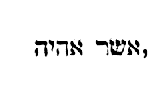
Ait Moyses: Obsecro, Domine, non sum eloquens ab heri et nudius tertius: et ex quo locutus es ad servum tuum, impeditioris et tardioris linguae sum (Exod. IV) . [Ex Augustino.] Quod ait Moyses ad Dominum, precor Domine, non sum eloquens ante hesternum, neque ante nudiustertianum diem, neque ex quo coepisti loqui famulo tuo, intelligitur credere posse fieri Dei voluntate subito eloquentem, cum dicit: neque ex [Col. 0024B] quo coepisti loqui famulo tuo; tanquam ostendens fieri potuisse, ut ante hesternum et nudiustertianum diem, qui eloquens non fuisset, repente fieret, ex quo cum illo Dominus loqui coepit. Dixit Dominus ad eum: Quis fecit os hominis, aut quis fabricatus est mutum et surdum, videntem et caecum, nonne ego? Sunt qui Deo calumnientur, vel Scripturae potius Veteris Testamenti, quia dixerit Deus quod ipse fecerit caecum et mutum. Quid ergo dicunt de Domino Christo aperte in Evangelio dicente: Ego veni, ut qui non vident videant, et qui vident caeci fiant? (Joan. IX.) Quis autem nisi insipientes, crediderit aliquid homini secundum vitia corporalia posse accidere quod Deus nolit? sed eum juste totum velle nemo ambigit. Perge igitur, et ego ero in ore tuo, doceboque te quid [Col. 0024C] loquaris. Quod Dominus dicit ad Moysen: Sed nunc vade tu, et ego aperiam os tuum, et instruam te quae locuturus es; satis hic apparet, non tantum instructione oris, sed ipsam etiam apertionem, ad Dei voluntatem et gratiam pertinere. Non enim ait: Tu aperi os tuum, et ego instruam te: sed utrumque ipse permisit, Aperiam et instruam. Alibi autem dicit in psalmo. Dilata os tuum et adimplebo illud (Psalm. LXXX) : ubi significat in homine voluntatis accipiendi quod Deus donat volenti; ut ad voluntatem exordium pertineat, dilata os tuum, ad Dei gratiam, et adimplebo illud: hic vero, et aperiam os tuum et instruam te. At ille: Obsecro, inquit, Domine, mitte quem missurus es. Iratus Dominus in Moysen ait: Aaron frater tuus Levites, scio quod eloquens [Col. 0024D] sit. Ecce ipse egredietur in occursum tuum. vidensque te, laetabitur corde. Loquere ad eum et pone verba mea in ore ejus. Ego ero in ore tuo et in ore illius, et ostendam vobis quid agere debeatis. Ipse loquetur pro te ad populum, erit os tuum: tu autem eris ei in his, quae ad Deum pertinent. Virgam quoque hanc sume in manu tua: in qua facturus es signa.
(Ex Augustino.) Quemadmodum posset intelligi irascens Deus. Quia non sicut homo per irrationabilem perturbationem, per omnia tenendum est, ubi tale aliquid Scriptura dicit ne de hoc eadem saepe dicenda sint. Sed merito quaeritur cur hic iratus de fratre Moysi dixerat, quod ipse illi loqueretur ad populum. Videtur enim tanquam diffidenti non dedisse plenissimam [Col. 0025A] facultatem quam daturus erat, et per duos agi voluisse quod et per unum posset si credidisset. Verumtamen, eadem verba omnia diligentius considerata, non significant iratum Dominum pro vindicta dedisse Aaron. Sic enim dicit: Nonne ecce Aaron frater tuus Levites, scio quia eloquens est, loquetur ipse? Quibus verbis ostenditur Deus increpasse potius eum qui timeret ire, quod ipse esset minus idoneus, cum haberet fratrem per quem posset ad populum loqui quod vellet; quomodo erat ipse gracilis vocis et linguae tardioris, quanquam de Deo totum sperare deberet. Deinde eadem ipsa quae paulo ante promiserat; et posteaquam iratus est, dicit. Dixerat enim: Ego ero in ore tuo: doceboque te quid loquaris; sive ut in aliis exemplaribus habetur, Ego aperiam [Col. 0025B] os tuum, et instruam te. Nunc autem dicit, Ego ero in ore tuo, et in ore illius: sive, aperiam os tuum et os ejus, et instruam vos quae faciatis. Sed quomodo addidit et loquetur ipse tibi ad populum, videtur oris apertio praestita, propter quod dicit Moyses, linguae se tardioris. De vocis autem gracilitate, nihil ei praestare Dominus voluit, sed propter hoc adjutorium fratris adjunxit, qui posset ea uti voce quae populo docendo sufficeret. Quod autem ait, et dabis verba mea in os ejus, ostendit quod ea loquendo esset daturus. Nam si tantummodo audiendo sicut populo, in aures diceret. Deinde quod paulo post ait, et loquetur ipse tibi ad populum, et ipse erit tuum os, et hic subauditur, ad populum. Et cum dicit, tibi loquetur ad populum, satis indicat in Moyse [Col. 0025C] principatum, in Aaron ministerium. Deinde quod ait: Tu autem illi eris quae ad Deum, magnum hic fortassis perscrutandum est sacramentum, cum in his figuram gereret velut medius Moyses, inter Deum et Aaron, et medius Aaron inter Moysen et populum. Igitur quod dicit Moyses se non esse eloquentem ab heri et nudiustertius, ex quo locutus est ad illum Dominus, sed tardioris atque impeditioris linguae esse, ostendit quod omnes homines in comparatione divini verbi, non solum ineloquentes, sed et muti putandi sunt. Donec enim Moyses fuit in Aegypto: non tardum se lingua profitetur. Erat enim Aegyptiis eloquentia incomparabilis. Ubi coepit audire vocem Dei, tunc sensit se tardum esse lingua. Sed quia in id proficiebat, ut agnosceret semetipsum, [Col. 0025D] merito a Domino, audivit: Ego ero in ore tuo.
Tulit Moyses uxorem et filios suos, et imposuit eos super asinum: reversusque est in Aegyptum, portans virgam Dei in manu sua. Dixitque ei Dominus revertenti in Aegyptum: Vide, ut omnia ostenta quae posui in manu tua, facias coram Pharaone. Ego indurabo cor ejus, et non dimittet populum (Exod. IV) . Quomodo ergo hic Dominus dicit, Indurabo cor ejus, et non dimittet populum, cum Apostolus taliter de eo referat dicens: Qui vult omnes homines salvos fieri, et ad agnitionem veritatis pervenire (I Tim. II) ? Indurare [Col. 0026A] ergo Dominus Pharaonem dicitur, non quod ipse eum durabilem et inobedientem faciat, sed quod induratum ne eum corrigat, justo judicio derelinquat. Sequitur: Dicesque ad eum, Haec dicit Dominus: Filius meus primogenitus Israel. Dixi tibi: Dimitte filium meum ut serviat mihi: et noluisti dimittere eum. Ecce ego interficiam filium tuum primogenitum. Filium primogenitum Israel vocat: quia in patriarchis primus electus est, ad unius Dei fidem et notitiam ac legem litterae praecipiendam; postea quidem per Evangelium gentes ad fidem Christi convocandae erant. Cumque essent in itinere in diversorio, occurrit ei dominus, et volebat occidere eum. Tulit illico Sephora acutissimam petram, et circumcidit praeputium filii sui, tetigitque pedes ejus, et ait: Sponsus sanguinum [Col. 0026B] tu mihi es, et dimisit eum postquam dixerat. Sponsus sanguinum tu mihi es, ob circumcisionem. Dixit autem Dominus ad Aaron: Vade in occursum Moysi in deserto. Qui perrexit ei obviam in montem Dei, et osculatus est eum. (Ex Augustino. ) Primum quaeritur, quem volebat angelus occidere: utrum Moysen, quia dictum est: Occurrit ei angelus et quaerebat eum occidere. Nam cui putabitur occurrisse, nisi illi qui universo suorum comitatui praebuit, et a quo caeteri ducebantur? an puerum quaerebat occidere, cui mater circumcidendo subvenit: ut ob hoc intelligatur occidere voluisse infantem, quia non erat circumcisus, atque ita sancire praeceptum circumcisionis severitate vindictae? Quod si ita est, incertum est prius, de quo dixerat: Quae [Col. 0026C] rebat eum occidere, quia ignorabatur quem, nisi ex consequentibus reperiatur. Mira sane locutio et inusitata, ut prius diceret, occurrit ei et quaerebat eum occidere, de quo nihil ante dixerat. Sed talis est in psalmo: Fundamenta ejus in montibus sanctis: diligit Dominus portas Sion (Psalm. LXXXVI) . Inde enim psalmus incipit: nec aliquid de illo vel de illa dixerat, cujus fundamenta intelligi voluit dicens: Fundamenta ejus in montibus sanctis. Sed quia sequitur diligit Dominus portas Sion, ergo fundamenta vel Domini vel Sion, et ad faciliorem sensum magis Sion, ut fundamenta civitatis accipiantur: sic et hic nondum nominato infante dictum est: Occurrit ei, et quaerebat eum occidere; ut de quo dixerat, in consequentibus agnoscamus; quanquam [Col. 0026D] et si de Moyse accipere quisquam voluerit, non est magnopere resistendum. Illud potius quod sequitur, si fieri potest, intelligatur quid sibi velit, ideo recessisse angelum ab interfectione cujuslibet eorum, quia dixit mulier: Sponsus sanguinum tu mihi es ob circumcisionem, sive juxta alia exemplaria, Stetit sanguis circumcisionis infantis. Non enim ait recessit ab eo propter quod circumcidit infantem; sed quia stetit sanguis circumcisionis; non quia cucurrit, sed quia stetit magno, ni fallor, sacramento. Secundum historiam vero mater gentilis novitatem rei admirans, ignara praecepti quod Abraham datum est circumcisione, ad Moysen potuit dici, Sponsus sanguinum tu mihi es: ac si diceret, ritus gentis tuae [Col. 0027A] cogit me sanguinem fundere filii mei ob circumcisionem, quod aliis gentibus moris non est facere. Secundum mysterium autem Sephora typum tenet Ecclesiae de gentibus quae praeputium filii sui, id est, populi gentilis, acutissima petra, hoc est, doctrina Spiritus sancti sive illa petra de qua dicit Apostolus: Petra autem erat Christus (I Cor. X) , docet exspoliationem veteris hominis cum actibus ejus: ut mundent se ab omni inquinamento carnis et spiritus, perficientes sanctificationem in timore Dei. Tunc enim stat sanguis circumcisionis, quando absorbetur id quod mortale est a vita: et corruptibile hoc induerit incorruptionem. Tunc enim veraciter circumcisionis sacramentum finitur, quando jam ultra non licet peccare, nec pugnam carnis refragantis [Col. 0027B] sustinere. (Ex Augustino.) Quod superius dictum est, quod Moyses uxorem et infantes suos imposuit vehiculis, ut cum eis in Aegyptum pergeret, postea vero Jethro socer ejus, illi cum eis occurrit, scilicet post eductionem populi ex Aegypto, quaeri potest quomodo utrumque fit verum. Sed intelligendum est, post illam quae ab angelo futura erat, interfectione Moysi vel infantis, reversum fuisse cum parvulis. Nam quidam putaverunt propter hoc angelum terruisse, ne ad impedimentum mysterii quod divinitus impositum Moyses gerebat, femineus sexus comitaretur.
Post haec ingressi sunt Moyses et Aaron, et dixerunt [Col. 0027C] Pharaoni: Haec dicit Dominus Deus Israel: Dimitte populum meum, ut sacrificet mihi in deserto. At ille respondit: Quis est Dominus, ut audiam vocem ejus, et dimittam Israel? Nescio Dominum, et Israel non dimittam (Exod. V) . Superbam diaboli contumaciam, Pharao suo sermone exprimit qui subdi Deo noluit, sed aequalem dixit se esse Altissimo, quia nisi per tormenta coactus, Deo non vult impendere: unde in Evangelio cum Deum tentaret, quasi dubitans de ejus divinitate ait: Si Filius Dei es, dic ut lapides isti panes fiant (Matth. IV) . Sed post ea quasi ab ipso verberatus, quodammodo supplicationis vocem emittit, quam nisi coactus nequaquam expenderet. Scriptum est enim: Clamaverunt daemones et dixerunt ad Jesum: Quid venisti ante tempus torquere nos? [Col. 0027D] Scimus te quia es Filius Dei (Matth. VIII) . Ubi enim tormenta senserunt, sciunt Dominum quem ante flagella scire noluerunt. Sed et Pharao ante verbera nescire se Dominum dixit: post verbera autem pro se supplicare ad Dominum rogat. Sequitur: Deus Hebraeorum vocavit nos, ut eamus viam trium dierum in solitudinem, et sacrificemus Domino Deo nostro, ne forte accidat nobis pestis aut gladius. Quaeritur quomodo populo dicatur, quod mandavit Deus ejecturum se eos de Aegypto in terram Chanaan, Pharaoni autem dicatur, quod trium dierum iter exire vellent in desertum immolare Deo suo ex mandato ejus. Sed intelligendum est, quamvis Deus sciret quid esset facturus, quomodo praesciebat non consensurum [Col. 0028A] Pharaonem ad populum dimittendum, illud primo dictum est quod etiam primitus fieret, si ille dimitteret. Ut enim sic fierent omnia quemadmodum consequens scriptura testatur, Pharaonis contumacia meruit et suorum. (Ex Isidoro.) Neque enim mendaciter Deus jubet quod scit non facturum cui jubetur, ut justum judicium consequatur. Mystice autem, quae est in via trium dierum, quae nobis incedenda est, ut exeuntes de Aegypto, pervenire possimus ad locum, in quo immolare debeamus? Via ista Christus est, qui dixit: Ego sum via, veritas, et vita (Joan. XIV) . Quae via triduo nobis incedenda est. Qui enim confessus fuerit in ore suo Dominum Jesum, et crediderit in corde suo quod Deus illum suscitavit a mortuis tertia die, salvus [Col. 0028B] erit. Haec est ergo tridui via per quam pervenitur in locum, in quo Domino immoletur, et reddatur sacrificium laudis, sicut in consequentibus dicitur. Abominationes, inquiunt, Aegyptiorum immolabimus Domino Deo nostro. Oves quippe Aegyptii edere dedignantur. Sed quod abominantur Aegyptii, hoc Israelitae Deo offerunt: quia simplicitatem conscientiae quam sapientes hujus saeculi, hoc est, cives Aegypti quasi fatuitatem deputant, hanc justi Deo in sacrificium immolant: et per id Deo placere procurant, quod saeculo et mundo abjectum et contemptibile esse considerant, secundum Apostolum qui ait: Nam quae stulta sunt mundi, elegit Deus, ut confundat sapientes (I Cor. I) .
Ait ad eos rex Aegypti: Quare Moyses et Aaron, sollicitatis populum ab operibus suis? Ite ad onera vestra. Dixitque Pharao: Multus est populus terrae. Videtis quod turba succreverit, quanto magis, si dederimus eis requiem ab operibus? Praecepit ergo in die illo praefectis operum et exactoribus populi, dicens: Nequaquam dabitis ultra paleas populo, ad conficiendos lateres, sicut prius. Sed ipsi vadant et colligant stipulam, et mensuram laterum quos prius faciebant, imponetis super eos, nec minuetis quidquam. Vacant enim, et idcirco vociferantur dicentes: Eamus et sacrificemus Deo nostro. Opprimantur operibus et expleant [Col. 0028D] ea, ut non acquiescant verbis mendacibus, et reliqua. (Ex Isidoro.) Ex quo autem loqui coepit Moyses ad Pharaonem, magis affligitur populus Dei. Ita et ex quo in animam hominis sermo Dei perlatus fuerit, acrius callidus hostis consurgit, et majora vitia quibus vincatur, immittit. Prius vero quam venisset sermo qui argueret vitia, in pace durabant; sed ubi sermo Dei facere coepit uniuscujusque discrimen, tunc conturbatio magna consurgit. Videbantque se praepositi filiorum Israel in malo, eo quod diceretur eis: Non minuetur quidquam de lateribus per singulos dies, occurreruntque Moysi et Aaron, qui stabant ex adverso, egredientes a Pharaone, et dixerunt ad eos: Videat Dominus et judicet, quomodo fetere fecistis [Col. 0029A] odorem nostrum coram Pharaone et servis ejus: et praebuistis ei gladium, ut occideret nos.
(Ex Augustino.) Cum lux divinitus missa, humanum cor fuerit illustrare dignata, mox ab occulto adversario contra fulgentem mentem, tentamenta succrescunt. Nam callidus adversarius, quos luce justitiae enitescere conspicit, eorum mentes illicitis desideriis inflammare contendit: ut plerumque plus se urgeri tentationibus sentiant, quam tunc cum lucis internae radios non videbant. Unde et Israelitae, postquam vocati sunt, contra Moysen de excrescente labore conqueruntur dicentes: Videat Dominus et judicet, quomodo fetere fecisti odorem nostrum coram Pharaone et servis ejus. Volentibus quippe ex Aegypto discedere, Pharao paleas subtraxerat: et tamen [Col. 0029B] ejusdem mensurae opera requirebat. Quasi ergo contra legem mens submurmurat; post cujus cognitionem tentationum stimulos acriores portat, et cum sibi labores crescere conspicit, in eo quod adversario displicet, quasi fetere se in oculis Pharaonis dolet.
Reversusque Moyses ad Dominum ait: Domine, cur afflixisti populum istum? Quare misisti me? Ex eo enim ex quo ingressus sum ad Pharaonem ut loquerer in nomine tuo, afflixisti populum tuum, et non liberasti eos. Dixit Dominus ad Moysen: Nunc videbis quae facturus sum Pharaoni. Per manum enim fortem dimittet eos: et in manu robusta ejiciet illos de terra sua (Exod. VI) . [Ex Augustino.] Verba quae dicit Moyses ad Dominum, Quare afflixisti populum hunc, et ut [Col. 0029C] quid misisti me? Ex quo enim intravi ad Pharaonem loqui in tuo nomine de populo hoc, magis afflixit eum, et non liberasti populum tuum, non contumaciae verba sunt vel indignationis, sed inquisitionis et orationis; quod ex his apparet quae illi Dominus respondit. Non enim arguit infidelitatem ejus, sed quod sit facturus aperuit.
Locutus est Dominus ad Moysen dicens: Ego Dominus quia apparui Abraham, et Isaac, et Jacob in Deo omnipotente: et nomen meum Adonai non indicavi eis, et reliqua (Exod. VI) . Septimum in ordine nominum Dei, est Adonai; quod generaliter interpretatur [Col. 0029D] Dominus: quod dominetur cunctae creaturae; vel quod creatura omnis dominatui ejus deserviat. Dominus ergo et Deus dicitur, eo quod dominetur omnibus vel quod timeatur a cunctis. Quomodo ergo nunc dicitur, quod Dominus nomen suum Abrahae non indicaverit, de quo scriptum est: Apparuit Dominus Abrahae, dixitque ad eum: Ego Dominus omnipotens, ambula coram me, et esto perfectus: ponamque foedus meum inter me et te: et multiplicabo te vehementer nimis? (Gen. XVII.) Aut quomodo Isaac nomen ejus non est indicatum, ad quem ipse Dominus ait: Ego ero tecum et benedicam tibi: tibi enim et semini tuo dabo universas regiones has, et benedicentur in semine tuo omnes gentes terrae? [Col. 0030A] Sive quomodo latuit nomen Domini Jacob qui dixit: Vidi Dominum facie ad faciem, et salva facta est anima mea (Gen. XXXII) . Sed si secundum veritatem Scripturam inspicimus, agnoscemus aliquid Moysi revelatum esse, quod anterioribus Patribus non est intimatum. Quanto enim ipsius veritatis appropinquavit adventus in carne, tanto manifestius revelata sunt sacramenta Patribus, quia ipsa Dominicae incarnationis tempora nascendo et moriendo praeveniebant. Inde nunc ad Moysen dicitur: Ego Dominus qui apparui Abraham et Isaac et Jacob in Deo omnipotente, et nomen meum Adonai non indicavi eis. Unde et David dicit: Super omnes docentes me, et super seniores intellexi (Psal. CXVIII) . Et Dominus in Evangelio ad apostolos: Beati oculi qui vident quae vos videtis. [Col. 0030B] Dico enim vobis quia multi prophetae et justi voluerunt videre quae vos videtis, et non viderunt; et audire quae auditis, et non audierunt (Matth. XIII) .
Ideo dic filiis Israel: Ego Dominus qui educam vos de ergastulo Aegyptiorum, et eruam de servitute, ac redimam in brachio excelso, et judiciis magnis: et assumam vos mihi in populum, et ero vester Deus: scietisque quod ego sum Dominus Deus vester, qui eduxerim vos de ergastulo Aegyptiorum, et induxerim in terram super quam levavi manum meam, ut darem eam Abraham, Isaac et Jacob: daboque illam vobis possidendam: ego Dominus. Narravit ergo Moyses omnia filiis Israel qui non acquieverunt ei propter angustiam spiritus et opus durissimum. Mystice, ergastulum Aegyptiorum tentationes hujus mundi quibus [Col. 0030C] tribulantur sancti, significat. Liberat enim Dominus filios Israel in brachio excelso, hoc est, in potestate magna et virtute, sive in filio per quem fecit omnia. Qui propter effectum virtutum brachium Dei dicitur, cum sanctos suos de potestate diaboli et servitute peccatorum eruat, et introducat in terram spiritualem coelestis patriae pro qua juravit, id est, firmiter promisit patribus nostris, patriarchis, prophetis et apostolis, ut daret eam illis in possessionem et semini eorum, hoc est, omnibus qui fidem et opera eorum fideliter secuti sunt, ut possideant illam in sempiternum. Locutusque est Dominus ad Moysen dicens: Ingredere et loquere ad Pharaonem regem Aegypti, ut dimittat filios Israel de terra sua. Responditque Moyses coram Domino: Ecce filii Israel non [Col. 0030D] me audiunt, et quomodo audiet Pharao, cum sim incircumcisus labiis? (Ex Augustino.) Quod Moyses dicit: Ecce ego gracili voce sum, et quomodo exaudiret me Pharao, non videtur tamen propter magnitudinem populi excusare de vocis gracilitate, verum etiam propter unum hominem. Mirum si tam gracilis vocis fuit, ut nec ab uno homine posset audiri. An forte regius factus non eos permittebat de proximo loqui?
Isti sunt principes domorum per familias suas: Filii Ruben primogeniti Israelis, Enoch et Phallu, Esrom [Col. 0031A] et Charmi. Hae cognationes Ruben. Filii Simeon, Jamuel et Jamin, et Abad, Jachin et Soher, et Saul filius Chananitidis. Hae progenies Simeon. Et haec nomina filiorum Levi per cognationes suas, Gerson et Laath, et Merari (Exod VI) . Sacramenti locum esse dubium non est, quod Scriptura volens originem Moysi demonstrare, quoniam ejus actio jam expetebat, a primogenito Jacob, id est Ruben, progenies coepit, inde ad Simeon, inde ad Levi, ultra progressa non est, quoniam ex Levi Moyses. Hi autem commemorantur, qui jam commemorati fuerant in illis septuaginta quinque in quibus Israel intravit in Aegyptum. Non enim primam, neque secundam, sed tertiam tribum, id est Leviticam, Deus esse voluit sacerdotalem. Accepit autem Aaron uxorem Elisabeth [Col. 0031B] filiam Aminadab, sororem Naason, quae peperit ei Nadab et Abiu, Eleazar et Ithamar. Aminadab filius Esrom fuit, filii Phares, filii Juda. Unde apparet quod regalis et sacerdotalis prosapies statim in principio legis commista est: et ideo nequaquam est dubitandum quin Redemptor noster, secundum Evangelii fidem, et de regali et de sacerdotali stirpe progenitus sit. Dixitque Dominus ad Moysen, Ecce constitui te Deum Pharaonis, Aaron frater tuus erit propheta tuus. Tu loqueris omnia quae mando tibi; ille loquetur ad Pharaonem, ut dimittat filios Israel de terra sua (Exod. VII) . [Ex Augustino.] In Scriptura sacra aliquando Deus nuncupative, aliquando vero essentialiter dicitur. Nuncupative enim Deus dicitur, sicut nunc ad Moysen dictum est: Ecce [Col. 0031C] constitui te Deum Pharaonis, et sicut iterum Moyses ait: Si quis homo hoc vel illud fecerit, applica illum ad deos (Exod. XXII) , videlicet ad sacerdotes, sicut et Psalmista ait: Deus stetit in synagoga deorum: in medio autem deos discernit (Psal. LXXXI) . Essentialiter autem Deus dicitur, sicut ipse ad Moysen dicit: Ego sum Deus Abraham, et Deus Isaac, et Deus Jacob. Unde Paulus apostolus volens nuncupativum Dei nomen ab essentia discernere, ait: Quorum patres et ex quibus Christus secundum carnem, qui est super omnia Deus benedictus in saecula (Rom. IX) . Nuncupativus enim Deus, inter omnia; essentialis autem, super omnia. Ut ergo responderet Christum naturaliter Deum, non hunc Deum tantummodo, sed Deum super omnia esse memoravit, [Col. 0031D] quia et justus quilibet Deus est, sed inter omnia, quia nuncupative Deus. Christus autem Deus est super omnia, quia naturaliter Deus. (Ex Augustino.) Notandum quod cum ad populum mitteretur, non ei dictum est, Ecce dedi te Deum populo, et frater tuus erit propheta: sed, frater tuus, inquit, loquetur tibi ad populum. Ad populum dictum est etiam, erit ille os tuum, et tu illi quae ad Deum; non dictum est, Tu illi Deus. Pharaoni autem dicitur Moyses datus Deus, et secundum analogiam propheta Moysi Aaron, sed ad Pharaonem. Hic insinuatur eo nobis loqui quae propheta Dei audivit ab eo, nihilque aliud esse prophetam Dei, nisi enuntiatorem Dei verborum hominibus, qui Deum vel non possunt, vel non merentur [Col. 0032A] audire. Sequitur: Sed ego indurabo cor ejus, et multiplicabo signa et ostenta mea in terra Aegypti, et non audiet vos: immittamque manum meam super Aegyptum, et educam exercitum et populum meum filios Israel de terra Aegypti, per judicia maxima: et scient Aegypti quod ego sum Dominus. Assidue Deus dicit, Indurabo cor Pharaonis, et velut causam infert cur hoc faciat. (Ex Augustino.) Indurabo, inquit, cor Pharaonis, et implebo signa mea et portenta mea in Aegypto, tanquam necessaria fuerit obduratio cordis Pharaonis ut signa Dei multiplicarentur vel implerentur in Aegypto. Utitur ergo Deus bene cordibus malis ad id quod vult ostendere bonis, vel quo facturus est bonos. Et quamvis uniuscujusque cordis in malitia qualitas, id est, quale cor habeat [Col. 0032B] ad malum, fiat vitio quod inolevit ex arbitrio voluntatis, ea tamen qualitate mala ut huc vel illuc moveatur, cum sive huc, sive illuc male moveatur, causis fit quibus animus propellitur: quae causae ut existant vel non existant, non est in hominis potestate, sed veniunt ex occulta providentia, justissima plane et sapientissima, universum quod creavit, disponentis et administrantis Dei. Ut ergo tale cor haberet Pharao, quo patientia Dei non moveretur ad pietatem, sed potius ad impietatem, vitii proprii fuit. Quod vero ea facta sunt quibus cor suo vitio tam malignum resisteret jussionibus Dei, hoc est enim quod dicitur induratum, quia non flexibiliter consentiebat, sed inflexibiliter resistebat, dispensationis fuit divinae, quia tali cordi non solum justa induratio, [Col. 0032C] sed evidenter justa poena parabatur, qua timentes Deum corrigentur. Proposito quippe lucro, verbi gratia propter quod homicidium committatur, aliter avarus, aliter pecuniae contemptor movetur: ille scilicet ad facinus perpetrandum, ille ad cavendum; ipsius tamen lucri propositio in alicujus illorum non fuit potestate: ita causae eveniunt hominibus malis, quae non sunt quidem in eadem potestate, sed hoc de illis faciunt quales eos invenerunt jam factos propriis vitiis ex praeterita voluntate. Videndum sane est utrum etiam sic accipi possit, Ego indurabo, tanquam diceret, quam durum sit demonstrabo. Erat autem Moyses octoginta annorum, et Aaron octoginta trium, quando locuti sunt ad Pharaonem. Quid significat hic numerus aetatis legislatoris, [Col. 0032D] et primi sacerdotis secundum legem, nisi sacramentum legis ac sacerdotii? Quando enim Moyses et Aaron locuti sunt ad Pharaonem, aetas Moysi octoginta erat annorum, et Aaron octoginta trium, quia lex quando ad salutem gentibus per sanctos doctores oblata est, circumcisionem spiritualem perfecte docuit: necnon et ipsi sancti praedicatores perfecte studebant se ab omni inquinamento carnis et spiritus mundos servare, et sic fidem sanctae Trinitatis, perfecte aliis praedicare. Dixitque Dominus ad Moysen et Aaron: Cum dixerit vobis Pharao, Ostendite signa, dices ad Aaron: Tolle virgam tuam, et projice eam coram Pharaone, ac vertatur in colubrum. (Ex Augustino.) Hic certe non ministerio vocis [Col. 0033A] opus erat, cui videbatur velut ex necessitate datus Aaron propter gracilitatem vocis Moysi, sed virga erat projicienda ut draco fieret. Cur ergo hoc Moyses ipse non fecit, nisi quia ista mediatio ipsius Aaron inter Moysen et Pharaonem alicujus magnae rei figuram gerit? Egressi itaque Moyses et Aaron ad Pharaonem, fecerunt sicut praeceperat Dominus. Tulitque Aaron virgam coram Pharaone et servis ejus, quae versa est in colubrum. (Ex Augustino.) Etiam hoc notandum quod cum id signum coram Pharaone dandum fieret, secundum Septuaginta scriptum est: Et projecit Aaron virgam suam. Cum si forte dixisset, projecit virgam, nulla esset quaestio. Quod vero addidit suam, cum eam Moyses dederit, non frustra forsitan dictum est. An erat utrique illa virga communis, [Col. 0033B] ut cujuslibet eorum diceretur, verum diceretur? Vocavit autem Pharao sapientes et maleficos: et fecerunt etiam ipsi per incantationes Aegyptias et arcana quaedam similiter: projeceruntque singuli virgas suas, quae versae sunt in dracones, sed devoravit virga Aaron virgas eorum; sive, secundum Septuaginta, et absorbuit virga Aaron virgam illorum. Si dictum esset, Absorbuit draco Aaron virgas illorum, intelligeretur verus draco Aaron phantasmatica illa figmenta non absorbuisse, sed virgas. Hoc enim potuit absorbere quod erant, non quod esse videbantur et non erant. Sed quoniam dixit: absorbuit virga Aaron virgas illorum, draco utique potuit virgas absorbere, non virga draconem. Sed eo nomine appellata res est, unde versa est, non in quo versa est. Quia [Col. 0033C] in id etiam reversa est, ideo hoc vocari debebat quod principaliter erat. Quid ergo dicendum est de virgis magorum, utrum et ipsi veri dracones facti fuerint? Sed ea ratione virgae appellatae sunt, qua virga Aaron, an potius videbantur esse quod non erant, ludificatione venefica? Cur ergo ex utraque parte et virgae dicuntur et dracones? Unde figmentis illis nihil differt loquendi modus: sed demonstrare difficile est quomodo etiamsi veri dracones facti sunt ex virgis magorum, non fuerint tamen creatores draconum, nec magi nec angeli mali, quibus ministris illa operabantur. Insunt enim rebus corporeis per omnia elementa mundi quaedam occultae seminariae rationes, quibus cum data fuerit opportunitas temporalis atque causalis, prorumpunt in species debitas suis modis et finibus; [Col. 0033D] et sic non dicuntur angeli qui ista faciunt animalium creatores, sicut nec agricolae segetum vel arborum, vel quorumque in terra gignentium creatores dicendi sunt, quamvis noverint praebere quasdam visibiles opportunitates et causas ut illa nascantur. Quod autem isti faciunt visibiliter, hoc angeli invisibiliter. Deus vero solus unus creator est, qui causas ipsas et rationes seminarias rebus inseruit. Res breviter dicta est: quae si exemplis et copiosa disputatione explicetur, ut facilius intelligatur, longo sermone opus est, a quo se ratio nostrae festinationis excusat. (Ex Isidoro.) Mystice autem projecit Moyses virgam coram Pharaone, et serpens factus devoravit serpentes Aegyptiorum, significans quod [Col. 0034A] Verbum caro fieret, qui serpentis diri venena evacuaret, et per remissionem et indulgentiam peccatorum. Virga est verbum directum, regale, plenum potestatis, insigne imperii. Virga serpens facta est, quomodo qui erat Filius Dei ex Deo Patre natus, filius hominis factus est, natus ex virgine. Qui quasi serpens exaltatus in cruce medicinam humanis effudit vulneribus. Unde ipse Dominus ait: Sicut exaltavit Moyses serpentem in deserto, ita oportet exaltari filium hominis (Joan. III) . Virga enim Moysi in draconem conversa magorum absorbuit virgas, et Christus post gloriae suae dignitatem factus est obediens Patri usque ad mortem, et per ipsam mortem carnis consumpsit aculeum mortis, attestante propheta: Ero mors tua, o mors, morsus tuus ero, o inferne [Col. 0034B] (Ose. XIII) . Aliter: Moyses ad Aegyptum veniens, et deferens virgam qua castigat Aegyptum, legem significat, quae mundum decem plagis mandatorum corripit. Virga ergo per quam Aegyptus corrumpitur et Pharao superatur, crux Christi est, per quam mundus vincitur, et princeps hujus mundi triumphatur. Quod autem virga projecta fit serpens, significat quod ait Sapientia: Estote, inquit, prudentes sicut serpentes (Matth. X) . Quod autem virga serpentes magorum devoravit, significat quod crux Christi, cujus praedicatio videbatur stultitia, omnem sapientiam mundanam superavit. Quod virga Moysi mysterium crucis habet, Dominus designat cum ait de Moyse: De me enim ille scripsit (Joan. V) . Cum projecta esset in terram virga, tunc in serpentem versa [Col. 0034C] est, quia cum crux ad credulitatem hominum venit, stultam fecit sapientiam hujus mundi per mysterium passionis Christi. Fecerunt autem, inquit, similiter et incantatores Aegyptiorum veneficiis suis, et induratum est cor Pharaonis, et non exaudivit eos sicut dixit Dominus. Cum haec dicuntur, videtur propterea cor Pharaonis induratum fuisse, quia et incantatores Aegyptiorum similia fecerunt; sed consequentia docebunt quanta fuerit illa obduratio, etiam cum incantatores defecerunt. (Ex Isidoro.) Spiritualiter autem, induravit Dominus cor Pharaonis, scilicet quia diabolum ita induravit post peccatum, ut poenitentiae compunctione nunquam emolliatur, sicut in Job de eo scriptum est: Cor ejus indurabitur quasi lapis (Job. XLI) . Dehinc inferuntur plagae in Aegyptum. [Col. 0034D] Licet illa in Aegyptum corporaliter gesta sunt, spiritualiter tamen nunc geruntur in nobis; Aegyptus namque saeculi forma est.
Dixit quoque Dominus Deus ad Moysen: Dic ad Aaron, Tolle virgam tuam, et extende manum tuam super aquas Aegypti, et super fluvios eorum, et rivos ac paludes et omnes lacus aquaram, ut vertantur in sanguinem: et sit cruor in omni terra Aegypti, tam in ligneis vasis quam in saxeis. Feceruntque ita Moyses et Aaron sicut praeceperat Dominus, etc. (Exod. VII.) Quod vero aquae fluminis vertuntur in sanguinem, satis convenienter aptatur, ut fluvius cui Hebraeorum [Col. 0035A] parvulos crudeliter necandos tradiderant, auctoribus sceleris redderet poculum sanguinis. (Ex Isidoro.) Mystice autem aquae Aegyptiae erratica et lubrica philosophorum sunt dogmata, quae merito in sanguinem vertuntur, quia in rerum causis carnaliter sentiunt. Sed ubi crux Christi mundo huic lumen veritatis ostendit, hujusmodi eum correptionibus arguit, ut ex qualitate poenarum proprios agnoscant errores. Foderunt autem omnes Aegyptii per circuitum fluminis aquam, ut biberent. Non enim poterant bibere de aqua fluminis. Quid significat quod Aegyptii postquam aquae fluminis versae sunt in sanguinem, foderunt per circuitum fluminis, quaerentes aquam ut biberent, nisi quod gentilitas, confusa de meditatione saecularis philosophiae, cum viderit nihil [Col. 0035B] vitale ac salubre sibi illam praebere, istum et investigando ac salubriter tractando usquequaque quaerere sapientiae haustum, quem tunc veraciter non inveniet, nisi perveniat ad fontem vitae, qui ait: Qui sitit, veniat ad me et bibat, et de ventre ejus fluent aquae vivae (Joan. VII) .
Dixitque Dominus ad Moysen: Dic ad Aaron, Extende manum tuam super fluvios, et super rivos ac paludes, et educ ranas super terram Aegypti. Extendit Aaron manum super aquas Aegypti, et ascenderunt ranae, operueruntque terram Aegypti (Exod. VIII) . [Ex Isidoro.] In secunda vero plaga ranae producuntur, quibus indicari figuraliter arbitrantur carmina poetarum, [Col. 0035C] qui inani quadam et inflata modulatione, velut ranarum sonis et cantibus, mundo huic deceptionis fabulas intulerunt. Rana enim est loquacissima vanitas. Hoc enim animal ad nihil aliud utile est, nisi quia sonum vocis, improbis et importunis clamoribus, reddit. Fecerunt autem et malefici per incantationes suas similiter, eduxeruntque ranas super terram Aegypti. Vocavit autem Pharao ad Moysen et Aaron, et dixit eis: Orate Dominum ut auferat ranas a me et a populo meo, et dimittam populum ut sacrificet Domino. (Ex Augustino.) Fecerunt autem similiter et incantatores Aegyptiorum veneficiis suis, et eduxerunt ranas super terram Aegypti. Quaeritur unde, si jam ubique factum erat. Sed similis quaestio est, unde et aquam in sanguinem verterint, si tota aqua [Col. 0035D] Aegypti in sanguinem conversa jam fuerat. Proinde intelligendum est, regionem ubi filii Israel habitabant, plagis talibus non fuisse percussam, et inde potuerunt incantatores vel aquam haurire, quam in sanguinem verterent, vel ab aquis ranas educere ad solam demonstrationem magicae potentiae: quanquam potuerunt etiam postea quam illa compressa sunt facere; sed Scriptura cito narrando conjunxit quod etiam postea fieri potuit. Egressique sunt Moyses et Aaron a Pharaone, et clamavit Moyses ad Dominum pro sponsione ranarum quam condixerat Pharaoni. Fecitque Dominus juxta verbum Moysi, et mortuae sunt ranae de domibus et de villis et de agris: congregaruntque eas in immensos aggeres, et compulruit [Col. 0036A] terra. Videns autem Pharao quod data esset requies, ingravabat cor suum, et non audivit eos sicut praeceperat Dominus. (Ex Augustino.) Et vidit, inquit, Pharao, quia facta est refrigeratio, et ingravatum est cor ejus, et non exaudivit eos sicut dixerat Dominus. Hic apparet non illas tantum fuisse causas obdurationis cordis Pharaonis, quod incantatores ejus similia faciebant, verum etiam ipsam Dei patientiam qua parcebat. Patientia enim Dei secundum corda hominum quibusdam utilis ad poenitendum, quibusdam inutilis ad resistendum Deo, et in malo perseverandum; non tamen per seipsam inutilis est, sed secundum cor malum sicut jam diximus. Hoc et Apostolus dicit: Ignoras quia patientia Dei ad poenitentiam te adducit? Secundum autem duritiam cordis [Col. 0036B] tui et cor impaenitens, thesaurizas tibi iram in die irae et revelationis justi judicii Dei, qui reddet unicuique secundum opera ejus (Rom. II) . Nam et alibi cum diceret: Christi bonus odor sumus in omni loco, etiam illud adjunxit: et in his qui salvi fiunt, et in his qui pereunt (II Cor. II) . Non dixit Christi bonum se odorem esse his qui salvi fiunt, malum autem his qui pereunt, sed tantum bonum odorem se dixit. Illi vero tales sunt, ut et bono odore pereant, secundum sui cordis, ut saepe dictum est, qualitatem, quae mutanda est bona voluntate in Dei gratia, ut incipiant ei prodesse judicia Dei quae malis cordibus nocent. Unde inde mutato in melius corde cantabat: Vivet anima mea et laudabit te, et judicia tua adjuvabunt me (Psal. CXVIII) . Non dixit munera tua et [Col. 0036C] praemia tua, sed judicia tua. Multum est autem ut sincera fiducia dici possit: Proba me, Domine, et tenta me, ure renes meos et cor meum (Psal. XXV) . Et ne sibi aliquid ex suis viribus tribuisse videretur, continuo addidit: Quoniam misericordia tua ante oculos meos est, et complacui in veritate tua (Ibid.) . Factam erga se commemorat misericordiam ut placere possit in veritate, quomodo universae viae Domini misericordia et veritas.
Dixitque Dominus ad Moysen: Loquere ad Aaron, extende virgam tuam, et percute pulverem terrae, et sint sciniphes in universa terra Aegypti. Feceruntque ita, et extendit Aaron manum virgam tenens: percussitque [Col. 0036D] pulverem terrae, et facti sunt sciniphes in hominibus et in jumentis: omnis pulvis terrae versus est in sciniphes per totam terram Aegypti (Exod. VIII) . [Ex Isidoro.] Post haec sciniphes producuntur. Hoc animal pennis quidem suspenditur per aera volitans, sed ita subtile est et minutum, ut oculi visum nisi acute cernentis effugiat. Corpus autem cui insederit acerbissimo terebrat stimulo, ita ut quem voluntate [volantem] videre quis non valeat, sentiat statim advenientem. Hoc ergo animalis genus subtilitati haereticae comparatur, quae subtilibus verborum stimulis animas terebrat, tantaque calliditate circumvenit, ut deceptus quisque nec videat nec intelligat unde decipiatur. Feceruntque similiter malefici [Col. 0037A] incantationibus suis, ut educerent sciniphes et non potuerunt; erantque sciniphes tam in hominibus quam in jumentis. Et dixerunt malefici ad Pharaonem, Digitus Dei est hic. Induratumque est cor Pharaonis, et non audivit eos sicut praeceperat Dominus. (Ex Augustino.) Quod dixerunt magi ad Pharaonem, digitus Dei est hic. Quomodo non potuerunt educere sciniphes? Senserunt profecto cum artium suarum nefariarum scirent potentiam, non talibus artibus, velut potentior in eis esset Moyses, suos conatus fuisse frustratos, ut non possent educere sciniphes, sed digito Dei, qui utique operatur per Moysen. Digitus Dei autem sicut Evangelium manifeste loquitur, Spiritus sanctus intelligitur. Nam quod uno evangelista ita narrante verba Domini, ut diceret, Si ego in [Col. 0037B] digito Dei ejicio daemonia (Luc. XI) , alius evangelista, idipsum narrans, exponere voluit quid sit digitus Dei et ait: Si ego in Spiritu Dei ejicio daemonia (Matth. XII) . Cum itaque magi faterentur, quorum Pharao potentiae confidebat, digitum Dei esse in Moyse, in quo superabantur et eorum veneficia frustrabantur, tamen induratum est cor Pharaonis nunc mirabili omnino duritia. Cur autem in tertia ista plaga magi defecerunt (nam plagae coeperunt ex quo aqua in sanguinem versa est) et sentire et explicare difficile est. Poterant enim et in primo signo deficere, ubi in serpentem virga conversa est, et in prima plaga, ubi aqua in sanguinem commutata est, et in secunda de ranis, si hoc fuisset digitus Dei, id est spiritus Dei. Quis enim dementissimus [Col. 0037C] dixerit, digitum Dei in hoc signo potuisse conatus magorum impedire, et in superioribus nequivisse? Omnino ergo certa causa est quare illa facere hucusque permissi sunt. Commendatur enim fortasse Trinitas: et quod verum est, summi philosophi gentium, quantum in eorum litteris indagatur, sine Spiritu sancto philosophati sunt, quamvis de Patre et Filio non tacuerunt, quod etiam Didymus in libro suo meminit quem scripsit de Spiritu sancto. (Ex Isidoro.) Mystice autem, sicut conciliatus et placatus Spiritus sanctus requiem praestat mitibus et humilibus corde, ita contrarius et adversus, immites ac superbos inquietudine exagitat. Quam inquietudinem muscae illae brevissimae significaverunt, sub quibus magi Pharaonis defecerunt dicentes: Digitus [Col. 0037D] Dei est hic.
Dixit quoque Dominus ad Moysen: Consurge diluculo, et sta coram Pharaone. Egredietur enim ad aquas, et dices ad eum: Haec dicit Dominus: Dimitte populum meum ut sacrificet mihi. Quod si non dimiseris eum, ecce ego immitam in te et in servos tuos, in populum tuum et in domos tuas, omne genus muscarum: et implebuntur omnes domus Aegyptiorum muscis diversi generis: et universa terra in qua fuerint: faciamque mirabilem in die illa terram Gessen, in qua populus meus est, ut non sint ibi muscae; et scias quoniam ego Dominus in medio terrae; ponamque [Col. 0038A] divisionem inter populum meum et inter populum tuum (Exod. VIII) . [Ex Augustino.] Quod hic Scriptura aperuit, ne ubicunque diceret intelligere debemus, sed in posterioribus et in prioribus signis factum esse, ut terra in qua habitabat populus Dei nullis plagis talibus vexaretur. Opportunum autem fuit ut ibi hoc aperte poneretur, unde jam incipiunt signa, quibus magi similia nec conati sunt facere. Procul dubio enim quia ubique fuerant sciniphes in regno Pharaonis, non autem fuerant in terra Gessen, ubi conati sunt magi similiter facere et minime potuerunt. Quousque ergo deficerent, nihil de illius terrae segregatione dictum est; sed ex quo coeperunt ea fieri, ubi jam illis similia facere nec conari auderent, ibi commemoratum est. (Ex Isidoro.) Quarto autem [Col. 0038B] loco Aegyptus muscis percutitur. Musca enim nimis insolens et inquietum animal est, in qua quid aliud quam insolentes curae desideriorum carnalium designantur? Aegyptus ergo muscis percutitur, quia eorum corda qui hoc saeculum diligunt, desideriorum suorum inquietudinibus feriunt. Porro Septuaginta interpretes cynomyam, id est caninam muscam posuerunt: per quam canini mores significantur, in quibus humanae mentis voluntas et libido carnis arguitur. Potest quidem hoc loco significare etiam musca canina forensem hominum eloquentiam, qua velut canes alterutrum se lacerant. Vocavit autem Pharao Moysen et Aaron, et ait illis: Ite, sacrificate Deo vestro in terra hac. Nolebat enim eos ire quo dicebant, sed ut illic in Aegypto immolarent, volebat. [Col. 0038C] Hoc ostendunt verba Moysi quae sequuntur, ubi dicit, non posse fieri propter abominationes Aegyptiorum. Sic enim scriptum est: Et ait Moyses: Non potest ita fieri: Abominationes Aegyptiorum immolabimus Domino Deo nostro. Ac si diceret: Non possumus ea animalia quae abominantur Aegyptii, praesentibus illis Domino Deo nostro immolare. Oves enim Aegyptii edere dedignantur. Unde et in Genesi scriptum est: Omnes pastores ovium detestantur Aegyptii (Gen. XLVI) . Quod autem adjecit, Quod si mactaverimus ea quae colunt Aegyptii coram eis lapidibus nos obruent. Suggillat ipsos gentiles, eo quod animalium figuram pro Deo summo colebant ligno et lapidibus impressam. Nam Ammonem Jovem in ariete venerabantur; Anubem in cane; Apin quoque [Col. 0038D] colentes in tauro, et caetera portenta magis quam numina, quae ipsa Aegyptus cultu credebat venerari divino; ideoque Moyses et Aaron dicebant se ire velle ubi Aegyptii non viderent abominationes suas immolari. (Ex Augustino.) Hoc autem intelligendum est mystice significari, quod supra diximus, quia erant Aegyptiis oves et pastores earum abominabiles et ideo separatam terram Israelitae acceperunt cum venerunt in Aegyptum. Sic enim et sacrificia Israelitarum abominationes sunt Aegyptiis, sicut iniquis vita justorum. (Ex Gregorio.) Sancti quippe viri Domino oves offerunt, quia simplicitates suas omnipotenti Deo sacrificium ostendunt. Sed oves abominantur Aegyptii, quia cives hujus saeculi aspernantur [Col. 0039A] et despiciunt simplicitatem bonorum. Sicut ergo sunt abominationes malorum operum quas detestantur boni, ita bonorum operum causae abominationes sunt reprobis. Unde scriptum est: Abominantur justi virum impium, et abominantur impii eos qui in recta sunt via (Prov. XLIX) .
Dixit autem Dominus ad Moysen: Ingredere ad Pharaonem, et loquere ad eum: Haec dicit Dominus Deus Hebraeorum: Dimitte populum meum, ut sacrificet mihi. Quod si adhuc renuis et retines eos, ecce manus mea erit super agros tuos, super equos et asinos, et camelos, et boves, et oves, pestis valde gravis [Col. 0039B] (Exod. IX) . Quod vero quinto in loco animalium nece vel pecorum Aegyptus verberatur, vecordia hic arguitur vel stultitia hominum mortalium, qui tanquam irrationabilia pecora cultum et vocabulum Dei imposuerunt figuris, non solum hominum, sed et pecorum, ligno, metallis atque lapidibus impressis; et ea quae ipsi credebant cultu honorari divino in his viderent miseranda exerceri supplicia. Mortuaque sunt omnia animantia Aegyptiorum. De animalibus vero filiorum Israel nihil omnino periit. Et misit Pharao ad videndum: nec erat quidquam mortuum de his quae possidebat Israel. Ingravatumque est cor Pharaonis, et non dimisit populum. (Ex Augustino.) Quomodo e contrariis causis facta est haec ingravatio cordis Pharaonis? Si enim et pecora Israelitarum [Col. 0039C] morerentur, tunc videretur causa competens qua cor ejus gravaretur ad contemnendum Deum, tanquam si et magi ejus pecora Israelitarum fecissent mori. Nunc vero unde debuit ad timendum vel credendum moveri, videns nullum pecus mortuum ex pecoribus Hebraeorum? Hinc ingravatum est, id est, illa ingravatio etiam hucusque progressa est. Et dixit Dominus ad Moysen et Aaron: Tollite plenas manus cineris de camino: et spargat illum Moyses in coelum coram Pharaone: sitque pulvis super terram Aegypti. Erunt enim in hominibus et jumentis ulcera et vesicae turgentes in universa terra Aegypti. (Ex Augustino.) Quid est quod dicit Deus ad Aaron et Moysen, Sumite vobis plenas manus favillae de fornace, et aspergat Moyses in coelum coram Pharaone, et [Col. 0039D] coram servis ejus, et fiat pulvis in tota terra Aegypti? Signa enim superiora virga fiebant, quam non Moyses sed Aaron extendebat super aquam, vel ad terram percutiebat. Nunc vero interpositis duobus signis de cynomya et pecorum mortibus, ubi nec Aaron nec Moyses aliquid manu operati sunt, dicitur ut Moyses favillam spargat in coelum de fornace, et hanc ambo sumere jubentur, sed ille spargere non in terram sed in coelum; tanquam Aaron qui datus erat ad populum, terram percutere deberet, vel in terram sive in aquam manum extendere: Moyses vero, de quo dictum est: Erit tibi in his quae ad Deum, in coelum jubetur favillam spargere. Quid duo illa superiora signa, ubi nec Moyses nec Aaron [Col. 0040A] manu aliquid operantur? quid sibi vult ista diversitas? neque enim nihil. Tuleruntque cinerem de camino, et steterunt coram Pharaone: et sparsit illum Moyses in coelum: factique sunt ulcera vesicarum turgentium in hominibus et in jumentis; nec poterant malefici stare coram Moyse, propter ulcera quae in illis erant et in omni terre Aegypti. (Ex Isidoro.) In ulceribus arguitur dolosa hujus saeculi et purulenta malitia; in vesicis, tumens et inflata superbia; in fervoribus, ira furoris et insania. Hucusque enim talia per errorum suorum figuras mundum supplicia temperant. Post haec vero, verbera veniunt de supernis: voces scilicet, tonitrua et grando et ignis discurrens, sicut in sequentibus ostendetur. Dixit quoque Dominus ad Moysen: Mane consurge et sta [Col. 0040B] coram Pharaone, et dices ad eum: Haec dicit Dominus Deus Hebraeorum: Dimitte populum meum, ut sacrificet mihi, quia in hac vice mittam omnes plagas meas super cor tuum, et super servos tuos, et super populum tuum, ut scias quia non sit similis mei in omni terra. Nunc enim extendens manum, percutiam te et populum tuum peste, peribisque de terra. Idcirco autem posui te, ut ostendam in te fortitudinem meam: et narretur nomen meum in omni terra. Haec Scripturae verba et Apostolus posuit, cum in eodem loco perdifficili versaretur. Ibi autem et hoc ait: Si autem volens Deus ostendere iram et demonstrare potentiam suam, sustulit in multa patientia vasa irae, parcendo utique his quos malos futuros esse praescierat, quae vasa dicit perfecta in perditionem: et ut [Col. 0040C] notas, inquit, faceret divitias gloriae suae in vasa misericordiae (Rom. IX) . Unde vasorum misericordiae vox est in psalmis: Deus meus, misericordia ejus praeveniet me. Deus meus demonstravit mihi bona coram inimicis meis (Psal. LVIII) . Novit ergo Deus bene uti malis; in quibus tamen humanam naturam non ad malitiam creat, sed profert eos patienter quousque scit oportere: non inaniter, sed utens eis ad admonitionem vel exhortationem bonorum. Ecce enim ut annuntiaretur nomen Dei in universa terra, vasis misericordiae utique prodest. Ad eorum itaque utilitatem Pharao servatus est, sicut et Scriptura testatur et exitus docet. Mitte ergo jam nunc, et congrega jumenta tua, et omnia quae habes in agro. Homines enim et jumenta, et universa quae inventa fuerint [Col. 0040D] foris, nec congregata de agris, cecideritque super ea grando, morientur. (Ex Augustino.) Quid est quod mandat Deus Pharaoni, cum se facturum magnam grandinem minaretur, ut festinet congregare pecora sua, et quaecunque illi essent in campo, ne grandine intereant. Hoc enim non tam indignanter quam misericorditer videtur admonere. Sed hoc non facit quaestionem, quando Deus etiam irascens temperat poenam. Illud est quod merito movet, quibus nunc pecoribus consulatur, si omnia mortua fuerant plaga superiore ubi scriptum est quod discrevit Deus inter pecora Hebraeorum et Aegyptiorum, ita ut illinc nullum moreretur, omnia vero Aegyptiorum pecora morerentur. An ea solvitur quaestio, quod praedixerat [Col. 0041A] ea moritura, quae in campo fuissent, ut haec accipiantur omnia; intelligantur autem evasisse quae in domibus erant, quae potuerunt etiam a dubitantibus colligi, et in domo tenere, ne forte verum esset quod Moyses Dominum facturum esse praedixerat; et ex his esse in campis iterum poterant, quae modo admonet et congregari in domos, ne grandine pereant? Maxime quia sequitur Scriptura, et dicit: Qui timuit verbum Domini servorum Pharaonis, congregavit pecora sua in domos. Qui autem non intendit mentem in verbum Domini, dimisit pecora sua in campo. Hoc ergo fieri potuit, quando etiam mortem pecorum minatus est Deus, quamvis id Scriptura tacuerit.
[Col. 0041B] Et dixit Dominus ad Moysen: Extende manum tuam in coelum, et erit grando in omni terra Aegypti (Exod. IX) . Ecce iterum non in terram, sed in coelum manum jubetur extendere, sicut superius de favilla. Extenditque Moyses virgam in coelum, et Dominus dedit tonitrua et grandinem, ac discurrentia fulgura super terram; et reliqua. (Ex Isidoro.) Septimo loco super Aegyptum verbera veniunt de supernis, voces scilicet et tonitrua, et grando et ignis discurrens. In tonitruis enim increpationes ac divinae correptiones intelliguntur, quia non cum silentio verberat, sed dat voces; et doctrinam coelitus mittit, per quam possit culpam suam, coelitus castigatus, agnoscere mundus. Dat et grandinem, per quam tenera adhuc vastentur nascentia vitiorum; dat et ignem, sciens [Col. 0041C] esse spinas et tribulos, quos debeat ignis ille depasci; de quo dicit Dominus, Ignem veni mittere in terram (Luc. XII) . Per hunc enim incentiva voluptatis et libidinis consumuntur. Misitque Pharao, et convocavit Moysen et Aaron dicens ad eos: Peccavi etiam nunc, Dominus justus; ego et populus meus, impii. Orate Dominum, ut desinant tonitrua Dei et grando, et dimittam vos, et nequaquam hic ultra maneatis. Ait Moyses: Cum egressus fuero de urbe, extendam palmas meas ad Dominum, et cessabunt tonitrua, et grando non erit: ut scias quia Domini est terra. Novi autem quod et tu et servi tui, nec dum timeatis Dominum Deum, et reliqua (Luc. XII) . (Ex Augustino.) Cum fragore coeli qui vehemens erat in grandine, Pharao tertius rogavit Moysen ut oraret [Col. 0041D] pro illo, confitens iniquitatem suam, et populi sui; Moyses ei dixit: Et tu et servi tui scio quod nondum timetis Dominum. Qualem timorem quaerebat, cui timor iste nondum erat Domini timor? Facile enim est poenam timere, sed hoc non est Deum timere, illo scilicet timore pietatis, quae commemorat Jacob ubi dicit: Nisi Deus patris mei Abraham, et timor Isaac esset mihi, nunc me inanem dimisisses. Et dixit Dominus ad Moysen: Ingredere ad Pharaonem. Ego enim induravi cor ejus et servorum illius, ut faciam signa mea haec in eo: et narres in auribus filii tui et nepotum tuorum, quoties contriverim Aegyptios, et signa mea fecerim in eis: et sciatis quia ego Dominus Deus (Gen. XXXI) , et reliqua. Quod Dominus dicit ad [Col. 0042A] Moysen: Intra ad Pharaonem: Ego enim gravavi cor ejus et servorum ejus, ut ordine superveniant (Exod. X) , signa mea haec super eos, non sic accipiendum est, tanquam opus habeat Deus cujusquam malitia. Sed sic intelligendum est ac si diceret: Ego enim patiens fui super eum et servos ejus ut non eos auferrem, ut ordine superveniant signa mea super eos. Qua patientia enim Dei obstinatior fiebat malus animus, ideo pro eo quia in eum fuit, dicitur gravari cor ejus.
Dixit autem Dominus ad Moysem: Extende manum tuam super terram Aegypti ad locustam, ut ascendat super eam: et devoret omnem herbam quae residua [Col. 0042B] fuit grandini. Et extendit Moyses virgam super terram Aegypti (Exod. XVIII) . [Ex Isidoro.] Quod locustarum octavo in loco fit mentio, putatur a quibusdam, per hoc genus plagae, dissidentis a se et discordantis, humani generis inconstantia confutari. Alio quoque sensu locustae pro mobilitate levitatis accipiendae sunt tanquam vagae et salientes animae in saeculi voluptates. Et Dominus induxit ventum urentem tota illa die ac nocte, et, facto mane, ventus urens levavit locustas, quae ascenderunt super universam terram Aegypti, et sederunt in cunctis finibus Aegyptiorum innumerabiles, quales ante illud tempus non fuerunt, nec postea futurae sunt; operueruntque universam superficiem terrae, vastantes omnia. Devorata est igitur herba terrae, et quidquid pomorum in arboribus fuit, [Col. 0042C] quae grando dimiserat: nihilque omnino virens relictum est in lignis et herbis terrae, in cuncta Aegypto, (Ex Gregorio.) Ventus, inquit, urens levavit locustas, quae ascenderunt super universam terram Aegypti, operueruntque universam faciem terrae, vastantes omnia. Devorata est igitur herba terrae et quidquid pomorum in arboribus fuit. Exhibitae coelitus Aegypti plagae, quae exigentibus meritis corporaliter semel illatae sunt, quae mala pravas mentes quotidie feriant, spiritualiter signaverunt. Eis enim Aegyptus plagis affecta est, in quibus exteriore percussione commota, dolensque perpenderit, quae devastationis damna interius negligens tolerarit, ut dum foris perirent minima, amplius delicta cernerent per eorum speciem, et quae intus tolerant graviora sentirent. [Col. 0042D] Quid ergo per significationem locustae portendunt, quae plusquam caetera minuta quaeque animantia, humanis frugibus nocent, nisi linguas advolantium, quae terrenorum hominum mentes, si quando bona aliqua proferre conspiciunt, haec immoderatius laudando corrumpunt. Fructus quippe Aegyptiorum est opera cenodoxorum quam locustae exterminant, dum adulantis linguae ad appetendas laudes transitorias, cor operantis inclinant. Herbas vero locustae comedunt, quando adulatores quique verba loquentium favoribus extollunt. Poma quoque arborum devorant, quando vanis laudibus quorumdam jam quasi fortium opera enervant. Egressus est Moyses de conspectu Pharaonis, et oravit Dominum, qui flare fecit [Col. 0043A] ventum ab occidente vehementissimum, et arreptam locustam projecit in mare Rubrum. Non remansit ne una quidem in cunctis finibus Aegypti. Et induravit cor Pharaonis, nec dimisit filios Israel. (Ex Augustino.) Beneficium certe Dei commemoravit Scriptura, quod abstulit locustas, et secuta dixit indurasse Deum cor Pharaonis. Beneficio itaque suo et patientia sua, qua illa fiebat obstinatio, dum ei parceretur, sicut omnia mala corda hominum, patientia Dei male utendo durescunt.
Dixit autem Dominus ad Moysem: Extende manum tuam in coelum, et sint tenebrae super terram Aegypti, tam densae ut palpari queant. Extendit Moyses manum [Col. 0043B] in coelum, et factae sunt tenebrae horribiles in universa terra Aegypti. Tribus diebus nemo vidit fratrem suum, nec movit se de eo loco in quo erat (Exod. X) . [Ex Isidoro.] Nona plaga tenebrae factae sunt: sive ut mentis eorum caecitas arguatur, sive ut intelligant divinae dispensationis et providentiae obscurissimas esse rationes. Posuit enim tenebras latibulum suum: quas illi audacter et temere perscrutari cupientes, et alia ex aliis asserentes, in crassas et palpabiles tenebras ignorantiae devoluti sunt.
Et dixit Dominus ad Moysem: Adhuc una plaga tangam Pharaonem et Aegyptum, et post haec dimittet [Col. 0043C] vos, et exire compellet (Exod. XI) . [Ex Isidoro.] Ad ultimum primitivorum infertur interitus. Delentur enim primogenita Aegypti, sive principatus et potestates eorum, et hujus mundi rectores: sive auctores et inventores falsarum quae in hoc mundo fuerunt religionum: quas Christi veritas cum suis exstinxit auctoribus et delevit. Haec quantum ad locum mysticum spectant, prolata sunt. Jam vero si etiam moralis nobis figura tractanda est, dicemus quod unaquaeque anima in hoc mundo dum in erroribus vivit et in ignorantia veritatis, in Aegypto posita est. Huic si appropinquare coeperit lex Dei, aquas ei vertit in sanguinem, id est, fluidam et lubricam juventutis vitam convertit ad sanguinem Veteris vel Novi Testamenti. Tum deinde educit ex ea vanam [Col. 0043D] et inanem loquacitatem, et adversum Dei providentiam, ranarum similem querelam. Purgat etiam malignas cogitationes ejus, et sciniphum mordacitati similes, calliditatis aculeos discutit. Libidinum quoque morsus cynomyae spiculis similes depellit; stultitiam in ea et intellectum pecudibus similem delet, per quam homo cum in honore esset non intellexit, sed comparatus est jumentis insipientibus et similis factus est illis. Arguit ejus et ulcera, peccatorum atque arrogantiae tumorem fervoremque in ea furoris exstinguit. Adhibet post haec etiam voces filiorum tonitrui, id est, evangelicas apostolicasque doctrinas. Sed et castigationem grandinis admovet, ut luxuriam voluptatesque coerceat. Adhibet simul et ignem poenitentiae, [Col. 0044A] tentiae, ut ipse dicat: Nonne cor nostrum erat ardens intra nos (Luc. XXIV) ? Nec locustarum ab ea subduxit exempla, quibus mordeantur et depascantur omnes inquieti motus ejus et turbidi: quo et ipse dicat quod Apostolus docet, ut omnia sua secundum ordinem fiant (II Cor. XII) . Ubi vero sufficienter fuerit castigata pro moribus et pro emendatioris vitae correctione coercita, cum auctorem verberum senserit, et confiteri jam coeperit quia digitus Dei est, et parum quid agnitionis acceperit, tunc praecipue gestorum suorum tenebras videt; tunc errorum suorum caliginem sentit. Cumque in hoc venerit, tunc merebitur, ut exstinguantur in ea primogenita Aegypti: in quo tale aliquid intelligi posse arbitror. Omnis anima cum ad supplementum aetatis advenerit, [Col. 0044B] et velut naturalis in ea quaedam lex coeperit sua jura defendere, primos sine dubio motus secundum desiderium carnis producit, quos ex concupiscentiae vel irae fomite incentiva commoverit. Unde quasi praecipuum et quod non sit commune cum caeteris hominibus, de solo Christo Propheta dicit: Butyrum et mel manducabit (Psal. VII) . Priusquam faciat aut proferat maligna, eliget bonum: quam priusquam sciat puer bonum aut malum, resistet malitiae ut eligat quod bonum est. Alius autem Propheta tanquam de semetipso loquens, dicebat: Delicta juventutis meae et ignorantiae meae ne memineris (Psal. XXIV) . Quia ergo primi isti animae motus secundum carnem prolati, in peccatum ruunt, merito immortali loco Aegyptiorum primitiva ponunt: quae eatenus exstinguuntur, [Col. 0044C] si reliquae vitae conversio emendatiorem dirigat cursum. Sic ergo in anima quam lex divina ab erroribus susceptam castigat et corrigit, etiam primogenita Aegyptiorum intelliguntur esse deleta; nisi post haec omnia, in infidelitate perduret, et nolit jungi Israeliticae plebi, ut exeat de profundo, et vadat incolumis, sed in iniquitate permaneat, et descendat tanquam plumbum in aquam validissimam. Iniquitas enim, secundum Zachariae prophetae visum, super talentum plumbi sedet (Zach. V) : et ideo qui permanet in iniquitate, tanquam plumbum demergi dicitur in profundum. Sane quod in superioribus observavimus quaedam prodigia per Aaron, quaedam per Moysem, quaedam vero per ipsum Dominum ministrata, intelligi eatenus possunt ut agnoscamus [Col. 0044D] in quibusdam per sacrificia sacerdotum et observationes pontificum non esse purgandos, quod Aaron persona designat; in quibusdam vero per scientiam divinae legis emendandos, quod Moysi designat officium; in aliis autem sine dubio quae difficiliora sunt, ipsius Domini aegre virtute. Sed ne illud quidem putandum est nobis inaniter observatum quod primo quidem Moyses non int at ad Pharaonem, sed occurrit ei exeunti ad aquas, postmodum vero intrat ad eum. Post haec nec intrat, sed accersitus accedit et in hoc ita ut arbitror intelligi posse, quod sive nobis in verbo Dei et religionis assertorem certamen est adversum Pharaonem, sive etiam obsessas ab eo animas, de potestate ejus conamur [Col. 0045A] eripere, et est nobis in disputatione luctamen, non statim in prima fronte ingredi debemus ad ultima quaestionum loca; sed occurrendum nobis est adversario, et occurrendum ad aquas suas. Aquae enim suae sunt auctores gentilium philosophorum. Ibi ergo nobis primo disputare volentibus occurrendum est ut ipsos arguamus, et ipsos errare doceamus; post hoc jam ingrediendum est nobis ad interiora certaminis. Dicit enim Dominus: Nisi quis prius alligaverit fortem, non potest introire in domum ejus, et vasa ejus diripere (Matth. XII) . Prius ergo nobis alligandus est fortis, et quaestionum vinculis constringendus: et ita introeundum ad diripiendum vasa ejus, et liberandas animas quas deceptionis fraude possederat. Quod cum saepius fecerimus, et steterimus [Col. 0045B] contra ipsum, steterimus autem eo modo quo Apostolus dicens: State ergo succincti lumbos vestros in veritate (Ephes. VI) ; et iterum: State in Domino et viriliter agite (Phil. IV) ; cum ergo hoc modo steterimus adversus ipsum, ille artifex antiquus et callidus etiam vinci se simulavit et cedere; si forte per hoc negligentiores nos efficiat ad certamen. Sed et poenitentiam simulabit et deprecabitur nos discedere quidem, sed non longe discedere. Vult nos enim esse sibi aliqua ex parte vicinos; vult nos a suis finibus non longe discedere, sed nos nisi ab eo longius recedamus et transeamus mare, et dicamus: Quantum interjacet ortus ab occasu, elongavit a nobis iniquitates nostras, salvi esse non possumus. Possunt praeterea et hae decem plagae quibus Aegyptus [Col. 0045C] verberata est propter Israelitas, Romani regni comparari temporibus, quia haec in figuram nostri facta sunt. Uterque populus, id est, Israeliticus et Christianus, unius Dei est, una populi utriusque causa. Subdita fuit Israelitarum Synagoga Aegyptiis, subdita Christianorum Ecclesia Romanis; persecuti sunt Aegyptii, persecuti sunt et Romani. Decem ibi contradictiones adversus Moysen; decem ibi editae adversus Christum. Diversae enim plagae Aegyptiorum; diversae hic calamitates Romanorum. Nam ut etiam ipsas inter se plagas, in quantum tamen figura formae comparari potest, conferam. Ibi prima correptio habuit sanguinem vulgo vel emanasse de puteis, vel in fluminibus concurrisse: hic prima sub Nerone exigit plaga ut ubique morientium [Col. 0045D] sanguis esset, vel morbis in urbe correptus, vel bellis in orbe profusus. Ibi sequens plaga prodit perstrepentes persultantesque in penetrabilibus ranas, inediae propemodum causa habitatoribus atque exitu fuisse hic sequens sub Domitiano poena, similiter quando satellitum militumque ejus improbis effrenatisque discursibus cruentissimi jussa principis exsequentium, ad inopiam pene omnes Romanos cives adactos, exsilioque dispersos coegit. Ibi tertia vexatio habuit sciniphes, musculas scilicet parvissimas saevissimasque: quae mediis saepe aestibus per loca squalida coadunatim vibrando densatae, et in illo volatu allabi solent, capillisque hominum ac pecudum setis cum urente morsu infarri: [Col. 0046A] hic itidem sub Trajano plaga Judaeos excitavit: qui cum atque ubique dispersi, ita jamque non essent quiescerent, repentino quoque calore permoti, in ipsos inter quos erant toto orbe saevierant, absque immanibus multarum urbium ruinis, quas crebri terraemotus iisdem temporibus subruerunt. Ibi in quarta plaga muscae caninae fuerunt, saevae alumnae putredinis vermiumque matres; hic itidem quarta sub Marco Antonio plaga, lues plurimis infusa provinciis, Italiam quoque cum urbe Roma universam, exercitumque Romanorum, per longinquos limites in diversa hiberna dispersum, morte dissolutum, putredini simul ac vermibus dedit. Ibi quinta correptio pecorum ac jumentorum repentino interitu expleta est; hic similiter quinta ultio sub Severo [Col. 0046B] persecutore, creberrimis civilibus bellis, propria viscera et adjumenta reipublicae, hoc est, plebes provinciarum, et religiones militum comminutae sunt. Ibi sexta vexatio intulit vesicas effervescentes, ulceraque manantia: hic aeque sexta punitio quae post Maximi persecutionem fuit, qui specialiter episcopos et clericos omissa turba populari, hoc est, ecclesiarum primates cruciari imperaverat; intumescens crebro ira atque invidia, non per vulgi caedem, sed per vulnera morientium principum ac potentum exaltata est. Ibi septima plaga numeratur coacta agere grando profusa, quae hominibus jumentisque satis exitio fuit: hic similiter septima sub Gallo et Volusiano, qui persecutori Decio mox interfecto successerant, plaga exstitit. Nam tunc pestis [Col. 0046C] infusa est per omnia Romani regni ab oriente ad occidentem spatia, cum omne propemodum genus hominum neci dedit; tunc etiam corrupit latus, infuditque pabula tabo. Ibi octavam Aegypti contritionem facere, excitatae undique locustae, terrentesque omnia; hic octavam aeque in subversionem Romanae urbis excitatae, undique intulere gentes, quae caedibus atque incendiis cunctas provincias deleverunt. Ibi nona turbatio diuturnas, crassas ac penetrabiles tenebras habuit: plus omnino periculi comminata quam fecit; hic eadem correptio fuit, cum Aureliano persecutionem decernenti diris turbinibus, terribile ac triste fulmen sub ipsius pedibus ruit, ostendens quid cum ultio talis exigeret, tantus possit ultor, nisi et clemens esset et patiens: quanquam [Col. 0046D] intra sex hic menses, tres occidi imperatores, hoc est, Aurelianus, Tacitus et Florianus, diversis causis interfecti sunt. Ibi postremo decima plaga, quae novissima omnium fuit, interfectio filiorum quos primos quique genuerunt: hic nihilominus decima, id est, novissima poena est, omnium perditio idolorum, quae primitus facta, in primis amabant. Ibi rex potentiam Dei sentit, et probavit et credidit, ac per hoc populum Dei ire permisit: hic per potentiam Dei sentit et probavit et credidit, ac per hoc populum Dei ire liberum esse permisit. Ibi nunquam postea populus Dei ad servitutem retractus: hic nunquam postea populus Dei ad idololatriam coactus est. Ibi Aegyptiorum vasa pretiosa Hebraeis tradita [Col. 0047A] sunt. Hic Ecclesiae Christianorum praecipua paganorum templa cesserunt. Sane illud, ut dixi, denuntiandum puto, quia sicut Aegyptus post has decem plagas dimissos Hebraeos persequi, molientibus irruit per superductum mare aeterna perditio: ita et nos quidem libere peregrinantes, superventura quandoquidem persecutio gentilium manet, donec mare Rubrum, id est, ignem judicii, ipso Domino duce et judice, transeamus. Hi vero in quos Aegyptiorum forma transfunditur, permissa ad tempus potestate saevientes gravissimis quidem permissu Dei Christianos cruciatibus persequuntur: verumtamen iidem omnes inimici Christi cum rege suo Antichristo, accepto stagno ignis aeterni, quod magna impediente caligine dum non videretur, intratur, perpetuam [Col. 0047B] perditionem immortalibus arsuri suppliciis patientur.
Locutus est Dominus ad Moysen, dicens: Dic ergo omni plebi ut postulet vir ab amico suo, et mulier a vicina sua, vasa aurea et argentea. Dabit autem Dominus qratiam populo suo coram Aegyptiis (Exod. XI) . Non hinc quisque sumendum exemplum putare debet ad exspoliandum isto modo proximum. (Ex Augustino.) Hoc enim Deus jussit, qui noverat quid quemque pati oporteret; nec Israelitae furtum fecerunt, sed Deo jubenti ministerium praebuerunt: [Col. 0047C] quemadmodum cum minister judicis occidit eum quem judex jussit occidi, profecto si id sponte fiat, homicida est etiam si eum occidat quem scit occidi a judice debuisse. Est etiam ista nonnulla quaestio: Si seorsum habitabant Hebraei in terra Gessen, ubi nec plagae fiebant quibus regnum Pharaonis affligebatur, quomodo petit quisque a proximo vel a proxima aurum, et argentum, et vestem, praesertim quia ubi primum hoc mandatur per Moysen, sic positum est: et mulier a vicina sua, et concellaria vel concellania, si ita dicendum est, vel cohabitatrice sua. Unde intelligendum est etiam in terra Gessen non solos Hebraeos habitasse, sed eis aliquos Aegyptios in illa terra cohabitatores fuisse, ad quos potuerunt merito Hebraeorum etiam illa beneficia pervenire, [Col. 0047D] ut hic eos et diligerent iidem Aegyptii cohabitatores, et quod petebant facile commendarent: nec tamen Deus judicavit ita illos alienos fuisse ab injuriis et contradictionibus quas populus Dei pertulit, ut nec isto damno ferirentur, qui plagis illis propter quod terrae illi parcebatur percussi non erant. (Ex Gregorio.) Hic quoque diligenter considerandum est quod mentes usui vitae carnalis inhaerentes, evelli ab infimis non possunt, nisi gradatim ducta praedicatione proficiant. Hinc quippe est quod in Aegypto positis, pio justoque moderamine, latente concupiscentia condescenditur, et vicinorum suorum vasis aureis argenteisque sublatis, discedere jubentur. Qui ad Sina montem ducti, accepta lege oculum pro oculo, [Col. 0048A] dentem pro dente (Exod. XXI) , praecipiuntur exigere; et quandoque tamen revelante gratia percussi in maxillam unam, alteram jubentur praebere (Matth. V) . Quia enim semper plus ira in vindicta exigit quam injuria accipit, dum discunt mala non multiplicius reddere, quando discerent ea et multiplicata sponte tolerare. Hinc est quod eumdem rudem populum a quibusdam prohibuit, quaedam vero ei in usu pristino servavit; sed haec ipsa tamen in meliori vitae figura composuit. Bruta namque animalia idolis in Aegypto mactabant eique in usu postmodum animalium victima fuit: ut dum de usu suo aliquid admitterent, consolarentur ejus infirmi per hoc quod de usu suo aliquid haberent. Mira autem dispensatione consilii, quod ei Dominus de consuetudine carnali retinuit, [Col. 0048B] hoc in figura spiritus potentius vertit. Quid enim sacrificia illorum animalium, nisi Unigeniti mortem designant? Quid sacrificia illorum animalium, nisi exstinctionem carnalis vitae nostrae significant? Unde ergo imbecillitati populi rudis condescendens dicitur, inde ei per obumbratas allegoriarum species major fortitudo spiritus nuntiatur.
Dixit quoque Dominus ad Moysen et Aaron in terra Aegypti: Mensis iste vobis principium mensium, primus erit in mensibus anni. Loquimini ad universum coetum filiorum Israel, et dicite eis: Decima die mensis hujus tollat unusquisque agnum per familias et domos suas. Sin autem minor est numerus ut sufficere [Col. 0048C] non possit ad vescendum agnum, assumet vicinum suum qui conjunctus est domui suae: juxta numerum animarum quae sufficere possunt ad esum agni. Erit autem agnus absque macula, masculus, anniculus. Juxta quem ritum tolletis et haedum: et servabitis eum usque ad quartam decimam diem mensis hujus: immolabitque eum universa multitudo filiorum Israel ad vesperam (Exod. XII) . Mensis enim iste vobis principium mensium, primus erit in mensibus anni. Mensem primum vocat Nisan secundum Hebraeos in quo creatum est coelum et terra, et mundi exstitit exordium. Cujus mensis plenilunium, post aequinoctium vernale semper debet attendi in eo, et plebs Israelitarum a servitute Aegyptiorum liberata est, et genus humanum per Christi sanguinem a potestate diaboli ereptum [Col. 0048D] atque translatum est. Decima die mensis agnus assumi jubetur et servari usque ad quartam decimam diem mensis ejusdem ad vesperam, et sic immolari: ita et Redemptor noster decima die, hoc est, ante quinque dies Paschae Jerosolymam veniens, in templo atque in conventu insidiantium Judaeorum verbum Dei docens, exspectavit quartam decimam diem, in quo Pascha mysticum cum discipulis suis celebrans, per Judam proditorem in manus Judaeorum traditus est, atque sequenti die in cruce est pro redemptione nostra immolatus. Quod autem decima die mensis agnus tollitur, sed non immolatur usque ad quartam decimam diem, significat quod per legem quidem Christi passio praefigurabatur, tamen non [Col. 0049A] nisi Evangelii coruscante gratia completur. Denarius enim numerus propter decalogum ad legem pertinet, et quaternarius propter quatuor Evangelia Novum exprimit Testamentum. Hoc igitur quod unicuique agnum jubet sumere per familias et domos suas, et si minor sit numerus edentium qui non possit agni carnem consumere, mandat vicinum suum qui junctus est domui eis assumere, quatenus sufficiens sit numerus ad esum agni, typice designat quod non solum ex Judaeis, sed etiam ex gentibus, convocandi erant ad fidem Christi et ad veri Agni immolationem. Non enim sola sufficiebat gens Judaea ad spirituale Pascha celebrandum; quin etiam gentes quae vicinae fuerunt domui Judae, adhibendae erant, quatenus domus Dei convivantium numero impleretur, [Col. 0049B] et agni carnes digne comestae, fidelibus in pastum vitae aeternae verterentur. Quod autem idem agnus vespere comedi jubebatur, significat Christi passionem in novissima aetate saeculi esse complendam. Denique quod haedus similiter assumi jubetur, et servari usque ad quartam decimam diem, non immerito incarnationis Christi mysterio accipitur. Quid enim opus erat ovem vel agnum ab ovibus, et haedum ab haedis accipiendum moneri, nisi ille figuraretur cujus caro non solum ex justis, verum etiam ex peccatoribus propagata est: quanquam conentur Judaei etiam haedum intelligere accipiendum ad celebrandum Pascha, et hoc esse dictum putant, ab ovibus et haedis accipere, tanquam diceret vel ab agnis agnum, vel ab haedis haedum, si illud desit, sumi oportere. [Col. 0049C] Apparet tamen in Christo, rebus impletis, quid illo praecepto fuerit figuratum: Et sument de sanguine, ac ponent super utrumque postem, et in superliminaribus domorum, in quibus comedent illum: et edent carnes nocte illa assas igni, et azymos panes cum lactucis agrestibus. Non comedetis ex eo crudum quid, nec coctum aqua, sed assum tantum igni. Caput cum pedibus et intestinis vorabitis, nec remanebit ex eo quidquam usque mane. Si quid residui fuerit, igne comburetis. Quae autem superaverint, inquit, ab eo in mane, igne concremabitis. (Ex Augustino.) Quaeri potest quomodo aliquid superavit, cum hoc praemoniti fuerunt, ut si domus non habuerit consumendo pecori idoneam multitudinem, vicini assumantur. Sed intelligitur quoniam dictum est, Os non comminuetis [Col. 0049D] ex eo, remansura utique fuisse ossa quae igne concremarentur: Sic autem comedetis illum: Renes vestros accingetis, calceamenta vestra habebitis in pedibus, tenentes baculos in manibus, et comedetis festinantes. Est enim Phase, id est transitus Domini. Et transibo per terram Aegypti nocte illa, percutiamque omne primogenitum in terra Aegypti, ab homine usque ad pecus, et in cunctis diis Aegypti faciam judicia: ego Dominus. (Ex Gregorio.) Haec videlicet cuncta magnam nobis aedificationem pariunt, si fuerint mystica interpretatione discussa. Quis namque sit sanguis agni, non audiendo sed bibendo didicimus. Qui sanguis super utrumque postem ponitur, quando non solum ore corporis, sed etiam ore cordis hauritur. [Col. 0050A] In utroque etenim poste agni sanguis est positus quando sacramentum passionis illius cum ore ad redemptionem sumitur, ad imitationem quoque intenta mente cogitatur. Nam qui sic Redemptoris nostri sanguinem accipit, ut imitari passionem illius necdum velit, in uno poste sanguinem posuit. Qui etiam in superliminaribus domorum ponendus est. Quid enim spiritualiter domos, nisi mentes nostras accipimus, in quibus per cogitationem inhabitamus? Cujus domus superliminare, est ipsa intentio, quae supereminet actioni. Qui ergo intentionem cogitationis suae ad imitationem Dominicae passionis dirigit, in superliminare domus agni sanguinem ponit. Vel certe domus ipsa sunt corpora, in quibus quousque vivimus, habitamus, et in superliminare domus agni [Col. 0050B] sanguinem ponimus, quia crucem passionis illius in fronte portamus. De quo agno adhuc subditur: Et edent carnes nocte illa assas igni. In nocte quippe agnum comedimus, qui in sacramento modo Dominicum corpus accipimus, quando adhuc ab invicem nostras conscientias non videmus. Quae tamen carnes agni assandae sunt, quia nimirum dissolvit carnes quas aqua coxerit; quas vero ignis sine aqua excoquit, roborat. Carnes itaque agni nostri ignis coxit, quia eum vis passionis illius ad resurrectionem valentiorem reddidit, atque incorruptionem roboravit. Quae enim ex morte convaluit, videlicet carnes illius ab igne diruerunt. Unde etiam per Psalmistam dicit: Exaruit velut testa virtus mea (Psal. XXI) .
Quid namque est testa ante ignem, nisi molle lutum? [Col. 0050C] sed ei ex igne agitur ut solidetur. Virtus ergo humanitatis ejus velut testa exaruit, quia ab igne passionis ad virtutem incorruptionis crevit. Sed sola Redemptoris nostri percepta sacramenta ad veram solemnitatem mentis non sufficiunt, nisi eis quoque et bona opera jungantur. Quid enim prodest corpus et sanguinem illius ore percipere, et ei perversis moribus contraire? Unde bene adhuc ad comedendum subditur: Et azymos panes cum lactucis agrestibus. Panes quippe sine fermento comedit, qui recta opera sine corruptione vanae gloriae exercet; qui mandata misericordiae sine admixtione peccati exhibet, ne perverse diripiat quod quasi recte dispensat. Hoc quoque peccati fermentum bonae suae actioni miscuerunt, quibus prophetae voce per increpationem Dominus [Col. 0050D] dicit: Venite ad Bethel, et impie agite. Atque post pauca: Et sacrificate de fermento laudem (Amos IV) . De fermento namque laudem immolat, qui sacrificium Deo de rapina parat. Lactucae vero agrestes valde amarae sunt; carnes vero agni cum lactucis agrestibus sunt edendae, ut cum corpus Redemptoris accipimus, nos pro peccatis nostris in fletibus affligamus, quatenus ipsa amaritudo poenitentiae abstergat a mentis stomacho perversae amorem vitae. Ubi et subditur: Non comedetis ex eo crudum quid, neque coctum aqua. Ecce jam non ipsa verba historiae ab intellectu historico repellunt. Nunquid Israeliticus ille populus in Aegypto constitutus agnum comedere crudum consueverat ut illi lex dicat, Non comedetis [Col. 0051A] ex eo crudum quid? ubi et additur, neque coctum in aqua. Sed quid aqua nisi humanam scientiam designat? Juxta hoc quod per Salomonem sub haereticorum voce dicitur: Aquae furtivae dulciores sunt (Prov. IX) . Quid crudae agni carnes, nisi inconsideratam ac sine reverentia cogitationis rejectam illius humanitatem significant? Omne enim quod subtiliter cogitamus, hoc mente coquimus. Sed agni caro nec cruda edenda est, nec aqua cocta, quia Redemptor noster, nec purus homo aestimandus est, neque per humanam sapientiam qualiter incarnari Deus potuit, cogitandus. Omnis enim qui Redemptorem nostrum purum hominem credit, quid iste aliud quam agni carnes crudas comedit, quas videlicet coquere per divinitatis ejus intelligentiam noluit? Omnis vero incarnationis [Col. 0051B] ejus mysteria juxta humanam sapientiam discutere conatur, carnes agni aqua vult coquere, id est dispensationis mysterium, per dissolutam vult scientiam penetrare. Qui igitur paschalis gaudii solemnitatem celebrare desiderat, agnum neque aqua coquat, neque crudum comedat; ut neque per humanam sapientiam profunditatem incarnationis illius penetrare appetat, neque in eum tanquam in hominem purum credat; sed assatas igni carnes comedat, ut dispensari omnia per sancti Spiritus potentiam sciat. De quo adhuc recte subjungitur: Caput cum pedibus et intestinis vorabitis. Quare Redemptor noster est α et ω (Apoc. I) . Deus videlicet ante saecula, et homo in fine saeculorum. Caput ergo agni vorare, est divinitatem illius fide percipere. Pedes vero agni vorare, est vestigia [Col. 0051C] humanitatis ejus amando et imitando perquirere. Quid vero sunt intestina, nisi verborum illius occulta et mystica mandata? Quae tunc voramus, cum verba vitae cum aviditate sumimus. In quo devorationis verbo, quid aliud quam nostrae pigritiae torpor reprehenditur, qui ejus verba atque mysteria, et per nosmetipsos non requirimus, et dicta ab aliis audimus inviti? Non remanebit ex eo quidquam usque mane, quia ejus dicta magna sunt sollicitudine discutienda, quatenus priusquam dies resurrectionis appareat, in hac praesentis vitae vocatione omnia mandata illius intelligendo et operando penetrentur. Sed quia valde est difficile ut omne agni eloquium possit intelligi, et omne ejus mysterium penetrari, recte subjungitur: Si quid autem remanserit, igni comburetis. Quod ex [Col. 0051D] agno remanet igni comburimus, quando hoc quod de mysterio incarnationis ejus intelligere et penetrare non possumus, potestati Spiritus sancti humiliter reservamus, ut non superbe quis audeat vel contemnere, vel denuntiare quod non intelligit; sed hoc igni tradit, cum Spiritui sancto reservat.
Quia igitur qualiter edendum sit pascha cognovimus, nunc qualiter edi debeat, agnoscamus. Sequitur: Sic autem comedetis illum: renes vestros accingetis. Quid in renibus nisi delectatio carnis accipitur? Unde et Psalmista postulat, dicens: Ut renes nostros (Psal. XXV) . Si enim voluptatem libidinis in renibus esse nesciret, eos uri minime petisset. Unde quia potestas diaboli in humano genere maxime per luxuriam [Col. 0052A] praevaluit, de illo voce Dominica dicitur: Potestas ejus in lumbis ejus (Job. XXXVIII) . Qui ergo pascha comedit, habere renes accinctos debet, ut qui solemnitatem resurrectionis atque incorruptionis agit, corruptioni jam per vitia nulli subjaceat, voluptates edomet, carnem a luxuria restringat. Neque enim cognovit quae sit solemnitas incorruptionis, qui adhuc per incontinentiam corruptionis subjacet. Haec quibusdam dura sunt, sed angusta porta est quae ducit ad vitam, et habemus jam non multa exempla continentium: Calceamenta habebitis in pedibus. Quid sunt etenim pedes nostri nisi opera? Quid vero calceamenta nisi pelles mortuorum animalium? Calceamenta autem pedes muniunt. Quae vero sunt mortua animalia ex quorum pellibus nostri muniantur pedes, [Col. 0052B] nisi antiqui Patres qui nos ad aeternam patriam praecesserunt, quorum dum exempla conspicimus, nostri operis pedes munimus? Calceamenta ergo in pedibus habere est mortuorum vitam conspicere, et nostra vestigia a peccati vulnere custodire. Tenentes baculos in manibus. Quid lex per baculum, nisi pastoralem custodiam designat? Et notandum quod prius praecipimur renes accingere, postmodum baculos tenere: quia illi debent curam pastoralem suscipere qui jam in suo corpore sciunt fluxa luxuriae domare, ut cum aliis fortia praedicant, ipsi desideriis mollibus enerviter non succumbant. Bene autem subditur: Et comedetis festinantes. Notandum vero quod dicitur festinantes, nos admonere quo mandata Dei, mysteria Redemptoris, coelestis Patris gaudia cum festinatione [Col. 0052C] cognoscamus, et praecepta vitae cum festinatione implere curemus. Quia enim adhuc hodie licet bene agere scimus, utrum cras liceat, ignoramus. Festinantes ergo pascha comedamus, id est solemnitatem patriae coelestis anhelemus. Nemo in hujus vitae itinere torpeat, ne in patria locum perdat. Pascha enim nostrum Christus est, Paulo attestante qui ait: Etenim pascha nostrum immolatus est Christus (I Cor. V) . Porro quod sequitur, in diis eorum fecit judicium, illud Hebraei autumant quod nocte qua egressus est populus, omnia in Aegypto templa destructa sunt, sive motu terrae, sive tactu fulminum. Spiritualiter autem dicimus quod egredientibus ex Aegypto errorum idola corruant, et omnis perversorum dogmatum cultura quatiatur. Erit autem sanguis vobis in [Col. 0052D] signum in aedibus in quibus eritis. Et videbo sanguinem ac transibo vos, nec erit in vobis plaga disperdens, quando percussero terram Aegypti. Sanguis Christi in signum est credentibus ne noceat eis exterminator, quia maxima tutela contra hostes est Christianis memoria passionis Christi. Quod autem idem sanguis, tincto fasciculo hyssopi, aspergi in superliminare, et in utrumque postem jubetur, significat, quod secundum fidem catholicam passionis Christi sacramentum celebrare debemus. Hyssopus enim herba est humilis radicibus, adhaerens petrae, et purgandis pulmonibus apta: sic et fides Christi, quam in Evangelio (Matth. XIII) ipse Dominus grano sinapis comparat, humili devotione suscepta, et firmiter [Col. 0053A] in corde retenta, omnes interiores animi affectus purgat et emundat, ac sacramentorum coelestium habilem hominem efficiet. Habebitis autem hunc diem in monumentum, et celebrabitis eum solemnem Domino, in generationibus vestris cultu sempiterno. (Ex Augustino.) Quod scriptum est, Et facietis diem hunc in progenies vestras legitimum aeternum, vel aeternalem, quod Graece dicitur αἶώνιον, non sic accipiendum est tanquam possit istorum praetereuntium dies esse ullus aeternus, sed illud aeternum est quod iste significat dies, velut cum dicimus ipsum Deum aeternum, non utique istas duas syllabas aeternas dicimus, sed quod significant. Quanquam diligenter scrutandum sit quomodo appellare Scriptura soleat aeternum, ne forte ita dixerit solemniter aeternum, [Col. 0053B] quem nefas habeant praetermittere aut sua sponte mutare. Aliud est enim quod praecipitur, quousque fiat sicut praeceptum est, ut septies muros Jericho circuiret arca; aliud cum praecipitur sic observari aliquid, ut nullus terminus praefiniatur observationis, sive quotidie, sive per menses, sive per annos solemniter, sive per multorum, sive aliquorum annorum certa intervalla. Aut ergo sic appellavit aeternum, quod non sua sponte audeant desinere celebrare; aut sicut dixi, ut non ipsa signa rerum, sed res quae his significantur aeternae intelligantur. Septem diebus azyma comedetis. In die primo non erit fermentum in domibus vestris. Quicunque comederit fermentatum, peribit anima illius de Israel, a primo die usque ad diem septimum. Quid est quod Pascha [Col. 0053C] celebraturos septem diebus azyma jubet comedere, nisi quod omnes qui passionis Christi et resurrectionis ejus mysteria fide vera celebrant, oportet ut sine fermento malitiae et nequitiae praesentem vitam, quae septenario dierum numero discurrit, totam incontaminatam ducant? Unde et sequitur: Dies, inquit, prima erit sancta atque solemnis: et dies septima eadem festivitate venerabilis. Nihil operis facietis in eis, exceptis his quae ad vescendum pertinent; et servabitis azyma. Diem primam initium credulitatis, et diem septimam finem praesentis vocat. Omne enim tempus praesentis vitae convenit veris Israelitis festivum ducere, hoc est in passionis et resurrectionis Christi mysterio honorare; nihilque operis in illis facere, exceptis his quae ad vescendum pertinent: [Col. 0053D] quia non licet eis in mundi concupiscentia et peccatorum opere laborare, sed in meditatione sanctarum Scripturarum atque in bonis operibus qua aeternam in coelis refectionem sanctis praeparant, continuo desudare. Unde sequitur: Primo mense, quarta decima die mensis ad vesperam, comedetis azyma, usque ad diem vigesimum primum ejusdem mensis ad vesperam. Quid significat vespera quarta decima diei primi mensis, in quo Pascha celebratum est, et agni immolatio perfecta, nisi depositionem veteris hominis, et initium conversationis novae quod in baptismo Christi morte figurante inchoatur? Unde et Apostolus: Quicunque, inquit, baptizati sumus in Christo Jesu, in morte ipsius baptizati sumus. Consepulti enim sumus [Col. 0054A] cum illo per baptismum in morte; ut quomodo resurrexit Christus a mortuis per gloriam Patris, ita et nos in novitate vitae ambulemus (Rom. VI) . Ergo a vespera quartae decimae diei primi mensis, per integram videlicet septimanam, azyma jubemur comedere, quia a perceptione sacri baptismatis, usque ad finem vitae simpliciter et sine dolo debemus vivere. Unde et Petrus ait: Deponentes omnem malitiam et omnem dolum, et simulationes et invidias et omnes detractiones, sicut modo geniti infantes, rationabile et sine dolo lac concupiscite, ut in eo crescatis in salutem. Sequitur: Quicunque comederit fermentum, peribit anima ejus de coelis Israel, tam de advenis quam de indigenis terrae. Quia nimirum omnis qui dolose vivit, et erronea doctrina pollutus, praesentem vitam [Col. 0054B] usque ad finem perduxerit, tunc separatus de coetu sanctorum, perpetuis cruciatibus sine fine puniendus, in aeternum peribit. Incurvatusque populus adoravit. Et egressi filii Israel fecerunt sicut praeceperat Dominus Moysi et Aaron. Fit Pascha in occisione agni; occiditur Christus, de quo in Evangelio dicitur: Ecce Agnus Dei, ecce qui tollit peccata mundi (Joan. II) . Vespere immolatur agnus; in vespera mundi, passus est Christus. Prohibentur qui Pascha faciunt ossa frangere; non franguntur in cruce ossa Domini, attestante evangelista, qui dicit: Os ejus non comminuetis. Sanguine agni illiniuntur Israelitarum postes, ne vastator angelus audeat inferre perniciem; signantur signo Dominicae passionis in frontibus fideles populi ad tutelam salutis, ut hi soli ab interitu liberentur, [Col. 0054C] qui cruore Dominicae passionis corde et fronte signati sunt; qui etiam opere loquuntur: Signatum est super nos lumen vultus tui, Domine (Psal. IV) . Unde appellatur ista solemnitas phase, quod nos transitum possumus vocare, eo quod de pejoribus ad meliora pergentes, tenebrosam Aegyptum derelinquamus.
Factum est autem in noctis medio, percussit Dominus omne primogenitum in terra Aegypti, a primogenito Pharaonis qui sedebat in solio ejus, usque ad primogenitum captivae, quae erat in carcere, et omne primogenitum jumentorum. Surrexitque Pharao nocte [Col. 0054D] et omnes servi ejus, cunctaque Aegyptus: et ortus est clamor magnus in Aegypto, neque enim erat domus in qua non jaceret mortuus (Exod. XII) . Factus est, inquit, clamor magnus in terra Aegypti, non enim fuerat domus in qua non jaceret mortuus. Nonne potuit esse aliqua domus quae primogenitum non haberet? (Ex Augustino.) Cum ergo primogeniti tantummodo morerentur, quomodo nulla erat quae non haberet mortuum? An et hoc divinitus praescientia Dei fuerat procuratum, ut in omnibus omnino essent domibus primogeniti, in quibus percuterentur Aegyptii? Ab hac sane plaga non putandi sunt immunes fuisse Aegyptii qui habitabant in terra Gessen, hominum quippe erat vel animalium, non terrae, id est, [Col. 0055A] homines et animalia primogenita moriebantur occulto et angelico percussu: non aliquid in coelo vel in terra factum erat, sicut rana, vel locusta, vel tenebrae, unde qui habitabant affligerentur; a talibus enim plagis cum terra Gessen fuisset aliena, procul dubio perveniebat beneficium ad eos Aegyptios qui in eadem terra cum Hebraeis morabantur: hac vero primogenitorum omnes percussi sunt. Filii autem Israel fecerunt sicut praeceperat illis Moyses, et petierunt ab Aegyptiis vasa aurea et argentea et vestem: et Dominus dedit gratiam populo suo coram Aegyptiis, et commodaverunt illis, et praedati sunt Aegyptios. Jam hoc factum fuerat ante mortes primogenitorum Aegyptiorum, sed nunc per recapitulationem repetitur. Nam narratum est quando factum est. Modo [Col. 0055B] enim fieri quomodo posset ut in tanto luctu ex mortibus suorum accommodarent ista filiis Israel, nisi forte quis dicat etiam ista plaga non fuisse percussos Aegyptios qui cum Hebraeis inhabitabant terram Gessen. (Ex Isidoro.) Quid vero haec praefiguraverunt, nisi quod in auro et argento ac veste Aegyptiorum significatae sunt quaedam doctrinae quae ex ipsa consuetudine [Col. 0056A] gentium, non inutili studio discuntur. Sed sive hoc significet, sive illud quod ex ipsis gentibus animae pretiosae tanquam vasa aurea et argentea, cum suis utique corporibus quod vestem significant, adjungunt se populo Dei, ut simul de hoc saeculo, tanquam de Aegypto, liberentur. Tulit igitur populus conspersam farinam antequam fermentaretur, et ligans in palliis, posuit super humeros suos. Quod vero ait fermento sublato sic profectos esse filios Israel de Aegypto, hoc et a nobis modis omnibus, si fieri potest, elaborandum est, ut exeuntes a saeculi hujus illecebris, non ambulemus in fermento veteris malitiae et nequitiae, sed in azymis sinceritatis et veritatis, quod est novi hominis conversatio, relicto pristino homine cum vitiis suis. Sane quia ab exordio [Col. 0056B] libri Exodi incrementum populi Israelitici in Aegypto, plagasque Aegyptiis irrogatas propter inobedientiam describentes, primum librum usque ad typici Paschae celebrationem perduximus, sequentis libri exordium ab exitu filiorum Israel de Aegypto inchoandum ratum esse arbitramur.
Omnis Scriptura divinitus instituta, secundum Apostoli sententiam (II Tim. III) , utilis est ad docendum, ad arguendum, ad corrigendum, ad erudiendum in justitia. Quapropter quisquis sedulus earum est meditator, [Col. 0055C] interneque eas conspicit, invenit in sermone suave documentum, in sensu salubre consilium, in mysterio honorabile sacramentum. Neque enim solummodo sufficit lectoribus divinorum librorum sensus historicus, sed etiam diligenter eis est considerandum quid per allegoriam eis propheticus sermo innuere velit: sicut in praesenti libro, quando per historiam audierimus propter crudelitatem exertam in filios Israel, et propter inobedientiam qua divino imperio contrarii exstiterunt, Aegyptios justam promeruisse vindictam, cogitare debemus eorum Israelitarum liberationem de spirituali Aegypto, et introductionem in terram repromissionis, ubi mel et lac spirituale credentes quique sufficienter percipiunt; [Col. 0055D] hostiumque spiritualium in baptismatis unda, per manum omnipotentis Dei, validam interfectionem; ut in his omnibus instructi, parati simul ad omne opus bonum. Post commemorationem ergo Paschae, sequitur sermo de transitu filiorum Israel ex Aegypto, prolatus ita.
Profectique sunt filii Israel de Ramesse in Socoth, sexcenta ferme millia peditum virorum, absque parvulis et mulieribus; sed et vulgus promiscuum innumerabile ascendit cum eis (Exod. XII) . (Ex Ambrosio. [Col. 0056B] Manifestum est homines significatos, sive in servis, sive in mulieribus, sive in his aetatibus quae militiae non essent idoneae, ut sexcenta millia peditum in eis solis intelligamus qui possent militari agmine armari. Quaeri autem solet utrum ad tantum numerum Hebraei [Col. 0056C] pervenisse potuerint per eos annos in Aegypto. Dicit enim ita in sequentibus: Habitatio autem filiorum Israel qua manserant in Aegypto fuit quadringentorum triginta annorum. Quibus expletis eadem die egressus est omnis exercitus Domini de terra Aegypti. Non enim ab introitu Jacob in Aegyptum usque ad exitum filiorum Israel de Aegypto, quisquis Scripturas sacras diligenter inspexerit, tantum numerum annorum invenerit. Proinde illa nimirum computatio quam secutus est Eusebius in historiae suae Chronico, perspicuae veritati subnixa est. Ab illa enim promissione computat quadringentos et triginta annos, qua vocavit Deus Abraham ut exiret de terra sua in terram Chanaan; quia et Apostolus cum Abrahae [Col. 0056D] laudaret et commendaret fidem, in ea promissione qua Christum vult intelligi prophetarum, id est, qua promisit Deus Abrahae quod benedicerentur in eo omnes tribus terrae. Hoc autem dico, inquit, quia testamentum a Deo confirmatum, quae post quadringentos et triginta annos facta est lex, non infirmat ad evacuandas promissiones (Gal. III) . Ex illa ergo promissione qua vocatus est Abraham et credidit Deo post quadringentos et triginta annos factam legem dicit Apostolus, non ex tempore quo Jacob intravit in Aegyptum. Deinde etiam ipsa scriptura Exodi satis hoc significat. Non enim dixit, incolatus filiorum Israel quem incoluerunt in terra Aegypti, anni quadringenti triginta, sed aperte dixit: quam incoluerunt [Col. 0057A] in terra Aegypti Chanaan, ipsi et patres eorum. Ac per hoc manifestum est computandum esse tempus etiam patriarcharum Abrahae, Isaac et Jacob, ex quo peregrinari coepit Abraham in terra Chanaan, id est, ex illa promissione in qua ejus fidem laudat Apostolus, usque ad illud tempus quo ingressus est Israel in Aegyptum. Toto quippe isto tempore peregrinati sunt patres in terra Chanaan, et deinde semen Israel in Aegypto, ac sic completi sunt quadringenti triginta anni, a promissione usque ad exitum Israel ex Aegypto quando facta est lex in monte Sina, quae non infirmat testamentum ad evacuandas promissiones. Septuagesimo et quinto anno vitae suae Abraham, sicut Scriptura dicit (Act. VII) , egressus est in terram Chanaan, et genuit Isaac cum esset centum annorum. [Col. 0057B] Fiunt itaque anni viginti quinque ex promissione usque ad natum Isaac. His adduntur omnes anni vitae suae, id est, centum octoginta, et fiunt ducenti quinque; tunc erat Jacob annorum centum viginti. Nati sunt enim sexagenario patre gemini, ipse et Esau. Post decem autem annos intravit Jacob in Aegyptum, cum esset annorum centum triginta, Joseph autem cum esset triginta novem. Fiunt proinde anni a promissione usque ad ingressum Jacob in Aegyptum ducenti quindecim. Joseph autem ab illo tricesimo et nono anno aetatis suae, in quo eum pater in Aegypto invenit, vixit septuaginta et unum annum, quia omnis aetatis ejus anni centum decem fuerunt. Cum itaque ad ducentos quindecim annos accesserint septuaginta unum, fiunt anni ducenti [Col. 0057C] octoginta sex. Restant centum quadraginta quatuor vel quinque quibus intelligitur servisse in Aegypto populus Israel post mortem Joseph. His annis quantum multiplicari potuerunt, si fecunditas hominis consideretur, adjuvante illo qui eos voluit valde multiplicari, reperitur non esse mirum quod in sexcentis millibus peditum egressus est populus ex Aegypto, excepto apparatu, ubi et servitia erant, et sexus muliebris, et imbecillis aetas. Quod ergo dixit Deus ad Abraham, Sciendo scies quia peregrinum erit semen tuum in terra non propria; et in servitutem redigent eos, et nocebunt illis quadringentis annis (Gen. XV) , non sic accipiendum est tanquam in illa durissima servitute quadringentos annos Dei populus fuerit; sed quia scriptum est, In Isaac vocabitur tibi semen [Col. 0057D] (Gen. XXI) , ex anno nativitatis Isaac, usque ad annum egressionis ex Aegypto, computantur anni quadringenti quinque. Cum ergo de quadringentis triginta detraxeris viginti quinque, quae sunt a promissione usque ad natum Isaac, non mirum est, si quadringentos et quinque annos, summa solida quadringentos voluit appellare Scriptura, quae solet tempora nuncupare: ut quod de summa perfectioris numeri paululum excrescit aut infra est, non computetur. Non itaque, quod ait, In servitutem redigent eos, et nocebunt illis quadringentos annos, referendum est, tanquam per tot annos eos habuerint in servitute; sed referendi sunt quadringenti anni, ad id quod dictum est: Peregrinum erit semen tuum in terra [Col. 0058A] non propria. Quia sive in terra Chanaan, sive in Aegypto peregrinum erat illud semen, antequam in haereditatem sumeret ex promissione Dei, quod factum est, posteaquam ex Aegypto liberati sunt; ut hyperbaton hic intelligatur, et ordo verborum sit: Sciendo scies quia peregrinum erit semen tuum in terra non propria quadringentis annis. Illud autem interpositum intelligatur: Et in servitutem redigent eos, et nocebunt illis, ita ut ad quadringentos annos ista interpositio non pertineat. In extrema enim parte annorum summae hujus, hoc est post mortem Joseph factum est ut in Aegypto populus Dei duram perageret servitutem. Dixitque Dominus ad Moysen et Aaron: Haec est religio phase: Omnis alienigena non comedet ex eo; omnis autem servus emptitius circumcidetur, [Col. 0058B] et sic comedet. Advena et mercenarius non edent ex eo. Alienigenam dicit gentilem, qui necdum sacro baptismate renatus est: cui nullo modo corpus Dominicum et sanguis tribuendus est, quia sicut extra est religione, sic debet esse et communione. Servum vero emptitium mandat circumcidi, ut liceat ei pascha comedere. Quid est servus emptitius nisi is qui emptus est pretio sanguinis Christi? Qui primum debet circumcidi, spirituali utique circumcisione non carnis, sed cordis, et sic agni immaculati corpus comedere. Nam talibus dicit Petrus Apostolus: Succincti lumbos mentis vestrae, sobrii perfecte sperate in eam, quae offertur vobis gratiam, in revelatione Jesu Christi (Petr. I) . Et paulo post: Scientes, inquit, quod non incorruptibilibus [Col. 0058C] auro vel argento redempti estis de vana vestra conversatione paternae traditionis, sed pretioso sanguine quasi agni immaculati et incontaminati Christi. Praecogniti quidem ante constitutionem mundi, manifestati autem novissimis temporibus propter vos, qui per ipsum fideles estis in Deo, qui suscitavit eum a mortuis, et dedit ei gloriam, ut fides vestra et spes esset in Deo; animas vestras castificantes in obedientia charitatis, in fraternitatis amore, simplici ex corde invicem diligentes attentius, renati non ex semine corruptibili, sed incorruptibili, per verbum Dei vivi et permanentis (Ibid.) . Advena quoque et mercenarius pascha edere non possunt. Quis est advena, nisi qui nuper venit ad fidem, nec firmus est in catholica religione? Mercenarius autem ipse est, qui [Col. 0058D] pro terrenis tantum lucris laborat, et nullum in futuro praemium requirit. Isti sane non sunt digni accipere corpus Christi, quia aut eum non firmiter credunt, aut veraciter amant, ac ideo indigni ejus participatione sunt. Sequitur: In una domo comedetur: nec efferatis de carnibus ejus foras, nec os illius confringetis. In una domo agni caro comedi jubetur, quia in una Ecclesia catholica mysterium passionis ejus rite celebratur; nec efferri licet de carnibus ejus foras, quia nec pagani, nec Judaei, nec haeretici, nec illi omnino qui extra Ecclesiam sunt ad hanc communionem admittuntur; quorum fides, doctrina et conversatio, aliena est a regula ecclesiasticae disciplinae. Nec os, inquit, illius confringetis. [Col. 0059A] Quid hoc significet Joannes Evangelista narrans de passione Domini in evangelio suo, ostendit dicens: Judaei ergo quoniam parasceve erat, ut non remanerent in cruce corpora sabbato (erat autem magnus dies ille sabbati) rogaverunt Pilatum, ut frangerentur eorum crura et tollerentur. Venerunt ergo milites, et primi quidem fregerunt crura, et alterius, qui crucifixus est cum eo. Ad Jesum autem cum venissent, ut viderunt eum jam mortuum, non fregerunt ejus crura: sed unus militum lancea latus ejus aperuit, et continuo exivit sanguis et aqua. Et qui vidit testimonium perhibuit: et verum est testimonium ejus; et ille scit, quia vera dicit, ut et vos credatis. Facta sunt enim haec, ut Scriptura impleretur: Os non comminuetis ex eo. Et iterum alia [Col. 0059B] Scriptura dicit: Videbunt in quem transfixerunt (Joan. XIX; Zach. XII) . Aliter: Os agni non comminuere est in dispensatione incarnationis Christi, robur divinitatis per blasphemiam non corrumpere: quia Deus et homo unus est Christus. Comminuit ergo ossa agni, qui Christum dicit de Maria virgine purum hominem natum, et non verum Christum. Omnis coetus filiorum Israel faciet illud. Quod si quis peregrinorum in vestram voluerit transire coloniam, et facere phase Domini, circumcidetur prius omne masculinum ejus, et tunc rite celebrabit; eritque sicut indigena terrae. Quod est aperte dicere veris Israelitis et populo ecclesiastico verum pascha celebrantibus: Si quis infidelis et externus a cultu Christiano, ad hanc communionem se sociare voluerit, [Col. 0059C] exspoliet prius veterem hominem cum actibus ejus, et induat novum, qui secundum Deum creatus est in justitia et sanctitate veritatis. Sicque digne sociabitur convivis coelestibus, vesceturque rite epulis spiritalibus. Eadem lex erit indigenae et colono, qui peregrinatur apud vos. Quia personarum non est acceptor Deus: sed in omni gente, qui timet Deum et operatur justitiam, acceptus est illi. Non enim est distinctio Judaei atque gentilis, servi et liberi; sed omnia et in omnibus Christus (Act. X) . Locutusque est Dominus ad Moysen, dicens: Sanctifica mihi omne primogenitum, quod aperit vulvam in filiis Israel, tam de hominibus, quam de jumentis: Mea sunt enim omnia (Exod. XIII) , et reliq. Commendat populo per Moysen Dominus ereptionis suae [Col. 0059D] memoriam habendam, et Aegyptiorum interfectionis, ut scirent debitores se esse, primogenita sua et primogenita jumentorum suorum Domino offerre, qui in eorum liberatione omnia primogenita Aegyptiorum exstinxit. Unde in sequentibus ipse populus dicturus est: Occidit Dominus omne primogenitum in terra Aegypti, a primogenito hominis usque ad primogenitum jumentorum. Idcirco immolo Domino omne quod aperit vulvam masculini sexus, et omnia primogenita filiorum meorum pretio redimo (Exod. XV) . Mystice autem primogenita nostra Domino offerimus, cum primordia operum nostrorum illi sanctificamus. Quidquid enim ex vulva bonae voluntatis ac bonae cogitationis, in apertum sani sermonis [Col. 0060A] et bonae operationis processerit, jure Domino competit, qui dedit ipsum bonum velle et perficere pro bona voluntate. Quidquid, inquit, habueris masculini sexus, consecrabis Domino. Primogenitum asini mutabis ove. Quod si non redemeris, interficies. Omne primogenitum masculinum, id est, virile et perfectum opus, divinae gratiae debemus applicare non nobis: quidquid femineum et molle atque infirmum est in nostra conversatione, nostrae debemus hoc fragilitati deputare, non Domino. (Ex Gregorio.) Quid per asinum nisi immunditia, et quid per ovem nisi innocentia designatur? Asini ergo primogenita ove mutare, est immundae vitae primordia ad innocentiae simplicitatem convertere, ut postquam illa peccator egit quae immunda Dominus respuit, [Col. 0060B] ea jam agendo proferat, quae Dei sacrificio imponat. Omnes enim homines nati in peccatis sumus, atque ex carnis delectatione concepti, culpae nobiscum originem traximus. Unde fit ut etiam ex voluntate nostra peccatis implicemur. Sed quisquis malitia carnis ad innocentiam convertit cordis, primogenitum asini mutat ove, quia prioris vitae immunditiam ad innocentiam convertit. Qui enim qualis prius fuit esse desinit, et apprehensa carnis munditia innocentiam custodit, in oblatione Dei primogenitum asini ad ovem mutavit. Erit igitur quasi signum in manu tua, et quasi appensum quid ob recordationem intra oculos tuos: eo quod in manu forti eduxerit vos Dominus de Aegypto. (Ex Augustino.) Quid est quod ait, cum de pascha praeciperet, [Col. 0060C] Erit tibi quasi signum in manu tua: sive juxta alia exemplaria, super manum tuam? an intelligitur super opera tua, id est, quod praeferre debeas operibus tuis? Pertinet enim pascha propter occisionem ovis ad fidem Christi et sanguinem quo redempti sumus. Haec enim fides operibus praeponenda est: ut sit quodammodo super manum adversus illos qui in operibus legis gloriabantur. De qua re Apostolus loquitur. Et multum agit fidem operibus anteponere, ut ex illa pendeant opera bona, atque ab ea praeveniantur, ut non ipsa velut meritis bonorum operum retribui videatur. Illa enim ad gratiam pertinet. Si autem gratia, jam non ex operibus, alioquin gratia jam non est gratia (Rom. XI) . Igitur cum emisisset Pharao populum, non eos duxit [Col. 0060D] Dominus per viam terrae Philistihim, quae vicina est, reputans non forte poeniteret eum, si vidisset adversum se bella consurgere, et reverteretur in Aegyptum; sed circumduxit per viam deserti, quae est juxta mare Rubrum. (Ex Gregorio.) Hic ostenditur omnia fieri debere, quae consilio recte fieri possunt, ad evitanda quae adversa sunt, etiam cum Deus apertissime adjutor est. Saepe conversi, qui in ipso adhuc aditu inchoationis suae vel tranquillitatem pacatissimam carnis, vel dona prophetiae, vel praedicamenta doctrinae, vel signorum miracula, vel gratiam curationis accipiunt: post haec autem duris tentationum probationibus fatigantur, a quibus tentationibus adhuc cum inciperent, valde liberos se [Col. 0061A] esse crediderunt, quod divina gratia dispensatorie agitur: ne inchoatione sua tentationum asperitate tangantur; quia si eorum initia amaritudo tentationis exciperet, etiam facile ad ea quae reliquerant redirent; a quibus nec longius discesserunt, cum tentati prius vitiis quasi juxta positis, replicantur. Unde scriptum est: Cum dimisisset Pharao populum, non eos duxit Dominus per viam terrae Philistihim quae vicina est, reputans ne forte poeniteret eum si vidisset adversum se bella consurgere, et reverteretur in Aegyptum. Ex Aegypto itaque exeuntibus e vicino bella subtrahuntur, quia derelinquentibus saeculum, quaedam prius tranquillitas ostenditur; ne in ipsa sua teneritudine atque inchoatione turbati, ad hoc territi redeant, quod evaserunt. Prius ergo [Col. 0061B] securitatis suavitatem sentiunt; prius pacis qui enutriuntur; post cognitam vero dulcedinem tanto jam tolerabilius tentationum certamina sustinent, quanto Deum altius cognoverunt. Et armati ascenderunt filii Israel de terra Aegypti. (Ex Hieronymo.) Aquila namque, qui non contentiosius ut quidam putant, sed studiosius verbum interpretatur ad verbum, in eo loco ubi Septuaginta posuerunt, Quinta autem generatione ascenderunt filii Israel de terra Aegypti. Ita transtulit: Et armati ascenderunt filii Israel de terra Aegypti: licet pro eo quod armati nos diximus secundum Graeci sermonis ambiguitatem, instructi sive muniti, propter supellectilem qua Aegyptios exspoliaverant, possit intelligi. Verum ubi Septuaginta, quinta generatione posuerunt, illi qui Hebraeorum [Col. 0061C] libros diligenter inspexerunt, non quinta generatione, sed quinta tantum ibi scriptum asserunt: ut sit quasi sensus. Quinta autem ascenderunt filii Israel de terra Aegypti. Quod quia minus videbatur intelligi, adjuncta generatio est. Aquilam vero et in caeteris et in hoc maxime loco propria transtulisse, omnis Judaea conclamat, et synagogarum consonant universa subsellia. Si autem secundum Septuaginta quis scire voluerit quomodo quinta generatione filii Israel ascenderint de Aegypto, per horum generationes supputari debet, id est, ut ab ipso Jacob, qui intravit in Aegyptum, usque ad Moysen qui cum populo egressus est, ut aliqui volunt, generationes quinque numerentur. Jacob enim primus, secundus Levi, tertius Caath, quartus Amram, quintus Moyses [Col. 0061D] invenitur. Has autem dicit progenies Latinus interpres quas γενεὰς Graeci vocant: quae in Evangelio generationes appellantur: nec numerantur nisi per successiones hominum, non per numerum annorum. Alii autem non Jacob per Levi usque ad Moysen, sed per tribum Judae numerant, quae fuit tribus regalis: ita ut a Phares filio Judae, qui cum Juda patre suo ingressus est Aegyptum, usque ad Salmon, qui in ipsa tribu dux, terram repromissionis introiit, sint quinque generationes. Phares genuit Esrom; Esrom genuit Aram; Aram genuit Aminadab; Aminadab autem genuit Naasson; Naasson autem genuit Salmon.
Profectique de Socoth, castrametati sunt in Etham, in extremis finibus solitudinis. Dominus autem praecedebat eos ad ostendendam viam per diem in columna nubis, et per noctem in columna ignis: ut dux esset itineris utroque tempore. Nunquam defuit columna nubis per diem, nec columna ignis per noctem coram populo. Locutusque est Dominus ad Moysen dicens: Loquere filiis Israel: Reversi castrametentur e regione Phihahiroth, quae est inter Magdalum et mare contra Beelsephon. In conspectu ejus castra ponetis super mare (Exod. XIII) . Ex Ramesse, quae interpretatur commotio tineae vel tonitrui, venerunt, [Col. 0062B] inquit, in Socoth. Socoth tabernacula intelligi apud Hebraeos tradunt interpretes nominum. (Ex Origen.) Cum ergo voce Evangelii commonitus, derelinquens Aegyptum, discusseris abs te tineas totius corruptelae, et vitiorum incitamenta rejeceris, habitabis in tabernaculis. Habitabis enim in tabernaculis, ex quibus nolumus exspoliari, sed supervestiri. Habitatio autem tabernaculorum, expeditum et absque ullis impedimentis indicat esse eum, qui festinat ad Deum. Sed nec in hoc quidem standum est: urgenda est profectio, movenda sunt castra etiam de Socoth, et festinandum est ut veniatur in Etham. Etham sive Othon, in nostram linguam verti dicunt, fortitudo sive signa ejus. Et merito. Hic enim audis dici, quia Deus antecedebat [Col. 0062C] eos per diem in columna nubis, et per noctem in columna ignis. Non hoc invenis factum apud Ramesse, nec apud Socoth, quae secunda proficiscentibus castra dicuntur; sed tertia castra sunt, in quibus fiunt signa divina. Recordare quae superius lecta sunt cum dicebat Moyses ad Pharaonem: Iter trium dierum ibimus in deserto, et immolabimus Domino Deo nostro. Hoc ergo erat triduum, ad quod festinabat Moyses: et contradicebat Pharao. Illi enim dicebat. Non eatis longius. Non permittebat Pharao ad locum signorum pervenire filios Israel; non permittebat eos interim proficisci, ut possint tertii diei mysteriis perfrui. Audi enim propheta quid dicit: Resuscitabit Deus nos post biduum, et in die tertia resurgemus, et vivemus in conspectu ejus [Col. 0062D] (Ose. III) . Prima dies nobis passio Salvatoris est; secunda qua descendit in infernum; tertia autem resurrectionis est dies. Et ideo in die tertia Deus antecedebat eos per fidem in columna nubis, per noctem autem in columna ignis. Quod si secundum ea quae superius diximus, in his verbis recte nos Apostolus docet baptismi mysteria contineri, necessarium est ut qui baptizantur in Christo, in morte ipsius baptizentur, et ipsi consepeliantur, et cum ipso die tertia resurgant a mortuis. Quos et secundum hoc quod dicit Apostolus, simul secum suscitavit, simulque fecit sedere in coelestibus. Cum ergo tibi tertii diei mysterium fuerit susceptum, incipiet te deducere Deus, et ipse post haec tibi [Col. 0063A] viam salutis ostendere. Sed videamus quid post haec dicitur ad Moysen: quae via praecipitur eligenda. Reversi, inquit, castrametentur e regione Phihahiroth, et reliqua. De Ethan quippe Domino jubente reversi filii Israel, castrametati sunt e regione Phihahiroth, quae est inter Magdalum et mare, contra Beelsephon, castra ponentes super mare. Phihahiroth, os nobilium: Magdalum, turris: Beelsephon, Dominus aquilas. Et bene est ut ore doctorum instructus, ascendas turrim virtutum, et memineris tibi contra Dominum aquilonis, id est diabolum principem infidelium, semper esse pugnandum. Juxta aliam autem editionem ita legitur: De Othon, inquit, conversi, iter facite inter Epauleum, et inter Magdalum, quod est contra Beelsephon. Haec [Col. 0063B] autem interpretantur Epauleum quidem ascensio tortuosa: Magdalum turris. Beelsephon ascensio speculae vel habens speculam. Tu fortassis credebas quia iter quod Dominus ostendit planum esset et molle, et nihil prorsus haberet difficultatis aut laboris. Ascensio est, et ascensio tortuosa: non enim proclive iter est, quo tenditur ad virtutes, sed ascenditur. Audi etiam Dominum in Evangelio dicentem: Quam arcta et angusta via est, quae ducit ad vitam (Matth. VII) . Est ergo iter quo incedunt, ascensio tortuosa, et ascensio speculae, vel habens speculam. Ascensio ad actus pertinet, specula ad fidem. Ostendit ergo quia et in actibus et in fide multa est difficultas, et multus labor. Multae enim nobis tentationes occurrunt: multa offendicula volentibus [Col. 0063C] agere quaedam sunt. Tum deinde in fide multa invenies tortuosa, plurimas quaestiones, multas objectiones haereticorum, multas contradictiones infidelium. Hoc iter agendum est sequentibus Deum; sed est et turris in hoc itinere. Quae est ista turris? Illa nimirum quam dixit in Evangelio. Dicit quippe: Quis vestrum volens turrim aedificare: nonne prius sedebit et computabit sumptus, si habet unde perficiet (Luc. XIV) ? [Ex Isidoro.] Ista est ergo turris, sedes ardua et excelsa virtutum. Jam tum videtur Dominus nocte in columna ignis, et per diem in columna nubis praecedens populum, et dux factus itineris. Nubes ista praecedens Christus est. Idem etiam columna, quia rectus et firmus, et fulciens infirmitatem nostram; per noctem lucens, per diem [Col. 0063D] non lucens: ut qui non vident, videant; et qui vident, caeci fiant. Potest etiam non incongrue accipi Christi sacramentum, tanquam in terrore nocturno, quia tunc erit magna tribulatio saeculi tanquam ignis, et lucebit justis, et ardebit injustis. Rursum de hac columna ignis et nubis subtili investigatione discussum intelligi et aliter potest. Quid est ergo quod columna nubis, quae in eremo praeibat populum, splendore ignis non in die, sed in nocte radiabat, nisi quia Redemptor noster, suae conversationis exemplo ducatum sequentibus se praestans, de justitia sua confidentibus nulla luce claruit, peccatorum suorum tenebras agnoscentibus ignes sui amoris infulsit? Sequitur: Dicturusque est Pharao [Col. 0064A] super filiis Israel: Coarctati sunt in terra, conclusit eos desertum: et indurabo cor ejus, et persequetur vos, et reliqua. Non enim iter vitae sine tentationum fluctibus agitur, sicut Apostolus dicit: Omnes qui volunt pie vivere in Christo, persecutionem patiuntur (II Tim. III) . Aestimat Pharao cum ingerit persecutiones et coarctat tribulationibus, quod cito possit subvertere a fide Christianum: sed si Moysen, id est legem Dei, sequens agas hoc iter, Aegyptius te quidem persequitur et insectatur. Sed vide quid fiat. Levavit se, inquit, angelus Domini, qui antecedebat castra Israel, et abiit post illos: et cum eo pariter columna nubis, priora dimittens, post tergum stetit inter castra Aegyptiorum et Israelitarum. Haec columna nubis populo quidem Dei efficitur murus, Aegyptiis [Col. 0064B] vero obscuritatem imponit et tenebras. Non enim transfertur columna ignis ad Aegyptios, ut videant lucem; sed in tenebris permanent, quia dilexerunt magis tenebras quam lucem. Et tu ergo, si ab Aegyptiis recedas, potestatem daemonum fugias, vide quanta tibi divinitus praeparantur auxilia, vide quantis adjutoribus uteris: tantum est ut permaneas fortis in fide, nec te Aegyptiorum equitatus et quadrigarum formido perterreat; nec reclames contra Moysen, hoc est legem Dei, et dicas sicut quidam ex illis dixerunt: Tanquam non essent sepulcra in Aegypto, ita eduxisti nos, ut in deserto hoc moriamur. Melius fuerat nos servire Aegyptiis quam mori in deserto hoc. Haec fatiscentis in tentatione animi verba sunt. Sed quis ita beatus est qui sic [Col. 0064C] tentationum pondus expediat, ut nulla ejus menti cogitatio ambiguitatis obrepat? Vide magno illi Ecclesiae fundamento et petrae solidissimae, super quam Christus fundavit Ecclesiam, quid dicatur a Domino: Modicae, inquit, fidei, quare dubitasti (Matth. XIV) ? Verum tamen quia dicunt, Melius fuerat nos servire Aegyptiis quam mori in eremo, tentationis et fragilitatis haec verba sunt, alioquin falsum est, longe enim melius est in eremo mori, quam servire Aegyptiis. Qui enim in eremo moritur, hoc ipso quod separatus est ab Aegyptiis et discessit a rectoribus tenebrarum et de potestate Satanae, habuit aliquem profectum, etiamsi ad integrum pervenire non potuit.
Melius est enim perfectam vitam quaerenti in itinere [Col. 0064D] mori, quam ne proficisci quidem ad perfectionem quaerendam.
Unde et eorum falli videtur opinio qui dum nimis arduum iter virtutis exponunt, dumque multas ejus difficultates multaque pericula et lapsus enumerant, ne ineundum quidem id aut incipiendum judicant. Sed multo melius est, ne in hoc itinere vel mori, si ita necesse est, quam inter Aegyptios permanentem necari, et falsis atque amaris fluctibus obrui.
Et ait Moyses ad populum: Nolite timere; state et videte magnalia Domini quae facturus est hodie. Aegyptios [Col. 0065A] enim, quos nunc videtis, nequaquam ultra videbitis usque in sempiternum, etc. (Exod. XIV) . [Ex Augustino.] Quomodo accipienda sunt haec verba, cum viderint postea Israelitae Aegyptios? an quia isti, qui tunc videbant, non eos ulterius non viderunt, quia et illi sunt mortui, qui consequebantur: et isti omnes, unusquisque die mortis suae? Nam posteri eorum viderunt posteros illorum. Annon eos videbitis sicut hodie, intelligendum est? Non sicut hodie persequentes inimicos, et tanto post vos agmine venientes, ut omnino nulla sit quaestio, nec de aeterno tempore quod hic posuit, quia et si videbunt se utique tempore resurrectionis, non sic videbunt utique ut hodie. (Ex Origene.) Sed interim clamat Moyses ad Dominum. Quomodo [Col. 0065B] clamat? Nulla ejus vox clamoris auditur, et tamen dicit ad eum Deus: Quid clamas ad me? Velim scire quomodo sancti sine voce clamant ad Dominum. Apostolus docet (Galat. IV) , quia Deus dedit spiritum Filii sui in cordibus nostris, clamantem, Abba Pater. Et addidit: Ipse Spiritus interpellat pro nobis gemitibus inenarrabilibus. Et iterum (Rom. VIII) : Qui autem scrutatur corda, scit quid desiderat Spiritus, quia secundum Deum postulat pro sanctis. Sic ergo interpellante Spiritu sancto apud Deum, per silentium sanctorum clamor auditur. Et quid post hoc? Jubetur Moyses virga percutere mare, ut ingredienti populo Dei dehiscat et cedat, ac voluntati divinae elementorum famulentur obsequia, et aquae quae timebantur, dextra laevaque famulis Dei murus effectae, [Col. 0065C] non solum perniciem nesciant, sed et munimen exhibeant. Sequitur: Cumque extendisset Moyses manum super mare, abstulit illud Dominus, flante vento vehementi et urenti tota nocte, et vertit in siccum, etc. Quid est Moysen manum extendere super mare, nisi solam legem per Scripturam demonstrare, in aquis effectum esse divinae potentiae? Abstulit illud Dominus flante vento vehementi et urenti, illo utique vento de quo in psalmis dictum est: In spiritu vehementi conteres naves Tharsis (Psal. XLVII) . Et in Actibus apostolorum scriptum est quod recumbentibus in coenaculo Sion discipulis in die Pentecostes, subito factus est sonus de coelo, tanquam spiritus vehementis, et implevit totam domum ubi [Col. 0065D] erant sedentes, et apparuerunt illis dispertitae linguae tanquam ignis, seditque super singulos eorum, et reliqua (Act. II) . Abstulit ergo Dominus mare flante vento vehementi et urenti tota nocte, et vertit in siccum, cum per omne tempus istius vitae, quod nox significat, Spiritus sancti gratia aquas baptismatis meabiles credentibus facit, ut illis per eas transeuntibus de spirituali Aegypto in terram repromissionis, hostium in eodem elemento subsequens suffocetur exercitus. Necnon et illa hora noctis, qua iste transitus factus est, bene congruit divino sacramento. Nam sequitur: Advenerat vigilia matutina: et ecce respiciens Dominus super castra Aegyptiorum per columnam ignis et nubis, interfecit exercitum eorum, et subvertit rotas curruum, ferebanturque [Col. 0066A] in profundum, et reliqua. Dictum est supra quod columna ignis et nubis significaret ipsum Mediatorem Dei et hominum, blandum justis, terribilem peccatoribus, fulcientem pios et interficientem impios. Ergo vigilia matutina, quando Salvator noster triumphator mortis ab inferis ascendens, resurrexit in gloria, bene dictum est quod in vigilia matutina Dominus aspiciens super castra Aegyptiorum per columnam ignis et nubis, interfecit exercitum eorum. Interfecit quippe exercitum spiritualium Aegyptiorum cum vero Pharaone, quando diabolum et satellites ejus, cum tota spirituali nequitia et multitudine peccatorum in aquis spiritualibus, ubi credentes per similitudinem mortis ejus baptizati a morte peccatorum resurgunt, submersit et aeterno damnavit [Col. 0066B] interitu; nec eis veros Israelitas, qui praedestinati sunt ad vitam aeternam, sub sua potestate ulterius habere licebit, quia quos praescientia divina praedestinavit, hos et vocavit; et quos vocavit, illos et justificavit: quos autem justificavit, illos et glorificavit.
Fugientibusque Aegyptiis, occurrerunt aquae, et involvit eos Dominus in mediis fluctibus; reversaeque sunt aquae, et operuerunt currus et equites cuncti exercitus Pharaonis, qui sequentes ingressi fuerunt mare. Ne unus quidem superfuit ex eis. (Ex Origene.) Cogitur enim fluctus in cumulum, et unda in semetipsam repressa curvatur, soliditatem recipit liquor, et solum maris arescit in pulverem. Bonitatem Dei creatoris intellige, si voluntati ejus obtemperes; si legem ejus sequaris, ipsa tibi elementa [Col. 0066C] etiam contra sui naturam servire compellit. Filii autem Israel perrexerunt per medium sicci maris, et aquae eis erant quasi pro muro a dextris et a sinistris. Audivi a majoribus traditum quod in ista digressione maris singulis quibusque tribubus Israel singulae aquarum divisiones factae sint, et propria unicuique tribui in mari aperta sit via, idque ostendi ex eo quod in psalmis scriptum est: Qui divisit mare Rubrum in divisiones (Psal. CXXXV) , per quod plures divisiones docentur factae, non una. Sed et per hoc quod dicitur, Ibi Benjamin juvenior in stupore. Principes Juda, duces eorum: principes Zabulon, principes Nephthalim (Psal. LXVII) , nihilominus unicuique tribui proprius enumerari videtur [Col. 0066D] ingressus. Haec a majoribus observata in Scripturis divinis, religiosum credidi non tacere. Quid ergo nos docemur per haec quae jam superius diximus, qui sit in his Apostoli sensus? Baptismum hoc nominat in Moysen consummatum in nube et in mari, ut et tu qui baptizaris in Christo in aqua et Spiritu sancto scias insectari postea Aegyptios, et velle te revocare ad servitium suum: rectores scilicet hujus mundi et spirituales nequitias, quibus ante deservisti, quae conantur quidem insequi, sed tu descendis in aquam, et evadis incolumis, atque ablutis sordibus peccatorum, homo novus ascendis, paratus ad cantandum canticum novum. Aegyptii vero post te insequentes demergentur in abyssum, etiamsi videntur rogare Jesum, ne eos interim [Col. 0067A] mittat in abyssum. Sed et alium ex his accipere possumus intellectum. Si Aegyptum fugias, si ignorantiae tenebras relinquas, et sequaris legem Dei Moysen, obviet autem tibi mare, et contradicentium fluctus occurrat, percute tu obluctantes undas virga Moysi, id est, verbo legis et vigilantia Scripturarum; iter tibi ipsi disputando per adversarios pande, cedent undae continuo et superati fluctus locum victoribus, mirantibus et attonitis ac stupore defixis his qui paulo ante adversabantur. Legitimis tu disputationum lineis rectum fidei iter secabis, et in tantum doctrinae verbo proficies, ut auditores tui, quos in virga legis erudisti, ipsi jam contra Aegyptios velut fluctus maris insurgant, et non solum impugnent eos, sed et superent et exstinguant. Exstinguunt namque [Col. 0067B] Aegyptum, qui non agunt opera tenebrarum. Exstinguunt Aegyptum, qui non carnaliter, sed spiritualiter vivunt. Exstinguunt Aegyptum, qui cogitationes sordidas et impuras vel depellunt ex corde, vel omnino non recipiunt, sicut et Apostolus dicit: Assumentes scutum fidei, ut possitis omnia maligni jacula ignita exstinguere (Ephes. VI) . Hoc ergo modo possumus etiam hodie Aegyptios videre mortuos et jacentes ad littus, submergi quadrigas eorum et equos. Possumus etiam ipsum Pharaonem videre submergi, si tanta fide vivamus, ut Deus conterat Satanam sub pedibus nostris velociter, per Jesum Christum Dominum nostrum.
Tunc cecinit Moyses et filii Israel carmen hoc Domino, et dixerunt: Cantemus Domino, gloriose enim magnificatus est: equum et ascensorem dejecit in mare (Exod. XV) . [Ex Origene.] Multa quidem cantica ferri legimus in Scripturis divinis. Horum tamen omnium primum istud est canticum quod, Aegyptiis et Pharaone submerso, populus Dei post victoriam cecinit. Moris quippe sanctorum est, ubi adversarius vincitur, tanquam qui sciant non sua virtute, sed Dei gratia victoriam paratam, hymnum Deo gratulationis offerre: accipiunt tamen hymnum cantantes etiam tympana in manibus suis, sicut de Maria sorore Moysi et Aaron refertur. Et tu ergo si mare Rubrum transieris, si Aegyptios submergi [Col. 0067D] videris, et exstingui Pharaonem, atque in abyssi profundum praecipitari, potes hymnum cantare Deo, potes vocem gratulationis emittere et dicere: Cantemus Domino, gloriose enim honorificatus est: equum et ascensorem projecit in mare. Melius autem et dignius haec dicis, si habueris tympanum in manu tua, id est, si carnem tuam crucifixeris cum vitiis et concupiscentiis, et si mortificaveris membra tua quae sunt super terram: et tamen videamus quid dicit, Cantemus Domino, gloriose enim glorificatus est. Et quidem, quantum possumus conjicere, videtur enim mihi quod aliud sit glorificari, aliud gloriose glorificari. Nam Dominus Jesus Christus, cum carnem ex Virgine pro salute nostra suscepit, glorificatus [Col. 0068A] est quidem, quia venit quaerere quod perierat, non tamen gloriose glorificatus est. Dicitur enim de ipso: quia vidimus eum, et non habebat speciem neque decorem, et vultus ejus ignobilis super filios hominum (Isa. XXIII) . Glorificatus, et cum ad crucem venit, et pertulit mortem; sed, ut ita dicam, humiliter non gloriose glorificatus est. Verum quia haec oportebat pati Christum, et sic intrare in gloriam suam, cum venerit in gloria Patris et sanctorum angelorum, cum venerit in majestate sua judicare terram, quando et verum Pharaonem, id est, diabolum, interficiet spiritu oris sui. Cum ergo refulgebit in majestate Patris sui, et post adventum humilitatis, secundum in nobis gloriae ostendit adventum, tunc non solum glorificatur Dominus, sed [Col. 0068B] gloriose glorificatur, cum omnes ita glorificant Filium sicut honorificant Patrem. Equum et ascensorem projecit in mare. Fortitudo et laus mea Dominus, et factus est mihi in salutem. Homines qui nos insequuntur equi sunt: et, ut ita dicam, omnes qui in carne nati sunt, figuraliter equi sunt, sed hi habent ascensores suos. Sunt equi quos Dominus ascendit, et circumeunt omnem terram. De quibus dicitur: Et equitatus tuus salus. Sunt autem equi qui ascensores habent diabolum et angelos ejus. Judas equus erat; sed donec ascensorem habuit Dominum, de equitatu salutis fuit. Cum caeteris etenim apostolis missus, aegrotis salutem et sanitatem languentibus praestitit. Sed ubi se diabolo substravit (post buccellam enim introivit in eum Satanas), [Col. 0068C] ascensor ipsius effectus est Satanas; et illius habenis ductus, adversum Dominum et Salvatorem nostrum coepit equitare. Omnes enim qui persequuntur sanctos, equi sunt hinnientes; sed habent ascensores, quibus aguntur, angelos malos, et ideo feroces. Dominus ergo equum et ascensorem projecit in mare, et factus est mihi in salutem. Hic Deus meus et honorificabo eum: Deus Patris mei, et exaltabo eum. Hic ergo et meus est Deus, et Patris mei. Pater noster, qui nos fecit et genuit, Christus est; et ipse dicit: Vado ad Patrem meum et Patrem vestrum, Deum meum et Deum vestrum (Joan. XVI) . Si ergo agnoscam quod Deus meus sit Deus, glorificabo eum. Si vero etiam istud agnoscam quomodo Patris mei Christus sit Deus, exaltabo eum. Dominus [Col. 0068D] conterens bella, Dominus nomen est illi. Nolo putes quia tantum visibiles pugnas conterit Dominus, sed et illas conterit quae nobis sunt non adversum carnem et sanguinem, sed adversum principatus et potestates et adversum mundi hujus rectores tenebrarum. Dominus enim nomen est illi, et non est ulla creatura cujus Dominus non sit. Quadrigas Pharaonis et exercitum ejus projecit in mare: electos ascensores, ternos statores demersit in Rubrum mare. Pharao vero velut potentior in malitia, et regnum nequitiae tenens, quadrigas agit. Non illi satis est uni equo ascendere; plurimos simul agitat, plurimos simul plagis torti verberis cogit. Quoscunque videris in luxuria turpiores, in incredulitate saeviores, [Col. 0069A] in avaritia tetriores, in impietate flagitiosiores, scito hos de quadrigis esse Pharaonis: ipsis sedet, ipsos currui suo subjungit, in ipsis fertur et volitat, et apertos scelerum campos effusis eos agit habenis. Sunt alii electi ascensores, electi sine dubio ad malitiam. Sed jam de ascensoribus supra diximus, nunc etiam qui sint terni statores videamus. Mihi videntur terni statores pro eo dici quod triplex est hominibus peccandi via. Aut enim in facto, aut in dicto, aut in cogitatione peccatur, et ideo terni statores per singulos quosque dicuntur qui tres istas in nobis peccandi obsideant vias; et speculentur semper atque insidiis agant, ut aut ille ex misero homine sermonem malum eliciat, aut ille iniquum opus extorqueat, aut ille cogitationem pessimam rapiat. Denique et [Col. 0069B] semen verbi Dei, ubi cadit et deperit, triplex describitur locus: unus secus viam refertur, qui conculcatur ab hominibus, alius in spinis, alius in petrosis, et e contrario terra bona afferre dicitur triplicem fructum, vel centesimum, vel sexagesimum, vel tricesimum (Matth. IV) . Isti ergo terni statores sunt angeli nequam de exercitu Pharaonis, qui stant in hujuscemodi viis, observantes unumquemque nostrum per haec agere in peccatum: quos demerget Dominus in mare Rubrum, et ignitis eos in judicii die fluctibus tradet, ac poenarum pelago teget. Abyssi operuerunt eos. Abyssi utique illi de quibus in Job, ubi de Leviatham narratur scriptum est: Aestimavit abyssum quasi senescentem. Et in Evangelio rogabant daemones Jesum ne imperaret illis ut in abyssum irent. Descenderunt [Col. 0069C] in profundum quasi lapis. (Ex Augustino.) Quare ceciderunt in profundum tanquam lapis? Quia non erant tales lapides de quibus suscitari possent filii Abraham, sed tales qui amarent profundum et liquidum diligerent elementum, id est, qui amaram et fluxam praesentium rerum cuperent voluptatem. Dextera tua, Domine, magnificata est in fortitudine: dextera tua, Domine, percussit inimicum. Quae est ista dextera nisi illa de qua in psalmo scriptum est, Dextera Domini fecit virtutem, dextera Domini exaltavit me (Psal. CXVII) ? Quae inimicum verum et antiquum hostem per crucis mysterium interfecit, et per mortem destruxit eum qui habebat mortis imperium, id est diabolum, alligans fortem et vasa ejus diripiens, atque draconem, serpentem videlicet [Col. 0069D] antiquum: qui cauda sua detraxit tertiam partem siderum, et misit in stagnum ignis ardentis, qui paratus est sibi et angelis ejus. Unde sequitur: Et in multitudine gloriae tuae deposuisti adversarios meos. Gloria utique resurrectionis Dominicae, confusio fuit diaboli, qui cum Judaeis meditatus est mortem Christi. Misisti iram tuam, quae devoravit eos sicut stipulam. Ultio novissima quae diabolo et angelis ejus infligitur, videtur patientibus jam iram esse; sed tamen ab illo qui universa cum tranquillitate judicat, sine perturbatione animi sui juste peccatoribus irrogatur, quae eos sicut stipulam devorat, quia fortiter devastat et ex omni parte cruciat. Et in spiritu furoris tui congregatae sunt aquae. Stagnum utique [Col. 0070A] sulfuris condignum meritis eorum impenditur, sub quo demersi gemunt in perpetuum. Sed quia haec poena ad integrum in novissimo examine persolvenda erit, et hora vindictae adhuc protelatur, hostibus videntur occasionem persequendi tribuere: qui patientia Dei abutuntur, thesaurizantes sibi iram in die irae et revelationis justi judicii Dei, cum ipse tamen certissime veniet sanctis suis reddere praemia aeternae beatitudinis et adversariis suis dare vindictam in flamma ignis. Unde sequitur: Stetit unda fluens, congregatae sunt abyssi in medio mari. Dixit inimicus, Persequar et comprehendam, dividam spolia, implebitur anima mea. Evaginabo gladium meum, interficiet eos manus mea. Flavit spiritus tuus et operuit eos mare: submersi sunt quasi plumbum in [Col. 0070B] aquis vehementibus. (Ex Augustino.) Misisti spiritum tuum, et cooperuit eos mare. Ecce quinto jam commemoratur spiritus Dei, ut in hoc numero accipiamus quod dictum est: Digitus Dei est hic (Exod. VIII) . Primo ubi scriptum est, spiritus Dei ferebatur super aquas (Gen. I) . Secundo, ubi dicitur, non permanebit in istis hominibus spiritus meus, quoniam carnes sunt. Tertio ubi Pharao dicit ad Joseph, quoniam spiritus Dei est in te (Gen. VI) . Quarto ubi incantatores Aegyptiorum dicunt: Digitus Dei est hic. Quinto in hoc cantico: Misisti spiritum tuum, et cooperuit eos mari. Memineris autem spiritum Dei non solum ad beneficia, verum etiam ad vindictam commemorari. Nam quid aliud etiam supra dixit, Per spiritum irae tuae divisa est aqua? Iste itaque spiritus Dei in Aegyptios [Col. 0070C] fuit spiritus irae ejus: quibus nocuit aquarum divisio, ut intrantes possent aquis redeuntibus obrui: filiis vero Israel, quibus profuit, quod aqua divisa est, non fuit ille spiritus irae Dei. Unde significatur propter diversas operationes et effectus, spiritum Dei dissimiliter appellari, cum sit unus atque idem ille duntaxat, qui etiam Spiritus sanctus in unitate Trinitatis accipitur. Proinde non arbitror alium quam eumdem significari, ubi dicit Apostolus. Non enim accepistis spiritum servitutis iterum in timore; sed accepistis spiritum adoptionis, in quo clamamus, Abba Pater (Rom. VIII) . Quia eodem spiritu Dei, id est digito Dei, quo lex in tabulis lapideis conscripta est, timor incussus est eis qui gratiam nondum intelligebant, ut de sua infirmitate atque peccatis per legem [Col. 0070D] convincerentur, et lex fieret illis paedagogus quo perducerentur ad gratiam, quae est in fide Jesu Christi. De hoc autem spiritu adoptionis et gratiae, id est de hoc opere spiritus Dei, quo impartitur gratia et regeneratio in vitam aeternam, dicitur: Spiritus autem vivificat; cum supra diceretur, Littera occidit (II Cor. II) , id est conscripta tantummodo jubens sine adjutorio gratiae. (Ex Origene.) Demersi sunt, inquit, tanquam plumbum in aquam validissimam. Peccatores graves sunt. Denique et iniquitas super talentum plumbi sedere monstratur, sicut Zacharias propheta dicit. Vidi, inquit, mulierem sedentem super talentum plumbi, et dixi: Quae est haec? Et respondit, Iniquitas (Zach. V) . Inde est ergo quod iniqui [Col. 0071A] in profundum demersi sunt sicut plumbum in aqua validissima. Sancti autem non demerguntur, sed ambulant super aquas, quia leves sunt et peccati pondere non gravantur. Denique Dominus et Salvator super aquas ambulavit. Ipse enim est qui vere peccatum nescit. Ambulavit et discipulus ejus Petrus, licet paulum trepidaverit. Non enim tantus erat et talis, qui nihil omnino de specie plumbi habuerit admixtum. Ignis decoquat et resolvat, ut efficiantur omnes aurum bonum, quia aurum terrae illius bonum esse dicitur, quam habituri sunt sancti. Et sicut fornax probat aurum, ita homines justos tentatio. Veniendum est ergo omnibus ad ignem. Veniendum ad conflatorium. Sed et enim Dominus et conflat et purgat filios Juda. Sed illuc cum venitur, [Col. 0071B] si quis multa opera bona et parum aliquid iniquitatis attulerit, illud parum tanquam plumbum igni resolvitur ac purgatur, et totum remanet aurum purum. Et si quis plus illuc plumbi detulerit, plus exuritur, ut amplius decoquatur, ut si parum aliquid auri, purgatum tamen resideat. Quod si aliquis illuc totus plumbeus venerit, fiet de illo hoc quod scriptum est: Demergitur in profundo tanquam plumbum in aqua validissima. Quis, inquit, similis tibi in diis, Domine? quis similis tibi, gloriosus in sanctis, mirabilis in majestatibus, faciens prodigia? Quod dicit, Quis similis tibi in diis, non simulacris gentium comparat Deum, nec daemonibus qui sibi falso deorum nomen assiscunt; sed deos illos dicit qui per gratiam et participationem Dei appellantur [Col. 0071C] dii. De quibus et alibi Scriptura dicit: Ego dixi, Dii estis (Psal. XIII) . Et iterum: Deus stetit in congregatione deorum (Ibid.) . Sed hi quamvis capaces sint Dei, et hoc nomine donari per gratiam videantur, nullus tamen Deo similis invenitur, vel in potentia, vel in natura. Et licet Joannes apostolus dicat: Filioli, nondum scimus quid futuri sumus. Si autem revelatum nobis fuerit, de Domino scilicet, similes illi erimus (I Joan. III) . Similitudo tamen haec non ad naturam, sed ad gratiam revocatur: verbi causa ut si dicamus picturam similem esse ejus cujus imago in pictura videtur expressa, quantum ad gratiam pertinet, visus similis dicitur; quantum ad substantiam, longe dissimilis. Illa enim species carnis est et corporis vivi, ista colorum [Col. 0071D] fucus est, et caetera, tabulis sensu carentibus superposita.
Nullus ergo in diis similis Domino. Nullus enim invisibilis, nullus incorporeus, nullus immutabilis, nullus sine initio et sine fine, nullus creator omnium, nisi Pater cum Filio et Spiritu sancto. Extendisti dexteram tuam, et devoravit eos terra. (Ex Augustino.) Terra pro aqua nimirum est posita. Tota quippe pars ista extrema vel infirma mundi terrae nomine censetur, secundum id quod saepe dicitur? Deus qui fecit coelum et terram (Psal. CXLVIII) ; et in illius psalmi distributione, commemoratis coelestibus, Laudate, inquit, Dominum de terra: et ea exsequitur in laude quae etiam ad aquas pertineant. [Col. 0072A] (Ex Origene.) Impios quidem et hodie devorat terra. An non tibi videtur a terra devorari ille qui semper de terra cogitat, qui semper terrenos actus habet, qui de terra loquitur, de terra litigat, terram desiderat, et omnem spem suam ponit in terra, qui ad coelum non respicit, qui futura non cogitat, qui judicium Dei non meruit, nec beata ejus promissa desiderat, sed semper de praesentibus cogitat et terrena suspirat. Talem cum videris, dicito quia devoravit eum terra. Sed et si quemdam videris luxuriae carnis et voluptatibus corporis deditum, in quo animus nihil valet, sed totum libido carnis obtinuit, dicito et de hoc quia devoravit eum terra. Adhuc me movet quod ait: Extendisti dexteram tuam, et devoravit eos terra, quasi ut devorarentur [Col. 0072B] a terra, haec causa fuerit quod extendit Dominus dexteram suam. Si consideres quomodo Dominus, exaltatus in cruce, tota die extendit manus suas ad populum non credentem et contradicentem, et qualiter infidelem populum, qui clamavit, Crucifige, crucifige eum (Matth. XVII) , mors admissi sceleris oppressit, evidenter invenies quomodo extendit dexteram suam, et devoravit eos terra: nec tamen penitus desperandum est. Possibile namque est ut si forte resipiscat qui devoratus est, rursum possit evomi sicut Jonas. Deduxisti justitia tua populum tuum hunc quem liberasti. Consolatus es virtute tua, et in requie sancta tua. Dominus populum suum, quem liberavit per lavacrum regenerationis, deducit in justitia: consolatur etiam eum per consolationem Spiritus [Col. 0072C] sancti in virtute sua et in requie sua. Futurorum namque spes laborantibus requiem parit, sicut et in agone positis dolorem vulnerum mitigat spes coronae.
Audierunt gentes et iratae sunt: dolores comprehenderunt habitantes Philistihim. Tunc festinaverunt duces Edom et principes Moabitarum: apprehendit eos tremor, tabuerunt omnes habitantes Chanaan. Quantum ad historiam pertinet, nullum ex his gentibus interfuisse mirabilibus quae facta sunt, constat. Quomodo ergo videbuntur tremore deterritae vel festinasse, ut dicit, vel iratae esse Philistihim et Moabitae et Edom, et reliquae quas enumerat nationes? Sed si redeamus ad intelligentiam spiritualem, invenies quia Philisthiim, id est caventes poculo, et [Col. 0072D] Edom qui interpretatur terrenus, trepidant, et horum omnium principes cursitant et pavent constricti doloribus cum vident regna sua, quae in inferno sunt, penetrata ab eo qui descendit in inferiora terrae ut eripiat eos qui possidebantur a morte. Hic eos comprehendit timor et tremor, quia senserunt magni tudinem brachii ejus. Hinc etiam tabuerunt omnes habitantes Chanaan, qui mutabiles interpretantur et mobiles, cum vident moveri regna sua, alligari fortem, et vasa ejus diripi. Veniat ergo super eos timor et tremor magnitudinis brachii tui. Quid timent daemones, quid tremunt? Sine dubio crucem Christi, in qua triumphati sunt, in qua exuti sunt principatus eorum et potestates. Timor ergo et tremor cadet [Col. 0073A] super eos, cum signum in nobis crucis viderint fideliter fixum, et magnitudinem brachii illius quod Dominus expandit in cruce, sicut dicit: Tota die expandi manus meas ad populum non credentem et contradicentem mihi (Rom. X) . Non te ergo aliter timebunt, nec aliter tremor tuus veniet super eos, nisi videant in te crucem Christi, nisi et tu poteris dicere: Mihi autem absit gloriari, nisi in cruce Domini mei Jesu Christi, per quem mihi mundus crucifixus est, et ego mundo (Galat. VI) .
Fiant tanquam lapis, donec transeat populus tuus, Domine, donec transeat populus tuus hic quem acquisisti. Fieri tanquam lapidem, non est natura esse lapidem. Non enim fieret nisi quod non erat. Hoc propter illos dicimus qui malae naturae Pharaonem [Col. 0073B] vel Aegyptios dicunt fuisse; et non ex arbitrii libertate in haec esse deductos, sed et propter eos qui creatorem Deum accusant tanquam saevum, quo homines vertantur in lapides. Hi ergo priusquam blasphement, considerent summa liberatione quae scripta sunt. Non enim dixit, Fiant tanquam lapis, et tacuit; sed tempus statuit, et mensuram condemnationis decernit. Ait enim: donec transeat populus tuus. Quo scilicet transitu populi non sint tanquam lapides; in quo mihi videtur prophetiae aliquid latere. Video enim quia prior populus, qui fuit ante nos, factus est tanquam lapis durus et incredulus; verum non eatenus ut in lapidis natura permaneat, sed donec transeat populus hic, populus quem acquisisti. Caecitas enim ex parte contigit in Israel [Col. 0073C] secundum carnem, donec plenitudo gentium subintraret. Cum enim plenitudo gentium subintroierit, tunc etiam omnis Israel, qui per incredulitatis duritiam factus fuerat sicut lapis, salvabitur (Rom. XI) . Et vis videre quomodo salvabitur? Potens est, inquit, Deus de lapidibus suscitare filios Abrahae. Manent ergo lapides nunc, donec transeat populus tuus, Domine, populus tuus hic quem acquisisti. Sed si ipse Dominus creator est omnium, videndum est quomodo hic acquisisse dicatur quae sua esse non dubium est. Dicitur et in alio cantico Deuteronomii: Nonne hic ipse Deus tuus, qui fecit te, et creavit te, et acquisivit te (Deut. XXXII) ? Videtur enim unusquisque illud acquirere quod non fuit suum. Inde denique et haeretici dicunt de Salvatore quia non erant sui quos [Col. 0073D] acquisivit. Dato etenim pretio mercatus est homines, quos Creator fecerat; et certum est, aiunt, unumquemque illud emere quod suum non est. Apostolus enim ait: Pretio empti estis (I Cor. V) . Sed audi quid dicit propheta: Peccatis vestris venundati estis, et pro iniquitatibus vestris dimisi matrem vestram (Isa. L) . Vides ergo quia Dei quidem creaturae omnes sumus, unusquisque vero peccatis suis venundatur, et pro iniquitatibus suis a proprio Creatore discedit. Dei ergo sumus, secundum quod ab eo creati sumus; effecti vero sumus servi diaboli, secundum quod peccatis nostris venundati sumus. Veniens autem Christus redemit nos, cum serviremus illi domino cui nosmetipsos peccando vendidimus. Et ita videtur [Col. 0074A] tanquam suos quidem recepisse quos creaverat, tanquam alienos autem acquisisse qui alienum sibi dominum peccando quaesiverant. Sed fortasse recte quidem dicitur redemisse nos Christus, qui pretium nostri sanguinem suum dedit. Quid tale autem ut nos mercaretur, etiam diabolus dedit? Ergo si videtur ausculta: Homicidium pecunia diaboli est. Ille enim ab initio homicida est. Fecisti homicidium, diaboli pecuniam suscepisti; adulterium, diaboli pecunia est: diaboli enim in eo imago est et superscriptio. Commisisti adulterium, accepisti a diabolo numisma: furtum, falsum testimonium, rapacitas, violentia, haec omnia diaboli census est et diaboli thesaurus. Talis enim pecunia de ejus moneta procedit. Hac igitur pecunia emit ille quos emit, et efficit [Col. 0074B] sibi servos omnes, qui de hujuscemodi censu ejus quantulumcunque susceperint.
Introduces et plantabis eos in monte haereditatis tuae. Non vult nos Deus in Aegypto plantare, nec in dejectis et humilibus locis, sed in monte haereditatis suae vult plantare quos plantat. Propheta dicit: Vineam ex Aegypto transtulisti, expulisti gentes et plantasti eam. Pervium iter fecisti, ante eam plantasti radices ejus, et replevit terram. Operuit montes umbra ejus, et arbusta ejus cedros Dei (Psal. LXXIX) . Advertis jam quomodo plantat Deus et ubi plantat? Non plantat in vallibus, sed in montibus, in excelsis et sublimibus locis. Quos enim educit ex Aegypto, quod de saeculo adducit ad fidem, non vult eos iterum in humilibus collocare, sed conversationem [Col. 0074C] eorum vult esse sublimem. Vult nos in montibus habitare, sed et in ipsis nihilominus montibus non vult nos per terram repere; nec ultra vult vineam suam humi dejectos habere fructus, sed vult palmites ejus sursum duci, in alto collocari, traduces fieri, et traduces non in quibuscunque humilibus arboribus, sed in excelsis et altissimis cedris Dei. Cedros Dei ego prophetas et apostolos puto: quibus nos adjungamur vitis, quam de Aegypto transtulit Deus; et per ramos eorum nostri palmites diffundantur, atque in ipsis innisi, traduces quidem efficiamur, charitatis ad invicem vinculis nexi, fructum sine dubio plurimum afferimus. Nam omnis arbor quae non facit fructum, excidetur et in ignem mittetur (Matth. III) . In praeparata habitatione tua, quam praeparasti, [Col. 0074D] Domine. Vide clementis Domini bonitatem: non vult te inducere ad laborem, non vult ut ipse tibi facias habitaculum, jam te ad praeparatam deducit habitationem. Audi Dominum in Evangelio dicentem: Alii laboraverunt, et vos in laborem eorum introistis (Joan. IV) . Sanctimonium, Domine, quod praeparaverunt manus tuae. Sanctimonium Domini tabernaculum Dei, velut templum quod ab eo sanctificantur accedentes. Hoc non dicit manu hominis factum, sed manu Dei. Quid ergo? propter te Deus et plantat et aedificat: agricola efficitur, structor efficitur, ne tibi aliquid desit. Audi et Paulum dicentem: Dei agricultura, Dei aedificatio estis (I Cor. III) . Quid ergo istud est sanctimonium, quod non [Col. 0075A] manu hominum factum est, sed manibus Dei paratum? Audi Sapientiam dicentem: Qui aedificavit sibi domum (I Cor. III) . Ego autem hoc de incarnatione Domini rectius intelligendum puto. Non enim manu hominum factum est, id est, non opere humano templum carnis aedificatur in virgine; sed sicut supra Daniel, lapis sine manibus excisus, crescit et factus est mons magnus. Istud est sanctimonium carnis assumptae et sine manibus, id est, absque opere hominum de monte humanae naturae, et substantia carnis excisum.
Domine, qui regnas in saeculum, et in saeculum, et adhuc. Quoties in saeculum dicitur, longitudo quidem temporis, sed esse finis aliquis indicatur; et si in aliud saeculum dicatur, aliquis sine dubio longior [Col. 0075B] quidem, tamen ponitur finis. Et quoties saecula saeculorum nominantur, fortasse licet ignotus nobis, tamen a Deo statutus aliquis terminus indicatur. Quod vero addit in hoc loco, et adhuc, nullum sensum termini alicujus aut finis reliquit. Quodcunque enim illud cogitaveris in quo finem putes posse consistere, semper dicit tibi sermo propheticus, et adhuc: velut si loquatur ad te et dicat: Putas in saeculum saeculi Dominum regnaturum? Et adhuc: Putas in saecula saeculorum? Et adhuc: Et quodcunque illud dixeris de regni ejus spatiis, semper tibi dicit Propheta, et adhuc.
Intravit equitatus Pharao cum quadrigis et ascensoribus in mare: et induxit super eos Dominus aquas maris. Filii autem Israel ambulaverunt per siccum [Col. 0075C] in medio mari. Et tu si filius Israel es, potes ambulare per siccum in medio mari. Si fueris in medio nationis pravae et perversae; sicut lumen solis verbum vitae continens ad gloriam, potest fieri ut in medio peccatorum incedentem te, non infundat humor peccati. Potest fieri ut transeuntem te per hunc mundum, nulla libidinis unda respergat; nullus cupiditatis aestus verberet. Qui enim Aegyptius est et sequitur Pharaonem, ille vitiorum fluctibus mergitur. Qui vero sequitur Christum, et sicut ille ambulavit, ita et ipse ambulat, atque ei murus fiunt dextra laevaque. Ipse autem media via incedit per siccum; non declinat ad dexteram neque ad sinistram, usquequo exeat ad libertatem, et hymnum victoriae Domino concinat dicens: Cantabo Domino, gloriose [Col. 0075D] enim honorificatus est.
Tulit autem Moyses Israel de mari Rubro; et egressi sunt in desertum Sur. Ambulaveruntque tribus diebus per solitudinem, et non inveniebant aquam. Et venerunt in Marah; nec poterant bibere aquas de Marah, eo quod essent amarae. Unde et congruum loco nomen imposuit, vocans illud Marah, id est, amaritudinem. Et murmuravit populus contra Moysen dicens: Quid bibemus? At ille clamavit ad Dominum, qui ostendit ei lignum. Quod cum misisset in [Col. 0076A] aquas, in dulcedinem versae sunt (Exod. cap. XLV) . [Ex Isidor.] Egressis populis de mari Rubro, occurrit eremus: in qua tribus diebus ingredientes, non habuerunt aquam, et pervenerunt ad fontem Marah, qui ex amaritudine nomen accepit. Murmurat populus videns aquas, et potare non sustinens. Mittit lignum Moyses in aquas: et factae sunt dulces. Intellige amaras aquas occidentis litterae et legis habere figuram: quibus si immittitur confessio crucis, et passionis Dominicae sacramentum jungatur, tunc efficitur aqua amara suavis; et amaritudo litterae vertitur in dulcedinem intelligentiae spiritualis. Unde et scriptum est: Constituit Dominus populo suo legem et judicia, et tentavit eum (Levit. XX) . Alio quoque sensu quod aquae amarae ligno in [Col. 0076B] se suscepto dulcescunt indicio erat, amaritudinem gentium per lignum crucis Christi in usum dulcedinis quandoque esse vertendam.
Ibi constituit ei praecepta atque judicia, et ibi tentavit eum dicens: Si audieris vocem Domini Dei tui, et quod rectum est coram eo feceris, et obedieris mandatis ejus, custodierisque omnia praecepta illius, cunctum languorem quem posui in Aegypto, non inducam super te. Ego enim Dominus Salvator tuus, et reliqua. (Ex Origene.) Quod videtur dicere quod si quis servet mandata, nullam aegritudinem patiatur, hoc est neque febrim, neque alios dolores corporis ferat. Non puto quod haec sint quae promittantur divina mandata servantibus; alioquin indicio nobis est Job justissimus et totius pietatis observantissimus, [Col. 0076C] qui a capite usque ad pedes repletur ulcere pessimo. Non ergo his dicuntur carere infirmitatibus, qui mandata custodiunt: sed non habebunt illas infirmitates quas Aegyptii habent. Aegyptus namque mundus figuraliter appellatur. Diligere ergo mundum et ea quae in mundo sunt, Aegyptius languor est. Dies observare et menses et tempora, signa requirere, stellarum cursibus adhaerere, Aegyptius languor est. Deservire carnis luxuriae, voluptatibus operam dare, vacare deliciis, Aegyptius languor est. Caret namque infirmitatibus his et languoribus, qui mandata custodit.
Post haec dicit, quia venerunt in Elim: et erant ibi duodecim fontes aquarum et septuaginta arbores palmarum (Exod. cap. XV) . Putas non habet aliquid rationis, quod non ante in Elim ducitur populus, ubi erant duodecim fontes aquarum, in quibus nihil amaritudinis invenerat; imo potius, ubi erat amoenitas plurima ex densitate palmarum. Sed primo ductus ad aquas falsas et amaras, quibus per lignum monstratum a Domino dulcibus effectis, postea venitur ad fontes. Si historiam solam sequamur, non multum nos aedificat scire ad quem locum primo venerunt, ad quem secundo. Si vero rimemur in [Col. 0077A] his mysterium latens, invenimus ordinem fidei. Primo enim ducitur populus ad litteram legis: ab hac donec permanet in amaritudine sua, recedere non potest. Cum vero per lignum vitae dulcis fuerit effecta, et intelligi lex spiritualiter coeperit, tunc de Veteri Testamento transitur ad Novum, et venitur ad duodecim apostolicos fontes. Ibi etiam arbores reperientur septuaginta palmarum. Non enim soli duodecim apostoli fidem Christi praedicaverunt, sed et alii septuaginta missi ad praedicandum verbum Dei referuntur: per quos palmam victoriae Christi mundus agnosceret.
Profectique sunt de Elim: et venit omnis multitudo filiorum Israel in desertum Sin, quod est inter Elim et Sinai, quinto decimo die mensis secundi, postquam [Col. 0077B] egressi sunt de terra Aegypti. Et murmuravit omnis congregatio filiorum Israel contra Moysen et contra Aaron in solitudine. Dixeruntque ad eos filii Israel: Utinam mortui essemus per manum Domini in terra Aegypti, quando sedebamus super ollas carnium, et comedebamus panes in saturitate. Cur eduxistis nos in desertum istud, ut occideretis omnem multitudinem fame (Exod. cap. XVI) ? [Ex Origene.] Esto propter correptionem legentium, indicetur populi peccatum; quia murmuraverit et ingratus fuerit beneficiis divinis, cum coeleste manna susciperet. Quid etiam dies scribitur, in qua die murmuraverit populus? Secundo inquit mense, decima quinta die mensis. Quod utique non absque ratione scriptum est: Recordare de legibus Paschae quae dicta sunt, [Col. 0077C] et invenies ibi hoc esse tempus, quod statuitur ac secundum Pascha faciendum his qui immundi in anima fuerunt, vel occupati negotiis peregrinis. Qui ergo non fuerunt immundi in anima, vel non longe peregrinabantur, decima quarta die primi mensis pascha fecerunt. Qui autem peregrinabantur et immundi erant, secundum Pascha in hoc tempore faciunt. In hoc tempore quo et manna de coelo descendit. In die quo primum pascha fit, non descendit manna: sed in hoc quo secundum pascha fit. Videamus ergo nunc qui sit in his ordo mysterii. Primum pascha primi populi est: secundum pascha nostrum est. Nos enim fuimus immundi in anima, qui colebamus lignum et lapidem, et ignorantes Deum, his qui natura non erant dii serviebamus. [Col. 0077D] Nos etiam eramus, qui longe peregrinabamur. De quibus dicit Apostolus: Quia fuimus hospites et peregrini, testamentorum Dei spem non habentes, et sine Deo in hoc mundo. Verumtamen non datur manna de coelo in illa die, qua primum pascha fit, sed in illa qua secundum. Panis enim qui de coelo descendit, non venit ad illos, qui primam solemnitatem celebrabant, sed ad nos qui secundam suscepimus. Nostrum enim pascha immolatus est Christus, qui verus nobis panis de coelo descendit. Sed interim videamus quid est quod in hac die gestum monstratur. Quinta decima die mensis secundi, murmuravit populus et dixit: Quia melius fuerat nos mori in Aegypto, quando edebamus super ollas carnium. [Col. 0078A] O! populus ingratus desiderat Aegyptum, qui Aegyptios vidit exstinctos. Carnes Aegypti requirit, qui Aegyptiorum carnes vidit maris piscibus, et coeli alitibus datas. Murmurat ergo adversum Moysen: imo adversus Deum flebat. Sed hoc primo quidem ignoscitur, et secundo fortassis et tertio. Verum si non desinant, sed persistant, audi quid post haec murmurante populo consequatur. In Numerorum libro refertur, quod et in suis scriptis retexuit Apostolus dicens: Neque murmuraveritis, sicut quidam ex illis murmuraverunt et a serpentibus interierunt (I Cor. X) . Murmurantem populum venenatus in eremo serpentum depascit morsus. Videamus nos qui haec audimus, nos inquam pro quibus scripta sunt: Illis enim ad correptionem facta [Col. 0078B] sunt: scripta sunt autem propter nos, in quos fines saeculorum devenerunt. Sed haec initia habentibus ignoscuntur; in eos qui non desinunt, graviter vindicatur. Mittuntur namque in eos serpentes, id est, immundis spiritibus traduntur, venenatisque daemonibus, qui eos morsibus occultis ac latentibus perimant, atque internis et intra cordis penetralia conclusis cogitationibus absumant: dicit enim Deus, qui audivit murmurationem filiorum Israel: videtis quia non latet Dominum murmuratio nostra; audit omnia, eo quod non statim punit, poenitentiam nostrae conversionis exspectat. Sed quid post haec recitatum est? dixit autem Dominus ad Moysen: Ecce ego pluam vobis panes de coelo: egrediatur populus, et colligat quae sufficiant per singulos dies, ut tentem [Col. 0078C] eum utrum ambulet in lege mea an non. (Ex Augustino.) Tentatio ista probatio est, non in peccatum seductio. Nec ideo probatio, ut Deus noverit: sed ut ipsos ipsis hominibus ostendat, quo humiliores fiant ad petendum adjutorium, et agnoscendam Dei gratiam. Die autem sexta parent quod inferant: et sit duplum, quam colligere solebant per singulos dies. Quaero ergo qua die coeperit manna coelitus dari, et volo comparare Dominicam nostram sabbato Judaeorum. Ex divinis namque Scripturis apparet, quod in die Dominica primo in terris datum est manna. Sicut enim, ut Scriptura dicit, sex diebus continuis collectum est, septima autem die, quae est sabbati, cessatum est, sine dubio initium ejus a die prima quae est Dominica fuit. Quod si ex divinis Scripturis [Col. 0078D] hoc constat quod in die Dominica Deus pluit manna, et in sabbato non pluit, intelligant Judaei jam tum praelatam esse Dominicam nostram Judaico sabbato; jam tunc indicabatur quod in sabbato ipsorum gratia Dei ad eos de coelo nulla descenderit, panis coelestis, qui est sermo Dei, ad eos nullus venerit. Dicit enim et alibi propheta: Diebus multis sedebunt filii Israel sine rege, sine principe, sine propheta, sine hostia, sine sacrificio, sine sacerdote (Ose. III) . In nostra autem Dominica die, semper Dominus pluit manna de coelo. Sed hodie ego dico, quia pluit Dominus manna de coelo. Coelestia namque sunt eloquia ista quae nobis lecta sunt; et a Deo descenderunt verba quae nobis recitata sunt, et ideo nos, [Col. 0079A] qui tale manna suscipimus, semper nobis manna datur de coelo. Illi infelices dolent et suspirant, et se miseros dicunt; quia manna sicut acceperunt patres ipsorum, ipsi non merentur accipere. Illi nunquam manna manducant. Non enim possunt illud manducare, quod est minutum sicut semen coriandri, et candidum sicut pruina. Nihil enim in verbo Dei minutum, nihil subtile, nihil sentiunt spirituale, sed totum pingue, totum crassum. Incrassatum est enim cor populi illius. Sed et interpretatio nominis hoc idem sonat. Manna enim interpretatur, Quid est hoc? Vide, si non ipsa nominis virtus ad discendum te provocat, ut cum audis legem Dei recitari, inquiras semper, et interroges et dicas doctoribus, Quid est hoc? Hoc enim est, quod indicat manna. [Col. 0079B] Tu vero si vis manducare manna, id est, si cupis suscipere verba, scito illud minutum esse, et valde subtile, sicut semen coriandri. Habet enim aliquid in se et oleris, quo nutrire et recreare possit infirmos: quia qui infirmus est, olera manducet (Rom. XIV) . Habet aliquid et rigoris, et ideo ut pruina est. Candoris autem et dulcedinis habet plurimum. Quid enim candidius, quid splendidius eruditione divina? Quid dulcius, quidve suavius eloquiis Domini, quae sunt super mel et favum? Sed quid est quod dicit, ut in die sexta duplum colligitur in repositione, quantum sufficiat etiam sabbato? Hoc secundum nostram intelligentiam, non otiosi nec securi praeterire debemus. Sexta dies est haec, in qua nunc sumus vita. In sex enim diebus Deus fecit hunc mundum. [Col. 0079C] Hac ergo tantum reponere debemus et recondere, quantum sufficiat et in futuro die. Si quid enim hic boni operis acquiras, si quid justitiae, misericordiae et pietatis recondas, hoc tibi in futuro saeculo erit cibus. Aliter supernum igitur manna anima percipit, cum per vocem compunctionis elevata, novam speciem internae refectionis obstupescit; ut divina dulcedine repleta, jure respondeat Quid est hoc: quia dum infima cogitatione suspenditur, eaque supernis conspicit, insolite miratur, et cum hac voce torporis nostri sorditas rumpitur, vetustate vitae protinus usus mutatur: ut anima superno spiritu afflata, et in summis appetat quae contempserat, et contemnat in infimis quae appetebat. Dixeruntque Moyses et Aaron ad omnes filios Israel: Vespere scietis, [Col. 0079D] quod Dominus eduxerit vos de terra Aegypti, et mane videbitis gloriam Domini. Moyses et Aaron dicunt ad populum inter caetera: Propter quod exaudivit Dominus murmurationem vestram qua vos murmuratis adversum nos. Nos autem quid sumus? Non enim adversum nos murmur vestrum est, sed adversum Deum. Non ex hoc tantum se valere voluerunt, quantum Deus, dixerunt enim: Quid sumus nos? ut illi adversus illum se scirent murmurasse, qui illos miserat, et qui per istos operabatur. Dixitque Moyses ad Aaron: Dic universae congregationi filiorum Israel: Accedite coram Domino; audivit enim murmur vestrum. Cumque loqueretur Aaron ad omnem coelum filiorum Israel, respexerunt ad solitudinem, [Col. 0080A] et ecce gloria Domini apparuit in nube. Locutus est autem Dominus ad Moysen dicens: Audivi murmurationes filiorum Israel; loquere ad eos, vespere comedetis carnes, et saturabimini pane: scietisque quod sim Dominus Deus vester. Deus mandat per Moysen populo: Ad vesperam edetis carnes, et mane replebimini panibus (Ex Augustino.) Ecce pro omni alimento panes nominantur. Nam isto nomine et carnes comprehenduntur, quia et ipsae alimenta sunt; nec tamen panes eos modo dicit, qui fiunt ex frumentis. Ipsos enim proprie panes appellare consuevimus. Manna autem panum nomine appellat. Non autem vacat, quod dicit, ad vesperam carnes, et mane panes se daturum. Tale quippe aliquid etiam in Elia significatum est, cum ei alimenta [Col. 0080B] corvus afferret. An forte carnibus ad vesperam et mane panibus ille significatur, qui traditus est propter delicta nostra, et resurrexit propter justificationem nostram? Ad vesperam quippe mortuus ex infirmitate et sepultus est: mane autem apparuit discipulis, qui resurrexerat in virtute. Factum est ergo vespere, et ascendit coturnix, et operuit castra. Mane quoque ros jacuit per circuitum castrorum. Cumque operuisset superficiem terrae, apparuit in solitudine minutum, et quasi pilo tusum in similitudinem pruinae super terram. Quod cum vidissent filii Israel, dixerunt ad invicem, Manhu: quod significat quid est hoc? Ignorabant enim quid esset. Quibus ait Moyses; Iste est panis, quem dedit Dominus vobis ad vescendum. Hic est sermo quem praecepit Dominus: [Col. 0080C] colligat ex eo unusquisque, quantum sufficiat ad vescendum, gomor super singula capita. Juxta numerum animarum vestrarum, quae habitant in tabernaculo sic tolletis. Feceruntque ita filii Israel, et collegerunt, alius plus, alius minus, et mensi sunt ad mensuram gomor. Nec qui plus collegerat, habuit amplius: nec qui minus paraverat, reperit minus; sed singuli juxta id quod edere poterant congregaverunt. Dixitque Moyses ad eos: Nullus relinquat ex eo in mane. Qui non audierunt eum; sed dimiserunt quidam ex eis usque mane; et scatere coepit vermibus, atque computruit: et iratus est contra eos Moyses. Colligebant autem mane singuli, quantum sufficere poterat ad vescendum. Cumque incubuisset sol liquefiebat. In die vero sexta collegerunt cibos duplices, id est, [Col. 0080D] duo gomor per singulos homines, et reliqua. (Ex Isidoro.) Quid enim per volucrum escas, nisi praedicatores divinitus missi intelliguntur, qui transcurrunt per verba sonantia, quasi per aerem volatilia pennata; quibus per fidem pascantur hi, qui ad patriam regni coelestis pervenire contendunt? Potest quidem et volucrum esca veteris significare legis eloquia, quae plebem carnalem tanquam carne alebat per verba divinitus missa, quasi per volatilia. Unde et vespere dantur, quia cuncta quae carnaliter illis concessa sunt finem erant habitura. Manifestato autem lumine fidei, datur manna populo, manna utique quod est Christus, qui tanquam panis vivus de coelo descendit. Qui per [Col. 0081A] nubes evangelicas universo orbe pluitur, non jam murmuranti et tentanti Synagogae, sed credenti et in illo spem ponenti Ecclesiae. Hoc est autem manna indeficiens. Hic est panis verus et coelestis cibus angelorum, quod Dei Verbum corruptibiles incorruptibiliter pascit; quod ut manducaret homo, caro factum est, et habitavit in nobis (Joan. I) , quo etiam qui vescuntur, spiritualiter vivunt. Nam illi veterem figuram carnaliter accipientes, mortui sunt. Non incongrue et per manna etiam coelestia significantur eloquia; unde et interpretatio nominis sic sonat. Manna etiam sive manhu interpretatur, quid est hoc? Cum enim audimus legem Dei recitari in ecclesia, interrogamus doctores dicentes, Quid est hoc? Item moraliter per manna, quod populo desuper datum [Col. 0081B] est, admiratio supernae dulcedinis designatur. Dulcis enim cibus, qui de supernis accipitur, manhu vocatur; Manhu enim, ut supra dictum est, dicitur, quid est hoc? Et, quid est hoc, dicimus, quando hoc quod cernimus nescientes admiramur. Supernum igitur manna anima percipiet, cum per vocem compunctionis elevata, novam speciem internae refectionis obstupescit, ut divina dulcedine repleta jure respondeat, Quid est hoc? Quae dum ab infima cogitatione suspenditur, ea quae de supernis conspicit insolite miratur; et cum hac voce torporis nostri sorditas rumpitur, vetustae vitae protinus usus mutatur: ut anima superno spiritu afflata, et in summis appetat quae contempserat, et contemnat in infimis quae appetebat. (Ex Isidoro.) Hoc autem manna [Col. 0081C] minutum erat sicut semen coriandri, album et suave. Quid verbo Dei minutius, quidve subtilius, aut quid dulcius et suavius eloquiis Dei, quae sunt super mel et favum? Sed quid est quod sexta die duplum colligi jubetur, quod etiam sufficiat in sabbato? Sexta dies ista est sexta aetas mundi, in qua nunc sumus. In hac ergo duplum colligit, qui propter spem vitae aeternae verbum Dei et audit et facit. In hac duplum recondit, qui et bene vivit et aliis misericordiam praebet. Quod reponebatur propter sabbatum, non corrumpebatur. Bona enim opera facta propter futuram requiem in futuro saeculo permanent. Qui vero infideles erant, et praeter causam sabbati servabant de manna, ebulliebant ex eo vermes et computrescebat. Sic et qui propter praesentem vitam et [Col. 0081D] amorem saeculi thesaurizant, his et ille vermis ebullit qui non morietur. Isti sunt vermes, quos generat avaritia et divitiarum caeca cupiditas. Hi sunt qui habent pecunias, et videntes in necessitate fratres suos, claudunt ab eis viscera sua. Sed et is qui post susceptum Dei verbum peccat, efficitur ei ipsum Dei verbum vermis, qui ejus semper conscientiam fodiat, et arcana pectoris rodat; quanquam et vermis sit Christus, ipso loquente: Ego autem sum vermis et non homo (Psal. XXI) . Sicut enim ipse est aliis in ruinam, aliis in resurrectionem, ita et ipse in manna, fidelibus quidem dulcedo mellis, infidelibus vermis efficitur. Dixitque Moyses ad Aaron: Sume vas unum, et mitte ibi manna, quantum potest [Col. 0082A] capere gomor; et pone coram Domino ad servandum in generationes vestras, sicut praecepit Dominus Moysi. Posuitque illud Aaron in tabernaculo reservandum, et caetera. (Ex Augustino.) Quaeri potest ubi Aaron poneret ante Deum, quando nec ullum simulacrum fuit, nec arca testamenti jam fuerat instituta. An forte ideo de futuro dixit, Repones, ut intelligeretur tunc ante Deum posse reponi, quando futura erat arca? an potius ante Deum dictum est, quod fit ipsa devotione offerendi, in quocunque loco poneretur? ubi enim non Deus? Sed illud quod adjungat, et reposuit Aaron ante testimonium ad servandum, priorem magis sensum aperit. Hoc enim modo Scriptura dixit per prolepsin, quod postea factum est, cum esse coepit tabernaculum testimonii. Filii autem Israel [Col. 0082B] comederunt manna quadraginta annis, donec venirent in terram habitabilem. Hoc cibo alili sunt usquequo tangerent fines terrae Chanaan. Filii autem, inquit, Israel ederunt manna annis quadraginta, quoadusque venirent in terram quae habitatur. Manna ederunt, quoadusque venirent in terram Chanaan. Significavit Scriptura per prolepsin, id est, hoc loco memorando, quod etiam postea factum est non edisse filios Israel in eremo nisi manna. Hoc est enim quod ait, usque ad terram quae inhabitatur, id est, jam non est eremus. Non quia continuo ut venerunt ad terram inhabitabilem, destiterunt vesci manna, sed quia non ante. Trajecto enim Jordane significatur manna cessare, ubi panes terrae manducaverunt. Quod ergo ingressi sunt habitabilem terram, antequam [Col. 0082C] transirent Jordanem, vel tantum manna vesci, vel utroque cibo potuerunt. Hoc quippe intelligi potest, quando cessasse manna non dicitur, nisi trajecto Jordane. Cur autem in illa eremi inopia etiam carnes desideraverunt, quando de Aegypto cum suis multis pecoribus exierunt, magna quaestio est; nisi forte dicatur, cum per eremum pascua tanta non essent, et ex eo minor futura videatur fecunditas pecorum, pepercisse illis pecoribus, ne, omnibus deficientibus, etiam sacrificiis necessaria defuissent: vel si quid aliud dici potest unde quaestio illa solvatur. Congruentius tamen creditur non eos carnes desiderare quas de pecoribus habere poterant, sed eas, quae deerant, ex aquis videlicet. Ipsas quippe in illa eremo non inveniebant, unde illis ortygometra [Col. 0082D] data est, id est, aves, quas coturnices multi Latini interpretati sunt, cum sit aliud genus avium ortygometra, quamvis coturnicibus non usquequaque dissimile. Noverat enim Deus quid desideraverint, et desiderium eorum, quo carnis genere satiaret. Sed quia Scriptura concupivisse illos carnes dixerat, nec expresserat cujusmodi carnes, ideo quaestio facta est. Notandum autem quod secundum aliam editionem hic locus Scripturae ita legitur: Manna ederunt filii Israel, quoadusque venirent in partem Phaenices. Jam dixerat, quousque venirent in terram quae inhabitatur. Sed quia non expresserat proprie quam diceret, repetitione videtur quamdam proprietatem expressisse dicendo, in partem Phaenices. [Col. 0083A] Sed tunc illam terram sic credendum est appellatam. Modo enim non hoc vocatur nomine. Alia quippe est, quae Phaenice appellatur, regio Tyri et Sidonis, qua illos transisse non legitur: quanquam Scriptura fortasse potuerit terram Phoenices appellare, ubi palmarum arbores jam esse coeperant post eremi vastitatem, quoniam palma Graece sic appellatur. Initio enim profectionis suae invenerant locum, ubi septuaginta palmarum arbores fuerant et duodecim fontes. Sed postea eos excepit eremi prolixitas, ubi tale aliquid non fuit, quousque venirent ad loca quae colebantur. Verum ille sensus est probabilior, ut credamus sic appellatam fuisse tunc terram. Multarum enim terrarum et locorum, sicut fluminum et urbium nomina, certis existentibus [Col. 0083B] causis, antiquitate mutata sunt. Sequitur: Gomor autem decima pars est ephi; ephi ergo mensura est trium modiorum, ut in libro Ruth ostenditur; et gomor mensura est Atticorum choenicum trium; unde et in Levitico et in Numerorum libro quotiescunque decima pars ephi in sacrificio exhiberi jubetur, mensura gomor expensa intelligitur.
Igitur profecta omnis multitudo filiorum Israel de deserto Sin per mansiones suas, juxta sermonem Domini, castra metati sunt in Raphidim, ubi non erat aqua ad bibendum populo. Qui jurgatus contra Moysen ait: Da nobis aquam ut bibamus. Quibus respondit [Col. 0083C] Moyses: Quid jurgamini contra me? Cur tentatis Dominum? Sitivit ergo populus ibi prae aquae penuria, et murmuravit contra Moysen dicens: Cur nos exire fecisti de Aegypto, ut occideres et nos et liberos nostros ac jumenta siti (Exod. XVII) ? Raphidim est locus in deserto juxta montem Choreb. Sciendum autem quod omnis eremus usque ad montem Sinai Sin vocetur, et ex tota provincia etiam locus unius mansionis nomen acceperit, sicut et Moab tam urbis quam provinciae nomen est. In hac solitudine quinque mansiones sunt: Suph et eremus, Sin et Daphea et Alus, et Raphidim. Unde breviter in Exodo notatur quod profecta est omnis multitudo filiorum Israel de eremo Sin per mansiones suas, juxta os Domini, et [Col. 0083D] venerunt Raphidim (Exod. XIV) . Ex quo perspicuum est plures mansiones unius regionis vocabulo demonstrari. Clamavit autem Moyses ad Dominum dicens: Quid faciam populo huic? Adhuc paululum, et lapidabunt me. Ait Dominus ad Moysen: Antecede populum, et sume tecum de senioribus Israel, et virgam qua percussisti fluvium, et tolle in manu tua, et vade. Flumen Aaron legitur non Moyses virga percussisse. Nam Moyses eadem virga mare divisit, non flumen. (Ex Augustino.) Quid sibi ergo vult, Accipe virgam in qua percussisti flumen? An forte mare appellavit flumen? Quaerendum exemplum locutionis hujus, si ita est. An quod Aaron fecit Moysi potius tributum est, quia per Moysen Deus jubebat, quae faceret Aaron? Quandoquidem et primis suis verbis [Col. 0084A] Deus hoc illi ait de fratre suo: Erit tibi ad populum: tu illi quae ad Dominum. En ego stabo coram te ibi super petram Horeb, percutiesque petram, et exibit ex ea aqua ut bibat populus. Fecit Moyses ita coram senioribus Israel: et quia tentaverant Dominum dicentes: Estne Dominus in nobis, an non? (Ex Isidoro.) Post manna queritur populus ab ardore sitis, et fons de petra erupit: eadem autem petra, quae percussa aquam commovit, Christi figuram habuit, qua aperta cuncta fluxerunt. Ad quem velut virga lignum passionis accessit, ut emanaret credentibus gratia. Percussa enim, fons manavit; percussus in cruce Christus sitientibus lavacri gratiam et donum Spiritus sancti effudit. Petram enim istam figuram Christi habuisse probat Apostolus, cum dicit: Bibebant, inquit, [Col. 0084B] de spirituali consequente eos petra; petra autem erat Christus (I Cor. X) . Quod autem sitiens populus pro aqua murmurat adversus Moysen, et propterea jubet Deus ut ostendat ei petram de qua bibant, quid hoc significat, nisi quia si quis est qui legens Moysen murmurat adversus eum, et displicet ei lex quae secundum litteram est scripta, ostendit ei Moyses petram, quae est Christus, et adducit eum ad ipsum, ut inde bibat et reliciat sitim suam.
Venit autem Amalec, et pugnabat contra Israel in Raphidim. Dixitque Moyses ad Josue: Elige viros, et egressus pugna contra Amalec. Cras ego stabo in verlice collis, habens virgam Dei in manu mea. Fecit [Col. 0084C] Josue ut locutus ei erat Moyses, et pugnavit contra Amalec. Moyses autem et Aaron et Hur ascenderunt super verticem collis. Cumque levabat Moyses manus, vincebat Israel; sin autem paululum remisisset, superabat Amalec. Manus autem Moysi erant graves. Sumentes igitur lapidem posuerunt subter eum, in quo sedit. Aaron autem et Hur sustentabant manus ejus ex utraque parte, et factum est ut manus ipsius non lassarentur usque ad occasum solis. Fugavitque Josue Amalec et populum ejus in ore gladii. (Ex Augustino.) Et ecce ego stabo super cacumen collis, et virga Dei in manu mea, Moyses dicit ad Josue, cum praeciperet pugnari adversus Amalec. Nunc ergo virga Dei dicitur, quae primum dicta est virga Aaron, postea vero virga Moysi. Sicut dicitur Spiritus Eliae, [Col. 0084D] qui est Spiritus Dei, cujus particeps factus est Elias. Sic illa potest dici et Dei justitia, quae nostra est, sed donata a Deo. De qua loquens Apostolus, Judaeos arguit dicens: Ignorantes Dei justitiam, et suam justitiam volentes constituere (Rom. X) , id est, tanquam a se sibi paratam. Contra quales dicit: Quid enim habes, quod non accepisti? Mystice autem ascendit Moyses in montem: Jesus contra Amalec militat, tenet virgam Moyses, brachiaque sua in modum crucis extendit. Sic hostis, id est diabolus, viam coelestis patriae intercludere volens, signo crucis Dominicae superatur. Dum levaret manus Moyses, vincebat Israel. Rursum, dum inclinaret, superabat Amalec. Elevantibus enim nobis actus nostros ad [Col. 0085A] coelum, rectores tenebrarum subjiciuntur. At contra remissis orantes manibus, hoc est, conversationem terrenam sectantes, hostis victor insequitur. Sedet Moyses super lapidem, de quo narravit Zacharias (Cap. V) , qui septem habebat oculos, et in Samuelis volumine appellatur lapis adjutorii, et utramque manum Aaron et Hur, quasi duo populi aut duo testamenta, sustentant. Aliter: Moyses sedit in lapide, cum lex requievit in Ecclesia. Sed haec eadem lex manus graves habuit, quae peccantes quosque non misericorditer pertulit, sed severa districtione percussit. Aaron vero mons fortitudinis, Hur autem ignis interpretatur. Quem itaque mons iste fortitudinis signat, nisi Redemptorem nostrum? de quo per prophetam dicitur: Erit in novissimis [Col. 0085B] diebus praeparatus mons domus Domini in vertice montium (Isai. II) ? Aut quis per ignem, nisi Spiritus sanctus figuratur, de quo idem Redemptor noster dicit: Ignem veni mittere in terram? Aaron ergo et Hur graves manus Moysi sustinent, atque sustentando leviores reddunt, quia Mediator Dei et hominum cum igne sancti Spiritus veniens, mandata legis gravia, quae dum carnaliter tenerentur, portari non poterant, tolerabiliora nobis per spiritualem intelligentiam ostendit. Quasi enim manus Moysi leves reddidit, quia pondus mandatorum legis ad virtutem confessionis retorsit. Hanc nobis sequentis misericordiae promissionem innuit, cum per prophetam dicitur: Nolo mortem peccatoris, sed ut convertatur et vivat (Ezech. XVIII) . Hinc iterum sub Judae [Col. 0085C] specie unicuique peccatrici animae dicitur: Si dereliquerit vir uxorem suam, et illa recedens duxerit virum alium, nunquid revertetur ad eum ultra? Nunquid non polluta et contaminata erit mulier illa? Tu autem fornicata es cum amatoribus multis. Tamen revertere ad me, dicit Dominus (Jerem. III) . Ecce paradigma turpis mulieris dedit. Ostendit quod post turpitudinem recipi non possit; sed hoc ipsum paradigma quod protulit, per misericordiam vincit, cum dicit fornicantem mulierem recipi nequaquam posse, et tamen ipse fornicantem animam, ut recipiat, exspectat. Pensemus pondus tantae pietatis. Dicit quod fieri non potest, et demonstrat quia hoc ipse facere etiam contra morem potest. Ecce vocat et inquinatos denuntiat, etiam hos amplecti quaerit a quibus [Col. 0085D] desertum esse se queritur. Inflexit ergo ad misericordiam duritiam legis, quia quos juste ille damnat, ipse misericorditer liberat: Dixit autem Dominus ad Moysen: Scribe hoc ad monimentum in libro, et trade auribus Josue. Delebo enim memoriam Amalec sub coelo. Aedificavitque Moyses altare, et vocavit nomen ejus, Dominus exaltatio mea. Jubet Dominus bellum coeptum contra Amalec in libro conscribi, et tradi auribus Josue, praedicitque quod deleturus sit memoriam Amalec. Quid hoc significat nisi quod omnipotens Deus per legem, cujus typum Moyses tenet, de Salvatore nostro praenuntiat quod ipse deleturus sit memoriam hostium spiritualium, atque sanctae Ecclesiae laesione compescens demersurus sit eos in [Col. 0086A] profundum abyssi, hostes videlicet illos de quibus Propheta dicit: Periit memoria eorum cum sonitu, et Dominus in aeternum permanet (Psal. IX) ? Et ut ostenderet militibus Christi, nullo tempore pigritiae inertia esse torpendum, sed semper paratos esse ad praelium, paulo post subdidit dicens: Quia manus solius Domini, et bellum Dei erit contra Amalec a generatione in generationem. Manus solius Domini et bellum Dei contra Amalec est, id est, contra malignos spiritus, qui sanguinolenta et corruptibilia opera semper sitiunt. Interpretatur enim Amalec populus bruchus, vel populus lingens sanguinem. Cum Christus in membris suis, hoc est sanctis, viriliter et sine cessatione in praesenti tempore contra spirituales nequitias praeliatur; a generatione videlicet [Col. 0086B] in generationem, id est, usque ad finem mundi, quando perfecte victoria perpetrata sancti cum triumpho ad coeleste regnum comitantes regem suum Christum, intrabunt, regnum et ipsi accepturi perpetuum; tunc et illud veraciter impletur quod Apostolus dicit: Absorpta est mors in victoria. Et alibi scriptum est: Mors, inquit, ultra jam non erit, neque luctus neque clamor, quia prima abierunt (Apoc. XXI) .
Cumque audisset Jethro sacerdos Madian cognatus Moysi omnia, quae fecerat Dominus Moysi et Israel populo suo, eo quod eduxisset Dominus Israel de [Col. 0086C] Aegypto, tulit Sephoram uxorem Moysi, quam remiserat, et duos filios ejus, quorum unus vocabatur Gersam, dicente patre: Advena fui in terra aliena. Alter vero Eliezer, Deus enim ait patris mei adjutor meus, et eruit me de gladio Pharaonis. Venit ergo Jethro cognatus Moysi, et filii ejus et uxor ad Moysen in desertum, ubi erat castra metatus juxta montem Dei. Veneruntque Aaron et omnes senes Israel, ut comederent panem cum eo coram Domino (Exod. XVIII) . [ Ex Augustino. ] Quaeritur, ubi ante Deum, quando nec tabernaculum fuit, nec arca testamenti, quae postea sunt instituta? Neque enim et hic de futuro dictum accipere possumus, sicut dictum est de manna, quod positum est in vase aureo. Ergo ante Deum id accipere debemus factum. Ubi enim non Deus? Altero [Col. 0086D] autem die sedit Moyses, ut judicaret populum; qui assistebat Moysi de mane usque ad vesperam. Quod cum vidisset cognatus ejus, omnia scilicet quae agebat populo, ait: Quid est hoc, quod facis in plebe? Cur solus sedes, et omnis populus praestolatur de mane usque ad vesperam? Cui respondit Moyses: Venit ad me populus quaerens sententiam Dei; cumque acciderit eis aliqua disceptatio, veniunt ad me, ut judicem inter eos et ostendam praecepta Dei et leges ejus. (Ex Augustino.) Quaeri potest quomodo ista Moyses dixerit, cum lex Dei adhuc nulla conscripta esset, nisi quia lex Dei sempiterna est, quam consulunt omnes piae mentes: ut quod in ea invenerint, vel faciant, vel jubeant, vel vetent, secundum quod illa incommutabili veritate [Col. 0087A] praeceperit. Nunquid enim Moyses, quamvis cum illo loqueretur Deus, per singula credendum est quod consulere soleret Deum, si quid esset in disceptationibus tantae multitudinis, quae illum in hoc judicandi negotio a mane usque ad vesperam detinebat? Et tamen nisi suae menti praesidentem Dominum consuleret, legemque ejus sapienter attenderet, quid justissimum judicare inter disceptantes posset, non inveniret. At ille: Non bonam, inquit, rem facis. Stulto labore consumeris et tu et populus iste, qui tecum est. Ultra vires tuas est negotium. Solus illud non poteris sustinere: sed audi verba mea atque consilia, et erit Dominus tecum. In eo quod Jethro consilium dat generi suo Moysi, ne occupatus judiciis populi, et ipse et populus consumeretur consummatione intolerabili, [Col. 0087B] prima quaestio est, cur hoc Deus famulum suum, cum quo ipse tanta et talia loquebatur, ab alienigena passus est admoneri. In quo Scriptura nos admonet, per quemlibet hominem detur consilium veritatis, non debere contemni. Videndum etiam ne forte ibi voluerit Deus ab alienigena admoneri Moysen, ubi et ipsum posset tentare superbia. Sedehat enim judiciaria sublimitate. Nam hunc sensum indicat, cum ipse Jethro eos eligere jussit ad judicandas causas populi, qui odissent superbiam. Deinde quam sit observandum, quod alibi Scriptura dicit: Fili, ne in multis sint actus tui (Eccl. XI) , satis et hic apparet. Deinde verba Jethro dantis consilium Moysi, consideranda sunt. Dicit enim: Nunc itaque audi me, et consilium dabo tibi, et erit Deus [Col. 0087C] tecum. Ubi mihi videtur significare nimis intentum humanis actionibus animum, Deo quodammodo vacuari, quo sit tanto plenior, quanto in superna atque aeterna liberius extenditur. Sequitur: Esto tu populo in his, quae ad Deum pertinent, ut referas, quae dicuntur ad eum, ostendasque populo caeremonias et ritum colendi, viamque per quam ingredi debeant, et opus quod facere. Provide autem de omni plebe viros potentes et timentes Deum, in quibus sit veritas, et qui oderint avaritiam: et constitue ex eis tribunos et centuriones, quinquagenarios et decanos, qui judicent populum omni tempore. Quidquid autem majus fuerit, referant ad te, et ipsi minora tantummodo judicent; leviusque tibi sit partito in alios onere. Si hoc feceris, implebis imperium Domini, et praecepta ejus poteris [Col. 0087D] sustentare; et omnis hic populus revertetur cum pace ad loca sua. Quod vero adjungit et dicit, esto tu populo in his quae ad Deum, et referes verba eorum ad Deum, et testaberis illi praecepta Dei et legem ejus, et demonstrabis illis vias in quibus ambulabunt in eis, et opera quae faciant, cum populo universo haec agenda esse demonstrat. Non enim ait uniuscujusque verba referre ad Deum, sed verba eorum: cum supra dixisset: Esto tu populo in his quae ad Deum sunt. Post haec admonet, ne singulorum negotia quae inter se habent, deserantur: electis videlicet potentibus viris, Deum colentibus, justis, et qui oderint superbiam: quos constitueret super millenos; alios super centenos; alios super [Col. 0088A] quinquagenos: alios super denos. Sic et ab ipso Moyse removit graves et periculosas occupationes; nec istos gravavit, quandoquidem ipsi mille haberent unum super se, et sub illo haberent alios decem; et sub eis alios viginti, et sub his alios centum; ut vix aliquid ad singulos quosque praepositos pervenire, quod judicare necesse haberent, insinuantur. Hic etiam humilitatis exemplum, quod Moyses cum quo Deus loquebatur, non fastidivit neque contempsit alienigenae soceri sui consilium: quanquam et ipse Jethro cum Israelita non fuisset, utrum inter viros Deum verum colentes, religioseque sapientes habendus sit, quemadmodum et Job, cum ex ipso populo non fuisset, merito quaeritur, imo credibilius habetur. Ambigue quippe posita sunt verba: vel utrum [Col. 0088B] sacrificaverit Deo vero in populo ejus, quando vidit generum suum; vel utrum eum adoraverit ipse Moyses, quanquam de adoratione, etiam si expresse positum esset, honor videretur socero redditus eo modo, quo solet hominibus honorificentiae causa exhiberi: a patribus, sicut de Abraham scriptum est, quod adoraverit filios Heth (Gen. XXVII) . Quos autem dicat grammato isagogas post decuriones, non facile sciri potest, quoniam hoc nomen in nullo usu habemus vel officiorum vel magisteriorum; nam quidam doctores interpretati sunt, ut intelligantur magistri litterarum, qui introducunt in litteras, sicut resonat Graecum vocabulum. Hic sane significatur ante legem datam, quod habuerint Hebraei litteras, quae a quo coeperint esse, nescio utrum valeat indagari. [Col. 0088C] Non nullis enim videtur, a primis hominibus eas coepisse et perductas esse ad Noe, atque inde ad parentes Abrahae, et inde ad populum Israel. Sed unde hoc probari possit, ignoro. (Ex Isidoro.) Hoc magnae admirationis est, ut diximus, quod Moyses propheta Deo plenus, qui cum Domino facie ad faciem loquebatur, ab homine gentili consilium accepit, ut faceret omnia quaecumque diceret ille: nisi ut formam humilitatis populorum principibus daret, et futuri sacramenti designaret imaginem. Sciebat enim futurum quandoque quod populum ex gentibus congregatum, ea quae in lege deerant, eo suggerente compleantur; bonumque et spiritualem intellectum, afferret ad legem Dei; et sciebat quia audiret eumdem populum [Col. 0088D] lex, et faceret omnia quaecunque diceret; legisque diminutio suggerente Evangelio compleretur.
Mense tertio egressionis Israel de terra Aegypti, in die hac, venerunt in solitudinem Sinai. Nam profecti de Raphidim, et pervenientes usque in desertum Sinai, castra metati sunt in eodum loco; ibique Israel fixit tentoria e regione montis. Moyses autem ascendit ad Deum vocavitque eum Dominus de monte et ait: Haec dices domui Jacob, et annuntiabis filiis Israel, etc. (Exod. XIX) . (Ex Isidoro.) Accessit itaque post haec [Col. 0089A] populus quadragesima septima die egressionis Israel ex Aegypto ad montem Sina; ibique Moyses ascendit ad Deum, et Dominus ad eum descendit. Si quid est moraliter quod Moyses in montem ascendit et Dominus in montem descendit? Mons quippe, altitudo contemplationis nostrae est, in qua ascendimus; ut ad ea quae ultra infirmitatem nostram sunt, intuenda sublevemur. Sed in hanc Dominus descendit, quia sanctis multis proficientibus parum de se aliquid eorum sensibus aperit.
Vos ipsi vidistis quae fecerim Aegyptiis: quomodo portaverim vos super alas aquilarum, et assumpserim mihi. Alas aquilarum, doctrinas mystice appellat duorum Testamentorum. Bene ergo Scriptura sacra pennis aquilarum assimilatur, quae nos ab infimis [Col. 0089B] suis exhortationibus elevant, et suis consolationibus portant, suisque documentis semper ad ardua opera virtutum, et ad coelestia praemia provocant. Si ergo audieritis vocem meam, et custodieritis pactum meum, eritis mihi in peculium de cunctis populis. Mea est enim terra omnis; et vos eritis mihi regnum et gens sancta. Hoc laudis testimonium quondam antiquo Dei populo per Moysen datum est, quod postea recte gentibus dat apostolus Petrus dicens: Vos autem genus electum, regale sacerdotium: gens sancta, populus acquisitionis (I Petr. II) , quia in Christum videlicet crediderunt qui velut lapis angularis, in eam quam in se Israel habuerat salutem, gentes adunavit. Quas genus electum vocat propter fidem: ut distinguat ab eis qui lapidem vivum reprobando, [Col. 0089C] facti sunt ipsi reprobi. Regale autem sacerdotium, quia illius corpori sunt uniti, qui rex summus et sacerdos est verus, regnum suis tribuens ut rex et ut pontifex, eorum peccatum sui sanguinis hostia mundans. Regale sacerdotium eos nominat, ut et regnum se parare perpetuum et hostias immaculatae conversationis Deo semper offerre meminerint. Gens quoque sancta et populus acquisitionis vocantur, juxta id quod apostolus Paulus prophetae exponens sententiam dicentis: Justus autem meus ex fide vivit (Abac. II) . Quod si subtraxerit se, non placebit animae meae. Nos autem non sumus, inquit, subractionis filii in perditionem: sed fidei, in acquisitionem animae. Et in Actibus Apostolorum. Vos, ait, Spiritus sanctus posuit episcopos regere Ecclesiam Domini, quam acquisivit [Col. 0089D] sanguine suo (Act. XX) . Populus ergo acquisitionis facti sumus in sanguine nostri Redemptoris: quod erat quondam populus Israel redemptus sanguine agni de Aegypto.
Venit Moyses, et convocatis majoribus natu populi, exposuit omnes sermones quos mandaverat Dominus. Responditque universus populus simul: Cuncta quae locutus est Dominus, faciemus. Cumque retulisset Moyses verba populi ad Dominum, ait ei Dominus: Jam nunc veniam ad te in caligine nubis, ut audiat me populus loquentem ad te, et credat tibi in perpetuum. Per caliginem et omne quidquid tenebrosum in decessu Dei erat, littera legis designatur; per montem vero et omne quidquid ibi splendidum fuit, [Col. 0090A] sensus spiritualis demonstratur. Omne leve et lucidum ad fideles pertinet: omnis autem terra et tenebrositas, ad infideles terrendos. Ideo autem lex cum terrore datur, ut populus carnalis Deum timeret, et legem ejus cum reverentia conservaret.
Nuntiavit ergo Moyses verba populi ad Dominum, qui dixit ei: Vade ad populum et sanctifica eos hodie et cras; laventque vestimenta sua, et sint parati in diem tertium. Die enim tertio, descendet Dominus coram omni plebe super montem Sinai. Hac quidem die reperitur dari lex, quae in tabulis lapideis scripta est digito Dei: sicut consequentia docent. Dies autem iste tertius apparet tertii esse mensis ab exitu ex Aegypto. Ex die ergo quo pascha fecerunt, id est, agnum immolaverunt et ederunt, qui [Col. 0090B] fuit quartus decimus primi mensis, usque ad istum quo lex datur, dies quinquaginta numerantur: decem et septem scilicet primi mensis: reliqui ab ipso XIV, deinde omnes XXX secundi mensis, qui fiunt XLVII. Et tertius tertii mensis, qui est a solemnitate occisi agni quinquagesimus. Ac per hoc in ista umbra futuri secundum agni immaculati diem festum, sicut quinquagesimo die lex data est, quae conscripta est digito Dei, ita ipsa veritate Novi Testamenti, a festivitate agni immaculati Christi Jesu, quinquaginta dies numerantur: ut Spiritus sanctus de altissimis datus est. Digitum autem Dei esse Spiritum sanctum supra jam diximus teste Evangelio. Quod autem Dominus praecepit Moysi, ut populum sanctificet hodie et cras, utque ipsi lavent vestimenta sua, et sint parati [Col. 0090C] in diem tertium, mystice significat quod omnis qui ad conspectum Dei pervenire desiderat, sanctificare se debet, id est, sana fide et digna conversatione praeparare; et vestimenta sua lavare, id est, opera sua mundare; in praesenti videlicet et in futuro tempore, quod significat hodiernus et dies crastinus: quatenus ad gloriam resurrectionis et immortalitatis Dominicae pertingere possit. Hoc quoque insinuat dies tertius, quia Christus die tertia a mortuis resurrexit. Constituesque terminos populo per circuitum et dices: Cavete ne ascendatis in montem, nec tangatis fines illius. Omnis qui tetigerit montem, morte morietur. Manus non tanget eum: sed lapidibus opprimetur, aut confodietur jaculis: sive jumentum fuerit, sive homo, non vivet. Quid est quod legem daturus [Col. 0090D] Dominus, in igne fumoque descendit, nisi quia humiles per claritatem suae ostensionis illuminat, et superborum oculos per caliginem erroris obscurat? Prius ergo mens ab appetitu gloriae temporalis, atque ab omni carnalis concupiscentiae delectatione tergenda est; et tunc ad aciem contemplationis erigenda. Unde et cum lex accipitur, populus a monte prohibetur; ut videlicet qui infirmis adhuc mentibus terrena desiderant, considerare sublimia non praesumant. Ubi et recte dicitur: Si bestia tetigerit montem, lapidabitur. Bestia etenim montem tangit, cum mens irrationabilibus desideriis subdita, ad contemplationis alta se erigit. Sed lapidibus percutitur, quia summa non sustinens, ipsis superni ponderis ictibus necatur. Qui [Col. 0091A] ergo culmen apprehendere perfectionis nituntur, contemplationis arcem tenere desiderant, prius se in campo operis per exercitium probent, ut sollicite sciant, si nulla jam mala proximis irrogant; si subirrogata a proximis, aequanimiter portant; si objectis bonis temporalibus, nequaquam eos laetitia solvit; si subtractis, non nimio moerore sauciantur, ac deinde perpendant, si cum ad semetipsos introrsus redeunt, in eo quod spiritualia rimantur, nequaquam secum rerum corporalium umbras trahunt: vel fortasse tractas, manu discretionis abigunt, si incircumscriptum lumen videre cupientes, cunctas circumscriptionis suae imagines deprimunt: et in eo quod super se contingere appetunt, vincunt quod sunt.
[Col. 0091B] Cum coeperit clangere buccina, tunc ascendant in montem. Quid est quod prius prohibet populum ne ascendat in montem, nec tangat fines illius, minaturque transgressoribus mortem, nunc autem jubet ut quando coeperit clangere buccina, tunc ascendant in montem: nisi quod humanam audaciam compescens premit, et ad obediendum divinae jussioni, mentem erigit? Ad sonitum ergo buccinae ascendere oportet in montem, quia ad sacrae praedicationis vocem se erigere debet ad superna, mens auditorum. Nec enim inordinate ad investigationem sacramentorum coelestium animus pertinax se immittere debet, irrationabili motu praesumptionis suae instigatus; sed ad vocationem divinam promptus ac devotus subsequi, quo provocat gratiam largitoris.
[Col. 0091C] Cumque lavassent vestimenta sua, ait ad eos: Estote parati in diem tertium, nec appropinquetis uxoribus vestris. Quid est quod post lavationem vestimentorum prohibet accessum uxorum, nisi ut ostendat nobis, non sufficere ad virtutem contemplationis, mundationem operum per poenitentiae lamentum, sine castitate tam corporum, quam etiam animarum? Oportet ergo ut mundemus actus nostros praeteritos per compunctionem lacrymarum, et puritatem integram servemus praecordiorum, quia aliter non sufficimus ad contemplationem Dei, et ad perceptionem verae sapientiae. Hinc ipsa Veritas ait: Beati mundo corde, quoniam ipsi Deum videbunt (Matth. V) . Et in Salomone scriptum est: Spiritus sanctus disciplinae effugiet fictum, et in animam malevolam [Col. 0091D] non introibit sapientia (Sap. I) .
Jam advenerat dies tertius et mane inclaruerat; et coeperunt audiri tonitrua, ac micare fulgura, et nubes densissima operire montem: clangorque buccinae vehementius perstrepebat (Exod. XIX) . (Ex Isidoro.) Quinquagesima die post actum pascha, data est lex Moysi; ita et quinquagesimo die post passionem Domini, quam pascha illud praefigurabat, datus est Spiritus sanctus promissus paracletus descendens super apostolos, [Col. 0092A] et qui cum eis erant. In centesimo vigesimo Mosaicae aetatis numero constitutis et divisis linguis credentium, totus Evangelica praedicatione mundus impletus est. Dicitur illic scripta lex digito Dei, et Dominus dicit de Spiritu sancto: In digito Dei ejicio daemonia (Luc. XI) . Aspicit illuc cunctus populus voces et lampades montemque fumantem, tonitrua et fulgura, clangoremque buccinae perstrepentem. In vocibus namque et tonitruis, clamor praedicationum intelligitur; in lampadibus, claritas miraculorum; in sonitu buccinae, praedicatio fortis sanctorum. Quae omnia in adventu Christi et sancti Spiritus completa sunt, quando omnes discipuli Christi in varietate linguarum, praeceptis et signis intonuerunt. Interpretatur autem Sinai rubus, quod significat [Col. 0092B] Ecclesiam, in qua et Dominus Moysi loquitur. Quod autem legem daturus Dominus, in igne fumoque descendit, hoc significat quia et fideles claritas suae ostensionis illuminat, et infideles oculos per fumum erroris obscurat. Quod vero videtur in caligine, hoc significat quia impii qui terrena sapiunt, caliginem malitiae eum descendentem, id est, in humilitate nascentem, non agnoverunt. Alias in caligine visus, legem dedit, quia veritatem suae legis non secuturis infidelibus, quasi per caliginem dixit, ut videntes non videant.
Timuit populus qui erat in castris. Cumque eduxisset eos Moyses in occursum Dei de loco castrorum, steterunt ad radices montis. Intueri libet quomodo sacra eloquia in exordiis narrationum qualitates exprimunt [Col. 0092C] terminosque causarum. Aliquando namque a positione loci, aliquando a positione corporis, ali quando a qualitate aeris, aliquando a qualitate temporis signant quid de ventura actione subjiciant. A positione locorum divina Scriptura exprimit subsequentium merita finesque causarum: sicut de Israele dicit quia verba Dei in monte audire non potuit, sed praecepta in campestribus accepit; subsequentem nimirum infirmitatem populi indicans, quia ascendere ad summa non valuit, sed semetipsum in infimis, neglecte vivendo, laxavit. A positione corporis futura denuntiat, sicut in Actibus apostolorum Stephanus, Jesum a dextris virtutis Dei stantem (Act. VII) se vidisse manifestat. Stare quippe pugnantis est vel juvantis. Et recte stare cernitur, [Col. 0092D] qui in bello certaminis opitulatur. A qualitate aeris res subsequens demonstratur, sicut evangelista cum praedicante Domino nullos tunc ex Judaea credituros diceret, praemisit dicens: Hiems autem erat (Joan. X) . Scriptum namque est: Abundavit iniquitas, refrigescit charitas multorum (Matth. XIV) . Idcirco ergo hiemis curavit tempus exprimere, ut inesse auditorum cordibus malitiae frigus indicaret. Hinc est quod negaturo Petro praemittitur quia frigus erat, et stans ad prunas calefaciebat se. Jam namque intus a charitatis calore torpuerat, et ad majorem praesentis vitae, quasi ad persecutorum prunas, in firmitate aestuante recalebat. A qualitate quoque temporis, finis exprimitur actionis; sicut non rediturus ad veniam, [Col. 0093A] et ad traditionis perfidiam nocte Judas exisse perhibetur, cum egrediente illo ab evangelista dicatur: Erat enim nox (Joan. XIII) . Hinc enim et iniquo diviti dicitur: Hac nocte repetunt animam tuam abs te (Luc. XII) . Anima quippe quae ad tenebras ducitur, non in die repeti, sed in nocte memoratur. Hinc est quod Salomon, qui sapientiam non perseveraturus accepit, in somnis hanc et nocte accepisse describitur. Hinc est quod angeli ad Abraham meridie veniunt; punituri autem Sodomam, ad eam vespere venisse memorantur.
Totus autem mons Sinai fumabat, eo quod descendisset Dominus super eum in igne: et ascenderet et fumus ex eo quasi de fornace. Eratque omnis mons terribilis, et sonitus buccinae paulatim crescebat in [Col. 0093B] majus et prolixius tendebatur. Quid per montem nisi ipsa nostra contemplatio designatur, in qua nos ascendimus ut ad ea quae ultra infirmitatem nostram sunt videnda sublevemur? Sed in hunc Dominus descendit, quia nobis multum proficientibus, parum de se aliquid nostris sensibus aperit; si tamen dici in illo vel parum vel aliquid potest, qui unus semper et idem intelligi particulariter non potest, et tamen a suis fidelibus participari dicitur, cum in ejus substantia pars nullatenus admittatur. Sed quia hunc exprimere perfecto sermone non possumus, humanitatis nostrae modulo, quasi infantiae imbecillitati praepediti, eum aliquatenus balbutiendo resonamus. Sonitus inquit buccinae paulatim crescebat in majus, et prolixius tendebatur. Sonitus buccinae [Col. 0093C] est sermo praedicatorum, qui secundum auditorum intellectum formari debet, ut cuique personae videtur expedire. Non enim eodem tenore doctrinae imbuenda est ruditas neophytorum, qua instruenda est capacitas eruditorum. Unde et Paulus quibusdam suis auditoribus dixit: Non potui loqui vobis quasi spiritualibus, sed quasi carnalibus: tanquam parvulis in Christo, lac vobis dedi, non escam, et reliqua (I Cor. III) . Et alibi: Loquimur, inquit, sapientiam inter perfectos, quam nemo principum hujus saeculi cognovit (I Cor. II) .
Descenditque Dominus super montem Sinai, in ipso montis vertice, et vocavit Moysen in cacumen ejus. Ecce Dominus descendere in montis verticem dicitur, et vocare Moysen in cacumen ejus, in quo [Col. 0093D] ostenditur quod ipse Dominus profectum sanctorum suorum semper ad sublimiora et perfectiora provocat, quibus ipse summa perfectio est, quia ejus visio perpetua consummatio est omnium virtutum.
Quo cum ascendisset, dixit ad eum: Descende et contestare populum, ne forte velint transcendere terminos ad videndum Dominum, et pereat ex eis plurima multitudo. Contestatur populum Dominus, ne forte velint transcendere terminos praestitutos ad videndum Dominum, quia magna discretione cuique opus est, ne velit ultra quam debet et quam possit de ipsa divina natura rimari ac tractare conetur. Unde et Scriptura dicit: Qui majestatem scrutatur, opprimitur a gloria (Prov. XXV) . Et alibi ipsa Sapientia [Col. 0094A] dicit: Mel invenisti, comede quod sufficit tibi; ne forte satiatus, evomas illud, et perjures nomen Dei tui (Ibid.) .
Locutusque est Dominus Moysi cunctos sermones hos: Ego sum Dominus Deus tuus, qui eduxi te de terra Aegypti, de domo servitutis (Exod. XX) . [Ex Origene.] Omnis qui dicit se contemnere praesens saeculum, quod figuraliter Aegyptus appellatur, et perverbum Dei, ut secundum Scripturas dicam translatus est, et non invenitur quia ad saeculum futurum festinat ac tendit, de hujusmodi anima dicit Deus: Ego sum Dominus Deus tuus, qui eduxi te de terra Aegypti. Non ergo haec ad illos tamen dicuntur, qui de Aegypto profecti sunt, sed multo magis ad te qui nunc audis ista; si tamen proficiscaris ex Aegypto, [Col. 0094B] et Aegyptiis ultra non servias, dicit haec Deus: Ego sum Dominus Deus tuus qui eduxi te de terra Aegypti, de domo servitutis. Vide si non negotia saeculi et actus carnis domus est servitutis; sicut rursus e contrario, relinquere saecularia et secundum Deum vivere, domus est libertatis, sicut Dominus in Evangeliis dicit: Si permanseritis in verbo meo, vos agnoscetis veritatem, et Veritas liberabit vos (Joan. VIII) . Ergo Aegyptus domus est servitutis, Judaea vero et Jerusalem domus est libertatis. Audi et Apostolum de his secundum sapientiam quae ei in mysterio data fuerat, pronuntiantem: Quae autem sursum est, inquit, Jerusalem, libera est, quae est mater omnium nostrum (Gal. IV) . Sicut ergo Aegyptus ista terrena provincia filiis Israel domus dicitur servitutis, [Col. 0094C] ad comparationem Judaeae et Jerusalem quae eis domus efficitur libertatis, ita ad comparationem coelestis Jerusalem, quae, ut ita dicam, mater est libertatis, totus hic mundus, et omnia quae in mundo sunt, domus est servitutis. Et quoniam de paradiso libertatis pro poena peccati ad hujus mundi ventum fuerat servitutem, idcirco primus sermo decalogi, id est prima mandatorum Dei vox, de libertate profertur dicens: Ego sum Dominus Deus tuus, qui eduxi te de terra Aegypti, de domo servitutis. Hanc vocem in Aegypto positus audire non poteras, etiamsi tibi injungatur ut Pascha facias, etiamsi accingaris lumbos et sandalia accipias in pedibus, etiamsi virgam teneas in manu, et azyma cum amaritudine comedas. Et quid dico, in Aegypto positus haec audire [Col. 0094D] non poteras? Sed ne inde quidem profectus, in prima statim mansione haec audire potuisti, nec in secunda nec in tertia, nec cum transieris mare Rubrum, etiamsi ad Maram veneris, et fuerit tibi amaritudo in dulcedinem versa; etiamsi in Elim veneris ad duodecim fontes aquarum et septuaginta arbores palmarum; etiamsi Raphidim praeterieris, caeterosque profectus ascenderis, nondum ad ejuscemodi verba idoneus judicaris, sed cum veneris ad montem Sina. Multis ergo ante laboribus peractis, multis aerumnis et tentationibus superatis, vix aliquando mereberis praecepta suscipere libertatis, et audire a Domino: Ego sum Dominus Deus tuus, qui eduxi te de terra Aegypti, de domo servitutis. Verum hic [Col. 0095A] sermo nondum sermo mandati est, sed qui sit qui mandat ostendet. Nunc ergo videamus quod sit initium decem mandatorum legis, et si non occurrimus omnia initia, saltem, prout Dominus dederit, explicemus.
Primum ergo mandatum est: Non erunt tibi dii alii praeter me; et post haec sequitur: Non facies tibi sculptile, neque omnem similitudinem quae est in coelo desuper, et quae in terra deorsum, nec eorum quae sunt in aquis sub terra. Non adorabis ea neque coles (Exod. XX) . [Ex Origene.] Hinc puto et apostolum Paulum sumpsisse illud quod ad Corinthios scribit dicens: Siquidem sunt qui dicuntur dii, sive [Col. 0095B] in coelo sive in terra (I Cor. VIII) . Et addidit: Sicut et sunt dii multi et domini multi; sed nobis unus Deus Pater, ex quo omnia et nos ab isto; et unus Dominus Jesus Christus, per quem omnia et nos per ipsum. Tale etenim est quod dicit: Licet sint multi domini qui aliis gentibus dominentur, et dii multi qui ab aliis colantur, sed nobis unus est Deus et unus Dominus. Non facies tibi idolum: neque omnem similitudinem eorum quae sunt in coelo, vel quae in terra, etc. Aliud ergo est facere idolum, aliud similitudinem. Et siquidem Dominus nos ad ea quae dicenda sunt, illuminare dignetur, ego sic arbitror accipiendum quod, verbi causa, si quis in quolibet metallo auri, vel argenti, vel ligni, vel lapidis, faciet speciem quadrupedis alicujus, vel serpentis, vel [Col. 0095C] avis, et statuam illam adorandam, non idolum, sed similitudinem fecit: vel etiam si picturam ad hoc ipsum statuat, nihilominus similitudinem fecisse dicendus est. Idolum vero facit ille qui, secundum Apostolum dicentem quia idolum nihil est, facit quod non est. Quid est autem quod non est? Species quam non vidit oculus, sed ipse sibi animus pingit. Verbi gratia, ut si quis humanis membris caput canis aut arietis formet, vel rursum in uno hominis habitu duas facies fingat, aut humano pectori postremas partes equi et piscis adjungat. Haec et his similia qui facit, non similitudinem, sed idolum facit. Facit enim quod non est, nec habet aliquid simile sui; et idcirco haec sciens Apostolus dicit quia idolum nihil est in mundo. Non enim aliqua ex rebus [Col. 0095D] exstantibus assumitur species, sed quod ipsa sibi otiosa mens et curiosa reperit. Similitudo vero, cum aliquid ex his quae sunt vel in coelo vel in terra vel in aquis, formatur sicut superius diximus. Verumtamen non sicut de his quae in terra sunt vel in mari similitudinibus, in promptu est pronuntiare. Ita etiam de coelestibus, nisi quis dicat de sole et luna et stellis hoc posse sentiri, et horum namque formas exprimere gentilitas solet. Sed quia Moyses eruditus erat in omni sapientia Aegyptiorum, etiam ea quae apud illos erant in occultis et reconditis prohibere cupiebat.
Ego enim sum Dominus Deus tuus, Dominus zelans. Vide benignitatem Dei, quomodo ut nos doceat et [Col. 0096A] perfectos faciat, ipse fragilitatem humanorum non recusat affectuum. Quis enim audiens Deum zelantem, non continuo miretur, et humanae fragilitatis vitium putet? Sed omnia propter nos et agit et patitur Deus: et ut possimus edoceri, notis et usitatis nobis affectibus loquitur. Videamus ergo quid est quod dicit, quia Dominus zelans ego sum. Sed ut contemplari facilius possint divina de humanis, secundum ea quae superius disseruimus, doceamus exemplis. Omnis mulier aut sub viro est et subjecta est legibus viri, aut meretrix, et utitur libertate peccandi. Qui ergo ingreditur ad meretricem, scit se ad eam ingressum esse mulierem, quae prostituta est, et cunctis volentibus patet; et ideo indignari non potest, si cum ea etiam alios videat amatores. [Col. 0096B] Qui vero legitimo utitur matrimonio, non patitur uti uxorem potestate peccandi, sed accenditur zelo ad castitatem matrimonii conservandam, quo possit ex ea fieri legitimus pater. Hoc ergo exemplo intelligamus omnem animam, aut prostitutam esse daemonibus, et habere plurimos amatores, ita ut intret ad eam modo quidem spiritus fornicationis; illo discedente, intret spiritus avaritiae; post hunc veniat superbiae spiritus, inde irae, inde invidiae, post etiam, vanae gloriae; aliique cum eis plurimi. Isti omnes ita cum infideli anima meretricantur, ut alter alteri non invideant: nec zelotypia moveantur ad invicem. Et quid dico quod alter alterum non excludat? Imo et invitant se invicem et sponte convocant: sicut paulo ante jam diximus, quod in Evangelio scriptum [Col. 0096C] est de illo spiritu qui exiit ab homine, et regressus adduxit secum septem alios nequiores se spiritus (Luc. XI) , ut in una anima simul habitarent. Sic ergo nullam zelotypiam amatorum suorum patitur anima quae daemonibus prostituta est. Si vero legitimo conjuncta sit viro, illi viro cujus matrimonio Paulus animas conjungit et sociat, sicut et ipse dicit, Statui enim vos uni viro, virginem castam exhibere Christo (I Cor. XI) . Et de quo in Evangeliis scriptum est, quia rex quidam fecit nuptias filio suo (Matth. XXII) . In hujus ergo viri nuptias cum se anima dederit, et legitimum cum eo sortita fuerit matrimonium, etiamsi fuit aliquando peccatrix, etiamsi meretricata est, tamen si se huic viro tradidit, ultra eam peccare non patitur: non potest ferre ut rursum anima quae [Col. 0096D] se sortita est virum, alludat adulteris; excitatur super eam zelus ejus, defendit conjugii castitatem. Et zelans dicitur Deus, quia animam sibi mancipatam non patitur daemonibus admisceri. Alioquin, si eam viderit temerantem jura conjugii, et occasiones quaerere ad peccatum, tunc, ut scriptum est, dat ei libellum repudii, et dimittit eam dicens: Ubi est libellus repudii matris vestrae, quo dimisi eam (Deut. XIV) ? Quibus etiam addit et dicit: Ecce peccatis vestris venundati estis, et propter iniquitates vestras, dimisi matrem vestram (Jerem. III) .
Visitans iniquitatem patrum in filiis in tertiam et quartam generationem eorum, qui oderunt me; et faciens misericordiam in millia his qui diligunt me [Col. 0097A] et custodiunt praecepta mea, etc. Nunc ergo videamus secundum hanc quam diximus progeniem, quomodo Deus peccata patrum reddat in filios in tertiam et quartam progeniem, et in ipsos non reddat patres. Nihil enim de patribus dixit. Diabolus ergo quia peccandi jam modum excessit, sicut propheta dicit, quemadmodum vestimentum in sanguine concretum, non erit mundum, ita et ipse non erit mundus in hoc saeculo, neque corripitur pro peccato, neque flagellatur. Omnia namque ei servata sunt in futurum. Unde et ipse sciens sibi illud statutum tempus esse poenarum, dicebat ad Salvatorem: Quid venisti ante tempus torquere nos (Matth. VIII) ? Dum ergo stat hic mundus, peccata sua non recipit diabolus, qui est peccantium pater. Redduntur autem in filios, [Col. 0097B] id est in eos quos genuit per peccatum. Etenim homines in carne positi corripiuntur a Domino, verberantur, flagellantur. Non enim vult Dominus mortem peccatoris, sed ut revertatur et vivat. Et propterea benignus et misericors Dominus reddit peccata patrum in filios, ut quomodo patres, id est diabolus et angeli ejus, caeterique principes mundi ac rectores tenebrarum harum (et ipsi enim efficiuntur patres peccati sicut et diabolus), quomodo, inquam, patres isti indigni sunt qui in praesenti saeculo corripiantur, sed in futuro recipiunt quae merentur, filii eorum, id est, quos peccare persuaserint, et qui nihilominus per ipsos asciti fuerint ad consortium societatemque peccati, hi recipiunt quae gesserunt: ut purgatiores ad futurum saeculum pergant, [Col. 0097C] et ultra diabolo socii non efficiantur in poena. Quia ergo misericors est Dominus, et omnes homines vult salvos fieri, propterea dicit: Visitabo in virga facinora eorum, et in flagellis peccata eorum. Misericordiam autem meam non auferam ab eis (Psal. LXXXVIII) . Visitat igitur Dominus animas et requirit, quas ipse pessimus persuasione peccati pater genuerit, et dicit ad unamquamque earum: Audi, filia, et vide, et inclina aurem tuam, et obliviscere populum tuum, et domum patris tui (Psal. XVI) . Visitat ergo tempus peccatum et commonet te: et in flagello et in virga te visitat pro peccato, quod tibi diabolus pater subjecit, ut reddat illud tibi in signum, id est, dum in corpore degis: et sic completur, reddi peccata patrum in sinus filiorum in tertiam et quartam [Col. 0097D] progeniem. Dominus enim zelans est et animam quam sibi despondit in fide, non vult illam permanere in contaminatione peccati, sed vult eam cito purgari, et velociter abjicere omnes immunditias suas, sicuti forte surreptum est. Si vero permanet in peccatis et dicit, Non audiemus vocem Domini, sed facientes faciemus voluntates nostras, et incendemus thura reginae coeli, sicut exprobratur per prophetam, tunc servantur etiam ipsi ad illam Sapientiae sententiam quae dicit: Quoniam quidem vocabam et non audiebatis, sed irridebatis sermones meos, itaque et ego vestram perditionem irridebo (Jerem. XLIV) . Vel illa quae posita est illis in Evangelio, dicente Domino: Discedite a me in ignem aeternum, [Col. 0098A] quem praeparavit Deus diabolo et angelis ejus (Matth. XXV) . Possumus et alio modo hanc sententiam intelligere, quia dicit Deus, quod visitet iniquitatem patrum in filios in tertiam et quartam generationem, ut in his qui peccata patrum sequuntur, justae sententiae damnatio permaneat. Nam quasi injustitia videretur alium peccare, et alium luere peccata. Sed ex eo quod sequitur, his qui me oderunt, comminationis sive praecepti scandalum solvitur. Non ideo enim puniuntur in tertia et quarta generatione, quia deliquerunt patres eorum, cum patres potius qui fuerunt peccatores puniri debuerunt; sed quia patrum exstiterunt aemulatores, et oderunt Deum, haereditario malo et impietate perierunt, in ramos quoque de radice crescente. Sunt qui hoc quod nunc in Exodo [Col. 0098B] scriptum est, Reddens iniquitates patrum super filios in tertiam et quartam generationem, ita edisserant, ut ad animam humanam sententiam referant: patrem in nobis, leve punctum sensuum et incentiva vitiorum esse dicentes, filium vero si cogitatio peccatum conceperit. Nepotem, si quod cogitaveris atque conceperis, opere perpetraris. Pronepotem autem, hoc est, generationem quartam, si non solum feceris quod malum est et scelestum, sed in tuis sceleribus glorieris, secundum illud quod scriptum est: Impius cum in profundum malorum venerit, contemnit (Prov. XVIII) . Quod autem juxta Ezechielem Dominus dicit: Quid est quod inter vos parabolam vertitis in proverbium istud in terra Israel dicentes, Patres comederunt uvam acerbam, et dentes filiorum [Col. 0098C] obstupuerunt: Vivo ego, dicit Dominus Deus, si erit vobis ultra parabola haec in proverbium in Israel. Ecce omnes animae meae sunt: ut anima patris, ita et anima filii mea est. Anima quae peccaverit, ipsa morietur (Exech. XVIII) . Manifestat quod justus judex unicuique secundum propria reddet merita. Sicut enim peccata filiorum non nocent patribus qui non pravum exemplum peccati filiis praebuerunt, ita peccata patrum iniquorum non redundant ad filios, si eorum imitatores in malo non fiunt; sed anima quae peccaverit, ipsa morietur. Non abolitione utique substantiae, sed ex ejus consortii privatione qui dicit, Ego sum vita (Joan. XIV) . Et alibi loquitur: Omnis qui vivit et credit in me, non morietur in aeternum. Amen, amen dico vobis, qui sermonem [Col. 0098D] meum servaverit, mortem non videbit in aeternum (Joan. V) . Vita enim nostra abscondita est cum Christo in Deo (Coloss. III) , quia victuri sumus, quando Christus apparuerit vita nostra in gloria. Et implebitur illud quod scriptum est: Amen, amen dico vobis, qui sermonem meum audit, et credit ei qui me misit, habet vitam aeternam, et in judicium non venit, sed transibit a morte in vita (Joan. VIII) . [Ex Isidoro.] Primum decalogi mandatum ad Deum Patrem pertinet dum dicit:
Dominus Deus tuus, Deus unus est. Utique haec audiens, unum Deum patrem colas, et in multos fictos deos fornicationem tuam non effundas. Secundum praeceptum ad filium pertinet dum dicit:
[Col. 0099A] Non assumes nomen Dei tui in vanum. Id est, ne aestimes creaturam esse Filium Dei, quoniam omnis creatura vanitati subjecta est; sed credas eum aequalem esse Patri, Deum deorum, Verbum apud Deum, per quem omnia facta sunt (Joan. I) . Tertium mandatum de sabbato ad Spiritum pertinet sanctum, cujus dono requies nobis sempiterna promittitur. Nam quia Spiritus sanctus dicitur, propterea et septimum diem sanctificavit Deus. In aliis enim diebus operum, non est nominata sanctificatio, nisi in sabbato, ubi dicitur: requievit Deus (Gen. I) . Proinde igitur hoc mandatum pertinet ad Spiritum sanctum, tam propter nomen sanctificationis, quam etiam propter aeternam requiem ad donum sancti Spiritus pertinentem. Dicitur enim ibi:
[Col. 0099B] Memento ut diem sabbati sanctifices. Sex diebus operaberis, et facies opera tua. Septimus autem dies sabbatum est Domini Dei tui: non facies omne opus. In sex dierum opere sex aetatum operatio continetur. In septimo vero requies, beati illius regni tempus ostenditur, quod carnaliter Judaei celebrantes peccant: et hoc ut non nos ad fidem mendacii fallentes aptemus clamat per prophetam dicens: Neomenias et sabbata vestra odivit anima mea (Isa. I) . Quomodo ergo sanctificata erant sabbata illa quae odivit Deus? Illud ergo sabbatum est sanctificatum, ubi post bona hujus vitae opera requies nobis aeterna promittitur. Ideoque quidquid agimus, si propter futuri saeculi requiem facimus, veraciter sabbatum observamus. Post haec praecepta septenarius succedit [Col. 0099C] numerus mandatorum ad dilectionem pertinens proximi, et incipit ab honore parentum, quod tamen in ordine quartum est:
Honora patrem tuum et matrem tuam. A parentibus enim suis homo aperit oculos, et haec vita ab eorum dilectione sumit exordium. Inde hoc mandatum primum est in septem, sicut Dominus ait in Evangelio: Honora patrem tuum et matrem tuam, quod est mandatum primum (Matth. XV) . Sed quomodo primum quia quartum, nisi quia praedictum est, in septenario numero, qui pertinet ad dilectionem proximi, primum est in altera tabula? Nam ideo duae tabulae legis datae sunt. Jubetur ergo in hoc praecepto filios honorare parentes, neque contumeliosos [Col. 0099D] illis existere, sed officio pietatis debitam reverentiam praestare. Nam qui parentibus honorem deferre non novit, quibus parcere potest qui suos odit? Quintum:
Non maechaberis, id est, ne quisquam praeter matrimonii foedera, aliis feminis misceatur, ad implendam suam libidinem. Nam specialiter adulterium facit, qui praeter suam, ad alteram accedit uxorem. Sextum:
Non occides. Etenim non solum opere perpetrans homicidium facit, sed etiam et qui incurrit in eum esurientem vel nudum, qui mori possit nisi indumentum cibumque porrigendo subveniat, et idem homicida tenebitur. Septimum:
[Col. 0100A] Non furtum facies. Quod est vitium rapacitatis. Octavum:
Non falsum testimonium dices. Quod est crimen mendacii et falsitatis. Nonum:
Non concupisces uxorem proximi tui In hoc praecepto vetat intentionem adulterinae cogitationis. Nam aliud est facere aliquid tale praeter uxorem, aliud appetere alienam uxorem. Ideo duo praecepta sunt, Non maechaberis, et, Non concupisces uxorem proximi tui. Decimum:
Non concupisces rem proximi tui. In quo praecepto damnat ambitionem saeculi, et refrenat concupiscentiam rerum. Itaque horum primum prohibet subreptionem, secundum errorem, tertium interficit saeculi amorem, quartum impietatem, quintum [Col. 0100B] allidit fornicationem, sextum crudelitatem, septimum rapacitatem, octavum perimit falsitatem, nonum adulterii cogitationem, decimum mundi cupiditatem. (Ex Augustino.) Et notandum quia sicut decem plagis percutiuntur Aegyptii, sic decem praeceptis conscribuntur tabulae, quibus regantur populi Dei, et daemones occidantur. Sed ad plagas decem non pertinet, quod primum factum signi causa, ut virga in serpentem converteretur. Aditus enim ipse erat ad Pharaonem, quo commendabatur Moyses educturus ex Aegypto populum Dei. Nondum enim contumaces feriebantur, sed divino signo jam terrebantur. Virga significabat regnum Dei, idemque regnum Dei esse, utique populum Dei. Serpens autem, tempus mortalitatis hujus: mors enim a serpente propinata [Col. 0100C] est. Tanquam ergo cadentes de manu Domini in terram, mortales facti sunt: unde projecta virga ex manu serpens effecta est. Fecerunt et magi Pharaonis similiter. Virgis eorum projectis, serpentes facti sunt: sed prius serpens Moysi, id est, virga Moysi, devoravit omnes serpentes magorum. Tunc demum cauda comprehensa, identidem virga facta est: et regnum remeavit ad manum. Sunt ergo virgae magorum, populi impiorum, victi Christi nomine: cum in ejus corpus transferuntur, tanquam a serpente Moysi devorantur, donec redeat regnum Dei ad manum Dei. Sed in fine mortalis saeculi, quod significat cauda serpentis, magnum signum fiet. Audistis quae debeatis desiderare; audite quid debeatis vitare.
Primum praeceptum in lege de colendo uno Deo: Non erunt tibi, inquit, dii alii praeter me. Prima plaga Aegyptiorum aqua conversa est in sanguinem. Compara primum praeceptum primae plagae: Deum unum ex quo sunt omnia in similitudine intellige aquae, ex quo generantur omnia. Quo autem pertinet sanguis, nisi ad carnem mortalem? Quid est ergo conversio aquae in sanguinem, nisi quia obscuratum est insipiens cor eorum? Dicentes enim se esse sapientes, stulti facti sunt: et commutaverunt gloriam incorruptibilis Dei in similitudinem imaginis corruptibilis hominis (Rom. I) . Gloria incorruptibilis Dei sicut aqua: similitudo imaginis corruptibilis hominis, [Col. 0101A] sicut sanguis: et hoc quidem fit in corde impiorum, nam Deus incommutabilis manet. Neque enim quia et Apostolus dixit, Commutaverunt, ideo mutatus est Deus. Secundum praeceptum: Non accipies nomen Domini Dei tui in vanum. Qui enim accipit nomen Domini Dei sui in vanum, non mundabitur. Nomen Domini nostri Jesu Christi veritas est. Ipse enim dixit: Ego sum veritas (Joan. XIV) . Veritas ergo mandat, vanitas inquinat. Et quoniam qui loquitur veritatem, de Deo loquitur: qui enim loquitur mendacium, de suo loquitur. Veritatem loqui, est rationabiliter loqui. Vanitatem loqui, est strepere potius quam loqui. Et merito: quia secundum praeceptum est dilectio veritatis, cui contraria est dilectio vanitatis. Loquitur autem veritas, perstrepit [Col. 0101B] vanitas. Huic praecepto secundo, contrariam videte secundam plagam. Quae est illa secunda plaga? Ranarum abundantia. Habes expressam significatam vanitatem, si attendas ranarum loquacitatem. Vide amatores veritatis non accipientes in vanum nomen Domini Dei sui, loqui sapientiam inter perfectos. Etiam et inter perfectos loqui quod ipsi sapere non possunt; non est recedere a veritate, et pergere in vanitatem. Quamvis enim imperfecti non capiant si quid paulo excelsius fuerit disputatum de verbo Dei apud Deum per quod facta sunt omnia, possintque capere quod inter eos loquitur Paulus, tanquam inter parvulos Christi, Jesum Christum, et hunc crucifixum (I Cor. II) , non tamen illa est veritas, et ista vanitas. Vanitas autem esset, si Christum mortem [Col. 0101C] non implevisse, sed finxisse diceremus; si vulnera illa in phantasmate fuisse, si sanguinem non verum, sed simulatum de vulneribus emanasse; si falsas eum cicatrices tanquam post falsa vulnera demonstrasse. Cum vero ista omnia vera dicimus facta, dicemus certa, expressa, impleta credimus et praedicamus. Quamvis de sublimi illius Dei incommutabili veritate non loquamur, non tamen imus in vanitatem. Qui autem illa omnia in Christo falsa et simulata dicunt, ranae sunt clamantes in palude; strepitum vocis habere possunt, doctrinam sapientiae insinuare non possunt. Denique in Ecclesia loquuntur inhaerentes veritati, veritatem per quam facta sunt omnia: veritatem verbum carnem factum et habitare in nobis: veritatem Christum natum de Deo: [Col. 0101D] unum de uno, unigenitum et coaeternum, veritatem accepta forma servi, natum ex virgine Maria, passum, crucifixum, resurgentem, ascendentem, ubique veritatem. Et quam parvulus capere non potest, veritatem et in pane et in lacte. In pane magnorum, in lacte parvulorum. Idem quippe panis ut lac fiat, per carnem trajicitur. Qui autem huic veritati contradicunt, et sua vanitate decepti decipiunt, ranae sunt taedium inferentes auribus, non cibum mentibus. Audi denique homines rationabiliter loquentes. Non sunt loquelae neque sermones, quorum non audiantur voces eorum (Psal. XVIII) . Sed voces non inanes: quia in omnem terram exiit sonus eorum: et in fines orbis terrae verba eorum. Si autem [Col. 0102A] et ranas vis e contrario intelligere, illum versum psalmi recole: Vana locuti sunt unusquisque ad proximum suum (Psal. XI) . Tertium praeceptum: Memento diem sabbati sanctificare. In tertio isto praecepto insinuatur quaedam vocationis inditio, quae est cordis tranquillitas ac mentis, quam facit conscientia. Ibi sanctificatio, quia ibi Spiritus Dei. Denique videre vocationem, hoc est quietem. Super quem, inquit, requiescet spiritus meus, nisi super humilem et quietum et trementem verba mea (Isa. LXVI) ? Inquieti ergo resiliunt a Spiritu sancto provocatores rixarum, amatores calumniarum, seminatores contentionis, quorum praecordia vanitatis sunt cupidiora quam veritatis. Ideo inquietudine sua non ad se mittunt quietem sabbati spiritalis. Contra istorum [Col. 0102B] inquietudinem dicitur, tanquam ut sabbatum habeant in corde, sanctificationem spiritus Dei: Esto mansuetus ad audiendum verbum, ut intelligas. Quid intellecturus sum? Deum dicentem: Cessa ab inquietudine tua; non sit tumultus quidam in corde tuo per corruptionem, volitantibus phantasmatibus et compungentibus te. Non sit ita. Deum enim intellecturus es dicentem tibi: Vacate et videte, quoniam ego sum Dominus (Psal. XLV) . Tu inquietudinem vacare non vis contentionum tuarum corruptione caecatus, exigis videre quod non potes. Attende enim, et contrariam tertiam plagam huic praecepto tertio. Sciniphes natae sunt in terra Aegypti de limo. Muscae quaedam sunt minutissimae et inquietissimae, inordinate volitantes, in oculos [Col. 0102C] irruentes, non permittentes hominem quiescere. Dum abiguntur et irruunt, dum abjectae, rursus redeunt; sic et omnino vana phantasmata cordis contentiosorum sunt. Tenete praeceptum, cavete plagam. Quartum praeceptum est: Honora patrem tuum et matrem tuam. Huic contraria quarta Aegyptiorum plaga. Cynomia enim quid est? Cynomia est canina musca: Graecum vocabulum est. Caninum est parentes non agnoscere. Nihil tam caninum quam cum illi qui genuerunt, non agnoscuntur. Merito ergo ut catuli canum, caeci nascuntur. Quintum praeceptum est: Non maechaberis. Quinta plaga, est mors in pecoribus Aegyptiorum. Comparemus haec. Da hominem moechari meditantem, conjugio non contentum suo, appetitum quemdam carnis in se domare non [Col. 0102D] vult, qui est nobis pecoribusque communis. Etenim concumbere et generare etiam pecudum est: ratiocinari et intelligere, humanum est. Ideo ratio quae praesidet in mente, motus inferiores carnis, tanquam regnans et dominans, frenare debet, non immoderate et illicite passim vagaque laxare. Ideoque ipsis pecoribus natura datum est, instituente Creatore, ut non moveantur ad feminas et ad concubitum nisi certis temporibus. Neque enim ratione se cohibet alio tempore pecus, sed omnino, ipso motu frigescente, torpescit. Homo autem ideo semper moveri potest, quia et refrenare motum potest. Tibi dominationem rationis creator dedit, tibi praecepta continentiae, tanquam in bestias inferiores, lora concessit. [Col. 0103A] Tenes tu quod pecus non potest. Laboras aliquantum in continendo, non laborat pecus. Sed gaudebis semper in aeternitate, ad quam non pervenit pecus. Si opus fatigat, merces consoletur. Et ipsa enim patientia est interiorem motum frenare, et quod habes commune cum pecore, non tanquam pecus in omni re debes laxare. Quod si contempseris te, et imaginem Dei in qua fecit te neglexeris, victus cupiditate insignitarum rerum, tanquam amisso homine eris pecus, non quasi conversus in naturam pecoris, sed in hominis forma habens similitudinem pecoris; qui non audis dicentem: Nolite esse sicut equus et mulus, non habentes intellectum (Psal. XXXI) . Sed forte eligis tibi esse pecus, et libera vagari libidine, nulla lege appetitum carnis ad continentiam [Col. 0103B] refrenandum. Attende plagam: Si pecus es, non times, sed saltem mori times. Sextum praeceptum, Non occides. Sexta plaga, pustulae in corpore, et vesicae bullientes et scatentes, et incendia vulnerum, et favillae fornacis. Tales sunt animae homicidales. Ardent ira, quia per iram homicidii fraternitas deperit. Ardent homines ira, ardent et gratia. Sed alius est fervor sanitatis, alius fervor ulceris. Ardentes papulae per totum concepta homicidia scatent, et sanum non est; fervet, sed non de spiritu Dei. Nam et qui vult subvenire, fervet: ille praecepto, iste, morbo; ille bonis operibus, iste saniei ulceribus. Si possemus videre animas homicidarum, plus plangeremus quam putrescentia corpora ulceratorum. Sequitur:
[Col. 0103C] Non furaberis. Praeceptum septimum, et plaga septima, grando in fructibus; quod contra praeceptum subducis, de coelo perdis. Nemo enim habet injustum lucrum sine justo damno. Verbi gratia: qui furatur acquirit vestem, sed coelestem judicio amittit fidem. Ubi lucrum, ibi damnum. Visibiliter lucrum, invisibiliter damnum. Lucrum de sua caecitate, damnum de Domini nube. Neque enim aliquid sine providentia, charissimi: aut vere reputatis ea quae patiuntur homines, dormiente Deo pati? Passim videntur fieri haec, nubes colligi, imbres infundi, grandinem jaci, tonitruis terram concuti, coruscatione terreri, passim putantur fieri, et quasi ad divinam providentiam non pertinere, contra tales cogitationes vigilat ille psalmus: Laudate [Col. 0103D] Dominum de terra. Cum laudes dictae essent de coelo, dracones et omnes abyssi, ignis, grando, nix, glacies, spiritus tempestatis, quae faciunt verbum ejus (Psal. CXLVIII) . Ergo qui suo malo desiderio forinsecus furantur, Dei judicio intrinsecus grandinantur. O! si possent inspicere agrum cordis sui, profecto lugerent, dum ibi non invenirent, quod in os mentis mitterent: et si in furto suo, invenirent quod in aviditatem ventris mitterent, major fames esset hominis interioris: major fames et periculosior plaga, et gravior mors. Multi mortui ambulant, et multi facinorosi de vanis divitiis exsultant. Denique servum Dei Scriptura intus dicit locupletem. Absconditus, inquit, cordis vestri homo, qui est ante Deum [Col. 0104A] dives, non ante homines dives (I Petr. III) . Ubi Deus videt, ibi dives. Quid ergo tibi prodest? ubi homo non videt, furaris: et ubi Deus videt, grandinaris. Octavum praeceptum: Falsum testimonium non dices. Octava plaga, locusta, animal dente noxium. Quid autem vult falsus testis, nisi nocere mordendo, et consumere mentiendo? Denique admonens homines Dei Apostolus ne se falsis criminationibus appetant, Si mordetis, inquit, et comeditis invicem, videte ne ab invicem consumamini (Gal. V) . Nonum praeceptum: Non concupisces uxorem proximi tui. Nona plaga, densae tenebrae. Etenim est quaedam moechia contra quam supra praeceptum datum est, etiam non appetenda castitate uxoris alienae. Moechus est enim, et qui movetur ad uxorem alienam, [Col. 0104B] tantum quia non contentus est sua. Jam vero non solum post suam peccare, sed etiam alienam attentare, vere densae sunt tenebrae. Nihil enim sic dolet in corde patientis, et qui hoc facit alteri, nihil sic vult pati; ad aliena paratior est omnis homo. Hoc autem nescio utrumne est, qui tolerabiliter ferat odiens has tenebras ista facientium, talia concupiscentium, vere excaecantur furore horribili. Furor enim indomitus est conculcare viri uxorem. Decimum praeceptum est: Non concupisces ullam rem proximi tui: non pecus, non possessionem, non subjugium, non aliquid omnino proximi tui concupiscas. Huic mala plaga contraria est decima, mors primogenitorum. In qua plaga cum comparationem quamdam quaero, nihil mihi interim occurrit. Fortassis [Col. 0104C] occurrat melius diligentiusque inquirentibus, nisi quia omnes res quas habet, haeredibus servare reprehenditur. Hic autem clamat, qui rem proximi sui concupiscit, et qui furto aufert, et qui furatur aliquid proximo, non potest nisi rem proximi furari. Sed de furto jam superius praeceptum est, ubi intelligas et rapinam. Non enim de furto praeciperet, et de rapina taceret Scriptura, nisi te intelligere voluisset, quia si poenale est clanculo auferre, multo majoris poenae est violenter eripere. Auferre ergo volens, sive occulte, sive palam, habet praeceptum suum; concupiscere rem proximi, quod notat Deus in corde, etiamsi justam ibi successionem quaeras, non licet. Denique qui volunt res alienas tanquam juste possidere, haeredes se quaerunt fieri a morientibus. [Col. 0104D] Quid enim tam justum videtur quam rem sibi derelictam possidere, et habere jure communi? Quid apud te facit homo? dimissum est mihi, haereditatem consecutus sum, testamentum lego; nihil videtur justius ista voce avaritiae. Tu laudas quasi jure possidentem, Deus damnat injuste concupiscentem. Vide qualis es qui optas te ab aliquo haeredem fieri. Non vis ut habeat haeredes. In haeredibus autem nihil charius primogenito; proinde in primogenitis tuis puniris, qui concupiscendo res alienas, id quod tibi jure non debebatur, quasi juris umbra perquiris. Et facile est quidem fratres corporaliter amittere primogenitos. Moriuntur enim homines, sive ante parentes suos, sive post parentes suos mortui, [Col. 0105A] moriuntur. Illud molestum est, ne per hanc occultam et injustam concupiscentiam primogenita cordis tui perdas. Primogenitus enim in nobis imaginem habet gratiae Dei. Novus natus, prior natus, inter omnes tanquam natos cordis nostri, primogenita fides est. Nemo enim bona operatur nisi fides praecesserit. Omnia opera tua bona, filii tui sunt spirituales. Sed inter hos tibi primogenita est fides. Quisquis rem alienam occulte concupiscis, interius fidem perdis. Eris enim primo sine dubio simulator obsequens, non charitate sed fraude, veluti amans eum a quo te cupis fieri haeredem. Amando eum mori quaeris, et ut in re ejus te videas possessorem, illi invides successorem.
Cunctus autem populus videbat voces et lampades et sonitum buccinae, montemque fumantem (Exod. XX) . Solet quaeri quomodo populus videbat vocem, cum vox non ad visum, sed potius ad auditum pertinere videatur. Sed modo aliquo, veluti dicam: Videatur de omnibus quae a me dicta sunt. Sic videre solet pro generali sensu poni, non solum corporis, verum etiam animi. Unde est illud: Cum vidisset Jacob quia sunt escae in Aegypto (Gen. XLI) ; unde utique absens erat. Quanquam nonnulli, videre vocem, nihil aliud esse arbitrati sunt, quam intelligere: qui visus est mentis. Cum vero hic breviter dicendum esset quod populus videbat vocem et lampades, et vocem [Col. 0105C] tubae et montem fumantem, quaestio major oriretur quomodo audiebat lampades et montem fumantem, quod pertinet ad sensum videndi, nisi quis dicat nec tam breviter fuisse dicendum, ut totum diceretur: audiebat vocem et videbat lampades, et audiebat vocem tubae, et videbat montem fumantem? Duo quippe genera vocis erant de nubibus, sicut tonitrua et tuba: si tamen ipsam dixit vocem, quae de nubibus edebatur, ac per hoc melius in his quae ad sensum audiendi pertinebant, generalis sensus est positus, hoc est videndi; cum breviter totum vellet Scriptura complecti, quam ut in his quae pertinent ad videndi sensum, subintelligeretur auditus: quo more loqui non solemus. Nam vide quid sonet, solemus dicere: audi quid luceat, non solemus.
[Col. 0105D] Et perterriti ac pavore concussi, steterunt procul, dicentes Moysi: Loquere tu nobis, et audiemus: non loquatur [Col. 0106A] nobis Deus, ne forte moriamur. Multum et solide significatur ad Vetus Testamentum timorem potius pertinere, sicut ad Novum dilectionem: quanquam et in Veteri Novum lateat, et in Novo Vetus pateat. Quomodo autem tali populo tribuatur videre vocem Dei, si hoc accipiendum est intelligere, cum sibi loqui Deum timeant ne moriantur, non satis elucet
Et ait Moyses ad populum: Nolite timere. Ut enim probaret vos, venit Deus; et ut terror illius esset in vobis, et non peccaretis. Stetitque populus de longe. Moyses autem accessit ad caliginem in qua erat Deus (Exod. XX) . Sic illi cohibendi fuerant a peccatis, [Col. 0106B] utique timendo ne poenas sensibiles paterentur, quia nondum poterant amare justitiam; et in hoc erat illis tentatio a Domino, qua probantur; ut appareret cujusmodi essent: non ut Deo noti fierent, quem non latebat qualescunque essent; sed ut inter se ac sibimet. Multum tamen istis terroribus Testamenti Veteris, differentia commendatur, quod etiam in Epistola ad Hebraeos aptissime dictum est. Moyses autem intravit in nebulam ubi erat Deus, id est, ubi expressiora fiebant signa quibus cognoscitur Deus. Nam quomodo nebula erat cui coeli coelorum non sufficiunt, nisi quemadmodum nusquam non est, qui in loco nullo est? In sacro eloquio intelligentiae magna discretio est. Saepe enim in quibusdam locis illius et historia servanda est et allegoria: et saepe [Col. 0106C] in quibusdam sola exquirenda est allegoria; aliquando vero sola necesse est ut teneatur historia. Nam in quibusdam locis, sicut diximus, historia simul tenenda est et allegoria: et ut tardiores pascantur per historiam, et velociores ingenio per allegoriam. Unde cum loquente Deo populus lampades et sonitum buccinae et montem fumigantem cerneret, perterritus petiit ut eis per Moysen Dominus loqueretur. Scriptum est: Stetit populus de longe: Moyses accessit ad caliginem in qua erat Deus. Turba quippe populi, allegoriarum caliginem non valet penetrare, quia valde paucorum est, spiritualem intellectum rimari. Quia enim mentes carnalium sola saepe historia pascuntur, loquente Deo, stetit populus de longe. Quia vero spirituales quique allegoriarum nubem penetrant, [Col. 0106D] ut spiritualiter Dei verba cognoscant, Moyses accessit ad caliginem, in qua erat Deus.
In priore quidem libro, quem ab exitu filiorum Israel de Aegypto inchoamus, circa finem de traditione legis in monte Sinai commemoratum est. Sed quia propter fastidium lectoris devitandum, ibidem terminum praedicti libri fieri censuimus, praesentem librum de his quae restant, ex mandatis Domini atque judiciis datis per Moysen populo Israel, texendum esse decrevimus, ut sicut conjunguntur praecepta [Col. 0106D] praeceptis, ita expositionis eorumdem continuentur libri.
Dixit praeterea Dominus ad Moysen: Haec dices filiis Israel: Vos vidistis quod de coelo locutus sum vobis. Non facietis vobis deos argenteos, nec deos aureos facietis vobis. Altare de terra facietis mihi, [Col. 0107A] et offeretis super eo holocausta et pacifica vestra, oves vestras et boves. In omni loco in quo memoria fuerit nominis mei, veniam ad te et benedicam tibi, et caetera. (Exod. XXII.) Quod autem dictum est, Non facietis vobis deos argenteos et deos aureos, repetitur quod in primo praecepto inculcatum est. Et ex diis argenteis et aureis, utique omnia simulacra intelliguntur, ut est illud in Psalmo: Simulacra gentium, argentum et aurum (Psal. CXIII) . Quod autem additur, Altare de terra facietis mihi, ostendit ob hoc tantummodo interdictis simulacris altare esse concessum fieri de terrena materia, ut uni Deo hostiae et sacrificia in eo offerrentur. Mystice autem, altare de terra Deo facere, est incarnationem Mediatoris sperare. Tunc quippe a Deo nostrum [Col. 0107B] munus accipitur, quando in hoc altari nostra humilitas, id est, super Dominicae incarnationis fidem posuerit, quidquid bene operatur. In altari ergo de terra oblationum munus accipimus, si actus nostros Dominicae incarnationis fide solidamus. Deinde adjecit: Quod si altare lapideum feceris mihi, non aedificabis illud de sectis lapidibus. Si enim levaveris super illos cultrum, polluetur. Secti lapides hi sunt qui unitatem scindunt ac dividunt semetipsos a societate fraterna, per odium vel schismata. Tales in corpore suo non recipit Christus, cujus corporis figuram altaris illius constructio obumbrat. Isti vero non secti lapides ex quibus altare construi jubetur, hi sunt qui fidei morumque unitate solidantur. De qualibus dicit Apostolus: Vos estis lapides vivi, [Col. 0107C] coaedificati domus spiritualis (I Petr. II) . His non est injectum ferrum, quia incorrupti sunt, et jacula maligni ignita non receperunt, quique unum altare faciunt unitate fidei, vel concordia charitatis. Non ascendes per gradus ad altare meum, id est, non gradatim unum alio praeferens ad me pervenies; neque priorem atque posteriorem tempore discernes: quia divisum et sequestratum propitium non habebis. Hoc enim Ariani faciunt, qui insecabilem Patris et Filii et Spiritus sancti substantiam dividunt. Haec sunt judicia quae propones. Si emeris servum Hebraeum, sex annis serviet tibi, in septimo egredietur liber gratis. Cum quali veste intraverit, cum tali exeat. Si habens uxorem, et uxor egrediatur simul, et caetera. (Exod. XXI.) Quae de servo Hebraeo [Col. 0107D] praecipiuntur, ut sex annis serviat, et dimittatur liber gratis, ne servi Christiani hoc flagitarent a dominis suis, apostolica auctoritas jubet servos dominis suis esse subditos, ne nomen Dei et doctrina blasphemetur (I Tim. VI) . Illud enim ex hoc satis constat in mysterio praeceptum, quia et pertundi subula ejus autem ad postem praecepit Deus, qui libertatem illam recusaret. Praecipitur enim ut Hebraeus puer si forte in servitutem devenerit, sex annis serviat, septimo vero anno dimittatur. Quod si egredi a servitute noluerit propter uxorem et filios, perforabitur auricula ejus, et erit servus in saeculum. Hoc de praesenti saeculo non dicitur, sed de futuro, quia in sex aetatibus hujus saeculi servientes, [Col. 0108A] septimo die, aeterno sabbato liberamur: si tamen voluerimus esse liberi, dum adhuc in saeculo servimus peccato; si autem noluerimus, perforabitur nobis auricula in testimonium inobedientiae, et cum uxore et filiis nostris quos praetulimus libertati, id est, cum carne et operibus ejus, jugiter peccati servi erimus in aeternum. Sed et aliter hoc intelligi potest. Nempe sciendum est, quia cum activa vel contemplativa vita ex Dei sunt gratia, una nobis in necessitate, altera in voluntate. Quis enim cognoscens Deum, ad ejus regnum ingreditur, nisi prius bene operetur? Sine contemplativa ergo vita intrare non possunt ad coelestem patriam, qui bona quae possunt operari, negligunt. Sine activa autem intrare non possunt, si negligunt bona operari quae possunt. [Col. 0108B] Illa ergo in necessitate, haec in voluntate est. Unde ad Moysen dicitur: Si emeris servum Hebraeum, sex annis serviet tibi. In septimo egredietur liber gratis (Exod. XXI) . Hebraeus enim transiens interpretatur. Et servus Hebraeus emitur, quando unusquisque qui jam ab hoc saeculo mente transit, servitio omnipotentis Dei subditur. Ille etenim Deo vere servire appetit, qui ab hoc saeculo mente transire didicerit. Sic Moyses transivit ut videret visum. Sic David, cum videret impium exaltatum et elevatum sicut cedros Libani, transivit et non erat (Psal. XXXVI) : quia iniquorum potentiam, esse magnum aliquid fortasse credimus, nisi ad permanens saeculum mente transeamus. Servus vero Hebraeus emptus sex annis servire praecipitur, ita ut in septimo liber [Col. 0108C] exeat gratis. Quid enim per senarium numerum, nisi activae vitae perfectio designatur? Quid per septenarium, nisi contemplativa exprimitur? Sex annis servit et septimo egredietur liber, qui per activam quam perfecte exhibuerit, ad contemplativae vitae libertatem transit. Et notandum quod gratis liber egreditur, quia hi qui postquam omnia fecerint, dicunt se inutiles servos, eis procul dubio sicut ipsa activa fuit ex munere, ita erit ex gratia etiam contemplativa. Cum quali veste intraverit, cum tali exeat: quia omnino necesse est ut unusquisque nostrum in hoc quod incipit, perseveret, atque usque ad finem operis in ea qua inchoavit intentione, perduret. Ille quippe bene ad contemplativam transit, qui in activa vita intentionis suae vestem non [Col. 0108D] mutaverit. Et sunt nonnulli, qui priusquam omnipotentis Dei servitio socientur, jam bona operari diligunt. Sunt vero alii qui bona opera postquam ad servitium omnipotentis Dei venerunt, discunt. Qui ergo operationem bonam, et priusquam ad Dei servitium veniret, habere studuit, Hebraeus servus cum uxore emptus est. Et plerumque is qui talis est, potest ad contemplativam vitam transire, et tamen activam non deserere. Unde et illic subditur: Si habens uxorem, et uxor egrediatur simul. Cum eo enim ad libertatem et uxor egreditur, quando is qui ad contemplationem pervenit, etiam foris actionem boni operis qua prodesse possit aliis, non relinquit. Si autem dominus dederit illi uxorem et pepererit filios [Col. 0109A] et filias, mulier et liberi ejus erunt domini sui: ipse vero exiet cum vestitu suo. Servo empto dominus dat uxorem, cum praedicator quisque, eum quem jure omnipotenti Deo mancipaverit, bonae actioni conjungit. Nam et praedicatores domini vocantur: sicut Elisaeo prophetae de praedicatore suo dicitur: Scis quod Dominus tuus tollatur a te (IV Reg. II) ? Uxor vero servi empti tum filios et filias pariet, quando ei bona actio fortes vel teneros fructus generat. Sed mulier quae a domino data est, eidem domino cum filiis remanet. Ipse vero servus exit cum vestitu suo: quia bona actio vel ejusdem bonae actionis fructus, praedicatoris mercede reputatur. Ipse vero, in desiderii sui intentione perdurans, per supernam gratiam ad contemplationem liber egreditur. [Col. 0109B] Quod si dixerit servus: Diligo dominum meum et uxorem et liberos: non egrediar liber (Rom. VIII) . Servus dominum suum diligit, quando praedicatoris verba sollicita mente custodit. Uxorem quoque amans et liberos liber egredi recusat, quando activam vitam ejusque fructus diligens, transire ad contemplativam non vult: quia bona se opera habere in ministerii sui servitute considerans, ad libertatis quietem renuit transire. Sed offerat eum dominus diis, et applicetur ad ostium et postes: et perforet aurem ejus subula, ut sit ei servus in saeculum. Is enim qui in activa disposuit vita perdurare, a Domino diis offertur, quando a praedicatore suo antiquorum Patrum dictis imbuitur qui nobis in via omnipotentis Domini sacerdotes fuerunt; atque ad [Col. 0109C] ostium et postes tabernaculi ducitur, ut de ingressu aeterni tabernaculi aliquid audiat, et tremendi judicii diem subtiliter agnoscat, ne per bona opera quae facit, placere hominibus appetat. Sicque auris ejus subula perforatur, dum mens illius timoris Dei subtilitate percutitur: et verbi acumine transfixa, per omne quod agit, noverit ingressum regni semper attendere, et quasi ab ostio et poste tabernaculi perforatam aurem portare, qui erit servus in saeculum, ut esse post saeculum liber possit. In saeculum enim servus est, qui per activam vitam hominibus servire disposuit, ut post praesens saeculum ad libertatem veram valeat pervenire. De qua per Paulum dicitur: Quia et ipsa creatura liberabitur a servitute corruptionis, in libertatem gloriae filiorum Dei. Tunc [Col. 0109D] enim vera in nobis libertas erit, cum ad gloriam filiorum Dei adoptio nostra pervenerit. Nunc vero non solum activa in servitute est, sed etiam contemplatio qua super nos rapimur, libertatem mentis non obtinet, sed imitatur, quia illa quies intima in aenigmate videtur.
Si quis vendiderit filiam suam in famulam, non egredietur sicut ancillae exire consuerunt. Si displicuerit oculis domini cui tradita fuit, dimittet eam: populo autem alieno vendendi non habebit potestatem, si spreverit eam. Sin autem filio suo desponderit eam, juxta morem filiarum faciet illi. Quod si alteram ei acceperit, providebit puellae nuptias, et vestimenta et pretium pudicitiae non negabit. Si tria ista [Col. 0110A] non fecerit, egredietur gratis absque pecunia, et caetera. Si quis autem, inquit, vendiderit filiam suam in famulam, id est, ut sit famula quam οἶκετίαν Graeci vocant, non abibit ita ut recedunt ancillae: intelligendum est, non sic recedet quomodo recedunt ancillae Hebraeae post sex annos. Eam quippe oportet in feminam Hebraeam legem datam intelligi, quae servata in maribus. Cur ergo ista ita recedet, nisi quia in illo famulatu intelligitur humiliata, quod ei se dominus miscuerit? Hoc quippe in consequentibus utcunque clarescit. Sequitur enim et dicit: Quod si non placuerit domino suo, quia non annominabit eam, id est, non eam fecit uxorem, remunerabit eam, hoc est quod supra dixit, non abibit ita ut recedunt ancillae. Jussa est quippe aliquid accipere [Col. 0110B] pro eo quod humiliata est: quia non ei se ita miscuit, ut faceret uxorem, id est, ut annominaret eam sibi. Quod si filio annominaverit eam, secundum justificationem filiarum faciet ei. Hic jam apparere incipit, quemadmodum supra dixerit, quia non annominavit. Nam quid est aliud, si filio annominaverit eam, nisi filio confixerit eam uxorem, quandoquidem dicit, secundum justificationem filiarum faciet ei: id est, ut sic tradat tanquam filiam, dotem scilicet apponens ei. Deinde adjungit: Quod si aliam accipiat ei, id est, non istam deputavit uxorem filio suo, sed ei aliam accipiet, quae opus sunt, et vestem conversationem ejus non fraudabit ei. Simili lege quae competunt, quomodo mansit uxor filio ejus, quemadmodum ei daret si eam ibi non annominasset, [Col. 0110C] et tamen concumbendo humiliasset. Si autem tria haec non fecerit ei, exibit gratis. Hoc intelligitur, si eam ipse concubitu non humiliaverit, neque filio suo conjunxerit, neque aliam filio suo ductam, istam ejecerit, abibit gratis: id est, sufficiet ei non teneri in servitute. Abibit enim nihil accipiens, ut servus Hebraeus. Non enim licet Domino ejus copulare illam viro non Hebraeo, quam non licet exterae genti tradi. Si autem servo Haebraeo eam copulaverit, hoc utique intelligitur quod cum eo gratis exibit, nequaquam a marito separata. Mystice autem, si quis devotam subjectionem quam bonus animus genuit, cuilibet doctori ad obediendum tradiderit, non est aequum, ut spreta ab illo vel confusa, abjiciatur: sed sive sibi vel probato discipulo jungat ad consortium [Col. 0110D] disciplinae, si hoc elegerit, vel alio doctori eum commendet, in cujus societate proficere possit, et ipse benevola mente eum cum solatio prosequatur, nec vacuum dilectione a se credere permittat. Haeretico autem homini vel schismatico, qui alienus est a Dei populo, non habet potestatem illum tradendi; sed si ipse laborem de eo subire noluerit, liberum recedere patiatur, ut sibi magistrum quem velit eligat. Si quis percusserit aliquem et mortuus fuerit, morte moriatur. Qui autem nolens, sed Deus tradidit in manus ejus, dabo tibi locum in quem fugiat. Quaeritur hic quomodo dictum est, Si autem nolens, sed Deus tradidit in manus ejus: quasi et si nolens occiderit, non posset occidere, nisi Deus traderet in [Col. 0111A] manus ejus. Intelligitur ergo tantummodo Deum fecisse, cum quisque occiditur a nolente, et pro hoc tantummodo Deus id fecit, dictum est: Sed Deus tradidit in manum ejus. Cum vero volens occidit, et ipse occidit, et Deus tradidit in manum ejus. Hoc ergo interest, quod illic tamen Deus fecit: hic autem et Deus et homo propter voluntatem facientis, sed non sicut Deus homo. Deus enim non nisi juste, homo autem poena dignus: non quia illum occidit quem Deus nollet occidi, sed quia per iniquitatem. Non enim ministerium Deo jubenti praebuit, sed suae malignae cupiditati servivit. In uno igitur eodemque facto, et Deus de occulta aequitate laudatur, et homo de propria iniquitate punitur. Non enim quia Deus proprio Filio non pepercit, sed pro omnibus nobis [Col. 0111B] tradidit illum, ideo Judas excusatus est, qui eumdem ad mortem tradidit Christum.
Qui autem non est insidiatus, inquit, sed Deus illum tradidit in manu ejus, constituam tibi locum in quem fugere debeat. Hoc quomodo factum sit, liber qui dicitur Jesu Nave (Josue, XX) , manifestat cum commemorat Josue, Domino jubente, sex civitates refugii decernere homicidis, qui homicidium non sponte fecerint: hoc est Cades in Galilaea montis Neptalim; et Sichem in monte Ephraim; et Cariath Arbe: ipsa est Hebron in monte Juda; et trans Jordanem contra occidentalem plagam Jericho urbem Bosor, quae sita est in campestri solitudine de tribu Ruben; et Ramoth Galaad de tribu Gad; et Gaulon in Basan de tribu Manassae. Hae civitates constitutae [Col. 0111C] sunt cunctis filiis Israel, et advenis qui habitant inter eos, ut fugeret ad eas qui animam nescius percussisset, et non moreretur in manu proximi effusum sanguinem vindicare cupientis, donec staret ante populum expositurus causam suam. Mystice autem, si quis per invidiam aut odium mucrone malitiae aliquem percusserit, et in mortem animae se duxerit, aeternae morti ipse obnoxius erit. Unde ipsa Veritas ait: Si quis scandalizaverit unum de pusillis istis qui in me credunt, expedit ei, ut mola asinaria addatur collo ejus, et demergatur in profundum (Matth. XVIII) . Et Joannes ait: Qui odit fratrem suum, homicida est. Et scitis quia omnis homicida, non habet vitam aeternam in se manentem (I Joan. III) . Hic talis ab altari Domini evelli jubetur, quia [Col. 0111D] indignus Dominicis sacramentis, a participatione sacri altaris merito removetur. Qui autem non voto malitiae, sed per incuriam aut ignorantiam aliquem laeserit, habet urbes refugii, Ecclesiam videlicet catholicam: ubi se angustia poenitentiae coarctans, per omne tempus praesentis vitae, bonis operibus studium impendens maneat; et si spem suam in morte pontificis summi, Redemptoris videlicet sui posuerit, hic sine dubio in aeternum salvabitur. Qui percusserit patrem suum et matrem, morte moriatur. Et paulo post: Qui maledixerit, inquit, patri suo et matri, morte moriatur. Quid est percutere patrem et matrem, et maledicere patri vel matri, nisi impium exstitisse et contrarium legi, [Col. 0112A] quae jubet parentes honorare, et ob hoc maledictum et dignum esse morte? Spiritaliter autem qui maledixerit patri, id est, blasphemiam in Deum qui omnium pater est protulerit, vel contra Ecclesiam matrem unitatis schismata ingesserit, aeterna poena multandus erit. Qui furatus fuerit hominem et vendiderit eum, convictus noxae, morte moriatur. Haereticos hac sententia percutit, qui per dolum hominem Christianum a veritate catholicae fidei seducunt, et malignis spiritibus per errorem obnoxium tradunt, aeterna poena eos damnandos esse ostendit. Si rixati fuerint viri, et percusserit alter proximum suum lapide vel pugno, et ille mortuus non fuerit et jacuerit in lectulo, si surrexerit et ambulaverit fortis super baculum suum, innocens [Col. 0112B] erit qui percussit: ita tamen, ut operas ejus et impensas in medicos restituat, et caetera. Allegorice: Si quis cum proximo suo per furorem contenderit, et vel lapide vel pugno illum percusserit, hoc est duritia mentis vel parcitate cordis, spernendo sive misericorditer non consulendo exasperaverit, et ille infirmatus in tristitia a fervore dilectionis languescit, necesse est ut reus per confessionem operas poenitentiae et impensas promissae emendationis in medicos, hoc est in doctores impendat, qui aegrotantem baculo consolationis suae erigant, et fomentis praedicationum medicantes, in pristinum statum dilectionis reforment. Ita enim ad innocentiam veram pervenire possumus, si male gesta dignis poenitentiae fructibus diluere satagamus. Qui [Col. 0112C] percusserit servum suum vel ancillam virga, et mortui fuerint in manibus ejus, criminis reus erit, et caetera. Sicut disciplina opus est in eruditione subjectorum, ita et discretione maxime opus est, in exhibitione correptionum. Qui enim sibi commissum gregem ultra modum disciplinae constringit, ubi vitam debuit propagare, invenietur ibi mortem ingerere. Unde et per Sapientiam dicitur: Qui fortiter premit ubera, exhibet butyrum; et qui vehementer emungit, elicit sanguinem (Prov. XXX) . Est ergo semper mensura in disciplina tenenda, ut rigor sit in refrigerio, et refrigerium in rigore, ut in disciplinato fides et dilectio vigeat, nec per desperationem vel odium, funditus intereat. Si rixati fuerint viri, et percusserit quis mulierem praegnantem, [Col. 0112D] et abortivum fecerit, sed ipsa vixerit, subjacebit damno, quantum expetierit maritus mulieris, et arbitri judicaverint, et caetera. Hic, ut mihi videtur, talis est sensus: Quod si quis mulierem percusserit post conceptum semen, et pro hoc abortivum quidem fecerit, ipsa tamen vivente, tunc pecunia percussor laesionem recompensare possit, secundum id quod expetitus fuerit, et judices decreverint. Si autem mors illius fuerit subsecuta, tunc jam homicidii reus, puniendus erit ipse percussor. Mystice autem, si quis alicujus animam post conceptum semen verbi, per incuriam vel fraudem laeserit, ita ut vitale germen boni operis sanum proferre non possit, etiam si ipsa adhuc in fide [Col. 0113A] vivens perstiterit, percussor tamen ut damnum illatum per poenitentiam restituat secundum Evangelii magisterium necesse habebit. Si autem ipsa anima per errorem necata, post prolatum abortivum, hoc est opus mortiferum, in infidelitate perseveraverit, sine dubio seductor illius, quasi verus homicida, aeterna morte reus erit. (August.) Notandum autem quod alia editio sic habet: Si litigabunt duo viri, et percusserit mulierem in utero habentem, et exierit infans ejus non deformatus, detrimentum patietur, quantum indixerit vir mulieris: et dabit cum postulatione. Hic de anima quaestio solet agitari, utrum quod formatum non est, ne anima quidem possit intelligi: et ideo non sit homicidium, quia nec exanimatum dici potest, si [Col. 0113B] adhuc animam non habebat. Sequitur enim et dicit: Si autem formatum fuerit, dabit animam pro anima. Ubi quid aliud intelligitur, nisi ut ipse moriatur? Nam hoc et in caeteris ex hac occasione jam praecepit: Oculum pro oculo, dentem pro dente, manum pro manu, pedem pro pede, combustionem pro combustione, vulnus pro vulnere, livorem pro livore: talionis videlicet aequitate (Exod. XXI) . Quae lex ideo constituit, ut demonstraret quae vindicta debeatur. Nisi enim per legem sciretur quid vindictae deberetur, unde sciretur quid venia relaxaret, ut dici posset: Dimitte nobis debita nostra, sicut et nos dimittimus debitoribus nostris (Matth. VI) ? Debitores igitur lege monstrantes, ut quando ignoscitur, appareat quid dimittatur. Neque enim debita [Col. 0113C] dimitteremus, nisi quid nobis deberetur, lege indice disceremus. Ideo ergo informe puerperium lex noluit ad homicidium pertinere, quia nondum dici potest anima viva in eo corpore quod sensu caret, si talis est in carne nondum formata, et ideo nondum sensibus praedita. (Orig.) Duo autem isti viri qui litigant, duo disputantes sunt de dogmatibus vel quaestionibus legis. Quia ergo isti qui in quaestionibus litigant, contra Apostoli sententiam faciunt qua dicit: Noli verbis contendere; ad nihil enim utile est, nisi ad subversionem audientium (II Tim. II) , idcirco percutiunt mulierem praegnantem, et ejiciunt infantem ejus, vel formatum jam, vel nondum formatum. Mulier praegnans dicitur anima, quae nuper concepit verbum: ut pote catechumeni, [Col. 0113D] qui rudis est adhuc in fide. Haec ergo anima cum per contentionem aliquorum scandalizabitur, ita ut verbum fidei quod tenuiter conceperat, abjiciat et perdat nondum formatum, is qui scandalum fecit, dicitur damnum pati. Dabit autem, inquit, secundum quod indixerit vel imposuerit vir ejus. Ergo vir iste, vel Christus, qui omnium magister est, vel qui pro Christo Ecclesiae praeest, doctor animarum. Ille qui ad subversionem audientium verbis contendit, patiatur damnum pro anima illa quae nondum formatum abjicit infantem, hoc est poenitentiam agat; et rursum conetur ipse qui laesit, ut instruat, reparet, restituat animae ea quae perdidit. Et haec jam faciat cum honore, cum modestia, cum [Col. 0114A] patientia, sicut Apostolus dicit: Cum mansuetudine corripientes eos qui resistunt (II Tim. II) , non cum lite, sicut superius cum scandalum intulit. Quod si formatus jam fuerit infans, dabit animam pro anima. Formatus infans potest videri sermo Dei in corde ejus animae quae gratiam baptismi consecuta est, vel evidentius et clarius, verbum fidei concepit. Haec ergo si anima, contentione doctorum percussa, abjecerit verbum et inventa fuerit esse de illis de quibus dicebat Apostolus: Jam enim quaedam conversae sunt retro post Satanam (I Tim. V) , animam pro anima dabit, vel in die judicii accipiendum est, apud eum judicem, qui potest animam et corpus perdere in gehennam; vel certe potest fortassis etiam illud aptari, ut qui sibi conscius tanti scandali [Col. 0114B] fuerit, ponat animam suam pro anima illius, quem scandalizaverit; et usque ad mortem det operam quomodo redeat, quomodo reparetur, quomodo restituatur ad fidem. Ponat etiam oculum pro oculo. Si oculum laesit animae, id est, intellectum ejus turbavit, auferatur oculus ipsius ab eo qui Ecclesiae praeest; et intellectus ejus, ille turbulentus et ferox, qui scandalum generat, desecetur. Sed et si dentem laesit auditoris, quo suscipiens cibum verbi Dei, vel comminuere, vel molaribus terere solitus erat, et subtilem ex his ad ventrem animae transmittere sensum, si hunc dentem ille vexavit et evellit, ut pro contentione ipsius non possit anima subtiliter et spiritualiter suscipere verbum Dei, auferatur dens ejus, qui non bene Scripturarum [Col. 0114C] comminuit et dividit cibos. Fortassis enim propter hoc et alibi dicitur: Dentes peccatorum contrivisti (Psal. III) . Et alibi nihilominus scribitur: Qui manducat uvam acerbam, obstupescent dentes ejus (Eccli. XXX) . Et alibi: Molas leonum confringet Dominus (Psal. LVII) . Si ergo per membra dicitur laedi anima et percuti, manus quoque pro manu, et pes pro pede deposcitur. Manus est animae virtus, quae tenere aliquid et constringere potest: velut si dicamus actus ejus et fortitudo, et pes quo incedit ad bona vel ad mala. Quia ergo si scandalum patiatur anima, non solum in fide, sed in actibus, qui per manus significantur et pedes, auferuntur illius qui offendiculum praebuit manus, quibus non bene operatur, et pedes quibus non bene [Col. 0114D] incedit. Recipiet etiam combusturam qua combussit, et gehennae animam tradidit: per quae singula hoc ostenditur, ut iste percussor omnibus detruncatis membris, a corpore excidatur Ecclesiae: ut caeteri, inquit, videntes, timorem habeant, et non faciant similiter (I Cor. V) . Si percusserit quispiam oculum servi sui aut ancillae, et luscos eos fecerit, dimittet liberos pro oculo quem eruit. Dentem quoque si excusserit servo vel ancillae suae, similiter dimittet eos liberos. Si quis vero auditorem suum ad intuitum recti intellectus debilem fecerit, aut dentem discretionis per quem subtiliter sententias Scripturarum comminuens, ad pactum animae redigere poterat, per proterviam suam excusserit, bonum est ei ut illi [Col. 0115A] libertatem tribuat alterius discipulatum subeundi: ne forte pro ejus animae interitu, cum sibi injustam obedientiam impendere exigat, ipse pro hoc poenas gehennae luere cogatur. Si bos cornu petierit virum aut mulierem, et mortui fuerint, lapidibus obruetur: et non comedentur carnes ejus; dominus autem bovis innocens erit. Quod si bos cornupeta fuit ab heri et nudiustertius, et contestati sunt dominum ejus, nec reclusit eum, occideritque virum aut mulierem, et bos lapidibus obruetur, et dominum illius occident, et caetera. (August.) Ad justitiam pertinet, ut animal hominibus noxium perimatur; et quod de tauro positum est, a parte totum intelligendum est: quidquid in pecoribus usui humano subditum, infestum est hominibus. Sed si necesse est occidi, nunquid lapidari? [Col. 0115B] Quid interest enim animal quod auferendum est, qua morte auferatur? Deinde quod addidit, carnibus ejus non esse vescendum quo pertinet, nisi omnia ista significent aliud, quod Scriptura maxime solet intueri? Bovis ergo nomine contumax discipulus denotari potest: qui per fastum superbiae laniat, et reliqua pecora gregis Dominici infestat. Talis ergo si inscio magistro aliquem virum aut feminam, hoc est quemlibet fortem aut infirmum, cornu proterviae suae perfoderit, et eis mortem animae intulerit, lapidibus durae sententiae obruatur; et non comedentur carnes ejus, hoc est non imitentur actus ejus. Dominus autem bovis illius ita innocens esse probabitur, si neque consensu, neque consilio fovebat actum illius: quia dicente Domino: Anima quae peccaverit, [Col. 0115C] ipsa morietur: et justitia justi super eum erit: et impietas impii erit super eum (Ezech. XVIII) . Si autem magister et doctor tales discipuli mores sciebat, et a Scripturis sacris saepe contestatus curam infesti pecoris habere negligebat, jam actus illius particeps factus, poenae illius utique merito particeps erit: quia, secundum Apostolum, non solum qui male faciunt, sed etiam qui consentiunt facientibus, digni sunt morte. Quod si pretium ei fuerit impositum, dabit pro anima sua quidquid fuerit postulatus. Eleemosynis utique et dignis poenitentiae fructibus, a perpetua morte se festinet liberare. Filium quoque et filiam si cornu percusserit, simili sententiae subjacebit. In filii vel filiae nomine, quem congruentius possumus accipere, quam bonum auditorem, quia [Col. 0115D] ea quae sunt Dei diligenter discere atque operibus exercere studet, et hoc pro vitae aeternae desiderio? Hunc quoque qui percusserit, homicidae judicio multandus erit. Quod autem sequitur, Si servum ancillamque invaserit, triginta siclos argenti dabit domino: bos vero lapidibus obruetur. Quis vero servus vel ancilla melius intelligi potest, quam ille qui, in domo Ecclesiae existens, praesentia tantum diligit, et ob eorum quaestum laborem totum impendit; qui nondum in filiorum numero meruit ascribi, quia haereditatem coelestis patriae quaerere neglexit? Huic quoque si ille superbus cornupeta, in rebus quas diligit aliquid incommodi intulerit, et eum in hoc contristaverit, provisor ipsius, damnum illatum, justa [Col. 0116A] emendatione secundum legis mandata, per fidem, spem et charitatem emendare debet; nec non et auctorem sceleris, duris disciplinis corripere, qui contra id quod scriptum est: Neminem concutiatis, neminem noceatis, procaciter egit (Joan. I) ; et iterum: Quod tibi non vis fieri, alteri ne feceris. Potest et aliter ista sententia intelligi: ut significatione bovis cornupetae superbum animi motum accipiamus: quem si dominus suus, hoc est spiritus qui recte debuit in homine principari non constringit, et propter viam suam spiritualiter animabus facit interitum, vel corporibus ingerit incommodum, reatus sceleris redundat in auctorem simul et custodem illius, qui eum prohibere debuit, et non fecit. Unde Scriptura dicit: Omni custodia serva cor tuum, [Col. 0116B] quia ex ipso vita seu mors procedit (Prov. IV) . Et item: Cor hominis disponit viam suam (Prov. XVI) . Et item: Cor sapientis erudiet os ejus: et labiis illius addet gratiam (Ibid.) . Et alibi: De fructu, inquit, oris viri replebitur venter ejus, et genimina labiorum ejus saturabunt eum. Si quis aperuerit cisternam, et foderit, et non operuerit eam, cecideritque bos vel asinus in eam, dominus cisternae reddet pretium jumentorum, et caetera (Prov. XVIII) . Quid est aperire cisternam, nisi intellectu valido Scripturae sacrae arcana penetrare? Quid autem per bovem et asinum, id est, mundum, et immundum animal, nisi fidelis quisque vel infidelis accipitur? Qui ergo cisternam fodit et cooperuit, ne illuc bos vel asinus ruat, id est, qui in sacro eloquio jam alta intelligit, sublimes [Col. 0116C] sensus coram non accipientibus per silentium tegat: ne per scandalum mentis aut fidelem parvulum aut infidelem, qui credere potuisset, interimat. Ex morte enim jumentorum debet pretium: quia illud scilicet admisisse convincitur, unde ad agendam poenitentiam, reus tenetur. Quisquis namque ad alta scientiae fluenta perveniens, cum haec apud bruta audientium corda non contegit, poenae reus addicitur, si per verba ejus scandalum sive munda sumens immunda capiatur. Operienda est itaque cisterna, quia coram parvulis mentibus, tegenda est alta scientia, ne unde cor docentium ad summa attolitur, inde infirmitas auditorum ad ima dilabatur. Si bos alienus bovem alterius vulneraverit, et ille mortuus fuerit, vendent bovem vivum, et divident pretium: cadaver autem [Col. 0116D] mortuum inter se dispertient, etc. (August.) Nunquid in solo tauro haec justificatio servanda est, et non de omnium pecorum tali casu? Proinde a parte totum hoc intelligendum est. Sed hoc de carnibus occisi pecoris fieri non potest, quae non vescuntur. Typice autem, si quis sub jugo disciplinae constitutus, socium suum in agri cultura Dominica similiter laborantem, aliquo peccati vulnere lethaliter sauciaverit, unde et ipse in anima moriatur, custos illius vendat bovem vivum, hoc est redigat sub poenitentiam facinorosum: secundum illud Apostoli, tradere hujusmodi hominem Satanae in interitum carnis, ut spiritus ejus salvus sit in die Domini. Et divident pretium custodes utriusque pecoris, hoc est satis [Col. 0117A] sibi faciant in poenitentia delinquentis. Cadaver autem mortuum, inter se similiter dispertiant, cum pro scelere facto, uterque poenitenti condoleat, juxta Pauli vocem: Quis infirmatur, inquit, et ego non infirmor? Quis scandalizatur, et ego non uror (I Cor. XI) ? Qui autem injuriosum discipulum sciebat, et eum quantum potuit compescere non curavit, commissum scelus in reatum proprium convertit. Si quis furatus fuerit ovem aut bovem, et occiderit vel vendiderit, quinque boves pro uno bove restituet, et quatuor oves pro una ove, etc. (Exod. XXII) . (August.) Quae justificatio est, ut pro vitulo uno quinque reddantur, pro ove autem quatuor, nisi aliquid significare intelligatur? Possumus hanc distantiam inter bovem et ovem facere, ut in bove accipiamus bene [Col. 0117B] laborantem doctorem in agro Dominico: qui terram cordium carnalium vomere evangelico scindit, ut fructus virtutum germinare possit. In ovem, simplicem auditorem, qui tantum sua simplicitate contentus est. Quanto enim major est utilitas in qualibet re, tanto magis damnum in ejus perditione. Et quanto minor commoditas in possessione aliqua, tanto minor est dolor in ipsius amissione: quod significat major numerus in bovis restitutione, et minor in ovis. Qui enim quemlibet doctorem a plebe Dominica per fraudem evellit, multis nocet; et pro hoc necesse est ut omnes sensus corporis sui poenitentiae studio subigat, quoniam secundum legem Domini, pleniter exsolvat. Qui autem auditorem simplicem a statu suo per malitiam subvertit, corpus suum quod [Col. 0117C] quatuor elementis constare manifestum est, ut jejuniis et vigiliis castiget, necesse est, donec perfectam remissionem a Domino recipere mereatur. Item alio modo. Bos quippe subjugale est animal: et populum priorem significat, qui sub lege Moysi constitutus, judicium legis expetebat, Apostolo teste, qui ait: Quicunque enim in lege peccaverunt, per legem judicabuntur (Rom. II) . Ergo bos furatus et occisus sive venditus, quinque bubus recte pensatur, cum homo Judaeus contra legem laesus, secundum legem ulciscitur. Unde et in ipsa lege scriptum est: Qui occiderit hominem, morte moriatur. Et item: Oculum pro oculo, dentem pro dente, manum pro manu, et caetera. Ovis autem, quod simplex est animal, hominem Evangelicum sub gratia Dei [Col. 0117D] constitutum significat: membrum videlicet illius ovis, de quo Propheta ait: Tanquam ovis ad occisionem ductus est, et non aperuit os suum (Isa. LIII) . Cujus imitator existens, servat illud quod in Evangelio scriptum est: Si quis percusserit te in dexteram maxillam, praebe illi et alteram (Matth. V) . Et item: Diligite inimicos vestros, et benefacite his, qui oderunt vos. Sed ne hujus simplicis animalis laesio inulta praeteriri videatur, legislator jubet quod quatuor oves pro una ove reddantur. Igitur ovis perdita quadruplam restitutionem poscit, quia quisquis simplicitatem Christianam per fraudem laeserit, necesse est ut secundum evangelicam doctrinam, digna poenitentia, iterum illam restituere festinet. Si effringens [Col. 0118A] fur domum sive fodiens fuerit inventus, et accepto vulnere mortuus fuerit, percussor non erit reus sanguinis. Quod si orto sole hoc fecerit, homicidium perpetravit; et ipse moriatur, etc. Intelligitur ergo tunc non pertinere ad homicidium si fur nocturnus occiditur. Si autem diurnus, pertinere. Hoc est enim quod ait: Si orietur sol super eum. Poterat quippe discerni, quod ad furandum non ad occidendum, venisset, et ideo non deberet occidi. Hoc et in legibus antiquis saecularibus, quibus tamen ista est antiquior, invenitur impune occidi nocturnum furem quoquo modo: diurnum autem, si se telo defenderit: jam enim plus est quam fur. Mystice autem fures haereticos possumus intelligere. Unde ipsa Veritas ait: Quotquot venerunt ante me, fures sunt et latrones (Joan. X) . Et [Col. 0118B] item: Fur, inquit, non venit, nisi ut furetur, mactet et perdat. Ego autem veni, ut vitam habeant, et abundantius habeant (Eodem) . Ergo fur, id est, haereticus, si effringens vel fodiens, hoc est per contentionem sive dolum, domum Ecclesiae irrumpere tentaverit, et accepto vulnere justae correptionis, in errore concepto perseverans perierit, doctor qui eum ut poenitentiam ageret communione privavit, reatu perdidit, non constringitur. Quod si orto, inquit, sole hoc fecit, homicidium perpetravit. In sole orto, lumen rectae scientiae exprimitur. Si enim haereticus a praedicatore admonitus, erroris sui tenebras relinquens, ad lumen veritatis appropinquare tentaverit, non est aequum, ut anathematis telo perfodiatur; sed charitatis vinculo constrictus, vitae reservetur [Col. 0118C] aeternae, secundum illam Salvatoris sententiam: Si peccaverit in te frater tuus, vade et corripe eum inter te et ipsum solum. Et si poenitentiam egerit, lucreris fratrem tuum, et reliqua (Matth. XVIII) . Sequitur: Si non habuerit quod pro furto reddat, venundabitur, hoc est si cor docibile non habuerit, unde dignos poenitentiae fructus reprehendere possit, excommunicetur, et secundum veritatis sententiam, ut ethnicus et publicanus reputetur. Si inventum fuerit apud eum quod furatus est vivens, sive bos, sive asinus, sive ovis, duplum restituat. Bos sive ovis quae ungulam dividunt et ruminant, munda sunt animalia; asinus autem immundum. Si ergo homo Judaeus, ex lege in Christum credens, aut simplex quilibet Christianus, sive etiam paganus nondum in Christo renatus apud [Col. 0118D] haereticum vivens, id est, rectam intentionem verum quaerendi habens, commanere invenitur, duplo restituatur: scilicet tam animo quam etiam corpore ab haeretico in quo non est veritas separatus, justo possessori Christo, qui est via veritas et vita, in Ecclesia per fidem et confessionem catholicam restituatur: ut ibi totum inveniat quod alibi frustra quaerebat. Hinc etiam hortatur Sapientia dicens: Ego mater pulchrae dilectionis, et timoris, et agnitionis, et sanctae spei. In me gratia omnis viae et veritatis, in me omnis spes vitae et virtutis. Transite ad me, omnes qui concupiscitis me, et a generationibus meis implemini. Qui audit me, non confundetur, et qui operantur in me non peccabunt. Qui elucidant me, vitam aeternam [Col. 0119A] habent (Eccle. XXIV) . Et in Evangelio Dominus ipse dicit: Qui sitit, veniat ad me et bibat: et de ventre ejus fluent aquae vivae. Si laeserit quispiam agrum vel vineam proximi sui, et dimiserit jumentum suum, ut depascatur aliena, quidquid optimum habuerit in agro suo vel vinea, pro damni aestimatione restituat (Joan. VII) . Hac sententia cupiditas humana constringitur, et maxime contra episcopos ac sacerdotes valet, qui alienas parochias invadere quaerunt. Igitur qui dimiserit appetitum carnalem, quem significat irrationabile jumentum, ut plebem ad se non pertinentem avaritiae causa sollicitet, ut ejus obsequia vel redhibitiones, in quaestum proprium convertat, pro damni aestimatione, agrum corporis sui, vel vineam cordis castigare cogatur: [Col. 0119B] ut qui per voluptatem abusus est alienis, per jejunium et eleemosynas discat expendere propria. Si egressus ignis inveniat spinas, et comprehenderit acervos frugum, sive stantes segetes in agris, reddet damnum qui ignem succendit. Nimia cautela Scriptura sacra quidquid agendum est facere nos docet. Nam ignem succendimus, cum correptionem subditis nostris praeparamus, ut spinas vitiorum in eis consumamus. Sed providendum est ne dum vitia persequimur, virtutes laedamus; et eos qui fructus in se bonorum operum proferre coeperant, antequam illos ad maturitatem perducant, per injuriam noceamus. Ergo qui tale damnum in plebe Dei commiserit, necesse est ut dignam poenitentiam pro hoc gerat; et quod prius per inertiam laesit, per studium bonum [Col. 0119C] restaurare conetur.
Si quis commendaverit amico pecuniam aut vas in custodiam, et ab eo qui susceperat furto ablata fuerint, si invenitur fur, duplum reddatur; si latet, dominus domus applicabitur ad deos, et jurabit quod non extenderit manum in rem proximi sui, ad perpetrandam fraudem: tam in bove quam in asino et ove, et vestimento; et quidquid damnum inferre potest, ad deos utriusque causa perveniet, et si illi judicaverint, duplum restituet proximo suo. Amico pecunia aut vas in custodiam commendatur, cum per quemlibet praedicatorem, thesaurus verbi Dei, et vasa Scripturae sacrae simplici auditori ad custodiendum, in recta fide et operibus bonis commendantur. Sed si pecunia commendata, id est, fides recta per quemlibet [Col. 0119D] perversum doctorem et haereticum, confuso intellectu ablata fuerit, ille qui per malitiam doli damnum fecit, in custode pecuniae Dominicae, si apparebit, redigatur sub poenitentiam: ut tam corde quam etiam corpore contribulatus, dignas commissi sceleris poenas luat. Sin autem latet auctor erroris, Dominus domus applicabitur ad deos. Ipse utique, qui ad custodiendam fideliter pecuniam Domini suscepit, in conventum doctorum catholicorum praesentetur, a quibus diligenter discussus est, congrue satisfaciat quod non per fraudem aut nequitiam propriam in aliquo laeserit: sed simpliciter prout intellexerit, catenus servaverit, nec quemlibet qui ad gregem Domini pertinebat, ipsa doctrina maculaverit [Col. 0120A] aut subverterit: a quibus reatum sibi consciverit. Sicque judicio sanctorum sacerdotum proximo suo duplum restituat, cum praedicatori suo fidem et confessionem catholicam pleniter exsolvat; ut qui prius minus intelligens aberraverat, pleniter instructus, veraciter fidelem se per omnia ostendat.
Si quis commendaverit proximo suo asinum, ovem, bovem, omne jumentum ad custodiam, et mortuum fuerit, aut debilitatum vel captum ab hostibus, nullusque hoc viderit, jusjurandum erit in medio, quod non extenderit manum ad rem proximi sui: suscipietque Dominus juramentum, et ille reddere non cogetur. Quod si furto ablatum fuerit, restituet damnum domino. Si comestum a bestia fuerit, deferet ad eum quod occisum est, et non restituet. Hic proximum, Redemptorem [Col. 0120B] nostrum possumus accipere: Qui cum in forma Dei esset, non rapinam arbitratus est esse se aequalem Deo, sed semetipsum exinanivit formam servi accipiens, in similitudinem hominum factus, et habitu inventus ut homo. Iste proximus noster, asinum, ovem, bovem, aut omne jumentum in custodia committit, cum cuilibet praedicatori animalia sua, hoc est homines, alios ingenio valentes, alios simplices et innocentes, alios brutos et hebetes, ad regendum committit. Si ergo his animalibus custos gregis Domini omnem sollicitudinem impendit, et pervigili custodia curam illorum habuit, non ei nocebit, si horum quiddam a malignis spiritibus seductum, aut proprio vitio mortuum fuerit. Sufficiet pastori conscientia pura et fides non ficta, quae per dilectionem [Col. 0120C] operans, pro salute illius devote laborabat. Suscipiet ergo Dominus bonam devotionem illius, et studium bonum redundare faciet illi in vitam aeternam. Unde dicit Apostolus: Deo autem gratias, qui semper triumphat nos in Christo Jesu, et odorem notitiae suae, manifestat per nos in omni loco: quia Christi bonus odor sumus Deo, in his qui salvi fiunt, et in his qui pereunt. Aliis quidem odor mortis in mortem; aliis quidem odor vitae in vitam (II Cor. II) , et caetera. Si autem dormitat paterfamilias, et furem venturum non observaverit et per desidiam illius horum quiddam perierit, damnum domino suo restituet: quia per negligentiam suam Dominicum pecus custodire non curavit. Hinc Dominus ad prophetam ait: Si me dicente ad impium, Morte morieris, non fueris locutus, [Col. 0120D] ut se custodiat impius a via sua, ipse impius in iniquitate sua morietur: sanguinem autem ejus de manu tua requiram. Si autem annuntiante te ad impium, ut a viis suis convertatur, non fuerit conversus a via sua, ipse in iniquitate sua morietur: porro tu liberasti animam tuam (Ezech. XVIII) . Semper quidem cautus esse debet pastor, et pervigil in custodia sua; et si aliquem suorum per bestiam diabolicam laniatam conspexerit, statim pro eo Domino preces fundat, eumque admoneat et curare festinet, ne ejus interitus in suae animae perniciem perveniat.
Qui a proximo suo quidquam horum mutuum postularit, et aut debilitatum aut mortuum fuerit domino non praesente, reddere compelletur. Quod si in praesentiarum [Col. 0121A] fuerit dominus, non restituet; maxime si conductum venerat pro mercede operis sui. A proximo igitur nostro mutuum postulamus, cum pro aeterna remuneratione, curam gregis Dominici suscipimus. Sed si timorem Dei semper ante oculos cordis nostri ponimus, et adventum ejus quasi exigentem pecuniam nobis commissam formidamus, quasi in praesentia ipsius semper sumus. Unde et Jacob ad Laban ait: Nisi Deus patris mei Abraham, et timor Isaac affuisset mihi, forsitan modo nudum me dimisisses (Gen. XXXI) . Et Apostolus dicit: Scientes, timorem Domini hominibus suademus, Deo autem manifesti sumus (II Cor. V) . Et item de Deo inquit: Quasi coram Deo in Christo loquimur. Interitus ergo debilitati aut mortui pecoris pastori non reputatur si ejus curam [Col. 0121B] strenue gessit: et quasi Deo praesente, redditurus rationem studiosissime laboravit. Si autem domino non praesente damni quidquam factum fuerit, reddere compelletur, quia qui negligens est in cura pastorali, et secundum illam sententiam servi nequam, dixerit in corde suo: Moram facit dominus meus venire, et coeperit percutere pueros et ancillas, et edere et bibere et inebriari, veniet dominus servi illius in die qua non sperat, et hora qua nescit, et dividet eum, partemque ejus cum infidelibus ponet, et in carcerem missus, non exibit inde, donec reddat novissimum quadrantem. Si seduxerit quis virginem necdum desponsatam, et dormierit cum ea, dotabit eam, et habebit eam uxorem. Virginem quippe necdum desponsatam seducere, est quamlibet sententiam canonicam [Col. 0121C] necdum ab alio expositam juxta sensum Patrum, ex proprio exponere. Sed dotem dare illi debet, et sic habere uxorem: quia nisi per fidem catholicam eam acquisierit, ejus copula frui non licebit. Sequitur: Si pater virginis eam dare noluerit, reddas pecuniam juxta modum dotis, quam virgines accipere consueverunt. Pater quidem virginis hoc est sententiae, sensus est historicus, de qua nascitur oratio. Si ergo historicus sensus in qualibet sententia invenitur, qui charitatis regnum idonee aedificet, et regnum cupiditatis sufficienter destruat, non videtur necesse allegorica interpretatione illum exponi. Quam tamen lector dote rectae fidei honorare debet, et sic intactam sua expositione relinquere. Maleficos non patiaris vivere. Maleficos appellat illos qui praestigiis [Col. 0121D] magicae artis ac diabolicis figmentis causas agunt, et ab uno Deo, qui verus est auctor omnium bonorum, avertere satagunt: quos ultra valere ad hominum perniciem lex non patitur, sed magis exstinguere jubet. Typice autem maleficos, haereticos possumus accipere, qui non spiritu Dei, sed spiritu maligno instigati, perversas sectas ad hominum deceptionem introducunt; quos lex Domini interimi jubet, id est, a consortio fidelium, qui Deo vita vera vivunt, anathemate penitus sequestrari, donec maleficium, id est, error exstinguatur, qui noxie in eis vivere videbatur, ne eorum communio simplicium fratrum fiat contaminatio. Qui coierit cum jumento, morte moriatur. Contra naturalem usum, brutis animalibus [Col. 0122A] per fornicationis instinctum vetat misceri: necnon et stultorum hominum prohibet consortium, quorum societas in fornicationem pessimam hominem facit incidere, id est, animam per errorem separari a Deo, et jungi per flagitium diabolo. Unde Scriptura dicit: Amicus stultorum efficietur similis (Prov. XIII) .
Qui immolat diis, occidetur: praeterquam Domino soli (Exod. XXII) , id est, qui divinum honorem soli competentem Deo, alicui creaturae impenderit, nece spirituali in anima multatur: in Tartarum utique [Col. 0122B] gehennae ignis, sine ullo remedio propter impietatem, in aeternum puniendus praecipitabitur. Advenam non contristabis, neque affliges eum. Advenae enim et ipsi fuistis in terra Aegypti. Viduae et pupillo non nocebis. Si laeseris eos, vociferabuntur ad me, et ego audiam clamorem eorum, et indignabitur furor meus, percutiamque vos gladio, et erunt uxores vestrae viduae, et filii vestri pupilli. Dilectionem proximi per misericordiae compassionem commendat, ne forte furore iracundiae permoti, aut avaritiae stimulo incitati, naturae jus servare negligant; sed semper illius sententiae veritatis reminiscentes, qua dicit: Omnia quae vultis ut faciant vobis homines, haec eadem et facite illis (Matth. VII) . Et ut alibi scriptum est: Quod sibi quis fieri non vult, alio ne faciat. Unusquisque ergo [Col. 0122C] indigenti proximo suo, in necessitate consulat, nec unquam noceat, sed secundum vires foveat. Alter, in vidua Ecclesia; et in pupillo Christianus populus accipi potest: quam prohibet contristari per persecutionem vel fastum mundanum, ne forte talis insectatio, ad perniciem eorum spiritualem perveniat, qui eos frustra odiis et contumeliis molestant. Si pecuniam mutuam dederis populo meo pauperi qui habitat tecum, non urgebis eum quasi exactor, nec usuris opprimes. Si pignus a proximo tuo acceperis vestimentum, ante solis occasum redde ei. Ipsum enim est solum, quo operitur indumentum carnis ejus: nec habet aliud in quo dormiat. More suo Dominus provocat ad misericordiam, et beneficentiam corda audientium: quod indigentibus proximis ex rerum [Col. 0122D] abundantia opitulantur, dilectionis jam conservent, quae aeternam illis parient in coelis remunerationem. Aliter: Pecuniam mutuam populo pauperi dare, est legis scientiam gentili populo impendere, qui pauper spiritu est. Quem tamen urgere, vel usuris, hoc est, superabundantia aliqua opprimere vetat: quia post perceptionem gratiae, ad caeremonias legis veteris observandas retorqueri non vult; quia finis legis est Christus ad justitiam omni credenti. (Ex Gregorio.) Item tropologice praedicatores Evangelii admonet, ut superfluitatem rerum in praesenti non appetant; sed habentes victum et vestitum, his contenti sint, magisque recordentur illius Dominicae sententiae, qua dicit: Gratis accepistis, gratis date: [Col. 0123A] et erit merces vestra multa in coelo (Matth. X) . Item secundum allegoriam hoc loco quid pignoris nomine, nisi peccati confessio datur intelligi? Frater etenim noster debitor nobis efficitur, cum quilibet in nos proximus deliquisse monstratur. Peccata quippe, debita vocamus. Unde peccatori servo dicitur: Omne debitum dimisi tibi (Matth. XVIII) . Et in Dominica quotidie oratione precamur: Dimitte nobis debita nostra, sicut et nos dimittimus debitoribus nostris (Matth. VI) . A debitore autem nostro pignus accipimus, quando ab eo qui in nobis peccasse cognoscitur, peccati ejus jam confessionem tenemus; per quam relaxare peccatum, quod in nobis perpetrandum est, postulamur. Qui enim peccatum quod commisit fatetur et veniam petit, jam quasi pro debito [Col. 0123B] pignus dedit. Quod nimirum pignus ante solis occasum reddi jubetur: quia priusquam in nobis per dolorem cordis sol justitiae occidat, debemus et confessori veniam reddere, a quo confessionem accepimus culpae: ut qui se deliquisse in nos meminit, a nobis etiam relaxatum sentiat quod deliquit. Diis non detrahes. Quaeritur quos deos, utrum principes qui judicant populum, sicut dictum est Moysi, quod datus fuerat deus Pharaoni, ut per expositionem sit dictum quod sequitur, velut ostendendo quos dixerit deos ubi ait: Et principem populi non maledices, quod Graecus habet: Non dices male. An secundum illud accipiendum est, quod Apostolus ait: Nam etsi sunt qui dicantur dii, sive in coelo sive in terra, sicuti sunt dii multi et domini multi. Addendo autem [Col. 0123C] sicuti sunt deos intelligi voluit: qui digne etiam dicuntur. Ita sane ut latria quae dicitur Graece, et interpretatur Latine servitus: sed ea quae ad religionem pertinere intelligitur, non debeatur nisi uni Deo vero, qui nobis est Deus. Illi autem qui dicuntur dii, etiam si qui sunt, ubi merito dicuntur, prohibiti sunt, non jussi sunt maledici; nec tamen sacrificiis vel ullis latriae obsequiis, honorari. Decimas tuas et primitias non tardabis offerre. Primogenitum filiorum tuorum dabis mihi. De bubus quoque et de ovibus similiter facies, etc. (Ex Isidoro) . Jubetur quoque inter haec Israelitico, decimas frugum cunctarumque primitias rerum offerre Deo. Spiritualiter quippe primitiae frugum vel primogenitorum, principia operum bonorum ostendunt; vel ipsam [Col. 0123D] bonam voluntatem, quae prior est opere, quam pelagiani sibi tribuendo offendunt. Deus autem dum illa sibi a nobis jubet offerri, indicat ad ipsius gratiam pertinere. In decimis itaque Deo offerendis, denarius numerus perfectionem significat, quia usque ad ipsum numerus crescit; ideo sicut in primitiis primitia voluntatum, ita in decimis, consummationes nostrorum operum ad Deum referre praecipimur, a quo et boni operis initium, et perfectionis donatur effectus. Quod autem jubetur primogenita animantium septem diebus cum matre sua manere, et in die octava reddi Domino, mystice signat, in praesenti tempore quod per septenarium numerum designatur, eo quod septem dierum numero discurrit, necessario [Col. 0124A] unumquemque, bonorum operum primogenita, in Ecclesiae unitate debere servare, et in fide catholica quidquid boni possit, elaborare, donec octava dies veniat, id est, resurrectionis tempus, quando ante tribunal judicis Christi praesentatus, bonorum operum remunerationem ab ipso accipiet. Unde dicit Apostolus: Nolite ante tempus judicare quoadusque veniat Dominus, qui et illuminabit abscondita tenebrarum, et manifestabit consilia cordium; et tunc laus erit unicuique a Deo (I Cor. IV) . Et item: Omnes, inquit, stabimus ante tribunal Christi; ut recipiat unusquisque propria corporis prout gessit: sive bonum, sive malum. Viri sancti eritis mihi. Carnem quae a bestiis fuerit praegustata, non comedetis, sed projicietis canibus (Rom. XIV) . Licet fas non sit secundum [Col. 0124B] historiam, carnem pollutam bestiali dente dilaceratam, homini divinae legi subdito, contra legem comedere, sed quasi immundam reputare, tamen allegorico sensu carnem, conversationem humanam, seu animalem doctrinam intelligere possumus. Bestiam vero, haereticum sive diabolum. Carnem vero, hoc est conversationem, quae ab haereticorum opere venenato laniatur, vel diabolica suggestione decipitur, non est licitum homini Christiano imitari; sed quasi immundam projicere canibus, hoc est malignis spiritibus sive paganis aptam, atque consimilem deputare, secundum illam Veritatis vocem, qua jubet eum qui Ecclesiam non audierit, pro ethnico et publicano haberi (Matth. XVIII) . Et Apostolus mandat, peccantem tradi Satanae in interitum carnis, ut spiritus [Col. 0124C] sit salvus in die Domini (I Cor. V) . Item per morticinorum et a bestia captarum carnium prohibitionem, possumus advertere, non communicandum esse mensae daemoniorum his, qui pane coelesti reficiuntur, juxta illud Apostoli: Non potestis, inquit, mensae Domini participari, et mensae daemoniorum (I Cor. X) . In his enim sunt vere morticina, et a bestiis capta: quia enim simul sanctus, simul autem et nutritor substantiae nostrae, intelligibilis praedictus panis est, nec pollutos enim percipere praecipit, vere rursus mundatos prohiberi non vult; utrumque enim plane et Paulus praecipit: Quicunque enim, inquit, comedit panem, et bibit calicem Domini indigne, reus erit corporis et sanguinis Domini (I Cor. XI) . Ecce iste est pollutus et immundus. Hunc enim intelligis omni [Col. 0124D] modo indigne comedentem, a sanctorum prohibitum participatione. Quid autem his addidit: Probet autem seipsum homo, et sic de pane illo edat, et de calice bibat. Qui autem semetipsum probat, si peccati sibi conscius est, et pollutionem animae se habere sentit, poenitet sine dubio: et post poenitentiam de pane comedere et bibere rursus de calice sancto et impolluto potest.
Non suscipies vocem mendacii; nec junges manum tuam, ut pro impio dicas falsum testimonium (Exod. XXIII) . Hinc item scriptum est: Non credas omni verbo. Et alibi: Testis falsus non erit impunitus. Non sequeris turbam ad faciendum malum; nec in judicio, plurimorum acquiescens sententiae ut a vero devies [Col. 0125A] (Prov. XIX) , etc. Haec ideo dicta sunt, ne se inde quisquam defendat, quia cum pluribus fecit, aut ideo putet non esse peccatum. Sequitur: Et pauperis non misereberis in judicio. Nisi addidisset: in judicio, magna esset quaestio. Sed intelligendum esset, etiamsi scriptum non esset. Supra enim dixerat: Non apponeris cum multitudine cum pluribus, ut declines judicium, ac per hoc et pauperis non misereberis, possit intelligi, in judicio. Sed cum additum est, nulla quaestio est hoc esse praeceptum, ne forte cum judicamus, videamus justitiam esse pro divite contra pauperem, et nobis recte facere videamur, si contra justitiam pauperi faveamus causa misericordiae. Bona est ergo misericordia: sed non debet esse contra judicium. Judicium sane illud appellat Scriptura, [Col. 0125B] quod justum est. Ne quis autem propter istam sententiam Deum putaret misericordiam prohibere, quod sequitur, opportunissime sequitur. Si autem obviaveris bovi inimici tui aut subjugali ejus errantibus, reducens reddes ei. Ut scias non te prohibitum facere misericordiam, fac etiam erga inimicos tuos, cum potestas est a judicando libera. Non enim cum reducis errantem bovem inimici tui et reddis, inter aliquos judex resides. Mendacium fugies. Insontem et justum non occides, quia aversor impium. Veritatem et judicium Dominus amat; et ad haec sequenda, populum suum per legem, prophetas atque Evangelium, exhortatur: quia non est personarum acceptor, sed singulis reddit secundum opera sua. Non accipies munera, quae excaecant etiam prudentes, [Col. 0125C] et subvertunt verba justorum. Hinc per Sapientiam dicitur: Avaro nihil est scelestius; nihil est iniquius quam amare pecuniam. Hic enim animam suam venalem habet, quoniam in vita sua projecit intima sua. Peregrino molestus non eris: scitis enim advenarum animas, quia et ipsi peregrini fuistis in terra Aegypti (Eccl. X) . Ex sua conditione unusquisque quomodo aliis misereri conveniat, perpendere debet. Unde et Dominus in Evangelio dicit: Dimittite, et dimittetur vobis; date, et dabitur vobis (Luc. VI) . Mensura qua mensi fueritis, remetietur vobis. Sex annis seminabis terram tuam, et congregabis fruges ejus: anno autem septimo dimittes eum, requiescere facies, ut comedant pauperes populi tui, et quidquid reliqui fuerit, edant bestiae agri. Ita facies in vinea et in oliveto tuo (August.). [Col. 0125D] Quaeri potest, quid colligant pauperes, si septimo anno ita parcit terrae, ut nec seminetur quidem. Non enim ad vineam et olivetum pertinet, quod dictum est, Edent pauperes gentis tuae, quia de terra non seminata nihil possunt sumere, ubi segetes nasci non possunt. De vinea enim et oliveto, postea dicit similiter esse faciendum, ac per hoc illud de arvis intelligitur quae frumentis serviunt; ac sic accipiendum: Sex annis seminabis terram tuam, et colliges fructum ejus: hoc est sex annis seminabis et colliges: septimo vero non colliges; ut intelligatur, Seminabis: etiamsi dictum non est, ut ad sex annos seminare et colligere pertineat, ad septimum vero dimittere quod fuerit seminatum. Nam quid [Col. 0126A] inde habebunt pauperes, quorum residuum etiam feris bestiis dedit: eis videlicet qui illis frugibus vesci possint, sicut sunt apri et cervi, et si quid hujusmodi: quod tamen non diceretur, nisi alicujus significationis gratia. Nam si quid attinet ad prae cepta quae hominibus data sunt, de bubus cura non est Deo. Quod non sic intelligitur, tanquam ipse non pascat ea quae nec seminant, nec metunt, neque congregant in horreum: sed quia ei curae non est, praecepto monere hominem, quomodo bovi suo consulat. Quanto minus ei cura est de feris bestiis praecipere, quomodo illis ab hominibus consulatur, cum eas ipse pascat divitiis naturae usquequaque fructiferae, qui eas etiam per alios sex annos pascit, cum colliguntur quae seminantur? Si quis autem quaesierit, [Col. 0126B] quid secundum allegoriam praesens praeceptum de septimi anni frugibus dimittendis pauperibus populi, et bestiis terrae significet, sciat quia senarius numerus operum perfectionem significat. In septenario quoque, requies animarum exprimitur. Et bene in sex annis seminare terram nostram, et con gregare fruges ejus praecipimur, quia in praesenti vita, quae sex aetatibus constat, terram carnis nostrae exercere, et virtutum semina in eam serere debemus: quatenus augmentum bonorum operum, et mercedis abundantia, inde nobis excrescens, in futuro requiem animarum nostrarum, sine ullo labore jam actionis nos percipere faciat. Quod autem pauperes populi seu bestiae agri comedere jubentur, quae de labore nostro praeterito in septimo anno accrescunt, [Col. 0126C] significat, quod per eleemosynarum et charitatis obsequia, merces nobis in futuro parabitur. Denique eadem vinea et olivetum insinuant, gratiae videlicet et misericordiae opera futura bona praeparantia. Si ergo non tantum amicis nostris indigentibus, verum etiam inimicis qui hostiarum nomine notati sunt, benefici existimus, sine dubio in vita futura, ubi jam non est tempus operandi, de benefactis praemia aeterna consequemur. Unde et Salvator in Evangelio nos admonet dicens: Facite vobis amicos de mammona iniquitatis: ut cum defeceritis, recipiant vos in aeterna tabernacula (Luc. XVI) . Hinc et doctor gentium ait: Qui parce seminat, parce et metet. Qui seminat in benedictionibus, de benedictionibus metet vitam aeternam. Quod autem sequitur, [Col. 0126D] Sex diebus operaberis, septimo die cessabis, ut requiescat bos et asinus tuus, et refrigeretur filius ancillae tuae et advena. Ad eumdem intellectum pertinet, ut scilicet in praesenti tempore, bene laborando unusquisque studeat, tam disciplinatus quam hebes, tam servus quam liber, tam dives quam pauper, quatenus aeternae requiei exspers non fiat, quin potius merito rectae fidei ac bonorum operum, gaudii aeterni particeps existat. Omnia quae dixi vobis, custodite: et per nomen externorum deorum non jurabitis, neque audietur ex ore vestro. Hic apparet quantum praecellat umbrae Veteris Legis veritas Evangelii. Ibi ergo jurare per nomen externorum deorum tantummodo prohibentur: per nomen autem Domini jurare [Col. 0127A] non vetantur. Hic quoque interdicitur omnino non jurare, neque per coelum, neque per terram, neque per Jerusalem, neque per aliud aliquid: ut sit sermo noster tantum, Est, est, Non, non. Evangelica autem veritas non recipit juramentum: cum omnis sermo fidelis, pro jurejurando sit. Sicut enim falsum loqui non potest, qui non loquitur; sic perjurare non potest qui non jurat. Ne ergo juramenti usus ad idola colenda provocaret, veteribus quasi parvulis sub lege per nomen externorum deorum jurare, denuntiatur, magisque in Dei nomine si vellent, jurare, permittitur: cui cultum debitum per omnia impendere praecipitur, sicut victimarum carnalium oblatio concessa est iisdem in templo Domini uni Deo offerri, ne idolis exhiberent, cujus usum penitus [Col. 0127B] deserere noluissent.
Tribus vicibus per singulos annos festa celebrabitis (Exod. XXIII) . Tres festivitates praecipuas hoc loco observandas prae aliis festivitatibus, maxime commendat, id est, Paschae, Pentecostes et Scenopegiae. Qui consequenter enumerat: Solemnitatem, inquit, azymorum custodies. Septem diebus comedes azymas sicut praecepi tibi tempore mensis novorum, quando egressus es de Aegypto. Non apparebis in conspectu meo vacuus. Hic mensis apud Hebraeos Nisan appellatur, apud Graecos vero Xanticus, apud Latinos [Col. 0127C] Aprilis dicitur. Qui ideo mensis novorum nominatur, quia novae fruges eodem mense primitus metebantur. (Ex Josepho.) De quo quid Josephus in Antiquitatum libro tertio referat, commemorandum censemus. Secunda, inquit, azymorum die quae est sexta et decima, frugum primitias quas metunt, antequam ex eis vescantur, Deum judicantes justum esse primitiis honorari, quo sint hac ubertate completi, offerunt isto modo: Siccantes spicarum manipulum, et contundentes, et munda ad coquendum hordea facientes, arae Dei assarium offerunt: et unam drachmam ex eo mittentes, reliquum sacerdotum usui derelinquunt: et tunc jam licebit omnibus pro sua metere voluntate. Immolant autem in primitiis frugum, agnum holocaustum Domino. Et [Col. 0127D] solemnitatem mensis primitivorum operis tui, quaecunque severis in agro. (Ex Josepho.) Hinc idem Josephus: Septima vero, inquit, septimana transacta post hoc sacrificium, quarum septem hebdomadarum dies sunt quadraginta et novem, Pentecoste celebratur: quam Hebraei Asartha vocant, quod significat Pentecosten, id est, quinquagesimam; in qua offerunt Deo panes de alphita siccata factos, cum fermento assariorum duorum: et ad mactandum agnas duas. Solemnitatem quoque in exitu anni facias, quando congregaveris omnes fruges tuas de agro. Ostendit quoque his verbis, quod jam ex maturis frugibus haec oblatio offertur, cum tunc adsit tempus messis. Exitum anni appellat tinem aestatis, [Col. 0128A] quando jam fructus totius anni collecti sunt. Et haec eadem festivitas in septimo mense, quem Hebraei Theseri, Macedones ὑπερβερεταῖον vocant, Latini Octobrem; in cujus principio, Judaei solemnitatem agentes, amplius tuba canebant, et plura offerebant sacrificia, quam per singulos menses. In quo dies expiationum erant, et dies Scenopegiae eodem mense, decimo quinto die celebrabantur, solemnitates scilicet tabernaculorum, in quo plurima et diversa offerebantur sacrificia. Haec secundum historiam. Spiritaliter quoque tribus vicibus per annos singulos festa celebramus, cum omni tempore praesentis vitae, in sanctae trinitatis confessione per fidem, spem et charitatem, bonorum operum obsequia spiritualiter, gaudentes Deo conditori nostro exhibemus. [Col. 0128B] Nam Pascha celebramus mense novorum, cum per sanguinem agni immaculati ab Aegyptia servitute liberati, per spirituales aquas de vetere homine in novum transimus: ambulantes non in vetustate litterae, sed in novitate spiritus; quo in terram repromissionis, per Christi gratiam Domini et Redemptoris nostri, pervenire valeamus. Solemnitatem ergo mensis primitivorum celebramus, cum omnium operum nostrorum, voluntatum ac sermonum primitias Domino consecramus. Solemnitatem quoque in exitu anni, quando congregatis frugibus dies Scenopegiae celebrantur, tunc veraciter agimus, quando congregatis virtutum fructibus, usque ad finem vitae, et introitum regni coelestis, pervenire contendimus. In tabernaculis utique septem diebus [Col. 0128C] commorantes: quia per omne tempus vitae praesentis, peregrinos nos in saeculo esse agnoscendo, requiem non hic, sed in futura vita requiramus. Quid tunc digne fit, si hoc sedulo tractantes, implere satagimus. Quod supra dictum est: Non apparebis in conspectu meo vacuus. (Ex Gregorio.) In conspectu Domini vacuus apparet, qui nihil secum de fructu sui laboris portat. Alius namque adipiscendis honoribus exsudat, alius multiplicandis facultatibus aestuat, alius promerendis laudibus anhelat. Sed quia cuncta haec hic quisquis moriens deserit, ante Dominum vacuus apparet, quia secum ante judicem nihil tulit. Hinc ergo per legem salubriter admonemur dicentem: Non apparebis in conspectu Domini vacuus. Qui enim promerendae vitae mercedem, bene agendo non [Col. 0128D] providet, in conspectu Domini vacuus apparet. Hinc de justis per Psalmistam dicitur: Venientes autem venient in exsultatione, portantes manipulos suos (Psal. CXXV) . Ad examen quippe judicii portantes manipulos veniunt, qui in semetipsis recta opera quibus vitam mereantur, ostendunt. Sequitur: Ter in anno apparebit omne masculinum tuum coram Domino Deo. Quid est quod feminis tacitis, de masculis lex mandat in conspectu Domini praesentandis, nisi quod Creator noster quidquid molle, quidquid fragile, et infirmum in nostra conversatione est reprobans, fortia virtutum opera a nobis exquirit? Si enim in fide Patris et Filii et Spiritus sancti, pro aeternae mercedis adeptu, tempore vitae praesentis [Col. 0129A] bonis operibus studium impendimus, masculinum nostrum sine dubio, ante conspectum Domini digne statuimus.
Non immolabis super fermento sanguinem victimae meae. Fermentum quod in sacrificio Domini offerri contradicitur, ut saepe diximus, malitiae et nequitiae amaritudinem significat. Non immolabis, ait, super fermento sanguinem victimae meae. Ac si diceret: Caveas ne in oblatione qua Dominum placare desideras, aliquid doli aut nequitiae intermisceas: quia sinceritas justitiae Deo maxime placet. Item hac sententia nos admoneri sciamus, quod in sacrificio corporis et sanguinis Domini, munditiam cordis et operis studeamus habere: ne in offerendo vitae libamine, foedi et ingrati coram Domino appareamus. [Col. 0129B] Sequitur: Nec remanebit adeps solemnitatis meae usque mane. Per hanc sententiam nos instruit, ne opus misericordiae vel caeterarum pinguedinem virtutum, in mane resurrectionis futurae faciendum differamus, quia ibi actionis tempus jam nullum erit, sed dies iste retributionis, ut recipiat unusquisque prout gessit tempore carnis suae, quando licuit operari. Primitias frugum terrae tuae deferas in domum Dei tui. Primordia utique omnium operum tuorum, in Ecclesia Domini digne conversans, Creatori tuo gratanter exhibeas: quia haec est domus una, in qua agnus paschalis comedi jubetur: nec non et omnium munerum aptissimus locus est ad offerendum. Non coques haedum in lacte matris suae. Sive juxta aliam editionem: Non coques agnum in lacte matris suae. [Col. 0129C] Quomodo intelligatur ad verborum proprietatem, nescio utrum possit reperiri. Si enim alicujus significationis causa prohibitum acceperimus agnum in lacte coqui, nullus usus est ita coquendi. Si autem in diebus quibus lactatur, quis hoc habuit unquam Judaeorum in observatione, ut agnum coqueret, nisi cum desisteret sugere? Quid est autem in lacte matris suae? quasi posset etiam si hoc intelligeretur, sine hujus praecepti transgressione coqui, si eo nato, mortua matre ejus, ab ove alia lactaretur. Cum alicujus profecto rei significandae causa sint praecepta, nemo ambigit, etiam illa quae possunt cum observantia factitari non sine causa ita sunt praecepta. Significant enim aliquid. Hoc vero quomodo observetur, ad proprietatem verborum aut non est, aut [Col. 0129D] non elucet. Lectum tamen de Christo approbo, quod hac prophetia praedictus est non occidendus a Judaeis infans, quando Herodes quaerens eum ut occideret, non invenit. Ut, coques, quod dictum est, pertineat ad ignem passionis, hoc est tribulationem. Unde dicitur: Vasa figuli probat fornax: et homines justos, tentatio tribulationis (Eccl. XXVII) . Quia ergo non est tunc infans passus, cum quaerente Herode, hujusmodi periculum imminere videretur, praedictum est his verbis: Non coques agnum in lacte matris suae. Illud quoque forsitan non absurdum est, quod alii dicunt id esse praeceptum per prophetiam, ne se boni Israelitae sociarent malis Judaeis, a quibus Christus passus est, tanquam agnus in lacte matris suae, [Col. 0130A] id est eo tempore quo conceptus est. Dicuntur enim feminae ex quo conceperint, lac colligere. Illo autem mense passum esse Christum et Paschae observatio, et dies ecclesiis notissimus nativitatis ejus, ostendit. Qui enim mense nono natus est, octavo Kalendas Januarias, profecto mense primo conceptus est, circa octavam Kalendas Aprilis: quod tempus etiam passionis ejus fuit in lacte matris suae: hoc est in diebus matris suae. Item per tropologiam, Non coques haedum in lacte matris suae. Haedus hic sub peccatoris figura introducitur. Proinde peccans non est coquendus in lacte matris, id est non est purgandus mediocribus tenerrimisque Ecclesiae disciplinis, sed austerioribus praeceptis ejus sunt excoquenda peccata, cujus magna sunt crimina, ut qui per lasciviae blandimenta [Col. 0130B] se perdidit, fortiore disciplina se redimat.
Ecce ego mitto angelum meum qui praecedat te et custodiat in via, et introducat ad locum quem paravi. Observa eum, et audi vocem ejus; nec contemnendum putes, quia non dimittet cum peccaveritis: et est nomen meum in illo (Exod. XXIII) . Hac sententia secundum historiam Josue ducem populi Israelitici denotat: qui ideo angelus nominatur, quia ad legationem Domini peragendam destinatus est. Angelos enim Graece, nuntios vocamus. Et bene Josue nuntius dici potest, quoniam in Israelitis Domini mandata [Col. 0130C] innotuit, et gentibus Dei potentiam ac terrorem intimavit. Cujus voci Dominus jubet populo suo obtemperare. Unde et idem populus ad eum dixisse refertur: Sicut obedivimus, inquiunt Moysi, sic obediemus et tibi. Tantum sit Dominus Deus tecum, sicut fuit cum Moysi. Qui contradixerit ori tuo, et non obedierit cunctis sermonibus tuis quos praeceperis ei, moriatur (Josue I) . Et, inquit, nomen meum in illo. Bifarie nomen Domini erat in Josue, qui et Israelita fuit. Israel enim interpretatur vir videns Deum, sive princeps cum Deo. Et nomen Jesu, id est, salvatoris in se habuit: quem et in officio et nomine praefiguravit. Nam secundum allegoriam, ipse angelus, ipse Dominus et redemptor noster intelligi potest. Nam ipse per prophetam propter dispensationem humanitatis, [Col. 0130D] magni consilii angelus nuncupatur, quia suae et paternae voluntatis est annuntiator. Quem qui non audierit, exterminabitur de populo suo. Nomen enim Dei in illo veraciter est, quia cum sit homo verus Deus agnoscitur. Sequitur: Quod si audieris vocem ejus, et feceris omnia quae loquor, inimicus ero inimicis tuis; et affigam affligentes te; praecedetque te angelus meus, et introducet ad Amorrhaeum, et Ethaeum, et Pherezaeum, Chananaeumque et Evaeum et Jebuzaeum, etc. Historialiter enim populum Israeliticum Josue introduxit in terram repromissionis, ejiciens gentes quas praenominavit a facie eorum, comminuens idola et destruens aras eorum. Spiritualiter autem Redemptor noster, in nobis has septem gentes cum simulacris [Col. 0131A] eorum exterminat, cum septem principalia vitia a nobis ejicit, et omnem dolum inimici, de cordibus nostris procul pellit, quatenus naturae nostrae terram pleniter ac perfecte possideamus. Radix quippe cuncti mali, superbia est, de qua Scriptura attestante dicitur: Initium omnis peccati superbia (Eccl. X) . Primae autem ejus soboles, septem nimirum principalia vitia, de hac virulenta radice proferuntur: scilicet inanis gloria, invidia, ira, tristitia, avaritia, ventris ingluvies, luxuria. Nam quia his septem superbiae vitiis nos captos doluit, idcirco Redemptor noster ad spirituale liberationis praelium, spiritu septiformis gratiae plenus venit. Quod vero istarum perniciosarum gentium regiones salubriter possidere praecipimur, ita intelligitur. Habet unum [Col. 0131B] quodque vitium in corde nostro propriam stationem: quam sibi vindicans in animae nostrae recessu exterminat Israelem, id est contemplationem rerum summarum atque sanctarum, eisque semper adversari non desinit. Non enim possunt virtutes cum vitiis pariter morari. Quae enim participatio justitiae cum iniquitate? aut quae societas luci cum tenebris? Sed cum Israelis populo, id est a virtutibus contra se dimicantibus, fuerint vitia superata, locum quem sibi in corde nostro concupiscentiae vel fornicationis spiritus retentabat, ibi deinceps castitas obtinebit. Quem furor coeperat, potentia vindicabit. Quem tristitia mortem operans occupaverat, salutaris et plena gaudio tristitia possidebit. Quem acedia vastavit, incipiet excolere fortitudo. Quem superbia conculcabat, [Col. 0131C] humilitas honestabit: et ita singulis vitiis expulsis, eorum loca, id est, effectus, virtutes contrariae possidebunt. Quae filii Israelis, id est, animae Deum videntes, non immerito nuncupantur: qui cum universas cordis expulerint passiones, non tam alienas possessiones pervasisse, quam proprias recuperasse credendi sunt. Etenim quantum docet vetus traditio has easdem terras Chananaeorum, in quas introducuntur filii Israelis, filii Sem quondam fuerant in orbis divisione sortiti: quas deinceps per vim atque potentiam posteritas Cham per invasionis iniquitatem possedit. In quo et Dei judicium rectissimum comprobatur, qui et illos de locis alienis quae male occupaverant expulit; et isti sancti tanquam patrum possessionem, quae prosapiae eorum divisione [Col. 0131D] orbis fuerat deputata, restituit. Quae figura in nobis quoque stare certissima ratione cognoscitur. Nam voluntas Domini possessionem cordis nostri, non vitiis sed virtutibus naturaliter deputavit. Quae post praevaricationem Adae insolescentibus vitiis, id est, populis Chananaeis a propria religione depulsae, cum eis rursum per Dei gratiam diligentia nostra ac labore fuerint restitutae, non tam alienas occupasse terras, quam proprias credendae sunt, recepisse. De his octo vitiis et in Evangelio ita significatur: Non adorabis deos eorum, nec coles eos. Non facias opera eorum, sed destrues eos, et confringes statuas eorum, servietisque Domino Deo vestro, ut benedicam panibus tuis et aquis, et auferam infirmitatem de medio tui. [Col. 0132A] Non erit infecunda nec sterilis in terra tua. Numerum dierum tuorum implebo (August.) . Quoniam istae promissiones possint et spiritualiter intelligi, tamen cum secundum temporalem hominum felicitatem intelliguntur, ad Vetus Testamentum pertinent, ubi quanquam praecepta, exceptis his quae in sacramento aliquid significant, eadem ad mores bonos pertinentia reperiantur, promissiones tamen carnales atque terrenae sunt. Unde in psalmo septuagesimo secundo, pene lapsos et effusos gressus suos homo dicit, cum zelaret in peccatoribus, pacem peccatorum intuens. Ea quippe cernebat abundare impiis, quae ipse secundum Testamentum Vetus exspectabat a Domino Deo, cui hac mercede serviebat. Et cum hinc ei subripere coepisset sensus impius, quod Deum non curare [Col. 0132B] existimaret humana, correctum se dicit, cum auctoritatem sanctorum non est ausus improbare; et coepit cognoscere et ait: Hoc labor est ante me: donec intrem in sanctuarium, et intelligam novissima. Ibi enim praemia dabuntur ad Novum pertinentia Testamentum, quae impii non accipient: et poenae tunc futurae sunt impiorum, quas nullus piorum sensurus est. Attamen benedictionem aliquam in hac praesenti vita sancti accipiunt, dum fecunditatem bonorum operum illis Dominus tribuit, et copiam virtutum, ut in progressu sanctorum actionum legem Domini quae eis data est, ad custodiendum opere consummant, quatenus ad aeternae beatitudinis praemia pervenire mereantur. Unde Propheta dicit: Etenim benedictionem dabit qui legem dedit: ambulabunt [Col. 0132C] de virtute in virtutem: videbitur Deus deorum in Sion (Psal. LXXXIII) . Ibi quippe numerus dierum eorum implebitur, ubi summa perfectio tribuetur, et stabilitas aeternitatis largitur. Cunctorumque inimicorum tuorum coram te terga vertam: emittens crabrones prius, qui fugabunt Evaeum et Chananaeum, et Ethaeum antequam introeas. Quaeritur de istis bestiis, quid intelligendum sit. Nam et promittit hoc Deus, et liber Sapientiae dicit, ubi impletum ait: Et misit antecessores exercitus sui vespas (Sap. XII) . Non autem legimus factum, neque Moysi temporibus, neque sub Jesu Nave, neque sub judicibus, neque sub regibus. Ac per hoc vespae istae aculei timoris intelligendi sunt, fortasse quibus agitabantur memoratae gentes, ut cederent filiis Israel. Deus enim loquitur: [Col. 0132D] in cujus sermone si figurate aliquid dicatur, quod ad proprietatem non sit impletum, non impedit historiae fidem in qua perspicitur veritas narratoris. Sicut nec evangelistarum narratio secundum proprietatem impeditur, si aliquid a Christo dicitur figurate.
Non ejiciam eos a facie tua anno uno, ne terra in solitudinem redigatur, et crescant contra te bestiae. Paulatim expellam eos de conspectu tuo, donec augearis et possideas terram (Exod. XXIII) . Manifeste Dominus designat ob quam causam gentes, quarum [Col. 0133A] terram Israelitico populo se daturum promisit, simul ejicere noluit: utique ut experiretur et erudiret in eis Israel; ut essent qui peccantes arguerent, et ad timendum Deum improbos compellerent. Mystice autem, electos suos de corruptibilitate carnis, expulsis multis vitiorum turbis, aliquibus Dominus permittit impugnari, quatenus habeant semper in quibus se exerceant, ne forte per inertiam in majorem ruinam peccatorum cadant. Unde et doctori gentium petenti, ut Dominus a se angelum Satanae qui eum colaphizabat auferret, responsum est: Sufficit tibi gratia mea (II Cor. XII) . Nam virtus in infirmitate perficitur. Ponam autem terminos tuos a mari Rubro usque ad mare Palaestinorum; et a deserto usque ad fluvium tradam manibus vestris habitatores terrae; et ejiciam [Col. 0133B] eos de conspectu tuo. Non inibis cum eis foedus, nec cum diis eorum. Non habitent in terra tua, ne forte peccare te faciant in me, si servieris diis eorum: quod tibi certo erit in scandalum. Si servieris diis eorum, erunt tibi offendiculum. Hic Graecus δουλεύσεισ habet non λατρεύσεις . Unde intelligitur, quia et dulia debetur Deo tanquam Domino. Latria vero non nisi Deo, tanquam Deo. Moysi quoque dixit: Ascende ad Dominum tu et Aaron, Nadab et Abiu: et septuaginta senes ex Israel, et adorabitis procul: solusque Moyses ascendet ad Dominum: et illi non appropinquabunt, nec populus ascendet cum eo (Exod. XXIV) . Quid est quod Dominus primum praecipit, ut Moyses et Aaron, Nadab et Abiu, et septuaginta senes ex Israel ascendant ad Dominum, et statim subjungit, quod solus [Col. 0133C] Moyses ascendat ad Dominum, caeteri autem non appropinquent, sed adorent procul, nisi quod moraliter nos instruit, ut unusquisque perpendat discrete vires suas, et vigorem animi, ut ultra quam se praevalere conspicit ad virtutum arcem, vel ad culmen contemplationis se erigere non praesumat; sed quantum divina clementia eum provocat, vel Scriptura sacra edocet, tantum progrediatur? Quod autem quidam ait: In praecipitium pedem ponit, qui mensurarum suarum limitem discrete non attendit: Sequitur: Populus autem non ascendat cum eo. Populum infirmos auditores appellat, seu qui adhuc terrenis cupiditatibus implicantur. Quibus interdicit ascendere cum Moyse, quia ad arcem scientiae divinae legis pertingere non poterunt, quos amor terrenus in [Col. 0133D] inferioribus tenet.
Venit ergo Moyses, et narravit plebi omnia verba Domini atque judicia. Responditque cunctus populus una voce: Omnia verba Domini quae locutus est, faciemus et audiemus (Ex Augustino.) Usque ad hunc locum Scripturae, justificationes intelliguntur quae datae sunt populo ad observandum: incipiunt autem quantum ipsa verba Scripturae indicant, unde hoc nomen justificationum exorsum est, ab illo servo Hebraeo cui auris ad postem pertunditur. In quibus omnibus justificationibus considerandum est, quae inde ad agendam vitam, et morum bonorum conversationem duci possunt. Multa quippe in eis sunt sacramenta significantia potius aliquid, quam vitam nostram instruentia. [Col. 0134A] Justificationes sane Latini interpretes eas esse dixerunt, quae Graeci δικαιώματα appellant. Notandum est quod iterum populus ista respondet: Omnia verba quae locutus est Dominus, faciemus et audiemus, cum videatur ordo postulare ut diceretur, audiemus et faciemus. Sed mirum nisi aliquis sensus hic latet. Nam si audiemus, pro eo positum est, quod est intelligemus, prius oporteret verbis Dei reddere faciendi servitutem, ut ad intelligentiam earum rerum quae ipso praecipiente fiunt merito devotionis qua non contempta sed facta sunt, ipse perducit. Sed videndum est utrum iste populus illi filio similis inveniatur, qui patri jubenti dixit: Ibo in vineam, et non ivit (Matth. XXI) . Gentes enim quae Deum penitus contempserunt, postea per unius obedientiam [Col. 0134B] justificatae, quae non sectabantur justitiam, apprehenderunt injustitiam.
Scripsit autem Moyses universos sermones Domini; et mane consurgens aedificavit altare, ad radices montis, et duodecim titulos per duodecim tribus Israel (Exod. XXIV) . Notandum quod Moyses aedificavit altare sub monte, et duodecim lapides in duodecim tribus Israel. Intelligitur enim ex duodecim lapidibus altare aedificatum, significasse ipsum populum esse altare Dei, sicut est templum Dei. Aliter: Ad radices montis Moyses altare aedificat, et duodecim titulos per duodecim tribus ponit Israel, cum lex divina [Col. 0134C] ante ascensum virtutum aram fidei in cordibus nostris jubet nos statuere, et secundum doctrinam duodecim apostolorum, ritum religionis formare. Misitque juvenes de filiis Israel, et obtulerunt holocausta: immolaveruntque victimas pacificas Domino vitulos. Holocaustum Domino offert qui seipsum Deo dedicat. Et bene juvenes de filiis Israel dicuntur offerre holocausta, quia non nisi fortium est vitae perfectionem appetere. Caeterum qui adhuc infans est, hoc est rudis in fide, vel quem senectus debilitat, id est, quem consuetudo carnalis premit, non est habilis ad holocausta Domino offerenda, sed mandata legis inferiora servet, per quae salvetur. Unde ipsa Veritas in Evangelio sciscitanti de salute sua, primum respondit: Si vis, inquit, ad vitam ingredi, [Col. 0134D] serva mandata. Et paulo post de perfectione taliter docet: Si vis, inquit, perfectus esse, vade et vende omnia quae habes, et da pauperibus, et habebis thesaurum in coelo: et veni, sequere me (Matth. XIX) . Victimas ergo pacificas Domino offert vitulos, qui compressis incentivis vitiorum, jucunditatem bonooperum pacifica mente exhibet Deo. (Ex Augustino.) Notandum autem quod secundum aliam editionem ita legitur: Et immolaverunt hostiam salutaris Deo. Non dixit hostiam salutarem, sed hostiam salutaris, quod Graecus habet σωτηρίου Unde in psalmo: Calicem, inquit, salutaris accipiam (Psal. CXV) . Non dixit calicem salutarem. Ubi videndum est, ne forte ille significetur, de quo dixit Simeon: Quoniam viderunt [Col. 0135A] oculi mei, salutare tuum (Luc. II) . Hunc enim et psalmus commendat ubi legitur: Bene nuntiate diem ex die, salutare ejus (Psal. XCV) . Quid est enim aliud si diligentius attendamus, quod ait diem ex die, nisi lumen ex lumine, hoc est Deum ex Deo, qui est unigenitus Filius? Sumens autem Moyses dimidiam partem sanguinis, infudit in crateram, et partem reliquam sanguinis in altare; et accipiens librum testamenti, recitavit in aures populi. Notandum est nunc primum sacrificare Moysen, evidetur Scripturam dicere, ex quo ex Aegypto eductus est populus. Primo enim de Jethro dictum erat socero ejus, quamvis cum aliqua ambiguitate, quod immolaverit Deo. Et advertendum librum testamenti cum sanguine hostiae recitari: in quo libro illas justificationes conscriptas [Col. 0135B] debemus accipere. Nam decalogum legis in tabulis lapideis fuisse conscriptum postea manifestum est. Et dixerunt: Omnia quaecunque locutus est Dominus, faciemus et audiemus. Non aliter respondent ecce jam tertio. Ille vero sumptum sanguinem, respersit in populum et ait: Hic est sanguis foederis, quod pepigit Dominus vobiscum, super cunctis sermonibus his. Hunc locum Paulus apostolus, in Epistola ad Hebraeos, quomodo Dominicae passionis sanguinem significet, manifestissime exponit. Quia omnia pene in sanguine mundantur secundum legem: et sine sanguinis effusione non fit remissio (Hebr. IX) . Nam sanguis ille quo Moyses populum aspergit, ac purificat librum legis et tabernaculum testamenti, et omnia quae in eo erant dicens: Sanguis hic, sanguinis [Col. 0135C] testamenti, mirifice Domini Jesu sanguinem praedicare monstratur, quo omnium credentium corda purgantur, quo fides Ecclesiae signatur, quo omnia, id est corpus omne tabernaculi sanctificatur, dicente Domino discipulis: Hic sanguis meus Novi Testamenti: qui pro multis effundetur (Matth. XXVI) . Adimpletum in veritate id, quod per Moysen fuerat ostensum in imagine.
Ascenderunt Moyses et Aaron, Nadab et Abiu, et septuaginta de senibus Israel, et viderunt Deum Israel. Sub pedibus ejus quasi opus lapidis sapphirini: et quasi coelum cum serenum est. Nec super eos qui procul recesserunt de filiis Israel, misit manum suam. Videruntque Deum, et comederunt ac biberunt. (Ex Augustino.) Constat inter eos qui recte intelligunt, [Col. 0135D] nullo Deum contineri loco, nec aliquo velut situ corporis membra ponere, sicuti est nostri corporis sedere, jacere, stare, et si quid hujusmodi est. Haec enim non sunt nisi corporum; Deus autem spiritus est. Quod ergo se ostendit specie corporali, vel signis corporaliter expressis, non substantia ejus apparet, quae est ipse quod est: sed assumptio formarum visibilium, ejus omnipotentiae subjacet. Et de electis Israel non dissonuit nec unus, et apparuerunt in loco Dei, et manducaverunt et biberunt. Quis dubitet illos quos nominatim expressit, et septuaginta seniores nunc appellatos electos Israel: qui procul dubio personam gerebant eorum, qui electi sunt in populo Dei? Non enim omnium est fides: [Col. 0136A] et novit Dominus qui sunt ejus (Rom. IX) . In magna autem domo sunt alia vasa in honorem, alia in contumeliam. Quoniam quos ante praescivit, et praedestinavit; quos autem praedestinavit, illos et vocavit; quos autem vocavit, illos et justificavit; quos autem justificavit, illos et glorificavit. (Rom. VIII) . Profecto de electis Israel non dissonuit nec unus. Significatur autem quaternarius numerus in Moyse et Aaron, Nadab et Abiu, propter quatuor evangelia, et totius orbis qui in quatuor partes dividitur promissionem. Et septuaginta de senioribus Israel. Numero scilicet septenario decuplato: qui pertinet ad significandum Spiritum sanctum. Sapphiro autem significatur vita coelestis, maxime quia dictum est, sicut aspectus firmamenti. Firmamentum autem coelum appellari [Col. 0136B] quis nesciat? Et forma lateris in eodem sapphiro, quadraturam ipsam vel stabilitatem, vel ejusdem quaternarii numeri sacramentum figurat. Quod autem manducant et bibunt in loco Dei, suavitatem saturitatemque significat in illo regno aeternitatis. Beati enim qui esuriunt et sitiunt justitiam: quoniam ipsi saturabuntur (Matth. V) . Unde et Dominus dicit venturos multos. Quos utique nisi electos praescitos, praedestinatos, vocatos, justificatos, glorificatos, et recubituros cum Abraham, et Isaac, et Jacob in regno coelorum? Et alio loco ipse hoc promittit fidelibus suis, quod faciat eos recumbere, et transeat, et ministret eis (Luc. XII) . Quid sibi vult quod Jesu Nave non commemoratus in illis quatuor, subito cum Moyse apparet, et cum illo ascendit in montem, [Col. 0136C] ad accipiendas tabulas legis, et subito rursus Jesus absconditur, id est tacetur, et Moyses accepit legem in duabus tabulis, et cum eo iterum apparet? An forte significat Novum Testamentum nomine Jesu, et absconditum esse in lege, et aliquando apparere intelligentibus? Quod vero Jesus jam vocatur, cum in libro Numerorum quando id nomen acceperit Scriptura testatur, quod jam prope esset ut terram promissionis intrarent, per prolepsin, hoc est per praeoccupationem anticipat Scriptura, quod postea factum est. Omnia quippe ista postea quam facta sunt, scripta sunt: ac per hoc quando factum est quod modo commemoratur, nondum vocabatur Jesus; sed quando scriptum est, jam hoc vocabatur. Omnia autem, sicut Apostolus ait, in figura contingebant [Col. 0136D] illis: scripta sunt autem propter nos omnia (I Cor. X) , videlicet non solum facta vel verba, quae sacris litteris continentur, verum etiam locorum et aurarum, et temporum situs: et ipsarum quoque in quibus gesta sive dicta sunt, circumstantia rerum.
Dixit autem Dominus ad Moysen: Ascende ad me in montem, et esto ibi; daboque tibi tabulas lapideas, et legem ac mandata quae scripsi, ut doceas filios Israel (Exod. XXIV) . [Ex Beda.] Daturus ergo legem Moysi Dominus, primo illum in verticem montis evocat, ut in alto secum demoratus liberius audiat, quae [Col. 0137A] ad inferiora rediens populum praecepta doceat. Sic et in Evangelio Dominus, novos gratiae praecones in montem convocans, praeceptis salutaribus instituit, ut ex loci etiam situ patesceret, quia sublimia illis vel mandata vivendi, vel promissa daret remunerandi. Et legis ergo et Evangelii praecepta Dominus in monte dedit, ut sublimitatem per hoc utriusque Testamenti commendaret. Verum quia Scriptura legis uni tunc populo Israel committenda, gratia vero Evangelii ad omnes per orbem nationes apostolis praedicantibus erat perventura, recte ad discendam accipiendamque legem, solus Moyses ascendit in montem: doctrinam vero Evangelii, apostoli simul omnes in monte cum Domino positi, auscultantibus etiam turbis audierunt. Sed et audierunt per gratiam [Col. 0137B] sancti Spiritus, quo haec eadem gratia et veritas Evangelii manifestius Ecclesiae data est, non apostoli solummodo, verum etiam plurima simul caterva fidelium, quando in coenaculo montis Sion constituta suscepit; et hoc in variarum divisione linguarum, ut tali miraculo Ecclesiam cunctarum per orbem gentium, linguis Deum collaudatura signaretur. Daboque tibi tabulas lapideas, et legem ac mandata quae scripsi, ut doceas eos. Huic simile est illud Evangelii quod supra posuimus: Docentes eos servare omnia quaecunque mandavi vobis (Matth. ult.) . Non ergo Moyses, non apostoli, non quilibet doctorum alia debet populum Dei docere quam quae ipse Dominus docuit, quaeque consilii sui decreto nobis observanda praescripserit, et in quorum observatione [Col. 0137C] vitam nos habere aeternam voluit. Scripsit autem haec in tabulis lapideis, quia in cordibus electorum fide fortibus, fixa intentione custodienda firmavit: quorum exempla cum nobis ad imitandum proponit, quasi scripta in lapide statuta suae legis ostendit. Nam et Daniel vidit Dominum in figura lapidis excisi de montibus sine manibus contrivisse pompam regni mundialis, ut regnum ipsius solum sine fine permaneat (Dan. II) . Et Petrus fideles admonet dicens: Et vos tanquam lapides vivi, superaedificamini domus spirituales (I Petr. II) . Surrexit Moyses, et Josue minister ejus. Josue minister Moysi, Dominum salvatorem, et nomine designat et actione. Qui minister Moysi recte vocatur quia apparens in carne, Mosaicae legis in se caerimonias suscipere dignatus [Col. 0137D] est, quia non solvere legem venit, sed adimplere. Moysi in omnibus vestigia sequitur: quia in cunctis quae loquitur vel scribit Moyses, ille vel typice, vel manifeste designatus, quasi comes individuus si bene quaeritur, invenitur. Hinc etenim dicit Judaeis: Si crederetis Moysi, crederetis forsitan et mihi. De me enim ille scripsit (Joan. V) .
Ascendensque Moyses in montem Dei, senioribus ait: Exspectate hic, donec revertamur ad vos. Habetis Aaron et Hur vobiscum. Si quid natum fuerit quaestionis, referetis ad eos. Aaron mons fortitudinis, Hur interpretatur ignis sive lumen: unde Aaron Salvatorem Dominum, Hur designat Spiritum sanctum. Ascendens ergo Moyses ad Dominum, Aaron [Col. 0138A] et Hur, hoc est montem fortitudinis et lumen ignis, in campestribus ad regimen populi dereliquit. Et nos si doctores nostros ad altitudinem divinae contemplationis sequi non possumus, curemus solliciti, ne aliqua nos tentatio a vicinia montis Dei retrahat; sed juxta modulum nostrum virtutum operibus insistamus, inhaerentes stabili corde sacramentis nostri Redemptoris quibus imbuti sumus, et gratiam spiritus ejus qua signati sumus intemeratam in nobis conservare curantes; et si qua nos adversitatum quaestio pulsaverit, mox adjutorium invocemus ejusdem nostri Redemptoris, qui fideles suos per donum sancti Spiritus protegere a malis omnibus, ac liberare consuevit. Cumque ascendisset Moyses, operuit nubes montem. Sicut mons in quo legem accepit [Col. 0138B] Moyses altitudinem perfectionis quae in eadem lege erat conscribenda, ita nubes qua mons tectus est gratiam divinae insinuat protectionis, qua tanto amplius quisque fruitur, quanto altius ad scrutanda mirabilia de lege Dei revelatis oculis cordis ascendit. Namque nec montem solummodo in quo Moyses ascendit, nubes operuit, sed et populum per deserta gradientem, qui nequaquam ad altiora poterat ascendere, nihilominus nubes coelitus missa obumbravit. Unde scriptum est: Expandit nubem in protectionem eorum (Psal. CXIV) . Quia nimirum Dominus omnes timentes se, pusillos cum majoribus, coelesti benedictione protegit. Et habitavit gloria Domini super Sinai, tegens illum nube sex diebus. Septimo autem die de medio caliginis. Non tantum sublimitas, verum [Col. 0138C] etiam nomen montis in quo data est lex perfectionem ipsius legis figurate denuntiat. Sinai namque interpretatur mensura mea, sive amphora mea. Divinitus ergo procuratum est ut mons in quo lex daretur, amphora mea vocaretur, quasi ipso Domino per hoc vocabulum significante quod lex sua perfectam vivendi regulam, omnibus promulgaret. Bene autem dicitur quod, Moyse ascendente, nubes et gloria Domini sex diebus montem operuit, septimo autem die illum ad altiora montis vocaverit. Sex namque diebus in lege operari, in septimo requiescere jubemur. Ascendensque montem Moyses, sex diebus nube et gloria Domini tegitur: ut insinuetur mystice, quia quicunque mandata Domini operibus justis exsequitur, divina utique protectione dignus [Col. 0138D] existit. Septimo autem die vocat ad altiora Dominus Moysen, quia post operum perfectionem, requiem nobis lex promittit aeternam; ut qui in altitudine rectae actionis Domino assistere curavimus, jam ad ejus visionem atque colloquium ascendere mereamur. Medium namque caliginis unde vocatus esse dicitur, non inesse Deo tenebras ullas significat, sed quia lucem habitat inaccessibilem. Et sicut item didit Apostolus: Quem vidit nullus hominum, sed nec videre potest (I Tim. VI) . Caligo namque illa, obscuritas est arcanorum coelestium, terrenis quidem cordibus inaccessibilis, sed Moysi et caeteris mundo corde beatis, divina reserante gratia, penetrabilis.
Erat autem species gloriae Domini, quasi ignis ardens [Col. 0139A] super verticem montis: in conspectu filiorum Israel. Quasi ignis namque ardens species gloriae Domini apparuit, quia corda electorum, et dono scientiae coelestis illustrat, et ardore suae charitatis inflammat. In nube ergo, caligine et igne gloria Domini visa est. In nube videlicet, quia nos ab aestu tentationum protegit; in caligine vero, quia potentia majestatis, a nulla potest creatura ad integrum comprehendi. Pax enim Dei exsuperat omnem sensum. In igne autem ardente, quia mentes fidelium supernorum bonorum cognitione irradiat, et spe ac dilectione accendit. Et hanc quidem Domini gloriam filii Israel de longe et ab inferioribus aspiciunt, Moyses vero altius ascendendo penetrat: quia nimirum abdita mysteriorum divinorum quique perfecte [Col. 0139B] ac sublimiter vident; aut nos nostrae memores fragilitatis et inertiae, et si haec intrare comprehendendo nequimus, saltem credendo, sperando, diligendo, in proximo manere atque aspectare curemus. Ingressusque Moyses medium nebulae, ascendit montem: et fuit ibi quadraginta diebus, et quadraginta noctibus. Moyses medium nebulae ingressus, ascendit in montem, cum praedicatores divinae legis, in quibus ipse Moyses eximius erat, ad intuenda sublimiter incerta et occulta sapientiae divinae, invitante ac ducente Domino, penetrant. Fuit autem cum Domino Moyses quadraginta diebus et quadraginta noctibus, ut hoc numero temporis disceret, quod illi solummodo decalogum legis, quem cum suo populo acceperat, possent implere, quos evangelicae [Col. 0139C] gratia veritatis, quae quatuor libris erat describenda, juvaret.
Locutus est Dominus ad Moysen dicens: Loquere filiis Israel, ut tollant mihi primitias. Ab omni homine qui offert ultroneus, accipietis primitias mihi (Exod. XXV) . Et nos primitias bonorum nostrorum Domino offerimus, quando si quid boni agimus, totum hoc divinae gratiae tribuimus, veraciter et intimo ex corde profitentes quod ne initium quidem bonae actionis aut cogitationis aliquid, nisi a Domino possimus habere, mala vero nostra, semper a nobis ipsis diabolo instigante, et coepta et consummata, [Col. 0139D] nec nisi Domino donante, laxanda esse fatemur. Bene autem praecipitur Moyses ab homine qui offert ultroneus accipere primitias: hilarem enim datorem diligit Deus. Et Apostolus: Non ex tristitia nos aut necessitate, sed proposito cordis bona facere jubet (II Cor. IX) . Quod se facere sciens Propheta, gloriatur Domino dicens: Voluntarie sacrificabo tibi (Psal. LIII) . Haec sunt autem quae accipere debetis: Aurum, argentum et aes, hyacinthum ac purpuram; coccumque bis tinctum et byssum, pilos caprarum, et pelles arietum rubricatas, pelles hyacinthinas, et ligna sethim, oleum ad luminaria concinnanda, aromata in unguentum, et thymiama boni odoris, lapides onychinos, et gemmas ad ornandum ephod ac rationale. Facientque [Col. 0140A] mihi sanctuarium, et habitabo in medio eorum. Cuncta haec quae Dominus sibi a priore populo ad faciendum sanctuarium materialiter offerri praecipit, nos quoque qui spirituales filii Israel imitatores Domini videntis populi esse desideramus, spirituali intelligentia debemus offerre. Cui videlicet aurum offerimus, cum claritate verae sapientiae, quae est in fide recta, resplendemus; argentum, cum errore nostro confessio fit in salutem; aes, cum eamdem fidem publica praedicatione divulgare gaudemus; hyacinthum, cum sursum corda levamus; purpuram, cum corpus passioni subjicimus; coccum bis tinctum, cum gemina, id est, Dei et proximi dilectione, flagramus; byssum, cum carnis castitatem sentimus; pilos caprarum, cum habitum poenitentiae ac [Col. 0140B] luctus induimus; pelles arietum rubricatas, cum ipsos Dominici gregis ductores, suo sanguine baptizatos videmus; pelles hyacinthinas, cum nos post mortem spiritualia in coelis corpora habituros esse speramus; ligna sethim, cum expurgatis peccatorum spinetis, munda carne et anima, soli Domino servimus; oleum ad luminaria concinnanda, cum fructibus charitatis et misericordiae refulgemus; aromata in unguentum, et thymiama boni odoris, cum opinionem bonae nostrae actionis, multum ad exemplum bene vivendi, longe lateque diffundimus; lapides onychinos et gemmas ad ornandum ephod ac rationale, cum miracula sanctorum quibus cogitationes Deo devotas, et opera virtutum digna laude praedicamus, atque haec in adjutorium nostrae fidei ubi [Col. 0140C] opus fuerit, assumimus. Quia enim in humeris onera gestare solemus, et recte per ephod, id est, superhumerale, opera justorum, et pii pro Domino labores, insinuantur. Quia vero in pectore cogitationum sedes est, recte in rationali qui est habitus pectoris sacerdotalis, mundae electorum cogitationes exprimuntur. Lapidesque onychini et gemmae ornant ephod ac rationale, cum eximiis summorum Patrum actibus et cogitationibus, etiam miraculorum insignia junguntur.
Facientque mihi, inquit, sanctuarium, et habitabo in medio eorum: juxta omnem similitudinem tabernaculi quod ostendam tibi, et omnium vasorum in cultum [Col. 0140D] ejus. Ostendit Moysi Dominus tabernaculum in monte, et vasa in cultum consecrata; quia eidem secum tanto tempore demoranti manifeste demonstravit, quanta pietate, humilitate, et munditia, virtutes angelicae suo Creatori gaudent obedire, quae sunt perfectum in omnibus tabernaculum ejus; qui nunquam in eis ex quo conditi sunt, manere atque inhabitare cessavit. Tabernaculum ergo quod Moysi in monte monstratum est, superna est illa civitas et patria coelestis, quae illo quidem tempore, ex solis exstitisse creditur angelis sanctis. Post passionem vero, resurrectionem, ascensionem in coelos mediatoris Dei et hominum, et multitudinem praeclaram et copiosam sanctarum recipit animarum. Vasa vero [Col. 0141A] tabernaculi illius, singulae quaeque sunt personae spirituum beatorum, ex quibus omnibus ipsa Jerusalem quae est mater nostrum omnium, in vera pace et unitate consistit. Notandumque diligentius, quod sanctuarium Domino facere filii Israel jubentur, non ex parte simile, sed juxta omnem similitudinem tabernaculi, quod ostendit Moysi, omniumque vasorum in cultum ejus. Quod si forte requiris in quo hoc tabernaculum coeleste, o homo terrigena, spiritualiter imitari valeas, diligendo Deum et proximos, hoc imitare; subveniendo miseris, et si non angelis qui omnes beati sunt, certe hominibus, hoc imitare. Humiles sunt, mites sunt, invicem placati sunt, divinis parent jussis: hoc in quantum vales, imitare. Nihil mali, nihil otiosi, nihil loquuntur injuste, [Col. 0141B] agunt, cogitant, divinis indefessi laudibus, verbo et mente assistunt. Hoc quantum potes, imitare; et sanctuarium Domino juxta exemplum quod Moysi in monte monstratum est, aedificasti. Veniensque Dominus et Salvator noster cum Patre, mansionem apud te facit; quin et post hanc vitam in illud te tabernaculum quod imitaberis, perpetuo beatum introducet. Sequitur:
Sicque facietis illud: Arcam de lignis sethim compingite. Arca quae primo omnium in tabernaculo fieri jubetur, non incongrue ipsam Domini et Salvatoris nostri incarnationem designat: in quo sunt [Col. 0141C] omnes thesauri sapientiae et scientiae absconditi. Quae videlicet arca bene de lignis sethim compingi jubetur. Ligna quippe sethim levis atque imputribilis feruntur esse naturae, non multum a qualitate albae spinae distantia. Arca ergo de lignis sethim facta est, quia corpus Dominicum ex membris constabat omni vitiorum labe carentibus. Et haec eadem sunt ligna spinis simillima: quia et si non in carne peccati, tamen in similitudine venit carnis peccati, ut Apostolus ait (Rom. V) . Sequitur: Cujus longitudo habebit duos semis cubitos: latitudo cubitum et dimidium: altitudo cubitum similiter ac semissem. Cujus autem quantitatis sit cubitus ille, Josephus in Antiquitatum libro manifeste ostendit dicens: Facta est autem et arca longitudinis quinque palmorum, latitudinis [Col. 0141D] trium. Unde patet manifeste, quia illum designat cubitum, quem duo palmi complent. Mystice autem longitudo arcae, longanimem Domini ac Redemptoris nostri patientiam, qua inter homines conversatus est, insinuat. Latitudo, amplitudinem ipsam charitatis, qua ad nos venire et inter nos habitare voluit. Altitudo, spem futurae sublimitatis, qua vel seipsum post passionem suam glorificandum, vel glorificaturum esse praevidit. Unde et apte longitudo arcae duorum erat cubitorum, propter videlicet doctrinam et opera quibus refulgebat in mundo. Quod vero post duos cubitos, etiam semissem arca in longitudine habebat, potest ad humanae tarditatem fragilitatis referri: quae dicta vel opera Salvatoris sublimia, [Col. 0142A] necdum prout dignum erat, capere valebat. Unde et de quibusdam mysticis ejus actibus aperte dictum est. Haec non cognoverunt discipuli ejus primum, sed quando glorificatus est Jesus (Joan. XII) . Similiter et de dictis illius sublimioribus: Et erat verbum istud absconditum ab eis, et non intelligebant quae dicebantur (Luc. II) . Habebat arca duos cubitos longitudinis, quia Dominus in carne clarus verbo et actibus apparebat. Habebat et dimidium cubiti, quia etiam tarditatem discipulorum, qui necdum perfecti dicta vel acta ipsius capere poterant, longanimiter ferebat. Unius erat cubiti latitudo arcae ob dispensationem ipsius Dominicae charitatis, qua electos suos in Deo adunare curavit. Haec ergo arca unum cubitum habet et dimidium: quia Dominus unica [Col. 0142B] nos pietate sibi ac Patri associandos diligit, et nostrae quoque capacitatem dilectionis, qualiscunque in hac vita esse potest, aeque pia benignitate complectitur, donec ad ejus visionem, ubi eum ex toto corde, tota anima, tota virtute diligamus, intrare mereamur. Altitudo quoque arcae aptissime erat cubiti unius et dimidii: videlicet propter significationem unicae spei, qua vel Dominus ipse cum esset in carne nobiscum futurae resurrectionis et posterioris gloriae praestolabatur eventum, vel nos inter adversa saeculi, propter futurorum praemia bonorum, gaudere semper admonet.
Et deaurabis eam auro, mundissimo intus et foris. Facies insuper coronam auream per circuitum. Arca intus et foris auro mundissimo deauratur, quia assumpta [Col. 0142C] a Filio Dei humana natura, et intus virtute sancti Spiritus plena erat et foris, hominibus aperte Spiritus sancti opera praemonstrabat. Cui nimirum arcae bene corona aurea supra circumdari praecipitur, quia apparens in carne, atque ad redemptionem humani generis veniens Filius Dei, certum exspectabat tempus et horam quando susceptam pro nobis mortem, cum ipso mortis auctore superaret, atque ad Patrem victor in coelos ascenderet. Et quatuor circulos aureos quos pones per quatuor arcae angulos. Duo circuli sint in latere uno, et duo in altero. Quatuor circuli aurei quatuor sunt Evangeliorum libri. Qui merito aurei sunt propter claritatem sapientiae qua fulgent. Merito circulis comparati, quia aeterna est ipsa Dei sapientia quam praedicant, neque incipiens [Col. 0142D] ex tempore, neque esse desinens aeterna divinitas, quam homo Christus accepit. Unde imminente horae suae passionis, precatur Patrem dicens: Et nunc clarifica me, tu Pater, apud temetipsum, claritate quam habui, priusquam mundus esset apud te (Joan. XVII) . Quatuor angulos autem habet arca, quia sacramentum Dominicae incarnationis per omnes mundi plagas in quibus sancta Ecclesia dilatatur, celebrare non desinit: et per eosdem angulos quatuor, quatuor circuli sunt positi, quia in cunctis mundi finibus Evangelium Christi salvandis fidelium cordibus, praedicatur. Duo autem circuli in latere uno et duo sunt in altero: vel quia duo evangelistae discipulatui Salvatoris in carne praedicantis et miracula facientis [Col. 0143A] adhaerebant, duo autem alii post resurrectionem ascensionemque ejus ad coelos, ad fidem ejus venerunt; vel quia in figura quatuor animalium, duo qui per hominem et vitulum designati sunt, passionis et mortis ejus indicia praetulerunt, duo vero illi qui per leonem et aquilam praefigurati sunt, victoriae quae mortem destruxit, insignia demonstrarunt. Nam quasi laevum latus arcae duos habuit circulos, cum evangelistae duo incarnationem Domini ac passionem figurarent. Similiter lateri dextero duo inerant circuli, quia aeque duo evangelistae resurrectionem atque ascensionem ejus, quae ad futurae gloriam vitae pertinent, figuraliter exprimunt. Facies quoque vectes de lignis sethim, et operies auro: inducesque per circulos, qui sunt in lateribus ut portetur [Col. 0143B] in eis: qui semper erunt in circulis: nec unquam extrahentur ab eis. Vectes quibus arca portatur sancti sunt doctores, qui Dominum praedicando, audientium cordibus inferunt. Qui videlicet vectes semper esse jubentur in circulis, qui nimirum necesse est, ut quicunque aliis coelestia sacramenta praedicant, nunquam ipsi mentem a memoria sacrae Scripturae, nunquam manus a divinorum observantia mandatorum, contineant. Bene autem sequitur: Ponesque in arcam testificationem quam dabo tibi. Quia illa solummodo de incarnatione Filii Dei loqui, et credere debemus, quae nobis ipse Dominus per auctores sacrae Scripturae revelare dignatus est. Si vis scire quae sit illa testificatio, quam in arcam ponendam a Domino Moyses accepit, Apostolum audi: Post velamentum [Col. 0143C] autem, inquit, secundum tabernaculum quod dicitur sancta sanctorum, aureum habens thuribulum, et arcam testamenti, circumtectam ex omni parte auro: in qua urna aurea habens manna, et virga Aaron quae fronduerat, et tabulae testamenti (Hebr. IX) . Urna ergo aurea in arca habens manna, anima est sancta in Christo, habens in se omnem plenitudinem divinitatis. Virga Aaron quae excisa fronduerat, potestas est invicta sacerdotii illius, de qua dicit Propheta: Virga aequitatis, virga regni tui (Psal. XLIV) . Quae postquam ad tempus per mortem visa est esse succisa, invalescente mane resurrectionis, vivacius refloruisse inventa est, ac perpetuo inviolabilis atque immarcescibilis permansura esse innotuit. Christus enim resurgens a mortuis, jam non moritur, mors [Col. 0143D] illi ultra non dominabitur. Tabulae testamenti in arca, omnem in Christo et scientiam paternorum secretorum, et potentiam judiciorum designant. In tabulis namque testamenti et fides erat inscripta aeternae divinitatis quae mundum crearet ac regeret, et mandata quibus Deo serviri oporteret, et discretio judicii, qua ipse obedientes se vere condemnaret, et diligentes se misericordia remuneraret. Facies et propitiatorium de auro mundissimo; duos cubitos et dimidium tenebit longitudo ejus, semissem et cubitum latitudo. Quaeri solet quid propitiatorium dicat, quo operienda sit arca. Sed cum de auro fieri jubeat, et tantae longitudinis ac latitudinis, quantae arcam fieri praeceperat, constat procul dubio, quia tabulam fieri [Col. 0144A] voluit auream tantam, quantam arcam tegere sufficeret. Quod videlicet propitiatorium non aliud quam Dominum Salvatorem, sed specialius in eo viscera pietatis designat: de quo dicit Apostolus: Quem proposuit Deus propitiationem per fidem, in sanguine ipsius (I Joan. IV) . Nam et ideo desuper ponitur, quia superexaltat misericordia judicium. Unde et Psalmista: Suavis, inquit, Dominus universis, et miserationes ejus super omnia opera ejus (Psal. CXLIV) .
Duos quoque cherubin aureos et productiles facies ex utraque parte oraculi. Cherub unus sit in latere uno, et alter in altero. Utrumque latus propitiatorii tegant, expandentes alas, et operientes oraculum: respiciantque se mutuo versis vultibus in propitiatorium quo operienda est arca: in qua pones testimonium [Col. 0144B] quod dabo tibi. Cherubin nomen esse angelicarum virtutum Ezechiel propheta manifeste declarat. Quas etiam juxta exemplum, quod hic fieri jubetur, cum aliis sibi apparuisse designat, dicens: Et vox alarum audiebatur usque in atrium exterius, sicut vox Domini loquentis. Et quidem numero singulari cherub, plurali autem cherubim dicitur, et est nomen generis masculini. Sed Graeca consuetudo neutro genere cherubin posuit, m littera in n mutata. Verum noster interpres Haebraeum secutus idioma, masculino genere posuit. Duos cherubim aureos et productiles facies, non duo cherubin aurea et productilia. Quod scriptorum incuria credo in ejus translatione esse corruptum, ut pro cherubim antiquorum more scriberetur cherubin. Interpretatur autem [Col. 0144C] cherubim sive cherubin scientiae multitudo, vel scientiae intellectus: quod videlicet nomen, tanto rectius angelicis potestatibus congruit, quanto perfecte ab omni impulsu impurae cogitationis alieni, visioni sui conditoris adhaerent. Idcirco autem alas, vel in figura cherubin Moyses facere jubetur, vel in ipsa eorum specie vidisse se propheta testatur. Quod etiam licentia solet imitari pictorum, ut in alto sedem habere angeli, et quasi levi volatu ubique discurrere posse signentur, neque ullam habere tarditatem, qui confestim ubicunque voluerint adsint, ac velut propitiatorium contuentes obumbrant, id est honorant velando: quia totum quem habent statum perpetuae felicitatis, ejus gratiae deputant, a quo ut nihil mali vel possent, acceperunt. Duo sunt autem propter significandam [Col. 0144D] societatem angelicae pacis, quia minus quam inter duos haberi charitas non potest. Unde et sese respicere mutuo, et in propitiatorium vultus habere jubentur: quia nimirum in glorificatione divinae visionis sibimet alterutrum consonant. Item per duo cherubim possunt duo testamenta figurari, quorum unum futuram Domini incarnationem, aliud factam clamat. Respiciuntque se mutuo, quia in attestatione veritatis quam praedicant, in nullo ab invicem discrepant. Vertunt vultus in propitiatorium, quia et misericordiam Domini in qua unica mundo spes est valde commendant, atque ideo sunt ex utraque parte oraculi, quia in praecedentia ante incarnationem Dominicam tempora, et sequentia, praedicatione [Col. 0145A] spiritualis scientiae replent. Quibus etiam nomen scientiae multitudinis, vel scientiae multiplicatae convenit, quod videlicet Scriptura sacra spirituali ac divina scientia plena est; eademque scientia ex quo ipsa Scriptura condi coepit, augeri semper ac multiplicari non desinit. Recte cherubim gloriae propitiatorium obumbrare dicuntur, quia testamento crescente per tempus, et multiplicata scientia, propitiationem nobis Domini Salvatoris praedicant, et hanc gratis semper vocibus, quasi expansis ad volatum alis honorare non cessant. Quia enim verba colloquentium quibus volando per aerem ab ore dicentium ad cor perveniunt audientium, merito expansis cherubim alis, velut ad volandum aptatis, possunt designari. Inde praecipiam et loquar ad te, supra [Col. 0145B] propitiatorium scilicet, ac de medio duorum cherubim, quae erunt supra arcam testimonii, cuncta quae mandabo per te filiis Israel. Quia per gratiam propitiationis Dei factum est, ut hominibus post culpam praevaricationis apparere, et eis viam veritatis post errorem demonstrare, dignatus est, de medio cherubin loquitur, quia per angelicam visionem, et non in sua substantia Deus apparuit: et locutus est Moysi attestante Apostolo: Quia lex propter transgressiones posita est, donec veniret semen, cui promiserat, ordinata per angelos in manu mediatoris (Galat. III) . Item de medio duorum cherubin loquitur Dominus, quia per verba utriusque Testamenti, consona nos voce ad fidem veritatis erudit. Vel certe de medio cherubin loquitur, quia per unigenitum [Col. 0145C] suum, qui in medio duorum Testamentorum in carne apparuit, humano generi Deus Pater voluntatem suam manifestare dignatus est. Potest autem in arca etiam sancta Ecclesia figuraliter accipi, quae de lignis imputribilibus, hoc est animabus sanctis aedificatur; et in fide sancti Evangelii per quatuor mundi plagas distenta, coronam vitae a Deo exspectat aeternam, habens in se tabulas testamenti, in meditatione continua legis Dei. Habens et urnam auream cum manna in fide Dominicae incarnationis. Habens et virgam Aaron quae fronduerat, in participatione regni, et sacerdotii Dominici, dicente apostolo Petro: Vos autem genus electum, regale sacerdotium (I Pet. II) . Habens propitiatorium desuper, ut cuncta quae habet bona, largiente divina gratia, sese accepisse meminerit. [Col. 0145D] Habens et cherubin gloriae in propitiatorio, vel angelica videlicet praesidia, qui a Deo semper adjuvetur propitio, vel Testamenta, quibus qualiter vivere et quomodo auxilium recte vivendi a divina propitiatione quaerere debeat, instituatur. Sic autem sunt cherubim super propitiatorium positi, quomodo civitas Christi, id est sancta Ecclesia super montem, id est super ipsum Christum esse constituta dicitur: non quod altior illo possit esse civitas sua, sed quod ejus subsidio sustentata proficiat. Cherubin supra propitiatorium habet arca, quia vel angelica ministeria, vel eloquia divina eo veracius ecclesiam juvant, quo ipsa in fundamento summae veritatis stabilita consistunt.
Facies et mensam de lignis sethim, habentem duos cubitos longitudinis: et in latitudine cubitum unum: et in altitudine cubitum et semissem (Exod. XXV) . Mensa de lignis sethim facta, Scriptura est sacra, de fortibus sanctorum Patrum verbis actibusque compacta. Quae dum nobis quae sint aeternae gaudia beatitudinis, quomodo ad haec perveniatur ostendit, cibum profecto nobis salutis ac vitae suggerit. Haec habet longitudinem cum perseverantiam coeptae religionis, latitudinem cum amplitudinem charitatis, altitudinem cum spem perpetuae remunerationis insinuat. Et bene longitudo duorum [Col. 0146B] est cubitorum: quia actualis nostra conversatio in duabus maxime virtutibus consistit, misericordia videlicet et innocentia, dicente apostolo Jacobo: Religio munda et immaculata apud Deum et Patrem haec est: visitare pupillos ac viduas in tribulatione eorum et immaculatum se custodire ab hoc saeculo (Jacob. I) . Quod vero mensa unum habet cubitum in latitudine, unitatem dilectionis quam tota nobis Testamenti Veteris et Novi series commendat, figurate denuntiat: unaque est charitas, hoc est simplex et pura mentis pietas, qua et Deum et proximos, et ipsos quoque inimicos amare jubemur: quamvis magna distantia ac distinctione rectissima ipsius amoris, Deum primo loco, inimicos diligere debeamus. Ipsis quoque proximis pro differentia meritorum, dispar [Col. 0146C] sit modus impendendus amoris. Porro quod altitudo cubitum ac semissem habebat, aeque ut in latitudine, cubitus unitatem ipsius spei nostrae coelestis insinuat: quia exspectamus Dominum nostrum, quando revertatur de coelis, remuneraturus servos, quos vigilantes accinctis lumbis, et ardentibus bonorum operum lucernis, invenerit. Nam etsi pro diversitate meritorum multae sunt mansiones in domo Patris, unum tamen est regnum coeli, in quo omnes recipiantur electi. Semissis vero qui superest, initium vitae contemplativae quo nonnulli sanctorum etiam in carne adhuc positi frui meruerunt, indicat: quibus non solum sperare coelestia praemia, verum etiam ex parte vivendo, praegustare donatum est: Et inaurabis eam auro purissimo. Mensa tabernaculi inauratur, [Col. 0146D] quia et Scriptura sancta, sapientiae coelesti sensu clara refulget; et ipsi qui eam condidere prophetae, praeclari vita ac sermone fuerunt
Faciesque illi labium aureum per circuitum, et ipsi labio coronam interrasilem, altam quatuor digitis. Labium aureum fit mensae per circuitum, quia doctrina sacri eloquii per mundissima nobis praedicatorum fidelium ora ministratur, neque illorum locutio qui divina nobis arcana tradiderunt, humanae confabulationis sermonibus ullatenus attaminari consentiebat. Quin potius, non tantum nociva, sed et otiosa hominum verba graviter ferre ac redarguere curabant. Vel certe labium fit aureum mensae per circuitum, quia Scriptura sancta omni ex parte suae [Col. 0147A] locutionis cum recte intelligitur, claritatem nobis sapientiae coelestis insonat. Cui videlicet labio corona additur, quia lingua praedicantium suis auditoribus retributionem vitae promittit aeternae. Et bene ipsa corona quatuor digitis alta fieri praecipitur, quia celsitudo nobis coronae perennis, per quatuor sancti Evangelii libros ostenditur, vel quia per custodiam evangelicae fidei et operationis ad coronam nos vitae pervenire oportet. Pulchreque per digitos libri designantur, quia nimirum et tabulae legis digito Dei esse scriptae referuntur, et in Evangelio Dominus distinctionem legis temperaturus, digito scribebat in terra (Joan. VIII) . Bene autem eadem corona interrasilis fieri praecipitur, quia nimirum aeterni retributio regni non indifferenter omnibus datur, sed pro [Col. 0147B] qualitate accipientium distincto divinitus examine singulis quibusque distribuitur. Corona etenim aurea mensae Domini pura et non interrasilis esset, si claritas futurae justorum retributionis aequalis omnibus panderetur: instar videlicet hujus solis mundum, cujus splendorem Deus indifferenter super bonos et malos facit oriri. At quia sicut stella stellae differt in claritate, ita erit et resurrectio mortuorum, corona mensae Domini, variis distincta sculpturis, sed competenter ordinatis, apposita est. Una etenim vita futura, omnibus est promissa justis, sed multiformis in illa pro diversitate meritorum gloria est singulorum. Quod vero descripta prius una corona subjungitur, et super illam altera corona aureola, de illorum potest praemio recte intelligi, qui generalia [Col. 0147C] Scripturae sanctae mandata spontanea vitae perfectionis electione transcendunt, ideoque specialem prae caeteris fidelibus retributionem voluntariae oblationis exspectant. Vel certe corona aurea labio mensae Domini apponitur, cum in verbis sacrae Scripturae discimus egredientes e carne animas ad aeterna in coelis praemia esse recipiendas. Et super illam altera aureola superadditur corona, cum in eadem Scriptura reperitur, quod eis sublimior in fine saeculi gloria in corporum quoque immortalium receptione servetur.
Quatuor quoque circulos aureos praeparabis, et pones eos in quatuor angulis ejusdem mensae per singulos pedes. Haec ut supra de arca exposuimus, etiam hic accipienda sunt. Quatuor namque circuli aurei, [Col. 0147D] quatuor sunt Evangeliorum libri, per quorum fidem contigit ut omnis Scriptura sancta per mundum legeretur, et intelligeretur universum. Quatuor autem pedes habet mensa, quia quadriformi ratione, omnis divinorum eloquiorum series distinguitur. In libris namque omnibus sanctis intueri oportet, quae ibi aeterna intimentur, quae facta narrentur, quae factura pronuntientur, quae agenda praecipiantur vel moneantur. Item mensa tabernaculi quatuor habet pedes, quia verba coelestis oraculi, vel historico intellectu, vel allegorico, vel tropologico, id est morali, vel certe anagogico solent accipi. Historia namque est, cum res aliqua quomodo secundum litteram facta sive dicta sit, plano sermone refertur: quomodo [Col. 0148A] populus Israel ex Aegypto salvatus tabernaculum Domino fecisse in deserto narratur. Allegoria est, cum verbis sive rebus mysticis, praesentia Christi et Ecclesiae sacramenta signantur. Verbis videlicet ut Isaias ait: Egredietur virga de radice Jesse, et flos de radice ejus ascendet (Isa. XI) . Quod est aperte dicere: Nascetur virgo Maria de stirpe David: et Christus de stirpe ejus orietur. Rebus autem, ut populus de Aegyptia servitute per sanguinem agni salvatus, Ecclesiam significat, passione Christi a daemoniaca dominatione liberatam. Tropologica id est moralis locutio ad institutionem et correctionem morum, sive apertis seu figuratis prolata sermonibus respicit. Apertis videlicet, ut Joannes admonet dicens: Filioli mei, non diligamus verbo nec lingua, [Col. 0148B] sed opere et veritate (I Joan. III) . Figuratis vero, ut Salomon ait: Omni tempore sint vestimenta tua candida: et oleum de capite tuo non deficiet (Eccle. IX) . Quod est aperte dicere: Omni tempore sint opera tua munda, et charitas de corde tuo non deficiet. Anagoge, id est ad superiora ducens locutio est, quae de praemiis futuris, et ea quae in coelis est vita futura, sive mysticis seu apertis sermonibus disputat. Apertis scilicet, ut, Beati mundo corde, quoniam ipsi Deum videbunt (Matth. V) . Mysticis vero, ut: Beati qui lavant stolas suas, ut sit potestas illis in ligno vitae, et per portas intrent in civitatem. Quod est patenter dicere: Beati qui mundant suas cogitationes et actus, ut potestatem habeant videndi Dominum Christum, qui ait: Ego sum via, veritas, et vita [Col. 0148C] (Joan. XIV) . Et per doctrinam atque exempla praecedentium Patrum, intrent in regnum coelorum. Subter coronam erunt circuli aurei, ut mittantur vectes per eos, ut possit mensa portari. Ipsos quoque vectes facies de lignis sethim: et circumdabis auro ad subvehendam mensam. Apte subter coronam erunt circuli, quia libris sancti Evangelii in hac vita utimur, coronam vero vitae supernae futuram in coelis speramus. Per quos videlicet circulos immittuntur vectes ad subvehendam mensam, quia doctores sancti, ut verbis sacri eloquii corda audientium reficiant, ipsi per omnia mentem suam necesse est in evangelica lectione fixam teneant, quatenus ad fidem sensumque illius omnem interpretationis ac doctrinae suae intentionem dirigant. Parabis et acetabula ac phialas, thuribula [Col. 0148D] et cyathos, in quibus offerenda sunt libamina, ex auro purissimo. Varia vasa quae ad offerenda sunt libamina facta, variae sunt distinctiones eloquii divini, pro dispari capacitate audientium. Non enim una eademque omnibus potest convenire doctrina. Aliter namque sapientes, aliter insipientes, aliter divites, aliter pauperes, aliter sani, aliter infirmi, aliter senes, aliter juvenes, aliter viri, aliter feminae, aliter coelibes, aliter conjugati, aliter praelati, aliter subditi docendi sunt. Quae tamen vasa omnia ad mensam tabernaculi, omnia ad offerenda libamina pertinent: quia quaecunque prudens doctor diversa pro diversitate audientium loquitur, universa in regula sacrae Scripturae reperiuntur, atque ad offerenda [Col. 0149A] Domino vota bonorum operum corde excitant auditorum.
Et pones super mensam panes propositionis in conspectu meo semper. Panes propositionis super mensam positi semper, doctores sunt spirituales, qui in lege Domini die ac nocte meditantes cunctis Ecclesiam intrantibus refectionem verbi coelestis offerunt. Qui recte propositionis panes vocantur: quia in propatulo semper esse debet universis fidelibus sermo salutis, neque unquam in Ecclesia deesse oportet piis auditoribus verbum solatii. De his panibus in Levitico plenius quot et quales faciendi, vel quomodo ponendi fuerint, refertur, dicente Domino ad Moysen: Accipies quoque similam, et coques ex ea duodecim panes, qui singuli habeant duas decimas: quorum [Col. 0149B] senos altrinsecus super mensam purissimam coram Domino statues. Et pones super eos thus lucidissimum, ut sit panis in monimentum oblationis Domini. Per singula sabbata mutabuntur coram Domino, suscepti a filiis Israel foedere sempiterno: eruntque Aaron et filiorum ejus, ut comedant eos in loco sancto (Levit. XXIV) . Duodecim ergo panes in mensa tabernaculi, duodecim sunt apostoli, et omnes doctrinae illorum sequaces in Ecclesia: qui quoniam usque ad consummationem saeculi populum Dei alimoniis verbi reficere non desinunt, panes duodecim propositionis nunquam de mensa Domini recedunt. Et bene iidem panes non de qualibet farina, sed de simila fieri jubentur: quia nimirum quicunque aliis verbum vitae ministrant, primo ipsos necesse est [Col. 0149C] virtutum frugibus operam dare, quatenus ea quae praedicando admonent etiam faciendo commendent. Bene etiam iidem panes seni altrinsecus super mensam statui praecipiuntur, propter concordiam scilicet charitatis et societatis. Nam et Dominus binos ad praedicandum discipulos misisse perhibetur: figuraliter insinuans, quia sancti doctores nunquam ab invicem, vel in assertione veritatis, vel in affectu dilectionis discrepant. Et thus lucidissimum super panes ponitur in monimentum oblationis Domini, quando piae sanctorum actioni ac doctrinae oratio pura additur: quo per haec utraque rite sociata, semper memoria sacrae oblationis in conspectu summi arbitri appareat. Bene autem per singula sabbata panes coram Domino mutari mandantur. Panes namque [Col. 0149D] qui per septem dies operandi in mensa Domini fuerant positi, sabbato novis mutantur, cum doctores quique sanctae Ecclesiae, completo tempore sui sancti laboris, aeterna in coelis quiete remunerantur, et alios post se in idem opus laborandi in verbo, sub ejusdem spe retributionis relinquunt. Coquebantur autem panes ante sabbatum, ut Josephus scribit duo, et duo divisim ante sabbatum; et sabbato mane oblati super sacram mensam, ponebantur seni ad alterutros conversi, duabus pateris aureis superpositis thure plenis, qui permanebant ad aliud sabbatum. Et tunc pro illis alii deportabantur, illi vero sacerdotibus exhibebantur. Et thure incenso in igne sacro in quo omnia holocausta fiebant, aliud thus [Col. 0150A] super alios panes adjiciebatur. Imponebantur ergo panes sabbato in mensam Domini, ea utique intentione ponentium, ut transacto sabbato, ibidem per septem dies operandi manerent. His quoque transmissis, altero superveniente sabbato, in refectionem summi sacerdotis et filiorum ejus consummarentur: quia nimirum in primordio nobis Deo devotae conversationis accipienda requies et vita aeterna promittitur, ea tamen conditione, ut per labores et opera bona vitae temporalis ad eam pertinere debeamus.
Facies et candelabrum ductile de auro purissimo [Col. 0150B] (Exod. XXV) . Candelabrum tabernaculi sicut et mensa, universalem praesentis temporis Ecclesiam designat. Ideo namque sunt ante velum intra quod arca testamenti posita est, quia necdum ad visionem in coelis, sui Redemptoris meruit intromitti. Sed mensa, quia his qui esuriunt et sitiunt justitiam, victum quotidie coelestem, ne in tentationibus deficiant, impendit. Candelabrum est, quia iter lucis errantibus ostendit. Mensa pariter et candelabrum est, quia sanctis edocta litteris, et animam esurientem satiare bonis, et sedentibus in tenebris atque umbra mortis, lucernam verbi subministrare, didicit: Hastile ejus, calamos, scyphos, et sphaerulas, et lilia ex illo procedentia. Hastile candelabri ipse qui est caput Ecclesiae, mediator Dei et hominum, homo Christus Jesus debet [Col. 0150C] intelligi: de cujus corpore quod nos sumus, quasi de calamis ex hastili procedentibus dicit Apostolus: Ex quo totum corpus per connexus et conjunctiones subministratum et constructum, crescit in augmentum Dei (Colos. II) . Calami ergo procedentes de hastili, praedicatores sunt, qui instituti a Domino, dulcem sonum in mundo ediderunt: videlicet canticum novum. Calami sunt omnes Ecclesiae filii, dicente sibi Propheta: Cantate Domino canticum novum: laus ejus ab extremis terrae (Psal. CXLIX) . Quia vero scyphi vino repleri solent, non immerito per eos, mentes audientium designantur, qui ad vocem praedicantium, vino scientiae replentur. Et quoniam eodem vino internae dilectionis inebriata corda fidelium, infatigabili desiderio ad Deum tendunt, recte in candelabro [Col. 0150D] delabro post scyphos sphaerulae fiunt. Sphaera enim ex omni parte volvitur, quia nimirum mentes electorum, nec adversitatibus saeculi ullis retineri, nec prosperitatibus possunt corrumpi; quin in omnibus quae occurrunt, ad Deum per sancta desideria proficiant. Et bene post calamos, scyphos et sphaerulas, in candelabro lilia deformantur, quia post gratiam praedicationis, post inebriationem potus spiritualis, post irrevocabilem sanctae operationis procursum, illa virens patria sequitur, quae animabus sanctis, id est floribus vernat aeternis. Sex calami egredientur de lateribus, tres ex uno latere, et tres ex altero. Constat quidem numerum senarium, in quo factus est mundus, operum perfectionem designare. Sed [Col. 0151A] quoniam ita positus est in descriptione calamorum, ut bis in ternos dividatur, magis de ternario dicendum. Tres namque calami de uno latere hastilis, et tres egrediuntur de altero, quia fuerunt doctores ante adventum Domini in carne, qui fidem sanctae Trinitatis mystica voce designarent, et quantum rudes adhuc capere poterant, praedicarent. Unde est illud Psalmistae: Verbo Domini coeli firmati sunt: et spiritu oris ejus omnis virtus eorum (Psal. XXXII) . Sunt modo doctores, qui eamdem fidem sanctae Trinitatis aperte praedicent, ita ut omnes qui ad Christum pertinent, eadem debeant fide consecrari, dicente apostolis Domino: Euntes ergo, docete omnes gentes, baptizantes eos in nomine Patris, et Filii, et Spiritus sancti (Matth. ult.) . Item tres calami ex [Col. 0151B] uno latere candelabri, et tres prodeunt ex altero, quia et ante et post incarnationem Dominicam terni fuere gradus eorum qui fideliter in Ecclesia domino deservirent: conjugatorum videlicet, continentium et rectorum; quorum distantiam Ezechiel propheta mystice describit, cum veniente plagarum articulo, tres tantum viros, Noe videlicet, Daniel et Job, liberandos esse praedixit. In Noe namque qui arcam in undis rexit, praepositos Ecclesiae; in Daniele qui in aula regia continenter vivere studuit, continentes sive virgines; in Job qui in conjugali vita positus mirandum cunctis exemplar patientiae praebuit, bonorum vitam conjugatorum ostendit. Item eorumdem in Novo Testamento distantiam Dominus sub figura insinuat, eorum qui in lecto, in agro, in mola reperiendi [Col. 0151C] sunt in die judicii: e quibus singulos assumendos, et singulos dicit esse relinquendos (Matth. XXIV.) Nam in lecto quies continentium, in agricultura industria praedicantium, in gyro molae labor exprimitur conjugatorum. Et quia in omnibus his gradibus quidam eligendi, quidam vero sunt reprobandi, recte de singulis dicitur, quia unus de duobus assumetur, et alter relinquetur. Quia vero in parte electorum sublimius est meritum praedicantium, quam eorum qui solummodo continentiae, et non etiam operi doctrinae student, item sublimior continentium quam conjugatorum conversatio, recte supremi calami qui hinc et inde de hastili procedebant, eos qui in utroque Testamento inter virtutes alias, doctrinae studiis sese subdidere, designant. [Col. 0151D] Recte inferiores calami, qui ex utroque hastilis latere prodeunt, vitam continentium Deo devotam. Recte infimi calami, et ipsi ex eodem unius candelabri stipite orti, bonorum vitam conjugum, in utriusque Testamenti tempore, uni eidemque Domino fideliter servientem, typice demonstrant. Diversis ergo locis calami procedunt de hastili: qui tamen omnes suo quique loco et ordine reflexi in altum ad unam perveniunt summitatem, quatenus aequalem supra se positionem lucernarum valeant conservare. Quia nimirum electi et si meritorum sunt gradibus discreti, una sunt fide veritatis imbuti, ad unam in coelis lucem aeternae veritatis perventuri. Et quanto quisque altius in hac vita Christo [Col. 0152A] adhaerere curaverit, tanto vicinior in illa vita, ejus visione fruetur.
Tres scyphi quasi in nucis modum per calamos singulos, sphaerulaeque simul et lilia; et tres similiter scyphi instar nucis in calamo altero, sphaerulaeque et lilia. Hoc erit opus sex calamorum, qui producendi sunt de hastili. Nucem in figura praesentis Ecclesiae poni solere, testatur Salomon, qui ex persona doctorum fidelium loquitur: Descendi, dicens in Cantico canticorum, ad hortum nucum, ut viderem poma convallium (Cant. VI) . Sicut enim nux'dulcem quidem habet fructum interius, sed non hunc ostendere foris, nisi fracta testae duritia potest, sic justorum vita praesens, ita suavitatem gratiae spiritualis intimo corde conservat, ut haec a proximis quanta sit, [Col. 0152B] nullatenus valeat perspici, donec soluto corporis domicilio, libere se animae ipsorum alterutrum, in coelesti luce conspiciant; et quanta singulae gratia sancti Spiritus fulgeant, quantum unaquaeque diligatur ab altera, nulli prorsus remaneat occultum. Fiuntque scyphi in candelabro ad nucis modum, cum quilibet electi vino sapientiae repleri desiderantes, ad exemplum sese informare satagunt praecedentium justorum, quos magna invisibilium bonorum dulcedine ac dilectione plenos esse noverunt. Quod autem per singulos calamos tres fuere scyphi, sphaerulae et lilia, significat ternas temporum differentias, quibus electi, et ante incarnationem Dominicam, et postea Deo devote vixerunt. Fuerunt etenim justi ante legem; fuerunt sub lege; fuerunt temporibus [Col. 0152C] prophetarum: item post ascensionem Dominicam congregata est Ecclesia primitiva de Israel. Congregatur nunc Ecclesia de gentibus: congreganda est in fine mundi, de reliquiis Israel. Habebat ergo calamus primus in uno latere tres scyphos, sphaerulas et lilia, quia in parte doctorum ante incarnationem Domini erant tres ordines eorum qui haustum gratiae coelestis quasi scyphi sitirent, et in via Domini promptissime quasi sphaerulae current, supernae donum retributionis, quasi candorem liliorum odoremque gaudenter exspectarent; id est ante legem, sub lege, sub prophetis. Secundus calamus et ipse habebat tres scyphos, sphaerulas et lilia, quia continentes illius temporis aeque tres ordines sanctorum in praefata distinctione temporum habebant, [Col. 0152D] potum spiritualem desiderantes, viam mandatorum Domini currentes, et coelestia praemia praestolantes. Tertius similiter calamus tres scyphos et sphaerulas, et tria habebat lilia, quia multi erant conjugati ante legem, multi sub lege, multi in diebus prophetarum, qui verbum Domini audire, qui viam ejus currere, qui bonorum praemia operum ab ipso exspectare gauderent. Item ex alio latere hastilis, et primus calamus et secundus et tertius, tres scyphos et sphaerulas, tria quoque lilia habebat, quia in Novo quoque Testamento, et in doctoribus, et in continentibus, et in conjugatis Deo devotis tres fuere ordines tempore distantes, hoc est in primitiva Ecclesia de Israel, in nostra electione de gentibus, [Col. 0153A] in ultima collectione reliquiarum Israel, qui universi suo quique tempore verbo vitae debituri in viam pacis properare, candorem perpetuae lucis videre desiderarent.
In ipso autem candelabro erunt quatuor scyphi in nucis modum, sphaerulaeque per singulos et lilia: sphaerulae sub duobus calamis per tria loca, qui simul sex fiunt, procedentes de hastili uno. Diximus ipsum candelabrum, id est, stipitem candelabri medium, de quo calami procedebant, Dominum Salvatorem designare, de cujus gratia justi quidquid boni habent, acceperunt. Unde ipse in Evangelio cum dixisset discipulis: Ego sum vitis, vos palmites, continuo subjunxit: Sicut palmes non potest ferre fructum a semetipso, nisi manserit in vite, sic nec vos nisi [Col. 0153B] in me manseritis (Joan. XV) . In quo nimirum candelabro quatuor scyphi sunt facti, quia in quatuor libris sancti Evangelii qui de Domino sunt conscripti, gustum vini novi, hoc est doctrinae coelestis invenimus, quod non utres veteres, hoc est mentes terrenis adhuc desideriis inhaerentes, sed tantum innovata per spiritum gratiae corda fidelium, capere queunt. Sunt per singulos scyphos sphaerulae simul et lilia deformata, quia idem Dominus qui poculum nobis sapientiae spiritualis propinavit, cursum quoque piae operationis inoffensum ac promptum, et habendum nobis ostendit, et ut habere possimus, ipse donavit; et ne in vacuum curreremus, claritatem nobis patriae coelestis ad quam intenderemus, promisit, et hujus nobis aditum, sua gratia patefecit. Vel certe quia [Col. 0153C] sub duobus calamis per tria loca, scyphi, sphaerulae et lilia mandantur fieri, possumus haec ita mystice interpretari, quia tribus fidelium gradibus, de quibus saepius diximus, conjugatorum scilicet, continentium et virginum, et doctrinam veritatis aperuit, et cursum boni operis imperavit, et haereditatis semper immarcescibilis atque incorruptae benedictionem promisit atque donavit. Et apte scyphi, sphaerulae et lilia candelabri, non super calamos, sed sub calamis esse jubentur, quia corda praedicantium, imo omnium electorum, ne ad infima delabi possint, donis, mandatis et promissionibus Dominicis sustentantur, atque ad amanda et quaerenda coelestia sublevantur. Apte scyphi, sphaerulae et lilia, sub duobus [Col. 0153D] calamis sunt, quia in utroque Testamento fidelibus, quamvis caeremoniis distantibus, eadem devotio Domino serviendi mandata, eadem est gloria regni coelestis conservata. Quartus autem scyphus, sphaerula et lilium, quae supra calamos omnes juxta summitatem fuere candelabri ipsius, proprie ad Dominum pertinet Salvatorem, qui non solum electis suis virtutum scientiam, operationem et remunerationem tribuit, verum etiam in seipso idem homo Christus figuram ostendit scyphi, cum se plenum Spiritu sancto declaravit. Formam praetendit sphaerulae, cum apparens in mundo, absque ullo circumstrepentium rerum obstaculo, exsultavit ut gigas ad currendam viam. Speciem monstravit lilii, cum resurgens a mortuis atque ascendens ad coelos, clarificatus est ea claritate quam [Col. 0154A] habuit, priusquam mundus esset apud Patrem. Et recte hic scyphus, sphaerula et lilium, calamis altior eminebat, quia nimirum dona quae mediatori Dei et hominum, homini Jesu Christo Deus Pater contulit, omnem humanae capacitatis modum transcendunt. Unicuique enim nostrum data est gratia, secundum mensuram donationis Christi (Eph. IV) . In ipso autem Christo, sicut Apostolus ait, habitat omnis plenitudo divinitatis corporaliter (Col. II) . Sequitur: Et sphaerulae igitur et calami ex ipso erunt: universa ductilia de auro purissimo. Omne enim opus candelabri, hoc est et stipes medius et calami ex ipso procedentes, cum omni suo ornatu, de auro fiunt; quia et Dominus ipse specialiter immunis a peccato, atque operibus justitiae per omnia praeclarus in mundo apparuit, [Col. 0154B] et eamdem innocentiam atque justitiam, membra ejus in hac interim vita, quantum valent imitantur, in futuro autem veraciter ipsi adhaerendo proficiunt. Et apte idem aurum ductile fuit. Ductile namque feriendo producitur, quia et Redemptor qui ex conceptione et nativitate perfectus est Deus et homo exstitit, passionum dolores pertulit, ac sic ad resurrectionis gloriam pervenit. Et omnes qui volunt pie vivere in illo, persecutionem patiuntur: qui et ipsi quasi metallo feriendo dilatati, per passionis contumelias, et immortalitatis gratiam proficiunt. Facies et lucernas septem, et pones eas super candelabrum ut luceant ex adverso (II Tim. III) . Lucernae septem, septem sunt dona Spiritus sancti, quae et in Domino ac Redemptore nostro cuncta semper manserunt, et [Col. 0154C] in membris ejus, hoc est omnibus electis, pro ejus voluntate distributa sunt. Ponuntur ergo lucernae septem super candelabrum: quia super Redemptorem nostrum primogenitum de radice Jesse, requievit spiritus sapientiae et intellectus, spiritus consilii et fortitudinis, spiritus scientiae, et pietatis: et implevit eum spiritus timoris Domini (Isai. XI) . Et sicut item ipse per eumdem loquitur prophetam, Spiritus Domini super me, eo quod unxerit me (Isai LXI) . Quod autem dicitur, ut luceant ex adverso, hoc est quod propheta subsequenter adjecit: Ad annuntiandum mansuetis misit me, ut mederer contritos corde, et praedicarem captivis indulgentiam, et clausis apertionem; ut praedicarem annum placabilem Domini, et diem ultionis Deo nostro (Ibid.) .
[Col. 0154D] Emunctoria quoque, et ubi quae emuncta sunt exstinguantur, fiant de auro purissimo. Sunt enim quaedam in Scripturis divinis ita praecepta, quae perpetuo jure, et in hac vita, et in futura semper observari debeant, ut est illud: Non habebis deos alienos coram me (Exod. XX) , et, Diliges Dominum Deum tuum ex toto corde tuo, et ex tota anima tua, et ex tota virtute tua; et diliges proximum tuum sicut teipsum (Deut. VI) . Sunt alia quae toto hujus vitae tempore observanda jubentur, sed in futura vita mercedem suae observationis aeternam percipiunt, ut est illud Evangelii: Facite vobis amicos de mammona iniquitatis, ut et ipsi recipiant vos in aeterna tabernacula (Luc. XVI) . Hic enim ad tempus eleemosynae faciendae: [Col. 0155A] ibi perpetuo eleemosynarum est fructus recipiendus. Sunt item alia quae tempore Veteris Testamenti diligenter, jubente Domino servata, nunc coruscante per orbem Evangelio, non juxta litteram, sed juxta sensum mysticum, in Ecclesia jubentur observari, ut est custodia sabbati, ut ritus hostiarum, et sanguis agni paschalis, caeteraque hujuscemodi quae suo quidem tempore solerter custodita a populo Dei, quibus ellychnia in lucernis candelabri ardebant, infusa oleo piae devotionis, et incensa igne verbi coelestis. Cum vero ab apostolis atque apostolicis viris praedicatur his et hujusmodi observationibus finem a Domino impositum, cunctaque spiritualiter magis in Ecclesia quam juxta litteram esse servanda, quibus emulgebantur ellychnia candelabri, [Col. 0155B] ut reparata melius lucerent, quia sublimius intellecta per spiritum sanctae Ecclesiae lucem doctrinae salutaris praebebant. Emunctoria ergo et vasa in quibus quae emuncta sunt exstinguuntur, fiunt de auro purissimo, quia et divina sunt verba, quibus cessatio caeremoniarum legalium praedicatur, et Dei gratia sunt illustrata eorum corda, in quibus eadem figurata legis adumbratio finem accipit, ut succedens Evangelii veritas clarius mundo luceret. Item quia finita mortali, et succedente vita immortali, cessabunt maxima ex parte opera vel dona lucis, quibus nunc utimur, ut sequantur aeternae praemia lucis, in praesentia divinae visionis, illa Scripturarum testimonia, quae haec futura esse testantur, emunctoria nimirum sunt aurea: quia ipse futurae claritatis [Col. 0155C] eximia sunt. Vasa quoque in quibus ea quae emuncta sunt exstinguuntur, corpora utique sunt, et corda omnium justorum immortalia. Et ideo rectissime auro assimilata, in quibus exoptatissima haec immutatio fiet, ut post temporalia Dei beneficia, ad aeterna perveniant. Omne pondus candelabri cum universis vasis suis, habebit talentum auri mundissimi. Omne pondus candelabri cum universis vasis suis, omne Christi corpus est, cum ipso capite nostro mediatore Dei et hominum, cum universis electis suis, a summis usque ad infimos, ab his quibus major inter natos mulierum nemo est, usque ad eos de quibus dicit. Videte, ne condemnatis unum de pusillis istis qui in me credunt. Qui nimirum omnes, in diversis licet gradibus, aetatibus, sexibus, conditionibus, [Col. 0155D] ingeniis, temporibus, uni eidemque auctori ac datori perpetuae lucis, suo quique tempore ac loco quibus candelabro aureo fixa radice mentis inhaerent, quo ejusdem participes lucis fieri possint. Quod videlicet candelabrum, recte talentum auri mundissimi habere debere memoratur. Talentum namque pondus plenum ac perfectum est, quia justus Dominus in omnibus viis suis. Et qui suam gratiam in hac vita fidelibus ut bene operentur tribuit, ipse coronam justitiae in illa vita bonis eorum operibus reddit. Cui contra Zacharias propheta, iniquitatem super talentum plumbi sedere describit (Zach. V) : quia et reprobis in eodem justo examine, juxta actus ipsorum restituit; quia tu reddes, inquit, [Col. 0156A] singulis secundum opera ipsorum (Psal. LXI) . Utrumque tamen et plumbum scilicet et aurum, talenti habet mensuram, quia et in damnando impios, et in salvando ac coronando electos, justa est nostri sententia conditoris: Inspice et fac secundum exemplar, quod tibi in monte monstratum est. Hujus mysterium praecepti, facillime ex eis quae superius exposita sunt, patet. Ostensum namque est Moysi in monte exemplar candelabri quod faceret, quia in altitudine intimae contemplationis, didicit aperte multifaria Christi et Ecclesiae sacramenta: quae tamen non aperte populo quem erudiebat, proferre valebat, sed typice potius per figuram et opus candelabri ac vasorum ejus, signabat, donec veniret ipse Dominus ac Redemptor noster in carne, qui interiorem ejusdem [Col. 0156B] figurae sensum, Ecclesiae suae data sancti Spiritus gratia reseraret. Tabernaculum quod fecit Domino Moyses in solitudine, sicut et templum quod fecit Salomon in Jerusalem, statum sanctae universalis Ecclesiae designat, quae partim jam cum Domino regnat in coelis, partim in praesenti adhuc vita decedentibus ac succedentibus sibi membris suis, peregrinatur a Domino. Et quidem in utriusque constructione domus, haec principalis solet esse distantia figurarum, quod tabernaculum praesentis aedificium Ecclesiae, quo quotidie in laboribus exercetur, templum futurae requiem designet, quae quotidiana animarum hinc post labores exeuntium receptione perficitur. Quia nimirum tabernaculum Moyses cum populo Dei in via adhuc positus, qua ad [Col. 0156C] terram repromissionis pergebat, condidit: Salomon autem templum ipsa jam terra repromissionis, et regno in ea potitus, construxit. Moyses tabernaculum in solitudine, Salomon templum in Jerusalem, quae interpretatur visio pacis. Quoniam hic quidem Ecclesia in labore et aerumna vitae labentis, in siti et esurie regni perennis aedificatur: illic tamen in visione ac perceptione verae pacis consummatur. Unde bene in templi constructione dictum est, quod malleus et securis, et omne ferramentum, non sunt audita in eo cum aedificaretur. Praeparatis extra Jerusalem cunctis lapidibus ac lignis, atque in positionem ordinis sui decenter aptatis quae ibi facillime atque indubitanter, suo quaeque loco reddita, aut caemento necterentur aut clavis. Quia videlicet in pace supernae [Col. 0156D] beatitudinis, non est tribulationibus nostra examinanda fides aut vita probanda, sed quae in praesenti saeculo castigata, et coelestibus erat sedibus regulariter aptata, ibi glutine et vinculis mutuae charitatis, ne perpetuo dissolvi queat, in conspectu etiam sui conditoris ac regis, ad invicem copulanda. Item figura utriusque sanctuarii potest generaliter ita distingui, ut opus tabernaculi tempus synagogae, hoc est antiquae Dei plebis, opus vero templi, Ecclesiam, id est, illam electorum multitudinem, quae post incarnationem Dominicam ad fidem venit, significet: quomodo videlicet tabernaculum Moyses cum sola Hebraeorum plebe consummavit, templum vero Salomon collecta proselytorum multitudine [Col. 0157A] perfecit, adjuvante eum rege Tyrio cum artificibus suis qui neque natura Judaei, neque professione fuerunt. Constat enim, quia priori Dei populo doctores, non nisi ex ipsa eorum gente praefuerunt. At vero Ecclesiae rectores primi quidem fuerunt de Hebraeis; verum mox crescente ea ac dilata per orbem, etiam de gentibus structores sunt ejus exorti, adeo ut ipse quoque evangelista Lucas, et Timotheus ac Titus viri apostolici, de vocatione gentium, ad praesulatum ejus pervenerint. Verum si diligentius inspiciamus, utriusque domus aedificationem, et totius Ecclesiae praesentis statum mystice describit, quae ab initio mundanae conditionis, usque ad ultimum qui in fine saeculi nasciturus est electum, semper aedificare non desinit, et futurae quoque gloriam [Col. 0157B] vitae, qua nunc ex parte fruitur, sed post hujus terminum saeculi, in omnibus suis membris, in aeternum fruitura est, mirabili figurarum varietate depingit. Unde nos aliqua de tabernaculo Domino opitulante dicturi, primo ipsum invocantes, humili etiam prece deposcimus, revelare oculos cordis nostri, ut considerare queamus mirabilia de lege ejus, et in pretiosorum decore metallorum ac vestimentorum intelligamus ornatum nobis morum, fide ac devotione fulgentium, esse commendatum. Neque enim nobis aliter sermo ille apostolicus potest convenire, quo ait: Vos enim estis templum Dei vivi sicut dicit Deus: quoniam inhabitabo in illis, et inter eos ambulabo (I Cor. VI) . Et quod Joannes audivit vocem magnam de throno dicentem: Ecce tabernaculum Dei [Col. 0157C] cum hominibus, et habitabit cum eis (Apoc. XXI) . Quem ornatum sive tabernaculi sive templi materialem, religiosi mundique cordis et corporis cultu imitemur. Sed et certius de spirituali sensu disseramus. Primo de ipso materiali textu litterae, paulisper videamus. Erat tabernaculum domus Domino consecratum, habens longitudinis cubitos triginta, latitudinis decem, altitudinis aeque decem, tectum habens aequale per totum, quomodo in Aegypto et Palaestina domus moris est aedificandi. Cujus quidem parietes tres, australis, septentrionalis et occidentalis, de tabulis sunt compacti ligneis, ab utroque latere deauratis. Porro pro orientali parte unus vectis erat, unde introitus fuit, qui per medias tabulas ab angulo usque ad angulum perveniret, id est a summitate [Col. 0157D] ultima hujus parietis, usque ad parietis alterius summitatem, cui cortinae tabernaculi et tectum incubuere, ubi et tectorium erat quinque columnis suspensum. Tegebatur autem domus et desuper, et undique cortinis mira varietate contextis, quod proprie tabernaculum vocabatur. Tegebatur et hoc undique sagis cilicinis, usque ad terram pertingentibus. Sed et operimentum aliud tecto de pellibus arictum rubricatis pictum est, et super hoc rursum aliud operimentum de hyacinthinis pellibus. Erat etiam et velum opere plumarii variatum columnis quatuor appensum, quo sanctuarium et sanctuarii sanctuaria dividebantur. Intra quod posita erat arca testamenti, et contra arcam [Col. 0158A] extra velum altare thymiamatis. Item in medio ipsius sanctuarii, candelabrum in parte australi: mensa vero stabat in septentrionali. Altare holocausti foris ante ingressum sanctuarii, labrum aeneum inter hoc altare et tabernaculum; et circa omnia atrium tabernaculi, longitudinis habens cubitos centum, latitudinis quinquaginta. His ergo dilucidandi gratia breviter praelibatis, videamus ipsa verba historiae, quo per haec altius atque apertius ad sensum allegoriae pervenire queamus. Cum Moysi Dominus secum in monte Sinai quadraginta diebus ac noctibus constituto, legis caeremonias et ritum vivendi traderet, ait inter alia.
Tabernaculum vero ita facies: Decem cortinas de bysso retorta, et hyacintho ac purpura, coccoque bis tincto, variatas opere plumario facies (Exod. XXVI) . Tabernaculum Domini fit ex cortinis diversa colorum specie variegatis, quia sancta universalis Ecclesia, ex multis electorum personis, ex multis per orbem ecclesiis, ex variis virtutum floribus aedificatur. Cujus omnis perfectio in denario numero continetur, quia quaquaversum Ecclesia per mundum in diversis gentibus et tribubus et populis et linguis diffusa est, tota in sola Dei et proximi dilectione quae decalogo legis est comprehensa subsistit. Neque aliter quisquam potest veraciter ad Ecclesiae membra pertingere, nisi [Col. 0158C] integro corde, et eum per quem aedificatur, et eos in quibus aedificatur Ecclesia, hoc est Deum et electos ejus amare didicerit. Varius autem colorum decor quo eaedem sunt cortinae distinctae, variarum est gratia virtutum, quibus sancta Ecclesia mirabili ac prorsus coelesti arte composita in conspectu sui resplendet auctoris. Byssus ergo quae de terra quidem oritur, sed eruta de terra longo exercitio siccandi, tundendi, purgandi, coquendi et nendi, gramineum solet perdere, et candidum in se recipere colorem, corpora designat castitatis nitida decore. Quae cum carnis quidem illecebris nascentia, magno continentiae labore quasi nativum exsudant humorem, atque ad decorem Deo digne puritatis solerti jejuniorum et vigiliarum, orationum et lectionis, patientiae et humilitatis [Col. 0158D] instantia perveniunt. De quibus recte possit illud apostolicum dici: An nescitis quoniam membra vestra templum sunt Spiritus sancti qui in vobis est (I Cor. VI) ? Retorquetur autem haec byssus in cortinas tabernaculi, quoniam non modo lumbos carnis, verum etiam ut Petrus admonet, Lumbos mentis nostrae in sobrietate succingimus (I Petr. I) . Ut videlicet et carnem a lascivis motibus, et cor ab illecebrosis refrenemus cogitationibus. Hic accinctus quoniam aeris et coeli speciem imitatur, eorumdem mentes electorum, omni spe ac desiderio coelestia quaerentes significat. Cujus nobis coloris sacramentum commendans Apostolus ait: Si conresurrexistis cum Christo, quae sursum sunt quaerite, ubi Christus est in [Col. 0159A] dextera Dei sedens (Col. III) . Purpura quia colorem sanguinis ostendit, et vera quoque purpura conchyliorum sanguine tingitur, devota eorum corda designat, qui dicere cum Apostolo possunt: Ego non solum alligari, sed et mori in Jerusalem paratus sum, propter nomen Domini Jesu (Act. XXI) . Et cum Propheta Domino: Quoniam propter te morte afficimur tota die, aestimati sumus ut oves occisionis (Psal. XLIII) . Coccus quia ignis habet speciem, merito flagrantissimae sanctorum dilectioni comparatur. Unde et quidam ex eis, quia hanc praesente et comitante secum Domino conceperant, aiebant: Nonne cor nostrum ardens erat in nobis, cum loqueretur in via, et aperiret nobis Scripturas (Luc. ult.) ? Cui contra de reprobis dicitur: Et quoniam abundavit iniquitas, refrigescet [Col. 0159B] charitas multorum (Matth. XXIV) .Haec quasi bis tingitur, cum amore Dei et proximi flammescit: cum illum ex toto corde, tota anima, tota virtute, hunc sicut nos ipsos diligimus. Itaque in his quatuor cortinarum coloribus, quatuor justificationes exprimuntur electorum. In bysso retorta, caro castitate renitens. In hyacintho, mens superna desiderans. In purpura, caro passionibus subjacens. In cocco bis tincta, mens inter passiones Dei et proximi dilectione praefulgens.
Longitudo cortinae unius habebit viginti octo cubitos: latitudo quatuor cubitorum erit. In longitudine cortinarum longanimis Ecclesiae sanctae patientia, in latitudine amplitudo exprimitur charitatis. Quae latitudo apte quatuor erat cubitorum: quia quatuor [Col. 0159C] sunt Evangeliorum libri, in quibus Domini redemptoris nostri exemplis ac verbis qualiter eadem charitas sit tenenda docemur. Et quatuor virtutes, in quarum operatione eadem est charitas exercenda, id est, temperantia, fortitudo, justitia, prudentia: videlicet incorrupta in Deo charitas atque integra custodiatur, quod est temperantiae; nullis frangatur incommodis, quod est fortitudinis; nulli alii serviat, quod est justitiae; vigilet in discernendis rebus, ne fallacia dolusve paulatim subrepat, quod est prudentiae. Longitudo autem cortinarum viginti octo erat cubitorum: qui est numerus quaternarius septies ductus. Septenario autem numero propter diem sabbati, solet requies aeterna sanctorum figurari. Longitudo ergo cortinarum in quater septenos extenditur [Col. 0159D] cubitos, quia per fidem et custodiam doctrinae evangelicae, per quae exercitia spiritualium de quibus diximus virtutum potentia longanimis sanctae Ecclesiae ad requiem tendit aeternam. Est et aliud in duodetricenario numero sacramentum aeque ad septenarium pertinens. Si enim ab uno usque ad septem omnes in medio numeros pleno ordine numerare volueris, viginti et octo complebis. Unum namque et duo, et tria, et quatuor, et quinque, et sex, et septem, fiunt viginti octo. Quia ergo in partibus septenarii numeri vicesimus et octavus invenitur, merito in eo cortinarum longitudo continetur, quoniam fides et patientia sanctorum virtutum varietate distincta, in omnibus quae agit et patitur non humani gloriam [Col. 0160A] favoris, sed supernae beatitudinem quietis exspectat. Hinc est enim quod hujus numeri psalmus, in consummatione tabernaculi attitulatur, quem totum de perfectione sanctae Ecclesiae constat esse cantatum. Maxime ex eo quod in illo dicitur: Adorate Dominum in atrio sancto ejus. Et iterum: Et in templo ejus omnes dicent gloriam (Psal. XXVIII) . Apte etenim vicesimus octavus psalmus de consummatione tabernaculi inscribitur, quia nimirum in hoc est perfectio peregrinantis in hoc saeculo Ecclesiae, ut per fidem et per opera bona, ad requiem tendat saeculi futuri. Bene autem sequitur: Unius mensurae fient universa tentoria. Etsi enim variante pictura, cortinae ad invicem differebant, una tamen omnes erant longitudinis et latitudinis mensura temperatae: quia et si [Col. 0160B] donationes habent electi secundum gratiam quae data est illis differentes, unus tantum Dominus, una fides, unum baptisma, unus Deus et Pater omnium. Quinque cortinae sibi jungentur mutuo, et aliae quinque nexu simili cohaerebunt. Verum nos propter hanc sententiam possumus de numero cortinarum bis quinario etiam ita disserere, quod sequaces in utroque Testamento divinae signaverunt. Et priores quinque quidem, quae frontem ac primam tabernaculi partem protegebant sive faciebant, antiqui populi Dei typum gesserunt, qui decreta legis in sacramento circumcisionis et hostiarum, et variam caeremoniarum observantiam, secundum litteram implebat. Sequentes vero quinque cortinae, quae posteriora tabernaculi tegebant, vel etiam suo tegmine faciebant, nos designaverint, [Col. 0160C] qui post adventum Domini in carne nati, libros ac sacramenta legis spiritualiter ipso revelante ac donante, servamus. Attamen eo tempore quo erigebatur tabernaculum, omnes ad invicem cortinae nectebantur, quia cum universa catholicae Ecclesiae pulchritudo ab initio usque ad terminum saeculi perpenditur, profecto quasi una decem cortinarum connexio, tabernaculum Dei condecorat. Ansulas hyacinthinas in lateribus ac summitatibus facies cortinarum, ut possint invicem copulari. Hyacinthum diximus, quoniam aerei coloris est, coelestium bonorum significationi congruere. Ansulis ergo hyacinthinis cortinae invicem copulantur, cum unica spes supernae beatitudinis, omnia per orbem corda electorum, in [Col. 0160D] una eademque devotione conjungit. Quae videlicet ansulae apte dicuntur, quia non solum in lateribus cortinarum, verum etiam in summitatibus, hoc est extremis angulorum terminis, fieri deberent. Neque enim vita tantum et operatio sanctorum communi ad perfectionem itinere rectae intentionis properat, sed ipsum quoque initium bonae conversationis, quod per confessionem fidei et sacramentorum coelestium perceptionem geritur, nequaquam ab invicem diversum, sed pari et indissimili habent omnis veritatis gratia connexum. Terminum quoque vitae temporalis, cuncti unius ejusdemque spei habemus certitudine communem, cum ita oculos in morte claudimus, ut percepto prius viatico mysterii coelestis, citius nos in vera inveniendos vita, atque in hac perpetuo mansuros [Col. 0161A] esse confidamus. Quinquagenas ansulas cortina habebit in utraque parte ita insertas, ut ansa contra ansam veniat, et altera alteri possit aptari. Legimus quinquagesimum annum in lege jubilaeum, hoc est dimittentem sive initiatum jussum esse vocari, in quo omnis populus ab universo labore terrae quiesceret, et omnium debita solvi deberent. Et in Novo Testamento scimus gratiam sancti Spiritus die Pentecostes, hoc est quinquagesima Dominicae resurrectionis, in apostolos supervenisse, atque initia nascentis Ecclesiae suo consecrasse adventu. Unde constat eo numero, vel gratiam Spiritus sancti, vel futurae gaudium beatitudinis ad quam per ejusdem Spiritus donum pervenitur et in cujus perceptione sola veraciter requiescitur atque gaudetur, recte posse figurari. [Col. 0161B] Et apte quinquagenas ansas habebant cortinae, quibus invicem necterentur, quia non nisi dono Spiritus sancti agitur, ut in societate pacis quod est vinculum perfectionis, sibimet invicem copulentur electi. Non alia enim quam futurae spes ac memoria societatis ac pacis esse discretos in hac vita, temporibus sive locis Christi famulos, una facit pietate concordes. Bene etiam dicitur quod ansas cortinae in utraque parte haberent, ut videlicet proximas sibi ex utroque latere cortinas singulae quaeque cortinae, quasi extensis hinc et inde brachiis amplecterentur. Qua nimirum necesse est, ut omnes fideles, et eos videlicet qui nos in Christo praecesserunt, et eos qui secuti sunt, obviis sincerae pietatis ulnis amplectamur; et illos qui nos erudiebant in Christo, et quos [Col. 0161C] ipsi Christo donante erudimus, uno omnes in Christo veneremur affectu. Quia et cortinae singulae ita per adminicula tabularum ad superiora tendebant, ita ut intus in superioribus variato suae picturae flore refulgebant, ut nequaquam eas quae secum pariter vel in altum ferebantur, vel in alto positae fulgebant, cortinas desererent. Quarum instar nos docet, et proficientes nobiscum in Dei servitio fideles, monitis exemplisque juvare, et in quacunque virtute proficere potuimus, similiter ejusdem virtutis consortes, digna virtutibus veneratione tractare. Ansa ergo contra ansam venit, ut altera alteri possit aptari, cum justi ad invicem concordi ac parili virtutum qualitate foederantur: Facies et quinquaginta circulos aureos, quibus cortinarum vela jungenda sunt, ut unum tabernaculum [Col. 0161D] fiat. Hic locus in sequentibus plenius explicatur, cum dicitur: Et quinquaginta fudit circulos aureos, qui mordent cortinarum ansas, ut fieret unum tabernaculum. Quinquagenarius ergo numerus, veram in Spiritu sancto requiem designat. Et quia circulus nec initium videtur habere nec terminum, aurum vero prae sui claritate caeteris est pretiosius metallis, quid in quinquaginta circulis aureis, nisi perpetua claritas, et clara perpetuitas, summae quietis exprimitur? Mordentque cortinarum ansas circuli, ut unum ex omnibus tabernaculum fiat, cum superni gloria regni, puris fidelium mentibus, sese dignanter infundit: ut tali glutine salutiferae inspirationis, uno [Col. 0162A] ex utroque populo, imo ex omnibus electis, Christi Ecclesia perficiatur.
Facies et saga cilicina undecim, ad operiendum tectum tabernaculi. Hic locus in sequentibus ita repetitur: Fecit et saga undecim de pilis caprarum, ad operiendum tectum tabernaculi. Saga ergo quibus operitur tabernaculum, rectores sunt sanctae Ecclesiae, quorum industria ac labore decus ejusdem Ecclesiae protegitur, atque incessabili cura munitur, ne videlicet vita fidesque electorum haeretica seductione corrumpi, ne falsorum catholicorum improbitate foedari, ne tentantium vitiorum sorde attaminari, ne temporalium subsidiorum inopia possit ad tristitiam deduci. Qui quanto se attentius ad sustinendas sive repellendas irruentium tentationum violentias accingunt, [Col. 0162B] tanto ampliorem subditis Domino serviendi libertatem tribuunt; et quasi intus fulgendi copiam cortinis praestant, dum instar sagorum ipsi foris tempestatis afflictionem tolerant. Recte eadem saga et cilicina sive de pilis caprarum, et undecim facta esse referuntur: quia nimirum sancti praedicatores, quo altiores merito, eo humiliores esse debent animo, juxta illud viri sapientis: Quanto magnus es, humilia te in omnibus (Eccli. III) . Undecim quippe qui denarium transeunt, neque ad duodenarium, hoc est apostolicum numerum perveniunt, transgressionem decalogi legis significant. Cilicium quoque habitus est poenitentium, etiam Psalmista teste qui dicit: Ego autem dum mihi molesti essent, induebam me cilicio (Psal. XXXIV) , hoc est habitum poenitentiae et humilitatis, [Col. 0162C] quo furorem persequentium aut levius sufferrem placidus, aut etiam mitigarem, assumpsi. Nam si caprae semper aut pili sive pelles caprarum fetorem peccantium, et non aliquoties humilitatem poenitentium significarent, nequaquam ipsum animal inter munda computaretur, neque in laude sponsae diceretur: Capilli tui sicut grex caprarum (Cant. IV) . Saga ergo quae sanctos praedicatores insinuant, et cilicina sunt et undecim: quia quo studiosius fide corda purificant, eo plura in quibus seipsos reprehendant, inveniunt. Unde humiliter fatentur, quia in multis offendimus omnes. Et si dixerimus, quoniam peccatum non habemus, ipsi nos seducimus, et veritas in nobis non est (I Joan. I) . Quorum tamen corda quantae sint perfectionis, sequentia verba mystice [Col. 0162D] declarant, quibus dicitur: Longitudo sagi unius habebit triginta cubitos, et latitudo quatuor. Ecce hic longitudinis non undenarium, sed denarium habes numerum, et hunc tertio multiplicatum: quo patenter insinuatur virtus eorum qui decalogum legis in fide sanctae Trinitatis quae per dilectionem operatur, perficiunt; qua videlicet perfectione, in hac duntaxat vita, nulla esse poterit sublimior. Habes et latitudinis quatuor cubitos, quo amplitudinem sincerae charitatis, hoc est ejus quae in Evangelio nobis per Jesum Christum et commendatur et datur, significari praediximus. Operiunt ergo tectum tabernaculi saga undecim, et haec de pilis facta caprarum, sed in longitudine cubitos triginta, in latitudine quatuor habentia: [Col. 0163A] quia summi illi praedicatores, qui vitam fidelium suis exhortationibus et intercessionibus quotidiana sollicitudine, vigiliis, jejuniis, sua nuditate protegunt, sese quidem humiliter ipsi contemplata, supernae puritatis excellentia peccatores profitentur. Qui tamen quantum ad humanae modum perfectionis attinet, mundi inter homines ac sublimes apparent: Aequa erit mensura sagorum omnium, e quibus quinque junges seorsum, et sex sibi mutuo copulabis, ita ut sextum sagum in fronte tecti duplices. Una erit mensura sagorum omnium, quia nimirum una est fides in qua tota salvatur Ecclesia, una eademque vita ad quam festinat aeterna. Unde et hi qui in vinea Domini diverso tempore ad operandum intraverunt, uno omnes denario remunerantur (Matth. XX) . Divisio [Col. 0163B] ergo sagorum in quinque et sex juxta illud intelligi potest, quod supra de cortinis in quinque et quinque divisis exposuimus, quia videlicet doctores utriusque Testamenti designent. Quinque etenim saga antiquis populis Dei magistris, apte comparantur, vel quia Mosaicae tamen legis sacramenta praedicabant, quamvis et evangelicae arcana praedicebant; vel quia in quinque mundi aetatibus hujus vitam ducebant. In sex autem sagis possunt non inconvenienter Novi Testamenti doctores accipi, quia videlicet omnia quae divina Scriptura in sex aetatibus saeculi facta sive dicta refert, in adjutorium atque exemplum suae praedicationis spiritualiter intellecta assumunt; quia passionem Dominicam, per quam mundus sexta sabbati redemptus est, palam suis auditoribus credendam [Col. 0163C] confitendamque pronuntiant, ac per hujus solummodo sacramentum eos salvari posse contestantur. Unde recte praecipitur sextum sagum in fronte tecti duplicari, propter confessionem videlicet et imitationem ejusdem Dominicae passionis. Siquidem juxta litteram, frontem tecti, ingressum tabernaculi dicit, ubi non tabulas ut supra breviter diximus, sed columnas et vectem ab angulo tabularum, usque ad angulum protentum, poni praeceptum est. Ideoque quantum ad formam operis ipsius pertinet, ibi magis opus erat geminato sagorum munimento, ubi solida parietis firmitas aberat. Ad vero mystice, in fronte tecti sextum sagum duplicatur, cum omnes qui sanctam intrant Ecclesiam, ita fide et sacramentis Dominicae passionis initiantur, ut in hujus quoque imitatione [Col. 0163D] sibi semper esse vivendum intelligant: Facies et quinquaginta ansulas in ora sagi unius, ut conjungi cum altero queat; et quinquaginta ansas in ora sagi alterius, ut cum altero copuletur; quinquaginta fibulas aureas, quibus jungantur ansae, ut unum ex omnibus operimentum fiat. Haec ut supra in cortinis exposuimus, etiam hic intelligi possunt: quod videlicet recordatio supernae requiei, quae numero quinquagenario solet exprimi, corda sanctorum vinculo pacis adunet. Aut si novi aliquid audire delectat, saga humilitatem sublimium designant virorum, quia magis suorum meminisse delictorum quam virtutes suas praedicasse cupiunt, amplius de eis quas apprehendere nondum possunt virtutibus compungi, quam [Col. 0164A] de illis quas jam apprehenderant, student gloriari, potest numero ansarum sive fibularum quinquagenario, ipsa compunctionis eorum humilitas designari. Quinquagesimus namque poenitentiae psalmus est, et recte: quia donum poenitentiae non nisi Spiritu sancto largiente conceditur: donum veniae poenitentibus, non nisi eadem sancti Spiritus gratia administrante tribuitur. Et bene quinquagenae ansae vel fibulae saga invicem nectunt, quia nulla magis virtus quam humilitas, fideles in unam charitatis copulam ligat. Nam quanto se quisque amplius infirmum esse perpendit, tanto studiosius auxilium proximi quo confirmetur, inquirit. Et bene fibulae sunt aeneae, quod multum vocale constat esse metallum, quia nimirum magnam apud Deum habet vocem humilis conscientia [Col. 0164B] justorum. Unde et pauper ille Davidicus, cum anxiatus esset et non in auribus hominum vociferaretur, sed in conspectu Domini effunderet orationem suam, Domine, exaudi orationem meam, inquit, et clamor meus ad te veniat (Psal. CI) .
Quod autem superfuerit in sagis quae praeparantur tecto, id est, unum sagum quod amplius est, ex medietate ejus operies posteriora tabernaculi; et cubitus ex una parte pendebit, et alter ex altera, qui plus est in sagorum longitudine, utrumque latus tabernaculi protegens. Haec ut plenius intelligi queant, paulo latius de tota ipsius tabernaculi positione disputare necesse est. Diximus parietes tabernaculi quae ex tabulis et columnis constabant, longitudinem habuisse triginta cubitorum, latitudinem decem, altitudinem [Col. 0164C] similiter decem. Si quis ergo vellet domum in latitudine cingere funiculo, verbi gratia a basi tabulae unius meridiani lateris, usque ad basim tabulae quae esset e regione in latere septentrionali, constat profecto eumdem funiculum triginta cubitorum longitudinis esse debere: hoc est decem cubitos habens ascensionis in meridiano pariete, decem alios aequalitatis sursum inter parietes, decem tertio descensionis in pariete septentrionali. Item si per longitudinem domus extendere funiculum velis, hoc est a basibus columnarum sursum, et per longitudinem totius domus ad occidentalem usque parietem, ac deinde usque ad bases ejus deorsum, habebit funiculus ille quinquaginta cubitos longitudinis: decem videlicet ascensionis juxta columnas, triginta aequalitatis [Col. 0164D] secundum longitudinem domus, decem rursus descensionis juxta occidentalis parietis tabulas. His ergo consideratis, intueri est mensuras cortinarum quibus regenda erat domus, qualiter praefatis possint convenire mensuris. Decem erant cortinae habentes singulae longitudinis viginti octo cubitos, latitudinis quatuor: quae simul junctae et in unum compositae, tabernaculum implebant de latitudine sua, cubitos quadraginta. Suspende igitur cortinas quae habent singulae longitudinis viginti octo cubitos, et pone in domo cujus est mensura in transversum triginta cubitos, et videbis quia cortinae habebunt in aequalitate quae est inter parietes, cubitos denos, in ascensu autem, sive descensu qui est juxta parietes, [Col. 0165A] habebunt cubitos novenos: sicque fit ut summitas cortinarum terram tangere non possit, sed mensura unius cubiti a terra altior absit. Item videbis quod cortinae habent in aequalitate per longitudinem domus cubitos triginta, in ascensu autem sive descensu, qui est in orientali et occidentali latere domus, cubitos quinos. Ideoque eadem lateralis summitas cortinarum nequaquam ad terram usque pertingit, sed quinis cubitis habetur terra altior; unde necesse fit, ut quini illi cubiti cortinarum, qui cessantibus parietibus supersunt, inducantur ad invicem in orientali simul et occidentali latere, sibique mutuo jungantur; ac sic fiat, ut undique domum cortinae excepto uno juxta terram cubito contegant. Haec de cortinis. Porro saga tricenos habebant cubitos [Col. 0165B] longitudinis, quaternos latitudinis. Et quia undecim erant conjunctae adinvicem per latera, quadraginta quatuor cubitos implebant. Pone ergo et has in domo, quia concordat longitudo sagorum cum funiculo quo domum metiebaris in transversum, fitque ut summitas eorum ad terram usque pertingat. Habebunt enim denos cubitos aequalitatis inter parietes, denos aeque ascensionis sive descensionis in utroque latere. Et hoc est quod ait Scriptura, quia cubitus ex una parte penderet, et alter ex altera, qui plus esset in sagorum longitudine, utrumque latus tabernaculi protegens. Tabernaculum namque proprie vocat ipsam cortinarum facturam sive conjunctionem, quas uno utique cubito transiebant saga ab australi latere domus, altero a septentrionali. Ideoque [Col. 0165C] que ad terram perveniebant, quia haec triginta cubitos longitudinis, illae duo minus habebant. Item mensura sagorum per longitudinem domus quadraginta quatuor cubitis tendebatur: triginta videlicet cubitos in aequalitate habens a fronte domus usque ad summitatem tabularum in plaga occidentali, et septem cubitos dependentes a fronte domus, septem similiter dependentes in plaga occidentali. Sicque fuit ut mensura sagorum in occidentali latere duobus cubitis excederet mensuram cortinarum, quia nimirum cortinae desuper venientes sicut supra commemoravimus, quinque cubitos eidem occidentalis parietis tegebant, et tribus relinquebant intactos. Et hoc est quod nunc dicitur: Quod autem superfuerit in sagis quae parantur tecto, id est, unum [Col. 0165D] sagum quod amplius ex medietate ejus operies posteriora tabernaculi. Medietas namque sagi in latitudine sunt duo cubiti, ex qua videlicet medietate cooperiebantur posteriora tabernaculi, id est, cortinarum quae proprie tabernaculum vocabantur, quia duobus cubitis eas, ut diximus, ad inferiora tendens sagum ultimum transibat. Itemque saga desuper venientia septem solummodo cubitos occidentalis parietis cooperiebat; nec tamen tres reliqui qui remanserant usque ad terram nudi tempestatum injuriis patebant, sed adductis ad invicem ab utroque latere sagis septenorum cubitorum, qui deficientibus parietibus supererant, his posteriora domus firmissime ad terram usque contegebantur. Neque autem [Col. 0166A] haec tantum ad invicem pertingere, et instar cortinarum sese in medio parietis contingere poterant; sed quia septenorum erant cubitorum, medium parietis in utrumque partem duobus cubitis excedebant, ac sibi invicem superpositae jungebantur. Quod eodem modo per omnia etiam de orientali parte domus intelligendum esse putamus. Ideoque supra praeceptum est ut sextum sagum in fronte tecti duplicaretur. Haec de re difficillima prout nobis intellexisse visi sumus, strictim explicare curavimus, parati discere in his veriora si quis docere nos voluerit, in quibus tuus omnibus patet allegoriae sensus perlucidus. Saga namque cortinas et desuper et infra, et ex omni latere protegebant; atque ut illae intus libera facie sua venustatis fulgerent, haec ab omni eas injuria tempestatum, [Col. 0166B] pluviarum et caumatum, foris immunes reddebant: quia nimirum perfecti sanctae Ecclesiae praepositi ita vitam fidelium sibi commissorum solerti solent cura circumspicere, ut nec subsidia carnis, nec vitae spiritualis eis auxilia desint. Repellunt enim saga imbres, obsistunt procellis, arcent solis ardores, cuncta foris adversantia fortiter ambiunt, ut decus cortinarum interius intemeratus persistat: cum Augustinus omnia quae fidem turbare poterant, haereticorum venena evacuat; cum Gregorius ea quae mores bonos impugnant tentamenta antiqui hostis explicat; cum Cyprianus infirmos ne in martyrio labantur, piis confortat exhortationibus; cum alii venerabiles episcopi ac doctores quaecunque turbare Ecclesiam poterant, longius tentamenta propellunt, [Col. 0166C] et quae eisdem sint ad salutem proficua solerti indagine prospiciunt: quatenus undique tuta conversatio religiosa fidelium libero corde virtutibus studere, atque in conspectu sui conditoris et opere praefulgida lucere, et ipsius quoque contemplationi possit oculum mentis intendere. Verum quia inter sanctos praedicatores illi sunt maximo digni honore, qui excepto quod officio praedicationis et populorum regimini deserviunt, etiam pro Christo sanguinem fundunt, recte subditur: Facies et operimentum aliud tecto, de pellibus arietum rubricatis. Arietum quippe vocabulo, solent nonnunquam sancti doctores accipi, eo quod sint duces sequentium Domini gregem. Unde pulchre Psalmista: Afferte Domino, inquit, filii Dei, afferte Domino filios arietum (Psal. XXVIII) . [Col. 0166D] Quod est aperte dicere: Afferte Domino, omnes angeli Dei, quibus hujus officii cura delegata est, afferte Domino in coelos spiritus fidelium, qui per imitationem vitae et fidei, filii beatorum apostolorum fieri meruerunt. Operiuntque tabernaculum Domini pelles arietum rubricatae atque ab injuria tempestatum defendunt, cum sancti praedicatores exemplo passionis et patientiae suae, corda infirmorum ne in pressuris tribulationum deficere debeant, muniunt. Et quoniam inter praecipua Christi et Ecclesiae membra eximium sacra virginitas locum tenet, apte post variatum decus cortinarum, post ciliciorum munimina sanctorum, post rubricatas arietum pelles, additur adhuc: Et super hoc rursum aliud operimentum [Col. 0167A] de hyacinthinis pellibus. Hyacinthus namque coelestis est coloris: pellis vero mortui animantis pars et indicium est. Et quid per pelles hyacinthinas, nisi virtus exprimitur illorum qui mortificatis ad purum cunctis concupiscentiae carnalis illecebris, coelestem quodammodo in terris vitam gerunt, atque inter homines positi angelicam magis puritatem imitantur, et hoc quod tempore futurae immortalitatis cunctis promittitur electis qui non nubant neque ducant uxores, sed sint aequales angelis Dei (Luc. XX) , ipsi adhuc mortali carne retenti praevenire satagunt. Unde merito tam magnae virtutis permagnum restat praemium, quia attestante propheta, Haec dicit Dominus eunuchis, qui custodierunt sabbata mea, et elegerunt quae ego volui, et tenuerunt foedus meum: [Col. 0167B] Dabo eis in domo mea, et in muris meis locum; et nomen melius a filiis et filiabus, nomen sempiternum dabo eis quod non auferetur (Isa. LVI) . Merito ergo pelles hyacinthinae supremum in domo Dei locum tenent; colorque coelestis proximam coelo sedem sortitus est, ut chori virginales, et animi et corporis speciali vicinia agnum secuturi, et hymnorum ei laudes designentur esse cantaturi. Bene autem de velis cortinarum ac sagorum dicitur, quod et si in alto posita, ad terram tamen demissa penderent, quamvis cortinae nequaquam ad terram usque pertingere potuerint. Columnae quoque ac tabulae tabernaculi, et si in altum erant erectae, bases tamen in quibus starent habebant in terra positas. At vero de rubricatis atque hyacinthinis pellibus, quod in [Col. 0167C] alto tectum operiant, dicitur. Quod vero ad terram essent deflexae, non additur: quia nimirum caeterae virtutum species commune aliquid cum his qui in terra adhuc detinentur, habere videntur. Certamen vero martyrii, et decus Deo dicatae virginitatis, quasi ab infimis ac terrenis rebus suspensum, et supernis civibus specialiter constat esse conjunctum.
Facies et tabulas stantes tabernaculi, de lignis sethim, quae singulae denos cubitos in longitudine habeant, et in latitudine singulos ac semissem. Ligna sethim de quibus tabernaculum fiebat imputribilis sunt naturae, eximii candoris ac levitatis: et non [Col. 0167D] multum de alba spina, nisi tamen magnitudine, distantia. Unde et Hieronymus nonnunquam in lib. Hebraeorum Nominum, et in aliis opusculis suis, sethim absolute spinas interpretatus est. Verbi gratia, abel sethim, luctus spinarum. Non autem facile hoc genus ligni nisi in desertis Arabiae, ubi tabernaculum aedificabatur, solet inveniri. Unde Graeci vel Latini interpretes, nomen ei aliud praeter Hebraeum ponere nequiverunt: ut pote, cujus apud eos notitia nulla erat, quamvis quidam qualitatem naturae ejus exprimere volentes, ligna imputribilia transtulerunt. Tabulae ergo tabernaculi apostolos eorumque successores, per quorum sermonem Ecclesia per orbem dilatata est, designant. Latitudo enim tabularum, dilatatio [Col. 0168A] est fidei et sacramentorum, quae prius in una Israelitica latebat, sed horum ministerio ad totius orbis plenitudinem pervenit: quamvis recte in latitudine tabularum ipsa quoque dilatatio cordis sanctorum valet intelligi, per quam mundum despicere atque ad appetenda coelestia solent sublimiter accendi, per quam non solum amicos in Deo, sed etiam inimicos gaudent diligere propter Deum. Spinae vero juxta eloquium Salvatoris curae sunt hujus saeculi divitiae et voluptates fallaces; sed et punctiones peccatorum non incongrue spinis assimilantur. Hinc etenim scriptum est, quia spinae nascantur in manibus temulenti (Prov. XXVI) : id est, peccata in operibus stulti. Quia ergo praedicatores sancti et a punctionibus se vitiorum expurgare, et omnibus mundi curis [Col. 0168B] ab delectationibus exuere studuerunt, quatenus libera mente in amore Dei et proximi dilatari, atque ad praedicandum verbum longe lateque possent discurrere, recte dicitur, quia de lignis spinarum tabulae sunt factae tabernaculi. Longitudo tabularum altitudo est, quae decem cubitos habebat: quia sancti doctores per observantiam decalogi legis ad perfectionem tendunt; quia pro perceptione denarii diurni in vinea Christi laborant, id est, illa intentione verbo doctrinae insistunt, ut imaginem in se sui conditoris ac regis, quam Adam peccante perdiderunt, ipso donante restaurent; ut ejus quod peccando amiserant, recte vivendo recipiant. Solet namque in denario regis nomen et imago contineri. Sed et hoc quod denarius ex eo nomen accipit, quia decem [Col. 0168C] nummis compleatur, statui futurae nostrae beatitudinis apte congruit, quae in vera Dei et proximi dilectione perficitur. Deus namque solet ternario saepe numero, propter eam quae ipse est trinitatem, figurari: homo septenario, quia corpus ex quatuor notissimis habetur elementis. Animae vero, hoc est interioris hominis substantia, triplici solet in Scripturis distantia comprehendi. Hinc est enim quod diligere Deum ex toto corde, tota anima, tota virtute nostra praecipimnr (Deut. XVI) . Bene ergo tabulae, quibus erectis ac stantibus tabernaculum omne continetur, decem cubitos habent altitudinis: quia doctores ac rectores sanctae Ecclesiae hac intentione Deo deserviunt, ut ipsum anima et carne immortales ac beati in aeternum videre mereantur. Quod vero ipsae tabulae [Col. 0168D] cubitos ac semissem in latitudine habebant, plenus ille cubitus perfectionem bonae operationis, dimidium cubiti quod superest inchoationem divinae ostendit cognitionis. Deum vero interim fide cognoscimus, sed plenam ejus cognitionem in futuro speramus, dicente ipso Deo ac Domino nostro Jesu Christo: Si manseritis in verbo meo, vere discipuli mei eritis, et cognoscetis veritatem (Joan. VIII) . Qui rursus ad Patrem: Haec est autem, inquit, vita aeterna, ut cognoscant te solum et verum Deum, et quem misisti Jesum Christum. Plenum ergo boni operis cubitum habent in hac vita electi. Sed cubitum beatae retributionis ex parte habent, in quantum gaudia regni perennis, et praesentiam sui conditoris possunt desideriis [Col. 0169A] praegustare coelestibus. Cujus etiam cubiti adimpletione tunc beatificantur, cum fuerit sermo quem omni electorum populo promisit in fine futurum dicens: Eripiam eum et glorificabo eum, longitudine dierum adimplebo eum, et ostendam illi salutare meum (Psal. XC) .
In lateribus tabulae, incastraturae fient, quibus tabula alteri tabulae connectatur; atque in hunc modum, cunctae tabulae parabuntur. Incastraturae in lateribus tabularum virtutem designant humilitatis in mentibus justorum, per quam maxime sibi invicem fraterna charitate junguntur. Dum enim singuli quique eorum corde contrito et humiliato, receptaculum in se proximorum dilectioni praeparant, et diligendis se fratribus merito pietatis ac devotionis exhibent, [Col. 0169B] quasi tabulae omnes tabernaculi inter alterutrum per incastraturae nexum copulantur. Et quidem erecto tabernaculo ac regulariter ante ordinato, compago tabularum figura incastraturae non cernitur; quanta tamen virtute tabulas sibimet coadunaverit, ipsa parietis inconcussi firma stabilitas ostendit: quia nimirum humilitas cordis sanctorum, qua sibi alterutrum foederantur, foris hominibus videri non potest, sed quid intus operetur ex ipso sanctae Ecclesiae pacatissimo statu palam omnibus patet. Quod autem jubet duas in tabulis singulis incastraturas fieri, hoc est in utroque latere illarum, dupliciter accipi per figuram potest: ut et in prosperis simul atque adversis inviolata erga fratres jura charitatis servemus. Quarum viginti erunt in latere meridiano, quod [Col. 0169C] vergit ad austrum: quibus quadraginta bases argenteas fundes, ut binae bases singulis tabulis per duos angulos subjiciantur. Quanta fuerit longitudo tabernaculi specialiter non exprimitur, sed ex eo innuitur quod parietes ejus ex tabulis viginti compacti essent; et hae singulae singulos cubitos ac semissem latitudinis habuisse perhibentur. Viginti namque cubiti et vities semis cubiti, triginta cubitorum summam complebunt: quam fuisse tabernaculi longitudinem etiam Josephus scribit. Et bene hoc numero tabernaculi longitudo comprehenditur: quia tres sunt virtutes in quibus principaliter omnis sanctae Ecclesiae perfectio consistit, videlicet fides, spes et charitas: quae per decem multiplicantur, ut tricenarius numerus impleatur, dum virtutibus mentis opera bona [Col. 0169D] junguntur, quae decalogo legis continentur, ne quis sibi fidem, spem et dilectionem in Deum absque operum executione putet sufficere posse. Quod vero numerus tabularum vicenarius est, et hoc magnae sanctorum perfectionis mysterium continet. Quater enim quini, faciunt viginti: et cum lex Mosaica quinque libris, gratia autem et veritas Novi Testamenti quatuor sancti Evangelii voluminibus comprehensa est, merito sancti doctores, vicenario numero exprimuntur, quia miro veritatis consensu, et revelata atque completa in Evangelio legis arcana manifestant, et praefigurata fuisse in lege Evangelii sacramenta declarant. Bases autem quibus tabulae sustentabantur, verba sunt et libri legis ac prophetarum, [Col. 0170A] quibus apostoli et Evangelistae ea quae scripsere ac praedicavere, vera esse ac divina probabant. Unde est illud in Evangelio saepissime repetitum: Tunc adimpletum est, quod dictum est per prophetam; et, Hoc autem totum factum est, ut adimplerentur scripturae prophetarum. Et apostolus Petrus de Domino testimonium perhibens, adjecit: Et habemus firmiorem propheticum sermonem, cui benefacitis attendentes (II Petr. I) . Bene autem singulis tabulis binae bases supponuntur, ut consensus propheticae attestationis in omnibus quae apostoli dixere monstretur; vel certae binae bases singulis tabulis per duos angulos subjiciuntur, ut, bene suffultis angulis, tota recte et indeclinabiliter possit tabula consistere: quia omnis evangelici et apostolici [Col. 0170B] sermonis, in propheticis litteris, et initium praesignatum invenitur et finis. Bene eaedem bases argenteae sunt factae, propter nitorem videlicet verbi coelestis. Eloquia enim Domini eloquia casta, argentum igne examinatum terrae. In latere quoque secundo tabernaculi, quod vergit ad aquilonem, viginti tabulae erunt quadraginta habentes bases argenteas. Binae bases singulis tabulis supponentur. Latus meridianum tabernaculi quod vergebat ad austrum, antiquam illam Dei plebem designat, quae lucem scientiae legalis jam dudum accipiens, amore sui conditoris fervere solebat. Porro latus secundum, quod vergebat ad aquilonem eam quae tenebris ac frigore infidelitatis usque ad tempus Dominicae incarnationis torpere non destiterat gentium multitudinem figurat: [Col. 0170C] de cujus vocatione pulchre Dominus per prophetam: Dicam, inquit, aquiloni: Da; et austro: Noli prohibere (Isa. XLIII) : Quod est aperte dicere: Dicam populo gentium diutius sine fide algenti: Da de tuis filiis qui ad meae fidem confessionis et amoris conveniant. Dicam et plebi Israeliticae, quae jam meae lumine cognitionis fruebatur: Noli prohibere gentes in sortem electionis recipi. Dicam Cornelio ac domui ejus: Fidem et baptisma Christi suscipite. Dicam Judaeis: Nolite cogere credentes ex gentibus circumcidi, quibus fonte baptismi consecratis fides et confessio veritatis ad salutem sufficit. Unius autem numeri, mensurarum et facturae, tabulas utrumque latus habuit. Quia nimirum una eademque fides, spes, charitas, utrique populo per apostolos [Col. 0170D] praedicatur, ad una uterque promissa regni coelestis vocatur. Ad occidentalem vero plagam tabernaculi facies sex tabulas; et rursum alias duas in angulis; et erigantur post tergum tabernaculi. Josephus scribit de tabernaculo, quod decem cubitos habuerit latitudinis. Scribit etiam quod tabulae ejus mensurae quatuor digitorum fuerint a terra suspensae: ex quo videtur velle intelligi quod tantae altitudinis factae fuerint ipsarum bases tabularum. Qui rursus de hoc quod modo proposuimus capitulo ac de vectibus tabularum ita dicit: Posterioris autem parietis novem cubitos sex tabulae faciebant, quibus conjunctae sunt aliae duae tabulae ex medio cubito sex: quas angulares posuerunt ad instar aliarum [Col. 0171A] tabularum. Singulae vero tabulae annulos habebant aureos, per exteriores frontes eminentes, velut quibusdam radicibus confixos, per ordinem ad invicem per circuitum respicientes, et per eos deaurati vectes immissi, unoquoque habente magnitudinem cubitorum quinque, erantque ad conjunctiones tabularum, intrabatque caput vectis uniuscujusque in alio vectis capite, velut in modum cochleae. Et post tergum parietum in longitudine positorum erat ordo per tabulas omnes vadens, quo per uncinos utriusque parietis latera continebantur, incastrationibus factis et immissis ad invicem; quod propterea sic exquisitum est, ut neque a ventis moveretur, neque alia causa tabernaculum conturbaret, sed immobile secura quiete servaretur. Haec de litterae textu Josephus. [Col. 0171B] Verum juxta allegoriae sensus, occidentalis plaga quae utrumque in se parietem recipiens, aedificium tabernaculi consummat, recte adimpletionem totius universalis sanctae Ecclesiae, quae cum fine hujus mundi perficitur designat. Ad quam usque fides et operatio recta utriusque populi perseveratura, quasi gemini longitudo parietis pertingit; neque enim credibile est, vel ante tempus Dominicae incarnationis unquam defuisse qui ex gentibus crederent, vel nunc, quamvis graviter damnatio ob perfidiam populo Judaeorum, non esse aliquos ex illis, tametsi paucissimos, qui inter Christianos exsultantes, quotidie credendo ad salutem perveniant. Quod si quis negare praesumpserit, dicamus quod negari nullatenus potest, quod videlicet spirituales [Col. 0171C] utriusque testamenti doctores atque interpretes, qui juxta sermonem Domini proferant de thesauro suo nova et vetera (Matth. XIII) , usque ad finem saeculi sint in sancta Ecclesia permansuri. Et apte tabernaculum in occidentali plaga consummatur, in qua diem sol claudere, et cuncta solent astra occidere, propter scilicet obitum uniuscujusque electi, vel generalem totius saeculi terminum. Recte de hac plaga tabernaculi in sequentibus dicitur, quoniam mare respiceret. Significat autem Mare Rubrum in quo demersus cum suo exercitu Pharao, et quo salvatus Israel a Domino ad montem Sinai, ubi tabernaculum faceret, ascendit. Respicit ergo mare plaga occidentalis tabernaculi, cum sancta [Col. 0171D] Ecclesia post operum bonorum perfectionem coronata in Christo libero aspectu intuebitur vitia vel poenas impiorum, quas ipso juvante cavere fecit, Isaia attestante qui ait: Quia sicut coeli novi et terra nova, quae ego stare facio coram me dicit Dominus, sic stabit semen vestrum et nomen vestrum. Et paulo post: Et egredientur et videbunt cadavera virorum, qui praevaricati sunt in me. Vermis eorum non morietur, et ignis eorum non exstinguetur (Isai. XL) . Bene autem plaga tabernaculi occidentalis vel quae mare respicere dicta est, sex tabulis constabat: vel quia senario numero solet perfectio boni operis exprimi, eo quod Dominus in illo mundi ornatum consummaverit, in illo hominem in primordio creaverit, in illo genus humanum sua passione restauraverit; [Col. 0172A] vel quia sex sunt aetates saeculi hujus, in quibus oportet nos bonis operibus perfici, ut ad aeternam requiem in futuro et resurrectionis gloriam, pervenire possimus. Nam quod rursum aliae duae tabulae exceptis sex primis in angulis jubentur erigi post tergum tabernaculi, quae venientes ab orientali plaga parietes excipiant, et occidentalis plagae parieti conjungantur, ad remunerationem futurae pertinet vitae quae post labores et tempora saeculi hujus secutura est. Quod bifarie dividitur, in sabbatismum scilicet, hoc est requiem animarum sanctarum post absolutionem corporum, et in gloriam resurrectionis incorruptibilium receptionem corporum. Quae utraque portio remunerationis, utrique populo communis, nullo unquam fine terminatur. Bene autem de [Col. 0172B] eisdem tabulis subinfertur: Eruntque conjunctae a deorsum usque sursum: et una omnes compago retinebit. Quia nimirum omnis electorum vita, eademque fide et charitate ad coelestia tendit, in unum eumdemque finem divinae visionis pervenit, in una eademque voce recti dogmatis, omnis sanctorum praedicatorum sermo concordat. Dehisceret namque ab invicem compago tabularum, si quod unus propheta aut apostolus dixisset, hoc alius negaret. Verum quod consors fabricam ecclesiae sermo divinorum eloquiorum erigit, perfecto una omnes tabernaculi tabulas junctura compaginatur: atque ab invicem sejungi non sinit. Duabus quoque tabulis quae in angulis ponendae sunt similis junctura servabitur: et erunt simul tabulae octo: bases earum argenteae sedecim: [Col. 0172C] duabus basibus per unam tabulam supputatis. Angulares tabulae sunt tabulis parietum per omnia conjunctae, quia futurae requiei et immortalitatis gloriam, praesenti nostrae conversationi per fidem, spem et charitatem firmissime connexa est. Imo ideo stabilis et inconcussa praesens nostra conversatio perdurat, quia futurae dona retributionis credit, sperat, diligit. Et hae autem tabulae quae vel perfectionem bonae naturae actionis, vel futurae pro bonis praemia designant actibus, binis singulae basibus sustentantur, quia haec quoque omnia ad confirmationem evangelicae et apostolicae praedicationis, prophetae sancti futura esse, consona voce praedixerunt. Facies et vectes de lignis sethim quinque ad continendas [Col. 0172D] tabulas in uno latere tabernaculi, et quinque alios in altero. Et ejusdem numeri ad occidentalem plagam, qui mittuntur per medias tabulas, a summo usque ad summum. Vectes quinque qui tabulas tabernaculi continent, quinque sunt libri Mosaicae legis, quorum munimine sancta Ecclesia mirabiliter ab omni tentantium scelerum sceleratorumque spirituum impulsione tutatur. Et hoc in utroque latere, quia non solum priorem Dei populum littera legis erudiebat ad fidem et opera bona, sed etiam nos novi tempore testamenti Deo servientes eadem littera spiritualiter intellecta majoris gratia dulcedinis et in praesenti ad fidem operationemque virtutum instituit et in futuro ad spem perpetuae remunerationis accendit. Ejusdem quoque numeri vectes ad occidentalem plagam [Col. 0173A] sunt, quia ipsam quoque completionem boni operis, quando ad praemia futura de carne egredimur, lex nobis bene intellecta praedicat. Unde interroganti ac dicenti, Magister bone, quid boni faciam, ut habeam vitam aeternam? respondit idem magister bonus: Si vis ad vitam ingredi, serva mandata (Matth. XIX) , et non illi alia, quam legis mandata subdidit.
Ipsasque tabulas deaurabis, et fundes eis annulos aureos, per quos vectes tabulata contineant. Tabulae tabernaculi deauratae praefulgent, cum omnis vita, omnis sermo sanctorum praedicatorum lucem praemonstrat sapientiae coelestis, nihilque in eis aliud quam virtutum decus aspicitur. Annuli autem aurei per quos vectes tabulata continebant, ipsam vitae [Col. 0173B] coelestis beatitudinem designant, quae propter suae gloriam claritatis recte auro, propter aeternitatem recte circulo comparatur. Unde et Apostolus de illa: Reposita est, inquit, mihi corona justitiae (II Tim. IV) . Quinque autem circulos singulae habebant tabulae, non quia quinquepartita est distinctio patriae coelestis, sed quia eadem perpetua claritas, et clara perpetuitas regni illius in Genesi, eadem in Exodo, eadem in Levitico, eadem in libro Numerorum, eadem in Deuteronomio scripta continetur. Et quinque annuli aurei singulis tabernaculi tabulis erant infixi, quia corda justorum multum dilatata per amorem in omnibus legis Mosaicae libris, non solum correctionem operum, sed et perpetuam supernae retributionis lucem legunt. Et fundes eis, inquit, annulos [Col. 0173C] aureos, per quos vectes tabulata contineant. Vectes per annulos aureos tabulata continent, cum verba sacri eloquii per promissionem regni coelestis statum sanctae Ecclesiae confirmant, ut eo minus perturbationes mundi timeat, quo certius stabilitatem perpetuae remunerationis didicit. Bene autem de eisdem vectibus subditur: Quos operies laminis aureis. Laminis quippe aureis vectes operiuntur, cum verbis divinae legis quae esse juxta litterae sensum fortia videntur, atque ad confirmandam vitam fidelium aptissima, superior intellectus, id est evangelica charitate praefulgidus, inesse monstrabatur. Ut enim exempli gratia unum testimonium ponam, cum legimus historiam sancti Noe, quomodo diluvium quod impios delevit, mirabiliter cum suis in arca [Col. 0173D] servatus evaserit, patet omnibus in eo quod Deus diligens justitiam et odio habens iniquitatem pios noverit de tentatione eripere, impios vero justa districtione punire: ideoque talis lectio, instar vectium imputribilium, tabernaculum Domini continet, quia mentes fidelium verbis infictae veritatis, ab incursu tentationum praemunit. Verum quasi vectes lignei laminis vestiuntur aureis, cum haec eadem lectio per spiritualem intelligentiam sacratioribus plena mysteriis ostenditur, cum arca Ecclesiam catholicam, aqua diluvii baptismum significare dignoscitur, munda et immunda animalia, spirituales et carnales quosque in Ecclesia, ligna arcae levigata et bituminata, doctores gratiae fidei roboratos. Corvus [Col. 0174A] de arca egressus nec reversus eos qui post baptisma ad apostasiam decidunt; ramus olivae per columbam illatus in arcam, eos qui foris quidem, hoc est inter haereticos baptizati sunt; sed quia pinguedinem castitatis habent, per gratiam sancti Spiritus in unita tem catholicam merentur introduci. Columba de arca egressa, neque ultra reversa eos qui carne soluti, ad liberam lucem patriae coelestis pervolant, nequaquam amplius ad labores terrenae peregrinationis redituri. Circumdantur itaque auro vectes lignorum sethim, cum firmissima sacrae Scripturae testimonia per interpretationem mysticam his et hujusmodi sensibus coelestibus ac spiritualibus probabunt esse perlucida. Et eriges tabernaculum juxta exemplum, quod tibi in monte monstratum est. Exemplum tabernaculi [Col. 0174B] Moysi in monte monstratum est, quia commoratus est in secreto cum Domino, vidit sublimem angelicae puritatis et immortalitatis vitam. Ad cujus instar, humanam in terra conversationem, in quantum mortalibus imitari possibile fuit, instituere videbatur. Erigitur autem tabernaculum juxta exemplum quod illi in monte monstratum est, quando electi quique, ad imitationem angelicae puritatis quam ipse in occulto contemplari meruit, opus animumque componunt. Hactenus de pariete templi meridiano, septentrionali et occidentali, prout Dominus dedit, expositum est. In sequentibus autem, etiam orientale latus qualiter sit compositum, monstratur. Sed prius Scriptura de medio pariete, qui sancta sanctorum a priore tabernaculo dividebat, [Col. 0174C] intimandum judicavit. Sequitur:
Facies et velum de hyacintho et purpura, et cocco bis tincto, et bysso retorta opere plumario, et pulchra varietate contextum, quod appendes ante quatuor columnas de lignis sethim (Exod. XXVI) . Verum hoc quod tabernaculum dividebatur medium, ita positum refert Josephus, ut viginti quidem cubiti longitudinis ad priorem domum, decem vero pertinerent ad secundam. Quod per omnia mensuris templi quod [Col. 0174D] postea factum est, a Salomone liquet esse conveniens. Quod cum esset sexaginta cubitorum longitudinis et viginti latitudinis, tertiam longitudinis partem, id est, viginti cubitos ad interiorem domum, hoc est sanctum sanctorum habebat separatam, ita ut longitudo et latitudo ejusdem domus interioris una esset. Sic ergo tabernaculi pars interior, longitudinem et latitudinem similem, hoc est denorum habebat cubitorum. Quid idem velum figuraliter exprimat, Apostolus ad Hebraeos manifeste declarat, ubi et hoc pariter exponit ad sensum allegoricum, quare in priore quidem tabernaculo, semper introirent sacerdotes sacrificiorum officia consummantes, in secundo autem semel in anno [Col. 0175A] solus pontifex, non sine sanguine, quem offerebat pro sui et populi ignorantia (Heb. IX) . Velum hoc coelum interpretatur. Quod autem in priore tabernaculo quotidie per annum introibant cum sacrificiis sacerdotes, super hujus vitae statu edisserat, ubi sancti Domino sine intermissione famulantes, quotidianos suae fragilitatis erratus sine quibus esse in hac vita nullatenus possunt, quotidianis bonorum operum victimis, quotidianis lacrymarum suarum libaminibus, quasi veri sacerdotes Dei et Christi ejus, expiant. Summum vero sacerdotem, qui semel in anno sancta sanctorum cum sanguine victimarum ingrediebatur, ipsum intelligit esse pontificem magnum, cui dictum est: Tu es sacerdos in aeternum, secundum ordinem Melchisedech. Qui semel [Col. 0175B] oblatus pro peccatis nostris, ipse sacerdos et hostia per proprium sanguinem in ipsum coelum intravit, ut appareat nunc vultui Dei pro nobis. Quod autem idem velum de hyacintho et purpura et cocco bis tincto, et bysso retorta pulchra varietate contextum est, quis non videat etiam juxta litteram pulchritudini coelestis congruere visionis? Si enim decorem flammasque astrorum, si multifariam nubium speciem, si ipsam irim consideras mille trahentem varios adverso sole colores, nonne videris tibi multo plures ac pulchriores, quam velo tabernaculi intextae sunt, inditas coelo colorem notare picturas? Quatuor autem columnae ante quas appensum est hoc velum, coelestium sunt potestates agminum, virtutibus quatuor eximiis praeclarae, de quibus et supra diximus, hoc est fortitudine, temperantia, [Col. 0175C] prudentia, justitia: quae quidem virtutes, aliter in laboribus et aerumnis vitae hujus a nobis, aliter in coelis servantur ab angelis et animabus sanctis. Ibi namque regnantia praesens videtur esse subditum justitiae. Est et hoc immortalis omnino justitiae; nullum bonum Deo praeponere vel aequare, prudentiae; Deo firmissime cohaerere, fortitudinis; in illo defectu noxio delectari, temperantiae. Hic autem quod agit justitia in subveniendo miseris, quod prudentia in praecavendis insidiis, quod fortitudo in perferendis molestiis, quod temperantia in coercendis delectationibus pravis, non ibi erit, ubi nihil erit omnino mali. Bene autem hae columnae de lignis sethim sunt factae, vel quia spiritus angelici [Col. 0175D] incorruptibiles natura et immortales sunt conditi, vel quia absque peccato conditi, intemeratam suae conditionis puritatem semper custodiunt. De quibus apte subditur: Quae ipsae quidem deauratae erunt, et habebunt capita aurea, sed et bases argenteas. Deauratae quippe sunt columnae ante quas appenderetur velum, quia positae intra velum coeli virtutes angelorum, summae claritatis sunt gratia vestitae. Capita habent aurea, quia mentem qua reguntur habent praesentia divinae cognitionis ac visionis illustratam. Habent et bases argenteas, quia omnis eorum natura in hoc quasi fundamento specialiter subsistit, ut laudes hymnorum suo conditori decantent, ut voluntatem ejusdem conditoris nobis adhuc in terra peregrinantibus quasi extra velum positis, suis concivibus [Col. 0176A] narrent. Inseretur autem velum per circulos, intra quod pones arcam testamenti, quo sanctuarium et sanctuarii sanctuaria dividentur. Circuli qui neque initium habere neque finem videntur, nonnunquam in Scriptura sacra pro aeternitate poni solent. Et apte velum quo coelum figuratur, per circulos suspensum esse perhibetur. Vel quia in aeterno erat consilio divinitatis, quando mundus crearetur, in quo primum atque eximium locum habet natura coelestis, vel quia ita factum est firmamentum coeli, ut nunquam ejus factura solvatur. Nam quia Dominus ait, Coelum et terra transibunt (Matth. XXIV) , de coelo est aethereo accipiendum. Intra hoc autem velum posita est arca testamenti, quia mediator Dei et hominum homo Christus Jesus, qui solus paternorum [Col. 0176B] est conscius arcanorum, post passionem suam resurrectionemque a mortuis, super coelos coelorum ascendens sedet ad dexteram Patris. Hoc velo sanctuarium et sanctuarii sanctuaria dividuntur, quoniam Ecclesia quae ex angelis sanctis et hominibus constans, partim adhuc peregrinatur in infimis, partim aeterna patria regnat in supernis, adhuc cives suos dirimente velo coeli habet ab invicem segregatos. Pones et propitiatorium super arcam testimonii in sancto sanctorum. Apte propitiatorium super arcam positum esse dicitur, quia ipsi mediatori Dei et hominum, specialiter a Deo Patre donatum est ut esset propitiatio pro peccatis nostris. Unde etiam Paulus dicit: Jesus Christus qui mortuus est, imo qui et surrexit, qui est ad dexteram Dei, qui etiam interpellat [Col. 0176C] pro nobis (Rom. VIII) . Mensam extra velum, et contra mensam candelabrum in latere tabernaculi meridiano. Mensa enim stabit in parte aquilonis. Mensa et candelabrum tabernaculi temporalia Dei beneficia designant, quibus in praesenti reficimur et illuminamur, ut his interim confortati et adjuti, crescente gratia meritorum, ad panem angelorum in coelis manducandum, et ad videndam veram mundi lucem intrare valeamus. Quae sunt ambo extra velum, quoniam in hac solummodo vita vel Scripturis sanctis ac doctoribus, vel caeteris redemptionis nostrae sacramentis opus habemus, in futuro autem saeculo ubi Dominus palam de Patre annuntiabit nobis, id est, palam Patrem ostendet nobis. Diximus [Col. 0176D] autem supra, quia latus tabernaculi meridianum, antiquam Dei plebem significaret, quae prior lucem divinae cognitionis, prior fervorem divinae dilectionis accipit. Pars vero septentrionalis ejusdem tabernaculi, congregatam de gentibus Ecclesiam, quae diutius in tenebris et in umbra mortis remanserat, indicaret. Unde recta distinctione etiam candelabrum quod in parte australi collocatur, potest gratiam quae priori populo data est, insinuare. Mensa vero quae in parte aquilonis stabat, ea quae nobis sunt donata Dei beneficia, designare. Recte candelabrum contra mensam positum esse dicitur, quia nimirum Scriptura legis et prophetarum per omnia ad gratiam Evangelii respicit, huic videlicet testimonium perhibens, et per hanc se sensu spirituali revelandam [Col. 0177A] esse significans. Facies et tentorium in introitu tabernaculi, de hyacintho et purpura coccoque bis tincto, et bysso retorta opere plumario. Expleta narratione de velo, quod sanctuarium et sanctuarii sanctuaria dividebat, redit exponere de orientali latere sanctuarii, quod intermisisse ad tempus videbatur, cum caetera ejus latera, australe videlicet, septentrionale et occidentale, describeret. Tentorium ergo in introitu tabernaculi pulchra colorum varietate contextum, primitivae est decus Ecclesiae, diversis virtutum floribus glorificum. De quibus scribit Lucas: Quia multitudinis credentium erat cor unum et anima una; et non erat separatio in eis ulla; nec quisquam eorum quae possidebat, aliquid suum esse dicebat, etc. (Act. IV) . Inerat namque ei hyacinthus, quia coelestia [Col. 0177B] cogitare, coelestem in terris vitam ducere solebat. Inerat purpura, quia mori parata pro Christo. Inerat coccus bis tinctus, quia Dei et proximi dilectione flagrabat. Inerat byssus retorta, quia continentia carnis et castitate gaudebat. Et quinque columnas deaurabis lignorum sethim, ante quas ducetur tentorium. Columnae quibus tentorium suspendebatur, sancti sunt doctores, de quibus Lucas consequenter adjungit: Et virtute magna reddebant apostoli testimonium resurrectionis Jesu Christi Domini nostri (Ibid.) . Quorum mens quanto robustius ipsa ad superna erigitur, tanto firmius docendo, et alios ad amorem supernorum sufficit attollere. Sicut enim apostoli et apostolici viri, per tabulas recte possunt designari propter latitudinem vel doctrinam, qua [Col. 0177C] euntes in mundum universum praedicant evangelium omni creaturae; vel claritas, quia non solum usque ad amicos, sed usque ad diligendos etiam ipsos extendunt inimicos. Et orationibus ac beneficiis prosequendos eos qui se odio habent, ita etiam propter inexpugnabile cordis robur et intentionem ad coelestia semper erectam, non inconvenienti vocabulo, et factura columnarum, figurantur. Apostolo attestante qui ait: Jacobus, Cephas et Joannes, qui videbantur columnae esse (Galat. II) . Quae nimirum columnae bene quinque sunt factae, propter totidem libros legis, quos necesse est ut sancti doctores suae verbo praedicationis communiant. Et maxime qui primitivam instituere Ecclesiam, quae ex Hebraeorum populo congregata sola Mosaicae [Col. 0177D] legis auctoritate noverat institui, cum necdum evangelica et apostolica per orbem scriptura effulgeret. Bene eaedem columnae de lignis quidem sethim fieri, auro jubentur operiri, ut insinuentur praedicatores sancti, et firmitate cordis intus integri, atque in nullo deficientes, et operum claritate forinsecus esse debere conspicui. Vel certe columnae lignorum sethim deaurantur, cum iidem doctores, fortitudinem suae actionis, divino semper adjutorio protegendam docent, cum in omnibus quae faciunt, gloriam Patris qui in coelis est requirunt, cum in universis quae loquuntur, Christum sonare gaudent dicentes: Non enim nosmetipsos praedicamus, sed Jesum Christum Dominum nostrum (II Cor. IV) . De [Col. 0178A] quibus apte subditur: Quarum capita aurea et bases aeneae. Aurea quippe capita illum designant, de quo dicit Apostolus: Et omnia constant in ipso; et ipse est caput corporis Ecclesiae, qui est principium et primogenitus ex mortuis (Ephes. V) . Neque incongruum videatur per quinque capita columnarum, unum caput Ecclesiae Christum figurari. Tot enim fuere capita, quot columnae. Quia nimirum idem ipse Dominus Christus, omnium sanctorum caput, in se quidem ipso manens semper aequalis atque indivisibilis, sed singulis quibusque electis, gratiam sui Spiritus pro accipientium capacitate dividens. Unde non solum omnium generaliter Ecclesiae, verum etiam specialiter unicuique membrorum ejus, licet illud propheticum cum fiducia proclamare: [Col. 0178B] Nunc autem exaltavit caput meum super inimicos meos. Cujus nimirum capitis significantiae convenit apte quod eadem capita columnarum, non deaurata ut columnae et tabulae, sed aurea fieri jubentur. Quia sancti quidem omnes, participes sunt facti Spiritus sancti et gratiae coelestis. Ipse autem plenus erat gratiae, et veritatis. Et sicut praecursor suus de illo aiebat: Non enim ad mensuram dat illi Deus Spiritum. Pater enim diligit Filium, et omnia dedit in manu ejus (Joan. I) . Bases autem aeneae, prophetae sunt, quorum attestatione apostolorum sermo confirmatur. Et bene aeneae: vel propter insuperabilem mentis propheticae fiduciam, vel quia sermo eorum senescente sive transeunte mundo, nulla. nulla unquam vetustate potest consumi. Neque enim venit solvere [Col. 0178C] legem aut prophetas, sed adimplere (Matth. V) . Sane quia de orientali plaga loquimur, videtur opportunum commemorare aliqua de expositione vectis illius singularis, quem ab angulo tabularum ad angulum usque parietis alterius porrectum esse ac totum parietum constantiam, ne vi et impulsu procellarum concuti, atque huc et illuc posset inflecti, continere jam diximus. Scriptum est in sequentibus sacrae historiae, ubi omnia quae Dominus imperarat, Moyses explevisse narrat: Fecit quoque vectem alium, qui per medias tabulas ab angulo usque ad angulum perveniret. Hic ergo vectis a prima tabularum summitate usque ad alterius lateris summitatem, per decem cubitos latitudinis tabernaculi protentus esse credendus est, capite utroque firmiter tabulis impositis, [Col. 0178D] ut per hoc et ea tabernaculi plaga, quae non tabulis sed columnis constabat, non minus fixa quam caeterae vento licet impellente, persisteret. Cujus vectis si etiam sacramentum scire desideras, ipsum absque omni ambiguitate Redemptorem nostrum figurate denuntiat. Qui quasi ab angulo usque ad angulum pervenit, quia plebe Judaica quam prius elegit, sese ad salvandam etiam gentium multitudinem propitiatus extendit. Unde merito sicut in prophetis lapis angularis, ita etiam in lege vectis angularis potest recte nuncupari. Lapis videlicet angularis, propter templum quod de lapidibus vivis Deo construitur: vectis vero angularis, propter tabernaculum quod ei de lignis imputribilibus, hoc [Col. 0179A] est de animabus electorum, corruptionis labe carentibus, aedificatur.
Facies et altare de lignis sethim, quod habebit quinque cubitos in longitudine et tolidem in latitudine, id est quadrum, et tres cubitos in altitudine (Exod. XXVII) . Hoc altare, quod proprie holocausti vocabatur, corda electorum designat, quae ad offerenda Deo sacrificia bonorum operum, in ipsius sunt dono consecrata. Quod apte de lignis sethim fieri praecipitur, quia munda et incorrupta decet esse corda et corpora, in quibus spiritus Dei habitat. Habet quinque cubitos longitudinis, et totidem latitudinis, cum fidelis quisque, omnes sui corporis sensus, in longitudine [Col. 0179B] patientiae, et in latitudine charitatis exercere satagit, ut omni suo visu, auditu, gustu, olfactu et tactu, semper se divino meminerit mancipatum esse servitio, juxta illud Apostoli: Sive manducatis, sive bibitis, sive aliud quid facitis, omnia in gloria Dei facile (I Cor. X) . Habet tres cubitos altitudinis, cum eadem corda electorum, per fidem, spem et charitatem, ad coelestia tendunt. Cornua autem per quatuor angulos ex ipso erunt: et operies illud aere. Quatuor angulos habet altare holocausti, quia per quatuor mundi plagas sancta dilatatur Ecclesia, quae propter unum cor et animam totius credentium multitudinis recte factura unius designatur altaris. Ex quo videlicet altari cornua fiunt quatuor, cum quatuor virtutibus saepe dictis, justorum corda muniuntur. [Col. 0179C] De quibus in laude sapientiae dicitur: Sobrietatem enim et prudentiam docet, et justitiam et virtutem, quibus utilius nihil est in vita hominibus. Haec cornua ex ipso altari producuntur, cum munimenta virtutum, fideles non specie tenus et ad faciem hominum ostentant, sed ex intima sui cordis radice teste generant. Cornua sunt quatuor per quatuor angulos altaris, cum in omnibus mundi terminis, Ecclesia virtutum potentia spirituali, cunctis hostium insidiis inviolabilis persistit, imo ipsa cunctis se impugnantibus fortior efficitur. Quod videlicet altare operietur aere, cum virtus coepta fidelium, perseveranter usque ad finem firma tenetur. Quia enim aeris metallum longo solet tempore incorruptibile durare, recte per hoc virtus valet perseverantiae [Col. 0179D] designari. Si quem vero movet juxta litteram, quomodo ligna altaris tanto igne vicino incombusta permanere potuerint, accipiat beati Hieronymi de hac quaestione responsum. Altaris, inquit, ligna quae de lignis paradisi sunt, non cremantur igne vicino, sed puriora redduntur. Nec mirum hoc sanctuario et interioribus templi, et altari thymiamatis credere, cum etiam amianton ligni genus est, vel ligni habens in se similitudinem, quanto plus arserit, tanto mundius inveniatur.
Faciesque in usus ejus lebetes ad suscipiendos cineres; et forcipes atque fuscinulas, et ignium receptacula, omnia vasa ex aere fabricabis. Vasa altaris diversa, vel diversas fidelium personas, vel certe [Col. 0180A] multifarias ipsorum actiones, sive cogitationes in famulatum sui conditoris dispositas, accipere debemus. Et quidem primo lebetas ad suscipiendos cineres facere praecipitur. Cinis autem hostiarum, quod in magno mysterio debeat accipi, testatur cinis vitulae rufae aspersus, qui etiam Apostolo teste inquinatos sanctificabat ad emundationem carnis. In quo ipse praefiguratum intelligit sacramentum Dominicae passionis tempus, et actionem passionis Christi designat. Quia ergo omnia sacrificia et victimae quae incendebantur in altari, vel passionem Domini, vel devotionem sanctorum ejus flamma charitatis ardentem figurate denuntiant, merito cinis holocaustorum, vel consummationem Dominicae passionis, vel certe perfectionem exprimit virtutis justorum, cum toti [Col. 0180B] in Dei servitium per ignem sancti Spiritus oblati, ipsa jam bona opera finire, et ad percipienda operum praemia in aeternam vitam rapi, meruerint. Quod ut manifestius fiat, videamus quid de cineribus holocausti Moyses dicat. Haec est lex holocausti: Cremabitur in altari tota nocte usque mane. Ignis ex eodem altari erit. Vestieturque sacerdos tunica et feminalibus lineis; tollensque cineres quos vorans ignis exussit, et ponens juxta altare, spoliabitur prioribus vestimentis; indutusque aliis, efferet eos extra castra, et in loco mundissimo usque ad favillam consumi faciet. Ignis autem in altari semper ardebit. Holocaustum ergo cremabitur in altari, cum in corde cujuscunque electi, qui seipsum totum et carne videlicet et corde Deo voverat, opus bonum fervente [Col. 0180C] charitatis igne patratur. Quid tota fit nocte usque mane, cum quis toto vitae hujus tempore, usque dum raptus e corpore, futuri mane saeculi videre meruerit, bonis insistere non cessat operibus. Ignis ex eodem altari erit, quia illa solum charitate quam Ecclesiae suae Dominus per Spiritum sanctum tribuit, ardere debemus. Denique filii Aaron, quia ignem alienum Domino offerre, et non eum qui semel de coelo datus est voluerunt, mox igne coelesti perempti sunt. Quia nimirum quicunque opera coelestia non coelestis intentione mercedis, sed temporalis intuitu favoris aut commodi faciunt, sententia irae coelestis feriuntur. Vestietur sacerdos tunica, et feminalibus lineis. Sacerdos qui offert holocaustum, Dominus est, quia in nobis ipse ignem suae charitatis accendere, [Col. 0180D] ac per hunc hostias bonae nostrae actionis sibimet acceptabiles facere, consuevit. Et haec faciens vestitur lineis indumentis, quia ut nos ad opera virtutum excitet, exempla nobis suae incarnationis, puritatis et mortis proponit: quae per lignum significari posse saepius dictum est. Tollit autem idem sacerdos cineres quos vorans ignis exussit, et ponit juxta altare, cum Dominus finem laboriosis operibus imponit: neque justos de hac vita raptos, ultra pro vita aeterna certare, sed coronam justitiae in vita aeterna jubet accipere. Ponens etenim cineres juxta altare spoliabitur prioribus vestimentis, cum ad memoriam justis quae fecerunt bona reducens, non eis amplius habitum suae passionis imitandum ostendit, [Col. 0181A] sed induitur aliis vestimentis: illis videlicet, de quibus in Evangelio dicit ipse: Amen dico vobis, quod praecinget se, et faciet illos discumbere (Luc. XII) , id est, ad aeternam se remunerationem praeparabit, et illos in aeterna faciet quiete refoveri. Indutus aliis vestimentis, efferet cineres extra castra, cum paratus ad remunerandum laborem electorum suorum Dominus, quidquid boni gesserant, jam in illa facit vita videri hinc ablatum. Nec ab re est loco extra castra posito, vitae perpetis ingressum figurari, cum et Dominus dicat: Per me si quis introierit, salvabitur: et ingredietur et egredietur, et pascua inveniet. Et Psalmista: Dominus custodiat introitum tuum, et exitum tuum (Psalm. CXX) . Introitum videlicet in hanc Ecclesiae vitam; exitum vero in illam ubi pascua [Col. 0181B] inveniuntur aeternae satietatis. Non ergo inepte locum extra castra positum, in illa intelligimus vita: praesertim cum ibi locus mundissimus esse dicatur, quod in hac vita fieri nullatenus posse, perspicuum est. Locus ergo mundissimus extra castra, ipse est animus justorum ex hac vita sublatorum, et in alia vita gundentium: in quo videlicet loco, cinis holocausti usque ad favillam consumitur, cum ita ibi operum bonorum merces redditur, ut labor omnibus ad integrum consummetur. Et quia cessante operum labore bonorum, ipsa charitas per quam operabantur nunquam cessabit, imo flagrantior exardescet, cum ipse quem diligimus in aeternum videbitur, recte subditur: Ignis autem in altari semper ardebit. Et paulo post: Ignis iste perpetuus [Col. 0181C] nunquam deficiet de altari. Consummato ergo usque ad favillam holocausto, ignis nunquam de altari deficiet, quia absumpto perfecte omni genere laborandi, sola charitas perpetuo nunquam exstinguenda flagrabit. Haec de lege holocausti latius diximus, propter lebetas altaris, qui ad suscipiendos cineres hostiarum fieri jubebantur. Lebetes ergo cineres sanctos suscipiunt, cum fideles quique, vel exempla ac sacramenta dominicae passionis ad custodiam sui pia mente retractant, vel certe exitum praecedentium justorum diligenter aspiciunt; qui magnis pro Domino elaborantes agonibus, nunc cursu consummato, de percepto jam bravio sine fine laetantur. Post lebetes autem, forcipes atque fuscinulae, et ignium receptacula fieri sunt jussa. Forcipes ad [Col. 0181D] emendandum altaris ignem fieri debere, credendum est. Unde recte per eos sancti praedicatores designantur, qui ignem in nobis charitatis, quasi in altari Dei accendere, suis exhortationibus solent. Namque hi velut gemino dente forcipis, ad hunc ignem accendendum titiones in altari componunt, quando consonis utriusque testamenti nos paginis instituunt, et eloquia veritatis, in nostro corde, quibus amplius ad aeternorum desideria inflammemur, collocant. Vel certe forcipe, duplici videlicet ferramento, sacerdotes ignem altaris emendant, cum in omnibus, quae docent praedicatores sancti, virtutem nobis geminae charitatis infundere, et hujus gratia nos ardere simul et lucere, praecipiunt. Fuscinulae [Col. 0182A] quae Graece vocantur creagrae ad hoc in ministerio habebantur altaris, ut carnes victimarum per eos de caldariis coctae proferrentur, atque ad esum eorum qui his erant reficiendi afferrentur. Quorum usus aeque sanctorum praedicatorum figurae congruit: quorum ministerii est animas fidelium verbo fidei reficere: et juxta regulam apostolicae discretionis, rudibus adhuc disciplinis, rationabile et sine dolo lac doctrinae simplicis adhibere; perfectioribus autem, solidum cibum doctrinae sublimioris ministrare. Recte fuscinulas facere jubet sacerdotibus Moyses, quibus carnes hostiarum prout oportuerit componant; et alia quidem hominibus, sed mundis edenda offerant; alia vero altaris ignibus consumenda relinquant: quia sunt in verbis Dei nonnulla, quae nostrae [Col. 0182B] humilitati revelare, ad nostrae epulas refectionis concedere dignatus est. Sunt item alia tantae profunditatis, quae sancti Spiritus solummodo scientiae pateant: nostrae vero capacitatis per omnia mensuram transcendant. Porro ignium receptacula ad hoc deputata sunt, ut per haec ignis sanctus ab altari holocausti, ad altare thymiamatis vespere et mane ad incensum ponendum deferretur: quae et ipsa patenter figuram tenent doctorum, qui tanquam ignem de altari holocaustorum ad altare deferunt incensi, cum suos docent auditores de virtute semper in virtutem proficere meritisque crescentibus, paulatim ad altiora et interiora divinae visionis arcana, penetrare. Sed et omnes qui ferventia pietate corda proximorum videntes imitari festinant, quasi [Col. 0182C] receptacula ignium fiunt: quia flammam coelestis sacrificii quam in fraternis conspiciunt in suis quoque accendere mentibus satagunt. Quae nimirum cuncta ex aere vasa fiunt, cum devotio fidelium perseveranter divinis curat obsecundare praeceptis, vel certe cum hoc quod ipsa recte agit, proximis quoque agendum, clara voce sedulae exhortationis insonat. Craticulam quoque in modum retis aeneam: per cujus quatuor angulos, erunt quatuor annuli aenei, quos pones subter arulam altaris: erit namque craticula usque ad altaris medium. Altare quidem totum cavum fieri praeceptum est, ut in sequentibus manifestius edocetur. Sed in medio sui habens craticulam, per totum in modum retis distinctam, in quam victimarum carnes comburendae imponerentur, et subter [Col. 0182D] eam arulam, in qua compositis lignis, arderet ignis semper ad devoranda superposita holocausta paratus. Erat enim contra arulam ostium in pariete altaris orientali, unde vel ligna ad delendum ignem immitti, vel carbones et cineres possent egeri: quod in pictura Cassiodori senatoris, cujus ipse in expositione Psalmorum meminit, expressum vidimus. In qua etiam utrique altari, et holocausti videlicet et incensi, pedes quatuor fecit: quod utrumque eum, sicut et tabernaculi et templi positionem, a doctoribus Judaeorum didicisse putamus. Habet ergo altare Dei in medio sui craticulam ad suscipienda holocausta paratam: quia praeparant electi locum Domino, in intimo sui cordis affectu, ubi devotas ei [Col. 0183A] cogitationes collocent. Habet arulam subter craticulam, in qua ligna et ignem holocaustorum suscipiat, quia eadem ipsa electorum corda receptaculum in se praeparant auditui verborum coelestium, quibus calefacti, imo et inflammati per donum sancti Spiritus, grata Deo reddant vota cogitationum piarum. Ligna namque arulae altaris sacerdos imponit, cum doctor quisque desiderantibus atque inhianter quaerentibus fidelium mentibus, sanctarum testimonia Scripturarum, quibus amplius in fide ac dilectione confirmentur, ingerit. Addit et ignem lignis, cum intellectum verbi atque efficaciam piae operationis, a Deo quaerendum edocet. Ardentque ligna in altari, cum charitas Dei diffunditur in cordibus nostris, per Spiritum sanctum qui datus est nobis. Atque hoc [Col. 0183B] igni superpositum consumitur holocaustum, cum universa qua bene agere disposuimus, donante gratia sancti Spiritus, per virtutem dilectionis Deo acceptabilia redduntur. Unde bene craticula, quae holocausta gerat, instar retis fieri praecipitur, quo per crebras illius aperturas ignis suppositus ad consummandas omnes hostiarum partes, libere penetret. Sic etenim, sic et omnia necesse est, ut nequaquam obduremus corda nostra, neque obseramus more Pelagianorum adversus gratiam Dei, sed diligenter aperiamus ea, et quasi plurimis simul patefactis januis, seduli deprecemur, ut per omnia quae inchoamus, vel agere desideramus bona, quia per singula victimarum ejus frusta, sua nos misericordia illustrare, et in amorem ipse suum accendere dignetur. [Col. 0183C] Quatuor autem annuli aenei, qui per totidem angulos altaris fieri jubentur, quatuor sunt evangeliorum libri, qui apte annulis assimilantur, quia perpetuam auditoribus suis coronam vitae promittunt. Apte aenei sunt: quia in omnem terram exivit sonus eorum (Psalm. XVIII) . Apte per quatuor angulos altaris positi: ut Ecclesiam fidelium per omnes mundi plagas diffusam, verbo fidei et veritatis confirment. Apte subter arulam altaris infixi: ut animos humilium munimine suae consolationis allevent. Facies et vectes altaris de lignis sethim duos, quos operies laminis aeneis. Vectes quibus altare portabatur doctores sunt, qui Ecclesiam sanctam quasi portare solent, dum fidem ac sacramenta veritatis, vel eis qui nesciebant praedicantes, vel in eis qui jam noverant [Col. 0183D] et acceperant, confirmantes roborant. Qui quoniam non sua praedicant, sed ea quae sunt Jesu Christi, non indoctas fabulas secuti, sed cognitam coelesti oraculo virtutem Domini nostri mundo notam faciunt, apte vectes ut portare queant altare, mittuntur in circulos. Vectibus namque altare Domini per circulos portare est sanctis doctoribus corda fidelium per verba Evangelii, quae nec coelo et terra transeuntibus praeteribunt, exhortando erigere. Duo sunt autem vectes: ut utrique populo, et Judaeo videlicet et gentili, verbum praedicetur: quod ipsum sequentibus quoque verbis astruitur, cum subinfertur: Eruntque ex utroque latere altaris ad portandum. Erunt enim doctores qui Judaeam, erunt qui gentilitatem [Col. 0184A] in unam eamdemque fidei gratiam consono ore et opere advocent. Vel certe ex utroque latere altaris ad portandum erunt vectes, cum mentes fidelium sancti praedicatores, et in prosperis, et in adversis inconcussam tenere virtutum constantiam docent; ne aut haec blandiendo extollant, aut illa terrendo conturbent. Non solidum sed inane et concavum intrinsecus facies illud. Idcirco altare non solidum sed inane et concavum fieri praeceptum est, ut copiosum haberet locum, ubi vel ignem sacrosanctum, et ligna ad ignem vel holocausta quae igni erant consumenda reciperet, in cujus exemplum et tu si vis esse altare Dei, exinani teipsum, et vacua ab omni cogitatione rerum mundanarum: quatenus vitae ligna verborum coelestium et hostiae virtutum, [Col. 0184B] locum possint habere sufficientem; capiasque flammam sancti Spiritus, quae eaedem hostiae Domino consecrentur, et ad finem perfectionis firmam producantur: ubi apte in conclusione subjungitur: Sicut tibi est monstratum in monte. Ita altare cavum et mane fieri jubetur, sicut Moysi in monte monstratum est: quia sicut angeli ac spiritus justorum in coelis, vacui a peccatis, et pleni sunt pietatis ac justitiae, ita et nos in terra pro modulo nostro, declinare a malo, et facere bonum debemus.
Facies et atrium tabernaculi, in cujus plaga australi, erunt tentoria de bysso retorta (Exod. XXVII) . Sicut Sancta sanctorum eam quae in coelis est, sanctae [Col. 0184C] Ecclesiae partem designant, et prius tabernaculum, perfectam fidelium vitam in hoc duntaxat saeculo commorantium typice denuntiat, ita atrium tabernaculi, quod dexterius erat, prima incipientium rudimenta demonstrat. Unde bene tentoria ejusdem atrii de bysso retorta erant facta: quia prima incipientibus curam impendenda est, ut illecebras carnis simul et spiritus refrenent, juxta illud Apostoli, quo de filiis adoptionis loquens, adjecit: Has igitur habentes promissiones charissimi, mundemus nos ab omni inquinamento carnis et spiritus (II Cor. VII) . Retorquetur autem byssus, ne facile possit dissolvi: cum non solum carnis luxuria restringitur, verum etiam tota ejus memoria, ab intimo corde radicitus evellitur. Centum cubitos unum latus tenebit [Col. 0184D] in longitudine: et columnas viginti cum basibus totidem aeneis, quae capita cum coelaturis suis habebunt argentea, et rel. Constat numerum centenarium qui in computo digitorum de laeva transfertur in dexteram, nonnunquam in Scripturis vitae coelestis habere figuram: quae sicut dextera laevae, ita merito vitae praefertur praesenti. Cujus nimirum numeri frequens in divinis litteris mysterium reperitur. Centum ergo cubitos habet latus tabernaculi in longum: quia universi qui ad membra ecclesiae pertinent, necesse est pro aeterna in coelis vita, laborem in se patientiae et continentiae temporalis assumant. Columnae autem quibus haec tentoria suspenduntur in altum, doctores sunt sancti qui suorum corda auditorum, a terrestribus [Col. 0185A] contagiis extracta, ad coelestia desideranda sustollunt, et haec quasi vestem Domini diligenter extendunt, ne quid his inesse duplicitatis valeat, sed simplici ac munda intentione, coram Domino velut tentoria byssina niteant. Quae videlicet columnae aeneae fuere, sed argento vestitae, ut in sequentibus manifestius dicitur. Aeneae quidem, propter perseverantiam virtutis, sive propter sonum ipsius praedicationis. Argento autem vestitae, quia non aliud quam verbum Dei sonant, cujus saepe claritas argento figurari, non aliud vivendo in actibus, quam observantiam divinorum monstrat eloquiorum. Non solum inargentatae erant, sed et capita tota habebant argentea: quod proprie doctorum est, totos se verbis sacrae Scripturae subjicere, hisque animum corpusque [Col. 0185B] meditando, praedicando, operando mancipare. Quid autem in basibus columnarum aeneis aptius, quam initium sapientiae timorem Domini intelligere debemus, de quo et filius Sirach ait: Radix sapientiae est, timere Deum (Eccli. I) . Ubi et pulchre subjunxit: Rami enim illius longaevi, quia nimirum germina virtutum multifaria, quae timore Dei tanquam opus et caelaturae columnarum de basibus prodeunt, nunquam fructu suae mercedis carebunt. Quare autem viginti fuerint columnae in uno latere atrii, supra jam expositum est: ubi ejusdem numeri tabulae in uno latere tabernaculi, sunt fieri praeceptae.
Similiter in latere aquilonis per longum erunt tentoria centum cubitorum; columnae viginti, et bases [Col. 0185C] aeneae ejusdem numeri, et capita earum cum caelaturis suis argentea. Eadem de latere aquilonis repetuntur, quae jam de latere australi erant praemissa: quia utriusque testamenti praecones, consono nos ore ad coelestia erigunt: tametsi caeremonias sacramentorum habuerunt, pro temporum ratione differentes. In altitudine vero atrii quae respicit ad occidentem, erunt tentoria per quinquaginta cubitos, et columnae decem, basesque totidem, etc. Latitudo atrii quae ad occasum respicit solis, ubi terminato labore diurno noctis sopora gratia succedit, merito tempus significat illud, quando cessante post mortem vita actuali, quies electorum et merces aeterna sequitur. Denique illi, qui in vinea summi patrisfamilias operabantur, cum sero esset factum, praemia sui percepere [Col. 0185D] laboris. Recte occidentale latus atrii tentoria habebat per quinquaginta cubitos, et columnas decem. Quinquagenarius namque numerus, consuete insignificationum in lege quinquagesimum, qui libertati, quieti et remissioni totus erat congregatus propter quod et Jubileus vocari praeceptus est. Jobel namque dimittens aut mutatus interpretatur. Denarium quoque numerum, constat eadem superna praemia designare: ubi humana natura in utraque sua substantia immortaliter sublevata, in divinae praesentia visionis laetatur. Deus namque trinitas est; corpus nostrum ex quatuor elementis subsistit. Interior homo noster ternario numero comprehenditur, cum ex toto corde, tota anima, tota virtute, Deum diligere jubemur. [Col. 0186A] In ea quoque atrii latitudine quae respicit ad orientem, quinquaginta cubiti erunt. Ea latitudo atrii quae ad orientem respicit, primordium bonae nostrae conversationis, quae a fide incipit significat, quae propter primam coelestis gratiae perceptionem, recte ad orientem respicere dicitur, juxta illud beati Zachariae. Visitavit nos oriens ex alto. Illuminare his qui in tenebris et umbra mortis sedent (Luc. II) . In qua nimirum plaga, quinquaginta cubiti erunt: quia in ipso mox ingressu conversationis, omnes qui catechizantur, remissionem peccatorum et requiem sperare docentur aeternam; quorum tamen continuo alia specialis distinctio subinfertur, quae ad unum eumdemque, fine bene considerata, refertur. Sequitur: In quibus quindecim cubitorum tentoria, lateri [Col. 0186B] uno deputabuntur, columnaeque tres et bases totidem; et in latere altaris erunt tentoria cubitos obtinentia quindecim, columnae tres, et bases totidem. Quindecim namque quae septenario et octonario numero constant, recte gaudia designant vitae aeternae: quae a sabbatismo incipiens animarum, in resurrectione corporum perficitur. In introitu vero atrii fiet tentorium cubitorum viginti, ex hyacintho et purpura, coccoque bis tincto, et bysso retorta, opere plumarii. Columnas habebit quatuor cum basibus totidem. In introitu atrii quatuor sunt columnae: quia non nisi per fidem et sacramentum evangelii, quae quatuor libris continentur, unitatem sanctae Ecclesiae, quis ingredi poterit. Unde pulchre in ipsa Ecclesia mos antiquus inolevit, ut his qui catechizandi, et Christianis [Col. 0186C] sunt sacramentis initiandi, quatuor evangeliorum principia recitentur; ac de figuris et ordine eorum, in apertione aurium suarum solerter erudiantur, quo sciant exinde ac meminerint, qui et quot sunt libri, quorum verbis maxime in fide veritatis debeant erudiri. In quo introitu, tentorium quoque fieri cubitorum viginti praecipitur, qui est numerus idem quaternarius quinquies ductus. Quinque autem sunt notissimi corporis nostri sensus, visus videlicet, auditus, gustus, olfactus et tactus. Bene ergo in introitu atrii tentorium viginti cubitorum in quatuor columnis suspenditur, quia omnes qui sanctam Ecclesiam intrant, ad regulam Evangeliorum, fidem suam pariter et actus componere debent; ut continentes ab illecebris carnalibus cunctos [Col. 0186D] sui corporis sensus, divinis subjugent imperiis. Non solum enim hoc tentorium quatuor columnis sublevatur, sed et ipsum in longitudine sua, quinarium numerum per quatuor multiplicatum habet, cum quilibet humiles ac pii auditores ad fidem venientes, non solum Evangelii verbis imbui, verumetiam evangelicam ipsi agere vitam desiderantes, cunctos sui corporis sensus, in obedientiam charitatis expendunt. Recte autem hoc introitu atrii tentorium, non sicut in reliquo atrio de bysso retorta, sed de quatuor fit coloribus nobilissimis, hyacintho scilicet et purpura, coccoque bis tincto, et ipsa bysso retorta opere plumarii: quia pulchra quidem his qui catechizantur Ecclesiae facies exterius fulget, sed [Col. 0187A] multo praeclarior ejus dignitas ac virtus apparebit his qui eam per sacramentum baptismatis ingredi merentur. Qui videlicet colores opere plumarii sunt invicem variati, cum unaquaeque virtus fidelium, vicinarum sibi virtutum societate, et velut quadam consanguinitate, amplius clarescit: quamvis etiam singuli colores praefati singulis electorum possint convenire personis. Quia enim aliquis altius coelestia speculari meretur, hyacinthus est; alter, quia plura propter justitiam patitur, purpura est; hic, quia ferventiore in Deum et proximum dilectione flammescit, coccus bis tinctus est; ille, quia specialiter integritate carnis virginalis albet, hyssus retorta est.
Omnes columnae atrii per circuitum vestitae erunt argenti laminis, capitibus argenteis et basibus aeneis. [Col. 0187B] Diligentius ea quae dixerat inculcat, ut sedulo lectorem admoneat, neminem inter doctores veritatis, columnas videlicet atrii coelestis, posse computari, qui non instar aeris invincibilem inter adversa patientiam habere didicerit, non se coelestium et observantia et annuntiatione verborum, undique velut argenti laminis munire atque exornare curaverit, non se omni subjectione praeceptis divinis quasi argenteo capite supponere studuerit, non in timore Dei velut aenea basi stabilire consueverit.
In longitudine occupabit atrium cubitos centum, in latitudine quinquaginta: altitudo quinque cubitorum erit. Centum cubitos longitudinis habet Ecclesia, quia ulnas suas elevat ad bona opera propter vitam [Col. 0187C] aeternam. Quinquaginta latitudinis, quia requiem sperat sempiternam, in gratia Spiritus sancti, quae quinquagenario numero voluit designari, cum Pentecosten, id est, quinquagesimam Paschalis festivitatis diem, suo adventu consecrare dignatus est. Altitudo quinque cubitorum est juxta numerum sensuum corporis nostri, quia tunc recipiet unusquisque propria corporis sui prout gessit, sive bonum, sive malum.
Cuncta vasa tabernaculi in omnes usus ejus et caeremonias, tam paxillos ejus quam atrii, ex aere facies. Vasa tabernaculi in omnes usus ejus et caeremonias praeparata, homines sunt Ecclesiae in diversis meritis gradibusque Domino deservientes; quae vasa [Col. 0187D] cuncta fieri jubentur aenea, illius nimirum, ut saepe dictum est, figura mysterii, ut quisquis pulsatur adversis, perseveret in finem: ne promissam sibi salutem desidia perdat: sive ut fidem quam didicit, etiam inimicis obluctantibus, palam confiteri non metuat: sed et amicis dona, quae percepit, sedulus insonare meminerit. Aes namque sonorum et naturae diu durabilis est. Paxilli autem quos dicit tabernaculi sive atrii, ad hoc erant facti, ut infixi columnarum summitatibus, foris eminerent, et impositis sibi velorum sive tentoriorum funibus, sic ea levantes a terra, suspenderent: quorum factura et positione, non absurde ipsa doctorum potest lingua designari, quae praedicando audientium corda tangit ac tangendo sublevat. Funibus etenim solet aliquoties [Col. 0188A] Scriptura sacra designari. Unde scriptum est: Funiculus triplex difficile rumpitur (Eccle. IV) , quia nimirum Scriptura quae historico, allegorico, morali consuevit sensu interpretari, nulla haereticorum sive paganorum valet perversitate corrumpi. Ipsa enim tentoria sive vela ut recipere funes possent habere necesse est in superioribus suis ansas sive circulos, quibus iidem funes immitterentur. Et tu si vis tentorium Dei fieri, praepara in corde tuo receptaculum sermonibus ejus, quo possis ad superna suspendi. Imponantur vero paxillis columnarum funes tentoriorum, ut sic expansa atque in altum elata, pulchritudinem tabernaculi compleant. Committant sancti praedicatores fidelium cordibus eloquia divina: eosque per haec ad exemplum sui ab infimis erigi [Col. 0188B] commoneant, expansa funibus ac sublevata vela sive tentoria, decus sui operis mirificum, quod involuta nequiverant, cunctis longe lateque demonstrent.
Praecipe filiis Israel, ut offerant tibi oleum de arboribus olivarum purissimum, piloque contusum, ut ardeat lucerna semper in tabernaculo testimonii extra velum, quod appensum est testimonie; et collocabunt eam Aaron et filii ejus. Disposito ornatu tabernaculi, consequenter etiam lumen lucernae praevidetur, ut decor ejus admirabilis, sicut interdiu lumine solari, ita etiam noctu lucernalibus flammis illustretur; [Col. 0188C] nec unquam in domo Dei aliquis tenebrarum locus, aliqua umbrarum possit hora suppetere. Juxta vero mysticos sensus quid significet lumen lucernae, Dominus in Evangelio declarat qui cum per parabolam dixisset: Neque accendunt lucernam, et ponunt eam sub modio, sed super candelabrum, ut luceat omnibus, qui in domo Dei sunt (Matth. V) , mox aperte subjunxit: Sic luceat lux vestra coram hominibus, ut videant opera vestra bona. Lucerna ergo lucis in domo Dei, opera sunt justorum, quae mentes intuentium suis exemplis illuminant. Verum diligentius intuendum, quod ut lucerna semper in tabernaculo Dei possit ardere, filii quidem Israel oleum offerre, Aaron autem et filii ejus, ipsam lucernam [Col. 0188D] collocare jubentur. Quae est haec distinctio, ut ad nutriendam populus oleum offerat lucem in domo Domini, et sacerdotes lucernam componant, nisi forte hoc figurate imperatur, ut fideles et religiosi auditores, prompta ad obediendum fidei corda afferant: doctores vero, eis ignem verbi coelestis quo et illuminentur ad cognoscendum, et inflammentur ad diligendum Deum, praedicando ministrent? Notandum autem, quod non indifferenter oleum offerre filii Israel, sed cum distinctione, oleum de arboribus olivarum praecipiuntur, et insuper additur, purissimum piloque contusum. Sicut nec ignis alius qui de coelo descendit, vel in lucernis sanctis ardere, vel in altari Dei debet accendi. Sanctus enim spiritus disciplinae effugiet fictum. Offerant ergo [Col. 0189A] filii Israel oleum ad lucernam Dei non qualecunque, sed de lignis olivarum, et hoc purissimum piloque contusum. Offerant boni auditores spiritualibus doctoribus, conscientiam puram et charitatis gratiam fecundam, piloque sedulae probationis ab omni nequitiae commistione permundatam, quae sola videlicet intentione placendi et serviendi Domino, verba ejus audire delectet. Offerat Aaron cum filiis suis, ignem non alienum, sed desuper missum ad accendendam lucernam: sicut etiam ad consumenda holocausta ac redolenda thymiamata. Praedicent verbum doctores non suum, sed Domini, protestantes cum fiducia. Non enim sumus sicut plurimi, adulterantes verbum, sed ex sinceritate, sed ex Deo, sicut coram Deo in Christo loquimur. Hoc [Col. 0189B] igne utantur ad illustranda cognitione fidei corda audientium: hoc, ad perficienda ac Deo consecranda holocausta bonorum operum suorum; hoc, ad incendenda thymiamata orationum sanctarum. Bene autem dicitur: Ut ardeat lucerna semper in tabernaculo testimonii, quia nunquam in sancta Ecclesia lux praedicationis, nunquam debet humilitas auditorum pura, quae hanc libenter excipiat, imo et solerter inquirat, deesse. Bene additur: Extra velum quod oppansum est testimonio. Non enim intra velum coeli opus habemus lucerna scripturarum, ubi arca est Domini, et cherubim gloriae propitiatorium obumbrant, id est, agmina coelestis militiae, gloriam incarnati filii Dei, quem posuit Deus propitiationem pro peccatis nostris, consona voce praedicant. Bene [Col. 0190A] sequitur: Et collocabunt eam Aaron et filii ejus. Quia non omnium est sacramenta fidei praedicare in populo, sed eorum solummodo, qui et castitate fidei, et exsecutione boni operis, ad filios summi sacerdotis, Domini videlicet et Salvatoris nostri, pertinere probantur. Bene autem adhuc subditur. Et usque mane luceat coram Domino. Cum enim transacta nocte saeculi hujus, mane futurum saeculi claruerit, de quo dicit Propheta, Mane astabo tibi et videbo (Psalm. V) , non jam ultra lucerna librorum indigemus, apparente et illustrante nos vera luce mundi, de quo dicit et Propheta: Vobis autem timentibus nomen meum, orietur sol justitiae. Perpetuus erit cultus per successiones eorum a filiis Israel (Mal. IV) . Quomodo enim juxta litteram perpetuus [Col. 0190B] esse poterit cultus officii sacerdotalis, ubi et ipsi in sacerdotium et tabernaculum in quo gerebatur, et populus cui gerebantur, jam dudum esse cessaverunt? Unde constat hoc in sancta Ecclesia verbum esse complendum, ubi succedentibus sibi per ordinem doctoribus simul et auditoribus veritatis, nunquam deerunt spirituales filii Israel, qui in domum Domini dona pietatis offerant, et filii Aaron, id est, veri sacerdotis nostri, qui illis lucem verbi ministrent: donec completo saeculi hujus statu, et ipso quoque tabernaculo Dei toto, id est universa electorum multitudine ad regnum coeleste translata, non erunt ultra, qui ab hominibus erudiantur homines, cum sit Deus omnia in omnibus.
Applica quoque ad te Aaron fratrem tuum cum filiis suis de medio filiorum Israel, ut sacerdotio fungantur mihi Aaron, Nadab et Abiu, et Eleazar et Ithamar (Exod. VIII) . Descripta factura tabernaculi, consequenter sacerdotes qui in eo ministrent ordinantur, [Col. 0189D] quorum quidem ordinatio et habitus, recte Ecclesiae sacerdotibus congruit: ita ut omne, quod illic in ornatu vestium clarum extrinsecus fulgebat, hoc intellectum spiritualiter, in ipsis sacerdotum nostrorum mentibus altum intus emineat; hoc in eorum actibus prae caeteris fidelium meritis, foris gloriosum clarescat. Unde apte praecipitur Moysi, ut applicet ad se Aaron fratrem suum cum filiis de medio filiorum Israel, ad fungendum sacerdotio coram Domino. Necesse est enim, ut quicunque ad majorem in sancta Ecclesia gradum promovendi sunt, majore mentis industria, sese ad legem Dei applicent, id est divinorum observantiae mandatorum, solertiore prae caeteris animo copulentur. Hoc est enim eos qui sacerdotio functuri sunt de medio filiorum Israel, ad Moysen applicari: praesules ac [Col. 0190C] doctores sanctae Ecclesiae, communem vitam electorum, singulari mentis culmine transcendere, et familiari inspectione quid lex generaliter omnibus electis, quid vero paucis perfectioribus specialiter loquatur, attendere: ut altiori excellentia meritorum ad altiora possint praemia pervenire. Nam quod fratrem suum Moyses cum filiis in sacerdotium ordinare praecipitur, quid nobis aliud mystice commendat, [Col. 0190D] nisi quod omnes qui officium doctoris sortiuntur, tanto debent studio et amore meditationi divinae legis adhaerere, ut quasi gemina ei videantur cognatione conjuncti? Neque hoc quod primi filiorum Aaron post ordinationem cum ignem alienum offerrent coram Domino, igne coelesti perierunt, a significatione miserabilis nostri temporis abhorret ubi nonnulli sacerdotum ac doctorum loco potiti quod dictum quoque grave ac lugubre satis est, dum ignem cupiditatis igni supernae dilectionis anteponunt, igne supernae ultionis absumuntur; quorum perpetua damnatio, temporalis est filiorum Aaron morte figurata, quamvis excellentioris figura mysterii, quomodo tabernaculum cum ornatibus ac vasis suis, sanctam designat Ecclesiam, pulcherrima virtutum sive personarum fidelium varietate distinctam. [Col. 0191A] Ita etiam summus ejusdem tabernaculi sacerdos, figuram tenet veri pontificis Jesu Christi, qui semetipsum obtulit oblationem et hostiam Deo pro nobis, in odorem suavitatis; qui et jure potest frater Moysi vocari. Quis enim amplius alteri fraterno est foedere connexus, quam Christus Moysi; legi, gratia, Novum Testamentum Veteri?
Faciesque vestem sanctam fratri tuo in gloriam et decorem, et loqueris cunctis sapientibus corde, quos replevi spiritu prudentiae, ut faciant vestes Aaron, in quibus sanctificatus ministret mihi (Exod. XXVIII) . Vestes sanctae Aaron quas illi Moyses fecit, opera sunt justitiae et sanctitatis, quae Scriptura sacrae legis [Col. 0191B] rectoribus habenda commendat, quorum et in his qui praecessere in Christo exempla quae imitentur, ostendit. Sapientes autem corde, quos ad faciendas easdem vestes, Deus spiritu prudentiae replevit, ipsi sunt prophetae et apostoli, caeterique doctores veritatis, qui nobis apertissime, quomodo vivere sacerdotes, et ministri altaris, qualiter docere debeant, sive exemplo suae actionis, seu verbo exhortationis, ostendunt. Quibus est illud Apostoli ad Titum: Oportet enim episcopum sine crimine esse, ut Dei dispensatorem, non superbum, non iracundum, non vinolentum, non percussorem, non turpis lucri cupidum, sed hospitalem, benignum, sobrium, justum, sanctum, continentem, amplectentem eum, qui secundum doctrinam est fidelem sermonem (Tit. I) .
Haec autem vestimenta erunt, quae facient: Rationale et superhumerale, tunicam et lineam strictam, cidarim et baltheum. Facient et vestimenta sancta Aaron fratri tuo et filiis ejus, ut sacerdotio fungantur mihi, accipientque aurum et hyacinthum, et purpuram, coccumque bis tinctum, et byssum (Exod. XXVIII) . Quomodo haec singula facta sint, plenius in sequentibus explicatur. Rationale autem pectoris habitus, superhumerale est humerorum tunica et linea stricta, id est, camisia, totum corpus operiunt. Cidaris caput ornat, baltheum utrumque tunicam simul et superhumerale, artius ad corpus aptat. [Col. 0191D] Quibus sex indumentis, inferius septimum jungitur et octavum: feminalia videlicet linea, ad cooperiendam carnem turpitudinis, et lamina aurea super cidarim, quae titulo nominis Domini, caeteris altior omnibus, eminebat. Linea autem stricta dicitur, quoniam adhaerebat corpori, et ita arcta erat astrictis manicis, ut nulla ei omnino ruga inesset. Descendebat autem usque ad crura: unde et Graece poderis, id est, talaris vocabatur.
His octo generibus vestium pontifex tempore sacrificii solebat indui, e quibus erant quatuor et minoris ordinis sacerdotibus concessa: feminalia videlicet, linea tunica, et baltheus et cidaris. Dicebat enim ut quo majore quis gradu esset insignis, eo pluribus et jam virtutum actibus admirandus fulgeret. Cuncta [Col. 0192A] autem fiunt de auro pretiosisque coloribus, quia nihil vile ac sordidum, in sacerdotis ore vel opere debet apparere; sed cuncta quae agit, universa quae loquitur, omnia quae cogitat, et coram hominibus praeclara, et in conspectu interni arbitri oportet esse gloriosa. Quod dictum est, Et pones in utroque latere superhumeralis, memoriale filiis Israel, nunc quoque pontifex in superhumerali nomina gestat patriarcharum, cum doctor quis sive praesul Ecclesiae, in omnibus quae agit patrum praecedentium facta considerat, atque ad eorum imitationem vitam dirigere, et onus evangelicae perfectionis ferre satagit. Quae videlicet nomina patrum apte in lapidibus pretiosis sculpi jussa sunt. Lapides quippe pretiosi, opera virtutum sunt spiritualium; habetque sacerdos [Col. 0192B] in humeris lapides pretiosos, et in eis nomina patrum inscripta, cum et ipse claritate bonorum operum cunctis admirandus exstiterit, et eamdem claritatem non a se noviter inventam, sed antiqua sibi patrum auctoritate traditam esse, docuerit. Duplici autem ratione haec in humeris portat, ut et ipse praeceptis dominicis humiliter subditus incedat, et auditoribus suis semper coelestia, sive sua, sive patrum exempla quae sequantur, proponat. Apte etiam iidem lapides includi auro atque circumdari jubentur. Auro namque vel intellectus ut supradictum est, vel certe charitas insinuatur, quia sicut aurum metallis, ita charitas virtutibus praestat caeteris. Includuntur vero auro lapides et circumdantur pretiosi, cum operati virtutem adeo puro undique versum [Col. 0192C] intellectu circumspicitur, ut nil in eis vitiorum latere, nil remanere sordidum permittatur, cum ipsae virtutes ita vinculo charitatis continentur, ut nulla rerum mutabilitate, a suo statu decidere, nunquam de habitu sacerdotis, torpente mentis custodia valeant prolabi.
Bene autem sequitur: Portabitque Aaron nomina eorum coram Domino, super utrumque humerum ob recordationem. Sacerdos namque ob recordationem nomina patrum super utrumque portat humerum, cum diligenter omni hora, praecedentium sanctorum vitam perpendens, et in adversis et prosperis virtutum semper ornamento est munitus; quatenus juxta vocem Pauli, per arma justitiae a dextris et sinistris gradiens, cum ad sola quae altiora sunt nititur, in [Col. 0192D] nullo delectationis infimae latere flectatur. Facies et uncinos ex auro, et duas catenulas ex auro purissimo, sibi invicem cohaerentes, quas inseres uncinis. Uncinos quos dicit, in supremis erant angulis superhumeralis fabre affixi. Catenulae autem quas subjungit, non in ipso superhumerali, sed potius in rationali, hoc est in superioribus ejus angulis, per annulos aureos videntur fuisse annexae; ut cum indueretur pontifex, catenulae quae de rationali pendebant, possent cum uncinis superhumeralis annecti, quatenus utraque sibi mutuo firma positione cohaererent; scriptum namque apertius est in posterioribus: Fecerunt in rationali et catenulas sibi invicem cohaerentes, de auro purissimo, et duos uncinos, totidemque annulos aureos. [Col. 0193A] Porro annulos posuerunt in utroque latere rationalis, equibus penderent duae catenae, quos inseruerunt uncinis, qui in superhumeralis angulis eminebant. De quorum figura melius in rationalis expositione tractabitur.
Rationale quoque judicii facies opere polymito, juxta texturam superhumeralis, ex auro hyacintho, et purpura, coccoque bis tincto, et bysso retorta. Quadrangulum erit et duplex. Mensuram palmi habebit, tam in longitudine, quam in latitudine (Exod. XXVIII) . Opere polymito, opere multifario dicitur. Sicut autem in superhumerali operum perfectio, ita in rationali judicii, quo pectus sacerdotis tegebatur simul [Col. 0193B] et ornabatur, cordis et cogitationum ejus castitas exprimitur. Et bene post superhumerale, rationale sequitur judicii, ut cum ante homines quis innocens manibus apparuerit, multo magis in conspectu summi judicis mundus corde assistere contendat, omni agens industria, ut quidquid foris erga proximos agat aut judicet, totum ex regula internae rationis probatum, ac suo conditori placitum fulgeat. Item rationale judicii sacerdos in pectore ferre praecipitur, quia debet rector subtili semper examine, bona malaque discernere, et quae vel quibus, quando vel qualiter congruant, studiose cogitare. Duplex autem factum est rationale, ut facilius lapidum pondus sustineret. Sed haec duplicatio rationalis, in legalis pectore sacerdotis, typice nos admonet, ut rationem nostri examinis, [Col. 0193C] et invisibilis intus arbiter probet, et nunquam humana foris existimatio, merito contemnet. Quod autem mensuram palmi habebat per quadrum, conatum infatigabilem ac perpetuum piae intentionis ostendit. Qui enim palmo aliquid metitur, summo utique conamine dispansis digitis manum extendit, ut possit mensuram qui quaerit, plene et absque scrupulo dubietatis tenere. Unde merito sicut per manum operatio, ita per palmum exprimitur ipsa inflexibilis contentio bonae operationis, dum suam quisque dexteram in universa quae valet insignia virtutum, dilatare satagit. Ponesque in eo quatuor ordines lapidum. In primo versu erit lapis sardius et topazius et smaragdus. In secundo carbunculus, sapphirus et jaspis. In tertio ligurius, achates et amethystus. In quarto [Col. 0193D] chrysolithus, onychinus et beryllus. Inclusi auro erunt per ordines suos, habebuntque nomina filiorum Israel duodecim. Laetabuntur singuli lapides nominibus singulorum, per duodecim tribus. Haec gemmarum positio diversarum in rationali, multiplicem variarum virtutum gratiam designat, quae concordi serie.
Faciant autem superhumerale de auro et hyacintho ac purpura coccoque bis tincto et bysso retorta, opere polymito (Exod. XXVIII) . Quoniam in humeris onera portare solemus, quid superhumerale pontificis, nisi labores bonorum operum, quae jugiter coram Domino [Col. 0194A] ferre debet, ostenduntur? Et apte primo de superhumerali faciendo praecipitur, quia quisquis ad sacerdotium magisteriumque populi Dei promovendus est, primum ejus debent opera cognosci, ut dum hoc quod foris omnibus patet, irreprehensibile paruerit, convenienter ex tempore, et integritas cordis ejus, et fidei sinceritas scrutetur. Fit autem idem superhumerale de auro et hyacintho, ac purpura coccoque bis tincto, et bysso retorta. De auro videlicet, ut ante omnia in habitu sacerdotis, intellectus sapientiae principaliter emicet. Hinc autem hyacinthus qui aereo colore resplendet adjungitur, ut per omne quod intelligendo penetrat, non ad favores infimos, sed ad amorem coelestium surgat, ne dum suis incautius laudibus pascitur, ipso veritatis intellectu vacuetur. [Col. 0194B] Auro quoque et hyacintho purpura permiscetur, ut videlicet sacerdotale cor cum summa quae praedicat sperat, in semetipso etiam suggestiones vitiorum reprimat, eisque ex regia potestate contradicat; quatenus nobilitatem semper intimae regenerationis aspiciat et coelestis regni sibi habitum moribus defendat, quamvis ut superius dictum est, in purpureo colore, possit ipsa effusio sanguinis pro Christo vel diversarum tolerantia pressurarum intelligi. Ipsa est enim crux, quam sequentes Dominum, quotidie ferre jubemur. Unde merito talis species inter alias in humero sacerdotis refulget, ut ipsum ad patiendum adversa semper doceat esse paratum. Auro autem hyacintho ac purpurae, bis tinctus coccus adjungitur, ut ante interni judicis oculos, omnia [Col. 0194C] virtutum bona ex charitate decorentur, ut cuncta quae coram hominibus rutilant, haec in conspectu occulti arbitri flamma intimi amoris accendat. Quae scilicet charitas, quia Deum ac proximum diligit, quasi ex duplici tinctura fulgescit. Sed cum mens ad praecepta charitatis contendit, restat procul dubio, ut per abstinentiam caro maceretur, unde bis tincto cocco, torta byssus adjungatur. De terra etenim byssus nitenti specie oritur. Et quid per byssum, nisi candens decore munditiae corporalis castitas designatur? Quae videlicet torta, pulchritudini superhumeralis innectitur, quia tunc castimonia ad perfectum munditiae candorem ducitur, cum per abstinentiam caro fatigatur. Potest de cocco qui ignis specie refulget, et hoc non convenienter dici, qui [Col. 0194D] ideo fortasse bis tinctus fieri praeceptus sit, quia ignis duplicem habere vim soleat, urendi scilicet et lucendi; cujus naturam imitari praesulem, in verbo nimirum doctrinae salutaris oportet, ut et lucem videlicet scientiae desiderantibus aperire, et rubiginem peccatorum in contemptoribus curet increpando comburere. Duas oras junctas habebit in utroque latere summitatum, ut in unum redeant. De hoc in sequentibus ita dicitur: Fecit igitur superhumerale de auro hyacintho et purpura. Et paulo post: Duas oras sibi invicem copulatas, in utroque latere summitatum. Ex quo verisimile videtur, quod applicatae vestes, conjunctae sibi fuerunt orae utriusque partis in utroque latere, a sursum usque deorsum, ita ut dimidium [Col. 0195A] vestis intuendum oculis foris appareret, dimidium vero aliud interius lateret; sed orae utrorumque conjunctae, usque ad extremos angulos ad inferiora descenderent. In quo quid aliud nobis typice intelligendum est, nisi ut cum bona foris opera proximis ostendimus, eadem intus coram Domino integra servemus: ne unquam vel castitatem purae cogitationis minor piae actionis perfectio sequatur, vel profectionem quae videtur operis, imperfectioris mentis intentio ex parte solitariam relinquat. Sed quasi duae orae superhumeralis sibi invicem copulentur: dum omnia quae foris bona monstramus, intus pura et simplici intentione Deo placendi gerimus, et hoc in utroque latere superhumeralis, ut inter adversa et prospera concordi semper actione et cogitatione, conditori [Col. 0195B] nostro serviamus. Ipsaque textura et cuncta operis varietas, erit ex auro, hyacintho et purpura, coccoque bis tincto, et bysso retorta. Non in ima parte superhumeralis aurum, in altera hyacinthus, in alia rursum alii atque alii colores fuerunt, sed omnes colores utique per omnia cum auro ipso fuere contexti, quia nimirum in actione sacerdotali, nunquam aliqua magnarum virtutum, vel ad horam debet intermitti; sed semper auro sapientiae lucidus, semper hyacintho spei in superna erectus, semper regni coelestis purpura, adversus vitiorum bella magnanimus, semper cocco bis tincto geminae dilectionis flammans, semper retorta bysso castigatae carnis sacerdos sive doctor fidelium, debet esse nitidus.
Sumesque lapides duos onychinos, et sculpes in eis [Col. 0195C] nomina filiorum Israel. Sex nomina in lapide uno, et sex reliqua in altero, juxta ordinem nativitatis eorum, opere sculptoris, et coelatura gemmarii sculpes eos, nominibus filiorum Israel, inclusos auro atque circumdatos: et pones in utroque latere superhumeralis memoriale filiis Israel. Tres ob causas Aaron nomina patriarcharum inter sacrificia semper in humeris sicut et in pectore portabat, ut videlicet ipse fidem, vitamque patriarcharum meminisset imitari, ut duodecim tribuum quae de his natae sunt, in orationibus et sacrificiis memor existeret, ut idem populus scripta in veste praesulis sui patrum nomina videns curaret sedulo, ne ab illorum meritis desciscens, ad errorum contagia declinaret. Ad hoc enim velut disposita, in sacerdotis debet corde semper apparere. [Col. 0195D] Singuli autem lapides singulis patrum nominibus inscribuntur, dum sanctorum vitam rector inspiciens, in quibus maxime virtutum operibus floruerunt, sedula inquisitione scrutatur, et haec cuncta abditis sui pectoris meditando colligere atque operando proferre satagit. Neque enim sine certi ratione sacramenti, ita utraque vestis lapidibus pretiosis redimita, ac patrum nominum insignita est, ut ipsa nomina in superhumerali quidem duobus lapidibus unius ejusdemque generis, in rationali vero duodecim nominibus diversi generis inscripta sunt; sed quod patres in lapidibus pretiosis, unius atque indissimilis generis sculpti sunt, significat aperte, quod una fides in Deum eadem charitas, communis [Col. 0196A] spes vitae coelestis, omnium corda patrum repleret. Quod vero diversi generis lapidibus iidem scripti sunt, denuntiat figurate, quia multiplex est varietas et gratia bonorum operum, quibus praefata sanctorum fides, spes et charitas confirmata refulget. Quod autem in rationali quatuor ordines fuerunt, et horum singuli quique tres habuere lapides, quid nobis intimatur typice, nisi ut in virtutibus quae distinguuntur quatuor principales, fidem sanctae trinitatis non fictam teneamus? Possumus sane in vario decore lapidum, non solum claritatem multifariam sacerdotalis actus et cogitationis, verumetiam spiritualium accipere charismata virtutum ac miracula sanitatum: de quibus ipse Dominus apostolis: Infirmos, inquit, curate, mortuos suscitate, leprosos mundate, daemones [Col. 0196B] ejicite (Matth. X) . Et iterum: Signa autem eos qui credunt haec sequentur: In nomine meo daemonia ejicient, linguis loquentur novis, serpentes tollent, et si mortiferum quid biberint, non eis nocebit. Verum sive hoc sive illud, utrumque designant. Recte etiam duo lapides onychini, in superhumerali, eodem duodenario erant patrum numero sculpti, ut doctrinam fidemque apostolorum utrique populi Judaeorum videlicet et gentium profuturam esse designarent. Juxta quod eidem intellectuali Jerusalem, hoc est, Ecclesiae suae Dominus per prophetam manifeste promissit dicens: Ad dexteram enim et ad laevam penetrabis, et semen tuum gentes haereditabit. Quod autem onyx rubri fertur esse coloris, singulos videlicet habens albis cingentibus zonis quis non videat, quod vel ardorem [Col. 0196C] charitatis, vel lucem designet scientiae comitante zona castitatis? Cujusmodi lapidibus inscripta patrum vocabula gestat sacerdos, cum exsecutus praecedentium justorum charitati, humilitati, doctrinae, caeterisque virtutum operibus, juge studium impendit. Et hoc in utroque humero, ut sive Judaeus quis seu de gentibus adsit, claritatem semper in doctore veritatis et pietatis per quam ipse ad meliora profecerit, aspectet. Facies in rationali catenulas sibi invicem cohaerentes ex auro purissimo, et duos annulos aureos, quos pones in utraque rationalis summitate, catenasque aureas junges annulis, qui sunt in marginibus ejus, et ipsarum catenarum extremae duobus copulabuntur uncinis, in utroque latere superhumeralis quod rationale respicit. Ordo operis quantum [Col. 0196D] nobis videtur, hinc etenim fuit. Duo erant uncini supra in duobus superhumeralis angulis impositi, et duo contra annuli in duobus rationalis annulis sursum; e quibus pendebant duae catenae aureae, quae tempore induendi inserebantur uncinis, qui in superhumeralis angulis eminebant, ut in sequentibus apertius scriptum est: ut superhumerale et rationale, mutuo necterentur, quorum superior connexio hucusque scripta est. Sequitur autem de inferiori quae erat subtus ascellas, Scriptura ita subjiciens: Facies et duos annulos aureos quos pones in summitatibus rationalis, et in oris quae e regione sunt superhumeralis et posteriora ejus aspiciunt. Quod dicit, et in oris quae e regione sunt superhumeralis, [Col. 0197A] non significat in oris superhumeralis, sed in oris illis, quae e regione sunt superhumeralis: hoc est in oris rationalis, quae videlicet ore e regione superhumeralis sunt. Annuli enim illi qui in ultimis et infimis erant angulis rationalis, habebant contra se in utroque latere superhumeralis aeque alios annulos, quibus ipsi vittis ligantibus jungerentur: de quibus subsequenter adjungitur: Nec non alios duos annulos aureos, qui ponendi sunt in utroque latere superhumeralis deorsum, quod respicit contra faciem juncturae inferioris, ut aptari possit cum superhumerali. Contra faciem dicit juncturae inferioris, quia de junctura superiore quae erat super scapulas, ante dixerat. Inter quas videlicet juncturas hoc distabat, quod superior his catenulis, inferior vero erat vittis [Col. 0197B] facta ligantibus. Unde apte subjungitur: Et instringetur rationale annulis suis cum annulis superhumeralis vitta hyacinthina, ut maneat junctura fabrefacta, et ab invicem rationale et superhumerale nequeant separari. Non autem putandum est, utrumque indumentum simul esse terminatum. Nam rationale quod mensuram palmi in altitudine, sicut et in latitudine habuit, non multo amplius quam pectus solum tegere sufficiebat. Superhumerale autem usque ad cingulum pertingebat, sicut in posterioribus manifestissime ostenditur, ubi scriptum est: Haec et ante et retro ita conveniebant sibi, ut superhumerale et rationale mutuo necterentur, stricta ad balteum, et annulis fortius copulata, quos jungebat vitta hyacinthina, ne laxefluerent, et a se invicem [Col. 0197C] moverentur. Haec de ipsa connexione superhumeralis et rationalis, secundum litteram dicta sunt. Quia vero quod saepius dictum est, superhumerale ad operum consummationem bonorum, rationale autem ad significandam cogitationum munditiam pertitinet, connexio quae haec in alterutrum sociat, recte illam mentis industriam figurate denuntiat, quae doctorum fidelium intellectu ac fide cum operatione conjungitur. Manet enim junctura fabre facta, ut a se invicem rationale et superhumerale nequeant separari, quando tanta eruditione toto operum studio praeeminet rector, ut nil ex his quae facienda esse cognoverit infectum relinquat, nil ex illis quae recta facere cernitur per incuriam cordis virtute rectitudinis privet. Defluunt namque indumenta pontificis, et [Col. 0197D] a se invicem moventur, si vel decus operis boni minor cordis custodia sordidat, vel castitatem purae cogitationis, integritas non sequitur perfectae actionis. Sed ne haec ab invicem valeant dissolvi, habeat sacerdos in rationali duas catenulas ex auro purissimo, id est, continuationem castae et non fictae dilectionis, cordi suo firmiter affixam, quae nunquam manus et linguam ipsius ab aequitate puri sensus dissentire permittat. Et bene duas: ut et in his quae ad divinae cultum servitutis, et in eis quae ad fraternae subsidium necessitatis pertinent, rite ornatus incedat. Et quidem ante opus charitatis per catenulas exprimitur aureas, quia sicut catenula ex plurimis auri virgulis una connectitur, ita charitas [Col. 0198A] ex multifaria virtutum operatione perficitur.
Quas profecto virgulas exponens Apostolus ait: Charitas patiens est, benigna est. Charitas non aemulatur; non agit perperam, non inflatur, non est ambitiosa, non quaerit quae sua sunt, non irritatur, non cogitat malum, non gaudet super iniquitate, congaudet autem veritati. Omnia suffert, omnia credit, omnia sperat, omnia sustinet. Habeat et annulos aureos, e quibus eaedem catenae pendeant, id est, jugem memoriam perpetuae et nunquam finiendae charitatis in coelesti patria, ex qua solum memoria fieri consuevit, ut continua nobis possint vincula charitatis manere. Habeat duos uncinos superhumeralis angulis eminentes, quibus inserantur catenae, hoc est, in ipso exordio cujusque bonae actionis, habeat firmam [Col. 0198B] Deo placendi intentionem, quae apta sit per omnia suscipiendae et continendae in se dilectionis Dei et proximi, ita ut sive secunda seu adversa quaeque occurrerint, nunquam saluberrima piae devotionis retinacula laxet. Hoc est namque sacerdotem in utroque humero uncinos qui catenulas rationalis excipiant, habere; et in prosperis eum, et in asperis rerum eventibus, fixum Deo placendi studium gerere, et hujus intentione studii, in ipsius simul et proximi amore firmari. Inserunt ergo se uncini superhumeralis catenulis aureis, quae de rationalis summitatibus offerentur, cum ea quae mens rationabiliter de interna luce charitatis degustabat, mox alacritas bene operandi libenter amplexata, suscipit ne forte citius habitus rationalis pulcherrimus, a pectore sacerdotis [Col. 0198C] relabatur, si non eum accelerans boni operis vicinus qui contineat apprehendat. Subrogantur eisdem catenulis in auxilium, et vittae hyacinthinae, quibus uterque sacerdotis habitus ad invicem copuletur, id est, ligaturae desiderii coelestis fortissimae, quae annulis aureis immissae, superhumerale cum rationali constringunt, cum agnita luce patriae perennis, in illam ineffabilem gloriam suspiramus, utque ad hanc intrare mereamur, concordi semper fide et vita, opere et professione, in tabernaculo praesentis Ecclesiae Domino servire studeamus. Quod autem superhumerale strictum erat baltheo, ut in sequentibus ubi pontifex induebatur, apertius indicatur, et superhumerale, inquit, imposuit, quod stringens baltheo, aptavit rationali: quis non videat, quod custos [Col. 0198D] bonorum operum fidelissima virtus est continentia, de qua Dominus in Evangelio: Sint lumbi vestri praecincti, et lucernae ardentes (Luc. XII) . Lumbi videlicet praecincti, per continentiam; lucernae vero ardentes, per operationem virtutum. Portabitque Aaron nomina filiorum Israel in rationali judicii super pectus suum, quando ingreditur sanctuarium, memoriale coram Domino in aeternum. Semper quidem oportet sacerdotem memoriam patrum in pectore suo ferre, sed permaxime tunc, quando ministraturus coram Domino, ad altare ascendit, ut quo sacratius est ministerium, eo solertius toto se semper mundans studio, tota industria mentis exornans et corporis, sanctorum exempla respiciat, horumque sedulus [Col. 0199A] imitator existens, aptum se divinis exhibere curet aspectibus. Item nomina filiorum Israel, Aaron super pectus suum memoriale coram Domino portat in aeternum, quando praesul quisque fidelis, nunquam eorum quibus praelatus est, curam intermittit habere, sed vitam jugiter illorum et exhortando, increpando, consolando ipsos confortare, et non confortandam tutandamque Domino crebris in orationibus commendare, satagit. Pones autem in rationali judicii doctrinam et veritatem, quae erunt in pectore Aaron, quando ingredietur coram Domino. Ideo doctrina et veritas in rationali judicii, sive litteris impressa, seu in eadem veste indutus, meminisset se studiis doctrinae, ita etiam discipulorum septuaginta duo circa pedes numerum assignatum haberet. Constat [Col. 0199B] enim quia sicut duodenarius apostolorum numerus, episcopalis gradum dignitatis inchoavit, sic discipuli septuaginta duo, qui et ipsi ad praedicandum verbum sunt missi a Domino, gradum sacerdotii minoris, qui nunc presbyteratus vocatur, sua electione signarunt. Portabat et septuaginta duo tintinnabula aurea, cum totidem malis punicis, ut ostenderet mystice, quod fides et operatio justitiae universum mundum esset ab errorum tenebris ad veram lucem perductura. Tres namque dies ac noctes, horas habent septuaginta duas, et quia sol justitiae visibilis omnes mundi partes in LXXII horis supra infraque lustrando, tribus vicibus circuit, apte hic numerus tintinnabulorum et majorum diversitate coloris tunicae pontificis indutus est, ad docendum [Col. 0199C] figurate, quod sol justitiae Christus orbem esset illuminaturus universum, eique donum praebiturus, et verae fidei, quae in agnitione et confessione sanctae Trinitatis et bonae operationis.
Facies et laminam de auro purissimo, in qua sculpes opere coelatoris sanctum Domino. Ligabisque eam vitta hyacinthina, et erit super tiaram imminens fronti pontificis (Exod. XXVIII) . Lamina haec aurea in fronte pontificis, in qua sanctum Domino, sive sanctum Domini, ut in sequentibus appellatur, sculptum est, sacratius caeteris erat indumentis illius, et merito quia sicut divina potentia cunctis quae creavit supereminet, [Col. 0199D] ita oportebat ut nomen ejus caeterum pontificis habitum ornatumque transcendens, altius praeemineret, et velut cuncta sanctificans, eximiam in eis sedem teneret. Significat autem ipsam professionis nostrae fiduciam, quam in fronte portamus dicentes singuli cum Apostolo: Mihi autem absit gloriari, nisi in cruce Domini nostri Jesu Christi (Gal. VI) . Et recte hoc unum in toto pontificis habitu de auro est solo factum, ut munditiam cordis sive corporis, in qua mysteria redemptionis nostrae recondere vel gestare debeamus, ostenderet, vel certe auro inscriptum in fronte sacerdos sanctum Domini gestat, ut insinuet mystice, quod ita passionem Domini et Salvatoris nostri, per quam redempti sumus, venerari [Col. 0200A] et amplecti debemus, ut claritatem in illo divinae majestatis per quam creati sumus, pariter confitendum esse noverimus: ita mortem assumptae ab illo humanitatis confiteri, ut eamdem mox humanitatem, in aeternam de morte gloriam resurrexisse fateamur. Sanctum autem Domini quod in lamina sculpi jubetur, nomen ejus sanctum et venerabile significat, quod apud Hebraeos quatuor litteris vocalibus scribi solet: hoc est, 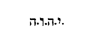
Facies et tunicam superhumeralis totam hyacinthinam (Exod. XXVIII) . Tunica dicitur superhumeralis cujus pars non minima superhumerali tegebatur, ad distinctionem tunicae quae erat interius linea; quarum pariter meminit superius dicens: Haec autem erunt vestimenta quae facient: rationale et superhumerale, tunicam et lineam strictam. Interior autem [Col. 0201B] erat linea sive byssina, quod lini esse genus nobilissimum constat; exterior vero tunica tota hyacinthina nil omnino coloris alterius admittens, cujus specie uniformi, manifeste vita sacerdotis qualis esse debeat, docetur, hoc est, supernis solum desideriis incessanter intenta, et conversationem juxta Apostolum habens in coelis, ac sui Salvatoris indesideranter exspectans adventum. Quae videlicet tunica sicut et byssina ad pedes usque pertingebat, unde utraque Graece poderis dicta est; ut ostenderetur nil in sacerdotali vita infimum ac sordidum remanere, sed omne quod ageret, quasi aethereo colore speciosissimum, per universa membra ejus, a capite usque ad pedes, gratia virtutum contectam esse debere. Item tunica talari sacerdos tota hyacinthina est vestitus, [Col. 0201C] ut admoneatur opus coeleste non inchoandum tantummodo, verumetiam usque in finem in eo esse perseverandum omnibus, qui salvi esse voluerint. In cujus medio supra, erit capitium, et ora per gyrum ejus texilis, sicut fieri solet in extremis vestium partibus, ut facile rumpantur. Capitium quippe tunicae hyacinthinae firmissimam habet oram, et ex sese textam ne facile rumpatur: cum primordium bonae nostrae actionis, forti radice timoris divini subnixum, contra omnes insidias hostis antiqui probatur esse munitum. Talis namque collum sacerdotis per gyrum vestit et ornat, quando rectori fiduciam loquendi subdit, ac praedicandi coelestia maxima praebet, hoc est, quod ipse non solum in procursu vitae suae recte vixerit, sed ipsum quoque exordium a rectitudine [Col. 0201D] coeperit. Tunica ergo sacerdotis hyacinthina habet oram in capitio textilem, sicut in extremis vestium partibus fieri solet, cum doctor quisque egregius, a tanta perfectione opus virtutum incipit, ad quantam quilibet altius diutissime laborans, vix aliquando pervenit, cum tanto timore famulatus, omni hora juxta sermonem Prophetae, sollicitus ambulat cum Domino Deo suo, quantum alius quis vel moriturus, vel ad judicium Domini sui ultimum ingressurus vix habere sufficit.
Deorsum vero ad pedes ejusdem tunicae per circuitum, quasi mala punica facies ex hyacintho et purpura, et cocco bis tincto, mistis in medio tintinnabulis. Deorsum namque ad pedes tunicae fiunt quasi [Col. 0202A] mala punica et tintinnabula per gyrum, quando ad tantam excellentiam devotae Deo conversationis sacerdos pervenerit, ut nil in illo aliud quam splendor et gratia, flosque ut ita dixerim varius bonorum operum videatur: nil ab illo aliud cum os aperuit, quam suavissimus horum sonus audiatur. Quia enim in malo punico multa interius grana uno foris cortice teguntur, recte per mala punica, multifaria virtutum operatio, uno charitatis munimine undique versum tecta designatur. His vero in medio tintinnabula permiscentur, cum neque opus sacerdotis unquam a sonitu verbi quod loquitur discrepat, neque a rectitudine operis, territus adversis, linguae sonitus dissentit. Ubi pulchre additur: Ita ut tintinnabulum sit aureum et malum punicum: rursumque tintinnabulum [Col. 0202B] aliud aureum, et malum punicum. Aurea quippe tintinnabula hyacinthinae pontificis tunicae inseruntur, et omni ex parte circumdantur, cum omnis sermo ejus claritatem supernae lucis resonat; et idem sonitus velut hyacinthinae tunicae firme infixus, operum quoque ipsius sublimitate, audientium mentibus commendatur. Fiuntque bina mala circum singula tintinnabula, et circum singula mala, bina tintinnabula, cum et omnia quae loquitur, bonis confirmantur actibus, atque in auditorum arctius corde figuntur, et universa quae agit, quam sint rationabilia, discreto sermonis sonitu producuntur. Bene autem sequitur:
Et vestietur ea Aaron in officii ministerio: ut audiatur sonitus quando ingreditur et egreditur sanctuarium in conspectu Domini, et non moriatur (Exod. XXVIII) . Sacerdos namque ingrediens vel egrediens moritur, si de eo sonitus non auditur, quia iram contra se occulti judicis exigit, si sine praedicationis sonitu incedit. Quod si Josephi (Antiq.) verbis intendere voluerimus quibus dicit, mala in tunica pontificis septuaginta duos fuisse, et ejusdem numeri tintinnabula, congruit hoc figuris mysteriorum, ut sicut in humero, a pectore apostolicum ferre numerum jussus est. Verum etiam ponderis est videlicet ad pedes usque descendens, cum continentia non uni cuilibet membro violenter imposita, sed in toto est [Col. 0202D] corpore delectabiliter consummata. Haec etenim linea, manus ac brachia debet stringere sacerdotis, ne quid nisi utile faciat; pectus, ne quid inane cogitet; ventrem, ne delicias ultra modum appetens Deum suum gulosus facere praesumat: subjecta enim ventri membra, ne lasciviendo, totam sacerdotalis habitus pulchritudinem corrumpant. Genua ne ab orationis instantia torpeant. Tibias et pedes, ne ad malum currant. Induatur sacerdos primo linea stricta, ut et corpus ab iniquis operibus et a pravis mentem cogitationibus compescat. Accipiat deinde hyacinthinam, ut post descriptionem continentiae salutaris, aeque corpus et animum, spiritalium virtutum habitu venustet. Et tiaram byssinam facies. Tiara [Col. 0203A] namque quae et cidaris et mitra vocabatur, caput tegebat et ornabat pontificis, ut hoc indumento admoneretur, omnis capitis sensus Deo consecratos habere, ne vel oculi ejus viderent vanitatem, vel aures libentius audiendo, opprobrium acciperent adversus proximum suum, vel os abundaret nequitia, et lingua concinnaret dolum sive etiam cor crapula et ebrietas gravarent, vel olfactus aspersum myrrha, aloe et cinamomo lectum meretricis amplecteretur. Qualiter autem tiara haec fuerit facta, Josephus docet (Lib. III, cap. 11) dicens: Super caput autem gestat pileum in modum parvuli calamaci aut cassidis, quod extenditur supra summitatem capitis, et modice verticis medietatem excedit, et tale est, ut videatur ex lini textura confectum, habens vittas quae convolutae [Col. 0203B] saepius connectuntur, ne facile dilabatur. Qui videlicet Josephus huic pileo super additum esse narrat, aliud majus velamen, quod totam capitis superficiem celaret, apte perfectum, ne laborante sacerdote circa sacrificia corruat. Quod tamen cujus esse coloris, non ostendit. Et haec quidem de minoris sacerdotis; de pontificis vero tiara, hoc modo testatur: Pileum autem similiter operatum habet pontifex, sicut reliqui sacerdotes, et alium consutum ex hyacintho variato. Circumdatur autem ei et aurea corona tribus vicibus facta, supra quam surgit in media fronte, quasi calyculus quidem aureus, similis herbae quae apud nos acharo nuncupatur, quam Graeci hyosciamon dicunt. Et paulo post descripta ejus mirabili varietate, subintulit dicens: Habet autem florem similem [Col. 0203C] plantagini, et per circuitum tota corona his floribus est caelata, ab occipitio usque ad utrumque tempus. In fronte vero hoc quidem non habet: sed lamina est aurea, quae sacris litteris Dei nomen habet inscriptum. Haec quidem de secundo velamine et coronis pontificum aureis, Scriptura sancta tacere videtur. Coronarum vero breviter fecit in sequentibus mentionem dicens: Fecerunt et tunicas opere textili, Aaron et filii ejus, et mitras cum coronulis suis ex bysso. Sed de qua materia factae essent non dixit. Cum enim dicat, et mitras cum coronulis suis ex bysso, poterat intelligi utrasque ex bysso factas esse, si non Josephus coronas esse aureas designaret, qui stante adhuc templo, et legali observantia celebrata, cum esset de genere sacerdotali, facillime [Col. 0203D] potuit modum omnem sacerdotalis indumenti, non tantum legendo, sed videndo cognoscere. Verum sive byssinae, seu fuerint aureae coronulae, cum constet eas factas esse cum mitris, dicamus breviter de figura. Mitras cum coronulis habent sacerdotes ex bysso, qui sic visum, auditum, gustum, olfactum et tactum suum in venustate castimoniae custodiunt, ut pro eadem custodia se coronam vitae quam repromisit Deus diligentibus se, accipere sperent. Et balteum opere plumario. De cujus videlicet factura baltei, manifestius in posterioribus scriptum est. Cingulum vero fecerunt de bysso retorta, hyacintho, purpura, ac vermiculo bis tincto, opere plumario. Hoc cingulum, ut Hieronymus ex Josepho scribit, in [Col. 0204A] similitudinem pellis colubri quam exuit in senectute, sic in rotundo contextum est, ut marsupium longius putes. Textum autem subtemine, cocci, purpurae, hyacinthi, et stamine byssino ob decorem et fortitudinem, atque ita polymita arte distinctum, ut diversos flores et gemmas, non artifici manu contextas, sed additas arbitreris. Habebatque latitudinem IV digitorum, quo cingulo proprie pontifex utebatur; et in eo tunica hyacinthina simul et superhumerale stringebatur. Nam in sequentibus aperte de conjunctione superhumeralis et rationalis est dictum: Haec et ante et retro ita conveniebant sibi, ut superhumerale et rationale mutuo necterentur stricta ad balteum, et annulis fortius copulata, quos ingebat vitta hyacinthina ne laxae fluerent, et a se invicem moverentur. [Col. 0204B] Nulli autem dubium, quin balteus sive cingulum, cui superhumerale astringebatur, tunicam hyacinthinam, quae et superhumeralis tunica vocabatur, cingebat. Cuncta etenim quae hucusque dicta sunt, ad pontificis habitum pertinent, dehinc consequentur filiorum ejus baltei simul et caetera indumenta exponuntur, cum dicitur: Porro filiis Aaron tunicas lineas parabis, et balteos ac tiaras in gloriam et decorem. Neque de balteis eorum, utrum et ipso opere plumarii, an unius coloris fieri debuerint, aliquid decernitur. Dicendum est igitur primo de balteo pontificis, qui de quatuor illis coloribus nobilissimis ac Deo dignis factus est, quia apte talem haberet pontifex, quem singulari virtutum decore semper oportebat accingi, apte pontifex variante flore [Col. 0204C] colorum fulgentium, accinctus incedebat: quia sicut alius quilibet, necesse est industria continentiae praecingatur, ne caro repugnans spiritui internam mentis pacem aliquando conturbet; ita pontifex ac doctor fidelium, edomito jam omni concupiscibili motu animi sive corporis, ipsa virtutum debet gloria circumdari: ut juxta exemplum floris illius, qui egressus est de radice Jesse, id est, Domini salvatoris, sit justitia cingulum lumborum ejus, et fides cinctorium renum ejus. Tunicae autem lineae et baltei ac tiarae, quae filiis Aaron in gloriam et decorem fieri praecepta sunt, quid nobis interni decoris et gloriae commendent, facillime ex his quae superius exposita sunt, intelligi valet. Tunicas namque habent sacerdotes lineas, cum totum corpus suum [Col. 0204D] candore castitatis dedicant. Balteis tunicas cingunt, cum eamdem castimoniam vigilanti mentis custodia circumspiciunt, ne conscientia illius, desidiosiores erga bonorum operum exercitia remaneant; ne per jactantiam castimoniae ipsius etiam castimoniae meritum minuant.
Vestiesque his omnibus Aaron fratrem tuum et filios ejus cum eo, et cunctorum consecrabis manus, sanctificabisque illos, ut sacerdotio fungantur mihi. Omnibus quidem his vestiendus erat Aaron et filii ejus, sed ea distinctione, ut ipse quidem his omnibus uteretur; filii autem ultimis tribus, quae illorum proprie nomini ascripta sunt, cum dicitur: Porro filiis Aaron tunicas lineas parabis, et balteos ac tiaras in gloriam [Col. 0205A] et decorem. Quod vero sequitur: Facies et feminalia linea, ut operiant carnem turpitudinis suae, a renibus usque ad femina, et utentur eis Aaron et filii ejus, quando ingredientur tabernaculum testimonii, vel quando appropinquant ad altare, ut ministrent in sanctuario, ne iniquitatis rei moriantur. Ad utrosque simul et Aaron scilicet et filios ejus, sicut etiam ipsa verba manifeste probant, pertinet, sicque fit, ut Aaron ipse cunctis quae commemorantur octo vestibus induatur: feminalibus videlicet lineis, tunica linea, tunica hyacinthina, superhumerali, rationali, balteo, tiara, petalo aureo. Filii vero ejus quatuor tamen ex his, id est, feminalibus, linea stricta, cingulo et tiara utantur. Verum quia de caeteris supra tractatum est, feminalia haec quae ad operiendam [Col. 0205B] carnem turpitudinis fieri mandantur, illam castimoniae portionem, quae ab appetitu copulae conjugalis cohibet, proprie designat; sine qua nemo vel sacerdotium suscipere, vel ad altaris potest ministerium consecrari, id est, si non aut virgo permanserit, aut contra, uxoreae conjunctionis foedera solverit. Quod videlicet genus virtutis, nulli per legem Dei necessario impositum, sed voluntaria est devotione Domino offerendum, dicente ipso de hoc: Non omnes capiunt verbum istud (Matth. XIX) . Ad quam tamen benigna mox exhortatione eos qui possint invitat, dicens: Qui potest capere capiat. Et paulo post eisdem, qui vel uxorem vel alios cognatos et implicamenta mundi hujus, propter ipsum reliquerit, centuplum promittat in hac vita praemium, et in saeculo futuro, [Col. 0205C] vitam aeternam. Unde certe gratia distinctionis, non Moyses hoc indumento vestire Aaron et filios ejus jubetur, sicut de prioribus dicit: Vestiesque his omnibus Aaron fratrem tuum et filios ejus cum eo, sed, Facies, inquit, feminalia linea, ut operiant carnem. Ipsi, inquit, operiant carnem turpitudinis suae, ut feminalia pontifici, et filiis ejus facies: tu castitatis regulam docebis, tu abstinendum ab uxoreo complexu eis qui sacerdotio functi sunt, intimabis. Nulli tamen violenti hujusmodi continentiae jugum impones. Sed quicunque sacerdotes fieri, ac ministerio servire altaris volunt, ipsi sua sponte uxorum servi esse desistant. Quid ubi perfecerint, et suscepto semel continentiae proposito, ministros se sanctuarii atque altaris fore consentiunt, aderit lex divina, quae velut [Col. 0205D] caeterum illis habitum sacerdotibus congruum imponens, quomodo vivere vel docere debeant, abundant justitiae.
Cumque laveris Patrem cum filiis aqua, indues Aaron vestimentis suis, id est, linea et tunica, et superhumerali, et rationali quod constringes balteo, et pones tiaram in caput ejus, et luminam sanctam super tiaram, et oleum unctionis fundes super caput ejus, atque hoc ritu consecrabitur. Filios quoque illius applicabis, et indues tunicis lineis, cingesque balteo, Aaron scilicet et liberos ejus, et impones eis mitras; eruntque sacerdotes mei religione perpetua (Exod. XXIX) . Nam neque hic de feminalibus a Moyse accipiendis, praecipitur. Unde liquido constat, quod se [Col. 0206A] hoc genere vestimenti ipse prius Aaron et filii ejus induerant, et sic ad manum Moysi lavandi, induendi, ungendi, et consecrandi intrabant. Ubi et hoc notandum, quod consecraturus eos Moyses, primo lavit aqua, et sic habitum illis sacri gradus imponit: quia nimirum necesse est ut qui ad officium altaris promovendus est, majoribus se solito fluentis lacrymarum sive compunctionis, tempore dedicationis abluat, ut quo mundior ad gradum accipiendum accesserit, eo perfectius acceptum consummet. Indutus vero sacris vestibus pontifex, mox oleo unctionis profunditur, ut per gratiam Spiritus sancti consecratio perficiatur, non quod ea quae praemissa sunt indumenta virtutum, absque gratia Dei possimus habere, sed quia majus necesse est auxilium gratiae tribuatur a [Col. 0206B] Domino, ubi quis vel majorem conscenderit gradum, vel plurimorum fuerit regimini praelatus. Notandum interea quod cum in hoc libro Exodi, Aaron octo vestibus induendus asseratur, videtur in Levitico addita et notitia: balteus videlicet quo linea fuerit tunica ante indutam hyacinthinam praecincta. Sic etenim scriptum est: Cumque lavisset eos, vestivit pontificem subucula linea, accingens eum balteo, et induens tunicam hyacinthinam, et desuper humerale imposuit, quod stringens cingulo, aptavit rationali. Sed quomodocunque hoc factum fuerit, patet manifeste ex eis quae explanata sunt, figura vestitus intellectualis. Verum quia de habitu sacerdotali sequentes dicta patrum, breviter ista perstrinximus, notandum putavimus et hoc, quid quatuor illi colores eximii de quibus [Col. 0206C] factus est, totidem elementis congrua comparatione aptatur, byssus sive linum, terrae quod ex ea nascuntur, purpura, aquis, quod ex marinis conchyliis tingatur, hyacinthus et coccus, aeri et igni, ob coloris similitudinem, coccusque fuerit bis tinctus, eo quod ignis gemina sit virtute praeditus: lucendi videlicet et incedendi. Aiuntque Hebraei, quia ideo pontifex omnium figuram elementorum in suo habitu gestaverit, quia non solum pro Israel, sed et pro omni mundo immolans, rogare debuerat: quibus nos non incongrue forte addere valemus, quid in uno quoque hominum, figura omnium elementorum continetur: Ignis in calore, aeris in halitu, aquarum in humore, terrae in ipsa soliditate membrorum. Unde et a physiologis Graece homo , id [Col. 0206D] est minor mundus vocatur. Quid et si aurum quo in eodem habitu, juxta hanc intelligentiam significet quaeris, rationabilem in eo interius hominis virtutem intellige: unde et in eo proprie sanctum Domini scriptum est, quia non nisi per hanc, quisque ad cognitionem sui conditoris ascendit. Hinc etenim dicit Apostolus: In interiore homine habitare Christum per fidem in cordibus nostris (Ephes. III) . Et ideo nobis scriptura pontificem Veteris Testamenti sic vestitum respondit, ut sciat nostri temporis pontifex pro toto se genere humano, maxime autem pro eis qui cognoverunt veritatem, signumque fidei illius in fronte portant, intercedere debere, Apostolo admonente ac dicente: Obsecro igitur primum omnium [Col. 0207A] fieri obsecrationes, orationes, postulationes, gratiarum actiones, pro omnibus hominibus, pro regibus et omnibus, qui in sublimitate sunt (I Tim. II) . Quid si in pontifice quem consecrat Moyses, Dominum salvatorem intelligimus, jure in habitu suo totius mundi figuram simul et hominis, habet. Ipse est enim ut Apostolus ait, Splendor gloriae et figura substantiae Dei prioris, portansque omnia verbo veritatis suae (Hebr. I; Joan. I; Psal. CIX) . Ipse agnus Dei, qui tollit peccata mundi. Ipse sacerdos in aeternum, omni sanctitatis ornatu praeclarus, non quem natus in carne per exercitium laboris accipere meruit, sed quem in utero virginis incarnatus, praeveniente Spiritus sancti gratia totum simul accepit, cujus sacerdotium interpellationem pro nobis pulcherrime [Col. 0207B] commendans Apostolus, ait: Hic autem eo quod maneat in aeternum sempiternum habet sacerdotium, unde et salvare in perpetuum potest, accedens per semetipsum ad Dominum, semper vivens ad interpellandum pro eis (Hebr. VII) . Cujus etiam aeque indumenta et ornamenta virtutum commendans, adjunxit: Talis enim decebat ut nobis esset pontifex, sanctus, innocens, impollutus, segregatus a peccatoribus, et excelsior coelis factus, qui vere habuit laminam in capite suo auream, in qua esset sanctum Domini sculptum, quia venit in nomine Patris, dicens: Ego in Patre, et Pater in me est, et qui videt me, videt et Patrem (Joan. XIV) . Hactenus Aaron et filiorum ejus habitus qualis esse debeat, coelesti designatur oraculo. Sequitur autem hinc etiam modus consecrationis, [Col. 0207C] quo vel ipsos vel tabernaculum cum omni supellectile sua, dedicari oporteat, oblatis videlicet Domino vitulo et duobus arietibus, panibus quoque triticeis non solum azymis sed et oleo conspersis, si velitis, adhibito etiam oleo unctionis.
Quae nimirum cuncta sive operum devotionem bonorum ac munditiam fidei, seu gratiam divinae illustrationis sola consecrari oportet, sacerdotes figurate demonstrant. Quis enim nesciat immolationem ac sanguinem illorum animalium, mortem aspersionemque designare sanguinis Domini nostri, per quam et a peccatis absolvendi, et in bonis operibus sumus confirmandi? Panes quoque azymi quid mysterii salutaris contineant, docet Apostolus dicens: Itaque epulemur, non in fermento veteri, neque [Col. 0207D] in fermento malitiae et nequitiae, sed in azymis sinceritatis et veritatis (I Cor. V) . Conspersa sunt autem, sive lita oleo crustula et lagana, ut admoneremur opera habere, non solum a fermento malitiae et nequitiae castigata, sed et pinguetudinem charitatis divinis dignam conspectibus. Vel certe crustula oleo conspersa ad consecrationem nostram Domino offerimus, cum universa quae fecimus, per internam sancti Spiritus gratiam in cordis nostri devotione pinguescunt. Lagana oleo lita offerimus, cum etiam foris hominibus spiritualia esse quae agimus, indubitanter in exemplum vivendi ostendimus. Quibus nimirum oblationibus consecratio nostra perficitur, dum per opera bona et cogitationes puras, meritum [Col. 0208A] nobis sanctimoniae Domino donante conquirimus. Expletis autem mandatis hujuscemodi consecrationis Aaron et filiorum ejus, redit Scriptura praecipere etiam de factura altaris incensi: in quo idem Aaron quotidianum adolere thymiama deberet.
Facies quoque, inquit, altare ad adolendum thymiama, de lignis sethim habens cubitum longitudinis, et alterum latitudinis, id est, quadrangulum et duos cubitos in altitudine (Exod. XXX) . Si altare holocausti de quo supra dictum est, generaliter vitam designat justorum, qui carnem suam quotidie crucifigere cum vitiis et concupiscentiis, atque in hostiam vivente Deo offerre consuerunt, quid hoc [Col. 0208B] altare ad adolendum thymiama factum, nisi specialem quorumdam perfectiorum vitam significat? Neque frustra in illo carnes animalium incendebantur, et in hoc adolebatur incensum, nisi quia illo figurabantur hi, qui non secundum desideria carnis ambulant, sed quasi haec Domino immolantes, omnes sui corporis sensus per ignem sancti Spiritus, ejus voluntati dedicant, in isto autem illorum typus exprimitur, qui majore mentis perfectione, exstinctis prorsus ac sopitis illecebris omnibus carnis, sola Domino orationum vota offerunt: nil quidem de carne quod se impugnet, nihil de conscientia peccati, unde conturbentur ac paveant, habentes: sed dulcium profusione lacrymarum, optantes venire et parere ante faciem Dei. Unde apte hoc altare intus [Col. 0208C] in vicinia veli et arcae illud arcae tabernaculum foris positum est, quia nimirum illi in conspectu sanctae Ecclesiae cunctis in exemplo virtutum praefulgent: isti altioris ardore desiderii, contemplatione futurae beatitudinis, licet corpore detenti, non minimum propinquant. Apteque illud aere, hoc vestiri auro praecipitur. Aes namque plus aliis metallis sonorum ac diu durabile est: aurum vero quantum sono succumbit, tanto splendore praestat aeramento. Unde recte aeneum altare in quo carnes incendebantur, et sanguis fundebatur victimarum, illorum gestat typum, qui edomitis et velut Deo immolatis voluptatibus carnis, perseveranter viam veritatis quam semel inchoavere, peragunt, et hanc quoque proximis incedendam, crebro sermone praedicationis insonant. [Col. 0208D] Porro aureum altare illis convenienter aptatur, qui ampliore gratia supermae claritatis illustrantur, sed minus aliis quae in secreto de interna suavitate gustent, dicentes aperiunt, munus eructare proloquendo sufficiunt; quanta ipsi intus dulcedine in abdito vultus Dei reficiantur. Apte etiam altare thymiamatis quantum metalli fulgore praecellebat, tanto mensura minus fuit, quia quo sanctiores quoque in Ecclesia, eo sunt pauciores. Apte de eisdem lignis sethim quae albae spinae similia, et esse incorruptibilia diximus, utrumque altare fieri praecipitur, quia nimirum una est fidei non fictae firmitas, quia omnium corda electorum praemuniri atque ad suscipiendum ignem dilectionis, et offerenda [Col. 0209A] Deo virtutum libamina debent praeparari; quia omnibus generaliter pusillis cum majoribus loquitur Apostolus dicens: Mundemus nos ab omni inquinamento carnis et spiritus, perficientes sanctificationem in timore Dei (I Cor. VII) . Apte unus ac non dispar erat ignis, qui in hoc altari victimas, in illo thura incendebat, quia nimirum unus est spiritus, qui cunctorum mentes fidelium, variante donationum gratia vivificat. Quod autem incensi altare quadrangulum fuit, unum habens cubitum longitudinis, et alterum latitudinis, duos vero in altitudine, longitudo ad longanimitatem patientiae, ut in expositione altaris holocausti dictum est, latitudo ad amplitudinem dilectionis, altitudo pertinet ad sublimitatem spei, per quam in laborum tolerantia [Col. 0209B] temporalium, et hilaritate dilectionis, sincera mente gaudemus. Unius autem est cubiti, et longitudo et latitudo altaris, quando summi quique et perfecti in Ecclesia viri, nullius alterius rei quam perpetuae retributionis intuitu, mala temporalia aequanimiter ferant, et quaeque valent proximis per charitatem bona impendunt. Recte altare thymiamatis in longitudine et in latitudine sua quadrangulum fieri jubetur, ut insinuetur quod perfectorum animus, foederatis ad invicem virtutibus quantum diligere fratrem, tantum et ferre sufficit; et quantum per patientiam sustinere ejus molestiam potest, tantum praestare ei per dilectionem suae pietatis benevolentiam potest. Duos autem cubitos habet in altitudine, quia duplex est praemium, quod sese in futura vita [Col. 0209C] accepturos sperant electi. Unum videlicet quietis animarum, cum corruptibile hoc et mortale corpus exuentur, et coeleste regnum intraverint; aliud, cum recepto eodem corpore incorrupto atque immortali, perfectius in praesentia sui conditoris exsultabunt, impleta promissione prophetica qua dicitur: In terra sua duplicia possidebunt, laetitia sempiterna erit eis. Cornua ex ipso procedent, vestiesque illud auro purissimo, tam craticulam ejus, quam parietes et cornua. Cornua saepe in Scripturis solent eminentiam designare fidei et virtutum, per quam obviantia nobis antiqui hostis certamina obtundere ac superare debemus, dicentes cum Propheta Domino: In te inimicos nostros cornu ventilabimus (Psal. XLIII) . Qui mox de quo cornu dixisset subdendo declaravit [Col. 0209D] dicens: Et in nomine tuo spernemus insurgentes in nos. Sicut e contra nonnunquam bella vitiorum, quae nos expugnare moliuntur, cornuum nomine solent indicare: quod utrumque breviter complexus, per Prophetam Dominus dicebat: Et omnia cornua peccatorum confringam, et exaltabuntur cornua justi (Psal. LXXIV) . Unde bene in lege cornuti tantum generis animalia munda esse, et populo Dei comestibilia decernuntur. Quae enim ruminant atque ungulam findunt animalia, ea etiam constat esse cornuta, ut ostendatur mystice, quod illi tantum Ecclesiae Dei spirituali conjunctione possunt incorporari, qui fortitudine fidei ad bella vitiorum existere probantur invicti. Procedunt autem cornua [Col. 0210A] ex ipso altari thymiamatis, cum opera virtutum electi non ad faciem hominum specietenus ostendunt, sed in externa mentis radice, fixo atque immobili exercent affectu. Vestitur autem altare auro purissimo, cum perfecti quique vera interna sapientiae luce refulgent; cum in omnibus quae agunt, splendorem charitatis velut quotidiani gloriam habitus praemonstrat; cum memoriam sibi perpetuae claritatis semper inesse cunctis sese viventibus sive audientibus ostendunt; cum se ante omnia regnum Dei et justitiam ejus cogitare et quaerere manifestant. Et bene tam craticula altaris, quam parietes et cornua vestiri auro jubentur. Craticula quippe intus in medio erat altaris, ad suscipienda nimirum thymiamata parata; parietes vero foris parabant [Col. 0210B] cornua, et ipsa foris parentia, speciali fastigio altius eminebant. Deauratur autem craticula, cum in interiore homine nostro per fidem Christi gratia resplendet. Deaurantur parietes, cum eadem gratia Dominicae dilectionis per bona se exterius opera dilatat. Deaurantur et cornua, cum ipsa fiducia fortitudinis justorum, quae adversarios veritatis, sive per patientiam fortiter ferre, seu per patientiam prudenter repellere vel corrigere didicerint, internae lucis in omnibus fulgore coruscat. Et quoniam tales jure dicere possunt. Bonum certamen certavi, cursum consummavi, fidem servavi, De reliquo reposita est mihi corona justitiae (II Tim. IV) . Recte subditur: Faciesque ei coronam aureolam per gyrum. Corona etenim aureola per gyrum fit altari thymiamatis, [Col. 0210C] cum sancti pro bonis quae se egisse meminerunt, praemia praestolantur aeterna. Et bene per gyrum altaris corona fit, ut omnia quae fecere, coelesti mercede digna esse doceantur. Et duos annulos aureos subter coronam per singula latera, ut mittantur in eos vectes, et altare portetur, ipsosque vectes facies de lignis sethi, et inaurabis. Possunt quidem in his annulis quibus altare portabatur, juxta quod supra in altari holocausti, arca et mensa expositum est, quatuor Evangeliorum libri non inconvenienter accipi, per quorum fidem ac doctrinam sancti portantur, atque a terrenis cogitationibus sublevati, per eremum hujus vitae, quotidianis bonorum operum profectibus, coelestem feruntur ad patriam. Verum quia ibi manifeste quatuor circuli [Col. 0210D] fieri, duo videlicet, in latere uno, et duo in altero praecipiuntur, hic autem tacito numero quaternario, duo annuli per singula latera fiunt, pro certo ibi apertus Evangelistarum numerus claret; hic vero etiam aliud quiddam mysterii spiritualis, quod ad dilectionem Dei et proximi summe respiciat, inest. Per singula etenim latera annulis aureis circumdatur altare, quia cor electorum hinc et inde Dei ac proximi dilectione confirmatur. Quae bene annulis comparatur, quia evacuata in fine prophetia, destructa scientia, cessantibus linguis, ipsa nunquam cessabit. Duo sunt autem annuli per singula latera, quia utrumque charitatis mandatum gemina virtute distinguitur. [Col. 0211A] Charitas quippe Dei per sinceritatem fidei ac vitae munditiam perficitur.
Ponesque altare contra velum, quod ante arcam pendet testimonii, coram propitiatorio, quo tegitur testimonium, ubi loquar tibi. Arce velum quod ante arcam, ut suo loco expositum est, id est, Dominum Salvatorem pendebat, ipsum coelum designat, cujus adyta Dominus devicta morte penetravit, ut sicut Apostolus ait, appareat nunc vultui Dei pro nobis. Statque altare contra velum quod ante arcam appensum est, cum omnis justorum intentio ad ingressum directa est regni coelestis. Stat coram propitiatorio quo tegitur arca cum visioni sui conditoris puritate mentis appropiat; et clausi quamlibet corpore conversationem habent in coelestibus.
Et adolebit incensum super eo Aaron suave fragrans mane, quando componet lucernas et incendet illud, et quando collocat eas ad vesperum (Cap. XXX) . Constat incensum sive thymiama vim orationis experimere, dicente Psalmo: Dirigatur oratio mea sicut incensum in conspectu tuo (Psal. CXL) . Et in Apocalypsi Joannes vidit sanctos habere phialas aureas plenas odoramentorum (Apoc. V) ; quod confestim exponendo subjunxit, quae sunt orationes sanctorum. Et quoniam Aaron, ut supra dictum est, et ipsum specialiter summum sacerdotem, videlicet Dominum Salvatorem, et nostri quoque ordinis [Col. 0211C] sacerdotes designat, adolebit Aaron in hoc altari incensum suave fragrans mane, cum vel Dominus ipse illustrata fidelium corda, novo gratiae suae jubare ad dulcedinem orationis instigat, vel participes sacerdotii illius sedula exhortatione fideles, ad deprecandam faciem sui conditoris excitat. Incendit autem thymiama sacerdos non solum mane, sed et vespere. Mane etenim thymiama incenditur, ut in principio omnis boni quod Deo inspirante facere disponimus, illius auxilium quo perficiamus, invocemus. Ad vesperum vero, ut cum bene coepta complemus, illi a quo accepimus, pro his quae donavit gratiarum vota reddamus. Bene ergo dicitur: Et adolebit incensum super eo Aaron suave fragrans; [Col. 0211D] mane quando componet lucernas, incendet illud; et quando collocat eas ad vesperum. Mane etenim Aaron incensum super altari adolet, cum Dominus corda fidelium in his quae jam intelligere valent arcanis veritatis, ad gratiam compunctionis inflammat. Incendet illud et ad vesperum, quando collocat lucernas, cum etiam ex eis quae necdum capere queunt, quoniam ad haec sancta, quoniam divinae ( Sic in ms. ) esse non ambigitur, ad amorem eos coelestium, ubi omnia secreta patefiunt, informat: fragratque suave thymiama, cum subita compunctione divinitus tacti, lacrymis solum ac precibus vacare dulce habent. Bene autem sequitur: Uret thymiama sempiternum coram Domino in generationes vestras. Quia nimirum necesse est ut animus post orationem et fletus, ad [Col. 0212A] otiosa verba sive facta non divertat, sed in eodem se vigore devotionis quem in oratione suscipit, etiam finita oratione custodiat, juxta exemplum Annae, de qua orante dictum est: Vultusque ejus non sunt amplius in diversa mutati. Non offeretis super eo thymiama compositionis alterius. In sequentibus hujus voluminis, e quibus aromatibus hoc thymiama componi debuerit, nominatim designatur: stacte videlicet, et onyche galbano boni odoris, et thure lucidissimo. Quae cuncta ad significationem aeternorum, quae principaliter a Domino quaerenda sunt, constat pertinere. Non est ergo offerendum super altari aureo thymiama compositionis alterius, quam quod Dominus statuit, quia non aliud a Domino quaerere orantes quam quod ipse jussit, quodque [Col. 0212B] se daturum esse promisit, nec aliud de illo credere quam quod ipse docuit debemus. Non est offerenda super eo victima, nec liba libanda. Haec etenim omnia ad altare exterius pertinent, quae incipientium et in profectu adhuc positorum vitam designat. Tantae namque sublimitatis perfectorum est vita justorum, ut nil in ea carnale quod Domino mactare habeant valeat inveniri. Et quidem libamina vini constat nonnunquam magnam gratiae spiritualis designare virtutem, hoc est, sive poculum doctrinae, seu calicem passionis, sive fervorem praecipuae dilectionis, sive ipsam Spiritus sancti perceptionem, aut aliquid hujusmodi. Verum quotiescunque vinum libaminum eum carnibus offertur hostiarum, eorum profecto juxta tropologicam expositionem [Col. 0212C] designat sanctimoniam, qui adhuc aliquid de carnalibus et concupiscentiis quod puritati spiritus adversetur, et quod igne sancti Spiritus in ara cordis incendi debeat, habent.
Perfecti autem justi qui dicere possunt: Defecit cor meum et caro mea: Deus cordis mei, et pars mea Deus in saecula (Psal. LXXII) , quasi cessantibus victimarum libaminibus, quod ad aeneum altare exterius positum pertinet, sola intus in aureo altari aromata Domino desiderii coelestis offerunt, quia de remissione peccatorum jam securiores effecti, pro dilato solummodo regni perennis introitu lugent, dulcibusque lacrymarum fluentis stratum suum per singulas noctes irrigant. De quo videlicet altari [Col. 0212D] adhuc bene subditur: Et deprecabitur Aaron super cornua ejus semel per annum, in sanguine quod oblatum est pro peccato. Summus namque sacerdos noster semel in anno obtulit sanguinem suum pro peccato totius mundi. In illo videlicet anno, de quo dicitur per Isaiam, quia venerit praedicare annum Domini acceptum, id est, hoc in toto tempore, quo Ecclesiam sibi copulare dignatus est. Semel etiam unicuique credentium, lavacrum sacri fontis in mysterium sui sanguinis ad solvenda peccatorum vincula, donavit. Et pulchra omnimodis figuratum distantia, semel quidem per annum pontifex in sanguine oblationis super cornua altaris deprecari, quotidie autem thymiama suave fragrans, super eo incendere praecipitur; quia Dominus et Salvator [Col. 0213A] noster, qui quotidie fideles suos gratiae internae compunctionis accendens renovat, semel eos hostia sui sanguinis mortem superans redemit. Ipsi fideles qui quotidiana peccata quotidianis abluere precibus, ac lacrymis solent, semel in sacramentum passionis illius, absolutos se a peccatis esse omnibus gaudent. Deprecabitur autem super cornu altaris, quia et ipse non solum inter homines conversatus pro hominibus oravit, verum etiam nunc ad dexteram patris in coelestibus sedens, interpellat pro nobis; in cordibus electorum per fidem inhabitans, dum eos ad deprecandum excitat, recte ipse deprecari narratur. Et placabit super eo in generationibus vestris. Sanctum sanctorum erit Domino. Placat quippe Aaron super altari incensi, quando propter justitiam [Col. 0213B] sanctorum, quam intercessorem et patronum quaerimus, nobis propitiatur Dominus. Denique obsesso ab hostibus Ezechiae, et auxilium ejus invocanti ait. Et civitatem hanc salvabo, et protegam eam propter me, et propter David servum meum (IV Reg. XIX) . Possumus sane haec altaria etiam ita interpretari, ut aeneum quidem in quo carnes comburebantur, et sanguis fundebatur hostiarum, omnem hujus temporis Ecclesiam accipiamus, in qua nullus est absque peccato, etiamsi unius diei fuerit vita ejus super terram. Nullus qui non ex peccato praevaricationis Adae carnaliter natus, necesse habeat in Christo renasci, et spiritus ejus igne mundari. Aureum vero altare ipsum Dominum significat: qui miro atque ineffabili ordine ita carnem [Col. 0213C] veram traxit ex Adam, ut a peccato carnis Adae, veraciter esset immunis. Quoniam altare quidem utrumque ex unius ejusdemque generis lignis factum, sed non utrumque erat auro coopertum. Sed et in hoc altari nil carnale offerebatur, verum etiam aromata tantum adolebantur, quia Dominus preces sive lacrymas effundens, non pro suis erratibus qui nulli erant, sed pro nostra hoc salute faciebat. Sicut enim arca intra velum posita, hominem sedentem Domini ad dexteram majestatis in excelsis significat, ita altare extra velum quidem, sed prope introitum ejus positum, eumdem mediatorem Dei et hominum potest figuraliter exprimere: inter homines quidem humanitus conversantem, sed potentia divinitatis, coelorum interiora penetrantem. Stabat [Col. 0213D] altare incensi in sanctuario ubi et candelabrum et mensa, quia verbum caro factum est, et habitavit in nobis. Stabat arca intra velum, quia idem Dominus Jesus, post passionem resurrectionemque suam assumptus est in coelum, et sedet a dextris Dei. Super ejus cornua altaris deprecatur Aaron in sanguine quod oblatum est pro peccato, et placat super eo, quando rogantes pro populo Dei, vel pro sua ipsorum ignorantia sacerdotes, per unigenitum Filium ejus esse adjuvandos, et per sacramentum passionis illius salvandos esse confidunt, monente Apostolo ac dicente: Per ipsum ergo offeramus hostiam laudis semper Deo, id est, fructum labiorum confitentium nomini ejus. Quod de omnibus [Col. 0214A] et etiam electis membris videlicet summi sacerdotis, qui in spiritu et veritate orant Patrem convenienter accipi potest. Cui autem melius quam huic altari convenit, quod dicitur Sanctum sanctorum erit Domino, de quo in mundum nascitur, dixit Virgini matri archangelus: Spiritus sanctus superveniet in te (Luc. I) . Et reliqua. Descripta hucusque factura altaris incensi, superest adhuc descriptio labri aenei, in quo lavarent manus suas ac pedes, ingressuri in tabernaculum sacerdotes; sed praetermittitur unum Domini mandatum, quod et nos breviter tangere ac pro modulo nostro exponere convenit. Sequitur:
Locutusque est Dominus ad Moysen dicens: Quando tuleris summam filiorum Israel, juxta numerum dabunt singuli pretium pro animabus suis Domino, et non erit plaga in eis. Hoc autem dabit omnis qui transit ad nomen, dimidium sicli juxta mensuram templi. Siclus viginti obolos habet. Media pars sicli offertur Domino.
Hujus praecepti oblitus est David, quando numeravit populum, ideoque plagam numerando eidem populo conscivit (II Reg. XXIV) . Spirituali autem sensu summa filiorum Israel, summam omnium designat electorum quorum nomina scripta sunt in coelo, singulique dant pro animabus suis pretium Domino, cum ei in bonis operibus exhibent sedulae [Col. 0214C] servitutis obsequium. Alioquin plaga erit in eis, cum fuerint recensiti. Quia nimirum ultio manet perpetua eos, qui fidelium numero non merentur sociari, perfecta fidei opera Domino offerre detrectent, diciturque de talibus: Non dabunt Deo placationem suam, nec pretium redemptionis animae suae (Psal. XLVIII) . Redemptio enim animae viri divitiae suae (Prov. XIII) , ut Salomon ait; sive temporales: scilicet cum eas distribuerit dederitque pauperibus: ut justitia ejus maneat in saeculum saeculi (Psal. III) ; seu spirituales, hoc est, ipsa justitia quam fecit, vel miserendo pauperibus, vel alia bona faciendo. Dabit autem omnis qui transit ad nomen dimidium sicli, hoc est, decem obolos; quod non aliud aptius quam observantia decalogi legis, a nobis valet intelligi. Qui enim [Col. 0214D] hunc recte intelligere novit omnem in eo et fidei atque operis plenitudinem, et futurae promissionem retributionis inesse cognovit. Denique in primis tribus dilectio Dei, in sequentibus septem dilectio est proximi comprehensa Apostolo teste: Plenitudo legis est dilectio (Rom. XIII) . Sed et aliud sacramentum nequaquam praetereundum, eodem numero denario continetur. Nomen enim Jesus apud Hebraeos a littera iod, apud Graecos iota incipit. Quae utraque in sua gente, denarii est nota numeri. Decemque obolos in pretium animae suae Domino offerunt, qui Jesum Christum credentes, signum nominis ejus quod denario numero incipit, in fronte et professione proferunt. Et fortasse hujus gratia sacramenti [Col. 0215A] Dominus in Evangelio testatur: Iota unum de lege praeterire non posse, quia virtus decalogi quae ibi continetur, fidesque nominis ipsius quae ibi mystice significatur, nulla unquam potest infidelium perturbatione corrumpi. Qui habetur in numero a viginti annis et supra, dabit pretium. Numerus vicenarius utriusque testamenti conjunctionem significat: legis videlicet quae quinque libris scripta est, et Evangelii quod quatuor. Quater enim quini faciunt XX. Annis XX ergo habetur quisque in numero populi Dei, quia ille solus est electorum consortio dignus, qui et decreta legis spiritualiter intellecta, per gratiam adjutus Evangelii, pro sua mensura et capacitate perficit; et de ejusdem gratiae promissis, aeterna in coelis praemia exspectat Dives non addet [Col. 0215B] ad medium sicli, et pauper nihil minuet. Quia sive magnus est meritis quisque ac perfectus, seu tener adhuc et in provectu positus virtutum, cunctis eadem lex decalogi quae Deum ac proximum diligat, imponitur. Susceptamque pecuniam quae collata est a filiis Israel, trades in usum tabernaculi testimonii ut sit monumentum eorum coram Domino, et propitietur animabus illorum. Et suscepta a filiis Israel pecunia, in monumentum eorum coram Domino infertur, cum omne quidquid agimus boni, in aeterna apud conditorem ac judicem nostrum memoria custoditur: quatenus ex eis quae illi obtulimus bonorum operum fructibus, propitius nobis fieri dignetur. Servaturque eadem pecunia in usum, cum ex bonis justorum actibus, sequentium in Christo fidelium [Col. 0215C] mores actusque confirmantur; ac tales fieri minores quique contendunt, quales fuisse eos quos cum Domino regnare agnoscunt. Notandum sane quod pecunia memorata non juxta aestimationem vulgi, sed juxta mensuram templi erit danda. Mensura namque templi dispositio est divinae legis, quam in Ecclesia sua Dominus servari praecipit: et cujus tamen observantiae, aeterna in futuro praemia promittit. Caeterum si quis juxta placitum humanae voluntatis Deo servire nititur, iste quia juxta mensuram templi pecuniam suae devotionis non obtulit, reprobata et abjecta oblatione, plaga ultimi judicii animadversus ferietur.
[Col. 0215D] Locutus est Dominus ad Moysen dicens: Facies et labium aeneum cum basi sua ad lavandum, ponesque illud in tabernaculum testimonii ad altare, et missa aqua, lavabunt in ea Aaron et filii ejus manus suas ac pedes, quando ingressuri sunt tabernaculum testimonii, et quando accessuri ad altare. Potest quidem hoc labio sive labro, ut in sequentibus appellatur, principaliter aqua baptismatis intelligi, cujus lavacro necesse est purgentur omnes qui Ecclesiae januas ingrediuntur. Verum in tabernaculum testimonii et altare holocausti positum est, quia bis quotidie iidem ipsi sacerdotes, hoc est mane et vespere, cum ingrederentur ad altare thymiama Domino oblaturi, in eo lavari praecepti sunt. Aqua autem baptismi, [Col. 0216A] quia non nisi semel lavare valemus, consequentius labrum hoc, oblationem nobis compunctionis et lacrymarum commendat, qua semper opus habemus, maxime autem cum mysteriis coelestibus ministraturi appropiamus, quia altare holocausti, in quo carnes victimarum Domino incendebantur, exstinctionem designat carnalium concupiscentiarum per ignem Spiritus sancti. Altare vero thymiamatis puritatem significat eorum qui sopitis per omnia carnis illecebris, ac certamine vitiorum, pro sola exspectatione ac desiderio coelestis introitus, lacrymas fundunt amoris. Recte post altare holocausti, labrum ponitur in quo abluti sacerdotes, ingrediuntur tabernaculum, ut thymiama Domino incendant. Duobus namque modis lacrymarum et compunctionum [Col. 0216B] status distinguitur, quia primo necesse est ut quisque ad Dominum conversus pro his quae commisit peccatis veniam fusis lacrymis precetur. Qui cum comitantibus dignis poenitentiae fructibus longo tempore profecerit, restat ut securior de accepta pectorum venia effectus, jam desideriis inhiantibus optet venire tempus, quo mereatur inter beatissimos angelorum choros faciem Creatoris videre. Quid qui veraciter agit, nequaquam absque lacrymis vel hujus vitae longitudinem, vel illius tolerat dilationem, dicens de ista: Heu me quia incolatus meus prolongatus est, habitavi cum habitantibus Cedar (Psal. CXIX) , id est, cum his qui in tenebris errorum ac scelerum versantur, quod vocabulum Cedar sonat. Ipse jam perpetuae lucis gaudia suspirans, multum [Col. 0216C] laboriosam duxit vitam, quia quantum coelestem patriam sitio, tantum viciniam pravorum inter quos incola conversor horreo, dicens item de illa: Sitivit anima mea ad Deum vivum, quando veniam et apparebo ante faciem Dei (Psal. XLI) . Quam profecto sitim, quia sine lacrymis ferre nequibat, subsequentia verba declarant: Fuerunt mihi lacrymae meae panes die ac nocte. Ac si aperte diceret: Quo diutius a videnda facie Dei ad quem ardenter sitio differor, eo dulcius pane lacrymarum quas in ejus memoriam fundo reficior. Igitur altare holocausti lacrymas insinuat poenitentium de peccatis quae gesserunt, altare incensi fletus exprimit gaudentium de bonis operibus quae Domino juvante perfecerunt, ac desiderantium praemia, quae se accepturos Domino remunerante [Col. 0216D] confidunt. Qui nimirum fletus tantum praecellit priori, quantum aeramento aurum; quantum Sancta sanctorum (ubi erat arca Domini) priori tabernaculo, in quo candelabrum et mensa Domini stabant, constat fuisse praelata. Propter altare vero holocausti labrum erat positum, in quo lavarentur qui ad altare incensi intrabant, quia nemo repente fit summus, sed proficientibus meritis quisque primo bella debet vitiorum devincere; deinde a conditore suo compunctione lacrymarum supplex impetrare, ut pro ingressu regni dulces fundere fletus possit, qui pro timore poenarum pridem fundebat amaras. Quid autem basis, in qua idem labrum inerat positum, aptius quam ipsum desiderium regni. [Col. 0217A] et vitae coelestis accipiatur? cujus nimirum causa tanta fit, ut perfecti ac summi viri quotidiano se lacrymarum fonte diluant, et quod necdum perfecte vivendo valeant, gaudium internae quietis saltem suspirando degustent. Nam quia hoc lavacro, quod inter tabernaculum et altare positum est, perfectorum lacrymae figurentur, testantur ipsa verba, quibus dicitur: Et missa aqua lavabunt in ea Aaron et filii ejus manus suas ac pedes. Neque enim quisquam de plebe ibi lavari, sed ipse pontifex jussus, et filii ejus, videlicet sacerdotes gradus inferioris, quia sicut magnorum virorum sancta perfectior vita, sic et compunctio solet esse sublimior. Non autem hoc ita dicimus, quasi soli altaris ministri hujusmodi compunctionis vel possint habere vel debeant virtutem, [Col. 0217B] sed memore beati apostoli Petri, qui cunctis fidelibus loquens de angulari lapide, qui est Christus, ait: Et ipsi tanquam lapides vivi superaedificamini domos spirituales, sacerdotium sanctum, offerre spirituales hostias (I Petr. II) . Et quod Joannes in Apocalypsi. Beatus, inquit, et sanctus qui habet partem in resurrectione prima: in his secunda mors non habet potestatem, sed erunt sacerdotes Dei et Christi (Apoc. XX) . Admonemus omnes fideles mystico sacerdotum nomine censeri, utpote membra Christi, videlicet sacerdotis aeterni. Quibus etiam beatus apostolus Paulus, quid victimarum offerre debeant, ostendit dicens: Obsecro vos fratres per Dei misericordiam, ut exhibeatis corpora vestra hostiam viventem, sanctam, Deo placentem (Rom. XII) . Non ergo [Col. 0217C] solum ministris sacri altaris, sed et omnibus perfectis in quocunque gradu positis, hoc lavacrum posuit Moyses, quia lex Dei cunctis generaliter fidelibus gratiam salutiferae compunctionis praedicavit. Quod si in persona Aaron ipsum magnum pontificem Dominum Salvatorem accipere volumus, constat etiam eum hujus aqua labri priusquam ad altare oblaturus intraret, locum: quia priusquam thymiama sui sacrosancti corporis propter salutem nostram in altari crucis incenderet, pro nostro amore etiam lacrymas fudit, quod in resuscitatione Lazari celeberrime innotuit. Bene autem additur, ut offerant in eo thymiama Domino, ne forte moriatur (Joan XI) . Mors etenim timenda est animae spiritualis et aeterna. Si quis ad ministerium altaris [Col. 0217D] electus, thymiama orationum Deo reddere negligit, mors timenda est; si quis ad sacrosancta mysteria absque spirituali ablutione compunctionis intrare, et sancta Domini communibus manibus tractare praesumit. Lavent ergo manus suas ac pedes in aqua labri aenei, et sic ad altare accedant. Abluant lacrymis actus et incessus, ac deinde manus ad tangenda Christi mysteria proferant, pedumque gressus in atria Domini ponant. Quod aeque praeceptum reor his qui eorumdem sacramentorum perceptione mundandi sunt, ut cautiore cura prius actus suos cogitatusque discutiant, eventilent, purgent, ac sic ad participanda fidei sacramenta procedant, ne audire mereantur illud Apostoli: Quicunque enim manducat [Col. 0218A] et bibit indigne, judicium sibi manducat et bibit, non dijudicans corpus Domini (I Cor. XI) , id est, nequaquam edulium panis, vini, a communium escarum utilitate, cauta et sollicita mente secernens. Diligentius vero intuendum est, quod in conclusione subjungitur. Legitimum sempiternum erit ipsi et semini ejus per successiones. Haec ad litteram quidem observari cessarunt, sed juxta priscam intelligentiam spiritualiter observari a sanctis nunquam cessabunt: ipsi et semini ejus per successiones, non quidem de Aaron stirpe nascendo, sed credendo in eum, quem Aaron cum ejus avo credidit.
[Col. 0218B] Locutusque est Dominus ad Moysen, dicens: Sume tibi aromata primae myrrhae et electae quingentos siclos, et cinnamomi medium, id est, ducentos quinquaginta siclos, calami similiter ducentos quinquaginta, casiae autem quingentos siclos in pondere sanctuarii, olei de olivetis mensuram hin: faciesque unctionis oleum sanctum, unguentum compositum opere unguentarii, et unges ex eo tabernaculum testimonii, et arcam testamenti, mensamque cum vasis suis, candelabrum et utensilia ejus, altaria thymiamatis, et holocausti et universam supellectilem quae ad cultum eorum pertinet. Sanctificabisque omnia, et erunt Sancta sanctorum: qui tetigerit ea sanctificabitur. Aaron et filios ejus unges, sanctificabisque eos ut sacerdotio fungantur mihi. Filiis quoque Israel [Col. 0218C] dices: hoc oleum unctionis sanctum erit mihi in generationes vestras. Caro hominis non ungetur ex eo, et juxta compositionem ejus non facietis aliud, quia sanctificatum est, et sanctum erit vobis. Homo quicunque tale composuerit, et dederit ex eo alieno exterminabitur de populo suo (Exod. XXX) .
Advertendum est et notandum, quemadmodum unguento chrismatis omnia jussit ungi, tabernaculum scilicet et ea quae in illo erant, et deinde erunt Sancta sanctorum: omnia scilicet cum fuerint uncta, erunt Sancta sanctorum. Quid igitur distabit jam inter illa interiora quae velo teguntur, etc., si omnia, cum uncta fuerint, erunt Sancta sanctorum, diligentius requirendum: haec tamen notanda credimus ubi etiam meminerimus, sicut de illo altari [Col. 0218D] sacrificiorum, quod post unctionem appellari voluit sanctum sancti, continuo dictum est, Omnis qui tangit illud sanctificabitur: de omnibus postea, quae de illo unguento uncta, dicta sunt Sancta sanctorum: eadem sententia subsecuta est, ut diceretur, omnis qui tangit ea sanctificabitur. Quid duobus modis intelligi potest, sive tangendo sanctificabitur, sive sanctificabitur ut ei liceat tangere, sive tamen non licebat tangere populo tabernaculum quando offerebat hostias, vel quaecunque ab eis oblata offerebantur Deo. Nam consequenter non solis sacerdotibus, neque solis levitis dicendum admonet, quod ait ad Moysen: Et filiis Israel loquere dicens. Utique filii Israel totus ille populus erat. Jubet autem [Col. 0219A] dici, oleum unctionis sanctum erit hoc vobis in progenies vestras. Super carnem hominis non linietur, et secundum compositionem hanc non facietis vobis in ipsis similiter. Sanctum est, et sanctificatio erit vobis. Quicunque fecerit similiter, et quicunque dabit de eo exterae nationi, interibit de populo suo. Jubet igitur non solis sacerdotibus, sed universo populo Israel, ut non faciat tale unguentum in usus humanos. Hoc est enim quod ait: Super carnem hominis non linietur. Prohibet ergo simile fieri in usus suos, et interitum minatur, si quisquam similiter fecerit, id est, unguentum ad usus suos similiter simile confecerit, vel cuiquam hinc dederint exterae nationi. Ac per hoc quod ait, Sanctificatio erit vobiscum, cum populo Israel universo dici jubet, [Col. 0219B] non video quid intelligam, nisi quod licebat eis, quando veniebant cum suis quisque muneribus tangere tabernaculum, et tangendo sanctificabatur. (Ex Isidor.) Propter illud oleum quo cuncta peruncta sunt, et hinc dictum, Omnis qui tangit sanctificabitur; non tamen sic quemadmodum sacerdotes, qui etiam ut sacerdotio fungerentur ungebantur ex illo. Porro unguentum quo perungitur tabernaculum, chrisma est quo ungitur fidelis populus, in quibus divinitas tanquam in tabernaculo habitat. Potest quidem intelligi hoc unguentum etiam virtutes sanctorum, seu odor justitiae longe lateque diffusus, de quo dicit Apostolus: Deo autem gratias, qui triumphat nos in Christo Jesu, et odorem justitiae manifestat per nos (I Cor. II) .
Dixitque Dominus ad Moysen: Sume tibi aromata stacten et onycha, galbanum boni odoris, et thus lucidissimum. Aequalis ponderis erunt omnia. Faciesque thymiama compositum opere unguentarii, mistum diligenter et purum, et sanctificatione dignissimum. Cumque in tenuissimum pulverem universa contuderis, pones ex eo coram tabernaculo testimonii, in loco in quo apparebo tibi. Sanctum sanctorum erit vobis thymiama. Talem compositionem non facietis in usus vestros, quia sanctum est Domino. Homo quicunque fecerit simile, ut odore illius perfruatur, peribit de populis suis (Exod. XXX) . [Ex Augustino.] Quod praecepit quibus aromatibus fiat thymiama, id est, incensum, [Col. 0219D] et dicit unguentario more coctum opus unguentarii, non ideo putare debemus unguentum fieri, id est, unde aliquid ungatur. Sed ut dictum est, thymiama vel incensum, quod imponatur illi altari incensi, ubi non licebat sacrificari, et erat intus in Sancta sanctorum. (Ex Isidoro.) Incensum autem quod ex quatuor odoratissimis generibus in maximam subtilitatem comminutis, id est, stacte, onyche, galbano et thure componit, haec in forma orationum fidelium constituta esse, beatus Joannes Apocal. ostendit: Et illi quidem, inquit, viginti quatuor seniores prociderunt ante agnum, habentes unusquisque citharas et phialas aureas plenas incensi, quae sunt orationes sanctorum. Quanquam et speciem [Col. 0220A] quatuor elementorum, horum quatuor odorum naturae significare videantur: ut thus quod perlucidum est, aeri comparetur, stacte vero aquis, galbanus et onyx terrae atque igni, ut per haec omnium quae in coelo et infra coetum et in terra et in aquis sunt placitum Deo incensum sit haec creaturae laudis oratio. Thymiama ex aromatibus compositum facimus, cum in altari boni operis virtutum multiplicitate redolemus. Quod mistum et purum fit: quia quantum virtus virtuti jungitur, tantum incensum boni operis sincerius exhibetur; ubi et bene subjungitur: Cumque in tenuissimum pulverem in universa contuderis, pones ex eo coram testimonio tabernaculi. In tenuissimum pulverem aromata universa conterimus, cum bona nostra quae in pilo cordis occulta [Col. 0220B] discussione tundimus, et si veraciter bona sunt, subtiliter retractamus. Aromata ergo in pulvere redigere est virtutes recogitando terere, et usque ad subtilitatem occultae examinationis revocare. Et notandum quod de eodem pulvere dicitur: Pones ex eo coram testimonio tabernaculi, quia tunc nimirum bona nostra veraciter in conspectu judicis placent, cum haec mens subtilius recogitando conterit, et quod de aromatibus pulverem reddit, ne grassum durumque sit quod agitur, ne etiam si hoc arcta retractionis manus non comminuat, odorem de se subtilius non aspergat. [ Locutusque est Dominus ad Moysen dicens: Ecce vocavi ex nomine Beseleel filium Uri, filii Ur de tribu Juda, et implevi eum spiritu Dei, sapientia et intelligentia, scientia in omni tempore, [Col. 0220C] ad excogitandum fabre, quidquid fieri potest ex auro et argento et aere, marmore et gemmis, et diversitate lignorum. Denique ei socium Ooliab filium Achisamech, de tribu Dan, et in corde omnis eruditi posui sapientiam, ut faciant cuncta quae praecepi tibi, etc. (Exod. XXXI.) Quid est quod Beseleel cum juberet adhiberi operibus tabernaculi faciendis, dixit ad eum se replevisse spiritu divino sapientiae et intellectus et scientiae, in omni opere excogitare, et architectonari, etc. Utrum Spiritus sancti muneri etiam ista opera tribuenda sint, quae pertinere ad opificium videntur? an et hoc significative dictum est, ut ea pertineant ad divinum spiritum sapientiae et intellectus et scientiae, quae his rebus significantur. Tamen etiam hic cum spiritu repletus [Col. 0220D] dicatur iste divino sapientiae et scientiae, nondum legitur Spiritus sanctus.
Locutus est Dominus ad Moysen dicens: Loquere filiis et dices ad eos Israel: Videte sabbatum meum custodiatis, quia signum est inter me et vos in generationibus vestris, ut sciatis quia ego Dominus qui sanctifico vos. Custodite sabbatum. Sanctum est enim vobis. Qui polluerit illud, morte morietur. Qui fecerit in eo opus, peribit anima illius de medio populi sui. Sex diebus facietis opus: in die septimo, sabbatum est requies sancta Domino. Omnis qui fecerit opus in hac die, morietur. Custodiant filii Israel sabbatum, et celebrent [Col. 0221A] illud in generationibus suis. Pactum est sempiternum inter me et filios Israel, signum perpetuum. Sex enim diebus fecit Dominus coelum et terram, et in septimo ab omni opere cessavit (Exod. XXXI) . Notandum enim quod in Septuaginta hic locus ita habetur: Testamentum in aeternum in me et filiis Israel. Quid sibi vult quod cum de sabbato observando praeciperet, ait: Testamentum est aeternum in me et filiis Israel? non ait inter me et filios Israel, an quia sabbatum requiem significat, et requies nobis non est nisi in illo? Nam profecto filios Israel universum populum dicit, id est, semen Abraham, et ejus Israel secundum carnem et secundum spiritum. Nam si Israel non esset dicendus nisi ex genere carnis, non diceret Apostolus: Videte Israel secundum carnem. [Col. 0221B] Ubi profecto significat esse Israel secundum spiritum, qui in abscondito Judaeus est, et circumcisio cordis. Sic ergo melius fortasse distinguitur, testamentum aeternum in me. Et inde alius sensus sit, et filius Israel tanquam signum aeternum, id est, aeternae rei signum: quomodo petra erit Christus, quia petra significabat Christum. Non ergo ita unguentum est testamentum aeternum in me et filiis Israel, tanquam in Deo; et filiis Israel sit hoc testamentum aeternum in me, quia in illo promissa est requies aeterna, et filiis Israel signum est aeternum, quia filii Israel acceperunt observandum signum quo requies significatur aeterna, veris Israelitis, hoc est, filiis promissionis et visuris Deum facie ad faciem sicuti est: Dedit quoque Moysi completis [Col. 0221C] hujuscemodi sermonibus in monte Sinai duas tabulas testimonii lapideas, scriptas digito Dei. (Ex Augustino.) Cum tam multa locutus sit Deus, duae tamen tabulae dantur Moysi lapideae, quae dicuntur tabulae testimonii. Figurae in arca, nimirum omnia caetera quae praecepit Deus ex illis decem praeceptis, quae duabus tabulis conscripta sunt, pendere intelliguntur, si diligenter quaerantur, et bene intelligantur, quomodo haec ipsa rursus decem praecepta, ex duobus illis, dilectione scilicet Dei et proximi, in quibus tota lex pendet et prophetae.
Videns autem populus quod moram faceret descendendi de monte Moyses, congregatus adversus Aaron [Col. 0221D] ait: Surge fac nobis deos qui nos praecedant. Moysi enim huic viro, qui nos eduxit de terra Aegypti, ignoramus quid acciderit. Dixitque ad eos Aaron: Tollite inaures aureas de uxorum filiorumque et filiarum vestrarum auribus, et afferte ad me. Fecit populus quae jusserat, deferens inaures ad Aaron. Quas cum ille accepisset formavit opere fusorio et fecit ex eis vitulum conflatilem; dixeruntque: Hi sunt dii tui Israel, qui te eduxerunt de terra Aegypti. Quod cum vidisset Aaron, aedificavit altare coram eo, et praeconis voce clamavit dicens: Cras solemnitas Domini est, etc. (Exod. XXXII) . Quod jubet Aaron inaures demi ab auribus uxorum atque filiarum, unde illis faceret deos, non absurde intelligitur difficilia praecipere voluisse, ut hoc modo [Col. 0222A] eos ab illa intentione revocaret. Factum tamen illud ipsum difficile, ut esset aurum ad faciendum idolum, propter eos notandum putavi, qui contristantur, si quid tale propter vitam aeternam divinitus fieri, vel aequo animo tolerare jubeantur: Sedit populus manducare et bibere et surrexerunt ludere. Esus potusque ad lusum impulit: lusus ad idololatriam traxit, quia si vanitatis culpa nequaquam caute compescitur, ab iniquitate protinus mens incauta devoratur, Salomone attestante quia qui modica spernit, paulatim decidit. Si enim curare parva negligimus insensibiliter seducti, audacter etiam majora perpetramus: Locutus est autem Dominus ad Moysen dicens: Vade, descende: peccavit populus tuus quem eduxisti de terra Aegypti. Recesserunt cito de via quam ostendisti eis. [Col. 0222B] Feceruntque sibi vitulum conflatilem, et adoraverunt, atque immolantes ei hostias, dixerunt: Isti sunt dii tui Israel, qui eduxerunt te de terra Aegypti. Aedificare etiam lectorem valde juxta historiam potest, si perpendat quomodo bonis rectoribus mista sit, et regendi auctoritas et benignitas consulendi. Disciplina enim vel misericordia multum destituetur, si una sine altera teneatur. Sed circa subditos suos in esse rectoribus debet, et justa consulens misericordia, et pia saeviens disciplina. Intueri namque libet inMoysi pectore misericordiam cum severitate sociatam. Videamus amantem, pie et districte saevientem. Certe cum Israeliticus populus ante Dei oculos pene inveniabilem contraxisset offensam, ita ut ejus rector audiret, Descende, peccavit populus tuus; ac si [Col. 0222C] ei divina vox diceret, quia in tale peccatum lapsus est, jam meus non est. Atque subjungeret: Dimitte me, ut irascatur furor meus contra eos, et deleam eos, faciamque te in gentem magnam. Ille semel et iterum pro populo cui praeerat, obicem se ad impetum Dei irascentis opponens ait: Aut dimitte eis hanc noxam, aut si non facis, dele me de libro tuo quem scripsisti. Pensemus quibus visceribus eumdem populum amavit, pro cujus vita de libro vitae deleri se petiit. Sed tamen iste qui tanto ejus populi amore constringitur, contra ejus culpas pensemus, quanto zelo rectitudinis accendatur. Mox etenim petitione primae culpae veniam ne delerentur obtinuit: ad eumdem populum veniens ait: Ponat vir gladium super femur [Col. 0222D] suum. Ite et redite de porta quisque ad portam per medium castrorum, et occidat unusquisque fratrem et amicum et proximum suum. Cecideruntque in die illa quasi viginti tria millia hominum. Ecce qui vitam omnium etiam cum sua morte petiit, paucorum vitam gladio exstinxit. Intus arsit ignibus amoris, foris accensus est zelo severitatis. Tanta fuit pietas, ut se pro illis coram Domino morti offerre non dubitaret; tanta severitas, ut eos quos divinitus ferire timuerat, ipse judicii gladio feriret. Sic amavit eos quibus praefuit, ut pro eis nec sibi parceret; et tamen delinquentes sic persecutus est quos amavit, ut eos etiam Domino parcente prosterneret: utrobique legatus fortis, utrobique mediator mirabilis, causam populi apud Dominum precibus, causam Dei [Col. 0223A] a populo gladiis alienavit; intus amans divinae irae supplicando obstitit, foris saeviens culpam feriendo consumpsit, succurrens citius omnibus ostensa morte paucorum. Et idcirco omnipotens Deus famulum suum citius exaudivit agentem pro populo, quia vidit quod super populum acturus esset ipse pro Deo. In regimine ergo populi utrumque Moyses miscuit, ut nec disciplina deesset misericordiae, nec misericordia disciplinae.
Rursumque ait Dominus ad Moysen: Cerno quod populus iste durae cervicis sit, dimitte me, ut irascatur [Col. 0223B] furor meus contra eos, et deleam eos, faciamque te in gentem magnam; Moyses autem orabat Dominum Deum suum dicens: Cur, Domine, iracitur furor tuus contra populum tuum, quem eduxisti de terra Aegypti, in fortitudine magna, et in manu robusta? Ne, quaeso, dicant Aegyptii: Callide eduxit eos, ut interficeret in montibus, et deleret de terra, etc. (Exod. XXXII) . Omnes sancti qui irae Dei obviant, ab ipso accipiunt, ut contra impetum percussionis ejus opponantur, atque ut ita dixerim, cum ipso se erigunt contra ipsum, eosque vis divina sibi opponit secum, quia in eo quod adversum saevientis iram foris opponit, intus eos gratia irascentis fovet, et famulantes interius levat, quos quasi adversantes exterius tolerat. Portat ergo contra dictionem deprecantium quam [Col. 0223C] aspirat, et velut nolenti imponitur, quod ab ipso ut fiat, imperatur. Moysi etenim dicit: Dimitte me, ut irascatur furor meus contra eos, faciamque te in gentem magnam. Quid est servo dicere, Dimitte me, nisi deprecandi ausum praebere? ac si ei aperte diceretur: Pensa quantum apud me valeas, et cognosce quia obtinere poteris quidquid pro populo exoras. Sed dum haec ita sint, minus legentis animum movet, quid est quod econtra in beati Job historia per eumdem sanctum virum dicitur: Deus cujus resistere irae nemo potest? (Job. IX.) Mirum valde est, quod irae Dei nullus posse resistere dicitur, cum multos indignationi supernae animadversionis obviasse eloquia divina testantur. An non irae Dei idem Moyses restitit, qui pro cadente populo erectus, ipsum supernae [Col. 0223D] percussionis impetum, mortis suae oblatione restrinxit dicens: Dimitte illis hanc noxam: alioquin dele me de libro quem scripsisti? An non irae Dei Aaron restitit, cum inter viventes ac mortuos, thuribulum sumpsit, atque animadversionis ignem incensi fumo temperavit? An non Phinees irae Dei restitit, qui luxuriantes cum alienigenis in ipso coitu trucidans, zelum suum divinae indignationi obtulit, et furorem gladio placavit? An non David irae Dei restitit, qui angelo ferienti se offerens, placationis gratiam et ante tempus propositum exegit? An non Elias irae Dei restitit, qui longo jam tempore terrae aridae, subductas de coelo pluvias verbo revocavit? Quomodo igitur divinae irae nullum posse resistere [Col. 0224A] dicitur, cum multos saepe resistere exemplis existentibus demonstratur? Sed si subtiliter et beati Job eloquia, et illorum facta pensamus, et verum cognoscimus, quia divinae irae non resistitur, et verum, quia multi saepe restiterunt. Namque plerique sanctorum irae Domini sicut uniuscujusque superius ordo narratur edocuit, resistere probantur. Resisti autem irae Dei non potest, cujus ejus indignatio sese ut ita dixerim, medullitus movet. Quae dum se movet, hanc oppositio humana non retinet, nec se utiliter cujuslibet deprecatio objicit, cum semel Deus ab intimis irascendo disponit. Hinc est enim quod Moyses qui reatum totius plebis apud Dominum precibus tersit, dumque se obicem obtulit, divinae iracundiae vim placavit, ad petram Oreb veniens, pro [Col. 0224B] aquae exhibitione diffidens, repromissionis terram ingredi Domino irascente non potuit. Hac de re saepe accedens affligitur, saepe desiderio se excitante turbatur, et dispositae ultionis iracundiam repellere a semetipso non valuit, qui hanc volente Domino et a populo, amovit. Hinc David quia prostrata plebe postmodum angeli gladium prece compescuit, prius plorans et ejulans nudis pedibus filium fugit, et quousque perpetrati facinoris ultionem ad plenum reciperet iram Dei nequaquam valuit pro semetipso temperare. Hinc Elias, etsi ut homo parum aliquid quasi de divina animadversione sentiret, qui verbo coelos aperuit, ante indignationem mulieris territus per desertum fugit et pro semetipso infirmatus est in formidinem, qui furorem Dei placat aliis per interventionem. [Col. 0224C] Irae igitur Dei resisti valet, quando ipse qui iratus est, opitulatur, et resisti omnino non valet, quando se ad ulciscendum excitat, et ipse precem quae ei funditur, non acceptat. Placatus est Dominus ne faceret malum, quod locutus fuerat adversus populum suum. Sive juxta alia exemplaria, Et propitiatus est Dominus de malitia quam dixit facere populo suo. Malitiam hic poenam intelligi voluit, sicuti est aestimata malitia exitus illorum. Secundum hanc dicitur, et bonum et malum a Deo, non secundum malitiam, quae homines mali sunt. Malus enim Deus non est, sed malis ingerit mala quia justum est. Et reversus est Moyses de monte, portans duas tabulas testimonii manu Dei scriptas ex utraque parte, factas opere Dei. Cumque appropinquasset ad castra, vidit [Col. 0224D] vitulum et choros iratusque valde, projecit de manu tabulas et confregit eas ad radicem montis. Iratus quidem Moyses videtur tabulas testimonii digito Dei scriptas, collisisse atque fregisse: magno tamen mysterio figurata est iteratio testamenti, quoniam vetus fuerat abolendum, et constituendum novum. Arripiensque vitulum quem fecerant, combussit et contrivit usque ad pulverem, quem sparsit in aqua et dedit ex eo potum filiis Israel. Sed quid sibi velit iste vitulus, quem fecerunt filii Israel in solitudine, vel quid significet quod Moyses ipsum vitulum igni combussit, minutatimque concidit, et in aquam aspergens potum populo dedit? Si enim tabulas quas digito Dei, hoc est operatione Spiritus sancti scriptas [Col. 0225A] acceperat, ideo fregit, quia indignos eos quibus eas legeret, judicavit. Si denique ab eis ille vitulus penitus aboleretur, incendit et contrivit, et in aqua sparsit atque submersit, ut quid et potum de hoc populo dedit? Quem non excitet factum hoc ad quaerendam et intelligendam propheticam significationem? Occurrat ergo jam intentis mentibus, quia diaboli corpus significatur in vitulo, id est homines in omnibus gentibus quibus ad haec sacrilegia caput, hoc est auctor, diabolus: aureum propterea, quia videntur idololatriae ritus, velut a sapientibus instituti. De quibus ita Apostolus: Quoniam cognoscentes Deum, non sicut Deum glorificaverunt aut gratias egerunt, sed evanuerunt in cogitationibus, et obscuratum est insipiens cor eorum: dicentes enim se [Col. 0225B] esse sapientes, stulti facti sunt, et immutaverunt gloriam incorruptibilis Dei, in similitudinem imaginis corruptibilis hominis, et volucrum, et quadrupedum et serpentium (Rom. I) . Ex hac quoque sapientia iste vitulus aureus, qualia solebant Aegyptiorum etiam ipsi primates, tanquam docti homines adorare figmenta. Hoc ergo vitulo significatum est omne corpus, id est, omnis societas gentilium idololatriae deditorum: hanc sacrilegam societatem Dominus illo igne comburit, de quo in Evangelio dicit: Ignem veni mittere in terram. Et quoniam non est qui se abscondat a calore ejus, dum in eum credunt gentes, igne virtutis ejus, diabolica in eis forma solvitur. Totum deinde corpus illud comminuitur, id est, ab illa malae conspirationis conflatione discissum, verbo [Col. 0225C] veritatis humiliatur, et comminutum, in aqua mittitur, ut eos Israelitae, id est, Evangelii praedicatores, ex baptismo in sua membra, hoc est in Dominicum corpus transferant. Quorum Israelitarum Petro de ipsis gentibus dictum est: Macta et manduca (Act. X) . Quare etiam non, Occide et bibe? Ita ille vitulus per ignem zeli, et aciem verbi, et aquam baptismi ab eis potius quos absorbere conabatur, absorptus est. Dixitque ad Aaron: quod fecit tibi hic populus, ut induceres super eum peccatum maximum? Cui ille respondit: Ne indignetur Dominus meus. Tu enim nosti populum istum, quod pronus sit ad malum. Dixerunt mihi: Fac nobis deos qui praecedant nos. Huic enim Moysi qui nos eduxit de terra Aegypti, nescimus quid acciderit. Quibus ego dixi: Quis [Col. 0225D] vestrum habet aurum? tulerunt et aederunt mihi, et projeci illud in ignem, egressusque est hic vitulus . Hic compendio locutus est, non dicens, quod ipse formaverit, ut exiret vitulus fusilis, an excusationis causa timendo mentitus est, tanquam ipse in ignem periturum aurum projecerit, atque ipso non id agente, forma vituli exierit. Quod ideo non est credendum hoc eum animo dixisse, quia nec Moysen latere posset, quid esset in viro, cum quo Deus loquebatur, et fratrem de mendacio non redarguit. Videns ergo Moyses populum quod esset nudatus (spoliaverat enim eum Aaron propter ignominiam sordis, et inter hostes nudum constituerat ). Notandum est, quemadmodum illud totum malum quod populus [Col. 0226A] fecit, ipsi Aaron tribuatur, quod eis consenserat ad faciendum quod male petiverant. Magis enim dictum est, spoliavit, vel dissipavit eos Aaron, quoniam cessit eis, quam dissipaverunt se ipsi, qui tantum malum flagitaverunt.
Et stans in porta castrorum ait: Si quis est Domini jungantur mihi. Congregatique sunt ad eum filii Levi, quibus ait: Haec dicit Dominus Deus Israel: Ponat vir gladium super femur suum. Ite et redite de porta usque ad portam per medium castrorum, et occidat [Col. 0226B] unusquisque fratrem et amicum et proximum suum. Feceruntque filii Levi juxta sermonem Moysi, et reliqua. Cum Moyses dicit ad Dominum, Precor peccavit populus iste peccatum magnum, et fecerunt sibi deos aureos. Et nunc si quidem remittis illis peccatum illorum, remitte: sin autem, dele me de libro tuo, quem scripsisti. Securus quidem hoc dixit, ut a consequentibus ratiocinatio concludatur, id est, ut quia Deus Moysen non deleret de libro suo, populo peccatum illud remitteret. Verumtamen advertendum est quantum malum in illo peccato perspexerit Moyses, quod tanta caede crediderit expiandum, qui eos sic diligebat, ut pro eis illa verba Deo funderet. Merito quaeritur, cum superius populum nudasse vel dissipasse dictus sit Aaron, cum [Col. 0226C] in ipsum vindicta nulla processerit, neque cum Moyses interfici jussit omnem, qui Levitis euntibus et ad portam redeuntibus occurrisset armatis, neque cum postea factum est quod Scriptura dicit: Et percussit Dominus populum propter facturam vituli quem fecit Aaron, maxime quia et hic hoc idem repetendo inculcatum est. Non enim dictum est: Et percussit Dominus populum propter facturam vituli, quem fecerunt, sed quem fecit Aaron: et tamen non est percussus Aaron. Quid etiam illud quod de sacerdotio ejus ante peccatum ejus Deus praecipiebat, impletum est. Sed jussit et ipsum et filios ablui, et sic ordinati sunt in sacerdotium. Ita novit ille cui parcat usque ad commutationem in melius et cui parcat ad tempus, quamvis eum praescierit in [Col. 0226D] melius non mutari; et cui non parcat, ut mutetur in melius, et cui non parcat, ita ut nec mutationem ejus exspectet. Et totum hoc ad id redit, quod Apostolus dicit exclamans: Quam inscrutabilia sunt judicia ejus, investigabiles viae ejus! (Rom.XI.) Nunc autem quid etiam propheticae significationis habuerit, requirendum est quod ex eis multos qui sibi absente ipso idolum fabricaverunt, sine ulla cujusque necessitudinis distentione jussit interimi. Facile est ut inteltelligatur hominum illorum interemptione significari vitiorum talium necem, qualibus ad eamdem idololatriam defluxerunt. In talia quippe vitia saevire nos jubet Apostolus cum dicit: Mortificate membra vestra, quae sunt super terram (Col. III) : fornicationem, [Col. 0227A] immunditiam, luxuriam, concupiscentiam malam et avaritiam, quae est idolorum servitus. Si quis, inquit, est Domini, veniat et jungatur mihi. Ponat gladium super femur suum. Ite et redite de porta usque ad portam per medium castrorum, et occidat unusquisque fratrem, et amicum, et proximum suum. Gladium super femur ponere, est praedicationis studium voluptatibus carnis anteferre, ut cum sancta qui studet dicere, curet necesse est suggestiones edomare. De porta usque ad portam ire, est a vitio usque ad vitium per quod ad mentem culpa ingreditur increpando discurrere. Per medium vero castrorum transire est tanta aequalitate intra Ecclesiam vivere, ut qui delinquentium culpas redarguit, in nullis se debeat favore declinare. Unde et recte [Col. 0227B] subjungitur: Occidat vir fratrem et amicum et proximum suum, fratrem scilicet, proximum et amicum interfecit, qui cum punienda invenit, ab increpationis gladio, nec eis quos per cognationem diligit, parcet. Si ergo et ille Dei dicitur, qui ad ferienda vitia zelo divini amoris excitatur, profecto esse se Dei deneget, qui quantum sufficit, increpare vitam carnalium recusat. Sed ipse numerus trium millium interfectorum triplicem formam indicat peccatorum. Omne enim peccatum, aut facto, aut verbo, aut cogitatione committitur. Locutusque est Dominus ad Moysen, dicens: Vade, ascende de loco isto, tu et populus tuus quem eduxisti de terra Aegypti, in terram quam juravi Abraham, Isaac et Jacob, dicens, Semini tuo dabo eam (Exod. XXXIII) . Vade, [Col. 0227C] ascende hinc, tu et populus tuus quem eduxisti, alioquin dixisset, tu et populus meus, quem eduxisti de terra Aegypti. Sed illi quando idolum poposcerunt, ita locuti sunt: Moyses enim hic homo qui eduxit nos de terra Aegypti, nescimus quid factum sit ei. Liberationem suam in hominem constituendo defecerant. Hoc eis modo replicatur cum dicitur: Tu et populus tuus quem eduxisti de terra Aegypti. Quod illis est criminis, non Moysi. Non enim aliud volebat nisi ut non in illo, sed in Domino spem ponerent, et Domini misericordia se in gratiarum actione crederent ab illa servitute liberatos. Cujus tamen apud Dominum tanquam fidelissimi famuli, tantum erat meritum per illius gratiam, ut ei diceret Deus, Sine me, ut irascar contra eos; quod utrum jubentis sit cum ait: [Col. 0227D] Sine me, an quasi petentis, utrumque videatur, absurdum. Nam et si jubeat Deus, inobedienter famulus non parebat, et Dominum hoc a servo velut pro beneficio petere, non decebat, cum praesertim posset eos etiam illo nolente conterere. Ille itaque ibi sensus in promptu est, quod his verbis significavit Deus plurimum apud se prodesse illi populo, quia sic ab illo viro diligebantur, quem sic Dominus diligebat, ut eo modo admoneremur, ut cum merita nostra nos gravant ne diligamur a Deo, relevari nos apud eum illorum meritis posse quos diligit. Nam cum ab Omnipotente dicitur homini, Sine me, et conteram eos, quid aliud dicitur, quam contererem eos nisi diligerentur abs te. Ita ergo dictum [Col. 0228A] est, Sine me, ac si diceretur, Noli eos diligere, et conteram eos, quia ne id faciam dilectio tua in illos intercedit mihi. Obtemperandum autem esset Domino dicenti: Noli eos diligere, si hoc jubendo dixisset, et non potius admonendo et exprimendo, quid illum ab eo supplicio revocaret. Nec tamen etiam illo intercedente, sine flagello disciplinae populum dereliquit. Nescio quo enim modo ut sic eos diligeret ipse Moyses, Deus illos occultius diligebat, qui manifeste terrebat, ubi dicit Dominus ad Moysen: Vade, ascende hinc, tu et populus tuus quem eduxisti de terra Aegypti, in terram quam juravi Abraham, Isaac et Jacob dicens: Semini vestro dabo eam. Continuo tanquam ad ipsum Moysen adhuc loquebatur occulta conversione, quod Graece [Col. 0228B] apostrophe dicitur. Jam ad ipsum populum loquitur, dicens: Mittam angelum meum ante te, et ejiciet Chananaeum, et Amorrhaeum, et Hethaeum, et Pheresaeum, et Gergesoeum, et Hevaeum, et Jebusaeum; et introducet te in terram fluentem lac et mel. Non enim ascendam tecum, quia populus dura cervice es, ut non deleam te in via. Magna sacramenti et mira profunditas, tanquam majorem misericordiam posset angelus habere quam Dominus, qui populo durae cervicis parceret. Et tamen etiam per angelum suum se quodammodo ab eis absente, qui nusquam esse absens potest, implere se dicit quod patribus eorum juravit. Tanquam et hic ostendens hoc se ideo facere, quia illis patribus justis promisit, non quod isti digni non essent. Quid ergo significat, [Col. 0228C] nisi forte ideo se non esse cum eis qui dura cervice sunt, quia non eum propitium et salubrem, nisi humilitas et pietas capit. Esse autem Deum cum durae cervicis hominibus, nihil est aliud, quam vindicando adesse atque puniendo. Unde cum eo modo malis non adest, parcendo facit, quo pertinet illud quod dicitur: Averte faciem tuam a peccatis meis (Psal. L) : quia si non avertit, evertit. Sicut enim fluit cera a facie ignis, sic pereant peccatores a facie Dei. Audiens autem populus sermonem hunc pessimum, luxit, et nullus ex more indutus est cultu suo. Pessimum sermonem dicit audisse populum, hoc est, crudelissimum atque moestissimum. Quod enim majus alicui potest praestari beneficium, quam Dei gratiam habere praesentem, ac conditorem suum [Col. 0228D] agnoscere sibi esse propitium? Aut quod majus est discrimen, quam auctoris sufferre iram? Nihil habet boni, qui creatoris sui carebit gratia atque praesentia. Dixitque Dominus ad Moysen: Loquere filiis Israel: Populus durae cervicis es, semel ascendam in medio tui, et delebo te. Hoc est, quod ante dixit: In die ultionis visitabo et hoc peccatum eorum: semel enim dicitur ascendere Dominus in medio perfidorum, ut deleat eos; quia certissime et sine ulla dubietate venturus est judicare vivos ac mortuos: justis dare praemium, perennem gloriam, ac peccatoribus perpetuam poenam. Jam nunc depone ornatum tuum, ut sciam quid faciam tibi. In Septuaginta quoque ita legitur, Deponite stolas gloriarum vestrarum, [Col. 0229A] et cultum, et ostendam quae facturus sum tibi. Scire enim hic pro revelare accipiendum est, sicut alibi ignorare pro non manifestare. Unde illud in Evangelio: De die autem illa et hora, nemo novit, neque angeli coelorum, neque Filius, nisi Pater solus.
Moyses quoque tollens tabernaculum, tetendit extra castra procul, vocavitque nomen ejus, tabernaculum foederis, et omnis populus qui habebat aliquam quaestionem, egrediebatur ad tabernaculum foederis extra castra. Cumque egrediebatur Moyses ad tabernaculum, surgebat universa plebs, et stabat unusquisque in ostio papilionis sui. Aspiciebantque tergum Moysi, donec ingrederetur tentorium. Ingresso autem illo tabernaculum foederis, descendebat columna nubis, et stabat [Col. 0229B] ad ostium. Loquebaturque cum Moyse cernentibus universis, quod columna nubis staret ad ostium tabernaculi, stabantque ipsi, et adorabant per fores tabernaculorum suorum. Hebraeus populus de Aegyptia servitute liberatus, cum loquente Deo columnam nubis cerneret, unusquisque in tabernaculi sui foribus stabat et adorabat. De quibus et dicitur: Cum egrederetur Moyses ad tabernaculum, surgebat universa plebs, et stabat unusquisque in ostio papilionis sui. Quid est enim populum columnam nubis aspicere, et in tabernaculi sui foribus stare et adorare, nisi quod humana mens cum superiora illa atque coelestia, utcunque in aenigmate conspicit, jam claustra habitationis corporeae per sublevatam cogitationem exigit, atque illum humiliter adorat? Cujus et si videre [Col. 0229C] substantiam non valet, jam tamen ejus potentiam per illuminationem spiritus miratur. Et cum Moyses tabernaculum ingreditur, ejus terga populus aspicit, et in papilionum suarum ostiis consistit, quia cum sanctus quisque praedicator alta de Deo loquitur, supernae habitationis jam utrumque tabernaculum ingreditur. Cujus praedicationem infirmi quique et si virtutem plene pensare non possunt, tamen velut terga aspiciunt, quia postrema quae praevalent, per intellectum sequuntur. Sed in ipsis quoque minimis quae capere sufficiunt, jam de suis papilionibus quasi exeunt atque in ostiis stant, quia et habitacula carnis relinquere, et ad illa aeternae vitae gaudia quae audiunt, progredi conantur. Dixit autem Moyses ad Dominum: Praecipis et educam populum istum, et [Col. 0229D] non indicas mihi, quem missurus es mecum, praesertim cum dixeris: Novi te ex nomine, et invenisti gratiam coram me. In aliquibus exemplaribus ita legitur: Scio te prae omnibus, et gratiam habes apud me, quod pene idem est. Quid est aliud dicere, Novi te ex nomine, nisi scio te prae omnibus, id est, specialiter te novi prae omnibus? Et nomen enim, species cujusque notatur. [ Si ergo inveni gratiam in conspectu tuo, ostende mihi temetipsum manifeste, ut videam te, ut sim inveniens gratiam ante te, ut sciam quia populus tuus est gens haec. ] Quod habet Graecus γνωστὸς, hoc quidam Latini interpretati sunt manifeste, cum Scriptura non dixerit φανερῶς. Potuit ergo fortasse potius dici, Si inveni gratiam in [Col. 0230A] conspectu tuo, ostende mihi temetipsum scient, ut videam te. Quibus verbis satis ostendit Moyses, quod non ita videbat Deum in illa tanta familiaritate conspectus, ut desiderabat videre. Quod ille omnes visiones Dei, quae mortalium praebebantur affectibus, et ex quibus fiebat sonus, quod mortalis attingeretur auditus, sic exhibebantur sicut Deus volebat specie qua volebat, ut non eis ipsa ullo sensu corporis sentiretur divina natura, quae invisibilis ubique tota est, et nullo continetur loco. Et quia in duobus praeceptis, hoc est, dilectionis Dei et proximi, tota lex pendet, ideo Moyses in utroque suum desiderium demonstrabat, dilectionem, scilicet Dei, ubi ait: Si inveni gratiam in conspectu tuo, ostende mihi temetipsum manifeste, ut videam te, ut sim inveniens [Col. 0230B] gratiam in conspectu tuo. In dilectione autem proximi, ubi ait, Et ut sciam, quia populus tuus est gens haec. Quaeritur quomodo Deus ad Moysen dixerit, Scio te prae omnibus: Nunquid Deus plus aliqua scit et aliqua minus? an secundum, quod dicitur quibusdam in Evangelio, Non novi vos. Secundum hanc enim scientiam qua Deus dicitur scire quae illi placent, nescire quae displicent. Non quia ignorat ea, sed quia non approbat. Sicut ars recte dicitur nescire vitia cum improbet vitia. Prae omnibus Deus Moysen sciebat, quia Deo prae omnibus Moyses placebat. Notandum est quod prius ipse Moyses dixerat Deo, Dixisti mihi, Scio te prae omnibus, quod illi Deus posteaquam hoc ipse dixit, legitur dixisse, ante autem non legitur. Ut intelligamus non [Col. 0230C] omnia esse scripta, quae cum illo Deus locutus est. Sed diligentius requirendum est in prioribus Scripturae partibus an vere ita sit.
Dixitque Dominus: Facies mea praecedet te, et requiem dabo tibi. Et ait Moyses: Si non tu ipse praecedis, non educas nos de loco isto. In quo enim scire poterimus ego et populus tuus, invenisse nos gratiam in conspectu tuo, nisi ambulaveris nobiscum, ut glorificemur ab omnibus populis qui habitant super terram? Dixit autem Dominus ad Moysen: Et verbum istud quod locutus es faciam. Invenisti enim gratiam coram me, et teipsum novi ex nomine, qui ait: Ostende [Col. 0230D] mihi gloriam tuam, respondit: Ego ostendam omne bonum tibi, et vocabo in nomine Domini coram te. Et miserebor cui voluero, et clemens ero, in quem mihi placuerit, rursumque ait: Non poteris videre faciem meam. Non enim videbit me homo et vivet. Et iterum, Ecce, inquit, est locus apud me super petram. Cumque transibit gloria mea, ponam te in foramine petrae, et protegam te dextera mea, donec transeam, tollamque manum meam, et videbis posteriora mea, faciem autem meam videre non poteris (Exod. XXXIII) . Si autem Deus erat, cum quo facie ad faciem loquebatur, cur se petebat videre quem videbat? Sed hac melius petitione colligitur, quod eum sciebat per incircumscriptae naturae suae claritatem cernere, quem [Col. 0231A] jam coeperat per quasdam imagines videre: ut sic superna essentia mentis ejus oculis adesset, quatenus ei ad aeternitatis visionem in illa imago creata temporaliter interesset. Et viderunt ergo patres Testamenti Veteris Dominum, et juxta Joannis vocem, Deum nemo vidit unquam. Et juxta ejusdem vocem Domini, Nemo Deum vidit, et vixit: qui in hac mortali carne consistentibus, et videri potuit per quasdam circumscriptas imagines, et videri non potest per incircumscriptum lumen aeternitatis. Sin vero quibusdam in hac adhuc corruptibili carne, sed inaestimabili virtute crescentibus, quodam contemplationis acumine aeterna Dei claritas videri, hoc quoque ab ejusdem virtutis sententia non abhorret qua dicitur: Non enim videbit me homo, et vivet. Quoniam [Col. 0231B] quisquis sapientiam quae Deus est vidit, huic funditus moritur ne jam ejus amore teneatur. Nullus quippe eam vidit, qui adhuc carnaliter vivit, quia nemo potest amplecti Deum simul et saeculum. Qui enim Deum vidit eo ipso moritur, quo vel intentione cordis, vel affectu operis, ab hujus vitae dilectionibus tota mente separatur. Nemo ergo Deum vidit et vixit. Ac si aperte diceretur: Nullus unquam Deum spiritualiter vidit, et mundo carnaliter vivit. Cum autem dixisset Moyses ad Dominum, Ostende mihi gloriam tuam, respondit ei Dominus: Transibit ante te gloria mea, et vocabor nomine Domini in conspectu tuo, et miserebor cui misericors ero, et misericordiam praestabo cui misericordiam praestitero. Cum paulo ante dixisset: Ipse antecedam te, sive secundum [Col. 0231C] aliam editionem, facies mea praecedet te: et requiem tibi dabo. Quid Moyses sic videtur accepisse: Antecedam te, tanquam non ei populo qui praesens in itinere futurus esset; et ideo ait: Si non tu ipse simul veneris nobiscum, ne me ducas hinc, etc. Deus autem neque ei hoc negavit dicens: Et hoc tibi verbum quod dixisti faciam. Quomodo ergo cum dixisset ei Moyses, Ostende mihi gloriam tuam, rursus tanquam praecessurus, et non cum eis simul futurus, videtur dicere: Ego transibo ante te; sive transibit gloria mea ante te. Nisi quia hoc aliud est. Ille quippe intelligitur loqui et dicere: Transibo ante te, de quo dicit Evangelium. Cum venisset hora, ut transiret Jesus de hoc mundo ad Patrem (Joan. XIII) ; qui transitus etiam pascha interpretari perhibetur. [Col. 0231D] Haec itaque magna omnino prophetia est. Ipse enim ante omnes sanctos transit ad Patrem de hoc saeculo, parare illis mansiones regni coelorum, quas dabit eis in resurrectione mortuorum, quoniam transitus ante omnes primogenitus a mortuis factus est. Gratiam vero suam in eo ipso valde commendat, cum dicit: Et vocabo nomine Domini in conspectu tuo. Tanquam in conspectu populi Israel, cujus Moyses cum haec audiret, typum gerebat. In conspectu enim gentis ipsius ubique dispersae, vocatur Dominus Jesus in omnibus gentibus. Vocabo autem dixit, non vocabor: activum verbum pro passivo ponens, genere locutionis inusitato, in quo nimirum magnus sensus latet. Sic enim fortasse significare [Col. 0232A] voluit seipsum hoc facere, id est, gratia sua fieri, ut vocaretur Dominus in omnibus gentibus. Quod vero addidit, et miserebor cui misertus ero, et misericordiam praestabo cui misericordiam praestitero, ibi plane expressius ostendit vocationem qua nos vocavit in suum regnum et gloriam non pro meritis nostris, sed pro misericordia sua. Quoniam enim se gentes introducturum pollicebatur dicens: Vocabo in nomine Domini in conspectu tuo, commendavit hoc se misericorditer facere. Sicut Apostolus dicit: Dico enim Christum ministrum fuisse circumcisionis propter veritatem Dei ad confirmandas promissiones patrum. Gentes autem super misericordia glorificare Deum (Rom. XV) . Hoc ergo praedictum est: Miserebor cui misertus ero, et misericordiam praestabo cui [Col. 0232B] misericordiam praestitero. Quibus verbis prohibuit hominem, velut de propriarum virtutum meritis gloriari; ut qui gloriatur, in Domino glorietur. Non enim ait: Miserebor talibus vel talibus, sed cui misericors fuero; ut neminem praecedentibus bonis operibus suis, misericordiam tantae vocationis meruisse sanctae, demonstret. Etenim Christus pro impiis mortuus est. Sed utrum hoc idem repetere voluerit cum addidit: Misericordiam praestabo cui misericordiam praestitero, vel sicut alii interpretati sunt, cui misericors fuero, an aliquid intersit, nescio. Quod enim Graeca lingua duobus verbis dictum est, ἐλεήσω et οἶκτειρήσω, quod unum atque idem videtur significare non potuit Latinus diversis verbis dicere, sed diversis modis eamdem misericordiam [Col. 0232C] repetivit. Si autem diceretur, Miserebor cui misereor, et misereor cui misertus ero, aut miserebor cui misertus ero, non satis commode dici videretur; et tamen fortius ille ipse, ibi sensus est, quod autem ipsius misericordiae suae firmitatem Deus ista repetitione monstravit, sicut amen, amen, sic fiat, fiat: sic repetitio somni Pharaonis, pluraque similia, aut in utrisque populis, id est, gentibus et Hebraeis, hoc modo Deus pronuntiavit misericordiam se esse facturum, quia Apostolus ita dicit: Sicut enim vos aliquando non credidistis Deo, nunc autem misericordiam consecuti estis illorum incredulitate, sic et ipsi nunc non crediderunt in vestra misericordia, ut ipsi misericordiam consequantur (Rom. XI) . Conclusit [Col. 0232D] enim Deus omnes in incredulitate, ut omnium misereatur.
Deinde post hanc suae misericordiae commendationem, respondet ad illud, quod ei dictum fuerat, Ostende mihi gloriam tuam, vel quia supra petiverat dicens: Ostende mihi temetipsum manifeste, ut videam te. Non poteris, inquit, videre faciem meam. Non enim videbit homo faciem meam et vivet. Ostendens huic vitae quae agitur in sensibus mortalibus corruptibilis carnis, Deum sicuti est, apparere non posse, id est, sicut videri in illa vita potest, ubi ut vivatur, huic vitae moriendum est. Item interposito articulo dicente Scriptura. Et ait Dominus, sequitur et loquitur. Ecce locus penes me. Quis enim locus non penes Deum est, qui nusquam est absens? Sed [Col. 0233A] Ecclesiam significat dicendo, Ecce locus penes me tanquam templum suum commendans. Et stabis, inquit, super petram, quia super hanc petram, ait Dominus, aedificabo Ecclesiam meam (Matth. XVI) . Statim ut transiet gloria mea, stabis super petram. Quia post transitum Christi, id est, post passionem et resurrectionem Christi, stetit populus fidelis super petram. Et ponam te, inquit, in caverna petrae. Et munimen firmissimum significat. Alii autem interpretati sunt, in specula petrae. Sed Graecus habet ὀπὴν : hoc enim foramen vel cavernam interpretamur. Et tegam manu mea super te donec transeam, et auferam manum meam, et tunc videbis posteriora mea, facies autem mea non videbitur tibi. Cum jam dixisset, stabis super petram statim ut transiet gloria mea, ubi intelligitur [Col. 0233B] post transitum suum promisisse super petram stabilitatem, quomodo accipiendum est quod ait, Ponam te in caverna petrae et tegam manu mea super te, donec transeam et auferam manum, et tunc videbis posteriora mea. Quasi jam illo in petra constituto, tegat manu sua super eum, et deinde transeat, cum esse in petra non possit, nisi post ejus transitum. Sed recapitulatio intelligenda est rei praetermissae quali solet uti Scriptura in multis locis. Postea quippe dixit, quod ordine temporis prius est: qui ordo ita se habet. Tegam manu mea super te, donec transeam, et tunc videbis posteriora mea, nam facies mea non videbitur tibi, et stabis super petram statim ut transiet gloria mea, et ponam te in caverna petrae. Hoc enim factum est in eis, quos [Col. 0233C] tunc significabat persona Moysi, id est, Israelitis, qui in Dominum Jesum sicut Actus apostolorum indicant, postea crediderunt, id est, statim ut transiet ejus gloria. Nam postea quam resurrexit a mortuis et ascendit in coelum, misso desuper Spiritu sancto, cum linguis omnium gentium apostoli loquerentur, compuncti sunt corde multi ex eis qui crucifixerant Christum, quem si cognovissent nunquam Dominum gloriae crucifixissent. Coecitas ex parte in Israel facta est (Rom. XI) , sicut dictum fuerat: Tegam manu mea super te donec transeam. Unde Psalmista ait: Quoniam die ac nocte gravata est super me manus tua (Psal. XXXI) . Diem appellans quando Christo divina miracula faciebat, noctem, quando sicut homo moriebatur [Col. 0233D] et illi titubaverunt, qui in die crediderant. Hoc est ergo, Cum transiero, tunc videbis posteriora mea. Cum transiero de hoc mundo ad Patrem, posterius in me credituri sunt, quorum typum geris.
Tunc enim compuncti corde dixerunt: Quid faciemus? (Act. II.) Et jussi sunt ab apostolis agere poenitentiam, et baptizari in nomine Jesu Christi, ut dimitterentur illis peccata eorum. Quod in psalmo illo sequitur, cum dictum esset, die ac nocte gravata est super me manus tua, id est, ut cognoscerem. Si enim cognovissent, nunquam Dominum gloriae crucifixissent. Sequitur et jungit: Conversus sum in aerumna, dum confringeretur spina, id est, cum essem corde compunctus. Deinde addidit: Peccatum [Col. 0234A] meum cognovi, et facinus meum non operui. Posteaquam viderunt quanto scelere Christum crucifixerunt, et qui receperunt consilium, ut agerent poenitentiam, et in baptismo remissionem acciperent peccatorum. Dixi, inquit, pronuntiabo adversum me delictum meum Domino: et tu remisisti impietatem cordis mei. Hanc autem prophetiam potius fuisse, quam locutus est Dominus ad Moysen, satis res ista indicat, quando quidem de petra vel caverna ejus et de manus ejus superpositione, de visione posteriorum ejus, nihil postea visibili opere subsecutum legitur. Mox enim adjungit, interposito articulo Scriptura, Et dixit Dominus ad Moysen, cum ipse Dominus utique etiam illa quae supradicta sunt, loqueretur, atque inde contexit quid deinceps Dominus [Col. 0234B] dicat.
Excide tibi duas tabulas lapideas, sicut et primas, et scribam super eas verba quae habuerunt tabulae quas fregisti. Esto paratus mane, ut ascendas statim in montem Sinai stabisque mecum super verticem montis. Nullus ascendat tecum, nec videatur quispiam per totum montem. Oves quoque et boves non pascantur e contra (Exod. XXXIV) . Jubet Dominus Moysi, ut sit paratus mane statim ascendere in montem Sinai, quatenus stet cum Domino super verticem montis, spiritualiter innuens his qui populo Dei praesunt, [Col. 0234C] ut praeparent corda sua ad accipiendam divinam sapientiam. Mane ergo paratus est ascendere, qui discussis tenebris vitiorum atque carnalium desideriorum, mentem suam elevat ad intuenda coelestia, quatenus in fide catholica firmiter consistens, divinae contemplationis particeps existat. Oves quoque et boves prohibet, ut e contra non pascantur, quia simplices quique atque terrenis operibus incubantes, ad spiritualium ac divinorum mysteriorum meditationem non sufficiunt. Excidit ergo duas tabulas lapideas quales ante fuerunt, et de nocte consurgens, ascendit in montem Sinai, sicut ei praeceperat Dominus, portans secum tabulas. Cumque descendisset Dominus per nubem stetit Moyses cum eo invocans nomen Domini. [Col. 0234D] Quid est Dominum descendere per nubem, nisi in velamento mysteriorum se investigandum praebere. Unde Propheta dicit: Posuit tenebras latibulum suum (Psal. XVII) . Et in Job: Nubes, ait, latibulum ejus (Job. XXII) . Ut secundum Apostolum, Nunc videamus per speculum in aenigmate (I Cor. XIII) . Tunc autem, id est, tempore universalis judicii, quando fuerimus translati de morte ad vitam, de corruptione ad incorruptionem, revelata facie gloriam Domini contemplabimur. Interim ergo donec illucescat dies, et inclinentur umbrae, juxta exemplum Moysi, simus cum eo, et invocemus nomen Domini: intentius deprecantes, quatenus per gratiam suam et secundum multitudinem misericordiae suae, ad ea quae intelligenda illuminare, ad ea [Col. 0235A] quae agenda sunt, nos adjuvare dignetur. Quo transeunte coram eo, ait: Dominator Domine Deus, misericors et clemens, patiens et multae miserationis ac verus, qui custodis misericordiam in millia, qui aufers iniquitatem et scelera atque peccata, nullusque apud te per se innocens est. Nullus, ait, apud te per se innocens est. Quomodo apud Deum quis per se innocens esse poterit, cum Scriptura dicat: Non est homo super terram qui faciat bonum et non peccet (II Paral. VI) . Et alibi: Astra, inquit, non sunt munda in conspectu ejus, et in angelis suis reperit pravitatem (Job. IV) . Ac inde necessario unusquisque ab illo reposcat mundari, qui solus est sine macula, solusque habet immortalitatem, et lucem habitat inaccessibilem. Cui psalmus dicit: Amplius lava me ab injustitia [Col. 0235B] mea, et a delicto meo munda me. Ecce enim in iniquitatibus conceptus sum, et in delictis peperit me mater mea (Psal. L) . Et in libro Job: Quis potest, inquit, mundum facere de immundo conceptum semine, nonne tu qui solus es? (Job. XIV) , Sequitur, Qui reddis iniquitatem patrum in filiis ac nepotibus in tertiam et quartam progeniem. Cum per prophetam Dominus alibi dicat: Filius non portabit iniquitatem patris, neque pater iniquitatem filii: justitia justi super eum erit, et impietas impii erit super eum, etc. (Ezech. XVIII) , quid est quod nunc per Moysen Domino dicitur, Qui reddis iniquitatem patrum filiis ac nepotibus? Sed in utraque hac sententia dum dissimilis sensus invenitur, auditoris animus ut discretionis viam subtiliter requirat instruitur. Peccatum [Col. 0235C] quippe originale a parentibus trahitur et nisi per gratiam baptismatis solvatur, etiam parentum peccata portamus, qui unum adhuc videlicet cum illis sumus. Redditur ergo iniquitas patrum in filiis, dum pro culpa parentis ex originali peccato anima polluitur prolis. Et rursum, Non redditur parentum iniquitas in filiis, quia cum ab originali culpa per baptismum liberamur, non jam parentum culpas, sed quas ipsi committimus, habemus. Quod tunc intelligi etiam aliter potest, quia quisquis pravi parentis iniquitatem imitatur, etiam ex eis delicto constringitur. Quisquis autem parentis iniquitatem non imitatur, nequaquam delicto illius gravatur. Unde fit ut iniquus filius iniqui patris non solum sua quae addidit, sed etiam patris peccatum persolvat: cum [Col. 0235D] viis patris, quibus iratum Dominum non ignorat, etiam suam adhuc malitiam adjungere non formidat. Et justum est, ut qui sub stricto judice vias parentis iniqui non timet imitari, cogantur in vita praesenti, etiam culpas parentis iniqui persolvere. Unde et illic dictum est: Anima patris mea est, anima filii mea est. Anima quae peccaverit, ipsa morietur. Quia in carne nonnunquam filii, etiam ex patris peccato perimuntur, delicto autem originalis peccati, ex parentum nequitia, anima non tenetur. Quid enim est quod parvuli filii plerumque a daemonibus arripiuntur, nisi quia caro filii ex patris poena multatur? In semetipso enim percutitur pater iniquus et percussionis vim sentire contemnit. Plerumque percutitur in filiis ut acrius [Col. 0236A] uratur, et dolor patris in carnem filiorum redditur, quatenus filiorum poenis, mens patris iniqua puniatur. Cum vero non parvuli, sed jam provectiores filii ex parentum culpa feriuntur, quid aliud aperte datur intelligi, nisi quod illorum etiam poenas luunt, quorum facta secuti sunt? Unde recte dicitur, Usque ad tertiam et quartam progeniem. Qui enim usque ad tertiam et quartam progeniem, eam quam imitantur filii parentum vitam possunt videre, usque ad eos ultio extenditur qui viderunt quia male sequerentur.
Festinusque Moyses curvatus est pronus in terram, et adorans ait: Si inveni gratiam in conspectu tuo, Domine, obsecro ut gradiaris nobiscum (populus enim durae cervicis est), et auferas iniquitates nostras atque [Col. 0236B] peccata, nosque possideas. Respondit Dominus: Ego inibo pactum, videntibus cunctis signa faciam, quae nunquam sunt visa super terram, nec in ullis gentibus, ut cernat populus in cujus es medio, opus Domini terribile, quod facturus sum. Quid est quod Moysi deprecanti pro salute populi sibi commissi, quatenus Dominus gratiam suam illis concederet, eorumque peccata atque delicta auferret. Respondit Dominus, Ego inibo pactum, videntibus cunctis signa faciam, quae non sunt visa super terram, etc. Quae sunt illa signa, quae nunquam sunt visa super terram? An forte signa illa ad Novum Testamentum pertinent, incarnationis videlicet, passionis ac resurrectionis Domini? De quibus signis ad perfidum regem, qui noluit jussus a Domino petere, Isaias propheta ait, [Col. 0236C] Audite ergo domus David: Nunquid parum est vos molestos esse hominibus, quia molesti estis ei Deo meo? Propterea ipse Dominus dabit vobis signum. Ecce virgo concipiet et pariet filium, et vocabis nomen ejus Emmanuel. Butyrum et mel comedet, ut sciat reprobare malum, et eligere bonum (Isai. VII) . Tunc ergo vere cum populo Dei initum est pactum, quando per Christi adventum in mundo praedicatum est Evangelium. Observa cuncta quae hodie mandavi tibi. Ego ipse ejiciam ante faciem tuam Amorrhaeum, et Chananaeum, et Hethaeum, Pheresaeum quoque et Hevaeum, et Jebusaeum. Quid est quod dicitur ad Moysen, Observa cuncta quae hodie mandavi tibi. Nunquid de populo dicere voluit, cujus ipse doctor fuit? sed non ipse introduxit populum in eam [Col. 0236D] terram, ubi perhibet poni testamentum sive pactum cum eis, qui in illa habitabant. Cave ne unquam cum habitatoribus terrae illius, jungas amicitias; quae tibi sint in ruinam, sed aras eorum destrue, confringe statuas, lucosque suceide. Noli adorare Deum alienum: Dominus, zelotes nomen ejus, Deus est aemulator. Ne ineas pactum cum hominibus illarum regionum: ne cum fornicati fuerint cum diis suis, et adoraverint simulacra sua, vocet te quispiam ut comedas de immolatis. Nec uxorem de filiabus eorum accipies filiis tuis, ne postquam ipsae fuerint fornicatae, faciant et filios tuos in deos suos. Deos conflatiles non facies tibi. Cum praeciperet Deus loquens ad Moysen, ut data terra in potestate, omnis [Col. 0237A] idololatria everteretur, nec adorarentur dii alieni, ait: Dominus enim Deus zelans nomen, Deus zelator est, id est, ipsum nomen quod Dominus Deus dicitur, zelans est, quia Deus zelator est, quod non humanae perturbationis vitio facit Deus, semper atque omni modo incommutabilis atque tranquillus; sed hoc verbum indicat, non impune plebem suam per alienos Deos fornicaturam. Ductum est enim verbum tropo metaphora a zelo maritali, qui castitatem custodit uxoris, qui nobis prodest, non Deo. Quis enim tale genere fornicationis Deo nocuerit, sed sibi plurimum ut pereat: (Ex Origene.) quia Deus prohibet terrore gravissimo, zelantem se appellans: cui dicitur in psalmo: Perdidisti omnem qui fornicatur abs te. Mihi autem adhaerere Deo bonum est [Col. 0237B] (Psal. LXXII) . Dehinc Scriptura eadem repetit, quae in prioribus commendavit, hoc est, de tribus festivitatibus praecipuis, et de primogenitorum oblatione, et de primitiis frugum, quaeque in anterioribus juxta sensum Patrum exposita sunt, non necessario credimus hic denuo iterari. Et erat ibi Moyses in conspectu Domini quadraginta diebus et quadraginta noctibus, panem non manducavit, et aquam non bibit, etc. Quae et ante dixerat, quando tabulas accepit quas fregit. Hoc etiam modo repetit, non recapitulando quod factum est, sed iterum quod factum est commendans. (Ex Isidoro.) Repetitio quippe legis jam quid significet diximus, hoc est, tabulae imaginem demonstrabant priscae legis, non post longo intervallo populi peccato cessantis. Aliae vero ad instar [Col. 0237C] priorum iteratim incisae, Novi Testamenti habuere figuram: istae non franguntur, ut ostenderentur Novi Testamenti eloquia permansura. Unde et merito X verbis legenda significatur, ut per eumdem numerum figura crucis exprimeretur. Hujus enim forma in decas X littera est. Nam X recto uno apice a summo in imum ducitur, sursum alio non dispari tramite per transversa brachiorum componitur. Unde et ipse ait: Non veni legem solvere, sed adimplere (Matth. V) ; utique per passionem crucis, cujus imago fuit in tabulis. Quod autem ait: Panem non manducavit, et aquam non bibit, intelligitur jejunavit, a parte totum, id est, nomine panis omnem cibum, et nomine aquae omnem potum, significante Scriptura. Quid autem sibi velit, quod Moyses quadraginta [Col. 0237D] diebus jejunaverit, cujus actionis quaedam figura est in hujus numeri consideratione: quadragenario enim numero et Moyses et Elias, et ipse Dominus jejunaverunt; praecipitur enim nobis ex lege et prophetis, et in ipso Evangelio, quod testimonium habet a lege et prophetis. Unde etiam in monte inter utramque personam medius Salvator effulsit, ut ab omnibus mundi illecebris aviditatem nostram tanquam jejunio temperantiae refrenemus, quandiu perfectio decalogi legis per quatuor ejusdem mundi partes, id est, toto orbe praedicatur, ut decem quater ducta, quadragenarium numerum signent. Et scripsi in tabulis verba Testamenti decem; de Moyse dictum est, quod ipse scripserit. Cui etiam Deus paulo ante [Col. 0238A] dixerat: Scribe tibi verba haec. Cum vero primum legem accepit, cujus tabulas abjecit et fregit, nec ipse excidisse dictus est tabulas lapideas, et modo dictum est: Excide tibi duas tabulas lapideas; nec ei dictum est ut scriberet, sicut ei modo dicitur, nec eas ipse scripsisse narratur, sicut modo narrat Scriptura et dicit: Scripsit in tabulis Testamenti decem verba, sed tunc dictum est: Et dedit Moysi statim ut cessavit loqui ad eum in monte Sina, duas tabulas Testimonii, tabulas lapideas scriptas digito Dei. Deinde paulo post: Conversus, inquit, Moyses descendit de monte, et duae tabulae lapideae scriptae utraque parte, hinc atque hinc erant scriptae, et tabulae opus Dei erant. Et scriptura Dei est sculpta in tabulis. Proinde magna oritur quaestio, quomodo illae tabulae, [Col. 0238B] quas erat Moyses Deo utique praesciente facturus, non hominis opus dicantur esse, sed Dei; nec ab homine scriptae, sed scriptura Dei, digito Dei: posteriores vero tabulae tandiu mansurae, et in tabernaculo ac templo Dei futurae, jubente quidem Deo, tamen ab homine excisae sint, ab homine scriptae. An forte in illis prioribus gratia Dei significabatur? Non hominis opus, quo gratia indigni facti sunt revertentes corde in Aegyptum, et facientes idolum, unde illo beneficio privati sunt, et propterea Moyses tabu las fregit. Istis vero tabulis posterioribus significati sunt, qui de suis operibus gloriantur. Unde dicit Apostolus: Ignorantes Dei justitiam, et suam volentes constituere, justitiae Dei non sunt subjecti (Rom. X) : et ideo tabulae humano opere conscriptae datae [Col. 0238C] sunt, quae cum ipsis manerent, ad eos significandos de suis operibus gloriaturos, non de digito Dei, hoc est de Spiritu Dei.
Certe ergo repetitio legis Novum Testamentum significat: illud autem Vetus significabat. Unde confractum et abolitum est, maxime quoniam cum secundo lex datur, nullo terrore datur, sicut illa in tanto strepitu ignium, nubium et tubarum. Unde tremefactus populus dixit: Non loquatur Deus ad nos, ne moriamur. Unde significatur timor in Veteri Testamento, in Novo dilectio. Quomodo igitur haec solvitur quaestio, quare illae opus Dei, istae opus hominis? et illae conscriptae digito Dei, istae scriptae ab homine? An forte ideo magis illis prioribus vetus significatum est Testamentum, quod Deus sibi praecepit, [Col. 0238D] sed homo non fecit? Lex enim posita est in Veteri Testamento, quae convinceret transgressores, quae subintravit ut abundaret delictum. Non enim implebatur timore, quae non impletur nisi charitate. Et ideo dicitur opus Dei, quia Deus legem constituit. Deus conscripsit nullum opus hominis: qui homo Deo non obtemperavit, et eum potius reum lex fecit. In secundis autem tabulis homo per adjutorium Dei tabulas fecit atque conscripsit, quia Novi Testamenti charitas legem facit. Unde dicit Dominus: Non veni legem solvere, sed adimplere. Dicit autem Apostolus: Plenitudo legis charitas, et fides quae per dilectionem operatur (Rom. XIII) . Factum est itaque homini facile in Novo Testamento, quod in Veteri difficile fuit, [Col. 0239A] habenti fidem, quae per dilectionem operatur, atque illo digito Dei, hoc est, Spiritu Dei intus eam in corde scribente, non foris in lapide. Unde dicit Apostolus: Non in tabulis lapideis, sed in tabulis cordis carnalibus, quoniam charitas Dei (Rom. V) , qua veraciter impletur praeceptum, diffusa est in cordibus nostris per Spiritum sanctum, qui datus est nobis.
Haec est ergo prima data lex, ubi significatur Vetus Testamentum, quae est opus tantummodo Dei, et conscriptio digiti Dei, quae Apostolus dicit: Itaque lex quidem sancta, et mandatum sanctum, et justum, et bonum. Lex ergo sancta et bona Dei opus est, ubi homo nihil agit, quia non obtemperat, sed reatu potius premitur, lege minante atque damnante. Peccatum enim, inquit, ut appareat peccatum: per bonum [Col. 0239B] mihi operatum est mortem. Beatus autem homo est, cum hoc mandatum sanctum et justum, et bonum est etiam opus ejus, sed per gratiam Dei.
Cumque aescenderet Moyses de Monte Sinai, tenebat duas tabulas testimonii, et ignorabat quod cornuta esset facies sua ex consortio sermonis Dei. Videntes autem Aaron et filii ejus cornutam Moysi faciem, timuerunt prope accedere, vocatique ab eo reversi sunt, tam Aaron quam principes synagogae. Et postquam locutus est, venerunt ad eum etiam omnes filii Israel, [Col. 0239C] quibus praecepit cuncta quae audierat a Domino in monte Sinai. Impletisque sermonibus posuit velamen super faciem suam: qui ingressus est ad Dominum, et loquens cum eo, auferebat donec exiret, et tunc loquebatur ad filios Israel omnia quae sibi fuerant imperata. Qui videbant faciem egredientis Moysi esse cornutam, sed operiebat rursus ille faciem suam, quando loquebatur ad eos (Exod. XXXIV) .
Quod vero descendente denuo Moyse cum tabulis, facies ejus glorificata videtur, sed tamen velamine tegitur, hoc significabat ut ostenderet eamdem legem mystico esse velamine coopertam tectamque infidelibus et occultam. Sermo quippe legis habet scientiae gloriam, sed secretam. Habet et cornua [Col. 0239D] duorum testamentorum, quibus contra dogmata falsitatis incedit armata. Cum autem Moyses legitur, velamen est positum super cor eorum, et manifeste dum legis et prophetarum scripta per nimiam stoliditatem cordis carnaliter accipiunt infideles, illis tota facies Moysi quodam velamine tegitur, ita ut non possint loquentis legis gloriam sustinere. Sed si conversi fuerint ad Deum, auferetur velamen. Occidens littera morietur, vivificans spiritus suscitabitur, Dominus enim spiritus est, et lex spiritualis est. Unde et David orabat in psalmo: Revela oculos meos, et considerabo mirabilia de lege tua (Psal. CXVIII) .
Igitur congregata omni turba filiorum Israel dixit ad eos: Haec sunt quae jussit Dominus fieri (Exod. XXXV) . Haec, inquit, verba quae dixit Dominus fieri, vel juxta aliam editionem, quae dixit Dominus facere ea, ambigue positum est, utrum facere ea ipse Dominus an illi. Sed utique manifestum est quod illius sint: quippe illa, quae fierent. Sed forte ideo sic positum est, ut ex utroque accipiatur, quia Dominus facit, cum facientes adjuvat secundum illud Apostoli: In timore et tremore vestram ipsorum salutem operamini (Philip. II) . Dominus enim est qui operatur in nobis, et velle, et operari, pro bona voluntate. Sex diebus facietis opus: septimus dies erit vobis sanctus, sabbatum et requies Domini. Posteaquam descendit Moyses de monte, opera commendantur tabernaculi construenda et vestis sacerdotalis. De quibus faciendis antequam aliquid praeciperet, locutus est ad populum de sabbati [Col. 0240B] observatione. Ubi non immerito movet, cum decem verba legis acceperit in tabulis lapideis iterum, quas ipse excidit, ipse conscripsit, quare de solo sabbato posteaquam descendit, populum admonuit? Si enim propterea decem praecepta legis, superfluum fuit ut populus iterum audiret, cur non fuit superfluum, ut de sabbato denuo audiret? Cur et hoc in eisdem praeceptis X legatur? An et hoc simile est velamento, quo faciem obtexit, quia splendorem vultus ejus filii Israel non poterant intueri? Nam ex X praeceptis hoc solum populo praecepit, quod figurate ibi dictum est. Alia quippe IX sancta praecepta etiam, in Novo Testamento observanda, minime dubitamus. Illud autem unum de sabbato usque adeo figurata diei septimi observatione apud Israelitas velatum fuit, et [Col. 0240C] in mysterio praeceptum, et quodam sacramento figurabatur, ut hodie a nobis non observetur. Sed solum quae significabat intueamur. In illa autem requie ubi opera servilia jubentur cessare, magna est altitudo gratiae Dei. Tunc enim fiunt cum requie opera bona, cum fides per dilectionem operatur. Timor autem tormentum habet, et in tormento quae requies? Unde timor non est in charitate. Charitas diffusa est in cordibus nostris per Spiritum sanctum, qui datus est nobis (Rom. V) . Ideo sabbatum requies sancta Domini, Dei scilicet gratiae tribuenda non nobis velut ex nobis. Alioquin nostra opera sic erunt, ut sint humana, aut peccata: aut cum timore, non cum dilectione. Et ideo servilia sine requie. Plenitudo autem sabbati erit in requie sempiterna. Non enim [Col. 0240D] frustra institutum est et sabbatum sabbatorum superius. Quando prius locutus est Deus de tabernaculo ungendo, dixit eadem unctione sanctificari illa omnia, et fieri Sancta sanctorum. Altare autem holocaustomatum, eadem unctione sanctificatum, dixerat fieri Sanctum sancti. Et hoc interesse videbatur, qui nihil eorum dixisset Sanctum sanctorum, nisi quod tantum velo separabatur a sancto, id est, ubi erat arca testamenti et altare incensi. Nunc autem cum eadem repeteret, dixit de tabernaculo uncto, et his quae in illo essent, quae ea unctione sanctificarentur et fierent sancta. Illud autem altare holocaustomatum, de quo prius dixerat, quod fieret Sanctum sancti, eadem unctione nunc dixit fieri Sanctum [Col. 0241A] sanctorum. Unde datur intelligi tantumdem valere, quod dictum fuerat, Sanctum sancti, quantum valet quod dictum est, Sancti sanctorum. Ac per hoc illa omnia uncta, id est, totum tabernaculum et quaecunque in eo essent, quae prius appellaverat Sancta sanctorum, tantumdem valere quod nunc ait, sancta. Nec unumquodque eorum dicit tantummodo post istam unctionem Sanctum sancti, verum etiam Sanctum sanctorum, sicut altare holocaustomatum, ut jam nihil intersit, quantum ad hanc appellationem attinet, inter illa quae interius intra velum fuerant, id est ubi erat arca testimonii, et caetera foris, nisi quod illa interius ita dicebantur Sancta sanctorum, Sanctum sanctorum, ut etiam ante unctionem sic appellarentur. Caetera vero unctione [Col. 0241B] sanctificata sunt, ut hoc nomen acciperent, quod otio discutiendum est, quid ista significarent. Qui fecerit opus in eo, occidetur. Non succendetis ignem in omnibus habitaculis vestris, per diem sabbati. Opera necessaria peccatorum prohibet facere, nec non et ignem cupiditatis atque furoris, tam in corporibus humanis, quam etiam in conventiculis universis, vetat incendere. Magisque persuadet in sabbato spirituali officio, et contemplationi vacare divinae, quia sicut salubre est omnibus charitatis flamma semper fervere, ita et cunctis noxium est cupiditatis igne inexplebiliter aestuare.
Et ait Moyses ad omnem catervam filiorum Israel: Iste est sermo quem praecepit Dominus dicens: Separate apud vos primitias Domino. Omnis voluntarius et prompto animo offerat eas Domino: aurum et argentum et aes: hyacinthum et purpuram, et coccum bis tinctum, et byssum: pilos caprarum, et pelles arietum rubricatas et hyacinthinas. Ligna sethim, et oleum ad luminaria concinnanda: ut conficiatur unguentum et thymiama suavissimum. Lapides onychinos, et gemmas ad ornatum superhumeralis et rationalis (Exod. XXXIV) . In notitiam tantum Moyses protulit, quae Dominus opera fieri praeceperit, tabernaculum scilicet cum omnibus quae in eo essent, et [Col. 0241D] veste sacerdotali. Commemoravit autem quosdam quibus dixit Spiritum divinitus datum, quod illa efficere possent, et tamen multi intelliguntur sponte ad eadem opera venisse, quibus neque imperatum est, nec eorum nomina commemorata sunt a Domino dicta Moysi. Non ergo illi soli hoc munus divinum habuerunt, qui nominatim commemorantur, sed fortasse praecipue atque excellentius. Laudandus est autem in his omnibus non attractus ad opus serviliter animus, sed liberaliter sponte devotus. Quisquis vestrum est sapiens, veniat et faciat quod Dominus imperavit. Notandum quod illi, qui sapientes appellantur effectores operum sancti, etiam moribus tales erant, ut cum ipsi susciperent omnia, [Col. 0242A] quae populus offerebat existimans necessaria; ex quibus illa omnia complerentur, viderunt plus offerri quam erat necesse, et dixerunt Moysi. Atque ille per praeconem ultra populum offerre, prohibuit. Poterant autem si vellent multa offerre, sed modestia prohibuit, vel regio terruit. Tabernaculum scilicet et tectum ejus atque operimentum et caetera. Offeruntur autem uno studio, et tamen diversa donaria ad constructionem tabernaculi, juxta quod scriptum est: Aurum, argentum, aes, lapides pretiosos. Tunc praeterea byssum, coccum, hyacinthum et purpuram, pelles etiam arietum rubricatas et pelles hyacinthinas, sed et ligna imputribilia, pilos quoque caprarum ad constructionem tabernaculi, sed et quidquid in cultum et ad vestes sanctas necessarium [Col. 0242B] erat, viri cum mulieribus praebuerunt. Armillas et inaures, et annulos et dextralia. Omne vas aureum in donaria Domini separatum est. Si quis habuit hyacinthum, purpuram, coccum bis tinctum, byssum et pilos caprarum. Figuram itaque prioris tabernaculi Ecclesiaeque, superius latius exponendo juxta Patrum multiplicem sensum prosecuti sumus, et nunc breviter ob commemorationem idipsum repetimus. Fides enim Ecclesiae auro comparatur: sermo praedicationis, argento, aes, patientiae. Quod vero quae in ornamento sive tabernaculo necessaria sunt, viri cum mulieribus praebent, hoc significat, quia intra Ecclesiam virtutes fortium, quae per viros exprimuntur, et exigua opera infirmorum quae per mulieres intimantur, omnia locum inveniunt, et ad usus sanctae [Col. 0242C] aedificationis accipiuntur. Collatio vero ipsa non fit necessitate, sed sponte, quia fides spontanea est. Nam per armillas quae lacertos astringunt, praepositorum valide laborantium opera demonstrantur. Per inaures subditorum obedientia exprimitur, per annulos, signaculum secretorum, unde et quaedam minus intelligentibus occultantes quasi sub signaculo recondunt doctores, ne indignis quibuscunque Dei sacramenta credantur: unde et justus laetatur et dicit: In corde meo abscondi eloquia tua, ut non peccem tib (Psal. CXVIII) . Porro per dextralia, opera bona et dextra commemorantur. Vas aureum in donaria Domini separatum, divinitatis intelligentia accipitur, quae tanto ab inferorum amore disjungitur, quanto ad sola quae aeterna sunt, amanda sublevatur. [Col. 0242D] Porro per hyacinthum spes coelestium, per purpuram cruor ac tolerantia passionum, amore regni perpetui exhibita. Per bis tinctum coccum charitas demonstratur: quae perfectione sui bis tingitur, qui Dei et proximi dilectione decoratur. Per byssum, immaculata carnis incorruptio, et splendidissimus sanctimoniae candor ostenditur. Byssus enim linum est candidum; per pilos autem caprarum, ex quibus ciliciorum asperitas texitur, dura poenitentiae afflictio designatur. Dum igitur alii per armillas et annulos forte magisterium exercent, alii per inaures et dextralia devotam audiendi obedientiam rectamque operationem exhibent, alii per vas aureum praeclaram subtilioremque Dei intelligentiam tenent, alii [Col. 0243A] per hyacinthum, purpuram et coccum, audita coelestia sperare, credere, amare non desinunt, etiam quae adhuc subtiliori intellectu minime cognoscunt, alii per byssum incorruptionem carnis offerunt, alii per caprarum pilos deplorant aspere quae libenter admiserunt; ecce ex tanta diversitate operum, unum conficitur tabernaculum, sicut ex diverso pulvere, una compingitur terrae gleba, infusione sancti Spiritus irrigata. Jam porro ligna Sethim imputribilia omnes sancti intelliguntur, mente et corpore incorrupti, neque cum saeculo pereuntes, semper manentes aeterni. Lapides quoque pretiosi, confessores, apostoli, sacerdotes, omnesque justi. Quos etiam lapides vivos beatus Petrus apostolus dicit: Ut sitis, inquit, lapides vivi, coaedificati in templo Dei (I Petr. II) . Haec igitur omnia offeruntur in tabernaculum Dei, ut nullus desperet salutem. Offert super haec et alius aurum, sensum; alius argentum, eloquium; alius vocem, aes; sicque multa fiunt in tabernaculo Dei: mensa scilicet et candelabrum; altare, columnae, bases, tabulae, craterae, scyphi, thuribula, phialae, mortariola, emunctoria, paxilli, tentoria, quibus diversitatibus tota illa tabernaculi, id est, Ecclesiae pulchritudo distinguitur. Nam tabernaculum Ecclesia est, in qua est mensa, id est, unitas fidei, vel certe Scriptura sacra, qua universi fideles spirituali cibo pascuntur. Candelabrum quoque cum septem lucernis, Christus cum septem ecclesiis. Emunctoria quoque ejus, hoc est geminum testamentum, et columnae, doctores sancti, firmitate fidei [Col. 0243C] solidati; necnon et bases, id est, prophetae suo fundamine structuram gestantes Ecclesiae. Ibi etiam et tabulae, apostoli praedicationis latitudine dilatati; ibi tentoria, praepositi videlicet et praedicatores, qui exterius laborant contra hujus saeculi turbines. Sunt ibi et craterae, id est, distributiones hominum; sunt et paxilli, hoc est, principes et praedicatores Ecclesiae, quibus pendent omnia genera populorum quasi vasorum; scyphi quoque, doctrinae eloquia sive sensus. Necnon et thuribula, virtutes scilicet bonorum operum, vel orationes sanctorum, quibus odor suavitatis ascendit ad Dominum. Phialae quoque, apostoli et doctores pleni vitalibus aquis. Ibi lilia, virginitatis candor; sive mortariola, laborum passionumque tolerantiae, quibus mortificantur [Col. 0243D] membra poenitentium. Et haec quidem species dispensationesque donorum sunt divisae per Spiritum sanctum fidelibus, ut singulis distributionibus perfectum Christi tabernaculum construatur, in quibus habitat Deus in medio eorum. Quod autem subsequitur: Principes vero obtulerunt lapides onychinos et gemmas ad superhumerale et rationale, aromataque et oleum ad luminaria concinnanda, et ad praeparandum unguentum ac thymiama odoris suavissimi componendum, significat apostolos apostolicosque viros, sacerdotes ac doctores fidelium, mirifica virtutum opera sermone atque exemplis, decorem ministerii sacerdotalis decenter praeparare; quatenus per eorum studium atque impensam in sancta Ecclesia [Col. 0244A] fulgeat lumen scientiae, atque exemplum boni operis: sermo luculentus ad instruendos auditores, ac bona fama sanctae conversationis, ad commendandam sanctae religionis gratiam his, qui in domo Dei honeste conversantur, ut eorum exemplo discant illorum subjecti, Domino spontanea cordis, oris atque operis vota persolvere. Unde subjungitur: Omnes viri et mulieres mente devota obtulerunt donaria, ut fierent opera quae jusserat Dominus per manum Moysi. Cuncti filii Israel voluntaria Domino dedicaverunt. Non utique contra Apostolum ex tristitia aut necessitate, sed alacri corde ac pia devotione, quia hilarem datorem diligit Deus.
Dixitque Moyses ad filios Israel: Ecce vocavit Dominus ex nomine Beseleel filium Huri filii Hur de tribu Juda, implevitque eum spiritu Dei, sapientia et intelligentia, et scientia et omni doctrina, ad excogitantum et faciendum opus ex auro, et argento et aere, sculpendisque lapidibus, et opere carpentario. Quidquid fabre adinveniri potest, dedit in corde ejus. Ooliab quoque filium Achisamech de tribu Dan. Ambos erudivit sapientia, ut faciant opera abjetarii, polymitarii, ac plumarii, et caetera (Exod. XXXV) . Per istos tabernaculi typici artifices exprimuntur veri tabernaculi spirituales opifices. Nam et nomina eorum horum officia designant. Beseleel quippe in umbra Dei interpretatur. [Col. 0244C] Hur ignis, Huri lux mea, Judas confessio, Ooliab protectio mea pater, Achisamech fratrem meum roborans, et Dan judicium vel judicans, in Latina lingua resonat. Igitur doctores sancti, qui praedicatione sua spirituale aedificium domus Dei fabricant, bene umbra Dei nuncupari possunt, qui in divina defensione confidunt. Ex quorum persona Psalmista dicit: In umbra alarum tuarum sperabo, donec transeat iniquitas (Psal. XVI) . Ipsi ignis aut lumen rite nominantur, qui zelo spirituali accensi, lumen fidei ac scientiae spiritualis auditoribus suis impendunt, atque confessionis catholicae normam ostendunt. Hi quoque protectionem Dei patris habentes in judicio et justitia, fratres suos quatenus in fide catholica et bonis operibus perseverent, exhortando corroborant. [Col. 0244D] Nec non et illud pie considerandum est, quia non solum ille qui de tribu regali ortus est, quin etiam iste qui de ancilla natus est, ad magisterium operis Dei eligitur. Beseleel quoque ex tribu Juda qui de Lia libera natus est processit, et Ooliab de tribu Dan qui fuit filius Balae ancillae Rachel progenitus est; spiritualiter nobis innuens, quia non solum nobiles, sed etiam ignobiles, quantum ad saeculi dignitatem pertinet, ad regimen Ecclesiae eliguntur, quia juxta Petri vocem, non est personarum acceptor Deus, sed in omni gente qui timet Deum et operatur justitiam, acceptus est illi. Non enim Deus nobilitatem carnis, sed nobilitatem animi pensat, et solummodo recta fide et bonis operibus apud [Col. 0245A] Deum discernimur ab illis. Praeterea in ipsa electione artificum potest secundum mysterium accipi, quod non solum ex Judaeis, sed etiam ex gentibus doctores Ecclesiae suae Dominus esse voluit. Unde in libro Numerorum, ubi filii Israel castra metati sunt circa tabernaculum, Judas ab Oriente castra metatus est, et Dan ab Aquilone. In Oriente ergo Dominus primum ex Judaeis primitivam Ecclesiam constituit, postea de vocatione gentium, hoc est, ex paganis, qui de regno illius qui ad aquilonem solium suum constituere legitur, ad ipsum confugerunt, gratiae suae exspertes esse noluit, sed dignitatem ecclesiasticam percipere, et ad corporis sui unitatem pertinere decrevit.
Igitur mense primo anni secundi, in primo die mensis collocatum est tabernaculum, erexitque illud Moyses, et reliqua (Exod. XL) . Quod autem primo mense anni secundi, primo die mensis erigitur tabernaculum, quid significat, nisi constructionem Ecclesiae per adventum Christi? Primum ergo annum, omne tempus legis ante incarnationem Salvatoris nostri accipe, ut secundus annus ab adventu mediatoris Dei et hominum, usque ad consummationem saeculi intelligatur. Quasi ergo primo mense, prima die mensis tabernaculum erigitur, cum in initio gratiae per Redemptorem nostrum omnis [Col. 0245C] Ecclesiae ornatus construitur, ac decor novae Jerusalem, sponsae videlicet coelestis regis qui de coelo descendit, qualis sit fidelibus animabus tonante Evangelio, demonstratur. Post autem, hoc est in resurrectione vivorum et mortuorum, jam manifestabitur specie, qui nunc latet in aenigmate. Et sicut in primo anno congregatis impensis, ejusdem structurae praeparatus sumptus futuro operi substituendus [Col. 0246A] erat, ita electorum omnium qui fuerunt ab initio mundi, usque ad adventum Domini sermo vel opus, ad structuram sanctae Ecclesiae per ipsum Salvatorem aedificandae conveniens, per scriptores Veteris Testamenti colligitur, ut doctores Evangelii sumptus habeant priscae legis, in attestatione Evangelii ad confirmandam fidem credentium. Sequitur: Postquam cuncta perfecta sunt, operuit nubes tabernaculum testimonii, et gloria Domini implevit illud, nec poterat Moyses ingredi tectum foederis, nube operiente omnia, et majestate Domini coruscante, quia cuncta nubes operuerat. Si quando nubes tabernaculum deserebat, proficiscebantur filii Israel per turmas suas. Si pendebat desuper, manebant in eodem loco. Nubes quippe Domini incubabat per diem tabernaculo, et [Col. 0246B] ignis in nocte, videntibus populis Israel per cunctas mansiones suas. Notanda est res multum mirabilis, quia nube descendente et implente tabernaculum, quae tamen gloria Domini dicitur, non poterat Moyses intrare tabernaculum, qui in monte Sina quando legem primitus accepit, intravit in nubem ubi erat Deus. Procul dubio ergo aliam personam tunc figurabat, aliam nunc. Et tunc eorum qui principes fiunt, intimae veritati Dei, nunc autem Judaeorum quibus gloria Domini quae in tabernaculo est, quod est Christi gratia, tanquam nubes opponitur non eam intelligentibus; et ideo non intrant in tabernaculum testimonii, et hoc credendum est semel factum, mox ut constitutum est tabernaculum, significationis hujus causa vel alicujus alterius. Neque [Col. 0246C] enim semper sic erat nubes super tabernaculum, ut illuc Moyses intrare non posset. Quandoquidem non removebatur, nisi cum eis hoc signum dabatur disjungendi, hoc est castra movendi ex eo loco ubi erant, et accedendi quo nubes ducebat per diem, flamma per noctem. Quae duo vicissim etiam super tabernaculum manebant ubi castra posuissent, nubes per diem, flamma per noctem.
Expositiones in Leviticum
[Col. 0245D] Domino sancto atque beato Patri, multumque in Christi membris causa verae pietatis nobis venerando Freculpho episcopo Rabanus peccator in Christo salutem.
[Col. 0246D] Arduum opus et ultra proprias vires me aggredi jampridem jussisti, ut quinque libros Mosaicae legis, quos Hebraei Torach appellant, sensu spiritali tibi per ordinem exponerem; ad quod in fronte operis [Col. 0247A] statim respondi, mirari me, quare ad tale studium vilem et inertem homunculum eligeres, praecipue cum in desertis locis conversans maxima occupatione detinear, qua servire ac necessaria providere famulis Christi sub Regula sancti Benedicti degentibus quotidie compellor; nec otium habeam aut Patrum dicta pleniter perscrutari, aut excusationem recipere nolebas, parui praecepto ne inobedientiae arguerer fastu, et Geneseos librum atque Exodum secundum sensum majorum exposui, tandem ad Leviticum perveniens, reperi hunc a venerabili presbytero Hierosolymorum Hesychio satis plene expositum, unde cogitavi ab hujus libri labore me penitus abstinere ac tibi suggerere quatenus memorati auctoris lectione tibi satisfaceres. Sed tua diligentia, [Col. 0247B] hoc responso non contenta, praecipiebat ut ex praefati viri opere, necnon et ex aliorum Patrum scriptis qui in eumdem librum non per ordinem, sed viritim quasdam sententias exposuerunt, in unum colligerem, ut in promptu haberes quid unusquisque eorum inde senserit. Feci sicut mandasti, et ex confuso sententiarum ordine, quemdam ordinem digestionis variorum doctorum sententias alternando atque commiscendo composui. Si quid autem ibi te offenderit, tibi deputes non mihi, qui hoc facere me compellebas. Ego autem in hoc non necessitati alicujus consului, sed tantum tuae obedivi voluntati. Accipe opus quod postulasti, et Levitici libri multiplicia mysteria in eo legendo revolve, cujus libri tanta vis est, ut beatus Hieronymus in ejus laude alibi dixerit [Col. 0247C] quod singula sacrificia, imo singulae pene syllabae et vestes Aaron et totus ordo Leviticus coelestia inspirarent sacramenta, quia, ut alius doctor ait: Sicut in novissimis diebus Verbum Dei ex Maria virgine carne vestitum processit in hunc mundum, et aliud quidem erat quod videbatur, in eo, aliud quod tegebatur, carnis namque aspectus in eo parebat omnibus, paucis vero et electis dabatur divinitatis agnitio; ita et cum per prophetas vel per legislatorem [Col. 0248A] verbum Dei profertur ad homines, non absque competentibus profertur indumentis. Nam sicut ibi carnis, ita hic litterae velamine tegitur, ut littera quidem aspiciatur tanquam caro latens vero intrinsecus spiritalis sensus tanquam divinitas sentiatur. Te tamen difficultas ulla lectionis non deterreat, sed magis divinae pietatis ad studium provocet recordatio, quae per quemdam sapientem voluit dicere: Ego diligentes me diligam, et qui mane vigilaverint ad me, invenient me (Prov. VIII) . Transite ad me omnes qui concupiscitis me, et a generationibus meis implemini (Eccli. XXIV) . Et in Evangelio ipsa Veritas humilitatem nostram ad meditationem sapientiae suae misericorditer provocando ait: Qui sitit veniat ad me et bibat, et de ventre ejus fluent aquae vivae (Joan. VII) . Venite ad me omnes qui laboratis et onerati estis, et ego reficiam vos. Tollite jugum meum super vos, et discite a me quia mitis sum et humilis corde, et invenietis requiem animabus vestris; jugum enim meum suave est, et onus meum leve est (Matth. XI) . Cujus pietatem tam in praesenti sentire quam etiam in futuro pleniter percipere ipse concedat, qui nos ad suam gratiam convocaverat Jesus Christus Dominus noster. De caetero quoque charitatem tuam, sancte frater, suppliciter postulo ut pro opere tibimet expenso sacris orationibus me remuneres, et omnibus tecum conversantibus atque lectione nostra utentibus id ipsum facere persuadeas, quatenus divina gratia in via veritatis me ducere, et usque ad finem in ea conservare dignetur. Dicasque quotidie pro me orando [Col. 0248C] illud Psalmistae: Spiritus tuus bonus, Domine, deducat famulum tuum in viam rectam, vivificesque eum in aequitate tua, et educes de tribulatione animam illius, et in misericordia tua disperdes inimicos ejus: et perdes omnes qui tribulant animam ipsius, quoniam servus tuus ipse est (Psal. CXLII) . Bene te valere cupimus, et in Christi servitio quotidie proficere, sancte Pater, memorem nostri.
(CAP. I.) Vocavit autem Moysen et locutus est ei Dominus de tabernaculo testimonii dicens: Loquere filiis Israel et dices ad eos: Homo qui obtulerit ex vobis hostiam Domino de pecoribus, id est, de bobus et ovibus, offeret victimas. (Ex Hesychio.) Quod non diligat Deus sacrificia ea quae de sacrificiis Judaeis praeceperit demonstrat Isaias dicens: Quo mihi multitudinem victimarum vestrarum dicit Dominus: plenus [Col. 0248D] sum, holocausta arietum et adipem pinguium et sanguinem vitulorum et agnorum et hircorum nolui; cum veniretis ante conspectum meum, quis quaesivit haec de manibus vestris (Isa. I) . Ergo quodammodo hoc quod de sacrificiis praeceperat, abnuit. His similia et Amos dicit: Nunquid victimas et sacrificia obtulistis mihi in deserto quadraginta annis, domus Israel (Amos. V) . Non quia frequenter obtulerant, sed ob hoc quod nimis ei displicebant, ea quasi non oblata reputabat. Eadem et Jeremias propheta ait: [Col. 0249A] Haec dicit Dominus exercituum Deus Israel: Holocaustomata vestra addite victimis vestris, et comedite carnes, quia non sum locutus patribus vestris, et non praecepi eis in die qua eduxi vos de terra Aegypti, de verbo holocaustomatum et victimarum (Jerem. VII) . Sed, inquies, haec de quibus loquimur, ipse mandavit qui et negat. Et cur negat quae mandaverat. Cur? quia intentionem datoris hi qui acceperunt transgressi sunt. Cum enim esset subtilis et valde sublimis lex, et cum propter eos absconsa esset in superficie litterae, quatenus perscrutantes eam discerent, cum prius suos emendassent sensus. Ergo et nunc aliorum intelligibilium quorumdam et rationabilium sacrificiorum imaginem describere Dominus Moysen praecepit: et apertissime haec quae dicitur revocatio, [Col. 0249B] dispensationem quamdam verborum vel rerum ad superiora respicientium innuit. Sed unde ad eum Dominus loquitur, de tabernaculo scilicet testimonii: primum quidem de coelo, quia in ipso habitare Deus affirmatur. Deinde tabernaculum testimonii praesentem scripturam intelligimus, quoniam quasi tabernaculum quoddam erat, cum ea quae dicebantur imagines sive figurae sequentium mysteriorum essent, propter quod tabernaculum testimonii dicebatur. Horum autem sermonum tabernaculum testimonii, futurarum rerum est indubitabilem eis fidem praestans. Quid autem dicit, aut ad quos jussit? Ad filios videlicet Israel de quibus eum qui voluntaria dona offerebat, de bobus vel de ovibus offerre praecepit. Ex utroque animali vel jumento similem designans [Col. 0249C] hominem, qui nihil acuminis, neque ad virtutem neque ad malitiam habet, sed trahitur ab alio. Tales sunt boves et oves. Nimis enim ad manum sunt consueta animalia, et eos qui ea trahunt facile sequentia, et propterea non omnium haec munera sed Judaeorum solummodo esse possunt. Illi enim etiam si virtutis aliquid non operantur sufficit eis inique minime operari. Verum quia intelligibilem quemdam Israel didicimus, eumque intelligibilem circumcisionem venerantem, quemadmodum Paulus ait: Non enim qui in manifesto Judaeus, nec ea quae palam in carne est circumcisio, sed qui in occulto, et circumcisio cordis in spiritu, non littera, cujus laus non ex hominibus, sed ex Deo est (Rom. II) , ei spiritaliter praedictam legis sanctionem coaptemus: Homo, inquit, qui obtulerit [Col. 0249D] ex vobis hostiam de pecoribus, id est, de bobus et ovibus offerens victimas: si holocaustum ejus fuerit oblatio ac de armento, masculum immaculatum offeret ad ostium tabernaculi testimonii ad placandum sibi Dominum, etc. (Ex Origene.) Hoc in loco hominem quem appellavit et primum in omnibus posuit ad offerendum munus Deo, intelligendum esse omne humanum arbitror genus, et ipsum dici hominem qui holocaustum offerat vitulum ex bobus sine macula. Iste autem vitulus sine macula vide si non ille saginatus est vitulus, quem pater pro regresso ac restituto sibi illo qui perierat filio, quique omnem ejus substantiam dilapidaverat, jugulavit, et fecit convivium magnum et laetitiam habuit, ita ut laetarentur [Col. 0250A] angeli in coelo super uno peccatore poenitentiam agente. Homo ergo iste qui perierat et inventus est quoniam nihil habuit propriae substantiae quod offeret, cuncta namque dilapidaverat, vivens luxuriose, invenit istum vitulum, coelitus quidem missum sed ex patriarcharum ordine, et connexis ex Abraham generationum successionibus venientem, et idcirco non dixit vitulum, et siluit, ut videatur vitulus quicunque mandatus, sed vitulum ex bobus, id est, ex patriarcharum generatione venientem, hic est masculus sine macula. Masculus vere est, qui peccatum quod est femineae fragilitatis ignorat. Solus ergo ille masculus, solus sine macula est, qui peccatum non fecit, nec dolus inventus est in ore ejus. Et qui acceptus contra Dominum offertur ad ostium tabernaculi. [Col. 0250B] Ad ostium tabernaculi non est intra ostium, sed extra ostium. Extra ostium etenim fuit Jesus, qui in sua propria venit et sui eum non receperunt. Non est ergo ingressus tabernaculum illud ad quod venerat, sed ad ostium ejus oblatus est holocaustum, qui extra castra passus est: nam et illi mali coloni venientem filium patrisfamilias ejecerunt foras extra vineam et occiderunt. Hoc est ergo quod offertur ad ostium tabernaculi, acceptus contra Dominum. Et quid tam acceptum quam hostia Christi qui seipsum obtulit Deo: Et tunc imponent manum suam, inquit, super caput hostiae, et jugulabunt vitulum contra Dominum, et offerent filii Aaron sacerdotes sanguinem, et effundent sanguinem ad altare in circuitu quod est ad ostium tabernaculi testimonii. Potest [Col. 0250C] quidem videri ob hoc dictum quod de filiis Aaron erant Anna et Caiphas, et caeteri omnes qui consilium agentes adversum Jesum pronuntiaverunt eum reum mortis, et effuderunt sanguinem ejus circa basem altaris tabernaculi testimonii. Ibi etenim effunditur sanguis ubi erat et altare et basis ejus, sicut et ipse Dominus dixit: Quia non capit perire prophetam extra Hierusalem (Luc. XIII) . Posuit ergo et manum suam super caput vituli, hoc est peccata generis humani imposuit super caput suum: ipse est enim caput corporis Ecclesiae suae. Sed et hoc fortasse non sine causa fit, quia cum superius dixisset: applicabit eum ad ostium tabernaculi testimonii, in posterioribus repetit et iterum dicit, ad altare, quod est ad ostium tabernaculi testimonii; quasi non [Col. 0250D] eumdem locum suum eadem narratione semel designasse sufficeret, nisi quia forte hoc intelligi voluit, quod sanguis Jesu non solum in Jerusalem effusus est ubi erat altare et basis ejus, et tabernaculum testimonii, sed et quod supernum illud altare quod est in coelis, ubi Ecclesia primitivorum est, idem ipse sanguis asperserit, sicut et apostolis dicit: Quia pacificavit per sanguinem crucis suae sive quae in terra sunt sive quae in coelis (Colos. I) . Si vis autem scire quod duplex hostia in ea fuit conveniens terrestribus et apta coelestibus, Apostolus ad Hebraeos scribens dicit, per velamen, id est, carnem suam, et iterum, interius velamen interpretatur coelum quod penetraverit Jesus, et assistat nunc vultui [Col. 0251A] Dei pro nobis: Semper, inquit, vivens ad interpellandum pro his. Si ergo duo intelliguntur velamina, quae velut pontifex ingressus est Jesus, consequenter et sacrificium duplex intelligendum est, per quod et terrestria salvaverit et coelestia. Denique et ea quae sequuntur, plus coelesti sacrificio quam terreno videntur aptanda: Detractaque pelle hostiae artus in frusta concident, et subjicient in altari ignem strue lignorum ante composita, et membra quae caesa sunt desuper ordinantes, caput videlicet et cuncta quae adhaerent jecori, intestinis et pedibus lotis aqua. Adolebitque ea sacerdos super altare in holocaustum et suavem odorem Domino. Quomodo decorietur caro Verbi Dei quod hic vitulus nominatur, et quomodo membratim dividatur a sacerdotibus [Col. 0251B] operae pretium est advertere. Eos puto quod ille sacerdos detrahit corium vituli oblati in holocaustum, et detrahat pellem qua membra ejus conteguntur, qui de verbo Dei abstrahit velamen litterae, et interna ejus, quae sunt spiritalis intelligentiae, membra denudat, et haec membra, verbi interiores scientiae, non in humili aliquo loco ponit, sed in alto et sancto, id est super altare collocat, cum non indignis hominibus et humilem vitam ac terrenam ducentibus pandit divina mysteria, sed illis qui altare Dei sunt, in quibus semper ardet divinus ignis, et semper consumitur caro. Super hos ergo tales, membratim divisus iste holocausti vitulus collocatur. Dividit namque membratim vitulum, qui explanare per ordinem potest, et competenti distinctione [Col. 0251C] disserere qui sit profectus Christi fimbriam contigisse; qui vero pedes ejus lavisse lacrymis, et capillis capitis sui extersisse; quanto autem iis potius caput ejus unxisse misto, sed et in pectore ejus recubuisse, quid habeat eminentiae. Horum ergo singulorum causas disserere, et alia quidem incipientibus; alia vero his qui jam proficiunt in fide Christi; alia autem illis qui jam perfecti sunt scientia: et charitate ejus aptare, hoc est membratim vitulum divisisse, et qui novit ostendere quae fuerint legis principia, qui etiam in prophetis profectus, accesserit; quae vero in Evangeliis plenitudo perfectionis habeatur, vel qui docere potest, quo verbi lacte alendi sint parvuli in Christo, et quo verbi olere refovendi sint qui infirmantur in fide; [Col. 0251D] quis etiam sit cibus solidus et fortis, quo impinguendi sunt athletae Christi; qui haec singula novit spiritali ratione dividere, potest hujusmodi doctor ille sacerdos videri qui imponit super altare holocaustum per membra divisum. Addit et ligna altari quo ignis animetur et ardeat is qui non solum de corporalibus virtutibus Christi, sed etiam de divinitate ejus sermo miscetur; desursum enim est divinitas Christi quo ignis iste festinat. Convenienter ergo omnia haec quae in corpore a Salvatore gesta sunt coelestis ignis assumpsit, et ad divinitatis ejus naturam cuncta restituit. Lignis tamen adhibitis ignis iste succenditur, usque ad lignum enim in carne passio fuit Christi; ubi autem suspensus [Col. 0252A] in ligno est, dispensatio carnis finita est: Resurgens enim a mortuis ascendit ad coelum quod iter ejus natura ignis ostendit, unde et Apostolus dicebat: Quia et si cognovimus Christum secundum carnem, sed nunc jam non novimus (II Cor. V) . Holocaustum namque carnis ejus per lignum crucis oblatum, terrena coelestibus et divinis humana sociavit. Intestina sane cum pedibus aqua dilui jubet sermo praecepti, sacramentum baptismi sub figurali praedicatione denuntians. Nam intestina diluit, qui conscientiam purgat; et pedes abluit, qui consummationem suscipit sacramenti, et scit quia qui mundus est non indiget, nisi ut pedes lavet, et quia partem quis habere non potest cum Jesu, nisi laverit pedes ejus (Joan. XIII) . Verum si haec etiam ad [Col. 0252B] moralem locum inclinare velis, habes et tu vitulum quem offerre debeas, vitulus est et quidem valde superbus caro tua; quam si vis munus Domino offerre, ut eam castam pudicamque custodias, adduc eam ad ostium tabernaculi, id est ubi divinorum librorum suscipere possit auditum; masculinum sit munus tuum, feminam nesciat, concupiscentiam respuat, fragilitatem refugiat, nihil dissolutum requirat aut molle. Impone etiam manum tuam super hostiam tuam, ut sit accepta Domino, et jugula illam contra Dominum, hoc est, impone ei continentiae frenum et manum disciplinae ne auferas ab ea, sicut imposuit manum suam carni suae, ille qui dicebat: Macero corpus meum, et servituti subjicio, ne forte cum aliis praedicavero, ipse reprobus efficiar. Et jugula eam [Col. 0252C] contra Dominum, mortificans sine dubio membra tua quae sunt super terram. Sed et filii Aaron sacerdotes offerant sanguinem ejus: Sacerdos in te, et filii ejus, mens quae in te est et sensus ejus, qui merito sacerdos vel filii sacerdotis appellantur, soli enim sunt qui intelligunt Deum, et capaces sint scientiae Dei. Vult ergo sermo divinus ut rationabili sensu carnem tuam in castitate offeras Deo: Secundum quod Apostolus dicit: Hostiam vivam, sanctam, placentem Deo, rationabile obsequium vestrum (Rom. XII) . Et hoc est per sacerdotalem vel filios sacerdotis offerre sanguinem ad altare, cum et corpore et spiritu quis castus efficitur. Sunt enim et alii qui offerunt quidem holocaustum carnem suam, sed non per ministerium sacerdotis: Non enim scienter [Col. 0252D] nec secundum legem quae in ore sacerdotis est offerunt, sed sunt quidem casti corpore, animo autem inveniuntur incesti. Aut enim gloriae humanae concupiscentia maculantur, aut cupiditate avaritiae polluuntur, aut invidia ac livoris infelicitate sordescunt, vel furentis odii et irae immanitate vexantur. Quicunque ergo tales sunt, licet corpore casti sint, tamen non offerunt holocausta sua per manus et ministerium sacerdotis: non est enim in eis concilium, et prudentia quae sacerdotio fungitur apud Deum, sed sunt ex illis quinque virginibus stultis quae virgines quidem fuerunt, et castitatem corporis servaverunt, oleum autem charitatis et pacis et reliquarum virtutum in lampadibus suis condere [Col. 0253A] nescierunt, et idcirco exclusae sunt a thalamo sponsi (Matth. XXV) . Quoniam sola carnis continentia ad altare Domini non potest pervenire, si reliquis virtutibus et sacerdotalibus ministeriis deseratur. Quod si de pecoribus oblatio est, de ovibus sive de capris holocaustum, anniculum et absque macula offeret, immolabitque ad latus altaris quod respicit ad aquilonem coram Domino, sanguinem vero illius fundent super altare filii Aaron per circuitum, dividentque membra et caput et omnia quae adhaerent jecori, et imponent super ligna quibus subjiciendus est ignis. Intestina vero et pedes lavabunt aqua et oblata omni adolebit sacerdos super altare in holocaustum et odorem suavissimum Domino.
(Ex Hesychio.) Eadem nunc etiam dicit quae superius [Col. 0253B] commemoravit, licet paucis immutatis. Illud autem intelligere oportet eum qui subtiliter verba legis investigat, quoad non solum de bobus, sed et de ovibus praecepit Israelitam holocausta offerre. In bovis enim nomine operator legis accipitur, simplex et sine malitia, ovi comparatur, dicente Jeremia: Ego quasi agnus mansuetus qui portatur ad victimam et non cognovi (Jerem. XI) . Capra significat peccatorem. Sicut ergo licet non solum de ovibus, sed et de capris offerri, et oblatio de pecoribus dicitur, sic et eum qui ex peccatoribus est, possibile est simplicitati operam dare.
Secunda hostia de ovibus agnus oblatus, id est Christus propter innocentiam figuratur. Hic est agnus qui apud Isaiam in sacrificium adducitur, et a [Col. 0253C] Joanne omnibus demonstratur: Ecce agnus Dei, ecce qui tollit peccata mundi. Bene ergo in sacrificio agnus offertur, ut innocentiae et passionis Christi figura demonstraretur. Bene et haedus, quia per ejus mortem auctor peccati diabolus agnoscitur jugulatus, et quasi ovem factum, conversationem suam in holocaustum offerre Deo. Quod enim nihil impedit ad adipiscendam justificationem peccatorem quempiam fuisse, quamvis hoc Judaei non putarent, audi qualia per Ezechielis prophetiam dixit; cum enim in multis invectus fuisset contra injustum et dixisset, morte moriatur, sanguis ejus super ipsum erit, haec etiam subdidit: Quod si genuerit filium qui videns omnia peccata patris quae facit, non fecerit simile eis, super montes non comederit, et oculos suos non [Col. 0253D] levaverit ad idola domus Israel, et uxorem proximi sui non violaverit, et alia his similia, in quibus finem hunc addidit: hic non morietur in iniquitate patris sui, sed vita vivet, et dicitis, quare non portavit filius iniquitatem patris sui (Ezech. XVIII) . Sic Judaei necesse esse filium quasi haereditario jure in patris peccato succedere arbitrabantur. Sed quamobrem oves et capras ad latus altaris quod respicit ad aquilonem coram Domino praecipit occidi, cum non ita de bobus praecepisset, sed coram Domino sanxisset immolari? Videntur enim verba ipsa contrarietatem quamdam habere atque differentiam: quia cum sit sacrificium holocaustomatis, utraque differentia distribuit loca. Non est ergo ignorandum quod [Col. 0254A] quantum ad superficiem litterae eumdem in utrisque locum legislator significavit; holocaustomatum enim altaro ante tabernaculum constitutum ex latere erat januae, ut non sanctorum ministrantibus obstrueretur introitus, sicut in Exodo de eodem dicitur: Et imposuit velum januae tabernaculi testimonii, et aram holocaustomatum posuit circa ostium tabernaculi testimonii. Quaecunque ergo ad sacrificium offerebantur, ex latere altaris ab aquilone stabant, et sic coram Domino sacrificium celebrabatur, id est, in conspectu sanctorum; faciem enim Domini appellat Sancta sanctorum, quia in ipsis Dei habitat gloria. Unde nec frequenter in ipsis intrare sacerdotem, nisi semel in anno jubebat. Altare holocausti Christus intelligitur, in cujus commemoratione [Col. 0254B] quidquid Deo offerendum est offerri oportet. Ovium autem sacrificium simplicitas est studentium, non absolute ovium oblatio ut boum, in directum illius intelligibilis altaris, sed ex latere offertur: in directum est enim qui mandata perficit, ex latere autem qui a malis abstinet. Quare? Quia sicut in aulam, verbi gratia, regiam, melius est quidem per ostium rectum ingredi, cum autem hoc non est facile, bonum sit etiam per illud quod est ex latere introire, sic melius est Deo quidem per mandatorum offerri perfectionem, bonum est tamen et si per malorum se quis offerat abstinentiam, Deo quippe modo quolibet offerre bonum est. Ad latus autem altaris ad aquilonem necessario addidit. Nebulosa enim pene semper haec pars est: obtinentur [Col. 0254C] siquidem nebula, id est ignorantia, hi qui ex toto se innocentiae tradunt; propterea et holocaustum dicitur, etiam sine operatione justitiae. Per sanguinem ergo animam hic intelligi dubitandum non est, cum ipse legislator paulo post dicat: Sanguinem non comedetis in cunctis habitationibus vestris, quia anima carnis in sanguine est. Oportet ergo nos non parcere animae nostrae, sed ponere eam pro Christo. Per caput, mens intelligitur. In jecore desiderium exprimitur, intestina latentes cogitationes significant, pedes autem actiones. Vult ergo nos simul cum actionibus et cogitationes diluere aqua, sive baptismi, sive fletus, quod et de cogitationibus in judicio Domini rei tenemur; verum et divisiones et caput et jecur super ligna quibus ignis [Col. 0254D] subjectus est in altare imponere offerentem jubet, ut omnem nostrum hominem Scripturis spiritualibus quae de intelligibili altare corporis Domini dictae sunt coaptemus, secundum ejus viventes seu conversantes imitationem: Adolebitque ea sacerdos super altare in holocaustum et suavem odorem Domino. (Ex Hesychio.) Ergo quando sacrificium nostrum holocaustum fit, tunc Domino odor suavitatis invenitur, et quando omnia super intelligibile altare obtulerimus, imitatores Christi secundum possibilitatem efficimur ad ipsius imitationem, nostram vitam seu conversationem coaptantes, hoc enim esse altare superius ostendimus. Sin autem de avibus holocausti oblatio fuerit Domino, de turturibus et pulis [Col. 0255A] columbae, offeret ea sacerdos ad altare, et retorto ad collum capite ac rupto, vulneris loco decurrere faciet sanguinem super crepidinem altaris, vesiculam vero gutturis et plumas projiciet prope altare ad orientalem plagam in loco in quo cineres effundi solent, confringetque ascellas ejus, et non secabit nec ferro dividet ea, et adolebit super altare lignis igne suppositis, holocaustum est, et oblatio suavissimi odoris Domino. ( Ex Hesychio. ) Tertium sacrificium dicitur offerre turturem, et columbam turturem carnem Christi esse manifestum est, Salomone dicente: Speciosae genae tuae sicut turtur (Cant. I) . Columbam Spiritus sancti figuram habere Joannes Baptista declarat dicens: Super quem videris Spiritum descendentem sicut columbam, hic est qui baptizat (Joan. I) . Ac per [Col. 0255B] hoc turturem et columbam, id est Christi carnem spiritui sociatam per mysterium passionis sacrificium Deo in odorem suavitatis, ita tria sacrificia offeret homo, id est, Christus Jesus. Aliter: Praedictae siquidem oblationi differentia volatilium non est connumerata, ut videlicet perfectior et major multorumque transgrediens possibilitatem. Volatilia enim homines sunt contemplationi vacantes, terrenis omnino se non miscentes negotiis, quod et si forte necessitas exegerit, mox revolant ad sublimia, illo Evangelii juvante testimonio quo Dominus ait: Considerate volatilia coeli, quia non seminant neque metunt, et Pater vester coelestis pascit illa (Matth. V) . Contemplationi ergo vacans, et in superiorum consideratione perfectus homo (hoc enim quae praedicta [Col. 0255C] sunt docuerunt), si conversationem sive vitam suam oblationem offeret, de turturibus aut de columbis offerat munus suum, id est, in scientia et mansuetudine spiritali: haec enim opus habet, ut non excedat legis consideratio in vanis occupata, turtur siquidem quia cognitionem habet, ita ut ejus exemplo Judaeorum exprobraretur populus, Jeremias probat; ait enim: Turtur et hirundo et ciconia custodierunt tempus adventus sui, populus autem meus non cognovit judicium Domini (Jerem. VIII) . Columba autem munda et simplex annuntiatrixque praesentiae sancti Spiritus est, tales oportet esse eos qui circa contemplandas Scripturas habent studium; unde Ezechias ait: Meditabor ut columba. Hanc oblationem unus sacerdos offeret, non multi; non est quippe [Col. 0255D] contemplativa vita plurimorum, id est, ut ex tota se mente offerant Deo, nihilque humanum ulterius cogitent, sed continue contemplentur coelestia, et ea quae sursum sunt sapiant, ubi Christus est, sicut ait Apostolus in dextera Dei sedens (Coloss. III) , videlicet Patris, unde alii ad tabernaculum testimonii oblationem offerunt. Haec autem ad altare offertur, cujus vim in praecedentibus didicisti, id est, quia Dominicum significet corpus, sed videamus quae his subjiciantur: Et retorto ad collum capite ac rupto vulneris loco, abrumpens videlicet a pelle, quae superlatet [superjacet] collo, non illam separans a corpore, ut nec dissiparet illud, nec ea rursus astringatur, quod significatur abrupto vulneris loco; et ideo [Col. 0256A] etiam nunc non ut occidatur avis, sed ut abrumpatur vel refrangatur [refrigatur], legislator jussit, ostendens quomodo per partes et leniter verum caput, id est mentem, dividat a pelle, id est, a carne, unde nec effundit sanguinem, sed decurrere faciet, vel, secundum Septuaginta, esculat [excolat]; ut per partes et perfecte despiciat praesentium meditationem vel vitam, ut pote qui totam suam animam obtulerit Deo: hoc enim significat, et sanguis esculatus [excolatus] circa basim altaris, quod est Christus, Christi autem basis est Evangelium, in quo maxime oportere nos praesentem vitam despicere, ut pote totam animam nostram Deo offerentes didicimus. Vesiculam autem gutturis et plumas projici jussit ex utroque scilicet inflatione atque superfluorum [Col. 0256B] inquisitione eum carere mundarique volens; maxime enim his passionibus hi qui uberiori pollent scientia succumbunt, attestante Paulo qui dicit: Scientia inflat, non ergo permittit inflari, et ideo auferri praecepit vesicam, sed nec majora nobis quaerere vel altiora. Altiora te, inquiens, ne quaesieris, et sublimiora te ne scrutatus fueris, unde et plumas ab hostia separavit, et projici propter altare ad plagam orientalem, in loco in quo cineres effundi solent. Ad orientem quidem, quia inquisitio sublimium rerum videtur esse; extra altare autem, quia non necessariam sed superfluam atque noxiam scrutationem possidet; in locum autem jubet cinerum, propter naturam, de qua Abraham dicit: Ego autem sum pulvis et cinis (Gen. XVIII) . Ergo per locum [Col. 0256C] cinerum praedictam inflationem redarguit legislator, ut pote quae digna sit cinere. Quod autem cinere dignum est, deorsum in terra manet, et in coelum ascendere non potest. Deinde ait: Confringetque ascellas ejus et non secabit nec ferro dividet, necessarie praecipiens utrumque confringere, siquidem, quia oportet membra conterere atque affligere eum qui Deo sacrificium fieri cupit: Non secabit autem nec ferro dividet, nec faciet avem sicut bovem aut ovem per divisiones. Contemplationi enim inhaerens homo, nihilque habens terrenum, sed qui totus jamdudum coelestis est, adversans animae non habet corpus. Integrum quippe ejus corpus et anima, sed et spiritus secundum quod dixit Paulus, sine querela in adventu Domini custoditur (I Thess. III) , et propterea superflua in eis membrorum divisio est. Integrum enim super intelligibile altare, et super ligna quibus subjicitur ignis, offertur. Neque enim aliter sacrificium acceptabile efficitur, nisi meditatione spiritualis legis, et tunc holocaustum et oblatio suavissimi odoris Domino reperitur, qui semper odoratur sacrificium nostrum, et uniuscujusque nostrum vitam sive conversationem secundum legem quae ab eo lata est offeratur.
(CAP. II.) Anima cum obtulerit oblationem sacrificii Domino, simila erit ejus oblatio fundetque super eam oleum, et ponet thus, ac deferet ad filios Aaron sacerdotis, [Col. 0257A] quorum unus tollet pugillum plenum similae et olei ac totum thus, et ponet memoriale super altare, in odorem suavissimum Domino. Quod autem reliquum fuerit de sacrificio, erit Aaron et filiorum ejus, Sanctum sanctorum de oblationibus Domini. Quartum autem, anima offerens sacrificium de simila Ecclesiae catholicae figuram pronuntiat, quae ex convenientibus membris quasi simila ex multis credentium granis collecta est, et Legis et Evangeliorum mola inter litteram et spiritum separata, per aquam etiam baptismatis adunata, chrismatis oleo peruncta, sancti Spiritus igne solidata, per humilitatem spiritus, Deo hostia placens effecta. Quia animam totum hominem appellat, manifestum est ex hoc quod ait, simila erit ejus oblatio. Anima autem ipsa [Col. 0257B] per se quomodo deferret oblationem, quam necesse habeat deprecans, et ad hoc utique necessarium haberet ministerium corporis, nihil novitatis hic affert sermo. Nam et alibi animam saepe Moyses totum hominem appellavit, veluti cum eorum qui in Aegypto descenderunt numerum digerens ait: Cunctae animae quae ingressae sunt cum Jacob in Aegyptum, et egressi sunt de femoribus illius, absque uxoribus filiorum, septuaginta duo (Exod. XII) . Sed et Lucas cum Pauli navigium Romam euntis describeret, ait: Eramus autem omnes animae in navi ducentae septuaginta sex (Act. XXVII) .
Intuendum est autem ne forsitan animam in hoc loco gentilem dixisset hominem; quia enim superius filiis Israel ea quae sunt in sanguine sacrificia dicens: [Col. 0257C] Loquere, ait, filiis Israel: Homo qui obtulerit ex vobis hostiam Domino de pecoribus, id est, de bobus et ovibus, offeret victimas (Levit. I) ; hic illud, quod extra sanguinem est, sacrificium similae praecipiens, necessarie non dixit, homo ex vobis, sed, anima cum obtulerit oblationem, animam, gentilem nominans, quia animales erant prius, et qui non potuissent intelligere ea quae sunt spiritus, verumtamen vocatur ad oblationem, miserante eum justo Deo atque per condescensionem salvante: cum pro peccatis sacrificia disponit eum qui nec ovem habet, nec capram, turtures vel pullos columbarum offerre praecepit; qui autem nec hoc habet, similam eum sancit offerre. Non enim jam ex operibus, ut pote pauper [Col. 0257D] virtutibus, sed sola Dei cognitione salvatur. Licet autem Dei cognitio salutis gentium principium sit, superfundere tamen similae oleum et thus superponere opus habemus, ut gratiam Dei eleemosynis orationique commisceamus. Haec enim possunt de coelo Dei sententiam [scientiam] profligare. His autem testis est Cornelius, ad quem descendens de coelo angelus dixit: Corneli, orationes tuae et eleemosynae ascenderunt ad Deum (Act. X) . Quomodo autem in thure accipiatur oratio, quaerens ejus vim perscrutansque cognoscis; uti quippe eo contra interiores passiones medici solent, oculorumque aegritudines curare; et si quis incendens, fumum ejus suscipiat, restringit accedentes oculis ex infirmitate lacrymas. Hoc eodem modo oratio quoque plurima [Col. 0258A] operatur; haec quippe maxime animae passiones sanat, haec etiam intelligibilium oculorum curat vulnera, absolvens ab ignorantia, atque ex ea quae vere est aegritudo, id est ex peccato, lacrymas accedentes salvat. Post haec pugillo tollere jubet similam, id est, fide scientiam Dei comprehendere, per pugillum enim hic fidem significat, aperteque ostendit illam esse scientiam sive cognitionem Dei Domino acceptam, quam fides comprehendere potest, et quem admodum qui pugillo plus vult comprehendere, nihil proficit, totum quippe decurrit et cadit, atque inutiliter laborat, sic mensura Dei scientiae fides est: Credere enim oportet, sic Paulus ait, qui accedit ad Deum (Hebr. XI) . Et ut dicamus breviter: Omne quod non est ex fide, peccatum est, sicut isdem ad [Col. 0258B] Romanos scripsit, intende autem quia cum oleo jubet similam accipi, apertissime eleemosynam nos facere volens: Date, inquit Dominus, eleemosynam, et ecce omnia munda erunt vobis. Jubet autem omne thus in pugillo sumi; omne, quare? quia semper oportet orare, sine intermissione gratias agere, sicut Paulus ait. Sed quis est qui in pugillo tollit, secundum Septuaginta non dicit, ut absolute offerentem significaret. Secundum Hebraicam autem veritatem, sacerdos, id est, unus filiorum Aaron, tollit pugillum plenum similae et olei et totum thus, ac ponet memoriale super altare, in odorem suavissimum Domino. Esse autem hunc sacerdotem Jesum didicisti, cujus officio nos hostia grata erimus Deo, qui nos perducit ad contemplationem Dei. (Ex Hesychio.) [Col. 0258C] Ipse enim sacrificii memoriale in coelesti offeret altari. Memoriale autem cognitionis Dei perfecta scientia est, cujus semper memores erimus, quando ejus capaces fuerimus, quae nunquam destruitur, quae eam quae nunc est, non ut contrariam destruit, sed partem eam minimam esse per suam plenitudinem monstrat, secundum quod dictum est: Ex parte cognoscimus, et ex parte prophetamus; cum autem venerit quod perfectum est, evacuabitur quod ex parte est (I Cor. XIII) . Et quomodo evacuabitur, clare manifestat subdens: Videmus nunc per speculum in aenigmate, tunc autem facie ad faciem. Nunc cognosco ex parte, tunc cognoscam, sicut et cognitus sum. Hoc sacrificium odorem suavissimum necessarie Domino legislator appellavit. Odor enim in Deo est cognitio [Col. 0258D] sive scientia ejus, et ne hoc dubites habet hoc quoque Paulum veracissimum testem: Deo enim, inquit, gratias, qui semper triumphat nos in Christo Jesu, et odorem notitiae suae manifestat per nos in omni loco. Ecce interim cognovisti odorem notitia, sed et bonum odorem in subsequentibus audi, quia Christi bonus odor sumus in his qui salvi fiunt, et in his qui pereunt (II Cor. II) . Deinde dicit legislator: Quod autem reliquum fuerit de sacrificio, erit Aaron et filiorum ejus, Sanctum sanctorum de oblationibus Domini. Reliquum ait de illa perfecta et in coelis abscondita atque reposita in Christo scientia sive notitia: In ipso enim sunt thesauri sapientiae et scientiae absconditi (Col. II) ; Sanctum sanctorum est de oblationibus Domini; [Col. 0259A] partilis est enim scientia quae reliqua est, omnes tamen alias superans et perducens ad perfectionem. Aaron ergo et filiorum ejus erit, Aaron autem arca vel montanus interpretatur, id est alta de Deo intelligens, quia et arca, ut pote habens in se legem Dei et eloquia, offerre praedictum sacrificium potest.
Cum autem obtuleris sacrificium coctum in clibano de simila, panes scilicet absque fermento conspersos oleo et lagana, azyma oleo lita. (Ex Hesychio.) Sacrificium ergo coctum, Christi appellat incarnationem. Ad hoc enim incarnatus est, ut immolaretur, propter quod enim Agnum Dei qui tollit peccata mundi, Joannes Baptista appellavit (Joan. I) . Recte ergo sacrificium in hoc loco ut denuntiaret nativitatem ejus, dicitur coctum in clibano, Dei genitricis [Col. 0259B] videlicet utero: illa enim clibanus necessarie nominatur. Quia et panes ignemque desuper clibanus suscipit, sicut et Dei genitrix desuper vitae panem, Deum videlicet Verbum in suo utero ignemque suscepit praesentiae Spiritus sancti: Spiritus enim, inquit, sanctus superveniet in te, et virtus Altissimi obumbrabit tibi (Luc. I) . Si ergo munus offeres incarnationis Unigeniti quae in ventre Virginis facta est, non aliter acceptum est Deo, nisi coctum de simila, id est, ex Dei scientia vel notitia fiat; unde enim non aliunde de hac re locutionem, nisi ab apostolis et a prophetis sumpsimus. Verba ergo apostolorum panes accipe, prophetarum vero lagana; quantum enim panes a laganis ad nutriendum sunt aptiores, tantum verba apostolorum verbis prophetarum. [Col. 0259C] Utrique autem azymi, quia ex alia doctrina fermentum non habent, verbi gratia, sapientiae saecularis, quod haereticis convenit accidere; hi quippe cum exteriora interioribus conjungere nituntur, et haec magis illis subjicere et fermentare quae fermentari nullatenus possunt, ab azymis sermonibus exciderunt. Sed ecce apostolorum panes in oleo, et prophetarum lagana in oleo fiunt. Concorditer enim et ab illis et ab istis scriptum est, quia nos miserans Christus advenit, sed apostoli planius, quia isti jam completum esse quod illi narraverunt futurum.
Si oblatio tua fuerit de sartagine, similae conspersae oleo et absque fermento, divides eam minutatim, et fundes super eam oleum.
Sacrificium de sartagine dispensationem passionis [Col. 0259D] appellat Unigeniti, crucem assimilari sartagini propterea judicans, quia sartago in tantum est fortis, ut superposita igni, ipsa quidem non consumatur, nec aliquam corruptionem sustineat, aut imminutionem, superpositos autem cibos mox ut ignem tetigerint, vel si duriores fuerint, non longo intervallo aptos usui reddit: sic et Christi crux, fortis quidem tantum fuit ut omnem creaturam subjiceret crucifixo, carnem autem ejus, quae ad comedendum inepta erat ante passionem (quis enim comedere capiebat carnem Dei?), aptam cibo post passionem fecit. Si enim non fuisset crucifixus, sacrificium corporis ejus minime comederemus: comedimus autem nunc cibum sumentes ejus memoriam passionis. Hanc sartaginem [Col. 0260A] apud Ezechielem Dominus significans ait: et tu sume tibi sartaginem ferream, et pones eam murum ferreum inter te et civitatem (Ezech. IV) , ferream quidem eam propter praedictam appellavit fortitudinem. Inter te autem et civitatem ait, id est Hierusalem, quod maxime ipsi in cruce Domini offendentes, et illatis passionibus, ab ejus sunt scientia separati. Mysterium ergo passionum in oleo conspergitur, quia miserans nos pro nobis sustinuit mortem. Quod et sine fermento esse, id est mundum ab exteriori vult esse doctrina, ait autem: Divides ea minutatim, ut in passione ejus quae per partes processerunt sermonem dividamus, veluti alapis, colaphis, sputis, confixioneque lateris. Et fundes supra eam oleum; sed quemadmodum ille [Col. 0260B] misericordiam in nobis habens, pro nobis semetipsum tradidit passioni, sic oportet et nos proximis misereri, passionem Dominicam ad hujus accipientes pietatis exemplum.
(IBID.) Sin autem de craticula fuerit sacrificium, aeque simila oleo conspergetur, quam offeres Domino tradens manibus sacerdotis, qui cum obtulerit eam, tollet memoriale de sacrificio, et adolebit super altare in odorem suavitatis Domino. Quidquid autem reliquum est, erit Aaron et filiorum ejus, Sanctum sanctorum de oblationibus Domini. Similia disputare et de resurrectione disceptantem vult, cujus mysterium craticulam non frustra appellavit; sed per craticulam mortem [Col. 0260C] significavit. Sicut autem in sartagine Dominicam crucem supra accepimus, ita in craticula mortem, sed et sepulturam accipiamus. Quae enim inter craticulam et sartaginem differentia sit, nulli penitus ignotum est, quod sartago super ignem nunc exardescentem et succensam, craticula autem in carbonibus ardentibus et olim accensis ponitur. Sic et mors Domini non fuit initium aliquod passionis, sed passionum quae pridem in eo operatae sunt, fuit subsistentia. Et hujus ergo munus ex simila, id est ex Dei cognitione sive scientiae quae de morte Dominica est perficitur: oportet enim Christum et in morte Deum dici, et nihilominus immortalem praedicare eum qui propter mortalem carnem mortuus est, in oleo tamen vivus fiet; oportet quippe de Dominica morte [Col. 0260D] et resurrectione disputantem, misericordiae quoque Dei addere ratiocinationi oleum, miserans siquidem genus humanum, et mortem sustinuit, et resurrectionem a mortuis dispensavit. Tradet in manibus sacerdotis, ipsi videlicet Christo, qui postquam appropinquavit altari qui in coelis est, appropinquavit autem carne per ascensionem. Nunquam enim separatur a divinitate: Tollet memoriale de sacrificio, abundantiam scientiae sive cognitionis, sicut supra jam docuimus. Quod super altare adolebit, apud se custodiens illud in saeculum futurum. Quidquid autem reliquum est, id est quantum scire nos et perscrutari praecepit; hoc Aaron erit et filiorum ejus; id est et his qui sublimia et de Deo cogitare et sentire [Col. 0261A] possunt tradidit, quos filios Aaron esse praediximus; Sanctum sanctorum de oblationibus Domini, magis idipsum confirmans hoc legislator scripsit; sancta quippe est omnis bona scientia, sed Sancta sanctorum, quae de Dei scientia sicut oportet disputare potest. Item quoque moraliter nos vitulum offerimus Deo, cum carnis superbiam vincimus; agnum, cum irrationabiles motus corrigimus; haedum, cum lasciviam superamus; columbam, cum simplicitatem mentis custodimus, turturem, dum castitatem servamus: hoc enim genus avium dicitur unum et castum servare conjugium. Similam et panes azymos offerimus, cum sine malitia et nequitia hanc vitam praesentem agimus. Offert, verbi gratia, similam, qui in agricultura, aut navigando, aut in aliquibus [Col. 0261B] communis vitae usibus, positam offert conversationem, oleo tamen conspersam, quod omnis anima eget oleo divinae misericordiae, nec praesentem vitam evadere quispiam potest, nisi ei oleum coelestis miserationis adfuerit. Nec non et illud intimandum quod juxta mortalitatem per clibanum tentationum pondus exprimitur: per sartaginem constantia animi et robur mentis; per craticulam, multiplex impugnatio non incongrue significatur. (Ex Origene.) Sed fortasse quis dicit de auditoribus Ecclesiae: Melius forte agebatur cum antiquis quam nobiscum, ubi oblatis diverso ritu sacrificiis, peccantibus venia praestabatur, apud nos uno tantummodo est venia peccatorum, quae per lavacri gratiam in initiis datur, nulla post haec peccati misericordia nec venia [Col. 0261C] ulla conceditur. Decet quidem districtionis esse disciplinae Christianum pro quo Christus mortuus est; pro illis oves, hirci, boves jugulabantur et aves, simila conspergebatur; pro te Dei Filius jugulatus est, et iterum te peccare delectat! Et tamen ne tibi haec non tam erigant animos pro virtute quam pro desperatione dejiciant, audisti quanta sint in lege sacrificia pro peccatis, audi nunc quantae sunt remissiones peccatorum in Evangeliis. Et est prima qua baptizamur in remissionem peccatorum. Secunda remissio est in passione martyrum. Tertia est, quae per eleemosynas datur. Dicit enim Salvator: Verumtamen date quae habetis, et ecce omnia munda sunt vobis (Luc. XI) . Quarta nobis fit remissio peccatorum per hoc quod et nos remittimus peccata [Col. 0261D] fratribus nostris. Sic enim dicit ipse Dominus et Salvator: Quia si remiseritis fratribus vestris ex corde peccata ipsorum, et vobis remittet Pater vester peccata vestra. Quod si non remiseritis fratribus vestris ex corde, nec vobis remittet Pater vester (Matth. VI) . Et sicut in oratione nos dicere docuit: remitte nobis debita nostra, sicut et nos remittimus debitoribus nostris. Quinta peccatorum remissio est, cum converterit quis peccatorem ab errore viae suae; ita enim dicit Scriptura divina: Quia qui converti fecerit peccatorem ab errore viae suae, salvat animam ejus a morte, et cooperit multitudinem peccatorum. Sexta quoque fit remissio per abundantiam charitatis, sicut et ipse dicit: Amen dico tibi, remittuntur [Col. 0262A] ei peccata multa, quoniam dilexit multum (Luc. VII) . Et apostolus dicit: Quoniam charitas cooperit multitudinem peccatorum (I Petr. IV) . Est adhuc et septima, licet dura et laboriosa, per poenitentiam remissio peccatorum, cum lavat peccator in lacrymis stratum suum, et fiunt ei lacrymae suae panis die ac nocte (Psal. XIV) , dum non erubescit sacerdoti Domini indicare peccatum, et quaerere medicinam, secundum eum qui ait: Dixi, pronuntiabo adversum me injustitiam meam, et tu remisiti impietatem cordis mei (Psal. XXXI) . In quo impletur et illud quod Jacobus apostolus dicit: Si quis autem infirmatur, vocet presbyteros Ecclesiae, et imponant ei manus, ungentes eum oleo in nomine Domini: et oratio fidei salvabit infirmum, et si in peccatis fuerit, remittentur ei (Jac. V) . Et tu ergo cum venis ad gratiam baptismi, vitulum obtulisti, quia in morte Christi baptizaris; cum vero ad martyrium duceris, hircum obtulisti, quia auctorem peccati diabolum jugulasti. Cum autem eleemosynam feceris, et erga indigentem affectum misericordiae sollicita pietate dependeris, altare sacrum haedis pinguibus onerasti: nam si ex corde remiseris peccatum fratri tuo, et iracundiae tumore deposito, mitem intra te et simplicem recollegeris animam, immolasse te arietem, vel agnum in sacrificium obtulisse confide. Porro autem si divinis lectionibus instructus meditando sicut columba, et in lege Domini vigilando die ac nocte ab errore suo converteris peccatorem et a via nequitiae ad simplicitatem eum columbae revocaveris, atque adhaerendo [Col. 0262C] sanctis, feceris eum societatem turturis imitari, par turturum aut duos pullos columbarum Domino obtulisti. Quod si illa, quae spe et fide major est, charitas abundaverit in corde tuo, ita ut diligas proximum tuum non solum sicut teipsum; sed sicut ostendit ille qui dicebat: Majorem hac charitatem nemo habet, quam ut animam suam ponat quis pro amicis suis (Joan. XV) , panes similaceos in charitatis oleo subactos, sine ullo fermento malitiae et nequitiae in azymis sinceritatis et veritatis te obtulisse cognosce. Sin autem in amaritudine fletus tui fueris luctu, lacrymis et lamentatione confectus, carnem tuam maceraveris, et jejuniis ac multa abstinentia aridam feceris, et dixeris: Quia sicut in frixorio confrixa sunt ossa mea (Psal. CI) , tunc sacrificium similam [Col. 0262D] a sartagine vel a craticula obtuleris: Et hoc modo inveniris tu verius et perfectius secundum Evangelium offerre sacrificia, quae secundum legem jam offerre non potest Israel.
(IBID.) Omnis oblatio quae offertur Domino, absque fermento fiet, nec quidquam fermenti ac mellis adolebitur in sacrificium Domino. Primitias tantum eorum offeretis et munera; super altare vero non ponentur in odorem suavitatis. (Ex Hesychio.) Nihil communionis vult habere doctrinam Dei cum exteriori scientia; quod enim fermentum alienam doctrinam appellat, [Col. 0263A] aperte ipse Dominus docuit dicens discipulis suis: Attendite a fermento Pharisaeorum et Sadducaeorum (Marc. VIII) . Mel vero paganorum doctrina intelligi, propter suavitatem verborum et dulcedinem eloquii, Salomon in Proverbiis docet, dicens: Non respicias ad mulierem meretricem, favus enim distillans labia meretricis, et nitidius oleo guttur ejus, novissima autem illius amara quasi absinthium (Prov. V) . Novissima autem quae? Quando videlicet inter veram sapientiam et fictam falsoque utentem nomine discernere coeperis; nam licet Ecclesiae in Canticis canticorum dicat: Mel et lac sub lingua tua (Cant. IV) , non contradicit praesentibus, sed et valde consentit, neque in lingua tua dixit, sed sub lingua, ut ostenderet quod paganorum sapientia et [Col. 0263B] Judaeorum littera linguae Ecclesiae, id est doctrinae, subjecta est: ergo horum non vult integram Deo doctrinam offerri; inde dicit: Non adolebitur in sacrificium quod est in holocaustum, primitias tantum eorum offeretis. Praecepit enim ex parte illius sapientiae primitias offerri, non autem plene ea uti; sed quemadmodum cum Paulus apud Athenienses concionaretur, dicens: Sicut quidam vester poeta dixit, hujus et genus sumus (Act. XVII) , qui inveniens verbum exterius ad occasionem Dei scientiae aptum, non quidem respuit nec tamen addidit, neque enim inde ultra testimonia multiplicavit. Quare? Quod placuit Deo per stultitiam praedicationis, sicut ipse Paulus ait, salvos facere credentes. Ut fides nostra non sit in sapientia hominum, sed in [Col. 0263C] virtute Dei, propter quod ait legislator, super altare vero non ponentur in odorem suavitatis, et cum liceret dici non ponuntur, non ponentur dixit, ostendens quod et si nos tentaverimus de exterioribus divinitatis adipisci notitiam, ad altare Dei hoc tale sacrificium non ascendit, nec odor fit suavitatis Domino, sed inferioribus deputatur tale sacrificium, et ut pote quod de terra habet subsistentiam, ad terram deprimitur. Quidquid obtuleris sacrificii, sale condies: nec auferes sal foederis Domini Dei tui de sacrificio tuo, in omni oblatione offeres sal. Quod sal pro apostolica sapientia dixit, plane hoc nobis Dominus ostendit, dicens apostolis: Vos estis sal terrae: si autem sal evanuerit ad nihilum valebit ultra, nisi ut mittatur foras, et conculcetur ab hominibus [Col. 0263D] (Matth. V) . Propterea autem sal apostolicam sapientiam appellavit, quia sicut omnis cibus ad nutriendum aptus omnimodo sale conditur, ita et omnis sermo utilis ad juvandum apostolicae omnimodo necessarium habet sapientiae condimentum, propterea non esse minus sal a sacrificiis, sed in omni munere praecepit sal offerri: ut quodcunque docueris, quodcunque correxeris, in quacunque virtute conversatus fueris, apostolicam aemulationem atque imitationem opereris, memorque sis Pauli dicentis: Imitatores mei estote, sicut et ego Christi (Philip. III) . Et rursus: Jam non estis hospites et advenae, sed estis cives sanctorum, et domestici Dei superaedificati super fundamentum apostolorum et prophetarum, ipso [Col. 0264A] summo angulari lapide Christo Jesu (Ephes. II) . Quia autem non simpliciter sal dixit, sed illud intelligibile legislator innuit: Non auferes, inquit, sal foederis Dei tui. Quod si foedus sive testamentum rationale est, utique et sal rationale est. Ergo testamenti evangelici, et salis apostolici praecommonere nos vult legislator. (Ex Hesychio.) Item quod mel in Dei sacrificio non offertur, indicat apud Deum nihil voluptuosum, nihil suave hujus mundi placere, nihilque quod non habeat mordacis aliquid veritatis: unde et pascha cum amaritudinibus manducatur: E contrario admisceri in omnibus sacrificiis sal jubetur, scilicet ut omnia quae ad Christi honorem offerimus sal rationis ac discretionis semper accipiant. Quod vero in sacrificium oleum offerebatur, significat [Col. 0264B] ut quidquid ad cultum Christi et devotionem sanctorum impendimus, totum cum hilaritate faciamus: Nihil, ut ait Apostolus, ex tristitia, aut ex necessitate, hilarem enim datorem diligit Deus (I Cor. IX) .
(IBID.) Si autem obtuleris munus primitiarum frugum tuarum Domino, de spicis adhuc virentibus, torres eas igni, et confringes in morem farris, et sic offeres primitias tuas Domino, fundens supra oleum et thus imponens, quia oblatio Domini est, de qua adolebit sacerdos in memoria muneris, partem farris fracti et olei ac totum thus. (Ex Hesiod. [sic]) Non solos praecepit Dei notitiam sive scientiam eos offerre [Col. 0264C] qui in eadem scientia multum tempus permanserunt, sed et inchoantes illam, qualis fuit Paulus; mox enim ut vocatus est praedicavit, propter quod sic quae nunc dicuntur intelligamus. Primitivus Deo est is qui noviter coepit credere, et qui ei nullum pridem divinae scientiae obtulit fructum. Si ergo ei sacrificium verbi Dei offerimus, scientiam ejus noviter inchoantes, et virentia quidem ut noviter quid discentes et noviter percipientes obtulerimus, quoniam necdum subtiliter ejus proferre mysteria capiamus, ut farinam offeramus aut similam necessarium est, ut virentia et torrida atque confracta, vel, sicut Septuaginta dicunt, ut recentia fricta matura fracta offeramus. Quemadmodum enim humectos fructus, et qui necdum possunt moli ut fiant [Col. 0264D] farina aut simila, quando voluerimus aptos esui reddere, igne eos confringentes, paleas eorum in eo quod eos frigimus separamus, sic quicunque necdum scientiam solidam habemus, nec subtilem excelsamque theologiam, necdum enim illam discernere idonei sumus, spiritualium Scripturarum perfectam scientiam non habentes: opus habemus eam in igne spiritus frigere, id est, illius operationem et subministrationem nobis commodari, ut ab ea litterae paleas separemus, ex illo enim sufficientem atque celerrimam Dei scientiam possidebimus. Propter quod eam intelligibilis sacerdos suscipit, oportet autem nos superfundere oleum, et superimponere thus; per eleemosynam quippe et orationem [Col. 0265A] scientia divina in nobis perficitur. De sacerdote autem ac de memoriali super altare posito supra jam diximus, nec necesse est illud iterari. (CAP. III.) Quod si hostia pacificorum fuerit ejus oblatio, et de bobus voluerit offerre, marem sive feminam immaculatam offeret coram Domino. Ponetque manum super caput victimae suae, quae immolabitur in introitu tabernaculi, fundentque filii Aaron sacerdotes sanguinem per circuitum altare, et offerent de hostia pacificorum in oblationem Domini, adipem qui operit vitalia, et quidquid pinguedinis intrinsecus est. Duos renes cum adipe quo teguntur ilia, et reticulum jecoris cum renunculis: adolebuntque ea super altare in holocaustum, lignis igne supposito, in oblationem suavissimi odoris Domino. (Ex Hesychio.) Quoniam [Col. 0265B] conversationes Deus hominibus differentes per legem sanxit; et in modum scandalorum [scalarum] virtutes ordinavit; ut alio quidem liceret omnes assequi, alio autem quasdam, ut sursum tamen quisque sublevaretur a terra, hoc quippe et differentia sacrificiorum significabat. Nam hic quidem de nobis holocaustum offeret, totum semetipsum Deo offerre volens, sicut et Paulus dicebat: Christo confixus sum cruci (Gal. II) . Alter, sacrificium pacificorum sive salutare, qui desiderat salutem, et non potest nimis sublimiter conversari; nam et si non valet virginitatem quispiam consequi, in casto autem conjugio conversetur, viam [veniam] percipit a Domino qui dixit: Nom omnes capiunt verbum, quando de virginitate apostolis exponebat; sed tamen inter eos [Col. 0265C] qui salvantur necessarie ordinatur, hoc ipsum tamen et de contemptu rerum, et de justitia et de cibo cum gratiarum actione; quod magnus est qui magna, et parvus, non tamen minimus, qui saltem mediocria consequi potest. Ut probaretur ergo quia duae conversationum species sunt ad justificationem hominum, duas sacrificiorum spontaneorum definitiones posuit. Ait enim in libro Exodi: Altare de terra facietis mihi, et immolabitis super holocaustomata et pacifica vestra, oves vestras et boves in omni loco in quo nominatum fuerit nomen meum: veniam ad te et benedicam tibi (Exod. XX, XXV) . Et praecepit quidem pacificorum holocaustum, subinfert autem pacifica, velut secundi ordinis et virtutis. Quicunque ergo solum sibi hoc putat sufficere si salvetur, [Col. 0265D] siquidem de bobus offeret. Esse autem bovem diximus eos qui circa agenda ea quae legis sunt vacant, sive masculum sive feminam. Immaculatum tamen munus offerat, et quidem eum qui holocaustum offeret non praecepit offerri feminam, nequaquam feminam privans ab hujusmodi conversatione, sed ostendens quod perfecta sapere proprie virorum est. Quod et si mulier haec sapiat, vir haec, ut pote fortis, appellabitur, de qua Salomon dixit: Mulierem fortem quis inveniet (Prov. XXXI) , demonstrans quod fortitudo, id est perfectio, difficile in mulieribus invenitur. Pacificorum autem sacrificium virorum et mulierum est; oportet enim et mulieres ita vivere sicut aptum est ad salutem. Sed quamobrem [Col. 0266A] manus imponere super caput victimae praecipiuntur, et immolare in introitu tabernaculi, sanguinemque fundere in circuitu altaris, in sacrificiis holocaustomatum sufficienter discussimus. Quod autem Deo offerre de suo sacrificio necesse habeant si salvari volunt, hoc quaeri et considerari necessarium est. Offerunt enim de hostia pacificorum in oblationem Domini, adipem qui operit vitalia et quidquid pinguedinis intrinsecus est, vel, sicut Septuaginta, adipem qui operit ventrem, et omnem adipem qui in ventre est, per ventrem cor significans. Ideo autem secundo ejus in supradicta editione memoriam fecit, quia duas habent operationes, sicut dicunt medici. Etenim per unam partem trahit alimenta, quod ventrem superiorem; per aliam [Col. 0266B] purgationes discernit, quod ventrem inferiorem vocant; renes vero quo vitalium seminum sunt ministeria: habent autem communionem cum ventre et femoribus; atque hujus rei gratia, adipem primum qui supra ventrem est, et duos renes, et rursus adipem qui super eos est, id est, super femora, ut pote quae vicina sunt renibus, jubet offerri, quia inter medium femoris et ventris renes siti sunt. In jecore autem, id est in hepate, delectationem sive concupiscentiam constitutam esse dixit: unde idem, secundum Septuaginta, hepatis pinnam cum renibus auferri dictum est, ut pote hepate in renibus vim operationis suae ministrante. Sed quid per haec significat? vel quid sancit iis qui salvari volentibus etiam nunc in parabolis os aperuit? Quod oportet [Col. 0266C] hostiam, id est primitias et holocaustomata, Deo ab his qui salvari volunt, intelligibilem adipem, videlicet desiderium, quod Graeci epitymiam dicunt, offerri: qui prius quidem operit superiorem ventrem, deinde inferiorem, ut et in cogitando et in implendo desiderium Deo offeramus: Oportet enim proponi prius, et postea compleri. Ergo venter animae cor est, in quo prius proponimus quasdam actiones, postea autem conamur implere. Proponere ergo appetere quodammodo est, festinare autem proficere digestio forsitan quaedam proprie dicatur, quorum utrorumque desiderium, quod adipem clamavit, necesse habemus Deo offerre, ut nihil pravum proponamus neque expleamus. Bene autem super ventrem superiorem, qui est appetitus, [Col. 0266D] adipem qui operit ventrem ait, quia maxima pars desiderii circa appetitum et circa propositum est. Inferiori autem ventri duos renes conjunxit; diximus enim quod communionem renes ad cor habent, unde David ait: Ure renes meos et cor meum (Psal. XXV) . Audi etenim Dominum per Jeremiam prophetam dicentem: Ego Dominus scrutans corda et probans renes (Jer. XVII) . Nullo modo autem membra haec prophetia conjunxisset, nisi omnimodo quippiam eis commune fuisset. Motum enim irascendi in corde, in renibus autem memoriam ejus jacere medici dicunt. Unde innocentiae sibi testimonium perhibens David: Judica me, Domine, quoniam ego in innocentia mea ingressus sum (Psal. XXV) , ait; et renes uri atque cor postulavit, ut pote cui utraque poterant testimonium perhibere. In renibus istis etiam seminis causa est, unde et communionem cum femoribus habere, qui ipsi coitalibus actionibus vim praebent, putantur. Vult ergo et nuptiarum desiderium offerri Deo, ut prolis causa, non fornicationis, proveniat, et honorabile sit conjugium et thorus immaculatus. Sed et hoc quod in nobis est irascibile Deo debet offerri, sic enim non ad operationem peccati, sed ad destructionem peccati irasci poterimus, et David in nobis implebitur Scriptura: Irascimini et nolite peccare (Psal. IV) . Quia enim est ira placens Deo, quando non ad nocendum, sed ad corrigendum proficit, probat aperte quod primum de Moyse in Exodo scribitur, ait enim: [Col. 0267B] Cumque appropinquasset ad castra, vidit vitulum et choros, iratusque valde projecit de manu tabulas, et confregit eas ad radicem montis, etc. (Exod. XXXII) . Quod autem in hepate concupiscentiae requiescere putantur, propterea pinnam, id est, summitatem, auferri cum renibus praecepit, et offerri ad altare: ut ab omni mala delectatione mundemur, scientes quia primitiva cogitationum nostrarum Deo necesse habemus offerre, sanctificantes per delibationem et massam. Verumtamen ita se quis debet disponere, ut omne desiderium et propositum cujuslibet actionis et consummationem Deo offerat, sed a mala ira et a tali delectatione mundari debet. Propterea enim motum irae et delectationum primitias, ipsumque totum conjugium, per pinnam hepatis et [Col. 0267C] renum offeret, recteque potest suam conversationem ad supernum altare offerre, et super holocausta, et super ligna quae sunt super ignem. Secundum enim mandata spiritus conversatur, et hostia Deo suavissimi odoris efficitur. Placet quippe ei perficere fructum, non solum centesimum, sed et sexagesimum et tricesimum. Si vero de ovibus fuerit ejus oblatio et pacificorum hostia, sive masculum sive feminam obtulerit, immaculata erunt. Si agnum obtulerit coram Domino, ponet manum super caput victimae suae, quae immolabitur in vestibulo tabernaculi testimonii, fundentque filii Aaron sanguinem ejus per altaris circuitum, et offerent de pacificorum hostia sacrificium Domino, adipem et caudam totam cum renibus et pinguedinem quae operit ventrem: atque [Col. 0267D] universa vitalia et utrumque renunculum cum adipe qui est juxta ilia, reticulumque jecoris cum renunculis, et adolebit ea sacerdos super altare in pabulum ignis et oblationis Domini. Si capra fuerit ejus oblatio, et obtulerit eam Domino, ponat manum suam super caput ejus, immolabitque eam in introitu tabernaculi testimonii, et fundent filii Aaron sanguinem ejus per altaris circuitum, tollentque ex ea in pastum ignis Dominici adipem qui operit ventrem, et qui tegit universa vitalia, duos renunculos cum reticulo quod est super eos juxta ilia [Al., circa vitalia], et arvinam jecoris cum renunculis adolebitque ea sacerdos super altare in alimoniam ignis et suavissimi odoris. Omnis adeps Domini erit jure perpetuo in generationibus [Col. 0268A] et cunctis habitaculis vestris, nec adipem nec sanguinem omnino comedetis. (Ex Hesychio.) Quem bovem offerre, et quem rursus ovem, quem vero capram, legislator praecepit, olim in his quae de holocaustis dicta sunt exposuimus: ergo bovem legalium mandatorum operatorem ostendimus. Oves autem simplices esse diximus, capras etiam simplices quidem versatos in peccatis, sed tamen postea conversos; sed ibi ovibus etiam caprarum sacrificium miscuit, ait enim: Quod si de pecoribus oblatio est, de ovibus sive de capris holocaustum, anniculum absque macula offerret; LXX autem sic edunt: Si ab ovibus munus ejus ab agnis et haedis in holocaustum, masculum immaculatum offeret illum. Quia oves genus quodammodo esse agnorum et haedorum complexi, Vetus [Col. 0268B] Testamentum aestimavit, invenies non hic tantum, sed et apud Amos, capras appellatas oves. Ait enim (Cap. VII) : non sum propheta nec filius prophetae, sed e populis [ Ms., epolus] ego sum vellicans sicamina, et sustulit me Dominus ex gregibus ovium; cum proprie e populis [epolus], quae capras vescuntur [qui capras pascunt] appellentur, manifestum est quia et capras inter oves posuit. Quia ergo quaedam ex ipsis agnos, quaedam capras lex dicit: quorum quidem agni simplices tantum et qui nihil peccaverunt significantur; caprae autem simplices quidem, sed qui peccaverunt et conversi sunt, horum sacrificium unum quodammodo esse in holocaustomatibus recte traditum est. Eum enim qui perfecta vult sapere, etsi peccator fuit, ex quo vitam [Col. 0268C] perfectam elegerit, sic oportet conversari sicut ille qui ante non peccavit. In sacrificio autem pacificorum cum eadem custodisset, tam in sacrificio ovium quam caprarum et boum, unum hoc plus in ovibus custodivit; quod non solum adipem reticulumque jecoris, vel secundum Septuaginta, pinnam hepatis, sed renes et caudam, vel idem secundum Septuaginta lumbum immaculatum cum renibus jussit offerri, quia enim ut simplex multa quae operari debuit omisit: debet suam virtutem offerre Deo, ut non virtute sua in malum, ut simplex, sed magis utatur in bonum et manifestum faciat, quia nihil ex his quae scire potest et exsequi omisit. Recte cauti redduntur simplices, ut pote qui ex simplicitate [Col. 0268D] facile poterant ad voluntatem trahi, ut non solum renes et adipem qui super ipsos est, sed et lumbum qui est in renibus offerant Deo. Quod autem adjicit in eadem translatione sine macula, integrum hoc intellige; quod explanans Symmachus pro immaculato integrum posuit. Aquila autem perfectum. Nam et propterea cum renibus addidit, integrum illud perfectumque secundum quod diximus offerri volens, ne aliud ejus Deo, aliud autem adversario simplex offeratur, sufficit enim huic ad veniam ea quae virtutis sunt non agere. Nam cum mala operatur, veniam non habebit; unde simplices ut columbas jubet esse Dominus, quia columbae nimiam quodammodo simplicitatem habent, verumtamen ab omni malitia non desunt. Qui autem de bobus sacrificium offert, [Col. 0269A] ut pote operator legalium mandatorum, non habet necessitatem lumbum offerre, quia hoc in correctione bonarum sortitus est actionum; is autem qui de capris immolat, etsi simplicis est generis, verumtamen quia ex peccatoribus conversus intellectus est, non potest lumbum immaculatum offerre: olim quippe eum peccato maculavit. Manifestum est ergo quod hic quidem, ut pote qui non fuerat in peccatis, immaculatum lumbum offerre potest, qui vero fuit, hic jam non offeret lumbum in sacrificiis, siquidem quae sunt de capris ascribitur, de quibus lumbum offerri non sancivit. Et hoc erat propter quod in sacrificio pacificorum ab agnis capras distinxit. Communia autem sunt alia, de quibus loqui necessarium non habemus, in oblatione enim boum sufficienter [Col. 0269B] tractatum est. Illud autem oportet cognosci quomodo ubi ait: Adolebit ea sacerdos super altare in alimoniam ignis et suavissimi odoris, cum Septuaginta edidissent: Offeret illud sacerdos ad altare exta, odor suavitatis, caeteri interpretes in sacrificio quidem holocaustomatum, pro extis, holocaustomata; alii autem oblationem ediderunt: in hoc autem pacificorum sacrificio, hic quidem panem, alii autem frumentum demonstrantes sine dubio, quia et si non perfectae philosophiae sit oblatio, hoc enim est holocaustomatum sacrificium, verumtamen sufficiens est etiam haec pascere in his quae sunt ad salutem et fortitudinem dare operanti, hoc enim nutrimentum panem praebere David propheta dicit cum ait: Panis, enim, confirmat cor hominis. Omnis [Col. 0269C] adeps Domini erit jure perpetuo in generationibus et cunctis habitaculis vestris, nec adipem nec sanguinem omnino comedetis (Psal. CIII) . Adipem ejus qui in nobis est desiderii, seu concupiscentiae; sanguinem vero animae figuram gerere diximus; quia ergo adipem in aeternum praecepit offerri, manifestum est quia consecrari Deo nostrum desiderium sive concupiscentiam vult. In aeternum autem, hoc est, ne ad Deum illud et ad mundum dividamus, propter quod et addidit, In generationibus, id est, per singulas aetates. In generationes autem permutationes aetatum intelliguntur. Quod ostendit Jeremias, cum populo Judaico in Babylonia scribere in septem generationibus septuaginta annorum dicens numerum. In cunctis autem habitaculis, id est, in omni conversatione, [Col. 0269D] sive socialem hanc agamus, sive solitariam assequamur vitam. Unde David dicebat: Qui habitare facit unanimes in domo (Psal. CXII) . Adipem atque sanguinem praecepit omnino non comedi: adipem ad hoc, quia desiderium sive concupiscentiam nos habere propriam, id est carnalem, non vult, propter quod Jacobus dicebat: Unusquisque autem tentatur, a concupiscentia sua abstractus et illectus (Jac. I) ; sanguinem autem, ut nec ad suam mortem, neque ad proximi currat: Bestiarum quippe hoc est crudelium proprium; ideo dixit: Non edetis omnem sanguinem. Non solum nos proximis parcere, sed et nobismetipsis praecipiens, nam et ad Noe aperte alia rursus praecepit: Carnem cum sanguine non [Col. 0270A] comedetis, sanguinem enim animarum vestrarum requiram. Significans quia per abstinentiam sanguinis, ab homicidiis abstinere vult hominem. Pro Deo autem non immolari vetuit, nec despicere animam, sed omnino praecepit, unde et sanguinem circa basim fundi altaris jussit.
(CAP. IV.) Locutusque est Dominus ad Moysen dicens: Loquere filiis Israel: anima cum peccaverit per ignorantiam, et de universis mandatis Domini, quae praecepit ut non fierent, quippiam fecerit, si sacerdos qui est unctus peccaverit, delinquere faciens populum, offeret pro peccato suo vitulum immaculatum Domino. Et adducet illum ad ostium tabernaculi testimonii [Col. 0270B] coram Domino, ponetque manum suam super caput ejus, et immolabit eum Domino. Hauriet quoque de sanguine vituli, inferens illud in tabernaculum testimonii. Cumque intinxerit digitum in sanguine, asperget de eo septies coram Domino contra velum sanctuarii. Ponetque de eodem sanguine super cornua altaris thimiamatis gratissimi Domino, quod est in tabernaculo testimonii. Omnem autem reliquum sanguinem fundet in basim altaris holocausti in introitu tabernaculi. Et adipem vituli offeret pro peccato, tam eum qui operit vitalia, quam omnia quae intrinsecus sunt, duos renunculos et reticulum in quod est super eos juxta ilia, et adipem jecoris, cum renunculis, sicut aufertur de vitulo hostiae pacificorum. Et adolebit ea super altare holocausti. Pellem vero et [Col. 0270C] omnes carnes cum capite, et pedibus et intestinis et fimo, et reliquo corpore efferet extra castra in locum mundum ubi cineres effundi solent. Incendetque ea super lignorum struem, quae in loco effusorum cinerum cremabuntur. Nihil eorum quae necessaria fuerunt legislator omisit; designans quippe conversationum differentias, et ostendens nobis vias in oblatione sacrificiorum, quibus nos oporteat conversari, post hoc necessarie exponit Christi sacrificium, per quod nobis peccatorum remissio et redemptio concessa est. Ante alia ergo hoc nunc primum intende, quia peccata dixit esse animae, quidam enim corpus quasi causale peccati accusant, sed non ita est. Nam si sana sit anima, nihil illi nocebit carnis luxuries. Quam si secundum quem oportet modum regat anima, [Col. 0270D] recedit et cessat. Si autem dicis, atqui nolentem eam peccare dixit, verumtamen non coacta a carne, sed ignorantia boni, quam ex negligentia et mutatione deteriorum patitur, per quam etiam suavia ea quae sunt noxia aestimat. Sed et hoc vide quomodo in multis sacerdotem permiscet. Ait enim: Anima cum peccaverit de universis mandatis Domini quae praecepit ut non fierent, quippiam fecerit. Si sacerdos qui est unctus peccaverit, siquidem sacerdos qui unctus est peccavit, similem dicit aliis sacerdotem pro peccatis offerentem, quia et Christus nobis se similem praebuit, de ipso quippe ait Paulus: Propter quod debuit per omnia fratribus similis esse, ut misericors fieret (Heb. II) . Et fidelis sacerdos in his quae [Col. 0271A] ad Deum sunt ad reconcilianda peccata populi, plurima nimis hujus legis in Christo exponens. Sed jam sunt et quaerenda sequentia: nam ecce legislator peccatum ipsius sacerdotis peccatum populi appellavit, quia negligens sensibilis sacerdos, aut peccans ipse aut non vindicans in peccatoribus, illicit eos qui rudes sunt ad similia. Intelligibilis autem nec ipse peccatum fecit, nec nos vel parum neglexit; qui cum lege nobis naturali etiam scriptam dedit, et non sine testimonio, sicut ait Paulus, semetipsum reliquit. Verumtamen quia haec figura coaptanda est in Christo, secundum quod possibile est, ut per omnia imaginis consumitur color, hoc quod dictum est secundum quod dignum est Christo intelligibili sacerdoti debemus accipere. Si enim Dei longanimitate [Col. 0271B] non volentis peccatorem perdere abusus fuerit quis, videtur illi Deus licentiam dare peccandi, propter quod Isaias ait: Quare errare nos fecisti, Domine, de viis tuis, indurasti cor nostrum ne timeremus te? (Isa. LXIII.) Habacuc etiam similia quodammodo queritur, Quare non respicis super inique agentes, et taces, devorante impio justiorem se, et facies homines quasi pisces maris, et quasi reptile non habens principem? (Habac. I.) Aperte ergo videtur legislator illum sacerdotem significare cui dictum est: Tu es sacerdos in aeternum secundum ordinem Melchisedech, eum qui a Patre unctus est, ad quem David dicebat: Sedes tua, Deus, in saeculum saeculi, virga recta est virga regni tui, dilexisti justitiam et odisti iniquitatem, propterea unxit te Deus Deus tuus (Psal. XLIV) . Hic [Col. 0271C] ergo pro peccatis nostris convenienter sacrificium obtulit, de quo Paulus Hebraeis scribit: Sic et Christus semel oblatus ad multorum exhaurienda peccata, secundo sine peccato apparebit exspectantibus se in salutem (Hebr. IX) . Offeret tamen se pro peccato suo, LXX autem addunt, quod peccavit. Peccatum autem ejus, sicut qui semel illud in se suscepit, nostrum peccatum dicitur; unde et Paulus dicebat: Obsecramus pro Christo reconciliari Deo, et qui nesciebat peccatum, peccatum pro nobis fecit (II Cor. V) . Vitulum autem immaculatum Domino, videlicet Patri, offeret carnem suam; immaculatum vero, quia peccatum non fecit, nec dolus inventus est in ore ejus (I Petr. II) . Vitulus autem est quia in cruce intelligibiles nostros inimicos ventilavit. Quod autem LXX [Col. 0271D] vitulum de bobus legunt, ideo intelligemus dictum de bobus, quia secundum carnem ex patribus fuit qui de Legis exstiterant justitia gloriosi. Ubi autem offeret vitulum, id est, carnem suam? Ad ostium tabernaculi testimonii coram Domino, ad ostium quidem ut sacrificium Christi secundum doctrinas et traditiones apostolorum factum fuisse intelligamus, has enim esse ostia tabernaculi testimonii superius ostendimus, ut pote ad coelum introitum praebentia, quod tabernaculum est testimonii, habitare enim hic in tabernaculo testimonii docetur atque probatur. Habet enim Isaias apertissimam testimonii probationem dicens: Qui extendit velut nihilum coelos, et expandit eos sicut tabernaculum [Col. 0272A] ad inhabitandum (Isa. XL) . Coram Domino autem, quia inspiciente Patre consummabatur crucis mysterium, in tantum ut etiam aspicienti utique Patri diceret Dominus: Pater, in manus tuas commendo spiritum meum (Luc. XXIII) . Ponere autem eum manum super caput vituli, et jugulare vitulum praecepit. Nemo enim illum obtulit, sed nec immolare poterat, nisi semetipsum ipse ad patiendum tradidisset, propter quod non solum dicebat: Potestatem habeo ponendi animam meam, et potestatem habeo iterum sumendi eam (Joan. X) , sed et praeveniens, semetipsum in coena apostolorum immolavit. Quia enim de sanguine in tabernaculo testimonii intulit, docet Paulus ad Hebraeos dicens: Christus existens pontifex futurorum bonorum per amplius et perfectius [Col. 0272B] tabernaculum non manufactum, id est, non hujus creationis, nec per sanguinem taurorum et vitulorum, sed per proprium sanguinem introivit semel in sancta, aeterna redemptione inventa (Heb. IX) . Et rursus: Neque enim in manufacta sancta ingressus est Christus formam verorum, sed in ipsum coelum ad ostendendum se vultui Dei pro nobis. Hic ergo tabernaculum testimonii coelum, quippe quia in ipso habitare Deum prophetae testificati sunt intelligamus: Qui habitat in coelis, inquit, irridebit eos (Psal. II) , et, Nemo ascendit in coelum nisi qui descendit de coelo (Joan. III) , Unigenitus de semetipso dixit hominibus. Ibi sanguinem introduxit, quia cicatrices portans passionum, a mortuis resurrexit, unde et suum corpus palpandum Thomae praebuit, atque ita [Col. 0272C] in coelos ascendit. Probant autem sequentia: Cumque intinxerit digitum in sanguine, asperget de eo septies coram Domino contra velum sanctuarii. Multis nominibus carnem Domini appellat, quia et multas operationes implevit, unde et ipse Dominus modo quidem semetipsum sacrificium, modo pastorem (Luc. XI) . Deinde rursus vitem, et panem vitae, granum tritici (Joan. XV, VI, XII) , opportune dispensatoriis verbis varians suas appellationes nominavit. Et nunc ergo velum ejus carnem appellavit; dubitare enim hoc non possumus, Paulo ad explanationem hujus mysterii dicente: Habentes fratres confidentiam in introitum sanctorum in sanguine Christi, quam initiavit nobis viam novam, et viventem per velamen, id est, carnem suam, et sacerdotem magnum [Col. 0272D] in domum Dei introeamus cum puro corde in satisfactione fidei (Hebr. X) , propterea et sanctuarii velum appellatum est, figuram quippe carnis Sancti sanctorum gerebat. Quia ergo digitus Dei virtus ejus dicitur, convenienter digitum in sanguinem intingit, ut ostendatur quia passiones carnis Dominicae virtute divinitatis actae sunt. Nam quomodo poterant talia tunc fieri, id est, solis recessus, terraemotus, scissio petrarum, et similia? Hic ergo virtute divinitatis passionem suscipiens, aspersit quidem suam carnem; aspersit autem septies, quia pro remissione hoc peccatorum, et pro subministrando nobis sancto Spiritu fecit, utrumque enim praedictus designare consuevit numerus. Quia autem sanguinem oportet [Col. 0273A] nos in passione ejus accipere, probant Pilati et Judaeorum turbae; dum enim traderetur cruci, ipse quidem clamabat: Mundus sum a sanguine justi hujus (Matth. XXVII) . Illi autem: Sanguis ejus super nos et super filios nostros (Ibid.) . Hujus aspersionis et Petrus in catholica epistola meminit, apostolum se nominans secundum praescientiam Dei Patris in sanctificatione spiritus, in obedientiam et aspersionem sanguinis Jesu Christi (Petr. I) . Ponetque de eodem sanguine super cornua altaris thymiamatis gratissimi Domino, quod est in tabernaculo testimonii. Hic altare sedem Dei, hoc est cherubim, significat; quod enim sunt altare Isaias per visionem seraphim manifestavit, ait enim: Et volavit ad me unus de seraphim, et in manu ejus calculus quem forcipe tulerat [Col. 0273B] de altari (Isa. VI) . Thymiama autem sicut LXX dicunt compositiones, compositionem omnium sicut in thymiamate virtutum dicit: quia sunt intelligibile thymiama, ubi quippe decet virtutes, nisi in sede Dei esse compositas: in quibus et si in terra conversatio est, de coelo tamen descendunt, unde et Paulus de his qui in virtutibus conversabantur dixit: Nostra autem conversatio in coelis est (Philip. III) . Jacobus vero ait: Quae autem desursum est sapientia, primum quidem benigna est (Jac. III) . Sapientiam dicens unam de generalibus esse virtutibus. Post hanc enim fortitudo, et justitia, et charitas, multo magis et caeterae cum hac ordinantur, quae dum sunt quatuor, ut arbitror, excellenter cornua praedicti altaris, quia genera sunt aliarum virtutum [Col. 0273C] convenienter, nominantur. Ait autem et Isaias: Misericordiae Domini memorabor reminiscens virtutum ejus. Has Dominus ungit proprio sanguine, virtutem eis praestans majorem perfectioremque, ut contra adversariorum vires praevalere possint. Omnem reliquum sanguinem vituli fundi circa basim altaris holocausti, quod est in tabernaculo testimonii praecepit. Altare holocaustomatis rursus Christi corpus intelligamus. Sicut enim ipse sacerdos et sacrificium est, sic et altare est; si autem in multis nominibus unum est quod significatur, diximus quippe eum oportere intelligi etiam velum, nihil est quod ex hoc possit obsistere; dum enim multae sint in ipso operationes, convenienter etiam multa sunt [Col. 0273D] nomina. Quia autem intelligibile altare corpus Domini, et beatus Paulus intelligit ipso dicente cognosce; ait enim: Habemus altare de quo edere non habent potestatem hi qui tabernaculo deserviunt, corpus videlicet Christi, de illo enim Judaeis comedere fas non est. Hoc altare necessarie in introitu tabernaculi testimonii, id est in introitu coelorum est, quia per ipsum ingressum habemus in coelis. Sed jam reliqua sacrificii hujus discutiamus; quaecunque enim in sacrificio pacificorum seu salutari praecepit, eadem fieri etiam in hoc praecepit: duos renunculos jubet offerri, et reticulum quod est super eos et adipem jecoris, quod LXX edunt, et pinnam hepatis. Et adoleri ea super altare holocaustomatum, in duobus sacrificium dividens, quatenus omnibus [Col. 0274A] liceat Christi sacrificium imitari, id est, tam his qui inferioris sunt conversationis, eis quippe convenire pacificorum diximus sacrificium, quam altiora sapientibus, quibus imitari sufficit, quae sequuntur: Pellem vero et omnes carnes cum capite et pedibus et intestinis, et fimo et reliquo corpore efferet extra castra. Quod praecepit ut non Christum dividas, sicut quidam dividunt dicentes: Is qui de Maria est, passus est, qui autem de Deo Patre est, passus non est. Nobis enim unus Dominus Jesus Christus, per quem omnia, qui [ Ms., quia], secundum quod Paulus dixit. Cum ut homo pateretur miracula, tamen in passionibus operabatur ut Deus (Hebr. II) . Caro enim in Domino omnis ejus humanitas, quia Verbum caro factum est, dicitur, propter quod et carnem [Col. 0274B] ejus cum capite et pedibus vel cum capite et extremis, videlicet pedibus. Sic enim caeteri interpretum ediderunt, jussit incendi ut per praedicta verba, eum qui pro nobis passus est esse a principio, et in novissimis intelligeremus, de quo ait Paulus, quia in ipso creata sunt omnia quae in coelis, et quae in terra, visibilia et invisibilia. Sive throni, sive dominationes, sive principatus, sive potestates. Omnia per ipsum, et in ipso creata sunt, et ipse est ante omnia, et omnia in ipso constant. Et ipse est caput corporis Ecclesiae, qui est principium primogenitus a mortuis, ut sit ipse in omnibus primatum tenens (Colos. I) . Insuper cum intestinis et fimo, vel, sicut Septuaginta, cum ventre et stercore, ait, ut quia mentis intelligibilis venter figuram gerit, sicut in sacrificiis [Col. 0274C] aliorum holocaustorum ostendimus, ex eo mentem habuisse nostram eum qui pro nobis passus est, minime ignoramus, quod quidam haereticorum negant. Fimus autem peccata generis humani significat, quae crucifixus in se suscepit, haec enim fimus Domini verisimiliter dicuntur, fimus quippe cum sit immundus, gerentem non polluit. Neque naturae nostrae est quamvis sit in nobis, sicut et peccata nostra quae portavit Dominus, et aliena fuerunt ab eo, et eum nullatenus polluerunt, permansit enim sine peccato. Totum ergo vitulum, id est, totum Christum, extra castra in loco mundissimo ubi effundi cineres solent ejici legislator jubet, apertissime sacrificii Christi locum significare studens, extra castra enim passus est, quod testatur Paulus, dicens: Ideo et Jesus ut [Col. 0274D] sanctificaret plebem extra portam passus est (Hebr. XIII) . Quis autem mundus est cineris locus? Golgotha videlicet, et in tantum mundus, ut mundum totum ipse mundaret; cineris autem recte locus dictus est, quia in ipsa exstincta sunt peccata generis humani, unde et mundus locus appellatur. Incendentque ea super struem lignorum. Ligna autem in igne, sacras Scripturas diximus; quaecunque autem in Domino tempore passionis gesta sunt, ad implenda ea quae prophetae dixerunt sunt gesta, quod manifestat Dominus, quando a Judaeis comprehensus est, dicens: Tanquam ad latronem existis cum gladiis et fustibus comprehendere me: quotidie in templo sedebam docens, et non me tenuistis, hoc autem factum [Col. 0275A] est ut complerentur Scripturae prophetarum (Luc. XXII) . Et rursus: Jesus autem videns quod omnia consummata essent, ut impleretur Scriptura, dixit, Sitio (Joan. XIX) . Sed cum per singula figura Dominicae passionis appareat, tamen planius legislator videtur hoc in sequentibus figurare mysterium. (CAP. IV.) Quod si omnis turba Israel ignoraverit, et per imperitiam fecerit quod contra mandatum Domini est, et postea intellexerit peccatum suum, offeret vitulum pro peccato, adducetque eum ad ostium tabernaculi, et ponent seniores populi manus super caput ejus coram Domino, immolatoque vitulo in conspectu Domini, inferet sacerdos qui unctus est de sanguine ejus in tabernaculum testimonii, tincto digito aspergens septies contra velum, ponetque de eodem sanguine in [Col. 0275B] cornibus altaris, quod est coram Domino in tabernaculo testimonii. Reliquum autem sanguinem fundet juxta basim altaris holocaustorum, quod est in ostio tabernaculi testimonii, omnemque ejus adipem tollet, et adolebit super altare, sic faciet et de hoc vitulo quomodo fecit et prius. Et rogante pro eis sacerdote, propitius erit Dominus. Ipsum autem vitulum efferet extra castra, atque comburet, sicut et priorem vitulum, quia pro peccato est multitudinis. Nihil in his legislator commutavit quod esse possit extra praedictum sacrificium, quod est principis sacerdotum. Idem enim a turba Israel et a sacerdote offerri praecepit, vitulum enim et hic et illic dixit. Similiter etiam sanguinem in tabernaculo testimonii offerri jubet, vitulum autem extra castra incendi. Atque [Col. 0275C] apertissime in his quae dicta sunt ostenditur quia eadem erant plebis sacerdotisque peccata, nam quam ob causam idem sacrificium pro eis offerret. Quod autem de sacrificio immutatum est, hoc magis ad firmitatem pertinet, quod unum sit sacrificium, nam in sacerdote non dixit, si cognoverit peccatum suum. Nec enim ignoraturus erat Dominus peccatum, quod ut susciperet incarnatus est. De turba autem, id est, de synagoga, sive de plebe, attende quid ait: Quod si omnis turba Israel ignoraverit, et per imperitiam fecerit quod contra mandatum Domini est, et postea intellexerit peccatum suum. Ergo ab initio quidem suum peccatum ignoraverunt, sed postea cognoverunt; et hoc ostendunt ipsa verba Domini, ait enim: Nisi venissem et locutus eis fuissem, peccatum non [Col. 0275D] haberent, ut ignorantes utique, nunc autem excusationem non habent de peccato suo (Joan. XV) , ut pote per ejus doctrinam discentes quod nesciebant prius; quando ergo suum peccatum cognoverunt, tunc ad sacrificium Unigeniti se verterunt. Deinde in sacrificio sacerdotis ipsum diximus imposuisse manum super caput vituli, hic autem seniores hoc facere dicit. Utrumque enim revera in Christi sacrificio agebatur, id est, quia et imminebant ad consummandum illud seniores populi et scribae, et Caiphas princeps sacerdotum, dicebantque: Expedit vobis ut unus homo moriatur pro populo, et non tota gens pereat (Joan. XVI) . Et quia nullo modo expleri potuisset, si non semetipsum ad passionem Dominus [Col. 0276A] tradidisset, in tantum uti praediceret Petro: Mitte gladium tuum in vaginam, calicem quem dedit mihi Pater, non vis ut bibam illum? (Matth. XXVI.) Festinabat enim dispensare nostrorum peccatorum remissionem, quod necessarie in his quae sunt de vituli synagogae sacrificio est consideratum. Ait enim: Sic faciet de hoc vitulo quomodo fecit et prius. Et rogante pro eis sacerdote, propitius erit Dominus. Christus enim factus est nobis propitiatio in sanguine suo, sicut a beato Paulo Romanis scriptum est, per quem in tantum peccata remissa sunt, quatenus ipsi quoque remissionem mererentur qui in eo peccaverunt. De ipsis quippe dixerat: Pater, ignosce illis, nesciunt enim quid faciunt (Luc. XXIII) . Sed quid ad finem sacrificii legislator dixit? Sufficit enim nobis [Col. 0276B] legis ipsius conclusio ad manifestanda praesentia. Ipsum autem vitulum efferet extra castra atque comburet, sicut et priorem vitulum, quia pro peccato est multitudinis. Vides quomodo nihil mutari in secundo sacrificio extra hoc quod primo est praecipitur? Et quamobrem? Quia pro peccato est, inquit, multitudinis. Ergo hoc manifestum est et indubitabile quia idem peccatum plebis et sacerdotis intellexerit. Et propterea idem in utroque sacrificium ordinavit; nec ipsis quidem verbis dividens quod non faceret, nisi figurae fuissent ea quae tunc agebant. (IBID.) Si peccaverit princeps, et fecerit unum e pluribus per ignorantiam, quod Domini lege prohibetur, et postea intellexerit peccatum suum, offeret hostiam Domino, hircum de capris immaculatum, ponetque manum suam [Col. 0276C] super caput ejus. Cumque immolaverit eum in loco ubi solet mactari holocaustum coram Domino, quia pro peccato est, tinget sacerdos digitum in sanguine hostiae pro peccato, tangens cornua altaris holocausti, et reliquum fundens ad basim ejus. Adipem vero adolebit supra, sicut in victimis pacificorum fieri solet, rogabitque pro eo et pro peccato ejus, ac dimittetur ei. Quod si peccaverit anima per ignorantiam de populo terrae, ut faciat quidquam ex his quae Domini lege prohibentur, atque delinquat, et cognoverit peccatum suum, offeret capram immaculatam, ponetque manum super caput hostiae quae pro peccato est, et immolabit eam in loco holocausti. Tolletque sacerdos de sanguine in digito suo, et tangens cornua altaris, reliquum fundet ad basim ejus. Omnem autem auferens adipem [Col. 0276D] sicuti auferri solet de victimis pacificorum, adolebit super altare, in odorem suavitatis Domino, rogabitque pro eo et dimittetur ei. Quemadmodum in spontaneis sacrificiis differentias in conversationibus et conditionibus vitae offerentium ordinavit, ita rursum pro peccatis sacrificia aequalia esse peccatis jubet, quorum magnitudo non solum ex actione peccati, sed ex persona peccantium ponitur Et nimis recte, quia et Dominus apostolis dixit: Servus cognoscens voluntatem domini sui, et non se praeparans nec faciens secundum voluntatem ejus, vapulabit multis; qui autem non cognovit, et non fecit digna plagis, vapulabit paucis (Luc. XII) ; sed quid subjunxit? Cui datum est multum, multum quaeritur ab eo; et cui creditum est [Col. 0277A] multum, multum exigitur ab eo (Luc. XII) . Hunc intellige esse qui a legislatore dictus est princeps; hic ergo si peccaverit, hircum offert, si quis autem de populo, dicit autem idiotam, sive popularem, non eum qui sorte distinctus est ad meditandam legem. Nam et hic utique princeps nominaretur, qui pro minori peccato capram offerre praecipitur, quemadmodum ille hircum, hic feminam, ille marem. Quemadmodum ergo oblatio caprae sacrificium pro peccato signat, sic hircus et capra cum sit feminini generis, hircus masculini, sacrificii interpretatur vim. Non enim frustra hoc legislator intendit, sed quia hircus et capra: hoc autem Septuaginta in Graeco sic edunt, ut χίμαρον et χίμαιραν dicant offerri debere, quod Latini ex eadem editione interpretati sunt: [Col. 0277B] haedum ex capris masculum, et capram de haedis femellam. Chimarrus autem et chimarra fetus caprarum sunt, chimerrini vel χιμερίνοι, id est, qui circa tempus hiemis nascuntur: nam bis per annum capris parientibus, quidam fetus tempore hiemis, quidam autem aestatis generantur. Cum ergo ita se habeant, per hiemem tristitiam poenitentiae docet; in tristitia quippe hic et fletu filios generat, sed tamen filii ejus non sunt a sacrificio probati. Unde existimo haedos, id est, χιμάρους, offerre poenitentes, ut pote fluctuantes, praecepit, et ut qui diversitatibus undarum a peccatis se erigentibus, repugnantes misericorditer omnino salvabuntur. Si enim permaneant in poenitentia, et non desperent, velut in tempestate relinquentes navis animae gubernacula [Col. 0277C] liberabuntur; sin autem desperaverint, quemadmodum quidam gubernatores vel nautae pavidi, statim pereunt. Nam et Dominus dixit: Orate ne fiat fuga vestra hieme vel sabbato (Matth. XXIV) , hiemem tempus poenitentiae dicens, sabbatum vero otium animae atque virtutum cessationem intelligens; ad otium siquidem atque a malis vacationem datum est sabbatum, sed Judaeorum gens hoc e diverso usa est. Grave autem est in tempore quo necessaria est poenitentia, et multo gravius quo vacat ab omnibus operibus, quemquam tentari, vel persecutionem pati, unde etiam sicut majorem eum qui sabbato persecutionem patitur, novissimum numeravit. Quia ergo et hirci et caprae sive haedi virtutem et differentiae sacrificiorum modum didicimus, jam videamus quae [Col. 0277D] in utroque aguntur sacrificio. Communia enim sunt, quoniam poenitentiae finis, et generalis effectus peccatorum remissio est, quam aperte legislator posuit, dicens: Quod si peccaverit anima per ignorantiam de populo terrae, ut faciat quidquam ex iis quae Domini lege prohibentur. Non dicit quid, quia in quolibet praevaricatus quis fuerit, in totam legem delinquit, sicut beatus Jacobus ait: Quicunque totam legem servaverit, offendat autem in uno, omnium reus constituetur (Jac. II) . Quando ipse qui peccavit peccatum suum cognoverit, neque enim aliter poenitentiam agere potest nisi cognoscat peccatum suum, tunc enim princeps hircum sive chimarrum; is autem qui de turba est effert capram sive chimarran, immaculata [Col. 0278A] autem utraque: immaculatam siquidem oportet esse poenitentiam. Quae autem ejus est macula? Videlicet si peccato compatiatur, vel amicus sit poenitens pro quo agit poenitentiam. Oportet enim eum perfecte a peccato eodem atque studiosissimo recedere proposito. Deinde imponet manum suam super caput hostiae; ipse per semetipsum peccatum manifestans, et suam offerens confessionem. Ipse autem (secundum Septuaginta) non occidit, sed alii, habet enim necessarium et aliorum auxilium ad orationem, ut suscipiatur ejus poenitentia, unde nec omnimodo sacerdotes occidere praecepit. Ait enim: Occident eum in loco in quo occiduntur holocaustomata. Qui autem occidant non addidit, licet enim in sacrificio poenitentiae alterius uti adjutoriis. Quod testatur Jacobus [Col. 0278B] dicens: Orate pro alterutro ut salvemini (Jacob. V) . Sed magis justorum utamur adjutorio, ipse enim subdidit: Multum enim valet oratio justi assidua (Ibid.) . Ubi autem occident? Idem secundum LXX, In conspectu Domini. Pro peccato quippe in conspectu Domini confiteri necessarium habemus, propter quod dixit David: Peccatum meum cognitum tibi feci, et injustitias meas non operui. Dixi, Pronuntiabo adversum me injustitiam meam Domino, et tu remisisti iniquitatem cordis mei (Psal. XXXI) . Propterea hic legislator intulit: et tollet et ponet sacerdos sanguinem peccati digito super cornua altaris holocaustomatis, sanguinem autem peccati appellavit, qui pro peccato offertur. Hujus primitias sacerdos Christus super cornua altaris holocaustomatis [Col. 0278C] offeret, videlicet per crucem suam; si enim altare holocaustomatis Domini corpus est, hujus procul dubio cornua crux erit, de qua Habacuc dixit: Cornua sunt in manibus ejus (Habac. III) . Offeret super suam crucem primitias necessario sui sanguinis qui pro peccato offertur, quia opus crucis et effectus perfecta peccatorum nostrorum remissio est. Quod autem dicit: Reliquum sanguinem fundet ad basim ejus, omnem poenitentiam evangelicae tribuit praedicationi, quam esse basim altaris diximus. Recte autem poenitentiam omnem apostolicae praedicationi tribuit, quia omnis ejus intentio haec est, ut omnis homo poenitens se corrigendo salvetur, propter quod et primam illam vocem Dominus providet in Evangelio doctoralem: Poenitentiam agite, appropinquabit [Col. 0278D] enim regnum coelorum (Matth. IV) . Omnem autem auferens adipem sicut auferri solet de victimis pacificorum, ut poenitentis omne desiderium sursum respiciat, id est coelum intendat, tunc enim poterit poenitentiam offerenti in pacificorum sacrificio reputari: Sed quis sit finis horum quae dicta sunt, addidit: Rogabitque pro eo sacerdos et dimittetur ei. Neque enim idonei sumus peccata nobismetipsis dimittere, Christus autem nobis propitiationem perficit. Si autem de pecoribus obtulerit victimam pro peccato, ovem scilicet immaculatam, ponet manum super caput ejus, et immolabit eam in loco ubi solent holocaustorum caedi hostiae, sumetque sacerdos de sanguine ejus digito suo, et tangens cornua [Col. 0279A] altaris holocausti, reliquum fundet ad basim ejus. Omnem quoque auferens adipem, sicut auferri solet adeps arietis qui immolatur pro pacificis, et cremabit super altare in incensum Domini. Rogabitque pro eo, et pro peccato ejus, et dimittetur illi. Semetipsum nunc quoque sequens legislator oblationi caprae, sive chimarrae quam diximus ab his qui sunt de populo, et qui non occupantur in meditatione legis, offerri ovem quoque conjunxit: quoniam in populo et idiotis possibile est esse aliquos etiam simplices quibus conveniat ovis sacrificium, quod tam in holocaustomatis quam sacrificiis hostiae pacificorum demonstratum. Aperte ergo legislator approbare cupiens quod non solum princeps, id est scientia sublimior, nec tantum popularis, sed si quis [Col. 0279B] est in popularibus simplex, si forte peccaverit, quod et hic ad redemptionem peccatorum debeat poenitentiam, ovis sacrificium introduxit: ideo autem non arietem, sed ovem, id est feminam, et non masculum praecepit offerri, quia popularibus feminarum sacrificium deputavit; eos hic qui legem accipiunt evidenter contestans, ut quicunque principatum sortitus est, et est aliis sublimior scientia, non solum exhibeat simplicitatem cum oporteat eum etiam prudentem esse sicut serpentem, quemadmodum Dominus ait; qui vero non est talis, id est, qui non abundat scientia, et propterea in populo deget, hic quamvis sit simplex, si contingat ut peccet, nec ipso peccato ignoscetur nisi per oblationem poenitentiae peccatum diluerit. Cum ergo haec ita se habeant, non [Col. 0279C] egent caetera expositione. Cum enim sacrificium pro peccato sit, simul hic de capra et ove praecepit, unde necesse non est, cum tendamus ad sequentia, diu in praesentibus immorari.
(CAP. V.) Si peccaverit anima, et audierit vocem jurantis, testisque fuerit quod aut ipse vidit aut conscius est, nisi indicaverit, portabit iniquitatem suam. (Ex D. Augustino.) Hoc enim videtur dicere peccare hominem, quo audiente jurat aliquis falsum, et scit eum falsum jurare et tacet, tunc autem scit, si ei rei de qua juratur testis fuerit aut vidit, aut conscius fuit, id est aliquo modo cognovit, aut oculis suis conspexit, aut ipse qui jurat, illi indicavit. Ita enim potuit esse conscius, sed inter timorem hujus peccati et timorem proditionis hominum non parva existit plerumque tentatio; possumus enim paratum [Col. 0279D] ad perjurium admonendo vel prohibendo a tam gravi peccato revocare; sed si non audierit, et coram nobis de re quam nobis falsum juraverit utrum prodendus sit, si proditus etiam in periculum mortis incurrat, difficillima quaestio est, sed quod non expressit, cui hoc indicandum esset, utrum illi cui adjuratur, an sacerdoti, vel cuipiam qui non solum eum persequi non potest irrogando supplicium, sed etiam orare pro illo potest, videtur mihi quod se homo solvat, etiam a peccati vinculo, si indicet talibus qui magis possunt prodesse quam obesse perjuro, sive [Col. 0280A] ad corrigendum, sive ad Deum pro illo placandum, si et ipse confessionis adhibeat medicinam. Post hoc autem peccati genus quod de perjurio alicujus non indicato commemoravit, nullum pro eo sacrificium jussit offerri, sed deinde subjunxit.
(IBIDEM.) Anima quae tetigerit aliquid immundum, sive quod occisum a bestia est, aut per se mortuum, vel quodlibet aliud reptile, et oblita fuerit immunditiae suae, rea est, et delinquit. Et si tetigerit quippiam de immunditia hominis, juxta omnem impuritatem qua pollui solet, oblitaque cognoverit postea, subjacebit delicto. Neque hic sacrificium pro illo genere peccati [Col. 0280B] quid offeratur commemoravit, sed adhuc adjecit et ait: Anima quae juraverit et protulerit labiis suis, ut vel male quid faceret vel bene, et idipsum juramento et sermone firmaverit, oblitaque postea intellexerit delictum suum, agat poenitentiam pro peccato, et offerat agnam de gregibus sive capram, orabitque pro eo sacerdos, et pro peccato ejus. (Ex Augustino.) Quid est ergo quod pro tacito cujusquam perjurio, et pro eo quod tangitur morticinum, vel aliquid immundum, nullum sacrificium commemoravit; pro eo vero peccato ubi falsum quisque nesciens jurat, dixit offerri agnam vel capram, an pro omnibus supradictis hoc sacrificium oportet intelligi? Voluit enim prius omnia enumerare, et sic inferre quo sacrificio possit expiari. Si autem non potuerit offerre [Col. 0280C] pecus, offerat duos turtures vel duos pullos columbarum Domino: unum pro peccato, et alterum in holocaustum: dabitque eos sacerdoti, qui primum offerens pro peccato, retorquebit caput ejus ad pennulas, ita ut collo haereat, et non penitus abrumpatur, et asperget de sanguine ejus parietem altaris; quidquid autem reliquum fuerit, faciet distillare ad fundamenta ejus, quia pro peccato est: alterum vero adolebit holocaustum ut fieri solet. Rogabitque pro eo sacerdos, et pro peccato ejus, et dimittetur ei. Quod si non quiverit manus ejus offerre duos turtures, vel duos pullos collumbae, offeret pro peccato similam, partem ephi decimam. Non mittet in eam oleum, nec thuris aliquid imponet, quia pro peccato est, tradetque eam sacerdoti, qui plenum ex toto pugillum hauriens, cremabit super altare, in monimentum ejus qui obtulit, rogans pro illo et expians. Reliquam vero partem ipse habebit in munere. (Ex Hesychio.) Num eadem legislator [Col. 0280D] repetit, cum in praeteritis dixisset: Quod si peccaverit de populo terrae per ignorantiam, ut faciat quippiam ex his quae Domini lege prohibentur atque delinquat? generaliter de omni peccato praecipiens, et jubens quae debent offerri. Quando enim dixit: Quod si peccaverit de populo terrae per ignorantiam, ut faciat quippiam ex his quae Domini lege prohibentur, atque delinquat, sensibilem Israelem ostendit, qui cognoscens Dei mandata, non debuit quippiam legis transgredi; transgressus autem implere debuit ea quae ad poenitentiam pertinent. In praesenti autem [Col. 0281A] dicens: Si peccaverit anima, nequaquam addidit, de populo terrae, et rectissime, dicit enim peccata a quibus necesse sit, secundum quod ait Jacobus, etiam hos qui sunt ex gentibus abstinere, id est, idolothitis, et suffocatis, et sanguine et fornicatione (Act. XV, XXI) . In his enim invenies sequentia connumerata. Deinde superius quod est peccatum uniuscujusque per semetipsum delinquentis, et quod per se quis gessit designatur; hic autem eum qui alienis peccatis communicavit, demonstrat, hoc enim tactus immundi, et morticini, et a bestia capti innuit, non per aenigmata, sed aperte exponens quod quidam despiciunt, id est, alterius in errorem mittentis, non arguere errorem, sed consensum praebere. Nunc ergo ostendit quia et in hoc oblationem, eam videlicet [Col. 0281B] quae ad poenitentiae absolutionem pertinet necessariam habeamus. Si peccaverit anima, et audierit vocem jurantis, testisque fuerit quod aut ipse vidit, aut conscius sit, id est, si aliquo furtum aut dolum faciente, et jusjurandum pro eis dante, videns aliquis furtum vel dolum quem fecit, vel aliter conscius quod falso juret, non prodiderit, portabit iniquitatem. Et recte: nam cui licuit arguere peccatum, et texit, adjutor ejus procul dubio factus est; qui vero auxiliatus est, in semetipsum peccatum traxit. Non solum autem praedicti peccati immunditiam evitandam putavit, sed et si quis tetigerit omnem rem immundam, aut morticinam, aut a bestiis captam, non corporis, sed rei immundas actiones ostendere cupiens, nec illas immunditias quas Judaeorum gens [Col. 0281C] existimat. Quae sint autem actiones quarum communicatio sicut immundarum evitanda est, Salvator apostolos docuit dicens: Adhuc et vos sine intellectu estis? Nescitis quia omne quod ingreditur in os, in ventrem vadit, et in secessum emittitur? Quae autem egrediuntur de ore, de corde exeunt, et haec coinquinant hominem: etenim de corde exeunt cogitationes malae, homicidia, adulteria, falsa testimonia, furta, blasphemiae, haec sunt quae coinquinant hominem (Matth. XV) . Propter quod et immundae res, ut pote polluentes eos a quibus tanguntur, id est, eos qui eis communicant a legislatore intellectae sunt morticinae; his similis est in polluendo, homo qui per peccatum mortuus est. De qualibus Dominus dicebat: Dimitte mortuos sepelire mortuos suos. A bestiis [Col. 0281D] autem captus est, qui, operante in eo diabolo, tractus est ad aliquam actionem malam, quemadmodum Judas ad tradendum Dominum. De quo Joannes evangelista ait: Et facta coena, mittente diabolo in corde ejus ut traderet eum Judas Simonis Iscariotis (Joan. XIII) . Quod autem in LXX translatione non dixit simpliciter, a bestia captum, sed addidit immundum, qui est a bestia captus, putas non est omnimodo et immundus? et dicimus nequaquam: neque enim omnis qui a bestia capitur, jam omnimodo ab ea et occiditur, forsitan enim et postquam capitur, liberatur, sicut Petrus: Incidit enim in diaboli laqueum, tempore negationis, sed resipiscens, evasit. Et dicit cum David: Anima mea sicut passer erepta est de laqueo [Col. 0282A] venantium (Psal. CXXIII) . Hic ergo immundus non est, sed quaedam differentiae, idem secundum LXX, morticinorum positae sunt, de quibus quaedam dixit esse pecora, quaedam vero abominationes. Morticinum autem pecus est homo, qui per insipientiam peccans, et pecudum contra legem vitam vivens; abominationes autem immundae, veluti canes et simiae et quaecunque talia sunt de animalibus appellantur, quae etiam ab infidelibus colebantur, vel quodlibet reptile, id est, quod super ventrem suum trahitur. Ergo per haec, tam idololatras apertissime significat quam in alio malo viventes, id est, in dolis et in rapinis, seu in aliis cupiditatibus; his omnibus si quis tactu communicaverit, et oblitus fuerit, vel, sicut LXX dicunt, latuerit illum, quoniam oblivio [Col. 0282B] animae, et obscuritas mentis, sive actio mala, inquinatio est, in horum tactu, id est, vel in eo quod quis haec operantibus conniventiam praebet, vel in eo quod placent talia, modis omnibus polluitur, sed et si tetigerit quippiam de immunditia hominis, juxta omnem impuritatem qua pollui solet de omni immunditia ejus, quamcunque tangens pollutus fuerit. Dicit autem secundum litteram eos qui seminis fluxum patiuntur, et menstruatas, et quosdam alios, de quibus subtilius ipse legislator paulo post dixit, in quibus horum expositionem servavimus, hoc solummodo nunc pro commemoratione ponentes, quod non omnis immunditia hominis polluit tangentem. Ideoque enim dixit: juxta omnem impuritatem qua pollui solet. Anima quae juraverit et protulerit labiis [Col. 0282C] suis, id est, aperte promittens, ut vel male quid facere vellet, vel bene. In quibus peccatum est, quando is qui bene promisit, facere mentitur; aut qui mala minatus est, veritatem dicit, quod et Herodes perpessus est, qui pro eo quod juravit Herodiadi, Joannem Baptistam capite detruncavit (Matth. XIV) ; oblitaque postea intellexerit delictum suum. Omnia haec videlicet quae dicta sunt, unusquisque cum senserit et cognoverit, confiteatur peccatum quod fecit, et offerat agnam de gregibus sive capram, quia de aliquo qui de populo est, videlicet de vulgo, loquitur hoc loco, inter quos possibile est, simplicem quempiam inveniri, agnam de gregibus, ut pote aptam simplici, quemadmodum superius diximus. Orabitque pro eo sacerdos et pro peccato ejus. Consuetis [Col. 0282D] utitur verbis, in memoriam nostram revocans ea quae superius in deprecatione pro peccatis praecepit peragi; quae iterum dicere, ut pote semel dicta, necessarium non habemus. Solummodo autem hoc adjiciamus, ut si quid horum peccaverit princeps, hircum de capris offerat, oblationem sibi dignam et poenitentiam; nec ipsum peccare oportuerat, nec alterius communicare peccatis, non enim ad virtutem, sed ad iniquitatem aemulantes se, invenitur producere sive provocare subjectos, propter quod illud, quasi quod nec evenire deberet, indiscussum reliquit. Sed et hoc notandum est quia delictum aliquando quidem specialem iniquitatem quae contra solum praesumitur Deum, qualis est quae in sanctis, [Col. 0283A] atque in jusjurandum committitur; aliquando autem omne peccatum quod ad scientiam pervenit, legislator appellat, et propterea ab eo ubique cognitio peccati, sive anteponatur, sive subinferatur, modis omnibus delictum dicitur, ut ostendat quia omne peccatum, postquam cognoscitur, in ipsum delinquitur Deum. Et ideo appellatur delictum, id est, πλημμέλεια . Non enim sine causa legislator hoc sermone frequenter utitur; nam et quemadmodum differentes conversationes hominum in exordiis libri per holocaustomata et sacrificia salutaria designans legislator, non frustra proposuit, sed vias multas et januas aperire cupiens, sic et modo non unam speciem, sed multas de oblationibus pro peccato sancivit, ut pluriores modos poenitentiae proponeret; [Col. 0283B] quia nec omnes homines omnes modos implere possunt, nec omnis modus poenitentiae in omni peccato convenit; quando enim poenitentia saccum, et jejunium, et lacrymas et orationem continuam, et vigilias exigit, aliaque similia, quomodo, verbi gratia, senectute, aut aliter corpore infirmus, talem agere poenitentiam praevalebit? Num ergo hic propter infirmitatem aut senilem aetatem repellitur a poenitentia? Nullo modo, habet enim alium modum ad impetrandam remissionem peccatorum. Sed quis hic sit, sequentia demonstrant. Ait enim: Si ergo hic non potuerit offerre pecus, offeret pro peccato suo quod peccavit duos turtures aut duos pullos columbarum Domino. Quamobrem necessarium nimis est reminisci nos quia contemplativam vitam, et in meditatione [Col. 0283C] conversantem, et mundam atque simplicem significari per pullos columbarum et turturum superius diximus. Ergo qui non potest vacare in continua afflictione et aerumna, ut panem suum cum cinere comedat, et potum suum cum fletu temperet (Psal. CI) , aliaque his similia poenitens agat, verbi gratia, infirmitate aut alia quacunque necessitate prohibitus, hic alio modo agere potest poenitentiam, veluti offerens semetipsum ad contemplandum Deum, et ad perscrutationem legis ejus, totamque mentem suam consecrans coelesti conversationi a terrenis rebus plenissime se cohibens; per hoc enim ei et peccatorum remissio et justificatio procuratur. Unde eorum quae offeruntur unum quidem pro peccato, id est, ad emundationem peccati. Alterum vero in holocaustum, [Col. 0283D] quasi in crucifigentem semetipsum, conversationem vel vitam, et plenissime Deo tradente immolatur. Offeret autem haec sacerdoti, Christo utique; tunc enim acceptabile est utrumque quando secundum intentionem Dominicam, atque eo mediante offeruntur; qui primum offerens pro peccato, ideo primum pro peccato offeret, quia nemo potest holocaustum fieri, nisi prius fuerit a peccato liber effectus. Sed quis hujus modus est libertatis? Retorquebitque sacerdos caput ejus ad pinnulas ita ut collo haereat et non penitus abrumpatur. Per collum quod LXX spondulum interpretati sunt, totum corpus intelligitur, quia colli firmitas, sanitas et substantia totius corporis est. [Col. 0284A] Quia ergo solet caput pro mente accipi in divina Scriptura pro eo quod mens principatum tenet in homine, unde et David Domino dicebat: Tu contribulasti capita draconum super aquas (Psal. LXXIII) , mentem videlicet, dum aqua baptismatis remissionem praebente, mens diaboli conteritur, retorquebitque caput ejus ad pinnulas; vult nos non servire neque compati corpori, sed abrumpi vel retorqueri, ut non ex aequo repugnet legi mentis lex peccati, quae consuetudine peccandi in membris habitat corporis, neque captivum ducat hominem, sicut Paulus ait (Rom. VII) . Quia autem non debemus ex toto corpus aversari, nec creaturam illud diaboli aestimare, sicut quidam putant, sed subdere illud menti, propterea non praecepit caput a collo separari, unius quippe [Col. 0284B] ejusdem sunt utraque creatura. Sed sequentia videamus: Et asperget de sanguine illius parietem altaris; quidquid autem reliquum fuerit, faciet distillare ad fundamenta ejus, quia pro peccato est. Paries altaris corpus Christi intelligitur, de quo ipse Christus dicebat: Solvite templum hoc et in tribus diebus aedificabo illud (Joan. II) , fundamentum autem ejus, sive, ut LXX interpretati sunt, basim, basis ejus Evangelium est; ergo secundum intentionem sacrificii Christi et evangelicae doctrinae jubet etiam hoc pro peccatis sacrificium offerri, propter quod addidit, quia pro peccato est. Nihil quippe sic a peccatis eripere, quemadmodum Christi imitatio et obedientia evangelicae praedicationis, potest. Cui quis obediens, alterum adolebit holocaustum, ut fieri solet, id est, [Col. 0284C] quemadmodum oportet holocaustum fieri; quod LXX plane secundum hoc edunt, id est, faciet autem quomodo debet. Oportet quippe eum qui patrem, et matrem, et fratres, et omnia saecularia renuit, holocaustum fieri, si modo vult esse acceptabile et intelligibile holocaustum. Haec si faciat, is [qui] non potest praedictis modis poenitentiam agere, id est vigiliis, et sacco, et aliis similibus afflictionibus, rogabitque pro eo sacerdos intelligibilis, et pro peccato ejus et dimittetur ei. Admirabilis valde ergo Deus est hujus lator legis, qui veniam ut pote clemens imbecillitati generis humani tribuit, et modum reperit per quem non minora consequi infirmantes possint. Potest de prolato juramento, et per oblivionem omisso, et de oblatione per hoc agnae sive caprae de gregibus [Col. 0284D] sive oblatione turturum vel columbarum, aliter juxta moralem intellectum sentiri. (Ex Gregorio.) Juramentum proferre est voto nos divinae servitutis alligare, et cum bona opera promittimus, bene nos facere spondemus. Cum vero abstinentiam cruciatumque carnis nostrae vovemus, male ad praesens nos nobis parcere juramus; sed quia nullus in hac vita ita perfectus est ut quamlibet Deo devotus sit, inter ipsa quantulumcunque pia vota non peccet, pro peccato agnam offerre sive capram praecipit. Quid enim per agnam, nisi activae vitae innocentia? Quid per capram, quae in summis saepe extremisque pendens rupibus pascitur, nisi contemplativa vita signatur? Qui ergo se conspicit promissa ac proposita non [Col. 0285A] implere, ad sacrificium Dei sese studiosius debet, vel in innocentia boni operis, vel in sublimi pastu contemplationis ascendere. Et bene agnam de gregibus, capram vero offerre de gregibus non jubetur, quia activa vita multorum est, contemplativa paucorum. Et cum haec agimus quae multos agere et egisse conspicimus, quasi agnam de gregibus damus; sed cum offerentis virtus ad agnam capramque non sufficit, in remedio poenitentiae adjungitur ut duo columbarum pulli vel duae turtures offerantur. Scimus quia columbarum pulli pro cantu gemitus habent; quid ergo per duos columbarum pullos, vel duos turtures, nisi duplex poenitentiae nostrae gemitus designatur? ut cum ad offerenda bona opera non assurgimus, nosmetipsos dupliciter defleamus, quia et recta non fecimus, et prava operati [Col. 0285B] sumus; unde et unus turtur pro peccato, alter vero offerri in holocaustum jubetur, holocaustum namque totum incensum dicitur. Unum ergo turturem pro peccato offerimus, cum pro culpa gemitum damus; de altero vero holocaustum facimus, cum pro eo quod bona negleximus, nosmetipsos funditus succendentes igne doloris ardemus. Nec silentio est praetereundum, in hac oblatione turturis vel columbae quae pro peccato jubetur offerri, atque ut post mortem hostiae corpori caput inhaereat, quia Mediatoris nostri persona allegorice in ea potest intelligi. (Ex Gregorio.) Redemptoris enim nostri mors ad conjunctionem sui corporis, id est Ecclesiae, valuit, non ad separationem. Mediator etenim Dei et hominum, id est caput omnium nostrum, et verae mundationis [Col. 0285C] hostia, unde pro nobis mortem pertulit, inde nobis verius inhaesit. Post sectionem ergo caput turturis suo corpori inhaeret, quia Christum ab Ecclesia nec mors interveniens dividit. Persecutores igitur peregerunt hoc quod perniciose moliti sunt; intulerunt mortem, ut ab eo abscinderent fidelium devotionem; sed inde fides crevit, unde hanc se exstinguere infidelium crudelitas credidit; cumque se aestimant ejus miracula persequendo abscindere, hanc nimirum compulsi sunt nesciendo dilatare. Quis namque caput nostrum est, nisi Redemptor generis humani? de quo scriptum est: Ipsum dedit caput supra omnem Ecclesiam (Eph. I) , quae est corpus ipsius, quem cum Judaei persequerentur, nomen ejus delere de terra conati sunt, cumque eum crucifixum [Col. 0285D] et sepultum viderunt, eum se ab amore omnium divisisse crediderunt. Sed caput turturis et incisum est, et tamen a suo corpore abscissum non est, quia ex eo quod pro nobis mortem pertulit, omnes nos sibi verius in ipsam suam mortem conjunxit. (Ex Hesychio.) Quia autem non omne facile est ad poenitendum tempus, imo aliquando et difficile, id est, quando abusi sumus ipsa poenitentia, virtutemque ejus quodammodo abolevimus, quod evenit si quis forte peccans, et poenitere se simulans, ad hoc rursus redeat, quod et Petrus reprehendens ait: Evenit eis res veri proverbii: Canis reversus ad suum vomitum; et sus lota in volutabro coeni (II Petr. II) . Sed et Paulus: Ne quis, ait, fornicator aut profanus, [Col. 0286A] ut Esau, qui propter unam escam vendidit primitiva sua: scitote enim quia et postea volens haereditare benedictionem, reprobatus est; non enim invenit poenitentiae locum, quanquam cum lacrymis exquisisset eam (Hebr. XII) . Ergo quia talibus non facilis praebetur poenitentiae aditus, ecce nunc legislator innuit, ait enim: Quod si non quiverit manus ejus offerre duos turtures, vel duos pullos columbae. Qui vero haec non potest, omnimodo nec haedum nec ovem potest; quare autem non potest? sed ut LXX dicunt, non invenit, quia divitiis poenitentiae male usus, non eas quemadmodum oportebat expendit. Quid ergo faciet ut non desperatio ei causa perditionis fiat? Offeret pro peccato suo similam, partem ephi decimam, non mittet in ea oleum, nec thuris aliquid ponet, quia pro [Col. 0286B] peccato est. Haec ergo species ei poenitentiae concessa est, quam dixit: anxiari autem et timere debet, ne forte non suscipiatur ejus, ut pote frequenter injuriata, poenitentia, propterea nec oleum superfundit, utpote dubitans an misericordia et compassione dignus sit; sed nec thuris aliquid imponit, ut pote qui nescit utrum boni odoris sit ejus oratio quam frequenter praevaricatus est. Unde Joel propheta ad plebem Judaeorum dicebat: Convertimini ad Dominum Deum vestrum, quia benignus et misericors est, patiens et multum misericors, et praestabilis super malitia. Quis scit si convertatur et ignoscat, et relinquat post se benedictionem, sacrificium et libamem Domino Deo nostro? (Joel. II.) Et quomodo dubitatur de misericorde et patiente, et multae miserationis, [Col. 0286C] si convertatur et poeniteat, et si sacrificium et liba men pro peccatis accipiat? Nisi quia populo maligno et diligenti peccata loquitur? Qui cum saepe egerit, nunquam perstitit in pura poenitentia. Ergo nec desperationem illis facere vult, nec rursus eos poenitentes valde praesumere, atque ideo verbis est dubiis usus. Et quamobrem non oportebat praesumptionem eis facile dari? Ne data praesumptio ad alia rursus peccata eos negligentiores efficeret, velut relaxatis prioribus. Infirmos quippe quosdam et inconstantes in virtutibus legislator innuit. Tradet autem eam sacerdoti. Ille autem ut pote pius Christus quippe est, qui etiam nunc per significationem intelligitur sacerdotis, qui plenum ex toto pugillum hauriens cremabit super altare, in monimentum ejus [Col. 0286D] qui obtulit, species oblationis acceptabilis est, ephi similae. Ephi autem mensura est trium mensurarum, id est, tres modios capiens. Ergo Christus est qui sacrificium offert, et ipse est sacrificium quod offertur: ephi enim, cum sit mensura trium modiorum, evidenter Trinitatem innuit, quae una quidem mensura est, quia una in ea est deitas; tres autem habet mensuras, id est, tres personas perfectas et tot subsistentias, ut manifestum sit non nos peccare ejus partem, carnem Domini dicentes, propter inseparabilem cum ea in incarnati Verbi unitionem. Quare autem trinitatis pars est? Quia indivisibilis ejus est gloria et virtus, ita ut Paulus de Christo diceret: In ipso habitat omnis plenitudo divinitatis [Col. 0287A] corporaliter (Colos. II) . Sed et Joannes: Qui negat, inquit, Filium, nec Patrem habet; qui confitetur Jesum et Patrem habet (I Joan. II) . Ergo ephi quidem hic incarnatus Deus Verbum, ut pote habens in se Trinitatis plenitudinem. Decima autem ejus est caro, primum quidem ut ostenderetur sublimitas divinitatis ejus quantum ad humanitatem. Propter quod et pars dicitur. Deinde pro eo quod integro homine incarnatus est Deus Verbum et qui legem impleret. Utrumque enim decima significat, quia et perfectus est denarius numerus. Decem autem mandata legis sunt, unde et decimae decimam praecipuam sacerdoti, Christo videlicet, lex deputavit, ut pote massae nostrae primitias habenti. Quicunque ergo poenitentiam saepe praevaricans violavit, rursusque vult agere [Col. 0287B] poenitentiam, in spe Christi agat, qui inquisitus a Petro: Si peccaverit in me frater meus, quoties dimitto ei, usque septies? dixit: Non dico tibi usque septies, sed usque septuagies septies. Hic ergo sermo spem poenitentiae eis quibus impossibilis videtur, praebet. Propter quod hauriens de oblatione implet pugillum, in monimentum ejus qui obtulit, et cremat super altare, id est, memor sui verbi quod pro his salvandis qui ad se veniebant apostolis dixit: Non peribunt in aeternum, et nemo eas rapiet de manu mea (Joan. XIX, X) , venientem ad se salvat eum qui saepe deliquit in poenitentiam. Quid, pro eo offerens pugillum in monimentum? id est, verbum secundum quod promisit eos qui semel sub manu ejus facti fuerint non perire. Hoc ergo monimentum offeret super altare corpus [Col. 0287C] suum, quod omne peccatum suscepit, etiam illud quod videbatur impossibile posse salvari; propter quod addidit, quia pro peccato est, ostendens quia ad Christum solum pertinet omnium peccata suscipere. Ergo ii qui poenitentiam saepe peccando praevaricati sunt, postremo autem poenituerunt, ex eo quidem quod frequenter praevaricati sunt, spem poenitentiae non habent, Christus tamen etiam sic orare, id est, suscipere poenitentiam, propter suum patitur verbum, misericors est enim et fidelis sacerdos ad Deum qui exoret pro peccatis populi, sed etiam qui finis sit hujus sanctionis cognoscamus, sequitur enim: Reliquam vero partem ipse habebit in munere, quod LXX ediderunt: Quod autem reliquum fuerit, sit [Col. 0287D] sacerdotis, quemadmodum sacrificium similae. Et quia theologiam, supra, similam significare diximus, haec autem oblatio non tantum theologiae quantum poenitentiae est, unde ibidem quod reliquum fuit Aaron et filiis ejus deputavit, quos filios intelligimus eos esse qui sublimia et divina intelligere possunt, ipsi quippe pascuntur de scientiae reliquiis, cujus totum atque summam in coelis Christus habet. Considerandum itaque est quod in duo praesens sacrificium dividitur, id est, in remissionem peccatorum poenitentiam agenti, et in theologiam, Christo: solius enim Dei est ignoscere etiam ea quorum impossibilis videtur remissio, quia scriptum est: Quod impossibile est apud homines, possibile est apud Deum (Matth. XIX; Luc. XVIII) . In Christo enim credere [Col. 0288A] debet omnis anima fidelis esse scientiae plenitudinem, et potestatem dimittendi peccata. Et ideo ei omne sacrificium, quasi vero sacerdoti, oportet offerri.
(CAP. V.) Locutus est Dominus ad Moysen dicens: Anima si praevaricans caerimonias per errorem in his quae Domino sunt sanctificata, peccaverit, offeret pro delicto suo arietem immaculatum de gregibus, qui emi potest duobus siclis, juxta pondus sanctuarii; ipsumque quod intulit damni restituet, et quintam partem ponens supra, tradens sacerdoti, qui rogabit pro eo, offerens arietem, et dimittetur ei. Bonum quidem est [Col. 0288B] ab omni peccato abstinere, maxime tamen ab eo quod contra sancta committitur, quia Deus per illum injuriatur. Quantum autem hoc et quam terribile sit, praesens, quam legislator exposuit, demonstrat oblatio. Cernis quippe quia dum tot praecepisset sacrificia celebrari, nusquam de arietis sacrificio in principio libri hujus, Domini ad Moysen loquentis, nisi tantum in hoc loco mentionem fecit, volens necessitatem et utilitatem sacrificii hujus ostendere. Cernis etiam quod non hircum, neque capram, aut ovem, aut par columbarum, sed arietem praecepit offerri, ex oblatione docens, quale sit hoc peccatum: in figura enim Salvatoris aries accipitur. Non solum autem immaculatum eum esse praecepit, sed et qui pretii sit, sive emi possit duobus siclis, vel secundum [Col. 0288C] LXX, argenti quinquaginta siclis, siclo sancto. Nemo quippe sibi conquirere Domini sacrificium, nisi per Spiritum sanctum potest. Si enim nemo potest dicere Dominus Jesus Christus, nisi in Spiritu sancto (I Cor. XII) , multo magis nec sacrificium ejus assequi qui potest sine operatione Spiritus. Unde non simpliciter dictum est, quinquaginta siclorum, ostendit quippe hic numerus sancti Spiritus adventum, ex eo quod die Pentecoste, id est, Quinquagesima, ad apostolos venit; sed et pondere sanctuarii, sive secundum LXX, siclo sancto, ut per hoc quod dixit, sancto, ostenderet sancti Spiritus virtutem, et operationem. Siclo autem quare? Quia siclus viginti obolorum est, hic autem vicenarius numerus non [Col. 0288D] est peccatis obnoxius; unde hi qui de Aegypto exierunt cum viginti annorum essent, peccati populi poenam non susceperunt; mundus quippe ab omni peccato est spiritalis homo. Non solum autem arietem offerri, sed et quintam partem addere praecepit: si quis forte sancto vasi vel cibo aut unguento tali abusus est, hoc appellavit commissum peccatum in sancta. Hic ergo ipsum reddet, et insuper quinta, id est, quintam ejus partem tradidit sacerdoti. Hoc autem significat ut quoniam quinque sensus habemus, si per unum sensum peccaverimus, veluti, si oculum ad adulterium in tempore et loco sancto occupaverimus, aut lingua in detrahendo, vel aures ad malam locutionem, aut odoratum ad praeceptionem odoramentorum meretricorum: aut manum [Col. 0289A] ad tactum profanum et injustum; primum quidem ab illo peccato omnino abstineamus, et poenitentiam de eo per arietem offeramus, id est, Christum rogemus ut peccati in se commissi ipse fiat ereptio; deinde quintam, id est, unum praedictorum sensuum, per quod peccatum commissum est, offeramus sacerdoti, Christo videlicet, ut nequaquam ultra ad actionem pravam ullum occupemus sensum, sed consecremus illum Deo, sic enim pro peccato nostro deprecabitur. Quomodo autem peccati aries per sacerdotem offeratur, in alia parte libri conscriptum est, ubi sacrificium pro peccato aequale esse sacrificio quod pro delicto fit praedicavit. Hoc autem nunc adjiciendum est quod delictum legislator duobus modis uti seu ponere solens, et delictum appellare, [Col. 0289B] nunc quidem peccatum quod ad scientiam pervenit, et nequaquam jam ignotum est peccati; nunc autem quod in Deo ipso commissum est, veluti jurejurando, aut etiam in sanctis, non sine causa hoc appellat delictum; sed ut tu cognoscas similiter in Deum extendi peccatum quod in scientia et quod in jurejurando, et quod in sanctis committitur.
(IBID.) Anima si peccaverit per ignorantiam, feceritque unum ex his quae Domini lege prohibentur, et peccati rea, intellexerit iniquitatem suam, offeret arietem immaculatum de gregibus sacerdoti, juxta [Col. 0289C] mensuram aestimationemque peccati: qui orabit pro illo quod nesciens fecerit, et dimittetur ei, quia per errorem deliquit in Domino. Habet praesens locus quaestionem non modicam, consideratione dignam, quia pro peccatis pro quibus capram pridem offerri aut ovem praecepit; ait enim: Quod si peccaverit de populo terrae per ignorantiam, ut faciat quidquam ex his quae Domini lege prohibentur atque delinquat, et cognoverit peccatum suum, offeret capram immaculatam; nunc tanquam oblitus ea quae praeceperat: Si anima (ait) peccaverit per ignorantiam, feceritque unum ex his quae Domini lege prohibentur, et peccati rea, intellexerit iniquitatem suam, offeret arietem immaculatum de gregibus sacerdoti. Et multum videtur differre inter hoc sacrificium et illud quod dudum [Col. 0289D] praecepit. Sed neque oblitus est anteriora, nec contraria eis praecepit: quia enim nomine animae gentilem diximus significari, hic autem forsitan ignorans mandata legis transgredi poterat, propter quod dixit, et per ignorantiam. Recte intelligibilis aries, Christus videlicet, hujus peccatum in sacrificio pro eo oblatus diluit; ergo si quis extra fidem Christi constitutus est, Judaeus forte aut paganus, licet poenitere se de peccatis suis per conversationem et vitam demonstret, remissionem non merebitur, quia arietem offerre, id est, Christi sacrificium, non potest. Quamobrem generaliter de omnibus quodammodo sancire cupiens, non dixit: Si anima de populo, sed si anima, simpliciter peccaverit, et fecerit [Col. 0290A] unum ex his quae Domini lege prohibentur. Ergo et de indocto et de habente scientiam, nec non de omni peccato recte hoc quod dictum est, accipitur; quia autem arietem pro delicto jubet offerri, apertissimum est quia delictum hic legislator intellectum peccatum posuit, propter quod dicens, per ignorantiam, subdidit: et peccati rea intellexerit iniquitatem suam; qui autem intellexerit peccatum, hic illud in se relidit, et sordidatur ab eo sive oneratur, quandiu per praedictum sacrificium oratio pro eo fiat.
(CAP. VI.) Locutus est Dominus ad Moysen dicens: [Col. 0290B] Anima quae peccaverit, et contempto Deo, negaverit depositum proximo suo quod fidei ejus creditum fuerit, vel vi aliquid extorserit, aut calumniam fecerit, sive rem perditam invenerit, et inficians insuper juraverit, et quodlibet aliud ex pluribus fecerit, in quibus peccare solent homines, convicta delicti, reddet omnia quae per fraudem voluit obtinere integra, et quintam insuper partem domino cui damnum intulerat. Pro peccato autem suo offeret arietem immaculatum de grege, et dabit eum sacerdoti juxta aestimationem mensuramque delicti: qui rogabit pro eo coram Domino, et dimittetur illi. Cernis quod in eodem ordine et peccatum quod in sancta, et id quod, jurejurando committitur, spiritus Dei tradit. Patet autem ex eo quod in utroque, id est, arietis sacrificium, [Col. 0290C] offerri praecepit: quamobrem enim paulo ante in omni peccato arietem, jussit offerri, non a nobis conjicientes, sed intentionem legislatoris sequentes diximus. Cur autem peccatum quod jurejurando est, et quod in sanctis, conjunctum putavit? Quia omnimodo utrumque ad Deum pertinet, et qui jusjurandum transgreditur, non solum proximo nocet, sed et ipsi Deo, quem mediatorem fecit, injuriam facit. Non enim parvi reatus est in conspectu Dei contra conscientiam suam quemlibet per fraudem depositum proximo suo abnegare, aut vi aliquid ab eo extorquere aut calumniari, aut rem perditam cum invenerit proximo suo inficiando perjurare. (Ex Origene.) Multi enim sine peccato putant esse, si alienum quod invenerint teneant: Deus mihi, inquit, [Col. 0290D] dedit, cui habeo reddere: discant ergo peccatum hoc esse, simile rapinae, si quis inventa non reddat. Haec secundum historiam. Caeterum, secundum allegoriam, altior sensus huic loco inserendus est. Ego puto quod et ipsam animam nostram et corpus depositum accepimus a Deo, et vis videre majus aliud depositum quod accepisti a Deo, ipsi animae tuae Deus imaginem suam et similitudinem commendavit. Istud ergo depositum tam integre tibi restituendum est, quam a te constat esse susceptum: si enim sis misericors, sicut Pater tuus in coelis misericors est (Luc. VI) , imago Dei in te est, et integrum depositum servas, si perfectus es sicut et Pater tuus coelestis perfectus est, imaginis Dei in te [Col. 0291A] depositum manet. Similiter et caetera omnia ipsius, si justus, si sanctus, si mundus corde, et omnia quae in Deo praesto sunt per naturam, si tibi per imitationem subsistant, depositum apud te divinae imaginis salvum est. Si vero e contrario agas, et pro misericorde crudelis, pro pio impius, pro benigno violentus, pro quieto turbulentus, pro liberali raptor existas, abjecta imagine Dei, diaboli in te imaginem suscepisti, et bonum depositum, commendatum tibi divinitus, abnegasti. Aut non hoc erat quod sub mysterio Apostolus electo discipulo mandabat Timotheo dicens: O Timothee, bonum depositum custodi (I Tim. VI) ? Ego etiam illud addo quod et Christum Dominum depositum suscepimus, et sanctum Spiritum depositum habemus: Videndum ergo nobis est [Col. 0291B] ne hoc sancto deposito non sancte utamur, et cum nos in consensum sui peccata sollicitant, juremus nos non suscepisse depositum, quod utique si habeamus in nobis peccata, consentire non possumus: sed et ipse sensus rationabilis qui in me est, commendatus mihi est ut eo utar ad intelligentiam divinorum. Ingenium item, memoria, judicium, ratio, et omnes qui intra me sunt motus, commendati mihi videntur a Deo, ut eis utar in his quae praecepit lex divina; si vero ad malas artes, solers et perspicax vertatur ingenium, et rebus Dei abutamur in his quae non vult Deus, hoc est abjurare depositum, et beneficia vertere in perfidiam. Post hoc de rapina dicitur. Raptores sunt mali, sunt et boni: boni quidem illi de quibus dicit Salvator, qui regnum diripiunt (Matth. XI) ; sunt autem et mali raptores, de quibus dicit propheta: Et rapina pauperum in domibus vestris est (Isa. III) . Apostolus vero abrupte pronuntiat dicens: Nolite errare, quia neque adulteri, neque molles, neque masculorum concubitores, neque fures, neque rapaces, regnum Dei possidebunt (I Cor. VI) . Est tamen aliquid et secundum spiritalem intelligentiam culpabiliter rapere, sicut illi laudabiliter rapiunt regna coelorum, ut verbi causa dicamus, si homo nondum purgatus a vitiis, nondum segregatus a profanis et sordidis actibus, velit se coetui sanctorum latenter ingerere, et sermonem quo perfecta et mystica tractantur audire, hujusmodi homo secretorum et perfectorum scientiam non bene rapuit. Meminisse enim oportet praecepti Salvatoris, quod [Col. 0291D] dicit: Quia nemo mittit vinum novum in utres veteres; alioquin utres rumpentur, et vinum peribit (Matth. IX) ; ostendens quod animae nondum renovatae, sed in vetustate malitiae perduranti, non oporteat novorum mysteriorum, quae per Christum mundus agnovit, secreta committi. Addit deinceps legislator: Aut si quid nocuit proximo, vel si invenit perditionem. Lex litterae hoc videtur mandare ut si quis invenit quod alius perdidit, et requisitum fuerit, reddat, nec perjuret pro eo; est et haec utilis audientibus aedificatio. Item secundum allegoriam: [Col. 0292A] rem perditam, seu perditionem, ut in LXX habetur, non incongrue possumus intelligere testimonia, quae prave interpretata ab haereticis invenimus: multum enim haeretici perquirunt in Scripturis divinis ut inveniant perditionem, unde astruant suum errorem: sed si forte aliquis horum audiens in Ecclesia Dei verba catholice tractari, resipiscat et intelligat quia quod invenerat, perditio est, reddit quod invenit, hoc est, non sibi vindicet errorem alienum, sed auctori suo illum dimittat. Abstineamus ergo nos totis viribus a fallacia, quoniam Deus per fallaciam injuriatur, qui veritas est. Caveamus et avaritiam, quae in fraude zelatae pecuniae vel per vim raptae designatur, quia Scriptura teste: Avaritia est idolorum servitus (Gal. V) . Atque radix omnium malorum est cupiditas [Col. 0292B] (II Tim. VI) . Reddet, inquit, omnia quae per fraudem voluit obtinere integra, et quintam insuper partem domino cui damnum intulerat (Ex Hesychio). Quoniam enim cum eo qui praejudicium passus est in rapina vel in deposito, et contra ipsum quoque Deum injuste agi per fallaciam vel perjurium dicimus, recte horum quintam Deo dari jubet ad quem tendit injuria: quinta autem lingua est. Esse enim quintam etiam hanc diximus, cum sit una de quinque sensibus. Haec ergo offertur Deo, ut deinceps non peccet, quia per ipsam unumquodque praedictorum committitur. Notandum autem quod in Septuaginta non quintam partem, sed quintas superaugeri debere, scriptum reperitur. Sunt qui ita exponunt, ut non pro quinque verbi gratia nummis subtractis, uno addito, [Col. 0292C] id est, pro quinque sex nummi reddantur; sed, qui furatus sit quinque nummos, ipsos quidem restituere et alios quinque uno superaddito reddere cogatur. Videamus ergo juxta allegoriam, quomodo isti bis quinque uno superaddito reddantur ( Ex Origene ). Quinquenarius numerus frequenter, imo pene semper, pro quinque sensibus accipitur. Scire ergo debemus hoc modo istos quinque sanctis posse restitui, ut si forte praesumpsimus abuti eis in saecularibus actibus, et impendimus usum eorum in his quae non secundum Deum gessimus, restituamus; nunc ipsos quinque sanctis actibus religiosisque ministeriis et alios eis quinque addamus, qui sunt interioris hominis sensus, per quos vel mundi corde effecti, Deum videmus, vel aures habemus ad [Col. 0292D] audienda ea quae docet Jesus, vel odorem capimus illum, quem dicit Apostolus, quia Christi bonus odor sumus (II Cor. V) ; vel etiam gustum sumimus illum, de quo dicit Propheta: Gustate et videte quoniam suavis est Dominus (Psal. XXXIII) , vel tactum illum, quem dicit Joannes: Quia oculis nostris perspeximus et manus nostrae palpaverunt de verbo vitae (I Joan. I) . His autem omnibus unum superaddimus, ut ad unum Deum haec cuncta referamus. Quid vero de arietis sacrificio agendum sit, supra expositum est.
(IBID.) Locutus est Dominus ad Moysen dicens: Praecipe Aaron et filiis ejus: Haec est lex holocausti: Cremabitur in altari tota nocte usque ad mane; ignis ex eodem altari erit. Vestietur sacerdos tunica et feminalibus lineis, tolletque cineres quos vorans ignis exussit, et ponens juxta altare, spoliabitur prioribus vestimentis, indutusque aliis, efferet eos extra castra, et in loco mundissimo, usque ad favillam consumi faciet, et caetera. (Ex Hesychio.) Hic de jugi sacrificio lex loquitur, quod quotidie in libro Exodi offerre praecepit sacerdotes. Ait enim sic: Hoc est quod facies: In altari agnos anniculos duos per singulos dies jugiter (Exod. XXIX) . Et paulo post: Oblatione perpetua [Col. 0293B] in generationes vestras (Ibid.) . Dicit autem: Facies holocaustum unum agnum mane, et alium facies vespere. Per haec ergo intelligimus quia in eorum quidem qui sunt de plebe voluntate datum est, si volunt, offerre holocaustum, propter quod sacrificium illud munus eorum, ut pote spontanea oblatio nominatur. Neque enim ab omni homine perfectissima exigitur sapientia; sacerdos tamen omnimodo debet perfecte sapere. Perpetuum enim sacrificium, id est, continuum holocaustum, secundo in die, mane et vespere, offerre praecipitur, ut a perfecta sapientia incipiens, in eadem finiat, et totam suam vitam componat ad perfectionem. Ignis in altari semper ardebit, quem nutriet sacerdos; oportet quippe eum qui holocaustum, id est, perfectae sapientiae operationem, debet [Col. 0293C] semper accendere ignem sancti Spiritus et non sinere exstingui: exstinguitur autem et eorum quibus donatus est, negligentia. Propter quod et Paulus ait: Spiritum nolite exstinguere (I Thess. V) ; velut in nostra potestate sit positum exstinguere illum sive accendere. Tota autem nocte incendi ignem jussit, non quod in die non incenderetur, nam quomodo secundo fieret diebus singulis holocaustum; sed quia manifestus erat ignis diurnus, nocturnum addidit, quia ergo nox caligo est vitae hujus, id est, ea quae multos obtinet, ignorantia. De qua Paulus dicebat: Nox praecessit, dies autem appropinquavit (Rom. XIII) . Nos praecipit, qui holocaustum Dei facti sumus, etiam in nocte accendere ignem, ut cum alii legem transgrediantur et terreni sint, nos simus spiritales. Subdidit [Col. 0293D] autem: Vestietur sacerdos tunica et feminalibus lineis. Sacerdos hic qui holocaustum offert, unusquisque perfecte sapiens intelligitur, quia sacerdotium perfectionis exemplum est, propter quod et regale sacerdotium populus fidelis (I Petr. II) appellatur, ut pote legem perfectam Evangelii suscipiens. Qui ergo vult offerre holocaustum tunica, id est justitia, et feminalibus, id est castitate, induatur. De lino autem et tunicam et feminalia vult esse non ex lana, quia linea vestis habilis molliusque adhaerens est corpori. Aspera autem ea quae ex lana est. Ex quo docet quia [Col. 0294A] habiles multumque cohaerentes sunt animae justitia et castitas; simulque hoc docet, quod quemadmodum facile cuique est ad habendum, sic virtutes volentibus eas consequi faciles sunt et quae cito conquiri possunt. His autem indutum jubet auferre cineres holocausti quos ignis consumpsit de altari. Quid per haec docens, nisi ut quemadmodum hostia aufertur, id est, sacrificium quod peractum est holocaustomatis, ut aliud iterum simile offeratur, ita et nos faciamus. Virtutes quippe quas cooperante Spiritu gerimus, singillatim debemus ponere, ut alias rursus operemur, et non tantum praecedentibus contenti simus, sed et alias adjungamus. Quemadmodum is qui currit, relinquens transcursa, ad reliqua currenda contendit, quia videlicet aliter ad bravium non poterit [Col. 0294B] pervenire. Propter quod cum auferri de altari praecepisset consummatum igne holocaustum, poni illud juxta altare praecepit. Esse autem Christum holocaustomatis altare diximus. Auferimus ergo ei olim opere consummatas virtutes, quando habemus tempus operandi, quasi non nobis imputet praecedentes negligentibus, si non super eas alias construamus. Servat enim nobis Christus justus judex quaecunque bona egerimus, si non haec per iniquas actiones praevaricati fuerimus. (Ex Origene.) Observandum tamen est quod aliis indumentis sacerdos utitur dum est in sacrificiorum ministerio, et aliis cum procedit ad populum. Hoc faciebat et Paulus scientissimus pontificum et peritissimus sacerdotum, qui cum esset in coetu perfectorum, tanquam inter Sancta [Col. 0294C] sanctorum positus, et stola et perfectione indutus dicebat: Sapientiam loquimur inter perfectos, sapientiam autem non hujus mundi, neque principum hujus mundi qui destruuntur, sed loquimur Dei sapientiam in mysterio absconditam, quam nemo principum hujus saeculi cognovit; si enim cognovissent, nunquam Deum majestatis crucifixissent (I Cor. II) . Sed post haec tanquam ad populum exiens, mutat stolam, et alia induitur longe inferiore quam illa. Et quid dicit? Nihil aliud, inquit, me judicavi scire inter vos, nisi Jesum Christum et hunc crucifixum (Ibid.) [ Ex Hesychio. ] Extra castra autem in locum mundissimum jubet efferri, id est, praemittere ad futurum judicium. Illud enim extra castra est praesentis saeculi, et locus est mundus, qui ab omni corruptione [Col. 0294D] mundum est futuri saeculi judicium. Sed quid est quod addidit: Ignis autem in altari semper ardebit, quem nutriet sacerdos, subjiciens ligna mane per singulos dies? Quemadmodum ergo materia ignis sunt ligna, mane autem ea jubet componi, sic nobis sunt materia subministrationis spiritus, divinae legis testimonia, et sacrorum eloquiorum meditatio, quae supra esse ligna diximus. Ergo haec mane in lumine componere debemus, id est, in vigilantia et sobrietate animae. Non solum enim nobis in die sed et in nocte, id est, non solum in tempore sobrietatis, sed [Col. 0295A] et intelligibili nocte, de qua Paulus dicebat: Non ergo dormiamus sicut et caeteri, non habentes spem, sed vigilemus et sobrii simus: Qui enim dormiunt, nocte dormiunt, et qui ebrii sunt, nocte ebrii sunt (I Thess. V) , ignis sufficiat subministrationis spiritus, in quo ordinari oportet intelligibilem hostiam et adipem pa cificorum; ignis, ait, est iste perpetuus qui nunquam deficiet de altari. Spiritus enim est Deus, et qui adorant eum, in spiritu et veritate oportet adorare (Joan IV) ; unde et intelligibile altare, quod est Christi corpus, inexstinguibilem habet ignem subministrationis spiritus (Ex Gregorio.) Item, secundum tropologiam: Altare Dei est cor nostrum, in quo jubetur ignis semper ardere, quia necesse est ex illo ad Dominum charitatis flammam indesinenter accendere. [Col. 0295B] Cui per singulos dies sacerdos ligna subjiciat ne exstinguatur: omnis enim Christi praedicator membrum utique summi sacerdotis effectus est, sicut cunctis fidelibus Petrus apostolus dixit: Vos autem genus electum, regale sacerdotium (I Petr. II) ; et sicut Joannes apostolus dixit: Fecisti nos Deo nostro regnum et sacerdotium (Apoc. V) . Sacerdos ergo in altare ignem nutriens quotidie ligna subjiciat, id est, fidelis quisque ne in eo charitatis flamma deficiat, in corde suo tam exempla praecedentium, quam sacrae Scripturae testimonia congerere non desistat; nam quasi quaedam fomenta igni dare est, in exercitatione charitatis, vel exempla Patrum, vel praecepta Dominica ministrare. Quia enim interna novitas nostra ipsa quotidie hujus vitae conversatione veterascit, ignis [Col. 0295C] iste adhibitis lignis nutriendus est, ut cum per usum se vetustatis nostra novitas extenuat, per Patrum testimonia et exempla reviviscat. Et bene illic praecipitur ut mane ligna per dies singulos congerantur. Haec quippe non fiunt nisi cum nox caecitatis exstinguitur; vel certe, quia mane prima pars diei est, postpositis cogitationibus vitae praesentis, hoc priore loco quisquis fidelium cogitet ut quod in se jamque quasi defecit, quibus valet nisibus, studium charitatis inflammet. Ignis enim iste in altare Domini, id est, in corde nostro, citius exstinguitur, nisi solerter adhibitis exemplis Patrum et Dominicis testimoniis reparetur. Bene autem illic subjungitur: Et imposito holocausto desuper adolebit adipes pacificorum. Nam quisquis in se hunc ignem charitatis accendit, semetipsum [Col. 0295D] utique holocaustum desuper imponet, quia omne vitium quod in se male vivebat exurit. Cum enim cogitationum suarum interna considerat, et vitam reprobam per immutationis gladium mactat, in ara se sui cordis imposuit, et igne charitatis incendit; de qua hostiae pacificorum adipes redolent, quia interna novae vitae impinguatio, pacem inter nos et Deum faciens, odorem de nobis suavissimum reddit. Quia vero eadem charitas in cordibus electorum inexstinguibilis manet, apte illic subditur: Ignis enim iste perpetuus, qui nunquam deficiet de altari. Nunquam profecto de altari ignis iste deficiet, quia etiam post hanc vitam eorum mentibus fervor charitatis accrescit. Aeterna quippe contemplatione agitur ut [Col. 0296A] omnipotens Deus quo magis visus fuerit, eo amplius diligatur.
(IBID.) Haec est lex sacrificii et libamentorum, quae offerent filii Aaron coram Domino et coram altari. Tollet sacerdos pugillum similae, quae conspersa est oleo, et totum thus, quod super similam positum est. Adolebitque illud in altari in monimentum odoris suavissimi Domino; reliquam autem partem similae comedet Aaron cum filiis suis absque fermento, et comedet in loco sanctuarii tabernaculi. Ideo autem non fermentabitur, quia pars ejus in Domini offertur incensum. Sanctum sanctorum erit, sicut pro peccato atque delicto. Mares tantum stirpis Aaron comedent illud, legitimum sempiternum in generationibus vestris, de sacrificiis Domini. Omnis qui tetigerit illa, sanctificabitur. [Col. 0296B] (Ex Hesychio.) Legislator videtur reiterans quae semel esposuit, ut multiplici repetitione mandati legentes ad memoriam revocaret. Quatenus autem per repetitionem legis necessariorem redderet lectionem, interponit aliquid amplius, cujus gratia necessarium hoc mandatum et inexcusabile nimis existeret. Sicut ergo in praecedentibus de holocaustis sacrificia iteravit, permiscens eis assiduitatem ipsius, ut est illud: Ignis qui in altari est semper ardeat, nunquamque deficiat; sic et nunc, cum sacrificium similae deduxisset ad medium, per quam significari theologiam in hujus libri exordio demonstravimus, addidit quod oportet eam in loco tantum sancto et a masculis, non autem ubique aut etiam ab omnibus, comedi. De qua vide qualia etiam nunc praecepit: Haec est lex [Col. 0296C] sacrificii et libamentorum, quae offerent filii Aaron coram Domino et coram altari. Hoc ergo de quo nunc sermo est: filii Aaron, id est, sublimes in sapientia homines, soli offerre debent coram Domino, id est, secundum quod Dei voluntas est, non superfluo in divino disputantes, sed quaecunque nobis Christus revelabit. Hoc enim intellige quod ait, coram altari. Quia altare esse humanitas Unigeniti demonstrata est, ergo in his theologiam constituamus, quae nobis incarnatus tradidit Dominus, ut Patrem in eo et ipsum in Patre cogitemus, et de Spiritu sancto sciamus, quia et ipsius est Filii, et a Patre procedit. Tollet sacerdos pugillum similae quae conspersa est oleo, et totum thus quod super similam positum est, adolebitque illud in altari in monimentum odoris suavissimi [Col. 0296D] Domino. Cum eleemosyna et oratione, haec enim figurantur per oleum et thus, quibus necessarie theologia conquiritur; utriusque si quidem adjutorium, ut non excidant ex veritate qui de Deo loquuntur, necessarium habent hujus in monimentum. Intelligibilis sacerdos Christus pugillum tollit, quia summa scientia apud eum permanet, quod in monimentum quidem est quia in perpetuum erit permansura memoria. Neque enim, quemadmodum ea quae nunc est nostra scientia, provectu destruitur; quia quando venerit quod perfectum est, sicut ait Paulus, destruetur quod ex parte est (I Cor. XIII) . Itaque summam cognitionis et perfectae scientiae esse apud Christum legislator innuit. Quid autem his subdat, intende, [Col. 0297A] Reliquam autem partem similae comedet Aaron cum filiis suis; ut non ex toto a theologia cessemus, pro eo quod summa scientia in futurum conservatur; quae autem nobis ab eo relicta est, id est, tradita, hanc comedere nos jubet scientiam et operari. Sed intuendum ubi hanc et quomodo oporteat operari. Sequitur: Absque fermento, et comedet in loco sanctuarii tabernaculi. Non coquitur cum fermento, id est, secundum Judaicam doctrinam neque secundum gentile fermentum, quia non vult nos verbum loqui, sed ut munda sit ab omni permistione et absque omni fermento. Comedi autem illam in atrio tabernaculi testimonii praecepit, id est, operari in Ecclesia. Tabernaculum enim testimonii coelum est, in quo quod habitet Deus, Scriptura testatur. Atrium [Col. 0297B] autem tabernaculi testimonii, id est coeli, Ecclesia est, non solum sicut introitus et vestibulum coelorum, sed etiam quemadmodum domus Dei. Ibi ergo, id est in ea, oportet omnimodo de divinitate loqui, sive theologiam exercere. In ecclesiis enim ait: Benedicite Dominum (Psal. LXVII) . Si quis autem in domo Ecclesiam habet: Ait quippe Paulus: Salutate Nympham et domesticam ejus Ecclesiam (Coloss. IV) . Habet autem quis domesticam Ecclesiam, quando semetipsum sanctificaverit Deo, et a saecularibus cessaverit negotiis, hic etiam domi de Deo loqui sive theologiam exercere potest. Tales sunt, quibus pars de sacrificiis Domini, id est, loqui de Deo vel theologia de donis et oblationibus datur, de quo subdidit: Sanctum sanctorum erit, quia sancti sanctorum [Col. 0297C] contemplationem possident; subdidit autem, sicut pro peccato atque delicto; simile illud volens ostendere pro peccato et pro delicto sacrificium. Sermo enim de Deo maxime ad ereptionem et emundationem animae habetur, quando oleo et thuri, eleemosynae videlicet et orationi, sacrificium verbi Dei, id est, theologiae conjungitur. Mares, inquit, tantum stirpis Aaron comedent illud, legitimum sempiternum est in generationibus vestris de sacrificiis Domini. Non ergo omnium est de Deo disputare, sed talium qui, nihil femineum, nihil fluxum in cogitationibus habent, quod legitimum aeternum in generationibus eorum, id est, in perpetuum custodiri praecepit, ut in omni tempore intendamus, nullatenus de Deo disputare praesumere, quandiu per [Col. 0297D] quasdam declinationes diffluentes vel saeculares alias phantasias a masculorum excidimus dignitate. Quod autem novissime de sacrificiis dictum est, Omnis qui tetigerit illa, sanctificabitur, hoc secundum litteram Judaicam non potest stare. Quomodo omnis qui tetigerit de sacrificio sanctorum sanctificatur, si homicida tetigerit, si profanus, si adulter, incestus; non enim excepit aliquem, sed dixit: Omnis qui tetigerit ea, sanctificabitur, quaerendus est ergo intellectus mysticus: quia sacrificium pro quo haec omnia sacrificia in typo et figura processerant, unum et perfectum immolatum, est Christus; hujus sacrificii carnem si quis tetigerit, hoc est, si credulo corde totam spem salutis suae in ejus passione et resurrectione [Col. 0298A] posuerit, continuo sanctificatur si immundus est, sanatur si in plaga est. (Ex Hesychio.) Omnis quippe Dei commemoratio sanctificationem praestat, quod testatur Paulus dicens: Quia omnis creatura Dei bona et nihil rejiciendum quod cum gratiarum actione percipitur, sanctificatur autem per verbum Dei et orationem (I Tim. IV) . Sed cum dicit, tangentem sanctificari, plane ostendit quia in disputando de Deo, id est, in theologia, sufficit nobis etiam tantum tangere, quemadmodum ignem qui vult calefieri; nam si interius mittat manum pro eo quod potuit calefieri, comburitur, sic et qui profundius vel altius de Deo disputare praesumit, pro eo quod gloriosius quid vult offendere, in blasphemiam cadit, dum comprehendere altitudinem divinorum [Col. 0298B] dogmatum non possit.
(IBID.) Et locutus est Dominus ud Moysen dicens: Haec est oblatio Aaron et filiorum ejus quam offerre debent Domino in die unctionis suae. Decimam partem ephi offerent similae in sacrificio sempiterno: medium ejus mane et medium vespere; quae in sartagine oleo conspersa frigetur. Offeret autem eam calidam in odorem suavissimum Domino, sacerdos qui patri jure successerit, et tota cremabitur in altari. Omne enim sacrificium sacerdotum igne consumetur, nec quisquam comedet ex eo. Omne sacrificium quod ad sacerdotis refertur personam, Unigenti sacrificii figuram gerit, sicut per praesentem demonstratur legem. [Col. 0298C] Ait enim: Et locutus est Dominus ad Moysen dicens: Haec est oblatio Aaron et filiorum ejus quam offerre debent Domino in die unctionis suae. Multorum quidem sacerdotum hoc donum est: ait quippe Aaron et filiorum ejus, sed uno uncto offertur, quia omnis sacerdotii imago et firmitas sive subsistentia Christi sacrificium est, ipso enim solo oblato per totum est. Et quando actum est: In die unctionis ejus, id est, tempore quo incarnatus est: unctio enim in Unigeniti persona incarnatio dicitur, de qua ait Petrus: Jesum Nazarenum quomodo eum unxit Deus Spiritu sancto et virtute (Luc. XXIV) ; haec vero quomodo aut quando facta sint, Gabriel Mariae dixit: Spiritus sanctus, inquit, superveniet in te, et virtus Altisssimi obumbrabit tibi (Luc. I) : quam ergo oblationem [Col. 0298D] cum sacerdos unctus fuerit, post incarnationem videlicet verbi, legislator offerri praecepit? decimam partem ephi offerent similae in sacrificio sempiterno, medium ejus mane, et medium ejus vespere, quae in sartagine oleo conspersa frigetur. Sed decimam quidem ephi similae, esse Unigeniti humanitatem, in superioribus ostensum est, cum et ephi utpote mensuram tres modios capientem. Trinitatem esse recte diximus. Si autem ephi, Domini caro esse, ut et divinitatis supereminentia demonstretur, Dominicaeque carnis cum ea inseparabilitas, hoc nihilominus in sacrificium perpetuum est, quia sicut ait Paulus: Una enim oblatione consummavit in sempiternum sanctificatos, unde et salvare in perpetuum [Col. 0299A] potest, accedens per semetipsum ad Deum: medium autem ejus mane et medium vespere (Hebr. X) . Mane passio incipiens: ex quo enim in atrio Caiphae alapis caedebant alligantes, usque ad vesperum protelata est: tenebris enim eam interpolantibus, et a sexta hora usque ad nonam factis, necessarie sacrificium in mane, et sacrificium vespere, dividi dicitur: Haec autem in sartaginem oleo conspersa frigetur; sartaginem Domini crucem ut pote fortem, et nihil ab igne humanorum peccatorum laesam, accipi oportet, quae etiam superimpositam Dominica carnem esibilem hominibus reddidit; nisi enim super imposita fuisset cruci, nos corpus Christi nequaquam mystice percepissemus. Haec in oleo conspergitur, quia nobis compassus est, impassibilis passionem [Col. 0299B] sustinuit carnis: omne autem hoc sacrificium est suavissimi odoris Domino, humano quippe generi salutem praestitit, hac autem Deo ut pote creatura [creatori] naturae nihil est suavius. Ad majorem autem explanationem quod Unigeniti sacrificium significet, intende quid subdidit: Sacerdos qui patri jure successit, quod Septuaginta ita ediderunt: Sacerdos unctus pro eo ex filiis ejus faciet, et caetera. Quia, quid [quidem] est Christus et Jesus, Paulus probat dicens: Nobis unus Dominus Jesus Christus per quem omnia (I Cor. VIII) . Quia enim per Aaron est non in loco ipsius, sed pro eo, translato in se videlicet sacerdotio, manifestum est ex eo quod ipse sacerdotium suscipiens, illius sacerdotii ministerium cessare fecit. Sed et quod ediderunt ex filiis [Col. 0299C] ejus: Esse ex ejus filiis juste creditur, ut pote qui ex Jacob femoribus descendebat: beatissimae genitricis Domini ex eadem tribu linea descendente. Quod ad conclusionem legis hujus sequitur, intendendum est: Et tota cremabitur in altari. Omne enim sacrificium sacerdotum igne consumetur, nec quisquam comedet ex eo. Quid ergo per haec contestamur? nisi ut non dicatur de Domino, quod is qui ex muliere natus est, passus est; qui autem descendit de coelo, passus non est: Nobis enim unus Dominus Jesus Christus per quem omnia (Ibid.) , quem hi qui crucifixerunt non cognoverunt cujus esset dignatis atque virtutis. Si enim cognovissent, nunquam Dominum gloriae crucifixissent. Ipsius ergo est Verbi incarnati passio, quae provenit in carne, quamobrem [Col. 0299D] tota cremabitur in altari. Ipsius ergo est qui semetipsum totum exinanivit, et formam servi accepit, et habitu est inventus ut homo, humiliavitque semetipsum, obediens factus usque ad mortem, mortem autem crucis (Phil. II) . Septuaginta dixerunt: Holocaustum fiet integrum: erit, Aquila edidit. Non ergo comedet ex eo quisquam, id est, non dividetur, quia dentium est dividere et partiri cibos, cum aliter mandi non possint. Christi autem sacrificium indivisibile demonstratum est, et propterea comedi non potest. Potest et hoc sacrificium per alium typum figurari: vide si non ut ego suspicor sacrificium sacerdotis haec ipsa sit lex, quae per Moysen promulgatur: Cujus dimidium mane jubetur offerri, [Col. 0300A] dimidium vero ad vesperam. (Ex Origine.) Quam legem in duas partes dividi praecepit, in litteram videlicet et spiritum. Et dimidiam quidem partem, quae est littera, offerri jubet mane, primo scilicet legis tempore, quo illis quibus tunc secundum litteram data est, novam lucem et novum protulit diem. Dimidium vero ejus offerri jussit in vespera, in vespera enim nobis datus est Salvatoris adventus, in quo pars illa dimidia, hoc est sensus vel spiritus legis, secundum quod lex spiritalis est offeratur. Oleo conspersa tenera; oleum ad misericordiam revocatur, quae debet in sacerdotibus abundare: tenera, ad subtilem et puram intelligentiam pertinet. Quod autem a sartagine dicitur, puto quod descriptum et multa continentia aridum et torridum [Col. 0300B] velit esse sacerdotem, in quo nihil remissum haberi ad luxuriam, nihil fluitans ad libidinem possit. Quod autem sacrificium ipsum ex fragmentis nominavit in odorem suavitatis, puto quod fragmenta sacerdotum velit intelligi, cum legis per eos littera frangitur, et cibus ex ea latens intrinsecus spiritalis educitur, ut audientes turbae reficiantur, sicut et Dominus fecisse refertur in Evangeliis: Ubi benedixit panes et dedit discipulis, et discipuli confringentes apposuerunt turbis, et cum satiati fuissent omnes, superfuerunt, inquit, fragmentorum cophini duodecim (Joan. VI) . Istud est ergo sacrificium ex fragmentis, cum minutatim quae sunt legis sancta discutimus, ut spiritalem ex his cibum purumque capiamus; et haec est, inquit, lex aeterna: Joannes quidem apostolus in [Col. 0300C] Apocalypsi dicit esse Evangelium aeternum, invenimus et hic scriptum esse legem aeternam, sed isti qui legem secundum litteram sequi volunt, velim mihi nunc dicerent quomodo lex hujus sacrificii esse possit aeterna? Cum utique destructo templo, subverso altari, et omnibus quae dicebantur sancta profanatis, ritus iste sacrificiorum non potuerit permanere, quomodo ergo aeternum dicent, quod olim cessasse et finitum esse jam constat? Restat ut secundum eam partem lex haec aeterna dicatur, qua nos dicimus legem esse spiritalem, et per eam spiritalia offerri posse sacrificia, quae neque irrumpi unquam, neque cessare possunt. Non enim in loco sunt qui subvertitur, aut in tempore quod mutatur, sed in fide credentis et in corde sacrificantis. Sane [Col. 0300D] quod ait: Non detur de sacrificio sacerdotis, sed holocaustum erit, certum est ad Domini et Salvatoris nostri personam referri: de illius enim sacrificio non edetur, sed holocaustum erit. Hoc in loco sacrificium, verbum ipsum accipiendum est et doctrina, de qua nullus edet, hoc est nullus disputat, nullus retractat, sed holocaustum est: quidquid enim dixit, quidquid statuit, aeterna consecratione perdurat. Nullum omnipotenti Deo tale est sacrificium, quale zelus animarum. Hinc enim Psalmista ait: Zelus domus tuae comedit me (Psal. LXVIII) . [ Ex Gregorio. ] Quantum vero frixura cordis, quae per spiritalem zelum agitur, omnipotentem Dominum placat, aperte ostenditur, cum offerre per legem simila [Col. 0301A] in sacrificium jubetur, de qua scriptum est: In sartagine oleo conspersa frigitur, et offeret eam calidam in odorem suavissimum Domino sacerdos qui patri jure successerit, et tota cremabitur in altare. Tunc enim simila in sartagine frigitur, cum munda mens justi per zelum sancti ardoris crematur, quae conspergi oleo praecipitur. Quia Graece oleos misericordia dicitur, non immerito per oleum misericordia designatur, quae in conspectu omnipotentis Domini ardet et lucet. Conspergatur ergo oleo mens quae in sartagine frigitur, quia sancti zeli districtio necesse est ut misericordiae virtute et ardeat et clarescat: amat enim eumdem ipsum quem insequi videtur; unde et calida in odorem suavissimum Domino offerri praecipitur, quia si amorem zelus non [Col. 0301B] habet, ea quae in sartagine offertur calorem simila amisit. Et notandum quis ea offerre praecipitur, videlicet sacerdos qui patri jure successerit. Ille enim sacerdos patri jure succedit, qui esse se omnipotentis Domini filium moribus demonstrat, atque a nobilitate intima operum suorum ignobilitate non discrepat. Quae in altare tota cremari praecipitur, ut videlicet holocaustum fiat: holocaustum enim totum incensum dicitur, unde et in translatione altera hoc in loco, haec eadem simila quae in sartagine frigitur, holocaustum fieri jubetur. Hoc autem inter holocaustum et sacrificium distat, quia omne quidem holocaustum sacrificium est, non vero omne sacrificium holocaustum: sunt enim multa bona quae aguntur sacrificia, sed holocausta non sunt, quia totam mentem [Col. 0301C] in amorem spiritalem minime incendunt. Qui enim sic operantur ea quae Dei sunt, ut tamen et quae sunt saeculi non relinquant, nimirum sacrificium et non holocaustum offerunt; qui vero cuncta quae mundi sunt deserunt, et tota mente igne divini amoris accenduntur, ii nimirum omnipotenti Domino sacrificium et holocaustum fiunt. Simila itaque in sartagine est munda mens justi, in zeli spiritalis afflictione, quae per sollicitudinem animarum frigitur, et non solum sacrificium, sed etiam holocaustum Domino esse deputatur.
(IBID.) Locutus est Dominus ad Moysen dicens: Loquere Aaron et filiis ejus: Ista est lex hostiae pro peccato, in loco ubi offertur holocaustum, immolabitur [Col. 0301D] coram Domino, Sanctum sanctorum est; sacerdos qui offeret, comedet ea in loco sancto, in atrio tabernaculi, quidquid tetigerit carnes ejus sanctificabitur. Si de sanguine illius vestis fuerit aspersa, lavabitur in loco sancto, vas autem fictile in quo cocta est confringetur. Quod si vas aeneum, defricabitur, et lavabitur aqua, omnis masculus de genere sacerdotali vescetur de carnibus ejus, quia Sanctum sanctorum est. Hostia enim quae ceditur pro peccato, cujus sanguis effertur in tabernaculum testimonii, ad expiandum, in sanctuario non comedetur, sed comburetur igni. (Ex Hesychio.) Quae est autem haec lex? In loco ubi offertur holocaustum immolabitur coram Domino, Sanctum sanctorum est, propterea Aaron et filiis ejus [Col. 0302A] praedicta mandantur, quia offerre pro peccato sacrificium, id est, poenitentiam sublimium et summorum est, atque a terra sublevatorum, quod non praestat nisi a malo recessio. Ergo ubi holocausta immolantur, ibi et quae pro peccato sunt occiduntur, quia qui offeret poenitentiam, jam imitatur eum qui totum semetipsum obtulit Deo, et omnimodo recessit a saeculo, unde et holocaustum ejus appellatur. Conversatio et utriusque oblatio in conspectu est Domini: placita enim est Deo, quando secundum ejus intentionem offertur, sicut autem placita Deo Sanctum sanctorum recte appellata est. Si enim non esset sanctorum Sanctum poenitentiae sacrificium, nunquam poenitentem introduxisset in Sancta sanctorum eum, qui per peccatum inde prius expulsus [Col. 0302B] est. Sacerdos qui offeret, comedet eam, qui offeret ait. Hic autem Christus est, qui nostra peccata suscepit, recteque nostram offeret poenitentiam; et quomodo eam manducet, a loco cognosce in quo comedet. In loco sancto in atrio tabernaculi, vel sicut Septuaginta ediderunt: in atrio tabernaculi testimonii. Atrium autem tabernaculi testimonii Ecclesia est, ipsa quippe ante coelum, atrium tabernaculi testimonii est ubi Christus poenitentium salutem operatur, quia salus ejus etiam cibus appelatur: Meus enim cibus est, inquit, ut faciam voluntatem Patris mei (Joan. IV) , voluntas autem ejus est ut peccator convertatur et salvetur. Insuper ait: Quidquid tetigerit carnes ejus sanctificabitur. Carnis autem poenitentiae intelligimus jejunium, vigilias, cilicinum [Col. 0302C] vestimentum, cum lacrymis orationem, eleemosynam, ex his enim consistit poenitentia, quae qui tangit recte sanctificabitur. Et si de sanguine illius vestis fuerit aspersa, lavabitur in loco sancto; sanguis poenitentiae proprie baptismus est, quia sicut vita omnis carnis sanguis est, sic et poenitentiae, domum baptismi est: omnis enim qui agit poenitentiam, si non perceperit baptismum, inutilis ei est, et sine aliquo lucro poenitentia, mortuaque et exanimis, quia veterem peccati hominem non aliter quispiam nisi ablutione regenerationis disponit. Quod si dicas: Et quomodo qui olim baptizati sunt homines poenitentiam agent? Cognosce quia virtus praecedentis baptismatis operatur et in ea quae postea acta fuerit poenitentia. Haec ergo est intentio legislatoris, [Col. 0302D] quod quemadmodum qui comedet carnes praedicti sacrificii, quamvis oblatio alterius sit, sanctificatur, per hoc autem ostenditur, quod et is qui non eget poenitentia, si quid egerit horum, poenitentiam agens sanctificatur: similiter vel si multum parvus quispiam baptizatus fuerit, qui necdum forte peccavit, mundatur, et quid ei est opus mundatio? Ad hoc ei opus est, quia nemo est mundus a sorde, nam licet unius diei vita ejus sit super terram, sordem tamen quam ex Adam successione et generatione traxit retinet. Et ideo eum qui sanguine poenitentiae aspersus est, non dixit, sicut immundum lavari, ait enim: Si de sanguine illius vestis fuerit aspersa, id est, caro; ipsa est enim [Col. 0303A] vestis interioris hominis, quae si aspersa fuerit, ibi lavabitur in loco sancto; in domo mystica spiritus. Ergo si quis foris lotus fuerit, sicut sunt, verbi gratia, paganorum aspersiones, non lavatur, quia non in loco sancto aspersionem, neque ablutionem suscepit. Vas autem fictile in quo cocta est confringetur; quod si vas aeneum, defricabitur, et lavabitur aqua. Quod est autem vas fictile et ubi jacens, Paulus ostendit cum dicit: In magna autem domo non solum sunt vasa aurea et argentea, sed et lignea et fictilia; et quaedam quidem in honore, quaedam autem in contumelia. In contumeliam videlicet ea quae sunt fictilia: magnam autem domum ut pote quae domus Dei est, Ecclesiam intellexi, in qua aurea vasa et argentea justi fictilia peccatores sunt. Dixit quippe [Col. 0303B] et Isaias de Jerusalem: Veniet contritio ejus et comminuetur sicut conteritur lagena figuli contritione pervalida, et non invenietur de fragmentis ejus testa in qua portetur igniculus de incendio, aut hauriatur parum aquae de fovea (Isa. III) . Ergo quia vasa in quibus carnes sacrificii coquuntur in templo sunt, esse autem in templo Dei quaedam infirma vasa, ex praedictis verbis apostolicis ostendimus. Quicunque est in templo vas fictile, id est, infirmus quispiam et sordidus, et qui in peccando consuetudinem fecit, ut ex hoc sicut amator peccatorum, vas contumeliae nominetur cocto sacrificio per quod peccatorum dispensatur remissio, propterea confringitur sive conteritur, quia cum esset infirmus, bona male percepit, videns enim peccata dimitti, putat semper licere [Col. 0303C] peccari, et ex eo quod juvatur altera laesio et contritio, infirmitatis invenitur alterius. Quicunque autem fortis est ut aes, et aeruginem peccati non habens, hic coctione poenitentiae non conteretur, neque confringetur, sed defricatur sive extergitur, id est, diluitur; et quomodo diluitur? aqua lotus. Videns enim alium poenitentem, movetur ad compunctionem et mundatur, aqua lacrymarum lotus. Omnis masculus de genere sacerdotali vescetur carnibus ejus, quia Sanctum sanctorum est. Sacerdotem quidem offerentem integrum sacrificium et comedentem, intelligas Christum. Ipse autem nostram offeret poenitentiam, ipse et comedit, quia cibum salutem peccatorum habet. Carnes autem sacrificii quae pertinent ad poenitentiam, omnis masculus de sacertodibus [Col. 0303D] comedet, omnem fortitudinem convenienter exhibens, cui recte dicitur, Viriliter age et confortare et sustine Dominum (Psal. XXVI) ; et haec quidem ita se habeant. Sed intuendum est quem subinferat terminum: Hostia enim quae caeditur pro seccato, cujus sanguis infertur in tabernaculo testimonii ad expiandum, in sanctuario non comedetur, sed comburetur igni; et cujus sanguis pro peccato in tabernaculo testimonii ad expiandum seu deprecandum offertur: vituli scilicet congregationis, sive synagogae, et idem vituli pro peccato pontificis; hoc enim plenissime superius dixit, quia ergo illa sacrificia multis probationibus ad Christum ostendimus pertinere, recte ea comedi non praecepit, sed igne [Col. 0304A] comburi, neque enim per ea per quae sibi unusquisque remissionem peccatorum profligat: per jejunium verbi gratia, aut vigilias, vel aliam similem conversationem, per haec Christus peragit remissionem, sed auctoritate et virtute propriae divinitatis: Christi enim passiones, per quas nobis remissio procuratur, non hominis cujusquam puri, sed Dei sunt incarnati. Propter quod non est esibilis hominibus, sed igne consumitur; quia solius Dei est remissionem omni praebere suo plasmati, quem per ignem significat: Deus enim noster ignis consumens est (Hebr. XII) . [Ex Origene.] Hostiarum quaedam quidem sunt Dei solius, ita ut nullus hominum participet ex ipsis, quaedam sunt Aaron sacerdotis et filiorum ejus, quaedam ipsius et filiorum et filiarum [Col. 0304B] ejus, ita ut etiam uxori sacerdotis edere liceat ex his; quaedam sunt sacerdotum et filiorum ac filiarum earum; sed de quibus edere liceat etiam filios Israel, et in illis quidem hostiis de quibus licet edere filios Israel, sine dubio habent participium etiam sacerdotes et filii sacerdotum, non tamen ex omni hostia, quam edet sacerdos, etiam filios Israel edere licebit. Prima ergo est hostia holocaustoma: neque enim oportebat aliam primo hostiam nominari, nisi eam quae omnipotenti Deo offerebatur; secunda hostia est, quae ad edendum sacerdotibus mancipatur; tertia, de qua etiam filios Israel contingere vel edere, ipsos scilicet qui offerunt, fas est; sed filios Israel, non omnes, nisi illos tantum qui mundi sunt: soli enim qui mundi sunt de sacrificiis [Col. 0304C] edere jubentur. Verum istas omnes hostias tu qui in occulto Judaeus es, nolo in animalibus requiras visibilibus, nec in mutis pecoribus inveniri putes, quos offerri debeat Deo; istas hostias intra teipsum require, et invenies eas intra animam tuam. Intellige habere intra temetipsum greges boum, illos qui benedicuntur in Abraham; intellige habere te et greges ovium, et greges caprarum, in quibus benedicti et multiplicati sunt patriarchae; intellige esse intra te etiam aves coeli, nec mireris quod haec intra te esse dicimus; intellige te alium mundum esse in parvo, et esse intra te solem, esse lunam, esse etiam stellas: hoc enim si ita non esset, nunquam dixisset Dominus ad Abraham: Aspice ad coelum et vide [Col. 0304D] stellas si dinumerari possunt a multitudine: sic erit semen tuum (Gen. XV) . Nec mireris, inquam, si dicitur ad Abraham, quia sic erit semen tuum, sicut sunt stellae coeli: de illis scilicet qui ex fide ejus geniti rationabiliter vivant, ac divinas leges et praecepta custodiant. Audi amplius aliquid Salvatorem ad discipulos dicentem: Vos estis lux mundi (Matth. V) : dubitas ne esse intra te solem et lunam, ad quem dicitur: Quia lux sis mundi. Vis adhuc amplius aliquid de teipso audire! ne forte parva de te et humilia cogitans tanquam vilem, negligas vitam tuam. Habet hic mundus gubernatorem suum, habet qui eum regat et habitet in ipso, omnipotentem Deum, sicut ipse per Prophetam dicit: Nonne coelum et terram ego repleo? dicit Dominus (Jer. XXIII) ; [Col. 0305A] audi ergo ipse Dominus omnipotens quid etiam de te hoc est, quid de hominibus dicat: Habitabo, inquit, in eis et in ipsis ambulabo (Ezech. XLIII) . Plus aliquid adhuc addidit erga personam tuam: Et ero, inquit, eis in patrem, et ipsi erunt mihi in filios et filias, dicit Dominus. Vide quam multa misericordia et benignitas Dei est. Et ubi holocaustum jugulatur illud quod soli Deo offertur, ibi etiam hostia quae pro peccato est immolari jubeatur; quo scilicet intelligat se qui peccavit et poenitet, conversus ad Deum, et contribulati spiritus hostiam jugulat in loco jam sancto stare et sociari his quae pertinent ad Deum. Ibi ergo immolatur hostia pro peccato ubi et holocaustum, in conspectu, inquit, Domini. Est fortassis in conspectu Domini offerre sacrificium, [Col. 0305B] et offerre non in conspectu Domini. Quis ergo est qui offert in conspectu Domini? Ille opinor qui non exiit a conspectu Domini, sicut Cain, et effectus est timens et tremens. Si quis ergo est qui habet fiduciam astare in conspectu Domini, et non fugit a facie ejus, nec aspectum ejus peccati conscientia declinat, iste in conspectu Dei offert sacrificium. Hanc ergo hostiam quae offertur pro peccatis, dicit esse Sancta sanctorum. Majus aliquid audere vult sermo, si tamen et vester sequatur auditus, quae est hostia quae pro peccatis offertur, et est Sancta sanctorum, nisi unigenitus filius Dei Dominus meus Jesus Christus? Ipse solus est hostia pro peccatis, et ipse est hostia Sancta sanctorum. Sed quod addidit? Sacerdos, inquit, qui offert illud, edet illud. Hic ergo [Col. 0305C] est sacerdos qui peccata populi comedit et consumit, de quo dictum est: Tu es sacerdos in aeternum secundum ordinem Melchisedech (Psal. CIX) . Salvator ergo et Dominus meus peccata populi edit. Quomodo edit peccata populi? Audi quid scriptum est: Deus, inquit, noster ignis consumens est. Quid consumit Deus ignis: nunquid tam inepti erimus ut putemus quod Dei ignis ligna consumat, aut stipulam, aut fenum? sed consumit Deus ignis humana peccata, illa absumit, illa devorat, illa purgat, secundum quod et alibi dicit: Et purgabo te igni ad purum (Isa. I) . Hoc est manducare peccatum ejus, qui offert sacrificium pro peccato: ipse enim peccata nostra suscepit, et in semetipso ea tanquam ignis comedit et absumit. Dicit ergo lex: Sacerdos qui [Col. 0305D] obtulerit, edet illud in loco sancto, in atrio tabernaculi testimonii; consequens enim est ut secundum imaginem ejus qui sacerdotium Ecclesiae dedit, etiam ministri et sacerdotes Ecclesiae peccata populi accipiant, et ipsi imitantes magistrum, remissionem peccatorum populo tribuant. Debent ergo et ipsi Ecclesiae sacerdotes ita perfecti esse, et in officiis sacerdotalibus eruditi, ut peccata populi in loco sancto, in atriis tabernaculi testimonii, ipsi non peccando consumant. Quid autem est in loco sancto manducare peccatum? Locus erat sanctus in quem venerat Moyses, secundum quod dictum est ad eum: Locus enim in quo stas, terra sancta est (Exod. I) . Similiter ergo et in Ecclesia Dei locus [Col. 0306A] sanctus est fides perfecta et charitas de corde puro et conscientia bona (I Tim. I) : Qui in his stat in Ecclesia, in loco se sancto stare cognoscat. Edit ergo sacerdos carnes sacrificii in atrio tabernaculi testimonii, cum intelligere potuerit quae sit ratio in his, quaeve mysteria, quae describuntur de atriis tabernaculi testimonii: ad haec enim atria secreta et recondita nullus accedit, nulli haec nisi sacerdotibus patent, si tamen pateant, si scientia sua et intellectu mystico potuerint eorum secreta penetrare. Scio autem esse et alia quaedam in Ecclesia dogmata secretiora, quae adire nec ipsis sacerdotibus liceat; illa dico ubi arca reconditur, ubi urna mannae et tabulae testamenti. Illic ne ipsis quidem sacerdotibus datur accessus: sed uni tamen pontifici et [Col. 0306B] huic semel in anno, certis quibusdam et mysticis purificationibus conceditur istud intrare secretum; sunt et alia Ecclesiae dogmata, ad quae possunt pervenire etiam Levitae, sed inferiora sunt ab his quae sacerdotibus adire concessum est. Scio et alia esse ad quae possunt accedere etiam filii Israel, hoc est, laici, non tamen alienigenae, nisi si ascripti jam fuerint in Ecclesia Domini: Aegyptius enim tertia generatione intrabit in Ecclesia Domini (Deut. XXXII) . Credo fidem Patris et Filii et Spiritus sancti in quem credit omnis qui sociatur Ecclesiae Dei, tertiam generationem mystice dictam. Verumtamen sciendum est quod ex hostiis quae offeruntur, licet concedantur sacerdotibus ad edendum, non tamen omnia conceduntur, sed pars ex ipsis aliqua Deo offertur, [Col. 0306C] et altaris ignibus traditur, ut sciamus etiam quod et si conceditur nobis aliqua ex divinis Scripturis apprehendere et cognoscere, sunt tamen aliqua quae Deo reservanda sunt, quae cum intelligentiam nostram superent, sensusque eorum supra nos sit, ne forte aliter a nobis quam se habet veritas proferantur, melius igni ista servamus; et ideo etiam in hoc loco, quae quidem concessa sunt hominibus ad edendum, prout potuimus, intra tabernaculum Domini consumpsimus. Si qua vero supersunt, et vel nos in audiendo, vel nos superant in dicendo, servemus igni altaris, tanquam eam partem quae pro peccato super altare Domini jubetur offerri.
(CAP. VII.) Haec quoque est lex hostiae pro delicto Sanctum sanctorum est, idcirco ubi immolatur holocaustum, mactabitur et victima pro delicto, sanguis ejus per gyrum fundetur altaris; offerent ex ea caudam et adipem qui operit vitalia, duos renunculos, et pinguedinem quae juxta ilia est, reticulumque jecoris cum renunculis, et adolebit ea sacerdos super altare. Incensum est Domini pro delicto. Omnis masculus de sacerdotali genere in loco sancto vescetur his carnibus, quia Sanctum sanctorum est. Et sicut pro peccato offertur hostia, ita et pro delicto utriusque hostiae una lex erit, ad sacerdotem qui eam obtulerit, pertinebit. Delictum aliquando quidem recognitum peccatum vocat, aliquando autem illud quod in [Col. 0307A] ipsum committitur Deum. Sicut illud quod in sanctis perpetratur quemadmodum superius ostendimus. (Ex Origene.) Scio tamen et illam differentiam, quae nonnullis sapientium visa est, quod delictum quidem sit cum non facimus ea quae facere debemus, peccatum vero sit, cum committimus ea quae committere non debemus. Sed haec quoniam non semper in Scripturis divinis sub ista distinctione invenimus, idcirco generaliter affirmare non possumus. (Ex Hesychio.) Quaecunque autem ad Deum referuntur, difficilem habent veniam, ita ut Heli filiis diceret: Si homo peccaverit in homines, orabit pro eo; si vero in Deum peccaverit, quis pro eo orabit (I Reg. II) ? Necessarie ergo arietem figuram gerentem Domini, de quo dictum est: Ecce agnus Dei, [Col. 0307B] ecce qui tollit peccata mundi, sumi in sacrificio diximus, in quo solo est, peccata quae in eum commissa sunt relaxare. Oportet autem quaeri quare non omnis aries in holocaustum fit, sicut et vitulus qui pro populo et pro sacerdote oblatus est; ipse enim figuram gerere sacrificii unigeniti, est probatus; sed ibi quidem quia generalis dispensata est remissio, et omnis humani generis peracta est venia, necessario omne Christi sacrificium offertur. Quaecunque ergo eum possunt salvare, haec in sacrificium Christi suscipi legislator jussit. Quae sunt autem haec Paulus ait: Pacem sequimini cum omnibus dicens, et sanctimoniam, sine qua nemo videbit Deum (Hebr. XIII) : quod et nunc legislator significavit per ante factam oblationem interiorum. Cogitationes enim [Col. 0307C] sunt intelligibilia interiora, quibus pacem habentibus, pacem cum omnibus habebimus. Oblatione autem renum et pinnulae et epatis, et femorum, sanctificationem significat, quae nobis ordinata est ad salutem. (Ex Gregorio.) Quid in cauda, nisi finis est corporis? et ille bene immolat, qui sacrificium boni operis usque ad finem debitae perducit actionis. Cauda ergo hostiae in altare offerri praecipitur, ut videlicet omne bonum cum incipimus etiam perseverante fine compleamus. (Ex Hesychio.) Nota autem quia quaecunque in sacrificio pacificorum, ea et in hoc sacrificio praecepit fieri: adipem jubet offerri. Desiderat enim Christus et eum, qui gravia habet peccata salvare; cum adipe secundum Septuaginta et lumbum offert. Neque enim solummodo hoc vult, [Col. 0307D] sed et potest: lumbus autem ut pote forte membrum, significat virtutem. Duos renunculos et pinguedinem quae juxta ilia est, vult quippe maxime poenitentis mundari interiorem hominem, vult etiam habere eum et castitatem, propter quod non solum renum, sed et iliorum vel femorum pinguedinem seu adipem offerri jussit, quia haec commistionis ministeria et seminum putantur. Cum his etiam reticulum jecoris, vel, sicut Septuaginta, pinnulam hepatis cum renunculis auferri praecepit, et offerri cum aliis in altari hostiam Domino; vult enim eum qui poenitentiam agit, concupiscentiam propriam non habere, sed omnem eam offerre Deo, quia enim concupiscentias sive desideria in hepate moveri dicunt et nutriri, [Col. 0308A] quarum primitiae per pinnulam oblatae in sanctificatione peragi omnesque corrigi faciunt. Haec dicens addidit, Pro delicto est, ostendens quod non frustra sacrificium hoc differre ab aliis sacrificiis, quae sunt pro peccatis dixit, sed quia pro delicto est, id est, in Deum tendit peccatum ejus. Omnis masculus de sacerdotali genere in loco sancto vescetur his carnalibus, quia Sanctum sanctorum est. Sicut pro peccato offertur hostia, ita et pro delicto; utriusque hostiae una lex erit, etc. (Ex Origene.) Igitur eodem modo atque eadem traditione de sacrificio quod pro delicto offertur accipiendum est, quod et supra exposuimus de eo quod pro peccato est. Similiter enim jubetur adipes arietis hi qui circa renes sunt, et ii qui interiora operiunt, imponi super altare, ut et tu [Col. 0308B] qui haec audis scias omne quod est intra te crassius, et operit interiora tua, debere te offerri igni altaris, ut purgentur omnia interiora tua, et dicas et tu, sicut et David dicebat: Benedic, anima mea, Dominum, et omnia interiora mea nomen sanctum ejus (Psal. CII) . Nisi enim ablata fuerit crassitudo illa quae tegit interiora tua, non possunt subtilem et spiritalem capere sensum, nec possunt intellectum capere sapientiae, et ideo Dominum laudare non possunt. Quod si ablatum fuerit omne quod pingue est de renibus et de omnibus interioribus viscerum, tunc vere purgatus omni vitio libidinis jugulasti hostiam pro delicto, et obtulisti sacrificium Domino in odorem suavitatis, Sacerdotis, inquit, qui offert illud, et repropitiavit pro delicto ipsius erit. Discant sacerdotes [Col. 0308C] Domini qui Ecclesiis praesunt, quia pars eis data est cum iis quorum delicta repropitiaverint. Quid autem est repropitiare delictum: si assumpseris peccatorem, et monendo, hortando, docendo, instruendo adduxeris eum ad poenitentiam, ab errore correxeris, a vitiis emendaveris, et effeceris eum talem ut ei converso propitius fiat Deus, pro delicto repropitiasse diceris; si ergo talis fueris sacerdos, et talis fuerit doctrina tua et sermo tuus, pars tibi datur eorum quos correxeris, ut illorum meritum tua merces sit, et illorum salus tua gloria. Aut non et Apostolus haec ostendit ubi dicit: Quia quod superaedificaverit quis mercedem accipiet (II Cor. III) . Intelligant igitur sacerdotes Domini ubi est eis data portio, et in hoc vacent atque his operam [Col. 0308D] dent, non se inanibus et superfluis actibus implicent, sed sciant se in nullo alio partem habituros apud Deum, nisi in eo quod offerunt pro peccatis, id est, quod a via peccati converterint peccatorem.
Sacerdos qui offeret holocausti victimam habebit pellem ejus; et omne sacrificium similae quod coquitur in clibano, et quidquid in craticula vel in sartagine praeparatur, ejus erit sacerdotis a quo offertur; sive oleo conspersa, sive arida fuerit, cunctis filiis Aaron aequa mensura per singulos dividetur. Legimus in libro Job, quod laudante Domino ipsum Job, Satan responderit: Pellem pro pelle et cuncta quae habet homo dabit pro anima sua (Job. II) . [Ex Hesychio.] Ergo pellis, divitiarum circumstantia, quasi [Col. 0309A] exterius circumdans est hominem, quam offerre intelligibili sacerdoti hi qui volunt holocaustum fieri debent, propter quod hi qui doctrinae apostolicae crediderunt, vendentes substantias suas ad pedes apostolorum ponebant (Act. IV) . Quia ergo pellem pro pelle dixit, necessarie divitiarum circumstantiam quam perdidit Job pro patientia quae ei relicta est intelligimus; pellem autem, quia multa ex ea utilia fiunt, patientiam profitemur, quae multa acquirentibus se providet bona; quia autem intelligibile hic describit holocaustuum, ipse textus ostendit. Ait enim: Sacerdos qui offeret holocausti victimam, non boum, aut ovium, aut aliorum similium, sed hominis; ubi enim non ab his qui offerunt, sed ab his quae offeruntur, sacrificia considerantur, necessarie [Col. 0309B] animalium mentionem facit: hic autem quia apertius voluit introducere personam Domini, sacerdotem posuit holocaustum hominis offerentem; intelligibilia enim nostra holocausta solus Christus offeret, ad cujus imitationem eorum hostiae et conversationes studentur.
Non solum autem in ejus doctrinis, sed et in respectu ejus patientiam in passionibus habemus, Paulo dicente: Recogitate autem eum qui talem sustinuit a peccatoribus adversus semetipsum contradictionem, ut ne fatigemini animis vestris deficientes (Hebr. XII) . Post haec dixit: Omne sacrificium quod coquitur in clibano, et quidquid in craticula vel in sartagine praeparatur, ejus erit sacerdotis a quo offeretur; reminiscendum est quia sacrificia haec theologiae [Col. 0309C] esse unigeniti dispensationis diximus, et illud quidem quod est de clibano, diximus significare Virginis partum. Quod vero de sartagine est, crucis passionem; illud etiam quod de craticula est, a morte resurrectionem, rationem in omnibus reddentes, et probationes quas oportebat adjicientes. Quia ergo haec theologiae incarnationis proxima sunt, necessarie sacerdotis offerentis eam, Christi videlicet nati et passi et resurgentis est. Sed nimirum novum tibi videtur quod infertur: Sive oleo conspersa, sive arida fuerint, cunctis filiis Aaron aequa mensura per singulos dividetur. Conspersum siquidem in oleo sacrificium de simila dicit, quod nec in clibano, nec in sartagine vel in craticula mittitur: ergo et ipsam esse theologiam diximus, sed non de [Col. 0309D] Dominica incarnatione, ut non ergo omnem theologiam circumscribamus in Unigeniti humanitate; oportet enim nos et de Patris et de Spiritus sancti, sed etiam ipsius Filii, quae ex Patre est substantia disputare, propterea non in semetipso portare, hoc sacrificium repetivit, sed filiis Aaron illud ad theologiam per meditationem proficientibus Scripturarum deputavit, unicuique aequaliter dispartiens, ut non dissimilia, sed omnes similia de Deo sentirent; et hoc manifestum quia haereticis de tali percipere sacrificio non praecepit, quia non eadem de Deo sapiunt, sed et nimis differentia. Non conspersum autem de simila iterum dicit, quando decima ephi absque oleo et thure pro peccato offertur, a non valentibus [Col. 0310A] hircum aut ovem aut par turturum aut pullos columbarum offerre in sacrificium.
Hoc autem etsi sacrificium Salvatoris significat, tamen quia non theologiae gratia, sed causa utilitatis offerentis praecepta est, et hanc filiis Aaron deputavit. (Ex Origene.) Sacrificium jubetur salutaris in oleo fieri, sicut supra jam diximus: sacrificium vero pro peccato non fit in oleo. Dicit enim, non superponit ei oleum, quoniam pro peccato est. Quod ergo pro peccato est, nec oleum laetitiae ei, nec thus suavitatis imponitur: peccantibus enim dicit Apostolus: Et lugeam eos qui ante peccaverunt, et non egerunt poenitentiam (II Cor. XII) . Nec odor in eo suavitatis est, quia ex persona peccatoris dicitur: Computruerunt et corruptae sunt cicatrices meae [Col. 0310B] (Psal. XXXVII) . Cor ergo est hominis clibanus, istud autem cor, si vitia succenderint, vel diabolus inflammaverit, non coquet, sed exuret; si vero ille id succenderit qui dixit: Ignem veni mittere in terram, panes Scripturarum divinarum et sermonum Dei, quos in corde suscipio, non exuro ad perditionem, sed coquo ad sacrificium. Et fortassis illa coqui dicuntur in clibano, quae interiora sunt et recondita, nec proferri facile ad vulgus possunt. Sunt enim multa in Scripturis divinis hujusmodi: sicut apud Ezechielem, cum vel de cherubin, vel de Deo et de illa magnifica visione describitur. Haec si in clibano non coquantur, comedi ita ut sunt cruda non possunt, neque enim credendum est quod sit animal quoddam in forma leonis positum quo vehatur Deus [Col. 0310C] vel aliud in forma vituli, aut aquilae. Haec ergo et si qua hujusmodi sunt, non sunt cruda proferenda, sed in cordis clibano sunt coquenda. Tria itaque sunt haec in quibus dicit sacrificia debere praeparari: in clibano, in sartagine, in craticula; et puto quod clibanus secundum sui formam, profundiora et ea quae sunt inenarrabilia, significet in Scripturis divinis; sartago vero ea quae si frequenter ac saepe versentur, intelligi et explicari possunt; craticula autem, ea quae palam sunt et absque aliqua obtectione cernuntur; triplicem namque in Scripturis divinis intelligentiae inveniri saepe diximus modum, historicum scilicet, moralem, mysticum, unde et corpus inesse ei et animam ac spiritum intelleximus, cujus intelligentiae triplicem formam, sacrificiorum [Col. 0310D] triplex hic apparatus ostendit. Sed et alibi invenimus, id est, in iis ipsis, quae de sacrificiis memorantur dici canistrum sanctum perfectionis, in quo tres panes haberi mandantur.
Vides consonare sibi sacramentorum omnium formas; canistrum perfectionis, in quo tres panes poni jubentur, quid aliud debemus accipere, nisi Scripturas divinas, cibos auditoribus tripliciter apponentes? Vis tibi et de evangeliis similis mysterii proferamus exempla? Recolamus Domini voces ubi dicit: Quia medio noctis venit quidam ad amicum suum, pulsans ostium ejus, et ait: Amice, commoda mihi tres panes, quoniam amicus mihi supervenit de via, et non habeo quod apponam ei (Luc. XI) ; in quibus [Col. 0311A] ut breviter perstringamus, nox est tempus hujus vitae, et tres panes sunt, unus qui in clibano, alius qui in sartagine, tertius qui in craticula coquitur. Post haec: et omne, inquit, sacrificium factum in oleo sive non factum, omnibus filiis Aaron erit singulis aequaliter, quod sacrificium est factum in oleo, vel quod est non factum in oleo.
(IBID.) Haec est lex hostiae pacificorum quae offertur Domino: si pro gratiarum actione fuerit oblatio, offerent panes absque fermento conspersos oleo, et lagana azyma uncta oleo, coctamque similam et collyridas olei admistione conspersas; panes quoque fermentatos cum [Col. 0311B] hostia gratiarum, quae immolatur pro pacificis: ex quibus unus pro primitiis offeretur Domino, et erit sacerdotis qui fundet hostiae sanguinem: cujus carnes eadem comedentur die, nec remanebit ex eis quidquam usque mane. (Ex Origene.) Sacrificium hoc, quod salutare appellatur, in duas dividit partes; et unam quidem laudationis nominat, alteram voti; utrumque tamen sacrificium salutare nominatur.
(Ex Hesychio.) Vides rationalem et activam esse vitam ex iis quae nobis ad pacifica sive ad salutem transeuntibus dedit, potestatem tribuens quam ex utrisque voluerimus eligere, quia enim rationale quoddam est sacrificium, gratiarum actionis, sive secundum Septuaginta laudationis. Audi David, postquam prohibuit sacrificia quae secundum legem [Col. 0311C] erant, dicentem: Immola Deo sacrificium laudis, et redde Altissimo vota tua. (Ex Origene.) Ille ergo obtulit sacrificium laudis, pro cujus actibus, pro cujus doctrina, pro cujus verbo et moribus et disciplina laudatur et benedicitur Deus, sicut e contrario sunt illi, de quibus dicitur: Quia per vos nomen meum blasphematur inter gentes (Rom. II) . Audi et Paulum ad Hebraeos scribentem per se: dicit autem: Sic offeramus hostiam laudis semper Deo fructum labiorum confitentium nomini ejus (Hebr. XIII) . Quomodo autem jubet illud offerri? Offeret panes absque fermento conspersos oleo, et lagana azyma uncta oleo, coctamque similam et collyridas, olei admistione conspersas; quod Septuaginta ita edunt: Et similam conspersam oleo in collyridis panum azymorum offeret [Col. 0311D] munera sua super altare laudationis salutaris. Panes sine fermento, sive azymos conspersos in oleo, apostolicos libros, lagana uncta oleo, propheticos intellige: quia illi quidem nimis opulenter, isti autem etsi ut ipsi opulenter, non tamen tantum annuntiant misericordiam Dei, dum misericordiae propter inobedientiam Judaeorum permiscent minas, unde et non conspersa oleo lagana, sed tantum uncta esse dicuntur: coctam autem similam et collyridas olei commistione conspersa, vel sicut Septuaginta dicunt, Et similam conspersam oleo collyridis panum azymorum. Similam in oleo conspersam cum eleemosyna theologiam intelligimus, unde et simila propter subtilitatem dicitur. Verumtamen in collyridis [Col. 0312A] panibus sine fermento, munera sacrificii pacificorum seu salutaris praecepit fieri in apostolicis videlicet Scripturis: apostolicam autem doctrinam sequi maxime oportet eum qui salvari desiderat; panes quoque fermentatos cum hostia gratiarum quae immolatur pacificis, ex quibus unus pro primitiis offeretur Deo, et erit sacerdotis qui fundet hostiae sanguinem. Septuaginta autem dicunt: Et offeret de omnibus muneribus suis, laudationem Deo, sacerdoti profundenti sanguinem salutaris illi erit. Quid per haec ostendentes, quia quantumcunque homo egerit et vixerit, cucurrerit et comprehenderit sive assecutus fuerit, sive adjutorio Domini salutem adipisci sive assequi non potest. Propter quod et Paulus dicebat: Non volentis neque currentis, sed miserentis est [Col. 0312B] Dei: ipsi autem sacerdoti profundenti sanguinem salutaris (Rom. IX) , id est, Christi ministranti et perficienti sacrificium per suum adjutorium primitias jussit offerri. Attende autem qualiter etiam praesentem legis sanctionem conclusit: Cujus carnes eadem comedentur die, nec remanebit ex eis quidquam usque mane, vel, sicut Septuaginta, et carnes sacrificii laudis salutaris ipsi erunt: videlicet offerentis, et in quacunque die donabit comedetur, non relinquent ex eo usque mane. Hic mane, saeculum futurum appellat, ut pote qui totus est lucis, et nocti praesentis saeculi succedit. Non vult ergo de carnibus sacrificii salutaris in mane relinqui, per quas nos oportet salvari. Scientes quia non restat in illo saeculo operatio. (Ex Origene.) Saepe jam diximus quod carnes [Col. 0312C] in Scripturis solidum indicant cibum, perfectamque doctrinam; secundum Scripturas enim scio esse animae cibum quemdam lactis, et alium cibum animae olerum et aliam carnis, sicut ipse Apostolus de quibusdam dicit, Quia lacte vos potavi, non esca, nondum enim poteratis, sed nec adhuc potestis, adhuc enim estis carnales (I Corint. III) . Et iterum alibi dicit: Alius quidem credit manducare omnia, qui autem infirmus est, olera manducet (Rom. XIV) . Et rursum alibi: Perfectorum autem est cibus solidus, etc. (Hebr. V) . Hic ergo carnes sacrificii salutaris quod offertur pro laudatione, ipsius jubetur esse sacerdotis. Ex simila vero tripliciter oblata, ut supra diximus: unum tantum quod placuerit sacerdoti deputatur, caetera offerentis sunt laici, ita tamen ut sub [Col. 0312D] die comedantur, nec remaneat ex his aliquid in mane. Carnes ergo in quibus solidus cibus est et perfecta scientia, sacerdotibus deputantur, quia debent in omnibus esse perfecti, in doctrina, in virtutibus, in moribus; si enim hoc in se non habuerint, de sacrificiorum carnibus non edent. Caro quae ex sacrificiis sacerdotibus deputatur, verbum Dei est quod in Ecclesia docent. Per hoc ergo, figuris mysticis commonentur, ut cum proferre ad populum sermonem coeperint, non hesterna proferant, non vetera quae sunt secundum litteram proloquantur; sed per gratiam Dei nova semper proferant, et spiritalia semper inveniant; si enim ea quae didiceris a Judaeis hesternae die haec hodie in Ecclesia proferas, [Col. 0313A] hoc est, hesternam carnem sacrificii edere. Unum vero illud quo separatur, tanquam praecipuum ex tribus quae ex simila praecepta sunt, in hoc illam partem scientiae arbitror designari de qua superius diximus, quae perfectam indicat profundamque doctrinam. Sed requiras fortasse, cum superius fermentum penitus de sacrificiis abjecerit, quomodo nunc super panes fermentatos sacrificium mandat imponi? Verum diligentius intuere quia non ad sacrificium sed ad ministerium sacrificii fermentatus panis assumitur: quid ergo hoc sit, age videamus. Dominus in Evangeliis humanam doctrinam Pharisaeorum qui tradebant traditiones, praecepta hominum, fermentum appellat, cum dicit discipulis: Observate a fermento Pharisaeorum (Matth. XVI; Luc. XII) : similiter ergo humana doctrina est, verbi causa, grammatica ars, vel rhetorica, vel etiam dialectica; ex qua doctrina, ad sacrificium quidem, hoc est, in his quae de Deo sentienda sunt, nihil suscipiendum est, sermo vero lucidus et eloquentiae splendor ac disputandi ratio ad ministerium verbi Dei decenter jubetur admitti, aut non super hoc fermentum habebat verbi Dei sacrificium positum ille qui dicebat: Corrumpunt mores bonos colloquia mala (I Corint. XV) . Et: Cretenses semper mendaces, malae bestiae, ventres pigri (Tit. I) , et alia his similia ex fermento sumpta Graecorum?
(IBID.) Si voto vel sponte quisquam obtulerit hostiam, [Col. 0313C] eadem similiter edetur die, sed et si quid in crastinum remanserit, vesci licitum est; quidquid autem tertius invenerit dies, ignis absumet, et si quis de carnibus victimae pacificorum die tertio comederit, irrita fiet oblatio, nec proderit offerenti; quin potius quaecunque anima tali se edulio contaminaverit, praevaricationis rea erit. (Ex Hesychio.) Omne quidem sacrificium pacificorum seu salutare, spontaneum est, unde illud inter dona superiore parte libri hujus legislator ascripsit, sed gratiarum actionis sive laudis sacrificium quanquam species oblationis ejus quae nunc dicta est sit; tamen quia rationale quoddam est, propterea in lege voluntarium non habet additum, qui cum sine dubio rationales simus, debitum quodammodo praecipuum Creatori [Col. 0313D] rationale sacrificium debeamus; propterea in eo voluntarium lex reticuit non illud excipiens a voluntariis. Cras enim aliquando pro praesenti vita, aliquando pro futura accipitur; sed in isto loco pro praesenti vita accipitur, sicut et illud quod Jacobus in Epistola sua dicit: Ecce nunc, qui dicitis, Hodie et crastino ambulabimus in illam civitatem et negotiabimus, et lucrum faciemus (Jacob. IV) . Sed et praesens quidem saeculum hodie dicitur: quomodo David dicit: Hodie si vocem ejus audieritis, etc. (Psal. XCIV) . [Ex Hesychio.] Dicitur autem et cras, non tamen omnino ἀνὰ διαστολὴν hodierni, sed quia praesentis saeculi non eadem sunt temporum spatia, sicut in Proverbiis ostendit: Ne dicas amico tuo, Vade et [Col. 0314A] cras veni (Proverb. III) . Neque enim saeculum describit futurum, sed subsequens praesentis vitae tempus, propter quod dixit: Neque enim scies quid pariet superventura dies, id est, ne forte in ea moriaris, aut ab aliqua impediaris causa. Quidquid tertius invenerit dies ignis absumet. Per diem tertium futurum indicans saeculum. In ipso quippe generalis est resurrectio mortuorum, quam designat tertii diei facta resurrectio Domini, quae mane provenit, propter quod et mane saeculum diximus significare futurum. Tunc ergo quod reliquum est de sacrificio pacificorum, seu salutari, igne consumetur; quodcunque enim reliquerimus ad nostram salutem pertinens, inoperatum est, inoperatum et hoc quod male operatum est, et ligna aut fenum atque stipula factum, [Col. 0314B] hoc igne consumetur, nos autem detrimentum patiemur; sed quid his addidit? Si quis de carnibus victimae pacificorum die tertio comederit, irrita fiet oblatio, nec proderit offerenti; quin potius, quaecunque anima tali se edulio contaminaverit, praevaricationis rea erit. Nec haec frustra praesenti sanctioni addidit, sed quia quidem post finem hujus vitae et mortuorum resurrectionem, aliam talem vitam qualis nunc est describere praesumpserunt, mille annorum quoddam saeculum introducentes: in quo, ut aiunt, Jerusalem sensibilis aedificabitur, templumque ejus et quae in ea quondam fuerunt Sancta sanctorum restaurabuntur, et sacrificia offeruntur. Hanc ergo praesumptionem de animo nostro removere cupiens: Si quis de carnibus, ait, pacificorum die tertio comederit, [Col. 0314C] id est, si quis sibi in cogitatione proponat, quia post resurrectionem mortuorum reliquias hujus vitae acturus est, et modo quodam comedat, praedicta in mente utens pro cibo fantasia, et sperans comedere se eo tempore quo comedere impossibile est, id est, operari: hujus oblatio non suscipitur nec reputabitur ei; qui enim falsa de futuro saeculo aestimat, sibimetipsi damnum facit, abominabilemque et pollutam oblationem suam constituit. Non solum autem hoc, sed et peccatum sibimet contrahit, propter quod dixit: Quin potius quaecunque anima tali se edulio contaminaverit, praevaricationis rea erit; ostendens quia et in damno bonorum vivit, et peccato se subjicit, quicunque non bona de retributione aestimat Christi. (Ex Origene.) Aliter in biduo quibus licet vesci [Col. 0314D] carnes sacrificii, puto duo Testamenta posse intelligi, in quibus liceat omne verbum quod ad Deum pertinet, hoc enim est sacrificium requiri et discuti, atque ex ipsis omnem rerum scientiam capi, si quid autem superfuerit quod non divina Scriptura decernat, nullam aliam scripturam tertiam debere auctoritate scientiae suscipi, quae hic dies tertia nominatur, sed igni tradamus quod superest, id est, Deo reservemus; neque enim in praesenti vita Deus scire nos omnia voluit, maxime cum id et Apostolus dicat: Quia ex parte scimus et ex parte prophetamus; cum venerit autem quod perfectum est, destruentur illa quae ex parte sunt (I Corin. XIII) . Iste est ergo ignis cui quae in tertium diem superfuerint servare [Col. 0315A] debemus, et ut non temeritate praesumpta assumamus nobis cunctorum scientiam, ut merito nobis dicatur ab eodem Apostolo: Nescientes neque quae loquuntur, neque de quibus affirmant.
(IBID.) Caro quae aliquid tetigerit immundum non comedetur, sed comburetur igni; qui fuerit mundus vescetur ea. Anima polluta quae ederit de carnibus hostiae pacificorum quae oblata est Domino, peribit de populis suis; et qui tetigerit immunditiam hominis vel jumenti, sive omnis rei quae polluere potest, et comederit de hujusmodi carnibus, interibit de populis suis. (Ex Origene.) Triplices immunditiae causas hic [Col. 0315B] legislator exposuit: unam, ne carnes sacrificiorum aliqua immunditia contingantur; aliam ne is qui edit carnes sacrificii immundus sit, et immunditia ejus in ipso sit; tertiam, quod si carnes mundae sint et ipse qui edit mundus sit, tamen ne contigerit aliquid immundum, vel a pecoribus, vel ab avibus, vel ex omnibus quae immunda pronuntiata sunt. Et haec quidem voluntas est legis de ritu sacrificiorum corporalium sancientis; secundum nostrae vero expositionis ordinem ubi carnes sanctae, verba intelliguntur esse divina, hujusmodi habenda est observatio, quia saepe accidit immundas carnes contingi ab aliquo immundo, ut verbi causa dixerim: Si quis de Deo Patre ac de Unigenito ejus et Spiritu sancto, digno deitatis mysterio, purum faciat sincerumque sermonem, similiter [Col. 0315C] et de omnibus creaturis rationabilibus, tanquam a Deo factis ad hoc ut caperent et intelligerent eum, non autem consequenti mysterio asserat etiam carnis resurrectionem: primus quidem ejus sermo, quoniam perfecte et sancte disseruit, solidus cibus est, carnes sanctae sunt; hoc vero quod his addit resurrectionem carnis negando, quia alienum a fide est, superioribus junctum perfectis et fidelibus verbis, sanctas carnes contaminavit et polluit. Ideo ergo praecipit legislator ne manducentur hujuscemodi carnes quibus immunditia infidelitatis alicujus adjungitur. Proptera et Apostolus dicit: Etenim diem festum celebremus non in fermento veteri, neque in fermento malitiae et nequitiae, sed in azymis sinceritatis et veritatis (I Cor. V) . Secundum immunditiae genus est, [Col. 0315D] ne ipse qui carnes edit immundus sit, et immunditia ejus in ipso sit, quod hoc modo intelligi potest verbi gratia, si sit aliquis naturae florentis et ardentis ingenii, non continuo aptus videbitur ad suscipienda verbi Dei mysteria; sed quaeritur etiam hoc, ut prius a profanis actibus et immundis operibus separetur, et ita demum eruditionis capax fiat, si prius capax fuerit sanctitatis. Tertia est immunditiae species qua is qui mundus est aliquid contingit immundum, et non tam suo peccato quam aliena contagione polluitur, ut puta si quis societur amicitiis et consortio hominis lividi, vel iracundi, vel adulteri, et ipse quidem propriis actibus non inferatur sceleribus ejus; videat tamen eum et intelligat quomodo fratrem suum odit [Col. 0316A] et homicida est, vel quomodo insidiatur alienae mulieri, et adulter est, vel quomodo in caeteris quibusque sacrilegus est, nec deprehensis his discedat ab ejus consortio; iste est qui contingit immundum, vel animal, vel avem, vel morticinum, et aliena immunditia ipse pollutus est. Aliter: (Ex Hesychio.) Carnes significant virtutes ex quibus sacrificium salutare constat, verbi gratia, castitatem, eleemosynam, justitiam, haec ergo si tetigerit immundum quippiam, cum forte per superbiam justitia et castitas ad vanam gloriam, et eleemosyna ex injustitia fit: igne incendentur judicii futuri. Quod demonstrat Isaias dicens: Qui immolat bovem, quasi qui interficiat virum; qui mactat pecus, quasi qui excerebrat canem, et reliqua (Isaiae. LXVI) . Praesentis autem mandati recta conclusio [Col. 0316B] est, Qui fuerit mundus, vescetur ea; anima polluta quae ederit de carnibus hostiae pacificorum quae oblata est Domino, peribit de populis suis. Aperte hic ironiam destruit et hypocrisim; hae enim sunt animae immunditiae, ita ut horum homo interior lupus appellaretur, cum dicit Dominus: Attendite ab eis qui veniunt ad vos in vestitu ovium, intus autem sunt lupi rapaces (Matth. VII) . Hi de carnibus hostiae pacificorum sive salutaris, quae oblatae sunt Domino comedentes, quia virtutes quae a Deo possidentur non virtutis intentione, sed fraudulenter operantur, pereunt de populo suo, ut non jam oves sed lupi nominentur. Jumenta autem immunda sunt, hoc est, hi qui immundis et terrenis actionibus occupantur, ad terram intendentes, quemadmodum jumenta. Unde et fornicatores [Col. 0316C] equi emissarii appellantur: Sive omnis rei quae polluere potest. Quicunque somnia et divinationes et purgationes, vel dies et tempora custodiunt, multo magis autem magi et venefici abominabiles sunt apud Dominum. Omnis qui facit haec, forsitan enim communicat quis malis eorum consiliis aut actionibus, et hic ut pote prohibitam immunditiam tangens, non potest ea quae ad hostiam salutarem vel pacificorum pertinent comedere, sive operari: cum enim nisus fuerit ea quae ad salutem pertinent agere et communicaverit operantibus mala, et quae ad perditionem pertinent, perit de populo suo, id est, de his qui salvantur.
(IBID.) Locutus est Dominus ad Moysen, dicens: Loquere filiis Israel: Adipem bovis et ovis et caprae non comedetis; adipem cadaveris morticini, et ejus animalis quod a bestia captum est, habebitis in usus varios: si quis adipem qui offerri debet in incensum Domini comederit, peribit de populo suo. (Ex Hesychio.) Adipem boum et ovium et caprarum comedi non praecepit, quorumque carnes mundas et esibiles dixit eorum comedi adipem vetuit, nec ejus qui operatur mandatum, quemadmodum est bos, nec simplicis, qui est ovis, nec eorum qui pro peccatis poenitentiam agunt. Per capram quippe significantur ea quae pro peccatis sunt sacrificia, cum capram praeceperit [Col. 0317A] in his aut hircum immolari; nec horum ergo concedit, ut desiderium comedamus: ad Deum enim illud referri et Deo offerri jubet, quatenus non sit secundum intentionem humanam, sed Deo soli uniuscujusque rei quam quis ex praedictis assequitur desiderium offeratur; similiter peccatorum desiderium, quod per morticina et a bestiis capta significatur: per morticina quidem, ut pote qui elegerunt per quasdam impudicitias et per superbiam peccati mortem; quod probat Paulus de viduis dicens: Quae enim in deliciis est vidua, vivens mortua est.
Per ea autem quae a bestiis capta sunt intelliguntur hi qui dum negligunt cautelam suam et custodiam, captivati sunt ab intelligibilibus bestiis comprehensi: [Col. 0317B] Quod ut non patiamur, rursus Petrus ait: Sobrii estote, vigilate, adversarius enim vester diabolus sicut leo rugiens circuit quaerens quem devoret (I Petr. V) : quorum non concedit adipem comedi, noxium enim est nobis horum desideriis uti, sed nec Deo ea jubet offerri; Desiderium enim peccatorum peribit. Sed quid praecepit? Habebitis in usus varios. Transferre ergo illud ad virtutem debemus, ut aut ad castitatem, aut ad eleemosynam, aut ad justitiam, aut ad quamcunque speciem bonae operationis, horum desiderium convertamus, resolventes illud et in alium modum derivantes. Hoc enim est, Habebitis in usus varios, quia et adeps, si ad aliquam utilitatem cujuslibet conficiendi operis necessarius est, subtiliatur atque resolvitur. Si quis adipem qui offerri [Col. 0317C] debet in incensum Domini comederit, peribit de populo suo. Recte perit, videlicet cogens aut alio modo suadens ei, qui semetipsum obtulit Deo, non ad supernum oculum desiderium habere, sed ad placendum sibi: Sanguinem quoque omnis animalis non consumetis in cibo, tam de avibus quam de pecoribus: omnis anima quae ederit sanguinem, peribit de populis suis (Psal. CXI) . Quod sanguinem animam vult intelligi sufficienter superius demonstratum est. Vult ergo virtutem nos assequi alternae dilectionis, et neque justorum quorum hoc loco propter altiorem volatum conversationem significavit; neque peccatorum quibus pecorum appellatio, pro eo quod ad inferiora intendunt, convenit, comedere sanguinem, id est, nihil ad eorum operari mortem. (Ex Origene.) [Col. 0317D] Potest ergo fieri et in hoc loco, ut quod mandatur ne quis adipes edat ex his quae Domino offeruntur, hoc sit quod Dominus dicit: Ne quis scandalizet unum ex his minimis qui credunt in me (Matth. XVIII) . Quod autem sanguis nullius animalis edi jubetur, illud fortasse sit quod de Israelitis dicit Apostolus: Dicis ergo: Si fracti sunt rami, ut ego insererer, bene propter incredulitatem fracti sunt: tu autem fide stas. Noli altum sapere, sed time (Rom. XI) . Et iterum: Noli gloriari adversus ramos, quod scilicet casui eorum nullus insultet, ne forte sicut idem Apostolus dicit: Et tu excidaris, et illi si non permanserint in incredulitate, inserantur. Sanguis autem puto quod populus ille competenter intelligatur. Non enim ex [Col. 0318A] fide neque ex spiritu Abraham, sed tantum ex sanguine ejus descendunt.
(IBID.) Locutus est Dominus ad Moysen dicens: Loquere filiis Israel: Qui offeret victimam pacificorum Domino, offerat simul et sacrificium, id est, et libamenta ejus. Tenebit manibus adipem hostiae et pectusculum; cumque ambo oblata Domino consecraverit, tradet sacerdoti, qui adolebit adipem super altare, pectusculum autem erit Aaron et filiorum ejus: armus quoque dexter de pacificorum hostiis cedet in primitiis sacerdotis, qui obtulerit sanguinem et adipem filiorum Aaron, ipse habebit et armum dextrum, [Col. 0318B] in portione sua. Pectusculum autem elationis et armum separationis tuli a filiis Israel de hostiis eorum pacificis, et dedi Aaron sacerdoti ac filiis ejus lege perpetua, ab omni populo Israel. Qui offeret victimam pacificorum Domno, offeret simul et sacrificium. (Ex Hesychio.) id est, libamenta ejus. Septuaginta autem: Offerens sacrificium salutare Domino, offeret munus suum Domino de sacrificio salutari ejus. Et quam hoc interpretationem habeat, manifestat plane quod sequitur: Tenebit manibus adipem hostiae. Vel sicut Septuaginta: Manus ejus offerent exta Domino, id est, ipsum quempiam oportet ea, quae ad pacifica vel salutem pertinent operari: ut pote qui alterius studio amici forte aut cognati salvari non potest.
[Col. 0318C] Quemadmodum enim iniquitas iniqui super eum erit, sic et justitia justi super eum erit (Ezech. XVIII) : Quomodo autem oportet hostiam celebrari? Tenebit manibus adipem hostiae et pectusculum; vel secundum Septuaginta: Offeret adipem, qui est super pectusculum et pinnam jecoris, et offeret ea ut imponatur in conspectu Domini. Pectusculum hic appellat fidem, et confidentiam, quia haec fortitudini conjuncta sunt: fortitudo autem animalis perfectos designare solet; pectusculum autem fidem designans et confidentiam, quam offerri Domino vult ab eo, qui salvari desiderat, Quia sine fide impossibile est nos placere Deo (Hebr. XI) . Quid autem his addit? Tradet sacerdoti qui adolebit adipem super altare. Recte: diximus enim quia omne nostrum desiderium holocaustum [Col. 0318D] fieri vult; pectusculum autem erit Aaron et filiorum ejus, armus quoque dexter, actiones bonae sunt, ergo et fidem et actiones offerri oportet eum qui salvari vult. Sed quia pectusculum filiis Aaron deputavit, qui sublimes vita sunt, armum autem dextrum sacerdoti qui imaginem Christi tenet, propter quod solus sacerdos hoc sacrificium perficere potest. Offerri aperte legislator ostendit, quia credere quidem et proponere bona (ex inspiratione Dei) nostrum est, sive incipere ea: operibus autem perficere et ad finem perducere ea quae coepta sunt, hoc divinae est gratiae, propter quod dixit Paulus: Non volentis neque currentis, sed miserentis est Dei (Rom. IX) .
[Col. 0319A] Solius enim est dirigere actiones, propter quod et brachium ipse Dei nominatur: ait enim Isaias, Domine, quis credidit auditui nostro, et brachium Domini cui revelatum est (Isaiae LIII) ? nam quia ipse est verum brachium, recte nostrum armum, seu, ut Septuaginta dicunt, brachium accepit. Deinde intentionem nostram dilatans legislator subdidit: Qui obtulerit sanguinem et adipem filiorum Aaron, ipse habebit armum dextrum in portione sua. Christus est enim, intelligibilem sanguinem pacificorum et adipem videlicet animas et desideria salutarium offerens, qui est quidem de filiis Aaron, non propter cognationem, sed propter propriam dignitatem, sacerdos singularis et in hominibus praecipuus, in ejus portionem armus dexter seu brachium dextrum, id est, [Col. 0319B] omnis bona actio et operis effectus transit. (Ex Origene.) Sacrificium quod dicitur salutare nemo effert Domino nisi qui sanus est, et salutis suae conscius, gratias Domino refert. Nemo ergo qui aeger est animo et languidus in operibus, offerre potest sacrificium salutare. Vis videre quod nemo aeger et languidus, potest illud offerre sacrificium? Leprosus ille, quem Dominus in Evangelio curasse describitur, non poterat offerre hostiam, donec leprae aegritudine tenebatur; cum autem accessit ad Jesum et mandatus est, tunc jubetur a Domino offerre munera ad altare, Quod praecepit, inquit, Moyses in testimonium illis. Vidisti qui sit qui offerre debeat hostiam salutaris? Audi nunc quomodo debeat offerre: Manus, inquit, ejus offerunt hostiam Domino. Nunquid non [Col. 0319C] evidenter clamat legislator, quia non homo est qui offert hostiam, sed manus ejus, id est, opera ejus: opera namque sunt quae commendant hostiam Deo. Si enim attracta sit manus tua ad dandum, et expansa ad accipiendum, intra te est adhuc lepra tua, et offerre non potes hostiam salutaris. In hoc loco ubi nos habemus, manus ejus offerent hostiam Domino: in Graecis habetur pro hostia holocarpomata, quod intelligitur omnem fructum, per quod ostendit non posse Domino offerre omnem fructum eum qui infructuosus est (Galat. V) : qui non affert fructum justitiae, fructum misericordiae, vel etiam fructus spiritus, quos enumerat Apostolus: charitatem, gaudium, pacem, patientiam, et unanimitatem, et caetera his similia.
[Col. 0319D] Quod autem dicit, adipes qui super pectusculum sunt; pectusculum tuum intellige esse cor tuum de quo tibi auferendae sunt omnes malae cogitationes, inde enim procedunt, et altaris igni tradendae sunt, ut possit cor tuum mundum effectum Deum videre. Sed et pinnam jecoris praecipit offerendam; diximus et ante, jecoris partem, loca iracundiae vel cupiditatis exponi. Offert ergo pinnam jecoris, qui ex se omne vitium irae et furoris excidit.
Adipes igitur qui sunt super pectusculum imponuntur altari; ipsum vero pectusculum Aaron et filiis ejus, sed et brachium dextrum separari praecipit, et esse eis muneris loco ex sacrificio salutari. Quid ergo est sacerdotis pectus aut quale? ego tale puto esse quod [Col. 0320A] plenum sit sapientia, plenum omni divina intelligentia; imo quod plenum sit Deo. Quale est et brachium sacerdotis, quod ei offerunt filii Israel pro salute sua qua salvantur? Formae sunt ista singula quae scribuntur in lege eorum, quae in Ecclesia geri debent; alioquin nec fuisset necessarium legi haec in Ecclesia, nisi ex his aedificatio aliqua audientibus praeberetur. Si ergo sacerdos Ecclesiae per verba et doctrinam et multam sollicitudinem suam et laborem vigiliarum, convertere potuerit peccatorem et docere eum ut meliorem vitam sequatur; ad timorem Dei redeat, cogitet spem futuram, a malis actibus desinat, et convertatur ad bonos: si, inquam, tale opus fecerit, consequens est eum qui in ipsius labore salvatur, Deo gratias agere et offerre hostiam salutaris, [Col. 0320B] pro eo quod salutem consecutus sit. Sed et quod addidit pectusculum dici appositionis et brachium demptionis, non mihi sine causa dictum videt. Et ideo velim requirere quid est, quod apponendum est pectusculo ut fiat pectusculum appositionis? Posteaquam ablatum fuerit a corde tuo omne quod crassum est, et emundatum fuerit ab omni operimento quod igni tradendum est, restat ut apponatur ei gratia Spiritus sancti, et tunc fiet pectusculum appositionis, sed et brachium separationis sive demptionis; quomodo erit et brachium separationis. Si scias et intelligas discernere quae sint opera lucis, et quae sint opera tenebrarum, et separare actus tuos de tenebris, ut sint opera tua in lumine, brachium tuum efficitur brachium separationis; vel cum separaveris [Col. 0320C] te ab omni fratre inquiete ambulante, vel certe secundum Prophetam, separant se, et exeunt de medio peccatorum qui portant vasa Domini (Isai. LI) .
(IBID.) Haec est unctio Aaron et filiorum ejus in caeremoniis Domini, die qua obtulit eos Moyses ut sacerdotio fungerentur, et quae praecepit dari ejus Dominus a filiis Israel religione perpetua in generationibus suis. (Ex Hesychio.) Ea quae dicta sunt videntur quodammodo ad unctionem sacerdotum pertinere, sed non in praesenti de hac disserere legislator proposuerat: quam enim cum unctione sacerdotum societatem habent ea quae praedicta sunt sacrificia? [Col. 0320D] Sed solummodo eorum quae superius ab eo dicta sunt, vel ostendere dignitatem, et quem provectum praestent his qui ea custodiunt. Quod enim ait: Haec est unctio Aaron et filiorum ejus in caeremoniis Domini, ad superiora hoc reddidit: (id est, pectusculum impositionis et brachium separationis; ipsa esset unctio Aaron et filiorum ejus, ne putaremus illa pro carnibus dicta, sed ut doceret etiam ipsa sub sacramento unctionis inserta) ut tu cognosceres quia custodiens quaecunque lex superius dixit ad sacerdotis proficiat dignitatem, et studendo ea, valeas regale sacerdotium, gens sancta dici, aliter autem nequaquam. Haec est enim unctio in caeremoniis Domini, videlicet ex communicationibus quae [Col. 0321A] in praedictis sunt descriptae sacrificiis praestatur. Propter quod addidit: In die qua obtulit eos Moyses ut sacerdotio fungerentur mihi, et quae praecepit dari eis Dominus a filiis Israel. Ergo in his nobis unctionem dedit, et in istis nos vocavit Deus: Die qua obtulit eos. Quando autem hoc? Qua die unxit eos ut sacerdotio fungerentur, id est, qua die illos ex filiis Israel unxit, per unctionem videlicet quae nunc dicta sunt. Qui enim sublimius vivunt seu conversantur, recte omni excellentiores sunt populo, unde et nimis opportune legislator subdidit: Religione perpetua in generationibus vestris, quatenus tu scires quia inconcussa haec apud Deum religio est, ut neque dignitate, neque sapientia, neque cognatione justorum, neque alia simili ex re populo vel plurimis [Col. 0321B] excellere possit quis, nisi ea assecutus fuerit quae in superioribus sunt praecepta. Sic enim quispiam et sacerdos fit secundum cognationem Christi veri sacerdotis, qui immaculatam et perfectam demonstravit vitam. Sed quia unctionem ea quae superius plane dicta sunt intellexit, quae subsequuntur approbant: Ista est lex holocausti et sacrificii pro peccato atque delicto, et pro consecratione et pacificorum victimis quas constituit Dominus Moysi in monte Sinai, quando mandavit filiis Israel, ut offerrent oblationes suas Domino in deserto Sinai (Ibid.) . Vides differentes conversationes quae conjungunt Deo, sive perfectum honorem sapientiae, qui per holocaustum significatur, sive per mediocrem justitiam quae idonea est, et quae ad salutem pertinent operari. [Col. 0321C] Sacrificia enim haec pacificorum sive per holocausta agantur, sive per oblationem, recte esse utilia, ut pote dignitatem sacerdotalem praestantia lex intellexit, et propterea in die qua unctionis legem Moysi in monte Sina mandavit etiam ea quae sunt de sacrificiis subdidit, simulque ea omnia breviter enumeravit et commemoravit. Sed ubi haec constituta dixit? In deserto Sinai: Sinai autem rubus vel temptatio interpretatur. Similis est autem rubo temptatio, asperum quippe virgultum est, et quod difficile manu comprehenditur. Significatur autem per hunc, quia quemadmodum eorum qui in agone contendunt, corona in sudore et labore est: sic et corona bonae vitae in temptationibus et tribulationibus consummatur: finem autem temptationum [Col. 0321D] et tribulationum Jacobus nobis sufficienter exposuit: Beatus vir qui sustinet temptationem, quia cum probatus fuerit, accipiet coronam vitae quam repromisit Deus diligentibus se (Jacob. I) .
(Levit. VIII.) Locutusque est Dominus ad Moysen, dicens: Tolle Aaron cum filiis suis vestes eorum et unctionis oleum; vitulum pro peccato, duos arietes, canistrum cum azymis, et congregabis omnem coetum ad ostium tabernaculi testimonii. Quid autem haec quae nunc dicta sunt significent, hoc tibi praecedens sermo tradet, quia unctio Christi et his qui ejus sunt communis et non communis est. Communis quidem, quia ejusdem unctionis sunt et ipsi participes, quamobrem et nos participatione Christi, [Col. 0322A] Christiani dicimur. Non communis autem, quia inaestimabili quadam sublimitate excellit Deus hominibus et gratia in qua ei communicamus; ungitur ipse siquidem substantialiter, nos vero operatione ejus et gratia: propterea unguntur quidem simul cum Aaron filii ejus, sed non talia in eis, qualia et in Aaron in unctione aguntur, sicut manifestant sequentia: sed etiam in hoc mens in praesenti figenda est, quod non frustra haec in Christum accipiamus, sciens enim Ecclesiam dicere haec legislator mysteria, convocari omnem coetum sive Synagogam praecepit, id est, quod Graeci Ecclesiastae dicunt, ad januam tabernaculi testimonii. Quae synagoga non potest aliter ad hanc legem communionem habere, nisi ad Ecclesiam conveniat, apud quam harum figurarum [Col. 0322B] veritas conservatur.
Fecit Moyses ut Dominus imperaverat, congregataque omni turba ante fores ait: Iste est sermo quem misit Dominus fieri: Statimque obtulit Aaron et filios ejus, cumque lavisset eos, vestivit pontificem subucula linea, accingens eum balteo, et induens tunica hyacinthina, et desuper humerale imposuit, quod astringens cingulo coaptavit rationali: in quo erat doctrina et veritas. Cydarim quoque texit caput, et super eam contra frontem posuit laminam auream consecratam in sanctificationem, sicut praeceperat ei Dominus. Quae mystice in Ecclesia aguntur, ante multas generationes Spiritus Dei praecepit, sed et cum secundum Septuaginta superius dixisset: Convoca ad januas tabernaculi testimonii, hic ait: Convocavit [Col. 0322C] congregationem non ad januas, sed ad januam tabernaculi testimonii: admonens aures nostras evidenter, quod apostolorum doctrinae, quas esse januas tabernaculi testimonii praecedens sermo exposuit, et Christi doctrina sunt ipsius linguae infusae, et ex his ex quibus ipse docuit. Congregataque omni turba ante fores ait: Hic est sermo quem jussit Dominus fieri. Quis sermo ille? De quo scilicet David dicebat: Dominus dabit verbum evangelizantibus virtute multa (Psal. LXVII) ; sed et Petrus planius ait: Hoc est verbum quod annuntiatum est vobis (I Petr. I) . Evangelicus siquidem praesens sermo est, quia et Evangelica sunt ab eo annuntiata mysteria, quibus et gratia inest baptismatis, sed quid est etiam quod nunc exponit Deum praecipere? Statimque [Col. 0322D] obtulit Aaron et filios ejus, cumque lavisset eos, quando is qui vere est sacerdos Christus offertur Patri: Oblationis enim ejus etiam Daniel meminit, cum dicit: Et ecce ut filius hominis cum nubibus coeli, et usque ad Vetustum dierum pervenit. Et oblatus est in conspectu ejus. Nostri utique causa, et nobiscum, et propter nos offertur: propterea et nunc eum cum filiis suis dicit oblatum, cum his videlicet qui sublimiora sapiunt et qui imitantur eum, quantum fas est hominibus, sicut Paulus, qui ait: Imitatores mei estote, sicut et ego Christi (Phil. III) , sed oblatio ipsa per baptismum celebratur, propter quod ait: Cumque lavisset eos. Certum est autem quod Christus ad sacrificandas aquas baptismatis [Col. 0323A] nostri in Jordane fluvio baptizatus. Sed haec quidem communia sunt Aaron cum filiis ejus, Christo videlicet nobiscum; sequentia vero nequaquam excedunt quippe nos atque sublimiora nobis sunt, solique primo ac vero sacerdoti competentia. Vestivitque pontificem subucula linea accingens eum balteo, et induens tunica; quod Septuaginta transtulerunt, Et induit eum tunicam et praecinxit zonam, et vestivit illum ypoditim. Hic manifeste Unigeniti sequitur [exsequitur] incarnationem; qui quia totum nostrum incarnatus est hominem, tunica indui et ypoditim dicitur: duplex est enim nostra conditio, et unius quidem in nobis est de pulvere, alter coelestis, sed tamen unius uterque. Ait enim Moyses: Formavit Deus hominem de limo [Col. 0323B] terrae (Gen. II) , hic est ergo terrenus: et insufflavit in faciem ejus spiritum vitae (Ibid.) , apertissime hic coelestis est. Christus autem induitur quidem terrenum, id est illum qui de terra est, veterem hominem, quem etiam simul affixit cruci. Ait quippe Paulus quia vetus homo noster simul crucifixus est ut destruatur corpus peccati (Rom. VI) . Indutus est autem et coelestem, quem ipse insufflavit. Sed quia nihil egit terrenum hic, nec corruptioni proximum, procul dubio coelestis dicitur. Hoc Paulus exponens dicit: Primus homo de terra terrenus, secundus de coelo coelestis (I Cor. XV) . Quod duobus modis accipi oportet: primus enim homo noster, id est corpus, ex terra formatum est, propter quod terrenus dictus est; anima vero de coelo, Dei est enim insufflatio. [Col. 0323C] Rursus: primus homo inobediens Adam ex terra terrenus, quia operibus pulveris semetipsum deputavit; secundus homo novus, est Christus, qui de coelo est: non solum quia de coelo descendit, sed quia et dignitatem coelestis servavit, dum nec terrenum aliquid operatus est, nec corruptioni proximum. Ergo tunicam hic terrenum appellavit: de lino enim, quod est ex terra, tunica facta est; ait enim: Et fecit eis tunicas lineas; ypoditim autem coelestem, quia ypoditis ponderis est, simul autem et hyacinthinus est; hic autem color coeli est. Utrumque nostrum Christus suscepit hominem, et manifestum et occultum, et terrenum et coelestem, id est corpus perfectum et animam perfectam, et in omnibus integram: utrumque enim ut pote utriusque [Col. 0323D] creator salvavit. Illud etiam intende: Et desuper humerale imposuit, quod astringens cingulo, aptavit rationali. Septuaginta autem ediderunt: Et posuit super illum epomidem, et cinxit illum secundum aditum epomidis, et constrinxit illum ad eam superhumerale. Suave Christi jugum est, id est, evangelica vita, quam ut pote ipse demonstrans, recte super humeros portabat, de qua ait: Tollite jugum meum super vos, et discite quia mitis sum et humilis corde: jugum enim meum leve est, et onus meum suave (Matth. XI) . Quid est autem cingulum quo tunicam et ypoditim cinxit? Ipsum opus disce. Dicit enim in tabernaculi constructione: Et facies cudarim byssinum et zonam opus varium. Quia enim [Col. 0324A] cydaris indumentum capitis est. Opus autem cinguli sive zonae confortare quodammodo et constringere est eum qui cingitur; hoc ostendere legislator proposuit, quia Christus simul creaturam omnem recapitulans sive restaurans, simul etiam confortans nostram massam, cujus primitias sumpsit incarnationis dispensare mysterium; quia per ipsam et nos fortes facti sumus. Quis autem sit dispensationis modus Joannes ait: Verbum caro factum est (Joan. I) ; ideoque cydarim et zonam ait Moyses byssinam esse opus variatum. Byssus enim de terra cum sit, carnem demonstrat, quae ex terra nostra est; opus plumarii, Deum Verbum, qui artifex et variator totius est creaturae; ipse sibi carnem a nobis sumptam operatus est, varians in ea mysteria [Col. 0324B] quodammodo et creationis miracula. Post hoc subdidit, secundum Septuaginta: Et posuit super eum rationale. Et quomodo quaedam autographa habent, super eum. Sed utraque ad idem respiciunt: Quod astringens cingulo aptavit rationali, in quo erat doctrina et veritas. Septuaginta autem ediderunt: Et imposuit super logium ostensionem et veritatem. Hoc autem alibi sacerdotalem exponens, stolam rationalem judicii appellavit. Secundum rationale enim Christi, id est doctrinam et praedicationem judicii futuri regitur. Ostensionem ergo, id est, manifestationem et cum ea veritatem habet, ut pote manifestante eo hominibus ignotam mysteriorum veritatem. Quatuor autem versuum ei rationali, id est, ex quatuor generalibus virtutibus, et [Col. 0324C] ex duodecim lapidibus partilibus quodammodo et specialibus fieri praecepit. Quae sunt autem haec? Utique de quibus scribebat Paulus: Oportet enim episcopum irreprehensibilem esse, sicut Dei dispensatorem (Tit. I) . Sed quomodo irreprehensibilis, id est, ab accusatione mundus, et a querela omni liber sit, his quae postea sequuntur ostendit: Non superbum, non iracundum, non vinolentum, non percussorem, non turpis lucri cupidum, sed hospitalem, benignum, castum, justum, sanctum, continentem, amplectentem eum qui secundum doctrinam est fidelem sermonem (Ibid.) . Haec enim unicuique quidem convenit assequi, maxime tamen sacerdoti, siquidem figuram gerit Christi, qui praedictos duodecim lapides super pectus proprium portavit. Cydari [Col. 0324D] quoque texit caput, sive, secundum Septuaginta, Et posuit, inquit, super caput ejus mitram. Sed quia et mitrae sive cydari operationem non ignoramus, et Christi caput esse Patrem didicimus, audiamus quod sequitur: Et super eam contra frontem posuit laminam auream consecratam in sanctificatione, sicut praeceperat ei Dominus. Sublevare nos legislator volens mitram sive cydarim super caput propter Patrem memoravit. Per laminam et sculpturam, seu formationem sanctificationis, incarnati Dei Verbi, qui et sacerdos noster factus est, dignitatem in principio quam simul cum Patre habet manifestum est quia exposuit; propter quod illam et super cydarim seu mitram et contra faciem mitrae [Col. 0325A] sive cydaris imponit. Dicit autem: Ligabisque eam vitta hyacinthina, sive, secundum Septuaginta, Et superimpones super hyacintho retorto. Hyacinthum retortum humanitatem Christi intelligens, pro eo quod inseparabiliter conjunta est divinitati. Et erit super thiaram imminens fronte pontificis. Vel sicut Septuaginta, et erit super mitram contra faciem mitrae. Erit super mitram, quia Pater in Filio, et Filius in Patre: Et ante faciem mitrae. Qui enim videt Filium hic videre et Patrem dicitur. (Ex Origene.) Ergo omnis nunc sanctio evidenter in Unigeniti explanata est mysterium. Aliter, lavet te igitur Moyses, ipse te lavet, et ipse te induat, lex ergo est quae te lavat, ipsa sordes tuas diluit, ipsa, si audias eam, peccatorum tuorum maculas absterget. [Col. 0325B] Ipse est Moyses, hoc est lex, quae sacerdotes consecrat, nec potest sacerdos esse, quem non lex constituerit sacerdotem. Si et tu lotus fueris per Moysen et fueris ita mundus quomodo quem Moyses laverit, tantus ille ac talis possis etiam pervenire ad haec indumenta quae profert Moyses, et stolas istas quibus induit Aaron fratrem suum et filios ejus. Sed non solum indumentis opus est ad sacerdotales infulas, verum et cingulis: Fecit enim, inquit, Deus, tunicas pelliceas, et induit Adam et mulierem ejus (Genes. II) . Ille ergo tunicae de pellibus erant, ex animalibus sumptae. Talibus enim oportebat indui peccatorem. Pelliciis, inquit, tunicis, quae essent mortalitatis indicia quam pro peccato acceperat, et fragilitatis ejus quae ex carnis corruptione veniebat [Col. 0325C] indicium. Si vero jam lotus fueris ab his et purificatus per legem Dei, induet te Moyses indumento incorruptionis, ita ut nusquam appareat turpitudo tua, et ut absorbeatur mortale hoc a vita. Videamus ergo quali ordine pontifex constituitur. Convocavit, inquit, Moyses synagogam, et dicit ad eos: Hoc est verbum quod praecepit Dominus. Licet ergo Dominus de constituendo pontifice praecepisset, et Dominus elegisset, tamen convocatur et synagoga. Requiritur enim in ordinando sacerdote, et praesentia populi, ut sciant omnes et certi sint quia qui praestantior est ex omni populo, qui doctior, qui sanctior, qui omni virtute eminentior, ille deligitur ad sacerdotium. Lavit ergo eum, et induit; quali indumento? Tunica, inquit, et praecinxit eum zona. [Col. 0325D] Et iterum: Vestivit eum tunicam talarem, vel ut alibi legimus, interiorem. Duabus video tunicis per Moysen indutum pontificem. Sed quid faciemus, quod Jesus sacerdotes suos, id est apostolos nostros prohibuit uti duabus tunicis? et dixeramus quod Moyses et Jesus, id est lex et Evangelia sibi invicem consonarent? Posset fortasse dicere alius, Quia quod praecepit Jesus duas tunicas non habendas, non est contrarium legi, sed perfectius lege; sicut et cum lex homicidium vetat, Jesus autem etiam iracundiam resecat; et cum lex prohibet adulterium, Jesus etiam concupiscentiam cordis abscindat: ego tamen non intra hujus intelligentiae angustiam, pontificalia sacramenta concludo, amplius mihi aliquid ex ista [Col. 0326A] forma videtur ostendi. Sciebat ergo pontifex ille quem tunc ordinabat Moyses, quia esset circumcisio, incircumcisus pontifex esse non poterat. Habebat ergo iste duas tunicas: unam ministerii carnalis, et aliam intelligentiae spiritalis. Sciebat quia et sacrificia spiritalia offerri debent Deo, offerebat tamen nihilominus et carnalia: non enim poterat esse pontifex eorum qui tunc erant, nisi hostias immolaret. Ita ergo convenienter ille pontifex duabus indutus tunicis dicitur; apostoli vero qui dicturi erant: quia si circumcidamini, Christus vobis nihil proderit (Gal. V) ; et qui dicturi erant, quia nemo vos judicet in cibo aut in potu, aut in parte diei festi, aut neomenia, aut sabbatorum, quae sunt umbra futurorum (Coloss. II) . Isti ergo, ut hujusmodi secundum litteram, [Col. 0326B] legis observantiam penitus repudiarent, nec occuparent discipulos Judaicis fabulis, et imponerent eis jugum quod neque ipsi neque patres eorum portare potuerunt, merito duas tunicas habere prohibentur, sed sufficit eis una, et haec interior, nam istam quae foris est, et quae desuper apparet, legis tunicam nolunt, unam namque Jesus et ipsam interiorem, habere permittit. Imponit tamen Moyses pontifici humeralem, qui est humerorum quidam ex circumductione vestis ornatus: humeri autem operum tenent ac laboris indicia. Vult ergo pontificem esse etiam in operibus ornatum, nec sufficit sola scientia: Quia qui fecerit et docuerit, hic magnus vocabitur in regno coelorum. Et cinxit, inquit, eum secundum facturam humeralis. Jam et superius dixerat [Col. 0326C] quia cinxit eum zona super tunicam, et modo iterum cingitur secundum facturam humeralis. Quod est istud duplex cingulum, quo constrictum vult esse ex omni parte pontificem? Constrictus sit in verbo, constrictus in opere, expeditus ad omnia, nihil remissum, nihil habeat dissolutum, accinctus sit animi virtutibus, constrictus sit a corporalibus vitiis, nullum animae lapsum, nullum corporis timeat: utroque cingulo semper utatur ut sit sanctus corpore et spiritu. Et post haec, inquit, imposuit super eum logium (quod est rationale, et imposuit super logium), manifestationem et veritatem, et imposuit mitram super caput ejus. Sed videamus quid logium, quod est rationale, significet; non enim sufficit pontifici habere sapientiam, et scire omnium rationem, nisi possit etiam populo manifestare [Col. 0326D] quae novit. Ideo ergo imponitur rationali et manifestatio ut possit respondere omni poscenti se rationem de fide et veritate. Ponitur autem super illud et veritas; ut non illa astruat quae proprio excogitare quivit ingenio, sed quae veritas habet. Sed nondum finivit, et alius adhuc addendus ornatus est. Necesse est ut accipiat etiam coronam, propterea accipit primo cydarim, quod est vel operimentum quoddam capitis, vel ornamentum, et post haec superponitur ei mitra ante faciem, id est, a fronte pontificis, lamina aurea sanctificata, in qua sculptum dicitur vocabulum Dei. Verum iste capitis ornatus, ubi nomen Dei impositum dicitur, post illa omnia quibus inferiora corporis membra fuerant exornata, [Col. 0327A] superponitur: in quo mihi indicare videtur quod super omnia quae vel de mundo, vel de caeteris creaturis sentiri aut intelligi possunt, eminentior tanquam auctoris omnium scientia Dei sit, et quia ipse caput est omnium ideo et ornatus iste super omnia capiti superponitur: nihil enim post haec addicitur pontificis capiti. Tulit et oleum unctionis quo linivit tabernaculum cum omni supellectile sua. Cumque sanctificans aspersisset altare septem vicibus, unxit illud et omnia vasa ejus labrum quoque cum basi sua sanctificavit oleo. (Ex Hesychio.) Ipse erat Filius Dei qui ungebat eos, ipse qui ungebatur, ungens verbo divinitatis, secundum quam ei omnia communia cum Patre et Spiritu sunt, a quo ungi dicitur. Nam David Patrem ungentem dixit cum ait: Propterea [Col. 0327B] unxit te Deus Deus tuus (Psal. XLIV) . Isaias autem unctionem Filii ad Spiritum retulit dicens: Spiritus Domini super me, eo quod unxit me (Isa. LXI) . Quae autem Pater et Spiritus haec eadem et Filius facit: ergo ratione divinitatis ipse est semetipsum ungens, et ipse est qui ungitur dispensationis humanitate. Similiter offert et offertur: unde et Daniel oblatum illum quidem videt (Dan. VII) , non vidit autem qui eum obtulit, quia ipse erat qui semetipsum offerebat. Ergo ut salvetur figurarum veritas, ungit quidem et offert Moyses, imaginem et ipse Christi gerens. Aspergit ergo Moyses altare, corpus Dominicum videlicet, septies, quia Domini unctio tota est Spiritus plenitudo, qui in septem operationibus designatur, quemadmodum Isaias dixit.
[Col. 0327C] Ungit autem et omnia vasa ejus: tam apostolos quam eos qui eis in tantum similiter vivunt, ut domus Christi et vasa recte nominentur. Fundens super caput Aaron unxit eum, et consecravit sive sanctificavit. Et si Christi caput, secundum Pauli verbum, divinitas intelligitur, non frustra tamen nec extra ordinem in hoc mysterio sacerdotis ungi nunc caput legislator scripsit, ut cognoscamus quoniam quemadmodum caput a pedibus dividi non potest, sic neque Christi divinitas post unitionem ab humanitate dividitur; sed sive ungi dicatur, sive generari, sive pati, sive surgere, sive assumi dicitur, hoc incarnatum Verbum non dividentes, et dicentes hominem quidem unctum, Deum autem non unctum, sed Deum eumdem simul et hominem. Hoc enim et David sine [Col. 0327D] aliqua dubietate approbat cum dicit: Sedes tua, Deus, in saeculum saeculi, virga recta est, virga regni tui, dilexisti justitiam, et odisti iniquitatem, propterea unxit te Deus, Deus tuus (Psal. XLIV) . Cernis Deum dici qui unctus est? Quia omnia carnis suae manifestum est quod sibimetipsi qui incarnatus est vindicat. Quae enim et ejus erat unctio, nisi omnino ipsa incarnatio? Secundum hunc modum, caput intelligibilis sacerdotis ungebatur et ipse sanctificabatur.
Filios quoque ejus oblatos vestivit tunicis lineis, et cinxit balteo, imposuitque mitras, ut jusserat Dominus. Tunicae filiis Aaron similes Aaron, et zonae seu baltei similes, et cydarae sive mitrae imponuntur. Ipsum enim induunt, ipso coguntur, ipsum portant [Col. 0328A] in capite, unde et Paulus dicit: State praecincti lumbos vestros in veritate (Ephes. VI) , veritas autem Christus, et induti loricam justitiae, ipse autem etiam hoc qui factus est nobis a Deo sapientia et justitia; sed et galea nos salutis Paulus indui praecepit, Christus enim salutare est. Sicut Simeon testificatus est: Nunc dimittis servum tuum, Domine, secundum verbum tuum, in pace, quia viderunt oculi mei salutare tuum (Luc. II) . Quicunque enim Christum induunt, per eum et Patrem induunt. (Ex Origene.) Et ideo in his quae lex divina describit, veluti in speculo inspicere se debet unusquisque sacerdotum, et gradus meriti sui inde colligere, si se videat in his omnibus quae supra exposuimus positum pontificalibus ornamentis, si conscius sibi sit quod vel in scientia, vel [Col. 0328B] in actibus, vel in doctrina, tantus ac talis sit, sciat se summum sacerdotium, non solum nomine sed et meritis obtinere, alioquin inferiorem sibi gradum positum noverit, etiam si primi nomen acceperit. Non nos sane debet praeterire etiam hoc quod potest ab studioso lectore proferri, in quo et ego saepe mecum ipse haesitavi. In Exodo enim legens ubi de sacerdotalibus mandatur indumentis, invenio octo esse species quae pontifici praeparantur. Hic vero septem tantummodo numerantur. Requiro ergo quid sit quod omissum est. Octava species ibi ponitur campestre, sive, ut alibi legimus, femoralia linea, de quo hic inter caetera siluit indumenta. Quid ergo dicemus? Oblivionem dabimus in verbis Spiritus sancti ut cum caetera omnia secundo enarraverit, una [Col. 0328C] eum species superius dicta latuerit? Non audeo haec de sacris sentire sermonibus. Sed videamus ne forte quoniam in superioribus diximus, hoc genus indumenti judicium castitatis videri, quo vel femora operiri, vel constringi renes videntur ac lumbi, ne forte, inquam, non semper in illis qui tunc erant sacerdotibus has partes dicat esse constrictas. Aliquando enim et de posteritate generis et successu sobolis indulgetur. Sed ego in sacerdotibus Ecclesiae hujusmodi intelligentiam non introduxerim, alio namque rem video currere sacramento. Possunt enim et in Ecclesia sacerdotes et doctores filios generare, sicut et ille qui dicebat: Filioli mei quos iterum parturio, donec formetur Christus in vobis (Gal. IV) . Et iterum alibi dicit: Tamen etsi multa millia paedagogorum [Col. 0328D] habeatis in Christo, sed non multos praesentes. Nam in Christo Jesu per Evangelium ego vos genui (I Cor. IV) . Isti ergo doctores Ecclesiae in hujusmodi generationibus procreandis, et aliquando constrictis femoralibus utuntur, et abstinent a generando, cum tales invenerint auditores in quibus sciant se fructum habere non posse. Denique et in Actibus apostolorum refertur de quibusdam quod non potuimus, inquit, in Asia verbum Dei loqui (Act. VI) , hoc est, imposita habuisse femoralia et continuisse se ne filios generarent, quia scilicet tales erant auditores in quibus et semen periret, et non possit haberi successio: sic ergo Ecclesiae sacerdotes, cum incapaces aures viderint aut cum simulatos inspexerint et hypocritas [Col. 0329A] auditores, imponant campestre, utantur femoralibus, ne pereat semen verbi Dei; quia et Dominus eadem mandat, et dicit: Nolite mittere sanctum canibus, neque margaritas vestras ante porcos (Matth. VII) , ne forte conculcent eas pedibus, et conversi rumpant vos.
(IBID.) Obtulit et vitulum pro peccato; cumque super caput ejus posuissent Aaron et filii ejus manus suas, immolavit eum, hauriens sanguinem, et tincto digito tetigit cornua altaris per gyrum; quo expiato et sanctificato, fudit reliquum sanguinem ad fundamenta ejus. Adipem quoque qui erat super vitalia, reticulumque jecoris, duosque renunculos cum arvinulis suis adolevit super altare, vitulum cum pelle, et carne et fimo cremans extra castra, sicut praeceperat [Col. 0329B] Dominus. (Ex Hesychio.) Quae praedictae sanctionis sit virtus, et quomodo unumquodque ejus capitulum in Unigeniti sacrificium accipiatur, praecedens continet sermo; haec autem nunc dicimus quae sola de sanctione immutata sunt. Ibi enim Aaron imponere manus vitulo, hic autem et filios ejus; non frustra hoc custodiens, sed etiam unctos scripsit: quando autem et non ungimur et offerimur baptismati, socii Dominicae efficimur passionis, cujus gerit imaginem baptisma; quod etiam docent haec Pauli verba: Quicunque enim in Christo baptizati sumus, in morte ipsius baptizati sumus: consepulti sumus ergo ei per baptismum in morte ejus; necessario filii Aaron sacrificio manus, cum sint ei communicantes, imponunt.
[Col. 0329C] Obtulit et arietem in holocaustum, super cujus caput cum imposuissent Aaron et filii ejus manus suas, immolavit eum, et fudit sanguinem ejus per altaris circuitum: ipsumque arietem per frusta concidens, caput ejus, et artus, et adipem adolevit igni, lotis prius intestinis et pedibus, totumque simul arietem incendit super altare, eo quod esset holocaustum suavissimi odoris Domino, sicut praeceperat Dominus. (Ex eodem.) Propterea lex sacerdotem, in multis imaginem ferentem Domini, nunc vitulum pro peccatis immolare, et extra tabernaculum incendere praecepit: sic enim et Domini sacrificium ad ablutionem naturae nostrae peccatorum factum est. Nunc autem iterum ei sacrificium aliud in holocausto arietis praecepit fieri; crucifixus enim mundus et renuntians [Col. 0329D] mundo conversatio, quae est holocaustum, Christum habet primitias, doctoremque et exemplum; propter quod dixit, Qui non accipit crucem et sequitur me, non est me dignus (Matth. X) , id est, qui sic non renuntiat mundo sicut a me ei traditum est, hoc est enim eum sequi, non est me dignus. Sed cujus rei gratia dividitur holocaustum, pedes autem ejus et intestina, sive secundum Septuaginta venter, lavantur? interpretatio holocaustomatis quae in initio libri facta est sufficienter explevit. Quod autem immutat de sacrificio, hoc necessario dicitur, quia ibi quidem partes fieri oblationem [oblationum] dixit, corpus per hoc significans et animam debere offerri. In nobis autem hae divisiones, ut pote quae sibi invicem [Col. 0330A] sunt contrariae, secundum quod Paulus ait, nominantur; in Christo autem non sunt divisiones, hominem quippe mundum a peccato sumens incarnatus est, qui non est divisus in operibus carnis, quibus adversatur spiritus, propter quod nec divisionum in eo sacrificio lex memoriam fecit. Pro eo autem quod vitulum quidem in peccato, arietem autem in holocaustum sacerdos offeret, hoc absolute lex significat, ut quia conversatio perfecta per holocaustomatis oblationem cognoscitur, aries necessario in sacrificium offeratur. Hic quippe ducatum praebere ovibus euntibus in pascua, et aggressum ingressumque a caulis et in caulas solet: sicut et Christus dux perfectae conversationis est; a quo videlicet sumpsit exordium, atque ideo intrare per se et exire ovibus praecipiebat.
[Col. 0330B] (IBID.) Obtulit et arietem secundum in consecratione sacerdotum, posueruntque super caput ejus Aaron et filii ejus manus suas. Quem cum immolasset Moyses, sumens de sanguine, tetigit extremum auriculae dextrae Aaron et pollicem manus ejus dextrae, similiter et pedis dextri. Obtulit et filios Aaron: cumque de sanguine arietis immolati tetigisset extremum auriculae singulorum, dextrae, et pollices manus ac pedis dextri, reliquum fudit super altare per circuitum: adipem vero et caudam omnemque pinguedinem quae operit intestina reticulumque jecoris, et duos renes cum adipibus suis, et armo dextro separavit. Tollens autem de canistro azymorum quod erat coram Domino panem absque fermento et collyridam conspersam oleo, [Col. 0330C] leganumque posuit super adipes, et armum dextrum, tradens simul omnia Aaron ac filiis ejus. Qui postquam laverunt ea coram Domino, rursum suscepta de manibus eorum adolevit super altare holocausti, eo quod consecrationis esset oblatio, in odorem suavitatis sacrificii Domini. Tulit et pectusculum, elevans illud coram Domino, de ariete consecrationis in partem suam, sicut praecepit ei Dominus. (Ex eodem.) Aperte haec sanctio eorum, quae circa nos aguntur, mysteriorum exponit traditionem, et pascha mysticum quod Christus cum discipulis suis comedit, significat: quod docent ea quae per partes in sacrificio peragi praecipiuntur. Cur autem aries secundus hic nunc aries nominatur? quia videlicet prius figuratam ovem cum apostolis coenans Dominus, postea [Col. 0330D] suum obtulit sacrificium, et secundo sicut ovem ipse semetipsum occidit, quod demonstrant sequentia. Posueruntque Aaron et filii ejus manus suas super caput ejus. Quem cum immolasset Moyses, etc. Necessario simul cum Aaron et filii ejus super caput arietis manus imponunt, quia communem coenam festivitatis paschalis cum suis Christus discipulis celebravit; sed Moyses sacrificium hoc celebrat, quia magis ab aliis ipse Christi figuram gerit. Tunc autem maxime sacrificium suum Christus celebravit, unde et illud incipit. Vide enim sequentia:
Quem cum immolasset Moyses, sumens de sanguine tetigit extremum auriculae dextrae Aaron, et pollicem manus ejus dextrae, similiter et pedis dextri. Obtulit [Col. 0331A] et filios Aaron: cumque de sanguine arietis immolati tetigisset extremum auriculae singulorum dextrae, et pollices manus ac pedis dextri, reliquum fudit super altare per circuitum. Quis sit sacrificii hujus effectus, unctio aurium et manuum pedumque demonstrat: pro obedientia quippe nostra, actioneque bona atque conversatione [Actio bona atque conversatio] celebratur, unde et aures nostrae unguntur; ut in obedientia Adam carentes, Unigeniti obedientiam consequamur. Postque haec, extrema manuum unguntur et pedum, quia non solum manus, sed et pedes pro actione accipiuntur. Quod probatur ex eo quod David dicit: Pes meus stetit in via recta (Psal. XXV) ; et rursus: Statuit supra petram pedes meos (Psal. XXXIX) . Quia autem actiones quasdam bonas, [Col. 0331B] quasdam autem malas habemus, et figuram malorum sinistra gerit, recte dextra ungitur, confortantur enim ea quae unguntur, et destruuntur atque disperduntur ea quae non unguntur. Quod aperte demonstrat disperdens Aegyptum angelus, quia ubi unctio immolati inveniebatur, non percutiebat: sed tamen primus, sacerdos sanguine, et post eum filii ejus secundum legem ungebantur, quia et ipse Dominus primus, in coena mystica, intelligibilem accepit sanguinem, atque deinde calicem apostolis dedit. Sed ecce legislator hic, post unctionem Aaron et filiorum subdidit de sanguine; reliquum fudit super altare per circuitum, quod et Christum fecisse inveniemus: bibens enim ipse et apostolis bibere dans, tunc intelligibilem sanguinem super altare, videlicet suum [Col. 0331C] corpus, effudit. Corpus autem Christi Ecclesia est et omnis plebs ejus, quod specialiter dicentem Marcum invenimus: Et sumens, gratias agens dedit eis, et biberunt ex eo omnes. Et dixit eis, Hic est sanguis meus Novi Testamenti qui pro multis effusus est (Marc. XIV) . His conveniunt ea quae sequuntur: Adipem autem et caudam, omnemque pinguedinem quae sperit intestina, reticulumque jecoris, et duos renes cum adipibus suis, et armo dextro separavit; pro cauda Septuaginta lumbum, et pro intestinis ventriculum, et pro reticulo jecoris, pinnam hepatis ediderunt. Cujus autem haec figuram gerant, in salutari sacrificio, seu pacificorum, per singula discussum est. Non frustra autem ea, nunc in ariete consummationis commemorat, sed quia Christi mysticum [Col. 0331D] pascha et eorum perceptio ad salutem hominum provenit, quibus doctorem superaedificare sequentia nostri mysterii praeparat virtus. Tollens autem de canistro azymorum quod erat coram Domino, panem absque fermento et collyridam conspersam oleo, laganumque. Pro canistro azymorum, Septuaginta canistrum consummationis ediderunt. Per canistrum autem consummationis linguam Domini intelligimus, sola quippe praecipuam perfectamque doctrinam introduxit, propter quod dicebat: Non veni solvere legem, sed implere (Matth. V) , utpote ipse implens quae minus erant in lege. Bene autem eam et canistrum, propter contextum dictorum vocavit, et in multa in parabolis dixerit, ita ut Judaei non [Col. 0332A] omnia intelligerent, quanquam ferculum quemadmodum et mensa totius doctrinae erat. Quia ergo rationale erat mysterium, et ea quae efficiuntur, ex ratione subsistunt, recte de canistro consummationis, id est, de lingua sua, panem mysticum proponit. Quomodo autem eum proponit panem absque fermento et collyridam conspersam oleo, id est, apostolicam doctrinam, legalemque et propheticam. Lex enim et prophetae et apostoli ejus memoriam faciunt, lex quidem dicens: Hic est panis quem dedit vobis Dominus comedere (Exod. XVI) ; prophetae autem: Panis ei dabitur, et aquae ejus fideles sunt, regem in decore suo videbunt (Isa. XXXIII) . Apostoli autem uberius exponunt Christi mysterium, unde nec laganum nec collyridam. Panes [Col. 0332B] autem doctrinae ut pote magis nutrientes dicuntur. Quos enim hic secundum Septuaginta de oleo panes appellaverunt, hos secundum hos ipsos: Septuaginta collyridam in scenopegia canistrum consummationis exponens quod accipiebatur in unctione sacerdotis, legislator appellavit, per collyridam significans legis eloquium. Quantum autem collyridae deteriores sint panibus ad nutrimentum, nulli est dubium unde apostolorum sermones, prophetarum et legis praeponuntur sermonibus, quia majorem praeceperunt gratiam, ita ut Paulus diceret: Posuit Deus in Ecclesia primum apostolos, deinde prophetas (Ephes. IV) . Deinde ipsi post evangelicam traditionem, introducunt Christi mysteria. Introducunt autem legis prophetarumque utentes testimoniis, [Col. 0332C] propter quod eis collyridae et lagana simul subjecta sunt et conjuncta. Sed quid his adjiciat intendamus.
Posuit super adipem et armum dextrum, tradens simul omnia Aaron ac filii ejus. Illud lex contestatur, quia omne desiderium omnemque actionem bonam offerri mysterio sit necesse, si tamen vis illud secundum Dei intentionem legisque suscipere. Sed et praedictum sequens ordinem ait: Tradens simul omnia Aaron filiisque ejus. Prius siquidem Christus sua mysteria inchoavit, et tunc ea nobis qui facti sumus filii ejus per lavacrum regenerationis tradidit. Et levaverunt ea coram Domino. Ipsum enim mysterium quod nobis tradidit, hoc cum sua carne in coelos levavit; dicens autem: Levavit ea coram [Col. 0332D] Domino, modum quo obtulerit eis qui post futuri erant exposuit.
Rursumque suscepta de manibus eorum adolevit super altare holocausti, eo quod consecrationis esset oblatio, in odorem suavitatis sacrificii Domini. Altare holocausti Christi corpus dicit. Sed et odor suavissimus: de Christo enim aperte in Canticis Canticorum dicitur: Unguentum effusum est nomen tuum, propterea adolescentulae dilexerunt te (Cant. I) . Sacrificio Domini, id est, sacrificii et holocaustomatis, sicut mandavit Dominus; ipse enim mandavit: Quotiescunque hoc bibitis, mortem Domini in vobismetipsis annuntiate (I Cor. XI) . Tulit et pectusculum, elevans illud coram Domino, de ariete consecrationis, seu secundum [Col. 0333A] Septuaginta, consummationis in partem suam, sicut praeceperat ei Dominus. Sicut in sacrificio pacificorum seu salutari, pectusculum sic et hic offertur, utique intelligibili Moysi, id est Christo pectusculum arietis consecrationis seu consummationis separatur, quia per pectusculum fides et confidentia figuratur, sicut pridem diximus. Cum autem ipsius sit sacrificium, necesse est ut et fides ipsi quae in eo est deputatur? Assumensque unguentum et sanguinem qui erat in altari, aspersit super Aaron et vestimenta ejus, et super filios ejus ac vestes eorum. Cumque sanctificasset eos in vestitu suo, quod Unigeniti sanguis et unctio Spiritus unius sint operationis atque virtutis, et minus recte oleum unctionis et sanguinem altaris, id est, Dominici corporis legislator [Col. 0333B] unxerit, audi Joannem dicentem: Tria sunt quae testimonium praebent, et tres unum sunt, spiritus, aqua, et sanguis (I Joan. V) . Unum enim effectum sanctificationis habent. Multum autem recte vestem Aaron ab stolis filiorum Aaron lex separavit; nam etsi ad imitationem Domini vestem qui ab eo adoptati sumus habemus, verumtamen quantum pontificis differat vestis per anteriora didicimus. Si autem sanctificari intelligibilem Aaron aspersione sanguinis et olei cognovimus, non admiremur quod dictum est. Ipse enim Christus ad sanctificationem nostram aspersionem proprii sanguinis, videlicet passionem suam pro nobis obtulit, unde filios Aaron et tunicas seu stolas cum Aaron dixerit sanctificari, quia quaecunque in nobis contingunt, ad eum, ut caput [Col. 0333C] put scilicet totius corporis, necessario reducunt. Ad probationem autem eorum quae dicta sunt, Domini sumamus verba: Cum enim crucifigendus pro nobis esset, haec sub orationis forma ad instruendam obedientiam Apostolorum dixit: Sicut me misit Pater in mundum, et ego misi eos in mundum: et pro eis ego sanctifico meipsum: ut sint et ipsi sanctificati in veritate. Ergo aperte sanctificationem sacrificium quod pro nobis obtulit, ex quo et nobis sanctificatio proficit appellavit.
(CAP. VIII.) Cumque sanctificasset eos in vestitu suo, praecepit eis dicens: Coquite carnes ante fores tabernaculi, [Col. 0333D] et ibi comedite eas. Panes quoque consecrationis edite qui positi sunt in canistro, sicut praecepit mihi Dominus dicens: Aaron et filii ejus comedent eos: quidquid autem reliquum fuerit de carne et de panibus, ignis consumet. De ostio quoque tabernaculi non exibitis septem diebus, usque ad diem quo complebitur tempus consecrationis vestrae. Septem enim diebus finitur consecratio, sicut et in praesentiarum factum est, ut ritus sacrificii compleretur, die ac nocte manebitis in tabernaculo, observantes custodias Domini, ne moriamini. Sic enim mihi praeceptum est. Feceruntque Aaron et filii ejus cuncta quae praecepit Dominus per manum Moysi. (Ex Augustino.) ) Quid est quod dicit Moyses ad Aaron et filios ejus cum sanctificantur [Col. 0334A] ad ineundum sacerdotium, Ad ostium tabernaculi testimonii sedebitis septem dies, die ac nocte, ne moriamini? Nunquidnam credibile est situ corporis uno loco sedere praeceptos, per dies septem, die ac nocte, unde se omnino non commoverent? Nec tamen hic tanquam allegorice aliquid significatum quod non fieret intelligere cogendi sumus accipere, sed potius agnoscere locutionem Scripturarum, ubi sessionem pro habitatione et commoratione. Non enim quia dictum est de Semei, quod sederit in Hierusalem annos tres (III Reg. II) , ideo putandum est per totum illud tempus in sella sedisse et non surrexisse. Hinc et sedes dicuntur ubi habent commemorationem quorum sedes sunt, habitatio quippe hoc nomen accepit. (Ex Hesychio.) Praecipua [Col. 0334B] nunc legislator providit discrevitque mysteria, et figuraliter per ea quae nunc contemplatus est, tradidit intra Ecclesiam ea perfici, et nullatenus profanorum visibus et auribus publicari, nec cuilibet volenti profanandi ea esse facultatem. Unde quia tabernaculum testimonii Deo coelum esse, atrium autem tabernaculi hujus Ecclesiam, quia ipsa est ante coeli introitum collocata, ipse Hierusalem quippe coelestis tenet imaginem, sicut olim praediximus: intus in ea carnes sacrificii coqui praecepit. Ait enim: Praecepit eis dicens: Coquite ante fores tabernaculi, et ibi comedite eas. Quomodo ergo in his non admiranda sit sapientia Spiritus? Nullam quippe dubietatem hujusmodi intellectui dereliquit, propterea carnes cum panibus comedi praecipiens, ut nos intelligeremus [Col. 0334C] illud ab eo mysterium dici: quod simul panis et caro est, sicut corpus Christi, panis vivi qui de coelo descendit, et hoc ideo ut illic absolute mystica coena deberet celebrari. Aaron autem et filii ejus illud recte comedunt. Nisi enim Christus rogatus ore sacerdotum ipse venerit, et coenam sanctificaverit, et initiaverit ea quae aguntur, nullatenus sacrificium Dominicum fiunt. Sed hoc quod reliquum est de carnibus et panibus, in igne incendi praecepit. Quod nunc videmus etiam sensibiliter in Ecclesia fieri, ignique tradi quaecunque remanere contigerit inconsumpta, non omnino ea quae una die vel duabus aut multis servata sunt. Sicut enim apparet, non hoc legislator praecepit, sed quod reliquum est incendi jubet; dies autem non commemoravit, [Col. 0334D] ut quaecunque cujuscunque rei causa emergente remanserint inconsumpta, sive tempus in causa sit, sive quid aliud fuerit, iguis opus et consumptio fiat. Ergo ex hoc quod agitur sensibiliter significatio cujusdam intelligibilis rei eis qui intendunt provenit, ut quando ad comestionem sacrificii deficimus, et comedere illud integre non possumus, mente forsan lassiscente sive deficiente, utrum ea quae videntur corpus oporteat intelligi Domini, in quo oculis nec angeli possunt prospicere, non relinqui, sed etiam tradi ea igni oportet spiritus, ut ea comedat quae nobis sunt ex infirmitate invisibilia.
Quomodo autem comedat? cum cogitaverimus virtuti Spiritus esse possibilia ea quae nobis impossibilia [Col. 0335A] videntur. Unde et subsequenter disputare legislator videtur: Dicit enim sic: De ostio quoque tabernaculi non exibitis septem diebus. Septem cur? quia quinquagesima dies septenario numero in semetipso multiplicato et uno ei adjecto perficitur: unde et Hebdomadarum eam festivitatem, apud Moysen dici, manifestant sequentia.
His similia et Lucas tradidit. Ait enim de Domino et discipulis: Quibus et praesentavit semetipsum post mortem suam in multis argumentis per dies quadraginta apparens eis et loquens de regno Dei, et convescens praecepit eis ab Hierosolymis ne discederent, sed exspectarent promissionem Patris (Act. I) . Cernis quomodo consecrabat, sive perficiebat eos? Apparens eis et docens de regno Dei, et convescens, dicens [Col. 0335B] autem ab Hierosolymis non discedere, non praecepit januam tabernaculi progredi vel egredi, id est, non permittit praedicare usque dum promissionem Spiritus, quae facta est, quinquagesima die acciperent. Completis autem diebus, Petrus mox praedicationem incepit, quando et additae sunt animae circiter tria millia (Act. II) . Sic et ipsi per singula mandatum hoc custodierunt, et maxime in eis complentur quae in subsequentibus dicuntur: Observantes custodias Domini, ut non moriamini; sic enim mihi praecepit Dominus. Feceruntque Aaron et filii ejus cuncta quae locutus est Dominus per manum Moysi. Si quaeritur cur Aaron filiis suis conjungat, invenietur causa omnino necessaria et ad rei considerationem opportuna. Non enim exire de janua tabernaculi testimonii, id est, [Col. 0335C] non interim attrectari evangelicam praedicationem his quae sunt praedicta. Apparuit ergo cum apostolis, et Christus suam januam non egrediebatur, ipse siquidem erat qui et praedicandus erat, et qui in apostolis loquebatur, propterea cum filiis et ipse Aaron consecrari seu consummari dicebatur. Quis sit autem consecrans sive consummans, legislator nequaquam subdidit. Ait enim: Septem diebus finitur consecratio, sive, secundum Septuaginta, consummavit manus vestras, sicut et fecit. Manifestum est autem quod ipse erat qui filios consecrabat, sive perficiebat, qui et perfici in eis sive consecrari ut pote in membris propriis dicebatur.
(CAP. IX.) Facto autem octavo die, vocavit Moyses Aaron et filios ejus, ac majores natu Israel, dixitque ad Aaron: Tolle vitulum pro peccato, et arietem in holocaustum, utrumque immaculatos, et offeres illos coram Domino, et ad filios Israel loqueris: Tollite hircum pro peccato, et vitulum atque agnum anniculum et sine macula, in holocaustum, bovem et arietem pro pacificis; et immolate eos coram Domino, in sacrificio singulorum, similam oleo conspersam offerentes, hodie enim Dominus apparebit vobis. (Ex Hesychio.) Diem enim octavam Pentecosten appellat, quia Pentecoste dies incidit in hac qua Salvator resurrexit, quae esse octava creditur, quia figuram [Col. 0336A] gerit primitiarum futuri, sed et consummationis praesentis saeculi, qui in septem revolvitur diebus.
Oportebat enim ut in qua die surrexit Christus, in eadem et Spiritus adveniret. Tunc ergo vocari Aaron et filios ejus et majores natu Israel ait: Ecclesiam quodammodo per eorum qui dicti sunt aedificans vocationem. Tunc quippe prius convocatum est Ecclesiae spectaculum, in qua intelligibilis Aaron, id est, Christus sacerdos esse creditur; filii autem ejus qui sublimis sunt conversationis, et ideo sacerdotii ministri et cooperatores sunt; majores autem natu Israel, presbyterorum ordo est: ex his quippe corpus Ecclesiae componitur; sed Aaron quidem accepit sibi vitulum pro peccato et arietem in holocaustum, utrumque immaculatum, et obtulit coram [Col. 0336B] Domino. Tunc enim Christus sacrificium suum innotescere coepit, ex quo Spiritus adveniens Parthos et Medos et Elamitas, et omnium gentium primitias ad apostolorum coenaculi superiora colligit (Act. II) . Accepit autem et ordo majorum natu Israel, quem presbyterorum esse diximus, ut pote ipse sortem et figuram doctorum gerens et ad docendos nos utilis est, vitamque perficere in Ecclesia convenientium potest. Quae autem sunt haec quae accepit? Hircum pro peccato, pro poenitentia videlicet sacrificium, et vitulum et agnum anniculum in holocaustum, immaculatos: perfectam videlicet et consummatam vitam, sive conversationem, quae per hostias, id est, per holocausta significatur; et bovem et arietem pro pacificis. Sed et ad sacrificium [Col. 0336C] salutare mediocrem conversationem, quae tamen potest salvare eos qui offerunt, sicut supra diximus; coram Domino autem omnia praecepit fieri: oportet quippe omne virtutis opus ut pote vidente Deo peragi, et non corrumpi neque vitiari, cum permiscemus ei voluntatem nostram; sacrificium similae conspersae oleo, theologiam, cum eleemosyna. Hoc enim praedicta sacrificia subtiliter nobis olim discussa innotuerunt. Quid autem hic nunc subdidit? Quia hodie Dominus apparebit vobis. Hoc conclusio et probatio est, quia de Pentecoste praedicta omnia dicebantur; in ea enim in eis apparuit Dominus, Spiritus videlicet de quo Paulus dicebat: Dominus autem spiritus est. Quomodo autem apparuit in eis dixit Lucas: Visae sunt eis dispartitae linguae sicut ignis et [Col. 0336D] sederunt super singulos eorum (Act. II) .
Tulerunt ergo cuncta quae jusserat Moyses, ad ostium tabernaculi, ubi cum omnis staret multitudo. Aperte hic Ecclesiam exposuit, ad ostium tabernaculi; vel, sicut Septuaginta, ante tabernaculum testimonii, videlicet coeli, si enim Ecclesia frequentia est angelorum primitivorum qui scripti sunt in coelis, ante tabernaculum testimonii, id est, ante faciem coeli. Sic enim et Aquila ante faciem interpretatus est: omnis quippe contrita anima et omnis peccator, omnis misericordiam necessariam habens, omnis ab errore se convertens, in hac Ecclesia congregatur; non solum eos qui de plateis et vicis sunt, sed et eos qui de viis et de sepibus vocari praecipiens, [Col. 0337A] ut regalem coenam ingredientes implerent (Matth. XXII) . Ait Moyses: Iste est sermo quem praecepit Dominus, facite et apparebit vobis gloria ejus. Gloriam esse Domini spiritum manifeste ostendit quod Paulus ad Corinthios scripsit: Nos omnes revelata facie gloriam Domini speculantes in eamdem imaginem transformamur, de gloria in gloriam, sicut a Domini Spiritu (I Cor. III) . Ut ergo gloria Domini videretur, id est, ut adventus celebraretur Spiritus. Iste est sermo , inquit, quem praecepit Dominus: sermo videlicet mysticus, de quo Dominus praeceperat: Hoc facite in meam commemorationem. Sermonem autem legislator ex consuetudine illud vocat, quia plus sermone subsistit hujus dispensatio mysterii, maxime Dominico verbo ea quae apparent in aliud [Col. 0337B] aliquid majus et intelligibile transferente. Unde cum manna imaginem panis vitae qui descendit de coelo praesentaret: Hic est panis, ait, quem dedit vobis Dominus ad comedendum; hic est sermo quem constituit Dominus (Exod. XVI) . Quid ergo ex his quae dicta sunt legislator significat, nisi quia sine dubio agentibus eis sanctum mysterium et Dominicam coenam celebrantibus, advenit Spiritus. Quod et si non planius expositum habemus, multa quippe studio brevitatis Scriptura divina praetermisit, quae fas est ex aliis colligere. Erat enim dies qui appellatur Dominicus, in quo oportebat modis omnibus agere apostolos mystica et sacra. Nam et nos illorum sequentes traditionem, Dominicam diem divinis conventibus sequestramus. Invenimus autem et Christum similiter [Col. 0337C] post resurrectionem a mortuis per mysticae coenae et panis fractionem manifestatum. Quod aperte quidem Lucas, tamen etiam Joannes evangelista tradit.
Dixit ad Aaron: Accede ad altare et immola pro peccato tuo, offeres holocaustum, et deprecare pro te et pro populo: Cumque mactaveris hostiam populi, ora pro eo, sicut praecepit Dominus. Ubi nostra translatio planius habet, pro te et pro populo, pro te ipso et pro domo tua Septuaginta ediderunt. Qui autem sint domus intelligibilis sacerdotis, Paulo dicente, cognosce. Ait enim: Christus autem ut filius in domo sua, quae domus nos sumus, si fiduciam et gloriam spei usque ad finem firmum retineamus (Hebr. III) . Ergo hi qui profecerunt et perfectiores sunt, [Col. 0337D] domus ejus juste appellantur: pro quibus deprecatur et pro omni populo, ut pote qui nostra factus est propitiatio, sed et semetipso. Cur hoc, cum propitiatione non egeat, magis autem ipse praestet propitiationem, sed ut nostrum peccatum suscipiens, etiam pro semetipso deprecatur? Evidenter autem hoc hominis est et Dei, id est sicut hominis propitiationem suscipientis, et sicut Dei sibimet praestantis. Alter enim homo sibimetipsi propitiationem praestare non potest. (Ex Augustino.) Notandum est sane cum pro populo offeruntur sacrificia, et pro peccato sacrificia jussa esse offerri, et holocaustum, et sacrificia salutaris; pro sacerdote autem oblatum fuisse pro peccato et holocaustum et consummationis, non [Col. 0338A] autem salutaris: sed consummationis tunc oblatum est, quando sacerdotes sanctificati sunt, ut sacerdotio fungerentur, et haec obtulit Moyses pro Aaron et filiis ejus. Postea vero Aaron ipse, jam sanctificatus et sacerdotio fungens, offerre pro se jussus est vitulum pro peccato et arietem in holocaustum: non autem jussus est pro se offerre consummationis, quia tunc ideo oblatum est ut consummaretur sanctificatione, et sacerdotio fungi posset quo jam fungebatur.
Statimque Aaron accedens ad altare immolavit vitulum pro peccato suo; cujus sanguinem obtulerunt ei filii sui, in quo tingens digitum tetigit cornua altaris, et fudit residuum ad basem ejus, adipemque ac renunculos et reticulum jecoris, quae sunt pro peccato, adolevit [Col. 0338B] super altare, sicut praeceperat Dominus Moysi. Carnes vero et pellem ejus extra castra combussit igni; immolavit et holocausti victimam, obtuleruntque ei filii sui sanguinem ejus, quem fudit super altaris circuitum. Ipsam etiam hostiam in frusta concisam cum capite et membris singulis, obtulerunt. Quae omnia super altare cremavit igni, lotis prius aqua intestinis et pedibus (Levi. IX) . (Ex Hesychio.) Et cujus rei gratia haec etiam in hoc loco sacrificia peraguntur, superius diximus, non ergo necesse est iterum eorum virtutem per singula dicere quae in hoc sacrificio peraguntur, cum olim ea per ordinem discusserimus, et cujus comparationem gerant nihil intermittentes ostenderimus; et quemadmodum in Domini sacrificio, quod cum unum sit, non tantum nobis [Col. 0338C] peccatorum praestans remissionem, sed et vitam perfectam in philosophia et consummatam efficiens, necessario et in vitulum qui pro peccato est et in arietem hunc qui in holocaustum immolatur oportet reputari, unde et in persona sacerdotis utrumque perspicimus oblatum. Jam ergo et ad subsequentia veniamus.
Et pro peccato populi offerens, mactavit hircum, expiatoque altari, fecit holocaustum, addens in sacrificio libamenti quae pariter offerantur. Et adolens ea super altare absque caeremoniis holocausti matutini, immolavit et bovem atque arietem hostias pacificas populi; obtuleruntque ei filii sui sanguinem, quem fudit super altare in circuitu; adipem autem bovis et caudam arietis, renunculosque cum adipibus suis, et [Col. 0338D] reticulum jecoris posuerunt super pectora. Cumque cremati essent adipes super altare, pectora eorum et armos dextros separavit Aaron, elevans coram Domino, sicut praeceperat ei Moyses (Ibid.) . (Ex Hesichio.) Cujus figuram ea quae dicta sunt habeant, et quemadmodum pro peccato hircus poenitentiae sacrificium significet, holocausta autem crucifixam conversationem, theologiam vero simila, salutare autem seu pacificorum sacrificium, vitam quae nos salvare potest, etiam mediocriter sapientes, sacrificiorum discussio praecedens unctionem sacerdotis, ostendit: ergo qui hujus sanctionis nescit explanationem illic cum subtilitate perquirens, etiam haec per singula sciet. Illud autem nunc necessarie addimus, [Col. 0339A] quia sancti Spiritus in Pentecosten provenisse descensionem cum in unum congregati essent apostoli, omniaque secundum legem Ecclesiae agerent, significari consideravit legislator, recte praecedere sacerdotis sacrificia, ac deinde subinferri populi praecepit. Oportet enim Ecclesiae doctrinam a sacrificio Unigeniti inchoare, ut introducantur docentes quid nobis passio Dominica profecerit, aut contulerit, atque ita subinferatur sermo poenitentiae, quem omnes utique homines necessarium habemus, unde et Dominus unam doctrinam praedicat, id est, poenitentiam, totumque perfectius subinferri conversationes atque theologiam illis permiscendas. Subdit autem et quae [ Al., quod] corrigentes sive uncti salvari possimus quamvis non sublimiter conversemur. [Col. 0339B] In his enim oportet Ecclesiam congregare et manifestationem Dei gloriae suscipere. Haec sine dubio diebus Pentecostes maxime agebant discipuli Domini, propter quod in unum tunc collecti erant, quod manifestat Lucas dicens: Et dum complerentur dies Pentecostes, erant omnes simul unanimiter (Act. II) . Quid autem erant collecti agere, nisi ea modis omnibus quae dicta sunt? Nam et si palam non praedicabant et propterea intus erant in superioribus sedentes, necdum verbum disseminantes, sive palam loquentes, quia de ostio tabernaculi testimonii non erant jussi egredi, usquedum de excelso induerentur Spiritus virtutem, verumtamen in semetipsos quia haec agebant manifestum est, et quaecunque decent Ecclesiam meditari non cessabant, ut ipsum [Col. 0339C] videlicet in semetipsis habentes Christum, qui est Ecclesiae caput: unde et Mathiam ad apostolatum cum concionatus fuisset Petrus, et proposuisset divinae Scripturae expositionem atque testimonia, sorte separaverunt. Sive autem concionari, id est, populum exhortari, sive prophetas interpretari, et cleros sociare, ecclesiasticae dispensationis et ordinis fuit; ergo manifestum est, quia quemadmodum in Ecclesia collecti in illis diebus erant, quod et legislator modis omnibus significari considerans, consequenter et ea quae subsequuntur addidit: Et tendens manum contra populum benedixit ei: sicque completis hostiis pro peccato et holocaustis et pacificis, descendit (Levit. IX) .
(Ex Augustino) . Ubi autem ista fecit, nisi super [Col. 0339D] altare, id est, ad altare stans, eique deserviens? Inde ergo descendit ubi stabat: nimirum illius solutio quaestionis adjuvari hoc testimonio videtur, ubi quaesieramus in Exodo, quomodo serviri potuerit ad altare, quod erat altum cubitis tribus; gradum quippe illic intelligere prohibebamur, quia id Deus vetuerat, ne super altare pudenda virilia ministrantis revelarentur, quod utique fieret si pars altaris gradus esset, id est, si compactus adhaereret, denique ibi hoc vetuit ubi de altari structili loquebatur. Unum enim esset altare cum gradu, cujus pars esset gradus, et ideo vetitum est. Hic vero ubi altaris tanta fuerit altitudo, ut nisi sacerdos super aliquid staret apte ministrare non posset, intelligendum [Col. 0340A] est quidquid illud erat quod ad horam ministrationis ponebatur, et auferebatur, non fuisse altaris partem, et ideo non fuisse contra praeceptum quo gradum habere prohibitum est; hoc autem qualecunque fuerit, tacuit Scriptura, et ideo quaestio facta est. Sed nunc cum dicit Scriptura sacerdotem, cum fecisset sacrificia, descendisse, hoc est, cum immolata imposuisset altari, utique manifestat alicubi eum stetisse unde descenderet, et quia ibi steterat, ideo trium cubitorum altari ministrando deservire potuisse. (Ex Hesychio) . Intende quia omnem nobis evidenter figuram Ecclesiae vult exponere. Nam postquam dixit, Descendit postquam fecit pro peccato, et holocaustis et pacificis, ostendit quia completionem sacrificiorum, intellexit expositionem [Col. 0340B] eorum, et propterea dixit, descendit: per descensionem doctoralem sedem designans, de qua post expositionem sacerdotes quibus figura intelligibilis Aaron credita est, descendunt, et per orationem manus ad coelum levant. Elevationem enim manuum, orationem etiam Paulus intellexit. Dicit autem sic: Volo viros orare in omni loco, levantes puras manus (I Tim. II) . Tendens sive levans ergo manus, benedixit illos: quia per elevationem manuum, per orationem videlicet, sacerdotes populo benedicunt. Sed unde benedictionem praestant, ostendunt sequentia. Ingressi autem Moyses et Aaron tabernaculum testimonii, et deinceps egressi, benedixerunt populo. Quamobrem prius in tabernaculo testimonii ingrediuntur, et postea benedictionem praestant, nisi [Col. 0340C] ut non ignoremus quia de intelligibili tabernaculo, videlicet de coelo benedictionem proferunt sacerdotes, dicentes sicut et Paulus: Benedictus Deus et Pater Domini nostri Jesu Christi, qui benedixit nos in omni benedictione spiritali in coelestibus in Christo (Ephes. I) . Hoc enim nobis et ipse tradens Dominus, quinque panes, et rursus septem benedicens, ad coelum respiciebat. Cur autem non solus Aaron, sed et Moyses synagogam seu populum benedicunt? nisi ut discamus quia non propria virtute sacerdotes benedictionem, sed quia figuram ferunt Christi, possunt propter eum qui in ipsis est praestare benedictionis plenitudinem; unde et Moyses utpote cui imago est Domini credita, ad benedicendum recte comprehenditur, sed et illud per ea quae dicta [Col. 0340D] sunt, lex significat, quia non solum is qui sacerdotium sortitus est, sed et omnis justus Christum habens in semetipso et figuram Domini sui, per bonam conversationem, quemadmodum Moyses existens, idoneus est ad donandum benedictionem.
(IBID.) Apparuit gloria Domini omni multitudini, et ecce ignis, egressus a Domino, devoravit holocaustum et adipem qui erat super altare. (Ex Augustino.) Quaeri potest utrum nutu et voluntate Domini factum sit, an ab eo loco ignis exierit ubi erat arca testimonii. Non enim in loco aliquo ita est Dominus, [Col. 0341A] quasi alibi non sit, Quod cum vidissent turbae laudaverunt Dominum, ruentes in facies suas. (Ex Hesychio.) Putas ne aliquam interpretationem praesentia verba legislatoris opus habent? Ipsis namque verbis concordant his quae sunt de adventu Spiritus in apostolicis Actibus scripta. Apparuit enim, inquit, gloria Domini omni multitudini. Quomodo, dicat forsitan quispiam? Utique talis, qualem Ezechiel super cherubin visam descripsit, aut qualem Michaeas, vel Isaias: quorum unus quidem seraphin in circuitu, alter coelestem exercitum vidit. Sed nequaquam. Fuit una quidem quae omnibus et ubique spiritalibus apparuit gloria, sed differentes visiones ut pote incomprehensibilis praebebat videntibus. Praesens tamen similis illi erat, quia intelligibilis [Col. 0341B] egressus est ignis a Domino die Pentecostes, propter quod ait: Apparuit gloria Domini, et egressus est ignis a Domino. Ergo in specie ignis apparuit, quemadmodum et Lucas exponit: Et factus est de coelo sonus spiritus vehementis, et implevit totam domum in qua erant sedentes, et visae sunt illis divisae linguae sicut ignis (Act. II) . Populi etiam omnis legislator memoriam facit. Quod et Lucas hoc modo exponit: Et erant in Hierusalem habitantes Judaei viri religiosi de omnibus gentibus quae sub coelo sunt. Facta autem hac voce, convenit multitudo et mente confusa est. Quia enim non solum convenit, sed expavit; et ipse hoc demonstrat dicens: Obstupescebant enim et admirabantur; sed et super faciem ceciderunt, et si non hoc sensibiliter, tamen [Col. 0341C] intelligibiliter pertulerunt. Non enim intelligebant quod factum erat. Alter autem ad alterum dicebat: Musto pleni sunt hi: quod proprium erat in terram faciem mentis prosternentium. Quid autem egressus ignis fecit? Devoravit omnia quae erant super altare holocaustomata, et adipes quae ex pacificis, et pro peccato oblata, altari superposita erant. Tradit ergo nobis sermo, quia necesse sit praedicta sacrificia et eorum expositiones superponere intelligibili altari corporis Christi, ut ad illud festinet nostra imitatio, et tunc nutrimenta intelligibilis ignis, id est, spiritus fiunt, de quo dictum est: Dominus Deus noster ignis consumens est (Deut. IV) . Unde et nunc pro devorare Symmachus consumere edidit.
(CAP. X.) Arreptisque Nadab et Abiu filii Aaron thuribulis, posuerunt ignem et incensum desuper offerentes coram Domino, ignem alienum quod eis praeceptum non erat. (Ex Augustino.) Postquam exeunte igne a Domino incensi mortui sunt filii Aaron, qui ausi sunt in batillis suis adhibito igne alieno incensum imponere Domino, quod ideo non licebat, quia ex illo igne qui divinitus in altare venerat, deinceps custodito omnia erant accendenda quae in tabernaculo accendi oportebat. Mortuis ergo illis ait Moyses: Hoc est quod dixit Dominus dicens: In eis qui mihi appropinquant sanctificabor, et in omni [Col. 0342A] synagoga glorificabor eos: appropinquare Domino volens intelligi, qui in tabernaculo sacerdotio fungebantur. Sanctificari autem in eis etiam vindicando sicut factum est, utrum ut hinc sciretur quam minus aliis parcat, si illis non parcit. Quo sensu dictum est: Si justus vix salvus erit, peccator et impius ubi parebunt? (I Petr. IV.) An potius secundum illud: Cui plus donatur, plus ab eo exigitur (Luc. XV) ? Et illud: Servus qui non cognovit voluntatem domini sui, et facit digna, plagis vapulavit paucis; servus autem qui cognovit voluntatem domini sui, et facit digna, plagis vapulavit multis (Luc. XII) . Ex Hesychio.) Hic eos qui aliena docent, qui in ipsum Spiritum Dei blasphemant, quia inspiratam ab eo Scripturam, de qua ait Paulus: Omnis Scriptura a [Col. 0342B] Deo inspirata utilis est (II Tim. III) , aliter interpretantur, necessarie ab intelligibili igne puniri exposuit, qui filii Aaron ut doctorum habentes habitum et spiritalia dicere fingentes dicuntur: unde et linguae eorum ignis appellatae sunt. Audivimus quippe quia in specie ignearum linguarum Spiritus advenit: thymiama autem thuribulis vel ignibus linguarum superimponunt legalia et Prophetarum dogmata, de quibus Ecclesia Christo in Canticis Canticorum dicebat: Odor unguentorum super omnia aromata (Cant. IV) ; sed ignem alienum offerunt. Neque enim secundum intentionem aut virtutem Spiritus interpretantur. His egreditur ignis a Domino, non absolute qualis prius, per illum enim sacrificia incendit Dominus, et gloria Domini dictus est. Hic [Col. 0342C] autem ignis poenalis est. Utrumque enim Ecclesia habet; hunc quidem ad illuminationem justorum et oblatorum perfectionem, illum autem ad poenam impiorum, quem his qui blasphemant sacerdotes inducunt ex subministratione Spiritus qui in eis requiescit eum succendentes. Propter quod et Paulus Hymenaeum et Alexandrum ut alia scilicet docentes punit: hi coram Domino moriuntur vidente ipso, et in hac eos morte condemnante, ne imitatione sui aliis causam praebeant mortis. In quo et nimis admiratur legislator cur ex eo quod debuerant vita frui, id est, coram Domino, sustinent mortem, quam male interpretantes divinas Scripturas patiuntur in ea re, ex qua eos oportebat benedictionem promereri, maledictioni se subjicientes. Vide tamen [Col. 0342D] qualia subdidit: Dixitque Moyses ad Aaron: Hoc est quod locutus est Dominus: Sanctificabor in his qui appropinquant mihi, et in conspectu omnis populi glorificabor. Quod audiens tacuit Aaron; sive ut Septuaginta vertunt: Et compunctus est Aaron. Et ubi omnino haec Deum dixisse invenimus, quando videlicet Moysi dicebat: Descendens contestare populum, ne forte appropinquent ad Deum et cadat ex eis multitudo: et sacerdotes qui appropinquant Domino Deo sanctificentur, ne forte recedat ab eis Dominus. Haec ergo etsi verbis ab his quae dicta sunt differunt, tamen intentionem ipsam immutabiliter habent. Praecepit enim populum non approximare Deo et cognoscere, non quomodo invidens eis visionem, sed ut [Col. 0343A] imperfectis et minus tantae contemplationis capacibus parcens. Sacerdotes autem appropinquantes sanctificari jubet, ut digni ad videndum et contemplandum fierent Deum, quia veram scientiam a Deo nemo potest sine sanctificatione conquirere. Propter quod Paulus: Pacem, inquit, sequimini cum omnibus et sanctimoniam, sine qua nemo videbit Deum. Conspectum ejus, scientiam ejus dicens, id est, ejus contemplationem; unde sacerdotes sanctificari praecipiens, vide quomodo minatur in subsequentibus: Ne forte recedat ab eis Dominus, id est, ne fugiat ab eis ea quae Dei est scientia. Perditio enim eis scientiae discessio fit. Sed nunc ea quae sicut ex persona Dei per Moysen dicta sunt verba aggrediamur: Et sanctificabor in his qui appropinquant mihi. [Col. 0343B] Sanctificationem suam vocat, profanorum sive malorum emundationem quae corpus nostrum habet. Corporis autem emundatio, sordium abjectio est. Hoc ergo ut bonus et pius in his qui approximant ei, secundum multitudinem videlicet scientiae, vel secundum aliquod divinum ministerium operatur, ut per ipsos terreat, et in conspectu totius populi glorificetur, id est, laudetur et manifestetur. Utrumque enim glorificationis verbum manifestat, et quae ex hoc laus Dei et manifestatio sit, David dicit: Quia justus Dominus, justitiam dilexit, aequitatem vidit vultus ejus (Psalm. X) . In his tacuit Aaron; sive ut Septuaginta, compunctus est Aaron: Ecclesia videlicet, quia corpus intelligibilis Aaron, Ecclesia est; unde ipse dixit, Saule, Saule, quid me persequeris? [Col. 0343C] (Act. IX.) Item discipulis de suscipientibus eos, dixit: Qui vos suscipit, me suscipit. Vocavit autem Moyses Misael et Elsaphan filios Oziel patrui Aaron, et ait ad eos: Ite, tollite fratres vestros de conspectu sanctuarii, et asportate extra castra; statimque pergentes, tulerunt eos sicut jacebant vestitos lineis tunicis, et ejecerunt foras, ut sibi fuerat imperatum. Ab his qui eos ejecerunt, eos qui sublati sive ejecti sunt intellige. Qui autem fuerunt qui sustulerunt? Misael et Elsaphan, sive Misaddai, Helisaphan, quorum unus attrectatio Dei, id est, misaddai, helisaphan autem Dei mei specula interpretatur. Quicunque ergo scit attrectare Deum, insuper autem et speculari, et Christi quidem carnem contrectari, speculari autem per oculos mentis divinitatem, [Col. 0343D] sicut Thomas manu contrectans carnem, et fide speculans divinitatem, dicebat: Dominus meus, et Deus meus (Joan. XX) , hic ignem alienae doctrinae auferre et ejicere illum cum tunicis a facie sanctorum potest. Quia personae sanctorum sunt sacerdotes. Tunicae autem sacerdotum conversatio et vita, quae in sacerdotii induuntur habitu; ergo cum sacerdotio quod ei sorte obvenit, a portione sacerdotali expelluntur, non solum autem a sacerdotum, sed et populi, unde addidit, extra tabernaculum. Tabernaculum enim Dei Ecclesiae populus est; filii autem patrui Aaron sive fratris Aaron, hi qui haec facere possunt rationabiliter nominantur. Si enim pater intelligibilis Aaron David est, et per eum idem omne [Col. 0344A] corpus prophetarum creditur. Prophetiae quippe eum manifestum faciunt, atque quodammodo ignorantibus pariunt, frater autem germanus et ut ita dicatur. Igitur prophetiae, Evangelium est. Omnia enim quae in Evangeliis acta sunt, a prophetis praedicta sunt. Filii fratris patris Aaron bene et nimis apte hi qui evangelicam conversationem didicerunt dicuntur, et hos qui alia docent arguere et repelle re ut pote perfectam habentes scientiam, necessario sunt dispositi. De qua Joannes dicebat: Omnis qui praecedit et non manet in doctrina Christi, Deum non habet; qui manet in doctrina, hic et Filium et Patrem habet: Si quis venit ad vos et hanc doctrinam non affert, nolite recipere eum in domum, nec ei dixeritis Ave (II Joan. V) . Ergo proprium est eorum [Col. 0344B] qui edocti sunt evangelicam doctrinam eos qui adulterina et aliena praedicant, a facie sanctorum et tabernaculi expellere atque projicere.
(IBID.) Locutus est Moyses ad Aaron, et ad Eleazar atque ad Ithamar filios ejus: Capita vestra nolite nudare, et vestimenta nolite scindere, ne forte moriamini, et super omnem coetum oriatur indignatio; fratres vestri et omnis domus filiorum Israel plangant incendium quod Dominus suscitavit. Vos autem non egredimini fores tabernaculi, alioquin peribitis: oleum quippe sanctae unctionis est super vos. Qui fecerunt omnia juxta praeceptum Moysi. (Ex Augustino.) Quid [Col. 0344C] est quod Aaron et reliquos filios ejus mortem duorum illorum lugere prohibens dicit: Caput vestrum cydara non denudabitis. Ubi certe ostendit cydaras tegmina capitum fuisse, nisi quod illud faciebant lugentes, quae consuetudini ornatus essent contraria. Sicut enim in nostra consuetudine, qua caput apertum magis habetur, operitur in luctu, sic quia illi operimento capitis ornabantur, nudandum erat lugentibus. Quod ideo prohibet ne lugerent eos in quorum poena sanctificatus est Dominus, id est, commendatus est timor ejus. Nec ideo quia lugendi non erant, nam permittit alios lugere illos, sed quia illi lugere tunc non debebant, cum dies sanctificationis eorum agerentur. Nondum completis septem quibus eos praecepit de tabernaculo non abscedere, quanquam [Col. 0344D] possit videri, quia illo oleo fuerant sanctificati hoc dictum est, quod nunquam quemquam lugere deberent. Ita enim dicit: Fratres autem vestri omnis domus Israel plorabunt incendium quo incensi sunt a Domino, et ab ostio tabernaculi testimonii non exibitis, ne moriamini: oleum enim unctionis quod est a Domino super vos est. (Ex Hesychio.) Non ignoramus quin cydara significent sacerdotium, scilicet quia omnis viri caput Christus Deus, caput autem Christi Deus, necessarie cydaris significatio quodammodo est simul unigeniti humanitatis et divinitatis. Hoc enim et per cydaris compositionem superius demonstravimus. Ergo quae oporteat custodire sacerdotes et doctores praecepit, id est, ut nec divinitatem [Col. 0345A] Christi nec humanitatem negent, nec contradicant, quia Deus ex Deo et verbum est ex Patre, hoc est enim cydarim non auferre a capite, videlicet non nudare intelligibili cydare sed nec dispensationem renuant aut blasphement. Qui enim Christi dispensationem blasphemat, sacerdotalem rumpit stolam, quia omnes quidem homines qui in Christum crediderunt, multo magis autem sacerdotes, sunt qui Christum induerunt, siquidem quicunque in Christo baptizati sumus, Christum induimus (Gal. III) . Haec agentes sacerdotes nec morientur nec congregationi superindicunt iram. Praepositorum enim vitia offendiculum sunt subjectis. Et multo magis doctorum discipulis eorum irae Dei fiunt occasio, propter quod et omnem domum Israel, omnem videlicet Ecclesiam [Col. 0345B] plangere incendium quo incensi sunt a Deo vult, quia damnum Ecclesiae unius membri et cujuslibet casus est, quanto magis doctorum et sacerdotum perditio. His ita se habentibus illud quaeri oportet, quomodo cum per praecedentem sanctionem septem solos dies non egredi de tabernaculo testimonii praecepisset, his completis (haec enim in octava die aguntur), rursus eis Moyses praecepit de ostio tabernaculi non egredi; non ergo contraria sibi sancit, sed manifestum est quod alium hic eis egressum ostii tabernaculi testimonii praecepit custodire, nam addidit, ut non moriamini; atqui haec non scripsit in superioribus; ergo additamento comminationis aliud quidpiam se sanxisse significavit. Quia enim ut igne alienae doctrinae offerentes quidem sacerdotes perierunt, [Col. 0345C] aliis non exire januam scientiae, videlicet Christi traditionis ejus per ea quae dicta sunt praecepit, id est non transgredi eam quam ipse mandavit praedicationem, sed sequi Dominicum praeceptum per omnia; sic enim unusquisque non morietur. Hoc sacerdotibus praecepit quibus ut magistris et praedicatoribus verbi ministerium ex dono Spiritus creditum est, de quo nunc legislator ait: Oleum quippe sanctae unctionis est super vos. Hujus autem unctionis virtutem Joannes nobis Evangelista demonstrat dicens: Et vos unctionem quam accepistis ab eo maneat in vobis, et non necesse habetis ut aliquis doceat vos, sed sicut unctio ejus docet vos de omnibus, et verum est, et non est mendacium (Joan. II) . Haec Moyses per Spiritum praecepit, et Ecclesia custodit. Ergo [Col. 0345D] consequenter legislator subdidit: Qui fecerunt juxta praeceptum Moysi.
(IBID.) Dixit quoque Dominus ad Aaron: Vinum et omne quod inebriare potest non bibetis, tu et filii tui, quando intratis in tabernaculum testimonii, ne moriamini: Quia praeceptum est sempiternum in generationes vestras, et ut habeatis scientiam discernendi inter sanctum et profanum, et inter pollutum et mundum, doceatisque filios Israel omnia legitima mea, quae locutus est Dominus ad eos per manum Moysi. (Ex Hesychio.) Hanc usque nunc legem in Ecclesiis invenis custodiri. Neque enim omni modo a vino [Col. 0346A] abstinere praecepit, sed quando ad tabernaculum testimonii, aut ad altare ascendimus, id est, quando quodcunque ministerium doctrinae coelestis contingimus; ministerii enim altare figura est, tabernaculum autem testimonii significat coelestium rerum contrectationes. Unde et Timotheo Paulus scribebat: Vino modico utere propter stomachum tuum et frequentes tuas infirmitates. Qui autem modico utitur, hic tempore ministerii videlicet et doctrinae ab omni vinolentia et ebrietate se abstinet. Similiter autem et sacerdotes hi qui student legem custodiunt, propter quod non solum Aaron, sed et filiis ejus, sublimiora videlicet adeptis, mandatum hoc tradit. Similia autem his et Paulus ad Ephesios scripsit: Nolite inebriari vino, in quo est luxuria, sed magis impleamini [Col. 0346B] spiritu (Ephes. V) ; hebetem quippe ebrietas mentem reddit, et sobrietatem ejus in deterius vertit, ut non intelligantur quae aguntur. Quae testificatur Isaias sic dicens: Vae qui consurgitis mane ad ebrietatem sectandum, et potandum usque ad vesperam ut vino aestuetis. Cythara et lyra: et tympanum, et tibia et vinum in conviviis vestris, et opus Domini non respicitis, nec opera manuum ejus consideratis (Isa. V) . Qui autem opera Domini non vident, quomodo dividere inter sancta et profana, aut munda et immunda, vel quomodo exhortari et illuminare populum de Scripturis possunt? Unde hoc mandatum sublimius ostendere cupiens, ipsum hoc ait locutum fuisse Dominum. Sed intende, quemadmodum locutum esse Dominum Moysi, non per linguam, sed [Col. 0346C] per manum dicit. Aut omnino dignitatem legis ostendere voluit, qui exposuit quidem eam Deus, scripsit autem Moyses, excepit vero eam, Deo quae disposita sunt jubente.
(IBID.) Locutusque est Moyses ad Aaron et ad Eleazar atque Ithamar, filios ejus qui residui erant. Tollite sacrificium quod remansit de oblatione Domini, et comedite illud absque fermento juxta altare, quia sanctum sanctorum est. Comedetis autem in loco sancto quod datum est tibi et filiis tuis de oblationibus Domini, sicut praeceptum est. Pectusculum quoque quod oblatum est et armum qui separatus est, [Col. 0346D] edetis in loco mundissimo, tu et filii tui, ac filiae tuae tecum. Tibi enim ac liberis tuis reposita sunt de hostiis salutaribus filiorum Israel, eo quod armum et pectus et adipes qui cremantur in altari elevati sint coram Domino, et pertinent ad te et ad filios tuos lege perpetua sicut praecepit Dominus. (Ex Hesychio.) Quia pectusculum confidentiam offerentium et fidem significat, et brachium promissae ab eis conversationis actionem et correctionem, satis a nobis in his quae de sacrificio pacificorum seu salutari per partes discussa sunt, demonstratum est; sed quamobrem Aaron et filiis ejus ea quae dicta sunt deputavit, illic et eorum enim distractione legislator exposuit. Sacrificium enim quod remansit de oblatione sive ab [Col. 0347A] holocaustis Domini, hoc dixit, quod superest de simila. Aperte ergo Aquila edidit dicens: Donum quod reliquum est de frumento. Hujus interpretatio est etiam hoc quod legislator subdidit. Ait enim: Et comedite absque fermento juxta altare. Ubique doctrinam theologiae hanc significat, sacrificium similae sine fermento esse quantum ad exteriorem doctrinam volens; similiter etiam ostendens quod partitialis quaedam apud nos est theologia: in coelis quippe ejus est plenitudo, propter quod hoc quod remansit, id est, hoc quod superest comedi praecepit, ut ostendat summam apud eum esse atque servari. Oportet autem eam comedi juxta altare, id est, Christi corpus. Ex eo enim nobis theologia omnis ministratur, sed quod remansit de simila Aaron erit [Col. 0347B] et filiorum ejus. Quae vero de sacrificiis pacificorum sive salutaribus sunt, Aaron et filiorum ejus; sive secundum Septuaginta, et domui ejus, omnes videlicet populi. Theologiam quippe studere non omnium est, sed sublimium et appropinquantium Domino, atque eorum qui sequuntur Christum. Consequi autem ea quae ad pacifica seu salutem pertinent, totius plebis sunt. Inter haec hircum qui oblatus fuerat pro peccato cum quaereret Moyses, exustum reperit, iratusque contra Eleazar et Ithamar filios. Aaron qui remanserant ait: Cur non comedistis hostiam pro peccato in loco sancto quae sancta sanctorum est, et data vobis, ut portetis iniquitatem multitudinis, et oretis pro ea in conspectu Domini, praesertim cum de sanguine illius non sit illatum intra sancta, et comedere [Col. 0347C] eam debueratis in sanctuario, sicut praeceptum est mihi? (Ex Hesychio.) Quia omne peccatum per poenitentiam deletur, et quia hi praedictum peccatum alterius doctrinae et blasphemiae commiserunt, salvati non sunt, causam legislator hujus quae eis sine misericordia venit mortis exponit. Hinc introducit Moysen pro peccato hircum, poenitentiae videlicet oblationem, quia quaerens exquisivit, sicut Septuaginta edunt: quod est, valde quaesivit, iratusque ait his qui relicti erant filiis Aaron quod non comederint hoc quod pro peccato erat in loco sancto, id est, pro eo quod poenitentiam in Ecclesiam commissi peccati peragi, ut sacerdotes non fecerint: ipsis enim comedere quae pro peccato sunt et orare oratione quae est pro poenitentia congregationis, et acquirere praeceptum [Col. 0347D] est. Quare? Quia Christus eos in proprium locum Ecclesiis constituit. Ipse autem suae oblationis sanguinem, quae pro nostro sanguine oblata est in sanctum, intus videlicet in coelestem habitationem, conspectui Patris sui obtulit, et in loco sancto, quem dicimus Ecclesiam, comedi hoc sacrificium ad remissionem et propitiationem peccatorum praecepit, propter quod ait Moyses: Quemadmodum praeceptum est mihi, id est, quemadmodum praecepi et mandavi: Christi enim gerere personam etiam Moysem diximus. Inquirit autem non ignorans; nam quomodo in praecedentibus causam addidit: cum dixisset enim, hircum pro peccato quaerens exquisivit Moyses, illico subdidit, et hic incensus erat, sive exustum [Col. 0348A] reperit, ostendens, ut quia alterius doctrinae peccatum, blasphemia est in sanctum Spiritum. Propter quod Stephanus doctores Judaeorum ut praevaricantes legem et inobedientes, sub durae cervicis et duri cordis appellat. Ut autem male interpretantibus legem et prophetas dicebat: Vos semper sancto Spiritui restitistis (Act. VI) , necessario eis ab intelligibili igne videlicet Spiritus pro poenitentia oblatio ablata est; et propterea pro peccato hircus exustus dicitur, quia scientes et voluntarie peccantes, etsi se dicunt poenitere, non poenitent pure. Blasphemio enim cor eorum obcaecatum est: propter quod et Paulus dicebat: Voluntarie enim peccantibus nobis post susceptam cognitionem veritatis, jam non pro peccato relinquitur hostia (Hebr. X) . Nam sicut vera poenitentia [Col. 0348B] a clementissimo judice veniam promereri potest, ita simulatio poenitentiae non placat, sed irritat Deum, quia Spiritus sanctus disciplinae effugiet fictum: de quo praedictus Apostolus ait: Existimas hoc, o homo, quia tu effugies judicium Dei? An divitias bonitatis ejus et patientiae, et longanimitatis contemnis, ignorans quoniam benignitas Dei ad poenitentiam te adducet; secundum duritiam autem tuam et impaenitens cor, thesaurizas tibi iram in die irae et revelationis justi judicii Dei, qui reddet unicuique secundum opera ejus (Rom. II) . Hoc enim sancti Patres irremissibile peccatum et blasphemiam in Spiritum sanctum esse dixerunt, quando quis in erroribus et sceleribus usque ad finem vitae perseveraverit, nec vult dum tempus habet converti ad Domini misericordiam [Col. 0348C] deprecandam, de salute sua magis desperans quam de Redemptoris omnium potentia confidens, cujus finis perpetuus erit interitus. Respondit Aaron: Oblata est hodie victima pro peccato in holocausto coram Domino; mihi autem accidit quod vides, quomodo potui comedere eam? aut quomodo placere Domino in caeremoniis mente lugubri? Quod cum audisset Moyses, recepit satisfactionem. (Ex Hesychio.) Hodie quod tempus oporteat intelligi, aperte nobis Paulus tradidit, cum dixisset enim David: Hodie si vocem ejus audieritis, nolite obdurare corda vestra sicut in exacerbatione (Psal. XCIV) . Et interpretans ipse quia de praesenti quidem tempore usurpative, proprie vero de tempore quod post adventum Domini est, oportebat intelligi quod dictum est, vide quid subdidit: [Col. 0348D] Quoniam ergo superest quosdam introire in eam, et hi quibus prioribus annunciatum est, non introierunt propter incredulitatem: iterum terminat diem quamdam hodie, in David dicendo post tantum temporis sicut supra dictum est dicens: Hodie si vocem ejus audieritis, nolite obdurare corda vestra. Si enim eis Jesus requiem praestitisset, nunquam de alio loqueretur post hanc diem; ergo his quae praedicata sunt ostenditur, quia aperte tempus post adventum Salvatoris significat, in quo intelligibilis sabbati hominibus requies praedicta est. Hoc ergo Aaron ex persona dicere Ecclesiae, ut figuram gerens, non solum Christi sed Ecclesiae videtur, ut quia hodie obtulerunt quae pro peccato suo sunt, et [Col. 0349A] holocausta sua, id est, quia post adventum Salvatoris deputati sunt ministrare et offerre pro poenitentia, et philosophicam vitam exponere, alia docentes deprehensi sunt et talia in eis Ecclesiae acciderunt, ut sacerdotum et magistrorum lugeret et ex blasphemia accedentem mortem, recte comedere hodie pro peccato non potuit, nec orationem adepta est poenitentia, quia Domino videlicet Christo displicebat. Tractemus ergo ipsum locum. Immolatus erat hircus pro peccato, et oblatus in holocaustum. Quaesivit eum postea Moyses et combustus erat. Et iratus est Moyses ad filios Aaron Eleazar et Ithamar, qui superfuerant, dicens: Quare non manducastis quod pro peccato oblatum est in loco sancto? Quoniam quidem sancta sanctorum sunt, hoc vobis manducare [Col. 0349B] oportuit, ut auferatis peccatum synagogae, et intus manducandum esse, sicut mihi praeceptum est. Ait: Cum ergo iratum eum vidisset Aaron, placide respondit ei: Si hodie obtulerint pro peccato suo holocausta sua contra Dominum, et acciderunt mihi talia, manducabo quod pro peccato hodie obtulerunt, nunquid placebit Domino? Et audivit Moyses, et placuit illi. Quid ista significent consideremus. Nihil peccare solius est Dei, emendare sapientis est et corrigere erratum, et poenitentiam gerere peccati: id tamen est difficile in hac vita hominum. Quid enim tam rarum quam ut invenias virum qui seipsum coarguat et factum condemnet suum? Rara itaque confessio de peccato, rara poenitentia, rara in hominibus verbi ejus assertio. Repugnat enim [Col. 0349C] natura, repugnat verecundia: natura, quia omnes sub peccato, et qui carnem gerit culpae obnoxius est, ergo repugnat natura carnis et illecebra saeculi; innocentiae integritatique repugnat etiam verecundia, quia erubescit unusquisque propriam culpam fateri, dum praesentia magis quam futura cogitat. Studebat autem Moyses peccati vacuam reperire animam, ut exuvias erroris deponeret, et nuda culpae sine ullo sui pudore discederet; sed non invenit, quia cito impetus irrationabilis praevenit, et flamma quaedam celerrimi motus animam depascitur, atque exurit ejus innocentiam. Praeponderant enim futuris praesentia, et violenta moderatis, et plura paucioribus, et jucunda seriis, et asperis mollia, et tristibus laeta, et illecebrosa rigidioribus, et praepropera [Col. 0349D] tardioribus. Velox enim est iniquitas quae ad nocendum occasiones suggerit. Quia veloces pedes ejus ad effundendum sanguinem. Lenta autem virtus omnis et diuturna cunctatrix antejudicat, et adorienda incipit: ita mens boni speculatrix consiliorum suorum est, priusque examinat quid decorum atque honestum. Iniquitas vero opere cogitationi antevertit. Pigra igitur et verecunda est poenitentia, quia premitur et revocatur praesentium pudore. Solis enim intendit futuris, quorum spes sera, tardior fructus, et ideo petitio ipsa tardior. Inter haec spei et virtutis molimina, praecurrit impudentia, et specie praesentium poenitentia excluditur, et tanquam exuritur affectus ejus, et hujusmodi aboletur invitus; [Col. 0350A] quaerit eam lex et non invenit. Ambusta est enim fervore et fumo iniquitatis, et indignatio quaedam legis movetur. Dicit Moyses devorandam fuisse poenitentiam in Sanctis sanctorum. Sacerdotes quasi segniores increpat. Respondit Aaron providum debere esse judicium sacerdotale, nec facile malae sanae conscientiae committendum id muneris, ne fiat error deterior priore. Vase enim fetido, vel oleum vel vinum facile corrumpitur ac deterioratur. Quomodo autem poterat, ubi ignis alienus erat, peccatum exuri, et hoc sub conspectu Domini, cui et occulta sunt cognita? Nunquid potest placere Domino si quis cum adhuc versetur in iniquitatibus, et injustitiam corde inclusam teneat, dicat se agere poenitentiam? Simile est ac si quis aeger sanum se simulet, [Col. 0350B] magis aegrotabit, quia nihil ei prodesse potest simulatio sanitatis, cum verbo adumbretur, non ullo fulciatur subsidio virtutis. Ignis itaque alienus est libido, ignis alienus est omne injustae incendium cupiditatis, ignis est omnis ardor avaritiae. Hoc igni nemo mundatur, sed exuritur.
Nam ubi iste ignis alienus est, si quis in conspectu se offerat Domini, ignis eum coelestis absumit, sicut Abiu et Nadab, quos exussit ignis coelestis, pariter cum his quae pro peccato sacris fuerant oblata altaribus: Qui ergo vult mundare peccatum suum, ignem a se removeat alienum, illi soli igni se offerat, qui culpam non hominem exurit. Qui sit iste ignis, audi dicentem: Quia Jesus baptizat in Spiritu sancto et igne (Joan. I) . Hic est ignis qui siccavit [Col. 0350C] emorousae per duodecim annos sanguinem profluentem; hic est qui peccatum Zachaei abstulit dicentis: quod dimidium bonorum suorum daret pauperibus, et si cui quidquam abstulit, redderet quadruplum (Luc. XIX) . Hic est ignis qui abstersit culpam latronis. Ignis enim consumens est, qui dixit ei, Hodie mecum eris in paradiso (Luc. XXIII) . Illos itaque sanavit in quibus simplicem et puram reperit confessionem, nihil malignum, nihil fraudulentum. Denique Judas ad remedium pervenire non potuit cum diceret: Peccavi, quod tradiderim sanguinem justum (Matth. XXVII) , quia alienum ignem volvebat in pectore suo, qui eum inflammavit ad laqueum. Indignus enim remedio fuit, quia non intimo mentis conversus ingemuit et sedulo gessit poenitentiam. Tantae enim [Col. 0350D] pietatis est Dominus Jesus, ut et ipsi donaret veniam, si Christi exspectasset misericordiam. Hanc ergo culpam sacerdotes non auferunt, neque peccatum ejus qui in dolo se offert et adhuc in studio delinquendi est. Non enim possunt epulari in eo, quod plenum fraudis et serpentis interius cicatricis est. Cibus enim sacerdotis est in peccatorum remissione. Unde ait Princeps sacerdotum: Meus cibus est ut faciam voluntatem Patris mei, qui in coelis est. Quae est voluntas Dei, nisi ea: Cum conversus ingemueris, tunc salvus eris. In illo ergo subdolo cibus nullus est; denique nec ipse epulandi suavitatem capere potest, in quo non sincera et pura conscientia est. Amaritudo enim fraudis epulandi suavitatem [Col. 0351A] obducit, nec permittit mala conscientia ut reficiat et pascat obnoxium animum poenitentia. Ideo ergo talis affectus, talis petitio, talis poenitentia non est usui aut voluptati sacerdotibus, meritoque hircus ille qui pro peccato oblatus est in holocaustum, [Col. 0352A] quia non fuit sincera hostia, exustus est, quia in ejus sacrificio ignis alienus repertus est. Non est itaque complacitum et acceptum sacrificium Deo, non est acceptum, nisi quod fuerit in divitiis sinceritatis et veritatis probatum.
(LEVIT. XI.) Locutus est Dominus ad Moysen et Aaron [Col. 0351B] dicens: Dicite filiis Israel: Haec sunt animalia quae comedere debetis de cunctis animantibus terrae: Omne quod habet divisam ungulam et ruminat in pecoribus comedetis: quidquid autem ruminat quidem, et habet ungulam sed non dividit eam, sicut camelus et caetera, non comedetis illud et inter immunda reputabitis. Cyrogrillus qui ruminat, ungulamque non dividit, immundus est. Lepus quoque, nam et ipse ruminat, sed ungulam non dividit. Et sus, qui cum ungulam dividat, non ruminat. Horum carnibus non vescemini, non cadavera contingetis, quia immunda sunt vobis. (Ex Hesychio.) Haec de quibus nunc sermo est et ipsa divina eloquia maximam videntur habere contrarietatem. Qui enim ad Noe dixit: Omne quod movetur et vivit, erit vobis in cibum, et [Col. 0351C] quasi olera virentia tradidi vobis omnia, quomodo nunc quaedam comedi de his quae prius concessa sunt prohibuit? quomodo etiam quando faciebat bestias terrae secundum genus suum, et pecora, et reptilia, dictum est: Et vidit Deus quod essent bona (Gen. I) ; et rursus, viditque Deus cuncta quae fecit et ecce bona valde. Nullatenus autem bonum maxime et valde hoc quod immundum est esse potest, nunc autem tanquam oblitus quam de eis protulerat sententiam, quaedam quidem animalium munda, quaedam dixit immunda. Ergo quaedam erunt bona, quaedam non bona. Sed non est ita, nam et si ad modicum castigare Judaeorum gastrimargiam volebat, tamen vera legis consideratio manifesta est et spiritalis praeceptorum expositio, qualesque oportet [Col. 0351D] esse legi studium dantes docendi intentionem legislator habet. Si enim non in solo pane vivit homo, sed in omni verbo quod procedit de ore Dei (Matth. IV) , sicut panis nutrimentum corporis, sic et lex Dei nutrimentum est animae, ut pote rationalis rationali virtus et substantia. Et sicut in superioribus ex his quae immolantur, figurat eos qui offerunt, per ovem significans simplicem, per vitulum mandatorum operatorem, per haedum vero poenitentem; sic etiam nunc significat per animalia eos qui eis vescuntur; ait enim sic:
Locutus est Dominus ad Moysen et Aaron dicens: Dicite filiis Israel: Haec sunt animalia quae comedere debetis de cunctis animantibus terrae. Communis est lex: mandatum hoc ad omnes pertinet, totiusque [Col. 0352A] populi est justificatio; loqui enim filiis Israel, omni videlicet populo, praecepit. Quid autem praecepit loqui? Haec sunt animalia quae comedere debetis de cunctis animantibus terrae. Nequaquam autem de [Col. 0352B] animantibus terrae diceret, nisi intentionem haberet ab animalibus coelestibus distinguendi. Ibi enim leonis esse vultum, et vituli, et aquilae, sicut et hominis, dum Ezechiel (Cap. I) animalia cherubin tradit, edocuit; ergo in coelestibus animalibus custodia aut alia circumspectione non egemus ut cognoscamus quae sint munda, omnia enim similiter munda et sancta sunt, sicut sancto Deo, et ea quae in circuitu ejus sunt significat astantia. Terrae vero animalia non omnia sunt munda, non propter naturam, sed propter nostrum excessum, et quia per iniquitatem naturam depravavimus. Sed quemadmodum munditiam eorum cognoscamus vel immunditiam, ex his quae sequuntur intuendum est: Omne quod habet divisam ungulam et ruminat in pecoribus, comedetis. [Col. 0352C] Animalium maxima virtus in unguibus esse creditur, quae etiam cognationem habent cum dentibus, unguium siquidem est ea discerpere quae apta esui per dentes fiunt. (Ex Hesychio.) Primum enim sciendum est, quidquid a Deo institutum est mundum esse, et in ipsa institutionis auctoritate purgatum. Quid ergo est? in animalibus igitur mores pinguntur humani, et actus, et voluntates, ex quibus ipsi fiunt mundi vel immundi. Haec itaque munda esse dicit: Omne, inquit, quod habet divisam ungulam et ruminat in pecoribus, comedetis. Quod cum diceret, non pecora sed mores hominum discernebat. Denique hi homines mundi sunt qui ruminant, qui in ore semper portant quasi cibum praecepta divina, hi et ungulam findunt, quia duo Testamenta, [Col. 0352D] Legis et Evangeliorum, credentes, se firmo gressu innocentiae justitiaeque statuunt. Item Judaei ruminant quidem verba Legis, sed ungulam non findunt, hoc est, quod nec duo Testamenta recipiunt, nec in Patrem et Filium fidei suae gressum statuunt, propterea immundi habentur. Haeretici quoque, licet ungulam findant, in Patrem et Filium credentes, et duo Testamenta recipientes, sed quia doctrinam veritatis in ore non ruminant, nihilominus et ipsi immundi sunt. Quidquid, ait, ruminat et habet ungulam, sed non dividit eam, sicut camelus, etc., non comedetis illud, sed inter immunda reputabitis. Camelus est Judaeus tumens per superbiam, quales Scribae sunt et Pharisaei, ad quos dicebat Dominus: Liquantes culicem, camelum autem glutientes (Matth. XXIII) . Ergo Scribae et Pharisaei ruminantes comedunt, quia in legis litterae gloriantur meditatione, et in cultu sabbati, purificationisque et sacrificiorum, aliorumque similium; ungulam autem non dividunt, ea quae ab eis comeduntur, neque discernunt ab spiritu litteram, et propterea eorum scientia immunda est. Tales sunt et qui leporem comedunt, et qui chirogrillum; ruminant enim et ipsa, sed ungulam non dividunt. In populari autem multitudine Judaeorum utrumque accipitur, debilia quippe esse animalia haec dicuntur, testante David et Salomone utrorumque animalium debilitates. Salomon quidem cum ait: Lepusculus plebs invalida posuit in petra cubile sibi (Prov. XXX) ; David vero: Petra refugium erinaciis sive chirogrillis (Psal. CIII) ; quorum [Col. 0353B] unum est velox et timidum cum infirmitate, id est, lepus; aliud autem debile quidem, sed rapax et bestiale atque mortiferum dicunt, id est, chirogrillus: quod omni quidem plebeio, maxime autem Judaeorum inest populo. De quibus dixit David: Veloces pedes eorum ad effundendum sanguinem (Psal. XIII) . Quantum autem timidi et infirmi filii Judaeorum sint, vox divina ostendit cum dicit: Vae cordibus trepidis et manibus remissis. Quanta autem injustitia et feritas apud eos erat, audi Isaiam dicentem: Quomodo facta est meretrix civitas fidelis, plena judicii? Justitia habitavit in ea, nunc autem homicidae (Isa. I) . Post hos suem dicit esse immundum, quia dividit ungulam et non ruminat. Qui ergo sint qui aemulentur ac propterea illum comedere dicuntur. [Col. 0353C] Petrum expositorem et magistrum suscipe: eum quippe qui habet scientiam divinorum, sed non illa bene utitur, actionibusque incongruis eam polluit, vitaeque immundae semetipsum tradidit, suem etiam ipse appellavit dicens: Melius fuisset eis non cognoscere viam justitiae, quam, cognita ea, retro reverti a tradito sibi sancto mandato: contigit enim illis res veri proverbii: Canis reversus ad suum vomitum, et sus lota in volutabro coeni (II Petr. II) . Sed quod his quae dicta sunt addidit: Horum carnibus non vescemini, nec cadavera contingetis, quia immunda sunt vobis; hoc est, nec cameli, nec leporis, nec chirogrilli, nec suis, quae inter immunda judicavit.
Nam camelus Scribarum et Pharisaeorum, ut [Col. 0353D] diximus, personam gestat, qui per superbiam stultitiae vitio notabiles sunt, quae contraria est sapientiae: stultorum quippe est proprium superbire. Lepus, ut timidus, fortitudini contrarius est; chirogrillus, ut rapax, justitiae: sus, ut vita sordida vivens et immunda, castitati contraria est. (Ex Hesychio.) Horum nec carnes comedamus, id est, nec quam videntur habere virtutem sequamur; in hypocrisi enim illam et non in veritate sectantur, multo magis autem morticina eorum tangenda non sunt, nec malis eorum communicandum est actionibus. Ipsa enim hujusmodi procul dubio morticina sunt viri. Haec sunt quae gignuntur in aquis, et vesci licitum est: omne quod habet pinnulas et squamas, [Col. 0354A] tam in mari quam in fluminibus, et stagnis, comedetis; quidquid autem pinnulas et squamas non habet eorum quae in aquis moventur et vivunt, abominabile vobis et exsecrandum erit, carnes eorum non comedetis, et morticina vitabitis, cuncta quae non habent pinnulas et squamas in aquis, polluta erunt. Ex eo quod non aperte divina Scriptura genera piscium exposuit a quibus abstineri vult, superfluum est haec in praesenti quaerere, nusquam enim piscium in ea inveniemus vocabula. Semetipsam ergo in hoc etiam imitatur loco (RABAN.) . Verumtamen illud nunc notari oportet quia quemadmodum in spontaneis sacrificiis, quae et dona legislator appellavit, aliquando quidem operatores legis, aliquando autem simplices, aliquando vero contemplatores, [Col. 0354B] per oblationum significavit modos, aliquando eos qui salvantur ex gentibus, quibus et sacrificia de simila ut simplicibus deputavit; quod ostendit ex eo quod dicit: Si anima obtulerit donum Domino, non addens, Si anima de populo terrae, quemadmodum in aliorum sacrificiorum enuntiationibus solet: sicut ergo in illis, sic et hic per ciborum abstinentiam quales debent esse qui legem meditantur ostendere cupiens, per ruminare siquidem et ungulam dividere Judaeum significavit, qui debet legis implere mandata, et ab spiritu litteram dividere et legem spiritaliter intelligere. Per haec autem quae nunc dicta sunt ostendit de gentibus se loqui, unde et existimo non expressis nominibus piscium memoriam factam, quia nec nomina suorum scribi super terram cupit [Col. 0354C] Ecclesia. Unde et de illa David ait: Scribantur haec in generatione altera (Psal. CI) ), videlicet futura in coelis, ibi enim filiorum ejus scripta sunt nomina. Haec sunt quae gignuntur in aquis, et vesci licitum est. Intelliguntur per haec hi qui ex gentibus salvati sunt, ut pote regenerationem habentes in aqua baptismatis. De quibus et Isaias dicebat: Ecce gentes quasi stellae situlae (Isai. XL) , sive, ut Septuaginta, sicut aquae multae, gentes multae. Unde et eis conveniunt quae sequuntur: Omne quod habet pinnulas et squamas, tam in mari quam in fluminibus et stagnis, comedetis. Eadem etiam his qui ex gentibus sunt de meditatione legis aliis praecepit verbis: vult enim eos habere in meditatione legis pinnulas, vitamque sublimem atque coelestem, sed expositionem legis huic similem, [Col. 0354D] propter quod non pinnulam habere, sed pinnulas eos vult. Quia autem ignorantia divinae Scripturae gentes obtinuerat, non enim susceperant legem neque prophetas, nec alia in eis erat scientia divina subtilior, ne ergo hoc morbo permanenti et perpetuo laborarent, squamas eos habere vult, quae facile auferrentur. Quia autem squamae temporalem et qua facile careatur ignorantiam significant, demonstrant ea quae de Paulo scripta sunt in apostolorum Actibus (cap. IX) ; cum enim zelo Judaico Ecclesiam persequeretur, ignoraretque eum quem persequebatur, facile caruit zelo propter ignorantiam; postquam cognovit quem persequeretur, vocatus a Christo, et postquam ei ab Anania evangelizatum est, squamae [Col. 0355A] ceciderunt ab oculis ejus, et mox vidit. Ergo in modum squamarum superjacebant instantes ei temporales ignorantiae. Unde nimis consequenter legislator subdidit: Quidquid autem pinnulas aut squamas non habet eorum quae in aquis moventur et vivunt, abominabile vobis et exsecrandum erit. Sicut enim quaedam piscium genera testam pro pelle habentia, quorum squama auferri non potest, tales sunt qui nec squamas ignorantiae verbo Dei deponere, nec cultrum spiritus suscipere patiuntur; hi etsi in mari inveniantur baptismatis, etsi in fluminibus poenitentiae, abominabiles sunt in omnibus quae moventur et vivunt in aquis. Et cum vitam sortiti sint in baptismate, vocationem tamen regenerationemque corruperunt, dum pinnulas et squamas non habent, sublimem [Col. 0355B] videlicet vitam cognitionemque divinorum, quae coelestis est, sed cor caecum in ignorantia detinent, et propterea in his qui squamas habent non annumerantur. Intende autem quanta subtilitate sermonum, ut videlicet maxima per eos mysteria et admirabilia significans, legislator utatur. Pinnulis enim squamas conjunxit; quia quemadmodum piscibus quibus sunt squamae, his sunt omnimodo et pinnulae, sic quibus ignorantia temporalis est, et quae propterea cito careri possit, his et cognitio sublimis et vita coelestis addicitur. Horum ergo qui non sunt tales, nec carnes comedere, sed nec morticina tangere, nec aliquam communionem omnino cum eis habere oportet. Quod testatur Paulus dicens: Si is qui frater nominatur, est fornicator aut avarus, aut idolis serviens, [Col. 0355C] aut maledicus, aut ebriosus, aut rapax, cum hujusmodi nec cibum sumere (I Cor. V) . Adulter aut avarus, aut ebriosus, aut detractor, non habet pinnulas, vitam videlicet habens sordidam et immundam; idolorum autem cultor in his qui squamas habent non computatur, duram quippe et in morem testae, atque insanabilem habere videtur divinorum ignorantiam; alias nequaquam postquam Deo conjunctus est ultra servisset idolis. (Ex Gregorio.) Praeterea notandum est quod pisces qui pinnulas et squamas habent, dare saltus etiam super aquas solent. Quid ergo pinnatis piscibus nisi electae animae figurantur, quia profecto solae in coelestis Ecclesiae corpus transeunt; quae modo virtutum pinnulis fultae, saltus dare per coeleste desiderium sciunt, ut supernam [Col. 0355D] contemplationem appetant, quamvis in seipsis iterum ex mortali carne relabantur. Soli ergo in electorum corpore quasi cibus electus transeunt, qui in eo quod in imis deserviunt, aliquando superna conscendere mentis saltibus sciunt, ne semper in profundis curarum lateant, et nulla eos amoris summi quasi liberi aeris aura contingat. Qui ergo rebus temporalibus occupantur, tunc bene exteriora disponunt, cum sollicite ad interiora refugiunt, cum nequaquam foras perturbationum strepitus diligunt, sed apud semetipsos intus in tranquillitatis sinu requiescunt.
Haec sunt quae de avibus comedere non debetis, et vitanda sunt vobis: Aquilam, et gryphem, et haliaetum, [Col. 0356A] et milvum ac vulturem juxta genus suum, et omne corvini generis in similitudinem suam: struthionem et noctuam, et larum et accipitrem juxta genus suum: bubonem, et mergulum, et ibin, cygnum et onocrotalum et porphyrionem, herodionem et charadrium juxta genus suum, upupam quoque et vespertilionem. (Ex Hesychio.) Nec eorum qui ad contemplationem vacant vitam, in hoc legislator indiscussam reliquit; sed quemadmodum in oblatione sacrificiorum proprium eis legis capitulum deputavit, ita et in inquisitione ciborum fines eis proprios dedit, quos producens et terribiliores faciens, non sicut de pecoribus et de piscibus, etiam de his sancit. Ibi enim ait: Haec sunt animalia quae comedere debetis, de cunctis animantibus terrae; et rursus: Haec sunt [Col. 0356B] quae gignuntur in aquis, et vesci licitum est; hic autem: Haec sunt, inquit, quae de avibus comedere non debetis, et vitanda sunt vobis. Vere abominatione dignum est et valde inter illicita atque nimis evitanda connumerandum, contemplationi vacantem quempiam, sponte tales habere maculas quales per denumeratas aves legislator significat; ait enim aquilam, et gryphem, et haliae etum, et milvum ac vulturem juxta genus suum. Rapaces et cibum alienum male sectantes, quaestibusque injustis gaudentes, per praedicta significat; quia enim quidam inveniuntur in ecclesiis inter eos qui putantur contemplationi operam dare, qui non quemadmodum debent ad hoc vacant, sed frustra inflantur, audi Paulum dicentem: Si quis alta docet et non acquiescit sanis sermonibus Domini [Col. 0356C] nostri Jesu Christi, et ei quae secundum pietatem est doctrinae, superbus est, nihil sciens, sed languens circa quaestiones et pugnas verborum, ex quibus exoriuntur invidiae, contentiones, blasphemiae, suspiciones malae, conflictationes hominum mente corruptorum, et qui a veritate privati sunt, existimantium quaestum esse pietatem (I Tim. VI) . Hos ergo significant ea, quae nunc denumerata sunt, animalia victum ex rapina conquirentia: quaedam autem ex his alias aves invadunt, et ex venationibus earum nutriuntur; alia vero in domos ingredientia diripiunt quae repererint, ne quidem gerentium se obsoniis parcentia; quibus sunt similes quidam qui penetrant domos, et captivas ducunt mulierculas onerates peccatis (II Tim. III) ; [Col. 0356D] quas Paulus arguit. Vultur rixis et bellis gaudet, propter cadavera praeliorum, in tantum ut etiam sequatur exercitum. Non ergo oportet aliorum casibus pasci atque nutriri eum qui contemplationi dat operam. Corvini ergo generis animalia sunt affectionis expertia, quod manifestum est ex eo quod emissus a Noe ex prima cum corvus avolatione transgressus est, cui similis Judas circa suum magistrum fuit et Dominum. Struthio avis quidem est, sed volare non potest, totamque vitam suam circa terram occupat, quales sunt quidam Deo militantes et saeculi negotiis se implicantes. Noctuam vero, pro qua Septuaginta glaucum dixerunt, hanc asserunt in nocte acuti esse visus, sole autem apparente minus utilitate oculorum frui; tales sunt qui Legis gloriantur contemplatione [Col. 0357A] et scientia, lucem evangelicae conversationis capere non valentes. Larus animal est in utroque vivens, id est aqua et terra; qui sicut avis quidem volat, ut aquatile autem natat: cui non male comparantur hi qui simul circumcisionem venerantur et baptisma, ad quos Paulus dicit: Si circumcidimini, Christus vobis nihil prodest (Galat. V) . Accipiter inter rapaces aves est; habet autem quiddam aliud, propter quod a legislatore positus est; mansuescit quippe et cooperatur ad rapacitatem; quem imitantur hi qui mansueti quidem videntur esse et sensu tranquilli, sunt autem cum potentibus et avaris atque rapacibus. Nycticorax animal est quod in nocte tantummodo rapit atque operatur, sicut sunt gentes intelligibiles noctis operibus, quae sunt: fornicatio, immunditia, [Col. 0357B] impudicitia, idolorum cultus, et his similia (Ibid.) . Ibis et porphyrion, et quem Septuaginta nominant pelicanus, et cygnus, et herodius, et charadrius, longi esse colli, trahereque cibum ex altitudine terrae atque aquarum dicuntur: quae animalia imitari, nec de inferioribus evellere cibum, sed de coelestibus. Ille siquidem contemplationi vacat, qui ad superiora mente contendit, et non solum intelligibilem, sed et sensibilem cibum a Deo exspectat: unde ait Dominus: Nolite solliciti esse animae vestrae quid manducetis, neque corpori quid induamini. Scit enim Pater vester coelestis quia omnibus his necesse habetis (Matth. VI) . Upupa lugubre animal amansque luctuum est: saeculi autem tristitia mortem operatur, propter quod oportet eum qui diligit Deum semper [Col. 0357C] gaudere, sine intermissione orare, in omnibus gratias agere, quia gaudium fructus est spiritus. Vespertiliones circa terram volant, ita ut pennis pro pedibus utantur quando ambulant, quod indignum est in eis qui contemplationi dant operam; quorum enim est volatus circa terram, horum etiam contemplatio procul dubio in terrenis occupatur. Non ergo incredulus sis nec dubites, quod etiam haec quae nunc dinumerata sunt animalia ad ostensionem figuramque eorum a quibus abstinere debent contemplationi vacantes posuit legislator. Sed, inquies, Quomodo horum animalium non cibus sed imitatio prohibetur; cur pelicano et nycticoraci David propheta semetipsum comparaverit, dicens: Similis factus sum pelicano in solitudine, factus sum sicut nycticorax in [Col. 0357D] domicilio (Psal. CI) ; per aquilam autem Moyses ipsum significet Deum dicentem ad Israel, Quomodo portaverim vos super alas aquilarum (Exod. XIX) ? nam et prophetae leonem Christum appellant; leonem autem e diverso Petrus esse diabolum dicit: nec tamen secundum hoc leo Christus secundum quod diabolus dicitur, absit a nobis, absit ista impietas; sed quia simul regium, nec non rapax atque immite est animal, cumque dignitatem laudabilem, vituperabilem tamen operationem gerat, quod quidem laudabile habet, hoc in Christi regno accipitur, quod autem vituperabile in diabolo, id est, rapacitas, immansuetudo. Quod et in aquila considerantes, sine aliqua dubietate reperimus: propter altitudinem [Col. 0358A] enim volatus ejus, figuram ejus in Deum Moyses sumpsit; quia vero rapax, a cibo ejus abstinendum dixit. Propheta autem David, lugens hominem in peccato constitutum, nycticoraci hunc sicut in nocte viventem comparavit; per pelicanum autem, ut pote per animal amans solitudinem, figuravit eum qui forsan amicis desolatus est aut cognatis, aliorumque similium societate destitutus. (Ex Augustino.) Sed ut haec cuncta breviter replicentur de exemplo animalium, vitam damnat informem et criminibus tortuosam.
(Ex Hesychio.) Cum autem in cibum suem prohibet, reprehendit utique coenosam, et luteam, et gaudentem vitiorum sordibus vitam; ut cum leporem accusat, deformatos utique in feminis viros damnat. [Col. 0358B] Quis autem mustellam cibum faciat? sed furtum reprehendit; quis lacertam? sed odit vitae incertam varietatem; quis postremo stellionem vesci possit? ut haec lex magnopere prohiberet, sed maculas mentium exsecratur; quis accipitrem, aut milvum, aut aquilam? sed odit raptores, violento scelere viventes; quis vulturem? sed exsecratur praedam de aliena morte quaerentes. Sic et cum corvum prohibet, voluntates nigras; passerem quoque dum interdicit, intemperantiam coarguit; quando noctuam, odit lucifugas varietates; quando casandrium [charandrium], genus aulam nimis diligens, linguae intemperantiam; quando cygnum prohibet, cervicis altae superbiam denotat; quando vespertilionem, quaerentes tenebras noctis, similiter et errores.
[Col. 0358C] Omne de volucribus quod graditur super quatuor pedes, abominabile erit vobis. Quidquid autem ambulat quidem super quatuor pedes, sed habet longiora retro crura, per quae salit super terram, comedere debetis: ut est bruchus in genere suo, attacus atque ophiomachus, ac locusta, singula juxta genus suum. Ab omni mundos ecce peccato atque actione sordida eos qui contemplativam vitam pollicentur oportet; propterea quicunque quidem volatilibus similes sunt supernorum, videlicet assequi contemplationem promittentes quae ducit ad coelos; sed reptilibus comparantur, quia pascuntur terram, et concupiscentiis operam dant, etiamsi in quatuor ambulant pedes, id est, etsi evangelicam simulant praedicationem, quae dicit: Non veni vocare justos, sed peccatores in [Col. 0358D] poenitentiam (Matth. IX) ; et: Non habent necesse sani medicum, sed qui male habent (Ibid.) ; a quo latro salvatus est, et adultera justificata. Et qui plus debebant, plus diligere ignoscentem dicuntur: sed tamen quia non secundum veritatem socialem amplectuntur vitam, abutuntur autem compassione praedicationis pro suis voluptatibus, immundi sunt atque abominabiles, ut pote qui in tali conversatione et in tanta scientia turpem quamdam ingrediuntur et immundam vitam. Quibus autem sunt crura excelsiora pedum, ut per ea exsilient a terra, inter munda propterea ponuntur, quia cum sint in carne, non secundum carnem militant, sed a sordidis exsiliunt actionibus, et saecularibus hominibus, ut doceant [Col. 0359A] eos atque instruant, permiscentur; ita ut et cum adulteris aliquando et cum publicanis habitent, et tamen immundis eorum non commisceantur actionibus: resiliunt enim ab eis et avolant, et cum societatem peccati ipsorum refugiant, peccatoribus tamen, ut eos a peccatorum sordibus liberent atque revocent, plerumque cohabitant; sicut Dominus: Qui peccatum non fecit, nec in ore ejus dolus fuit (I Petr. II) , cum peccatoribus comedebat et bibebat, doctrina eos institutioneque justificans, et ad sui provocans aemulationem, nihil eorum ipse imitans, nec ab eis inquinatus; propter quod dixerunt Cantica canticorum: Ecce iste venit saliens in montibus, transiliens super colles (Cant. II) .
Oportet ergo nos habere crura sublimiora pedibus, [Col. 0359B] non qualia Judaeorum pedes habent, qui in utrisque vestigiis suis, in lege videlicet et prophetis, claudicant, sed qualia habent ea quae dicuntur cherubin. De quibus dictum est: Et crura eorum crura recta, et pinnati pedes eorum (Ezech. I) . Recte et indeclinabiliter in evangelicis pedibus, de quibus dictum est: Calceati pedes in praeparatione Evangelii pacis (Ephes. VI) ; hic quamvis super terram ambulet, quamvis cum peccatoribus, dispensationis cujusdam gratia juvaminisque, conversetur, illud implens apostolicum: Si quis vos vocat infidelium ad coenam, et vultis ire, omne quod vobis appositum fuerit comedite, nihil interrogantes propter conscientiam (I Cor. X) , tamen volatile permanet et mundus est, sciens a terra emicare atque exsilire, et non adhaerere [Col. 0359C] saecularibus actionibus. Bene autem talium animalium etiam vocabula protulit legislator, bruchum et locustum, attacum atque ophiomacum nominans. Cujus autem operationis sint sive virtutis, Nahum propheta satis explanat, ait enim: Bruchus expansus est et avolavit; custodes tui quasi locustae locustarum, quae considunt in sepibus in die frigoris (Nahum, III) : vel sicut Septuaginta: Emicavit sicut attelaus commixtus tibi, sicut locusta quae transcendit maceriam in die frigoris. Ex quibus cernis quia et si peccatoribus commisceamur, et si in die gelu sive pruinae, id est, abundantiae peccati: Cum enim, inquit, abundaverit peccatum, refrigescet charitas multorum, transiliamus maceriam, spinosam videlicet peccatorum coacervationem, non similes effecti [Col. 0359D] eis, sed subjicientes eos nobis, ut fiant doctrinae obedientes, aperte salvamus et salvabimur. Unde ait Paulus: Factus sum Judaeis sicut Judaeus; his qui sub lege sunt, quasi sub lege essem, cum ipse sub lege non essem; his qui sine lege sunt, quasi sine lege essem, cum ipse sine lege Dei non essem, sed sub legem esse Christi: omnibus omnia factus sum, ut omnes lucrifacerem (I Cor. IX) . Sed tamen in morem bruchi impetum facere et evolare necesse habemus, ut sicut locusta sive attacus esse qui pro hujusmodi attacum dicunt, exsilire possimus et emicare: sic enim apte conveniet, quod in eodem propheta sequitur: Sol ortus et elevatus est, et non est inventus locus ejus: quoniam orto justitiae sole qui illuminat abscondita, [Col. 0360A] emicant atque exsiliunt hi qui cum peccatoribus conversantur ad solatium justitiae, et non jam locus illorum ille esse cognoscitur, cujus habitum pridem demonstrabant, cum quodammodo venerarentur quos et erat necesse salvari. Ophiomaci autem ab appellatione manifestatur et virtus, quem imitari bonum est, et intelligibilibus repugnare serpentibus: reminiscentes quod non sit nobis colluctatio adversus carnem et sanguinem, sed adversus principes et potestates, adversus mundi rectores tenebrarum harum, contra spiritalia nequitiae in coelestibus (Ephes. VI) : hi sunt quippe intelligibiles serpentes et venenati dracones.
Quidquid ex volucribus quatuor tantum habet pedes exsecrabile erit vobis, et quicunque morticina eorum [Col. 0360B] tetigerit polluitur, et immundus erit usque ad vesperum; et si necesse fuerit, ut portet quidpiam horum mortuum, lavabit vestimenta sua, et immundus erit usque ad solis occasum. Omne animal quod habet quidem ungulam, sed non dividit eam, nec ruminat, immundum erit, et quidquid tetigerit, illud contaminabitur. (Ex Hesychio.) Quod reptilia volatilium quae in quatuor ambulant pedes, eos qui abutuntur evangelicam vitam, et vitam sectantur sordidam et immundam significent. Dividere autem ungulam, sicut hic Septuaginta dicunt, sed non ruminare, id est legem quemadmodum oportet meditari, et litteram dividere ab spiritu, sed non ea quae in ea scripta sunt operari, neque ita conversari in praecedentibus ostendimus; unde necessarie eorum morticina, id [Col. 0360C] est, actiones in quibus peccati morte intereunt, fugere praecepit, et nullo modo participari talibus, nec contingere ea; non solum autem tangentes, sed et portantes aut accipientes quidpiam ex eis polluimur. Portat autem peccata, qui dicit malum bonum, et amarum dulce, et tenebras lucem: quod Isaiae prophetae reprehenditur voce, quia per hoc exercens alium ad iniquitatem, et invitans ad malum, a quo prohibere debuerat, super semetipsum quodammodo suscipit jugum (Isa. V) . Non autem oportet quempiam peccatum alterius in semetipsum transferre. Ob hoc enim et David ait: Et ab alienis parce servo tuo (Psal. XVIII) . Si enim alienorum participes efficiamur peccatorum, immundi usque ad vesperam permanemus, id est, usque dum agamus [Col. 0360D] poenitentiam, hanc enim vesperam David ait: Ad vesperam demorabitur fletus, et ad matutinum laetitia. Propterea lavari quoque vestimenta legislator praecepit, aperte demonstrans quod immundi simus usque dum actiones nostras lacrymis diluamus.
(IBID.) Quod ambulat super manus ex cunctis animantibus quae incedunt quadrupedia, immundum erit; qui tetigerit morticina eorum pollutus usque ad vesperam; et qui portaverit hujuscemodi cadavera, lavabit vestimenta sua, et immundus erit usque ad vesperum: quia omnia haec immunda sunt vobis. (Ex Hesychio.) Nullum lex peccatum praeterit tacite, sed quaecunque actiones per evangelicum Testamentum prohibitae sunt, texit has prius aenigmatibus ut utriusque sanctionis consonantiam discens, confitearis Deum qui in eis locutus est, timensque recedas ab omnibus quae prohibuerunt. In quatuor ergo incedit qui ad evangelicam conversationem migrat; ambulat autem in manibus, qui quaestus eam causa lucrique turpis adipiscitur, manus cito imponens, ut ex ea quidpiam capiat commodi, hic omnibus recte connumeratur atque comparatur bestiis. Sive enim adulterum dicas, sive avarum, sive homicidam, sive detractorem, sive blasphemum, in his omnibus est, ut pote omnium peccatis communicans per injustam manus impositionem. Hujus morticina sunt [Col. 0361B] hi quibus manus imposuit. In ipsis enim patitur peccati mortem. Qui ergo tangit ea et qui levaverit ex eis, recte polluitur; qui quidem tangit ea, id est, qui conversatur dicit, quia nullatenus competentem dignitatem arripuerunt, quam cauponantes, olim omnimodo per hanc justificati sunt, sed post haec in antiquis iniquitatibus permanent. Sed et qui portaverit ex eis, veluti portans falsum testimonium, perhibendo, et dicendo dignum qui indignus est, immundus erit usque ad vesperam, quam superius diximus poenitentiam: lavans autem vestimenta mundabitur.
Hoc quoque inter polluta reputabitur de his quae moventur in terra: Mustela et mus, et crocodilus, singula juxta genus suum; migale et cameleon, et stellio [Col. 0361C] ac lacerta, et talpa, omnia haec immunda sunt; qui tetigerit morticina eorum, immundus erit usque ad vesperam. (Ex eodem.) Nec nunc Dei creaturam legislator accusans immunda haberi haec praecepit animalia; nam quomodo ea alio divinae Scripturae loco reperies esse laudata. Salomon quippe in Proverbiis dicit: Quatuor sunt minima terrae et haec sunt sapientiora sapientibus (Prov. XXX) . Inter quae leporem, sive, secundum Septuaginta, erinacium, et stellionem computavit: quorum unum superius cum camelo et lepore ut immundum lex accusavit; stellionis autem nunc mentionem fecit. Non ergo natura eorum immunda est, sed nec omnis actio; nam quomodo poterant ista laudari? Sed quaedam circa ipsa sunt actiones aptae irrationabilibus animalibus, [Col. 0361D] et quae nullum judicium exigunt, quae nec nobis aptae sunt, nec propriae nostrae sunt, atque propterea quando a nobis continguntur, immundos nos faciunt. Per terram vero repere non est hominum, quibus concessum est ut recti incedant coelumque respiciant: quia super terram repere est sordida opera terrenaque gerere, quae per differentiam animalium, quae nunc denumerata sunt legislator significavit. Mustela enim animal est dolosum et valde furti vacans. Mus propter ventris ingluviem multa quotidie pericula sustinet. Crocodilus duri corii et malitiosus est, lutoque pascitur. Migale animal est compositum, non natura sed vitae conditione ad deridendum aptum, id est, ut dolos faciat, ea rapiat, ventremque [Col. 0362A] repleat: propter quod compositum nomen accepit ex utroque animali, ex quo haec habet vitia. Cameleon in malo miserescit, et prae infirmitate mansuetum esse se fingit, cum sit immansuetum animal. Stellio, id est, ascalobotis, nimis quidem parvulus vel miserrimus, venenosus tamen est. Lacerta in sepulcris habitat. Talpa caecum est animal, quod de terra generatur; dicunt enim eam de terra simul et pluvia creari corrupto luto, cum prius pluviam suscipit. Haec ergo immunda sunt, de omnibus quae repunt super terram; non quia alia non sunt immunda, sed quia haec maxime sunt, propter quod pollutionem majorem habent, sive malitiam. Omnis qui tetigerit morticina eorum, immundus erit usque ad vesperam. Bene ergo probat intentionem legislatoris [Col. 0362B] ipsa littera. Si enim immunda natura essent, ea quae nunc dicta sunt animalia, oportebat immundum esse, et qui ea viventia tangeret. Nunc autem qui tetigerit morticina eorum, ipse solus immundus est. Morticina eorum sunt praedictae actiones, id est, dolus, furtum, duplicitas sive ironia, et circa alia occupatio, nec non circa terrena festinatio, ex qua mentis caecantur oculi. Quia ergo in his animae contingit mors, morticina recte nominantur; et qui ea tangit, id est, qui in eis polluitur, sicut et Paulus ait: Bonum est homini mulierem non tangere (I Corinth. VII) , procul dubio immundus est. Nihil enim sic hominem polluit, ut peccatum, usque dum vespera veniente, de qua David dicebat: Ad vesperum demorabitur fletus (Psal. XXIX) . Ait autem [Col. 0362C] de poenitentia, intelligibili purificatione ut diluamus.
Et super quod ceciderit quidquam de morticinis eorum polluetur, tam vas ligneum et vestimentum, quam pellis et cilicia, et in quocunque fit opus, tingentur agua, et polluta erunt usque ad vesperam, et sic postea mundabuntur. Vas autem fictile, in quo horum quidquam intro ceciderit polluetur, et idcirco frangendum est. (Ex eodem.) Admirabili divisione etiam nunc utitur legislator: quia enim aliquando ex negligentia, aliquando peccamus ex opere malorumque studio, sicut illi de quibus Salomon in Proverbiis dicebat: Cui vae? Cujus patri vae? Cui irae? Cui rixae? Cui sine causa vulnera? Cui suffusio oculorum? Nonne his qui student vino, et vacant calicibus epotandis (Prov. XXIII) ? [Col. 0362D] Rece hos inter eos qui tangunt morticina posuit, qui venientem animae negligentiam et ob stuporem defectumque virtutum delinquunt: quemadmodum David surgens meridie de stratu suo, et ambulans in solario, et Uriae uxorem lavantem se videns, captus a muliere est, quae nimis erat pulcherrima; quia adulterium simul, homicidiumque commisit (II Reg. XI) . In hos cadere morticina dicuntur; neque enim ipsi ad peccatum festinaverunt, sed inciderunt in eis, et quodammodo super se cadens peccatum suscipiunt; quia autem omnino susceperunt et non restiterunt, propterea recte immundi sunt. Tam vas ligneum et vestimentum, quam pellis et cilicia; id est, sive vitam levem quamdam et mediocrem habeat. Talia [Col. 0363A] enim sunt vasa lignea, aut tangendum [ Al., ad tegendum] sufficientem sicut est vestimentum, sive patientem, quam pellis significat, sive eam, quae est patientium; hanc enim cilicium sive saccus significat. Omnino autem vas est in quo opus possit agi virtutis; sic enim intelligis, in quocunque fit opus, polluta erunt usque ad vesperam, id est, usque tempus poenitentiae.
Tingetur autem aqua lavacri vel lacrymarum et mundabitur: Vas autem fictile, qui totus terrenus est, id est, luto saeculi conspersus. In hunc si inciderit morticinum, peccatum quod ad mortem est, interiusque eum penetret, domineturque ei: sicut David dicebat: Et induit se maledictionem sicut vestimentum, et intravit sicut aqua in interiora ejus [Col. 0363B] (Psal. CVIII) , qui non solum ingredi maledictionem, sed et dominari in eo in quo ingressa est dicit, necessario illud conteri praecepit. Neque enim ejus immunditia sicut aliorum facile purgari potest, labore quippe multo et contritione, et quodammodo reformatione contritae et humiliatae mentis eget, sicut ait David, si mundari vult. Unde et beatus Paulus eum qui cum uxore Patris fornicatus est in tantum contrivit, ut Satanae eum traderet in interitu carnis, quatenus in tali contritione salvaret spiritum (I Corinth. V) .
Omnis cibus quem comeditis si fusa fuerit super eum aqua, immundus erit; et omne liquens quod bibitur de universo vase immundum erit. (Ex eodem.) Cibum esse et potum in omni vase, bonas actiones intelligimus; [Col. 0363C] propterea enim dixit, Cibus quem comedetis, et liquens quod bibitur, quia malarum actionum et cibus et potus prohibetur, id est, earum communicatio. Si ergo in aliqua bonarum actionum quae in omni vase sunt, id est, in omni homine, sive principe, sive plebeio, sive sapiente, sive imperito, unum quodlibet eorum quae dicta sunt inciderit morticinorum, necessario immundus erit. Nam et si non ab initio mala quadam intentione actionem bonam coeperit, sicut hi faciunt qui propter negotiationem vel lucrum pietatem fingunt, postea autem inciderit actioni ejus superbia, dolus aut hypocrisis, vel simile quidpiam quod morticinum ut pote mortem quodammodo participanti inferens dicitur, erit et hic immundus. Bonam siquidem [Col. 0363D] actionem mala subingrediens intentio polluit.
Quia autem addidit legi quae est de cibo, Si fusa fuerit super eum aqua, ostendit eas quae sunt post baptisma actiones, quae sint; et sermo ei de fideli et baptizato est; de infideli autem actione nullam mentionem facit. Quod probat beatus Paulus, dicens: Scripsi vobis in Epistola: Non commisceri fornicariis. Non utique fornicariis hujus mundi, aut avaris, aut rapacibus, aut idolis servientibus: alioquin debueratis de hoc mundo exisse. Nunc autem scripsi vobis: Si is qui frater nominatur, est fornicator, aut immundus, aut avarus, aut idolis serviens, aut maledicus, aut ebriosus, aut [Col. 0364A] rapax, cum hujusmodi nec cibum sumere: quid enim mihi de his qui foris sunt judicare (I Corinth. V) . Intantum nullus ei sermo est de actione sive conversatione eorum qui foris sunt.
(IBID.) Et quidquid de morticinis istiusmodi ceciderit super illud, immundum erit; sive clibani, sive chytropodes destruentur: et immundi erunt. Fontes vero et cisternae et omnis aquarum congregatio munda erit. Qui morticina eorum tetigerit, polluetur. (Ex Hesychio.) Si autem clibani et chytropodes nocentur, quomodo non magis aquarum collectiones in quibus contingit [Col. 0364B] animalia haec incidentia computrescere? Sed putas: Quid clibani vel chytropodes significent? Magistros videlicet in quibus cibi sacrae doctrinae coquuntur, operationis Spiritus igne supposito. Non est autem mirum clibanos eos per metaphoram et chytropodas appellari, quia in multis scimus divinam Scripturam talibus usam nominibus. Nam David Moab, id est gentem, lebetem appellavit. Ait enim: Moab olla spei meae (Psal. LIX) , propter baptismatis aquas quae in eis calefiunt. Sed et Ezechiel lebetem Jerusalem appellat, sed plenum carnibus, sive, ut Septuaginta, veneno, viros in ea male docentes, et viventes significans.
Secundum hanc ergo rationem clibani et chytropodes quibus coquantur cibi videlicet populi doctrinae [Col. 0364C] dici possunt. His ergo si inciderit morticinum, id est, si peccanti [ Al., peccati] mortificantis actio supervenerit, immundi fiunt et destruuntur, quia qui docent non furari furantur, et qui praedicant non moechari moechantur. Doctrina autem siquidem bona est, non est immunda, nec divina propter hoc abominantur eloquia, quod ex eis quidam forsan immundi praedicatores effecti sunt; et propterea fontes, videlicet opulentas doctrinas, et cisternas sive lacus, linguas loquentes mediocria et doctrinam mutuatam habentes, sed et collectiones aquarum, eos qui undique hujusmodi verborum affluentiam congregant, esse munda.
Bene autem lex subdidit, Qui morticina eorum tetigerit polluetur, ubi Septuaginta edunt, Qui vero [Col. 0364D] tetigerit omnem immunditiam animae morticinorum ipsorum immundus erit. Et animam addiderunt, ne forte putares de repentibus sensibilibus aut bestiis dici: nam eorum qui tangit morticina, non animae sed corporis immunditiam tangit.
Ergo de doctoribus intelligendum est, qui immundi facti sunt immunda quadam et mala actione. Horum enim doctrinis quando fuerint secundum legem Dei intendere, operibus autem eorum nullo modo communicare, nec tractare ea, vel omnino contingere debemus, reminiscentes verborum Domini, quae ad confirmationem praesentium dixit ad populum sive discipulos: Super cathedram Moysi sederunt scribae et Pharisaei; omnia quaecunque dicunt [Col. 0365A] vobis facite, et custodite: secundum autem opera eorum nolite facere (Matth. XXIII) .
Si ceciderit super sementem non polluit eam: sin autem quispiam aqua sementem perfuderit, et postea a morticinis tacta fuerit, illico polluetur. (Ex eodem.) Nihil indiscussum relinquit legislator, sed omnia in subsequenti discutit, perfectionem legis spiritalem probare desiderans, etsi imperfecta eis videbatur, quando solam intuebantur litteram.
Differentiam igitur hic infidelium, qui necdum baptizati sunt exponit, et semen utrosque appellat, ut pote qui susceperunt regni praedicationem, de quibus Dominus parabolam seminis proponens dicebat: Bonum semen, filii sunt regni (Matth. XIII) ; sed sementem, quae necdum seminata est, unde Septuaginta [Col. 0365B] ediderunt: semen sativum, quod seminabit, id est, quod necdum seminatum est, seminandum autem est; eos qui necdum baptizati sunt, baptizandi autem sunt, recte appellavit. Super hos si quid praedictorum morticinorum cadat, quia necdum cautelam mysteriorum acceperunt, nec integram Dei cognitionem conquisiverunt, quae illos possit removeri a supervenientibus ex negligentia peccatis, mundi esse dicuntur, propter praedictam causam venia digni: super quos vero fusa fuerit aqua, videlicet baptismatis, hi necessario immundi fiunt, si unum ex his quae morticina sunt super eos inciderit. Oportuerat quippe tanti participatione doni, ad eorum pertinere custodiam. Terret igitur Dei Spiritus eos qui olim perceperunt baptisma, ut non ex negligentia peccantes [Col. 0365C] immundi fiant.
Si mortuum fuerit animal quod licet vobis comedere, qui cadaver ejus tetigerit, immundus erit usque ad vesperam; et qui comederit ex eo quidpiam atque portaverit, lavabit vestimenta sua, et immundus erit usque ad vesperam. (Ex eodem.) Quemadmodum peccatores permanentes in peccatis abominandi sunt, ita justis omni studio concurrendum est, scientibus nobis quod ex eis sanctificamur. Si autem mortui fuerint gravi peccati morte, non debemus tangere illorum vitam, nec eorum conversationis esse participes, scientes quod si quis tetigerit, immundus erit usquequo etiam ipse poeniteat. Sed et qui comederit de morticinis eorum, id est, qui eos defenderit quasi advocatus peccatorum ipsorum vel auxiliator, et propterea illorum [Col. 0365D] in se peccata suscipiens, necesse habet lavare vestimenta sua, videlicet actiones, quia et ipse usque ad vesperam, id est, usqe poeniteat, immundus erit.
(IBID.) Omne quod reptat super terram abominabile erit, nec assumetur in cibum. Quidquid super pectus quadrupes graditur, et multos habet pedes, sive super humum trahitur, non comedetis, quia abominabile est: nolite contaminare animas vestras, nec tangatis quidquam eorum, ne immundi sitis. (Ex Hesychio.) Jam et haec superius legislator exposuit, nunc autem ideo repetit, ut frequenti meditatione ad custodiendam [Col. 0366A] legem moveat auditorem. Quamobrem et a nobis recapitulanda sunt, quia et quiddam novum addidit praesenti sanctioni, necessariam eis adjiciens actionem meditationis. Quae reptant ergo super terram, hi sunt qui terrena sapiunt, et qui lutulentis pascuntur actionibus. Super pectus sive super ventrem similiter gradiuntur, gastrimargiae operam dantes. In quatuor gradiuntur super terram, qui praedicationem evangelicorum librorum, pro eo quod salus in eis peccatorum praedicatur, abutuntur in luxuriosam vitam, non intelligentes quia peccatores non ut maneant peccatores, sed ut cessent a peccatis provocat praedicatio; sed eis qui in quatuor ambulant, addidit, et multos habet pedes, ostendens quod licet si non solum ex evangelicis libris, sed ex aliis Scripturis, atque ex [Col. 0366B] varia sicut ipsis videtur doctrina hoc confirmare cupiunt, erunt et sic immundi. Et, ut breviter dicatur, Omne quod reptat super terram, id est, qui terrena sapiunt, declinare nos oportet et refugere, scientes quia eorum communicatio polluit, et similiter immundus est agens, agentique concurrens.
Ego enim sum Dominus Deus vester: sancti estote quoniam et ego sanctus sum; ne polluatis animas vestras in omni reptile quod movetur super terram. Ego Dominus, qui eduxi vos de terra Aegypti, ut essem vobis Deus: sancti eritis, quia ego sanctus sum. (Ex eodem.) Omnino prohibet esse nos socios eorum qui terrena sapiunt, nec si potentes quidam sint, nec si justitiam aut sapientiam fingant, nisi forte sacerdotio vel aliqua qualibet amiciantur dignitate. Unde [Col. 0366C] breviter omnium repentium, quae super terram moventur, mentionem fecit, non simpliciter hoc quod est repere respuens, sed super terram repere. Nam humiliari quidem bonum est; ut autem ad terrenam declinetur sapientiam, non est bonum; nec utilis est animabus talis humilitas, a qua liberare volens, Ego sum, inquit, Dominus Deus vester: id est, ad cujus imaginem facti estis, ut coelestia sapiatis. Unde ait: Ne polluatis animas vestras, Primum quidem quia donatum est animae esse ad imaginem Dei, et maximam in ea esse sanctificationem vult, ut pote quae principatum super omne animal tenet.
Deinde ostendit pollutionem quam odio habet non esse de mortuis corporibus aut cibis, immundis corporibus, sicut quidam putant factis, sed eam quae [Col. 0366D] animabus ex actionibus malis evenit. Dicens autem non oportere in cunctis reptilibus quae moventur super terram animas nostras pollui, omnino competenter addidit: Ego Dominus, qui eduxi vos de terra Aegypti, ut essem vobis in Deum, per Aegyptum, Aegypti demonstrans mala et omnia opera tenebrarum: Aegyptus enim contenebratio interpretatur, quibus si quis vere carere voluerit, et eum qui vere est Deus habere suum Deum, non solum idololatriam cavere debet, sed si vere ei adhaerere desiderat, quia ille sanctus est, ipse quoque sanctimoniam studeat, sine qua nemo videbit Deum.
Ista est lex animantium et volucrum et omnis animae viventis, quae movetur in aqua et reptat in terra, ut [Col. 0367A] differentias noveritis mundi et immundi, et sciatis quid comedere aut quid respuere debeatis. (Ex eodem.) Ergo non cibi nos mundos reddunt, nec polluunt, sed nos eos, siquidem nos vivificamus ea quae comeduntur. Et quemadmodum omnis cibus bonus et nihil rejiciendum est, quod cum gratiarum actione percipitur; sanctificatur enim per verbum Dei, sicut ait Paulus, et orationem (I Timoth. IV) , sic ea quae comeduntur, ea videlicet quae nutriunt animam, id est, bonas actiones, nos vivificamus, si bene eis utamur; sin autem male, non vivificamus, sed mortificamus: qui enim ex iniquitate facit eleemosynam, mortificat ejus virtutem sive potentiam; et qui a cibis abstinent, per linguam vero fratribus detrahunt, de quibus David dicit: Qui devorant plebem meam sicut escam [Col. 0367B] panis (Psal. XIII) , mortificant hi abstinentiam.
(CAP. XII.) Locutus est Dominus ad Moysen dicens: Loquere filiis Israel et dices ad eos: Mulier si suscepto semine pepererit masculum, immunda erit septem diebus, juxta dies separationis menstruae, et die octavo circumcidetur infantulus; ipsa vero triginta tribus diebus manebit in sanguine purificationis suae, omne sanctum non tanget, et nec ingredietur sanctuarium, donec impleantur dies purgationis ejus: sin autem feminam pepererit, immunda erit duabus hebdomadibus, juxta ritum fluxus menstrui, et sexaginta et sex diebus manebit in sanguine purificationis suae. (Ex Hesychio.) Per litteram igitur, semen suscipiens [Col. 0367C] est mulier, quae viri concepit ex semine. Hanc septem diebus esse immundam dicit. Et hoc quamobrem? Videlicet quia sator immundus est, ut pote haeres Adam, qui per transgressionem immundus factus est, atque ita Evae mixtus, omne genus humanum fecit immundum. Aperte autem hoc in sacra Scriptura legitur, quod postquam exiit de paradiso, mulierem suam Adam cognovit, atque ita deduci coepit humanum genus. Septem autem dies ideo mulierem esse praecepit immundam, quia Adam, per cujus semen suscepit immunditiam cum genere, vitam quoque nostram polluit; vel septem dierum numerus significat, per quem tempora revolvuntur, propter quod etiam ejus requies, septima dies est, id est, intelligibile speratur sabbatum. Quomodo autem nostram [Col. 0367D] polluit vitam? Inducens ei maledictionem et transferens ad miseriam eam quam sortiti fueramus ab initio beatitudinem. Quod manifestum est ex his quae Deus ad Adam dicit: Maledicta terra in operibus tuis, spinas et tribulos germinabit tibi (Gen. III) . Propterea et nunc legislator, secundum dies separationis menstruae, vel, sicut Septuaginta, secundum dies purgationis menstruae, immunda erit. Quid autem hoc sit, alii interpretes planius ediderunt: Symmachus quidem dicens: Secundum dies separationis afflictionis; Aquila, separationis miseriae; Theodotion, separationis doloris ejus.
Miseria autem et afflictio et dolor tunc esse coepit, postquam separatus a paradiso Adam, nostram sortitus [Col. 0368A] est vitam, qui in sudore vultus comedere panem condemnati sumus. Huic sensui planiorem et indubitabilem addidit probationem, cum dicit: Et die octavo circumcidetur infantulus. Dies enim octavus quoniam septimae diei, qui imago est praesentis vitae, succedit, figuram gerit futuri saeculi, in quo carnem praeputii circumcidimus, omnia opera carnis deponentes. Tunc quippe non solum non peccaturi, sed nec comesturi, aut bibituri, aut nupturi sumus: erimus autem procul dubio, sicut ait Dominus, ex corruptibilibus, incorruptibiles, sicut angeli, et mundi modis omnibus ex immundis efficimur. Seminatur igitur, ait Paulus, in corruptione, surget in incorruptionem; seminatur corpus animale, surget corpus spiritale (I Cor. XV) .
[Col. 0368B] Ergo hic est modus propter quem infantem octavo die jubet circumcidi; incircumcisum autem perire de populo suo ostendit, quia ante circumcisionem abominabilem habet carnem et immundam, propter causas videlicet quas superius diximus: mundatur autem per circumsionem, quae imaginem gerit resurrectionis mortuorum.
Illud autem nimis quaerendum est, quamobrem puerum circumcidi lex praecipiens, ipsius quidem immunditiam facet, matrem autem immundam esse dicit, usque ad diem in quo infans circumciditur: octava quippe praecepit die circumcidi; septem autem diebus ait matrem esse immundam. Aut forte, quia inobedientiae causa Eva seducta exstitit, transgressio [Col. 0368C] autem suae inobedientiae immunditiam nobis sordemque contraxit; ideo hoc, quod est amplius, legislator in muliere convertit. Sed et quaerendum est cur hujus rei gratia in sanguine purificationis suae manere mulierem praecepit, non sanguine sordido, sed in sanguine mundo, id est, purificationis ejus, sicut in his quae sequuntur ostenditur: Haec omne sanctum non tanget, et in sanctuario non ingredietur, usque dum impleantur dies purificationis ejus. Si ergo in sanguine mundo triginta tres dies, sed et omne sanctum non tangit, et in sanctuario non ingredietur, unde hujusmodi causam, nisi ex dierum perscrutatione reperiemus? Triginta quippe et tres dies ideo tradidit, ut adjecti septem, cuncti quadraginta fiant. (Ex Augustino.) Quid est quod ait de muliere quae [Col. 0368D] peperit, omne sanctum non tanget, et in sanctuarium non introibit. Quod sanctuarium vult intelligi, cum legatur in tabernaculum non nisi sacerdotes solere ingredi, et usque ad velum interius secundos, ultra velum autem ipsum, ubi erat arca, non nisi unum summum sacerdotem? An et ante tabernaculum, ubi erat altare sacrificiorum, sanctuarium dici potuit? Nam saepe appellatur locus sanctus, etiam ipsum atrium, cum dicitur: In loco sancto edent ea. Illuc fortassis solebant intrare mulieres quando offerebant dona sua, quae imponerentur altari.
(Ex Hesychio.) Aliud ergo per hoc legislator significat. Quia ergo in diebus quadraginta masculus dicitur infans formari, duo haec per ea quae dicta sunt [Col. 0369A] probantur, id est, quia ipsa quidem substantia generis humani munda est, sicut a Deo creata.
Omnia enim quae fecit Deus, bona valde, et multo magis homo; propter quod ait, in sanguine mundo, sive purificationis mulierem sedere. Quia autem per successionem Adae transgredientis laesus est, necessarieque semen suscepit, et concepit, omne sanctum non tangit, et in sanctuario non ingredietur, usque dum compleantur dies purificationis ejus, id est, usque dum compleantur dies quadraginta, in quibus puer formatur: ipsa quippe imago Dei, mundatio est naturae nostrae, quamvis fuerit sordidata. Ergo nequaquam ingredi in sanctuarium, nec omne sanctum tangere praecepti fueramus, nisi imago Dei semel nostro donata generi, sanctorum nobis praestitisset [Col. 0369B] ingressum, propter quam salvandam, ipse quoque incarnatus est Dominus, suam imaginem salvare volens; sed in quadraginta diebus ad coelum eam sustulit, secundum quod eam hominem plasmans in vulva donat; et tunc ad verum sanctuarium natura nostra ingreditur.
Aperte autem haec probantur per ea quae de genere femineo sanciuntur. Quia enim octogesima die formari in utero feminae dicuntur, tantumdem numerum ad impletionem dierum purificationis earum quae semen suscipiunt praecepit, ait enim sic: Si feminam pepererit, immunda erit duabus hebdomadibus, juxta ritum fluxus menstrui. Et cum oporteret quatuordecim dicere, non sic dicit, sed duabus hebdomadibus, juxta ritum fluxus menstrui; propter quod [Col. 0369C] ad illum nos transmittit sensum, id est, ut in septem quidem diebus esse humanam vitam, fluxus autem menstruus afflictionem ejus et dolorem et miseriam intelligamus.
Dixit autem duabus hebdomadibus. Recte, quia duplo genus muliebre mulctatum est. Habet enim et cum Adam maledictionem: in sudore vultus sui manducans panem suum; habet etiam ipsam terram, spinas et tribulos germinantem, quae cum ex terra orta sit in terra revertitur; habet etiam poenam specialem: In tristitia paries filios, et ad virum tuum conversio tua, et ipse tui dominabitur. Et propterea, Duobus, inquit, hebdomadibus immunda erit, juxta ritum fluxus menstrui: sexaginta autem et sex diebus in sanguine mundo, id est, purificationis, sedebit, [Col. 0369D] sancta non tangens, usque dum compleantur dies octuaginta. Quatuor enim et decem super sexaginta sex addita, octuaginta faciunt, in quibus femina in utero formatur. Ergo sine aliqua dubitatione legislator ostendit, quia immundum facto maledicto nostrum genus nequaquam intraret in sanctis, nisi per imaginem Dei, quam semel sortitum est, et propterea suscipientes semen mulieres diebus formationis pariendorum parvulorum de sanctis vetantur. Quod si dicis: Quamobrem non magis in utero habentes diebus formationis de sanctis matres prohibentur? Frustra hoc interrogas. Incertum est enim ei quae gravida utrum marem seu feminam paritura est, et unde manifestum esse poterat quot diebus oportebat eam [Col. 0370A] de sanctis prohibere; ergo manifestata est causa, pro qua haec legislator in illis disposuit: Cumque expleti fuerint dies purgationis ejus, pro filio sive pro filia, deferet agnum anniculum in holocaustum, et pullum columbae, sive turturem pro peccato, ad ostium tabernaculi testimonii, et tradet sacerdoti, qui offeret illa coram Domino, et rogabit pro ea, et sic mundabitur a profluvio sanguinis sui: ista est lex parientis masculum aut feminam. Quod si non invenerit manus ejus, nec poterit offerre agnum, sumet duos turtures, aut duos pullos columbae, unum in holocaustum, et alterum pro peccato, orabitque pro ea sacerdos, et sic mundabitur. (Ex Hesychio.) Totam hic intentionem suam legislator aperuit, quia pollutionem non motus naturales faciunt, sed peccatum, de quo David dicebat: [Col. 0370B] Ecce enim in iniquitatibus conceptus sum, et in delictis peperit me mater mea (Psal. L) ; non suae matris peccatum aliquod accusans, sed matrem naturam appellat, immunditiam peccati Adam et Evae in omne genus nostrum descendisse significans: et propterea quando completi fuerint dies purificationis secundum praedictum modum, sacrificium pro peccato jubet offerri. Qui et agnum anniculum in holocaustum tunc immolari praecepit, evidenter illud ostendit et approbat consideranti quia Dei imago perfectionem generi nostro tribuit, nam formationem quidem dies ostendunt, mundationis perfectionem autem sacrificium holocausti. Sed hic propter hoc interim legislatoris sapientiam obstupesce, quia evenire poterat ut studentes legem dicerent: Quali [Col. 0370C] deprecatione pariens infantem opus habebat, quae ipsa non peccavit; non enim ex fornicatione, sed de nuptiis generavit? Interpretari necessitatem hujus deprecationis volens, addidit: Et mundabit eam a profluvio sanguinis sui; profluvium sanguinis inobedientiam dicens; unde immunditia et poena ejus in totum genus humanum fluxit, quam et nos deponamus, sacrificia pro nobis, quae dicta sunt, offerentes: Duos turtures aut duos pullos columbarum, Legis meditationem, contemplationemque, et scientiam sive cognitionem. Horum enim habere figuram praedicta animalia demonstratum est; quia autem negligentia legis immunditiam hominibus introduxit, meditatio et scientia, per quam manifeste correctio provenit, mundare liberareque nos ab illata pridem poena poterit [Col. 0370D] in Christo Jesu Domino nostro. Ergo Dominus nostrae per omnia memor salutis non solum homo fieri cum Deus esset, sed etiam cum dives esset, pauper fieri dignatus est pro nobis, ut nos sua paupertate simul et humanitate, divitiarum et divinitatis suae donaret esse participes. Sed libet paulisper intueri cur hae maxime volucres in hostiam Domini juberentur offerri; nam et Abraham patriarcha tanto ante legem tempore, has in holocaustum Domini legitur obtulisse, et in plerisque legis caeremoniis, qui mundandus esset, per has jubebatur mundari. Columba ergo simplicitatem, turtur indicat castitatem: quia et columba simplicitatis, et castitatis turtur amator est, ita ut si conjugem casu perdiderit, [Col. 0371A] non alium ultra quaerere curet. Unde et in laudibus Ecclesiae loquitur Dominus: Pulchrae sunt genae tuae sicut turturis; et iterum: Ecce tu pulchra es, amica mea, ecce tu pulchra es, oculi tui columbarum (Cant. I) ; genas quippe ut turturis habet anima quae ab omni impudicitiae peste castam se custodit et immunem; oculos habet columbarum, quae, nulli nocere desiderans, etiam inimicos simplici amore contuetur. Sed et utraque avis memorata, quia gemitum pro cantu edere solet, sanctorum in hoc saeculo tristitiam designat, de qua Dominus memoratur dicens: Amen amen dico vobis, quia plorabitis et flebitis vos, mundus autem gaudebit; vos autem contristabimini, sed tristitia vestra vertetur in gaudium (Joan. XVI) ; et rursus: Beati lugentes, quoniam ipsi [Col. 0371B] consolabuntur (Matth. V) . Merito ergo turtur et columba Domino offeruntur in hostiam, quia nimirum simplex et pudica fidelium conversatio gratum est illi sacrificium justitiae; quia qui laborat in gemitu suo, qui lacrymis suis stratum suum singulas per noctes abluit, acceptissimam prorsus Deo victimam mactat. Cum vero utraque avis ita propter consuetudinem gemendi praesentes sanctorum luctus et desideria superna designet, hoc tamen differunt quod [Col. 0372A] turtur solivagus, columba autem gregatim gemero consuevit; et ob id ista secretas orationum lacrymas, illa publicos Ecclesiae conventus insinuat. Bene autem puer Jesus primo circumciditur, ac sic interpositis diebus Hierosolymam cum hostia defertur, quia et ipse jam juvenis prius omnem carnis corruptionem moriendo ac resurgendo calcavit; ac deinde interpositis diebus cum ipsa carne jam immortali, quam pro nostra salute hostiam Deo fecerat, ad gaudia supernae civitatis ascendit. Et unusquisque nostrum prius aqua baptismi a peccatis omnibus, quasi vera circumcisione purgatur, ac sic proficiente gratia novae lucis, ad altare sanctum salutari hostia Domini corporis et sanguinis consecrandus ingreditur, nam et ipsa singulariter simplex [Col. 0372B] et casta nostri Salvatoris humanitas, quae oblata est Patri pro nobis, non incongrue per immolationem columbae, sive turturis, potest figuraliter exprimi. Sed et omnis in fine mundi Ecclesia primo communi resurrectione cunctam terrenae labem mortalitatis et corruptionis exuet, ac deinceps in regnum coelestis Hierusalem bonorum victimis operum Domino commendata transfertur.
(LEVIT. XIII.) Locutus est Dominus ad Moysen et Aaron dicens: Homo in cujus carne et cute ortus fuerit diversus color sive pustula, aut quasi lucens quippiam, id est, plaga leprae, adducetur ad Aaron sacerdotem vel ad unum quemlibet filiorum ejus. Qui cum viderit lepram in cute, et pilos in album mutatos colorem, ipsamque speciem leprae humiliorem cute et carne reliqua, plaga leprae est. Ad arbitrium ejus separabitur. Sin autem lucens fuerit candor in cute, nec humilior carne reliqua, et pili coloris pristini, recludet eum sacerdos septem diebus et considerabit die septimo: et siquidem lepra ultra non creverit, nec [Col. 0371D] transierit in cute priores terminos, rursus includet eum septem diebus aliis, et die septimo contemplabitur: si obscurior fuerit lepra et non creverit in cute, mundabit eum, quia scabies est: lavabitque homo vestimenta sua, et mundus erit. Quod si postquam a sacerdote visus est, redditus munditiae, iterum lepra creverit, adducetur ad eum, et immunditiae condemnabitur. Plaga leprae si fuerit in homine, adducetur ad sacerdotem, et videbit eum. Cumque color albus in cute fuerit, et capillorum mutarit aspectum, ipsa quoque caro viva apparuerit, lepra vetustissima judicabitur atque inolita cuti. Contaminabit itaque eum sacerdos et non recludet, quia perspicue immunditia est. Sin autem effloruerit discurrens lepra in cute, et operuerit omnem cutem a capite usque ad pedes, [Col. 0372C] quidquid sub aspectu oculorum cadit, considerabit eum sacerdos et teneri lepra mundissima judicabit, eo quod omnis in candorem versa sit, et idcirco homo mundus erit. Quando vero caro vivens in eo apparuerit, tunc sacerdotis judicio polluetur, et inter immundos reputabitur; caro enim viva si lepra aspergatur, immunda est. Quod si rursum versa fuerit in alborem, et totum hominem operuerit, considerabit eum sacerdos, et immundum esse decernet. (Ex Hesychio.) Ostendit sermo ex parte quidem leprosum, Judaeum populum, ut pote in parte transgressorem legis, propter quod eum sacerdos ut immundum expellit; toto autem corpore leprosum, gentilem, qui totam transgreditur legem, verumtamen mundum eum sacerdos judicat, ut qui videlicet legis [Col. 0372D] jugo subjectus non fuit. Oportet autem, ut tamen arbitror, prius litterae decurrere expositionem, sic enim spiritalem intellectum ultro semetipsum ingerentem reperiemus, deficiente circa causas et usque ad finem sensum suum exerere non valente littera, sicut in praesenti cognoscimus. Sed primum quis est qui legem ferat, et ad quem proferat attendamus: Locutus est Dominus ad Moysen et Aaron. Quando loquitur Deus, duplex est fidelis auditus, sicut David propheta ait: Semel locutus est Deus, duo haec audivi (Psal. LXI) , litteram videlicet et spiritum. Ergo spiritus, ut sublimiori, Moysi; littera autem, ut subjecto, Aaron loquitur: quia enim sublimis erat Moyses, et propterea dignus spiritu, subditus autem Aaron et aptus auditui populi egentis [Col. 0373A] littera, ipso Deo dicente de Aaron ad Moysen, disce, Ipse loquetur ad populum et ipse erit os tuum: tu autem ei eris in his quae ad Deum pertinent (Exod. IV) . Ergo quod erat legis excelsius, hoc ad Moysen dicebatur, ipse quippe habebat ea quae ad Deum pertinent, id est, ea quae sunt spiritus; quod autem erat subjectum et humilius, hoc ad Aaron, ipse enim erat Moysi os ad populum, legem secundum litteram accipientem, quam et primam nos exponere promisimus. Leprae ergo species aut nimis aut moderate obscura est, et modo quodam obumbrata, et interim occulta sub pelle, necdum videlicet effervescente passione; quamobrem et nimia indiget deliberatione. Alia autem species ejus est, quae nimis clara est et valde perspicua, ita ut simplex sit ejus [Col. 0373B] et aperta cognitio. Ex his primam speciem LXX, secundum quos pene totus hic sensus secundum litteram exponitur, cicatricem significationis recte appellaverunt, id est, cicatricem passionem significantem. In duas autem partes hanc, id est, in nimis dubitabilem et in minus dubitandam, diviserunt, ex quibus unam telaugi, aliam autem appellaverunt augasma: telaugi quidem, quae licet de longe videatur; augasma autem aut nimis obscurum est, parvamque habet passionis insinuationem, et hanc dubitabilem, ut proximi disceptatione egeat, quatenus et lucore passionis hi qui judicant, sicut hi qui lapides inspiciunt pretiosos, egeant. In hac frequenter jubet sacerdotem considerare, et non credere obvenientibus sive occurrentibus primae probationis [Col. 0373C] aspectibus. Sed et si consideratio cicatricis necdum appareat humilior pelle, neque in loco pilus commutatus a passione albus factus fuerit, septem tamen dies separabitur ad aliam considerationem; et rursus alios septem dies; forsitan enim effervescente per tempus passione, manifestior morbus efficitur; permanente autem obscura cicatrice, et nulla facta in pelle permutatione, significationem dixit, non autem lepram manifestam. Cum qua significationem non subdidit custodiens eam, his qui secundum spiritum accipiunt legem, et qui quod minus est vel magis latet revelare atque addere possunt contemplativis interpretationibus spiritus, verumtamen non malum esse nimis significationem manifestaverunt. Nam quomodo mundaturus erat sacerdos, id [Col. 0373D] est, habentem mundum denuntiaturus, qui nequaquam hujus egeret si ex toto fuisset liber, propter quod eam obscuram appellavit; nec rursus inter munda post judicium, si malae fuisset cujusdam passionis facta significatio. Si autem etiam sic habens incidens significatio in pellicula, id est, si effusa fuerit, et plusquam prius, latior in pellicula processerit, et non immutatus fuerit pilus, hoc enim hic non reprehendit, polluit eum sacerdos, lepram esse passionem judicans, ipsius quidem cognitione dubitabili, ut pote obscura existente cicatrice; alba autem existente et similem mittentem pilum pelli, polluit hunc sacerdos et immundum ejici praecipit, etiamsi fuerit pars cicatricis sana, et carnem habens viventem, [Col. 0374A] id est, sub passione leprae non constitutam; cujus autem rei causa? quia lepra, inquit, inveterata est. Admirandum autem est hoc, nimiamque imperitiam vel magis reprehensionem legali ingerens litterae. Unde enim debuit sanabilis arbitrari passio, id est, ex vivo corpore vivaque carne, illic illam magis desperat, lepramque inveteratam dicit esse, id est, non sanabilem, sed diuturnam, et quasi passionis senescentem loco. De hac re rursus hoc quod sequitur invenies obscurius: quia eum qui toto leprosus est corpore, et a pedibus usque ad caput opertus morbo, munda teneri lepra, hoc de eo judicante sacerdote, vult; sin autem in eo visum fuerit aliquando corpus vivens, revocat sacerdos judicium suum et polluit eum: si remutatus fuerit in album, et tota [Col. 0374B] pellis ad passionem leprae translata fuerit, mundat eum sacerdos, cui judicare praeceptum est. Si autem et haec recte dictae sint, quamvis hoc nemo dicat, quam tamen satisfactionem ad aliam hanc reprehensionem reperiemus, quia leprosus non voluntariae passionis, sed quam invitus sustinet, poenas solvit, et qui debeat a lege mereri misericordiam, punitur; cumque dignus esset auxilio, propter infirmitatem hoc caret, subjiciturque noxae, qui si potuisset resistere, nunquam ei praevaluisset infirmitas; quique reprehendit naturam, cujus esset arbitratus accedente molestia: et non intentionis aut voluntatis suae: quid enim ageret ut in hoc non incideret morbo? Sed ait quispiam: Peccati vindictam vel poenam esse hanc passionem, et primam [Col. 0374C] quidem Mariam, deinde Oziam proponit, quorum illa quidem fratri detraxit: ille autem, dum esset rex, incensum inferre praesumpsit in sanctis, solis quippe hoc sacerdotibus licebat. Atque ideo non differente Deo poenam eorum, leprosi effecti sunt. Ergo oportebat ut hoc aperte lex diceret ad excusandum legislatorem contra eos qui eum putant injuste de leprosis sancire. Et non solum hoc de leprosis, sed et de his qui vulneratos habent oculos seu auditus, aut reliquos sensus, aliisque infirmis et paraliticis existimabitur: quod manifestum est ex eo quod discipuli caecum a nativitate videntes, Dominum interrogantes eum, dicebant: Rabbi, quis peccavit, hic, aut parentes ejus, ut caecus nasceretur (Joan. IX) ? Tu autem mihi non relidas Christi responsionem [Col. 0374D] scienti quidem, sed quomodo multi habeant de passionibus quae nobis eveniunt quaerenti; sed et ipse Dominus: Dimittuntur tibi peccata (Matth. XIX) , volens erigere paraliticum dixit. Sicut ergo Deo odibiles etiam hos de tabernaculo expelli oportebat, et injustitia levis putaretur, si alii simul injustitiam paterentur. Si autem dicis quia omnimodo in his passionibus peccata puniuntur, nam et eum qui fluxum seminis patitur, a tabernaculo prohibet, et eam quae fluxum patitur sanguinis: vera quidem dicis, sed non hoc tam satisfactio est, quam rursus alia scriptoris accusatio, qui necessitates naturae condemnat, quas defensare debuerat aut non factorem in naturalibus accusationibus injuriaret. [Col. 0375A] Quamobrem necessaria nobis est contemplatio legis, et utilis spiritalis interpretatio, mentisque oculum oportet oculo carnis praeponere, ut hoc quidem ad intelligentiam eorum quae sanciuntur, illo vero utamur ad legendum. Locutus est Dominus ad Moysen et Aaron dicens: Homo in cujus carne et cute ortus fuerit diversus color, sive pustula, aut quasi lucens quippiam, id est, plaga leprae, adducetur ad Aaron sacerdotem, vel ad unum quemlibet filiorum ejus: qui cum viderit lepram in cute, et pilos in album mutatos colorem, ipsamque speciem leprae humiliorem in cute, et carne reliqua, plaga leprae est, et ad arbitrium ejus separabitur. (Ex Hesychio.) Simpliciter seu generaliter hominem divina Scriptura appellat eum, qui Dei imaginem et nostrae conservet naturae [Col. 0375B] dignitatem. Propter quod audi sapientem: Magnum est homo, pretiosum vir misericors, in Proverbiis dicentem, hominem vero aliquem peccatorem, quasi male formatum nomisma describit, pellis autem seu cutis nomine, nunc uniuscujusque caro, nunc autem ejus designatur cognatio, propter quod in libro Job ex persona diaboli despicientis ea quae viro illi fortissimo evenerunt, tunc quando cum alia substantia filios filiasque ejus, domum super eos sepulturae vice congerens, disperdidit, dicitur: Pellem pro pelle, et cuncta quae habet homo dabit pro anima sua (Job II) , id est, pellem quidem cognationis per filios perdidit, sed tamen sufficit ei quod pellis carnis ei salva est, minimeque corrumpitur propter quod subdidit, alioquin mitte manum tuam et tange [Col. 0375C] os ejus et carnem, et tunc videbis quod in faciem benedicat tibi. Quod autem nostra editio habet: Homo in cujus carne et cute ortus fuerit diversus color, sive pustula, aut quasi lucens quippiam, id est, plaga leprae, Septuaginta transtulerunt: Homo si cui factum fuerit in pellicula corporis ejus cicatrix significationis apparens; cicatrix autem significationis peccatum significat, ex his quae apparent manifestans quod occultum est et latens animae vitium. Lepram autem intelligimus legis transgressionem, quia quemadmodum leprosus dum totus sit sanus, ex parte aliqua leprosus factus, nihil juvatur ex salute minime facti leprosi corporis, sed removetur a tabernaculo ut immundus, sic et qui legis praecepta ex aliqua transgreditur parte, nihil ex custodia mandati [Col. 0375D] juvatur alterius: Qui enim totam legem custodit, peccat autem in uno, factus est omnium reus (Jacob. II) . Hic ad Aaron sacerdotem adducetur, aut ad unum quemlibet filiorum ejus, filii autem sacerdotis sunt cognati ejus, secundum spiritum, a quo et sacerdotii habent dignitatem; sunt autem hi in quibus perfecta est plenaque philosophia, ut et discernere possint sublimia et animae dijudicare motus absconditos. Sed quomodo judicant? vident lepram in cute, et pilum ejus si in album mutatus fuerit, ad ipsam speciem leprae humiliorem cute et carne reliqua: per pilos autem significat cogitationes quibus ornatur anima, mensque contegitur, cum easdem ipsa pariat cogitationes sibi: nam et caput capillos generat [Col. 0376A] et ornatur ex eis ac tegitur, propterea et capilli capitis nostri numerati (Matth. X) dicuntur, cogitationes videlicet mentis. Caput enim ipsa quia principale est animae dicitur. Cur autem numerati sunt? procul dubio dicturus est quia per eas utique judex judicaturus est hominem, id est, accusantibus eis vel excusantibus, sicut ait Paulus, in tempore quo nostra judicabuntur occulta (Rom. II) . Propterea intelligimus in Nazaraei capite ferrum non ingredi, dum aliis sine culpa inferatur, quia quibus sunt superflui capilli, non solum nihil nocet sed et lucrum est tonderi; quibus autem non sunt superflui, damnum est propter naturalis decoris spoliationem capillorum depositio: sic quibuscunque superfluae cogitationes importunae sunt, bene ab eis commutatione consiliorum [Col. 0376B] vel obvenientium omnino phantasiarum more tonsurae carent. In Nazaraeo autem non sunt, totus enim sanctus est, propter quod ferrum in capite ejus non ascendit, cum bono utatur consilio et capillos cogitationum necessarios et non superfluos habeat, ex quibus non incidit cum non tractet deteriora neque commutet. Si ergo pilum in albo hic de quo nunc est sermo commutaverit, cogitationem convertens in impudentem conditionem manifestamque peccati, ipsaque species leprae humilior fuerit carne et cute reliqua, hanc enim considerat, et si viderit apparuisse nimiam infirmitatem atque defecisse naturalem virtutem, quod est species leprae humilior cute aut carne reliqua, separat et immundum eum recte sacerdos judicat utpote languentem quidem ex [Col. 0376C] intentione sua et voluntate.
Si autem lucens fuerit candor in cute nec humilior carne reliqua, et pilus coloris pristini, recludit eum sacerdos septem diebus, et videbi tet considerabit die septima; et siquidem lepra ultra non creverit nec transierit in cute priores terminos, rursus includet eum septem diebus aliis, et die septimo contemplabitur; si obscurior fuerit lepra et non creverit in cute, mundabit eum, quia scabies est; lavabitque homo vestimenta sua et mundus erit. Quod si postquam a sacerdote visus est redditus munditiae, iterum lepra creverit, adducetur ad eum, et immunditiae condemnabitur. (Ex Hesychio.) Licet manifestum sit, quod in suspicionem venerit peccatum, mens tamen quae deliquit, quae procul dubio per aspectum significatur, secundum traditionem [Col. 0376D] Septuaginta, humilior carne reliqua non fuerit, id est, semetipsa neque ad habitudinem quam sortita est infirmior, nec per eveniens peccatum immutaverit cor, dilectrixque peccatorum fuerit effecta: hoc est enim nec candorem humiliorem videri carne reliqua, et pilos esse coloris pristini, sed obscuriorem aspectum, sicut Septuaginta edunt, habeat, quem esse mentem diximus; adhuc quippe propter semel commissum delictum obscura ac dubia est, tamen hunc removeri non praecepit, sed ut peccantem quidem septem dies et alios totidem removet a tabernaculo sacerdos, probationis simul emendationisque gratia. Munditiae vero restituit post hoc, si inspiciens bis obscuriorem invenerit maculam [Col. 0377A] nec crescentem in cute: si enim crevisset peccatum augmentatum transisset in carne reliqua, diffusumque carni immundum eum qui in deterius proficit ostenderet; quia autem non crevit, sed permansit, similiter aspectus sive species obscurior. Quid enim iniquitate obscurius est? De qua caligant oculi ut neque Deum, neque hoc quod expedit perspicue intendere permittamur; vel si aspectum obscuriorem dubiam quibusdam incertamque dixeris peccati suspicionem, id est, utrum sit an non, necessariam habet et haec sacerdotem utpote qui novit quomodo munditiae restituat. Ille autem simpliciorem eam denuntiat brevemque, aqua diluens vestimenta, baptismatis videlicet sive poenitentiae. Est enim efficax aqua poenitentiae lacryma, quam nemo peccat, [Col. 0377B] gratiae reliquias appellando baptismatis. Quod ergo ita se habet: Septuaginta passionis significationem propterea ediderunt, quia quae sunt occulta ex parte prodidit et latere omnimodo non permisit, sed instituit sacerdotem medici vicem in hoc habentem, quod medicamentum debeat adhibere siquidem et adhibuit. Tu autem cognoscens quia significationem appellet tale peccatum, non abscondas malum a vero sacerdote, licet dubium tectumque sit aliis, sed ostende ac prode; diebus enim quibusdam te separans sacerdos a sanctorum tabernaculo, rursus suscipiet, rursus quo oportet modo vestimenta prius carnis, sicut ait legislator, diluentem, sed vide et veniam percipiens custodi ne polluas, postquam semel laverit tunicam carnis, nam si etiam post haec significatio [Col. 0377C] passionis inciderit in pellicula, vel secundum nostram editionem, creverit et rursus a meliori parte ad peccatum reciderit commutatusque fuerit, videbit sacerdos et illico vergentem ad deteriora reperiens, immunditiae condemnabit, subsequuntur Septuaginta et dicunt quia lepra est: aperte enim hujus qui talis est, anima ad profanas declinans voluptates leprosa fit. Propterea et Paulus, qui in Corintho fornicatus est (I Cor. V) , quia significatio passio fuit, manifesta enim erat nec occultabatur, a sanctorum removit tabernaculo, et tradi Satanae in interitum carnis praecepit: qui cum inspexisset secundo passionem et vidisset quia non crevit, sed et eum qui passus fuerat per lacrymas poenitentiae vestem carnis abluisse, e vestigio suscipi jussit. Quod [Col. 0377D] autem septem diebus a tabernaculo non semel sed bis sacerdos susceptum separat, quaerere et scire studiosos oportet, secundo siquidem hoc fieri in lege propter hoc praeceptum est ut ostenderet non negligenter sed studiose eum debere inspici, et duplici probatione transacta, districtum in eo fieri judicium. Manifestum quippe erat sacerdoti peccatum, sed cum animum passioni consentientem suspicabatur, non tamen manifeste sciebat, necessario illum iterum inspiciebat: est quippe invisibilis et ad inspectionem difficilis. Hinc Dominus non semel Petri animum post negationem, sed secundo ac tertio quemadmodum se haberet interrogat (Joan. XXI) , non ut ignorans, hoc enim in responsionibus suis [Col. 0378A] ipse Petrus manifeste probat, quas aperte ipse ad scientem, nihilque ignorantem refert, sed quia dispositionem perscrutabatur animi, dicebat quippe: Simon Joanna, amas me? docere nos voluit quomodo perscrutaremur et quomodo judicaremus per frequentem videlicet inquisitionem: septem autem dies non frustra posuit, sed ut necessarium praesenti intentioni numerum honoravit; in ipso quippe omne vinculum omnisque obligatio ex lege cessabat. Septenarius ergo numerus totius habere praesentis vitae creditur plenitudinem, quae in se septem diebus rotae volvitur modo, quo completo recte omne peccatum, omneque vinculum saeculi cessat, atque omne servitium: quamobrem septima in divinis Scripturis requies nominatur, quemadmodum et [Col. 0378B] Paulus de Moyse ait: Dixit enim in quodam loco de die septima sic, Et cessavit Deus ab omnibus operibus suis; et paulo post subdidit: Qui autem intravit in requiem ejus, et ipse requievit ab operibus suis, sicut et a suis Deus (Heb. IV) : sed et Ecclesiastes ait: Da partem septem, nec non et octo (Eccle. XI) , providentiam haberi praesentis saeculi praecipiens et futuri. Plaga leprae si fuerit in homine, adducetur ad sacerdotem et videbit eum; cumque color albus in cute fuerit, et capillorum mutaverit aspectum, ipsa quoque caro viva apparebit, lepra vetustissima judicabitur, atque inolita cuti: contaminabit itaque eum sacerdos et non recludet, quia perspicue immunditia est. (Ex Hesychio.) De quibus enim superius plane atque sufficienter exposuit, de his haec rursus [Col. 0378C] videtur legislator adjicere, sed non ita est: nam et si verbis est proximum, multum tamen diversam atque differentem habet intentionem; hic siquidem non de quolibet simpliciter peccato, sed de manifesta transgressione legalis dicit litterae, propter quod plagam leprae passionem ipsam appellavit. Non ignoramus autem quia lepram dixerimus legis esse praevaricationem, quia nocet etiam cum partitialis sit, sicut lepra, licet parvam partem comprehendat corporis. Quam autem legem existimant propriam, non eam quae est de invidia et adulterio, rapacitate et avaritia, et de honorandis parentibus, nam similis lex erat et gentibus; sed eam quae de sacrificiis et purificationibus sanciebat, non tangas, non gustes, non contrectes eam quae circumcidi carnem jubebat. [Col. 0378D] Haec enim erant ejus propria, cum gentibus communionem non habentia. Si ergo plaga hujus leprae in homine orta fuerit, et videns eum sacerdos, album colorem in cute perspexerit, praevaricationem manifestam, apertamque litterae, illeque voluntate atque ex judicio egerit, hoc enim esse capillorum aspectum in album mutari, id est, aperte animum in aliqua praevaricatione transferri, superius diximus; habet autem ipsa species vivam carnem, ut qui videlicet et si in aliquo transgreditur, in aliis tamen legem defendit, quam frustra sanam carnem appellaret, nisi et beatus Paulus sic illam appellasse videretur; ait enim: Justitiis carnis usque ad tempus correctionis impositis (Hebr. IX) ; lepra vetustissima [Col. 0379A] judicabitur, consenescit enim peccato et non corrumpitur, quia pugnam in se continuam et rixam habet, dum in aliquibus legem despicit, in aliquibus defendit, propter quod eum contaminat sacerdos et non recludit, vel, sicut Septuaginta, et separat, quia perspicue immunditia est. Quomodo enim non abominabilis et immundus est, qui legem inhonorat, quam ipse sibi necessariam esse ex parte custodiendo confirmat? Sin autem effloruerit discurrens lepra in cute et operuerit omnem cutem, a capite usque ad pedes, quidquid sub aspectu oculorum cadit, considerabit eum sacerdos, et teneri lepra mundissima judicabit, eo quod omnis in candorem versa sit, et idcirco homo mundus erit. Quando vero caro vivens in eo apparuerit, tunc sacerdotis judicio polluetur, et [Col. 0379B] inter immundos reputabitur, caro enim viva, si lepra aspergatur, immunda est. Quod si rursus versa fuerit in alborem et totum hominem operuerit, considerabit eum sacerdos, et immundum esse decernet. (Ex Hesychio.) Lepram in cute didicimus legalis esse litterae praevaricationem: bene autem dixit, in cute, quia sabbati, circumcisionis vel purificationum, quae per legem sanciuntur, transgressio non affert animae laesionem, coercet quippe legis littera exteriorem hominem. Si ergo eadem lepra tegat omnem cutem a capite usque ad pedes, et quidquid sub aspectu oculorum sacerdotis cadit, mundum eum decernit: si enim quispiam a tota legis litterae recedat custodia, et neque circumcisionem, neque ciborum differentiam, neque sabbatorum custodiam, [Col. 0379C] nec pollutionum aut sacrificiorum aut aliquorum aliorum talium exerceat opera, sed ab omnibus legalibus elementis recedat, atque a capite usque ad pedes, a primo videlicet usque ad ultimum horum mandatorum, ad meliora cucurrerit atque perfectiora, feceritque hoc in conspectu sacerdotis, id est, Christi, ut ipse videns transgressionem imperfectorum, suscipiat, teneri eum lepra mundissima judicabit, eo quod omnis in candorem versa sit, ad claritatem videlicet, hic semetipsum Evangelicae conversationis transtulit, sicut populus ex gentibus, ad quos dictum est, Luceat lux vestra coram hominibus (Matth. V) : Et rursus. Sicut in die honeste ambulemus (Rom. XIII) , propter quod filii lucis non noctis, neque tenebrarum nominantur. Quod si caro viva [Col. 0379D] in ea apparuerit, id est Judaicum mandatum, quia viventia non propter accipientes, sed propter dantem illa putantur eloquia, magis autem et propter accipientes, si secundum illum modum quem data sunt custodiantur, necesse est ut qui nec haec operatur, neque illa a quibus recessit polluatur; sed utriusque probationem proferamus, viventia quidem, quia dicantur legalia Judaeorum mandata, audiamus Stephanum de Moyse Judaeis dicentem: Hic est qui fuit in Ecclesia in eremo cum angelo qui loquebatur ei in monte Sina cum patribus nostris, qui suscepit verba viventia dare nobis. Ecce verba viventia appellavit justificationes legis. Quid autem subdidit: Cui noluerunt obedientes esse patres nostri, [Col. 0380A] et quidem obedierunt quantum ad faciem apparentis litterae. Sed non obedire dixit, non obedire menti, nec intentioni, sed in solis litteris legem dantis, ex multitudine quae putatur immunditiae secundum legem mundus efficitur; ita et plebs de gentibus, in multitudine et perfectione legalis litterae praevaricationis munda per ipsam legem efficitur, quae non litteram sed spiritalem mandati quaerit intelligentiam. Caro et cutis in qua ulcus natum est et sanatum, et in loco ulceris cicatrix apparuerit alba sive subrufa, adducetur homo ad sacerdotem, qui cum viderit locum leprae humiliorem carne reliqua, et pilos versos in candorem, contaminabit eum: plaga enim leprae orta est in ulcere. Quod si pilus coloris est pristini, et cicatrix subobscura, et vicina caro non est humilior, [Col. 0380B] recludet eum septem diebus, et siquidem creverit adjudicabit eum leprae.
(IBID.) Sin autem steterit in loco suo, ulceris est cicatrix, et homo mundus erit. (Ex Hesychio.) Beata est continua legis meditatio atque conversatio, habereque semper in manibus thesaurum, ex quo cognitionis Dei procedunt divitiae. Quamobrem nos quoque cum omni studio ea quae nunc sunt in littera latentia perquiramus. Ulcus natum et sanatum per poenitentiam curatum peccatum est, quid enim sic vulnerat animam et complet maculis, quomodo peccatum? unde et David dicebat: Computruerunt [Col. 0380C] et deterioraverunt cicatrices meae a facie insipientiae meae (Psal. XXXVII) . Quid autem rursus curat animae vulnus? quo oportet modo peracta poenitentia. Locus hujus vulneris est actio et consilium, circa quod peccatum gestum est, veluti David locus ulceris fuit desiderium corporis, propter hanc enim et in Bersabeae adulterium, et in Uriam homicidii crimen admisit: sed quamobrem cum dixisset ulcus album, hoc ipsum tamen dixit album seu rufum fieri? quia album quidem dixit quod fit ex vulnere legalis transgressionis, alba legem vocans, non enim erat calefacta sole justitiae et propterea rubra non erat; ergo rubrum quod ex Evangelica venit praevaricatione evidentius appellatur, utrumque tamen in Christum est, in quo ab Ecclesia in Canticis [Col. 0380D] canticorum dicitur, fatruelis meus albus et rubicundus (Cant. V) ; ipsius enim est lex, ipsius Evangelium. Sed quae est, inquis, legis transgressio ad ipsum pertinens, utique Christum ejusque mysterium? id est, idolothiti omnis, sanguinis, et suffocati esus, nam haec et si legalia sunt praecepta, Ecclesiam tamen ea custodire apostoli praeceperunt, quod ostendit Jacobus dicens: Visum est sancto Spiritui et nobis, nihil amplius superimponere vobis oneris, exceptis his, abstinere ab idolothitis, et sanguine et suffocato, et fornicatione (Act. XV) . Evangelica est autem, quae non secundum legem erat: Quicunque dixerit fratri suo Fatue reus erit judicio: et qui viderit mulierem ad concupiscendum eam, jam [Col. 0381A] maechatus est eam in corde suo (Matth. V) . Si ergo sanato albo, et poenitentia curato peccato, in loco ulceris, in regione videlicet peccati, ulcus album aut rubeum videatur, secta quaedam praedicti peccati Evangelici sive legalis apud peccantem reperta fuerit, necessario ad judicium hoc sacerdotis venit, qui si viderit locum leprae humiliorem carne reliqua, id est, humiliorem factam a semetipsa mentem manifesteque animum mutatum ad malitiam, hoc enim est pilos in candorem verti, contaminabit eum sacerdos, semel enim in habitudine peccati factus est, et animae mala depastio per ulcus incubuit, unde lepram et vulnus et florentem eam passionem legislator appellavit. Quod si pilus coloris est pristini et cicatrix subobscura, id est, poenitentis [Col. 0381B] visus, et sic diebus septem recludi praecepit, pro eo quod omnino in tali suspicione venerit, tempus definire suspicioni voluit; et siquidem creverit et mala gloriatio multiplicata fuerit, adjudicabit eam leprae. Dicit autem lepram animae immunditiam, quae crevit sive effloruit, posterioribus actionibus multiplicata; sin autem non est multiplicata, sed steterit in loco suo, nihil enim amplius in hoc peccasse invenitur nisi solum hoc peccatum quod omnes cognoverunt, de quo et egit poenitentiam, mundum illum sacerdos judicat. Cicatrix enim vulneris quia passus, non autem quia adhuc patiatur ostendit.
[Col. 0381C] (IBID.) Caro et cutis quam ignis exusserit, et sanata, albam sive rufam habuerit cicatricem, considerabit eam sacerdos, et ecce versa est in alborem, et locus ejus reliqua cute humilior contaminabit eum, quia plaga leprae in cicatrice orta est. Quod si pilorum color non fuerit immutatus, nec humilior plaga carne reliqua, et ipsa leprae species fuerit subobscura, recludit eum septem diebus et die septimo contemplabitur; si creverit in cute lepra contaminabit eum, si autem in loco suo candor steterit, non satis clarus, plaga combustionis est, et idcirco mundabitur, quia cicatrix est combusturae. (Ex Hesychio.) Quibusdam legislator de eisdem videtur loqui, sed non ita est, nam secundum aliquid eadem dicit, secundum autem aliquid differt, cum passionem quippe proponat [Col. 0381D] alteram, eamdem tamen passionis subinfert dijudicationem. Superius autem de aliquo ulcere obveniente locutus est, quod ex aegritudine corporis generatur et proficit, haec enim solet Scriptura sacra ulcera appellare; quae vero sunt de ferro aut lapidibus, aut alia aliqua percussione, plagas vocat et vulnera, propter quod de Lazaro inquit, quia canes venientes lingebant ulcera ejus (Luc. XVI) : mundae quippe carnis fame morboque corruptae erant illa vulnera. De eo autem qui descendit ab Hierusalem in Jericho, et in latrones incidit, plagas, inquit, imponentes ei recesserunt (Luc. X) ; deinde post pauca, plagas istas sicut vulnera alligare Samaritanum praescribit: manifestam ergo differentiam [Col. 0382A] ulceris et vulneris aut plagae, ipse per Scripturas Spiritus divinus ostendit. Quid ergo vere ulcus est neglectae carnis nostrae nisi corporis voluptas et ebrietas et gastrimargia? Haec enim luxuriante corpore et in semetipso exsiliente proveniunt. Ignis autem major invidia, ignis latens et consumens paulatim habentem se. Propter quod et Isaias dixit: Zelus apprehendit populum ineruditum, et nunc ignis adversarios consumit (Isa. XXVI) . Zelum imperitorum dixit invidiam, zelantur enim non ut imitentur virtutes, sed ut illas impediant, operantemque perimant. Si ergo combustio alicui homini videlicet peccatori ex invidia contigerit, et sanatus fuerit poenitentia, scrutatur cicatricem, ne forte post poenitentiam in passionem recidat, et si [Col. 0382B] reversum invenerit, contaminabit eum, immundum recte judicans.
Terra enim saepe venientem super se bibens imbrem, et proferens herbam opportunam illis a quibus colitur, benedictionem accipiet a Deo, proferens vero spinas ac tribulos reproba est et maledictioni proxima, cujus finis in combustionem, sicut Paulus ait (Hebr. VI) . Si autem non inventa fuerit redisse ad iniquitatem suam invidia, nec ex operatione posteriori diffusum priori peccato latius ulcus habuerit, mundum illum sacerdos judicat, utpote qui semel per poenitentiam est mundatus: discernit autem et pilum intendens, si mutavit in album, et si humilior est a cute locus, quae omnia plenissime in superioribus interpretati sumus; ideo enim his brevitas [Col. 0382C] adhibenda est, ut ad futura curramus. Sequitur: Vir sive mulier in cujus capite vel barba germinaverit lepra, videbit eum sacerdos, et si quidem humilior fuerit locus carne reliqua, et capillus flavus, solitoque subtilior, contaminabit eos, quia lepra capitis ac barbae est. Sin autem viderit et locum maculae aequalem vicinae carni, et capillum nigrum, recludet eos septem diebus, et die septima intuebitur; si non creverit macula et capillus sui coloris est, et locus plagae carni reliquae aequalis, radetur homo absque maculae loco, et includetur septem diebus aliis; si die septimo visa fuerit stetisse plaga in loco suo, nec humilior carne reliqua, mundabit eum, lotisque vestimentis mundus erit (Ex Hesychio.) Non de quibuslibet hic, sed necessariis hoc mandatum lex dedit, nec enim de [Col. 0382D] solis actionibus ei, sed et de futuris divinis dogmatibus pertinebat. Quando ergo errare cuiquam in divinitate contigit, maculam leprae in barba et in capite habet. Hunc sacerdos inspiciat, et si viderit humiliorem locum carne reliqua, et miseriorem praesumptionem ex blasphemia factam; quomodo autem hoc fit? id est, si pilus flavus, solitoque subtilior fuerit, id est, et si non nimis, ad modicum tamen animum ad blasphemiam intendit; hoc enim subtilem esse pilum et neque efflorere sed flavescere ostendit; contaminabit eos sacerdos. Quare? quia lepra capitis ac barbae est, vel, sicut Septuaginta edunt, vulnus est, vulneratus enim a diabolo et collisus ad tantam pervenit impietatem. Quia enim [Col. 0383A] saepe contingit quempiam, et contra voluntatem suam loqui impia. Si viderit locum maculae aequalem vicinae carni, et capillum nigrum, ut non exuberet hoc quod ex diabolica operatione animae est vulnus inflictum, id est, impietas dogmatum, recludet eos septem diebus sacerdos, non pro poena tantum, quantum districtae probationis causa: tempus enim in omnibus quidem, districtius tamen in his quorum lingua circa Divinitatem vacat. Intuendum est deinde quomodo post reclusionem judicat: admiranda est districtio quam contra eos qui impie in dogmatibus agunt servat. Si non creverit macula, videlicet impietas, et capillus sui coloris est, id est, nec capillus flavus in ea est, cum non possit cogitatio propter negationem cognosci, [Col. 0383B] utrum sponte aut invitus impie egerit, tunc jubet radi hominem absque loco maculae; aperte ergo alia radi praecepit verba et castigari, si forsan ex eis comprehendi possit utrum per subreptionem, sicut evenire frequenter solet, an malevole de Deo impia sit locutus. Vulnus autem antiquum non praecepit radi, quia verbum in quo delinquitur, quando semel qui peccavit negaverit, dijudicari jam non oportet. Quis enim reum judicet peccati eum, qui quod confessus est lingua, voluntate se protulisse negat? Quando autem de eo sic judicans non comprehenderit crevisse maculam, nec dilatatam in eo viderit impietatem, quoniam blasphemans omnino polluit stolam baptismatis, recte cum praecepit per poenitentiam lavare vestimenta, et tunc mundus [Col. 0383C] erit, quia omnis impietas per mundam poenitentiam mundatur. Verumtamen hic si praedicto mundatus modo, impia rursus locutus fuerit, non inspiciet sacerdos de pilo flavo, non quaeritur, inquit, quo animo impia locutus sit, sed quia in ea de quibus poenituit recidit, immundum eum recte esse judicat, si non capillus niger fuerit, id est, si non lugens apparuerit impietatem; lugens vero non solum habitu, sed et animo et cogitationibus, nigrum namque manere lugentium est proprium. Quoniam autem interiorem hominem oportet lugere pro peccatis quem cogitationes contingunt [contegunt], recte ejus poenitentiam per pilum nigrum significavit; sed sufficienter de his quae in Deo committuntur impietatibus, tam ex voluntate quam ex ignorantia locutus, [Col. 0383D] ad alia vulnera moderatiora sermonem vertit.
Vir et mulier, in cujus cute candor apparuerit, intuebitur eos sacerdos: si deprehenderit subobscurum alborem lucere in cute, sciat non esse lepram, sed maculam coloris candidi, et hominem mundum. (Ex Hesychio.) Cum maxima districtione superius in divinis dogmatibus, et eorum praevaricationibus usus fuisset, nunc quia de illis loqui supplevit, recte suae austeritatem deposuit districtionis. Et de his quae sunt secundum legem Judaicam dogmatibus loquitur, et quae in ea sunt culpas, subobscurum alborem et lucentem esse dixit. Quemadmodum ergo cicatricem albam esse diximus transgressionem [Col. 0384A] legalis litterae, sic et ejus ignorantiam subobscurum alborem et lucentem intelligamus dici; ignorantiam autem non omnium quae dicit, nec eorum quae communia cum lege naturali, vel evangelicis praeceptis sunt possidet. Neque enim ignorare, Non occidas, non moechaberis, non furtum facies, cuilibet ignoscitur, sed quorumdam partitialium, parvorumque mandatorum ignorantia, veluti quando oportet mundari menstruatam, quando offerri pro pariente masculum, quando etiam pro ea quae feminam peperit; propter quod eam subobscurum alborem, utpote parvas cicatrices partitialium praeceptorum ignorantiam habentem appellavit. Qui ergo talis est, necesse non habet mundari, neque enim ad justificationem Judaeorum, sed ut aggravaretur [Col. 0384B] eorum jugum tradita sunt. Propter quod et Deus per Prophetam dicebat: Dedi eis praecepta non bona, et judicia in quibus non vivent (Ezech. XX) .
(IBID.) Vir de cujus capite capilli fluunt calvus ac mundus est, et si a fronte ceciderint pili, recalvaster et mundus est: si autem in calvitio, sive in recalvitio albus vel rufus color fuerit exortus, et hoc sacerdos viderit, inquinabit eum haud dubie leprae, quae orta est in calvitio. Reminiscendum est quia capillos pro cogitationibus intelleximus. (Ex Hesychio.) Ornare quippe caput, ac tegere constituti sunt, sicut cogitationes mentem, non autem inordinatas cogitationes deducamus ad medium, quia et capillorum incompositio [Col. 0384C] foeditatem pro ornatu praebet, insuper quemadmodum capillorum quidam decidunt, alii autem renascuntur nulloque tempore nasci cessant, sic et his quae sunt in nobis cogitationibus decidentibus, aliae renascuntur. Ergo hic calvum appellat simplicem hominem, non eum qui omnino insipiens est aut irrationalis: quis enim est homo qui non capillos, licet paucos, in capite habeat? Hunc ergo describit qui cogitationes paucas per simplicitatem gerit, eumque mundum recte esse praecepit: quemadmodum enim mundum aestimat eum qui ex toto simplex est, sic et illum qui ex parte est. Maxime autem hunc qui ex simplicitate est, nam hoc intelligendum est in capillis fluentibus, hoc est rarescentibus, in fronte, quem et calvastrum [Col. 0384D] appellavit. Hic autem priore deterior est, nam melius quidem est virtutes abscondere, si tamen aliquis gloriam earum prodat, tolerabilis passio est et vicina veniae, propter quod erit mundus: quia enim secundum faciem divina Scriptura prodi virtutes et coram hominibus, per eas dicit ornari: Attende Paulum dicentem: Ea quae secundum faciem sunt videte: si quis videtur sibi Christi se esse, hoc cogitet iterum apud semetipsum, quia sicut ipse Christi est, ita et nos (II Cor. X) . Hoc autem, si nullum peccatum ex simplicitate simplicis committatur, si autem facta fuerit in calvaria ejus aut in recalvitio macula alba aut rufa, lepra est. Quare? quia nemo sic est simplex ut nesciat quia non debeat [Col. 0385A] manum in ignem mittere, neque in praecipitii altitudine semetipsum dare, neque abuti gladio in locis vitalibus; si autem haec scit quomodo non amplius norit quod occidere malum sit, quod detrahere pessimum, quod idolothita comedere impium, atque mulierem alienam concupiscere sit iniquum? Si ergo eum sacerdos maculam habentem albam aut rufam in calvitio, aut in recalvitio ejus, id est, in ea quae est ex toto vel ex parte simplicitate, evangelicam vel legalem eum normam peccantem praevaricatum fuisse reperit, condemnabit, sive contaminabit eum. Quare? quia haud dubie lepra orta est in calvitio, vel, sicut Septuaginta, quia in capite ejus macula ejus ait, id est, quia in validis et necessariis peccavit, in quibus nemo peccans veniam [Col. 0385B] meretur. Naturalis enim lex ad quam necessaria legis tendunt, et multo magis evangelica praecepta, nec ab animabus quidem sunt aliena simplicibus. Sequitur: Quicunque ergo maculatus fuerit lepra et separatus ad arbitrium sacerdotis, habebit vestimenta dissuta, caput nudum, os veste contectum, contaminatum, ac sordidum se clamabit omni tempore quo leprosus est, et immundus solus habitabit extra castra. (Ex Hesychio.) Ea quae ad faciem est interpretatio litterae omnino multis videtur esse ridicula, quid enim prodest vestimenta dissuere, aut caput habere nudatum, os contectum? Nec ille enim qui corpore leprosus odorem spirat putoris, ut recte os suum hujus rei operiat gratia, sed quia leprosum legislator intellexit eum qui secundum [Col. 0385C] praedicta peccata immundus est, necessario ejus dissolvi vestimenta praecepit, ut per hoc cognosci possit quia dissolutas habeat virtutes, atque vires animae, quae eam ab aestu atque gelu peccati poterant custodire. Habere autem eum et caput nudatum praecepit, ut pote salutis galeam non habentem quam Paulus inter intelligibilia arma sumi praecepit: os etiam non frustra operiri praecepit (Ephes. VI) . Sed quia cum mali odoris peccatum sit et omnem pravam emittat exhalationem, multo magis tamen eam quae per linguam est possidet, simul etiam et a doctorali dignitate hunc qui talis est prohibet, quomodo enim culpae casum coerceat, qui est ipse culpabilis; quomodo qui furatur, praecipiat non furari? qui moechatur, jubeat non moechari? Unde et David dicebat: [Col. 0385D] Peccatori autem dixit Deus, Quare tu enarras justitias meas, et assumis testamentum meum per os tuum: tu vero odisti disciplinam, et projecisti sermones meos post te (Psal. XLIX) . Et quidem semper, hoc est, et omni tempore quo leprosus est, id est, omnibus diebus quibus in eo fuerit macula. Quid ergo per haec significat? quia etsi semel peccaverit, etiamsi non addiderit ad peccandum, immundus tamen usque dum poeniteat dicitur, quia sine poenitentia lepra peccati poenitus non mundatur, ideoque macula intelligibilis leprae in ipso manet. Praeterea verus leprosus, id est, peccator solus ac separatus [Col. 0386A] habitat, tam ut confundatur quam ut nullus societatis ejus contagio noceatur. Unde Dominus Petro de eo quod peccaverat, et Ecclesiae ut converteretur atque emendaretur detractabat obedire, sit tibi, inquit, sicut ethnicus et publicanus (Matth. XVIII) . Habitabit extra castra: legis quippe mandata evangelicis nimis sunt secundum spiritum consonantia. Unde Joannes separans ab intelligibili tabernaculo intelligibilem leprosum in catholica Epistola scribit: Quicunque venit ad vos, et hanc doctrinam non affert, non recipiatis eum in domum, et ave ei ne dixeritis (II Joan. 10) . Et ut haec omnia facilius memoria comprehendi possint, breviter ea recapitulanda esse censemus, quibusdam tantum locis, juxta quod in aliis sanctorum praedicatorum dictis [Col. 0386B] reperiebamus, sensu mutatis, ad idem tamen sacramentum per omnia respicientibus. Lepra doctrina est falsa. Proinde leprosi non absurde intelliguntur haeretici, qui unitatem verae fidei non habentes, varias doctrinas profitentur erroris, veraque falsis admiscent, sicut et lepra veris falsisque locis humana corpora variando commaculat. Hujus scilicet leprae invenimus legislatorem sex species in homine posuisse: prima capitis et barbae, secunda calvitii et recalvitionis, tertia carnis et cutis, quarta cutis corporis, et cicatricis albae cum rubore, quinta ulceris et cicatricis, sexta ustionis. In capite lepram portat, qui in divinitate Patris, vel in ipso capite, quod est Christus, peccat: Caput enim viri Christus est (I Cor. XI) . Hanc lepram Judaei habent, et Valentiniani, [Col. 0386C] Marcionistae, Fabiani, Manichaei, Ariani, Sabelliani, Macedoniani, Anthropomorphitae, Priscilliani, Donatistae, Nestoriani, Eutychiani, quique omnes in calvaria lepram gerunt, qui de apostolis et sanctis Christi perverse aliquid sentiunt, atque eos falsum quodlibet praedicasse confingunt: sicut enim barba ornamentum est viri, ita Christi apostoli et doctores, ornamentum est corporis Christi. In corpore lepram habent, qui Ecclesiae detrahunt, sicut Carpocratiani, qui negant carnis resurrectionem; sicut Novatiani, qui nuptias damnant, et peccantibus poenitentiam negant; sicut Eraclitae, qui inter alios errores, regnum coelorum parvulos habere non credunt; sicut Ariani [Col. 0385D] Sic erat in ms., in impresso autem Isidoro, Eritiani; sed legendum puto Aeriani, quorum haec fuit haeresis. qui vetant pro defunctis offerre sacrificium. In carne et cute gerunt lepram, qui carnalia vel exteriora [Col. 0386D] suadere conantur, ut Corintiniani, qui resurrectionem futuram in carnis voluptate existimant, vel sicut Ariani qui dicunt in fide manentibus, quamvis carnaliter vivant, non posse computari peccata. In cicatrice sanati ulceris lepram portat, qui post cognitionem et medicinam Dei et manifestationem fidei quam in Christo suscepit, rursum in ipsa cicatrice ostendit aliquod indicium erroris prioris aut perfidiam dogmatis veteris. In carne viva gestat lepram, qui de anima, quae vita est carnis, aliquod falsum existimat, sicut Luciferiani, qui dicunt animam de carnis substantia propagatam; sicut Arabici, [Col. 0387A] qui animam simul cum corpore mori putant. In cicatrice ustionis lepram habent Manichaei haeretici, qui inani abstinentiae cruciatu corpora sua exurunt, et per infidelitatem, non munditiam inde, sed lepram gignunt. De talibus enim praedicabat Apostolus: Discedunt, inquit, quidam a fide attendentes spiritibus erroris et doctrinis daemoniorum, in hypocrisi loquentium mendacium, et cauteriatam habentium suam conscientiam, prohibentium nubere, abstinere a cibis quos Deus creavit ad percipiendum (I Tim. IV) . Sed adhuc adjecit colores leprarum, id est, pallidam, rubentem, albam, lividam, nigram, florescentem. Itaque dum pallidam lepram dicit, imbecillam et fragilem fidem animae denotat. Isque perdito colore integrae sanitatis, erroris infirmitate languescit; cum [Col. 0387B] autem rubicundam lepram ostendit, homicidii cruore mentem infectam denotat et inurit: cum vero albam, illos haereticos qui se mundos appellant, sive reliquos qui de falso merito gloriantur, sicut Pelagius et Novatus. Cum autem nigram vel lividam lepram commemorat, invidiae et livoris notas exsecratur. Cum vero nigram insinuat, sacrificiorum fumo et busto idololatriae denigratam conscientiam detestatur. Cum autem florescentem toto corpore et cooperientem omnem pelliculam corporis a capite usque ad pedes dicit, avaritiae crimen ostendit, quia nunc floridum et jucundum putatur hominem felicem esse in hoc mundo, et divitem videri in saeculo, haec enim pestis avaritiae omne genus hominum quasi totum corpus crebro erroris istius contagio [Col. 0387C] commaculat. Cum autem lepram quae habet ruborem cum pallore permixtum, eum hominem denotat, qui cum sit imbecillis animo et mendax, facile in furore prorumpit, et levitate morum cito perierat; pallor enim mentientem linguam significat, rubor iracundiam manifestat. Est itaque lepra peccati quae sacrificiorum oblationibus emundatur, id est, corde contrito et humiliato: Sacrificium enim Deo spiritus contribulatus est (Psal. L) . Est et idololatriae quae aqua diluitur baptismi. Est et haereticorum, quae septem dierum purgatione extra castra habeatur, id est, per septiformis Spiritus agnitionem purificetur. Est quae visu sacerdotis aufertur per doctrinam. Genus autem leprae quod mundari omnino non potest, eorum est, qui in Spiritu sancto peccant, nec dicunt [Col. 0387D] poenitentes posse consequi veniam; de his ait Veritas: Qui peccaverit in Spiritu sancto, non remittetur ei, neque in hoc saeculo, neque in futuro. Quod vero jubetur leprosis ut exeant de castris, et sedeant foris donec mundetur lepra eorum, intelligitur haereticos projici debere ab Ecclesia, donec proprio errore purgentur et sic revertantur ad Dominum. Ejusmodi vero dissutis tunicis, capite deoperto, et ore obvoluto sedere jubetur, leprae munditiam exspectans: dissutis tunicis, id est, omnibus secretis manifestatis; capite deoperto, ut a cunctis ejus facinus videatur; ore clauso, ne ulterius impia doceat vel loquatur.
(IBID.) Vestis lanea aut linea quae lepram habuerit in stamine atque subtegmine, aut certe pellis, vel quidquid ex pelle confectum est; si alba aut rufa macula fuerit infecta, leprae reputabitur, ostendeturque sacerdoti, qui consideratam recludet septem diebus, et die septimo rursum aspiciens, si crevisse deprehenderit, lepra perseverans est: pollutum judicabit vestimentum, et omne in quo fuerit inventa, et idcirco comburetur flammis. Quod si eam viderit non crevisse, praecipiet, et lavabunt id in quo lepra est, recludensque illud septem diebus aliis, et cum viderit faciem quidem pristinam non reversam, nec tamen crevisse lepram, immundum judicabit, et igne comburet, eo quod infusa [Col. 0388B] sit in superficie vestimenti, vel per totum lepra. Sin autem obscurior fuerit locus leprae, postquam vestis estilota, abrumpet eum, et a solido dividet. Quod si ultra apparuerit in his locis quae prius immaculata erant, lepra volatilis et vaga debet igne comburi. Si cessaverit, lavabit ea quae pura sunt secundo, et munda erunt. Ista est lex leprae vestimenti lanei et linei, staminis, atque subtegminis, omnisque suppellectilis pelliceae quomodo mundari debeant vel contaminari. (Ex Hesychio.) Indecorum quidam forsitan ac nimis abjectum legislatorem aestimant, quia de stamine atque subtegmine, quae trama vulgo nuncupatur, loquitur, relinquens quaecunque animas audientium legem possunt ad meliora componere. Quid enim, inquiunt, sordidatum stamen, quid subtegmen sive trama leprosa [Col. 0388C] facta, quid pellicium vas maculam habens nostrae oberit vitae? Unde non nos oportet ad solam intendere litteram, sed ad fructum spiritus, qui quemadmodum sub folio, ita sub littera legalis vineae custoditur: tantam enim curam nostri legislator gerit, ut non solum de illa cautos faciat lepra quae ex his, quae jam dicta sunt, peccatis evenit, sed et de hac quae frequenter circa virtutes evenire, dum male eis aliquis utitur, solet. Alia igitur vestimenta animae, alia vestimenta sunt corporis, quae nec sordidata nec exspoliata contristant. Quomodo enim pertinent ad haec quod Joseph Aegyptiis vestimentis spoliandus erat, vel quomodo pilis cameli Baptista Joannes indueretur? Sed ea quae sunt animae oportet esse clariora. De quibus Salomon dicebat: Omni tempore [Col. 0388D] sint vestimenta tua candida (Eccli. IX) . David etiam: Omnis gloria ejus filiae regis ab intus, in fimbriis aureis circumdata varietate (Psal. XLIV) . Gloriam intus animae decorem asserens in fimbriis aureis, quae videlicet sint virtutes. Sed horum vestimentorum quaedam sunt lanea, quaedam sunt linea: lanea pretiosa et magna multumque animam calefacientia; linea vero vilia parumque calefacientia. Lanea vestis animae est virginitas, linea castitas conjugalis; lanea, a quaestu vel a possidendo continentia, linea habitarum largitas rerum; lanea, eremi philosophia, linea, in civitate honestas sive modestia; laneum, usque ad mortem pro veritate certare; lineum, falsa non loqui. Unde et Salomon Ecclesiam duplicibus [Col. 0389A] vestitam per significationem asserens dicebat: Quaesivit lanam et linum, et operata est consilio manuum suarum (Prov. XXXI) . Et rursus: Stragulatam vestem fecit sibi, byssus et purpura indumentum ejus. Sed quia staminis atque subtegminis, ex quibus contexuntur vestes, legislator mentionem facit, ipsorum nunc subtilitatem explicemus: non enim solummodo virtutes, sed ea ex quibus constant perscrutari desiderat. Duo ergo haec veram nobis procurant virtutem: intentio nostra et divinus nutus sive gratia; et subtegmen quidem innuit nostram intentionem, stamen autem Dei nutum. Et recte: quia stamen est in vestimento firmius, quomodo et Dei nutus vel gratia indisruptibilis in nobis atque incommutabilis perstat, sustinens subtegmen nostrae intentionis, ut [Col. 0389B] perficiatur bonae actionis vestimentum. Pelles ex quibus confici quid potest, tentationes pro pietate seu fide, et pro virtute tribulationes dicit pelles. Quare? Quia quemadmodum mortua pellis est de qua fieri potest vas, verumtamen de ea uter forsitan, aut cadus, aut stratum, aut pellis tabernaculi, aut aliquid aliud fit utile; sic et tribulationes et tentationes mortificant in saeculo hominem. Humiliant enim eum et valde in nihil redactum ostendunt, vas tamen ex eis bonum et utile fit patientia atque probatio, quae omnimodo a Domino corona subsequitur. Quia enim pelles tribulationes et tentationes appellari non sit incongruum, audi Job dicentem de suis tribulationibus et tentationibus: Pelli meae, consumptis carnibus, adhaesit os meum: et derelicta sunt tantummodo [Col. 0389C] labia circa dentes meos. Miseremini mei, miseremini mei, saltem vos amici mei, quia manus Domini tetigit me (Job. XIX) . Prohibet ergo [superbiam] nec in virtute perfecta, quod est vestimentum, vel si magna est, vel si mediocris. Hanc enim laneorum et lineorum differentiam diximus, maculam inveniri albam aut rufam, vel, sicut Septuaginta, viridantem aut flammiscentem. Dicit autem viridantem superbiam, flammantem cynodoxiam: haec enim fuit angelorum praevaricatio, quia ubique Christus virtutes a vana gloria liberas esse praecepit, et neque jejunare, neque misereri ad placendum hominibus jubet; perdere quippe mercedem suam eos qui ita faciunt affirmavit. Qui enim ab hominibus laudari volunt, quomodo jam laudari a Domino [Col. 0389D] exspectabunt? Viridans autem superbia intelligitur, quia ad modicum floret, velut virentia, ita ut diceret David: Vidi impium superelevatum et superexaltatum super cedros Libani: et transivi et ecce non erat (Psal. XXXVI) . Et rursus de eisdem: Sicut fenum ita decident, et sicut olera herbarum cito cadent (Ibid.) . Ergo aperte probatum est quia superbiam seu vanam gloriam prohibet adhaerere virtuti. Sed nec in stamine, sive in subtegmine vult lepram quae dicta est evenire, id est, ut nec ipsi cum superbia vel vana gloria virtutes intendamus, nec a Deo talem gratiam nobis concurrere deprecemur, sed nec tentationes cum aliquo ex his nos legislator sustinere desiderat, qui si tale quippiam forsitan [Col. 0390A] ut hominibus evenire contigerit, inspicere ea a sacerdote vult, et neque virtutem neque intentionem virtutis, nec tentationum patientiam repellere, mox et denuntiare immunda, et suspicione superbiae vel vanae gloriae praecepit; nec rursus sicut munda suspicere, sed separare eos septem diebus et tempore discernere passionem. Et siquidem creverit, immunda sunt praedicta omnia in quibus istud evenerit, quia lepra perseverans est, propter quod et flammis jubet illam comburi: ergo flammam gehennae significat, et futuri temporis memoriam facit, neque enim dixit, in igne concrematur, sed, in igne concremabitur. Si autem post reclusionem eam viderit non crevisse, praecipiet, et lavabunt id in quo lepra est, id est, diluere ea illum per poenitentiam praecepit. Deinde [Col. 0390B] post dilutionem recludere illud septem dies rursus jubet, et sic cognoscere utrum inveniat maculam superbiae, vel vanae gloriae permanentem: quamvis non creverit, tamen incommutata ob hoc est, quia ad poenitentiam non migrat, immundum est, et igne comburetur: corroborata est enim passio, et propterea virtutem homo nec corrigere malum vult, nec intendere, si enim obscurius fuerit locus leprae, id est, incerta lepra et dubia, postquam vestis est lota per poenitentiam, abscidere passionem a vestimento virtutis, caeterorumque quae praedicta sunt praecepit. Quomodo autem superbiam abrumpit? Valde videlicet se humilians, similiter et vanam gloriam omnibus a se removens modis, id est, ut nec honoribus, ex quibus superbiae passio nutritur, nec [Col. 0390C] laudibus, quibus vana crescit gloria, delectetur vel gaudeat; sicque conversetur, ut ne quidem in suspicione unius horum incidat, et tunc mundus esse poterit. Sin autem ultra apparuerit in his locis quae prius maculata fuerant, id est, in vestimento vel in subtegmine, vel in stamine, vel in pelle, id est, in virtute, aut ipsis tentationibus adhuc eamdem sustineat passionem, pro qua ablutus est vel poenituit, atque in ea permanet, immundus hujuscemodi reputatur, et ignis eum gehennae suscipit, quia lepra volatica et vaga est, quia hoc quod semel maculae dilutum fuerat, id est, postquam semel a suspicione mundatus est, rursus lavari vult, ut tunc mundus nominetur. Unde apertissime illud tibi intelligere legislator innuit, quando de eodem peccato frequentibus [Col. 0390D] vult lacrymis poeniteri, frequens enim commemoratio, nec ipsum vulnus permittit praevalere nec aliud.
(MAURUS.) Item alio modo: Lepra in veste linea significare potest perversitatem morum in mente amare. Unde et per quemdam colorem justitiae plus quam oportet saeviunt in peccantibus, ad desperationem plus quam ad sanitatem provocantes, contra Apostolum qui ait, Onera vestra invicem portate (Galat. VI) . Lepra autem in veste linea illos significat qui pro adulatione delinquentes corrigere nolunt, sed male facientibus consentiunt: aut certe qui molliter vivunt, et viriliter agere non student. Lepra autem in stamine potest significare animae vitia, quia sicut stamen opus textrinum sustentat, ita et anima [Col. 0391A] corpus stare et vigere facit. Lepra autem in subtegmine peccata sunt quae per corpus committuntur: in corpore etenim anima subsistit, veluti stamen in subtegmine. Pellis vero vita est exterior, et conversatio hominum carnalis; unde post peccatum Adam et uxori illius tunicas pelliceas Dominus fecisse dicitur. Lepra autem in pelle, malum exemplum est in conversatione hujus vitae per quod indocti in errorem inducuntur. (Ex Hesychio.) Quia ergo et de evenientibus in virtutes maculis legislator purificationes praecepit, jam per quae leprosum mundet agnosce. Hoc enim intendens invenies quia legislatori de lepra illa curae fuit quae ex delictis in animabus nostris infligitur.
(CAP. XIV.) Locutusque est Dominus ad Moysen dicens: Hic est ritus leprosi quando mundandus est: Adducetur ad sacerdotem, qui egressus e castris, cum invenerit lepram esse mundatam, praecipiet ei qui purificatur ut offerat pro se duos passeres vivos, quos vesci licitum est, et lignum cedrinum, vermiculumque et hyssopum. Et unum e passeribus immolari jubebit in vase fictili super aquas viventes: alium autem vivum cum ligno cedrino, et cocco, et hyssopo tinget in sanguine passeris immolati, quo asperget illum qui mundandus est, septies, ut jure purgetur, et dimittet passerem vivum, ut in agrum avolet. Cumque laverit homo vestimenta sua, radet omnes pilos corporis, et lavabitur [Col. 0391C] aqua, purificatusque ingredietur castra, ita duntaxat ut maneat extra tabernaculum suum septem diebus. Et die septima radat capillos capitis, barbamque et supercilia, ac totius corporis pilos, et lotis rursum vestibus et corpore, etc. (Ex Hesychio.) Quia non nos oportet arbitrari negligenter quippiam legislatorem dicere, illud te oportet notare prae omnibus, quia nunc quando de mundationibus sancit, solo Moysi, non etiam Aaron, sicut superius, alloquitur; quia Moyses praecipue imaginem Christi secundum multos qui dicti sunt gerit modos, soli autem Christo communis leprae competit emundatio, propter quod nec de lepra unius modi quae fit in vulnere, verbi gratia, aut inustione, aut aliter loquitur; sed ait: Hic est ritus leprosi. Per hoc [Col. 0391D] omnem speciem leprae complecti volens, quia et Christus omne genus peccatorum mundavit; ergo et nimis simillima est mysterio ejus praesens materia, quod ex eo discimus, quia leprosum non ire ad sacerdotem, sed ad eum ire sacerdotem praecepit, sicque adduci eum qui mundandus est, quemadmodum et Christus ad nos venit, et eos qui ab eo mundari atque ablui necessarium habebant, et extra castra ad intuendam eum qui mundandus erat egredi sacerdotem praecepit, sicut nos Christus extra castra per passionem crucis, dispensationisque quae tunc peracta est visitavit. Non prius autem hoc egit quam videret, quia macula leprae ab eo sanaretur, id est, antequam nos caruisse vidisset errore. Quando [Col. 0392A] ergo in eum non solum ex plebe Judaica crediderunt, sed et pagani ascendentes eum videre cupiebant, nuntiantibus hoc discipulis dixit: Venit hora ut glorificetur Filius hominis (Joan. XII) , quando vidit quod praeparatum esset humanum genus ad liberationem salutemque per crucem, hoc enim et gloriam suam appellavit, tunc quid suscepit? Videlicet duos passeres vivos, quos vesci licitum est. Habuit enim haec Christus, divinitatem scilicet et humanitatem, quia munda Christi etiam humanitas et vivens est. Munda quidem, ut pote quae proprium peccatum non habuit; viva autem, ut quae genita non est ex viri immunditia; et ideo non fuit maledictioni mortis obnoxia. Sumet, inquit, et lignum cedrinum, id est, crucem: cedro autem ideo significatur, [Col. 0392B] quia cedrus in lignis fortis est. Nam et area de lignis cedrinis facta fuisse asseritur, quia lignorum imputribilium in constructione ejus Moyses mentionem fecit. Sumet et vermiculum, quod Septuaginta edunt coccinum tortum, videlicet passionem: dicitur enim propter tincturam sanguinem coccinum; unde chlamydem coccineam cum duceretur ad passionem, eum milites induerunt. Tortum autem esse quare dixerunt? Propter passibilitatem impassibilitatemque connexam, propter quod in eum passio secundum quemdam est modum; hyssopum autem boni odoris gratia spiritus cooperatrix emundationis nostrae est. Unde David: Asperges me, inquit, hyssopo et mundabor (Psal. L) .
De passeribus ergo quos diximus esse Christum, [Col. 0392C] hunc praecepit immolari vel occidi, id est, id quod erat passibile et quod poterat occidi, et occidi: in vase fictili super aquas viventes, in nobis enim, id est, pro nobis. Siquidem sumus vas fictile de luto videlicet facti, unigenitus secundum carnem occiditur super aquas vivas, id est, baptismatis: mors ejus quippe nostrum figurat baptisma, quod ostendit Paulus dicens: Quicunque in Christo baptizati sumus, in morte ejus baptizati sumus (Rom. VI) . In hoc enim vivens passer, et lignum cedrinum, et coccinum tortum, et hyssopus tingitur: omnia enim haec comprehenduntur in virtute baptismatis, quod diximus Dominicae esse passionis figuram significationemque, sed vivens passer quem in Unigeniti necessario divinitatem accipimus, in sanguine etiam [Col. 0392D] hic occisi passeris, et aqua tingitur, id est, in gratia baptismatis, quia non in hominis passione, sed Dei et hominis baptizamur. Deinde post haec, vivens passer in agrum ut avolet dimittitur; ergo impassibilis divinitas et inseparabilis erat a carne, quae passa est, unde et separabilis in sanguine baptizamur, ut impassibilis viva in agrum avolet. Ad altitudinem videlicet contemplationis emittitur, quo illum dimittente, nostro videlicet intellectu, sub hujus enim contemplatione tenetur, solummodo sponte detenta cum a nullo alio detineri possit. Insuper is qui mundatus est vestimenta lavat, videlicet actiones et si quas virtutes habuit, quia et has peccato polluit.
Lavat autem poenitentia et radit pilum, id est, [Col. 0393A] omnem cogitationem deponit, quia omnes eas habebat immundas; et lavatus aqua poenitentiae aut baptismatis, tunc necessarie mundabitur, nam et si mundum eum superius nominavit, ait enim: Cum visus fuerit esse mundatus, efferet duos passeres, sed eum qui aptus erat ad mundationem dicebat. Nam quomodo is qui jam mundus est adhuc necesse habet mundari? Tunc et in castra ingredietur ut conventui nostro intersit, atque intelligibilium contractuum socius, et alterius commistionis quae cum fidelibus habetur, acquiratur fructus, a qua quia prohibeantur hi qui necdum mundati sunt peccatores, audi Apostolum dicentem: Si is qui frater nominatur, aut adulter est, aut avarus, aut detractor, aut ebriosus, aut rapax, cum hujusmodi nec cibum [Col. 0393B] sumere (I Cor. V) . Verumtamen septem dies extra tabernaculum suum manet, adhuc sanctorum communione propter subtiliorem custodiam, et paulatim ad meliora provectum separatus. Tabernaculum enim uniuscujusque nostrum mysteriorum adeptio est, tabernaculum a gelu tegens nos et ab aestu, tabernaculum in quo coenat cum Deo, sicut cum patre filii, aut cum sponso sponsa, vel si aliquid aliud dicitur quod magis ad proximitatem cognationis pertinet: Et die septima rades capillos capitis, barbamque et supercilia, ac totius corporis pilos. Sed hic non solum caput, sed et barbam, et supercilia, et omnem simpliciter pilum qui in omni corpore est, ac per hoc et occultarum partium radi praecepit. Nullam ergo ei cogitationem veterem remanere vult: [Col. 0393C] non solum illas quae ornatum homini utpote rationali, et multa de diversis disceptanti praebent, illas enim per caput, propter ornatum et multitudinem significat; sed nec has quae hominem contemplativum constituunt, de sublimibus et divinioribus rebus cogitantem, hoc enim superciliis designatur, quae in altioribus sunt sita et circa contemplativorum manentia sensuum organa, sed nec illas quae discretionale continentes, per barbam recte significantur: quia barbam maxime inter virile genus et muliebre dividat. Haec autem, non quomodo carere eum cogitatione cupiens praecepit, sed novum totum, et quasi modo genitum fieri volens, et exspoliare veterem hominem, ut capiat novum: quomodo enim ei qui antiquum rasit pilum, alius novus et recens nascitur, [Col. 0393D] sic et huic veteribus carenti cogitationibus, aliae novae ad meliora pullulant. Lavare etiam rursus vestimenta sua, id est, actiones mundas efficere, et lavabit iterum corpus aqua, secundo utique illud lavant, nobis autem non est secundum baptisma: Unus enim Dominus, una fides, unum baptisma (Ephes. IV) . Et quomodo secundo lavabitur, nisi absolute per lacrymas? Hoc enim non semel nec bis, sed tertio et frequenter licet peragi, quia et David dicebat: Facta sunt mihi lacrymae meae panes die ac nocte. Sequitur:
Assumet duos agnos immaculatos, et ovem anniculam absque macula, et tres decimas similae in sacrificio, quae conspersa sit oleo, et seorsim olei sextarium; [Col. 0394A] cumque sacerdos purificans hominem statuerit eum, et haec omnia coram Domino in ostio tabernaculi testimonii, tollet agnum et offeret illum pro delicto, oleique sextarium. Et oblatis ante Dominum omnibus, immolabit agnum, ubi immolari solet hostia pro peccato, et holocaustum, id est, in loco sancto. Sicut enim pro peccato, ita et pro delicto ad sacerdotem pertinet hostia, Sancta sanctorum est, assumensque sacerdos de sanguine hostiae quae immolata est pro delicto, ponet super extremum auriculae dextrae ejus qui mundatur, et super pollices manus dextrae et pedis; et de olei sextario mittet in manum suam sinistram, tingetque digitum dextrum in eo, et asperget septies contra Dominum. Quod autem reliquum est olei, in laeva manu fundet super extremum auriculae dextrae [Col. 0394B] ejus qui mundatur, et super pollices manus ac pedis dextri; et super sanguinem qui fusus est pro delicto, et super caput ejus; rogabitque pro eo coram Domino, et faciet sacrificium pro peccato, tunc immolabit holocaustum, et ponet illud in altari cum libamentis suis, et homo rite mundabitur. (Ex Hesychio.) Postquam enim prima die qua egreditur sacerdos extra castra, immolari ad emundationem leprosi praecepit, ecce rursus nunc octava die alia pro eo sacrificia fieri jubentur. Octava enim dies eamdem quam prima vim gerit, quia omne praesens tempus in hebdomadibus conciditur post quas octava est, aequam ut diximus virtutem primae gerens, vel omnino ipsam renovans. Est autem haec in qua Salvator surrexit; in qua in castra ingrediemur. Post dies enim septem, [Col. 0394C] eum qui mundatus est leprosus, die videlicet octava in castris ingredi praecepit, sed castra qualia? Utique illa quae Jacob patriarcha vidit, quando angelis sibi occurrentibus locum castra Dei appellavit. Ad haec mundatus leprosus utpote olim justificatus tempore resurrectionis venit, in cujus figuram, octavam diem, sicut diximus, legislator accepit. Quae autem in eadem octava die agi praecepta sunt, imaginem ejus qui secundum nos est mysterii gerunt. Praecepit siquidem duos agnos immaculatos anniculos sumi, et ovem anniculam immaculatam unam: quorum quidem unum pro peccato, alium autem in holocaustum praecepit immolari, omnia autem haec figuram gerunt sacrificii Salvatoris. Ipse enim propter peccata nostra, et delicta in hostiam, ipse in holocaustum [Col. 0394D] fuit. Ex utroque autem genere propterea sacrificium offerri praecepit, ut ostenderet quia Christus pro nobis occisus, simul masculum feminamque salvavit: non frustra autem anniculum in utroque praecepit, sed perfectum per hoc sacrificium figuravit: perfecta enim in praedictis animalibus sunt annicula animalia, ita ut ad filios generandos sint idonea, sed quia eum qui mundatur, super sacrificium Unigeniti, etiam fidem totius Trinitatis signari oportet, tres decimas similae, id est, Trinitatem Patris, et Filii, et Spiritus sancti, habentem in unaquaque persona perfectionem: perfectus quippe est denarius numerus, propter quod et Dominus dicebat: Simile est regnum coelorum mulieri quae [Col. 0395A] accipiens fermentum abscondit in farinae sata tria, usque dum perfermentaretur totum (Math. XIII) . Sumi autem haec conspersa oleo in sacrificium jubet, sacrificium autem dicit Unigeniti, quod in oleo conspersum est, quia ob compassionem nostram gestum est. Sed quomodo dicimus in eo tres offerri similae decimas? Aut quia etsi Unigeniti passione, tamen totius Trinitatis, hoc quod ex illo sacrificio actum est mysterium fuit. In nomine enim Patris, atque ipsius unigeniti Filii, et sancti Spiritus, etiam baptisma agitur, in quo in morte Christi baptizamur, et totum ipsum mysterium in eo sanctificatur. Praecepit autem et sextarium olei sumi, quia fide intelligitur et agitur unumquodque eorum quae praedicta sunt, quae juste sextarius nominatur, quia [Col. 0395B] quemadmodum sextarius mensura est, vel si cotytam, secundum Septuaginta dicamus, idem [Col. 0395D] Id est, In impresso erat eadem. mensura uniuscujusque minus et plus non capit. Sequitur: Quod enim plus est effunditur. Minus autem propterea non suscipit, quia hoc quod minuitur nequaquam jam sextarius vel cotyla poterit appellari, sic et fides ad mensionis nostrae mensuram datur, quae non cepit amplius aut minus quam unicuique a Deo est dispertita cognitio. Quod ergo minus est, aut amplius, ad infidelitatem tendit. His ergo acceptis, ad ostium tabernaculi testimonii, ad ingrestum videlicet scientiae Dei qui mundatus est adducitur: Sacerdos autem sumens agnum unum pro delicto immolat. Atqui si de corporali passione esset haec sanctio, sicut quibusdam videtur, quid erat [Col. 0395C] necesse agnum pro peccato immolari? Sed quia adumbrat propter infirmitatem Judaeorum mysteria, atque spiritalem intellectum abscondit in littera, sic etiam dat quasdam occasiones contemplationis, per litteram et verba quae significent intellectum spiritus. Unde et nunc cum agnum unum pro peccato praecepisset immolari, qualem non dicit, quia ipse est procul dubio, quem pro delicto illius immolari jussit, cujus aures a lepra detinebantur. Propter quid ergo sic facit? nisi forte ut auditum muniat, et cautum reddat, quia ipse a dracone seductus peccatum introduxit: per manum autem actiones significat, per pedem vero omnes nostros motus et vias comprehendere et praevenire voluit, his enim custoditis, per sanguinem intelligibilis agni, et fidem quae [Col. 0395D] in eum est, quae nobis per misericordiam et compassionem ejus donata est, intelligibilis lepra nequaquam poterit hominem penetrare, quanquam et oleum sextarii seu cotylae quam esse fidem diximus, in manu mittere sacerdotem vult, ut sacerdotis fides, per quam et nos producimur in operibus ostendatur, nec enim aliter vim suam exerit, nisi manu assumpta fuerit, id est actione confirmata, et signata operibus. Mittit autem oleum in sinistra manu, et intingit digitum dextrum in oleo, sicut Paulus ait: Per arma justitiae a dextris et sinistris conversatus, per gloriam et ignobilitatem, per infamiam et bonam famam (II Cor. VI) , et quae his similia sunt. Tunc [Col. 0396A] aspergit septies contra Dominum, praesumit enim talis sacerdos apud Deum, quando mundare eos qui necessitatem patiuntur, et dimittere eis peccata potuerit, propter quod septies aspergit, quia numerus iste remissionis peccatorum esse demonstratus est. Sed postquam fudit super extrema dextrarum auricularum, et super pellices manus ac pedis dextri, secundum quod supra diximus, reliquum olei in capite fundit ejus qui vocatus est ut mundaretur. Per caput sanctificationem omni praestans corpori, christumque Domini eum qui mundatus est per hanc unctionem efficiens. Tunc, inquit, pro peccato sacrificium offertur, qualiter autem hoc fiat, non dicit, ex his enim quae de delictis dicta sunt, possunt etiam ea quae pro peccato sunt conjici, vicina [Col. 0396B] enim sunt et communia, utpote in communi materia. Post hoc immolat holocaustum, et ponit illud in altari; ergo prius nos Christi sacrificium a delictis et peccatis mundat, et tunc nostrum conficitur holocaustum. Quando enim intelligibili emundatione spiritus, totum nostrum corpus et animam sanctificantes, spiritales facti fuerimus, tunc digni ad ascensionem altaris efficimur, tunc plenissimam accipimus mundationem, postquam jam aliam necessariam non habemus.
(IBID.) Quod si pauper est, et non potest manus ejus invenire quae dicta sunt, sumet agnum pro delicto ad oblationem, ut roget pro eo sacerdos, decimamque [Col. 0396C] partem similae conspersae oleo in sacrificium, et olei sextarium, duosque turtures sive duos pullos columbae: quorum sit unus pro peccato, et alter in holocaustum. Offeretque ea die octavo purificationis suae sacerdoti ad ostium tabernaculi testimonii coram Domino; qui suscipiens agnum pro delicto et sextarium olei, levabit simul, immolatoque agno, de sanguine ejus ponet super extremum auriculae dextrae ejus, qui emundatur, et super pollices manus ejus ac pedis dextri, olei vero partem mittit in manum suam sinistram, in quo intingens digitum dextrae manus, asperget septies contra Dominum, tangetque extremum dextrae auriculae illius qui mundatur, et pollices manus ac pedis dextri in loco sanguinis qui effusus est pro delicto. Reliquam autem partem olei quae est in sinistra manu, [Col. 0396D] mittet super caput purificati, ut placet pro eo Dominum. Et turturem sive pullum columbae offeret unum pro delicto, et alterum in holocaustum cum libamentis suis. Hoc est sacrificium leprosi qui habere non potest omnia in emundatione sui. (Ex Hesychio.) Admirabili erga eos qui legem accipiunt legislator condescensione utitur. Ecce enim veniam paupertati dat, et moderata pauperi sacrificia esse praecepit, ne forte obstupescat, dum majora ei quam virtus est praecipiuntur. Sed quia nec eorum quae dicta sunt quidpiam facile in quaestu pauperum invenimus, qui enim non habet panem, unde agnum? qui autem pecunia eget, unde emat columbam vel [Col. 0397A] turturem? manifestum est quod aliquam contemplationem intendat, et ad occulta spiritus deducat eum, qui vult ingredi ad thesauros absconditos scientiae. Cum liceret enim ei coarctare sacrificiorum numerum propter paupertatem offerentis, hoc omittens, vilia quaedam ei et non magni pretii exquirit, quod facit tam paupertati ignoscens, quam etiam lucro sacrificiorum nolens eum fraudari, secundum litteram; nobis autem ex alio dat intelligere, quia lepra malitiam significat, deinde hujus emundatio est poenitentia, haec autem opera necessaria habet, quae virtutibus et actionis studio valeant delere peccata. Propter quod Joannes Baptista populo Judaeorum dicebat: Facite fructum dignum poenitentiae. Consideravit enim sic subtilis legislator [Col. 0397B] eos, qui non omnia possint quae pertinent ad districtam rationem poenitentiae exhibere, opus habet enim poenitentia orationem intentam, eleemosynam, vigilias, saccum, jejunium, postremo etiam illa quae David dicit: factae sunt mihi lacrymae meae panes die ac nocte. Et: Lavabo per singulas noctes lectum meum, lacrymis meis stratum meum rigabo. Sed et cinerem sicut panem manducabam, et potum meum cum fletu temperabam (Psal. VI) . Sunt etenim qui haec omnia forsitan propter senectutem, aut propter nimiam corporis infirmitatem, vel aliam necessitatem agere non possunt, sicut in alio negotio praesentis libri interpretati sumus. Ignoscit his, quia volunt quidem; non invenit autem manus eorum, non possunt enim; et [Col. 0397C] ut pote veniam dans alteram eis viam poenitentiae, alia genera sacrificiorum exquirit, et ante omnia quidem agnum dicit: oportet enim unumquemque poenitentiam agentem ad benignitatem ante omnia migrare, et hanc studere, quia haec etiam cuilibet facilis ad adipiscendum est, qui a malis abstinuerit. Decimam partem similae conspersae oleo, id est, Christi theologiam assequi, qui oleo seu misericordia nostrae contemperari passus est carni. Et sextarium, seu, secundum Septuaginta, cotylam olei unam, hanc autem esse manifestissime fidem in anterioribus demonstravimus. Sed quid offerri cum his legislator praecepit? Duos turtures vel duos pullos columbarum: haec autem facile reperiuntur a quolibet, id est, continuam legis meditationem, [Col. 0397D] quae non solum ex lectione, ne forte et hanc dicas esse quibusdam difficilem, sed et ex contemplatione quae est in animo et mente conficitur, quae utraeque pro sacco et jejunio, et lacrymis, et cinere cibo sunt atque similibus. Si enim illa ad humiliandam carnem et refrenandam animam a terrenis operibus agimus, facit autem haec etiam legis meditatio, et continuum horum studium, districtaque divinorum mandatorum atque beneficiorum contemplatio et perscrutatio, necessario haec sacrificia pro illis introduxit; quae etiam David exponit, dicens: Beatus vir qui non abiit in consilio impiorum, et in via peccatorum non stetit, et in cathedra pestilentiae non sedit (Psal. I) . Quod manifestat agni sacrificium, [Col. 0398A] omni carentis malitia, atque propterea innocentiam significantis; sed in lege Domini fuit voluntas ejus, illius videlicet qui mundam habet scientiam per contemplationem innocentium cogitationum, quales quosdam Paulus dicit: Legem non habentes, et opera legis scripta in cordibus suis (II Cor. III) , per disciplinatas castasque cogitationes demonstrantes, qualis quodammodo est turturis oblatio. Tanget, inquit, extremum dextrae auriculae illius qui mundatur, et pollices manus ac pedis dextri in loco sanguinis, qui effusus est pro delicto. Reliquam autem partem olei, quae est in sinistra manu, mittet super caput purificati, ut placet pro eo Dominum, et caetera. (Ex Origene.) Vides quomodo ultimae et summae purificationis est aurem purificari, ut purus et [Col. 0398B] mundus servetur auditus; et manum dextram, ut munda sint opera nostra, nec aliquid immundum his admisceatur et sordidum; sed et pedes purificandi sunt, ut ad opus bonum tantummodo dirigantur, nec ultra lapsus juventutis incurrant. Septies autem respergit sacerdos contra Dominum ex oleo: post omnia etenim quae pro purificato celebrata sunt, postquam conversus et reconciliatus est Deo, post immolatas hostias, ordinis erat ut et virtutem super eum septemplicem sancti Spiritus invitaret, secundum eum qui dixerat: Redde mihi laetitiam salutaris tui, et spiritu principali confirma me. Vel certe quoniam peccatorum corda Dominus in Evangelio testatur a septem daemonibus obsideri, competenter septies ante Dominum sacerdos in purificatione respergit, [Col. 0398C] ut expulsio septem spirituum malignorum de purificati corde septies excusso digitis oleo declaretur. Sic ergo conversis a peccato purificatio quidem per illa omnia datur quae superius diximus. Donum autem gratiae Spiritus per olei imaginem designatur, ut non solum purgationem consequi possit is qui convertitur a peccato, sed et Spiritu sancto repleri: quo et recipere priorem stolam et annulum possit, et per omnia reconciliatus Patri in locum Filii reparari.
(IBID.) Locutusque et Dominus ad Moysen et Aaron dicens: Cum ingressi fueritis terram Chanaan, quam [Col. 0398D] ego dabo vobis in possessionem, si fuerit plaga leprae in aedibus, ibit cujus est domus nuntians sacerdoti, et dicet: Quasi plaga leprae videtur mihi esse in domo mea. At ille praecipiet ut efferant universa de domo prius quam ingrediatur eam, et videat utrum leprosa sit, en immunda fiant omnia quae in domo sunt. Intrabitque postea ut consideret domus lepram. Et cum viderit in parietibus illius quasi valliculas pallore sive rubore deformes, et humiliores superficie, reliqua, egredietur ostium domus, et statim claudet eam septem diebus. Reversusque die septimo considerabit eam, si invenerit crevisse lepram, jubebit erui lapides in quibus lepra est, et projici eos extra civitatem, in loco immundo; domum autem ipsam [Col. 0399A] radi intrinsecus per circuitum, et aspergi pulverem rasurae extra urbem in loco immundo, lapidesque alios reponi pro his qui ablati fuerint, et luto alio liniri domum. Sin autem postquam eruti sunt lapides et pulvis elatus, et alia terra lita, ingressus sacerdos viderit reversam lepram, et parietes aspersos maculis, lepra est perseverans, et immunda domus, quam statim destruent, et lapides ejus ac ligna atque universum pulverem projicient extra oppidum, in loco immundo. Qui intraverit domum quando clausa est, immundus erit usque ad vesperam; et qui dormierit in ea et comederit quidpiam, lavabit vestimenta sua, et caetera. (Ex Hesychio.) Cum ingressi, inquit, fueritis, Moyses et Aaron, in terram Chananaeorum. Quaenam est haec? Quam ego dabo vobis in possessionem. Quia [Col. 0399B] enim septem numero gentes, id est, Chananaei, Pherezaei, Gergesaei, Amorrhaei, Jebusaei, Cethaei, et Aradaei, terram promissam Abrahae possidebant, imaginem autem gerebant hae septem iniquorum spirituum, de quibus Dominus in Evangeliis dicit: Dum spiritus immundus exierit ab homine, assumit alios septem spiritus nequiores se, et habitant in homine, cujus novissima sunt deteriora prioribus (Matth. XII) ; hi autem spiritus veram terram ipsius Abrahae, id est, gentium haereditatem possidebant. Ipsi enim dictum est: Quia patrem multarum gentium posui te. Quando Moyses et Aaron (lex videlicet et prophetae, horum enim hi figuram gerunt; quia Aaron Moysi os, qui figuram legis gerit, propheta esse dictus est) ingressi fuerint inter gentes, tunc [Col. 0399C] per eos Deus tyrannidem obtinentes in gentibus, qui sunt intelligibiles Chananaeos, praedictos expellit spiritus. Possessionem autem legis et prophetarum, et haec praedicantium ipse esse concedit gentes, qui eas proprio acquisivit sanguine; tam per ablutionem regenerationis, quam renovationem sancti Spiritus, quem effudit abunde super nos, liberans nos ab his quibus dudum serviebamus: ut et hi qui ex gentibus sunt possent Isaiae canticum dicere: Domine Deus noster, possederunt nos domini absque te; tantum in te recordabamur nominis tui (Isa. XVI) . Quaecunque autem ejus possessio est, etiam servorum et ministrorum ejus procul dubio est. Ergo quando prophetae et lex in gentium haereditatem ingressi fuerint, ministrantes evangelicae praedicationi, et [Col. 0399D] ea quae nunc de intelligibilibus domibus dicta sunt apparere potuerint, ibit cujus est domus nuntians sacerdoti, et dicet: Quasi plaga leprae videtur mihi esse in domo mea. Quae enim sunt domesticae Ecclesiae, et propterea ait: Ibit cujus est domus, audiamus Paulum dicentem: Salutate Priscillam et Aquilam et domesticam eorum Ecclesiam (I Cor. XVI) . Qui ergo huic praeest, si sentit lepram intelligibilem, id est, si malae et impiae doctrinae sensum quempiam comprehenderit, timens ne hoc quod studuit ad justitiam fiat ei ad judicium, vadet ad sacerdotem qui discernere possit. Ipse enim non absolute sacerdos est, quod manifestum est ex his quae rursus Paulus ad Colossenses scripsit: Salutate Nympham et domesticam [Col. 0400A] ejus Ecclesiam (Coloss. IV) . Quia multi propter zelum et pietatem ecclesias et domesticas constituentes, in eis doctores divinorum, ministrosque, nec non et communionem atque exsultationem eorum convenientes suscipiebant. Is ergo qui hujusmodi est, ibit ad eum qui veri sacerdotii figuram gerit, quales fuerunt Petrus vel Paulus, vel Timotheus, caeterique qui eorum doctrinam virtutesque custodierunt, irreprehensibiles permanentes: oportet enim episcopum irreprehensibilem esse, ut propterea possit aliena judicare peccata. Et dicet: Quasi plaga leprae videtur mihi esse in domo, id est, sensus impiae doctrinae in mea domestica apparet Ecclesia. At ille praecipiet ut auferant universa de domo, ut Septuaginta edunt, et praecipiet sacerdos detegere domum, [Col. 0400B] et non florebit in omnem domum; id est, praecipiet recedere omnem populum qui in ea colligebatur: hic est tectus domus sive instructura, secundum quod frequenter ostendimus. Discedere autem eos praecepit, id est, opere ostendere quod alieni sint a malo quod apparuit in Ecclesia, et non communicent poenae quae est impiis ingerenda. Propter quod et Moyses quando Dathan et Abiron ad puniendum atque disperdendum deducturus erat, recedere reliquam multitudinem, ut non participes efficerentur poenae, praecepit (Num. XVI) . Hoc est enim quod ait: Ne immunda fiant omnia quae in domo sunt, intrabitque postea sacerdos ut consideret domus lepram. Et cum viderit in parietibus illius quasi valliculas pallore sive rubore deformes. (Ex Hesychio.) Et [Col. 0400C] caetera. Parietes domus recte dicuntur hi qui eam continent, id est, ordines divina dicentium atque docentium: ex his quippe vere consistit Ecclesia, et non sicut quidam putant ex lignis atque lapidibus. Unde et Moyses quando colligere jubebatur Ecclesiam, non ligna et lapides caeteraque similia, sed plebem, seniores Levitasque convocabat. Secundum quam rationem etiam Jacobus et Cephas, et Joannes columnae Ecclesiae dicebantur. Ergo recte parietes, ministri sacrorum doctoresque, ut pote ipsi stabilitatem Ecclesiae fulcientes, ut plebem quodammodo intra semetipsos colligentes. Pallens autem, seu, ut Septuaginta, viridans, et rubicunda macula qualis quaeve sit, satis interpretatio praecedentis sanctionis ostendit; esse enim illam vanam [Col. 0400D] gloriam atque superbiam demonstravit. Ex quibus maxime parietes Ecclesiae corpusque sacra ministrantium doctorum, qui ad malas ac nefarias impiasque doctrinas prorumpunt. Si ergo aspectum parietem valliculas seu fossas habentem, id est, si humiliora sacra ministrantium vel magistrorum opinionem vallescentemque quodammodo ex comprehenso peccato perspexerit, egredietur ostium domus, et statim claudet eam septem diebus. Ecclesiae moderatam ingerens increpationem, quae poenitentiae percipit veniam et absolvitur: septenarius enim numerus peccati veniam significat. Reversusque die septima considerabit eam; si invenerit crevisse lepram, jubebit erui lapides in quibus lepra est, et projiciet [Col. 0401A] eos extra civitatem, in loco immundo, et hoc quia diffusam maculam non invenit, nec exuberantem impietatem, id est, his quidem qui peccaverunt, ut pote poenitentibus, ignoscit, et ut ex infirmitate peccantibus; dogmata autem et syngrammata in quibus est intelligibilis lepra, videlicet impietatis macula, haec non solum extra domum, sed extra civitatem recte projiciunt, non solum de una ea ecclesia, sed et de universali ejicientes: universalis enim Ecclesia Jerusalem est civitas Dei vivi, quae continet Ecclesiam primitivorum conscriptam in coelis; quamobrem etiam in locum immundum projiciunt, inter haereticorum videlicet conventicula. Hic est enim locus immundus, quia omnia recipit dogmata impietatis. Et quid post haec? Domum autem [Col. 0401B] ipsam radi intrinsecus per circuitum, et spargi pulverem rasurae, extra urbem in loco immundo. Radunt domum, qui libros ecclesiasticos intelligere atque discernere subtiliter student, ut ipsi omnem malitiam diligenter perscrutantes, insidentesque doctores in pravis libris rasorio dijudicationis excutientes, nullas in ea impietatis sinant remanere reliquias: sed quae abraserint, haec in praedictum immundum locum, sicut immunda et in immundis inventa, recte deportent, lapidesque alios reponi pro his qui ablati fuerant, et luto alio liniri domum. Quod lapides oporteat intelligi dogmata exponentium divinam legem et syngrammata, de quibus, quando sanae doctrinae sunt, non incongrue dicitur: Lapides sancti volvuntur super terram; et rursus: [Col. 0401C] Quicunque aedificaverit super fundamentum hoc aurum, argentum, lapides pretiosos (I Cor. II) ; pulverem vero eam, quae partialis est, interpretationem atque doctrinam, ipse Moyses legislator significat; quando enim Deuteronomium filiis Israel edebat, haec ad eos dicebat: Et erit quacunque die transgressi fueritis Jordanis terram, quam Dominus Deus tuas dabit; statues lapides grandes et linies eos pulvere, et scribes super lapidem omnes sermones legis hujus. Lapides ergo eradi, et pulverem alium inferri dicens, purgata ab omni malo dogmata, atque doctrinam pro malis illis inferri, et Ecclesiam liniri sine ulla praecepit dubietate. Hoc enim nobis consideratio legis evidenter ostendit. An non et Paulus lepram dogmatum in doctoribus Antiochiae cernens, [Col. 0401D] Jacobo, ut pote sacerdoti magno, nuntiavit (Act. XV) , qui erasis pravorum doctorum notis dogmatibus, auferens lapides in loco eorum, rectissimas Hierosolymitanae Ecclesiae litteras, et pulverem suum, videlicet doctrinam, addens, unxit Ecclesiam, curavitque quod acciderat. Sin autem postquam eruti sunt lapides, et pulvis elatus, et alia terra lita, ingressus sacerdos viderit reversam lepram, et parietes aspersos maculis, lepra est perseverans, et immunda domus. Si enim electis malis dogmatibus, et aliis sanae doctrinae introductis, ipsa rursus impietatis doctrina inveniatur aspersa, id est, diffusa sive exuberans, tunc sacerdos non ex longinquo auditus, sed ex inspectione sua cognoscit quod permanens est impietatis [Col. 0402A] passio et immunda. Talium ministrorum doctorumque Ecclesiae, in qua fuerit aspersa seu diffusa impietas, rectissime decernitur, quod ostendunt sequentia. Ait enim: Quam statim destruent, et lapides ejus ac ligna atque universum pulverem projicient extra oppidum, in locum immundum. Id est, non solum jam contemnant dogmata, sed et ipsos in quibus inventa fuerint, et hos ex quorum locutione impia Ecclesia constiterat, omnemque ipsam destruunt Ecclesiam: Odivi enim, inquit, congregationem malignorum, et cum impiis non sedebo (Psal. XXV) , sicut David dicebat. Ergo et extra eam quae in coelis est constituta, viva videlicet ac vera excluditur civitate, et cum immundis reputatur haereticis. Qui intraverit in domo ista quando [Col. 0402B] clausa est, id est, quae mulctae seu poenae subjecta est, qui ingressus fuerit, quolibet ei communicans conventiculo, immundus erit, usque dum poeniteat, et multo magis qui in ea dormit; hic si quidem non aliter suscipitur, nisi lacrymis laverit intelligibilem stolam: dormire autem in ea intelligimus requiescentem in verbis ejus, et non consuetudinis alicujus causa in ejus consiliis divertentem. Sed et qui comederit in ea, cibum scilicet mysticum, quia illius mysteria percipere praesumit Ecclesiae, quam destruxit sacerdos reperiens impie agentem, et doctrinas malas, id est, ligna, fenum, stipulam habentem. Unde non solum lapides ejus, neque enim erant pretiosi, sed et ligna, ut pote conjuncta feno ac stipulae, projecit. Sequitur:
[Col. 0402C] Quod si introierit sacerdos, et viderit lepram non crevisse in domum, postquam denuo linita est, purificabit eam, reddita sanitate. Et in purificatione ejus sumit duos passeres, lignumque cedrinum et vermiculum atque hyssopum: et immolato uno passere in vase fictili super aquas vivas, tollet lignum cedrinum, et hyssopum, et coccum, et passerem vivum, et intinget omnia in sanguine passeris immolati, atque in aquis viventibus, et asperget domum septies, purificabitque eam tam in sanguine passeris, quam in aquis viventibus, et in passere vivo, lignoque cedrino et hyssopo atque vermiculo. Cumque dimiserit passerem avolare in agrum libere, orabit pro domo, et jure mundabitur. Cujus imaginem haec sacrificia, de quibus loquitur legislator, gerant, per anteriora subtiliter [Col. 0402D] exposuimus, quando ea et in unoquoque leproso accipi praecepit. Hoc autem necessarie dicitur, quia manifeste apparet quod legislator illam magis in Ecclesia docentium iniquitatem, quae est in dogmate, reprehendat: quae in dispensationem ejus qui pro nobis est incarnatus committitur, et propterea in domum mundandam haec accipere sacrificia praecepit, quae mysterium ejus carnis passionisque figurant, ut pote quae sufficienter per has, quae de his sunt, theologias possit sanare peccantium linguas, omniaque eorum mundare peccata. Sequitur:
Ista est omnis lex leprae et percussurae, leprae vestium et domorum, cicatricis et erumpentium popularum lucentis maculae, et in varias species coloritus [Col. 0403A] immutatis, ut possit sciri quo tempore mundum quid vel immundum sit. (Ex Hesychio.) Ista est omnis lex leprae. Quia latius sanctionem leprae exposuit, necessarium judicavit ejus reiterare capitula. Et prius quidem complexive genus, post haec autem species per partes exponit; cum enim dixit, ista est omnis lex leprae, complexive genus ostendit; species autem generis sunt apertissimae quae in subsequentibus addidit, praeponens recte percussurae, quod non est qualecunque peccatum, omnium quippe esse hoc deterius diximus. Est autem dogmatum impietas quae contingit quibusdam de populo, de quibus et legislator dicebat: Vir aut mulier in quo fuerit plaga leprae. Si autem tantummodo sacerdotum memoriam fecisset, mulierem minime nominasset. Post haec [Col. 0403B] lepram quae est in virtutibus posuit, haec sunt enim animae vestimenta. Postea quae sunt in Ecclesiarum doctoribus ac sacerdotibus: hi enim domus et parietes [Col. 0404A] terrae possessionis ostensi sunt, deinde cicatricis et erumpentium papularum memoriam facit, lepram veram describens eam quae est in peccatis, sive dubiis, sive probatis. Omnibus autem his subdidit, ut possit sciri quo tempore mundum quid vel immundum sit, ostendens quia tunc delinquens immundus est, quando sciens peccaverit, quando autem ignorans, veniam propter ignorantiam meretur: sicut et caecus offendens, ita ut Dominus de Judaeis diceret: Si caeci essetis, non haberetis peccatum; nunc autem dicitis quia videmus, peccatum vestrum manet (Joan. IX) . Sed nos oculis scientiae ad ea quae expediunt utamur, ut per ipsos evitemus peccata conquiramusque munditiam; sciamus diem in qua mundabimur, scientesque occurramus; et totam legem [Col. 0404B] leprae custodiamus; mundi enim hoc modo in Dominicis tabernaculis habitabimus.
(LEVIT. XV.) Locutusque est Dominus ad Moysen et Aaron, dicens: Loquimini filiis Israel, et dicetis eis: Vir qui patitur fluxum seminis immundus erit, et tunc judicabitur huic vitio subjacere, cum per momenta singula adhaeserit carni illius, atque concreverit [Col. 0403C] foedus humor. Vir qui patitur fluxum seminis immundus erit, Septuaginta autem sic edunt: Viro, viro cui factum fuerit, et caetera. (Ex Hesychio.) Quoties enim duplicat hoc unde mandatum datur, intentionem legis cupit ostendere, et quantam sollicitudinem habeat legislator ut nihil ejus penitus praetereat. Sicut quando dicit: Homo, homo de filiis Israel, et de advenis, et qui conjuncti sunt eis, qui fecerit holocaustum, aut sacrificium, et ad ostium testimonii tabernaculi non adduxerit ad faciendum hoc Domino, exterminabitur homo ille de populo ejus. Et his alia similia, de quorum conservatione maximam legislator curam gessit: Hic autem secundum praedictam meditationem non dixit, homo, homo, sed viro, viro, duplicans quidem quemadmodum et [Col. 0403D] ibi personam; propter fortitudinem vero sic appellavit perceptorem legis, quo vocabulo mos est divinae Scripturae significare eum qui perfectior est. Quod ostendit Salomon, dicens: Virum autem fidelem quis inveniet (Prov. XX) ? Sed et Paulus: Donec occurramus omnes in virum perfectum in mensuram aetatis plenitudinis Christi (Ephes. IV) . (Ex Gregorio.) Vir, inquit, qui patitur fluxum seminis. Quid est sermo, nisi semen, qui dum ordinate mittitur, audientis mens, quasi concipientis uterus, ad boni operis prolem fecundatur; si vero importune defluat, emittentem polluens, generandi virtutem perdit, in mente quippe audientium semen secuturae cogitationis est, auditae qualitas locutionis; quia dum per aurem sermo concipitur, cogitatio in mente generatur. Nam [Col. 0404B] si sermo semen non esset, de praedicante Paulo nequaquam diceretur: Quid sibi vult seminiverbius dicere (Act. XVII) ? De quo et Lucas dicit: Ipse enim erat dux verbi. Semen ergo, usui propaginis dicatum, incompetenter fluens, caetera membra coinquinat, cum sermo per quem in audientium sensibus nasci scientia debuit, si inordinate prodeat, etiam quae recte senserit foedat. Qui ergo fluxum seminis sustinet, [Col. 0404C] immundus asseritur, quia multiloquio subditus ex eo se inquinat, quod si ordinate promeret prolem rectae cogitationis edere in audientium corde potuisset; dumque incautus per loquacitatem defluit, non ad usum generis, sed ad immunditiam semen fundit. Unde Paulus quoque cum discipulum de instantia praedicationis admoneret dicens: Testificor coram Deo et Christo Jesu, qui judicaturus est vivos ac mortuos, et adventum ejus, et regnum ejus, praedica verbum, insta opportune, importune (II Tim. IV) , dicturus importune, praemisit opportune, quia scilicet apud auditoris mentem, ipsa sua vilitate se destruit, si habere importunitas opportunitatem nescit. Quod autem dicit: Tunc judicabitur huic vitio subjacere, cum per momenta singula adhaeserit carni illius, atque [Col. 0404D] concreverit foedus humor. Tunc quoque probabitur immunditiae fluxus seminis, hoc est, nocivae doctrinae subjacere, cum frequentius pravitati sensus atque superfluae verborum effusioni operam dederit, quo magis per arrogantiam temporalem gloriam quaerat, quam in coelesti regno perpetuae mercedis fructum percipere appetat.
Omne stratum in quo dormierit, immundum erit, et ubicunque sederit. Si quis hominum tetigerit lectulum ejus, lavabit vestimenta sua, et ipse lotus aqua immundus erit usque ad vesperam. (Ex Hesychio.) Quoniam multae aliena docentium species sunt, quidam enim, sicut dixit Paulus, per invidiam, quidam autem per contentionem, quidam vero per ignorantiam, quidam ex temerario multiloquio, de quo dixit [Col. 0405A] ille Sapiens: In multiloquio non effugies peccatum (Prov. X) , quidam autem ex eo quod delectantur in quarumdam corruptione concupiscentiarum doctoralem convertunt sermonem: recte legislator cum horum quosdam in sanctione leprae, alios vero in ciborum differentia significasset, nunc rursus aliud genus eorum qui ex impudicitia et ex libidine alia docent, per hoc mandatum quod est in fluxum seminis patientem exposuit. Sunt ergo quidam qui secundum proprias passiones sermonem doctrinae temperant, et aliis quod ipsi diligunt commendare satagunt: verbi gratia, cum sit amator adulterii, respuit quod est de castitate mandatum; vel si comessator et ebriosus, jejuniorum legem. Hic ergo quia magistri censetur nomine, et non sana docet, [Col. 0405B] sed corrumpit doctrinam quam profert, non potest Deo filios procreare, unde et profluvium seminis pati dicitur. Et bene dicitur: Omne stratum in quo dormierit, immundum erit. Stratum autem magistri, quia proprium est stratus ut in eo requiescat possessor ejus, modis omnibus ille per hoc discipulus intelligitur, in quo propter nimiam obedientiam magister ipse et ejus spiritus requiescit; quod manifestat Paulus ex his quae ad Corinthios scripsit, laudans eos quod obedientes semetipsos Tito praebuerunt: Abundantius autem gavisi sumus in gaudio Titi, quia requievit spiritus ejus in omnibus vobis (II Cor. VII) . Hi ergo qui impudica docent, et filiorum procreationi contradicunt, legitimasque respuunt nuptias, ut per hoc fornicationem introducant, [Col. 0405C] propter hoc et fluxum patientes seminis dicuntur, ut pote genitale semen et nuptiarum legem corrumpentes, de quibus Paulus dicebat: Quia in novissimis temporibus recident quidam a fide intendentes spiritibus erroris et doctrinis daemoniorum, in hypocrisin, cauteriatam habentes conscientiam, prohibentes nubere et abstinere a cibis quos Deus creavit ad percipiendum (I Tim. IV) . Stratum quidem et vas secundum praedictum modum fiunt quicunque in tantum immundi sunt, ut nec mundationem eorum praeciperet legislator: scit enim eos ita morbo affectos, ut poenitentiam agere nullatenus possint. Non enim ex ignorantia in tali doctrina, sed prava habitudine infecti, in impudicis corrupti seu dissoluti sunt verbis, unde etiam in tantum libenter ei adhaeserunt. [Col. 0405D] Si autem quis tetigerit lectulum ejus, id est, si particeps fuerit sumpseritque de doctrina ejus, et non insiderit dogmatibus ejus qui prava docet ac sordida, iniquorum verborum ejus discipulus existens, seu discipulorum illius, ipsi siquidem sunt ejus vasa et stratum, qui audiunt eum, ipse quoque immundus est: lavat tamen vestimenta sua per poenitentiam, sicut saepe diximus: Et ipse lotus aqua lacrymarum vel baptismi, immundus erit usque ad vesperam, usque dum tempus compleat poenitentiae. Hujus enim figuram vespera in multis gerit, et maxime quia in consummatione saeculorum, id est, occasu praesentis saeculi, Christus nobis praedicavit poenitentiam. Sequitur:
[Col. 0406A] Qui tetigerit carnem ejus, lavabit vestimenta sua, et ipse lotus aqua, immundus erit usque ad vesperam. Si salivam hujuscemodi homo jecerit super eum qui mundus est, lavabit vestimenta sua, et lotus aqua, immundus erit usque ad vesperam. (Ex Hesychio.) Eum videlicet qui fit particeps doctrinae profana docentis, immundum esse usque dum semetipsum diluat per poenitentiam eam quam legislator praecepit; sive ultro quispiam particeps efficiatur pravae doctrinae, hoc est enim carnem tangere fluxum seminis patientis: sive docens ex opere injiciat quodammodo semetipsum, introducatque sermonem doctrinae suae, hoc est enim salivam projicere. Propter quod Aquila, si super exspuerit; Symmachus, si exspuerit, ediderunt. Sagma super quod sederit, immundum [Col. 0406B] erit usque ad vesperam. Sicut stratum in quo is qui fluxum seminis patitur requiescit, et vas in quo sedet nimis, valde eis adhaerentes discipulos, omnemque eorum quodammodo doctrinam excipientes diximus, qui etiam sunt duri cordis ut fictilia et lignea, ac lapidea vasa, quae difficile mutari vel molliri possunt: sic etiam in sagma hic, sive, ut Septuaginta ediderunt, in sagma asini, negligentiorem quidem discipulum, sed tamen mollius habentem cor ad commutandum se, mollia enim sagmata, asini legislator intellexit, sed is quia bonis magistris excuti, vel dilui, atque respuere malum discipulatum potest, quia talia sunt quae Septuaginta episagmata appellant, id est, straturae: et ipse videlicet immundus erit, usque dum ad poenitentiam se [Col. 0406C] verterit. Et omnis qui tetigerit quidquid sub eo erit, immundus erit usque ad vesperam, et qui portaverit horum aliquid, lavabit vestimenta sua, et ipse lotus aqua immundus erit usque ad vesperum. (Ex eodem.) Generaliter sanxit non licere tangi fructum labiorum eorum, qui subjecti sunt effecti profana docentibus, qui subdiderunt semetipsos quodammodo verbis, atque incongruis doctrinis substernentes se: quicunque autem haec tetigerit, aut quicunque portaverit horum aliquid, id est, qui in semetipsum hoc quod dictum est peccatum susceperit, sive imposuerit, nihilominus ipsi secundum praedictum modum habet necessariam poenitentiam. Omnis qui tetigerit, qui talis est, non lotis ante manibus, lavabit vestimenta sua, et lotus aqua immundus erit usque ad vesperam. [Col. 0406D] Necessario praesentibus verbis usus est legislator, ne omnino nobis desperatio fieret de conjunctione docentis prava, sed illam tantum quae est, usque dum respiciat ad poenitentiam. Atque ideo sunt immundi, quoscunque fluxum seminis patiens tetigerit, id est, quibus commistus fuerit. Non lotis autem manibus aqua, necdum videlicet suam vitam per poenitentiam abluit; lavare siquidem manus, sordis cujusdam et maculae depositionem manifestat. Propter quod David dicebat: Lavabo inter innocentes manus meas, et circuibo altare tuum, Domine (Psal. XXV) . Et vas fictile quodcunque tetigerit is qui fluxum seminis patitur, confringetur, vas autem ligneum lavabitur aqua et mundum erit. (Ex eodem.) In superioribus [Col. 0407A] hujus legis in qua dixit, fluxum seminis patientem, quoslibet homines tangere, dicimus eos quibus ipse se prava docens immiscuit, et sumpsit ad quamdam societatem sui; hoc enim est aperte tangere. Unde et Paulus propter societatem muliebrem cavendam: Bonum est, inquit, homini mulierem non tangere; propter fornicationis autem unusquisque suam uxorem habeat, et unaquaeque suum virum (I Cor. VII) . Hi ergo vasa ejus effecti sunt, doctrinam qui ab eo licet parvam susceperunt, neque enim supersedit eis, id est, non totam in ipsos suam doctrinam exinanivit, tetigit tamen partem quamdam tradens; permanentes igitur fictiles, id est, fragiles et terreni, ad lutum suum et ad corruptionem luti intendentes, quia corrumpuntur etiam [Col. 0407B] a paucitate verborum, necessario conteruntur; si autem lignei, quia lignea vasa luteis ac fictilibus vasis fortiora sunt diutiusque subsistunt, aqua lavati mundantur: neque enim insedit in eis, nec omnem ejus, sicut diximus, malam doctrinam susceperunt; quamobrem nec sic infirmantur, ut per poenitentiam sanari non possint. Ergo intentio est legislatoris ostendere qui poenitentiam agant, vel qui non, quia poenitentiam agentibus salus offertur.
Si sanatus fuerit qui hujuscemodi sustinet passionem, numerabit septem dies post emundationem sui; et lotis vestibus ac toto corpore in aquis viventibus erit mundus. (Ex eodem.) Mundatio est ejus qui fluxum seminis patitur, eamdem corruptionem seminis nequaquam ulterius sustinere. Si ergo sordida [Col. 0407C] pravaque ac nefaria quispiam docens cessaverit, ut pote qui cessavit a tali impudicitia, mundus recte dicitur: pro sordidis autem sermonibus quos effudit, prius necesse habet septem dies dinumerare ad omnimodam emundationem, quae perficitur per adventum Christi ministrationemque Spiritus sancti, cujus septiplex donum nobis Isaias exposuit, cum ait: Spiritus sapientiae et intellectus, spiritus consilii et fortitudinis, spiritus scientiae et pietatis, et spiritus timoris Domini (Isa. XI) . Quibus omnibus egent qui perfectam mundationem sibi procurari volunt, a malitia quae est in locutione, sive in operibus. Sed et aqua viva lavant vestimenta et corpus: quae sit vero vis vestimentorum et corporis, satis est in superioribus demonstratum. Aqua autem viva lavant, [Col. 0407D] illa videlicet, de qua Christus dicebat: Qui credit in me, sicut dicit Scriptura, flumina de ventre ejus fluent aquae vivae (Joan. VII) . Et rursus: Quicunque bibit ex aqua quam ego do ei, fiet in eo fons aquae salientis in vitam aeternam (Joan. IV) . Ergo mundatio prava docentis per bonam legitimamque doctrinam provenit: haec est enim viva aqua, quia vitam ad se accedenti praestat. Sequitur:
Die autem octavo sumet duos turtures aut duos pullos columbae, et veniet in conspectu Domini, ad ostium tabernaculi testimonii, dabitque eos sacerdoti, qui faciet unum pro peccato, et alterum in holocaustum. Rogabitque pro eo coram Domino, ut emundetur a fluxu seminis sui. (Ex Hesychio.) Qui septem dies [Col. 0408A] numeravit sibi, id est, operationes Spiritus, hic octava die, id est, in gratia videlicet Christi, quae octava die resurrectionis enituit seu claruit, sacrificium offerre jussus est. Quod est autem hoc sacrificium? id est duos turtures, aut duos pullos columbarum, dignum doctoribus sacrificium. Ex alitibus enim sunt haec animalia, et quidem turtur quasi meditatorium est animal; columba propter generandi frequentiam, et propter simplicitatem sancti Spiritus designat imaginem: oportet enim doctorem meditationi spiritali operam dare, propter quod ut sacerdotem et magistrum sibimetipsi sumere hoc sacrificium praecepit. Quod in alio sacrificio nisi rursus sacerdotis alicujus fuerit ac magistri, dixisse nullatenus invenitur. Ipsamque deferre hostiam ad ostium tabernaculi [Col. 0408B] testimonii, ad apostolorum videlicet doctrinas, ad velum tabernaculi testimonii, id est, habitationem Christi et conversationem, superius in sacrificiis ostendimus, ut ad apostolicam intentionem in futuro suam perficiat linguam. Sicut autem qui peccavit, et sacerdotii habitum in se infirmavit, atque inefficax reddidit, dare sacerdoti, ac sacerdotii ministerium alio cedere jussus est, sic accipiens sacerdos duos turtures, aut duos pullos columbarum, quid facit? unum facit pro peccato et unum in holocaustum, ut hoc quidem sacrificii ad ablutionem ejus et eorum quae peccavit in doctrina contradicente legi proficiat. Illud autem ad sapienter conversandum in futuro, hujus enim est signum holocaustum, et sic deprecabitur sacerdos pro eo coram Domino, [Col. 0408C] ut emundetur a fluxu seminis sui: nec enim aliter quispiam mundationem coram Domino facere potest, id est, secundum voluntatem et legem Dei, nisi de his qui peccavit poenitens, et per sacrificia orationum satisfaciens, posteaque recte vivendo, ac perfecte sapiendo. Sequitur:
Vir de quo egreditur semen coitus, lavabit aqua omne corpus suum, et immundus erit usque ad vesperam, vestem et pellem quam habuerit lavabit aqua, et immunda erit usque ad vesperam. Mulier cum qua coierit, lavabitur aqua, et immunda erit usque ad vesperam. (Ex Hesychio.) Necessariam habere regenerationem baptismatis humanum genus, ipse Dominus ostendit, dicens: Nisi quis regeneratus fuerit ex aqua et Spiritu, non intrabit in regnum coelorum [Col. 0408D] (Joan. III) . Cujus rei gratia, quia sordis in nobis ex Adam inobedientia est transfusa, David in iniquitatibus se natum, et in peccatis asseruit esse conceptum (Psal. L) , non matrem suam accusans, sed peccatum innuens, quod decurrit ex genere. Et nunc legislator eum de quo semen egreditur coitus, id est, eum qui pro filiis procreandis semen effudit, sed et mulierem quae suscepit, lavare corpus praecepit, ob hoc quia semen suscepit per quod hoc templum nostrum totum, id est, integer homo describitur ex anima et corpore. Quia autem sordidus effectus per inobedientiam Adam, sordidum esse etiam semen suum fecit, necessarie et corpus sordidum est, ex quo semen tale procedit. Immundi autem usque ad [Col. 0409A] vesperam esse non frustra dicuntur, quia in finem saeculorum Christus veniens ostendit aquam qua genus nostrum mundaretur: et quia permansimus usque tunc immundi, probatur ex eo quod et hi qui necdum peccaverunt, id est, in aetate infirma constituti, signaculum baptismi necessarium habent, ne forte morte superveniente sordidi transeant, sordem quae ex Adam descendit in semetipsos habentes, et propterea non valentes in regnum coelorum intrare. Vestem autem et pellem quam habent cum coeunt, videlicet immunda esse et lavari debere, duarum rerum praecipit gratia: nam extendit legem atque manifestat quantum corpus humanum propter unam inobedientiam sordidum sit effectum, ut etiam insensibilia ex eis polluantur, deinde per haec manifestas [Col. 0409B] facit mulieres quae libidinis causa viris ad quemdam temporalem commiscentur usum, qualem solent vestimenta praebere hominibus, sicut et abusio pellium, quae inveteratae projici solent. Nam et illarum consuetudo veterascente amicitia respuitur, atque in morem vestimentorum seu pellium commutatur: neque enim semper cum eis vivunt cum quibus inordinate concumbunt. Quod ad sanctificationem et castitatem Judaeorum genus legislator trahens, nimis enim quidam eorum luxuriae serviebant, haec contra eos qui qualitercunque effundunt semen, et eos qui haec tangunt dicit, mundationem eis praecipiens, ut saltem coacti casti efficerentur, et luxuriosis abstinerent commistionibus, fastidio laboris frequentium purificationum. Hanc enim intentionem [Col. 0409C] secundum litteram et in subsequentibus lex habet, licet aliquid aliud secundum spiritum signet: sicut et ipse expositurus sum, quia nec ipsum qui hic est spiritalem intellectum praetereo. Quemadmodum ergo illum qui fluxum seminis patitur, eum qui corrumpit doctrinam intelleximus, sic de quo semen coitus egrederetur, eum qui ad Judaeos pertinentem doctrinam docet intelligimus: nam sicut effundent naturale et sanum semen, propter sordem tamen Adam, immundus est, sic et eorum sana propter legem quae putatur doctrina, sub culpa est et reprehensibilis, quia litteram docet quae maledictionem infert discipulis suis. Neque enim possibile est, quempiam per illam perfecte corrigi: unde Mosaicae maledictioni discipulos suos subdit, ipsosque Judaeos [Col. 0409D] qui in mulierum coeuntium accipiuntur figura, utpote qui semper adhaerent, et conrequiescunt doctoribus institutionum suarum, hoc autem ipsum, et in eos qui in praeputio sunt, operantur, quando doctrinae eorum semen suscipiunt, quos vestimentum et pellem esse dicimus: utpote temporaliter et transitorie doctrinas eorum, non autem ut et ipsi procreent aliquam legalem justitiam suscipiunt, nam quomodo possibile est hoc in praeputio permanentibus? sed ut per sermones eorum, et ipsi maledicto legis pollui accipiantur.
(IBID.) Mulier quae redeunte mense patitur fluxum [Col. 0410A] sanguinis septem diebus separabitur: omnis qui tetigerit eam, immundus erit usque ad vesperam, et in quo dormierit vel sederit, diebus separationis suae polluitur. Qui tetigerit lectulum ejus lavabit vestimenta sua, et ipse lotus aqua, pollutus erit usque ad vesperam. Omne vas super quod illa sederit quisquis attigerit, lavabit vestimenta sua, et lotus aqua, pollutus erit usque ad vesperum. (Ex Hesychio.) Intentio legislatoris est a muliebri libidine abducere hominem, simulque cum viris et mulieres prohibere a turpis commistionis causa. Non enim hoc pro filiorum procreatione agi maxime ea quae nunc dicuntur affirmant. Invenit eum modum quo per varia temporum ac plurima intervalla ab ingressu muliebri separet viros, nam mensibus singulis fluxum [Col. 0410B] sanguinis patiuntur, septem autem diebus immundas eas esse, eosque etiam qui simplici tactu eas contingunt, immundos esse usque ad vesperam praecepit. Qui vero cum eis dormiunt, non una die immundos sed septem dies esse dicit: ergo sub dierum multorum continentia, tam mulieres a viris, quam viri a mulieribus necessitate cohibentur, et his quidem sensibilis Judaeus, et secundum carnem Israelita juvari per litteram poterat. Hoc est autem verissimum juvamen spiritalis considerationis, quod est intus inclusum: fluxus enim sanguinis animae cujus personam ut pote effeminatam, et fortitudinem pietatis prodentem, in mulierem nunc legislator insinuavit, idololatria est, hujus, secundum quod Septuaginta edunt, fluxus in corpore ejus. Corruptio [Col. 0410C] enim seu perditio est humani generis idololatrici sanguinis effusio, propter quod non dixit, de corpore nostro; neque enim a nobis est idololatria adinventa, sed a daemonibus, in corpore videlicet generi nostro inflicta est, et corruptio humanae est affecta naturae. Sed et tempora denuntians in quibus idololatria obtinuit. Denique Paulus dicebat: Et quidem tempore ignorantiae despiciens Deus, nunc annuntiat omnes ubique poenitentiam agere. Quod dixit, septem diebus separabitur; quod alii, erit in purgatione sua; alii vero interpretes, in separatione iniquitatis suae; alii autem, miseriae, ediderunt, ut per septenarium dierum numerum tempora significaret spiritus, quae usque ad completionem temporum sunt, in qua completione, evangelica provenit praedicatio. In his [Col. 0410D] enim separati a Deo per idololatriam homines in separatione iniquitatis et miseriae necessario erant, usque dum Deo per evangelicam conversationem conjungeremur, quae in octava die accipitur, quia signum et principium et arrha quodammodo saeculi est futuri; propter quod et octava die Salvatoris processit resurrectio. Non solum autem idolis serviens anima, sed et is qui eam tangit, id est, qui particeps ejus efficitur, et multo magis hic qui in quo dormit, vel in quo sedet, ut pote qui doctrinae ejus et traditionis fit particeps; vel qui coierit cum ea, immundus erit, et mundatione opus habet, nec aliter mundatur, nisi lavatus aqua. Quid sit autem aqua, in praecedentibus diximus. In tantum autem oportet [Col. 0411A] ab omni idololatriae malitia abstinere, et nec eos qui idolis serviunt, nec hos quibus illi quasi organis, vel quasi lectis aut vasis utuntur contingere, id est, in nullo cum eis communionem habere. Sequitur:
Mulier quae patitur multis diebus fluxum sanguinis, non in tempore menstruali, vel quae post menstruum sanguinem fluere non cessat, quandiu huic subjacet passioni, immunda erit, quasi sit in tempore menstruo. Omne stratum in quo dormierit, et vas in quo sederit, pollutum erit; quicunque tetigerit ea, lavabit vestimenta sua, et ipse lotus aqua immundus erit usque ad vesperum. (Ex Hesychio.) Quantum vindicet spiritus Dei legis contemplationem et lectionem litterae, his quae per partes sanciuntur, ostendit. Quia enim [Col. 0411B] fluxum seminis patientem intelligi, in lege obscena et corrumpentia docentem, olim diximus, et de quo coitus semper egreditur, Judaica utente doctrina. Restabant autem hi qui paganorum doctrinam docent; ecce etiam ipsos nunc opportune subinfert: esse ergo fluxum sanguinis, idolorum seductionem et errorem diximus, ut pote genere daemoniorum sanguine gaudente, et non solum pecorum aliorumque animalium irrationabilium, sed etiam hominum sacrificia praecipiente, ita ut in multis locis apud eos talia celebrarentur mysteria: veluti Dionysii et Dianae aliorumque daemonum in tantum fluxus sanguinis apud eos inoleverat. Attende autem nunc quibus verbis legislator usus est: Mulier quae patitur multis diebus fluxum sanguinis, non in tempore [Col. 0411C] menstruali. Quod Septuaginta sic ediderunt: Mulier si fluat profluvium sanguinis dies complures, non dixit: si fluit sanguinem, quod est, idolis servire, sive immolare; sed si fluxerit fluxum sanguinis, id est, si fluit maculam et errorem idololatriae, facit autem hoc non in tempore menstruali, id est, non in temporibus in quibus idolorum servitus obtinebat, haec enim esse menstrualia tempora, in illis verbis in quibus de ea loquebamur ostensum est, sed et postquam coepit scientia, et per evangelicam doctrinam lumen pietatis illuxit. Ipse tamen immunda fluit, et docet quaedam errori idolorum proxima, immundus est; sicut illi illorum temporum in quibus furor idolorum obtinebat, illa docentes quaecunque ad illorum pertinebant errorem. Erant enim [Col. 0411D] tunc etiam immundi, sed et nunc multo magis, tam quia jam nudata est immunditia eorum, et error convictus, quam quia noluerunt oculos suos praebere luci verae intelligentiae. Hujus enim mulieris imaginem gerere intelligimus eam quae in evangeliis fluxum patitur sanguinis (Matth. IX) , quae omnem quidem substantiam sive vitam suam in medicis expendit, id est, in eis qui apud eos erant philosophis: non tamen sanata est per eos ab aegritudine erroris sui: Quia dicentes se esse sapientes, stulti facti sunt (Rom. I) . Cum enim viderentur simulacrorum cultu et furore alienati, terram tamen metiebantur, aerem et coelum, quorum scire solius Dei est exordia terminosque. Haec ergo fimbriam Domini [Col. 0412A] retro tangens, liberata est a fluxu. Dicimus autem fimbriam ejus, fidem ejus, nam cujus rei gratia fimbriam facere vestibus Moyses praeciperet? Quia enim divinitas debet intelligi in anterioribus, retro humanitatem intelligimus. Hanc gentes quae in fluxu constitutae erant sanguinis idolorum, proposito tetigisse dicimus; quod si non solum eos qui ad effundendum idololatriae sanguinem vacant, sed etiam eos qui docent ea quae ad doctrinam pertinent paganorum, fluxum sanguinis exposuimus, non est admirabile: mos quippe est etiam apud exteriores affluens eloquium largissimeque se ac facile ad doctrinam effundens, fluxum vel rhetoricam appellare. Sequitur:
Si steterit sanguis et fluere cessaverit, numerabit [Col. 0412B] septem dies purificationis suae, et octavo die offeret pro se sacerdoti duos turtures vel duos pullos columbarum, ad ostium tabernaculi testimonii, qui unum faciet pro peccato, alterum in holocaustum, rogabitque pro ea coram Domino, et pro fluxu immunditiae ejus; docebitis ergo filios Israel, ut caveant immunditiam, et non moriantur in sordibus suis cum polluerint tabernaculum meum, quod est inter eos. (Ex Hesychio.) Quae virtus hujus sacrificii sit et qualis in his qui fluxum seminis patiuntur, in quantum necesse erat diximus. Similia enim et illic lex praecepit: Sicut enim ibi semetipsum sumere turtures aut columbas in sacrificium fluxum seminis patientem legislator praecepit, quia magistri locum tenebat atque personam, [Col. 0412C] sic et nunc hanc quae fluit fluxum sanguinis; figurare enim eam diximus docentes quae ad errorem idololatriae pertinent. Quamobrem eloquentiam docens, et eloquentiae participans, sibimetipsi sumere quae ad purificationem proficiunt potest. Quae ergo ad interpretationem desunt, haec in subsequentibus per ordinem dicemus. Docebitis, inquit, filios Israel, ut caveant immunditiam, et non moriantur in sordibus suis cum polluerint tabernaculum meum quod est inter eos.
(Ex Hesychio.) Quamvis omne peccatum immunditia sit animae, maxime tamen idololatriae, et quae ad eam pertinent. Haec cavere et in his timoratos filios Israel legislator esse desiderat, ut non crudelissima impietatis moriantur morte: polluunt enim [Col. 0412D] impii tabernaculum Dei, quod in ipsis est, atqui corpus est quo fluxu sanguinis aut seminis inquinatur. Sed quia impietatem sermo innuit, quae hominem totum polluere consuevit, propterea cautos, sive ut Septuaginta, timoratos, inquit, facietis filios Israel, ab immunditia sua: quod neque de leprosis, neque de his qui tetigerunt morticina sancivit, sed et tabernaculi Dei quod in nobis est mentionem fecit, tabernaculum enim Dei est omnis noster homo, in quo Deus habitare creditur: primum quidem per imaginem quam nobis donavit, deinde per primitias quas a nobis sumpsit: Verbum enim caro factum est (Joan. I) , quod per illam munitionem [minutionem] etiam in reliquis habitare hominibus dicitur, quod [Col. 0413A] probat Joannes dicens: Verbum caro factum est, et habitavit in nobis.
Ista est lex ejus qui patitur fluxum seminis, et qui polluitur coitu, et quae menstruis temporibus separatur, vel quae jugi fluit sanguine, et hominis qui dormierit cum ea. (Ex Hesychio.) Haec sibimet legislator connectere consuevit, ut ei qui meditationi legis studium praebet, manifestet, quomodo oporteat haec intelligi, et quae cum quibus cognationem secundum similitudinem intellectus habeant. Quia ergo esse fluxum seminis patiens, doctor [doctorum] corrumpens semen, et turpia atque corrumpentia admonens, est probatus, et de quo egreditur semen coitus ut polluatur, is qui Judaica praecepta docet, in quibus ipse ut mala bona docens, et legis intentionem transgrediens [Col. 0413B] polluitur, dum ea quae ad litteram pertinent, extra tempus profert, et modo quodam mundi, sicut immundis utitur, de quibus dictum est: Omnia munda mundis, coinquinatis autem et infidelibus nihil mundum: sed polluta sunt eorum mens et conscientia (Tit. I) , sanguinis autem fluxum patientes in menstruis suis, hi esse demonstrati sunt, qui ea quae ad impietatem tendunt, illo docent tempore, in quo genus hominum errori idolorum detentum in menstruis suis, id est in separatione malitiae, a malo enim separati non erant, ut ostenderet quia eadem de his qui prava docent lex loquitur, de solo fluxu seminis patiente masculo dicit, feminae autem fluxum seminis patientis memoriam secundum litteram penitus non fecit, sed per mulierem quae fluit fluxum [Col. 0413C] sanguinis, eum qui effundit doctrinam idololatriae intellexit, et propterea nunc eam fluxum seminis patientem appellavit, ut nos disceremus quia eum qui corrumpit bonam doctrinam, turpiter eam et male proferens, talem qualis est is qui impietatem docet lex reputet. Utrorumque enim verba corruptione plena sunt.
(CAP. XVI.) Locutus est Dominus ad Moysen dicens: post mortem duorum filiorum Aaron, quando offerentes ignem alienum interfecti sunt. Ecce et nunc Dei spiritus unum corpus legis facit, et ad unum redigit invicem sibi cohaerentia. (Ex Hesychio.) Et cum dudum [Col. 0413D] manifestasset ea quae ad doctrinam, quae contra legem est, pertinent, modosque ejus multiplices quosdam atque differentes exposuisset: una nunc eam redarguit lege, et commune quodammodo contra eam subdidit praeceptum, et causam morbi ipsius manifestam fecit, id est, unde contingit, et unde supervenit. Audisti enim quando filiorum Aaron, eorum qui divino igne consumpti sunt, quaerebamus mortem, quia cum verbum illic legalis traditionis et historiae faceremus, ignem alienum, alienam a Deo doctrinam diximus; et propterea a divino igne, igne videlicet Spiritus, eos qui ignem illum offerebant esse consumptos: quia divino igni aperte contradicunt, et contra Spiritum agunt, hi qui ea quae mala [Col. 0414A] et iniqua sunt docent: Et praecepit ei dicens: Loquere ad Aaron fratrem tuum, ne omni tempore ingrediatur sanctuarium, quod est intra velum coram propitiatorio, quo tegitur arca, ut non moriatur, quia in nube apparebo super oraculum. (Ex Hesychio.) Quantum parcat Deus saluti nostrae ex multis quae in lege dicta sunt considerari et disci potest, de quibus nihil negligentes, oculos mentis per singula intendamus. Recte maximam diligentiam legislator exhibet, ut non solum in verbis turpibus, aut in fabulis Judaicis, aut in aliquo idololatriae phantasmate, doctores non excedant; sed nec occasione theologiae in impietatem cadant, quod mos est haereticis pati. Substantiam enim discutientes Dei, tam Patris ad Filium quam Filii ad Spiritum sanctum differentiam introducunt, [Col. 0414B] et alia similia quae nostram excedunt scientiam, absconditaque sunt nobis, sicut nimis alta, atque similia, non ex divinis dogmatibus, sed ex suis cogitationibus exquirere volentes, a moderationis ecclesiasticae excisi sunt corpore. Hoc ergo ne patiamur, lex praesentibus nos praemonet verbis. Ait enim sic: Et dixit Dominus ad Moysen: Loquere ad Aaron fratrem tuum, id est, ut sacerdotes sibi invicem haec praeciperent, et unusquisque doctorum talia proximo sanciret, qualia nunc Deus loqui ad Aaron Moysen praecepit; quae sunt autem haec? Non omni tempore ingrediatur sanctuarium, quod est intra velum coram propitiatorio quo tegitur arca. Commune omnibus mandatum, et communem hic proposuit legem, primum quidem sacerdotibus aptam, deinde omni qui [Col. 0414C] vult discutere divina mysteria. Quamobrem secundum LXX impersonaliter praecepit dicens: Non ingrediantur omni tempore in sanctum interius velaminis, qui, non addidit, omnes prohibere ab hoc manifeste cupiens; quia enim velamen corpus Salvatoris intelligitur. Sicut Paulus evidenter ait: Habentes autem confidentiam in introitu sanctorum, quam initiavit nobis viam novam, et viventem per velamen, id est per carnem suam (Hebr. X) . Ipse est enim verum et intelligibile propitiatorium, ut pote, quia ipse nobis peccatorum propitiationem praestat. Ait etenim idem Paulus: Omnes peccaverunt, et egent gloria Dei, justificati gratis per gratiam ejus, per liberationem, quae est in Christo Jesu, quem proposuit Deus propitiationem per sanguinem ipsius (Rom. III) . [Col. 0414D] Aperte ergo doctores vetuit, et sacerdotes prohibuit, et quoscunque de Deo loqui fas est, exquirere substantiam Dei, et discutere Christi divinitatem, ingredi interiora velaminis intelligibilis; velamen enim Christus habet carnem, tegumentum divinitatis suae, quemadmodum et hoc quod erat sensibile velamen, tegumentum sanctis sanctorum fuit. Non solum autem velamen, sed et testimonii arcam, carnem Domini appellavit, multis illam necessario appellans nominibus, quia multae ex ea erant operationes, ad quam arcam omni tempore non praecipit doctores ingredi, ut curiose utique non inquirent, quemadmodum Verbum caro factum est (Joan. I) , quomodo qui in forma Dei erat, in forma servi factus est, quomodo [Col. 0415A] exinanivit semetipsum (Phil. II) , et in coelis mansit. Horum enim fides salutem, periculum affert inquisitio. Hoc ergo qui credit, et non quaerit, non morietur, quia in nube, inquit, apparebo super oraculum, sive propitiatorium. Nube rursus Dominicam carnem et evangelicum appellat verbum; eadem enim multis vocat nominibus, nec est tautologia, sed operationis rerum quae significantur apta imponit, et distribuit nomina. Aliquando enim velamen carnem dicit, tegumentum hanc esse divinitatis Christi significans; aliquando autem arcam hominem videlicet, quem ipse Dominus exponens Judaeis, dixit: Solvite templum hoc, et in tribus diebus excitabo illud (Joan. II) . Quod Judaeis ignorantibus et dicentibus: Quadraginta et sex annis aedificatum est templum hoc, et [Col. 0415B] in tribus diebus excitabis illud? evangelista explanavit, dicens: Ille autem dicebat de templo corporis sui. Aliquando vero nubem, quia nubis corpus quidem est, sed mundum et subsistentiam ex Spiritu sancto habentem; ex spiritibus enim, id est ventis, nubes subsistunt. Propter quod ejus subtilitatem, et levitatem, atque munditiam Isaias ostendens dicebat: Ecce Dominus ascendit super nubem levem, et ingredietur Aegyptum, et commovebuntur simulacra Aegypti (Isa. V) . Nubem similiter non incongrue evangelicum appellamus verbum, quia mos est divinae Scripturae sancti Spiritus doctrinam nubem appellare, unde et vineam Judaeorum sicut infructuosam auferens, dicebat: Mandabo nubibus ne pluant super eam imbrem (Isa. V) . In hac ergo nube Deus tam in Dominica [Col. 0415C] carne quam in evangelica praedicatione insinuatur; et nihil amplius quaeramus nos qui aliquid de Deo scrutari volumus, sed quantum nobis evangelicus sermo tradit, quanta ex Dominica carne percipimus. Sequitur: Vitulum offeret pro peccato, et arietem in holocaustum. Tunica linea vestietur, et feminalibus lineis verecunda celabit. Accingitur zona linea, cydarim lineam imponent capiti: haec enim vestimenta sunt sancta, quibus cunctis cum lotus fuerit induetur. (Ex eodem.) Admirabili ordine etiam nunc legislator ad ea quae juvare possunt et utilia esse legentibus legem, et qui thesaurum reconditum in ea perscrutantur utitur. Cum enim dixisset non licere omni hora, id est non continue, id est, sine intermissione ingredi in Sancta sanctorum, ne forte sine metu et circumspectione [Col. 0415D] ad ea quae divina sunt praesumamus aut accedamus, nec majorem perscrutationem omnino prohibuit, sed quando nos hoc, aut quomodo, jubet uti? quando nosmetipsos perfecerimus, sive consummaverimus, quemadmodum nunc tradidit, id est, non ingrediatur Aaron in sancta, nisi haec fecerit. Hic ostendit quia non solum non frequenter, sed nec omnino non ingredi in sublimiorem divinam contemplationem praecepit, quam et appellavit sanctuarium, ut pote quae de Deo est, qui Sanctus sanctorum est, et eum qui bene ea utitur sanctificat, sed qui utique Aaron est, id est altam conversationem habens; et qui in tantum provectus est, ascendens ad Dei sanctificationem, ut, sicut divina arca, respondere possit. [Col. 0416A] Hoc enim Aaron interpretatur, hic ingrediens vitulum offeret pro peccato, videlicet in sacrificio ingreditur Christi: qui quia non solum pro peccatis nostris immolatus est, sed et vitam nobis praestat perfectam, tam in peccatorum nobis absolutionem quam virtutum perfectionem, Dei sacrificium conquirit, et apponit. Addit legislator: Et arietem in holocaustum, LXX autem ediderunt, de vitulo ex bobus: quia Christus ex bobus illis operatoribus justitiae secundum carnem factus est, verbi gratia Abraham, Isaac, Jacob, David. Nam boves lex eos qui justitiam operantur novit, quia enim aries ex genere ovium est, verumtamen est praecipuus, et gregis dux, recte significat Christum, qui est ex massa nostra, sed praecipuus et excellens nos, et dux generis humani [Col. 0416B] atque rex est. In hoc, id est in Christo, vult nos ingredi in sancta; initium enim de Deo loquendi Christus est et ejus passio, quae si non acta fuisset, et tam paganorum nos errore, quam ab umbra legis et caligine liberasset, nos de Patris divinitate loqui minime potuissemus: Nemo enim scit Patrem nisi Filius: et cui voluerit Filius revelare (Luc. X) . Sed quisquis de Deo locuturus est et intueri Deum, in quantum possibile est hominibus, vult, necesse est ut omnibus virtutibus armetur. Attende et hoc quemadmodum approbavit; virtutes enim quatuor generales sunt, justitia, castitas, fortitudo, sapientia. Propterea, inquit, tunica linea induetur, id est, justitiam, unde scriptum est: Sacerdotes tui induantur justitiam (Psal. CXXXI) . Induetur et feminalibus lineis, [Col. 0416C] hoc est, castitate, vestietur zona, per zonam enim fortitudo intelligitur. Unde ad Job Dominus dicit: Accinge sicut vir lumbos suos (Job. XXXVIII) . Per cydarim quoque, quae indumentum capitis est, intelligitur modis omnibus sapientia; nam in capite sapientiae esse organum non ignoramus, quod et cerebrum dicitur, unde et omni est honorabilius corpore. Sed et haec omnia linea esse propterea praecepit, ut ostenderet virtutum facilitatem et celerem conquisitionem vel habilem gratamque adipiscenti esse, sicut et ea quae linea sunt corpori. Quia etiam cum sublimis sit conversatio earum, potest esse in terris, quarum singula in linum proveniunt, quod altum quidem calamum habet, sed multum a terra ascendit, facileque congrui potest etiam a pauperibus, et ei qui hoc induetur [Col. 0416D] acceptum gratumque est, sicut supra diximus; aestuantem etiam refrigerat, sed et in gelu fovet; quod est virtutis proprium, quae refrigerat quidem in aestu concupiscentiarum, in frigore autem tentationum calefacit, atque ad zelum erigit, et non permittit sentiri persecutores. Sed ut non etiam salutis perdas capitulum, quod est baptisma, nec aestimes tibi sufficere virtutes sine dono baptismatis, addidit: Haec enim sunt vestimenta sancta, quibus cunctis cum lotus fuerit induetur. (Ex eodem.) Lavatur omne corpus per aquam baptismatis, quia totum nostrum lavat, et renovat hominem. Ergo baptizari oportet prius, et ex aqua generari ac Spiritu, ac sic praedictis virtutibus indui, atque per eas Christum; [Col. 0417A] hoc enim et ipse contextus legalium signat verborum. Postquam enim dixit legislator, ne omni tempore ingrediatur sanctuarium, nisi haec ante fecerit, Vitulum offeret pro peccato, subdidit, et arietem in holocaustum, tunica linea vestietur, et reliqua. Non solum Christum intelligibilem arietem, et verum holocaustum, virtutum videlicet perfectionem ( Ipsum enim virum perfectum et mensuram aetatis Paulus appellavit) suscipere nos et indui volens, propter quod et baptismatis gratiam introduxit, quia per ipsam maxime induimur. Quando autem haec adepti fuerimus, in Sancta sanctorum ingrediemur, non substantiam perscrutantes Dei, vel discutientes, hoc enim prohibitum est, sed ad ea quae sunt de dispensatione Christi, sacrificioque ejus pro nobis, et bonis quae per ea fruimur, sapientiae dogmatibus studium [Col. 0417B] dantes. Hoc enim manifestum faciunt maxime quae sequuntur.
Suscipietque ab universa multitudine filiorum Israel duos hircos pro peccato, et unum arietem in holocaustum. Cumque obtulerit vitulum, et oraverit pro se et pro domo sua, etc. Multa hic intentio dicentis, simul et audientis est necessaria, ut non recedant ab eo quod rectum est, quia maxima sunt mysteria ea quae nunc exponit lex, et quidam in ipsis offendunt, ignorantes eorum virtutem dictorum, sed haec quidem in quibus offendunt subtilius in subsequentibus dicentur. Quia autem ad ipsum Christum ea de quibus locutus est legislator in praesenti evidenter referuntur, manifestant species sacrificiorum et effectus, sed et hi a quibus sacrificia accipiuntur. A synagoga enim [Col. 0417C] vel universa multitudine filiorum Israel accipi sacrificia praecepit: quia Christus, qui pro nobis immolatus est, ex filiis Israel secundum carnem fuit. Ita ut Paulus diceret: Ex quibus Christus secundum carnem, qui est Deus benedictus in saecula, Amen (Rom. IX) . Deinde sacrificiorum alia quidem pro peccatis, alia autem in holocaustum jubet offerri, figurans, sicut oportebat Christi sacrificii virtutem, qui pro nostris peccatis offertur; audi quippe Paulum dicentem: Christus enim semel oblatus ad multorum exhaurienda peccata, novissime sine peccato apparebit exspectantibus se (Hebr. IX) . Quia autem ad holocaustum, et ad perfectionem videlicet et provectum vitae atque virtutum Unigeniti sacrificium factum est, [Col. 0417D] quomodo dubitari licet, aperte Paulo dicente: Ergo fratres et vos mortificati estis legi per corpus Christi, ut sitis alterius, qui ex mortuis resurrexit, ut fructificemur Deo (Rom. VII) . Haedum, qui Graece chimarus [ χείμαρος ] dicitur, recte immolari ab eo qui poenitentiam agit ostendimus, ut pote in tempestate et fluctu constituti, usque dum poenitentiae ejus suscipiatur sacrificium; aries autem, ut pote ducatum gregi praebens, deputatus recte in holocaustum, id est, in virtute et perfectione vitae accipitur. Quorum est enim, nisi praepositorum, docere perfecta? His ita se habentibus omnimodo dicis: Cur si hircos pro peccato lex praecepit offerri, nunc etiam vitulum offerri praecepit? Una autem ratione, brevique solvi [Col. 0418A] atque explanari potest, quia non unius generis, sed tam peccatorum quam justorum est Unigeniti sacrificium; et propterea hirci pro genere quodammodo peccatorum offerri praecipiuntur; vitulus autem pro justis, quia bos, cum sit ad operandum factum animal, in persona justi secundum legem accipitur. Unde et in vitulo ait: Orabit pro se et pro domo sua, domum Dei justum appellans; habitat enim in eis et inambulat, ipse est eorum Deus, et illi ejus populus. Deprecabitur et pro eo, id est, pro domo propriae carnis: Nam et si peccatum non fecit, nec dolus inventus est in ore ejus (I Pet. II) , verumtamen Adam indutus est, qui propitiationem propter maledictum, quod semel humano super inductum est generi, opus haberet. Audi ergo Paulum ad Hebraeos de Christo talia scribentem: Qui non habet quotidie necessitatem, quemadmodum [Col. 0418B] sacerdotes primum pro suis delictis hostias offerre, deinde pro populi, hoc enim fecit semel se offerendo.
(IBID.) Cumque obtulerit vitulum et oraverit pro se et pro domo sua, duos hircos faciet stare coram Domino in ostio tabernaculi testimonii, mittetque super utrumque sortes, unam Domino, et aliam capro emissario. Cujus sors exierit Domino, offeret illum pro peccato; cujus autem in caprum emissarium, statuet eum unum coram Domino, ut fundat preces super eo, et mittat illum in solitudinem. His rite celebratis, offeret vitulum rogans pro se, et pro domo sua. (Ex Augustino.) De duobus hircis, uno immolando, et alio in desertum [Col. 0418C] dimittendo, quem apopompeum vocant, solet esse disceptatio; et a quibusdam hic immolandus in bono accipitur, ille autem dimittendus in malo. Non tamen iste sensus ideo confirmandus est, quia homo in cujus manu in eremum hircus dimittitur, cum redierit, lavare jussus est vestimenta sua, et corpus suum aqua, et sic ingredi in castra, tanquam et hoc sit indicium, cur in malo sit ille hircus accipiendus, a cujus contagione homo abluendus est; sic enim dicit abluendum, et qui alterius hirci, qui in loco acceperit, carnes extra castra combusserit, quia et de illo et de vitulo fieri jubet. De quorum immolatorum sanguine fit aspersio, et sunt pro peccatis, ac per hoc non negligenter istorum duorum hircorum [Col. 0418D] distinctio in allegorica significatione tractanda est. (Ex Hesychio) . Solent caeci in lumine offendere, et infideles in lege Dei scandalizari; quod Petrus sciens tam de Pauli vasis electionis Epistolis, quam de omni divina Scriptura dixit: In quibus sunt quaedam difficilia intellectu, quae indocti et instabiles depravant, sicut et caeteras, Scripturas, ad suam ipsorum perditionem. Hoc et nunc patiuntur, qui ad suam voluntatem, et non ad veram intentionem intelligunt legem Dei, et noxium animae ac pestilentem idolorum cultum constituere, ab his quae dicta sunt a legislatore inaniter cogitant. Nam dicunt: Super duos hircos lex sortem mitti praecepit, unum Domino, alterum autem ad emissionem separari praecepit; emissarium autem [Col. 0419A] appellant diabolum, ut ex hoc occasionem praebeant ad colendum malignum, in tantum aures obstrudentes [ Al., obstruentes; in impresso est, obturantes], et in tantum mente caeci. Quomodo enim habet rationem, aut credibile est, quod Deus ipse sacrificium diabolo offerri praecipiat, qui per ipsum Moysen, et fratrem, et filium, et filiam, et civitatem integram quae ad idola convertitur, disperdi praecepit, et clamat: Non erunt tibi dii alii absque me (Exod. XX) ? Si autem in alicujus maligni personam emissarium accepisset, nequaquam de eo, cum eo qui Dei erat, sors mitteretur, quia nec cum quolibet malo quemlibet bonum sortem habere in divinis Scripturis invenies, sed quoties sors mittebatur aequales cum aequalibus mittebant sortes, sicut et tribus Israel dividebant. Nam [Col. 0419B] et quando pro Juda ad apostolatum alium eligere necesse habebant, super duos viros aequales virtutibus et doctrina, Mathiam videlicet et Joseph justum, sortes miserunt, ita ut Petrus concionando diceret: Tu, Domine, qui corda nosti omnium, ostende quem elegeris ex his duobus accipere locum ministerii hujus et apostolatus (Act. I) . Non solum autem antequam sors mitteretur in duos hircos coram Domino eos sisti praecepit, sed et illum in quo sors emissionis venit. Postquam eadem sors super eum ceciderit, et manifestum fuerit, statui coram Domino praecepit, effundique super eo preces. Quomodo ergo qui ante faciem Dei statutus est, eique quodammodo consecratus, ipse rursus diabolo mittitur? vel quomodo propitiationem peccatorum hoc quod iniquo [Col. 0419C] transmittitur sacrificium peragit? Si enim ejus intentio est etiam justos peccatores efficere, quomodo peccatoribus propitiationem poterat profligare? Quomodo autem is ipse peccator de quo ait David: Constitue peccatorem adversus eum, et diabolus stet a dextris ejus (Psal. CVIII) , propitiationem potest conquirere peccatorum? Solius quippe hoc Dei est, ad quem David dicebat: Et propitiare peccato meo, copiosum est enim (Psal. XXIV) . His ergo ita se habentibus, et undique incongruo hoc ostenso intellectu, non ignoremus nos, quia de Christi sacrificio procul dubio maxime haec legislator dixerit. Unde aestimo mali intellectus zizaniam disseminare inimici veritatis volunt, gloriae mysterii invidentes, clarumque ejus testimonium ex lege considerantes, [Col. 0419D] quia enim Deus et homo erat, qui pro nobis incarnatus est Christus Jesus impassibilem divinitatem custodiens, solam passionibus humanitatem praebuit. Effectus autem passionis ejus, id est nostra propitiatio, non solum passae carnis, sed multo magis impassibilis divinitatis fuit. Quod testatur Paulus dicens: Qui cum esset splendor gloriae et figura substantiae ejus, portansque omnia verbo virtutis suae (Hebr. I) . Demonstrans autem quod haec omnia de Unigeniti divinitate dicantur, subdidit: Purgationem peccatorum faciens, sedet ad dexteram majestatis in excelsis, ipsi Deo verbo etiam ea quae propriae ejus erant carni conjungens. Si ergo haec apte dicta sunt, propterea duo sumuntur hirci et statuuntur coram [Col. 0420A] Domino in ostio tabernaculi testimonii, ut ad imaginem Christi haec in eis agerentur; ipse est enim ostium verum, quod ad ostium tabernaculi testimonii, quod est in coelis, ducit. Et mittit Aaron super utrumque hircum sortem: unum quidem, ut virtute et significatione sortium dividi, dispensationi divinitati Christi et humanitati intelligamus, dividi vero tam quae huic quam illi sunt propria, ut haec quidem patiatur, illa autem confortet patientem, et per passiones quae in ea operabantur tam contraria nobis moderarentur passiones quam suam manifestaret impassibilitatem. Deinde sortem unam ait Domino, et aliam capro emissario, non alii nisi Christo, sicut superius diximus: Offeret Aaron caprum in quo venerit ei sors Domino, et offeret eum pro [Col. 0420B] peccato. Intelligibilis enim Aaron is, qui sacerdotio nostro praeest, de quo Paulus dicit: Sicut Aaron, sic et Christus (Hebr. V) , non semetipsum glorificavit, ut sacerdos fieret. Hic suam carnem offeret Patri, et in ipsa offeret pro peccato, de quo Paulus Hebraeis scripsit: Hic unam pro peccato offerens hostiam in perpetuum sedet ad dexteram Dei (Hebr. X) . Caprum vero super quem venerit emissionis sors, statuet vivum ante Dominum, ut fundat preces super eo; quia enim sortem emissarii diximus, figurate referri ad Christi divinitatem, statuet hanc vivam, impassibilem custodiens, ut per eam deprecetur: Nemo enim potest dimittere peccata, nisi solus Deus (Luc. V) . Dimittit autem eum in solitudine; desertam enim a malo dicit, et solitariam sive inviam, [Col. 0420C] quae ab intelligibilibus hostibus ambulari non potest, in qua Deus habitat et apparet. Quod manifestat David dicens: Deus, Deus meus, ad te de luce vigilo. Sitivit in te anima mea, quam multipliciter et caro mea; in deserto, et in invio et in inaquoso, sic in sancto apparui tibi, ut viderem virtutem tuam et gloriam tuam. Ergo desertum et invium sanctum est et Sancti sanctorum habitaculum, ubi in coelos divinitas tempore passionis abiisse dicitur, non de loco ad locum migrans, sed cohibens propriam virtutem ex humanitate, ut daret spatium passioni; in loco autem digno sibi, in sinu Patris videlicet manens, ad quae nullus accedit, nisi ipse et sanctus Spiritus, et quia ipse in Patre est et Spiritus sanctus, sicut Evangelicis didicimus litteris. Ergo abire, cohiberi [Col. 0420D] intellige; sic enim Deus abire, qui ubique praesens est, cum suam cohibet operationem dicitur. Portat etiam iniquitates nostras, quia ignis proprium est fenum consumere, et divinitatis peccatum perimere: unde et ignis consumens Deus dicitur.
Et offeret Aaron vitulum pro peccato, rogans pro se et pro domo sua, immolabit eum, assumptoque thuribulo quod de prunis altaris impleverit, et hauriens manu compositum thymiama in incensum, ultra velum, intrabit in sancta, ut positis super ignem aromatibus, nebula eorum et vapor operiat oraculum, quod est super testimonium, et non moriatur. (Ex Hesychio.) Immolat ergo intelligibilis Aaron vitulum, id est propriam carnem, cujus hostia quando in Judaicae [Col. 0421A] plebis liberationem accipitur, sacrificium vituli necessarie assumitur; habebat enim ipse legalem justificationem maxime, ut aperte praedicaret: Non veni solvere legem, sed implere (Matth. V) . Paulus autem dicebat: Misit Deus Filium suum factum ex muliere, factum sub lege, ut eos qui sub lege erant redimeret (Gal. IV) . Haec autem vitulus propter jugum mandatorum apte intelligitur. Rogans pro se, videlicet pro humanitate. Hujus enim in semetipso figuram gerebat, sed et pro domo sua, proprie eum qui sub lege vivebat populum, qui domus ipsius propter cognitionem fuit, venit liberare. Propter quod Cleophas dicebat: Nos autem sperabamus quia ipse esset redempturus Israel. Immolabitque eum; ipse enim propriam carnem immolavit, ipse sui sacrificii [Col. 0421B] pontifex in Sion factus est, quando sanguinis Novi Testamenti dabat calicem. Assumptoque thuribulo quod de prunis altaris impleverit. Thuribulum linguam Dominicam hic dicit; in ipsa enim erat Spiritus. Sumit ergo plenum thuribulum carbonibus, quia sacrificio suo doctoralia verba, quae erant divina et coelestia, protinus addidit, de quibus David dicebat: Carbones succensi sunt ab eo (Psal. XVII, 9) . Hos Joannes in coena acta, postquam Judas est egressus scripsit, in quibus, quomodo quidem Pater in ipso, quomodo autem ipse cum sit in Patre, mittat donum Spiritus; quomodo Pater est agricola, ipse vitis, apostoli viro palmites; quomodo princeps mundi hujus judicetur, aliaque exponit miracula, quae sunt carbones ignis, ut pote calefacientia nos [Col. 0421C] ad pietatem, cum sint generaliter spiritalia (Joan. XV) . Sed et ab altari, quod secundum LXX est ante Dominum, hoc autem esse sedes cherubin, in ipsis prooemiis libri hujus ostendimus; illic enim carbones intelligibilis ignis constitutos esse Ezechiel propheta demonstravit; Dominum quippe ipsum qui erat indutus podere, et accinctos habebat lumbos, proponit dicentem: Ingredere in medium rotarum subter cherubin, et imple manus tuas de medio cherubin (Ezech. X) . Quia enim altare intelligibile in quo carbones ignis sunt, sedem [Col. 0421D] Sedem. In impresso post cherubim est distinctio, et sequitur: Sed is duabus distinctionibus. cherubin oporteat intelligi, audi Isaiam dicentem: Et venit ad me unus de seraphin, et in manu ejus calculus quem forcipe tulerat de altari, et tetigit os meum (Isa. VI) . Quod ergo in coelo est altare aliud nisi cherubin sedis? sicut enim tam [Col. 0421D] pontifex quam rex idem et sedem habet et altare. Hoc ergo Paulus Hebraeis significans ait: Non enim habemus pontificem qui non potest compati infirmitatibus nostris, tentatum autem per omnia pro similitudine absque peccato. Adeamus cum confidentia ad thronum gloriae ejus (Hebr. IV) . Hoc ergo intelligibile dicebat altare, quod manifestant quae sequuntur; ait enim: Ut accipiamus misericordiam et gratiam, inveniamus in auxilio opportuno. Horum autem utrumque ab altari sine aliqua dubietate percipimus. Sed quid in his quae sequuntur legislator subdidit? Et hauriens manu thymiama incensum ultra [Col. 0422A] velum intrabit in sancta; vel, sicut LXX: Et implebit manus suas thymiamate compositionis subtilis, et offeret interius in interiora velaminis. Dicit autem orationem, de qua dixit David: Dirigatur oratio mea sicut incensum in conspectu tuo. Haec ergo quando saecularia oramus, crassa quodammodo et non subtilis est; quando autem spiritalia petimus, id est scientiam divinam, regnum coelorum, remissionem peccatorum, subtilis quaedam est, ut pote spiritalis et intelligibilis, quam intelligibilis sacerdos pro nobis offeret. Manifestum autem est, ex eo quod pro discipulis Christus orans, sanctificationem eis et unitatem secum, libertatemque in mundo, et alia talia deposcebat. Intrabit in sancta, sive secundum LXX, et offeret in interiora velaminis, carnis videlicet [Col. 0422B] suae. Offeret autem cui? Patri videlicet, quia haec quidem manifesta aspectu omnium proferebatur, ipsa autem erat invisibilis. Ut positis super ignem aromatibus, nebula eorum et vapor operiat oraculum quod est super testimonium, et non moriatur. Dupliciter hic quod dicit intellige, quia enim Aaron ipsius Christi figuram gerit propter sacerdotii dignitatem, figuram etiam gerit corporis sacerdotum. Superimponit quidem Christus super ignem aromata, id est orationem super doctrinam; et operit vaporem nebula eorum, id est orationis virtus; oraculum quod est super testimonium, id est carnem suam, ex qua propitiatio nobis conquisita est peccatorum, quae in salutari est videlicet passione; hoc autem esse testimonium, paulo superius ostendimus. Et non morietur, [Col. 0422C] corruptionis videlicet morte. Neque enim caro ejus vidit corruptionem, quia vapore aromatum, virtute utique orationis illius operiebatur quam David ait Christum Patrem deprecantem: Quia non derelinques animam meam in infernum, nec dabis sanctum tuum videre corruptionem. Ponit autem et unusquisque sacerdos, de Christo loquens, in igne aromata spiritalis doctrinae, orationem; et orationis virtus operit oraculum, quod est super testimonium: non permittit enim eum quaerere de passionibus Dominicae carnis ea, quae super virtutem quaerentis sunt. Et non morietur ea, quae definita est immoderatis inquisitoribus, qui ea quaerunt quae hominibus non licet quaerere, morte. Tollet quoque de sanguine vituli et asperget digito suo septies, contra propitiatorium [Col. 0422D] ad orientem; sive, ut LXX, asperget digito suo super propitiatorium ad orientem. Ante faciem propitiatorii asperget septies digito suo. Sacrificium unigeniti esse quidem ejus carnis, per virtutem autem rursus divinitatis ejus, et per beneplacitum Patris ad remissionem peccatorum nostrorum et ereptionem, simulque ad domum subministrationis Spiritus peragi, aperte ex his quae nunc dicit legislator, manifestatur; digitus enim significat virtutem divinitatis, unde David dixit: Quoniam videbo coelos opera digitorum tuorum, lunam et stellas quas tu fundasti (Ps. VIII) . Utrumque autem ad divinitatis accipimus virtutem, [Col. 0423A] ipseque sanguis vituli super propitiatorium ad orientem aspergitur, ad propitiationem enim nostram simulque illuminationem, passio salutaris peracta est, unde ipsa passio dicitur propitiatorium, sicut frequenter ostendimus; dicitur autem et oriens; ait enim de eo Zacharias propheta: Ecce vir oriens nomen ejus, et subter eo orietur. Ait autem et Zacharias sacerdos pater Joannis: In quibus visitavit nos Oriens ex alto, illuminare his qui in tenebris sedent et in umbra mortis (Luc. I) . Sed et contra propitiatorium, id est in conspectu Patris, asperget, inquit, septies, ut tam remissionem peccatorum, quam Spiritus sancti donum de Dominico sanguine hominum susciperet, utrumque enim septenarius numerus significat, quia videlicet sunt septem dona Spiritus, et [Col. 0423B] idem numerus etiam peccatorum significat remissionem. Nam Petro Christum interrogante: Si peccaverit in me frater meus, quoties dimittam ei, usque septies? Christus ait: Non dico septies, sed usque septuagies septies, multiplicans numerum septenarium.
(IBID.) Cumque mactaverit hircum pro peccato populi, inferet sanguinem ejus intra velum, sicut praeceptum est, de sanguine vituli, ut aspergat e regione oraculi, et expiet sanctuarium ab immunditiis filiorum Israel, et a praevaricationibus eorum, cunctisque peccatis. (Ex Hesychio.) Quia enim Christus de Judaeis secundum carnem qui sub jugo legis vivebant, ortus est, recte vituli sacrificium nominatur; quia autem [Col. 0423C] secundum quod incarnatus erat de communi massa hominum factus est, propterea rursus igitur hircus appellatur: asperum enim hoc animal, pilorum indumentum gerit, asperum autem ut pote peccato refertum omne viventium genus, quia nihil est peccato asperius: unde hoc approbare aperte legislator volens: Cumque mactaverit, inquit, hircum pro peccato populi. Totum hic intelligens humanum genus, quod quondam non populus, nunc populus ex quo de nobis primitias Jesus suscepit. Ergo ut demonstraret de Judaeis quidem principaliter Christum propter Abraham cognationem esse, sed tamen omnis nostrae naturae quae in peccato est primitias portare, propter quod et Adam appellatus est, vitulum simul et hircum lex ad figuram sacrificii ejus assumpsit. Cum [Col. 0423D] autem unum sit sacrificium, sive vitulus sive hircus nominetur, effectusque unus in utrumque sit, peccatorum enim ex eo profligatur absolutio, necessario communia sunt ea quae in hirco aguntur et vitulo; cernis enim quia etiam hircum occidens ante Dominum videlicet Patrem, et sanguinem inferens in interiora velaminis, id est ad Patrem. Et expiet sanctuarium ab immunditiis filiorum Israel et a praevaricationibus eorum cunctisque peccatis. videtur quidem de tabernaculo dicere; dicit autem non de eo qui sensui subjacet: quid enim expiationis seu propitiationis ligna egerent? quidve pelles, vel reliqua ex quibus tabernaculum Judaeorum quod sensui subjacebat confectum erat? sed generalitatem, sive [Col. 0424A] totam dicit hominum speciem; sancta enim fuit ab initio massa nostra, ita ut Dei in ea habitaret Spiritus: quod demonstratur ex eo quod auferre illud irascens minatus est Deus, quando hi qui ex Seth descendebant, cum essent justi et filii Dei appellarentur, concupiscentes eas, quae filiae hominum dicebantur, unius generis cum malis et iniquis effecti sunt; dixit enim sic: Videntes filii Dei filias hominum quod essent pulchrae, acceperunt sibi uxores ex omnibus quas elegerant. Et dixit Dominus Deus: Non permanebit Spiritus meus in homine in aeternum, quia caro sunt (Gen. VI) . Ergo si habitabat Spiritus Dei in hominibus antequam omnes sequi passiones carnis inciperent, sancta recte erat hominum massa; nam nec primitias ex ea sanctus sanctorum assumeret. [Col. 0424B] Quia autem sordidata est, expiavit eam ab immunditiis filiorum Israel, secundum rationem pro sensibili Israel Jesus immolatus, id est sacrificium, et pro omni humano genere, ad expiationem immunditiarum naturarum obtulit, quarum immunditiarum? id est a praevaricationibus eorum, inquit cunctisque peccatis; animae quippe immunditia, non mortui pollutio, non porcinus cibus, non quidpiam aliud simile, sed nocere proximo est, et peccare in Deum vel mandata Dei. Juxta hunc ritum faciet tabernaculo testimonii, quod fixum est inter eos in medio sortium habitationis eorum; nullus hominum sit in tabernaculo quando pontifex ingreditur in sanctuarium, ut roget pro se et pro domo sua, et pro universo coetu Israel. (Ex eodem.) Quod lex superius appellavit [Col. 0424C] sancta, ecce nunc tabernaculum testimonii appellat, quod fixum est inter eos in medio sortium habitationis eorum; eadem quippe ratione et sancta esse, et testimonii appellari tabernaculum massa nostra potest. Si enim tabernaculum testimonii coelum dixerimus, recte sancta nominatur, coelestis noster homo, de quo ait Paulus: Sicut portavimus imaginem terreni, portemus et imaginem coelestis (I Cor. XV) . Rursus: Si terrestris domus nostra hujus habitationis dissolvatur, habemus aedificationem, quae ex Deo est, domum non manu factam, aeternam in coelis (II Cor. V) . Quando enim Christus ingreditur in sanctum, id est quando incarnabatur coelestem hominem, atque ex nobis primitias sumebat, nemo erat in intelligibili tabernaculo testimonii, nec gentilis, [Col. 0424D] nec circumcisus, nec levita, nec sacerdos: Quia omnes declinaverunt, simul inutiles facti sunt (Ps. LII) . Nemo coelestem conversationem tunc sequebatur, nec dignam coelesti homini sapientiam usque dum in sancto propriae carnis rogaret per crucem, et egressus est ex ea lege communis mortis, emittens spiritum, et carnem quidem relinquens sepulcro, quod ejus evidenter exitus nominatur. Nullus hominum, inquit, sit in tabernaculo quando pontifex ingreditur in sanctuarium, ut roget. Non autem hoc exprimit quod omnis homo de tabernaculo, secundum tempus sacrificii, quod nunc dictum est, excluderetur, sed significat omne hominum genus terrena tunc sapere et in peccatis esse, ac propterea in intelligibili [Col. 0425A] tabernaculo testimonii recte non inveniri. Cum autem exierit ad altare, quod coram Domino est, oret pro se, et sumptum sanguinem vituli atque hirci, fundat super cornua ejus per gyrum, spargetque digito septies: expiet et sanctificet illud ab immunditiis filiorum Israel. (Ex eodem.) Post enim nostrum egressum ad altare, quod est coram Domino, dicit autem eum, qui est thymiamatis, quod esse sedem cherubin ostendimus, cum carne ascendens et nostram in eo captivitatem sublevavit simul nos suscitans et sedere faciens in dextera in coelestibus. Et sumptum sanguinem effundat super cornua ejus per gyrum, aspergensque digito septies, expiet et sanctificet illud ab immunditiis filiorum Israel, quia propria passione non solum cornua ejus qui est in [Col. 0425B] coelo altaris, virtutes scilicet praecipuas, et generales, sapientiam, fortitudinem, justitiam, castitatem, sanctificavit, quae cornua, cherubin recte sunt; figuras enim eorum coeleste hoc animal in personis quae habet hominis et leonis, et vituli et aquilae gerit, sapientiae quidem in persona hominis, fortitudinis autem in persona leonis, justitiae in persona vituli, castitatis in persona aquilae. De quibus plenius in prophetae Ezechielis interpretatione olim exposuimus. Expiet et sanctificet illud ab immunditiis filiorum Israel. Christi enim sacrificio expiantur et coelestia, ita ut Paulus diceret, differentiam legalium sacrificiorum et unigeniti ostendere volens. Necesse est ergo exemplaria coelestium his mundari, ipsa autem coelestia majoribus hostiis quam istis. Sed cujus rei [Col. 0425C] gratia expiatione opus habebant coelestia, legislator ostendit dicens: Expiet et sanctificet illud ab immunditiis filiorum Israel. Quantum quidem ad coelorum virtutes, non necesse erat quaelibet expiatio, quia in sanctificatione continua conversantur, sed quia frequens ad coelos nostrorum peccatorum ascendit fumus, de quo dixit David: Ascendit fumus in ira ejus, et ignis a facie ejus exardescit (Ps. XVII) , ita ut Deus ad Jonam diceret: Vade ad Ninivem civitatem magnam, et praedica in ea praedicationem, quam ego loquor ad te, quia malitia ejus ascendit coram me (Jon. I) . Et rursus ad Abraham de Sodomis: Descendam et videbo utrum clamorem qui venit ad me opere compleverint, an non (Gen. XVIII) . Recte de nostris immunditiis sanctificat, et expiat super nos coelos [ Al., choros], [Col. 0425D] ut auferat ex eis circumstantem abominabilem odorem et gloriationem falsam, quam contra eos deposuimus. Propterea non simpliciter asperget, sed septies, ut intelligas quia venia nostrorum peccatorum (hanc enim septenarius numerus figurat), loca coelestia mundantur abominabili odore et gloriatione quam deposuimus: hujus enim rei causa prius inimicitia a nobis contra ea quae sunt in coelestibus exorta est. Sequitur: Postquam emundaverit sanctuarium et tabernaculum et altare, vel sicut LXX, et definiet exorans sanctum et tabernaculum testimonii et altarium, et pro sacerdotibus purgabit. (Ex eodem.) Secundum quorum editionem recte lex praecipue memoriam sacerdotum fecit, ut in omnibus figura sacrificii [Col. 0426A] unigeniti salvaretur, quia enim a Christo sacerdotium chorus apostolorum sortitus est, qui et pars erant humani generis, pro quo Dominus semetipsum obtulit, sed tamen speciale quodammodo unguentum, et praecipuum sacrificium Domini appellavit, quod demonstrat Dominus ad Patrem dicens: Pro eis ego sanctifico meipsum, ut sint et ipsi sanctificati in veritate. Et rursus ad eos: Majorem hac dilectionem nemo habet quam ut animam suam ponat quis pro amicis suis, vos amici mei estis, si feceritis quae ego praecipio vobis. Respice autem et legalis figurae ordinem, quomodo ad ipsam deducit veritatem. Secundum LXX enim ait: Definiet exorans sanctum et tabernaculum testimonii et altare, id est, finiet et terminabit deprecationem, quae acta est per crucem pro omni genere hominum, [Col. 0426B] et eam quae in altari intelligibilis fuit, postquam assumptus fuerit in coelo, et sederit in dextera Patris de sacerdotibus suis, mittit emundationem per intelligibilem ignem, et per linguas igneas Spiritus, propter quod eis dicebat: Vos autem baptizabimini Spiritu sancto non post multos hos dies.
(IBID.) Tunc offeret hircum viventem, et posita utra que manu super caput ejus, confiteatur omnes iniquitates filiorum Israel et universa delicta atque peccata eorum; quae increpans capite ejus, emittit eum per hominem paratum in desertum. Cumque portaverit hircus portans omnes iniquitates eorum, in terram solitariam, et demissus fuerit in deserto, etc. (Ex Hesychio.) [Col. 0426C] Eadem etiam nunc iterare propter eos qui in luce offendunt, opus habemus. Probatur enim quia nulli iniquo vel maligno, sed ipsi Deo efficiuntur, etiam ea quae nunc in hoc hirco vivo sanciuntur. Primum quidem, quia utramque manum capiti hirci sacerdos imponit: Manuum enim impositio in sacrificio ministrabat benedictionem, aut peccatorum remissionem, aut sancti Spiritus adventum, aut expiationem intelligibilem. Quomodo ergo in hunc in quo sors inimici et ejus qui contra Deum militat, sicut aiunt hi, qui illius partis sunt, haec quae dicta sunt sacerdos acturus erat? vel quomodo in ipso filiorum Israel iniquitates et injustitias et peccata redemit? confiteri quippe inimicus peccata non sinit, sed imo suggerit ut occultemus animae vulnera, ut non inveniamus [Col. 0426D] medicum qui medicamentum possit imponere, salutemque praestare, propterea mox ut increpatus est David a Nathan: Peccavi Domino, exclamavit, et illico Propheta subdidit: Et Dominus transtulit peccatum tuum, non morieris (II Reg. XII) . Verumtamen quia blasphemare fecisti inimicos Domini, etc. Unde et per hominem paratum emitti legislator hircum in solitudinem dixit. Praeparatum autem, id est, accedentem, sive adeuntem, et nec dignitatem hujus dicit: utrum levita, an sacerdos, aut quispiam de populo esset, qui hoc ageret. Ergo cum omnibus Christum praesentem esse significat hircus. Quemadmodum enim per carnem in primo immolabatur, sic nunc vivens propter divinitatem dicitur. [Col. 0427A] Sed quia unus et impassibilis et passibilis est, necessarie et viventi manus sacerdos imponit ut manus impositione ostendatur, quia vivens est verbum Dei, impassibile, immortale, hoc pro nobis carnem suscipiens sacrificium suscepit; recte ergo in ipso iniquitates et injustitias et peccata sacerdos pronuntiavit. Hic est de quo Isaias propheta dicebat: Domine, quis credidit auditui nostro, et brachium Domini cui revelatum est (Isa. LIII) . Brachium Domini Filium appellans Patri consubstantialem. De quo et ea quae sequuntur subdidit: Languores nostros ipse tulit, et dolores nostros ipse portavit; ipse autem vulneratus est propter iniquitates nostras, attritus est propter scelera nostra, disciplina pacis nostrae super eum, et livore ejus sanati sumus; sic aperte super se [Col. 0427B] peccata nostra et injustitias et iniquitates portavit. Et propterea secundum LXX ait: Imponet eas super caput haedi vivi. Hujus enim figura est, quod et ex spinis coronam imponi capiti suo Christus permisit, quia in spinis peccata solent accipi. Propter quod et Adam spinas germinare terra praecipitur, si quidem et ipse ex inobedientia peccata germinavit. Sed et Salomon ait: Spinae nascuntur in manu temulenti (Prov. XXVI) , peccati plenas esse actiones ejus significans; sic ergo legis accipiens verba, non ignorabis intentionem ejus atque virtutem: sed et invenies paratum hominem per cujus manum hircus vivens in eremum mittitur; Christus enim ipse omnia sui sacrificii factus est et sacerdos et sacrificium, et cultrum et altare; ipse est et praeparatus homo, paratus [Col. 0427C] pro nobis ad passionem, ita ut ipse per Isaiam dicat: Ego autem non contradicam; retrorsum non abii, corpus meum dedi percutientibus, et genas meas vellentibus, faciem meam non averti ab increpantibus et conspuentibus in me (Isai. L) . Ad quem et David dicit incarnationis ejus mysterium significans, per quod nostrum regnum adeptus est: Dominus regnavit, decorem induit, induit Dominus fortitudinem et praecinxit se virtutem. Etenim firmavit orbem terrae, qui non commovebitur: parata sedes tua ex tunc (Psal. XCII) . Christus ergo intelligibilis Aaron semetipsum etiam nunc per haedum vivum immolans: ipse per hominem paratum, sive in manu hominis parati, id est, per propriam virtutem; ipse enim cum sit et homo paratus, ostensus est. Et emittit hircum viventem [Col. 0427D] in solitudinem, sive in terram inviam et desertam, viam suam et immortalem et impassibilem divinitatem, ad invia nobis loca et ab omni malitia deserta, secundum quod Joannes ait: Videns Jesus, quia omnia dedit ei Pater in manus, et quia a Deo exivit, et ad Deum vadit. Expiabit enim sacerdos qui unctus fuerit, et cujus initiatae manus, ut sacerdotio fungatur pro patre suo; sive ut LXX: Deprecabitur, inquit, sacerdos quemcunque unxerit, et quicunque consummatus fuerit, manus suas consecrare ad patrem suum: ut Christum sine aliqua dubietate ostenderet; quia enim Christus patres secundum carnem Judaeorum sacerdotum principes habebat, filii enim et ipsi Abraham, sicut et Christus fuit, ostendit lex, [Col. 0428A] ut quia Judaeorum sacerdotes non poterant, sicut ait Paulus (Hebr. IX) , accedentes, perfectos facere: impossibile enim erat sanguine taurorum et hircorum auferre peccata; recte ipse Christus in sacerdotium unctus, et manus per crucem consummans expiat nos, de quo in alio loco recte lex dicit: Sacerdos quem unxerint et consummaverint, manus sacerdotium ministrare post patrem suum. Primum enim hunc Pater unxit, secundum quod ait David: Propterea unxit te Deus, Deus tuus (Psal. XLIV) : Unxit autem dicens: Tu es sacerdos in aeternum secundum ordinem Melchisedech (Psal. CIX) . Et postea ab hominibus qui ministraverunt passioni et sacrificio unctus est. Crucis enim sacrificium et agnum et sacerdotem et liberatorem nostrum ostendit, propter [Col. 0428B] quod ad ejus planiorem demonstrationem et subtiliorem figurae manifestationem, semel, inquit, in anno faciet hoc, quod semel factum est, unigeniti sacrificium ostendere cupiens, in quo dictum est: Christus semel oblatus ad multorum exhaurienda peccata, secundo sine peccato apparebit exspectantibus se in salutem (Hebr. IX) . Adamantius enim in homeliis super Leviticum de his duobus hircis aliter interpretatus est. Dicit enim illum hircum qui immolatus est Domino typum tenere illorum qui salvantur, et ad sortem Domini pertinent, sicut pauper ille Lazarus, qui in sinu Abrahae ab angelis translatus est (Luc. XVI) . Eum vero hircum qui in eremum dimissus est, reprobos significare, vel populum Judaicum, qui pro suis peccatis a conspectu Domini abjici merentur, [Col. 0428C] sicut ille dives purpuratus, post mortem in inferno sepultus est. Hominem quidem paratum per quem hircus apompeus in eremum ductus est, Dominum Salvatorem vel sanctos angelos ejus, unde recipit quisque operis sui mercedem condignam, vult intelligi. Hinc et beatus Ambrosius in epistola sua ad Symplicianum ait: Sicut enim duo sunt in agro, et unus eorum assumitur, alius derelinquitur, ita sunt duo hirci, unus qui ad sacrificium est utilis, alius qui in desertum dimittitur: hoc nulli usui, neque edendus, neque epulandus, a sacerdotum filiis. Sicut enim ex his quae alimentorum sunt, quod bonum est editur, quod inutile aut malum projicitur, ita et bona opera epulatoria dicimus, quae sint esui. Non placebit ergo Domino si manducet sacerdos [Col. 0428D] sacrificium in quo fraus sit oblationis, non sedulae confessionis sinceritas: et ideo hircus iste in desertum dimittendus est, ubi erraverunt patres nostri, erraverunt in eo, et non potuerunt ad resurrectionis terram pervenire, sed interiit a terra memoria eorum. Denique sunt epulatoria opera. Audi: Et erunt sabbata terrae vobis escae. Epulatoria enim et refectoria requies in Deo, quae facit animi tranquillitatem, unde etiam et nos in sermone requiescamus. Sed nos diversorum auctorum sensus ponentes, quem potissimum eligat lectoris judicio derelinquimus.
(CAP. XVII.) Et locutus est Dominus ad Moysen dicens: [Col. 0429A] Loquere Aaron et filiis ejus, et cunctis filiis Israel, et dices ad eos: Iste est sermo quem mandavit Dominus dicens: Homo quilibet de domo Israel, si occiderit bovem vel capram in castris vel extra castra, et non obtulerit ad ostium tabernaculi oblationem Domino, sanguinis reus erit: Sic peribit de medio populi sui. Ideo offerre debent sacerdoti filii Israel hostias suas quas occidunt in agro, ut sanctificentur Domino ante ostium tabernaculi testimonii, et immolent eas hostias pacificas Domino, fundetque sacerdos sanguinem super altare Domini, et ad ostium tabernaculi testimonii, et adolebit adipem in odorem suavitatis Domino, et nequaquam ultra immolabunt hostias suas daemonibus cum quibus fornicati sunt. Legitimum sempiternum erit illis, et posteris eorum. (Ex Hesychio.) [Col. 0429B] Praesens sanctio demonstrat quae non simpliciter ad Moysen, sed Aaron et filios ejus et ad omnes filios Israel praecepit. Sed aperte manifestans, quia haec legis praeceptio, non magnum, non perfectiorem quempiam, non imperfectum ignorare vult, quod expedit eis scire, id est, quia temporalis est litterae lex, ut tempore expleto, non jam circa ipsam frustra et supervacue nosmetipsos occupemus. Quis autem est temporum finis? Omnimoda loci ipsius perditio, in quo sacrificia offerri praecepit, comminando, praecipiens eum qui intra castra, sive foris, extra tamen tabernaculum testimonii sacrificium Dei explentem, interire de populo, ut quando tabernaculum testimonii et templum, quod ad ejus imaginem factum est, disperditum fuerit, cognoscatur quia finem habent [Col. 0429C] omnia quae ibi fieri lex praecepit, etiam illa Deo non placent? Neque enim disperdidisset locum, in quo peragi omnimodo secundum legem debuisset quod discis etiam sic; justas enim actiones, id est, non occidere, non adulterari, non furari, non falsum testimonium dicere, patrem et matrem honorare, diligere proximos, servos liberos facere, jejunare frequenter vel orare, non circumscribit loco, quia semper sunt utilia, et cum evangelica conversatione communia. Haec autem quae secundum semetipsa sunt superflua, sed causae cujusdam sunt exquisita gratia, concludit loco, ut cognoscant quia temporalia sunt, omnia enim quae loco serviunt, servire etiam ordinata sunt tempori. Deputata sunt igitur loco sacrificia, emundationes mortuorum, et seminis fluxum [Col. 0429D] patientium, et leprosorum, et menstruatarum, quia et haec per sacrificia effectum habent; similiter Azyma, et figuratum Pascha, Scenopegia, Pentecosten, nec non Neomeniae et Sabbata; oportebat enim omnimodo sacrificia etiam in istis offerri: quia autem haec mysteriorum Domino implendorum figuras habebant, in superioribus sufficienter ostendimus. Ergo quicunque et nunc figuras peragere destructi conantur loci, sanguinem effundunt, id est, communem conversationem polluunt, in communi peccant, sicut et hi qui sanguinem fundunt, similiterque sanguinem ejus qui ab eis in errorem mittitur, fundunt, perditionis enim ei causa efficiuntur. Et nequaquam ultra immolabunt hostias suas daemonibus, cum quibus fornicati [Col. 0430A] sunt; sive ut LXX: Et non immolabunt ultra sacrificia sua supervacuis. (Ex eodem.) Cum eis a Deo praeceptum fuisset: Non facies tibi idolum, nec omnem similitudinem eorum quae in coelo sunt sursum, et in terra deorsum, et quaecunque in aquis subtus terram, vitulum fecerunt conflatilem, et vitulo sacrificium obtulerunt, causa gastrimargiae, sumere sacrificia volentes, paedagogus eorum lex, Deo eos offerre sacrificia praecepit, ut in haec occupati, ab omni idololatriae sacrificio semetipsos abstineant, et haec sancit, quae lex eos prohibens ab idolorum sacrificiis, simul docere etiam figuras mysteriorum futurorum potuissent. Bene autem servire idolis fornicationem appellavit, aperte nos docens quia nostras animas Deus sibi ad salutem despondit, et ideo fornicatio [Col. 0430B] dicitur ab illo discessio. Insuper terret eos qui in carne fornicantur, et docet quale est fornicationis peccatum, ut idolorum cultum fornicationem, et ad daemones confugium fornicationem nominaret, et ad ipsos dicens: Homo de filiis Israel, et de advenis qui peregrinantur apud vos, qui obtulerit holocaustum sive victimam, et ad ostium tabernaculi testimonii non adduxerit eam, ut offeratur Domino, interibit de populo suo. (Ex eodem.) Et si eadem dicere legislator videtur, verumtamen populum, cui ab eo lex imponitur cautum reddit, eadem quippe frequenter dicens, ostendit hoc mandatum necessarium esse, nimisque utile; verumtamen nec frustra ad ipsum rursus dicit, sed supra quidem occidentem solummodo, ut aliquod faceret sacrificium, non tamen omnimodo et [Col. 0430C] reliqua sacrificii facientem poenae subjecit, ait enim: Qui occiderit bovem aut ovem, sive in castris vel extra castra, et non obtulerit ad ostium tabernaculi oblationem Domino. Ibi prohibitus intelligitur ab eo quod tentavit, hic autem non ita; sed qui obtulerit holocaustum sive victimam, et ad ostium tabernaculi testimonii non adduxerit eam, ut offeratur Domino, consummatum sive perfectum sacrificium dicens, intantum ut holocaustum fieret, eamdem tamen et in hoc poenam praecepit. Qui enim initium fecit hoc attrectandi et prohibitus est, nihil differet ab eo qui complevit. Sed et utriusque poena perditio de populo est, ita ut non possit ultra hic in populo degere, neque de circumcisione gloriari neque de genere Abraham semetipsum ornare, aut Israelita dici, [Col. 0430D] sed inter praeputium habentes et alienigenas constituatur: hoc est disperdi quempiam de populo suo. Sed etiam illud prae omnibus notari oportet, quod non solum eos qui ex filiis Israel sunt, haec praecepit custodire, sed cum ipsos et proselytos, sive advenas qui peregrinantur inter eos, id est, gentiles; hi enim non eis conjuncti sunt, sed apud eos sunt, quia apud eos quidem sumus, ut pote legem eorum et prophetas, et promissam eis haereditatem habentes, adhaeremus autem non ipsis sed Deo. Praeterea secundum LXX homo homo dicit, cum liceret simpliciter dicere hominem; duplicat tamen, ut ostendat tam eum qui in circumcisione quam qui in praeputio adhaeret Deo, hoc debere custodire mandatum. Secundum [Col. 0431A] vero litteram illud quod dicit, quicunque occiderit bovem, aut ovem, aut capram, sive in castris, sive extra castra, et non obtulerit ad ostium tabernaculi oblationem Domino, etc. (Ex Augustino.) Non de his dicit quae occiduntur ad usum vescendi vel si quid aliud, sed de sacrificiis. Prohibuit enim privata sacrificia, ne sibi quisque quodammodo sacerdos esse audeat, sed illuc offerat, ubi per sacerdotem offeruntur Deo; ita enim nec vanis sacrificabunt, nam et hoc in ea consuetudine cavendum praemonuit. Cum ergo non liceret offerri sacrificia nisi in tabernaculo, cui templum postea successit: unde et rex Israel Jeroboam vitulos facere ausus est, quibus populus sacrificaret, ne hujus legis necessitate educerentur ab eo qui sub regno ejus erant, dum pergunt [Col. 0431B] Hierusalem, ut in templo Dei offerrent sacrificia sua, in quo facto, a Domino condemnatus est? Merito quaeritur quomodo licite sacrificaverit Elias extra templum Dei, quando et ignem de coelo impetravit, et prophetas daemoniorum convicit? Quod mihi non videtur alia ratione defendi, quam illa qua defenditur et Abrahae factum, quod filium Deo jussus voluit immolare. Cum enim jubet ille qui legem constituit aliquid fieri quod in lege prohibuit, jussio ipsa pro lege habetur, quoniam auctor est legis. Non enim deesse possent miracula alia praeter sacrificium, quibus superarentur et convincerentur prophetae lucorum, sed spiritus Dei qui fuerat in Elia, quidquid in hac re fecit, contra legem esse non potest, quia dator est legis.
(IBID.) Homo quilibet de domo Israel et de advenis qui peregrinantur inter eos, si comederit sanguinem, obfirmabo faciem meam contra animam illius, et disperdam eam de populo suo, quia anima carnis in sanguine est, et ego dedi illam vobis ut super altare in eo expietis pro animabus vestris, et sanguis pro animae piaculo sit. Idcirco dixi filiis Israel: Omnis anima ex vobis non comedet sanguinem, nec ex advenis qui peregrinantur inter vos. ( Ex Hesychio. ) Septuaginta etiam incedunt, Homo, homo, quod quomodo oporteat intelligi superius diximus. Ergo oportet mandati hujus etiam litteram custodire et nullatenus comedere sanguinem: hoc enim et apostolos invenies praecepisse, [Col. 0431D] quando de quibusdam Judaicis observationibus contentione in Antiochensi Ecclesia facta ad eos relata est quaestio, qui legem posuerunt, solventes quaestionem hanc et definientes: Visum est ergo Spiritui sancto, et nobis, nihil amplius imponere vobis oneris quam haec necessaria, ut abstineatis vos ab immolatis simulacrorum et sanguine, et suffocato, et fornicatione (Act. XV) . [ Ex Augustino. ] Vitale aliquid est in sanguine, quia per ipsum maxime in hac carne vivitur, qui in omnibus venis per corporis cuncta diffunditur. Ipsam vitam corporis vocavit animam, non vitam quae migrat ex corpore, sed quae morte finitur; qua locutione dicimus istam vitam temporalem esse, non aeternam; mortalem, non immortalem, cum sit immortalis [Col. 0432A] animae natura, quae ablata est ab angelis in sinu Abrahae, et cui dicitur, Hodie mecum eris in paradiso, et quae in tormentis ardebat inferni. Secundum istam ergo significationem qua perhibetur anima etiam haec temporalis vita, dixit apostolus Paulus: Non enim facio animam meam pretiosam mihi (Act. XX) ; ubi se ostendere voluit et mori paratum pro Evangelio: nam secundum significationem qua anima dicitur illa quae migrat ex corpore, magis eam pretiosam faciebat, cui tantum meritum conquirebat. ( Ex Hesychio. ) Praeterea sanguinem quidem proprie homicidium, omnem autem sanguinem omne fraternum odium intelligamus: Quia qui odit fratrem suum homicida est sicut Joannes scripsit (I Joan. III) . Dicimus ergo omnem sanguinem [Col. 0432B] injustitiam dolosorum, virum enim sanguinum et dolosum abominabitur Dominus (Psal. V) ; et quicunque proximorum nocent vitae per insidias quaslibet, ita ut homicidio sanguinis comparetur. Et propterea ab omni sanguine abstineri oportet, scientes quia super animas quae talem sanguinem comedunt, de quibus dicebat David: Qui devorant plebem meam sicut escam panis (Psal. XIII) , faciem suam obfirmat Deus, videlicet Christum: ipse est enim imago Patris, quia qui vidit Filium, videt et Patrem: ipse etiam judex est, et necessario ad comminandum his qui malorum sunt operatores, disperdam, ponitur; quod demonstrat David dicens: Vultus autem Domini super facientes mala, ut perdat de terra memoriam eorum (Psal. XXXIII) . Hic animam sanguinem comedentem [Col. 0432C] perdit de populo ejus, de communi videlicet hominum genere. Quod autem dicit, quia anima omnis carnis in sanguine est, et ego dedi illum vobis ut super altare in eo expietis pro animabus vestris, mysticum Christi sanguinem significans: sanguis enim ipsius pro animae piaculo erit. Sanguis super altare ad expiationem animarum nostrarum, pro anima expians, hic est utique quem effudit pro nobis Crucifixus, et expiationem sive propitiationem generi humano praestitit, primitias offerens. Propter quod recte dicit: Et sanguis pro animae piaculo sit. Anima enim ejus primum quidem, quae ab eo plasmata, deinde quia nostrae eam consubstantialem animae cum incarnaretur accepit, ut ipse pro nobis redderet, quam nos debebamus, mortem. Quia ergo [Col. 0432D] Christus sanguinem suum ad expiationem animarum nostrarum dedit, et ab omni nos homicidio omnique alia iniquitate, quae homicidio proxima est, docet ut abstineamus: communis enim lex est, et contra omnes extenditur: Homo quicunque de filiis Israel et de advenis qui peregrinantur apud vos, si venatione atque aucupio ceperit feram vel avem quibus vesci licitum est, fundat sanguinem ejus, et operiat illud terra. Anima enim omnis carnis in sanguine est: unde dixi filiis Israel: Sanguinem universae carnis non comedetis, quia anima carnis in sanguine est, et quicunque comederit illud interibit: Multum cura est Deo ut alterutrum nobis minime noceamus. ( Ex Hesychio. ) Propterea percutienti maxillam, cedi, et non cum eo [Col. 0433A] judicio contendere, similiterque et de eo qui auferet nobis pallium Jesus praecepit, ut ne quidem ex contentione ad nocendum proximo provocemur, sed imo ut eum qui injuste contra nos agit per nostram patientiam corrigamus. Nihil enim amplius quam injustitia et avaritia et alternum coarctat vitam nostram; ad hoc intendens legislator, sanguinis mandatum non frustra recapitulavit. Sed quia quidam quidem fraudibus quibusdam et machinationibus, variisque dolis nocere popularibus, quasi ignorantes solent perimere, etiam hujusmodi molimina perspexit; nam vide quid praecipiat: Si venatione atque aucupio ceperit feram vel avem quibus vesci licitum est, fundat sanguinem ejus et operiat illud terra. Quod venatio maxime injustitia, injustitiam autem non quamlibet, [Col. 0433B] sed eam ad sanguinem tendit, vitamque ipsam quodammodo per dolum fraudemque injustitiam patientis nocet, in divina Scriptura accipi soleat, de quo audi David dicentem: Captabunt in animam justi, et sanguinem innocentem condemnabunt (Psal. XCIII) . Et rursus: Anima nostra sicut passer erepta est de laqueo venantium (Psal. CXXIII) . Si quis ergo venationem ceperit, id est, peccantem viderit eum qui venatione ex infirmitate vel ex simplicate expositus est, hunc enim dicimus esse qui capitur, propter quod dixit: feram aut avem quibus vesci licitum est. Per feram, de vulgo quempiam, carnalem tamen et pastionibus incubantem, significans, expertemque commistionem causarum; per avem autem eum qui a terrenis semetipsum removet rebus; hujus [Col. 0433C] modi enim homines a violentis et avaris in causis saecularibus consumuntur, illa videlicet incongrua malignaque comessatione de qua Paulus prohibebat dicens: Si autem ad invicem comeditis, videte ne ab invicem consumamini (Gal. V) . Aut, ut qui prius erant justi, inter ea quibus vesci licitum est, id est inter munda, recte nominantur; verumtamen si quis peccantis, velut inferius jacentis et poenitentia sepulti, effundit quidem sanguinem, id est, peccatum quod peccavit, effundit autem illud ad orationem accedens et confessionem, quemadmodum ait et David: Effundam in conspectu ejus orationem meam (Psal. CXLI) , operiat illud terra: peccata enim confitentium terra operit, ut pote inferius remanentia et poenitentia mortificata, et quorum prohibitus est clamor ad [Col. 0433D] coelos ascendere, quemadmodum Sodomorum ascendebat, nec enim volebant poenitentiam agere. Secundum hanc igitur intentionem, legislator ea quae dicta sunt ponens addidit: Anima enim omnis carnis in sanguine est; deinde adjicit: Unde dixi filiis Israel, id est, dico, De sanguine universae carnis non comedetis, quia anima carnis in sanguine est, contestans ab omni iniquitate abstineri. Contestans autem non exponere ea quae contra voluntatem commissa sunt fratrum peccata, sed tradere terrae ejus qui captus est, id est, visus, sanguinem cooperientes illud venia et compassione. Sanguinem enim comedens et animam qui diffamat proximi peccatum, recte putatur, quia animae mors peccatum est.
(IBID.) Anima quae comederit morticinum aut captum a bestia, tam de indigenis quam de advenis, lavabit vestes suas, et semetipsum, aqua, et contaminatus erit usque ad vesperum, et hoc ordine mundus fiet. Quod si non laverit vestimenta sua, nec corpus, portabit iniquitatem suam. ( Ex eodem. ) Morticinum esse peccatorem, ut pote qui crudelem peccati sustinet mortem, a bestiis autem captum non tantum simpliciter sed valde peccatorem, in tantum ut maligni in eo operentur daemones, sicut fuit Judas, qui diabolo ingredienti in corde suo Christum tradidit, olim diximus, cum pollutionum sacrificia legislator exponeret, sed illic quidem eum qui tetigit morticina [Col. 0434B] aut a bestiis capta, id est, qui communicavit sive particeps fuit cum his qui praedicti sunt; dicit hic autem eum qui comedit, videlicet qui totum illius peccatum suum proprium fecit, suamque malignam intentionem explevit, ex malo quod ille commisit: sicut fuerunt Annas et Cayphas, qui non simpliciter Judae participes sunt proditionis effecti, ipsi enim ementes, proditionis ei dederunt pecuniam, et olim esurientes, vel desiderantes mortem Domini, ad pascendam nutriendamve suam intentionem, et ad satisfaciendum desiderio per Judam praevaluerunt. Hujusmodi comedere morticina et a bestiis capta dicuntur, qui necesse habent lavare vestimenta sua et corpus; lavat autem vestem suam et corpus, qui mundat semetipsum totum, id est, interiorem exterioremque [Col. 0434C] suum hominem, quia intra vestimenta corpus est, sicut intra exteriorem hominem homo interior, quomodo autem lavat? Aut per baptismum, aut per abundantiam lacrymarum, imitantium aquas baptismatis; qui autem hoc non facit, portabit iniquitatem suam, retributionem videlicet injustitiae: sic enim divinam Scripturam in peccatis poenas restituere invenies comminantem. Unde Ezechiel Deum induxit dicentem: Non parcet oculus meus super te, et non miserebitur, sed vias tuas ponam super te, et abominationes tuae in medio tui erunt.
(CAP. XVIII.) Et dixit Dominus ad Moysen: Loquere [Col. 0434D] filiis Israel, et dices ad eos: Ego Dominus Deus vester: juxta consuetudinem terrae Aegypti in qua habitastis non facietis; juxta morem regionis Chanaan, ad quam ego introducturus sum vos, non agetis, neque in legitimis eorum ambulabitis. Facietis judicia mea, et praecepta mea servabitis, et ambulabitis in eis. Ego Dominus Deus vester. Custodite leges meas atque judicia, quae faciens homo, vivet in eis. ( Ex Hesychio. ) Praecipiens ergo ea quae nunc dicta sunt: Ego sum Dominus Deus vester, inquit, ut creatorem et Dominum discentes eum qui mandavit, summo studio ea quae praecepta sunt ab eo custodiamus: sic ergo sanctionis totius intentionem explanavit. Quae est autem haec? ut ab omni iniquitate abstineamus, et [Col. 0435A] quae virtutis sunt agamus, juxta consuetudinem terrae Aegypti, et juxta morem terrae Chanaan nihil facere, sic ab omni iniquitate abstineri praecepit. Septuaginta autem pro consuetudine studia interpretati sunt, quia malignas adinventiones et fabulas solet divina Scriptura appellare, malorum studia, ut pote Ezechiel dicente, post iniquitates quas Deus in templo seniores Israel agere ostendit: Et dixit ad me Dominus: Vides, fili hominis? Et rursus: Conversus videbis studia majora horum. Non solum ergo a fornicatione, et avaritia, et a superbia, sed et a divinationum et auguriorum abjectionibus et veneficiis praecepit abstinere, sed et a magiis et similibus aliis, ita ut Moyses in Deuteronomio diceret: Quando ingressus fueris terram quam Dominus Deus tuus dederit [Col. 0435B] tibi, cave ne imitari velis abominationes illarum gentium, nec inveniatur in te qui sciscitetur et observet somnia atque auguria, nec sit maleficus, nec incantator, nec pythonas consulat, nec divinos, et quaerat a mortuis veritatem, omnia enim haec abominatur Dominus, omnis qui haec facit: pro abominationibus enim his Dominus disperdet eos ex te. Ab his ergo abstineri prius oportet, et sic nobis dicit: Facietis judicia mea, et praecepta mea servabitis, et ambulabitis in eis, id est, movemini et conversamini in eis, et nullo tempore vacetis ab eorum correctione. Deinde rursus subdidit: Ego Dominus Deus vester, custodite leges meas atque judicia, quae faciens homo vivet in eis. Sed quaeri pertractarique dignum est cui in uno loco legis bis dixit fieri judicia sua, et praecepta [Col. 0435C] sua custodiri? vel cur dicat bis: Ego Dominus Deus? Ergo quia duo sunt Testamenta, Vetus et Novum, unde et ipse per Jeremiam dixit: Dabo vobis testamentum novum, non secundum testamentum quod dedi patribus vestris, in die qua apprehendi manum eorum ut educerem illos de terra Aegypti (Jer. XXXI) , recte secundo judiciorum praeceptorumve memoriam facit, ut etiam illa ostenderet quae erat postea sanciturus, de quibus nunc addidit: Quae faciens homo vivet in eis; in ipsis enim vera vita credentibus in Christum perficitur, de qua in Evangelio Dominus dicebat: Haec est voluntas Patris mei ut omnis qui videt Filium et credit in eum, habeat vitam aeternam (Joan. VI) . Valde ergo rationabiliter secundo dicit: Ego Dominus Deus vester, contestans quia ipse Dominus [Col. 0435D] et priora judicia sive praecepta et posteriora sancivit; quae qui fecerit, vivet in eis, non in prioribus judiciis et praeceptis. Vide quid addidit: Ego Dominus.
(IBID.) Omnis homo ad proximam sanguinis sui non accedet, ut revelet turpitudinem ejus. Ego Dominus. Turpitudinem patris tui et turpitudinem matris tuae, non discooperies: mater tua est, non revelabis turpitudinem ejus. Turpitudinem uxoris patris tui non discooperies, turpitudo enim patris tui est. Turpitudinem sororis tuae ex patre sive ex matre, quae domi vel [Col. 0436A] foris genita est, non revelabis. Turpitudinem filiae filii tui vel nepotis ex filia non revelabis, quia turpitudo tua est. Turpitudinem filiae uxoris patris tui quam peperit patri tuo et est soror tua non revelabis. Turpitudinem sororis patris tui non discooperies, quia caro est patris tui. Turpitudinem sororis matris tuae non revelabis, eo quod caro sit matris tuae. Turpitudinem patrui tui non revelabis, nec accedes ad uxorem ejus quae tibi affinitate conjungitur. Turpitudinem nurus tuae non revelabis, quia uxor filii tui est, nec discooperies ignominiam ejus. Turpitudinem uxoris fratris tui non revelabis, quia turpitudo fratris tui est. Turpitudinem uxoris tuae et filiae ejus non revelabis. Filiam filii ejus, et filiam filiae ejus non sumes ut reveles ignominiam ejus, quia caro illius sunt, et talis [Col. 0436B] coitus incestus est. Sororem uxoris tuae in pellicatum illius non accipies, nec revelabis turpitudinem adhuc illa vivente. (Ex Augustino). Sed diligentius haec secundum historiam intuenda sunt: Turpitudinem patris tui et turpitudinem matris tuae non revelabis. Turpitudinem eorum cum matre concumbere, ibi est enim turpitudo patris et matris, nam postea prohibet et novercae ubi dicit: Turpitudinem uxoris patris tui non revelabis, turpitudo enim patris tui est; ubi exposuit quomodo in matre utriusque turpitudo est patris et matris, in noverca enim tantum patris. Turpitudinem sororis tuae ex patre tuo aut ex matre tua quae domi est nata, vel quae foris nata est, non revelabis turpitudinem earum; quae domi nata est intelligitur ex patre, quae foris nata est intelligitur [Col. 0436C] ex matre, si forte de priore viro eam mater susceperat, et cum illa in domum venerat quando patri ejus nupsit. Quem monet Scriptura ne revelet turpitudinem sororis suae, hic videtur non prohibuisse, et quasi praetermisisse concubitum cum sorore de utraque parente nata; non enim dicit: Turpitudinem non revelabis sororis tuae ex patre et ex matre, sed, ex patre aut ex matre; verum quis non videat etiam illud esse prohibitum multo maxime. Si enim non licet sororis turpitudinem revelare ex quolibet parente natae, quanto magis ex utroque? Quid est autem quod, interposita prohibitione concubitus etiam cum suis neptibus, sive de filio, sive de filia, sequitur et dicit: Turpitudinem filiae uxoris patris tui non revelabis? Si enim hucusque dixisset, intelligeremus [Col. 0436D] etiam cum filia novercae prohibitum fuisse concubitum, quam ex priore viro noverca peperisset, nec hujus qui prohibetur soror esset, vel ex patre vel ex matre; cum vero addidit: ex eodem patre soror tua est, non revelabis turpitudinem ejus, manifestat de sorore factam esse istam prohibitionem, cum fuerit ex patre et ex noverca, de qua jam superius dixerat: an ideo iterum hoc apertius voluit prohibere, quia superius sobobscurum fuit, saepe enim hoc facit Scriptura. Turpitudinem fratris patris tui non revelabis, et ad uxorem ejus non introibis, exposuit quid dixerit, turpitudinem fratris patris tui, id est, patrui tui non revelabis, hoc est enim ad uxorem ejus non introibis. In uxore quippe patrui tui voluit [Col. 0437A] intelligi turpitudinem patrui, sicut in uxore patris turpitudinem patris. Turpitudinem uxoris fratris tui non revelabis, turpitudo fratris tui est: quaeritur utrum hoc vivo fratre an mortuo sit prohibitum, et non parva quaestio est: si enim dixerimus de vivi fratris uxore locutam Scripturam, uno generali praecepto, quo prohibetur homo ad uxorem accedere alienam, etiam hoc utique continetur. Quid est ergo quod tam diligenter has personas, quas appellat domesticas, propriis prohibitionibus distinguit a caeteris? Non enim et quod prohibet de uxore patris, hoc est de noverca, vivo patre accipiendum esse, et non potius mortuo; nam vivo patre quis non videat multo maxime prohibitum, si cujuslibet hominis uxor aliena prohibita est maculari adulterio? De his personis [Col. 0437B] ergo videtur loqui, quae possent non habentes viros in matrimonium convenire, nisi lege prohiberentur, sicut fertur esse consuetudo Persarum. Sed rursus si fratre mortuo intellexerimus prohibitum esse ducere fratris uxorem, occurrit illud quod excitandi seminis causa, si ille sine filiis defunctus esset, jubet Scriptura esse faciendum, ac per hoc collata ista prohibitione cum illa jussione, ne invicem adversentur intelligenda est exceptio: id est, non licere cuiquam defuncti fratris ducere uxorem, si defunctus posteros dereliquit, aut etiam illud esse prohibitum ne liceret ducere fratris uxorem etiam, quae a fratre vivo per repudium recessisset. Tunc enim sicut Dominus dicit (Marc. X) : Ad duritiam Judaeorum Moyses permiserat dare libellum repudii, et per hanc [Col. 0437C] dimissionem potuit putari, quod licite quisquam sibi uxorem copularet fratris, ubi adulterium non timeret, quoniam repudio discessisset. Turpitudinem mulieris et filiae ejus non revelabis, id est, ne putet quisquam licere sibi ducere filiam uxoris suae. Simul enim mulieris et filiae ejus non licet revelare turpitudinem ejus, id est, ambabus misceri et matri et filiae. Filiam filii ejus et filiam filiae ejus non accipies, etiam neptam uxoris de filio vel de filia duci prohibuit uxorem. Super sororem ejus non accipies in zelum: hic non prohibuit superducere, quod licebat antiquis propter abundantiam propagationis, sed sororem sorori noluit superduci. Quod videtur fecisse Jacob, sive quia nondum fuerat lege prohibitum, sive quia suppositae alterius fraude deceptus est, ad [Col. 0437D] illam magis de placito veniebat, quam posterius accepit, sed injustum erat priorem dimitti, ne faceret eam moechari. Hoc autem, quod ait in zelum, utrum ideo positum est, ne sit zelus inter sorores, quod inter illas quae sorores non essent contemnendum fuit? an ideo potius ne propter hoc fiat, id est, ne hoc animo fiat ut in zelum sororis soror superducatur? (Ex Hesychio.) Illud opportune intuendum est quod dicens: Omnis homo ad proximam sanguinis sui non accedet, ut revelet turpitudinem ejus, addidit: Ego Dominus. Et quid opus erat hoc addi, cum semel, et hoc initio praesentis sanctionis, dixerit, Ego Dominus Deus vester, sed aperte illud ostendit quia is quae haec sancit, ipse est qui nobis et carne [Col. 0438A] conjunctus est, nostraeque cognationis effectus est particeps. Unde injustum est ut magnitudinem cognationis ejus injuriemus. Cum autem haec ita se habeant, intelligendum est sanciri spiritaliter. Non vult enim nos revelare quaelibet peccata a cognatis amicisve nobis credita fuerint, nec prodere turpes actiones illorum, ne forte patiamur quod Cham, qui patris nuditatem videns non cooperuit, sed fratribus egrediens patefecit (Gen. IX) . In patre ergo et matre et sorore, et quoscunque alios cognatos enumeravit, cum carnalibus et illos oportet accipi, de quibus Paulus dicit: Seniorem ne increpaveris, sed obsecra ut patrem, juvenes ut fratres, anus ut matres, juvenculas ut sorores (I Tim. V) . Deinde cunctam nobis qui fideles sumus cum omnibus qui ejusdem sunt [Col. 0438B] fidei conquirere cupiens cognationem, sic rursus dicit: Multi unum corpus sumus in Christo, singuli autem alterius membra (Rom. XII) . Unde et impium revelare cujuslibet praedictorum turpitudinem appellavit, quia spiritalis cognationis praevaricatio ad Deum tendit, postquam cum eo habemus cognationem vinculi spiritalis. Verumtamen nec hoc praeterire oportet eum qui diligenter meditatur legis eloquia, quia secundum Septuaginta decem graduum cognationis numerum in praesenti posuit legislator, cujus numeri omnia mandata sunt legis, ostendens quia quisquis turpitudinem revelat carnalium spiritaliumve cognatorum, totius legis invenitur esse transgressor. Quare? Quia alienum est a charitate, quod agit, quae est legis plenitudo. Hoc enim quod [Col. 0438C] ait Paulus: Non adulterabis, non occides, non furtum facies, non concupisces, et si quod est aliud mandatum, in hoc verbo restauratur. Diliges proximum tuum, sicut teipsum. Dilectio proximi malum non operatur; plenitudo legis est dilectio (Rom. XIII) . Planior autem fit intellectus, si ipsam perscrutemur litteram: Omnis homo ad proximam sanguinis sui non accedet, ut revelet turpitudinem ejus; ut non accedamus ad cognatos in lege cognitionis praesumentes, et per hoc eos tentantes, ac deinde actiones eorum turpes cognoscentes prodamus eos. Unde et nimis opportune subdidit: Ego Dominus, id est, manifestans hominum peccata, sed quaecunque confessi fuerint et orando exposuerint, tegens et dissipans, ita ut ne quidem vestigium eorum reperiatur. [Col. 0438D] Sororem uxoris tuae in pellicatum ejus non accipies, nec revelabis turpitudinem adhuc illa vivente. (Ex Hesychio.) Recte haec praecipiuntur, quia in pace vocavit nos Dominus Deus. Qui enim cum omnibus nos pacem habere vult, etiam per Paulum dicens: Si possibile est, quod ex vobis est cum omnibus hominibus pacem habetote (Rom. XII) . Multo magis pacatos nos vult esse cum proximis, quod subvertit, si simul quis uxori sororique ejus jungatur, ut sorores quippe simul habitent, et ut inter simul habitantes excitetur zelus, unde contentio rixaque generatur. Post hoc lex praecepit, non oportere in Judaica conversatione ecclesiasticam accipere, nec simul pascha, quod in figura est, cum eo, quod est intelligibile [Col. 0439A] celebrare; nec festivitatem azymorum celebrantes, Christi panis coenam sumere, quae sunt vera azyma, nec circumcisionem simul praedicare et baptisma. Memoramini autem illius qui dixit: Ecce ego Paulus dico vobis: Si circumcidamini, Christus vobis nihil prodest (Gal. V) . Sed et si forte quis Judaica conversatione usus est, negligendo eam mortificet, id est, intutiorem atque inefficacem reddat, et tunc ei quae est Ecclesiae misceatur, quae soror quidem illius, quia eamdem legem habet, eosdemque prophetas, sed aemula est: non quod ipsa zeletur, sed quod haec illius zelum patiatur, quia divitiae ejus ad nos per ipsam devolutae sunt, in tantum ut Paulus de his qui ex circumcisione sunt, ad Galatas qui ex gentibus erant, diceret: Aemulantur vos non bene, sed [Col. 0439B] excludere vos volunt (Galat. IV) . Quia autem non Ecclesia Synagogam zelatur, sed ipsa a Synagoga zelum patitur, manifestum est ex eo quod non secunda uxor primam, sed prima aemulatur secundam: sicut ex desiderio viri subingrediente solet, unde et Lia zelabatur Rachel.
Ad mulierem quae patitur menstruam non accedes, nec reveles foeditatem ejus. Id est, ad menstruatam mulierem non accedes: segregabatur enim secundum legem propter immunditiam. Hoc cum superius satis sufficienter prohibuisset, quid sibi vult, quod etiam hic hoc iisdem praeceptis voluit adjungere? An forte ne in superioribus quoniam dictum est, ne figurate accipiendum putaretur, etiam hic positum est, ubi talia prohibita sunt quae etiam tempore Novi [Col. 0439C] Testamenti, remota umbrarum veterum observatione, sine dubio custodienda sunt: quod videtur etiam per prophetam Ezechielem significasse, qui inter illa peccata quae non figurate sed manifeste iniquitates sunt, etiam commemorat, ad mulierem menstruatam si quis accedat, et inter justitiae merita si non accedat. Qua in re non natura damnatur, sed concipiendae proli noxium perhibetur. Cum uxore proximi tui non coibis, nec seminis commistione non maculaberis. Ecce ubi rursus prohibet adulterium quod cum aliena uxore committitur; quod etiam in Decalogo prohibetur. Unde apparet illa ita prohibita, ut etiam mortuis viris suis, non ducant uxores, quarum prohibet turpitudinem revelari.
(LEVIT. XVIII.) De semine tuo non dabis, ut consecretur idolo Moloch, vel secundum Septuaginta: Praesto esse principi, nec pollues nomen Dei tui: Ego Dominus. Cum masculo non dormies coitu femineo, quia abominatio est, cum omni pecore non coibis, nec maculaberis cum eo; mulier non succumbet jumento, nec miscebitur ei, quia scelus est. (Ex Hesychio.) Bene hae interpretationes stylo conjunctae sunt: praesens enim legislatoris intentio est a libidinibus et a nefariis commistionibus, et a fornicatione tam sensibili quam intelligibili cohibere eum qui accipit legem, et propterea non eum praecepit ei quae in menstruis constituta est propter pollutionem concubitus [Col. 0440A] contra legem misceri, sed nec uxori proximi. Adulterium enim ista commistio non conjugium est: unde cum dixisset: Cum uxore proximi tui non coibis, addidit nomen, nec seminis commistione maculaberis, hoc explanans, quia jam non est hoc conjugium; neque enim polluerat eum qui commiscebatur: quia honorabile est conjugium et thorus immaculatus (Hebr. XIII) : sed cum sensibili fornicatione, et ab intelligibili nos removere maximo studio nititur, propter quod subdidit: De semine tuo non dabis servire Moloch; sive ut Septuaginta, principi. Cui autem principi nostra translatio et reliqui Interpretes ostenderunt. Ipsi enim Moloch pro eo, quod est principi, consone ediderunt; idolum autem hoc fuisse, etiam Stephanus concionans, maxime autem Amos [Col. 0440B] ante eum, prophetans demonstravit; ait enim: Et portastis tabernaculum Moloch vestro, et imaginem idolorum vestrorum sidus Dei vestri, quae fecistis vobis (Amos V) . Semen autem non solum cognatos, sed omnem nostram actionem et doctrinam intelligamus, ut nec actionem nostram demus ad serviendum idolis: quia radix omnium malorum cupiditas (II Tim. VI) , quae est idolorum servitus; sed talia doceamus quae non ad erroris idolorum impietatem pertinent. Sic enim intelliges non oportere ad mulierem quae in menstruis constituta est ingredi ad revelandam turpitudinem ejus, ut non in errore paganorum nos misceamus: hujus enim figuram gerere eam quae in menstruis constituta est, superius ostendimus, cum de mentruatis et fluxum sanguinis patientibus mulieribus interpretandi [Col. 0440C] necessitate sermo habitus est. Sed nec revelemus foeditatem ejus, ut non dicamus neque deducamus ad medium actiones eorum malas, non quasi eis parcentes, sed propter eos qui audiunt quia nocet audientibus. Propter quod dicit Paulus: Quae enim in occulto ab eis fiunt, turpe est dicere (Ephes. V) . Sed uxorem proximi refugiamus ut non polluamur in ea, gentilis videlicet et idololatrae, qui proximus noster propter naturam et propter cognationem dicitur. Propter quod et Dominus inquisitus a scriba: Et quis est proximus meus? (Luc. X) eum qui descenderat ab Hierusalem in Jericho, et in latrones inciderat, videlicet daemones, et neque a sacerdote, neque a levita sanatus est, sed a Samaritano, proximum dixit. Cum hujusmodi ergo muliere [Col. 0440D] non concumbis, ut tali seminis commistione maculeris: ut non paganorum sapientiae, intantum communicemus, neque intantum in ea incumbamus, ut aliquam pollutionem ex ea in dogmate conquiramus; nec polluamus nomen Dei nostri, quod communiter in omnia quae dicta sunt intelligamus: quia polluit nomen Dei, non solum fornicationis turpitudine et aliquibus actionibus idolorum utens, sed et si quis ex paganorum errore et ea quae appellatur apud eos philosophia, subintroducit in divina Ecclesiae dogmata; quod quidam patientes in sortem haereticorum lapsi sunt, et facti sunt extra Ecclesiam; ut pote polluentes nomen Dei, id est, injuriantes et quodammodo coinquinantes, quia non oportet ea quae sunt [Col. 0441A] mortuorum super vitam inducere, sed custodiendum est Pauli mandatum scriptum a Spiritu, Quae participatio justitiae ad iniquitatem? Aut quae societas Christi ad Belial? (II Corinth. VI.) Hoc enim et ipse quodammodo legislator significans in his quae dicta sunt, cum subdidit: Ego Dominus, qui gloriam habeo omnibus incommunicabilem, quanto magis daemonibus, qui corruptores sunt animarum, et idolis earum. Ipsis autem verbis sanctionem terribiliorem facit ex eo quod mediam eam sicut cernis his de quibus nunc loquitur posuit: praecedentibus quippe his quae modo discussa sunt, rursus proponit quia non debet cum masculo virili coitu concumbi, sed nec cum pecore coiri necessario in hoc utroque mandans tanquam utrumque contra naturam est, sed insuper quia jumentorum [Col. 0441B] est, et ut vir viro, foedo coitu misceatur, quod fugiendum atque adversandum est. Sed et Paulus haec demonstravit, ad poenam ea docens et iram Dei et perditionem committentium peragi. Sed et reliqui Interpretes pro abominabili, Symmachus ineffabile, Aquila infectum ediderunt, hoc quidem actione, illud autem etiam verbo vel narratione, non esse portabile, nec legitimum dicentes. Nos autem praeter haec masculum qui virilia agit intelligamus hominem, de quo David dicebat: Beatus vir qui non abiit in consilio impiorum (Psal. I) . Et rursus: Fiat manus tua super virum dexterae tuae (Psal. LXXIX) . Hunc effeminari non oportet, nec dissolvi ejus, quam habet in virtute perseverantiam. Hoc enim opportune cum viro, muliebri coitu misceri intelligitur; sed [Col. 0441C] quemadmodum alium effeminatum fieri non oportuit, ita nec nos nefariis voluptatibus acquiescere, quae recte quadrupedia, ut pote in terram intendentia, et actiones quae virum deceant non habentes, dicta sunt: in terram namque intendunt quadrupedia et manuum carent usu, quae in actiones dignas hominibus accipiuntur, quia proprie hominum est manibus laborare. Non ergo oportet cum his coire, ex quibus quis polluitur: qui enim moratur in delectationibus, sive voluptatibus, ita ut concumbat in eis, hic et semen effundere dicitur, propter hoc quia polluitur ab eis, sive quia delectatur in eis, et frequenti usu seminat eas quodammodo aut ab eis seminatur semine aliquo, quod inimicus dormientibus nobis et negligentibus, in mundum seminavit, [Col. 0441D] polluens valde, ita ut et a sacro tabernaculo debeat hic qui talis est, ut polluens expelli, alienusque esse a Dominica area, qui per malum semen factus est zizania. Legem autem non vir solus, sed et mulier necessario custodit, illa utique quam Salomon laudat: Mulier bona benedicetur, timorem autem Dei laudat.
(IBID.) Ne polluamini in omnibus his quibus contaminatae sunt gentes, quas ego ejiciam ante conspectum vestrum, e quibus polluta est terra; cujus ego scelera visitabo ut evomat habitatores suos. Custodite [Col. 0442A] legitima mea atque judicia. (Ex Hesychio.) Non parvo modo pollui in praedictis peccatis, indignatio et poena, quae in eis definita est demonstrat. In nullo enim eorum oportet pollui. Nam qui in uno pollutus fuerit, in omnibus polluitur, quia ea, quae sibi ad invicem conjuncta sunt, lex ostendere cupiens, in unum omnia collegit, quae intantum sunt gravia, ut gentes etiam integras perderent, et terram polluerent, pollutamque respui facerent, et eos qui in ea talia commiserunt evomeret atque renueret, non quia poterat expellere a se vel evomere, vel sicut Theodotion edit, respuere eos, sed eosdem nocentes, quasi ingemiscit naturaliter in transgressionibus suis, quemadmodum Paulus dicit: Quia ipsa etiam creatura ingemiscit et parturit usque adhuc (Rom. VIII) . [Col. 0442B] Deus autem tam gemitum ejus vindicat, quam legem suam et creaturam, ut pote propriam quae demonstrat ex his quae nunc dixit, cujus ego scelera visitabo; et haec quidem nos docet per litteram lex. His autem conjuncta sunt et non contraria, si per spiritalem intellectum gentes in his omnibus pollutas daemones intellexerimus, gentes siquidem hi propter multitudinem dicuntur. Cum enim nimis sint iniqui et omni laetantur malitia, maxime tamen fornicatione, et nefaria fornicatione, ac multo magis idololatria, gaudent, quia in his corpus et anima maculatur, et totus homo qui et terra appellatur per hoc polluitur: sed visitat Deus terram, videlicet hominum genus, et scelus. Sive ut Septuaginta: injustitiam ejus in eam, id est, quae est ab ipsa et in semetipsa committitur. Ab ea quidem quia [Col. 0442C] abominabiles sunt peccantes, et si a daemonibus ad hoc protrahuntur. In semetipsa autem, quia accipientes occasionem illi ex nostra negligentia, contumeliam ingerunt nostrae naturae. Sequitur:
Et non faciet ex omnibus abominationibus istis tam indigena, quam colonus qui peregrinantur apud eos: Omnes enim exsecrationes istas fecerunt accolae terrae, qui fuerunt ante vos et polluerunt eam. Cavete ergo ne et vos similiter evomat, cum paria feceritis, sicut evomuit gentem, quae fuit ante vos. Omnis anima quae fecerit de abominationibus istis quippiam, peribit de medio populi sui. (Ex Hesychio.) Tam incolam, id est, eum qui a patribus in lege nutritus est, et ab infantia doctus est litteras, quam proselytum, et qui adjunctus est nobis, id est eum qui deforis [Col. 0442D] nobis adjectus est, qui interius sumus, recedere ab abominationibus oportet, et nullatenus haec facere, quae colebant antiquiores qui terram nostram polluerunt. Hi enim antiquiores quidem nobis sunt in conditione, quia invisibiles sunt creaturae. Polluerunt autem hominum genus, inobedientiam ei Adam et alia post illum mala suggerentes, veluti mendacium, homicidium et quaecunque his similia sunt; ita ut Dominus de diabolo diceret: Ille ab initio mendax et homicida est (Joan. VIII) . Suggesserunt autem eis qui mentem lubricam et vergentem ad malum habebant; nam nec Abel, nec Seth, nec Enoch, nec Noe, nec aliis justis suggerere potuerunt, vel magis suggesserunt, sed non obtinuerunt, sed [Col. 0443A] irrisi sunt ab eis et recesserunt: neque enim inimici cogitationes ignorantes justi, sicut ait Apostolus: Non enim ignoramus cogitationes ejus. Scientes autem eas ab eis se custodiunt, sed illos quidem intelligibilis nostra terra, visitata a Deo per Salvatoris adventum evomuit, ergo et eos quoque intelligibilis terra abhorret et emovet illos. Non enim jam in hominum portione, sed in daemonum ordinabuntur, perdentur enim eorum animae. Hoc autem in gehenna fit, ubi maxime locus et sors daemonum est. Quod manifestat Christus dicens: Discedite a me, maledicti, in ignem aeternum, qui paratus est diabolo et angelis ejus (Matth. XXV) .
Custodite mandata mea: Nolite facere quae fecerunt hi qui fuerunt ante vos, et ne polluamini in eis: Ego [Col. 0443B] Dominus Deus vester. (Ex Hesychio.) Vere in duobus, vel tribus testibus stabit omne verbum. Hoc enim legislator confirmare volens de eisdem, ecce tertio praecepit: Et custodite, inquit, mandata mea; nolite facere quae fecerunt hi qui fuerunt ante vos; ut ostendat quia non hominis cujuslibet, sed ipsius Dei sunt [Col. 0444A] mandata: qui quomodo debeant custodiri non verbo tantum, sed et opere incarnatus per suam conversationem ostendit, ut non faciamus autem omnia quae fecerunt hi qui fuerunt ante nos. Sed vide quibus praesentem sanctionem confirmavit verbis: Ne polluamini in eis, quia ego sum Dominus Deus vester; omnes nos a pollutione mundare volens, quia imagine ejus circumdati sumus, et polluta quidem ea a qualibet earum quae vetitae sunt malarum et nefariarum actione necessario irascitur, munda autem conservata intantum placet, ut etiam inhabitet in nobis; quod manifestat Paulus utrumque, ait enim sic: Nescitis quoniam templum Dei estis, et spiritus Dei habitat in vobis? Quicunque ergo templum Dei violaverit, disperdet illum Deus. Templum enim Dei [Col. 0444B] sanctum est, quod estis vos (I Cor. III) . Consummatam ergo sanctificationem custodientes, totam in nobis habemus inhabitantem Trinitatis plenitudinem, si tamen templum Dei sumus, videlicet Patris, Christi autem corpus et membra, et Spiritus sanctus in nobis habitat, in Christo Jesu Domino nostro.
(LEVIT. XIX.) Locutus est Dominus ad Moysen dicens: [Col. 0443C] Loquere ad omnem coetum filiorum Israel, et dices ad eos: Sancti estote, quia et ego sanctus sum, Dominus Deus vester: unusquisque patrem et matrem suam timeat; sabbata mea custodite; ego Dominus Deus vester. Nolite converti ad idola, nec deos conflatiles facietis vobis; ego Dominus. ( Ex Hesychio. ) Recte sanctificationem praeposuit, quia omnis virtutis est ad fundamentum, quam quia sectari modis omnibus oportet, legislator ostendens, convenienter ait: Sancti estote, quia sanctus ego sum Dominus Deus vester, id est, si vobis placet placere Deo aut adesse vobis eum, vel magis esse cum eo vultis, Dei enim praesentia et conjunctio omnes a vobis insidias laesionemque removet, sanctificationem consequimini. Sanctus autem conjungi profanis non [Col. 0443D] patitur, propterea Paulus dicebat: Nescitis quia templum Dei estis, et spiritus Dei habitat in vobis? Quicunque autem templum Dei violaverit, disperdet illum Deus. Templum enim Dei sanctum est, quod estis vos (I Cor. III) . Superaedificans autem mandata super hoc fundamentum, extra quod nemo potest ponere aliud: Unusquisque, ait, patrem et matrem suam timeat: per sanctificationem quidem puram mentem erga Creatorem mandans, per honorem autem patris et matris impendi naturae benignitatem, quae parentibus honorem, sed et timorem deberi a filiis, sicut Dominus dedit. Deinde legis mandata recapitulare volens, id est, non occides, non furaberis, non adulterabis, non perjurabis, non assumes nomen Domini Dei tui in vanum, non concupisces uxorem proximi [Col. 0444B] tui, et ut breviter continentiam a malo praeciperet, Sabbata mea custodite rationabiliter subdidit, quia verum sabbatum est, nullum corruptionis opus operari. Nam et omne opus servile in sabbato non fieri [Col. 0444C] Moyses praecepit, aperte ab operibus carnis, quae sunt fornicatio, immunditia, et similia his, cavere praecipiens eum, qui sabbatum celebrare vult secundum legem spiritus. Sed nec causam sabbati ignorare oportet, sic etenim virtutem legis quae de eo est, sciemus. Quando ergo sabbati mandatum Dominus dedit, nusquam prius invenies apud divinam Scripturam sabbatorum nomen, ut manifestum sit quia sabbatum omne vacationem carnalium et saecularium rerum praecepit: unde omne opus lex prohibens quae faciunt ad omnem animam et subdidit, per hoc aperte ostendens: quia a corporalibus nos vacare desiderat, et quae ad juvamen sunt animae et provectum pertinentia operari. Verum enim sabbatum [Col. 0444D] est, nihil materiale, nihil ad terram hominem deprimens, et ad corruptionem carnalem trahens, agere. Cum hoc autem quid aliud nunc Deus praecepit, nolite converti ad idola, nec deos conflatiles facietis vobis: Ego Dominus. Non converti autem ad idola est, non condescendere his, quae idolorum lex multa profanaque exigit. Sed nec conflatiles deos facietis vobis: non solum in animalium formis, sed nec in pecuniarum thesauris, nec in auri aut argenti massis; haec enim deos suos faciunt hi qui ea faciunt et congregant, intantum sub earum dominio constituti, ut timeant ex eis vel quantulumcunque contingere. Quid autem haec necesse habemus, qui pro omnibus possidemus divitiis eum qui dicit: Ego Dominus, id est, qui volatilia nutrio, qui lilia agri vestio, [Col. 0445A] qui ex nihilo feci, factaque nutrivi, atque haec omnia rursus ad indigentiam redigere valeo.
Si immolaveritis hostiam pacificorum Domino, ut sit acceptabilis, eo die quo fuerit immolata, comedetis eam, et die altero. Quidquid autem residuum fuerit, in diem tertium, igne comburetis. Si quis post biduum comederit ex ea profanus erit, et impietatis reus portabit iniquitatem suam, quia sanctum Domini polluit, et peribit anima illa de populo suo. ( Ex Hesychio. ) Omnia quidem, ut ita dicam, Moyses legis capitula, bis terque populo praecepit: frequenti traditione memoriam eorum auditoribus profligans, multo magis tamen mandata quae necessariora sunt, sicut et praesens mandatum, propter quod et illud proponens, pridem cum de sacrificiis praeciperet, cum et nos [Col. 0445B] plene de hoc in primo libro hujus Leviticae interpretationis discussimus: ecce nunc rursus recapitulavit, ut et nos breviter recapitulemus quae tunc permulta diximus. Sacrificium enim salutare immolari praecipiens, ipsum recte innuit, in quo ea quae pertinent ad salutem operamur: huic autem, ut sit placabilis, oportet immolari: haec utique omnimodo assequentes, quae acceptabilia Deo sunt. De quo dixit Paulus, cum quomodo oporteret assequi remotam et quietam vitam in omni pietate et pudicitia Timotheo scribens, ostendit: Hoc bonum et acceptum coram Salvatore nostro Deo, qui omnes homines vult salvos fieri, et ad agnitionem veritatis venire (I Tim. II) . Comedere autem de sacrificio eo die quo immolatum est, et alio, est, ut in praesenti vita [Col. 0445C] quaecunque ad salutem pertineant operemur: hodie autem et crastinum in praesenti saeculo, divina Scriptura solet accipere. De qua re testem Jaeobum producamus scribentem, Ecce nunc qui dicitis, hodie aut crastino ibimus in illam civitatem, etc. (Jacob. IV) . Dies autem tertia quia in ipsa a mortuis Dominus noster resurrexit, figuram futuri saeculi et mortuorum resurrectionis gerit, in quo jam non licet operari, sed qui nunc operati sunt illic ad retributionem veniunt. Qui ergo sic hic vivit, tanquam illic quaedam praesentium operaturus sit, et propterea comedere tertia die sacrificium pacificorum, sive salutare dicitur, opus attrectat a legislatore prohibitum, virtutem imperfectam relinquens, velut illuc operaturus sit, et hujus sacrificium rectissime acceptum non [Col. 0445D] est, nec vita correcta est, sed qui talem sibimetipsi operatur virtutem, iniquitatem suam portabit, prius quidem imperfecte operans, deinde ut ingerens calumniam divinae legi, et dogma disseminans impium atque alienum. Hujus anima peribit de populo suo; in populo autem qui salvetur non ordinabitur, quia reliquit imperfectam vitam, quae eum salvare poterat si eam consummasset.
(IBID.) Cum messueris segetes terrae tuae, non tondebis usque ad solum, super faciem terrae, nec remanentes spicas colliqes; neque in vinea tua racemos et grana [Col. 0446A] decidentia congregabis, sed pauperibus et peregrinis carpenda dimittes: Ego Dominus Deus vester. ( Ex Hesychio. ) Vult legislator ut nos invicem diligamus, amatoresque pauperum nos esse desiderat, semperque eleemosynae studere, nunc quidem dantes egentibus, nunc autem non exigentes quae nobis debent, sed et concedentes eis colligere quascunque reliquias omnium bonorum quae a Deo sunt donata nobis repererint, et imitari eum, qui donavit non tantum misericordem, sed et qui multae miserationis est atque dicitur; et propterea metentes aut omnino vindemiantes, iterare eodem tempore ipsam messuram vindemiamque non praecepit, sed nec ex toto metere, aut vindemiare sancivit, sed relinquere quasdam omnimode pauperi, et proselyto de messione [Col. 0446B] et vindemia reliquias, et Deo qui fructus ipsos oriri facit, operatoriis gratiarum actionibus compensare. Mystice ergo per ea quae nunc dicta sunt, legislator doctoribus Judaeorum praecepit nequaquam totius legis interpretationem eos attrectare, sed cedere quaedam pauperi et proselyto, doctoribus videlicet gentium: Pauperes etenim hi sunt, quia spiritu pauperes esse praecepti sunt, et ad eos dicebatur: Beati pauperes spiritu, quia ipsorum est regnum coelorum (Matth. V) ; proselyti autem ut nunc semetipsos cognationi Abrahae subinferentes, et ad Deum accedentes, modo per fidem. Ergo hoc quod legitur: Non occides, non adulterabis, doceant et Judaeorum doctores, quaecunque autem necessariam habent contemplationem et interpretationem, veluti ea quae [Col. 0446C] sunt de mundationibus, de sacrificiis et alia similia, doctoribus Ecclesiae cedant. Et quae decidunt de messura eorum, id est, quaecunque cernunt eos trans gredientia, quae videlicet ignorant. Hos ergo racemos sibimet colligere Judaei et in suis divitiis thesaurizare non possunt, quia eorum vitam minime sunt zelati, pauperi autem eos et proselyto relinquunt. Nobiscum enim sunt prophetae, et quotquot justi apud populum Judaicum fuerunt, intantum ut memoriae eorum a nobis annis singulis honorentur, quod apud illos non fit, ut experimento cognoscatur veridicum divinum eloquium.
(IBID.) Non facietis furtum, non mentiemini, nec decipiet unusquisque proximum suum, non perjurabis in nomine meo. Non pollues nomen Dei tui: ego Dominus. (Ex Augustino.) Illud de furto positum est in Decalogo: Quod autem dicit, neque meutiemini, neque calumniam faciet unusquisque proximo, mirum si non eo praecepto continetur quod ibi positum est, Neque falsum testimonium dices adversus proxi mum tuum, quoniam neque calumnia sine mendacio fieri potest, quod falsi testimonii generalitate concluditur. Sed utrum haec aliqua compensatione admittenda sint, magna quaestio est, sicut de mendacio pene omnibus videtur, quod ubi nemo laeditur, pro salute mentiendum est. Utrum ergo ita et de furto? [Col. 0447A] An furtum fieri potest ubi nullus laeditur? quin imo fieri potest etiam, quando ei cui fit consulitur, tanquam si quisque hominum volenti se occidere gladium furetur. Nam calumnia, nescio utrum cuiquam ad ejus utilitatem fieri possit, nisi forte quod ad majus gaudium fiebat, quo post ea fruerentur, quod Joseph de scypho calumniabatur fratribus suis, quibus etiam explorationis falsum crimen intenderat; quanquam si definitionibus ista determinare tentemus, fortasse furtum non est, nisi quando alieno occulte ablato proximus laeditur, et calumnia non est. nisi quando falsi criminis objectione proximus laeditur: mendacium autem non possumus dicere, tunc tantummodo esse quando proximus laeditur. Cum enim falsum ab sciente dicitur, procul dubio mendacium [Col. 0447B] est sive illo quisquam, sive nemo laedatur. Proinde magna quaestio de mendacio, utrum possit aliquando justum esse mendacium, facile solveretur fortasse si sola praecepta intueremur non exempla. Nam quid isto praecepto absolutius, non mentiemini? Sic enim dictum est quomodo non facies tibi idolum, quod factum non potest aliquando justum esse, et quomodo dictum est non moechaberis. Quis autem dicat aliquando moechiam justam esse posse? et non furaberis secundum definitionem illam furti, justum esse furtum nunquam potest; et non occides, quoniam cum homo juste occiditur, lex eum occidit non tu. Nunquid ita dici potest, cum homo juste mentitur, lex mentitur? sed exempla faciunt difficillimam quaestionem. Mentitae sunt obstetrices [Col. 0447C] Aegyptiae, et bona illis Deus retribuit; mentita est Raab pro exploratoribus terrae, et ideo liberata est. An ex quo dictum est in lege, non mentiemini, ex illo intelligendum est, nec in tali causa licere mendacium, in quali causa legitur Raab esse mentita? Sed magis credibile est, quia injustum erat mendacium, ideo prohibitum? non quia prohibitum, ideo factum injustum? fortassis ergo sicut de obstetricibus diximus, non hoc in eis remuneratum, quod mentitae sunt, sed quod infantes Hebraeos liberaverunt, ut propter hanc misericordiam illud peccatum veniale, sit factum, non tamen existimetur non fuisse peccatum: sic etiam de Raab intelligendum est remuneratam in illa liberatione exploratorum, ut propter eamdem explorationem venia sit data mendacio, ubi [Col. 0447D] autem venia datur, manifestum est esse peccatum. Sed illud cavendum est, ne ita quisque existimet etiam caeteris peccatis si propter liberationes hominum fiant, ita venia posse concedi: multa enim mala intolerabilia et nimium detestanda istum consequuntur errorem. (Ex Hesychio.) Fines nobis bonae conversationis legislator ostendit, simulque et peccata quam ad se invicem habeant cognationem tradit. Quae enim nos parva putamus, maxima sunt, siquidem in mendacio, singulis ut ita dicam diebus solemus delinquere, vel loco, vel studio, similiterque jurisjurandi praevaricatione. Haec autem intantum sunt prava, ut ea furto conjungeret, et recte, quia furtum operatur plerumque mendacium, propter [Col. 0448A] quod Zacharias propheta falcem quam contemplatus est, longitudinis cubitorum viginti, et latitudinis cubitorum decem, contra fures eam et contra perjuros exacutam demonstravit: ait enim: Ingredietur in domum furis et perjuri (Zach. III) . Sed et omnibus peccatis cooperatur mendacium.
Devitemus autem et mendacium, in quo quidam sub specie veritatis delinquunt, calumniam facientes proximo magis mente quam lingua, quemadmodum hi qui dixerunt de Domino: Hic dixit, Possum solvere templum hoc, et in tribus diebus aedificare illud (Joan. II) ; locutus fuerat quidem haec Dominus quando Judaei ad eum dixerunt: Quod signum ostendis nobis quia haec facis? ipse autem ad eos: Solvite templum hoc, et in tribus diebus aedificabo illud, sed [Col. 0448B] non secundum illam dicens hoc intentionem secundum quam hi qui contra eum testimonium dabant dixerunt, dicebat enim de templo corporis sui, illi autem haec sicut de templo dicta Judaeorum asseverabant: unde eos et falsos testes Spiritus appellavit. Pro perjurio autem Septuaginta edunt: Non levabitis nomen meum in injustum. Jusjurandum vero in injusto est, non solum quod praevaricatur, sed etiam quod injuste custoditur, veluti quale illud fuit quod Herodes filiae Herodiadis jurans, Joannis Baptistae caput abscidit (Matth. XIV) ; oportebat enim hoc eum jusjurandum non praebere; postquam tamen juravit, non custodire, quia talia sacramenta nec initium sumere Deus vult, sed nec sumentia ad finem pervenire. Unde dicens, non levabitis nomen meum in [Col. 0448C] injusto, addidit, et non profanabitis nomen Domini Dei vestri. Quod Hieronymi translatio edit: Non pollues nomen Dei tui. Quomodo autem quis illud profanat dico, id est, malefaciendo, quia jusjurandum transgredi non potest, nam Deus per quem juravit intantum bona vult. Qui etsi promiserit de quibusdam terribilia, illi autem poenituerint, non tardat mutare sententiam, suumque sermonem refragare, ut quiddam nobis pietatis impendat, propter quod addidit: Ego Dominus, qualis de quo ait Jonae prophetia, quando Ninivitae jejunaverunt et oraverunt, et poenituit Deum dè malitia, quam locutus est, ut faceret eis, et non fecit (Jonae. III) . Multa autem et alia hujusmodi prophetae dixerunt. Sequitur:
[Col. 0448D] Non facies calumniam proximo tuo, nec vi opprimes eum. Non morabitur opus mercenarii apud te usque mane. Non maledices surdo, nec coram caeco pones offendiculum, sed timebis Deum tuum, quia ego sum Dominus. (Ex Augustino. ) Omnia enim quae prohibentur committi in proximum, ad hoc unum referenda sunt quod dictum est: Non nocebis proximo; nam quod sequitur, Non rapies, nisi ad hoc referatur ne rapiendo noceatur, aliquando evenit ut non rapiendo quisque noceat. Nam gladius insanientis rapiendus est, et si non fecerit quis ut oportuerit, magis nocuerit. ( Ex Hesychio. ) Vides quemadmodum paulatim lex ejus qui legem accepit colat mentem, et ea quae videntur parvula peccata conjungit [Col. 0449A] magnis, ut timore definitae in majoribus peccatis poenae et a minoribus abstineamus. Sicut enim eis sociantur mandato, ita et in poena sociantur. Quia qui legem totam servaverit, peccaverit autem in uno, factus est omnium reus (Jacob. II) . Sed nec frustra calumniae vim conjunxit; quae enim differentia est apud eum qui rebus suis caret, sive vi, sive armis, forsitan aut potentia qualibet, vel per circumventionem judiciorum, aut fraude, vel quolibet alio simili modo his careat; sed et qui die tota operatus est ut acciperet mercedes, ex quibus cum filiis et uxore et parentibus exspectantibus easdem mercedes viveret, et non accepit, sed dilatus est, nonne calumniam et vim patitur, non solum in cibo; sed et per haec etiam in vita? vita enim in cibo quotidiano [Col. 0449B] ducitur; ergo et si crastino recipiat, quia praeterito die, in quo laborem sustinuit, permansit jejunus, vim pertulit et calumniam passus est. Et quod aliis substantia est, hoc sunt mercedes laborantibus. Ergo recte vis etiam horum privatio dicitur. Sed et qui maledicit surdo, multum nocet; et qui ponit coram caecis offendiculum, in quo pedibus offendant. Is quidem qui surdus est, dum maledicitur nocetur, non solum quia de eo detrahitur, sed quia emendare, aut haec cavere in quibus de eo detrahitur non potest; sed nec caecus ab offendiculo qui ei ponitur, custodire se potest: evenit autem, et huic et illi, ex utroque mors; caeco quidem dum conteritur per offendiculum; surdo autem maledicto, quasi de principe detraxisset, aut aliud quidpiam fecisset, quod [Col. 0449C] ei periculum ingereret, semetipsum minime corrigenti. Et hoc quod videtur esse parvum, quod a multis saepe ludentibus delinquitur, transit ad mortem; unde nimis opportune David, beatum dixit eum qui in cathedra pestilentiae, id est deridentium, non sedit (Psal. I) . Nos autem ad eadem rursus exsequenda pergamus. Non enim solum pecuniarum calumniam et vim lex prohibuit, sed et omnem aliam, et multo magis eam quae est in spiritalibus, ut non gloriam arripiamus alterius, nec quod alterius labore collectum est, in nobismetipsis attrahamus; propter quod et Paulus dicebat: Non enim in aliena regula in his quae parata sunt gloriari (II Cor. X) ; et rursus donatum sibi dicit evangelizare, non ubi nominatus est Christus, ne super alterius fundamentum aedificaret [Col. 0449D] (Rom. XV) . Alterum autem alterius interpretatio est: nolebat enim praedicare, ubi alter praedicavit, ut non mercedes abriperet alienas. De his enim mercedibus ait legislator: Non morabitur opus mercenarii apud te usque mane. Non jam praedicantibus, sed adhuc discentibus mandans non negligere, nec otiosum apud se sinere doctorale verbum; mercenarius enim Dei est, qui praedicat verbum ejus. Merces autem ejus est retributio praedicationis, veraci existente hujus rei teste Paulo, qui dicit: Quae est ergo merces mea, ut Evangelium praedicans sine sumptu ponam Evangelium Christi? (I Cor. IX.) Septuaginta autem edunt: Non dormiet merces mercenarii tui apud te usque mane; quia enim dormire [Col. 0450A] negligentes dicuntur demonstrat Dominus, discipulis mandatum dans: Vigilate, quia nescitis qua hora Dominus vester venturus sit; sed et quando dormientibus hominibus, videlicet negligentibus, seminare dicebat inimicum zizania. Mane autem futurum saeculum est, quia nocti praesentis vitae succedit, et lux inexstinguibilis in eo habitat. Non ergo oportet otiosum esse apud nos doctorum verbum, per omne hoc tempus cui futuri temporis mane succedit, quia et in hoc avaritia et injustitia in doctoribus exercentur, mercedem perdentibus quae eis ex provectu discipulorum deberetur. Per surdum autem et caecum, eos qui inobedientiae et ignorantiae morbo detinentur lex innuit, ad quos Isaias dixit: Surdi, audite, et caeci, intuemini ad videndum (Isa. XLII) . Hi non maledicendi [Col. 0450B] sunt, sed admonendi, si tamen eos converti volumus. Unde Paulus eum qui docet in mansuetudine docere eos qui contradicunt doctoribus Ecclesiae praecepit; sed nec offendiculum eis falsa dicentes aut agentes debemus effici. Hoc enim ipse Paulus prohibens atque corrigens scripsit: Si quis viderit eum qui habet scientiam in idolio recumbentem, nonne conscientia ejus, cum sit infirma, aedificabitur ad manducandum idolothita (I Cor. VIII) . Sic legis tam littera quam spiritu juvari possumus. Sequitur:
Non facies quod iniquum est, nec injuste judicabis, nec consideres personam pauperis. Nec honores vultum potentis. Juste judica proximo tuo: Non eris criminator et susurro in populis. Non stabis contra sanguinem proximi tui. Ego Dominus. ( Ex Hesychio ). [Col. 0450C] Non quamlibet justitiam, sed summam et perfectam studeri lex, maxime in praesentibus, constituit, recto itinere ordineque procedens, ut prius videatur pauperibus legem constituere, deinde potentibus, ac deinde principatus et potestates habentibus, ut et per hoc ostenderet personam non deberi accipi. Non furtum enim nec calumniam facere, nec jurare in injusto, etsi divitibus vel potentibus aliquando contingit, verumtamen propria pauperum quodammodo sunt peccata: per paupertatem enim furari et calumniari et transgredi sacramenta compelli videntur, ita ut Sapiens ille in Proverbiis diceret: Divitias et paupertatem ne dederis mihi, ne forte satiatus illiciar ad negandum, aut egestate compulsus, furer et perjurem nomen Dei mei (Prov. XXX) . Vi autem opprimere [Col. 0450D] et mercedibus privare, et irridere surdum aut caecum, quia quaedam eorum sunt potentiae, quaedam vero prodigae quodammodo vitae et deliciarum contumeliam generantium peccata, praecipue personis divitum et potentum, lex sanciri dicitur. Personam autem accipere in judicio, hi qui magistratuum praesident vel judicum tribunalibus, quos judicantes nec quidem pauperum personas oportet accipere. Nemo enim Deo misericordior est, qui misericors et miserator super omnes appellatur: Verumtamen judicii tempore nequaquam jam ita appellari vult, sed justus, teste David, qui dicit: Deus judex justus fortis et longanimis (Psal. VII) . Nec quidem potentis oportet admirari personam in judicio, quia Deo nullus est [Col. 0451A] potentior; ipsius autem est judicium. Ipse enim, nobis judicantibus, causantis personam suscipit; cujus rei testis est idem Moyses, in Deuteronomio ita dicens: Non respicies personam in judicio, secundum parvum et minorem judicabis. Non distinguas personam hominis, quia judicium Dei est (Deut. I, 16) . Ergo si vis personae donare potentis, personae Dei dona: donas autem, si ad partem te justitiae contuleris, illic enim habet personam, quia justus Dominus, justitiam dilexit, aequitatem vidit vultus ejus (Psal. X) . Quamobrem etiam nunc juste judicari proximo praecepit. Oportet enim nos nosse quia in quo judicio judicaverimus, in eodem judicabimur. His addidit: Non eris, inquit, criminator et susurro in populis; vel, sicut Septuaginta edunt, Non ambulabis [Col. 0451B] in dolo in gente tua: non stabis contra sanguinem proximi tui. ( Ex Hesychio. ) Dolo sanguinem conjunxit, videlicet homicidium, sicut et David psallit: Virum sanguinum et dolosum abominabitur Dominus (Psal. VII) ; et iterum: Viri sanguinum et dolosi non dimidiabunt dies suos (Psal. LIV) . Gladius enim occultus est dolus, ensis exacutus et latens, ita ut David rursus diceret, Sicut novacula acuta fecisti dolum (Psal. LI) ; sed nos ab eo velociter recedamus, expavescentes illum pro peccati vicinia, cui meruit esse conjunctus; nec contra sanguinem proximi stemus, sed omnes insidias et collegium quod pro qualibet iniquitate fit, fugiamus: quia quidam singulariter infirmi, et per semetipsos nocere non valentes, misceri solent multitudini, et necesse est ut quando [Col. 0451C] plures simul conveniunt, malitia valentior inveniatur. Hic enim commodat manum, alter linguam, alius his quae aguntur consensum praebet, alter innuit, et ita malitiae consummatur insania. Sequitur:
Ne oderis fratrem tuum in corde tuo, sed publice argue eum, ne habeas super illo peccatum. Non quaeres ultionem, nec memor eris injuriae civium tuorum. Diliges amicum tuum sicut teipsum. Ego Dominus, leges meas custodite. ( Ex eodem. ) Ne oderis fratrem tuum, addidit, in corde tuo, quia frequenter in personis peccantium personam odio eos habentium indui compellimur. Unde Paulus Thessalonicensibus praecipiebat: Si quis non obedit verbo nostro per epistolam, hunc notate, et non commisceamini cum illo ut [Col. 0451D] confundatur. Hoc autem dum fit, odii praebet praesumptionem; quorum enim aliorum, nisi odientium et adversantium est non commisceri? Sed hanc aversationem non praecepit in corde fieri, ait enim: Non commisceamini ei ut confundatur, et erubescens omnimodo emendetur (II Thess. III) . Qui autem emendabat eum cui non commiscebatur, nullatenus eum odisse in corde suo poterat. Quod confirmans etiam hoc addidit, Et nolite quasi inimicum existimare illum, sed corripite ut fratrem. Omnem autem justitiam explens, et per singulas species vitae quodammodo legem ponens, confirmationem mandatis quam oportet apponit, quam si custodierimus nemo nostris nocere divitiis, nemo nostrum thesaurum [Col. 0452A] furari poterit. Est autem confirmatio haec.: Et diliges amicum, sive, ut Septuaginta, proximum tuum sicut teipsum: habens in modico totam legem, et per unum tibi hoc mandatum omnia custodire facile est. Charitas enim, ait Paulus, proximo malum non operatur. Plenitudo ergo legis charitas est (I Cor. XIII) . Sed et omnem vitam nostram esse in bonis facit; si enim diligo proximum sicut meipsum, et forsitan filios non habuero, aut divitias, aut decorem, aut mundi gloriam, aut potentiam, video autem proximum habentem, gaudeo, et nihilominus, tanquam ego haec habeam, laetor ego: in illo enim et ego habeo. Idipsum autem et in spiritalibus, in quibus maxime eam, quae ad proximos pertinet, dilectionem custodire debemus, et non invidere operantibus justitiam, [Col. 0452B] nec morderi quando alii secundum Christum glorificantur, quando in verbo doctrinae locupletantur, quando abundant divinis donis; sed imitandus est Christus, qui in tantum nos dilexit, ut apostolis majora signa facere quam ipse fecit concederet. Unde et nunc dicens, Diliges amicum tuum, sive proximum sicut teipsum, addidit: Ego Dominus, leges meas custodite. Quantum vero nos Deus dilexerit, ipso dicente cognosce: Ait enim: Majorem hac charitatem nemo habet, quam ut animam suam quis ponat pro amicis suis (Joan. XV) .
( Ex Augustino. ) Quaeri autem potest quid sit quod cum supra dixisset: Non odio habebis fratrem tuum in animo tuo; arguendo argue proximum tuum, et non accipies propter ipsum peccatum, consequenter [Col. 0452C] adjunxit, et non vindicetur manus tua, utrum pro eo quod est non punitur? Animo enim bono facies cum disciplinam peccati proximo imponis, ne accipias peccatum ejus negligendo. Ad hoc enim pertinet quod ante posuit: Non odio habebis proximum tuum in animo tuo. Videri enim potest ei qui arguitur quod oderis eum, cum non sit in animo tuo; an non vindicetur manus tua hoc potius admonet, ne quaeras vindicari manum tuam, nec ulciscendi libidine rapiaris: nam quid est aliud vindicari velle, nisi laetari vel consolari de alieno malo? Et ideo dictum est, Non irasceris filiis populi tui; sic enim recte ira definita est, quod sit ulciscendi libido. Quidam vero codices habent, Et non vindicabitur manus tua, id est, ne arguendo vindicare te velis, sed potius consulere [Col. 0452D] illi quem arguis.
(IBID.) Jumenta tua non facies commisceri cum alterius generis animantibus: Agrum, sive, ut Septuaginta, vineam tuam non seres diverso semine. Vestem quae ex duobus texta est non indueris. ( Ex Hesychio. ) Haec quodammodo ad litteram videntur esse ridicula. Unde nec ita ea custodiri a prophetis et spiritalibus invenimus, quemadmodum Judaeorum filii infirme imperfecteque viventes, qui lac amant et solidum cibum non capiunt. Nam intende quid ad Sadoch sacerdotem et Nathan prophetam et ad Banayan [Col. 0453A] David dicebat: Ponite filium meum Salomonem in mulam meam (III Reg. I) ; dicens enim meam, ostendit quia et ipse in mulam sedebat. Si autem jumenta commisceri alterius generis animantibus, id est, asinum equo commisceri lex vetuit, et abominabile hoc erat, oportebat et ea quae fiebant, et ea quae nascebantur ex eis procul dubio abominari. Sed et si vestimentum ex duobus fieri non vult, quomodo Sapiens ille de forti muliere haec in Proverbiis dicit: Invenit lanam et linum et operata est utile manibus suis (Prov. XXXI) ; et rursus: Ex bysso et purpura vestimenta ejus (Ibid.) . Nec enim utilia sunt vestimenta. Bonum autem indumentum ejus, sive utile dixit esse vestimentum, unum quidem de lana et lino. Aliud autem rursus ex bysso et purpura [Col. 0453B] confici intelligamus. Sed quid hoc sit Paulus aperte Corinthiis scribit: Non potestis calicem Domini bibere et calicem daemoniorum. Non potestis mensae Dei participare et mensae daemoniorum: et rursus: Qui in lege justificamini, a gratia excidistis. Neque enim Judaicis seductionibus, nec errori gentilium oportet fideles commisceri. Jumenta ergo, id est, populares homines, non permittamus alterius generis animantibus, id est, non sectari circumcisionem et baptisma, alterius enim jugi est circumcisio gravis et importabilis. De quo dixit Petrus: Quid tentatis Deum, superimponere jugum in cervicibus discipulorum, quod nec patres nostri, nec nos portare potuimus? (Act. XV.) Alterius est autem baptisma Christi et levis jugi, quod nobis Christus imposuit, [Col. 0453C] dicens: Tollite jugum meum, etc. Et rursus: Jugum enim suave est, et onus meum leve. Sed nec vineam sive agrum creditum nobis vario serere debemus semine, ut non contraria divinis doctrinis Ecclesiam doceamus; quemadmodum prava sapientes haeretici Christo nuptias per suam praesentiam benedicente atque dicente, Non ea quae ingrediuntur nocent homini, prohibentes nubere, et praecipientes abstinere a cibis quae Deus creavit eis (I Tim. IV) , sibimet impietatis praeparant mortem. In quibus necessario secundum Septuaginta subdidit, Ego sum Dominus Deus vester, ab omni nos hujusmodi continentes esse malitia cupiens; et qui per Evangelium dixit ad eos qui male legem et ad suam voluntatem accipiunt: Nolite judicare secundum faciem, sed justum judicium [Col. 0453D] judicate (Joan. VII) . Vestimentum autem abominabile ex duobus contextum induitur, qui dicit se Christum adorare et adorat daemones, qui Solis justitiae se asserens militem, etiam visibilem hunc et qui ad ministerium creaturae datus est, solem placat, vel reliqua sidera aut aliquid hujusmodi, sicut Manichaei et alii multi haeretici faciunt. Non vult enim nos cum simus Dei, diabolicis immisceri negotiis, neque simul orationibus et incantationibus vacare, nec phylacteriis Ecclesiae Dei sanctorumque virorum vel e diverso pravorum veneficorum simul indui, et ea quae sunt daemonum circumducere sancto Spiritui, in quo, ait Paulus, signati sumus (Ephes. I) . Recedit enim, ut pote perpessus contumeliam, et [Col. 0454A] obtinebit immundus spiritus, et patietur hujusmodi quod Saul pertulit.
(IBID.) Homo si dormierit cum muliere coitu seminis, quae sit ancilla etiam nubilis et tamen pretio non redempta, nec libertate donata: vapulabunt ambo et non morientur, quia non fuit libera. Pro delicto autem suo offeret Domino ad ostium tabernaculi testimonii arietem; orabitque pro eo sacerdos et pro delicto ejus coram Domino, et repropitiabitur ei, dimitteturque peccatum. (Ex Hesychio.) Quantum inter libertatem et servitutem intersit, ostendere per ea quae nunc dicta sunt legislator intendit. Nam in ea quae [Col. 0454B] libera est desponsata, adulterium esse delictum ejus qui cum ea fornicatus est asserit, mortisque poenae eum subjacere sancivit. In ancilla autem nubili, quod Septuaginta ediderunt, custodita homini, id est, desponsata, absolvens a poena, sacrificium jubet offerre eum qui in eam peccavit, ex hac sensibili servitute intelligibilem voleus ostendere. Neque enim praecepit in ancillas quaslibet, quanto magis desponsatas, delictum fornicationis admitti, sed ancillam desponsatam sive custoditam homini, Judaeorum dicit Synagogam, quae legi custodita est, nec despondi Christo priusquam moreretur, legis littera poterat. Unde et Paulus dicebat: Ergo, fratres, et vos mortui estis legi per corpus Christi, ut sitis alterius qui ex mortuis resurrexit (Rom. VII) . Ipse autem ancillam esse Judaeorum [Col. 0454C] Synagogam haec dicens docuit, quia Abraham duos filios habuit, unum ex ancilla et unum de libera (Galat. IV) . Deinde quam voluit ancillam intelligi, exponens subdidit: Quae sunt per allegoriam dicta. Haec enim sunt duo Testamenta, unum quidem ex monte Sina, in servitutem generans, quae est Agar. Sina autem mons est in Arabia conjunctus ei quae nunc est Hierusalem quae servit (Ibid.) . Cum hac ergo si quis dormierit coitu seminis, id est, qui hujus particeps effectus fuerit doctrinae: in tantum ut conjungatur ei et coeat cum ea, per legis videlicet conversationem. Quasi unum reperiuntur hi qui sibi conjugali consortio sociantur. Semen autem in doctorali verbo accipi debere multipliciter in hoc Levitico libro pridem demonstravimus. Quicunque ergo haec antequam per [Col. 0454D] adventum Christi liberaretur fecerat, recte non moriebatur. Nam etsi secundum litteram et non secundum spiritum legem accipiebat, quemadmodum Judaeorum docet Synagoga, unde et ancilla juste nominatur, quia legislatoris intentionem ignorabat; servus autem, sicut dicit Christus, nescit voluntatem domini sui, et propterea delinquere dicebatur, remissionemque necessariam habebat, quia Dominicum praeceptum non secundum Dominicam studebat voluntatem. Verumtamen quia non adhuc erat liberata, et propterea occulta erat legis contemplatio, unde et tempus videbatur habere conversatio litterae, nec morti subjici dicuntur, et visitationem eis promisit. Nam quod nostra translatio habet Vapulant ambo; [Col. 0455A] Septuaginta dicunt, Visitatio erit eis et non morientur. Visitationem autem eis promisit, id est, a legis servitute libertatem. Mos enim est divinae Scripturae, libertatem visitationem appellare. Nam et liberationem servitutis Aegypti, visitationem invenimus Deum nominantem, quando ad Moysen dicebat: Convoca seniores filiorum Israel, et dices ad eos: Dominus Deus patrum vestrorum apparuit mihi, Deus Abraham, et Deus Isaac, et Deus Jacob, dicens: Visitans visitavi vos (Exod. III) . Sed quia primi Judaei hanc salutem et liberationem, ut pote etiam alios seducentes, habebant necessariam, cum his qui dormit, id est, qui miscetur, ut seminis eorum et doctrinae particeps efficiatur, huic per sacrificium praestatur remissio, sed per Christi: hoc enim sacrificium significans, [Col. 0455B] arietem pro peccato praecepit offerri, et per ejus oblationem sacerdotem deprecari. Quis est autem hic qui primo omnium mundo deprecatus est, et quis aries qui pro peccato offertur, et cur ante ostium tabernaculi testimonii ad sacrificium deducatur, sed et qui proprie debet intelligi peccatum delicti? Ea quae de sacrificiis olim sancita sunt et exposita perscrutans, invenies Christum in eis velut in imagine figuratum, qui per crucem immolatus cum aliis omnibus peccatis, etiam hoc ignovit quod Judaeorum commisit populus, et is qui erat ei mixtus ex gentibus, qui etiam dormire cum eis dicitur, legem non secundum intentionem legislatoris accipiendo. Haec autem non importune in hoc loco, sed imo nimis opportuno tempore, quo jumenta non oporteret alterius [Col. 0455C] generis jumentis conjungi, id est, non liceret eos qui sub jugo facti sunt Christi Judaicum jugum suscipere significavit. Confirmans enim hoc, praesentia subdidit, per quae ostendit quia et ante adventum Christi quicunque exterorum illis commiscebatur, opus habebat intelligibilis arietis sacrificio ad propitiationem suam, conferens illud mente et describens apud semetipsum per figuras veritatem. Sic enim non solum non condemnari ex obveniente sibi virtute Judaicae litterae, sed etiam liberari ab ea, et a morte infidelitatis, spiritaliter legem accipiens, et sacrificia ejus ad Christum referens, poterat.
(IBID.) Quando ingressi fueritis terram et plantaveritis [Col. 0455D] in ea ligna pomifera, auferetis praeputia eorum; poma quae germinant immunda erunt vobis, nec edetis ex eis. Quarto anno omnis fructus eorum sanctificabitur laudabilis Domino, quinto autem anno comedetis fructus, congregantes poma quae proferunt. Ego Dominus Deus vester. (Ex Hesychio.) Permanet in intentione etiam nunc legislator, quam habuit prius aliis verbis praecedentibus similia sanciens, ostendens quidem nec habere fructum bonum Judaeorum populum ante Domini praesentiam potuisse. Cur enim triennio fructum ejus omnis ligni non esse esibilem dicebat, sed nec ullo modo mundum, sed et mundationem quarto anno necessariam habentem? Et quae erat haec mundatio? non aspersio, non sacrificium, [Col. 0456A] non aliud quidpiam hujusmodi, quale alio loco lex ad litteram praecepit. Ergo vacat necessario ad contemplationem spiritus eum qui non solum meditari legem, sed et aliquod ex ea percipere commodum cupit. Terram ergo Deus dat, quam ipsum dare decet, id est, divinam Scripturam quae virtutum fructus ferat, quae habet illam vitam, et colit sive operatur, quam David colere et operari promittit. Ubi enim Deo placere magis homo quam in mandatis et operibus bonis potest? Ait enim: Placebo Domino in regione vivorum (Psal. CXIV) . De quibus ipse dicit: Qui vero exspectant Dominum haereditate possidebunt terram (Psal. XXXVI) . Possidebunt enim plenam Dei spiritu Scripturam, et quae ex ea sunt bona, quae Deum exspectans, mandatorum quae in ea continentur [Col. 0456B] retributionem promittit. Hanc terram ingredi quidem filii Judaeorum praecepti sunt, et acceperunt priores.
Primi enim sacras susceperunt litteras, propter quod et lignum, quod edi potest, id est, mandata quae diximus, plantare jussi sunt, hi quidem eas meditantes, hi autem et praedicantes. Quia enim plantationi lignorum meditatio legis et praedicatio, propter eum profectum qui per partes provenit, assimilatur, audi David dicentem: Et in lege ejus meditabitur die ac nocte, et erit tanquam lignum quod plantatum est secus decursus aquarum (Psal. I) . Paulus autem de praedicatione quam praedicavit Corinthiis scripsit: Ego plantavi, Apollo rigavit, sed Deus incrementum dedit (I Cor. III) . Sed mandata quidem bona nimis [Col. 0456C] erant, propter quod et lignum edibile appellatur.
Illi autem modo quo debebant non operabantur, secundum litteram lege utentes. Erat ergo eorum fructus, operatio videlicet legis, triennio immundus. Dicit autem triennium a tempore legis usque ad David tempus, et a David usque ad transmigrationem Babyloniae, et a transmigratione Babyloniae usque ad adventum Domini. Sic enim et Matthaeus distinxit. Quia ergo quarto hoc anno omnem fructum ipsius legis sanctum et laudabilem Domino commendavit, non tamen vel tunc esibile illud esse Judaeis dixerat, illud sine aliqua dubitatione probavit, quia totus legis fructus in adventu Domini est. Hujus enim tempus secundum ordinem temporum superius nominatorum annus recte nominabitur quartus sanctus [Col. 0456D] laudabilis Deo, quia Christus eum fructiferum faciebat, quemadmodum oportet etiam nos fructificare docens. Recte ergo sanctus erat, ut pote a Sancto sanctorum perfectus; sed et laudabibis: omnia enim quae Christus operatur, bonae famae sunt atque gloriosa, ita ut etiam ab ingratis Judaeis glorificentur. Cum enim paralyticum portantem super humeros grabatum vidissent, glorificabant Deum, qui talem potestatem dedisset hominibus (Matth. IX) . Unde non simpliciter sed laudabilem Domino fructum hunc lex appellavit. Necdum autem erat populo edibilis, necdum enim hic secundum spiritum Christi conversationem adeptus fuerat, sed in anno quinto, in apostolica videlicet generatione. Illinc enim ipse Judaeorum [Col. 0457A] populus, id est, hi qui ex eis crediderunt, et gentes omnes esibilem legis fructum, operationem videlicet, habuerunt. (Ex Gregorio.) Secundum tropologiam vero, ligna pomifera sunt opera virtutibus fecunda. Praeputia itaque lignorum auferimus, cum de ipsa inchoationis infirmitate suspecti, primordia nostrorum operum non approbamus. Poma autem quae germinant immunda ducimus, nostrisque esibus non aptamus, quia cum primordia boni laudantur operis, dignum est ut hoc animum non pascat operantis, ne dum accepta laus suaviter carpitur, fructus operis intempestive comedatur. Qui ergo inchoatae virtutis ab humano ore laudem receperit, quasi plantati ligni ante tempus pomum comedit. Hinc per Psalmistam Veritas dicit: Vanum est vobis [Col. 0457B] ante lucem surgere, surgite postquam sederitis (Psal. CXXVI) . Ante lucem quippe surgere, est priusquam claritas aeternae retributionis appareat, in praesentis vitae nocte gaudere: sedendum ergo prius est, ut post recte surgamus, quia quisquis nunc sese sponte non humiliat, nequaquam hunc sequens gloria exaltat.
(IBID.) Non comedetis cum sanguine. Non augurabimini, nec observabitis somnia. Neque in rotundum tondetis comam, nec radetis barbam. Et super mortuo non incidetis carnem vestram, neque figuras aliquas et stigmata facietis vobis: Ego Dominus. (Ex Hesychio.) [Col. 0457C] Ab omni fermento malitiae mundum esse fidelem vult, et propterea nunc quidem prohibet a servitute legis litterae, et Judaicam doctrinam demonstrat inutilem. Nunc autem rursus ad errorem gentilium sermonem vertit. Neque enim omnia quae nunc vetita sunt studentur, quippe cum non solum sint ridicula, sed etiam et noxia studentibus ea, quod maxime ostendit Ecclesiastes; ait enim: Qui observat ventum, non seminat; et qui considerat nubem, nunquam metet (Eccli. XI) . Augurium ergo non solum vox avis cujuslibet aut volatus appellatur, qui vel prohibet a quadam actione, vel etiam studiosius imminet accelerandam, sed et signis uti loquentium, praetereuntium, obviantium, et quorumdam in itinere obvenientium offendiculorum, taliumque aliorum est. Ab avibus [Col. 0457D] enim augurium, sed et aliorum signorum observatio dicitur. Aruspicium autem est, transeuntes considerare aves, et propter has in desertam ab hominibus viam egredi, ut avium volatum aut voces quales sint perscrutentur, et ex eis cognoscant quae futura sunt. Quod accusare est Deum, quia ea quae homini, quem secundum suam imaginem omnium animalium principem constituit, abscondita, haec in irrationabilibus avibus credidit, et ab eis quidpiam discit quae nec ab spiritalibus viris, sed nec a Deo qui illis revelat potest discere, sicut hi qui in praedicto errore seducti sunt arbitrantur. Insuper nec comam in rotundum aspectu capitis, sicut et Symmachus edidit, quemadmodum etiam hi facere consueverunt qui barbaricas [Col. 0458A] student comas: propter quod hoc Septuaginta sisyn, forsitan propter magnitudinem concursorum capillorum, appellaverunt. Non oportet autem hoc fieri, sed contentos esse naturalibus ornamentis, et nihil exquirere, nisi forsitan Creatorem aliquid indiguisse ad perficiendum animal accusamus. Sed nec cincinnos nutrire in honore daemonum capillis aliis fortiores, et hoc vovere, student enim hoc pagani caput puerorum offerre daemonibus: unde de hoc maxime oportet putari legislatorem praecipere. Sed nec barbam radere, vel, secundum Septuaginta, corrumpere faciem barbae. Nec incisuras in corpore sibi facere eos qui flent supra mortuos, etiam hoc enim pagani consueverunt. Sic enim affligi supra mortuos oportet, ut nec faciem laedat, nec corpus corrumpat. A quibus [Col. 0458B] nos Paulus prohibens ait: Nolo vos ignorare, fratres, ut non contristemini sicut et caeteri qui spem non habent (I Thess. IV) .
Nam quodlibet eorum quae praedicta sunt agere non est spem habere resurrectionis mortuorum, quia tanquam illis corruptis semetipsos dissipant atque corrumpunt. Prohibet etiam stigmata fieri in corpore, undique decoris legislator curam gerens, et non cedens abuti carne in quolibet horum, quae quidem ipsis nocent, totumque animal foedum reddunt. Comedere enim super montes, quod Septuaginta in initio praesentis legis posuerunt, pro eo quod nostra editio habet, non comedetis cum sanguine, propter eos qui idolorum festivitatibus consueti sunt prohibuit. Hoc enim et Oseas accusans populum Judaeorum [Col. 0458C] dixit: Spiritus fornicationum decepit eos et fornicati sunt a Deo suo: super vertices montium incensum adolebant, et super colles sacrificabant (Ose. IV) . Sed videamus praeter haec quae nos jubeat cavere, secundum spiritalem contemplationem, non comedere super montes, id est, cogitationibus superbis non pasci, de quibus Isaias ait: Omnis mons et collis humiliabitur (Isa. XL) ; non augurari, non aruspicari, ut non intendentes daemones, secundum eorum voluntatem vivamus, neque cor nostrum volucribus tradamus, quae rapiunt semen pietatis a nobis, sicut Dominus in parabolis evangelicis dixit. Comam non tondeamus, vel sicut Septuaginta, sisyn de capillis capitis non faciamus; capilli enim nostri pro cogitationibus accipiuntur, propter quod dixit Dominus: Vestri [Col. 0458D] autem et capilli capitis omnes numerati sunt (Matth. X) ; ipsi enim, ut pote judici et corda scrutanti, numeratae sunt omnes nostrae cogitationes. Non oportet ergo eas agitare quempiam vel concutere, sed nec offerre diabolo, quod faciunt quidam et de sensibilibus capillis crinem offerentes, sicut superius diximus. Insuper non oportet, sicut diximus, barbam radere, vel secundum Septuaginta, corrumpere faciem barbae, quia perfectionis nostrae signum barba est, virtutes autem designant veram nostram perfectionem, quas incongruum est corrumpere, operantes non vere, sed sub falso et ficto habitu. Nec incisiones facere super anima bonum est, in corpore sunt enim delectationes quae ad nocendam animam incidunt [Col. 0459A] corpus et corrumpunt. Sed et stigmata, id est, malae doctrinae dogmata, quia inhaerent et infiguntur animae per quaedam blandimenta vel syllogismos, vel per quemlibet alium modum docentium intelligamus. Praecepit ergo nobis lex et ab his abstinere, quia impressa vel immersa sicut solent stigmata, difficulter abolentur.
(IBID.) Ne prostituas filiam tuam ne contaminetur terra et impleatur piaculo. (Ex Hesychio.) Si enim patres, quos oportet filios emendare, ad fornicationem eos hortantur provocantes aut viventes turpiter, ut ipsi ad imitationem parentum ad malum illiciantur piaculo, vel secundum Septuaginta fornicatione, [Col. 0459B] terra completur, et ad omnem speciem impietatis proficit, quia eos qui eruditores esse debuerunt, ad malum pueri paedagogos habent. Sed nec animam nostram, quae nobis filia unigenita est, ita ut David diceret, Libera a leonibus animam meam, et de manu canis unicam meam (Psal. XXXI, XXXIV) , prostituamus, a Deo illam discessionem docentes, ne fornicante anima fornicetur et corpus. Hoc enim terra ut pote, quod de terra ortum est et in terram revertetur, appellatur. Et impleatur piaculo, vel sicut Septuaginta adulterio: ebrio quippe sessore equus defértur in praeceps, et a Deo recedente anima, omnis iniquitas dominatur in corpore.
Sabbata mea custodite, et sanctuarium meum metuite: [Col. 0459C] Ego Dominus. (Ex Hesychio.) Sicut uno existente speciali sabbato, septima videlicet die, omne aliud legitimum otium sabbatum appellatur, sic cum generalis fit abstinentia a malo. Hoc enim revera studet legislator sabbatum, et per singula quaeque recedere nobis a malo praecepit. Hoc enim fulciens addidit: Sanctuarium meum metuite, vel sicut Septuaginta sancta mea timebitis; quia quemadmodum eos qui quo debent modo accedunt ad ea sanctificant, sic hi qui inique praesumunt in eis, et non prius semetipsos sorde malitiae purgant, atque sic ad munda accedunt, corrumpunt sive disperdunt, sicut Nadab et Abiu, et filios Heli; unde et Paulus de his qui incircumspecte mystica percipiunt, subdidit: Propterea multi in vobis infirmi, et imbecilles, et dormiunt multi [Col. 0459D] (I Cor. II) , unde et nunc legislator addidit: Ego Dominus, id est, sanctus et in sanctis habitans, et necessario exigens sanctorum vindictam.
(IBID.) Nec declinetis ad magos, nec ab ariolis aliquid sciscitemini, ut polluamini per eos. (Septuaginta autem edunt:) Non sequamini ventriloquos et veneficis non adjungemini, ut polluamini in eis: Ego sum Dominus Deus vester. (Ex Hesychio.) Maxima diabolici erroris et fraudis species, ventriloquorum est exquisitio. Unde et Paulus puellam inveniens spiritum habentem phitonis, quamvis daemonium magna de ipso et Syla praedicaret et diceret: Hi homines [Col. 0460A] servi Dei excelsi sunt, qui annuntiant vobis viam veritatis (Act. XVI) , malum tamen spiritum increpans effugavit. Pessimum est etiam et veneficis adhaerere, quia daemonum inimicorum nobis et pestilentium nomina dicunt: qui etsi ad breve tempus ut in errorem mittant, videntur operari aliquid, quod ad corporalem sanitatem vile et parvum, quale etiam imperiti medici operari possunt: verumtamen nec hoc ut boni, neque ut bene volentes hominibus operantur, sed in servitutem illos redigere, et a Deo separare cupientes. Sed nec ventriloquos, id est, falsos prophetas sequamur, qui nomina Dei aliena a Deo docent et prophetant, qui ventriloqui juste dicuntur, quasi de intelligibili ventre sui cordis fabulas quasdam, id est, falsas doctrinas et prophetias proferentes. [Col. 0460B] Sequitur:
Coram cano capite consurge, et honora personam senis, et time Dominum Deum tuum: Ego sum Dominus. (Ex Hescychio.) Bonum est quidem et eum, qui jam ad canitiem pervenit, honorare. Habet enim tempus aliquid amplius procul dubio ad prudentiam, sed et honorem quem provectioribus impendimus, nos quoque a minoribus merebimur, atque ex hoc ordo bonus vitam nostram in honestate custodiens nobis profligatur. Canum autem vere senem, id est, eum qui sapientia profectus est, intelliget, de quo ait Moyses: Interroga patrem tuum et annuntiabit tibi, seniores tuos et dicent tibi (Deut. XXXII) . Sed et Paulus: Presbyteri duplici honore digni habeantur, maxime qui laborant in verbo et doctrina. Sequitur:
(IBID.) Si habitaverit advena in terra vestra et moratus fuerit inter vos, ne exprobretis ei, sed sit inter vos quasi indigena, et diligetis eum quasi vosmetipsos: fuistis enim et vos advenae in terra Aegypti: Ego Dominus Deus vester. (Ex Hesychio.) Terram nobis a Deo datam, esse culturam virtutum, bonamque ejus doctrinam, superius diximus. Si quis autem ad hanc accesserit advena, videlicet volens converti ad nostram fidem, et terrae illius civis conscribi, de qua Paulus ait: Accepistis ad Sion montem et civitatem Dei viventis Hierusalem coelestem, et multorum millium angelorum frequentiam et Ecclesiam primitivorum [Col. 0460D] qui conscripti sunt in coelis (Hebr. XII) , non affligamus eum, id est, non aggravemus contra eum jugum, ut modo genito et noviter credenti graviora mandata imponamus, ut non sicut Pharisaei et scribae peccemus, quos accusans Dominus dicebat:
Alligant onera gravia et importabilia, et imponunt ea super humeros hominum, ipsi autem digito suo non volunt ea movere (Matth. XXIII) . Non ergo eum, qui credit ad fidem hoc facientes et quaedam legalia ab eo exigentes, affligamus eum. Sit autem nobis sicut indigena qui nutritus est in fide, et crevit in pietate. Unde et Petrus hoc evidenter sanciens, ad eos, qui volebant circumcidere de gentibus credentes, dicebat: Quid tentatis Dominum, imponere jugum super cervices discipulorum, quod nec patres nostri nec nos potuimus [Col. 0461A] portare? Sed per gratiam Jesu Christi credimus salvari sicut et illi (Act. XV) . In hoc ergo unumquemque advenam, sive ut Septuaginta dicunt, proselytam, sicut nosmetipsos diligamus, ut illa praecipiamus eis tantum, per quae nosmetipsos, si ea egerimus, salvari credimus.
Nolite facere iniquum aliquid in judicio, in regula, in pondere, in mensura, statera justa et aequa sint pondera: justus modius, aequusque sextarius: Ego Dominus Deus vester, qui eduxi vos de terra Aegypti. Custodite omnia praecepta mea et universa judicia et facite ea. Ego Dominus. (Ex Hesychio.) Similis est etiam haec sanctio praecedentibus, quando post lucrum litterae ejus, etiam spiritum perscrutati fuerimus. Non ergo fieri oportere injustum in judicio in [Col. 0461B] praecedentibus praecepit. Nunc autem nec in mensuris injuste agere, nec in pondere, nec in stateris praecepit, ne forte his ipsis quae quasi termini sunt justitiae ad injustitiam utamur. Pro terminis enim justitiae vendentibus et ementibus, aut alio quolibet modo contrahentibus mensurae dantur, et pondera, quemadmodum leges judicantibus: unde de non faciendo injustum judicium, et de non immutandis stateris et ponderibus, sed et de sextario modiove habendo justo, id est, de omni mensura vini aut olei, additur ab omni utique injustitia, quae erga proximum geritur, tam in majoribus quam in minoribus praecepit abstinendum. Quia quod injustum est, ubique abominabile est. Placet autem Deo semper quod justum est. Praeterea quod diviti possessio [Col. 0461C] agri et domus est, hoc et pauperi mensura vini et tritici, et panis pondus est, et alia ex quibus vitam quotidianam ducit. Sed nec injustum in judicio mentis faciamus, nec mensuras et stateras ejus, quae naturaliter nobis insita est justitiae corrumpamus, aliter nostra, et aliter proximi peccata judicantes. Ait enim Dominus: In quo judicio judicaveritis, judicabimini, et in qua mensura mensi fueritis, remetietur vobis (Matth. VII) . Quod ipse interpretans, quemadmodum deberet intelligi subdidit: Quid autem vides festucam in oculo fratris tui, trabem autem quae in oculo tuo est non vides?
Sed nec in ponderibus et stateris et mensuris divinis noceamus, sed justas stateras et mensuras et pondera, id est, leges Scripturae divinae custodiamus. [Col. 0461D] Nullatenus eis stateram aut pondus super imponentes proprium, et neque hoc quod Pharisaei patiamur. De quibus Dominus in Evangeliis dicebat: Quare transgredimini mandata Dei propter traditiones vestras (Matth. XV) . Illa enim ad memoriam nostram quia haec locutus est, lex revocans subdidit: Ego Dominus Deus vester, qui eduxi vos de terra Aegypti: custodite omnia praecepta mea, et universa judicia et facite ea. Evangelica mandata demonstrans quae ex auctoritate Dominus praecepit.
(CAP. XX.) Locutus est Dominus ad Moysen dicens: [Col. 0462A] Haec loquere filiis Israel: Homo de filiis Israel et de advenis qui habitant in Israel. Si quis dederit de semine suo idolo Moloch, morte moriatur. Populus terrae lapidabit eum, et ego ponam faciem meam contra illum, succidamque eum de medio populi sui: eo quod dederit de semine suo Moloch, et contaminaverit sanctuarium meum, et polluerit nomen sanctum meum. Quod si negligens populus terrae, et quasi parvipendens imperium meum dimiserit hominem qui dedit de semine suo Moloch, nec voluerit illum occidere, ponam faciem meam super hominem illum et cognationem ejus, succidamque ipsum, et omnes qui consenserunt ei ut fornicaretur cum Moloch, de medio populi sui. (Ex Hesychio.) Cujus rei gratia de iisdem bis et ter aliquando lex praecepit, frequenter in praecedentibus diximus, quia [Col. 0462B] propter memoriam legentium hoc faciat. Unde eadem recapitulans mandata, nova quaedam eis interserit, ut non superflua videatur legum repetitio, et inquisitione novorum etiam anterioribus studiosius intendamus. Hujus rei gratia actiones quasdam in praeteritis prohibens, poenam earum tacuit, ut quae sit haec vel qualis quaerentes, ea quae inferius sancit, scrutemur. In his enim poenas inseruit, quas tunc praetermisit. Olim ergo prohibens de semine suo Moloch, sive secundum Septuaginta principi, dari. Erat autem hoc idoli cujusdam vel daemonis nomen. Secundum quod Stephanus Amos introduxit dicentem: Et recepistis tabernaculum Moloch, et sidus Dei vestri Rempham, figuras quas fecistis ut adoretis eas (Amos V) . Est autem Moloch vel Melchom, ut [Col. 0462C] saepe etiam legitur idolum Ammonitarum, quod interpretatur rex vester, et sidus Dei vestri Rempham, id est, facturae vestrae, vobis pro Deo suscepistis. Significat autem luciferum, cujus cultui Sarracenorum gens, ob honorem Veneris erat mancipata. Nunc ergo idipsum rursus contestans contra peccantem, judices, ultoresque non solum principes populi, sed et totam Synagogam et populum facit. Populus enim, inquit, terrae lapidabit eum. Nec his contentus addidit: Et ego ponam faciem meam contra illum, succidamque eum de medio populi sui, per hoc omnes erigens et provocans contra eum qui talia commisit. Sed et terrorem indicens, si neglexerint, et non cum studio praeceptam poenam suis in eum exercuerint manibus, utpote in tantum irato Deo, ut [Col. 0462D] ipse aperte praedictam sententiam contra eum ferret. Cur autem? Quia de semine suo dedit Moloch, ut contaminaret sanctuarium meum, ac pollueret nomen sanctum meum. Quicunque enim filium, aut cognatum, aut discipulum, aut amicum, aut quemcunque de suo nomine vel cognatione, aut doctrina, principi saeculi hujus qui nunc operatur in filiis diffidentiae dederit, vovens eum et consecrans daemonibus, hic quidem ad sacra daemonum, alter autem mista virili muliebrique vita. Utrumque enim erat paganis consuetudo, et his qui in errore illorum labebantur. De quibus Deus per Amos dicit: Quia isti cum fornicariis corrumpebantur, et cum [Col. 0463A] effeminatis sacrificabant. Polluit Dei sancta, quomodo? quia polluit nomen sanctum ejus.
Contaminat ergo et polluit nomen ejus, qui ei dedit imaginem, et per hanc ipsum qui sanctificavit, qui et spiritum vitae ei ex sua gratia insufflavit: quia spiritu malo et adverso Deo corrumpitur, et Dominicam imaginem in daemonum servitutem redigit, regalemque margaritam a porcis permittit pollui; idem est et quisquis de cognatione et de doctrina sua avaritiae offert, et ad avaritiam operibus aut verbis consuefacit eum qui quocunque modo discipulis ejus vel cognatus est, servum eum daemonum devotum idolis sive consecratum, militemque maligni principis hujus saeculi efficiens. Radix enim omnium malorum avaritia, quae est idolorum servitus (II Tim. VI; Gal. V) . Dicimus autem hoc ipsum et contra eos qui adulterium docent; suggerentes nefarias actiones, suadentes turpitudinem, polluentes sancta Dei, id est, signatorum Deo corpora, quorum caro templum Dei et Spiritus sancti est habitaculum. Propterea eos qui sic mala et abominabilia operibus aut verbis docent, non unius praecepit, sed omnium puniri manibus ut pote omnium inimicus et adversarius, et omnium gloriae, sicut praedictum est, nocens. Quod si negligens populus terrae et quasi parvipendens imperium meum, dimiserit hominem qui dederit de semine suo Moloch, nec voluerit illum occidere, id est, si hi qui nutriti sunt in scientia neglexerint eum qui talia docet. Haec est enim vera et recta terra, de qua ait David: Spiritus tuus bonus deducet me in [Col. 0463C] terra recta (Psal. CXLII) , quia malum est maxime tale peccatum non exsequi et impunitum dimitti. Quid est quod sequitur, et super cognationem ejus, eos videlicet qui student similia, qui cognati sunt propter similitudinem actionis et doctrinae. Ait ergo: Succidamque ipsum et omnes qui consenserunt ei, ut fornicarentur cum Moloch, de medio populi sui.
Malum est enim permittere aut consentire etiam eos qui foris sunt fornicari a Deo et adhaerere intelligibili principi: multo magis autem de medio populi sui, hoc est enim totum gregem lupis cedere, et omnes oves feris tradere. Si quidem de medio populi inimicis rapere permittimus, aut si manum porrigimus rapienti. Qui enim consentit et tacet accusare [Col. 0463D] eum quem arguere necesse est, vel admonere, vel increpare, hic non effugiet divinum judicium. Ponit autem faciem suam super eum Deus, illam de qua David dicebat: Vultus autem Domini super facientes mala, ut disperdat de terra memoriam eorum (Psal. XXXIII) . Non solum ergo qui talia faciunt, sed et qui consentiunt facientibus. Sequitur:
Anima quae declinaverit ad magos et ad ariolos et fornicata fuerit cum eis, ponam faciem meam contra eam, et interficiam illam de medio populi sui. Sanctificamini et estote sancti, quia ego Dominus Deus vester; custodite praecepta mea et facite ea: ego Dominus qui sanctifico vos. Non qualecunque peccatum esse declinare ad magos, sive, ut Septuaginta, ventriloquos [Col. 0464A] quos vel veneficos praediximus. In utroque enim a Deo receditur, sive sensibiles phitonicos et veneficos, sive intelligibiles dicas, id est, eos qui in nomine Dei falsa prophetant, deceptores et adulatores, qui veneficis sermonibus, auditus multorum corrumpunt, ut a veritate quidem auditus avertant, ad fabulas autem et errorem convertantur (II Tim. IV) . Et propterea ponere faciem suam judex, et disperdere eos de populo suo comminatus est. Addidit autem: Sanctificamini, et estote sancti: ostendens quia quotquot illos secuti sunt, polluti sunt et abominabiles atque immundi, utpote quia abominabilibus verbis et pravis dogmatibus consenserunt, insuper addidit: Custodite praecepta mea et facite ea: Manifestans et per hoc quod praevaricationem illi praeceptorum Dei doceant, [Col. 0464B] sive legem doceant, sive divina se interpretari mandata fingant, et propterea eos et sequaces eorum aversatur. Sed et brevem conclusionem verbis addidit dicens: Ego Dominus, qui sanctifico vos, id est, cur cum his qui alia contra meam legem aut meam doctrinam dicunt, corrumpimini? Ego enim sum Dominus qui sanctifico vos. Sequitur:
Qui maledixerit patri suo et matri, morte moriatur; patri matrique qui maledixerit, sanguis ejus sit super eum, sive (ut Septuaginta) reus est: ut hoc nomen ad ipsum Deum referatur. Isaias enim dixit: Nunquid non Deus unus fecit vos? nunquid pater omnium vestrum (Isa. LXIV) ? Et rursus: Domine, pater noster es tu, nos vero lutum, et tu fictor noster, et opera manuum tuarum omnes nos. (Ex Hesychio.) [Col. 0464C] Recte ergo quicunque patri detrahit, sed et matri, morte mulctatus est. Ingratus est enim naturae, benefactores blasphemat per quos a Deo esse percipientes, et per quos mediantes generati sumus. Et injuriat Creatoris organa, ut labores, quos patiuntur in nostra generatione taceamus. Nam quia maximam poenam contra hunc qui hujusmodi est, id est, mortem praecepit. Ostendens quia valde recte et rationabiliter talem se poenae scripsisse sententiam subdidit: Patri matrique qui maledixerit, sanguis ejus erit super eum, vel sicut Septuaginta, reus est; ad satisfaciendum de poenae magnitudine, mentionem et recapitulationem faciens peccati. Si ergo haec in eo qui sensibiles maledicit patres, multo magis qui blasphemat Christum. Ipse enim nos spiritaliter regeneravit; [Col. 0464D] igitur qui ejus mysterium et gratiam injuriat baptismatis, non obediens voci Dominicae. Si quis non fuerit regeneratus ex aqua et spiritu, non intrabit in regnum coelorum, hic monte morietur pessima, alienatus a regno coelorum, et aeternae vitae detrimentum sustinens. Qui et propterea reus est, quia praedicante Domino, et praedicante nihil durum nec grave, neque quod temporis et materiae aut artis disciplinae egeret, sed tantummodo mundi cordis et fidei, iste sponte hoc Domini aversatus est.
(IBID.) Si maechatus fuerit quis cum uxore alterius, [Col. 0465A] et adulterium perpetraverit cum conjuge proximi sui, morte moriatur et moechus et adultera, hoc est, qui adulteraverit et quae adulterata est. (Ex Augustino.) Hic aliquid distare voluit inter quemlibet virum et proximum, quamvis multis locis proximum pro omni homine ponit. Sed quae est ista locutio, ut cum jam dixisset de viro, hoc idem repetierit de proximo, cum sit consequens, ut multo magis ab uxore proximi abstinendum est, si ab uxore cujuslibet viri abstinendum est? Nam si prius de proximo dixisset, ne putaretur uxorem licere adulterare, non proximi addendum fuit de quolibet viro. Nunc vero si quod minus est non licet, quanto minus licet quod majus malum est? Nam si non licet adulterare uxorem cujuslibet viri, quanto magis proximi? An forte ista repetitio [Col. 0465B] tanquam exponit quid prius dictum sit ut ideo intelligat homo quantum malum sit adulterare uxorem viri, quia si hoc fecerit, uxorem proximi adulterat.
(Ex Hesychio.) Proximus est enim omnis homo hominis. Quantum ergo sensibile adulterium malum, tantum est intelligibile deterius: nam illi carni, hi autem spiritui contumeliam faciunt, et hi homini, illi autem ipsi Deo. De quibus Oseas dicit: Omnes adulterantes quasi clibanus succensus a coquente (Oseae VII) , in corde suo adulterium intelligibile accusans. Ab omni enim populo Judaeorum hoc committebatur, corrumpente legem legisque dogmata. Quicunque ergo illius viri, de quo ait Paulus: Despondi vos uni viro virginem castam exhibere [Col. 0465C] Christo (II Cor. XI) , moechatur mulierem, videlicet Ecclesiam, de qua idem ait: Viri, diligite mulieres vestras, sicut et Christus dilexit Ecclesiam (Ephes. V) . Moechatur autem verbis turpibus disseminans non eam doctrinam propriam et non Christi, sicut ait Paulus: Turpis lucri gratia. Morte moriatur et moechus et adultera, id est, qui alienum superseminat verbum, et Ecclesia quae in se talia patitur seminari. Hanc enim sicut diximus uxorem intelligamus: Primum quidem veri conjugis videlicet Christi, deinde et conjugem ejus, cui a Christo credita est Ecclesia, sacerdotis aut forte doctoris. Quotquot enim aemulando Christum, et ad suum odium verbum corrumpunt, circa fidem naufragantes.
Sicut Hymenaeus et Alexander, quos tradidit [Col. 0465D] Paulus Satanae, ut discerent non blasphemare (I Tim. I) ; horum adulterium in personam Christi reputatur: quicunque autem aemulatione hominum qui regendas Ecclesias sunt sortiti, tale quippiam faciunt, ut eorum doctrinam subruant quod Paulus Alexandrum fecisse dixit aerarium.
Ait enim: Alexander aerarius multa mala mihi ostendit, reddat ei Dominus secundum opera sua, quem et tu devitu. Multum enim restitit verbis nostris (II Tim. IV) . Horum adulterium in proximum reputatur, cum sacerdotem videlicet sive conductorem propter cujus aemulationem ad talem justitiam progreditur. Sed et hujus mors est poena, quam et si non specialiter contra Christum, tamen contra hominem [Col. 0466A] contendens, corrumpit Christi opus, gregemque dispergit, propter quod socius ejus efficitur poenae, quicunque ab eo corrumpi se patitur.
Qui dormierit cum noverca sua, et revelaverit ignominiam patris sui, morte moriantur ambo: sanguis eorum sit super eos. Si quis dormierit cum nuru sua, uterque moriantur, quia scelus operati sunt; sanguis eorum sit super eos (Ibidem) . [Ex Hesychio.] Dictasunt haec in hoc Levitici libro a legislatore superius, sed illic quidem, non revelabis turpitudinem patris tui et matris, nec non sororis et nurus et reliquorum per ordinem dixit, quando et nos haec exponentes, non solum turpis cognatorum et nefariae commistionis aversationem legem praecipere, sed et de non revelandis [Col. 0466B] quae cognovimus, neque quae diffamandis carnalium spiritaliumve cognatorum peccatis, dicta esse exposuimus.
His autem Deus, Si dormierit addidit, illum procul dubio deducens ad medium, qui eamdem actionem pravam quam proximum egisse cognovit, nihilominus agit, nec peccati societatem erubescens, etiam sic existit proditor in quo et mortis poenam legislator recte definivit. Bene autem novercae nurum conjunxit, quia hoc quidem in patre a filio delinquitur, illud autem in filium a patre. Similis autem impietas est filium patris, aut patrem filii denudare sive diffamare peccatum, cum et ipsi in similibus deliquerunt. Ad quos Paulus dicebat: Propter quod inexcusabilis es, o homo omnis qui judicas: [Col. 0466C] in quo enim alium judicas, teipsum condemnas. Eadem enim agis quae judicas (Rom. II) .
Qui dormierit cum masculo coitu femineo, uterque operatus est nefas, morte moriantur: sit sanguis eorum super eos. (Ex Hesychio.) Quia injuria naturae est hoc peccatum ostendit, tam novitas ejus quam facinus: ergo non frustra poenam in illo mortis lex decernit. Nos autem hujusmodi et auditum aversamur. Caveamus autem et eum qui fortis est animo, atque ideo appellatur masculus. Vir enim ubique in divina Scriptura perfectus virtutibus nominatur, unde et Paulus ait: Donec occurramus omnes in virum perfectum, in mensuram aetatis plenitudinis Christi (Ephes. IV) . Caveamus ergo verbis incongruis effeminare vel actionibus et dissolvere hujus [Col. 0466D] animae virtutem, dum cum eo videlicet et nos dissolvamur, utriusque enim sicut cernis, poena mors est. Sequitur:
Qui supra uxorem filiam duxerit matrem ejus, scelus operatus est, vivus ardebit cum eis, nec permanebit tantum nefas in medio vestri. (Ex Hesychio.) Nimis recte sic saevam poenam huic minatus est delicto: eos enim qui ex matre geniti sunt, ab his qui a filia geniti sunt, cum unus fit pater, incertum est utrum fratres an avunculos oporteat appellari: nam cum pater unus sit, fratres eos cogit aestimari. Ex duabus autem parentibus cum una sit mater, alia filia, avunculos hos qui de matre sunt geniti, ab his qui nati sunt de filia compellit necessitas appellari. Et [Col. 0467A] hoc quidem valde secundum litteram custoditur, et cavetur hujusmodi incesta commistio generisque confusio. Quia autem omnis peccati mater concupiscentia est, oportet et hoc praevaricari, ut si qua nobis peccati concupiscentia fit, usque ad hanc resistamus, et non ei conjungamus actionem. Qui autem conjungit, in igne incenditur, non solum autem ipse, sed et desiderium peccati, insuper et actio ipsa. Quo igne? De quo dixit Christus: Ignem veni mittere in terram et volo ut accendatur (Luc. XII) , id est, administrationem spiritus, qui ipsos peccatores de medio auferet, eorumque peccata. Si enim spiritu, ait Paulus, acta carnis mortificetis, vivetis.
Qui cum jumento et pecore coierit morte moriatur, pecus quoque occidetur; et mulier quae succubuerit [Col. 0467B] jumento simul interficietur cum eo, sanguis eorum super eos. Quaeritur quomodo sit reum pecus cum sit irrationale nec ullo modo legis capax! An quemadmodum transferuntur verba modo locutionis quae Graece appellatur metaphora, ab animali ad inanimale sicut dicitur, improbus ventus, vel iratum mare, ita et hic translatum est, a rationali ad irrationale. Nam pecora inde credendum est jussa interfici, quia tali flagitio contaminata, indignam refricant facti memoriam.
(Ex Hesychio.) Nimia contra populum Judaeorum legislator utitur districtione, quia intantum iniqui atque libidini dediti erant, ut ad exteras etiam concupiscentias aberrarent, et propterea cum quadrupedibus viri mulierisque commistionis mentionem [Col. 0467C] faciens, mortis esse hujusmodi poenam demonstravit. Tu autem forsitan superfluam esse fidelibus hanc legem judicabis. Neque enim, inquis, egent hujusmodi jure censeri. Non autem est superflua, sed nimis ejus nos juvare spiritalis potest contemplatio: Si quadrupedia voluptates pravas et deorsum terram contuentes intelligamus, ut pote omni humana carentes actione et propterea appellatas quadrupedia, quia quadrupedia manus sicut homines non habent, atque ideo maxima nostra cognatione carent. Quicunque ergo vir aut mulier ad alienigenas voluptates intantum incumbit, ut ne quidem per desidiam ab eis capiatur, sed imo valde eis cohaereat et cum eis coeat, ut commistionem cum eis diuturnam et perseverantem habeat, reus est is [Col. 0467D] qui talis est mortis. Hic est enim nefariarum libidinum finis, qui operantibus eas punitis recte ipsae etiam mori dicuntur. Neque enim per se subsistentes, quia nulla est peccati substantia in peccatoribus operantibus, quibus tamen perditis, et ipsi simul pereunt. Sequitur:
Qui acceperit sororem suam filiam patris sui, vel filiam matris suae, et viderit turpitudinem ejus, illaque conspexerit fratris ignominiam, nefariam rem operati sunt: occidentur in conspectu populi, eo quod turpitudinem suam mutuo revelaverint, et portabunt iniquitatem suam. (Ex Augustino.) Quid ait in hoc loco viderit nisi concumbendo cognoverit sicut in lege dicitur: Cognovit uxorem suam, pro eo quod [Col. 0468A] est, mistus est ei. Et quid ait: Peccatum suum accipient, cum de poena eorum loqueretur, nisi quia et ipsam poenam peccati, peccatum voluit appellari. (Ex Hesychio.) Tolerabile esse hoc a multis putabatur, sororibus filiae patris vel filiae matris misceri, quia et Abraham de Sara dicebat: Soror mea est (Gen. XII) , ex patre et non ex matre, quod quidem non omnimodo sic est sicut habere putatur historia. Nam eos qui ex Thare patre Abraham geniti sunt, Moyses narrans nusquam Sarae mentionem fecit. Quod si et sorori suae Abraham nupsit, ante tamen quam cognosceret Deum? Malum est ergo sororibus conjugii societate misceri, unde illud lex prohibuit. Cum ergo haec sic se habeant, nullatenus a praedicta contemplatione recedamus. Turpitudinem autem [Col. 0468B] sororis ex patre aut ex matre, revera illum intellige videre et accipere qui turpem actionem a patre aut matre, id est, in qua pater aut mater deliquit, non solum videt, sed et accipit per similem et parem actionem, et nefarius est, hic non solum perscrutans quae non oportuit, sed et superaedificans et conjungens se perpetratae a parentibus pravitati, quae soror ejus, quasi pravi pravitas appellatur. Sed ut quid diffamavit eam et disseminavit? Latentia enim plurimos parentum peccata diffamant filii quando agunt similia: unde hunc qui talis est disperdi in conspectu populi, vel sicut Septuaginta: in conspectu filiorum generis sui, id est, videntibus similia cogitantibus praecepit. Hi enim filii generis ejus recte dicuntur. Cur autem in conspectu horum [Col. 0468C] ut unius poena et caeteri pudicitiam discant. Interempto autem peccatore et peccatum simul interit, quemadmodum semel in praecedentibus diximus. Sequitur autem:
Qui coierit cum muliere in fluxu menstruo, et revelaverit turpitudinem ejus, ipsaque aperuerit fontem sanguinis sui, interficientur ambo de medio populi sui. (Ex Hesychio.) A menstruata abstineri legislator non frustra praecepit, sed hominem suadens ad pudicitiam castitatis, quae eum diligentiam habere, ex qua sanctificatio provenit volens, et non in modum porcorum continue mulieribus misceri, et ad communem corruptionem vacare, sed ex coacta abstinentia usum facere ad continentiam. Sed quemadmodum disperdi eos de populo suo praecepit, cum purgationem ei [Col. 0468D] qui dormivit cum menstruata superius indixisset? Dixit enim: Si coierit cum ea vir tempore sanguinis menstrualis, immundus erit septem diebus. Deinde post haec purgationum sacrificia narrans subdidit: Ista est lex ei, qui fluxum seminis patitur, et qui polluitur, et quae sanguinis fluxum patitur, in menstruis suis, et in fluxu seminis patiente in fluxu suo masculo et feminae et viro si dormierit cum menstruata, sic purgari, et hunc sicut et alios non puniri vult, ergo contemplemur menstruatam gentilium sapientiam, longe enim a Deo, sed et de volatu avium et cursu siderum et mensuris coeli dicens atque docens. Cum hac ergo pessimum est dormire, id est, delectari in ea et diu coire, sed et revelare et palam [Col. 0469A] proferre turpitudinem ejus, tradendo eas quae apud eum sunt eletas et errores quos habet et frontem totius erroris exponentem: quia his publicatis revelat et ipsa fluxum sanguinis sui, id est, ea quae sunt de sacrificiis idolorum subintroducens, propter quod non simpliciter dixit, interficientur, sed addidit: de medio populi sui, vel secundum Septuaginta ex genere suo; quia qui sapientiam tradit gentilium, quae praevaricatur Creatorem nostrum, et scientiam ejus, et pietatem, non est justum jam ut nominetur homo, sed et imaginem Dei semetipsum ignorando, Creatorem privavit, et ideo interficitur de medio populo, sive de genere suo, ut non jam sapientia nominetur, sed careat quod habuit falso nomine atque ficto, teste Paulo qui ait: Sapientia hujus [Col. 0469B] mundi stultitia est apud Deum (I Cor. V) .
Turpitudinem materterae et amitae tuae non discoperies, qui hoc fecerit, ignominiam carnis suae nudavit; portabunt ambo iniquitatem suam. (Ex Hesychio.) Nec sororibus praecepit eorum qui nos genuerunt commisceri, tam propter generationes, ut non confundantur, quam ut competentem reverentiam parentibus conservemus, propter eos et a sororibus eorum abstinentes, quod similiter et secundum spiritum intelligis, ut non solum velentur parentum peccata silentio et tradantur oblivioni, sed et eorum qui eis sociati sunt, unde et eorum fratres esse dicuntur. Sileamus autem illorum peccata, quia nudatis illis latere nec parentes possunt, unde ait: Ignominiam carnis suae nudavit. Qui autem hoc faciunt, [Col. 0469C] cui poenae submittuntur? portabunt ambo, inquit, iniquitatem suam, Septuaginta autem addunt, sine filiis morientur, quia non invicem sua pondera portant, sed diffamant atque disseminant cognatorum, tam secundum carnem quam secundum spiritum peccata, sine virtutibus morientur: quod est pessima sterilitas, filii etenim nos tempore judicii non juvant, virtutes autem juvant, quarum causa videlicet coronamur; quarum sterilitate animam aegrotare miserrimum est. Ornari autem hujusmodi filiorum generatione beatitudinis est: et hoc est cum Isaia dicere: A facie tua, Domine, concepimus et quasi parturivimus et peperimus spiritum salutis [justitiam], non fecimus in terram (Isa. XVI) , et haec intelligis et quae subsequuntur.
[Col. 0469D] Qui coierit cum uxore patrui vel avunculi sui, et revelaverit ignominiam cognationis suae, portabunt ambo peccatum suum, absque liberis moriuntur. Secundum aliam editionem ita legitur: Quicunque dormierit cum cognata sua, turpitudinem cognationis suae revelabit, sine filiis morientur. (Ex Augustino.) Quaeritur quousque sit intelligenda ista cognatio, cum ex longo gradu liceat utique accipere uxorem, semperque licuerit? Sed intelligendum est, ex his gradibus quos prohibuit non licere, et secundum ipsos dictum: Quicunque dormierit cum cognata sua, ubi et aliqua non commemorata, intelligenda dimisit, sicut sororem de utroque parente, sicut uxorem fratris matris, id est, avunculi. Nam de [Col. 0470A] uxore patrui primum prohibuit, quamvis haec non cognatio, sed affinitas perhibetur. Sed quid est, sine filiis morientur, cum filii ex hujusmodi conjunctionibus et ante nati sunt, et hodieque nascantur? An hoc intelligendum est lege Dei constitutum, uti quicunque ex eis nati fuerint, non deputentur filii, id est, nullo parentibus jure succedant. Sequitur:
Qui duxerit uxorem fratris sui, rem facit illicitam, turpitudinem fratris sui revelabit, absque filiis erunt. (Ex Hesychio.) Ostendit ergo legislator, quia maxime filiorum causa a creatore, societate praecepit naturam conjungi, ea quippe quae nunc tanquam abominabilia incongruaque prohibuit. Est enim revera incongruum, et jumentorum vitae proximum, [Col. 0470B] uxoribus fratrum et cognatorum, vicinorum videlicet, commisceri. Et haec in alia parte legis, id est, in libro Deuteronomii, non solum praecepit, sed etiam compulit dicens: Quando habitaverint fratres simul, et unus ex eis absque liberis mortuus fuerit, uxor defuncti non nubet alteri, sed accipiet eum frater ejus, et suscitabit semen fratris sui, et his similia. Cum autem frater non fuerit, avunculum aut eum qui aliter est ex patris cognatione, ducere mulierem defuncti sine filiis, praecepit, quemadmodum et Booz Ruth secundum legem cognationis accepit. Sic libidinis quidem causa fugit cognatorum commistionem societatemque prohibet; quando autem rursus oportet a tribulationibus sublevare vel casibus, praecipit et vult nuptias, non in pollutione corruptionis, [Col. 0470C] sed ad successionem generis, conjungi. Propter quod et eum qui sic miscetur sine filiis mori praecepit. Ait enim: Absque filiis erunt, quia filiorum procreationes legem male utendo confudit. Quid ergo est mori sine filiis? Hoc enim in hac lege quaerere maxime necessarium est: utrum filios eorum qui uxoribus fratrum avunculorumque nupserunt, in terimi praeceperit; et quomodo ait: Non morientur patres pro filiis, nec filii pro patribus? sed nullate nus eos mori praecepit; sine filiis autem illos mori dixit, secundum Septuaginta duntaxat interpretum editionem, ut non reputetur eis filiorum successio, nec filiis suam relinquant haereditatem. Hoc autem ostendit etiam Symmachus, edens planius, sed et Theodotion, qui pro eo quod dictum est, sine filiis [Col. 0470D] morientur, sine filiis erunt uterque ediderunt. Unde et spiritalem interpretationem et resolutionem similem habet superioribus. Custodite leges meas atque judicia et facite ea: ne et vos evomat terra quam intraturi estis et inhabitaturi. (Ex Hesychio.) Non nobis sufficit partem quamdam conservare legis, nec unum aliudve mandatum ad correctionem vitae peragere, sed omnia praecepta et judicia custodire necesse habemus, quaecunque a Deo jussus legislator scripsit. Haec enim dicit praecepta, vel de quibus ipse dubitans inquirebat Deum, et illo didicit judicante, sicut in filio Israelitidis mulieris, qui locutus est blasphemiam. Leges enim quae ita prolatae sunt, judicia nominat. Per haec autem totam hanc [Col. 0471A] legem breviter significavit, de qua nihil oportet transgredi, ut non ejiciatur, id est, projiciatur praevaricator. Hoc est enim emovere. Quod et Symmachus, similiter Theodotion abjicere edidit. Evomi autem unde? De terra videlicet, in qua nos Deus introduci promittit. Quae sit autem haec ex subsequentibus disce.
(IBID.) Nolite ambulare in legitimis nationum quas ego expulsurus sum ante vos. Omnia enim haec fecerunt, et abominatus sum eos. Vobis autem loquor, possidete terram eorum quam dabo vobis in haereditatem, terram fluentem lacte et melle: ego Dominus [Col. 0471B] Deus vester, qui separavi vos a caeteris populis. (Ex eodem.) Non solum ad Judaeos haec dicta sunt, quia ab omnibus gentibus propter circumcisionem et legem Moysis separatos se esse credunt, sed ad omnes qui accedunt servire Deo. Hoc enim ambulare maxime in gentium legitima non licet. Gentium autem sive nationum quarum, quas ego expulsurus sum, ait, vos; quod caeteri inter pretium ediderunt, Quas ejicio ego facie vestra, Septuaginta autem, a vobis, id est, daemonia: haec enim a facie fidelium expulit, dominantia eis prius, cum in impietate persisterent, et nec unus uni, sed multi uni dominabantur. Quod probat Maria Magdalene de qua septem ejecit daemonia; et qui vinctus erat catenis, dicit enim ei: Legio nomen est mihi, quia multi sumus [Col. 0471C] (Matth. IX) . Haec ergo quae lex prohibuit ab illis commissa sunt, aut ipsis per se agentibus, aut in hominibus operantibus, propter quod eos Deus abominatus est, et nos in haereditatem illorum introduxit, in terram fluentem lac et mel: non dixit, habentem, ut de hac sensibili terra accipias quod dictum est, sed fluentem. Quae est autem terra quae lac et mel fluat? Delicias igitur dicit futuri saeculi, et bona quae nobis Deus post resurrectionem mortuorum donat; quae lac et mel appellavit, quia eis nihil est suavius in his quibus nunc utimur cibis neque dulcius, sed et sine labore eorum cibus est, nullius operationis vel praeparationis egens: sic enim bona futuri saeculi sine labore erunt et aliquo dolore, nullius studii, nullius apparatus, nullius operationis [Col. 0471D] egentia. Et quis nobis haec dat? aperte sequentia verba legislatoris ostendunt, ego Dominus Deus vester, qui separavi vos a caeteris populis: hoc autem Christus fecit; ipse enim in Evangeliis ab omnibus gentibus non solum intelligibilibus, sed sensibilibus, distinguit eos qui in eum credunt; ait enim: Ne cogitetis dicentes, Quid comedemus aut quid bibemus, aut quid vestiemur; haec enim omnia gentes inquirunt (Matth. VI) . Ergo aperte nos separatos esse a gentibus vult sublimiorem sectando conversationem.
Separate ergo vos jumentum mundum ab immundo; avem mundam ab immunda. Ne polluatis animas vestras in pecore et in avibus, et cunctis quae moventur in terra, et quae vobis ostendi esse polluta. Eritis [Col. 0472A] sancti mihi: quia sanctus sum ego Dominus, et separavi vos a caeteris populis ut essetis mei. (Ex. eodem.) Jumenta sive pecora quia populares homines intelligat lex, volatilia autem contemplatores qui ad sublimitatem vacant scientiae, aperte a nobis et cum quibus oportebat Scripturarum probationibus ostensum est, cum de sacrificiis et cibis quadrupedum volatiliumque diceremus. Quia ergo omnis popularis mundus propter simplicitatem a pluribus judicatur, similiterque et qui ad scientiam divinam semetipsos tradere atque occupare videntur, quod non ita se habet. Oportet enim popularem prudentem esse in bono, in malo autem, sicut ait Paulus, simplicem. Hic enim qui talis est, mundus est; qui autem talis non est, immundus est. [Col. 0472B] Sed et qui contemplandis divinis vacat, necessarium habet mundum cor, mundamque conscientiam, et fidem non fictam. Qui autem haec non habent, in vaniloquia convertuntur, non intelligentes neque de quibus loquuntur, neque de quibus affirmant, sicut ad Timotheum scriptum est. Necessario ergo et horum illorumque mundos separari praecepit atque immundos, ut ab his abstineamus, illis commisceamur. Sed multam sapientiam suam etiam nunc legislator ostendit, de quadrupedibus quidem et volatilibus ita distinguens, in reptilibus autem terrae non ita. Cuncta enim quae moventur in terra immunda sunt, qui terrena videlicet sapit, cujus deus venter est, qui veneno pascitur constitutarum in pulvere voluptatum; de ipsis siquidem sicut cernis distincte [Col. 0472C] narrat dicens: Et cunctis quae moventur in terra, et quae vobis ostendi esse polluta. Ergo omnes qui terrenis pascuntur actionibus, etsi fidelium fingant habitum, ut immundi separati sunt, et inter immunda distincti sunt, a quorum nos omnimodo malis abstinere desiderat, propter quod addidit: Eritis sancti mihi, quia sanctus ego sum Dominus; qui forma vobis conversationis effectus sum, qui tantum aversatus sum terrena, ut nec haberem quo reclinarem caput; qui etiam meis discipulis mandavi; Non possideatis aurum neque argentum, neque aes in zonis vestris, non peram in via, nec duas tunicas, neque calciamenta, neque virgam (Matth. X) . In tantum ergo eorum quae in terram repunt, nihil nos sapere aut agere studet.
(IBID.) Vir sive mulier in quibus pythonicus vel divinationis fuerit spiritus, morte moriantur, vel lapidibus obruant eos: sanguis eorum sit super illos. (Ex eodem.) Hoc ipsum pythonicum esse vel divinum, sive, ut Septuaginta, incantatorem, nimiae iniquitatis est: qui enim talis est, et ipse corruptus est, et alios procul dubio in sua iniquitate corrumpit; unde praecepit lapidibus eum obrui: quia nec sensibile quid agimus, sed fabulas de corde veluti superfluos et vanos sermones, vel quaedam quasi incantantia blandimenta incongruis doctrinarum sermonibus studeamus, ut popularium sive simplicium seducamus [Col. 0473A] auditus, ad nutriendos ventres nostros, atque explere nostras voluptates alias talibus exquisitionibus cupientes. Aperte enim intelligibiles pythonicos et pravos incantatores Romanis scribens Paulus vas electionis expressit. Rogamus autem vos, fratres, ut observetis eos qui dissensiones inter vos et offendicula praeter doctrinam quam vos didicistis faciunt, et declinate ab eis. Qui autem sunt hi in subsequentibus explanavit: Hi enim Domino nostro Christo non serviunt, sed suo ventri, et per dulces sermones et benedictiones seducunt corda innocentum.
(CAP. XXI.) Dixitque Dominus ad Moysen: Loquere [Col. 0473B] ad sacerdotes filios Aaron, et dices ad eos: Ne contuminetur sacerdos in mortibus civium suorum, nisi tantum in consanguineis aut propinquis, id est, super patre, ac matre, et filio, et filia, fratre quoque et sorore virgine, quae non est nupta viro: sed nec in principe populi sui contaminabitur. Septuaginta autem, non polluetur ex subito in populo suo ad profanationem suam. (Ex Hesychio.) Littera quidem a mortuorum pollutionibus fugere sacerdotes praecepit, sed non haec est legis intentio, neque de hoc legislator loqui proposuit, sed aliquid majus intellexit, et quod nimis de sacerdotibus necessario diceretur: quia enim ipsos inspicere quando negligunt populi peccata, dicitur secundum quod in Osea scriptum est: Peccata populi mei comedent, et ad iniquitatem [Col. 0473C] eorum sublevabant animas eorum (Ose. IV) . Non quidem omnia quaecunque populus peccat, ipsis oportet imputari, sed intendenda est illa ab Ezechiele propheta dicta divisio: Fili hominis, speculatorem dedi te domui Israel, et audies de ore meo verbum et annuntiabis eis ex me: si dicente me ad impium, Morte morieris, non annuntiaveris ei, neque locutus fueris, ut avertatur a via sua impia et vivat, ipse impius in iniquitate sua morietur, sanguinem autem ejus de manu tua requiram. Si autem tu annuntiaveris impio, et ille non fuerit conversus ab impietate sua, et via sua impia, ipse quidem in iniquitate sua morietur, tu autem animam tuam salvasti (Ezech. III) . Hoc autem apertius, sed et subtilius, in praesenti legislator exposuit: In animabus, inquit, non contaminentur [Col. 0473D] inter cives suos, in quibus, in peccantibus videlicet, quae pollutione complentur, et aliis quidem secundum quosdam modos pollutionis auctores fiunt, maxime tamen sacerdotibus et doctoribus quando eos neglexerunt. Verumtamen in his, ait, non contaminetur in mortibus civium suorum, id est, quando nihil inventi fuerint quod eis expediebat omisisse: sed ipsi quidem quod ad se pertinuit fecisse, et Dei legem praedicasse, illi autem nolentes obedire mortem sibimet conduxerunt inobedientia: non ergo in his hi qui praesunt polluuntur, sed in propinquo et proximo suo, in patre et in matre, in filiis et filiabus, in fratre et sorore virgine, quae non est nupta viro.
[Col. 0474A] Oportet enim sacerdotem diligentiam adhibere et populo ut non peccet, sed praecipue domui suae et cognatis; propter quod Paulus ait: Haec praecipe ut irreprehensibiles sint. Si quis autem suorum, et maxime domesticorum, curam non habet, fidem negat, et est infideli deterior (I Tim. V) . Et rursus: Si autem quis suae domui praeesse nescit, quomodo Ecclesiae Dei curam habebit? (I Tim. III.) In filio, et filia, et fratre, et sorore virgine, videlicet peccantibus, necessario sacerdos polluitur, ut pote, qui debet quotidie, sed et omni hora, ea quae ad salutem pertinent eos instituere, et vigilare circa eos ut non peccent talia quae morte sunt digna. Hoc autem ipsum et in matre, et in patre intelligendum est. Filium quippe doctorem patris matrisque sacerdotalis dignitas [Col. 0474B] facit: dicens quidem sororem quae non est nupta viro, ostendit per hanc quia si cognati sacerdotis semetipsos separaverint, et domus quodammodo alia semetipsos separantes facti fuerint, nullam patiuntur in peccantibus his pollutionem; quandiu autem eis adhaerent, propinquitatis et cognationis legem custodientibus, contaminationis eorum recte participes efficiuntur, quia nec ignorare eorum peccata, ut pote cohabitantium, possunt, quod eis et contaminationis causam parit. Unde ergo dicens quod in his contaminarentur, subsequenter addidit, secundum Septuaginta, non polluetur, subito in populo suo ad profanationem ejus. Quid per hoc aliud ostendit? nisi quia polluitur quidem et in populo peccante sacerdos, sed non subito. Quae autem [Col. 0474C] accedunt in extraneis culpis, haec non illico sacerdotem contaminant, sed quando ipsi quidem permanserint in peccatis, sacerdotes autem eos curare neglexerint. Non frustra autem addidit, profanationem, sed illud per hoc verbum innuens quia quando sacerdos polluitur, secundum praedictam causam, populi peccatis, negligens videlicet et non agens quae modis omnibus sacerdotem oportebat, profanus, id est, nudus sacerdotii dignitate, invenitur unus et ipse de multis: profani enim hi qui non sunt sanctificati dicuntur, et multum recte, quia ea quae sunt sacerdotis non egerunt. Sequitur:
(Ex eodem.) Non radent caput nec barbam, neque in carnibus suis facient incisuras. Vinci a sacerdotibus [Col. 0474D] etiam tristitiam quae de morte solet accidere, lex recte praecipit, ut pote qui et ipsi spem vitae futurae habent et populum docent. Sed extra haec non solum in propriis peccatis vigilare eos, et mentes habere sanas, sed etiam in alienis, in his quae nunc dicta sunt evidenter praecepit. Quomodo autem, disce: caput et barba sapientiae est et perfectionis nostrae signum; propter quod caput nostrum appellatur Christus, in quo sapere debemus maxima quaeque atque perfecta, teste Paulo, qui dicit: Donec occurramus omnes in virum perfectum, et mensuram aetatis plenitudinis Christi (Ephes. IV) . Recte autem et barba significat perfectionem sapientiae, quia in his qui ad juvenilem venerunt aetatem, et intelligere jam quae sunt utilia valentibus barba nascitur. [Col. 0475A] Quoniam ergo mortuos peccatores non solum Dominus, sed et Paulus appellat, cum dicit: Et cum essemus mortui peccatis nostris, convivificavit nos in Christo. (Ephes. II) . Non oportet sacerdotes maxime caput aut barbam radi super mortuum, id est, super peccatorem. Neque enim oportet cogitationes, quae sicut capilli ornatus sunt capitis, et ipsae ornatus sunt nostrae sapientiae, quando tamen sunt ordinatae atque sobriae, sacerdotem corrumpere alio peccante, sed conservare integros, ut possit exhortari, obsecrare, arguere, increpare, secundum quod Paulus ad Timotheum scripsit: Argue, increpa, obsecra, in omni patientia et doctrina (II Tim. IV) . Quomodo autem hoc fiat, subdidit: Tu autem vigila, in omnibus labora, opus fac evangelistae (Ibid.) . [Col. 0475B] Ergo sacerdos qui non exhortatur et arguit peccantem, non vigilat: qui autem non vigilat, radere caput et barbam secundum virtutem praedictorum recte dicitur. Sed neque facere in carne sua concisiones super mortuo sacerdotem decet, id est, non scandalizari in peccatore, nec offendere peccante aliquo, neque carnalem ex hoc sumere sapientiam ad incitationem similis iniquitatis; incisura enim sapientia carnis est, quod de Judaeis, qui carnaliter vivunt et sapiunt terrena, ait Paulus. Videte canes, videte malos operarios, videte concisionem.
Sancti erunt Deo suo, et non polluent nomen ejus, incensum enim Domini et panes Dei sui offerunt, et ideo sancti erunt. Quomodo polluunt sacerdotes nomen Dei, Malachias propheta exposuit: Vos sacerdotes, [Col. 0475C] qui polluitis nomen meum, et dixistis: In quo polluimus te? Offertis super altare meum panem pollutum (Malach. I) ; et his similia addens subdidit: Si offeratis caecum ad immolandum, nonne malum est; et si offeratis claudum et languidum, nonne malum est? (Ibid.) Et rursus: Magnum est nomen meum in gentibus, dicit Dominus. Vos autem polluistis illud, in eo quod dicitis: Mensa Domini deserta est (Ibid.) . Ergo in peccato sacrificiorum, nomen Dei polluunt sacerdotes. Sequitur porro:
Scortum et vile prostibulum non ducet uxorem, nec eam, quae repudiata est a marito, quia consecratus est Deo suo, et panes propositionis offeret. Sit ergo sanctus, quia et ego sanctus sum Dominus qui sanctifico vos. (Ex Hesychio.) Si ergo a Deo datam [Col. 0475D] nobis sanctificationem nos sacerdotes custodiamus, sanctificamus per nostram sanctificationem eum qui sanctus secundum naturam est. Et [In] nobis duntaxat, qui in conformibus et participibus ejus gloriae voluit sanctificari, hac transformatione usus est, quasi figurate et typice loquens; verumtamen eos qui sanctificantur ab eo, scortum et vile prostibulum ducere non vult: aperte contra Judaeorum Synagogam intendens, quae quia meretrix est, audi Dominum in Isaia dicentem: Quomodo facta est mevetrix civitas fidelis Sion, plena judicii? Justitia habitavit in ea, nunc autem homicida (Isa. I) . Sed et in Osea: Et auferam fornicationem ejus in medio ejus, et adulterium ejus de medio uberum ejus (Ose. II) . Insuper et David praedicat profanationem ejus; ait enim Deo: Profanasti in terra sanctitatem ejus, destruxisti omnes materias ejus (Psal. LXXXVIII) . Sanctificatio autem Judaeorum Synagoga eorum erat procul dubio. In ipsa enim erat et sacrificium tabernaculi, in qua eorum consummabantur legitima. Ipsa est et repudiata a Deo tanquam a viro suo, qui ei per electionem vir factus fuerat, sed quia postea eam culpabilem reperit, propterea repudiavit. Quia autem omnino ejecta est, vocem audi quam Oseas protulit: Judicate matrem vestram, judicate, quia ipsa non uxor mea, et ego non vir ejus (Ose. II) . Audi autem et quam Isaias propheta tradidit: Sic dicit Dominus: Quis est hic libellus repudii matris vestrae quo dimisi eam? (Isa. L.) Ubi autem est repudium [Col. 0476B] et missio, manifestum est quia uxor erat, de qua haec dicebat. Non vult ergo eam uxorem sacerdotem ducere, ut non aliqua eorum quae ad eam pertinent legitimorum praedicet, nec utatur eis quibus illa secundum litteram utebatur; id est, ut neque sacrificia irrationalium et purificationes sensibiles, hi quibus intelligibilia credita sunt, agant.
Sacerdotis filia si deprehensa fuerit in stupro, et violaverit nomen patris sui, flammis exuretur. Grave est quidem etiam cujuslibet viri fornicari filiam, maxime tamen sacerdotis, quia secundum quod dixit Paulus: Oportet sacerdotem filios habere subditos, cum omni castitate. Ita ut non dicatur de eo quod sequitur: Si quis autem suae domni praeesse nescit, quomodo Ecclesiae Dei curam habebit? Propterea Judaeorum [Col. 0476C] Synagoga non solum uxor, sed et filia Dei appellata in prophetis invenitur. Sed utrumque ipsa depravans, indigna donis apparuit, et propterea aliena facta est, ita ut Deus per Isaiam diceret: Relinquetur filia Sion sicut umbraculum in vinea: et sicut tugurium in cucumerario, et sicut civitas quae vastatur (Isa. I) . Ipsa profanata et adulterata est. De hac invenies Deum per prophetiam in Osea dicentem: Filiis ejus non miserebor, quia filii fornicationis sunt, quia fornicata est mater eorum (Ose. II) . Nam et igne exusta est, quod manifestat templum et civitas haec Hierusalem antiqua, adhuc ostendens incendii reliquias. Ergo vera et irrefragabilis est spiritalis legis contemplatio. Neque enim solum succensa est, sed secundum quod ait lex: [Col. 0476D] funditus exusta est.
(IBID.) . Pontifex, id est, sacerdos maximus inter fratres suos, super cujus caput fusum est unctionis oleum, et cujus manus in sacerdotio consecratae sunt, vestitusque est sanctis vestibus, caput suum non discooperiet, vestimenta sua non scindet, et ad omnem mortuum non ingredietur omnino: super patre quoque suo aut matre non contaminabitur. Nec egredietur de sanctis, ne polluat sanctuarium Domini, quia oleum sanctae unctionis Dei sui super eum est: ego Dominus. (Ex Augustino.) Intelligitur ea quae supra [Col. 0477A] dixit in luctu facere eum prohibitum, id est, caput nudare cydari, et vestimenta scindere. Vestimenta enim scindere lugentibus erat antiquorum, sicut de Job scriptum est, cum ei filii ejus ruina nuntiarentur oppressi (Job. I) . Nudare autem caput cydari, propterea lugentis esse potuit, quia detractio est ornamenti. Quod vero ait, secundum Septuaginta, Super omnem animam mortuam non introibit, quomodo dicat animam mortuam, corpus mortuum, difficile est intelligere; ea tamen scripturarum est usitata locutio, quae nobis inusitatissima est. Nomen ergo rectricis suae etiam corpus accipit anima destitutum, quoniam reddendum illi est in resurrectione: sicut aedificium quod appellatur ecclesia, etiam cum inde Ecclesia exierit, qui homines sunt, nihilominus ecclesia dicitur. Sed cum corpus non accipiat animae [Col. 0477B] nomen in homine vivente, quomodo tunc vocetur anima cum caruerit anima, mirum est. Porro si animam mortuam intellexerimus a corpore separatam, ut ipsam separationem mortem dixisse videatur, id est, ut anima mortua sit, dirempta a corpore, non natura sua perdita: non enim et cum dicimur mortui peccato, natura dicimur interiisse, sed quod jam peccato non utimur, ut sic intelligatur anima mortua, id est, corpore mortua, quod eo uti desierit, cum in sua natura vivat. Quomodo potest quisquam intrare super animam mortuam, quod sacerdos iste prohibetur, cum quisquis intrat, super mortuum corpus intret, non super animam, quae discessit a corpore? An ipsam vitam temporalem animae vocabulo appellavit: quae utique mortua est [Col. 0477C] in defuncto corpore, anima illa migrante quae mori non potest, non quod ipsa vita anima fuerit, sed quod per animae praesentiam subsistebat, nomen ejus acceperit, sicut distinximus cum de sanguine loqueremur, quod dictum sit: Anima omnis carnis sanguis ejus est; est enim et ipse sanguis mortuus in corpore mortui: non autem cum abscedente anima abscessit. Vetuit ergo Scriptura summum sacerdotem etiam super patris vel matris funus intrare, quod secundum non prohibuit. Sequitur enim:
Super Patrem suum et matrem suam non inquinabitur. Ordo est autem verborum, super patrem suum non inquinabitur, nec super matrem suam. Et de sanctis non exibit, eo procul dubio tempore quo suorum [Col. 0477D] funera celebrantur, sicut ei septem diebus quibus sanctificabatur de sanctis est exire prohibitus. Non autem semper: sane si uxores ducere vel filios gignere non vetabantur summi tunc sacerdotes, magna oritur quaestio, cum lex etiam conjugali concubitu immundum hominem dicat usque ad vesperam, etiam cum abluerit corpus suum aqua, et jubeatur summus sacerdos propter incensum continuationis bis in die quotidie intrare ultra velum ubi erat altare incensi, nec quemquam immundum ad sancta fas esset accedere, quomodo id quotidie summus sacerdos implebat, si filios procreabat? Nam si aegritudo illi accidisset, quis loco ejus fungeretur? Si quis inquirat, responderi potest quod [Col. 0478A] gratia Dei non aegrotabat. Nunquid sic etiam de filiorum procreatione responderi potest? Unde fit consequens ut aut continens esset aut diebus aliquibus intermitteretur incensum; aut si illud intermitti non posset, quod non nisi per summum sacerdotem necesse esset imponi, non fieret immundus coitu conjugali, merito praecipuae sanctificationis suae. Aut si etiam ad ipsum pertinet quod de omnibus filiis Israel in consequentibus dicit, ut nullus eorum accedat ad sancta, si cui aliquid acciderit immunditia, illud pro peccato restat accipere quod nonnullis diebus non imponebatur incensum. Quod autem super funus patris sui summus sacerdos prohibetur intrare, quaeri potest quomodo jam esse poterat summus sacerdos nondum mortuo patre suo, cum eos patribus [Col. 0478B] succedere jubeat? Ideo necesse erat, nondum sepulto summo sacerdote, continuo substitui sacerdotem, propter continuationis incensum, quod per summum sacerdotem quotidie oportebat imponi. Quanquam illa quaestio de aegritudine summi sacerdotis manet, sive moriturum necesse erat diebus aliquibus aegrotare, nisi forte et hoc ita solvatur ut dicatur non solere summos sacerdotes nisi subito mori, non procedente aegritudine, sicut de ipso Aaron Scriptura testatur. Advertendum est quoties dicit: Ego Dominus, qui sanctifico eum, loquens de sacerdote, cum hoc etiam Moysi dixerit, et sanctificabis eum. Quomodo ergo et Moyses sanctificat et Dominus. Non enim Moyses pro Domino, sed Moyses visibilibus sacramentis per ministerium suum, Dominus autem invisibili gratia per spiritum suum, [Col. 0478C] ubi est totus fructus, etiam visibilium sacramentorum; nam sine ista sanctificatione invisibilis gratiae visibilia sacramenta non prosunt. Merito autem quaeritur utrum etiam ista invisibilis sanctificatio sine visibilibus sacramentis, quibus visibiliter homo sanctificatur, pariter nihil prosit: quod utique absurdum est. Tolerabilius enim quisque dixerit, sine illis istam non esse, quam si defuerit, non prodesse, cum ista sit omnis utilitas illorum. Sed etiam hoc quod sine illis ista esse non possit, quomodo recte dicatur intuendum est: nihil quippe profuit Simoni Mago visibilis baptismus, cui sanctificatio invisibilis defuit. Sed quibus ista invisibilis quoniam adfuit, profuit, etiam et visibilia sacramenta perceperunt [Col. 0478D] similiter baptizati. Nec tamen Moyses, qui visibiliter sacerdotes sanctificabat, ubi fuerit ipse ipsis sacrificiis vel oleo sanctificatus ostenditur; invisibiliter vero sanctificatum negare quis audeat, cujus tanta gratia praeeminebat. Hoc et de Joanne Baptista dici potest. Prius enim baptizat quam baptizatus apparuit, unde eum sanctificatum nequaquam negare possunt; id tamen in eo factum visibiliter non invenimus antequam et ministerium baptizandi veniret. Hoc et de latrone illo cui se cum crucifixo Dominus ait: Hodie mecum eris in paradiso (Luc. XXIII) . Neque enim sine sanctificatione invisibili tanta felicitate donatus est. Proinde colligitur invisibilem sanctificationem quibusdam adfuisse atque profuisse [Col. 0479A] sine visibilibus sacramentis, quae pro temporum diversitate mutata sunt, ut alia tunc fuerint, et alia modo sint; visibilem vero sanctificationem, quae fieret per visibilia sacramenta, sine ista invisibili posse adesse, non posse prodesse. Nec tamen ideo sacramentum visibile contemnendum est, nam contemptor ejus invisibiliter sanctificari nullo modo potest.
Hinc est quod Cornelius, et qui cum eo erant, cum jam invisibiliter infuso sancto Spiritu sanctificati apparerent, baptizati sunt tamen (Act. X) , nec superflua judicata est visibilis sanctificatio, quam invisibilis jam praecesserat. (Ex Hesychio.) Quis est sacerdos magnus inter fratres suos, nisi utique ille de quo dixit David: Magnus Dominus et magna virtus ejus, et sapientiae [Col. 0479B] ejus non est numerus (Psal. CXLVI) . Quis enim virtutem ejus considerare, quis numerare sapientiam aut comprehendere potest? quia cum Deus sit propter dispensationem actorum pro nobis mysteriorum, etiam sacerdos effectus est. Recte ergo hic magnus sacerdos, ut pote qui semetipsum pro nobis hostiam et oblationem obtulit, appellatur; propter quod et servos fratres suos dicere passus est, id est sanctos, qui semper ejus faciunt voluntatem. Ait enim: Quicunque fecerit voluntatem Patris mei, ille meus et frater, et soror, et mater est (Matth. XII) . Super hujus caput oleum unctionis effusum est, de quo dixit: Sedes tua, Deus, in saeculum saeculi, virga recta est virga regni tui; dilexisti justitiam et odisti iniquitatem, propterea unxit te Deus, Deus tuus, [Col. 0479C] oleo laetitiae prae participibus tuis (Psal. XLIV) ; concordantia huic legi dicens, non solum quia unctionis uterque memoriam facit, sed quia sicut David excellere semetipsum in ipsa unctione suis participibus protestatur. Quod enim dixit: prae participibus, super participes tuos sine aliqua dubietate intelligitur; sic eum etiam legislator maximum dixit inter fratres suos, id est, superiorem. Quod autem maxime in praesenti oportet intueri historia, cum secundum Septuaginta editionem addere debuisset, cui effusum est super caput oleum unctionis, non sic ait, sed maximus de fratribus ejus, qui effudit super caput ejus. Quia enim Christi caro est quae suscepit unctionem in semetipsum communicatae sive unitae [Col. 0479D] divinitatis, ex hac autem carne fratres ejus et cognati effecti sumus, recte ait: Pontifex, id est, maximus sacerdos inter fratres suos, super cujus caput effusum est unctionis oleum, ut aperte inveniatur hoc quod intelligendum est, maximus inter fratres, id est, carnis suae. Ipsa est enim quae suscepit unctionis oleum, hujus sacerdotis, et consecratas fuisse manus, sive, ut Septuaginta, consummatas, per crucis confixionem manifestum est. Tunc enim quemadmodum hi qui secundum legem sunt sacerdotes, in sanguinem vituli et arietis consummabant sive consecrabant manus suas, sic et ipse proprio sanguine suas manus consecravit sive consummavit, de quo ait Paulus: Et qui cum esset Filius, didicit ex his quae passus est obedientiam, et consummatus [Col. 0480A] factus est omnibus obtemperantibus sibi, causa salutis aeternae appellatus a Deo pontifex juxta ordinem Melchisedech (Hebr. V) . Et rursus: Decebat enim eum propter quem omnia et per quem omnia quia multos filios in gloriam adduxerat, auctorem salutis eorum per passionem consummare (Ibid.) .
Hic et vestimentis illis indutus est quae David in psalmis cantabat: Dominus regnavit, decorem induit, induit Dominus fortitudinem et praecinxit se virtutem (Psal. XCII) . Hic caput suum non discooperiet, nec vestimenta sua conscindet: Caput suum non discooperuit, quia a Patre suo, qui ejus caput appellatur, nec passiones carnis sustinens separatur; sed nec vestimenta conscindit, id est, carnis. Ex quo enim Verbum caro factum est, inest totus suae carni, et [Col. 0480B] nunquam ab ea nec a crucifixa, nec a sepulta, nec aliud quodlibet passa, quae ad naturam nostram pertinet, se abscidit. Quod si vis audire de excelsioribus indumentis ejus, accipe verba prophetica: Amictus, inquit, lumine sicut vestimento: abyssus sicut amictum vestimentum ejus (Psal. CIII) . [ Ex Adaman tio. ] Hic est mei magni pontificis habitus, quo judicatur profunda scientiae et sapientiae luce vestitus, quae vere sancta sunt indumenta. Non, inquit, auferet de capite suo cydarim. Et prius jam diximus cydarim genus esse operimenti quod capiti superpositum pontifici praestat ornatum. Hic ergo magnus pontifex meus, nunquam deponit sacri capitis ornatum. Quid sit autem caput Christi, ab Apostolo disce, qui dicit: Caput autem Christi Deus (Ephes. V) . [Col. 0480C] Merito igitur istum capitis sui, qui Deus est, nunquam deponit ornatum, quia semper est Pater in Filio, sicut Filius semper in Patre. Et vestimenta sua non disrumpet. Vere hic est qui vestimenta sua non disrumpit, sed semper ea munda, semper integra, semper casta servavit. Sequitur:
(IBID.) . Et ad omnem mortuum non ingredietur omnino: super patre quoque suo et matre non contaminabitur. Septuaginta autem dicunt: Super omnem animam mortuam non ingredietur. (Ex Hesychio.) Quomodo autem anima moritur cum sit condita immortalis, audi prophetam dicentem: Anima quae peccaverit ipsa morietur, impietatis utique morte. Haec est enim animae mors quam maxime gentes passae sunt quae nec legem Dei, nec aliam ejus scientiam [Col. 0480D] habuerunt. Super animam ergo mortuam, vel omnem mortuum non ingredietur, quia etsi omnium peccata portavit, verumtamen impollutus permanet, et nec gentium peccatis polluitur. De his enim, secundum LXX, omni animae mortuae ut pote contra omnes effusa impietate et idololatria dicitur. Et nec super patre et matre, super populum videlicet Judaeorum, ex quibus est secundum carnem, et propterea appellatur ejus pater et mater, contaminabitur; nec de sanctis egredietur; et si peccatoribus condescendere elegit, permanet tamen sanctus et in sanctis requiescit, et a sanctis, qui in coelo sunt, angelis circumdatur.
(Ex Adamantio.) Omnis ergo homo in patre et [Col. 0481A] matre pollutus est, solus vero Jesus Deus meus in hac generatione mundus ingressus est, et in matre non est pollutus. Ingressus est enim corpus incontaminatum, ipse enim erat qui et dudum per Salomonem dixerat: Magis autem cum essem bonus, veni ad corpus incoinquinatum (Sap. VIII) . Non est ergo contaminatus in matre, sed ne in patre quidem. Nihil enim Joseph in generatione ejus praeter mysterium praestitit et affectum, unde et pro fideli ministerio patris ei vocabulum Scriptura concessit. Sic enim Maria ipsa dicit in Evangelio: Ecce ego et pater tuus dolentes quaerebamus te (Luc. II) . Sic ergo solus est hic sacerdos magnus, qui neque in patre pollutus sit, neque in matre. Videamus autem si adhuc possumus aliquid sublimius et pro dignitate [Col. 0481B] tanti pontificis invenire. Pater omnium verus dicitur Deus, matrem autem Apostolus Jerusalem dicit esse coelestem. Omnes ergo qui peccant contaminantur in Patre, a quo creati sunt; sive enim egimus aliquid impium, sive locuti sumus, sive cogitavimus contra Deum, cum non credidimus Deo, contaminati sumus in Patre; sed atque utinam tunc solum per incredulitatem factum sit, cessatum vero sit postquam credidimus!
Sic ergo etiam in matre contaminamur, si credentes Deo vel Ecclesiam laedimus, vel libertatem matris coelestis indigna peccati servitute foedamus. Solus vero Dominus noster Jesus Christus, qui peccatum nescit, neque in patre, neque in matre contaminatus est. Et de sanctis non exibit. Sed nec polluet [Col. 0481C] sanctuarium Domini, quia oleum sanctae unctionis Dei sui super eo est. (Ex Hesychio.) Ergo et si videris eum cum publicanis et cum meretricibus conversantem, et dicentem peccatoribus: Non veni vocare justos, sed peccatores in poenitentiam (Matth. IX) , tamen in nullo horum contaminabitur, actionis eorum enim malae particeps non efficitur. Unde non polluit sanctuarium Dei, id est, Spiritum sanctum. De ipso enim ait: Quia oleum sanctae unctionis Dei sui super eo est: concordans et ipse de Christo Isaiae verbis: Spiritus Domini super me, propter quod unxit me (Isa. LX) . Spiritus autem pollutio, id est, injuria et contristatio est, omnis peccati pollutio; propter quod et Paulus a peccatis abstinentiam docens, dicebat: Nolite contristare [Col. 0481D] Spiritum sanctum Dei, in quo signati estis in die redemptionis. Sic de maximo sacerdote et praecedentia intelligis, sed et subsequentia. Nec enim incompatientem quemdam et immansuetum eum qui primus est sacerdos, legislator vult, ut ad nullum mortuum accedat, aut suadere nobis vult: quia tanta sanctificatio qua pontifex indui dicitur, de mortuorum visione pollueretur.
Ego Dominus: Virginem ducet uxorem; viduam et repudiatam et sordidam atque meretricem non ducet, sed puellam de populo suo, ne commisceat stirpem generis sui, vulgo gentis suae, quia ego Dominus, qui sanctifico eum. (Ex Hesychio.) Seipsum esse legislatorem et impletorem hujus sanctionis maxime ostendens. [Col. 0482A] Ego Deus necessario addidit. Qualis autem, subsequentibus edocuit verbis, Virginem ducet uxorem de populo suo, sive, ut Septuaginta, de genere suo: quia genus Christi propter carnem, omne hominum genus est, cuilibet certum est. Hic ex hac, uxorem virginem, id est, Ecclesiam in eum credentium duxit. De qua Paulus dicebat: Despondi vos uni viro virginem castam exhibere Christo (II Cor. XI) . Viduam et repudiatam et sordidam atque meretricem non ducet. Judaeorum Synagogam viduam in prophetis appellatam novimus; ad quam dixit: Tondere et gaude super filios tuos teneros (Mich. I) ; dilata viduitatem tuam sicut aquila. Sed et de populo Judaeorum, sive proditore Juda, communis enim eorum est indignitas, dicit, fiant filii ejus orphani, et uxor ejus [Col. 0482B] vidua (Psalm. CVIII) . Ipsam autem repudiatam et viduam, secundum ea quae ante paululum dicta sunt intelligimus. Repudiata est enim a Dei societate cum idolis fornicans, propter quod eam in conjugio accipere non patitur, ut intelligas quia eam conversationem quae in umbris et figuris est prohibuit, et in nullo ei communicare vult hos qui ei exspectant per vitam bonam fidemque cohaerere. Unde cum semel dixisset: Puellam virginem de populo, sive genere accipiet, non contentus fuit, sed subdidit, viduam et meretricem et repudiatam non accipiet. Secundum Septuaginta autem, virginem de genere suo accipiet; ut primum illud quidem de omni intelligas Ecclesiae corpore, hoc autem secundum, de anima omni. Quemadmodum enim societas fidelium, [Col. 0482C] sic et anima uniuscujusque sponsa Dei et Ecclesia est.
(Ex Adamantio.) Si quis nostrum peccaverit, abjectus est, etiam si non abjiciatur ab episcopo, sive quod liceat, sive quod interdum ad gratiam judicetur, ejectus est, tamen ipsa conscientia peccati, nec prodest hominis gratia, cum Christus hujusmodi animam tanquam abjectam non recipiat in conjugium. Igitur neque viduam, sicut supra diximus accipiet, neque ejectam, neque pollutam. Polluta dicitur, quae etiam si non ex integro complevit peccatum, tamen hoc ipso quod cogitavit, quod voluit, optavit, etiam si non admisit, polluta est, et a magno pontifice non eligitur, valde enim puram, valde mundam, et sinceram requirit animam, quam [Col. 0482D] sibi jungat: Quia qui se junxerit Domino, unus spiritus est (I Cor. VI) . Unde etiam ostenditur hoc, quod sint differentiae peccatorum. Qui peccaverit peccatum ad mortem, abjectus sit. Qui autem non peccat ad mortem, sed inferius aliquid, pollutus sit. Sponsa autem Christi neque abjecta, neque polluta potest esse, sed virgo incontaminata, incorrupta et munda. Sed et meretricem non accipiet. Quae est enim anima meretrix? quae ad se recipit amatores, de quibus dicit Propheta: Meretricata es, post amatores tuos. Qui sunt isti amatores, qui intrant ad animam meretricem, nisi contrariae potestates et daemones, qui desiderium capiunt pulchritudinis ejus? Pulchra namque a Deo creata est anima, et [Col. 0483A] satis decora. Audi quomodo ipse Deus dicit: Faciamus hominem ad imaginem et similitudinem nostram (Galat. I) , vide cujus decoris, cujus pulchritudinis est anima. Imaginem habet et similitudinem Dei. Hanc pulchritudinem contrariae potestates cum aspiciunt, id est, diabolus et angeli ejus, concupiscunt speciem ipsius. Et quia non possunt sponsi ejus fieri, meretricari cupiunt cum ea. Si ergo susceperis, o homo, in cubili animae tuae adulterum diabolum, meretricata est anima tua cum diabolo; si receperis angelos ejus, si spiritus diversos, qui peccare te suadeant, meretricata est cum eis anima tua. Si spiritus irae, seu invidiae, si superbiae, si impudicitiae ingressus fuerit ad animam tuam, et receneris eum, consenseris ei loquenti in corde tuo, [Col. 0483B] delectatusque fueris his quae tibi secundum suam mentem suggerit, meretricatus es cum eo. Meretricem ergo non accipiet sacerdos magnus, et non contaminabit semen suum in populo suo. Quod sit istud semen quod contaminari non vult, in Evangeliis scriptum est, Quia, qui seminat, verbum seminat. Non vult ergo contaminari verbum Dei ab his qui seminant. Qui sunt autem qui seminant? Qui verbum Dei in Ecclesia proferunt. Ex isto semine verbi Dei quod seminatur, Christus nascitur in corde auditorum. Hoc enim et Apostolus dicit, Donec formetur Christus in vobis (Galat. IV) . Concepit ergo anima ex hoc semine verbi et conceptum format in se verbum, donec pariat spiritum timoris Dei. Sic enim per Prophetam dicunt animae sanctorum: A [Col. 0483C] timore tuo, Domine, concepimus in utero et parturivimus et peperimus spiritum salutis tuae, fecimus super terram. Iste est sanctarum animarum partus, iste conceptus, ista sunt sancta conjugia, quae conveniunt et apta sunt magno pontifici.
(Ex Hesychio.) Cur autem desponsatam sibi non vult participem fieri Judaicae conversationis, ipse subinfert: Ne commisceat stirpem generis sui vulgo gentis suae. Septuaginta autem, et non profanabit semen ejus in populo suo. Ergo profanatio fidelium est. Hi enim sunt semen et plebs, nostri sacerdotis Judaicis moribus sociari. Et propterea Paulus dicebat: Evacuati estis a Christo, qui in lege justificamini, a gratia excidistis. His subdit: Ego Dominus, qui sanctifico eum, id est, propterea opus non habet legis [Col. 0483D] figuras, nec sacrificia, nec purificationes, quoniam ego Dominus, pro omnibus illis et sacrificium efficior et purificatio. Et quodcunque dixeris pertinere ad illam sanctificationem. Qui autem quando viduae et meretricis et repudiatae mentionem fecit, has, inquit, non accipiet: dicimus hoc et de haereticorum conventiculis legislatorem dixisse. Viduatae sunt enim Dei scientia, propter quod et a piorum communione expulsi sunt, sed et fornicantur in incongruis et nefariis dogmatibus. Ergo recte viduam praeposuit, secundam repudiatam, tertiam meretricem subdidit. Harum nullam sibi Dominus ad societatem ducet, ut non polluant fidelium semen, quia corrumpunt mores bonos colloquia mala.
(IBID.) Locutusque est Dominus ad Moysen dicens: Loquere ad Aaron: Homo de semine tuo, per familias, qui habuerit maculam, non offeret panes Domino suo, nec accedet ad ministerium ejus: Si caecus fuerit, si claudus, sive parvo, vel grandi, vel torto naso; si fracto pede, vel manu, si gibbus, si lippus, si albuginem habens in oculo; si jugem scabiem, si impetiginem in corpore, vel herniosus: omnis qui habuerit maculam de semine Aaron sacerdotis, non accedet offerre hostias Domino, nec panes Deo suo. [Col. 0484B] Vescetur tamen panibus qui offeruntur in sanctuario, ita duntaxat ut intra velum non ingrediatur, nec accedat ad altare, quia maculam habet, et contaminare non debet sanctuarium meum: Ego Dominus, qui sanctifico vos. Si secundum litteram hanc sanctionem accipere volumus, quomodo legislatoris esse justa videbitur intentio, neque enim voluntate sua maculae hominibus eveniunt? Quomodo ergo non incongruum est in his quae sponte non fiunt, sacerdotem ab officio repelli? Quid autem? Et si quis hoc ipsum legis cognoscens praeceptum, sacerdotis invidens, membrum ejus, manum vel pedem aut oculum, aut aliquid aliud attrivit? Aut si pugnans contra alienigenas et pro sanctis Dei, armatus (praeesse enim bellis sacerdotes in Deuteron. Moyses [Col. 0484C] praecepit) vulnus accepit, ex quo, quaelibet ei ex praedictis maculis eveniret, putasne dignus erat propter hoc de sacerdotio removeri? In tantum enim non sunt corporum maculae abominabiles Deo, ut Dominus illuminat caecos (Psal. CXLV) , David diceret; sic pulchritudinem non elegit, nec robustum corpus, nec quod videtur bene positum, ut ad Samuelem diceret de majori filio Jesse, quia speciem Deo placere putaverat: Non respicias ad vultum ejus, neque ad altitudinem staturae ejus, quoniam abjeci eum (I Reg. XVI) ; atqui rex non sacerdos erat qui ungebatur. Regi autem necessaria erat species, et magnitudo corporis, sed quid his addidit? Nec juxta intuitum hominis judico: Homo videt ea quae patent, Deus autem intuetur cor. Cor enim scrutatur [Col. 0484D] si maculam habeat, et eos qui immaculati sunt animo, hos electos judicat. Eos autem qui maculam in anima habent reprobat. Si enim malum est claudicare pedibus, aut oculos infirmos habere, et a Deo separant, quomodo Isaac, quomodo Jacob caligare permisit et salutem perdere visionis? Etenim Isaac non cognovit Jacob Esau fingentem personam. De Jacob autem dictum est: Oculi Israel caligaverant pro nimia senectute, et clare videre non poterat.
(Ex Gregorio.) Per maculas ergo corporum vitia describit animorum, unde considerandum valde est quia cum causam populi electus praesul suscipit, quasi ad aegrum medicus accedit. Cujus si adhuc in opere passiones vivunt, qua praesumptione percussum [Col. 0485A] mederi properat, qui in faciem vulnus portat? Ille ergo, ille modis omnibus debet ad exemplum vivendi pertrahi, qui carnis cunctis passionibus moriens, jam spiritualiter vivit qui prospera mundi post posuit, qui nulla adversa pertimescit, qui sola interna desiderat. Cujus intentione bene congruens, nec omnino per imbecillitatem corpus, nec valde per contumeliam repugnat, qui ad aliena cupienda non ducitur, sed propria largitur; qui per pietatis viscera citius ad ignoscendum flectitur, sed nunquam plusquam deceat ignoscens, ab arce rectitudinis inclinatur; qui nulla illicita perpetrata, sed perpetrata ab aliis ut propria deplorat; qui ex affectu cordis alienae infirmitati compatitur: sicque in bonis proximi, sicut in suis profectibus laetatur; [Col. 0485B] qui ita se imitabilem caeteris in cunctis, quae agit insinuat, ut interius non habeat quod saltem de transactis erubescat, qui sic studet vivere ut proximorum quoque corda arentia doctrinae valeat fluentis irrigare; qui orationis usu et experimento jam didicit quod obtinere a Domino quae poposcerit possit. Hinc est, quod superna voce, morum vitia per corpora infirma signantur, dum ad Moysen Dominus dicit.
Loquere ad Aaron: Homo de semine tuo per familias, qui habuerit maculam, non offeret panes Deo suo, nec accedet ad ministerium ejus. Ubi et repente subjungitur: Si caecus fuerit, si claudus, si vel parvo et grandi, vel torto naso, si fracto pede, si manu, si gibbus, si lippus, si albuginem habens in oculo, si [Col. 0485C] jugem scabiem, si impetiginem in corpore, vel ponderosus. Caecus est qui supernae lumen contemplationis ignorat, qui praesentis vitae tenebris pressus, dum venturam lucem nequaquam diligendo conspicit, quo gressum operis porrigat nescit. Hinc et per prophetantem Annam dicitur: Pedes sanctorum suorum servabit, et impii in tenebris conticescent (I Reg. II) . Claudus vero est, quidem quo pergere debeat aspicit, sed per infirmitatem mentis vitae viam perfecte non valet tenere quam vidit, quia ad virtutis statum defluxa consuetudo non erigitur, cum quo desiderio innititur, illuc gressus operis efficaciter non sequuntur. Hinc etenim Paulus dicit: Remissas manus et dissoluta genua erigite, et gressus rectos facite pedibus vestris, ut non claudicans erret, magis [Col. 0485D] autem sanetur (Isa. LV) . Parvo autem naso est, qui ad tenendam mensuram discretionis idoneus non est, Naso quippe odores fetoresque discernimus. Recte ergo per nasum discretio exprimitur, per quam virtutes eligimus, delicta reprobamus. Unde et in laude sponsae dicitur: Nasus tuus sicut turris quae est in Libano (Cant. VII) ; quia nimirum sancta Ecclesia, quae ex causis singulis temptamenta prodeant per discretionem conspicit, et ventura vitiorum bella ex alta consideratione deprehendit. Sed sunt nonnulli qui dum aestimare se hebetes nolunt, saepe se in quibusdam inquisitionibus plusquam necesse est exercentes, ex nimia subtilitate falluntur. Unde hic quoque subditur: Vel grandi et torto naso. Nasus [Col. 0486A] etenim grandis et tortus est discretionis subtilitas immoderata, quae dum plusquam decet excreverit, actionis suae rectitudinem ipsa confundit. Fracto autem pede vel manu est, qui viam Dei pergere omnimodo non valet, atque a bonis actibus funditus exsors vacat, quatenus haec non ut claudus saltim cum infirmitatem teneat, sed ab his omnimodo alienus existat. Gibbus vero est quem terrenae sollicitudinis pondus deprimit, ne unquam ad superna respiciat, sed solis his, quae in infimis calcantur intendat, qui et si aliquando aliquid ex bono patriae coelestis audierit, ad hoc nimirum perversae consuetudinis mole praegravatus cordis faciem non attollit, quia cogitationis statum erigere non valet, quem terrenae usus sollicitudinis curvum tenet. Ex horum [Col. 0486B] quippe specie Psalmista dicit: Incurvatus sum et humiliatus sum usquequaque (Psal. CXVIII) . Quorum culpam quoque semetipsam Veritas reprobans ait: Semen autem quod in spinis cecidit, hi sunt qui audierunt, et a sollicitudinibus et divitiis et voluptatibus vitae euntes, suffocantur et non referunt fructum (Matth. XIII) .
Lippus vero est cujus quidem ingenium ad cognitionem veritatis emicat, sed tamen hoc carnalia opera obscurant. In lippis quippe oculis pupillae sanae sunt, sed humore defluente infirmantia palpebra grossescunt, quorum quia infusione crebro atteritur, etiam acies pupillae vitiatur. Et sunt nonnulli quorum sensum carnalis vitae operatio sauciat, qui videre recta subtiliter per ingenium poterant, sed [Col. 0486C] usu pravo per actum caligant. Lippus itaque est, cujus sensum natura exacuit, sed conversationis pravitas confundit. Cui bene per Angelum dicitur: Collyrio inunge oculos tuos ut videas (Apoc. III) . Collyrio quippe oculos ut videamus inungimus, cum ad cognoscendam veri luminis claritatem, intellectus nostri aciem medicamine bonae operationis adjuvamus. Albuginem vero habet in oculo, qui veritatis lucem videre non sinitur, quia arrogantia sapientiae seu justitiae caecatur. Pupilla namque oculi nigra videt, albuginem tolerans nil videt, quia videlicet sensus humanae cogitationis si stultum se, peccatorumque intelligit, cognitionem intimae claritatis apprehendit.
Si autem candorem sibi justitiae seu sapientiae [Col. 0486D] tribuit, a luce se supernae cognitionis excludit, et eo claritatem veri luminis nequaquam penetrat, quo se apud se per arrogantiam exaltat, sicut de quibusdam dicitur: Dicentes enim se esse sapientes, stulti facti sunt (Rom. I) . Jugem vero habet scabiem, cui carnis petulantia sine cessatione dominatur in monte. In scabie etenim fervor viscerum ad cutem trahitur, per quam recte luxuria designatur. Quia si cordis temptatio usque ad operationem prosilit, nimirum fervor intimus usque ad cutis scabiem prorumpit, et foras jam corpus sauciat, quia dum in cogitatione voluptas non reprimitur, etiam in actione dominatur. Quasi enim cutis pruriginem Paulus curabat abstergere cum dicebat: Temptatio vos non [Col. 0487A] apprehendat nisi humana (I Cor. X) . Ac si aperte diceret, Humanum quidem est in corde temptationem perpeti, daemonicum vero est certamine temptationis et in operatione superari.
Impetiginem quoque habet in corpore quisquis avaritia vastatur in mente; quae si in parvis non compescitur, nimirum sine mensura dilatatur. Impetigo quippe sine dolore corpus occupat, et absque occupati taedio excrescens, membrorum decorem foedat; quia et avaritia capti animum, dum quasi delectat, exulcerat, dum adipiscenda quaeque cogitationi objicit, ad inimicitias accendit, et dolorem in vulnere non facit, quia aestuanti animo ex culpa abundantiam promittit. Sed decor membrorum per impetiginem perditur, quia aliarum quoque virtutum [Col. 0487B] pulchritudo per hanc depravatur, et quasi totum corpus exasperat, quia per universa vitia animum supplantat, Paulo attestante, qui ait: Radix omnium malorum est cupiditas (I Tim. VI) . Ponderosus vero est qui turpitudinem non exercet in opere, sed tamen ab hac cogitatione continua sine moderamine gravatur in mente, qui nequaquam quidem usque ad opus nefarium rapitur, sed ejus animus voluptati luxuriae sive ullo repugnationis obstaculo delectatur. Vitium quippe est ponderis, cum humor viscerum ad vires labitur, quae profecto cum molestia dedecoris intumescunt. Ponderosus ergo est qui totis cogitationibus ad lasciviam defluens, pondus turpitudinis gestat in corde, et quamvis prava non exerceat opera, ab his tamen [Col. 0487C] non evellitur mentis intuitu, nec ad usum boni operis in aperto valet assurgere, quia gravat hunc in abditis pondus turpe. (Ex Hesychio.) Quisquis ergo quolibet horum vitiorum subjicitur, panes Domino offerre prohibetur, ne profecto diluere aliena delicta non valeat is quem adhuc propria devastant, quia immaculatum esse conversatione et animo sacerdotem oportet, quem sicut Moyses duodecim maculis mundum esse praecepit: tot enim eas invenies secundum Septuaginta dinumeratas. Sic et Paulus, duodecim conservare eum qui sacerdotium sortiturus est, praecepit, dicens: Oportet episcopum irreprehensibilem esse, sicut Dei dispensatorem (I Tim. VI) . Quis autem irreprehensibilis, nisi impollutus. Deinde unde colligatur irreprehensibilem [Col. 0487D] eum esse a qualibus maculis aut passionibus carendo, in subsequendo ostendit: Non superbum, non iracundum, non vinolentum, non percussorem, non turpis lucri cupidum: sed hospitalem, benignum, castum, justum, sanctum, continentem, amplectentem eum qui secundum doctrinam est fidelem sermonem. Duodecim ergo et ipse custodire sacerdotem vult. Et quamobrem ei tanta superimponit, in praecedentibus dixit: Oportet enim episcopum irreprehensibilem esse, sicut Dei dispensatorem. Qui autem dispensat quae Dei sunt, opus habet eos quorum dispensator est virtutibus praecedere. Nam quomodo illis dispensare, quomodo disponere poterit? Quia autem legislator comedere de sanctis praecepit unam quamlibet [Col. 0488A] praedictarum macularum habentem, intra velum tamen et ad altare, corpus videlicet Christi, id est, ministrare sic et hoc forsitan in Ecclesiis invenies custodiri. Si quis enim approbatus fuerit sacerdotem maculam habuisse aliquando animae, et ab ea cessavit, sanctis quidem communicare non prohibetur; ministrare autem hunc qui talis est non licet, nec ad velum accedere, et ad altare, id est, ad corpus Domini ut ejus ministerium peragat. Hoc etenim velum et altare Paulus Hebraeis scribens, docuit: Habemus altare, de quo comedere non habent potestatem hi qui tabernaculo serviunt, videlicet Dominici corporis. Hoc enim Judaeis, propter incredulitatem et servitutem litterae uti non licet.
Hoc ipsum autem, et velum dici ab ipso disce: [Col. 0488B] Habentes ergo confidentiam in introitum sanctorum per velamen, id est, carnem ejus. Ad hoc solum, qui maculam habet animae non ingreditur. Quamobrem? Quia maculam habet, et non debet contaminare sanctuarium meum. Contaminatio enim sanctorum atque injuria est, tales ad ministerium offerri, in quibus offendit populus, et qui cognoscunt eorum maculas scandalizantur. Propter quod et Paulus, testimonium bonum habere ab eis qui foris sunt (Coloss. IV) , sacerdotem vult. Lex autem confirmavit ea quae dicta sunt ex eo quod dixit: Ego Dominus, qui sanctifico vos. Ego, quis? qui praecipio et mando. Perfecti estote, quemadmodum et Pater vester coelestis perfectus est. In quo enim macula licet una praedictarum est, hic non est perfectus.
[Col. 0488C] Locutus est ergo Moyses ad Aaron et ad filios ejus, et ad omnem Israel, cuncta quae sibi fuerant imperata (Cap. XXI) . Quae sunt haec quae locutus est? Ea videlicet quae praedicta sunt, quae Deus quidem ad Moysen locutus est. Moyses autem Aaron et filiis ejus et populo, sicut ostendunt ea quae nunc lecta sunt tradidit, non frustra haec lege distinguente. Sed ut Moyses dignitatem commendaret et ostenderet aperte, quia aliis quidem pauca, ipsi vero omnia Deus loqueretur, propter ejus justitiam et imaginem quam gerebat Christi: similiter et nos docens habere mentem ad quaecunque majores et perfectione dixerint, scientes quia continue ipsi superna operatione fruuntur.
Locutus quoque est Dominus ad Moysen, dicens: [Col. 0488D] Loquere ad Aaron et filios ejus, ut caveant ab his quae consecrata sunt filiorum Israel, et non contaminent nomen sanctificatorum mihi, quae ipsi offerunt; ego Dominus. Dic ad eos et ad posteros eorum: Omnis homo qui accesserit de stirpe vestra ad ea quae consecrata sunt, et quae obtulerunt filii Israel Domino, in quo est immunditia, peribit coram Domino: Ego sum Dominus (cap. XXII) . [Ex Augustino.] Ablata est omnis dubitatio neminem sacerdotum, vel summorum, vel secundorum, debuisse accedere ad sancta, si immunditia ejus in ipso esset. Erat ergo consequens continentia sacerdotis, ne propter filiorum procreationem aliquibus diebus non imponeretur continuationis incensum, quod a solis summis sacerdotibus [Col. 0489A] bis in die solebat imponi, mane et vespere: quandoquidem post coitum conjugalem etiam loto corpore immundus erat usque ad vesperam, a quo id necesse erat imponi. Quod autem ait, quae sanctificant filii Israel, intelligendum est, offerendo sacerdotibus offerendum per eos Domino. Et notandum sanctificationis genus, quod fit voto et devotione offerentis. Sed utrum sicut isto modo sanctificantur ea quae offeruntur ab hominibus, ita et ipsi homines eodem modo seipsos sanctificare dicantur, cum in aliqua re seipsos vovent. (Ex Hesychio) . Observandum est in Scripturis, non qualiscunque dignitas sacerdotii. Huic enim sorte datum est ut mediator sit inter Deum et homines, et per hanc genus nostrum creatori reconciliatur. In lingua sacerdotum nexus [Col. 0489B] et absolutio nostrorum peccatorum consistit. Ostendit autem Malachias quantae dignitatis sit sacerdos, et quae ab eo oporteant exspectari: Quia labia, inquit, sacerdotis custodiunt scientiam, et legem exquirunt ex ore ejus, quia angelus Domini exercituum est (Malach. II) . Propterea cum his quae ante sancita sunt de sacerdotibus etiam haec praecepit: Caveant ab his quae consecrata sunt filiorum Israel, et non contaminent nomen sanctificatorum mihi, quae ipsi offerunt. Si autem isti abominabiliter et inordinate, et extra omnem religiositatem populi oblationibus, et his quae quocunque modo sanctificata offeruntur, contaminant nomen sanctificatorum; sive secundum Septuaginta nomen sanctum Dei. Primum quidem ipsum, ut qui eos tales elegerit blasphemare faciet. [Col. 0489C] Deinde et populum offendere in sanctis cogunt, et putare quod superfluum sit Dei ministerium et justitia et judicium. Quantum vero Deus, si sacerdos, sive filii ejus, id est, discipuli peccaverint in sancta, irascatur, ostendunt ea quae Heli et filiis ejus contigerunt; propterea subdidit: Ego Dominus: Dices ad eos: Ego Dominus, qui irascor videlicet et vindico. Quid autem dixit? Dices ad eos, et ad posteros eorum: Omnis qui accesserit de stirpe vestra ad ea quae consecrata sunt, quae obtulerunt filii Israel Domino, in quo est immunditia, peribit coram Domino. Ego sum Dominus. Primum quidem seminis sacerdotalis memoriam faciens, aperte illud significavit, quia non solum sacerdotem, sed omnem sanctorum ministrum etiamsi sortem in eis ultimam habeat, et [Col. 0489D] novissimam, praesentem jubeat sanctionem custodire. Dicens autem de stirpe vestra, ostendit quod semper custodire hoc oporteat praeceptum, ut qui immunditiam in semetipso habet animae. Sic enim Septuaginta edunt: Non solum ministerio et mystico officio se abstineat, sed nec tangat ea quae oblata sunt, neque de eis sumat. Mundus enim ad munda debet accedere. Si quis autem non sic accedit, peribit coram Domino, semperque hunc Deus aversatur, et ab omni repellit participatione, et communione spiritus? Hoc autem aversatio proprie hic intelligitur; quod Septuaginta dicunt perire coram Domino. Teste David, qui ait: Non avertas faciem tuam a me: et Spiritum sanctum tuum, ne auferas a me (Psal. L) . In his autem vera animae perditio sive exterminatio est, id est, illa de qua Dominus in Evangeliis dicebat: Timete eum, qui potest et animam et corpus perdere in gehennam. Ergo non frustra subdidit: Ego Dominus: sed ostendens, quia qui haec dicit, ipse est qui solus animam perdere potest.
(CAP. XXII.) Homo de semine Aaron, qui fuerit leprosus, aut patiens fluxum seminis, non vescetur de his quae sanctificata sunt mihi, donec sanetur. Qui tetigerit immundum super mortuo, et ex quo egreditur semen quasi coitus, et qui tangit reptile, et quodlibet [Col. 0490B] immundum cujus tactus est sordidus, immundus erit usque ad vesperum, et non vescetur de his quae sanctificata sunt; sed cum laverit carnem suam aqua et occubuerit sol, tunc mundatus vescetur de sanctificatis, quia cibus illius est. Morticinum et captum a bestia, non comedent nec polluentur in eis: ego Dominus. (Ex Hesychio.) Comedere sancta pollutos usque dum mundentur non vult, sed nec omnino eos per abstinentiam prohibere, propterea eum qui uno quolibet horum pollutus est hic enumeravit immundum esse usque ad vesperum dicens: Non vescetur de his quae sanctificata sunt, sed cum laverit carnem suam aqua, et occubuerit sol. Vesperum et occasum solis poenitentiam; aquam vero qua in eam lavat, lacrymam dicens, de qua David dixit: Lavabo per [Col. 0490C] singulas noctes lectum meum, lacrymis meis stratum meum rigabo (Psal. VI) . Idem autem vesperam sic nobis poenitentiae et gaudium ex ea significavit, dicens: Ad vesperum demorabitur fletus, et ad matutinum laetitia (Psal. XXIX) . Quando ergo lacrymis quis poenitentiae ablutus fuerit, tunc sancta comedet, quia panis ejus est ille, de quo Dominus in Evangeliis dicebat: Et panis quem ego dabo caro mea est (Joan. VI) . Quod et nunc panis memoriam faciens, et quos oporteat de eo comedere distinguens addidit: Morticinum et captum a bestia non comedent, nec polluentur in eis; ego sum Dominus: ut hoc quod dictum est, ego Dominus, audiens intelligas hunc dicentem: Ego sum panis, qui de coelo descendi. Per morticinorum autem et a bestia captorum [Col. 0490D] prohibitionem non oportere mensae Domini participari et mensae daemoniorum praecepit. In his enim sunt vere morticina et a bestiis capta. Quod autem frequenter de hac sanctione diximus, dici et nunc necessarium est; prodest enim audientibus, id est, quia leprosos et seminis fluxum patientes, non sensibiles legislator abominatur, neque voluntarie, sed inviti hanc passionem sustinent, sed eos qui animam leprosam, aut fluxum seminis patientem habent, propterea dicens, leprosus et fluxum seminis patiens, non vescetur donec sanetur, quomodo oporteret hoc intelligi interpretans addidit: Qui tetigerit immundum super mortuum, sive secundum Septuaginta, omnem immunditiam animae. Immunditia autem [Col. 0491A] animae peccata sunt, quarum quaedam leprosae sunt, quaedam fluxum seminis patientes, sicut a nobis in his quae de leprosis dicta sunt, et seminis fluxum patientibus approbatum est. Et rursus dicens: Et ex quo egreditur semen quasi coitus, et qui tangit reptile: et quodlibet immundum, cujus tactus est sordidus, ut tibi etiam hujus manifestaret intellectum, illud autem intelligere tibi, maxime mandati hujus legis utile est atque juvans, quod non solos sacerdotes, sed omnes ministrantes non praesumere sine metu sanctorum perceptionem vult, intuerique traditam a lege distinctionem, quae poenitentes quidem praecepit ad sancta accedere, ante autem poenitentiam prohibet. Qui autem ex semine sunt Aaron sacerdotes, quoniam Christum esse nostrum sacerdotem [Col. 0491B] didicisti, et hujus figuram Aaron gerere, illos intelliges sine aliqua dubietate, qui baptismatis adoptionem habent, et semen cognatique ejus, et omne quod dixeris ad conjunctionem ejus recte appellantur. Unde et genus electum et regale sacerdotium, et gens sancta propter cognationem ejus appellantur. Ad quos ergo et quae sequntur dicit: Custodient praecepta mea, ut non subjaceant peccato, et moriantur in sanctuario cum polluerint illud; ego Dominus, qui sanctifico illos. Ergo praecepta Domini, id est lex, custodiam districtam et obedientiam intransgressibilem necessariam habentia, sicut perficientibus ea et sanctificationis et justificationis et salutis causa efficiuntur, sic peccati et mortis transgredientibus, quod in omni quidem est lege et in omni mandato, [Col. 0491C] multo magis tamen in sanctorum perceptione. Quisquis enim ad ea extra quam oportet accesserit, judicium sibi sumit et mortem. Nam et Paulus de talibus Corinthiis scribebat: Qui enim manducat et bibit indigne, judicium sibi manducat et bibit, non dijudicans corpus Domini; propterea inter vos multi infirmi et imbecilles, et dormiunt multi (I Cor. XI) , id est, moriuntur. Secundum hoc igitur verbum legislator sancivit: Custodient praecepta mea, ut non subjaceant peccato et moriantur per ea. Et quae est causa quae infert mortem? Cum polluerit illud. Injuria enim sanctuarii et pollutio est, sordidum quempiam ad munda accedere. Ego sum Dominus, qui sanctifico illos, id est, qui peccatores mundatos duntaxat, in sanctorum communionem recipio, aversor [Col. 0491D] autem quando polluti et iniqui permanent. Omnis alienigena non comedet de sanctificatis; inquilinus sacerdotis, et mercenarius non vescentur eis. Necessarium hoc mandatum est, ne forte adjacere omnibus fidelibus et impiis mensam spiritalem putemus; nec quia vitae panis mysterium Dominicum dicitur, propterea oportere percipere illum etiam eos qui adhuc a fide alieni sunt arbitremur. Alienigenae ergo sunt omnes qui Dei legem non suscipiunt, nec evangelicae participes efficiuntur gratiae. Nihil enim in proximum affinitati Dei, neque cognatum scientiae ejus, de eo intelligere possunt: unde et alienigenae, sicut qui a daemonibus seducuntur et cognationem eorum amplectuntur. Hi enim a nobis et a Deo [Col. 0492A] alieni recte appellantur. De quibus David psallebat: Eripe me et libera me de manu filiorum alienorum (Psal. CXLIII) . Inquilinus autem sacerdotis est, qui non pure in ejus aulam ingreditur, neque reverentiam dignam ei praebet aut diligentiam. Quemadmodum enim inquilinus solummodo pro sua agit utilitate, et per singulos dies exspectat migrare, non autem pertinet ei, si jura domus quidam diripiant aut subtrahant: sic sunt hi qui in divina aula propter suas utilitates, gloriae forsitan aut quaestus pecuniarum, aut alterius hujusmodi ministrant causa, non autem diligentiam exhibent, ne quis eorum corrumpat ordinem, ne quis male divinis aulis et iniquis utatur. Hoc ipsum et mercenariorum dicimus, de quo Dominus: Mercenarius et qui non est pastor, cujus [Col. 0492B] non sunt oves propriae, videt lupum venientem, et dimittit oves, et fugit, et lupus rapit oves et dispergit. Mercenarius autem fugit, quia mercenarius est, et non pertinet ad eum de ovibus (Joan. X) . Hos recte a sanctorum prohibet perceptione; neque enim sunt digni participari eis, quae vel desidiose, vel propter aliquod commodum agunt. Quem autem sacerdos emerit, et qui vernaculus domus ejus fuerit, hi comedent ex eis. Qui alienigenas, impios videlicet et infideles a participatione divinorum prohibuit, ostendit quia in his si mutentur ab errore, et ad Christum accedant, permittit quae sancta sunt. Nemo enim alienigena per naturam est, sed voluntate quidam sibi asciverunt alienationem a Deo. Quotquot ergo ex his intelligibilis sacerdos possidet emptitios, [Col. 0492C] id est, quotquot emit per evangelicam doctrinam et gratiam: haec est enim Domini conquisitio, et verum argentum est, Argentum igne examinatum terrae purgatum. Redemit autem eos qui volunt ei servire. Alii autem nulli: sicut Petrus dixit: Pretio empti estis, nolite fieri servi hominum; sed et vernaculi ejus, id est, qui in fide ejus nutriti et intelligibili domo Christi, videlicet Ecclesiae, educati sunt, per parentum fidem. Hi de panibus ejus mysticis et vivificantibus comedent. Sequitur: Si filia sacerdotis cuilibet ex populo nupta fuerit, de his quae sanctificata sunt et de primitiis non vescetur; sin autem vidua vel repudiata absque liberis reversa fuerit ad domum patris sui, sicut puella consueverat, aletur cibo patris sui. Omnis alienigena comedendi ex eis [Col. 0492D] non habet potestatem. Quod autem nostra translatio habet, Si filia sacerdotis cuilibet ex populo nupta fuerit homini alienigenae, non nobis sufficit in fide nutriri Christi, sed et permanere, et crescere in ea, et nulli alienigenarum, id est, alterius a Deo dogmatis, aut alterius legis vel actionis commisceri; nec quia de patribus sumus fidelibus, ideo jam in sanctis praesumamus, nisi et ipsi fideles persistamus: propterea filia intelligibilis sacerdotis, id est, anima omnis regenerata ab eo per baptisma. Si vero alienigenae conjuncta fuerit, quae ad alienigenas, verbi gratia, Judaeos, paganos, aut haereticos pertinent agens, et societatem eorum amplectens, primitias sanctificatorum, id est, corpore mystico non vescetur. [Col. 0493A] Sin vero filia sacerdotis effecta per eam quae dicta est regenerationem, alienigenae conjuncta fuerit, haereticum quid agens vel Judaicum vel gentile, et vidua facta fuerit vel repudiata, relinquens errorem funditus et quodammodo sepeliens illum, et ab iniqua semetipsam absolvens commistione, reversa fuerit in domum suam paternam, id est, Ecclesiam, et secundum juventutem suam, in qua fervebat cum sacris dogmatibus fidei nutriebatur, juvenescens virtutibus et virago ab illis appellata, de quibus Dei Spiritus ad Christum in Canticis dicebat: Unguentum effusum est nomen tuum, propterea adolescentulae dilexerunt te (Cant. I) , de panibus patris sui, id est, Christi comedat, si enim matrem Ecclesiam unusquisque nostrum, et patrem Christum habet. [Col. 0493B] Omnis alienigena comedendi ex eis non habet potestatem, id est, qui aliena Christo et legibus ejus et gloriae agit. Ejus enim lex est: Non dabitis sanctum canibus, neque mittatis margaritas vestras ante porcos (Matth. VII) . Sequitur:
Qui comederit de sanctificatis per ignorantiam, addit quintam partem cum eo, quod comedit, et dabit sacerdoti in sanctuarium, nec contaminabunt sanctificata filiorum Israel, quae offerunt Domino, ne forte sustineant iniquitatem delicti sui, cum santificata comederint: Ego Dominus, qui sanctifico eos. Sancta sanctorum sunt proprie Christi mysteria, quia ipsius est corpus, de quo Gabriel ad Virginem dicebat: Spiritus sanctus superveniet in te, et virtus Altissimi obumbrabit tibi, ideo quod nascetur ex te [Col. 0493C] sanctum, vocabitur Filius Dei (Luc. I) . Sed et Isaias: Sanctus Dominus, et in altis habitat [Al., Sanctum nomen ejus in excelso ] (Isa. LVII) , in sinu videlicet Patris. Ab hoc enim non solum alienigenas et inquilinos et mercenarios sacrificio prohibuit, sed nec per ignorantiam percipere praecipit.
Per ignorantiam autem percipit, qui virtutem ejus et dignitatem ignorat, qui nescit quia corpus hoc et sanguis est secundum veritatem; sed mysteria quidem percipit, nescit autem mysteriorum virtutem. Ad quem Salomon dicit, vel magis Spiritus qui in eo est: Quando sederis, ut comedas cum principe, diligenter attende, quae posita sunt ante te (Prov. XXIII) . Aperte et ipse compellens et cogens eum, qui ignorat, addere quintam partem; haec [Col. 0493D] enim quinta addita intelligere nos intelligibiliter divina et mystica facit. Quid sit autem quinta, ipsa te verba legislatoris docere possunt; ait enim: Addit quintam partem cum eo quod comedit. Et quomodo ejus quod jam comedit et consumpsit addere quis quintam potest: neque enim aliud aut aliunde, sed de ipso et cum eo; vel sicut Septuaginta, super ipsum jubet addi quintam. Ergo quintam ejus super ipsum sermo est, qui prolatus est ab ipso Christo super Dominicum mysterium; ipse enim liberat nos ab ignorantia, removetque nos additos carnale quidpiam et terrenum de sanctis arbitrari, sed divine ea et spiritaliter accipi sancit, quod quinta proprie nominatur, quia qui in nobis est divinus Spiritus, et [Col. 0494A] sermo quem tradidit, quinque qui in nobis sunt componit sensus. Et non solum nostrum gustum producit ad mysterium, sed et auditum et visum et tactum et odoratum; ita ut nihil in eis minoris rationis, et infirmae menti proximum, de his videlicet, quae valde superna sunt, suspicemur. Quicunque ergo sanctificata per ignorantiam comederit, ignorans eorum virtutem sicut diximus, addit quintam ejus super eo vel cum eo, et dabit sacerdoti in sanctuarium: sanctificationem enim mystici sacrificii, et a sensibilibus ad intelligibilia translationem sive commutationem ei, qui verus est sacerdos, videlicet Christo, oportet dari, id est, ipsi de eis miraculum cedere et imputare, quia per ejus virtutem et prolatum ab eo verbum, quae videntur tam sanctificata [Col. 0494B] sunt, quam cunctum carnis excedunt sensum.
Recte ergo addidit: Nec contaminabunt sanctificata filiorum Israel, quae offerunt Domino, ne forte sustineant iniquitatem delicti sui, cum sanctificata comederint. Qui enim Christo suorum ministeriorum sanctificationem imputant, et addentes sibimetipsis quintam quae prolata est, videlicet verbum ejus, quod nostros producit sensus ad sublimiora, non contaminant Sancta sanctorum, ut pote qualia oportet de eis intelligentes, sed nec inducunt super se, iniquitatem delicti in comedendo Sancta sanctorum; nec enim ut ad communem cibum, sed sicut ad mysticum et terribile et coeleste accedunt: ad quem, qui temere accedunt, non simpliciter peccant, iniquitatem delicti sui portare dicuntur. [Col. 0494C] Delictum autem proprie a legislatore dicitur peccatum, quod in Deum committitur, et ea, quae ad hoc pertinent in sacrificiis, quae pro delictis offeruntur, pridem ostendimus. Unde et nunc, cum dixisset: Ne forte sustineant iniquitatem delicti sui, recte subdidit: Ego Dominus, qui sanctifico eos; hoc ostendens, quia delictum, id est, impietas in Deum, incompetens sanctorum perceptio appellatur, tendit enim ad Deum sanctificantem.
(IBID.) Locutus est Dominus ad Moysen, dicens: Loquere ad Aaron et ad filios ejus, et ad omnes filios [Col. 0494D] Israel, dicesque ad eos: Homo de domo Israel et de advenis qui habitant apud vos, qui obtulerit oblationem suam, vel vota solvens, vel sponte offerens, quidquid illud obtulerit in holocaustum Domini ut offeratur per vos, masculus immaculatus erit ex bobus, et ex ovibus, et ex capris. Si maculam habuerit non offeretis, neque erit acceptabile. Homo qui obtulerit victimam pacificorum Domino vel vota solvens, vel sponte offerens, tam de bobus quam de ovibus immaculatum offeret: ut acceptabile sit, omnis macula non erit in eo. (Ex Hesychio.) Non solum sacerdotes a pollutione mundos esse, sed et oblationes quae a populo offeruntur praecipit: ut tu cognoscas, qui es fidelis Deo, et qui oblatio ei per holocaustum intelligibilis sacrificii factus es, quia omni pollutione mundam esse comversationem [Col. 0495A] tuam oportet, et impollutam, quemadmodum sacerdotes, studeas, quia et Christus, quae ut agerent apostoli praecepit, haec omnia eos tradere discentibus praecepit gentibus. Ait enim: Euntes docete omnes gentes, baptizantes eos in nomine Patris et Filii et Spiritus sancti, docentes eos custodire quaecunque mandavi vobis (Matth. XXVIII) . Sive ergo, qui secundum confessionem, sive secundum omnem conditionem suam, holocaustum Deo promisit, vitam videlicet perfectam, hoc est verum holocaustum, a pollutione munda debet esse ejus oblatio, neque enim aliter suscipietur. Offeret autem per confessionem, sicut Septuaginta dicunt, qui in quacunque necessitate constitutus, et ex ea compunctus conversationem quamdam Deo per votum [Col. 0495B] pollicetur.
Secundum supradictorum autem editionem electionem invenimus dictam, ubi nos sponte dicimus. Utramque enim hanc oblationem, sive eam quae ex necessitate, sive eam quae sponte fit, proponit Psalmista dicens: Reddam tibi vota mea, quae distinxerunt labia mea. Et quae locutum est os meum in tribulatione mea. Et rursus: Voluntaria oris mei beneplacita fac, Domine (Psal. XCV) . Horum primum quidem praedictum votum sive confessionem, sine aliqua dubietate intelligimus, electionem autem sive spontaneam oblationem, hoc quod secundo loco dictum est. Oportet autem sive operator mandati sit, qui offert holocaustum (hic est enim ex armentis offerens), sive simplex (quia hic est ex ovibus), sive [Col. 0495C] ex pecoribus (hic est enim de capris), masculum esse quod offeret, id est, cum mente virili et forti et stabili, et cum valenti fide atque inconcussa offerri, ut offerens talis sit qualis ille quem Salomon in Proverbiis dicebat: Virum fidelem labor est invenire (Prov. XX) . Idem est, et si sacrificium pacificorum offeret quis, id est, non illam quae perfecta est in philosophia vitam, veluti ea quae est in non possidendo, vel in virginitate, de quibus Dominus dicebat: Non omnes capiunt verbum hoc (Matth. XIX) : sed mediocrem quae nobis procurat omnimodo salutem, et si non assequitur ea quae ad prophetarum et apostolorum mensuram tendunt: Stella enim a stella differt in claritate, secundum quod Paulus dicebat (I Cor. XV) , sed et hic masculum necesse est [Col. 0495D] offerat immaculatum. Haec et filii Israel, et advenae videlicet, et qui nunc ad fidem venerunt, adjectique sunt nobis ex errore exteriori, similiter custodiant. Ex quo enim aliquis vitam promiserit Deo perfectam et consummatam, non jam praetendere, quod tempus multum in errore fuerit poterit, quia nec tempore virtus eget ut discatur, mox enim ut eam affectaverimus, et quemadmodum utamur discimus; verumtamen et ovem sensibilem si offeras Deo, aut bovem, aut capram, aut aliquid hujusmodi, ut verbi gratia, sacerdotibus primitiae dentur, aut ut pauperes ex eo pascantur, aut sanctis aliquod ministerium fiat, aut divini templi constructio, vel aliquod aliud opus quod ad ipsum pertinet Deum: et propterea [Col. 0496A] holocaustum dicitur, pollutione careat etiam haec oblatio. Sed quae sit haec pollutio, lex tacuit, nobis dans intelligere veram pollutionem et cavere; est autem haec, ex rapina et injustitia, aliave avaritia offerre, abominabile est enim apud Deum, et non acceptum ei. Sequitur ergo:
Si caecum fuerit, si fractum, si cicatricem habens, si papulas aut scabiem vel impetiginem, non offeretis ea Domino, neque adolebitis ex eis super altare Domini. Bovem et ovem, aure et cauda amputatis, voluntarie offerre potest; votum autem ex his solvi non potest. Omne animal quod vel contritis, vel tonsis, vel sectis ablatisque testiculis est, non offeretis Domino, et in terra vestra hoc omnino non facietis. De manu alienigenae non offeretis panes Domino Deo [Col. 0496B] vestro, et quidquid aliud dare voluerint, quia corrupta et maculata sunt omnia, non suscipietis ea. (Ex eodem.) Aliud hic videtur legislator innuere multa consideratione dignum. De his enim quae offeruntur altario nunc ei sermo est. Sunt autem qui mysticum et sanctorum officium sortiuntur. Per sanctionem ergo anteriorem mundam esse a pollutione populi oblationem praecipiens, quod necessario in uniuscujusque conversatione intellectum est, nunc dinumerat quos non oporteat altario offerre. Et primum dicit ex eis, caecum. Qui enim ignorantiam habet Dei, quomodo ministrabit Deo? Nec ipse dignitatem sciens ejus ad ministerium vocatur, nec aliis valens exponere: unde et negligens circa eos erit, nesciens divinorum quibus ministrat virtutem? [Col. 0496C] Quales erant quidam Judaeorum, de quibus Deus apud Isaiam dicebat: Videte, quoniam omnes nescierunt, universi canes muti non valentes latrare (Isa. LVI) . Confractum vel contritum, secundo loco posuit. Cujus enim manus aut pedes, actiones videlicet et ad Deum itinera confracta contritave sunt, nec hic quidem altari ministrare dignus est, cui convenit illud, quod Psalmista ait: Contritio et infelicitas in viis eorum (Psal. XIII) . Sed nec qui linguam incisam, secundum Septaginta, habet, id est, si quis per sordidam vitam fiduciam docendi perdidit. Cui ait David: Peccatori autem dixit Deus: Quare tu enarras justitias meas (Psal. XLVIII) . Papulas habens vel scabiem detractor intelligitur, quia pessimus ejus morbus, et asperrimum est ejus vulnus. [Col. 0496D] Nullo enim medicamine facile potest mitigari. Impetiginem habens, fornicator est; maculat enim suum corpus, propter quod Paulus dicebat: Qui autem fornicatur, in corpus suum peccat (I Cor. VI) .
Nullum ergo horum deputari ad ministerium altaris, spiritus legislatoris vult, et propterea ait: Non offeretis ea Domino, nec adolebitis ex eis super altare Domini. Sive secundum Septuaginta: Non offerent haec Domino, et non dabitur de eis super altare Domino. Sacrificium autem pacificorum non addit, quemadmodum superius, ut omnimodo intelligas de his qui mysteriis ministrant dici. Hi etiam holocaustum esse opus habent, vitam perfectam et consummatam agentes. Quid autem his addidit: [Col. 0497A] Bovem et ovem, aure et cauda amputatis, voluntarie offerre potest, votum autem ex his solvi non potest. Omne animal, quod vel contritis, vel tonsis, vel sectis ablatisque testiculis est, non offeretis Domino. Disciplina ergo multa, et quae decebat legislatorem ad hujus distinctionem sermonis usus est, quam et in superioribus custodiri oportet. Aurem autem amputatam habet, qui inobedientiae morbo languet, qui detractionibus gaudet, qui delectatur turpibus auditibus, qui bonos sermones aversatur. Caudam amputatam habet, qui de novissimis non cogitat, quia cauda est extrema pars corporis. Sunt ergo proprie caudam amputatam habentes, qui ea quae sunt novissima, abjecta ac vilia et minima pendunt; qui nihil sibimet in futuris [Col. 0497B] saeculis thesaurizant, qui futuris non provident, qui dicunt: Manducemus et bibamus, cras enim moriemur (Isa. XXII) . Contritis testiculis est qui paulatim crescente malitia conterit suam in virtutibus prolem, et signa per quae vir possit agnosci, qui et recte reprobatur, quia sibimetipsi in talibus nocuit. Tonsis testiculis est, qui illatis sibi tentationibus tribulationibusque cessit, animaeque suae fortitudinem perdidit [ Al., prodidit]. Non enim oportet hoc perpeti, nec omnino cedere imminenti hosti atque affligenti. Sectis ablatisque testiculis est, qui una actione prava nimisque impia, et stante sicut cultrum et auferente, quemadmodum nimis effera et direptrix manus, semetipsum abscidens, et auferens a conjunctione Dei, quae [Col. 0497C] est in virtutibus, secundum quod diximus, privatus prole, et si quis virilis cognitionis quorumdam ipse se subjecit. Alter est siquidem qui paulatim conteritur, et alter qui subito semetipsum atque una mala actione prole virtutum privat; quemadmodum Simon pecuniis emere donum Dei existimans, et effectus a sorte ejus alienus. Sed unam harum macularum quispiam vel nunc dictarum vel quae pridem dinumeravimus habens, haud mandatorum est operator: et propterea vitulus, ut simplex et ovis ex hoc appellatur, secundum quod Septuaginta edunt, pro eo quod nostra translatio habet voluntarie offerre potest. Occides ea tibimetipsi, ut non omnimodo illos aversemur, nec in parte inimici deputemus, sed doceamus eos et exhortemur: Nunquid [Col. 0497D] qui cadit non adjiciet ut resurgat? (Psal. XL.) aut qui aversus est, non revertetur? Occidi autem dicuntur mortificari peccato, per admonitionem ut justitiae vivant. Hae autem occisiones nobis fiunt. Nobis enim illis licet commisceri, sed pro voto non offeramus ea Deo, id est, ad ministerium ejus mysticum non eos ordinemus. Ergo quamlibet praedictarum macularum habentes, si poenitentiam egerint super ea, et occisi fuerint, mortificatione peccati, suscipiamus quidem eos, et ut membrum communis corporis habeamus, quia Christus venit in hunc mundum peccatores salvos facere (I Tim. I) . Altario autem offerri eos non licet. Hac, ut puto, distinctione et Paulus scribens ad Corinthios usus [Col. 0498A] est: Scripsi vobis in epistola: Non commisceri fornicariis: non utique fornicariis mundi hujus, aut avaris, aut rapacibus, aut idolis servientibus, debueratis enim ex hoc mundo exisse. Nunc autem scripsi vobis in epistola: Non commisceri. Si quis frater nominatur aut fornicator est, aut idolis serviens, aut avarus, aut detractor, aut ebriosus, aut rapax, cum hujusmodi nec cibum sumere (I Cor. V) . Fratres nominans illic eos qui altario ministrant, quia maxime eos qui doctrinae sortiti sunt dignitatem, et quibus praeesse populis creditum est.
Hi enim si quid tale habuerint, modis omnibus oportet societatem eorum aversari, quia super populum abundare virtutibus hi qui praesunt necesse habent, et ipsi maxime esse sine macula. Nam quomodo [Col. 0498B] alios emundare a pollutionibus possunt? De quibus etiam haec legislator praecepit.
Et in terra vestra hoc omnino non faciatis, et de manu alienigenae non offeratis panes Domino Deo vestro, et quidquid aliud dare voluerint quia corrupta et maculata sunt omnia non suscipiatis ea. Nec nos ergo in terra nostra quibusdam talium macularum studium demus. Est autem terra nostra bona conversatio, quae praecepta est per divinas Scripturas, quam a Deo colere percepimus. Sed nec alienigenae, videlicet qui doctus est et adjectus est deforis talia dona offerente medii simus, quia corruptio in eis est, nos autem Deo incorrupto servimus; maculam habent, nos autem in Ecclesia ministramus, cui dictum est ab Sponso: Tota pulchra es, proxima mea, et macula [Col. 0498C] non est in te (Cant. IV) . Et de qua Paulus dicebat: Ut exhiberet sibi gloriosam Ecclesiam non habentem maculam aut rugam, aut aliquid hujusmodi (Ephes. V) . Propter quod nihil maculam habens a nobis offertur.
(IBID.) Locutusque est Dominus ad Moysen, dicens: Bos, ovis et capra cum genita fuerint, septem diebus erunt sub ubere matris suae; die autem octavo et deinceps offerri poterit Domino. Sive ille bos, sive illa ovis non immolabuntur, una die, cum foetibus suis. Mater omnis animalis utique natura est, sub hac omne genus hominum [Col. 0498D] peccatorum et justorum septem diebus est, ab octavo autem jam non. Nam etsi operator quis sit mandatorum vel simplex vel peccator, aut ex peccatore, septem diebus, id est, per omne praesens saeculum, oportet eum sustinere quaecunque natura desiderat; quemadmodum et de Salvatore dicere praesumpsit Paulus, ostendens quia ex nostra natura secundum carnem factus absque peccato, omnia passus est quae erant naturae. Quia autem pueri communicaverunt sanguini et carni similiter, et ille participavit iisdem. Sed quando vitam praesentem egressi fuerimus, et in die bona mortuorum resurrectionis constituti fuerimus, ex tunc et deinceps omne videlicet saeculum futurum non jam sub matre quae dicta [Col. 0499A] est erimus, neque enim his naturalibus necessitatibus subjacebimus: Octava autem die offerri poterit. Quod Septuaginta sic edunt: Dona autem et hostias Domino, id est, perfecta et integra hi qui in hac vita praeparaverunt oblationem suam. Sciendum est autem, quod quoniam mutabilis est nostra vita, mutationesque multas et voluntates suscipit, octava die oblatio accepta in saeculo scilicet futuro fit, propter quod dixit Salomon: Ante mortem ne laudes quemquam hominem (Eccli. XI) . Cum autem haec ita se habeant, matrem rursus Ecclesiam et gratiam quae in ea est intelligamus. De qua Salomon in Proverbiis dicit: Audi, fili, disciplinam patris tui, et ne dimiseris legem matris tuae. Quando ergo aliquis gratia Evangelii generatus fuerit, secundum quod ait Paulus: [Col. 0499B] In Christo enim Jesu per Evangelium ego vos genui (I Cor. V) , sub intelligibili matre Ecclesia vel gratia septem dies, totam videlicet praesentem vitam, quae in septem diebus volvitur, erit legibus ejus et sanctionibus obediens, sic enim octava die in tempore resurrectionis, donum erit et hostia Domino, quia hujusmodi non solum animas, sed et corpora sacrificium sanctum placitumque suscipit. Tu autem, propter haec et quod sequitur disce. Sive ille bos, sive illa ovis, non immolabuntur una die cum foetibus suis. Hic nominibus ipsis aliud rursus ostendit. Non oportet enim eos, qui Pascha evangelicum celebrant, quod nobis Ecclesia tradidit, legale Pascha peragere. Quod bovem et ovem legislator dicens significavit: quia haec praecepit Moyses in die paschali, [Col. 0499C] quod traditum est Judaeis immolare, ait enim: Et immolabis Pascha Domino Deo tuo, oves et boves, sicut Deuteronomii liber ostendere potest. Foetus autem horum, sive paschalis hujus, sive Veteris Testamenti, et ejus quae in figuris est traditionis, Dominicae Paschae per figuram significationem habet; sed illud praecedebat in typo, istud sequebatur in veritate: propter quod et Christus primum celebravit figuratum Pascha, post coenam autem intelligibile tradit, et angustante eam tempore, pro die horam immutavit, vel magis etiam diem. Si enim ad vesperam quartae decimae diei, coena Judaice paschalis festivitatis celebratur. Post hoc autem Christus propriam tradidit coenam. Post vesperam ergo quartae decimae diei tradidit. Quod autem post vesperum est tempus, alterius diei initium [Col. 0499D] omnimodo est. Oportebat enim hoc fieri ad ostensionem temporis, quia quando vetus finem sumpsit, tunc novum incepit. Aut forte vetus illos lex significat, de quibus et Isaias dicebat: Puer natus est nobis, Filius datus est nobis (Isa. IX) : in Christo enim haec, et quae sequuntur, dicta sunt. Hic ergo foetus sive secundum Septuaginta filiis, non eadem die, in qua vitulus et ovis Judaicae festivitatis occidebatur. Quartadecima enim die Pascha celebrantes, in crastinum Jesum crucifixerunt. Sequitur:
Si immolaveritis hostiam pro gratiarum actione Domino, ut possit esse placabilis, eodem die comedetis eam, non remanebit quidquam in mane alterius diei: ego Dominus. Custodite mandata mea, et facite ea: [Col. 0500A] ego Dominus. Ne polluatis nomen sanctum meum, ut sanctificer in medio filiorum Israel: ego Dominus, qui sanctifico vos, et eduxi de terra Aegypti, ut essem vobis in Deum: ego Dominus. (Ex Hesychio.) Sicut satisfactionem non habet, si quis inchoante Novo Testamento veteribus serviat, et evangelica praedicatione currente, secundum litteram vivat, injuria est enim ejus, qui utraque sanxit, si non temporibus ab eo distinctis obediamus: sic sine ulla venia est putare quempiam vel omnino cogitare, quia in futuro tempore operandum aliquid eorum quae nunc nobis ad operandum praecepta sunt, conservatur: Si immolaveritis, inquit, hostiam pro gratiarum actione Domino, evangelicam ei conversationem promittentes. Haec est enim gratiarum actionis hostia Domino, [Col. 0500B] quia quaecunque ad laudem ejus et gloriam pertinent, peragit. Quod demonstrat Dominus apostolis, dicens: Luceat lux vestra coram hominibus, ut videant bona vestra opera, et glorificent Patrem vestrum, qui in coelis est (Matth. V) . Immolatur Domino, ut possit esse placabilis; quod Septuaginta ediderunt, acceptum vobis immolabitis, id est, ad suscipiendum digne praedictam conversationem agamus, perficientes eam et non imminutam relinquentes, propter quod et subdidit: Eodem die comedetis ea, non remanebit quidquam in mane alterius diei. In tempore enim hoc, in quo hoc praedictum est sacrificium, permittimur comedere illud, id est, operari et complere debemus. Nihil autem de eis in mane relinquere, ut aliquid remaneat reliquiarum [Col. 0500C] nostrae conversationis incorrectum neque inconsumptum aliquid de virtutibus et inoperatum in futuro saeculo custodiamus, quando jam non est licitum operari. Qui recte mane dicitur, id est, quia nox praesens vita, propterea quae in ea nunc est nebula nominatur. Ego Dominus: custodite mandata mea, et facite ea. Ego Dominus, qui hic quidem legem constituo, ibi autem judico: qui intelligibilia talenta meis servis in praesenti saeculo ad operandum dedi, in futurum autem rationes cum eis pono et talentorum operationem exigo. Ego Dominus: ne polluatis nomen meum sanctum. Pollutio enim est creatoris et blasphemia, si in eodem nos ordine vel actu, quo nunc sumus resuscitet. Quid enim commutat mundum hunc, si in eisdem doloribus et laboribus [Col. 0500D] erimus? Ut sanctificer in medio filiorum Israel. Non dixit sanctificor, sed sanctificer: futurum ostendens tempus, in quo in medio verorum filiorum Israel sanctificatur; Aegypti enim exitum non frustra memoratus est, illud demonstrans, quia quemadmodum, qui egressi sunt de Aegypto, non jam ea quae Aegypti sunt agebant; sic et quando nos Deus eduxit de praesenti vita, non jam agere ea quae in ea sunt possumus: est enim Aegyptus intelligibilis, praesens mundus, quia Aegyptus contenebratio interpretatur. Tenebris enim et secundum quod diximus nebula, sive caligine praesentia sunt repleta, in tantum ut Joannes de Domino diceret: Lux in tenebris lucet, et tenebrae eam non comprehenderunt (Joan. I) . Propter [Col. 0501A] quod nos Dominus Deus, videlicet ex intelligibili Aegypto hac educit, ut sit noster Deus: non quia nunc non est, sed quia non omnes eum confitemur, neque cognoscimus: tunc autem confitebimur, tunc omnes subjiciemus, tunc erit Deus omnia in omnibus.
(CAP. XXIII.) Locutus est Dominus ad Moysen, dicens: Loquere filiis Israel, et dices ad eos: Hae sunt feriae Domini, quas vocabitis sanctas. Sex diebus facietis opus; dies septimus, quia sabbati requies est, vocabitur sanctus. Omne opus non facietis in eo: sabbatum Domini est, in cunctis habitationibus vestris. [Col. 0501B] Si subtiliter attendas haec quae dicta sunt in praesentibus legislatoris verbis, invenies eum non solum contemplationi legis, sed et in littera ipsa intentionem interponentem spiritus. Dicens enim: Hae sunt feriae Domini, quas vocabitis sanctas, hae sunt festivitates meae, mox subdidit: Sex diebus facietis opus. Oportet quidem hoc tacere, dicere autem quae sequuntur: Dies septimus quia sabbati requies est, vocabitur sanctus. Sed feriis connectens, sex diebus facietis opus, ostendit quia prima feria sive festivitas apud legem operari est, operari autem bona. Propterea enim ait: Sex diebus facietis opus, quia omnia bona valde, quaecunque Deus in sex diebus constituit.
Secunda autem festivitas praecedentibus his operibus, [Col. 0501C] septimae diei requies est, quam festivitatem nemo celebrare, qui non operatus est bona opera et digna Deo, poterit. Nam nec frustra: Deus quippe erat qui loquebatur, qui frustra non loquitur. Prius ait: Sex diebus facietis opus, et post hoc: Dies septimus, qui sabbati requies, est vocabitur sanctus. Sed ad ostensionem, ut si quis ad imitationem Dei bona agit, et consequitur, hoc enim est in sex diebus operari, hic intelligibili requiescit sabbato, de quo Paulus dicebat: Timeamus, ne forte relicta pollicitatione introeundi in requiem ipsius videatur ex vobis aliquis deesse (Hebr. IV) . Qui enim ingressus est in requiem ejus, etiam ipse requievit ab operibus suis, sicut et a suis Deus.
Adjiciens autem nimis subsequenter, in cunctis habitationibus [Col. 0501D] vestris, ut et per hoc significaret de saeculo futuro se loqui. Praesens enim mundus peregrinatio est, habitatio autem est quae sequitur. Nemo enim nostrum de illis mansionibus seu habitationibus migrat, quas semel sortiti fuerimus. Sequitur:
Hae sunt ergo feriae Domini sanctae, quas celebrare debetis temporibus suis. Mense primo quartadecima die mensis ad vesperum Phase Domini est, et quintadecima die mensis hujus solemnitas Azymorum Domini est. Septem diebus azyma comedetis, dies primus erit vobis celeberrimus, sanctusque. Omne opus servile non facietis in eo, sed offeretis sacrificium in igne Domino, septem diebus: dies autem septimus erit celeberrimus et sanctior, nullumque servile fiet in eo. [Col. 0502A] Age nunc, si licet, Judaeos interrogemus cujus rei gratia non quartadecima die festivitatem agere jussit, in quo Pascha imaginarium fiebat, sed memoriam quidem facit ejus. Festivitatem tamen prima azymorum, quae erat post illam, fieri definivit, manifestum est autem ex his quia scire eum is qui legem accipit, quid intersit inter figuram et veritatem desiderat, et quia figuras scire quidem, quoniam deducunt ad veritatem: dignum est festivitatem agere tunc, quando veritas quae in figuris continetur, advenerit. Memoriam siquidem facit quartaedecimae, quia figuram habebat. Festivitatem autem agere quintadecima praecepit, quia in ipsa verum est Pascha, de quo Paulus dicebat: Pascha nostrum immolatus est Christus (I Cor. V) . Sed ipsos jam sermones [Col. 0502B] discutiamus: Hae sunt feriae Domini sanctae, quas celebrare debetis temporibus suis. Quare non dixit feriae Domino, sed feriae Domini; aut forsan illud auditorem legis contestans, quia non simpliciter festivitates has, de quibus est sermo, celebrari Deo lex praecepit, sed quia ejus sunt propriae. Quia quemadmodum festivitates imperatoris sunt, in quibus victorias et trophaea contra hostes erexit, Salvavit gentes, civitates acquisivit: sic et Christi, in quibus nostrum genus salvavit, et nostram captivitatem conquisivit, et haereditatem ex gentibus sibimetipsi, regale sacerdotium, gentem sanctam, populum acquisitionis constituit (I Petr. II) . Dicens, temporibus suis, non dixit sic de festivitatibus eorum: non illis, qui serviunt figurae, sed fidelibus, [Col. 0502C] et suscipientibus festivitatem, has competere festivitates ostendens: quarum una est, de qua haec dicit: Mense primo quartadecima die mensis ad vesperam, Phase Domini est. Primum mensem, tempus Dominicae passionis recte dicimus, in quo conveniunt maxime et haec ad Moysen verba a Deo dicta: Mensis hic vobis principium mensium, primus erit vobis in mensibus anni (Exod. XII) .
Initium enim et ingressus novae vitae et nunc a nobis inchoatae conversationis est, vespertina tempora, in quibus Dominus advenit, dici, Joannes docuit: Dixit enim, Filioli, novissima hora est. Ad vesperum Pascha dominicum factum est: qui passus non mox tempora finivit, sed reliquit novissimae horae et vespertinae reliquias, in quibus oporteat [Col. 0502D] praedicationem currere, et in quo omnem terram penetret salutare verbum. Sed et ad vesperum sive medio vespertinorum Pascha proprium praeveniens, crucem suam Christus celebravit; die enim imaginariae festivitatis paschalis, quae erat quartadecima, post coenam supersensibile verum Pascha, quod ad ejus mysterium pertinebat discipulis tradidit. Ergo et nox erat jam quando panem Judas de coena illa accipiens ad Domini traditionem exibat. Sequenti autem die, quae fuit quintadecima, Pascha crucis implebat; propter quod in quintadecima die mensis hujus festivitatem hanc agere legislator praecepit, et ipsam celebritatem, solemnitatem azymorum Domini praedicavit. Si enim celebrare ejus Pascha proprie [Col. 0503A] et vere volumus, azymi ab omni malitia esse debemus, et multo magis a Judaico errore et vetustate; unde et postquam Paulus dixit: Pascha nostrum immolatus est Christus, subdidit: Ergo epulemur, non in fermento veteri, neque in fermento malitiae et nequitiae, sed in azymis sinceritatis et veritatis (I Cor. V) . Et non ad tempus, sed omni nostra vita a fermento malitiae mundi esse debemus, et propterea ait: Septem diebus comedetis azyma: per septenarium numerum de omni nobis vita praecipiens. Et dies primus erit vobis celeberrimus, et sanctus; omne opus servile non facietis in eo. Illud enim omnimodo servile esse opus, spiritus innuit, de quo ait Dominus: Amen, amen dico vobis, qui facit peccatum, servus est peccati (Joan. I) . Si enim verum celebramus [Col. 0503B] Pascha, peccati servitium fugiamus, quia Christus, qui pro nobis passus est, a peccato nos et servitute ejus liberavit. Non quia prima die omne opus servile non fieri praecepit, aliis autem diebus ideo opera agi servilia praecepit; vide enim quid subdidit: Sed offeretis sacrificium in igne Domino, sive ut Septuaginta: Offeretis holocaustomata Domino septem diebus: dies autem septimus erit celebrior et sanctior, nullumque opus servile facietis in eo.
Holocaustomata ergo septem diebus offerri praecipiens, abstineri etiam ab omnibus operibus servilibus in eis praecepit. Quomodo enim quis holocaustum Deo offerat, diabolo dignus, aut servilia agens? Deinde non solum primam, sed et septimam propterea nominavit, ut in prima et septima, totam [Col. 0503C] comprehenderet vitam humanam: illa enim initium, ista autem finem habet, in qua omnia comprehenduntur. Sequitur:
Locutusque est Dominus ad Moysen, dicens: Loquere filiis Israel, et dices ad eos: Cum ingressi fueritis in terram quam ego dabo vobis, et messueritis segetes terrae vestrae, feretis manipulos spicarum primitias messis vestrae ad sacerdotem, qui levabit fasciculum coram Domino, ut acceptabilis sit pro vobis; altero die sabbato sanctificabit illum atque in eodem die quo manipulus consecratur caedetur agnus immaculatus anniculus in holocaustum Domino. Et libamenta offerentur cum eo, duae decimae similae conspersae oleo in incensum Domino, odoremque suavissimum: liba quoque vini quarta pars hin, panem et [Col. 0503D] polentam et pultes, non comedetis ex segete usque ad diem quo offeratis ex ea Deo vestro, praeceptum est sempiternum in generationibus cunctisque habitaculis vestris. Numerabitis ergo ab altero die sabbati in quo manipulum obtulistis primitiarum, septem hebdomadas plenas, usque ad alteram diem expletionis hebdomadae septimae, id est, quinquaginta dies, et sic offeretis sacrificium novum Domino ex omnibus habitaculis vestris, panes primitiarum duos de duabus decimis similae fermentatae quos coquetis in primitias Domini, offeretisque cum panibus septem agnos immaculatos anniculos, et vitulum de armento unum, et arietes duos. Et erunt in holocaustum cum libamentis suis in odorem suavissimum Domino. Facietis et hircum [Col. 0504A] pro peccato, duosque agnos anniculos hostias pacificorum. Cumque elevaverit ea sacerdos cum panibus primitiarum coram Domino, cedent in usum ejus. Et vocabitis hunc diem celeberrimum atque sanctissimum: Omne opus servile non facietis in eo. Legitimum sempiternum erit in cunctis habitaculis et generationibus vestris. Quidam autem Judaeorum inveniuntur Pentecostes festivitatem celebrare, a prima enim azymorum, non autem a die in qua manipulus primitiarum, in crastinum, secunda videlicet die, computantes, celebrari sibimet Pentecosten praedicant. Propter quod eis Dominus improperans quod etiam secundum litteram non implerent legem, dicebat: Et nemo ex vobis facit legem. Ecclesia autem facit, sicut nunc ostenditur, [Col. 0504B] Locutusque est Dominus ad Moysen dicens: Loquere filiis Israel, et dices ad eos: Cum ingressi fueritis terram, et caetera.
Terram a Deo datam evangelicam doctrinam et conversationem frequenter docuimus: ipsa enim terra dicitur propter fructus virtutum quae ex ea oriuntur, ab ipso autem data est; neque enim mediatore ad hanc usus est, sed proprio eam annuntiavit ore. Quando ergo ingressi sunt et messuerunt segetes ejus, hi qui susceperunt salutare verbum: illi enim sunt et messores intelligibilis segetis, ad quos Dominus dicebat: Messis quidem multa, operarii autem pauci. Rogate ergo Dominum messis ut mittat operarios in messem suam (Luc. X) . Quibus etiam verbi mysterium credidit, tunc enim messis [Col. 0504C] sic matura erat, ut Dominus diceret: Levate oculos vestros et videte regiones, quia albae sunt ad metendum olim.
Manipulum autem primitiarum, intelligibilis sacerdos Christus corpus proprium offerebat: quia enim capitulum sive summa messis verbi videlicet Salvatoris, et divinae praedicationis, mortuorum erat resurrectio, verus manipulus et verae primitiae nostrae messis tunc intelligibilis sacerdos Christus corpus proprium a mortuis suscitavit. De quo Paulus dicebat: Nunc autem Christus resurrexit a mortuis primitiae dormientium (I Cor. XVI) . Sed quando hoc factum est? Altera die primae offeret illud sacerdos. Esse autem primam diem dominicae passionis ea quae ante hoc diximus ostenderunt, in qua Dominus [Col. 0504D] suam hostiam non sine ratione dispensavit. Sed quia prima azymorum haec et prima paschalis festivitatis dicebatur, altera autem dies passionis, resurrectio fuit. Primum enim manipulum primitiarum sacerdotem ostendit offerentem, post hoc autem ait: Atque in eodem die quo manipulus consecratur, caedetur agnus immaculatus anniculus in holocaustum Domino; volens nos in die qua celebramus Domini resurrectionem, et manipuli intelligibilem oblationem celebramus, non oblivisci Dominici sacrificii, ex quo nobis est oblatio manipuli: sed caedere agnum immaculatum anniculum in holocaustum Domino, intelligibilem agnum Domini traditionem immolantes mystice et offerentes. Ipsius autem ut [Col. 0505A] sacrificium caedentis memoriam fecit, neque enim aliter, sed per ejus mediationem et virtutem a sensibili ad intelligibilia transferuntur, ea quae in illo sacrificio peragunt. Et quod hoc est sacrificium: Duae decimae similae conspersae oleo. Oportet enim scire perfectam humanitatem et perfectam divinitatem contemplari, id est, in unum convenire, in oleo, id est, per eam, quam circa nos habet, compassionem: sed enim sacrificium odor suavitatis Domino invenitur, sapientibus nobis de eo quod digna sunt.
In quibus autem sacrificium et per quos agitur, quomodo celebratur intelligibilis agni oblatio, quod sequitur, ostendit: neque enim in sanguine, nec per irrationabilia animalia, sacrificium a nobis Deus [Col. 0505B] suscipit, secundum quod sequentia demonstrant. Ait enim: Liba quoque vini quarta pars hin, panem et polentam; quia dubium futurum erat forsan a quibus mysterium sacrificii, quod per Christum est, quod superius diximus celebratur. Habes ecce intelligibilis Melchisedech oblationem, quae in pane et vino perficitur, in qua quarta pars hin, in libris vini offertur; ut per quartam evangelicam traditionem, quae in libris quatuor est, per libationem vero, Dominicum sermonem significaret, cum ait: Hic est sanguis meus qui pro vobis effundetur (Marc. XIV; Matth. XXVI; I Cor. XI) , sine imminutione enim significare, legislatori visum est, Christi mysterium, propter quod et subdidit: Et polentam et pultes non comedetis ex segete usque ad diem quo offeratis ex [Col. 0505C] ea Deo vestro. Praeceptum est sempiternum in generationibus, cunctisque habitaculis vestris. Oblatio enim praesentium donorum quam esse mysterium Unigeniti ostendimus, reconciliavit nos Deo, et cibum nobis novae polentae et pultum praestitit. Haec autem legislator dicens, et resurrectionis describens secundum modum quem oportebat gratiam, de Pentecoste quam nos celebramus sermonem connectit dicens: Numerabitis ergo ab altero die sabbati, in quo obtulistis manipulum primitiarum, septem hebdomadas plenas, usque ad alteram diem expletionis hebdomadae septimae, id est, quinquaginta dies, et sic offeretis sacrificium novum Domino. Quia hujus Pentecostes neque tempus, neque numerus a populo Judaeorum custoditur, sufficienter in superioribus ostensum [Col. 0505D] est. A nobis autem cum contemplatione et ad litteram custoditur. Planius enim legislator intentionem suam demonstrare volens, ab altero die sabbati numerari praecepit, quinquaginta dies, Dominicum diem procul dubio volens intelligi. Hic enim est altera dies sabbati: in hac enim resurrectio facta est, qua hebdomades numerantur septem usque ad alteram diem expletionis hebdomadae. Dominica rursus die Pentecostes celebramus festivitatem, in qua sancti Spiritus adventum meruimus, non frustra eo septem hebdomadarum adventum custodientes, sed ut nos cognosceremus, quia nihil vetus, nihil saeculare praecepit Deus agere, nihilque corruptioni veteri proximum qui eum cupiunt percipere. [Col. 0506A] Et novum sacrificium Domino tunc offerri jussit: adveniens enim spiritus, totam nostram vitam renovavit, quando confirmavit Christi traditionem, et stabilivit conversationem quam in illis perfecit. Ait enim: De meo accipiet, et annuntiabit vobis (Joan. XVI) . Propter quod non in alia hebdomadis die advenit, sed in qua resurrectio facta est, et manipulus intelligibilis oblatus est, ut et hoc probaret, quia nova conversatio, quae nos renovavit, liberando a corruptione vetustatis, resurrectione Christi et sancti Spiritus adventu correcta est. Manifestat autem oblatio ipsam speciem hostiae quam praecepit fieri: Et sic offeretis sacrificium novum Domino, ex omnibus habitationibus vestris; panes primitiarum duos ex duabus decimis similae fermentatae, [Col. 0506B] quos coquetis in primitias Domini, et offeretis cum panibus septem agnos immaculatos anniculos, et vitulum de armento unum, et arietes duos. Novum sacrificium dicens, legis sacrificia, ut vetera, exclusit: evangelica autem pro illis introduxit. Deinde addens, de habitationibus vestris, Ecclesiam significavit, eique offerri quae dicta sunt aptavit. Neque enim dixit, ex omnibus habitaculis, sed ex omnibus habitaculis vestris, ut absolute ostenderet aliquod habitaculum praecipuum, de quo ait David: Beati qui habitant in domo tua (Psal. LXXXIII) ; et rursum: Unam petii a Domino, hanc requiram, ut inhabitem in domo Domini omnibus diebus vitae meae. Et panes quidem primitiarum duos, id est, legem et Evangelium: panes enim sunt cibum animarum fidelium [Col. 0506C] continentes.
Sunt autem et primitiarum, sive ut Septuaginta, separati: quoniam omni quidem sapientia sunt praecipui, ab ea autem, quae exterior est separati videlicet et sejuncti. Sunt ergo ex duabus decimis similae fermentatae, ex doctrina, quae perfectam Dei divinitatem et perfectam humanitatem tradit. Nec aliter coqui, nisi per talem doctrinam possunt, sed primitiarum sunt Domino. Primus enim Dominus cum legem perfecit, et Evangelium, et post hoc docuit: Audistis quia dictum est antiquis, non occides; ego autem dico vobis, omnis qui irascitur fratri suo sine causa, reus erit judicio (Matth. V) ; conjunxit enim hic legem Evangelio, propter quod ejus primitiae dicuntur. Quod et Lucas confirmans, primitias veras [Col. 0506D] nobis ostendens, scripsit: Primum quidem sermonem feci de omnibus his, o Theophile, quae coepit Jesus facere et docere (Act. I) .
Offerre autem cum eis septem agnos immaculatos anniculos praecepit, dona significans quae sunt spiritus de quibus Salomon in Proverbiis dicebat: Sapientia aedificavit sibi domum, erexit columnas septem (Prov. IX) . Planius autem Isaias tradidit: Et requiescit super eum spiritus Domini (Isa. XI) . Nec tacuit quae, vel cujus numeri essent dona, subintulit enim: Spiritus sapientiae et intellectus, spiritus consilii et fortitudinis, spiritus scientiae et pietatis, et implebit eum spiritus timoris Domini. Agnos autem haec appellat dona, ad ostensionem, quia Spiritus [Col. 0507A] sanctus unum est cum Christo. De quo dictum est: Ecce agnus Dei, ecce qui tollit peccata mundi. Unde nemo potest dicere, Christus Jesus, nisi in Spiritu sancto (I Cor. XII) . Ergo non extra rationem, cum septem agnis vitulum ex armento, praesens continet oblatio, sed evidenter significat illum ex armento Abraham, Isaac, et Jacob et David secundum carnem factum: huic arietes duos immaculatos conjunxit, excellentia mandata et virtutes, quas sequi alias velut oves oportet. In his enim, ut pote intelligibilem inimicum ventilantibus munimen et indemnitatem habent. Quae sunt autem haec? Si vis perfectus esse, vade, vende omnia quae habes et da paupeperibus, et veni, sequere me (Matth. XIX) .
Maximum quippe mandatum est vendere quae habet [Col. 0507B] et dare pauperibus; maximum etiam sequi Christum, ut cum despectu quippiam possidendi, etiam omnia agere secundum voluntatem Domini studeamus: hoc est enim eum sequi. Haec ergo mandata ut pote propter immaculatam vitam et perfectam constituta, arietes appellantur, quia arietes omni gregi excellentiores sunt. Horum sacrificia et libatio, scientiae videlicet et correctio, odor suavitatis est Domino illi, de quo Paulus dicebat: Deo autem gratias qui semper nos triumphat in Christo Jesu, et odorem scientiae suae manifestat per nos, quia Christi bonus odor sumus (II Cor. II) . Verumtamen non usque ad haec oblationem Pentecostes constituit: dicit autem et reliqua, quia maxime spiritui, cujus praedicta festivitas est, perfectio competit. Quid ergo ait? facietis [Col. 0507C] et hircum pro peccato; poenitentiae introducens sermonem. Duosque agnos anniculos, hostias pacificorum; illa Pauli mandata significans: Pacem sequemini cum omnibus et sanctimoniam, sine quibus nemo videbit Deum (Hebr. XII) : quae quia per Apostolicam linguam expressa erant, offerri ea praecepit cum panibus primitiarum quos esse Christi doctrinam diximus. In sequentibus autem rursus addit: Cumque elevaverit ea sacerdos cum panibus primitiarum coram Domino, secundum Septuaginta autem sic: Et separabit ea sacerdos separatione cum panibus primitiarum ante Dominum, cum duobus agnis, significans cui Domino; cedentque in usus ejus, id est, sacerdoti offerenti ea, videlicet Christo. Ipse enim noster sacerdos, ipse noster etiam Dominus [Col. 0507D] est, ipsius sicut panes primitiarum, sic et agni mandatorum praedictorum sunt. Ipse enim erat qui in Paulo loquebatur: ipse omnia quae dicta sunt obtulit; pacem enim de qua Paulus mandat, primus Dominus discipulis annuntiavit, et sanctimoniam sicut Sanctus sanctorum super omnes custodivit.
Nam ipse erat de quo Gabriel Virgini dixit: Propterea et quod nascetur ex te sanctum, vocabitur Filius Dei. Verumtamen, si vis diei de quo sermo est comprehendere excellentiam, confirmationem eorum quae de eo dicta sunt respice: Et vocabitis hunc diem celeberrimum atque sanctissimum: omne opus servile non facietis in eo; legitimum sempiternum [Col. 0508A] erit in cunctis habitaculis et generationibus vestris.
Quid ergo in ea est, quod in his excellet? Ecce enim et alios dies sanctos appellat, sed et de hoc primum inquit: Et appellabitis hunc diem celeberrimum; et post hoc: Atque sanctissimum, ut in eo cognosceres, quid et cum aliis commune, et quid in se proprium haberet: in ipso enim gentium vocationem non praedicari solum, sed et operari coepit, quando Parthi, et Medi, et Elamitae, et qui habitant Mesopotamiam, Judaeam et Pamphiliam, omnesque reliquae gentes quas Lucas dinumeravit, audire apostolos linguis suis magnalia Dei loquentes (Act. II) , praedicantesque coeperunt. Nullum ergo opus servile in illo die faciamus, id est, quod ad [Col. 0508B] servitutem pertinet: sed legitimum sempiternum in cunctis habitaculis et generationibus nostris servemus, nihil servile operandum in tempore, quo ad nos venit Spiritus: Quia ubi spiritus Domini, ibi libertas, sicut Paulus scribit (II Cor. III) . Sequitur:
Postquam autem messueritis segetem terrae vestrae, non secabitis eam usque ad solum, nec remanentes spicas colligetis, sed pauperibus et peregrinis dimittetis eas: Ego Dominus Deus vester. Quia pietate plena sunt quae nunc lege praecipiuntur apertum est, propter quod ea custodiri et secundum litteram oportet, sed majus eorum lucrum contemplatio possidet. Tu autem hoc in eis nota, quia cum similia his superius praecepisset, non tamen eadem sancivit. [Col. 0508C] Hoc autem verborum ipsa immutatio demonstrat. Ibi etenim ait: Non complebitis messionem vestram. Hic autem: Non secabitis eam usque ad solum, ut differentiam ipsam ex permutatione verborum intelligamus. Terram fidelium esse praedictam a lege Dei conversationem, frequenter ostendimus. Hujus messio post resurrectionem Salvatoris a mortuis et adventum sancti Spiritus floruit. Et non quidem omnem scientiam quam habituri sumus, quando ad ipsum Deum venerimus, tradit verbum praedicationis. Sunt autem quae relinquit, ut pote quae nunc nobis relevari non possunt, et propterea legem hanc in praedictis festivitatibus interposuit, et ait: Postquam messueritis segetem terrae vestrae, non secabitis eam usque ad solum. In eo quod dicit, non secabitis [Col. 0508D] eam usque ad solum, ea significavit quae nobis ad plenam scientiam et perfectam desunt, propter quod et subdidit: Nec remanentes spicas colliges, ut non contendamus, neque frustra conemur ea quae nostram fugiunt scientiam.
Et propterea quae de messura cadere dicuntur, colligere nec possumus, sed relinquamus ea Christo: quem significans, legislator addidit: Pauperibus et peregrinis dimittes eas. Sive secundum Septuaginta, pauperi et proselyto relinques ea. Et quis est hic? Audi quod sequitur: Ego Dominus Deus vester. Pauper autem et hic dicitur, quia propter nos pauper factus est cum dives esset, ut illius paupertate nos divites essemus. Sed et advena, quia et si in propria venit, [Col. 0509A] sui tamen eum non receperunt (Joan. I) . Huic ergo eas relinques, solus autem scit quae nobis remanent, propter quod nec colligere possumus, quae ut ipse colligat, separata sunt, teste Paulo, qui dicit: O altitudo divitiarum sapientiae et scientiae Dei, quam incomprehensibilia sunt judicia ejus, et ininvestigabiles viae ejus. Sequitur:
Locutusque est Dominus ad Moysen dicens: Loquere filiis Israel: Mense septimo prima die mensis erit vobis sabbatum memoriale, clangentibus tubis, et vocabitur sanctum. Omne opus servile non facietis in eo, et offeretis holocaustum Domino. Septenarium numerum evidentem gerere et indubitabilem consummationis figuram, sive uniuscujusque nostram, sive generalem, multa quidem et alia ostendunt, [Col. 0509B] illud autem maxime, quia Deus in die septima cessavit ab operibus suis, dans nobis et ipsa requiem nostram conjicere, de qua Paulus ait: Qui enim ingressus est in illam requiem, requievit ipse ab omnibus operibus suis, quemadmodum et a suis Deus. Sed initium consummationis temporum Domini est adventus, propter quod illud novissimam horam Joannes Evangelista appellavit, ait enim: Filioli, novissima hora est. Sed et Jacobus: Ecce judex ante januam stat. Hoc tempus, primam septimi mensis, sicut principium consummationis recte lex appellavit. Est autem nobis requies, quia nos operibus malis carere fecit, et a jugo gravi liberavit. Venite enim, inquit, omnes qui laboratis et onerati estis, et ego vos reficiam (Matth. XI) . Et rursus: Discite [Col. 0509C] a me quia mitis sum et humilis corde, et invenietis requiem animabus vestris.
Hoc et memoriale tubarum est: praedicat enim Salvatoris resurrectionem, quae memoriale est communis mortuorum resurrectionis, quae in voce tubarum magnarum et terribilium efficietur in jussu Dominico in voce archangeli, in tuba Dei, sicut Paulus docuit. Hoc tempus vocabitur sanctum Domino, quia vocationem quae in sanctificatione est possidet, ex qua adoptio quae ad eum pertinet vocatis efficitur. Omne opus servile non facietis in eo, et offeretis holocaustum Domino.
Non est enim jam tempus opera servilia agere, quia sufficit praeteritum tempus ad voluntatem gentium, in quo gesta sunt opera servilia, et debemus quemadmodum [Col. 0509D] exhibuimus membra nostra arma iniquitatis, ad iniquitatem, ita exhibere membra nostra arma justitiae in sanctificationem: hoc est enim verum holocaustum. Sequitur etiam:
Locutus quoque est Dominus ad Moysen dicens: Decimo die mensis hujus septimi, dies expiationum erit celeberrimus, et vocabitur sanctus, affligetisque animas vestras in eo, et offeretis holocaustum Domino. Omne opus non facietis in tempore diei hujus, quia dies propitiationis est, ut propitietur vobis Dominus Deus vester. Omnis anima quae afflicta non fuerit in die hoc peribit de populis suis; et quae operis quippiam fecerit, delebo eam de populo suo, nihil ergo operis facietis in eo; legitimum sempiternum erit [Col. 0510A] vobis in cunctis generationibus et habitationibus vestris, sabbatumque requietionis est, affligetis animas vestras. Die nono mensis, a vespere usque ad vesperum, celebrabitis sabbata vestra. Ostendere propitiationem nobis, a peccatis videlicet liberationem in humilitate et afflictione animae acquiri, legislator desiderat. Hanc autem agere a vespera debemus, id est, ex ipsa poenitentia sic incipientes, quia et Christus initium suae praedicationis poenitentiam fecit; sed poenitentiae vitam bonam superaedificare, perfectamque, et virtutibus consummatum necesse habemus, et propterea subdidit: Et offeretis holocaustum Domino: omne opus non facietis in tempore diei hujus. In holocaustomate quidem consummatam vitam et perfecte inhaerentem Deo, in non [Col. 0510B] faciendo autem omne opus terrenorum operum abstinentiam ostendit.
Ergo et nimis consequenter addidit: Quia dies propitiationis est, ut propitietur vobis Dominus Deus vester, utraque haec ostendens, quia et hoc est tempus ad propitiationem nobis a Deo donatum, in quo peccata nostra veniens Dominus diluit, et quia in quo haec exspectamus tempore, nihil debemus terrenorum agere. Deinde legem protrahens, et Christo advocationem praebens, qui dixit: Discite a me quia mitis sum et humilis corde, et invenietis requiem animabus vestris (Matth. XI) , ait: Omnis anima quae afflicta non fuerit in die hoc peribit de populis suis, neque enim sequitur Christum qui haec sancivit, et in tantum semetipsum humiliavit, ut Paulus de [Col. 0510C] eo diceret: Humiliavit semetipsum factus obediens usque ad mortem, mortem autem crucis (Philip. II) , sed et qui operis quippiam fecerit, delebo eum de populo suo.
Nihil ergo operis facietis in eo, legitimum sempiternum erit vobis in cunctis generationibus et habitationibus vestris. Sic hoc dixit, tanquam si populo Judaeorum praeceptum sit; sic autem se non habet, omnibus enim lex communis est, quia et ad omnes Dominus dicebat: Operamini non cibum qui perit; nihil volens nos operari terrenum. Bene ergo et sapienter custodiam vocationis perducere ad majorem contemplationem volens, addidit: Sabbatum requietionis est, vel sicut Septuaginta: Sabbata sabbatorum erunt vobis, ut per hoc intelligibile intelligamus sabbatum, [Col. 0510D] quod Judaeorum excedebat infirmitatem, quemadmodum et Sancta sanctorum, propter quod eis nec sabbata erant, sed et Canticorum cantica: non intelligunt enim eorum quae ibi scripta sunt virtutem. Et omne quod secundum legem Anagogen recipit, hoc excedere Judaeorum mensuras intelligamus. Jam autem vide quibus sermonibus usus est: Et affligetis animas vestras, die nono mensis a vespero usque ad vesperum celebrabitis sabbata vestra.
Recapitulat enim humilitatis verbum, quia frequenter illud Christus docuit, quasi coronam autem illam et basim virtutem, atque subsistentiam apostolis constituit. Inquisitus enim, quis major est in regno coelorum, respondit, quicunque humiliaverit se, [Col. 0511A] et reliqua. Quod autem dixit: A vespero usque ad vesperum, aperte volentis est semper superfluorum et vanorum vacationem studeri, unde et Dominus nec causam dicere concedit: praecepit enim neque de tunica, neque de veste litigari, sed nec cogitari quid comedatur, aut quid bibatur, aut quid vestiatur; verum ipse docens et sabbatorum annuntians sabbatum, in quo omne opus cessat, et sola quae Dei sunt ostenduntur, sola corriguntur quae utilia sunt atque expediunt animae. Sequitur:
Et locutus est Dominus ad Moysen dicens: Loquere filiis Israel: A quintodecimo die mensis hujus septimi, erunt feriae tabernaculorum septem diebus Domino; dies primus vocabitur celeberrimus atque sanctissimus. Omne opus servile non facietis, et [Col. 0511B] septem diebus offeretis holocausta Domino. Dies quoque octavus erit celeberrimus atque sanctissimus et offeretis holocaustum Domino: Est enim coetus atque collectae: omne opus servile non facietis in eo. Hic superare sapientiam saeculi et transitorium ejus nosse, et temporale, non solum ait legislatorem significare, sed et oportere oculum habere ad saeculum futurum.
Hoc ergo et per numerum et per tabernacula, sine aliqua dubitatione, invenies figuratum. Quintadecima siquidem die inchoari festivitatem praecepit. Ex septem autem et octo hic est numerus compositus, quorum unus quidem praesens saeculum, alter autem figurat futurum. Unde et festivitatem septem diebus consummari praecipiens, alios rursus dies celeberrimos [Col. 0511C] atque sanctissimos commemoravit, et nec denumeravit eam cum septem; sed posuit sequentem et semotam ab aliis, sicut futurum saeculum sequitur quidem praesens, aliud autem quam hoc est. Septem ergo diebus festivitatem tabernaculorum appellavit: quicunque enim, ut tabernaculo, praesente mundo utitur, hic festivitatem in eo habere et laetari propter futuri exspectationem potest. Et quicunque scit, quia si terrena domus habitationis hujus dissolvatur, aedificatio non manu facta eum in coelis suscipit. Primam autem septem dierum celeberrimam atque sanctissimam appellavit: qui enim scit praesentibus tanquam tabernaculo uti, prima dies, id est, initium et principium a sanctificatione vocationis incipit. Propterea et nimis consequenter ait: [Col. 0511D] Omne opus servile non facietis, quia nulli in saeculo serviunt qui tanquam tabernaculum et transitoria ea quae in eo sunt intendunt.
Sed et septem diebus holocausta offerri praecepit, ostendens oportere per omne tempus perfectam conversationem sequi; quando ergo sic praesentem vitam percurrimus, tunc celeberrimum atque sanctissimum octavum diem, saeculum videlicet futurum habemus, vocante nos in praeparata sanctis bona eo qui nos et in hac conversatione vocavit. Nam Septuaginta sic ediderunt: Dies octavus vocalis, sanctus erit. Tunc ergo offerimus holocaustum Domino, quae hic praeparaverimus: Est enim coetus atque collectae, vel sicut Septuaginta, egressus est, quia hinc exitus, illic [Col. 0512A] habitatio est, sicut Paulus ait: Cupio dissolvi et esse cum Christo (Phil. I) . Omne opus servile non faciemus, quia sicut angeli Dei tempore illo erimus. Sed et hoc nota quomodo eadem de primo et octavo dicit, quia unum quodammodo utraeque virtutes sunt: resurrectionis quippe dies, quae est substantia futuri saeculi, initiumque ejus et basis.
Primus quidem sicut principium in Christo conversationis et exordium futurorum est, octavus autem, ut qui praesenti succedit saeculo, quem septimus numerus figurare dicitur.
Hae sunt feriae Domini, quas vocabitis celeberrimas atque sanctissimas, offeretisque in eis oblationes Domino, holocausta et libamenta, juxta ritum uniuscujusque diei, exceptisque sabbatis Domini donisque vestris, [Col. 0512B] et quae offeretis ex voto, vel quae sponte tribuetis Domino. Vide illas Apostolicas voces: Semper gaudete, sine intermissione orate, in omnibus gratias agite. Consona videntur esse haec praesentibus Mosaicae sanctionis verbis. Ecce enim festivitates quasdam praecipuas legislator exponens, quas et celeberrimas atque sanctas nominavit, permiscuit eis quotidiana libamina et sacrificia: Hae sunt enim, inquit, feriae Domini quas vocabitis celeberrimas atque sanctissimas. Et cum oporteret hanc aut illam dicere, non sic dixit, sed subdidit: Offeretisque in eis oblationes Domino holocausta et libamenta juxta ritum uniuscujusque diei. Et ipse nos gaudere et festivitatem agere et sine intermissione orare vult: hoc est enim quotidiana libatio, et sacrificium sive holocaustum, quae [Col. 0512C] tunc offerre possumus, quando corpora nostra hostiam vivam Deo exhibuerimus, et membra nostra quae sunt super terram mortificaverimus, paratique fuerimus ire ad Deum, cum Paulo dicentes: Ego enim jam delibor, et tempus resolutionis meae instat. Nam propter hoc addidit: Exceptisque sabbatis Domini, donisque vestris, et quae offertis ex voto, vel quae sponte tribuitis Domino, aperte illud tradens, quia super declinationem malorum (hoc enim est sabbatum), et super alias justitias quas Deo secundum tempus promittimus: aliquando enim ei jejunium, aliquando possessionum oblationem, vel in periculis venientibus nobis vel voluntarie promittimus.
A quinto decimo ergo die mensis septimi quando congregaveritis omnes fructus terrae vestrae, celebrabitis [Col. 0512D] ferias Domini septem diebus. Die primo et die octavo erit sabbatum, id est, requies. Sumetisque vobis die primo fructus arboris pulcherrimae, spatulasque palmarum, et ramos ligni densarum frondium, et salices de torrente, et laetabimini coram Domino Deo vestro, celebrabitisque solemnitatem ejus septem diebus per annum. Legitimum sempiternum erit in generationibus vestris, mense septimo festa celebrabitis, et habitabitis in umbraculis septem diebus. Omnis qui ex genere est Israel manebit in tabernaculis, ut discant posteri vestri quod in tabernaculis habitare fecerim filios Israel cum educerem eos de terra Aegypti, ego Dominus Deus vester. Locutusque est Moyses super solemnitatibus Domini, ad filios Israel. [Col. 0513A] A quintodecimo ergo die mensis septimi. Esse mensem septimum completionem sive plenitudinem temporum diximus: quintusdecimus autem ut pote ex septem et octo constans, evangelicam praedicationem quae ex praesenti vita et futura consistit significat, hanc componens, illam praeparans, quando congregaverimus omnes fructus terrae, ab operibus videlicet terrenis cessantes, festa celebremus septem dies, id est, totam nostram demus vitam in divina festivitate celebranda. Die autem primo requies, et octavo die requies. Non jam septimo cum numero septem dierum festivitatem agi proposuisset, sed octavo. Primum quidem, quia his qui secundum litteram legem tenent, festivitatem celebrare non licet: novo enim segregatus est populo, qui scit legem [Col. 0513B] secundum spiritum accipere, et octavum honorare, quem diximus significare mortuorum resurrectionem. Secundo, quia unam virtutem habent et primus et octavus, qui enim octavus ipse et primus, quia ipse est principium futuri saeculi, deinde primus dies, qui est initium factae praedicationis in fine saeculorum, requiem continet: requiescere enim nos facit, cum nos a peccatorum laboribus liberat, per donum baptismatis. Hic autem legislator cum festivitatem praedicasset, septem dierum, primum ejus diem requiem appellavit. Tacet autem sequentes dies, ut per hoc significet oportere virtutibus operam dare. Deinde ad octavum diem transferat requiem, ostendens quia fidelis et servientis legi Dei vera requies futuri saeculi est: quid ergo nos in tota vita operari, [Col. 0513C] et unde inchoare operationem oportet.
Sumetisque vobis die primo, fructus arboris pulcherrimae, spatulasque palmarum, et ramos ligni densarum frondium, et salices de torrente, et laetabimini coram Domino Deo vestro, celebrabitisque solemnitatem ejus septem diebus. Quod oporteat per omnem vitam virtutibus operam dare, quas in fructibus et ramis praedictorum lignorum significavit, ipse numerus septem dierum absque ulla dubietate confirmat. Quia vero ex ipsa inchoare debemus vocatione, ex qua praedicta est Christi intelligibilis requies, quae prima est festivitatis dies, manifestum est, quem diem quidem superius appellavit requiei: nunc autem in eo, fructus arboris pulcherrimae sumere praecepit, illos videlicet quos in primo psalmo [Col. 0513D] David cantavit: Et erit sicut lignum quod plantatum est secus decursus aquarum, quod fructum suum dabit in tempore suo (Psal. I) . Sumere autem et palmarum spatulas, id est, juvenescentia justitiae genimina: Justus enim sicut palma florebit, ut David dixit (Psal. XCI) : sed quia de palma nihil est, quemadmodum nec de eis qui juste vivunt, quod respui possit: sume et ramos ligni densarum frondium. Omnes quidem virtutum fructus, maxime autem misericordiam: oportet enim eam esse continuam et permanentem, quod Ecclesiastes commendans: Oleum, inquit, de capite tuo non deficiat (Eccle. IX) . Et in Proverbiis: Non dicas, vade et revertere et crastina dabo tibi, cum statim possis [Col. 0514A] dare. Sume et salices; et secundum Septuaginta, at non ramos, id est, continentiae castique [ ἄγνου ] conjugii; salix enim continentiam signat, quia fructum non facit, sicut nec continentes qui sunt veri eunuchi, qui castraverunt se propter requiem coelorum, fructum quemlibet sensibilem faciunt; ad quos Deus per Isaiam prophetam dicit: Non dicat eunuchus, quia lignum aridum ego sum, quia dabo eis in domo mea, et in muris locum, et nomen melius quam a filiis et filiabus, nomen sempiternum dabo eis (Isa. LVI) .
Dicimus autem salicem gerere etiam orationis, necnon poenitentiae figuram: sic ergo et illud quod a David dictum est, intelligamus: Super flumina Babylonis illic sedimus et flevimus dum recordaremur [Col. 0514B] tui, Sion. In salicibus in medio ejus suspendimus organa nostra (Psal. CXXXVI) . Orationis enim et poenitentiae lacrymae. De quibus ait Isaias: Sicut salices super praeterfluentes aquas (Isa. XLIV) . Sed haec de torrente sumere, de praesenti videlicet vita, torrens enim propter transitum, sive decursum, simul autem et propter hiemem quam habet diversarum tentationum atque tribulationum recte nominatur: ita ut David de Christo diceret, qui et ipse de mundo et de ejus tribulationibus, ut pote similis nobis effectus gustavit: De torrente in via bibet, propterea exaltavit caput (Psal. CIX) : exaltavit enim in cruce pendens, crucifigitur autem, quia ex nostro torrente bibere semel elegit.
Qui ergo haec agit, septem diebus, totum videlicet [Col. 0514C] tempus, laetari potest: sed laetari ante Dominum, non impiorum et peccatorum gaudio: Non est enim gaudere [pax] impiis dicit Dominus (Isa. XLVIII) , quippe qui in voluptatibus et corruptionibus festivitatem habent: sed in Domino laetari. Quid est autem coram Domino laetari? id est, in eo credere et pro eo pati. Celebrabitisque festivitatem ejus septem diebus per annum, legitimum sempiternum erit in generationibus vestris. Mense septimo festa celebrabitis, et habitabitis in umbraculis septem diebus, ut toto praesenti saeculo, quemadmodum tabernaculo utamur. Sic enim id Ezechias appelavit dicens: Quievit generatio mea, ablata et convoluta est a me, quasi tabernaculum pastorum. Non enim transitum vel decursum ejus ignoramus, divitias congregantes vel [Col. 0514D] domos magnas aedificantes. Sed quemadmodum Paulus ait intendamus: Quia tempus breve est, ut ementes sicut non ementes simus, et possidentes quasi non possidentes, et utentes mundo hoc ut non utentes, praeterit enim figura hujus mundi.
Omnis qui ex genere est Israel, manebit in tabernaculis, ut discant posteri vestri, quod in tabernaculis habitare fecerim filios Israel cum educerem eos de terra Aegypti. Ego Dominus Deus vester. Vides quia figurae hae populo Judaeorum, et imagines majorum mysteriorum data sunt? Et propterea habitare in tabernaculis, et tabernaculorum festivitatem celebrare jussi sunt, ut non obliviscerentur liberationis Aegyptiae, sed hoc quidem secundum litteram. Spiritaliter [Col. 0515A] autem, ut reminiscamur, quia de intelligibili Aegypto liberati sumus, id est, ab intelligibilis Pharaonis servitute, quae est secundum corruptionem laterum praesentis saeculi, qua si quis plene carere vult, in tabernaculis habitet, Deum suum imitans dicentem: Vulpes foveas habent, et volucres coeli nidum: Filius autem hominis non habet ubi caput suum reclinet (Matth. VIII; Luc. IX) . Manebit autem omnis qui ex genere Israel est, sive secundum Septuaginta, indigena, id est, vere nobilis, verus Israelita, Abrahae haeres, qui patriam et genus et domos paternas reliquit, et in tabernaculis cum Isaac Jacob cohaeredibus promissionis habitat.
[Col. 0516A] Quia autem non septem tantum diebus habitare in tabernaculis verum Israelitam legislator vult, sed per hunc numerum omnem vitam significat, filii Jonadab, filii Rechab, et ea quae de eis scripta sunt per Jeremiae prophetiam docent. Habet enim sic: Et obedivimus voci Jonadab filii Rechab patris nostri in omnibus, quae praecepit nobis, ita ut non biberimus vinum cunctis diebus nostris, nos et mulieres nostrae, filii et filiae nostrae, et non aedificaremus domos ad habitandum et vineam et agrum et sementem non habuimus, sed habitavimus in tabernaculis et obedientes fecimus juxta omnia quae praecepit nobis Jonadab pater noster (Jerem. XXXV) .
(CAP. XXIV.) Locutus est Dominus ad Moysen dicens: Praecipe filiis Israel, ut offerant tibi oleum de olivis purissimum ac lucidum ad concinnandas lucernas jugiter extra velum testimonii in tabernaculum foederis, ponetque eas Aaron vespere usque in mane coram Domino, cultu rituque perpetuo, in generationibus vestris: Super candelabro mundissimo ponentur semper in conspectu Domini. Candelabrum dicimus esse Evangelicam conversationem in qua Christus lucernae modo splendere virtutes fecit. Nemo enim, inquit, accendens lucernam ponet eam sub modium, sed super candelabrum, ut luceat omnibus qui in domo [Col. 0515C] sunt (Matth. V) . His lucernis oleum additur eleemosyna, quia et jejunium et virginitas et oratio et justitia et omnis actio bona, per misericordiam dilectionis pauperum irrigantur, et custodiuntur inexstinguibiles: quod manifestant lampades quinque fatuarum virginum, quae quia dilectionis pauperum minus habuerunt oleum, a sponso exclusae sunt (Matth. XXV) . Sed oportet oleum esse olivarum purissimum, ut non ex injustitia neque ex rapacitate dilectioni pauperum serviamus, neque ad ostentationem; de olivis autem est, si ex bonis laboribus et ex justitiae pecuniis vel possessione perficiatur, hae enim olivae umbrosae et fructuosae recte appellantur: lucidissimum autem, ut non pro gloria humana eleemosynam faciamus. Oportet ergo lucernam hanc [Col. 0515D] semper accendi extra velum videlicet corporis Christi, hoc enim esse intelligibile velum per multa praecedentia demonstratum est: In tabernaculo autem foederis sive ut Septuaginta, testimonii, id est, in coelo, in quo habitare Deum manifestum est, Utrumque ergo a legislatore dictum est: si enim quaecunque facimus pauperibus, haec tanquam sibi facta is, qui propter nos factus est pauper, imputat, recte ante corpus Dominicum lucernae eleemosynae incenduntur; sed tamen et in coelo, ibi enim suos thesauros, misericordes praemittunt. Propter quod succendat eam Aaron, sive secundum Septuaginta, [Col. 0516B] et filii ejus: Christus enim qui est verus sacerdos, pauperum compassionem cepit, imitantur autem eum, quicunque ejus lucrari adoptionem volunt. Ponetque eas Aaron, vel sicut Septuaginta, incendent eas Aaron et filii ejus a vespere usque mane, id est, sine cessatione, quia et Salomon dicebat: Oleum de capite tuo non deficiat (Eccle. IX) , ut oporteret eleemosynae lucernam incendere continue ostendens. Et hoc ipsum coram Domino, sicut ipse Dominus dixit: Te autem faciente eleemosynam, nesciat sinistra tua quid faciat dextera tua, ut eleemosyna tua sit in abscondito, et pater tuus qui videt in abscondito reddet tibi (Matth. VI) .
Hanc legem habeamus cultu, rituque perpetuo, in generationibus nostris. Super candelabro mundissimo, [Col. 0516C] id est, Evangelicam conversationem, secundum quod jam diximus. Ab omni enim haec ironia et hypocrisi munda est, ut pote lucernas eleemosynae ante Dominum, et non ante homines incendens. Usque mane autem incendamus, in praesenti videlicet saeculo, quando enim mane illuxerit futuri saeculi, jam non est tempus orationis, et eleemosynae, quod aperte significans Salomon ait: Ne dicas amico tuo, vade et revertere, et crastino dabo tibi, cum statim possis dare, nescis enim quid superventura pariat dies (Prov. XXVII) : id est, festina, et non differas, ne forte deducaris ad loca in quibus operari tempus non habes, sed rationes illic necesse sit reddi, de his quae hic operati fuerimus. Praeterea nobis solvere tempus est legislatoris intellectum: candelabrum [Col. 0516D] mundum quidem, quia peccatum non habuit, nec dolus inventus est in ore ejus, candelabrum autem, quia ipse est lux vera, quae illuminat omnem hominem venientem in hunc mundum (Joan. I) . Super hoc incenditur lucerna Spiritus sanctus: igneus enim est substantia et operatione, unde in specie ignearum linguarum super discipulos descendit. Huic purissimum oleum offerre, id est, vitam mundam, debemus, scientes quod non omnium est incendere illum, sed solius intelligibilis Aaron et filiorum ejus: Christus enim ipse plenus erat Spiritu dicens: Spiritus Domini super me, propter quod unxit [Col. 0517A] me (Isa. LX) , super quem in specie columbae de coelo descendebat; sed et: Ignem veni mittere super terram, et volo ut accendatur (Luc. XII) . Cum hujus lucernae ignem significaret, dicebat, nam et ipse filiis suis tradidit, quando insufflans apostolis dicebat: Accipite: Spiritum sanctum, et caetera (Joan. XX) . Sed lucerna ista aliter non incenditur nisi per vitam mundam et per conversationem lucidissimam sive claram, qui autem talis non est, spiritus in eo exstinguetur: neque enim sine causa Paulus contestabatur: Spiritum nolite exstinguere (I Thes. V) , in nobis esse incendere ejus operationem, et exstinguere, aut studentes ea quibus incendatur, aut negligentes evidenter ostendens.
(IBID.) Accipies quoque similam et coques ex ea duodecim panes, qui singuli habebunt duas decimas, quorum senos altrinsecus super mensam purissimam coram Domino statues, et pones super eos thus lucidissimum, ut sit panis in monumentum oblationis Domini. Per singula sabbata mutabuntur coram Domino, suscepti a filiis Israel foedere sempiterno, Eruntque Aaron et filiorum ejus, ut comedant eos in loco sancto, quia Sancta sanctorum est, de sacrificio Domini jure perpetuo. Memento mysticae mensae, de qua nulli sumere praeceptum est, excepto intelligibili Aaron, id est, Christo: ipse enim eam primus initiavit, sed et filiis ejus, qui ab eo facti sunt christi et induti sunt eo, quam tamen comedere in loco [Col. 0517C] sancto jussi sunt. Est vero et Sanctum sanctorum, ut sanctificationem habeant praecipuam, et indispicabilem. Illi panes fient ex duabus decimis: Dei enim et hominis sunt ejusdem, in utroque perfecti. Ponuntur seni altrinsecus, mystica mensa ponitur quidem hic, ponetur etiam in futuro saeculo. Sex autem panes, positio una, quia perfectus quidem numerus, sicut et mysterium ipsum perfectum et perfectos facit eos qui hoc fruuntur, in sex autem diebus haec visibilis facta est creatura, sextaque die homo productus est, propter quem Christus mysticam praeparavit mensam. Verumtamen et omnes simul recte duodecim panes sunt, quia primi Dominicam coenaverunt apostoli, qui erant duodecim numero. (Ex Adamantio.) Possumus vero et aliter [Col. 0517D] dicere: Omnis sermo Dei panis est, sed est differentia in panibus; est enim aliquis sermo qui ad communem proferri possit auditum, et edocere plebem de operibus misericordiae ac totius beneficentiae, et iste est panis qui communis videbitur. Est vero alius qui secreta contineat, et de fide Dei vel rerum scientia disserat; iste panis mundus est, et ex simila confectus; iste in conspectu Domini semper ponendus est, et super mensam mundam proponendus; iste solis sacerdotibus sequestratus est, et filiis Aaron aeterno munere condonatus. Verum ne putes haec nos propriis sensibus excogitata narrare, et non divinis observasse voluminibus, proferam tibi de Scripturis quomodo apud diversos [Col. 0518A] viros panis diversitas pro merito uniuscujusque servata est. Refertur in Genesi (Capp. XVIII, XIX) quod Abraham patriarcha angelos suscepit hospitio, similiter autem et Lot; sed Abraham, qui meritis praecellebat, panes ex simila apposuisse describitur, quos et eucrifias [ εὐκρυφὰς ] id est, occulta sacre conditos, nominavit: Lot vero, eo quod non habuit similam, ex farina panes hospitibus apposuit, non quod ita pauper esset ut non habuerit similam, qui in divitiis non inferior patruo scribitur, sed utriusque meritorum differentia per haec designatur indicia, quod is quidem cui erant a Domino mysteria revelanda, et ad quem dicebatur: Num celabo a puero meo Abraham quod facturus sum? qui imbuendus erat et edocendus de occultis et secretis [Col. 0518B] Dei, ille panes ex simila scribitur habuisse; ille vero ad quem nihil sacramenti deferebatur, sed ratio praesentis salutis et vitae, panes communes ex sola farina scribitur habuisse confectos. Et tu ergo, si habes scientiam secretorum, si de fide Dei, de mysterio Christi, de sancti Spiritus unitate potes scienter cauteque disserere, panes ex simila offeres Domino; si vero communibus uteris ad populum monitis, et moralem scis tantummodo locum tractare qui ad omnes pertinet, communem te obtulisse noveris panem. Sed videamus jam quae sit confectio in istis panibus propositionis qui ante Dominum poni semper jubentur. De duabus, inquit, decimis sit panis unus; duas quidem decimas dixit, sed cujus mensurae sint istae decimae non comprehendit, [Col. 0518C] cum utique consequens fuisset, si de quantitate similae volebat agnosci, ipsam cujus duas decimas sumi jubebat, nominare mensuram. Quae ergo ista res est, cujus mensura et modus nec comprehendi potuit, nec nominari? Decimus numerus ubique perfectus invenitur, totius enim numeri ex ipso ratio et origo consurgit. Competenter igitur auctor et origo omnium Deus sub hoc numero videtur ostendi. Jam si in Ecclesia de solo Patre loquar, et ipsius solius laudes proferam, unius decimae panem feci; aut si de Christo solo fecero sermonem, et ipsius enumeravero passionem, et resurrectionem praedicavero, unius decimae obtuli panem. Si vero dixero quia Pater semper cum Filio ejus, et ipse facit opera sua, vel etiam si dixero quia Pater in [Col. 0518D] Filio est, et Filius in Patre, et qui videt Filium, videt et Patrem, et quia Pater et Filius unum sunt, ex duabus decimis similae mundae obtuli unum panem, panem verum qui vitam dat huic mundo (Joan. VI) . Haeretici non faciunt de duabus decimis unum panem, negant enim creatorem Deum Patrem Christi esse, neque Vetus et Novum Testamentum unum faciunt panem, et unum Patrem in utroque Instrumento profitentur; nos autem in Lege et Evangeliis unum atque eumdem inesse sanctum Spiritum dicimus, et isto quoque modo ex duabus decimis unum panem propositionis offerimus. Qui ergo separant Christum a creatore Deo Patre suo, haeretici et Judaei, qui solum Patrem recipiunt, et Verbum sapientiam [Col. 0519A] ejus Christum non recipiunt, non faciunt ex duabus decimis unum panem. Nos autem mensurae quidem ipsius, id est, substantiae nomen vel rationem comprehendere aut invenire non possumus: confitentes tamen Patrem et Filium, unum facimus panem ex duabus decimis, non ut panis unus ex una decima fiat, et alius ex alia, ut sint ipsae duae decimae separatae, sed ut sint duae istae decimae una massa et unus panis. Quomodo duae decimae una massa fit? quia non separo Filium a Patre, nec Patrem a Filio: Qui enim videt me, inquit, videt et Patrem (Joan. XIV) . Fiunt ergo panes singuli ex duabus decimis, et proponuntur duabus positionibus, id est, duobus ordinibus. Si enim una positio fieret, confusus et permistus esset sermo de [Col. 0519B] Patre ac Filio, nunc autem unus quidem est panis, una enim est voluntas, et una substantia, sed duae sunt positiones, id est, duae personarum proprietates: illum enim Patrem qui non sit Filius, et hunc dicimus Filium qui non sit Pater, et hoc modo duas decimas in uno pane servamus, et duas positiones ante Dominum profitemur. Sed revera magni, ut ita dicam, cujusdam pictoris, et valde artificis est, diligenter istas servare mensuras, et ita temperare de Patre et Filio sermonem, conjungere ubi oportet, et rursum ubi competit separare, ut neque duae mensurae aliquando desint, neque unquam non unus panis appareat. Duodecim ergo panes ex ista simila fieri mandantur, secundum numerum tribuum quae tunc erant carnalis Israel, in quo mihi videtur forma totius [Col. 0519C] naturae rationabilis contineri: duodecim namque putantur esse generales ordines rationabilis creaturae, quorum figura erat in illis duodecim tribubus, in quibus erat unus quidam ordo regalis, qui Judas nominatur; alius erat ordo sacerdotalis, et Levi appellatur; erat et alius erat ordo Judae vicinus, qui Benjamin dicitur, in quo ordine templum Dei et altare collocatum est; alius ordo Issachar, et Zabulon, et Ephraim, aliique quos nominatim designat Scriptura divina, quorum rationem non est hujus temporis explicare. Est tantum uniuscujusque tribus vel ordinis panis ante Dominum, et licet sit aliqua tribus quae non ex libera, sed ex concubina Israel descendat, et ex parte libera, ex parte servilis sit, tamen pro omnibus ex duabus decimis panis proponitur [Col. 0519D] ante Dominum, et in universis duae decimae similaginis constant. Proponi autem jubentur ante Dominum super mensam mundam. Quis est nostrum qui ita habeat mensam mundam, ut panes super eam Domino offerantur? In istius corde, in istius mente Domino panes offeruntur. Ad hujus potentis mensam si sedeas coenaturus intelligibiliter, intellige quae apponuntur tibi (Prov. XXIII) , hoc est spiritaliter adverte quae dicuntur ab eo, ut et tu facere possis quod additur. Ait enim: Sciens quia talia te oportet praeparare. Super hos, thus lucidissimum ponitur, sive, ut Septuaginta, etiam sal, sed thus prius; gratiarum enim actionem, id est, oblationem, quae principatum tenet in Dominica coena significat thus, non solum [Col. 0520A] quia immolatur Deo, sed quia et multas, sicut dicunt medici, sanat oculorum aegritudines. Sal autem apostolorum doctrinam significat, ad quos dicitur: Vos estis sal terrae (Matth. V) . Recte autem in multis locis mysticae mensae ipsi apostoli et doctrina eorum ponuntur, quia quemadmodum ipsis Dominus, sic ipsi nobis divinae coenae communionem tradiderunt. Duodecim ergo panes in mensa tabernaculi, duodecim sunt apostoli, et omnes doctrinae illorum sequaces in Ecclesia, qui quoniam usque ad consummationem saeculi populum Dei alimoniis verbi reficere non desinunt, panes duodecim propositionis nunquam de mensa Domini recedunt. Et bene iidem panes, non de qualibet farina, sed de simila fieri jubentur, quia nimirum quicunque aliis verbum vitae ministrant, [Col. 0520B] primo ipsos necesse est virtutum frugibus operam dare, quatenus ea quae praedicando admonent, etiam faciendo commendent. Bene etiam iidem panes seni altrinsecus super mensam statui praecipiuntur, propter concordiam scilicet charitatis et societatis; nam et Dominus binos ad praedicandum discipulos misisse perhibetur, figuraliter insinuans quia sancti doctores nunquam ab invicem vel in assertione veritatis, vel in affectu dilectionis discrepant. Et thus lucidissimum super panes ponitur, in monimentum oblationis Domini, quando piae sanctorum actioni ac doctrinae oratio pure superadditur, quo per haec utraque rite sociata, semper memoria sacrae oblationis in conspectu summi arbitri appareat. Bene autem per singula sabbata panes coram [Col. 0520C] Domino mutari mandantur: panes namque per sex dies operando in mensa Domini fuerant positi; sabbato novis mutantur, cum doctores quique sanctae Ecclesiae, completo tempore sui sancti laboris, aeterna in coelis quiete remunerantur, et alios post se in idem opus laborandi in verbo sub ejusdem spe retributionis relinquunt. Coquebantur autem panes ante sabbatum, ut Josephus scribit, duo et duo divisim ante sabbatum, et sabbato mane oblati super sacram mensam ponebantur seni, ad alterutros conversi, duabus pateris aureis superpositis thure plenis, quae permanebant ad aliud sabbatum, et tunc pro illis alii deportabantur; illi vero sacerdotibus exhibebantur, et thure incenso in igne sacro in quo omnia holocausta fiebant, aliud thus super alios panes adjiciebatur. Imponebantur [Col. 0520D] ergo panes sabbato in mensa Domini, ea utique intentione ponentium, ut transacto sabbato ibidem per septem operandi dies manerent, his quoque transmissis, altero superveniente sabbato, in refectionem summi sacerdotis et filiorum ejus consummarentur: quia nimirum in primordio nobis Deo devotae conversationis accipienda requies, et vita aeterna promittitur, ea tamen conditione, ut per labores et opera bonae vitae temporalis ad eam pertingere debeamus. (Ex Hesychio.) Solumque Aaron et filios ejus hujus cibi esse participes praecepit, comedere non ubique, sed in loco sancto; sit autem nobis locus sanctus, prius quidem aula Dei, deinde nostra corpora, quando sunt a pollutionibus munda, [Col. 0521A] ita ut et nobis conveniant haec Pauli verba, templum enim Dei sanctum est, quod estis vos. Insuper elevans ejus gloriam et mysterii dignitatem efferens in sublime, addidit: Sanctum sanctorum est, de sacrificio Domini jure perpetuo. Ergo sancta est quidem oratio, sancta divinae Scripturae lectio et interpretationis ejus auditio; sancta sunt, ut breviter dicam, omnia quae in Ecclesiis Dei secundum legem ejus dicuntur et aguntur. Sancta autem sanctorum de sacrificio Domini, de omnibus videlicet quae offeruntur et aguntur ad ejus gloriam, mensa est quam de sacrificio suo Christus proponit.
(IBID.) Ecce autem egressus filius mulieris Israelitidis, quem pepererat de viro Aegyptio inter filios Israel, jurgatus est in castris cum viro Israelita. Cumque blasphemasset nomen Domini, et maledixisset ei, adductus est ad Moysen. ( Vocabatur autem mater ejus Salamith, filia Dabri de tribu Dan. ) Miseruntque eum in carcerem, donec nossent quid juberet Dominus. Qui locutus est ad Moysen dicens: Educ blasphemum extra castra, et ponant omnes qui audierunt manus suas super caput ejus, et lapidet eum omnis populus. (Ex Adamantio.) Duos ergo Scriptura proposuit litigantes, unum ex integro Israelitam, qui litigavit quidem, sed non peccavit; istum vero cujus peccatum designat, maxima ex parte istum [Col. 0521C] esse Aegyptio genere indicat adversum quem litigat Israelita: et forte competenter et rationabiliter litigat. Nam et in Exodo Israelita superat, et Aegyptius cadit. Igitur et ego hodie si veritatem defendam, si pugnem pro ecclesiastica fide adversum eum qui ex parte quidem credit Christo, et recipit Scripturas, sed non integre sensum earum, nec fideliter recipit, litigo adversum eumdem qui ex matre quidem Israelita est, ex patre vero Aegyptius. Si qui ergo et fidei credulitate et professione nominis Christianus est et catholicus, iste ex utraque parte Israelita est: qui vero professione quidem Christianus est, intellectu autem fidei haereticus et perversus est, iste matrem quidem Israelitidem, patrem vero Aegyptium habet. Quomodo ergo hoc accidit? Cum [Col. 0521D] Scripturas quis legit, et litteram quidem sequitur, intellectum vero repudiat spiritalem, hic matrem quidem Israelitidem habet, id est litteram, sensum vero quia spiritalem non sequitur, sed carnalem, iste est ei Aegyptius pater, et ideo adversum catholicum litigat eum qui ex utraque parte Israelita est, quia et secundum litteram Israelita est, et secundum spiritum Israelita non est, sicque secundum litteram quidem Israelita est, secundum spiritum vero Aegyptius. Quid ergo est utrisque litigantibus necessarium? Ille qui carnalem sequitur sensum, tanquam de Aegypto genus ducens, nomen nominat et maledicit: nominat enim nomen Dei, et cum maledicto nominat, negat enim eum creatorem esse [Col. 0522A] mundi, negat esse patrem Christi. Nos vero qui ex utroque genere Israelitae sumus, et litteram et spiritum in Scripturis sanctis defendimus, et litigamus adversum eos qui ex media parte Israelitae videntur, et dicimus quia neque secundum litteram maledici oportet, neque secundum spiritalem intelligentiam blasphemari, maledicus enim non solum in Deum, sed etiam in proximum, apostoli Pauli sententia a regno Dei excluditur. Vide enim quomodo dicit Apostolus: Nolite errare, neque fornicarii, neque adulteri, neque molles, neque masculorum concubitores, neque fures, neque avari, neque maledici, regnum Dei possidebunt (I Cor. VI) . Videte inter quae crimina, inter adulteros, inter masculorum concubitores, inter avaros, quos alibi dicit, idolis servientes, [Col. 0522B] etiam maledicos posuit, et a regno Dei cum illis pariter exclusit. Videant ergo si qui os suum quotidiana pene consuetudine hoc vitio insuescunt, quid eis periculi immineat; putantes aut leve et facile hoc esse peccatum, non facile cavent: sed considerent Apostolum, quomodo maledicum a regno Dei excludit, et Deus per Moysen, quomodo maledicum puniri jubet. Unde et ego valde admiratus sum quod in hoc loco quem habemus in manibus Scriptura non aperte designavit quia iste qui ex Aegypto genus ducit maledixerit Deum, sed tantum posuit quia nominans maledixerit, et reliquit in medio, vel de Deo, vel de homine suspicandum. Unde mihi videtur idcirco noluisse aperte de Deo pronuntiare, ne de hominibus videretur dedisse licentiam, [Col. 0522C] et ideo vel de Deo, vel de homine siluisse, ut de utroque caveretur. Verum quoniam sententiam Apostoli proposuimus qua dicit maledicos a regno Dei excludendos, aliquid exposcit iste sermo solatii, ne omnimodis desperationem videamur indicere his qui quotidiana pene maledicendi consuetudine rapiuntur, et ori suo adhibere custodiam vel ostium negligunt. Promissionis futurae non unus est modus, neque simplex species, sed sicut docuit ipse Dominus in Evangelio cum beatos dicit pauperes spiritu, et ipsorum affirmat esse regnum coelorum, et iterum beatos dicit mites, nec tamen eis coelorum regna, sed terrae haereditatem promittit; dicit beatos et pacificos, sed ne ipsis quidem regnum coelorum dedit, filios tamen eos Dei esse pronuntiat, et cum diversis [Col. 0522D] diversa repromittat, omnes beatos dicit qui ad promissa perveniunt, non tamen omnibus coelorum regna concessit. Potest ergo fieri ut aliquis in caeteris forte operibus et actibus emendatus sit et perfectus, subripiatur ei tamen in oris vitio lapsuque sermonis; huic, etiamsi secundum Apostoli sententiam negantur regna coelorum non tamen alterius beatitudinis abscinditur locus: verumtamen eo magis si qui in caeteris perfectus est, laborare etiam in hoc debet, ne ei subripiens pravae consuetudinis vitium, coelorum regna, quod est omnium beatitudinum culmen, eripiat, quamvis Dominus dixerit: In domo Patris mei mansiones multae sunt (Joan. XIV) . Possumus adhuc addere etiam illud quod natura peccati similis [Col. 0523A] est materiae quae igni consumitur, quam aedificari Paulus apostolus a peccatoribus dicit, qui supra fundamentum Christi aedificant ligna, fenum, stipulam (I Cor. III) . In quo manifeste ostendit esse quaedam peccata, ita levia, ut stipulae comparentur, cui utique ignis illatus diu non potest immorari; alia vero feno esse similia, quae et ipsa non difficulter ignis assumat, verum aliquanta tardius tanquam in stipulis immoretur; alia vero esse quae lignis conferantur, in quibus pro qualitate criminum diutinum et grande pabulum ignis inveniat. Ita ergo unumquodque peccatum pro qualitate vel quantitate sui poenarum justa persolvit. Verumtamen, quid opus est fidelibus et his qui cognoverunt Deum de poenarum qualitatibus cogitare? Quid opus est ligna, [Col. 0523B] quid fenum, quid vel ipsam stipulam fundamento Christi supraponere? Cur non aurum magis vel argentum, vel pretiosos lapides, pretioso supraponimus fundamento, ubi cum ignis accesserit, nihil inveniat quod absumat? Nam si accesserit ad stipulam, ex stipula favillas reddet et cineres; si vero accesserit ad aurum, aurum purius reddet. Haec nobis dicta sint pro his qui negligunt oris maledici consuetudinem resecare, qui etiamsi non ex corde maledicant, etiamsi non voto et animo iniquo proferant maledicta, tamen immunditiam labiorum secundum Isaiae (Isai. VI) verbum et inquinamenta oris incurrunt. Iste tamen, qui licet matre Israelitide, Aegyptio tamen progenitus est patre, exiit, et nominans nomen maledixit, de quo ego puto quod nisi [Col. 0523C] exiisset, non litigasset adversum verum Israelitam, nec nominans maledixisset. Exiit enim a veritate, exiit a timore Dei, a fide, a charitate, sicut superius diximus. Quomodo si per haec quis exeat de castris Ecclesiae, etiamsi per episcopi vocem minime abjiciatur, sicut e contrario interdum fit ut aliquis non recto judicio eorum qui praesunt Ecclesiae depellatur et foras mittatur, sed si ipse non ante exiit, hoc est, si non ita egit ut mereretur exire, nihil laeditur in eo, quod non recto judicio ab hominibus videtur expulsus, et ita fit ut interdum ille qui foras mittitur, intus sit, et ille foris sit qui intus retineri videtur.
(Ex Hesychio.) Non oportet ergo Israelitae mulierem, et sapientiam spiritalis Scripturae, exteriori [Col. 0523D] sapientiae coire, ita ut et subjiciatur, et eum qui ex eis nascitur, videlicet eum qui ex utraque docetur, non solum filium Israelitidis, sed et filium Aegypti esse, cum sapiat videlicet quae Aegyptii sunt, et exteriori sapientiae se conjungat, et ea quae illinc sunt dogmata obtinere velit. Si autem aliquando hoc fiet, et quispiam talis fuerit inter filios intelligibilis fidelis Israel et in castris, quod est Ecclesia (quam Jacob in figura per somnium videns dicebat: Castra Dei sunt haec [Gen. XXXII] ); et qui est ex Israelitide et Israelita rixentur, qui magnus est et mundus, et qui se sapientiae Dei totum dedit et qui dicit sicut Paulus: Sapientiam loquimur inter perfectos, sapientiam autem non hujus mundi, nec principum [Col. 0524A] saeculi hujus qui destruentur (I Cor. II) ; rixentur autem de verbis aut dogmatibus contendentes, et blasphemaverit filius mulieris Israelitidis nomen (fit enim hoc quando is qui sapientia exteriori laesus est, mentionem facit Christi; vide enim quia nimis subtilitatem sequens legislator ait: Cumque blasphemasset nomen; quod autem tacet, necdum enim quando hoc sanciebatur erat notum, quia necdum natus erat is qui ex Virgine et Spiritu sancto incarnatus est, de quo dixit Gabriel: Et vocabis nomen ejus Jesum, ipse enim salvum faciet populum suum a peccatis eorum [Luc. I] ; Paulus autem quantum sit hoc nomen ostendens ait: Et dedit ei Deus nomen super omne nomen, ut in nomine Jesu Christi omne genu flectatur coelestium, terrestrium, et infernorum [Col. 0524B] [Philip. II]] ; quando ergo is qui in sapientia confidit et intendit exteriori, quae dicit parvum magnum et maximum et gradus, quod impossibile est, exquirit in Divinitate, blasphemaverit nomen Christi (blasphemat autem Filium qui eum patri dicit minorem), extra castra necessario expellitur, et ab Ecclesia educitur. Qui autem audierunt ponent manus suas super caput ejus, ostendentes per caput quia caput viri Christus, caput Christi Deus est, quia qui Filium blasphemavit, et Patrem in illo blasphemavit. Et lapidabit eum populus universus, qui occidunt, et disperdunt eum qui blasphemavit: sed et haec verba hujus sanctionis opportune nota, quomodo adduxerunt eum ad Moysen. Ipse autem non ex auctoritate agit, nec profert contra eum sententiam, sed [Col. 0524C] misit eum in carcerem ut dijudicaret per praeceptum Domini; nam Mosaica lex odio quidem habet etiam ipsa filium blasphemantis, quod manifestum est ex eo quod frequenter Trinitatis insinuat mysterium, non quidem aperte, nec sic plane de ea loquitur sicut Evangelium; et propterea eum ad judicium mandatorum Domini reservavit. Quorum autem? Illorum videlicet qui dicunt: Qui non credit in Filium, jam judicatus est (Joan. III) . Et rursus: Si non credideritis quia ego sum, moriemini in peccatis vestris (Joan. VIII) ; multaque alia talia in evangelicis praeceptis dicta. Sequitur porro:
Et ad filios Israel loqueris: Homo qui maleaixerit Deo suo, portabit peccatum suum; et qui blasphemaverit nomen Domini, morte moriatur. Lapidibus opprimet [Col. 0524D] eum omnis multitudo, sive ille civis, sive peregrinus fuerit. Qui blasphemaverit nomen Domini morte moriatur. Novum hic et quod conturbet aures multorum, secundum editionem vero LXX sic praecepit: Homo homo quicunque maledixerit Deo, peccatum accipiet: qui autem nominat nomen Domini, morte moriatur. Et blasphemando Deum nominare nomen Domini gravius est, nam ille quidem peccatum accipit solummodo, ille autem et poenam mortis sustinet. Quae enim differentia est inter Dominum et Deum? non hic iste ipse est qui dixit: Audi, Israel, Deus, Deus tuus, Dominus unus est; et rursus: Diliges Dominum Deum tuum ex toto corde tuo? Quomodo ergo qui quidem maledicit Deo peccatum accipit, [Col. 0525A] qui autem nominaverit nomen Domini morte morietur? Aut cujus rei gratia omnino poenae submittitur, qui nominat nomen Domini? Invenies enim Isaiam exsultantem in hoc et dicentem: Domine, extra te alium nescimus, nomen tuum nominamus. Quod ergo nomen Domini quis nominans, sub maledicto et sub poena mortis efficitur? Siquidem aliquod latens nomen, et quod nos ignoramus legislator nunc dicit, quod in Scriptura sacra non est manifestatum, quomodo quispiam hoc nominet quod non didicit, nec ad medium proferre potest? Vide autem quid nobis Deus per Moysen manifestaverit: Cumque descendisset Dominus per nubem, stetit cum eo Moyses invocans nomen Domini, quo transeunte coram eo ait, Dominator Domine Deus misericors et clemens [Col. 0525B] (Exod. XXXIV) . Non autem hoc nobis manifestaret si nos hoc non nominare voluisset. Sed aliud nunc per praesentia legislator demonstrat: illam enim blasphemiam quam sciendo quis committit, hanc sub poenam maximam esse et non venialem vult; et hoc dicit aperte quod in Evangeliis Dominus ait: Omne peccatum et blasphemia dimittetur hominibus, qui autem dixerit contra Spiritum sanctum non dimittetur ei, neque in hoc saeculo, neque in futuro (Matth. XII) . Blasphemiam Spiritus eam quae in scientia Dei committitur blasphemiam appellans, quia scientia donum est specialiter Spiritus, ita ut Paulus diceret: Huic datur quidem per Spiritum sermo sapientiae, alii sermo scientiae (I Cor. XXII) . Quamobrem et nunc intelligis maledicere quidem Deum qui non sciendo [Col. 0525C] blasphemat. Unde nec blasphemare eum Symmachus, sicut filium mulieris Israelitidis, scripsit, sed detrahere; dixit enim, homo qui detraxerit Deo suo. Et per hoc maxime ostenditur quia per nimiam ignorantiam ea de Deo quae de homine habet, in quibus locum habet detractio, dicere; verumtamen et sic peccatum accipit, quia dum deberet scientiam habere, non habet. Nominare autem nomen Domini in maledicendo ait eum qui in scientia blasphemat; hi autem proprie Dominum nominant qui ejus scientiam conquisierunt per Spiritum: Nemo enim potest dicere, Dominus Jesus, quemadmodum Paulus ait, nisi in Spiritu sancto (I Cor. XII) . Quia ergo scientes blasphemant, recte sunt sine venia, sive a patribus scientiam habent, et appellantur propter hoc cives, [Col. 0525D] sive modo eam didicerunt, et propterea sunt peregrini. Cum nominant ergo nomen Domini, recte morientur, id est, cum nominant et blasphemant. Vides enim quia et ille Israeliticae mulieris filius, quia nominavit nomen et blasphemavit, poenam sibi superinduxit? Sed et in hac sanctione hoc quod videtur dubium, Aquila planius edidit; ait enim: Vir quando blasphemaverit Deum suum, et acceperit iniquitatem sibi, et denominans nomen Domini, morte moriatur. Non dixit nominans, sed denominans, ut hunc de quo nunc sermo est, simul blasphemare et nominare ostenderet. Ergo eum qui blasphemat et nominat nomen Domini, videlicet Spiritum (ait enim Paulus: Dominus enim spiritus est [II Cor. III] ), hunc mori [Col. 0526A] et occidi legislator praecepit: est autem is qui sciendo blasphemat, sicut semel diximus.
(IBID.) Qui percusserit et occiderit hominem, morte moriatur. Qui percusserit animal, reddet vicarium, id est, animam pro anima. Qui irrogaverit maculam cuilibet civium suorum; sicut fecit, fiat ei: fracturam pro fractura, oculum pro oculo, dentem pro dente restituet, qualem inflixerit maculam, talem sustinere cogatur. Qui percusserit jumentum, reddet aliud. Qui percusserit hominem, punietur. Aequum judicium sit inter vos, sive peregrinus, sive civis peccaverint, quia ego sum Dominus Deus vester. Qui percusserit et occiderit hominem, sive secundum LXX, qui percusserit [Col. 0526B] animam hominis morte moriatur. Et quis hominis percutit animam, nisi qui eum illicitat ad impietatem, qui eum ad blasphemos trahit sermones, in quibus meretur pessimam peccati mortem, quae vera est mors animae? Propter quod morte mori, hunc qui talis est praecepit. Hic tamen animam dicens hominis, animalem maxime hominem dicit, id est, eum qui non potest intelligere quae sunt Spiritus. De quo ait Paulus: Animalis autem homo non percipit ea quae sunt Spiritus (I Cor. II) . Stultitia enim est illi, et non potest intelligere quia spiritaliter exanimatur, quem qui percusserit, morte moriatur. Sed et si percusserit animal, videlicet eum qui pecoris modo vivit, de quo ait David: Homo cum in honore esset non intellexit, comparatus est jumentis insipientibus similis [Col. 0526C] factus est illis (Psal. XLVIII) , reddet vicarium, id est, animam pro anima. Nec enim quia peccatorem aut popularem, et non habentem discretionem subtilem de Deo, errare fecit, venia omnino dignus est, si autem non sic percusserit ut perfecte eum ad impietatem perduceret, et ex toto eum errare faceret a Deo, omnino autem quaedam ei dixerit aut egerit, et maculam peccati irrogaverit, secundum hoc et poenam sustinebit. Ait enim: Qui irrogaverit maculam cuilibet civium suorum; sicut fecit, fiat ei: fracturam pro fractura, sive ut LXX, contritionem pro contritione, oculum pro oculo, dentem pro dente. Sive enim virtutem quam habuit civis sive proximus, ille mala docens, aut suadens, aut scandalizans, aut detrahens, aut calumnians contrivit, [Col. 0526D] sive oculum ejus, videlicet scientiam, unum quodlibet praedictorum agens, caecavit, aut dentem, virtutem verborum excusserit (dentes enim pro verbis Scriptura accipere solet, quod ostendit David dicens: Filii hominum, dentes eorum arma et sagittae, et lingua eorum machera acuta [Psal. LVI] ; de Christo Jacob patriarcha in benedictionibus dicebat: Pulchriores sunt oculi ejus vino, et dentes lacte candidiores [Gen. XLIX] , clari enim et aperti evangelici Christi sermones sunt super lac legale); necessario ergo eorum quae dicta sunt aliquid nocens similem et ipse sustinet maculam, in judicio videlicet futuro. Si enim alterius virtuti nocuit, aut contrivit, ipsius conteretur, si scientiam obscuravit, ejus scientia [Col. 0527A] pro nullo habebitur, si vero doctoralibus nocuit, et ejus sermones infructuosos ei atque inutiles judex efficiet. Propter quod et Paulus dixit: Qui autem conturbat vos, portabit judicium quicunque est ille (Galat. V) ; sive parvus, sive magnus, sive scientiam habens plurimam; sive parvam, sive nunc didicerit, sive prius, sive civis fide, sive peregrinus. Cum autem haec ita se habeant, necessaria erat Judaeis et litterae sanctio, quia non capiebant audire: Si quis te percusserit in dexteram maxillam tuam, praebe illi et alteram (Matth. V) . Sed cum essent malevoli, unusquisque hoc proximum exacturus erat, et non ipse agere. Recte ergo eis oculum pro oculo, dentem pro dente dare dicebatur, ut metu alternae poenae a violentiis et homicidiis abstinerent. Sequitur:
[Col. 0527B] Locutusque est Moyses ad filios Israel: et eduxerunt eum qui blasphemaverat extra castra, ac lapidibus oppresserunt, feceruntque filii Israel sicut praeceperat Dominus Moysi. Audivimus nunc quemadmodum de castris eduxit eum qui blasphemavit, lapidibusque eum opprimi praecepit; propterea indignationi et opus addidit, et legem tibi etiam experimento ipso confirmatam ostendit, ut et tu blasphemare Deum timeres, et fugeres illud timens peccati magnitudinem quod non solum principes, sed omnem multitudinem, vindicare praecipit. Communis enim debet esse omnibus contra blasphemos pugna, quia communi nostro benefactori, communi nostrae vitae, ex quo omnes et esse et bene esse habemus, detrahere tentant, ejus quidem gloriae nihil nocentes, nos autem [Col. 0527C] ab eo separare et expellere volentes.
(CAP. XXV.) Locutusque est Dominus ad Moysen in monte Sinai, dicens: Loquere filiis Israel, et dices ad eos; Quando ingressi fueritis terram quam ego dabo vobis, sabbatizes sabbatum Domino. Sex annis seres agrum tuum, et sex annis putabis vineam tuam, colligesque fructus ejus: septimo autem anno sabbatum erit terrae, requietionis Domini: agrum non seres, et vineam non putabis. Quae sponte gignit humus non metes, et uvas primitiarum tuarum non colliges quasi vindemiam: annus enim requietionis est terrae; sed erunt vobis in cibum, tibi et servo tuo, ancillae et mercenario tuo, et [Col. 0527D] advenae qui peregrinantur apud te: jumentis tuis et pecoribus omnia quae nascuntur praebebunt cibum. Terram quam et Deo nobis dare placet, et nobis expedit accipere, ex qua veram vitam conquirere possumus, id est conversationem bonam, quae est secundum ejus legem atque mandata quae nobis dedit. De qua ait David: Doce me facere voluntatem tuam, quia tu es Deus meus; Spiritus tuus sanctus deducet me in terra recta (Psal. CXLII) . Hanc si intraverimus, sex annis serere nostrum agrum, et putare vineam, et colligere fructus qui in ea nascuntur possumus, id est, usque dum in hac vita et in creatura hac visibili sumus, quam sex dierum numerus recte significat, quia in sex diebus constituta sunt quae videntur [Col. 0528A] omnia. Septimo autem anno sabbatum et requies erit terrae; quando enim intelligibile nostrum venerit sabbatum, id est, praesentis saeculi requies, de qua ait Paulus: Ergo relinquitur sabbatismus populo Dei (Hebr. IV) , quem signat dies septima, quia septima die requievit Deus ab omnibus operibus suis, videlicet visibilibus, propterea tunc operationis non est tempus: et ideo nec agrum legis tunc serere, nec evangelicam vineam putare possumus. Ager enim a nobis lex recte intelligitur, quia senior filius, qui junioris populi aemulus est, qui imaginem populi Judaeorum gerit, de agro, videlicet operatione legis, reverti dicitur; vinea autem evangelica sine aliqua dubietate praedicatio est, Christus enim ei occasionem et materiam dedit, qui dixit: Ego sum vitis, [Col. 0528B] vos autem palmites, et Pater meus agricola est (Joan. XV) . Nec ergo colere legalia aut evangelica mandata post exitum de hac vita aut transitum poterimus; sed nec ea quae sponte nascuntur metere, id est, nec quaecunque naturalis lex ad operationem hominibus suggerit, haec est enim quae sponte gignitur, quia extra meditationem librorum et omnem doctoralem auditum suggerit et exhortatur quae sunt utilia, et cogitationes nobis adjuvantes animam praestat. Sed nec uvas primitiarum, sive ut Septuaginta, uvam sanctificationis vindemiare tunc necesse habemus. Et quae sit sanctificationis uva sciunt qui imbuti sunt Christi mysteriis. Sed erunt vobis in cibum, tibi et servo tuo, ancillae et mercenario tuo, et advenae qui peregrinatur apud te, jumentis tuis et pecoribus tuis. [Col. 0528C] Quaecunque enim nunc operati fuerimus, horum ibi fructum percipimus, et illud psalmi nobis aptabitur: Beati omnes qui timent Dominum: labores manuum tuarum quia manducabis, beatus es, et bene tibi erit (Psal. CXXVII) . Beatitudinem enim describit futuri saeculi, in qua beatum est eum quidem quemdam cibum invenire: Beatus enim, ille ait, qui comederit panem in regno coelorum (Luc. XIV) . Multo magis autem beatum est, et servos habere, et ancillas et mercenarios, et advenas, jumenta et pecora, sive secundum Septuaginta, et bestias. Species enim haec discipulatum praebentium nobis in sancta Dei conversatione sunt diversae, servi quidem et ancillae quotquot nobis ad discipulatum semetipsos subdiderint, vel a nobis empti fuerint de exteriori servitio; mercenarii autem [Col. 0528D] nostri, qui a nobis invitati sunt, non tamen tantum subjecti ut et servi et ancillae nominentur: advenae, sive ut LXX, inquilini, adjacentes nobis, neque enim dixerunt inquilinos, sed inquilino adjacenti ad te, quotquot in vita ista per philosophiam quasi inquilini sunt, non tamen exterioribus adjacent, sed nobis, qui in terram bonam ingressi sumus, et possidemus eam, et quae ad eam pertinent. Sed et si quem idiotam sive popularem juvabimus, hi enim sunt jumenta. Insuper et si quem infidelium vel impiorum, qui recte pecora, vel sicut LXX, bestiae nominantur mansuetae, facientes relinquere silvas, et ad terram venire nostram fecerimus. Secundum editionem vero LXX, ubi legitur: Cum introieritis in terram quam [Col. 0529A] ego dabo vobis, et requieverit terra quam ego dabo vobis sabbata Domini: sex annis seminabis agrum tuum, et sex annis putabis vineam tuam, et congregabis fructum ejus. Anno autem septimo sabbati requies erit terrae sabbata Domino. (Ex Augustino.) Quaeritur quomodo intelligendum sit, cum introieritis in terram quam dabo vobis, et requieverit terra, sex annos seminabis agrum tuum, et caetera, quasi tunc fieri praeceptum sit quando terra requieverit, cum propterea terra requiescat, quoniam hoc fit. Requiem enim terrae septimo utique anno vult intelligi, quo jussit nihil in ea quemquam operari per agriculturam. Sed nimirum longum hyperbaton facit obscuritatem huic sensui: videtur ergo hic esse ordo verborum: Cum introieritis in terram quam ego dabo vobis, et requieverit [Col. 0529B] terra quam ego dabo vobis, sabbata Domini, quae ab se surgunt, agrum tuum non metes, et uvam sanctificationis tuae non vindemiabis: annus requiescendi erit terrae. Et erunt sabbata terrae esca tibi, et puero tuo, et puellae tuae, et mercenario tuo, et inquilino qui applicitus est ad te, et pecoribus tuis et bestiis quae sunt in terra tua, omne quod nascetur ex eo in escam. Interposuit autem exponendo quomodo terra requiescat, et ait: Sex annis seminabis agrum tuum, et sex annis putabis vitem tuam, et congregabis fructum ejus. Anno autem septimo sabbata, requies erit terrae, sabbata Domini. Agrum tuum non seminabis, et vitem tuam non putabis. Et per hoc quod ait, non putabis, omnem culturam eo anno prohibitam debemus accipere. Neque enim si putanda [Col. 0529C] non est, aranda est, aut adminiculis suspendenda, vel quodlibet aliud, quod ad culturam ejus pertineat, adhibendum; sed quomodo solet a parte totum intelligi, ita per putationem omnis cultura significata est; et per agrum atque vineam, cum et illum seminari, et hanc putari prohibuit, omnis agri genus intelligendum est. Neque enim in oliveto vel quolibet alterius generis agro aliquid operandum est, de quibus tacuit. Quod vero ait, et erunt sabbata terrae esca tibi, et puero tuo, et puellae tuae, et caetera, satis aperuit, nec Dominum agri prohibitum vesci eis, quae non adhibita cultura illo anno sponte nascantur, sed fructus redigere prohibitum. Sic ergo permissus est aliquid inde in escam sumere, quomodo transiens, ut [Col. 0529D] hoc solum caperet quod statim vescendo consumeret, non quod in usus reponeret.
(IBID.) Numerabis quoque tibi septem hebdomadas annorum, id est, septem septies, quae simul faciunt annos quadraginta novem: et clanges buccina mense septimo decima die mensis propitiationis tempore in universa terra vestra. Sanctificabisque annum quinquagesimum, et vocabis remissionem cunctis habitatoribus terrae tuae: ipse est enim jubilaeus. Revertetur homo ad possessionem suam, et unusquisque rediet ad familiam pristinam, quia jubilaeus est, et quinquagesimus annus. Non seretis neque metetis sponte in [Col. 0530A] agro nascentia, et primitias vindemiae non colligetis ob sanctificationem jubilaei, sed statim oblata comedetis. Anno jubilaei redient omnes ad possessiones suas. Hic interrogandi sunt Judaei: Si septimam, sicut ipsi dicunt, diem legislator honorans, vacare in ipsa ab agri operibus aliisque talibus praecepit, cujus gratia et quinquagesimo anno cessare ab operibus praecepit? Si enim hebdomadae hebdomadarum ad novem et quadraginta numerari annos colliguntur, non oportebat quinquagesimum vacare, nisi forsan aliquid significaret, et mysteria lex exponeret, quae necdum tempus erat aperte propter auditorum infirmitatem aperiri. Quae sint autem haec, audi: Duplex quaedam infertur a Deo omnium visibilium consummatio, una quidem uniuscujusque nostrum, alia autem communis [Col. 0530B] humani generis, ipsorumque horum quae hanc quae nunc est conversationem constituunt. Sed nec quando omnes, et hoc nimis scienter legem dans Deus nobis innuit his et superioribus verbis: in superioribus quidem, uniuscujusque finem insinuans, his autem consummationem totius generis humani mundique visibilis. Numerabis ergo tibi septem hebdomadas annorum, sive, ut Septuaginta, septem ergo numerabis tibi requies annorum; sabbata autem pro requiebus reliqui interpretum ediderunt. Et quid hoc est? Septem enim ait hebdomadas annorum septies, et sunt septem hebdomades annorum quadraginta novem anni; quia enim in hebdomade dierum totum saeculum humanum dividitur, quando hic ipse in semetipso multiplicatus fuerit, et tota saeculi completa [Col. 0530C] fuerit volubilitas, cujus tempus Creator definivit, diu semetipsum volvens ad finem pervenit. Et propterea ille finis temporis hebdomadarum recte appellatur, qui quadragesimus nonus annus est. Sed oportet etiam sequentem quinquagesimum, sicut ait hic legislator, succedere, in quo mortuorum fit resurrectio; post enim finem resurrectio sequitur, quae quomodo et quemadmodum proveniat dicit quidem Paulus, similiter autem et legislator praesentibus subdidit verbis, ait enim: Et clangetis buccina mense septimo in universa terra vestra, illam tubam significans de qua Paulus scribit Thessalonicensibus: Quia ipse Dominus in jussu, in voce archangeli, in tuba Dei descendet de coelo, et mortui qui in Christo [Col. 0530D] sunt resurgent incorrupti (I Thess. IV) ; oportet enim mortuorum resurrectionem suscitantem eos praecedere tubam. Unde in quadragesimo et nono anno, in quo communem diximus consummationem fieri, tuba cani praecipit. In mense autem septimo, decima mensis propitiationis tempore clanges buccina in universa terra vestra, recte praecipit, per propitiationem manifestans, quia propter bonitatem erga nos, et clementiam erga omne genus humanum, communis resurrectionis dispensat mysterium, misericordiam impendens Adam, qui per inobedientiam in terram reverti jussus est. Si enim non misertus propitiatusve fuisset, non eum a corruptione terrena liberasset. Dixit autem, omnem terram, quia totius erit humani generis resurrectio; per septimum autem [Col. 0531A] mensem et decimam diem, eum qui haec egit, videlicet Christum, intelligens, mense enim septimo aetatis mundi venit, cujus mensem primum dicimus eum qui fuit in paradiso; secundum, usque ad diluvium; tertium, usque ad Abraham; quartum, usque ad tempus quo descensum est in Aegypto; quintum, usque ad captivitatem in Babyloniam; sextum, usque ad adventum Christi; septimum, ipsum Domini adventum. Nam etsi non omnes hae differentiam quamdam inter se aetates habent, tamen temporum signa sicut menses habent; sed decimam diem propter imperfectionem addit, perfectus quippe numerus est decimus: propitiationem nostram per crucem atque passionem Christus peregit, unde et ovem quam Moyses praecipit immolari, perfectam esse et decima [Col. 0531B] die separari praecepit, hujus gerentem imaginem de quo nobis nunc sermo est. Quid autem his addidit?
Sanctificabisque annum quinquagesimum, et vocabis remissionem cunctis habitatoribus terrae tuae. Septuaginta autem addunt, annus remissionis erit vobis significatio haec, et sanctificabitur, id est, in sanctimonia hunc exspectate, et sancta de eo cogitate, sed et sanctimoniam in eo corrigite, reminiscentes illum qui dixit, Pacem sequimini cum omnibus et sanctimoniam, sine qua nullus videbit Deum. Sed et omnibus qui sunt in terra remissionem annuntiemus prolatae contra nos propter Adam sententiae, significatio haec est; signum est enim mortuorum resurrectio Christi victoriae, per quam vicit inimicum, omnia subjiciens sibi, et destruens mortem, quemadmodum Paulus [Col. 0531C] ait: Oportebat enim eum regnare donec ponat inimicos sub pedibus suis, novissima autem inimica destruetur mors (I Cor. XV) . Sed significatio haec per evangelicam praedicationem efficitur, Christus enim adveniens eam significavit atque praedicavit: tunc revertetur homo ad possessionem suam, et unusquisque redibit ad familiam pristinam. Vel, sicut LXX, ad patriam suam; possessio enim nostra est et indemptio [adeptio] futuri saeculi, quia illam non ad tempus, sed in perpetuum possidemus, et nec nunc quidem hujus, nunc autem illius, sed semper ejusdem est firma, et quae non possit auferri possessio, de qua Dominus dicebat: Thesaurizate vobis thesauros in coelo, ubi nec tinea nec aerugo corrumpunt, nec fures effodiunt et furantur (Matth. VI) . Sed ad familiam [Col. 0531D] pristinam redimus, vel sicut Septuaginta, ad patriam nostram ambulabimus; manifesta est enim quaedam amantium hospitalitatem patria, sive familia, cui Abraham praeest; manifesta castorum, cui Joseph princeps est; manifesta zelatorum, cui Elias primatum tenet: quarum haereditatem percipimus, quando horum quae hic sunt remissio et significatio, contra mortem victoria peracta fuerit, in quinquagesimo anno, qui post hebdomadem hebdomadarum, id est, post communem finem veniet, sicut semel ostensum est; tunc non possunt seminari, neque meti sponte in agro nascentia; nec primitias vindemiae colligi; neque enim tempus est in quo nobis per operationem conquiramus aliquam sanctimoniam, quam in [Col. 0532A] hac vita non conquisivimus in saeculo futuro, sed frui his quae hic operati fuerimus. Sequitur:
Quando vendes quidpiam civi tuo, vel emes ab eo, ne contristes fratrem tuum, sed juxta numerum annorum jubilaei emes ab eo, et juxta supputationem frugum vendet tibi. Quanto plus anni remanserint post jubilaeum, tanto crescit pretium; et quanto minus numeraveris temporis, tanto minoris et emptio constabit, tempus enim frugum vendet tibi. Nolite affligere contribules vestros, sed timeat unusquisque Deum suum, quia ego Dominus Deus vester. Esse aliquam venditionem, cujus sine argento contractus provenit, aperte nos Isaias docuit, cum ait: Omnes sitientes venite ad aquas, et qui non habetis argentum properate, emite et comedite (Isa. LV) . Propter quod sic [Col. 0532B] dicebat Petrus condemnans Simonem: Pecunia tua tecum sit in perditionem, quia donum Dei aestimasti pecunia possideri. Bonum et vere beatum est, quod spiritale est, non tamen cujus possessionem fas sit pecunia adipisci. Talem et nunc venditionem et possessionem spiritalem lex proponit. Ait enim: Quando vendes quidpiam civi tuo, vel emes ab eo, id est, aliquam doctrinam; aut dederis, aut acceperis, id est, aut docueris, aut edoctus fueris: haec est enim bona possessio quae ad possessionem futuri transmittit saeculi. Bene autem conjunxit: Quando vendes quidpiam civi tuo, vel emes ab eo; alterutrum enim sunt divitiae, alterutrum possessio, discipuli atque doctoris, quod demonstrat Paulus Corinthiis scribens: Quia gloria vestra sumus, sicut et vos nostra in die [Col. 0532C] Christi Jesu (II Cor. I) . Ne contristet ergo homo fratrem, id est, ut non super virtutem discipulis ingeramus, sed quae eis sunt possibilia, id est, virginitatem ei cui possibilis est, illi videlicet de quo ait Paulus: Qui statuit in corde suo firmus, non habens necessitatem, potestatem autem habet suae voluntatis, et hoc indicavit in corde suo custodire virginem suam (I Cor. VII) ; conjugium ei qui non capit virginitatis verbum; idem enim dixit: Et qui tradit nuptui virginem suam benefacit, et qui non tradit melius facit; et rursus: Si quis autem turpem se videri existimat super virgine sua, quod sit superadulta, et ita oportet fieri; quod vult faciat, non peccat si nubat: Et rursus: Melius est nubere quam uri. Idem et de omni virtute eam quae secundum possibilitatem est, nos [Col. 0532D] ipse Deus exigit, et in alterutris ministrare vult; nam Pharisaeos reprehendebat ut pote gravia aliis praecipientes, ait enim: Alligant onera gravia et importabilia, imponunt ea in humeros hominum (Matth. XXIII) . Nimis ergo consequenter legislator addidit, sed juxta numerum annorum jubilaei, emes ab eo; vel, sicut LXX, secundum numerum annorum post significationem possidebis a proximo: significationem, secundum quod jam dictum est, adventum Dominicum intelligens, et quae ad eum pertinens annuntiata est evangelica praedicatio, quae nobis futuram contra mortem victoriam, requiemque futuri saeculi significavit. Ex quo ergo significatio haec fit nemo durum portat jugum, nec onus grave gerit; [Col. 0533A] sed secundum numerum annorum, id est, secundum suam virtutem, quia anni hominis aetatem ostendunt, ex qua manifestus sit quis, quid possit secundum corpus; quod magis explanans subdidit, juxta supputationem frugum vendet tibi, secundum quod habet virtutem operari et fructificare, reddat magistro fructum discipulus. Quanto plus anni remanserint post jubilaeum, tanto crescit pretium. Et quanto minus numeraveris tempus, tantum minoris et emptio constabit. Tempus enim frugum vendet tibi. Si potest multa operari, multum fructum exiges; si autem pauca, parvum: nam hic quidem trigesimum, alter autem sexagesimum, alter vero centesimum fructum ferre exigitur. Nec negligenter hoc a legislatore, sed ex opere studetur, nam ait iterum: [Col. 0533B] Nolite affligere contribules vestros, sed timeat unusquisque Deum suum, quia ego Dominus Deus vester. Non affliget homo contribulem, id est, non ei grave onus imponat, et supra virtutem ejus: sed timeat unusquisque Deum suum, qui dicit, tollite jugum meum, quia suave est; et onus meum, quia leve est (Matth. XI) . Ego Dominus Deus vester, id est, qui de virginitate apostolis praecepi et dixi: Non omnes capiunt verbum hoc, sed qui potest capere capiat (Matth. XIX) . Sic unumquemque inde exigit secundum virtutem suam. Et hoc quidem lucrum est contemplationis spiritus. Habet autem et littera non parvam instructionem: compati enim proximo, et in contractibus sensibilibus, et nullatenus gravem quempiam neque onerosum vult esse, nec de pauperum necessitatibus [Col. 0533C] negotiari, nec studere seu festinare possessiones eorum sibi conquirere, domum domui conjungere, agrum agro apponere; sed tribuere opus habentibus, et quae paulatim dederunt de fructibus recipere, qui de agris colliguntur, ipsum enim debitum donare, et neque hoc quod mutuum datum est recipere, perfectae hoc vitae est, quam non omnes capiunt, qui autem capiunt, beati sunt. Sequitur:
Facite praecepta mea, et judicia mea custodite, et implete ea, ut habitare possitis in terra absque ullo pavore, et gignat vobis humus fructus suos quibus vescamini usque ad saturitatem, nullius impetum formidantes. Nullatenus enim nos vacare licet, infirmi sumus a legis operatione, sed operari procul dubio etiam secundum virtutem vult, virtutem enim nostram [Col. 0533D] conscientia nostra convincit, sicut ait Paulus: Cogitationum invicem accusantium vel excusantium (Rom. II) . Omnes ergo justitias Dei, omnia ejus judicia prius custodiamus, et postea faciamus; custodiamus non corrumpentes intentionem eorum, sed districte custodientes et immutabiliter, veluti si quis eleemosynam operari velit, non proximo nocens operetur, neque si pauper est, ipse rapiat divitum pecunias, ut praebeat pauperibus; Deus enim eleemosynam ex justitia offerri vult. Hoc autem et in unoquoque mandato dicimus, ut prius ejus intentionem et finem custodiamus et sic in eorum operationem proficiamus; tunc enim in terra intelligibili confidenter habitabimus, in divina videlicet lege [Col. 0534A] spiritalis Scripturae et bonae conversationis, quam nobis Deus possidere et colere praecipit, quando ejus intentionem non fuerimus transgressi; tunc gignit fructus suos quibus vescamur usque ad saturitatem; et nullius impetum formidemus; qui enim custodit intentionem legis et qui operatur, hic ejus colliget fructus, et comedet eos ad saturitatem, et sine formidine in ea inhabitat, quia legislatoris intentionem non transgreditur, nec conscius sibi est contra legem in lege Dei conversari. Sequitur:
Quod si dixeritis: Quid comedemus anno septimo, si non severimus neque collegerimus fruges nostras? Dabo benedictionem vobis anno sexto, et faciet fructus trium annorum; seretisque anno octavo, et comedetis veteres fruges usque ad nonum annum, donec nova [Col. 0534B] nascantur, edetis vetera. Valde dignum est, ut prius juvemur, id est, de utilitate litterae hoc intendendum est, atque hujusmodi lucrum sectandum; duorum enim annorum vacationem terrae praecipiens non vult deficere, neque conturbari eos qui legem percipiebant, quid comedant, aut unde comedant, sed ait: Dabo benedictionem meam vobis. Quam vero? quia non in solo pane vivit homo, sed in omni verbo quod procedit de ore Dei (Matth. IV) . Quomodo ergo Christi mandatum quidam tanquam impossibile et laboriosum accusant quod dixit: Non cogitetis in crastino. Ecce enim etiam lex similia praecipit, et de integris tribus annis jubet non cogitare eos qui virtutem legislatoris intendunt. Praeterea per tres annos uniuscujusque nostrum consummationem et [Col. 0534C] communem retributionem quae est post resurrectionem necessario intelligimus. In unoquoque enim horum comedemus quaecunque hic operati fuerimus. Propter quod ait: Quod si dixeritis: Quid comedemus anno septimo? id est, uniuscujusque nostrum consummationem; manifestum est enim quia et in communi, in qua resurrectio fit, et in retributionem eumdem cibum habebimus. Audi quod tibi de his Deus responsum per legem dat: Dabo benedictionem meam vobis anno sexto, et faciet fructus trium annorum. Benedictio Patris Filius est, ipse enim maledictum illatum Adae disperdidit, propter quod et in eo oportere nos benedici David psalmista et propheta docuit: Benedictio Domini super vos, benediximus vobis in nomine Domini (Psal. XXVIII) . Nomen [Col. 0534D] Domini Filium dicens evidenter, quia quemadmodum nomen manifestat unumquemque, etiam qui non videtur, sic et Christus apparens cognosci fecit Patrem in semetipso, quamvis invisibilem. Hic in sexto anno venit tanquam in perfectione, hanc enim senarius numerus significat, quod ut in novissimo tempore rursus reformatio proveniret: in cujus dierum numero homo formatus est: quamobrem quemadmodum formationis sexta dies, sic sextus annus reformationis recte appellatur. Quod autem illic sextus dies, sextus autem hic annus dicitur, hoc ideo fit quia multa inter formationem nostram et reformationem temporum decurrerunt spatia. Ergo non frustra sexti anni legislator mentionem fecit: [Col. 0535A] in hoc enim Christus veniens, dedit nobis acquirere fructus, quibus in propria nostrorum uniuscujusque consummatione, et in communi resurrectione atque retributione nutriri possimus, praestans generi humano abundanter fructificare virtutes, et tantum ut hi qui circa horam undecimam conducti sunt ad operandum, cum illis qui mane conducti fuerint, denarii acciperent mercedem. Sequitur:
Terra quoque non vendetur in perpetuum, quia mea est, et vos advenae et coloni mei estis; unde cuncta regio possessionis vestrae sub redemptionis conditione vendetur. (Ex Augustino.) Et terra non venundabitur in profanationem, alii codices habent, in confirmationem, quam mendositatem in alterutris prius in Graeco accidisse arbitror, propter verbi similem [Col. 0535B] sonum; βεβήλωσις enim profanatio dicitur; βεβαίωσις autem confirmatio. Sed ille sensus apertus est, et terra non venundabitur in profanationem, id est, ne quis auderet terram quam accepit a Deo vendere profanis, qui ea utantur ad impietatem cultumque deorum alienorum atque falsorum. Illud autem subobscurum est, non venundabitur terra in confirmationem, quod puto non intelligendum, nisi ne ita venditio confirmetur, ut eam non recipiat venditor tempore remissionis, sicut praeceptum est. Quod vero sequitur, utrique sensui potest congruere, sive legatur: Et terra non venundabitur in profanationem, sive in confirmationem. Secutus quippe adjunxit, Mea enim est terra, propter quod proselyti et incolae vos estis ante me, [Col. 0535C] et per omnem terram possessionis vestrae mercedem dabitis terrae, alii autem codices habent, redemptionem dabitis terrae. Sensus ergo hic est: Non venundabitur terra in profanationem, id est, illis qui ea utantur in injuriam Creatoris; aut in confirmationem, id est, ut eam emptor perpetuo possideat, nec certo secundum Dei praeceptum intervallo annorum restituat venditori. Mea enim est, inquit, terra, unde secundum meum praeceptum ea uti debeatis. Atque ut ostenderet suam esse non ipsorum, quid ipsi in ea essent, consequenter adjunxit dicens: Propter quod proselyti et incolae vos estis ante me, hoc est, quamvis proselyti, id est, advenae sint vobis, quae ex alienigenis adjunguntur genti vestrae, ut incolae, id est, non in terra propria manentes: [Col. 0535D] tamen etiam vos omnes ante me advenae estis et incolae. Hoc Deus dicit, sive Israelitis, quod aliarum gentium terram quas expulit, eis dederit; sive omni homini, quoniam ante Deum qui semper manet, et sicut scriptum est, coelum et terram implet, utique praesentia sua, omnis homo advena est nascendo, et incola vivendo, quoniam compellitur migrare moriendo. Si attenuatus frater tuus vendiderit possessiunculam suam, et voluerit propinquus ejus, potest redimere quod ille vendiderat, sin autem non habuerit proximum, et ipse pretium ad redimendum potuerit invenire, computabuntur fructus ex eo tempore quod vendidit, et quod reliquum est, reddet tempori; sicque recipiet possessionem suam, [Col. 0536A] quod si non invenerit manus ejus ut reddat pretium, habebit emptor quod emerat usque ad annum jubilaeum: in ipso autem omnis venditio redit ad Dominum et possessorem pristinum. (Ibid.) [Ex Hesychio.] Uniuscujusque ergo hominis possessio, bona conversatio est, quam sortiti sumus a Deo, de qua Paulus dicebat, unusquisque in qua vocatione vocatus est, fratres, in eadem maneat (I Cor. VII) , apud Deum, hic enim virginitatem, ille autem castum conjugium, alter vitam justitiae, alius autem silentium remotionemque causarum, hic sacerdotium, ille pauperum patrocinium, alter alia, unusquisque secundum propriam virtutem possidet, sed quando per desidiam cogitationes nostrae infirmatae fuerint, tunc ex parte de propria cadimus possessione. [Col. 0536B] Si attenuatus frater tuus, sive secundum Septuaginta, si ad paupertatem pervenerit frater tuus, qui est tecum, fratrem nostrum et qui nobiscum est, intellexit confidelem, in cujus cogitatione quando venerit peccatum in paupertatem labitur, et pauper vere est, qui divitias perdidit spiritales, factus qualis ille de quo David dixit: cum eum qui in cogitationibus peccatorum constitutus erat exponeret hominem: Egens sum ego, et in laboribus a juventute mea, exaltatus autem humiliatus sum et confusus (Psal. LXXXVII) . Quando ergo hic qui talis est, partem propriae bonaeque possessionis, quae ei sorte obvenerat vendiderit, cogitationem peccati suscipiens, vendit enim hic adversario suam mentem, quemadmodum Deus Judaeis dicebat: Ecce peccatis [Col. 0536C] vestris venundati estis (Isa. XXX) , veniet affinis et propinquus ejus, secundum spiritum cognatus et confidelis, et legem cognationis operibus ostendens, et liberabit venditionem fratris sui, illud implens quod Paulus scribebat: Fratres, si comprehensus fuerit homo in aliquo delicto, vos qui spiritales estis hujusmodi instruite in spiritu mansuetudinis, considerans teipsum, ne et tu tenteris; alter alterius onera portate, et sic adimplebitis legem Christi (Galat. VI) . Si enim invicem onera nostra exhortationibus, commonitionibus, opportunisque consiliis portaverimus, liberare fratrem a paupertate possumus et redimere, quam ipse ex negligentia possessionem cum deberet vendidit, et modo quodam fit communis possessio, si autem alicui non fuerit proximus [Col. 0536D] vel propinquus, forsitan enim non ostendit opportuno tempore erga alium compassionem, ipse semetipsum salvare debet, et propriam substantiam redimere, et propterea ait: Sin autem non habuerit proximum, et ipse pretium ad redimendum potuerit invenire, computabuntur fructus ex eo tempore quo vendidit, et quod reliquum est, reddet emptori, sicque recipiet possessionem suam. Quis ergo nostrum idoneus est, aut potest ex desidia aut pravitate mentem venditam liberare, ut non ex toto pereat abalienante, nisi vita bona et actio repellens quaecunque inventi fuerimus in mente peccantes? Oportet ergo cogitare quantum tempus praedictas mentes ei qui solet eas cogitationibus malis emere, et in servitutem [Col. 0537A] redigere vendiderimus, et si verbi gratia, desiderium nostrum avaritiae cogitatus invasit, nos recuperemus mentem nostram, ut eas etiam quae de justo sunt pecunias, et possessiones despiciamus, si gastrimargiae captivitatem suggessit, nos intentionem jejunii districti, et omnium ciborum continentiam recuperemus, sic enim possessionem nostram recipere majori inimico quem devicerimus possumus. Sin autem hoc factum non fuerit, quid eveniat, disce, et si non invenerit manus ejus ut reddat pretium: oportet enim sicut diximus, quando non praeveniens quis propinquus spiritalis commoverit, quando malas cogitationes sine laesione repellimus, subsequi cogitationem et actionem ex qua liberari possimus, quaecunque reperti fuerimus male alienasse: [Col. 0537B] Habebit emptor, quod emerat usque ad annum jubilaeum; in ipso enim omnis venditio redit ad dominum et ad possessorem pristinum. Si ergo neque per fraternam doctrinam, neque per aliquam virtutem, nostras cogitationes emendaverimus, et receperimus quod de nostra possessione alienatum est, dominabitur ejus qui eam per negligentiam nostram possedit, usque ad opus enim peccatum perducitur, et non aliter intelligibilem nostram possessionem recipimus, nisi in tempore jubilaei; sive ut Septuaginta, remissionis, qui perfectus est annus, qui omnes in se horas habet, et omnium modorum circuitum; peractum peccatum, et per multum tempus manens, non aliter fas est corrigi, et liberare mentem in qua dominatus est is, qui male nostra [Col. 0537C] conquisivit, nisi per perfectam poenitentiam, in qua jejunium, et oratio et cilicium, et eleemosyna et lacrymae peraguntur; per haec enim remissio nobis plena conquiritur.
Qui vendiderit domum intra urbis muros, habebit licentiam redimendi, donec unus impleatur annus. Si non redemerit, et anni circulus fuerit evolutus, emptor possidebit eam, et posteri ejus in perpetuum, et redemi non poterit, etiam in jubilaeo: sin autem in villa fuerit domus quae muros non habet, agrorum jure vendetur; si ante redempta non fuerit, in jubilaeo revertetur ad dominum. Aedes Levitarum quae in urbibus sunt, semper possunt redimi; si redemptae non fuerint, in jubilaeo revertentur ad dominos, quia domus urbium Levitarum pro possessionibus sunt inter [Col. 0537D] filios Israel: suburbana autem eorum non veneunt, quia possessio sempiterna est. Si ad unum hoc intentionem legislator habuisset, ut possessiones non caderent ab aliis ad alios, erat quippe etiam hoc utile, quia de sufficientia, secundum quod diximus lex curam gerit, cujus putas rei gratia, quando non fuerint intra annum, sicut ait, redemptae, propriae esse conquirentium jussae sunt, sed nec hoc simpliciter, sed imo subtilem quamdam custodiens divisionem, quaecunque enim intra muros sunt munitarum civitatum, intra annum redimi solummodo liceret, quaecunque autem in non muratis, licentiam haberi liberandi eas semper permisit, levitarum autem domos, sive in muratis, sive in non muratis [Col. 0538A] sint, semper redimi praecepit, agros autem vendere omnes prohibuit. Haec autem distinctio, tam infructuosa est ad faciem litterae quam ostendit, quia lex fuit quidem quando habuit juvamen de littera, non tamen semper, nec de omni, propter quod ei contemplatio spiritalis necessaria est, utilitas autem hinc intendenti perpetua, et de omni mandato legis provenit. Jam nunc ergo praesentis sanctionis discutiamus virtutem, in praecedentibus uniuscujusdam possessionem, proponens ait enim: Si attenuatus frater tuus vendiderit possessiunculam suam, specialem uniuscujusque conversationem procul dubio exposuit, hic autem non jam de conversatione speciali, sed totius Synagogae vel Ecclesiae loquitur, in quibus Judaeorum quidem Synagoga in eo quod [Col. 0538B] manet usque nunc apud conquirentem inimicum et adversarium serviens, Ecclesiae autem gentium quodammodo libertatem accipiunt, sed et Judaeorum collegiorum, quomodo quaedam per quosdam intelligibiles levitas, id est, apostolos salventur, nimis secundum quod Deum decet exponit dicens: Qui vendiderit domum intra urbis muros, habebit licentiam redimendi, donec unus impleatur annus. Haec de Judaeorum Synagoga intelligamus, quae inhabitabatur quidem: propterea enim eam Deus per Moysen, et ut habitaretur constituit, licet ipsa haec non custodierit ab his, in quibus inhabitanda erat. Propter quod et Dominus Judaeis dicebat: Domus mea, domus orationis vocabitur, vos autem fecistis eam speluncam latronum (Matth. XXI) . Erat autem [Col. 0538C] in civitate murata in Hierusalem, habebat enim murum legem: hanc vendidit quispiam non tamen dicit venditorem, neque propinquum, neque proximum, sicut supra appellavit; neque enim unus erat hanc vendens, sed totus Judaeorum populus male vivens qui neque frater, neque cognatus dignus erat appellari. Unde eum etiam populum Sodomorum et Gomorrhae Deus per Isaiae prophetiam appellavit: Audite, inquit, verbum Domini, principes Sodomorum; auribus percipite legem Dei nostri populus Gomorrhae (Isai. I) . Alibi autem ad eos rursum propheta dicebat: Cui debitori vendidi vos? ecce venditi estis in iniquitatibus vestris (Isai. XXX) . Sed licebat eis hanc venditionem redimere in anno, in quo Christus omni generi humano maxime populo [Col. 0538D] Judaeorum redemptionem peccatorum praedicavit, quem annum, nunc quidem legislator innuit: aperte enim Isaias exhibuit: Spiritus Domini super me, eo quod unxit Dominus me, ad annuntiandum mansuetis misit me, ut mederer contritos corde, ut praedicarem captivis indulgentiam, et clausis apertionem, ut praedicarem annum placabilem Domini, et diem ultionis Deo nostro. Si autem redempta non fuerit usque dum impleatur annus, confirmabitur domus quae est in civitate quae habet muros viri emptoris, posterorumque ejus in perpetuum, et redimi non poterit, etiam in jubilaeo (Isai. LXI) . Dominatus est enim Judaeorum Synagogae, qui emit eam inimicus, et posteris ejus in perpetuum; omni videlicet [Col. 0539A] praesenti tempore, hoc enim appellatur per ejus posteros vel generationes, quod Septuaginta edunt, quia praesentis temporis potestatem habet contra eos qui conjunguntur ei, et redimi non poterit etiam in jubilaeo, sive ut Septuaginta, in remissione. Qua remissione? nisi utique illa quam eis Dominus crucifixus dixit: Pater, dimitte illis, quia nesciunt quid faciunt. Sed peccatum renovaverunt post datam remissionem malitiosi effecti, et praeterito non sufficiente peccato, addiderunt alia deteriora quae circa sepulcrum, et post resurrectionem, et post in coelos ascensionem, contra ipsum Christum, et contra chorum apostolorum praesumpserunt.
Sin autem in villa fuerit domus quae muros non habet, agrorum jure vendetur, si ante redempta non [Col. 0539B] fuerit, in jubilaeo revertetur ad dominum. Domos ergo quae in villa sunt, quod Ecclesiae gentium debeant intelligi, Isaias nobis propheta demonstrat dicens: Lauda, sterilis quae non paris, decanta laudem et hinnire quae non pariebas, quoniam multi filii desertae magis quam ejus quae habet virum, dicit Dominus (Isai. LIV) . Ergo quae in villa, sive ut Septuaginta in aulis sunt domus, gentium Ecclesiae intelliguntur. Quod adhuc planius in posterioribus ejusdem prophetiae ostenditur: Fige non parcas, extende funes tuos et paxillos tuos conforta, adhuc ad dexteram et sinistram extende, et semen tuum gentes haereditabit, et civitates desertas inhabitabit. Ecce desertas civitates sine muro, videlicet eas quae sunt gentium appellavit: neque enim habebant legis [Col. 0539C] murum, et desertae erant errore idolorum, quorum domus in villis, quas Septuaginta in aulis dixerunt, quas et esse Ecclesias diximus, agrorum jure vendentur; vel secundum Septuaginta ad agrum terrae aestimabuntur. Cujus agri? Illius utique quem Dominus dicit: Simile est regnum coelorum thesauro abscondito in agro, quem qui invenit homo abscondit, et prae gaudio illius vadit, et vendit omnia quae habuit, et emit agrum illum (Matth. XIII) . Dicit autem agrum evangelium, in quo thesaurus, Christus est mysterium. Hujus ergo agri jure vendentur, vel ad hunc agrum aestimabuntur, quia ei sunt proxime, non legi, quamobrem semper redimi possunt, vel secundum Septuaginta liberatae per omnia erunt. Ex quo enim Dominus venit, usque ad secundum adventum [Col. 0539D] ejus, per partes gentes redimuntur, et per remissionem evadunt, quam ipse omni generi humano per crucem procuravit, crux enim est vera remissio.
Aedes levitarum quae in urbibus sunt, semper possunt redimi, si redemptae non fuerint, in jubilaeo revertentur ad dominos, quia domus urbium levitarum pro possessionibus sunt inter filios Israel. Non frustra Levitas quispiam dicat appellari apostolos, sed quia de Levitis dictum est: In terra eorum nihil possidebis, nec habebis partem inter eos, ego pars et haereditas tua in medio filiorum Israel, hoc autem in apostolis proprie impletum est, qui dicebant confidenter ad Dominum: Ecce nos reliquimus omnia, et secuti sumus te; quid putas erit nobis? [Col. 0540A] (Matth. IX) . Horum ergo aedes quae in urbibus sunt, sive secundum Septuaginta domus civitatum eorum possessiones quotquot eos secuta sunt, fide et conversatione, Judaica collegia recte intelliguntur, quia prius propter eos ire ut ad oves quae fuerant perditae domus Israel a Christo jussi sunt. Ergo ad sortem eorum pertinebant illi atque possessionem, semperque poterant redimi; et hoc historia Actuum apostolorum demonstravit, multa enim Judaeorum per apostolos ab errore dixit liberata collegia. Non solis autem licuit apostolis hanc peragere redemptionem, sed et discipulis eorum: sed tamen hanc secundum illorum oportebat effici doctrinam, ut illis imputaretur qui exordium facto praebuerunt, qui posuerunt dogmata. Si redemptae non fuerint, in [Col. 0540B] jubilaeo revertentur ad dominos. Quare autem hoc dictum sit, sequitur: Quia domus urbium levitarum pro possessionibus sunt inter filios Israel, id est, propter apostolorum cognationem: intelligibilium enim levitarum apostolorum possessio in medio filiorum Israel erat, sicut cognovimus, quia Petrus et Joannes sortem apostolatus in praedicatione eorum qui ex circumcisione erant perceperunt. Sed et alio modo, apostolis possessio in medio filiorum Israel erat, circumcisionem enim habebant et ipsi, et secundum legem Israel semper vixerant, propter quod et eorum erant ipsae domus civitatum, ab ipsis enim erant liberatae, et quicunque salvati sunt, per eos salvati sunt. Et cum indigni essent, propter blasphemiam quam commiserunt in crucem, [Col. 0540C] et quam rursus post resurrectionem praesumpserunt, honore tamen apostolorum qui et ante crucem crediderunt, et in cruce, vel etiam post crucem permanserunt, in fide suscepti sunt. Et quia hoc verum est, disce ab Isaia dicente: Nisi Dominus exercituum reliquisset nobis semen, quasi Sodoma facti essemus, et quasi Gomorrha similes fuissemus (Isai. I) . Si enim non relictum esset apostolorum semen, nihil prohiberet in modum Gomorrhae et Sodomae omnem plebem Judaicam perire, sed apostolorum causa non omnes perierunt, quorum virtutes et possessiones quales erant, in paucis his considera verbis: Suburbana autem eorum non veneunt, quia possessio sempiterna est. Quorum? Apostolorum videlicet: hi enim esse Levitae dicti sunt; [Col. 0540D] horum suburbana sive agri non venduntur, id est, conversationes et virtutes et doctrinae, haec enim agrorum vice colebant, ita ut Paulus de eis diceret: Quis plantavit vineam, et de fructu ejus non edet? (I Cor. IX.) Et rursus: Dignus est operarius mercede sua (I Tim. V) . Et rursum: Nunquid de bobus cura est Deo? An de nobis utique dicit, quia debet in spe qui arat arare, et qui seminat in spe fructus percipiendi (I Cor. IX) ? Et rursus: Si nos vobis spiritalia seminavimus, magnum est, si vestra carnalia metamus? (Ibidem.) Hae ergo doctrinae separatae erant civitatibus eorum, quae et per ipsos consistebant, et per ipsos salvabantur, et vendi non poterant, quia ad ipsos dicebatur: Gratis accepistis, gratis [Col. 0541A] date. Unde et Simonem emere volentem donum Spiritus, ejus portione sive sorte privavit. (Ex Adamant.) Secundum tropologiam vero, haec referamus ad nos, quibus lex Christi si eam sequamur nec possessiones in terra, nec in urbibus domus habere permittit, et quid dico domus? nec plures tunicas, nec multam concedit possidere pecuniam: Habentes enim, inquit, victum et vestitum, his contenti sumus (I Tim. VI) . Quomodo ergo nos datas de domibus sive intra civitatem muratam positis, sive in vicis quibus muri non sunt observabimus leges? Invenimus in aliis Scripturae locis, quod sermo divinus majore quodam sacramento nominat domum, ut cum dicit de Jacob, et quasi pro laude ejus ponit: Erat enim, inquit, Jacob homo [Col. 0541B] simplex habitans domum (Gen. XXV) . Et iterum invenio de obstetricibus Hebraeorum scriptum: Et quia, inquit, timebant Deum obstetrices fecerunt sibi domos (Gen. I) . Videmus ergo quod obstetricibus quidem faciendorum domorum causa fuerit timor Dei: Jacob vero simplicitas et innocentia causam dederit, ut habitaret domum; denique Esau, quia malus fuit, non est scriptum de eo quia habitaverit domum, nec de alio aliquo scriptum est, quia aedificaverit sibi domum, qui non habuerit timorem Dei; quae est ergo ista domus? et quale aedificium est?. Paulus apostolus exponit apertius cum dicit: Domum habemus non manufactam aeternam in coelis (II Cor. V) . Haec est ergo domus quam aedificare nemo potest, nisi timeat Deum; haec est domus quam exstruere, [Col. 0541C] vel habitare nemo potest, nisi in simplicitate mentis et puritate cordis. Sed quomodo accidere solet, ut etiam qui bene aedificaverit, et domum cibi coelestem bene agendo, et bene vivendo ac recte credendo construxerit, incurrat alicujus peccati debitum et hanc a crudelissimo feneratori venundari cogatur, ac labores suos transfundere in alium, pietas et clementia legislatoris occurrit, ut intra certum tempus redimi possit: Si tamen invenerit, inquit, manus tua pretium quod restituas. Quale pretium? Poenitentiae sine dubio lacrymis congregatum, et manibus, id est, labore boni operis inventum. Annus autem iste intelligi potest, quem venit vocare Dominus annum acceptum, quo dimittat confractos in remissionem, et salutem delicta sua confitentibus praebeat (Isa. LXI) . Quod autem dicit domum in civitate muratam, recte ut ego arbitror, domus quae in coelis est dicitur, in civitate murata intelligitur, murus est enim hujuscemodi domibus, ipsum coeli firmamentum; sed talem domum rari quique habere possunt, illi fortassis qui super terram ambulantes, conversationem habent in coelis; et de quibus dicit Apostolus, Dei aedificatio estis (I Cor. III) . Caeteri autem in vicis habent domos, quibus non est murus: est tamen eis adjacens ager fecundus, illis fortassis qui sibi habitaculum praeparant in terra viventium, et in illa terra quam mansuetis Dominus promittit dicens: Beati mites, quoniam ipsi haereditatem possidebunt terram (Matth. V) . Istas ergo domos, si forte aliquis [Col. 0542A] sicut supra exposuimus lapsus acciderit, semper est recuperandi facultas. Ut verbi gratia dicam: Si nos aliqua culpa moralis invenerit quae non in crimine mortali, non in blasphemia fidei, quae muro ecclesiastici et apostolici dogmatis cincta est, sed vel in sermonis vel in morum vitio consistat, hoc est vendidisse domum quae in agro est, vel in vico cui murus non est; haec ergo venditio, et hujusmodi culpa, semper reparari potest, nec aliquando tibi interdicitur de commissis hujusmodi poenitudinem gerere, in gravioribus enim criminibus, hoc est, in infidelitate perseverare, corde impoenitenti usque ad finem vitae in iniquitate perdurare, et de misericordia omnipotenti Dei desperare, quod est blasphemia in Spiritum sanctum, quid de hoc sentiendum sit, ipsius [Col. 0542B] veritatis sententia in Evangelio nobis manifestat. Ista vero communia quae frequenter incurrimus, semper poenitentiam recipiunt, et sine intermissione redimuntur. Quod si sacerdotalis fuerit, inquit, ista domus vel levitica ubicunque fuerit, sive in civitate sive in agro semper habet redemptorem. In hoc loco sacerdotalem sensum et leviticam intelligentiam quaero; non enim inferior esse debet auditor horum si fieri potest, illo ipso qui haec scripsit et sanxit. Quid est ergo quod sacerdos et levita, domus suae semper habent redemptionem? et ubicunque fuerit habet redemptionem, spiritalem intelligentiam. Sacerdos mens Deo consecrata dicitur; et levita appellatur is qui indesinenter assistit Deo, et voluntati ejus ministrat. Perfectio ergo in intellectu, et [Col. 0542C] opere in fide et actibus sacerdos et Levites accipiendus est, huic itaque perfectae menti si acciderit aliquando domum quam habet non manufactam aeternam in coelis vendere, et manus alterius dare, sicut contigit aliquando magno patriarchae David cum de tecto suo Uriae Ethei aspexit uxorem, statim eam redimit, statim reparatur, statim enim dicit: Peccavi; imo vero aliquid adhuc sublimius in hoc sensu debemus inspicere. Quomodo domus sacerdotum et levitarum, id est, perfectarum mentium semper delicta redimantur, semperque purgentur, si quando Scripturas divinas legimus, et sanctorum Patrum in his delicta aliqua recensemus, si secundum apostoli Pauli sententiam dicimus, Quia haec omnia in figura contingebant illis, scripta [Col. 0542D] sunt autem propter commonitionem nostram (I Cor. X) . Hoc modo semper domus eorum redimitur, quia semper pro culpis eorum purgatio et satisfactio a doctoribus adhibetur ostendentibus ex divinis Scripturis, formas fuisse haec et imagines rerum futurarum; non quibus arguerentur delicta sanctorum, sed quibus ostenderetur peccatores impios in partem sanctorum, societatemque conscisci. Nunquam ergo sacerdotalis possessio a sacerdote separatur, etiam si ad tempus fuerit ablata, etiam si fuerit distracta; semper redimitur, semper reparatur; velut si diceret: Charitas quae perfecta est omnia patitur, omnia sperat, omnia tolerat: charitas nunquam excidit (I Cor XIII) . Sic ergo et possessio ac domus cunctorum [Col. 0543A] nunquam cadit, nunquam aufertur, nunquam ab eorum jure separatur. Quomodo enim separari a sacerdotibus domus potest, quae aedificata est supra fundamentum apostolorum et prophetarum, in qua est ipse angularis lapis Jesus Christus? (Ephes. II.) Quod autem possit aliquando domus ista distrahi, hoc est, hujusmodi aedificatio incidere in peccatum, audi apostolum Paulum, quo modo et alibi dicit: Ut sapiens architectus fundamentum, inquit, posui, alius superaedificat; unusquisque autem videat quomodo superaedificet: fundamentum enim aliud nemo potest ponere praeter id quod positum est, qui est Christus Jesus. Si quis autem supra fundamentum hoc aedificat aurum, argentum, lapides pretiosos, lignum, fenum, stipulam (I Cor. III) . Vides ergo quia potest [Col. 0543B] supra fundamentum Christi aedificari ligna, fenum, stipulam, hoc est opera peccati, quae qui aedificat, sine dubio vendidit domum suam emptori pessimo diabolo, a quo unusquisque peccantium peccati pretium consequitur, satisfactionem desiderii sui, hoc si forte incurrerit aliquis, quod absit, cito redimat, cito reparet dum tempus est reparandi, dum poenitentiae locus est, deprecantes in commune, ne aeternae domus habitatione fraudemur, sed digni habeamur recipi in aeterna tabernacula.
(IBID.) Si attenuatus fuerit frater tuus, et infirmus manu, et susceperis eum quasi advenam et peregrinum, et vixerit tecum, ne accipias usuras ab eo, nec [Col. 0543C] amplius quam dedisti; time Deum tuum, ut vivere possit frater tuus apud te, pecuniam tuam non dabis ei ad usuram, et frugum super abundantiam non exiges: ego Dominus Deus vester qui eduxi vos de terra Aegypti, ut darem vobis terram Chanaan, et essem vester Deus. (Ex Hesychio.) In praesenti lege duo sunt quae mirari legislatoris oporteat, id est, sapientia et pietas: sapientia quidem, quia quae sunt sublimia per ea quae videntur humilia exponit; pietas autem quae est in custodia litterae et contemplationis spiritalis. Littera si quidem pauperis exigit subventionem, et neque claudi erga eum viscera petenti mutuum, nec negotiari de paupertate ejus superabundantiam exigendo, et usuram percipiendo, et lucrum de pietate captando. Spiritus autem anagoge demonstrat [Col. 0543D] quomodo oporteat uti eis qui illa paupertate pauperes facti sunt, de qua David clamabat: Cito nos anticipet misericordia tua, quia pauperes facti sumus nimis (Psal. LXXVIII) . Sic ergo secundum ordinem his quae dicta sunt intendimus: Si attenuatus fuerit frater tuus et infirmus manu, et susceperis eum quasi advenam et peregrinum, et vixerit tecum, fratrem uniuscujusque hic aequalem dignitate et conversatione dicit: hic si in operatione virtutum infirmatus fuerit, hoc est enim infirmari manu, propter quod Aquila si excederit, inquit, frater tuus et culpaverit manus ejus tecum, auxiliari ei, secundum LXX interpretum sensum nos tanquam proselyto et inquilino vult. Proselytus autem noster sive advena est, qui nunc [Col. 0544A] ad fidem venit; inquilinus autem noster, qui necdum propriam domum habet, sed nostra admonitione et diligenti instructione eget ut protegatur, et non quemadmodum sine domo huc et illuc erret; sic ergo auxiliamur infirmo fratri ut vivat nobiscum, et nullatenus moriatur, a conversatione Dei alienus effectus, vivens nobiscum, id est, per nos et per nostram doctrinam, quemadmodum quibusdam cibis bonis confortatus. Oportet autem ei sicut infirmo condescendere, et mederi quae secundum virtutem ejus sunt. Propterea subdidit, ne accipias usuras ab eo, nec amplius quam dedisti, ne forte cum infirmus factus sit, et a priori regula imminutus, abundantius ab eo virtutum operationem exigamus, sed provocemus eum manumque ejus ut infirmi sustentemus, [Col. 0544B] caputque eum tantummodo legis et divinorum mandatorum, id est, ut non peccet exigentes; ergo nimis necessarie addidit, time Deum tuum, et, ego Dominus Deus vester. Cujus jugum suave est, qui hominem modis omnibus quidem non peccare exigit, virtutes autem exigit secundum possibilitatem. Propter quod de virginitate sanciens, non omnes capiunt, inquit. Sed et de non possidendo docens: Si vis, inquit, perfectus esse (Matth. XIX) ; in mandato praedixit: Si ergo frater tuus vivit apud te, pecuniam tuam non dabis ad usuram, et frugum superabundantiam non exiges. Sed Paulum imitare dicentem: Factus sum infirmis infirmus (I Cor. IX) . Nihil eos ad virtutis rationem exigas plus a priore virtute. Si autem dicas forsitan eos posse, sed infirmos se fingere, [Col. 0544C] hoc jam non est tuum, sed illius est qui scit quid vere possumus, qui dixit ad illum, qui talentum abscondit: Oportebat te dare pecuniam meam nummulariis, et ego veniens cum usuris utique exegissem eam (Luc. XIX) . Et non est condemnatus quia usuram non accepit, sed quia pecuniam non dedit; sibimetipsi enim paterfamilias exactionem reservavit usurae. Vide ergo quam conclusionem mandato addidit: Ego Dominus Deus vester, qui eduxi vos de terra Aegypti, ut darem vobis terram Chanaan, ut essem vester Deus. Et quid in praesenti loco hoc commemorare legislator eguit? Sed modis omnibus illud demonstrare volens, quia quemadmodum populum de terra Aegypti, et de populo peccatori eduxit, et in terram Chanaan alterius populi rursus peccatoris [Col. 0544D] introduxit, sed illinc quidem eos eduxit, ut non sub Aegyptiorum si adhuc terram habitarent dominio tenerentur, in terram autem Chananaeorum introduxit, quia expulsis gentibus non erant jam in eorum servitio redigendi, sed et terra emundata carebat malis habitatoribus, sic nos Deus sub dominatione quidem redigi peccatorum non patitur, sed neque eorum societatem, usque dum sunt peccatores amplecti. Quando autem eorum terra emundata fuerit, praecipit cum eis esse, et simul habitare, et dare eis nostram pecuniam
(IBID.) Si paupertate compulsus vendiderit se tibi [Col. 0545A] frater tuus, non eum opprimes servitute famulorum, sed quasi mercenarius et colonus erit; usque ad annum jubilaeum operabitur apud te, et postea egredietur cum liberis suis, et revertetur ad cognationem suam, et ad possessionem patrum suorum, mei enim servi sunt, et ego eduxi eos de terra Aegypti. Non veniant conditione servorum; ne affligas eum per potentiam, sed metuito Deum tuum. Multa littera ipsa pietate plena est; sed multo magis spiritalis intellectus. Quantum enim libertas animae melior est a libertate corporis, tantum spiritalis contemplatio his qui ejus possunt fructus percipere clariora donat quam littera, quia littera quidem nullatenus nos his quae fratribus eveniunt abuti vult, id est, confidelibus; sed vel si quis eorum nobis venditus fuerit, a qualibet [Col. 0545B] humilitatis necessitate, nullatenus ab eo servitium servi exigamus. Quem enim semel fratrem per adoptionem Christi habuimus, quomodo deinceps servum suum habebimus? Unde et Paulus scribens de Onesimo ad Philemonem dicebat: Propterea recessit ad horam, ut aeternum reciperes, non jam ut servum, sed pro servo fratrem charissimum, maxime mihi, quanto magis autem tibi et in carne et in Domino. Et rursus: Qui autem fideles habent dominos, non despiciant quia fratres sunt (I Tim. VI) . Insuper autem et Spiritus praecepit etiam aliud quando aliquem fratrum et aequalem nobis vocatione et conversatione venditum, humiliatum tamen in virtutibus, id est, infirmatum deprehenderimus, et hunc converterimus correptionibus exhortantes, nullatenus [Col. 0545C] eo abuti; sed ut modeste et humiliter ad eum accedamus. Propter quod et in verbis ipsis intende: Si paupertate compulsus vendiderit se tibi frater tuus, non eum opprimes servitute famulorum, sed quasi mercenarius et colonus erit. Quia paupertas animae est infirmitas consequendarum virtutum. Si ergo tibi fideli et colenti Deum, humiliatus frater venditus fuerit, redemptionem et pretium animae ejus, tuam doctrinam et exhortationem suscipiens, et quemadmodum suum dominum existimans, non serviat tibi servitute servi, sed subdetur quidem, verumtamen libertate illa de qua ait Paulus: Libertate qua liberavit nos Christus (Galat. V) . Invenies autem alibi eumdem rursum scribentem: Pretio empti estis, nolite fieri servi hominum (I Cor. IX) . Propter quod [Col. 0545D] ait legislator: Quasi mercenarius et colonus erit, vel sicut LXX, inquilinus, quia horum uterque subjectus est quidem huic cujus domum habitat, et in agro operatur, propter paupertatem, nec domum propriam, nec agrum habens, non tamen propter hoc aufertur libertatis dignitas: quemadmodum et eum, qui per nos a peccato conversus est, oportet, si ante peccatum frater noster secundum aequalitatem gratiae honoremque conversationis fuit, nam et si propriam nunc domum justitiae, aut agrum proprium virtutis non habet, cum aliquando habuisset, unde non dixit mercenarius aut colonus, vel inquilinus erit, sed quasi mercenarius et colonus vel inquilinus erit tibi. In nostris enim habitare opus habet [Col. 0546A] et operari, id est, ad nostras exhortationes regulasque vitae, et exempla, quae a nobis susceperit; spes tamen est eum ad suam recurrere dignitatem, quando integram et perfectam egerit poenitentiam. Hoc enim manifestans legislator subdidit: Usque ad annum jubilaeum operabitur apud te. Quia post perfectam poenitentiam, sicut integre mundatus et propterea perfectus operari et apud se potest, et postea egredietur, sicut aiunt Septuaginta, in remissione, cum liberis suis; non solus enim ipse liber efficitur, sed et quae ab eo genitae fuerant virtutes antequam sub venditionem peccati redigeretur. Propterea et revertetur ad cognationem suam, et ad possessionem patrum suorum, recipiens conversationis sortem, et partem gratiae, quae ab initio sorte perceperat [Col. 0546B] a Deo, qui proprie noster pater est, de quo ait Paulus: Quia autem estis filii, misit Dominus Spiritum Filii sui in cordibus vestris clamantem, Abba Pater (Galat. IV) . Cur autem haec sanciens Deus tanta pietate utatur, ipse legis demonstravit verbis: Mei enim servi sunt, et ego eduxi eos de terra Aegypti. Ut ergo qui semel ejus facti sunt servi, et per eum intelligibili servitute Aegypti caruerunt, hanc eos perdere dignitatem non vult, nec quia ad modicum quis lapsus est, propterea eum in perpetuum perdere antiquam dignitatem desiderat, ideoque ait: Non veneant conditione servorum. Similia dicens Paulo: Pretio empti estis: nolite fieri servi hominum (I. Cor. IX) . Sed et hoc addidit Ne affligas eum per potentiam, sed metuito Deum tuum. Oportet enim moderari [Col. 0546C] nos jugum convertentium, et timere Deum nostrum, qui dixit: In quo judicio judicaveritis judicabimini, et in qua mensura mensi fueritis, remetietur vobis (Marc. IV) .
(IBID.) Servus et ancilla sint vobis de nationibus quae in circuitu vestro sunt, et de advenis qui peregrinantur apud vos, vel qui ex his nati fuerint, in terra vestra, habebitis famulos, et haereditario jure transmittetis ad posteros ac possidebitis in aeternum; fratres autem vestros filios Israel ne opprimatis per potentiam. Gentes quae in circuitu nostro sunt quae necdum crediderunt, spem tamen fidei et salutis habent, [Col. 0546D] quia ipsis missum Evangelium est: sicut Paulus in Antiochia ad Judaeos dicebat: Ecce convertimur ad gentes, sic enim praecepit nobis Dominus (Act. XIII) , de his nobis servi et ancillae conquirantur, id est qui per verbum docentur; unde et eos qui docuerunt dominos appellant, quod demonstrat in Philippis, custos carceris, qui ad Paulum et Syllam dicebat: Domini, quid me oportet facere ut salvus fiam? (Act. XVI.) Sed et de advenis, sive ut Septuaginta, filiis inquilinorum qui peregrinantur apud nos, conquiramus. Dicit autem inquilinos hic Judaeos qui habitant quidem in lumine nostro, non tamen ei volunt oculos mentis accommodare, abscondentes ejus lucernam sub modio. Propter quod non simpliciter inquilinos [Col. 0547A] Septuaginta ediderunt, sed filiorum inquilinorum qui sunt in vobis, quod a Theodotione et Symmacho planius scriptum est: A filiis inquilinorum qui habitant in vobis. De quibus dixit David: Inhabitabunt et abscondent (Psal. LV) . Cum enim sunt in nobis qui legem ipsam et prophetas, quos et nos habemus, habent, inhabitant tamen non eadem sapientes de lege et prophetis quae nos. Suam enim justitiam constituere quaerentes, justitiae Dei non sunt subjecti. Sed hoc abscondent, et recte inhabitant, sicut qui semetipsos a libera et fiduciali habitatione excludentes; unde Dominus quia inhabitant propter infidelitatem innuens dicebat: Servus non manet in domo in aeternum (Joan. VIII) , quod est inhabitantium proprium; sed ait legislator, [Col. 0547B] secundum Septuaginta, et de cognatis ipsorum quicunque fuerint in terra vestra, erunt vobis in possessione. Cognati enim Judaeorum propter infidelitatem haeretici sunt, quia non plene sicut et illi sentiunt, et eadem quidem nobis praedicant mysteria, non tamen in eisdem rectis et perfectis et integris in Deum dogmatibus. Unde sunt quidem in terra nostra, sed inquilini: Hos habebitis, inquit, in famulos et haereditario jure transmittetis ad posteros, ac possidebitis in aeternum. Quoscunque enim ex gentibus et infidelibus aut ex Judaeis, aut ex haereticis lucrati fuerimus, et Deo obtulerimus, servosque et ancillas acquisiverimus, impendentes pro eis doctrinae pecuniam, hi in nostra perpetua possessione sunt; sed et filiis nostris, id est, discipulis, dividere eos, [Col. 0547C] id est, tradere eorum discipulatum possumus. Quod manifestat Paulus, cujus filii quidem erant, sicut discipuli Titus et Timotheus; nam Timotheo dilectissimo filio in fide, et Tito dilectissimo filio secundum communem fidem, ad eos scribens praescribebat; deinde huic Ephesios, huic Cretenses distribuit. Nam illi quidem scribebat: Sicut rogavi te ut remaneres Ephesi, cum irem in Macedoniam, ut annuntiares quibusdam ne aliter docerent (I Tim. I) . Tito autem: Hujus rei gratia reliqui te Cretae, ut ea quae desunt corrigas, et constituas per civitates presbyteros quos ego tibi constitui (Tit. I) . Sed et quid restet inter illos quos de foris lucrati fuerimus, et aequales nostros fratres qui forsitan humiliati corriguntur, scire etiam nunc nos legislator volens, haec ad communem orationem [Col. 0547D] praedictorum scripsit: Fratres autem vestros filios Israel non affligetis per potentiam, non quia alios quos lucrati fuerimus, exterius in servitutem redigere, aut conterere laboribus praecepit; nusquam enim hoc in sanctione hac dixisse videtur, sed quia non aequali potestate in illis et istis uti possumus; aliud est enim infidelis ad fidem perductus, aliud fidelis lapsus, et a nobis admonitus.
(IBID.) Si invaluerit apud vos manus advenae atque peregrini, et attenuatus frater tuus vendiderit se ei, [Col. 0548A] aut cuiquam de stirpe ejus, post venditionem potest redimi qui voluerit ex fratribus suis, emet eum et patruus et patruelis, et consanguineus et affinis. Quia lex pertinere sibi secundum litteram de libertate indigenarum Israelitarum ostendit; propterea eum qui in eis deterius propter paupertatem aut aliquam aliam necessitatem egit proselytis vel inquilinis qui de his quidem foris sunt geniti adhaeserunt, servire non patitur; sed redimi eum ab aliquo suorum cognatorum praecipit. Vide quomodo hoc custodiri et secundum anagogen spiritualem oportet. Ait enim: Si invaluerit apud vos manus advenae atque peregrini, sive ut LXX, inquilini, et attenuatus frater tuus vendiderit se ei aut cuiquam de stirpe ejus, id est, si hic qui ad fidem ex gentibus aut ex Judaeis, [Col. 0548B] aut omnino haereticis noviter nostrae fidei conjunctus, clarus est virtutibus, ita ut potens sit in arguendo et exhortando peccantes; hujus enim proprie manus invalescit, sive ut LXX invenit, quia per suam actionem invenire, et aliorum conversationem et exhortationem potest; deinde et frater tuus, qui olim eruditus est in verbo, sed et qui aequalis tibi est secundum sortem conversationis, hoc est enim frater attenuatus, id est, non inveniens exhortantem, et consilium dantem, advenae sive peregrino vel inquilino se vendiderit, id est, ei qui noviter ex gentibus, aut de Judaeis, aut secundum quod diximus haereticis credenti, vendatur autem ei illo verbum doctorale propter conversationem ejus impendente: quia incongruum est eum qui olim in clara scientia [Col. 0548C] et conversatione notus fuit, sub eo qui noviter ad fidem venit agere, non est enim parva res discipulatus, sed multi temporis vitae etiam non modicus decursus, ad perfectionem necessarius recte redimitur. Qui voluerit ex fratribus suis, emet eum, id est, quispiam eum similis honoris, similisque scientiae et conversationis per suam doctrinam redimat, et faciat non opus habere admoneri ab eis quos ipse debuit admonere, ut pote qui in scientia profecit eos qui adhuc modo geniti sunt. Patruus ergo et patruelis et consanguineus et affinis redimet eum; patres nostri sunt secundum spiritum, qui nos genuerunt per Christi doctrinam. Propter quod et Paulus Corinthiis scribebat: Nam et si multos paedagogos habetis in Christo, sed non multos patres, in Christo [Col. 0548D] enim Jesu per Evangelium ego vos genui (I Cor. IV) . Quotquot ergo fratres horum, id est sacerdotes, sicut et ipsi sunt, et doctores, aut et filii fratrum, aut discipuli quidem illorum, in eamdem autem quam ille scientiam et doctrinam provecti, sunt enim, fratres patris dicuntur recte, qui enim consanguinei et affines sunt ejus qui eget consilio et exhortatione, id est, ut qui ejusdem dignitatis et conversationis fuerunt, hi rursus redimunt, Pauli memores vocis: Si quis autem suorum, et maxime domesticorum curam non habet, fidem negavit, et est infideli deterior (I Tim. V) . Et quia oportet ad omnes quidem bonum ostendere; maxime autem ad domesticos fidei (Gal. VI) . Hi enim nobis consanguinei per carnem Christi [Col. 0549A] sunt, quia de carne ejus et de ossibus ejus sumus. Sequitur:
Si autem et ipse potuerit, redimet se, supputatis duntaxat annis a tempore venditionis suae usque ad annum jubilaeum; et pecunia qua venditus fuerat juxta annorum numerum et rationem mercenarii supputata. Si plus fuerint anni qui remanent usque ad jubilaeum, secundum hos reddet et pretium; si pauci, ponent rationem cum eo juxta annorum numerum, et reddet emptori, quod reliquum est, annorum quibus ante servivit, mercedibus imputatis; non affliget eum violenter in conspectu tuo. Quod si per haec redimi non potuerit, anno jubilaeo egredietur cum liberis suis; mei enim sunt servi filii Israel, quos eduxi de terra Aegypti: ego Dominus Deus vester. Tantum de libertate nostra, [Col. 0549B] et honestate, et gloriatione in bonis, et confidentia sancti Spiritus agit, ut uumquemque nostrum sub servitute peccati constitutum virtutibus praecipiat redimi, et correctionibus, si, verbi gratia, cilicium et cinerem, et lacrymas, et eam quae in his est confessionem lucrari volumus; et quaecunque cum his annum continent jubilaei sive remissionis, ad hujusmodi enim probationem praesentia exposuit. Sin autem et ipse potuerit redimere se, supputatis duntaxat annis a tempore venditionis suae usque ad annum jubilaei. Si enim pauper factus est per peccatum qui prius dives fuit in virtutibus et correctionibus, recte se semetipsum liberavit, dum sufficiat ad exhortationem propriam, verumtamen nec hic integrum de se confidat, ut qui semel aut infirmatus est, [Col. 0549C] exhortatione et consilio egens, computat apud semetipsum, id est, secum tractat et disceptatur. Computabit autem ab anno quo semetipsum vendidit ei, usque ad annum jubilaei sive remissionis, a quo videlicet peccans eguit consilio et doctrina, usque dum integram et omnimodam peragit poenitentiam, in qua remissionem accipiens, aequalis ei fiat, qui penitus non peccavit. Quid autem tractabit? Quibus virtutibus et correctionibus eam quae per studiosam poenitentiam est remissionem apprehendere et praecedere possit. Sicut enim qui pecuniam reddit redemptori annum remissionis exspectare opus non habebat, erat autem quinquagesimus, qui jubilaeus dicebatur: sic qui peccatum ad delendum illud, aequales sive pares virtutes exquirit, praecedit [Col. 0549D] poenitentiam actionibus bonis se redimens: quod demonstrat Zachaeus, qui cum plurimorum plurima sustulisset, non eguit sacco et cinere, et lacrymis et oratione. Hic enim nobis est annus remissionis, sic omnia habens quae nobis fructificent remissionem. Non indiguit autem, quia peccata quidem erant pecuniaria; ipse autem ea quae abrepta fuerant promisit reddere in quadruplum, dimidium autem suorum distribuere pauperibus. Propter quod Christus ad eum: Hodie salus domui huic facta est (Luc. XIX) , suscipiens pecunias redemptionis ejus dixit. Si autem plus fuerint anni qui remanent usque ad jubilaeum, secundum hos reddet et pretium; si pauci, ponet rationem cum eo juxta annorum numerum, et [Col. 0550A] reddet emptori quod reliquum est annorum quibus servivit, mercedibus imputatis. Primum ergo secundum haec reddit pretium, id est secundum ea quae peccavit qui semetipsum redimere vult, ut forsitan ex gula peccavit, per jejunium corrigat; sin autem ex verbositate, studeat taciturnitatem, si ex incautela oculorum in mulieris concupiscentiam cecidit, agat non videre mulieres, neque omnino eis obvium fieri. Deinde si vult celerem sibi redemptionem parare, intendat pecuniis conquisitionis suae, verbo videlicet et doctrinae, quod eum intelligere proprium peccatum, et subdi admonenti fecit, et si viderit multum minus esse ad annum remissionis, et ad correctionem videlicet definitae ei poenitentiae, magis operetur virtutes, et la boriosam lucratur poenitentiam. [Col. 0550B] Si autem hoc rursus parum operatus fuerit, si non per virtutes, per lacrymas autem et suspiria et similia alia remedia peccato necesse habet. Et non affliges eum in labore in conspectu tuo. Quid autem hoc est? Ut eum qui per virtutem peccatum respuit, non ei superimponas districtae poenitentiae pondus; semel enim semetipsum bonis operibus redemit. Ergo nimis recte subdidit quae sequuntur: Quod si per haec redimi non potuerit, anno jubilaeo egredietur cum liberis suis. Quis autem aequalibus peccato virtutibus semetipsum non redemit, in anno jubilaei sive remissionis id est, in perfecta et districta poenitentia, quemadmodum frequenter diximus, et ipsum redimi praecepit. Sed et bona opera, quae prius quam peccasset egit, filii uniuscujusque [Col. 0550C] nostrum sunt. Si autem vis cognoscere quae sit perfecta poenitentia, Ninivitas intende, qui praedicaverunt jejunium, et induti sunt sacco a majore usque ad minorem, et exclamaverunt ad Deum intente, et cum toto animo; et averterunt se unusquisque a via sua mala, et ab injustitia quae in manibus eorum erat (Jon. III) . Sic enim Deus eorum poenitentiam suscepit, ut propheta subderet, misertus est Deus super malitia quam locutus fuerat ut faceret eis et non fecit. Et quae est causa quae poenitentiam delere peccata faciat, et facit mundam poenitenti profligari redemptionem, ita ut nec opus habeat alium jam admonentem, neque sub jugo alterius agere doctrinae? Mei sunt enim servi filii Israel, quos eduxi de terra Aegypti. Quomodo autem eos eduxit? Suspirantes [Col. 0550D] videlicet, sicut liber nobis Exodi demonstravit, ipse et nunc unumquemque in poenitentia suspirantem liberat, et ab intelligibili Aegypto redimit.
(CAP. XXVI.) Ego Dominus Deus vester, qui illa egi et haec praecepi, non facietis vobis idolum, et sculptile; nec titulos erigetis, nec insignem lapidem ponetis in terra vestra: ut adoretis eum. Ego enim sum Dominus Deus vester, custodite sabbata mea, et pavete sanctuarium meum: ego Dominus. Non solum nobis quomodo peccantes libertatem habeamus, sed nec aliorum doctrina aut exhortatione egeamus, lex mandat, ut propheticum illud in nobis impleretur verbum: [Col. 0551A] Et non docebit unusquisque proximum suum, et unusquisque fratrem suum dicens: Cognosce Dominum, quia omnes scient me, a minore usque ad majorem eorum; quia propitius ero iniquitatibus eorum, et peccatorum illorum jam non recordabor amplius (Jerem. XXXI) . Quomodo enim? Hoc erit si non solum ab aperto idolorum cultu quem prohibet legis littera, sed et ab occulto abstineamus: de qua Paulus dicebat: Radix omnium malorum avaritia, quae est idolorum servitus (Ephes. V) ; quemadmodum nobis etiam nunc legis spiritus abstinentiam mandat. Et non faciemus nobis idolum et sculptile; sive, ut Septuaginta manufictiles domos aedificantes et agros aliquos possidentes, nec sculptile in eis figurantes, nostram quodammodo atterentes amore eorum [Col. 0551B] mentem. Nec titulos nobis sive statuam in his erigamus, volentes per eam memoriam nostram extendere in futuras generationes; sed nec lapidem insignem erigamus: auri, verbi gratia, aut argenti cumulum, aut lapidum qui videntur esse pretiosi: lapides enim et hi de terra aequales aliis lapidibus sunt; et sic avarorum visus in his quemadmodum paganorum in idolis seducuntur, propter quod et insignis lapis dictus est. Nos autem nihil tale patiamur, nec insignes nobis lapides efficiantur divitiae ut secundum intentionem earum vivamus, secundum intellectum Septuaginta interpretum; et non quaecunque praeceperint faciamus, et desideriis earum serviamus, adoremusque eas et colamus, in conservando eas. Custodiamus autem et sabbata ab [Col. 0551C] omni alio malo, et abstinentiae vocationique studentes, et agentes ut operibus praesentis mundi careamus, atque ab eis quiescamus; hoc enim intelligibile et verum sabbatum est, quod non populi est ingrati, sed ipsius Dei, quemadmodum in Isaia dicebat: Beatus vir qui fecit hoc: et filius hominis qui apprehendit istud, custodiens sabbatum ne polluat illud (Isa. LVI) . Si non distinguere ab illis volebat, de quibus in initio prophetiae dicebat: Neomenias et sabbatum et festivitates altas non feram (Isa. I) . Quod autem Dei est sabbatum, aut quomodo illud non profanare quis potest, subinfert: Quiescite agere perverse, etc. Ergo a malis abstinere sabbati est impletio; sed et sanctuarium est, paveamus, sanctimoniam studentes, id est castitatem et pudicitiam; haec [Col. 0551D] est namque vitae perfectae et consummatae capitulum sive summa: propter quod etiam hoc novissimum posuit, tunc dicit ad nos Deus: Ego Dominus Deus vester, qui sum quidem sanctus, sed et in sanctis requiesco, interimens et disperdens omnes qui tabernaculum meum polluerint et templum meum pollutionibus voluptatum violaverint.
(IBID.) Si in praeceptis meis ambulaveritis, et mandata mea custodieritis et feceritis ea, dabo vobis pluviam in temporibus suis, et terra gignet fructum suum, et pomis arbores replebuntur. Et apprehendet messium [Col. 0552A] tritura vindemiam; et vindemia occupabit sementem, et comedetis panem vestrum in saturitate, et absque pavore habitabitis in terra vestra; dabo pacem in finibus vestris, dormietis et non erit qui exterreat; auferam malas bestias, et gladius non transibit terminos vestros. Persequimini inimicos vestros, et corruent coram vobis, persequentur quinque de vestris centum alienos; et centum ex vobis decem millia, cadent inimici vestri in conspectu vestro gladio; respiciam vos et crescere faciam; multiplicabimini et firmabo pactum meum vobiscum. Comedetis vetustissima veterum, et vetera novis supervenientibus projicietis. Ponam tabernaculum meum in medio vestri, et non abjiciet vos anima mea, ambulabo inter vos, et ero vester Deus, vosque eritis populus meus. Ego Dominus Deus [Col. 0552B] vester, qui eduxi vos de terra Aegyptiorum ne serviretis eis, et qui confregi catenas cervicum vestrarum ut incederetis erecti. Quia autem a Judaeis invenimus omnimodo haec secundum litteram impleta. Multi enim Dei prophetae custodientes ejus mandata, et in praeceptis ejus ambulantes, in multa fuerunt afflictione constituti, nec panem suum cum satietate, sed cum egestate comederunt: quemadmodum Ezechiel cui ab ipso hoc Deo praeceptum est. Sed et Paulus eos qui in lege et prophetis justificati sunt, exponens dicebat: Circumierunt in melotis, et in pellibus caprinis, humiliati, afflicti, quibus dignus non erat mundus (Hebr. XI) . Illud autem magis intendere in his quae dicta sunt oportet, quia custodientibus Dei mandata triginta benedictiones in praesenti lex posuit. [Col. 0552C] Sic enim eas numero invenies unamquamque benedictionem ab alia per conjunctionem in LXX editione discernens; quia tot annorum existens Dominus, de quo ait Paulus: Ut occurramus omnes in virum perfectum in mensuram aetatis plenitudinis Christi (Ephes. IV) . Venit ad baptismum, quatenus donationis perfectionem per aetatem quam agens baptizatus est, nuntiaret et ostenderet, et sic perfectus secundum tempus factus, praedicare evangelium coepit in quo omnis est vitae et donationis plenitudo, et conversationis retributionisque quae hic significavit. Ait enim: Et dabo vobis pluviam in temporibus suis. Dicit autem verbum Dei, ut pote descendentem de coelo gratiae, de quo Moyses sic dixit: Attende coelum et loquar, et audias terra verba ex ore meo, exspectetur [Col. 0552D] sicut pluvia eloquium meum (Deut. XXXII) . Hoc non qualecunque bonum est in tempore suo percipere, sed manifesta est Dei bonitatis ostensio, quemadmodum non accipere aversationis est; propter quod Deus irascens populo Judaeorum, per Isaiam prophetam minatus est, dicens: Et relinquam vineam meam, et non putabitur, nec fodietur, et ascendent in eam sicut in agro inculto spinae, et nubibus mandabo ne pluant super eam pluviam (Isa. V) . Quid enim nobis ex accipienda pluvia in tempore proficit, et terra gignit fructum suum, id est corpus nostrum, hujus enim boni fructus sunt castitas, sobrietas, abstinentia. Et pomis arbores replebuntur; sive, ut LXX, ligna campi dabunt fructum suum, ligna autem campi [Col. 0553A] sunt animae motus, ut pote qui sunt motibus intelligibilis nostrae terrae, videlicet carnis, sublimiores; horum enim fructus veritas, justitia, mansuetudo, compassio et his similia. (Ex Origene.) Habemus intra nosmetipsos et ligna camporum, quae fructum suum producunt. Quae sunt ista ligna camporum, dicet fortassis auditor: quid iterum hic seminiverbius ait? Quid undique verba conquirit, ut explanatione lectionis effugiat? Quomodo intra nos ligna esse docebit, et arbores? Si non temere obtrectes, jam nunc audies: Quia non potest arbor bona malum fructum facere, neque arbor mala bonum fructum facere (Matth. VII) . Habemus ergo arbores intra nos sive bonas sive malas, et quae bonae sunt fructus malos afferre non possunt, sicut [Col. 0553B] quae malae sunt, fructus non afferre bonos. Vis tibi et arborum ipsarum, quae intra nos sunt, vocabula et appellationes expediam? Non est ficus nec malus, nec vitis, sed una arbor justitia vocatur, alia prudentia, alia fortitudo, alia temperantia nominatur. Et si vis majorem adhuc arborum multitudinem, disce quibus fortassis digne putabitur, consitus etiam paradisus Dei est. Ergo alia arbor pietas est, et alia arbor sapientiae est, et alia disciplinae est, et alia scientiae boni et mali: super omnia vero est et arbor vitae, adhibeam testem sapientissimum Salomonem, dicentem de sapientia: Lignum vitae est, inquit, omnibus qui amplectuntur eam (Prov. III) . Si ergo sapientia lignum vitae est, sine dubio et aliud lignum est prudentiae, et aliud justitiae. Neque enim [Col. 0553C] consequenter diceretur ex omnibus virtutibus, solam sapientiam meruisse quae lignum vitae dicatur, caeteras autem virtutes nequaquam similis sortis suscepisse vocabula. Ligna ergo campi dabunt fructum suum: Apprehendet messium tritura vindemiam, et vindemia occupabit sementem. (Ex Hesychio.) Quia enim tritura terrae colligit fructus, vindemia arborum recte fructus corporis, aut fructus animae comprehendere sive occupare, quia hoc quidem maxime benedictionis est, uno eodemque tempore stabile et fecundum corpus atque animam in virtutibus possidere. Comprehendet autem sive occupabit vindemia sementem. Congregans enim anima virtutes suas, mox alias desiderat usque dum illas attigerit divitias, ad quas Paulus festinavit, et propterea dicebat: [Col. 0553D] Fratres, ego me non arbitror comprehendisse: unum autem quae quidem retro sunt oblitus, in his autem quae in priora sunt, extentus, secundum intentionem sequor ad palmam supernae vocationis Christi (Phil. III) . Propter quod et bonum sequitur semen plenum salutaribus actionibus, ut bene conveniat quod sequitur: Et comedetis panem vestrum in saturitate. Si enim panis noster virtus est, de qua Dominus dicebat: Operamini non cibum qui perit, sed qui permanet in vitam aeternam (Joan. VI) . Hic illud ad satietatem comedet, id est, operatur, qui in perpetuo ejus appetitum habet. Et absque pavore habitabitis in terra vestra, dabo pacem in finibus vestris; vel secundum Septuaginta, et bellum non transibit per [Col. 0554A] terram vestram: Quod nostra translatio paulo post dicit: Gladius non transibit terminos vestros, et dabo pacem in terra vestra. Si enim corpus stabile fuerit et anima fructificet, securi in terra nostra habitabimus: Quia caro non concupiscet adversus spiritum (Gal. V) . Unde nec bellum per terram transibit, neque enim habebit tempus in resurrectione concupiscentiarum, de quibus ait Jacobus: Unde bella et lites in vobis? Nonne hinc ex concupiscentiis vestris, quae militant in membris vestris; quibus destructis, pax in terra nostra, lege Dei refrenata, profligatur. Et dormietis, inquit. In retributionis autem specie etiam hoc Scriptura sacra posuit; dormitio enim ut pote requies mors sanctorum dicitur: iniquorum autem non est ita. Cui testis est Ecclesiastes: Saturitas [Col. 0554B] autem divitis non sinit dormire eum (Eccl. V) .
Propter quod nunc consequenter addidit: Et non erit, qui exterreat. Qui enim sic vixit, quemadmodum in superioribus dictum est, non habebit qui eum terreat tempore mortis, quae nobis dormitio est, propter spem mortuorum resurrectionis. Non habebit autem qui exterreat, nihil sibi conscius, de quo terreatur. Auferam malas bestias, videlicet daemones. Bestiae enim sunt ex simili malitia, primum sicut latentes, deinde ut venenum importabile et mortiferum habentes. Persequimini inimicos vestros. Non possunt enim ante faciem eorum, qui secundum legem vivunt stare. Et corruent coram vobis. Qua morte? quae est utique per jejunium et orationem. Hoc enim modo nostri intelligibiles inimici daemones [Col. 0554C] interimuntur, ut nequaquam ultra contra nos possint reviviscere. Unde et Dominus apostolis inquirentibus, cur mutuum et surdum daemonium, ejicere minime potuissent, respondit: Hoc genus non ejicitur nisi per jejunium et orationem. Persequentur quinque de vobis centum alienos (Matth. XVII) , sive, ut Septuaginta, expellent quinquaginta. Centum quinquaginta dicimus spiritalem hominem, quia die Pentecostes Spiritus de coelo descendit. Ergo spiritalis ille qualem Paulus dicebat: Spiritalis autem judicat omnia et ipse a nemine judicatur (I Cor. II) , id est, qui scientiam perfectam habet ad subtilem eorum quae agenda sunt discretionem, hic quamvis validum daemonem, verbi gratia, qui est ex eis supra centum, [Col. 0554D] et qui Legio appelletur propter multitudinem obedientium ei malorum spirituum et cooperantium, valet superare atque vincere. Et centum e vobis decem millia. Qui enim non solum scientiam habet subtilem, sed et vitam perfectam atque consummatam, hic duplex quodammodo spiritalis est, et propterea centenario numero honorandus est, sicut duplicem fructum ferens in spiritu atque perfectum: de quo, majorem Christus non dicit, sed frequenter bonam terram insinuans dicebat: Affert fructum trigesimum, et sexagesimum et centesimum (Matth. XIII) . Hic ergo millia hostium subjicere, omnes videlicet contrarias virtutes, ut pote qui virtutum habet perfectionem, potest. Quomodo autem subjicit? In verbo utique Dei. Ait enim: Et cadent inimici vestri in conspectu [Col. 0555A] vestro gladio. Illum dicens quem Paulus sic scribens exposuit: cum enim prius dixisset, inimicorum millia, id est, non est nobis colluctatio adversus carnem et sanguinem, sed adversus principes et potestates, adversum mundi rectores tenebrarum habrum, adversus spiritalia nequitiae in coelestibus, subinfert: Propterea accipite armaturam Dei, quam sigillatim dinumerans ait: Et gladium spiritus, quod est verbum Dei. Respiciam vos: Quid est enim melius quam respici a Deo, cujus respectus salus est? Aversatio mors est. Et crescere faciam, et multiplicabimini: Auget nos quidem, cum parva bona quae agimus, maxima facit apparere; multiplicat autem, pauca crescere faciens in multis. An non augens nostras virtutes et magnificans dicebat: Quandiu fecistis [Col. 0555B] uni de minimis his, mihi fecistis? (Matth. XXV.) Et multiplicans rursus, Paulum scribere faciebat: Non enim occides, non adulterabis, non concupisces, et si quod est aliud mandatum, hoc verbo instauratur: Diliges proximum tuum sicut teipsum (Rom. XIII) , multa mandata efficiens hoc unum mandatum, ut nos assequentes illud divites efficiamur. Nimis ergo opportuna sunt quae sequuntur: Firmabo pactum meum vobiscum. Ejus quidem pactum sunt praedicta, per retributiones autem illud firmat. Quod manifestant quae sequuntur. Comedetis vetustissima veterum; sive, ut Septuaginta, id est, quae vobis per legem et prophetas promissa sunt, et vetera veterum, quae per Patriarchas in eorum benedictionibus promisit. Et vetera novis supervenientibus projicietis. Quae [Col. 0555C] sunt nova? Evangelica videlicet. Nam cum maxima sint ea quae per patriarchas, legem et prophetas pollicita sunt, tamen per Evangelium promissa majora sunt: propter quod horum comparatione illa a nobis superflua judicantur. Ecce enim capitulum, quod totam benedictionem confirmat, infert, id est, quae per evangelicam acta sunt et impleta gratiam: Ponam tabernaculum meum in medio vestri, vel, sicut Septuaginta: Constituam testamentum meum vobiscum, quod est hoc, in quo nova promisit, cujus sic propheta Jeremias memoriam facit: Et constituam vobis testamentum novum, non secundum testamentum quod disposui patribus vestris (Jerem. XXXI) . His enim conjuncta sunt et quae sequuntur maxime: Et non abominabitur anima mea vos. (Ex Augustino.) Animam [Col. 0555D] suam Deus voluntatem suam dicit; non enim est animal habens corpus et animam; neque substantia ejus ejusmodi est, cujusmodi creatura ejus, quae anima dicitur, quam ipse fecit, sicut per se jam ipse testatur dicens: Et omnem flatum ego feci: quod eum de anima hominis dicere, consequentia manifestant. Sicut ergo cum dicit oculos suos et labia sua, et caetera vocabula membrorum corporalium, non utique accipimus eum, forma corporis esse definitum, sed illa omnia membrorum nomina non intelligimus nisi effectum operationum atque virtutum, ita ut cum dicit, Anima mea, voluntatem ejus debemus accipere. Perfecte quippe simplex illa natura, quae Deus dicitur, non constat ex corpore et spiritu, nec [Col. 0556A] ipso spiritu mutabilis est, sicut anima, sed spiritus est Deus, et semper ei idem esse, apud quem non est commutatio (Jacob. I) . Hinc autem acceperunt Apollinaristae occasionem, qui dicunt animam non habuisse mediatorem Dei et hominum, hominem Christum Jesum, sed tantum verbum et carnem fuisse, cum diceret: Tristis est anima mea usque ad mortem, sed ipso ejus actu qui nobis per evangelicam declaratur historiam sic apparent humanae animae officia, ut hinc dubitare dementis sit. Ambulabo inter vos et ero vester Deus, vosque eritis populus meus. (Ex Hesychio.) Aperte autem etiam haec a propheta praedicta, sicut LXX editio continet, scripta sunt: Hic Deus noster, non reputabitur alius ad eum: post haec in terra visus est, et cum hominibus conversatus est (Baruch. III) : quod non egisset, si nos aversaretur. Non ergo nos abominatus est, sed et inambulare in nobis per carnem voluit, et fieri noster Deus, cum esset et prius, sed ignotus, quia nos errori conjuncti eramus. Ex quo autem nos proprio emit sanguine, Deus noster factus est, et non suam, plebem suam fecit. Et quis est qui haec fecit? Ego Dominus Deus vester, qui eduxi vos de terra Aegypti ne serviretis eis.
Quod si vis cognoscere haec, Exodi verba, sed et Evangelii, per ordinem discute. Dixit autem Dominus ad Moysen: Vidi afflictionem populi mei in Aegypto, et clamorem ejus audivi, propter duritiam eorum qui praesunt operibus; et sciens dolorem ejus, descendi liberare eos de manibus Aegyptiorum, et educere de terra illa in terram bonam et spaciosam, quae fluit lac [Col. 0556C] et mel (Exod. III) . Et quis sit qui introducit in promissionis terram? ipse Deus, qui haec Moysi dixit ostendit: Ecce ego mitto angelum meum, qui praecedat te, et custodiat te in via, et introducat ad locum quem paravi. Angelum filium appellans, quia voluntatem patris nobis annuntiavit: De quo ait Isaias: Puer natus est nobis, filius datus est nobis, cujus principatus super humeros ejus, et appellabitur magni consilii angelus, admirabilis, consiliarius, Deus fortis, etc. (Isa. IX.)
(IBID.) Quod si non audieritis me, nec feceritis mandata mea; si spreveritis leges meas et judicia mea [Col. 0556D] contempseritis, ut non faciatis ea quae a me constituta sunt, et ad irritum perducatis pactum meum, ego quoque haec faciam vobis, visitabo vos velociter in egestate et ardore qui conficiat oculos vestros et consumat animas; frustra seretis sementem, quae ab hostibus devorabitur. Ponam faciem meam contra vos et corruetis coram hostibus vestris, et subjiciemini his qui oderunt vos; fugietis nemine persequente. Quae bona eos qui obediunt Dei mandatis exspectant, sufficienter lex superius dixit; quae autem evenire transgredientibus comminata est, ea quae nunc sanciuntur ostendunt: quorum quando ad litteram singula discutimus, invenimus populum Judaeorum horum passum, quaedam secundum litteram, omnia autem secundum [Col. 0557A] spiritum. Quod si non audieritis me nec feceritis mandata mea; si spreveritis leges meas et judicia mea contempseritis, ut non faciatis ea, quae a me constituta sunt, et ad irritum perducatis pactum meum. Qui non audiunt mandata Dei, et qui judicia contemnunt? nisi qui traditionem seniorum intendentes, et legislatoris intentionem transgredientes, ad hoc quod eis videbatur legem exponebant, qui dicebant, sicut ait Dominus: Quicunque dixerit patri aut matri: Donum quodcunque ex me tibi proderit; et non honorificabit patrem suum et matrem suam (Matth. XV) , id est, quicunque dixerit parentibus: Vota sunt Deo ea quae habeo; ipsi enim ea, munus et oblationem obtuli, eos qui genuerunt honorare non cogitur. Qui sunt qui non ejus omnia faciunt mandata? Nisi qui [Col. 0557B] anethum et acyminum decimant et mentham, relinquunt autem judicium et misericordiam et fidem (Matth. XXIII) . Cum Deus eis per prophetam dicat: Indicabo tibi, o homo, quid Dominus quaerat a te, utique facere judicium, et diligere misericordiam et sollicitus ambulare cum Deo tuo (Mich. VI) . Propter quod Dominus ad eos, ut pote non omnia implentes legis praecepta, sed quae ejus sunt gravia relinquentes, et quae minima agentes, dicebat: Haec oportebat facere, et illa non omittere. Sed et mandata Dei illi proprie transgrediuntur, et eis maxime inobedientes sunt, qui exteriorem faciem eorum, non autem intentionem Dei conservant. Planius ergo Aquila et Theodotion et Symmachus edidisse inveniuntur. Nam ille quidem ait: Si constituta mea reprobaveritis: illi [Col. 0557C] autem: Si subtilitates meas renueritis. Dogmata Dei et subtilitatem, quae in spiritalem mandatorum intellectum erat, transgrediuntur, quia Novo Testamento concordat, infirmare evangelicam gratiam per hoc volentes: quod eos arguens ait: Et ad irritum perducatis pactum meum. Quid autem per hoc minatus est? Nimis enim similis poena est praevaricationi eorum: Ego quoque haec faciam vobis. Quomodo? Visitabo vos velociter in egestate. Nimis enim agentes eos Dominus per verbum suum fecit, intantum ut ad invicem dicerent: Durus est hic sermo, quis potest eum audire? (Joan. VI.) Sicut ergo sponte legis intellectum transgrediebantur, ut evangelicum testamentum irritum deducerent, qui illinc habebat exordium, sic eis et ipse obscura verba dicebat, et difficile suorum [Col. 0557D] dogmatum faciebat comprehensionem.
Sed jam quae sequantur agnosce: Ardore qui conficiat oculos vestros; sive, secundum Septuaginta, Scabiem autem et morbum regium calentem oculos vestros et anima vestra distabescente. Scabies autem morbus est corporis, sed manifestus in superficie carnis, et corio ejus decurrens. Morbus autem regius, id est, hectaria, fit quidem ex accensione; manifestus autem etiam hic est in superficie carnis, et pellis decurrens, et multo magis oculis insidens: latere autem horum morborum neutrum potest. Tales erant animarum Judaicarum morbi manifesti et mali, et nequaquam ultra latentes. Aemulantes enim Domini verbis et miraculis, non jam morbos suos abscondere [Col. 0558A] poterant, sed clamabant palam atque praedicabant: Quid faciemus, quia hic homo multa signa facit? Si dimittimus eum sic, venient Romani, et tollent nostram et locum et gentem (Joan. XI) . Ergo non quia legi aut prophetis contraria docebat, nam nimis eis consona docuit, sed sui amoris causa, suique causa negotii, sermonibus ejus non obediebant. Hoc ergo perculsi morbo, oculos suos conficiebant et animas consumebant, non solum exardescentes furore, et invidia corrupti, sed ut semel infirmati mente, et cogitationes non nimis sanas ad discretionem factorum dictorumve habentes in Dominicis verbis, et miraculis, interiores suos oculos conficiebant, et animam consumebant, ita ut ad eum clamarent: Usquequo animam nostram tollis? Si tu es [Col. 0558B] Christus, dic nobis palam (Joan. X) . Quod utique, quia animae infidelitatis consumptioni subjacentes erant.
Sed et Joannes haec de eis dicit: Propterea non poterant credere, quia rursus dixit Isaias: Excaeca cor populi hujus, et aures ejus aggrava, nequando oculis suis videant, et auribus audiant, et corde intelligant (Isa. VI) . Cernis quia quemadmodum fecerunt ipsi, sic et Christus fecit eis; quia enim ejus irritum facere pactum sive testamentum studuerunt, recte eorum oculos et cor excaecavit, et ardorem sive hecteriam conficientem oculos eorum et animas consumentem eis dedit. Sed quid his addidit? Frustra seretis sementem, quae ab hostibus devorabitur; frustra enim illis prophetarum et legis proferuntur [Col. 0558C] semina, et doctorales illinc seminant sermones non habentes terram fertilem ad intelligibilium dogmatum fructum. Unde nec cibo eorum fruuntur, sed devorant ea adversarii eorum, qui in Christo credunt, quos ipsi sibi per infidelitatem et invidiam contrarios fecerunt. Et ponam faciem meam contra vos, secundum propheticam illam vocem: Vultus autem Domini super facientes mala, ut perdat de terra memoriam eorum, et corruetis coram hostibus vestris (Psal. XXXIII) . Gentiles enim, quos inimicos sibi judicant, coram eis cadunt, in salute eorum offendentes. Unde Symmachus pro cadere offendetis, ait, ante inimicos vestros. Quid autem aliud addidit? Persequentur vos odio habentes vos, et fugietis nullo persequente. Hic quodammodo contrarium esse videtur, [Col. 0558D] quod dicitur. Si enim ab hostibus persecutionem patiuntur, quomodo nullo persequente fugiunt? Sed persequuntur vos, non ad expellendum legislator accepit, sed quod currendo imminerent ad salutem eorum festinantes. Unde, Persequentur vos, in servitutem redigent vos, Symmachus: Erudiunt in vobis, Theodotion edidit. Talem autem nobis et Paulus persecutionem demonstrat: Sequor autem si comprehendam, in quo et comprehensus sum (Phil. III) . Gentes ergo et si cum David de Judaeis dicunt: Nonne qui te oderant, Deus, oderam illos? (Psal. CXXXVIII.) Verumtamen eorum instat saluti, festinatque et orat: Scit enim quia assumptio earum, sicut ait Paulus, vita est ex mortuis, et plenitudo earum [Col. 0559A] salus mundi (Rom. XI) . Hi autem fugiunt nullo persequente. Non enim quemadmodum illi nostrae saluti invident, sic et nos illorum: unde eos nec persequimur, nec cum nos aversantur, aversamur, sed implemus quod Isaias propheta dixit: Dicite odientibus vobis: fratres nostri; et abominantibus, ut nomen Domini glorificetur, et videatur in exsultatione eorum et illi erubescant (Isa. LXVI) . Sequitur:
(IBID.) Sin autem nec sic obedieritis mihi, addam correptiones vestras septuplum propter peccata vestra, et conteram duritiam superbiae vestrae, daboque coelum vobis desuper sicut ferrum, et terram aeneam. Consumetur incassum labor vester; non proferet terra germen, nec arbores poma praebebunt. Si ambulaveritis ex adverso mihi, nec volueritis audire me, addam [Col. 0559B] plagas vestras usque septuplum propter peccata vestra, immittamque in vos malas bestias agri, quae consumant et vos et pecora vestra, et ad paucitatem cuncta redigant, desertaeque fiant viae vestrae. Quod si nec sic volueritis recipere disciplinam, sed ambulaveritis ex adverso mihi, ego quoque contra vos adversus incedam, et percutiam vos septies propter peccata vestra, inducamque super vos gladium ultorem foederis mei. Cumque confugeritis ad urbes, mittam pestilentiam in medio vestri, et trademini hostium manibus. Postquam confregero baculum panis vestri, ita ut decem mulieres in clibano coquant panes, et reddant eos ad pondus, et comedetis et non saturabimini. Talibus distinctionibus non frustra legislator usus est. Nam nunc quidem ait: Sin autem nec sic obedieritis mihi; [Col. 0559C] deinde quasdam correptiones denumerans, subinfert: Si ambulaveritis ex adverso mihi; et rursus, alias plagas exponens addidit: Quod si nec sic volueritis recipere disciplinam, sed ambulaveritis ex adverso mihi. Sed ideo, ut diximus, his distinctionibus usus est, quia frequenter Christus suscipere populum Judaeorum voluit, illi autem non obediebant, ita ut ad eos clamaret: Jerusalem, Jerusalem, quae occidis prophetas et lapidas eos qui ad te missi sunt, quotiens volui congregare filios tuos, sicut gallina congreget pullos suos sub alas, et noluisti. Illud ergo maxime in his quae dicta sunt attendamus: quia cum septem correptiones comminatus fuerit, sic eas subdidit: Contritionem enim duritiae superbiae, et dationem coeli ferri et terrae aeneae, et incassum eorum consumi [Col. 0559D] laborem, et terram non proferre germen, nec arbores poma praebere minatus est. Haec autem sex sunt non septem: Hoc idem autem invenies et reliquas correptiones percurrens. Ergo per hoc manifestum est quia septenarius numerus totius praesentis vitae figura et signum est, quae per septenarium numerum volvitur. Et quia septem ex eis correptiones sive vindictas vel plagas inferre, omnimodam poenam et integram vindictam ut pote non venialia nec poenitentia digna peccantibus minatus est, ita ut finem in eis illud acciperet propheticum eloquium: Quid cogitatis contra Dominum? consummationem ipse faciet. Non consurget duplex tribulatio, quia sicut spinae se invicem complectuntur, sic convivium [Col. 0560A] eorum pariter potantium consumentur. Quasi stipula ariditate plena ex te exivit, cogitans contra Dominum malitiam, mente pertractans praevaricationem (Nahum. I) . A quo autem cogitatio contra Dominum egressa est mala cogitans, et contraria praeceptis ejus, nisi a populo Judaeorum? de quo Isaias dicebat: Vae illis, quia consilium cogitant malum contra semetipsos dicentes: Circumveniamus justum, quia inutilis est nobis; fructus ergo laborum suorum manducabunt (Isa. III) . [Al., Vae animae eorum, quoniam reddita est eis mala. Dicite justo, quoniam bonae, quoniam fructum adinventionum suarum comedet. ] Intende autem ordinem, quo, utitur legislator ad comminationem: Sin autem nec sic obedieritis mihi, addam correptiones vestras septuplum, propter peccata [Col. 0560B] vestra; Septuaginta autem ediderunt: Si usque ad haec non audieritis me, usque ad hoc ad quod praecedentia ostenderunt, ubi egestatem ardoremque dixit: quae quomodo oporteat accipi, in praecedentibus exposuimus. Si ergo usque ad hoc inobedientes fuerint, ut neque ex his quae dicta sunt emendentur, septies illos dixit corripi, id est, perfectam correptionem in peccatis eorum evenire. Quibus autem non dicit, ut eorum peccata hoc ipsum, quod non emendati sunt ex praedictis intelligamus. Et quod addidit: Et conteram duritiam superbiae vestrae, non voluerunt enim Christi libertatem suscipere, dicentes: Semen Abrahae sumus, et nulli servivimus unquam (Joan. VIII) . Hanc eorum duritiam superbiae contrivit, servire eos gentibus faciens. Dabo coelum [Col. 0560C] vobis desuper sicut ferrum; nullam enim ex eo visitationem penitus sunt adepti. Et terram aeneam; terra enim divinae Scripturae quam possident, infructuosa eis est, cum non ab eis intelligitur quo oportet modo: ergo aenea propterea est. Ad cujus rei ostensionem addidit: Consumetur incassum labor vester. Labor enim quem in divinis Scripturis ostendunt, incumbentes traditioni litterae, incassum consumitur, qui plene non possunt legem secundum litteram uti, ablato loco, in quo littera omnem divinum cultum legis conclusit.
Nimis ergo convenit, quod sequitur: Non dabit terra germen suum, nec arbores poma praebebunt. Neque enim exterior eorum homo, qui appellatur terra, fructificat, quia in gastrimargia vivunt, et de [Col. 0560D] eis dictum est: Quorum Deus venter, gloria in confusione eorum (Phil. III) . Sed nec mentes, quae sunt agri ligna, sicut insertae quidem corpori, sed tamen eo excelsiores fructus Deo praebent, quod germinare nos in pietate vult. Si ambulaveritis ex adverso mihi. Neque enim recto corde ad Deum incedunt; convertunt enim ejus viam, legis et prophetarum sensus subvertentes, ut suam inobedientiam per hoc atque praevaricationem colerent. Propter quod infert: Nec volueritis audire me, addam vobis plagas vestras usque ad septuplum propter peccata vestra. Non jam correptiones, sed plagas, validiorem nunc poenam praecedenti et aequatem eorum iniquitatibus exponens, quam hanc: Immittamque in vobis malas [Col. 0561A] bestias agri, quae consument vos, et pecora vestra et ad paucitatem cuncta redigant, desertaeque fiant viae vestrae. Quia enim semetipsos a Dei via repulerunt, recte super eos bestias agri daemones immittuntur, dominari eis permissi, qui eos et consumunt.
Quidquid enim videntur justitiae agere, Deus sibi non imputat, quod demonstrat Paulus dicens: Justitiam suam quaerentes constituere, justitiae Dei non sunt subjecti (Rom. X) . Et rursus: Israel autem sectando legem justitiae, in legem justitiae non pervenit (Rom. IX) . Necesse est ergo ut eum comedant daemones, qui eorum pecora, id est, pecoribus similes homines, pravum videlicet populum atque imperitum consumunt, siquidem nullus est in illis intellectus, nihil Dei servitio dignum cogitare consueverunt, [Col. 0561B] sed sicut jumenta in modum freni, stultis praepositorum suorum traditionibus ducuntur. Propter quod sunt daemonum cibi et ad paucitatem rediguntur, tam multitudine quam dignitate; desertaeque eorum fiunt viae, quippe quae nec aquam habent vitae, nec susceptionem sive hospitalitatem intelligibilem, nec producentes se, vel quasi ad manum deducentes aut custodientes. Quod si nec sic volueritis recipere disciplinam, sed ambulaveritis ex adverso mihi, ego quoque contra vos adversus incedam. Adversa poena utar, quemadmodum adversa est legi vestra praevaricatio. Cum enim meditari eam videamini, intentionem ejus non servatis. Sic et ego adversam vobis superinducam poenam, non vos corripiens illis quibus flagellabam prius, quando [Col. 0561C] mortiferos serpentes, et incendium, et terrae hiatus et similia super vos inducebam, sed alias. Quae sunt autem hae? sequentia legentes sciemus. Et percutiam vos septies propter peccata vestra. Prius corripiam, deinde percutiam; procedens enim poena ut pote contra inobedientes fortior efficitur. Inducamque super vos gladium, ultorem foederis mei. Gladius spiritus, quia verbum Dei sit, frequenter diximus. Hoc verbum in linguis Ecclesiae magistrorum vindicat judicium foederis sive Testamenti evangelici: convincit enim eos qui Novum transgrediuntur, nec Vetus custodire posse. Et vindicatur Evangelium cum inimici legis ostenduntur, quia Evangelii gratiam transgrediuntur. Sed et legislatoris sapientiam obstupesce, quomodo opportune subdit: Cumque fugeritis [Col. 0561D] ad urbes, mittam pestilentiam in medio vestri. Intelligibiles civitates prophetae sunt; manifestum est autem. Et quibus Deus Jeremiae dicebat: Ego quippe dedi te hodie, in civitatem munitam (Jerem. I) . Quemadmodum ergo in civitates muratas qui fugit, si amicus est, salvatur; si autem inimicus, facilius perimitur in earum ambitu circumdatus: sic ad propheticos libros et in eorum testimonia amici fidei confugientes, munitionem salutemque inveniunt: inimici autem et infideles cito captivi pereunt. Propter quod quando ad prophetas Judaei fugiunt, declinantes eum qui est in doctis viris spiritalem gladium, pestilentiam ait se mittere in medio eorum; illic enim moriuntur etiam nullo arguente, non valentes [Col. 0562A] cunctis de Christo prophetiis sic aperte repugnare. Et trademini hostium manibus, videlicet intelligibilium. Postquam confregero baculum panis vestri. Rarescit enim apud eos doctoralis panis, maxime salutaris. Quomodo autem? Audi quae sequuntur: Ita ut decem mulieres in uno clibano coquant panes, et reddant eos ad pondus, et comedetis et non saturabimini? Nihil habent Judaei quod doctrinam vires habere nutriendi faciat, exceptis decem praeceptis, quia veram prophetarum expositionem, ut pote concordantem Salvatoris nostri dispensationi, fugiunt, reliqua autem legis nolunt intelligibiliter accipere, nec spiritaliter suscipere, sed secundum litteram solam, quod stare non potest. Primum quia locus destructus est in quo erant sacrificia, et mundationes, [Col. 0562B] et oblationes, et reliqua quae pertinent ad servitutem litterae. Deinde multa in eis erant non tam studio quam risu digna ad custodiendum atque operandum. Nec contrarium est sabbati mandatum, quia etsi decem mandatis insertum est, non tamen ex eis est. Si ergo mandatum speciale ponamus: Ego sum Dominus Deus tuus, qui eduxi te de terra Aegypti, de domo servitutis, perfectum mandatorum decem numerum inveniemus. Dehinc aperte requiem intelligibilem significat, in qua nullum opus hujusmodi licet nos agere. Haec ergo sola panem operantur populo Judaeorum in clibano uno, legali videlicet; et reddunt eos ad pondus supradictos panes, id est, ad sensibilem districtionem. Neque enim dilatant doctrinam sicut Evangelium, neque adulterii [Col. 0562C] doctrinam ostendunt ad custodiam, ne quidem respiciendi mulierem, nec homicidii, et ne quidem irascendum: unde nec satiantur Judaeorum panibus, qui ex eis sunt nutriti, arctam quamdam doctrinam, nihilque habentem ubertatis, spiritalisque largitatis sumentes.
(IBID.) Sin autem nec per haec audieritis me, sed ambulaveritis contra me, et ego incedam adversum vos, in furore meo contrario, et corripiam vos septem plagis propter peccata vestra, ita ut comedatis carnes filiorum vestrorum et filiarum vestrarum. Destruam excelsa vestra, et simulacra confringam. Cadetis inter ruinas idolorum vestrorum et abominabitur vos anima mea intantum, ut urbes vestras redigam in solitudinem, et deserta faciam sanctuaria vestra. Nec recipiam [Col. 0562D] odorem ultra suavissimum, disperdamque terram vestram, et stupebunt super eam inimici vestri, cum habitatores illius fuerint; vos autem dispergam inter gentes, et evaginabo post vos gladium, eritque terra vestra deserta et civitates destructae. Tunc placebunt terrae sabbata sua cunctis diebus solitudinis suae, quando fueritis in terra hostili, sabbatizabit et requiescet in sabbatis solitudinis suae, eo quod non requieverit in sabbatis vestris, quando habitabatis in ea. Et qui de vobis remanserint, dabo pavorem in cordibus eorum in regionibus hostium. Terrebit eos sonitus folii volantis, et ita fugient, quasi gladium. Cadent nullo sequente, et corruent singuli super fratres suos quasi bella fugientes. Nemo vestrum inimicis [Col. 0563A] audebit resistere: peribitis inter gentes, et hostilis vos terra consumet. Quod si et de his aliqui remanserint, tabescent in iniquitatibus suis, in terra inimicorum suorum, et propter peccata patrum suorum, et sua affligentur, donec confiteantur iniquitates suas, et majorum suorum, quibus praevaricati sunt in me, et ambulaverunt ex adverso mihi., Ambulabo igitur et ego contra eos et inducam illos in terram hostilem, donec erubescat incircumcisa mens eorum. Tunc orabunt pro impietatibus suis: et recordabor foederis mei, quod pepigi cum Jacob, et Isaac, et Abraham. Terrae quoque memor ero; quae cum relicta fuerit ab eis, complacebit sibi in sabbatis suis, patiens solitudinem propter illos. Ipsi vero rogabunt pro peccatis suis, eo quod abjecerunt judicia mea, et leges meas despexerunt. [Col. 0563B] Attamen cum essent in terra hostili, non penitus abjeci eos, neque sic despexi ut consummarentur, et irritum facerem pactum meum cum eis. Ego enim sum Dominus Deus eorum, et recordabor foederis mei pristini, quando eduxi eos de terra Aegypti, in conspectu gentium, ut essem Deus eorum; ego Dominus Deus. Quia non solum legislator Moyses, sed etiam et propheta erat, ipse demonstravit de Christo, specialiter prophetans his verbis: Prophetam vobis suscitabit Dominus, de fratribus vestris, sicut me (Deut. XVIII) . Bene autem sibi Christi similitudinem custodivit, quia praeter alia in quibus similitudinem ejus gerebat, quemadmodum Dominus de fine mundi dixit, ita et hic ea quae futura erant populo Judaeorum in praesenti lege conscripsit: multas siquidem fuerunt [Col. 0563C] captivitates experti, multaque flagella pertulerunt; sed ea quae nunc per partes dicit, ad illam captivitatem pertinent, quae propter iniquitatem in Christo commissam a Romanis depopulantibus eis contigit. Cognoscis autem, si subtilius nosse vis ea, quae eis evenerunt ex Josephi Historia, in qua eos et filios comedisse, et reliqua praesentium comminationum sustinuisse descripsit. Quorum plurima etiam nunc nostris ad cernendum adjacent visibus: deserta eorum terra, civitates depredatae, ab hostibus desolata provincia ipsique peregrinantes apud inimicos suos gentiles cum metu continuo. Verumtamen quemadmodum non solum haec secundum litteram perpessi sint, sed ad ipsam considerationem spiritus. Dupliciter enim peccantes in legis transgressione et [Col. 0563D] legislatoris blasphemia, duplices et poenas recte patiuntur, quod hoc modo disce. Ambulaverunt enim Christo ex adverso, subvertentes miracula ejus, et de doctrina ejus detrahentes; et cum per invidiam insidiarentur tanquam contra Deum agentem divini amoris doctorem fallaciter asserebant, sed et ipsa in ira eis contrarius effectus, hoc modo eis usus est, quia enim judicium fiat et poena commissae in eo iniquitatis captivitas quam sustinuerunt, quam non tamen propter hoc Romanos inferre fecit. Necdum enim ejus vindicabant gloriam, sed quomodo qui eorum imperio resistebant, cum pridem collatores eorum fuissent, tributisque eorum, et legibus atque magistratibus obedientes, sed furorem ex adverso [Col. 0564A] exercens adversus eos Deus superinduxit contra eos iram, ut vindicaretur per Romanum imperium, tanquam ipsius praedicatores exstitissent. Et corripuit eos septem plagis, secundum peccata eorum, multiplicans eorum poenam; et non uno modo vindicavit, quia nec ipsi uno peccaverunt modo, sed et carnes filiorum suorum et filiarum suarum comedunt, id est, discipulos suos quos quasi in filiis sibi assumunt ad eamdem doctrinam verbis callidis, animamque corrumpentibus comedentes. Sed et excelsa eorum ad desertum perduxit, et simulacra confregit; excelsa quippe eorum principes et doctores, quos intendentes, sicut in sublimi constitutos, vel sicut Septuaginta, statuas, vitam suam componere debuerunt. Sed quia nihil habebant [Col. 0564B] sanum neque forte, sed infirma omnia et corruptibilia virtutis schemata, et imitationis, quae tempore corrumpuntur atque putrescunt, unde et apud Septuaginta, lignea manufacta dicebantur, desolavit ea, arguens eorum vanam hypocrisim. Cum ipsis autem et populares qui in eis intendebant; posuitque cadavera eorum inter ruinas idolorum ipsorum, id est, membra populi et actiones coacervans super actiones idolorum ipsorum Pharisaeorum atque Scribarum, quibus sicut idolis utebantur, relinquentes Deum, et illorum seductionibus intendentes. Propterea ait: Abominabitur vos anima mea. Quae anima? quam pro nobis posuit, ut nos de servitute redimeret peccatorum mortis. Haec ergo Judaeos abominabitur, atque in [Col. 0564C] perpetuum eos aversatur, quia ejus opus quantum ad eos pertinuit ad irritum perduxerunt, concessum per eam donum renuentes. Propter quod urbes eorum redegit in solitudinem, fecitque deserta sanctuaria. Nullum enim inveniunt de propheticis libris fructum, neque aliquam studere sanctimoniam valent, nec recipit odorem suavissimum, neque enim suscipit eorum orationem, disperdiditque terram eorum, omne Vetus Testamentum, non quia ipsum ex toto desolavit, sed illis desolatum et invium fecit, habitare autem in ea fecit gentes. Propter quod ait: Stupebunt super eam inimici vestri cum habitatores illius fuerint. Gentes siquidem inimici sunt Judaeorum, quia illi elegerunt inimicitias habere cum Deo, et cum illis, quos Paulus inimicos crucis Christi (Phil. III) vocat. Habitant autem in Judaeorum terra, in Veteri Testamento, et habitantes stupescunt eum, qui in lege et prophetis talia locutus est, qui vitae illic fundavit exordia. Insuper ait: Vos autem dispergam in gentes: non solum sensibili hac dispersione, sed et intelligibili. Quae sit autem haec, disce: Et evaginabo post vos gladium, eritque terra deserta et civitates dirutae. Dei enim verbum quod est spiritus gladius ubique in gentibus decurrens, et omnem terram circumdans, consumit Judaeorum filios, et disperdit eos de sanctis Dei, ostendens quod nullam cum eis communionem habeant, unde deserta terra et civitates expulsis eis de habitatione sua inveniuntur.
[Col. 0565A] Tunc placebunt terrae sabbata sua cunctis diebus solitudinis suae, quando fueritis in terra hostili, sabbatizabit et requiescit in sabbatis solitudinis suae, eo quod non requieverit in sabbatis vestris quando habitabitis in ea. Terram esse intelligibilem Scripturam Dei et conversationem quae in eis est saepe ostendimus, sed Judaeorum quidem Vetus Testamentum, gentium autem quae inimicae sunt Judaeis, novum. Quia ergo sabbatum vacationem significat, Judaeis maxime hoc nunc legislator innuit: quia nihil nunc invenientes ex lege et prophetis quod ipsi facere volunt, sed destructa eorum pene omni superficie litterae, propter quod facti sunt in terra inimicorum suorum, id est, in evangelico Testamento; facti sunt autem, et si non sponte, tamen ex necessitate, ipsum enim et [Col. 0565B] nolentibus sacrificia et purificationes azymorum et tabernaculorum festivitates et reliqua cessare fecit, difficultatem patientes in meditationem ejus discedunt, et hanc vacationem pro sabbato suscepit, et ab eis sacra Scriptura, nimisque etiam super priorum sabbatorum vacationem placebit. Sed cur? Quia non est speciosa laus in ore peccatoris (Eccli. XV) . Sed ait: Et qui de vobis remanserint, dabo pavorem in cordibus eorum in regionibus hostium: terrebit eos sonitus folii volantis. Quotquot enim ex eis relicti sunt adhuc studentes Scripturam sacram, pavent in terra inimicorum suorum: in Novo Testamento sicut diximus. Timent enim ex fatuitate et corde caecato commixtionem ejus, et completur: Illic trepidaverunt timore ubi non erat timor (Psal. XIII) . Propter [Col. 0565C] quod et admirans legislator ait: Terrebit eos sonitus folii volantis, folium, legis litteram appellans. Hujus enim sonitus eos persequitur, et timorem nostrum eis indicit: quia, verbi gratia, audiunt custodiendum diem sabbati, vident autem nos nihil de eodem mandato despicabile sapere, neque terrenum neque a cultura terrae, sed a mala actione vacationem ducentes, offendunt in nobis et commisceri nobis fugiunt. Folium autem recte legis littera accipitur: quia quemadmodum arborum fructus foliis tegitur, sic sub legis littera spiritus absconditur. Propter quod nos de quibus dictum est: Si vindemiatores ingressi fuissent in te, saltim reliquissent racemum tibi (Abd. III) ; nudamus folium litterae, ut fructum spiritus inveniamus; hi autem qui hoc ignorant sicut inimicos [Col. 0565D] nos habent, et fugiunt nos, sicut qui fugit gladium: Et cadent nullo persequente. Neque enim nos eos persequimur, sed ex sui cordis duritia persecutionem patiuntur. Nam vide quid subdidit: Et corruent singuli super fratres suos, quasi bella fugientes. Quando enim cum eis loquimur, et legis prophetarumque contra eos testimonia de Christo et evangelicis mysteriis proferimus, coarctati hi quidem hoc; illi autem illud dicunt, et unusquisque super fratrem ruit; infirma enim omnes dicunt, et consistere propter hoc in alternis non valent verbis, et conturbantur quasi bella fugientes nullo persequente, nos autem non persequimur eos, nec ut noceamus, sed ut juvemus, atque ut lucremur eos disceptamus cum eis. Quid ergo hinc [Col. 0566A] patiuntur? Nemo vestrum inimicis audebit resistere, peribitis inter gentes, et hostilis vos terra consumet. Consumit enim eos evangelicum Testamentum, totius eorum conterens erroris substantiam, unde nec resistere inimicis suis, qui salvari volunt eos per fidem, possunt. Sed et pereunt inter gentes, in lapide angulari offendentes, et nec legis quidem litteram respicere volentes, ut pote qui in eam non habent fiduciam. Quod et si de his aliqui remanserint, tabescent in iniquitatibus suis, in terra inimicorum suorum. Quicunque enim ex eis qui conversi sunt, remanent permanentes in legis studio, et hi propter peccata sua quae in terra inimicorum suorum, id est, in evangelico Testamento secundum quod diximus, propter transgressionem ejus pereunt; haec [Col. 0566B] sunt enim modis omnibus peccata quae in eo committuntur: Et propter peccata sua et propter peccata patrum suorum quia praevaricati sunt et despexerunt me. Ea enim quae nunc eis evenerunt, patrum peccatis ascribunt; propter quod et tabescent in eis, pro eis confitentes, quia praevaricati sunt Deum in temporibus anterioribus, non bona hoc mente, sed mala facientes, ut poenam quae super eos venit propter iniquitatem quam in Christo commiserunt molliant: nam infert: Et ambulaverunt ex adverso mihi: ambulabo et ego contra eos, et inducam illos in terram hostilem. Quemadmodum enim illi reputant Deum circumvenire ex adverso ei ambulantes, et alia pro aliis interpretationibus legis et prophetarum, quae confirmant Christi mysterium dicentes, quod est [Col. 0566C] adversantium proprium, sic et ipse ambulabit cum eis adversus, et inducet eos in terram hostilem, id est, in Evangelio quod gentibus dedit, ex quo duobus modis pereunt: primum, quia Judaicam justitiam destruit; deinde quia apud gentes est, quibus aemuli sunt, et contentioso adversus eas animo salvari non volunt, ita ut Deus per Moysen diceret: Ad aemulationem vos adducam in non gentem (Deut. XXXI) , Paulus autem: Secundum Evangelium quidem inimici propter vos (Rom X) : Et rursus: Sicut enim vos cum inimici essetis, reconciliati estis Deo (Rom. XI; Rom. V) , sic et hi nunc non crediderunt in vestra misericordia: Tunc erubescet incircumcisa mens eorum, et tunc orabunt pro iniquitatibus suis; sive ut LXX: Et peccata sua placita habebunt, id est, poenas quas [Col. 0566D] patiuntur pro peccatis. Sic enim quod dictum est in Osea intelligimus: Peccata populi mei comedent (Ose. IV) . Quid autem hoc sit, in subsequentibus manifestavit: Et ad iniquitatem eorum sublevabunt animas eorum. Ergo peccata populi comedere, est pro eis poenas sustinere; dignaque se pati peccatis suis dicent, et si quaedam peccata sua confitentur, quaedam tegunt, quae in Christum commiserunt. Et recordabor foederis quod pepigi cum Jacob, et Isaac, et Abraham. Cujus rei gratia, non secundum ordinem temporis et generis, Abraham coepit, sed Jacob; vel sicut LXX non dicunt testamentum Jacob, et Isaac et Abraham, sed testamenti Jacob, et testamenti Isaac, et testamenti Abraham: tria quodammodo testamenta invenies, [Col. 0567A] ut legem videlicet et prophetas commendaret et Evangelium, quorum quia antiquior lex est, secundo vero loco prophetae, novissimum Evangelium ostendere voluerunt, quia Evangelium etsi novissimum gratia, sed a Deo praeponitur atque ideo prius ejus memoriam facit; primum Jacob, qui novissimus est, tempore et ordine mentionem fecit, ut cognationem autem inter se habentia similiter conjunxit, et in his in quibus legis prophetarumque mentionem facit, in his se et Evangelii dicit mentionem facere. Nimis autem hoc, ea quae sequuntur confirmant: Terrae quoque memor ero, quae cum relicta fuerit ab eis; sive, ut LXX, relinquitur ab eis. Ergo quia benedictio maxima terrae est a Deo in memoriam haberi diligens intelligibilem terram Deus, id est, suas [Col. 0567B] Scripturas et memoriam eorum, et non oblivione relinqui illas a Judaeis fecit, quia malitiose interpretantes non bene meditabantur, injuriabant eas, primum quidem dicentes et non facientes; deinde despicabiliter interpretantes, et quod in eis erat optimum spiritalem intelligentiam tegentes. Unde et consequenter addidit: Complacebit sibi in sabbatis suis, id est, dum desolata ab eis remanet. Gaudet enim Dei lex Judaeorum fruens desolationem, quam ipsi sibimet intulerunt, propter quod et solitudinem illam pati propter eos dixit: Ipsi vero rogabunt pro peccatis suis, eo quod abjecerint judicia mea et leges meas despexerint. Duplicia, inquit, bona expulsa Judaeorum plebe, de Scripturis sacris provenerunt, nec ipsae enim injuriantis, propter quod et gaudent non [Col. 0567C] legi ab eis. Neque enim ita legunt sicut prius cum sint dispersi, omnique carentes praesumptione, sed etiam ipsi peccatorum suorum et praevaricationis divinae legis conscii sibi effecti sunt. Admirandum est etiam quod ad totius sanctionis conclusionem fastigiumque addidit, et intelligendum quia aperte qui in Moyse, ipse etiam in Paulo et in omnibus apostolis locutus est.
Attamen cum essent in terra hostili, non penitus abjeci eos neque despexi, ut consumerentur, et irritum facerem pactum meum cum eis. Ego enim sum Dominus Deus eorum, et recordabor foederis mei pristini, quando eduxi eos de terra Aegypti, in conspectu gentium, ut essem Deus eorum; ego Dominus. Haec si vis per singula cognoscere, Paulum lege, quomodo [Col. 0567D] eos non despexerit Deus in terra hostili, id est, in evangelico Testamento, nec consumpsit eos ut irritum faceret pactum suum pristinum. Neque enim ad irritum illud deduxit ex toto, sed et salutis spem reliquit, non omnibus autem, sed reliquiis, sicut Paulus ait proferens Isaiae prophetae testimonium: Si fuerit numerus filiorum Israel sicut arena maris, reliquiae salvae fient (Rom. IX) . Dico ergo: Nunquid repulit Deus plebem suam? Absit; recordabitur etiam foederis sui pristini, quando filios Israel de terra Aegypti eduxit. Et in quo recordabitur? Ut esset eorum Deus in conspectu gentium. Ad quorum manifestam demonstrationem sufficiant tibi haec apostolicae verba sapientiae: Non enim volo vos ignorare mysterium, [Col. 0568A] fratres, hoc, ut non sitis apud vosmetipsos sapientes, quia caecitas ex parte contigit in Israel, donec plenitudo gentium introiret, et sic omnis Israel salvus fieret (Rom. XI) . Bene ergo ad totius verbi conclusionem Dominus dixit: Ego Dominus Deus, qui omnium hominum salutem volo; atque etiam ideo Judaeorum licet post tot iniquitates salvaturus reliquias. Sequitur:
Haec sunt praecepta atque judicia et leges, quas dedit Dominus inter se et filios Israel, in monte Sina, per manum Moysi. Non otiose intendas quae dicta sunt, conclusionem enim verbis suis legislator adjecit, ex qua usque ad certum tempus firmam velit esse legis litteram, sine aliqua dubitatione manifestavit. Judicia ergo, secundum quod semel diximus, proprie [Col. 0568B] dixit, quae, Deo judicante de quibusdam capitulis quae ignorantes interrogaverunt, dicta sunt; praecepta autem, quae non hoc modo, sed a semetipso legislator nullo interrogante sancivit. Deinde succincte totius sanctionis dispensationem compleri volens, subdidit: Et leges, quas dedit Dominus inter se, et inter filios Israel. Propter quod et reliqui interpretes, exceptis Septuaginta, leges, ediderunt: differentiam legis hoc verbo demonstrare cupientes. Quid autem est, quod dixit inter? Nisi quia procul dubio usque dum ipse veniat, de quo ait Isaias: Ipse veniet et salvabit nos. Tunc aperientur oculi caecorum, et aures surdorum audient (Isa. XXXV) , et quaecunque in illa prophetia continentur. Tunc nequaquam ultra secundum superficiem litterae, sed quemadmodum ipse exposuerit, [Col. 0568C] oportet legem custodiri, ad evangelicam gratiam translatam et ad perfectiorem conversationem.
(CAP. XXVII.) Locutusque est Dominus ad Moysen dicens: Loquere filiis Israel, et dices ad eos: Homo qui votum fecerit, et spoponderit Deo animam suam, sub aestimatione dabit pretium: si fuerit masculus, a vicesimo usque sexagesimum annum, dabit quinquaginta siclos argenti ad mensuram sanctuarii; si mulier, triginta. Quinto autem anno usque ad vicesimum, masculus dabit viginti siclos; femina decem. Ab uno mense usque ad annum quintum pro masculo dabuntur quinque sicli, pro femina tres. Sexagenarius et [Col. 0568D] ultra masculus dabit quindecim siclos, femina decem. Si pauper fuerit et aestimationem reddere non valuerit, stabit coram sacerdote, et quantum ille aestimaverit et viderit eum posse reddere, tantum dabit. Plena sunt haec etiam legislatoris verba prudentiae, maxime opportuna, conservata tempori. Quae enim oporteat agi, quae minime, in superioribus praecipiens, nunc etiam dignitatem ea peragentium ex toto vel ex parte, per haec quae dicuntur exponit, et quid sit perfecta vita, quid autem adhuc in provectu constituta, quid initium cognitionis Dei habens, quid vero quae virtutum opera clara, perfectaque percurrit, sed et infirmatus, non tamen recedens ab ea, differentes aetates describens exposuit: Dicit autem sic: [Col. 0569A] Homo qui votum fecerit et spoponderit Deo animam suam, id est, quicunque promiserit animam suam Deo, omnemque ei suam vitam offerre voluerit, erit pretium masculi a vicesimo anno usque ad sexagesimum annum, quinquaginta siclis argenti, ad mensuram sanctuarii. Si quis ergo a vicesimo anno est, id est, pubes, fortis, validus, sufficiens omnes virtutes operari, et subjicere intelligibiles inimicos, omnibus actionibus et operibus. A viginti enim annis et supra, vide quid de hac aetate dicebat: Omnis masculus a viginti annis et supra. Omnes qui ambulant in virtute sua, fortitudinis enim maxime his qui illud agunt tempus, in praedictis testimonium praebuit verbis, ita ut pote hac aetate et currere valentem et arma portare, multumque habentem in agendo fervorem [Col. 0569B] caloremque, hujus pretium, id est, conversatio et vita et retributio quam pro semetipso Deo offert et promittit, quinquaginta sicli, sive drachmae sunt. Quinquagenarius enim numerus spiritalem figurat vitam, quia in quinquagesimo die sancti Spiritus adventus factus est, sed et in anno quinquagesimo liberatio fit omnis debiti, et terrae restitutio, multaque in eo alia bona Judaeis per legem disposita sunt. A viginti annis autem usque ad sexaginta annos. Intra haec enim tempora aetas et intellectum perfectum et fortitudinem et filiorum procreationem habet, ut ex sensibilibus nos intelligibilia cogitemus. Ergo qui intellectum maturum et perfectum habet et fortitudinem, ut quae intellexit agat, hic filios comparare alios Deo per suam conversationem, vel doctrinam [Col. 0569C] impendens, potest. Hujus pretium animae quinquaginta didrachmae perfectus fructus est, et perfectionis corona, quae et martyrium habebit, et rerum despectum et omnem illam perfectionem quam Dominus dicebat: Eritis perfecti, sicut Pater vester coelestis perfectus est (Matth. V) . Hoc autem quando masculus fuerit, id est, quando semper fortis; hoc enim hic masculum dicit, Feminae autem erit aestimatio triginta sicli, sive didrachmae, ut sint drachmae sexaginta, fructum videlicet sexagenarium, magnum quidem et ipsum, sed centenario minorem, propter quod et feminae introduxit personam, quae minor est a virili. Ergo et mulieres quando ad mensuram summam pervenerint, provectaeque fuerint ad perfectionem, fortes possunt appellari, ut pote quae suam transgressae [Col. 0569D] sunt infirmitatem, intentionemque fortitudinis resumentes. Propter quod et spiritus Dei in Proverbiis dicebat: Mulierem fortem quis inveniet? (Prov. XXXI) cui rerum despectus deest. Alia autem agit perfecte, quae de omnium rerum continentia lex corrigere jubet ei qui secundum eam vivit: Hujus aestimatio est triginta sicli, sive didrachmae, id est, sexagenarius fructus; quem et Paulus figurans dicebat: Vidua eligatur non minor sexaginta annorum (I Timoth. V) : per aetatem numerumque annorum manifestare volens quas virtutes et actiones exhibere debeat vidua, quae a Deo eligitur, quae in divinis scribitur libris, et quae potest in numero Hierusalem coelestis degere. Propter quod et subdidit, insinuans [Col. 0570A] quod non tantum ei de aetate aut annis, quantum de virtutibus quae per haec significantur, cura erat: Unius viri uxor, si filios educavit, si hospitio recepit, si sanctorum pedes lavit; si tribulationem patientibus subministravit, si omne opus bonum subsecuta est. Sed haec quidem perfectus et per omnia consummatus homo. Vide autem et eum cui hoc deest; sed tamen ad illud provehi desiderat: A quinto autem anno usque ad vicesimum masculus, dabit viginti siclos, sive ut Septuaginta didrachmas. Hic eum qui necdum quidem est perfectus, sensatum tamen hominem dicit, et qui proficere coepit. Sensus enim per numerum quinque annorum innuit, quia tot sunt numero; provectus autem qui ad juventutem tendit et ad perfectionem, a quinque annis et usque ad vicesimum [Col. 0570B] annum est. Viginti enim annorum inter fortes etiam pugnare valentes numeratus est a lege, sicut Numerorum liber ostendit.
Hujus ergo pretium erit viginti didrachmae, id est, drachmae quadraginta, oboli quadringenti. Jejuniorum autem atque orationis provectum quadraginta drachmarum numerus significat, quia tot diebus jejunasse et Moysen et Eliam, et ipsum Dominum didicimus, quando a diabolo tentabatur. Quadringentorum autem numerus quid significat aut quam demonstrat conversationem, ostendit, quod dictum est in libro Regum, quando reditus navis, quae mittebatur a Salomone ad Sophiram, dicebat: Ait enim secundum Septuaginta: Et venit ad Sophira: Sophir [ Al., Ophir] autem interpretatur bonum: Et accepit [Col. 0570C] inde auri quadringenta et viginti talenta, et adduxit regi Salomoni (III Reg. IX) . Quid ergo? Sic bonum est; sic per jejunium et orationem exerceri et provehi ad illam vitam, ad quam Moyses et Elias superaedificantes jejunio atque orationi, etiam alias virtutes provecti sunt; sed et Dominus insinuare semetipsum per praedicationem et signa generi humano incipiens, jejunium et orationem suae conversationis principium fecit. Quicunque ergo sensatus quidem est, et proficere incipit; non tamen nimis sed medie, ut praesumptione conversationis jejunii non possit ornari, hujus pretium decem didrachmarum, id est, viginti drachmarum et obolorum ducentorum est. In custodia enim decem mandatorum, quae duplicatur secundum litteram et spiritum, conversatio hujus [Col. 0570D] est, inter quas jejunium non est praeceptum: sublimior enim est ad eam pertinens conversatio, quae legislatores et prophetas et omnes qui profecerunt decet. Et necdum quidem conversatio ejus habet perfectionem. Opus enim habet mansuetudinem, perfectamque charitatem, quae est in zelo Christi, perducit tamen ad perfectionem. Ab uno ergo mense usque ad annum quintum, pro masculo dabuntur quinque sicli, sive quinque didrachmae: pro femina tres, unius mensis intelliges eum qui nunc est genitus in fide. Ad quem Petrus dicebat: Sicut modo geniti infantes rationabiles sine dolo lac concupiscite, ut crescatis in eam salutem, si tamen gustastis, quia dulcis est Dominus (I Petr. II) . Hujus pretium usque [Col. 0571A] ad quinquennem aetatem, id est, conversatio et vita, quinque didrachmarum argenti, id est, decem drachmae; oboli autem centum. Conversatio ergo modo geniti quinque didrachmae sunt, ut ministeriis duplices sensus habeat, id est, ut quae sensibiliter audit, haec intelligibiliter suscipiat: sic etiam videns, et gustans, et odorans, et tangens; perducit enim hoc eum ad perfectionem. Propter quod et centum obolorum pretium habet. Numerus autem, sicut dictum est, perfectus est.
Ergo procul dubio eum qui nunc mysteriorum particeps effectus est, necdumque ad agendum processit, sed in fide interim probatur, sicut adhuc infantem, et necdum tempus ad ostensionem virtutum habentem demonstrat. Si autem minor is, qui talis [Col. 0571B] est, fuerit, ita ut conveniat in eo feminae persona, minor autem est, ut simplicior et non valde discretus, hujus pretium est tres didrachmae, fides Patris et Filii et Spiritus sancti, ut non hanc transgrediatur, sed corde credat, sicut ait Paulus, ore autem confiteatur. Sic enim ei haec tria non solum confitenti lingua, sed et fide credenti fiunt duae drachmae, fit autem et huic talis fides ad perfectionem mediocrem; tres enim didrachmae, sex sunt drachmae; sex autem drachmae sexaginta sunt oboli. Hic autem talis numerus mediocrem perfectionem gerit; propterea et populus Israel sexcentorum millium, quod sunt sexaginta myriades, numerum habent.
Sensibilis enim Israel habebat quidem et mediocriter perfectos, qui in lege constituti Evangelicam [Col. 0571C] conversationem aliquatenus agebant. Sunt autem quibus mediocre legis et prophetarum erat studium, propter quod et similia myriades erant. Sed nec mille millia, nec myriae myriades, et semper in eis esset perfectio: haec enim angelorum, et secundum Evangelicam vitam conversantium est. Angeli enim et ipsi quando profecerint efficiuntur. Sexagenarius autem et ultra masculus, dabit quindecim siclos sive didrachmas; femina autem decem. Et quis est hic qui maximam conversationem per virginitatem, verbi gratia, vel non possidendo virtutibus, quae aliis promittit, et post haec infirmatus est; cognovisti enim, quia eum qui viginti annis usque ad sexaginta annorum est, omnibus legislator praeposuit.
[Col. 0571D] Deinde nunc post omnes eum qui sexaginta annis et supra est, ait, per hoc quod dixit: super animae senectutem et infirmitatem ejus, qui maximam conversationem proposuerat, procul dubio designat. Qui ergo per virginitatis vel despectu possidendi conversationem promittit et proponit, deinde infirmatur complere propositum, audit a Paulo: Si quis autem turpem se existimat super virginem suam, eo quod fuerit super adulta (I Cor. VII) . Ostendit quoddam infirmatum et ad senectutem deductum propositum, et sic oportet fieri, quod vult, faciat, non peccat si nubat. Et rursus: Si nupseris, non peccasti; et si nupserit, virgo non peccavit; tribulationem autem carnis habebunt hujusmodi. Ego autem vobis parco, hoc autem [Col. 0572A] dico, fratres, tempus breve est: reliquum est, ut et qui habent uxores, tanquam non habentes sint: et qui lugent, sicut non lugentes: et qui gaudent, quasi non gaudentes; et qui emunt, tanquam non possidentes; et qui utuntur hoc mundo, tanquam non utantur. Praeterit enim figura hujus mundi, volo autem vos sine sollicitudine esse (Ibid.) .
Propterea et quindecim didrachmae erit pretium ejus, quae sunt drachmae triginta. Tres enim vitae fructificationes de bona terra Christi proposuit. Per centenarium virginitatis, et non possidendi, per sexagenarium continentiae, per tricenarium casti conjugii vitam designans. Si autem infirmior hujusmodi est, forsitan enim in fornicationem hic, qui talis est, decidit: unde et femina dicitur, nec sic respuendus [Col. 0572B] est, sed habet pretium decem didrachmas: custodiam enim mandatorum Dei, quam viginti esse drachmas et obolos ducentos ostendimus, offert Deo et in hoc conversationem habet per custodiam mandatorum justificatus. Si autem dicas quomodo Dominus annorum erat triginta, dum solus esset vere perfectus, cum nos in centenario numero dicamus perfectionem esse, post hunc autem in sexaginta, tertio autem in triginta? Disce, quia solus quidem fuit vere perfectus; verumtamen sic omnium doctor et primitiae massae totius effectus, ex omnibus temperatam conversationem figurat et proponit. Sive enim virginitatem velis, ipse ex virgine virgo est, et virginitatem docuit; sive nuptias et nubere praecepit, et nubentes benedixit; sive abstinentiam, [Col. 0572C] etiam hoc docuit. Similiter et fidei cursus, sive perfectorum simplicium est. Quia ergo in praesenti differentias innuit, et quodammodo vitam distinguebat hominum, et hujus quidem esse pretium quinquaginta didrachmas, ait: hujus triginta, hujus viginti, hujus decem, hujus quinque, hujus tres, hujus quindecim, hujus decem; colligentur autem haec parum. Quid de centum quinquaginta minus habentia? Haec autem in quinque divisa faciunt prope tricenarium numerum. Vide quemadmodum nec legislator ignoravit temperamentum, quod Christus in nostra vita et conversatione fecit; nec evangelista numerum temperamentum habentem ignoravit. Propter quod eum non plenorum triginta annorum venisse ait ad baptismum. Ait enim: Et ipse Jesus erat [Col. 0572D] incipiens quasi annorum triginta (Luc. III) . Et cur hoc? Quia et qui nimis perfectam, et qui mediocriter perfectam, et qui minorem vitam studet, non perfecte pervenit ad mensuram; nimis enim habet omnimodo, quia Dei solius est perfectio; sed minus habet tantum in quantum veniam in hoc, quod minus est, dat. Unde et centum quinquaginta septem minus sunt; hic enim quadraginta tres praedictus numerus colligitur: per septenarium autem numerum manifeste venia significatur.
Si autem pauper fuerit et aestimationem reddere non valuerit, stabit coram sacerdote, et quantum ille aestimaverit, et viderit eum posse reddere, tantum dabit: Nunc dicit de eo qui multum peccavit. [Col. 0573A] Et propterea Aquila pro paupere, si excesserit, edidit. Hic ergo, si offerri Deo vult, coram sacerdote stabit, ut quantum viderit eum posse, aestimet eum reddere, regulam ei vitae imponens, quae est secundum virtutem mensuramque philosophiae, indicens quam eum probaverit posse portare; verbi gratia, si locuples est, ut distribuat pecunias; si sanus est, ut jejuniis et orationibus aliisque operibus bonis vacet; si autem locuples est et sanus, quaecunque divitiae et salus ei suggerunt agere jubetur. Si autem neutrum, in oratione flere; et ut breviter dicamus, quodcunque eum viderit per corpus, aut per substantiam, aut per aliam valetudinem, aut facultates posse peragere. Animal autem, quod immolari potest Domino, si quis voverit, sanctum erit, et mutari non [Col. 0573B] potest, id est, nec melius malo, nec pejus bono. Quod si mutaverit, et ipsum quod mutatus est, et illud, pro quo mutatum est, consecratum erit Domino. Quia ipsas quae ex nobismetipsis offeruntur oblationes, quosdam habere gradus, et differentias legislator exposuit. Ecce enim etiam eorum qui quolibet modo sic nobis efficiuntur, ut etiam pecora nostra nominentur, propter hoc quod nimis subjecti sunt, aut quia non eis ad nostrum ministerium, quemadmodum pecoribus utimur. Quando sancta sit oblatio, per haec quae dicta sunt exponit. Praecepit autem ut non nos poeniteat de his quae offerimus Deo. Ergo siquidem de his obtulerimus pecoribus, quae mos est offerri Deo. Mos autem est ut ei immaculata et munda offerantur; munus nostrum illico sanctificatur, et jam [Col. 0573C] non est fas, ut nos de eo poeniteat: veluti, si filium vel discipulum, vel servum aut alium, qui sub manu nostra est, Deo obtulerimus, neque mutare malum ad melius, aut bonum ad malum. Malum autem hic dicit, quidquid non pravum est modis omnibus et mundum est; si autem immundum est, non est de illis quae mos est offerri Deo. Esse autem de his quae immolari possunt Domino, hanc oblationem legislator dixit, sed malum hic dicit, quod est deterius. Sic enim manifeste et Symmachus tradidit: Non reddit melius pro deteriori, aut deterius pro meliori: ut non hunc filium aut servum offerentes Domini servitio et ministerio, recipere eum in nostrum ministerium et utilitates velimus, promittentes offerre meliorem forsitan vel deteriorem. Neque enim licet, propter quod [Col. 0573D] et Anna de Samuel dicebat: Si respiciens respexeris ad humilitatem ancillae tuae et memineris mei, et dederis ancillae tuae sexum virilem, dabo eum in conspectu tuo datum, usque ad diem mortis ejus (I Reg. I) . Quod si mutaverit ad ipsum, quod mutatum, et illum pro quo mutatum est, consecratum erit Domino. Ut et hunc quem antea obtulimus, et eum quem postea cum prima oblatione sanctificemus, et utrosque Deo concedamus; hoc enim non nos permittit in his quae offerimus poenitentiam agere, sed et percutit inimicum qui nobis poenitere suggessit, dum videt duplicatam nostram oblationem, quam ille per poenitentiam intercipere voluit.
(IBID.) Animal immundum, quod immolari Domino non potest, si quis voverit, adducetur ante sacerdotem, qui dijudicans utrum bonum an malum sit, statuet pretium. Quod si dare voluerit is qui offert, addit supra aestimationem quintam partem. Inquirendus est Judaeus, quomodo hoc mandatum stare juxta litteram possit? Si enim offerri non licet, nec donum erit acceptabile, quomodo utrumque legislator tanquam sibi repugnans atque resistens scripsit? Sed aliquid evangelicae proximum largitati modis omnibus innuit et condescensioni, quam gratia novit. Sic ergo ea quae dicta sunt intelligamus. Non licebat Deo offerri de pecoribus [Col. 0574B] quae non simul et ungulam findebant et ruminabant. Haec enim lex habebat immunda. Cujus autem erat aenigma, id est, ungulam non findere? Non distinguere legis litteram et spiritum scientis; non autem ruminare ejus qui non continue meditationis legis habebat studium, et qui lingua solum, non etiam corde eam ad meditationem revocat. Si ergo aliquis filium talem vel servum, vel discipulum Deo offerat, qui autem ad meditandas sacras Scripturas, aut ad divisionem contemplationis non ex malitia, sed ex infirmitate minor sit, necdum est quidem munus Deo; neque enim quasi oblitus sit ejus legislator memoriam facit. Adducit autem eum ante sacerdotem, et statuit pretium ejus sacerdos, dijudicans utrum bonum an malum sit: ut imperfecto enim condescendens, [Col. 0574C] moderatum ei jugum imponit, id est, eam quae mediam inter bonum malumque conversationem est, aut a malo declinatio, et provectus ad meliora. Hoc enim forsitan proprie dicimus esse inter deterius et melius, quod pro eo quod dictum est, utrum bonum an malum; edidit Symmachus: statuit pretium sacerdos, si quomodo proficiens donum esse eorum quae Deo offeruntur possit. Quod si dare voluerit is qui offert, addet super aestimationem quintam partem. Et quid hoc est? In quinque numero sensus sunt: horum nobis quinta pars mens est. Ab ipsa enim gubernantur, sive enim hac non valde habentes se juvant. Horum ergo quinque virgines, quae ad nuptias non susceptae sunt, figuram gerunt. Quinque enim non habuerunt sapientiam, unde absolute et fatuae [Col. 0574D] nominatae sunt (Matth. XXV) . Ergo si quis vult redimere eum, qui propter praedictas causas immundis comparatur pecoribus, acuere hunc opus habet et facere intelligentem. Sic enim semetipsum gubernare, et non necesse habere alterius paedagogo potuerit. Sequitur:
Homo si voverit domum suam et sanctificaverit Domino, considerabit eam sacerdos utrum bona an mala sit, et juxta pretium quod ab eo fuerit constitutum venundetur. Si autem ille quivoverat, voluerit redimere eam, dabit quintam partem aestimationis supra, et habebit domum. Quod si agrum possessionis suae voverit et consecraverit Domino, juxta mensuram sementis aestimabitur pretium. Si triginta modiis hordei seritur [Col. 0575A] terra, quinquaginta siclis vendet argenti. Si statim ab anno incipientis jubilaei voverit agrum, quanto valere potest, tanto aestimabitur. Si post aliquantum temporis, supputabit sacerdos pecuniam, juxta annorum qui reliqui sunt numerum, usque ad jubilaeum et detrahetur ex pretio. Quod si voluerit redimere agrum ille qui voverat, addet quintam partem aestimatae pecuniae, et possidebit eum.
Non qualiscunque hic paritur [quaeritur] quaestio. Paulo post enim ad finem legislator sic dicit: Omne quod Domino consecratur, sive homo erit sive anima, sive ager, non vendetur nec redimi poterit; quomodo ergo ibi quidem redimi oblata prohibuit, hic autem domum et agrum postquam sanctificata sunt, praecipit redimi: aut forsitan omnimodo aliam hic intentionem, [Col. 0575B] aliam illic offerentis novit: ibi quidem, ut nequaquam ultra tractet quod obtulit, sed ut penitus illud consecraret Deo; propter quod non ait quemadmodum hic: Si consecraverit domum suam aut agrum possessionis suae, sed omne quod Domino consecratur, eorum enim quae offerebantur Deo nihil licebat in usum humanum ultra reverti. Sed nec sacerdos illis uti poterat. Demonstrat autem hoc ea, quae est Amalecitarum, historia. Praeceptum est enim Saul ut anathema essent omnia Amalec spolia, et quod concessit populo quaedam de gregibus et armentis accipere, maledictum grande iramque sustinuit, et nullatenus ei ad satisfactionem suffecit, cum irasceretur Samuel et inquireret quae est vox gregis hujus in auribus meis et vox armentorum, [Col. 0575C] quam ego audio (I Reg. XV) ; ipseque responderet alia ad prophetam verba; et quae erant? De Amalec adduxi ea quae acquisivit populus, meliora gregis et boum, ut immolentur Domino Deo tuo, reliqua occidimus. Ergo aliud est sanctificare Deo, licet enim ei qui sanctificavit, hoc modo utique nunc nobis legislator ostendit; aliud est anathema quid facere. Hujus enim usus prohibitus est. Similis autem huic et intellectus suscipi debet contemplationis, sed de anathemate quidem dicemus, quando ad illam partem sanctionis pervenerimus. Nunc autem quid sit domum sanctificare, quid agrum doceamus, nutu suggerente spiritus, hoc primo loco dicentes, quia aliud est sanctificare Deo, aliud sanctum esse; aliud offerri ei aliquid, aliud non opus habere oblatione: [Col. 0575D] sed esse Dei et offerentis non egere. Quod enim sanctificatur et offertur, eo quo offertur sanctificari incipit. Ergo prius non erat sanctum. Quod autem incipit sanctificari, hoc opus habet et provectum et per partes augmentum. Quod autem olim sanctum est, et olim est Dei, hoc nihil minus habet, sed est perfectum, nec ullo additamento egens: propterea bonum quidem est et doctrinis aliorum ad sanctificationem uti; melius tamen in tantum proficere, ut quis et semetipsum, et eos qui ejus sunt, ad sanctificationem perducat, quod non omnis viri est, sed solius sensati. Et haec sunt quae in hoc loco significare legislator intentionem habet. Sanctificat ergo domum Deo qui familiam [Col. 0576A] suam et cognationem et intelligibilem domum in sanctimoniam conversari vult, ut Ecclesia sit et appelletur; quemadmodum multi fidelium domos suas propter sanctificationem ecclesias habebant, sicut Paulo scribente ad Romanos audivimus: Salutate Priscam et Aquilam adjutores meos in Christo Jesu; qui pro mea anima cervices suas posuerunt: quibus non ego solus gratias ago, sed et omnes Ecclesiae gentium et domestica eorum Ecclesia (Rom. XVI) .
Quicunque ergo hanc habet intentionem, ipse autem per se non est idoneus ad opus perducere ea quae intendit, hujus domum sacerdos utrum bona an mala sit considerabit, et sicut aestimaverit, sic erit. Quare utrum bona an mala, ut quia domus est ex multis personis et differentibus constat, in quibus [Col. 0576B] multi condescensione egent, non valentes agere aut sapere quae perfecta sunt, nihil eis injungat grave, sed uniuscujusque pensans virtutem, a malo eos declinare et ad virtutes eos proficere jubeat. Sin autem ille qui voverat voluerit redimere eam, dabit quintam partem aestimationis supra et habebit domum; id est, si domus Dominus, qui eam sanctificare vult, cum non fuisset sancta prius, neo potuisset Ecclesia appellari; nam et sanctificata utique esset, quod nunc se ita non habet, sed exordium capit sanctificationis: si ergo hic redimi domum suam vult illud absolute mundans ejus quod eam sanctificationem egere sacerdotis exhortationem necessariam habere faciebat; redimit autem eam per doctrinam et vitae formulam, liberans eos et diluens [Col. 0576C] quidquid eis obviabat ad sanctimoniam, quid faciet? Dabit, sive, secundum Septuaginta, adjiciet quintam partem aestimationis supra; sacerdotis enim doctrinae, cui domum ab initio suam obtulit ut eam aestimaret, id est, definitionem imponeret ad quam deberet stare sive conversari, ipse adjiciet coversari, ipse adiciet hoc quod est intellectus; hoc enim est quinta, id est, ut quae dicuntur suscipiat et superaedificet sacerdotis sermonibus; frequentior enim commemoratio sensatos et intelligentes homines facit. Et sic habebit domum; non perdens sanctificari Deo, nec in damnum ei convertitur; sed habebit eam, quia ei sanctificatio propriae domus ascribitur, non solum ut offerenti, sed et ut docenti: sicque suae domui bene praepositus et recuperans eam sibi sacerdos quodammodo [Col. 0576D] invenitur. Quia Paulus eum qui scit praeesse suae domui, ad episcopatus electionem atque dignitatem sublimavit (I Tim. III) . Propter quod Aquila, pro eo quod dictum est: qui eam sanctificavit, redimit: Si sanctificans ad finem fecerit, edidit. Quid autem ex hoc discimus? Quia si domus sibi principatum et gubernationem, qui sanctificavit, vindicat, et hanc ipse acquirere vult. ad finem autem facere secundum legem est, aliis sicut cognatum praeponi, haec faciat quae in praesenti legislator jussit. His autem ita se habentibus, quod proprie argentum divinorum eloquiorum doctoralis exhortatio sit, audi David dicentem: Eloquia Domini eloquia casta, argentum igne examinatum probatum terrae purgatum [Col. 0577A] septuplum (Psal. XI) ; et Jeremiam: Frustra conflavit conflator, scoria ejus non est consumpta (Jer. VI) . De Judaeis dicit, quia nihil eis verba exhortantium proderant. Sed et Paulum audi dicentem: Si quis superaedificat super fundamentum hoc aurum, argentum, lapides pretiosos (I Cor. III) . Quod si agrum possessionis suae voverit et consecraverit Domino, juxta mensuram sementis aestimabitur pretium. Agrum Scripturam esse divinam nemo dubitat. Cujus vitis proprie Christus, et agricola Pater est: in quo absconditus thesaurus, id est, salutaris praedicatio; quem qui invenerit operator agri, vendet omnia quae habet, quemadmodum Dominus in Evangeliis ait (Matth. XIII) , ut emat agrum illum. In hoc agro diversa est uniuscujusque possessio, id est, [Col. 0577B] modus, quem sibi ex ea ad sapiendum obtinere potuerit.
Si ergo consecraverit Domino hanc homo, cum non prius sancta fuerit, sed nunc incipiat consecrari, gubernatorem conversationis suae, cum ipse non sit idoneus semetipsum gubernare, sacerdotem eligat: Consecrari enim hic ea quae deputata sunt sacerdoti legislator appellavit. Juxta mensuram sementis aestimabitur pretium, ut quantum seminatus est, videlicet edoctus. Doctrinae enim verbum in semine accipere Scriptura divina solet: tantum ei sacerdos indicat, et quantum fuerit eruditus de doctrina bona, legitima et spiritali, et non quam homines seductores pagani, verbi gratia, vel Judaei, sive haeretici, docent; propter quod postquam dixit: Juxta mensuram [Col. 0577C] sementis, addidit: Si triginta modiis hordei seritur terra, quinquaginta siclis venumdetur argenti; sive ut Septuaginta, quinquaginta didrachmas argenti. In quibus Vetus et Novum Testamentum intellige. Et per modum sive chorum hordei, Vetus Testamentum ostendit, quia hujus seminis pinguior cibus est; per quinquaginta autem didrachmas, tam quod spiritale est quam quod perfectum simul innuit; perfecta enim doctrina etiam spiritalis est. Sed quando haec regula sive definitio integre ei indicenda, quando minuenda sit per condescensionem, per sequentia disce: Si autem statim ab anno incipientis jubilaei voverit agrum, quanto valere potuerit, tanto aestimabitur. Sin autem post aliquantum temporis, supputabit sacerdos pecuniam juxta annorum [Col. 0577D] qui reliqui sunt numerum, usque ad jubilaeum et detrahetur ex pretio. Duorum hic annorum remissionis sive jubilaei memoriam facit, baptisma aperte insinuans et poenitentiam. Uterque enim annus remissionis est, quia perfectam remissionem, unus quidem per donum gratiae, alter propter eos qui vacant in oratione et jejuniis aliisque operibus quae perficiunt poenitentiam, possidet. Si ergo simul quis gratiae viam, quam elegit gubernari per sacerdotem et produci vult, hoc eum sacerdos exigat, quod cum doceretur ex perfecta et spiritali doctrina praecepit nullo modo ei condescendens, neque enim habet necesse, ut pote qui per donum renovatus est, sed in doctrina quam accepit plene eum permanere facit. [Col. 0578A] Si autem deest illi de dono quod percepit, deciditque ab eo in conversatione, hoc est enim aliquantum temporis jubilaei sive remissionis consecrare agrum, recte ei reputabit sacerdos argentum in annos reliquos usque ad annum remissionis sive jubilaei, ut reliquum ei tempus definiat ad poenitentiam? Et detrahetur ex pretio: quod enim minus fecit, et detrimentum pertulit, et deterius conversatus est, hoc dono minuitur et infirmior effectus est, et propterea abjectior, et non jam talis est qualis cum acciperet donum fuit: verumtamen et hic volens redimere agrum suum poterit, id est, semetipsum gubernare et docere, adjiciens quintam partem argenti ad pretium suum; addens doctrinae sacerdotis proprium intellectum, ut intelligens eruditusque sui [Col. 0578B] gubernator doctorque efficiatur.
Sic enim intelligibilis ager, quem consecravit offerens sacerdoti, ab eo possidebitur; et non ab alio conversatio et virtus, quam studet sive ex toto, sive ex parte: sed ipsi qui agit reputabitur. Divisioni enim legislatoris intende, quemadmodum sanctificare sive consecrare domum vel agrum volentem consecrationem prius facere vult, sicque ei praecipit redimere, quae sanctificata sunt, Et tunc, inquit, possidebit eum, hoc procul dubio mandans, quia oportet quidem nos per sacerdotum doctrinam, et regulam, et leges, nostram conversationem gubernare, quando eam prius sanctificamus; sed oportet et proficere, et illorum doctrinae nostrum adjicere intellectum. Propter quod Paulus ad Timotheum [Col. 0578C] scribebat: Intellige quae dico: dabit enim tibi Dominus in omnibus intellectum (II Tim. II) . Et tunc possidebimus proprie quae egerimus sanctificationis proxima; sin autem hanc divisionem non fuerimus intuiti, vide quid patiemur. Sequitur enim:
Si autem noluerit redimere, sed alteri cuilibet fuerit venundatus, ultra eum, qui voverat, redimere non poterit, quia cum jubilaei venerit dies, sanctificatus erit Domino, et possessio consecrata ad jus pertinet sacerdotum. Ecce damnum ejus qui semper ab alio opus habet gubernari, et non proficit, nec juvatur ex aliorum doctrina, sed suus semper ipse dux est ad agenda utilia, per praesentia aperte legislator ostendit. Qui enim consecravit agrum et postea redemit, [Col. 0578D] ille est qui suam conversationem alii gubernare permisit, posteaque adjutus est et conquisivit intellectum, ut jam esset, sicut ait propheta, docibilis Dei, et disponere apud semetipsum possit in futuro quae expediunt, hic agrum suum sibi recipiens conquisivit. Qui autem nihil proficit ex alterius gubernatione, nec acquisivit intellectum, sed semper opus habens ab alio doceri et talis existere quales fuerunt quidam Judaeorum, quibus Deus per propheticam vocem exprobrans talia dicebat: Quia electi sunt ex utero, edocti ab infantia usque ad senectutem (Ose XI) ; et rursus: Ephraim sicut columba insensata non habens cor (Ibid.) ; quia si malos doctores invenerit, mala modis omnibus operatur: ut [Col. 0579A] qui non habet discretionem, quaerere non potest mercedem virtutis quam egerit. Et propterea proprium agrum dicitur non redimere, sed veniente jubilaeo, id est, tempore remissionis transeunte, in quo remissio locum habet, est autem praesens vita, vide quale quantumque sit quod patietur: Possessio sanctificata erit Domino; conversatio enim, quam semel consecutus est, etiamsi alter erat qui gubernabat, sancta erit Domino. Sed quemadmodum et possessio consecrata ad jus pertinet sacerdotum: possessio enim ejus et lucrum ei qui continue gubernavit reputabitur.
Si ager emptus est, et non de possessione malorum sanctificatus fuerit Domino, supputabit sacerdos juxta annorum numerum usque ad jubilaeum pretium: [Col. 0579B] et dabit ille qui votum voverat Domino. In jubilaeo autem revertetur ad priorem dominum qui vendiderat eum, et habuerat in sortem possessionis suae. Omnis aestimatio siclo sanctuarii ponderabitur. Siclus viginti obolos habet. Primogenita quae ad Deum pertinent, nemo sanctificare poterit et vovere: sive bos, sive ovis fuerit, Domini sunt. Maximam justitiam legis littera et spiritus ostendit: littera siquidem agrum possidentis alienum, ut sanctificent Deo et offerant sacerdotibus, ut eorum sit creditus ager non vetuit, quia non specialiter suam obtulit; sicut enim emptus ejus tunc erat, sic autem qui de vendentis fuerat possessione recte alienus est. Praecipit ergo computare sacerdotem agri pretium usque ad jubilaeum, et sic pro eo dare pretium; in jubilaeo autem [Col. 0579C] reverti ac reddi priori Domino, id est, ei qui propter paupertatem rem propriam vendidit, et ad certum eam tempus alienavit.
Ab hoc ergo et ad spiritalem intelligentiam transit: Si ager emptus, et non possessione majorum sanctificatus fuerit Domino, supputabit sacerdos juxta annorum numerum usque ad jubilaeum. Agrum qui possidet, quem emit, et non est suae possessionis is qui intelligibilem paupertatem patientem exhortari valet, arguereque eum, atque movere ad poenitentiam. Intelligibilem enim terram, quam ille possidebat, de qua David psallebat: Spiritus tuus bonus deducet me in terram rectam (Psal. XIV) , ipse possidet, non permittens eam ex toto corrumpi, sed lucrans fratris virtutem vel vitam, de qua ille per negligentiam [Col. 0579D] cecidit.
Si igitur ea sanctificaverit Domino, id est, obtulerit sacerdoti: audisti enim quia in praesenti sanctificari Deo dicit ea quae sacerdotibus sorte obvenerunt. Offerri autem, quomodo? id est, oportet eum qui culpavit emendari, et sanctam ejus efficere conversationem. Supputabit sacerdos juxta annorum numerum usque ad jubilaeum pretium, et dabit ille qui votum voverat Domino. Recte sacerdos simul cum eo qui movit fratrem ad poenitentiam, quia ille quidem districte ejus actionem et conversationem, ut pote quia ipse eum correxit, hic autem ut sacerdos novit veram atque perfectam redemptionem, supputavit, sive probavit, qualem ei oporteat poenitentiam [Col. 0580A] indici. Supputant autem usque ad jubilaei pretium, id est, ex his quae de poenitentia in divina dicta sunt Scriptura. Ipsa enim aestimatio est anni jubilaei sive remissionis. Et dabit ille qui votum voverat Domino; sive, secundum Septuaginta, et reddet pretium in die illa sanctum Domino; in tempore enim, in quo secundum hanc rationem ea quae sunt de poenitentia definiuntur, sive indicuntur ei, cum necessaria est definitio ejus sancta Domino invenitur. Bene autem dixit, dabit, vel sicut Septuaginta, reddet, non reddent: nam etsi communi consilio sacerdotis et ejus qui movit peccatorem ad poenitentiam, de ea definitio constituitur quae aestimatur; verumtamen ille eum offert qui fratrem culpantem compungi fecit. Huic enim et obediet. Sed et ipse [Col. 0580B] obligatur in emendatione ejus qui poenitentiam agit, ut pote qui semel ejus correctionis fecit exordium. Qui autem non illico cum definitur poenitentia penitus mundatur, sed quando eam perfecte egerit, propterea ait: In jubilaeo autem revertitur ad priorem dominum, qui vendiderat eum. Ergo definitio quidem poenitentiae in illa die sancta mox fiet, in qua a sacerdote et exhortatione ejus, qui poenitentiam acturus erat per divinam Scripturam, quomodo eam debeat agere aestimatur.
Tunc autem poenitens possessionem suam, agrumque et conversationem recipiet, quando ad annum pervenerit jubilaei sive remissionis. Omnis aestimatio siclo sanctuarii ponderabitur. Siclus, sive didrachma, viginti obolos habet; ut omnis aestimatio sive definitio [Col. 0580C] sanctis fiat ponderibus, id est, his quae sunt de sacra Scriptura: exteriora enim pondera veluti philosophorum, in quibus etiam ipsi vitas conversationesque pensant, non sunt sancta, quia scientiam imperfectam possident. Sed nec haereticorum pondera sancta sunt: cauteriata est enim eorum conscientia; sed sancta sunt ea quae sunt in divina Scriptura, in quibus viginti oboli sunt. Siclum sive didrachma, id est, decem mandata, secundum litteram et secundum spiritum intellectum, sicut evangelica gratia insinuat, et qui in ea dicit: Non arbitremini, qui veni solvere legem, aut prophetas; non veni solvere, sed implere (Matth. V) . Ergo quicunque aut legem irritam facit, aut Evangelium tenuit, hic non habet didrachma, nec hujus doctrinam ut sanctificantem [Col. 0580D] recipimus: haereticos autem et Judaeos, quorum alii quidem gratiam, alii legem negant, aequaliter respuimus. Primogenita quae ad Deum pertinent nemo sanctificare potest et vovere, sive bos, sive ovis fuerit, Domini sunt. Pecora eos qui nobis obedientes sunt, filios et servos, et discipulos in praecedentibus diximus: Horum primogenitum, id est, qui nobis sic parens et obediens fuerit, ut et aliis obedientiae et parendi ducatum praebeat. Et propterea hic quidem primogenitum dicitur; alibi autem de eo legislator dicit: Omne masculinum adaperiens vulvam sanctum Domino vocabitur (Exod. XXXIV) . Adaperit enim vulvam generandorum filiorum, qui obedire secundum Deum et cum pia subjectione incipit. Qualis [Col. 0581A] verbi gratia erat Paulo Timotheus, et propterea de eo ad Corinthios scripsit: Qui est filius meus dilectus in Domino, ipse vos commonefaciat vias meas, quae sunt in Christo Jesu. Hunc qui talis est nemo sanctificet, non quia indignus est sanctificatione, sed ut qui non egeat sanctificari: est enim olim sanctus. Didicisti enim quomodo et superius dicebamus, quia aliud est sanctum esse aliquid Deo, aliud autem initium sanctificationis sumere? Illud enim melius ac superius est, ut pote quod olim perfectum est et melioratione non eget. Quia ergo filius, qui tantum honorat patrem et matrem ut aliis fiat talis honoris exemplum; honorans autem propter pietatem, id est, propter obedientiam legis, et sciens quia Deo hunc offert honorem qui honorari patrem [Col. 0581B] praecepit: primum horum mandatum, quod est in promissione; secundum, quod Paulus dixit, implevit.
Servi autem qui Domino pure subduntur propter mandatum, de quibus dicit: Servi, obedite dominis carnalibus cum timore et tremore in simplicitate cordis sicut Domino, non ad oculum servientes, sicut hominibus placentes, sed sicut servi Christi (Ephes. VI) , obedientiam Deo ostendunt: hoc autem idem faciet et discipulus, sic magistro [obediens] ad honorem Dei, qui per Paulum sancivit: Obedite praepositis vestris et subjacete eis: ipsi enim pervigilant pro animabus vestris: obedite et subjecti estote (Hebr. XIII) . Ad Deum referre ea quae sunt hujus obedientiae et subjectionis evidenter unusquisque horum [Col. 0581C] dicitur: et sive per bonam simplicitatem placens est Deo, sive per studiosam mandatorum operationem, et qui debeat bos propter hoc aut ovis nominari Domini, uterque est.
Quod si immundum est animal, redimet qui obtulerit juxta aestimationem, et addet quintam partem pretii: si redimere noluerit, vendetur alteri. Quia immundus omnis peccator est, manifestum est: Immundus enim est, inquit Salomon, ante conspectum Domini omnis iniquus; iniquus enim est, quia tam meditari quam discernere legem, cum ruminat et ungulam findit, legislator jussit: quicunque unum ex his minus habet, id est, quicunque obediens quidem est, et vehementer subditus patri, aut domino, aut magistro, non tamen legis sicut oportet [Col. 0581D] meditari aut distinguere novit, primogenitus quidem in pecoribus est sicut obedientiae dux, immundus autem est, quia non habet hoc quod habere mundum legislator jussit. Si ergo eum pater, aut dominus, aut magister vult redimere, secundum aestimationem ejus redimetur, et addet quintam partem pretii. Addet quintam, cum intellectu ei doctrinam offerens, in sapientiam eum gubernans, et non insipienter regens; insensati enim patris, et domini, et magistri est obedientiam, quae ad se pertinet, et docere filium, vel discipulum, vel servum, et non disponere ejus vitam, ut secundum legis scientiam operetur, permittereque eum indoctum esse in lege et imperitum. Addat igitur subjectioni [Col. 0582A] et doctrinae intellectum. Ipse enim solus in praesenti minus est, propter quod dixit: Addet quintam partem pretii, quia pretium habet obedientia. Unde non ait: Aestimavit eum sacerdos sicut supra dixit, sed sicut olim, pretium habentem. Si autem non redemerit quis filium, aut servum, aut discipulum [quem] possidet; ipsius enim eum redimere est, et per prudentem admonitionem sensatum efficere, secundum modum qui dictus est, alienatur ab hujus possessione.
(IBID.) Omne quod Domino consecratur sive homo erit, sive animal, sive ager, non vendetur, nec redimi [Col. 0582B] poterit. Quidquid semel fuerit consecratum, sancta sanctorum erit Deo; Et omnis consecratio, quae offertur ab homine, non redimetur, sed morte morietur. Quae differentia est inter anathematizare et sanctificare secundum litteram per ea quae superius discussa sunt ostendimus, ubi hoc quod anathematizatum est nullo modo in usum humanum, nullius, ne quidem sacerdotis, fas esse reverti, diximus, secundum Amalecitarum historiam. Non solum autem hoc, sed quia quaecunque jure belli ac de inimicis cum quibus non oportebat amicitiam jungere, spolia sumebant post victoriam et depraedationem, haec faciebant anathema, et non a semetipsis, sed Deo praecipiente: quaecunque enim prophetae praecipiunt, [Col. 0582C] manifestum est quia Dei praecepta sunt. Ergo et nos quodcunque intelligibilibus inimicis, id est daemonibus, pugnantes, cum quibus nobis non licet amicitias jungere, contra quos inimicitias et incommutabiles habemus. Propter quod Dominus dicebat: Non veni mittere pacem in terram, sed gladium, propter quod dividet hominem adversus patrem, et filiam adversus matrem (Matth. X) , et scindit compassionem generis, ut deorsum relinquentes carnis compassionem, facilius incorporeos perimamus inimicos, sive hominem, sive pecus, sive agrum pro spolio ex bello quod contra eos habemus, atque victoriam conquisiverimus, consecrare quidem Deo haec debemus, sic autem consecrare, ut nihil in eis habeamus nostrae voluntatis. Sed sive suae potestatis [Col. 0582D] quispiam est, hoc enim est vere homo, quid dicimus autem eum qui nullatenus nobis subjectus est, sed aequalis nobis est secundum conversationem, sive eum qui nobis subjectus est, et propterea pecus nominatur, intelligibiles hostes vincentes acquisiverimus; sive de agro possessionis, id est, ex qua sortiti sumus, conversationem in spoliis et tropaeis sumpserimus, contra inimicos intelligibiles pugnantes, nec venundare haec possumus, nec redime re opus habemus, quia omne consecratum sanctum sanctorum est Domino. Quomodo autem audi: non potest aliquis exspoliare inimicum antequam eum perfecte subjiciat, sicut Dominus Judaeis dixit: Quomodo potest aliquis ingredi in domum fortis et vasa [Col. 0583A] ejus diripere, si non prius alligaverit fortem, et tunc vasa ejus diripiat (Luc. XI) .
Tunc autem plene intelligibilem hostem subdimus, id est diabolum, ligareque eum et depraedari et consecrare Deo spolia ejus possumus, quando ejus omnes vicerimus machinas, omne contriverimus caput, omnemque speciem peccati declinaverimus, cuncta mundi desideria vicerimus, cunctasque virtutes assecuti fuerimus: tunc enim eum ligatum habemus et praedicari possumus. Sic autem diripientes et eum praedicta victoria devincentes, quodcunque diripuerimus, Deo recte offerimus. Sanctum autem sanctorum perfectum consummatumque habemus, nec nostra exhortatione nec aliorum egens, quod nec additamentum aliquod, nec provectum [Col. 0583B] opus habet. Quomodo enim? Quia omne peccatum evasit, omnem autem virtutem operatum et alienatum est mundo mundoque crucifixum. Nimis ergo consequenter addidit: Et omnis consecratio quae offertur ab homine non redimetur, sed morte morietur. Quo morte? Qua Paulus dicebat: Vivo autem jam non ego, vivit autem in me Christus. Et rursus: Sic et vos aestimate vos mortuos quidem peccato, viventes autem Deo in Christo Jesu, talis ergo, sicut qui usque ad culmen virtutis proficit, et mensuras contigit, id perfectionis est; mortuus enim saeculo est, et a praesentibus alienus, et olim a mundi migravit sapientia; recte sanctus sanctorum Domino est, qui sanctum sanctorum imitatus est secundum possibilitatem suam.
(IBID.) Omnes decimae terrae, sive de frugibus, sive de pomis arborum, Domini sunt, et illi sanctificantur. Si quis autem voluerit redimere decimas suas, addet quintam partem earum. Omnium decimarum bovis et ovis capraeque quae sub pastoris virga transeunt, quidquid decimum venerit, sanctificabitur Domino. Non eligetur: nec bonum nec malum, nec altero commutabitur: si quis mutaverit, et quod mutatum est, et pro quo mutatum est, sanctificabitur Domino et non redimetur. Quaeris forsan cujus rei gratia fructum quidem terrae redimi decimam praecipit, boum autem et ovium non praecipit? Quod Judaeus [Col. 0583D] dicere non potest, quia soli servit litterae, in qua maxime multa quaestionem recipientia legislator interponit, ut angustati ad spiritum currant, et sciant quia littera tunc est bona quando illa usi fuerint velut instrumento et ministra, spiritus.
Differentiam ergo discipulorum legis hic proponit, et quemadmodum in primogenitis mundis et immundis, quidam cum obedientia, et bonam legis meditationem et scientiam conquisiverunt, quidam autem sunt qui solam obedientiam habent; sic et hic quidam operantes mandata sapientiam terrenam habent, et propterea redemptione necessario egent; quidam nec redimi opus habent, sed nec mutari [Col. 0584A] debent, sicut perfecti semper et consummati: fruges ergo in praesenti lex messionem quae est de semine dicit; similiter et poma arborum secundum tempus suum.
De his autem decima pars Deo secundum legem debetur, utrumque autem hoc ad legis fructificationem accipi oportet; siquidem Dominus bonam terram fructum afferentem triginta et sexaginta et centum, eos qui suscipiunt verbum et faciunt eum, in parabola seminum evangelicorum exponens dixit; David autem nunc clamat: Justus ut palma florebit (Psal. XCI) ; et rursus: Ego autem sicut oliva fructifera in domo Domini (Psal. LI) ; nunc autem breviter describens justum: Et erit, ait, sicut lignum quod plantatum est secus decursus aquarum, quod [Col. 0584B] fructum suum dabit in tempore suo (Psal. I) . Hujus ergo decima sancta est. Sancta enim horum actio est et studium est: quia qui legis mandata operans, spem in praesentes retributiones ponit, terrena sapit, quales erant quidam Judaeorum, ad quos ut pote terrae haerentibus, Dominus dicebat: Vos deorsum estis, ego desursum sum. Sed et Paulus de eis dixit: Qui terrena sapiunt, nostra autem conversatio in coelis est (Philip. III) . Hoc autem nunc innuit; neque enim simpliciter dixit: Omnis decimae terrae, sed et omnes decimae terrae praedixit, et tunc subdidit, sive de frugibus, ut praedicaret aperte eum qui intentionem exspectatione terrenorum bonorum legis mandata operatur, et si sancta ejus decima, id est, mandati operatio est, verumtamen non grande [Col. 0584C] juvamen eorum est ex tali operatione circa retributionem quam non oportet a Deo exspectari ab eis qui terrenis inhiant. Unde si vult quivis sibimetipsi decimam hanc acquirere, addat quintam, id est, intelligentiam, ut quae sursum sunt sapiat, et ea quae sursum sunt quaerat (Coloss. III) , quemadmodum Paulus scribebat. Qui enim legis sic mandata operatur, non perdit lucrum ejus, quia decima ejus efficitur. Ergo ejus qui terrena sapit decima sancta quidem est, sed non ei, quia non intelligibiliter mandatum operatur, nec scit quod lucrum in ea exspectet, aut quam retributionem in ea speret. Bovis autem et ovis, et quaecunque sub numero sunt et sub virgam transeunt; dicit enim eos qui sub virga numerantur crucis, quibus ut numerentur fides Dei et amicitia [Col. 0584D] donat; quisquis enim fidelis est Deo, hic ejus et amicus invenitur. Quod demonstrat Abraham, de quo dictum est: Credidit Abraham Deo et reputatum est ei ad justitiam, et amicus Dei appellatus est (Rom. IV) . Qui enim amici Dei numero digni habentur, licet sint immensae multitudinis, et non solum si numerum, sed etiam si mensuram excesserint, audi David dicentem: Mihi autem nimis honorificati sunt amici tui, Deus, nimis confortatus est principatus eorum, dinumerabo eos et super arenam multiplicabuntur (Psal. CXXXVIII) : hi terrenam non habent sapientiam, nec in his quae agunt corruptibilem retributionem quaerunt, propter quod non speciale quippiam illorum, sed quodcunque egerint, mandatum [Col. 0585A] sanctum Deo est. Sed nec eligetur inter bonum et malum, id est, inter deterius et melius: non est enim eorum facilis discretio, quia etsi alterutrum superent, quemadmodum stella stellam in gloriam differentes, sed omnes in coelo sunt, ut revera sequentes coelestia, et a solo eo qui idoneus est discernere sanctos cognoscuntur; secundum hanc rationem oportet intelligi, non eligetur nec bonum nec malum, nec altero commutabitur. Cum enim nullus de eis sit qui respui possit, quem quo commutabis, aut quid magis eligas, nostrae non est dijudicare virtutis. His ergo superaedificans addidit quae sequuntur: Si quis mutaverit, et quod mutatum est, et pro quo mutatum est, sanctificabitur Domino et non redimetur; quia enim omnium cursus divinus [Col. 0585B] et sublimis, et supernae conversationi proximus est, frustra conaris hunc respuere: alium autem pro eo introducere, et consecrare Deo quasi meliorem, non est tuum; nec tuum est hoc discernere, neque hunc illo inter sanctos appellare deteriorem, quod etiam ex historiae facto cognosce: Paulus aliquando et Barnabas inter semetipsos contenderunt. Barnabas enim dicebat debere assumi Marcum; Paulus autem dicebat eum, qui semel recessit a Pamphylia, et qui non concurrit eis in opere, non debere assumi. Facta est autem inter eos talis contentio [dissensio], ita ut discederent abinvicem. Et Barnabas assumpto Marco navigaret Cyprum; Paulus autem eligens Silam, traditus est gratiae Dei (Act. XV) . Vides quomodo mutavit melius, sicut aestimavit, deteriore. [Col. 0585C] Ipsum autem, quod mutatum est, et pro quo mutatum est, factum est sanctum; Silam enim sicut aptiorem Marco ad ministerium praedicationis elegit, non tamen expulsus est Marcus; Barnabas quippe, eum assumens, abiit Cyprum, et cum eo praedicabat et in tantum erat magnus, ut et evangelista unus de quatuor fieret.
Ergo Paulus retractans et cognoscens quia nullus sanctorum respuendus est, nec potest aliquis eorum qui perfecte profecerunt hunc dicere deteriorem, nec illum meliorem, ipse rursus Marcum assumpsit, et ad Timotheum scribebat: Assumens Marcum deduc [Col. 0586A] tecum; est enim mihi utilis in ministerio (II Tim. IV) . Non ergo intendatis quis inter hos bonus aut malus, sed nec commutes alterum altero, et non redimetur. Cui enim nihil minus est, qua redemptione eget? Praeter alia quae in praesenti dicta sunt, ostendere legislator vult quia hi qui a nobis docentur, quando fiunt perfecti, nihil jam nostro magisterio egent, et propterea immundorum primogenita redimi ait, mundorum autem nequaquam, sed nec ea quae Deo consecrata sunt, nec haec de quibus nunc sermo est, perfecta enim demonstrata sunt, ut pote quae intentionem divinam coelestemque gerunt. Quem enim finem libri hujus praeceperit esse spiritus, hunc in sequentibus intuere.
Haec sunt praecepta quae mandavit Dominus Moysi [Col. 0586B] ad filios Israel in monte Sinai. Et cujus rei gratia non ipsis filiis Israel, sed Moysi ad filios Israel? Quia populus erat infirmior, tantam legis sanctionem capere non valens, in qua, sicut in speculis, claras formas suorum mysteriorum Deus ostendit. Tu ergo si non vis de vulgo esse, sed qualis Moyses fuit, praebe temetipsum obedientem, mundosque habentem omnes animae sensus, et dic Deo: Revela oculos meos, et considerabo mirabilia de lege tua (Psal. CXVIII) ; relinque materiam carnis, et spiritus divitias sequere; dic cum David: Quam dulcia faucibus meis eloquia tua, Domine, super mel et favum ori meo (Ibid.) , ut et tibi quemadmodum et Moysi mandet suamque tibi credat sapientiam: Melior est enim negotiatio ejus argento et auro primo, [Col. 0586C] fructus ejus pretiosior est cunctis opibus, et omnia quae desiderantur, huic non valent comparari: longitudo dierum in dextera ejus; in sinistra ejus divitiae et gloria: viae ejus, viae pulchrae, omnes semitae illius pacificae (Prov. III) . Lignum vitae est his qui apprehenderint eam, et qui tenuerit eam beatus: fili mi, audi doctrinam patris tui, id est Dei, et non discedas a lege matris tuae, id est sapientiae: coronam enim gratiarum dabit capiti tuo, id est Christum, et torques aurea sit circa collum tuum (Prov. I) , id est Spiritus sanctus, cui est gloria in saecula saeculorum. Amen.
Enarrationes in librum Numerorum
[Col. 0587A] Numerorum librum multiplicibus mysteriorum obscuritatibus involutum, sanctorum Patrum sententiae produnt: quia ibi numerus filiorum Israel mystice describitur, et singularum tribuum castrametatura circa tabernaculum testimonii ad formam sanctae Ecclesiae refertur. Ubi Levitarum in ministerio Dei distributio atque oblatio principum, secundum convenientiam divinorum sacramentorum praefiguratur. Novissime quoque post plurima diversarum rerum atque effectuum explicita mysteria, omnium mansionum ab Aegypto usque ad terram repromissionis, in quibus Israelitae transeundo castrametati sunt, catalogus enumeratur; ut nobis demonstret qualiter de Aegypto spiritali egressi, per mare Rubrum atque eremum vastissimam praesentis [Col. 0587B] saeculi debeamus ad repromissam in coelis patriam properare. Sed quia haec tibi, sancte frater Freculphe, nostro labore postulasti spiritali interpretatione exponi, post primam excusationem qua me a tanto onere apud te absolvere volui, ne forte inobedientiae nota inurerer, studui praeceptis tuis parere, et sanctorum Patrum sententias ad hoc opus undique colligere. Ubi quoque minus elucidatum eorum sententiis, id praetermissum non pro eorum ignorantia, sed forte pro occupatione aliqua reperi, coelesti gratia confidens quae aperit os mutorum, et linguas infantium facit esse disertas, tentavi pleraque juxta eorum sensus vestigia inserere, non tamen latenter, ne forte pro fraude furti arguerer: [Col. 0587C] sed manifeste ea agnominis mei praenotatione depinxi, [Col. 0588A] sicut et in aliis opusculis nostris jam me fecisse recordor, ut sciret lector qua securitate Patrum dicta legere posset, quantaque cautela nostra rimari deberet. Si autem aliqua eorum quae posui lectorem offenderint, quasi non rite prolata, magis infirmitati atque imperitiae meae deputet, quam praesumptioni seu malitiae, eamque diligenter examinans, si sanae fidei viderit concordare, non temere pro vilitate locutionis ea reprehendat. Si autem alicubi me errasse in sensu deprehenderit, veniam apud clementissimum judicem charitatis instinctu admonitus, mihi impetrare festinet, quem nihil infirmitatis humanae latet; qui etiam nostras infirmitates in se suscipere, et aegrotationes portare, sanguinemque suum pretiosissimum pro redemptione [Col. 0588B] peccatorum nostrorum effundere dignatus est: ut qui non nostris meritis potuimus, per ipsius gratiam salvaremur. Te autem, venerande Pater, sicut correctorem in necessariis, ita defensorem habere volo in reprehensionibus superfluis. Deprecor ergo ut fragilitatem meam apud Altithronum orationibus adjuves: quatenus me in hac praesenti vita scuto fidei suae munitum aliquid semper sui servitii explere faciat, et post egressum animae de corpore, in sua praesentia jubeat vitam percipere aeternam. Deus omnipotens, auctor et reparator salutis nostrae, longo tempore ad multorum provectum te conservet incolumem, atque in fine, sanctorum coetui insertum, aeternae gloriae faciat esse consortem.
(CAP. I.) Locutusque est Dominus ad Moysen in deserto Sinai in tabernaculo foederis Domini, prima die mensis secundi, anno altero egressionis eorum ex [Col. 0588C] Aegypto dicens. Juxta finem Exodi, ubi de erectione tabernaculi narratur, ita scriptum est: Igitur mense primo anni secundi, in prima die mensis, collatum est tabernaculum, erexitque illud Moyses, et reliqua. Et nunc in capite Numerorum ita positum est: Locutusque est Dominus ad Moysen in deserto Sinai, in tabernaculo foederis, primo die mensis secundi, [Col. 0589A] anno altero egressionis eorum ex Aegypto. Ubi notandum quod in duodecima mansione, id est, in solitudine Sinai, ubi Moyses ascendit ad Dominum, descenditque Dominus in montem Sinai, dans legem populo suo, ibi fabricatur tabernaculum, ibi praecipitur varietas hostiarum, vasorum diversitas, indumenta pontificis, sacerdotum ac Levitarum caeremoniae: ibique enumeratio populorum Levitarumque, et per singulas tribus populi distributio: oblationes quoque principum, et reliqua sacramenta in hac mansione scripta sunt. Sed in eodem anno, licet non eodem mense quo erectum est tabernaculum, numerus filiorum Israel descriptus est. Quid autem significat annus secundus, vel mensis secundus anni secundi, nisi tempus Novi Testamenti, [Col. 0589B] quod post adventum Christi, passionem et resurrectionem ejus, usque ad finem mundi pertinget? Post collatum enim per gratiam Christi baptismum, in quo spiritali Aegypto, submerso vero Pharaone, egressi sumus, reliquum tempus necesse est ut in novitate vitae ambulemus, ad terram repromissionis tendentes in deserto Sinai. Sinai quippe interpretatur rubus, quo significatur Ecclesia, in qua nobis apostoli praedicant, et spiritale praelium contra nequitias spiritales nobis gerendum est. Ibique loquitur Dominus ad Moysen, qui legem instituit ad instructionem credentium, hoc est, spiritalium Israelitarum. Tollite summam universae congregationis filiorum Israel per cognationes et domos suas et nomina singulorum, quidquid est sexus masculini, [Col. 0589C] a vigesimo anno et supra omnium virorum fortium ex Israel, et numerabitis eos per turmas suas, tu et Aaron: eruntque principes tribuum vobiscum ac domorum in cognationibus suis. Divinis numeris non omnes digni sunt, sed certis quibusdam praerogativis designantur hi qui intra numerum Dei debeant comprehendi. Hujus rei evidens indicium continet liber hic, qui inscribitur Numerorum, in quo refertur quod ex praecepto Domini neque mulieres deducantur ad numerum, femininae sine dubio infirmitatis obstaculo; neque servorum quisquam, ut puta vita moribusque degeneres; sed ne Aegyptiorum quidem ullus ex his qui erant admisti numeratur, profecto, ut alienigenae et barbari, sed soli numerantur Israelitae. Et isti non [Col. 0589D] omnes, sed a viginti annis et supra. Et nec sola aetatis habetur observatio, sed quaeritur si et aptum bellis robur ostendat. Designatur etenim per verbum Dei ut numeretur omnis qui procedit in virtute. Non ergo sola aetas, sed virtus in Israelita requiritur. Puerilis aetas non numeratur, nec apta divinis calculis ducitur, nisi forte primogeniti sint, aut sacerdotali vel Levitica stirpe descendant: isti soli in pueris adducuntur in numerum. Feminarum vero nulla prorsus adducitur. Sed quid videtur? Possunt haec vacua esse mysteriis? sed hoc solum procurasse creditur Spiritus sanctus, qui haec scribenda dictavit, ut sciremus qui tunc in illo populo numerati sunt, et qui sine numero manserint. Et [Col. 0590A] quis dabitur ex hoc profectus his qui sacris voluminibus gestiunt erudiri? Quid enim prodest ista didicisse, aut quid animae confertur ad salutem, si sciat quod pars aliqua populi numerata est in deserto, pars vero innumerata derelicta est? Si vero sequentes Pauli sententiam (Rom. VII) legem spiritalem esse credamus, et spiritaliter quae continet audiamus, ingens profectus animae in his quae scripta sunt apparebit. Docet enim praesens lectio quod si transcendero puerilis aetatis insipientiam, si desiero parvulus esse sensibus, et vir effectus deposuero quae sunt parvuli; si, inquam, effectus fuero juvenis, et talis juvenis qui vincam malignum, aptus videbor his de quibus scriptum est: Omnes qui procedent in virtute Israel, et dignus divinis [Col. 0590B] numeris computabor. Donec autem inest alicui vestrum vel pueris et lubricus sensus, vel feminea et resoluta segnities, vel Aegyptios gerimus et barbaros mores, haberi apud Deum in sancto et consecrato numero non meremur. Innumeri autem apud Salomonem dicuntur esse qui pereunt, numerati autem omnes qui salvantur. Et vis tibi ostendam quia sanctorum numerus habetur apud Deum? Audi quomodo de astris quidem coelestibus dicit David: Qui numerat multitudinem stellarum, et omnibus eis nomina vocat (Psal. CXLVI) . Salvator vero non solum discipulos suos electos sub numero statuit, verum et capillos capitis eorum dicit esse numeratos. Ait enim: Vestri autem capilli capitis numerati sunt (Matth. X) . In quo utique non illos dicebat capillos [Col. 0590C] esse numeratos, qui vel ferro attonderi et projici solent, vel temporis aetate defluere ac perire, sed illi capitis capilli apud Deum numerati sunt, qui in Nazaraeis erant, quibus inerat virtus Spiritus sancti ad prosternendos alienigenas. Virtutes ergo animi et multitudinem sensuum, qui de principali mentis, tanquam de capite apostolorum, producebantur, capillos capitis appellavit. Sed in haec per excessum quemdam devenimus; nunc ad propositum revertamur. Et locutus est, inquit, Dominus ad Moysen in deserto Sinai. Illa scilicet omnia quae superius compendiosa narratione comprehendimus, ubi praecipitur numerari a viginti annis et supra, omnis qui procedit in virtute Israel. Si quis ergo procedit in virtute, ipse numeratur: et non in qualicunque virtute, [Col. 0590D] id est, non Aegyptiorum virtute, neque in Assyriorum, neque in Graecorum, sed in virtute Israel, ipse numeratur apud Deum. Est enim virtus animi, quam Graecorum philosophi docent. Sed haec non pertinet ad numerum Dei. Non enim pro Deo, sed pro gloria exercetur humana. Est et Assyriorum virtus vel Chaldaeorum, quae astrologiae studiis praedicatur. Sed non est ista virtus Israelitica, et ideo non pertinet ad Deum. Est et Aegyptiorum virtus in ea quam dicunt secreta sapientia, sed haec non adjungitur ad calculum Domini. Sola autem apud Deum virtus Israelitica numeratur, hoc est, illa virtus quae a Deo docetur, quae per Scripturas divinas discitur, quae per fidem evangelicam et apostolicam [Col. 0591A] traditur. Et ideo dicit ut illi soli numerentur qui progrediuntur in virtute Israel. Sed illud consideremus quid est quod non statim ut egressus est populus de Aegypto numeratur, adhuc enim persequebatur Pharao, sed nec cum mare quidem transiens, venisset in desertum, dicitur numerari. Nondum enim tentati, nondum enim fuerant ab hoste impugnati. Confligunt enim adversus Amalec et vincunt, sed nec tunc quidem numerantur: non enim sufficit ad perfectionem tendenti una victoria. Manna accipiunt cibum, et aquae poculum de petra sequenti hauriunt, sed neque tunc numerantur: nondum enim in his ea quae numeris apta dicuntur, adoleverant. Tabernaculum testimonii construitur, sed nec ibi quidem numerandi populi tempus [Col. 0591B] advenit. Lex per Moysen datur, sacrificiorum mos traditur, purificationum ritus docetur, sanctificationum leges et sacramenta conduntur. Describe haec, auditor, in corde tuo dupliciter et tripliciter. Vide quanta tibi transeunda sunt, quanta toleranda, quot profectionibus, quot tentationibus, quot praeliis pugnandum est tibi et vincendum, ut possis ad divinum numerum pertinere: ut computo aliquo habearis apud Deum, ut inter sanctas tribus annumerari dignus habearis, ut visitari possis, et per Dei sacerdotes Aaron et Moysen numerorum censibus scribi. Suscipienda est tibi primo lex Dei et lex Spiritus sancti, offerenda sacrificia, explendae purificationes, peragenda cuncta quae lex spiritus docet, ut possis aliquando ad Israeliticum numerum pertinere. [Col. 0591C] Ergo adhuc amplius aliquid intueor in hoc Numerorum libro mysterii. Ratio enim tribuum et distinctio ordinum, societas familiarum atque ordinatio cuncta castrorum, ingentium mihi sacramentorum prodit indicia, apostolo nobis Paulo spiritalis intelligentiae semina respargente. Et age jam, quid omnis haec numerorum ratio, quid ordinum diversitas intelligentiae mysticae contineat, videamus. Exspectatio certa est nobis resurrectionis mortuorum, cum hi qui vivunt qui reliqui sunt, non praevenient in adventu Christi eos qui dormierunt (I Thess. IV) , sed simul cum illis juncti, rapientur in nubibus obviam Christo in aera: scilicet hujus loci corruptelam et mortis habitacula deserentes, sive aliqui etiam ad paradisum, aut aliqua quaelibet ex multis mansionibus quae apud Patrem sunt [Col. 0591D] (Joan. XIV) , transferendi loca. Diversitas autem translationis et gloriae ex meritis sine dubio et actibus uniuscujusque praestabitur, et erit unusquisque in eo ordine quem sibi meritorum gesta contulerint, sicut et idem Paulus protestatur dicens de resurgentibus: Unusquisque in suo ordine (I Cor. XV) . Tunc autem accedit in resurrectione unusquisque, ut in tribu Ruben spiritalibus indiciis ascribatur; ob hoc profecto quod aliquid in moribus, aut actibus, aut vita, ipsi Ruben simile et consanguineum habuit. Alius autem in tribus Simeon, fortassis pro obedientia; alius in tribu Levi, credo qui bene praefuit sacerdotio, vel qui bene ministrans, gradum sibi bonum acquisivit; alius autem in tribu Juda, non dubito [Col. 0592A] quod is qui religiosos spiritus gessit, et bene rexit populum qui intra se est, scilicet mentis et cogitationum cordis. Sed et singulis quibusque tribubus unusquisque sociabitur pro his quae ad unamquamque earum vel in actibus cognata vel in moribus habuit. Erunt ergo hujusmodi quidem ordines in resurrectione mortuorum, sicut designat Apostolus. Quorum ordinum typus in hoc libro et figura praeformari mihi videtur. Haec a nobis generaliter indicata sunt, volentibus totius sacri hujus voluminis continentiam mysticam breviter comprehendere, ut ex his intelligentiae spiritalis occasione suscepta, unusquisque et in reliquis similem, aut etiam si cui amplius Deus revelat, superiorem et excelsiorem persequatur indaginem. Sed ne videamur [Col. 0592B] ipsas significationes tribuum ac nomina principum intacta praeterire, quia nec minima mysteriis intelligentia in eis latet, et in pluribus locis istius libri haec eadem repetuntur, interpretatis eorum nominibus, quid mystice significent, speciali descriptione breviter adnotare curavimus. De tribu, inquit, Ruben erat Elisur filius Sedeur. Ecce lex et sacerdotium spiritali censu annumerant primatum Ecclesiae et officia singulorum, quia juxta id quod in lege Domini continetur, per sacerdotum verorum ministerium omnis ordo ecclesiasticus disponi debet. Nam Ruben, qui primogenitus Israelis est, qui interpretatur videns filios, vel videns in medio, typum potest habere primitivae Ecclesiae, quae fuit in Jerusalem; quam ipse Salvator in tempore incarnationis suae in [Col. 0592C] apostolis suis primum fundavit; ipsum enim significare potest Elisur, id est, pater meus fortis, quia ille merito fortis appellatur de quo Propheta ait: Rex gloriae Dominus fortis, Dominus potens in praelio (Psal. XXIII) . Iste ergo Ruben sub tali principe constitutus videt filios, cum credentium numerum ad se confluere largiter conspicit. Unde in Actibus apostolorum (Cap. II) una die praedicante Petro circiter tria millia baptizata commemorantur. Et paulo post in eodem libro, ita scriptum est: Multitudinis autem credentium erat cor unum et anima una (Act. IV) . Et item: Magis autem, inquit, augebatur credentium in Domino multitudo virorum ac mulierum (Act. V) . Potest et generaliter princeps tribus Ruben eos significare qui in medio fratrum conversantes, subditorum sibi [Col. 0592D] curam gerunt; et sermone simul atque exemplo bene incedentes, cupiunt habere plures imitatores, quos in filiorum loco ad militiam Dei mittant. In hac igitur tribu, id est, spiritali Ruben, Elisur, qui interpretatur, ut diximus, pater meus fortis, sive pater meus coangusti, et est filius Sedeur, qui interpretatur absconditus, principatum tenet: quia is qui auctoritate magisterii bene utitur, ac paterna disciplina subjectis rite praeest, et hoc non ad laudem humanam forinsecus quaerendam, sed in abscondito cordis ad gloriam Dei totum intrinsecus agit, recte princeps tribuum ac domorum in cognationibus suis esse describitur; quia tum conjugatorum quam etiam caelibum, tam virorum quam etiam mulierum, [Col. 0593A] in utroque sexu et omni aetate curam gerens, secundum voluntatem Dei regiminis ordinem rite servare novit. In tribu quoque Simeon princeps erat Gamaliel filius Surisaddai. Et quid in Simeone, qui interpretatur exauditio, nisi devotio Ecclesiae de gentibus exprimitur, de qua Dominus per prophetam dixit: Populus quem non cognovi servivit mihi, in auditu auris obedivit mihi? (Psal. XVII.) In hac ergo dominatur Gamaliel, id est, pax mea Deus, cum Redemptor noster, qui secundum Apostolum est pax nostra et fecit utraque unum (Ephes. II) , et juxta Isaiae vaticinium, multiplicabitur ejus imperium, et pacis non erit finis (Isa. IX) , signa potentiae suae per fidelium voces et opera in ea quotidie demonstret. Item in Simeone generaliter omnis obedientium ordo [Col. 0593B] signatur. Horum ergo princeps est Gamaliel, qui Latine resonat retribuens mihi Deus, vel, ut supra posuimus, pax mea Deus: filiusque est Surisaddai, id est, continentis ab re, cum ille qui justam retributionem Dei erga omnes cogitat, corde pacifico tranquillam vitam agens, quam humilitas vera et timor Dei generant, in coetu fidelium omni veneratione dignus apparet; quia, juxta Veritatis vocem, Omnis qui se exaltat, humiliabitur; et qui se humiliat, exaltabitur (Luc. XIV) . Tales ergo omnem intentionem suam ad Deo placendum convertunt, ejusque magisterio secundum id quod in Scripturis sacris continetur, parere se fiducialiter promittunt, dicentes cum Propheta: Ad te levavi oculos meos, qui habitas in coelis. Ecce sicut oculi servorum in manibus [Col. 0593C] dominorum suorum, et sicut oculi ancillae in manibus dominae suae, ita oculi nostri ad Dominum Deum nostrum, donec misereatur nostri (Psal. CXXII) . In tribu Juda princeps erat Naason filius Aminadab. Judas ergo, de quo reges oriebantur et interpretatur confessio sive laudatio, populum ecclesiasticum significat; cujus populi caput est leo de tribu Juda, radix David, ipse scilicet Dominus Christus. Et bene ille populus confessio sive laudatio nuncupatur, quia vera confessio sacrae fidei fuit laudatio, id est, recta praedicatio non nisi in Ecclesia catholica est. Naason ergo, qui interpretatur serpentinus vel augurium, et est filius Aminadab, populi videlicet spontanei, merito ipse Salvator intelligitur, de patriarchis, Deo utique devotis famulis, progenitus, qui per mortem [Col. 0593D] destruxit eum qui habet mortis imperium, id est, diabolum. Nam in serpente, unde primum mortis causa, hoc est peccatum, in protoplastos parentes nostros processit, mors ipsa figurata est. Denique mors Christi et sanctae crucis mysterium ad salutem credentium praeparata sunt. Unde et ipse Dominus in Evangelio ait: Sicut Moyses exaltavit serpentem in deserto, ita exaltari oportet filium hominis, ut omnis qui credit in ipsum non pereat, sed habeat vitam aeternam (Joan. III) . Possunt et Judae nomine censeri omnes qui recte invocant Domini nomen, nec in verbo dissentiunt a norma fidei catholicae. Horum merito Naason princeps est, id est, ille qui non solum aliis praedicando documentum praebet, sed [Col. 0594A] etiam virulenta vitiorum jacula, corpus suum castigando, in semetipsos interficere satagit, secundum illud apostolicum: Castigo, inquit, corpus meum et in servitutem subigo: ne forte aliis praedicans, ipse reprobus inveniar (I Cor. IX) . In tribu Issachar Nathanael filius Suar princeps fuit. Issachar merces, Nathanael Deus meus, ut domus Dei, et Suar pusillus interpretatur. Ergo qui reminiscuntur pretio sanguinis Christi se redemptos, et in bonis actibus pie se exercent, ut mercedem in supernis accipiant, eorum princeps est Nathanael filius Suar: quia Dominus Christus, qui per incarnationis dispensationem pusillus inter homines apparuit, princeps electorum omnium esse demonstratur, quando ipse in via dux, et in perventione vita beatissima et merces felicissima [Col. 0594B] suorum est. Item Issachar non incongrue monachorum protest exprimere personam: qui omnibus mundi negotiis penitus spretis, dono Dei regente, hoc est Spiritu sancto protegente, mercedem coelestem districta vita ac coarctatione voluptatum quaerunt; et pompas mundi spernendo, ea quae humilia atque despecta coram hominibus sunt eligentes, Deo sibi interius placere cupiunt. In tribu quoque Zabulon princeps erat Eliab filius Helom. Zabulon, qui interpretatur habitaculum fortitudinis, principem habet Eliab, qui interpretatur Deus meus pater, et est filius Helom, id est, quercus: quia Ecclesia sancta, quae habitaculum fortitudinis recte dici potest, hoc est invicta perdurans, ab haereticis et schismaticis filios suos potenter defendit ac protegit, principem habet [Col. 0594C] super se Deum; qui Pater est fidelium, et sempiterna potestate omnia disponit atque ordinat et regit. Aliter Zabulon patientium figuram exprimere potest, qui ad omnia quae sibi irrogantur adversa, munimine virtutum circumdati, invicti perseverant. Quorum princeps est solus Deus, quia sine ejus dono nihil possunt agere, sed omnia per ejus gratiam sperant se superare posse, dicentes cum Apostolo: Quis nos separabit a charitate Dei? tribulatio? an augustia? an persecutio? an fames? an nuditas? an periculum? an gladius (Rom. VIII) ; et idem: Certus sum enim quia neque mors, neque vita, neque angeli, neque principatus, neque fortitudo, neque instantia, neque futura, neque altitudo, neque profundum, neque creatura alia poterit nos separare a charitate Dei quae est in Christo Jesu [Col. 0594D] (Ibid.) . Filiorum autem Joseph de Ephraim, princeps erat Elisama, filius Ammiud. Joseph interpretatur augmentum, Ephraim frugifer sive crescens, Elisama Deus meus audiens, et Amiud, populus meus inclytus. Quid significat Joseph, ex quo duae tribus ortae sunt, nisi Redemptorem nostrum, qui duorum populorum pater est: quia angularis lapis factus duos parietes e diverso venientes in semetipso conjunxit; ubi Ephraim minor aetate primogenito Manasse, patris judicio, antefertur, quia populus gentilis, qui post resurrectionem Christi et ascensionem ejus in coelos, ad fidem confluxit, fidei ubertate multiplicatus, populo Judaico praefertur. Unde Dominus in Evangelio, laudans centurionis fidem, ait: [Col. 0595A] Amen dico vobis, non inveni tantam fidem in Israel (Matth. VIII) ; et item: Multi, inquit, venient ab oriente et occidente, et recumbent cum Abraham et Isaac et Jacob in regno coelorum. Filii autem regni ejicientur in tenebras exteriores: ibi erit fletus et stridor dentium (Ibid.) . Habet quoque tribus Ephraim principem Elisama. Quem melius Elisama intelligere possumus quam Salvatorem nostrum, de quo dixit Apostolus: Factus est, inquit, obediens Patri usque ad mortem, mortem autem crucis? (Phil. II.) Et ipse Dominus de se in Evangelio ita ait: Qui misit me, verax est: et ego quae audivi ab eo, haec loquor in mundo (Joan. VIII) . Ipse videlicet est filius Ammiud, id est, pupuli inclyti: quia de patriarcharum, prophetarum et regum stirpe descendens, venit in mundum ut redimeret [Col. 0595B] genus humanum. Item in principe stirpis Ephraim accipere possumus eos qui intente audiunt et meditantur verbum Dei, et hoc non inaniter sed fructuose agere student ut sint, secundum Jacobi sententiam, factores verbi, et non auditores tantum (Jac. I) . Quia, attestante Veritate, qui corde bono et optimo audientes verbum retinent, fructum afferunt in patientia: et aliud quidem facit centesimum, aliud sexagesimum, aliud autem tricesimum (Matth. III) . Porro Gamaliel filius Phadassur, hoc est redemptionis validae, dominatur in tribu Manasse, qui interpretatur oblitus sive obliviosus: cum Redemptor noster, quem ad convocandum populum Judaicum Pater misit in mundum, in regno suo gentem obliviosam invenit; unde Dominus ipse [Col. 0595C] per Osee prophetam ait: Conticuit populus meus, eo quod non habuerit scientiam. Quia tu repulisti scientiam, repellam te ne sacerdotio fungaris mihi: et quia oblita es legis Dei tui, obliviscar filiorum tuorum (Ose, IV) . Et item: Oblitus est, inquit, Israel factoris sui et aedificavit delubra (Ose. VIII) . Et aedificavit Judas urbes munitas. Sed non omnes illi perierunt, non enim repulit Deus plebem suam quam praescivit (Rom. XI) , sed reliquiae secundum electionem gratiae salvae factae sunt. Et quando plenitudo gentium, secundum Apostolum, subintraverit, tunc omnis Israel salvus fiet. Nec non et alio modo Manassen cum principe sortis suae possumus accipere illos qui ob desiderium vitae aeternae laborantes, et in bonis operibus desudantes, non magni pendunt si qua fecerunt virtutum [Col. 0595D] opera, sed majora adhuc agere desiderant, secundum Apostolum illa quae retro sunt obliviscentes (Philip. III) , in anteriora se extendunt, si quomodo pervenire possint ad supernae vocationis bravium, ut accipiant coronam vitae quam retribuet Deus justus judex omnibus diligentibus se in veritate. De stirpe Benjamin Abidan filius Gedeonis princeps fuit in ipsa tribu. Benjamin filius dexterae, Abidan pater meus judex, et Gedeon tentatio iniquitatis, vel tentatio humilitatis meae, interpretatur. Itaque in nomine Benjamin terrestris figuratur Jerusalem, quae est in tribu Benjamin ejusdem: cujus populus, secundum prophetiam, Racheli benoni, id est, filius doloris fuit, quia gravi dolore matrem affecit effundendo [Col. 0596A] sanguinem prophetarum: insuper etiam in necem Christi conspirans, impie conclamando ac imprecando dixit: Sanguis ejus super nos, et super filios nostros (Matth. XXVII) . Sed sicut incredulis filius doloris fuit, ita et in credentibus, secundum patris prophetiam, merito filius dexterae nuncupatur. Nec aliquid prohibet in Benjamin figura gentilem populum intelligere, qui primum filius doloris erat in persequendo Christianos, ac post in Christum credendo, filius dexterae. Hujus ergo populi apostolus et praedicator Paulus fuit, quem in significatione Benjamin doctores sancti saepe ponunt. Filius itaque dexterae ideo iste populus vocari potest, sive quia in electorum numero ad dexteram judicis in extremo examine staturus est, sive quia dextera, id est, [Col. 0596B] beata opera, facere studet. Hujus ergo populi Abidan filius Gedeonis princeps est, quia Salvator noster, quem humilem ad se venientem Judaica perfidia sprevit, vel antiquus hostis inique tentare praesumpsit, caput credentium est, et judex in fine venturus vivorum et mortuorum, ut reddat unicuique secundum opera sua, justis videlicet praemia et peccatoribus debitam poenam. Item Benjamin, id est, filius dexterae, eos possumus accipere qui virtutum studio fortiter contra hostes dimicant et tentationum stimulos viriliter premunt, nec aliquid femineum et molle seu voluptuosum in se dominari permittunt; sed zelo Dei armati, contra spiritales nequitias et contra mundi illecebras praeliari semper parati sunt. In tribu Dan principatum tenuit Ahiezer filius Amisaddai. [Col. 0596C] Dan judicium vel judicans interpretatur, sicut Ahiezer frater meus adjutor, et Amisadai populus meus sufficiens Latine resonat. Quid obstat quod non in persona gentiles accipiamus, qui, de frigore infidelitatis recedentes, ad gratiam Christi confugerunt? Unde et Dan in sequentibus, in aquilonari plaga juxta ipsum tabernaculum primus castra metatus esse describitur. Ahiezer ergo tribus Dan princeps est, et ipse filius est Amisaddai, cum Ecclesiae de gentibus apostoli Christi, quasi fratres gentium, quia de plebe priori generati sunt, sufficientes in verbo et bonis operibus magistri constituuntur; qui eos fraterna dilectione instruentes, ad societatem gratiae spiritalis provocare student. Aliter, in Dan accipiuntur illi qui justo judicio cuncta [Col. 0596D] agunt, et discretionem in omnibus rebus servare contendunt: illi enim populum sufficientem ducunt quia discrete vivunt. Ipsi et fratrem adjutorem in principatum suum constituunt: quia secundum sanctorum praedicatorum doctrinam, et secundum canonicae auctoritatis magisterium, omnia facere disponunt; et quidquid boni agunt, non sibi sed Deo applicant, dicentes cum Propheta: Non nobis, Domine, non nobis, sed nomini tuo da gloriam super misericordiam et veritatem tuam (Psal. CXIII) ; et cum Apostolo: Non sumus sufficientes, inquit, cogitare aliquid ex nobis quasi a nobis, sed sufficientia nostra ex Deo est: qui et idoneos nos fecit ministros Novi Testamenti, non littera sed spiritu (I Cor. XIII) .
[Col. 0597A] Tribui Aser praefuit princeps Phegiel filius Ochran. Aser, qui beatus Latine dicitur vel divitias habens, electorum numerum virtutibus locupletem significat. In his principatum Phegiel tenet, id est, occursio Domini, filius Ochran, qui interpretatur turbavit eos: cum mediator Dei et hominum, qui humano generi periclitanti et sub peccatorum onere corruenti propitius succurrit, hostesque qui eis nocebant, hoc est malignos spiritus repellendo, turbavit. Unde in Evangelio homini in latrones incidenti, Samaritanus subvenire describitur: qui appropians, alligavit vulnera ejus, infundens oleum et vinum: et imponens in jumentum suum, duxit in stabulum, et curam illius egit (Luc. X) . Item in Aser eos possumus accipere qui cum consilio cuncta agunt, et non rebus caducis, [Col. 0597B] sed virtutibus divites esse cupiunt: qui censum istius mundi parvipendunt, imo substantiam suam cunctam pauperibus tribuunt, ut condant thesauros suos in coelo, ubi nec aerugo nec tinea demoliuntur, neque fures effodiunt, nec furantur (Matth. VI) ; illam Domini sententiam sedulo cogitantes, qua in Evangelio dicit: Cum facis convivium aut coenam, noli vocare fratres tuos neque amicos neque vicinos divites, sed voca pauperes, debiles, caecos et claudos, et beatus eris, quia non habent retribuere tibi: retribuetur enim tibi in resurrectione justorum (Luc. XIV) . Tribus ergo Gad princeps erat Eliasaph filius Duel. Gad ergo accinctus interpretatur, et Eliasaph Dei mei protectio vel ascensio, Duel quoque agnoscens Deum. Et quem melius Gad per figuram exprimere potest, quam fidelium [Col. 0597C] populum? qui semper justitia mentis lumbos tenet, et fidei scuto ac armis spiritalibus instructus ad bellandum, contra spiritales nequitias semper paratus est; cui aciei praevidet Christus Salvator noster, ortus de stirpe sanctorum Patrum, qui veraciter Deum agnoscebant ac mandatis ejus obediebant. Ipse milites suos ad praelium dirigit, eosque potentiae suae virtute, ne coram hoste corruant, clementer protegit. Possumus et sanctos doctores in Gad nomine intelligere, qui in procinctu belli constituti, hostibus resistere semper parati sunt. Et merito ipsi inter eos excellunt, qui Eliasaph, id est, ascensionis nomine notantur: quia cum corda sua elevant ad Deum indeque petunt auxilium, in infimis obrui ab hostibus nequaquam possunt. De quibus per Salomonem dicitur: [Col. 0597D] Gallus succinctus lumbos et aries, non est rex qui resistat ei (Prov. XXX) . Gallum dicit praedicatores sanctos, inter hujus noctis tenebras verum mane nuntiantes: qui succincti lumbis sunt, qui a membris suis luxuriae fluxa restringunt; hos ipsos et aries loco hoc significat, id est, primum intra Ecclesiam ordinem sacerdotum, de quibus scriptum est: Afferte Domino filios arietum (Psal. XX) , qui per exempla sua gradientem populum, quasi subsequentem ovium gregem, trahunt. Quibus spiritaliter recteque viventibus nullus rex sufficit omnino resistere, quia licet quilibet persecutor obviet, intentionem eorum tamen non valet praepedire. Tribus quoque Nephthalim principem sortis suae tenuit Ahiram filium Enon. Nephthalim [Col. 0598A] quoque conversus sive dilatatus interpretatur, et significat populum Ecclesiae, qui, ab errore conversus, per ter mundi terminos fidei abundantia dilatatus est. Cui per Isaiam dicitur: Dilata locum tentorii tui, et longos fac funiculos tuos, et reliqua. (Isa. LIV.) Ahiram, id est, fratris mei amicus, filius utique Enon, hoc est, fontis tristitiae, huic plebi praelatus est, quia Christus Filius Dei, qui fraternae plebi, hoc est populo Judaico, amicus fuit, quando illi legem dans sui notitiam tribuit, ipse modo gentilitati per poenitentiae verae tristitiam consulens, ad fidem suam illam convertit, quatenus in suo exercitu annumerati, ipsius ducatu atque regimine fruerentur in praelio. Item in Nephthalim quique virorum sanctorum intelligi possunt, qui charitate fraterna dilatati, vim [Col. 0598B] dilectionis non solum ad amicos, sed etiam ad inimicos extendunt. Horum princeps est Ahiram, hoc est ipse Dominus: qui eos sui amoris ducatu regit ac protegit, quos non inter servos, sed inter amicos ascribere dignatus est, dicens eis cum apostolis: Jam non dicam vos servos, sed amicos, quia omnia quaecunque audivi a Patre meo, nota feci vobis (Joan. XV) . Hi nobilissimi principes multitudinis per tribus et cognationes suas, et capita exercitus Israel. Isti etiam sunt principes multitudinis fidelium, qui, virtutibus praeclari et doctrina eximii, merito in Ecclesia eminentes et praelati ostenduntur.
Quos tulerunt Moyses et Aaron cum omni vulgi multitudine, et congregaverunt primo die mensis secundi, recensentes eos per cognationes et domos ac [Col. 0598C] familias, et capita, et nomina singulorum, a vigesimo anno et supra, sicut praeceperat Dominus Moysi: numeratique sunt in deserto Sinai. (Ex Augustino.) Merito quaeritur quid sibi velit quod per omnes tribus, ubi computantur filii Israel in aetate militari, dicitur eos recensitos per cognationes et domos ac familias, et capita et nomina singulorum, quasi aliud sit per cognationes, aliud per domos, aliud per familias, aliud per capita, aliud per nomina singulorum; cum potius videantur aliis verbis eadem significare nomina. Intentionem autem movet, quia tam diligenter per omnes tribus eadem describuntur, ut non frustra fieri quivis etiam videat, etsi non intelligat. Nimirum ergo numerus ipse aliquid insinuat sacramenti, ut hoc idem quinquies varie repetatur. Nam [Col. 0598D] iste numerus, sicut in ipsis quinque libris Moysi, id est quinarius, in Veteri Testamento maxime commendatur. Illa vero quae deinceps quatuor connectuntur, id est, masculina, a viginti annis et supra, omnis qui procedit in virtute, recognitio eorum (sicut in Septuaginta interpretibus habetur) habent necessariam differentiam. Cum enim ageretur de numero universae multitudinis ad unam tribum pertinentis, discernendus erat sexus; ideo positum, omnia masculina. Et ne parvuli etiam computentur, adjunctum est, a viginti annis et supra. Rursus ne imbellis senectutis aetas annumeraretur, additum est, omnis qui procedit in virtute. Et omnia concluduntur verbo hujus operis quo fiebat, ut dicatur, recognitio eorum. Recognitio [Col. 0599A] enim fiebat in haec hominum millia cum computarentur. Quinque igitur illa, id est, cognationes, domus ac familiae et capita et nomina singulorum; et ista deinde quatuor, sexus, aetas, virtus, recognitio, fortasse in ipso numero aliquid significant. Si enim horum duorum numerorum, id est, quinarii et quaternarii alter multiplicetur ex altero, id est, ut quinquies quaterni, aut quater quini ducantur, viginti fiunt. Quo numero etiam adolescentium aetas illa signatur, qui numerus commemoratur, et quando intratur in terram repromissionis, et dicitur illa aetas viginti annorum, quae non declinaverit in dexteram aut sinistram. Ubi mihi videntur significari sancti fideles ex utroque Testamento fidem veram tenentes. Nam Vetus Testamentum quinque libris Moysi maxime [Col. 0599B] excellit, et Novum quatuor Evangeliis.
(IBID.) Locutusque est Dominus ad Moysen dicens: Tribum Levi noli numerare, neque ponas summam eorum cum filiis Israel; sed constitues eos super tabernaculum testimonii, et super cuncta vasa ejus, et quidquid ad caeremonias pertinet. Ipsi portabunt tabernaculum et omnia utensilia ejus: et erunt ei in ministerio, ac per gyrum tabernaculi metabuntur. Cum proficiscendum fuerit, disponent Levitae tabernaculum; cum castra metanda, erigent. Quid in tribu Levi nisi sacerdotalis ordo exprimitur, qui constitutus est super tabernaculum testimonii, ut sanctae Ecclesiae, [Col. 0599C] in qua testamenta divina rite condita sunt, condignam curam gerat: quatenus omnia vasa ejus, hoc est quique fideles et sancti viri qui vasa Deo electa sunt, apta ad ministerium spirituale, absque errore et sordibus vitiorum, illaesa permaneant? Hic ordo quidquid ad caeremonias legis Dei pertinet procurare debet, quia ipsi commendatum est ut populo Dei insinuet qualiter secundum legem Dei incedentes, honeste et secundum ordinem in Ecclesia Dei conversentur. Ipsi portabunt tabernaculum et omnia utensilia ejus, quia per compassionem infirmorum mores tolerando, et solatiis opportunis adjuvando, sanctam Ecclesiam quasi humeris laboris et patientiae portant. Hi quoque per gyrum tabernaculi metabuntur, quia ne aliqua pars insidiantibus hostibus ad [Col. 0599D] invadendum pateat, cura pastorali undique provident. Ipsi deponunt tabernaculum cum proficiscendum est, et cum castra metanda, erigunt, cum ipsi sermone simul et exemplo disponunt qualiter quisque humilitate prostratus, in profectu virtutum gradiatur, et qualiter spe erectus in statu rectae fidei et constantia bonorum firmiter consistat. Et bene Levitae cum caeteris tribubus numerari non permittuntur, quia specialis debet esse sacerdotum doctrina et conversatio, neque cum plebeia multitudine permista. Unde et Paulus praecepit episcopum esse irreprehensibilem, et diaconos nullum crimen habere (I Tim. III) . Timotheo quoque scribit ut exemplum [Col. 0600A] sit fidelibus, in verbo, in conversatione, in charitate, in fide et castitate (I Tim. IV) . Non enim decet ut qui superior est caeteris gradu, inferior sit bonorum operum gestu. (Ex Augustino.) Quod ait de tabernaculo distringendo [Col. 0599D] Apud S. Aug., distenaendo. , levando, erigendo, Quisquis extraneorum accesserit, occidetur, sive ut in LXX habetur, et alienigena qui accesserit, moriatur; hic alienigena intelligendus est etiam ex illis filiis Israel qui non de illa tribu fuerant quam tabernaculo servire praecepit, id est, qui non fuerit de tribu Levi. Mirum hoc quomodo abusive alienigena dicitur, quod magis alterius generis hominem significat, id est, ἀλλογενὴς, et non magis ἀλλόφυλος, quod significat alterius tribus hominem quo nomine magis utitur Scriptura in aliarum gentium hominibus, ut allophyli appellentur, [Col. 0600B] quasi aliarum tribuum homines. Mystice autem quisquis indignus ad sacrum ministerium accesserit, reatu praesumptionis constringitur, nec evadet superbiae vindictam, si non curat propriam agnoscere mensuram. Nec quis sibi debet usurpare illicitum honorem, nec appetere per fastum gradum celsiorem, sed qui vocatus est a Domino tanquam Aaron (Hel. V) , et quos electio divina praescivit ac praedestinavit. Unde Ozias rex, qui sacerdotii dignitatem contra legem appetebat, lepra percussus in fronte (II Par. XXVI) , confusus inde abscesserat.
[Col. 0600C] (CAP. II.) Locutusque est Dominus ad Moysen et Aaron dicens: Singuli per turmas suas signa atque vexilla et domos cognationum suarum, castra metabuntur filii Israel per gyrum tabernaculi foederis. Sive juxta aliam editionem, Homo secundum ordinem suum, et secundum signa sua, secundum domos familiarum castra collocent filii Israel ex adverso in circuitu tabernaculi testimonii. Moyses dicit: Homo secundum ordinem suum, et secundum signa sua, et secundum domos familiarum suarum incedat in castris; et Paulus dicit: Omnia honeste et secundum ordinem fiant (I Cor. XIV) . Et non tibi videtur unus esse Spiritus Dei qui et in Moyse loquitur et in Paulo? Secundum ordinem Moyses incedi mandat in castris, secundum ordinem in Ecclesia cuncta geri praecipit [Col. 0600D] Paulus. Et Moyses quidem, qui legi ministrabat, in castris custodiri ordinem jubet; Paulus vero, tanquam Evangelii minister, non solum in actibus, sed et in ipso habitu ordinatum vult esse Christianum. Et ideo dicit: Mulieres similiter in habitu ordinato (Tit. II) . Inde ergo arbitror quod non solum in officiis et habitu servari ordinem volunt, sed dant intelligi, quod sit aliquis etiam in anima ordo de quo dicatur quod unusquisque incedere debeat secundum ordinem suum. Qui ordo praecipue quidem ex operum fructibus indicatur, nihilominus autem ex magnificentia sensuum. Nam saepe accidit ut is qui humilem sensum gerit et abjectum et qui terrena sapit, [Col. 0601A] excelsum sacerdotii gradum, vel cathedram doctoris obsideat; et ille qui spiritualis est, et a terrena conversatione tam liber, ut possit examinare omnia, et ipse a nemine judicari, vel inferioris ministerii ordinem teneat, vel etiam in plebeia multitudine relinquatur. Sed hoc est et legis et Evangelii statuta contemnere, et nihil secundum ordinem gerere. Sed unusquisque nostrum si de cibo et potu sollicitus sit, et omnem curam in rebus saecularibus gerat, unam vero aut duas horas ex integro die etiam Deo deputet, et ad orationem in ecclesiam veniat, vel in transitu verbum Dei audiat, iste non complet mandatum Dei quod dicit ut homo secundum ordinem suum incedat, vel quod dicit ut omnia secundum ordinem fiant. Ordo enim est statutus a Christo, quaerere primum [Col. 0601B] regnum Dei et justitiam ejus (Matth. VI) , et credere quod secundo loco haec nobis apponantur a Deo. Agnoscat unusquisque igitur ordinem suum, et quid dignum sit eo ordine quem suscepit intelligat, et ita liberet actus suos; ita etiam sermonem, incessum quoque ipsum et habitum moderetur ut cum ordinis sui professione conveniat, ne audiat dici ad se a Deo, Quia propter vos nomen meum blasphematur in gentibus (Isa. LII) . Quid autem est quod dicit, et secundum signa, videamus. Ego puto signa esse ea quibus uniuscujusque proprietas designatur. Verbi gratia, omnes quidem homines similes sumus, sed est propria quaedam uniuscujusque distinctio, vel in ipso vultu, vel in statura, vel in positione, vel in habitu per quem, verbi gratia, Paulus quia Paulus sit [Col. 0601C] designetur, Petrus quia Petrus sit, et non sit Paulus. Interdum autem etiam non videntibus uniuscujusque signi diversitas datur, ut ex voce et loquela agnoscat illum esse, vel illum qui loquitur, et secundum suae proprietatis signum unusquisque etiam sine corporali visione cognoscitur. Hoc modo arbitror esse etiam in animis signa diversa; et alterius quidem animi motus livor est, mitis, placidus, tranquillus, aequalis; alterius turbidus, elatus, asperior, incitatior, petulantior; alius circumspectus, cautus, providus, sollicitus, impiger; alius desidiosus, negligens, incautus. Et in his alius plus, alius minus. Et audeo pronuntiare, quia fortassis quanta speciei vultus inest diversitas hominibus, tanta et in animis invenitur esse differentia: sicut sapientissimum Salomonem [Col. 0601D] memini quodam loco dicentem: Sicut diversi sunt vultus vultibus, ita et diversa sunt corda hominum (Prov. VII) . Sed unusquisque ut ait Moyses secundum signa sua incedat, id est, ne is cujus humilia et despecta sunt signa, elatior incedat et altior quam animorum suorum signa deposcunt. Potest autem fieri, ut aemulatione bonorum operum ab inferioribus signis ad meliora, et ad magnificentiora veniamus. Si enim recte a nobis intellectum est, haec omnia quae in lege scripta sunt formas esse futurorum bonorum, et illius saeculi quod ex resurrectione speramus, certum utique est, quod si in praesenti vita habuerimus studium meliorum, et secundum Apostoli sententiam posteriora obliviscentes, ad ea [Col. 0602A] quae in ante sunt extendamus (Philip. III) , in resurrectione mortuorum, ubi sicut stella ab stella differt in gloria, ita et uniuscujusque merita refulgebunt, poterimus utique ab inferioribus ad meliora signa et fulgentiora transferri, et splendentioribus sideribus adaequari; atque in tantum potest in hac vita humana natura proficere, ut in resurrectione mortuorum, non solum stellarum gloriae, sed et solis splendori valeat exaequari, secundum quod scriptum est: Quia justi fulgebunt sicut sol in regno Dei (Matth. XIII) . Hinc ergo est quod inferioribus dicitur, secundum signa sua per domos familiarum suarum. Quod dicit per domos familiarum suarum, in Graeco idem sermo positus est, quem et ibi Apostolus dicit, ubi ait: Hujus rei gratia curvo genua mea ad Patrem [Col. 0602B] Domini nostri Jesu Christi, ex quo omnis paternitas in coelo, et in terra nominatur (Ephes. III) . Quas ergo paternitates hic Paulus dicit, ibi familias posuit Latinus interpres. Sed unus atque idem sermo habetur in Graeco. Istae sunt ergo paternitates vel familiae, quas Paulus quidem jam ostendit in coelis, Moyses autem sub figuris adhuc legalibus describit in terris, secundum quas incedere nos monet, ut possimus coelestibus paternitatibus sociari. Sunt autem, ut Paulus superius pronuntiavit, sive familiae istae dicendae sunt, sive paternitates in coelo, ex quibus forte est, et illa quam in alio loco nominat idem Paulus, ecclesia primitivorum ascripta in coelis (Hebr. XII) , cui nos eveniet sociari, si secundum ordinem incedamus, et omnia secundum ordinem geramus; [Col. 0602C] si nihil inordinatum, nihil inquietum, nihil inhonestum inveniatur in nobis; tunc et sicut firmamentum resplendebimus, et sicut stellae et sol refulgebimus in regno Dei per Christum.
Ad orientem Judas figet tentoria per turmas exercitus sui, eritque princeps filiorum ejus Naason filius Aminadab, et omnes de stirpe ejus summa pugnantium septuaginta quatuor millia sexcenti. Circa tabernaculum omnes filii Israel castra metabantur terni per singulas plagas, ut non superfuisset, aut non deesset aliquis de illis. Judas ergo et Isachar et Zabulon ab oriente figebant tabernacula; Ruben autem et Simeon, et Gad ad meridiem; Ephraim, et Benjamin, et Manasse ad occidentem; Dan, et Aser, et Nephthalim ad aquilonem. Quid autem significat tabernaculam [Col. 0602D] in hoc loco, nisi Ecclesiam tam Veteris quam Novi Testamenti? Duodecim principes autem erga tabernaculum castra metantes, patriarchas sive apostolos significant, quorum precibus et doctrina munitur Ecclesia. Sed et illud quod consociatione quadam tribuum et connexione castrorum, positio et metationis ordo scribitur, pertinet sine dubio ad aliquem in resurrectione mortuorum statum. Quod tres ad orientem collocatae dicuntur tribus, et tres ad occidentem, tres etiam ad mare, et tres ultimae ad aquilonem, qui durus dicitur ventus. Sed et quod tribus Juda, quae regalis est, ad orientem statuitur, ex qua ortus est Dominus noster, non puto otiosum. Sed quod Isachar huic jungitur et Zabulon, et quod [Col. 0603A] in quatuor partes trinus iste numerus ordinatur Quae quamvis dispositionum suarum diversas habeant qualitates, omnes tamen intra trinitatis numerum continentur: et quod per totas has quatuor partes in numerum unum colligitur eadem trinitas, semper pro eo sine dubio quod sub uno nomine Patris et Filii et Spiritus sancti censentur omnes qui ex quatuor orbis partibus venientes, invocant nomen Domini, recumbentes cum Abraham, Isaac et Jacob in regno Dei (Matth. VIII) . Dicamus adhuc aliquid quod adjuvet lectorem, quatenus ex breviter annotatis, majora conjicere valeat. Quatuor ergo plagae mundi in quarum denominatione castrorum metatio filiorum Israel circa tabernaculum describitur, secundum mysterium convocationem et dispositionem [Col. 0603B] sanctae Ecclesiae significat. Per orientem ergo ubi introitus in tabernaculum patebat significat initium conversionis et confessionis fidei catholicae atque baptismatis perceptionem primitivamque Ecclesiam, quae in Jerusalem post Domini adventum primum ab apostolis fundata est. Et merito huic plagae tribus Juda cum tribu Isachar et Zabulon deputatur: quia confessores Christi in habitaculum fortitudinis ubi pro mercede laborent aeterna, per illum introitum habent qui dixit: Ego sum ostium: per me si quis introierit salvabitur (Joan. X) . Et item: Ego sum lux mundi: qui sequitur me non ambulat in tenebris, sed habebit lumen vitae (Joan. VIII) . De quo et Zacharias ait: Visitavit nos oriens ex alto, illuminare his qui in tenebris et umbra mortis sedent [Col. 0603C] (Luc. II) . Plaga vero australis, juxta quam latus meridianum tabernaculi tendebatur, antiquam illam Dei plebem designat, quae lucem scientiae legalis jam dudum accipiens, amore sui conditoris fervere solebat, ubi Ruben et Simeon et Gad castra metati sunt. Et merito, quia sancti patres qui intuitum mentis ad voluntatem Dei videndam bene exacuerunt, obedientiae studium rite impendebant accingentes se armis justitiae, quatenus hosti nefando qui, secundum Petri vocem, tanquam leo rugiens circuit quaerens quem devoret (I Petr. V) , nec non et daemonio meridiano semper armati resisterent. Porro plaga aquilonis secundum quam positum erat alterum latus tabernaculi, eamque tenebris ac frigore infidelitatis usque ad tempus Dominicae incarnationis [Col. 0603D] torpere non destiterat, gentium multitudinem figurat, ubi Dan et Aser et Nephthalim castra metari non absurde jussi sunt: quia spernentibus Judaeis verbum Domini, justo judicio Dei per multitudinem fidelium ex gentibus dilatatus Ecclesiae populus aeternam beatitudinem sperare et quaerere non desistit. Occidentalis ergo plaga quae utrumque parietem tabernaculi recipiens, in se jungendo consummat, ad impletionem totius sanctae universalis Ecclesiae, quae cum fine hujus mundi perficitur designat, quando et persecutionem Antichristi crescentes in bonis meritis probantur electi; et hora illa appropinquat, quando in oblivionem mortis perpetuae impiis traditis, justi ad dexteram Dei in aeternum [Col. 0604A] cum Domino regnaturi collocabuntur. Unde et bene juxta hanc plagam Ephraim, Benjamin et Manasses castra ponere praecepto Dei decreti sunt. Levitae quoque idcirco proximi tabernaculo fuerant, caeteraeque tribus ex quatuor plagis circa eos undique consistebant, quatenus illi quorum officium erat tabernaculi curam gerere, sine terrore, divino officio vacarent, cum a fratribus suis forinsecus contra hostium impetum munirentur. Ita et in moderno tempore justum est, ut popularis ordo ecclesiasticum de his quae exterius sunt procuret, quatenus ministri Dei, verbo et divino officio sine impedimento vacare possint. Ascende ergo nunc, o auditor, si potes, et a terrenis sensibus intuitum mentis et perspicia cordis eleva; obliviscere paulisper terrena; [Col. 0604B] supra nubes et super ipsum coelum mentis gressu incede; ibi require tabernaculum Dei, ibi praecursor pro nobis introivit Jesus, et assistit nunc vultui Dei interpellans pro nobis., Ibi inquam, require quaternos istos ordines stationesque castrorum; ibi Israelitica agmina et excubias cerne sanctorum; et ibi illa quae nunc quaerimus, primitivorum sacramenta rimare. Sed ego non audeo illuc solus ascendere; non audeo me in hos tam secretos mysteriorum recessus sine auctoritate magni alicujus doctoris immergere. Non possum illuc ascendere, nisi praecedat me Paulus, et ipse mihi viam novi hujus et ardui itineris ostendat. Ipse ergo apostolorum maximus qui sciret multas esse non solum in terris, sed in coelis Ecclesias, ex quibus et septem quasdam Joannes [Col. 0604C] enumerat (Apoc. III) , et ipse tamen Paulus ostendere volens, esse quamdam praeterea primitivorum Ecclesiam, ad Hebraeos dicit scribens: Non enim accessistis ad ardentem et tractabilem ignem; sed accessistis ad montem Sion, et civitatem Dei viventis Jerusalem coelestem, et multitudinis angelorum collaudantium, et ecclesiam primitivorum ascriptam in coelis (Hebr. XIX) . Igitur Moyses per quatuor castra populum Dei divisum divisit in terris; et Apostolus quatuor ordines sanctorum describit in coelis: ad quorum singulos unum quemque nostrum dicit accedere. Non enim omnes ad omnes accedunt, sed alii accedunt quidem ad montem Sion. Horum autem paulo meliores, accedunt ad civitatem Dei viventis Jerusalem coelestem. Qui autem ex his eminentiores sunt, accedunt [Col. 0604D] ad multitudinem angelorum collaudantium. Qui autem super omnes istos sunt sanctos, accedunt ad ecclesiam primitivorum ascriptam in coelis. Quia ergo in his intellexisti qui sit ordo primitivorum, et quod sit nominis istius sacramentum, praepara te et enitere quantum vales, si forte actibus, vita, moribus, fide, institutisque proficias, ut possis accedere ad ecclesiam primitivorum quae ascripta est in coelis. Quod si tantum non vales, sed es paulo inferior, accede ad multitudinem angelorum collaudantium. Quod si nec ad istum potes accedere, ad civitatem Dei viventis Jerusalem coelestem propera contendere. Si vero nec ad hoc aptus es, solum ad montem contende Sion, ut in monte salveris. Tantum est ne in [Col. 0605A] terra resideas, nec in vallibus maneas, ne in demersis et humilibus perseveres (Gen. XIX) . Levabitur autem tabernaculum testimonii per officia Levitarum et turmas eorum. Quomodo erigetur ita et deponetur. Tabernaculi vero erectio et depositio Ecclesiae situm significat, quae in credentibus quotidie erigitur, et in negantibus deponitur. In electis per sacerdotum officia sacris ordinibus sublimatur, atque in peccantibus similiter sacerdotum judicio per excommunicationem humiliatur.
(CAP. III.) Hae sunt generationes Aaron et Moysi, in die qua locutus est Dominus ad Moysen in monte Sinai, et haec nomina filiorum Aaron. Primogenitus, Nadab; deinde Abiu et Eleazar et Ithamar. Haec sunt nomina filiorum Aaron sacerdotum qui uncti sunt, et quorum repletae et consecratae sunt manus, [Col. 0605B] ut sacerdotio fungerentur. Mortui sunt autem Nadab et Abiu cum offerrent ignem alienum in conspectu Domini in deserto Sinai absque liberis; functique sunt sacerdotio Eleazar et Ithamar coram Aaron patre suo. Quatuor filii Aaron cum patre simul in sacerdotium electi sunt; sed duobus in statu suo permanentibus, caeteri divino exusti sunt igne, eo quod altari Dei ignem alienum imponebant. Quo facto, ni fallor, intimatur, quod licet multi ex quatuor orbis partibus collecti, et in divino ministerio sublimati, praesulatum in Ecclesia habere videantur, illi tamen solummodo rite in ministerio suo persistunt, qui sana doctrina duorum testamentorum Spiritus sancti igne examinata, praedicationem conficiunt; et propter dilectionem Dei et proximi zelo [Col. 0605C] Dei accensi, in proximorum salute quidquid possunt, elaborare student. Caeterum qui alienas doctrinas et magisterio humanae institutionis confectas inducunt, saecularique cupiditate accensi, id quod divinum est indigne exsequuntur, igne ultionis juste a Domino in eos directo consumuntur
(CAP. III.) Locutusque est Dominus ad Moysen dicens: Applica tribum Levi, et fac stare in conspectu Aaron sacerdotis ut ministrent ei, et excubent et observent quidquid ad cultum pertinet multitudinis coram tabernaculo testimonii, et custodiant vasa tabernaculi servientes in ministerio ejus. Dabisque dono [Col. 0605D] Levitas Aaron, et filii ejus quibus traditi sunt a filiis Israel. Aaron autem et filios ejus constitues super cultum sacerdotis. Septuaginta: Et locutus est Dominus ad Moysen dicens: Accipe tribum Levi, et statues eos in conspectu Aaron sacerdotis et ministrabunt ei; et custodient custodias filiorum Israel ante tabernaculum testimonii. (Ex Augustino.) Quas φυλακὰς Graecus dixit, has nostri interpretes alii custodias, alii excubias interpretati sunt. Sed mirum nisi vigiliae melius dicuntur, quae solent ternarum horarum ohservationes habere. Unde scriptum est: Quarta autem vigilia noctis venit ad eos ambulans super mare (Matth. XIV) , hoc est, post nonam horam noctis, post tres videlicet vigilias. Et multis locis [Col. 0606A] Scripturarum, nostri vigilias interpretati sunt, quas Graeci φυλακὰς vocant: ubi nulla dubitatio est spatia nocturni temporis significare: quod puto et hic accipiendum. Quomodo Levitae jubentur ohservare custodias Aaron et custodias filiorum Israel, id est φυλακὰς, nisi fortasse dictum est, ne putarent ab observandis vigiliis quae proprie in castris observari solent, propter honorem quo serviebant tabernaculo, immunes esse debere, cum et ipsos oporteret propter opera tabernaculi non minus vicissim observare vigilias, quae observarentur in aliis circumquaque castris filiorum Israel. Externus autem qui ad ministrandum accesserit, morietur. Quaerendum quomodo dixit in Levitico: Qui tetigerit tabernaculum sanctificabitur; cum hic dicat: Alienigena qui tetigerit [Col. 0606B] morietur, volens eos intelligi qui non essent de tribu Levi. An forte hic, tetigerit, ad obsequium dixerit servitutis, quod a solis Levitis deberi tabernaculo praecepit? hinc enim loquebatur.
(IBID.) Locutusque est Dominus ad Moysen dicens: Ego tuli Levitas a filiis Israel, pro omni primogenito qui aperit vulvam in filiis Israel; eruntque Levitae mei. Meum est enim omne primogenitum. Ex quo percussi primogenita in terra Aegypti, sanctificavi mihi quidquid primum nascitur in Israel. Ab homine usque ad pecus mei sunt; ego Dominus. (Ex Augustino.) Quid est quod Levitas pro primogenitis [Col. 0606C] filiorum Israel sibi Deus deputat, ita ut numeratis primogenitis, populi qui plures inventi sunt quam erat numerus Levitarum, argento redimerentur, sicut in consequentibus hujus libri Scriptura testatur, quinque siclis pro uno datis, quod pro pecoribus non est factum cum et pecora Levitarum pro primogenitis pecorum Israel sibi esse voluerit? Quomodo deinceps primogenita eorum vel pecorum eorum pertinebant ad Deum, ubi jussit primogenita vel humana mutari ovibus? Quomodo non deinceps pro istis primogenitis computabuntur filii Levitarum? Manebat enim in posteris eadem tribus, quae posset pro primogenitis posterioribus computari: nisi quia illud justum fuit, ut qui nascerentur de illis qui jam ad portionem Domini pertinebant, dati pro primogenitis [Col. 0606D] qui de Aegypto exierunt, jam Deus proprios haberet tanquam suos de suis, nec possent pro illis juste computari, qui deinceps primogeniti Deo debebantur. De universo quippe populo et universis pecoribus populi, data est portio Deo pro primogenitis: et haec portio erat Levitae et pecora eorum. Jam si quid genuissent Dei erat, non poterat hoc tanquam a populo dari, quod alienum erat. Ac per hoc debita deinceps primogenita Deo reddi oportebat; nec pro his computari posteros Levitarum vel pecorum eorum. Et erunt, inquit, Levitae mei: meum enim est omne primogenitum. Ex die qua percussi omne primogenitum in terra Aegypti, mihi sanctificavi omne primitivum. Notum est quod historia contineat, [Col. 0607A] quomodo percussa sint primogenita Aegyptiorum, cum populus Israel duceretur de Aegypto. Hoc est ergo quod in hoc loco indicatur: quia non prius sanctificati sunt primogeniti Israel, quam percuterentur Aegyptiorum primogeniti. Et quasi causam sanctificationis, horam in interitu et nece ponit illorum. Unde et hic intelligendum est esse quosdam primogenitos in Aegyptiis etiam, id est, in contrariis potestatibus quasi electos in malitia, et primos inter daemones: qui nisi percussi fuerint et exstincti, sanctificationem percipere Israelitarum primogeniti omnino non possunt. Quis ergo est qui primogenitos Aegyptiorum, id est, principatus et potestates daemonum percussit? Nonne Dominus meus Jesus Christus, qui est primogenitus omnis creaturae, qui principatus [Col. 0607B] et potestates adversas traduxit, triumphans eos in cruce? Quos utique nisi ille percussisset, sanctificatio ad nos primitivalis venire nullatenus potuisset. Ut autem nobis primitivorum benedictiones donaret, efficitur prius ipse primogenitus ex mortuis, ut sit in hominibus ipse primatum tenens (Coloss. I) ; et nos credentes resurrectionis suae assumeret pro primitivis, et in primitivorum ordinem collocaret, si tamen benedictionum gratiam usque ad finem firmam retineamus, adjuti misericordia ipsius Domini nostri Jesu Christi. Sed et quod ait, pro primitivo quod aperit vulvam, continuo dignus sanctificatione primitivatus habendus est, quia et in Psalmis legimus, quod alienati sunt peccatores a vulva, erraverunt a ventre, locuti sunt falsa (Psal. LVII) . [Col. 0607C] Quod utique secundum litteram nullo modo potest. Quando enim quis errare potuit a via Dei, statim ut de ventre matris exivit? Aut quomodo potuit falsa loqui, qui nuper editus est puer, vel qualemcunque proferre sermonem? Cum ergo impossibile sit vel errare aliquem a ventre, vel loqui falsa, necessarium erit, et ventrem et vulvam talem requiri, cui convenire possit dictum hoc, quod alienati sunt peccatores a vulva, erraverunt ab utero, locuti sunt falsa; et illa etiam vulva, quam adaperiat omnis primitivus qui sanctificatur. Adaperuit aliquando Deus vulvam Liae quae erat clausa, et peperit patriarchas; similiter et Rachel ut pareret etiam ipsa, cujus visus erat perspicax et decorus aspectus. Sed in multis aliis Scripturae locis invenies adaperiri vulvas. Quarum [Col. 0607D] si singulas per loca consideres, invenies modo ut errent peccatores a vulva, et alii adaperientes vulvam sanctificentur in ordinem.
Locutusque est Dominus ad Moysen in deserto Sinai dicens: Numera filios primitivorum Levi per domos patrum suorum et familias, omne masculinum ab uno anno et supra. Numeravit autem Moyses ut praeceperat Dominus, et inventi sunt filii Levi per nomina sua, Gerson, et Caath, et Merari. Filii Gerson, Lobni et Semei. Filii Caath Amiram, et Gessaar, Ebron et Oziel. Filii Merari, Mooli et Musi, etc. Ecce Moyse jussu Dei numerante tribum Levi ab uno mense et supra, per familias singulas filiorum Levi ordo numerationis distributus est, et quomodo convenienter [Col. 0608A] ad tabernaculi servitium et onera portanda, per gyrum tabernaculi castra metanda aptarentur, dispositum est. Nec etiam hoc sine grandi mysterio fieri credendum est. Sed nos pauca de multis pro parvitate sensus nostri breviter attingentes majora perfectioribus relinquemus exponenda. Diximus ergo Levitas ecclesiasticum ordinem significare: quod bene ipsum nomen sua interpretatione manifestat. Interpretatur enim Levi additus sive assumptus. Assumptus ergo sive additus doctorum ordo recte vocari potest, quia per gratiam supernam de mundo elatus ad divinum officium implendum, coetui sanctorum angelorum additus atque unitus est. Unde Salvator in Evangelio apostolis ait: Ego vos elegi de mundo, ut eatis et fructum afferatis, et fructus [Col. 0608B] vester maneat (Joan. XV) . Et alibi de resurrectione vera et sanctorum gloria disserens, tentantibus Judaeis respondit: In resurrectione enim neque nubent neque nubentur, sed sunt sicut angeli Dei in coelo. Tres ergo filii Levi eosdem sanctos praedicatores designant, sanctae Trinitatis confessione insignes, atque fide, spe et charitate valde admirabiles. Nec huic expositioni, eorum hominum interpretatio aliquo modo repugnat, sed valde concordat. Interpretatur enim Gerson advena; et Caath patientia vel molares dentes; Merari amara sive amaritudo. Quicunque enim ministerio divino rite mancipatur, advenam se et peregrinum in hoc mundo esse agnoscit; et patientiae operam dans, verbum divinum dente discretionis molere atque comminuere secundum auditorum qualitatem [Col. 0608C] non detractat. Insuper et sibi amarescere saeculum ostendens, alios a mundi voluptatibus avertere, atque revocare non cessat. Hi ergo ab uno mense aetatis in numerum mittuntur, quia valde decens est ut initium conversationis sanctorum doctorum Deo dicetur, ne post multa scelera vituperabiles effecti, aliis nomen Dei blasphemantes occasionem tribuant, si ad opus hoc sacrum indigni eligantur. Unde et Paulus praecepit episcopum irreprehensibilem esse, unius uxoris virum, castum, sobrium, prudentem, pudicum, ornatum, hospitalem, doctorem, non vinolentum, non percussorem, sed modestum, non litigiosum, non cupidum, suae domui praepositum, filios habentem subditos cum omni castitate (I Timoth. III) . Praeterea quod de castrimetatione filiorum Levi [Col. 0608D] commemoratum est, ordo decentissimus in hoc loco ostenditur, id est, ut qui primi erant in ordine, orientalem plagam observarent, ut Moyses et Aaron cum filiis suis habentes custodiam sanctuarii in medio filiorum Israel; deinde Caathitae, unde Moyses et Aaron orti fuerant, meridianam plagam obtinebant sub cura Eleari sacerdotis, qui major fuit in filiis Aaron. Post hos Gersonitae ad occidentalem plagam castrametati sunt, similiter sub cura Eleazari sacerdotis positi. Novissime autem Meraritae ad septentrionalem plagam castrametabantur, sub custodia et dispositione Ithamar filii Aaron junioris. Hoc nimirum secundum mortalitatem insinuat salva allegoria, quod ministri Ecclesiae ordines suos honeste [Col. 0609A] in quibus positi sunt servent, nec majora appetant quam suus locus exposcet. Mystice autem plaga orientalis ortum fidei significat, ubi Moyses qui interpretatur de aqua sumptus, et Aaron, hoc est, mons fortitudinis, cum filiis suis castrametari jubentur: quia hi qui in Ecclesia praesulatum tenent rite, et quibus claves regni coelestis commissae sunt, dignum est ut introitum et ordinem ipsi bene noverint, et aliis hoc incessanter praedicent. Quia oportet unumquemque in luce fidei per portam confessionis catholicae, et aquam baptismatis ingredi, ut sit de aqua sumptus filius adoptionis, et per robur constantiae filios bonorum operum gignens, fidei introitum per quem in Ecclesiam ingressus est, custodiat, ne otiosus et inutilis factus, inde abjiciatur. Meridiana [Col. 0609B] vero plaga juxta quam Caathitae sub Eleazaro sacerdote castrametantur, significat post lucem scientiae perceptam, quemque patientiae verbum et solatium proximis suis discrete debere impendere, et hoc sub Eleazaro, id est, sub adjutorio Dei. Quia, juxta Psalmistae sententiam, Nisi Dominus aedificaverit domum, in vanum laboraverunt qui aedificant eam. Nisi Dominus custodierit civitatem, in vanum laborant qui custodiunt eam (Psal. CXXVI) . Porro Gersonitae qui similiter sub Eleazari cura constituti, occidentali plaga ubi sol diem claudere, et astra solent cuncta occidere, castra locaverunt, illud nimirum per figuram exprimunt, quod ministri et custodes veri tabernaculi, mundi concupiscentiam fugere, et carnalia desideria per Dei adjutorium in se mortificare [Col. 0609C] debent; sicque diem ultimum ac finem praesentis laboris exspectare, quamvis mundo mortui et Deo viventes, cum Paulo apostolo dicere possint: Mihi autem absit gloriari, nisi in cruce Domini nostri Jesu Christi, per quem mihi mundus crucifixus est, et ego mundo (Galat. VII) . Extremi quoque Meraritae sub Ithamar filio Aaron, qui interpretatur ubi amarus, sive ubi palma, plagam aquilonarem sortiti sunt, ubi glaciali horrore hiems perpetua durat: quod per typum omnes admonet, Ecclesiae scilicet praesules simul et ministros, quatenus securitate nociva non torpeant, quia licet per januam fidei jam in Ecclesiam intraverint, jam lucem scientiae perceperint, jam carnis desideria in se crucifixerint, nondum tamen ad perfectam suavitatem, id est, ad aeternam beatitudinem [Col. 0609D] pervenerunt, sed adhuc amarum aliquid restat: cum illo utique qui ad aquilonem solium suum erigit decertandum est, cujus duritiam emolliri non est facile, imo impossibile. Unde Dominus sub typo Leviathan ad Job loquitur dicens: Cor ejus indurabitur quasi lapis, et stringetur quasi malleatoris incus (Job XLI) . Quando enim iste inimicus superabitur, et de eo perfecte triumphatur, tunc exsultandum, tuncque gaudendum, tunc beate vivendum, quando discrimen vitae jam non erit ullum.
Omnes Levitae quos numeraverunt Moyses et Aaron, juxta praeceptum Domini per familias suas in genere masculino, a mense uno et supra, fuerunt viginti duo millia. Et ait Dominus ad Moysen: Numera primogenitos [Col. 0610A] sexus masculini de filiis Israel, a mense uno et supra, et habebis summam eorum. Tollesque Levitas mihi pro omni primogenito filiorum Israel: ego Dominus; et pecora eorum pro universis primogenitis pecorum filiorum Israel. Recensuit Moyses, sicut praeceperat Dominus, primogenitos filiorum Israel, et fuerunt masculini per nomina sua, a mense uno et supra, viginti duo millia ducenti septuaginta tres. Numerantur etiam Levitae seorsum; non enim fuerant recensiti cum filiis Israel: et habetur eorum segregatus quidem ac praecipuus prae caeteris numerus quo referuntur omnes simul viginti duo millia reperti, ita ut neque amplius aliquid neque minus hoc numero inventum sit. Post haec praecepit Dominus numerari etiam primogenitos filiorum Israel, eodem ordine [Col. 0610B] quo Levitae fuerant numerati, id est, ab uno mense et supra. Et inveniuntur primogeniti filiorum Israel viginti duo millia ducenti septuaginta tres. Putasne per haec solam numerari historiam docere nos voluit Moyses, et nullum in his diversitatibus numerorum conclusit solito sibi more mysterium? Nihil ne videtur inesse rationis, quod ducenti septuaginta tres tantum abundare dicuntur in primogenitis filiorum Israel? et in Levitis ad viginti duo neque abundare quisquam, neque deesse perscribitur? Viginti duo quidem numerus, in Scripturis divinis si quis observaret, quod principalibus quibusdam causis ascriptus sit, frequenter inveniet. Nam viginti duo primo apud Hebraeos elementa tradunt esse litterarum. Viginti duo rursus a protoplasto Adam usque ad [Col. 0610C] Jacob, ex cujus semine initium duodecim tribus sumunt, patres fuisse numerantur. Sed alia multa in Scripturis si quis diligentius exsequatur, sub hoc numero consecrata reperiet. Propter hoc ergo et Levitae, id est, qui deserviunt Deo, et primogeniti filiorum Israel admirabili hoc sacratoque numero attitulantur. Qui autem in filiis Israel adduntur, ducenti septuaginta tres neque otiosum mihi videtur, neque absolutionis viam facilem cerno, nisi Dominus velamen illud impositum in Moyse his litteris adaperire nobis dignetur et auferre. Igitur humani generis in carne generatio, sicut asserunt qui in talibus periti sunt, novem quidem mensibus continetur in vulva; sed non prius moveri fertur ad partum, quam etiam decimi mensis triduum transeat; et ita [Col. 0610D] invenitur, quod numerus iste, id est, ducenti septuaginta tres dies illos indicent, qui ex novem mensibus et triduo mensis decimi colliguntur, et fiunt simul ducenti septuaginta tres dies isti quibus humano generi in hunc mundum praebetur ingressus. Et ita in viginti quidem et duobus numeris, omnium simul creaturarum rationibus mysticis summa colligitur. In his vero quae ex abundanti in primogenitis inveniuntur Israel, etiam mysterium humanae generationis exponitur. Quia ergo Levitae ecclesiasticum ordinem significant qui deservit in sanctis, et legem Domini meditatur et docet, apte juxta numerum viginti duo attitulatur, quia, ut supra dictum est, Hebraearum litterarum numerus in viginti duobus elementis [Col. 0611A] comprehensus est; nec non et series Veteris Testamenti eodem numero librorum secundum quosdam conclusus est. Ut ministri Domini hac conscriptione commoti, secundum id quod in lege Domini continetur vivant, operentur et doceant; nec ullo modo praesumant eam excedendo transgredi, sed sub ejus magisterio omnia fiant. Quod autem summa primogenitorum de filiis Israel hunc numerum excedens, ducentis septuaginta tribus jubetur quinque siclis per singula capita redimi, hoc, ni fallor, figuraliter docet, ut quisquis initium conversationis suae seu voluntatis sive operationis Deo consecrare vult, quinque sensus corporis diligenter custodiat, ne forte per lasciviam in errorem aut in mundana desideria defluat, sed magis juxta siclum sanctuarii qui mensus [Col. 0611B] est obolis viginti, hoc est secundum decem mandatorum doctrinam, quae in duobus praeceptis charitatis consistit laborans, omnia opera sua in domum summi sacerdotis, et filiorum ejus redigere satagit.
(CAP. IV.) Locutusque est Dominus ad Moysen dicens: Tolle summam filiorum Caath de medio Levitarum, per domos et familias suas, a trigesimo anno et supra, usque ad quinquagesimum annum, omnium qui ingrediuntur, ut stent et ministrent in tabernaculo foederis. Hic est cultus filiorum Caath: Tabernaculum foederis, et Sanctum sanctorum ingredientur Aaron et filii ejus, quando movenda sunt castra, et deponent velum quod pendet ante fores, involventque [Col. 0611C] eo arcam testimonii et operient rursum velamine hyacinthinarum pellium: extendentque pallium desuper totum hyacinthinum, et inducent vectes, etc. (Ex Isidoro.) Numerati sunt jam filii Levi ab uno mense et supra: nunc numerantur filii Levi a tricesimo anno sive secundum LXX a vicesimo quinto anno, sed non ut in caeteris, sed usque ad quinquagesimum annum, et sit iste praecipue numerus et electus. Dicitur enim his: Omnis enim, inquit, qui procedit ad ministrandum ad opera tabernaculi testimonii. Isti sunt qui numerantur meliore quodam et praecipuo numero. Sicut enim in filiis Israel dicebatur: Omnis qui procedit ad praelium in filiis Israel; ita et hic dicitur: Omnis qui procedit ad ministerium, ut faciat opera in tabernaculo testimonii. Post haec dicitur [Col. 0611D] quae sint opera filiorum Caath, in medio filiorum Levi secundum plebes suas in tabernaculo testimonii. Introibit, inquit, Aaron et filii ejus cum elevata fuerint castra, et deponent velum quo teguntur sancta, et operient ex ipso velo arcam testamenti. Et post haec septem quaedam species enumerantur, quae praecipiuntur operiri. Primo in loco, ut omnium pretiosior arca ipsa testamenti operiatur velo quo prius velabatur, sed et pelle desuper hyacinthina tegatur; additur etiam aliud velamen desuper hyacinthinum. Secundo in loco mensa operitur, tertio candelabrum, quarto altare aureum, quinto vasa ministerii, sexto operimentum altaris cum quibusdam velamentis apponitur, septimo loco operitur et labrum, [Col. 0612A] et nihil horum omnium nudum relinquitur aut revelatum. Denique additur etiam praeceptum hujusmodi. Nolite, inquit, exterminare de tribu sua plebem Caath. Quos scilicet exterminandos se esse scirent, si forte ad haec manus suas movenda mitterent, nisi unumquodque eorum prius a sacerdotibus fuisset obtectum. Nunc ergo redeamus ad istud tabernaculum Ecclesiae Dei viventis, et videamus quomodo haec singula observari oporteat in Ecclesia Dei a sacerdotibus Christi. Si quis vero sacerdos est, cui vasa sacra, id est, mysteriorum sapientiae secreta commissa sunt, discat ex his et observet quomodo haec oporteat intra velamen conscientiae custodire, nec facile proferre ad publicum; aut si res poscit proferre, et inferioribus, id est, imperitioribus [Col. 0612B] tradere, ne nuda proferat, ne aperta ostendat, et penitus patientia, alioqui homicidium facit, et exterminat plebem. Et exterminatur enim omnis qui secreta et ineffabilia sacramenta contigerit, nondum meritis et scientia in sacerdotii ordinem gradumque translatus. Solis enim filiis Aaron, sacerdotibus scilicet, ipsam arcam testamenti et mensam et candelabrum, et si quid est eorum quae supra comprehendimus, nuda et revelata videre concessum est. Alii autem operta haec videant, imo potius velata haec in humeris suis portent. Et filii quidem Caath licet ipsi non sint sacerdotes, sunt tamen proximi sacerdotibus, in humeris ergo suis possunt ista portare. Alii vero sarcinas suas et ministeria, nec in humeris sed in plaustris ponunt.
[Col. 0612C] Locutusque est Dominus ad Moysen et Aaron dicens: Nolite perdere populum Caath de medio Levitarum, sed hoc facite eis ut vivant, et non moriantur si tetigerint Sancta sanctorum. Aaron et filii ejus intrabunt, ipsique disponent opera singulorum, et divident quid portare quis debeat. Alii nulla curiositate videant quae sunt in sanctuario prius quam involvantur, alioqui morientur. Primo intelligamus ea quae secundum litteram referuntur; et ita, praestante Domino, ab intellectu litterae ascendamus ad intelligentiam spiritus. Intellige ergo prius ipsam collocationem tabernaculi testimonii, intellige et Sancta sanctorum, quae interjecto a sanctis velamine dirimuntur, quae inspici non licet ab ullo hominum nisi a sacerdotibus solis. Post [Col. 0612D] haec intellige, quomodo ubi ventum fuerit, ut castra moveant filii Israel, solvitur tabernaculum, et Aaron et filii ejus sacerdotes intra Sancta sanctorum operiunt singula quaeque operimentis ac velaminibus suis, et obtecta ea relinquentes, in eodem quo fuerant loco introducunt filios Caath, qui ad istud officium deputati sunt, et faciunt elevare humeris suis omnia illa quae manus sacerdotalis obtexerat. Et propter hoc dicitur a Domino: Ne exterminetis de tribu sua plebem Caath, quasi in eo exterminandi essent, si Sancta sanctorum nuda et patientia contigissent: quae non solum non contingere, sed nec intueri quidem fas erat non velata. Si intellexisti quid historiae ordo contineat, ascende nunc ad [Col. 0613A] splendorem mysterii, et legis spiritalis lumen, si purus tibi est mentis oculus, contuere. Si quis dignus est ex his qui Deo ministrant, divina capere et videre mysteria, ad quae contuenda caeteri minus capaces sunt, hic Aaron vel filius Aaron esse intelligatur, qui ingredi potest ad ea quae adire aliis fas non est. Si quis ergo talis est, huic soli revelata patet arca testamenti: hic videt urnam habentem manna, hic considerat et intelligit propitiatorium, hic intuetur et cherubim utrumque, et mensam sanctam, et candelabrum luminis et altare incensi. Iste haec considerat, et intelligit spiritaliter, id est, qui verbo Dei et sapientiae mysteriis operam dat, et Deo soli in sanctis vacat. Sciat sane cui haec revelantur, et spiritaliter inspiciendo creduntur, nec sibi tantum [Col. 0613B] esse aperire haec, et pandere quibus non licet pandi, sed operire debet singula, et operta caeteris minus capacibus tradere portanda humeris et cervicibus imponenda. Cum enim ex verbis mysticis eruditi et perfecti quique doctores opera populis injungunt, et plebs agit quidem et implet quae mandantur, non tamen eorum quae geruntur intelligit rationem, quid aliud geritur, nisi opera et velata Sancta sanctorum super humeros portantur? Et ut manifestius quae dicuntur advertas, exemplis te ex divinis voluminibus adhibitis informabimus. Moyses intelligebat sine dubio quae esset vera circumcisio, intelligebat quod esset verum pascha; sciebat quae essent verae neomeniae, et quae vera sabbata. Et cum haec omnia intellexisset in spiritu, verbis tamen et per rerum [Col. 0613C] corporalium species adumbrationesque velabat. Et cum sciret verum pascha immolandum esse Christum, corporale immolari mandat pascha. Cumque sciret diem festum agere debere in azymis sinceritatis et veritatis, tamen de farinae azymis praecipiebat. Haec ergo et hujusmodi erant Sancta sanctorum. Quae cum Moyses portanda caeteris traderet, id est, rebus et operibus implenda, cooperta tamen ea et velata communi sermonum tradebat eloquio. Humeri autem quod operum indicium teneant, in multis Scripturae locis saepe ostendimus. Sed in ecclesiasticis observationibus sunt nonnulla hujusmodi, quae omnibus quidem facere necesse est, nec tamen omnibus eorum patet intellectus. Nam quod verbi gratia genua flectimus orantes, et quod ex omnibus coeli plagis ad solam [Col. 0613D] orientis plagam conversi orationem fundimus, non facili cuiquam puto ratione compertum. Sed et eucharistiae sive percipiendae, sive eorum ritu quae geritur explicandae, vel eorum quae geruntur in baptismo verborum gestorumque, et ordinum atque interrogationum, quis facile explicet rationem? Et tamen omnia haec opera licet et velata portamus super humeros nostros, cum ita implemus ea et exsequimur, ut a magno pontifice atque ejus filiis tradita et commendata suscepimus. Cuncta ergo haec et horum similia cum gerimus, nec tamen eorum assequimur rationem, levamus humeris nostris et portamus adoperta et obtecta divina mysteria: nisi si quis sit inter nos Aaron aut [Col. 0614A] filius Aaron, quibus ista conceditur nuda et revelata perspicere, ut sciant sibi velanda haec et operienda, ubi caeteris dari ea, et in opus proferri ratio poposcerit. Post haec dicitur de Levitis, quia tolluntur a tricesimo anno et supra, usque ad quinquagesimum annum, omnes qui ingrediuntur ad ministerium tabernaculi foederis, sive secundum editionem LXX, tolluntur Levitae a vicesimo quinto anno et supra, usque ad quinquagesimum annum, omnes qui procedunt ad opus operum, et ad opera quae portantur tabernaculi testimonii. Observa in his distinctionem sermonum Scripturae divinae. Ubi de operibus filiorum Israel loquitur, non dixit opera operum, sed sola opera. Ubi vero de officiis Levitarum, non sola opera, sed opera operum. Sicut [Col. 0614B] enim sunt quaedam sancta, sunt autem et alia sancta sanctorum, ita sunt quaedam opera, et alia opera operum. Unde videtur mihi quia Moyses ubi sensit esse quaedam opera visibilia quidem, sed quibus inesset interior alia mystica et occulta intelligentia, haec non solum opera, sed opera operum dixerit. Quae vero communia et praesentis solum temporis opera intellexit, haec solum opera nominaverit. Sunt ergo quaedam opera operum, quae ego puto esse haec omnia, de quibus vel in praesenti lectione, vel in Exodo, et in caeteris locis sub occultis praecipitur mysteriis; et pro parte in praesenti, pro parte vero explendis in futurum: quae tamen, ut diximus, opera operum non cuilibet, sed levitis solis tradenda mandantur; et inter Levitas ipsos non prius ad haec [Col. 0614C] opera quisquam vocatur, nisi vicesimo demum et quinto anno vitae suae, usque ad quinquagesimum. Sed non caret sacramento, ne ipse quidem viginti quinque et quinquaginta numerus annorum. Nam in vigesimo quinto numero quinque sensuum perfectio declaratur, ita ut quinquies quinto numerentur. Quod utique indicat eum vocari ad opera operum in ministerio peragenda, qui ex omni parte multiplicatis et purificatis sensibus, invenitur esse perfectus. Si autem voluerimus legere tricesimum numerum, ut sub eo ingrediantur Levitae ad ministerium tabernaculi, sciamus hoc non sine sacro esse mysterio. Tricesimus enim numerus quo denarius numerus ter constat esse multiplicatus, integritatem fidei significat cum perfectione bonorum operum, sine [Col. 0614D] quibus nullus aptus est ad ministerium divinum. Sed et innumeris Scripturae sanctae locis tricenarius numerus, Christi et Ecclesiae sacramentis aptatus invenitur. Nam et Joseph qui in figuram resurrectionis Novique Testamenti octoginta annis Aegyptios a fame defendit, tricenarius ablutis ergastuli sordibus, regni gubernacula suscepit; et David eadem aetate regnum quod septuagenarius, hoc est, perpetua quiete dignus compleret, inchoavit, et Ezechiel triginta annorum, apertis sibi coelis prophetiae dona promeruit. Et quia per fidem et adversa longanimiter ferri, et sublimiter debent praemia sperari, et arcae vel templi altitudo, et tabernaculi longitudo triginta cubitis mensuratur. Quinquagesimus autem numerus [Col. 0615A] quod ropromissionis indulgentiae teneat sacramentum, in multis Scripturarum locis saepe et abundanter ostendimus. Nam et quinquagesimus annus est, in quo et possessionum et servitutis et debiti fit remissio; et quinquagesimus dies post Pascha, festus traditur in lege (Levit. XXV) . Sed Dominus in Evangelio cum parabolam repromissionis doceret et indulgentiae, debitores quos introducit, unum in quinquaginta, et alium quingentis denariis fuisse dicit obnoxium. Quinquaginta autem et quingenti, cognatus est numerus. Decade enim quinquaginta faciunt quingentos. Sed alia parte numerus iste sacratus est. Septem enim septimanae si addatur unius numeri perfectio, quinquaginta faciunt dies. Similiter et septuaginta septimanis, si addatur unius decadis consummatio, [Col. 0615B] faciunt quingentos. Quod si abundantius adhuc sacramenta quinquaginta et quingentorum numeri placet colligi, habemus et in hoc ipso qui in manibus est Numerorum libro, ubi de hostium spoliis quidam quidem offerunt in domo Dei, quinquagesimam portionem qui non processerunt ad bellum, quidam vero quingentesimum. Et utique non inaniter etiam hic quinquagesimus numerus habetur. Sed et in Genesi ubi Dominus tractabat de indulgentia Sodomorum, si forte possent ad veniam pertinere, hujusmodi mysteriorum conscius patriarcha Abraham, a quinquagesimo numero incipit pro indulgentia Sodomorum Domino supplicare et dicit: Si inventi fuerint quinquaginta in civitate, non salvabis propter quinquaginta civitatem? (Gen. XIX.) Sed ad propositum [Col. 0615C] revertamur. Oportet ergo operari Levitas in sanctis usque ad quinquaginta annos, inferiores quidem opera, meliores quidem opera operum; horum autem superiores spiritalibus officiis deservire, et introire in Sancta sanctorum, ibique operire quae operienda sunt, et tradere filiis Caath portanda humeris et manibus evehenda, sed et reliquis unicuique secundum ea quae jam superius saepe disserta sunt. Verum ne nimia haec operimentorum velorumque cautela desperationem quamdam et moestitiam generet auditoribus, pauca aliqua quae et pandere nobis tutum sit, et vobis sit fas aspicere quandoquidem ut prius diximus, genus regale et sacerdotium, gens sancta, et populus in acquisitionem dicti sumus, aperire tentabimus. Intelligamus ergo tabernaculum [Col. 0615D] testimonii omnes sanctos, qui sub testamento Dei censentur; et in hoc tabernaculo esse quosdam celsiores meritis et gratia superiores, et ex his aliquos quidem candelabrum dici, ipsos forte apostolos qui illuminant accedentes ad Deum. Sed et si qui alii sunt qui in hoc tabernaculo Dei, omnibus ingredientibus scientiae et doctrinae lumen ostendunt, omnes isti candelabrum mysticum nominentur. Alii sunt mensa sacra qui cum habent panes Dei, reficiunt ac pascunt animas esurientes justitiam. Alii sunt altare incensi, quicunque orationibus et jejuniis die ac nocte vacant in templo orantes Dei, non solum pro semetipsis, sed et pro universo populo. Hi vero quibus arcana mysteria credidit Deus, et occultorum [Col. 0616A] providentiae suae secreta judiciorum commisit, arca testamenti Dei appellentur. Porro qui cum omni fiducia per hostias precum supplicationumque victimas Deum hominibus repropitiant, et pro delictis populi interveniunt, propitiatorium nominentur. At qui meruerunt multitudinem scientiae, et abundantes divitias in agnitione Dei, cherubin intelligi possunt. Cherubin quoque in lingua nostra multitudo scientiae interpretatur. Sed hos omnes qui per haec singula quae supra enumerata sunt designantur, portari necesse est, et portari in humeris. Unde fortassis, ut ego opinor, angeli qui ordinati sunt propter eos qui haereditatem capiunt salutis, ipsi sunt qui singulos eorum quos supra diximus, portant. Cum enim solutum fuerit tabernaculum [Col. 0616B] hoc, et coeperimus ingredi ad illa sancta, et pergere ad locum repromissionis, hi qui vere sancti sunt, et in Sanctis sanctorum habentur, angelis sine dubio subvectantibus incedunt, et usquequo requiescat tabernaculum deportantur in humeris, extolluntur in manibus. Quod prospiciens in spiritu propheta dicebat: Quoniam angelis suis mandavit de te, ut in manibus tollant te, ne forte offendas ad lapidem pedem tuum (Psal. XC) . Quod dictum quidem putavit diabolus de Salvatore accipiendum; sed excaecatus malitia, non intellexit eloquia mystica. Neque enim Salvator noster angelis indigebat, ut non offenderet ad lapidem pedem suum. Calumniatur diabolus Scripturam divinam, qui haec de Salvatore dicta protulerit, non de illo, sed de omnibus [Col. 0616C] sanctis haec dicitur: Quia angelis suis mandavit Deus populo, ut non offendat ad lapidem pedem suum. Sed et omnia quae in hoc psalmo scripta sunt, justis quibusque magis quam Salvatori conveniunt. Liberat enim Deus a ruina, et daemonio meridiano non Salvatorem (Absit a nobis ita intelligere), sed omnem justum. Justi enim sunt qui indigent adjutorio angelorum Dei, ut non a daemonibus subruantur, et ne corda eorum sagitta volante in tenebris tenebrentur. Per ipsos angelos sub eodem mysterio Paulus portandos esse quosdam confirmat in nubibus cum dicit: Sed et nos qui vivimus, qui relinquimur, simul cum illis rapiemur in nubibus obviam Christo in aera (I Thess. IV) . Rapiuntur ergo ab angelis hi qui penitus purgati et leves effecti sunt a [Col. 0616D] delictis. Portantur vero hi qui aliquibus adhuc reliquiis praegravantur. Portantur ergo et a quibusdam columnae tabernaculi, et atria caeteraque quae a Scriptura referuntur; portantur autem non ab Israelitis, sed a Levitis, secundum hunc sensum quem in transcursu videbimur breviter contigisse, relinquentes sensibus auditorum. Et si quis de his majore desiderio flagraverit, accendat sibi lumen scientiae, et majora horum oculo perspicaciore conjiciat.
(CAP. V.) Locutusque est Dominus ad Moysen dicens: Praecipe filiis Israel, ut ejiciant de castris [Col. 0617A] omnem leprosum, et qui semine fluit, pollutusque est super mortuo, tam masculum quam feminam ejicite de castris, ne contaminent ea cum habitaverint vobiscum. Feceruntque filii Israel ita, et ejecerunt eos extra castra, sicut locutus erat Dominus Moysi. Leprosi qui ejici de castris jubentur, haeretici sunt, qui variis rerum maculis polluti sunt, nec uniformem doctrinae vel fidei volunt habere colorem; qui scientiam verae fidei non habentes, varias doctrinas profitentur erroris. Non enim vel abscondunt imperitiam suam, sed pro summa peritia proferunt in lucem, et jactantiam sermonis ostendunt. Nulla porro falsa doctrina est, quae non aliqua vera intermisceat. Vera ergo falsis inordinate permista, in una disputatione vel narratione hominis, tanquam in unius [Col. 0617B] corporis colore apparentia, significant lepram, tanquam veris falsisque colorum locis humana corpora variantem atque maculantem. Eum autem qui semine fluit, fetidum libidinosis cogitationibus, et luxu carnalium desideriorum aestuantem, debemus intelligere. Pollutumque super mortuo, illum qui mortuorum in peccatis et impietate exempla sequitur, et vitiorum sordibus coinquinatur. Isti omnes ergo infructuosi cogitatu, immundi sermone et morbidi contactu, a castris Ecclesiae separari debent, ne contagione morum suorum, vitam polluant innocentum, quoadusque ipsi a criminibus suis se abluant.
(IBID.) Locutusque est Dominus ad Moysen dicens: [Col. 0617C] Loquere ad filios Israel: Vir sive mulier, cum fecerint ex omnibus peccatis quae solent hominibus accidere, et per negligentiam trangressi fuerint mandatum Domini atque deliquerint, confitebuntur peccatum suum, et reddent ipsum caput, quintamque partem desuper ei in quem peccaverint. Sin autem non fuerit qui recipiat, dabunt Domino et erunt sacerdotis, excepto ariete qui offertur pro expiatione, ut sit placabilis hostia. LXX: Vir aut mulier, quicunque fecerit ab omnibus peccatis humanis, et despiciens despexerit et deliquerit, anima illa annuntiabit peccatum quod peccavit, et restituet delictum, et quintam ejus adjiciet super illud, et reddet ei cui deliquit. Si autem non fuerit homini proximus, ita ut reddat ei delictum ad ipsum delictum quod reddit Domino sacerdotis [Col. 0617D] erit, excepto ariete expiationis per quem exoravit in illo pro eo. Hic ea peccata intelligenda sunt, quorum in his rebus perpetratio est, quae pecunia restitui possit. Non enim aliter diceret quomodo restituenda sunt, nisi damni pecuniarii fuissent. Jubentur enim restitui caput et quinta, id est, totum illud quidquid est, et quinta ejus pars, excepto ariete qui fuerat offerendus in sacrificium ad expiandum delictum. Jubet autem illud quod restituitur sacerdotis esse, id est, ipsum caput et quintam, si non est proximus ei in quem commissum est. Ubique utique intelligetur tunc Domino reddendum quod sit sacerdotis, si homo ipse non supersit qui damnum passus est, nec proximus ejus quem puto haeredem intelligi [Col. 0618A] voluisse, sed de ipso homine nihil dixit Scriptura. Verumtamen cum dicit, si non ei fuerit proximus, sub hac brevitate insinuat tunc quaeri proximum ejus, si ipse non fuerit; si autem nec proximus erit, Domino restituetur, ne impunitum remaneat quod amissum est. Quod tamen non cedat in sacrificium, sed sit sacerdotis, sic sane verba Scripturae distinguenda sunt. Si autem non fuerit homini proximus, ita ut reddat illi delictum ad ipsum, locutionis est enim quod addidit, ad ipsum. Aut forte ad ipsum dixit, quod ad ipsum pertineat, id est, ipse possideat. Deinde sequitur: Delictum quod redditur Domino, sacerdotis erit. Delictum autem dicit cum redditur ea res, quae per delictum oblata est. Quaeri autem potest quomodo in Exodo dicitur: Si quis [Col. 0618B] furatus fuerit vitulum aut ovem, restituere debet quinque vitulos vel quatuor oves si occiderit aut vendiderit; si autem quod abstulerit salvum apud eum reperitur, duplum esse restituendum: cum hic restitui jubeat caput et quintam: quod longe est etiam a duplo, quanto magis a quadruplo vel quinquies tanto, nisi forte quia hic ait: Vir aut mulier, quicunque fecerit ab omnibus peccatis humanis, peccata ignorantiae voluit intelligi humana peccata. Fieri enim potest, ut parum attendendo, per negligentiam trajiciat homo rem alienam in rem suam. Quod ideo peccatum est, quia si diligenter attenderetur, non admitteretur. Et haec voluit capite et quinta restitui, non sicut furta mutari. Nam si furta et fraudes hic intellexerimus, quae non per ignorantiam [Col. 0618C] negligentiae, sed furandi et fraudandi animo committuntur, et ideo dicta humana quia in homines fiunt, ille, ni fallor, erit exitus quaestionis hujus, ut ideo qui fecit non reddat nisi duplum, quia non comprehenditur vel convincitur, sed ignorantibus a quo factum sit vel utrum factum sit, ipse annuntiat delictum suum. Cum enim dixisset Scriptura: Vir aut mulier, quicunque fecerit ab omnibus peccatis humanis, et despiciens despexerit et deliquerit, id est, contemnendo ista commiserit, adjunxit et ait: Anima illa annuntiabit peccatum quod peccavit, et restituet delictum, caput et quintam ejus. Forte ergo propterea tantum, quia ipse annuntiavit: et ideo non eo damno plectendus fuit quo furem comprehensum vel convictum plecti oporteret. [Col. 0618D] Mystice autem hoc capitulum nos admonet, ut si aliquid per negligentiam incaute commiserimus, per confessionem et poenitentiam studeamus illud emendare. Et forte si est proximus adversus quem deliquimus in inferendo illi aliquod damnum, poenitentiam coram illo agamus, et damnum restituamus. Si autem non superest ille quem laesimus, Domino pro hoc per confessionem et condignae poenitentiae fructus, et eleemosynarum opera satis agere curemus. Per quintam autem partem quam superaddere ad summam jussit, docet nos ut per sensum corporis per quem peccavimus malum aliquod ingerendo per illum item bona agere satagamus. Arietis autem oblatio significat Christi passionem, in qua maxime [Col. 0619A] confidere debemus, quia nihil proficit conatus noster, nisi ejus gratia nos adjuverit. Ipse est et sacerdos qui nos Patri per oblationem carnis suae reconciliat. Et ideo omne nostrae devotionis munus illi est offerendum, quatenus, per ejus pietatem, integram veniam consequi mereamur.
Omnes quoque primitiae quas offerunt filii Israel, ad sacerdotem pertinent, et quidquid offertur a singulis et traditur manibus sacerdotis, ipsius erit. Omnes, inquit, primitiae quas offerunt filii Israel, hoc est primitias bonae voluntatis verborum atque operum, quas deferunt filii Ecclesiae, qui sunt veri Israelitae, quia mentis intuitu ad Deum sedulo aspiciunt, ad sacerdotem pertinent, ipsum videlicet sacerdotem, qui semetipsum obtulit Patri pro nobis. Et quidquid [Col. 0619B] in sanctuario offertur a singulis, et traditur manibus sacerdotis, ipsius erit sacerdotis, videlicet Domini nostri Jesu Christi, quia ad ejus gratiam pertinebit quidquid in sanctuario Domini, hoc est in Ecclesia sancta, Domino offertur a singulis, vel quidquid communiter oblatum fuerit ab omnibus.
(IBID.) Locutusque est Dominus ad Moysen dicens: Loquere filiis Israel et dices ad eos: Vir cujus uxor erraverit, maritumque contemnens dormierit cum altero viro, et hoc maritus comprehendere non quiverit, sed latet adulterium, et testibus argui non potest, quia non est inventa in stupro, si spiritus zelotypiae concitaverit virum contra uxorem suam, quae vel polluta [Col. 0619C] est vel falsa suspicione appetitur, ad sacerdotem adducet eam, et offeret oblationem pro illa, decimam partem sati farinae hordeaceae. Non infundet super eam oleum, nec imponet thus, quia sacrificium zelotypiae est, et oblatio investigans adulterium. Offeret eam sacerdos, et statuet coram Domino; assumetque aquam sanctam in vase fictili, et pauxillum terrae de pavimento tabernaculi mittet in eam. Cumque steterit mulier in conspectu Domini, discooperiet caput ejus, et ponet super manus ejus sacrificium recordationis et oblationem zelotypiae. Ipse autem tenebit aquas amarissimas, in quas cum exsecratione maledicta congessit, adjurabit eam et dicet: Si non dormierit vir alienus tecum, et si non polluta es deserto mariti thoro, non te nocebunt aquae istae amarissimae in quas [Col. 0619D] maledicta congessi. Sin autem declinasti a viro tuo atque polluta es, et concubuisti cum altero, bis maledictionibus subjacebis. Det te Dominus in maledictionem exemplumque cunctorum in populo suo. Putrescere faciat femur tuum, et tumescens uterus tuus disrumpatur. Ingredientur aquae maledictae in ventrem tuum, et utero tumescente putrescat femur. Et respondebit mulier: Amen, amen. Scribetque sacerdos in libello ista maledicta, et delebit ea aquis amarissimis in quas maledicta congessit, et dabit ei bibere. Quas cum exhauserit, tollet sacerdos de manu ejus sacrificium zelotypiae, et elevabit illud coram Domino, imponetque super altare, ita duntaxat ut prius pugillum sacrificii tollat de eo quod offertur, et incendat super [Col. 0620A] altare, et sic potum det mulieri aquas amarissimas. Quas cum biberit, si polluta est et contempto viro adulterii rea, pertransibunt eam aquae maledictionis, et inflato ventre computrescet femur; eritque mulier in maledictionem et in exemplum omni populo. Quod si polluta non fuerit, erit innoxia et faciet liberos. Ista est lex zelotypiae. Si declinaverit mulier a viro suo, et si polluta fuerit, maritusque zelotypiae spiritu concitatus, adduxerit eam in conspectu Domini, et fecerit ei sacerdos juxta omnia quae scripta sunt, maritus absque culpa erit, et illa recipiet iniquitatem suam. Verba quae scripta sunt dicit mulieri a sacerdote dicenda, quando ad suspicionem adulterii eam maritus adducit. Det eam Dominus in maledictum, et in exsecramentum. Graecus habet ἐνόρκιον, quo verbo [Col. 0620B] videtur significari juramentum per exsecrationem, velut si quisquam dicat: Sic non mihi illud et illud contingat; vel certe ita juret: Illud et illud mihi contingat, si fecero vel non fecero. Ita hic dictum est: Det te Dominus in maledictionem et in exsecramentum; tanquam diceretur, ut de te jurent quae per exsecrationem jurabuntur: Sic non eis contingat, aut hoc eis contingat, nisi illud fecerint. Vir iste cujus uxor erraverat contemnens maritum, pastorem atque doctorem significat Ecclesiae. Uxor quoque ejus, subditus est quisque, qui magistri verbo in omnibus obedire debuit, sicut bona uxor legitimo obtemperat viro. Sed si per contemptum haec uxor ab hujuscemodi errans discesserit a viro, et adulterum quaerit conjugium, id est, haereticae se immiscuerit [Col. 0620C] doctrinae, et hoc crimen licet non manifeste appareat, tamen in suspicionem venit magistro zelo justitiae accenso, adducet eam ad sacerdotem, ipsum videlicet sacerdotem cui per Prophetam dicitur: Tu es sacerdos in aeternum, secundum ordinem Melchisedech (Psal. CIX) ; ejus judicio cuncta reservans, ne forte rem incertam ante tempus contra Apostoli praeceptum judicet qui dixit: Nolite ante tempus judicare, quoadusque veniat Dominus, qui illuminabit abscondita tenebrarum, et manifestabit consilia cordium (I Cor. IV) . Et offeret oblationem pro illa decimam partem sati farinae hordeaceae. Farina ergo hordeacea scientiam veteris legis significat. Quae bene hordeo assimilatur, quia sicut hordeum magno labore a paleis purgatum ad farinam perducitur, ita [Col. 0620D] littera legis contrita mola discretionis, farinam sensus spiritalis emittit. Et recte decima pars sati offerri jubetur; nam lex ipsa decem praeceptis constat, cujus decima pars quodlibet mandatum est, contra quod prava uxor egisse deprehenditur. Offertur ergo haec mulier per virum sacerdoti cum oblatione decimae partis, cum Christi judicio secundum legem divinitus datam damnanda aut liberanda reservatur. Non fundet super hanc oblationem oleum neque thus ponet, quia sacrificium zelotypiae est. Igitur non decet oleo adulationis vel thure superfluae laudationis peccantem personam mulceri, sive oleo indiscretae misericordiae atque thure orationis inordinatae cor impoenitens liniri, sed magis [Col. 0621A] zelo justitiae secundum praecepta Domini vitium instanter atque ordinate persequi. Offeret eam, inquit, sacerdos, et statuet coram Domino assumetque aquam sanctam in vase fictili, et pauxillum terrae de pavimento tabernaculi mittet in eadem, etc. Statuet sacerdos offerens mulierem coram Domino, quia divino judicio dijudicando anima peccatrix decernitur. Aqua sancta in vase fictili, divina est sapientia in vili littera legis comprehensa. Cui miscet sacerdos pauxillum terrae de pavimento tabernaculi, cum Christi decreto commemoratio patriarcharum, prophetarum atque apostolorum, intromissa in ea reperitur. Hanc ergo aquam Scriptura dicit amarissimam propter peccati vindictam quae in ea manifestata est taliter commistam, atque divino [Col. 0621B] opere contestatam, bibet mulier, ut manifestetur illius contemptus, sive hic ad ejus, sive aliorum correptionem, sive in futuro ad ejus damnationem, quia secundum Veritatis vocem: Nihil est occultum quod non scietur (Matth. X) . Et item: Sermo, inquit, quem locutus sum vobis, ille vos judicabit in novissimo die (Joan. XII) . Sumet itaque sacerdos pugillum sacrificii, et incendet illud super altare, cum sanctae Trinitatis confessio in legis invenitur sacrificio, quae in ara fidei digne Deo offertur. Quod ergo scribet sacerdos in libello maledicta quae adversus peccantem protulit, et delebit ea aquis amarissimis in quas maledicta congessit, significat quod poena quae peccantibus futura est, in Scriptura sacra explanata invenitur. Ac deinde quicunque Scripturam [Col. 0621C] sacram corde pio et credulo hauserit, suppliciaque peccatorum quae in ea narrantur pertimescit, atque se a peccatis custodire studuerit, aqua fit illi salubris. Qui autem contemnendo minas Dei, Scripturas sacras inutiliter audit, inflato ventre computrescit femur ejus, atque in maledictionem et exemplum erit omni populo: quia cum justo Dei judicio punietur contemptrix anima, in opprobrium illi omnes ejus actus et desideria provenient.
(CAP. VI.) Locutus est Dominus ad Moysen dicens: Loquere ad filios Israel, et dices ad eos: Vir sive mulier cum fecerint votum ut sanctificentur, et se voluerint Domino consecrare, a vino et omni quod inebriari potest [Col. 0621D] abstinebunt. Acetum ex vino et ex qualibet alia potione, et quidquid de uva exprimitur non bibent. Uvas recentes siccasque non comedent cunctis diebus quibus ex voto Domino consecrantur. Quidquid ex vinea esse potest, ab uva passa usque ad acinum non comedent. Omni tempore separationis suae, novacula non transibit per caput ejus, usque ad completum diem quo Domino consecratur: sanctus erit crescente caesarie capitis ejus. Quid ergo Nazaraeorum nomine nisi abstinentium continentiumque vita signatur? His in vino luxuria prohibetur, in sicera omnis voluptas terrena. Sicera enim ex diverso conficitur genere: sic voluptas ex diversa vitiorum oritur passione. Illi enim vinum bibunt, et siceram bibunt, qui ad decipiendos homines, [Col. 0622A] umbras quasdam et imagines simulant habere virtutum. Una passa illi vescuntur, qui propter humanos oculos abstinentiae pallore inficiuntur, ut gloriam captent ab hominibus. Acetum autem hi bibunt, qui post vitae sanctitatem in vetustatem praeteritorum vitiorum labuntur, et corruptione veteris nequitiae delectantur. Praecepit itaque Deus, ut eos qui sanctitatis indicent titulum, cunctis his careant vitiis, nullamque hujusmodi perturbationem appetant. In hoc autem quod addidit. Novacula non transibit super caput ejus usque ad completum diem quo Domino consecratur, admonet ipsos continentes, ne dolum aut malitiam in mente teneant, ne forte polluatur caesaries capitis eorum, id est, omnis cogitatus mentis eorum; sed usque ad finem scilicet [Col. 0622B] praesentis vitae, innocentiam teneant; quia aliter Deo votum sanctitatis acceptabile non fecerint, nisi custodiam mentis diligenter habuerint, et in hoc usque ad finem perseverare studuerint, quia secundum Veritatis sententiam: Qui perseveraverit usque ad finem, hic salvus erit (Matth. XII) . Omni tempore consecrationis suae super mortuum non ingredietur, nec super patris quidem, et matris et fratris sororisque funere contaminabitur, quia consecratio Dei sui super caput ejus est. Omnibus diebus separationis suae sanctus erit Domino. Cur ergo Nazaraeum super mortuum ingredi prohibet, nisi quia illum non vult qui continentiam suam Deo vovit, mortuorum in peccatis exempla imitari, nec iniquitatis eorum viam ingredi? ne forte perdat laborem suum, et omnes actus illius reprobentur, [Col. 0622C] in quibus se aliquid acceptabile Domino antea egisse Domino confidebat: quia non qui coepit bonum, sed qui perseverat in bono, coronabitur. Unde et a patris, sive a matris, seu fratris sororisque funere retrahitur, quia omnis carnis affectus amputari debet, ubi Deo soli placere contenditur. Nec ulla affinitas proximorum quae ad peccatum nos trahit, nobiscum sociari permittitur; sed juxta illud Evangelii: Si dextera, inquit, manus tua vel pes scandalizat te, abscide eam et projice abs te. Expedit tibi, ut pereat unum membrorum tuorum, quam totum corpus tuum eat in gehennam (Matth. V) . Omnis persona, omnis dignitas, omnis consanguinitas, post Christi amorem ponenda est, nec aliquid debet foederari, quod nos non patitur cum Christo uniri. Quia consecratio, [Col. 0622D] inquit, Dei super caput ejus est, id est, Spiritus sancti gratia in corde ejus diffusa est. Inde et Paulus dicit: Nolite contristare Spiritum sanctum, in quo signati estis in die redemptionis (Ephes. IV) . Omnis dies separationis sive sanctus erit Domino. Oportet ergo omnino ut hoc fiat ejus voti, hoc studii, hoc laboris, ut omne tempus quo Domino consecrari per continentiam sive abstinentiam optat, sine contaminatione peccati atque delicti, usque in finem perseverare contendat. Sequitur:
Sin autem mortuus fuerit subito quispiam coram eo, polluetur caput consecrationis ejus. Quod radet illico, et in eadem die purgationis suae, et rursum septimo die iterum radet. In octavo autem die offeret [Col. 0623A] duos turtures, vel duos pullos columbae sacerdoti in introitu foederis testimonii; facietque sacerdos unum pro peccato, et alterum in holocaustum; et deprecabitur pro eo, quia peccavit super mortuo, sanctificabitque caput ejus in die illo, et consecrabit Domino dies separationis illius, offerens agnum anniculum pro peccato, ita tamen ut dies priores irriti fiant, quoniam polluta est sanctificatio ejus. Quid in subitanea morte cujuspiam, quam coram Nazaraeo legislator veretur accidere, et quam ostendit Nazaraei consecrationem contaminare, nisi peccati mortis commissum significat? Ob ejus intuitum, si seipse continens ad peccati delectationem sive consensum cadere perspexerit, necesse est ut sciat conscientiam suam esse pollutam, et ob hoc caput [Col. 0623B] illico radendum, hoc est mentem purgandam a pravis cogitationibus, et delectatione noxia intelligat in eadem scilicet die purgationis suae, et rursus septima; in ipso utique tempore compunctionis, quo cognoscit se deliquisse, a reatu festinet semetipsum mundare, et per omne tempus vitae similem ruinam sibi evenire pertimescat. In octavo autem die offeret duos turtures vel duos pullos columbae sacerdoti in introitu foederis testimonii. Octavus dies resurrectionis tempus significat; duo turtures castitatem pulli columbae simplicitatem. Quisquis ergo optat se ad resurrectionem beatorum pertinere, ad immortalitatem futuram sanctorum pertingere, offerat sacerdoti nostro, qui semetipsum obtulit pro nobis, castitatem tam corporis quam etiam cordis, et simplicitatem [Col. 0623C] animae in fide catholica, per quem se intrare in Ecclesiam meminit, ut per tanti pontificis opitulationem a peccati contagione expietur. Facietque sacerdos unum pro peccato, et alterum in holocaustum, cum eum faciet timore gehennae pro peccatis suis gemere, nec non et pro desiderio vitae aeternae intentius suspirare. Deprecari enim sacerdos noster pro nobis dicitur, sive quia ipse advocatus noster est apud Patrem secundum humanitatem, sive quia per Spiritum sui gratiam facit nos nobismetipsis salubriter postulare. Unde et Paulus dicit: Ipse enim Spiritus postulat pro nobis gemitibus inenarrabilibus (Rom. VIII) . Non quod Spiritus ipse gemat, qui natura impassibilis, sed quod nos per inspirationem suam gemere facit pro delictis nostris. Sanctificabitque [Col. 0623D] iste sacerdos caput Nazaraei in die illo, et consecrabit Domino dies separationis ejus, cum mentem continentis erutam a carnali desiderio, continentiam spiritalem irreprehensibiliter exhibere donaverit, offerendo agnum anniculum pro peccato, hoc est innocentem vitam pro criminosa, simplicitatem Christianam pro versutia diabolica, ita tamen ut nihil sibi praesumat de pristina conversatione sive de actibus justitiae praeteritis applaudere, sed magis ut in sola gratia coelestis auctoris innitatur, cujus dono percipere debet veniam peccatorum suorum, et assequi gratiam sempiternam. Unde hic scriptum est: Dies priores irriti fiunt, quoniam polluta est sanctificatio ejus. Quia sicut per prophetam [Col. 0624A] dicitur: In quocunque die conversus fuerit justus a justitia sua et fecerit iniquitatem, omnes justitiae ejus tradentur oblivioni (Ezech. III) . Ista est lex consecrationis: cum dies quos ex voto decreverat complebuntur, adducet eum ad ostium tabernaculi foederis, et offeret oblationem ejus Domino. Postquam autem legislator Nazaraeum instruxit, quomodo se mundare deberet si ejus consecratio super mortuo polluta fuisset, addidit etiam rationem quomodo, post completum votum, se cum oblatione gratias redditurus Domino debeat praesentare, mystice innuens continentis vitam cum oblatione bonorum operum atque munditia cordis in fine bono Domino esse placituram. Offeret, inquit, agnum anniculum immaculatum in holocaustum, et ovem anniculam immaculatam [Col. 0624B] pro peccato, et arietem immaculatum hostiam pacificam. Agnum anniculum immaculatum Domino in holocaustum offert, qui totam spem suam in illius agni immaculatione ponit, quem Joannes digito demonstrans, dixit: Ecce agnus Dei, ecce qui tollit peccata mundi (Joan. I) . Ipsum ergo in holocaustum offert, cum pro ejus amore carnis desideria mortificando, totam vitam spiritali ardore verae charitatis concrematam Domino consecrat. Ipse ovem immaculatam pro peccato offert, cum ejus mortem innocentem pro absolutione peccatorum, et redemptione humani generis confectam, fideliter credit. Ipse arietem immaculatum hostiam pacificam defert, cum ipsum esse confidit, qui per dispensationem incarnationis suae pacificavit coelestia et terrestria, [Col. 0624C] evacuans omnem principatum et potestatem, quem exaltavit Deus Pater, et donavit illi nomen quod est super omne nomen, ut in nomine Domini Jesu omne genu flectatur, coelestium, terrestrium et infernorum, et omnis lingua confiteatur quia Dominus Jesus Christus in gloria est Dei Patris (Philip. I) . Tropologice autem agnum offert immaculatum in holocaustum, qui simplicitatem cordis cum devotione charitatis Deo exhibet. Ovem offert qui innocentiam in opere ad exemplum aliis praebet. Arietem quoque hostiam pacificam offert, cum semetipsum bene regere, et in via mandatorum Dei ducere contendit, carnemque rebellem spiritus imperio subjicere, atque coadunare decertat. Dehinc subditur:
Canistrum quoque panum azymorum qui conspersi [Col. 0624D] sint oleo, et lagana absque fermento uncta oleo, ac libamina singulorum quae offert sacerdos coram Domino, et faciet tam pro peccato, quam in holocaustum. Canistrum ubi panes appositi offeruntur, significat Scripturam sanctam ubi refectio est spiritalis alimoniae, evangelica doctrina conspersa atque copulata oleo laetitiae, gratia videlicet Spiritus sancti. Ibi et lagana uncta oleo, lex vetus eodem Spiritu dicata, levigata ac temperata in utilitatem audientium. Haec absque fermento malitiae videlicet et nequitiae cum libaminibus singulorum, quoniam gratia spiritalis, et in lege et in Evangelio, omnibus rite intelligentibus patet. Haec ergo sacerdos offert coram Domino, quando meritum uniuscujusque et laborem [Col. 0625A] quem in Dei servitio habuit, meditationemque et observationem divinae legis humani generis Redemptor in conspectu divinitatis remunerando repraesentat, cum eum per ingressum vitae, pacto boni operis certamine, donis spiritalibus ditatum, ad contemplationem Dei Patris perducit.
Arietem vero immolabit hostiam pacificam Domino, offerens simul canistrum azymorum et libamenta quae ex more debentur. Quando eum dignum remuneratione perpetuae quietis ostendit, pro principatu et ducatu quo semetipsum bene regere, et in semita recta mandatorum Dei ducere consuevit, vitam suam scilicet ordinando secundum Scripturarum sacrarum doctrinam, et gratiam spiritualium charismatum.
[Col. 0625B] Tunc radet Nazaraeus ante ostium tabernaculi foederis caesariem consecrationis suae; tolletque capillos ejus, et ponet super ignem, qui est superpositus sacrificio pacificorum. Quid est quod Nazaraei capillos nutriunt, nisi quod per vitam magnae continentiae, praesumptionum cogitationes crescunt? Sed quid est quod, devotione completa, caput Nazaraeus radere, capillosque in igne sacrificii ponere jubetur, nisi quod tunc ad perfectionis summam pertingimus, cum sic exteriorem vitam vincimus, ut etiam cogitationes superfluas a mente resecemus: quas nimirum sacrificii igne concremare, est flamma eas divini amoris incendere, ut totum cor in Dei amore ardeat, et cogitationes superfluas concremans, quasi Nazaraei capillos, devotionis perfectio consumat.
[Col. 0625C] Et armum coctum arietis, tortamque absque fermento unam de canistro, et laganum azymum unum tradet in manibus Nazaraei postquam rasum fuerit caput ejus; susceptaque rursum ab eo, elevabit in conspectu Domini, et sanctificata sacerdotis erunt, sicut pectusculum quod separari jussum est et femur, etc. Armum ergo coctum arietis tradet sacerdos in manu Nazaraei, cum fortitudinem boni operis, igne tribulationis excoctum atque probatum, mundi Salvator sanctum suum Deo placabiliter offerre tribuerit. Tradet et laganum azymum, cum legis scientiam per donum Spiritus sancti opere consummare donaverit. Postquam enim, inquit, rasum fuerit caput ejus, suscepta rursus ab eo elevabit in conspectu Domini. Raso quidem capite Nazaraei suscipit [Col. 0625D] oblationem, et elevabit illam in conspectu Domini, quia cum eum spoliaverit carnis corruptione, et curarum saecularium gravedine liberaverit, oblationes virtutum quas continens ipse operatus est, Redemptor noster conspectui Divinitatis praesentare dignabitur, suoque dono faciet eum remunerari perpetua mercede in regno coelesti. Unde et subditur: Et sanctificata sacerdotis erunt sicut pectusculum quod separari jussum est et femur: quia ad Christi gloriam pertinebit, quidquid conservis suis aut certe sapiebat, aut rite desiderabat, aut in bono opere consummaverat, Paulo attestante, qui ait: Deus enim qui operatur in nobis et velle et perficere pro bona voluntate (Philip. II) . Unde et Jacobus [Col. 0626A] ait: Omne datum optimum, et omne donum perfectum, desursum est, descendens a Patre luminum, apud quem non est transmutatio, nec vicissitudinis obumbratio (Jacob. I) . Videamus ergo quid de Nazaraeo post oblationem perfectam Scriptura dicat. Post haec, inquit, potest bibere Nazaraeus vinum. Post haec ergo, id est, post rectam intentionem, post rationabilem promissionem, post boni operis perfectionem, et post totius laboris finem, ac justae mercedis retributionem, potest bibere Nazaraeus vinum, hoc est spiritale haurire plene donum. Quia quanto liberius, tanto felicius, et quanto capacius, tanto uberius munus supernae gratiae percipit, secundum Apostolum dicentem: Nunc videmus per speculum in aenigmate, tunc autem facie ad faciem. [Col. 0626B] Nunc cognoscimus ex parte, tunc autem cognoscemus sicut et cogniti sumus (I Cor. XIII) .
(IBID.) Locutusque est Dominus ad Moysen dicens: Loquere Aaron et filiis ejus: Sic benedicetis filiis Israel et dicetis eis: Benedicat tibi Dominus et custodiat te. Ostendat Dominus faciem suam tibi et misereatur tui; convertat Dominus vultum suum ad te et det tibi pacem. Quid ergo in Moyse nisi lex, et quid in Aaron et filiis ejus, nisi sacerdotium ecclesiasticum exprimitur? Instruit ergo Dominus per legem, et docet per ordinem magistrorum sacerdotum, quorum officii est ut populum Dei sermone praedicationis aedificent, atque assiduitate orationis ac [Col. 0626C] benedictionis confirment, qualiter ecclesiasticum conventum benedicant, et orationis modum super eos firment. Sic benedicetis, inquit, filiis Israel, et dicetis eis: Benedicat te Dominus et custodiat te. In eo quod dicit, benedicat te Dominus, optat spiritualium charismatum dona coelitus super eos effundi. Et in eo quod subjungit, Et custodiat te, omnino docet postulandum ab eo, quod ut benedictionibus ejus percipimus, sua gratia in nobis conservetur, quia ipsa Veritas ait: Sine me nihil potestis facere (Joan. XV) . De quo et per Psalmistam ait: Nisi Dominus custodierit civitatem, in vanum vigilant qui custodiunt eam (Psal. CXXVI) . Et item: Custodit, inquit, Dominus omnes diligentes se, et omnes peccatores disperdet (Psal. CXLIV) . Sequitur alius modus benedictionis [Col. 0626D] ita: Ostendat Dominus faciem suam tibi, et misereatur tui. In ostensione vultus Dei propitiatio ejus, et salutis verae concessio significatur. Unde et propheta Dominum precatur dicens: Ostende nobis faciem tuam, et salvi erimus (Psal. LXXIX) . Et item: Ostende nobis, Domine, misericordiam tuam, et salutare tuum da nobis (Psal. LXXXIV) . Deinde tertium modum benedictionis taliter protulit dicens: Convertat Dominus vultum suum ad te, et det tibi pacem. In conversione vultus Dei, misericordiae ejus proventus, sicut in aversione vultus, indignatio ejus exprimitur. Unde et Propheta ad Dominum dicit: Respice in me et miserere mei (Psal. LXXXV) . Et iterum: Quare, ait, avertis faciem tuam, oblivisceris [Col. 0627A] inopiam nostram et tribulationem nostram (Psal. XLIII) ? Convertere Dominus faciem suam exoratur, quia quem merito peccatorum nostrorum auxilium suum a nobis avertere coegimus, necesse est ut ab ejus clementia iterum postulemus, quod per immensam pietatem suam ad nos vultum suum denuo convertere dignetur, quatenus ab omnibus inimicis eruens, tribuat nobis perpetuam pacem. Nota quod in hac benedictione tripliciter formata, nomen Domini tertio inditum sit, ut intelligas sanctam Trinitatem esse aequalem, per quem et in quo omnia honesta, bona et salubria expetenda, impetranda et fruenda sint, quia ex ipso, et per ipsum, et in ipso sunt omnia: ipsi gloria in saecula saeculorum. Quod autem subditur: Invocabunt nomen meum super filios [Col. 0627B] Israel, et ego benedicam eis, ad eumdem pertinet sensum, quia sacerdotum est nomen Domini invocare: Domini autem ipsum ad quod invocatur, perficere. Et ideo non debet hoc sibi per fastum superbiae humana praesumptio usurpare, quod solius est sanctae Trinitatis cui vult per gratiam suam conferre.
(CAP. VII.) Factum est autem in die qua complevit Moyses tabernaculum et erexit illud; sanctificavitque et unxit cum omnibus vasis suis, altare similiter et vasa ejus. Moyses quidem in diversis locis Scripturae sacrae variam et non eamdem significationem [Col. 0627C] habet: quia aliquando typum populi Judaici tenet, ut est illud quod in Exodo jussus est caudam serpentis tenere; significat enim Judaeos juxta finem mundi ad fidem Christi venturos. Aliquando Christi personam figuraliter exprimit: quale est illud, quod populum per mare Rubrum de Aegypto eduxit, designans Christum electos suos de spiritali Aegypto per aquam baptismatis educere, et de hostibus saevissimis liberare; nec non et istud quod hoc loco commemorat Moysen tabernaculum complesse, et erigere atque ungere cum omnibus vasis suis, altare similiter et vasa ejus. Tabernaculum ergo Domini est Ecclesia praesens, quam Christus complevit et erexit, cum eam sanguine suo redimens, perfectam sibi devotione reddidit, et in fide ac spe ad futuram [Col. 0627D] gloriam appetendam erexit. Hanc quoque unxit oleo laetitiae, et sanctificavit gratia Spiritus sancti, cum omnibus vasis ejus, electis videlicet, qui ad diversa ministeria intra Ecclesiam ordinati sunt. Altare similiter vel generaliter Ecclesiam significat, vel perfectos quosque, in quibus aromata virtutum atque sanctarum orationum odorantur; vel quod praecipuum est, humanitatem Christi designat, in qua grata munera redemptionis nostrae Deo Patri exhibuit, quia ipse sacerdos et hostia; et hoc quod semetipsum pro nobis Patri obtulit, ipse et altare, quia in sua potestate mortem tenens, propria voluntate illam suscipiendo, passionis sacramentum perfecit. Unde et ipse dicit: Nemo tollit a me animam [Col. 0628A] meam, sed ego pono eam, et iterum sumo eam. Et ad Pilatum: Non haberes in me, inquit, potestatem adversum me ullam, nisi datum tibi fuisset desuper (Joan. XIX) .
Obtuleruntque principes Israel et capita familiarum, quae erant per singulas tribus praefecti eorum, qui numerati fuerant, munera coram Domino. Principes ergo Israel et capita familiarum sunt patriarchae, prophetae et apostoli, qui partim doctrinis, partim exhortamentis, partim bonis exemplis atque virtutum operibus Deo munera grata dederunt, et ad instructionem sanctae Ecclesiae gratulanti animo, quidquid potuerunt contulerunt. Sive juxta tropologiam principes dici possunt, qui apostolica doctrina instructi, tam sensibus corporis [Col. 0628B] quam etiam animae affectibus rite principari atque dominari sciunt. Quorum virtutes Deo gratissimae esse creduntur, quia ex unitatis et concordiae radice prolata probantur, ipsa Veritate attestante, quae ait: Quia si consenserent duo ex vobis super terram, de omni re quamcunque petierint, fiet illis a Patre meo, qui est in coelis (Matth. XVIII) .
Sex plaustra tecta cum duodecim bubus. Unum plaustrum obtulere duo duces, et unum bovem singuli; obtuleruntque in conspectu tabernaculi. Sex, inquit, plaustra tecta cum duodecim bubus. Tecta plaustra autem historialiter dicit, vel cooperta tabulis, ut intus reciperent onera, vel etiam aliquibus pannis strata, ut dignius tabernaculi armamenta susciperent. Mystice autem plaustra quae filii Israel [Col. 0628C] Levitis ad subvectionem tabernaculi obtulerunt, significant temporalis vitae solatia, quae devoti discipuli veritatis, Levitis, hoc est sanctis praedicatoribus pro verbi recompensatione conferunt, quatenus sumptu corporali ab eis accepto, facilius ac sine impedimento terrenarum rerum, lucrandis animabus atque officio possint vacare divino. Unde et Dominus ordinavit his qui Evangelium annuntiant, de Evangelio vivere. Et Paulus Corinthiis scribens ait: Si seminavimus vobis spiritalia, magnum est, si carnalia vestra metamus? (I Cor. IX.) Et ad Galatas: Communicet, inquit, is qui catechizatur verbo, ei qui se catechizat in omnibus bonis (Galat. VI) . Quae plaustra senario numero bene comprehensa sunt, ut perfecta fidelium devotio qui de facultatibus suis praedicatoribus [Col. 0628D] Christi deserviunt, insinuetur. Et haec bene recta esse leguntur, quasi de pleno ornata, et misericordiae affectu splendidissima, atque ob hoc Deo acceptabilia esse probantur. Duodecim autem boves apte ad ipsa plaustra deputati sunt, ut demonstretur quod hi qui in obsequio sanctorum pie laborant, sub jugo apostolicae doctrinae constituti, omnia honeste et secundum ordinem debeant agere. Sive boves, ipsos doctores possumus accipere, qui in agro Dei digne operantur, de quibus Scriptura jubet: Non alligabis os bovi trituranti (Deut. XXV) . Quam sententiam legis, Apostolus doctoribus Ecclesiae prolatam interpretatur dicens: Nunquid de bobus cura est Deo? An magis propter nos hoc dicit? [Col. 0629A] Utique propter nos haec scripta sunt, quoniam debet arare in spe qui arat, et qui triturat, in spe fructus percipiendi (I Cor. IX) . Hi ergo qui apostolicam normam in praedicatione et conversatione conservant, merito beneficiis subditorum pascuntur. Quod autem scriptum est, unum plaustrum obtulisse duos duces, et unum bovem singulos, ostendit tunc acceptum officium esse charitatis, si tam ex animo quam etiam ex corpore exhibeatur, quia, Apostolo teste, Hilarem datorem diligit Deus (II Cor. IX) . Singuli autem boves ideo oblati sunt a singulis ducibus, ut ostendant unitatem fidei et simplicitatem bonae intentionis cum pio labore in doctoribus maxime Domino placere. Sunt tamen aliqui in doctoribus, qui sumptum corporalem ab auditoribus suis [Col. 0629B] non requirunt, sed propriis manibus laborantes, victum sibi praeparant, quatenus sui laboris propriam mercedem a Deo accipiant. Unde Paulus Corinthiis ait: Nam si evangelizavero, non est mihi gloria: necessitas mihi incumbit. Vae enim mihi est si non evangelizavero. Si enim volens hoc ago, mercedem habeo: si autem invitus, dispensatio mihi credita est. Quae est ergo merces mea? ut Evangelium praedicans, sine sumptu ponam Evangelium, ut non abutar potestate mea in Evangelio (I Cor. IX) . Neque silendum arbitror quod duodenarius numerus unumquemque hominem, et plenitudinem temporis orbisque situm complecti videtur. Nam homo ex septem partibus constans, tribus in anima, et quatuor in corpore qualitatibus consistit. Sive autem quatuor partes, sive tres per [Col. 0629C] quatuor multiplices, duodenarium numerum hominem totum circumplecti non latebit. Mundus quoque duodecim ventis terminatur. Sed et anni duodenis mensibus, sicut et dies horis circumvolvuntur. Ex quibus omnibus colligimus, omnem hominem in omni loco et tempore ad tabernaculum Dei cum digna virtute properare debere.
Itaque cum suscepisset Moyses plaustra et boves, tradidit eos Levitis. Duo plaustra et quatuor boves dedit filiis Gerson, juxta id quod habebant necessarium; quatuor alia plaustra, et octo boves dedit filiis Merari, secundum officia et cultum suum sub manu Ithamar filii Aaron sacerdotis. Filiis autem Caath non dedit plaustra et boves, quia in sanctuario serviunt, et onera propriis portant humeris. Superius [Col. 0629D] autem scriptum est quod filii Caath portare deberent propriis humeris tabernaculum foederis, Sanctum sanctorum, arcam, altare, mensam et candelabrum, et omnia vasa eorum involuta palliis. Gersonitarum autem officia esse, ut portent cortinas tabernaculi et tectum foederis, operimentum aliud, et super omnia velamen hyacinthinum, tentoriumque quod pendet in introitu foederis tabernaculi, cortinas atrii et velum in introitu quod est ante tabernaculum, omnia quae ad altare aeneum pertinent, funiculos et vasa ministerii. Meraritae quoque quod portarent tabulas tabernaculi et vectes ejus, columnas et vasa eorum, columnas quoque atrii per circuitum cum basibus et paxillis et funibus suis. [Col. 0630A] Intuere ergo nunc, hujusmodi divisio efficitur in officiis ministerii divini, et quomodo illa quidem quae sancta sunt non imponuntur portanda ab animalibus mutis, sed rationabiles esse debent homines, et in humeris suis portare vasa, quibus ministratur intra Sancta sanctorum. Ea vero quae graviora sunt et duriora, non tam rationabilibus quam mutis portanda animalibus imponuntur. Sed et in ipsis est aliqua differentia. Nam illi qui duriora et graviora observant ministeria, plura habent animalia. Quatuor enim plaustra dantur filiis Merari; filiis autem Gerson qui erant prope filios Caath, duo tantum plaustra sufficiunt. Ex quibus ostenditur, quod operibus quidem durioribus, et ut ita dicam crassioribus, plures sunt qui velut animales inserviunt: ad [Col. 0630B] ea vero quae rationabilibus procurantur, pauci qui minus instructi aut eruditi videntur, accedunt. Nam illa quae mystica sunt et in secretis recondita, et solis sacerdotibus patent, non solum nullus animalis homo accedit, sed ne ipsi quidem qui habere aliquid exercitii et eruditionis videntur, nondum tamen mente et vita ad sacerdotalem gratiam conscenderunt.
(IBID.) Igitur obtulerunt duces in dedicationem altaris, die qua unctum est, oblationem suam ante altare. Dedicatio altaris, consecratio est Ecclesiae. Dies autem ille quo unctum est altare, tempus est [Col. 0630C] incarnationis Dominicae, quando post resurrectionem et ascensionem Domini, per Spiritus sancti effusionem universis coetus in coenaculo Sion sanctificatus est credentium. Bene ergo dictum est quod duces oblationem suam obtulerint in dedicationem altaris, quia unusquisque fidelium prout sibi clementia divina posse concesserit, oblationem rectae fidei, sanctae doctrinae et bonorum operum, ad profectum et honorem sanctae Ecclesiae offerre debet. Sequitur:
Dixit Dominus ad Moysen: Singuli duces per singulos dies offerent munera in dedicationem altaris. Quid est ergo quod singulos duces jussit per singulos dies offerre munera, nisi quod nobis spiritaliter innuit, quod duces nostri, id est, praedicatores nostri [Col. 0630D] sancti, ac ductores itineris recti, licet easdem species spiritalium munerum sive per doctrinam fidei catholicae, sive per exempla bonorum operum deferant, tamen pro opportunitate loci aut temporis distribuunt, et non pariter eas proferunt, prout ille ordinaverit utile et salubre esse, in cujus manu loca, tempora, res et effectus universi consistunt? Videamus nunc quae munera illi duces obtulerunt secundum praeceptum legis datoris.
Primo die obtulit oblationem suam Naason filius Aminadab de tribu Juda. Fueruntque in ea, acetabulum argenteum appendens centum triginta siclos. Phiala argentea habens septuaginta siclos juxta pondus sanctuarii; utrumque plenum simila conspersa [Col. 0631A] oleo in sacrificium: mortariolum ex decem siclis aureis plenum incenso; bovem et arietem et agnum anniculum in holocaustum hircumque pro peccato; et in sacrificium pacificorum, boves duos, arietes quinque, hircos quinque, agnos anniculos quinque. Haec oblatio est Naason filii Aminadab. Varia haec vasa quae ad offerenda libamina sunt facta, * varie divini pro dispari capacitate audientium. Non enim una eademque omnibus potest convenire doctrina; sed aliter sapientes, aliter insipientes; aliter divites, aliter pauperes; aliter sani, aliter infirmi docendi sunt. Aliter tunc rudis populus Judaeorum sub legis umbra manens erudiendus fuit, et aliter nunc Christianus populus in veritate Evangelii, legis mysteria explanata conspiciens, in virum perfectum est [Col. 0631B] nutriendus. Denique acetabula quae angustum os desuper habent, angustiam litterae legalis et obscuritatem locutionis propheticae, per mysterium exprimunt. Phialae vero quae ex vitro primitiis factae sunt (nam Graeci ὕαλον vitrum nominant, et sunt in summo ore latiores) luciditatem ac perspicuitatem evangelici sensus, in quo mysteria omnia legis et prophetarum explanata sunt, et planam locutionem doctrinae apostolicae, in qua ea quae prius in aenigmate latebant, in lucem prolata et exposita sunt insinuant. Et bene acetabula centum trigenta siclorum argenti, propter decalogum legis et aetatem legislatoris, quae centum viginti annorum erat, fuisse describuntur. Phialae quoque septuaginta siclorum, ubi denarius numerus multiplicatus est septies, ostendens [Col. 0631C] impletionem mandatorum, non nisi per gratiam Spiritus sancti, qui in Novo Testamento manifestius datus est, posse perfici. Apte haec vasa plena simila conspersa oleo in sacrificium fieri jubentur, quia spiritalis scientia in lege et in Evangelio inesse omnibus recte credentibus et rite intelligentibus patet: quae Spiritus sancti gratia dispensante, ad hominum salutem conscripta atque prolata est. Unde sacrificium rite fit: quia nihil tam acceptabile est Deo, quam meditatio divinae legis, cum exsecutione bonorum operum. Mortariolum autem aureum, habens pondus decem siclos plenum incenso similiter offerri jubetur. Et quid in mortariolo aureo nisi cor electorum plenum divina sapientia, et aromata in se continens virtutum significatur? [Col. 0631D] Nec incongrue dici posse reor numero singulari cor electorum, cum in Actibus apostolorum de unitate sanctorum ita scriptum est: Multitudinis autem credentium erat cor unum et anima una (Act. IV) . Quod bene decem siclorum pondere plenum incenso esse describitur, quia cum adimpletione decem mandatorum, bonum odorem suavitatis, doctrinae atque orationis sacrae proferre novit, quatenus denarium aeternae beatitudinis, in fine percipere mereamur. Post vasa vero haec quae superius memoravit, diversa animalia offerre jubet, hoc est bovem de armento, et arietem et agnum anniculum in holocaustum, hircumque pro peccato: quae quidem diversitas, personas praecedentium patrum, qui [Col. 0632A] nobis ad exemplum dati sunt, insinuant; quia alii doctoris officio functi, alii in ducatum et regimen subditorum ordinati et rationabiliter praelati, alii simplicitate et mansuetudine modestae conversationis gratissimi, alii in poenitentia quam pro peccatis fortiter et condigne egerunt, acceptissimi. Horum enim omnium ad instructionem nostram in Scripturis sacris plura exempla divina Providentia nobis posuit, quatenus eorum doctrinam in sententiis, atque exempla in actibus quae nobiliter inter suos conversantes ad imitandum proferebant, consideraremus, nostramque vitam semper in meliora reformare certaremus. Unde secundum leges tropologiae offert quidem bovem, qui utilitatem in Ecclesia Dei erga salutem proximorum impendit. Offert arietem qui [Col. 0632B] non solum vitam suam regere rite, sed et alios in viam justitiae dirigere festinat. Offert et agnum anniculum, cum sanctam simplicitatem et veram innocentiam exhibet. Et haec omnia in holocaustum, quia pro solius Dei amore, et aeternae vitae desiderio cuncta facere satagit. Sed inter haec hircum pro peccato offerre non obliviscitur, quia de praeteritis peccatis poenitentiam agere, et pro excessibus humanae vitae orare non desinit. Offert praeterea, sicut superius mandatum est, in pacificorum sacrificium boves duos, ipse qui duo praecepta charitatis cum bonis operibus implet: Dei videlicet amorem ostendendo in custodia mandatorum illius; et proximi in consulendo necessitatibus illius: in quibus duobus praeceptis tota lex pendet et prophetae. Offert arietes [Col. 0632C] quinque, hircos quinque, agnos anniculos quinque, cum quinque sensibus corporis in via veritatis fortiter ducit, a peccatis compescit, atque bonae simplicitatis indicia in eis ostendit. Haec ergo munera omnis doctor catholicus, omnis magister ecclesiasticus, omnis homo Christianus, conditori suo sine dubio exhibere debet, quia nullus divini muneris adeo exspers est, quod divinae honorificentiae nihil debeat: cujus munere hoc ipsum habet quod est, et quodcunque bonum in se est. Quia, secundum Pauli sententiam, in ipso vivimus, movemur et sumus, quoniam ex ipso et per ipsum et in ipso sunt omnia (Act. XVII) . Nec vacat mysterio quod post enumeratos duces cum oblationibus eorum quas per singulos dies juxta constitutum sibi ordinem Deo offerant, novissime [Col. 0632D] simul computat quot vasa singularum specierum, et quanto pondere omnia simul fuerint, hoc est argentea seorsum; et quot animalia uniuscujusque generis essent, quae offerri praecepta sunt, tam in holocaustum quam etiam in pacificorum hostias. Nam ita scriptum est:
Haec in dedicatione altaris oblata sunt a principibus Israel in die qua consecratum est. Acetabula argentea, duodecim phialae, argenteae duodecim, mortariola aurea duodecim: ita ut centum et triginta argentis siclos haberet unum acetabulum; et septuaginta siclos una phiala, id est, in commune vasorum omnium ex argento sicli duo millia quadringenti pondere sanctuarii. [Col. 0633A] Mortariola aurea duodecim plena incenso, denos siclos appendentia pondere sanctuarii, id est, simul aurei sicli centum viginti. Boves de armento in holocaustum duodecim, arietes duodecim, agni anniculi duodecim, et libamenta eorum hirci duodecim pro peccato. In hostia pacificorum boves quatuor et viginti, arietes sexaginta, agni anniculi sexaginta. Quid ergo in vasis argenteis quae simul omnia duo millia et quadringentos siclos pondere sanctuarii habebant, nisi perfectam doctrinam eloquiorum Dei, quae in duobus Testamentis consistit, accipere debemus? Cui si rite obedierimus, jam quadriga virtutum, hoc est prudentia, justitia, fortitudine ac temperantia, ad aeternam beatitudinem nos perducit, quod numeri isti veraciter nobis innuunt. Nam millenarius numerus [Col. 0633B] duplicatus ostendit gemina Testamenta ad aeternam beatitudinem veniendi nobis viam demonstrare. Quadringentenarius vero hoc insinuat, quod cum perfectione bonorum operum, in quadriga virtutum illuc pervenire debeamus, quia nisi bonis operibus curratur, minime pervenitur illuc. Mortariola quidem aurea duodecim, quorum singula denos siclos appendebant, et simul omnia auri centum viginti siclos descripta sunt, quid significant, nisi corda electorum legis scientiam ita in omnibus observare, quomodo apostolica doctrina eam servandam docet? Duodecies enim deni centum viginti faciunt. Quo numero et primitiva in Hierusalem Ecclesia, Spiritum paracletum in die Pentecostes accepit. Unde bene subditur, siclum pondere sanctuarii esse debere. [Col. 0633C] Sanctuarium enim Domini, Ecclesia est catholica, cujus regulam fidei et intellectus si secuti fuerimus, omnia quae in lege et prophetis scripta sunt, salubria nobis esse credenda sunt. Caeterum quidquid extra Ecclesiae unitatem sentitur, intelligitur atque servatur, non salutem animae, sed damnationem pariet certissimam. Boves vero et arietes, et agni anniculi oblati in holocaustum, quia duodenario numero comprehensi sunt, hoc illos credo significare, quod sive doctoris quis in Ecclesia officium gerat, sive alicujus principatus honorem habeat, seu etiam simplicem vitam eligat, omnia secundum doctrinam apostolicam atque propheticam agere debere. Similiter hirci duodecim pro peccato oblati figuraliter instruunt poenitentiam agentes, ut studeant [Col. 0633D] eam secundum regulam fidei perficere. Nec non in pacificorum hostias oblati boves viginti quatuor, arietes sexaginta, hirci sexaginta, agni anniculi sexaginta, nihil aliud insinuare arbitror, nisi spiritalem scientiam in perfectione bonorum operum. Vicenarius enim et quaternarius numerus, quia tot horis diei cursus peragitur, significat lucem scientiae et fidei rectae omni Christiano esse necessariam. Sexagenarius vero, quia sexies in eo denarius constat multiplicatus, perfectionem mandatorum demonstrat. Et ideo necesse est ut praelati simul et subditi, justi atque poenitentes, omnia secundum magisterium ecclesiasticum faciant, quatenus oblatio eorum in conspectu Domini pacificorum ritum atque ordinem [Col. 0634A] teneat, ut magis Dei gratiam quam offensam mereatur.
Cumque ingrederetur Moyses tabernaculum foederis ut consuleret oraculum, audiebat vocem loquentis ad se de propitiatorio, quod erat super arcam testamenti, inter duos cherubin, unde et loquebatur ei. Ingressus Moyses in tabernaculum foederis ut consuleret oraculum Domini, mystice praedicatores atque doctores populi Dei instruit, qualiter erga curam verbi spiritalis agant: scilicet ut intrent tabernaculum foederis, hoc est Scripturam sacram sedulo meditentur, indeque audiant quid loquatur eis Dominus Deus. De propitiatorio ergo, sive ut in Exodo legitur, supra propitiatorium loquitur Dominus ad Moysen cuncta quae per illum Dominus mandat filiis Israel: quia [Col. 0634B] per gratiam propitiationis divinae factum est quod hominibus post culpam praevaricationis apparere, et eis viam veritatis post errorem demonstrare dignatus est. De medio cherubin loquitur, quia per angelicam visionem, et non in sua substantia Deus apparuit. Et locutus est Moysi, attestante Apostolo: Quia lex propter transgressiones posita est, donec veniret semen cui promiserat, ordinata per angelos in manu mediatoris (Galat. III) . Item de medio duorum cherubin loquitur Dominus, quia per verba utriusque Testamenti, consona voce ad fidem veritatis nos erudit. Vel certe de medio loquitur cherubin, quia per Unigenitum suum, qui in medio duorum Testamentorum in carne apparuit, humano generi Deus Pater voluntatem suam manifestare dignatus est.
(CAP. VIII.) Locutusque est Dominus ad Moysen dicens: Loquere Aaron et dices ad eum: Cum posuerint septem lucernas, candelabrum in australi parte erigatur. Hoc igitur praecipe ut lucernae contra boream e regione respiciant, et ad mensam propositionum, contra eam partem quam candelabrum respicit, lucere debebunt. Mensa et candelabrum tabernaculi temporalia Dei beneficia designant, quibus in praesenti reficimur et illuminamur, ut his interim confortati et adjuti, crescente gratia meritorum, ad panem angelorum in coelis manducandum, et ad videndum veram mundi lucem intrare valeamus. Quae sunt ambo extra velum: quoniam in hac solummodo vita, [Col. 0634D] vel Scripturis sanctis ac doctoribus vel caeteris redemptionis nostrae sacramentis opus habemus; in futuro autem saeculo, ibi annuntiabit nobis Dominus palam de Patre, id est, palam Patrem ostendet nobis. Diximus autem alibi, quia latus tabernaculi meridianum antiquam Dei plebem significaret, quae prior fervorem divinae lectionis accepit; pars vero septentrionalis ejusdem tabernaculi congregatam de gentibus Ecclesiam, quae diutius in tenebris et umbra mortis remanserat, indicaret. Unde recta distinctione, etiam candelabrum, quod in parte australi collocatur, potest gratiam quae priori populo data est insinuare. Mensa vero quae in parte aquilonis stabat, ea quae nobis donata sunt Dei beneficia designare, [Col. 0635A] Recte candelabrum contra mensam positum esse dicitur, quia nimirum Scriptura legis et prophetarum, per omnia ad gratiam Evangelii respicit, huic videlicet testimonium perhibens: et per hanc se sensu spiritali revelandam esse significans. Fecitque Aaron et imposuit lucernas super candelabrum, ut praeceperat Dominus Moysi. Lucernae septem, septem sunt dona Spiritus sancti, quae et in Domino redemptore nostro cuncta semper manserunt, et in membris ejus: hoc est omnibus electis, pro ejus voluntate distributa sunt. Ponuntur ergo lucernae septem super candelabrum, quia super redemptorem nostrum primogenitum de radice Jesse, requievit spiritus sapientiae et intellectus, spiritus consilii et fortitudinis, spiritus scientiae et pietatis, et replevit eum [Col. 0635B] spiritus timoris Domini (Isa. XI) . Et sicut item ipse per eumdem loquitur prophetam: Spiritus Domini super me, eo quod unxerit me Dominus (Isa. LXI) . Quod autem dicitur ut luceant ex adverso, hoc est quod Propheta subsequenter adjecit: Ad annuntiandum mansuetis misit me, ut mederer contritis corde, et praedicarem captivis indulgentiam, et clausis apertionem, ut praedicarem annum placabilem Domini, et diem ultionis Deo nostro (Ibid.) .
Haec autem erat factura candelabri. Ex auro ductili tam medius stipes quam cuncta quae ex utroque calamorum latere nascebantur, juxta exemplum quod ostendit Dominus Moysi, ita operatus est candelabrum. Diximus ipsum candelabrum, id est, stipitem candelabri medium de quo calami procedebant, Dominum [Col. 0635C] salvatorem designare, de cujus gratia justi quidquid boni habent acceperunt. Unde ipse in Evangelio cum dixisset discipulis suis: Ego sum vitis, vos palmites, continuo subjunxit: Sicut palmes non ponit ferre fructum a semetipso nisi manserit in vite, sic nec vos nisi in me manseritis (Joan. XV) . Omne enim opus candelabri, hoc est et stipes medius, et calami ex ipso procedentes, cum omni suo ornatu de auro fiunt, quia et Dominus ipse specialiter immunis a peccato, atque operibus justitiae, per omnia praeclarus in mundo apparuit, et eamdem innocentiam atque justitiam, membra ejus in hac interim vita quantum valent, imitantur: in futuro autem veraciter ipsi adhaerendo perficiunt. Et apte idem aurum ductile fuit. Ductile autem feriendo producitur, quia [Col. 0635D] et Redemptor noster, qui ex conceptione et nativitate perfectus Deus et homo exstitit, passionum dolores pertulit, at sic in resurrectionis gloriam pervenit. Et omnes qui volunt pie vivere in illo, persecutionem patiuntur (I Tim. III) . Qui et ipsi quasi metallum feriendo dilatatum, per passionis contumelias ad immortalitatis gratiam proficiunt.
(IBID.) Locutus est Dominus ad Moysen dicens: Tolle Levitas de medio filiorum Israel, et purificabis eos secundum hunc ritum. Aspergantur aqua lustrationis, et radant omnes pilos carnis suae. Igitur Dominus per Moysen dans praeceptum Levitis, instruit [Col. 0636A] ordinem ecclesiasticum, quomodo rite ad sacerdotii ordinem accedere possit. Ostendit enim quomodo purificari debeant, antequam ad divinum ministerium accedant. Primum eos jubet aspergi aqua lustrationis, quam possumus intelligere, sive baptismi sacramentum, seu etiam lacrymarum effusionem, per quas maculae peccatorum rite abluuntur. Deinde ut radant omnes pilos carnis suae. Pili carnis sunt quae libet superflua humanae corruptionis. Pili carnis, sunt vitae veteris cogitationes, quas sic a mente incidimus, ut de amissione eorum nullo dolore fatigemur. Levita namque assumptus vocatur. Oportet ergo omnes Levitas pilos carnis suae radere, quia is qui in obsequiis divinis assumitur, debet ante Dei oculos a cunctis carnis cogitationibus mundus apparere. [Col. 0636B] Non illicitas cogitationes mens proferat, et pulchram animae speciem, quasi pilis fructificantibus deformem reddat. Sed quantalibet ut diximus quempiam virtus sanctae conversationis evexerit, adhuc ei de vetustate nascitur quod toleratur: unde et ipsi Levitarum pili radi praecepti sunt, non evelli. Rasis etenim pilis in carne radices remanent, et crescunt iterum ut rescindantur: quia magno quidem studio superfluae cogitationes amputandae sunt, sed tamen nequaquam funditus amputari possunt. Semper enim caro superflua generat, quae semper spiritus ferro sollicitudinis rescindat. Sed haec in nobis tunc subtilius conspicimus, cum speculationis alta penetramus.
Cumque laverint vestimenta sua et mundati fuerint, [Col. 0636C] tollant bovem de armentis et libamentum ejus, similam oleo conspersam. Vestimenta lavare est opera mundare, atque totam conversationem in conspectu Divinitatis puram servare, nec non et coram oculis hominum irreprehensibilem exhibere. Bovem etiam de armentis offerre jubet purificatis, et libamentum ejus, similam oleo conspersam. Quid in hoc bove, nisi Dominicum corpus, de armentis patriarcharum et prophetarum progenitum debemus accipere, cujus libamenta, id est, passionis sacramenta, spiritali scientia tractata, atque intellecta fidelibus, saluberrima et Deo gratissima esse credenda sunt? Ita tamen si talibus se mysteriis Levita, spiritalis minister utique Domini, intus forisque mundum et condignum percipiendis praebuerit. Sequitur: Bovem [Col. 0636D] autem alterum de armento, tu accipies pro peccato. Bos autem alter qui pro peccatis oblatus est, idem est mediator Dei et hominum, cujus immolatione nostra peccata deleta sunt. Nec incongruum alicui videri debet, quod utroque bove Dominicam incarnationem significari diximus, quia licet passio Christi una eademque sit, duplicem tamen in nobis operationem gessit, quia a peccatis nos expiavit, et sanctificationem nobis tribuit. Unde et Petrus in Epistola sua dicit: Christus semel pro peccatis nostris mortuus est, justus pro injustis, ut nos offerret Deo. Mortificatos quidem carne, vivificatos autem spiritu. Propter quod succincti lumbos mentis vestrae, sobrii perfecte sperate, in eam quae offertur vobis gratiam, in revelationem [Col. 0637A] Jesu Christi, quasi filii obedientiae; non configurati prioribus ignorantiae vestrae desideriis, sed secundum eum qui vocavit vos sanctum, et ipsi sancti in omni conversatione estote (I Petr. I) . Hinc et Paulus apostolus ad Corinthios scribens, enumeratis capitalibus criminibus quibus polluitur humana vita, subjunxit dicens: Et haec quidem fuistis, sed abluti estis, sed sanctificati estis, in nomine Domini nostri Jesu Christi, et spiritu Dei nostri (I Cor. VI) . Possunt quidem per hos duos boves, quorum unus pro peccato offerendus erat, alter in holocaustum, sicut in sequentibus demonstrabitur, duae actionum species exprimi. Quarum una, ea quae male gessimus, per poenitentiae lamentum abluere studemus, altera bonorum operum fructibus et virtutum [Col. 0637B] studiis, gratiam conditoris et coelestis praemii beatitudinem promereri satagimus.
(IBID.) Et applicabit Levitas coram tabernaculo foederis, convocata omni multitudine filiorum Israel. Applicantur Levitae coram tabernaculo foederis, cum ministri Domini electi ad officium altaris, ad apostolicam doctrinam per quam in verum tabernaculum Domini intratur, perducuntur. Sic enim coram tabernaculo foederis digne applicantur si juxta sermonem et exempla sanctorum Patrum, conversationis initium incipiunt, et in eo usque ad fidem [Col. 0637C] perseverare contendunt. Et hoc etiam sub testificatione multorum faciendum est. Ideo subjunxit, Convocata omni multitudine filiorum Israel: quia multis debet innotescere electio ministrorum Dei, et examinatio et probatio digna in eis exerceatur, quatenus nemo sit qui eorum vitam juste reprehendere possit. Unde et Paulus jubet eos testimonium habere bonum ab his qui foris sunt, ut non in opprobrium incidant et laqueum diaboli.
Cumque Levitae fuerint coram Domino, ponent filii Israel manus suas super eos, et offeret Aaron munus in conspectu Domini pro filiis Israel, ut serviant in ministerio ejus. Ponere manus suas super Levitas praecipiuntur filii Israel, et sic eos offerre Aaron munus in conspectu Domini, quia assensus [Col. 0637D] bonorum subjectorum, per affectum verae charitatis magistros quos eligunt, officio opportuni solatii prosequi debet. Ponunt ergo manus suas, cum assensum devotionis suae in electionem eorum attribuunt, et ad imperium eorum bonis operibus instare contendunt, ut ministerium Domini per officiales oblatos condigne impleatur.
Levitae quoque ponent manus suas super capita boum, e quibus unum facies pro peccato, et alterum in holocaustum Domini ut depreceris pro eis. Levitae ponent manus suas super capita boum, cum ministri propriis laboribus initia operum suorum Domino consecrare festinant, ut sive poenitentia pro excessibus humanae vitae agenda sit, sive virtutum [Col. 0638A] studiis opera impendenda, non enerviter, sed efficaciter illa perficere decertent.
Statues quoque Levitas in conspectu Aaron et filiorum ejus, et consecrabis oblatos Domino, ac separabis de medio filiorum Israel, ut sint mei: et postea ingredientur tabernaculum foederis, ut serviant mihi. Nota quod Levitae separari jubentur de medio filiorum Israel ut sint Domini, et postea ingrediantur in tabernaculum foederis ad serviendum Deo. Non enim debet minister Domini contentus * popularis disciplinae, sed sive in moribus, sive in doctrina, separatum et spectabilem oportet eum fieri, sicque officio Domini mancipari.
Sicque purificabis et consecrabis eos in oblationem Domini, quoniam dono donati sunt mihi a filiis [Col. 0638B] Israel, pro primogenitis quae aperiunt omnem vulvam in Israel, accepi eos. Mea sunt enim omnia primogenita filiorum Israel, tam ex hominibus quam ex jumentis. Ex die quo percussi omne primogenitum in terra Aegypti, sanctificavi eos mihi. Non est incognitum, quod primogenita Aegyptiorum, vitiorum sunt primordia quibus humana vita corrumpitur. Omnis enim anima cum ad supplementum aetatis advenerit, et velut naturalis in ea quaedam lex coeperit sua jura defendere, primos sine dubio motus secundum desiderium carnis producit: quos ex concupiscentiae vel irae fomite vis incentiva commoverit. Unde quasi praecipuum, et quod non sit commune cum caeteris hominibus, de solo Christo dicit propheta: Butyrum et mel manducabit (Isa. VII) ; prius quam faciat aut proferat maligna, eliget bonum. Quoniam prius quam sciat puer bonum aut malum, resistet malitiae, ut eligat quod bonum est. Alibi autem Propheta tanquam de semetipso loquitur dicens: Delicta juventutis meae et ignorantias meas ne memineris (Psal. XXIV) . Quia ergo primi isti animae motus, secundum carnem prolati, in peccatum ruunt, merito immortali loco Aegyptiorum primitiva ponuntur: quae eatenus exstinguuntur, si reliquae vitae conversatio emendatiorem dirigat cursum. Exstinctis vero vitiis, quae primogenita sunt diaboli, vel operibus carnis nocivis, quibus contaminatur natura, boni mores sustinendi sunt, ut spiritali conversatione, Dei cultor, non daemonum servitor, veraciter appareat. Sed [Col. 0638D] adhuc qui vult esse minister Domini, perfectioribus moribus debet indui, quam plebis multitudo possit habere: ideo pro primogenitis Aegyptiorum, primo genita Israelitarum Domino offerri jubentur. Et item pro primogenitis filiorum Israel, Levitae in servitium divinum assumi praecipiuntur, ut commutatione spiritali, pro peccatrice vita, justa vita, et pro justa, sancta ac perfecta exhibeatur, quatenus in sanctuario Domini digne Christi altaribus et mysteriis divinis verus Levita possit aptari.
Et tuli Levitas pro cunctis primogenitis filiorum Israel, ut serviant mihi pro filiis Israel in tabernaculo foederis et orent pro eis, ne sit in populo plaga si ausi fuerint accedere ad sanctuarium, et caetera. [Col. 0639A] Videant episcopi, sacerdotes, ministri Domini atque omnis clerus, quam necessarium sit illis ut sui officii jura diligenter custodiant, ne terrenis lucris ac saeculi voluptatibus cum vulgo imperitorum se tradant: quia proprium illorum ordinis atque officii est, ut deserviant in tabernaculo foederis Domini, et orent pro populis, ne sit plaga in eis disperdens. Alioqui si ipsi negligenter vitam suam duxerint, ac pro Dei servitio saeculi lucris ac cupiditatibus deservierint, semetipsos in perditionem praecipitent, et populum non salvent, dicetur de eis illud propheticum: Non est mihi voluntas in vobis, dicit Dominus exercituum: et munus non suscipiam de manu vestra (Malach. I) . Et alibi: Cleri autem eorum non proderunt eis.
(IBID.) Locutus est Dominus ad Moysen dicens: Haec est lex Levitarum. A viginti quinque annis et supra ingredientur ut ministrent in tabernaculo foederis. Cumque quinquagesimum annum aetatis impleverint, servire cessabunt, eruntque ministri fratrum suorum in tabernaculo foederis, ut custodiant quae sibi fuerint commendata: opera autem ipsa non faciant. Sive secundum Septuaginta: A quinto et vicesimo anno et supra, introibunt ministrare in ministerium, in operibus, in tabernaculo testimonii; et a quinquagenario recedant ab administratione, et non operabuntur ultra; et ministrabunt fratres eorum in [Col. 0639C] tabernaculo testimonii custodire custodias: opera autem non operabuntur. Hunc sensum obscurum facit ὑπέρβατον : quod ita confusum est, ut tanquam de [Col. 0640A] ipso fratre sit dictum, custodire custodias, cum dictum sit de illo qui recedit ab operibus, et remanebit in tabernaculo testimonii custodire custodias: opera autem non operabitur, sed operabitur frater ejus, id est, qui nondum pervenit ad aetatem quinquagenariam, a viginti quinque annis incipiens operari. Ergo ita distinguendum est, ut a quinquagenario recedat ab administratione, et non operabitur ultra; et ministrabit frater ejus. Deinde redit ad illum quinquagenarium, de quo loqueba tur, et de illo explicat caetera dicens: In taberna culo testimonii custodire custodias: opera autem non operabitur. Quod enim ait, custodire custodias, solet enim usitate etiam in Latinis locutionibus, infinitum verbum poni pro finito. Mystice autem [Col. 0640B] quid per annum quintum aut vicesimum, in quos flos juventutis oboritur, nisi contra unum quodque vitiorum bella signantur? Et quid per quinquagenarium, in quo Jubilaei requies continetur, nisi interna quies, edomito bello mentis, exprimitur? Quid vero per vasa tabernaculi, nisi fidelium animae figurantur? Levitae ergo ab anno vigesimo et quinto tabernaculo serviunt, et a quinquagenario custodes vasorum fiunt, ut videlicet qui adhuc impugnantium vitiorum certamina tolerant, aliorum curam suscipere non praesumant. Electi enim cum adhuc in tentatione sunt, subesse eos ac servire necesse est, ut obsequiis laboribusque fatigentur. Cum vero tentationum bella subegerint, quod apud se jam de intima tranquillitate securi sunt, animarum [Col. 0640C] custodiam sortiuntur. Mentis quippe aetate tranquilla, dum calor recesserit tentationis, custodes vasorum sunt, quia doctores animarum fiunt.
(CAP. IX.) Locutus est Dominus ad Moysen in deserto Sinai, in anno secundo postquam egressi sunt de terra Aegypti, mense primo dicens: Faciant filii Israel Phase in tempore suo, quartadecima die mensis hujus ad vesperam, juxta omnes caeremonias [Col. 0639D] et justificationes ejus. Praecepitque Moyses filiis Israel, ut facerent Phase. Qui fecerunt tempore suo quartadecima die mensis ad vesperam in monte Sinai; juxta omnia quae mandaverat Dominus Moysi, fecerunt filii Israel. Cum in Veteri Testamento tribus argumentorum indiciis paschale tempus sit observari praeceptum, videlicet ut post aequinoctium, ut mense primo aut tertia ejus septimana, id est, a vespera quartae decimae lunae, quod est initium quintae decimae usque in vesperam; id est, terminum vicesimae primae celebratur quarta in ejusdem observatione, regula est nobis a tempore Dominicae resurrectionis imposita, ut cum, aequinoctio transcenso, lunam primi mensis quartam decimam vespere ortum facere viderimus, non statim [Col. 0640C] ad faciendum Pascha prosiliamus, sed Dominicum diem quo ipse Pascha, id est, transitum de morte ad vitam, de corruptione ad incorruptionem, de poena ad gloriam resurgendo facere dignatus est, facere exspectantes, in ipso tandem congrua Paschae solemnia celebremus. Quod si quis objecerit, non aequinoctii memoriam, sed tantum primi mensis [Col. 0640D] et tertiae septimanae posuisse legiferum, sciat quia et si aequinoctium nominatum non exprimit, in hoc tamen ipso, quod a plenilunio primi mensis Pascha faciendum praecepit, aequinoctii transcensum plenaria ratione depromit: quoniam absque ulla dubietate constat eam cum primo transito aequinoctio plenum suum globum offenderit, primi mensis existere lunam. Quoties ergo diem Dominicum mox adventante luna quinta decima habemus, nil nostrum tempus paschale a legali dissonat, quamvis aliis sacramentorum generibus, ejusdem Paschae solemnia colimus. Quoties vero secundo, vel tertio, vel quarto, vel quinto, vel sexto, vel septimo abhinc die, idem Dominicus occurrerit, nec sic quidem legem aut prophetas solvimus. Nam sicut [Col. 0641A] tota paschalium observantia caeremoniarum, ita etiam tempus quo agi praeceptum est totum, mysteria sacra redolet. In primis namque aequinoctium transgredi in Dominicae paschae celebratione juxta legis decreta curamus, ut videlicet solemnitas in qua mediator Dei et hominum, destructa potestate tenebrarum, mundo lucis iter aperuit, etiam temporis ordine foras, quid intus habeat, ostendat. Et quae nobis aeternae beatitudinis lumen promittit, tunc maxime celebratur, cum solis lumen annuo proficiens incremento, primam sumit de noctis umbra victoriam. Deinde mensem primum anni, qui et novorum vocatur, in quo Pascha celebremus, attendimus. Ipse autem est mensis, in quo mundus iste formatus, et homo est primus in paradisi sede [Col. 0641B] locatus, quia per hujus mysteria solemnitatis, primam nobis stolam recepturos, primum supernae beatitudinis regnum, a quo in longinquam regionem discessimus, nos reperturos esse speramus. De cujus gloria regni beatus Petrus apostolus: Coelos autem novos, inquit, et terram novam, et promissa ipsius exspectamus, in quibus justitia habitat (II Petr. III) . Sed et Joannes in Apocalypsi sua: Et dixit qui sedebat in throno: Ecce, nova facio omnia (Apoc. XII) . Deinde etiam tertiam mensis ejusdem septimanam in Pascha observamus, quod resurrectionis Dominicae gaudiis aptissime congruit, quia et eadem sacrosancta ejus resurrectio tertia die facta est, et tertio tempore saeculi, id est, cum gratiae coelestis adventu, tota ejus in carne dispensatio, quae per [Col. 0641C] resurrectionis consummata est gloriam, mundo apparuit. Prima namque saeculi tempora lege naturali per partes, media lege naturali vel prophetis, extrema chrismate spiritali per seipsum veniens illustrare dignatus est. Sed et ipsa tunc lunae conversio, pulcherrimum nobis sacramenti coelestis spectaculum praebet. Namque luna quae rotundi facta schematis, a sole lumen, ut supra diximus, accipit, ideoque semper ex dimidio orbe quem ad solem habet lucida est; ex altero autem dimidio semper obscura, a primo usque ad quintam decimam lucis crementum ad terras, defectum vero habet ad coelos, a quintodecimo aut usque ad novissimum crementum ejusdem suae lucis a terrenis aversa, paulatim ad coelestia revertitur. Quae nimirum ejus [Col. 0641D] conversio, recte paschalis gaudii mysteria signat, quibus omnem mentis nostrae gloriam, a vilibus avertere deliciis, caducisque favoribus, atque solum coelestis gratiae lumen suspendere, docemur contemplando. Vel si utramque ejus conversionem in bonum delectat interpretari, possumus intelligere, quod crescens ad oculos humanos lumen lunae, virtutum gratiam quibus apparens in carne Dominus mundo illuxit, insinuet: de quibus dicitur: Et Jesus proficiebat sapientia et aetate et gratia, apud Deum et homines (Luc. II) . Recrescens vero ad coelos, resurrectionis ascensionisque illius gloriam designet: quae in se quidem ipsa mox perfecta provenit, sed in animo fidelium, quibusdam lucis suae [Col. 0642A] profectibus, usque ad finem saeculi crescere non desinit. Resurgens enim Dominus a mortuis, primo singulis ac binis, ac deinde pluribus, modo septem, modo undecim, modo duodecim, modo plus quam quingentis fratribus simul, ad ultimum discipulis omnibus apparuit, quibus videntibus ascensurus in coelum, praecepit eos suae dispensationis esse testes in Hierusalem, et in omni Judaea et Samaria, usque ad ultimum terrae (I Cor. XV) . Et bene luna cum nostros crescit ad oculos, paulatim a sole recedit; cum vero ad coelos paribus * at cum spatiis rediit. Hoc est enim quod ipse dixit: Exivi a Patre, et veni in mundum; iterum relinquo mundum, et vado ad Patrem (Joan. X) ; et quod de illo Psalmus: A summo coelo egressio ejus, et occursus ejus usque [Col. 0642B] ad summum ejus (Psal. XVIII) . Quia ergo luna eo suae lucis incremento, quod exiens a sole, ad nostros evolvit obtutus, Domini salvatoris in carne usque ad tempora passionis, doctrinam virtutesque significat, eo autem quod ad solem rediens, paulatim ad invisibilem nobis coeli faciem recolligit, resurrectionis illius, ac posterioris gloriae miracula demonstrat, merito a quintadecima paschalis voti gaudiis apta praedicatur. His quidem paschalis temporis a legis observatione sumptis indiciis, haeredes Novi Testamenti etiam diem Dominicam, quam Scriptura unam sive primam sabbati (Matth. XXVIII) cognominat, annectimus nec immerito: quae et conditione primitivae lucis excellens, et triumpho Dominicae resurrectionis insignis, et nostra [Col. 0642C] quoque nobis resurrectione manet semper exoptabilis. Septem quoque dies lunae, id est, a quinta decima usque ad vicesimam primam, per quos ea Dominica naturali ordine discurrit, universitatem Ecclesiae, quae per totum mundum paschalibus est redempta mysteriis, aperte denuntiat. Nam et septenario saepe numero universitatem designare Scriptura consuevit. Unde et quod ait Propheta: Septies in die laudem dixi tibi (Psal. CXVIII) , nil melius intelligitur quam quod alibi ait: Semper laus ejus in ore meo (Psal. XXXIII) . Et specialiter totam catholicam Ecclesiae profectionem eo figurari Joannes testatur, qui ad septem Asiae scribens ecclesias, universalis per orbem Ecclesiae mysteria patefecit (Apoc. I) . Unde et per omnia quae singulis septem [Col. 0642D] scribit hortamenta, hunc versiculum intexere curavit: Qui habet aures audiendi, audiat quid Spiritus dicat ecclesiis (Apoc. II) . Quod uni cuilibet dixerat, hoc omnibus se dixisse probans ecclesiis. Nec minus etiam moralem nobis commendant paschalia tempora sensum. In nomine quidem est paschae, ut de vitiis ad virtutes transitum quotidie faciamus spiritalem; in mense autem novorum in quo adulti fructus, adventu suo pronuntiant veterum cessationem: Ut exuentes veterem hominem cum actibus suis, renovemus spiritum mentis nostrae, et induamus novum hominem, qui secundum Deum creatus est, in justitia et sanctitate veritatis (Coloss. III) ; ut et vegetati diversarum veritate virtutum [Col. 0643A] earumque foliis veluti amoenae arboris adumbratione velati, tanquam laetae atque fructiferae segetes pullulemus in plenilunio; ut perfectum splendorem fidei assensus gerentes, a peccati tenebris segregemur. In reversa eadem luce lunari ad coelos, quod a quintadecima luna fieri incipit, ut quanto magni sumus humiliemur in omnibus dicentes cum Apostolo singuli: Gratia autem Dei sum id quod sum. Quae profecto gratia muneris superni, quia tertio tempore saeculi manifestius effusa est, pulcherrima figurarum consequentia, lunae hebdomadae lumen ipsius, quod eatenus ad terras creverat, ad coelestia jam crescere inchoat. Pulchre hanc in Pascha observare praecipimur, ut gratiae quam accepimus nunquam obliti, per singulos gradus spiritalis transitus [Col. 0643B] largitori illius obediendo, vicem perpendere meminerimus. Vel certe in crescente ad homines luna, vitae nobis activae, in reversa vero ad coelos, speculativae typus ostenditur. Vel in hac nobis conversione, dilectio proximi, in illa, nostri signatur victoris. Adhuc conversus lucis ejus profectus, ut bona foras operemur admonet; porro illuc, ut eadem bona opera solo supernae mercedis intuitu geramus; huc, ut luceat lux nostra coram hominibus, ut videant bona nostra opera; illuc, ut glorificent Patrem nostrum qui in coelis est (Matth. V) . In una sabbati quae Novi Testamenti propria solemnitas est instruimur, ut spe futurae nostrae in Christo resurrectionis, patienter in praesenti, omnia adversa pro Christo et ipsam mortis toleremus injuriam, [Col. 0643C] audientes ab Apostolo: Quia si Spiritus ejus qui suscitavit Jesum a mortuis fuerit in nobis, vivificabit et mortalia corpora nostra, per inhabitantem Spiritum ejus in nobis (Rom. VIII) . Cujus Spiritus, qui est septiformis gratia, potest eodem septem dierum lunarium numero, qui praefata una sabbati, id est, die Dominica circumfertur, intimata non inconvenienter intelligi. Verum de mysterio temporis Paschae, si quis plenius scire vult, legat beati Aurelii Augustini ad Januarium epistolam de ratione paschali.
[Col. 0643D] (IBID.) Ecce autem quidam immundi super anima hominis, qui non poterant facere phase, in die illo, accedentes ad Moysen et Aaron dixerunt eis: Immundi sumus super anima hominis. Quare fraudamur ut non valeamus offerre oblationem Domino in tempore suo, inter filios Israel? Quibus respondit Moyses: State ut consulam quid praecipiat Dominus de vobis. Locutus est Dominus ad Moysen dicens: Loquere filiis Israel: Homo qui fuerit immundus super anima, sive in via procul in gente vestra, faciat phase Domino mense secundo, quartadecima die mensis ad vesperum, cum azymis et lactucis agrestibus comedent illud. Non relinquent ex eo quidpiam usque mane, et os ejus non confringent, omnem ritum [Col. 0644A] phase observabunt, et caetera. Cum phase tempore quidam qui immundi erant facti super anima hominis, id est, super mortuo, quaererent quomodo pascha facerent, quoniam oportebat eos ab immunditiis septem diebus purificari secundum legem, consuluit Dominum Moyses, et responsum accepit, cuicunque tale aliquid accidisset, vel tam in longinquo itinere constitutus esset, ut non posset occurrere, alio mense eum facere debere pascha, propter diem mensis quartumdecimum, ubi lunae numerus observabatur. Sed si quaeratur quid facerent si forte talis immunditia etiam ad secundum mensem occurreret, arbitror id quod dictum est, de secundo mense, tanquam regulariter retinendum fuisse, ut tertio mense observarent, aut certe pascha [Col. 0644B] non egisse tali necessitate, ad culpam non pertinere. Sed quid sibi velit secundum mysterium, quod hi qui longius habitant, vel immundi in anima fuerint, in secundo mense pascha jussi sunt facere? Quod nimirum in typum intelligitur populi gentium, qui cum omnibus daemonibus fornicati, immundi videbantur in anima, salubri vero confessione mundati, ad secundam nativitatem, quasi in secundo mense transire praecipiuntur. Duo si quidem interposita sunt pro quibus pascha primum facere quilibet non poterat, hoc est si immundus super anima, sive in via procul fuerit. Immundus est in anima qui diabolica illusione, per idolorum culturam, et peccatorum enormitatem, polluitur. In via est procul, qui verbum salutis audiens, deserere [Col. 0644C] idola, et Dei fidem percipere eligit; sed tamen nondum ad baptismi sacramentum, in qua intratur in Ecclesiam, Jerusalem videlicet urbem pacis, ubi templum Dei et sancta sanctorum sunt, pervenit. In domo enim una comedi carnes agni jubentur, quia extra sanctam Ecclesiam veri agni carnes, corpus videlicet Dominicum, edere non licet. Gentilis ergo populus, quia primum pascha secundum legem agere non potuit, in secundo mense, id est, tempore gratiae, jam purgatus ab omni immunditia peccatorum, domique restitutus, ubi phase Domino rite facere licet, juxta vesperam mundi cum azymis et lactucis agrestibus agnum comedant; quibus praeceptum est ut non relinquant ex eo quidpiam usque mane, et os ejus non confringant, [Col. 0644D] sed omnem ritum phase diligenter observent. Panes ergo sine fermento comedit, qui recta sine corruptione vanae gloriae exercet, qui mandata misericordiae sine admistione peccati exhibet, ne perverse desipiat. Lactucae vero agrestes valde amarae sunt. Carnes vero agni cum lactucis agrestibus sunt edendae, ut cum corpus Redemptoris accipimus, nos pro peccatis nostris in fletibus affligamus, quatenus ipsa amaritudo poenitentiae abstergat a mentis stomacho perversae amorem vitae. Non remanebit ex eo quidquam usque mane, quia ejus dicta magna sunt sollicitudine discutienda, quatenus priusquam dies resurrectionis appareat, in hac praesentis vitae vocatione omnia mandata illius intelligendo et operando [Col. 0645A] penetrentur. Sed quia valde difficile est ut agni omne eloquium possit intelligi, ut omne ejus mysterium penetrari, recte subjungitur: Si quid autem remanserit, igne comburetis. Quod ex agno remanet igni comburimus, quando hoc quod de mysterio incarnationis ejus intelligere non possumus, potestati Spiritus sancti humiliter reservamus, ut non superbe quis audeat vel contemnere, vel denuntiare quod non intelligit, sed hoc igni tradat, cum Spiritui sancto reservat. Prohibentur qui pascha faciunt ossa frangere. Non franguntur in cruce ossa Domini, attestante evangelista, qui ait: Os non comminuetis ei (Joan. XIX) . Omnem ritum Paschae observabunt Christiani, quia quidquid in lege historialiter praeceptum est facere in celebratione [Col. 0645B] paschae, totum in Ecclesia Christi spiritaliter observatur.
Si quis autem et mundus est et in itinere non fuit, et tamen non facit phase, exterminabitur anima illa de populis suis, quia sacrificium Domino non obtulit tempore suo; peccatum suum ipse portabit. Hic eos qui sub lege veteri fuerant comminando instruxit, ut paschae tempus legitimum servare non negligerent, quatenus interitum vitae non incurrerent, si praeceptum Domini observare non procurarent; imo et eos qui sub gratia Christi sunt positi admonet, quatenus phase spiritale tempore suo agere non negligant. De quo videlicet tempore: Paulus apostolus dicit. Ecce nunc tempus acceptabile, ecce nunc dies salutis (II Cor. VI) . Quia quisquis redemptionem [Col. 0645C] humani generis, quae in veri agni immolatione perpetrata est, fide digna celebrare non curat, suamque vitam in meliora non studuerit convertere tempore mortalitatis istius, atque a vitiis ad virtutes transire non festinat, ad resurrectionis utique gloriam, quae in fine veracibus Christi cultoribus tribuetur, non pertinebit, sed a consortio omnium sanctorum anima exterminabitur, nec ei in coetu laetissimo sanctorum ullam communionem habere licebit. Quod autem sequitur: Peregrinus quoque et advena si fuerit apud vos, phase faciat Domino juxta caeremonias et justificationes ejus: praeceptum idem erit apud vos, tam advenae quam indigenae, ostendit nullam distantiam esse personarum apud Dominum; sed quisquis, sive Judaeus, sive gentilis, sive masculus, sive femina, sive [Col. 0645D] servus, sive liber, ad fidem catholicam conversus, et baptismate Christi ablutus Ecclesiae unitatem perceperit, resurrectionis Christi mysteriis, rite illi communicare licebit.
(IBID.) Igitur die qua erectum est tabernaculum, operuit illud nubes. A vespera autem super tentorium erat quasi species ignis usque mane, sic fiebat jugiter. Per diem operiebat illud nubes, et per noctem quasi species ignis. Cumque ablata fuisset nubes quae tabernaculum protegebat, tunc proficiscebantur filii Israel; et in loco ubi stetisset nubes, ibi castra metabantur. Ad imperium Domini proficiscebantur, et ad imperium [Col. 0646A] illius figebant tabernacula. Cunctis diebus quibus stabat nubes super tabernaculum, manebant in eodem loco. Et si evenisset ut multo tempore maneret super illud, erant filii Israel in excubiis Domini, et non proficiscebantur quotquot diebus fuisset nubes super tabernaculum. Ad imperium Domini erigebant tentoria, et ad imperium illius deponebant. Si fuisset nubes a vespere usque mane, et statim diluculo reliquisset tabernaculum, proficiscebantur. Et si post diem et noctem recessisset, dissipabant tabernacula. Si vero duobus aut uno mense vel longiori tempore fuisset super tabernaculum, manebant filii Israel in eodem loco, et non proficiscebantur. Statim autem ut recessisset, movebant castra. Per verbum Domini figebant tentoria, et per verbum illius proficiscebantur: erantque in excubiis [Col. 0646B] Domini juxta imperium ejus per manum Moysi. In Septuaginta quoque interpretibus hoc capitulum ita continetur: Et die qua constitutum est tabernaculum, texit nubes tabernaculum domum testimonii, et vespere erat super tabernaculum, velut species ignis nocte. Et cum ascendisset nubes a tabernaculo, et postea promovebant filii Israel. In loco ubicunque steterat nubes, ibi castra collocabant filii Israel. Per praeceptum Domini collocabant castra filii Israel, et per praeceptum Domini promovebant. Omnes dies in quibus obumbrabat nubes super tabernaculum, in castris erant filii Israel; et quando protraxerat nubes super tabernaculum dies plures, et custodient filii Israel custodias Domini, et non promovebunt. Et erit cum texerit nubes dies numero super tabernaculum, per vocem [Col. 0646C] Domini in castris erunt, et per praeceptum Domini promovebunt. Et erit cum fuerit nubes a vespera usque mane, et ascenderit nubes mane, et promovebunt die vel nocte. Et si ascenderit nubes promovebunt; vel die mense diei abundante nube obumbrante super illud, in castris erunt filii Israel, et non promovebunt, quoniam per praeceptum Domini promovebunt. Custodiam Domini custodierunt per praeceptum Domini in manu Moysi. Totus hic locus diligenter exponendus est, quoniam inusitatis generibus locutionum obscuratus est. Et die, inquit, qua statutum est tabernaculum, texit nubes tabernaculum domum testimonii. Idem tabernaculum appellavit domum testimonii. Et vespere erat super tabernaculum velut species ignis usque mane: ita fiebat semper. Deinde [Col. 0646D] diligenter exprimit quid fiebat semper. Nubes, inquit, tegebat illud die, et species ignis nocte. Et cum ascendisset nubes a tabernaculo, et postea promovebunt filii Israel. Ista sententia obscura non est, nisi propter illam locutionem ubi additur, et. Ordo enim verborum integer sequitur, etiam si desit ipsa conjunctio, et sic dicatur: Et cum ascendisset nubes a tabernaculo, postea promovebunt filii Israel. Quamvis et ipsum quod dictum est postea, si deesset, plena posset esse sententia. Deinde sequitur dicens: Et in loco ubi steterat nubes, ibi castra collocabant filii Israel. Hoc autem totum quod faciebant ad praeceptum Domini referens, ita complectitur. Per praeceptum Domini, inquit, castra collocabunt filii Israel, et [Col. 0647A] per praeceptum Domini promovebunt. Praeceptum Domini appellat signum ipsum, quod fiebat in nube, sive cum staret obumbrans tabernaculum ut castra consisterent, sive cum ascendisset atque ultra moveretur, ut eam elevatis castris sequerentur. Mutavit sane in hac sententia narrantis modum, et tanquam praedicens atque praenuntians, verba futuri temporis habere coepit. Neque enim ait, per praeceptum Domini castra collocabant filii Israel, sed collocabunt. Nec ait, per praeceptum Domini promovebant, sed promovebunt. Et hunc modum etiam in consequentibus servat, qui modus in Scripturis est inusitatissimus. Nam verbis praeteriti temporis saepe futura praedicta esse novimus, sicut est: Foderunt manus meas et pedes meos (Psal. XXI) . Sicut ovis ad immolandum ductus est (Isai. LIII) , et innumerabilia talia. Ut autem narrator rerum gestarum verbis utatur temporis futuri, sicut hoc loco, difficillime in Scripturis inveniri potest. Ergo posteaquam dixit de die et nocte, quo signo promoveret populus vel maneret, ne putarentur per noctem ambulare, et per diem solere confidere, atque hoc diebus omnibus solere, securus adjunxit atque ait: Omnes dies in quibus obumbrat super tabernaculum nubes, in castris erunt filii Israel. Et quando protraxerit nubes super tabernaculum dies plures. Deinde admonens non hoc ex illorum necessitate fieri, sed ex Dei voluntate, et custodient, inquit, filii Israel custodiam quam praecepit. Deus, et non promovebunt. Et tanquam diceretur: [Col. 0647C] Quando ergo promovebunt? Et erit, inquit, cum texerit nubes dies numero super tabernaculum, id est, certo numero, qui numerus utique Deo placet, per vocem Domini in castris erunt, et per praeceptum Domini promovebunt, hanc videtur dicere vocem Domini, signum quod dat de statione et motu nubis; quia et vox loquentis procul dubio signum est voluntatis. Quod ergo ait, et per praeceptum Domini, hoc idem signum puto intelligendum, quanquam posset vox et praeceptum Domini illud etiam accipi, quod locutus est, ut solet ad Moysen, et praecepit hoc fieri. Neque enim scirent illi promovendum esse nube promovente, et standum esse nube stante, nisi eis hoc ante praeciperetur. In his autem quae dicta sunt nondum apparuit, utrum per [Col. 0647D] diem tantum ambularetur, an etiam per noctem, secundum signum quod nubes motu suo dabat. Fortassis enim quamvis plures dies in castris manerent, nube non promovente, potuit tamen putari nubem non solere ascendere de castris, et signum itineris dare nisi per diem. Sequitur ergo et dicit: Et erit cum fuerit nubes a vespera usque mane, et ascendet nubes mane, et promovebunt die. Hic illa copulativa conjunctio, more Scripturae posita est. Nam, ea detracta, plenus est sensus hoc modo: Et erit cum fuerit nubes a vespera usque mane, et ascenderit nubes mane, promovebunt die. Deinde quia et nocte si nubes ascenderet promovebant, atque iter nocturnum si illud signum acciperent agebant, adjunxit [Col. 0648A] et ait: Vel nocte, et si ascenderit nubes, promovebunt. Sed locutio est inusitatior. Non enim tantum positum est ei, sed eo more positum est, quo non solet. Unde mihi videtur praeposteratus ordo verborum, sicut saepe et in Latinis locutionibus fieri solet, quod genus antistrophe dicitur. Proinde, si ita dicatur, vel et nocte si ascenderit nubes, promovebunt, aut certe ita, si et nocte ascenderit nubes, promovebunt, planissimus sensus est. Adhuc autem occurrebat cogitanti ut scire vellet, utrum quomodo cognitum est solere illos ad nubis signum diebus et noctibus ambulare, vel diebus et noctibus in castris esse, ita etiam solerent per dies tantum manere, etiam quorum noctibus ambularent. Quod arbitror Scripturam in consequentibus intimasse [Col. 0648B] cum dicit: Die vel mense diei ambulante, nube obumbrante super illud, in castris erunt filii Israel, et non promovebunt. Quia enim dixerat: Vel nocte et si ascenderit nubes, promovebunt, tanquam restabat ut diceret: Die autem si non ascenderit, non promovebunt, quando quasi promovere debere videbantur. Sed quia hoc etiam diebus plurimis fieri poterat, ut noctibus ambularent, promovente nube et ea manente diebus non ambularent, ideo posuit diei vel mense diei. Non dixit mense, ne ibi et noctes ejusdem mensis acciperentur; sed mense diei, id est, mense ex ea parte qua dies illi fuit, non ex ea qua nox. Die ergo vel mense diei, abundante, nube obumbrante, id est, abundante in obumbrando, vel abundantius obumbrante super illud, illud scilicet [Col. 0648C] tabernaculum, in castris erunt filii Israel, et non promovebunt. Postremo repetiit divina auctoritate factum, cui resisti utique non debeat, adjungens quoniam per praeceptum Domini promovebunt. Custodiam Domini custodierunt, per praeceptum Domini in manu Moysi; rediit ad verbum praeteriti temporis, ut diceret, custodierunt. Quod vero in fine posuit, in manu Moysi, usitatissima in Scripturis locutio est, quia per Moysen haec Deus praecipiebat. Secundum allegoriam vero nubes, quae tabernaculum operuit, et populum per eremum duxit, sua positione indicium dans, quando esset filiis Israel transeundum, et quando castra metandum, incarnationem Christi significat, cujus clementia tabernaculum Ecclesiae protexit, cujus bonitas statum [Col. 0648D] ejus disponit, et cujus prudentia in via praesentis saeculi transitum ipsius direxit. Idem est et columna, quia rectus est et firmus, et fulciens infirmitatem nostram, et per noctem lucens, per diem non lucens, ut qui non vident videant, et qui vident caeci fiant (Joan. IX) . Potest et sic non incongrue accipi, quod Christi sacramentum tanquam in die manifestatum est in carne velut in nube; in judicio vero tanquam in errore nocturno, quia tunc erit magna tribulatio saeculi tanquam ignis, et lucebit justis, et ardebit injustis. Juxta tropologiam autem in igne terrores, in nube autem visionis lene blandimentum ostenditur. Dies vero justi vita, et nox accipitur vita peccatoris. Unde et conversis peccatoribus [Col. 0649A] Paulus dicit: Fuistis aliquando tenebrae, nunc autem lux in Domino (Ephes. V) .
In die ergo columna per nubem monstrata est, et in nocte per ignem, quia omnipotens Deus, et blandus justis, et terribilis apparebit injustis. Justos in judicio veniens per lenitatis mansuetudinem demulcet; illos vero per justitiam districtionis terret. Rursum de hac columna ignis et nubis subtili investigatione discussum, intelligi et aliter potest. Quid est ergo quod columna nubis, quae in eremo populum praeibat splendore ignis, non in die, sed in nocte radiabat, nisi quia Redemptor noster suae conversationis exemplo, ducatum sequentibus se praestans, de justitia sua confidentibus nulla luce claruit, peccatorum suorum tenebras agnoscentibus igne [Col. 0649B] sui amoris infulsit?
(CAP. X.) Locutusque est Dominus ad Moysen, dicens: Fac tibi duas tubas argenteas ductiles, quibus convocare possis multitudinem, quando movenda sunt castra. Cumque increpueris tubis, congregabitur ad te omnis turba ad ostium tabernaculi foederis. Si semel clangueris, venient ad te omnes principes et capita multitudinis Israel. Sin autem prolixior atque concisus clangor increpuerit, movebunt castra primi, qui sunt ad orientalem plagam. Per duas enim tubas exercitus ducitur, quia per duo Testamenta sive per duo praecepta charitatis, ad procinctum fidei populus evocatur. Quae idcirco argenteae fieri praecipiuntur, ut praedicatorum [Col. 0649C] eloquia nitore refulgeant, et auditorum mentem nulla sui obscuritate confundant. Idcirco autem ductiles, quia necesse est, ut hi, qui venturam vitam praedicant, tribulationum praesentium tunsionibus crescant. Quod autem subditur, Si semel clangueris, veniant ad te principes et capita multitudinis Israel, semel tubis clangere, est vim verbi doctrinae secundum unitatem fidei et concordiam sensus catholici proferre. Ad quem sonitum principes et capita multitudinis convenire debent, quia valde condecens est, ut illi qui praesunt caeteris, una fide unaque dilectione convenientes, de salute sua ac sibi subditorum pacifice disputent, aliisque pacis et concordiae bonum ad exemplum praebeant, ne forte si aliter cecinerint, merito eos reprehendat apostolica [Col. 0649D] auctoritas; quae ad Corinthios scribens, ait: Cum enim sit inter vos zelus et contentio, nonne carnales estis, et secundum hominem ambulatis? (I Cor. I.) Et item: Convenientibus, inquit, vobis in ecclesiam, audio inter vos schismata esse, et ex parte credo (I Cor. XI) . Sed magis illud sequantur, quod idem Apostolus iisdem Corinthiis ait: Obsecro autem vos per nomen Domini nostri Jesu Christi, ut idipsum dicatis omnes, et non sint in vobis schismata. Sitis autem perfecti in eodem sensu et in eadem scientia (I Cor. I) . Bene autem dicitur, Cum concisus clangor increpuerit, movebuntur castra: quia nimirum cum subtilius ac minutius praedicationis sermo tractatur, auditorum mentes contra tentationum certamina [Col. 0650A] ardentius excitantur. Movebunt, inquit, castra primi, qui sunt ad orientalem plagam. Quinam sunt illi qui ad orientalem plagam castra movent, nisi hi quibus lux fidei primum fulsit? Ordinatis ergo Evangelii praedicatoribus, primum Salvator praecepit: In viam gentium ne abieritis, et in civitates Samaritanorum ne intraveritis, sed potius ite ad oves, quae perierunt domus Israel (Matth. X) : quibus et ipsa Veritas praesentialiter inter eos conversans, Evangelium praedicabat, sed passione Redemptoris nostri ac resurrectione perpetrata, idem Redemptor apparens discipulis ait: Data est mihi omnis potestas in coelo et in terra. Euntes ergo, docete omnes gentes, baptizantes eos in nomine Patris et Filii et Spiritus sancti (Matth. XXVIII) . Tribus ergo Juda [Col. 0650B] cum caeteris, qui secum ad orientem habitabant, primum castra movebat; deinde caeterae tribus secundum ordinem suum: quia primum in Judaea oportuit Ecclesiam primitivam construi, deinde ex cunctis per orbem nationibus gentes ad fidem convocari. Quando autem congregandus est populus, simplici tubarum clangore et non concise ululabunt. In convocatione populi simplex tubarum clangor, et non concisus esse jubetur, quia qui multitudini verbum fidei praedicat, simplici et aperta locutione debet uti, quatenus ea quae dicuntur multi intelligant, et multi inde aedificentur, ne forte si obscurae locutioni doctor operam dederit, et ignota verba interposuerit, auditor sine fructu aedificationis, vacuus inde recedat. Hinc et doctor gentium quibusdam de [Col. 0650C] linguarum diversitate gloriantibus ait: Fratres, si venero ad vos linguis loquens, quid vobis prodero, nisi vobis loquar, aut in revelatione, aut in scientia, aut in prophetia, aut in doctrina? Tamen, quae sine anima sunt vocem dantia, sive tibia, sive cithara, nisi distinctionem sonitus dederint, quomodo scietur id quod canitur, aut citharizatur? Etenim si incertam vocem det tuba, quis parabit se ad bellum? Ita et vos per linguam, nisi manifestum sermonem dederitis, quomodo scietur id quod dicitur? Et item: Quid ergo, inquit, est fratres? Cum convenitis, unusquisque vestrum psalmum habet, doctrinam habet, apocalypsim habet, linguam habet, interpretationem habet, omnia ad aedificationem fiant (I Cor. XIV) . Quamvis enim in bonis doctoribus tanta docendi cura sit vel esse debeat, [Col. 0650D] ut verbum, quia nimis obscurum sit vel ambiguum, Latinum esse non possit, vulgi tamen sic more dicatur, ut ambiguitas obscuritasque vitetur: non sic dicatur, ut a doctis, sed potius ut ab indoctis dici solet. Quid enim prodest locutionis integritas, quam non sequitur intellectus audientis, cum loquendi omnino nulla sit causa, sed quod loquitur non intelligunt, propter quos ut intelligant loquimur? Qui ergo docet, vitabit omnia verba quae non docent. Et si pro his aliqua, quae intelliguntur integra potest dicere, id magis eliget. Si autem non potest, sive quia non sunt, sive in praesentia non occurrunt, utetur etiam verbis minus integris, dum tamen res ipsa doceatur atque discatur integre. [Col. 0651A] Et hoc quidem non solum in collocutionibus sive fiant cum aliquo uno, sive cum pluribus, verumetiam multo magis in populis, quando sermo promitur, ut intelligatur instandum est. Est autem optimus modus dicendi, quo fit, ut qui audit verum audiat, et quod audit, intelligat: bonorumque ingeniorum insignis est indoles, in verbis verum amare, non verba. Quid enim prodest clavis aurea, si aperire quod volumus non potest? Aut quid obest lignea, si hoc potest, quando nihil quaerimus nisi ut pateat quod clausum est? Sequitur:
Filii autem Aaron sacerdotis clangent tubis, eritque hoc legitimum sempiternum in generationibus vestris. Filii quidem Aaron clangent tubis, cum doctores sancti praedicant verbum Dei, et viam justitiae auditoribus [Col. 0651B] suis, vel studia demonstrant, quatenus in semita mandatorum Dei gressibus bonorum operum ambulant, et iter impiorum devitare sustinent. Et nota, quod non alii quilibet, sed filii Aaron jubentur tubis clangere, quia proprie officium est sacerdotum, Evangelium Christi populis praedicare, quibus per prophetam dicitur: Clama, ne cesses: quasi tuba exalta vocem tuam (Isa. LVIII) . Et item: Exalta, inquit, in fortitudine vocem tuam, qui evangelizas Sion: exalta, noli timere, etc. (Isa. XL) .
Si exieritis ad bellum de terra vestra contra hostes, qui dimicant adversum vos clangetis ululantibus tubis, et erit recordatio vestri coram Domino Deo vestro. Ululantibus tubis clangitur, quando coram populis ad poenitentiam et compunctionem lacrymarum excitandam [Col. 0651C] sermo deflectitur, et corda auditorum ad Domini misericordiam implorandam provocantur. Ut eruamini, ait, de manibus inimicorum vestrorum. Quia necesse est, ut ab omni potestate contra hostes et contra nequitias spiritales auxilium petatur, quatenus sua gratia eos protegat, qui non habent nisi de sua pietate fiduciam. Si quando habebitis epulum et dies festos et kalendas, canetis tubis super holocaustis et pacificis victimis, ut sint vobis in recordationem Dei vestri: ego Dominus Deus vester. Considerandum nobis est, quod legislator in adversis et in prosperis, tubis clangere mandat, quia pene nullum tempus est, quod non habile sit et opportunum, ad sermonem proferendum divinum. Modo enim lectionibus tempus est uti, modo cantui deservire divino, modo [Col. 0651D] orandi, modo docendi, modo exhortandi, modo increpandi opportunitas se confert, quia secundum qualitatem auditorum, sermo semper conformari debet doctorum. Hinc quoque per Psalmistam dicitur: Bonum est confiteri Domino, et psallere nomini tuo, Altissime. Ad annuntiandum mane misericordiam tuam, et veritatem tuam per noctem. Et item inquit: Benedicam Dominum in omni tempore, semper laus ejus in ore meo (Psal. XXXII) . Hinc et Paulus ad discipulum scribens, ait: Praedica verbum, insta opportune, importune: argue, obsecra, increpa, in omni patientia et doctrina (II Tim. IV) . Et alibi: Sine intermissione, ait, orate: in omnibus gratias agite. Haec est enim voluntas Dei in Christo Jesu in omnibus vobis. [Col. 0652A] Anno secundo, mense secundo, vigesimo die mensis, elevata est nubes de tabernaculo foederis: profectique sunt filii Israel per turmas suas, de deserto Sinai, et recubuit nubes in solitudine Pharan, etc. (I Thess. V) . Duodecima mansione venerunt filii Israel in desertum Sinai, quadragesimo septimo die, ex quo de Aegypto transierunt, probante Scriptura Exodi ac dicente: Mense tertio egressionis filiorum Israel de Aegypto, in die hac transierunt in solitudinem Sinai. Profectique simul de Raphidim, venerunt in desertum Sinai, et castra metati sunt in eremo: seditque Israel ibi e regione montis: et Moyses ascendit ad Dominum. Vocavitque eum Dominus de monte, dicens, et reliqua (Exod. XIX) . Et rursum: Vade, inquit Dominus, ad populum, et sanctifica eos hodie et [Col. 0652B] cras: et lavent vestimenta sua, sintque parati in diem tertium, quia tertio die descendet Dominus, vidente universo populo super montem Sinai (Ibid.) , quod et factum est. Laveruntque vestimenta sua, et ab uxorum coitu separati sunt, dieque tertio descendit Dominus in montem. Quo fumante, et fulgore, tonitruo, caligine, voce tubae, mortalium corda terrentibus, Moyses loquebatur, et Dominus respondebat ei. Supputemus numerum, et inveniemus quinquagesimo die egressionis Israel de Aegypto, in vertice montis Sinai legem datam. Unde et Pentecostes celebratur solemnitas, et postea Evangelii sacramentum, sancti Spiritus descensione completur. Longum est, si replicare velim, quid in lege praeceptum sit, quomodo fabricatum tabernaculum, quae varietas [Col. 0652C] hostiarum, quae vasorum diversitas, quae indumenta pontificis, quae sacerdotum ac Levitarum caeremoniae, quid egerint, quomodo populus numeratus sit, hoc tantum dicam, quod media pars Exodi, et totus Leviticus liber, et Numerorum praecepta non modica, et per singulas tribus populi distributio, et oblatio principum, in hac mansione descriptae sunt, multorumque voluminum disputatio huic loco sufficere vix possit.
Interpretatur autem Sinai rubi, non unus ut supra in solitudine Sin, sed plures: ut ibi principium sit, hic perfectio. Ibi solitarius numerus, hic multiplex. Aliud est enim unam, et aliud omnes gratias possidere. Itaque Israel post familiarem cum Deo sermonem, postquam juxta montem Sinai commoratus [Col. 0652D] est anno uno et diebus quatuor, mira dispositione castrorum egressus est in solitudine Pharan, quae interpretatur onager aut feritas, ibique succumbit malae bestiae fastidiens coelestem panem, et Aegyptiorum carnes desiderans: quando multos subitum vorabat incendium, et intercedente Moyse, unum vorax flamma consumpsit. Tunc accipiunt coturnices, et usque ad nauseam ac vomitum devorant. Eliguntur Septuaginta presbyteri, vadunt ad ostium tabernaculi, duo remanent, Eldad et Medad, non imperii negligentes, sed humilitate submissi, dum se honore arbitrantur indignos. Unde et absentes prophetant. Saturatoque populo cum adhuc esca esset in ore ipsorum, ira Dei ascendit super eos, et occidit [Col. 0653A] pingues eorum, et electos Israel praepedivit, ne ad malum velociter currerent (Psal. LXXVII) . Unde et appellatus est locus, Sepulcra concupiscentiae, sive ut in Septuaginta legimus, memoriae desiderii.
Ex quibus omnibus nos docemur, qui sapientiam dimisimus saecularem, et Aegyptias ollas contempsimus, non debere murmurare contra coelestem Scripturarum panem, nec virulentias Aegyptiorum, qui sunt magnarum carnium, sed simplicem mannae cibum quaerere. Alioqui si eas rursus voluerimus appetere, vorabimus usque ad nauseam, et statim Domini igne torquebimur, desideriumque nostrum vertetur in tumulos, ut simus sepulcra dealbata, quae foris parent hominibus speciosa, intus autem plena sunt ossibus mortuorum et omni spurcitia (Matth. XXIII) .
(IBID.) Et dixit Moyses Hobab filio Raguel Madianitae cognato suo: Proficiscimur ad locum quem Dominus daturus est nobis; veni nobiscum, ut benefaciamus tibi, quia Dominus bona promisit Israeli. Cui ille respondit: Non vadam tecum, sed revertar in terram meam, in qua natus sum. Et ille: Noli, inquit, nos relinquere: tu enim nosti in quibus locis per desertum castra ponere debeamus, et eris ductor noster. Cumque nobiscum veneris, quidquid optimum fuerit ex opibus quas nobis traditurus est Dominus, dabimus tibi. Plerumque persuadere elatis utilia melius [Col. 0653C] possumus, si profectum eorum nobis potius quam illis profuturum dicamus, si eorum meliorationem nobis magis quam sibi impendi postulamus. Facile enim ad bonum elatio flectitur, si ejus inflexio prodesse et aliis credatur. Unde et Moyses, qui regente se Deo, deserti duce aerea columna, pergebat, cum Hobab cognatum suum ex gentilitatis conversatione vellet educere, et omnipotentis Dei dominio subjugare, ait: Proficiscimur ad locum quem Dominus daturus est nobis: veni nobiscum, ut benefaciamus tibi, quia Dominus bona promisit Israeli. Cui cum respondisset ille, Non vadam tecum, sed revertar in terram meam, in qua natus sum, illico adjunxit: Noli nos relinquere: tu enim nosti in quibus locis per desertum castra ponere debeamus, et eris [Col. 0653D] ductor noster. Neque enim Moysi mentem ignorantia itineris angustabat, quam et ad prophetiae scientiam cognitio divinitatis expanderat, quam columna exterius praeibat, quam de cunctis interius per conversationem Dei sedula locutio familiaris instruebat; sed videlicet vir providus, elato auditori colloquens, solatium petiit ut daret, requirebat in via, ut dux ei fieri potuisset ad vitam. Egit itaque ut superbus auditor voci ad meliora suadenti eo magis fieret devotus quo fateretur necessarius; et unde se exhortatorem suum praecedere crederet, inde se sub verbis exhortantis inclinaret. Profecti sunt ergo de monte Domini viam trium dierum, arcaque foederis Domini praecedebat eos per dies tres providens castrorum locum. [Col. 0654A] Nubes quoque Domini super eos erat per diem cum incederent. Quod autem dicitur de arca foederis Domini praecedere filios Israel per dies tres providens castrorum locum, quid significat, nisi incarnationem Domini electis ab initio mundi iter praesentis vitae dirigere, atque ducatum ad terram sanctam veraciter praebere? quae prius sub figura patres Veteris Testamenti ducebat, et nunc in veritate viam justitiae nobis demonstrat. Via ergo trium dierum sanctae Trinitatis est fides, tribus temporibus, hoc est, ante legem, in lege, et sub gratia, callem veritatis atque justitiae exsecutoribus suis fideliter demonstrans. Quod autem dicit nubem super eos esse per diem cum incederent, significat protectionem divinam per Spiritus sancti gratiam ab initio electos defendere, [Col. 0654B] atque ad futuram quietem servare. Cumque elevaretur arca Dei, dicebat Moyses: Surge, Domine, dissipentur inimici tui, et fugiant a facie tua qui oderunt te. Cum autem deponeretur aiebat: Revertere, Domine, ad multitudinem exercitus Israel. Instruit ergo legislator secundum tropologiam suo exemplo duces plebis Dei atque rectores, ut non segnes neque negligentes in cura pastorali atque negotio sibi commisso fiant, sed instar actionis suae, gregem sibi commissum principi pastorum in initio cujuslibet rei simul et in consummatione fideliter commendent, quatenus sua opitulatione proprias oves protegens, fugiat inimicos, depellat hostes, atque inter suos habitans, populum suum in aeternum conservare dignetur.
(CAP. XI.) Interea ortum est murmur populi quasi dolentium prae labore contra Dominum. Quod cum audisset Dominus, iratus est. Et accensus in eo ignis Domini, devoravit extremam partem castrorum. Cumque clamasset populus ad Moysen, oravit Moyses ad Dominum et absorptus est ignis. Vocavitque nomen loci illius, Incensio, eo quod succensus fuisset contra eos ignis Domini. Quid est quod murmurantem populum ignis a Domino accensus devorat, nisi quod ignis justae ultionis in futuro excruciat illos qui lingua inflammata a gehenna ad murmurandum atque [Col. 0654D] detrahendum faciles proruunt? Unde per Sapientiam dicitur: Susurro et bilinguis, maledictus est (Eccli. XXVIII) . Et item: Beatus qui tectus est a lingua nequam. Mors illius mors nequam est, et utilis potius infernus quam illa. Qui relinquunt Deum, incident in illam: exardebit in illis et non exstinguetur (Ibid.) Bene autem subditur quod ipse ignis devoret extremam partem castrorum. Extrema pars castrorum finis praesentium est actionum, ubi cujuscunque qualis fuerit terminus, a Domino judicatur. Unde scriptum est: Dominus judicabit extrema terrae. Qui autem usque ad mortem incorrectus perseverat in malitia concepta, tam in anima quam etiam in corpore urendus erit perpetua poena; nec erit aliquid [Col. 0655A] inexquisitum, quando totum, quod cogitatum per opus vel etiam verbum iniquum gessit, inferni carcere punietur. Hinc est quod in Evangelio, pertinaci ipsa Veritas dicit: Esto consentiens adversario tuo, ne forte adversarius tradat te judici, et judex tradat te ministro, et in carcerem mittaris. Amen dico tibi, non exies inde, donec reddas novissimum quadrantem (Matth. V) . Vulgus quippe promiscuum, quod ascenderat cum eis, flagrabat desiderio carnium sedens et flens, junctis sibi pariter filiis Israel, et ait: Quis dabit nobis ad vescendum carnes? Recordamur piscium, quos comedebamus in Aegypto gratis. In mentem nobis veniunt cucumeres, pepones, porrique et caepe et allia. Anima nostra arida est, nihil aliud respiciunt oculi nostri, nisi man, etc. Durae carnalium [Col. 0655B] mentes per amorem saeculi quasi quaedam mollia ac delectabilia ferre paratae sunt, dum in hac vita rerum culmina apprehendere conantur. Cessationem Dominus a mundi laboribus imperat, sanctae quietis dulcedinem persuadet, et tamen vesana iniquorum mens plus se assequi aspera carnaliter quam tenere blanda spiritaliter gaudet; plus acerbitate fatigationis quam quietis dulcedine pascitur: quod aperte in semetipso nobis Israeliticus populus ostendit, qui dum refectionem mannae desuper acceperit, ab Aegypto ollas carnium, pepones, porros caepasque concupivit. Quid enim signatur in manna nisi esca gratiae, suave sapiens, ad refectionem interioris vitae bene vacantibus desuper data? Et quid per ollas carnium nisi carnalia opera, vix tribulationum laboribus [Col. 0655C] quasi ignibus excoquenda? Quid per pepones, nisi terrenae dulcedines? Quid per porros ac caepas exprimitur, quae plerumque, qui comedunt, lacrymas emittunt, nisi difficultas praesentis vitae, quae a dilectoribus suis et non sine luctu agitur, et tamen cum lacrymis amatur? Manna igitur deserentes, cum peponibus ac carnibus porros caepasque quaesierunt, quia videlicet perversae mentes dulcia per gratiam quietis dona despiciunt, et pro carnis voluptatibus laboriosa hujus vitae itinera, etiam lacrymis plena, concupiscunt. Contemnunt habere ubi spiritualiter gaudeant, et desiderantes appetunt, ubi carnaliter gemant. Et dixit Dominus ad Moysen: Congrega mihi septuaginta viros de senioribus Israel, quos tu nosti quod senes ac magistri sint populi Israel, [Col. 0655D] et duces eos ad ostium tabernaculi foederis, faciesque ibi stare tecum. Et descendam et loquar tibi, et auferam de spiritu tuo, tradamque eis, ut sustentent tecum onus populi et non tu solus graveris, etc. Sicut plerumque juvenes dici solent, qui nulla consilii gravitate deprimuntur, ita senes non eos Scriptura sacra vocare consuevit, qui sola quantitate temporum, sed morum grandaevitate maturi sunt. Unde per quemdam sapientem dicitur: Senectus venerabilis non diuturna neque numero annorum computata. Cani sunt autem sensus hominis, et aetas senectutis vita immaculata (Sap. IV) . Hinc ergo est quod ad Moysen dicit: Congrega mihi septuaginta viros de senioribus Israel, quos tu nosti quod senes populi sunt. In quibus [Col. 0656A] quid aliud quam senectus cordis requiritur, cum tales jubentur eligi, qui senes sunt? Si enim senectus in eis corporis quaereretur, a tantis sciri poterant a quantis videri. Dum vero dicitur, quos tu nosti quod senes populi sint, profecto liquet quia senectus mentis, non corporis, eligenda nuntiatur. Mystice autem descendente in nube carnis Christo, diffusa est per orbem [ vel fidem] Spiritus sancti gratia super populos et septuaginta gentium linguis electos; evenitque super omnes donum illud virtutis coelestis, quod quondam fuit in Moyse atque prophetis. Et ait Moyses: Sexcenta millia peditum hujus populi sunt, et tu dicis, Dabo eis esum carnium mense integro. Nunquid ovium et boum multitudo caedetur, ut possit sufficere ad cibum? vel omnes pisces maris [Col. 0656B] in unum congregabuntur, ut eos satient? Cui respondit: Nunquid manus Domini invalida est? Jam nunc videbis utrum meus sermo opere compleatur. Septuaginta: Et dixit Moyses: Sexcenta millia peditum, in quibus sum in ipsis, et tu dixisti, Carnes dabo eis, et edent mense dierum. Nunquid oves et boves occidentur illis, et sufficiunt illis? Aut omnis piscis congregabitur eis et sufficiet eis? Quaeri solet utrum hoc Moyses diffidendo dixisset, et nascetur quaestio cur hoc ei non exprobraverit Dominus, sicut exprobravit quod ad petram unde aqua fluxit videtur de potestate Domini dubitasse. Si autem dixerimus hoc eum dixisse quaerendo modum quo fieret, ipsa Domini responsio ubi ad eum dixit: Nunquid manus Domini non sufficiet? quasi redarguentis [Col. 0656C] videtur quod ille ista non credidisset. Sed melius arbitror intelligi Dominum ita respondisse tanquam modum futuri facti, quem ille requirebat, dicere noluerit, sed potius opere ipso suam potentiam demonstrare. Poterat enim et Mariae dicenti: Quomodo fiet istud quoniam virum non cognosco (Luc. II) , a calumniantibus objici quod minus crediderit, cum illa modum quaesiverit, non de virtute Domini dubitaverit. Quod autem responsum est illi: Spiritus sanctus superveniet in te, et virtus Altissimi obumbrabit tibi (Ibid.) , poterat respondere et sic, quomodo hic. Nunquid Spiritui sancto impossibile est, qui superveniet in te? ac si idem sensus conservaretur. Porro autem talia quaedam dicens Zacharias, incredulitatis arguitur, et vocis oppressae poena plectitur. [Col. 0656D] Quare? nisi quia Dominus non de verbis, sed de cordibus judicat? Alioqui et ad illam petram unde aqua profluxit, poterant excusari verba Moysi, nisi in eum clara esset divina sententia, quod diffidendo talia dixerit. Nam ita se ea verba habent: Audite me, increduli: Nunquid enim de petra ista educimus vobis aquam? (Exod. XVII.) Deinde sequitur: Et elevata Moyses manu sua, percussit petram bis et exiit aqua multa, et bibit synagoga et pecora eorum (Ibid.) . Utique ad hoc congregavit populum, ad hoc illam virgam, in qua tanta miracula fecerat, sumpsit, eaque petram percussit, atque inde solitae virtutis est consecutus effectus. Verba ergo illa quibus ait: Nunquid ex hac petra educimus vobis aquam? possent [Col. 0657A] sic accipi tanquam diceretur: Nempe ex hac petra secundum vestram incredulitatem aqua educi non potest, ut denique percutiendo ostenderetur fieri divinitus potuisse quod illi infidelitate non crederent, maxime quia non dixerat: Audite me, increduli. Ita quidem intelligi possent haec verba, nisi Deus, qui cordis inspector est, quo animo dicta fuerint indicaret. Sequitur enim Scriptura, et dicit: Et dixit Dominus ad Moysen et Aaron: Quoniam non credidistis mihi sanctificare me in conspectu filiorum Israel, propter hoc non inducetis vos Synagogam hanc in terram quam dedi eis. Ac per hoc intelligitur illa verba ita dixisse Moysen, tanquam ad incertum percusserit; ut si non sequeretur effectus, hoc praedixisse putaretur, cum ait: Nunquid ex hac petra [Col. 0657B] educimus vobis aquam? Quod in animo ejus lateret omnino nisi Dei sententia proderetur. E contrario itaque isto loco debemus intelligere verba Moysi de promissis carnibus, quaerentis potius quomodo fieret, quam diffidentis fuisse quando sententia Domini non secuta est quae vindicaret, sed potius quae doceret.
(IBID.) Venit ergo Moyses, et narravit populo verba Domini, congregans septuaginta viros de senioribus Israel, quos stare fecit circa tabernaculum. Descenditque Dominus per nubem, et locutus est ad eum, auferens de Spiritu qui erat in Moyse, et dans septuaginta [Col. 0657C] viris. Cumque requievisset in eis Spiritus, prophetaverunt, nec ultra cessaverunt. Et exiit, inquit, Moyses ad populum, et locutus est verba Domini. Donec verba Dei audit Moyses et ab ipso docetur, intus est et in interioribus consistit, atque in secretis habetur. Ubi vero turbis loquitur et populo ministrat, ei qui intus non potest stare, exire dicitur foras. Quid ergo formae et talis continet sermo, nisi quod omnis doctor et magister Ecclesiae, si de profundioribus mysteriis aliquid moveat, si arcanum quid reconditum de Dei sapientia proferat inter perfectos, donec in profundis sensibus versatur, intus esse et in interioribus consistere dicendus est. Cum vero ergo loquitur ad turbas, et ea profert quae sufficiunt his qui foris sunt, [Col. 0657D] et quae potest vulgus audire, foras dicitur, et loqui ad populum verba Domini. Hoc video et Paulum fecisse et intus quidem fuisse cum diceret: Sapientiam autem loquimur inter perfectos: sapientiam autem non hujus mundi, quae destruetur, sed loquimur Dei sapientiam in mysterio absconditam, quam nemo principum hujus mundi cognovit (I Cor. II) . Vides quomodo intus est et interna atque arcana divinae sapientiae penetrat Paulus, cum haec loquitur? Cum autem procedit ad populum, audi quid loquitur: Omnis sermo malus non procedat de ore vestro. Qui furabatur, jam non furetur (Ephes. IV) . Et: Unusquisque vir uxorem habeat, et unaquaeque mulier virum suum habeat (I Cor. VII) . Haec et si qua hujusmodi [Col. 0658A] sunt Paulus, secundum Moysi formam foras exiens, ad populum loquitur. Sed videamus et aliud capitulum, in quo refertur quod septuaginta elegerit viros Moyses ex senioribus Israel, et habuerit eos ante tabernaculum testimonii et de Spiritu Moysi accipiens Deus, dederit septuaginta senioribus. Et dum requievisset, inquit, super eos Spiritus, prophetaverunt omnes. Quod dixit quia assumens de Spiritu Moysi, dedit septuaginta senioribus, spiritum non ita intelligas quasi materialem aliquam corporeamque substantiam auferens Deus a Moyse, in septuaginta secuerit portiones et ita unicuique seniorum exiguam particulam dederit. Impium est ita intelligere naturam Spiritus sancti. Sed hoc modo figuram mystici hujus sermonis adverte: quasi Moyses et Spiritus [Col. 0658B] qui erat in Moyse clarissimi cujusdam luminis fuerit lucerna, ex qua septuaginta alias lucernas accenderit Deus; ad quas ita principalis illius luminis splendor advenerit, ut origo ipsius luminis nihil damni ex commercio derivationis acceperit. Et hoc modo pie intelligitur quod scriptum est, quia abstulit Dominus de Spiritu Moysi, et dedit septuaginta senioribus. Sed videamus quid est quod in consequentibus. Et requievit, inquit, super eos Spiritus, et prophetaverunt omnes. Requiescere Spiritum non in quibuscunque hominibus legimus, sed in beatis et sanctis. Requiescit enim Spiritus Dei in his qui mundi sunt corde, et in his qui mortificant animas suas a peccato. Sicut e contrario ille qui habitat in corpore subdito peccatis, etiamsi habitabit aliquando in eo, [Col. 0658C] non enim potest Spiritus sanctus consortium habere peccati et societatem spiritus mali. Certum est enim peccati tempore adesse in corde uniuscujusque spiritum malum, et agere partes suas. Cui utique cum locus datur, et recipitur a nobis per cogitationes malas, et per concupiscentias pessimas contristatus, et ut ita dicam coangustatus, fugatur de nobis Spiritus sanctus. Propter quod et Apostolus, sciens haec ita accidere, monebat dicens: Nolite contristare Spiritum sanctum, in quo signati estis in die redemptionis (Ephes. IV) . Igitur peccantes contristamus Spiritum sanctum; juste vero agentes et sancte, requiem ei paramus in nobis. Unde et quod nunc ait de septuaginta presbyteris, quia requievit in eis Spiritus, laudem vitae eorum et virtutes exposuit.
[Col. 0658D] Denique quia pro puritate cordis eorum et sinceritate mentis, atque intelligentiae capacitate requievit Spiritus sanctus, continuo et operatur in eis; nec otium patitur, ubi operandi materia digna suppeditat. Ait enim Scriptura: Et requievit in eis Spiritus et prophetaverunt. In omnibus ergo qui prophetaverunt requievit Spiritus sanctus, nec tamen in aliquo ipsorum ita requievit, sicut in Salvatore. Propter quod et scriptum est de eo: Quia exivit virga de radice Jesse, et flos de radice ejus ascendit, et requievit super eum Spiritus Dei, spiritus sapientiae et intellectus, spiritus consilii et fortitudinis, spiritus scientiae et pietatis, et replevit eum spiritus timoris Domini. (Isa. XI) . Sed fortasse aliquis dicit: Nihil amplius [Col. 0659A] ostendisti de Christo scriptum quam reliquis hominibus. Sicut enim de caeteris scriptum est, quia requievit super eos Spiritus, ita de Salvatore dictum est, requievit super eum Spiritus Domini. Sed vide quia supra nullum alium Spiritus Dei requievisse septemplici virtute describitur. Per quod sine dubio ipsa illa divini Spiritus substantia; quae quia uno nomine non poterat dici, diversis vocabulis explanatur, requiescere super virgam, quae de stirpe Jesse procederet, prophetatur. Habeo et aliud testimonium, quo docere possim in Domino salvatore, in eo Spiritum sanctum eximio quodam genere, et longe aliter requievisse quam fertur in caeteris. Dicit Joannes Baptista de eo: Qui misit me baptizare in aqua, ille mihi dixit: Super quem videris [Col. 0659B] Spiritum Dei descendentem et manentem in eo, ipse est (Joan. I) . Si dixisset Spiritum descendentem, et non addidisset, et manentem in eo, nihil praecipuum a caeteris habere videretur. Nunc autem addidit et manentem in eo, ut esset hoc signi in Salvatore, quod in nullo alio possit ostendi. Denuo enim scriptum est quia manserit in eo Spiritus sanctus. Et ne quis putet me in hoc derogare prophetis, sciunt ipsi, quia non ipsis derogo, praeferens eis Dominum meum Jesum Christum. Recolunt enim singuli dicta sua, et inveniunt, quod de nullo alio dictum est, quia peccatum non fecit, nec inventus est dolus in ore ejus (Isa. LIII) . Quia enim solus est qui peccatum non fecit, idcirco in ipso solo mansit, et permansit Spiritus sanctus. Si enim ipse est de quo [Col. 0659C] singulare aliquid et eximium dicitur, hoc quod supra diximus, quia peccatum non fecit, constat reliquos omnes fuisse sub peccato. Si omnes, necessario et prophetas. Et quomodo convenit, ut tempore peccati mansisse in eis dicamus Spiritum sanctum? Aut si tibi incredibile videatur prophetas postquam acceperant Spiritum sanctum, potuisse peccare, adhuc ad ipsum Moysen quem habemus in manibus revertamur, qui utique maximus est, et eximius prophetarum. Ipse describit et testimonium dat de semetipso, quia peccaverit in eo quod dixit: Audite me, increduli: Nunquid de petra ista producimus vobis aquam? (Exod. XVII.) In his enim dictis non sanctificavit Dominum in aqua contradictionis, id est, non est confisus in virtute Dei, et dixit: Quia [Col. 0659D] potens est Deus de petra ista vel hac educere vobis aquam; sed quasi ex diffidentiae cujusdam fragilitate respondit dicens: Nunquid poterimus vobis de petra hac educere aquam? Quia ergo peccatum ei in his verbis reputatur a Domino, certum est quod haec cum loqueretur, non de Spiritu sancto locutus sit, sed de spiritu peccati. Quod si Scripturae testimonio tantus propheta Moyses ostenditur aliquando habuisse Spiritum Dei, aliquando vero non habuisse, peccati scilicet tempore, certum est quia et de reliquis prophetis similis forma tenenda sit. Quid autem de David dicam, qui Spiritu sancto tanquam possit auferri, orat ne auferatur et dicit: Ne projicias me a facie tua, et spiritum tuum ne auferas a me (Psal. L) . [Col. 0660A] In sequentibus vero tanquam pro culpa ablatum a se munus reposcit et dicit: Redde mihi laetitiam salutaris tui: et spiritu principali confirma me (Ibid.) . Quid vero etiam de Salomone commemorem, quem nemo utique dicet, aut sine Spiritu sancto judicasse judicia; vel templum Domino construxisse; aut rursus in sancto Spiritu daemonibus templa fecisse, aut impiis mulieribus flexisse latera sua. Etiam ille propheta, qui in tertio regnorum libro in Bethel mittebatur a Domino, in Spiritu utique Dei verba locutus est; non tamen in Spiritu Dei praevaricatus esse praeceptum Domini credendus est, quo jussus fuerat non manducare panem in Bethel: propter quod et a leone perimitur (III Reg. XIII) . Sed longum est ire per singulos. Ego autem licet non usquequaque [Col. 0660B] pronuntiem, puto tamen quod in nonnullis etiam communibus hominum gestis, quae quamvis peccato non careant, non tamen digna videantur, quibus interesse Spiritum sanctum dixerimus: ut verbi gratia, connubia legitima carent quidem peccato, ne tamen tempori illi, quo conjugales actus geruntur, praesentia Spiritus sancti dabitur, etiam si propheta esse videatur, qui officio generationis obsequitur. Sed alia plura sunt, in quibus sola sibi sufficit vis humana, et neque res indiget, neque decet adesse praesentiam sancti Spiritus. Sed in haec per excessum quemdam incurrimus, dum ostendere volumus, super solum Dominum et Salvatorem meum Jesum, mansisse Spiritum Dei; in caeteris autem omnibus sanctis, sicut et in Septuaginta [Col. 0660C] senioribus, a quibus verbi hujus processit exordium, requievisse Spiritum Dei tantum, et operatum esse interpretatur ea quae expediebant his per quos operabatur, et ut utile erat his quibus ministrabant.
Remanserant in castris autem duo viri, quorum unus vocabatur Eldad, et alter Medad, super quos requievit Spiritus. Nam et ipsi descripti fuerant et non exierunt ad tabernaculum. Non ob contemptum praecepti Domini, sed magis ob devotionem humilitatis, in castris hi duo viri remanserunt, quasi indignos semetipsos judicantes ad perceptionem tanti muneris. Et ideo inspector cordium dignos eos judicavit gratia Spiritus sui: quorum tota intentio humilitatis virtute adornata fuit.
Cumque prophetarent in castris, cucurrit puer et [Col. 0660D] nuntiavit Moysi dicens: Eldad et Medad prophetant in castris. Statim Josue, filius Nun, minister Moysi et electus de pluribus, ait: Domine mi, Moyses, prohibe eos. At ille: Quid, inquit, aemularis pro me? Quis tribuat, ut omnis populus prophetet, et det eis Dominus Spiritum suum? Pia pastorum mens, quia non propriam gloriam, sed auctoris quaerit; ab omnibus vult adjuvari quod agit. Fidelis namque praedicator optat si fieri valeat, ut veritatem, quam solus loqui non sufficit, ora cunctorum sonent. Unde cum Josue duobus in castris remanentibus atque prophetantibus vellet obsistere, ei per Moysen dicitur: Quid aemularis pro me? Quis tribuat, ut omnis populus prophetet, et det eis Dominus Spiritum suum? [Col. 0661A] Prophetare quippe omnes volunt, qui bonum quod habuit aliis non invidit.
(IBID.) Reversusque est Moyses et majores natu Israel in castra. Ventus autem egrediens a Domino, arreptans trans mare coturnices detulit et demisit in castra, itinere quantum uno die confici potest, ex omni parte castrorum per circuitum, volabantque in aera duobus cubitis altitudine super terram. Surgens ergo populus, tota die illa, et nocte, et die altero, coturnicum congregavit multitudinem. Qui parum, decem coros. Et siccaverunt eas per gyrum castrorum. Adhuc carnes erant in ore eorum, nec defecerat hujuscemodi cibus: et ecce furor Domini concitatus in [Col. 0661B] populum, percussit eum plaga magnanimis. Vocatusque est ille locus, Sepulcra concupiscentiae. Ibi enim sepelierant populum, qui carnes desideraverat. Carnalis ergo populus Judaeorum coelestem cibum spernens, voluptatem carnalium desiderabat; sed divina providentia ita judicium temperavit, ut puniret voluptuosorum concupiscentiam, nec tamen denegaret fragilibus competentem alimoniam. Quin in ipsa concessione, aliquid spiritaliter eis innueret. Cum enim illi peterent carnes sibi impartiri, non ferarum, non quadrupedum nec terrestrium animalium eis esum tribuit, sed volucrum, quatenus ex ipsa perceptione alimenti, discerent superna magis desiderare quam terrena, spiritalia potius quam corporalia. Avium ergo natura ex aquis primum processit, [Col. 0661C] sed in aera habitationem sibi acquirit. Unde et qui volucrum esum percipiunt, ab imis ad superna cor levare admonentur, ut licet in terrenis corporibus degant, tamen animo semper ad coelestia appetant, secundum illud Apostoli, quod dicit: In carne autem ambulantes, non secundum carnem militantes. Nostra autem conversatio in coelis est (II Cor. XII) .
Egressi autem de sepulcris concupiscentiae, venerunt in aseroth, et manserunt ibi. Quartadecima mansio in solitudine Pharan, quae in atrium vertitur. In hac Aaron et Maria propter Aethiopissam contra Moysen murmurant. Et hoc, prudens lector, attende quod post consummatam in duodecimo numero virtutem, [Col. 0661D] quia superbit Israel, et in sepulcris concupiscentiae carnes Aegyptias desideravit, rursum jacit aliud fundamentum et atria: id est, ad vestibula virtutis ingreditur, ostendens nobis et eos qui stant posse cadere, et qui ceciderunt, posse resurgere. Positus est enim Jesus in ruinam et resurrectionem multorum (Luc. II) . Et ipse loquitur per Prophetam: Nunquid qui cadet non resurget?
(CAP. XII.) Locutaque est Maria et Aaron contra Moysen propter uxorem ejus Aethiopissam, et dixerunt: Num per solum Moysen locutus est Dominus? Nonne et nobis similiter locutus est? Quod cum audisset [Col. 0662A] Dominus, iratus est. Erat enim Moyses vir mitissimus, super omnes homines, qui morabantur in terra, etc. (Ex Augustino.) Quaeri solet utrum ipsa sit filia Jethro, an alteram duxerit [ Al., superduxerit]? Sed ipsam fuisse, credibile est. De Madianitis quippe erat, qui reperiuntur in Paralipomenon Aethiopes dici, quando contra eos pugnavit Josaphat. Nam in his locis dicitur eos persecutus populus Israel, ubi Madianitae habitant, qui nunc Saraceni appellantur. Sed nunc eos Aethiopes nemo fere appellat, sicut solent locorum et gentium nomina plerumque vetustate mutari. Allegorice autem Mariam dicimus formam habuisse plebis prioris: Moysen, id est legem Domini transisse ad connubium Aethiopissae hujus, quae ex [Col. 0662B] gentibus congregata est. Hanc ergo Moyses, id est, lex spiritalis accepit uxorem, et pro hoc facto Maria, quae Synagoga est, indignatur et detrahit una cum Aaron, cum sacerdotibus scilicet et Pharisaeis. Derogat usque in hodiernum diem Moysi nobiscum posito plebs illa; et turpis ei videtur, quia circumcisionem carnis non docet apud nos, ne observationem sabbati, nec neomeniae, nec sacrificia sanguinis, sed circumcisionem cordis et precandi otium, diesque festos in azymis sinceritatis et veritatis, et sacrificia laudis, et non jam pecudum, sed vitiorum caedi victimas monet. Judicat ergo de his Deus, et nuptias Aethiopissae confirmat. Et Moysen quidem libenter cum ea habitare sinit et requiescere: Mariam vero ejicit extra castra, et porro facit a tabernaculo [Col. 0662C] testimonii, cum non ejicitur etiam Aaron; insuper autem et lepra afficitur Maria. Aspice nunc ad illam plebem, et vide quanta in illa est lepra peccati, quanta intelligentiae caligo, quanta observantiae foeditas, quanta turpitudo conspectus. Verumtamen haec lepra non perpetuo permanet, sed ubi septimana compleri coeperit mundi, revocabitur ad castra. In fine enim mundi cum plenitudo gentium introierit, tunc etiam omnis Israel salvabitur (Rom. XII) : et tunc est cum cessabit lepra de facie Mariae. Recipiet enim decus fidei, et splendorem Christi agnitionis accipiet, et restituetur vultus ejus, cum fiet uterque unus grex et unus pastor, in quo vere dicendum est: O altitudo divitiarum sapientiae et [Col. 0662D] scientiae Dei (Galat. III) : quia ita conclusit omnes sub peccato, ut omnium misereatur, in Christo Jesu Domino nostro, sicut Apostolus dicit: Haec omnia in figura contigerunt illis: scripta sunt autem propter commonitionem nostram (I Cor. X) . Quaero quid commonitionis accipiamus ex eo quod lectum est nobis, quia detraxerunt Aaron et Maria de Moyse, et propter hoc correpti sunt. Maria vero etiam leprosa efficitur. Tanta autem fuit cura correptionis hujus, ut dum Maria septimanae tempus expleret in lepra, populus Dei non ageret iter ad terram repromissionis, nec tabernaculum testimonii moveretur. Primo interim moneor, et utiliter ac necessario moneor ex hoc facto, ne detraham fratri, ne male loquar de proximo meo, ne aperiam os meum ad [Col. 0663A] derogandum non solum sanctis, sed quibuslibet proximis meis, videns quanta ex hac indignatio fuerit Dei, quanta vindicta processerit. Denique, adversum peccatum istud simili indignatione etiam in psalmis Domini commoveri videmus et dicere: Sedens adversus fratrem tuum detrahebas, et adversus filium matris tuae ponebas scandalum (Psal. XLIX) . Similiter autem et in alio psalmo ex persona justi, scietis hoc Deo quam maxime displicere, quod dicitur: Detrahentem occulte adversus proximum suum persequebar (Psal. CX) . Ex his igitur omnibus divinae Scripturae sermonibus velut gladiis quibusdam utrinque acutis, obtrectandi fratribus, et derogandi sanctis vitium resecemus. Lepra enim consequitur derogantes et aecologos (ἀεικολόγους?) Post haec autem [Col. 0663B] a moralibus ad intelligentiam mysticam transeamus. Quamvis et in superioribus pauca jam dicta sunt, tamen quae defuisse videntur addemus. Videamus ergo, quis est qui derogat Moysi, quis de eo male loquitur: non solus judaeus, sed et haeretici, qui non recipiunt legem et prophetas, ipsi detrahunt de Moyse. Denique solent ei etiam crimen impingere dicentes, quia homicida fuit Moyses: interfecit enim Aegyptium, et alia multa vel in ipsum, vel in prophetas blasphemo ore concinnant. Isti ergo qui detrahunt Moysi, habent lepram in anima sua, et sunt in homine interiore leprosi: et ideo habentur extra castra Ecclesiae Dei. Sive ergo haeretici sunt qui derogant Moysi, sive de Ecclesia sint qui detrahunt fratribus, et male loquuntur de fratribus suis, [Col. 0663C] omnibus qui hoc vitio aguntur, dubitandum non est quin leprosi sint in anima sua. Et Maria quidem interveniente Aaron pontifice septima die curatur: nos vero si obtrectationis vitio inciderimus in animae lepram, usque ad finem septimanae mundi, id est, usque ad resurrectionis tempus leprosi in anima permanebimus et immundi, nisi dum poenitendi tempus est corrigamus, et conversi ad Dominum Jesum ac supplicantes ei, per poenitentiam purgemur ab immunditia leprae nostrae. Ego autem puto, quod non solus ille populus prior, neque soli haeretici, de quibus supra memoravimus detrahant de Moyse, sed et omnis, qui scripta ejus male intelligit, et qui spiritalem legem carnaliter suscipit, Moysi derogat quia de verbis sanctis carnaliter homines [Col. 0663D] docet. Audistis quid sibi judicii obtrectatores et maleloqui, et quid damnationis acquirant. Audite nunc, et quantum beneficii conferant his quibus obtrectant. Nunquam invenies tantas laudes Deum dixisse de Moyse famulo suo, quantas nunc dici quidem videamus, quando ab hominibus ei derogatum est. Audi ergo in sequentibus quid dicat, et quibus Moysen laudibus efferat Spiritus sanctus.
Et descendit, inquit, Dominus in columna nubis, et stetit ad ostium tabernaculi testimonii. Et vocati sunt Aaron et Maria, et steterunt ambo, et dixit ad eos: Audite verba mea: Si fuerit quis vestrum propheta Domini, in visionibus ei agnoscar, et in somnis loquar ei: non sicut famulo meo Moysi, qui in tota [Col. 0664A] domo mea fidelis est. Ore ad os loquar ad cum, in specie et non in aenigmate et gloria Deum videt. Et quare non timuistis detrahere famulo meo Moysi? Et ira furoris Domini facta est super illos et discesserunt: et nubes recessit a tabernaculo. Et ecce Maria facta est leprosa sicut nix. Videtis quid sibi poenae contulerint obtrectatores; quid vero illi cui obtrectaverant quaesiverint laudis. Sibi turpitudinem, illi splendorem; sibi lepram, illi gloriam; sibi opprobrium, illi magnificentiam quaesiverunt. Verumtamen Moyses priusquam acceperat Aethiopissam, non est scriptum, quia in speci locutus est Deus ei, et non in aenigmate. Sed ubi accepit Aethioissam, tunc dicit de eo Deus, quia ore ad os loquar ad eum, in specie, et non in aenigmate. [Col. 0664B] Modo enim cum Moyses venit ad nos, et conjunctus est huic Aethiopissae nostrae, lex Dei jam non in figuris et in imaginibus sicut prius, sed in ipsa specie veritatis agnoscitur. Et quae prius in aenigmate designabantur, nunc in specie et veritate complentur. Et ideo ille, qui species figurarum et aenigmatum disserebat, dicit: Scimus autem, quoniam patres nostri omnes sub nube fuerunt, et omnes in Moyse baptizati sunt, in nube et in mari; et omnes eamdem escam et potum spiritalem biberunt. Bibebant autem de spiritali sequente petra. Petra vero erat Christus (I Cor. X) . Vides quomodo aenigmata legis Paulus absolvit, et species aenigmatum docet et dicit, quia petra in aenigmate erat apud Moysen, antequam jungeretur huic nostrae Aethiopissae: nunc in specie petra Christus [Col. 0664C] est. Nunc enim os ad os loquitur per legem, Deus antea in aenigmate fuit baptismum in nube et in mari; nunc autem in specie regeneratio est in aqua et Spiritu sancto. Tunc erat in aenigmate manna cibus; nunc autem in specie caro Verbi Dei verus est cibus sicut ipse dicit: Quia caro mea vere est cibus, et sanguis meus vere est potus (Joan. IX) . Sic ergo jam nunc Moyses apud nos positus, et huic Aethiopissae conjunctus, vel ipse ad nos, vel ad ipsum Dominus non loquitur in aenigmate, sed in specie. Hic autem additur: Et gloriam, inquit, Domini vidit. Quando vidit Moyses gloriam Domini? Ego tunc dico, quando transformatus est Dominus in monte, et aderat ibi Moyses cum Elia, et colloquebantur [Col. 0664D] ei. Et ideo recte in consequentibus adjungit, et quare non timuistis detrahere famulo meo Moysi? Quod evidenter utique ad eos dictum dirigitur, qui Evangelia quidem suscipere videntur, derogant autem Moysi. Et merito arguuntur, quia cum discant per Evangelium quod Moyses una cum Elia vidit gloriam Domini, legi et prophetis ausi sunt derogare. Et ideo nos non detrahamus Moysi, nec derogemus legi, sed simus non solum auditores legis, sed factores, ut cum ipso Moyse conglorificari mereamur. Ego autem puto quod et illi materiam praestant ad derogandum Moysi, qui verbi causa cum legitur liber Levitici, vel lectio Numerorum, non ostendunt quomodo haec quae in aenigmate scripta sunt, intelligi per speciem debeant; id est, qui non [Col. 0665A] spiritaliter ea quae in lege leguntur exponunt. Necessario enim qui audiunt ritum sacrificiorum, vel sabbatorum, vel similium in Ecclesia recitari, offendantur, et dicant: Quid hoc necesse est in Ecclesia legi? Quid nobis prosunt praecepta Judaica, et spreti populi observantiae? Haec Judaeorum sunt, et Judaei de his viderint. Ne ergo hujusmodi offendicula auditoribus accedant, danda opera est ad scientiam legis; et secundum hoc quod spiritalis est lex, intelligenda et explananda sunt quae leguntur, ne doctorum causa, imo desidia et negligentia, ab imperitis et indoctis derogetur Moysi. Sed et convertamur ad Dominum ut auferat a nobis velamen litterae, et non nobis deformis vultus Moysi, sed gloriosus et decorus appareat, ita ut non solum obtrectemus, sed pro [Col. 0665B] magnitudine sensuum, laudem ei et gloriam conferamus. Et ira furoris Domini facta est super illos, et discesserunt; et nubes recessit a tabernaculo. Et ecce Maria facta est leprosa sicut nix. Ira furoris Domini efficitur super eos qui male loquuntur et detrahunt. Verumtamen quod dicit nubes recessit a tabernaculo, et ecce Maria facta est leprosa sicut nix, considerandum diligentius est, quod prius recedit nubes, et ita lepra repletur: ut ostendatur quia etiam si est in aliquo gratia Spiritus sancti et obtrectat ac detrahit, recedit ab eo post obtrectationem; et sic lepra repletur anima ejus. Nam et populus ille prior habuit in se gratiam Dei; sed postquam in verum Moysen Dominum nostrum Jesum Christum extenderunt linguas blasphemiae suae, discessit ab illis [Col. 0665C] nubes, et transivit ad nos in montem excelsum, cum Salvator noster transformatus est, et nubes refulgens obumbravit discipulos ejus; et venit vox de nube dicens: Hic est Filius meus dilectus, in quo mihi bene complacuit (Matth. XVII) . Post hoc ergo Maria facta est leprosa sicut nix. Donec aderat nubes, Maria non erat leprosa, sed cum discessit. Donec enim visitatio Dei erat in populo illo, non erat leprosus. Ubi vero discessit, ignominia vultus sui contexit eum. Sed nos timeamus ne forte effugemus a nobis hanc nubem male loquendo, male agendo, male cogitando, et tunc apparebit in nobis lepra peccati.
Et respexit Aaron ad Mariam, et ecce erat leprosa. Et dixit Aaron ad Moysen: Precor, Domine, ne contuleris [Col. 0665D] in nos peccatum, quoniam ignoravimus quod peccavimus: ne fiat simile morti, et ut aborsus ejectus de vulva matris. Et comedit dimidium carnis ejus. Vult in hoc ostendere, quia populus ille formatus in vulva quidem fuerit suae matris synagogae, non tamen pervenire potuerit ad effectum et integrum partum; sicut enim aborsus imperfectus et incompositus est partus, ita et ille populus aliquanto quidem tempore intra vulvam matris, hoc est, intra synagogae institutionem positus est; sed peccatis intercedentibus formari ad integrum, vivificarique non potuit. Et ideo abjecti sunt velut aborsus imperfectus et immaturus, peccato scilicet consumente dimidium, ut ait, carnis ejus. Et tamen interdum et [Col. 0666A] aborsus bonus. Bonus autem aborsus dicitur, cum aliis comparatur: sicut Ecclesiastes ait: Et dixi: Bonus est aborsus, magis quam ille. Qui ille? qui in vanitate, inquit, incedit, et in tenebris ambulat (Eccles. VI) . Non ergo absolute bonum dicit aborsum, sed bonum magis quam vita quae in vanitatibus ducitur, et in tenebris ignorantiae. Et proclamavit Moyses ad Dominum dicens: Deus, precor te, sana eam. Et quem oportebat orare pro sanitate populi illius nisi Moysen? Orat Moyses pro illis, et forte hoc orat, quando cum Domino Jesu Christo colloquebatur, cum in monte transformatus est, petens ab eo, ut cum plenitudo gentium introisset, tunc omnis Israel salvus fieret (Rom. XI) .
Et dixit Dominus ad Moysen: Si pater ejus spuisset [Col. 0666B] in faciem ejus, non erubesceret septem diebus? Separetur septem diebus extra castra, et post haec introibit. Quid est, si pater ejus spuisset in faciem ejus, erubesceret septem diebus? Mariam synagogae loco posuimus. Expuit pater ejus in faciem. Signum repudii est in faciem conspui. Denique in lege scriptum est, ubi jubetur, ut relicta proximi, proximo nubat. Si voluerit proximus repudiare conjugium, ut decalceatus in faciem conspuatur (Deut. XXV) : et hoc datum est velut signum repudii. Hinc ergo Maria, id est, populus ille cum repudiatur a Deo, conspui in faciem dicitur. Habemus et in alio loco significantiam sputi, cum dicit Isaias: Omnes gentes sicut guttae situlae, et sicut sputum reputatae sunt (Isa. XL) . Ostenditur in hoc loco, quod etiam populus ille sicut [Col. 0666C] gentes caeterae quae in sputum reputantur, abjectus est. Et revera si consideres honorem illum priorem, cum pontificalis apud eos ordo florebat, cum insignia sacerdotum, cum Levitica ministeria, cum majestas templi, cum prophetalis splendor, et cum coelestibus super terram consortiis utebantur, qui honor fuit ille, quae gloria? Et rursum si nunc aspicias, quanto de decore horrescant, sine templo, sine altari, sine sacrificio, sine prophetia, et sine sacerdotio, sine ulla coelesti visitatione dispersi per omnem terram, profuge viventes, quis non evidenter agnoscat, quomodo conspuit pater ejus in faciem ejus, et perfudit vultus eorum ignominia? Septem ergo diebus separatur extra castra. Diximus jam in superioribus quod septem dies isti septimanam mundi [Col. 0666D] hujus designent. In septimana enim dierum, creaturae totius visibilis productae videntur esse substantiae. Tunc enim quae non erant, facta sunt. In septimana vero totius mundi, secreta quadam et Deo cognita dispensatione, quae tunc producta sunt explicantur. Interim in hac septimana qua sequestrata est Maria, non moventur castra filiorum Israel, sed stant uno in loco conclusi, et nullus est eis omnino profectus, donec mundetur Maria a lepra sua.
(CAP. XIII.) Profectus est populus de Aseroth, fixis [Col. 0667A] tentoriis in deserto Pharan. Ibi locutus est Dominus ad Moysen dicens: Mitte viros, qui considerent terram Chanaan, quam daturus sum filiis Israel, singulos de singulis tribubus ex principibus. Aseroth interpretatur domus perfecta. Proficiscitur igitur populus, posteaquam Maria purgata est, a domibus perfectis, et venit in Pharan, quod interpretatur os visibile. Potest intelligi, quod Verbum caro factum est, et invisibilis visibilis effectus est; et hoc significari, posteaquam finis et perfectio omnium quae erga illum populum gerenda fuerunt, venit; et tunc transit et venit ad eum, quem Verbum carnem factum ante non credidit. Notandum autem, quod Pharan non speciale nomen est mansionis alicujus, sed solitudinis quae plures continebat in se mansiones, sicut [Col. 0667B] in consequentibus istius libri, ubi catalogus mansionum integer est, demonstratur. Ibi enim narratur, quod profecti filii Israel de Aseroth, castra metati sunt in Rehtma; deinde Remmom Phares; et deinde in Lebna; et sic omnes per ordinem usque ad Asiongaber: id est, usque ad tricesimam secundam mansionem, sub Pharan solitudinis nomine mansiones comprehensae sunt. Ab hac itaque mansione, hoc est, Rethma, quae fuit in ordine quintadecima, usque ad tricesimam secundam, istiusmodi continentur historiae. Duodecim exploratores mittuntur ad terram sanctam, botrus refertur in ligno, et Christi breviter passione demonstratur. Murmurat populus Judaeorum, gigantum impetum reformidans. Pugnat contra Amalech, et Chananaeum [Col. 0667C] nolente Deo, et vincitur. Intelligit quae debeat in terra sancta exercere sacrificia. Dathan et Abiron et filii Chore consurgunt contra Moysen et Aaron, et terrae voragine glutiuntur. Inter mortuos et viventes pontifex medius, thuribulo armatus ingreditur, et currens ira Dei, sacerdotis voce prohibetur. Virga Aaron et florem profert et folia, et in aeternam memoriam virens siccitas consecratur. Nec dum templum etiam aeditui, nec dum sacerdotes et Levitae obtulerunt sacrificia, et partes eorum mysticus sermo describit. Vitula rufa in holocausta concrematur; et cinis ejus piacularis aspersio est. Quorum omnium figurae proprias flagitant solutiones: quae in suis locis dicentur.
[Col. 0667D] Misit ergo eos Moyses ad considerandam terram Chanaan, et dixit ad eos: Ascendite per meridianam plagam; cumque veneritis ad montes, considerate terram qualis sit, et populum qui habitator est ejus, utrum fortis an infirmus, pauci numero an plures; ipsa terra bona an mala; urbes quales, muratae an absque muris; humus pinguis an sterilis; nemorosa an absque arboribus. Confortamini et afferte nobis de fructibus terrae. (Ex Augustino.) Exposuisse intelligitur secundum quid dixerit: Si potens aut infirmus, hoc est, si pauci sunt aut multi. Nam quaeritur quomodo possent de monte prospicientes sentire humanarum virium fortitudinem. Potest et alius sensus esse multo congruentior veritati. Quod ait, ascendens in montem, in ipsam terram dixit quam explorare volebant. Non [Col. 0668A] enim possent facile exploratores intelligi, ubi tanquam peregrinantes omnia perquirebant. Nam si de montis vertice eos putaverimus conspexisse terram et explorare, quomodo possent exquirere omnia, quae Moyses exquirenda praecepit? Quomodo intrare civitates, quas eos Scriptura dixit intrasse? Quomodo de alia valle botrum tollere propter quem et loco nomen est inditum ut vallis Botri diceretur? In ipso monte explorabatur terra, quia ipse erat terra quae exploraretur; et ibi erat quidem depressior locus, de qua valle botrus ablatus est.
Cumque ascendissent, exploraverunt terram a deserto Sin, usque Robob intrantibus Emath. Ascenderuntque ad meridiem, et venerunt in Ebron, ubi erat Ahiman et Sesai et Tholmai, filii Enach. Nam Ebron [Col. 0668B] septem annis ante Thanim urbem Aegypti condita est. Pergentes usque ad torrentem Botri, absciderunt palmitem cum uva sua, quem portaverunt in vecte duo viri. De malis quoque granatis, et deficis loci illius tulerunt, qui appellatus est Nahal escol 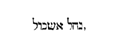
(IBID.) Locutique eis et omni multitudini, ostenderunt fructus terrae, et narraverunt dicentes: Venimus in terram ad quam misisti nos, quae revera fluit lacte et melle, ut ex his fructibus cognosci potest. Sed cultores fortissimos habet, et urbes grandes nimis atque muratas. Stirpem Enach vidimus ibi, et reliqua. De exploratoribus terrae narratur, qui missi renuntiarent, quod terra quidem sit bona et admirabilis, habitent autem in ea filii gigantum. Jesus tamen non desperat, sed confirmat populi fidem cum Caleph, qui est de tribu Juda, et dicunt. Si diligit nos Deus, introducet nos in terram hanc. Quae ergo est [Col. 0669D] terra ista secundum spiritalem intellectum, quae terra quidem sancta est et terra bona, sed impius habitator? Qui sunt ergo isti hostes, qui habitant in terra sanctorum, et quomodo ejiciendi sunt, ut illis ejectis, sancti succedant in locum eorum? Redeamus ad Evangelia, redeamus ad Apostolum. Evangelia sanctis promittunt regna coelorum. Apostolus dicit: Nostra autem conversatio in coelis est (Philip. III) . In coelis ergo locus haereditatis, qui promittitur sanctis; et quid putamus, quod in his locis quae tibi promittuntur nullus non habitator sit, quem tu debeas inde pugnando depellere? Et quomodo ergo dicit Dominus: A diebus Joannis Baptistae regnum coelorum vim patitur, et vim facientes diripiunt illud? [Col. 0670A] (Matth. XII.) Nisi enim esset quibus vis tieret, nisi essent qui inde pelli et excludi deberent, nunquam diceretur per vim diripiendum esse regnum coelorum. Et nisi essent cum quibus nobis certamen esset et praetium, nunquam diceret Apostolus: Non est nobis colluctatio adversus carnem et sanguinem, sed adversus principatus et potestates, adversum mundi hujus rectores tenebrarum harum, adversus spiritalia nequitiae in coelestibus. De quibus etiam illud Dei dictum, per prophetam intelligendum videtur, ubi ait: Et inebriatus est gladius meus in coelo (Isa. XXXIV) . Necesse est enim spiritales nequitias, quae in coelestibus esse dicuntur, qui sunt veri Chananaei, vinci a te, et expelli de coelestibus locis, ut tu pro illis habites ibi. Scio tamen gigantes eos esse. Gigas dicitur [Col. 0670B] omnis, qui adversum Deum resistit. Quicunque ergo adversatur Deo et contrarius est veritati, quod illi principaliter faciunt, merito gigas appellatur. Tibi ergo praestatur, ut ejicias gigantes, et intres in regnum eorum. An non de quodam ex ipsis scriptum est: Qui accipiet a gigante spolia? De quo etiam dicit Dominus in Evangelio: Nemo potest introire in domum fortis, et diripere vasa ejus, nisi prius alligaverit fortem (Marc. III) . Nunc ergo in quantum in comparationem humanae et daemoniacae naturae, nos locustae sumus, et illi gigantes; et praecipue si dubia sit fides nostra et si nos perterreat infidelitas, illi vere gigantes erunt, et nos locustae sumus. Si vero sequamur Jesum, et credimus verbis ejus ac fide ejus repleamur, tanquam nihil erunt respectu nostri. [Col. 0670C] Audi enim quomodo nos hortatur et dicit: Si amat nos Dominus, introducet nos Deus in terram hanc, quae bona est, et fructus ejus mirabilis. Typus et figura, quae praecessit in patribus, completur in nobis. Ejecerunt illi gentes, et consecutae sunt haereditatem eorum; consecuti sunt omnem terram Judaeae et Jerusalem, et civitatem et montem Sion. Haec in illis impleta sunt. Ad te autem quid dicitur: Non enim, inquit, accessistis ad ea, quae visibilia sunt, sed ad invisibilia. Accessistis enim, inquit, ad montem Dei viventis, et ad civitatem Jerusalem, et ad multitudinem angelorum (Hebr. XII) . Sed et alibi idem Apostolus dicit: Jerusalem autem, quae sursum est libera est, quae est mater omnium nostrorum (Gal. IV) . Si quis verbis Apostoli dicentis Jerusalem esse coelestem [Col. 0670D] non accommodat fidem, potest et haec verba nostra recusare. Si vero verbis Pauli fides adhibenda est, et Jerusalem coelestem esse credimus, ad typum terrenae hujus. Et quae scripta videntur de hac terrena ad illam coelestem rectius spiritali intelligentia conferemus. Accessimus ergo sicut Paulus dicit ad coelestem Jerusalem, sine dubio ad coelestem Judaeam. Et sicut illi de terrestri Judaea ejecerunt Chananaeos et Evaeos et reliquas gentes, ita et nos, qui accessimus ad montem Dei, et ad regna coelestia, necesse est ut expellamus de eis contrarias potestates, et spiritalia nequitiae in coelestibus. Et sicut illi ejecerunt Jebusaeum de Jerusalem, et quae prius Jebus vocitata fuerat, postmodum Jerusalem appellata est, [Col. 0671A] ita et nos oportet expellere Jebusaeum de Jerusalem, et sic haereditatem ejus consequi. Sed illi quidem faciebant haec armis visibilibus, nos autem invisibilibus. Illi vincebant corporalibus praeliis, nos autem spiritali certamine speramus. Quod si vis audire, Paulus, qui non solum magister gentium, sed et militiae hujus magister est, quomodo pugnaverit prior, audi quid ipse describat, sicut etiam supra memoravimus: Non est, inquit, nobis colluctatio adversus carnem et sanguinem, sed adversus principatus et potestates, adversus rectores mundi hujus tenebrarum, adversum spiritalia nequitiae in coelestibus (Ephes. VI) . Propterea et hanc pugnam spiritalem atque invisibilem pugnaturis, spiritalia arma et invisibilia tela componit et dicit: Induite vos loricam charitatis et [Col. 0671B] galeam salutis, assumentes scutum fidei, in quo possitis omnia tela maligni ignita exstinguere. Sed et gladium spiritus, inquit, assumite, quod est verbum Dei (Ibid.) . Cum ergo talibus te armaveris telis, sequens Jesum ducem, non verearis gigantes illos. Videbis enim quomodo eos tibi subjiciet Jesus. Et sicut Patres calcaverunt cervices gentium, ita et tu calcabis super cervices hominum. Ipse enim dicit his qui eum fideliter sequuntur: Ecce enim dedi vobis potestatem calcandi super serpentes et scorpiones, et super omnem virtutem inimici (Luc. X) . Vult enim Jesus semper res mirabiles facere; vult de locustis gigantes vincere; et de his qui in terris sunt coelestes superare nequitias. Et fortasse hoc erat, quod dicebat in Evangeliis: Quia qui credit in eum, non solum faciet illa, quae [Col. 0671C] ipse facit, sed majora, inquit, horum faciet (Joan. XIV) . Vere enim majus mihi videtur, si homo in carne positus, fragilis et caducus, fide tantum Christi et verbo ejus armatus, super gigantes daemonum legis, quamvis ipse sit qui vincit in nobis, plus tamen dicit esse, quod per nos vincit quam quod per se vincit. Tantum est ut nos armis istis semper simus armati, et conversatio nostra semper in coelis sit, vel omnis motus noster, omnis actus, omnis cogitatio, omnis sermo coelestis sit. Quanto enim nos illuc ardentius ascendimus, tanto illi praecipites inde descendent. Et quanto nos augemur, tanto illi inferiores efficiunt. (CAP. XIV.) Cumque clamaret omnis multitudo, et lapidibus vellet eos opprimere, apparuit gloria Domini super tectum foederis, cunctis videntibus Israel. Et [Col. 0671D] dixit dominus ad Moysen: Usquequo detrahet mihi populus iste? Quousque non credent mihi in omnibus signis, quae feci coram eis? Feriam igitur eos pestilentia atque consumam; te autem faciam principem super gentem magnam, et fortiorem quam haec est, et rel. Duodecim missi sunt inspectatores ex filiis Israel, ad considerandam terram, quae eis fuerat repromissa. Hi quoque post quadraginta dies regressi, diversa renuntiant. Nam ex his in desperationem mittunt populum, ita ut velint abjecto Moyse, eligere alium ducem, et reverti in Aegyptum; alii vero duo bona nuntiant, et cohortantur populum permanere in fide dicentes: Si diligit nos Deus, introducet nos in terram hanc. Sed populus infidelitatis desperatione praeceps [Col. 0672A] agitur, et ad lapidandos eos, qui bona nuntiant, prosilit: Majestas Domini vero protegit eos in nubibus, et dixit Dominus ad Moysen: Feriam eos morte et interimam eos, et faciam te et domum patris tui in nationem magnam, et multo magis, quam haec est. Fit ergo tanta haec comminatio a Domino, non ut passibilis et iracundiae vitio subjacens ostenditur divina natura, sed ut per haec et Moysi charitas quam erga populum habebat, et Dei bonitas, quae supra omnem mentem est innotescerent. Scribitur enim irasci Deus et comminari interitum populo, quo doceatur homo tantum sibi esse apud Deum loci tantumque fiduciae, ut etiam si sit aliqua in Deo indignatio, obsecrationibus mitigetur humanis, tantumque de eo impetrare posse hominem, ut et propria instituta convertat. [Col. 0672B] Bonitas enim quae subsequitur iracundiam, et Moysi fiduciam ostendit apud Deum, et alienam ab iracundiae vitio divinam docet esse naturam: simul et mysterium in saeculi futuris explendum continet sermo, per quem promittit Deus quod alium hoc abjecto resuscitet. Ait enim: Percutiam eos morte et perdam eos, et faciam te et domum patris tui in nationem magnam, multo magis quam haec est. Comminatio enim haec, non est iracundia, sed prophetia. Assumenda namque erat alia natio, id est, populus iste nationum, sed non per Moysen. Excusavit se namque Moyses. Sciebat namque quia gens illa magna, quae repromittitur, non per Moysen vocanda erat, sed per Jesum Christum, et non Mosaicus, sed Christianus erat populus appellandus. Idcirco igitur pluribus [Col. 0672C] exhortatur Moyses pro populo illo; Dominus vero correptionis modum librata moderatione, dispensat et dicit:
Quia viri quidem, qui exierunt de Aegypto, et tentaverunt me atque increduli permanserunt, cadent in deserto hoc: Et non videbunt, inquit, terram, quam juravi patribus eorum; sed filii eorum, qui sunt mecum hic, quicunque ignorant bonum vel malum. Sit fortassis aliquid etiam secreti mysterii in verbis Domini dicentis: Filii ipsorum, qui sunt mecum hic. Ubi mecum hic? Aut quomodo mecum? Qui habet aures audiat. Nos interim dicimus, quia patres nostri fuerunt populus ille prior; nos autem filii ipsorum pro illis surreximus et erecti sumus, qui nesciebamus bonum vel malum. Ex gentibus enim sumus, quia [Col. 0672D] neque bona, quae ex Deo veniunt noveramus, neque mala, quae ex peccato generantur. Si tamen succedentes in locum eorum, qui abjecti sunt, tanti lapsus timeamus exemplum, audientes commonitionem Pauli dicentis: Vide autem severitatem et bonitatem Dei. In eos autem qui ceciderunt, severitatem; in te quidem bonitatem, si tamen permanseris in bonitate. Alioqui et tu excideris, et illi si non permanserint in incredulitate, inserentur (Rom. XI) . Addidit autem post haec Dominus et dicit: Filii vestri erunt incolae quadraginta annis in deserto. Et quid haberet mysterii numerus iste, declarat dicens: Secundum, inquit, numerum dierum quibus considerastis terram quadraginta diebus, pro die per annum [Col. 0673A] recipietis peccata vestra quadraginta annis. Timeo ergo mysterii hujus secreta discutere. Video enim quod peccatorum in hoc ratio comprehenditur, et poenarum. Si enim unicuique peccatorum annus ascribitur ad poenas pro unius diei peccato, et secundum rationem dierum quibus peccatur, annorum totidem numerus in suppliciis consumendus est, vereor ne forte nobis qui quotidie peccamus, et nullum forte vitae nostrae diem absque peccato transegimus, ne ipsa forte saecula saeculorum sufficere possint ad poenas luendas. In eo enim quod populus illo quadraginta dierum delicto, quadraginta annis cruciatur in deserto, nec Terram Sanctam introire permittitur, similitudo quaedam futuri judicii videtur ostendi, ubi peccatorum ratio discutienda est, nisi [Col. 0673B] erit aliqua fortasse etiam bonorum operum compensatio, vel etiam eorum, quae in vita sua unusquisque mala recipit, ut Abraham de Lazaro docuit (Luc. XVI) . Sed haec nullus est nosse ad integrum, nisi illius cui omne judicium tradit Pater. Quod dies peccati in annum poena reputatur, non solum in hoc libro, in quo nihil omnino est quod dubitari possit, ostenditur, sed et in libello Pastoris, si cui tamen scriptura recipienda videtur, similia designantur. Sed fortasse aliquis neget bonitati Dei convenire, ut pro unius diei peccato, annum suppliciorum rependat. Sed fortasse aliquis dicet etiam: Si diem pro die reddat, quamvis justum, non tamen clemens videtur aut benignum. Audi ergo adhaec, si forte possimus difficultatem rei exemplis lucidioribus explanare. Si vulnus [Col. 0673C] corpori infligatur, aut nervorum junctura resolvatur, sub unius horae spatio hujus mundi vulnera solent corporibus accidere, et postmodum, cruciatibus ac doloribus exactis, multo vix tempore sanari. Quanti enim timores in loco, quanta tormenta generantur. Jam vero si accidat ut in eodem vulnere vel in eadem fractura, iterum et saepius quis vulneretur, frequentiusque frangatur, quantis hoc poenis curari, quantis potest cruciatibus medicari, quanto autem tempore, si tamen potuerit, ad sanitatem perducitur. Et vix aliquando ita curabitur, ut vel debilitatem corporis, vel foeditatem cicatricis effugiat. Transi nunc ab exemplo corporis ad animae vulnera. Anima quoties peccat, toties vulneratur. Et ne dubites peccatis eam velut telis et gladiis vulnerari, audi Apostolum [Col. 0673D] monentem: Assumite scutum fidei, in quo possitis omnia jacula maligni ignea exstinguere (Ephes. VI) . Vides ergo peccata maligni esse jacula quae in animam diriguntur. Patitur autem anima non solum vulnera jaculorum, sed et fracturas pedum, cum laquei parantur pedibus ejus, et supplantantur gressus ejus. Haec ergo et hujusmodi vulnera, quanto tempore putas posse curari? O si possimus per unumquodque peccatum videre quomodo homo noster interior vulneratur, quomodo sermo malus vulnus infligit. Non legistis dicunt, quia vulneraverant gladii, sed non ita ut lingua? Vulneratur ergo et per linguam anima; vulneratur et per cogitationes et concupiscentias malas; frangitur autem et conteritur, per opera [Col. 0674A] peccati. Quae si omnia videre possimus, et vulneratae animae sentire cicatrices, certum est, quod usque ad mortem resisteremus adversum peccatum. Si nunc sicut hi qui vel daemone repleti, vel mente alienati sunt, non sentiunt si vulnerantur, quia naturalibus sensibus carent, ita et nos vel cupiditatibus saeculi amentes effecti vel inebriati, sentire non possumus quanta vulnera, quantas contritiones animae peccando conquirimus. Et ideo consequentissima ratio est, poenae, id est, curae ac medicationis tempus extendi; et per unumquodque vulnus pro qualitate plagae, medendi quoque spatia propagari. Sic ergo et Dei aequitas ac benignitas etiam in ipsis animae suppliciis evidens fiat, ut haec audiens, qui peccavit resipiscat, et ultra non peccet. Conversio enim in praesenti vita [Col. 0674B] et poenitentia fructuosa gesta celerem conferet hujusmodi vulneribus medicinam, quia poenitentia non solum vulnus praeteritum sanat, sed et ultra animam peccato non sinit vulnerari. Imo et illud adjiciam verbi causa: Si peccator sum, nunquid eadem erit mihi poena si semel peccavi, quae et si secundo et tertio, et si frequentius peccem? Non ita erit, sed pro modo, et numero, et mensura peccati, etiam poenae quantitas metienda est. Deus enim dabit nobis panem lacrymarum, et potabit nos in lacrymis, sed in mensura. Mensura autem haec erit, quam sibi in hac vita unusquisque vel majus, vel amplius peccando quaesierit. Sed et calix in manu Domini, vini meri plenus misto dicitur esse. Miscetur ergo sine dubio unicuique et fiet judicium ejus, non solum de malis quae [Col. 0674C] gessit, sed etiam ex bonis; et tamen cum utraque misceantur, fex ejus quam ego puto malorum partem dici, non ad integrum exinanietur, sed haec, ut diximus, in manu Dei sunt. Nostrum est autem ad emendationem citius festinare, ad poenitentiam sine dissimulatione converti, lugere praeterita, cavere futura, invocare auxilium Dei. Statim enim ut conversus in gemueris, salvus eris. Invenies enim advocatum, qui pro te interpellat Patrem, Dominum Jesum multo praestantiorem quam fuit Moyses; qui tamen oravit pro illo populo et exauditus est. Et fortasse propterea Moyses scribitur intervenisse pro peccatis populi prioris et impetrasse veniam, ut multo magis nos confidamus, quod advocatus noster Jesus indubitatam nobis veniam praestabit a Patre, si tamen convertamur [Col. 0674D] ad eum, et non recedat retro cor nostrum, sicut Joannes in Epistola sua dicit: Haec autem dico, filioli, ut non peccetis (Joan. II) . Quo si peccaverit aliquis vestrum, habemus advocatum apud Patrem justum, qui interpellat pro peccatis nostris.
Locutusque est Moyses universa verba haec ad omnes filios Israel, et luxit populus nimis. Et ecce mane primo surgentes, ascenderunt verticem montis atque dixerunt: Parati sumus ascendere ad locum, de quo Dominus locutus est, quia peccavimus. Quibus Moyses: Cur, inquit, transgredimini verbum Domini, quod vobis non cedet in prosperum? Nolite ascendere. Non enim Dominus est vobiscum, ne corruatis coram inimicis vestris. Amalechites et Chananaeus ante vos sunt: [Col. 0675A] quorum gladio corruetis, eo quod nolueritis acquiescere Domino. At illi contenebrati ascenderunt verticem montis. Arca autem testamenti Domini et Moyses, non recesserunt de castris. Descenditque Amalechites et Chananaeus, qui habitant in monte, et percutiens eos atque concidens, persecutus est usque ad Horma. O mira protervitas humanae mentis, et horrenda stultitia per malitiam excaecati cordis. Mandat Deus promissionibus credere, et de sua patientia confidere, sicque terram possidendam intrare. Huic humana stultitia renuit credere, et jussis spernit obtemperare salubribus. E contrario denuntiat Deus eis propter peccata eorum et perfidiam, possessionem terrae sibi ante repromissae, suumque auxilium eis denegat conferre. At illi contenebratim, contra voluntatem [Col. 0675B] Dei eam volunt invadere. Quorum imitatores, utinam nostris temporibus non haberemus. Sunt enim proh dolor! non pauci moderno tempore, qui licet veteres de sua protervia redarguant, et incredulitatem eorum reprehendant, nihilominus ipsi in moribus ipsorum sequaces existant: qui nec bonis promissis per divinam legem adipiscendis instant, nec prohibitis malis peccando se implicare non cessant. Sed sicut nec illis, ita nec istis haec pertinacia cedet in prosperum. Nam spirituales Amalechitae et Chananaei, qui habitant in montibus superbiae, percutient eos atque concident, persequentes usque Horma. Amalechitae enim populus lingens sanguinem , et Chananaei negotiantes sive motus. Horma anathema interpretatur. Coelestes ergo nequitiae, quae interitum [Col. 0675C] nostrum desiderant, et terrenis cupiditatibus nos implicare volunt, si perseveraverimus in peccatis, et in montibus superbiae ascendere non desistimus, concident nos ignitis jaculis, atque ad anathema perpetuum perducent. Unde non secundum Pelagianitas de nostra sine gratia Dei praesumere debemus potentia, sed humiliter infirmitatem nostram cosiderantes, id quod Domini ore decernitur, obediendum et sequendum per omnia nobis humiliter credamus. Sicque nobis hostes cuncti inferiores existunt, et ad coelestis patriae gaudia, quae nobis promissa sunt, pervenire per Domini misericordiam praevaleamus.
[Col. 0675D] (CAP. XV.) Locutus est Dominus ad Moysen dicens: Loquere ad filios Israel et dices ad eos: Cum ingressi fueritis terram habitationis vestrae, quam ego dabo vobis, et feceritis oblationem Domino in holocaustum aut victimam pacificam, vota solventes vel sponte offerentes munera, aut in solemnitatibus vestris adolentes odorem suavitatis Domino, de bobus sive de ovibus, offeret quicunque immolaverit victimam, sacrificium similae decimam partem ephi conspersam oleo: quod mensuram habet quartam partem hin, et vinum ad liba fundenda ejusdem mesurae dabit in holocaustum sive in victimam. Per agnos singulos et arietes erit sacrificium similae duarum decimarum, quae conspersa fit oleo tertiae partis hin; et [Col. 0676A] vinum ad libamentum tertiae partis ejusdem mensurae, offeret in odorem suavitatis Domino. Quando vero de bobus feceris holocaustum aut hostiam ut impleas volum, vel pacificas victimas, dabis per singulos boves similae tres decimas conspersae oleo, quod habebit medium mensurae hin, et ad liba fundenda vinum ejusdem mensurae, in oblationem suavissimi odoris Domino. Sic facietis per singulos boves et arietes, et agnos et haedos, et rel. Josephus in Antiquitatum suarum tertio, hujus loci meminens refert. Lex autem praecepit in privatis publicisque sacrificiis etiam farinam mundissimam adjici, in agno quidem assari unam mensuram, in ariete vero duorum, in tauro trium. Et hoc sanctificant super altare oleo mistum. Nam et oleum offertur ab immolantibus, in bove quidem [Col. 0676B] hin medietatem, in ariete autem hujus mensurae tertiam partem et quartam in agno. Hin autem mensura Hebraeorum antiqua choas Atticas duas capit, secundum quam mensuram oleum offerebant. Est autem uti in libro Ruth legitur, ephi mensura trium modiorum. Hin autem ut illi volunt qui de ponderibus ac mensuris scripserunt, sextarii mensuram tenet. Qui ita ideo nominatus est, eo quod sexta pars est congii. Quid ergo hoc vult quod jubetur ingressuris terram repromissionis, per singulas species animalium, quae offerri licebant, sacrificium adhiberi, nisi quod spiritaliter nos docet, qui in terram Ecclesiae per Domini gratiam intravimus, ut per singulas species bonorum operum, scientiam spiritalem in meditatione divinae legis adhibeamus. [Col. 0676C] Mensura ergo ephi, quae tres habet alias mensuras, significat sanctae Trinitatis fidem. Cujus decimam jubetur offerre, id est, credulitatem incarnationis Christi, quae in lege nobis plenissime commendatur, sive observantiam ipsius decalogi. Jubemur simul offerre oleum, hoc est charitatem et misericordiam. Jubemur et vinum ad libamentum, id est, gratiam spiritalem, sive communicationem passionis Christi. Et haec juxta participationem mensurae hin, hoc est, secundum distributionem perfectae devotionis. Senarius autem, qui perfectus est numerus, perfectionem cujusque rei significat. Quid est ergo aliud in agni oblatione decimam partem ephi offerre, similae conspersae oleo juxta quartam partem hin, et vinum ejusdem mensurae ad liba fundenda, nisi simplicitatem [Col. 0676D] morum, simul cum scientia legis divinae et prudentia evangelica exhibere? Quia non decet simplicitatem sine prudentia, nec prudentiam sine simplicitate quemquam habere, qui desiderat oblationem suam Deo acceptabilem facere. Unde Salvator in Evangelio discipulis praecepit dicens: Estote prudentes sicut serpentes et simplices sicut columbae. Omnis enim stultitia sicut et versutia Deo abominabilis est, et ideo omni modo ab anima pellenda est catholica, in qua solummodo semper vigere debet simplicitas Christiana. Item in oblatione arietis duas decimas similae jubet offerre, simul olei atque vini tertiam partem hin. Et quia aries rectorum ordinem significat, apte cum duabus decimis aries offertur, [Col. 0677A] cum quilibet homo decalogum legis intellectu et operatione tenens, officio rectoris delegatur. In qua oblatione oleum et vinum tertiae partis him simul exhibetur, quando charitas, misericordia et gratia spiritalis doctrinae, ab ea erga subditorum curam diligenter impenditur. Item in oblatione tres decimae similae offerri praecipiuntur, simul et medium mensurae hin in oleo sive vino. Et quid in bonis nomine nisi sanctorum praedicatorum ordo designatur, qui agrum Dominicum colunt, et vomere evangelico exstirpantes spinas vitiorum, multiplicant segetem virtutum? Qui cum tribus decimis similae offeruntur, quia decalogum legis, scientia, opere et doctrina rite tenentes, fidei sanctae Trinitatis veri assertores esse probantur. Hi ergo charitatem praecipuam debent habere, [Col. 0677B] et in necessitatibus proximi per misericordiam consulendo, aliis bonum exemplum praebere. Nec non et ipsis studendum est, ut in gratia divina quantum mortalibus possibile est proficiant, et ad vitae perfectionem ac sanctitatem perveniant, juxta illud Dominicum praeceptum: Sancti estote, quia ego sanctus sum, Dominus Deus vester (Levit. XIX) . Illud tamen quod in hac vita sibi deest, incoelesti beatitudine per Domini gratiam in se perficiendum debent sperare.
(IBID.) Locutus est Dominus ad Moysen dicens: Loquere filiis Israel et dices ad eos: Cum veneritis in terram, quam dabo vobis, et comederitis de panibus regionis illius, separabitis primitias Domino de cibis [Col. 0677C] vestris. Sicut de areis primitias separabitis, ita et de pulmentis dabitis primitiva Domino. Quid est quod primitias de cibis Israelitae Domino jubentur offerre, hoc est, ut sicut de areis primitias separabunt, ita etiam de pulmentis primitiva Domino tribuant? Terram igitur quam ingredientes Domino oblationes sive primitias debent offerre, praesentem Ecclesiam significare superius diximus. Ergo quisquis Ecclesiam per fidem et baptismum intraverit, necesse est ut terram carnis suae, hoc est, corporalem vitam diligenter in Dei timore exerceat, quatenus frugem virtutum in ea excrescere faciat, unde sibi refectio aeterna praeparetur. Jubemur ergo non solum de areis, sed et de pulmentis primitias Domino consecrare. Quid est de area primitias separare, nisi de [Col. 0677D] praedicationis officio, laboris primordia Domino consecrare? Et quid de pulmentis primitiva est offerre, nisi de domesticis disciplinis quas in semetipso solerter quisque exercere debet, inchoationem bonae voluntatis Domino dedicare? Sive in semetipso aliquis virtutum studiis operam det, sive de aliorum salute docendo, exhortando, atque bonis exemplis provocando pium laborem impendat, necesse est ut hoc non sibi aliquis, sed gratiae deputet divinae, ut ei consecretur omnis boni initium, a quo decet sperari totius perfectionis supplementum.
(IBID.) Quod si per ignorantiam praeterieritis quidquam [Col. 0678A] horum, quae locutus est Dominus ad Moysen, et mandavit per eum ad vos, a die qua coepit jubere et ultra, oblitaque fuerit multitudo facere offeret vitulum de armento holocaustum in odorem suavissimum ejus ac liba ut caeremoniae postulant, hircumque pro peccato; et rogabit sacerdos pro omni multitudine filiorum Israel, et dimittetur eis, quoniam non sponte peccaverunt, et rel. (Ex Augustino.) Merito quaeritur quae sint ipsa peccata nolentium, utrum a nescientibus committuntur, an etiam possit recte dici peccatum esse nolentis, quod facere compellitur. Nam et hoc contra voluntatem facere dici solet. Sed utique vult propter quod facit, cum vult vivere, si quisquam, nisi fecerit, mortem minetur. Vult ergo facere, quia vult vivere, et ideo non per seipsum [Col. 0678B] appetendo ut falsum juret, sed ut falsum jurando vivat. Quod si ita est, utrum possint dici ista peccata nolentium, qualia hic dicuntur expianda. Nam si diligenter consideretur, forte ipsum peccare nemo velit, sed propter aliud fit, quod vult, qui peccat. Omnes quippe homines, qui scientes faciunt quod non licet, id vellent licere. Usque adeo ipsum peccatum nemo appetit propter hoc ipsum, sed propter illud quod ex eo consequitur. Haec si ita se habent, non sunt peccata nolentium nisi nescientium, quae discernuntur a peccatis volentium.
Mystice autem offerunt filii Israel vitulum de armento in holocaustum, cum fideles populi plena fide corpus Dominicum pro salute generis humani in ara crucis immolatum in odorem suavitatis, Domino credunt [Col. 0678C] et confitentur. Offerunt sacrificium ejus ac liba ut caeremoniae postulant, cum in sacramento panem et vinum in commemorationem passionis ejus super altare deferunt, ac de eo participantes, corpus et sanguinem ejus veraciter se percepisse confidunt. Offerunt hircum pro peccato, cum ipsam humanitatem ejus non peccatricem, sed in similitudinem carnis peccati, hoc est, nostrae mortalitatis consortem eum suscepisse, ac pro peccatis nostris dissolvendis obtulisse credimus. Rogatque ipse sacerdos, qui advocatus noster est apud Patrem pro peccatis populi sui et dimittetur ei, quoniam secundum Pauli sententiam: In diebus carnis suae preces supplicationesque ad eum, qui possit illum a morte salvum facere, cum clamore valido et [Col. 0678D] lacrymis offerens, exauditus est pro sua reverentia (Hebr. V) . Praeterea et incensum jubentur offerre pro se et pro peccato atque errore suo. Incensum ergo offerunt pro peccatis suis, qui orationem cum jejuniis et eleemosynis Deo offerunt, in quibus placatus veniam erroris digne postulantibus tribuit. Sequitur:
Quod si anima nesciens peccaverit, offeret capram anniculam pro peccato suo, et deprecabitur pro ea sacerdos, quod inscia peccaverit coram Domino; impetrabitque ei veniam, et dimittetur illi, etc. Capram ergo anniculam offert, qui poenitentiam pro peccato non tepide, sed fervide gerit, et perfecte a peccato eodem, atque studiosissimo recedit proposito, de caetero cavens, quotidieque commissorum veniam [Col. 0679A] postulans, ingemiscens dicit cum Propheta: Delicta juventutis meae, et ignorantias meas ne memineris, Domine: secundum magnam misericordiam tuam, memor esto mei, Domine. Adjuvabitque eum ad impetrandam veniam intercessio pontificis summi, qui non per sanguinem hircorum et vitulorum, sed per sanguinem proprium introivit semel in sancta, aeterna redemptione inventa.
(IBID.) Anima vero, quae per superbiam aliquid commiserit, sive civis sit ille, sive peregrinus quoniam adversus Dominum rebellis fuit, peribit de populo suo, et reliqua. (Ex Augustino.) Quae sint peccata quae fiunt in manu superbiae, id est, superbia committuntur, [Col. 0679B] Scriptura ipsa in consequentibus satis exposuit ubi ait: Quoniam verbum contempsit. Aliud est ergo praecepta contemnere, aliud quidem magni pendere, sed aut ignarum contra facere, aut victum vel invitum. Quae duo fortasse pertineant ad illa peccata, quae a nolentibus fiunt: de quibus superius quemadmodum Deo propitiato expiarentur admonuit, ac deinde subjecit peccata superbiae, cum quisque superbiendo, id est, praeceptum contemnendo perperam facit: quod genus peccati non dixit ullo genere sacrificii purgare oportere tanquam insanabile judicans; illa duntaxat curatione, quae per sacrificia gerebantur, qualia facienda in hac Scriptura praecipiuntur. Quae si per ipsa attendantur, nulli peccato possunt mederi; si autem res ipsae quorum sacramenta [Col. 0679C] sunt inquirantur, in eis inveniri poterit purgatio peccatorum. Quod ergo scriptum est: Peccator cum venerit in profundum malorum, contemnit (Prov. XVIII) , iste significatus est, quem Scriptura hoc loco dicit in manu superbiae delinquere. Hoc igitur sine poena ejus qui committit non potest aboleri, atque ideo non potest esse impunitum; et cum poenitendo sanatur: ipsa enim afflictio poenitentis, poena peccati est; quamvis medicinalis et salubris. Merito quippe magnum judicatur peccatum, cum superbia praeceptum contemnit. Sed e contrario ut sanari possit, cor contritum et humiliatum Deus non spernit. Verumtamen quia sine poena non sit, ideo talia hinc dicta sunt: Deum, inquit, hic exacerbat, quia Deus superbis resistit. Et exterminabitur anima [Col. 0679D] illa de populo suo, quoniam talis omnino in numero eorum qui ad Deum pertinent, non est. Quoniam verbum Domini contempsit, et mandata ejus dispersit, contritione conteretur anima illa. Quare autem contritione conteretur, consequenter adjungit dicens: Peccatum ejus in illo, ac per hoc si tali peccato debitam contritionem ipse sibi adhibeat poenitendo, cor contritum, ut dictum est, Deus non spernit.
(IBID.) Factum est autem cum essent filii Israel in solitudine, et invenissent hominem colligentem ligna [Col. 0680A] in die sabbati, obtulerunt eum Moysi et Aaron et universae multitudini. Qui recluserunt eum in carcerem, nescientes quid super eo facere deberent. Dixitque Dominus ad Moysen: Morte moriatur homo iste; obruat eum omnis turba lapidibus extra castra. Cumque eum eduxissent foras, obruerunt lapidibus et mortuus est, sicut praeceperat Dominus. Quid autem insinuat, quod tam atrociter jussu Dei fuerit idem ab omni populo trucidatus, quod facile ab infidelibus promittitur? Intelligant ergo quia haec omnia in typo acciderunt illis: scripta sunt enim ad correptionem nostram. Ille enim pristinus carnalisque homo qui diem sabbati violare ausus est dum ligna colligeret, propter quod est et punitus, formam significabat ejus qui hodie in Christo signatus, invenitur [Col. 0680B] agere carnale opus, id est, contrahere ligna, fenum, stipulam, ad escam ignis aeterni convenientem. Quae dum colligit in suam perniciem, si fuerit deprehensus, pellitur ab omnibus et statim occiditur: dum judicatur ab spiritalibus. Sic ergo omnibus quaecunque illis Judaeis per legem acciderunt, formaliter intelligenda sunt.
Dixit quoque Dominus ad Moysen: Loquere filiis Israel et dices ad eos, ut faciant sibi fimbrias per angulos palliorum, ponentes in eis vittas hyacinthinas. Quas cum viderint, recordabuntur omnium mandatorum Domini, ne sequantur cogitationes suas, et oculos suos per res varias fornicantes; sed magis praeceptorum Domini memores, faciant ea, sintque sancti Domino Deo suo. Ego Dominus Deus vester, qui eduxi vos de [Col. 0680C] terra Aegypti ut essem Deus vester. Secundum historiam ergo mandavit Dominus per Moysen filiis Israel, in quatuor angulis palliorum hyacinthinas fimbrias facere, ad Israeliticum populum dignoscendum, ut quomodo in corporibus circumcisio signum Judaicae gentis daret, ita et vestis haberet aliquam differentiam; et ut commonerentur, quia habitu a caeteris gentibus Dei praecepto differebant, distarent et religione, quatenus unum Deum colerent spretis cunctis idolis nationum, ejusque mandata studiosissime conservare niterentur. Allegorice autem nos instruit, ut intelligamus, quia mandata quae videntur esse minima in habitu legis, si propter coelestem vitam, quod vitta hyacinthina significat, colorem aeris exprimens, serventur, multum proficiant. Qui enim [Col. 0680D] spernit minima, paulatim defluit. Ideoque necesse est, ut secundum Apostoli documentum, sive manducemus, sive bibamus, sive aliud quid agamus, omnia in gloriam Dei faciamus.
(CAP. XVI.) Ecce autem Chore filius Isaar, filii Caath, filii Levi, et Dathan, et Abiram, filii Eliab, Hon quoque filius Phelech, de filiis Ruben, surrexerunt contra Moysen, aliisque filiorum Israel ducenti quinquaginta viri, proceres synagogae, et qui tempore concilii, per nomina vocabantur. Cumque stetissent adversus Moysen et Aaron, dixerunt: Sufficiat vobis, [Col. 0681A] quia omnis mullitudo sanctorum est, et in ipsis est Dominus. Cur elevamini super populum Domini? Quod cum audisset Moyses, procidit pronus in faciem. Locutusque est ad Chore et ad omnem multitudinem. Mane, inquit, notum faciet Dominus, qui ad se pertineant, et sanctos applicabit sibi; et quos elegerit, appropinquabunt ei, et reliq. (Ex Isidoro.) Per excidium Chore, Dathan et Abiron, qui sibi contra Moysen et Aaron sacerdotem sacrificandi licentiam vendicantes, poenas pro suis conatibus expenderunt, significantur hi qui haereses et schismata facere conantur, et multos secum trahendo decipiunt, contemnentes sacerdotes Christi, et se a clero ejus plebisque societate segregantes, constituere audent Ecclesias et aliud altare precemque aliam, illicitis [Col. 0681B] vocibus faciunt Dominicae hostiae veritatem, per falsa sacrificia profanantes. Hi qui contra ordinem Dei nituntur, ob temeritatis audaciam terrae compagibus ruptis, profundi hiatu merguntur; nec tantum hi qui duces eorum sunt, sed et illi qui consentiendo participes eorumdem effecti sunt, in ignem aeterni judicii praeparata ultione peribunt.
Locutus est Dominus ad Moysen et Aaron dicens: Separamini de medio congregationis hujus, ut eos repente disperdam, et caetera. (Ex Augustino.) Notandum est tunc jubere Dominum fieri separationem corporalem, cum jam vindicta imminet malis. Sic Noe cum domo sua separatur a caeteris diluvio perituris; sic Loth cum suis separatur a Sodomis igne coelitus consumendis; sic ipse populus ab Aegyptiis, marinis [Col. 0681C] fluctibus obruendus; sic isti nunc a synagoga Chore, Abiron et Dathan, qui se primitiis per seditionem abrumpere voluerunt: cum quibus tamen sancti antea viventes conversantesque, et cum caeteris quos reprobat Deus, secundum verba quae in eos increpans dicit, contaminari tamen ab eis minime potuerunt; nec separari se jussi sunt, quando vindictam Dominus sive differebat, sive talem adhibebat, qua innocentes periclitari vel laedi non possent: sicut serpentium morsibus, sicut strage mortium, qua Deus quem volebat, sicut volebat, alio percutiebat intacto; non sicut aqua diluvii, aut ignea pluvia, aut aqua maris aut hiatu terrae, quae permistos pariter assumeret: non quia et ibi Deus suos conservare non posset; sed quid opus erat tentatione [Col. 0681D] miraculi ubi separatio fieri poterat, ut vel aqua vel ignis, vel hiatus terrae, quos invenisset, auferret? Sic et in fine a zizaniis separabuntur frumenta, et malos cremantibus flammis, justi fulgebunt sicut sol in regno Patris eorum.
Confestim igitur ut cessavit loqui, disrupta est terra sub pedibus eorum; et aperiens os suum, devoravit illos, cum tabernaculis suis, et universa substantia; ascenderuntque vivi in infernum operti humo, et perierunt de medio multitudinis. Notandum secundum locum terrenum dictos esse inferos, hoc est, in inferioribus terrae partibus. Varie quippe in Scripturis, et sub intellectu multiplici, sicut rerum de quibus agitur sensus exigit, nomen ponitur [Col. 0682A] inferorum, et maxime in mortuis hoc accipi solet. Sed quoniam ipsos viventes dictum est ad inferos descendisse, et ipsa narratione quid factum fuerit satis apparet, manifestum est, ut dixi, inferiores partes terrae inferorum vocabulo nuncupatas, in comparatione hujus superioris terrae, in cujus facie vivitur, sicut in comparatione coeli superioris, ubi sanctorum demoratio est angelorum, peccantes angelos in hujus aeris detrusos caligine, Scriptura dicit, tanquam carceribus inferi puniendos reservari. Si enim Deus, inquit, angelis peccantibus non pepercit, sed carceribus caliginis inferi retrudens, tradidit in judicio puniendos reservari (I Pet. III) , cum apostolus Paulus principem potestatis aeris, dicat diabolum, qui operatur in filiis diffidentiae.
(IBID.) Locutusque est Dominus ad Moysen dicens: Praecipe Eleazaro filio Aaron sacerdoti, ut tollat thuribula, quae jacent in incendio, et ignem huc illucque dispergat, quoniam sanctificata sunt in mortibus peccatorum; producatque ea in laminas et affigat altari, eo quod oblatum sit in eis incensum Domino; et sanctificata sunt, ut cernant ea pro signo et monumento filii Israel. Quaeritur hoc loco, cur non ad Moysen et Aaron sicut in superioribus, Dominus locutus sit, sed ad Moysen et Eleazarum filium Aaron. Haec mihi causa interim occurrit, quoniam quaestio erat [Col. 0682C] de progenie sacerdotum, id est, de quo genere esse deberent: unde illi ex alio genere quia sibi usurpare sacerdotium ausi sunt, tam horrendo et mirabili supplicio perierunt, non ad Aaron, qui jam summus sacerdos erat, sed ad Eleazar voluit loqui Deus, qui ei succedere debebat, et secundo jam sacerdotio fungebatur, ut eo modo sortem generis commendaret, quae in successionibus sacerdotum esse deberet. Sed notandum, novo modo dicta sanctificata poena eorum, a quibus hoc peccatum fuerat perpetratum, quia per eos exemplum datum est caeteris quomodo timerent. Circumpositionem autem altari cur ex eis fieri voluit, addidit dicens, quoniam oblata sunt ante Deum et sanctificata, facta sunt in signum filiis Israel. Non ergo in eis reprobari voluit, quod a talibus [Col. 0682D] oblata sunt, sed hoc potius cogitari et attendi ante quem oblata sunt, id est, quia ante Dominum, ut plus in eis valeret nomen Domini, ante quem oblata sunt, quam pessimum meritum eorum a quibus oblata sunt. Hoc autem jam et in Exodo commemoraverat Scriptura, quando altare fabricatum esse dicit. Unde intelligitur genera rerum gestarum distributa esse per libros, non temporum ordo contextus. Mystice autem Chore figuram tenet eorum qui contra ecclesiasticam fidem et doctrinam veritatis insurgunt. Scriptum ergo de Chore et de coetu ejus, quod in batillis aereis incensum obtulerit ignis alieni. Jubetur a Deo ignis quidem alienus dispergi et effundi.
[Col. 0683A] Batilla vero, inquit, quia sanctificata sunt, facito eas laminas ductiles, et circumda ex eis altare, quia oblata sunt coram Domino, et sanctificata sunt. Hoc ergo mihi per hanc figuram videtur ostendi, quod batilla ista quae Scriptura nominat aerea, figuram teneant Scripturae divinae: cui Scripturae haeretici ignem alienum imponentes, hoc est, sensum et intelligentiam a Domino alienam et veritati contrariam introducentes, incensum Domino non suave, sed exsecrabile offerunt. Et ideo forma ecclesiarum sacerdotibus datur, ut si quando tale aliquid fuerit exortum, ea quidem, quae a veritate aliena sunt, ab Ecclesia Dei penitus abstrudantur; si qua autem etiam in ipsis haereticorum verbis ex Scripturae divinae sensibus inveniuntur inserta, ne pariter cum illis, quae veritati et [Col. 0683B] fidei sunt contraria, respuantur. Sanctificata sunt enim, quae de divina Scriptura proferuntur et Domino oblata. Potest autem et alio modo adhuc intelligi, quod de batillis praecipitur peccatorum, ut jungantur et socientur altari. Et primo hoc ipsum, quod aerea dicuntur, non otiosum videbitur. Ubi enim vera fides est, et integra verbi praedicatio, aut argentea dicuntur, aut aurea. Ut fulgur auri declaret fidei puritatem, et argentum igni probatum, eloquia examinata significet. Ista vero quae aerea dicuntur, in sono tantum vocis consistunt, non in virtute spiritus, et sunt ut Apostolus ait, aeramentum sonans aut cymbalum tinniens (I Cor. XIII) . Ista ergo batilla aerea, id est, haereticorum voces, si adhibeamus ad altare Dei, ubi divinus ignis est, ubi vera fidei praedicatio, [Col. 0683C] melius ipsa veritas ex falsorum comparatione fulgebit. Si enim verbi gratia proferentur dicta Marcionis, aut Basilidis, aut alterius cujuslibet haeretici, et haec sermonibus veritatis ac Scripturarum divinarum testimoniis, velut divini altaris igne confutem, nonne evidentior eorum comparatione apparebit impietas? Nam si doctrina ecclesiastica simplex esset, ut nullus extrinsecus haereticorum dogmatum assertionibus cingeretur, non poterat tam clara et tam examinata videri fides nostra. Sed idcirco doctrinam catholicam contradicentium obsidet impugnatio, ut fides nostra non otio torpescat, sed exercitiis elimetur. Propter hoc denique et Apostolus dicebat: Oportet autem et haereses esse, ut probati quique, manifesti fiant in vobis (I Cor. XI) . Hoc est [Col. 0683D] dicere: Oportet haereticorum batillis altare circum dari, ut certa et manifesta omnibus fiat fidelium atque infidelium differentia. Cum enim fides ecclesiastica velut aurum coeperit fulgere, et praedicatio ejus ut argentum igne probatum intuentibus resplenduerit, tunc majore cum turpitudine et decore, haereticorum voces obscuri aeris vilitate sordebunt.
(IBID.) Loquente Domino ad Moysen, murmuravit omnis multitudo filiorum Israel, sequenti die contra Moysen et Aaron dicentes: Vos interfecistis populum [Col. 0684A] Domini. Cumque oriretur seditio et tumultus incresceret, Moyses et Aaron fugerunt ad tabernaculum foederis. Quod postquam ingressi sunt, operuit nubes tabernaculum, et apparuit gloria Domini, etc. Non legimus antea quia obtexerit nubes tabernaculum testimonii, et apparuerit majestas Domini, et receperit intra nubem Moysen et Aaron, nisi nunc cum insurrexerit in eos populus, et lapidare eos voluit. Discamus ex hoc quanta sit utilitas in persecutionibus Christianis, quantum gratiae conferatur, quomodo propugnator eis fiat Deus, quomodo abundanter Spiritus sanctus effundatur. Tunc enim maxime gratia Domini adest, cum hominum saevitia concitatur. Et tunc pacem habemus apud Deum, cum ab hominibus propter justitiam bella perpetimur. [Col. 0684B] Ubi enim abundaverit peccatum, superabunda vit et gratia. Adoperuit ergo nubes tabernaculum, et irruit synagoga super Moysen et Aaron, et apparuit gloria Domini. Quamvis magni sint vitae merito Moyses et Aaron, quamvis animi virtutibus polleant, apparere tamen eis gloria Dei non potuisset nisi in persecutionibus, in tribulationibus, in periculis atque in ipsa morte jam positis. Et tu ergo non putes tibi dormienti et otioso, apparere posse gloriam Domini. An non Paulus apostolus in his gratiam Domini consequi meruit? Nonne super omnes caeteros enumerat se, in tribulationibus, in necessitatibus, in carceribus fuisse, naufragia pertulisse, pericula maris, pericula fluminum, pericula latronum, pericula a falsis fratribus (II Cor. XI) ? Quae quanto [Col. 0684C] magis abundant, tanto amplius, qui patienter tulerint, conferunt gloriam Dei.
Et locutus est Dominus ad Moysen et Aaron dicens: Discedite de medio synagogae hujus, et interimam illos de semel; et ceciderunt in faciem suam. In Sodomis quidem quando minimum decem requirebantur, per quos vix si forte salvari possent hi, qui habitabant Pentapolim Sodomorum, nunc autem etiam duo, si tamen inveniantur tales qualis fuit Moyses et Aaron, sufficere ponit, ut gens Israelitarum tota salvetur. Quid ergo dicemus amplius esse in his duobus. Quae tanta virtus, quod meritum, quo sexcenta millia et eo amplius liberentur ab interitu vastatoris? Ego arbitror quod in Moyse lex significetur, quae docet homines scientiam et amorem Dei, in Aaron supplicandi [Col. 0684D] Deo, et obsecrandi eum forma consistat. Si ergo accidat aliquando indignari nobis, vel universo populo Domini, ut sententia ultionis procedat a Deo, redeat autem lex Dei in cor nostrum, commonens nos et docens converti ad poenitentiam, satisfacere pro delictis, supplicare pro culpis, cessabit continuo iracundia, indignatio conquiescet. Propitiabitur Dominus, quasi Moyse et Aaron intercedentibus pro nobis et pro universo populo supplicantibus. Si vero aliquando oriatur indignatio Dei, et veniat pro peccatis saeva correptio, indurentur autem corda nostra, nec convertamur ad Dominum, neque humiliemur in conspectu ejus, ut in confessione supplicantium motus ejus et iracundiam mitigemus, [Col. 0685A] sed contra dicamus, Non est cura Deo de vita mortalium, nec pertinent haec ad Deum; reliquit nos olim, nec ad notitiam ejus ista perveniunt: si talia cogitemus in cordibus nostris, et haec de ore nostro procedant, certum est non esse in nobis Moysen et Aaron, legis scientiam, et fructus poenitentiae, per quos interitum imminentis exitii possimus evadere. Hoc puto accidisse etiam populo illi, qui fuit ante nos, quando omnes declinaverunt, simul inutiles facti sunt, et non fuit qui faceret bonitatem, non fuit usque ad unum. Si enim fuisset, nunquam utique dereliquisset eos Dominus. Sed et nos timeamus, ne forte simile aliquid inveniatur in nobis. Timeo enim illam sententiam, in qua Dominus et Salvator noster, qui cuncta praenoscit, dubitans [Col. 0685B] dicit: Putas veniens filius hominis, inveniet fidem super terram (Luc. XVIII) ?
Cumque jacerent in terra, dixit Dominus ad Moysen et Aaron: Tolle thuribulum, et hausto igne de altari, mitte incensum desuper pergens cito ad populum ut roges pro eis. Jam enim egressa est ira a Domino, et plaga desaevit. Quod cum fecisset Aaron et cucurrisset ad populum, et ad mediam multitudinem, quam vastabat incendium, obtulit thymiama. Et stans inter mortuos et viventes, pro populo deprecatus est, et plaga cessavit. Fuerunt autem qui percussi sunt quatuordecim millia hominum et septingenti, absque his qui perierant in seditione Chore. Jubentur ergo Moyses et Aaron exire de medio synagogae, ut interimatur synagoga de semel. Sed videamus isti quid faciunt. [Col. 0685C] Sancti sunt, perfecti sunt, et plus magis Evangelii discipuli, quam legis; et ideo diligunt etiam inimicos suos, atque orant pro persecutoribus suis. Illis venientibus ut interficerent eos, isti procidunt in faciem suam super terram.
Et ait Moyses ad Aaron: Assume batillum, et impone super illud ignem ab altari, et injice illi incensum, et offer velociter in castra, et exora pro ipsis. Exiit enim ira in conspectu Domini, et jam coepit vastare populum. Verum quoniam in hos pervenimus locos, volo de bonitate Dei admonere discipulos Christi, ne quis forte vestrum ab haereticis conturbetur, si quando certamen inciderit, illis dicentibus, quoniam Deus legis non est bonus sed justus; et Moysi lex non bonitatem continet, sed justitiam. [Col. 0685D] Videant ergo qui Deum pariter criminantur et legem, quomodo Moyses ipse et Aaron priores fecerunt hoc, quod postmodum Evangelium docuit. Ecce diligit Moyses inimicos, et orat pro persecutoribus suis: quod utique Christus in Evangeliis fieri docet. Audi enim quomodo cadentes in faciem super terram, orant pro illis, qui ad interficiendos eos insurrexerunt. Sic ergo et invenitur Evangelii virtus in lege, et fundamento legis subnixa intelliguntur Evangelia. Nec Vetus Testamentum nomino ego legem, si eam spiritaliter intelligam. Illis tantummodo lex Vetus efficitur Testamentum, qui eam carnaliter intelligere volunt. Et necessario illis vetus effecta est et senuit, quia vires suas non potest obtinere. [Col. 0686A] Nobis autem, qui eam spiritaliter et evangelico sensu intelligimus et exponimus, semper nova est, et utrumque nobis Novum Testamentum est, non temporis aetate, sed intelligentiae novitate. An non et apostolus Joannes in Epistola sua eadem sentit cum dicit: Filioli, mandatum novum do vobis, ut invicem diligatis (I Joan. II) ? cum utique sciret olim datum esse mandatum dilectionis in lege; sed quoniam charitas nunquam cadit, nec mandatum charitatis aliquando veterascit, hoc quod nunquam veterascit, semper novum esse pronuntiat. Semper enim observantes et custodientes se, charitatis mandatum novos reddit in spiritu. Peccatori autem et charitatis foedera non servanti, etiam Evangelia veterascunt. Nec potest ei novum esse testamentum, qui non deponit [Col. 0686B] veterem hominem, et induit novum ac secundum Deum creatum, ut offerat incensum in castris, et exoret pro populo. Jam enim, inquit, vastari coepit populus. In spiritu videbat Moyses, quae gerebantur. Vidit virtutem exisse ad castra, et vastare ac perimere peccatores; et propter hoc hortatur pontificem assumere batillum, ignem de altari imponere, atque incenso super injecto, exire et stare inter medium mortuorum et vivorum, ne ultra procedat vastatio, vel certe, ut verius habet se Scripturae sermo, confractio. Sed primo si videtur, historiae ipsius imaginem describamus, ut cum rei gestae species apparuerit, tunc demum etiam, si quid est in loco mysticum requiramus. Intellige ergo populum Israel in castris per ordinem tribuum familiarumque dispositum; [Col. 0686C] virtutem vero quamdam a Deo missam non sparsim, sed ex prima aliqua parte coepisse populum morte vastare, et procedentem per ordinem, mortis stragem considera. Post haec pontificem indutum esse pontificali, procedere, et portantem batillum atque ignem, cum incenso tendere ad eum locum quo per angelum vastantem mors illata pervenerat, et stantem in eo loco in quo mors finem dederat primis, et erat vicina postremis. Intuere stantem pontificem, et objectione quadam sui, viventes a mortuis dirimentem, virtutem propitiationis ejus, et incensi mysterium crubuisse angelum vastatorem; et in hoc mortem quidem finitam, vitam vero reparatam. Si intellexisti historiae ordinem, et oculis ut ita dicam cernere potuisti stantem pontificem medium [Col. 0686D] inter vivos et mortuos, ascende nunc ad verbi hujus celsiora fastigia, et vide quomodo verus pontifex Jesus Christus, assumpto batillo carnis humanae, et superposito igni altaris, anima sine dubio illa magnifica cum qua natus est in carne, et adjecto etiam incenso, qui est spiritus immaculatus, medius inter vivos stetit, et mortem non fecit grassari ultra, sed sicut Apostolus dicit: Destruxit eum qui habebat mortis imperium, id est, diabolum, ut qui credit in eum jam non moriatur, sed vivat in aeternum (Hebr. II) . Hoc fuit ergo mysterium, quod postea futurum, jam tunc ille qui populum vastabat, expavit. Agnoscebat enim figuram batilli, et ignis, et incensi, et qualis offerenda esset Deo hostia ab eo [Col. 0687A] qui medius mortuorum vivorumque constiterat, praevidebat. Et illos quidem tunc imago praefigurata salvavit; ad nos autem salutis veritas ipsa pervenit. Neque enim indumenta pontificis purpura ac lana byssoque contexta erubuisset angelus ille vastator; sed iste quae futura erant indumenta magni pontificis intellexit, et his cessit quibus utique universa creatura inferior erat. Puto autem, quod non solum primo adventu Domini et Salvatoris nostri forma ista completa sit, sed eadem fortassis servabitur et in secundo. Veniet enim filius hominis; et cum venerit iterum, sine dubio inveniet quosdam quidem mortuos, quosdam autem viventes. Quod possumus quidem et sic intelligere: quia nonnulli adhuc in hoc vitae statu quo nunc sumus inveniantur, cum [Col. 0687B] multi jam praecesserunt mortui. Potest autem et aliter accipi, ut mortuos corpora intelligamus, viventes autem animas. Quidam autem ex his, qui hunc locum ante interpretati sunt, memini quod mortuos dixerint eos qui nimietate scelerum in peccatis suis mortui intelliguntur, viventes autem eos qui in operibus vitae permanserint. Verumtamen utrolibet modo, stabit etiam in futuro magnus hic pontifex et Salvator noster medius vivorum. Sed et tunc forte medius vivorum et mortuorum stare dicendus est, cum statuet oves quidem a dextris suis, haedos autem ad sinistros, et dicet his qui a dextris sunt: Venite, benedicti Patris mei, percipite regnum mundi, etc. (Matth. XXV) . His autem qui a sinistris sunt, dicet: Ite in ignem aeternum, operarii iniquitatis, [Col. 0687C] quem praeparavit Pater meus diabolo et angelis ejus, quoniam non novi vos. Et sunt utique mortui qui in ignem mittuntur aeternum, sunt autem vivi illi qui mittuntur ad regnum.
(CAP. XVII.) Locutus est Dominus ad Moysen dicens: Loquere ad filios Israel, et accipe ab eis virgas singulas per cognationes suas, a cunctis principibus tribuum virgas singulas, et uniuscujusque nomen superscribes virgae suae. Nomen autem Aaron erit in tribu Levi, et una virga cunctas eorum familias continebit. Ponesque eas in tabernaculo foederis coram [Col. 0687D] testimonio, ubi loquar ad te. Quem ex his elegero, germinabit virga ejus: et cohibebo a me querimonias filiorum Israel quibus contra vos murmurant, etc. Duodecim virgae juxta duodecim in tabernaculo poni praeceptae sunt, et ecce virga Levi viruit, et quid virtutis, id est, numero, Aaron habuerit, ostendit. Quo videlicet signo quid innuitur, nisi quod omnes qui usque ad finem mundi jacemus in morte, quasi virgae reliquae in ariditate remanemus? Sed cunctis virgis in ariditate remanentibus virga Levi ad florem rediit, quia corpus Domini veri, scilicet sacerdotis nostri, in mortis ariditate positum, in florem resurrectionis erupit. Quo flore Aaron recte sacerdos esse cognoscitur, quia hac resurrectionis gloria, Redemptor [Col. 0688A] noster, qui de tribu Juda ac Levi ortus est, intercessor pro nobis esse monstratur. Ecce ergo jam virga Aaron post ariditatem floret, sed virgae duodecim tribuum in ariditate remanent, quia jam quidem corpus Domini post mortem vivit, sed nostra adhuc corpora usque in finem mundi a resurrectionis gloria differuntur. Igitur, sicut diximus, virga Aaron, quae post siccitatem floruit, caro insinuatur Christi, quae postquam de Jesse radice succisa est, vivacius mortificata reviviscit. Itaque virga post ariditatem virescens, Christus est post mortem resurgens. Ipsam enim virgam, ipsum florem intelligimus, ut in virga regnantis potentia, et in flore pulchritudo ejus monstretur. Unde et in Canticis canticorum dicit idem: Ego sum flos campi et lilium [Col. 0688B] convallium (Cant. II) . Alii virgam hanc, quae sine humore florem protulit, Mariam virginem putant, quae sine coitu edidit Verbum Dei, de qua scriptum est: Exiet virga de radice Jesse, et flos de radice ejus ascendet (Isa. XI) , scilicet Christus, qui futurae typum passionis praeferens, candido fidei lumine, et passionis sanguine purpurabat flos virginum, corona martyrum, gratia continentium. Item tropologice, omnes quoque principes tribus et populi habent virgam. Non enim potest quis regere populum nisi habeat virgam. Unde et Paulus apostolus, quia princeps erat populi idcirco dicebat: Quid vultis? In virga veniam ad vos, aut in charitate spirituque mansuetudinis (I Cor. XI) ? Omnes ergo principes tribuum, habeant necesse est virgas suas, sed unus solus est [Col. 0688C] sicut Scriptura refert, pontifex Aaron, cujus virga germinavit. Verum quoniam, ut saepe vidimus, verus pontifex Christus est, ipse solus cujus virga non solum germinavit, sed et floruit, et omnis credulitatis hos credentium populorum attulit fructus. Quis autem est iste fructus quem attulit? Nucis, inquit. Qui fructus quidem primo indumento amarus est, sequenti munitur ac tegitur, tertio sumentem pascit ac nutrit. Talis ergo est in auditorio Christi, doctrina legis et prophetarum. Primo litterae facies satis amara est, quae circumcisionem carnis praecipit, quae de sacrificiis mandat, et caetera, quae per occidentem litteram designantur: haec omnia tanquam amarum nucis corticem, projice. Secundo in loco ad munimenta testae pervenies: in quo vel moralis [Col. 0688D] doctrina vel ratio continentiae designatur, quae necessaria sunt ad custodiam eorum quae servantur intrinsecus, frangenda tamen quandoque, et sine dubio dissolvenda sunt. Ut si verbi causa dicamus, abstinentia ciborum, et castigatio corporis, donec sumus in corpore isto corruptibili et passibili, sine dubio necessaria est. Cum autem confractum fuerit ac resolutum, et resurrectionis tempore incorruptibile ex corruptibili redditum, atque ex animali spiritale, non jam labore afflictionis, nec abstinentiae castigatione, sed qualitate sui, nulla jam corpori corruptela dominabitur. Sic ergo et nunc necessaria abstinentiae ratio videtur, et postmodum non quaerenda. Tertio autem loco reconditum in his in [Col. 0689A] venies, et secretum mysteriorum sapientiae et scientiae Dei sensum, quo nutriantur et pascantur animae sanctorum, non solum in praesenti vita, sed etiam in futura. Iste enim est pontificalis fructus, de quo promittitur his qui esuriunt et sitiunt justitiam, quia saturabuntur. Hoc igitur modo, in omnibus Scripturis, triplicis hujus sacramenti ratio percurrit. Sic et sapientia monet, ut describamus ea nobis in corde tripliciter, ad respondendum, inquit, verbum veritatis his qui proposuerint nobis. Sic tres puteos fodit Isaac patriarcha (Gen. XXVI) , quorum ille solus tertius ab eo latitudo vel amplitudo nominatur. Qui autem sacramentum sacerdotale, et virga nucis, idcirco arbitror etiam Jeremiam, qui erat unus ex sacerdotibus Anathoth (Jerem. I) , vidisse virgam [Col. 0689B] nuceam, et prophetasse de ea illa quae scripta sunt; vel de virga nucea, vel de lebete sive olla succensa, quasi ostenderet per haec in virga nucea vitam esse, et in lebete succenso esse mortem. Vita enim et mors ponitur ante faciem nostram. Et est vita quidem Christus in sacramento nucis, mors autem diabolus in figura lebetis succensi. Si ergo peccaveris, portionem tuam pones cum lebete succenso. Si autem juste egeris, efficitur portio tua in virga nucea cum magno pontifice. Sed in Canticis canticorum sponsa descendere dicitur in ortum nucis, ubi etiam pariter cum nucibus sacerdotalium quodammodo magnam pomorum copiam perscribitur invenisse.
Fueruntque virgae duodecim absque virga Aaron. [Col. 0689C] Quas cum posuisset Moyses coram Domino in tabernaculo testimonii, sequenti die regressus, invenit germinasse virgam Aaron in domo Levi, et turgentibus gemmis eruperant flores. Qui foliis dilatatis, in amygdalas deformati sunt. Ecce germinavit virga Aaron in domo Levi. Est hoc unum illud sine dubio, quod fuerat repromissum; sed adduntur alia et dicuntur: Et produxit frontes, et protulit flores, et germinavit nuces. Cum ergo de solo germine fuisset promissum, vide quanta largitur Deus, ut non solum germen produxerit, sed et frondes; et non solum frondes, sed et flores; et non solum flores, sed et fructus. Quid igitur est quod ex his colligere et contemplari debeamus? Primo omnium, resurrectionis ex mortuis sacramentum. Virga igitur arida [Col. 0689D] germinat cum corpus exstinctum coeperit reviviscere. Quae sunt autem quatuor ista quae surgenti corpori praestabuntur? Ut seminatum in corruptione resurgat in incorruptione; et seminatum in infirmitate resurgat in virtute; et seminatum in ignominia resurgat in gloria; et seminatum corpus animale surgat corpus spiritale. Ista sunt quatuor quae virga arida corporis nostri in resurrectione germinabit. Sed et illud secundo in loco dicimus, quia sicut in his promissionem suam Deus in quadruplum dedit, et multo plura et pretiosiora largitus est quam promisit, multo magis in omnibus Scripturae locis, ubi aliqua Dei promissio continetur, si quis tamen ad eam pervenire mereatur, in futuro multipliciter praeparabitur; [Col. 0690A] et sic vere complebitur illud quod Apostolus dicit: Quia oculus non vidit, nec auris audivit, quae praeparavit Deus diligentibus se. Possumus adhuc etiam sic intelligere, eorum quae in virga germinaverant differentias. Omnis qui in Christo credit, primo moritur, et post haec renascitur, et est etiam haec figura, quod virga arida postmodum germinabit. Est ergo primum germen, prima hominis in Christo confessio. Secundo frondescit, ut renatus donum gratiae Christi Dei sanctificatione suscipiat: ut inde afferat flores, ubi proficere coeperit, et bonorum suavitate decorari, ac flagrantiam misericordiae et benignitatis effundere, ad ultimum quoque praebeat vitam. Cum enim ad perfectum venerit, et protulerit ex se verbum fidei, verbum scientiae Dei, [Col. 0690B] et alios lucrifecerit, hoc est attulisse fructus, quibus alii nutriantur. Sic ergo quique singuli credentium de virga Aaron, qui est Christus, germinantur, quorum quatuor istae differentiae in aliis Scripturae locis, velut aetates quatuor designantur: quas Joannes apostolus in Epistola sua distinctione mystica comprehendit. Ait enim: Scripsi vobis, pueri, et scripsi vobis, adolescentes, et scripsi vobis, juvenes, et scripsi vobis, patres (I Joan. II) . In quibus utique non corporalis aetatis, sed animae profectuum differentias ponit, ut etiam in hoc sacerdotalis virgae germina observemus designari. Habentur ergo haec omnia non tam in virga Aaron, quam in ea virga quae exiit de radice Jesse; et flos de radice ejus ascendit, super quem requiescit Spiritus Domini. In quo nec hoc solum [Col. 0690C] videtur otiosum, quod exire dicitur virga, et flos ascendere. Quamvis enim unum sit Christus per substantiam, singulis tamen diversus efficitur, prout intelligit is in quo operatur. Qui autem segnior est et negligentior pro disciplina, fit ei Christus virga, et in virga non ascendere, sed exire dicitur. Exeundum namque est ei, qui iners et segnis est, de eo statu in quo non recte consistit; et transeundum ad alium statum, tanquam virga compulso, id est, veritate doctrinae rigidioris admonito. Qui vero justus est, quia justus ut palma florebit, in hoc ascendere dicitur Christus. Sic ergo qui verberibus indiget, exit ad eum virga; qui autem proficit ad justitiam, ascendit ei in flore: ascendit usquequo afferat fructus Spiritus, qui sunt, charitas, gaudium, pax, sapientia, [Col. 0690D] et reliquae virtutes. Nam de virga Aaron quomodo res gesta sit, ut et flores germinans electionem sacerdotii ejus divinitus indicaret, in hoc libro Scriptura narravit; et tamen de ipsa virga in Exodo dicitur, ut in sanctis sanctorum cum manna in arca poneretur, quando praecipitur de tabernaculo fabricando, vel utique longe ante praeceptum est, quam ipsum tabernaculum fabricatum perfectumque consisteret. Stetit autem primo mense secundi anni, ex quo de Aegypto egressi sunt, et liber iste incipit a secundo mense ejusdem anni secundi, primo die mensis. Unde clarum est, ista per recapitulationem, si librorum ordinem consideremus, id est, praeteritorum recordationem, commemorari, quae putant qui [Col. 0691A] minus diligenter intendunt, eodem facta ordine quo narrantur.
(CAP. XVIII.) Dixitque Dominus ad Aaron: Tu et filii tui et domus patris tui tecum portabunt iniquitatem sanctuarii, et tu et filii tui simul sustinebitis peccata sacerdotii vestri, et rel. Haec sunt peccata, quae appellantur sacrificia pro peccatis. Proinde peccata sanctorum dicta sunt, non quae sancti committunt, sed ab eo quod sunt sancta, dictum est sanctorum, quia in sanctis offeruntur, et peccata dicuntur sacrificia pro peccatis: ideo appellata sunt peccata sanctorum, et peccata sacerdotii vestri, id est eadem ipsa quae offeruntur pro peccatis. Sicut etiam in Levitico [Col. 0691B] declarat, et pertinere debere dicit ad sacerdotem. Aliter: Qui meliores sunt, inferiorum semper culpas et peccata suscipiunt. Sic enim et Apostolus dicit: Vos, qui fortiores estis, imbecillitates infirmorum sustinete (Rom. XV) . Israelita si peccet, id est, laicus, ipse suum non potest auferre peccatum, sed requirit Levitam, indiget sacerdote; imo potius, et adhuc horum aliquid eminentius quaerit: pontifice opus est, ut peccatorum remissionem possit accipere. Sacerdos autem si delinquat aut pontifex, ipse suum potest purgare peccatum, si tamen non peccet in Deum. Requirendum est quomodo et sancti dicantur aliqui, et de peccatis eorum scribatur. Non enim putant quidam, statim ut qui sanctus esse coeperit, peccare jam non potest, et continuo sine peccato [Col. 0691C] putandus est. Si enim sanctus non peccaret, non utique scriptum esset: Sumetis peccata sanctorum. Si sanctus sine peccato esset, non diceret Dominus per Ezechielem prophetam ad angelos quos mittebat peccatores punire, Et a sanctis meis incipietis (Ezech. VIII) . Apostolus ad Corinthios scribens dicit: Paulus vocatus apostolus Jesu Christi. Et post pauca: Ecclesiae Dei, quae est Corinthi, sanctificatis in Christo Jesu, vocatis sanctis (I Cor. I) . Istos ergo quos sanctificatos et sanctos appellat, audi quanta in eis peccata reprehendat. Ait enim in sequentibus: Cum enim sint inter vos aemulationes et contentiones, nonne carnales estis, et secundum hominem ambulatis (I Cor. III) ? Et iterum: Tanquam autem non venturo me ad [Col. 0691D] vos, inflati sunt quidam (I Cor. IV) . Et paulo post: Omnino auditur in vobis fornicatio qualis nec inter gentes (I Cor. V) . In consequentibus vero: Et vos, inquit, inflati estis, et non potius luctum habuistis (Ibid.) . In quo utique nullum reliquit immunem, dum alii fornicationis, alii inflationis et superbiae crimen ascribit. Longum porro est nec praesenti conveniens tempori, ut plurima de his testimonia proferamus, quibus probetur quod hi qui sancti dicuntur, non continue etiam sine peccato esse intelligantur. Sed et nunc quantum locus inquirit dicimus. Sancti dicuntur idemque peccatores illi, qui devoverunt se quidem Deo, et sequestraverunt a vulgi conversatione vitam suam, ad hoc ut Domino serviant. Hujusmodi ergo secundum hoc quod se [Col. 0692A] caeteris actibus circumcisis Domino mancipavit, sanctus dicitur. Potest autem fieri, ut et in hoc ipso quo Domino deservit, non ita omnia gerat ut geri competit, sed delinquat in nonnullis et peccet. Sicut enim is qui sequestrat se et segregat ab omnibus actibus, ut disciplinam verbi gratia medicinae aut philosophiae consequatur, non utique continuo ut se hujusmodi tradiderit disciplinis, ita perfectus erit ut non inveniatur in aliquo peccare; imo potius plurima delinquendo, vix ad perfectionem aliquando perveniet; et statim tamen ut se ad hujusmodi scholas tradidit, certum est eum vel inter medicos, vel inter philosophos numerari: ita de sanctis accipiendum est, quod statim quidem ut mancipat se quis studiis sanctitatis, secundum hoc quod proposuit [Col. 0692B] sanctus appelletur; secundum hoc vero quod necesse est eum in multis delinquere, donec usu et disciplina ac diligentia abscindatur ab eo consuetudo peccandi, etiam peccator, ut supra diximus, appellabitur. Ego autem et amplius addo, quod nisi sanctum propositum aliquis habeat, et sanctitatis studium gerat, cum peccaverit, nescit peccati poenitudinem gerere, nescit delicti remedium quaerere. Qui non sunt sancti, in peccatis suis moriuntur. Qui sancti sunt, pro peccatis poenitudinem gerunt, vulnera sua sentiunt, intelligunt lapsus, requirunt sacerdotem, sanitatem deposcunt, purificationem per pontificem quaerunt. Idcirco ergo caute et significanter sermo legis designat quia pontifices et sacerdotes, non quorumcunque, sed sanctorum tantummodo sumant peccata. [Col. 0692C] Sanctus enim est qui peccatum suum per pontificem curat. Sed redeamus ad pontificem nostrum, pontificem magnum, qui penetravit coelos Jesum Dominum nostrum, et videamus quomodo ipse cum filiis suis, apostolis scilicet et martyribus, sumit peccata sanctorum. Et quidem quod Dominus noster Jesus Christus venit ut tolleret peccatum mundi, et morte sua peccata deleverit, nullus qui Christum credit ignorat. Quomodo autem et filii ejus auferant peccata sanctorum, id est apostoli et martyres, si poterimus, ex divinis Scripturis probare tentabimus. Audi primo Paulum dicentem: Libenter, inquit, expendam et expendar pro animabus vestris. Et in alio loco. Ego non jam immolor, inquit, et tempus egressionis [Col. 0692D] sive resolutionis meae instat. Pro his ergo, quibus scribebat expendisse se et immolari dicit Apostolus; hostia autem immolatur, ut eorum pro quibus jugulatur, peccata purgentur. De martyribus autem scribit Joannes in Apocalypsi: Quia animae eorum, qui jugulati sunt propter nomen Domini Jesu assistant altari (Apoc. VI) . Qui autem assistit altari, ostenditur fungi sacerdotis officio. Sacerdotis officium est, pro populi supplicare peccatis. Unde ego vereor, ne forte ex quo martyres non fiunt, et hostiae sanctorum non offeruntur pro peccatis nostris, peccatorum nostrorum remissio non fiat. Et inde vereor, ne permanentibus in nobis peccatis nostris, accidat nobis illud quod de semetipsis dicunt Judaei: quia non habentes altare, neque templum, neque sacerdotium, [Col. 0693A] et ob hoc nec hostias offerentes, peccata, inquiunt, nostra manent in nobis, et ideo venia nulla subsequitur. Scit tamen Dominus, qui sunt ejus, et in quibus non speratur, habet ille thesauros suos. Non enim sicut homo videt, ita et Deus. Ego non dubito et in hoc conventu esse aliquos ipsi soli cognitos, qui jam apud eum martyres sint, testimonio conscientiae parati, si quis exposcat, effundere sanguinem suum pro nomine Domini nostri Jesu Christi. Non dubito esse aliquos, qui tulerint crucem suam, et sequantur eum. Haec licet per excessum quemdam, necessario tamen videntur dicta, ut intelligeremus quomodo per pontificem et filios pontificis fiat in sanctis remissio peccatorum. Sequitur loquens Dominus ad Aaron dicens: Tu et filii tui ministrabitis [Col. 0693B] in tabernaculo testimonii, excubabuntque Levitae ad praecepta tua, et ad cuncta opera tabernaculi, ita duntaxat, ut vasa sanctuarii non tangant, et ad altare non accedant, ne et illi moriantur, et vos pereatis simul. Sint autem tecum, et excubent in custodiis tabernaculi, et in omnibus caeremoniis ejus, alienigena non misceatur vobis. Excubate in custodia sanctuarii, et in ministerio altaris, ne oriatur indignatio super filios Israel, etc. Ecce mandat Dominus Aaron sacerdoti et filiis ejus, ut ipsi ministrent in tabernaculo testimonii, et sacra vasa praevideant, et omnia quae ad cultum altaris pertinent, et intra velum sunt. Caeteri autem Levitae ad praecepta Aaron et filiorum ejus excubent in custodiis tabernaculi, et in omnibus caeremoniis ejus; verumtamen ad altare [Col. 0693C] non accedant, et sacra vasa non contingant. Quid in Aaron et filiis ejus, nisi perfectiores quosque in Ecclesia, et sanctos doctores sive praesules ecclesiarum Dei accipere debemus? Quorum officii est, ut sacramenta divina manibus contrectent, et vasa sancta, hoc est, sanctae Scripturae mystica verba investigando ventilent, atque ad intellectum perducere festinent, eaque quae ardua sunt actu, ipsi opere complere decertent. Caetera autem turba fidelium opus habet ut diligenter vigili animo ea meditetur quae faciliora sunt, et quae intellectu ipsi capere possunt, illaque custodiat diligenter, quae a magistris sibi servare jubentur, quia non eadem capacitas est sensus perfectorum jam in scientia et rudium adhuc in fide, nec par est strenuitas ingeniosorum [Col. 0693D] et hebetum. Unde et Paulus quibusdam minus capacibus suae doctrinae ait: Lac dedi vobis potum, non escam: nondum enim poteratis; sed nec adhuc quidem potestis (I Cor. III) . Item alio in loco de perfectioribus quibusdam ait: Loquimur sapientiam inter perfectos, quam nemo principum hujus saeculi cognovit (I Cor. II) . Hoc est enim quod in Evangelio fragmenta quae superaverunt turbae a Domino pastae apostoli collegerunt, et duodecim cophinos impleverunt. Hinc et ipsa Veritas de virtutibus eminentioribus disputans, ait: Qui potest capere capiat. Et ad legisperitum: Si vis, inquit, perfectus esse, vade et vende omnia quae habes, et da pauperibus, et habebis thesaurum in coelo: et veni sequere [Col. 0694A] me (Matth. XIX) . Ideoque observare diligentius, et intendere his quae scripta sunt, convenit eos praecipue qui in ordine sacerdotali gloriantur, ut sciant quidem quod eis lex divina praecepit, observandum. Tu, inquit, et filii tui mecum in conspectu tabernaculi testimonii observate custodias vestras, et altaris, et tabernaculi. Mandata quippe certa sunt et evidentia ut observare debeamus custodias tabernaculi et sacerdotii. Qui sane sit qui observet et faciat ea quae sacerdotibus mandata sunt, et qui sit qui utatur quidem ordine et honore sacerdotii, non observet autem mandata sacerdotibus decreta, ille solus nosse potest qui scrutatur corda et renes. Mandantur autem observare non solum ea quae foris sunt, sed et ea, inquit, curent sacerdotes praecipue [Col. 0694B] quae intra velamen sunt; velut si diceret: Cura sit sacerdotibus evidentia ac manifesta mandata divinae legis implere, ac ministeria ejus abscondita et velata omni perspicacia intueri. Si vero ad hominem velis inferre tabernaculum testimonii, quoniam quidem corpus hominis tabernaculum Paulus appellat dicens: Qui enim sumus in tabernaculo hoc, gemimus aggravati, in quo nolumus exspoliari, sed supervestiri (I Cor. V) ; si ergo ad hominem tabernaculum referamus interiora velaminis, ubi inaccessibilia conteguntur, principale cordis dicimus, quod solum potest recipere mysteria veritatis, et capax esse arcanorum Dei. Altaria vero duo, id est, interius et exterius, quoniam altare orationis indicium est, illud puto significare, quod dicit Apostolus: Orabo spiritu, orabo [Col. 0694C] et mente (I Cor. XIV) .
Cum enim in corde oravero, ad altare interius ingredior. Et hoc puto esse etiam quod Dominus in Evangeliis dicit: Tu autem cum oras, intra in cubiculum tuum, et claude ostium tuum, et ora patrem tuum in abscondito (Matth. VI) . Qui ergo ita orat ut dixi, ingreditur ad altare incensi, quod est interius. Cum autem quis clara voce et verbis cum sono prolatis, quasi ut aedificet audientes, orationem fundit ad Deum, hic Spiritu sancto orat, et offerre videtur hostiam in altari quod foris est ad holocaustomata populi constitutum. Oportet ergo sacerdotes ea curare praecipue et custodire quae intra velamen interius conteguntur, ne quid ibi pollutum, ne quid inveniatur immundum: hoc est, interiorem hominem [Col. 0694D] et cordis secreta curare, ut ibi immaculata permaneant cherubin et propitiatorium. Cherubin scientia intelligenda est veritatis. Interpretatio cherubin, multitudinem, id est, perfectionem scientiae indicat. Et quae est alia perfecta scientia, nisi agnovisse Patrem, et Filium, et Spiritum sanctum? Haec ergo curanda sunt a sacerdotibus, ut incontaminata et illaesa serventur. Sed et urna habens coelestem cibum mannae, thesaurus utique verbi divini, et arca aurea in qua sunt tabulae testamenti, opinor, non aliud quam mens nostra esse declaratur, in qua legem Dei debemus habere descriptam. Haec autem mensa aurea debet esse, hoc est, pura et pretiosa, in qua legem Dei scriptam semper habeamus, sicut apostolus [Col. 0695A] Paulus ait: Scriptam non atramento, sed spiritu Dei vivi, non in tabulis lapideis, sed in tabulis cordis carnalibus (II Cor. III) . Hoc est enim quod de quibusdam dicitur, qui ostendunt opus legis scriptum in cordibus suis. Quis autem scripsit in cordibus eorum, nisi Deus digito suo? Legem utique naturalem quam Deus humano generi, et in cunctorum mentibus scripsit. Si quis externus, inquit, accesserit, occidetur. Secundum historiam, externos quidem, sive, ut superius ait, alienigenas eos appellat, qui non sunt de tribu Levi, et quibus non est commendatum servitium Dei in tabernaculo agere. Non enim licebat quemlibet de alia tribu praesto esse altari, sive in ministerio operari. Unde Ozias rex, qui erat de tribu Juda sicut in libro Paralipomenon legitur, cum tentaret [Col. 0695B] super altare thymiamatis adolere incensum more sacerdotum, filiorum videlicet Aaron, lepra a Domino in fronte percussus est, atque per sacerdotes de templo turpiter expulsus, habitavit in domo separata, usque ad diem mortis suae (II Paral. XVI) .
(IBID.) Locutus est Dominus ad Aaron dicens: Ecce dedi tibi custodiam primitiarum mearum. Omnia quae sanctificantur a filiis Israel, tibi tradidi et filiis tuis, pro officio sacerdotali, legitima sempiterna, etc. Primitias omnium frugum, omniumque pecorum sacerdotibus lex mandat offerri, ita ut omnis qui possidet agrum, vel vineam, vel olivetum, vel hortum etiam, [Col. 0695C] et si quid est quod exercetur in terris, sed et si quis peculia cujuscunque nutriat, offerat ex his Deo omne quod primum est, id est, ad sacerdotes deferat. Deo enim offerri dicit, quod sacerdotibus datur. Et hoc est quod docemur ex lege: quia nemo licite nec legitime utatur fructibus quos terra producit, nec animantibus quae pecudum protulit partus, nisi ex singulis quibusque Deo primitiae, id est, sacerdotibus offerantur. Hanc ergo legem observari etiam secundum litteram, sicut et alia nonnulla, necessario puto. Sunt enim aliquanta legis mandata, quae etiam Novi Testamenti discipuli necessaria observatione custodiunt. Et si videtur, prius de his ipsis, quae in lege quidem scripta, sed tanquam in Evangeliis observanda sint, sermo moveatur. Et cum haec patuerint, [Col. 0695D] tunc jam quid in his etiam spiritaliter sentiri debeat, requiremus. Sunt enim qui ita dicant, quia si aliquid omnino observandum est secundum litteram, sed spiritaliter debent universa discerni. Nos autem utriusque assertionis insolentiam temperantes, qualis regula in hujuscemodi legis sermonibus observanda sit, ex auctoritate divinarum Scripturarum proferre tentabimus. Scriptum est enim in octavo decimo psalmo: Lex Domini irreprehensibilis, convertens animas: testimonium Domini fidele, sapientiam praestans parvulis. Praeceptum Domini lucidum illuminans oculos. Timor Domini sanctus permanens in saeculum saeculi: justitiae Domini rectae laetificantes corda, judicia vera justificata in semetipsa; desiderabilia [Col. 0696A] super aurum et lapidem pretiosum nimis et dulciora super mel et favum (Psal. CXVIII) . Ni ergo essent singula ista a semetipsa diversa, nunquam utique proprias unicuique Scriptura divina differentias indidisset, ut aliud de lege Domini diceret, aliud de mandato, aliud de justificationibus, aliud de judiciis. Est ergo ut in his ostendimus, aliud lex, aliud praeceptum, aliud testimonium, aliud justificatio, aliud judicium. Sed et in ipsa lege, evidentior horum differentia designatur ubi dicitur: Haec est lex, et mandata, et justificationes, et praecepta, et testimonia, et judicia, quae praecepit Dominus Moysi. Cum ergo haec ita se habere, his a se invicem differre distinctionibus legis ipsius testimoniis approbentur, diligentius debemus intendere his quae recitantur ex [Col. 0696B] lege. Quia sicubi scribitur, verbi gratia hoc esse mandatum, non continuo mandatum, lex accipienda est. Vel sicubi scriptum est: Istae sunt justificationes, ut lex aut mandatum putandae sunt. Similiter autem et sicubi scriptum est, testimonia aut judicia, non confusa in unum ex caeteris, sed diversum ab aliis, unumquodque sentiendum est. Si ergo scriptum esse legimus, quia lex umbram habet futurorum bonorum (Hebr. X) , continuo etiam mandatum, vel justitiae, vel divitiae, de quibus hoc non est scriptum, umbra esse credendae sunt futurorum bonorum. Denique ut exempli gratia unum ponamus ex multis, non est scriptum, Hoc est mandatum paschae, sed, Haec est lex paschae (Exod. XII) . Et quia lex umbra est futurorum bonorum, lex sine dubio paschae [Col. 0696C] umbra est futurorum bonorum. Cum ergo venio ad locum illum, qui scriptus est de pascha, in ove illa carnali debeo intelligere umbram futuri boni, et hoc sentire, quod pascha nostrum immolatus est Christus. Simili modo invenies etiam de azymis et de caeteris festorum dierum observantiis scriptum. Quia ergo haec omnia sub legis titulo scribuntur in lege necessario, quia lex per praesentem umbram futura bona designat, requirere debeo quae sint azyma futurorum bonorum: et invenio mihi dicentem Apostolum, ut diem festum agamus, non in fermento veteri neque fermento malitiae, sed in azymis sinceritatis et veritatis (I Cor. V) . Sed et de circumcisione scriptum est: Haec est lex circumcisionis (Gen. XVII) . Quia ergo circumcisio sub legis titulo censetur, lex autem umbra [Col. 0696D] est, quaero quid circumcisionis umbra futurorum contineat bonorum, ne forte dicat mihi in umbra circumcisionis posito Paulus, quia si circumcidamini, Christus vobis nihil proderit, etenim non quae in manifesto in carne est circumcisio, illa circumcisio est; neque qui in manifesto in carne Judaeus est, sed qui in occulto Judaeus est; et circumcisio cordis in spiritu non litterae, cujus laus non ab hominibus, sed ex Deo est (Gal. V) . Haec ergo singula quae nequaquam penitus secundum litteram observanda dicit, invenies omnia fere apud Moysen sub legis titulo designari. Jam vero in eo ubi dicit, Non occides, non adulterium facies, non furaberis, et rel. (Exod. XX) , hujusmodi non invenimus, quoniam legis in his titulum praemiserit, [Col. 0697A] sed magis haec mandata videntur; et ideo non exinanitur apud discipulos in Evangelio scriptura ista, sed impletur, quia, ut dixi, non mandatum, sed habere dicitur umbram futurorum bonorum. Et ideo haec nobis secundum litteram custodienda sunt. Item alibi: Juste, inquit, sectare quod justum est (Deut. XVI) . Quid opus est in his allegoriam quaerere, cum aedificet etiam littera? Ostendimus ergo esse quaedam quae omnino non sunt servanda secundum litteram legis, et etiam quaedam quae per allegoriam penitus immutari non debent, sed omnimodo ita ut Scripturae de his continent observandae sunt. Nunc autem requiro si sunt aliqua, quae et secundum litteram quidem stare possint, necessario tamen in eis etiam allegoria requirenda sit. Et vide si possumus [Col. 0697B] haec apostolica et evangelica auctoritate munire. Scriptum est enim in lege: Propter hoc relinquet homo patrem et matrem, et adhaerebit uxori suae, et erunt ambo in carne una (Gen. II) . Haec quod allegorica mysteria contineant, Paulus cum in Epistola sua hoc ipsum posuisset exemplum, pronuntiat dicens: Mysterium hoc magnum est, ego autem dico in Christo et in Ecclesia (Ephes. V) . Quod autem oporteat hoc etiam secundum litteram custodiri, ipse Dominus et Salvator docet dicens: Scriptum est: Propter hoc relinquet homo patrem et matrem, et adhaerebit uxori suae, et erunt ambo in carne una. Quod Deus conjunxit, homo non separet (Matth. XIX) . Et respondit utique observanda esse haec etiam secundum litteram cum dicit: Quod Deus conjunxit, homo non separet. [Col. 0697C] Sed in aliis Epistolis ubi dicit, quia Abraham duos filios habuit, unum de ancilla, et unum de libera (Gal. IV) , quis dubitat haec secundum litteram stare debere? Certum est enim, quia et Isaac de Sara, et Ismael de Agar, filii fuerunt Abrahae. Addit tamen his Apostolus et dicit: Haec sunt autem allegorica, quae in duo testamenta convertit. Et Sarae quidem sobolem, tanquam in libertate gignentis, novi testamenti liberos dicit. Agar autem tanquam in servitute generantis, terrenae Jerusalem filios nominavit. Ostendimus ut opinor auctoritate Scripturae divinae, ex his quae in lege scripta sunt, aliqua penitus refugienda esse et cavenda, ne secundum litteram ab Evangelii discipulis observentur; quaedam vero omnimodis ut scripta sunt obtinenda. Alia autem habere [Col. 0697D] quidem et veritatem secundum litteram sui; recipere tamen utiliter ex necessario etiam allegoricum sensum. Erit ergo jam sapientis scribae et edocti de regno Dei, qui sciat de thesauris suis proferre nova et vetera, scire quomodo in unoquoque loco Scripturae, aut abjiciat penitus occidentem litteram et spiritum vivificantem requirat, aut confirmet omnimodis, et utilem aut necessariam probet litterae doctrinam, aut manente historia, opportune et decenter introducat etiam mysticum sensum: sicut et in hoc sermone, quem habemus in manibus arbitror convenire. Decet enim et utile est, etiam sacerdotibus Evangelii offerri primitias. Ita enim et Dominus disposuit, ut qui Evangelium annuntiant, [Col. 0698A] de Evangelio vivant; et qui altari serviunt, de altari participent. Et sicut hoc decens et dignum est, sic e contrario et indecens et indignum est, imo et impium, ut is qui Deum colit et ingreditur Ecclesiam Dei, qui scit sacerdotes et magistros assistere altari Dei, et aut verbo Dei aut Ecclesiae deservire, de fructibus terrae quos dedit Deus, solem suum producendo, et pluvias suas ministrando, non offerat primitias sacerdotibus; non mihi videtur hujusmodi anima habere memoriam Dei, nec cogitare, nec credere, quia Deus dederit fructus quos cepit, quos ita recondit quasi alienos a Deo. Si enim a Deo sibi datos crederet, sciret utique numerando sacerdotes, honorare Deum de datis et muneribus suis. Et adhuc, ut amplius haec observanda etiam secundum litteram [Col. 0698B] ipsius Domini vocibus doceantur, addemus ad haec. Dominus dicit in Evangeliis: Vae vobis Scribae et Pharisaei hypocritae, qui decimatis, hoc est, qui decimas datis mentae, et anethi et cinnamomi, et praeteritis quae majora sunt legis. Hypocritae, haec oportuit fieri, et illa non omitti (Matth. XXIII) . Vide ergo diligentius quomodo sermo Domini vult fieri quidem omnimodis quae majora sunt legis, non tamen omitti et ea quae secundum litteram designantur.
Primitias autem quas voverunt et obtulerunt filii Israel, tibi dedit et filiis ac filiabus tuis, jure perpetuo. Qui mundus est in domo tua, vescetur eis. Omnem medullam olei et vini ac frumenti, quidquid primitiarum offerunt Domino, tibi dedi. Universas frugum primitias, quas gignit humus, et Domino deportantur, [Col. 0698C] cedent in usus tuos, et rel. Illud sane necessario commonendum est, quod lex dupliciter dicitur. Nam generaliter omnia ista, hoc est, mandatum, justificationes, praecepta, testimonia, judicia, lex appellantur. Specialiter autem pars aliqua ex his quae in lege sunt scripta lex dicitur: ut sunt ista, de quibus superius disseruimus. Generalis autem lex significatur verbi gratia, ut cum de Salvatore dicitur, quia non venit solvere legem, sed adimplere (Matth. V) . Et item alibi: Plenitudo legis est dilectio (Rom. XIII) , in quo utique omnia simul, quae scripta sunt in lege, legem nominavit. Haec diximus asserentes mandatum de primitiis frugum vel pecorum debere etiam secundum litteram stare. Nunc autem videamus quomodo et allegoricum, id est, spiritualem recipiat intellectum. [Col. 0698D] Requiramus ergo, sicubi in Scripturis, praeter de quibus supradictum est, invenimus primitias nominari. Nec enim dixit: Omnes primitiae olei et vini et frumenti, horum omnium primitiae, quae oblatae fuerint Deo, tibi dedica. Requiro ergo nunc praeter haec ubi primitiae nominentur. Si enim omnes primitiae ad pontificem pertinent, necessario nobis et pontifex requirendus est, ad quem pertinere debeant etiam illae primitiae, quas in aliis Scripturae locis inditas invenimus. Et primo quidem omnium, de ipso Domino Christo legimus scriptum, quia sit primitiae mortuorum (I Cor. XV) . Est ergo et ipse in aliqua parte primitiae. Et iterum invenimus de quibusdam dici ab Apostolo, quia sunt primitiae Asiae; et alii primitiae [Col. 0699A] Achaiae (I Cor. XVI) . Unde consequens est, per singulas ecclesias aliquos credentium, quos tamen apostolicus spiritus probaverit, primitias nominari. Ex quibus esse arbitror etiam Cornelium illum, qui Caesariensis ecclesiae cum his quibuscum Spiritum sanctum meruit accipere primitiae merito dicetur (Act. X) . Et non solum hujus ecclesiae, sed fortassis et omnium gentium primitiae Cornelius appellandus est. Primus enim credidit ex gentibus, et primus Spiritu sancto repletus est: et ideo recte primitiae gentium appellabitur. Sed requiras fortasse, quis istas primitias offerat Deo, aut quis est pontifex, cujus haec rationibus cedant. Ego arbitror, quod secundum Domini verbum, ager dicatur, hic mundus. Ager autem terrae non solum, sed corda intelligantur [Col. 0699B] humana: quem agrum angeli Dei susceperunt excolendum (Matth. XIII) . Culturae ergo suae fructus ipsi quidem possident et habent, eos videlicet qui sub procuratoribus agunt et actoribus, et nondum usque ad summam perfectionis venerunt. Si quorum vero corda diligenter exculta, et ad perfectum perducta sunt, hos tanquam electos et praecipuos ex caeteris, primitias offerunt pontifici magno. Possumus ergo dicere quia forte in futuro cum omnes fructus congregabuntur ad aream, erunt quidam portio pontificis Christi, erunt et alii portio Levitarum, sicut jam supra diximus, vel angelis, vel coelestibus virtutibus sequestrata. Puto autem quod erunt quidam portio hominum eorum duntaxat, qui in hac vita prudentes ac fideles dispensatores verbi Dei [Col. 0699C] fuerunt. Hoc enim arbitror in Evangeliis designari a Domino, ubi ait ad eum cui crediderat quinque minas, et fecerat ex eis decem: Esto potestatem habens super decem civitates (Luc. XIX) . Cui crediderat unum et facerat ex ea quinque: Esto potestatem habens supra quinque civitates. Quae enim hic potestas civitatum intelligenda est, nisi gubernatio animarum?
Omnes primitias sanctuarii, quas offerunt filii Israel Domino, tibi dedi et filiis ac filiabus tuis jure perpetuo. Ab omnibus ergo fructibus sanctificatis sanctae sunt offerendae primitiae spiritali pontifici. Ex quibus spiritales primitias referimus, audi quos fructus enumeret Apostolus: Fructus, inquit, spiritus, charitas, gaudium, pax, patientia, etc. (Galat. V) . Quas igitur primitias [Col. 0699D] ex charitatis fructu, qui primus est fructus spiritus, offeram vero pontifici? Illas ergo puto esse primitias charitatis, ut diligam Dominum Deum meum ex toto corde meo, et ex tota anima mea, et ex tota mente mea. Istae sunt primitiae. Quid autem est quod ex isto charitatis fructu secundo loco habere debeamus? Ut diligam proximum meum sicut meipsum. Illae ergo primitiae charitatis Deo offeruntur per pontificem. Haec vero quae secundo in loco sunt, meis usibus relinquuntur. Puto adhuc esse aliquid ex hoc fructu, quod tertio loco habendum sit, ut diligam etiam inimicos meos. Unde etiam sic potest similiter de caeteris fructibus spiritus, similes invenire primitias. Gaudium secundo loco fructus spiritus describitur. [Col. 0700A] Si ergo in Domino gaudeam, et spe gaudeam, et si gaudeam pro nomine Domini, passus injuriam, in his omnibus aliisque horum similibus, Deo primitias gaudii, et per pontificem verum obtuli. Sed et si rapinam bonorum meorum cum gaudio sustineam, et si tribulationes, si paupertatem, si qualemcunque contumeliam gaudens tolerem, est mihi et iste secundo in loco ex fructibus spiritus, fructus gaudii. Nam si gaudeam de rebus saeculi, de honoribus, de divitiis, falsa sunt ista gaudia ex vanitatibus vanitatum. Si vero in malis gaudeam, et exsultem de aliorum ruinis, ista jam non solum vana, sed diabolica gaudia, imo nec gaudia nominanda sunt. Non est enim gaudere impiis, dicit Dominus (Isa. LVII) . Sequitur.
[Col. 0700B] Pactum salis est sempiternum coram Domino, tibi et filiis tuis. Pactum salis nominat oblationum universitatem, quae ad ministerium vel ad jus pertinebat sacerdotum. Unde est illud quod in Levitico scriptum est: Quidquid obtuleris sacrificii, sale condies: nec auferas sal foederis Dei tui, de sacrificio tuo. In omni oblatione offeres sal (Levit. II) . Figuraliter autem ostendit sapientiam rite competere sacerdotibus ac praedicatoribus legis divinae. Non enim vult nos Deus nimis exteriori uti sapientia, sed apostolica, de qua Paulus dicit: Sapientiam loquimur inter perfectos. Sapientiam autem non mundi hujus, neque principum mundi hujus, qui destruuntur, sed loquimur Dei sapientiam in mysterio absconditam, quam praedestinavit Deus ante saecula ad gratiam nostram [Col. 0700C] (I Cor. II) . Et unde certum est hoc, quod sal apostolica scientia posuerit. Plane hoc nobis Dominus ostendit, dicens apostolis: Vos estis sal terrae: si autem sal evanuerit, ad nihilum valebit ultra, nisi ut mittatur foras, et conculcetur ab hominibus (Matth. V) . Propterea autem sal apostolicam sapientiam appellavit, quia sicut omnis cibus ad nutriendum aptus, omnimodo sale conditur, ita et omnis sermo utilis ad videndum, apostolicae omnimodo necessarium habet sapientiae condimentum. Ergo Aaron et filiis ejus, pactum salis est sempiternum, quia non solum primo Ecclesiae gradui, quem tenent episcopi, necessaria est sapientia, sed etiam caeteris minoribus gradibus, presbyteris scilicet, diaconibus, atque omni ordini ecclesiastico. Et hoc coram Domino: quia [Col. 0700D] puram et sine omni succo versutiae atque malitiae coelestis, amanda et discenda atque docenda est sapientia. Sapientia enim hujus saeculi inimica est Deo: quae semper jactantiam et contentiones superfluas amat. Unde et Jacobus apostolus in Epistola sua, quam ad dispersos scripsit, rixas et contentiones prohibens ait: Quoniam si zelum amarum habetis, et contentiones in cordibus vestris sunt, nolite gloriari, et mendaces esse adversum veritatem. Non est ista sapientia desursum descendens a Patre luminum, sed terrena, animalis, diabolica. Ubi enim zelus et contentio, ibi inconstantia et omne opus pravum. Quae autem de sursum est sapientia, primum quidem pudica est, deinde pacifica, modesta, suadibilis, bonis [Col. 0701A] consentiens, plena misericordia et fructibus bonis judicans sine simulatione. Fructus autem justitiae, in pace seminatur, facientibus pacem (Jac. III) .
(IBID.) Dixitque Dominus ad Aaron: In terra eorum nihil possidebitis nec habebitis partem inter eos. Ego pars et haereditas tua in medio filiorum Israel. Filiis autem Levi dedi omnes decimas Israelis in possessionem, pro ministerio quo servivit mihi in tabernaculo foederis, ut non accedant ultra filii Israel ad tabernaculum, nec committant peccatum mortiferum, solis filiis Levi in tabernaculo servientibus et portantibus peccata populi. Legitimum sempiternum erit in generationibus vestris. Nihil aliud possidebunt, decimarum [Col. 0701B] oblatione contenti, quas in usus eorum et necessaria separavi. Et in Veteri et in Novo Testamento ministris altaris et servitoribus templi Domini, mandatum est de oblationum largitate et decimarum dato nutrimentum habere, nec terrenis possessionibus concessum est eis adipiscendis ullo modo inhiare. Unde Dominus in Evangelio apostolis et praedicatoribus Evangelii praecepit, dicens: Euntes autem praedicate, dicentes, quia appropinquabit regnum coelorum. Infirmos curate, mortuos suscitate, leprosos mundate, daemones ejicite. Gratis accepistis, gratis date. Nolite possidere aurum, neque argentum, neque pecuniam in zonis vestris, non peram in via, neque duas tunicas, neque calciamenta, neque virgam. Dignus est enim operarius cibo suo (Matth. X) . Hinc et [Col. 0701C] Paulus Corinthiis loquens: Nescitis, inquit, quoniam qui in sacrario operantur, quae de sacrario sunt, edunt? Qui altari deserviunt, cum altari participant (I Cor. IX) . Ita et Dominus ordinavit his qui Evangelium annuntiant de Evangelio vivere. Hinc et ad Timotheum scribens, ait: Nemo militans Deo, implicat se negotiis saecularibus, ut ei placeat cui se probavit. Nam et qui certat in agone, non coronatur nisi legitime certaverit. Laborantem enim agricolam oportet primum de fructibus terrae percipere (II Tim. II) . Nec enim conveniens est ut ille, quem oportet semper astare officio divino, pro acquirendo occupetur terreno lucro. Si quis autem quaesierit quid mystice decimae significent, sciat observantiam legis in eis accipere posse, sive integritatem fidei catholicae, seu [Col. 0701D] perfectionem bonorum operum, quae maxime his convenit habere, qui speciale Deo servitium secundum electionem, qua electi sunt ad ministerium divinum, exhibere debent. In denario enim numero creaturae et Creatoris cognitio comprehenditur, quia septenarius numerus ad aeternam respicit naturam, tribus videlicet vim animae ostendentibus. Unde et in Deuteronomio scriptum est: Diliges Dominum Deum tuum, ex toto corde tuo, et ex tota anima tua, et ex fortitudine tua (Deut. VI) . Corpus autem ex quatuor notissimis constat elementis. Hinc enim septenarium, si ternario numero fidem et confessionem sanctae Trinitatis exprimenti adjunxeris, denarium rite complebis.
[Col. 0702A] Locutus est Dominus ad Moysen, dicens: Praecipe Levitis atque denuntia: Cum acceperitis a filiis Israel decimas, quas dedi vobis, primitias eorum offerte Domino, id est, decimam partem decimae, ut reputetur vobis in oblationem primitivorum. Tam de areis quam de torcularibus, et universis quorum accipitis primitias, offerte Domino, et date ea Aaron sacerdoti, et rel. Hoc in expositione allegorica ita arbitror posse constare, si quis vel egentibus distribuat, vel faciat aliquid boni operis, pro mandato munus obtulit Deo. Sed hujus muneris offert primitias, si non solum cibos verbi gratia, vel pecuniam largiatur, sed et affectum miserendi habeat et compatiendi. Hoc enim est quod requirit ab homine Deus, ut mens ipsa piis et misericordibus repleatur et formetur [Col. 0702B] affectibus, et ab omnibus immolationibus eorum. Immolatio spiritalis est illa quam legimus: Immola Deo sacrificium laudis, et redde Altissimo vota tua (Psal. XLIX) . Laudare enim Deum et vota orationis offerre, immolare est Deo. Sed hujusmodi immolationis primitiae, ita per pontificem offerentur, si non solum verbis et voce, sed et mente oremus et corde. Secundum quod et Paulus monet: Orabo spiritu, orabo et mente (I Cor. XIV) . Psalmum dicam spiritu, psalmum dicam et mente. Assistunt enim et nunc angeli Dei, cultores et agricolae cordis nostri, et requirunt si est in aliquo nostrum hujuscemodi mens tam sollicita, quae verbum Dei tanquam semen divinum tota aviditate susceperit, si fructum statim ut ad orationem surgemus, ostenderit, id est, si collectis [Col. 0702C] et congregatis intra se sensibus, oret Deum, si non evagetur mente et cogitationibus evolet, ita ut corpore quidem in oratione curvetur, sensibus autem per diversa discurrat. Si quis, inquam, in tantam et directam obsecrationem suam, et ipsis conspectibus atque ineffabili illi lumini se intellexerit assistentem, ibique orationes et obsecrationes postulationesque et gratiarum actiones suas profuderit, nulla extrinsecus phantasiae sollicitus imagine, is se noverit per angelum, qui assistit altari, obtulisse immolationis suae primitias pontifici magno et vero, Christo Jesu Domino nostro.
[Col. 0702D] (CAP. XIX.) Locutusque est Dominus ad Moysen, dicens: Ista est religio victimae, quam constituit Dominus. Praecipe filiis Israel, ut adducant ad te vaccam rufam aetatis integrae, in qua nulla sit macula, nec portaverit jugum; tradesque eam Eleazaro sacerdoti, qui eductam extra castra immolabit in conspectu omnium; et tingens digitum in sanguine ejus, asperget contra fores tabernaculi septem vicibus, comburetque eam cunctis videntibus. Tam carnibus et pelle ejus quam sanguine et fimo flammae traditis. Lignum quoque cedrinum et hyssopum coccumque bis tinctum, sacerdos mittet in flammam, quae vaccam vorat, et tunc demum lotis vestibus et corpore suo, ingredietur castra; commaculatusque erit usque ad vesperam. Sed [Col. 0703A] et ille qui combusserit eam, lavabit vestimenta sua et corpus, et immundus erit usque ad vesperam. Colliget autem mundus vir cineres vaccae, et effundet eos extra castra, in loco purissimo, ut sint multitudini filiorum Israel in custodiam et in aquam aspersionis, quia pro peccato vacca combusta est. Solet per masculinum sexum fortitudo, per femininum vero infirmitas designari. Quid ergo per vaccam, nisi assumpta ad sacrificium infirmitas incarnationis Dominicae figuratur? De quo scriptum est, quia et si mortuus est ex infirmitate, sed vivit ex virtute Dei (II Cor. XIII) . Bene autem vacca haec etiam rufa dicitur, quia videlicet ejus humanitas rubra per cruorem passionis fuit. Unde et in Canticis canticorum ab sponsa describitur dicente: Dilectus meus candidus et rubicundus [Col. 0703B] (Cant. V) . Candidus videlicet ex divinitate, rubicundus ex sanguine. Candidus per justitiam vitae, rubicundus ex cruore passionis. Aetatis integrae, in qua nulla sit macula. Aetas humanitatis Dei integra est, omnis ejus operatio perfecta. In qua videlicet humanitate macula non fuit, quia et veraciter de eo scriptum est: Qui peccatum non fecit, nec dolus inventus est in ore ejus (Isa. XXXV). Bene autem subditur, nec portaverit jugum. Scriptum quippe est: Omnis qui peccat, servus est peccati (Joan. VIII) . Quia ergo Dominus nulli peccato succubuit, jugum minime portavit. Sequitur: Tradesque eam Eleazaro sacerdoti, qui eductam extra castra immolabit in conspectu Domini. Quid est quod haec vacca ad immolandum sacerdoti traditur, nisi quod incarnatus Dominus, [Col. 0703C] qui pro redemptione nostra sacrificium semetipsum fecit, in judicio populi manibus datur; qui etiam extra castra in conspectu Domini immolatus est, quia videlicet extra portam passus est? Unde et per Paulum apostolum dicitur: Jesus ut sanctificaret per suum sanguinem populum, extra portam passus est (Hebr. XIII) . Exeamus igitur ad eum extra castra, improperium ejus portantes. Non enim hic habemus manentem civitatem, sed futuram inquirimus. Idcirco enim extra portam passus est, ut a conversatione nos vitae praesentis, quasi a civitate foras educeret, et a terrena inhabitatione corde nos evellere persuaderet. Bene autem dicitur, quia immolabit eam in conspectu Domini. Redemptor enim noster in conspectu hominum quasi extinctus est, [Col. 0703D] sed in conspectu Patris immolatur, quia quod ante oculos hominum poena, hoc ante oculos Patris sacrificium fuit. Et intinget digitum in sanguine. Quid per digitum nisi discretio nostrae operationis accipitur? In sanguine ergo vaccae digitum intingere, est in passione incarnationis Dominicae nostra opera consecrare, ut passionem ejus quam cognoscimus imitemur, sicut scriptum est: Christus pro nobis passus est, relinquens vobis exemplum, ut sequamini vestigia ejus. Eleazar itaque sacerdos, et immolat, et in sanguine ejus digitum intingit: quia videlicet plebs Judaea ex reproborum parte humilitatem Domini usque ad passionem persecuta est; ex electorum vero parte operationem humilitatis ejus imitata. Et [Col. 0704A] asperget contra fores tabernaculi. Quid ergo hoc loco tabernaculum, nisi tota simul Synagoga accipitur? Qui ergo tinxerit in sanguinem ejus digitum, eumdem sanguinem contra fores tabernaculi aspergat, id est, quisquis passionis ejus vias imitatur, Synagogae non credenti et contradicenti, per exempla bona, per praedicationem rectam, signum bene vivendi praebeat. Contra fores enim tabernaculi vaccae sanguinem aspergere, est resistenti plebi Judaicae per praedicationem rectam, per sancta opera, passionis ejus exempla monstrare. Bene autem dicitur ut digitus in ejus sanguine septem vicibus intingatur et aspergatur. In septenario enim numero perfectio accipitur. Unde et septem diebus universum tempus impletur, et Spiritus sanctus septiformis [Col. 0704B] vocatur. Septem ergo vicibus in sanguine ejus digitum intingere, est perfecta operatione mysterium passionis ejus imitari. Et septem vicibus contra synagogam aspergere, est perfecta praedicatione sacramenta incarnationis ac passionis ejus, infidelibus denuntiare. Comburitque eam cunctis videntibus extra castra, tam pelle et carnibus ejus, quam sanguine et fimo flammae traditis. Quid per carnem et pellem, quid per sanguinem et fimum vaccae, nisi carnalia sacrificia in Testamento Veteri habita, quae infirmitatem denuntiabant Domini, designantur? Quae omnia postmodum spiritaliter a Patribus intellecta, juxta exterius ministerium stercora sunt vocata. Unde Paulus cum de sacrificiis carnalibus loqueretur, dicit: Propter quae omnia detrimentum [Col. 0704C] feci, et arbitror, ut stercora (Philip. III) . Quae flammae traduntur, quia quamvis carnaliter primum sint exhibita, postmodum per Spiritum sanctum intelligentiae igne consumpta sunt. Possumus tamen in eadem vacca, id est, in ipsa infirmitate incarnationis Dominicae, carnem, pellem, sanguinem, fimum, singula quaeque opera accipere. Quid enim per carnem et pellem, nisi exteriora ejus opera designantur? Quid per sanguinem, nisi subtilitas internaque virtus, exteriora acta vivificans? Quid per fimum, nisi lassitudo, sitis, esuries, timor mortis, et quaeque ex humanitate suscepta pati voluit, designantur? Quod enim ex defectu nostrae mortalitatis habuit, quasi fimus in eo abjiciendum fuit. Quae tamen omnia quae ex infirmitate suscepit, quia pro nostra [Col. 0704D] redemptione exhibuit, igne concremanda sunt, id est, juxta virtutem sancti Spiritus intelligenda, ut quaeque ab eo corporaliter gesta sunt, per incorporeum divinitatis ejus spiritum disposita sentiantur. Unde et bene subjungitur: Lignum quoque cedrinum et hyssopum, coccumque bis tinctum sacerdos mittet in flammam, quae vaccam vorat. Cedrus quippe, et altum et imputribile lignum est. Hyssopus vero herba valde humilis est, quae tamen inflationem amovet pulmonis. Quid enim per cedrum, nisi alta et perseverans contemplatio? Quid in hyssopo, nisi mansueti cordis humilitas designatur? Quia qui jam alta contemplatione ad superna attollitur, necesse est ut per humilitatis compassionem inferioribus [Col. 0705A] condescendat, et non se ex eo quod habet erigat, sed quidquid habet his etiam qui illud non habent praedicando libenter impendat. Quid vero in cocco bis tincto, nisi charitatis virtus exprimitur? Quae coccus bis tinctus dicitur, quia charitas per flammam sancti amoris accensa, duobus exhiberi praeceptis jubetur, id est Dei et dilectione proximi. Bis tinctus ergo coccus est charitas duplici praecepto formata, ut sic diligatur Deus, ne deseratur proximus, sic diligatur proximus, ne contemnatur Deus. In hac ergo flamma, quae vaccam vorat, cedrum, hyssopum, bis tinctum coccum sacerdos mittit. Omnes enim, qui in Christo credimus, sacerdotes sumus. Unde scriptum est: Vos autem genus electum, regale sacerdotium (I Pet. II) . Sed quidquid per contemplationis [Col. 0705B] alta sentimus, quidquid per mansuetudinem humilitatis, quidquid per ignem charitatis exhibemus, in spiritu passionis Dominicae tingere debemus, ut omne quod in nobis est, illum imitetur a quo est. Nam si extra imitationem passionis ejus aliquid agimus, non tam virtutem, quam vitium agimus. Mittatur ergo in flammam, quae vaccam vorat cedrus, id est perseverantia atque altitudo contemplationis nostrae, comburatur igne passionis Dominicae. Mittatur in flammam, quae vaccam vorat hyssopus, id est humilitas cordis nostri veritatem mansuetudinis, ex admistione Dominicae passionis trahat. Mittatur in flammam, quae vaccam vorat bis tinctus coccus, id est charitas, quae nos ad amandum Deum et proximum excitet, assidue nos contemplari passionem [Col. 0705C] Dominicam compellat, ut in ipsa discat opera recta quae faciat. Potest tamen etiam aliter intelligi, ut per cedrum significetur spes, quae alta appetit; per hyssopum vero, quae etiam calore suo stomachi immunditiam purgat, significatur fides, quae in imis adversa aequanimiter tolerat, ut quod ex anteactis peccatis contractum fuerat, mundet. Per coccum quoque, ut dictum est, exprimitur charitas. Unusquisque nostrum igitur in flamma, quae vaccam vorat, cedrum, hyssopum, coccum bis tinctum mittat, id est, in sacrificium passionis Dominicae spem, fidem, charitatem exhibeat, ne passionem Redemptoris sui sine causa audiat si non ad haec etiam opera necessario subjungat. De quibus tribus Paulus apostolus dicit: Nunc autem manet [Col. 0705D] fides, spes, charitas; major autem his est charitas (I Cor. XIII) . Unde et hic coccus extrema ponitur, quia videlicet fide, spe completa, cum ad aeternam patriam venimus, sola in nobis charitas ad ultimum multiplicabitur. Potest iste sacerdos vel is qui vaccae carnes, pellem, sanguinem, fimum comburit, ordinem Judaici sacerdotii cum supposita plebe in nece Domini consentientis signare. Unde et adhuc apte subjungitur. Et tunc demum lotis vestibus et corpore suo, revertetur in castra, commaculatusque erit usque ad vesperam. Quid enim per vesperam, nisi finem mundi accipimus? Et sacerdos iste, vel qui vaccam igni tradit, id est Judaicus populus, immundus est usque ad vesperam, quia usque ad finem mundi infidelis remanet. Sed [Col. 0706A] lotis vestibus suis et corpore suo, ad vesperum castra ingreditur, quia fine mundi veniente, mundatis infidelitatis suae operibus, etiam Judaicus populus ad cognitionem conditoris sui revertitur, sicut scriptum est: Si fuerit numerus filiorum Israel tanquam arena maris, reliquiae salvae fiunt (Rom. IX) . Et sicut rursum scriptum est: Donec plenitudo gentium introierit, et sic omnis Israel salvus fiet (Rom.. XI) Ad vesperam igitur lotis vestibus sacerdos intra castra redit, qui ante vesperam commaculatus est, quia infidelis populus Judaicus usque ad finem mundi, extra mandata vitae, velut extra castra est positus, pravis operibus commaculatus. Sed quod cum aqua baptismatis et poenitentia lavatur, tunc ad cognitionem fidei ad vesperum, id est in fine mundi quasi [Col. 0706B] in castra revertitur, potest intelligi, quod iste sacerdos in lotis sit vestibus, et usque ad vesperum immundus, quia idem Judaicus populus ex eorum parte, qui crediderunt, jam vestes lavit, sed ex eorum parte, qui necdum crediderunt, adhuc immundus usque ad vesperum permanet. Lavat ergo vestimenta et corpus, qui credendo exteriora opera et interiora, mentem a pravis actionibus mundat. Et plene tunc ad castra revertitur, cum ad fidem perfecte revocatur. Sed quia Judaea in infidelitate et reproborum parte perdurante, ad fidem gentilis ingreditur, et mysteria divinae incarnationis intelligit, recte illic subjungitur: Colliget autem cineres vaccae vir mundus, id est, gentilis populus jam fide mundatus. Unde et scriptum est: Fide mundans corda eorum [Col. 0706C] (Act. XV) . Vaccae cineres colligit, qui subtilisma sacramenta divinae incarnationis agnoscit. Et vaccae, quam sacerdos combussit, cineres vir mundus colligit, quia infirmitatis Domini, quam Judaicus populus in morte mactavit, subtilissima mysteria populus gentilis intelligit.
Bene autem sequitur: Et effundet in loco purissimo extra castra, quia idem gentilis populus, qui secreta ac mysteria divinae incarnationis agnoscit, bona quae accepit praedicare non cessat, ut quod ipse didicerit, aliis etiam nescientibus innotescat. Sed quia secreta ac mysteria incarnationis Dominicae pravis ac pollutis manibus non sunt tradenda, bene dicitur, effundet in loco purissimo extra castra. Extra castra quippe fuerat omnis gentilitas, quia extra legem, [Col. 0706D] extra sacrificium, extra synagogam. Sed tamen ad fidem veniens cor mundavit, et in ea cineres vaccae funduntur, quia mundo cordi gentilitatis mysterium Dominicae incarnationis creditur. Multi itaque ex gentilitate conversi, praedicatores sunt facti, et eidem gentilitati venienti ad fidem Redemptoris mysteria tradiderunt. Vir ergo mundus in loco purissimo vaccae cineres fundit, dum quilibet doctor ex gentilitate assumptus, munda per humilitatem corda gentilium requirit, et mysteria eis Redemptoris nostri tradere non desistit. Quod cum agitur, fides gentilium multiplicatur, divina virtus agnoscitur, disciplina praeceptorum tenetur. Unde et recte subjungitur: Ut sint multitudini filiorum Israel in custodiam. [Col. 0707A] Israel namque interpretatur videns Deum. Et non immerito conversa gentilitas Israel dicitur, quae jam fide Deum contemplatur. Isti ergo cineres multitudini filiorum Israel in custodiam fiunt, quia subtilia sacramenta mundis gentilium cordibus tradita in mentis munitione vertuntur. Bene autem subditur, et in aquam aspersionis. Propter operationem namque in custodia nostra sunt cineres, propter baptismum vero in aqua aspersionis, cineribus ejus utimur, ut dum consideratis ejus operibus nostra acta sub disciplina redigimus, vaccae cineres in custodia nostra servemus: qui dum secreta atque subtilia operationis illius per imitationem attendimus, per haec nobis et munditiam et perseverantiam providemus. Apte autem subjungitur, quia pro peccato [Col. 0707B] combusta est vacca. Tunc enim nostram custodiam provide custodimus, cum Redemptorem nostrum pro nostris iniquitatibus passum sollicite consideramus. Perpendimus namque quid retribuat bonis, qui voluit mori pro malis. Perpendimus, quid ad justitiam fidei adducti esse gratiae debeamus, qui et in iniquitatibus positi, intercessionem mortis ejus accipimus. In custodia ergo cineres fiunt, quia pro peccato combusta est vacca, dum passionis ejus mysteria sollicite contemplantes, quae operari debeamus agnoscimus, qui Redemptorem nostrum etiam pro iniquis nobis mortuum non ignoramus. Item moraliter vaccam mactamus, cum carnem a lascivia voluptatis extinguimus. Quam cum hyssopo lignoque cedrino ac cocco offerimus, quia cum maceratione [Col. 0707C] carnis, sacrificium fidei, spei et charitatis adolemus. Quisquis ergo semetipsum Deo sacrificium obtulit, si perfecta desideret, curet necesse est ut non solum ad operationis se latitudinem, verum etiam ad culmina contemplationis extendat. Sed inter haec magnopere sciendum est, quia valde inter se diversae sunt conspersiones animarum. Nonnulli namque hominum ita sunt otiosae mentis, ut si eos labor occupationis excipiat, in ipsa operis occupatione succumbant. Et nonnulli ita inquieti sunt, ut si vacationem laboris habuerint gravius laborent, quia tanto detentiores cordis tumultus tolerant, quanto eis licentius a cogitatione vacant. Unde necesse est ut nec quieta mens ad exercitationem se immoderati operis dilatet, nec inquieta ad studium [Col. 0707D] contemplationis angustet. Saepe enim qui contemplari Deum quieti poterant, occupationibus pressi ceciderunt; et saepe qui occupati bene humanis usibus viverent, gladio suae quietis exstincti sunt. Hinc namque est, quod nonnulli inquieti spiritus, dum plus exquirunt contemplando quam capiunt, usque ad perversa dogmata erumpunt. Et dum veritatis discipuli esse humiliter negligunt, magistri errorum fiunt.
Habebunt hoc filii Israel et advenae qui habitant nter eos sanctum jure perpetuo. Et erit, inquit, filiis Israel et proselytis, qui apponuntur, legitimum aeternum. Quid aliud ostendit, nisi baptismum Christi, quem significabat aqua aspersionis, et Judaeis et [Col. 0708A] gentibus profuturum, id est, filiis Israel et proselytis, tanquam naturalibus ramis, et inserto pinguedine radicis oleastro. Quem autem non faciat intentum, quod post ablutionem de singulis quibusque dicitur, et immundus erit usque ad vesperam. Neque hic tantum, sed in omnibus talibus mundationibus hoc dicitur. Ubi nescio utrum aliquid aliud possit intelligi, nisi quod omnis homo post remissionem plenissimam peccatorum, permanendo in hac vita contrahit aliquid unde sit immundus, usque ad ejusdem vitae finem, ubi dies iste quodammodo clauditur, quod significat vespera. Deinde incipit Scriptura dicere et exsequitur, quemadmodum immundi facti homines aqua illa aspersionis purificentur.
Qui tetigerit cadaver hominis, et propter hoc septem [Col. 0708B] diebus fuerit immundus, aspergetur ex hac aqua die tertio et septimo: et sic mundabitur. Si die tertio aspersus non fuerit, septimo non poterit emundari. Omnis qui tetigerit humanae animae morticinium, et aspersus hac commistione non fuerit, polluit tabernaculum Domini, et peribit ex Israel, quia aqua expiationis non est uspersus. Immundus erit, et manebit spurcitia super eum, etc. Qui tetigerit, inquit, mortuum, omnis anima hominis immunda erit septem diebus. Hic purificabitur die tertio et die septimo, et immundus erit. Et hic nihil aliud intelligendum video, nisi contactum mortui esse hominis iniquitatem. Septem vero dierum immunditiam propter animam et corpus dictum puto: animam in ternario, corpus in quaternario. Secundum hoc, dictum [Col. 0708C] arbitror per prophetam: In tribus et quatuor non adversabor. Adjungit autem et dicit: Si autem non purificatus fuerit die tertio et die septimo, non erit mundus. Omnis qui tetigerit ab omni anima hominis et mortuus fuerit, et non fuerit purificatus die quarto et in die septimo, id est ante mortuus fuerit tacto mortuo, quam fuerit purificatus, tabernaculum Domini polluit, exterminabitur anima illa ex Israel. Notandum est quod difficillime reperitur in his libris aliquid evidentius de vita animae post mortem fuisse conscriptum. Purificabitur die septimo, et lavabit vestimenta sua, et lavabitur aqua, et immundus erit usque ad vesperam. Alia est aqua aspersionis, et alia utique illa qua lavat vestimenta sua. Et lavabitur aqua, quam puto spiritalem intelligendam per significationem, [Col. 0708D] non per proprietatem. Nam sine dubio visibilis erat, sicut illae omnes umbrae futurorum. Proinde qui sacramento baptismi recte abluitur, quod illa aspersionis aqua figurabat, mundatur, et spiritaliter, id est invisibiliter in carne et in anima, ut sit mundus et corpore et spiritu. Vas quod non habuerit operculum vel ligaturam desuper, immundum erit. Tegmen operculi vel ligatura est censura disciplinae, quia quisquis non premitur, quasi vas immundum pollutumque reprobatur. Quasi enim vas sine operculo vel ligatura polluitur, qui per studia ostentationis patens, nullo velamine taciturnitatis operitur.
Si quis in agro tetigerit cadaver occisi hominis aut per se mortui, sive os illius vel sepulcrum, immundus [Col. 0709A] erit septem diebus. Secundum aliam editionem ita legitur: Omnis qui tetigerit super faciem campi vulneratum aut mortuum, aut os hominis aut monumentum. Quaeri potest quare dictum sit, vulneratum aut mortuum. Si enim aliud voluit intelligi vulneratum aut mortuum, cavendum est ne putetur immundus esse etiam qui tetigerit vulneratum vivum: quod utique absurdum est. Sed quia possunt et mortui esse vulnerati, ipsos mortuos intelligitur decrevisse, ut vulneratum mortuum intelligamus, id est vulnere peremptum, aut mortuum sine vulnere. Tollentque de cineribus combustionis atque peccati, et mittent aquas vivas super eos in vas. In quibus cum homo mundus tinxerit hyssopum, asperget eo omne tentorium, et cunctam supellectilem, et homines hujuscemodi contagione [Col. 0709B] pollutos, atque hoc modo mundus lustrabit immundum tertio et septimo die: expiatusque die septimo, lavabit se et vestimenta sua, et immundus erit usque ad vesperam, etc. Quod vero hyssopo dixit aquam aspersionis aspergi, quae herba supra diximus fidem significari, quid aliud occurrit, nisi quod scriptum est, fide mundans corda eorum? Non enim prodest baptismus si desit fides (Act. XV) . A viro autem mundo dixit hoc fieri ubi significantur ministri portantes personam Domini sui, qui vere vir mundus est. Nam de his ministris in consequentibus dicit: Et qui circumasperget aquam aspersionis, lavabit vestimenta sua, id est, observabit et corpus; et qui tetigerit aquam aspersionis, immundus erit usque ad vesperam: et omne quodcunque tetigerit ille immundus, [Col. 0709C] immundum erit: et anima, quae tetigerit, immunda erit usque ad vesperam.
(CAP. XX.) Veneruntque filii Israel, et omnis multitudo in deserto Sin, mense primo; et mansit populus in Cades. Mortuaque est ibi Maria, et sepulta in eodem loco. Cumque indigeret aqua populus, coierunt adversum Moysen et Aaron, et versi in seditionem dixerunt: Utinam perissemus inter fratres nostros coram Domino! Cur eduxistis ecclesiam Domini in solitudinem, ut et nos et jumenta nostra moriamur? Quare fecistis nos oscendere de Aegypto, et adduxistis in locum istum pessimum, qui seri non potest, qui nec ficum gignit, nec vineas, nec mala granata? Insuper [Col. 0709D] et aquam non habet ad bibendum. Ingressus Moyses et Aaron dimissa multitudine tabernaculum foederis, corruerunt proni in terram, et apparuit gloria Domini super eos, etc. Tricesima tertia mansio est in deserto Sin: haec est Cades. Sin autem interpretatur sancta: tropus per antiphrasim, sicut lucus, cum minime luceat: et bellum, quod tamen sit horridum. In hac mansione moritur Maria et sepelitur. Videtur in Maria prophetia mortua; in Moyse et Aaron, quod legi et sacerdotio Judaeorum finis impositus sit: quod nec ipsi ad terram repromissionis transcendere valeant, nec credentem populum de solitudine hujus saeculi educere, nisi solus Jesus, id est, Salvator, verus Dei Filius. In hac etiam mansione [Col. 0710A] propter aquas contradictionis Moyses offendit Dominum, et prohibetur transire Jordanem. Perturbatus enim murmure populi, dubitanter petram percussit virga, quasi illud non posset Deus facere, ut aqua de petra proflueret, quod ante jam fecerat. Quid ergo hic fides Moysi insinuat, quod in aquam de petra ejiciendam titubaverit? Hanc prophetiam fuisse de Christo recte intelligimus. Dum enim Moyses in Scripturis sanctis aliam atque aliam pro re aliqua significanda personam gerat, nunc tamen populi Judaeorum sub lege positi personam gerebat, eumque interim prophetica pronuntiatione figurabat. Nam sicut Moyses, petram virga percutiens, de Dei virtute dubitavit, ita ille populus qui sub lege per Moysen data tenebatur, Christum ligno crucis affigens, [Col. 0710B] eum virtutem Dei esse non credidit. Sed sicut percussa petra manavit aquam sitientibus, sic plaga Dominicae passionis, effecta est vita credentibus. Habemus enim de hac re praeclarissimam vocem apostolicam, cum inde loqueretur dicens: Petra autem erat Christus (I Cor. X) . Hanc ergo carnalem de Christi divinitate desperationem, in ipsius Christi altitudine Deus mori jubet, cum mortem carnis Moysi in monte imperat fieri. Sicut enim petra Christus, ita et mons Christus. Petra humilis fortitudo, mons eminens magnitudo: quia sicut Apostolus ait, petra autem erat Christus, ita ipse Dominus: Non potest civitas abscondi super montem constituta, se scilicet montem, fideles autem suos in sui nominis gloria fundatos, asserens civitatem. Prudentia enim carnis [Col. 0710C] vivit, cum tanquam petra percussa, Christi humilitas in cruce contemnitur. Christus crucifixus Judaeis scandalum est, gentibus autem stultitia, et prudentia carnis moritur, cum tanquam montis eminentia, Christus excelsus agnoscitur. Ipsis enim vocatis Judaeis et Graecis, Christus Dei virtus et Dei sapientia est.
Cumque elevasset Moyses manum, percutiens virga bis silicem, egressae sunt aquae largissimae, ita ut populus biberet et jumenta. (Ex Augustino.) Significata est ergo de Christo profluens gratia spiritalis, qua interior sitis irrigaretur. Sed quod virga petra percutitur, crux Christi figuratur. Ligno enim accedente ad petram, gratia manavit. Et quod hic percutitur, evidentius significat crucem. Duo quippe ligna [Col. 0710D] sunt crux.
Dixit Dominus ad Moysen et Aaron: Quia non credidistis mihi, ut sanctificaretis me coram filiis Israel, non introducetis hos populos in terram, quam eis dedi. Haec est aqua contradictionis, ubi jurgati sunt filii Israel contra Dominum, et sanctificatus est in eis. Quod de aqua illa, quae de petra profluxit dictum est, haec est aqua contradictionis, ubi jurgati sunt filii Israel contra Dominum, sive juxta id, quod in aliis exemplaribus habetur, maledixerunt filii Israel ante Dominum, et sanctificatus est in ipsis, prius maledixerunt, quando locuti sunt contra beneficium Domini, quo educti erant de Aegypto; et postea sanctificatus est in ipsis, cum illo miraculo aquae [Col. 0711A] profluentis, ejus sanctitas declarata est. An forte duo genera hominum demonstravit, et contradicentium gratiae Dei, et percipientium gratiam Christi, [Col. 0712A] ut illis sit aqua contradictionis, istis sanctificationis. Nam et de ipso Domino in Evangelio legitur: Et in signum cui contradicetur (Luc. II) .
(CAP. XX) Misit interea nuntios Moyses de Cades ad regem Edom, qui dicerent: Haec mandat frater tuus Israel. Nosti omnem laborem qui apprehendit nos, quomodo descenderunt patres nostri in Aegyptum, et [Col. 0711B] habitaverimus ibi multo tempore, afflixerintque nos Aegypti et patres nostros, et quomodo clamaverimus ad Dominum et exaudierit nos, miseritque angelum, qui eduxerit nos de Aegypto. Ecce in urbe Cades, quae est in extremis finibus tuis positi, obsecramus, ut nobis transire liceat per terram tuam. Non ibimus per agros, nec per vineas. Non bibemus aquas de puteis tuis, gradiamur via publica, donec transeamus terminos tuos, et rel. Quod inter mandata Moyses ad regem Edom dicit inter caetera, neque bibemus aquam de lacu, intelligendum est gratis, id est, quia non gratis bibemus. Quod postea manifestat dicens: Sin autem de aqua tua bibemus ego et pecora mea, dabo pretium tibi. Non declinabimus in dexteram neque in sinistram. Pluraliter dictum est in ea, [Col. 0711C] quae dextera sunt, vel quae sinistra sunt.
Cumque castra movissent de Cades, venerunt in montem Hor, qui est in finibus terrae Edom. Ubi Dominus locutus est ad Moysen: Pergat, inquit, Aaron ad populum suum. Non enim intrabit terram, quam dedi filiis Israel, eo quod incredulus fuerit ori meo ad aquas contradictionis, etc. Trigesima quarta mansio est in monte Hor, in extremis finibus Edom, in quo ascendit Aaron juxta praeceptum Domini, et mortuus est anno quadragesimo egressionis ex Aegypto. Eo scilicet anno, quo novus populus repromissionis terram intraturus est. Et quanquam in monte sacerdotium Eleazaro filio dereliquerit, lexque eos qui eam impleverint perducat ad summum, tamen ipsa [Col. 0711D] sublimitas non est trans fluenta Jordanis, sed in extremis terrenorum operum finibus. Et plangit eum populus triginta diebus. Aaron plangitur, Jesus non plangitur. In lege descensus ad inferos, in Evangelio ad paradisum transmigratio.
(CAP. XXI.) Quod cum audisset Chananaeus rex Arad, qui habitabat ad meridiem, venisse Israel per exploratorum viam, pugnavit contra illum, et victor existens, duxit ex eo praedam. At Israel voto se Domino obligans ait: Si tradideris populum istum in manu mea, delebo urbem ejus. Exaudivitque Dominus preces Israel, et tradidit Chananaeum. Quem ille interfecit subversis urbibus ejus, et vocavit nomen loci illius Horma, id est, anathema. (Ex Augustino.) Sive ut in aliis exemplaribus legitur: Et vovit Israel [Col. 0712A] votum Domino, et dixit: Si mihi tradideris populum istum subjectum, id est, si mihi eum tradendum subjeceris, anathemabo illum et civitates ejus. Hic videndum est, quomodo dicatur anathema quod vovetur, et tamen pro maledicto ponitur, sicut et de isto populo dicitur. Unde illud est: Si quis vobis evangelizaverit praeter quod accepistis, anathema sit (Galat. III) . Hinc vulgo ductum est, ut devotare dicatur. Nam devotare quemquam nemo dicit fere, nisi maledicens. Et anathemavit eum et civitates ejus, et vocatum est nomen loci illius anathema. Hinc duorum est anathema, ut detestabile aliquid et abominabile videatur. Ut enim nihil inde victor in usus suos auferret, sed totum in poenam luendam voveret, hoc erat anathemare, quod vulgo dicitur devotare. Origo autem hujus verbi est in Graeca lingua ab his rebus quae votae et persolutae, hoc est, promissae et redditae, sursum ponebantur in templis, ἀπὸ τοῦ ἀναθέσθαι, hoc est, sursum ponere, vel figendo vel suspendendo.
Audivit quoque Chananaeus, quod venisset Israel in locum exploratorum. Ubi quondam offendisse populum [Col. 0712C] noverunt, ineunt praelium, et captivum ducunt Israel. Rursumque in eodem loco pugnatur ex voto, victor vincitur, victi superant. Per quod intelligimus, ut cum nos Dei auxilio destitutos, hostes invaserint, duxerintque captivos, non desperemus salutem, sed iterum armemur ad praelium. Potest fieri, ut vincamus ubi victi sumus, et in eodem loco triumphemus, in quo fuimus captivi.
(IBID.) Profecti sunt autem filii Israel de monte Hor, per viam quae ducit ad mare Rubrum, ut circuirent terram Edom. Et taedere coepit populum itineris [Col. 0712D] ac laboris. Locutusque contra Dominum et Moysen ait: Cur eduxisti nos de Aegypto, ut moreremur in solitudine? Deest panis, non sunt aquae. Anima nostra jam nauseat super cibo isto levissimo. Quamobrem misit Dominus in populum ignitos serpentes. Ad quorum plagas et mortes plurimorum, venerunt ad Moysen atque dixerunt: Peccavimus, quia locuti sumus contra Dominum et te. Ora ut tollat a nobis serpentes. Oravit Moyses pro populo, et locutus est Dominus ad eum: Fac serpentem aeneum, et pone eum pro signo. Qui percussus aspexerit eum, vivet. Fecit ergo Moyses serpentem aeneum, et posuit eum pro signo. Quem cum percussi aspicerent sanabantur. Trigesima quinta mansio est in Selmona. Trigesima sexta mansio est in Phinon. Hae duae mansiones in ordine historiae [Col. 0713A] non inveniuntur. In his mortuo Aaron, murmurant Israelitici populi contra Dominum et Moysen, et manna fastidiunt, a serpentibus vulnerantur. Sed quid illud significat, quod morsus mortiferi serpentium, exaltato et respecto aereo serpente, sanabantur, nisi quod nunc in typo Salvatoris, qui ferum antiquumque serpentem in patibulo triumphavit, diaboli venena superantur, ita ut qui vere expresseque imaginem Filii Dei passionemque ejus conspexerit, conservetur? Hoc enim significant et verba ipsius Domini dicentis: Sicut exaltavit Moyses in eremo serpentem, sic oportet exaltari Filium hominis, ut omnis, qui credit in eum, non pereat, sea habeat vitam aeternam (Joan. III) . Quid vero aeneus serpens? ipse qui ligno suspensus est. Aes quippe metallis [Col. 0713B] caeteris esse durabilius solet. Et apte aeneus serpens ligno suspensus est, ut Dominus in serpente mortuus, et in aere significaretur aeternus, videlicet ut et indicaretur mortuus per humilitatem, et tamen esset quasi aeternus [ Al., aeneus] per divinitatem. Pulchre autem prima mansio Selmona interpretatur ima vincula, quia nimirum ibi imago expressa est Salvatoris per serpentem aeneum, qui ligno pependit. Pulchre etiam et secunda Phinon, interpretatur os, quia posteaquam passionem Filii Dei cognoscimus, quod credimus corde, ore pronuntiamus, legentes illud apostoli Pauli: Corde creditur ad justitiam, ore autem confessio fit ad salutem (Rom. X) .
Profectique filii Israel, castra metati sunt in Oboth. [Col. 0713C] Trigesima septima mansio est in Oboth: quae vertitur in magos sive Pythones. Unde demonstratur, quia post imaginem Dei, quae in cordis ratione monstratur, et confessionem fidei, quae ore profertur, consurgunt serpentes, et artes maleficae ad bella nos provocant. Sed nos custodia circumdantes cor nostrum, obduramus aures nostras, ne audiamus voces incantantium, et sirenarum carmina negligamus.
Unde egressi fixere tentoria in Jeabarim, in solitudine, quae respicit Moab, contra orientalem plagam. Trigesima octava mansio est in Jeabarim in finibus Moab, quae significat acervos lapidum transeuntium, id est sanctos per istud saeculum ad alias mansiones transire festinantes. Sunt sancti lapides, qui [Col. 0713D] volvuntur super terram, leves, politi, et rotunditate sua rotarum cursibus similes. Sunt et alii, quos propterea jubet tolli de via, ne ambulantium in eos offendant pedes. Qui sunt isti ambulantes? Utique viatores et praetereuntes, qui per istud saeculum ad alias mansiones transire festinant. Quod autem dicitur in finibus Moab, et supradictum est, in solitudine, quae respicit Moab contra solis ortum, ostendit juxta litteram, quod hucusque in finibus terrae Idumaeorum fuerint, et nunc veniant ad terminos Moab, de alia provincia ad aliam transeuntes. Non enim semper uni virtuti danda est opera, sed sicut scriptum est, Ibunt de virtute in virtutem (Psal. LXXXIII) , de alia transeundum est ad aliam, quia haerent sibi, [Col. 0714A] et ita inter se nexae sunt, ut qui una caruerit, omnibus careat. Et tamen transire de alia ad aliam, eorum est proprie, qui solis justitiae ortum considerant.
Et inde moventes castra, venerunt ad torrentem Zared, et reliqua. Trigesima nona mansio in Dibongad fuit, sicut in sequentibus, ubi series mansionum descripta est, manifestabitur. Interpretatur enim Dibongad, fortiter intellecta tentatio. Sed pro hac hic in ordine historiae, aliter scriptum reperitur. Postquam enim castra metati sunt in Jeabarim in finibus Moab contra ortum solis, legitur: Inde profecti sunt, et diverterunt ad torrentem Zared; et de hoc loco proficiscentes, castra metati sunt trans Arnon, quae est in solitudine finium Amorrhaei, eo quod Arnon in [Col. 0714B] terminis sit Moabitarum et Amorrhaeorum. Et posthaec venerunt ad puteum, ubi cecinit Israel carmen hoc: Ascende puteus, quem foderunt principes, et aperuerunt duces populorum in datore legum, et in baculo ejus. Et de solitudine ejus, in Mathana; et de Mathana ad torrentem Dei. Et de torrentibus ad excelsa, et de excelsis ad vallem, quae est in regione Moab, in vertice Phasga, qui prospicit contra desertum. Haec loca in finibus Amorrhaeorum quidam interpretantes, putant non mansiones esse, sed transitus, nec praejudicare debere catalogo mansionum extra ordinariam expositionem. Alii autem spiritalibus spiritalia comparantes, nolunt regiones significari, sed per locorum nomina, virtutum profectus esse: quod post magos et congregationem lapidum, [Col. 0714C] frequenter veniamus ad torrentem Zared, quod interpretatur, aliena descensio, et in descensione positi, transeamus ad Arnon, quod maledictionem sonat: quae est posita in finibus Amorrhaeorum, qui vel amari hostes sunt, vel multa loquuntur inflati. Sin autem transierimus terminos Moab, qui de incestu generatus est, et recessit a vero patre, statim occurrit nobis puteus, quem nemo de plebe fodit, nullus ignobilis, sed principes et duces, qui jura dant populis, et canentes carmen in aqua putei, et in Dei muneribus gratulantes, prophetant quo transituri sint, ad quae loca perventuri, quod scilicet de deserto veniant in Mathana quod interpretatur donum, et de Mathana ad Nahaliel, quod dicitur torrentes Dei, et de Nahaliel, qui interpretatur excelsa [Col. 0714D] sive adveniens mors, quando conformes efficimur mortis Christi. Et de Bamoth occurrit nobis vallis humilitatis: quae tamen in vertice posita est montis Phasga, qui interpretatur dolatus, quod nihil habeat informe et rude, sed artificis sit politus manu: qui mons respiciat solitudinem, quae Hebraice dicitur Iesimon, 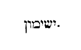
(CAP. XXI.) Ex eo loco apparuit puteus, super quo locutus est Dominus ad Moysen: Congrega populum, et dabo ei aquam. Hic est, inquit, puteus, quem dixit [Col. 0715D] Dominus ad Moysen: Congrega populum, et dabo eis aquam bibere. Ita hoc commemoratum est, quasi alicubi superius hoc ad Moysen dixisse Dominus legatur. Sed quia nusquam reperiatur, hic intelligendum est, et illic bibisse populum qui de siccitate conquerebatur. Quid est enim quod magnopere praecepit Deus Moysi populum congregare, ut det eis aquam bibere de puteo? Quasi vero non etiam sponte populus bibendi gratia conveniret ad puteum. Quid ergo tanti ore prophetae praecipitur, ut proprio studio et labore congreget populum ad hauriendam putei aquam? Unde vilitas litterae ad pretiositatem nos spiritalis remittit intelligentiae. Et ideo conveniens puto, etiam de aliis Scripturae locis puteorum congregare [Col. 0716A] mysteria, ut ex comparatione plurimorum, si quid praesens sermo obscuritatis continet eluceat. Ait ergo Spiritus Dei per Salomonem in Proverbiis: Bibe aquam de tuis vasis, et de puteorum tuorum fonte: et non superfundantur tibi aquae extra tuum fontem (Prov. V) , quamvis in aliis exemplaribus legerimus, et effundantur tibi aquae extra tuum fontem. Aquae tuae sint tibi soli, et nemo alienus participet ex eis. Habet ergo, ut his signatur, unusquisque nostrum in semetipso puteum; imo et aliquid amplius dicimus: unusquisque nostrum in semetipso non puteum unum, sed puteos multos, et non unum vas, sed vasa multa. Non enim dixit: Bibe aquas de tuo vase, sed de tuis vasis; et non dixit, de putei tui fonte, sed de puteorum tuorum fonte. Legimus [Col. 0716B] habuisse et patriarchas puteos. Habuit Abraham, habuit Isaac puteos, habuit autem et Jacob. Et ab istis puteis sumpto initio, percurre omnem Scripturam puteos requirens, et perveni usque ad Evangelium, et invenies ibi puteum supra quem Salvator sedebat requiescens post itineris laborem; tunc cum veniente muliere Samaritana, et volente haurire aquam de puteo, quae esset in Scripturis putei vel puteorum virtus exponitur, et comparatio fit aquarum, ubi et divina mysterii panduntur arcana (Joan. IV) . Dicitur enim: Si quis bibat ex his aquis, quas continebat puteus ille terrenus, sitiet rursus. Qui autem ex illis biberit, quas dat Jesus, fiet in eo fons aquae salientis in vitam aeternam. Igitur secundum ea, quae in Proverbiis scripta proposuimus, ubi putei simul [Col. 0716C] cum fonte nominantur, accipiendum est verbum Dei. Puteus quidem, si profundi aliquid mysteriis tegit: fons autem, si ad populos abundat et effluit. Sed non otio [ Al., otiose] requirendum quomodo possumus pluralem numerum de puteis exponere, et singularem de fonte: quia in Proverbiis dicit Sapientia: Bibe aquas de puteorum tuorum fonte (Prov. V) . Videamus ergo quorum puteorum unum dixerit fontem. Ego puto quod scientia ingeniti Patris, unus possit intelligi puteus: sed et unigeniti Filii ejus agnitio, alius puteus debeat intelligi. Alius enim a Patre Filius, et non idem Filius qui et Pater, sicut et ipse in Evangelio dicit. Alius est quidem et testimonium dicit Pater. Et rursus, tertium puto videri posse puteum, cognitionem Spiritus sancti. Alius est enim, [Col. 0716D] et ipse a Patre et Filio, sicut de ipso nihilominus in Evangeliis dicitur: Mittet vobis Pater alium paracletum Spiritum veritatis (Joan. XIV) . Est ergo haec trium distinctio personarum, in Patre, et Filio, et Spiritu sancto, quae ad pluralem puteorum numerum revocatur. Sed horum puteorum unus fons, una substantia est, et natura Trinitatis. Et hoc modo non otiosa invenietur Scripturae sanctae distinctio quae dicit de puteorum fonte. Tunc cecinit Israel carmen istud: Ascendat puteus, concinebant, puteus quem foderunt principes et paraverunt duces multitudinis in datore legis et in baculis ejus. Sunt ergo putei multi, quos diximus esse intra animam. Sunt et alii plurimi, qui in singulis quibusque Scripturarum sermonibus [Col. 0717A] intelliguntur et sensibus. Est tamen eminentior caeteris iste puteus et eximius, de quo et in praesenti loco Scriptura dicit, quia foderunt eum non quicunque communes homines, sed principes, et adhuc horum sublimiores, quos reges appellavit. Propter quod et canitur Deo apud hunc eumdem puteum. Ad istum ergo puteum, ut Moyses, id est, lex nos congreget, non frustra videtur dictum. Potest enim fieri ut aliquis ad istum puteum venire videatur: sed nisi per Moysen congregetur, non est acceptus Deo. Marcion venisse sibi videtur ad istum puteum, et Basilides et Valentinus; sed quia non venerunt per Moysen, non receperunt legem et prophetas, non possunt laudare Dominum Deum de fontibus Israel. Non ergo veniunt, qui hujusmodi sunt, [Col. 0717B] ad puteum quem foderunt principes et excuderunt reges. Sed vultis ostendam vobis de Scripturis ad quos isti putei veniunt? Est ergo vallis quaedam falsa, in qua valle sunt putei bituminis. Omnes ergo haereses et omne peccatum in valle est, et in valle falsa. Peccatum enim et iniquitas non ascendit sursum, sed semper ad ima et inferna descendit. Est ergo in valle positus et salsus atque amarus, omnis haereticus sensus, et omnis actus peccati. Quid enim dulce, quid suave potest habere peccatum. Sed amplius aliquid habet. Si enim veneris ad haereticam sententiam, si veneris ad amaritudinem peccati, venisti ad puteos bituminis. Bitumen, esca et nutrimentum ignis. Si ergo et tum gustaveris aquam de istis puteis, si sumpseris haereticum sensum, si peccati [Col. 0717C] amaritudinem coeperis, fomenta in te ignis et gehennae incendia praeparabit. Et propterea ad eos qui nolunt de illo puteo aquam bibere, quem principes fodiunt et reges, sed ex istis, qui in valle peccati sunt, et ignis materias alunt, dicitur: Incedite in lumine ignis vestri, et flamma quam vobis accendistis (Isa. L) . Quid ergo canitur apud hunc puteum? Initiate ei, inquit, puteum. Foderunt illum principes, exciderunt eum reges. Possunt quidem principes et reges idem videri. Si vero distingui necesse est, principes prophetas intelligamus, ipsi enim sensum et prophetiam de Christo defossam et demersam, in profundo litterae collocarunt. Istos ergo reges, qui tam profunda possunt, et tam abscondita putei perscrutari, merito apostolos dixerimus, ex quibus aliquis [Col. 0717D] dicebat: Nobis autem revelavit Deus per Spiritum sanctum. Spiritus enim omnia scrutatur, etiam alta Dei (I Cor. II) . Quia ergo per spiritum possunt perscrutari etiam ipsi alta Dei, et alta ac profunda putei penetrare mysteria, idcirco reges esse dicuntur, qui puteum istum etiam in petra exciderunt, ac dura et difficilia scientiae secreta penetraverunt. Quod autem reges dici possint etiam apostoli, puto ex eo facile probari posse, quod de omnibus credentibus dicitur: Vos autem genus regale, sacerdotium magnum, gens sancta (I Petr. II) . Si ergo illos dicunt reges, qui per verbum ipsorum crediderunt, quanto magis ipsi reges habendi sunt, qui faciunt reges? Apostoli enim praecipue reges sunt gentium, qui gentes [Col. 0718A] ad obedientiam fidei congregarunt, et Christi scientiam omnibus patefecerunt, in quo sunt thesauri sapientiae et scientiae absconditi. Et omnis Scriptura legis et prophetarum, evangelica quoque atque apostolica scripta simul omnia unus est puteus; quem non possunt fodere neque excidere, nisi inveniantur reges et principes. Vere enim reges et vere principes habendi sunt, qui possunt auferre terram de puteo hoc, et amovere super faciem litterae, et de interiore petra, ubi Christus est, spiritales sensus velut aquam vivam proferre. Hoc ergo decet eos solos facere, qui vel reges sunt vel principes. Reges et ex eo dicto, quod peccati regnum de corpore suo expulerint, et justitiae regnum paraverint in membris suis.
[Col. 0718B] De solitudine, in Manthana: de Mathana, Nahaliel. De Nahaliel in Gamoth, quae vallis est in regione Moab in vertice Phascha: quod respicit contra desertum. Posthaec et a puteo, inquit, profecti sunt in Mathana; et Mathana in Nahaliel; et de Nahaliel in Bamoth; et a Bamoth, quae est in campo Moab, in nemus a vertice montis caesi, qui respicit ad faciem deserti. Nomina haec quae videntur locorum esse vocabula, et significantias suas in lingua propria designant, rerum magis mysticarum consequentiam quam vocabulorum appellationem videntur ostendere. Profecti enim, inquit, a puteo, veniunt in Mathana. Interpretatur autem Mathana munera ipsorum. Vides ergo, quia si quis de puteo hoc biberit quem foderunt reges et principes, statim proficit [Col. 0718C] ad hoc, ut habeat munera quae offerat Deo. Quid autem est, quod homo offerat Deo? Hoc ipsum quod in lege scriptum est: Munera mea data mea. Et his ergo quae dedit Deus, offerunt nihilominus homines Deo. Quid dedit Deus homini? Agnitionem sui. Quid homo offert Deo? Fidem suam et effectum, hoc quod expetit ab homine Deus. A Mathana autem venimus in Nahaliel, quod interpretatur ex Deo. Quid est ex Deo? Postea quam obtulerimus nos, quae ex nobis sunt, venimus ad hoc ut consequamur ea quae ex Deo sunt. Cum enim fidem nostram et affectum obtulerimus ei, tunc et ipse largitur nobis diversa dona Spiritus sancti de quibus dicit Apostolus: Omnia autem ex Deo sunt (I Cor. III) . Et a Nahaliel venimus in Bamoth, quod interpretatur [Col. 0718D] adventus mortis. Cujus mortis hic intelligimus adventum, nisi illius, qui Christo commoritur, ut et convivamus ei, qua debemus mortificare membra nostra, quae sunt super terram? Et iterum: Consepulti sumus enim illi per baptismum in mortem (Coloss. II) . Si quis ergo salutaris hujus vitae ordinem tenet, per haec quae memoravimus ita agere debet, et venire post multa ad hunc locum, quem diximus significare mortis adventum. Et ex Bamoth, inquit, in nemus, quod est in campo Moab, a vertice montis caesi, qui respicit ad desertum. Si hoc itinero incedamus, quo non tam locorum vocabulis, quam animae profectibus constare ratio explanationis asseruit, post omnia ista venimus ad nemus, sive ut in [Col. 0719A] aliis exemplaribus habetur, in Janam, quod interpretatur ascensus , sive vertex montis. Per haec ergo, vel ad illud famosissimum divini paradisi nemus, ad amoenas delicias habitationis antiquorum, vel certe ad verticem perfectionis et beatitudinis summitatem, ita ut possis etiam ipse dicere, quia resuscitavit nos cum ipso, et sedere fecit in coelestibus in Christo. Vides quousque pervenitur a puteo. Vides quibus mansionibus, imo quibus profectibus iter animae paratur ad coelum. Quae si diligenter inspicias, ipse apud temetipsum quotidianos profectus tuos discutiens, quibus in locis et quam proximus a regno coelorum habeatis, advertes, ut ille, de quo dixit Dominus, quia non longe es a regno Dei (Matth. XII) .
(IBID.) Misit autem Israel nuntios ad Seon regem Amorrhaeorum dicens: Obsecro ut mihi transire liceat per terram tuam. Non declinabimus in agros et vineas, non bibemus aquas de puteis tuis. Via regia gradiemur, donec transeamus terminos tuos. Qui concedere noluit ut transiret Israel per fines suos. Quin potius exercitu congregato, egressus est obviam in desertum, et venit in Jasa, pugnavitque contra eum: a quo percussus est in ore gladii. Historia quidem manifesta est, sed deprecemur Dominum, ut aliquid dignum possimus in interioribus sensibus pervidere. Seon duplicem habet interpretationem, sive arbor [Col. 0719C] infructuosa, sive elatus. Mittit igitur Israel legatos ad Seon: mittit ad arborem infructuosam, mittit ad elatum et superbum. Hic autem Seon rex est Amorrhaeorum, qui et ipsi interpretantur in amaritudinem adducentes vel loquentes. Mittit ergo ad Seon regem Amorrhaeorum Moyses verbis pacificis, dicens: Transibimus per terram tuam. Si secundum spiritalem intelligentiam dixerimus Seon regem figuram tenere diaboli, quia ipse est elatus et infructuosus, puto quod non habeas mirari quod eum dixerim regem, cum audis ipsum etiam Dominum et Salvatorem nostrum, in Evangelio de eo dicentem: Ecce nunc venit princeps hujus mundi, et in me non invenit quidquam (Joan. XIV) . Et iterum: Ecce nunc princeps hujus mundi mittetur foras (Psal. LXXI) . Si ergo totius [Col. 0719D] mundi princeps esse in Evangeliis dicitur, non debet absurdum videri, si Seon regi Amorrhaeorum, vel etiam aliis quibuslibet gentium regibus, comparatur. Princeps autem dicitur mundi, non quia creaverit mundum, sed quia multi sunt in hoc mundo peccatores. Peccati autem, quia ipse princeps est, ideo etiam mundi princeps appellatus est. In his videlicet qui nondum relinquentes mundum, convertuntur ad Patrem. Secundum hoc enim etiam illud dicitur: Quia omnis homo in maligno positus est. Quid enim prodest nobis dicere, quia princeps noster Christus est, si rebus et operibus arguamur quia diabolus principatum tenet in nobis; aut non palam est, sub quo principe agat impudicus, injustus? Nunquid [Col. 0720A] non potest hujusmodi homo dicere, quia sub Christo positus haec ago, etiam si sub Christi nomine censeri videatur? In quo Christus principatum gerit, nulla ibi immunditia, nulla iniquitas admittitur. Nec habere aliquem locum potest injusta cupiditas. Secundum hunc itaque modum recte et Christus virtutum princeps, et diabolus malitiae, et totius iniquitatis dicetur. Mittit itaque legatos Israel ad regem Amorrhaeorum, regem in amaritudinem provocantem, regem infructuosum, regem superbum. Quomodo superbus, quomodo elatus docebitur diabolus? Ipse est, qui dixit: Virtute mea faciam, et sapientia intellectus mei auferam fines gentium, et fortitudinem eorum depraedabor. Et commovebo civitates, quae inhabitantur, et universum orbem terrae capiam manu mea [Col. 0720B] quasi nidum (Isa. X) . Et iterum dicit elatus hic et superbus: Ascendam in coelum, supra sidera coeli ponam thronum meum, sedebo in monte excelso, supra montes altos, qui sunt ad aquilonem; ascendam supra nubes: ero similis Altissimo (Isa. XIV) . Adhuc requiris, si ipse sit elatus et superbus? Imo potius et ipse superbus et elatus; et ille quasi unigenitus ejus, de quo scriptum est: Quia extolletur super omne quod dicitur Deus, aut quod colitur (I Thess. II) : ita ut in templo Dei sedeat, ostendens se tanquam sit Deus. Omnis ergo qui elatus est et superbus, vel filius elati hujus, vel discipulus et imitator. Et propterea dicit Apostolus de quodam, ne forte elatus incidat in judicium diaboli (I Timot. III) . Ostendens per hoc quia omnis elatus simili, ut diabolus judicio condemnabitur. [Col. 0720C] Nos ergo sumus qui transire volumus per hunc mundum, ut pervenire possimus ad terram sanctam quae repromissa est sanctis; et mittimus verbis pacificis ad Seon, promittentes non nos habitaturos in terra ejus, nec moraturos cum eo, sed transituros tantummodo, et incessuros via regali, nec declinaturos usquam, neque in agrum, neque in vineam: sed nec de lacu bibituros aquas. Videamus ergo quando vos ista promisimus, quando haec verba diabolo denuntiavimus. Recordetur unusquisque fidelium, cum primum venit ad aquas baptismi, cum signacula fidei prima suscepit, et ad fontem salutaris accessit, quibus ibi tunc usus sit verbis; et quod renuntiaverit diabolo, non se usurum pompis ejus, neque operibus ejus, neque ullis omnino servitiis [Col. 0720D] ejus ac voluntatibus pariturum. Et hoc est quod in his legis sermonibus adumbratur, quia non declinet Israel neque in agrum ejus, neque in vineam ejus, sed neque aquam de lacu ejus pollicetur se esse potaturum. Non enim ultra disciplinae diabolicae, non astrologiae, non magiae, non ullius omnino doctrinae, quae contra Dei pietatem aliquid doceat, poculum sumet. Fidelis enim habet suos fontes, et bibit de fontibus salutaribus. Non bibet aquam de lacu Seon, nec relinquens fontem aquae vivae, congregat sibi lacus confractos, sed via regali incessurum se profitetur. Quae est via regalis? Illa sine dubio, quae dicit: Ego sum via, veritas, et vita (Joan. XIV) . Et merito regalis. Ipse est enim, de quo Propheta ait; [Col. 0721A] Deus judicium tuum regi da (Psal. VII) . Via regali ergo incedendum est, nec declinandum usquam, neque in agrum ejus, neque in vineam ejus, id est, neque ad opera, neque ad sensus diabolicos declinare ultra mens fidelium debet. Quomodo volumus ergo fines Amorrhaeorum cum pace transire? Amorrhaei, infidelium qui sunt in hoc mundo, pars accipi potest. Sed isti interpretantur, ut supra diximus loquentes, vel amaritudinem adducentes. Et quomodo quidem in amaritudinem adducant Deum infideles et increduli, expositione non indiget. Quod autem ait loquentes, ad illam partem trahi potest, quia infideles quippe et sub principe diabolo agentes, loqui norunt tantummodo, sed loquuntur inania. Verbi causa, ut poetae eorum, ut astrologi, ut nonnulli [Col. 0721B] etiam philosophorum: qui inania loquuntur et vana. Fidelium autem regnum quod a Deo est, non in sermone est, sed in virtute. Volumus ergo nos pacifice transire per mundum, sed hoc ipsum magis incitat principem mundi, quod dicimus nos nolle permanere cum ipso nec morari, nec aliquid ejus velle contingere. Inde magis exacerbatur, inde extollitur et irascitur, et commovet nobis persecutiones, pericula suscitat, cruciatus intentat. Et ideo dicit: Congregavit iniquus Seon populum suum, et exiit confligere adversum Israel. Quis est omnis populus Seon, quem concitat contra Israel? Sed quid facit Israel? Venit, inquit, in Jasa, quod interpretatur mandati adimpletio. Si ergo veniamus et nos ad locum istum, id est, ad expletionem mandatorum, etiam si cum omni [Col. 0721C] exercitu venerit adversum nos Seon iste elatus, et superbus diabolus, et confligat adversum nos, si omnes suos contra nos daemones concitet, superamus eum, si Dei mandata complemus. Complere enim mandata, hoc est diabolum et omnem ejus exercitum superare. Et tunc complebitur in nobis Apostoli oratio, qui ait: Deus autem conteret Satanan subter pedes vestros velociter (Rom. XVI) . Et illud quod Dominus ait: Ecce do vobis potestatem calcandi super serpentes et scorpiones, et super omnem virtutem inimici, et nihil vobis nocebit (Luc. X) . Nihil enim nocere nobis poterunt ista omnia, si veniamus in Jasa: id est, si mandata et praecepta Domini nostri Jesu Christi servemus.
Et possessa est terra ejus ab Arnon usque Jaboc et filios Ammon, quia forti praesidio tenebantur termini [Col. 0721D] Ammonitarum. Tulit ergo Israel omnes civitates ejus, et habitavit in urbibus Amorrhaei, in Hesebon scilicet et viculis ejus, et reliqua. Et percussit eum Israel nece gladii, et dominati sunt terrae ejus ab Arnon usque Jaboc, usque ad filios Ammon, quoniam Jazer termini filiorum Ammon sunt. Et accepit omnis Israel civitates istas, et habitavit Israel in omnibus civitatibus Amorrhaeorum in Hesebon. Hic certe Israel possedit civitates Amorrhaeorum, quas bello superavit, quia non eas anathemavit. Nam si anathemasset, possidere illi non liceret, nec inde ad usus suos aliquid praedae usurpare. Notandum est sane, quemadmodum justa bella gerebantur. Innoxius enim transitus negabatur, qui jure humanae societatis aequissimo [Col. 0722A] patere debeat. Sed jam ut Deus sua promissa compleret, adjuvit Israelitas, quibus Amorrhaeorum terra dari oportebat. Nam Edom cum similiter eis transitum denegaret, non pugnaverunt cum ipsa gente Israelitae, id est, filii Jacob cum filiis Esau, duorum germanorum atque geminorum duorum, quia terram illam Israelitis non promiserat, sed declinaverunt ab eis. Et dominati sunt, inquit, filii Israel in omni terra ejus. Omnis quidem regio haec terrena, terra est Seon; sed Christus in Ecclesia ejus dominatur in omni terra Seon. Et dominati sunt ab Arnon usque Jaboc. Arnon et Jaboc civitates erant regionis Seon. Sed initium erat regni ejus Arnon, et finis Jaboc. Et ideo dicitur quia dominati sunt ab Arnon usque Jaboc. Interpretatur [Col. 0722B] autem meledictiones eorum. Initium ergo regni Seon, hujus elati et infructuosi maledictiones sunt; fines vero est Jaboc, quod interpretatur luctamen. Necesse est enim ut omnis qui vult exire de regno diaboli et fines ejus evadere, luctamen inveniat, et certamina ei a ministris ejus et satellitibus suscitentur. Sed si luctatus fuerit et vicerit, jam non erit Jacob civitas Seon, sed erit civitas Israel (Gen. XXIII) . Hoc est nimirum quod legimus et de patriarcha Jacob, qui cum venisset ad locum quemdam, luctamen ei praeparatum est, et ibi tota nocte luctatus, cum obtinuisset et invaluisset ad Deum, vocitatum est nomen ejus Israel.
Et accepit, inquit, Israel omnes civitates istas, et habitavit Israel in omnibus civitatibus Amorrhaeorum. [Col. 0722C] Hic Israel, qui in Christo Israel est, qui non in carne Israel, nec in manifesto Judaeus est, ipse habitat in omnibus civitatibus Amorrhaeorum, cum in omni orbe terrarum Christi Ecclesiae propagantur. Sed et unusquisque nostrum prius civitas fuit regionis Seon, regis elati. Regnabat enim in nobis stultitia, superbia, impietas, et omnia quae sunt ex parte diaboli. Sed ubi expugnatur et devictus est fortis, et vasa ejus direpta sunt, effecti sumus civitates Israel, et haereditas sanctorum. Si tamen penitus excisa est in nobis potestas illa, quae prius dominabatur in nobis, et excisa est arbor infructuosa, et dejectus est rex elatus, et sumus sub eo rege, qui dicit: Discite a me, quia mitis sum et humilis corde (Matth. XI) . Et post haec sigillatim jam civitates superbi et infructuosi [Col. 0722D] regis enumerat, et dicit: In Hesebon et in omnibus finitimis ejus. Quid est hoc quod praecipuam urbem de regno Seon nominavit Hesebon? Hesebon interpretatur cogitationes. Merito ergo pars maxima regni diabolici, et potestas ejus plurima, in cogitationibus regnat. Sic enim dixit et Dominus: Quia de corde procedunt cogitationes malae, homicidia, adulteria, furta, falsa testimonia, blasphemiae: et ista sunt, quae inquinant hominem (Matth. V) . Et ideo necessario incenditur ista civitas et igni exuritur. Quo igni? illo profecto quo dicit Salvator: Ignem veni mittere in terram, et quam volo, ut accendatur (Luc. XII) . Post pauca autem refertur de civitate.
Idcirco dicitur in proverbio: Venite in Hesebon, ut [Col. 0723A] aedificetur et construatur civitas Seon. Ignis egressus est de Hesebon, flamma de oppido Seon, et devoravit Ar Moabitarum, et habitatores excelsorum Arnon. Propter hoc, inquit, dicent aenigmatistae: Venite in Hesebon, ut aedificetur et construatur civitas Seon, quoniam ignis processit de Hesebon, et flamma de civitate Seon, et devoravit Ar Moabitarum. Seon, ut diximus, erat rex, cujus erat civitas Hesebon. Sic ergo intelligendus est ordo verborum, quia dicunt isti aenigmatistae: Venite, ut aedificetur et construatur Hesebon, quae fuit civitas Seon. Sed requiramus nunc qui sunt isti aenigmatistae. Aenigma dicitur sermo figuratus. Aenigmatistae ergo dicuntur, qui figuraliter loquuntur. Et quis est alius, qui in figuris locutus sit, nisi lex et prophetae? Audi enim, quomodo [Col. 0723B] David dicit: Aperiam in parabola os meum, loquar propositiones ab initio (Psal. XLVIII) . Sed et Isaias, quia aenigmata sint quae scripsit, hoc modo declarat. Erunt, inquit, verba libri, sicut verba libri signati: quem si dederint in manus hominis nescientis litteras et dixerint ei, Lege, dicet, Non novi litteras. Si autem dederint scienti litteras, dicet, Non possum legere, signatus est enim (Isa. XXIX) . Signatus autem dicitur liber, eo quod figuris perplexus est, et aenigmatibus involutus. Dicunt ergo isti aenigmatistae: Venite in Hesebon, ut aedificetur. Cecidit prima illa Hesebon, imo subversa est et incensa, reaedificanda est alia. Sed quomodo hoc fiat, assumpto ostendamus exemplo. Sed videamus gentilem in dedecore vitae positum, ac religionis errore, non dubites [Col. 0723C] de eo dicere, quod sit haec Hesebon civitas in regno regis Seon. Regnat enim in cogitationibus ejus, rex infructuosus et elatus. Ad hunc, si accedat Israel, hoc est, Ecclesiae filius, et adhibeat jacula verbi Dei, et distringat contra eum gladium spiritus, et destruat in eo omnes munitiones gentilium dogmatum, et elationes argumentorum ejus, igne veritatis exurat, dicito de hoc, quia subversa est Hesebon civitas Seon. Sed non continuo desertus et destitutus relinquitur iste in quo subversa sunt gentilium dogmata. Non enim disciplina est filiis Israel destructas relinquere, quas destruxerunt civitates, sed cum subruerint et everterint in homine malas cogitationes et impios sensus, reaedificant rursus in corde ejus, quam destruxerant bonas [Col. 0723D] cogitationes, pios sensus, doctrinam veritatis inserent, religionis ritum tradent, ordinem vivendi docebunt, honestatem morum, observantiam statim monstrabunt, et tunc vere dicent isti aenigmatistae ad semetipsos invicem: Venite et aedificemus Hesebon, quae fuit civitas Seon. Et ipsi enim, hoc est Ecclesiae filii, quia figuras legis et aenigmata spiritaliter intelligunt, aenigmatistae appellantur. Hoc est, quod et Jeremias figurato nihilominus sermone designat, ubi ad eum dicitur a Domino: Ecce dedi verba mea in ore tuo, ecce constitui te hodie super gentes et regna, eradicare et subvertere, et reaedificare et replantare (Jerem. I) . Quid eradicat et quid subvertit? Civitatem Hesebon, quae erat regis Seon. [Col. 0724A] Quid eradicat in ea? Cogitationes impias et impuras. Quid reaedificat in ea, et quid replantat? Cogitationes pias et castas. Ut efficiatur Hesebon civitas Seon, non Amorrhaeorum, sed filiorum Israel. Moab, qui interpretatur de patre sive aqua paterna, de incesto et ebrietate conceptus, et quodammodo absente, imo nesciente patre videtur esse generatus, saecularem sapientiam significat, quae auctorem sui sensum habet. Et quia ex Dei conditione generatur, videtur quidem de patre nasci, quod interpretatur Moab. Sed quia adulter est, et adversarius populi Dei de incesto ac spelunca ac nocte generatur. Unde secundum Isaiae prophetiam, in nocte periit, in errore, scilicet sempiterno. At quoque urbs Moabitarum, quae interpretatur antidicus, id est, adversarius, [Col. 0724B] hoc ostendit, quod haec sapientia, quae adversaria Dei est, ecclesiastico sermone contra se pugnante, veritatis igne consumitur, a quo et habitatores excelsorum Arnon devorantur. Arnon enim, ut supra dictum est, maledictio sive illuminatio eorum interpretatur, quia omnes qui confidunt in fastu eloquentiae et sapientiae humanae, quae filiis tenebrarum lucida esse videtur, corruunt, praecipitantur et consumuntur.
Vae tibi, Moab; peristi, popule Chamos. Dedit filios ejus in fugam, et filias in captivitatem regi Amorrhaeorum Seon. Jugum ipsorum disperiit ab Hesebon usque Dibon. Lassi pervenerunt in Nofe usque Medaba. Chamos interpretatur congregans, vel quasi attrectatio. Dibon abundanter intelligens tentationem sive [Col. 0724C] fluxus eorum. Nofe sufflans vel spirans. Et Medaba, de saltu. Vae quidem illis est, qui in spiritali Moab confidentes, congregant sibi thesauros sapientiae, quae inimica est Deo, et se erigunt per superbiam contra potentiam Dei. Quorum tamen non praevalebit audacia, sed in figuram vertetur, et tradetur in captivitatem regi spiritalium Amorrhaeorum. Jugum ipsorum enim disperiet ab Hesebon usque Dibon, id est, a radice cogitationis usque ad profunditatem intellectus defluet scientia illorum. Lassique sufflantes vanitatem verborum, ac spirantes foetidum odorem sensus putridi, in saltum infertilem pervenient, ubi non sunt arbores fructuosae, sed in quo habitent bestiae: contra quas Propheta Dominum deprecatur dicens: Ne tradas, Domine, bestiis animas confitentium [Col. 0724D] tibi (Psal. LXXIII) .
Habitavit autem Israel in terra Amorrhaei; misitque Moyses, qui explorarent Jazer, cujus ceperunt viculos, et possederunt habitatores. Misit, inquit, Moyses nuntios, qui explorarent Jazer, cujus coeperunt viculos, et possederunt habitatores. Qui sunt illi nuntii, quos Moyses, id est lex misit, nisi praedicatores sancti? ut videlicet explorarent Jazer, quae interpretatur fortitudo eorum, hoc est ad fortissima quaeque dogmata haereticorum et dialectica arte constructa, in quibus robur sui mundus videtur habere erroris. Haec enim cum praedicatores sancti investigantes, vana ac fragilia esse conspexerunt, coeperunt viculos, hoc est conventus populorum, et possederunt [Col. 0725A] habitatores eorum, cum eos, quos ab errore liberaverant, ad catholicam fidem convertebant; et sermone recto ac bonis exemplis, in viam veritatis ad implendum praecepta Domini dirigebant, quatenus de eorum correctione ac profectu, mansionem coelestis patriae acquirerent.
(IBID.) Verteruntque se et ascenderunt per viam Basan, et occurrit eis Og rex Basan, cum omni populo suo pugnaturus in Edrai. Dixitque Dominus ad Moysen: Ne timeas eum, quia in manu tua tradidi eum, et omnem populum ac terram ejus. Faciesque illi sicut fecisti Seon regi Amorrhaeorum, habitatori Hesebon. Percusserunt igitur et hunc cum filiis suis, universumque [Col. 0725B] populum ejus, usque ad internecionem, et possederunt terram ejus. Postea enim quam obtinuerunt filii Israel civitates Amorrhaeorum, ascenderunt etiam viam, quae ducit in Basan, ubi erat Og rex Basan. Sed ad hunc neque legatos mittere dignantur, neque petere ab eo, ut per terram ejus transeant; sed continuo confligunt cum eo et superant, tam ipsum quam populum ejus. Videamus ergo, quae est Basan. Basan interpretatur turpitudo. Merito ergo nec legati mittuntur ad istam gentem, nec transitus per terram ejus poscitur. Nullus enim nobis transitus debet esse, nullus accessus ad turpitudinem, sed ab initio statim expugnanda, et omnimodis cavenda est. Og autem, qui rex esse dicitur Basan, interclusio interpretatur. Potest hic figuram [Col. 0725C] habere omnium carnalium et materialium rerum, quarum amore et desiderio detenta anima excluditur, et separatur a Deo. Adversus hos ergo ita praecipitur bellum gerendum, ut non relinquatur ex eo vivens. Nullum enim a filiis Israel oportet relinqui in regno turpitudinis et dedecoris viventem, sed decet Israeliticam virtutem excidere et resecare turpia, et pia quaeque in animo reaedificare, atque honesta ac religiosa plantare. De regno Seon non est scriptum. Et nullus vivus relinquatur, nec de regno Moab. Forte enim ex illis opus habebat aliquod, et nonnullis eorum pro vitae hujus agonibus et exercitiis indigemus. Alioquin debuissemus ex hoc mundo exisse. De Basan tamen, hoc est de turpitudine, nullo penitus indigemus, nihil ex eo relinquamus. [Col. 0725D] Excidenda omnia, omnia subvertenda sunt opera turpitudinis. In nullo enim potest honestum esse, quod turpe est.
(CAP. XXII.) Profectique castra metati sunt in campestribus Moab, ubi trans Jordanem Jericho sita est. Videns autem Balaac filius Sephor omnia quae fecerat Israel Amorrhaeo, et quod pertimuissent eum Moabitae et impetum ejus ferre non possent, dixit ad majores natu Moab: Ita delebit hic populus omnes, qui in nostris finibus commorantur, quomodo solet bos herbas usque ad radices carpere. Ipse enim erat eo [Col. 0726A] tempore rex in Moab. Misit ergo nuntios ad Balaam filium Beorariolam, qui habitabat super flumen terrae filiorum Ammon, ut vocarent eum et dicerent: Ecce egressus est populus de Aegypto, qui operuit superficiem terrae, sedens contra me. Veni igitur et maledie populo huic, qui fortior me est, si quomodo possem percutere eum, et eiicere de terra mea, etc. Primo ergo omnium fatendum est, in quibusdam locis plus posse valere verba quam corpora, quia quod exercitus multarum gentium nequit efficere, nec scuto et armis potest obtineri, hoc verbis efficitur. Et non dico sanctis verbis vel Dei verbis, sed verbis quibusdam, quae inter homines habentur. Verbi gratia, erant in Aegypto incantatores et magi. Quis potest hominum fortitudine corporis virgam [Col. 0726B] mutare in serpentem, quod ab illis factum refertur? Aut quis potest viribus corporis aquam in sanguinem vertere? Fecerunt tamen hoc Aegyptiorum incantatores et magi. Fecerat enim haec prius Moyses. Sed quia sciebat rex Aegypti, quod possent haec arte quadam fieri verborum, quae habentur inter homines, putavit et Moysen non haec Dei virtute, sed magica arte fecisse, et quod humana arte fecerit, id Dei factum virtute simulare. Convocat continuo Aegyptiorum incantatores et magos, inter eum qui virtute Dei operabatur, et eos qui daemones invocabant, facit esse certamen. Deus autem noster dolere facit, et iterum restituit; contraria autem virtus male quidem facere aliquid potest, sed restituere in integrum non potest. Haec autem [Col. 0726C] omnia praemisimus, ut opera Balaam vel verba ejus, possimus advertere. Sunt et magorum nonnullae differentiae. Alii enim plus, alii minus valent. Hic enim Balaam famosissimus erat in arte magica, et in carminibus noxiis praepotens. Non enim habebat ad maledicendum. Daemones enim ad maledicendum invitantur, non ad benedicendum. Scriptum est ergo: Et dixit Moab ad seniores Madian. Nunc ablinget synagoga haec omnes, qui in circuitu nostro sunt, sicut ablinget vitulus herbam campi. Ob hoc sine dubio, quia vitulus ore abrumpit herbam de campo, lingua tanquam falce, quaecunque invenerit secat. Ita et populus hic quasi vitulus, ore et labiis pugnat, et arma habet in verbis ac precibus. Haec igitur sciens mittit ad Balaam, ut et ipse deferat [Col. 0726D] verba contraria, et precibus preces. Nec mireris, si est in magica arte tale aliquid. Esse enim hanc artem designat etiam Scriptura, sed uti ea prohibet. Nam et daemones Scriptura designat, sed coli eos et exhortari vetat. Recte ergo magica arte uti prohibet, qui magorum ministri sunt angeli re fugi et spiritus maligni, et daemonia immunda. Nullus enim sanctorum spirituum obtemperat mago. Non poterat invocare magus Michaelem, non poterat invocare Raphael neque Gabriel. Multo magis magus non potest invocare omnipotentem Deum, nec filium ejus Jesum Christum Dominum nostrum, nec Spiritum sanctum ejus. Nos soli accipimus potestatem invocandi Deum Patrem, nos soli habemus potestatem [Col. 0727A] invocandi unigenitum ejus Jesum Christum. Ergo daemones arte quadam et compositione verborum, in amicitias, ut ita dicam, cesserant Balaam, quorum amicitiis fretus, magnus apud homines videbatur. Ob hoc ergo mittit ad eum rex et ait: Veni nunc et maledic mihi populum hunc, quia fortior hic est, quam nos: si forte possimus percutere aliquos ex eis, et ejicere eos a terra. Videtur mihi rex hic non ex integro confidere in Balaam divino ingenti; credo de virtutibus quae in populo Dei factae sunt auditione perterritus, et ideo dicit, si forte vel eo usque praevaleant maledictiones Balaam, ut aliquos ex ipsis possit percutere, caeteros vero fugare perterritos, et propria terra depellere. Addidit praeterea, Quia scio, inquit, quod quos maledixeris, maledicti [Col. 0727B] erunt: et quos benedixeris, benedicti erunt. Ego non credo quia sciret rex quod quibuscunque benedixisset Balaam, benedicti essent. Sed videtur mihi adulandi gratia haec dicere, ut artem ejus efferens et extollens, promptiorem sibi eum reddat ad facinus. Ars enim magica nescit benedicere, quia nec daemones sciunt benefacere. Noscit benedicere Isaac et Jacob, et omnes sancti: impiorum nullus scit benedicere. Sed tandem veniunt legati ad Balaam.
Venerunt enim, inquit, seniores Moab et seniores Madan, habentes divinationis pretium in manibus, sive secundum aliam editionem, divinacula in manibus eorum. In illis divinationis artibus, quas curiositas humana composuit, sunt quaedam quae Scriptura [Col. 0727C] quidem divinacula nominavit. Gentilis autem consuetudo, vel tripodas vel cortinas, vel aliis hujusmodi vocabulis appellat. Quae quasi ad hoc ipsum consecrata, moveri ab eis et contrectari solent. Scriptura divina sane Ephot quoddam vernaculo sermone nominat in prophetis, quod indumentum tradunt esse prophetantium. Igitur Balaam divinaculis acceptis, cum solerent daemones ad se venire, fugatos quidem daemones videt, sed adesse Deum; et ideo dicit interrogare se Deum, quia consuetos sibi parere nusquam daemones videt. Venit ergo ipse ad Balaam, non quod dignus esset ad quem veniret Deus, sed ut fugarentur illi qui ei ad maledicendum et male faciendum adesse consueverant. Jam hinc enim providebat Deus populo suo. Adest [Col. 0727D] ergo, et dicit Deus ad eum: Quid homines isti venerunt at te? Et dixit Balaam ad Deum: Balac filius Sephor rex Moab, misit eos ad me, dicens: Ecce populus exivit de Aegypto et cooperuit faciem terrae, et hic sedit juxta me. Veni ergo nunc et maledic eum, si forte poterimus percutere eum et ejicere. Et dixit Dominus ad Balaam: Non eas cum eis, neque maledicas populum. Est enim benedictus. Altior hic exoritur quaestio; et nescio utrum conveniat rem tam profundi mysterii denudare, et proferre ad turbas, et eas turbas, quae ad auditorium verbi Dei, non nisi paucis diebus adveniunt, continuo discedunt, nec in meditatione verbi diutius immorantur. Tamen pro his qui studiosi sunt et sitiunt [Col. 0728A] audire, possuntque capere spiritalem sensum pauca aliqua dicimus ex multis. Potest ergo objici tale aliquid ac dici. Invocet daemones Balaam, maledicat populo: invocari daemones faciant quod possunt: nunquid non potest Deus defendere a daemonibus populum, vimque eorum in malefaciendo destruere? Quid ergo opus erat, ut ipse veniret ad Balaam, et consuetos daemones prohiberet accedere, ne vel tentarent aut conarentur laedere velle populum Dei? Ad haec ergo, licet non omnia quae possunt occurrere proferenda sunt, tamen dicimus ex parte, quia non vult Deus daemonum genus ante tempus damnare. Sciunt enim et ipsi daemones, quia tempus eorum praesens hoc saeculum continet. Propterea denique et Dominum rogabant, ut non torqueret eos ante [Col. 0728B] tempus, neque in abyssum mitteret. Et ob hoc neque diabolum removit a principatu saeculi hujus, quia adhuc opus est opera ejus ad exercitia certaminum et victoriam beatorum. Si enim daemonibus auferatur libertas arbitrii, nullus ultra impugnabit athletas Christi. Nullo autem oppugnante, nec certamen aliquod erit; et sublato certamine, nullum erit praemium, nulla victoria. Idcirco igitur tali via utitur Deus, ut et populus adhuc rudis, et qui nuper abstrahi coeperat a cultu daemonum, daemonibus non tradatur; et invocanti mago responsa deferantur, et genus daemonum non nudetur arbitrii potestate. Et ideo praevenit Deus adire Balaam, atque invocare daemones ad maledicendum prohibet, si tamen a cupiditate cessasset. Sed quia persistit in [Col. 0728C] desiderio pecuniae indulgens, Deus arbitrii libertate rursus ire permittit; verbum tamen suum injicit in os ejus, prohibens maledictionem fieri per daemones, ut benedictionibus locum daret, et pro maledictis proferre faciat Balaam benedictiones ac prophetias, quae possint aedificare non solum Israel, sed et reliquas gentes. Si enim prophetiae ejus a Moyse sacris inserta sunt voluminibus, quanto magis descriptae sunt ab his qui habitabant tunc Mesopotamiam, apud quos magnificus habebatur Balaam, quosque artis ejus constat fuisse discipulos? Ex illa denique fertur magorum genus et institutio in partibus Orientis vigere: qui descripta habentes apud se omnia quae prophetaverat Balaam, etiam habuerunt hoc scriptum, quod orietur stella ex Jacob [Col. 0728D] et exsurget homo de Israel (Num. XXIV) . Haec scripta habebant magi apud semetipsos; et ideo quando natus est Jesus, agnoverunt stellam, et intellexerunt adimpleri prophetiam magis ipsi quam populus Israel, qui sanctorum prophetarum audire verba contempsit.
Reversique principes dixerunt ad Balac: Noluit Balaam venire nobiscum. Rursum ille multo plures et nobiliores, quam ante miserat, misit. Qui cum venissent ad Balaam dixerunt: Sic dicit Balac filius Sephor: Ne cuncteris venire ad me: paratus sum honorare te, et quidquid volueris dare. Veni et maledic populo isti. Respondit Balaam: Si dederit mihi Balac plenam domum suam argenti et auri, non potero [Col. 0729A] immutare verbum Domini Dei mei, ut vel plus vel minus loquar, etc. Balaam hic ut superius diximus, divinus erat, daemonum scilicet ministerio et arte magica, non nunquam futura praenoscens. Rogatur a Balac rege ad maledicendum populum Israel. Legati veniunt, stant attonitae gentes, et anxie exspectantes, quid respondeat Balaam, de quo persuasum habebant, quod dignus divinis eloquiis haberetur. Vide quomodo nunc sapientia Dei vas istud ad contumeliam praeparatum, proficere facit ad utilitatem non solum gentis unius, sed pene totius mundi. Et huic cui solebant videri daemones, videtur Deus prohibens mali operis iter. Obstupescit Balaam, et miratur prohibentis auctoritatem. Non enim solebat daemonibus displicere, sed interim remittit legatos, [Col. 0729B] dicens non se posse facere, nisi verbum, quod Deus dederit in ore ejus. Redeunt rursus legati, iterum requirit, iterum molestus est, iterum cupit audire. Non enim facile cupidus, facile mercedibus caret. Quid ergo audit secundo a Deo? Si vocare te, inquit, venerunt homines isti, surge et vade cum eis. In quo voluntati quidem cupiditatis ejus cedit Deus, ut compleatur illud quod scriptum est: Dimisi eos in desideria cordis eorum: ibunt in voluptatibus suis (Psal. LXXX) . Sed tamen consilium divinae dispensationis expletur. Dicitur enim ad eum: Verbum quod dedero in ore tuo, hoc loqueris. Si dignus fuisset Balaam, verbum suum Deus non in ore ejus, sed in corde posuisset. Hunc autem quoniam in corde ejus desiderium mercedis erat, et cupiditas pecuniae, [Col. 0729C] verbum Dei non in corde, sed in ore ejus ponitur. Agebatur enim mira et magna dispensatio, ut quoniam prophetarum verbum, qui intra aulam continebantur Israeliticam, ad gentes pervenire non poterant, per Balaam, cui fides ab universis gentibus habebatur, innotescerent etiam nationibus secreta de Christo mysteria, et thesaurum magnum proferret ad gentes, non tam corde et sensu quam ore et sermone portatum. Sed ne per singula immoremur (non enim tempus est cuncta dissolvi), ascensa asina sua, Balaam ibat per viam. Occurrit ei angelus. Ille sine dubio qui aderat filiis Israel, aperit os asinae, ut arguatur per eam Balaam et muti pecudis vocibus confutetur is qui divinus videbatur et sapiens. Verum post haec conveniens jam videtur aliqua etiam [Col. 0729D] de allegoria contingere. Balaam hic, qui interpretatur populus vanus, videtur mihi habere personam Scribarum et Pharisaeorum Judaici populi. Balac vero, qui exclusio vel devoratio interpretatur, et ipse personam habere intelligendus est unius alicujus spiritalium mundi hujus contrariae potestatis, quo excludere et devorare cupiat Israel, non eum qui secundum carnem est, sed eum qui secundum spiritum. Volens ergo potestas illa contraria delere, et penitus exstingui spiritalem Israel, non aliis utitur ministris, nisi pontificibus et Scribis ac Pharisaeis. Ipsos invitat, ipsis mercedes promittit et praemia. Illi vero sicut iste Balaam facit, simulant se cuncta ad Deum referre, et zelo Dei agere. Dicunt [Col. 0730A] enim, scrutare Scripturas, et vide quia propheta de Galilaea non surgit (Joan. V) . Et iterum dicunt: Nos legem habemus, et secundum legem debet mori, quia Filium Dei se fecit (Joan. XIX) . Per quae singula videntur quidem Scribae et Pharisaei zelum Dei habere, sed simulatum. Asina vero, cui sedebat Balaam, quomodo Scriptura dicit: Homines et jumenta salvos facies, Domine (Psal. XXXV) , et pars credentium potest intelligi: quae sive pro stultitia, sive pro innocentia, animalibus comparatur. Sic enim et Apostolus dicit: Videte autem vocationem vestram, fratres, quia non multi inter vos sapientes, non multi nobiles: sed quae stulta sunt mundi, elegit Deus, ut confundat sapientes (I Cor. I) . Isti ergo tales, sicut evangelica, quae in parabolis agebant, gesta designant, [Col. 0730B] ab istis pessimis Dominis Scribis ac Pharisaeis subjecti quodammodo tenebantur et vincti, sed a Domino solvuntur, non quidem per ipsum Dominum, sed per discipulos. Dicit enim ipse ad discipulos: Ite in vicum qui est contra vos, et invenietis asinam alligatam, et pullum ejus. Solvite et adducite (Matth. XXII) . Sicut ergo in Evangelio non ipse Dominus, sed discipuli solvunt asinam, ita et hic, non a Deo ipso, sed ab angelo ipso aperitur os asinae. Et sicut in Evangeliis, qui non vident arguunt videntes, ita et hic qui muti erant arguunt loquentes. Et hoc est quod dicebat Dominus: Pater, gratias ago tibi, quoniam abscondisti haec a sapientibus, et revelasti ea parvulis (Matth. X) . Scribae igitur et Pharisaei erant qui sedebant super asinam hanc, et tenebant [Col. 0730C] eam vinctam. Ipsis ergo irascitur et angelus; et nisi quodam futurorum prospectu, illos quidem peremisset, asinam autem servasset; quae vidit et reverita est eum, qui venit ad vineam, et stat inter vineas; compressit tamen pedes sedentis super se in maceriam, et ideo non potest ambulare ille ejus sessor antiquus, nec venire ad eum, qui dicit: Venite ad me, omnes qui laboratis et onerati estis, etc. (Matth. XI) . Asina tamen venit adducta a discipulis; et cui tunc sedebat Balaam mercedis cupidus, nunc ei sedet Deus. Nec mireris, si eum quem diximus scribarum et doctorum populi formam tenere, videas prophetantem de Christo. Hoc enim fecisse legimus et Caipham, qui dixit: Expedit vobis ut unus homo pereat pro omni populo (Joan. XI) . Sed hoc, inquit, [Col. 0730D] quia erat pontifex anni illius, prophetavit dicens. Prophetavit ergo et Balaam de Christo. Et ideo nemo extollatur etiam si prophetet, etiam si praescientiam mereatur, sed redeat ad Apostoli dictum, quo ad ista respiciens ait: Sive prophetiae abolebuntur, sive linguae cessabunt, sive scientia destruetur. Et quid est ergo quod manet? Fides, inquit, et spes, et charitas. Major autem horum est charitas. Et sola, inquit, charitas est quae nunquam cadit; ideo super prophetiam, super scientiam, super fidem, super ipsum etiam martyrium, ut Paulus docet, charitas habenda est, et charitas excolenda est; et quia Deus charitas est (I Cor. XIII) ; et Christus filius charitatis est, qui nobis perfectionem charitatis donare [Col. 0731A] dignetur. Nec illud silendum arbitror, quod asina haec arioli Balaam, typum gentilitatis tenet, quam quondam ipse Balaam, id est, seductori idololatriae, quasi brutum animal et nulla ratione retinens, quo voluit errore, substravit. Sed ista angelum Dei quem homo non potuit, et vidit et detulit et locuta est, ut agnosceremus posterioribus sub adventu magni angeli Dei, gentilem illam plebem mutam duritiae stoliditatis, quem natura solutis Deo linguis locuturam, ita ut quae erat subjecta perfidiae, in vocem fidei et confessionis erumperet. Licet et caro nostra animal sit, plerumque enim caro per molestiam tacta, flagello suo menti Deum indicat, quem mens ipsa carni praesidens non videbat: ita ut anxietate spiritus proficere in hoc mundo cupientis, [Col. 0731B] velut iter tendentis impediat, donec ei invisibilem, qui sibi obviat innotescat. Unde et bene per Petrum dicitur: Correptionem habuit suae vesaniae, subjugale, mutum: quod in hominis voce loquens, prohibuit prophetae insipientiam (II Petr. II) . Insanus quippe homo a subjugali muto corripitur, quando elata mens, humilitatis bonum quod tenere debeat, ab afflicta carne memoratur. Sed hujus correptionis donum idcirco Balaam non obtinuit, quia ad maledicendum pergens, vocem non mentem mutavit.
(CAP. XXIII.) Dixit itaque Balaam ad Balac: Sta juxta holocaustum tuum, donec vadam, si forte occurrat [Col. 0731C] mihi Dominus; et quodcunque imperaverit, loquar tibi. Cumque abesset velociter, occurrit illi Deus locutusque ad eum Balaam: Septem, inquit, aras erexi, et imposui vitulum et arietem desuper. Dominus autem posuit verbum in ore ejus et ait: Revertere ad Balac, et haec loqueris. Reversus invenit stantem Balac juxta holocaustum suum, et omnes principes Moabitarum. Assumptaque parabola sua dixit: De Aran adduxit me Balac rex Moabitarum, de montibus Orientis. De Aran sive ut alia editio habet, ex Mesopotamia, inquit, vocavit me Balac rex Moab, et ex montibus Orientis. Mesopotamiam dicit terram, quae inter flumina Babyloniae jacet, de quibus scribitur: Super flumina Babylonis, illic sedimus et flevimus, cum recordaremur tui, Sion (Psal. CXXXVI) . Si quis ergo [Col. 0731D] inter ista flumina fuerit Babylonis, si quis rheumatibus libidinis mundatur, et luxuriae aestibus circumvolvitur, iste non dicitur stare, sed sedere. Et ideo, qui ibi comprehensi sunt, dicebant: Super flumina Babylonis, ibi sedimus cum recordaremur tui, Sion. Sed nec flere quidem ante possunt, nisi recordati fuerint Sion. Bonorum namque recordatio, malorum causas lamentabiles facit. Nisi enim quis recordetur Sion, nisi legem Dei et Scripturarum montes aspiciat, mala sua flere non incipit. Ex istis igitur fluminibus vocatur Balaam, et ab istis Orientis montibus invitatur. Montes isti, sancti non sunt montes, et non sunt illi de quibus scriptum est: Fundamenta ejus in montibus sanctis (Psal. LXXXVI) . Et iterum: [Col. 0732A] Jerusalem, quae aedificatur ut civitas, cujus participatio ejus in idipsum. Montes in circuitu ejus, et Dominus in circuitu populi sui (Psal. CXXI) . Non sunt ergo tales Mesopotamiae montes, sed illi de quibus dicitur: Montes tenebrosi. Et iterum de quibus dicitur: Ecce ego ad te, mons corrupte. Isti sunt montes, in quibus est omnis altitudo extollens se adversus scientiam Dei. Ab istis ergo montibus accersitur et Balaam hic. Quales autem sunt isti montes, talem habent et Orientem. Habet enim et ortum luminis sui ille, qui convertit se sicut angelum lucis. Habet illam lucem de qua scriptum est: Lux impiorum exstinguetur, et sicut ista lux impiorum, et illa quae convertit se sicut in angelum lucis, contraria est illi luci, quae dicebat: Ego sum lux mundi (Joan. VIII) , [Col. 0732B] ita et iste Oriens, contrarius est illi Orienti, de quo scriptum est in Jeremia: Ecce vir, Oriens nomen ejus. Ex illius ergo non istius Orientis finibus veniebat Balaam, illuminatus sine dubio ab illo Lucifero de quo dicitur: Quomodo cecidit de coelo Lucifer, qui mane oriebatur (Isa. XIX) . Sed videamus quid dicit ille Balac rex Moab, qui accersivit eum e medio fluminum de montibus Orientis.
Veni, inquit, et maledic Jacob, propera et detestare Israel. Quomodo maledicam cui non maledixit Deus? Qua ratione detester quem Dominus non detestatur? De summis silicibus videbo eum, et de collibus considerabo illum. Populus habitavit solus, et inter gentes non reputabitur. Quis dinumerare possit pulverem Jacob, et nosse numerum stirpis Israel? Ampliore vi [Col. 0732C] et majore intentione maledictionem in Israel quam in Jacob Balaam videtur exponere. Donec enim quis tantum Jacob est, hoc est, in actionibus solum et operibus positus inferioribus, maledictionibus impugnatur. Ubi tamen profecerit, et interiorem hominem ad videndum Deum, revelato mentis oculo exacuere et provocare jam coeperit, tunc non solum maledictis ab inimico, sed detestationibus super maledictis, hoc est, vehementioribus maledictorum jaculis impugnabitur. Sed tunc quidem os Balaam maledictione et amaritudine plenum erat, et sub lingua ejus labor et dolor, sed et in insidiis cum divitibus (Psal. IX) . Exspectabat enim mercedes a divite rege, et in occultis interficere innocentes. Sed Deus, qui facit semper mirabilia solus, ex inimicis operatur [Col. 0732D] salutem. Injecit verbum in os ejus, quamvis nondum cor ejus capere posset verbum Dei. Adhuc enim erat in corde ejus merces cupiditatis, propter quod etiam post verbum Domini, quod habuit in ore ejus, dicebat ad Balac: Veni et do tibi consilium. Et docebat eum quomodo mitteret scandalum in conspectu filiorum Israel, ut manducarent idolis immolata, et ut fornicarentur. Propter quod et cecidit populus, et plaga magna facta est in eo, donec Phinees perempto Israelita qui fornicabatur cum Madianitide, sedavit furorem Domini.
Et post haec, inquit, produxit Phinees exercitum contra Madianitas; et interfecerunt duodecim millia viros: et Balaam filium Beor in gladio. Sed haec ante [Col. 0733A] tempus per excessum quemdam introduximus, ut ostenderemus, quia Balaam non in corde, sed in ore tantummodo habuit verbum Dei. Interim, quae profert, quae loquitur, ex verbo Dei loquitur, et ideo quae dicit, verbum Dei est. Ait ergo: Quid maledicam, quem non maledixit Dominus? Et caetera. Quid ergo dicimus? Jacob quidem non maledicit Dominus, nec Israel, sed alicui putas alii maledicit. Legimus scriptum, quia dicit Dominus ad serpentem: Maledictus tu in omnibus bestiis terrae (Gen. III) . Et iterum ad Adam: Maledicta terra in operibus tuis (Ibid.) . Sed et ad Cain: Et nunc maledictus tu a terra, quae aperuit os suum, ut reciperet sanguinem fratris tui de manibus tuis (Gen. IX) . Et, Maledictus omnis, qui facit sculptile aut fusile (Deuter. XXVII) . Verum ne putes [Col. 0733B] haec in veteribus tantummodo litteris contineri, etiam in Evangeliis similia invenies scripta. Scriptum est enim quia dicturus sit Dominus his qui a sinistris erunt: Discedite a me, maledicti, in ignem aeternum (Matth. XXV) . Sed et cum dicit: Vae vobis, Scribae et Pharisaei hypocritae (Matth. XXIII) . Et, Vae vobis divitibus (Luc. VI) , et singula hujusmodi. Quid aliud, nisi maledictis eos videtur urgere? Sed quid diximus, quod mandatum per Apostolum datur ubi dicit: Benedicite et nolite maledicere? Quod ergo ab hominibus vult fieri, hoc ipse facit, qui exemplum vitae omnibus ponit? Non ita est. Deus enim quibus maledicit, meritum designat ejus cui maledicitur, et sententiam promit, utpote quem non fallat nec peccati qualitas, neque peccantis effectus. Homo autem quia [Col. 0733C] haec non potest ferre vel facere, (neque enim propositum mentemque alterius videre alius aut ignoscere potest), idcirco etiam si judicantis vel sententiam promentis intuitu proferat maledictum, non potest esse justa maledicendi causa, ubi ignoratur peccantis effectus: maxime cum humanum vitium tunc sciat maledicta proferre cum forte conviciis aut injuriis provocatur. Quod vitium resecare Apostolus volens, ne maledictis maledicta, et conviciis convicia provocemus, mandatum necessarium ponit, ut benedicamus et non maledicamus (Rom. XII) : quo conviciandi vitium resecetur, non quo judicandi veritas, quae homines latet, et pronuntiandi auctoritas perimatur. Et tamen quid causae sit, quod non maledicat Dominus Jacob neque Israel, ab ipso nihilominus [Col. 0733D] Balaam, imo a verbo quod posuit Deus in ore ejus, diligentius audiamus.
De summis silicibus videbo eum, et de collibus considerabo illum. Sive, juxta aliam editionem, Quoniam de verticibus, inquit, montium intuebor eum, et a collibus intelligam eum. Quia, inquit, in excelsis montibus et altis collibus positus est Israel, hoc est in edita vita et ardua, ad quam contuendam et intelligendam non facile quis idoneus fiat, nisi ascendat ad eminentem et excelsam scientiam, idcirco, inquit, non ei maledicit Deus. Est enim vita ejus alta et praecelsa, non humilis et dejecta. Quod tamen mihi non videtur, quia de illo Israel, qui secundum carnem Israel est, dixerit; sed de illo cujus super [Col. 0734A] terram ambulantis conversatio in coelis est. Aut si etiam ad illum populum dicta haec referenda sunt, cum distinctione dicit, ut intuear et intelligam, ut futurum tempus significet illud sine dubio, quando omnis Israel ad fidem Christi veniens salvabitur, ab his sine dubio, qui excelsam et coelestem vitam consurgentes cum Christo, exercuerunt super terras. Sed et quod dixit: De Jacob quidem videbo, de Israel autem intelligam, etiam hoc aptissima distinctione suscipiendum est, ut aliud ad actus visibiles, aliud ad invisibilem fidem atque intelligibilem scientiam conferatur. Aut si ad futurum saeculum convertimus, id est, ad resurrectionis tempus, Jacob videbo, potest de corporibus dictum intelligi, Israel autem intelligam, spiritus et animas significare resurgentium.
[Col. 0734B] Ecce, inquit, populus solus habitabit, et in nationibus non reputabitur. Potest quippe et secundum litteram stare. Solus enim populus Jacob non est permistus caeteris hominibus, nec inter caeteras gentes reputatus est. Habuit enim certa quaeque privilegia in observationibus suis et in legitimis, ex quibus sequestratus a caeteris gentibus haberetur, sicut etiam tribus Levi non est permixta inter caeteras tribus, nec annumeratur inter eas. Haec quidem in illo populo fuerunt secundum formam futurorum bonorum. Verus autem Jacob et spiritalis Israel, vere solus habitavit in gentibus. Si enim accessimus ad Sion montem, et civitatem Dei viventis Jerusalem coelestem, et venimus ad spiritalem Judaeam, quae est portio Dei, et in terris positi ibi habemus conversationem, [Col. 0734C] vere non reputamur inter caeteras gentes, nec reliquarum nationum fines cum nostris finibus admiscentur, etiamsi restituatur Sodoma in antiquum, et Aegyptus in statum suum redeat; et si quid tale in prophetis scriptum, verumtamen illi Jacob et spiritali Israel, cum ad Ecclesiam primitivorum ascenderint, nullus exaequabitur, nullus admiscebitur, etiam si istae gentes secundum dicta prophetica fuerint restitutae. Nisi enim insertus fuerit ramus oleastri, et socius fuerit factus radicis pinguedinis olivae, quomodo potest sociari et conjungi ad Jacob vel Israel, cum sine ista radice nec Jacob quisquam possit appellari, nec Israel. Neque ergo ex Jacob vel Israel si quis peccat, Jacob dici vel Israel potest; neque ex gentibus si quis ingressus [Col. 0734D] fuerit Ecclesiam Domini, inter gentes ultra reputabitur.
Quis investigabit semen Jacob et quis dinumerabit plebes Israel? Simile est illi hoc quod scriptum est, quia eduxit Deus Abraham foras et ait illi: Respice ad coelum, et dinumera stellas si potes dinumerare. E ait: Ita erit semen tuum. Et credidit Abraham Deo, et reputatum est illi ad justitiam (Gen. XIII) . Sed Abraham quidem et alii quilibet hominum, aut etiam angelorum, fortassis autem et superiorum virtutum, non poterat numerare stellas, nec semen Abraham, de quo scriptum est: Sic erit semen tuum. Deus autem de quo scriptum est: Qui numerat multitudinem stellarum, et omnibus eis nomina vocat (Psal. CXLVI) . [Col. 0735A] Et qui dixit: Ego stellis omnibus mandavi, potest investigare semen Jacob, et dinumerare plebes Israel. Ipse enim solus scit, quis vere Jacob, et quis vere sit Israel. Non enim ad eum qui in manifesto Judaeus est respicit, neque ad eam quae in manifesto in carne est circumcisio; sed videt illum qui in occulto Judaeus est, et qui circumcisus est corde non et carne.
Ipse ergo solus est qui dinumerare potest et investigare; et ipse, secundum ineffabilem et incomprehensibilem sapientiam suam, ad illam coelestem formam quam ipse solus scire potest, posuit etiam istos Numeros quos habemus in manibus. In quibus praecepit ut secundum cognationes suas, secundum domos familiarum suarum, ex nomine omnis masculus [Col. 0735B] per capita sua numeretur, a viginti annis et supra, omnis qui egreditur in virtute Israel. Et colligitur eorum quidam sacratus numerus, de quo jam superius pro ut donavit Dominus, diximus. Sed iste numerus tunc demum sacratus est et placidus Deo, cum ipso praecipiente numeratur. Si autem contra praeceptum Domini voluit aliquis numerare, licet ille de Deo sit, licet magnus propheta, contra legem agit, et arguitur per prophetam, et patitur illa quae in II libro Reg. legimus scripta: Solus ergo ipse, qui numerat multitudinem stellarum, et qui in mensura omnia, et numero et pondere produxit (Sap. II) , investigat semen Jacob, et dinumerat plebes Israel. Posthaec quasi de semetipso quaedam prophetare videtur cum dicit: Moriatur anima mea morte justorum; [Col. 0735C] et fiant novissima mea horum similia. Sed hoc quantum ad personam spectat Balaam, illius et illius Israel, nec factum est, nec fieri potuit. Non enim inter ipsos, sed ab ipsis mortuus est. Magis ergo, ut diximus, ipsorum personae conveniet, qui licet in praesenti loco vel saeculo vanus populus habebatur, qui sine gratia Spiritus sancti in fine tamen saeculi cum plenitudo gentium introierit, et omnis ista prophetia quae de Israel dicitur, in spiritali Israel fuerit completa, tunc anima ejus moriatur cum animabus justorum. Suscipiet enim in se fidem Christi, ita ut ipsi dicant: Quicunque in Christo baptizati sumus, consepulti enim sumus cum illo per baptismum in morte (Rom. VI) . Et iterum: Sicut commorimur, ita et conregnabimus (II Tim. II) . Et sic complebitur intelligibili [Col. 0735D] Balaam, ut moriatur anima ejus inter animas justorum. Quod autem dicit: Et fiant novissima mea norum similia, sive ut alia editio habet, ut fiat semen meum sicut semen justorum, posset quidem et de illo Balaam intelligi, sed hoc quod magi illi, qui de Oriente venientes, primi adoraverunt Jesum, de semine ejus esse videantur, sive per successionem generis, sive per disciplinae traditionem. Evidenter enim constat illos agnovisse stellam, quam praedixerat Balaam orituram in Israel, et sic venisse et adorasse regem, qui natus est in Israel. Conveniet tamen et populi personae, secundum ea quae praediximus, ut non tam ipsi quam semen eorum efficiatur sicut semen justorum, eorum scilicet qui credentes ex gentibus [Col. 0736A] in Christo, justificati sunt. Unde manifestum est, quia sicut Apostolus dicit: Neque circumcisio aliquid est neque praeputium, sed fides quae per charitatem operatur (Gal. VI) . Et ideo nemo aut incircumcisionis antiquitate se jactet, aut in praeputii novitate glorietur, sed, ut Apostolus dicit, Probet unusquisque opus suum, et tunc in semetipso tantam gloriam habebit (Ibid.) . Sic denique et Propheta dicit: Ecce homo et opus ejus. Et merces in conspectu Domini esse dicitur, ut reddat unicuique secundum opera sua. Sed et secundum leges tropologiae, haec sententia utiliter intelligi valet. Sunt namque nonnulli intra sanctam Ecclesiam, qui prolixas ad Dominum preces habent, sed vitam deprecantium non habent. Nam promissa coelestia petitionibus sequuntur, [Col. 0736B] operibus fugiunt. Hi nonnunquam lacrymas in oratione percipiunt: sed cum post orationis tempora eorum mentem superbia pulsaverit, illico in fastu elationis intumescunt. Cum instigat avaritia, mox per incendia avidae cogitationis exaestuant. Cum luxuria tentaverit, in illicitis protinus desideriis anhelant. Cum ira suaserit, mox mansuetudinem mentis flamma insaniae cremat. Ut ergo diximus, et fletus in prece percipiunt, et tamen expletis precibus cum vitiorum suggestione pulsantur, nequaquam pro aeterni regni desiderio se flevisse meminerunt. Quod aperte Balaam de se innotuit, qui justorum tabernacula conspiciens, ait: Moriatur anima mea morte justorum, et fiant novissima mea horum similia. Sed cum compunctionis tempus abscessit, contra eorum [Col. 0736C] vitam quibus se similem fieri etiam moriendo poposcerat, consilium praebuit. Et cum occasionem de avaritia reperit, illico oblitus quid sibi de innocentia optavit. Unde sollicite considerandum est, quia utique plerumque mali inutiliter compunguntur ad justitiam, sicut plerumque boni innoxie tentantur ad culpam. Fit quippe mira, exigentibus meritis, dispositionis internae mensura, ut et illi dum bonum aliquid agunt, quod tamen non perficiunt, superbe inter ipsa quae etiam plenissime perpetrant mala confidant; et isti dum de malo tentantur, cui nequaquam consentiunt, quod per infirmitatem titubabant, eo gressus cordis ad justitiam per humilitatem verius figunt. Balaam quippe justorum tabernacula respiciens, ait: Moriatur anima mea morte justorum. [Col. 0736D] Paulus vero ait: Video aliam in membris meis, repugnantem legi mentis meae, et captivum me ducentem in lege peccati, quae est in membris meis (Rom. VII) . Qui profecto idcirco tentatur, ut in bono robustius, ex ipsa infirmitatis suae cogitatione solidetur. Quid ergo est quod ille compungitur, et tamen justitiae non appropinquat; iste tentatur, et tamen eum culpa non inquinat, nisi hoc quod aperte ostenditur, quia nec malos bona imperfecta adjuvant, nec bonos mala inconsummata condemnant? Virtutis namque pondus oratio non habet, quam nequaquam perseverantia continui amoris tenet. Quo contra bene de Anna flente perhibetur: Vultusque ejus non sunt amplius in diversa mutati (I Reg. I) . Quia videlicet mens ejus [Col. 0737A] nequaquam post praeceps inepta laetitia lasciviendo perdidit, quod orationis suae tempore per gemitum rigore exquisivit.
Dixitque Balac ad Balaam: Quid est hoc quod agis? Ut malediceres inimicis meis vocavi te, et tu e contrario benedicis eis? Cui ille respondit: Num aliud possum loqui nisi quod jusserit Dominus? Dixitque Balac: Veni mecum in alterum locum, unde partem Israelis videas, et totum videre non possis: inde maledicito ei. Cumque duxisset eum in locum sublimem super verticem montis Phasga, aedificavit Balaam septem aras; et impositis supra septem vitulis atque arietibus, dixit ad Balac: Sta hic juxta holocaustum tuum, etc. Igitur Balac rex veluti attonitus et percussus ex his quae contra spem dici videbat ad Balaam [Col. 0737B] (benedictiones enim pro maledictionibus audiebat), ultra non ferens interrupit verba ejus et ait: Quid fecisti mihi? Ad maledicendum inimicos meos vocavi te, et ecce benedixisti benedictionem. Non tulit rex amarus benedictionem dulcedinis, sed maledicta quaerit, maledicta deposcit. Etenim ex cogitatione illius ad quem dixit Dominus: Maledictus tu ab omnibus bestiis terrae (Gen. III) . Sed ad haec respondit ei ille, cui verbum Deus in ore posuerat. Nonne quaecunque, inquit, injecerit Deus in os meum, haec observabo loqui? Ad haec Balac putans quia perterritus esset populi Israelitici Balaam multitudine, et idcirco non fuisset ausus proferre maledicta, immutationem sibi loci reddidit profuturam, et ait ad eum: Veni adhuc mecum in locum altum, de quo non [Col. 0737C] videas eum totum: sed partem aliquam ejus videas, omnes autem non videas, et maledic mihi eum inde. Demens, qui Israeliticam gratiam loci objectione crederet posse celari, et qui nesciret quia non potest abscondi civitas super montem posita (Matth. V) .
Et assumpsit eum, inquit, in speculam agri, in vertice montis caesi; et construxit ibi septem aras, et imposuit vitulum et arietem super aram. Et dixit Balaam ad Balac: Siste ad sacrificium: ego vero pergam percontari Deum. Et occurrit Deus ipsi Balaam, et injecit in os ejus verbum et dixit, sine dubio Deus: Convertere ad Balac et haec loqueris. At ille, hoc est, Balac, stabat juxta holocaustomata sua, et omnes principes Moab cum ipso: Et dixit ei Balac: Quid locutus est Dominus? Res quidem profani sacrificii [Col. 0737D] gerebatur, et divinatio arte magica quaerebatur. Volens tamen Deus ibi abundare gratiam, ubi superabundavit peccatum, adesse dignatur nec refugit ab his quae non secundum gentilium gerebantur errorem. Adest autem non sacrificiis, sed in occursum venienti, et ibi dat verbum suum, atque ibi mysteria futura praenuntiavit, ubi maxime fides et admiratio gentilium pendet, ut qui nostris nolunt credere prophetis, credant divinis et vatibus suis.
At ille assumpta parabola sua ait: Sta, Balac, et ausculta; audi, fili Sephor. Non est Deus quasi homo ut mentiatur, nec ut filius hominis ut mutetur. Dixit ergo et non faciet, locutus est et non implebit? Ad benedictionem adductus sum, benedictionem prohibere [Col. 0738A] non valeo. Non est idolum in Jacob, nec videtur simulacrum in Israel. Dominus Deus est cum eo, et clangor victoriae regis in illo. Deus eduxit eum de Aegypto: cujus fortitudo similis est rhinocerontis. Non est augurium in Jacob, nec divinatio in Israel. Temporibus suis dicetur Jacob et Israel, quid operatus sit Deus. Ecce populus ut leaena consurget, et quasi leo orietur. Non accubabit donec devoret praedam, et occisorum sanguinem bibat. Alia editio sic habet: Et assumens, inquit, parabolam suam dixit. Per parabolam ergo dicit Balaam: Surge, Balac, et audi: auribus percipe, fili testis Sephor. Non sicut homo Deus frustratur, neque sicut filius hominis terretur. Ipse cum dixerit, nonne faciet? Loquetur et non permanebit? Ecce ad benedicendum assumptus [Col. 0738B] sum: benedicam et non avertam eum. Non erit labor in Jacob, nec videtur dolor in Israel. Dominus Deus suus cum ipso, praeclara principum cum ipso sunt. Deus, qui eduxit eum de Aegypto, sicut gloria unicornis ei. Non enim erit auguratio in Jacob, neque divinatio in Israel. In tempore dicetur Jacob et Israel, quid perficiet Deus. Ecce populus sicut catulus leonis exsurget, et quasi leo exsultabit. Non dormiet donec comedat praedam, et sanguinem vulneratorum bibet. Haec est continentia secundae prophetiae in verbis Balaam. Videamus ergo primo hoc ipsum quod ait, Exsurge, Balac, et audi. Si enim in superioribus non dixisset, quia staret juxta holocaustum suum, non videretur magnopere requirendum, cur dixerit, Exsurge, Balac. Nunc autem cum hortetur exsurgere [Col. 0738C] eum quem nuper dixerat stare, non est otiose praetereundus sermo propheticus. Quod ergo in superioribus, quia staret ad holocaustum suum, designat eum non recte stare. Stabat enim in idololatria positus, et stabat quasi inimicus Dei: quod magis est non stare, sed cadere. Quasi ergo qui de illo statu cadere docuerat, imo et qui ceciderit, ita nunc intellectu prophetico exsurgere jubet eum, quippe qui per eum quod stare in idololatria visus fuerit, cecidisset. Exsurgat, qui talis est: exsurgat animo, exsurgat fide, et efficiatur testis fidei. Si vero permanet infidelis, ut sit testis condemnationis suae. Sed quid est quod ei annuntiat audiamus. Non sicut homo, inquit, Deus frustratur, neque sicut filius hominis terretur ipse. Non habeas, inquit, hanc opinionem de [Col. 0738D] Deo, ut putes eum esse sicut hominem, qui in his quae loquitur frustrari possit. Homines enim multis occasionibus et vitiis impediuntur ne verum sit quod loquuntur. Aut enim irati loquuntur, et ira cessante frustra locuti sunt, aut metu aut cupiditatis aut jactantiae gratia, aliisque horum similibus. Et utique frustra erit et vanum omne quidquid vitio dominante locuti sunt. Deus autem in quo nulla est passio, nulla fragilitas, omne quod dixerit pro causarum meritis dicit: et ideo nunquam frustrari potest, quia quidquid ratione profertur, carere non potest ratione. Non est ergo Deus sicut homo, qui frustra loquatur, neque sicut filius hominis terretur, vel, ut in aliis exemplaribus adhuc legimus, [Col. 0739A] neque sicut filius hominis terret. In hominibus interdum sententiam mutat et terret. Deus autem qui supra omnia est, a quo terreri potest, ut sententiam mutet? Si vero secundum hoc accipiamus, quod in aliis exemplaribus diximus lectum, hoc est neque filius hominis terret, illud videbitur dici, quod homines quidem pro jactantia interdum terrores faciunt et minas etiam his, quibus nonnunquam nocere non possint. Deus autem non ita terret homines, quasi qui punire non possit, sed et si terret, ratione terret. Terret enim ut corripiat hominem in auditionis tribulatione, et verbo comminationis deterritus, emendet se, qui male agit, ne perveniat ad eum ipsa vindicta male gestorum suorum. Non ergo ita Deus terret ut homo: homo enim, ut diximus, pro jactantia, Deus vero pro emendatione conterret. Post haec [Col. 0739B] ait: Ipse cum dixerit non faciet? Loquetur et non permanebit? Sic legendus est locus, quasi interrogantis affectu dicat. Ipse, hoc est, Deus. Quod dicit nonne et faciet? Et quae locutus fuerit non permanebit ex eis? Cum utique homines non faciant quae dicunt vitio humanae fragilitatis, et his non permaneant quae loquuntur. Mutabilis enim est homo, immutabilis vero Deus. Sed potest aliquis occurrere et dicere: Quomodo ergo non permansit Deus in his quae locutus est de Ninive, ut post triduum subverteretur (Jon. III) , neque in his, quae locutus est de Daniel, ubi tribus diebus promissa fuerat mors, ut vastaret populum, et intra unam diem usque ad horam prandii cessavit? Et videbitur fortassis, quia haec quae per interrogationem dicuntur, non penitus [Col. 0739C] pro definito accipienda sint, sed talis quaedam figura verbi sit, quae medium aliquid videatur ostendere, non tam definite et irrevocabilis sententiae declaret effectum: quo temperantius aliquid dictum videatur in eo quod scriptum est: Ipse cum dixerit nonne faciet? quasi scriptum esset: Ipse cum dixerit, omnimodis faciet. Sed in ipsis verbis propheticis, non tam sermones Dei, quam ipsorum prophetarum accipienda sunt, quae juxta merita singulorum protulerunt, sed Dei miseratione, ne super eos venirent suspensae sunt. Item per Jeremiam Dominus dicit: In finem loquar, hoc est, ex definito loquar, super gentem et super regnum: auferam eos et disperdam. Et si convertatur gens illa a malis suis, poenitendo de omnibus malis, quae cogitavi facere eis. Et in finem [Col. 0739D] loquar super gentem et regnum, ut reaedificem eos et replantem; et si fecerit mala in conspectu meo, ut non audiant vocem meam, poenitebit me de omnibus bonis, quae locutus fueram ut facerem eis (Jerem. XVIII) . Quomodo ergo possumus his quae absolute per Jeremiam dicta sunt praeferre illa quae suspensive per Balaam dicuntur, nisi quia negligentibus et contemptoribus illa confirmanda: haec vero perfectioribus secretius advertenda sunt. Sed post haec Balaam: Ecce, inquit, ad benedicendum assumptus sum: benedicam et non avertam eum. Ad benedicendum Balaam assumptus est Balac, sed a Deo, qui injecit verbum in os ejus quo populum benediceret. Et [Col. 0740A] hanc benedictionem non avertit, nec enim potest etiam si vellet, verbum Dei humana lingua convertere. Post haec ait: Non est idolum in Jacob, nec videtur simulacrum in Israel. Haec ergo secundum historiam quomodo stare possunt, cum ipsi carnales Israelitae, et filii Jacob patriarchae, saepius arguantur per prophetas pro idololatria quam gesserant? Sed melius de futuro populo, hoc est, veris et spiritalibus Israelitis intelligendum est, quod ibi non sit cultura idolorum, sed unius Dei omnipotentis, Patris, et Filii, et Spiritus sancti servitus, religio et cultus perpetuus. Quod autem alia editio habet: Non erit, inquit, labor in Jacob, neque videtur dolor Israel, aperte in istis sermonibus futurae vitae denuntiat statum. Quis enim est, qui hanc vitam sine labore et dolore transcurrat? Nec si Petrus sit aliquis, [Col. 0740B] aut si Paulus sit, quomodo non in labore et dolore est, cum virgis caeditur, semel lapidatur, ter naufragium fecit, in profundo maris die ac nocte (I Cor. XII) , aliaque innumera perpetitur, quae de laboribus ac doloribus suis scribit; sed ibi istud complebitur, ubi dictum est, Aufugiet dolor, et tristitia, et gemitus. Quod tamen non ad omnes, sed ad eos tantum qui meritis Jacob et Israel fuerint refertur: ut fuit et ille Lazarus, qui praesentem quidem vitam in labore et dolore transegit. Ibi autem dicitur ad divitem: Memento, fili, quia tu recepisti bona in vita tua, et Lazarus similiter mala. Nunc autem hic requiescit: tu vero cruciaris (Luc. XVI) . Ille ergo est Israel et Jacob, in quem non venit labor et dolor. [Col. 0740C] Dives enim ille erat quidem, et ipse secundum carnem Israel. Dicitur enim ei, quia fratres tui habent legem et prophetas audiant illos (Ibid.) . Sed quia non erat secundum spiritum Israel, ideo venit super illum labor et dolor. Sequitur: Dominus Deus ejus cum eo est, et clangor victoriae regis in illo. Hoc de praedicatione Evangelii in populo Christiano dicit, ubi aperta voce annuntiatur quomodo rex Christus per crucis tropaeum de diabolo triumphavit, ac regnum sibi acquisivit perpetuum. Unde ipse postquam resurrexit a mortuis, discipulis suis apparuit et ait: Data est mihi omnis potestas in coelo et in terra, etc. (Matth. ult.) . Hinc et Paulus: Christus, inquit, factus est obediens pro nobis Patri usque ad mortem, mortem autem crucis. Propter quod Deus illum [Col. 0740D] exaltavit, et donavit illi nomen, quod est super omne nomen, ut in nomine Jesu omne genu flectatur, coelestium, terrestrium, et infernorum: et omnis lingua confiteatur, quia Dominus Jesus Christus, in gloria est Dei Patris (Philip. II) . Quod autem juxta aliam editionem legitur: Dominus Deus cum ipso, praeclara principum cum ipso sunt, nunquam enim Israel suum deserit Deus. Quorum autem principum praeclara cum ipso Israel sint, videamus. Praeclara principum, potestas est principatus et regnum. Verum quoniam sunt et aliqui principes qui de principatu suo vel pellendi, vel jam forte depulsi sunt, et in locum ac principatum eorum introducendi hi qui vere Israelitae sunt, praeclara illa omnia quae habuerunt [Col. 0741A] in coelis, illi principes qui non servaverunt suum principatum, sed derelinquerunt aeterna domicilia, Israel iste et Jacob, qui colluctatus est et vicit, accipiet, et sic cum ipso erunt praeclara principum. Deus eduxit eum de Aegypto: cujus fortitudo est similis rhinocerontis. Vel juxta aliam editionem, sicut gloria unicornis ejus. Eductus est ille quidem Israel de Aegypto ista terrena: hic autem spiritalis Israel de Aegypto saeculi, et de potestate tenebrarum, et est fortitudo vel gloria ejus tanquam unicornis. Unicornis quidem fertur esse animal eo habitu formatum, quo nominis ipsius designatur indicium: quod animal frequenter in Scripturis divinis positum legimus, sed praecipue apud Job Dei vocibus potentia ejus et virtus exponitur: in quibus ut [Col. 0741B] in quamplurimis Christus intelligitur designari. Et in divinis Scripturis cornu pro regno positum saepe reperimus: sicut et propheta dicit: Quatuor autem cornua, quatuor regna sunt (Dan. VII) . Sub nomine utique unicornis, in Christo hoc videtur ostendi, quia omne quod est unum, ejus cornu est; hoc est, unum regnum ejus. Omnia euim Pater subjecit pedibus ejus, usque quo et novissimus inimicus destruatur mors, et tanquam unicornis, unum omnium regnum teneat Christus: quia sicut scriptum est, regni ejus non erit finis (Isa. IX) . Erit ergo ei, inquit, hoc est, Israeli illi spiritali gloria, sicut est gloria unicornis. Sic enim et ipse in Evangelio Dominus dicit: Pater, da eis, ut sicut et ego et tu unum sumus, ita et isti in nobis unum sint (Joan. XVIII) . Et [Col. 0741C] ideo similis gloria dabitur Israeli, sicut est gloria unicornis. Maxime cum transformabit corpus humilitatis nostrae, conforme corpori gloriae suae, non erit auguratio in Jacob, neque divinatio in Israel. In tempore dicetur ad Jacob et Israel quid perficiat Deus. Igitur quoniam visum est etiam diligentius de singulis quibusque discutere, non absurdum si etiam quid sit auguratio vel divinatio, quam quidem placuit Scripturae commemorare, de his ne quis forte ignoranter in haec incidat, requiramus. Videtur ergo mihi futurorum praescientia quantum ad ipsam rem spectat, medium quiddam esse, id est, neque proprie bonum, neque proprie malum: quandoquidem potest interdum etiam a parte diaboli ad hominum notitiam, futurorum venire praescientia. Sine [Col. 0741D] dubio autem cum tempus et opportunitas poscit, et voluntas Dei fuerit, datur etiam a Deo et prophetia, hominibus praescientia. Et ideo diximus, quia neque proprie bonum dici potest quod aliquando a malo venit, neque proprie malum quod aliquando a Deo descendit. Nam et in libro Regum sacerdotes et divini allophylorum de remittenda arca Dei, ob plagam quae eis propterea evenerat, divinando consilium dederunt, ut adhibitis vaccis plaustro novo, in terram Juda dirigerentur. Est ergo tali quaedam in ministerio praescientia operatio daemonum, quae artibus quibusdam ab his qui se daemonibus mancipaverunt colligitur, nunc per eas quas sortes nominant, nunc per ea quae auguria appellant, nunc [Col. 0742A] etiam ex contemplatione librarum, quae extispicium vocant, aliisque horum similibus praestigiis comprehendi, videtur intelligi. Quae artes in tantum ad decipiendum genus humanum profecerunt, ut etiam justissime Ezechiae filius Manasses hoc errore deceptus, aedificaverit ut Scriptura dicit, altare omni exercitui coeli, in utraque domo Domini (IV Reg. XXI) . Hunc autem arbitror exercitum coeli, quem Paulus, spiritales nequitias in coelestibus positas scribit (Ephes. VI) . Nisi ergo multum in his artibus deceptionis esset et erroris, non puto tanti viri filium, in lege Domini educatum, in illas impietates potuisse corruere, quae in quarto regnorum libro de eo scriptae referantur. Haec enim omnia, religio nostra divina et coelestis, abjurat. In Levitico quidem aperta [Col. 0742B] lege designat dicens: Non divinabitis neque augurabimini. Et post pauca: Non sequamini, inquit, ventriloquos: nec adjungamini ad incantatores, ut contaminemini ab eis. Ego Dominus Deus vester (Lev. XIX) . Non vult Deus auditores nos fieri et discipulos daemonum. Neque vult, ut si quid volumus discere, discamus a daemonibus. Melius est enim ignorare quam a daemonibus discere. Et melius est a prophetis discere, quam a divinis inquirere. Divinatio enim, ut quidam putant, divinitus datur, sed magis ut mihi videtur per antiphrasim, id est, ex contrario, nomen accepit, quasi quae per homines daemone repletos fiat. Sed gentilium ritus divinum credit omne quod qualicunque spiritu profertur. Nos tamen nihil ab his discere Deus jubet, ne efficia [Col. 0742C] mur consortes ipsorum, et incurramus in ea quae Isaias dicit: Et humiliantur in terram verba tua: et sermones tui sub terram demergentur; et erit vox tua sicut loquentis de terra, et ad solum vox tua infirmabitur (Isa. XXIX) . Propter hoc et Deus noster Jesus non dignatur a daemonibus accipere testimonium, sed ait: Obmutesce et exi ab eo (Luc. IV) . Quem apostolus suus Paulus imitatur. Dolens, inquit, convertit se, et ait spiritui pythonis: Praecipio tibi in nomine Jesu Christi, discede ab ea (Act. X) . Propter hoc ergo non erit, inquit, auguratio in Jacob, neque divinatio in Israel. Sed quid his additur? In tempore, inquit, dicetur Jacob et Israeli, quid perficiet Deus. Quid est, in tempore dicetur? Cum oportet et cum expedit, hoc est, in tempore. Si ergo expedit praenoscere [Col. 0742D] nos futura, dicetur a Deo per prophetas Dei per Spiritum sanctum. Si vero non dicuntur, neque denuntiantur, scito quoniam non nobis expedit ventura praenoscere. Quod si idcirco non dicuntur nobis, quia scire nobis ea non expedit qui diversis artibus et daemonum invocantibus gestiunt futura praenoscere, nihil aliud faciunt, nisi ea cupiunt discere, quae sibi scire non expedit. Jacob autem in his dici intelligendus est omnis cui luctamen est adversus principatus et potestates, et adversum mundi hujus rectores; et Israelem intelligi omnem qui per fidei puritatem et munditiam mentis, videt Deum. Sed potest aliquis dicere: Si a solo Deo debemus discere de futuris, et neque divinum, neque augurem, [Col. 0743A] neque aliud quodcunque horum recipere, nec iste ipse quidem Balaam recipiendus a nobis est. Unus est enim ex his quos recipi prohibet divina sententia. Sed adverte diligentius, et memento quod in superioribus legimus, ubi dicitur de eo quia injecit Dominus verbum suum in os ejus. Non ergo haec nunc ad Balaam, sed a verbo Dei, quod in ore ejus positum est, dicimus. Nisi enim verba Domini essent, non ea utique revelasset famulo suo Moysi, qui procul positus, cum ab eo regi Balac dicerentur, certum est quod nisi a Deo sibi revelata Moyses scire non potuit. Post haec, Ecce, inquit, populus sicut leaena vel catulus leonis exsurget, et sicut leo exsultabit. In his mihi videtur confidentiam populi describere credentis in Christo, et libertatem quam [Col. 0743B] habet in fide, et exsultationem quam gerit in spe. Comparatur catulo leonis dum tendit ad perfectionem laetus et velox. Leoni vero confertur, cum jam obtinet quae perfecta sunt. Sicut enim leo et leaena vel catulus leonis nullum animal, nullam bestiam timent, sed sunt eis cuncta subjecta, ita et perfecto Christiano, qui tollit crucem suam, et sequitur Christum: qui potest dicere: Mihi mundus crucifixus est et ego mundo (Gal. VI) , cuncta subjecta sunt, cuncta calcantur. Despicit enim et contemnit omnia quae in hoc mundo sunt, et imitatur eum qui leo de tribu Juda et catulus leonis dicitur. Quia sicut ipse lux est mundi, et discipulis suis dedit ut et ipsi essent lux mundi, ita et cum ipse sit leo et catulus leonis, etiam credentibus in se, nomen leonis et catuli [Col. 0743C] leonis ascribit. Vide autem quia evidenter non de illo qui tunc praeerat populo, sed de hoc qui futurus erat ista dicuntur. Ait enim: Ecce populus sicut catulus leonis exsurget, et sicut leo exsultabit. Exsurrecturum dicit populum, utique qui futurus erat. Nam si de eo diceret quem videbat, dixisset sine dubio: Ecce populus sicut catulus leonis exsurrexit. Sed certum est, quia de illo populo dicat, de quo et in aliis scriptum est: Et annuntiabunt coeli justitiam ejus populo qui nascetur, quem fecit Dominus (Psal. XXI) . Est ergo populus hic catulus leonis cum adhuc, tanquam nuper geniti infantes, rationabile et sine dolo lac concupiunt. Leo autem exsultans, cum vir effectus, quae parvuli erant deposuit. Non dormiet donec comedat praedam, et sanguinem vulneratorum [Col. 0743D] bibat. In his verbis, quis ita erit historicae narrationis contentiosus assertor, imo quis ita brutus invenietur, qui non horrescens sonum litterae, ad allegoriae dulcedinem ipsa necessitate confugiat? Quomodo enim iste populus tam laudabilis, tam magnificus, de quo tanta praeconia sermo dinumerat, in hoc veniet, ut sanguinem vulneratorum bibat, cum tam validis praeceptis, cibus sanguinis interdicatur, adeo ut etiam nos qui ex gentibus vocati sumus, necessario videamur abstinere, sicut ab his quae idolis immolantur, ita et a sanguine? Discant ergo a nobis, quis est iste populus, qui in usu habent sanguinem bibere. Haec erant quae in Evangelio audientes hi qui ex Judaeis Dominum sequebantur, [Col. 0744A] scandalizati sunt et dixerunt: Quis potest manducare carnes, et sanguinem bibere (Joan. VI) ? Sed populus Christianus, populus fidelis audit haec, et amplectitur et sequitur eum qui dicit: Nisi manducaveritis carnem meam, et biberitis sanguinem meum, non habebitis vitam in vobis ipsis. Quia caro mea vere est cibus, et sanguis meus vere est potus (Ibid.) . Et utique qui haec dicebat, vulneratus est pro hominibus; Ipse enim vulneratus est pro peccatis nostris (Isa. LIII) , sicut Isaias dicit. Bibere autem dicimur sanguinem Christi, non solum sacramentorum ritu, sed cum sermones ejus recipimus, in quibus vita consistit, sicut et ipse dicit: Verba, quae ego locutus sum, spiritus et vita sunt (Joan. VI) . Est ergo ipse vulneratus, cujus nos sanguinem bibimus, id est, doctrinae [Col. 0744B] ejus verba suscipimus. Sed et illi nihilominus vulnerati sunt, qui nobis verbum ejus praedicarunt. Et ipsorum enim, apostolorum ejus verba cum legimus, et vitam ex eis consequimur, vulneratorum sanguinem bibimus. Non ergo, inquit, dormiet, donec comedat praedam. Iste enim populus, qui catulo leonis vel leoni comparatur, non quiescet nec dormiet, donec rapiat praedam, id est, donec diripiat regnum coelorum: quia a diebus Joannis regnum coelorum vim patitur, et vim facientes diripiunt illud (Matth. XI) . Ut autem evidentius cognoscas, haec de nostro populo qui in sacramentis Christi confoederatus est scribi, audi quomodo et in aliis Moyses similia pronuntiat dicens: Butyrum boum ac lac ovium, cum adipe agnorum et arietum, filiorum taurorum et hircorum, [Col. 0744C] cum adipe renum frumenti, et sanguinem uvae bibent vinum (Deut. XXXII) . Et hic ergo sanguis qui nominatur uvae illius, uva est, quae nascitur ex illa vite de qua Salvator dicit: Ego sum vitis vera, discipuli vero palmites. Pater autem agricola est (Joan. XV) , qui purgat eos, ut fructum plurimum afferant. Tu ergo es verus populus Israel, qui scis sanguinem bibere, et nosti carnem verbi Dei comedere, et sanguinem verbi bibere; et uvae sanguinem illius, quae est ex vera vite, et ex illis palmitibus, quos Pater purgat, haurire. Quorum palmitum fructus, vulneratorum sanguis merito dicetur: quem ex verbis eorum et doctrina bibimus, si tamen simus ut catuli exsurgentes.
Dixit itaque Balac ad Balaam: Nec maledicas. Et [Col. 0744D] ille: Nonne, ait, dixi tibi, quod quidquid mihi Deus imperaret, hoc facerem? Et ait Balac ad eum: Veni et ducam te ad alium locum, si forte placeat Deo, ut inde maledicas eis. Cum eduxisset eum super verticem montis Phogor, qui respicit solitudinem, dixit ei Balaam: Aedifica mihi septem aras, et para totidem vitulos, ejusdemque numeri arietes. Fecit Balac ut Balaam dixerat, imposuitque vitulos et arietes per singulas aras. Infelix iste Balac, putans quod Balaam divino, ad maledicendum loci opportunitas magis defuerit quam voluntas, utilius esse ratus si mutaret locum. Veni, inquit, et educam te in alium locum, si placet Deo, et maledices eum inde. Et assumpsit Balaam in verticem montis Phogor, qui tendit [Col. 0745A] in desertum. Eos quidem quos Deus vocat, imponit eos in verticem montis Sina. Hic autem Balac, qui Deo contrarius est, imponit Balaam in verticem montis Phogor. Phogor autem interpretatur delectatio. In verticem autem delectationis et libidinis imponit homines iste Balac. Amator ergo est voluptatis magis quam Dei. Et idcirco imponit eos in summitatem et verticem voluptatis, ut excludat eos Deus. Excludens enim et devoratio interpretatur Balac. Ideo denique ad eremum tendit Phogor, id est, ad ea quae erema sunt, et deserta Deo negotia.
Et dixit Balaam ad Balac: Construe mihi septem aras, et fac mihi septem vitulos, et septem arietes. Et fecit Balac sicut dixit Balaam. Et obtulit vitulum et [Col. 0745B] arietem super aram. Aperta quidem Apostoli sententia est dicentis: Quae enim sanctificant gentes, daemoniis et non Deo sacrificant (I Cor. X) . Sed et Propheta similiter dicit: Sacrificaverunt daemoniis, et non Deo. Tamen quoniam et lex Dei de sacrificiis praecipit et ritum sacrificandi tradit filiis Israel, requiratur fortassis cur haec cum daemoniis dicata videantur, etiam Deo jubeantur offerri. Et erit quidem simplex et cita responsio: ut quemadmodum in aliis ostendimus, quod libellum repudii dari non Dei voluntatis fuit, qui quod conjunxerat noluit separari, sed Moyses haec proprie ad duritiam cordis Judaeorum scripsit (Deut. XXIV) , ita etiam de hoc videri posse, quia Deus sicut per alium prophetam dicit, non manducat carnes taurorum, nec hircorum sanguinem [Col. 0745C] potat (Psal. XLIX) ; et idem ut alibi scriptum est, quia non mandavi tibi de sacrificiis et victimis, in die qua eduxi te de terra Aegypti; sed Moyses haec ad duritiam cordis eorum pro consuetudine pessima qua imbuti fuerant in Aegypto, mandaverit eis, ut qui abstinere se non possunt ab immolando, Deo saltem et non daemoniis immolarent. Videndum tamen est, ne forte sit aliqua sacrificandi Deo occultior ac secretior ratio, ne forte, inquam, sacrificia quae Deo offerunt, ad distinctionem fiant eorum sacrificiorum quae daemonibus immolantur, ut quia per illa vulnerantur animae, per ista sanentur, sicut hi confirmant qui medicinae peritiam gerunt. Serpentum namque venena depelli nihilominus sectis ex serpentibus perhibent. Ita ergo et sacrificiorum [Col. 0745D] daemonicorum virus per sacrificia Deo oblata depellitur, sicut et mors Jesu mortem peccati credentibus non sinit dominari. Et quidem donec tempus patiebatur, sacrificia sacrificiis opponebantur. Ubi vero venit perfecta hostia et agnus immaculatus qui totius mundi tolleret peccatum, sacrificia illa, quae sigillatim offerebantur Deo, jam superflua visa sunt, cum una hostia omnis daemonum cultura depulsa sit. Verum Balaam iste sive secundum illam figuram qua diximus eum personam tenere doctorum ac Pharisaeorum plebis incredulae, instaurat adhuc hostias et praeparari sacrificia jubet. In his enim spem gerunt hi quorum cor non respuit fidem Christi. Sed quid sequitur?
[Col. 0746A] (CAP. XXIV.) Cumque vidisset Balaam quod placeret Domino ut benediceret Israeli, nequaquam abiit ut ante perrexerat, ut augurium quaereret, sed dirigens contra desertum vultum suum, et levans oculos suos, vidit Israel in tentoriis commorantem per tribus suas, Et irruente in se spiritum Dei, assumpta parabola sua, ait. Requiratur fortasse unde vidit Balaam quia bonum est in conspectu Domini benedicere Israel, et putabitur ex sacrificiis intellexisse quae immolaverat. Ubi enim vidit nullum adesse daemonium, nullam contrariam potestatem victimis suis assistere audentem, exclusos esse omnes malitiae ministros, quibus uti ad maledicendum solebat, potuit ex his intellexisse quia bonum esset in conspectu Dei benedicere Israel. Ego tamen magis illud intelligo, [Col. 0746B] quod populus ille qui natus est, et illi doctores, qui Christo non credentes in vanitate populum detinent, aliquando visuri sunt, id est, in novissimis diebus, cum plenitudo gentium introierit, et omnis Israel venire coeperit ad fidem Christi, illi, inquam, qui nunc oculos habentes non vident, tunc videbunt. Elevabunt enim oculos suos de altiori et spiritali sensu, et videbunt et intelligent, quia bonum est in conspectu Domini, benedicere spiritalem Israel. Videbit enim eum dispositum per tribus, et per domos, et per familias, et unumquemque in suo ordine, resurrectionis glorias adepturum. Et assumpta parabola sua intelliget quae in parabolis scripta sunt: quae nunc propter velamen quod positum est super cor eorum neque vident, neque intelligunt. Denique [Col. 0746C] non abiit, inquit, ex more in occursum auspiciis. Non enim more sibi solito, stultis et inanibus sensibus rapietur, in animalibus mutis et pecudibus Dei considerans, sicut hi qui ex istis talibus auspicia colligunt, sed agnoscet etiam ipse, quia neque de bubus cura est Deo, similiter neque de ovibus, neque de avibus, aliisque animalibus, sed quia de his scripta sunt, propter homines intelliget scripta. Si quem autem movet hoc, quod secundum Septuaginta interpretum editionem legitur: Factus est super illum spiritus Dei, id est, super Balaam, sciendum quod hoc non ita accipiendum est, tanquam factura sit spiritus Dei cum legitur, factus est spiritus Dei; sed factus est super eum, id est, factum est et super illum esset: quomodo: Qui post me venit, ante me [Col. 0746D] factus est (Joan. I) , id est, factum est ut ante me esset, ut praeponeretur mihi, quia prior me erat, inquit. Sicut, Dominus factus est adjutor meus (Psal. CXVII) . Non enim Dominus factura est, sed factum est ut me adjuvaret. Et: Factus est Dominus refugium pauperum (Psal. IX) , id est, factum est ut ad eum refugerent pauperes. Et, Facta est super me manus Domini (Ezech. III) , id est, factum est ut super me esset, et multa talia in Scripturis reperiuntur. Sed videamus jam quae sint quae in tertia prophetia Balaam loquatur.
Assumpta, inquit, parabola ait: Dixitque Balaam filius Beor: Dixit homo cujus obturatus est oculus, dixit auditor sermonum Dei, qui visionem omnipotentis [Col. 0747A] intuitus est, qui cadit et sic aperiuntur oculi ejus. Quid est quod de Balaam scriptum est, quod homo dixerit cujus obturatus est oculus, dixit auditor sermonum Dei, visionem omnipotentis intuens? Quomodo obturato oculo visionem vidit? non quod historialiter in somnis, quando oculi corporei jam clausi fuerint, per visionem quae dicenda erant angelico ministerio cognovit. Secundum allegoriam vero demonstratur aliquo modo habere oculos mentis apertos, aliquo modo clausos. Apertos quidem ad mysteria agnoscenda in futuro, clausos vero ad corrigendum errorem suum. Habuit quippe intuitum cordis revelatum, ad perspiciendum prophetiae sacramentum, sed ad colendum atque venerandum ipsum prophetiae auctorem non habuit. Cujus omnes, [Col. 0747B] inquit, typum tenent, qui aliud scientia, aliud moribus agunt; aliud ore, aliud factis ostendunt. De qualibus Apostolus ait: Qui cum Deum cognovissent, non sicut Deum glorificaverunt, aut gratias egerunt; sed evanuerunt a cogitationibus suis, dicentes se esse sapientes, stulti facti sunt, etc. (Rom. I) . Et alibi scriptum est: Confitentur se nosse Deum quidem, factis autem negant (Tit. I) . Unde Balaam vanus populus, sive praecipitans eos interpretatur, et Beor impellens: quia omnes qui verae religioni qua Deus unus in fide, quae per justitiam operatur, veraciter colitur atque honoratur, contrarie agunt, merito vanus populus nuncupantur, et filii Beor esse dicuntur, hoc est, impellentis diaboli, videlicet qui semper impellit et provocat ad peccatum. Sequitur: [Col. 0747C] Qui cadit et sic aperiuntur oculi ejus. Nam saepe quidam aeterna judicia mirantur, praedicamentum coelestis patriae cum audiunt diligunt, mira opera internae dispositionis obstupescunt: sed tamen amando et videndo, ad haec eadem opera assurgere negligunt. Jacentes ergo Dei miracula considerant, qui ejus potentiam sciendo pensant, sed vivendo non amant. Per contemplationem quidem in considerationem oculos tendunt, sed tamen per intentionem sese a terra non erigunt. Potest haec sententia juxta tropologiam et aliter intelligi. Dixit homo, inquit, cujus obturatus est oculus, dixit auditor sermonum Dei, qui visionem Omnipotentis intuitus est, qui cadit et sic aperiuntur oculi ejus. Nescit impius mala quae facit, nisi cum pro eisdem malis puniri [Col. 0747D] jam coeperit. Consilium enim Balaam contra Israelitas praebuit; sed post, in poena vidit, quid prius ex culpa commiserit. Electi autem quia ne peccare debeant provident, eis videlicet oculi ante casum patent. Iniquus vero post casum oculos aperit quoniam post culpam jam in poena sua conspicit, quia malum debuit vitare quod fecit. Notandum autem, quod hic locus aliter juxta LXX legitur: Benedixit, inquit, Balaam, filius Beor. Dixit homo vere videns; dixit audiens verba fortis, qui visum Dei vidit in somnis, revelati oculi ejus. Mirum profecto est, quomodo tantae laudis genus habeat Balaam, qui accepta parabola sua de semetipso pronuntiet haec. Quomodo enim homo vere videns Balaam sit [Col. 0748A] qui divinationi et auguriis operam dederit, qui etiam magiae studuerit sicut supra ostendimus, valde mirum est, nisi forte pro eo quod supra dictum est, quia spiritus Dei factus fuerit in ipso, et quia verbum Dei positum sit in ore ejus, haec de eo putentur tam magna conscripta esse praeconia. Nec Moyses enim, nec alius quis prophetarum facile invenietur tantis laudibus elatus. Unde magis mihi videretur haec illi populo convenire eo tempore quo, jam conversus ad Dominum, deposuit velamen quod erat super corsuum. Dominus autem spiritus est. Idcirco denique dicit, revelati oculi ejus: quasi qui nunc clausi fuerint, et nunc per spiritum Dei, qui super eum factus est, ablato velamine revelentur. Nunc ergo est quando vere videt et vere audit verba fortis, et visum [Col. 0748B] Dei videt in somnis, id est, ea quae in somnis Danieli prophetae tempora designata sunt, videbit impleta, et visiones illas quae in somnis ad illum delatae sunt videt, hoc est, intelliget, agnoscet, et oculis revelatis efficitur similis, qui dicebant: Non autem omnes revelata facie gloriam Domini speculabimur, eadem imaginem transformati, a gloria in gloriam tanquam Domini spiritu (II Cor. V) . Verum si quis haec etiam secundum historiam velit dicta suscipere, quia in eo quo vidit Balaam quia bonum est in conspectu Domini benedicere Israel, ostenduntur revelati oculi ejus, et factus esse homo vere videns. Quae vera enim vidit hoc est, quae futura erant de Israel vel Jacob. Audisse quoque eum verba fortis dicet in eo, cum venit ad eum Deus, et dixit ei in [Col. 0748C] somnis. Verbum quod dem in ore tuo, haec observa ut loquaris: et hoc erit visum Dei quod vidit in somnis. Et per haec revelatos esse oculos ejus asserit, quia potuit videre quae vidit. Haec quidem de his quae in praefatione sua Balaam in semetipsum visus est prophetare. Jam nunc videamus quae sunt quae in consequentibus dicit.
Quam pulchra tabernacula tua, Jacob, et tentoria tua, Israel! Ut valles nemorosae: ut horti juxta fluvios irrigui; et tabernacula, quae fixit Dominus, quasi cedri, propter aquas. Non puto quo domicilia eorum terrena conclaudet. Neque enim tale aliquid fuisse apud eos propter caeteras gentes memoratur. Sed videamus, ne forte quoniam populus per tribus erat divisus, et unaquaeque tribus per plebes, et iterum [Col. 0748D] plebes per cognationes partiebantur, et cognationes per domos familiarum, per numerum nominum, et per capita numerabantur, hoc est, omnis, qui erat a viginti annis et supra, masculus, qui procedere poterat ad bellum, haec tabernacula Balaam in spiritu contuens magnificet et extollat. Sed non in his solius litterae contuenda sententia est; quoniam quidem, quae loquitur Balaam, assumpta parabola sua loquitur: in parabolis ergo et nos, quod dicitur audiamus. Si enim consideres divisiones illas, et ordines populorum, qui in resurrectione habebuntur in populo veri Israelis, quando unusquisque resurget in suo ordine, si potes, intuere tribus illas, et plebes, et cognationes, in quibus non tam carnis [Col. 0749A] et sanguinis est cognatio, quam mentis et animi: tunc intelliges quam pulchra sunt tabernacula Jacob et tentoria Israel. Quod si secundum aliam editionem legere volueris ita: Quam bonae sunt domus tuae, Jacob, tabernacula tua, Israel; ut nemora umbrantia, ut paradisi super flumina; et differentiam domorum ac tabernaculorum ejus requiras, et Jacob atque Israel diversitatem etiam de hoc talis quaedam habenda distinctio est. Domus res est fundata ac stabilis, et certis terminis septa. Tabernacula vero sunt habitacula quaedam eorum, qui semper in via sunt, et semper ambulant, nec itineris sui terminum reperiunt. Igitur Jacob habendus est in eorum personis, qui in actibus et opere perfecti sunt: Israel vero illi intelligendi sunt qui studia erga sapientiam gerunt. [Col. 0749B] Quia ergo operum gestorum, quae exercitu certo fine clauduntur (neque enim sine fine est operum perfectio) ubi adimpleverit quis omnia quae facere debuit, et ad perfectionis finem operum venerit, perfectio ipsa operum, bona domus ejus esse dicitur. Eorum vero qui sapientiae et scientiae operam amant, quoniam finis nullus est (quis enim terminus sapientiae Dei erit? ubi quanto amplius quis accesserit, tanto profundiora inveniet; et quanto quis scrutatus fuerit, tanto ea ineffabilia et incomprehensibilia deprehendit. Incomprehensibilis enim et inaestimabilis est Dei sapientia): idcirco eorum qui iter sapientiae incedunt, non domos laudant; non enim pervenerunt ad fidem, sed tabernacula mirantur, in quibus semper ambulant, et semper proficiunt: et quanto magis proficiunt, [Col. 0749C] tanto eis proficiendi via augetur, et in immensum ponitur. Et ideo istos profectus eorum per spiritum contuens, tabernacula ea nominat Israel. Et vere si quis scientiae aliquos profectus, et experimenti aliquid in talibus sumpsit, scit profecto quod ubi ad aliquam ventum fuerit theoriam, et agnitionem mysteriorum spiritualium, ibi anima quasi in quodam tabernaculo demoratur. Cum vero ex his quae reperit, alia rursus rimatur, et ad alios proficit intellectus, inde quasi elevato tabernaculo tendit ad superiora; et ibi collocat, et in imis sedem, sensuum stabilitate confixam; et inde iterum ex ipsis alios invenit spiritales sensus, quos priorum sine dubio sensuum consequentia patefecerit. Et ita semper ad priora extendens, tabernaculis quibusdam videtur [Col. 0749D] incedere. Nunquam enim est quando anima scientiae igniculo succensa, otiari possit et quiescere, sed semper a bonis ad meliora, et iterum ad superiora a melioribus provocatur. Hoc ergo sapientiae Dei iter grate satis, et cum multo decore praescripsit dicens.
Ut nemora umbrantia, et ut paradisi super flumina, et sicut tabernacula, quae fixit Dominus; sicut cedri juxta aquas. Qui enim incedunt hanc viam, per nemora umbrantia incedunt. Nemora enim sunt eis umbrantia, et ut paradisi omnis justorum coetus, et sanctorum prophetarumque chorus. Sub umbra enim sensuum quos apud illos scriptos inveniunt, refrigerantur animae ipsorum; et in doctrinis eorum, [Col. 0750A] quasi incedentes per opaca nemorum, delectantur, et sicut paradisi super flumina, similes et cognatos illi paradiso, in qua lignum vitae est. Flumina vero possumus vel Scripturas evangelicas atque apostolicas accipere, vel etiam angelorum et coelestium virtutum erga hujusmodi animas adjutoria. Rigantur enim ab illis et mundantur, atque ad omnem scientiam et agnitionem rerum coelestium nutriuntur. Quamvis et Salvator noster fluvius sit qui laetificat civitatem Dei, et Spiritus sanctus non solum ipse fluvius sit, sed et his quibus datus fuerit, flumina de ventre eorum procedant, et Deus Pater dicat: Me dereliquerunt fontem aquae vivae, ex quo scilicet fonte, flumina ista procedunt. His ergo mundata fluminibus tabernacula Israel, sunt sicut illa, quae fixit [Col. 0750B] Dominus. Sed intentum fortassis movere poterunt auditorem, quod duas quasdam species tabernaculorum praesens sermo commemorat. Ait enim: Quam bonae domus tuae, Jacob! Tabernacula tua, Israel; ut nemora umbrantia, et ut paradisi super flumina. Et rursum tabernacula tabernaculis comparat et dicit: Et sicut tabernacula, quae fixit Dominus. Potest ergo et alia post alias quas supra protulimus recipi expositio, ut dicamus domus Jacob esse legem, et tabernacula Israel, prophetas. Non enim ipsum Jacob sed domos ejus laudat; nec ipsum Israel, sed tabernacula ejus: et tunc ea laudat, cum revelati sunt oculi ejus. Quandiu enim velamen positum est super lectionem legis et prophetarum, non videntur bona tabernacula nec laudabilis domus. Ubi autem [Col. 0750C] ablatum fuerit velamen, et intelligi coeperit lex quia spiritalis est et prophetiae, tunc bonae et mirabiles domus Jacob; et tunc admiranda erunt tabernacula Jacob, cum, amota littera quae occidit, vivificantem ex eis percipere spiritum coeperis. Potest adhuc et alio modo intelligi, ut et populi credentis et profecto hujus, qui a Christo ex gentibus congregatus est, corpora simul laudari videantur et animae. Et Jacob quidem domus de corporibus dicatur, sicut et in libello quodam legitur quia Jacob domus sit Israel, hoc est, corpus ejus Jacob dicatur, et anima Israel. Similiter ergo et perfectorum quorumque corpora laudabiles dicantur esse domus Jacob. Est enim corpus laudabile cum continentia et castitate, nonnunquam autem cum martyrio decoratur. Tabernacula [Col. 0750D] vero ad animas perfectas referri possunt, quibus et nomen videndo Deum convenit Israelis. Ista enim tabernacula sunt, inquit, sicut nemora umbrantia, et sicut paradisi super flumina, et sicut tabernacula quae fixit Dominus. Alia ergo tabernacula ostendit esse quae fixit Dominus, quibus sunt similia tabernacula Israel. Extra hunc modum me progredi convenit, ut videam quae sint tabernacula quae fixit Dominus. Illa nimirum sunt quae ostendit Moysi, cum tabernaculum construeret in deserto, dicens ad eum: Vide, inquit, ut facies omnia secundum typum, qui ostensus tibi in monte est (Exod. XXV) . Ad imitationem ergo istorum tabernaculorum quae fixit Dominus, Israel debet facere tabernacula, et unusquisque [Col. 0751A] nostrum expedire et fabricare tabernaculum suum. Unde videtur non fortuitum contigisse, ut Petrus quidem et Andreas et filii Zebedaei, ante piscatores invenirentur, Paulus vero ante faber tabernaculorum. Et quia illi vocati ab arte capiendorum piscium putantur, et fiunt piscatores hominum, dicente Domino: Venite post me, faciam vos piscatores hominum (Matth. IV) , non dubium quin et Paulus, quia et ipse per Dominum meum Jesum Christum vocatus apostolus est, simili arte sua et transformatione mutatus sit, ut sicut illi ex piscatoribus piscium piscatores hominum facti sunt, ita et iste a faciendis tabernaculis terrenis ad coelestia tabernacula construenda translatus sit. Construit enim coelestia tabernacula, docens unumquemque viam salutis, et [Col. 0751B] beatarum in coelestibus mansionum iter ostendens. Facit tabernacula Paulus, et cum ad Jerusalem in circuitu, usque ad Illyricum replet Evangelium Dei ecclesias construendo. Et hoc modo facit et ipse tabernacula ad similitudinem tabernaculorum coelestium, quae ostendit Deus in monte Moysi. Sed unusquisque nostrum, si quis tamen exivit de Aegypto, et habitat in deserto, in tabernaculo debet habitare, et diem festum in tabernaculis debet agere. Sicut enim commemoratio fit egressionis ex Aegypto per pascha et azyma, ita et commemorationis in deserto fit memoria per tabernacula. In tabernaculis enim habitaverunt patres nostri in deserto. Unde autem fieri oportet ista tabernacula, nisi ex verbis legis et prophetarum, ex sermonibus psalmorum et [Col. 0751C] omnium quae continentur in lege? Cum enim ex his quae scripta sunt proficit anima, et semper ea quidem quae retro sunt obliviscens, in ea quae ante sunt se extendit, et de loco inferiore progrediens, crescit et proficit ad superiora, et augmento virtutum, et ex ipsa immutatione profectuum in tabernaculis merito dicetur habitare. Vide autem si non sunt tabernacula quae fixit Dominus, etiam illa quae Salvator commemorat in Evangelio dicens: Facite vobis amicos de mammona iniquitatis: ut cum defeceritis, recipiant vos in aeterna tabernacula (Luc. XVI) . Fixa autem dicuntur a Deo, quasi quae non circumferuntur omni vento doctrinae. Sunt autem adhuc tabernacula ista, et sicut cedri juxta aquas. Cedros hic non alias dicit, in quibus culpabilis notatur elatio, [Col. 0751D] sed cedros Dei quae suspiciunt vitis illius quae ex Aegypto translata est palmites, et in quibus requiescit fructus ille cujus umbra operuit montes. Si intellexisti quantam requiem habeat iter sapientiae, quantum gratiae, quantumque dulcedinis, noli dissimulare, noli negligere; sed aggredere, nec eremi solitudinem perhorrescas. Habitanti enim tibi in hujusmodi tabernaculis occurret et manna coeleste, et angelorum panem manducabis. Incipe tantum, nec te praetereat solitudo deserti. Cito in consortium tuum etiam angeli venient, quia crescente gratia meritorum, ascendis manducare panem angelorum, et videre Deum deorum, quos sub specie cedrorum arbitror indicatos.
[Col. 0752A] Fluet aqua de situla ejus, et semen illius erit in aquas multas. Ostendit secundum historiam, quod de gente Israel larga excrescet multitudo populorum. Aquae enim, inquit, multitudo populi est. Secundum allegoriam vero significat abundantem gratiam evangelicae doctrinae: quae de primitiva in Jerusalem Ecclesia per apostolorum ministerium in totum orbem terrarum largiter infusa est. Ipsi enim apostoli de genere Abraham exorti, et benedictione Christi qui est verum semen Abraham repleti, suis praedicationibus totum mundum repleverunt. Unde scriptum est: In omnem terram exivit sonus eorum, et in fines orbis terrae verba eorum (Psal. XVIII) . Hinc et per Isaiam dicitur: Omnes, qui viderunt eos, cognoscent illos, quia isti sunt semen cui benedicit Dominus.
[Col. 0752B] Tolletur propter Agag rex ejus, et auferetur regnum illius. Haec sententia demonstrat primum regem Judaeorum, hoc est, Saul propter Agag regem Amalecitarum perdidisse regnum, eo quod parceret illi contra praeceptum Domini. Alia autem editio hunc locum longe aliter habet. Prophetiam enim tenet de Christo et de regno ejus. Sed videamus quomodo scriptum sit. Exivit, inquit, homo de semine ejus, et dominabitur gentibus multis. Et exaltabitur Gog et regnum ejus, et crescet regnum ejus. Christus ergo est, qui exiit de semine Israel secundum carnem. Qui quomodo gentibus dominetur expositione non indiget, maxime qui legat dictum ei a Patre: Postula a me, et dabo tibi gentes haereditatem tuam, et possessionem [Col. 0752C] tuam terminos terrae (Psal. II) . Quid est autem quod ait: exaltabitur Gog regnum ejus? Gog super tecta interpretatur. Et in isto loco non pro gentis alicujus nomine, ut putatur, positum est, sed ut in aliis nonnullis ipse sermo Hebraeus non interpretatus relictus est, et ob hoc quasi de gente aliqua dictum videtur. Est ergo sermonis consequentia talis. Et exaltabitur super tecta regnum ejus, et crescet regnum ejus. Exaltari autem super tecta, de perfectione credentium dicitur; crescere autem, ad multitudines refertur. In his ergo qui perfecti sunt super tecta exaltatur regnum Christi, id est, super eos etiam qui in supernis sunt, et in superioribus habitant. Sicut enim fortassis aliqui etiam in coelestibus, a quibus plus proficiant et altius exaltentur hi qui in regno [Col. 0752D] Christi sunt, et ideo credo etiam ipse Salvator dicebat: Qui in tecto est, non descendat tollere aliquid de domo (Matth. XXIV) , monens ut hi qui ad excelsam perfectionem venerunt, non iterum ad mundi hujus qui nunc domus appellatur, humilia et abjecta descendant. Sed et aliud, quod ait, quod audistis, praedicare super tecta (Matth. I) , ad hoc nihilominus respicit. Sic ergo exaltabitur super Gog regnum ejus, et crescit regnum ejus. Crescit enim dum multiplicantur Ecclesiae, et fidelium numerus augetur; et in tantum crescit regnum Christi, usquequo ponat Pater inimicos ejus sub pedibus ejus. Sed et novissimum inimicum destruat mortem. Post haec scriptum est adhuc de Christo. Deus eduxit eum de [Col. 0753A] Aegypto, cujus fortitudo similis est rhinocerotis. Quod in eo completum videtur, ubi post mortem Herodis, revocatur ab Aegypto, et designat Evangelium dicens: Ex Aegypto vocavi filium meum (Matth. II; Ose. XI) . Qui sermo quibusdam ex hoc loco assumptus videtur, et Evangeliis insertus. Aliis autem videtur esse prophetia. Potest tamen et secundum allegoriam intelligi, quia posteaquam venit ad Aegyptum mundi hujus, deduxit eum Pater et assumpsit ad semetipsum, ut viam faceret his, qui de Aegypto mundi hujus ascensuri erant ad Deum. Et gloria unicornis ejus. Omnia enim daemoniorum regna dejiciens Christus, unicum suum regnum tanquam veri unicornis fundavit in gloria. Cornu enim saepe pro regno docuimus nominari. Devorabunt gentes hostes illius, ossaque eorum [Col. 0753B] confringent, et perforabunt sagittis. Hostes autem Domini Christi, impios Judaeos appellat, de quibus ipsa Veritas in parabola evangelica de homine nobili, qui abiit in regionem longinquam accipere regnum sibi et reverti, narrans commemorat, cum subinfert dicens: Cives autem ejus oderant illum: et miserunt legationem post illum dicentes: Nolumus hunc regnare super nos (Luc. XIX) . Contra has enim gentes congregati sunt cum Romanis imperatoribus Vespasiano et Tito, ut interficerent eos, roburque imperii eorum confringentes, comminuerent, atque instrumentis bellicis Jerusalem metropolim eorum superatam funditus everterent gentemque delerent, in ultionem innocentis effusi sanguinis Domini. Mystice autem gentes, eosdem hostes devorabunt, cum praedicatores [Col. 0753C] sancti ex gentibus electi, plurimos eorum praedicatione sua ad fidem catholicam convertunt, eosque per baptisma et salubrem confessionem in corpus Christi transferunt. Ossa eorum confringunt, cum pertinaciam eorum et superbiam piis admonitionibus emolliunt. Et perforabunt sagittis, cum testimoniis divinae legis corda eorum penetrant, atque ad compunctionem poenitentiae de peccatis suis provocant. Hinc et secundum aliam editionem iste locus ita legitur: Edet, inquit, gentes inimicorum suorum, et crassitudinem eorum emedullabit. Gentes utique illas quas inimici sui possidebant, ipse edet destructa virtute inimici, et crassitudines eorum emedullabit, cum omnem eis sensum crassum et carnalem extenuat, et convertit ad intelligentiam spiritalem. [Col. 0753D] Quod autem crassitudo culpabitur, in Scripturis habeatur, indicio erit illud, quod scriptum est: Incrassatum est cor populi ejus (Isa. VI) . Et alibi: Satiatus est et incrassatus est, et recalcitravit dilectus (Deut. XXXII) . Edet ergo gentes, et cibum habet eos qui credunt in eum: sicut et ipse dicit in Evangelio: Meus est cibus ut faciam voluntatem Patris mei, qui misit me (Joan. IV) . Cujus utique voluntas haec erat, ut gentes converterentur ad fidem. Quod si ut superius docuimus, crassitudo culpabilis habetur, e contrario subtilitas laudabilis est habenda, quia et Spiritus sapientiae, qui intelligibilis et sanctus et unigenitus et multiplex dicitur, similiter et subtilis esse perhibetur. Et jaculis suis sagittabit inimicum. Jacula [Col. 0754A] ejus verba ejus sunt, ut superius diximus, quibus vel diabolum vicit, vel omnes inimicos ejus; et contradicentes sibi etiam nunc superat et configit. Omnis enim qui peccat, inimicus ejus est dum peccat. Si autem audiat verba Dei, et agnoscens peccata sua, configatur ex eis et compungatur, atque ad poenitentiam convertatur, veritatis sermone tenebratus, etiam ipse dicetur jaculis ejus esse confixus.
Accubans dormit ut leo, et quasi leaena, quam suscitare nullus audebit. Vel ut alia editio habet: Recumbens requievit ut leo, et ut catulus leonis; quis excitavit eum? Requievit ut leo, cum in cruce positus, principatus et potestates exuit, et triumphavit eas in ligno crucis. Ut catulus autem leonis, cum resurgeret a somno mortis. Quod autem leoni simulque [Col. 0754B] leaenae sive catulo leonis comparatur, potest adhuc intelligi, ut in leone illi qui perfecti sunt, in leaena quoque, hoc est in inferiore sexu, hi qui infirmiores sunt intellectu, atque illi qui insipientes sunt et rudes, in catulo leonis exprimantur. Quod vero ait, quam suscitare nullus audebit, significat nullum, neque angelum, neque hominem, carnem Christi a mortuis resuscitare praevalere, quam sola majestas divina a mortuis revocavit. Unde in Evangelio Dominus ait: Nemo tollit a me animam meam; sed ego pono eam, et iterum sumo eam (Joan. X) . Sin autem secundum aliam editionem legerimus, quis suscitavit eum? Idcirco quia nunc a Patre dicitur suscitatus, et etiam ipse templum corporis sui post triduum suscitare se dicit, merito in hoc quasi [Col. 0754C] percunctantis designatur affectus.
Qui benedixerit tibi erit ipse benedictus, et qui maledixerit, in maledictione reputabitur. Certum est quod benedicentes Christo, benedicti sunt: et in communionem paternae benedictionis assumpti. Qui autem maledicunt, maledicti sunt. Si enim ad populum istum respicias, qui maledicit Christo, etiam lacrymabiliter invenitur esse maledictus. Quid enim evenire possit aliud his qui maledicunt sapientiae, qui maledicunt veritati, qui maledicunt vitae, nisi ut ab his omnibus bonis extorres et exsules jaceantur? Haec enim omnia Christus est. Et qui maledicit Christo, tanquam his omnibus maledicens, perpetua damnatione vel maledictione damnatus est. Ego tamen puto, quod non solum ille maledicat Christo, [Col. 0754D] qui sermonem adversum eum maledictum profert, sed et ille qui sub nomine Christiano male agit et turpiter conversatur, vel inhonestis, vel verbis, vel actionibus suis, facit nomen ejus blasphemari inter gentes. Sic, e contrario, non ille qui sermonibus solis Dominum benedicit, ipse benedicere putandus est, sed qui actibus et vita et moribus suis facit ab omnibus nomen Domini benedici. Et in istis complebitur quod tertia prophetia Balaam designat, quia benedicentes Christo benedicentur, et maledicentes ei, maledicti erunt. Propter quod omnimodis caveamus, ne per opera et actus nostros Christi nomen blasphemetur, sed magis id agamus, vel benedictionibus ejus participes esse mereamur.
[Col. 0755A] Iratusque Balaam contra Balac, complosis manibus ait: Ad maledicendum inimicis meis vocavi te: quibus, e contrario, tertio benedixisti. Revertere ad locum tuum. Decreveram quidem magnifice honorare te, sed Dominus privavit te honore disposito. Ostenditur in his, quia et Balac intelligerit non jam daemonum ministerio decipi Balaam, sed Dei virtute ad meliora transferri: et ideo dicit, Dominus privavit te honore. Sed haec quae plana sunt transcurrentes, ad sequentia veniamus. Respondit Balaam ad Balac: Nuntiis tuis quos misisti ad me dixi: Si dederit mihi Balac plenam domum suam argenti et auri, non potero praeterire sermonem Dei mei, ut vel boni quid vel mali proferam ex corde meo: sed quidquid Dominus dixerit, hoc loquar. Sciens Balaam [Col. 0755B] quod non sibi per ministros solitos responsa deferrentur, sed ab eo qui haberet omnium potestatem, recte videtur protestatus, non posse verbum Domini transgredi, et facere illud pusillum et magnum apud semetipsum. Non enim ille loquebatur ei, qui posset sacrificiis et muneribus permutari; sed ille erat, apud quem non est commutatio, nec commutationis umbra. Et inde non potest sacerdos mutari mercede, ubi Deus muneribus non movetur. Discessurus tamen Balaam, incipit iterum prophetare et dicit: Verumtamen pergens ad populum meum, dabo consilium, quid populus tuus faciat huic populo extremo tempore. Quod juxta aliam editionem ita legitur: Veni, consilium do tibi, quid faciat populus hic populo tuo, in novissimis [Col. 0755C] diebus? Sumpta igitur parabola, rursum ait. Sed priusquam ad explanationem eorum quae prophetae sunt veniamus, velim requirere quis iste sensus est, vel quis ordo verborum, quod ait: Veni et consilium do tibi. Et consilii quidem nihil dare videtur, sed ait: Quod facturus sit populus hic populo tuo in novissimis diebus; et esset utique consequentia, ut videretur Balaam prophetare de his quae populus Israel facturus esset populo Balac, vel caeteris gentibus; et quod in virtute faciet, ita ut non derelinquat ex urbibus Moab ullum qui salvus fiat. Sed et prophetia nihilominus quam de Christo conjungit in consequentibus et dicit: Orietur stella ex Jacob, et exsurget homo de Israel, et vastabit omnes principes Moab, convenienter posita videtur, si scriptum esset: Veni et propheto tibi. [Col. 0755D] Nunc autem quid dicemus ad hoc quod scriptum est: Veni, consilium do tibi, quid faciet populus hic populo tuo? Requiramus ergo, quomodo intelligi debeat, quod scriptum est, consilium tibi do. De quo saepe apud meipsum requirens, nullum puto exitum invenire sententiae. Sed hoc quod ait, consilium tibi do, communi et usitato more dictum putemus. Sed illud magis vidi esse conveniens, quod ait, consilium tibi do, ut ita dixisse intelligatur: Consilium divinum, quod in novissimis diebus implendum est, nunc mihi revelatum, aperio tibi et manifesto, ut scias quid populus hic faciet populo tuo. Et hoc modo stare mihi visum est posse quod ait: Consilium tibi do, quid facturus est populus hic populo tuo, hoc [Col. 0756A] est consilium Dei enuntio tibi et manifesto. Requirenti sane mihi, sicubi forte in Scripturis divinis sub hoc sermone simile aliquid dictum possit occurrere, visum est etiam illud similiter advertendum quod Apostolus ait: Quis enim cognovit sensum Domini, aut quis consiliarius ejus fuit? (Rom. II.) Hic enim quis, non pro nullo, sed pro raro vel eximio habetur. Quomodo enim cognovit sensum Domini unigenitus suus, quid dicit: Nemo novit Patrem nisi Filius, et cui voluerit Filius revelari? (Luc. X.) Quid est ergo aliud scire Patrem, nisi scire consilium ejus et sensum? Sed et Spiritus sanctus, qui scrutatur etiam alta Dei, quid nisi sensum ejus agnoscat? Agnoscit ergo et Filius et Spiritus sanctus sensum Domini, et hi quibus voluerit Filius revelare. Quod [Col. 0756B] si agnoscit Filius sensum Dei, est ergo et consiliarius ejus, non ita accipiendum est, quasi ignoranti ei quid agat, consilium det Filius, et Spiritus sanctus. Simili ergo modo et Balaam, quia consilii, quod ei revelaverat Deus, participem faciebat et gnarum Balac, ait: Veni, consilium tibi do.
Dixit Balaam filius Beor: Dixit homo cujus obturatus est oculus; dixit auditor sermonum Dei: Qui novit doctrinam Altissimi, et visionem Omnipotentis videt; qui cadens apertos habet oculos. Videbo eum, sed non modo; intuebor illum, sed non prope. Quomodo dignum erit tantum istud intelligi de Balaam ut sciat scientiam Excelsi, qui etiam Balac regem docuerit, quomodo scandalum mitteret coram filiis Israel, ut manducarent immolata et fornicarentur. [Col. 0756C] Vix enim de sanctis prophetis aut apostolis inveniet aliquis dictum, quia scientiam sciant Excelsi: quamvis Paulus dixerit, audisse se verba, inenarrabilia, quae non licet homini loqui (II Cor. XII) ; tamen non est professus habere scientiam Excelsi. Propter quod diligentius intendamus, si forte dignum aliquid Deus nobis super hoc sermone revelare dignetur. In libro qui apud nos quidem inter Salomonis volumina haberi solet, et Ecclesiasticus dici, apud Graecos vero Sapientia Jesu filii Sirach appellatur, scriptum est: Omnis sapientia a Deo est (Eccles. I) . Quod fortasse possumus ita intelligere, quasi a Deo sit et illa sapientia mundi hujus, quae destruenda dicitur, et principum mundi hujus; et si qua alia est, per quam falsa scientia commendatur: [Col. 0756D] nisi in ipso libello in consequentibus diceretur; non est enim sapientia malitiae disciplina. Per quod utique docet, quia omnis disciplina quae falsi aliquid asserit, etiam si vehemens videatur, et veri similis, et quae subverti difficile possit, tamen nequaquam hujusmodi scientia ad sapientiae titulum debeat applicari. Quid ergo est quod ait: Omnis sapientia a Deo est? (Eccl. I.) Illud mihi sensisse videtur, quia omnis peritia, quae vel erga artem aliquam usui humano necessaria habetur, vel cujuslibet rei scientia, sapientia dicatur a Domino data. Denique apud Job scriptum est: Quis dedit mulieribus texendi scientiam, et varietates disciplinarum? Sed et in Exodo: Locutus est, inquit, Dominus ad Moysen dicens: [Col. 0757A] Ecce vocavi nominatim Beseleet filium Huri filii Or ex tribu Juda, et replevi eum Spiritu divino, sapientiae et intellectus et disciplinae, ut in omni opere intelligat et sit architectus, ad operandum argentum et aurum et aes, et lapides repletionis, et omnia opera fabrilia, et in ligno, ut operetur secundum omnium opera, ad quae ego dedi eum. Sed et Eliab filium Achisamach ex tribu Dan. Et dedi in cor omni prudenti intellectum, ut faciant omnia quae constitui tibi (Exod. XXXI) . Relegamus ea quae in Daniele scripta sunt, de ipso Daniele et tribus amicis ejus, quos Nabuchodonosor rex tribus annis erudiendos tradidit, volens eos in sua, id est patria Babyloniorum sapientia scientissimos fieri. Ibi ergo scriptum est: Dedit, inquit, Deus eis intellectum et prudentiam in omni arte grammatica; et, Daniel intellexit in omni visione et somnis [Col. 0757B] (Dan. I) . Et post pauca: Et steterunt in conspectu regis, et in omni verbo sapientiae et scientiae, in quo quaesivit ab eis rex, invenit eos decuplo super omnes incantatores et magos, quae erant in omni regione. Ex his ergo omnibus potest intelligi, quomodo et Balaam dixerit de semetipso: Qui scit scientiam Excelsi, scilicet ut intelligatur, quod origo totius scientiae, ab ipso acceperit exordium; vitio autem humanae malitiae aspirantibus et subripientibus etiam daemonibus, in perniciem versa sunt quae pro utilitate concessa sunt. Haec de eo, quod dixit, Sciens scientiam Excelsi, a nobis pro viribus discussa sint. Videamus ergo quid est, quod in consequentibus dicit: Videbo illum, sed non modo, intuebor illum, sed [Col. 0757C] non prope. Hoc ad Salvatoris, Domini videlicet Christi pertinere adventum creditur: de quo et in consequentibus dicit: Orietur stella ex Jacob, et consurget homo de Israel. Videndum eum dicit esse sed non modo: hoc est, non eo tempore, quo ista loquebatur: In novissimis enim diebus ubi venit plenitudo temporum, misit Deus Filium suum. Sed si secundum alia exemplaria legere voluerimus ita: Ostendam ei et non modo; beatifico et non appropinquat: non ad hunc Balaam, per quem haec dicuntur, sed ad illos quorum personam haberi in hoc diximus, referetur. Illi enim doctores legis et scribae, ostendunt Christum in lege et prophetis prophetatum, sed non modo, hoc est, non in eo tempore quo venit, sed cum plenitudo gentium introierit, et omnis Israel [Col. 0757D] salvari incipiet, tunc eum ostendent, et tunc beatificabunt, quem modo blasphemant. Sed hoc tempus in quo haec futura sunt, non appropinquat: longe enim est, et in ipso saeculi fine sperandum. Et ideo ait: Ostendam illi, sed non modo. Illi, hoc est populo qui tunc salvabitur. Post haec: Orietur, inquit, stella ex Jacob, et consurget virga de Israel, et percutiet duces Moab, vastabitque omnes filios Seth; et erit Idumaea possessio ejus. Haereditas Seir cedet inimicis suis. De his in superioribus diximus, quia evidenter de stella quae magis in Oriente apparuit, profitetur: qua duce venerunt ad Judeam, requirentes eum qui natus est regem Israel; et repertum oblatis muneribus adoraverunt. Sed movet me quod ipsa stella [Col. 0758A] posteaquam dictum est in Evangelio, quia praecesserit magos usque ad Bethlehem, et veniens steterit supra ubi erat puer (Matth. II) , ultra non sit dictum, quia vel discesserit inde vel evanuerit, aut assumpta sit, aut aliquid omnino de hoc narratio evangelica designaverit, sed hoc tantum dixerit, quia venit et stetit supra ubi erat puer. Ne forte ergo sicut tempore baptismi, cum baptizatus Jesus ascendit de Jordane, aperti sunt ei coeli, et vidit Joannes Spiritum Dei descendentem, quasi columbam, et manentem super eum; et audivit vocem de coelo dicentem: Hic est Filius meus dilectus, in quo bene complacui (Matth. III) : ita et stella haec, quae venit supra ubi erat puer et stetit, in Christo similiter remansit: sicut et Spiritus sanctus in specie columbae venisse dicitur et mansisse in eo; et sicut venisse Spiritum Dei et mansisse in eo [Col. 0758B] ita accipimus, quod nunquam ab eo recesserit Spiritus Dei: ita et stellam, quae venit et stetit super eum, accipiendum puto, quod sic steterit super eum, ut nunquam inde mota sit, et ideo deitatis ejus indicium illam stellam fuisse opinor. Unde et ordo prophetiae haec eadem consequenter ostendit, cum de deitate quidem ejus dicit: Orietur stella ex Jacob, de humana vero natura, et exsurget homo de Israel. ut in utroque, et secundum deitatem, et secundum humanitatem, Christus prophetatus evidenter appareat. Et vastabit principes Moab. Moab quidem gens est, cujus principes non alios esse quam spiritales nequitias et principatus illos adversum quos nobis luctamen est intelligimus. Hos ergo iste homo ex [Col. 0758C] Israel vastabit, cum exuet principatus et potestates, et affiget illos cruci suae. Neque enim poterat salvare Moabitas, et ad Dei agnitionem perducere, nisi principes illos, qui in eis dominationem impietatis tenuerant, devastasset. Et praedabitur omnes filios Seth. Seth filius est Adam, de quo Eva dixit cum natus esset: Suscitavit enim mihi Deus semen aliud, pro Abel quem occidit Cain (Gen. V) . Iste est ergo Seth, ex quo omne humanum in hoc mundo ducitur genus. Nam de Cain, qui nati fuerant, diluvio perierunt. Filii ergo sunt Seth omnes homines qui in hoc mundo sunt. Et cum dicitur, depraedabit omnes filios Seth, praedam sic accipe, sicut in superioribus interpretati, suscipit omnes filios Seth, victis adversariis daemonibus, eos qui sub ipsorum dominatione tenebantur, [Col. 0758D] Christus quasi praedam victoriae suae ducit, et spolia salutis reportat: sicut et in aliis de eo scriptum est, quia ascendens in altum, captivam duxit captivitatem (Psal. LXVII) . Captivitatem scilicet illam humani generis, quam diabolus ad perditionem ceperat, iste rursus captivam duxit, et a morte revocavit ad vitam. Utinam ergo a me captivum habeat semper Jesus, et me ducat in praedam suam, et ego tenear ejus vinculis alligatus, ut et ego dici merear vinctus Christi Jesu, sicut Paulus de semetipso gloriatur: Et erit Edom haereditas, et erit haereditas Esau inimicis ejus (Ephes. III) . Edom idem est qui et Esau. Hic secundum historiam quidem inimicus est Israel, sed in adventu, inquit, Christi etiam ipse haereditas ejus [Col. 0759A] erit: hoc est recipietur ad fidem, nec excludetur ab haereditate Christi. Si vero spiritaliter advertamus, Edom caro intelligitur, quae adversatur spiritui, et est ejus inimica. In adventu ergo Christi, cum subjecta fuerit caro spiritui per resurrectionis spem, etiam ipsa ad haereditatem veniet. Non enim sola anima, sed et caro, quae aliquando fuerat inimica, per obedientiam spiritus consors futurae haereditatis existet. Israel vero fortiter aget, hoc est quod dicit quia tunc Edom vel Esau, hoc est carnis natura, in haereditatis societatem vocabitur, cum Israel anima videlicet facta fuerit in virtute, et decenter fuerit repleta virtutibus. Si enim anima non veniat ad virtutes, sed in ignavia perseveret, nec caro ad haereditatem veniet, sed ad judicium illius, qui potest [Col. 0759B] animam et corpus perdere in gehennam (Matth. V) .
De Jacob erit qui dominetur et perdet reliquas civitates. Dominus videlicet Christus, qui de semine Jacob secundum carnem natus, in mundum venit: cui secundum sancti Evangelii attestationem, data est omnis potestas in coelo et in terra (Matth. ult.) ; ut in nomine Jesu omne genu flectatur, coelestium, terrestrium atque infernorum, et omnis lingua confiteatur, quia Dominus Jesus Christus in gloria est Dei Patris (Philip. II) : ipse associata sibi civitate Dei, hoc est Ecclesia catholica, perdet reliquas civitates, conventicula sine dubio haereticorum, ac munimenta philosophicorum dogmatum, qui contrarie sentiunt atque agunt fidei catholicae. Sed neque silendum arbitror, quod in quibusdam exemplaribus hic locus [Col. 0759C] ita legitur: Exsurget, inquit, Jacob, et perdet liberatum de civitate. Nec in hoc solum, sed in omni pene prophetico stylo quae dicuntur, involuto satis et obscuro sermone dicuntur. Non enim sanctos sprevit, qui de his scribi voluit, ut palam haec et pedibus, ut ita dicam, imperitorum conculcanda ponerentur; sed ita providit, ut cum publice habere videantur, sermonum tamen obscuritate condita in arcanis, et in secretis obtecta serventur. Et nunc ergo quod ait, perdet liberatum de civitate, nisi ad consuetudinem propheticam respicias de qua dicitur: Omnis prophetia non potest propria absolutione constare (II Petr. I) , valde difficilis videbitur intellectus. Videamus tamen, si forte hoc modo poterit explanari. Civitatem hunc mundum intelligamus, sicut et [Col. 0759D] in Evangeliis dicitur de luxurioso filio, qui dilapidavit substantiam patris, quia accessit, inquit, ad quemdam primarium civitatis in regione illa, a quo receptus in agrum mittitur porcos pascere (Luc. XV) . Et haec ergo civitas cujus ille primarius erat, mundus hic intelligitur. Igitur de hac civitate liberatum, hoc est quem liberat Christus, de hoc mundo perdet eum. Dicit enim ei: Quia qui perdit animam suam propter me, salvam faciet eam (Matth. XVI) . Salutari ergo perditione perdet Jesus, cum quem de hujus mundi civitate liberavit. Et nos itaque, qui ad salutem venire volumus, et de hoc mundo liberari, debemus animas nostras perditione utili et necessaria perdere. Perdit enim animam secundum Christum, [Col. 0760A] qui desideria ejus refrenat, qui cupiditates ejus resecat, qui luxuriam ejus resolutionemque castigat, et in nullo prorsus facit voluntatem suam, sed voluntatem Dei, et per haec perire dicitur anima. Perit namque vita ejus prior, et incipit novam vitam, quae in Christo est, ducere. Simile autem huic dicto etiam illud est: Si commoriamur et convivemus (II Tim. II) . Et illud: Si autem mortui estis ab elementis mundi, quomodo velut viventes in hoc mundo decernitis? (Col. II.) Necessaria ergo in his declarantur, quia perdit animam suam in hoc mundo, qui cum Christo moritur; et qui sic eam perdiderit, inveniet eam, ibi sine dubio ubi dicit Apostolus: quia vita vestra abscondita est cum Christo in Deo (Col. III) .
Cumque vidisset Amalec, assumens parabolam [Col. 0760B] ait: Principium gentium Amalec, cujus extrema perdentur. Primitiva necessarium mihi videtur requirere in Scripturis divinis, quibus in locis vel quo in tempore, nomen Amalec scriptum sit, quo vel ex genere gens ista descendat. Facilius enim quod quaeritur agnoscitur, si ex pluribus locis, quae de eadem scripta sunt, proferantur. Igitur in Genesis lectione, ubi quinque reges convenerunt ut expugnarent quatuor reges qui regnabant in Sodomis, post aliquanta ita refertur: Et venerunt ad fontem Masphat, ipsa est Cades; et percusserunt omnem regionem Amalecitarum, et Amorrhaeorum, qui habitabant in Asasonthamar (Gen. XIV) . In his primo locis Amalec memini nominatum. Sed requiratur fortassis, utrum duae gentes ejusdem nominis habeantur: quoniam [Col. 0760C] quidem et in catalogo filiorum Esau, et ducum qui ex ejus genere descenderant, refertur Amalec. Ita enim scriptum est: Haec sunt autem generationes Esau patris Edom, in monte Seir. Et haec nomina filiorum ejus: Eliphaz filius Adae uxoris Esau; Raguel quoque filius Basemath uxoris ejus. Fueruntque filii Eliphaz: Theman, Omar, Zepho et Gathan, et Genez. Erat autem Thamna concubina Eliphaz filii Esau, quae peperit ei Amalec. Et post pauca: Hi duces filiorum Esau, filii Eliphaz primogeniti Esau. Dux Theman, dux Omar, dux Sephu, dux Cenez, dux Chore, dux Gathan, dux Amalec (Gen. XXXVI) . Hic ergo Amalec, filius fuit Eliphaz primogeniti filii Esau, natus ex concubina nomine Thamna. Sed redeamus ad primam de Amalech commemorationem, [Col. 0760D] ubi qui reversi sunt et venerunt ad fontem judicii, qui vocatur Cades, interficient omnes principes Amalec. Cades interpretatur ablingens populum. Igitur hi qui revertuntur ad sanctum et convertunt se ad sanctificationem, interficiunt et perimunt Amalec, illum scilicet qui ablingit populum, vel declinat populum. Quis autem alius est qui declinat populum a Deo, nisi virtus contraria et spiritales nequitiae? Horum ergo principes, qui sunt? Illi sine dubio principatus, adversus quos sanctis est colluctatio. Adversum principatus enim et potestates, et mundi hujus rectores, sint eis agones: quos tamen superare non poterunt, nisi convertantur ad sanctimoniam. Ipsa sanctimonia tamen, quae est [Col. 0761A] Cades, fons est judicii. Omnis enim qui se ad sanctimoniam convertit, habet semper ante oculos suos fontem judicii. Prospicit enim judicii diem, et purificato corde tam malorum poenas, quam piorum beatitudines contuetur. Et haec faciens omnes Amalecitarum principes prosternit et dejicit. Si qui autem non se converterint ad Cades, id est, ad sanctimoniam fontemque judicii, neque futurum judicii cogitant diem, isti subjecti sunt principibus Amalec. Nunc autem videamus et istum Amalec, filium Eliphaz primogeniti Esau, quem peperit ei Thamnas concubina sua: cujus pater est Eliphaz, qui interpretatur Deus me dispersit. Mater autem Thamnas, quae et ipsa primo quidem est deneger, deinde interpretatur defectio commota. Et necessario utique, [Col. 0761B] qui ab his talibus gignitur, hostis est Israel, vel declinans populum. Primus enim ipse Haebraeos egressos ex Aegypto, bello aggressus est in Raphidim, tunc cum Moyses ait ad Jesum: Elige tibi viros et exi, et conflige cum Amalec crastino; et ecce ego sto in vertice collis, et virga Dei in manu mea erit. Et fecit Jesus sicut dixit ei Moyses, et conflixit cum Amalec. Moyses autem et Aaron, et Hur, ascenderunt in verticem collis. Et factum est ut cum levaret manus Moyses, invalesceret Israel. Cum autem deponeret manus suas, invalescebat Amalech (Exod. XVII) . Et post pauca iterum scriptum est, quia fugaverit Jesus Amalec, et populum ejus gladio dejecerit, tunc cum Dominus dixerit ad Moysen: Conscribe haec ad memoriam in libro; et da in auribus Jesu, quia delens delebo [Col. 0761C] memoriam Amalec de sub coelo. Et aedificavit Moyses altare: et nominavit nomen ejus, Dominus refugium meum, et ait: Quia in manu occulta, hoc est, invisibili, Dominus expugnabat Amalec, a generatione in generationem. Sed in Deuteronomio ita scriptum est: Memento quanta fecerit ibi Amalec in via, et excidit caudam tuam, omnes qui laborant post te. Tu autem esuriebas et laborabas, et non timuit Deum (Deut. XXV) . Observa ergo et hic quomodo Amalec obstitit Israeli in via, sed tamen non potuit caput ejus abscindere, nisi caudam tantum, id est, in eos potuit obtinere, qui retro positi erant, qui ultimi sequebantur; nec ea quae retro erant obliviscuntur, extendebant se ad ea quae inante sunt. Et ideo puto, quia Dominus praecipiebat in Evangeliis dicens: [Col. 0761D] Nemo mittens manum suam ad aratrum, et retro respiciens, aptus est regno Dei (Luc. IX) . Et merito. Si enim retro quis intuens fuerit, in cauda abscindet eum Amalec. Quod ait, initium gentium Amalec, certum est, quia nullo pacto ad illum qui tunc erat in carne Amalec, referri possit. Neque enim primus erat antiquitatis origine, sed ad invisibilem Amalech melius referetur, qui declinando populos a Deo, et faciendo gentiles, ex Dei cultoribus Amalec nominatur. Et inde recte initium gentium dicitur, quasi talis quaedam virtus contraria quae prima initium dederit, ut homines gentiles fierent, mutando gloriam incorruptibilis Dei in similitudinem imaginis corruptibilis hominis et volucrum, et quadrupedum, [Col. 0762A] et serpentium, serviendo creaturae potius quam creatori. Sicut enim in populo Dei scriptum est, initium Christus, sic, e contrario, in populo qui declinat a Deo et gentilis efficitur, initium est Amalec: cujus extrema perdentur, hoc est finis ejus erit mors, non ista quidem corporea, sed illa spiritalis quae perpetua est. Sive, ut alia editio habet, semen eorum peribit. Semen eorum est persuasio et doctrina, qua docuerunt homines declinare a Deo. Istud ergo semen malum, et doctrina pessima, non ipsi in quibus seminatum est, peribunt. Ipsi enim cum conversi ingemuerint, salvi erunt. Et vide, si non talis expositio, etiam illis convenienter obsistat, qui Deum legis velut duritiae et crudelitatis accusant; qui non solum gentem Amalec, sed et semen [Col. 0762B] ejus pronuntiet periturum, cum gens quidem ad spiritales nequitias referatur, semen vero ejus, doctrina supersitionum gentilium, et cultus idolorum, atque omnis secta, quae a Deo populum declinare suadeat, exponatur. Commemorat autem prohetia post Amalec, Cinaeum dicens: Vidit quoque Cinaeum, et assumpta parabola ait: Robustum quidem est tabernaculum tuum, sed si in petra posueris nidum tuum, et fueris electus de stirpe Ceni, quandiu poteris permanere? Cinaeus possessor interpretatur. Et qui sunt qui praesentia possident, nisi hi qui ingenio sapientiae saecularis callent? Qui in hoc veraciter robustum sibi habitaculum construunt, si per humilitatem parvuli apud semetipsos facti sunt, in Christi sublimitate nutriantur; si semetipsos infirmos [Col. 0762C] sentiant, et excelsa humilitate cogniti, Redemptori fovendam mentis fiduciam ponant. Summa non appetant, sed omne quod praeterit, cordis volatu transcendant. Videamus sanctum virum, qualiter in petra ponat nidum suum. Ait enim: Nostra conversatio in coelis est. Et rursum: Qui cum resuscitavit nos, et considere fecit in coelestibus, in petra ponit nidum quia profecto in supernis figit consilium (Phil. III) . Non vult mentem in fluxa dejicere: non vult per abjectionem conversationis humanae in infimis habitare. Tunc Paulus fortasse in carcere tenebatur, cum se sedere cum Christo in coelestibus testatur. Sed ibi erat, ubi ardentem jam mentem fixerat; non illic ubi illum necessario pigra adhuc caro retinebat. Et si fueris, inquit, electus de stirpe [Col. 0762D] Ceni, quandiu poteris permanere? Ceni nidus meus, sive possessio interpretatur. At hi qui fuerint de stirpe Ceni electi, hoc est de sapientium numero, veritatis fuerint veri investigatores inventi, diu possunt permanere, quia vita longaevi vivent perpetua. Unde per prophetam dicitur: Quaerite Dominum, et vivet anima vestra (Psal. LXVIII) . Et alibi per ipsam sapientiam dicitur: Qui elucidant me, vitam aeternam habebunt (Eccl. XXIV) . Alia autem editio sic habet: Si posueris in petra nidum tuum, et fuerit tibi Beor nidus astutiae, Assyrii captivum te ducent. Videtur mihi quod Cinaeum non valde culpabiliter nominet. Ipse est enim cui in superioribus dicebat Saul: Discede de medio Amalec, et non percutiam [Col. 0763A] te, quia tu fecisti misericordiam in Israel, cum ascenderet de Aegypto. De hoc ergo et nunc dicitur, quia valida sit habitatio ejus, si ponat nidum suum in petra. Petra Christus est. Si ergo ponat nidum suum in petra, valida est habitatio ejus, si tamen non fiat ei Beor, nidus astutiae. Beor pater est Balaam, qui potest accipi in persona haereticorum: ut hoc dici videatur, quod salvus possit esse Cinaeus, si ponat in petra nidum suum, hoc est in Christo collocet spem suam, et non cum haereticorum circumdet et circumscribat astutia. Nam si hoc fuerit, nihil ei proderit, quod in petra, qui est Christus, collocatus videtur. Ab Assyriis enim captivabitur, malignis scilicet virtutibus quae eos captivos ducunt, et in potestatem accipiunt, quos haereticus erroribus involverit. [Col. 0763B] Videtur sane, secundum hanc expositionem quam de Cinaeo edidimus, et conjunctio interturbare sensum. Sed sciendum est quod vernaculum est Hebraeae linguae et conjunctione frequenter uti, ita ut interdum abundet et in necessariis, ut in nostra apparere lingua videatur inserta. Quod utique cum venia accipiendum est. Habet enim unaquaeque lingua aliquid proprietatis, quod apud alias linguas vitiosum videatur. Et hic ergo et conjunctio quasi abundans habenda est et superflua. Caveat ergo Cinaeus, qui interpretatur possidens, caveat, inquam, etiam si possideat et promereatur istam gratiam, ut in Ecclesia Christi sit, ne forte astutia Beor circumveniat eum, et declinet ad dogmata prava et perversa, et ab hoc tradatur Assyriis. Qui enim blasphemant in [Col. 0763C] Ecclesia positi, traduntur Satanae: sicut Phigelus et Hermogenes, de quibus Paulus dicit: Quos tradidi, inquit, Satanae, ut discant non blasphemare (I Tim. II) . Propterea ergo Assyriis traditur, quia declinaverit in haereticam blasphemiam, quia Assyrii interpretantur dirigentes. Et ob hoc traduntur eis, qui traduntur non ut pereant, neque ut penitus intereant, sed ut dirigantur et corrigantur, et sicut Paulus ipse dicit, ut discant non blasphemare. Post haec vero Balaam prophetiae suae sermonem in his concludit dicens:
Assumptaque parabola sua, iterum locutus est: Heu! quis victurus est, quando ista faciet Deus? Venient in trieribus de Italia, superabunt Assyrios, vastabunt Hebraeos, ad extremum autem ipsi peribunt. [Col. 0763D] Quod per singula per parabolam loqui dicitur Balaam, legenti incutit pudorem, ne quid in his quae dicuntur, non quasi in parabola, sed secundum litteram dictum putet. Ait ergo: O quis vivet cum fecerit haec Deus? Hic vitam non hanc communem, sed illam nominat quae secunda est. Et hoc est quod dicit, quia dum haec omnia fient, cum orietur astrum ex Jacob, et surrexit homo de Israel, et deleverit Amalec, et semen ejus perdiderit, hoc est, cum advenerit Christus, et idolorum cultum destruxerit, atque omnium daemonum subjecerit potestatem, quis erit ille tam beatus, tam felix, qui haec videat, hoc est, qui sentiat et intelligat et credat, quia haec ita fecerit Deus? Venient in trieribus de Italia, superabunt [Col. 0764A] Assyrios, vastabunt Hebraeos, ad extremum etiam ipsi peribunt. Hoc quantum ad litteram pertinet, praedicere videtur more prophetico, quod juxta tempus incarnationis Domini, Romanorum duces, de Italia cum exercitu progredientes, Assyriorum regnum atque Hebraeorum, nec non omnium Orientalium populorum superantes, in suum dominium conversuri sunt; qui et ipsi postea ipsum regnum juxta prophetiam Danielis perdent: quia secundum visionem statuae, pars quaedam pedum ferrea fuit, pars vero quaedam fictilis. Secundum allegoriam autem, significat Dominicum adventum in fine temporum, quod occidentalis pars urbis figurat, omnia regna mundi, gladio spiritus, hoc est, verbo Evangelii edomare, et a carnali sensu avertendo, ad spiritalem [Col. 0764B] intelligentiam convertere. Alia autem editio hunc locum sic habet: Exibunt de manibus Citiorum, et affligent Assyrios. Citii interpretantur plaga finis. Hi ergo qui conversi ad Dominum et a Christo eruditi, plagam quae in fine saeculi impiis veniet effugiunt, ipsi affligent Assyrios: hoc est, hi qui in agone pietatis positi conterent Satanam sub pedibus, ipsi affligent Assyrios, daemonum scilicet gentem. Calcabunt namque super serpentes et scorpiones, et super omnem virtutem inimici; et affligent Hebraeos, et ipsi pariter peribunt. Hebraei transeuntes interpretantur. Iste ergo ipse populus etiam Hebraeus dicitur, quia transit de Aegypto ad terram repromissionis, de tenebris ad lucem, de morte ad vitam. Sed quoniam haec, ut diximus, non sine agone, [Col. 0764C] non sine magno certamine poterit obtinere, quasi in agone potius, nunc affligit, nunc affligitur; et nunc caedit adversarium, nunc ipse ab adversario verberatur. Affligent ergo ipsi etiam Assyrii Hebraeos, hoc est, populum Dei, sicut affliguntur ab eis. Sed ipsi, id est, Assyrii, cum haec fecerint, et cum vires suas omnes erga Hebraeos affligendos effuderint, statim etiam peribunt ipsi. Quod ergo ait: Et affligent Hebraeos, et ipsi pariter peribunt, non ita accipiendum est, quasi pariter cum Hebraeis peribunt et Assyrii; sed pariter, id est, statim ut haec fecerint, ut Hebraeos afflixerint, etiam ipsi peribunt. Pariter enim Graecus sermo pro statim ponit. Hic ergo erit finis omnium ut et Assur, cui credebantur hi qui delinquebant ex populo Dei, vel in interitum carnis, et [Col. 0764D] spiritus salvus fiat, vel ut discerent non blasphemare. Peribit enim ipse ab eo, qui potestatem habet perdere in gehennam. Dicitur enim eis a justo judice: Ite in ignem aeternum, quem praeparavit Deus diabolo et angelis ejus (Matth. XXV) . Ibi ergo peribit Assur. Et quidem prout aliquando et una ovis ex centum ovibus, sed hanc ovem pastor bonus relictis nonaginta novem ovibus in montibus, descendens ad vallem, hanc nostram vallem lacrymarum, et requirens invenit, atque impositam humeris suis reportavit, et illi numero, qui in superioribus salvus manebat, adjunxit. Iste autem Assur, qui in fine omnium dicitur periturus, nescio aliquando aut quaeri possit, aut inveniri. Perit ergo non errore, [Col. 0765A] sed judicio; nec lapsu motus, sed perseverantia perduratus.
Surrexitque Balaam, et reversus est in locum suum. Et Balac via qua venerat rediit. Postquam Balaam prophetiam suam finierat, reverti dicitur in locum suum, et Balac via qua venerat redire; nec aliquid hoc in loco de ejus consilio dato ad decipiendum Israel narrat, sed tantummodo dicit, quod applicuisset Israel in Sethim, et pollutus sit populus fornicans in filias Moab, quae vocaverunt eos ad sacrificia idolorum suorum; et manducavit populus de sacrificiis eorum, et adoraverunt idola eorum. Et consecratus est Beelphegor, et iratus est Dominus furore contra Israel. In his ostenditur illud quod [Col. 0765B] saepe memoravimus: quia Balaam posteaquam Dei virtute constrictus, non est permissus maledicere Israel, volens tamen placere regi Balac, ait ad eum sicut scriptum est: Veni, consilium do tibi; et quid consilii dederit, ibi non aperuit. In posterioribus tamen istius libri Numerorum scriptum refertur, sed plenius in revelatione Joannis: Habes, inquit, ibi tenentes doctrinam Balaam, qui docuit Balac, ut mitteret scandalum in conspectu filiorum Israel, ut manducarent idolis immolata, et fornicarentur (Apoc. II) . Ex hoc ergo apparet, quod nequitia usus sit Balaam, et consilium dederit regi talia quaedam dicens ad eum: Populus hic non propriis viribus, sed Deum colendo vincit, et pudicitiam conservando. Si vis eum vincere, primo eorum [Col. 0765C] pudicitiam dejice, et sponte vincentur. Sed adversum haec non virtute militum, sed mulierum decore pugnandum est; nec armorum rigore, sed mollitie feminarum. Procul ergo hinc, procul amove armatorum manum, et electam congrega speciem puellarum. Ludentes pedibus erant, manibusque plaudentes. Forma vincit armatos, ferrum pulchritudo captivat. Vincentur a specie, qui non vincuntur ad praelium. Verum ubi senserint eos mulieres Moabitae vel Madianitae manus dedisse libidini, et peccato inclinasse cervices, non prius semetipsas cupientibus praebeant, quam de sacrificiis idolorum acquieverint degustare, ut cogente libidine, consiliis obtemperent feminarum, et consecrentur prius Beelphegor, quod est idolum turpitudinis. Haec fuerunt consilia Balaam. [Col. 0765D] Quibus acceptis, Balac rex parat continuo exercitum, non armis, non viribus, sed femineo nitore compositum. Non furore bellico, sed libidinis flamma succensum. Haec ergo sunt quae nos historiae textus edocuit. Verum quoniam Joannes in revelatione sua, ea quae in lege secundum historiam scripta sunt, adducit ad mysteria divina, et sacramenta quaedam in his edocet contineri, necessarium etiam videtur, secundum quod ille sensit, nos quoque ab illo datam expositionis regulam sequi, et primo memorare ea quae ad gloriam Ecclesiae cujusdam scribens dicit: Habes ibi quosdam, qui tenent doctrinam Balaam: qui docuit Balac mittere scandalum in conspectu filiorum Israel, ut manducarent idolis immolata, et fornicarentur [Col. 0766A] (Apoc. II) . Ergo temporibus Joannis apostoli erant quidam in Ecclesia illa ad quam scribebat, docentes doctrinam Balaam. Putas-ne ita accipiendum est, quod fuerint in illis diebus, qui dicerent se docere ea quae Balaam docuit, et qui profiterentur se dogmatum et traditionum illius esse doctores? An illud potius debemus advertere, quod si qui faciat opus quod fecit Balaam, is doctrinam Balaam docere videatur? Sicut et doctrina Jezabel in eadem Revelatione memoratur, non quo aliquis ex disciplinis Jezabel doceat quae illa tradiderit, sed quod si quis verbi causa aut prophetas Dei persequatur ut illa facit, aut idolis aliquos decipiat, vel falsis circumscriptionibus perimat innocentes, iste dicitur Jezabel tenere doctrinam. Sic ergo et si quis malis consiliis [Col. 0766B] scandala generet populo Dei, et offensionem divinam atque iracundiam coelestem provocet plebi vel idolorum sacrificiis communicando, vel stupris ac libidini serviendo, hic doctrinam Balaam tenere dicendus est. Est ergo exsecrabilis etiam corporis fornicatio. Quid enim ita exsecrabile quam templum Dei violare, ac tollere membra Christi, et facere membra meretricis? Multo tamen magis exsecrabilis est generalis illa fornicatio, in qua omne genus peccati pariter continetur. Generalis autem fornicatio dicitur, cum anima, quae in consortium verbi Dei adscita est, et matrimonio ejus quodam modo sociata, ab ullo alio alieno, scilicet adversario illius viri qui eam sibi despondit, in fide corrumpitur et violatur. Est ergo sponsus et vir animae mundae et pudicae, verbum Dei, [Col. 0766C] qui est Christus Dominus. Sicut et Apostolus dicit vel scribit: Volo autem vos omnes uni viro virginem castam exhibere Christo. Timeo autem, ne forte sicut serpens seduxit Evam astutia sua, ita corrumpantur sensus vestri a simplicitate, quae est in Christo Jesu (II Cor. XI) . Donec igitur anima adhaeret sponso suo, et audit verbum ejus, et ipsum complectitur, sine dubio ab ipso suscipit semen verbum Dei. Et sicut ille dixit: De timore tuo, Domine, in ventre concepimus et parturivimus, et per spiritum salutis tuae fecimus super terras. Si ergo sic de Christo concepit anima, facit filios pro quibus dicatur de ea, quia salva erit per filiorum generationem, si permanserit in fide et charitate cum sobrietate. Inde nascetur generosa progenies; inde pudicitia orietur; inde [Col. 0766D] justitia; inde mansuetudo et charitas, atque omnium virtutum proles veneranda succedet. Quod si infelix anima divini verbi dereliquerit sancta connubia, et in adulterinos se complexus diaboli, aliorumque daemonum illecebris decepta tradiderit, generabit sine dubio etiam inde filios, sed illos de quibus scriptum est: Filii autem adulterorum imperfecti erunt, et iniquo concubitu semen exterminabitur (Sap. III) . Omnia ergo peccata, filii sunt adulterii, et filii fornicationis. Unde ostenditur quod per singula quaeque quae gerimus, parit anima nostra et generat filios, sensus scilicet et opera quae gerit. Et siquidem secundum legem est quod geris, et secundum verbum Dei spiritum parit salutis, et propterea salvabitur per filiorum [Col. 0767A] generationem. Verumtamen applicuit Israel in Sethim, sicut Scriptura narrat.
(CAP. XXV.) Morabatur autem, inquit, eo tempore Israel in Sethim, et fornicatus est populus cum filiabus Moab, quae vocaverunt eos ad sacrificia sua. At illi comederunt et adoraverunt deos earum. Initiatusque est Israel Beelphegor. In interpretatione Hebraicorum nominum, Sethim invenimus in lingua nostra responsionem? vel refutationem dici. Applicuit ergo Israel ad responsionem vel refutationem. Non bene applicuit. Vide denique quid incurrerit. In hac mansione positus, fornicatus est cum mulieribus Madianitarum, [Col. 0767B] et refutatus est a Deo: quia non solum fornicatus, sed et idolis gentium consecratus est; et comedit ex his quae fuerant idolis immolata: quae utique exsecrabilia sunt apud Deum. Quis enim consensus templo Dei cum idolis? Verum ergo etiam de his, quae apostolus Paulus ad Corinthios scribit, dicens: Si quis autem te viderit scientiam habentem in idolio recumbere, nonne conscientia ejus, cum sit infirma, aedificatur ad manducandum immolata (I Cor. VIII) ? valde miratus sum. Videtur enim non tam rem ipsam gravem pronuntiare, quam illius offensam, qui haec videns simili provocatur exemplo, cum non simili scientia muniatur: ita ut ostendat eum, qui habet scientiam et recumbit in idolio, non tam sui quam alterius damni effici reum. Sed vide ne forte [Col. 0767C] non hoc solum fiebat apud Corinthios, ut in idolio recumberent, et immolata idolis manducarent, sed forte quoniam studiosi et Graecarum litterarum homines erant et amatores philosophiae, desiderio adhuc studiosi veterum tenebantur, et philosophorum dogmata quasi idolis immolata edebant. Quae tamen delere fortasse non poterant eos qui plenam scientiam veritatis acceperant. Hi autem qui in Christo minus eruditionis habebant, si immutarentur eos legentes talia, et illis adhuc studiis operam dantes, vulnerari poterant, et diversorum dogmatum variis erroribus implicari. Si sic ergo fiebat, ut deleretur alius, unde et is qui habebat plenam scientiam veritatis, laedi non poterat? Sed quoniam charitas non quaerit quod sibi utile est, sed quod multis, observari oportet, talem [Col. 0767D] verbi capere cibum, qui non solum nos aedificet et delectet, sed et qui videntes non offendat. Est ergo non solum in cibis idolis immolatum, sed et in verbis. Et ego puto, quia sicut omnis sermo, qui pietatem et justitiam et veritatem docet, Deo consecratus est, et Deo immolatus est, ita et omnis sermo qui ad impudicitiam vel injustitiam vel impietatem respicit, idolis immolatus est, et qui eum respicit, quasi idolis immolata manducet. Manducavit ergo populus de sacrificiis eorum, et adoraverunt idola eorum. Non solum manducaverunt, sed adoraverunt. Vide ordinem mali. Servos Domini prima concupiscentia decipit; inde ventus ingluvies; postremo eos captivavit impietas. Impietati autem merces exsolvitur fornicatio. [Col. 0768A] Sed isti adoraverunt idola, et consecrati sunt Beelphegor. Beelphegor idoli nomen est, quod apud Madianitas praecipue a mulieribus colebatur. In hujus ergo idoli mysteriis consecratus est Israel. Interpretationem nominis ipsius cum requireremus attentius, inter Hebraea nomina hoc tantum invenimus scriptum, quia Beelphegor species sit turpitudinis; noluit tamen declarare, quae vel qualis species, vel cujus esset turpitudinis: honestati credo consulens, qui interpretatus est, uti ne auditum pollueret audientium. Igitur cum multae sint turpitudinum species, una etiam ex pluribus turpitudinis species, Beelphegor appellatur. Unde sciendum est quod omnis qui aliquid turpe committit, et in aliquam speciem turpitudinis declinat, Beelphegor Madianitarum daemonio [Col. 0768B] consecratur. Sed et per singula peccata quae committimus, maxime si jam non subreptione aliqua, sed et studio affectuque peccamus, illi sine dubio Domino, cui peccatum illud quod admisimus inoperari curae est, consecramus.
Et iratus Dominus Israel, ait ad Moysen: Tolle cunctos principes populi, et suspende eos contra solem in patibulis, ut avertatur furor meus ab Israel. Iratus Dominus de fornicationibus Israel et carnalibus et spiritalibus (nam et filiabus Moab se impudice miscuerant, et idolis fuerant consecrati), hoc ad Moysen dixit, ut ostentaret Domino duces populi contra solem. In quo verbo intelligitur eos jussus esse crucifigi, ut hoc sit: Ostenta eos Domino contra solem, id est, palam in conspicuo lucis hujus. Nam Graecus ait, [Col. 0768C] παραδειγμάτισον : quod dici possit exempla, quia paradigma exemplum dicitur. Nam praeter LXX interpretes, Aquila perhibetur dixisse confige, vel potius sursum confige, quod est ἀνάπηξον. Symmachus autem verbo evidentiore, suspende.
Dixitque Moyses ad judices Israel: Occidat unusquisque proximos suos, qui initiati sunt Beelphegor. Mirum est sane quod Scriptura narrare destiterit utrum hoc fuerit ex praecepto Domini impletum, quod contemni potuisse non video, aut si contemptum est, impune contemni. Si autem est et tacitum, cur ex eo quod Phinees, filius Eleazar, transfixit adulteros, placatum fuisse Dominum Scriptura testatur, plagamque cessasse, quasi crucifixis ducibus, sicut praeceperat Dominus, adhuc indignatio perseverans, alio [Col. 0768D] modo placanda videretur, cum procul dubio falsum esse non posset, quod pronuntiaverat et promiserat Dominus dicens: Accipe duces populi, et ostenta eos Domino contra solem, et avertetur ira animationis Domini ab Israel? Si ergo factum erat, quis dubitet iram Domini aversam fuisse ab Israel? Quid itaque opus erat, ut adhuc Phinees ad placandum Deum, sic in adulteros vindicaret eique testimonium Scriptura perhiberet, quod eo modo placaverit Dominum, nisi forte intelligamus, cum illud de ducibus populi Moyses quod praeceperat implere disponeret, eum voluisse etiam secundum legem talia punire flagitia et sacrilegam audaciam, ut juberet quemque, interficere proximum suum diis alienis nefarie consecratum, [Col. 0769A] atque interea etiam illud Phinees faceret, ac sic ira Domini jam placata, non opus fuisse duces populi crucifigi. Haec sane severitas illi tempori congrua, quantum malum sit fornicationis et idololatriae prudentium fidei satis evidenter ostendit. Vides quae sit conditio principum populi. Non solum pro suis propriis arguuntur delictis, sed populi peccatis coguntur reddere rationem, ne ipsorum sit culpa quod populus deliquit; ne forte non docuerint, neque solliciti fuerint arguere eos qui initium culpae dederint, uti ne contagio dispergeretur in plures. Haec enim omnia facere principibus imminet et doctoribus. Si enim illis haec non agentibus, nec sollicitudinem gerentibus circa plebem, peccaverit populus, ipsi ostentantur, et ipsi ad judicium producuntur. Arguit [Col. 0769B] enim eos Moyses, id est, lex Dei, velut negligentes et desides, et in ipso convertetur iracundia Dei, et cessabit a populo. Haec si cogitarent homines, nunquam cuperent neque ambirent ad populi principatum. Sufficit enim mihi, si pro meis propriis arguat delictis. Sufficit enim mihi pro memetipso peccatis meis reddere rationem. Quid mihi necesse est, etiam pro populi peccatis ostentari ante solem, ante quem nihil potest abscondi, nihil obscurari?
(IBID.) Ecce unus de filiis Israel intravit coram fratribus suis ad scortum Madianitam, vidente Moyse, et [Col. 0769C] omni turba filiorum Israel, qui flebant ante fores tabernaculi. Quod cum vidisset Phinees filius Eleazari, filii Aaron sacerdotis, surrexit de medio multitudinis, et arrepto pugione, egressus est post virum Israelitem in lupanar, et perfodit ambos simul, virum scilicet et mulierem in locis genitalibus. Cessavitque plaga a filiis Israel. Haec aedificaverunt priorem populum. Tibi autem, qui a Christo redemptus es, et cui de manibus gladius corporalis ablatus est, et datus est gladius spiritus, arripe hunc gladium. Et si videris Israeliticum sensum cum Madianitis scortantem meretricibus, id est, cum diabolicis se cogitationibus volutantem, nolo parcas, nolo dissimules, sed statim percute, statim perime; ipsam quoque vulvam, id est, secreta naturae discutiens et penetrans, illum [Col. 0769D] ipsum peccandi fomitem deseca, ne ultra concipiat, ne ultra generet, et maledicta peccatorum soboles Israelitica castra contaminet. Hoc enim si facias, continuo sedabis iracundiam Domini. Praevenis enim diem judicii, qui dies praedicitur esse furoris; et exterminato fomite peccati a te, qui nunc vulva Madianitidis mulieris appellatur, securus venies ad judicii diem. Sequitur: Et occisi sunt viginti quatuor millia hominum. Merito sub numero vicenario et quaternario millia hominum occisorum annumerantur: quia qui lumen veritatis et justitiae derelinquentes, in caecitatem idololatriae ac fornicationis se immergunt, solis aeterni lumine privati, perpetuae mortis tenebras sentiunt. Horis ergo viginti quatuor sol [Col. 0770A] mundanus totum orbem undique illustrat, ac noctis tenebras suo ambitu fugat. Qui enim lumine fidei, quod per apostolos atque prophetas praedicatum est, mentis suae oculos illuminat, peccatorum tenebras devitare certat. E contrario vero, qui lumen rectae fidei habere non curat, ac per callem justitiae ambulare detrectatur, quando justi aeterna luce fruuntur, iste cum peccatoribus atque diabolo inferni cruciatibus punietur.
Dixitque Dominus ad Moysen: Phinees filius Eleazari filii Aaron sacerdotis, avertit iram meam a filiis Israel, quia zelo meo commotus est contra eos, ut non ipse delerem filios Israel in zelo meo. Idcirco loquere ad eum: Ecce do ei pactum foederis mei, et erit tam ipsi quam semini illius pactum sacerdotii sempiternum, [Col. 0770B] quia zelatus est pro Deo suo, et expiavit scelus filiorum Israel. Bene quoque Phinees filio Eleazari sacertodis, propter zelum quem exercuit in fornicationibus pactum sempiterni sacerdotii repromittitur, quia quisquis zelo Dei compunctus carnis suae stimulos comprimere satagit, vel eos qui sibi subjecti sunt, ne per lasciviam et libidinem a vertitatis tramite devient, digne corripit atque coercet, sempiterni sacerdotii dignitatem in Ecclesia Dei habebit. Ad illum sacerdotem rite pertinens, de quo scriptum est: Tu es sacerdos in aeternum secundum ordinem Melchisedech (Psal. CXIX) , cum ipso regnum sempiternum in luce superna perpetualiter possidebit. Interpretatur autem Phinees ore parcens, vel ore requievit, vel oris augurium. Et Eleazar Deus meus [Col. 0770C] adjutor, sive Dei adjutorium. Aaron mons fortitudinis, sive mons fortis. Quae nomina non incongrue eumdem sensum quem proposuimus, exprimunt. Nam qui ore prava loqui parcit, et mysteria coelestia verbo rite auditoribus suis exponit, per Dei adjutorium pium laborem explens, ad montem fortitudinis, de quo per prophetam scriptum est: Erit mons domus Domini in vertice montium, et elevabitur super omnes colles (Isa. II) , bonis actibus ascendens, feliciter perveniet. Erat autem nomen viri Israelita qui occisus est cum Madianitide Zambri, filius Saul, dux de cognatione et tribu Simeonis. Porro mulier Madianites, quae pariter interfecta est, vocabatur Cozbi, filia Sur principis nobilissimi Madianitarum. Iste scortator Israelita, qui fornicatus est cum muliere Madianitide, [Col. 0770D] typum tenet eorum qui Ecclesiae societate sive per errorem, sive per prava opera se sequestrantes, blasphemiam inter infideles per suam nequitiam magis excitant quam per bona opera ad glorificandum Deum eos provocant. Qualibus dixit Apostolus: Per vos nomen Dei blasphematur inter gentes (Rom. II) . Quod et nomina eorum sufficienter ostendunt. Nam Zambri interpretatur psalmus vel canticum. Saul tentationem respiciens. Simeon, audivit tristitiam, vel nomen tabernaculi. Cozbi quoque calix immensus, sive immola mihi. Sur, murus vel angustia, et Madian, contradictio vel responsio. Quem ergo iste Zambri melius exprimit, quam libidinosum et fornicatorem corporalem, sive etiam spiritalem, qui non canticum [Col. 0771A] laudis, sed psalmum improperii sive irrisionis, inter inimicos Christi excitat? De quibus propheta dixit: Tota die sum psalmus eorum (Threno. III) . Et alibi: In me psallebant, qui bibebant vinum (Psal. LXVIII) . Hic ergo ad tentationem respiciens, id est tentationi consentiens, sub nomine habitaculi, id est, sub nomine ecclesiastici, ingerit tristitiam ex casu suo simul cohabitantibus secum quibusque fidelibus, quia calicis immensi amore repletus, hoc est gulae illecebris deserviens, semetipsum immolavit diabolo, cum membra sua tradidit libidini. Hic contradictionis responsum ab adversariis Dei suo pravo opere efficiens, muris aeterni carceris, atque angustiae perpetua damnatione semetipsum immerget, ubi cruciabitur die ac nocte: Nec inde exiet, donec solvat novissimum quadrantem (Matth. V) .
(CAP. XXVI.) Postquam noxiorum sanguis effusus est, dixit Dominus ad Moysen et Eleazarum filium Aaron sacerdotem: Numerate omnem summam filiorum Israel, a viginti annis et supra, et per domos et cognationes suas, cunctos, qui possunt ad bella procedere. Igitur per praeceptum Domini primo numeratus est populus. Sed quoniam illi, qui primo fuerant adsciti, ceciderunt propter perseverantiam delictorum, secundus nunc populus, qui in lapsorum locum rediviva generatione successit, vocatur ad numerum, et quod de illis prioribus dictum non [Col. 0771C] fuerat, de his dicitur. Postea enim quam per tribus et plebes domosque ac familias collectus est numerus, dicit Dominus ad Moysen: His distribuetur terra in sortem, et exiguis exiguam dabis haereditatem. Si de prioribus dictum fuisset et quia his distribuetur terra in sorte, falsum utique fuisset, quia ceciderunt illi in deserto propter delicta sua. Quod ergo primis non est dictum, postremis dicitur, quibus et cuncta quae promittuntur, impleta sunt. Haec autem nolo putes solius historiae textu concludi: mysteria sunt, quae per legis imaginem conscribuntur. Reprobatur enim prior populus, qui est in circumcisione, et introducitur secundus, qui congregatur ex gentibus: et ipse est qui haereditatem consequitur paternam. Et a quo consequitur? [Col. 0771D] Non a Moyse, sed ab Jesu. Nam Moyses etiamsi dat aliquibus haereditatem, non dat intra Jordanem, sed extra Jordanem. Dat terram non fluentem lac et mel, sed pecoribus aptam. Et muta animalia atque irrationabiles pecudes, melius quam rationabiles homines nutrientur. Jesus vero meus, secundo populo terram quam dat, terra est lacte et melle fluens; favus imo mellis, sed prae omni terra. Et Moyses quidem haereditatem non dat in clero, nec sorte distribuit, nec potest per plebes et domos ac familias et nomina, merita singulorum divina sorte pensare. Hoc solus facit Jesus, cui omne judicium Pater tradidit. Ipse scit quomodo populum suum [Col. 0772A] non solum per tribus ac familias et domos, verum et per nomina, unumquemque digna et competenti mansione dispenset. Sunt tamen aliqui in istis qui conditionem sortis supereminent, et omnino nec adducuntur ad sortem. Omnes Levitae, id est, qui intente et indesinenter permanent in ministerio Dei, et pervigiles in servitio ejus excubias gerunt, sortem inter caeteros non accipiunt. Sed nec omnino in terra est sors eorum, sed ipse Dominus sors eis, et haereditas esse memoratur. Per hos illi mihi videntur indicari, qui nullis corpore naturae obstaculis hebetati, sed omnium visibilium gloriam supergressi, in sola sibi sapientia Dei et verbo ejus, vivendi usum exercitiumque posuerunt, qui corporeum nihil requirunt, nihil rationis alienum. Concupierunt enim sapientiam, concupierunt secretorum [Col. 0772B] Dei agnitionem: et ubi est cor eorum, ibi est et thesaurus eorum (Matth. VI) . Isti ergo haereditatem non habent in terris, sed supergrediuntur coeli summa fastigia, et ibi semper in Domino, semper in verbo ejus, semper in sapientia et in voluntate scientiae ejus deliciantur? Hic eis cibus, hoc erit poculum; istae divitiae, hoc erit signum. Tales ergo erunt, et in his erunt illi, quibus haereditas ipse Dominus erit. Qui autem inferiores sunt, nec ad istum profectuum verticem pervenerunt, haereditatem terrae accipient, licet sublimiores alicujus et potentiores: terra enim viventium repromittitur quae utique idcirco terra viventium dicitur quod nesciat mortem. Et isti quidem magni et isti beati: sed [Col. 0772C] beatiores illi, qui jam non per speculum et in aenigmate, neque in substantiis corporalibus, sed facie ad faciem Deum videbunt, sapientiae illuminatione radiati, et mirae divinitatis capaces per puritatem cordis effecti, portionemque suam non in creatura, sed in creatore habentes, qui est super omnia Deus benedictus in saecula.
Locutus est Dominus ad Mosyen dicens: Istis dividetur terra juxta numerum vocabulorum in possessiones suas. Pluribus majorem partem dabis, et paucioribus minorem. Singulis, sicut nunc recensiti sunt, tradetur possessio, ita duntaxat ut sors terram tribubus dividat et familiis. Quidquid sorte contigerit, hoc vel plures accipient vel pauciores. Hoc est, quod docet, ut si qua tribus numerosior habetur in populis, majora terrae spatia sortiatur. Si qua autem [Col. 0772D] minor hominum numero censetur, breviore possessione contenta sit. Sed quoniam terrae hujus divisionem haereditatemque terrenam speciem dicimus tenere et imaginem futurorum bonorum, ac formam coelestis illius, quae a fidelibus et sanctis operatur, ostendere requiro in illa haereditate quae speranda est, qui sunt plures, et qui sunt pauci, et invenio ibi beatos pauciores haberi quam plures. Nam qui per viam latam et spatiosam, quae ducit ad perditionem, iter egerint, multi dicuntur; qui vero per arctam et angustam viam perrexerint, quae ducit ad vitam, pauci appellantur. Et iterum in aliis dicitur: Quam pauci sunt, qui salvantur (Matth. XIX) ! Et [Col. 0773A] item in aliis: Ubi multiplicatur iniquitas, refrigescit charitas multorum (Matth. XXIV) , non paucorum. Sed in arca quae a Noe constructa est, ubi mensurae coelitus dantur in inferioribus trecentorum cubitorum ponitur longitudo, et quinquaginta latitudo. Ubi vero textus ejus ad altiora consurgit, in angustum cogitur, et paucorum cubitorum conclusione colligitur, ita ut summitas ejus in unius cubiti spatium consummetur. Propterea quod in inferioribus quidem ubi lata et spatiosa habebantur loca, vel bestiae vel pecudes erant locatae; in superioribus vero aves; in summis autem, quae angustiora et arctiora erant, ibi homo rationabilis collocatur. Ipse vero vertex in unum colligitur cubitum. Omnia enim ad monadem rediguntur. Quae tamen Trinitatis sacramentum [Col. 0773B] in numero trecentorum cubitorum designat. Et huic sacramento proximus ponitur homo, ut pote rationabilis et Dei capax. Sed et inde, quae sit differentia inter paucos et multos, colligamus indicia. Pone omnem humani generis numerum et ex universis gentibus elige fideles. Sine dubio pauciores sunt, quam sunt universi. Tum deinde ex fidelium numero elige meliores. Certum est quod multo inferior numerus remanebit. Et item ex ipsis quos elegeris, elige rursum perfectiores. Profecto reperies, quanto amplius eligendo processeris, tanto exiguos et paucissimos invenies, usquequo ultimo venias ad unum aliquem qui confidenter dicat: quia amplius quam omnes illi laboravi (I Cor. XV) . Hi ergo qui in hoc mundo plures sunt, plus terrae et plus corporeae haereditatis [Col. 0773C] accipient. Pauci autem exiguum aliquid de terra consequentur, quia plus in Domino habent. Alii autem nihil omnino terrae accipient, si qui digni fuerint sacerdotes esse et ministerio Dei. Horum enim ex integro ipse Dominus haereditas erit. Et quis ita beatus est, ut inter paucos exiguum terrae accipiat, vel inter electos sacerdotes et ministros solum Deum capere haereditatis sorte mereatur? Licet enim ipsi propter jumenta sua accipiunt aliquid terrae, sed illius terrae, quae urbibus contigua est, et adhaeret civitatibus. Potest tamen adhuc et alio modo intelligi sermo iste, qui dicit, ut pluribus multiplicetur haereditas. Unus enim justus, secundum hoc quod acceptus est a Deo, pro pluribus habetur. Denique et scriptum est: Per unum sapientem habitabitur civitas: [Col. 0773D] tribus autem iniquorum desolabuntur. Et unus justus pro toto mundo reputatur; iniqui autem etiam, si multi sunt, exigui et pro nihilo ducuntur apud Dominum. Est ergo et multitudo laudabilis, sicut vidimus etiam ad Abraham dictum, cum eduxisset eum Dominus foras, et dixit ad eum: Respice ad coelum; si potes dinumerare stellas, ita erit semen tuum. In quo et hoc intuere, quomodo justus intus est, et in interioribus semper consistit, quia intus in abscondito orat Patrem; et omnis gloria filiae Regis, id est, animae regalis, intrinsecus est. Sed tamen Deus educit eum foras, cum res postulat, et rursum visibilium ratio deposcit. Potest ergo et hoc modo multis istis qui sunt sicut stellae coeli, multitudine [Col. 0774A] multiplicari haereditas, et exiguis illis, videlicet, qui etiam si numero multi sunt, vitae tamen suae indignitate et vilitate exigui habentur, exigua haereditas poni. Per sortem, inquit, erit haereditatis distributio. Hoc quidem praecipitur. Sed cum venio ad Scripturas, video ipsum Moysen, cui mandatur sorte non uti in divisione haereditatis Ruben, Gad, et dimidiae tribus Manasse. Sed et Jesus Nave extra sortem dat haereditatem tribui Judae, et Caleb extra sortem dat in tribu Ephraim, et dimidiae tribui Manasse. In caeteris sors mittitur. Et prima sors Benjamin procedit, et inde jam tribuum reliquarum. Unde puto quod et illa regni coelorum beata haereditate erunt aliqui, qui non venient ad sortem, neque cum caeteris quamvis sint sancti numerantur; sed erit [Col. 0774B] egregia quaedam et eximia eorum haereditas, sicut fuit Caleb et tribus Juda, et Jesu ipsius filii Nave. Sicut fit enim, verbi causa, cum post praelium victoribus provinciae partiuntur et spolia, et egregii quique et eximii bellatores non cum caeteris militibus in divisione spoliorum ducuntur ad sortem, sed optima quaeque et praecipue eis virtutum merito decernuntur, caeteri vero utuntur sorte solo jure victoriae, ita mihi videtur Dominus meus Jesus Christus facturus. Quosdam enim, quos scit abundantius quam caeteros laborasse, et quorum gesta magnifica sublimesque virtutes ipse cognoscit, illis praecipuos quosque eximios atque, ut ita audeam dicere similes sibi honores decernit et glorias. An non tibi videtur simile aliquid suae beatitudinis cbarissimis suis [Col. 0774C] conferre discipulis, cum dicit? Pater, volo ut ubi sum ego, et isti sint mecum (Joan. XVII) ; et cum iterum dicit: Quia sedebitis et vos super duodecim thronos, judicantes duodecim tribus Israel (Matth. XIX) . Et iterum: Sicut tu in me, Pater, et ego in te, ut et isti in nobis unum sint (Joan. I) . Haec omnia non sorte decernuntur, sed electionis praerogativa donantur ab eo qui corda et mentes hominum videt solus. Qui nos quoque, etiam si non inter eximios et electos, atque illos, qui supra sortem sunt, in sortem sanctorum tamen dignetur adducere.
(CAP. XXVII.) Accesserunt autem filiae Salphaad, filii Heber, filii Galaad, filii Mashir, filii Manasse, [Col. 0774D] qui fuit filius Joseph, quarum sunt nomina: Maacha et Noa, et Egla, et Melchta, et Thersa. Steteruntque coram Moyse et Eleazaro sacerdote, et cunctis principibus populi, ad ostium tabernaculi atque dixerunt: Pater noster mortuus est in deserto, nec fuit in seditione quae concitata est contra Dominum sub Chore, sed in peccato suo mortuus est. Hic non habuit mares filios. Cur tollitur nomen ejus de familia sua, quia non habuit filium? Date nobis possessionem inter cognatos patris nostri. Retulitque Moyses causam eorum ad judicium Domini. Qui dixit ad eum: Justam rem postulunt filiae Salphaad. Da eis possessionem inter cognatos patris sui, et ei in haereditate succedant. Haec secundum historiam quid vigoris habeant, omnibus palam est qui sciunt leges [Col. 0775A] istas non solum apud filios Israel custodiri, sed omnes homines, qui tamen legibus vivunt. Unde apparet quod libertas filiarum Salphaad, non solum ipsis haereditatem contulit, sed et perpetua vivendi jura secundo dedit. Vides quanta sit etiam historiae ipsius utilitas in lege Dei. Quis potest leges istas aliquando dissolvere, quibus universus utitur mundus? Sed tamen quaeramus nos quomodo etiam spiritaliter aedificemur. Potest enim fieri ut neque filiae mihi sint secundum carnem, neque aliquid ruris, cujus capi possit haereditas; quid ergo? Nihil apud eum qui hujusmodi est lex ista operabitur, et erit alicui otiosum quod divina voce sancitum est? Requiramus ergo etiam apud spiritalem legem, quae sint istae filiae quinque, quarum etiam, si pater mortuus fuerit [Col. 0775B] pro aliquo peccato, ipsae haereditatem ex verbo Dei capiant. In superioribus cum de spiritualibus filiis tractaremus, virtutes animi et sensus mentis filios docuimus. Consequens sine dubio et conveniens videtur, etiam filias opera quae corporis ministerio explentur accipere. Ideo denique et quinque eis numerus ascribitur: quinque enim corporei sensus sunt, quibus omne opus expletur in corpore. Istae ergo quinque filiae, id est, operum perfectio, etiam si patre orbentur et remaneant orphanae, non tamen abjiciuntur ab haereditate, neque excluduntur a regno, sed in medio plebis Dei portionem haereditatis accipiunt. At enim videamus, quis est pater earum, qui mortuus eis dicitur. Salphaad, inquit. Salphaad autem interpretatur umbra in ore ejus. Pater [Col. 0775C] operum intellectus est. Saepe ergo accidit, quod non pauci inter fratres nostros sunt, in quibus intellectus altior et profundior nullus est, sed est in eis sensus mortuus. Tamen si genuerit filias, id est, opera ministerii, opera obsequiorum, opera mandatorum Dei, haereditatem terrae cum plebe Dei consequitur. Non poterit quidem inter eos numerari, quorum portio Dominus non est, quorum haereditas Deus est. Non potest in ministrorum et sacerdotum numero suscipi; in plebeio tamen ordine haereditatem terrae repromissionis accipiet. Multi enim sunt vocati, pauci vero electi (Matth. XX) . Ostenditur tamen et causa ex ipsius nominis interpretatione, quia iste Salphaad non potuerit filios generare, sed filias. Interpretatur enim, ut diximus, [Col. 0775D] umbra in ore ejus. Vides quoniam si quis umbram legis habet in ore, et non ipsam imaginem rerum, hic quia nihil spiritale, nihil profundum intellectu sentire potest, sed sola umbra legis in ore ejus est, sensus vivos et spiritales non potest regenerare, regenerare tamen potest opera et actus quae sunt simplicioris vitae ministeria. Et ideo ostendit in his clementia Dei, quia innocentiores quique, etiam si sensu deficiant, habent tamen opera bona, non excluduntur ab haereditate sanctorum.
Homo cum mortuus fuerit absque filio, ad filiam ejus transibit haereditas. Si filiam non habuerit, habebit successores fratres suos. Quod si et fratres non habuerit, dabitis haereditatem fratribus patris ejus [Col. 0776A] Sin autem nec patruos habuerit, dabitur haereditas his qui ei proximi sunt. Eritque hoc filiis Israel sanctum lege perpetua, sicut praecepit Dominus Moysi. Ponitur lex de successione: ut primo filius, deinde filia secundo in loco succedat, tertio frater, quarto patris frater. Quintus vero gradus certum aliquem non designat; sed quisquis illi propinquior fuerit ex omni familia, ut ipse succedat. In his tam integer et perfectus est historiae sensus, ut nihil requirere videatur extrinsecus. Tamen si qui bene in spiritalibus legibus eruditus est, et pleniore scientiae lumine radiatus, ille potest intelligere diversos istos successionum gradus. Et quomodo primus sit consequentiae coelestis haereditatis, gradus doctrinae et scientiae merito, qui est masculus filius; operum [Col. 0776B] praerogativa, quae est filia; tertius compassionis alicujus et imitationis: propter quod et frater nominatur. Sunt enim nonnulli, qui sponte quidem sua et proprio intellectu nihil agunt; positi tamen inter fratres, ex imitatione caeterorum ea videntur agere quae et illi agunt qui intellectu proprio moventur. Datur ergo etiam istis haereditas, sub titulo fraterni nominis. Gradus vero quartus, quem fratrem patris nominat, potest fortassis intelligi ille ordo hominum, qui audita a patribus et veterum narratione suscepta, conantur implere, et non tam propriis sensibus moti, nec ex praesentis doctrinae commotionibus excitati, quam veterum vel traditione, vel consuetudine sola instituti, boni tamen aliquid gerunt. Ultimus vero gradus scribit ille, qui [Col. 0776C] quolibet pacto his proximus fuerit, quasi diceret: Sive occasione, sive veritate doctrinae, si qui aliquid boni fecerint, non peribit boni operis merces, sed largiente Domino, locum haereditatis accipiet. Haec quidem a nobis audacter fortassis praesumpta, et in medium prolata videantur; non tamen erit absurdum, si spiritalibus spiritalia praeponentes, secretioris eos intelligentiae aemulatores cupidosque reddamus.
(IBID.) Dixit quoque Dominus ad Moysen: Ascende in montem istum Abarim, et contemplare inde terram, [Col. 0776D] quam daturus sum filiis Israel. Cumque videris eam, ibis et tu ad populum tuum, sicut ivit frater tuus Aaron, quia offendisti me in deserto Sin, in contradictione multitudinis, nec sanctificare me voluistis coram eis super aquas. Hae sunt aquae contradictionis, in Codes deserti Sin. Vide ergo primo omnium quomodo perfectus, qui et beatus est, non in valle nec in aliqua terrae planitie, aut in colle aliquo, sed in monte, id est, in alto et arduo defungitur loco. Vitae namque ejus consummatio et perfectio habetur in excelso. Sed in oculis suis contueri jubetur omnem terram repromissionis, et diligenter ex eminenti ratione cuncta perspicere. Oportebat enim summam perfectionis consecuturo nihil incognitum remanere, sed [Col. 0777A] cunctorum quae videntur et audiuntur habere notitiam. Ob hoc credo, ut omnium qui in carne positus corporali coepit aspectu, in spiritu effectus, et nulla mente ad auditoria et discipulatum sapientiae properans, velociter eorum rationes assequatur et causas. Nam quid videbitur utilitatis, ut discessuro de saeculo, et finem vitae hujus protinus accepturo, ostendantur terrae loca, quorum nec laborem perpessurus esset, nec gratiam suscepturus? Perterret sane me sermo qui sequitur, et ad dicendum timidum reddit ac trepidum, quod de magno illo Moyse famulo et amico Dei, cui facie ad faciem locutus est Deus, per quem signa et virtutes mirificae perpetratae sunt, tam gravia, tam periculosa referuntur. Quid enim dicit ei Deus? Et apponeris, inquit, ad populum [Col. 0777B] tuum et tu, sicut et positus est Aaron frater tuus in monte Hor. Et quasi causam mortis exponens dicit: Propter quod transgressi estis verbum meum in deserto Sin, cum restitit Synagoga ne me sanctificaret. Non me sanctificastis in aqua coram eis. Ergo et in culpa est etiam Moyses, etiam ipse transgressionis crimen incurrit, etiam ipse factus est sub peccato. Idcirco credo, cum fiducia dicebat Apostolus: Quia regnavit mors ab Adam usque ad Moysen. Accessit enim usque ad Moysen, et nec ipsi pepercit (Rom. V) . Et ideo opinor dicebat, quia peccatum introivit in hunc mundum, et per peccatum mors, in quo omnes peccaverunt (Rom. VII) . Et iterum: Conclusit Deus omnes sub peccato, ut omnibus misereatur. Sed gratias Deo nostro Jesu Christo, qui nos liberavit de corpore mortis [Col. 0777C] hujus, ut ubi abundavit peccatum, superabundaret et gratia (Rom. II) . Nam Moyses quomodo aliquem liberare potuisset a peccatis, cum etiam ipsi dicatur: Qui transgressi estis verbum meum in deserto Sin, et non me sanctificastis in aqua coram filiis Israel? Ut manifestum sit omnibus, quod ille debeat solus requiri qui solus peccatum non fecit, nec inventus est dolus in ore ejus. Tamen illud oportet considerari mysterium, quia nec sacerdotium, quod institutum est, cujus personam gerebat Aaron, nec ipsa lex, cujus personam gerebat Moyses, introducunt populum Dei in terram haereditatis aeternae, sed Jesus, in quo typus erat Domini Jesu Christi, id est, gratia per fidem. Et Aaron quidem ante defunctus est quam Israel in aliquam partem terrae repromissionis [Col. 0777D] intraret. Moyse adhuc vivente, capta est terra Amorrhaeorum atque possessa; sed Jordanem cum eis non est transire permissus. Ex aliqua enim parte, lex observatur in fide Christiana. Ibi enim sunt etiam praecepta quae hodieque observare Christiani jubemur. Sacerdotium vero illud et sacrificia nullam partem tenent hodie fidei Christianae, nisi quod in umbris futurorum acta atque transacta sunt. Cum vero ambobus fratribus, id est, Aaron et Moysi dicitur, ut apponantur ad populum suum, manifestum est non esse in illos iram Dei, quae separat a pace sanctae societatis aeternae. Unde manifestatur non solum officia, sed etiam mortes eorum signa fuisse futurorum, non supplicia indignationis [Col. 0778A] Dei. Sed interim videamus Moysi magnificentiam. Recessurus de saeculo orat Deum, ut provideat judicem populo dicens: Provideat Deus spirituum omnis carnis hominem, qui sit super multitudinem hanc, et possit exire et intrare per eos, et educere illos vel introducere, ne sit populus Domini sicut oves absque pastore. Quid agis, o Moyses? Nunquid filii tibi non sunt, Gerson et Eleazar? Aut si aliquid de ipsis dubitas, non sunt filii fratris magni et egregii viri? Quomodo non oras Deum pro ipsis, ut eos constituat populo duces? Sed discant ecclesiarum principes, successores sibi non eos qui consanguinitate generis juncti sunt, nec qui carnis propinquitate sociantur testamento signare, neque haereditarium tradere principatum, sed referre ad judicium Dei; et non [Col. 0778B] eligere illum quem humanus commendat affectus, sed Dei judicio totum de successoris electione permittere. Nunquid non poterat Moyses eligere principem populo, et vero judicio eligere, et recta justaque sententia, ad quem dixerat Deus: Elige presbyteros populo, quos tu ipse scis presbyteros esse? (Num. II.) et elegit tales, in quibus continuo dicitur, spiritus requiescere et prophetare omnes. Quis ergo ita potuit eligere principem populi, ut Moyses poterat? Sed hoc non facit. Non elegit. Non audet. Cur non audet? Ne posteris praesumptionis relinquat exemplum. Sed ausculta quod dicit: Provideat, inquit, Dominus Deus hominem super synagogam hanc, qui egrediatur ante faciem eorum, et qui ingrediatur, et qui producat eos, et qui reducat. Si ergo tantus [Col. 0778C] ille ac talis Moyses non permittit judicio suo de eligendo principe populi, de constituendo successore, quis erit qui audeat vel ex plebe quae saepe clamoribus ad gratiam aut ad praelium fortasse excitata moveri solet, vel ex ipsis etiam sacerdotibus quis erit qui se ad hoc idoneum judicet, nisi si cui oranti et petenti a Domino reveletur? Sicut et Dominus dicit ad Moysen: Tolle Josue filium Nun, virum in quo est spiritus Dei, et pone manum tuam super eum. Qui stabit coram Eleazaro sacerdote et omni multidine; et dabis ei praecepta cunctis videntibus, et partem gloriae tuae, ut audiat eum omnis synagoga filiorum Israel. Pro hoc, si quid agendum erit, Eleazar sacerdos consulet Dominum. Ad verbum ejus egredietur ipse, et omnes filii Israel cum [Col. 0778D] eo, et caetera multitudo. Audis evidenter ordinationem principis populi tam manifeste descriptam, ut pene expositione non egeat. Nulla hic populi acclamatio, nulla consanguinitatis ratio, nulla propinquitatis habita contemplatio est. Propinquis agrorum et praediorum relinquatur haereditas. Gubernatio populi illi tradatur quem Deus elegit, homini scilicet tali, qui habet, sicut scriptum audistis, in semetipso spiritum Dei, et praecepta Dei in conspectu ejus sunt, et qui Moysi valde notus et familiaris sit, id est, in quo sit claritas Dei et scientia, ut possint eum audire filii Israel. Quod autem dicit: Dabis ei partem gloriae tuae, non sic accipiendum est, ac si diceret, facies eum socium gloriae tuae. Non autem res hujusmodi, [Col. 0779A] quasi partiliter divisae minuuntur, sed totae sunt omnibus, totae singulis qui earum habent societatem. Pro hoc, inquit, si quid agendum erit, Eleazar sacerdos consulet Dominum. Ad verbum ejus egredietur et ingredietur, etc. Haec sententia moraliter nos instruit, ut quisquis accipiat potestatem in populo Dei, secundum magisterium divinae legis, quae in sacerdotis officio maxime nobis commendatur, cuncta agat et cuncta disponat, ac totam vitam suam sibique commissorum secundum ejus doctrinam ordinet atque regat. Unde quoque per Malachiam prophetam dicitur: Labia sacerdotis custodiunt scientiam, et legem exquirunt de ore ejus, quia angelus Domini exercituum est (Malach. II) . Verum quoniam mysteriis cuncta referta sunt, non possumus quae pretiosiora [Col. 0779B] sunt omittere, etiam si haec quae secundum litteram mandantur, necessaria videantur et utilia. Consideremus ergo quae sit Moysi mors. Finis sine dubio legis. Sed legis illius quae secundum litteram dicitur. Quis autem finis ejus? Est sacrificiorum scilicet interruptio, caeterorumque quae simili observantia mandantur in lege. Haec ergo ubi finem accipiunt, Jesus suscipit principatum. Finis enim legis, ad justitiam omni credenti. Et sicut de prioribus dictum est, quia omnes in Moyse baptizati sunt, in nube [Col. 0780A] et in mari (I Cor. X) , ita et de Jesu dicatur, quia omnes in Jesu baptizati sunt, in Spiritu sancto et aqua. Jesus namque est, qui transit aquas Jordanis; et in ipsis quodammodo jam tunc populum baptizat. Et ipse est qui terram haereditatis, terram sanctam, partitur universis, non priori populo, sed secundo. Prior enim populus propter praevaricationem suam cecidit in deserto. De temporibus Jesu dicitur, quia terra quievit a bellis; quod de Moysi tempore dici non potuit, sed de Jesu hoc dicitur meo Domino, non illo Nave. Atque utinam etiam mea terra cesset a bellis, et cessare posset! Si ergo Jesu principi meo fideliter militarem, si etiam paream Domino meo Jesu, nunquam caro mea insurget adversum spiritum meum, nec impugnabitur terra mea ab adversariis [Col. 0780B] gentibus diversis scilicet concupiscentiis stimulata. Oremus omnes ut Jesus regnet super nos, et cesset terra nostra a bellis, cesset ab impugnationibus carnalium desideriorum. Et cum ista cessaverint, tunc unusquisque requiescet sub vite sua, et sub ficu sua; et sub oliva sua. Sub velamento enim Patris et Filii et Spiritus sancti requiescet anima, quae pacem in se recuperaverit carnis et spiritus, Amen.
(CAP. XXVIII.) Dixit quoque Dominus ad Moysen: Praecipe filiis Israel, et dices ad eos: Oblationem meam, et panes et incensum odoris suavissimi, offerte per tempora sua. Haec sunt sacrificia quae offerre debetis. Agnos anniculos immaculatos duos quotidie in holocaustum sempiternum. Unum offeretis mane, et alterum ad vesperum. Decimam partem ephi similae, quae conspersa sit oleo purissimo, et habeat quartam partem hin. Holocaustum juge est quod obtulistis in monte Sinai, in odorem suavissimum incensi Domini, [Col. 0779D] singulos agnos in sanctuario Domino; alterumque agnum similiter offeretis ad vesperam, juxta omnem ritum sacrificii matutini et libamentorum ejus, oblationem suavissimi odoris Domini. Quia ergo festorum leges habemus in manibus, et inde nunc sermo est, requiramus diligentius qui sit ordo festivitatum, ut ex ipsis ordinibus et sacrificiorum ritu colligere possimus, qualiter unusquisque ex suis actibus et conversationibus sanctis, Deo festivitatem possit parare. Prima ergo est festivitas Dei, quae appellatur indesinens. De his enim mandatur, quae indesinenter et sine ulla prorsus interruptione matutinis et vespertinis sacrificiis offeruntur. Mandans igitur festivitatem, non primo statim venit ad festivitatem Paschae, neque ad Azymorum, neque [Col. 0780B] ad Scenopegiae, aliasque, de quibus praecipitur; sed [Col. 0780C] hanc primam posuit, in qua sacrificium indesinens jubetur offerri, quo scilicet agnoscat quisquis vult esse perfectus et sanctus, quod non aliquando quidem agenda est Deo, aliquando non agenda festivitas, sed semper et indesinenter justus agere debet diem festum. Sacrificium namque quod indesinenter et in matutinis et in vespertinis mandatur offerri, hoc indicat, ut in lege ac prophetis, qui matutinum tempus ostendunt, et in evangelica doctrina quae vespertinum, id est, in vespera mundi Salvatoris ostendit adventum, indesinenti intentione persisteret. Has ergo tales festivitates Dominus dicit: Et observubitis dies festos meos. Dies ergo festus Domini est, si ei sacrificium indesinenter offeramus, si sine intermissione [Col. 0780D] oremus, ita ut ascendat oratio nostra sicut in conspectu ejus mane, et elevatio manuum nostrarum fiat ei sacrificium vespertinum. Est igitur prima solemnitas jugis sacrificii indesinentis, quae a cultoribus Evangelii eo modo, quo supra exposuimus, debet expleri. Sed quoniam sicut propheticus sermo perdocuit, dies festi peccatorum convertuntur in luctum, et cantica eorum in planctum, certum est quia qui peccat et agit dies peccati, agere non potest diem festum; et ideo illis diebus quibus peccat, offerre non potest sacrificium Deo indesinens, sed ille offerre potest, qui indesinenter custodit justitiam, et conservat semetipsum a peccato. Qua die autem interrumpit et peccaverit, certum est, quod in illa die non offert sacrificium indesinens Deo. Quod autem [Col. 0781A] duos agnos immaculatos jubet quotidie offerri in holocaustum, unum mane et alterum vespere, significat quod innocentiam operis non solum, sed cordis tam in initio conversationis nostrae, quam etiam in fine Deo per ignem charitatis atque fervorem Spiritus sancti exhibere debemus: quia qui perseveraverit usque in finem, hic salvus erit (Matth. XXIV) . Simulque decima pars ephi similae conspersa oleo purissimo cum agni oblatione offerri praecipitur, et in libamine vini quarta pars mensurae hin, quia ipsa innocentia tunc grata et acceptabilis erit Deo, si secundum scientiam divinae legis atque evangelicae doctrinae gratia temperata honeste adhibetur, monstrante hoc Scriptura et dicente: Innocens manibus et mundo corde, qui non accepit in vano animam suam: nec [Col. 0781B] juravit in dolo proximo suo (Psal. XXIII) . Quae autem sit mensura ephi sive hin, in superioribus jam dictum est.
Die autem sabbati offeretis duos agnos anniculos immaculatos, et duas decimas similae oleo conspersae in sacrificio; et liba quae rite funduntur per singula sabbata in holocaustum sempiternum. Quae est autem festivitas sabbati, nisi illa de qua Apostolus dicit: Relinquitur ergo sabbatismus (Hebr. IV) , hoc est, sabbati observatio populo Dei? Relinquentes ergo Judaicas sabbati observationes, qualis esse debeat Christiano sabbati observatio, videamus. Die sabbati nihil ex mundi actibus oportet operari. Si ergo desinas ab omnibus saecularibus operibus, et nihil mundanum geras, sed spiritalibus operibus vaces, ad ecclesiam [Col. 0781C] venias, lectionibus divinis et tractatibus aurem praebeas, de coelestibus cogites, de futura spe sollicitudinem geras, venturum judicium prae oculis habeas, non respicias ad praesentia et visibilia, sed ad invisibilia et futura: haec est observatio sabbati Christiano. Sed haec Judaei observare deberent. Denique etiam apud ipsos, si faber, si structor, et si qui hujusmodi opificum fuerit, oriatur in die sabbati; lector autem divinae legis et doctor non desinit ab opere suo, et tamen sabbatum non contaminat. Sic enim dicit ad eos: Aut non legistis, quia sacerdotes in templo sabbatum violant, et sine crimine sunt (Matth. XII) ? Qui ergo cessat ab operibus saeculi et spiritalibus actibus vacat, iste est qui sacrificium [Col. 0781D] sabbati et diem festum agit sabbatorum, neque onera portat in via. Onus enim est omne peccatum. Quemadmodum dicit et Propheta: Sicut onus grave gravatae sunt super me (Psal. XXXI) . Neque enim ignem accendit. Illum scilicet ignem de quo dicitur: Ite in lumine ignis vestri, et in flamma quam accendistis. In sabbato unusquisque sedeat in loco suo, et non exeat inde. Quis ergo est locus ejus animae spiritalis? Justitia locus ejus, veritas, sapientia, sanctificatio, et omnia quae Christus est, locus animae est. Ex quo loco eam non oportet exire, ut vera sabbata custodiat, et diem festum in sacrificiis exigat sabbatorum. Sic et Dominus dicebat: Qui manet in me, et ego in eo (Joan. VI) . Quod autem diximus vera sabbata, si altius repetamus quae sint vera [Col. 0782A] sabbata, ultra hunc mundum est vera sabbati observatio. Quod enim scriptum est in Genesi, quia requievit Deus die sabbati ab operibus suis (Gen. II) , non videmus vel tunc factum esse in die septima, vel etiam nunc fieri. Semper enim Deum videmus operari, et nec sabbatum est, in quo non Deus operetur, in quo non producat solem suum super bonos et malos, et pluat super justos et injustos; non quo non producat in montibus fenum, et herbam servituti hominum; in quo non percutiat et sanet; deducat ad infernum, et reducat; in quo non occidat et vivere faciat. Unde et Dominus in Evangeliis, cum Judaei praescriberent sibi de operatione et curatione sabbati, respondit eis: Pater meus usque modo operatur, et ego operor (Joan. V) . Ostendens per haec in [Col. 0782B] nullo hujus saeculi sabbato requiescere Deum a dispensationibus mundi, et a provisionibus generis humani. Nam creaturas quidem fecit ex initio, et substantias protulit quantas sibi sciebat, ut pote rerum conditor, ad perfectionem mundi posse sufficere. Sed usque ad consummationem saeculi, ab earum provisione et dispensatione non cessat. Et erit ergo verum sabbatum in quo requiescet Deus ab omnibus operibus suis, saeculum venturum, tunc cum aufugiet dolor, et tristitia, et gemitus, et erit omnia et in omnibus Deus. In quo sabbato concedat etiam nobis Deus diem festum agere secum, cum angelis sanctis festa celebrare, offerentes sacrificium laudis, et reddentes Altissimo vota nostra. Tunc fortassis et sacrificium nostrum indesinens, de quo supra exposuimus, [Col. 0782C] melius offeretur. Tunc enim melius indesinenter assistere poterit Deus, et sacrificium laudis per pontificem magnum, qui est sacerdos in aeternum secundum ordinem Melchisedech (Psal. CIX) . Sabbati ergo oblatio, duo sunt agni anniculi immaculati, et duae decimae similae oleo conspersae in sacrificio, et liba quae rite funduntur per singula sabbata. Quae nobis nihil aliud innuunt, quam ut sobrie et juste et pie vivamus in hoc saeculo, exspectantes beatam spem, et adventum gloriae magni Dei et Salvatoris nostri Jesu Christi. Ac quidquid divina gratia possumus, paternae quietis adeptione instanter laboremus. Duos agnos anniculos Domino offert, qui simplicitatem mentis atque innocentiam operis, in conspectu [Col. 0782D] divinitatis exhibet. Duas decimas similae oleo conspersae in sacrificio simul cum libaminibus donat, qui spiritali gratia repletur, scientiam duorum testamentorum Spiritu sancto docente, simul verbis, exemplis, auditoribus suis commendat. Et haec omnia, ut diximus, non pro temporalis lucri quaestu, sed pro aeternae vitae adeptione expendere satagunt. Tertia festivitas ponitur neomeniae dies, in qua offertur et hostia, sicut scriptum est:
In Kalendis autem, id est, in mensium exordiis, offeretis holocaustum Domino, vitulos de armento duos, arietem unum, agnos anniculos septem immaculatos, et tres decimas similae conspersae oleo per singulos arietes; et decimam decimae similae ex oleo in sacrificio per agnos singulos, holocaustum suavissimi odoris atque [Col. 0783A] incensi Domino, etc. Neomenia autem dicitur nova luna. Est ergo et ista festivitas, cum luna innovatur. Nova autem dicitur, cum soli proxima fuerit effecta, et valde ei conjuncta, ita ut sub claritate ejus lateat. Sed mirum fortasse videatur, imo superfluum lex divina mandare. Quid enim religionis conducit lunae novae, id est, cum conjungitur soli et adhaeret ei, observare festivitatem? Haec si secundum litteram considerentur, non tam religiosa quam superstitiosa videbuntur. Sed sciebat apostolus Paulus quia non his loquitur lex, neque illum ritum, qui a Judaeis observari videtur, Spiritus sanctus praecipit, et ideo ad eos qui fidem Dei susceperant dicebat: Nemo ergo vos judicet, aut in cibo, aut in potu, aut parte diei festi, aut neomenia, aut sabbato: [Col. 0783B] quae sunt umbra futurorum (Coloss. II) . Si ergo umbra futurorum est sabbatum, de quo pro viribus supra explicavimus, et neomenia umbra futurorum est, certum est quia et caeterae festivitates similiter umbrae sunt futurorum. Sed nunc de neomenia videamus. Diximus quod neomeniae festivitas appellatur, cum luna innovari coeperit, et soli proxima fieri, penitusque conjuncta. Sol justitiae Christus est. Huic si luna, id est, Ecclesia sua, quae lumine repletur ipsius, juncta fuerit, et penitus adhaeserit, ita ut secundum verbum Apostoli, qui se jungit Deo, unus cum eo spiritus fiat, tunc festivitatem neomeniae agit. Tunc enim nova efficitur, cum abjecerit veterem hominem, et induta fuerit novum, qui secundum Deum creatus est: ita merito innovationis [Col. 0783C] solemnitatem, quae est neomeniae festivitas, gerit. Tunc denique est, quando neque videri neque comprehendi humanis aspectibus potest. Anima enim cum totam se sociaverit Domino, et in splendorem lucis ejus tota concesserit, nihilque omnino terrenum cogitat, nihil mundanum requirit, nec hominibus placere studet, sed totam se sapientiae lumini, totam calori sancti Spiritus mancipaverit, subtilis et spiritalis effecta, quomodo cerni ab hominibus, aut humanis potest aspectibus apprehendi? Animalis namque homo intelligere, discernere non potest spiritalem; et ideo dignissime diem festum agit, et hostiam neomeniae Domino, ut pote per ipsum innovata, jugulabit. Si autem secundum tropologiae regulam quis scire voluerit quid significent hae tales [Col. 0783D] oblationes quae offeruntur Domino in holocaustum, hoc est, duorum vitulorum, arietis unius, agnorum anniculorum septem, et caeterarum specierum quae simul jubebantur offerri, potest secundum sensum orthodoxorum in duobus vitulis accipere boni operis jucunditatem, per animam sive per corpus, magisterium duorum Testamentorum, in duobus praeceptis charitatis decenter Deo oblatam. In ariete vero uno, regimen disciplinae secundum unitatem fidei, non enerviter, sed fortiter atque nobiliter exhibitum. In agnis quoque anniculis septem immaculatis, simplicitatem atque mansuetudinem morum pro futura in coelis requie per gratiam septiformis Spiritus, tam sibi ad salutem quam aliis ad exemplum rite a [Col. 0784A] fidelibus ostensam. Offert ergo quisque fidelis Deo tres decimas similae oleo conspersae in sacrificio per singulos vitulos, cum scientiam spiritalem in sanctae Trinitatis fide, oleo laetitiae illuminatus, pariter cum bono opere exhibet. Offert duas decimas similae oleo conspersae per singulos arietes, cum studet decalogum legis sobrio intellectu in duobus praeceptis charitatis, ad suam proximorumque utilitatem vertere, ac per eum totam vitam suam in suavem odorem Domino dedicare. Offert quoque decimam decimae similae ex oleo in sacrificium per agnos singulos, cum simplicitatem morum suorum secundum Scripturarum sanctarum regulam, gratia Spiritus sancti in se operante, instituere satagit et ornare. Bene ergo in holocaustum haec omnia Domino jubentur [Col. 0784B] offerri, quia ea sola intentione omnia debemus agere, non ut laudem humanam, vel retributionem praesentem quaeramus, sed ut omnium bonorum datori Deo, per omnia placeamus, aeternaeque vitae retributionem ab ipso remuneratore justissimo in futuro percipere mereamur.
Mense autem primo, quartadecima die mensis, Phase Domini erit, et quintadecima die solemnitas; septem diebus vescentur azymis: quarum dies prima venerabilis et sancta. Omne opus servile non facietis in ea; offeretisque in incensum holocaustum Domino, vitulos de armento duos, arietem unum, agnos anniculos immaculatos septem, et sacrificia singulorum ex simila quae conspersa sit oleo: tres decimas per singulos vitulos, et duas decimas per arietem, et decimam [Col. 0784C] decimae per agnos singulos, id est, septem agnos; et hircum pro peccato unum, ut expiet pro vobis, praeter holocaustum matutinum quod semper offeretis. Ita facietis per singulos dies septem dierum, in fomitem ignis, et in odorem suavissimum Domino, qui surget de holocausto et victimis singulorum. Dies quoque septimus celeberrimus et sanctus erit vobis. Omne opus servile non facietis in eo. Quarto in hoc loco ponitur inter festivitates Dei Paschae solemnitas, in qua festivitate agnus occiditur. Si videtur, agnum verum, agnum Dei, agnum qui tollit peccata mundi, et dicito quia pascha nostrum immolatus est Christus. Judaei carnali sensu comedant carnes agni: nos autem comedamus carnem verbi Dei. Ipse enim dixit: Nisi comederitis carnes [Col. 0784D] meas, non habebitis vitam in vobis ipsis (Joan. VI) . Hoc quod modo loquimur carnes sunt verbi Dei, si tamen non quasi infirmis olera, aut quasi pueris lactis alimoniam praeferemus. Si perfecta loquimur, si robusta, si fortia, si carnes nobis verbi Dei apponimus comedentes. Ubi enim mysticus sermo, ubi dogmaticus et Trinitatis fide repletus profertur ac solidus, ubi futuri saeculi amoto velamine litterae, legis spiritalis sacramenta panduntur, ubi spes animae avulsa de terris jactatur in coelos, et in illis collocatur, quae oculus non vidit, nec auris audivit, nec in cor hominis ascendit (I Cor. II) , haec omnia carnes sunt verba Dei. Qui potest perfecto intellectu vesci et corde purificato, ille verae festivitatis Paschae immolat sacrificium, [Col. 0785A] et diem festum agit cum Deo et cum angelis ejus. Post hanc imo continuata huic festivitas sequitur azymorum, quam merito celebrabis, si extermines omne fermentum malitiae et nequitiae ab anima tua, et azyma sinceritatis veritatisque custodias. Neque enim putandum est omnipotentem Deum, leges hominibus pro fermento scribere, et propterea jubere exterminari animam de populo, si qua forte parum aliquid fermenti hujus ex farina conspersi in domo sua habuisse deprehenduntur, eamque curam magnopere fuisse divinae majestati, qua fermenti hujus causa in tantum se dicat offendi, ut animam quam ipse ad imaginem et similitudinem suam fecit, exterminari pro hoc jubeat et everti. Non mihi videtur haec divinis legibus divina esse intelligentia, [Col. 0785B] sed illud majus est quod horrescit, et merito horrescit Deus, si malitiae, si irae, si nequitiae spiritu infirmetur anima, et intumescat ad flagitia. Haec non vult animam esse Deus, et tale fermentum si abjecerimus de domo animae nostrae, merito exterminabimur. Sed ne contemnas, etiam si parvam videris intra te fermentari malitiam, quia modicum fermentum totam massam corrumpit (I Cor. V) . Et ideo neque de parvo peccato negligas, quoniam ex uno peccato generatur et aliud. Sicut enim ex justitia generatur justitia, ex castitate castitas. Si quis enim primo tenuiter castus esse coeperit, excepto castitatis fermento, quotidie castior efficitur, ita et qui semel intra se licet parum malitiae reposuerit fermentum, quotidie semetipso nequior efficitur [Col. 0785C] ac deterior. Et ideo si vis agere azymorum festivitatem cum Deo, ne parum quidem malitiae fermentum intra te residere patiaris.
Dies primitivorum etiam, quando offeretis novas fruges Domino, expletis hebdomadibus, venerabilis et sancta erit. Omne opus servile non facietis in eo, offeretisque holocaustum in odorem suavissimum Domino, vitulos de armento duos, arietem unum, agnos immaculatos septem, atque in sacrificiis eorum similae oleo conspersae tres decimas per singulos vitulos; per arietes, duas; per agnos decimam decimae, qui simul sunt agni septem. Hircum quoque qui mactatur pro expiatione, praeter holocaustum sempiternum et liba ejus: immaculata offeretis omnia cum libationibus suis. Post hanc sequitur sexta festivitas, quae [Col. 0785D] dicitur Novorum, id est, primitiae de novis offeruntur. Ubi enim seminatus fuerit ager diligenter excultus, atque ad maturitatem pervenerit seges, tunc in fructuum perfectione festivitas Domini geritur. Si ergo et tu vis Novorum diem festum agere cum Deo, vide quomodo semines, aut ubi semines, ut possis tales metere fructus, ex quibus laetari facias Deum, et agere diem festum. Quod aliter implere non poteris, nisi audias Apostolum dicentem: Qui seminat in spiritu, de spiritu metet vitam aeternam (II Cor. IX) . Si sic semines et sic metas, denique diem festum vere agis Novorum. Propterea et propheta admonet dicens: Innovate in vobis novalia, et nolite seminare super spinas (Jerem. IV) . Qui ergo cor suum et interiorem [Col. 0786A] hominem renovat de die in diem, iste sibi innovat novalia, et non seminat super spinas; sed super terram bonam, quae reddat ei fructum trigesimum, aut sexagesimum, aut centesimum. Iste ergo est qui in spiritu seminat, et colligit fructus spiritus. Fructus autem spiritus primum omnium est gaudium. Et merito diem festum novorum fructuum agit, qui gaudium metit. Praecipue qui simul metat et pacem, patientiam et bonitatem, et mansuetudinem, aliosque horum similes fructus colligat, dignissime novorum fructuum festivitatem Domino agens.
(CAP. XXIX.) Mensis etiam septimi prima dies venerabilis et sancta erit vobis. Omne opus servile non facietis in ea, quia dies clangoris est et tubarum; offeretisque holocaustum in odorem suavissimum Domino, [Col. 0786B] vitulum de armento unum, arietem unum, agnos anniculos immaculatos septem. Et in sacrificiis eorum similae oleo conspersae tres decimas per singulos vitulos. Duas decimas per arietem, unam decimam per agnum: qui simul sunt agni septem. Et hircum pro peccato qui offertur in expiatione populi, praeter holocaustum Kalendarum cum sacrificiis suis, et holocaustum sempiternum cum libationibus solitis, iisdem caeremoniis offeretis in odorem suavissimum, incensum Domino. Tunc deinde sequitur festivitas Septimarum. Sicut enim inter dies septem, quique dies observatur sabbatum, et est festivitas, ita et inter menses, septimus quique mensis, sabbatum mensium. Agitur ergo in eo festivitas quae dicitur Sabbata Sabbatorum; et fit in die prima mensis [Col. 0786C] memoria tubarum, nisi qui potest Scripturas propheticas et evangelicas et apostolicas, quae velut coelesti quadam personant tuba, mandare memoriae, et in thesaurum cordis sui recondere. Qui ergo haec facit, et in lege Domini meditatur die ac nocte, iste festivitatem gerit memoriae. Sed et si quis potest gratias illas Spiritus sancti promereri, quibus inspirati sunt prophetae, et psallens dicere: Canite in initio mensis tuba, in die insigni solemnitatis ejus (Psal. LXXX) , et qui scit in psalmis jubilare ei, digne Deo agit solemnitatem Tubarum.
Decima quoque dies mensis hujus septimi erit vobis sancta atque venerabilis: et affligetis animas vestras. Omne opus servile non facietis in ea, offeretisque holocaustum Domino in odorem suavissimum, vitulum [Col. 0786D] de armento unum, arietem unum, agnos anniculos septem. Et in sacrificiis eorum similae oleo conspersae tres decimas per vitulos singulos; duas decimas per arietem, decimam decimae per agnos singulos: qui sunt simul septem agni. Et hircum pro peccato absque his quae offerri pro delicto solent, in expiationem et holocaustum sempiternum, in sacrificiis et libaminibus eorum. Est adhuc et alia festivitas, cum affligunt animas suas, et humiliant se Deo, festa celebrantes. O mira festivitas! Dies festus vocatur afflictio animae. Hic enim dies est, inquit, propitiationis, decima die mensis septimi. Vides ergo si vis diem festum agere, si vis ut laetetur Deus super te, afflige animam tuam et humilia eam. Non ei [Col. 0787A] permittas explere desideria sua, nec concedas ei lasciviis evagari, sed, in quantum potest fieri, afflige et humilia eam. Denique et Paschae festivitas et Azymorum, panem afflictionis habere dicitur. Non potest quis agere diem festum, nisi afflictionis panem manducaverit, et manducaverit pascha cum amaritudine. Manducabitis enim, inquit, azyma cum amaritudine. Vides ergo quales sunt festivitates Dei? Non recipiunt dulcedinem corporalem, nihil remissum, nihil voluptuosum aut luxuriosum volunt, sed afflictionem animae, et amaritudinem humilitatemque deposcunt. Quia qui se humiliat, exaltabitur apud Deum (Luc. XIV) . Hoc ergo deposcit et propitiationis dies. Cum enim afflicta fuerit anima, et humiliata in conspectu Domini, tunc ei propitiatur [Col. 0787B] Deus; et tunc ad eam venit ille, quem proposuit Deus propitiatorium per fidem in sanguine suo, Jesus Christus Dominus et Redemptor ejus.
Quintadecima vero die mensis septimi quae vobis erit sancta atque venerabilis, omne opus servile non facietis in ea; sed celebrabitis solemnitatem Domino septem diebus, offeretisque in odorem suavissimum Domino, vitulos de armento tredecim, arietes duos, agnos immaculatos, anniculos quatuordecim; et in libamentis eorum similae oleo conspersae tres decimas per singulos vitulos, qui sunt simul vituli tredecim; et duas decimas arieti uno, id est, simul arietibus duobus, et decimam decimae agnis singulis: qui sunt simul agni quatuordecim; et hircum pro peccato, absque holocausto sempiterno, et sacrificio et [Col. 0787C] libamine ejus, et caetera. Jam vero ultimus dies festus Dei qui sit, quo Deus laetatur in homine, videamus: Scenopegia, inquit. Laetatur ergo super te, cum viderit in hoc mundo in tabernaculis habitantem; cum te viderit non habere fixum et fundatum animum ac propositum super terras, nec desiderantem quae terrena sunt, nec umbram vitae hujus quasi possessionem propriam et perpetuam deputantem, sed velut in transitu positum, et ad veram illam patriam unde egressus es paradisi festinantem ac dicentem: Incola ego sum, et peregrinus sicut omnes patres mei (Psal. CXVIII) . In tabernaculis enim habitaverunt et patres, et Abraham in casulis, id est, in tabernaculis habitavit, cum Isaac et Jacob cohaeredibus [Col. 0787D] repromissionis ejusdem. Cum ergo incola fueris et peregrinus in terris, et non est mens tua fixa et radicata in desideriis terrenorum, sed paratus es ut cito transeas ad terram fluentem lac et mel, et haereditatem capias futurorum; si te, inquam, positum in his videat Deus, laetatur in te, et diem festum aget super te. Haec quidem in praesenti. In futuro si vis considerare, quomodo dies festi agantur, erige si potes paululum sensus tuos a terra, et obliviscere paulisper quae habentur in facie. Describe vero tibi quomodo coelum et terra transeant, et quam sit omnis habitatus mundi hic: coelum vero novum et terra nova fundetur. Amove etiam de conspectibus tuis solis hujus lucem, et da illi mundo qui venturus est, solis hujus septuplum lumen, imo [Col. 0788A] potius secundum Scripturae auctoritatem, ipsum ei da Dominum lucem. Pone astantes angelos gloriae, pone virtutes, sedes, dominationes, atque omne nomen clarissimum coelestiumque virtutum, non solum quod in praesenti saeculo nominatur, sed quod etiam in futuro. Item hos omnes considera, et conjice quomodo agi possint dies festi Domini, quae ibi festivitates, quae gaudia, quae laetitiae magnitudo. Nam de his quae supra diximus spiritalibus festivitatibus, etiam si magnae sunt et verae, praecipue cum spiritaliter geruntur in anima, tamen ex parte sunt, non ex integro. Sicut enim dixit Apostolus, quia ex parte scimus, et ex parte prophetamus (I Cor. XIII) , ita consequens est, ut ex parte diem festum geramus. Ut autem scias haec ita esse, redeamus ad ipsius [Col. 0788B] Pauli sermonem, qui de diebus festis et de neomeniis posuit. Et vide quomodo observantem dixit: Nemo ergo, ait, judicet in cibo, aut in potu, aut in parte diei festi. Ex parte enim, et non ex integro, diem festum in hoc mundo celebramus. Interpellamur etiam si nolumus ab onere carnis, pulsamur a concupiscentiis ejus, curisque et sollicitudinibus terebramur. Corpus enim corruptibile, ut ait sapientissimus, aggravat animam, et deprimit sensum multa cogitantem (Sap. IX) . Ex parte enim in hoc mundo sancti agunt diem festum, quia ex parte sciunt, et ex parte prophetant. Cum autem venerint quae perfecta sunt, destruentur ista quae ex parte sunt. Sicut enim perfectae scientiae cedit ista quae ex parte est, ita et perfectae festivitati cedit ista quae ex parte est [Col. 0788C] festivitas. Neque enim quod perfectum est capere mundus iste potest, ubi, ut diximus, necessitas corporis, nunc cibum, nunc potum, nunc somnum suggerit; nunc etiam quantamcunque necessario vitae praesentis sollicitudinem movet. Quae omnia interrumpunt sine dubio continuationem festivitatis Dei. Cum autem venerit illud quod dictum est de his qui restituentur in sancta, si et nos ex his esse mereamur, qui restituendi sunt, qui neque esurient, neque sitient, neque dormitabunt, neque laborabunt, sed erunt pervigiles sicut angelorum vita. Pervigiles dicentur, cum in illum ordinem restitui merebuntur; tunc erit vera et incorrupta festivitas, cujus festivitatis princeps, et sponsus, et dominus, erit Jesus Christus [Col. 0788D] Salvator noster. Paulus quoque apostolus sciens esse quaedam prima imbuendi initia, tunc deinde per tempus etiam ad perfectionem venire, scribens quibusdam dicebat: Etenim cum deberetis jam magistri esse propter tempus, rursus indigetis ut doceamini quae sint elementa exordii sermonum Dei, et facti estis quibus lacte opus sit non cibo forti. Omnis enim qui lacte alitur, expers est sermonis justitiae: parvulus enim est. Perfectorum vero est cibus solidus, qui pro possibilitate sumendi, exercitatos habent sensus, ad discretionem boni et mali (Hebr. V) . Et iterum in aliis litteram legis omnemque hujusmodi scripturam elementa mundi esse commemorat. Et nunc ergo ea quae pertinuerunt ad illos qui primis imbuantur elementis, modesta nobis primo videntur auditu. Volenti [Col. 0789A] enim auditorum unicuique discere, his quae ad salutem pertinent, de sacrificiis arietum, et hircorum, vitulorumque quae recitantur, nihil sibi utilitatis conferre hujusmodi litteras indicat, quantum ad ipsum spectat auditum. Si vero quis inveniatur, qui possit velamen quod est positum in lectione Veteris Testamenti removere, atque in die requirere, quae sint vera sacrificia quae purificent populum in diebus festis, tunc videbit quam mira et magnifica sunt, quae per haec indicantur: quae superflua ignorantibus atque superstitiosa dicuntur. Sed haec quidem Paulus, etsi qui ei similes sunt plenius ab ipsa sapientia et verbo Dei, perfectiusque cognoverint. Nos autem quantum ex ipsorum litteris colligere possumus, in quibus nobis velut per umbram et imaginem [Col. 0789B] indicia quaedam dederunt ad aedificationem communem, discutere summatim de sacrificiorum ritu aliqua tentabimus. In Paschae festivitate agnus scribitur esse qui purificat populum, in aliis vitulus, in aliis hircus aut aries, vel capra, vel vitula, sicut ex his quae recitata sunt, didicistis. Unus ergo ex his animalibus, quae ad purificandum populum sumuntur, est agnus: qui agnus, ipse esse dicitur Dominus et Salvator noster. Sic enim intellexit Joannes, qui est major omnium prophetarum, et signavit de ipso dicens: Ecce Agnus Dei, ecce qui tollit peccatum mundi (Joan. I) . Quod si agnus qui ad purificandum populum datus est, ad personam Domini et Salvatoris nostri refertur, consequens videtur quod etiam caetera animalia, quae his eisdem purificationis aliquid [Col. 0789C] humano generi conferant. Vide ergo ne forte sicut Dominus et Salvator noster quasi agnus ad occisionem ductus, et in sacrificium altaris oblatus, peccatorum remissionem universo praestitit mundo, ita fortassis et caeterorum sanctorum ac justorum sanguis qui effusus est a sanguine Abel justi, usque ad sanguinem Zachariae prophetae, qui interfectus est inter aedem et altare (Matth. XXIII) , alterius quidem sanguis sicut vitulae, alterius sicut hirci aut caprae, aut alicujus horum fusus est ad expiandum pro parte aliqua populum. Sive ergo haec ad justorum prophetarumque personas, qui in hoc mundo jugulati sunt, vel eorum qui dicunt, Propter te morte afficimur tota die, aestimati sumus sicut oves occisionis (Psal. XLIII) , referenda videantur, sive etiam ad superiores virtutes, [Col. 0789D] quibus procuratio humani generis data est, quis facile audeat affirmare? Neque enim haec animalia per speciem, sed per figuram referri ad illam, vel illam personam putanda sunt. Nam ipse Dominus Jesus Christus, non ideo agnus dicitur, quasi qui mutatus sit et conversus in speciem agni. Dicitur tamen agnus, quia voluntas ejus et bonitas qua Deum repropitiavit hominibus, et peccatorum indulgentiam dedit, talis exstitit humano generi, quasi agni hostia immaculata et innocens, qua placari hominibus divina creduntur. Sic ergo fortassis et si quis est angelorum coelestiumque virtutum, aut si qui justorum hominum hic pro repropitiatione divina velut aries, aut vitulus, aut hircus, oblatus esse sacrificium [Col. 0790A] ob purificationem populo impetrandam, accipi potest. Aut non videtur, ut aries aut hircus, holocaustum se obtulisse Paulum pro populo Israel, cum dicebat: Optabam autem ego ipse anathema esse a Christo pro fratribus meis, qui sunt cognati secundum carnem (Rom. IX) . Vis autem scire, quia se hostiam etiam Paulus offerat jugulandam? Audi eum et in aliis dicentem: Jam enim ego immolor, et tempus resolutionis, vel ut in Graecis codicibus legimus, reversionis instat (II Tim. IV) . Si ergo figuraliter potest videri, quod alius pro festivitate Novorum, alius pro festivitate sabbati, alius pro festivitate Tabernaculorum, quasi hircus aut vitulus, aut aries offeratur, ad reconciliandum hominibus Deum. Donec enim sunt peccata, necesse est requiri et hostias pro peccatis. [Col. 0790B] Nam pone, verbi gratia, non fuisse peccatum. Si non fuisset peccatum, non necesse fuisset Filium Dei agnum fieri, nec opus fuerat eum in carne positum jugulari; sed mansisset hoc quod in principio erat Deus Verbum. Verum quoniam introivit peccatum in hunc mundum, peccati autem necessitas propitiationem requirit, et propitiatio non fit nisi per hostiam, necessarium fuit provideri hostias pro peccato. Et quoniam peccati ipsius diversae et variae qualitates fuerunt, diversorum animalium mandantur hostiae, procul dubio quae convenirent varietatibus peccatorum. Sic ergo efficitur quidem alius sanctorum atque angelorum, ut diximus, sive hominum vitulus qui in illa festivitate interveniat pro populi delictis: alius autem aries in illa festivitate, quorum [Col. 0790C] intercessione fiat purificatio pro peccatis. Quod si purificari potuerint a peccatis homines, et esse puriores, minuuntur et hostiae. Si enim pro peccatis sunt hostiae, et pro multitudine peccatorum multiplicatae sunt, sine dubio et pro exiguitate minuuntur. Hujus autem rei in praesentibus locis Scripturae habemus indicia, id est in ultima festivitate Scenopegiae, cum per octo dies hostiae jubentur offerri. Et prima quidem die quasi adhuc in abundantia peccatorum, quatuordecim vituli jubentur offerri. Secunda autem die imminutis ut pote peccatis, minuuntur et hostiae, et quatuordecim vituli offeruntur, tertia die duodecim, et post haec undecim. Et ita quasi purificationibus deficiente per dies multitudine peccatorum, minuuntur consequentes etiam numeri hostiarum. [Col. 0790D] Sic ergo etiam pro dispensatione totius mundi, rationem purificationis intellige. Indiget enim purificatio non solum quae in terra sunt, sed et quae in coelis. Imminet namque et coelis perditio. Sic enim dicit Propheta: Coeli peribunt, et omnes ut vestimentum veterascent; et sicut amictum involves eos et mutabuntur (Psal. CI) . Intuere igitur mundi, id est, coelestium, ac terrestrium, et infernorum purificationem. Vide quantis indigent ista omnia hostiis, quantos requirant vitulos, quantos arietes, quantos hircos. Sed in his omnibus unus est agnus, qui totius mundi potuit auferre peccatum. Et ideo cessaverunt caeterae hostiae, quia talis fuit haec hostia, ut una sola sufficeret pro totius mundi salute. Caeteri enim [Col. 0791A] precibus peccata, hic solus potestate dimisit. Dicebat enim: Fili, remissa sunt tibi peccata (Matth. IX) . Sic ergo imbuitur mundus, primo per diversas hostias remissionem perquirere peccatorum, donec veniat ad hostiam perfectam, ad hostiam consummatam, agnum anniculum, perfectum, qui tollit peccatum mundi totius, per quem festivitates agat spiritales, non ad satietatem carnis, sed profectu spiritus, sacrificiis spiritalibus purificatione mentis oblatis. Decet enim Deo immolari victimam cordis et hostiam contribulati spiritus, non carnis et sanguinis jugulari. Quia et si agnovimus Christum aliquando secundum carnem, sed nunc jam non novimus. Et ideo in spiritu diem festum agamus, et spiritalia festa jugulemus. Haec pro viribus nobis, pro diversitate sacrificiorum [Col. 0791B] discussa sint: quorum ad liquidum intelligentiam scit ille, cui nuda et revelata sunt omnia, nec est ulla creatura in conspectu ejus invisibilis.
(CAP. XXX.) Narravitque Moyses filiis Israel omnia quae ei Dominus imperaverat; et locutus est ad principes tribuum filiorum Israel: iste est sermo quem praecepit Dominus. Si quis virorum votum Domino voverit, aut se constrinxerit juramento, non faciet irritum verbum Dei, sed omne quod promisit implebit. Mulier si quidpiam voverit, et se constrinxerit juramento, quae est in domo patris sui, et in aetate adhuc puellari, si cognoverit pater votum quod pollicita est, et juramentum quo obligavit animam suam, et tacuerit, voti [Col. 0791C] rea erit. Quidquid pollicita est et juravit, etiam opere complebit. Sin autem statim ut audierit contradixerit pater, et vota et juramenta ejus irrita sunt, nec obnoxia tenebitur sponsioni, etc. Feminam sub patre antequam nubat, et sub viro nuptam, noluit lex ita vovere aliquid Deo adversus animam suam, id est, in aliquarum rerum licitarum atque concessarum abstinentia, ut in eisdem votis non feminae valeat auctoritas, sed virilis. Ita ut si adhuc innuptae concesserat pater vota persolvere, si antequam persolverit nupserit, et viro ejus hoc cognitum non placuerit, non persolvat, et sit omnino sine peccato, quia mundavit Dominus, sicut dicit, id est, mundam judicavit. Neque hoc contra Deum fieri putandum est, cum ipse Deus hoc praeceperit, hoc voluerit. [Col. 0791D] Vidua autem et repudiata quidquid voverint, reddent. Sequitur autem de viduis vel a viro abjectis, id est, non sub potestate viri constitutis, aut patris, et earum vota ad persolvendum libera esse dicit hoc modo: Et votum, inquit, viduae et expulsae, quicunque voverit adversus animam suam, manebunt ei.
(IBID.) Uxor in domo viri cum se voto constrinxerit et juramento, si audierit vir et tacuerit, et non contradixerit sponsioni, reddat quodcunque promiserat. Sin autem contradixerit extemplo, non tenebitur promissionis rea, quia maritus contradixerit, et Dominus ei propitius erit. Si voverit, et juramento se constrinxerit, [Col. 0792A] ut per jejunium vel caeterarum rerum abstinentiam affligat animam suam, in arbritio viri erit, ut faciat sive non faciat. Quod si audiens vir tacuerit, et in alteram diem distulerit sententiam, quidquid voverat atque promiserat, reddet: quia statim ut audivit, tacuit. Sin autem contradixerit postquam rescivit, portabit ipse iniquitatem ejus. Manifestum est ita voluisse legem feminam esse sub viro, ut nulla vota ejus quae abstinentiae causa voverit, reddantur ab ea, nisi auctor fuerit vir permittendo. Nam cum ad peccatum ejusdem viri pertinere voluerit, si prius permiserit, et postea prohibuerit, etiam hic tamen non dixit ut faciat mulier quod voverat, quia permissa prius a viro fuerat. Viri dixit esse peccatum, quia abnuit quod prius concesserat: non tamen mulieri [Col. 0792B] vel ex hoc permissum dedit, ut cum prius et vir concesserit, postea si prohibuerit, condemnetur. Utrum autem ista etiam ad votum continentiae et concubitus abstinentiam pertineat, merito quaeritur, ne forte ea tantum intelligenda sint adversus animam voveri, quae sunt in cibis et potibus. Quod videtur et illud significare, ubi Dominus ait: Nonne anima plus est quam esca (Matth. VI) ? Et cum de jejunio praecipitur, ita praecipitur: Affligetis animas vestras (Levit. XVI) . Nescio autem utrum alicubi legi possit adversus animam dici votum quod de abstinentia concubitus fuerit, maxime quia cum hic lex auctoritatem viro tribuat, non mulieri, quae viro subdita est: ut tunc persolvenda sint vota mulieris, si vir approbaverit; sin autem renuerit, non debeantur. Apostolus tamen cum de concubitu conjugatorum [Col. 0792C] loqueretur, non ibi majorem auctoritatem viro quam feminae dedit: Sed uxori, inquit, vir debitum reddat, similiter et uxor viro. Uxor non habet potestatem corporis sui, sed vir; similiter autem et vir non habet potestatem corporis sui, sed mulier (I Cor. VII) . Quando ergo in hac re parem utriusque esse voluit potestatem, puto quod nobis intelligendum insinuet istam de concumbendo vel non concumbendo regulam non pertinere ad ea vota ubi non habent parem vir et mulier potestatem, sed vir major est ac prope ejus solius est. Non enim ait lex virum non debere reddere vota sua, si uxor prohibuerit; sed uxorem, si vir prohibuerit. Unde non mihi videtur in hujusmodi votis et definitionibus atque obligationibus, [Col. 0792D] quae adversus animam fiant, etiam ista debere accipi quae inter se vir et uxor de concumbendo vel de abstinentia concumbendi placita habuerint.
Istae sunt leges quas constituit Dominus Moysi inter virum et uxorem: inter patrem et filiam quae in aetate adhuc puellari est, vel quae manet in parentis domo. Quia et istae leges sive justificationes, ut quaedam exemplaria habent, dicuntur; et meminimus in illis justificationibus quae in Exodo sub hoc nomine aliae commemorantur, sicut de aure servi perforanda, et si quid ejusmodi est, non absurde etiam hic aliquid figurate dudum intelligitur: ut quomodo sunt multae abstinentiae caeremoniarum irrationabiles, et aliquando etiam inimicae veritati, hoc fortasse [Col. 0793A] hic intelligi voluit tunc ratas esse cum rationabiles fuerint; hoc est cum eas approbaverit ratio, quae ad vicem viri debet regere omnem animalem motionem quae fit non tantum in appetendo, verum etiam in abstinendo. Ut si mente et ratione decernitur, tunc fiat; si autem improbatur consilio rationis, non fiat. Quod si ratio quod prius recte faciendum esse decrevit post improbet; si peccatum, consilii: sic tamen ut nonnisi rationi motio illa consentiat. Secundum mysticum autem sensum vota nemo potest offerre, nisi qui habet aliquid in semetipso et in substantia sua quod offerat Deo. Non sufficit iste exterior homo legem Dei suscipere, nec vota solus offerre. Non enim potest aliquid dignum Deo habere. Sed ille interior est homo, qui magis habet in se quod offerat [Col. 0793B] Deo. In illo namque est habitaculum virtutum; in illo omnis intellectus scientiae; in illo est imaginis innovatio: qui cum speciem suam, quae ex initio a Deo facta est, recupaverit, et virtutum pulchritudinem prioris formae repererit, tunc jam potest vota offerre Deo; et tunc jam non solum homo, sed homo dicetur. Nam qui interiorem hominem non excolit, qui illius curam non gerit, qui virtutibus eum non instruit, moribus non ornat, divinis institutionibus non exercet, sapientiam Dei non quaerit, scientiae Scripturarum operam non impendit, hic non potest homo homo dici, sed homo tamen, homo animalis. Scio diversa vota in Scripturis referri: Anna quidem vovit Deo fructum ventris sui, et Samuelem consecravit in templo (I Reg. I) . Alius quodcunque [Col. 0793C] sibi post victoriam redeunti occurrisset, vovit Deo: et occurrente filia, vota lacrymanda persolvit (Judic. II) . Alii vitulos aut arietes, aut domos, aut alia hujusmodi ratione carentia vota offerunt Deo. Ille vero qui appellatur Nazaraeus, semetipsum devovit Deo (Num. VI) . Hoc est enim votum Nazaraei, quod est super omne votum. Nam si filium offerat vel filiam, aut pecus aut praedium, hoc totum extra nos est. Semetipsum offerre Deo, et non alieno labore, sed proprio placere, hoc est perfectius et eminentius omnibus votis. Quod qui facit, imitator est Christi. Ille enim dedit homini terram, mare et omnia quae in eis sunt ad obsequium; dedit et coelum; solem quoque et lunam et stellas hominum [Col. 0793D] ministerio concessit; pluvias, ventos et omne quod in mundo est, hominibus largitus est. Sed post haec omnia semetipsum dedit. Sic enim dilexit Deus mundum, ut Filium suum unigenitum daret pro mundi hujus vita (Joan. III) . Quid ergo magnum facit homo semetipsum offerens Deo, cum ipse se prior obtulit Deus? Si ergo tollas crucem tuam et sequaris Christum (Matth. XVI) , si dicas: Vivo autem jam non ego, vivit vero Christus in me (Gal. II) , si desideret et sitiat anima nostra redire et esse cum Christo, sicut et Apostolus dicebat, et praesentis saeculi non delectetur illecebris, et si omnem legem, quae Nazaraeis data est, spiritaliter impleat, tunc semetipsum, id est, animam suam obtulit Deo. Sed orandus nobis est Deus, ut intellectum dare dignetur, si dignum [Col. 0794A] est: quo haec ut decet, de Dei verbis intelligipossimus advertere. Omnes qui sub lege Dei vivimus et in Ecclesia ejus habemus, aliqui sub patribus, aliqui sub viris agimur. Et siquidem parvulo est anima, et initia habet in eruditionibus divinis, haec sub patre agere credenda est. Si vero jam adultior facta est ut viri, ita potens sit ad concipiendum semen verbi Dei, et spiritalis doctrinae capere secreta, haec sub viro posita dicitur. Sic enim et dicebat Paulus de Corinthiis: Volo autem vos uni viro virginem castam exhibere Christo (I Cor. II) . Qui vero perfectiores sunt et eminentiores, hoc de illis non dicitur, quod sub viro sint. Sed audi quomodo de semetipso suique similibus pronuntiet et Paulus: Donec occurramus, inquit, omnes in virum perfectum, in mensuram [Col. 0794B] aetatis plenitudinis Christi (Ephes. IV) . Huic ergo animae, quae in virum perfectum occurrit, nemo dominatur in votis, sed habet potestatem suorum libertatemque votorum. Si autem adhuc feminei generis fuerit anima, cui vel vir, vel pater dominetur in votis, non semper in ipsa est culpa, sed interdum redit ad viros vel ad parentes.
(CAP. XXXI.) Locutus est Dominus ad Moysen, dicens: Ulciscere prius filios Israel de Madianitis, et sic colligeris ad populum tuum. Igitur scandala quae acciderant Israelitis, quoniam tergiversatione Madianitarum acciderant (ipsi enim subornaverant mulieres, quae eos deceperant ut peccarent coram Domino), [Col. 0794C] illi quidem pro peccato suo pertulerunt vindictam, mediocrius tamen et parcius; hi vero qui eis fuerant causa peccandi, multo vehementiori subjacent ultioni. Unde edocemur, quia longe sit gravius causam praebere peccati, quam ipsum unumquemque peccare. Sic et Dominus designat cum dicit, quia melius fuerat hominem non nasci, aut molam asinariam ligari circa collum ejus, et praecipitari in profundum maris, quam ut scandalizet unum de pusillis istis (Matth. XVIII) . Simul advertendum est quoniam quidem nomen scandali a nonnullis incompetenter praesumitur; illud scandalum dico, ubi recto itinere ambulandi deceptio aliqua struitur ad peccatum, et subjicitur causa peccandi: sicut et [Col. 0794D] Madianitae ambulantibus in lege Domini Israelitis, et custodientibus castitatem, subornaverunt mulieres quae eos deciperent ad peccandum. Causam ergo praebere peccati, hoc est scandalizare. Verumtamen datur vindicta, sed multo gravior in eos qui scandalizaverunt, qui causam peccati praebuerunt, quam in eos qui peccaverunt. Simul et illud observa quod subjecit. Novissime autem, inquit, et tu apponeris ad populum tuum. Si quando Samaritis nobiscum sermo est, quoniam quidem resurrectionem mortuorum negant, nec recipiunt futuri saeculi fidem, perfigamus eos ex his verbis, quibus Dominus dicit ad Moysen quia apponatur ad populum suum? Nemo enim ponitur ad eos qui non sunt. Unde constat esse aliquem populum, cui Moyses post vitae hujus exitum [Col. 0795A] dicitur applicandus. Quia ergo prophetis non credunt Samaritae, ex quibus resurrectionis mortuorum fides latius approbatur, ex his saltem Moysi libris quos recipiunt et quorum auctoritatem confitentur, convincendi sunt et curandi, si tamen oportet et Babyloniam curari. Est ergo locus hic resurrectionem mortuorum evidenter ostendens. Designat enim esse et populum, cui post obitum suum Moyses adjungendus est, et ad quos pro suis meritis transferendus.
Statimque Moyses: Armate, inquit, ex vobis viros ad pugnam, qui possint ultionem Domini expetere de Madianitis. Mille viri de singulis tribubus eligantur ex Israel, qui mittantur ad bellum. Dederuntque millenos de cunctis tribubus, id est, duodecim millia [Col. 0795B] expeditorum ad pugnam. Quos misit Moyses cum Phinees filio Eleazari sacerdotis. Vasa quoque sancta et tubas ad clangendum tradidit ei. Cumque pugnassent contra Madianitas atque vicissent, omnes mares occiderunt, et reges eorum, Evin, Raon, et Sur, et Ur, et Rebe, quinque principes gentis. Filii Israel dudum sexcenta millia fuerunt armatorum, qui processerant adversus Madian, et omnes victi sunt, quoniam peccatum in eis erat. Nunc ergo victores Madianitae, qui sexcenta millia fugaverant, vincuntur a duodecim millibus, ut scias, quia nec in multitudine nec in numero militum vincit Israel, sed justitia est et pietas in eis quae vincit. Propterea denique et in benedictionibus eorum dicitur, quia si servaverit legem Domini, unus persequatur mille, et duo in fugam vertant [Col. 0795C] decem millia. Vides ergo quia multo plus valet unus sanctus orando, quam peccatores innumeri praeliando. Oratio sancti penetrat coelum: quomodo non et hostem vincat et in terris? Et ideo omnimodis studendum est quaerere primo et custodire justitiam Dei. Quam si obtuleris et observaveris, omnes tibi hostes ipsa subjiciet. Si fueris indutus, sicut Apostolus dicit, lorica justitiae, et accinctus veritate, si galeam salutis acceperis, et gladium spiritus, et ante omnia scutum fidei, in quo possis omnia jacula maligni ignita exstinguere (Ephes. VI) . Talibus enim instructus armis universa diaboli castra omnemque ejus fugabis exerciturm; et cum fiducia cantabis: Si consistant adversum me castra, non timebit cor meum; si insurgat adversum me praelium, in hoc ego sperabo [Col. 0795D] (Psal. XXVI) .
Balaam quoque filium Beor interfecerunt gladio. Potest videri quaestio quomodo, quando Israelitae madianitas debellaverunt, interfectum dicat Scriptura Balaam, qui fuerat conductus ad maledicendum populum Israel, cum superius quando benedicere coactus est, ita eamdem coactionem Scriptura concluserit cum ait: Et surgens Balaam, abiit in locum suum. Balac abiit in semetipsum. Si ergo redierat ad locum suum Balaam, quomodo interfectus est, cum de tam longinquo, id est, de Mesopotamia venerit? Quanquam etiam possit in locum suum redisse intelligi, quod ab ipso loco ubi sacrificia faciebat, in eum locum reversus est, unde illue exierat, id [Col. 0796A] est, ubi tanquam peregrinus habebat hospitium. Non enim dictum est in domum suam aut in patriam suam, sed in locum suum. Habet autem et quisque peregrinus locum suum, ubi ad tempus habitat. De ipso autem Balac qui eum conduxerat, non dictum est ad locum suum, sed ad semetipsum, id est, ubi dominans habitabat. Posset ergo dici ad locum suum, et dominans et peregrinus: ad seipsum autem, non video quomodo posset dici peregrinus, cum ad hospitium venisset suum.
Ceperunt autem mulieres eorum et parvulos. omniaque pecora, et cunctam supellectilem, et quidquid habere potuerant depopulati sunt. Tam urbes, quam viculos et castella, flamma consumpsit, etc. Congrediuntur ergo duodecim millia adversus madianitas, et interficiunt, [Col. 0796B] inquit, omnem masculum eorum, et reges eorum, et Balaam filium Beor interfecerunt gladio, cum reliquis vulneratis eorum. Quod in superioribus quaerebamus, quomodo probari de Scripturis possit, Balaam consilio subornatas esse mulieres Madianitarum, quae deciperent filios Israel ad fornicationem, praesens hic Scripturae locus evidenter ostendit, dicens eum peremptum esse gladio, velut auctorem scandali quod immissum est filiis israel. Dicitur autem de eo in consequentibus adhuc evidenter hoc modo: Et ait ad eos Moyses: Cur vivam reservastis omnem feminam? Ipsae enim sunt quae filios Israel secundum verbum Balaam apostatare fecerunt. Interficiuntur et reges madianitarum atque illi qui prius a mulieribus victi sunt, nunc expiatione habita, et [Col. 0796C] gesta poenitentia, etiam reges vincunt. Ex hoc intelligamus quantum valet conversio ad Deum, quantum prosit emendatio peccatorum. Omne masculinum, omnes reges madianitarum vincuntur et perimuntur ab his, qui per repetitionem Domini et per gestorum poenitentiam correcti sunt et emendati. Quinque enim reges Madianitarum referuntur ab Israelitis superati. Sed et nomina eorum curae fuit Scripturae divinae memorari. Evim, inquit, et Raon, et Sur, et Ur, et Roboc. Isti sunt qui regnant apud Madianitas, quos superare et penitus debet exstinguere omnis qui militat Deo. Evim quoque belluinus vel ferinus interpretatur. Et quomodo poteris placere ei qui te probavit, si non abscideris a te et penitus peremeris belluinos et ferinos mores? Quomodo [Col. 0796D] poteris ad mansuetorum beatitudinem pervenire, nisi prius interficias Evim, et morti tradas totius iracundiae feritatem? Ego puto quod nomina haec divina Scriptura non pro historia narraverit, sed pro causis et rebus aptaverit. Nam putas fuerit aliquis ita stultus, qui filio suo nomen belluini imponeret? Sed hoc arbitror magis quod institutioni animarum prospexerit sermo divinus, volens nobis ostendere, quod adversus hujusmodi vitia militare debeamus, et habitaculis ea carnis nostrae depellere, istos reges fugare de regno corporis. Non ergo regnet peccatum in vestro mortali corpore. Vis autem videre quomodo non solum apud sanctos nomina pro rebus aptantur, sed etiam apud gentiles et barbaros? [Col. 0797A] De sanctis quidem notum est, cum Abram Abraham vocatus sit, et Sarai Sara, et Jacob Israel. Doceamus autem quod mos iste habeatur etiam apud barbaros. Nonne unus ex filiis Israel, a parentibus suis Joseph nomen acceperat? Cum autem transivit in Aegyptum, et stetit ante Pharaonem, commutavit nomen ejus, et cognominavit eum ψομθομφανήχ, quod lingua sua Pharao de secretorum vel somniorum revelatione composuit. Et non solum Joseph huic apud Pharaonem ex re nomen aptatur, sed et Daniel in Babylonia Balthasar nominatur, et Ananias atque Azarias et Misahel, Sidrac, Misac, Abdenago vocitantur. Vides ergo, quia tam Israeliticorum quam etiam barbarorum nomina hominum, non fortuitu, sed pro rebus et causis aptantur in lege. Igitur Madianitarum [Col. 0797B] regem Moyses appellavit, prout ipse censuit appellandum, Belluina, inquit, feritas est, quae regnat in Madianitis. Et non ipsa solum, sed et alius est apud ipsos rex nomine Raon, quod est in nostra lingua inanitas. Regnat ergo inanitas in Madianitarum gente. Est enim revera multa inanitas et vanitas in hoc mundo, imo vanitas vanitatum, et omnia vanitas (Eccl. I) , quam Dei miles superare debet et sincere. Vincit autem inanitatem, qui nihil inaniter, nihil superflue, et quod ad rem non pertinet gerit, qui meminit praecepti illius Dominici quo ait, quia etiam de verbo otioso reddent rationem homines in die judicii (Matth. XII) . In hac autem vita homines, totum pene otiosum, totum inane est quod loquuntur, quod agunt. Inanis enim dicitur [Col. 0797C] omnis actus, et omnis sermo in quo non est extrinsecus pro Deo, vel pro mandato Dei. Est et alius rex Madian Ur, et hic interpretatur irritatio. Vides quales sunt qui regnant apud Madianitas: quibus omnibus adversari oportet, et imo quos perimi convenit ab his qui Deum sequuntur, et interfici. Non enim tam regum quam vitiorum nomina quae regnant in hominibus, referuntur in lege; et non tam gentium bella quam concupiscentiarum carnalium quae militant adversus animam describuntur. Denique hi qui in vitiis regnant, quinque reges esse dicuntur: ut evidentissime doceamur quia omne vitium, quod regnat in corpore, ex quinque sensibus pendet. Isti ergo quinque sensus perimendi [Col. 0797D] sunt de regno Madianitarum, ut ultra vitia non regnent per eos, sed justitia, nec ad scandalum vileant quae vident, sed ad aedificationem.
(IBID.) Egressi sunt autem Moyses et Eleazar sacerdos, et omnes principes Synagogae in occursum eorum extra castra. Iratusque Moyses principibus exercitus, tribunis et centurionibus, qui venerant de bello, ait: Cur feminas reservastis? Nonne istae sunt quae deceperunt filios Israel ad suggestionem Balaam, et praevaricari vos fecerunt in Domino super peccato Phogor, unde et percussus est populus? Ergo cunctos interficite, quidquid generis masculini, etiam parvulos et mulieres, quae noverunt viros in coitu, jugulate. [Col. 0798A] Puellas autem et omnes feminas virgines reservate vobis, et manete extra castra septem diebus. Hoc consilium malignum, ut eis ad illecebram feminae supponerentur, per quas non solum corporaliter, sed etiam spiritaliter in adorando idolo fornicarentur, quando dederit Balaam, Scriptura non dixit, et tamen apparet factum esse, cum hic commemoratur. Sic ergo potuit et redire ipse Balaam, qui jam ierat in locum suum, ut locum suum, vel ejus intelligamus peregrinationis officium, quamvis hoc Scriptura tacuerit. Mystice autem feminam in praedam de bello revertens servat, qui forinsecus actus pravos cohibens, et per zelum bonum destruens, delectationem carnalem in abscondito pectoris sui adhuc intus celat. Sed a Moyse, hoc est, [Col. 0798B] a lege, pro hoc iste merito redarguitur, quia quisquis delectationem carnalem in secreto mentis nequiter visitat, consequens est ut in propatulo facile in culpam pravae actionis cadat. Jubentur ergo omne masculinum, etiam et parvuli et mulieres, quae noverant viros in coitu, jugulari, quia appetitum turpem et delectationem carnis, quae concepit iniquitatem et peperit peccatum, penitus praecipimur interficere ac funditus in nobis exstinguere. Puellas autem et feminas virgines, hoc est, eam partem delectationis, quae non proclivis est ad peccatum, sed magis exardescit ad petendum bonum, illam servare debemus, quatenus ea semper desideremus quae nobis a conditore nostro per Scripturas sacras cognoscimus jussa.
(IBID) . Eleazar quoque sacerdos, ad viros exercitus qui pugnaverant, sic locutus est: Hoc est praeceptum legis, quod mandavit Dominus Moysi. Aurum, et argentum, et aes, et ferrum, et stannum, et plumbum, et omne quod potest transire per flammam, igne purgabitur: quidquid autem flammam non potest sustinere, aqua expiationis sanctificabitur. Et lavabitis vestimenta vestra die septimo, et purificati, postea castra intrabitis. Igitur ex praeceptis Domini filiis Israel adversum Madianitas bella confecta sunt, spolia ex ipsis copiosa referuntur auri atque argenti, caeterorumque mobilium pondus immensum, jumentorum captivorumque numerus plurimus. [Col. 0798D] Verum quoniam cuncta haec apud Israelitas immunda dicuntur, purificatio singulis quibusque competens adhibetur. Et ea quidem quae ex metallis constant, ignis purificat; quae vero fragiliora sunt et ignem non ferunt, aqua purificari jubentur. Fiant ergo ex omnibus spoliis aequales duae partes; ut una sit eorum qui ad bellum processerant [et una eorum] qui in castris resederunt. Jubentur etiam ex his offerre in dona Dei, illi quidem qui processerant ad bellum, unum caput ex quingentis; illi vero qui in castris manserant, unum ex quinquaginta: atque omnium simul in unum collectus numerus refertur. Haec est historia continentiae. Sed videamus quid in his sensus indicet spiritalis in populo Dei. Sunt quidam, sicut Apostolus dicit, qui militant Deo, [Col. 0799A] illi sine dubio, qui se non obligant negotiis saecularibus (II Tim. II) . Et illi sunt qui procedunt ad bellum, et pugnant adversus gentes inimicas et adversum spiritales nequitias pro reliquo populo, et pro his qui infirmiores sunt, sive per aetatem, sive per sexum, sive per propositum. Pugnant autem isti orationibus et jejuniis, justitia et pietate, mansuetudine et castitate, cunctisque continentiae virtutibus, tanquam armis bellicis communiti. Et cum regressi fuerint ad castra victores, fruuntur laboribus eorum etiam imbelles et hi qui ad pugnam vel non vocantur, vel exire non possunt. Sciendum tamen est quod omnia quae sumuntur ex istis gentibus immunda sunt, et omne fortasse quidquid ex hoc saeculo assumitur, vel praelio capitur, immundum est [Col. 0799B] et purificatione indiget. Et quaedam ex ipsis per ignem transitura sunt: aliis autem sufficiet aquae purificatio. Assumuntur autem etiam ex praelio homines et jumenta, cum captivatur omnis intellectus ad obediendum Christo. Nisi enim pugnaverimus in verbo Dei, non poterimus captivare intellectum eorum qui diversa a Christo sentiunt, et perducere eos ad obedientiam Christi. Pauci sunt qui pugnare possint et praelia ista conficere. De sexcentis millibus et amplius armatorum quae videntur militare Deo, sola duodecim millia eliguntur, caeteri relinquuntur in castris. Intuere nunc mihi populum Dei qui est in Ecclesia, quanti sunt ex his qui possint resistere his qui contradicunt, qui sciunt verbi bella tractare. Beati sunt qui pro omni populo pugnare [Col. 0799C] possunt, et defendere Dei plebem, et copiosa de hostibus spolia reportare. Tamen et reliqua pars populi quae videtur imbecillis cum quiete resideat in castris, si in silentio agat et non recedat a Moyse, sed permaneat in lege Dei, partem spoliorum etiam ipsa percipiet. Fiet enim aequa portio, non per numerum quidem: sed quantum datur omni populo reliquo, tantum et illis duodecim millibus, quibus vincentibus capta sunt spolia. Quis haec audiens non invitetur ad militiam Dei? Quis non animetur pugnare pro Ecclesia, et resistere adversum veritatis inimicos? Eos videlicet qui vel dogmata Ecclesiae impugnare, vel voluptati et luxuriae operam dare homines docent. Qui vero hos expugnat, et vel in [Col. 0799D] se vel in proximis suis vitia perimit, hic accipiet spolia multa, quinquagies multiplicata quam caeteri. In tantum autem numerum quantitas videtur augeri, cum sexcentis millibus duodecim millia conferuntur. Offerre tamen pars utraque jubetur Deo: et illi qui vicerunt, unam ex quingentis; qui autem domi resederunt, unam ex quinquaginta. Unde et sequitur: Dixitque Dominus ad Moysen: Tollite summam eorum quae capta sunt, ab homine usque ad pecus, tu et Eleazar sacerdos, et principes vulgi: dividesque ex aequo praedam inter eos qui pugnaverunt et egressi sunt ad bellum, et inter omnem reliquam multitudinem. Et separabis partem Domino ab his qui pugnaverunt et fuerunt in bello, unam animam de quingentis, tam ex hominibus quam ex bobus et asinis [Col. 0800A] et ovibus, et dabis eam Eleazaro sacerdoti, quia primitiae Domini sunt. Ex media quoque parte filiorum Israel accipies quinquagesinum caput hominum, et boum, et asinorum, et ovium, cunctorumque animantium, et dabis eam Levitis qui excubant in custodiis tabernaculi Domini. Feceruntque Moyses et Eleazar sicut praeceperat Deus, etc. Quinquagesimum autem et quingentesimum numerum sanctum esse Scriptura testatur. Unde et Salvator dicebat in Evangeliis: Homini cuidam feneratori erant duo debitores. Unus ex ipsis debebat denarios quingentos, alius quinquaginta. Non habentibus illis unde solverent, utrisque donavit (Luc. VII) . Sed et septem septimanae monade, id est una, addita, quinquagesimae faciunt diem, quae Pentecostes festivitas [Col. 0800B] appellatur. Similiter et septuaginta septimanae, addita unius decadis perfectione, quingentorum numerum reddunt. Sed quanto plures sunt septuaginta septimanae quam septem, tanto praestantior et perfectior numerus quingentorum quam quinquaginta. Inde denique et in parabola Evangelii quam supra exposuimus, Salvator noster pronuntiat, quis plus diligat, ille cui quingenti quos debebat denarii donati sunt, quam ille cui quinquaginta. Denique in praesenti lectione Eleazar sacerdos non scribitur ad omnem populum locutus, sed ad eos tantum qui de praelio redeunt. Ait enim: Et dixit Eleazar sacerdos ad viros virtutis qui revertebantur de praelio. Vides ergo quomodo ad viros virtutis loquitur sermo Domini: viri enim virtutis sunt qui ad bella procedunt. [Col. 0800C] Si quis vero pugnare non vult nec militare, si quis non vult habere certamen studiorum divinorum et abstinentiae, hic non vult implere quod Apostolus dixit: Qui autem in agone contendit, ab omnibus continens est (I Cor. IX) . Qui autem non contendit in agone, ab omnibus non est continens, neque exerceri vult in verbo Dei, et in lege Domini meditari die ac nocte. Hic etiam si vir dicatur, vir tamen virtutis non potest appellari. Tempus igitur belli nobis est in hoc mundo: pugna adversum Madianitas, sive adversum vitia carnis nostrae, sive adversum contrarias potestates. Spectat nos angelorum chorus, et virtutum coelestium pia erga nos pendet exspectatio, quando vel quomodo de hoc praelio redeamus, quid unusquisque nostrum manubiarum [Col. 0800D] reportet, et intuentur curiosius ac sollicitius perscrutantur quis nostrum hic auri amplius ferat, quis etiam argenti illuc pondus exhibeat, quisve lapides deferat pretiosos. Requirunt etiam si quis aes deferat, aut ferrum aut plumbum; sed et vas ligneum si forte aliquis defert aut fictile, aut aliud hujusmodi magnae domus usibus necessarium. In magna enim domo non sunt tantummodo vasa aurea et argentea, sed et lignea et fictilia. Requiritur ergo diligenter, cum abierimus illuc, quid unusquisque nostrum deferat; et sic secundum ea quae detulerit, secundum quod labor ejus per contemplationem exuviarum probatur, etiam mansionis ei meritum deputabitur. Probantur tunc omnia haec, quae per ignem, per [Col. 0801A] ignem; et quae per aquam, per aquam. Uniuscujusque enim opus quale sit ignis probabit. Propterea ergo ait: Haec est justificatio legis quam constituit Dominus Moysi. Aurum, et argentum, et aeramentum, et ferrum, et plumbum, et stannum, omnis res quae transit per ignem, transducite per ignem et mundabitur. Sed in aqua purificationis purificabuntur omnia. Quaecunque non transeunt per ignem, transibunt per aquam. Et lavabitis vestimenta vestra die septima, et mundi eritis, et post haec introibitis in castra. Vides quomodo purificatione indiget omnis qui exierit de praelio vitae hujus. Quod si ita est, ut aliquid audeam dicere secundum Scripturae auctoritatem, omnis qui exit de hac vita non potest esse mundus. Considera enim diligenter quid indicet historiae textus. Exierunt [Col. 0801B] isti pugnare pro filiis Israel, interfecerunt Madianitas. Interficientes autem eos, quantum ad historiae ordinem spectat et litteram legis, placuerunt Deo, voluntatem namque Dei impleverunt; tamen hoc ipso quod interfecerint adversarios, immundi dicuntur effecti; et propterea dicitur ad eos: Et lavabitis vestimenta vestra die septima, et mundi eritis, et post haec introibitis in castra. Ergo hi qui pugnant, pro eo ipso quod contigerant hostes immundos, et quod congressi sunt contra eos et habuerint cum eis certamen, polluti sunt. Et ego ergo etiam cogitationes immundas et malas quas cordi modo suggerit, vel repellere venientes vel ingressas necare intra me, ne ad effectum perveniant, operam dabo. Qui vero, etsi calcare potuero caput draconis, hoc [Col. 0801C] ipso tamen pollui me et inquinari necesse est, quo eum et qui pollutus et inquinatus est, calcare contendi. Et ero quidem beatus, quia calcare eum potui; immundus tamen sum et pollutus, qui pollutum contigi, et ob hoc purificatione egeo. Idcirco et nimirum Scriptura dicit, quia nemo mundus a sorde. Omnes ergo purificatione indigemus, imo purificationibus. Multae enim et diversae nos manent purificationes. Sed mystica haec sunt et ineffabilia. Quis enim nobis enarrare poterit quae sunt purificationes quae parantur Paulo vel Petro, vel aliis horum similibus, qui tantum pugnaverunt, tot gentes deleverunt, tanta spolia, tot hostes prostraverunt, tot triumphos coeperunt: qui cruentis manibus de caede hostium redeunt: quorum pes tinctus est [Col. 0801D] in sanguine, et manus suas laverunt in sanguine peccatorum? Interfecerunt quippe in matutinis omnes peccatores terrae, et imaginem eorum exterminaverunt de civitate Domini. Vicerunt quippe et peremerunt diversas daemonum gentes. Nisi enim vicissent eas, non potuissent capere ex eis captivos, omnem hunc credentium numerum, et perducere eos ad obedientiam Christi et subdere eos jugo ejus suavi, et imponere eis onus ejus leve. Quis ergo ita beatus est, qui succedat eis in his praeliis, et interficiat omnes Madianitas, et justificetur ex sanguine eorum? Sanguinem enim daemonum fundere dicitur, qui eripit eos quibus illi dominantur. Lavabitur autem ab hoc sanguine et purificabitur [Col. 0802A] in regno Dei, ut purificatus et mundus effectus possit ingredi sanctam civitatem Dei, aperiente sibi ostium Jesu Christo Domino nostro, imo qui est et ostium civitatis ipsius Dei. Sequitur: Cumque accessissent principes exercitus ad Moysen, et tribuni centurionesque dixerunt: Nos servi tui recensuimus numerum pugnatorum quos habuimus sub manu nostra, et ne unus quidem defuit. Ob hanc causam offerimus in donariis Domini singuli quod in praeda anri potuimus invenire, periscelides et armillas, annulos et dextralia, ac muraenulas, ut depreceris pro nobis Dominum. Susceperuntque Moyses et Eleazar sacerdos omne aurum in diversis speciebus pondo sedecim millia septingentos quinquaginta siclos, a tribunis et centurionibus. Unusquisque enim quod in [Col. 0802B] praeda rapuerat, suum erat. Et susceptum intulerunt in tabernaculum testimonii, etc. Alia autem editio sic habet: Accesserunt ad Moysen omnes qui constituti erant principes per tribus in exercitu, tribuni et centuriones, et dixerunt ad Moysen: Nos pueri collegimus summam virorum bellatorum nostrorum, et non dissensit ex nobis quisquam. Et obtulimus munus Domino, unusquisque vir quodcunque invenit, vas aureum, torquem aut phialam auream, aut annulum, aut dextrale, aut catenulam, ad propitiandum pro nobis coram Domino. Est ergo diversitas multa in eo ordine, qui bellatores appellantur. Sed et inter ipsos imbelles est nihilominus aliqua differentia. Nec enim ipsi aequaliter et uno ordine omnes appellantur imbelles. Quidam enim ita imbelles sunt ut nunquam [Col. 0802C] possint fieri bellatores, id est, senilis aetas, et omnis femineus sexus, et conditio servilis. Puerilis vero aetas ita imbellis est, ut spem gerat aliquando fieri bellatrix. Scilicet cum occurrerit in virum perfectum, in mensuram aetatis, tunc non solum bellatores ex pueris fieri, sed et in summam bellatorum venire se sperant et esse electi, et in duodecim millibus numerari, vel etiam his praeferri et esse principes electorum. Considera nunc praesentis saeculi statum, et vide omnia bellis repleta, omnemque humanam vitam invisibilibus praeliis et impugnationibus daemonum perurgeri; in populo vero Dei esse quosdam ita robustos, fide armatos et virtutibus, ut adversum hujusmodi homines quotidie bella conficiant, et semper in procinctu positos non solum [Col. 0802D] semetipsos, sed et caeteros qui vel per sexum, vel per aetatem, vel per servitutis conditionem pugnare non possunt, ab hostium tueantur insidiis, verbo doctrinae eos exemploque vitae et commonitionum sedulitate munientes, si tamen non desit eis fides; sive enim bellatores, sive imbelles, impossibile est salvari sine fide; inter ipsos tamen bellatores esse duntaxat qui militant Deo. Considera alios ita esse expeditos, ut nullis se implicent omnino saecularibus negotiis, ut placere possint ei qui se probavit, sed in lege Dei meditari die ac nocte. Isti ergo qui hujuscemodi sunt, summa bellatorum appellantur. Isti sunt qui auri plurimum pugnando ceperunt, et omne aurum atque ornamentum, sive capitis, sive brachiorum, [Col. 0803A] sive digitorum, id est, quidquid intellectus, quidquid in operibus habent, Deo offerunt. Sciunt enim quia munere ejus data sunt, et ideo non dissentit in eis nec unus. Nec enim possent munera offerre Deo positi in dissensione. Istos puto esse secundum Evangelium, qui praeceptum illud diligenter observant, quod mandat Dominus et Salvator: Si offers munus tuum ad altare, et rememoratus fueris quia frater tuus habet aliquid adversum te, relinque ibi munus tuum ante altare, et vade prius reconciliari fratri tuo: et tunc veniens offeres munus tuum (Matth. V) . Quod scilicet levent manus suas ad Deum sine ira et dissensione, omne vas aureum aut auream torquem, aut annulum, aut dextrale, aut catenulam. Torques ornamentum sapientiae. In [Col. 0803B] Proverbiis enim de sapientia dicitur quod qui acquisierit eam, torquem auream ponat circa collum suum (Prov. I) . Phiala et annulus ornamenta sunt manuum, in quibus operum signantur indicia. Similiter et dextrale. Catenulae vero verbi et doctrinae connexiones declarant. Ad propitiandum, inquit, Deum pro nobis. Si dicamus propter aurum Deum propitium fieri hominibus, vide quam absurdum, imo quam impium judicetur. Hoc enim etiam in viro bono turpe ducitur si accepto auro ab inferioribus placetur, quanto ergo magis hoc de Deo sentire non convenit? Unde puto expositionis hujus ecclesiasticae magis constare rationem, quae per auri species indicare solet animi virtutes et bonorum operum gesta, quae sola offerri Deo ab hominibus [Col. 0803C] dignum est, et pro quibus solis propitium fieri Deum hominibus decet. Et accepit, inquit, Moyses et Eleazar sacerdos aurum, ab omnibus tribunis et centurionibus; et intulit illud in tabernaculum testimonii, memoriale filiis Israel coram Domino. Vides quia quae dicuntur non ad conspectum visibilem, sed ad mentis memoriam referuntur. Beatus est enim ille qui recordatur se boni aliquid operis egisse coram Domino, et obtulisse munera bene placita Domino: animi virtutes et ornamenta pietatis. Post haec sequitur historia de haereditate Ruben et Gad et dimidiae tribus Manasse: de qua proponimus aliqua disserere, et animos auditorum ad contemplationem spiritalis intelligentiae suscitare. Omnia quae dicuntur non solum ex ipso qui dicitur sermone pensanda [Col. 0803D] sunt, sed et persona dicentis magnopere dicenda [pensanda] est. Sequitur:
(CAP. XXXII.) Filii autem Ruben et Gad habebant pecora multa, et erat illis in jumentis infinita substantia. Cumque vidissent Jazer et Galaad aptas alendis animalibus terras, venerunt ad Moysen et Eleazarum sacerdotem, et principes multitudinis, atque dixerunt: Ataroth et Didon et Jazer, et Nemra, et Hesebon, et Eleale, et Saban, et Nebo, et Beon, terra quam percussit Deus in conspectu filiorum Israel, regiones [Col. 0804A] uberrimae sunt ad pastum animalium: et nos servi tui habemus jumenta plurima: precamurque, si invenimus gratiam coram te, ut des nobis famulis tuis eam in possessionem, nec facias nos transire Jordanem. Quibus respondit Moyses: Nunquid fratres vestri ibunt ad pugnam, et vos hic sedebitis? Cur subvertitis mentes filiorum Israel, ne transire audeant in locum quem eis daturus est Dominus? Nonne ita egerunt patres vestri, quando misi de Cadesbarne ad explorandam terram? etc. Sicut traditio majorum tenet, Spiritus sanctus narrat haec. Unde enim poterat Moyses vel quae ad originem mundi gesta sunt, vel quae in finem ejus erant gerenda, narrare, nisi per inspirationem Spiritus Dei? Unde potuisse prophetare de Christo, nisi loquente in eo Spiritu [Col. 0804B] sancto? Sic enim et ipse Christus et testimonium reddit et dicit: Si crederetis Moysi, crederetis utique et mihi; de me enim ille dixit. Si autem illius litteris non creditis, quomodo meis verbis credetis? (Joan. V.) Constat ergo ea per Spiritum sanctum dicta, et ideo conveniens videtur haec secundum dignitatem loquentis intelligi. Sed et illud in loco commemorare aptissimum duco quod Abraham cum audisset illum divitem positum in tormentis rogare se ut dimitteretur, et veniens moneret fratres suos pie vivere ne in locum illum descenderent tormentorum, respondit ei: Quia habent Moysen et prophetas, audiant illos (Luc. XV) . Non utique homines aliquos dicebat in corpore positos Moysen et prophetas, sed haec quae per Moysen Spiritu Dei dictante conscripta [Col. 0804C] sunt, Moysen ea nominavit. Dicat aliquis: Cum haec ita scripta sunt, si Abraham me ad Moysi dicta transmittit, ut legens ea possim locum evadere illum tormentorum, quid me juvabit ad effugiendam gehennam si legam quomodo filii Ruben, et filii Gad, et dimidia tribus Manasse, haereditatem capiunt a Moyse trans Jordanem, quia erant illis pecora multa prae caeteris tribubus? et quia dicit ad eos Moyses: Videte ne exacerbetis Deum, sicut et illi decem qui missi sunt cum Jesu et Caleb explorare terram et dicebant, quia terra talis et talis est, et non possumus eam capere, et quia ad haec responderunt filii Ruben, et caeteri cum ipsis: Da nobis terram hanc et haereditatem ejus, et non quaeremus jam ultra Jordanem haereditatis terram cum fratribus nostris, [Col. 0804D] sed hic relinquemus jumenta nostra, et sarcinas nostras, et mulieres et infantes nostros; viri autem nostri ibunt pariter et transibunt Jordanem; et quia post haec Moyses commendat eos Jesu Nave et Eleazaro sacerdoti filio Aaron, sub ea tamen conditione ut transeant cum filiis Israel, et pugnent cum eis adversum hostes qui erant trans Jordanem, donec liberaretur ab eis terra, et tunc accipiant terram quam poposcerunt, regis Seon et regis Og, atque ipsis solis per Moysen detur haereditas extra Jordanem, caeteris autem omnibus per Jesum intra Jordanem. Dicit ergo aliquis: Quid ista prosunt ad hoc quod dicit Abraham, Habent Moysen et prophetas, audiant illos? quo scilicet et haec legentes, in [Col. 0805A] locum illum non deveniant tormentorum: haec autem diximus excitantes animos auditorum, ut vigilantius his quae leguntur vel dicuntur intendant, et in Moysi litteris, remoto litterae velamine, ita intelligant quae scripta sunt ut in singulis quibus ea dicuntur inveniant. Quae si intelligantur et observentur, possint auditores, non ad illum locum tormenti deduci quo dives ille qui audire haec quae in secreto scripta contempsit, abductus est, sed et in sinus eant Abraham, ubi Lazarus requiescit. Nos autem oremus ex corde Verbum Dei, qui est unigenitus ejus, et qui revelat Patrem quibus vult, ut et nobis haec revelare dignetur. Sunt enim in his repromissionum mysteria quae repromisit diligentibus se. Exeundi de Aegypto figuram duobus modis accipi, et a prioribus [Col. 0805B] nostris et a nobis saepe dictum est. Nam et cum quis de errorum tenebris ad agnitionis lumen adducitur, et de terrena conversatione ad spiritalia instituta convertitur, de Aegypto videtur exisse et venisse ad solitudinem, ad illum videlicet vitae statum in quo per silentium et quietem exerceatur divinis legibus, et eloquiis coelestibus imbuatur: per quae institutus et directus, cum Jordanem transierit, properet usque ad terram repromissionis, id est, per gratiam baptismi, usque ad evangelica instituta perveniat. Sed et illam figuram esse diximus exeundi de Aegypto, cum relinquit anima mundi hujus tenebras ac naturae corporeae caecitatem, et transfertur ad aliud saeculum, quod vel sinus Abrahae, ut in Lazaro, vel paradisus, ut in latrone qui de cruce credidit, [Col. 0805C] indicatur; vel etiam si qua Deus novit esse alia loca, vel alias mansiones, per quae transiens anima Deo credens, et perveniens usque ad flumen illud quod laetificat civitatem Dei, intra ipsum sortem promissae patribus haereditatis accipiat. Igitur cum duplici, ut memoravimus, modo egressus designetur ex Aegypto, et transitur ad desertum, atque inde egressus ad sanctae terrae haereditatem, videamus nunc quid sibi velit Ruben et Gad, et dimidia tribus Manasse haereditas, quae per Moysen traditur, et extra Jordanem decernitur. In duodecim tribubus filiorum Israel, occultis quibusdam et mysticis rationibus, totius humani generis figura complectitur, vel omnium certe hominum qui ad agnitionem Dei venerunt. Horum vero pars aliqua extra Jordanem [Col. 0805D] et haereditatem consequitur per Moysen; pars vero transit Jordanem, et haereditatem suscipit in terra repromissionis per Jesum. Et illi quidem quibus extra Jordanem haereditas decernitur, primitivi sunt; licet minus nobiles, licet non inculpati, primitivi tamen sunt. Ruben namque est primogenitus Jacob; licet contaminaverit thorum patris, primogenitus tamen est. Manasse quoque, cujus dimidia tribus extra Jordanem consequitur, et ipse licet de Aegyptia natus est, primogenitus tamen est. Omnes tamen isti primogeniti sunt, et ideo priorem populum designant, qui non per Jesum Dominum nostrum, sed per Moysen extra Jordanem sortem haereditatis accipiunt. Considera autem diligentius etiam causam [Col. 0806A] qua et priores, et extra Jordanem et sequestrati a caeteris, consequuntur haereditatem. Jumenta quoque et pecora multa sunt nobis. Haec ergo causa qua prior populus ad haereditatem terrae illius quae lacte fluit, quae melle abundat, quae favus mellis est prae omni terra, non potuit pervenire, nec Verbum carnem potuit agnoscere, quia multa jumenta habebat et pecora multa. Animalis enim non potuit percipere quae sunt spiritus Dei, nec spiritaliter dijudicare, quia homo cum in honore esset non intellexit, sed computatus est jumentis insipientibus, similis factus est his (Psal. XLVIII) ; pro quibus haereditatem suam extra Jordanis fluenta percepit, et a terra se sancta fecit alienum. Ille ergo populus accepit haereditatem per Moysen; accepit terram duorum regum tantummodo. [Col. 0806B] Non enim amplius potuit Moyses interficere nisi duos reges, quorum terram divideret populis, multa animalia multaque pecora habentibus. Illis vero qui Jordanem transeunt Jesus dividit terram: quamvis habeant etiam ipsi animalia, habeant pecora, non tamen tanta quae eos excludant ne Jordanem transeant. Sed cum ipsis et mulieribus, et cum infantibus suis contendunt transire Jordanem, et ad patrum pervenire promissa. Illi autem propter pecora, et jumenta, et mulieres suas, et infantes, non potuerunt transire Jordanem, nec ad fidem Christi, quae est terra repromissionis, intrare. Increpat tamen eos Moyses, et dicit ad filios Ruben et filios Gad: Fratres vestri pergent ad praelium, et vos sedebitis hic? Et quare pervertitis corda filiorum Israel, ut non [Col. 0806C] transeant in terram quam Dominus dat eis? Et cum increpasset eos hujusmodi verbis, accesserunt, inquit, ad eum filii Ruben, et filii Gad, et dicebant: Ovilia ovibus fabricamus hic et pecoribus et civitatibus jumentis nostris [et stabula jumentis, et civitates parvulis nostris]; et nos armati prima turma incedimus ante filios Israel, usquequo perducamus eos in locum suum. Et haec promittentes, mitigaverunt Moysen, ita ut ipse eos commendaret Jesu et Eleazaro. Ita enim scriptum est: Et adhibuit eos Moyses ad Eleazarum sacerdotem, et Jesum filium Nave, et principes familiarum tribuum, et ait ad eos Moyses: Si transierint filii Ruben et filii Gad vobiscum Jordanem omnes armati ad praelium coram Domino, et obtinueritis terram in conspectu vestro, dabitis eis terram [Col. 0806D] Galaad in possessionem. Terrae nomen in Scripturis divinis positum diversis significationibus invenimus. Et primo quidem terra haec in qua habitamus non ex initio terra vocitata est, sed arida. Et post haec quae prius dicta fuerat arida, terrae nomen accepit. Sic et coelum istud visibile non ab initio coelum dictum est, sed prius firmamentum post etiam coeli vocabulo nuncupatum est. In principio tamen creaturae coelum et terram fecisse dicitur Deus, et postea aridam, et postea firmamentum. Omnes enim nos donec infructuosi sumus, et nullum pudicitiae fructum, nullum justitiae, nullum pietatis afferimus, aridi sumus. Si autem nosmetipsos coeperimus excolere, et ad virtutum frugem desides animos suscitare, [Col. 0807A] terra efficimur ex arida, quae verbi Dei suscepta semina laeta fruge multiplicet. Est ergo quaedam in regno Dei terra, quae mansuetis promittitur, et terra quae viventium nominatur, et terra in excelsis posita, de qua ad justum Propheta dicit: Exaltavi te ut haeredites terram. Istius ergo haereditatem terrae, posteaquam de mundi hujus Aegypto exierit, Deo credens anima consequetur. Et alibi quidem hi qui sub lege vixerunt, alibi autem qui per Jesu Christi fidem et gratiam dispensati sunt. Verumtamen hi qui videntur primi et per Moysen dispensati, non prius consequuntur haereditatem sibi decretam, nisi et ipsi transeant cum his quos Jesus dispensat, et pugnat cum eis contra inimicos, et collocent eos in sedibus suis, ita et ipsi consequuntur haereditatem [Col. 0807B] quam Moyse duce meruerunt. Sed haec nisi ex Scripturis divinis approbantur, fabulae videbuntur. Paulus ergo horum producatur idoneus testis, qui in Epistola ad Hebraeos, ubi describit illos omnes Patres et patriarchas ac prophetas qui per fidem placuerunt Deo, post enumerationem cunctorum, in ultima conclusione sic dicit de eis: Et hi omnes, testimonio fidei accepto, non perceperunt repromissiones, Deo pro nobis aliquid providente, uti ne sine nobis consummarentur. Quasi sic diceret: Istae novem semis tribus propterea non acceperunt repromissionem terrae illius quae eis extra Jordanem per Moysen decreta est, Deo pro nobis melius aliquid providente, ut ne sine nobis consummarentur. Propterea ergo transeant nobiscum armati ad praelium, [Col. 0807C] et juvent nos ad belligerandum ad expugnandos inimicos. Sed illi transeunt qui armati sunt, qui viri fortes sunt et potentes, caeteri vero omnes, ignava manus et imbellis, remanent extra Jordanem. Si qui autem in ipsis viri fortes sunt, relictis animalibus et pecoribus, et omnibus impedimentis, pugnent adversum hostem nobiscum, usquequo vincantur inimici nostri, usquequo haereditatem terrae bonae, terrae mellis lactisque capiamus. Quis enim dubitat quod sancti quique patrum et orationibus nos juvent, et gestorum suorum confirment atque hortentur exemplis? Sed et voluminibus suis per ea quae nobis ad memoriam scripta reliquerunt, docentes nos et instruentes quomodo adversum inimicas potestates dimicandum sit, et quomodo agonum toleranda certamina. [Col. 0807D] Pugnant enim pro nobis, et ipsi incedunt primi ante nos armati. Ipsos enim nos habentes ad exemplum, et eorum videntes per spiritum fortia facta, armamur ad praelium spiritale, et adversum spiritalia nequitiae in coelestibus dimicamus. Sic denique qui sub Jesu Nave militant, triginta et amplius reges perimunt, et terras eorum sorte haereditatis accipiunt. Depulsis namque spiritalibus nequitiis de coelestibus, haereditatem regni coelestis Jesu Domino nostro dividente percipiunt. Potest et tertius adhuc expositionis videri modus, ut in filiis Israel, id est, in populo Ecclesiae, intelligantur quidam esse spiritales, et intra Jordanem percipere haereditatem terrae, fluentis lac et mel, sapientiae scilicet et scientiae [Col. 0808A] dulcedinem capientes: quorum flumine civitas Dei, quod repletum aquis divinae intelligentiae, circumdatur et rigatur. Alii autem sunt carnales, qui jumentis et pecudibus, id est, crassis et solidis sensibus abundantes, sicut erant illi de quibus dicebat Apostolus: Ita insensati estis, ut cum coeperitis spiritu, nunc carne consummemini? et, o Galatae, quis fascinavit vos veritati non obedire? (Gal. III.) Sed unusquisque nostrum nisi se armaverit, et abjectis brutis et belluinis sensibus, ad spiritalem intelligentiam properaverit, remanebit extra Jordanem, nec poterit per sapientiae flumen incedere quod laetificat civitatem Dei, id est, animam Dei capacem: non assequetur eloquiorum Domini interiora, quae sunt dulciora super mel et favum; sed illam tantummodo [Col. 0808B] consequetur terram in qua duo reges occisi sunt, ubi dicatur ei: Nihil aliud judicavi meipsum inter vos scire, nisi Christum Jesum, et hunc crucifixum (I Cor. II) . Qui autem potuerit transire Jordanem, et ad interiora penetrare, ubi Jesum Christum Dominum nostrum sequens, interficiet triginta et eo amplius reges, illos fortasse de quibus dicitur: Quia astiterunt reges terrae, et principes congregati sunt in unum, adversus Dominum et adversus Christum ejus (Psal. II) . Depulsisque his regibus et prostratis, agnoscet secretiora mysteria, usquequo etiam ad illum veniat locum ubi sedes est Dei, et Jerusalem civitas Dei viventis: non ista quae servit cum filiis suis in terra, sed illa quae libera est et mater omnium nostrum.
(CAP. XXXIII.) Hae sunt mansiones filiorum Israel, qui egressi sunt de Aegypto per turmas suas in manu Moysi et Aaron: quas descripsit Moyses juxta castrorum loca, quae Domini jussione mutabantur. Legimus Paulum apostolum, cum commemorationem veteris historiae quae in libris legis et prophetarum comprehensa est, fecisset, dixisse: Haec autem omnia in figura contingebant illis: scripta sunt enim ad commonitionem nostram, in quos fines saeculorum devenerunt. Nolo vos ignorare, fratres, quoniam patres nostri omnes sub nube fuerunt, et omnes per mare transierunt, et omnes in Moyse baptizati sunt, in nube et in mari: et omnes eamdem escam spiritalem manducaverunt, [Col. 0808D] et omnes eumdem potum spiritalem biberunt. Biberunt enim de spiritali consequente eos petra: petra autem erat Christus (I Cor. X) . Si ergo pars historiae itineris ex Aegypto spiritaliter accipitur, et caetera quae ab Apostolo pro angustia temporis praetermissa sunt, ejusdem intelligentiae convincentur. Et in psalmo: Revela oculos meos, et considerabo mirabilia de lege tua (Psal. CXVIII) . Paulus quoque lex spiritalis est. Et ipse Dominus: Si crederetis Moysi, et mihi crederetis. De me enim ille scripsit (Joan. V) . Et Evangelium secundum Lucam: Tunc incipiens a Moyse et omnibus prophetis, interpretabatur illis in cunctis Scripturis quae de ipso dicta erant (Luc. ult.) . Igitur Judaei, parvuli et qui solidum [Col. 0809A] cibum glutire nequeunt, sed adhuc lacte nutriuntur infantiae, legant Pharaonem carneum ac mare Rubrum, per quod ad Indiam navigatur, et manna coriandro simile, et omnia quae scripta sunt, audiant corporaliter: lepram domorum et lepram pellis et staminis, taurum homicidam, jumentum adulterii reum, et Hebraei propter uxorem et liberos servire cupientis, aurem subula perforatam. Nos autem derelinquentes Capharnaum, agrum quondam pulcherrimum, et cum Jesu egredientes in desertum, pascimur panibus ejus: si insipientes sumus et jumentorum similes, hordeaceis; si rationale animal, triticeis et ex grano frumenti commolitis, quod in terram cadens et mortuum multum fructum attulit. Novem plagis percussa est Aegyptus: fractus [Col. 0809B] Pharao ut dimitteret populum Dei, ad extremum primogenita perdidit, ut primogenita Israelis Domino sacrarentur. Qui prius tenere cupiebant, instanter expellunt. Exterminator transiit, et terram Gessen pastoralem et pluviis irrigatam non audet attingere. Erant enim postes eorum agni cruore signati, et opere loquebantur: Signatum est super nos lumen vultus tui, Domine (Psal. IV) . Unde et appellatur ipsa solemnitas Phase, quam nos transitum possumus appellare, eo quod de pecoribus ad meliora pergentes, tenebrosam Aegyptum relinquamus. Haec sunt, inquit, castra filiorum Israel, qui egressi sunt de terra Aegypti per turmas suas, in manu Moysi et Aaron. Quas Graeci διαμονὰς vocant, nos propter linguae proprietatem, significantius, mansiones, sive [Col. 0809C] quando de exercitu dicitur, castra transtulimus. Fit autem catalogus mansionum a prima usque ad ultimam, et numerantur simul quadraginta duae. De quibus Matthaeus loquitur: Ab Abraham usque ad David generationes quatuordecim (Matth. I) , id est, simul generationes quadraginta duae. Per has currit verus Hebraeus, qui de terra transire festinat ad coelum, et Aegypto saeculi derelicta, terram repromissionis ingreditur. Nec mirum si in illo numeri sacramento perveniamus ad regna coelorum, sub quo Dominus atque Salvator a primo patriarcha pervenit ad Virginem, quasi ad Jordanem, qui pleno gurgite fluens, Spiritus sancti gratiis redundabat. Quod autem in manu Moysi et Aaron egressos scribit, intellige legem et sacerdotium: opera et cultum Dei, [Col. 0809D] quorum alterum altero indiget. Nihil enim prodest exercere virtutes, nisi noveris Creatorem; nec Dei veneratio proficit ad salutem, nisi praecepta conditoris impleveris. His duabus mansionibus, quasi duobus seraphim, in confessionem sanctae Trinitatis erumpimus dicentes: Sanctus, sanctus, sanctus, Dominus Deus sabaoth. Has mansiones Moyses scripsisse dicitur juxta castrorum loca, quae Domini [jussu] mutabant. Audisti quid scripsit Moyses per verbum Domini. Et quid voluit Dominus haec scribi? Ut prodesset utique nobis aliquid scriptura haec mansionum quas fecerunt filii Israel. Denique dupliciter jubemur exire secundum spiritalem intelligentiam de Aegypto. Vel cum relinquentes gentilem vitam, ad agnitionem [Col. 0810A] divinae legis accedimus, vel cum anima de corporis hujus habitatione discedit. Ad utrumque ergo istae mansiones quas nunc per verbum Domini Moyses describit aspiciunt. Nam de illis quidem mansionibus quod anima corpore exuta, imo corpore suo rursus induta, bibitura est, Dominus pronuntiavit in Evangelio dicens: Multae mansiones sunt apud Patrem: alioquin dicerem vobis: Vado et praeparabo vobis mansionem (Joan. XIV) . Sunt ergo multae illae mansiones quae ad Patrem ducunt: in quibus singulis quid causae, quid utilitatis animae commoratio, quidve eruditionis aut illuminationis accipiat, scit ille solus futuri saeculi Pater, qui ait de semetipso, quia ego sum ostium (Joan. X) . Nemo venit ad Patrem nisi per me (Joan. XIV) . Qui fortassis in his [Col. 0810B] singulis mansionibus unicuique animae ostium fiet, ut per ipsum intret, et per ipsum exeat, et inveniet pascua. Et iterum intret ad aliam, et inde ad aliam mansionem, usquequo ad ipsum perveniat Patrem. Si vero ad secundam, de qua superius memoravimus, expositionem redeamus, et animae in hac vita positae per haec intelligamus profectus, quae conversa de gentili vita, non tam Moysen quam legem Dei, nec Aaron quam sacerdotem qui permanet in aeternum sequitur, antequam ad perfectum veniat, in eremo habitat, ubi scilicet et exerceatur in praeceptis Domini, et ubi fides ejus per tentationes probetur. Ubi cum vicerit unam tentationem, et fides ejus in ea fuerit probata, inde venit ad aliam, et quasi de una mansione ad alteram transit. Et ibi [Col. 0810C] cum obtinuerit quae acciderint et fideliter tulerit, pergat ad aliam. Et ita per singula tentamenta vitae ac fidei profectus mansiones habere dicitur, in quibus per singula virtutum quaeruntur augmenta, et impletur in illis illud quod scriptum est: Ibunt de virtute in virtutem (Psal. LXXXIII) ; usquequo perveniatur ad ultimum, imo ad summum gradum virtutum, et transeatur flumen Dei ac promissa suscipiatur haereditas. Profecti igitur de Ramesse mense primo, quinta decima die mensis primi, altera die post Phase, filii Israel in manu excelsa, videntibus cunctis Aegyptiis, et sepelientibus primogenitos quos percusserat Dominus (nam et in diis eorum exercuerat ultionem), castrametati sunt in Soccoth. Ramesse a quibusdam interpretatur commotio turbulenta, aut [Col. 0810D] amaritudo commotioque tineae. Nos autem verius existimamus exprimi tonitruum gaudii. Ad hanc urbem, quae in extremis Aegypti finibus erat, populus congregatus est, qui in desertum ire cupiebat, eo quod tumultum saeculi derelinquens, movebatur a vitiis pristinis, et ab exedente se prius tinea peccatorum, ut omnem amaritudinem vertens in dulcedinem, Dei vocem in Sina monte desuper tonantis audiret. Quod autem verba divina et eloquia Scripturarum in istius saeculi et mundi rota tonitruis appellantur, Psalmista declarat dicens: Vox tonitrui in rota (Psal. LXXVI) . Et Dei Patris vocem in baptismo audientes, tonitruum putaverunt. Cumque commoti fuerimus ad evangelicam tubam, et excitati [Col. 0811A] tonitrui gaudio, eximus in mense primo, quando hiems praeterit et abit, quando veris exordium est, quando terra parturit, quando cuncta renovantur. Et eximus quinta decima die mensis primi, in crastinum Paschae, pleno mensis lumine, post esum agni immaculati, et calceatos pedes habentes de Apostolo, et accinctos pudicitia lumbos (Ephes. VI) , et baculos in manibus praeparatos. Quamvis enim in Aegypto quartadecima die mensis Pascha facientes comederimus agnum, tamen tunc nobis lux plena completur, quando in manu excelsa Ramesse dimittimus, quae excelsa dicitur, vel quod Aegyptum percusserit, vel quod protexerit Israel videntibus Aegyptiis: qui admirantur nos egredi de saeculo, et torquentur invidia; et postea tenere cupientes in persecutionibus [Col. 0811B] suffocantur, quando et Aegyptii sepeliunt primogenitos suos; et patres mortui terrenis operibus opprimunt mortuos filios. Mihi videntur Aegyptiorum primogenita dogmata esse philosophorum, quibus deceptos homines atque irretitos tenebant. Quae cum Israel vivus effugerit, circumdant mortuis suis, ne exeuntium imitentur exemplum. Porro quod sequitur, In diis eorum fecit judicia, sive ut Septuaginta transtulerunt, ultiones, illud Hebraei autumant quod nocte qua egressus est populus, omnia in Aegypto templa destructa sunt, sive motu terrae, sive tactu fulminum. Spiritaliter autem dicimus quod egredientibus nobis ex Aegypto errorum idola corruant, et omnis perversarum doctrinarum cultura quatiatur. Alii quaerendum putant quomodo Deus [Col. 0811C] vindictam faciat in daemones, cum utique vindictae dies et judicii nondum venerit. Sed hanc ego puto in daemones fieri vindictam, cum is qui ab illis deceptus fuerat ut idola coleret, per verbum Domini conversus, Deum colit, et ex ipso opere conversionis, vindicta in eum qui deceperat datur. Similiter et si is qui daemonibus deceptus fuerat ad fornicandum convertatur ad pudicitiam, diligat castitatem, errasse se defleat, poenitentiae ipsius lacrymis uritur et incenditur daemon, et sic vindicta datur in deceptionis auctorem. Similiter etiam si quis de superbia ad humilitatem, de luxuria ad parcimoniam redeat, et per haec singula daemones qui se in haec deceperant flagellat et cruciat. Quantis eos putatis agi tormentis, si quem videant secundum verbum Domini vendere [Col. 0811D] omnia sua quae possidet, et dare pauperibus, et tollere crucem suam et sequi Christum? (Luc. XVIII.) Super omnia vero eis est tormentorum genera, et super omnes poenas, si quem videant verbo Dei operam dare, scientiam divinae legis et mysteria Scripturarum intentis studiis perquirentem: in hoc eorum omnibus * flammis est, in his toto uruntur incendio, quoniam quidem ignorantiae tenebris humanas obscuraverant mentes, et per haec obtinuerant ut Deus quidem ignoraretur, ad ipsos vero divini cultus studia transferrentur. Quae putas in illos vindicta datur, quae infertur eis flamma poenarum, cum vident haec lumine veritatis aperiri, et fraudis suae nebulas per agnitionem legis divinae nudari? Possident [Col. 0812A] cunctos qui ignorantia vivunt, et non solum illos qui in ignorantia adhuc sunt, sed ingerunt se saepe his etiam qui agnoverunt Deum, et rursus in eos opera ignorantiae conantur operari. Neque enim sine ipsis consummatur omne peccatum. Nam cum adulterium quis admittit, non est utique sine daemone. Vel cum ipsa * immorata rapitur, vel cum diripit aliena, et qui sedens adversus proximum suum detrahit, et adversus filium matris suae ponit scandalum, non est sine daemone. Et ideo agendum nobis est ne forte Aegyptiorum primogenita, vel deos eorum, quos Dominus percussit et exstinxit, ne nos suscitemus in nobis, si eis locum dederimus operandi in nobis ea quae odit Deus. Si autem ab his omnibus contineamus nos eo modo quo superius diximus, [Col. 0812B] dabit vindictam Dominus in omnibus diis Aegyptiorum, poenasque ex nostra emendatione et conversione suscipiunt. Proficiscentes, inquit, filii Israel de Ramesse, castrametati sunt in Socoth. Secunda mansio. In hac coquunt panes azymos, et primum tendunt tabernacula, unde ex re locus nomen accepit. Socoth quippe interpretatur in lingua nostra tabernacula sive tentoria. Et ab hoc septimo mense quinta decima die mensis solemnitas Tabernaculorum est. Cum ergo exierimus ex Aegypto, primum tabernaculum figimus, sciendum nobis ad ulteriora progrediendum. Tunc enim non comedimus de fermento Aegypti, de fermento malitiae et nequitiae, sed vescimur azymis sinceritatis et veritatis (I Cor. V) ; Domini praecepta opere consummantes: Cavete a fermento [Col. 0812C] Pharisaeorum (Luc. XII) . In hac nobis praecipitur mansione ut semper memores simus egressionis ex Aegypto, ut celebremus transitum, id est, phase Domini; ut primogenita nostri uteri cunctarumque virtutum pro primogenitis Aegypti quae percussa sunt Domino consecremus. Et profecti de Socoth, castrametati sunt in Etham, quae est in extremo solitudinis. Tertia mansio offertur post tabernacula, in qua primum videtur Dominus nocte in columna nubis, ut praecedat populum et dux sit itineris. Etham nobis consonat fortitudo sive perfectio, de qua et David canit: Tu dirupisti fluvios Etham (Psal. LXXIII) , id est, fortis. Grandis est fortitudo Aegyptum dimittere, et in extrema solitudine commorari. Ex quo intelligimus locum Socoth adhuc juxta Aegypti fuisse regiones. [Col. 0812D] In eo enim quod dicitur, qui est in extremis finibus solitudinis, ostenditur inter confinia esse eremi et Aegypti. Notandum autem quod alia editio pro Etham Buthan habet. Buthan ergo convallis appellatur. Diximus enim virtutum in his esse profectum. Virtus autem non nisi exercitu et labore conquiritur. Nec tantum in prosperis quantum in adversis probatur. Venitur ergo ad convallem. In convallibus autem et inferioribus locis certamen habetur adversum diabolum et contrarias potestates. In convallibus ergo agon gerendus est, et in convallibus pugnandum est. Denique et Abraham in valle Salinarum pugnavit adversum barbaros reges, et ibi victoriam consecutus est. Descendit vero viator hic [Col. 0813A] noster ad eos qui in profundis et in imis, non ut ibi demoretur, sed ut ibi victoriam consequatur. Praeparemus nobis fortitudinem, assumamus perfectum robur, ut inter errorum tenebras et confusionem noctis scientiae Christi lumen appareat: dies quoque noster nubem habeat protegentem, ut his ducibus ad sanctam terram pervenire valeamus. Profectique de Etham venerunt contra Phihahiroth, quae respicit Beelsephon, et castrametati sunt contra Magdalum. Quarta mansio Phihahiroth, quae interpretatur os nobilium. Quae scribitur per litteram beth, 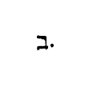 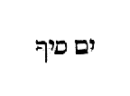 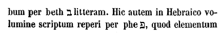 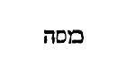 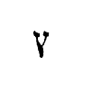 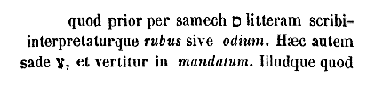
Egressique de Cades, castrametati sunt in monte Hor, in extremis finibus terrae Edom. Ascenditque Aaron sacerdos montem Hor jubente Domino, et ibi mortuus est anno quadragesimo egressionis filiorum Israel ex Aegypto, mense quinto, prima die mensis, cum esset annorum centum viginti trium. Audivitque Chananaeus rex Arad, qui habitabat ad meridiem, in terram Chanaan venisse [filios Israel. Trigesima quarta mansio est, quam plerique interpretantur lumen; nec errarent, si per Aleph 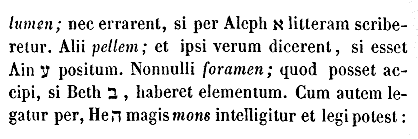
Et profecti de monte Hor, castrametati sunt in Selmona. Unde egressi venerunt in Phinon. Hae duae mansiones, trigesima quinta et trigesima sexta, in ordine historiae non inveniuntur, sed scriptum est [Col. 0822B] pro eis: Egressi sunt de monte Hor, per viam maris Rubri, et circumierunt terram Edom. Ex quo ostenditur in finibus atque circuitu terrae Edom eas positas. Nec secundum morem legitur, Profecti de monte Hor, castra metati sunt in Selmona, sive in Phinon], sed post ambitum terrae Idumaeorum, venit ad extremum et ait: Profecti filii Israel, castrametati sunt in Oboth. Nec dixit profecti sunt de illo in illum locum, quia duas mansiones silentio praetermiserat. Quas in supputatione tacuerat, reddit in summa. Prima mansio Selmona, interpretatur imaguncula. Secunda Phinon diminutive os ab ore, non ab osse, intellige. In his Aaron mortuo, murmurant contra Dominum et Moysen; manna fastidiunt; a serpentibus vulnerantur; et in typum Salvatoris, qui [Col. 0822C] verum antiquumque serpentem in patibulo triumphavit, diaboli venena superantur. Unde et imaguncula, vera expressaque imago Dei Filii, passionem ejus intuens, conservatur, et quod corde credit, ore pronuntiat, legens illud Apostoli: Corde creditur ad justitiam; ore autem confessio fit ad salutem (Rom. X) .
Profectique de Phinon, castrametati sunt in Oboth. Trigesima septima mansio est in Oboth, quae vertitur in magos sive in pythones, significans spiritales serpentes et artes maleficas ad bella nos provocare: quas per divinam protectionem in custodia cordis superare debemus. Et de Oboth venerunt in Jeabarim, quae est in finibus Moabitarum. Trigesima octava mansio, acervos lapidum transeuntium sonat. Sunt sancti lapides qui volvuntur super terram, leves, [Col. 0822D] politi, et rotunditate sua rotarum cursibus similes. Sunt et alii quos propheta tollit de via, ne ambulantium in eo offendant pedes. Qui sunt isti ambulantes? Utique viatores et praetereuntes qui per istud saeculum ad alias mansiones transire festinant. Quod autem dicitur, in finibus Moab contra solis ortum, ostendit juxta litteram, quod hucusque in finibus terrae Idumaeorum fuerint; et nunc veniant ad terminos Moab, de alia provincia ad aliam transeuntes, sicut in superioribus jam dictum est. Non enim semper uni virtuti danda est opera; sed sicut scriptum est: Ibunt de virtute in virtutem (Psal. LXXXIII) , de alia transeundum est ad aliam: quia haerent sibi, et ita inter se nexae sunt, ut qui una caruerit, [Col. 0823A] omnibus careat. Et tamen transire de alia ad aliam eorum est proprie qui solis justitiae ortum considerant. Profectique de Jeabarim, fixere tentoria in Dibongad. Trigesima nona mansio, interpretatur fortiter intellecta tentatio. Pro hac in ordine historiae aliter scriptum reperi. Postquam enim castrametati sunt in Jeabarim, in finibus Moab contra ortum solis, legitur: Inde profecti sunt, et diverterunt ad torentem Zareth. Et de hoc loco proficiscentes, castrametati sunt trans Arnon, quae est in solitudine finium Amorrhaei, eo quod Arnon in terminis sit Moabitarum et Amorrhaeorum, etc. Post Dibongad, geritur bellum contra Seon regem Amorrhaeorum, et Og regem Basan; et discimus quod cum venerimus ad summum, et de fonte principum regumque biberimus, [Col. 0823B] ascendentes ad montem Phasga, non debeamus elevari in superbiam, sed propositam nobis e contrario solitudinem noverimus. Ante contritionem elevatur cor viri, et ante gloriam humiliatur.
Unde egressi, castrametati sunt in Almon Deblathaiema. Quadragesima mansio vertitur in contemptum plagarum, sive opprobriorum. Et per hanc discimus omnia dulcia et illecebras voluptatum in saeculo contemnendas, nec inebriari nos debere vino mundi, in quo est luxuria. Mel non offertur in sacrificiis Dei: et caetera quae dulcia continent, non lucent in tabernaculo; sed oleum purissimum, quod de olivae profertur amaritudine. Mel enim distillat de labiis mulieris meretricis. De quo puto juxta mysticos intellectus gustasse Jonathan, et sorte deprehensum vix [Col. 0823C] populi precibus liberatum. Quod autem opprobria contemnenda sint, et si falsa objiciantur, beatitudinem pareant, Salvator plenissime docet. Et egressi de Almon Deblathaiema, venerunt ad montes Abarim, contra Nabo. Quadragesima prima mansio vertitur in montes transeuntium, et est contra montis faciem Nabo, ubi moritur et sepelitur Moyses, terra repromissionis ante conspecta. Nabo interpretatur conclusio, in qua finitur lex, et non invenitur ejus memoria. Porro gratia evangelii absque ullo tenditur loco. In omnem terram exivit sonus ejus, et in fines orbis terrae verba illius (Psal. VIII) . Simulque considera quod habitatio transeuntium in montibus sita sit, et adhuc profectu indigeat. Post montes enim plurimos, ad campestria Moab et Jordanis fluenta [Col. 0823D] descendimus, qui interpretatur descensio. Nihil enim, ut crebro diximus, tam periculosum est quam gloriae cupiditas et jactantia, et animus conscientia virtutum tumens.
Profectique de montibus Abarim, transierunt ad campestria Moab super Jordanem contra Jericho. Ibique castrametati sunt de Bethiesimoth, usque ad Bethsittim, in planioribus locis Moabitarum. In quadragesima secunda quae extrema mansio est, cursim quae gesta sint narremus. Residens in ea populus, a divino Balaam quem mercede conduxerat Balac filius Sephor, Dei benedicitur jussione et maledictio mutatur in laudes. Audit voces Domini, et profano ore resonat: Orietur stella ex Jacob, et consurget homo [Col. 0824A] de Israel, et percutiet principes Moab, et vastabit filios Seth, et erit Edom haereditas ejus. Fornicatur cum filiabus Madian, et Phinees filius Eleazar, zelatus zelum Domini, Zambri et scortum Madianitarum pugione transfigit. Unde et accepit praemium in aeternam memoriam, armum victimae. Numeratur rursum populus, numerantur et Levitae, ut interfectis pessimis, novus Dei populus censeatur. Interpellant quinque filiae Salphaad, et judicio Domini haereditatem accipiunt inter fratres suos, nec femineus a possessione Dei sexus excluditur. Jesus Moysi in monte succedit, et discit a lege quae spiritaliter offerre debeat in ecclesia: primum quidem per singulos dies; deinde quid sabbato, quid in Kalendis, quid in Pascha, quid in Pentecoste, quid in Neomenia [Col. 0824B] mensis septimi, quid in jejunio ejusdem mensis die decimo, quid in Scenopegia quando figuntur tabernacula, quinto decimo die mensis supradicti. Uxorum et filiarum vota, absque auctoritate patrum et virorum causa, memorantur; bellum contra Madianitas, et mors divini Balaam et praedae divisio, et oblatio ex ea in tabernaculo Dei. Primus Ruben et Gad, et dimidia tribus Manassae, contra Jordanem in eremo possessionem accipiunt. Plurima enim habebant jumenta, et necdum ad id venerant ut possent habitare cum templo. Docetur populus ut in terra sancta idola destruat, et nullus de priori habitatione servetur. Describitur olim cupita provincia, et duarum semis tribuum haereditas separatur. Numerantur tribuum principes qui terram sanctam debeant [Col. 0824C] introire. Quadraginta duas urbes cum suburbanis suis usque ad mille passus per circuitum Levitae accipiunt, tot numero quot et istae sunt mansiones. Et adduntur fugitivorum sex aliae civitates, tres intra Jordanem, et tres trans Jordanem, ut sint simul quadraginta octo. Qui fugitivorum suscipi, qui interfici debeant, et usque ad mortem pontificis magni reservari. Succedit Deuteronomium secunda lex, mediatorium Evangelii; ibique breviter discimus quae inter Pharan, Tophel et Laban, et Haseroth, et loca aurea abjecto Juda infelicissimo, undecim diebus via de Horeb per viam montis Seon usque ad Cadesbarne, Moyses populo sit locutus, et extremum canat canticum, in quo apertissime synagoga projicitur, et Ecclesia Domino copulatur. Impinguatus [Col. 0824D] est et incrassatus ac dilatatus, et recalcitravit dilectus; et oblitus est Dei salvatoris sui (Deut. XXXII) . Et iterum: Generatio pessima est, filii ineruditi: ipsi ad aemulationem me provocaverunt in eo qui non erat Deus; irritaverunt me in scuptilibus suis. Et ego zelare faciam eos nationes, et contra gentem stultam irritabo illos. Benedicuntur filii Israel, et rursus in Simone Judas miserandus excluditur. Ascendit Moyses ad montem Nabo in vertice Phasga, qui est contra Jericho, et ostendit ei Dominus omnem terram Galaad, usque ad Dan et Nephtalim et Ephraim, et Manasses, et universam terram Juda, usque ad mare magnum contra austrum; et regionem campestrem Jericho, cunctam civitatem palmarum usquo [Col. 0825A] Segor. Quis potest tanta nosse mysteria? Quis in extremis legis et hujus vitae finibus constitutus intelligit semper sibi esse pugnandum, et tunc plenam victoriam dari, si fuerit in campestribus? Si in Abel Sethim, quod interpretatur luctus spinarum, fleat antiqua peccata, et spinas quae suffocaverunt sementem verbi Dei, et de quibus Propheta dicit: Versatus sum in miseria, dum configitur spina mihi (Psal. XXXI) . Nec silendum arbitror, quod quidam quaerendum putant, mansiones quadraginta duae filiorum Israel in solitudine, quae hic in ultima libri Numerorum parte computantur, quot vel quibus sint annis aptandae, longissimi illius itineris quo ab Aegypto usque ad terram repromissionis ille populus agebatur. Sed his satis responsum esse aestimo in epistola [Col. 0825B] Bedae presbyteri, quam ad Accan antistitem super hac re conscripsit: quam profecto ex maxima parte, in hoc nostro opusculo pro hac quaestione solvenda ponendam esse censuimus. Castra videlicet vel mansiones easdem, trium tantummodo congrue annorum. Primi videlicet et secundi, et quadragesimi egressionis ex Aegypto: quorum primus continet annus mansiones certa distinctione duodecim. Prima Ramesse quinta decima die primi mensis ingressam, ultimam solitudinem Sinai prima die tertii mensis additam, et per undecim menses continuos construendi tabernaculi, et docendae legis gratia minime relictam. Quarum videlicet quindecim mansionum, novem solummodo liber Exodi nominatim exprimens, caeteras tres sub deserti Sin quod esse [Col. 0825C] dicitur inter Elim et Sinai, vocabulo indiscrete praeteriit. Secundus annus complectitur mansiones viginti et unam. Quibus in ordine historiae cunctis indifferenter sub solitudinis Pharan nomine comprehensis, prima solum secunda et ultima, hoc est, sepulcra concupiscentiae, Haseroth et Cades, suo distinguuntur ex nomine. Sed in catalogo mansionum pariter omnes quot numero fuerint, vel quo nomine dictae, diligenter ostenditur. Quarum prima mansio, hoc est, Sepulcra Concupiscentiae, secundo mense ejusdem secundi anni, vicesimo secundo die mensis introita. Anno enim secundo, ut Scriptura dicit, mense secundo, vicesimo die mensis, moverunt castra de deserto Sinai; et recubuit, inquit, nubes in solitudine Pharan; profectique sunt de [Col. 0825D] monte Domini, viam trium dierum, donec venirent ad locum mansionis, quae merito populi carnes Aegyptias desiderantis, Sepulcrorum Concupiscentiae, nomen accepit. Ultima autem horum mansio, id est, Cades, quo die vel mense ejusdem anni sit ingressa, non dicitur; sed tamen quia, et ipsa in solitudine Pharan sita, quia eodem anno fuerit addita, non tacetur. Scriptum est enim: Et populus non est motus de illo loco, donec revocata Maria, profectus est de Haseroth fixis tentoriis in deserto Pharan, ubi locutus est Dominus ad Moysen, dicens: Mitte viros qui considerent terram Chanaan (Num. XII) . Quod ne proxima post Haseroth mansione jussum factumque putetur, sed potius intelligatur in ultima earum, quae sub [Col. 0826A] Pharan solitudinis nomine continetur impletum, videamus quod infra scriptum est. Reversique exploratores terrae post quadraginta dies, omni regione circuita, venerunt ad Moysen et Aaron, et ad omnem coetum filiorum Israel, in desertum Pharan, quod est in Cades. Sed in Deuteronomio Moyses ipse loquitur populo capite primo: Cumque venissetis in Cadesbarne, dixi vobis: Venistis ad montem Amorrhaei, quem Dominus Deus noster daturus est nobis. Vide terram quam Dominus Deus tuus dabit tibi: ascende et posside eam. Et accessistis ad me omnes, atque dixistis: Mitte viros qui considerent terram, etc. Quod autem eamdem mansionem secundo anno egressi de Aegypto adierint, a qua tamen peccato murmurationis retro converti, ac multo tempore [Col. 0826B] post desertum vagi errare, et passim cadere meruerint, testatur Moyses in istis consequentibus dicens: Sedistis ergo in Cadesbarne multo tempore. Profectique inde, venimus in solitudinem, quae ducit ad mare Rubrum, sicut mihi dixerat Dominus et circuivimus montem Seir multo tempore (Deut. I) . Et infra: Tempore autem quo ambulavimus de Cadesbarne, usque ad transitum torrentis Zareth, triginta octo annorum fuit, donec consumeretur omnis generatio hominum bellatorum de castris, sicut juraverat Dominus (Deut. II) . Zareth autem nomen est mansionis, de illis dico quadraginta duabus, sed nomen torrentis ad quem, sicut in Numerorum volumine legitur, transgressa vicesima octava mansione nomine Jeabarim, venerunt. Quem relinquentes, inquit, castrametati [Col. 0826C] sunt in Arnon, quae est in deserto, et prominet in finibus Amorrhaei. Quod quadragesimo anno gestum fuisse, non latet. Qui videlicet annus quadragesimus idem et ultimus, longissimae per desertum viae mansiones continet numero decem. Quorum prima est magno laborare repetita, eadem ipsa Cades deserti Sin: quam ante triginta octo annos ut dictum est, culpa praevaricationis exigente, post se reversi reliquerant. De qua ita scriptum est: Veneruntque filii Israel, et omnis multitudo de deserto Sin, mense primo; et mansit populus in Cades. Mortuaque est ibi Maria, et sepulta est in eodem loco. Cumque indigeret aqua populus, coierunt adversum Moysen et Aaron, et caetera usque ad id quod scriptum est: Haec est aqua contradictionis, ubi jurgati sunt filii Israel contra [Col. 0826D] Dominum, et sanctificatus est in eis (Num. XX) . Notandumque quod eadem Cades et in deserto Pharan esse et in deserto Sin Scriptura sitam referat. Unde conjiciatur consueto more locorum, pariter deserti Pharan, ubi Cades est, specialiter Sin appellari. Sin autem non ipsa est Cades quam mox transgresso mari Rubro, inter Elim et Sinai pertransiere, sed alia prorsus aliisque apud Hebraeos scripta elementis. Secunda vero ejusdem quadragesimi anni mansio est mons Hor, in quo occubuit Aaron prima die mensis quinti. Ultima campestria Moab super Jordanem contra Jericho, ubi Deuteronomium meditantes manserunt, usque dum post mortem Moysi, Josue duce, prima die decimi mensis, sicca [Col. 0827A] fluvii Jordanis profunda transierunt. Fiunt ergo omnes mansiones primi anni, duodecim. Secundi, viginti una. Ultimi, et ipsi vicesima prima, quae est Cades; et aliae novem, id est, simul omnes quadraginta duae. Ibi diligentius intuendum, quare legislator, tanta solertia trium annorum conscripto catalogo, reliquas maluerit praeterire silentio, ita ut tanto tempore, nullo potius saeculorum spatio distincta mansionum loca, sub textu continuae narrationis, quasi mox sibi invicem succedentia connectat. Egressique de Ebrona, castrametati sunt in Asiongaber. Inde profecti venerunt in desertum Sin, hoc est Cades. Egressique de Cades, castrametati sunt in monte Hor (Num. III) . Cum superiora sollicitius inquisita, doceant eos secundo suae profectionis anno, de Asiongaber [Col. 0827B] venisse in Cades, et post longos triginta et octo annorum anfractus, de repetita tandem eadem Cades, venisse in montem Hor, nequaquam hoc frustra, sed magni mysterii gratia taliter actum conscriptum intellige. Ubi, salvo subtiliore tractatu, moraliter puto sentiendum quod quia mansionum contextus earumdem qui de servitute Aegyptia liberatos ad terram repromissionis provehit, sicut beatus Hieronymus libro super eis dictato enucleatius exponit: Altipetax est spiritalium ascensio virtutum: quibus Ecclesiae Christi, quibus unaquaeque anima fidelis, spe libertatis assumpta, a convalle lacrymarum ad dispositum sibi locum, hoc est ad videndum Deum deorum in Sion festinat, satagit ascendere, donec salvo nostri boni operis incessu, proficimus de [Col. 0827C] virtute in virtutem, quasi quaedam castra mansionesque Deo duce rectissimas, Dei conspectu dignissimas, per desertum mundi sitientes agamus. At quoties victi quibuslibet diripientibus, accepto varietatis calle deviamus. Non enim statim ad altiores virtutum gradus ascendere possumus, sed interim ab infimis miserae mentis defectibus paulatim superiora debemus poenitendo repetere; donec, dignis peonitentiae fructibus actis, perveniamus reduces ad ipsum de quo lapsi fuimus modum culmenque gratiae spiritalis: ac sic intermissum ad tempus incipiamus iter agere virtutum, exuti veterem hominem cum actibus ejus, et induti novum qui secundum Deum creatus est in justitia et sanctitate et veritate. Quod mors et funeratio patrum peccantium in deserto, [Col. 0827D] ibidemque natae et adultae significat juventutis alacritas: quae fluvio mortis devicto, digna sit regnum supernae promissionis intrare. Ita enim fit ut, renovata nostrae bonae conversationis juventute sicut aquilae, tanta jam ac talia, malignis spiritibus occurrentes, valeamus firmare castra supernorum profectuum, quae non solum divino respectui grata, sed etiam spiritalium Patrum sint scriptis ac laude dignissima.
(IBID.) Locutus est Dominus ad Moysen dicens: Praecipe filiis Israel, et dices ad eos: Quando transieritis Jordanem intrantes terram Chanaan, disperdite [Col. 0828A] cunctos habitatores regionis illius. Vitulos et statuas comminuite, atque excelsa vastate, mundantes terram et habitantes in ea: ego enim dedi vobis eam in possessionem, quam dividetis vobis sorte. Pluribus dabitis latiorem, et paucis angustiorem. Singulis ut sors ceciderit, ita haereditas tribuetur. Per tribus et familias possessio dividetur. Quid est quod Dominus jubet Israelitis ut quando transierint Jordanem, intrantes terram Chanaan, disperdant cunctos habitatores regionis illius, et confringant vitulos atque omnia excelsa vastent, mundantes terram habitationis suae, nisi ut post baptismi perceptionem studeamus omnigena vitiorum agmina de carne nostra exstirpare, mundantes terram cordis nostri quatenus, munere virtutum ditati, salubriter in ea conversemur? [Col. 0828B] Jordanem ergo transiit, qui crimina culparum unda baptismatis abluit. Terram Chanaan, hoc est terram repromissionis, adit, qui sibi possessionem virtutum acquirit, ut, deposito veteri homine cum actibus suis, qui corrumpitur secundum desideria erroris, induat novum, eum qui renovatur in agnitione Dei, secundum imaginem ejus qui creavit eum. Iste disperdit cunctos habitatores regionis illius, cum malignos spiritus cum suggestionibus suis ac phantasmate vitiorum, timore Christi compunctus, de mente sua conterere satagit. De quo per Psalmistam dicitur: Beatus qui tenebit et allidet parvulos suos ad petram (Psal. CXXXVI) . Hic excelsa vastat, cum superbiam carnis suae edomare festinat: sicque mundam terram habitationis suae jure haereditario [Col. 0828C] possidet, quando carnem suam a squalore peccatorum purgatam et a pugnis vitiorum quietam detinet. Quod autem jubet pluribus latiorem possessionem dari, et paucis angustiorem, singulis ut sors ceciderit, significat quod hi qui copiam habent virtutum, latitudinem sperare debent praemiorum. Qui autem paucitate virtutum contenti sunt, et contenti esse debent secundum suum meritum qualitate retributionum. Unde Paulus Corinthios ad eleemosynarum largitatem provocans ait: Qui parce seminat, parce et metet. Et qui seminat in benedictione, de benedictione metet vitam aeternam (II Cor. IX) . Sequitur:
(IBID.) Sin autem nolueritis interficere habitatores terrae qui remanserint, erunt vobis quasi clavi in oculis, et lanceae in lateribus: et adversabuntur vobis in [Col. 0828D] terra habitationis vestrae, et quidquid illis facere cogitaveram, faciam vobis. Ac si diceret: Quicunque hostes spiritales de cordibus suis expellere non curaverit, et a finibus actuum atque cogitationum suarum arcere non contenderit, clavis continentiae suae compungitur, nec quietem in conversatione sua ullo modo habere poterit, quin potius a justo retributore non solatium amicorum, sed hostium sentire merebitur interitum.
(CAP. XXXIV.) Locutusque est Dominus ad Moysen dicens: Praecipe filiis Israel et dices ad eos: Cum [Col. 0829A] ingressi fueritis terram Chanaan, et in possessionem vobis sorte ceciderit, his finibus terminabitur. Scriptum est enim in libro Numerorum, in quo omnis terra repromissionis per quatuor plagas brevi sermone dividitur. Pars meridiana incipiet a solitudine Sin, quae est juxta Edom: et habebit terminos contra orientem mare salsissimum. Qui circuibunt australem plagam per ascensum Scorpionis, ita ut transeant in Senna, et perveniant in meridiem, usque ad Cadesbarne. Unde egredientur confinia ad villam nomine Adar, et tendent usque ad Asemona. Ibitque per gyrum terminus ab Asemona usque ad torrentem Aegypti, et maris magni littore finietur. Pro quo in ultima visione Ezechielis dicitur: Plaga autem australis, id est meridiana, a Thamar usque ad aquas [Col. 0829B] Masibor (Ezech. ult.) , id est, contradictionis. Cades quoque et torrens usque ad mare magnum, quod significat latissimam latitudinem Sin, quod juxta Edom, et in mari Rubro terminum circuire, et per ascensum Scorpionis et per Senna et Cadesbarne, et atrium sive villam Addar et Asemona pervenire usque ad torrentem Aegypti, qui juxta urbem Rhinocoruram mari influit. Hic vero terminus plagae australis incipit a Thamar, quae urbs in solitudine est, quam et Salomon miris operibus exstruxit, et hodie Palmyra nuncupatur, Hebraicoque sermone Thamar dicitur, quae in lingua nostra palmam sonat, usque ad aquas contradictionis Cades, quam in deserto esse non dubium est; et torrens ingrediens mare magnum, hoc quod Aegypti Palaestinaeque [Col. 0829C] praetendit littoribus. Sequitur in libro Numerorum: Plaga autem occidentalis a mari magno incipiet, et ipso fine claudetur, hoc est, a mari usque ad mare. A torrente videlicet Rhinocorurae, qui in mari influit, usque ad eum locum ubi est Emath urbs Syriae, cujus in hac plaga et nomen ponit Ezechiel, et plaga, inquiens, maris, mare magnum a confinio per directum, donec venias Emath, quae nunc Epiphania nominatur, ab Antiocho crudelissimo tyrannorum, nomine commutato. Nam cognomentum habuit Epiphanes. Porro ad septentrionalem, inquit, partem, a mari magno termini incipient, pervenientes usque ad montem altissimum, a quo venies in Emath usque ad terminos Sedada. Ibuntque confinia usque ad Zephrona et villam Enan. Hi erunt termini in parte [Col. 0829D] aquilonis. Dicunt Hebraei septentrionalem plagam incipere a mari magno, quod Palaestinae, Phoenices et Syriae quae appellatur κοίλη Ciliciaeque praetendit littoribus, et per Aegyptum tendit ad Libyam. Quod autem dicunt, «pervenientes terminos usque ad montem altissimum,» id Hebraei autumant vel Anianum montem significare, vel Taurum, quod nobis videtur verius. Ibuntque inquit, confinia usque ad Zephrona, quamobrem hodie Zipheum oppidum Ciliciae vocant. Quod autem sequitur, «et villa Enan,» pro quo in Hebraeo scriptum est, Aserenan, quod interpretatur atrium fontis, terminus est Damasci. Et ab Aquilone usque ad aquilonem plaga septentrionalis. Inde metabuntur, inquit, fines contra [Col. 0830A] orientalem plagam de villa Enan usque ad Sephama, et de Sephama descendunt termini in Rebla contra fontem Daphnim: Inde pervenient contra orientem ad mare Cenereth, et tendent usque ad Jordanem; et ad ultimum salsissimo claudentur mari. A fine igitur septentrionalis plagae, hoc est, atrio Enan, tendunt fines usque ad Sephama, quam Hebraei Apamiam nommant. Et de Sephama descendunt termini in Rebla, quae nunc Syriae vocatur Antiochia. Et ut scias Reblam hanc significare urbem quae nunc in Syria Coele nobilissima est, sequitur, contra fontem quem perspicuum est significare Daphnim, de quo fonte supradicta urbs aquis abundantissimis fruitur. Inde, inquit, perveniunt termini contra orientem ad mare Cenereth, id est, ad stagnum [Col. 0830B] Tiberiadis. Mare autem dicitur cum habeat dulces aquas, juxta idioma Scripturarum, quae congregationes aquarum appellant maria. Et tendent, inquit, usque ad Jordanem, et ad ultimum claudentur mari Mortuo; vel, ut alii putant, lingua maris Rubri, in cujus littore Achila posita est. Praecepitque Moyses filiis Israel dicens: Haec erit terra quam possidebitis sorte, et quam jussit dari Dominus novem tribubus, et dimidiae tribui. Tribus enim filiorum Ruben, per familias suas, et tribus filiorum Gad juxta cognationum numerum, mediaque tribus Manasse, id est, duae semis tribus, acceperunt partem suam trans Jordanem contra Jericho, ad occidentalem plagam. In priori enim divisione terrarum trans Jordanem per Moysen duabus tribubus Ruben et [Col. 0830C] Gad, et dimidiae tribui Manasse terra divisa est; intra Jordanem autem, [inter] filium Nun Josue, et Eleazarum filium Aaron. Judas possedit ab austro, et Ephraim et Manasse tribus dimidia ab aquilone. Postea vero de Silo missis exploratoribus per singulas tribus, et descriptione terrae allata ad Josue et Eleazar, Benjamin juxta Judam ab austro, et juxta Ephraim et dimidiam tribum Manasse accepit possessionem. Secunda tribus Simeon accepit haereditatem in tribu Juda, ut impleretur quod scriptum est de Levi et Simeon. Dividam eos in Jacob, et dispergam eos in Israel (Gen. XLIX) . Tertia Zabulon Galilaeam accepit, in qua est mons Thabor. Quarta Issachar, ubi est Jezrael usque ad Jordanem. Quinta Azer, usque ad montem Carmelum, qui imminet [Col. 0830D] mari magno, Tyrumque et Sidonem. Sexta Nephthalim, in Galilaea, usque ad Jordanem, ubi est Tiberias, quae olim appellabatur Cenereth. Septima Dan, usque ad Joppen, ubi sunt turres Achiloan; et Emmaus, et Selebi quae nunc appellatur Nicopolis, licet postea legerimus quod ceperint sibi, transcensis aliis tribubus, urbem Lesam in tribu Dan, quae hodie appellatur Paneas. Haec locutio quam habemus in manibus, umbram habet futurorum bonorum. Consequens videtur et necessarium, omnia quae quasi de rebus terrenis describuntur in lege, umbras esse bonorum coelestium; omnisque haereditas terrae illius, quae in Judaea terra sancta et terra bona appellatur, imago sit bonorum coelestium, quorum [Col. 0831A] haec diximus quae in terris bona memorantur umbram atque imaginem tenere. Nemo dubitat quod in terra Judaea omnis locus, omnis mons, omnis civitas et vicus, certis quibusque vocabulis designetur: nec est ullus omnino sine nomine locus, sed propriis singula quaeque appellationibus designata: verbi gratia, quibus aut Chananaei in suis locis, ut Pherezaei nihilominus in suis, Amorrhaeique aut Evaei, vel etiam Hebraei nominarentur. Ita ergo secundum sententiam Pauli, qui umbram et exemplar coelestium dicit esse terrena, fortasse in coelestibus regionibus erunt locorum differentiae nomine. Describitur ergo verbum Dei in lege divina terrae Judaeae et haec referri debent ad imaginem coelestium. In coelis autem evidenter esse Jerusalem civitas, ab Apostolo [Col. 0831B] pronuntiatur, et mons Sion. Consequens igitur est ut sicut aliae civitates circa Jerusalem terrenam sitae, et vici, et diversae quaeque regiones, ita et illa coelestis Jerusalem, secundum imaginem terrenorum, habeat circa se et alias civitates et vicos, diversasque regiones, in quibus populus Dei et verus Israel per Jesum verum, cujus ille Jesus Nave ferebat imaginem, collocandus est, quando et haereditatem sortis distributione, id est meritorum contemplatione, est capturus. Si ergo nunc Dominus dicit in distributione terrae, verbi gratia, terminos tribus illius esse istos, et alterius alios, ne forte quoniam diversa erant merita eorum qui haereditatem consecuti sunt regni coelorum. Idcirco in his tribubus observantes, dirimi jubetur ista distinctio terminorum, [Col. 0831C] ut sciamus esse has meritorum differentias in unoquoque observandas. Verbi gratia, qui ita negligenter vixerit, ut pro fide quidem sua mereatur haberi inter filios Israel, pro negligentia vero vitae gestorum desidia, in tribu Ruben aut Gad, aut dimidia tribu Manasse debeat reputari, et non intra Jordanem, sed extra eum sortem haereditatis accipere. Alius vero qui se emendatione vitae et conversione propositi talem reddiderit, ut secundum quas solus Deus novit rationes, aut in tribu Juda, aut in tribu Benjamin, in qua ipsa Jerusalem et templum Dei atque altare consistit, debeat reputari, et alius in alia, atque alius in alia. Et hoc modo haec quae nunc in libro Numerorum scripta [Col. 0831D] referuntur, adumbratio quaedam sint futurae sortis in coelis, eorum duntaxat qui per Jesum Dominum ac Salvatorem nostrum haereditatem, ut diximus, capiant regni coelorum. Ibi, credo, diligenter observabuntur etiam ista, quae hic adumbrantur, privilegia sacerdotum, quibus vicina quaeque urbibus loca et ipsis moenibus juncta, segregari mandantur a filiis Israel. Videtur quibusdam quod singulorum quorumque siderum positio, et coetus, civitas dici vel haberi possit in coelo. Quod ego quidem definire non audeo. Video enim omnem creaturam in spe quidem propter eum qui subjecit esse subjectam, exspectare, et tamen libertatem in redemptionem filiorum Israel sine dubio et praeclarius aliquid ac sublimius operari. Si ergo, ut diximus, umbram [Col. 0832A] habet lex futurorum bonorum, et exemplari et umbrae deserviunt, coelestium qui in lege deserviunt, et nunc per speculum et in aenigmate, tunc autem facie ad faciem, qui tamen merebuntur, conversationem habebunt in coelis. Si ergo per consequentiam rerum et promissionum foedere transferri nos de terris oportet ad coelum, puto quod in ipsis coelestibus locis Jesus noster Dominus, non absque meritorum sorte unumquemque in illa vel in illa coeli parte et habitatione constituat. Sed sicut multa est differentia in terris, verbi gratia, habitare in locis fecundis et copiosis ac bonis omnibus abundantibus, ubi et aeris temperies et eruditio hominum ac liberalia instituta non desunt; et longe aliud est habitare aut in locis infecundis et rerum penuria squalidis, [Col. 0832B] aut aestu torridis, aut frigore geluque torpentibus, vel certe ubi nullae leges, sed immanis et fera barbaries, ubi bella semper et nunquam requies. Et haec non sine occulta quadam Dei dispensatione, et judicii ejus justitia unicuique decernuntur: et ita in illis locis erit aliquid tale, et in nullo prorsus inanis habeatur in terris umbra coelestium. Erit ergo, ut diximus, et ibi aliqua civitas refugii, et erit alia in deserto, sicut Bosor in haereditate Ruben. Ruben civitas esse in deserto dicitur. Sed et alia nihilominus consequenda vel capienda est. Quia si Deus cum disperderet filios Adam, statuit fines gentium «secundum numerum angelorum Dei,» vel, ut in aliis exemplaribus legimus, «secundum numerum filiorum Israel in initio mundi,» et ita [Col. 0832C] dispersi sunt filii illius Adam, sicut vel illorum merita, vel ipsius Adae contemplatio postulabat, quid dicemus futurum cum novissimi Adam, qui non in animam viventem, sed in spiritum vivificantem factus est, coeperit filios dispergere divina dignatio, non in initio, sed in fine mundi; et non ut illos qui in Adam omnes mortui sunt, sed ut eos qui in Christo omnes vivificati sunt, sine dubio erit quaedam divisio et distributio talis, quae non solum pro meritis quae dispensantur, sed et pro novissimi Adam, in quo omnes vivificandi dicuntur, contemplatione pensanda sit. Sed quis nostrum talis est, ut ab hujusmodi distributione ad illam coelestis haereditatis sortem venire mereatur? Quis ita beatus erit, cujus sors Jerusalem veniet, ut sit ibi ubi [Col. 0832D] templum Dei est, imo et ipse sit Dei templum? Quis ita beatus est, ut ibi dies festos agat ubi altare divinum perpetuis ignibus adoletur? Quis ita beatus est qui sacrificium suum et incensum suavitatis supra illum ignem ponat de quo dicebat Salvator, Ignem veni mittere? (Luc. X.) Quis ita beatus est, qui ibi semper agat Pascha, in loco quem elegerit Dominus suus; ibi Pentecostes diem gerat, et festivitatem repropitiationis, et tabernaculorum solemnitatem, non jam per umbram, sed ipsam speciem rerumque veritatem? Quis nostrum dignus habebitur cum beatae sortis electione, cum dividere Deus coeperit filios novissimi Adam, cui dicat: Eris super quinque civitates potestatem habens (Luc. XIX) ; [Col. 0833A] nec cui dicat: Eris super decem civitates potestatem habens (Luc. XIX) ; nec cui dicat: Intra in gaudium domini tui (Ibid.) ; sed cui dicat: Sedete et vos mecum super duodecim thronos, judicantes duodecim tribus Israel (Luc. XXII) , et de quibus dicat: Pater, volo ut ubi sum ego, et isti sint mecum (Joan. XVII) ; et etiam istos esse reges ut ubi ego sum rex regum; volo et istos habere dominationem, ut et ego sum Dominus dominantium? Beati qui ad hanc pervenient beatitudinem summam. Beati qui ad ista conscenderint fastigia meritorum: et benedictus Deus noster qui haec promisit diligentibus se. Hi sunt vere ipsis sacris numeris numerati apud Deum, imo ipsi sunt quorum etiam capilli capitis numerati sunt per Jesum Christum Dominum nostrum.
(CAP. XXXV.) Ait Dominus ad Moysen: Loquere filiis Israel, et dices ad eos: Quando transgressi fueritis Jordanem in terram Chanaan, decernite quae urbes esse debeant in praesidia fugitivorum, qui nolentes sanguinem fuderint. In quibus cum fuerit profugus, cognatus occisi eum non poterit occidere, donec stet in conspectu multitudinis, et causa ejus judicetur. De ipsis autem urbibus quae ad fugitivorum subsidia separantur, tres erunt trans Jordanem, et tres in terra Chanaan, tam filiis Israel, quam advenis et peregrinis, ut confugiat ad eas qui nolens sanguinem fuderit. Hoc quomodo factum sit liber qui dicitur Jesu Nave manifestat (Cap. XX) , cum commemorat Josue, [Col. 0833C] Domino jubente, sex civitates refugii decernere homicidis qui homicidium non sponte fecerunt, hoc est: Cades in Galilaea montis Nephthalim, Sichem in monte Ephraim, et Cariatarbe, ipsa est Hebron, in monte Juda. Et trans Jordanem contra occidentalem plagam Jericho, urbem Bosor, quae sita est in campestri solitudine, de tribu Ruben: et Ramoth in Galaad de tribu Gad, et Gaulon in Baran, de tribu Manasse. Hae civitates constitutae sunt cunctis filiis Israel, et advenis qui habitabant inter eos ut fugeret ad eas qui animam nescius percussisset, et non moreretur in manu proximi effusum sanguinem vindicare cupientis donec staret ante populum expositurus causam suam. Ecce habes sex refugii civitates. Quas, si placet, ingredere; ac si forte pro conscientia [Col. 0833D] peccatorum illas quae sunt in terra repromissionis, hoc est in Ecclesia, intrare non audeas, est Bosor circa Jordanem in solitudine, quae interpretatur angustia, id est, cellula monasterii parva vel modica: et optime tibi conveniet, quod de sorte Ruben est, et ipse est qui thorum patris sui maculavit illicite. Est et Ramoth de sorte Gad, quae interpretatur excelsa mors, vel visio mortis. Vere enim excelsa mors poenitentia esse dicenda est, cum mortificatis membris deducatur homo ad excelsa coelorum unde fuerat ante delapsus. Sive juxta istam humilem mortem quae generaliter omni carni imminet, illa ad comparationem ejus rationabiliter excelsa nominatur, quia multum nobilius est per poenitentiam [Col. 0834A] mori, quam communi hac morte dissolvi. Si autem visionem mortis sentire velimus, ita potest intelligi quia cum sumus in poenitentia constituti, et ante oculos nobis ponimus inferni tormenta, videmus ipsam speciem mortis, de qua poenitentiae beneficio liberemur; donec memineris te in ancillae filii civitate agere poenitentiam, quia omnis qui peccat servus est peccati; et formam servi accipiens, humilies teipsum usque ad mortem. Est Gaulon in finibus Manasse, quae interpretatur volutatio, ut tu memineris tibi in cilicio et cinere esse volutandum. Et hoc in finibus Manasse, qui interpretatur oblivio, ut obliviscaris ea quae ante gessisti, et in priora te extendas. Hic ergo inhabita, ut per angustias mortis et volutationis, iram persecutoris evadas et spem [Col. 0834B] salutis invenias. Tunc deinde in his si aliquid utiliter egeris, etiam ad Cades in terra repromissionis quae est in Galilaea, poteris pervenire, quae interpretatur sancta. Ut tu cum in tribulatione corruptiones abjeceris, etiam ad sanctam Ecclesiam tribuatur accessus ut in Nephthalim sorte, qui dicitur vitis remissa, de sacramento Dominici sanguinis participare merearis. Sed nec Hebron tibi aditus clauditur, quae interpretatur conjunctio sive conjugium. Revertetur enim anima tua ad virum suum, id est ad spiritum Dei, a quo pro tempore peccaminum fuerat viduata. Sic qui etiam sextam civitatem Sichem, quam Joseph noster in haereditatem consequitur, propter quod ibi sepultus est, valebit intrare, quae interpretatur humerus sive labor, ut ostendas te per laborem [Col. 0834C] poenitentiae ab errore tuo Christi humeris reportatum, et adjunctum nonaginta novem ovibus effectumque centesimum, quia ipsa Sichem ab alienigenis centum agnis scribitur comparata.
(IBID.) Si per odium quis hominem impulerit, vel jecerit quidpiam in eum per insidias; aut cum esset inimicus manu percusserit, et ille mortuus fuerit, percussor homicidii reus erit. Cognatus occisi, statim ut invenerit eum, jugulabit. Quod si fortuitu et absque odio et inimicitiis quidquam horum fecerit, et hoc audiente populo fuerit comprobatum, atque inter percussorem et propinquum sanguinis quaestio ventilata, liberabitur innocens de ultoris manu, et reducetur [Col. 0834D] per sententiam in urbem ad quam confugerat, manebitque ibi, donec sacerdos magnus, qui oleo sancto unctus est, moriatur. Secundum historiam sensus manifestus est, ubi damnat malitiam et incuriae consulit, quia aliud est per meditationem pravam et industriam quemlibet interficere, et aliud fortuito casu, proximo periculum inferre. Tropologice vero, insinuat quod si quis per invidiam aut odium mucrone malitiae aliquem percusserit, et in mortem animae reduxerit, aeternae morti ipse obnoxius erit. Unde ipsa Veritas ait: Si quis scandalizaverit unum de pusillis istis qui in me credunt, expedit ei ut mola asinaria suspendatur collo ejus, et demergatur in profundum (Matth. XVIII) . Et Joannes ait: Qui odit fratrem [Col. 0835A] suum, homicida est. Et scitis quia omnis homicida non habet vitam aeternam in se manentem (I Joan. III) . Hic talis secundum Exodi textum ab altari Domini evelli jubetur, quia indignus sacramentis Dominicis a participatione sacri altaris merito removetur, nec revocari ad veniam per condignam poenitentiam ullo modo meretur. Qui autem non voto malitiae, sed per incuriam aut ignorantiam laeserit aliquem, habet urbes refugii, Ecclesiam scilicet catholicam, ubi se angustia coarctans poenitentiae, per omne tempus praesentis vitae bonis operibus studium impendens maneat. Et si spem suam in morte pontificis summi, Redemptoris videlicet sui, posuerit, hic sine dubio in aeternum salvabitur. Si interfector extra fines urbium quae exsulibus deputatae sunt inventus fuerit, [Col. 0835B] et percussus ab eo qui ultor est sanguinis, absque noxa erit qui eum occiderit. Debuerat enim profugus usque ad mortem pontificis in urbe residere. Postquam autem ille obierit, homicida revertetur in terram suam. Homicida ergo qui extra fines urbium quae exsulibus deputatae sunt fuerit inventus, absque culpa interficitur, cum peccator impoenitens, atque ob hoc a sanctorum societate atque ab Ecclesiae unitate recedens, merito suae perversitatis punietur. Ultor sanguinis qui eum occiderit innoxius est, quia sententia superni judicis (hic enim per susceptionem carnis noster proximus est) irreprehensibilis erit, cum eum percutit qui de salute sua sollicitus esse neglexit. Debuerat enim profugus usque ad mortem pontificis in urbe residere, hoc est, poenitens in fide [Col. 0835C] catholica manendo, non aliter debuit nisi in mediatoris Dei et hominum morte sui sceleris veniam sperare. Postquam autem ille obierit, homicida revertetur in terram suam: cum peccator post poenitentiam digne peractam meretur paradisi percipere patriam. Quid est enim quod homicida post mortem summi pontificis ad absolutionem redit, nisi quod humanum genus, quod peccando sibimetipsi mortem intulit, post mortem veri sacerdotis, videlicet Redemptoris nostri Christi, absolutionem reatus accepit. Ne polluatis terram habitationis vestrae, qua insontium cruore maculatur: nec aliter expiari potest, nisi per ejus sanguinem qui alterius sanguinem fuderit: atque ita mundabitur vestra possessio, me commemorante vobiscum. Polluit enim terram habitationis [Col. 0835D] suae, qui cruenta atque nefaria opera agit, per quae proximos scandalizare atque spiritaliter interficere non pertimescit. Sed nisi ejus sanguis effundatur, qui alterius sanguinem fudit, terra possessionis polluta permanebit, quia nisi per confessionem peccatorum atque condignam poenitentiam carnis desideria mactentur, terra corporis ejus nullo modo mundabitur; nec creator omnium in ejus anima habitare poterit, ubi squalorem sordidae conversationis dominari conspexerit. Sequitur: Ego enim sum Dominus qui habito inter filios Israel. Hoc est, inter viros fideles Deum corde intuentes, et inter sanctos suis praeceptis in omnibus obedientes. De quo ita scriptum est: Dicit enim Deus, quoniam inhabitabo [Col. 0836A] in illis, et inter eos ambulabo: et ero illorum Deus, et ipsi erunt mihi populus. Propter quod exite de medio eorum, et separamini, dicit Dominus: et immundum ne tetigeritis, et ego recipiam vos; et ero vobis in patrem, et vos eritis mihi in filios et filias, dicit Dominus omnipotens (Isa. LII) .
(CAP. XXXVI.) Accesserunt autem et principes familiarum Galaad, filii Machir, filii Manasse, de stirpe filiorum Joseph, locutique sunt Moysi coram principibus Israel atque dixerunt: Tibi domino nostro praecepit Dominus ut terram sorte divideres filiis Israel, et ut filiabus Salphaad fratris nostri dares possessionem debitam patri. Quas si alterius tribus homines uxores [Col. 0836B] acceperint, sequetur possessio sua, et translata ad aliam tribum, de nostra haereditate minuetur. Atque ita fiet ut cum jubilaeus, id est, quinquagesimus annus remissionis advenerit, confundatur sortium distributio: et aliorum possessio ad alios transeat. Quid est quod principes familiarum Galaad filii Machir filii Manasse filii Joseph, pro filiabus Salphaad ad Moysen locuti sunt, quatenus praevideret eis, ne sors possessionis suae ad alteram tribum transferretur, si alterius tribus hominibus nuberent, nisi quod praevidere debent cogitationes piae ne possessio bonorum meritorum in alienorum transeat dominium, sed legitimo haeredi perpetuo permaneat: et ob hoc consultum Moysi, hoc est legis, adeundum putant, ut inde ediscant qualiter sui juris perpetui possessores fiant; quod [Col. 0836C] interpretatione sua exprimunt nomina. Interpretatur enim Galaad acervus testimonii; Machir, vendens; Manasses, oblitus; Joseph, auctus, et Salphaad, umbra formidinis. Loquuntur ergo principes familiarum Galaad filii Machir filii Manasse de stirpe filiarum Joseph, pro filiabus Salphaad, quando cogitationes atque tractatus piae mentis, secundum sacrarum Scripturarum testimonia dispositae, decertant pro anima fideli, quae laborem praesentis vitae pro futura mercede vendit; et obliviscens ea quae retro sunt, in anteriora se extendit, quatenus per augmentum bonorum operum praemia aeterna consequatur. Praedictum est enim in superioribus quod quinque filiae Salphaad, hoc est, umbrae formidinis, opera significarent exteriora, quae quinque sensibus [Col. 0836D] utiliter explentur. Et necesse est ut qui nunc inumbra praesentis vitae bonis operibus student, per Dei timorem ea conservare satagant, ne laborem expensum perdant. Verentur ergo principes Galaad ne possessio sua in alienam tribum transferatur. Sic necesse est ut unusquisque fidelis consulte praevideat qualiter opera quae agit sibi ad salutem conservata proveniant, ne forte si prava intentione gerantur, ab alienis possessoribus, hoc est, a malignis spiritibus, invadantur. Prava ergo intentio est operantis, cum ea opera quae pro intuitu aeternae retributionis agere debuit, pro appetitu terrenarum rerum inutiliter expendit. Quae necesse est ut a se ablata alienus possessor teneat, cum malignus ea spiritus [Col. 0837A] propter negligentem operarium ad suam partem trahere festinat. Unde ipsa Veritas in Evangelio discipulis suis ait: Attendite ne justitiam vestram faciatis coram hominibus, ut videamini ab eis (Matth. VI) . Alioquin mercedem non habebitis apud Patrem vestrum qui in coelis est. Respondit Moyses filiis Israel, et Domino praecipiente ait: Recte tribus filiorum Joseph locuta est. Et haec lex super filiabus Salphaad a Dominio promulgata est: Nubant quibus volunt, tantum ut suae tribus hominibus, ne commisceatur possessio filiorum Israel de tribu in tribum. Omnes enim viri ducent uxores de tribu et cognatione sua, et cunctae feminae maritos de eadem tribu accipiant, ut haereditas permaneat in familiis, nec sibi misceantur tribus, sed ita maneant ut a Domino separatae sunt. [Col. 0837B] His similia ad Corinthios scripsit Paulus apostolus, cum de nuptiis disputaret: Mulier, inquit, alligata est legi, quanto tempore vir ejus vivit. Cum autem dormierit vir ejus, liberata est a lege viri. Cui vult nubat, tantum in Domino (I Cor. VII) . Praecepit ergo Moyses ut filiae Salphaad nubant quibus volunt, tantum ut suae tribus hominibus, ne commisceatur possessio filiorum Israel de tribu in tribum. Sic et Apostolus mandat ut mulier nubat cui voluerit, tantum in Domino, hoc est viro catholico, ne possessionem bonorum operum ac rectae vitae perdat, si pagano aut haeretico se junxerit. Secundum tropologiam vero, mulieri, hoc est purae intentioni, per bonam actionem cui voluerit, licet se conjungere labori, tantum ut pietatem et religionem Christianam in omnibus [Col. 0837C] conservet, ne operis sui, pro quo aeternae haereditatis sperare debuit possessionem, detrimentum patiatur, si alieno, hoc est, errori, se conjunxerit. Feceruntque filiae Salphaad ut sibi fuerat imperatum. Et nupserunt Maala, et Thersa, et Hegla et Melcha, et Noa, filiis patrui sui, de familia Manasse, qui fuit filius Joseph: et possessio quae illis fuerat attributa, [Col. 0838A] mansit in tribu et familia patris earum. Harum mulierum, hoc est, filiarum Salphaad, nomina non incongrue ad sensum praedictum transferri possunt. Interpretatur enim Maala infirmitas Thersa, complacens; Egla, solemnitas ista vel vitulus, Melcha, rex ejus, et Noa, motus. Qui enim humilitatis virtutem ante omnia intra semetipsum habere studet, et in infirmitatibus suis juxta Apostolorum sibi complacet, solemnitatem agit, ac grata munera exhibet Deo; et rex atque rector suae conversationis cautus existens, progressu virtutum movetur. Juxta illud Psalmistae: Ambulabunt de virtute in virtutem, videbitur Deus deorum in Sion (Psal. LXXXIII) . Nupserunt ergo filiae Salphaad filiis patrui sui de familia Manasse, qui fuit filius Joseph, cum quilibet de [Col. 0838B] eorum numero qui crediderunt ex Judaeis doctori ex gentibus credenti se junxerit, ut ejus magisterio conjunctus, filios gignere, hoc est, opera pietatis exhibere, possit. Nomine enim patrui quodammodo censeri possunt doctores ex gentibus electi, quia fratres sunt praedicatorum sanctorum qui fuerunt in Judaea constituti. Nec debet esse schisma in spiritali cognatione, ubi una est credulitas, fidei professione. Ait enin Salvator discipulis Matthaei vigesimo tertio: Patrem nolite vobis vocare super terram. Unus est enim Pater vester qui in coelis est. Omnes autem vos fratres estis. Et alibi: Habeo, inquit, alias oves qua non sunt ex hoc ovili: et illas oportet me adducere, et vocem meam audient, et fiet unum ovile et unus pastor (Joan. X) . Sicque possessio in [Col. 0838C] eadem tribu legitime servatur, cum omnis pia actio pro amore Christi in Ecclesia catholica in servitium Dei agiliter exhibetur: cujus laboris finis est merces perpetua, quam suis fidelibus largiri dignetur Pater omnipotens, per Dominum nostrum Jesum Christum. Amen.
Enarratio super Deuteronomium
[Col. 0837D] Pio Patri FRECULPHO, RABANUS exiguus in Domino salutem.
Decursis igitur, tuis parendo praeceptis, prioribus libris legis, novissime ad Deuteronomium Moysi considerandum perveni, quatenus inde aliqua tuae [Col. 0838D] sanctae voluntati consentiens, sacramenta spiritaliter rimarer atque in unum volumen majorum dicta colligerem. Sed quia in hunc librum cujuspiam explanationem proprie non inveni, necesse habui ut perfectis anteriorum librorum expositionibus, inde [Col. 0839A] ad hujus libri enodandas quaestiones assumerem facultatem. Haec autem quae noviter a legislatore inserta reperi, divina gratia largiente, pro modulo nostri ingenioli, quantulumcunque explanare curavi. Deuteronomium quoque, ut beatus Hieronymus in quadam epistola sua ad amicum ait, secunda est lex, et evangelicae legis praefiguratio; sicque ea habet quae priora sunt, ut tamen nova sint omnia. Quapropter haec res operosa indiget solutione: scilicet quod ita historialiter ordinentur vetera, ut spiritaliter omnia demonstrentur nova, et legis per figuram patefecit littera quae sacer Evangelii textus in se continet sacramenta. Unde, sancte frater, tuo de hoc maxime indigemus adjutorio: quatenus apud omnipotentem Patrem precibus assiduis impetres ut [Col. 0839B] quod nos jubes inertes ad tuam et ad tuorum utilitatem facere, ejus opitulatione nobis conferatur, qui dat omnibus affluenter, et non improperat; quique in Evangelio fidelibus suis promisit dicens: «Petite, et dabitur vobis; quaerite, et invenietis; pulsate, et aperietur vobis. Omnis enim qui petit accipit, et qui quaerit invenit, et pulsanti aperietur.» Idcirco autem postulationes imploro tuas, quia meritis sacris illas Deo acceptissimas credo. Caeterum autem nos pro hoc ipso precibus licet non condignis, tamen humillimis insistimus, postulantes ut supernus arbiter qui in altis habitat, et humilia [Col. 0840A] respicit in coelo et in terra, suscitatque de pulvere egenum, et de stercore erigit pauperem, aliquam particulam donorum suorum muneris sui largitate nobis concedere dignetur, ut ejus servitium in Ecclesia sancta sua ad ipsius laudem et nostram salutem explere possimus. Ecce habes Pentateuchum Moysi, ut petisti, cum mysteriis suis spiritali calamo aliquantulum explicatum: quibus quinque verbis, loqui se Apostolus in ecclesia gloriatur (I Cor. XIV) . Esto pius scrutator legis, et devotus exsecutor praeceptorum Altissimi: ut sicut in ordine consors, ita et cooperator sis sanctorum apostolorum. Memor esto doctoris gentium et hortationis qua discipulum instruens ait: «Praecipe haec et doce. Nemo adolescentiam tuam contemnat, sed exemplum esto [Col. 0840B] fidelium in verbo, in conversatione, in charitate in fide, in castitate. Dum venio attende lectioni et hortationi doctrinae. Noli negligere gratiam quae in te est, quanta est tibi per prophetiam cum impositione manuum presbyteri. Haec meditare, in istis esto, ut profectus tuus manifestus sit omnibus. Attende tibi et doctrinae, insta in illis. Hoc enim faciens, et te ipsum salvum facies, et eos qui te audiunt.» Haec te facere et perficere ad tuam et ad multorum salutem concedat Altissimus. Vale, sancte Pater, Maurique tui in sacris orationibus semper memor esto.
(CAP. I.) «Haec sunt verba quae locutus est Moyses ad omnem Israel trans Jordanem, in solitudine campestri, contra mare Rubrum, inter Pharan et Tophel, et Laban et Haseroth, ubi auri est plurimum, undecim diebus de Horeb per viam montis Seir, usque ad Cadesbarne, quadragesimo anno, undecimo mense, primo die mensis.» Pricipium ergo istius libri quodammodo titulus videtur esse atque index totius operis, quia personam indicat factoris et opus factum, simulque locum et tempus quo hoc factum sit comprehendit. Unde non solum [Col. 0839D] ipsum nomen libri, sed etiam principium Novi Testamenti gratia demonstrat. Nam Deuteronomium, quod secunda lex Latine interpretatur, significat Evangelium, quod post conditionem Veteris Testamenti eadem sacramenta secundum spiritalem intellectum omnia mystice exponit atque explanat. Liber ergo Deuteronomii repetitio est praecedentium [Col. 0840C] quatuor librorum legis; nam dum in se proprias illi continent causas, iste tamen replicat omnia. Habet autem et ipse proprie innumerabilia sacramenta, e quibus ea quae divina gratia secundum praecedentium Patrum dicta nos posse concesserit, pro exercitio lectoris explanare disposuimus. «Haec sunt verba, inquit, quae locutus est Moyses ad omnem Israel.» Hic quidam quaerendum aestimant, cum Moyses conditor istius libri dignoscitur, quomodo de se quasi de altero referat: dicit enim ipsum Moysen locutum esse verba haec. Sed sciendum est quod moris est scriptorum sacrae historiae de semetipsis quasi de altero referre. Unde in libro Numerorum idem Moyses ita scripsit: Erat enim Moyses vir mitissimus super omnes homines qui morabantur [Col. 0840D] in terra. Sic et in libro Job ipse Job in principio operis sui dicit, «Vir erat in terra Hus nomine Job. Et erat vir ille simplex ac rectus et timens Deum, et recedens a malo.» (Job. I.) Hinc et Joannes in Evangelio suo de se ait: «Hic est discipulus qui testimonium perhibet de his et scripsit haec, et scimus quia verum est testimonium ejus.» (Joan. ult.) Sed [Col. 0841A] haec cum se ita habeant, videamus quid significet Moyses, qui ad omnem Israel trans Jordanem in solitudine campestri contra mare Rubrum, in locis qui consequenter notati sunt, locutus est. Moysen enim typum legis veteris habere omnibus manifestum est, qui trans Jordanem in solitudine campestri populum docuit. Jordanis enim, pro eo quod Salvator in illo baptizatus est, typum tenet baptismatis. Et Moyses trans Jordanem Israel docuit, quia ante constitutionem baptismatis et Novi Testamenti gratiam lex priorem populum de mandatis Dei instruit et hoc in solitudine campestri, hoc est, in sterilitate carnalis plebis, quae spiritalem virtutum fructum gignere nesciebat. Contra videlicet mare Rubrum, quia dura mens reproborum ablutionem peccatorum [Col. 0841B] in sanguine Christi fieri nullo modo credidit. «Inter Pharan et Tophel et Laban et Haseroth.» Haec quatuor loca per nominis interpretationem mysteria divina significant. Pharan autem interpretatur auctus. Tophel insulsitas. Laban dealbatio, et Haseroth atria. Ipse ergo populus cui lex divina exposita est, auctus fuit tam in multitudine hominum, quam etiam in collatione legis et prophetarum, quae eis divina clementia impendit. Sed insulsus fuit, quia salem spiritalis sapientiae non amavit. Dealbatus quoque in caeremoniis legis et vanis munditiis, quae se ex praecepto legis habere credebat. Sed et atria merito, id est, populus dici potest, quia per Scripturas divinas ad introitum fidei paratus fuit. Unde plurimi eorum in Salvatoris nostri adventu a lege docti, et ex [Col. 0841C] prophetarum oraculis instructi, eo facilius ad credulitatem ejusdem mediatoris Dei et hominum pervenire potuerunt, quoniam eum ante praedictum sacris litteris agnoverant. Unde Philippus in Evangelio ad Nathanael ait: «Quem scripsit Moyses in lege, et prophetae, invenimus Jesum filium Joseph a Nazareth. Et dixit ei Nathanael: A Nazareth potest aliquid boni esse? Dicit ei Philippus: Veni et vide (Joan. I) .» Quod autem dicitur ibi auri esse plurimum ubi legis repetitio facta est, significat multiplicia mysteria et thesaurum spiritalem sapientiae divinae inesse libris legis et prophetarum, quod pie quaerentibus et rite intelligentibus liquido patet. Sed hoc quod undecim diebus lex ipsa per Moysen explanata est, quid significat, nisi Judaicae plebis lapsum [Col. 0841D] per transgressionem mandatorum Decalogi, a monte videlicet Horeb, per viam montis Seir, usque Cadesbarne: quia lex ab Horeb, hoc est a monte Dei, incipiebat, per Seir, id est, pilosum et sordidum omnibus vitiis populum Judaeorum, transiens ad Cades usque barne pervenit. Cades enim barne, commutatus vel electus vel notabilis interpretatur, significans legis veteris carnalem usum in spiritalem observantiam per Evangelium esse nobiliter commutatum. «Omnia enim, ut ait Apostolus, in figura contingebant illis. Scripta sunt autem ad correctionem nostram, in quos fines saeculorum devenerunt (I Cor. X) .» Et Salvator in Evangelio ait: «Non veni solvere legem, sed adimplere; Iota enim unum, [Col. 0842A] aut unus apex, non praeteribit a lege donec omnia fiant (Matth. V) .» Quid autem per figuram innuant quadraginta anni, quibus laboriose peractis, filii Israel ad repromissionis terram transierunt? Dicemus quippe per hos quadraginta annos totum saeculi tempus significatum, in quo vivit Ecclesia sub laboribus tentationibusque periculosis, sperando quod non videt per patientiam, quousque ad promissam aeternae felicitatis perveniat patriam. Ideo et Dominus quadraginta diebus jejunavit, et quadraginta noctibus tentatus est in eremo. Corpus enim ejus, quod est Ecclesia, necesse est tentationes laboresque patiatur in hoc saeculo, quousque adveniat illud tempus ubi post tentationes suscipiat consolationes. «Undecimo, inquit, mense, prima die mensis locutus est [Col. 0842B] Moyses ad filios Israel omnia quae praeceperat ei Dominus ut diceret eis.» Quid autem significat undernarius numerus, jam supradictum est. Sed hoc considerandum, quid innuat mystice quod dicit ejusdem mensis undecimi prima die locutum fuisse Moysen contra Israel. Sicut enim in undecimo mense expressa est legis transgressio, sic et in prima die mensis pervigil ad docendum demonstrata est legislatoris intentio: quia ex quo inobediens populus accipiendo transgredi praecepta non timuit, statim per lucem praedicationis et correctionis voluntatem Domini illi insinuare studuit, et eos corrigere atque ad meliora provocare verbis atque exemplis nullo modo cessavit. «Postquam percussit Seon regem Amorrhaeorum, qui habitavit in Hesebon, et Og regem Basan, qui [Col. 0842C] mansit in Astaroth, et in Edrai trans Jordanem in terra Moab.» Notandum quoque quod, interfectis duobus regibus Amorrhaeorum, Seon videlicet rege qui habitavit in Hesebon, et Og rege Basan, lex recapitulatur et populus instruitur. Quare motis scandalis universis, atque superatis vitiorum turbis, competenter doctrinae insistitur, et fidei lumen digne desiderantibus aperitur. In his regibus licet et res gesta agnoscatur, tamen per conditiones virtutesque nominum spiritalis significatio est subjecta. Seon namque interpretatur germen inutile, vel tentatio oculorum, per quam figuratur diabolus, qui transfigurat se velut angelum lucis et per haeresim vel schisma veri mentitur, ut fallat incautos. Hunc Amorrhaei, id est amaricantes, habent regem. Nisi [Col. 0842D] enim quaedam simulatio veritatis praecedat, non sunt haeredes amaricantes, non schismata exacerbantium in Ecclesia. Iste ergo rex occiditur in unoquoque homine quando quisque damnat simulationem, et diligit veritatem. Og vero rex interpretatur conclusio. Basan confusio. Id enim agit diabolus semper, ut concludat viam ad Dominum, opponendo idola sua, ne credatur in Christum. Conclusio enim praecedit ut rex, confusio sequitur tanquam plebs. Quia quos modo conclusit, ne credant in Christum, quando apparuerit Christus omnes confundentur. Habitasse dicitur autem Seon in Hesebon, quia diabolus, radix omnium vitiorum, cogitationibus se intermiscet humanis, et mente cingit sollicitudinibus superfluis, [Col. 0843A] ne verba proferat veritatis, et opera exerceat pietatis. Interpretatur autem Hesebon cogitatio vel cingulum moeroris. Sic quoque et Og regem Basan manere in Haseroth, et in Edrai Scriptura commemorat. Et quid Haseroth interpretatur, nisi vestibula? sive Achia et Edrai, hoc est, mundatio malorum significant, nisi infidelitatem cum pravis operibus? Inde enim certat diabolus, ut omnes quorum ipse est rex nunquam fidei januam intrent, sed foris manentes in infidelitate, operibus semper insistant iniquis. «Coepitque Moyses explanare legem, et dicere:»
(IBID.) «Dominus Deus noster locutus est ad nos [Col. 0843B] in Oreb, dicens: Sufficit vobis quod in hoc monte mansistis. Revertimini et venite ad montem Amorrhaeorum, et ad caetera, quae ei proxima sunt campestria atque montana et humiliora loca contra meridiem et juxta littus maris, terram Chananaeorum et Libani usque ad flumen magnum Euphraten, etc.» In libro ergo Numerorum de profectione filiorum Israel de deserto Sinai narrat, sed praeceptum Domini ad Moysen narrat de eodem transitu. Quin potius narrat de nube quae tabernaculum tegebat, ac quando proficiscendum fuit, recedebat de tabernaculo; et praecedens eos, donec venirent ad locum castrorum ubi figenda erant tabernacula, ibi supra stetit. Sic enim scriptum est: «Anno secundo, mense secundo, vigesimo die mensis, elevata est [Col. 0843C] nubes de tabernaculo foederis. Profectique sunt filii Israel per turmas suas, de deserto Sinai, et recubuit nubes in solitudine Pharan.» Sed manifestum est omnem transitum illum praecepto divino dispositum esse, licet ibi non commemoretur, ubi de eodem transitu narrat. Praesens quoque liber Moyse narrante per omnia ita factum esse manifestat. Nec non liber Numerorum alio loco idem demonstrat, ubi ita scriptum est: «Ad imperium quidem Domini erigebant tentoria et ad imperium illius deponebant (Num. IX) .» «Dixique vobis in illo tempore: Non possum solus sustinere vos, quid Dominus Deus vester multiplicavit vos, et estis hodie sicut stellae coeli plurimi. Dominus Deus patrum vestrorum addat ad hunc numerum multa [Col. 0843D] millia, et benedicat vobis sicut locutus est. Non valeo solus vestra negotia sustinere, et pondus ac jurgia. Date ex vobis sapientes et gnaros, et quorum conversatio sit probata in vestris tribubus, ut ponam eos vobis principes, et reliqua.» De hac enim subdivisione potestatum in Exodo antequam ad montem Sinai pervenirent Israelitae scriptum est, et quod Jethro sacerdos Madian cognatus Moysi ipsi hoc in consilium dederit narratur. Unde quaeri potest quomodo sibi conveniant, tam modo quam etiam tempore. Quod sic solvi posse reor: ut hoc quod hic scriptum est dixisse Moysen in illo tempore ad populum, «Non possum solus sustinere vos,» non illud tempus exprimat quo de Choreb proficiscebantur, [Col. 0844A] sed totum tempus quo profecti de Aegypto in solitudine morabantur; et Moysen non ex sua inventione, sed cognati sui consilio accepto, populo persuaserit quae hic asserit illis persuasisse. Unde considerari oportet, quam sit observandum, quod ait Scriptura: «Fili, ne in multis sint actus tui, satis et hic apparet (Eccli. XI) .» Deinde verba Jethro dantis consilium Moysi, consideranda sunt. Dicit enim: «Nunc itaque audi me, et consilium dabo tibi, et Deus erit tecum (Exod. XVIII) .» Ubi mihi videtur significari nimis intentum humanis actibus animum, Deo quodammodo vacuari, quod fit tanto plenius, quanto in superna atque aeterna liberius extenditur.
(IBID.) «Et accessistis ad me omnes atque dixistis: Mittamus viros qui considerent terram, et renuntient per quod iter debeamus ascendere, et ad quas civitates pergere. Cumque mihi sermo placuisset, misi ex vobis duodecim viros, singulos de tribubus singulis.» In libro quoque Numerorum scriptum est quod Dominus ad Moysen dixerit ut mitterent viros qui considerarent terram Chanaan. Sed licet diversa videantur inter se esse quod hic in Deuteronomio, et illud quod in libro Numerorum super hac re scriptum legitur, sensus tamen facilis est ut intelligamus populum ad Moysen primum esse locutum de exploratibus mittendis, et [Col. 0844C] sic Moyses ad Domini consilium causam referens, praeceptum ab eo acceperit, quatenus mitteret viros qui explorarent terram Chanaan. «Qui cum perrexissent et ascendissent in montana, venerunt usque ad vallem Botri. Et considerata terra, sumentes de fructibus ejus, ut ostenderent ubertatem, attulerunt ad nos atque dixerunt: Bona est terra quam Dominus Deus noster daturus est nobis. Et noluistis ascendere, sed increduli ad sermonem Domini Dei nostri, murmurastis in tabernaculis vestris atque dixistis: Odit nos Dominus; et idcirco eduxit nos de terra Aegypti, ut traderet nos in manus Amorrhaei, atque deleret, et reliqua» Duodecim missi sunt inspectatores ex filiis Israel, ad considerandam terram quae eis fuerat repromissa. [Col. 0844D] Hique, post quadraginta dies reversi, diversa renuntiant. Nam decem ex his in desperationem mittunt populum, ita ut velint abjecto Moyse eligere alium ducem, et reverti in Aegyptum. Alii vero duo bona nuntiant, et cohortantur populum permanere in fide dicentes: «Si diligit nos Deus, introducet ad terram hanc (Deut. XVIII) .» Sed populus infidelitatis desperatione praeceps agitur, et ad lapidandos eos qui bona nuntiant prosilit. Majestas vero Domini protegit eos in nubibus, et dixit Dominus ad Moysen: «Feriam eos morte et interimam eos; et faciam te et domum patris tui in gentem magnam et multam, magis quam haec est (Num. XIV) .» Fit haec tanta comminatio a Domino, [Col. 0845A] non ut passibilis et iracundiae vitio subjacens ostendatur divina natura, sed ut per haec et Moysi charitas quam erga populum habebat, et Dei bonitas, quae superat omnem mentem, innotesceret. Mystice autem duodecim exploratores missi ad explorandam terram uberem, qui terruerunt populum, ne crederet posse accipere a Domino terram repromissam, Scribarum et Pharisaeorum praetulerunt indicium. Sicut enim illi per Moysen missi sunt, ut soli fecunditatem sollicita consideratione tractarent, ita et isti per legem et prophetas missi sunt, ut per Scripturarum investigationem Dominicum specularentur adventum. In quo erat terra, id est, caro sancta, in qua regnum Dei et ubertatem fructuum spiritalium, et vitam aeternam consequi possent. [Col. 0845B] Sed sicut illi desperatione terruerunt populum ne de Dei promissione considerent, ita et isti scribae et Pharisaei suaserunt populo Judaeorum ne crederent Christum, ad Aegyptum saeculi hujus redire cupientes, repudiantes manna fidei, quaerentes ollas peccatorum nigras, et cepas blasphemiarum putridas, et pepones, vitiorum ac libidinum corruptione marcescentes. Ille autem botrus uvae, quem in ligno de terra repromissionis duo advexere vectores, botrus pendens e ligno, utique Christus ex ligno crucis promissus gentibus de terra genitricis Mariae, terrenae stirpis secundum carnem visceribus effusus. Duo bajuli qui sub onere botri illius incedebant, populus est uterque cujus prior Judaicus caecus et aversus, ignarus pendentis gratiae, et pressus [Col. 0845C] onere suspensi, cui subjicitur judicanti: de quibus dicitur: «Obscurentur oculi eorum ne videant, et dorsum eorum semper incurva (Psal. LXVIII) .» Qui vero posterior veniebat, populi gentium gerebat figuram, qui credens et Christum ante oculos habens, semper eum portans videt; et quasi servus dominum et discipulus magistrum sequitur, sicut ipse Dominus in Evangelio ait: «Si quis vult post me venire, tollat crucem suam, et sequatur me (Matth. XVIII) .» Hic est autem botrus qui effusum in salutem nostram vinum sanguinis sui crucis contritione perfudit, atque expressum passionis suae calicem Ecclesiae propinavit. Hic est botrus quem malogranata socia humeris secuta est gratia. Nam scilicet Ecclesia mater habens intra [Col. 0845D] se per granorum numerum multitudinem populorum, ruborem sanguinis Christi signaculo habentem etiam intus distincta grana, sicut Apostolus ait, diversa charismata, et dona spiritus gratia distributa. Quibus omnibus indignos se increduli judicantes, terram carnis Christi fluentem lacte et melle accipere non meruerunt, quam per fidem servi ejus, id est Christiani populi consecuti sunt, de cujus doctrina quotidie dicit Ecclesia: «Quam dulcia faucibus meis eloquia tua super mel et favum ori meo!» Ficum autem, quem cum botro de terra repromissionis attulerunt, imaginem legis attulisse, evangelcis edocemur exemplis. Sicut et botrum constat figuram Salvatoris ostendere, quemadmodum [Col. 0846A] in Canticis canticorum Ecclesia de Christo dicit: «Frater meus ut botrus cypri (Cant. I) .» Quia nec Christus sine lege, nec lex sine Christo esse poterit. «Nec miranda indignatio in populum, cum mihi quoque iratus Dominus propter vos dixerit: Nec tu ingredieris illuc, sed Josue filius Nun minister tuus ipse intrabit pro te. Hunc exhortare et robora: et ipse terram sorte dividet Israel, etc.» Quaeri potest quomodo Moyses dicat ad Israel propter eos iratum sibi Dominum dixisse: «Nec tu ingredieris illuc,» hoc est, in terram repromissionis, cum in libro Numerorum ita legatur: «Dixitque Dominus ad Moysen et Aaron: Quia non credidistis mihi, ut sanctificaretis me coram filiis Israel, non introducetis hos populos in terram, quam dabo eis [Col. 0846B] (Num. XXVII) .» Sed sequens sententia quodammodo videtur hanc absolvere quaestionem. «Haec, inquit, est aqua contradictionis, ubi jurgati sunt filii Israel contra Dominum, et sanctificatus est in eis.» Jurgium enim atque rebellio populi causa fuit irae Domini atque vindictae, tam in populum quam etiam in Moysen et Aaron prolatae. Videtur mihi in Maria prophetia mortua; in Moyse et Aaron legi et sacerdotio Judaeorum finis impositus, quia nec ipsi ad terram repromissionis ascendere volebant, nec credentem populum de solitudine hujus saeculi educere, nisi solus Jesus, id est Salvator noster Dei filius. In trigesima autem et tertia mansione propter aquas contradictionis Moyses offendit Dominum, prohibetur transire Jordanem. Perturbatus enim [Col. 0846C] murmure populi, dubitanter petram virga percussit, quasi illud non posset Deus facere ut aqua de petra proflueret, quod ante jam fecerat. Quid ergo hic fides Moysi insinuat, quae aquam de petra ejiciendam titubaverat, nisi ut hanc etiam prophetiam fuisse de Christo recte intelligamus? Dum enim Moyses in Scripturis sacris aliam atque aliam pro re aliqua significanda personam gerat, nunc tamen populi Judaeorum sub lege positi personam gerebat, eumque prophetica pronuntiatione figurabat. Nam sicut Moyses petram virga percutiens, de Dei virtute dubitavit, ita ille populus qui sub lege per Moysen data tenebatur, Christum ligno crucis affigens, eum virtutem Dei esse non credidit; sed sicut percussa petra manavit aquam sitientibus, sic plaga Dominicae [Col. 0846D] passionis effecta est vita credentibus. Habemus enim de hac re praeclarissimam et fidelissimam vocem apostolicam, cum inde loqueretur dicens: «Petra autem erat Christus (I Cor. X) .» Hanc ergo carnem de Christi nativitate desperationem in ipsius Christi altitudine Deus mori jubet, cum mortem carnis Moysi, in monte imperat fieri. Sicut enim petra Christus, ita et mons Christus. Petra humilis fortitudo, mons eminens magnitudo: quia sicut Apostolus ait, «Petra autem erat Christus,» ita ipse Dominus: «Non potest, inquit, civitas abscondi super montem posita (Matth. V) ,» se scilicet montem appellans, fideles autem suos in sui nominis gloria fundatos, asserens civitatem. Prudentia [Col. 0847A] enim carnis vivit, cum tanquam petra percussa, Christi humilitas in cruce contemnitur. Christus crucifixus Judaeis scandalum est, gentibus autem stultitia. Et prudentia carnis moritur, cum tanquam montis eminentia Christus excelsus agnoscitur. Ipsis enim vocatis Judaeis et Graecis, Christus Dei virtus, et Dei sapientia est.
(IBID.) «Cumque instructi armis pergeretis in montem, ait mihi Dominus: Dic ad eos: Nolite ascendere, neque pugnetis. Non enim sum vobiscum, ne cadatis coram inimicis vestris. Locutus sum et audistis: sed adversantes imperio [Col. 0847B] Domini, et tumentes superbia, ascendistis in montem. Itaque Amorrhaeus egressus, qui habitabat in montibus et obviam veniens, persecutus est vos, sicut solent apes persequi: et cecidistis de Seir usque Horma, etc.» Haec sententia humanam percutit superbiam, quae de suis viribus praesumit, et non in Dei confidit potentia. Amorrhaei ergo, qui interpretantur, ut superius diximus, amaricantes, hostes sunt spiritales, qui habitant in montibus superbiae, et praesumptuosos necant. De Seir usque Horma, hoc est, quia squalore vitiorum sordibus non metuit pollui, hunc necesse est pro pristinis meritis, gehennae ignibus tradi. Coelestes enim nequitiae quae interitum nostrum desiderant, et terrenis cupiditatibus nos implicare volunt, si perseveraverimus [Col. 0847C] in peccatis et in montibus superbiae ascendere non desistimus, concident nos ignitis jaculis, atque anathema perpetuum perducent. Unde non, secundum Pelagianistas, de nostra sine gratia Dei praesumere debemus potentia, sed infirmitatem nostram considerantes, id quod Domini ore decernitur, obediendum et sequendum per omnia nobis humiliter credamus, sicque nobis hostes cuncti inferiores existunt, et ad coelestis patriae gaudia, quae nobis promissa sunt, pervenire per Domini misericordiam praevalebimus. (CAP. II.) «Dixitque Dominus ad me: Non pugnes contra Moabitas, nec ineas adversus eos praelium: non enim dabo tibi quidquam de terra eorum, quia filiis Loth tradidi Ar in possessionem. Emim in primis fuerunt [Col. 0847D] habitatores ejus, populus magnus et validus, et tam excelsus, ut de Enacim stirpe quasi gigantes crederentur, et essent similes filiorum Enacim. Denique Moabitae appellant eos Emim.» Ar metropolis est Moabitarum super ripam Arnon posita, possessa olim agente veterrima Emim, et postea retenta a filiis Loth, id est a Moabitis, cum accolas subvertissent; et ostenditur usque hodie in vertice montis ipsius. Sed et torrens per abrupta descendens, in mare Mortuum fluit. Interpretatur autem Ar, suscitavit et Emim terribiles, significantque hostes spiritales, qui semper lites et contentiones suscitant, et tela nequitiae contra Dei servos parant. Nec non et Enacim, qui de stirpe Enak procreati [Col. 0848A] sunt, et gigantibus proceritate coaequabantur, similiter significant spiritales nequitias, sicut nomen eorum testatur. Nam monile in collo sublimi interpretatur. Hostes enim spiritales superbiae fastu elati, omnem paraturam malitiae suae propriae virtuti ascribunt. Et ideo facile superantur ab his qui non in sua, sed in Dei virtute confidunt, qui cum Psalmista dicere possunt: «Fortitudo mea et laus mea Dominus, et factus est mihi in salutem (Psal. CXVII) .» In Seir autem prius habitaverunt Horim; quibus expulsis atque deletis, habitaverunt filii Esau, sicut fecit Israel in terra possessionis suae, quam dedit ei Deus. Seir mons est in terra Edom, in quo habitavit Esau in regione Gebabena, quae ex eo quod Esau pilosus esset et hispidus, Seir, hoc est pilosi, nomen accepit; [Col. 0848B] in quibus locis ante habitavit Chorraeus, quem interfecit Chodorlaomor. Meminit montis Seir et Isaias in visione Idumaeae. Chorraei enim isti et gentes caeterae, quas superaverunt illi qui de patriarcharum semine descenderunt, mystice significant malignos spiritus, vel vitia diversa quae illi rite superare possunt, qui sanctorum Patrum vestigiis, doctrinis atque exemplis insistunt, et malitiam spiritalem sub rege Christo veraciter agunt: de qualibus dicit Apostolus: «Non est nobis colluctatio adversus carnem et sanguinem, sed adversus principes et potestates, adversus mundi rectores tenebrarum harum, contra spiritalia nequitiae in coelestibus (Ephes. VI) .»
(IBID.) «Surgentes ergo ut transiremus torrentem Zared, venimus ad eum. Tempus autem quo ambulavimus de Cadesbarne usque ad transitum torrentis Zared triginta octo annorum fuit; donec consumeretur omnis generatio hominum bellatorum de castris, sicut juraverat Dominus: cujus manus fuit adversus eos, ut interirent de medio castrorum.» Cadesbarne est locus in deserto qui conjungitur civitati Petrae in Arabia, ubi occubuit Maria et Moyses, ubi, rupe percussa, aquam sitienti populo dedit. Monstratur ibidem usque in praesentem diem sepulcrum Mariae. Sed et principes Amalec ibi a Chodorlaomor caesi sunt. Quod autem secundo [Col. 0848D] anno egressionis filiorum Israel de Aegypto idem populus in desertum Pharan, quod est Cades, venerit, ubi reversis exploratoribus, et de fructibus terrae Chanaan secum renuntiantibus quaeque viderunt, murmuraverunt contra Moysen et Aaron, et ob hoc longi itineris confecti taedio, mortalitateque percussi interierunt, iste locus Scripturae manifestum indicium dabit. Ubi notandum quod castra scilicet vel mansiones quadraginta duae, per quas filii Israel de Aegypto migrantes usque Jordanem habuere, trium tantummodo congruere curriculis annorum videntur, primi videlicet, secundi et quadragesimi egressionis ex Aegypto. Primus continet annus mansiones certa distinctione duodecim. Primam Ramesse [Col. 0849A] decima quinta primi mensis ingressam, ultimam solitudinem Sinai prima die tertii mensis addita et per undecim menses continuos construendi tabernaculi, et docendae legis gratia minime relictam: quarum videlicet duodecim mansionum, novem solummodo liber Exodi nominatim exprimens, caeteras tres sub deserti Sin, quod esse dicitur inter Elim et Sinai, vocabulo indiscrete praeteriit. Secundus annus complectitur mansiones viginti et unam, quibus in ordine historiae cunctis indifferenter sub solitudinis Pharan nomine comprehensis, prima solum et secunda et ultima, hoc est sepulcra concupiscentiae, Haseroth et Cades, suo distinguuntur ex nomine; sed in catalogo mansionum pariter omnes quot numero fuerint, vel quo nomine, diligenter ostenditur. [Col. 0849B] Quarum prima mansio, hoc est sepulcra concupiscentiae, secundo mense ejusdem secundi anni vicesimo secundo die mensis introita. «Anno enim secundo, ut Scriptura dicit, mense secundo, vicesimo die mensis, moverunt castra de deserto Sinai: et recubuit, inquit, nubes in solitudine Pharan. Profectique sunt de monte Domini, viam trium dierum, donec venirent ad locum mansionis, quae populi carnes Aegyptias desiderantis, sepulcrorum concupiscentiae nomen accepit (Num. X) .» Ultima autem harum mansio, id est Cades quoto die vel mense ejusdem anni sit ingressa, non dicitur; sed tamen quia et ipsa in solitudine Pharan sita, quia eodem anno addita fuerit, non tacetur. Scriptum est enim: «Et populus non est motus de [Col. 0849C] loco illo, donec revocata est Maria. Profectusque est de Haseroth, fixis tentoriis in deserto Pharan, ubi locutus est Dominus dicens: Mitte viros qui considerent terram Chanaan (Num. XII) .» Quod ne proxima post Haseroth mansione jussum factumque putetur, sed potius intelligatur in ultima, quae sub Pharan solitudinis nomine continetur impletum, videamus quod infra scriptum est. Reversique exploratores terrae post quadraginta dies omnem regionem circuitam, venerunt ad Moysen et Aaron, et ad omnem coetum filiorum Israel in desertum Pharan, quod est in Cades. Sed in Deuteronomio Moyses ipse loquitur populo: «Cumque venissetis in Cadesbarne, dixi vobis: Venistis ad montem Amorrhaei, quem Dominus Deus vester daturus est vobis. Vide [Col. 0849D] terram quam Dominus Deus tuus dabit tibi, ascende et posside eam. Et accessistis ad me omnes atque dixistis: Mitte viros qui considerent terram, etc.» Quod autem eamdem mansionem secundo anno egressionis de Aegypto adierint, a qua tamen peccato murmurationis retro reverti, ac multo tempore per desertum vagi errare et passim cadere meruerunt, testatur Moyses in consequentibus dicens (IBID.) : «Sedistis in Cadesbarne multo tempore. Profectique inde, venimus in solitudinem quae ducit ad mare Rubrum, sicut mihi dixerat Dominus. Et circuivimus montem Seir longo tempore.» Et infra: «Tempus autem quo ambulavimus de Cadesbarne usque ad torrentem Zared triginta octo annorum [Col. 0850A] fuit, donec consumeretur omnis generatio hominum bellatorum de castris, sicut juraverat Dominus.» Zared autem nomen non est mansionis, de illis dico quadraginta duabus, sed nomen torrentis, ad quem, sicut in Numerorum volumine legitur, trangressa vicesima octava mansione nomine Jeabarim venerunt. Quem relinquentes, inquit, castrametati sunt contra Arnon quae est in deserto, et prominet in finibus Amorrhaei: quod quadragesimo anno gestum fuisse non latet. Quid videlicet annus quadragesimus, id est, et ultimus, longissimae per desertum viae mansiones continet Numerorum. Quarum prima mansio magno est labore repetita, eadem ipsa Cades deserti Sin, quam ante triginta octo annos, ut dictum est, culpa praevaricationis exigente, post se [Col. 0850B] reversi reliquerant; de qua ita scriptum est: «Veneruntque filii Israel et omnis multitudo in desertum Sin mense primo: et mansit populus in Cades, mortuaque est ibi Maria, et sepulta in eodem loco. Cumque indigeret populus aqua, coierunt adversum Moysen et Aaron, etc.,» usque ad id, quod scriptum est: «Haec est aqua contradictionis, ubi jurgati sunt filii Israel contra Dominum, et sanctificatus est in eis (Num. XX) .» Notandumque quod eamdem Cades et in deserto Pharan esse, et in deserto Sin Scriptura sitam refert: unde conjectio datur, in consueto more locorum partem semi Pharan, ubi Cades est, specialiter Sin appellatam; Sin autem, non ipsa est Cades quam mox transgresso mari Rubro inter Elim et Sinai pertransiere, sed alia prorsus aliisque apud [Col. 0850C] Hebraeos scripta elementis. Secunda vero ejusdem quadragesimi anni mota est in monte Hor, in quo occubuit Aaron prima die quinti mensis, ultra campestria Moab, super Jordanem contra Jericho, ubi Deuteronomium meditantes manserunt, usque dum post mortem Moysi, Josue duce, prima die mensis decimi, sicca fluvii Jordanis profunda transierunt. Fiunt ergo omnes mansiones primi anni duodecim; secundi, viginti et una; ultimi, et ipsa vicesima prima, quae est Cades; et aliae novem, id est, simul omnes, quadraginta duae.
(IBID.) «Misi ergo nuntios de solitudine Cademoth, [Col. 0850D] ad Sehon regem Hesebon, verbis pacificis dicens: Transibimus per terram tuam, publica gradiemur via. Non declinabimus neque ad dexteram, neque ad sinistram. Alimenta pretio vende nobis, ut vescamur. Aquam pecunia tribue, et sic bibemus. Tantum est ut nobis concedas transitum, sicut fecerunt filii Esau, qui habitant in Seir, et Moabitae qui morantur in Ar, et reliqua» Diximus ergo superius quod Sehon significaret diabolum, qui est germen inutile, vel arbor infructuosa, sive elatus. Israel ergo, qui per ejus terram transire volebat, significat plebem Christianam, quae per viam mundi vult transire. Transire volumus per hunc mundum, ut pervenire possimus ad terram sanctam, [Col. 0849A] decima quinta primi mensis ingressam, ultimam solitudinem Sinai prima die tertii mensis addita et per undecim menses continuos construendi tabernaculi, et docendae legis gratia minime relictam: quarum videlicet duodecim mansionum, novem solummodo liber Exodi nominatim exprimens, caeteras tres sub deserti Sin, quod esse dicitur inter Elim et Sinai, vocabulo indiscrete praeteriit. Secundus annus complectitur mansiones viginti et unam, quibus in ordine historiae cunctis indifferenter sub solitudinis Pharan nomine comprehensis, prima solum et secunda et ultima, hoc est sepulcra concupiscentiae, Haseroth et Cades, suo distinguuntur ex nomine; sed in catalogo mansionum pariter omnes quot numero fuerint, vel quo nomine, diligenter ostenditur. [Col. 0849B] Quarum prima mansio, hoc est sepulcra concupiscentiae, secundo mense ejusdem secundi anni vicesimo secundo die mensis introita. «Anno enim secundo, ut Scriptura dicit, mense secundo, vicesimo die mensis, moverunt castra de deserto Sinai: et recubuit, inquit, nubes in solitudine Pharan. Profectique sunt de monte Domini, viam trium dierum, donec venirent ad locum mansionis, quae populi carnes Aegyptias desiderantis, sepulcrorum concupiscentiae nomen accepit (Num. X) .» Ultima autem harum mansio, id est Cades quoto die vel mense ejusdem anni sit ingressa, non dicitur; sed tamen quia et ipsa in solitudine Pharan sita, quia eodem anno addita fuerit, non tacetur. Scriptum est enim: «Et populus non est motus de [Col. 0849C] loco illo, donec revocata est Maria. Profectusque est de Haseroth, fixis tentoriis in deserto Pharan, ubi locutus est Dominus dicens: Mitte viros qui considerent terram Chanaan (Num. XII) .» Quod ne proxima post Haseroth mansione jussum factumque putetur, sed potius intelligatur in ultima, quae sub Pharan solitudinis nomine continetur impletum, videamus quod infra scriptum est. Reversique exploratores terrae post quadraginta dies omnem regionem circuitam, venerunt ad Moysen et Aaron, et ad omnem coetum filiorum Israel in desertum Pharan, quod est in Cades. Sed in Deuteronomio Moyses ipse loquitur populo: «Cumque venissetis in Cadesbarne, dixi vobis: Venistis ad montem Amorrhaei, quem Dominus Deus vester daturus est vobis. Vide [Col. 0849D] terram quam Dominus Deus tuus dabit tibi, ascende et posside eam. Et accessistis ad me omnes atque dixistis: Mitte viros qui considerent terram, etc.» Quod autem eamdem mansionem secundo anno egressionis de Aegypto adierint, a qua tamen peccato murmurationis retro reverti, ac multo tempore per desertum vagi errare et passim cadere meruerunt, testatur Moyses in consequentibus dicens (IBID.) : «Sedistis in Cadesbarne multo tempore. Profectique inde, venimus in solitudinem quae ducit ad mare Rubrum, sicut mihi dixerat Dominus. Et circuivimus montem Seir longo tempore.» Et infra: «Tempus autem quo ambulavimus de Cadesbarne usque ad torrentem Zared triginta octo annorum [Col. 0850A] fuit, donec consumeretur omnis generatio hominum bellatorum de castris, sicut juraverat Dominus.» Zared autem nomen non est mansionis, de illis dico quadraginta duabus, sed nomen torrentis, ad quem, sicut in Numerorum volumine legitur, trangressa vicesima octava mansione nomine Jeabarim venerunt. Quem relinquentes, inquit, castrametati sunt contra Arnon quae est in deserto, et prominet in finibus Amorrhaei: quod quadragesimo anno gestum fuisse non latet. Qui videlicet annus quadragesimus, id est, et ultimus, longissimae per desertum viae mansiones continet Numerorum. Quarum prima mansio magno est labore repetita, eadem ipsa Cades deserti Sin, quam ante triginta octo annos, ut dictum est, culpa praevaricationis exigente, post se [Col. 0850B] reversi reliquerant; de qua ita scriptum est: «Veneruntque filii Israel et omnis multitudo in desertum Sin mense primo: et mansit populus in Cades, mortuaque est ibi Maria, et sepulta in eodem loco. Cumque indigeret populus aqua, coierunt adversum Moysen et Aaron, etc.,» usque ad id, quod scriptum est: «Haec est aqua contradictionis, ubi jurgati sunt filii Israel contra Dominum, et sanctificatus est in eis (Num. XX) .» Notandumque quod eamdem Cades et in deserto Pharan esse, et in deserto Sin Scriptura sitam refert: unde conjectio datur, in consueto more locorum partem semi Pharan, ubi Cades est, specialiter Sin appellatam; Sin autem, non ipsa est Cades quam mox transgresso mari Rubro inter Elim et Sinai pertransiere, sed alia prorsus aliisque apud [Col. 0850C] Hebraeos scripta elementis. Secunda vero ejusdem quadragesimi anni mota est in monte Hor, in quo occubuit Aaron prima die quinti mensis, ultra campestria Moab, super Jordanem contra Jericho, ubi Deuteronomium meditantes manserunt, usque dum post mortem Moysi, Josue duce, prima die mensis decimi, sicca fluvii Jordanis profunda transierunt. Fiunt ergo omnes mansiones primi anni duodecim; secundi, viginti et una; ultimi, et ipsa vicesima prima, quae est Cades; et aliae novem, id est, simul omnes, quadraginta duae.
(IBID.) «Misi ergo nuntios de solitudine Cademoth, [Col. 0850D] ad Sehon regem Hesebon, verbis pacificis dicens: Transibimus per terram tuam, publica gradiemur via. Non declinabimus neque ad dexteram, neque ad sinistram. Alimenta pretio vende nobis, ut vescamur. Aquam pecunia tribue, et sic bibemus. Tantum est ut nobis concedas transitum, sicut fecerunt filii Esau, qui habitant in Seir, et Moabitae qui morantur in Ar, et reliqua» Diximus ergo superius quod Sehon significaret diabolum, qui est germen inutile, vel arbor infructuosa, sive elatus. Israel ergo, qui per ejus terram transire volebat, significat plebem Christianam, quae per viam mundi vult transire. Transire volumus per hunc mundum, ut pervenire possimus ad terram sanctam, [Col. 0851A] quae repromissa est sanctis; et mittimus verbis pacificis ad Sehon, promittentes non nos abituros in terram ejus, nec moraturos cum eo, sed transituros tantummodo, et incessuros via regali; nec declinaturos usquam, neque in agrum, neque in vineam, sed de lacu bibituros aquam. Videamus ergo quando nos promisimus ista, quando haec verba diabolo denuntiavimus. Recordetur unusquisque fidelium, cum primum venit ad aquas baptismi, cum signacula fidei prima suscepit, et ad fontem salutaris accessit, quibus ibi tunc usus sit verbis et quid denuntiaverit diabolo: non se usurum pompis ejus, nec operibus ejus, neque ullis omnino servitiis ejus, nec voluntatibus pariturum. Et hoc est quod in his legis sermonibus adumbratur, quia non declinet Israel neque [Col. 0851B] in agrum ejus, neque in vineam ejus; sed neque de lacu ejus aquam pollicetur se esse potaturum. Non enim ultra studium disciplinae diabolicae, non astrologiae, non magiae, non ullius omnino doctrinae quae contra Dei pietatem aliquid doceat, populum sumet. Fidelis enim habet suos fontes, et bibit de fontibus Israel, bibit de fontibus salutaribus. Non bibit aquam de lacu Sehon, nec relinquens fontem aquae vivae, congregat sibi lacus confractos. Sed et via regali incessurum se profitetur. Quae est via regalis? Illa sine dubio quae dicit: «Ego sum via, veritas et vita (Joan. XIV) .» Et merito regalis; ipse enim est de quo Propheta ait: «Deus, judicium tuum regi da (Psal. LXXI) .» Via regali ergo incedendum est, nec declinandum usquam, neque in agrum ejus, neque [Col. 0851C] in vineam ejus, id est, neque ad opera, neque ad sensus diabolicos declinare ultra mens fidelium debet. Quomodo ergo volumus fines Amorrhaeorum cum pace transire? Amorrhaei, infidelium qui sunt in hoc mundo pars accipi potest. Sed ipsi interpretantur, ut supra diximus, loquentes, vel in amaritudinem addentes. Et quomodo in amaritudinem quidem adducant Deum infideles et increduli, expositione non indiget. Quod autem ait loquentes, ad illam partem trahi potest, quia infideles quique et sub principe diabolo agentes, loqui norunt tantummodo, sed loquuntur inania. Verbi causa, ut poetae eorum, ut astrologi, ut nonnulli etiam philosophorum, qui inania loquuntur et vana. Fidelium autem regnum, quod a Deo est, non in sermone est, sed in virtute. [Col. 0851D] Volumus ergo nos pacifice transire per mundum: sed hoc ipsum magis incitat principem mundi quod dicimus nos nolle permanere cum illo nec morari, nec aliquid ejus velle contingere. Inde magis exacerbatur, inde extollitur et irascitur, et commovet nobis persecutiones, pericula suscitat, cruciatus intentat. Et ideo dicit: «Congregavit iniquus Sehon populum suum, et exiit confligere adversum Israel.» Quis est omnis populus Sehon, quem concitat contra Israel? Principes ac judices mundi, cunctique nequitiae ministri, qui impugnant semper et persequuntur populum Dei. Sed quid facit Israel? «Venit, inquit, in Jasa,» quod interpretatur mandati adimpletio. Si ergo veniamus et nos ad locum istum, id [Col. 0852A] est, ad impletionem mandatorum, etiamsi cum omni exercitu adversum nos veniat Sehon iste elatus, et superbus diabolus, et confligat adversum nos, si omnes suos contra nos concitet daemones, superamus eum, si Dei mandata complemus. Complere enim mandata, hoc est diabolum et omnes ejus exercitus superare, et tunc complebitur in nobis Apostoli oratio, qui ait: «Deus autem conteret Satanan sub pedibus vestris velociter (Rom. XVI) .» Et aliud, quod Dominus ait: «Ecce do vobis potestatem calcandi super serpentes et scorpiones, et super omnem virtutem inimici, et nihil vobis nocebit (Luc. X) .» Nihil enim nocere poterunt ista omnia, si veniamus in Jasa, id est, si mandata et praecepta Domini Dei nostri Jesu Christi servemus. «Noluitque Sehon rex [Col. 0852B] Hesebon dare nobis transitum, quia induraverat Dominus Deus tuus spiritum ejus, et obfirmaverat cor illius, ut traderetur in manus tuas, sicut nunc vides, etc.» Haec dicens Moyses, dum populum alloquitur, tale aliquid commemorat quale dicebatur in Exodo: «Ego induravi cor Pharaonis.» Et quod in psalmis legitur: «Convertit cor eorum, ut odissent populum ejus.» Nec tacetur hic causa indurationis hujus, cum dicitur: «Ut traderetur in manus tuas,» sicut in hac die, id est, ut vinceretur a te, quod non fieret nisi resisteret: non autem resisteret nisi corde obdurato. Cujus rei justitiam si quaesierimus, inscrutabilia sunt judicia Dei. Iniquitas autem non est apud eum. Sane notandum est confortatum cor posse dici et in malo. «Percussimusque eum cum filiis et [Col. 0852C] omni populo suo, cunctasque urbes in tempore illo cepimus, interfectis habitatoribus earum, viris ac mulieribus ac parvulis. Non reliquimus in eis quidquam absque jumentis, quae in partes venere praedantium, et spoliis urbium quas cepimus. Ab Aroer, quae est super ripam torrentis Arnon, oppido quod in valle situm est usque Galaad, non fuit vicus atque civitas quae nostras effugeret manus, etc.» Hic est Israel qui in Christo Israel est, qui non in carne Israel nec in manifesto Judaeus est, ipse habitat in omnibus civitatibus Amorrhaeorum, cum in omni orbe terrarum Christi Ecclesiae propagantur. Sed et unusquisque nostrum prius civitas fuit regis Sehon, regis elati. Regnabat enim in nobis stultitia, superbia, impietas, et omnia quae sunt ex [Col. 0852D] parte diaboli; sed ubi expugnatur et devictus est fortis, et vasa ejus direpta sunt, effecti sumus civitates Israel, et haereditas sanctorum, si tamen penitus excisa est in nobis potestas illa quae prius dominabatur nobis, et excisa est arbor infructuosa, et dejectus est rex elatus, et sumus sub eo rege qui dicit: «Discite a me quia mitis sum et humilis corde (Matth. XI) .» Sed et ipsa nomina locorum huic sensui cum interpretationibus suis favent. Aroer ergo interpretatur sublevans. Arnon acervus justitiae, et Galaad acervus testimonii. Ab Aroer ergo, quae super ripam torrentis Arnon, oppidum quod in valle situm est usque Galaad, non fuit vicus et civitas quae Israelitarum effugeret manus: quia omnis persona, [Col. 0853A] cujuslibet sit dignitatis, fastu superbiae vel pompa confidens mundana, cum persecutoribus Christianorum, qui variis eos tribulationibus angustant, usque ad haereticorum conciliabula, qui testimoniis sanctarum Scripturarum secundum suum sensum depravatis contra Ecclesiam belligerant, catholicae veritati a doctoribus sanctis resistere nullo modo praevalent; sed in victorum cedentes manus, cum omnibus habitaculis suis atque munitionibus in dominium spiritalis rediguntur Israelis
[Col. 0853B] (CAP. III.) «Itaque conversi, ascendimus per iter Basan. Egressusque est Og rex Basan in occursum nobis cum populo suo, ad bellandum in Edrai. Dixitque Dominus ad me: Ne timeas eum, quia in manu tua traditus est, cum omni populo ac terra sua. Faciesque sicut fecisti Sehon regi Amorrhaeorum, qui habitavit in Hesebon. Tradidit ergo Dominus Deus noster in manibus nostris etiam Og regem Basan et universum populum ejus: percussimusque eos ad internecionem, vastantes cunctas civitates illius uno tempore.» Postea enim quam obtinuerunt filii Israel civitates Amorrhaeorum, ascenderunt etiam viam quae ducit in Basan, ubi erat Og rex Basan. Sed ad hunc neque legatos mittere dignantur, neque petere ab eo ut per terram [Col. 0853C] ejus transeant, sed continuo confligunt cum eo, et superant tam ipsum quam populum ejus. Videamus ergo quae est Basan. Basan interpretatur turpitudo. Merito ergo legati mittuntur ad istam gentem, nec transitus per terram ejus poscitur. Nullus enim nobis transitus debet esse, nullus accessus ad turpitudinem, sed ab initio statim expugnanda et omnimodis cavenda est. Og autem, qui rex dicitur Basan, interclusio interpretatur. Potest hic figuram habere omnium carnalium et materialium rerum, quarum amore et desiderio detenta anima excluditur et separatur a Deo. Adversus hos ergo ita praecipitur bellum gerendum, ut non relinquatur ex eo vivens. Nullum enim a filiis Israel oportet relinqui in turpitudinis regno, et Deo viventem; sed decet Israeliticam [Col. 0853D] virtutem excidere et resecare turpia, et pia quaeque in animo reaedificare atque honesta ac religiosa plantare. De regno Sehon non est scriptum ut nullus vivus relinquatur, nec de regno Moab. Forte enim ex illis opus habemus aliquibus, et nonnullis eorum pro vitae hujus agonibus et exercitibus indigemus. Alioquin debuissemus de hoc mundo exisse. De Basan enim, hoc est, de turpitudine, nullo penitus indigemus; nihil ex eo relinquamus, excidenda omnia, subvertenda sunt opera fortitudinis, in nullo enim potest honestum esse quod turpe est. Quod autem subjungitur: «Non fuit autem oppidum quod nos effugeret, sexaginta urbes vastantes, omnem regionem Argob regni Og in Basan, etc.» Superiorem [Col. 0854A] sensum confirmat. Sexagenarius enim numerus, sicut et senarius, perfectionem cujuslibet regis significat. Et bene sexaginta urbes vastatas esse refert in regno Og regis Basan, hoc est, diaboli turpitudinis amatore, quia perfecte omnem delectationem vitiorum faciendam esse significat. Argob quoque maledicta sublimitas interpretatur, per quam terrena superbia, quae in filiis irae dominatur, exprimitur.
Destructis ergo civitatibus cunctis, viros ac mulieres et parvulos pariter describit interfectos. Jumenta autem et spolia urbium direpta indicant nobis, munitione diaboli superata, quidquid rebelle ac lascivum in carne nostra sentimus, simul cum parvulis cogitationibus, zelo Dei conterendum; quidquid [Col. 0854B] autem ad servitium Dei in simplicitate puri sensus sive inornata verborum invenire possumus virtutum, sui reservandum. «Terramque possedimus in tempore illo ab Aroer, quae est super ripam torrentis Arnon, usque ad mediam partem montis Galaad: et civitates illius dedi Ruben et Galaad. Reliquam autem partem Galaad, et omnem Basan regni Og tradidi dimidiae tribui Manasse,» etc. Haec omnia plenius in libro Numerorum explicata sunt. Sed quia hic, hoc est in Deuteronomio, recapitulata sunt, quid mystice significent ostendemus. Sunt multi in Ecclesia qui parvuli esse despiciunt, etiam humilitatis immunes apud se esse minime desistunt. Hos plerumque videas honoribus extolli, voluptatibus perfrui, rerum multiplicitate [Col. 0854C] dilatari. Hi saepe nihil praecipue nisi praeesse caeteris appetunt, a multis timeri gratulantur, recte vivere negligunt, et rectae vitae famam habere concupiscunt, adulationes quaerunt, favoribus intumescunt: et quia rebus sibi copiose praesentibus prompti sunt, ventura gaudia non requirunt. Cumque eos multiplex actio occupat, etiam a semetipsis alienos demonstrat. Et tamen si qua fidei tentatio exsurgat, quia in ea saltem specie tenus continentur, hanc verbis, hanc clamoribus defendunt, et coelestem patriam vindicant, nec tamen amant. Quos bene apud Moysen filii Ruben et Gad et dimidia tribus Manasse exprimunt, qui multa pecora et jumenta possidentes, dum extra Jordanem ea quae viderunt campestria concupiscunt, in repromissionis terra [Col. 0854D] haereditatem habere noluerunt, dicentes: «Terra quam percussit Dominus in conspectu filiorum Israel, regionis uberrima est ad pastum animalium. Et nos servi tui habemus jumenta plurima; precamurque, si invenimus gratiam coram te, ut des nobis famulis tuis eam in possessionem, nec facias nos transire Jordanem.» Qui igitur jumenta plurima possident, Jordanem transire refugiunt: quia quos multa mundi implicamenta occupant, habitationem cordis patriae non requirunt: sed ipsa eos, quam specie tenus tenuerint, fides increpat, ne otii delectatione torpescant atque exemplo suo alios a laboris tolerantia et studio longanimitatis frangant, «Nunquid fratres vestri ibunt ad pugnam, et vos [Col. 0855A] hic residebitis? Cur subvertitis mentes filiorum Israel?» Sed quia erubescunt non defendere quod confitentur, pro eadem fide quam professi sunt ad certamen properant, eamque non sibi, sed proximis vindicant. «Unde et ad Moysen dicunt: Caulas ovium fabricavimus, et stabula jumentorum, parvulis nostris urbes munitas. Nos autem ipsi armati et accincti pergemus ad praelium filiorum Israel.» Qui mox fortes pro aliis veniunt et repromissionis terram ab hostibus liberant et relinquunt, atque ad pascenda armenta extra Jordanem pergunt, quia contra fidem baptismatis tota mente omnique desiderio rebus perituris inserviunt. Qui tamen, ut diximus, cum fidei tentatio oritur, defensionum armis accinguntur, hostes fidei trucidando superant, et haereditatem [Col. 0855B] terrae repromissionis, id est, fructum fidei non amant; sicque pro illa pugnant, ut tamen sua pignora extra illam deponant. Quia enim parvulos foris habent, effectum in ejus habitatione non habent. Unde ad campestria redeunt, quia ab altis cacuminibus montium, quasi a spe coelestium delabuntur, et extra repromissionis terram bruta animalia nutriunt: quia ad pascendos vanis desideriis irrationabiles animi motus elaborant, quia aeternae lucis quanta sit claritas non noscunt, quia transituris occupationibus obcaecantur, et dum terrenis rebus superbiunt, coelestis sibi luminis aditum claudunt. Quod et aliter intelligi potest. Ruben namque primogenitus Jacob est. Licet contaminaverit thorum patris, primogenitus tamen est. Manasses quoque, [Col. 0855C] cujus dimidia tribus extra Jordanem consequitur, et ipse licet de Aegyptia natus est, primogenitus tamen est. Omnes ergo isti primogeniti sunt, et ideo priorem populum designant, qui non per Dominum nostrum Jesum Christum, sed per Moysen extra Jordanem sortem haereditatis accipiunt. Considera autem diligentius etiam causam qua et prior est et extra Jordanem, et sequestratim a caeteris, consequitur haereditatem. Jumenta, inquit, et pecora multa sunt nobis. Haec ergo causa est qua prior populus ad haereditatem terrae illius quae lacte fluit, quae melle abundat, quae favus mellis est prae omni terra, non potuit pervenire, nec Verbum carnem potuit agnoscere, quia multa jumenta habebat et multa pecora. Animalis enim non potuit percipere [Col. 0855D] quae sunt spiritus Dei, nec spiritualiter dijudicare; quia homo cum in honore esset, non intellexit, sed comparatus est jumentis insipientibus, et similis factus est his. Pro quibus haereditatem suam extra Jordanis fluenta percepit, et a terra se sancta fecit alienum. Ille ergo populus accepit haereditatem per Moysen, accepit terram duorum regum tantummodo. Non enim amplius potuit Moyses interficere nis duos reges, quorum terram divideret populis multa animalia multaque pecora habentibus. Illis vero qui Jordanem transeunt Jesus dividit terram, quamvis habeant etiam ipsi animalia, habeant pecora, non tamen tanta quae eos excludant ne Jordanem transeant. Sed cum ipsis et mulieribus et cum infantibus [Col. 0856A] suis, contendunt transire Jordanem et ad patrum pervenire promissa.
(CAP. IV.) «Et nunc, Israel, audi praecepta et judicia quae ego doceo te; ut faciens ea, vivas, et ingrediens possideas terram quam Dominus Deus patrum vestrorum daturus est vobis. Non addetis ad verbum quod vobis loquor, neque auferetis ex eo. Custodite mandata Domini Dei vestri, quae ego praecipio vobis, etc.» Docet normam aequitatis, et omnem haeresim hac sententia percutit: quia addere quid aliunde ad rectam doctrinam ex inventionibus pravis vetat, et de his quae secundum veritatem [Col. 0856B] rectae fidei prolata sunt avertere aliquid prohibet. Via enim regia incedendum est: nec licet sive ad dexteram sive ad sinistram alicui declinare, quia non habebit insontem Dominus, qui deserit viam rectam, et declinat in semitas pravas. Recte enim sunt viae Domini, et justi ambulant in eis. Tale quid et in Apocalypsi Joannis legimus, «Beatus, inquit, qui custodit verba prophetiae hujus libri (Apoc. I) .» Et paulo post: Contestor, ait, ego omni audienti verba prophetiae hujus libri, si quis apposuerit ad haec, apponet super illum Deus plagas scriptas in libro isto. Et si quis diminuerit de verbis prophetiae hujus libri, auferet Deus partem ejus de libro vitae, et de civitate sancta, et de his quae scripta sunt in libro isto. Haec est enim vera sapientia [Col. 0856C] et intellectus coram populis, ut audientes universa praecepta haec, dicant: «En populus sapiens et intelligens, gens magna, nec est alia natio tam grandis, quae habeat deos appropinquantes sibi, sicut Dominus Deus noster adest cunctis obsecrationibus nostris,» etc. Grandem dicit nationem, dignitate donorum, non multitudine populorum. Nec enim gens Judaeorum numero vincebat alias gentes, aut potentia excellebat: sed praerogativa patrum divina dignatio eos exaltabat, sicut idem Moyses in subsequentibus testatur dicens: «Non quia cunctas gentes numero vincebatis, vobis junctus est Dominus et elegit vos, cum omnibus sitis populis pauciores, sed quia dilexit vos Dominus, et custodivit juramentum quod juraverat patribus vestris.»
(IBID.) . «Custodite ergo sollicite animas vestras. Nunquid vidistis aliquam similitudinem in die qua locutus est Dominus vobis in Horeb de medio ignis? ne forte decepti, faciatis vobis sculptam similitudinem, aut imaginem masculi aut feminae.» (Ex Augustino.) Quid intersit inter similitudinem et imaginem quaeri solet. Sed hic non video quid interesse voluerit, nisi aut duobus istis vocabulis unam rem significaverit, aut similitudinem dixerit si, verbi gratia, fiat statua vel simulacrum habens effigiem [Col. 0857A] humanam, non tamen alicujus hominis exprimantur lineamenta, sicut pictores vel statuarii faciunt, intuentes eos quos pingunt vel fingunt. Hanc enim imaginem dici nemo dubitaverit, secundum distinctionem qua omnis imago etiam similitudo est, non omnis similitudo etiam imago. Unde si gemini inter se similes sunt, similitudo dici potest alterius cujuslibet in altero, non imago. Si autem patri filius similis sit, etiam imago recte dicitur, ut sit pater totius unde illa imago expressa videatur: quarum aliae sunt ejusdem substantiae, sicut filius, aliae non ejusdem, sicut pictura. Unde illud quod in Genesi scriptum est: «Fecit Deus hominem ad imaginem suam (Gen. I) ,» manifestum est ita dictum, ut non ejusdem substantiae sit imago quae facta est. Si enim [Col. 0857B] ejusdem esset, non facta, sed genita diceretur. Sed quod non addidit, et similitudinem, cum superius dictum esset, «Faciamus hominem ad imaginem et similitudinem nostram,» quibusdam visum est similitudinem aliquid amplius esse quam imaginem, quod homini reformando per Christi gratiam postea reservaretur. Miror autem si non propterea postea imaginem solam voluit commemorare, quia ubi imago, et similitudo est. Unde et hic Moyses similitudinem et imaginem fieri vetat, secundum eam formam vel fortasse eam rationem quam diximus. In decalogo autem generaliter dicitur nullam fieri debere similitudinem, nec imago commemoratur. Cum enim nulla similitudo fit, procul dubio nec imago fit, quoniam si imago, utique et similitudo. Non [Col. 0857C] autem si fit similitudo, continuo fit et imago; tamen si nulla similitudo, sequitur ut nulla imago. Denique ubi prohibuit similitudinem et imaginem, hominis intelligi voluit, ubi et similitudo fieri potest, non hujus aut illius, sed cujuslibet hominis; et imago, id est, hujus proprie vel illius hominis. Cum vero de pecoribus diceretur atque irrationabilibus animantibus, solam similitudinem dixit. Quis enim reperiri potest qui sibi unum constituat canem, vel quid ejusmodi, quem intuens ejus imaginem aut pingat aut fingat? Quod de hominibus usitatissimum est. «Similitudinem omnium jumentorum quae sunt super terram, vel avium sub coelo volantium, atque reptilium quae moventur in terra, sive piscium qui sub terra morantur in aquis.» Quid est autem [Col. 0857D] quod ait, «similitudinem omnis piscis quicunque sunt in aquis sub terra?» An et aquam propter tractabilem corpulentiam terram intelligi voluit? et secundum hoc quod in eo scriptum est, «fecit Deus coelum et terram,» aquas debemus accipere. Assidue Scriptura quippe his duabus partibus commemoratis, universum mundum vult intelligi, secundum illud: «Auxilium meum a Domino, qui fecit coelum et terram (Psal. CXX) ,» et innumerabilia ejusmodi. An ideo dictum est «sub terra,» quod terra nisi superior aquis esset, habitari utique ab hominibus et animalia terrena habere non posset? «Ne forte oculis elevatis ad coelum, videas solem et lunam, et omnia astra coeli; et errore deceptus, adores ea et colas, quae [Col. 0858A] creavit Dominus Deus tuus in ministerium cunctis gentibus quae sub coelo sunt, quia distribuit Dominus Deus tuus ea omnibus gentibus quae sub coelo sunt.» Non ita dictum est tanquam Deus praeceperit ea coli a gentibus, a solo autem populo suo non coli. Sed aut ita dictum est tanquam praescierit gentes culturam exhibituras his coelestibus, et tamen hoc praesciens creaverit ea; cum vero populum suum esse praesciverit qui ista non coleret, aut «distribuit» dictum est, ut intelligatur usus, qui commendatur in Genesi, «ut sint in signis et in temporibus et in diebus et in annis.» Quem usum in eis communem habet populus Dei cum omnibus gentibus, non autem cultum quem habent aliae gentes. «Cave ne aliquando obliviscaris pacti Domini Dei [Col. 0858B] nostri quod pepigit tecum, et facias tibi sculptam similitudinem illorum quae fieri Dominus prohibuit: quia Dominus Deus tuus ignis consumens est, Deus aemulator, etc.» Hic certe generaliter loquens, similitudinem posuit, imaginem tacuit, quoniam si nulla sit similitudo profecto nec imago: quia ubi imago, continuo similitudo, quamvis non ubi similitudo, continuo imago. «Novissimo autem tempore reverteris ad Dominum Deum tuum, et audies vocem ejus, quia misericors Deus et Dominus tuus, etc.» Hic conversionem Israeliticae gentis ad fidem Christi praenuntiat, quando secundum apostoli Pauli sententiam, «postquam plenitudo gentium subintraverit, tunc omnis Israel salvus erit (Rom. XI) .»
[Col. 0858C] «Interroga de diebus antiquis, qui fuerunt ante te, ex die qua creavit Deus hominem super terram, a summo coeli usque ad summum ejus, si facta est aliquando hujusmodi res, aut unquam cognitum est, ut audiret populus vocem Domini loquentis de medio ignis, sicut tu audisti et vidisti, etc.» Quaerendum quomodo dictum sit, «interrogate dies priores, qui fuerint priores te, ex die qua creavit Deus hominem super terram, a summo coeli usque ad summum ejus, subauditur enim, interrogate. Videtur enim significare totum orbem terrarum. Sed cur a summo coeli usque ad summum coeli dicat, non a summo terrae usque ad summum terrae, non est facile dignoscere. Talis enim quaedam locutio est in Evangelio cum Dominus ait quod congregabuntur [Col. 0858D] electi ejus «a summis coelorum usque ad terminos eorum.» Nisi forte hic, nec in hominibus nec in angelis auditum esse vult intelligi, quod in hoc populo factum singulare commendat. Hoc enim sequitur: «Si factum est secundum verbum magnum hoc, si auditum est tale quid; si audivit gens vocem Domini viventis, loquentis e medio ignis, quemadmodum audisti tu et vidisti.» Quod si ita est ut nec in hominibus nec in angelis, hoc dicat auditum; quid est ergo illud in Evangelio, «a summis coelorum usque ad terminos eorum,» cum sine dubio Dominus ait hoc cum de novissima electorum suorum congregatione loqueretur. (CAP. V.) «Vocavitque Moyses omnem Israel, et dixit ad eum: Audi, Israel, [Col. 0859A] caeremonias atque judicia quae ego loquor in auribus vestris hodie. Discite ea et ore complete. Dominus Deus noster pepigit nobiscum foedus in Horeb. Non cum patribus nostris iniit pactum, sed nobiscum, qui in praesentiarum sumus et vivimus. Facie ad faciem locutus est nobis de monte in medio ignis.» Quid est quod ait, Dominus Deus noster disposuit ad nos testamentum in Horeb? Non cum patribus nostris disposuit Dominus testamentum hoc, sed ad vos: vos hic omnes, qui viventes hodie estis. Facie ad faciem locutus est Dominus ad vos in monte e medio ignis. An quia illi qui non ingrediuntur terram repromissionis (mortui enim sunt omnes) non pertinent ad hoc testamentum, quorum tunc recognitio facta est, cum a viginti annis [Col. 0859B] aetatis et supra numerarentur, usque ad quinquaginta annos habiles ad bellum? Quomodo ergo illis locutus est Dominus, qui hodie vivunt? An quia ex viginti annis et infra potuerunt multi tunc esse, qui hoc bene meminissent, alieni ab illa poena quam Deus illis constituit qui tunc numerati sunt, non intrare in terram repromissionis? Et hos utique appellat, qui quamvis viginti annorum et supra non essent, quando Deus in monte loquebatur, ut numerari tunc possent, potuerunt tamen esse decem et novem, et infra usque ad puerilem aetatem, quae posset illa quae facta sunt, et videre et audire, et memoria retinere. Sed quid est quod ait, «Facie ad faciem locutus est ad vos,» quos paulo ante maxime admonere curavit quod nullam similitudinem [Col. 0859C] viderint, sed solam vocem de medio ignis audierint? An propter rerum evidentiam, et quodammodo praesentiam manifestatae divinitatis, de qua dubitare nemo posset, his verbis usus est? Quod si ita est, quid prohibet de ipso Moyse hoc intelligi, in eo quod de illo dictum est, quod facie ad faciem locutus sit cum eo Dominus, ut nec ipse aliquid oculis viderit praeter ignem? An aliquid amplius vidisse intelligitur, quia scriptum est eum intrasse in nebulam vel nimbum ubi erat Deus? Sed et si aliquid amplius vidit quam illi, non eum tamen mortalibus oculis vidisse Dei substantiam ex illis ejus verbis intelligi potest, quibus ait Deo: «Si inveni gratiam ante te, ostende mihi temetipsum, ut videam te.» Neque enim arbitrandum est hunc populum, cui [Col. 0859D] Moyses loquebatur, sic tunc vidisse Deum facie ad faciem quando in monte loquebatur e medio ignis, quemadmodum Apostolus dicit, in fine nos esse visuros, ubi ait: «Videmus nunc per speculum in aenigmate, tunc autem facie ad faciem.» Quid autem hoc et quantum esset, consequenter aperuit dicens: «Nunc scio ex parte, tunc autem cognoscam sicut et cognitus sum (I Cor. XIII) .» Quod etiam ipsum caute accipiendum est, ne tantam putetur habiturus homo cognitionem Dei quantam nunc habet hominis Deus; sed pro suo modo ita perfectam, ut ei nihil exspectetur addendum: ut quam perfecte nunc Deus novit hominem, sed tamen sicut Deus hominem, ita nunc perfecte noverit homo Deum, sed [Col. 0860A] tamen sicut homo Deum. Neque enim, quia dictum est, «Estote perfecti, sicut Pater vester coelestis perfectus est,» ideo aequalitatem Patris, quam Verbum habet unigenitum, sperare debemus; quamvis non defuerint qui et hoc futurum putaverint, nisi forte quid dicant parum intelligimus.
«Ego sequester et medius fui inter Dominum et vos in tempore illo, ut annuntiarem vobis verba ejus. Timuistis enim ignem, et non ascendistis in montem.» Quid est quod ait, «et ego sequester, et medius fui inter vos et Dominum, sive, ut alia editio habet:» Et ego stabam inter Dominum et inter vos [Col. 0860B] in tempore illo, annuntiare vobis verba Domini dicens? Tanquam in loco esset Dominus, hoc est in monte unde illi voces audiebant. Quod sic accipiendum est, ut nec ex hoc suspicemur Dei substantiam in ullo aliquo esse corporali loco, qui est ubique totus, nec per locorum intervalla propinquat aut recedit; sed demonstrationes ejus in ea creatura, quae non est quod ipse est, non aliter humanis sensibus exhibentur. Unde Dominus volens auferre hujusmodi suspicionem mentibus nostris, quibus putatur Deus loco aliquo contineri. «Veniet, inquit, hora quando neque in monte hoc, neque in Jerosolymis adorabitis Patrem. Vos adoratis quod nescitis, nos adoramus quod scimus, quia salus ex Judaeis est. Sed venit hora et nunc est quando veri adoratores adorabunt [Col. 0860C] Patrem in spiritu et veritate. Nam et Pater tales quaerit qui adorant eum. Spiritus est Deus, et eos qui adorant eum in spiritu et veritate oportet adorare (Joan. XLI) .» Medium se dixit Moyses, non inter substantiam et populum intervallo aliquo loci, sed quia per eum placuit populo audire caetera verba Dei, posteaquam vehementer territus est, audiens de medio ignis vocem Dei dicentis decalogum legis.
Sed merito quaeritur quomodo accipiantur haec verba Deuteronomii, dicente Moyse: «Et ego stabam inter Dominum et vos in tempore illo, annuntiare verba Domini, quoniam timuistis a facie ignis Domini, et non ascendistis in montem, dicens: Ego sum Dominus Deus tuus,» etc. Quae etiam verba Dei sunt quae decalogus continet. Quid ergo vult quod [Col. 0860D] addidit, «dicens?» Si enim putaverimus hyperbaton, ut ordo verborum sit: «Et ego stabam inter Dominum et vos in tempore illo, annuntiare vobis verba Domini dicens: Ego sum Dominus Deus tuus,» non erit verum. Non enim haec verba per Moysen populus, sed de medio ignis audivit; quod cum sustinere non posset audito decalogo, postulavit ut per Moysen caetera audiret. Restat ergo ut quod positum est, «dicens,» pro eo positum intelligamus, ac si esset, ut diceret; ut iste sit sensus: «Et ego stabam inter Dominum et vos in tempore illo, annuntiare vobis verba Domini dicens: Quoniam timuistis a facie ignis, et non ascendistis in montem, cum diceret Ego sum Dominus Deus tuus,» ut subaudiatur, cum [Col. 0861A] diceret, utique Dominus. Cum enim haec verba diceret Dominus, quae consequenter ex decalogo cuncta commemorat, tunc timuit populus a facie ignis, et non ascendit in montem, et rogavit ut per Moysen potius verba: Domini audiret: quae verba Moyses commemorat in Deuteronomio dicta sibi a populo, cum audire jam nollent vocem Dei, sed per eum peterent sibi dici quae dicebat Deus, id est, «Ecce ostendit Dominus Deus noster nobis gloriam suam; et vocem ejus audivimus e medio ignis,» etc. Non eadem prorsus leguntur in Exodo, ubi primum narrata sunt quae modo repetuntur, ut intelligamus, quod aliquoties jam commemoravi, non esse in mendacio deputandum, si aliis quibuslibet verbis eadem voluntas manifestatur, propter evangelistarum etiam [Col. 0861B] verba, quae ab imperitis et calumniosis tanquam repugnantia reprehenduntur. Neque enim erat magnum Moysi attendere quae in Exodo scripserat, et eisdem omnino verbis illa repetere, nisi pertineret ad sanctos doctores nostros hoc ipsum insinuare discentibus, ut nihil aliud in verbis loquentium quaerant, nisi voluntatem, propter quam enuntiandam verba instituta sunt. Et ait: (IBID.) «Ego sum Dominus Deus «tuus, qui eduxi te de terra Aegypti, de domo servitutis. Non habebis Deos alienos in conspectu meo. Non facies tibi sculptile, nec similitudinem omnium quae in coelo sunt desuper, et quae in terra deorsum, et quae versantur in aquis sub terra. Non adorabis deos alienos: Ego enim sum Dominus Deus tuus, Deus aemulator, reddens iniquitatem patrum super [Col. 0861C] filios, in tertiam et quartam generationem, his qui oderunt me: et faciens misericordiam in multa millia diligentibus me et custodientibus praecepta mea.» Sunt qui hoc quod scriptum est in lege, «Reddens iniquitatem patrum super filios in tertiam et quartam generationem,» ita edisserant, ut ad animam humanam sententiam vertant: patrem, in nobis levem sensuum punctum et incentiva vitiorum esse dicentes; filium vero, si cogitatio peccatum conceperit; nepotem, si quod cogitaveris atque conceperis, opere perpetraveris; pronepotem autem esse quartam generationem, si non solum feceris quod malum est et scelestum, sed intus sceleribus glorieris, secundum illud quod scriptum est: «Impius cum in profundum malorum venerit, contemnit [Col. 0861D] (Prov. XVIII) .» Et signanter addidit, «his qui oderunt me,» hoc est, illis qui haereditario utique malo et impietate Deum oderunt, poena peccati servabitur. Aliter enim iniquum atque perversum est peccata patrum filiis ac nepotibus imputari non peccantibus, maxime cum per Ezechielem Dominus dicit: «Anima quae peccaverit, ipsa morietur. Pater non portabit iniquitatem filii. Justitia justi super cum erit, et impietas impii super eum erit (Ezech. XVIII) . Potest et aliter haec sententia intelligi qua dicit: «Reddens iniquitatem patrum super filios in vertiam et quartam generationem,» ut non sit signum truculentiae, sed misericordiae, poenam differre. Quando enim scriptum est, «Dominus Deus miserator [Col. 0862A] et misericors, patiens et multae miserationis,» et infertur: «Reddens iniquitatem patrum super filios et filias,» hoc indicat quod tantae misericordiae sit, ut non statim puniat, sed sententiam differat puniendi. Si autem vindicta peccantium differtur in tertiam et quartam generationem, quid agitur cum justis et sanctis viris? Illud utique quod subjungitur: «Servat justitiam et misericordiam in multa millia his qui diligunt illum, et custodiunt praecepta ejus.»
(IBID.) «Non usurpabis nomen Domini Dei tui frustra, quia non erit impunitus qui super re vana [Col. 0862B] nomen ejus assumpserit. Observa diem sabbati ut sanctifices eum, sicut praecepit Dominus Deus tuus. Sex diebus operaberis, et facies omnia opera tua; septimus dies est sabbati, id est requies Domini Dei tui. Non facies in eo quidquam operis, tu et filius tuus, et filia, servus et ancilla, et bos, et asinus, et omne jumentum tuum, et peregrinus qui est intra portas tuas, ut requiescat servus tuus, et ancilla tua, sicut et tu. Memento quod et ipse servieris in Aegypto, et eduxerit te inde Dominus Deus tuus, in manu forti et brachio extento. Idcirco praecepit tibi ut observares diem sabbati. Honora patrem tuum, et matrem tuam, sicut praecepit tibi Dominus Deus tuus, ut longo vivas tempore, et bene sit tibi in terra quam Dominus Deus tuus daturus est [Col. 0862C] tibi. Non occides. Non moechaberis. Furtumque non facies. Non loqueris contra proximum tuum falsum testimonium. Non concupisces uxorem proximi tui, non domum, non agrum, non servum, non ancillam, non bovem, non asinum, et universa quae illius sunt.» Primum decalogi mandatum ad Deum Patrem pertinet, dum dicit in sequentibus: «Audi, Israel, Dominus Deus tuus, Deus unus est;» utique ut haec audiens, unum Deum Patrem colas, et in multos fictos deos fornicationem tuam non effundas. Secundum praeceptum pertinet ad Filium, dum dicit: «Non assumes nomen Domini Dei tui in vanum. Id est, ne aestimes creaturam esse Filium Dei, quoniam omnis creatura vanitati subjecta est, sed credas eum aequalem esse Patri: Deum deorum, Verbum apud [Col. 0862D] Deum, per quem omnia facta sunt. Tertium mandatum de sabbato ad Spiritum sanctum pertinet, cujus dono requies sempiterna promittitur nobis. Nam quia Spiritus sanctus dicitur, propterea et septimum diem sanctificavit Deus. In aliis enim diebus operum, non est nominata sanctificatio, nisi in sabbato, ubi dicitur, «requievit Deus.» Proinde igitur hoc mandatum pertinet ad Spiritum sanctum, tam propter nomen sanctificationis, quam propter aeternam requiem, ad domum sancti Spiritus pertinentem. Dicitur enim ibi: «Memento ut diem sabbati sanctifices. Sex diebus operaberis, et facies opera tua; septimus autem dies sabbatum est Domini Dei tui, non facies omne opus.» In sex dierum opere, sex millium [Col. 0863A] annorum operatio continetur. In septimo vero requies beati illius regni tempus ostenditur, quod carnaliter Judaei celebrantes peccant. Et ut hoc non nos ad fidem fallentes mendacii aptemus, clamat Dominus per prophetam, dicens: «Neomenias et sabbata vestra odivit anima mea.» Quomodo ergo sanctificata erunt sabbata illa quae odivit Deus? Illud ergo sabbatum sanctificatum est, ubi post bona hujus vitae opera, requies nobis aeterna promittitur. Ideoque quidquid agimus, si propter futuri saeculi requiem facimus, veraciter observamus sabbatum. Post haec, tria praecepta. Septenarius enim praecedit numerus mandatorum ad dilectionem pertinens proximi, et incipit ab honore parentum, quod tamen in ordine quartum est: «Honora patrem tuum et matrem [Col. 0863B] tuam.» A parentibus enim suis aperit homo oculos, et haec vita ab eorum dilectione sumit exordium. Inde hoc mandatum primum est in septem, sicut et Dominus in Evangelio ait: «Honora patrem tuum et matrem tuam, quod est mandatum primum (Matth. XV) .» Sed quomodo primum, quia quartum? nisi quia, ut dictum est, in septenario numero, qui pertinet ad dilectionem proximi, primum est in altera tabula. Nam ideo duae tabulae legis datae sunt. Jubetur ergo in hoc praecepto filiis honorare parentes, neque contumeliosos illis existere, sed officio pietatis debitam reverentiam praestare. Nam qui parentibus honorem deferre non novit, quibus parcere potest qui suos odit? Quintum: «Non moechaberis,» id est, ne quisquam praeter matrimonii foedera aliis [Col. 0863C] feminis misceatur, ad implendam libidinem. Nam specialiter adulterium facit, qui, praeter suam, ad alteram accedit. Sextum: «Non occides.» Non enim solum opere perpetrans homicidium facit, sed etiam qui et incurrit in esurientem et nudum, qui mori possit nisi indumentum cibumque porrigendo subveniat, et idem homicida tenebitur. Septimum: «Non furtum facies,» quod est rapacitatis. Octavum: «Non falsum testimonium dices,» quod est crimen mendacii et falsitatis. Nonum: «Non concupisces uxorem proximi tui.» In hoc praecepto vetat intentionem adulterinae cogitationis. Nam aliud est facere tale aliquid praeter uxorem: aliud appetere alienam uxorem. Ideo duo praecepta sunt, Non moechaberis. Non concupisces uxorem proximi tui. Decimum: [Col. 0863D] «Non concupisces rem proximi tui;» in quo praecepto damnat ambitionem saeculi, et refrenat concupiscentiam rerum. Itaque horum primum prohibet subreptionem, secundum errorem, tertium interficit saeculi amorem, quartum impietatem, quintum allidit fornicationem, sextum crudelitatem, septimum rapacitatem, octavum perimit falsitatem, nonum adulterii cogitationem, decimum mundi cupiditatem. Et notandum quia sicut decem plagis percutiuntur Aegyptii, sic decem praeceptis conscribuntur tabulae, quibus reguntur populi Dei, et daemones occiduntur.
«Haec verba locutus est Dominus ad omnem multitudinem vestram in monte in medio ignis et nubis [Col. 0864A] et caliginis voce magna, nihil addens amplius; et scripsit ea tabulis duabus lapideis, quas tradidit mihi Deus, etc.» Cur ego in duabus tabulis scripta est lex, nisi aut propter duo Testamenta significanda, aut propter duo illa praecepta dilectionis Dei et proximi, «in quibus tota lex pendet et prophetae?» Haec enim in singulis tabulis explicata sunt. In una enim tria praecepta ad Dei pertinentia charitatem, in alia vero, septem pertinentia ad proximi societatem. Sed cur lapideae eaedem tabulae fuerunt, nisi ad significandum cor lapideum Judaeorum? Per lapidis enim insensibilitatem duram eorum mentis signat soliditatem, de qua propheta dicit: «Auferam a vobis cor lapideum, et dabo vobis cor carneum (Ezech. XI) .» Unde et Apostolus ait: [Col. 0864B] «Non in tabulis lapideis, sed in tabulis cordis carneis (II Cor. III) .» Neque enim hoc tabulae carnales volunt, ut carnaliter sapiamus; sed quia in comparatione lapidis, qui sine sensu est, caro sentit, idcirco per lapidis duritiam cor non intelligens, et per carnis sensibilitatem significatum est cor intelligens.
«Quid est omnis caro ut audiat vocem Dei viventis, qui de medio ignis loquitur, sicut nos audivimus, ut possit vivere? Tu magis accede, et audi cuncta quae dixerit Dominus Deus noster tibi: loquerisque ad nos, et nos audientes faciemus ea. Quod cum audisset Dominus, ait ad me: Audi vocem verborum populi hujus, quae locuti sunt tibi: Bene omnia sunt tibi locuti. Quis det talem eos habere mentem, ut timeant me, et custodiant universa [Col. 0864C] mandata mea in omni tempore, ut bene sit eis et filiis eorum, usque in sempiternum, et reliqua.» Quid est quod ait Moyses dictum sibi esse a Domino de populo Hebraeo: «Quis det esse sic cor eorum, ut timeant me, et custodiant mandata mea?» An hic clam vult intelligi gratia sua concedi hoc beneficium, ut sit in hominibus ex fide justitia Dei, non quasi propria velut ex lege? Hoc enim per prophetam significat dicens: «Auferam eis cor lapideum, et dabo eis cor carneum (Ezech. XI) ;» quod propter sensum dictum est, quem caro habet, et lapis non habet, verbo utique translato. Hoc et ipsum alibi dicit: «Ecce dies veniunt, dicit Dominus, et consummabo super domum Israel, et super domum Juda testamentum novum: non secundum testamentum, quod disposui [Col. 0864D] ad patres eorum, in die qua apprehendi manum eorum, ut educerem eos de terra Aegypti, quoniam hoc est testamentum, quod disposui ad eos, post dies illos: dans leges meas in cor eorum, et in mente eorum superscribam eas, et iniquitatum eorum et peccatorum eorum non memor ero amplius (Jerem. XIII) .» Hoc enim discrevit Novum Testamentum a Veteri, quod Veteri data est lex in tabulis lapideis, in Novo autem in cordibus, quod fit per gratiam. Unde et Apostolus ait: «Non in tabulis lapideis, sed in tabulis cordis carnalibus.» Et alio loco: «Idoneos nos, inquit, fecit ministros Novi Testamenti, non littera, sed spiritu (II Cor. III) .» «Audi, Israel, Dominus Deus noster Deus unus est. [Col. 0865A] Diliges Dominum Deum tuum ex toto corde tuo, et ex tota anima tua, et ex tota fortitudine tua.» Animae rationali quae memoria constat, intellectu et amore, sanctae Trinitatis fides commendatur in eo quod dicit: «Diliges Dominum Deum tuum ex toto corde tuo, et ex tota anima tua, et ex tota virtute tua.» Sed haec perfectio charitatis in specie decoris est Dei ubi conditorem nostrum videbimus sicuti est. Nunc ipsius cursus rectitudine et perfectione tendamus: castigando corpus nostrum et servituti subjiciendo, et eleemosynis dandis, et dimittendis quae in nobis sunt commissa peccatis, hilariter et ex corde et orationibus indesinenter instando, et haec faciendo in doctrina sana, qua aedificatur fides recta, spes firma, charitas pura. Haec est nunc et spei. Nam res ipsa non [Col. 0865B] quae credatur et speretur, sed quae videatur teneaturque, succedit; charitas autem, quae in his tribus major est, non auferatur, sed augeatur et impleatur: contemplata quod credebat, et quod sperabat adepta: in qua plenitudine charitatis, praeceptum illud implebitur: «Diliges Dominum Deum tuum ex toto corde tuo, et ex tota anima tua, et ex tota mente tua.» Nam cum est adhuc aliquid carnalis concupiscentiae quod vel continendo frenetur, non omni modo ex tota anima diligitur Deus. Non enim caro sine anima concupiscit, quamvis caro concupiscere dicatur, quia carnaliter concupiscit anima. Tunc erit justus sine ullo omnino peccato, quia nulla lex erit in membris ejus repugnans legi mentis ejus; sed prorsus toto corde, tota anima, tota mente diligit Deum, [Col. 0865C] quod est primum summumque praeceptum. Cur ergo non praeciperetur homini ista perfectio, quamvis eam in hac vita non habeat? Non enim recte curritur, si quo currendum est, nesciatur. Quomodo autem sciretur, si nullis praeceptis ostenderetur. Sic curramus ergo, ut comprehendamus. Omnes enim qui recte current, comprehendent; non sicut in agone theatrico, omnes quidem currunt, sed unus accipit palmam. Curramus corpus castigando et eleemosynis in bonis dandis, malisque ignoscendis hilariter et ex corde faciendo, et currentium vires ut adjuventur orando; et sic audiamus praecepta perfectionis, ne currere negligamus ad plenitudinem charitatis.
(CAP. VI.) «Diliges, inquit, Dominum Deum tuum, ex toto corde tuo, et ex tota anima tua, ex ex tota mente tua; et diliges proximum tuum sicut teipsum.» In his duobus praeceptis tota lex pendet et prophetae. Finis itaque praecepti est dilectio. Et ea geminata, id est Dei et proximi: quod facis, si te totum intelligas, id est anima et corpus ejus, et proximum tuum, id est animam et corpus: homo enim ex anima constat et corpore. Nullum rerum diligendarum genus in his duobus praetermissum [Col. 0866A] est. Cum enim praecurrat dilectio Dei, ejus dilectionis modus praescriptus appareat, ita ut caetera in illum confluant. De dilectione tua nihil dictum videtur; sed cum dictum est: «Diliges proximum tuum tanquam te ipsum,» simul et tui abs te dilectio non praetermissa est. Ille autem juste et sancte vivit, qui rerum integer aestimator est. Ipse autem qui ordinatam habet dilectionem, ne aut diligat quod non est diligendum, aut non diligat quod est diligendum, aut amplius diligat quod minus diligendum est, aut aeque diligat quod vel minus vel amplius diligendum est. Omnis peccator in quantum peccator non est diligendus. Et omnis homo in quantum homo est diligendus est propter Deum: Deus vero propter seipsum. Et si Deus omni homine diligendus [Col. 0866B] est amplius, amplius quisque diligere debet eum quam seipsum. Item amplius alius homo diligendus est quam corpus nostrum, quia propter Deum omnia ista diligenda sunt. Et potest nobis cum aliis homo Deo perfrui, quod non potest corpus, quia corpus per animam vivit, qua fruimur Deo. Omnes autem aeque diligendi sunt. Sed cum omnibus prodesse non possis, his potissimum consulendum est qui pro locorum et temporum, vel quarumlibet rerum oportunitatibus, constrictius tibi quasi quadam sorte junguntur. «Eruntque verba haec, quae ego praecipio tibi, in corde tuo hodie, et narrabis ea filiis tuis, et meditaberis sedens in domo tua, et ambulans in itinere, dormiens atque consurgens. Et ligabis ea quasi signum in manu tua, eruntque [Col. 0866C] et movebuntur inter oculos tuos, scribisque ea in limine et ostiis domus tuae, etc.» Istius ergo loci talis est sensus. Praecepta mea sint in manu tua, ut opere compleantur, sint ante oculos tuos ut die ac nocte mediteris in eis. Haec Pharisaei male interpretantes, ut Evangelium testis est, scribebant in membranulis decalogum Moysi, id est decem verba legis, et complicantes ea et ligantes ea in fronte, et quasi coronam capiti facientes, ut semper ante oculos moveantur. Quod usque hodie Babylonii faciunt, et qui hoc habuerit, quasi religiosus in populis judicatur. Quia ergo Dominus disputationem contra Pharisaeos habens, dixerat ad discipulos suos: «Omnia opera sua faciunt, ut videantur ab hominibus,» quod generaliter [Col. 0866D] accusaverat, nunc in partes dividit. Puta scioli decalogi, phylacteria vocabant: quod quicunque habuissent ea, quasi ad custodiam et nutrimentum sui habuerint, Pharisaeis non intelligentibus, quod haec in corde portanda sint, non in corpore. Alioquin et armaria et arcae habent libros, et Dei notitiam non habent.
«Dominum Deum tuum timebis, et ipsi servies, ac per nomen illius jurabis, et reliqua» Quod ait de Domino, «Et in nomine ejus jurabis,» non ita praeceptum accipiendum est, quasi jurare jusserit, sed in alterius alicujus Dei nomine jurare prohibuit. Melius autem fit, si secundum Evangelium non juraveris. Non quia mala est juratio vera, sed ne in perjurium incidatur facilitate jurandi. Qui enim jurat, [Col. 0867A] non solum verum, sed etiam falsum potest jurare. Qui autem omnino non jurat, a perjurio longe ambulat.
(CAP. VII.) «Cum introduxerit te Dominus Deus tuus in terram quam possessurus ingredieris, et deleverit gentes multas coram te, Ethaeum, et Gergesaeum, et Amorrhaeum, Chananaeum, et Pherezaeum, et Evaeum, et Jebusaeum, septem gentes multo majoris numeri quam tu es, et robustiores te, tradideritque eas Dominus Deus tuus tibi, percuties eas usque ad internecionem. Non inibis cum eis foedus, nec misereberis earum.» Septem istae gentes septem [Col. 0867B] sunt principalia vitia, quae per gratiam Dei unusquisque spiritalis miles exsuperans, exterminare penitus admonetur. Quod vero majoris numeri esse dicuntur, haec ratio est quia plura sunt vitia quam virtutes. Et ideo quidem in catalogo dinumerantur septem nationes: in expugnatione vero earum, sine numeri ascriptione ponuntur. Ita enim dicitur: «Et deleverit gentes multas coram te.» Numerosior est enim quam Israel carnalium passionum populus, qui de hoc septenario fomite vitiorum ac radice procedit. De gastrimargia namque nascuntur comessationes, ebrietates. De fornicatione, turpiloquia, scurrilitas, ludicra atque stultiloquia. De philargyria, mendacia, fraudatio, facta, perjuria, turpis lucri appetitus, falsa testimonia, violentiae, immanitas ac [Col. 0867C] rapacitas. De ira, homicidia, clamor et indignatio. De tristitia, rancor, pusillanimitas, amaritudo, desperatio. De acedia, otiositas, somnolentia, importunitas, inquietudo, praevaricatio, instabilitas mentis et corporis, verbositas et curiositas. De cenodoxia, contentiones, haereses, jactantia ac praesumptio novitatum. De superbia, contemptus, invidia, inobedientia, blasphemia, murmuratio, detractio, aliaque quam plurima similia. Quae cum sint multo majoris numeri quam virtutes, devictis tamen illis septem principalibus vitiis, ex quorum natura ista procedunt, omnes protinus conquiescunt, ac pariter perpetua cum his intentione delentur. Quod autem hae pestes etiam robustiores sunt, manifeste naturae ipsius impugnatione sentimus. Fortius enim militat [Col. 0867D] in membris nostris oblectatio carnalium passionum quam studia virtutum: quae nisi summa contritione cordis et corporis non acquiruntur. Quod vero istarum perniciosarum gentium regiones salubriter possidere praecipimur, ita intelligitur. Habet enim unumquodcunque vitium in corde nostro stationem propriam. Sed si cum Israelis populo, id est virtutibus contra se dimicantibus fuerint vitia superata, locum quem sibi in corde nostro concupiscentiae vel fornicationis spiritus retentabat, deinceps castitas obtinebit. Quem furor ceperat, patientia vindicabit. Quem tristitia mortem operans occupaverat, salutaris ex pleno gaudio laetitia possidebit. Quem acedia vastabat, incipit excolere fortitudo. Quem superbia [Col. 0868A] vastabat, incipit excolere humilitas. Et ita singulis vitiis expulsis, eorum loca, id est animae, vident Deum. Illud vero quod cum Abraham de visuris Deum loqueretur, non septem gentes legitur dinumerasse, sed decem quarum terra semini ejus danda promittitur. Qui numerus adjecta idololatria gentium, blasphemia Judaeorum, errore haereticorum, evidentissime adimpletur. Quibus ante notitiam Dei, et gratiam baptismi, vel impia gentilium, vel blasphema Judaeorum multitudo subjecta est, donec intellectuali Aegypto commemoratur. Si autem abrenuntians quis, egressus ex inde, per Dei gratiam ad eremum pervenerit spiritalem, de impugnatione trium gentium liberatus, contra septem tantum, quae per Moysen dinumerantur, bella suscipiet.
[Col. 0868B] «Noli timere, sed recordare quae fecerit Dominus Deus Pharaoni, et cunctis Aegyptiis plagas maximas, quas viderunt oculi tui, et signa atque portenta, manumque robustam et brachium extentum, ut educeret te Dominus Deus tuus. Sic faciet cunctis populis quos metuis. Insuper et crabrones mittet Dominus Deus tuus in eos, donec deleat omnes atque disperdat.» Non legitur alicubi in historia Veteris Testamenti, quod crabrones vel vespas miserit Dominus ante filios Israel in hostes eorum, sed per haec animalia, quae aculeis pugnant, designat timoris compunctiones eorum in hostes, quo terrebantur atque fugabantur.
«Deus magnus atque terribilis, ipse consumet nationes has in conspectu tuo paulatim atque per [Col. 0868C] partes. Non poteris eas delere pariter, ne forte multiplicentur contra te bestiae terrae; dabitque eas Dominus Deus tuus in conspectu tuo, et interficiet illos donec penitus deleantur.» Deus, inquit, magnus et terribilis. Magnum Deum et terribilem dicit. Magnus est, quia omnipotens est in suos liberando, et terribilis in adversarios juste judicando. Ipse consumet nationes has, quia veraciter victoria ascribit illi soli, quando hostes superantur universi. Quodve dicit de gentibus non delendis pariter, ne forte bestiae multiplicarentur contra illos, cavendum esse nobis ostendit, ne forte expulsis peccatis a carne nostra, et repente superans accedant contra nos bestiae spiritales, hoc est jactantia aut superbia, vel certe vana gloria, quae subrepserint, [Col. 0868D] majori labore extirpabuntur, quia carnalia vitia. Loth enim in monte positus, concubitu nefario pollutus erat, qui in Sodomis habitans, continuit se ut non peccaret. At per hoc quodcunque vitium expulerimus, statim in loco illius plantetur virtus, ne forte expulsus spiritus, iterum revertens, inveniat domum nostram vacantem. Sciendum tamen quod plerumque omnipotentis Dei dispensatione contingit, ut quibus majora dona praestat, quaedam minora non tribuat, ut semper eorum animus habeat unde seipsum reprehendat, quatenus dum appetant perfecti esse et non possunt, et laborant in hoc quod non acceperant, nec tamen elaborando praevalent, ut in his quae accepta habent se minime extollant, [Col. 0869A] sed dicant quia a semetipsis majora bona non ha beni, qui in semetipsis vitia parva atque extrema vincere non possunt. Hinc enim est quod perducto Dominus ad terram repromissionis Israel, cunctos fortes atque praeponentes adversarios ejus exstinguens, Philistaeos autem atque Chananaeos diutius reservavit, ut, sicut scriptum est, in eo experiretur Israel. Quia nonnunquam, ut dictum est, eis etiam quibus magna tribuit, parva quaedam reprehensibilia relinquit, ut semper habeant contra quos bellum gerant, et devictis magnis hostibus mentem non erigant, quando eos adhuc adversarii minimi fatigant. Quid itaque est, nisi ut miro modo una eadem mens et virtute polleat, et ex infirmitate lassescat. Quatenus ex parte constructa, et ex parte conspiciat se non esse constructam, [Col. 0869B] ut per bonum quod quaerit et habere non valet, illud servet humiliter quod habet. Sed quid mirum quod de homine dicimus, quando illa superna regio in civibus suis ex parte damna pertulit, et ex parte consistit fortiter, ut electi angelorum spiritus, dum alios per superbiam cecidisse conspicerent, ipsi tanto robustius quanto humilius starent? Illi ergo regionis profecerunt etiam detrimento, quae ad aeternitatis statum ex parte destructionis est solidius constructa. Sic ergo in unaquaque anima agitur in humilitatis custodia, aliquando, ut ad lucra maxima ex minimo damno servetur.
(CAP. VIII.) «Omne mandatum quod ego praecipio tibi hodie, cave diligenter ut facias, ut possitis vivere et multiplicemini, ingressique possideatis [Col. 0869C] terram pro qua juravit Dominus patribus vestris; et recordaberis cuncti itineris per quod adduxit te Dominus Deus tuus quadraginta annis per desertum, ut affligeret te atque tentaret, et nota fierent quae in animo tuo versabantur, utrum custodires mandata illius, an non.» Hic apertius dictum est, quod alibi genere locutionis obscurum est, ubi legitur: «Tentat vos Dominus Deus vester, ut sciat si diligatis eum.» Intelligitur enim positum esse, ut sciat pro eo quod est, ut sciri faciat, quomodo dilucide dictum est, ut tentaret te et cognita faceret quae in corde tuo sunt. Non enim ait, Ut et cognosceret. Quod quidem si dixisset, intelligendum erat, cognita faceret.
(IBID.) «Afflixit te penuria, et dedit tibi manna cibum, quem ignorabas tu et patres tui: ut ostenderet tibi quod non in solo pane vivit homo, sed in omni verbo quod procedit de ore Domini. Vestimentum tuum quo operiebaris, nequaquam vetustate defecit: et pes tuus non est subtritus, etc.» Hic jam nobis spiritalis commendatur cibus, unde animae in aeternum victurae satiantur. Manna enim de coelo datum significat carnem Christi. «Ego sum, inquit, panis vitae, qui de coelo descendit (Joan. VI) . Et Verbum caro factum est, et habitavit in nobis (Joan. I) . Qui manducat, inquit [Col. 0870A] ipsa Veritas, carnem meam, et bibit sanguinem meum, habet vitam aeternam (Joan. VI) .» Hanc ergo non habet, qui istum panem non manducat, nec istum sanguinem bibit. Nam temporalem vitam sine ulla utcunque homines in hoc saeculo, qui non sunt, per fidem in corpore ejus habere possunt, aeternam autem nunquam, quae sanctis promittitur. Aliter: Illud quod dicit: «Non in solo pane vivit homo, sed in omni verbo quod procedit de ore Dei (Matth. IV) ,» significat geminam naturae nostrae substantiam. Homo enim ex corpore et anima constat; unde hoc quod ex terra est, terreno alitur cibo: anima non vivit nisi verbo Dei. Spiritum enim hominis vivificat Spiritus Dei qui in eo habitat; si tamen ipse est homo in corpore Christi, et in fide vivit Filii Dei. [Col. 0870B] Et ideo dicit vestimentum vetustate non deficere, quia novi hominis conversatio in novitate vitae debet emanare, cujus pes non erit subtritus, quando gressus bonorum operum servatur illaesus, quia Scriptura teste: «Novit Dominus viam justorum, et iter impiorum peribit (Psal. I) .»
«Observa et cave, ne aliquando obliviscaris Domini Dei tui, et negligas mandata ejus atque judicia, et caeremonias quas ego praecipio tibi hodie, etc.» Inter mandata et judicia atque caeremonias, quidam hanc distantiam esse voluerunt, ut mandata nominentur decem verba legis quae in duabus tabulis lapideis scripta fuerant; judicia vero, quae post datam legem propter observantiam justitiae Dominus per Moysen diversis temporibus populo Judaico, loquendo [Col. 0870C] ac praecipiendo constituit, quae in libro Exodi justificationes appellantur. Caeremoniae autem circumcisio, ac varia festa legis, divinique ritus sacrificiorum. Unde beatus Pater Ambrosius, in expositione Epistolae Pauli apostoli ad Romanos, ita dicit: «Triplex quidem lex est, ita ut prima pars de sacramento divinitatis sit Dei, secunda autem quae congruit legi naturali, quae interdicit peccatum. Tertia vero legis factorum, id est sabbata, neomeniae, etc.»
«Qui eduxit te de terra Aegypti, de domo servitutis et ductor tuus fuit in solitudine magna atque terribili, in qua erat serpens flatu adurens, et scorpio ac dipsas, et nullae omnino aquae, etc.» Dipsas genus aspidis est, quae Latine situla dicitur, quia quem momorderit, siti perit. Hujus serpentis [Col. 0870D] tanta exiguitas esse fertur, ut cum calcatur, non videatur, cujus venenum ante exstinguit quam sentiatur, ut citius praeventa morte nec tristitiam inducat morituro. Significant autem hi varii serpentes diversas schismaticorum haereses, quae diversae quidem inter se sunt, sed omnes mortiferae, et quemcunque invadunt, exstinguunt.
(CAP. IX.) «Scito igitur, quod non propter justitias tuas Dominus Deus tuus dederit tibi terram hanc optimam possessionem, cum durissimae cervicis sis populus. Memento et ne obliviscaris, quomodo ad iracundiam provocaris Dominum Deum tuum in solitudine; ex eo die quo egressus es ex Aegypto, usque ad locum istum, semper adversus [Col. 0871A] Dominum contendisti, et reliqua» Certe isti sunt qui propterea non meruerunt perire in deserto, quia nescierunt dexteram aut sinistram. Ecce jam dura cervice appellantur. Unde illud videndum est in sacramento esse dictum, quod non istorum merita commendata sunt. Nam ne quis existimet subito istos vituperabiles factos qui merito fuissent ante laudati, paulo post dicitur: «Memor esto et ne obliviscaris, quod exacerbasti Dominum Deum tuum in deserto; ex qua die existi de terra Aegypti, donec venisti in hunc locum, incredulus perseverabas in his quae ad Dominum pertinent.» Quod si quidam eorum tales erant, quidam vero fideles et boni, sic non utique illis datur terra promissionis, qui nesciunt dexteram aut sinistram, ut hoc sic intelligamus, [Col. 0871B] quando offenderint Dominum. Nam et Patres eorum qui mortui sunt, nec in eamdem terram intrare permissi sunt, tales inveniuntur fuisse, ut inessent quidam etiam boni: propter quod Apostolus, non omnes, sed quosdam eorum dicit offendisse, in quibus eorum peccata commemorat: «Similes quippe estis parentibus vestris.» Ita evidentius docet, ut ista scriptura Deuteronomii quod consequenter adjungit et dicit: «Et in Choreb exacerbastis Dominum.» Ubi certe illi exacerbaverunt, qui propterea de malo merito suo non sunt in terram promissionis introducti.
(IBID.) «Deditque mihi Dominus duas tabulas lapideas scriptas digito Dei, et continentes omnia verba quae vobis in monte locutus est de medio ignis, quando concio populi congregata est. Cumque transissent quadraginta dies et totidem noctes, dedit mihi Dominus duas tabulas legis foederis, dixitque mihi: Surge et descende hinc cito, quia populus quem eduxisti de Aegypto, deseruerunt viam velociter quam demonstrasti eis, feceruntque sibi vitulum conflatilem, et reliqua.» Commemorat ergo hic Moyses quomodo tabulas legis scriptas decem mandatis a Domino acceperit, et inde narrat quomodo ob peccatum populi eas contriverit, et qualiter iterum jejunans atque orans [Col. 0871D] impetraverit alias tabulas conscriptas. Sed hic nascitur non contemnenda quaestio. Scriptum est enim sic: (CAP. X.) «In tempore illo dixit Dominus ad me: Dola tibi duas tabulas lapideas sicut priores fuerunt, et ascende in montem ad me; faciesque arcam ligneam, et scribam in tabulis verba quae fuerunt in his quas ante confregisti, ponesque eas in arca. Feci igitur arcam de lignis Sethim. Cumque dolassem duas tabulas lapideas instar priorum, ascendi in montem habens eas in manibus, scripsitque in tabulis juxta id quod prius scripserat, verba decem, quae locutus est Dominus ad vos in monte de medio ignis, quando populus congregatus est; et dedit mihi eas, etc.» Nec immerito [Col. 0872A] quaeritur quomodo in Deuteronomio haec dicantur Moyse recolente ac repetente quae gesta sunt, cum in Exodo ubi primum haec dicta narrantur, ita scriptum sit: «Et dixit Dominus ad Moysen: Scribe tibi verba haec. Etenim in verbis his, posui tibi testamentum et Israel. Et erat ibi Moyses in conspectu Domini quadraginta diebus, et quadraginta noctibus. Panem non manducavit et aquam non bibit, et scripsit in tabulis verba testamenti decem (Exod. XXXIV) .» Cum ergo in Exodo ipse Moyses decem legis verba in tabulis, eadem verba scripsisse recolitur; denique illud quod in Exodo cum transeunter tractaremus, et quid nobis in ea differentia visum fuerit litteris mandaremus cur priores tabulae quae contritae sunt digito Dei scriptae [Col. 0872B] referantur, secundam tamen in arca tabernaculoque mansuram, ipse Moyses scripsisse dicatur. Itaque per hanc differentiam duo Testamenta significata esse ut diximus: ut in Veteri Testamento lex commendaretur tanquam opus Dei, ubi homo nihil fecerit, eo quod lex timore non posset impleri: quoniam cum vere fit opus legis, per charitatem justitiae fit, non timore: quae charitas gratia est Testamenti Novi. Ideo in secundis tabulis homo legitur scripsisse verba Dei, quia homo potest facere opus legis per charitatem justitiae, quod non potest per timorem poenae. Nunc ergo cum legitur in Deuteronomio de secundis tabulis, ita dictum est: «Et excidi duas tabulas lapideas sicut priores, et ascendi in montem, et duae tabulae in manibus meis, et scripsit in tabulis [Col. 0872C] secundum priorem scripturam, decem verba.» Non enim ait, et scripsi, sed scripsit: hoc est, Deus, sicut paulo ante dixerat, verba Dei sibi dicta: Excide tibi duas tabulas quemadmodum priores, et ascende ad me in montem, et facies tibi arcam ligneam, et scribam in tabulis verba quae erant in tabulis prioribus. Discutienda nascitur quaestio, quod utrasque tabulas, id est, priores et secundas, Deus hic legitur scripsisse, non homo. Sed si ipso quoque in Exodo verba Dei legantur, ubi jubet easdem tabulas secundas excidi a Moyse, nihil aliud invenitur, quam ipsum Deum se easdem promisisse scripturum. Nam ita scriptum est Exodi XXXIV: «Et dixit Dominus ad Moysen: Excide duas tabulas tibi sicut et priores, et ascende in montem; et scribam in tabulis verba, [Col. 0872D] quae erant in tabulis prioribus quas contrivisti.» Excepto itaque libro Deuteronomii, quaestionem utique etiam istam solus liber Exodi continet, quoniam dixerit Dominus: «Et scribam in tabulis verba quae erant in tabulis prioribus,» cum paulo post legitur. «Scribe tibi verba haec. Etenim in verbis his, posui tibi testamentum et Israel. Et erat ibi Moyses in conspectu Domini, quadraginta diebus, et quadraginta noctibus. Panem non manducavit, et aquam non bibit. Et scripsit in tabulis verba testamenti decem.» Si enim superius, quod dictum est, «Scribe tibi verba haec. Etenim in verbis his posui tibi testamentum et Israel,» ad superiora pertinet, quod Dominus ista praecipiebat, ut non in duabus tabulis [Col. 0873A] lapideis scriberentur, sed in illo libro legis, ubi multa conscripta sunt. Certe illud quod sequitur, «Et erat ibi Moyses in conspectu Domini quadraginta diebus, et quadraginta noctibus. Panem non manducavit, et aquam non bibit. Et scripsit in tabulis verba testamenti decem,» satis manifeste dicit eumdem Moysen in tabulis haec decem verba scripsisse, non Deum: nisi forte violenter quidem, sed certa necessitate compellimur, ubi dictum est, «Et scripsit in tabulis verba testamenti decem,» non Moysen subaudire, sed Deum. Supra enim positum est: «Et erat ibi Moyses in conspectu Domini,» ut a Domino in cujus conspectu erat Moyses, «quadraginta diebus, et quadraginta noctibus panem non manducans et aquam non bibens,» scripta intelligantur [Col. 0873B] haec decem verba in tabulis, sicut ante promiserat. Quod si ita quidem est, illa differentia duorum testamentorum, quae nobis visa est in his verbis, commendari potest, quando priores et secundas tabulas scripsit non homo, sed Deus. Verumtamen illa certe distantia non habet dubitationem, quod priores tabulas et Dominus fecit, et Dominus scripsit. Non enim tunc dictum est ad Moysen: «Excide tibi duas tabulas,» sed ita potius dicitur: «Et conversus Moyses, descendit de monte, et duae tabulae testimonii in manibus ejus.» Tabulae opus Dei erant et scriptura Dei est culpa in tabulis. Jam enim superius dixerat easdem tabulas scriptas digito Dei sic loquens: «Et dedit Moysi, statim ut cessavit loqui ad eum in monte Sina, duas lapideas tabulas testimonii [Col. 0873C] scriptas digito Dei.» Ubi ergo et tabulae opus Dei erant, et scriptura earum digito Dei facta. Secundas tabulas ipse Moyses jubetur excidere, ut ipsae certe opere humano intelligantur excisae, quamvis eas Deus ipse scripserat sicut promisit cum juberet excidi. Porro autem, si diligentius attendamus, ideo utrumque dictum esse in secundis tabulis, quia et Deus facit per gratiam suam opus legis in homine; et homo per fidem suscipiens gratiam Dei, pertinens ad testamentum novum, cooperator est adjuvantis Dei. Ideo autem in primis solum opus Dei commemoratur, quia infideles non cooperantur adjutorio gratiae; sed ignorantes Dei justitiam, et suam volentes constituere, justitiae Dei non sunt subjecti. Unde illis lex ad condemnationem valet: quod significat [Col. 0873D] contritio tabularum. Profecto non cogimur violento intellectu subaudire, quod Deus scripserit, ubi Scriptura dicit: «Et erat ibi Moyses in conspectu Domini quadraginta diebus et quadraginta noctibus. Panem non manducavit, et aquam non bibit. Et scripsit in tabulis verba testamenti,» ibi valde sonat scripsisse Moysen. Sed ideo superius Deus se promisit scripturum, et in Deuteronomio non solum ita promisisse, verum etiam ipse scripsisse narratur, ut significetur, quod-ait Apostolus: «Deus est enim qui operatus est in nobis et velle et operari pro bona voluntate» (Phil. II) , hoc est, in eis qui ex fide gratiam suscipiunt, et non suam justitiam volunt exstruere, sed justitiae Dei subjecti esse, [Col. 0874A] ut ipsi sint in Christo justitia Dei. Nam et illic Apostolus utrumque dicit, et Deum operari, et ipsos. Nam si ipsi non operabantur, quomodo eis dicebat: «Cum timore et tremore vestram ipsorum salutem operamini?» Operatur ergo ille, cooperamur nos. Non enim offert, sed adjuvat bonae voluntatis arbitrium.
(CAP. X.) «Filii autem Israel castra moverunt ex Beroth filiorum Jacan in Musra, ubi mortuus est Aaron ac sepultus. Pro quo sacerdotio functus est filius ejus Eleazar. Inde venerunt in Gadgad. De quo loco profecti, castra metati sunt in Jothabatha [Col. 0874B] terra aquarum atque torrentium, et reliqua.» Quaeri potest quomodo dicatur in Deuteronomio Aaron in Musra mortuus atque sepultus, cum in Or monte in Numerorum libro, describatur esse defunctus (Num. XXXIII) . Sed forsitan idem locus duo nomina habuit. Beroth enim filiorum Jachim in deserto est locus, sicut Musra quo obiit Aaron, ut in libris locorum legimus, usque hodie in decimo lapide urbis Petrae in montis vertice. Cui non dissimilia sentit Josephus, in Antiquitatum libro quarto ita scribens (cap. 3) : Duxit, inquit, Moyses populum per desertum et per Arabiam, venitque ad locum quem Arabes metropolim suam putant, primo quidem Archim nominatum, quae nunc Petra vocitatur. Hic itaque cum esset excelsus mons, ascendens in [Col. 0874C] eum Aaron, Moyse manifestante quia moriturus erat vidente cuncto exercitu (erat enim e diverso locus, ubi erat populus constitutus), exutus pontificali stola, tradens eam Eleazaro filio, ad quam propter aetatem pontificatus advenit, mortuus est populo eum vidente, ipso quidem anno quo soror videbatur esse defuncta, cum vixisset annis tribus et viginti et centum, etc. Defunctus est autem secunda luna, initio mensis, qui apud Athenienses quidem Ἐκατομβαίων, apud Macedones autem Lochos, apud Hebraeos vero Sedebath, apud Romanos, nuncupatur Augustus. Cumque luctus super eum populi triginta diebus fuisset expletus, post haec cessavit. Sumens igitur Moyses exinde exercitum, venit ad fluvium Arnon, qui de montibus Arabiae descendens, et per [Col. 0874D] totum desertum fluens, in stagnum Asphaltiten erumpit, dividens Moabitida et Ammonitida. Haec autem terra est fructifera, et hominum multitudinem ibi nascentium alere copiosa.
«Quamobrem non habuit partem Levi, neque possessionem cum fratribus suis: quia ipse Dominus possessio ejus est, sicut promisit Dominus Deus tuus, etc.» Nisi per hanc tribum universum regale sacerdotium, quod ad novum pertinet testamentum, nullo modo visus esset dicere homo qui ex eadem tribu non erat, Pars mea Dominus. Et in alio Psalmo: Dominus pars hereditatis meae (Psal. XV) .
(IBID.) «Circumcidite igitur praeputium cordis vestri, et cervicem vestram ne induretis amplius, quia Dominus Deus vester, ipse est Dominus dominorum, et Dominus dominantium.» Hic tam per legislatorem, tam spiritalis circumcisio quam veritas Evangelii nobis commendata, exprimitur: hoc est, custodia mentis et abstinentia rerum illicitarum. Quid ergo praeputii per hanc circumcisionem significatur, nisi aperte dicere: Postquam luxuriam a carne exstinguitis, etiam superfluas cogitationes amputate? Nemo sane cum circumcisionem praedicare audierit, unius solum membri audierit continentiam [Col. 0875B] imperari, quasi vel a fornicatione tutum, vel licito matrimonio temperanter utentem, vel virginitate gloriosum existere, absque aliarum virtutum allectione sufficiat, et non omnium potius quos corde vel corpore gestamus sensuum castigationem praecipi. Nam et Moyses, mundissima Dei verba suscipiens, incircumcisum se labiis querebatur. Et Stephanus Judaeis non credentibus: «Incircumcisi, inquit, cordibus et auribus, vos semper Spiritui sancto restitistis.» (Act. VII.) Ille itaque vera circumcisione mundatus est, qui obturat aures suas ne audiat sanguinem, et claudit oculos suos ne videat malum; qui custodit vias suas ne delinquat in lingua sua, et attendit sibi ne gravetur cor ejus in crapula [Col. 0875C] et ebrietate. Qui donec superest halitus in eo, et spiritus Dei in naribus ejus, non loquetur labiis iniquitatem; qui lavat inter innocentes manus suas, et ab omni via mala prohibuit pedes suos; qui super omnia castigat corpus suum, et servituti subjicit, omnique custodia servat cor suum, quoniam ex ipso vita procedit. Sed et ipsa bona actio sua quae in abscondito est, circumcisione non minus indiget, ut cum jejuno, oro, eleemosynam facio, gloriam intrinsecus quaeram. Nam si in angulis platearum sto, faciem demolior, tuba ante me cano, ut videar et lauder ab hominibus, foris quidem circumcisus appareo; sed immundus in corde permanens, poenas insuper simulatae aequitatis incurro. In exemplum videlicet Sichemitarum, qui cum patriarcharum circumcisionem [Col. 0875D] viderentur imitari, quia non ob Domini testamentum, sed ob causam fecere luxuriae, non modo acquisiere mercedes, verum tertia die quando gravis vulnerum dolor est, inter suae civitatis periere ruinas. Tales namque obliti propheticae admonitionis. Circumcidimini Domino, et auferte praeputia cordium vestrorum, ubi tempus resurrectionis ingruerit, evacuatis quibus confidebunt virtutibus, sed in mortem mittentur aeternam. Quapropter et Apostolus absconditam corde circumcisionem [Col. 0876A] sedulo commendat, cujus laus non ex hominibus, sed ex Deo est.
«Deus magnus et potens, terribilis, qui non accipit personam nec munera. Facit judicium pupillo et viduae, amat peregrinum, et dat ei victum et vestitum. Et vos ergo amate peregrinos, quia et ipsi fuistis advenae in terra Aegypti, et reliqua.» Duo sunt praecepta charitatis, Dei videlicet et proximi. Per amorem proximi amor Dei gignitur. Et per amorem Dei amor proximi gignitur. Nam qui amorem Dei negligit, profecto diligere proximum negligit. Et tunc plenius in ejus dilectione proficimus, si in ejusdem dilectionis gremio, prius proximi charitate lactamur. Quia amor Dei amorem proximi generat. Dicturus per legem Dominus: «Diliges [Col. 0876B] proximum,» praemisit dicens: «Diliges Dominum Deum tuum;» ut videlicet in terra pectoris nostri, prius amoris sui radicem figeret, quatenus per ramos postmodum dilectio fraterna germinaret. Et rursum, quia amor Dei et proximi amore calescat, testatur Joannes, qui increpat dicens: «Qui non diligit fratrem suum, quem videt, Deum, quem non videt, quomodo potest diligere?» (I Joan. III.) Quae tamen divina dilectio per timorem nascitur, sed in affectu crescendo permutatur. Saepe vero omnipotens Deus ut quantum quisque a charitate ejus ac proximi longe sit, vel in ea quantum profecerit innotescat, miro ordine cuncta dispensans, alios flagellis deprimit, alios successibus fulcit. Et cum quosdam temporaliter deserit, in quorumdam cordibus [Col. 0876C] quod malum lateat, ostendit. Nam plerumque ipsi vos miseros insequuntur, qui felices sine comparatione coluerunt. Cum enim quis positus in prosperitate diligitur, incertum valde est utrum prosperitas an persona diligatur. Amissio autem felicitatis interrogat vim dilectionis. Unde bene quidam sapiens dixit: Non agnoscitur in bonis amicus, et non agnoscitur in malis inimicus. Non prosperitas quippe amicum indicat, nec adversitas inimicum celat. Quia et ille saepe prosperitatis nostrae reverentia tegitur; et iste ex confidentia charitatis aperitur.
[Col. 0876D] (CAP. XI.) «Terra ad quam ingredieris possidendam, non est sicut terra Aegypti de qua existi: ubi jacto semine, et in hortorum more aquam ducunt irriguam; sed montosa est et campestris, de coelo exspectans pluviam, quam Dominus Deus tuus semper invisit, et oculi ejus in ea sunt a principio anni usque ad finem ejus.» Quid ergo terra Aegypti significat, nisi praesentis vitae prosperitatem, quae in imo jacet, cum superna nullo modo appetit? Illic [Col. 0877A] ergo in hortorum more aquam ducit irriguam, quia carnales quique, qui praesentem felicitatem habere ante omnia appetunt, in hoc laborant, in hoc tanto nisu certantes student, ut copiam rerum in hoc mundo cum deliciis possideant. Sed spiritalis Israelita, qui per ducatum Moysi egressus est de Aegypto, hoc est, per magisterium legis, didicit deserere cupiditatem terrenarum voluptatum, ac per dispensationem Jesu Christi, terram repromissionis, aeternae videlicet vitae beatitudinem, habiturum se credit, montosam et campestrem regionem ingreditur, sanctam videlicet Ecclesiam, ubi altitudo virtutum, et munditia bonorum existit. Quae terra de coelo semper pluviam exspectat, quia desursum gratiam desiderat habere divinam; quam Dominus Deus semper invisit, [Col. 0877B] quia coelesti illam munere replet. Et oculi illius sunt in ea a principio anni usque ad finem ejus, quia propitiatio ejus ab initio bonae voluntatis usque ad perfectionem boni operis usum vitae semper dirigit. Unde Psalmista ait: «Oculi Domini super justos, et aures ejus in preces eorum (Psal. XXXIII) .» Tale enim donum percipere cum ingenti desiderio, idem propheta postulat dicens: «Misericordia ejus praeveniet me (Psal. LVIII) .» Et item: «Misericordia, inquit, ejus subsequatur me, omnibus diebus vitae meae, ut inhabitem in domo Domini, in longitudine dierum (Psal. XXII) .» Et item: «Unam petii, ait, a Domino, hanc requiram: ut inhabitem in domo Domini, in longitudine dierum (Psal. XXVI) .» Hinc et Apostolus ait: «Deus enim qui operatur in nobis, et velle et [Col. 0877C] perficere pro bona voluntate (Phil. II) .»
«Si ergo obedieritis mandatis meis, quae ego hodie praecipio vobis, ut diligatis Dominum Deum vestrum, et serviatis ei in toto corde vestro, et in tota anima vestra, dabit pluviam terrae vestrae temporaneam et serotinam, ut colligatis frumentum, et vinum, et oleum.» Quid hoc loco per pluviam, nisi verba sacrae praedicationis accipimus? sicut de sanctis doctoribus ab offensa Judaea praedicatione suspensis, scriptum est: Mandabo nubibus ne pluant super eam imbrem temporaneam, quia potu sanctae praedicationis irrigamur, cum vera humilitate ariditatem nostri cordis agnoscimus. Unde recte per Psalmistam Deo dicitur: «Anima mea, sicut terra sine aqua, tibi (Isa. LV) .» His doctrinae fluentis infundi [Col. 0877D] Propheta admonet dicens: «Sitientes, venite ad aquas.» Qui dum extrema in parte saeculi verba sanctae praedicationis accipimus, quasi pluvia serotina irrigamur. Qui nimirum serotinae praedicatio ad nos pervenit ex ejus sacrificio, qui per Psalmistam ait: «Elevatio manuum mearum, sacrificium vespertinum.» Quia enim Redemptor noster juxta mundi finem vim persequentium pertulit, semetipsum pro nobis sacrificium dedit. Populo ergo repromissionis terram intraturo, pluvia temporanea et serotina promittitur, quod nos factum spiritaliter jam videmus. Temporaneam quippe pluviam dedit, quia electis suis priore tempore legis intellectum contulit. Serotinam quoque pluviam tribuit, quia praedicari diebus [Col. 0878A] ultimis incarnationis suae mysterium facit. «Quando sederis in domo tua, et ambulaveris in via, et accubueris atque surrexeris, scribes ea super postes et januas in domo tua, ut multiplicentur dies tui et filiorum tuorum, in terra quam juravit Dominus patribus tuis, etc.» Quid est quod praecepit Moyses commendans verba Domini, et ait: «Scribetis super limina domorum vestrarum» cum hoc secundum proprietatem nemo fecisse Israelitarum commemoratur vel legatur? Quia nec quisquam potest, nisi forte dividat ea per multas partes domus suae? An hyperbolica commendatio est, sicut multa dicuntur?
(CAP. XII.) «Cave ne offeras holocausta in omni loco quem videris, sed in eo quem elegerit Dominus. In una tribuum tuarum offeres hostias, et facies quaecunque praecipio tibi, et reliqua.» Quid autem est quod lex Israelitas vetat in omni loco holocausta offerre, sed in eo quem elegerit Dominus? nisi ut per hoc amputet occasionem idolis sacrificandi. Ideo enim eis praecepit in templo et in altare Domini hostias offerre, ut ubi religio integra existebat, ibi et cultus congruus exhiberetur. Mystice autem innuit nobis nullum sacrificium, nullum munus Deo acceptabile fore extra Ecclesiam catholicam, quia ipse est locus quem elegit Dominus, ut ponat [Col. 0878C] nomen suum ibi, et habitet in eo. Unde et sequitur: «Non poteris comedere in oppidis decimam frumenti et vini et olei tui, primogenita armentorum et pecorum, et omnia quae voveris, et primitias manuum tuarum; sed coram Domino Deo tuo comedes ea, in loco quem elegerit Dominus Deus tuus, et tu et filius tuus, et filia tua, servus et famula, atque Levites qui manet in urbibus tuis; et laetaberis, et reficieris coram Domino Deo tuo in cunctis ad quae extenderis manum tuam.» Secundum tropologiam contradicit nobis sacra Scriptura, ne comedamus in oppidis nostris decimam frumenti et vini et olei, quia valde indignum est ut dona quae ex divina largitate percepta, Domino Deo universorum offerimus, ea nostris viribus vel benevolentiae [Col. 0878D] ascribamus. Offert ergo decimam frumenti vel vini, vel olei in oppidis suis, qui vel bonam voluntatem, vel gratiam spiritalem, vel virtutum opem suis meritis, vel propriae virtuti deputat, et inde graviter Deum offendit, cum suam non Dei laudem quaerit. Ille ergo in loco Deo electo vota sua rite et ordinate exsolvit, qui quod in se boni agnoscit, hoc divinae pietati non suae virtuti tribuit. Affectus enim verae humilitatis atque innocentiae, absque dubio locus est quem elegit Dominus. Et qui in eo bonis operibus studet, nimirum Deo per gratum munus exhibet. Inde lex jubet filium ac filiam, servum ac famulam, atque Levitam, coram Domino laetari atque reficere, quia generaliter hoc praeceptum omnibus [Col. 0879A] constitutum est, ut humilitatis et mansuetudinis virtutem coram Deo, hoc est in sinceritate et puritate mentis, ac sine simulatione conservent, atque in eo, quae bona possint, agant. Homo enim videt in facie, Deus autem intuetur cor. Illeque vere laetatur, qui spiritali atque superno gaudio reficitur. Unde et doctor gentium nos hortatur, dicens: «Gaudete in Domino semper, iterum dico, gaudete. Modestia vestra nota sit omnibus hominibus (Philip. IV) .» Et iterum: «Qui gloriatur, inquit, in Domino glorietur (I Cor. I) .» Humilitas autem quam necessaria nobis sit, Scriptura demonstrat, dicens: «Quanto magnus es, humilia te in omnibus (Eccles. III) .» Et Apostolus: «Gratia, inquit, Dei sum id quod sum, et gratia ejus in me vacua non fuit, sed gratia ejus [Col. 0879B] semper in me manet (I Corin. I) .» Hinc Petrus ait: «Humiliamini, inquit, sub potenti manu Dei, ut vos exaltet in tempore visitationis, omnem sollicitudinem vestram projicientes in eum, quoniam ipsi cura est de vobis.» Hinc et ipsa Veritas discipulos admonet dicens: «Discite a me, quia mitis sum et humilis corde, et invenietis requiem animabus vestris (Matth. XI) .» Et item: «Omnis qui se exaltaverit, humiliabitur; et qui se humiliaverit, exaltabitur. Cave ne derelinquas Levitam, omni tempore quo versaris in terra, et reliqua (Luc. XIV) .» Hac quidem sententia lex Domini verbi ministros nobis commendat, quatenus procuremus ejus solatia debita, quia sicut Levitae in Veteri Testamento decimis, atque primitiis, atque donariis quae Domino populus [Col. 0879C] offerebat, congrue nutriebantur, sic decet, ut in Novo Testamento boni subditi his qui sibi in Domino praesunt omni devotione deserviant: sicut et Apostolus Thessalonicensibus scribens ait: «Rogamus autem vos, fratres, ut noveritis eos qui laborant inter vos et praesunt vobis in Domino; et monent vos, ut habeatis illos abundantius in charitate propter opus illorum. Pacem habete cum eis (I Thess. V) .» Et alibi: «Communicet, inquit, is qui catechizatur verbo, ei qui se catechizat in omnibus bonis (Gal. VI) .» Unde et Dominus ordinavit his qui Evangelium nuntiant, de verbo et Evangelio vivere.
(IBID.) «Et si volueris carnibus vesci quas desiderat [Col. 0879D] anima vestra, occides de armentis et pecoribus quae habueris sicut praecepit tibi; et comedes in oppidis tuis ut tibi placet, sicut comeditur caprea et cervus, ita vesceris eis; et mundus et immundus in commune vescentur. Hoc solum cave, ne sanguinem comedas.» Ego oportet mandati hujus etiam litteraturam custodire, et nullatenus comedere sanguinem. Hoc enim et Apostolos invenies praecepisse, quando de quibusdam Judaicis observationibus contentione in Antiochensi Ecclesia facta, ad eos relata est quaestio, qui legem posuerunt, solventes quaestionem hanc et definientes: «Visum est ergo Spiritui sancto et nobis, nihil amplius imponere vobis oneris quam haec necessaria: ut abstineatis ab [Col. 0880A] immolatis simulacrorum, et sanguine, et suffocato et fornicatione (Act. XV) .» Praeterea sanguinem quidem, proprie homicidium, omnem sanguinem, omne fraternum odium intelligamus: quia qui odit fratrem suum, homicida est, sicut Joannes scripsit. Dicimus ergo omnem sanguinem, injustitiam dolosorum. «Virum enim sanguinum et dolosum abominabitur Dominus,» et quaecunque proximorum nocet vitae per insidias quaslibet, ita ut homicidio sanguis comparetur, et propterea ab omni sanguine abstinere oportet, scientes quia super animas, quae talem sanguinem comedunt, de quibus dicebat David, «Qui devorant plebem meam sicut escam panis (Psal. XIII) ,» faciem suam obfirmat Deus, videlicet Christus. «Ipse est enim imago Dei Patris,» quia qui [Col. 0880B] vidit Filium vidit et Patrem. Ipse etiam judex est. «Sanguis enim eorum pro anima est; et idcirco non debes animam comedere cum carnibus, sed super terram fundes quasi aquam: ut sit tibi bene et filiis post te, cum feceris quod placet in conspectu Domini.» Ergo ideo sanguis dicitur anima esse carnis, quia vitale aliquid est in sanguine, quia per ipsum maxime in hac carne vivitur, cum in omnes venas per corporis cuncta diffunditur. Ipsam videlicet vitam corporis, vocavit animam, non vitam quae migrat ex corpore, sed quae morte finitur. Cum ergo Domini praecepto constet carnem brutorum animalium ad esum hominibus esse concessum, sanguinis vero edulium interdictum, salva veritate historiae, secundum mysticum sensum nobis innuitur, ut quando [Col. 0880C] carnales homines a pristina conversatione interemptos, ad unitatem fidei et bonorum operum nobis consentiemus, nullo modo prioris vitae errores in usum nostrum convertamus, sed super terram illos effundamus, id est, per confessionem prolatos, terrenae fragilitati deputantes, quasi indignos viris spiritalibus abjiciamus. Unde et Apostolus ait ad Ephesios scribens: «Hoc igitur dico et testificor in Domino, ut jam non ambuletis sicut gentes ambulant in vanitate sensus sui, tenebris obscuratum habentes intellectum; alienati a vita Dei per ignorantiam quae est in illis, propter caecitatem cordis ipsorum, qui desperantes semetipsos tradiderunt impudicitiae, in operationem immunditiae omnis et avaritiae. Vos autem non ita didicistis Christum, si tamen illum audistis, [Col. 0880D] et in ipso edocti estis, sicut est veritas in Jesu: deponere vos secundum pristinam conversationem, veterem hominem, qui corrumpitur secundum desideria erroris. Renovamini autem spiritu mentis vestrae, et induite novum hominem, qui secundum Deum creatus est in justitia et sanctitate veritatis.»
(CAP. XIII.) «Si surrexerit in medio tui prophetes, aut qui somnium vidisse se dicat, et praedixerit signum atque portentum, et evenerit, quod locutus [Col. 0881A] est, et dixerit tibi: Eamus et sequamur deos alienos quos ignoras, et serviamus eis: non audias verba prophetae illius aut somniatoris, quia vos tentat Dominus vester, et ut palam faciat, utrum diligatis eum annon in toto corde vestro, et in tota anima vestra. Dominum Deum vestrum sequimini, et ipsum timete, Mandata illius custodite, et audite vocem ejus. Ipsi servietis, et ipsi adhaerebitis, etc.» In editione autem LXX ita habetur: «Si autem surrexerit in te propheta seu somniator somnians, et dederit tibi signum vel prodigium, quod locutus est dicens: Eamus et serviamus diis alienis, quos nescitis; non audietis verba prophetae illius, et somniantis somnium illud quod tentat vos Dominus Deus vester vos scire, an diligatis [Col. 0881B] Dominum Deum vestrum, ex toto corde vestro, et «ex tota anima vestra.» Hoc quidem interpretes Latini non ita posuerunt, scire an diligatis, quamvis eadem sententia videatur. Verum illud quod dictum est, scire, facilius ad illos refertur, ut sic accipiamus: Tentat vos scire, ac si diceretur: Tentando vos facit scire. Ubi sane etiam voluit illa quae a divinantibus non secundum Deum dicuntur, si acciderint quae dicunt, non accipienda sicut fiant, quae praecipiuntur ab eis, quae coluntur ab eis; nec praeter suam potestatem Deus ostendit esse, quod ita ista contingunt, sed quasi quaereretur cur ea permitteret fieri, causam tentationis exposuit, ad cognoscendam eorum dilectionem, utrum eam habeant erga Deum suum, ad cognoscendam vero ab ipsis [Col. 0881C] potius quam ab illo, qui scit omnia antequam fiant. Per totum enim istud capitulum, legislator contra idololatras agit, et maxime contra haereticos, praecipiens unicuique fidelium ut caveat a deceptionibus gentilium, atque seductionibus haereticorum observet, et ut se separet a talibus, memor Dominici praecepti quo ait: «Si oculus tuus scandalizat te, erue eum et projice abs te. Et si manus tua vel pes tuus scandalizat te, abscide eum et projice abs te. Expedit enim tibi ut pereat unum membrorum tuorum, quam totum corpus tuum eat in gehennam (Matth. V) .» Unde praedicit poenam eis quae superveniet incorrectis et impoenitentibus; quomodo eos gladius extremae ultionis interficiat, consumatque ignis perpetuus omnem supellectilem eorum, hoc est, studia [Col. 0881D] et opera eorum. Civitas enim illa, quae errore rebellis contra Dominum et aversa esse describitur, urbs est diaboli: Babylon videlicet magna, cum qua reges terrae fornicati sunt, et de cujus fornicatione biberunt omnes gentes; in qua est habitatio daemonum, et custodia omnis spiritus immundi, et custodia omnis volueris immundae et odibilis. Ad quam civitatem pertinent omnes reprobi; cujus subversio per Joannem in Apocalypsi ita scribitur: «Vae, vae, civitas illa magna Babylon, civitas illa fortis: quoniam una hora venit judicium tuum, et negotiatores terrae flebunt et lugebunt super illam, quoniam merces illorum nemo emet amplius, merces auri et argenti, et lapidis pretiosi, et margaritae, et byssi, et purpurae, [Col. 0882A] et serici, et coccini, et omne lignum thyinum, et omnia vasa eboris, et omnia vasa ex lapide pretioso, et aeramento, et ferro, et marmore, et cynamomum, et amomum, et odoramentum, et unguenti, et thuris, et vini, et olei, et similae, et tritici, et jumentorum et ovium, et equorum, et rhedarum, et mancipiorum, et animarum, et hominum. Et poma desiderii animae tuae discesserunt a te: et omnia pinguia et clara perierunt a te (Apoc. XVIII) .» Cunctas mundi pompas, et ea quae vel sensibus corporis suavia, vel externis sunt usibus commoda, deficere lugent. Species enim metallorum ad visum, odoramenta ad olfactum, unguenta ad tactum: vinum, triticum et oleum, ad gustum pertinent. Jumentorum porro et mancipiorum vocabulo caetera humanitatis auxilia [Col. 0882B] perire quaeruntur, duplici genere, ut dixi: quod deficiunt ista mundo moriente, vel quod miseri superstites eorum interitum, qui mundi gaudia morte reliquerant, quasi suae civitatis ruinas deplorent. «Filii estote Domini Dei vestri. Non vos incidetis, nec facietis calvitium super mortuo, quoniam populus sanctus es Domino Deo tuo.» Carnem incidere et calvitium super mortuo, indicia fuerunt luctus: in quo luctu nonnullae gentes habent consuetudinem secare corpora sua. Hoc Deus his quos in filiorum nomine censuit, facere prohibuit. Sic enim affligi super mortuos oportet, ut nec in faciem laedat, nec corpus corrumpat, a quibus nos Paulus prohibens ait: «Nolo vos ignorare, fratres, ut non contristemini, sicut et caeteri, qui spem non habent (I Thes. IV) .» Nam quodlibet eorum, quae praedicta sunt agere, non est spem habere resurrectionis mortuorum, quia tanquam illis corruptis, semetipsos dissipant atque corrumpunt. Spiritaliter enim capilli capitis omnes numerati sunt. Ipsi enim judici ut patet et corda scrutanti, numeratae sunt omnes cogitationes nostrae. Non oportet ergo eas agitare quempiam vel concutere, sed nec offerte diabolo, quod faciunt quidam, et de sensibus, id est, capillis crinem offerentes, sicut superius diximus.
(CAP. XIV.) «Non comedatis quae immunda sunt. Hoc est, animal quod comedere debetis. Bovem et [Col. 0882D] ovem, et capram, cervum et capream, bubalum, tragelaphum, pygargum, orygem, camelopardalim. Omne animal, quod in duas partes ungulam findit et ruminat, comedetis, etc.» Primum enim sciendum est quidquid a Deo institutum est mundum esse, et in ipsa institutionis auctoritate purgatum. Quid ergo est? In animalibus igitur mores pinguntur humani, et actus et voluntates, ex quibus ipsi fiunt mundi vel immundi. Haec itaque munda esse dicit. «Omne, inquit, quod habet divisam ungulam, et ruminat in pecoribus, comedetis.» Quod cum diceret, non pecora, sed mores hominum discernebat. Denique hi homines mundi sunt qui ruminant, qui in ore semper portant quasi cibum praecepta divina. [Col. 0883A] Hi et ungulam findunt, quia duo Testamenta legis et Evangeliorum credentes, se firmo gressu innocentiae, justitiaeque statuunt. Item Judaei ruminant quidem verba legis, sed ungulam non findunt, hoc est, quod nec duo Testamenta legis recipiunt, nec in Patrem et Filium fidei suae gressum statuunt, propterea immundi habentur. Haeretici quoque licet ungulam findunt in Patrem et Filium credentes, et duo Testamenta recipientes, sed quia doctrinam veritatis in ore non ruminant, nihilominus immundi sunt. «De his autem quae ruminant et ungulam non findunt, haec comedere non debetis: camelum, leporem, choerogryllum. Quae quia ruminant et non dividunt ungulam, immunda erunt vobis. Sus quoque, quoniam dividit ungulam et non ruminat, [Col. 0883B] immunda erit. Carnibus eorum non vescemini, et cadavera non tangetis.» (Ex Hesychio.) Camelus est Judaeus tumens per superbiam: quales Scribae sunt et Pharisaei, ad quos dicebat Dominus: «Liquantes culicem, camelum glutientes (Matth. XXIII) .» Ergo Scribae et Pharisaei ruminantem comedunt, quia in legis litterae gloriantur meditatione, et in cultu sabbati purificationisque, et sacrificiorum, aliorumque similium. Ungulam autem non dividunt ea quae ab eis comeduntur, neque discernunt a spiritu litteram: et propterea eorum scientia immunda est. Tales sunt et qui leporem comedunt, et qui choerogryllum. Ruminant enim et ipsa, sed ungulam non dividunt. In populari autem multitudine Judaeorum, utrumque accipitur. Debilia quippe esse [Col. 0883C] animalia haec dicuntur, testante David et Salomone utrorumque animalium debilitate. Sed Salomon quidem cum ait: «Lepusculus plebs invalida posuit in petra cubile sibi (Prov. XXX) .» David vero: «Petra retugium erinaciis sive choerogryllis.» Quorum unum est velox et timidum cum infirmitate, id est lepus; aliud autem debile quidem sed rapax, atque bestiale, atque mortiferum dicunt, id est choerogryllus. Quod omni quidem plebeio, maxime autem Judaeorum est in populo. De quibus dixit David: «Veloces pedes eorum, ad effundendum sanguinem (Psal. XIII) .» Timidi autem quantum et infirmi filii Judaeorum sint, vox divina ostendit cum dicit: «Vae cordibus trepidis, et manibus remissis.» Injustitia autem quanta et feritas apud eos erat, audi [Col. 0883D] Isaiam dicentem: Quomodo facta est meretrix civitas fidelis plena judicii? Justitia autem habitavit in ea: nunc autem homicidae (Isa. I) .» Post hos suem dicit esse immundam, quia dividit ungulam et non ruminat. Qui ergo sint qui aemulentur, ac propterea illum comedere dicuntur. Petrum expositorem et magistrum suscipe: eum quippe qui habet scientiam divinorum, sed non illa bene utitur, actionibus incongruis eam polluit, vitaeque immundae semetipsum tradidit, suem etiam ipse appellavit dicens: «Melius fuisset eis non cognoscere viam justitiae quam, cognita ea, retro reverti a tradito sibi sancto mandato (II Petr. II) .» Contigit enim illis res veri Proverbii: «Canis reversus ad vomitum suum, et [Col. 0884A] sus lota in volutabro coeni.» Sed quod hic quae dicta sunt addidit. Horum carnibus non vescemini, nec cadavera contingetis, quia immunda sunt vobis, nec camelum, nec leporem, nec choerogryllum, nec suem inter munda judicavit. Nam camelus Scribarum et Pharisaeorum, ut diximus, personam gestat, qui per superbiam stultitiae vitio notabiles sunt quae contraria est sapientiae. Stultorum quippe est proprium superbire. Lepus ut timidus, fortitudini contrarius est; choerogryllus ut rapax justitiae; sus, vita sordida vivens et immunda, castitati contraria est. Horum carnes nec comedamus, id est, nec quam videntur habere virtutem, sequamur. In hypocrisi enim illam et non in veritate sectantur; multo magis autem morticina eorum tangenda non [Col. 0884B] sunt, nec malis eorum communicandum est actionibus. Ipsa enim hujusmodi procul dubio morticina vera sunt. «Haec comedetis ex omnibus quae morantur in aquis; quae habent pennulas et squamas comedite; quae absque pennulis et squamis sunt, ne comedatis, quia immunda sunt.» Intelliguntur per haec hi qui in gentibus salvati sunt, ut pote regenerationem habentes in aqua baptismatis. De quibus et Isaias dicit: «Ecce gentes quasi stilla situlae (Isa. XL) ;» sive, ut Septuaginta, «sicut aquae multae, gentes multae.» Unde et eis conveniunt quae sequuntur: Omne quod habet pennulas aut squamas, tam in mari quam in fluminibus et stagnis, comedetis. Eadem etiam his quae ex gentibus sunt de meditatione legis aliis praecepit praedicari verbis. Vult enim [Col. 0884C] eos habere in meditatione legis pennulas vitamque sublimem atque coelestem, sed expositionem legis huic similem. Propter quod non pennulam habet, sed pennulas eos vult habere. Quia autem ignorantia divinae Scripturae gentes obtinuerat (non enim susceperant legem neque prophetas, nec alia in eis scientia divina subtilior), ne ergo hoc morbo permanenti et perpetuo laborarent, squamas eos habere vult, quae facile auferuntur. Quia autem squamae temporalem, et quia facile careatur ignorantiam significant, demonstrans ea quae de Paulo scripta sunt in apostolorum Actibus. Cum enim zelo judaico Ecclesiam persequeretur, facile caruit zelo propter ignorantiam, postquam cognovit quem [Col. 0884D] persequeretur vocatus a Christo, et postquam ei ab Anania evangelizatum est: «Nam squamae ceciderunt ab oculis ejus, et mox vidit.» Ergo in modum squamarum superjacebant instantes ei temporales ignorantiae. Unde etiam consequenter legislator subdidit:
«Quidquid autem pennulas aut squamas non habet eorum quae in aquis moventur et vivunt, abominabile vobis erit et exsecrandum.» Sunt enim quaedam piscium genera, testam pro pelle habentia, quorum squama auferri non potest. Tales sunt qui nec squamas ignorantiae verbo Dei deponere, nec culmen spiritus suscipere patiuntur. Hi et si in mari inveniantur baptismatis, et si in fluminibus poenitentiae abominabiles sunt, in omnibus quae [Col. 0885A] moventur in aquis et vivunt. Et cum vitam sortiti sunt in baptismate, vocationem tamen generationemque corruperunt, dum pennulas et squamas non habent, sublimem videlicet vitam, cognitionemque divinorum, quae coelestis, sed cor caecum in ignorantia detinent, et propterea in his quae squamas habent, non adnumerantur. Intende autem quanta sublimitate sermonum, ut videlicet maxima per eos mysteria et admirabilia significans legislator, utatur. Pennulas enim et squamas conjunxit, quia quemadmodum piscibus quibus sunt squamae, his sunt omnimodo et pennulae, sic quibus temporalis est squama. Et quapropter cito ea careri possit. His et cognitio sublimis, et vita coelestis adjicitur. Horum, qui non sunt tales, nec carnes comedere, sed nec [Col. 0885B] morticina tangere, nec aliquam conjunctionem omnino cum eis habere oportet. Quod testatur Paulus, dicens: «Si is qui frater nominatur, est fornicator, aut avarus, aut idolis serviens, aut maledicus, aut ebriosus, aut rapax, cum hujusmodi nec cibum sumite (I Cor. V) .» Adulter, aut avarus, aut ebriosus, aut detractor, non habet pennulas, aut vitam videlicet habens sordidam et immundam. Idolorum autem cultor, qui squamas non habet, non computatur. Duram quippe et in morem testae atque insanabilem habere videtur divinorum ignorantiam. Alias nequaquam postquam Deo conjunctus est, ultra serviret idolis. Praeterea notandum est, quod pisces, qui pennulas squamarum habent, dare saltus etiam super aquas solent. Quid ergo pennatis piscibus, [Col. 0885C] nisi electae animae significantur, quae profecto solae in coelestis Ecclesiae corpus transeunt? Quae modo virtutum pennulis fultae, saltus dare per coeleste desiderium sciunt, ut supernam contemplationem appetant, quamvis in se ipsis iterum ex mortali carne relabantur. Soli ergo in electorum corpore quasi cibus electus transeunt, qui in eo quod in imis deserviunt, aliquando ad superna conscendere saltibus mentis sciunt ne semper in profundis curarum lateant, et nulla eas amoris summi, quasi liberi aeris aura contingat. Qui ergo rebus temporalibus occupantur, tunc bene exteriora disponunt, cum sollicite ad inferiora refugiunt, cum nequaquam foras perturbationum strepitus diligunt, se apud semetipsos intus tranquillitatis in sinu requiescunt.
[Col. 0885D] «Omnes aves mundas comedite, immundas ne comedatis. Aquilam scilicet et gryphem, et haliaetum, ixion et vulturem, ac milvum, juxta genus suum, et omne corvini generis. Struthionem, et noctuam, et larum, atque accipitrem juxta genus suum; herodium, et cygnum, et ibin, ac mergulum, porphyrionem, et nycticoracem, onocrotalum, et charadrium, singula in genere suo. Upupam quoque et vespertilionem, et omne quod reptat et pennulas habet, immundum erit, nec comedetur.» Nec eorum qui ad contemplativam vacant vitam, in hoc legislator indiscussam reliquit; sed quemadmodum in oblatione sacrificiorum proprium eis legis capitulum deputat, ita et in inquisitione [Col. 0886A] ciborum, fines eis proprios dedit. Quos perducens et terribiliores faciens, non sicut de pecoribus et piscibus, etiam de his sciant. Ibi enim ait: «Haec sunt animalia quae comedere debetis de cunctis animantibus terrae;» et rursus: «Haec sunt quae gignuntur in aquis, et vesci licitum est. Hoc autem sunt, quae de avibus comedere non debetis, et vitanda vobis.» Vere abominatione dignum est, et valde inter illicita atque nimis evitanda connumerandum, contemplationi vacantem quempiam, sponte tales habere maculas, quales per dinumeratas aves legislator significat. Ait enim: Aquilam et gryphem, haliaetum, et milvum juxta genus suum. Rapaces et cibum alienum male sectantes, quaestibus injustis gaudentes, per praedicta significat. Quia [Col. 0886B] enim quidam inveniuntur in Ecclesia inter eos qui putantur contemplationi operam dare, qui non quemadmodum debent ad hoc vacant, sed frustra inflantur, audi Paulum dicentem: «Si quis alia docet, et non acquiescit sanis sermonibus Domini nostri Jesu Christi, et ei quae secundum pietatem est doctrinae, superbus est, nihil sciens, sed languens circa quaestiones et pugnas verborum, ex quibus oriuntur invidiae, contentiones, blasphemiae, suspiciones malae, conflictiones hominum mente corruptorum, et qui a veritate privati sunt, existimantium quaestum esse pietatem (I Tim. VI) .» Hos igitur significant ea quae nunc dinumerata sunt animalia, victum ex rapina conquirentia. Quaedam autem ex his alias aves invadunt, et ex venationibus [Col. 0886C] earum nutriuntur. Alia vero in domos ingredientia, diripiunt quae repererunt, ne quidem gerentium obsoniis parcentia: quibus sunt similes quidam qui penetrant domos, et captivas ducunt mulierculas oneratas peccatis; quos Paulus arguit. Vultur rixis et bellis gaudet propter cadavera praeliorum, intantum ut etiam sequatur exercitum. Non ergo oportet aliorum casibus pasci atque nutriri eum qui contemplationi dat operam. Corvini generis ergo animalia sunt affectionis expertia: quod manifestum est ex eo quod emissus a Noe, ex prima eum corvus avolatione transgressus est. Cui similis Judas circa suum magistrum et Dominum fuit. Struthio quaedam est avis, sed volare non potest, totamque vitam suam circa terram occupat: quales Deo militantes [Col. 0886D] et saeculi se negotiis implicantes. Noctuam vero LXX glaucum dixerunt. Hanc asserunt in nocte acuti esse visus, sole autem apparente, minus utilitate oculorum frui. Tales sunt qui legis gloriantur contemplatione et scientia, lucem evangelicae conversationis capere non valentes. Larus animal est in utroque vivens, id est, aqua et terra. Qui sicut avis volans quidem, ut aquatile autem natat. Cui non male comparantur hi qui simul circumcisionem venerantur et baptisma. Ad quos Paulus dicit: «Si circumcidimini, Christus vobis nihil prodest (Galat. V) .» Accipiter, inter rapaces aves est, habet autem quiddam aliud propter quod a legislatore positus est. Mansuescit quippe et cooperatur ad rapacitatem; [Col. 0887A] quem imitantur hi qui mansueti quidem videntur esse, et sensu tranquilli: sunt autem cum potentibus et avaris atque rapacibus. Nycticorax animal est quod in nocte tantummodo repit atque operatur, sicut sunt gentes, intelligibiles noctis operibus, quae sunt fornicatio, immunditia, spurcitia, idolorum cultus, et his similia. Ibis et porphyrio, quem LXX nominant pellicanum, cygnus et charadrius, longi esse colli, trahereque cibum ex altitudine terrae atque aquarum, dicuntur. Quae animalia imitari non debemus, nec de inferioribus evellere cibum, sed de coelestibus. Ille siquidem contemplationi vacat, qui ad superiora mente contendit, et non solum intelligibilem cibum a Domino exspectat. Unde ait Dominus: «Nolite solliciti esse animae [Col. 0887B] vestrae quid manducetis, neque corpori quid induamini. Scit enim Pater vester coelestis, quia his omnibus indigetis (Matth. VI) .» Upupa lugubre animal est amans quod luctuosum est. Saeculi autem tristitia mortem operatur. Propter quod oportet eum qui diligit Dominum, semper gaudere, sine intermissione orare, in omnibus gratias agere, quia gaudium fructus est spiritus. Vespertiliones circa terram volant, ita ut pennis pro pedibus utantur quando ambulant: quod tamen indignum est in eis qui contemplationi dant operam. Quorum enim est volatus circa terram, horum etiam procul dubio mens terrenis occupatur. Non incredibilis ergo sis nec dubites, quod etiam haec, quae nunc dinumerata sunt animalia, ad ostensionem, figuram eorum a quibus [Col. 0887C] abstinere debent contemplationi vacantes, posuit legislator. Sed inquies: Quomodo horum animalium non cibus, sed imitatio prohibetur, cum scriptum sit: «Similis factus sum pelicano solitudinis; factus sum sicut nycticorax in domicilio? (Psal. CI.) » Per aquilam autem Moyses ipsum significat Dominum dicentem ad Israel: Quomodo portaverim vos super alam aquilarum. Nam et prophetae leonem Christum appellant. Leonem autem e diverso esse Petrus apostolus dicit diabolum. Nec tamen secundum hoc leo Christus, secundum quod diabolus dicitur. Absit a nobis, absit ista impietas. Sed quia simul regnum nec non rapax atque immite animal est. Cumque dignitatem laudabilem, vituperabilem tantum operationem gerat, quod quidem [Col. 0887D] laudabile habet, hoc in Christo accipitur; quod autem vituperabile habet in diabolo, rapacitas, immansuetudo: quod et in aquila considerantes, sine aliqua dubietate reperimus. Propter altitudinem enim volatus ejus in Dominum, Moyses sumpsit. Propheta autem David lugens hominem in peccato constitutum, nycticoraci hunc sicut in nocte viventem comparavit. Per pelicanum autem ut pote per animal amans solitudinem, figuravit eum qui forsan amicis desolatus est, ac cognatis aliorumque similium societate destitutus.
«Et omne quod reptat et pennulas habet, immundum erit, nec comedetur.» Ab omni mundos esse peccato atque actione sordida eos qui contemplativam [Col. 0888A] vitam pollicentur praecepit; et propterea quicunque quidem volatilibus similes sunt, supernorum videlicet assequi contemplationem promittentes, quae ducit ad coelos, sed reptilibus comparantur terrae, et concupiscentiis operam dant, etiam si in quatuor pedes ambulant, id est si evangelicam simulat, quae dicit: «Non veni vocare justos, sed peccatores ad poenitentiam;» et, «Non habent necesse sani medicum, sed qui male habent (Luc. V) :» a quo latro salvatus et adultera justificata est; qui plus debebant, plus diligere innocentem dicuntur, sed tamen, quia non secundum veritatem, socialem amplectuntur vitam, abutuntur autem compassione praedicationis, pro suis voluptatibus immundi sunt atque abominales, ut pote qui in tali [Col. 0888B] conversatione et in tanta scientia, turpem quamdam ingrediuntur, et vitam immundam.
«Omne quod mundum est, comedite; quidquid morticinum est, ne vescamini ex eo. Peregrino, qui intra portas tuas est, da ut comedat, aut vende, quia tu populus sanctus Domini Dei tui es.» Omne mundum comedere praecepit, quia actionibus bonis et moribus honestis uti concedit. Morticinum edi vero prohibet, quia a mortuorum operibus abstinere nos jubet. Quin potius peregrino dari consentit, quia a pagano et haeretico, qui a Christiana religione alieni et extorres sunt, quasi immundis et immunda projicit, cum a sorde eos peccatorum abstinere nolle, conspicit. Unde dicit Apostolus. «Omnia munda mundis: coinquinatis autem et infidelibus, nihil mundum (Tit. I) .» Hinc Salvator in Evangelio ejectos daemones ab hominibus permisit ire in porcos. Et discipulo pro sepultura patris petenti respondit: «Sine mortuos sepelire mortuos suos: tu autem vade et annuntia regnum Dei (Matth. VIII) .»
(IBID.) «Non coques haedum in lacte matris suae.» Haedus hic sub peccatoris figura inducitur. Proinde peccans non est coquendus in lacte matris, id est, non est purgandus mediocribus tenerrimisque disciplinis Ecclesiae, sed austerioribus praeceptis ejus sunt excoquenda peccata, cujus magna sunt crimina: ut qui per lasciviae blandimenta se perdidit, [Col. 0888D] fortiori disciplina se redimat.
«Decimam partem separabis a cunctis frugibus suis, quae nascuntur per annos singulos in conspectu Domini Dei tui, in loco quem elegerit, ut in eo nomen illius invocetur; decimam frumenti, vini et olei; primogenita de armentis et de ovibus tuis: ut discas timere Dominum Deum tuum in omni tempore. Cum autem longior fuerit via et locus quem elegerit Dominus Deus tuus, tibique benedixerit, ne potueris ad eum cuncta haec portare, vendes omnia, et in pretium redigens, portabisque manu tua, et proficisceris ad locum quem elegerit Dominus Deus tuus, et emes ex eadem pecunia quidquid tibi placuerit, etc.» Quid est [Col. 0889A] quod vendere jubet his qui longius positi erant a loco, in quo tabernaculum vel templum Dei fuerat constitutum, decimam frumenti, vini et olei, primogenita quoque boum et ovium, nisi quod instruat eos, qui in incolatu hujus mundi conversantur, et longe sunt a perfectione sanctorum, nec possunt ascendere cultum virtutum, neque vacare divinae contemplationi, ut bona, quae per divinam gratiam possint, devote ac humiliter agant, quatenus ex rebus terrenis atque caducis, mercentur sibi praemia aeterna, et thesauros coelestes. Unde Dominus dicit in Evangelio: «Thesaurizate vobis thesauros in coelo, ubi nec aerugo, nec tinea demolitur, et ubi fures non effodiunt nec furantur (Matth. VI) .» Et alibi: «Facite vobis, ait, amicos de mammona iniquitatis, [Col. 0889B] ut cum defeceritis, recipiant vos in aeterna tabernacula (Luc. XVI) .» Ibi enim epulandum est, ibi laetandum cum amicis, hoc est cum sanctis et electis et angelis, ubi coepta non cessabunt gaudia, sed in beatitudine permanent perpetua. «Anno tertio separabis aliam decimam ex omnibus quae nascuntur tibi eo tempore, et repones intra januas tuas; venietque Levites qui aliam non habet partem nec possessionem tecum, et peregrinus, et pupillus, ac vidua, qui intra portas tuas sunt, et comedent et saturabuntur, ut benedicat tibi Dominus Deus tuus, in cunctis operibus manuum tuarum, quae feceris.» In LXX autem editione, ita habetur: «Post tres annos produces omnem decimam fructuum tuorum. In illo anno pones illud [Col. 0889C] in civitatibus tuis. Et veniet Levita, quia pars ejus non est tecum neque sors, et adveniet pupillus et vidua quae est in civitatibus tuis: et manducabunt et saturabuntur, ut benedicat te Dominus Deus tuus omnibus operibus tuis quaecunque feceris.» Ex ista decima non dixit ut ipse manducet cum suis, ac per hos Levitis et pupillis, et advenis, et viduis jussit eam impendi, sed obscure positum est, quia non est distincta ista decima ab ea quam voluit cum Levitis in eo loco manducari, quem Dominus elegisset in templo suo. Sed in ea interpretatione, quae est ex Hebraeo, apertius hoc distinctum reperimus. Ait enim: «Anno tertio separabis aliam decimam, ex omnibus quae nascuntur tibi eo tempore, et repones intra januas tuas; venietque [Col. 0889D] Levites, qui non habet aliam partem nec possessionem tecum, et peregrinus et pupillus et vidua, qui intra portas tuas sunt: et comedent et saturabuntur, ut benedicat tibi Dominus Deus tuus in cunctis operibus manuum tuarum, quae feceris.» Primo ipsum hoc plenius est quod ait, «Anno tertio.» Intelligitur enim uno anno interposito. In Septuaginta autem quod post tres annos dixit, incertum est utrum eos medios esse voluerit, ut quotoquoque anno fieret. Deinde cum ait: «Et separabis aliam decimam,» satis ostendit extra illam esse, quam voluit eum ipsum qui offert manducare cum suis et Levitis in eo loco quem elegit Dominus. Et hanc enim aliam decimam intra januas suas eum ponere [Col. 0890A] praecepit, non ad eum locum referre ubi Dominus se voluit invocari. «Et veniet, inquit, Levites, qui non habet partes nec possessionem tecum, et peregrinus, et pupillus, et vidua, quae intra portas tuas est, et comedet.» Hinc certe manifeste verum est, nec istam decimam Domini fieri voluisse communem ei qui offert et his quibus impendenda est, sed illis solis erogari eam jussit qui nihil aliud haberent in quibus praecipue Levitem posuit.
(CAP. XV.) «Septimo anno facies remissionem, quae hoc ordine celebrabitur: Cui debetur aliquid ab amico, vel proximo ac fratre suo, repetere non [Col. 0890B] poterit, quia annus remissionis est Domini.» In hoc namque capitulo, pietas atque dilectio nobis maxime commendatur, ubi jubemur, per septimi anni remissionem, misericordiam et charitatem ostendere in proximis nostris pauperibus, quare futuram remunerationem sperare debemus a Domino. Unde et Apostolus nos hortatur dicens: «Bonum autem facientes, non deficiamus. Tempore enim suo non deficientes, metemus. Ergo dum tempus habemus, operemur bonum ad omnes, maxime ad domesticos fidei (Gal. VI) .» Hinc ad discipulum scribens ait: «Exerce teipsum ad pietatem. Nam corporalis exercitatio ad modicum utilis est; pietas autem ad omnia utilis est, promissionem habens vitae, quae nunc est, et futurae (I Tim. IV) .» Hinc [Col. 0890C] quoque ipsa Veritas in Evangelio ait: «Dimittite et dimittetur vobis; date et dabitur vobis. Mensura qua mensi fueritis, remetietur vobis (Luc. VI) .» A peregrino et advena exiges: a propinquo repetendi non habebis potestatem, etc. Peregrinum et advenam appellat eum qui extra Ecclesiam est et extra religionem Christianam. Cui est et propinquus, qui noster frater est, et intra Ecclesiam constitutus nobiscum unum Dominum colit. Inter peregrinum ergo et civem ideo distantiam facit, ut intelligamus eum nobis propinquiorem esse in unitate fidei qui nobiscum manet quam illum qui alienus cultu et ritu est a Christo. Et licet erga omnes homines justitiam observare debemus, erga proximos tamen affectum mitiorem habere debemus; [Col. 0890D] profecto quia membra nostra sunt et in unitate corporis nostri et Christi nobiscum consistunt. Unde eos ut nosmetipsos diligere debemus. Ideo subjungitur: «Et omnino indigens et mendicus non erit inter vos, ut benedicat tibi Dominus in terra, quam traditurus est tibi in possessionem.» Proximis ergo nostris quantum possibile est, in necessitatibus ut nobismetipsis consulere debemus, quia exhibitio operis, probatio est dilectionis. Unde Joannes ait: «Qui habuerit substantiam mundi hujus, et viderit fratrem suum necesse habere, et clauserit viscera sua ab eo, quomodo charitas manet in eo? Filioli mei, non diligamus verbo neque lingua: sed opere et veritate (I Joan. III) .»
[Col. 0891A] «Cave ne forte tibi subrepat impia cogitatio, et dicas in corde tuo: Appropinquat septimus annus remissionis; et avertas oculos a paupere fratre tuo, nolens ei quod postulat mutuum commodare, ne clamet contra te ad Dominum, et fiat tibi in peccatum. Sed dabis ei, nec ages quippiam callide in ejus necessitatibus sublevandis, etc.» LXX: «Attende tibi ipsi, ne fiat verbum occultum in corde tuo iniquitas dicens: Appropriat annus septimus, annus remissionis, et malignetur oculus tuus in fratrem tuum egenum, et non tribuas ei. Et exclamabit adversum te ad Dominum, et erit in te peccatum magnum.» Magnifice occultum verbum hoc dixit, quod nemo audet hoc dicere, qui potuerit cogitare, ideo non esse mutuum dandum indigenti, [Col. 0891B] quoniam appropinquet annus remissionis, cum Deus propter misericordiam utrumque praeceperit, et commodari cum quisque indiget, et remitti anno remissionis. Quomodo ergo misericorditer remissurus est illo anno quo remittendum est, si crudeliter cogitat illo tempore dandum non esse, quo dandum est? «Cum ergo venditus fuerit frater tuus Hebraeus aut Hebraea, et sex annis servierit tibi, in septimo anno dimittes eum liberum.» Hos emptos non eo anno remitti voluit, quem septimum quemque observari oportebat ab omnibus; sed anno septimo emptionis ejus, quotocunque anno illorum septimus iste annus occurreret. «Sin autem dixerit: Nolo egredi, eo quod diligat te et domum tuam, et bene sibi apud te esse sentiat, assumes subulam, [Col. 0891C] et perforabis aurem ejus in janua domus tuae, et serviet tibi usque in sempiternum, etc.» Quae de servo Hebraeo praecipiuntur, ut sex annis serviat, et dimittatur liber gratis, ne servi Christiani hoc flagitarent a dominis suis, apostolica auctoritas jubet servos dominis suis esse subditos, ne nomen Dei et doctrina blasphemetur. Illud enim ex hoc satis constat in mysterio praeceptum, quia et pertundi subula ejus aurem ad postem praecepit Deus, qui libertatem illam recusaret. Praecipitur enim ut Hebraeus puer, si forte in servitutem deveherit, sex annis deserviat, septimo anno vero liber limittatur. Quod si egredi a servitute noluerit propter uxorem et filios, perforabitur auricula ejus, et erit servus in saeculum. Hoc de praesenti saeculo [Col. 0891D] non dicitur, sed de futuro: quia in sex aetatibus hujus saeculi servientes, septimo die aeterno sabbato liberamur, si tamen noluerimus esse liberi dum adhuc in saeculo servimus peccato. Si autem noluerimus, perforabitur nobis auricula in testimonium inobedientiae, et cum uxore et filiis nostris quos praetulimus libertati, id est, cum carne et operibus ejus, jugiter peccati servi erimus in aeternum. Sed et aliter hoc intelligi potest. (Ex Gregorio.) Nempe sciendum est quia cum activa vel contemplativa vita ex Dei sint gratia, una nobis in necessitate est, altera in voluntate. Quis enim cognoscens Dominum, non ejus regnum ingreditur, nisi prius operetur bene? Sine contemplativa ergo vita intrare non possunt [Col. 0892A] si negligunt bona operari quae possunt. Illa ergo in necessitate, haec in voluntate est, unde ad Moysen dicitur: «Si emeris servum Hebraeum, sex annis serviet tibi: septimo anno egredietur liber gratis,» et reliqua quae sequuntur. Hebraeus transiens interpretatur. Et servus Hebraeus emitur, quando unusquisque, qui jam ab hoc saeculo mente transiit, servitio omnipotentis Dei subditur. Ille etenim Deo vero servire appetit, qui ab hoc saeculo mente transire didicerit. Sic «Moyses transivit, ut videret visum (Exod. III) .» Sic David cum «videret impium exaltatum super cedros Libani, transivit et non erat (Psal. XXXVI) ;» quia iniquorum potentiam esse magnum aliquid fortasse credimus, nisi ad permanens saeculum mente transeamus. Servus vero Hebraeus [Col. 0892B] emptus sex annis servire praecipitur, ita ut in septimo liber exeat gratis. Quid enim per senarium numerum, nisi activae vitae perfectio designatur? Quid per septenarium, nisi contemplativa vita exprimitur? Sex annis servit, et septimo egreditur liber, qui per activam quam perfecte exhibuerit, ad contemplativae vitae libertatem transit. Et notandum quod gratis liber egreditur, quia hi postquam omnia fecerint, dicunt se inutiles servos. Eis procul dubio sicut ipsa activa vita fuit ex munere, ita erit ex gratia etiam contemplativa. «Cum quali veste intraverit, cum tali exeat.» Quia omnino necesse est, ut unusquisque nostrum in hoc quod incipit perseveret, atque usque ad finem operis in ea qua inchoavit intentione perduret: ille quippe qui ad contemplativam [Col. 0892C] vitam transit, qui in activa vita intentionis suae vestem non mutaverit. Et sunt nonnulli qui priusquam omnipotentis Dei servitio socientur, jam bona operari diligunt. Sunt vero alii qui bona opera, postquam ad servitium omnipotentis Dei venerint, discunt. Qui ergo operationem bonam, et priusquam ad Dei servitium veniret habere studuit. Hebraeus servus cum uxore emptus est. Et plerumque is qui talis est, potest ad contemplativam vitam transire, et tamen activam vitam non deserere. Unde et illic subditur: «Si habens uxorem, et uxor egrediatur simul.» Cum eo enim et uxor ad libertatem egreditur, quando is qui ad contemplationem pervenerit, etiam foris actionem boni operis qua prodesse possit aliis, non relinquit. «Si autem dederit dominus illi [Col. 0892D] uxorem, et pepererit filios et filias, mulier et liberi ejus erunt domini sui: ipse vero exibit cum vestitu suo.» Servo empto dat dominus uxorem, cum praedicator quisque quem jure omnipotenti Deo mancipaverit, bonae actioni conjungit. Nam et praedicatores domini vocantur, sicut Elisaeo prophetae de praedicatore suo dicitur: «Scis quod dominus tuus tollatur a te? Uxor vero emptitii servi filios et filias pariet, quando ei bona fortes vel tenores fructus generat. Sed mulier quae a domino data est, eidem domino cum filiis remanet; ipse vero servus exit cum vestitu suo, quia bona actio vel ejusdem bonae actionis fructus, praedicatoris mercedi reputantur. Ipse vero in desiderii sui intentione perdurans, per supernam [Col. 0893A] gratiam ad contemplationem liber egreditur.
«Quod si dixerit servus: Diligo dominum meum et uxorem ac liberos, non egrediar liber.» Servus dominum suum diligit, quando praedicatoris verba sollicita mente custodit. Uxorem quoque amans et liberos liber egredi recusat, quando activam vitam ejusque fructus diligens, transire ad contemplativam non vult, quia bona se opera habere in ministerii sui servitute considerans, ad libertatis quietem renuit transire. «Sed offerat eum dominus diis, et applicetur ad ostium et postes; et perforet ejus aurem subula, ut sit et servus in saeculum.» Dominus enim qui in activa disposuit vita perdurare, a domino diis offertur, quando a praedicatore suo antiquorum Patrum dictis imbuitur, qui [Col. 0893B] nobis in via omnipotentis Dei sacerdotes fuerunt; atque ad ostium tabernaculi ducitur, ut de ingressu aeterni tabernaculi aliquid audiat, et tremendi judicii diem subtiliter agnoscat, ne per bona opera quae facit, placere hominibus appetat, sicque auris ejus subula perforatur, dum mens illius timoris Dei subtilitate percutitur, et verbi acumine transfixa per omne quod agit, noverit ingressum regni semper attendere, et quasi ab ostio et poste tabernaculi perforatam aurem portare. Qui erit servus in saeculum, ut esse post saeculum liber possit. In saeculum enim servus est, qui per activam vitam hominibus servire disposuit, ut post praesens saeculum ad libertatem veram valeat pervenire, de qua per Paulum dicitur. «Quia et ipsa creatura liberabitur a servitute [Col. 0893C] corruptionis, in libertatem gloriae filiorum Dei (Rom. VIII) .» Tunc enim vera in nobis libertas erit, cum ad gloriam filiorum Dei adoptio nostra pervenerit. Nunc ergo non solum activa in servitute est, sed etiam contemplatio qua super nos rapimur, libertatem mentis non obtinet, sed imitatur; quia illa quies intima in aenigmate videtur.
(IBID.) «De primogenitis quae nascuntur in armentis et ovibus tuis, quidquid sexus est masculini, sanctificabis Domino Deo tuo.» Primogenita sanctificare Domino jubemur, cum primordia bonae voluntatis ac bonorum operum Deo omnium bonorum [Col. 0893D] datori applicare praecipimur non nobis, quia quidquid in nobis est boni, ejus nobis hoc donum non nostrum contulit studium; unde per Jacobum dicitur: «Omne datum optimum, et omne donum perfectum, desursum est descendens a patre luminum (Jacob. I) ;» hinc et Paulus ait: «Deus enim qui operatur in nobis et velle et perficere pro bona voluntate (Philip. II) .» Si quid autem leve est in nostra cogitatione aut maculam habet in conversatione atque sermone, vel claudum fuit in progressu operationis, vel caecum in ignorantia mentis, aut aliqua parte deforme vel debile, non hoc immolare Deo, id est non illi imputare, sed nostrae debemus [Col. 0894A] infirmitati: quia proprium est hominis corruptibilis et fragilis peccare; unde scriptum est: «Non est homo super terram, qui faciat bonum, et non peccet.» [Col. 0893D] Locus corruptus. De domo autem diem, quod possimus nos a peccatis coercere. Quaerendum est utrum quod Graeci dicunt πρωτότοκα, nec Latine dici nisi primogenita potuerunt, in his tantum intelligenda sunt, quae nascuntur ex matribus. Ipsa enim proprie pariuntur potius quam gignuntur. Parere quippe est τείκτειν, quod est femina: unde πρωτότοκον dicitur. Gignere autem est γεννᾷν, unde dicitur proprie Latine primogenitus. Ex feminis autem dabantur primitiva, id est, quae prima pariebantur. Namque gignebantur prima a viris, si forte ex viduis, quae jam pepererant, gignerentur. Non enim aliter essent quae aperirent [Col. 0894B] vulvam: quod proprie voluit esse lex eorum, quae primo nata Domino debebantur. Si ergo in his verbis distinctio, non frustra Dominus non dicitur a patre, μονότοκος, sed μονογενὴς, id est, unigenitus, quod unicus. A mortuis autem primogenitus quidem Latine dicitur: quia non potuit Latinum verbum ita componi secundum loquendi consuetudinem; Graece πρωτότοκος dicitur, non πρωτογενὴς : tanquam pater genuerit sibi aequalem, creatura vero pepererit. Nam quod dicitur primogenitus omnis creaturae, quae ibi πρωτοτόκος Graece legitur, potest ita intelligi secundum novam creaturam, de qua dicit Apostolus: «Si qua igitur nova creatura in Christo, ex qua ille primitivus est, quia primitivus ita resurrexit, ut jam non moriatur, nec mors ei ultra dominetur (II Cor. V) .» Quod novae creaturae, quae in illo est futurum in fine promittitur, sed ista distinctio non temere affirmanda, sed in Scripturis diligentius perscrutanda est. Movet enim quomodo dici potuit in Proverbiis, «Primogenite, tibi dico, fili,» id est, ex cujus persona dictum intelligatur. Si enim Dei Patris persona ad Christum dicitur, cui sententiae utrum sequentia consonent, vix asserere eumdem dici primogenitum quem unigenitum, quia etiam nos filii Dei sumus. Unigenitum vero, quoniam solus ille de substantia Patris, et Patri coaequalis atque coaeternus est. Mirum est autem utrum parere et gignere evidentissimis documentis sacra Scriptura distinguat. «Non operaberis in primogenito bovis, et non tondebis primogenita ovium.» Quid per exhibitionis [Col. 0894D] hujus exemplum nisi vitam bene inchoantium Moyses humanis occupationibus exercere prohibuit. In primogenito ergo bovis arare, est bonae conversationis primordia in exercitio publicae actionis ostendere. Ovium quoque primogenita tondere, est ab occultationis suae tegmine humanis oculis inchoantia bona nostra denudare. In primogenito bovis operari prohibemur, atque a primogenitis ovium detondendis compescimur, quia et si quid bonum atque robustum incepimus exercere, hoc in apertum citius non debemus proferre, et cum vita nostra simplex quidem atque innocuum inchoare dignum est, ut secreti sui velamina relinquat, ne hoc humanis oculis quasi [Col. 0895A] subducto vellere ostendat. Ad sola ergo divina sacrificia boum primogenita oviumque proficiant, ut quidquid forte simplex innocuumque incipimus, hoc ad honorem intimi judicis in ara cordis immolamus. Quod ab illo procul dubio tanto libentius accipitur, quanto ab hominibus occultatum, nulla laudis appetitione maculatur. Saepe enim novae conversationis primordia adhuc ex carnali sunt vita commista, et idcirco innotescere citius non debent, ne cum laudantur bona quae placent, deceptus laude sua animus, deprehendere in eis nequeat mala quae non placent. Primogenitum bovis accipimus in infirma aetate primi nostri temporis, bonam operationem, in qua tamen arandum non est, quia cum prima sunt adolescentiae vel juventutis nostrae tempora, nobis adhuc a praedicatione [Col. 0895B] cessandum est, ut vomer linguae nostrae proscindere non audeat terram cordis alieni. Quoadusque enim infirmi sumus, continere nosmetipsos intra nos debemus, ne dum tenera bona citius ostendimus, amittamus: quia et arbusta plantata, si prius in terra radicata non fuerint, manu tecta citius arescant. At si semel radicem fixerint, manus tangit, nec tamen officit. Venti impellunt, nec tamen impellentes laedunt, et constructi parietes, si tamen impellantur, eruuntur, nisi a suo prius fuerint humore siccati. Mens itaque linguae, quousque ab humore pravitatis suae perfecte non fuerit exsiccata, alienae linguae manu tangi non debet, ne prius quam plene percipiat, perdat soliditatem suam, ne impulsa ruat, ne velut arbustum sine radicibus, plus quam tolerare [Col. 0895C] valet, flatibus concutiatur et arescat. Ad exemplum ergo non sunt ostendenda, nisi quae firma sunt. Prius etenim convalescere debet mens, atque ad utilitatem proximorum postmodum demonstrari, cum jam nec per laudem elevata corruat, nec per vituperationem percussa contabescat. Nam et si Timotheo dicitur: «Praecipe haec et doce. Nemo adolescentiam tuam contemnat (I Tim. IV) ,» sciendum, quia adolescentia ejus jam in annis, non in moribus fuit, quamvis in sacro eloquio nonnunquam adolescentia, juventus vocatur. Unde scriptum est: «Laetare, juvenis, in adolescentia tua (Eccl. XI) .»
[Col. 0895D] (CAP. XVI.) «Observa mensem novarum frugum, et verni primum temporis, ut facias phase Domino Deo tuo: quoniam in isto mense eduxit te Dominus Deus tuus ex Aegypto nocte, immolabisque phase Domino Deo tuo de ovibus et bubus in loco quem elegerit Dominus Deus tuus, ut inhabitet nomen ejus ibi.» Mensem novarum frugum appellat primum mensem Hebraeorum, qui apud eos appellatur Nisan, 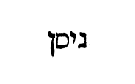
Dictum est autem «ex ovibus et capris.» Quid ergo hic sibi volunt, boves? An propter alia sacrificia, quae ipsis diebus azymorum sunt immolanda? «Non apparebit termentum in omnibus terminis tuis, septem diebus.» Hoc et a nobis modis omnibus, si [Col. 0896C] fieri potest, elaborandum est, ut exeuntes a saeculi hujus illecebris, non ambulemus in fermento veteris malitiae et nequitiae, sed in azymis sinceritatis et veritatis, quod est nova conversatio hominis, relicto pristino homine cum sociis suis. Et illis quidem septem diebus mundus peragitur, istis qui semper in suo ordine revolvuntur, et quotidie nobis agnus occiditur, et pascha quotidie celebratur, si fermentum malitiae et nequitiae non habemus, si innovati nihil ex corruptionis veteris malitia delectemur. Nam quid est aliud fermentum nisi corruptio naturae, quod et ipsum prius a naturali dulcedine recedens, adulterino rancore corruptum est? «Et non remanebit de carnibus ejus, quod immolatum est vespere, in die primo usque ad mane.» Quia dicta majestatis [Col. 0896D] divinae atque mysteria magna sunt sollicitudine discutienda, quatenus prius quam dies resurrectionis appareat, in hac praesentis vitae vocatione, omnia mandata illius discutiendo et intelligendo, et operando penetremus. Sed quia valde est difficile, ut omne agni eloquium possit intelligi, et omne ejus mysterium penetrari, recte in Exodo legitur: «Sed si quid remanserit, igni comburetis (Exod. XII) .» Quod ex agno remanet, igni comburemus, quando hoc de mysterio, quod incarnationis ejus intelligere non possumus et penetrare, potestate Spiritus sancti humiliter reservamus, ut non superbe quis audeat vel contemnere vel denuntiare quod non intelligit. Sed haec igni cum tradat, Spiritui sancto reservat. [Col. 0897A] «Non poteris immolare phase in qualibet urbium tuarum, sed in urbe quam Dominus Deus tuus elegerit, yut inhabitet nomen ejus ibi. Immolabis autem phase vespere ad solis occasum, quando egressus de Aegypto es; et coques et comedes in loco quem elegerit Dominus Deus tuus: maneque consurgens, vades in tabernacula tua.» In una domo agnus paschalis edi jubetur, et in uno loco immolari phase similiter praecipitur, hoc est, in una Ecclesia catholica. Extra illam autem nemo recte pascha facere potest. Et ideo vetat legislator in qualibet urbium pascha facere, quia omnes congregationes, quae extra Ecclesiam sunt, hoc est Judaeorum, haereticorum, atque gentilium, omni modo detestandae sunt. Vespere ergo, hoc est in novissima aetate saeculi, quando verus Sol in passione occubuit, et quando [Col. 0897B] Aegyptiaca captivitas per Redemptorem nostrum destructa est, pascha legitimum et Deo gratissimum factum esse, ejusque sanctionem omnes fideles tempore praesentis vitae fideliter debent observare: «quia pascha nostrum, Paulo testante, immolatus est Christus (I Cor. V) .» Et ideo debemus non in fermento veteri neque in fermento malitiae et nequitiae, sed in azymis sinceritatis et veritatis illud tempore mortalitatis nostrae condigne celebrare. Quod autem dicit, «mane consurgens vades in tabernacula tua,» demonstrat post peractum divinum servitium, in labore praesentis vitae, mane resurrectionis futurae, in tabernacula aeterna nobis migrandum esse, et ibi quiescendum esse ab omni opere solummodo, ubi laetandum est de percepta retributione. Unde sequitur: [Col. 0897C] «Sex diebus comedes azyma, et in die septima, quia collecta est Domini Dei tui, non facies opus.» Septenarius ergo numerus propter sabbatum significat futuram requiem, ubi jam nec tempus, nec locus, nec ratio est operandi, sed in laudibus et contemplatione conditoris, dignis quibusque perpetualiter vacandi.
(IBID.) «Septem hebdomadas numerabis tibi ab ea die qua falcem in segetem miseris, et celebrabis diem festum hebdomadarum Domino Deo tuo, oblationem spontaneam manus tuae, quam offeres juxta benedictionem Domini Dei tui, etc.» Quaerendum quomodo praecepit observari, quod ait: [Col. 0897D] Septem septimanas dinumerabis tibimetipsi inchoare falcem injicere in segetem. Incipies numerare septem septimanas; et facies diem festum septimanarum Domino Deo tuo, offeresque ut valet manus tua quaecunque tibi Dominus dederit, secundum quod benedicet te Dominus Deus tuus, et epulaberis in conspectu Domini Dei tui. Si enim ab universo populo haec pentecoste visa est observari, nunquid omnes uno die credendum est falces jussos mittere in messem? Si autem sibi quisque observat istam quinquagesimam, dinumerans ab illo die quo falcem mittit, non una est universo populo. Illa vero una est, quae computatur ab immolatione paschae usque in diem datae legis in Sina. Sed hujus pentecostes, neque [Col. 0898A] tempus neque numerus a populo Judaeorum custoditur, a nobis autem cum contemplatione et ad litteram custoditur. Planius enim legislator intentionem suam demonstrare volens, ab altero die sabbati in Levitico numerari praecepit quinquaginta dies, Dominicum diem procul dubio volens intelligi. Hoc enim altera dies sabbati. In hac enim resurrectio facta est, quae hebdomades numerantur septem, usque ad alterum diem expletionis hebdomadae. Dominica rursus die Pentecostes celebramus festivitatem, in qua sancti Spiritus adventum meruimus: non frustra eos septem hebdomadarum adventum custodientes, sed ut nos cognosceremus quia vetus lex nihil saeculare, nihil Deus agere praecepit corruptioni veteri proximum his qui eum cupiunt percipere, sed [Col. 0898B] novum sacrificium Domino tunc offerri jussit. Adveniens namque Spiritus totam nostram vitam renovavit, quando confirmavit Christi traditionem, et stabilivit conversationem, quam in illis perfecit. Ait enim: «De meo accipiet, ut annuntiet vobis.» Propter quod non in alia hebdomadis die advenit, sed qua resurrectio facta est. Et manipulus intelligibilis oblatus est, ut et hoc probaret, quia nova conversatio quae nos reformavit liberando a corruptione vetustatis, resurrectione Christi et sancti Spiritus adventu correcta est. Manifestat autem oblatio etiam ipsa speciem hostiae, quam praecepit fieri, sicut aperte scriptum reperimus. «Et sic, inquit, offeretis sacrificium novum Domino, ex omnibus habitationibus vestris. Panes primitiarum duos ex duabus decimis [Col. 0898C] similae fermentatae, quas coquetis in primitias Domino, et sic offeretis cum panibus septem agnos immaculatos, anniculos, et vitulum de armento unum, et arietes duos.» Novum sacrificium dicens, legis sacrificia et vetera exclusit, evangelica autem pro illis introduxit; deinde addens, «de habitationibus vestris,» Ecclesiam significavit, eique offerri, quae dicta sunt optavit. Neque enim dixit, ex omnibus habitaculis, sed «ex habitaculis vestris omnibus,» ut absolute aliquod habitaculum praecipuum ostenderet, de quo ait David: «Beati qui habitant in domo tua (Psal. LXXXIII) .» Et rursum: «Unam petii a Domino, hanc requiram, ut inhabitem in domo Domini omnibus diebus vitae meae (Psal. XXVI) .» Et panes quidem primitiarum duos, id [Col. 0898D] est, legem et Evangelium. Panes enim sunt cibum animarum fidelium continentes. Sunt autem et primitiarum, sive, ut Septuaginta, separati: quoniam omnia quidem sapientia sunt praeputii: ab ea autem quae exterior est, separati et conjuncti. Sunt ergo ex duabus decimis similae fermentatae, ex doctrina quae perfectam Dei divinitatem et perfectam humanitatem tradit. Nec aliter coqui, nisi per talem doctrinam possunt, sed primitiarum sunt Domino. Primum enim Dominus legem perfecit, et Evangelium post hoc docuit. «Audite, quia dictum est antiquis: Non occides. Ego autem dico vobis: Omnis qui irascitur fratri suo sine causa, erit reus judicio (Matth. V) .» [Col. 0899A] Conjunxit enim hic legem Evangelio, propter quod ejus primitiae dicuntur. Quod et Lucas affirmans, primitias veras nobis ostendens, scripsit: «Primum quidem sermonem feci de omnibus, o Theophile, quae coepit Jesus facere et docere (Act. I) .» Offerre autem eis septem agnos anniculos, immaculatos praecepit, dona significans quae sunt Spiritus. De quibus Salomon in Proverbiis dicebat: «Sapientia aedificavit sibi domum, erexit columnas (Prov. IX) .» Planius autem Isaias tradidit: «Et requiescit super eum spiritus Domini.» Nec tacuit, quae vel cujus numeri essent dona. Subintulit enim, «Spiritus sapientiae et intellectus, spiritus consilii et fortitudinis, spiritus scientiae et veritatis, et implevit eum spiritus Domini.» Agnos autem, haec appellat dona, ad ostentionem, [Col. 0899B] quia Spiritus sanctus unum est cum Christo, de quo dictum est: «Ecce Agnus Dei, ecce qui tollit peccata mundi. Unde nemo potest dicere Christus Jesus, nisi in Spiritu sancto (Joan. I) .» Ergo non extra rationem cum septem agnis, vitulum ex armento praesens continet oblatio, sed evidenter significat illum ex armento, Abraham, Isaac, et Jacob, et David secundum carnem factum. Huic arietes duos immaculatos conjunxit, excellentia mandata et virtutes, quas velut alias oves, oportet in his, ut pote intelligibilem inimicum ventilantibus, munimen et indemnitatem habere. Quae sunt autem haec? «Si vis perfectus esse, vade, vende omnia quae habes, et da pauperibus, et veni, sequere me (Matth. X) .» Maximum quippe mandatum vendere quae habet, et [Col. 0899C] dare pauperibus. Maximum etiam sequi Christum, ut cum despectu quippe possidendi, etiam omnia agere secundum voluntatem Domini studeamus, hoc enim sequi. Haec ergo mandata et propter immaculatam vitam et perfectam conscientiam, arietes appellantur. Quia arietes omni grege excellentiores sunt, horum sacrificia et libatio, scientia videlicet et correctio, odor suavitatis Domino illi, de qua Paulus dicebat: «Deo autem gratias, qui semper triumphat nos in Christo Jesu, et odorem scientiae manifestat per nos, quia Christi bonus odor sumus (II Cor. II) .»
[Col. 0899D] (IBID.) «Solemnitatem quoque tabernaculorum celebrabis per septem dies, quando collegeris de area tua et torculari fruges tuas; et epulaberis in festivitate tua, tu et filius tuus et filia, et servus tuus et ancilla, Levites quoque et advena, et pupillus ac vidua, qui intra portas tuas sunt. Septem diebus Domino Deo tuo festa celebrabis, in loco quem elegerit Dominus, etc.» Septem ergo diebus festivitatem tabernaculorum appellavit. Quicunque enim, ut tabernaculo praesente mundo utitur, hic festivitatem in eo habere et laetari, propter futuri exspectationem potest. Et quicunque scit quia si terrena domus habitationis hujus dissolvatur, aedificatio non manufacta eum in coelis suscipit, hic superare [Col. 0900A] sapientiam saeculi poterit, et transitorium ejus nosse et temporale. Intelligendum quoque est non solum hoc legislatorem significare, sed et oportere oculum habere ad saeculum futurum. Hoc ergo et per numerum, et per tabernacula sine aliqua dubitatione invenies figuratum. Quintadecima siquidem die, sicut in Levitico scriptum est, inchoari festivitatem praecipitur. Ex septem autem et octo, hic est numerus compositus, quorum unus quidem praesens saeculum, alter autem figurat futurum. Unde et festivitatem septem diebus consummari praecipiens, alios rursus dies celeberrimos atque sanctissimos commemoravit, et nec eam cum septem posuit sed sequentem, et semotam aliis sicut futurum saeculum. Sequitur quidem praesens, sed aliud hoc est. Post finitam ergo [Col. 0900B] messem omnium fructum, solemnitatem tabernaculorum praecepit agendam, et epulandum cum filiis et filiabus, cum servis et ancillis, cum Levitis et advenis, pupillis ac viduis, quia post finitum bonorum operum actum, et post virtutum plurimorum collectum, laetandum tunc cum amicis et gaudendum esse designat. Tunc vere quisque exsultabit de percepta retributione, qui hic reminiscatur se largum fuisse in munere. Tunc vere solemnitas agitur tabernaculorum, cum non mutabilium, sed aeternarum possessio conceditur mansionum. De quibus Salvator in Evangelio ait: «In domo Patris mei multae mansiones sunt (Joan. XIV) .» Et iterum: «Facite, inquit, vobis amicos de mammona iniquitatis, ut, cum defeceritis, recipiant vos in aeterna tabernacula [Col. 0900C] (Joan. XVI) .» «Tribus vicibus per annum apparebit omne masculinum tuum in conspectu Domini Dei tui, in loco quem elegerit. In solemnitate azymorum, et in solemnitate hebdomadarum, et in solemnitate tabernaculorum.» Quid est quod, feminis tacitis, de masculis lex mandat in conspectu Domini praesentandis, nisi quia Creator noster, quidquid molle, quidquid fragile et infirmum in nostra conversatione reprobans, fortia virtutum opera a nobis exquirit? Nam si in fide Patris et Filii et Spiritus sancti, pro aeternae mercedis adeptu, tempore vitae praesentis bonis operibus studium impendamus, masculinum nostrum sine dubio ante conspectum Domini digne constituimus. «Non apparebis ante Dominum vacuus; sed offeret unusquisque secundum [Col. 0900D] quod habuerit, juxta benedictionem Domini Dei sui, quam dederit ei.» In conspectu Domini vacuus apparet, qui nihil secum de fructu sui laboris portat. Alius namque adipiscendis honoribus exsudat; alius multiplicandis facultatibus aestuat; alius promerendis anhelat divitiis. Sed quia cuncta haec quisquis moriens deserit, ante Dominum vacuus apparet, quia secum ante judicem nihil tulit. Hinc ergo per legem salubriter admonetur dicentem: «Non apparebis in conspectu Domini vacuus.» Qui enim promerendae vitae mercedem bene agendo non providit, in conspectu Domini vacuus apparet. Hinc per Psalmistam dicitur justis: «Venientes autem venient in exsultatione, portantes manipulos [Col. 0901A] suos (Psal. CXXV) .» Ad examen quippe judicii portantes manipulos veniunt, qui in semetipsis recta opera quibus mereantur vitam, ostendunt.
(IBID.) «Judices et magistros constituas in omnibus portis tuis, quas Dominus Deus tuus dederit tibi per singulas tribus tuas.» Ut advenientes undique, statim in introitu civitatis judices et magistros paratos inveniant, a quibus justa judicia accipiant. Mystice autem Ecclesiarum principes admonet, ut in portis, hoc est, apostolorum et in prophetarum dictis consistant, judiciaque justa secundum divinae [Col. 0901B] legis instituta singulis quibusque impendant, veritatem observent, avaritiam caveant, ne forte, si per mendacium aut cupiditatem ipsi a vero deviaverint, abominabiles coram oculis Dei fiant. Unde sequitur: «Non accipies personam nec munera, quia munera excaecant oculos sapientum, et mutant verba justorum.» Non hoc dicit quod veraciter sapientes et justi per munerum cupiditatem subvertantur, sed quod illi, qui videntur sibi esse sapientes et justi, saepius corruant. Ad quos propheta loquens ait: «Vae, qui sapientes estis in oculis vestris, et coram vobismetipsis prudentes (Isa. V) .» Hinc per sapientiam dicitur: «Sunt viae quae videntur ab hominibus justae: novissima autem eorum deducunt usque ad profundum inferni (Prov. IV) .» Hinc Salvator in Evangelio talibus [Col. 0901C] loquitur dicens: «Vae vobis, qui justificatis vos coram hominibus: Deus autem novit corda vestra (Luc. XVI) .» Nam qui vere sunt sapientes et justi, nunquam praeponunt res caducas veritati atque justitiae, sed in omni tempore student in aequitate permanere. «Juste quod justum est persequeris, ut vivas et possideas terram, quam Dominus Deus tuus daturus est tibi.» Injuste quod justum est exsequitur, qui ad defensionem justitiae non virtutis aemulatione, sed amore praemii temporalis excitatur. Injuste quod justum est exsequitur, qui ipsam, quam praetendit justitiam, vendere minime veretur. Juste ergo justum exsequi, est in assertione justitiae eamdem ipsam justitiam quaerere.
(IBID.) «Non plantabis lucum et omnem arborem juxta altare Domini Dei tui; nec facias sibi atque constituas statuam, quae odit Dominus Deus tuus.» Per haec Duo Testamenta amputat occasionem idololatriae, quam gentes solebant agere, in lucis et delubris simulacra sibi constituentes, et idola adorantes. Mystice autem juxta altare fidei prohibet omnem infructuositatem otiosi sermonis, seu pravorum operum, et obscuritatem ignorantiae statuere; nec fictionem aliquam falsitatis atque erroris permittit veritati fidei catholicae associare. Interdicitur ne nemus [Col. 0902A] plantetur in templo. Nemus frondentes arbores et infructuosae sunt, sola delectatione visus plantatae. Tales sunt et gentiles, qui rationem suam verborum decore componunt, ut non convertant a viis, sed delectent, atque istiusmodi seductione persuadeant. Nos autem secundum praeceptum Dei juxta altare nemus non plantamus, sed circa Dominicam fidem nihil infructuosis verbis, nihil audientiae saecularis illecebrarum componimus, sed sola puritate veritatis scientiam praedicationis tenemus. Hoc nemus in praedicatione sapientiae plantare vitabat Apostolus, cum dicebat: «Et loquimur non in doctis sapientiae humanae verbis, sed in doctrina spiritus et virtute. Non immolabis Domino Deo tuo bovem et ovem, in quo est macula, aut quidpiam vitii: quia abominatio [Col. 0902B] est Domino Deo tuo (I Cor. I) .» Omnem maculam intellige omne peccatum, quod ubicunque fuerit inventum, deformitatem parit. Et ideo oblatio Domini, sive in quolibet fortiter operanti, quem significat bos, sive in simplicitate ambulanti, quem designat ovis, bonum est, ut sine peccati contagio fiat, quia omne peccatum contrarium est veritati, et ejus societas non placebit justitiae.
(IBID.) «Cum reperti fuerint apud te intra unam portarum tuarum, quas Dominus Deus tuus dabit tibi, vir aut mulier qui faciant malum in conspectu [Col. 0902C] Domini Dei tui, et transgrediantur pactum illius, ut vadant et serviant diis alienis, et adorent eos, et lunam et omnem militiam coeli, quae non praecepi, etc.» Tota lex Domini errorem et idololatriam maxime detestatur, et ubique eam evertit: quia maximum scelus est divinum honorem impendere creaturae, quod faciunt gentiles, sive etiam mali catholici, qui licet credulitate ab unitate Ecclesiae non recedant, tamen vitiis variis dediti, magis inveniuntur per cupiditatem terrenam servire diabolo quam per bonorum operum abundantiam militare Deo. Hos enim lapidibus obrui praecipit, quia districta sententia damnandos esse praevidit: «In ore duorum vel trium testium, peribit, qui interficietur.» [Col. 0902D] Quid est quod in ore duorum vel trium testium perire dicitur, qui noxius est, nisi quia attestationem legis et prophetarum atque evangeliorum esse convincitur, qui divinae culturae indevotus esse reperitur. Unde Salvator in Evangelio ait: «Sermo quem locutus sum vobis, ipse judicabit eum in novissimo die.»
(CAP. XVII.) «Si difficile et ambiguum apud te judicium esse perspexeris inter sanguinem et sanguinem, causam et causam, lepram et non lepram, et judicum intra portas tuas videris verba variari, surge et ascende ad locum quem elegerit [Col. 0903A] Dominus Deus tuus; veniesque ad sacerdotes Levitici generis, et ad judicem qui fuerit illo in tempore; quaeresque ab eis qui indicabunt tibi judicii veritatem; et facies quodcunque dixerit, qui praesunt loco quem elegerit Dominus, et docuerunt te juxta legem ejus, etc.» Hac sententia legislator ritum docet ecclesiastici ministerii, ut sacerdotes et praesules Ecclesiarum Dei, judicia ecclesiastica secundum potestatem sibi datam a Deo reverenter agant justeque discernant causas et actus singulorum. Hoc maxime commendat, ut ipsa judicia non secundum sua libera quisque, sed secundum legis Domini agere studeat decreta; nec ob gratiam sive injuriam cujuslibet suscipiendo personam mutet sententiam, sed in omnibus rebus legis Domini [Col. 0903B] observet justitiam. Et quia necesse est ut subditi quoque magistrorum consentiant disciplinae, inobedientibus ac superbientibus mox quae eos obsequatur poena, demonstrat dicens: «Qui autem superbierit nolens obedire sacerdotis imperio, qui eo tempore ministrat Domino Deo tuo, decreto judicis morietur ille: et auferes malum de medio tui, et reliqua.» Morietur, inquit, homo, qui obedire noluerit sacerdotis imperio: ipsius videlicet sacerdotis imperio, qui secundum ordinem Melchisedech sacerdos factus in aeternum, pastores, hoc est, vicarios suos constituit regere Ecclesiam quam acquisivit sanguine suo, ut pro ipso legatione functi Evangelium in toto orbe praedicarent. Qui quantae auctoritatis sint ipse demonstrat dicens: «Qui vos audit, me audit; et qui vos spernit, me spernit. Qui autem me spernit, spernit eum qui me misit (Luc. X) .» Dignum est ergo, ut suae damnationis accipiat sententiam, qui non metuit contemnere Divinitatis potentiam.
(IBID.) «Cum ingressus fueris terram quam Dominus Deus tuus dabit tibi, et possederis eam, habitaverisque in illa, et dixeris: Constituam super me regem, sicut habent omnes per circuitum nationes, eum constitues, quem Dominus Deus tuus elegerit de numero fratrum tuorum. Non poteris alterius gentis hominem regem facere qui non sit frater tuus.» Quaeri potest cur displicuerit populus [Col. 0903D] Deo, quando regem desideravit, cum hic inveniatur esse permissus. Sed magis hic intelligendum est merito, non fuisse secundum voluntatem Dei, quia fieri hoc non praecepit, sed desiderantibus permisit; verumtamen praecepit, ne fieret alienus, sed frater, id est, ex eodem populo indigena, non alienigena. Quod non poteris, intelligendum est: non debebis. «Cumque fuerit constitutus, non multiplicabit sibi equos, nec reducet populum in Aegyptum equitatus numero sublevatus, praesertim cum praeceperit vobis, ut nequaquam amplius per eamdem viam revertamini. Non habebit uxores plurimas, quae illiciant animum ejus, neque argenti et auri immensa pondera, etc.» De rege cum loqueretur [Col. 0904A] ait: Non multiplicabit sibi uxores, ut non discedat cor ejus; et argentum et aurum non multiplicabit sibi valde. Unde quaeritur utrum David contra hoc praeceptum non fecerit, non enim unam habuit uxorem. Nam de Salomone manifestum est quod transgressus fuerit hoc praeceptum, et in feminis, et in auro, et in argento. Sed hinc potius intelligitur permissum fuisse regibus, ut plures haberent quam unam. Multiplicare enim prohibiti sunt; quae prohibitio non habet transgressionem, si paucae fuerint, sicut David fuerunt, non autem multae sicut Salomon: quamvis cum addidit, «ut non discedat cor ejus,» hoc magis videtur praecepisse, ne multiplicando perveniat ad alienigenas feminas, per quas factum est in Salomone, ut discederet cor ejus a Deo. Multiplicatio [Col. 0904B] tamen generaliter ita prohibita est, ut etiam si ex Hebraeis solis eas multiplicasset, contra hoc praeceptum fecisse merito argui posset. Quod autem utique Deuteronomium ei scribi jubet, et legi omnibus diebus, ostendit eum non superbiendo sua sequi debere libita, sed humiliter divina servare praecepta.
(CAP. XVIII.) «Non habebunt sacerdotes et Levitae omnes, qui de eadem tribu sunt, partem et haereditatem cum reliquo Israel, quia sacrificia Domini et oblationes ejus comedent, et nihil aliud accipient [Col. 0904C] de possessione fratrum suorum. Dominus enim ipse est haereditas eorum, sicut locutus est illis.» Et in Veteri et in Novo Testamento ministris altaris et servitoribus templi Domini mandatum est, de oblationum largitate et decimarum dato nutrimentum habere, nec terrenis possessionibus concessum est eis adipiscendis, ullo modo inhiare. Unde Dominus in Evangelio apostolis et praedicatoribus Evangelii praecepit, dicens: «Euntes autem praedicate dicentes, quia appropinquavit regnum coelorum. Infirmos curate, mortuos suscitate, leprosos mundate, daemones ejicite: gratis accepistis, gratis date. Nolite possidere aurum et argentum, neque pecuniam in zonis vestris, non peram in via, neque duas tunicas, neque calceamenta, neque virgam. Dignus [Col. 0904D] est enim operarius mercede sua, vel cibo suo (Matth. X) .» Hinc Paulus Corinthiis loquens: «Nescitis, inquit, quoniam qui in sacrario operantur, quae de sacrario sunt edunt? et qui altari deserviunt, cum altari participantur? Ita et Dominus ordinavit his qui Evangelium annuntiant, de Evangelio vivere.» Hinc et ad Timotheum scribens ait: «Nemo militans Deo, implicet se negotiis saecularibus, ut ei placeat cui se probavit. Nam et qui certat in agone, non coronatur, nisi legitime certaverit. Laborantem enim agricolam oportet primum de fructibus accipere (II Tim. II) .» Nec conveniens enim est, ut ille quam oportet semper astare divino, quod acquirendo occupetur terreno lucro. Dominus enim ipse est [Col. 0905A] haereditas, qui sibi devote et instanter deserviunt, nec aliquid illi deesse potest, qui omnia possidentem possidet. «Hoc erit judicium sacerdotum a populo et ab his qui offerunt victimas, sive bovem, sive ovem immolaverint, dabunt sacerdoti armum et ventriculum, primitias frumenti, vini et olei, et lanarum partem ex ovium tonsione.» Scriptum est in Levitico, dicente Domino: «Pectusculum elevationis, et armum separationis tuli a filiis Israel de hostiis pacificis, et dedi Aaron sacerdoti ac filiis ejus lege perpetua, ab omni populo Israel.» Per pectusculum autem fidem designans, et confidentiam quam offerri Domino vult ab eo qui desiderat salvari, quia sine fide impossibile est placere Deo. Armus quoque dexter de pacificorum hostiis, cadit in primitiis sacerdotis. [Col. 0905B] Armus dexter actiones bonae sunt. Ergo et fidem et actiones offerre oportet eum qui salvari vult. Sed pectusculum filiis Aaron deputavit, qui sublimes vita sunt; armum autem dextrum sacerdoti, qui imaginem tenet Christi: propter quod solus sacerdos hoc sacrificium perficere potest, offerri apte legislator ostendit; quia quidem credere et proponere bona, nostrum est ex Dei dono, sed incipere opera aut perficere, et ad finem perducere ea quae sunt coepta, hoc divinae est gratiae: propter quod dixit Paulus apostolus: «Non volentis neque currentis, sed miserentis est Dei (Rom. IX) .» Dei enim solius est dirigere actiones, propter quod et brachium ipse Dei nominatur. Primitias frumenti, vini et olei, et lanarum partem ex ovium tonsione, jutemur [Col. 0905C] sacerdotibus dare, quia sive in corporalibus solatiis, sive in spiritalium rerum emolumentis, humiliter ac devote spiritalibus solatiis doctoribus nostris semper communicare debemus: hoc ipsum etiam exhortante apostolo Paulo atque dicente: «Communicet is qui catechizatur verbo ei qui se catechizat in omnibus bonis (Gal. VI) .» «Si exierit Levites de una urbium tuarum ex omni Israel in qua habitat, et voluerit venire desiderans locum quem elegerit Dominus, ministrabit in nomine Domini Dei sui, sicut omnes fratres ejus. Levitae stabunt eo tempore coram Domino. Partem ciborum eamdem accipiet quam et caeteri, excepto eo quod in urbe sua ex patria ei successione debetur. Si autem supervenerit Levites ex civitatum tuarum [Col. 0905D] una, ex omnibus filiis Israel, ubi ipse incolit, secundum quod cupit anima ejus, in locum quem elegerit Dominus, etc.» Id est, si desideraverit ire ad locum ubi Dominus invocatur, et ministrare nomini Domini Dei sui, sicut omnes fratres ejus, Levitae qui astant coram Domino, partem partitam edent, praeter venditionem quae est secundum familiam. Quam dicat venditionem obscurum est, nisi forte, quia decimationes et primogenita praecepit vendi ab eis qui in longinquo habitarent, ne multa cogerentur portare ad locum invocationis Domini, vel pecora ducere, ut illic ab eis denuo emerentur ex eodem pretio; et jusserat ibi partem habere Levitam, qui maneret in ea civitate, unde illae decimationes [Col. 0906A] et primogenita debebantur. Et ideo dixit secundum familiam hoc deberi Levitae, quoniam ex successione qua succedit parentibus suis, hoc circa eum servari oportet quod parentibus exhibitum est.
(IBID.) «Quando ingressus fueris terram quam Dominus Deus tuus dabit tibi, cave ne imitari velis laquo;abominationes gentium illarum nec inveniatur in te qui lustret filium suum, aut filiam suam ducat per ignem, et ariolos sciscitetur, et observet somnia atque auguria. Ne sit maleficus, nec incantator, nec pythones quis consulat neque divinos, [Col. 0906B] ut quaerat a mortuis veritatem, etc.» Quoniam portentorum inspectores prohibet esse in populo Dei, quaerendum est quomodo ista portenta, quae inspici prohibentur, discernantur ab eis quae divinitus ita dantur ut quid significent dici debeat sicut omnia miracula quae in Scripturis reperiuntur significantia, quod pertineat ad regulam fidei. Sicut dicimus, quod significaverit vellus in area compluta siccum, vel in sicca area complutum, ut virga Aaron quae floruit et nuces attulit, et caetera hujusmodi. Sicut autem discernuntur divinationes, quas consequenter prohibet a praedicationibus vel annuntiationibus prophetarum, sic illae inspectiones prodigiorum a significationibus divinorum miraculorum discernendae sunt. «Prophetam autem de gente [Col. 0906C] tua et de fratribus tuis sicut me suscitabit tibi Dominus Deus tuus. Ipsum audies, ut petisti a Domino Deo tuo in Oreb, quando concio congregata est atque dixisti: Ultra non audiam vocem Domini Dei mei, et ignem hunc maximum amplius non videbo, ne moriar. Et ait mihi Dominus: Bene omnia sunt locuti. Prophetam suscitabo eis de medio fratrum suorum similem tui, et ponam verba mea in ore ejus. Loqueturque ad eos omnia quae praecepero illi. Qui autem verba ejus quae loquetur in nomine meo audire noluerit, ego ultor existam, etc.» Licet quidam secundum historiam in hac sententia accipere velint prophetas omnes sanctos qui spiritu Dei repleti prophetaverunt in filiis Israel, quos ita Moyses ut se audiendos dixit [Col. 0906D] esse, quia eodem spiritu, quo ipse plenus legem descripsit, hoc etiam illi prophetias suas ore veridico protulerunt, tamen nullum melius quam ipsum Dominum prophetarum, hoc est, Jesum Christum hic denotatum intelligere possumus, quem etiam libri Veteris Testamenti verum prophetam et evangelium prophetae nomine nuncupat. Unde turbae ab ipso satiatae, videntes signum quod fecerat, intra se dicebant: «Quia hic est vere propheta, qui venturus est in mundum (Joan. VI) .» Et alibi quando suscitavit filium viduae idem mediator Dei et hominum, «Accepit autem omnes timor, et magnificabant Deum dicentes: Quia propheta magnus surrexit in nobis, et quia Deus visitavit plebem suam (Luc. VII) .» Hunc ergo prophetam suscitavit Dominus Israelitis de medio fratrum suorum, hoc est, de semine David similem Moysi, quia non venit Jesus solvere legem, sed adimplere; et posuit verba in ore ejus, cujus verba, quae loquetur in nomine Domini, qui audire noluerit, ipse Dominus ultor existit, cum perpetua poena illum cruciandum mancipaverit.
(CAP. XIX.) «Cum disperdiderit Dominus Deus tuus gentes quarum tibi traditurus est terram et possederis eam, habitaverisque cum ea in urbibus ejus et in aedibus, tres civitates separabis tibi [Col. 0907B] in medio terrae, quam Dominus Deus tuus dabit tibi in possessionem, sternens diligenter viam, et in tres partes aequaliter totam terrae tuae provinciam divides, ut habeat e vicino qui propter homicidium profugus est, quo possit evadere, et reliqua.» Tres civitates refugii ultra Jordanem Moyses constituit homicidis, his qui non sponte homicidium commiserunt, et tres alias contra Jordanem in terra repromissionis jubet Josue eisdem decerni: mystice insinuans quod ante perceptionem baptismatis, omnis qui vult a peccatis salvari et ab hostibus spiritalibus liberari, sanctae Trinitatis fidem debet sincera mente confiteri, et post ablutionem sacri fontis, in fide, et spe, et charitate utiliter operari; sicque religiose in hoc mundo conversans, qui senario [Col. 0907C] numero conditus pollet, post perfectionem bonorum operum, requiem aeternam exspectet, in quiete felici sanctarum animarum. Quod autem dicit sterni oportere diligenter viam, et in tres aequaliter partes totam terrae provinciam dividi, quatenus salvandus facilius hostes possit evadere, demonstrat praedicatores plebium, omni diligentia, verbo, exemplis, consulere debere saluti aegrotantium, et aequaliter in tota terra Ecclesiae sanctae eamdem fidem omnibus insinuare, quatenus viam veritatis ac portam credulitatis sibi patere singuli agnoscant. Et si intrare noluerint, se merito damnandos esse praesciant. «Haec erit lex homicidae fugientis, cujus vita servanda est: qui percusserit proximum suum nesciens, et qui nudiustertius et heri nullum contra [Col. 0907D] eum habuisse odium comprobatur, sed abisse simpliciter cum eo in silvam ad ligna caedenda, et in succisione lignorum securis fugerit manum, ferrumque lapsum de manubrio amicum ejus percusserit et occiderit, hic ad unam supradictarum urbium confugiet et vivet: ne forte proximus ejus cujus est effusus sanguis, dolore stimulatus persequatur, et apprehendat eum si longior via fuerit, et percutiat animam ejus qui non est reus mortis: quia nullum contra eum qui occisus est odium prius habuisse monstratur.» Ad silvam cum amico imus, quoties cum quolibet proximo ad intuenda delicta nostra convertimur, et simplicitate ligna succidimus, cum delinquentium vitia pia intentione [Col. 0908A] resecamus. Sed securis fugit manum, cum sese increpatio plus quam necesse est in asperitate protrahit; ferrumque de manubrio prosiliit, cum de correptione sermo durior excedit, et amicum percutiens occidit, quia auditorem suum prolata contumelia ab spiritu dilectionis interficit Correpti namque mens repente ad odium proruit, sed hanc immoderata increpatio plus quam debuit, addicit. Sed hic qui incaute lignum percutit et proximum exstinguit, ad tres necesse est urbes fugiat, ut munimine earum defensus, vivat, quia si ad poenitentiae lamenta conversus in unitate sacramenti, sub spe, fide et charitate absconditur, reus perpetrati homicidii non tenetur, eumque exstincti proximus cum invenerit, non occidit, quia cum districtus judex [Col. 0908B] venerit, qui sese nobis per naturae nostrae consortium junxit, ab eo procul dubio vindictam de culpae reatu non expetit, quem ejus venia, spes, fides, charitas, abscondit. Ejus ergo culpa dimittitur, quae nequaquam malitiae studio perpetratur. «Cum autem dilataverit Dominus Deus tuus terminos tuos sicut juravit patribus tuis, et dederit tibi cunctam terram quam eis pollicitus est, si tamen custodieris mandata ejus, et feceris quae hodie praecipio tibi, diligas Dominum Deum tuum, et ambulaveris in viis ejus omni tempore, addes tibi tres alias civitates, et supradictarum trium urbium numerum duplicabis, ut non effundatur sanguis innoxius in medio terrae, quam Dominus Deus tuus dabit tibi possidendam, nec sis sanguinis reus, [Col. 0908C] etc.» Hoc quomodo factum sit, liber qui dicitur Jesu Nave, manifestat, cum commemorat Josue Domino jubente sex civitates refugii decernere homicidis, qui homicidium non sponte fecerunt, hoc est, Cades in Galilaea montis Nephthalim, et Sichem in monte Ephraim, et Cariatharbe: ipsa est Hebron in monte Juda; trans Jordanem contra occidentalem plagam Jericho, urbem Bosor, quae sita est in regione campestri, in solitudine de tribu Ruben, et Ramoth in Galaad de tribu Gad, et Gaulon in Basam, de tribu Manasse. Hae civitates constitutae sunt cunctis filiis Israel, et advenis qui habitant inter eos ut fugeret ad eas qui animam nescius percussisset, et non moreretur in manu proximi, effusum sanguinem vindicare cupientis, donec staret ante populum [Col. 0908D] expositurus causam suam. Mystice autem, si quis per invidiam aut odium mucrone malitiae aliquem percusserit, et in mortem animae seduxerit, aeternae morti ipse obnoxius erit. Unde ipsa Veritas ait: «Si quis scandalizaverit unum de pusillis istis qui in me credunt, expedit ei ut mola asinaria addatur collo ejus, et demergatur in profundum (Matth. XVIII) .» Et Joannes ait: «Qui odit fratrem suum, homicida est. Et scitis quia omnis homicida non habet vitam aeternam in se manentem (I Joan. III) .» Hic talis ab altari Domini evelli jubetur, quia indignus sacramentis Dominicis, a participatione sacri altaris merito removetur, nec revocari ad veniam nisi per condignam poenitentiam ullo modo [Col. 0909A] meretur. Qui autem non voto malitiae, sed per incuriam aut ignorantiam aliquem laeserit, habet urbes refugii, Ecclesiam videlicet catholicam, ubi se angustia poenitentiae coarctans, per omne tempus praesentis vitae bonis operibus studium impendens maneat; et si spem suam in morte pontificis summi, Redemptoris videlicet sui, posuerit, hic sine dubio in aeternum salvabitur.
(IBID.) «Non stabit testis unus contra aliquem, quidquid illud peccati et facinoris fuerit; sed in ore duorum aut trium testium stabit omne verbum.» Licet et historialiter haec sit divina servanda [Col. 0909B] sententia, tamen et cum contra quoslibet impios vel haereticos agimus, necesse nobis est Scripturas sanctas in testimonium vocare. Sensus quippe nostri et attestatio sine his testibus non habent fidem. Unde magis convenit ad probationem, ut cum affirmem verbum intellectus mei, adhibeo duos testes, Novum et Vetus Testamentum. Adhibeo etiam tres, Evangelium, Prophetam et Apostolum: sic stabit omne verbum. «Cumque diligentissime perscrutantes, invenerint falsum testem dixisse contra fratrem suum mendacium, reddent ei sicut fratri suo facere cogitavit; et auferes malum de medio tui, ut audientes timorem caeteri habeant, et nequaquam talia audeant facere. Non misereberis ejus, sed animam pro anima, oculum pro oculo, [Col. 0909C] dentem pro dente, manum pro manu, pedem pro pede exiges.» De hoc et in Levitico scriptum est: «Qui occiderit et percusserit hominem, morte moriatur. Qui percusserit animal, reddet vicarium, id est, animam pro anima. Qui irrogaverit maculam cuilibet civium suorum, sicut fecit fiat ei: fracturam pro fractura, oculum pro oculo, dentem pro dente restituet. Qualem infixerit maculam, talem sustinere cogatur. Qui percusserit sive occiderit hominem, sive, secundum Septuaginta, qui percusserit animam hominis, morte moriatur (Levit. XXIV) .» Et quis hominis animam percutit, nisi qui eum illicitat ad impietatem, qui eum ad blasphemos trahit sermones, in quibus meretur pessima peccati morte mori, quae vera est [Col. 0909D] mors animae? Propter quod morte mori hunc, qui talis est, praecipit. Hic tamen animam dicens hominis, animalem maxime hominem dicit, id est, eum tui non potest intelligere quae sunt spiritus. De quo ut apostolus Paulus: «Animalis autem homo non percipit ea quae sunt spiritus. Stultitia enim illi est, et non potest intelligere, quia spiritaliter examinatur (I Cor. II) .» Quem qui percusserit, morte moratur. Sed et si percusserit animal, videlicet eum tui modo pecoris vivit. De quo ait David: «Homo cum in honore esset, non intellexit: comparatus est jumentis insipientibus, et similis factus est illis (Psal. XLVIII) .» Reddet vicarium, id est, animam pro anima. Nec enim quia peccatorem aut popularem, [Col. 0910A] et non habentem discretionem subtilem de Deo, errare fecit, quasi venia omnino dignus est. Si autem percussit, non sic ut perfecte eum ad impietatem deduceret, et ex toto eum errare faceret a Deo, omnino autem quaedam ea dixerit aut egerit, et maculam peccati irrogavit, secundum hoc et poenam sustinebit. Ait enim: «Qui irrogaverit maculam cuilibet civium suorum, sicut fecit, ei fiat. Fracturam pro fractura: sive, ut Septuaginta, contritionem pro contritione, oculum pro oculo, dentem pro dente.» Sive enim virtutem quam habuit, cujus sive proximus ille mala docens aut suadens, aut scandalizans, aut detrahens aut calumnians contrivit, sive oculum ejus videlicet scientiarum, unum quodlibet praedictorum agens caecavit; aut dentem, verborum [Col. 0910B] virtutem. Dentes enim pro verbis Scriptura accipere solet, quod ostendit David dicens: «Filii hominum, dentes eorum arma et sagittae, et lingua eorum gladius acutus (Psal. LVI) ,» vel machaera acuta. De Christo autem Jacob patriarcha in benedictionibus dicebat: «Pulchriores sunt oculi ejus vino, et dentes lacte candidiores (Gen. XLVI) .» Clari enim et aperti evangelici Christi sermones sunt, super lac legales. Necessarie ergo eorum quae dicta sunt aliquid nocens, similem et ipse sustinet maculam, in judicio videlicet futuro. Si enim alterius virtuti nocuit aut contrivit, ipsius conteretur. Scientiam obscuravit, ejus scientia pro nullo habetur. Si verbis doctoralibus nocuit, et ejus sermones infructuosos ei atque inutiles judex efficiet.
(CAP. XX.) «Audi, Israel: Vos hodie contra inimicos vestros pugnam committitis: non pertimescat cor vestrum, nolite metuere, nolite cedere, nec formidetis eos, quia Dominus Deus vester in medio vestrum est, et pro vobis contra inimicos vestros dimicabit, ut eruat vos de periculo.» In Septuaginta quoque haec sententia ita legitur: «Quoniam Dominus Deus vester qui praecedet vobiscum, simul debellabit vobiscum inimicos vestros, et salvos faciet vos.» Ecce quemadmodum et in spiritalibus conflictibus sperandum est et petendum est [Col. 0910D] adjutorium Dei, non ut nos nihil faciamus, sed ut adjuti cooperemur. Sic enim ait: «Debellabit vobiscum,» ut etiam ipsos acturos quid agendum esset, ostenderet. «Duces quoque per singulas turmas audiente exercitu proclamabunt: Quis est homo qui aedificavit domum novam, et non dedicavit illam? Vadat et revertatur in domum suam, ne forte moriatur in bello, et alius homo ejus fungatur officio. Quis homo qui desponsavit uxorem, et non accepit eam? Vadat et revertatur in domum suam, ne forte moriatur in bello, et alius homo accipiat eam,» etc. Possunt movere ista, quasi meliore conditione moriantur in bello, qui jam dedicaverunt aedificia sua, jamque epulati sunt [Col. 0911A] de novellis, duxerunt sponsas suas, quam qui nondum. Sed quoniam his rebus tenetur humanus affectus et magni aestimantur haec ab hominibus, intelligendum est ad hoc ista dici in bellum procedentibus, ut quisquis animo his tenetur, appareat cum revertitur, ne propter hoc minus fortiter agat, dum timet ne ante moriatur quam domum dedicaverit; aut de novella sua biberit, aut sponsam duxerit. Nam utique, quantum ad feminam pertinet, melius alteri nubit intacta quam vidua. Sed, ut dixi, haec instituta sunt propter virorum animos explorandos. «Quis est homo formidolosus et corde pavido? Vadat et revertatur in domum suam: ne pavere corda fratrum suorum faciat, sicut et ipse timore perterritus est.» Quibus verbis [Col. 0911B] edocet non posse quemquam professionem contemplationis vel spiritalis militiae arripere exercitum, qui adhuc nudari terrenis operibus pertimescit: ne rursus infirmitate mentis revertatur, suoque exemplo alios ab evangelica perfectione revocet et infideli terrore infirmet. Jubentur itaque tales ut, discedentes a pugna, revertantur in domum suam, quia non possunt duplici corde bella Domini praeliari. «Vir duplex animo inconstans est in omnibus viis suis (Jac. I) .» Tales quippe oportet ut ne initium quidem renuntiationis arripiant, quibus melius est in activa vita consistant quam tepide contemplationem exsequentes, majori discrimini semetipsos involvant. «Melius est enim non vovere, quam vovere et non reddere (Eccl. V) .» Similiter et ille [Col. 0911C] a tali militia prohibetur, qui uxorem duxerit, qui plantaverit vineam, velut propagines filiorum. Non enim potest servire divinae militiae servus uxoris: nec potest assequi studium contemplationis, qui adhuc in delectatione figitur carnis. «Nemo, inquit Apostolus, militans Deo, implicet se negotiis saecularibus, ut ei placeat cui se probavit.»
(IBID.) «Si quando accesseris ad expugnandam civitatem, offeres ei primum pacem. Si receperit et aperuerit tibi portas, cunctus populus qui in ea est salvabitur, et serviet tibi sub tributo. Sin [Col. 0911D] autem foedus inire noluerint et coeperint contra te bellum, oppugnabis eam. Cumque tradiderit Dominus Deus tuus illam in manu tua, percuties omne quod in ea masculini generis est in ore gladii, absque mulieribus, et infantibus, et jumentis, et caeteris quae in civitate sunt. Omnem praedam exercitui divides, et comedes de spoliis hostium tuorum quae Dominus Deus tuus dederit tibi.» Civitas ergo quam expugnaturi Israelitae accedunt, significat, juxta allegoriam, conventicula haereticorum; vel, generaliter, mundum, qui idololatriae deditus, obsistit religioni Christianae: sive etiam, secundum tropologiam, exteriorem hominem nostrum, qui corrumpitur secundum desideria erroris [Col. 0912A] et adversatur spiritui. Quando autem catholicus quis, qui est utique verus Jerosolymita, hujuscemodi susceperit bellum, primum pacem jubetur offerre, hoc est, Christum ad credendum praedicare. «Ipse est enim, juxta Pauli vocem, pax nostra, qui fecit utraque unum (Ephes. II) .» Qui autem receperit verbum Filii Dei, et aperuerit illi portas interioris cordis, ut accipiat in se hospitem Christum, salvabitur cum totis sensibus animi et affectibus illius: et per devotionem rectam solvendo censum bonorum actuum, salutem animae suae conquirit perpetuam. Hinc Salvator in Evangelio apostolis ait: «In quamcunque civitatem aut castellum intraveritis, interrogate quis in ea dignus sit: et ibi manete, donec exeatis. Intrantes autem [Col. 0912B] domum, salutate eam dicentes: Pax huic domui. Et siquidem non fuerit domus digna, pax vestra ad vos revertetur (Matth. X) .» Qui autem foedus pacis inire noluerit, sed coeperit e contrario praeliari, oppugnari debet, quia nulli vitio, nulli errori nullique nequitiae consentiendum est: nec foedus cum eis ineundum, sed magis omnem vigorem eorum, quod significat masculinum genus, in ore gladii spiritalis, quod est verbum Dei, decet esse mulctandum. Si qui vero cedunt increpationibus, ac de pravis actibus suis poenitentiam agunt (hoc enim persona mulierum et infantium atque jumentorum notatur), in praedam salutiferam militum Christi feliciter perveniunt, atque in possessionem sanctae Ecclesiae salubriter rediguntur. Quod autem [Col. 0912C] subjunxit: «De his civitatibus quae dabuntur tibi, nullum omnino permittes vivere, sed interficies in ore gladii: Hethaeum videlicet et Amorrhaeum, et Chananaeum, Pherezaeum, Hethaeum et Jebusaeum, sicut praecepit tibi Dominus Deus tuus: ne forte doceant vos facere cunctas abominationes, quas ipsi operati sunt in diis suis,» significat nulli vitio in nostra conversatione esse parcendum, sed magis zelo divino resistendum, ne forte si hostibus spiritalibus parcamus, ipsi coram oculis ejus in voluptatibus nostris corrupti, et abominabiles facti, viles appareamus; et ob hoc ab ipso deserti, in gaudium veniamus inimicis nostris, ut exsultantes de ruina nostra, dicant in cordibus suis: «Euge, euge animae nostrae, absorbuimus [Col. 0912D] eam (Psal. XXXIV) .» «Quando obsederis civitatem aliquam multo tempore, et munitionibus circumdederis ut expugnes eam, non succides arbores de quibus vesci potest; nec securibus per circuitum debes vastare regionem: quoniam lignum est et non homo, nec potest contra te bellantium augere numerum. Si qua autem ligna non sunt pomifera, sed agrestia, et inter caeteros apta usus, succide et exstrue machinas, donec capias civitatem quae contra te dimicat.» Quid est quod prohibet arbones pomiferas succidi, de quibus vesci potest, agrestia autem praecidi ad machinas construendas, vel ad varios usus, nisi quod illis personis aliquo modo in discretione judicandi parcendum [Col. 0913A] est, quae habiles sunt ad scientiae germina et ad virtutum fructus proferendos, ne forte per incautelam judicii nimium laedantur, ita ut futuri germinis usus penitus ab eis abscindatur. Unde Apostolus admonens nos instruit dicens: «Fratres, si occupatus fuerit homo in aliquo delicto, vos, qui spiritales estis, instruite hujusmodi in spiritu lenitatis: considerans teipsum, ne et tu tenteris. Alter alterius onera portate: et sic adimplebitis legem Christi (Gal. VI) .» Qui autem agrestes habet sensus et mores inordinatos atque incompositos, ita ut nulli usui virtutum conveniant, ab hac intentione prava et studio nefando evelli debent, atque in meliorem usum converti. Unde idem Apostolus quosdam peccantes jubet tradi Satanae in interitum [Col. 0913B] carnis, ut spiritus salvus sit in die Domini, nec cum hujusmodi cibum sumere, neque in aliquo communicare, ut confusi poenitentiam agant.
(CAP. XXI.) «Quando fuerit inventum in terra quam Dominus Deus tuus daturus est tibi, hominis cadaver occisi, et ignoratur caedis reus, egredientur majores natu et judices tui, et metientur a loco cadaveris, singularum per circuitum spatia civitatum, et quam viciniorem caeteris esse prospexerint, seniores civitatis ejus tollent vitulam de armento quae non traxit jugum nec terram excidit vomere, et ducent eam ad vallem saxosam atque asperam, quae nunquam arata est, [Col. 0913C] nec sementem recepit: et caedent in ea cervices vitulae: accedentque sacerdotes filii Levi, quos elegit Dominus Deus tuus ut ministrent ei, et benedicant in nomine ejus, et ad verbum eorum, omne negotium, et quidquid immundum est vel mundum, judicetur. Et venient omnes majores natu civitatis illius ad interfectum, lavabuntque manus suas super vitulam quae in valle percussa est, et dicent: Manus nostrae non effoderunt hunc sanguinem, nec oculi viderunt. Propitius esto populo tuo Israel quem redemisti, Domine, et non aquo;reputes sanguinem innocentem in medio populi tui Israel, et auferetur ab eis reatus sanguinis,» et caetera. Hoc capitulum, si secundum litteram inspiciatur, vilem habet sensum; si autem secundum [Col. 0913D] spiritalem intellectum, magnum habet sacramentum: «Quando, inquit, inventum fuerit in terra quam Dominus Deus tuus daturus est tibi hominis cadaver occisi, et ignoratur caedis reus.» Notandum vero quod alii hunc hominem occisum, Adam primum hominem intelligere voluerunt. Sed mihi videtur congruentius competere hanc figuram ad Adam secundum, hoc est, Redemptorem nostrum, qui a populo Judaeorum in terra possessionis tuae mortis sententiam accepit, et salutarem universo mundo pertulit crucem. Cujus caedis reus ignoratur, diabolus videlicet, qui proditionis ejus auctor est. Qui non ideo ignorari dicitur quod nesciatur, cum manifeste [Col. 0914A] Evangelium dicat, «quod ante diem festum paschae sciens Jesus quia venit hora ejus ut transeat ex hoc mundo ad Patrem, cum dilexisset suos qui erant in mundo, in finem dilexit eos. Et coena facta, cum diabolus jam misisset in cor, ut traderet eum Judas Simonis Iscariotae (Joan. XIII) ,» et caetera; sed quod natura invisibilis hominum conspectibus non appareat, majores natu et judices egredi jubentur, ut metiantur a loco cadaveris singularum per circuitum spatia civitatum, quatenus explorent quae de illis . ., [Col. 0913D] Deest aliquid. sit occisio cadaveri. Unde apostoli et doctores sancti, qui in judicum nomine et majorum natu designantur, sacrarum Scripturarum attestatione perceperunt quod nulla gens, nulla natio sic prompta ac sic prona fuit unquam [Col. 0914B] ad caedem innocentium conficiendam quam gens Judeaeorum, quae non solum prophetarum, sed et ipsius Domini sanguinem maculatis manibus fudisse dignoscitur. Unde ad complendum mysterium sumi mandatur vitula de armento, quae non traxit jugum nec terram vomere scidit. Vitula quippe haec significat carnem Redemptoris nostri, de armento patriarcharum et prophetarum progenitam, quae nunquam traxit jugum peccati, nec de virili coitu ullo modo edita est, sed de virgineis visceribus fecundante Spiritu sancto, sine ullo peccati contagio, ad Redemptorem humani generis vitae salutaris in mundum processit. Haec quoque per seniores civitatis, hoc est per apostolos et apostolicos viros, pro expiatione nostrorum peccatorum crucifixa praedicatur. [Col. 0914C] «Et ducent, inquit; in vallem eam asperam atque saxosam, quae nunquam arata est, nec sementem recepit, et caedent in ea cervices vitulae.» Quae est ergo vallis ista aspera atque saxosa, nisi Jerusalem terrestris, quam Isaias propheta vallem visionis nuncupavit? Sed haec vallis aspera atque saxosa esse legitur: quia dura et indomita semper erat, ac spinetis vitiorum asperrima; «quae nunquam arata est,» quia nunquam doctrinis sanctis perfecte cessit, nec recepit sementem Evangelii, sed pro frugibus spinas, et pro uvis gignebat labruscas. Unde Salvator in Evangelio ad ipsam ait: «Jerusalem, Jerusalem, quae occidis prophetas, et lapidas eos qui ad te missi sunt, quoties volui congregare filios tuos, quemadmodum gallina congregat pullos suos [Col. 0914D] sub alas, et noluisti!» et caetera (Luc. XIII) . Ibi enim caedebant cervices vitulae, quia ibi crucifixerunt carnem Salvatoris. Sequitur: «Accedentque sacerdotes filii Levi quos elegerit Dominus Deus tuus ut ministrent ei, et benedicant in nomine ejus, et ad verbum eorum omne negotium, et quidquid mundum vel immundum est judicetur: et venient majores natu civitatis illius ad interfectum, lavabuntque manus suas super vitulam quae percussa est in valle, et dicent: Manus nostrae non effuderunt hunc sanguinem, nec oculi viderunt. Propitius esto populo tuo Israel quem redemisti, Domine, et non reputes sanguinem innocentem in medio populi tui Israel.» Qui sunt [Col. 0915A] ergo sacerdotes isti ac majores natu, quibus tale negotium et tale ministerium injungitur, nisi sancti apostoli et praedicatores Evangelii, quibus omnem ordinem ecclesiasticum regere Dominus ipse commendat? Hi ergo super carnes vitulae manus lavant, cum in passione Christi sua munda demonstrant esse opera. Quia licet ejusdem passionis sacramenta in oblatione quotidie imitentur mystica, tamen ab omni fraude et dolo Judaeorum corda et opera retinent mundissima; ipsi secundum suum ministerium pacem semper optant atque deposcunt populo Christiano, quatenus eis non vindicta pro scelere, sed pro fide salus dono conferatur divino, qui parati sunt omni tempore Christi obedire Evangelio.
(IBID.) «Si egressus fueris ad pugnam contra inimicos tuos, et tradiderit eos Dominus Deus tuus in manu tua, captivosque duxeris, et videris in numero captivorum mulierem pulchram, et adamaveris eam, voluerisque habere uxorem, introduces eam in domum tuam. Quae radet caesariem, et circumcidet ungues, et deponet vestem in qua capta est, sedensque in domo tua flebit patrem et matrem suam uno mense; et postea intrabis ad eam, dormiesque cum illa, et erit uxor tua,» et caetera. Dicant Judaei quomodo apud eos ista servantur; quid causae, quid rationis est decalvari mulierem et ungulas eidem abscindi? Verbi causa, ponamus quod ita invenerit eam is qui dicitur invenisse, [Col. 0915C] ut neque capillos, neque ungulas habeat, quid habuit quod secundum legem demere jubetur? Nobis vero quibus militia spiritalis est, et arma non carnalia sed potentia Deo, si decoram mulierem, id est, animam, quae a Deo pulchra creata est, in gentili conversatione invenerimus, et sociare voluerimus eam corpori Christi, deposito idololatriae cultu, induitur lugubribus poenitentiae indumentis; deplorabitque patrem et matrem, hoc est, omnem memoriam mundi ejusque carnales illecebras. Deinde novacula verbi Dei et doctrina, omne peccatum infidelitatis ejus, quod mortuum et inane est, abscinditur (hoc enim sunt capilli capitis et ungulae mulieris), atque demum salutari lavacro mundata et purificata conjungitur sanctis Dei, scilicet cum jam nihil in [Col. 0915D] capite mortuum, nihil in manibus ex illis quae per infidelitatem mortis dicuntur, habuerit, ut neque sensibus neque actibus immundum aliquid aut mortuum gerat. Quod vero post triginta dies jubet eam duci uxorem, ternario namque ac denario numero fides opusque significatur. Per fidem ergo Trinitatis atque opus legis recte sociatur quaecunque anima vero Israelitae, corpori scilicet Christi, adhaerens illi sine macula sinceritatis fidei et actuum puritate. Alii putaverunt hanc mulierem decoratam specie rationabilem aliquam disciplinam significare, quae sapienter dicta invenitur apud gentiles. Hanc igitur a nobis repertam, oportet de ea primum auferre et resecare omnem superstitionis ejus immunditiam, et [Col. 0916A] sic eam in studio veritatis assumere. Nihil enim mundum habent disciplinae gentilium, quia nulla apud infideles sapientia est cui immunditia aliqua vel superstitio non sit admista.
« (IBID.) Si habuerit homo uxores duas, unam dilectam et alteram odiosam, genueritque ex ea liberos, et fuerit filius odiosae primogenitus: volueritque substantiam inter filios suos dividere, non poterit filium dilectae facere primogenitum, et praeferre filio odiosae, sed filium odiosae agnoscet primogenitum, dabitque ei de his quae habuerit, cuncta duplicia: iste est enim principium liberorum ejus, et huic debentur primogenita.» Interdum [Col. 0916B] Scriptura cum allegoriam dicit, alia ad speciem Synagogae, alia ad Ecclesiam refert, alia ad animam, alia ad verbi mysterium, alia ad diversas species et qualitates animarum quae discernit, quae judicat spiritu. Unde sequenti capitulo legis, non duas animas, sed diversas qualitates unius animae comprehensas arbitreris. Est enim amabilis species animae, quae concupiscit voluptaria, quae laborem fugit, compunctiones declinat, judicium Dei negligit. Ideo amabilis, quia dulcis et suavis ad tempus videtur; quae mentem non afficiat, sed oblectet. At illa altera tristior, quae zelo Dei conficiatur: sicut uxor severa scortari comparem suum nolit, non patiatur, non sinat, nihil indulgeat corpori; nihil voluptati et delectationi relaxet, abdicet occulta dedecoris, dura laborum sequatur, [Col. 0916C] gravia periculorum. Si igitur pepererint ei ambae, non poterit, inquit, primitivum filium amabilis in haereditatis institutione praeponere primitivo filio odibilis, cum sciat odibilis filium primitivum esse. In quo non tam praelationem simpliciter significari puto, quasi inter primitivos duos, quam expressionem solum odibilis filium primitivi habere praerogativam. Primitivus enim primogenitus est: sancti autem primogeniti sunt, «quia omnis masculus adaperiens vulvam, sanctus Domino vocabitur (Luc. II) .» Non tamen omnis sanctus primogenitus. Denique habes in Numeris: «Ecce tuli Levitas pro primogenitis omnibus, de medio filiorum Israel, qui aperiunt vulvam a filiis Israel. Mihi enim in quo die percussi omne primogenitum Aegypti, sanctificavi [Col. 0916D] omne primogenitum Israel.» Ergo pro primogenitis Levitas quasi sanctos. Sanctos enim primogenitos esse cognoscimus ex Epistola ad Hebraeos scripta, in qua habemus: «Sed appropinquastis monti Sion, et civitati Jerusalem, et sanctorum millibus angelorum Ecclesiae primitivorum (Hebr. XII) .» Ergo sicut primogeniti Ecclesiae sancti, sic et Levitae, quoniam ipsi quoque primogeniti. Non enim nascendi ordine sancti, sed sanctificationis munere. Levi enim tertius filius fuit Liae, non primus utique. Qui autem sanctificatur, ipse aperit vulvam. Quam vulvam? Audi dicentem: «Erraverunt peccatores ab utero (Psal. LVII) .» Quia intellexisti primogenitum qui aperit vulvam, intellige uterum bonae matris, a quo non [Col. 0917A] errant sancti sed peccatores. Levitae autem auferuntur de medio Israel, quia nihil habent commune cum populo, cujus primogenita saecularia distrahuntur. Primogeniti enim saeculi alterius matris sunt, a cujus utero segregatus est Paulus, cum ad gratiam vocaretur Dei; et ideo de medio populi segregatus verbum recepit, quod est medium in corde nostro. Unde illud dictum est: «Medius autem vestrum stat quem vos non videtis (Joan. I) .» Non otiosus itaque nobis a lege in legem excursus fuit: ut primogenitum non esse amabilis illius, id est, remissioris et voluptariae, filium doceremus, quamvis praefati capituli verba hoc exprimant, dicente Scriptura: «Non poteris filium amabilis primitivum ponere, cum scias filium odibilis primitivum esse.» Ille est vere primitivus [Col. 0917B] qui sanctae matris sanctus est pater; sicut illa vera mater a cujus utero non erant veri filii, sed peccatores. Ergo ille non verae matris filius, non primitivus verus, sed quasi primitivus juvatur sumptu ne egeat; non ut dives sit, honoratur. Hic autem dupla ex omnibus accepit, ut abundet: sicut etiam in Genesi habes patriarchas a fratre suo Joseph gemina singula stola donatos munere, cum remitterentur ad patrem ut significarent fratrem repertum Joseph, quem defunctum esse crediderat pater. Primogenitus itaque haereditatis accepit praerogativam, dicente Scriptura: «Hic est initium filiorum, et huic debentur primogenita.» A primogenito igitur Dei Filio, primogeniti sancti; et ab illo initio, quia ipse est initium et finis, initium sanctus nuncupatur. [Col. 0917C] Initium filius, cui debetur primitiarum praerogativa, secundum illud ad Abraham dictum: «Ejice ancillam et filium ejus: non enim haeres erit filius ancillae cum filio meo Isaac (Gen. XXI) .» Quod magis ad haereditatem virtutum quam pecuniae spectare divino oraculo docemur, dicente Domino: «Omnia quaecunque dixerit tibi Sara, audi vocem ejus, quoniam in Isaac vocabitur tibi semen (Ibid.) » Quae erat alia in Isaac nisi haereditas sanctitatis, quae nobilitaret patrem? Et filium quidem ancillae super nationes fecit, quasi simplicia conferens patrimonii. Filio autem Sarae dupla dedit, cum non solum temporalia, sed etiam superna et perpetua collata sunt. Item, secundum allegoriam, homo hic qui duas uxores habere dicitur, figurare potest Dominum Christum, [Col. 0917D] qui duas plebes, hoc est, Judaeorum ac gentilium, sibi conjugii nomine copulavit. Sed odiosa potest dici Synagoga Judaeorum, quae secundum legislatoris attestationem, semper contentiose agebat contra Dominum, et cui Stephanus in Actibus apostolorum exprobrat dicens: «Duri cervice, et incircumcisis cordibus et auribus: vos semper Spiritui sancto restitistis; sicut patres vestri, ita et vos (Act. VII) .» Dilecta autem Ecclesia est de gentibus. Sed non potest hic homo filium dilectae facere primogenitum et praeferre filio odiosae, quia non vult Dominus Christus Ecclesiam de gentibus praeferre primitivae ecclesiae suae quae fuit in Jerusalem, ex qua fuerunt apostoli et primi doctores nostri. Sed agnoscet filium [Col. 0918A] odiosae primogenitum, dabitque ei de his quae habuerit cuncta duplicia: quia primo illi dedit populo legem et prophetas, et notitiam nominis sui; et de eo idem Salvator natus, tempore incarnationis suae, praecipue Evangelium ibi praedicavit: iste enim est primogenitus liberorum ejus, et huic debentur primogenita. Qui autem plenius haec nosse desiderat, legat Epistolam beati Pauli apostoli ad Romanos, et tunc cognoscet per omnia vera esse quae dicuntur.
« (IBID.) Si genuerit homo filium contumacem et [Col. 0918B] protervum, qui non audiat patris aut matris imperium, et coercitus obedire contempserit, apprehendent eum, et ducent ad seniores civitatis illius, et ad portam judicii, dicentque ad eos: Filius noster iste protervus et contumax est, monita nostra audire contemnit, comessationibus vacat et luxuriae atque conviviis: lapidibus obruet eum populus civitatis et morietur, et auferetis malum de medio vestri, ut universus Israel audiens, pertimescat.» Quod obedientia semper Deo placuerit, atque contumacia et protervitas semper displicuerit, testantur libri Veteris Testamenti et Novi, unde scriptum est: «Melior est obedientia quam victima (Eccle. IV) ,» et auscultare magis quam offerre adipem arietum, quoniam quasi peccatum hariolandi [Col. 0918C] est repugnare, et quasi scelus idololatriae nolle acquiescere. Inobedientem ergo filium et vitiosum vetus lex obrui lapidibus jubet ut moriatur. Sed et Evangelium non parcit incorrectis, imo duris increpationibus atque castigationibus, quod significant lapides, per magistros arguere mandat delinquentes: quia nullo modo parcit vitiis, sed favet virtutibus: «Quando peccaverit homo quod morte plectendum est, et adjudicatus morti appensus fuerit in patibulo, non permanebit cadaver ejus in ligno; et nequaquam contaminabis terram tuam quam Dominus Deus tuus dederit tibi in possessionem.» Hic homo unusquisque baptizatus potest intelligi, qui quando peccaverit, adjudicandus est morti, hoc est reatui, pro quo morte tormentorum plectendus [Col. 0918D] est. Suspensus enim erit in patibulo, cujus scelus per vindictam manifestatur in populo. Unde Apostolus peccantes coram omnibus jubet arguere, ut et caeteri metum habeant. Quod autem dicit, «Non permanebit cadaver ejus in ligno, sed sepelietur in eadem die, significat quod non est de die in diem differenda poenitentia peccatorum, sed post peccatum mox agenda, ut ante finem vitae praesentis per confessionem ac poenitentiam atque bona opera studeat abscondere coram oculis Dei delictum suum: quia maledictus a Deo est qui pendet in ligno, hoc est, in peccato qui perseverat. Ligni enim nomine peccatum potest intelligi, quia in ligno protoplastus noster primum peccavit. Et nequaquam, inquit, contaminabis [Col. 0919A] terram tuam.» Ergo quia terra carnis nostrae foedatur sordibus peccatorum, omnimodis studere debemus, ut eam mundemus per poenitentiam et effusionem lacrymarum, ne foeditas ejus aliis scandalum, et nobis pariat in fine cruciatum. Sed oritur hic difficillima quaestio in eo quod dicit, «Maledictus a Deo omnis qui pendet in ligno.» Quia quidam haeretici ad calumniam passionis Christi hanc sententiam tranferre voluerint, non intelligentes quod mors hominis ex poena peccati est, unde et ipsa peccatum dicitur: non quia peccat homo dum moritur, sed quia ex peccato factum est quod moriatur. Sicut alio modo dicitur lingua proprie caro quae intra dentes sub palato movetur; et alio modo dicitur lingua, quod per linguam fit: secundum [Col. 0919B] quem modum dicitur lingua Graeca, alia Latina. Et manus alio modo dicitur ipsum proprie corporis membrum quod movendum est ad operandum, et alio modo manus dicitur scriptura quae fit per manum. Dicimus enim, Probata est manus ejus, Habeo enim manum tuam, Recipe manum tuam: manus utique proprie membrum est hominis. Non autem opinor illam scripturam esse hominis, et tamen dicitur manus, eo quod manifesta sit. Sic et peccatum, non tantum opus ipsum malum quod poena dignum est; sed etiam ipsa mors, quae peccato facta est, peccatum appellata est. Illud itaque peccatum, quo reus esset mortis, non commisit Christus; illud autem alterum, id est, mortem quae peccato inflicta est humanae naturae, suscepit pro [Col. 0919C] nobis. Hoc suspendit in ligno, hoc maledictum est per Moysen: ubi mors damnata est ne regnaret, et maledicta est ut periret. Quapropter per Christi tale peccatum damnatum est nostrum peccatum, ut nos liberaremur, ne regnante peccato nos damnati remaneremus. Quid ergo miratur Faustus maledictum esse peccatum, maledictam esse mortem, maledictam esse mortalitatem carnis sine peccato Christi, ex peccato tamen hominis in Christo factam? Ex Adam quippe corpus assumpsit, quia ex Adam virgo Maria quae peperit Christum. Dixerat autem Deus in paradiso: «Qua die tetigeritis, morte moriemini (Gen. II) .» Hoc est maledictum quod pependit in ligno. Ille negat Christum maledictum, qui negat et mortuum. Qui autem confitetur mortuum, [Col. 0919D] et negare non potest mortem de peccato esse, et ob hoc etiam ipsum peccatum vocari, audiat Apostolum dicentem: «Quoniam vetus homo noster simul cum illo crucifixus est (Gal. III) ,» et intelligat quem maledictum esse Moyses dixerit. Ideoque secutus Apostolus ait de Christo: Factus pro nobis maledictus (Ibid.) ; sicut non timuit dicere «pro omnibus mortuus est,» quod est maledictus, quia mors ipsa ex maledicto est, et maledictum est omne peccatum, sive ipsum quod fit, ut sequatur supplicium, sive ipsum supplicium, quod alio modo vocatur peccatum, quod fit ex peccato. Suscepit autem Christus sine reatu supplicium nostrum, ut inde solveret beatum nostrum, ut fieret supplicium nostrum. Ex [Col. 0920A] ingenio meo ista dixerim, si non Apostolus toties hoc inculcat, ut et dormientes excitet, et calumniantes suffocet. «Misit Deus, inquit, Filium suum in similitudinem carnis peccati, ut de peccato damnaret peccatum in carne (Rom. VIII) .» Non ergo erat, illa caro peccati, quia non de traduce mortalitatis in Mariam per masculum venerat. Sed tamen quia de peccato est mors, illa caro, quamvis ex virgine, mortalis tamen fuit: eo ipso quo mortalis erat similitudinem carnis peccati habebat. Hoc appellat etiam peccatum consequenter dicens: «Ut de peccato damnaret peccatum in carne.» Item in alio loco: «Eum, inquit, qui non noverat peccatum, peccatum pro nobis fecit, ut nos essemus justitia Dei in ipso (II Cor. V) .» Cur ergo timeret Moyses dicere [Col. 0920B] «maledictum,» quod Paulus «peccatum» non timuit dicere? Plane hoc propheta et praevidere debuit et praedicere, paratus ab haereticis cum Apostolo reprehendi. Quisquis enim reprehenderit prophetam dixisse «maledictum,» cogetur reprehendere Apostolum dixisse «peccatum:» nam utique maledictum comes est peccati. Nec ideo major invidia est quod addiderit «Deo,» ut diceret: «Maledictus Deo omnis qui pependerit in ligno.» Nisi enim Deus odisset peccatum et mortem nostram, non ad eam suscipiendam atque delendam Filium suum mitteret. Quid ergo mirum si maledictum est Deo quod odit Deus? Tanto enim libentius nobis donat immortalitatem, quae futura est Christo veniente, quanto misericordius odit mortem nostram, quae in [Col. 0920C] ligno pependit Christo moriente. Quod autem additum est, «omnis,» ut videretur «maledictus omnis qui in ligno pependit,» non sane Moyses minus praevidet etiam justos in cruce futuros, sed bene praevidet haereticos veram mortem Domini negaturos, et ideo volentes ab hoc maledicto Christum sejungere, ut a mortis etiam veritate sejungerent. Si enim illa vera mors non erat, nullum maledictum Christo crucifixo pependit in ligno, quia nec crucifixus est vere. Sed contra longe futuros haereticos, quam de longe clamat Moyses: «Sine causa tergiversamini,» quibus displicet veritas mortis Christi, «Maledictus omnis qui pependit in ligno.» Non ille aut ille, sed omnis omnino! Etiamne et Filius Dei? Etiam prorsus. Nam hoc est quod non vultis: inde satagitis, [Col. 0920D] inde seducitis. Displicet enim vobis maledictus pro nobis, quia displicet mortuus pro nobis. Tunc enim extra maledictum illius Adam, si extra illius mortem. Cum vero ex homine et pro homine mortem suscepit, ex illo et pro illo etiam maledictum quod mortem comitatur, suscipere non dedignatus est etiam ille, prorsus etiam ille Filius Dei, semper vivus in sua justitia, mortuus autem propter delicta nostra in carne suscepta ex poena nostra. Sic et semper benedictus in sua justitia, maledictus autem propter delicta nostra, in morte suscepta ex poena nostra. Ac per hoc additum est, «omnis,» ne Christus ad veram mortem non pertinere diceretur, si a maledicto quod morti conjunctum est, insipienti honorificentia [Col. 0921A] separaretur. Qui autem ex veritate evangelica fidelis est, intelligat tamen non esse contumeliam Christi ex ore Moysi, cum eum dixit maledictum, non ex divinitate majestatis suae, sed ex conditione poenae nostrae, ex qua in ligno suspensus est; quia non est laus Christi ex ore Manichaeorum, cum eum negant carnem habuisse mortalem, in qua veram mortem pateretur: quia ex illo prophetico maledicto laus intelligitur humilitatis, ex isto haeretico quasi honore crimen objicitur falsitatis. Si ergo negas maledictum, negas mortuum: si negas mortuum, non jam contra Moysen, sed contra Apostolum dimicas. Si autem confiteris mortuum, confitere suscepisse poenam peccati nostri sine peccato nostro. Jam vero ubi audis poenam peccati, aut ex benedictione crede [Col. 0921B] venientem, aut ex maledictione: si ex benedictione venit poena peccati, opta esse semper in poena peccati; si autem optas inde liberari, crede per divinae sententiae justitiam ex maledictione venisse. Confitere ergo maledictum suscepisse pro nobis, quem confiteris mortuum esse pro nobis; nec aliud significare voluisse Moysen cum diceret: Maledictus omnis qui in ligno pependerit, nisi, Mortalis omnis et moriens omnis qui in ligno pependerit. Poterat enim dicere: Maledictus omnis mortalis, aut, Maledictus omnis moriens: sed hoc est quod asserit propheta, quia sciebat Christi mortem in cruce pensuram, et futuros haereticos qui dicerent: Pependit quidem in ligno, sed specie quadam, non ut vere moreretur. Clamando ergo, «Maledictus,» nihil [Col. 0921C] aliud clamavit, nisi quia vere mortuus est, sciens mortem hominis peccatoris, quam sine peccato ipse suscepit, de illo maledicto venientem quo dictum est: «Si tetigeritis, morte moriemini (Gen. III) .» Ad hoc serpens ille pertinet in ligno suspensus, quo significatur non falsam mortem Christum finxisse, sed illam veram in ligno passionis suae suspendisse, in qua serpens ille male suadendo hominem dejecit. Quam veram mortem nolunt isti conspicere, et ideo non sanantur a veneno serpentis, sicut in eremo quicunque illum attenderent sanabantur. Itaque fatemur ab imperitis dici aliud esse affigi ligno, aliud in ligno pendere. Si enim quidam putant solvendam esse istam quaestionem, ut Judam dicant a Moyse maledictum qui laqueo se suspendit, quasi primo [Col. 0921D] noverint utrum ex ligno an ex lapide ille se suspenderit.
(CAP. XXII.) «Non videbis bovem fratris tui, aut ovem errantem et praeteribis, sed reduces fratri tuo, etiam si non est propinquus frater tuus, nec nosti eum: duces in domum tuam, et erunt apud te, quandiu quaerat ea frater tuus et recipiat.» Haec sententia, secundum litteram, aequitatem atque benignitatem, docet ut unusquisque commodum quod sibi ab alio impendi oportet, alteri impendere non deneget, secundum illam sententiam Salvatoris qua [Col. 0922A] praecepit dicens: «Omnia quae vultis ut faciant vobis homines, haec eadem et vos facite illis (Matth. VII) .» Secundum allegoriam vero mysterium venerandum ostendit. Frater enim noster secundum naturae susceptionem Christus est, qui in Evangelio, post resurrectionem suam, per mulieres mandavit discipulis suis dicens: «Ite, nuntiate fratribus meis ut eant in Galilaeam; ibi me videbunt (Matth. XXVIII) .» Hujus autem fratris bos aut ovis errat, cum quis de legis jugo ad fidem convocatus, vel simplex quilibet catholicus per haereticos in errorem inducitur. Sed haec animalia jubemur in domum nostram introducere, hoc est in sollicitudinem atque curam nostram suscipere, et in domo Ecclesiae per unitatem fidei et pacis nobiscum servare, donec [Col. 0922B] praedictus frater noster ad judicium veniens, eum repetiverit, a quo recedendo aberravit prius. Quod autem sequitur: «Similiter de asino, et de omni vestimento, et de omni re fratris tui quae perierit, si inveneris eam, non negligas quasi alienam. Si videris asinum fratris tui aut bovem cecidisse in via, non despicies, sed sublevabis cum eo.» Asinus hic gentilem hominem significat, cujus vilitatem atque immunditiam non debemus despicere, sed, quantum possumus, ad fidem eum ac religionem communem potius provocare. Vestimentum autem exteriora opera sunt, quae si viderimus in aliquo a rectitudinis tramite deviare, in viam justitiae dirigere debemus. Hoc enim ante omnia nobis cavendum est ne quoslibet fratres nostros errantes aut [Col. 0922C] delinquentes per fastum superbiae despiciamus, sed eorum casui mente pia magis condoleamus, atque per Dei gratiam melius eos, quantum valemus, restaurare certemus. Denique si videris quemlibet ex Judaeis, sive ex gentibus, indoctum lege seu hebetem sensu, repentino casu in via praesentis vitae in peccatum corruere, per compassionem illi atque misericordiam subvenire debemus, quamvis gratiam Christi per poenitentiam ac studium bonum iterum adipisci mereamur. Hinc enim instruit nos apostolus Paulus dicens: «Fratres, si praeoccupatus fuerit homo in aliquo delicto, vos, qui spiritales estis, instruite hujusmodi in spiritu lenitatis, considerans teipsum, ne et tu tenteris. Alter alterius onera portate, et sic adimplebitis legem Christi (Gal. VI) .»
(IBID.) «Non induetur mulier veste virili, nec vir utetur veste feminea: abominabilis enim apud Dominum est qui facit haec.» Alia editio haec habet sic: «Non erunt vasa viri super mulierem.» Vasa bellica vult intelligi, id est, arma. Nam quidam etiam hoc interpretati sunt. Mystice autem quod dicit, «non induatur mulier veste virili,» ostendit illud quod Apostolus ait: «Non permitto mulieri docere in Ecclesia (I Cor. XIV) .» Neque enim sacerdotium neque doctrina feminis in Ecclesia conceditur. Sed nec vir indui debet veste feminea. [Col. 0923A] Qui enim vir est et principatum gerit Ecclesiae, non debet aliquid femineum vel molle in sua doctrina habere. Moraliter autem docet quod unumquemque sexum induit natura indumentis ad usus diversos diversis: utrique sexui diversus color, motus, incessus, vires diversae. «Docere autem, inquit, mulieri non permitto, neque dominari in virum.» Quam deforme autem virum facere opera muliebria! Ergo et pariant, ergo parturiant, qui crispant comam sicut et feminae: et tamen illae velantur, isti belligerantur. Verum habebant excusationem qui patrios sequuntur usus, sed tamen barbaros, ut Persae, ut Gothi, ut Armenii. Major quidem est natura quam patria. Quid de aliis dicimus, qui hoc ad luxuriam derivandum putant, ut calamistratos [Col. 0923B] et torquatos habeant in ministerio, ipsi prolixa barba, illos remissa coma? Merito illic non servatur castimonia, ubi non tenetur sexus distinctio; in quo evidentia naturae magisteria sunt dicente Apostolo: «Dedecet mulierem non velatam orare Deum: anne ipsa natura hoc docet vos, quod vir quidem si comam habeat, ignominia est illi? mulier vero si capillos habeat, gloria est illi, quoniam quidem pro velamine sunt (I Cor. II) .»
(IBID.) «Si ambulans per viam, in arbore vel in terra nidum avis inveneris, et matrem pullis vel [Col. 0923C] ovis desuper incubantem, non tenebis eam cum filiis, sed abire patieris, captos tenens filios, ut bene sit tibi, et longo vivas tempore.» Per viam imus quando per praesentem vitam pergimus, et nidus avis in arbore vel in terra est, quando verba historiae aut in contemplativa sunt, aut in activa vita: nam praecepta activae, avis nidus in terra est: praecepta contemplativae, nidus in arbore. Mater vero pullis vel ovis incubat, quando ipsa historia intellectum spiritalem fovet: et quaedam plano eloquio quasi pullos profert, quaedam vero ita insinuans, ut ex eis adhuc legentis animum ad altiora perducat, quasi adhuc sub se ova continet ex quibus pullos producat. Ova enim idcirco pariuntur ut ex eis pulli debeant duci. Et sunt quaedam contemplativae [Col. 0923D] vitae quae per quasdam modo imagines videntur, ut postmodum sicut sunt ipsa sua virtute et natura videantur. Nam Paulus ait: «Videmus nunc per speculum in aenigmate, tunc autem facie ad faciem (I Cor. XIII) .» Et caecus cum per impositionem manuum Redemptoris jam lumen recipere coepisset, requisitus est quid videret et dixit: «Video homines velut arbores ambulantes (Matth. XVIII) .» Homo quippe natura rationalis est, arbor autem nec sensibilis nec vivens. Et quid iste illuminatus caecus significat, nisi genus humanum? cui cum Dominus contemplationis oculos aperit, prius quaedam in aenigmate conspicit, ut postmodum illa vera et rationabilia coelestium agmina sicut sunt possit aspicere. Unde et illic subditur: [Col. 0924A] «Deinde posuit iterum manus super oculos ejus, et coepit videre: et restitutus est, ita ut videret clare omnia.» Prius itaque per speculum vidit ex similitudine, ut postmodum videret clare ex perfectione. Ad contemplativam ergo vitam in his verbis mater ovis incubat, quia sacra historia hoc incipiendo in aenigmate insinuat per quod aliquid fortius postmodum demonstrans, pullos viventes producat. Paulus quoque apostolus, cum quosdam incontinenter vivere cognovisset, admonuit dicens: «Propter fornicationem itaque unusquisque suam uxorem habeat, et unaquaeque suum virum habeat (I Cor. VII) .» Et cum uxor habenda non sit, nisi liberorum procreandorum gratia, ne quis in fornicationis culpa laberetur, concessit conjugibus aliquid, [Col. 0924B] unde adhuc surgere ad meliora potuissent. Qui ergo concessit unde animus conjugum usque ad legalem copiam perduci potuisset, quasi mater avis in terra, id est, historia, in activa vita posuit ova. Ipsi quoque praedicatores sancti plus volunt Deum diligere quam timere; sed si timorem non insinuant, ad amorem minime perducunt. Unde prius terribilia et postmodum dulcia loqui solent, sicut per Psalmistam dicitur: «Virtutem terribilium tuorum dicent, et magnitudinem tuam narrabunt (Psal. CXLIV) .» Ac deinde subjungitur: «Memoriam abun dantiae suavitatis tuae eructabunt, et justitia tua exsultabunt (Ibid.) .» Quando ergo ideo terrent ut ad amorem provocent, ova ponunt. «Perfecta ergo charitas foras mittit timorem (I Joan. IV) .» Et tunc [Col. 0924C] pulli vivere incipiunt, quando jam formidini non succumbunt. Ipsa quoque lex ova posuit cum dicit: «Oculum pro oculo, dentem pro dente (Levit. XXIV) .» Sed pullos produxit postmodum, cum dicit: «Nec quaeras ultionem, nec memor eris injuriae civium tuorum.» Sed notandum quod de hac matre pullorum dicitur: «Non tenebis eam cum filiis, sed abire patieris, captos tenens filios, quia scilicet in quibusdam locis praetermittenda est historia, ut soli hujus matris pulli, id est, spiritalis intelligentiae nobis sensus in esum veniat; nec nos mater, sed spiritalis intellectus sensibus satiet. Cum enim legimus aurum et argentum Aegyptiorum ab Jerosolymitico populo petitione deceptoria subreptum, et rursum cum legimus carnalia sacrificia omnipotenti [Col. 0924D] Deo subjecta, quid in hoc verborum nido, nisi mater dimittenda est, et filii tenendi? Nos enim cum a quibusdam saecularibus vigilantiam ingenii in defensione veritatis trahimus, et eorum eloquium in usum rectitudinis vertimus, quid aliud quam ab Aegyptiis aurum et argentum tollimus, ut ex eo et nos divites effici, et illi valeant pauperes ostendi? sicut scriptum est: In captivitatem redigentes omnem intellectum, in obsequium Christi (II Cor. X) .» Et cum nostra corpora abstinentia domamus, quid aliud quam carnalia sacrificia omnipotenti Deo exhibemus? Sicut rursum per Paulum dicitur: «Ut exhibeatis corpora vestra hostiam viventem (Rom. XII) .» Matrem igitur dimittentes, pullos edimus, cum historiae [Col. 0925A] exempla dimittimus, sed ex ea allegoriarum sensus in mente retinemus. Quia longo tempore ille [Col. 0926A] vivit qui per spiritalem intelligentiam aeternitatis annos apprehendit.
(IBID.) «Cum aedificaveris domum tuam, facies murum tecti per circuitum, ne effundatur sanguis in domo tua, et sis reus labente alio et in praeceps ruente.» Hujusmodi autem fabricae in templi [Col. 0925B] aedificatione mentio facta est, ubi ita scriptum est: «Et aedificavit tabulatum super omnem domum quinque cubitis altitudinis (III Reg. VI) .» Luriculas significans quae in supremo domus tecto per circuitum erant factae, ne quis ad altiora perveniens, repente laberetur ad ima. Mystice autem insinuat in omni tempore nostro munimine rectae fidei ac protectione divina nos erigere, et quantum ex nobis est, custodiam humilitatis docet habere: ne si aliquas virtutum species in aedificio conversationis nostrae, vel in praedicationem aliorum congregare videmur, per incuriam atque desidiam nostram dispereant; quia, ut quidam sapiens dixit, Quasi in ventum pulverem portat, qui sine humilitate virtutes congregat. Quisquis ergo fidei munimentum in doctrina [Col. 0925C] sua vel in exemplis ponere neglexerit, omnium qui inde periclitantur sanguine hoc est, vita reus est, quia eos quos servare potuit per suam negligentiam perdidit.
(IBID.) «Non seres vineam tuam altero semine, ne et sementis quam sevisti, et quae nascuntur ex vinea, pariter sanctificentur.» Vineam hic doctrinam possumus intelligere, sive plebem doctoribus commissam, ubi vinum gratiae spiritalis gigni debet. Sed illic alterum semen serere prohibet, quia haeresim interponere omnino non consentit. Semen enim bonum est verbum Dei. Semen autem nequam, error [Col. 0925D] quem inimicus homo seminavit in agro Dominico, sicut in Evangelio legitur (Matth. XI) . Sed cavendum est omni modo ne aliquid intermistum in doctrina sua inveniatur erroris, ne forte corrumpatur vitio nostro id quod ex dono nobis collatum est divino. «Non arabis in bove simul et asino.» In bovis nomine populus ex circumcisione, positus sub jugo legis, accipitur; in asino autem, populus gentium pertinens ad Evangelium. In bove quippe simul et asino arat, qui sic recipit Evangelium ut Judaicarum superstitionum, quae in umbra et imagine praecesserant, caeremonias non derelinquat. Item, nonnunquam in bove bene operantium vita, in asino stultorum vecordia figuratur. Quid est ergo, «Non arabis in bove simul et asino?» Ac si diceret: [Col. 0926A] Fatuum sapienti in praedicatione non socies, ne per eum qui rem implere non valet, et illi qui praevalet obsistas. Bovem quippe et asinum, si necesse sit, unusquisque sine detrimento operis jungit: sapientem vero et stultum, non ut unus praecipiat et alter obtemperet, sed ut pariter aequali potestate annuntient verbum Dei, sine scandalo quisque comites facit.
(IBID.) «Non indueris vestimento, quod ex lana linoque contextum est.» Per lanam quippe simplicitas, per linum vero subtilitas designatur. Et nimirum vestis quae ex lino lanaque conficitur, linum interius celat, in superficie lanam demonstrat. Vestem ergo ex lana linoque contextam induit, qui sub locutione innocentiae intus subtilitatem celat malitiae. Hoc secundum moralem sensum. Caeterum, juxta allegoriam, lineis vestibus misceri lanam vel purpuram, et linea laneaque veste indui, est inordinate vivere, et diversi generis professiones velle miscere: ut vel [Col. 0926C] sancta monialis habeat ornamenta nuptiarum; aut ea quae se non continens nupsit, speciem virginis gerat: omni modo hoc peccatum est. Et si quid inconvenienter ex diverso genere vel regione in vita cujusque contexitur. Verum illud tunc figurabatur in vestibus, quod nunc declaratur in moribus. «Funiculos in fimbriis facies, per quatuor angulos pallii tui quo operiris.» Jusserat quoque Moyses ut in quatuor angulis palliorum hyacinthinas fimbrias facerent ad Israel populum dignoscendum; ut quomodo in corporibus circumcisio gentis Judaicae signum daret, ita et vestis aliquam haberet differentiam. Sed et in Evangelio arguuntur superstitiosi magistri, quod captantes auram popularem, atque ex mulierculis sectantes lucra, faciebant grandes fimbrias, et [Col. 0926D] acutissimas in eis spinas ligabant: ut videlicet ambulantes et sedentes, interdum pungerentur, et quasi hac commonitione, retraherentur ad officia Dei et ministeria servitutis ejus.
« (IBID.) Si duxerit vir uxorem, et postea odio habuerit, quaesieritque occasiones quibus dimittat eam, objiciens ei nomen pessimum, et dixerit: Uxorem hanc accepi, et ingressus ad eam, non inveni virginem; tollent eam pater et mater ejus, et ferent secum signa virginitatis ejus ad seniores urbis qui in porta sunt, et dicet pater: Filiam meam dedi huic uxorem. Quam quia odit, imponit [Col. 0927A] ei nomen pessimum, ut dicat: Non inveni virginem familiam tuam, et ecce haec sunt signa virginitatis filiae meae. Expandent vestimentum coram senioribus civitatis, apprehendentque senes urbis illius virum, et verberabunt eum, condemnantes insuper centum siclis argenti, quos dabit puellae, quoniam diffamavit nomen pessimum super virginem Israel, habebitque eam uxorem, et non poterit dimittere omni tempore vitae suae. Quod si verum est quod objicit, et non est inventa in puella virginitas, ejicient eam extra fores domus patris sui, et lapidibus obruent viri civitatis ejus, et morietur, quoniam fecit nefas in Israel, ut fornicaretur in domo patris sui, et auferes malum de medio tui.» Satis hinc apparet quemadmodum [Col. 0927B] subditas feminas viris et pene famulas lex voluerit esse uxores: quod dicens adversus uxorem vir testimonium unde lapidaretur illa si hoc verum esse demonstraretur, ipse tamen non vicissim lapidatur si hoc falsum esse constiterit, sed tantummodo castigatur et damnificatur, eique perpetuo jubetur adhaerere qua carere voluerat. In aliis autem causis eum qui testimonio falso cuiquam nocuerit, si probaretur, jussit occidi, et eadem poena plecti jubet, qua fuerat, si verum esset, iste plectendus. Secundum allegoriam autem hunc sensum in hoc loco tenere possumus, ut si quis doctor accipiat plebem sub cura ac regimine suo, et postea propter avaritiam atque ambitionem majoris principatus, seu qualibet illicita occasione, ecclesiam sibi commissam deserere [Col. 0927C] voluerit, illique nomen pessimum sive haeresis, seu inobedientiae falso imposuerit, quod illam non invenerit in ea virginitate qua Apostolus despondisse se dixit Corinthiorum ecclesiam, «uni viro virginem castam exhibere Christo (II Cor. XI) ,» pater puellae vestimentum coram senioribus civitatis ad probamentum virginitatis filiae suae expandit, cum ex collatione divinorum Testamentorum, opera et fides plebis, apud magistros Ecclesiae dijudicatur. Deus enim pater universorum est, cujus indicio occulta manifestantur. Et cum repererit ex judicio divinorum librorum doctorem illum invidia aut avaritia magis corruptum quam verum dixisse de subjectorum moribus ac fide, Ecclesiae auctoritate corripiatur, atque redarguatur ab omnibus; centumque siclos argenti [Col. 0927D] puellae, hoc est, perfectionem doctrinae atque sollicitudinis impendere plebi susceptae cogatur. Nec unquam dimittere poterit, quia secundum canonicam sanctionem non licet ei de sua ecclesia ad aliam sine synodali auctoritate convolare. Si autem plebs illa stuprata seu vitiis corrupta inventa fuerit, ne postea per emendationem corrigere voluerit, extra fores domus Patris summi, hoc est, extra limina Ecclesiae sanctae episcoporum sententia pulsa, lapidibus duri anathematis obruatur, quia fidem catholicam corrumpere non timuit, nec postea poenitentiam de concepta nequitia agere, nec se corrigere voluit.
« (IBID.) Si dormierit vir cum uxore alterius, uterque morietur, id est, adulter et adultera; et auferes malum de Israel.» Hac sententia quantum ad historiam pertinet, legislator persequitur Israel adulterium. Mystice autem insinuat, quod non licet Judaeo sive haeretico corrumpere Ecclesiam Christi, quae sponsa et uxor esse intelligitur, quia fidei et dilectionis jure sibi associata est. Si autem adulterium hujuscemodi perpetratum sit, corruptor et corrupta simul, sive per poenitentiam mori debent peccato, seu per vindictam impoenitentes, aeterno deputabuntur tormento. «Si puellam virginem desponderit vir, [Col. 0928B] et invenerit eam aliquis in civitate, et concubuerit cum ea, educes utrumque ad portam illius, et lapidibus obruetur: puella, quia non clamavit cum esset in civitate; vir, quia humiliavit uxorem proximi sui: et auferes malum de medio tui. Sin autem in agro repererit vir puellam quae desponsata est, et apprehendens concubuerit cum illa, ipse morietur solus. Puella nihil patietur, nec est rea mortis, quoniam sicut latro contra fratrem suum consurgit et occidit animam, ita et puella perpessa est. Sola erat in agro, clamavit, et nullus affuit qui liberaret eam.» In isto enim capite et in sequentibus duobus, similiter corporalem fornicationem lex damnat, sicut et in duobus prioribus fecit. Secundum mysterium autem spiritalis hic fornicatio [Col. 0928C] demonstrari valet. Puella ergo ista, vel plebem significat ecclesiasticam, vel animam Christianam divino verbo maritatam. Quam si quis Judaeus, vel haereticus, sive schismaticus, seu paganus, invenerit in civitate Ecclesiae catholicae constitutam, et ibidem errore maculaverit, ipsaque ei consensum erroris praebuerit, nec eum aliis manifestaverit, quatenus pro erratu suo corripiatur, ambo rei sunt mortis. Si autem Christiana effecta est illa persona nec in societatem sanctorum suscepta, sed tantum foris Ecclesiam per catechismum vera imbuta fide, et ibidem a quolibet erroneo fuerit corrupta, ac per falsitatem seducta, seductor ille per anathema puniri debet, illa autem ad fidem inceptam revocari, ac per gratiam baptismatis ab hostibus liberari.
« (IBID.) Si invenerit vir puellam virginem quae non habet sponsum, et apprehendens concubuerit cum ea, et res ad judicium devenerit, dabit qui dormivit cum ea patri puellae quinquaginta siclos argenti, et habebit eam uxorem, quia humiliavit eam; non poterit eam dimittere cunctis diebus vitae suae.» Si autem invenerit aliquis puellam virginem, quae sponsata non est, et vim faciens ei dormierit cum ea, dabit patri quinquaginta didrachma argenti, et ipsius erit uxor, quia humiliavit eam; non poterit dimittere per omne tempus. Merito quaeritur utrum ista poena sit ut non possit eam [Col. 0929A] dimittere per omne tempus, quam inordinate atque illicite violavit. Si enim ob hoc intelligere voluerimus eam non posse, id est, non debere dimitti per omne tempus, quia uxor effecta est, occurret illud quod permisit Moyses, dare libellum repudii et dimittere (Deut. XXIV) . In his autem quae illicite vitiant, noluit licere, ne ad ludibrium fecisse videatur, ut potius finxisset quod eam uxorem duxerit, quam vere placitoque duxisse. Hoc et de illa jussum est, cui fuerit vir calumniatus, de virginalibus non inventis. «Non accipiet homo uxorem patris sui, nec revelabit operimentum ejus.» Pater noster secundum conditionem qua nos creavit Christus est; uxor est ejus Ecclesia. Non licet homini dignitatem sponsi istius transferre in se, nec violare sponsam [Col. 0929B] ejus. Violat enim, si amorem quem ipse sponso servare debuit, commutat in se, quando ex dono percepto virtutis sive praedicationis propriam laudem quaerit, non Dei. Hoc enim studere debet unusquisque doctor ut totum amorem plebis sibi commissae convertat in Deum, ejusque gloriam et honorem quaerat, cujus dono percepit id quod aliis largitur dicens Domino cum propheta: «Non nobis, Domine, non nobis, sed nomini tuo da gloriam, super misericordiam tuam et veritatem tuam (Psal. CXIII) .»
« (CAP. XXIII.) Non intrabit eunuchus attritis vel amputatis testiculis et absciso veretro ecclesiam [Col. 0929C] Domini.» Quod autem dicitur, non intrabit eunuchus attritis et amputatis testiculis et absciso veretro ecclesiam Domini, ostendit quod omnes qui molliter vivunt, nec exercent opus virile, non possunt permanere in congregatione sanctorum, nec digni habentur in introitu regni coelorum: maxime cum ipsa Veritas in Evangelio ait: «Regnum coelorum vim patitur, et violenti diripiunt illud (Matth. XI) .» «Non ingredietur mazer, hoc est, de scorto natus, in ecclesiam Domini usque ad decimam generationem.» Quis est qui de scorto natus est, nisi qui degener sensu et moribus est, vel quem haereticorum pravitas in susceptione sacramentorum degenerem fecit, sive qui gentilitati seu judaismi ritu commaculatus est? Is enim tunc recipiendus [Col. 0929D] est intra Ecclesiam, cum per fidei integritatem decalogum legis secundum sancti Evangelii institutionem spiritaliter observaverit, et carnalem conversationem Spiritu sancto rite abdicaverit. Unde Salvator de sua salute quaerenti respondit dicens: «Si vis ad vitam ingredi, serva mandata (Matth. XIX) .» Et item: «Ego sum, inquit, ostium. Per me si quis introierit, salvabitur, et pascua inveniet (Joan. X) .» «Ammonites et Moabites, etiam per decimam generationem non intrabunt ecclesiam Domini in aeternum, quia noluerant vobis occurrere cum pane et aqua in via, quando egressi estis de Aegypto, et quia conduxerunt contra te Balaam filium Beor de Mesopotamia Syriae, ut malediceret [Col. 0930A] tibi, et noluit Dominus Deus tuus audire Balaam, vertitque maledictionem ejus in benedictionem tuam, eo quod diligeret te. Ne facias cum eis pacem, nec quaeras eis bona, cunctis diebus vitae tuae in sempiternum.» Alia editio sic habet: «Non intrabit Ammonites et Moabites in ecclesiam Domini, usque in sempiternum.» Quaestio est quomodo intraverit Ruth, quae Moabitis fuit, de qua etiam caro Domini originem accepit vel duxit, nisi forte istam mystice prophetaverit intraturam cum ait, «usque ad decimam generationem.» Computantur enim generationes ex Abraham et Loth, qui genuit Moabitas ex filiabus: et inveniuntur cum ipso Abraham compleri decem generationes, usque ad Salmon, qui genuit Booz, qui maritus secundus [Col. 0930B] fuit Ruth. Sunt enim istae: Abraham, Isaac, Jacob, Judas, Phares, Esrom, Aram, Aminadab, Naason, Salmon. Salmon quippe genuit Booz, qui viduam duxit Ruth: ac per hoc videtur post decimam generationem genus fecisse in ecclesia Domini, pariendo filios, ipse BOOZ. Sed cur additum sit, et usque in aeternum,» merito adhuc quaeritur. An quia deinceps nulla anima de Ammonitis et Moabitis intrabit in illam ecclesiam populi Hebraeorum, postea quam ista generatione decima prophetia completa est? An potius ita dictum est, «et usque ad decimam generationem,» ut omnino semper intelligi voluerit per denarium numerum quamdam universitatem, ut hoc exposuerit quodammodo addendo et dicendo, «et usque in aeternum?» Quod si ita est, Ruth contra [Col. 0930C] praeceptum vetitum videtur admissa? An Ammonitas prohibuit admitti, non Ammonitidas, id est, viros inde, non feminas, maxime quia cum evertissent Israelitae ipsi gentes, omnes viros occidere jussi sunt, feminas autem non nisi eas quae noverant concubitum viri, quoniam ipsae in fornicationem seduxerant populum; virgines autem salvas esse voluerunt, non eis imputantes culpam, qua everti illa gens meruit? quam etiam hic commemoravit, velut quaereretur cur Moabitas et Ammonitas admitti noluerint in Ecclesiam Domini, subjunxit: «Eo quod non obviaverint vobis cum panibus et aqua in via cum exiretis de Aegypto, et quia conduxerunt adversum te Balaam filium Beor de Mesopotamia, ut malediceret te.» Has culpas ne tunc quando illa gens debellata est, feminis [Col. 0930D] imputaverunt, quas salvas conservare voluerunt. Quod vero Ammonites et Moabites non permittuntur in aeternum intrare in Ecclesiam, significat haereticos ab Ecclesia semper esse repellendos. «Haereticum enim, inquit, hominem, post unam et alteram correptionem, devita (Tit. III) .»
« (IBID.) Non abominaberis Idumaeum, quia frater tuus est, nec Aegyptium, quia advena fuisti in terra ejus. Qui nati fuerint ex eis, tertia generatione intrabunt Ecclesiam Domini.» Per Aegyptium et Idumaeum significatur praesens vita, cui quamvis renuntiantes Aegyptiam terram, id est, [Col. 0931A] pristinam conversationem, et mundi concupiscentiam declinemus, tamen dum hujus mundi necessitatibus subdimur, quasi Aegyptiam nationem nequaquam exstinguimus, licet ab ipsa quadam discretione separemur: non de superfluis cogitantes, sed sumus, secundum Apostolum, victu quotidiano indumentoque contenti (I Tim. VI) . Quod autem dicitur, «Qui autem nati fuerint ex illis, tertia generatione intrabunt in Ecclesiam Domini,» significat, quod tunc saecularis quisque potest sanctis Dei conjungi, cum perfecte crediderit in Patrem et Filium et Spiritum sanctum, vel cum spe et charitate sit ornatus. «Quando egressus fueris adversus hostes tuos in pugnam, custodies te ab omni re mala.» Hac sententia legislator instruit maxime spiritales milites Christi, [Col. 0931B] quatenus se observent ab omni peccato et vitio, quibus contra spiritales semper hostes est dimicandum. Unde et Paulus apostolus hujuscemodi verba ad auditores suos protulit dicens: «Omnis qui in agone contendit, ab omnibus se abstinet. Et illi quidem ut corruptibilem coronam accipiant, nos autem incorruptam, etc.»
« (IBID.) Si fuerit inter vos homo qui nocturno pollutus sit somnio, egredietur extra castra, et non revertetur, priusquam ad vesperam lavetur aqua, et post solis occasum, regredietur in castra.» Multa lex ponit in sacramentis et umbris futurorum. [Col. 0931C] Quaedam ergo in semine materialis informitas, quae formata corpus hominis redditura est, in significatione posita est vitae informis et ineruditae. A qua informitate, quoniam oportet hominem doctrinae forma et eruditione mundari, in hujus rei signum, illa purificatio praecepta est post seminis emissionem. Neque enim et in somnis peccatum fit, et tamen etiam ibi praecepta est purificatio. Aut et si hoc peccatum quisquam putat, non arbitrans accidere nisi ex aliquo hujusmodi desiderio, quod procul dubio falsum est, nunquid et solita mensium peccata sunt feminarum? A quibus tamen easdem legis vetustas praecepit expiari, non nisi propter ipsam materialem informitatem, quae, foetu concepto, tanquam in aedificationem corporis additur, ac per hoc cum fluit informiter, [Col. 0931D] significari per illam lex voluit animum sine disciplinae forma indecenter fluidum ac dissolutum, quem formari oportere significat, cum talem fluxum corporis jubet purificare. Postremo, nunquid et mori peccatum est? Aut mortuum sepelire, non etiam bonum opus humanitatis est? Et tamen purificatio exinde mandata est, quia et mortuum corpus vita deserente non peccatum est, sed peccatum significat animae desertae a justitia. Quid hoc loco per nocturnum somnium, nisi tentatio occulta signatur? Per quam tenebrosa cogitatione turpe aliquid corde concipitur, quod tamen corporis opere non expletur. Sed somnio nocturno pollutus, egredi praecipitur, quia videlicet dignum est ut qui immunda [Col. 0932A] cogitatione polluitur, indignum se cunctorum fidelium societatibus arbitretur, culpae suae meritum ante oculos ponat, ex bonorum se aestimatione despiciat. Pollutum ergo extra castra exire est turpi impugnatione laborantem, sese ex continentium comparatione despicere, quia ad vesperam lotus aqua, cum defectum suum despiciens, ad lamenta poenitentiae convertitur uti fletibus deleat omne peccatum quod animo occulta inquinatio accusat. Sed post occasum solis ad castra redeat, quia, defervescente tentationis ardore, necesse est ut iterum fiduciam erga societatem sumat bonorum. Postea quippe occumbente sole ad castra revertitur, qui post lamenta poenitentiae, frigescentem flammam cogitationis illicitae, ad fidelium merita praesumenda reparatur: ut etiam se a [Col. 0932B] caeteris longe esse non aestimet, qui mundum se per obitum intimi ardoris gaudet. «Habebis locum extra castra, ad quem egrediaris ad requisita naturae, gerens paxillum in balteo. Cumque sederis, fodies per circuitum, et egesta humo operies quo relevatus es. Dominus enim Deus tuus ambulat in medio castrorum ut eruat te et tradat tibi inimicos tuos, ut sint castra tua sancta, et nihil in eis appareat foeditatis, ne derelinquat te.» Naturae corruptibilis pondere gravatae, a mentis nostrae utero, quaedam cogitationum superflua quasi ventris gravamina erumpunt. Sed portare sub balteo paxillum debemus, ut videlicet apprehendendos nosmetipsos semper accincti, acutum circa nos stimulum compunctionis habeamus, qui incessanter terram [Col. 0932C] mentis nostrae, poenitentiae dolore confodiat, et hoc a nobis fetidum erumpat et abscondat. Ventris quippe egestio fossa humo per paxillum tegitur, cum mentis nostrae superfluitas, subtili redargutione discussa, ante Dei oculos per compunctionis suae stimulum celatur
(IBID.) «Non tradas servum domino suo qui ad te confugerit. Habitabit tecum in loco qui ei placuerit, et in una urbium tuarum requiescet, ne contristes eum.» Non tradas puerum domino tuo, qui appositus est tibi a domino suo. Non quod dominis ejus eum apposuerit, id est, commendaverit. Potius enim depositum diceret; sed appositum dixit a [Col. 0932D] domino suo, id est, huic adjunctum cum ab illo abscessisset. Non ergo suscipi, sed reddi potius prohibet fugitivos. Hoc quid sit dubitari potest, nisi intelligamus genti et populo ista dici; non uni homini. Ex alia itaque gente refugientem ad istam gentem, cui loquebatur, hominem a domino suo, id est, a rege suo, reddi prohibuit. Quod etiam alienigena servavit Amam rex Geth, quando ad eum refugit David a facie domini sui, hoc est, regis Saul. Apertissime autem hoc explanat cum dicit de ipso: «Refuga in vobis habitabit, in omni loco ubi placuerit ei.» Mystice autem hoc mandat coetui praedicator, ut eum qui a servitute diabolica, hoc est, ab infidelitate seu a pondere peccatorum ad poenitentiam [Col. 0933A] ac fidem Christi confugerit, nunquam Domino priori qui eum inhianter repetere voluerit, tradat respuendo scilicet atque in desperationem illum mittendo, sed magis eum collocet sub munimine fidei catholicae, ac sub tutela sanctae Ecclesiae, ut ibi veraciter requiescat, nec ultra ad servitium pristinum redeat.
(IBID.) «Non erit meretrix ex Israel, et non erit fornicans a filiis Israel.» Ecce ubi manifeste prohibuit fornicari, et viros et feminas etiam cum alienis conjugibus peccatum esse demonstrans, misceri [Col. 0933B] conjugibus non suis, quando et meretrices esse, et ad meretrices accedere prohibet, quarum publice est venalis turpitudo. In decalogo moechi nomine non videtur hoc aperte prohibuisse, quoniam moechia non nisi adulterium intelligi solet. Unde quid nobis videretur, ibi tractabamus. Spiritaliter autem innuit, quod nullo modo liceat animae Christianae erroribus haereticorum se commiscere; nec eum qui filius adoptivus est Dei Patris, impudicitiae atque libidini se tradere, neque cum diabolo foedus nefandum inire; unde et doctor gentium ait: «Fugite fornicationem: non enim vocavit nos Deus in immunditia, sed in sanctificatione. Nolite jugum ducere cum infidelibus. Quae enim participatio justitiae cum iniquitate? Qui autem consensus templo Dei cum idolis? Aut quae [Col. 0933C] societas luci ad tenebras? Quae autem conventio Christi ad Belial? Aut quae pars fideli cum infideli? Qui autem consensus templo Dei cum idolis? Vos enim estis templum Dei vivi, sicut dicit Deus: Quod inhabitabo cum illis, et ambulabo inter eos, et ero illorum Deus, et ipsi erunt mihi populus. Propter quod exite de medio eorum, et separamini, dicit Dominus: et immundum ne tetigeritis, et ego recipiam vos, et ero vobis in patrem, et vos eritis mihi in filios et filias, dicit Dominus omnipotens (II Cor. VI) .»
«Non offeres mercedem prostibuli, nec pretium canis in domum Domini Dei tui, quidquid illud est quod voverint: quia abominatio est utrumque apud Dominum Deum tuum.» Non offeres mercedem meretricis, neque communicationem canis in [Col. 0933D] domum Domini Dei tui ad omne votum: quoniam abominatio Domino Deo tuo est, et hoc non unum horum, sed utrumque. De cane quippe vetat fieri commutationem primogenitorum, quam jubet fieri de aliis immundis animalibus, id est, equis et asinis; et si quid eorum est quae adjuvant hominem: et Latine a juvando jumenta dicuntur. De cane autem noluit, utrum et de porco? Et quare noluerit requirendum est, et si de omnibus talibus noluit, quare solum canem isto loco exceptum fecerit? De mercede autem meretricis ut diceret, videtur ea esse causa, quia superius prohibuit esse meretricem de filiabus Israel, aut nequaquam filiorum Israel uti meretrice; et ne subrepat cogitationi expiari posse [Col. 0934A] hoc peccatum, si aliquid inde offerretur in templium, dicendum fuit quod sit abominatio Domino. Moraliter autem ostenditur quod sicut merces prostibuli abominatio est Domino, sic et donum rapacitatis. Canes enim rapaces significant. Non enim placere Deo potest oblatio quae offertur ex rapina; unde per Sapientiam dicitur: «Dona iniquorum non probat Altissimus, nec respicit in oblationibus iniquorum, nec in multitudine sacrificiorum eorum propitiabitur peccatis. Qui offert sacrificium ex substantia pauperum, quasi qui victimat filium in conspectu patris sui (Eccl. XXXIV) .»
(IBID.) «Non fenerabis fratri tuo ad usuram pecuniam, [Col. 0934B] nec fruges, nec quamlibet aliam rem, sed alieno. Fratri autem tuo absque usura id quod indiget, commodabis, ut benedicat tibi Dominus Deus tuus in omni tempore, in terra ad quam ingredieris possidendam.» Benignitatem atque justitiam hac sententia legislator docet, quia usuras per fraudem atque avaritiam nos colligere prohibuit, et indigenti charitatem impendere jubet. Frater autem noster unusquisque catholicus est, cui secundum spiritalem sensum, frugem verbi, gratis impendere debemus, quatenus nobiscum utatur cibo coelesti. Alienus infidelis quilibet est atque scelestus, cui ad usuram pecuniam damus, quando pro expenso praedicationis verbo, poenitentiam peccatorum, et insuper [Col. 0934C] fidem cum operibus bonis ab eo postulamus. Duobus modis in Scripturis sacris pecunia probatur intelligi. Una est ista metallica, quae ad usuram dari omnino prohibetur, quoniam vitium cupiditatis est exigere velle quod te nescias commodasse. Hanc pecuniam quidem habuit Dominus Jesus Christus, quam Judae tradidit pauperibus erogandam, quam non dedit ad usuram, quando illam indigentibus ad informandos nos pia largitate concessit. Altera vero est quam ad usuram dari, Evangelio dicente, suademur, id est, praedicationes sanctissimas et instituta divina. Ait enim: «Sciebas me hominem durum et austerum. Nonne oportuerat te committere pecuniam meam nummulariis, et ego veniens exegissem utique cum usuris quod meum est?» Sic enim istud aequivocum [Col. 0934D] verbum pro locorum qualitate suscipitur. «Ingressus vineam proximi tui, comede uvas quantum tibi placuerit; foras autem ne efferas tecum.» Vineam hoc loco vel Scripturas sacras, ubi gratia spiritalis reperitur, vel Ecclesiam catholicam, quam in parabola Evangelii expressam vineae nomine legimus, accipere possumus. Proximus autem noster cujus ipsa vinea est, Redemptor humani generis est. Quisquis hanc vineam ingreditur, uvas ei comedere, hoc est incarnationem Christi credere, et sacramentis ejus in ea participare licet. Foras autem, hoc est extra Ecclesiam, hanc gratiam nullo modo efferri licebit, quia in una domo carnes agni edi jubentur. «Si intraveris segetem amici tui, franges spicas et [Col. 0935A] manu conteres, falce autem non metes.» Quid est enim segetem amici intrare, nisi legem Christi, qui verus amicus noster est, pie meditari? Ubi frangere spicas et manu conterere, hoc est litteram legis in opportunis locis ad spiritalem sensum redigere, nobis conceditur; falce autem metere, hoc est omnes Scripturas in malum sensum vertere, penitus interdicitur. Sunt ergo quaedam loca in Testamentis divinis, quae historialiter fidem imbuunt; quaedam vero quae moraliter ad sanctam conversationem instituunt; quaedam etiam quae non secundum historiam, sed secundum allegoriam veneranda mysteria ostendunt: at ideo ubique diligenti lectori summa discretione opus est, ut in praedicta segete Domini, per cautelam pastum sibi salubrem quaerat, ne tamen [Col. 0935B] per temeritatem in judicium laesae messis incidat.
(CAP. XXIV.) «Si acceperit homo uxorem et habuerit eam, et non invenerit gratiam ante oculos ejus propter aliquam foeditatem, scribet libellum repudii, et dabit in manu ejus, et dimittet eam de domo sua. Cumque egressa alterum maritum duxerit, et ille quoque oderit eam, dederitque ei libellum repudii et dimiserit de domo sua, vel certe mortuus fuerit, non poterit prior maritus recipere eam in uxorem, quia polluta est et abominabilis facta est coram Domino, etc.» Istum locum plenius Salvator exponit, quod Moyses libellum repudii dari jusserit, propter duritiam cordis meritorum [Col. 0935D] Locus corruptus. , [Col. 0935C] non discidium concedens, homicidium (Matth. XIX) . Multo enim melius licet lugubrem evenire discordiam quam per odium sanguinem fundi. Multae erant in veteri lege causae uxores dimittendi. Dominus autem in Evangelio solam causam fornicationis excepit: caeteras vero molestias universas, si quae forte exstiterint, jubet pro fide conjugali, et pro castitate, fortiter sustinere. Et moechum dicit etiam virum qui eam duxerat quae soluta est viro: cui rei apostolus Paulus terminum ostendit, quia tandiu observandum dicit, quandiu vir ejus vivit, illo autem mortuo, dat nubendi licentiam (I Cor. VII) . Hanc etiam regulam ipse tenuit, et in ea non solum consilium, sicut et in nonnullis monitis, sed praeceptum Domini jubentis ostendit cum dicit: [Col. 0935D] «Eis autem quae nupta sunt praecipio, non ego sed Dominus, mulierem a viro non discedere (Ibid.) .»
«Quod si discesserit, manere innuptam, aut viro suo reconciliari. Et vir uxorem ne dimittat.» Credo simili forma, ut si dimiserit, non ducat aliam, aut reconcilietur uxori. Fieri enim potest ut dimitteret uxorem causa fornicationis, quam Dominus exceptam esse voluit. Jam vero si nec illi jubere concederetur, vivo viro a quo recesserit, neque huic alteram ducere viva uxore quam dimisit, multo minus fas est illicita cum quibuslibet stupra committere. Beatiora sane conjugia judicanda sunt, quae sive filiis procreandis, sive etiam ista terrena prole [Col. 0936A] contempta, continentiam inter se pari consensu servare potuerunt: quia neque contra illud praeceptum fit, quo Dominus dimitti conjugem vetat. Non enim dimittit qui cum ea non carnaliter, sed spiritaliter vivit, et illud servatur, quod per Apostolum dicitur: «Reliquum est, ut qui habent uxores, quasi non habentes sint (Ibid.) » Mystice autem homo hic Christum demonstrat, qui accepit uxorem, cum associare sibi voluit synagogam, quam etiam dudum desponsabat, quando ei legem dedit in justitia, et judicio, et misericordia, sicut in Moyse scriptum est. Sed illa non invenit gratiam ante oculos ejus propter increduiitatem suam et foeditatem idololatriae. Unde ei scripsit libellum repudii, condendo videlicet Evangelium, ubi manifestissime declaratur, [Col. 0936B] quod ipsa indigna fuit spiritalis hujus consortii, cum Christum persequendo, tradidit ad crucem, et magis elegit sibi dari Barabban latronem, quam Dominum Salvatorem. Datus est libellus repudii in manus illius, cum potestas illi data est Redemptorem crucifigi: unde juste meruit abjici, et dimissa est a domo sua, cum a sancta ejecta est Ecclesia. Hinc quoque in Evangelio ipse Dominus praeferens illis fidem centurionis, ait: «Multi venient ab oriente et occidente, et recumbent cum Abraham, et Isaac et Jacob in regno coelorum: filii autem regni hujus ejicientur in tenebras exteriores, ubi erit fletus et stridor dentium (Matth. VIII) .» Quod autem sequitur: «Cumque egressa, alterum maritum duxerit, et ille propter foeditatem suam oderit eam, dederitque ei [Col. 0936C] libellum repudii, quia dimiserit de domo sua, non poterit prior maritus recipere eam, quia polluta est et abominabilis facta,» significat quod, licet apostoli post passionem et resurrectionem Christi synagogam ad poenitentiam et ad fidem catholicam suis praedicationibus provocaverint, eamque vellent spiritalibus nuptiis copulari, tamen indigna fuit prioris mariti consortio, quia polluta errore, et in voluptatibus suis abominabilis facta, in foeditate pristina permansit. Unde legitur quia apostoli Christi Paulus et Barnabas in Antiochia, excusso pulvere pedum in Judaeos, dixerunt: «Vobis oportebat primum loqui verbum Dei, sed quoniam repellitis illud, et indignos vos judicatis vitae aeternae, ecce convertimur ad gentes (Act. XIII) .» Tropoligice autem [Col. 0936D] homo uxorem accipit, cum actionis terrenae suscipit curam, cujus cum foeditatem cognoverit, dat libellum repudii, et dimittit eam de domo sua, quia saepe ipsa terrena actio, quae prius quam haberetur fortiter amabatur, cum habita fuerit, cujus sit foeditatis agnoscitur, cum esse polluta per peccata videtur. Dimittat ergo vir eam de domo sua, ut amorem ejus abjiciat a mente sua. Quae egressa alterum virum accipiat, quia terrenam actionem quam tu deseris, alius concupiscit. Sed fortasse et ipsi in odium quandoque ventura est, ut eam utiliter dimittat. Bene autem dicitur, «Dimiserit eam, vel certe mortuus fuerit,» quia unusquisque terrenam curam aut dimittit, [Col. 0937A] aut moritur, id est, aut non ei ex animo succumbet, aut per eam funditus in animae vita succumbet. Sive ergo eam sequens maritus dimiserit, sive mortuus fuerit, maritus prior non poterit eam in uxorem recipere, quia polluta est. Ut videlicet is qui semel curam terrenam atque praesentis vitae intentionem reliquerit, ad eam ultra nullo modo redeat, quoniam ipse suo judicio jam eam polluit, qui eam prius ideo deseruit, quia pollutam esse cognovit. Unde recte subjungitur: «Ne peccare facias terram tuam quam Dominus Deus tuus tibi tradiderit possidendam.» Polluet enim terram suam, qui carnalibus desideriis et concupiscentiis hujus mundi coinquinat corpus suum; ideo necessarium valde est, ut ambitionem vitae praesentis edomare fortiter festinet, ne [Col. 0937B] forte ipsa valeat dominari. Et cum terrena actio semel fuerit repulsa, non est iterum repetenda, ne post tergum respiciat, qui super aratrum manum posuisse videbatur (Luc. IX) .
(IBID.) «Cum acceperit homo nuper uxorem, non procedet ad bellum, nec ei quidpiam necessitatis injungatur publice, sed vacabit absque culpa domni suae, ut uno anno laetetur cum uxore sua.» Quid autem per hanc sententiam nobis innuitur, nisi ut quicunque carnalibus desideriis se obligant, ad regimen Ecclesiae atque spiritalem intelligentiam se inhabilem esse cognoscant? Unde Paulus apostolus [Col. 0937C] discipulo praecepit dicens: «Nemini cito manum imposueris» (I Tim. V) . Et item: «Nemo, inquit, militans Deo, implicet se negotiis saecularibus, ut ei placeat, cui se probavit» (II Tim. II) . «Non accipies loco pignoris inferiorem et superiorem molam, quia animam suam apposuit tibi» Accipere namque aliquando dicimus auferre. Unde et aves illae quae ad rapiendum sunt avidae, accipitres vocantur; unde et Paulus apostolus dicit: «Sustinetis enim si quis devorat, si quis accipit» (II Cor. XI) . Ac si diceret, «si quis rapit.» Pignus vero debitoris est confessio peccatoris. A debitore enim pignus accipitur, cum a peccatore jam peccati confessio tenetur. Superior autem et inferior est mola, spes et timor. Spes quippe ad alta subvehit, timor autem cor inferius [Col. 0937D] premit. Sed mola inferior et superior ita sibi necessario junguntur, ut una sine altera inutiliter non habeatur. In peccatoris itaque pectore incessanter debet spes et formido conjungi, quia incassum misericordiam sperat, si non etiam timet justitiam; incassum justitiam metuit, si non etiam in misericordia confidit. Loco autem pignoris mola superior aut inferior tolli prohibetur, quia qui praedicat peccatori, tanta dispensatione componere praedicationem debet, ut nec derelicta spe timorem subtrahat, nec subtracta, in solo eum timore derelinquat. Tollit enim superiorem molam, si flenti peccatum dicat non habendam veniam de commissis. Tollit inferiorem, si peccantem deceptione palpet ac dicat: Age [Col. 0938A] malum in quantum potes absque metu: nam Deus pius est, et ad indulgendum paratus. Sed utiliter tunc mola utraque habetur, si et spes sit cum emendante formidine, et formido fuerit cum spe.
(IBID.) «Si deprehensus fuerit homo sollicitans fratrem suum de filiis Israel, et vendito eo acceperit pretium, interficietur: et auferes malum de medio tui.» Assidue hoc dicit Scriptura, cum jubet occidi malos: qua locutione usus est etiam Apostolus cum diceret: «Quid enim mihi de his qui foris sunt, judicare? Nonne de his qui intus sunt, vos judicatis? Auferte malum ex vobis ipsis» (I Cor. V) . Nam Graecus habet τὸν πονηρὸν : quod etiam hic scriptum est. Hoc autem potius malignum solet interpretari quam malum. Nec ait, τὸ πονηρὸν, id est, malignum. Ex quo apparet eum voluisse intelligi, qui aliquid tale commisit, ut excommunicatione dignus sit. Hoc enim nunc agit in Ecclesia excommunicatio, quod agebat tunc interfectio. Quamvis aliter illud apostolicum possit intelligi ut unusquisque malum vel malignum, ex seipso sit jussus auferre. Quis sensus acceptabilior esset, si hoc malum vel hoc malignum, non autem hunc malignum in Graeco inveniretur? Nunc vero credibilius de homine dictum quam de vitio. Quanquam possit eleganter intelligi etiam homo auferre a se malum hominem, quemadmodum dictum est. «Exuite vos veterem [Col. 0938C] hominem» (Ephes. IV) . Quod exponens ait: «Qui furabatur, jam non furetur.»
«Observa diligenter ne incurras plagam leprae, sed facias quaecunque docent te sacerdotes Levitici generis, juxta quod praecepi eis, imple sollicite.» Hic apparet omnem sacerdotem Levitam fuisse, quamvis non omnis Levites sacerdos fuerit. Typice autem docet nos Scriptura, quatenus cauti simus, ne per lepram erroris maculemur, neque haereticorum astutia seducamur. «Sermo enim eorum, juxta Pauli vocem, ut cancer serpit» (II Tim. II) : et si permittitur, totam conversationem nostram contaminat, atque animum in infernum praecipitat.
(IBID.) «Cum repetes a proximo tuo rem aliquam quam debet tibi, non ingredieris in domum ejus ut pignus auferas, sed stabis foris, et ille proferet tibi quod habuerit. Si autem pauper est, non pernoctabit apud te pignus, sed statim reddes ei ante solis occasum, ut dormiens in vestimento suo, benedicat tibi, et habeas justitiam coram Domino Deo tuo.» Non immerito videtur ad opus misericordiae pertinere, ut non intret pignerator in domum, ne fiat perturbatio debitori, sed ex hoc etiam ipsum debitorem admonet pignus foras proferre creditori. Quod vero jubet egenti pignus eodem die restitui, ut in eo dormiat, qui non habet ubi dormiat, [Col. 0939A] merito movet ut requiratur, cur non potius creditori praeceperit ut non auferat pignus quod eodem die oportet restitui. Quod si ad compellendum debitorem fieri voluerit, quomodo se urgeat ad reddendum, cum sciat pignus eodem die se recepturum? An forte hoc fieri voluerit propter memoriam, ne obliviscatur reddere, et tunc non reddat, si vere non habuerit? maxime quia creditoris sui misericordia vincitur, cui esse non debet ingratus si pignus recepit in quo dormiat; simul et creditor, cum ille non reddiderit, debet eum credere non habere, qui hac eget misericordia, ut pignus ei propterea restituatur, quod aliud non habet ubi dormiat.
«Non negabis mercedem indigentis, et pauperis fratris tui, sive advena, qui tecum moratur in [Col. 0939B] terra, et intra portas tuas est, sed eadem die reddes et pretium laboris sui ante solis occasum, quia pauper est, et ex eo sustentat animam suam, ne clamet contra te ad Dominum, et reputetur tibi in peccatum.» Secundum historiam lex commendat nobis misericordiae affectum, et aequitatis operis erga indigentes et pauperes. Juxta allegoriam vero instruit plebem, qualiter erga praedicatores suos debeant esse solliciti. Ipsi enim sunt pauperes spiritu, quibus Dominus in Evangelio praecepit, «ut neque sacculum, neque peram, neque calceamenta portarent in via, neque duas tunicas haberent, sed neque in zonis aes» (Luc. X) . Unde autem sperare deberent necessaria, subjunxit dicens: «Dignus est operarius mercede sua.» Hinc et Paulus ait: «Laborantem [Col. 0939C] agricolam oportet de fructibus percipere» (II Tim. II) . Unde et Dominus ordinavit, «his qui Evangelium annuntiant, de Evangelio vivere.» Et item: «Si seminavimus vobis, inquit, spiritalia, magnum est si vestra metamus carnalia?» (I Cor. IX.) Ante solis ergo occasum pretium laboris sui a subjectis, ipsis doctoribus reddendum est, quia in praesenti vita eis necessaria praeberi oportet, salva mercede futura, quam in aeterna vita a largitore omnium bonorum accepturi sunt.
(IBID.) «Non occidentur patres pro filiis, nec filii [Col. 0939D] pro patribus, sed unusquisque in suo peccato morietur.» Ecce non solum prophetae hoc dixerunt, verum etiam lex dicit sua culpa quemque interimendum; non autem patris sui aut filii sui. Quid est ergo quod Deus dicitur reddens peccata patrum in filios, in tertiam et quartam generationem? An de filiis nondum natis intelligitur, propter originale peccatum, quod etiam ex Adam traxit genus humanum? Hic autem jam natis facta distinctio, ut unusquisque in suo peccato proximo moriatur. Non enim trahit aliquid ex patre, qui jam natus erat, quando pater ejus peccavit. Sed cum ibi dicit: His qui oderunt me, manifestum est etiam illam conditionem mutari posse, si filii parentum suorum facta non [Col. 0940A] fuerint imitati. Nam et illud ex Adam temporaliter redditur, quia omnes propter hoc moriuntur, non autem in aeternum eis qui fuerint per gratiam spiritalem regenerati, in eaque permanserint usque in finem. Quamvis et illud merito quaeri possit, si redduntur peccata patrum in filios his qui oderunt Deum, cur in tertiam et quartam generationem vel praetermissa prima et secunda, vel non etiam in caeteras permanente impietate et imitatione malorum parentum? An per hunc numerum, quoniam septenarius numerus intelligitur, universitatem significare voluit? Et ideo non ipsum potius septenarium posuit, ut diceret, «in septimam generationem.» Ac sic omnis intelligeretur, quia causam perfectionis hujus numeri hoc modo potius intimavit. Ideo [Col. 0940B] namque perhibetur perfectus, quia ex his duobus constat: ternario scilicet primo impari toto, et quaternario primo pari toto. Unde et illud esse propheticum existimo, quod assidue repetitur: «In tribus et quatuor impietatibus non aversabor.» Per quod voluit impietates universas, potius quam tres vel quatuor intelligi.
«Non pervertes judicium advenae vel pupilli, nec auferes pignoris loco vestimentum viduae.» Non declinabis judicium advenae, et orphani, et viduae, et non pignorabis vestimentum eorum? Quae enim causa est, ut trium istorum judicium declinare vetuerit, pignus autem auferri vestimentum solius viduae, non et illorum, nisi quia judicia omnium facienda propterea commendavit, quia non habent a [Col. 0940C] quibus defendantur: sive advena, quia in terra aliena est; sive orphanus, id est, pupillus, quia parentibus caret; sive vidua, quia maritum non habet? Pignus vero cum prohibet vestimentum auferre viduae, puto quod satis diligenter admonet eas vere dicendas esse viduas, quae etiam pauperes sunt. Id enim et Apostolus evidenter ostendit, ubi ait: «Si qua autem vidua filios et nepotes habet, discat primum domum suam pie tractare, et mutuam vicem parentibus reddere, hoc est enim acceptum coram Domino. Quae autem vere vidua est et desolata, sperabit in Dominum: et persistet in orationibus nocte et die» (I Tim. V) . Hanc veram viduam dixit, quae non habet a quibus sustentetur: quia non solum a viro, sed etiam a posteris atque omni ope destituta [Col. 0940D] est. Divitem quippe, non diceret desolatam. Pauperi itaque non est auferendum pignus vestimentum. Porro si occurrerit animo, quid si multa habeat vestimenta non necessaria, sed superflua, quomodo intelligitur vere vidua? Hoc est non solum non desolata, verum etiam quia in deliciis agit, quam subjecit dicens: «Quae autem in deliciis agit, vivens mortua est» (Ibid.) . Et hanc quippe opposuit, tanquam e contrario vere viduae, tanquam talis non sit vidua. Quaecunque autem divites alias nuptias experiri noluerunt, continentia in eis laudatur, non desolatio commendatur. Hae quippe tantum maritis viduatae sunt, non aliis rebus.
(IBID.) «Quando messueris segetem in agro tuo, et oblitus manipulum reliqueris, non reverteris ut tollas eum, sed advenam et pupillum et viduam auferre patieris, ut benedicat tibi Dominus Deus in omni opere manuum tuarum. Si frages colliges olivarum, quidquid remanserit in arboribus, non reverteris ut colligas, etc.» Quod admonet ut in messe oblitum manipulum nemo colligat, et olivam vel uvam relictam nemo repetat, diligentius neglecta colligere, et dicit egentibus dimittenda, occurrit forsitan cogitationi quid si haec quae ab agrorum dominis dimittuntur, non egentes sed improbi colligunt? [Col. 0941B] Sed considerandum primo illum misericordiam facere, qui hoc animo dimittit, ut egentes habeant quod dimittitur. Deinde cum haec populo dimittuntur, simul admonentur hi qui non indigent ista non quaerere. Quod si quaesierint, quid aliud quam res alienas, et, quod est gravius, pauperum invadere judicandi sunt? Utrique ergo commemorantur his praeceptis, et quorum agri sunt, ut misericorditer ea relinquant; et qui indigentes non sunt, ut inde se abstineant, quando utrumque dicitur, et a quibus dimittenda sint, et quibus dimittenda sunt.
[Col. 0941C] (CAP. XXV.) «Si fuerit causa inter aliquos, et interpellaverint judices: quem justum esse perspexerint, illi justitiae palmam dabunt; quem impium, condemnabunt impietatis. Sin autem eum qui peccavit dignum viderint plagis, prosternent, et coram se facient verberari. Pro mensura peccati erit et plagarum modus: ita duntaxat, ut quadragenarium numerum non excedant, ne foede laceratus, ante oculos tuos jaceat frater tuus.» Si fuerit altercatio inter homines, et ascenderint ad judicium, et judicaverint et justificaverint justum, judices intelligendi sunt judicare, non illi qui dicti sunt altercationem habere. Deinde sequitur: Et reprehenderint impium. Et erit si dignus fuerit plagis qui impie egit, constitues eum in conspectu judicum, [Col. 0941D] et flagellabunt eum secundum impietatem ejus ante se, numero quadraginta flagellabunt eum, et non apponent. Si autem apposuerint flagellare eum per has plagas plures, deturpabitur frater tuus coram te valde. Advertendum est cum ea peccata plagis emendanda praeceperit, quae non digna sunt mortis supplicio vindicari, et hoc tam paucis plagis, eum tamen qui caeditur, appellavit impium vel impie agentem: ut noverimus, non sicut plurimi loquuntur, locutas esse Scripturas: quas incuriosius legimus, cum putamus adulterium non esse impietatem, quia in hominem videntur peccasse, qui hoc fecerint, cum illud peccatum morte plecti lex jubeat; et his peccatis graviores diximus esse impietates, cum sint [Col. 0942A] earum quaedam, quae per flagella plagis quadraginta puniuntur. Est itaque levis impietas, quae verbere digna est; et gravior, quae morte digna est. Ita etiam illa peccata quae non in Deum, sed in hominem videntur admitti, sunt morte digna quaedam, sunt alia correptione seu verbere, seu venia [poena] faciliore. Ita enim locutos esse Septuaginta interpretes constant, ut etiam illius qui plagis dignus est, impietatem vocaverint. Quod autem pro mensura peccati, quadraginta flagellis delinquentes argui jussit, jam praedictum quod per quadragenarium numerum figura significetur hujus temporis, in quo Ecclesia per quatuor mundi partes diffusa, sub decalogo legis vivit. Quadragenario ergo numero delinquentes caedimur, si in hoc tempore poenitentiae verberibus flagellamur. [Col. 0942B] Debet ergo quisque peccator temporalibus flagellis atteri, quatenus in judicio purgatus valeat inveniri. Beatus homo qui corripitur a Domino. Nulla enim in aeternum animi adversio affligere potuit, quos hic poenitentiae disciplina percussit. Si enim pro peccatis caedimur, illic sine peccato invenimur. «Non ligabis os bovis terentis in area fruges tuas.» Non alligabis os bovis triturantis, dictum est quod in bovis nomine vita uniuscujusque operantis exprimitur. Dicit quodam in loco apostolus Paulus reprehendens et dolens quod nemo illi communicaverit in ratione dati et accepti, quod ipse alio in loco aperte exposuit, dicens: «Si nos vobis spiritalia seminavimus, magnum est ut vestra carnalia metamus? (I Cor. IX.) Hoc significat, quod non alligabis [Col. 0942C] os bovi trituranti. Unde et idem apostolus dicit alio loco: «Dignus est operarius mercede sua» (I Tim. V) . Vult ergo Scriptura doctoribus praestare carnalia, a quibus spiritalia consequuntur. Quia praedicatores occupantur in doctrina, necessaria sibi providere non possunt.
(IBID.) «Quando habitaverint fratres simul, et unus ex eis absque liberis mortuus fuerit, uxor defuncti non nubet alteri, sed accipiet eam frater ejus, et suscitabit semen fratris sui, et primogenitum ex ea filium, nomine illius appellabit, ut non deleatur nomen ejus ex Israel. Sin autem noluerit accipere [Col. 0942D] uxorem fratris sui, quae ei lege debetur, perget mulier ad portam civitatis, et interpellabit majores natu, dicetque: Non vult frater viri mei suscitare semen fratris sui in Israel, nec me in conjugem sumere. Statimque accersiri eum facient, et interrogabunt. Si responderit, Nolo eam uxorem accipere, accedet mulier ad eum coram senioribus, et tollet calceamentum de pede ejus, spuetque in faciem ejus et dicet: Sic fiet homini, qui non aedificat domum fratris sui, et vocabitur nomen illius in Israel, Domus discalceati.» «Si autem habitaverint fratres in unum, et mortuus fuerit unus ex eis, semen autem non fuerit ei, uxor defuncti foris non appropianti, frater viri ejus intrabit ad eam, et accipiet [Col. 0943A] sibi uxorem eam, et cohabitabit ei, et erit, infans quicunque natus fuerit constituetur ex defuncti nomine, et non delebitur nomen ejus ex Israel, et nomen defuncti.» Videtur hoc praecepisse lex de fratris uxore ducenda non ob aliud, nisi ut semen suscitet fratris qui sine liberis defunctus est. Quod autem ait, «Constituetur ex defuncti nomine, et non delebitur nomen ejus ex Israel,» id est, defuncti nomen ex hoc videtur dictum, ut ille qui nascitur, hoc nomine appelletur quo appellabatur defunctus, cui quodam modo propagatur. Unde nobis visum est magis secundum adoptionis morem solvere in Evangelio quaestionem de duobus patribus Joseph, quorum unum commemorat Matthaeus, eum scilicet qui genuit Joseph; alterum Lucas, eum cujus erat filius [Col. 0943B] Joseph: quoniam nullus eorum Joseph nomen accepit. Nisi forte hoc dictum est: «Constituetur ex defuncti nomine,» non ut ejus nomen accipiat, sed ut ex ejus nomine, id est, tanquam filius, non ejus cujus semine genitus est, sed illius defuncti, cui est semen suscitatum haeres constituatur. Quod enim additum est, «Et non delebitur nomen ejus ex Israel,» potest ita intelligi, non quod nomen ejus puer consequenter accipiat, sed quod ille sine posteritate mortuus esse videbitur, et ideo permanet nomen ejus, hoc est memoria. Neque enim etiam si ipse filium genuisset, nomen ei suum fuerat impositurus, ut nomen ejus non deleretur ex Israel; sed ex hoc utique non deleretur, quia non sine liberis ex hac vita emigraret; et hoc jubetur ex ejus uxore frater ejus implere quod ille [Col. 0943C] non potuit. Nam etsi frater non fuisset, et propinquus ducebat uxorem ejus qui sine filiis mortuus esset, ad suscitandum semen fratri suo; sicut Booz fecit ducendo Ruth, ut semen suscitaret propinquo suo, cujus fuerat illa uxor, nec de illo pepererat; et tamen qui de illa natus est, ex nomine quidem defuncti constitutus est, quia filius ejus dictus est atque ita factum est, ut nomen defuncti non deleretur ex Israel, nec tamen ejus nomine appellatus est, Quae cum ita sint, abundantius duobus modis solvi potest evangelica quaestio, ut unus eorum quos diversos commemorant Matthaeus et Lucas, ita fuerit propinquus alteri ad ducendam ejus uxorem, ut alios etiam sursum versus parentes atque majores iste, alios ille habere potuerit. Nam si fratrum filii [Col. 0943D] fuissent, unum habuissent avum: quod non ita est. Nam secundum Matthaeum Matthan est avus Joseph; secundum Lucam vero, non Mathan, sed Mathat. Quod si quispiam putat esse tantam similitudinem nominis, ut ab scriptoribus in una littera erratum sit, ut fieret tam parva et pene nulla diversitas, quid de istorum patribus dicturus est? Nam secundum Lucam Mathat fuit filius Levi; secundum Matthaeum autem, Mathan ex Eleazar genitus invenitur: atque ita inde sursum versus diversi sunt patres et avi; et deinde majores usque ad Zorobabel, qui fere est vicesimus sursum versus a Joseph apud Lucam, apud Matthaeum vero undecimus. Qui propterea idem ipse esse creditur, quia pater ejus apud utrumque [Col. 0944A] evangelistam Salathiel invenitur: quamvis fieri potuit, ut alius fuerit eodem nomine, habens ejusdem nominis patrem, cujus et ille habuit. Nam et inde sursum versus diversi sunt. Alium quippe habet Zorobabel avum apud Lucam, qui est Neeri; alium apud Matthaeum, qui est Jechonias; atque inde superius nusquam est consonantia, quousque veniatur ad David, apud Matthaeum per Salomonem, apud Lucam per Nathan. Difficillimum autem videtur non fuisse aliquem propinquiorem qui duceret uxorem fratris sui, quam eum qui ex David esset consanguineus tam longinquo gradu, non aliqua infra propinquitate conjunctus; cum sit apud Lucam pene quadragesimus a Joseph, apud Matthaeum autem ferme vicesimus septimus. Aut si propinqui ad uxores [Col. 0944B] defunctorum ducendas etiam illi quaerebantur, qui ex feminarum sanguine propinquabant, fieri potuit ut esset aliquis ita propinquans, qui Joseph genuerit de uxore propinqui sui, qui sine liberis decessit, ac sic ei esset alter ex natura pater, alter ex lege; in quorum patribus et avis, et deinde majoribus ideo propinquitas nulla apparet, quod non maribus, sed ex feminis propinquarent. Verumtamen si ita esset, nec David aliquando unus pater occurreret. Aut si quisquam potuisse contendit, ubi ponimus quod consuetudo Scripturae non est feminas in genealogia pro maribus ponere, sicut eas nullas nullus evangelista interposuit? Ubi enim commemorantur matres, non ponuntur nisi cum patribus. Ac per hoc aut ita propinquior defuit ad uxorem defuncti [Col. 0944C] sibi copulandam, ut origo cognationis repeteretur a David; aut adoptio fecit alterum patrem, quem posset habere Joseph. (Ex Gregorio.) Typice autem frater defunctus est ille, qui post resurrectionis apparens gloriam, dixit: «Ite, nuntiate fratribus meis» (Matth. XXVIII) . Qui quasi sine filiis abiit, qui adhuc electorum suorum numerum non implevit. Hujus scilicet uxorem superstes frater sortiri praecipitur, quia dignum est profecto ut cura sanctae Ecclesiae ei, qui hanc bene regere praevalet, imponatur. Cui nolenti in faciem mulier exspuit, quia quisquis ex muneribus quae percipit aliis prodesse non curat, bonis quoque ejus sancta Ecclesia exprobrans ei, quasi in faciem salivam mittit vel jactat. Cui ex uno pede calceamentum tollitur ut Discalceati [Col. 0944D] domus vocetur. Scriptum quippe est «:Calceati pedes in praeparatione Evangelii pacis» (Ephes. VI) . Si ergo ut nostram, sic curam proximi gerimus, utrumque pedem per calceamentum munimus. Qui vero suam cogitans utilitatem, proximorum negligit, quasi unius pedis calceamentum, cum dedecore amittit.
(IBID.) «Si habuerint inter se jurgium viri, et unus contra alterum rixari coeperit, volensque uxor alterius eruere virum suum de manu fortioris, miserit manum et apprehenderit verenda [Col. 0945A] «ejus, abscindes manum illius, nec flecteris super «illam misericordia.» Quid per istos duos viros rixantes, nisi dissensio inter catholicum et haereticum exprimitur? Ibi enim necessaria est contentio, ubi dispar duorum fit intentio. Alter enim importunus sectator est erroris, alter studiosus defensor veritatis. Nec oportet ullo modo veritatem succedere, sed resistere fortiter errori, secundum illud Sapientiae: «Responde, inquit, stulto juxta stultitiam suam, ne sibi sapiens videatur» (Prov. XXVI) . Unde et Paulus gloriatur se hujuscemodi hominibus nec ad horam cedere. Uxor autem illa quae impudenti manu defendendo virum suum, alterius qui fortior est apprehenderit verenda, nulla, ni fallor, aptius intelligi potest quam subjectorum persona [Col. 0945B] quae subjugata est haereticis. Haec vero, si per aliquam ignominiam falsam, aut per actionem turpem voluerit catholici maculare conversationem, sive diffamare doctrinam, omni modo tale machinamentum abscindendum est, nec ulla miseretur misericordia, quae tantum abominando sprevit justitiam.
«Non habebis in sacculo diversa pondera, majus et minus; nec erit in domo tua modius major et minor. Pondus habebis justum et verum, et modius aequalis et verus erit tibi, ut multo vivas tempore super terram, quam Dominus Deus tuus dederit tibi. Abominabitur enim Dominus eum qui facit haec, et adversatur omnem justitiam.» Hoc etenim idem legislator etiam in Levitico interdicit. Salomone quoque parem desuper sententiam proferente: [Col. 0945C] «Pondus magnum et pusillum, et mensurae duplices, immunda sunt utraque ante Dominum. Et qui facit eam, in adinventionibus suis compedietur» (Prov. XX) . Proinde non solum illo corporali, sed etiam spiritali modo studendum est nobis, ut nec diversa pondera in cordibus nostris, nec in domo conscientiae nostrae mensuras duplices habeamus, id est, nec ipsi ea quae distinctionis regulam molliunt, remissiore indulgentia praesumentes; eos quibus verbum Domini praedicamus, districtioribus praeceptis et gravioribus, quam ipsi perferre possumus, ponderibus obruamus. Quod cum facimus, quid nisi diverso pondere atque mensura praeceptorum mercedem Domini frugemque, vel appendimus vel metimur? Si enim aliter ea nobis, aliter nostris [Col. 0945D] fratribus dispensemus, recte increpamur a Domino, eo quod stateras diversas vel mensuras duplices habeamus secundum illam sententiam Salomonis, qua dicitur: «Abominatio est Domino pondus duplex; et statera dolosa non est bona in conspectu ejus» (Prov. XXI) .
(IBID.) «Memento quae fecerit tibi Amalech in via, quando egrediebaris de Aegypto, quomodo occurrerit tibi, et extremos agminis tui, qui lassi resederant, ceciderit, quando tu eras fame et labore confectus, et non timueris Deum. Cum ergo Dominus Deus tuus dederit tibi requiem, et subjecerit [Col. 0946A] cunctas per circuitum nationes in terra, quam tibi pollicitus est, delebis nomen ejus sub coelo: cave ne obliviscaris.» In Amalech ergo nomine, qui lingens sanguinem interpretatur, spiritualium nequitiarum exprimitur figura: quae nobis per baptismum egredientibus, de spiritali Aegypto, aversantur: et quoscunque viderint in itinere virtutum lassari per peccatum, potius student subvertere. Hos ergo populos omnibus modis, cum Dominus dederit facultatem, debemus subvertere; et quantum possibile est, de sede animae nostrae suggestiones eorum ejicere atque delere, ne forte si aliquas reliquias eorum juxta exemplum Saul in nostra mente reservaverimus, causa inobedientiae pariter cum eis subvertamur.
(CAP. XXVI.) «Cum intraveris terram quam Dominus Deus tuus tibi daturus est possidendam, et obtinueris eam atque habitaveris in illa, tolles de cunctis frugibus tuis primitias, et pones in cartallo; pergesque ad locum, quem Dominus Deus tuus elegerit, ut ibi invocetur nomen ejus; accedesque ad sacerdotem, qui fuerit in diebus illis, et dices ad eum: Profiteor hodie coram Domino Deo tuo, quod ingressus sum in terram pro qua juravit patribus nostris, ut daret eam nobis. Suscipiensque sacerdos cartallum de manu tua, ponet ante altare Domini Dei tui. Et loqueris in conspectu Domini Dei tui: Syrus persequebatur [Col. 0946C] patrem meum, qui descendit in Aegyptum, et ibi peregrinatus est in paucissimo numero. Crevitque in gentem magnam et robustam, et infinitae multitudinis, afflixeruntque nos Aegyptii et persecuti sunt, imponentes onera gravissima. Et clamavimus ad Dominum Deum patrum nostrorum: Qui exaudivit nos, et respexit nos et humilitatem nostram et laborem atque angustiam, et eduxit nos de Aegypto in manu forti et brachio extento, in ingenti pavore, in signis atque portentis; et introduxit ad istum locum, et tradidit nobis terram lacte et melle manantem. Et idcirco nunc offero primitias frugum terrae, quam Dominus dedit mihi. Et dimittes eas in conspectu Domini Dei tui [Col. 0946D] adorato Domino Deo tuo; et epulaberis in omnibus bonis quae Dominus Deus tuus dederit tibi et domui tuae, tu et Levites et advena, qui tecum est.» Per haec verba, quibus instruebantur Israelitae, quomodo in terra possessionis suae primitias in cartallo offerrent Domino per gratiarum actionem, eo quod erepti sunt de Aegypto, instituimur et nos, ut intrantes per spiritalem Jordanem, hoc est, per baptismum et fidem sanctae Trinitatis in terram Ecclesiae; ponamusque in cartallo conversationis nostrae primitias bonorum omnium, et deferamus Deo in altare fidei catholicae: quatenus ea ibi suscipiat sacerdos noster, ille utique qui secundum ordinem Melchisedech a Deo factus est nobis pontifex. Ibique confiteamur Domino dicamusque ei, [Col. 0947A] quod Syrus spiritalis, qui interpretatur sublimis vel humectans, persequeretur patrem nostrum, protoplastum videlicet parentem nostrum, ita ut deciperet eum per superbiam et gulam; et transgressorem faciens, privaret possessione paradisi. Unde incola factus est in Aegypto istius mundi, ubi peregrinatus est in paucissimo numero, quia multis idololatriam sequentibus pauci permanserunt fideles. Sed postquam per legis conditionem plures excreverunt, qui scientiam et credulitatem unius Dei percepere, afflixerunt eos Aegyptii spiritales, maligni scilicet spiritus, qui imponentes onera gravissima peccatorum, oppresserunt genus humanum. Sed Deus omnipotens, conditor et creator noster, respexit humilitatem nostram, et laborem, atque angustiam, misitque [Col. 0947B] unigenitum Filium suum, qui manus Dei et brachium dicitur, ut eriperet nos de potestate tenebrarum, et transferret in locum pacis, quatenus filii lucis efficeremur; tradiditque nobis terram lacte et melle manantem, Ecclesiam videlicet praesentem, ubi et lac est innocentis et facilis doctrinae, unde nutriantur sensu parvuli, et mel suave atque multiplicis scientiae unde satientur intellectu perfecti. Qui ergo hujuscemodi dona Deo offert, convivium spiritale in domo Dei cum Levitis veris et advenis potest facere, quia cum ministris Dei et fratribus suis, atque cum omnibus qui se rite intelligunt in hoc mundo advenas esse et peregrinos, dapibus virtutum et scientiae spiritalis feliciter reficietur atque implebitur.
[Col. 0947C] «Quando compleveris decimam cunctarum frugum tuarum, anno decimarum tertio, dabis Levitae et advenae, et pupillo ac viduae, ut comedant infra portas tuas, et saturentur. Loquerisque in conspectu Domini Dei tui: Attuli quod sanctificatum est de domo mea, et dedi illud Levitae et advenae et pupillo ac viduae, sicut jussisti mihi. Non praeterivi mandata tua, nec sum oblitus imperii tui. Nec comedi ex eis in luctu meo, nec separavi ea in qualibet immunditia, nec expendi ex eis quidquam in re funebri.» Quid est quod inter illa quod jubet dicere hominem, qui in dandis decimis, et quaecunque dare vel impendere jussum est, omnia mandata complevit, etiam hoc cum laude et commendatione sua dicere jubetur, «Non dedi ex [Col. 0947D] eis mortuo?» An per hoc prohibet parentalia, quae observare gentes solent?
(CAP. XXVII.) «Praecepit autem Moyses et seniores Israel populo, dicentes: Custodite omne mandatum quod praecepi vobis. Cumque transieritis Jordanem in terram, quam Dominus Deus tuus dabit tibi, eriges ingentes lapides, et calce levigabis eos, ut possis in eis scribere omnia verba legis hujus Jordane transmisso, ut introeas in terram, quam Dominus Deus tuus dabit tibi, [Col. 0948A] terram lacte et melle manantem sicut juravit patribus tuis. Quando ergo transieris Jordanem, erige lapides quos ego hodie praecipio tibi in monte Ebal, et levigabis calce, et aedificabis ibi altare Domino Deo tuo de lapidibus quos ferrum non tetigit, et de saxis informibus et impolitis; et offeres super eo holocaustum Domino Deo tuo, et immolabis hostias pacificas, comedesque ibi et epulaberis coram Domino Deo tuo; et scribes super lapides omnia verba legis hujus, plane et lucide, etc.» Hoc quomodo factum fuerit, in libro Jesu Nave plenius enarratur. Superatis igitur hostibus, aedificavit Jesus altare Deo excelso ex lapidibus integris, in quibus non erat injectum ferrum sicut praeceperat Moyses, et immolavit sacrificium, [Col. 0948B] et scripsit in lapidibus Deuteronomium legis Moysi. Videamus itaque, qui sint isti lapides, ex quibus aedificatur altare. Omnes ergo qui in Christum Jesum credunt, lapides dicuntur vivi. De quibus ait Apostolus: «Vos estis lapides vivi aedificati, domus spiritalis» (I Petr. II) . His non est injectum ferrum, quia incorrupti et immaculati carne et spiritu sunt, et jacula maligni ignita non receperunt. Hi unum altare faciunt, unitate fidei vel concordia charitatis. In his quoque Deuteronomium, id est, secundam Evangelii legem, Jesus Dominus noster rescripsit. Audiamus itaque eum dicentem: «Dictum est antiquis: Non moechaberis. Ego autem dico vobis, si quis viderit mulierem ad concupiscendum eam, jam moechatus est eam in corde suo» (Matth. V) . Hanc igitur Jesus legem notat in cordibus credentium; hanc scripsit in eorum mentibus qui altaris constructione digni sunt.
(IBID.) «Praecepitque Moyses populo in die illo, dicens: Hi stabunt ad benedicendum Domino super montem Garizim Jordane transmisso: Simeon, Levi, Judas, Isachar, Joseph et Benjamin. Et e regione isti stabunt ad maledicendum in monte Hebal: Ruben, Gad et Aser, Zabulon et Dan, et Nephtalim. Et pronuntiabunt Levitae ad [Col. 0948D] omnes viros Israel excelsa voce, etc.» Hoc ergo ita factum est temporibus Josue. Steteruntque sicut praeceperat Moyses in Deuteronomio, sex tribus in monte Garizim, ut benedicerent populum, et ipsae tribus, quae nobiliores sunt, id est, Simeon, Levi, Judas, Isachar, Joseph, Benjamin. Filii vero ignobiliores sex, steterunt e regione in monte Ebal, ut maledicerent: inter quos et Ruben, qui maculaverat thorum parentis, et Zabulon ultimus filiae Liae, et ancillarum filii. Et haec quidem veteris historiae referunt gesta. Sed inspiciendum quid in narratione mysticae intelligentiae referatur. Qui sunt ergo isti qui incedunt juxta montem Garizim, et qui sunt qui incedunt juxta montem Ebal? Illi itaque, qui in hoc [Col. 0949A] loco juxta montem Garizim incedunt ad benedicendum, eos figuraliter indicant, qui non metu poenae, sed coelestis promissionis amore succensi, veniunt ad salutem. Illi vero dimidii, qui juxta montem Ebal incedunt, in quo maledictiones prolatae sunt, illos indicant, qui non amore benedictionum vel promissionum, sed futurorum suppliciorum timore complent quae in lege scripta sunt, ut perveniant ad salutem.
Omnes autem circa arcam incedunt, qui ab Ecclesiae sinu non recedunt. Sed nobiliores esse illos novimus qui, boni ipsius desiderio, aeternae benedictionis amore, quod bonum est agunt, quam illos qui pro malis bonum sectantur. Solus ergo Jesus potest ex omnibus populis hujusmodi mentes animosque congregare, et alios quidem statuere in montem [Col. 0949B] Garizim ad benedicendum; alios vero in montem Ebal statuere ad maledictionem: non ut maledictiones accipiant, sed ut, metuentes, praescriptas maledictiones et poenas peccatoribus constitutas incurrere caveant, ac semetipsos timoris supplicio corrigant, «Et pronuntiabunt, inquit, Levitae, dicentque ad omnes viros Israel, excelsa voce.» Quid est quod Levitis praecepit ut ad viros Israel loquantur excelsa voce, nisi quia ostendere vult sacerdotibus Christi quod non segniter, sed instanter debent Dei verbum populis praedicare? Ut sciant, si praeterierint Dei mandata, quae eis immineant pericula; si autem obedierint praeceptis Dei, quae eos sequantur beneficia: cum in praesenti vita solatium, et in futura praemium promittitur aeternum. Maledictiones [Col. 0949C] ergo, sive benedictiones quas liber Deuteronomii continet, et historialiter intelligi possunt ad eos pertinere, qui terrenam felicitatem amabant, vel qui terrena damna sibi evenire metuebant. Sed multo magis est Christianis cavendum, ne propter inobedientiam spiritalium rerum et virtutum potius patiantur penuriam quam terrenarum indigentiam rerum. Quia saepius legimus perfectos viros praesentium rerum indigentiam pati, sed tamen virtutum copia repleri; sicut apostolus Paulus sibi et cooperatoribus suis saepissime evenire testatur dicens: «Usque ad hanc horam esurimus, et sitimus, et nudi sumus, et colaphis caedimur, et instabiles sumus, et laboramus, operantes manibus nostris: maledicimur, et benedicimus, persecutionem patimur, et sustinemus; [Col. 0949D] blasphemamur, et obsecramus: tanquam purgamenta hujus mundi facti sumus omnium peripsema» (I Cor, IV) . Et item: «Libenter, inquit, igitur gloriabor in infirmitatibus meis, ut inhabitet in me virtus Christi. Propter quod placeo mihi in infirmitatibus meis, in contumeliis, in necessitatibus, in angustiis pro Christo. Cum enim infirmor, tunc potens sum (II Cor. II) .» Peccantibus autem maledictiones hujusmodi indictae sunt: «Maledictus homo qui facit sculptile et conflatile abominationem Domini: opus manuum artificum, ponetque in abscondito illud. Et respondebit omnis populus, Amen.» Hoc enim capitulo non solum idololatria quae in simulacris fit contradicitur, sed omnis error [Col. 0950A] haereticorum (ipsi sunt artifices vanitatis atque superstitiosorum dogmatum qui carmina et incantationes agunt) abdicatur. Quicunque enim errorem pro veritate in occulto seu in manifesto sequitur, profecto idolorum cultor designatur, tam de ordine praelatorum, quam etiam subditorum. Quia omnes pariter et bona laudare et mala detestari oportet. «Maledictus qui non honorat patrem suum,» et reliqua. Convenit ergo unicuique patrem suum terrenum et matrem venerari. Sed multo magis universorum Patrem Deum et matrem Ecclesiam omni veneratione ac religiositate ab universis decet coli atque honorari: ubi et magistrorum spiritalium reverentia pariter comprehenditur, quia Dominus discipulis suis ait: «Qui vos honorat, me honorat; [Col. 0950B] et qui vos spernit, me spernit. Maledictus, qui transfert terminos proximi sui.» Hoc testimonio vetat avaritiam, haeresimque detestatur. Transfert ergo terminos proximi sui, qui non contentus erit orthodoxorum fide atque doctrina, sed superstitiones ac sectas superbiendo noviter introducit. Qui enim haec agit, procul dubio aeterna maledictione reus erit. Unde sequitur: «Maledictus qui facit errare caecum in via.» Caecum in itinere facit errare qui simplicem atque imprudentem per doctrinam falsam in itinere Scripturarum facit a veritatis tramite deviare. Hoc ergo quam perniciosum sit Apostolus ostendit dicens: «Si quis non amat Dominum Jesum Christum, sit anathema maranatha» (I Cor. V) . Et alias: «Quicunque, ait, hanc regulam [Col. 0950C] secuti fuerint, pax super illos et misericordia, et super Israel Dei» (Gal. VI) . «Maledictus, qui pervertit judicium advenae, pupilli et viduae.» Injustum judicium nemini secundum historiam facere licet, sed nec secundum allegoriam advenam spiritalem, pupillum atque viduam, injuste opprimere decet: pupillum utique, de quo in psalmo est scriptum: «Tibi, Domine, derelictus est pauper: orphano tu eris adjutor» (Psal. IX) . Viduam autem, de qua idem Propheta ex persona Domini ait: «Viduam ejus benedicens benedicam» (Psal. CXXXI) . «Maledictus qui dormit cum uxore patris sui, et revelat operimentum ejus.» Manifestum est enim quod omnis incestus abominatio est apud Deum. Sed tamen hac sententia legislator, secundum allegoriam, [Col. 0950D] haereticos atque schismaticos percutit, qui sponsam Christi, qui universorum pater est quia omnium creator, aliquo modo per errorem corruperint. Secundum vero tropologiam, hoc prohibet ne quis actionem patris sui pravam, quam ille male gessit, iste nequiter imitando diffamet; nec ignominiam spargat super nomen patris, si iteret in facto unde ille reprehensus est merito. «Maledictus qui dormit cum omni jumento.» Juxta historiam maxima stultitia est cum brutis animalibus moechari; imo ignominia est gentilium stultitiam sequi. Cum ergo vir aut mulier ad alienigenas voluptates in tantum incumbit, ut nec quidem per desidiam ab eis capiatur, sed imo valde eis cohaereat et cum eis [Col. 0951A] coeat, ita ut commixtionem cum eis diuturnam et perseverantem habeat, reus est mortis. «Maledictus qui dormit cum sorore sua, filia patris sui sive matris suae.» Sororem suam spiritaliter maculat, qui alterius animam per errorum doctrinam vel prava exempla commaculat. Pater enim noster unus est Deus, et mater sancta Ecclesia. Nos autem fratres sive sorores sumus. «Maledictus qui dormit cum socru sua.» Typice autem socrus foede actionis nostrae mala est concupiscentia, quia omnis peccati mater concupiscentia est. Oportet hoc diligenter attendi: ut si qua nobis peccati concupiscentia fit, ei resistamus et non conjungamur ei actione; quia ut in Levitico de hoc scelere sancitum est, igne vivus debet comburi qui hoc perpetraverit, [Col. 0951B] quia reus est gehennae ignis si non poenitentiae igne se ab hac macula diluerit. «Maledictus qui clam percusserit proximum suum. Et dicet omnis populus, Amen.» In aperto et in occulto occidere hominem peccatum est. Unde mirum cur eum tantum maledictum scripserit, qui clam percusserit proximum, nisi forte dicamus eum clam percutere proximum, qui eum in corde suo oderit. Dicit enim Joannes apostolus: «Qui odit fratrem suum, homicida est. Et scitis quoniam omnis homicida non habet vitam aeternam in se manentem» (I Joan. III) . Hinc et in Levitico scriptum est: «Ne oderis fratrem tuum in corde tuo: sed publice argue eum, ne habeas super illo peccatum (Levit. XIX) . Maledictus qui accipit munera ut percutiat animam sanguinis [Col. 0951C] innocentis. Quicunque reminiscitur Judae factum, qui propter pecuniam prodidit magistrum, quam perniciosum sit intelligere potest avaritiae malum. «Maledictus qui non permanet in sermonibus legis hujus, nec eos opere perficit. Haec sententia gravior eo caeteris esse videtur, quo generaliter et ea quae praemissa sunt, et illa quae nondum prolata sunt, omnia simul comprehendit. Quis est enim qui in universis sermonibus legis sine transgressione permanere possit, cum Paulus dicat? Quicunque ex operibus sunt legis sub maledicto sunt, quoniam in lege nemo justificabitur apud Deum (Gal. III) . Nec hujus maledictionis damnum ullus evadere potuit: etiam nec ipse legislator, nisi per gratiam Domini nostri Jesu Christi inde liberaretur. Unde praedictus [Col. 0951D] apostolus ait: «Christus nos redemit de maledicto legis, factus pro nobis maledictum, quia scriptum est: «Maledictus omnis qui pendet in ligno.» Ut in gentibus benedictio Abrahae fieret in Christo Jesu. Hinc Petrus ait: «Christus semel pro peccatis nostris mortuus est, justus pro injustis: ut nos offerret Deo, mortificatos quidem carne, vivificatos autem spiritu (I Petr. III) .
(CAP. XXVIII.) «Sin autem audieris vocem Domini Dei tui, ut facias atque custodias omnia mandata ejus, quae ego hodie praecipio tibi, faciet te Dominus excelsiorem cunctis gentibus quae versantur in terra: venientque super te universae benedictiones istae, et apprehendent te, si tamen praecepta [Col. 0952A] ejus audieris.» Sicut in obedientibus praedixit maledictiones et poenas futuras, sic et obedientibus deinceps promittit benedictiones et praemia. «Benedictus tu in civitate, et benedictus in agro.» Juxta historiam facilis est intellectus, ubi Judaeis pro obedientia intus forisque praenuntiat prospera, et fructuum atque animalium spondet abundantiam. Secundum allegoriam autem, populo Christiano propria devotione non tam felicitatem aeternam quam beatitudinem promittit perpetuam. Benedictus erit in civitate qui in Ecclesia sancta vacat divinae contemplationi. Benedictus in agro, qui boni operis laborat exercitio. Per has duas species conversationis unusquisque fidelis gratus erit Deo. «Benedictus fructus ventris tui, et fructus terrae tuae.» Per fructus [Col. 0952B] ventris internas ostendit cogitationes mentis et consilia: per fructum terrae, corporis forinsecus utiles actiones. His enim duabus vitae speciebus, hoc est, contemplativae et activae, sancta nobiliter in hoc conversatur mundo Ecclesia, et inde in futuro possessuram se sperat cum Christo coelestia regna. «Benedictus fructus jumentorum tuorum, greges armentorum tuorum, et caulae ovium tuarum.» Per species animalium ordines demonstrat subditorum, quia alii sunt in Ecclesia qui a doctoribus instructi, bonis suis solatia praebent, cum spiritalia ab eis accipientes, corporalia eis ministrant alimenta. Alii laborare possunt, secundum quod eis jussum fuerat. Alii autem simplicitate sua tantum contenti, per innocentiam vitae student placere Deo. Unusquisque [Col. 0952C] enim proprium habet ex Deo donum, alius sic, alius vero sic. Qui autem donum perceptum juxta possibilitatem suam secundum mandata Dei multiplicare studuerit, placebit Deo, et probatus est hominibus. «Benedicta horrea tua, et benedictae reliquiae tuae.» In horreis significatur custodia virtutum; in reliquiis, bonae voluntatis intentio. Secundum id enim quod quisque pro possibilitate sua laborat, conservabitur sibi praemium et bona voluntas; licet aliquando non habeat effectum, tamen justum non perdet praemium, quia diligentibus Deum omnia cooperantur in bonum, et in terra pax erit hominibus bonae voluntatis. «Benedictus eris ingrediens et egrediens.» Hoc est, quod Salvator in Evangelio ait: « Ego sum ostium. Per me, si quis introierit, [Col. 0952D] salvabitur, et pascua inveniet (Joan. X) .» Quia hic ad fidem ingrediens sapientiae cibum et pascua accipiet virtutum, et egrediens de praesenti vita, certam mercedem accipiet bonorum actuum. Ingreditur et ille per illud ostium, qui aliquid per fidem catholicam interius juxta voluntatem Dei meditatur et tractat. Egreditur, quando secundum ipsam fidem, etiam foris coram hominibus ad laudem Dei aliqua bene operando, ad exemplum praeparat.
«Dabit Dominus inimicos tuos, qui consurgunt adversum te, corruentes in conspectu tuo. Per unam viam venient ad te, et per septem fugient a te.» Qui enim custodit mandata Dei, malignorum spirituum aciem proturbat, virtutem dissipat. Et qui [Col. 0953A] adunati ad nocendum venerant, territi, per diversa fugere tentant. «Emittet Dominus benedictionem super cellaria tua, et super omnia opera manuum tuarum: benedicetque tibi in terra quam acceperis.» Cellaria benedicet, cum in cordis secreta gratiam Spiritus sui infundit. Benedicet opera manuum, cum studiis bonis facultatem tribuit virtutum. Benedicet in terra, et suscitabit Dominus sibi populum, quando sanctos suos in terra Ecclesiae abundare faciet gratia coelestium donorum. Unde et sequitur: «Si custodieris mandata Domini Dei tui, et ambulaveris in viis ejus, videbunt omnes terrarum populi quod nomen Domini invocatum sit super te, et timebunt te, et abundare te faciet Dominus omnibus bonis.» Timent hostes populum Ecclesiae, [Col. 0953B] cum maligni spiritus, quando nomen Christi in electis Dei intus in fide et foris in operibus coruscare conspiciunt, verendo fugiunt: nec eis resistere nequitia sua poterunt. Unde scriptum est: «Resistite diabolo, et fugiet a vobis» (Jacob. IV) . Et Petrus in Epistola sua ait: «Sobrii estote et vigilate, quia adversarius vester diabolus, tanquam leo rugiens, circuit, quaerens quem devoret. Cui resistite fortes in fide: scientes eamdem passionem ei, quae in mundo est, vestrae fraternitati fieri» (I Petr. V) . Abundare faciet Dominus sanctos suos omnibus bonis, quando hic bonis auget meritis, et in futuro coelestibus remunerabit praemiis. «Aperiet Dominus thesaurum suum optimum, coelum: ut tribuat pluviam terrae tuae in tempore suo.» Coelum [Col. 0953C] hic prophetas, vel apostolos, sive praedicatores verbi Dei, possumus intelligere, de quibus scriptum est: «Coeli enarrant gloriam Dei, et opera manuum ejus annuntiat firmamentum.» Quos tunc Dominus aperit ut tribuat pluviam, quando eos per donum Spiritus sancti concedit doctrinam proferre divinam, ut carnalium corda, hoc imbre irrigata, germen bonorum operum possint proferre. «Fenerabis gentibus multis et ipse a nullo fenus accipies.» Fenerabit Ecclesia gentibus multis, quando charismata divinationibus expendit singulis. Nec fenus ab ulla illarum accipit, quia non praesentem, sed futuram remunerationem inquirit. Excellit omnibus enim dono Dei, et caput est totius orbis, non cauda; et semper supra, nec unquam subter: quia [Col. 0953D] licet pressuras et persecutiones malorum in mundo patiatur, tamen fortior est adversariis, ac fide et virtute eminet universis. Sequitur:
«Constituet te Dominus in caput et non in caudam: et eris semper supra et non subter, si audieris mandata Domini Dei tui, quae ego praecipio tibi hodie, et custodieris et feceris, ac non declinaveris ab eis, nec ad dexteram nec ad sinistram: nec secutus fueris deos alienos, nec colueris eos. Non praeteribis ab omnibus verbis quae ego mando tibi hodie dextra aut sinistra, ire post deos alienos, servire illis. Quod si audire nolueris vocem Domini Dei tui et custodias et facias omnia mandata ejus et ceremonias quas ego praecipio [Col. 0954A] tibi hodie, venient super te omnes maledictiones istae,» etc. Cum dextera in laude ponatur, non ibi ea reprehenduntur quae dextra sunt, sed ille qui declinat in ea, id est, qui sibi arrogat quae Dei sunt. Ideo dicitur in Proverbiis: «Ne declines in dextera aut sinistra. Vias enim quae a dextris sunt novit Dominus. Perversae autem sunt quae a sinistris sunt» (Prov. IV) . Ergo bonae sunt dextrae quas novit Dominus. «Novit» ergo «Dominus vias justorum, et iter impiorum peribit,» sicut in psalmo legitur (Psal. I) . Cur ergo dictum sit, «ne declines in dexteram,» consequenter ostendit addendo: «Ipse enim rectos faciet cursus tuos.» Absit autem ut dextras quas novit Dominus negemus esse rectas: sed, ut dixi, declinare in eas, est non illius gratiae, [Col. 0954B] sed sibi tribuere velle quod rectum est. Denique, ut dixi, adjungit et dicit: «Ipse enim rectos faciet cursus tuos, et omnia itinera tua in pace producet.»
Quapropter quod isto loco Deuteronomii dictum est, «Non praeteribis ab omnibus verbis quae ego mando tibi hodie, dextra aut sinistra, ire post deos alienos, servire illis,» non ideo dictum est quia dii possint etiam in dextris accipi: sed aut terrena loca significata sunt, quia in dextra aut in sinistra habebant gentes alios deos colentes, aut hoc de diis aliis separatim pronuntiandum est, ut duo sint sensus: unus videlicet: Non praeteribis ab omnibus verbis quae ego tibi mando, dextra aut sinistra, secundum scilicet illum intellectum quem supra exposui, alius autem sit sensus: ire post deos alios, [Col. 0954C] servire illis, ut et hic subaudiatur. Non praeteribis ab omnibus verbis quae ego mando tibi hodie. Quem totum sensum si dicere velimus, superiora verba, quae utique sensui sunt communia, repetituri sumus; ut quomodo illic dicitur. Non praeteribis ab omnibus quae ego mando tibi hodie dextra aut sinistra, sic et istic repetatur: Non praeteribis ab omnibus quae ego mando tibi hodie, ire post deos alienos, servire illis. Praetereundo enim a verbis quae mandata sunt, etiam hoc fit ut eatur post deos alios: non enim hoc solum mandatum est. Aut solum hoc praeterire Deus non vult quod mandavit ne post deos alienos eatur, sed omnia quae mandavit. Hoc tamen ita praecipue, ut post generalitatem praecepti, quo admonuit non esse praetereundum ab omnibus [Col. 0954D] verbis mandatorum suorum, etiam hoc seorsum commendare voluerit. Potest hoc quod ait, «dextera aut sinistra,» etiam sic intelligi. Haec eorum causa quae propter felicitatem appetuntur, nec eorum quae propter infelicitatem fugiuntur, ire mandaverunt post deos alienos, id est, nec pro his quae amantur, nec contra ea quae odio habentur, a diis aliis auxilium poscendum esse; aut certe illo modo ut concilientur quo prosint, vel placentur ne noceant. Nam et de quibusdam scriptum est in psalmo: «Quorum os locutum est vanitatem, et dextera eorum dextera iniquitatis» (Psal. CXLIII) . Ideo quia his rebus opinantur fieri hominem beatum, quas et boni et mali possunt habere, et ideo dextera [Col. 0955A] est iniquitatis, quia iniqui sunt qui eam dexteram putant. Non enim est vera dextera, sed dextera eorum quorum os locutum est vanitatem. Beatum dixerunt populum cui haec sunt. Cum potius, sicut mox adjungit et dicit, beatus sit populus cujus Dominus Deus ipsius, haec est vera dextera aequitatis, non iniquitatis. Non est ergo eundum post deos alienos. Neque in dextera, ut existimet homo ex ipsis se fieri beatum. Neque in sinistra, ut existimando ipsis adversantibus se fieri miserum, ad hoc eos colat ut avertat. Aut certe si dexteram intelligimus aeterna, sinistram vero, temporalia bona; nec propter illa nec propter ista eos colendos sancta Scriptura hoc loco admonuisse credatur.
«Quod si audire nolueris vocem Domini Dei tui, [Col. 0955B] ut custodias et facias omnia mandata ejus et ceremonias quas ego praecipio tibi hodie, venient super te omnes maledictiones istae, et apprehendent te. Maledictus eris in civitate, et maledictus in agro,» etc. Sicut his qui custodierint mandata Dei promisit benedictiones et beatitudinem perpetuam, sic e contrario per easdem species quas ante in benedictionibus enumeravit, illis qui servare divina praecepta noluerunt maledictiones et ignem praenuntiat perpetuum: quia sicut boni perceptio beatificat accipientes, sic et privatio ipsius condemnat peccatores. «Mittet Dominus super te famem et esuriem et increpationem in omnia opera tua quae facies, donec conterat te et perdat velociter, propter adinventiones tuas pessimas in quibus reliquisti me.» Famem [Col. 0955C] dicit non panis neque sitim aquae, sed audiendi verbum Domini; et sterilitatem virtutum, quam impii merito suae perversitatis patiuntur, quia digni non sunt ad percipiendum gratiam divinam. Unde scriptum est dicente Domino: «Mandabo nubibus meis ne pluant super eos imbrem» (Isa. V) . Verum merito suae perversitatis pestilentiam hoc est perturbationem virtutum et malignorum spirituum tolerant tempestatem, quoadusque de terra Ecclesiae in novissimo per angelorum ministeria evellentur, et inferni carceribus puniendi tradentur. Hactenus enim sagena Domini trahit bonos pisces et malos, donec perveniat ad littus, et tunc colligentur boni in vasa, mali autem mittentur foras. «Percutiet te Dominus egestate, febri et frigore, et ardore et aestu, [Col. 0955D] et aere corrupto, ac rubigine: et persequetur donec pereas.» Percutiet Dominus peccatores febre, quando eos justo judicio deserit frigus infidelitatis et ardorem carnalium desideriorum pati. Aerem corruptum dabit, cum vitam pollutam ducere reprobos permittit. Ex aere enim bene vita carnalis exprimitur, quia ex aeris spiramine humanum corpus vivificatur. Quod autem subjungitur, «et sequetur te donec pereas,» non est ita sentiendum quasi Deus aliquem persequendo interire faciat, qui neminem tentat (ipse autem intentator malorum est), qui omnes homines salvos vult fieri et ad agnitionem veritatis venire; sed ejus facere aliquando permittere intelligendum est, quia nihil in rebus fit nisi jubente [Col. 0956A] aut permittente Domino, nec est aliquid in terra sine causa. Quis porro tam impie desipiat ut dicat Deum malas voluntates hominum, quas voluerit, in bonum non posse convertere? Sed cum facit, per misericordiam facit; cum autem non facit, per judicium non facit. Quia cujus vult miseretur, et quem vult obdurat. «Coelum quod super te est, aeneum; et terra quam calcas, erit ferrea.» Elementa quibus universi fructus nutriuntur, comparat durissimis metallis, quia peccata hominum faciunt ut rerum ordo permutetur, et quae ad solatium condita sunt humano generi, ad correptionem eorum vertantur. Unde scriptum est: «Pugnat pro eo orbis terrarum contra insensatos» (Sap. V) . Juxta allegoriam autem coelum erit aeneum praevaricatoribus legis Dei, cum [Col. 0956B] nullam a sanctis doctoribus merentur invenire clementiam, sed durissimam sentient disciplinam, quoniam ipsi non cor carneum nec mollem animum, sed cor lapideum et ferream mentem habere voluerunt. Unde lex vetus duro Judaeorum populo in lapide conscripta dabatur, ut ex collato munere manifestaretur quales fuerint ejus acceptores. «Det Dominus imbrem terrae tuae pulverem: et de coelo descendat super te cinis, donec conteraris.» Ergo sicut pulvis et cinis non sunt frugifera, ita doctrina quae tibi impenditur non excitabit in te germina virtutum, sed aeternum incorrecto praenuntiabit interitum. Per pulverem enim possumus designatam sentire bonorum operum sterilitatem, et per cinerem ignis aeterni combustionem, quia paleae peccatorum comburuntur [Col. 0956C] igne inexstinguibili infernorum. «Tradet te Dominus «corruentem ante hostes tuos. Per unam egredieris viam contra eos, et per septem fugies: et dispergeris per omnia regna terrae.» Sicut Judaei propter caecitatem cordis sui non meruerunt a Domino ab inimicis suis defendi, sed in totam mundi latitudinem ab hostibus dispergi, ita omnes inimici qui per poenitentiam ad Dominum nolunt reverti, certum est quod a potestate malignorum spirituum non merentur eripi, sed in diversas poenas pariter cum illis demergi. Unde scriptum est: «Ecce inimici tui, Domine, peribunt, et dispergentur omnes qui operantur iniquitatem» (Psal. XCI) . «Sitque cadaver tuum in escas volatilibus coeli et bestiis terrae, et non sit qui abigat,» In cadavere futura poena post [Col. 0956D] mortem insinuatur. Tunc enim bestiae terrae et volatilia coeli, quae non alia quam aeris potestates intelligimus, diversis poenis eos lacerant qui mandata Dei contempserunt. Et non est qui abigat, quia nullus est qui inde eos eruat, cum Dominus eos spernat. Unde Psalmista ad Dominum ait: «Non est qui memor sit tui in morte. In inferno autem quis confitebitur tibi?» (Psal. VI.) «Percutiet te Dominus ulcere Aegypti, et partem corporis per quam stercora digeruntur, scabie quoque et prurigine, ita ut curari nequeas, etc.» Ulcera Aegypti vulnera fuerunt et vesicae turgentes. Philisthiim autem dolorem patiebantur in posterioribus, quando computre scebant animae eorum. Quae digne plagae infidelibus et [Col. 0957A] contemptoribus ingeruntur cum retributio condigna meritis eorum impenditur. Aliter, in ulceribus dolosa hujus saeculi et purulenta malitia; in vesicis, tumens et inflata superbia; in scabie et prurigine, fervor irae ac furoris insania exprimitur. Haec ergo ex inimici factione peccatoribus merito in praesenti vita infliguntur. Caeterum post finem vitae, quae significant posteriora, foeditatem suorum scelerum aeternis cruciatibus sustinebunt. «Percutiat te Dominus amentia et caecitate, ut palpes in meridie sicut palpare solet caecus in tenebris, et non dirigas vias tuas.» Amentia percussi sunt Judaei, quando Filium Dei, qui in virtute Spiritus sancti signa et miracula faciebat, in Beelzebub principe daemoniorum ejecisse daemonia calumniabantur. Palpabant in meridie [Col. 0957B] sicut caecus in tenebris, quando sexta hora diei Salvatorem mundi reum esse vociferabant, et crucifigi postulabant. Unde eis tenebrae, quas illi intus in animo habebant, per obscuritatem luminarium forinsecus in ipsa hora passionis Domini demonstrabantur. Sed caeci cordibus non dirigebant vias suas, quia nec poenitentiam agere de peccatis suis nec veritati credere volebant. Ideo omni tempore calumniam sustinebunt, et oppressi violentiis non habebunt liberatorem. Similiter et omnes haeretici et schismatici percutiuntur amentia, et palpant in meridie velut caeci quando clarescente Evangelio in toto orbe terrarum, ipsi errorum tenebris involuti, animam suam in hoc ostendunt quod catholicae fidei in dogmatibus suis concordare nolunt. Idcirco omni tempore [Col. 0957C] calumniam sustinebunt, quia in vacuum laborant. Ecclesia enim Christi contemnit malignas suggestiones, «nec portae inferi praevalebunt adversus eam» (Matth. XVI) . «Uxorem accipias, et alius dormiat cum ea. Domum aedifices, et non habites in ea. Plantes vineam, et non vindemies eam. Bos tuus immoletur coram te, et non comedas ex eo,» etc. Propter praevaricationem qua praevaricati sunt Israelitae in mandatis Dei, terram possessionis suae relinquebant, et animalium suorum damna sentiebant. Sic et avari quique et facinoribus irretiti, licet in praesenti multum laborent, tantum perdunt laborem, quia in fine eorum simul cum eis destruentur opera illorum. In uxore enim potest accipi plebs, haereticorum perfidiae sociata, quam diabolus fornicatione [Col. 0957D] spiritali corrumpit quando eam in errorem seducit. Sic et in animalium nomine subjecta persona designatur, quae nunc ab haereticis evellentur quando ipsi et vita et doctrina pariter privabuntur. Possunt et haec ad Judaeorum populum transferri: quia ea quae ille sibi scribendo atque docendo figuraliter praeparaverat, omnia nunc in usum spiritaliter convertuntur Ecclesiae. «Filii tui et filiae tuae tradentur alteri populo videntibus oculis tuis et deficientibus a conspectu eorum tota die: et non sit fortitudo in manu tua.» In filiorum et filiarum nomine discipulos designat, quos sive Judaei sive haeretici nutrierant. Tradentur alteri populo, cum populo mancipantur Christiano, ut ibi discant veritatem quam [Col. 0958A] antea per magistros priores nullo modo discere potuerunt. Hoc quippe videntes Judaei atque haeretici, deficient oculis, quia intentionem suam, quam in dogmatis sui commendatione exercent, nequaquam ad effectum perducere valent. «Fructus terrae tuae et omnes labores tuos comedat populus quem ignoras,» etc. Quidquid prior populus in libris vel in ceremoniis laborat legis, totum Ecclesiae populo ad instructionem spiritalem collatum est. Ipseque fruetur abundantia, dum illi deficient vanitate; et implebitur illud quod per Isaiam prophetam Dominus ait: «Ecce servi mei comedent, et vos esurietis; ecce servi mei bibent, et vos sitietis; ecce servi mei laetabuntur, et vos confundemini; ecce servi mei laudabunt prae exsultatione cordis, et vos clamabitis [Col. 0958B] prae dolore cordis, et prae contritione ululabitis: et dimittetis nomen vestrum in juramentum electis meis, et interficiet te Dominus; et servos suos vocabit nomine alio, in quo qui benedictus est super terram benedicetur in Domino.» «Percutiat te Dominus ulcere pessimo in genibus et suris: sanarique non possis, a planta pedis usque ad verticem tuum.» In genibus et in suris vel robur tollendum, vel stabilitatem loci significat. Igitur quia Judaei vel haeretici ab initio voluntatis suae usque ad perfectionem operis malitiam suam exercuerunt, merito dicitur de eis quod a planta pedis usque ad verticem sunt percussi. Unde et Isaias talibus comminans ait: «Vae genti peccatrici, populo gravi iniquitate, semini nequam, filiis sceleratis. Dereliquerunt [Col. 0958C] Dominum, blasphemaverunt sanctum Israel, abalienati sunt retrorsum. Super quo percutiam vos ultra, addentes praevaricationem? omne caput languidum, et omne cor moerens. A planta pedis usque ad verticem, non est in eo sanitas,» etc. (Isa. I) . Per metaphoram docet quod a principibus usque ad extremam plebem, a doctoribus usque ad imperitum vulgus, in nullo sit sanitas, sed omnes in impietate pari ardore consentiant. Ergo hoc quod dicit, «non est in eo sanitas,» ad extremam refert captivitatem, quando post Titum et Vespasianum, et ultimam eversionem Jerusalem sub Aelio Adriano, usque ad praesens tempus, nullum remedium est, impleturque quod scriptum est: «Omnes declinaverunt, simul inutiles facti sunt: non est qui faciat bonum, non [Col. 0958D] est usque ad unum» (Psal. XIII) . Quodque infertur, «non est in eo sanitas,» vel in populo intellige, vel in corpore, vel in capite.
«Ducet te Dominus, et regem quem constitueris super te, in gentes quas ignoras tu et patres tui: servies ibi diis alienis, ligno et lapidi, et eris perditus in proverbium et fabulam omnibus populis ad quos te introduxerit Dominus.» Duxit Dominus gentem antiquam Israelitarum propter peccata sua in captivitatem cum rege suo, sicut factum est in Osee rege Samariae, quem Salmanassar rex Assyriorum duxit cum decem tribubus in captivitatem. Similiter et gentem Judaeorum Nabuchodonosor rex Babylonis introduxit in Chaldaeam, cum Joachim et [Col. 0959A] Sedecia regibus Judae. Sed et nunc in tempore Novi Testamenti quicunque aberrant a fide haeretici, vel mali catholici spernunt praecepta Dei et obedire nolunt Evangelio Christi, per malignos spiritus variis vitiis captivantur: et ad extremum, si non se correxerint, in barathrum inferni demergentur. Nec est distantia inter dominum et servum, militem et regem, magistrum et discipulum; sed justum judicium Dei unicuique secundum propria reddet merita. Unde scriptum est: «Disperdet Dominus ab Israel virum qui fecerit hoc, magistrum et discipulum ejus» (Malach. II) . «Commonere autem vos volo, scientes semel omnia, quoniam Jesus populum de terra Aegypti salvans, eos secundo qui non crediderunt perdidit. Angelos vero, qui non servaverunt suum [Col. 0959B] principatum, sed dereliquerunt suum domicilium, in judicium Dei magni vinculis aeternis sub caligine reservavi» (Jud. V) . «Sementem multam jacies in terram et modicum congregabis, quia locustae omnia devorabunt. Vineam plantabis et fodies eam, et non bibes vinum, nec colliges ex ea quidpiam, quoniam vastabitur vermibus. Olivas habebis in omnibus terminis tuis, et non ungeris oleo, quia defluent et peribunt, etc.» Nota, lector, quod sementem devorant locustae, vineam devastant vermes, olivae defluunt et pereunt: et cautus esto ne forte gratiam, quam divino munere percepisti, locustae et vermes spiritales exedant, devastent atque a te auferant, et quae tibi in augmentum salutis tuae collata sunt, propter incuriam [Col. 0959C] tuam ad detrimentum perveniant. Dicit enim Psalmista: «Dedisti laetitiam in corde meo: a tempore frumenti, vini et olei» (Psal. IV) . «Panis hominis cor confirmat; vinum laetificat cor hominis, faciem oleum exhilarat» (Psal. CIII) . Et, beatus qui vigilat et custodit vestimenta sua, ne nudus ambulet.
«Advena qui tecum versatur in terra, ascendet super te, eritque sublimior. Tu autem descendes, et eris inferior. Ipse fenerabit tibi, et tu non fenerabis ei. Ipse erit in caput, et tu eris in caudam. Et venient super te omnes maledictiones istae, et persequentes apprehendent te donec intereas, quia non audisti vocem Domini Dei tui, nec servasti [Col. 0959D] mandata ejus et ceremonias quas praecepit tibi Dominus.» Manifeste hoc capitulo describitur Israelitarum abjectio et gentium electio: quia secundum Veritatis vocem, qua ad ipsos Judaeos ait: «Auferetur a vobis regnum Dei, et dabitur genti facienti fructum ejus; sic erunt primi novissimi, et novissimi primi» (Matth. XXI) ; et secundum Annae prophetiam: «Sterilis peperit plurimos: et quae multos habebat filios, infirmata est, eo quod non audivit vocem Domini Dei sui, et mandata ejus non servavit» (Matth. XX) ; ruinam populi illius Dominus praevidens, miserando ac saepius monendo eos convertere voluit, primum per legem, secundo per prophetas, tertio per sacerdotes ac doctores, novissime per Filium suum unigenitum et per apostolos [Col. 0960A] ejus. Unde legitur, quod «cum appropinquaret Jesus Jerusalem, videns civitatem, flevit super illam et dixit: Quia si cognovisses et tu, et quidem in hac die tua, quae ad pacem tibi, nunc autem abscondita sunt ab oculis tuis. Quia venient dies in te, et circumdabunt te undique, et ad terram prosternent te, et filios tuos qui in te sunt: et non relinquent in te lapidem super lapidem, eo quod non cognoveris tempus visitationis tuae» (Luc. XIX) . Creator quippe omnium per incarnationis suae mysterium hanc visitare dignatus est, sed ipsa timoris illius et amoris recordata non est. Unde etiam per prophetam in increpatione cordis humani aves coeli in testimonium deducuntur: «Milvus, inquit, in coelo cognovit tempus suum: turtur, et hirundo, et ciconia, custodierunt [Col. 0960B] tempus adventus sui. Populus autem meus non cognovit judicium Domini» (Jer. VIII) . Inde gentibus frequenter ad depraedandum dati, novissime autem Romanis principibus ad subversionem perpetuam sunt traditi, veneruntque eis omnia genera maledictionum quae in libro legis conscripta sunt. Similiter et his qui gratiam ingrate Dei accipiunt certa est damnatio. Quia, secundum Pauli vocem, irritam quis faciens legem Moysi sine ulla miseratione duobus aut tribus testibus moritur, quanto magis putatis deteriora mereri supplicia qui Filium Dei conculcaverit, et sanguinem testamenti pollutum duxerit in quo sanctificatus est, et spirituali gratiae contumeliam fecerit. Scimus enim, qui dixit: «Mihi vindicta, ego reddam» (Psal. CXXXIV) . Et iterum: [Col. 0960C] «Quia judicabit Dominus populum suum. Horrendum quoque est incidere in manum Dei viventis.» Et ideo bonum est praecavere, ne peccantem et impoenitentem aeterna perditio subsequatur. «Dabit enim tibi Dominus cor pavidum, et deficientes oculos, et animam moerore consumptam.» Propter perfidiam suam datum est Judaeis cor pavidum; unde scriptum est: «Illic trepidaverunt timore ubi non erat timor» (Psal. LII) . Dicebant autem sacerdotes eorum ad eos: «Videtis quia nihil proficimus. Ecce mundus totus post ipsum abiit. Si dimittimus eum sic, omnes credent in eum. Et venient Romani, et tollent nostrum locum et gentem» (Joan. XI) . Hoc eis evenit quod verebantur, sed inde unde non arbitrabantur. Illi aestimabant de fide Christi venire [Col. 0960D] sibi damnum, cum hoc magis de perfidia sua et de persecutione in Christum et apostolos ejus, illis evenit. «Et erit vita tua quasi pendens ante te, timebis nocte et die, et non credes vitae tuae.» Quasi vero quidquam sit pejus inter maledicta quae Judaeis pro merito superbiae et impietatis acciderunt quam videre vitam suam, id est, Filium Dei pendentem, et non credere vitae suae. Maledicta enim cum ex prophetia dicuntur, non sunt de malo voto imprecantis, sed e praescio spiritu praenuntiantis. Nam illa quae malo voto sunt, prohibentur cum dicitur: «Benedicite et nolite maledicere.» Haec autem saepe inveniuntur in sermone sanctorum, sicut apostolus Paulus ait: «Alexander, inquit, aerarius multa mala mihi ostendit: [Col. 0961A] reddat illi Dominus secundum opera sua» (II Tim. IV) . Nam illud tanquam stomachatus et indignatus etiam male optasse videtur Apostolus: «Utinam et abscindantur qui vos conturbant» (Gal. V) . Quod utique si consideres personam scribentis, magis eam elegantissimo ambiguo bene optasse intelliges. Sunt enim spadones qui se ipsos abscindunt propter regnum coelorum. Quod in his quoque verbis Faustus rapuisset, si pium palatum ad escas Dominicas attulisset. Sic enim sonuit fortasse Judaeis quod dictum est: «Videbis vitam tuam pendentem, et non credes vitae tuae,» ut inter minas vel dolos hostium suorum vitam suam videntes ex incerto pendere, victores se esse non crederent. Sed filius Evangelii cum audit, «Ille enim de me scripsit,» in hac ipsa [Col. 0961B] ambiguitate scientiae videt quid prophetiae portis projiciant, quid hominibus innuant; statimque occurrit illi vita hominum Christus pendens, eique non credentes Judaei ob hoc ipsum quia pendentem vident. Et alius quidem aliquis cito diceret inter caetera maledicta illa quae lectione ad aliquid de Christo intelligendum non pertinent, hoc solum ibi esse de Christo quod scriptum est: «Videbis vitam tuam pendentem, et non credes vitae tuae.» Neque enim fieri posset, ut inter diversa maledicta quae impio populo prophetiae imputabant, hoc quoque poneretur. Sed ego, et qui mecum aliquanto attentius cogitant evangelicam illam Dominicamque sententiam, quia non ait: «Ille enim et de me scripsit,» ut alia quae ad Christum non pertinent scripsisse crederetur, sed [Col. 0961C] ait: «De me enim ille scripsit,» ut omnem Scripturae intentionem non nisi ad intelligendum Christi gratiam perscrutando consuleremus, etiam caetera in ista lectione maledicta propter Christum praedicta cognoscimus.
(CAP. XXIX.) «Haec sunt verba foederis quod praecepit Dominus Moysi ut feriret cum filiis Israel in terra Moab, praeter testamentum quod testatus est in Horeb.» Septuaginta: «Haec verba testamenti quod mandavit Dominus Moysi statuere filiis Israel in terra [Col. 0961D] Moab, praeter testamentum quod testatus est eis in Horeb.» Ostendit unde appellatus sit liber Deuteronomii quasi secunda lex; ubi magis illius fit repetitio quam aliquid aliud: pauca enim sunt quae ibi non sint in eo quod primum datum est. Nec tamen haec appellantur duo Testamenta, quamvis ita haec verba sonare videantur. Utrumque enim unum est Testamentum, quod in Ecclesia dicitur Vetus. Nam si propter haec verba duo Testamenta dicenda essent, jam non duo, sed plura essent, excepto Novo. Multis enim locis Scriptura dicit Testamentum: sicut illud quod factum est ad Abraham de circumcisione, vel illud superius ad Noe.
«Vos vidistis universa quae fecit Dominus coram [Col. 0962A] vobis in terra Aegypti Pharaoni et omnibus servis ejus: universaeque terrae illius tentationes magnas, quas viderunt oculi tui, signa illa portentaque ingentia.» Septuaginta: «Et vos vidistis omnia quaecunque fecit Dominus Deus vester in terra Aegypti coram vobis, Pharaoni et omnibus servis ejus, universaeque terrae illius, tentationes magnas quas viderunt oculi tui; signa et prodigia illa magna, et manum validam: et non dedit Dominus vobis cor scire, et oculos videre, et audire aures usque in diem istam.» Quomodo ergo ait superius: «Vos vidistis tentationes magnas quas viderunt oculi tui,» si non dedit eis Dominus oculos videre, et aures audire, nisi quia viderunt corpore, et corde non viderunt? quia oculi dicuntur et cordis; propterea [Col. 0962B] inde coepit: «Et non dedit Dominus Deus vobis cor scire.» Ad hoc pertinent duo quae sequuntur, «et oculos videre, et aures audire,» id est, intelligere et obtemperare. Quod vero dicit, «et non dedit vobis Dominus Deus,» nullo modo increpans et arguens hoc diceret, nisi ad eorum culpam quoque pertinere vellet intelligi, ne quisquam se ex hoc excusabilem putet. Simul enim ostendit et sine adjutorio Domini Dei eos intelligere et obedire non posse oculis cordis et auribus cordis; et tamen si adjutorium Domini desit, non ideo esse excusabile hominis vitium, quoniam judicia Dei, quamvis occulta, tamen justa sunt.
«Adduxi vos quadraginta annis per desertum. Non sunt attrita vestimenta vestra, nec calceamenta [Col. 0962C] pedum vestrorum vetustate consumpta sunt. Panem non comedistis, vinum et siceram non bibistis: ut sciretis quia ego sum Dominus Deus vester,» etc. Hinc apparet tantum vini in suis impedimentis potuisse portare Israelitas, quando exierunt de Aegypto, quod possent cito consumere. Nam si omnino nihil secum tulissent, unde esset illud quod dictum est: «Sedit populus manducare et bibere, et surrexerunt ludere?» Non enim hoc de aqua diceretur, cum et ipsius Moysi manifestissima verba sint, non fuisse illam vocem principium belli, sed principium vini (Exod. XXXII) .
(IBID.) «Vos enim nostis ut habitaverimus in terra Aegypti, et quomodo transierimus per medium nationum, quas transeuntes, vidistis abominationes [Col. 0962D] et sordes idolorum, liguum et lapidem, argentum et aurum, quae colebant. Ne forte sit inter vos vir aut mulier, familia aut tribus cujus cor aversum est hodie a Domino Deo vestro, ut vadat et serviat diis illarum gentium, et sit inter vos radix germinans fel et amaritudinem. Cumque audierit verba juramenti hujus, benedicat sibi in corde suo dicens: Pax erit mihi, et ambulabo in pravitate cordis mei. Et assumat ebria sitientem, et Dominus non ignoscat ei.» Septuaginta: «Nunquid aliquis est inter vos vir aut mulier, vel familia vel tribus, cujus mens declinavit a Domino Deo vestro, ire servire diis illarum gentium? neque est in eo radix sursum germinans in felle et amaritudine? [Col. 0963A] Et erit, cum audierit verba maledictionis hujus, et opinabitur in corde ejus dicens: Sancta mihi fiant, quoniam in errore cordis mei incedo, ut non simul perdat peccator eum qui sine peccato est; nolet Deus propitiari ei, sed tunc incendetur ira Domini et zelus ejus in homine illo, et adhaerebunt in eo maledicta omnia Testamenti hujus, quae scripta sunt in libro legis hujus.» Ita dictum est: «Nunquid in vobis est?» ut tanquam requirentem intelligamus, ne forte sit. Si quis esset autem, terruit eum vehementer, ne quisquam forte diceret in corde suo, audiens illa maledicta: «Sancta mihi sunt,» id est, maledicta sancta mihi sint: «quoniam in errore cordis mei incedo,» id est, absit ut mihi eveniant, non mihi sint haec mala, sed sancta, [Col. 0963B] id est, propitia et innoxia, «quoniam in errore cordis mei incedo,» eundo scilicet post deos gentium, et eis tanquam impune serviendo. Non, inquit, erit sic. «Non perdat simul peccator eum qui sine peccato est.» Tanquam diceret: Cavete ne cui vestrum talia persuadeat, qui talia cogitat. «Nolet Deus propitiari ei,» sive talia cogitanti, sive illi cui talia fuerint persuasa, sicut ipse opinatus est dicendo: «Sancta mihi sint,» et quasi hoc modo avertendo a se vim illius maledicti. «Sed tunc accendetur ira Domini, et zelus ejus in homine illo,» quando putabit eam a se avertere ista in corde suo dicendo: «Et adhaerebunt in eo omnia maledicta testamenti hujus, quae scripta sunt in libro legis hujus.» Non possunt quidem omnia evenire uni homini: non enim [Col. 0963C] etiam toties mori potest, quot genera mortis hic dicta sunt; sed «omnia» dixit pro quibuslibet, ut non sit immunis ab omnibus, cui evenerint aliqua eorum quibus pereat. Quod autem ait, «Ut non simul perdat peccator eum qui sine peccato est;» quod Graecus habet ἀναμάρτητον, non sic accipiendum est tanquam ab omni prorsus peccato mundum et immunem hoc dixerit ἀναμάρτητον , hoc est, sine peccato; sed eum qui sine isto peccato esset de quo loquebatur, sicut dicit Dominus in Evangelio: «Si non venissem, et locutus non fuissem eis, peccatum non haberent» (Joan. XV) ; non utique omne, sed hoc peccatum quo non crediderunt in eum. Dicit etiam Deus ad Abimelech de Sara uxore Abrahae: «Scio quia mundo corde fecisti hoc» (Gen. XX) . [Col. 0963D] Non utique mundum cor illius ita voluit intelligi, ut similis eis esset de quibus dictum est: «Beati mundo corde, quoniam ipsi Deum videbunt» (Matth. V) ; sed ab illo peccato de quo agebatur, mundum cor habebat, quoniam ad ipsum quantum pertinebat, non concupiverat conjugem alienam. Quod autem ait, «Assumat ebria sitientem, et Dominus non ignoscat ei,» idem est quod alia editio habet, «Non perdat peccator eum qui sine peccato est.» Ac si diceret: Cavendum est, ne ille qui ebrius est malitia atque idololatria seducat eum in errorem, qui habet votum discendi atque sciendi veritatem; quia hujusmodi delictum non facilem habet veniam: in qua maxime sententia percutiuntur haeretici qui, pleni [Col. 0964A] dolo atque fallacia, seducunt et seducuntur; quorum finis etiam certum habet interitum.
(CAP. XXX.) «Reducet Dominus Deus captivitatem tuam ac miserebitur tui: et rursum congregabit te de cunctis populis, in quos te ante dispersit. Si ad cardines coeli fueris dissipatus, inde te retrahet Dominus Deus tuus, et assumet atque introducet in terram quam possederunt patres tui, et obtinebis eam. Et benedicens tibi, majoris numeri esse faciet te quam fuerunt patres tui. Circumcidet Dominus Deus tuus cor tuum et cor seminis tui, ut diligas Dominum Deum tuum, in toto corde tuo, et in tota anima tua, ut possis vivere.» Septuaginta: Et circumpurgabit Dominus cor tuum, et cor seminis tui, diligere Dominum Deum tuum [Col. 0964B] ex toto corde tuo, et ex tota anima tua, ut vivas tu.» Evidens pollicitatio gratiae. Promittit enim Dominus se esse facturum quod solet juvare [ Al., jubere] ut fiat.
(IBID.) «Mandatum quod ego praecipio tibi hodie non supra te est neque procul positum, nec in coelo situm, ut possis dicere: Quis nostrum ad coelum valet conscendere, ut deferat illud ad nos et audiamus, atque opere compleamus? Neque trans mare positum, ut causeris et dicas: Quis ex nobis transfretare poterit mare, et illud ad nos usque deferre, ut possimus audire et facere quod praeceptum [Col. 0964C] est? sed juxta te est sermo valde in ore tuo, et in corde tuo, ut facias illum,» et reliqua. Septuaginta: «Quia mandatum hoc quod ego mando tibi hodie non est supra modum, neque longe abs te est: non in coelo est, dicens, id est, ut dicas, Quis ascendet nobis in coelum, et accipiet illud nobis, et audientes illud faciemus? Neque trans mare est, dicens, id est, ut dicas: Quis transfretabit nobis trans mare, et accipiet illud nobis, et audientes illud faciemus? Prope est verbum hoc valde in ore tuo, et in manibus tuis facere illud.» Hoc est verbum fidei, dicit Apostolus, quod ad Novum pertinet Testamentum. Sed quaeri potest cur ea superius mandata dixerit, quae scripta sunt in libro legis hujus, nisi quia his omnibus spiritalia significantur, [Col. 0964D] ad Novum Testamentum pertinentia, si bene intelligantur. Item quaeri potest cur hoc quod hic positum est, «Neque trans mare est, ut dicas: Quis transfretabit nobis trans mare, et accipiet nobis illud?» Apostolus dixerit, «Aut quis descendet in abyssum?» atque id exponens adjunxerit, «Hoc est Christum a mortuis reducere;» nisi quia mare appellavit totam in hoc saeculo vitam, quae morte transitur, ut quodammodo mare finiatur, et mors ipsa trans mare appelletur, velut trans istam vitam, quae maris vocabulo significatur. Deinde quod hic additum est, «et in manibus tuis,» non ait Apostolus, nisi «in ore tuo et in corde tuo.» Et hoc usque ad finem exsecutus est dicens: «Corde creditur ad justitiam, [Col. 0965A] ore autem confessio fit ad salutem» (Rom. X) . Merito quod ex Hebraeo translatum est, quantum a nobis inspici potuit, non habet «in manibus tuis». Nec frustra tamen hoc a Septuaginta interpretibus additum existimo, nisi quia intelligi voluerunt etiam ipsas manus, quibus significantur opera, in corde accipi debere, ubi est fides quae per dilectionem operatur. Nam si forinsecus ea quae Deus jubet, manibus fiant, et in corde non fiant, nemo est tam insulsus qui praecepta arbitretur impleri. Porro si charitas, quae plenitudo legis est, habitet in corde, etiamsi manibus corporis quisquam non possit operari, pax illi est, utique cum hominibus bonae voluntatis.
(CAP. XXXI.) «Vocavitque Moyses Josue, et dixit ei coram omni Israel: Confortare et esto robustus. Tu enim introduces populum istum in terram quam daturum se patribus eorum juravit Dominus: et tu eam sorte divides: et Dominus, qui ductor vester est, ipse erit tecum, et non dimittet te, nec derelinquet,» etc. Ergo verba Moysi ad Josue exprimunt testificationem legis de Domino nostro Jesu Christo: quia hoc manifeste lex et prophetae testantur, quod Redemptor noster terram futurae patriae singulis secundum propria distribuat merita, et omnia promissa Dei impleturus ipse sit. Unde [Col. 0965C] Psalmista de ipsa terra testatur, dicens. «Credo videre bona Domini in terra viventium. Exspecta Dominum, viriliter age, et confortetur cor tuum, et sustine Dominum» (Psal. XXVI) . Ipse enim introducet populum Dei in terram quam daturum se patribus eorum juravit Dominus: quia procul dubio omnes qui ad coelestis regni gaudia perventuri sunt, per illius ducatum illuc pervenient. Ait enim ipsa Veritas: «Nemo venit ad Patrem, nisi per me» (Joan. XIV) . «Nemo ascendit in coelum, nisi qui de coelo descendit, Filius hominis, qui est in coelo» (Joan. III) .» Qui enim unitur Christo per fidem, illam scilicet quae per dilectionem operatur, simul cum capite gaudebit se regnaturum perpetim. Quod autem dicitur: «Ipse erit tecum, et non dimittet te, [Col. 0965D] neque derelinquet te,» manifeste designat unitatem Patris et Filii. Hinc quoque ipse Dominus in Evangelio ait: «Qui me misit, mecum est: et non reliquit me solum, quia ego, quae placita sunt illi, facio semper» (Joan VIII) . Et item : «Pater, inquit, in me manens, [Col. 0966A] ipse facit opera» (Joan. XIV) . Pater quoque nunquam deserit Filium, quia nunquam separatus est a Filio, cum quo et Spiritu sancto unus et solus est semper Deus.
«Scripsit itaque Moyses legem hanc, et tradidit eam sacerdotibus filiis Levi, qui portabant arcam foederis Domini, et cunctis senioribus Israel, praecepitque eis dicens: Post septem annos anno remissionis in solemnitate tabernaculorum, convenientibus cunctis ex Israel ut appareant in conspectu Domini Dei sui, in loco quem elegerit Dominus, leges verba legis hujus coram Israel, audientibus eis, et in unum omni populo congregato,» etc. Moyses sacerdotibus legem dedit, ut ostenderet Christi sacerdotibus legis divinae sanctionem maxime [Col. 0966B] ipsis commendatam esse ad insinuandum populo quia in gradu suo non terrestris dignitas, sed coelestis militiae jus illis confertur. «Post septem, inquit, annos, anno remissionis in solemnitate tabernaculorum, leges verba legis hujus coram omni Israel.» Quid per septem annos, nisi praesens vita, quae per septenarium dierum numerum currit, designatur? sive per septem annos tempus veteris legis propter sabbatum exprimitur. Post ergo septem annos, in anno remissionis, lex in conventu populi legi praecipitur, quia post completum veteris observantiae modum jam successit spiritalis ritus Novi Testamenti. «Postquam enim venit plenitudo temporis, misit Deus Filium suum, factum ex muliere, factum sub lege, ut eos qui sub lege erant redimeret, et adoptionem [Col. 0966C] filiorum Dei reciperemus» (Gal. IV) . Et quid in anno remissionis nisi annus gratiae, quem Salvator ipse, legens in synagoga ex Isaiae prophetia, annum Domini acceptum et diem retributionis esse manifestavit, insinuatur? Sic et solemnitas tabernaculorum non alia esse quam status praesentis Ecclesiae, ubi in tabernaculis incolatus nostri, sub umbraculo fructiferarum arborum, hoc est, sanctorum virorum, doctrinis et exemplis elegimus, et protectionis divinae subsidio maxime indigemus. Tunc enim legenda lex est in loco quem elegit Dominus, quia tunc praecipue doctrinae insistendum est in Ecclesia Christi. Ipse quoque locus est quem elegit Dominus, ut habitet nomen ejus ibi. Quando autem pervenerimus in terram possessionis nostrae, jam non in tabernaculis, [Col. 0966D] sed in civitate superni regis, hoc est, Jerusalem coelesti, semper et in aeternum manebimus gaudentes, atque illud Psalmistae dicentes: «Sicut audivimus ita et vidimus in civitate Dei nostri, Deus fundavit eam in aeternum.»
(IBID.) «Postquam ergo scripsit Moyses verba legis [Col. 0966D] hujus in volumine atque complevit, praecepit Levitis, qui portabant arcam foederis Domini, dicens: Tollite librum istum, et ponite eum in latere arcae foederis Domini Dei vestri, ut sit ibi contra te in testimonium,» etc. Moyses Deuteronomium [Col. 0967A] scribens, Levitis commendavit ut ponerent illud in latere arcae Domini, quatenus fieret ibi in testimonium. Spiritaliter ostendit quod Evangelium Christi, cujus Deuteronomium typus est, per sacerdotum fidelium, hoc est, verorum Levitarum ministerium, in memoria recondendum sit Ecclesiae, quae veraciter est arca Domini, quia ibi thesauri coelestes reconduntur. Ibi ergo duae tabulae testamenti, hoc est, libri legis Evangelii reservantur. Ibi est urna quae continet manna, quia ibi incarnatio Christi, continens cibum vitae aeternae, custoditur. Ibi virga Aaron quae fronduerat, quia ibi Christi sacerdotium perpetualiter manens locatur. «Ut sit ibi, inquit, contra te in testimonium.» Verba legis Dei reservantibus, ea fiunt ad salutem et ad remedium [Col. 0967B] animarum suarum, contemptoribus autem et incredulis erunt in testimonium pertinaciae suae et in opprobrium inobedientiae. Unde Salvator in Evangelio ait: «Beati qui audiunt verbum Dei, et custodiunt illud» (Matth. VII) .» Et item: Omnis ergo qui audit verba mea haec et facit ea, assimilabitur viro sapienti, qui aedificavit domum suam supra petram, et descendit pluvia, et venerunt flumina, et flaverunt venti, et irruerunt in domum illam, et non cecidit. Fundata enim erat supra petram. Et omnis qui audit verba mea haec et non facit ea, similis erit viro stulto qui aedificavit domum super arenam, et descendit pluvia, et venerunt flumina, et flaverunt venti, et irruerunt in domum illam et cecidit: et fuit ruina ejus magna.» Et iterum: «Amen, [Col. 0967C] amen dico vobis, quia qui verbum meum audit, et credit ei qui me misit, habet vitam aeternam; et in judicium non veniet, sed transiet a morte in vitam.» E contrario autem incredulis et contemptoribus ait: «Nolite putare quia accusaturus ego sim vos apud Patrem. Est qui accusat vos Moyses, in quo vos speratis. Si enim crederetis Moysi, crederetis forsitan et mihi. De me enim ille scripsit. Si autem illius litteris non creditis, quomodo meis verbis credetis?» Et alibi: «Ego, inquit, non judico quemquam, sed est qui judicat. Sermo quem locutus sum vobis, ipse judicabit eum in novissimo die» (Joan. XII) .
«Locutus est ergo Moyses audiente universo coetu Israel, verba carminis hujus, et ad finem usque complevit.» Carmen istud quod Moyses in testimonium [Col. 0967D] Israel decantavit, non simplicem tantummodo historiam sonat, sed spiritali intelligentia plenissimum est. Partim enim secundum historiam, Israelitarum pro beneficiis opulentissime sibi a Domino collatis, exprobrat perfidiam. Partim per allegoriam, de mysteriis coelestibus sanctam instruit Ecclesiam. Partim autem ad honestatem morum unumquemque fidelium provocat per tropologiam. Unde sobrium lectorem decet, ut in historia servet Scripturae veritatem; in allegoria vero consideret mysteriorum coelestium rationem; et in tropologia, bonarum disciplinarum ediscat utilitatem: quatenus tripartita hac distinctione edoctus ad illam coelestem theoriam, hoc est, ad inspectionem secretarum rerum, [Col. 0968A] et ad contemplationis divinae provehatur sublimitatem. Nec non et illud diligenter inspiciendum est, quod dicitur loqui Moyses verba carminis et ad finem usque complesse, si forte hoc admoneat, ut qui ore Deum laudare studeat, operibus non contradicat. Non est enim pulchra datio in ore peccatoris. Ideo ipse Dominus in Evangelio ait: «Qui solverit unum de his mandatis meis minimis, minimus vocabitur in regno coelorum. Qui autem fecerit et docuerit, hic magnus vocabitur in regno coelorum» (Matth. V) . Principium autem hujus carminis tale est.
[Col. 0968B] (CAP. XXXII.) «Audite, coeli, quae loquar; audiat terra verba oris mei.» Juxta primordium Isaiae prophetae, ita scriptum est: «Audi, coelum, et auribus percipe, terra, quia Dominus locutus est (Isaiae I) . Supra ergo in eodem libro quis propheta, cujus filius, quod contra Judam et Jerusalem, sive per Judam et Jerusalem, et quo tempore viderit, titulo demonstratum est. Nunc coelum et terram ad audiendum provocat: in coelo supernas significans angelicasque virtutes; in terra mortalium genus, μετωνυμικῶς ab his quae continent, ea quae continentur ostendens. Nam quia per Moysen testes vocaverat Dominus coelum et terram, dans populo Israel legem suam et dixerat: «Attende, coelum, et loquar, audiat terra verba oris mei,» post praevaricationem populi, [Col. 0968C] eosdem rursum in testimonium vocat, ut cuncta elementa cognoscant, juste Deum in ultionem mandatorum suorum ad iracundiam concitatum. Pro coelo Hebraicum 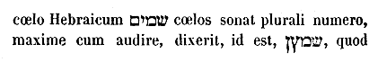
«Concrescat in pluviam doctrina mea, fluat ut ros eloquium meum: quasi imber super herbam, et quasi stillae super gramina: quia nomen Domini [Col. 0969A] invocabo.» Eloquium legis Dei comparat pluviae attritae ac rori, quia germina spiritalium fructuum a fidelium cordibus expetit. Ipsa enim sunt ager et vinea Domini, unde ille fructum sibi amabilem, hoc est bonorum operum expetit. Huic similem comparationem, et Isaiae prophetae invenimus. «Quomodo, inquit, descendit imber et nix de coelo, et illuc ultra non revertitur, sed inebriat terram et infundit eam, et germinare eam facit, et dat semen serenti, et panem comedenti, sic erit verbum meum, quod egredietur de ore meo. Non revertetur ad me vacuum, sed faciet quaecunque volui, et prosperabitur in his, ad quae misi illud (Isa. LV) .» Verum quia Moyses doctrinam suam in pluviam concrescere dixit, ut patenter quae haec pluvia esset demonstraret, subjunxit [Col. 0969B] dicens: «Quia nomen Domini invocabo.» Nomen ergo Domini invocare est Evangelium Christi praedicare: quod qui audit et facit boni operis fructum, coelos sine dubio possidebit. «Date magnificentiam Deo nostro: Dei enim perfecta sunt opera, et omnes viae ejus judicia.» Magnificare Dominum est majestatem Salvatoris corde credulo, ore pio, simul cum bonis actibus praedicare. Unde Maria mater Domini in Cantico ait: «Magnificat anima mea Dominum: et exsultavit spiritus meus in Deo salutari meo (Luc. I) .» Dei, inquit, perfecta sunt opera. Quae ergo illa sunt opera? audi Moysen in Geneseos libro dicentem: «Igitur perfecti sunt coeli et terra, et omnis ornatus eorum. Complevitque Deus die septimo opus suum, quod fecerat; et [Col. 0969C] requievit die septimo ab universo opere suo, quod patrarat (Gen. II) .» Opus ergo Dei redemptio est humani generis: quam quando perfecit spiritale sabbatum, in sepulcro requiescens nobis ostendit. Omnes viae ejus judicia, quia omnia mandata ejus vera. Unde Psalmista ait: «Lex Domini irreprehensibilis, convertens animas, testimonium Domini fidele, sapientiam praestans parvulis (Psal. XVIII) .» Et item: «Judicia, inquit, Dei vera, justificata in semetipsa. Desiderabilia super aurum et lapidem pretiosum multum, et dulciora super mel et favum. Nam et servus tuus custodit ea, in custodiendis illis retributio multa.» Et alibi: «In labiis, inquit, meis, pronuntiavi omnia judicia oris tui. Deus fidelis et absque ulla iniquitate justus et rectus.» Fidelis, [Col. 0969D] quia quod promisit procul dubio implevit. Absque ulla iniquitate, quia aequitas summa, iniquitatis consortia nullo modo recepit. Justus, quia peccantibus non poenitentibus pro malis suis retribuet poenam. Rectus, quia digne operantibus et bene poenitentibus, vitam perpetuam. «Peccaverunt ei, non filii ejus in sordibus.» Quomodo non filii Dei, nisi quia non ex fide? «Quotquot autem receperunt eum, dedit eis potestatam filios Dei fieri, his qui credunt in nomine ejus (Joan. I) .» Unde Dominus Judaeis fidem ejus recipere nolentibus, et doctrinam ejus spernentibus, ait: «Vos ex patre diabolo estis, et desideria patris vestri vultis facere. Ille homicida fuit ab initio et latro (Joan. VIII) .» Et Stephanus ad eosdem [Col. 0970A] Judaeos ait: «Patres vestri quem prophetarum non sunt persecuti? et occiderunt eos qui praenuntiabant de adventu justi hujus. Cujus vos nunc proditores et homicidae fuistis, qui accepistis legem in dispositione angelorum, et non custodistis (Act. VII) .» Qui ergo incorrigibiliter peccat, se filium Dei non esse probat. Illa autem editio quam Septuaginta interpretes ediderunt, ita habet. «Peccaverunt non ei filii vituperabiles,» quod est in Graeco, τέκνα μωμήτα. Quidam interpretati sunt hoc, id est, filii vituperabiles; quidam filii commaculati; quidam filii vitiosi. Unde non magna quaestio, imo nulla est. Sed illud merito ad quaerendum movet, si generaliter dictum est, «peccaverunt non ei,» quoniam qui peccat, non Deo peccat, id est, non Deo nocet, [Col. 0970B] sed sibi, quomodo intelligendum sit quod in Psalmo legitur. «Tibi soli peccavi (Psal. L) .» Et in Jeremia: «Tibi peccavimus, patientia Israel, Domine.» Et iterum in Psalmo: «Sana animam meam, quia peccavi tibi (Psal. XL) .» Et utrum hoc sit peccare Deo, quod peccare in Deum. Unde Heli sacerdos, «si in Deum peccaverit, quis orabit pro eo? (I Reg. II.) » Dicam ergo interim, quid in praesentia mihi videatur. Intelligunt fortasse aliquid melius qui melius haec sapiunt; aut etiam nos alio tempore, quando adjuverit Dominus. Peccare in Deum, est in his, quae ad Dei cultum pertinent. Nam hoc quod commemoravi, nihil aliud indicat. Sic enim peccabant filii Heli, quibus haec Pater eorum dixit. Sic enim existimandum est, peccari etiam in homines qui pertinent ad Deum. [Col. 0970C] Nam hoc Deus legitur dixisse ad Abimelech de Sara: «Propterea peperci tibi ne peccares in me (Gen. XX) .» Peccare autem Domino, vel potius peccasse Domino, nisi forte alicubi scriptum occurrat, quod huic sensui resistat, hi mihi videntur non immerito dici, qui poenitentiam piam peccati sui non agunt, ut glorificetur ignoscens Dominus. Causam quippe reddens David cui dixerit: «Tibi soli peccavi, et malum coram te feci,» subjecit et ait: «Ut justificeris in sermonibus tuis, et vincas cum judicaris (Psal. L) .» Sive cum dicit Deus: «Judicate inter me et vineam meam (Isa. V) .» Sive de Domino Jesu Christo intelligatur, qui solus verissime dicere potuit: «Venit enim princeps mundi hujus, et in me non habet quidquam (Joan. XIV) .» Id est, quidquam [Col. 0970D] peccati quod morte sit dignum. «Sed ut cognoscat mundus, quia diligo patrem; et sicut mandatum dedit mihi Pater, sic facio. Surgite, eamus hinc.» Tanquam diceret: Etiam si levissima peccata mortis supplicio persequatur, princeps mundi in me non habet quidquam. Sed surgite, eamus hinc, id est ut patiar. Quia in eo quod patior, voluntatem impleo Patris mei, non poenam solvo peccati mei. Et quod Jeremias ait: «Tibi peccavimus, patientia Israel, Domine (Jerem. XIV) :» utique suppliciter dicitur in poenitentia cum spe salutis ex venia, et quod dictum est: «Sana animam meam quoniam peccavi tibi (Psal. XL) ;» hoc idem agitur, ut Deus ignoscendo glorificetur. Quia magna est ejus misericordia, [Col. 0971A] ut redeant ad eum qui dicit se nolle mortem peccatoris, tantum ut revertatur et vivat. Hinc et ipse David non solum in Psalmo, verum etiam cum Dominus argueret eum per prophetam, non sine spe propitiationis Domini respondit: «Peccavi Domino (II Reg. XII) .» Medico enim vulneratus videtur quodammodo, qui ut sanetur, subdit se manibus medici, ut in eo opus medicinae impleatur. In hoc autem cantico providebat propheta futuros quosdam, qui sic erant peccaturi Domino, offendendo magnis iniquitatibus suis, ut nec poenitentiam agere vellent, et ad Dominum redire, ut sanarentur. De quibus etiam dicitur: «Quoniam caro sunt, et spiritus ambulans et non revertens (Psal. LXXVII) .» Potest etiam sic intelligi, peccaverunt non ei secundum id [Col. 0971B] quod non nocuerunt peccato suo, sed sibi. «Generatio prava atque perversa, haeccine reddis Domino?» Simili elogio eorum perfidiam Salvator in Evangelio denotavit, qui tentantibus et signum a se quaerentibus respondit dicens: «Generatio prava atque perversa signum quaerit, et signum non dabitur ei, nisi signum Jonae prophetae (Matth. XII) .» Sic et Joannes Baptista turbis Judaeorum ad se venientibus, ait: «Genimina viperarum, quis ostendit vobis fugere a ventura ira? Facite ergo fructus dignos poenitentiae: et ne velitis dicere, Patrem habemus Abraham. Potest enim Deus de lapidibus istis suscitare filios Abrahae (Matth. III) .» Generatio quippe Judaeorum prava atque perversa semper fuit, quae ingrata beneficiis Dei exstitit; e contrario semper transgressiones varias, idolorum [Col. 0971C] sordes atque irritationes rependebat. «Popule stulte et insipiens, nunquid non ipse est pater tuus, qui possedit et fecit et creavit te?» Pater universorum et conditor secundum naturae potentiam Deus est unus, «quia ab ipso et per ipsum et in ipso sunt omnia.» Creavit ergo Deus hominem quando materiam unde formari posset, condidit. Fecit quando illum ad imaginem et similitudinem suam formavit. Possedit, quando expulsis erroribus per fidem et gratiam suam vindicavit. Populus ergo stultus et insipiens fuit Judaeorum gens, quae nec creatorem suum et factorem quem lex manifestissime sibi ostendit, digno cultu venerabatur: nec ejus beneficii memor, quo illum in Aegypto per miracula atque prodigia de manu inimicorum eruens, specialiter possedit, dans [Col. 0971D] illi de coelo manna, et ducatum in mari Rubro atque in deserto per angelicum ministerium praebens, idola sibi fabricavit; atque illis divinum honorem contulit, et sacrificia stultissime impendit dicens: «Hi sunt dii tui, Israel, qui eduxerunt te de terra Aegypti. Memento dierum antiquorum, cogita generationes singulas. Interroga patrem tuum, et annuntiabit tibi; majores tuos, et dicent tibi (Exod. XXXII) .» In memoriam eis reducit facta antiqua, jubens eos interrogare patres et ab eis discere qualiter divina sunt ope liberati, atque saepius ab inimicis protecti, quatenus vel hoc modo ad poenitentiam peccatorum provocarentur, et ab omni errore se exuendo, ad veritatem appropinquare ocius meditarentur: Patres [Col. 0972A] hic non quilibet hebetes et stulti, sed doctores legis et praedicatores Evangelii intelligendi sunt; quorum doctrinis et exemplis potest homo ad intelligentiam divinam proficere. Unde Apostolus ad Corinthios scribens ait: «Nam si decem millia paedagogorum habeatis in Christo, sed non multos patres. Nam in Christo Jesu per Evangelium, ipse vos genui (I Cor. IV) .» Et ad Hebraeos: «Patres quidem carnis nostrae eruditores habuimus, et reverebamur eos: non multo magis obtemperabimus Patri spirituum et vivemus? Et illi quidem in tempore paucorum dierum secundum voluntatem suam erudiebant nos: hic autem ad id quod utile est, in recipiendo sanctificationem ejus (Hebr. XII) .»
«Quando dividebat Altissimus gentes, quando separabat [Col. 0972B] filios Adam: Constituit terminos populorum juxta numerum filiorum Israel: Pars autem Domini, populus ejus; Jacob funiculus haereditatis ejus.» Historiae ordinationem dat de humani generis distributione: quia cum multitudo hominum tanta sit, ut eorum numerositas humana computatione comprehendi non possit, solos filios Israel de tanta multitudine in suam haereditatem Dominus elegit, ut nomen suum et potentiam suam notam faceret, et voluntatis suae secreta per legis judicia et prophetarum scripta manifestaret: sicut superius in praesenti libro manifestavit dicens: «Te elegit Dominus Deus tuus, ut sis ei populus peculiaris, de cunctis populis qui sunt super terram (Deut. VII) .» Non quia cunctas gentes numero vincebatis, vobis [Col. 0972C] junctus est Dominus et elegit vos, cum omnibus sitis populis pauciores, sed quia dilexit vos Dominus, et custodivit juramentum quod juravit patribus vestris, et eduxit vos in manu forti, et redemit vos de manu Pharaonis regis Aegypti, et scies quia Dominus Deus tuus, ipse est Deus tuus, fortis et fidelis, custodiens pactum et misericordiam diligentibus se, et his, qui custodiunt praeceptum ejus, in mille generationes; et reddens odientibus se, statim ut disperdat eos, et ultra non differat, protinus eis restituens quod merentur. Custodi ergo praecepta et caeremonias atque judicia, quae ego mando tibi hodie ut facias. Secundum aliam autem editionem ubi legitur: «Statuit ei terminos gentium secundum numerum angelorum Dei.» Et in Danielis visione, ubi angelus [Col. 0972D] de principe Persarum sibi resistente narravit, videtur aliud nobis insinuare (Dan. VIII) . Angelorum enim ministeria super gentes singulas et super homines singulos ordinata creduntur, quatenus sub eorum regimine atque defensione humana natura juxta dispositionem omnipotentis Dei subjiciatur, atque ab inimicis tueatur. Unde Dominus de parvulis in Evangelio non scandalizandis docens, mox subjunxit dicens: «Angeli eorum in coelis, semper vident faciem Patris mei, qui in coelis est (Matth. XVIII) .» Quia enim superna illa civitas ex angelis et hominibus constat, ad quam tantum credimus hominum genus conscendere, quatenus illic contigit, electos angelos remansisse, sicut scriptum est: «Statuit terminos gentium, [Col. 0973A] secundum numerum angelorum Dei.» Debemus et nos aliquid ex illis distinctionibus supernorum civium ad usum nostrae conversationis trahere, nosque ipsos ad incrementa virtutum bonis studiis inflammare. Quia enim illuc ascensura tanta creditur multitudo hominum, quanta multitudo remansit angelorum, superest, ut ipsi quoque homines, qui ad coelestem patriam redeunt, ex eis agminibus aliquid illuc revertentes imitentur. Distinctae namque conversationes hominum singulorum agminum ordinibus congruunt, et in eorum sortem per conversationis deputantur similitudinem. Pars autem Domini spiritualis Jacob, «et funiculus haereditatis ejus.» Israel verus, Ecclesia videlicet catholica, de qua per Psalmistam dicitur: «Funes ceciderunt mihi in [Col. 0973B] praeclaris: etenim haereditas mea praeclara est mihi (Psal. XV) .» Per funes Scriptura sacra aliquando dimensionum sortes, aliquando peccata, aliquando autem fidem designare consuevit. Nam propter haereditarias dimensionum sortes, dicitur: «Funes ceciderunt mihi in praeclaris: etenim haereditas mea praeclara est mihi.» Funes quippe in praeclaris cadant dum per humilitatem vitae, sortes nos patriae melioris excipiunt. Rursum quia fune peccata signantur, per prophetam dicitur: «Vae, qui trahitis vanitates in funiculis iniquitatis (Isa. V) .» Iniquitas namque in funiculis vanitatis trahitur, dum per augmentum culpa protelatur. Unde per Psalmistam dicitur: «Funes peccatorum circumplexi sunt me.» Quia enim funis addendo torquetur ut crescat, non [Col. 0973C] immerito peccatum fune figuratur, quod perverso corde saepe dum defenditur, multiplicatur. Rursum fune fides exprimitur, Salomone attestante, qui ait; «Funiculus triplex difficile rumpitur (Eccl. IV) .» Quia videlicet fides, quae de cognitione Trinitatis ab ore praedicantium texitur, fortis in electis permanens, in solo reproborum corde dissipatur. «Invenit eum in terra deserta, in loco horroris et vastae solitudinis. Circumduxit eum et docuit, et custodivit quasi pupillam oculi sui.» Invenit Dominus Israel in loco horroris et vastae solitudinis, et in monte Sina legem dans, pactum cum eo iniit, manna de coelo illis tribuit, et aquam de petra produxit, coturnicum carnes dedit et in eadem eremo, quadraginta annis eos circumducendo, praecepta docuit [Col. 0973D] sua. Sed illud quaerit merito, quomodo dicit eos protexisse sicut pupillam oculi sui, cum plurimi eorum prostrati sunt in solitudine? Nisi forte dicamus eos tandiu protectos ac custoditos esse quandiu mandata servaverunt Dei. Cum autem ea transgressi sunt statim plagis percussit, atque ab inimicis devastati sunt. Mystice autem Dominus Israel in terra deserta invenit, cum Ecclesiam de mundi errore tulit, ubi horror idololatriae, et nulla mentio Dei fuit. Circumducit ergo Ecclesiam Dominus, cum in universis mundi partibus eam dilatando, in viam mandaterum suorum dirigit, et per Spiritum sanctum voluntatem suam ei indicans, ubique eam plena custodia, quod per pupillam oculi designatur, [Col. 0974A] contra haereticos atque persecutores servat. Sequitur alia comparatio. «Sicut aquila, provocans ad volandum pullos suos, et si per eos volitans, expandit alas suas, et assumpsit eos, atque portavit in humeris suis.» Narrant physici quod aquila, quae ab acumine est oculorum dicta, tam acuti intuitus sit, ut cum super maria immobili penna feratur, nec ab humanis obtutibus videatur, de tanta sublimitate pisciculos natare in aqua videat, et tormenti instar descendens raptam praedam, pennis ad littus pertrahat. Nam et contra radium solis, fertur obtutum suum flectere. Unde et pullos suos ungue suspensos radiis solis objicit, et quos viderit immobilem tenere aciem, ut dignos genere conservat. Si quos vero obtutum inflectere videt, quasi degeneres abjicit. Dicuntur [Col. 0974B] et aquilae pullos suos, cum vident in nidis plumescere, alis percutere, et ad volandum eos de nido provocare. Nidificant autem in petris et arboribus in quarum nido lapis aetites invenitur, quem aliqui vocaverunt gagatem: qui ad multa remedia utilis est, nihil igne deperdens. Narrant autem inde naturae inquisitores, quod aquilae non tam obeant senio quam fame, in tantum superiore crescente rostro, ut aduncitas aperiri non queat. Sed cum inde viderit sibi periculum imminere, obtundit rostrum in petra durissima, donec iterum in pristinum usum revertatur: et inde mystico sermone in Psalmo scriptum est dicente propheta ad animam fidelem: «Renovabitur sicut aquilae juventus tua (Psal. CII) .» Per aquilae similitudinem secundum litteram ostenditur, [Col. 0974C] quod Dominus populum suum provocando ad terram Chanaan bellis possidendam, juvit; et adjuvando, ab inimicis protexit. Secundum mysticum vero sensum, aquila haec Dominum Salvatorem significat, qui aquilae similitudinem in eo tenet, quod praedam ab hoste maligno morte sua eripuit, et post resurrectionem suam carnem, quam pro humani generis redemptione suscepit, ad alta coelorum provexit: nos dictis atque exemplis exhortans, quatenus illuc sequamur fide tendamusque devotione, ubi ipse ascendit in corpore. Unde et in Evangelio ait: «Ubi fuerit corpus, illuc congregabuntur et aquilae (Luc. XVII) .» Alia etiam exempla, quae de aquila diximus, possunt similiter ad ipsum et ad filios ejus, figuraliter transferri. Nam sicut aquila acuti intuitus [Col. 0974D] est, ita ut super maria immobili penna sublata, nec humanis apparens aspectibus pisciculos de tanta sublimitate natantes videns in pelago, praedando rapit et ad littus pertrahit; sic Redemptor noster super omnes coelos exaltatus, et ab humanis aspectibus corporaliter sublatus, in pelago tamen istius mundi, majestatis suae intuitu videt quos per praedam salutiferam eruat, atque ad littus aeternae beatitudinis, amoris sui fune attrahat. Unde et ipse in Evangelio ait: «Et ego si exaltatus fuero a terra, omnia ad me ipsum traham (Joan. XII) .» Pullos suos, hoc est, filios per gratiam baptismatis sibi renatos, radiis solis aeterni per contemplationem objicit, et quos viderit constantem intuendo habere aciem mentis, [Col. 0975A] seu dignos suo genere perpetualiter servat. Si quos vero ad ima et carnalia desideria obtutum mentis reflectere conspicit, hos quasi degeneres abjicit. In petris autem et arboribus haec aquila nidificat, quia quos firmos fide et fructificantes virtutis aspicit, in eis spiritalis germinis fecunditatem parit, ibique gemma illa atque margarita pretiosissima nascitur, quam sacer Evangelii textus narrat, negotiatorem spiritalem omnibus pecuniis suis venditis, sibimet comparare (Matth. XV) . Quod autem aliqua superfluum rostrum in petra tundit, atque ita ad priorem modum reducit, significat quod sancti viri quidquid in conversatione sua superfluum ac sibi noxium conspiciunt, allidendo ad petram Christum, confringunt, atque semet per gratiam Dei et per studium bonum [Col. 0975B] renovantes, ad pristinum officium habiles reddunt. Dominus solus dux fuit ejus, et non erat cum eo Deus alienus. Manifestum est quod unus et solus Deus, Israel de Aegypto liberavit, et non idola falsa, quae coluerunt Aegyptii. Sic et in ereptione nostra de spiritali Aegypto, non alius est quam idem Deus, qui olim Israelitas eripuit: Pater videlicet et Filius et Spiritus sanctus, unus et trinus, magnus et omnipotens Deus, qui per incarnationem Domini nostri Jesu Christi, salutis nostrae effecit mysterium. Unde agnoscant haeretici quam miserabiliter a vera fide errent deviantes, cum se per schisma ab Ecclesia catholica sequestrant, qui quot erroribus, tot idolis obnoxii sunt. «Constituit eum super excelsam terram, ut comedat fructus agrorum.» Excelsam [Col. 0975C] terram Palaestinam vocat: quia ad comparationem terrae Aegypti, quae plana et irrigua est, montosa et aspera videtur. Aliter, excelsa terra, Ecclesia sancta, quae virtutibus et scientia sublimis est valde. Ibi fideles quique constituti, comedunt fructus agrorum spiritalium, quia ibi germinat bonum semen verbum Dei, aliud tricesimum, aliud sexagesimum, aliud centesimum fructum: ut unusquisque pro capacitate sua, cibum sufficientem sibi inveniat. «Ut sugeret mel de petra, oleumque de saxo durissimo.» Alia autem editio sic habet: «Suxerunt mel de petra, et oleum de firma petra.» Sed nusquam tale aliquid juxta historiam legitur, si tota Testamenti series Veteris recenseatur. Nusquam de petra mel, nusquam oleum populus ille suxit. Sed quia juxta [Col. 0975D] Pauli vocem, petra erat Christus, mel de petra suxerunt, qui ejusdem Redemptoris nostri facta et miracula viderunt. Oleum vero de firma petra suxerunt, qui effusione sancti Spiritus post resurrectionem ejus ungi meruerunt. Quasi ergo in firma petra mel dedit, quando adhuc mortalis Dominus miraculorum suorum dulcedinem discipulis ostendit. Sed firma petra oleum fudit, quia post resurrectionem suam factus jam impassibilis, per afflationem Spiritus, donum sanctae unctionis emanavit. De hoc oleo per prophetam dicitur: «Computrescet jugum a facie olei (Isa. X) .» Sub jugo quippe tenebamur daemoniacae dominationis; sed uncti sumus oleo Spiritus sancti, et quia nos gratia libertatis unxit, [Col. 0976A] dominationis jugum putruit. «Butyrum de armento, et lac de ovibus cum adipe agnorum et arietum, filiorum Basan, et hircos cum medulla tritici, et sanguinem uvae.» Haec licet juxta historiam fertilitatem terrae Chanaan insinuent, tamen altiori sensu gratiae demonstrat abundantiam, quam sancta Ecclesia munere largitoris sui accepit. Butyrum de armento tulerunt, qui plenitudinem fidei de exemplis patriarcharum didicerunt. Lac de ovibus ceperunt, qui simplicitatem mentis sive facultatem doctrinae, de innocenti vita patrum, ad aedificationem sui sumpserunt, et haec cum adipe agnorum et arietum, hoc est, cum pinguedine apostolorum charitatis, et eorum quos ipsi ad fidem imbuerant, ad refectionem mentis suae perceperunt. Arietum enim nomine apostoli [Col. 0976B] et apostolicae dignitatis viri designantur quia ipsi duces sunt gregis Dei. Unde dicitur in Psalmo: «Afferte Domino, filii Dei, afferte Domino filios arietum (Psal. XXVIII) .» Quod autem subjungitur, «filiorum Basan,» ad eumdem pertinet sensum: quia Basan pinguedo interpretatur; filii enim pinguedinis sunt, qui disciplinis Novi Testamenti sunt instituti, ubi scientiae multitudo et virtutum magnitudo consistit. Nec sufficiebant haec dona, nisi adderentur et hirci. Hirci enim figuram poenitentium habent, quia pro peccato in lege offerebantur. Non enim satis est dona virtutum habere fidelibus, nisi poenitentiam habeant pro suis excessibus. Unde ille qui rex simul et propheta fuit, et cui de incarnatione Christi promissum est, quod ex ejus semine nasceretur, pro [Col. 0976C] suis delictis Dominum deprecatur dicens: «Amplius lava me, Domine, ab injustitia mea, et a delicto meo munda me. Quoniam iniquitatem meam ego cognosco, et delictum meum contra me est semper (Psal. L) ;» et ut haec omnia beneficia quae praedicta sunt, eminentiore dono accumularentur, addidit, «medullam tritici et sanguinem uvae.» Quid enim per medullam tritici, nisi corpus Christi? Et quid per sanguinem uvae, nisi calix Novi Testamenti, in sanguine Christi figuratur? Plurimis enim donis ex pietate Dei ecclesiastico populo concessis, hoc inter omnia excellit, quod corporis et sanguinis sui sacramenta, in panis et vini confectione, ad salutem aeternam illi ministravit. Sequitur: «Biberent meracissimum.» Quia universa dona Dei sine faece [Col. 0976D] alicujus nequitiae seu improperii credentibus et digne de eis sentientibus, conferuntur. Sed sicut carnales quondam Israelitae donis Dei abusi sunt, et ex beneficiis largissimis pejores facti, ad idololatriam prolapsi sunt, ita proh dolor! non pauci populi ingrati beneficiis Dei, ad vitia relabuntur; et hoc quod sibi ad salutem collatum est, in perditionem suam convertunt. Unde subjungitur: «Incrassatus est et recalcitravit dilectus. Incrassatus, impinguatus, dilatatus. Dereliquit Dominum factorem suum, et recessit a Deo salutari suo. Provocaverunt eum in diis alienis, et in abominationibus suis ad iracundiam concitaverunt. Immolaverunt daemoniis et non Deo, diis quos ignorabant. Novi recentesque [Col. 0977A] venerunt, quos non coluerunt patres eorum.» Hoc veteres Israelitae historialiter fecerunt, sicut in eorum libris sufficienter expressum est. Sed et nunc spiritales Israelitae, quando dona Dei in scientia et virtutibus, sibi ad divinum obsequium concessa, ad haeresim sive hypocrisim convertunt, idolis et non Deo servire probantur, daemoniis utique cultum exhibendo et non Deo: quod Patres nostri, hoc est, patriarchae, et prophetae, et apostoli atque evangelistae, nequaquam fecerunt. Inde evenit istis idololatris, quod clementissimum Dominum malis suis irritantes, quem propitium habere possent, severum atque destrictum perpensuri sunt: «Deum, qui te genuit dereliquisti, et oblitus es Domini creatoris tui.» Genuit Dominus quodammodo Israelitas per legem [Col. 0977B] et circumcisionem. Genuit et Israeliticum populum per baptismi gratiam et sanctificationem Spiritus sancti. Sed qui oblivisci non timet, juste sibi iratum Dominum per vindictam sentiet. Unde subjungitur: Vidit Dominus et ad iracundiam concitatus est: quia provocaverunt eum filii sui et filiae. Et ait: Abscondam faciem meam ab eis, et considerabo novissima eorum.» Nihil gravius est in poenis quam praesentia et visione Dei privari. Unde psalmista Dominum deprecatur dicens: «Ne projicias me a facie tua (Psal. L) .» Et item: Ne avertas, inquit, faciem tuam a me. Hinc et Job ad Dominum loquitur dicens: «A facie tua non abscondar (Job. XIII) .» Quia ergo filii et filiae, hoc est, utriusque sexus homines irritantes eum pro malis suis, quae [Col. 0977C] faciunt, ejus misericordiam non merentur, sed ab illo deserti, in novissimis eorum probabitur, quando poenas sustinent, quod Deum habent iratum, hoc est enim considerare novissima eorum, manifestari tormenta illorum.
«Generatio enim perversa est et infideles filii. Ipsi provocaverunt me in eo, qui non est populus, et in gente stulta irritabo illos.» Quia ergo Israelitae derelicto Deo idola coluerunt, deserentes verum et unum Deum, deservierunt vanitati, gentibus, qui populi Dei nomine necdum eo tempore vocari meruerunt, in direptionem traditi sunt. Similiter ecclesiastici, qui deserta veritate ad errorem declinaverunt, si pro malis suis non poenituerint, malignis spiritibus, qui superbiendo perdiderunt angelicam [Col. 0977D] dignitatem, ad puniendum, inferni carceribus tradentur. Bene ergo daemones gens stulta dici possunt, quia odiunt justitiam, et amant iniquitatem. «Ignis succensus est in furore meo, et ardebit usque ad inferni novissima.» De his quos damnant flagella et non liberant, scriptum est: «Percussisti eos, et non doluerunt: attrivisti eos, et non renuerunt accipere disciplinam (Jerem. V) .» His flagella ab hac vita inchoant, et in aeterna percussione perdurant. Hinc enim per Moysen dicitur: «Ignis exarsit ab ira mea, et ardebit usque ad inferos deorsum.» Quantum ad praesentem etenim percussionem spectat, recte dicitur: «Ignis exarsit ab ira mea.» Quantum vero ad aeternam damnationem, [Col. 0978A] apte hoc subditur. «Et ardebit usque ad inferos deorsum.» Licet a quibusdam solet dici illud quod scriptum est: «Non vindicabit Deus bis in idipsum (Nahum. I) , qui tamen hoc, quod ad prophetam dicitur de iniquis, non attendunt. Et, «duplici contritione contere eos,» et id quod alias scriptum est: «Jesus populum de terra salvans Aegypti, secundo eos qui non crediderunt perdidit. Quibus tamen si consensum praebeamus, quamlibet culpam bis ferre non posse hoc peccato percussis, atque in peccato suo morientibus, debet aestimari, quia eorum percussio hic coepta, illic finitur: ut in incorrectis unum flagellum sit, quod temporaliter incipit, sed in aeternis suppliciis consumatur, quatenus eis qui omnino corrigi renuunt, jam praesentium flagellorum [Col. 0978B] percussio, sequentium sit initium tormentorum. Sequitur: «Comedit terram et nascentia ejus.» Terram comedit et nascentia ejus, cum carnem peccatricem propter opera libidinis, flamma aeternae ultionis comburit. Nascentia enim carnis, proprie opera sunt concupiscentiae carnalis, «quae sunt fornicationes, immunditiae, impudicitiae, luxuria, idolorum servitus, veneficia, inimicitiae, contentiones, aemulationes, irae, rixae, dissensiones, sectae, invidiae, homicidia, ebrietates, comessationes, et his similia. Quae qui agunt, ut Paulus testatur, regnum Dei non consequentur (Gal. V) .» «Et montium fundamenta comburet.» Cum superborum iniqua consilia quibus se impune posse peccare credebant, aeternis cruciatibus consument. «Congregabo super eos [Col. 0978C] mala.» Quando non solum mala opera, sed et cogitationes atque prava pro quibus puniantur in memoriam adducet verba. Sagittas suas in eis complebit, quando iram indignationis suae per varia tormenta ostendit: «Consumuntur fame.» Hoc est, nec cibi, nec potus, sed perpetua bonorum operum sterilitate, «et devorabunt eos aves morsu amarissimo:» maligni videlicet spiritus peccata praeterita improperantes, ore lacerant saevissimo. «Dentes bestiarum immittam in eos, cum furore trahentium super terram atque serpentium.» Bestiae atque serpentes, maligni spiritus sunt. Qui bestiae dicuntur propter ferocitatem, serpentes propter calliditatem. Trahunt bestiae atque serpentes reprobos dentibus super terram cum furore, quando hoc quod prius [Col. 0978D] blandiendo carnalibus persuaserant ut seducerent, postmodum furibundo animo a peccatoribus expetunt, ut crucient. «Foris vastabit eos gladius, et intus pavor.» Foris vastabit impios gladius, et intus pavor, quando in extrema ultione, undique corpus, ignis aeterni torquet exustio, et intus mentem angustiae opprimit magnitudo. Unde scriptum est: «Vermis eorum non morietur, et ignis non exstinguetur. Juvenem simul ac virginem, lactentem cum homine sene (Isa. LXVI) .» Enumeratis universis aetatibus, ostendit nulli aetati in exerta ultione esse parcendum, quos idem idololatriae foedaverat cultus. Allegorice autem in juvene, lascivum et libidinosum; in virgine, a bonis operibus sterilem; in [Col. 0979A] lactente, hebetem; in sene pigrum et inutilem ostendit. Hos ergo omnes juxta vindictam Dei in extrema ultione consumet, quos nunc admonitio et correptio a peccatis non cohibet. «Et dixit: Ubinam sunt? Cessare faciam ex hominibus memoriam eorum.» Interrogatio Dei non est ignorantia, sed correptio. Hujus sententiae expletionem facile dignoscere potest, qui Judaeos videt a terra repromissionis ejectos et per totum orbem dispersos. Generaliter autem omnibus peccatoribus, et impoenitentibus, hoc futurum imminet, quod de sanctorum terra tollentur, et memoria eorum in coetu electorum non numeretur. Unde per Psalmistam in quinquagesimo primo psalmo, capiti omnium iniquorum, simul cum toto corpore poena praedicitur futura, cum supputatis [Col. 0979B] singulis speciebus vitiorum subinfertur: «Propter ea destruet te Deus in finem; evellet te, et emigrabit te de tabernaculo tuo, et radicem tuam de terra viventium.»
«Sed propter iram inimicorum distuli, ne forte superbirent hostes eorum et dicerent: Manus nostra excelsa, et non Deus fecit haec omnia.» Ideo enim Dominus saepe priorem populum tolerando sustinuit, ne gentes eis confines, nomen et potentiam ejus blasphemarent. Unde et Moyses ad Dominum pro peccato Israel indignantem, et eos disperdere volentem ait: «Ne, quaeso, Domine, dicant Aegyptii: Callide eduxit eos, ut interficeret in montibus, et deleret e terra. Requiescat ira tua, et esto placabilis super nequitiam populi tui. Recordare [Col. 0979C] Abraham, Isaac et Israel, servorum tuorum, quibus jurasti per temetipsum dicens: Multiplicabo semen vestrum sicut stellas coeli; et universam terram hanc de qua locutus sum dabo semini vestro, et possidebitis eam semper. Placatusque est Dominus ne faceret malum, quod locutus fuerat ad universum populum suum (Exod. XXXII) .» Similiter et nos quando peccaverimus, propter magnam potentiam suam et longanimitatem sustinet, nolens perire quemquam; sed omnes salvos fieri, et ad agnitionem veritatis pervenire. Juxta illud Apostoli, quod ad Romanos scribens ait: «Existimas autem, o homo, qui judicas eos qui talia agunt, et facis ea, quia tu effugies judicium Dei? An divitias bonitatis ejus et patientiae et longanimitatis contemnis, ignorans quoniam [Col. 0979D] benignitas Dei ad poenitentiam te adducit? Secundum duritiam autem tuam et impoenitens cor, thesaurizas tibi iram in die irae et revelationis justi judicii Dei, et caetera (Rom. II) . Ac ne forte maligni spiritus glorietur in perditione nostra de fortitudine sua, quasi victoriam viribus suis percepissent, cum hoc semper certent, ut sententiam Altissimi pervertant, qui homines decrevit locum perditorum spirituum in coelis possidere. «Gens Judaeorum absque consilio est et sine prudentia: utinam saperent ac novissima providerent.» Gens Judaeorum nec non et impiorum sine consilio salutis est, quia in futurum sibi providere nesciunt, quatenus imminentem pro peccatis suis evadant vindictam, et infernalium poenarum [Col. 0980A] aeternum effugiant cruciatum. «Quomodo persequebatur unus mille, et duo fugarent decem millia. Nonne ideo, quia Deus suus vendidit eos, et Dominus conclusit illos?» Quicunque magnitudinem Dei veraciter agnoscit, interitum suum non ex infirmitate potentiae ipsius, ex permissione justi judicii ejus evenire manifeste probabit: quia nullo modo fieri posset, quod unus persequeretur mille, et duo fugarent decem millia, nisi Dominus eos tradidisset, et exosos projiciendo in manus inimicorum concluderet. «Non est enim Deus noster ut Deus eorum: et inimici nostri sunt judices.» Dominus enim Deus noster verax et justus est, idola autem gentium, falsa et inutilia. Quod etiam non solum nostri, verum etiam nostrorum approbant adversarii. [Col. 0980B] Unde saepius legitur, quod hostibus Judaei traditi pro infidelitate atque injustitia sua merito ab eis arguerentur, sicut Jeremias in Lamentationibus suis dicit: «Viderunt eam hostes, et deriserunt sabbata ejus (Thre. I) .» Hinc enim nobis summopere cavendum est, ne hostes nostris malis nostris provocati, in blasphemiam contra Deum erumpant, cum viderint nos superatos, et ad nihilum propter peccata nostra redactos, hoc virtuti suae asserant, quod non sua potentia, sed judicio Domini redactum est. «De vinea enim Sodomorum, vinea eorum, et de suburbanis Gomorrhae. Uvae eorum uva fellis, et botrus amarissimus.» Saepe in Scripturis sacris Synagoga vel Jerusalem Sodomae et Gomorrhae comparantur, quia sicut male illae abusae sunt donis Dei, sic et istae [Col. 0980C] beneficiis semper exstiterunt ingratae. Unde Isaias de illis ait: «Nisi Dominus exercituum reliquisset nobis semen, quasi Sodoma fuissemus: et quasi Gomorrha similes fuissemus. Audite verbum Domini principes Sodomorum, auribus percipe legem Domini nostri populus Gomorrhae, etc. (Isa. I) .» Vinea enim Domini, sicut in eodem propheta scriptum est, domus Israel fuit: quae tunc in fellis amaritudinem conversa est, quando mortem Christi meditabatur. Unde et ipsi in cruce pendenti, acetum felle mistum, arundine porrexerunt, ut in eo demonstraretur scientia legis, quam ipsi rectam acceperunt, felle malitiae suae habere corruptam, cum datorem legis ad se venientem recipere noluerunt, insuper irritaverunt et afflixerunt. Aliter, hac sententia et haereticorum [Col. 0980D] nequitia percutitur, qui licet gratiae spiritalis a sanctis praedicatoribus purum dogma primitus acceperint, ipsi tamen erroribus suis illud maculare non pertimescebant, et ideo doctrina eorum tota in fellis et absinthii amaritudinem conversa est. «Fel draconum vinum eorum, et venenum aspidum insanabile.» Aperte Judaeorum perfidia et haereticorum versutia draconum felli et aspidum veneno comparantur, quia sicut serpentes amaritudinem et venenum in se occultant, quatenus incautos improvise laedant, sic et Judaei et haeretici malitiam suam dolo et fraudibus velant, quatenus imprudentes, facilius exstinguant. Bene ergo dicitur venenum aspidum insanabile, quia haereticorum error, quaecunque invaserit, [Col. 0981A] nisi se inde liberaverit, sine dubio in aeternum perimit. «Nonne haec condita sunt apud me, et signata in thesauris meis?» Moris est humani generis, ut praeterita cito obliviscantur, et quae aliquando grandia videbantur, spatio temporis labente, simul ipsa in recordatione deficiant. Sed non ita est apud Deum, ubi praeteritum et futurum non est, sed praesens semper adest. Quae enim nobis praetereunt ibi reservantur, nec oblivioni tradentur. Inde necesse est, ut peccata, quae dudum commisimus, instanti poenitentia delere coram oculis Dei studeamus: ne forte in futuro quando tempus vindictae erit, reputet nobis debita nostra et dicat. «Haec fecisti et tacui. Existimasti inique quod essem tibi similis; arguam te et statuam illa contra faciem tuam. [Col. 0981B] Mea est ultio et ego retribuam eis in tempore, ut «labatur pes eorum.» Certa sunt apud Dominum, et tempus et modus vindictae. Sed quia multae miserationes ejus sunt, «praeoccupemus faciem ejus in confessione, et in psalmis jubilemus ei. Humiliemus in jejunio animas nostras;» vigilemus et oremus, «quoniam quis scit, si convertatur et ignoscat Deus, et relinquat post se benedictionem? Juxta est dies perditionis, et adesse festinant tempora.» Juxta est unicuique dies ultionis, quia certus est, nec diuturnum esse potest quod aliquando finitur. Quidquid enim temporale ut est hominis aetas, vel mundi cursus, ad aeternitatem comparatur, parvum fit in ejus comparatione. Ideo dicitur, «et adesse festinant tempora,» quia cito finiuntur temporalia. Secundum [Col. 0981C] historiam autem, Israelitarum vindicta appropiavit; quia ex quo rebellare coeperunt, nunquam perfecte destiterunt, donec regni locum et vitae prosperitatem, pariter perdiderunt. Nam postquam prophetas occiderunt, et Salvatorem crucifixerunt, seditionibus antiquis nova superadjicientes, Romanos rebellando in se provocaverunt, qui urbe destructa, templo succenso, populo fame et gladio necato, reliquias eorum per totum orbem disperserunt, ubi incertis sedibus vagando, spe futurorum manent incerti. «Judicabit Dominus populum suum, et in servis suis miserebitur.» Judicabit ergo Dominus populum suum, quando electos suos a reprobis secernit. Nam judicare aliquando pro discernere, aliquando vero pro damnare accipitur. Unde in psalmo Propheta ad [Col. 0981D] Dominum dixit: «Judica me, Deus, et discerne causam meam de gente non sancta, ab homine iniquo et doloso eripe (Psal. XLII) .» Hic judicare pro discretione ponitur. Alibi autem Propheta ad Dominum clamans ait: «Judica, Domine, nocentes me, expugna impugnantes me (Psal. XXXIV) .» Sed hic judicium pro damnatione positum est. Judicabit Dominus sanctos suos, quando eos in die judicii segregans a peccatoribus collocabit in dextera sua. Hostem autem eorum et persecutores a sinistris statuet, ut damnationem certam cum diabolo et angelis ejus, in inferno recipiant, et ibunt hi in supplicium aeternum, justi autem in vitam aeternam. Tunc perfectum erit, quod in praedicto versu subsequitur: «Et in [Col. 0982A] servis suis miserebitur.» Quia in coelesti beatitudine fidelibus suis misericordiam praestabit aeternam. Potest et iste versus ad Judaeorum conversationem ultimam referri, quando miserante Deo populum suum, post plenitudinem gentium subintrantem ad fidem, omnis Israel per gratiam divinam ad eamdem fidem conversus, salvus fiet.
«Videbit quod infirmata sit manus, et clausi quoque defecerunt: residuique consumpti sunt. Et dicet: Ubi sunt dii eorum, in quibus habebant fiduciam? Ex quorum victimis comedebant adipes, et bibebant vinum libaminum. Surgant et opitulentur vobis, et in necessitatibus vos protegant.» Videbit, inquit, quod infirmata sit manus, cum videri fecerit quod opera malorum, quae fecerunt in [Col. 0982B] idololatria vel caeteris transgressionibus, infirma fuerint, quando ad nihilum redacta, nihil eis, qui ea fecerant, profuerint. Et clausi quoque defecerunt. Hoc est, sive Judaei ad captivitatem ab inimicis ducti, ibidem consumpti sunt, vel omnes impii in potestatem daemonum traditi, ultra non praevalebunt. Residuique consumpti sunt, quia ab hac vita exeuntes, non habebunt ulterius potestatem atque facultatem aliquid faciendi. Idcirco in Ecclesiaste scriptum est: «Quodcunque potest manus tua facere, instanter operare, quia nec opus, nec ratio, nec sapientia, nec scientia, erunt apud inferos, quo tu properas (Eccles. IX) .» Quod autem subjungitur, «ubi sunt dii eorum in quibus habebant fiduciam,» et reliqua, significat, quod idololatrae nullum adjutorium [Col. 0982C] in die necessitatis habeant ab idolis, quibus antea cultum exhibuerant. Sed nec mundi amatores, qui per avaritiam, quae est idolorum servitus, pecunias in mundo congregabant, qui deliciis atque luxuriae deserviebant, quorum Deus venter erat, et gloria in confusione eorum qui terrena sapiebant, nihil secum conferunt de universo labore suo, quando pro peccatis suis ad tartarum a malignis spiritibus pertrahuntur.
«Videte quod ego sim solus, et non sit alius Deus praeter me.» Haec admonitio generaliter ad omnes homines pertinet, ut relicta falsitate idolorum, atque deceptione haereticorum, nec non et omnium iniquitatum sordibus, ad unum et solum Deum Patrem et Spiritum sanctum, per fidem catholicam [Col. 0982D] colendum convertantur, eumque ex toto corde, tota anima, totaque virtute diligant, et mandata ejus atque judicia diligenter conservent, quatenus regni coelestis haeredes effici mereantur. «Ego occidam et ego vivere faciam; percutiam et ego sanabo, et non est, qui de manu mea possit eruere.» Duobus modis omnipotens Deus vulnerat, quos reducere ad salutem curat. Aliquando enim carnem percutit, et mentis duritia in suo pavore tabescit. Vulnerando ergo ad salutem revocat, cum electos suos affligit exterius et interius vivificat. Recte per Moysen loquitur: «Ego occidam et vivere faciam; percutiam et ego sanabo.» Occidit enim ut vivificet, percutit ut sanct; quia idcirco foras admonet, ut intus vulnera [Col. 0983A] non infligat. Quia mentis nostrae duritiam suo desiderio percutit, sed percutiendo sanat, quia terroris sui jaculo transfixos ad sensum nos rectitudinis revocat. Corda enim malesana sunt cum nullo Dei amore satiantur; cum peregrinationis suae aerumnam non sentiunt; cum erga infirmitatem proximi sui nec quolibet minimo affectu languescunt, sed vulnerantur; cum amoris sui spiculis mentes Deus insensibiles percutit, moxque has sensibiles per amorem charitatis reddit. «Levabo ad coelum manum meam: dicam, Vivo ego in aeternum.» Alia autem editio sic habet: «Quia tollam in coelum manum meam, et jurabo per dexteram meam, et dicam: Vivo ego in aeternum.» In coelum manum levare sive attollere, est potentiam aeternitatis suae super [Col. 0983B] omnia excellentem ostendere. Jurare per dexteram, est per Filium, qui dextera Dei nominatur, promissa ipsius in conspectu hominum confirmare, et aeternitatem suam credentibus sibi per Evangelium revelare: quia potestas ejus potestas est aeterna, et regnum ejus quod non corrumpetur. «Si exacuero ut fulgur gladium meum, et arripuerit judicium manus mea, reddam ultionem hostibus meis, et qui oderunt me retribuam.» Exacuere ut fulgur gladium Dei est repentinam vindictam in hostibus exercere. Et arripere judicium manus divinae, est per justam retributionem singulis secundum propria merita reddere, sicut scriptum est: «Filius enim hominis est in gloria Patris sui cum angelis suis; et tunc reddet unicuique secundum opera ejus (Marc. VIII) .» Et Apostolus: «Omnes, inquit, stabimus ante tribunal Christi, ut recipiat unusquisque propria corporis prout gessit, sive bonum sive malum (Rom. XIV) .» Inebriabo sagittas meas sanguine, et gladius meus devorabit carnes. Sagitta enim hominem dum non attendit, percutit; et dum illa non praevidetur, subito interimit. Sagittae Domini sunt celeres vindictae: quae licet modo occultae sunt coram oculis iniquorum, subito tamen manifestabuntur in damnatione perditorum, et Dei gladius carnes comedit, quia in extremo judicio ejus sententia eos, qui carnaliter sapiunt. occidit.
«De cruore occisorum, et de captivitate nudati inimicorum capitis.» Ad hoc quod dicit, de cruore inimicorum, subauditur illud quod praemissum est, [Col. 0983D] «Inebriabo sagittas meas sanguine.» Inebriat Dominus sagittas suas in cruore occisorum quando ultionem exercet in turba inimicorum. Tuncque nudabuntur consilia iniquarum mentium, quibus se impune peccare confidebant. Possunt et capita iniquorum magistri accipi errantium, in quos ultio novissima redundat, quia qui fuerunt causa peccatorum, sentient damna in retributione poenarum. Unde in Apocalypsi scriptum est: «Et exiit sanguis de lacu, usque ad frenos equorum (Apoc. XIV) .» Hoc est, processit ultio tormentorum, usque ad rectores populorum. Usque enim ad diabolum et ejus angelos, novissimo certamine exiet ultio sanguinis sanctorum effusi, sicut scriptum est: In [Col. 0984A] sanguine peccasti, et sanguis te persequetur. «Laudate, gentes, populum ejus, quia sanguinem servorum suorum ulciscetur, et vindictam retribuet in hostes eorum.» Laudabunt omnes gentes populum Dei, quando viderint gloriosam apparere in conspectu conditoris sui Ecclesiam Dei, et persecutores ejus pro effuso sanguine a se martyrum, et malis omnibus quae in hac vita gesserunt, per malignorum spirituum ministerium recludi, in gehennam ignis aeterni. Tunc enim et boni bonum quod vident laudabunt, quia praemium placet quod habent; et impii in poenis constituti, dicent intra se poenitentiam agentes: «Hi sunt quos aliquando habuimus in derisum, et in similitudinem improperii. Nos insensati vitam illorum aestimabamus insaniam, [Col. 0984B] et finem illorum sine honore. Quomodo ergo computati sunt inter filios Dei et inter sanctos sors illorum est? Et propitius erit Dominus terrae populi sui (Sap. V) .» Quando Ecclesiam sanctam, quam hactenus regebat in adversis, perpetualiter collocabit in prosperis, in regno videlicet coelesti, ubi sine fine gaudebit, et laudes Domino simul cum sanctis angelis in aeternum cantabit. «Locutusque est Dominus ad Moysen in eadem die dicens: Ascende in montem istum Abarim, (id est transitum), in montem Nebo, qui est in terra Moab contra Jericho; et vide terram Chanaan, quam ego tradam filiis Israel obediendam, et morere in monte. Quem conscendens, jungeris populis tuis, sicut mortuus est Aaron frater [Col. 0984C] tuus in monte Hor, et appositus populis suis: quia praevaricati estis contra me in medio filiorum Israel, et ad aquas contradictionis, et caetera.» Abarim mons est, in quo mortuus est Moyses, et interpretatur transitus; et Nebo interpretatur inclusio. Dicitur autem et mons esse Nebo in terra Moab contra Jericho supra Jordanem, in supercilio Phasga, ostenditurque ascendentibus de Libya de urbe: antiquumque habens vocabulum juxta montem Phogor, nomen pristinum retinentem, a quo circa eum regio, usque nunc appellatur Phasga. Moyses ergo in Abarim et in monte Nebo contra Jericho contra Jordanem moritur, quia lex et circumcisio usque ad Christi adventum et baptismi sacramentum processit, ibique conclusa est, [Col. 0984D] quia finis legis est Christus, ad justitiam omni credenti. Vidit Moyses terram repromissionis, sed non ingressus est in eam, quia praevidit in spiritum, et in lege praedixit Christi gratiam futuram, sed non usque ad illam in corpore exspectavit, ut videret eam praesentem, quod apostolis Christi concessum est; et ideo ipsi beati ipsius veritatis voce esse testantur, quia quod multi justi et prophetae videre et audire voluerunt, hoc ipsis praesentialiter cernere gloriosissime concessum est (Matth. XIII) .
(CAP. XXXIII.) «Haec est benedictio qua benedixit Moyses, homo Dei, filiis Israel ante mortem suam, [Col. 0985A] et ait.» Bene et rationabiliter ordo iste dispositionis sibi convenit, qua Moyses finiens Deuteronomium suum, novissimam partem illius benedictione conclusit: praefigurans quod Christus post completionem evangelii sui, et passione atque resurrectione illius perpetrata, novissime quando ascensurus erat in coelum, elevatis manibus suis in discipulos suos benedixit eis: «Et factum est dum benediceret illis, recessit ab eis, et ferebatur in coelum (Luc. XXIV) .» Nam benedictio ista, qua filii Israel in Deuteronomio, quod est secunda lex, benedicuntur, manifeste ad gratiam pertinet Novi Testamenti in quo et priscae legis mysteria reserantur, et veri Israelitae, benedictionem, quae per Moysen hominem Dei prophetata est, consequuntur per hominem Dominum Jesum Christum. [Col. 0985B] Unde ait Apostolus: «Benedictus Deus et pater Domini nostri Jesu Christi, qui benedixit nos in omni benedictione spirituali, in coelestibus in Christo (II Cor. I) .» Et bene imminente Moysi morte, filii Israel spirituali benedictione ditantur, quia dum legis umbra, quae terrestria pollicebatur, destruitur, donorum coelestium veritas aperitur. Praevidet itaque Moyses spiritu prophetico nostri Salvatoris adventum, et futuram gratiam Novi Testamenti qui praeteritam narrans, ex voce primitivae Ecclesiae laetabundus prosequitur dicens: «Dominus in Sina veniet et de Seir ortuslest nobis.» Per nomina locorum demonstrat effectus rerum. Sina interpretatur amphora mea, vel mensura mea, sive mandatum. Seir pilosus, sive hispidus. Pharan ferocitas eorum, [Col. 0985C] sive frugifer. Sina igitur figuram tenet Veteris Testamenti, quod certam mensuram mandatorum juxta decalogi decretum tenens, jubere novit, sed juvare non novit, sed sectatores suos per spiritum dilectionis liberat, sed per timorem poenae servili conditione subditos ligat. Unde et doctor gentium scribendo ad Galatas, per duas uxores et per duos filios Abrahae, duorum testamentorum ac duorum populorum per allegoriam expressit figuram dicens: «Scriptum est quoniam Abraham duos filios habuit: unum de ancilla, et unum de libera. Sed qui de ancilla, secundum carnem natus est; qui autem de libera, per repromissionem: quae sunt per allegoriam dicta (Galat. IV) . Haec enim sunt duo Testamenta. Unum quidem a monte Sina in servitutem generans, [Col. 0985D] quae est Agar (Sina autem mons est in Arabia qui conjunctus est ei, quae nunc est Jerusalem), et servit cum filiis suis, etc. Dominus ergo Jesus Christus de Sina venit, quia ex lectione legis et prophetarum, credentibus innotuit. Inde enim venit, cum eum ibi qui intelligit invenit. «Unde et ipse incipiens a Moyse et omnibus prophetis, interpretabatur discipulis ad quorum cor per fidem venire cupiebat, in omnibus Scripturis, quae de ipso erant (Luc. XXIV.) .» De Seir etiam ortus: quia ex Judaico malitiae et incredulitatis suae spinetis asperrimo, secundum carnem genitus, novae lucis exortu, mentes credentium illuminavit, tanquam verus sol justitiae, de quo Dominus per prophetam dicit: «Vobis autem timentibus nomen meum, [Col. 0986A] orietur sol justitiae, et sanitas in pennis ejus (Malac. IV) .» Et de quo per Balaam dicitur: «Orietur stella ex Jacob, et consurget homo de Israel (Num. XXIV) .» Bene autem de Seir qui aliis nominibus, Edom sive Esau dicitur, Judaeorum populus designatur, quia carnalium oblectamenta sectatus, qui per lentis edulium primatus sui gloriam perdidit, et promissae sibi benedictionis gratiam, fide populi junioris supplantatus, amisit. De monte Pharan Dominus Christus apparuit, quia quo magis contra eum ferocitas populi infidelis saeviit, eo eminentius ac largius divinitatis ejus notitia excrevit. Tradendo quippe eum ad mortem, et crucem ejus violentis vocibus flagitando, nomen ejus delere voluit. Sed unde humiliter inter passionum contumelias latuit, inde excellentius [Col. 0986B] per virtutem resurrectionis effulsit, et ipsos etiam ferocissimos interfectores suos edomita incredulitatis duritia, fidei suae jugo subegit, quorum una die tria millia, et inde quinque millia, et deinceps innumera crediderunt. Et quem prius quasi Samaritanum et daemonia habentem aversati fuerant, ei postmodum inseparabili fidei et charitatis glutino adhaeserunt. De quibus hic dicitur: «Et cum eo sanctorum millia.» Sequitur: «In dextera ejus ignea lex.» Dextera autem Dei appellantur electi. In dextera ergo Dei lex ignea est, quia electi mandata coelestia nequaquam frigido corde audiunt; sed ad haec amoris intimi facibus inardescunt. Sermo ad aurem ducitur, et mens sibimet irata, ex internae dulcedinis flamma concrematur. Aliter: Dextera Domini nostri [Col. 0986C] Jesu Christi evangelica praedicatio est, per quam non temporalis felicitas, quae in leva designari solet, sicut in lege, sed aeterna beatitudo promittitur. De qua sponsa loquitur in Cantico canticorum. «Et dextera illius amplexabitur me (Cant. II) » In hac vero dextera, lex ignea est, dilectio videlicet per donum Spiritus sancti, in electorum cordibus diffusa. De qua Apostolus ait: «Plenitudo ergo legis est dilectio (Rom. XIII) .» Haec namque in Evangelio singulariter commendatur, dicente Domino: «Mandatum novum do vobis, ut diligatis invicem sicut dilexi vos. In hoc cognoscent omnes, quia mei estis discipuli, si dilectionem habueritis ad invicem (Joan. XIII) .» Quae per Spiritum sanctum in igne apparentem, decima post ascensionem die, in apostolos effusa, omnem [Col. 0986D] legis plenitudinem tanquam digito Dei in eorum mente descripsit, cunctosque electos fervente Spiritu, lucentes operatione facit. Verum quia haec lex non uni populo ut lex Moysi, sed universis per Christum gentibus promulgata est, mox adjungitur: «Dilexit populos.» Legem igitur charitatis, quam nos servare jussit, primus ipse implevit, diligendo videlicet populos utrosque, circumcisionis et praeputii; et veniens evangelizando pacem nobis qui longe eramus, et pacem his qui prope, quoniam per ipsum habemus accessum ambo in uno Spiritu ad Patrem. Hanc autem dilectionem commendat misericordissima ejus passio, quam pro totius mundi salute suscepit, de qua ipse ait: «Majorem hac dilectionem nemo habet, [Col. 0987A] quam ut animam suam quis ponat pro amicis suis (Joan. XV) .» Ad hujus nos charitatis imitationem, quando ad perfectam scilicet legis observantiam, apostolus accendit dicens: «Estote imitatores Dei, sicut filii charissimi, et ambulate in dilectione, sicut et Christus dilexit nos, et tradidit semetipsum pro nobis oblationem et hostiam Deo in odorem suavitatis. Omnes sancti in manu illius sunt (Eph. V) .» Non est personarum acceptio apud Deum, sed in omni gente, quae timet Deum et operatur justitiam, acceptus est illi. «Omnes sancti in manu illius sunt.» Quia, quicunque justificati sunt in nomine Domini nostri Jesu Christi, et in Spiritu Dei nostri, et audiunt jubentem Dominum: «Sancti estote, quia et ego sanctus sum,» ab omni malo ipsius potentia [Col. 0987B] proteguntur. De quibus ipse sub figura omnium loquitur in Evangelio: «Et ego vitam aeternam do eis, et non peribunt in aeternum, et non rapiet eas quisquam in aeternum de manu mea (Joan. X) .» Ex omnium itaque concordissima multitudine sanctorum unum Christi gloriosissimum efficitur regnum. Cui per Isaiam dicitur: «Et erit corona gloriae in manu Domini, et diadema regni in manu Dei tui. Et qui appropinquant pedibus ejus, accipient doctrinam illius (Isa. LXII) .» Pedes Domini Jesu Christi, sancti apostoli et evangelistae sunt, quorum doctrina in universo orbe discurrit de quibus scriptum est: «Quam pulchri super montes pedes evangelizantium pacem, evangelizantium bona (Rom. X) .» Quicunque ergo his pedibus fidei, pietatis et obedientiae devotione reverenter [Col. 0987C] appropiant, non contristentur, quod ipsum Christum docentem in carne non viderunt; non metuant, ne forte ab hominibus quasi homines decipiantur. Per eorum namque os loquitur Christus, et per pedes doctrina capitis auditur. Unde ipse ait: «Qui vos audit, me audit (Luc. X) .» Et Paulus clamat: «An experimentum quaeritis ejus, qui in me loquitur Christus?» (II Cor. XIII.) Ab illo igitur omnes docentur, etiam per ora sanctorum praedicatorum, cujus manu Ecclesia regitur omnium electorum. Vel certe, qui appropinquant pedibus ejus accipient doctrinam illius, quia illis prae caeteris scientiae Christi arcana revelantur, qui spiritali desiderio flagrantes, in evangelicis atque apostolicis scriptis die noctuque meditantur. Verum, quia haec de [Col. 0987D] lege evangelica dicta sunt, sequuntur hi, ex quorum voce Moyses loquitur, de lege Mosaica, et dicunt: «Legem praecepit nobis Moyses, haereditatem multitudinis Jacob.» Haec enim fuit tota legis utilitas, ut juberet juste vivere, injustitiam declinare, et haereditatem semini Abrahae repromissam, fideliter exspectare; sed jubendo non etiam adjuvando, nequaquam a peccatis justificavit; sed peccatores etiam praevaricatores fecit. Unde Apostolus ait: «Ubi autem non est lex, nec praevaricatio;» et iterum: «Lex autem subintravit, ut abundaret delictum (Rom. IV) .» Videlicet ut agnoscentibus hominibus infirmitatem suam, et ob hoc mediatoris auxilium ardentius desiderantibus, veniente Christo superabundaret [Col. 0988A] gratia, per quam multitudo illa Jacob, de qua scriptum est: «Multitudinis autem credentium erat cor unum et anima una, in semine Abrahae, quod est Christus (Act. IV) ,» haereditatem regni coelestis acciperet. Quae quoniam de maledicto legis redempta, benedictionem gratiae consecuta est, pulchre sub Jacob nomine designatur, cui de Christo manifeste promittitur. «Erit apud rectissimum, congregatis principibus populi, cum tribubus Israel.» Jacob namque postquam ab angelo cui praevaluit benedictus est, continuo Israelis nomen accepit: quod proprie juxta Hebraeos, rectus Dei dicitur. Vir autem videns Deum, non in elementis, sed in sono vocis est. Sic ergo et Judaicus populus ad fidem Christi conversus, et ab eo post resurrectionem benedictus, cui in passione [Col. 0988B] praevaluisse jussum est, novam nominis accepit dignitatem, ut ob justitiae perfectionem Israel, id est, rectissimus appelletur: cui etiam per Isaiam Deus loquitur: «Audi, Jacob, serve meus, et rectissime quem elegi (Isa. XLIV) .» Apud hunc itaque rectissimum rex Christus, qui in Psalmo loquitur; «Ego autem constitutus sum rex ab eo super Sion montem sanctum ejus,» futurus esse promittitur, habitans videlicet per fidem in corde ejus, eumque sibi regnum inclytum efficiens, sicut per Moysen ante promiserat. «Vos autem, inquiens, eritis mihi regnum sacerdotale, et gens sancta (Exod. XIX) .» Et Michaeas praedixerat: «Et veniet potestas prima regnum filiae Sion (Mich. IV) .» Cujus regni concors plenitudo ostenditur verbis subsequentibus, cum infertur: [Col. 0988C] «Congregatis videlicet in unitatem fidei principibus populi,» id est, sanctis apostolis, de quibus scriptum est: «Constitues eos principes super omnem terram (Psal. XVIII) ,» cum tribubus Israel, ex quibus omnibus innumera multitudo in Christum Dominum credidit. Unde et Jacob duodecim tribubus, quae erant in dispersione, scribit Epistolam. Pulchreque principes populi prius, et deinde tribus congregandae prophetantur, quia videlicet primi apostoli ad fidem vocati sunt, et postea per eos universae tribus collectae Quod ut supra diximus, ex parte in primo Salvatoris adventu impletum est. Perfecte autem implebitur, cum juxta apostolum, «subintrante gentium plenitudine, omnis Israel salvus fiet (Rom. XI) » Verum quia pater Augustinus [Col. 0988D] de hac eadem benedictione in libro quaestionum Deuteronomii, unde multa supra posuimus, aliqua protulit, haec in hoc loco ponenda esse censuimus. Et quia Septuaginta interpretum editionem secutus est, ita incipit. «Haec est benedicto qua benedixit Moyses homo Dei filios Israel, priusquam defungeretur. Et dixit: Dominus ex Sina venit, et illuxit ex Seir nobis; festinavit ex monte Pharan cum multis millibus Cades. Ad dexteram ejus angeli cum eo, et pepercit populo suo; et omnes sanctificasti sub manus tuas, et hi sub te sunt; et accepit de verbis ipsius legem, quam mandavit nobis Moyses haereditatem congregationibus Jacob; et erit in dilecto princeps congregatis principibus [Col. 0989A] populorum, simul tribus Israel.» Non negligenda est ista prophetia. Apparet quippe ista benedictio ad novum populum pertinere, quem Dominus Christus sanctificavit, ex cujus persona ista dicuntur a Moyse, non ex persona ipsius Moysi, quod in sequentibus evidenter apparet. Nam si propterea dictum est, «Dominus ex Sina venit,» quia in monte Sina lex data est, quid sibi vult, quod sequitur: «Et alluxit ex Seir nobis,» cum Seir mons Idumaeae sit, ubi regnavit Esau? Deinde Moyses filios Israel benedicat his verbis, sicut Scriptura praedixit, quomodo idem dicit. «Et accepit de verbis ipsius legem, quam mandavit nobis Moyses.» Nimirum ergo prophetia est, ut diximus, populum novum Christi gratia sanctificatum praenuntians, ideo sub nomine filiorum [Col. 0989B] Israel, quia semen est Abraham, hoc est, filii sunt promissionis, et interpretatio ejus est, videns Deum. Dominus ergo, quia ex Sina venit, Christus intelligendus est, quoniam Sina interpretatur tentatio. Venit ergo ex tentatione passionis, crucis, mortis. «Et alluxit ex Seir.» Seir interpretatur pilosus, quod significat peccatorem. Sic enim natus est Esau odio habitus. Sed quoniam, qui sedebant in tenebris et in umbra mortis, lux orta est eis, ideo alluxit ex Seir. Simul etiam non absurde intelligitur esse praedictum ex gentibus, quae significantur per nomen Seir, quia mons est pertinens ad Esau, venturam gratiam Christi populo Israel. Unde dicit Apostolus: «Ita et hi nunc non crediderunt in vestra misericordia, ut et ipsi misericordiam consequantur.» Ipsi [Col. 0989C] ergo dicunt, «Alluxit ex Seir nobis, et festinavit ex monte Pharan,» id est, ex monte fructifero: id enim interpretatur Pharan, quod significat Ecclesia. Cum multis millibus Cades. Et mutata interpretatur Cades et sanctitudo. Mutata sunt ergo multa millia et sanctificata per gratiam, cum quibus venit Christus ad Israelitas postea colligendos. Sequitur et dicit: «Ad dexteram ejus angeli cum eo:» hoc non indiget expositione. «Et pepercit, inquit, populo suo,» donans remissionem peccatorum. Inde ad ipsum convertit sermonem, et ait «Et omnes sanctificati sub manus tuas, et hi sub te sunt.» Non utique superbientes et suam justitiam volentes constituere, agnoscentes gratiam, et justitiae Dei subjiciuntur. «Et accepit, inquit, de verbis ejus»: accepit legem [Col. 0989D] quam mandavit, inquit, nobis Moyses, hoc est populus ejus. De verbis ejus accepit legem, quia de doctrina ejus intellexerunt legem meam, ipsam quan mandavit nobis Moyses. Ipse quoque ait in Evangelio: «Si crederetis Moysi, crederetis et mihi; de me enim ille scripsit (Joan. V) » Non enim accepit legem ille populus, quam non intellexit; sed tunc accepit, quando intellexit, de verbis ejus, carens velamine veteri. Conversus ad Dominum, hanc dicit haereditatem congregationis Jacob, quae intelligenda est non terrena, sed coelestis; non temporalis, sed aeterna. «Et erit, inquit, in dilecto princeps.» Ipse utique in dilecto populo erit princeps Dominus Jesus, congregatis principibus populorum, id est, [Col. 0990A] gentium simul cum tribubus Israel, ut impleatur quod supra dictum est: «Laetamini, gentes, simul cum populo ejus.» Quia caecitas ex parte in Israel facta est, donec plenitudo gentium intraret, et sic omnis Israel salvus fieret: «Vivat Ruben et non moriatur, et sit parvus in numero.» Praecedenti sermone salutem primitivae Ecclesiae, quae ex Judaeis electa est, specialiter prophetaverat; nunc singulis tribubus proprias benedictiones tribuens, veros Israelitas ex utroque populo designat: et nunc de Christo, nunc de apostolis, nunc de primitiva Ecclesia ex Judaeis, nunc generaliter de cuncta simul Ecclesia vaticinatur. Quod autem populus electorum ex duodecim spiritalibus constet tribubus, Joannes dilectus Domini in mystica Apocalypsi describit: [Col. 0990B] «Vivat, inquit, Ruben, et non moriatur.» Ruben interpretatur visionis filius, dicente matre: «Vidit Deus humilitatem meam.» Et est primogenitus patriarchae Jacob. Significat itaque electum populum ex Judaeis, cui divina miseratio contulit ut qui Deum negando et crucifigendo aeternae morti seipsum addixerat, compunctus ad praedicationem sanctorum apostolorum, erroris sui poenitentiam ageret: et credens in Christum ex fide viveret, qui ipsa jam infidelitate mortuus erat. Unde et visionis filius recte dicitur, quia respectu misericordiae divinae salvatur. De qua Psalmista exorat: «Vide humilitatem et laborem meum, et dimitte omnia peccata mea (Psal. XLII) . Et ad Ezechiam Dominus loquitur: «Audivi orationem tuam, vidi lacrymas tuas.» Hic autem [Col. 0990C] populus, quantum ad comparationem infidelium gentis suae, exstitit parvus numero, tantum fide maximus et gloriosus fuit. Quod Propheta non maledicentis voto, sed futuram populi illius caecitatem praevidens, cum sententia divini judicii praedicit: «Haec est Judae benedictio. Audi, Domine, vocem Judae, et ad populum suum introduc eum.» Per Judam, qui interpretatur confessio, universalis Ecclesia designatur, in qua verae fidei et laudis Dei confessio est. Confessio enim hic pro laude et gratiarum actione accipitur, dicente matre: «Modo confitebor Domino.» Illa ergo est vera Christi sponsa quae de cunctis virtutibus quibus adornatur in omnibus, non se extollit, sed sponso suo laudes et gratias agit. Pro hac Propheta exorat ut vox fidei et sancti desiderii ejus [Col. 0990D] a Domino exaudiatur; de qua alibi eadem loquitur: «Voce mea ad Dominum clamavi et exaudivit me de monte sancto suo (Psal. III) .» Et ut ad apostolum suum, id est ad patriarchas, et prophetas, et apostolos, per quos in Christo genita est, introducatur in regnum coeleste, impleto hoc quod in Evangelio praedictum est: «Quoniam multi ab Oriente et ab Occidente venient, et recumbent cum Abraham, Isaac et Jacob in regno coelorum (Matth. VIII) .» De hac introductione fideli servo dicitur: «Intra in gaudium Domini tui.»
«Manus ejus pugnabunt pro eo, et adjutor illius «contra adversarios ejus erit.» Supra ad Dominum precem fuderat, nunc ipsi Judae Domini auxilium [Col. 0991A] pollicetur. Non ergo praesumat Judas de viribus suis, ne ipsa elatione cadat coram inimicis suis, sicut de superbis scriptum est: «Expulsi sunt, nec potuerunt stare (Psal. XXXV) ;» sed in illius semper virtute confidat qui ait: «Confidite, ego vici mundum (Joan. XVI) .» Hujus enim manus pro eo in crucis patibulo contra spiritales nequitias pugnaverunt ut per mortem destrueret eum qui habebat mortis imperium; et contra omnes adversarios et persecutores ei adjutor existit, ut adepta de hostibus victoria, exsultet et dicat: «Et super excelsa mea deducet me victor in psalmis canentem (Abac. III) .» Et aliud: «Domine, ut scuto bonae voluntatis tuae coronasti nos (Psal. V) .» Ipse enim vicit in nobis, et pro victoria sua nos in misericordia et miserationibus [Col. 0991B] coronat. «Levi quoque ait: Perfectio tua et doctrina tua viro sancto tuo.» Choro apostolico, et universorum martyrum exercitui, omnique ordini perfectorum ista dicuntur, qui perfectionem charitatis morientes pro Domino impleverunt, et abrenuntiantes omnibus culmen doctrinae evangelicae assecuti sunt, tanquam veri Levitae non habentes partem in terra, sed cum Propheta dicentes: «Dominus pars haereditatis meae (Psal. XV) ;» et item: «Portio mea, Domine, dixi custodire legem tuam (Psal. CXVIII) .» Hanc vero admirabilem perfectionem Levi ab illo didicit et accepit qui in Evangelio ait: «Si quis vult post me venire, abneget semetipsum et tollat crucem suam, et sequatur me (Luc. IX) .» Et iterum: «Qui perdiderit [Col. 0991C] animam suam propter me, in vitam aeternam inveniet eam (Joan. XII) .» Ipse est enim vir sanctus qui haec universa fecit et docuit, sicut Evangelista de illo ait: «Quae coepit Jesus facere et docere.» Unde et vir sanctus ipsius Levi dicitur, ut pote singulari et divinae sanctitati ex nimio amore adhaeserit, imitans illum usque ad sanguinem pro veritate certando. Unde et de passione ejus mox subditur: «Quem probasti in tentatione, et judicasti ad aquas contradictionis.» Quod videlicet per apostropham ad Patrem dicitur. «Tentatus est enim iste vir sanctus, ut Apostolus ait, per omnia secundum similitudinem excepto peccato (Hebr. IV) .» Sed maximam tentationem et tunc diabolus intulit, cum in ejus necem Judaeorum animas tanta obstinatione excitavit, ut [Col. 0991D] omnes una voce dicerent: «Sanguis ejus super nos et super filios nostros (Matth. XXVII) .» Consummata quippe omni tentatione quam post jejunium quadraginta dierum protulit, sicut evangelista scribit, «discessit ab eo diabolus ad tempus (Luc. IV) .» Instante autem passione, Christus Dominus et illius imminentem tentationem, et suam probatissimam dilectionem atque obedientiam exponens, ait: «Venit enim princeps hujus mundi, et in me non habet quidquam. Sed ut cognoscat mundus quia diligo Patrem, et sicut mandatum dedit mihi Pater, sic facio. Surgite, eamus hinc (Joan. XIV) .» Et surrexit ad passionem, in qua contradicentium turbas populorum, quasi aquarum inundantium impetum, toleravit; et [Col. 0992A] arbitrio Dei Patris, qui Filio suo non pepercit, sed pro nobis omnibus tradidit illum, morti adjudicatus, passionem crucis excepit. Unde et judici suo ipse dicebat: «Non haberes potestatem adversum me ullam, nisi tibi data esset desuper (Joan. XIX) .» Et nota quod qui probatur et judicatur vir sit, quia Dominus majestatis haec omnia in vera humilitate sustinuit, sed divinitate impassibilis mansit Sequitur adhuc de perfectione Levi spiritalis: «Qui dixerunt patri suo et matri suae, Nescio vos; et fratribus suis, Ignoro illos, et nescierunt filios suos: hi custodierunt eloquium tuum, et pactum tuum servaverunt. Judicia tua, o Jacob, et legem tuam, o Israel.» Haec enim omnia sancti apostoli et martyres et perfecti quique impleverunt, qui nulli [Col. 0992B] cedentes affectui, patres et matres, fratres et filios, propositum suum impedire cupientes quia animo ab eis disjuncti erant, quasi alienos et extraneos despexerunt: atque ideo prae cunctis fidelibus specialis virtutis privilegio, eloquium et pactum Christi servasse et judicia legemque veri Jacob et Israel custodisse, laudantur. Populus quippe electus merito Jacob et Israel appellatur, quia et in hoc saeculo supplantatorum vitiorum et in futuro Dei visione perfruetur. Cujus judicia et lex specialiter praecepta Christi et doctrina Evangelii est. Ille scire Deum familiarius appetit, qui prae amore pietatis ejus nescire se desiderat quos carnaliter scivit. Gravi etenim damno scientia divina minuetur, si cum carnis notitia partitur. Extra cognatos ergo quisque ac proximos debet [Col. 0992C] fieri, si vult parenti omnium verius jungi: quatenus eosdem quos propter Deum utiliter negligit, tanto solidius diligat, quanto in eis affectum solubilem copulae carnalis ignorat. Debemus quidem et temporaliter his quibus vicinius jungimur plus caeteris prodesse, quia et flamma admotis rebus incendium porrigit, sed hoc ipsum prius ubi nascitur incendit. Debemus copulam terrenae cognationis agnoscere, sed tamen hanc, cum cursum mentis praepedit, ignorare: quatenus fidelis animus in divino studio accensus, nec ea quae sibi sunt in infimis conjuncta despiciat, et haec apud semetipsum recte ordinans, summo cum amore transcendat. Solerti ergo cura studendum est ne carnis gratia subrepat, atque a recto itinere cordis gressum, deflectat, ne donum [Col. 0992D] superni amoris impediat et surgentem mentem superimposito pondere deorsum premat. Sic enim quisque propinquorum debet necessitatibus compati ut tamen per compassionem non sinat vim suae intentionis impedire, ut affectus quidem mentis viscera repleat, sed tamen a spiritali proposito non avertat. Neque enim sancti viri ad impendenda necessaria propinquos carnis non diligunt, sed amore spiritalium ipsam in se dilectionem vincunt, quatenus sic eam discretionis moderamine temperent ut per hanc in parvo saltem ac minimo a recto itinere non declinent. Quos bene nobis per significationem vaccae innuunt, quae sub arca Domini ad montana tendentes, affectu simul et rigido sensu gradiuntur. Quorum [Col. 0993A] dum vitulos clausissent domi, ut scriptum est, pergentes et mugientes, dantes quidem ab intimis mugitibus, sed tamen accepto itinere non deflectentes gressus. «Ponent thymiama in furore tuo, et holocaustum super altare tuum.» Sicut Aaron historialiter in libro Numerorum fecisse legitur, quando propter seditionem factam in populo propter Core, Dathan et Abiron, currens ad mediam multitudinem quam jam vastabat incendium, obtulit thymiama; et stans inter mortuos ac viventes, pro populo deprecatus est, et plaga cessavit. Aliter, per sanctorum orationes, quod est incensum suavissimum Domino, vindicta juste imminens populo peccanti mitigatur. Quo enim purius talium mens omni terrenae cupiditatis contactu defoecata est et solis coelestis desideriis [Col. 0993B] ignita, eo efficacius eorum oratio iram Dei mitigat: quae more thymiamatis in conspectu Dei flagrat, et instar mundissimi holocausti, ab ara pii cordis flamma sanctae devotionis in coelum subvolat. Hoc autem praecipue sanctis apostolis et martyribus congruit, quorum orationibus saepe propitiatur Deus peccatis populi sui; quique semetipsos super altare Dei, id est, pro fide Christi, totos holocaustum Domino obtulerunt. Unde et de ipsis Scriptura dicit: «Tanquam aurum in fornace probavit illos, et sicut holocausti hostiam accepit illos (Sap. XVII) .» Istud est altare Dei sub quo animas interfectorum propter verbum Dei et testimonium Jesu, Joannes clamantes in Apocalypsi vidit (Cap. VI) , de quibus subditur: «Benedic, Domine. fortitudini ejus: et [Col. 0993C] opera manuum illius suscipe.» Fortitudini quippe sanctorum martyrum benedicitur, cum eorum invicta patientia coelesti gloria remuneratur. Quod verbis aliis repetisse videtur addendo, «et opera manuum illius suscipe.» Dantur eis nunc singulae stolae albae, sicut in Apocalypsi legimus, beata scilicet animarum laetitia; et in judicio futuro, receptis immortalibus ac praeclaris ex resurrectione corporibus fulgebunt, ut Scriptura dicit, «et tanquam scintillae in arundineto discurrent (Sap. III) .» Exurentes videlicet vacuos mente et infructuosos opere adversarios suos, de quorum poena mox sequitur: «Percute dorsa inimicorum ejus, et qui oderunt eum, non consurgant.» Videbantur enim sibi impune tot sanctorum martyrum sanguinem fundere; sed eis [Col. 0993D] quasi per dorsum poena, quam praevidere non noverant, parabatur, damnatio videlicet sempiterna, in quam ruentes ultra surgere non valerent. Tali percussione feriuntur, de quibus Salomon ait: «Et virga in dorso imprudentium.» Quae tunc percussorum oculis praesentabitur cum juxta librum Sapientiae, in inferno positi, et sanctorum martyrum, quos hic exosos habuerant, gloriam contuentes, sera atque infructuosa poenitudine dicturi sunt: Hi sunt quos habuimus aliquando in derisum et similitudinem improperii; nos, insensati, vitam illorum putabamus insaniam, et finem illorum sine honore: quomodo computati sunt inter filios Dei, et inter sanctos sors illorum est? et caetera. «Et Benjamin [Col. 0994A] ait: Amantissimus Domini habitabit confidenter in eo.» Legitur enim in Geneseos libro dixisse Judam ad Joseph in Aegypto de Benjamin: Pater tenere diligit eum. Igitur si intravero ad servum tuum patrem nostrum, et ille defuerit, cum anima illius ex hujus anima pendeat, videritque eum non esse nobiscum, morietur. Videtur quidem secundum historiam tangere quod Benjamin a patriarcha simul et propheta spiritu Dei pleno, videlicet patre suo Jacob, amaretur; et quod per dispensationem Dei locus ille, in quo cultus ejus maxime futurus erat, tribui ejusdem decerneretur, hoc est Jerusalem, ubi templum et altare Dei construebatur. Atque ideo subjungitur: «Quasi in thalamo tota die morabitur.» Quia Jerusalem fuit eo [Col. 0994B] tempore locus quem elegit Dominus ut esset nomen ejus ibi. Allegorice autem Dominus noster Jesus Christus ipse amantissimus est Dei Patris, de quo dixit: «Hic est Filius meus dilectus, in quo mihi bene complacui (Matth. III) .» Hic in virtute Patris manet, quia in dextera virtutis sedet, et regnat in excelsis. Sed et de humanitate ejus intelligi potest, quia in ea divinitas habitat confidenter, quam sibi conjunxit in unitate personae. Quod autem dicit, «in thalamo morabitur, et inter humeros illius requiescet,» significat quod in utero virginis coelestis sponso conjuncta est Ecclesia, quae in fortitudine potentiae Christi et in operibus ejus maximam fiduciam ac requiem mentis habet. Aliter: per Benjamin, qui ex filio doloris in filium dexterae versus est, beatus Paulus [Col. 0994C] designatur, qui de persecutore in apostolum repente mutatus, vas electionis Christo effectus est. Ipse enim se ex hac tribu fuisse testatur, de qua hic spiritu prophetali nasciturus esse praenoscitur. Dignum quippe fuit ut quemadmodum Joannis Baptistae praecursoria, imo angelica dignitas ante praedicta est, ita et magistri gentium in fide et veritate universo mundo pro futura gratia inter magna Ecclesiae mysteria prophetaretur, quia Domino insigni amore dilectus, subito ex persecutore praedicator effectus est: Evangelium per revelationem Christi didicit; ad coelum usque tertium raptus est: in paradiso arcana verba, quae nequaquam hominibus loqui licet, audivit. In cujus mente tanta fidei confidentia Christus habitavit, ut ipse inter innumera pericula coram [Col. 0994D] gentibus et regibus et filiis Israel constanter eum praedicans, clamet: «Mihi vivere Christus est, et mori lucrum (Phil. I) .» Et iterum: «In omni fiducia sicut semper, ita et nunc glorificatur Christus in corpore meo, sive per vitam, sive per mortem (Ibid.) .» De cujus adhuc omni virtutum flore, speciosissima et dilectissima Christo anima, dicitur: «Quasi in thalamo tota die morabitur.» Vel ipsius scilicet spirituali connubio mira semper oblectatione perfruens, eamque divinorum sensuum prole fecundans, et nullius vitii inquietudine secretum placidissimi pectoris derelinquens. Vel certe in eo quasi in pulcherrimo thalamo residens, et virgineas credentium mentes, imo diversorum populorum Ecclesias [Col. 0995A] tanquam sponsus speciosus forma prae filiis hominum per praedicationem ejus suis jungens amplexibus. De quibus Psalmista canit: «Adducentur regi virgines post eam, proxime ejus afferentur tibi (Psal. XLIV) .» Et quarum uni ipse loquebatur: «Despondi enim vos uni viro, virginem castam exhibere Christo (II Cor. XI) .» Cujus gloriosissimi labores quibus in doctrina evangelica desudavit, quantum Christo accepti essent, verbis sequentibus declaratur, dum de ipso adhuc subditur: «Et inter humeros illius requiescet.» Per humeros quippe, quibus onera bajulamus, robustissima ejus patientia designatur, per quam tanto libentius Christus in illo requievit, quanto ipse inter durissimos etiam labores se pro Christo pati omnia gloriabatur. Tanto ab [Col. 0995B] illo arctius complecti meruit, quanto a complexu ejus nullus hunc labor, nulla tribulatio separabat. Qui enumerans diversa pericula aiebat: «Sed in his omnibus superamus propter eum qui dilexit nos (Rom. VIII) ;» ac si diceret: Idcirco cuncta adversantia pro Christo vincimus, quia mens nostra a dilectionis ejus brachio non recedit.
«Joseph quoque ait: De benedictione Domini terra ejus, de pomis coeli, et rore atque abysso subjacente De pomis fructuum solis ac lunae, de vertice antiquorum montium, de pomis collium aeternorum, et de frugibus terrae, et de plenitudine ejus. Benedictio illius qui apparuit in rubo, veniat super caput Joseph, et super verticem Nazaraei, inter fratres suos. Quasi primogeniti tauri pulchritudo [Col. 0995C] ejus: cornua rhinocerotis, cornua illius. In ipsis ventilabit gentes usque ad terminos terrae,» etc. Secundum historiam, in benedictione terrae Joseph significat fertilitatem terrae, quam duae tribus ex Joseph genitae, hoc est, Ephraim et Manasses, habuere: sive in ubertate frugum atque pomorum, sive in pastu pecorum. Quod autem comparat cornua Joseph cornibus rhinocerotis, significat futurum quod tribus Ephraim principatum habitura sit inter decem tribus quae separatae sunt a domo David temporibus Roboam filii Salomonis, et regnaverunt in Samaria. Spiritaliter autem, terra Joseph, qui interpretatur auctus, Ecclesia est Domini Jesu Christi, de qua Psalmista canit: «Benedixisti, Domine, terram tuam (Psal. LXXXIV) .» Quae in fide ejus [Col. 0995D] stabili firmitate fundata, non propria virtute, sed benedictione Domini virtutum divitiis adimpletur, dicente Paulo: «Benedictus Deus et Pater Domini nostri Jesu Christi qui benedixit nos in omni benedictione spiritali in coelestibus in Christo.» Haec in Evangelio accepta semente verbi Dei, centesimum in virginibus, sexagesimum in continentibus, trigesimum in castitate conjugii fructum offerre monstratur. Joseph enim Christum significat, qui a Judaeis quasi fratribus suis abjectus, in tota Aegypto hujus saeculi princeps factus est, et universum genus humanum ab aeterna famis penuria, evangelici frumenti erogatione liberavit. Nomenque illud, quod Joseph fuerat immutatum in se probavit [Col. 0996A] veraciter adimpletum, ut ab omnibus agnoscatur quia hic est vere Salvator mundi. «De pomis coeli et rore atque abysso subjacente.» Coelum propter unitatem fidei atque doctrinae, de qua dicit Apostolus: «Sive enim ego, sive illi, hoc est sancti apostoli et evangelistae, sic praedicamus, et sic credidistis. De quibus alibi pluraliter dicitur: «Coeli enarrant gloriam Dei, et opera manuum ejus annuntiat firmamentum (Psal. XVIII) .» In ipsis enim sublimi vita et contemplatione fulgentibus, tanquam in coelo suo habitans Deus, tonat terrores, pluit consolationes, coruscat miraculis. Et de hoc coelo scriptum est: «Coelum coeli Domino (Psal. CXIII) ;» quia non humano magisterio, sed solo Dei spiritu, claritate supernae sapientiae illustratur. Cujus poma sunt odoriferi [Col. 0996B] ac suavissimi virtutum fructus, quibus copiosissime terra sanctae Ecclesiae, dum eorum contemplatione proficit, locupletatur. De quibus pomis et fructibus, eis a Domino dictum est: «Non vos me elegistis, sed ego elegi vos, et posui vos, ut eatis et fructum afferatis, et fructus vester maneat (Joan. XV) .» Ros vero ex hoc coelo descendens, coelestis est praedicatio mirae subtilitatis et gratiae, qua credentium corda, ne tentationum aestu arescant, sed immarcescibili virtutum viriditate polleant, medullitus irrorantur. De hoc rore mystice in benedictione Jacob dicitur: «Det tibi Deus de rore coeli, et de pinguedine terrae abundantiam frumenti, vini et olei (Gen. XXVII) .» Sed terra Joseph nostri in pinguiori fertilitate viget, cum internae gratiae nobis datae, [Col. 0996C] quasi de abysso subjacente, humorem vitalem trahit, et fonte vitae inde ascendente, sicut paradisus Domini irrigatur, dicente Scriptura: «Fons ascendebat e terra irrigans universam superficiem terrae (Gen. II) .» De hac abysso super Salvatore in Ecclesiastico dicitur: «A mari enim abundavit sensus ejus, et cogitatus illius de abysso magna (Eccl. XXIV) .» Frustra enim quemlibet exterius sermo doctoris irrorat, nisi interius adsit irrigans gratia conditoris. Unde adhuc subditur: «De pomis fructuum solis ac lunae.» Sol etenim justitiae Dominus Jesus Christus est, qui in Evangelio de seipso ait: «Tunc justi fulgebunt sicut sol in regno Patris eorum (Marc. XII) .» Quod exponens Joannes, ait: «Scimus quoniam cum apparuerit, similes ei erimus, quoniam videbimus [Col. 0996D] eum, sicuti est (I Joan. III) .» Hujus igitur solis fructus dona sunt spiritualium charismatum, quos enumerans Apostolus ait: «Fructus autem Spiritus, charitas est, gaudium, pax, longanimitas, benignitas, bonitas, mansuetudo, fides, modestia, patientia, castitas (Gal. V) . Fructibus autem solis sui luna declaratur, cum per subministrationem Spiritus Jesu Christi, sancta Ecclesia donorum spiritualium dote ditatur. Unde ait Apostolus: «Unicuique autem nostrum data est gratia secundum mensuram donationis Christi (Ephes. IV) ,» id est, ita sunt fructus solis ac lunae: illius dando, hujus accipiendo. Semper ergo luna solem suum plena devotione respiciat, ne si ab illo per superbiam avertatur, ejus radiis illustrari [Col. 0997A] non mereatur. De hac luna in Cantico canticorum dicitur: «Quae est ista, quae progreditur sicut aurora consurgens, pulchra ut luna, etc. (Cant. VI) .» «De vertice montium antiquorum, de pomis aeternorum collium.» Montes, antiqui sunt patriarchae; sunt et prophetae vita celsi, et ad contemplanda Dei mysteria sublimiter erecti. Colles aeterni, caeteri justi Veteris Testamenti, tanquam pii et humiles filii, in eorum fide, immobili firmitate fundati. De his montibus et collibus Isaias excellentiam Domini contemplatus ait: «Erit in novissimis diebus praeparatus mons domus Domini in vertice montium, et elevabitur super colles (Isa. II) .» Quorum pomis terra Joseph benedicitur, cum Ecclesia Christi doctrina prophetiae, et exemplo virtutis eorum in fide Christi, [Col. 0997B] promptiori pietate fructificat. Et intuendum quia supra in pomis et rore coeli doctrina evangelica, hic in virtute antiquorum montium, et pomis aeternorum collium, doctrina legalis et prophetia designatur, et utrisque terra Joseph locupletatur, quia sancta Ecclesia utriusque Testamenti paginis instruitur, et novorum et veterum patrum virtutibus, ad sanctae conversationis studia informatur. Unde eidem sponso in Cantico canticorum dicitur: «Omnia poma, dilecte mi, nova et vetera servavi tibi (Cant. VII) .» Et ipse in Evangelio: «Omnis scriba doctus in regno coelorum, similis est homini patrifamilias, qui profert de thesauro suo nova et vetera (Matth. XIII) .» Merito itaque Manichaei et Judaei, dum illi vetus recipiunt, isti vetus non recipiunt testamentum, in [Col. 0997C] terra hac opulentissima haereditatem accipere nequiverunt; de cujus opulentia adhuc subditur: «Et de frugibus terrae et de plenitudine ejus.» In quibus verbis satis ostenditur, quod haec terra, cui tanta rerum copia promittitur, non in illa possessionis sorte, quam in terra Chanaan filii Joseph acceperunt, carnaliter cogitari, sed in universo orbe spiritaliter intelligi debeat. Profecto ergo ipsa est Ecclesia Christi, in toto mundo multiplici justitiae fruge fecunda, et spiritualium charismatum largitate a Joseph suo repleta, qui in Evangelio legitur, «plenus gratiae et veritatis: et de cujus plenitudine nos omnes accepimus (Joan. I) .» Unde et sequitur: «Benedictio illius, qui apparuit in rubo, veniat super verticem Nazaraei inter fratres suos.» Totus [Col. 0997D] enim Joseph, hoc est caput et corpus ejus, benedictione repletus est. Unde ait Apostolus: «Qui est caput corporis Ecclesiae (Col. I) ;» et iterum: «Multi enim unum corpus sumus in Christo: singuli autem alter alterius membra (Rom. XII) .» Sed totius benedictionis plenitudo tribuitur capiti ut ab ipso in totum corpus et in membra singula juxta mensuram donationis ejus descendat. Unde sub specie Aaron sacerdotis, de ipso in Psalmo canitur: «Sicut unguentum in capite, quod descendit in oram vestimenti ejus, etc. (Psal. CXXXII) .» Qui incomparabilis gratiae praerogativa cunctis fratribus, id est fidelibus, supereminens septiformis Spiritus gratia, quasi verus [Col. 0998A] Samson ex utero genitricis Nazaraeus, id est Deo consecratus, velut septem intactis crinibus, insignis effulget. Quod autem benedictio illius qui apparens in rubo, Moysi ait: «Ego sum Deus Abraham, et Deus Jacob, et Deus Isaac (Exod. III) ,» in caput Joseph ventura praedicitur illud profecto ostendit, quod promissio Dei ad eosdem patriarchas facta, in Christo esset explenda: videlicet ut in semine ipsorum demonstraretur, id est, ut in eo benedicerentur omnes gentes terrae de cujus futura passione et mox sequente resurrectionis gloria, subinfertur: «Quasi primogenita tauri pulchritudo ejus.» Ipse est enim taurus et vitulus saginatus quem velut ex electis bobus patriarcharum stirpe secundum carnem progenitum, filio poenitenti pater clementissimus [Col. 0998B] immolavit. Sed die tertia a mortuis resuscitatus, discipulis suis gloriosus apparuit; de quo Joannes in Apocalypsi loquitur: «Primogenitus mortuorum, et princeps regum terrae (Apoc. I) .» Et Paulus dicit: «Nunc autem Christus resurrexit a mortuis, primitiae dormientium (I Cor. XVIII) .» Praemissa vero resurrectionis gloria, confestim de virtute passionis adjungit: «Cornua rhinocerotis cornua illius. Crucis quippe cornua significantur: de quibus et Habacuc dicit: «Cornua in manibus ejus; ibi abscondita est fortitudo ejus (Habac. III) .» Quod exponens Apostolus ait: «Si enim cognovissent, nunquam Dominum gloriae crucifixissent (I Cor. II) .» Quamvis ergo per infirmitatem carnis, velut aries, illudentium spinis ac sentibus coronatus, his cornibus haeserit, [Col. 0998C] ipsius tamen passionis incomparabili fortitudine unicornis exstitit, victor scilicet mortis, et per mortem destruens eum, qui habebat mortis imperium. Unde et Paulus dicit: «Et quod infirmum est Dei, fortius est hominibus (I Cor. I) .» Et iterum: «Delens quod adversum nos erat chirographum decreti, quod erat contrarium nobis; et ipsum tulit de medio, affigens illud cruci, spolians principatus et potestates, traduxit palam, triumphans eos in semetipso (Col. II) . Sequitur ergo adhuc de victoriosissimae crucis cornibus. In ipsis ventilabit gentes, usque ad terminos terrae. Nam per praedicationem crucis, universum orbem, et omnes mundi terminos, fidei suae subjecit occulto judicio, discernens paleas a frumento, incredulos a credentibus, dum passionis [Col. 0998D] ejus praeconium, aliis damnatio, aliis salus est dicente Apostolo: «Christi bonus odor sumus Domino; et in his qui salvi fiunt, et in his qui pereunt: aliis quidem odor vitae, in vitam; aliis vero odor mortis, in mortem (II Cor. II) .» Et iterum: «Verbum enim crucis, pereuntibus quidem stultitia est: his autem, qui salvantur, id est nobis virtus Domini est (I Cor. I) .» Et alibi: «Nos autem praedicamus Christum crucifixum, Judaeis quidem scandalum, gentibus autem stultitiam. Ipsis autem vocatis Judaeis atque Graecis, Christum Dei virtutem et Dei sapientiam (Ibid.) .
Observatio praevia
[Col. 0999A] In librum Jesu Nave scripsisse Rabanum libros quatuor, ait Rudolfus presbyter, ejus discipulus, in ipsius Rabani Vita, cap. 9. Duos tantum Trithemius, Rabani ejusdem Vitae libro III, cap. 3. Tres habet vetustus ac bonae notae codex noster, solidum opus complexos. Hos autem libros conscripsit Rabanus, adhuc abbas Fuldensis, ad Fridericum, quem episcopum fuisse Trajectensem (nempe Ultrajectinum apud Frisones) testatur idem Rabanus in praefationibus ad libros Judicum et Ruth. Interim Fridericus episcopus pro Christi fide martyrium subiit, relatus postmodum in sanctorum canonem ad diem mensis Julii 18. Porro eosdem libros suos in Josue, post aliquot annos a caede Friderici obtulit Rabanus Lothario [Col. 1000A] imperatori, ut hic imperator testatur in epistola ad Rabanum, hujus Expositioni in Ezechielem adjuncta. Inter alia praeclara, quae plurima huic operi inspersit, disces, lector, commorationem ejus nonnullam in Orientis partibus, cujus nec Rudolfus, nec Trithemius meminere. Sic enim habet in illa verba capitis XI, versu 8: « Usque ad Sidonem magnam. Ego quidem cum in locis Sidonis aliquoties demoratus sim, nunquam comperi duas esse Sidonas, unam magnam, et aliam parvam, quantum ad terrenum pertinet locum.» Atque haec Rabani peregrinatio referenda videtur in juveniles ejus annos, cum necdum esset Fuldae magister, fortasse nec monachus, nedum abbas Fuldensis aut archiepiscopus Moguntinus.
Epistola dedicatoria
[Col. 0999B] Domino beatissimo veraeque charitatis officio plurimum venerando, Friduricho episcopo, Rabanus vilissimus servorum Dei famulus in Christo salutem.
Studium tuum ac diligentiam in sacrarum Scripturarum meditatione, plures qui sanctitatem tuam noverunt, laudant, et merito, quia assiduus es in lectione et frequens in doctrina, prout ratio ordinis tui postulat; quem lucem mundi cum apostolis Salvator nuncupat, ac de vero lumine illustratam lucernam super candelabrum posuit, ut luceas omnibus qui in domo Dei sunt. Unde plurimi fratrum venerationem [Col. 0999C] tuam colunt, atque colendo diligunt: nobisque inde valde amabilis es quod non tantum praesentes, sed etiam absentes fraterno provocas amore, ac salubri incitas exhortatione, ut legis Dei commune tecum exerceamus negotium. Nec absurdum est quod facis, licet nos ad hoc officium impares atque indigni simus, cum ibi quaeris sacrae legis confirmationem, unde accepisti Christianae religionis exordium. Sanctissimus ergo antistes et beatissimus Christi martyr Bonifacius gentem Fresonum, cui tua dilectio praeest, non solum verbo, sed etiam sanguinis sui effusione ad fidem Christi convertit. Unde rationabiliter agis quod ab illo ministerii tui patrocinium quaeris a quo ordinis tui ac sedis primam accepisti functionem. Ideo quoque [Col. 1000B] memoratus martyr per famulum suum dignanter impendit quod ab illo quaerebas solatium. Porro quia lectionis divinae a nobis petisti solamen, direximus tibi codicem, quem ex sanctorum Patrum dictis in historiam Jesu Nave sensu allegorico prolatis collegeram. In quo opere, in aliquantis locis, pro parvitate sensus nostri, ubi necesse fuit, divina concedente gratia, aliqua inserueram; petens ut fratrum qui tecum sunt utilitatibus illum accommodes, ut discant ex typo Jesu historici, mysterium veri Jesu, Domini videlicet Salvatoris, qui sanguine suo nos [Col. 1000C] redemit, ac de infirmitate qua peccatis nostris exigentibus gravabamur, salvavit. Ante annos ergo aliquot, tractatum in Evangelio Matthaei, quem rogante bonae memoriae Haistulfo archiepiscopo confeceram, tibi ad rescribendum accommodavi. Sed quia illum necdum recipere potui, remunerationis vice praesens opus transmisi, ut saltem hoc beneficio admonitus, remittas fenus quod acceperas. Lege diligenter Jesum Nave, qui non solum nomine, verum etiam gestis Jesum Christum typice praefiguravit. Transiit Jordanem, hostium regna subvertit, divisit terram victori populo, et per singulas urbes, viculos, montes atque confinia, Ecclesiae coelestisque Jerusalem spiritalia regna descripsit. Sicque cognoscis ipsius libri textum evangelicae lectioni concordare, [Col. 1001A] quae Domini Salvatoris ostendit adventum, praedicationem, passionem, triumphum atque victoriam, qua mortem vincendo, coelestium, terrestrium atque infernorum acquisivit sibi dominationem: qui ascendens in coelum, sedensque ad dexteram Patris, judex est venturus vivorum atque mortuorum, et secundum Judae apostoli attestationem non solum homines, sed et angelos judicaturus est; qui in Epistola sua ita scripsit, dicens: «Commonere autem vos volo, scientes semel omnia, quoniam Jesus populum de terra Aegypti salvans, secundo eos qui non crediderunt perdidit; angelos vero qui non servaverunt suum principatum, sed dereliquerunt suum domicilium, in judicium diei magni vinculis aeternis sub caligine reservavit (Jud. 5) .» De cujus diei [Col. 1001B] certitudine primus apostolorum Petrus nos in sua Epistola instruit, dicens: «Unum vero hoc non lateat vos, charissimi, quia unus dies apud Deum sicut mille anni, et mille anni sicut dies unus. Non tardat Dominus promissis, sed patienter agit propter vos, nolens aliquem perire, sed omnes ad poenitentiam reverti. Adveniet autem dies Domini ut fur, in quo coeli magno impetu transient, elementa vero calore solventur. Cum haec igitur dissolvenda sint omnia, quales oportet vos esse in [Col. 1002A] sanctis conversationibus et pietatibus, exspectantes et properantes in adventum diei Domini, per quam coeli ardentes solventur, et elementa ignis ardore tabescent. Novos vero coelos, et novam terram, et promissa ipsius exspectamus, in quibus justitia habitat. Propter quod, charissimi, haec exspectantes, satagite immaculati et inviolati ei inveniri in pace, et Domini nostri longanimitatem salutem arbitremini (II Petr. III, 8) .» Hujus ergo sacratissimi adventus diem, sancte Pater, ante oculos semper habe, tuosque laetum in occursum superni Judicis praepara cum lampadibus bonorum operum lucentibus, quatenus ejus gratiam inveniens, cum his qui a dextris ejus stabunt audire merearis: «Venite, benedicti Patris mei, percipite regnum quod [Col. 1002B] vobis paratum est ab origine mundi (Matth. XXV, 34) ;» quod nos promissum laetum audire, donumque illud simul percipere ipse concedat qui nos a potestate tenebrarum eruere et in regnum suum convocare dignatus est Jesus Christus Dominus noster. Bene valere te cupimus, sancte Pater, nostrique memorem in sacris orationibus fieri. Divinitas Domini nostri Jesu Christi vitam tuam conservet in aevum.
Commentaria in librum Josue
(CAP. I.) «Et factum est post mortem Moysi servi Domini, ut loqueretur Dominus ad Josue filium Nun, ministrum Moysi, et diceret,» etc. Donavit Deus nomen quod est super omne nomen Domino et Salvatori nostro Jesu Christo. Est autem nomen quod est super omne nomen, Jesus. Et quia est istud nomen super omne nomen Jesus, idcirco «in nomine Jesu omne genu flectitur, coelestium, terrestrium et infernorum.» Et quia est hoc nomen super omne nomen, idcirco in multis generationibus [Col. 1001D] a nullo cognominatum est. Scripsit Moyses librum Genesis, in quo legimus Abraham et eos qui ex eo generati sunt, in quibus sunt isti quamplurimi, sed nullus ex ipsis Jesus meruit nominari. Neque Abel dictus est Jesus, neque ille qui coepit invocare nomen Domini Dei, neque ille qui placuit Deo et translatus est, cujus unquam non est inventa mors: neque ille qui in generatione sua solus justus inventus est apud Deum Noe. Sed nec ipse quidem qui repromissiones acceperat testamenti Abraham, nec ille qui de eo natus est Isaac; sed nec supplantator Jacob, nec quisquam ex filiis ejus. Moyses fidelis erat in omni domo sua, necdum tamen vocatus Jesus. Sed Jesum nomen primum invenio in Exodo; et volo intueri quando primum nomen Jesu [Col. 1002C] cognominatur. «Venit, inquit, Amalec, et expugnabat Israel: et dixit Moyses ad Jesum in Raphidim (Exod. XVII) .» Haec est prima appellatio nominis Jesu. «Elige, inquit, tibi viros potentes ex omnibus filiis Israel, et egredere, et conflige cum Amalec crastino» (Ibid. v. 9) . Moyses confitetur non posse se exercitum ducere, confitetur se non posse obtinere, quamvis eum de terra Aegypti eduxerit; et ideo, inquit, vocavit Jesum, et dixit, «elige tibi viros fortes, inquit, et egredere.» Vides cui cesserit bellum agere adversus Amalec. In hoc primo nomen discimus Jesu, ubi eum videmus ducem [Col. 1002D] exercitus. Non cui Moyses injunxerit principatum, sed cui successerit in primatum. Non potest Moyses eligere viros potentes. «Tu, inquit, elige tibi viros potentes ex omnibus filiis Israel.» Hic ergo ubi primum disco nomen Jesu, ibi continuo etiam mysterii video sacramentum: ducit enim exercitum Jesus. «Et factum est cum extolleret Moyses manus suas, invalescebat Israel; cum autem dejiceret manus suas, invalescebat Amalec (Exod. XVIII) .» Tunc ergo invalescit Jesus magis, et tunc vincit, quando Moyses erigit manus suas. Victus est autem populus ille ab Amalec, quando non erigebat manus suas Moyses, sed erant demissae deorsum. Illi sunt enim quibus dicitur: «Si crederetis Moysi, crederetis utique et mihi, et ecce me vultis occidere, [Col. 1003A] qui legem non facitis (Joan. V) .» Hic est Jesus cui per Moysen dicitur: «Prophetam vobis suscitabit Dominus Deus vester: tanquam me, ipsum audietis. Omnis anima quae non audierit prophetam illum, exterminabitur de plebe, etc. Et ecce me vultis occidere, qui legem non facitis (Deut. XVIII) .» In isto loco dimissa est lex, dimissae sunt manus Moysi, invaluit incredulitas Judaeorum, vincit Amalec, hoc est diabolus, qui vicit Judaeos, quando Christum crucifixerunt, et non crediderunt cum signa viderunt, quia dictum erat de illis in lege. «Videbitis vitam vestram pendentem in ligno, et non credetis ei (Deut. XXVIII) .» Cessante namque apud illos lege et operibus legis, qui dum suam justitiam quaerunt statuere, justitiae Dei non sunt [Col. 1003B] subjecti; demissae sunt manus Moysi, invaluit incredulitas, vincitur populus. Sed et Nadab, et Abiud, et Eleazar et Ithamar relinquuntur in castris, ut judicent populum. Derelinquitur etiam et Jethro, ut judicet et ipse populum cum eis. Jesus vero non derelinquitur, sed sequitur Moysen in montem. Ubi adjectio est verbi mirabilis: «Non veni legem solvere, sed adimplere (Matth. V) .» Jesus secutus Moysen, cum legem adimplevit in eo quod dicitur quia assistebat Moysi. Quomodo assistebat? Non ut secundus, non ut inferior, sed ut adjutor et protegens. Sed et illud quale est, quod cum primum nominatus est Jesus, non est indicatum nomen patris ejus, neque in secundo, neque in tertio; cum vero pater ejus nominatur Nave, tunc ipse non Jesus, sed [Col. 1003C] Auses dictus est? (Num. XIII.) Inter eos enim qui exploratores missi sunt, nomen ejus Auses scribitur. Sed fortassis mihi videtur pro exploratoris officio non Jesus, sed Auses dictus est, et Nave filius nominatur. Cum vero redit opere expleto, et perterritis omnibus, solus sublevat lapsos desperationemque populi solus erigit, tunc a Moyse Jesus nominatur, nec Nave filius dicitur, sed ille ad quem dicit Moyses: «Educ exercitum et conflige cum Amalec.» Illud enim intuens, magnitudinem ejus pervideamus. Quod cum transfigurationem vultus Moysi omnis filiorum Israel hebetaret aspectus, nec aliquis posset intueri faciem vultus ejus, Jesus non solum faciem contuetur, verum etiam in interioribus tabernaculi mysteriorum conscius perseverat. Quo igitur nutu [Col. 1003D] haec cuncta perspiciunt? Nempe eo quod liber hic non tam gesta filii Nave indicet quam Domini Jesu nobis sacramenta depingat. Ipse enim qui post mortem Moysis suscepit imperium, ipse est qui ducet exercitum et confliget adversus Amalec. Et quod ibi adumbrabatur in monte manibus extensis, affigit cruci suae, triumphans principatus et potestates in semetipso. Defunctus est Moyses, cessavit enim lex, quoniam «lex et prophetae usque ad Joannem (Matth. XI, 13) .» Vis autem de Scripturis proferam documenta quod lex Moyses appellatur? Audi quid dicit in Evangelio: «Habent Moysen et prophetas, audiant illos (Luc. XVI) .» Moysen utique legem nominans. Defunctus est ergo Moyses famulus [Col. 1004A] Dei, defuncta enim est lex, et legalia praecepta jam cessant. Si ergo consideres Jerusalem subversam, altare destructum, nusquam sacrificia, nusquam nec hostias nec libamina, nusquam sacerdotes, nusquam pontifices, nusquam ministeria Levitarum. Cum haec omnia vides cessare, dicito quia Moyses famulus Dei defunctus est. Si videris neminem ter in anno venire ad conspectum Domini, nec offerre munera in templo, nec jugulare hostias, pascha nec azyma edere, nec offerre primitias, nec primogenita conservare: cum haec omnia non vides celebrari, dicito quia Moyses famulus Domini defunctus est. Cum vero videris introire gentes ad fidem, ecclesias instrui, altaria non cruore pecudum respergi, sed pretioso sanguine Christi conservari; [Col. 1004B] cum videris sacerdotes et levitas non sanguinem taurorum et hircorum, sed verbum Dei per sancti Spiritus gratiam ministrantes, tunc dicito quia Jesus post Moysen suscepit et obtinuit principatum: sed non ille Jesus filius Nave, Jesus Filius Dei. Cum videris quia pascha nostrum immolatus est Christus, et azyma edimus sinceritatis et veritatis; cum videris fructus justitiae terrae bonae in Ecclesia trigesimos, sexagesimos, et centesimos, justas conjuges, viduas, virgines et martyres; cum videris multiplicari semen Israel in his qui non in sanguinibus, neque ex voluntate viri, neque ex voluntate carnis, sed ex Deo nati sunt; et cum videris filios Dei qui dispersi erant, congregari in unum cum sua voluntate, baptizari populum Dei, non otium gerentem a conversatione [Col. 1004C] communi, sed otium gerentem ab operatione peccati: cum haec omnia vides, dicito quia Moyses famulus Dei defunctus est, et Jesus Filius Dei obtinet principatum. Sed videamus quid Dominus dixerit ad Jesum: «Moyses servus meus mortuus est. Surge, et transi Jordanem istum, tu et omnis populus tecum, in terram quam ego dabo filiis Israel. Omnem locum quem calcaverit vestigium pedis vestri, vobis tradam, sicut locutus sum Moysi, a deserto et Libano usque ad flumen magnum Euphratem.» Requiris fortasse quomodo minister Moysi fuerit etiam Dominus noster Jesus Christus Filius Dei. Quia cum venisset «plenitudo temporum, misit Deus Filium suum, factum ex muliere, factum sub lege (Gal. IV) .» Per hoc quod [Col. 1004D] factus est sub lege, minister Moysi factus est. Dixit autem Deus ut transeant in terram, non quam dedit Moyses, sed quam, inquit, ego do vobis. Vides ergo quia, Moyse mortuo, Deus dat terram repromissionis populo Israel per Jesum. Quam terram? Illam sine dubio de qua dicit Dominus. «Beati mansueti, quia ipsi haereditate possidebunt terram (Matth. V) .» Omnem, inquit, locum quemcunque ascenderitis vestigiis pedum vestrorum, vobis dabo eum. Quae sunt loca quae ascendimus vestigiis pedum nostrorum, nisi legis litteram humi positam et deorsum jacentem? Nusquam ergo ascendit qui legis litteram sequitur. Si a littera vero poteris ascendere ad spiritum, et ab historia ad intellectum conscendere celsiorem, [Col. 1005A] tunc vere ascendisti locum editum et excelsum, quem a Deo in haereditate percipies. Si ergo in his quae in Scripturis typicis legis intelligas formas esse coelestium, et mente ac sensu quae sursum sunt quaeras, ubi Christus est in dextera Dei sedens; tunc et illum locum in haereditate percipies, dicente Domino Salvatore, quia «ubi ego sum, ibi erit et minister meus (Joan XII) .» Si ergo usque ad Christum sedentem in dextera Dei perveneris, fide, puritate, vita, virtute, et illis vestigiis pedum tuorum quae lavit Jesus illum locum incesseris, dabit eum tibi Deus: tu non solum efficeris haeres Dei, sed et cohaeres Christi. «Sicut fui cum Moyse, ero tecum: non dimittam, nec derelinquam te: confortare et esto robustus: tu enim sorte divides [Col. 1005B] populo huic terram, pro qua juravi patribus tuis, ut traderem eam illis. Confortare igitur et esto robustus valde, ut custodias et facias omnem legem, quam praecepit tibi Moyses servus meus. Ne declines ab ea ad dexteram vel ad sinistram, ut intelligas cuncta quae agis,» etc. (Ex Augustino.) Dominus dicit ad Jesum Nave: Et sicut eram cum Moyse, ita ero et tecum. Non solum autem hoc testimonio, sed etiam in Deuteronomio (Cap. XXXIV) multis documentis probatur Moyses ita defunctus, ut Dei famulus et Deo placens. Quamvis in eo illa vindicta completa sit, ne terram repromissionis intraret. Ex qua datur intelligi Dominum etiam bonis servis suis in aliquo succensentem, et temporaliter vindicare, et tamen in eorum habere numero quae [Col. 1005C] sunt in domo ejus vasa in honorem, utilia Domino, quibus daturus est promissa sanctorum.
(IBID.) «Praecepitque Josue principibus populi, dicens: Transite per medium castrorum, et imperate populo, ac dicite: Praeparate vobis cibaria, quoniam post diem tertium transibitis Jordanem, et intrabitis ad possidendam terram quam Dominus Deus vester daturus est vobis.» (Ex Augustino.) Quaestio est quomodo posteaquam locutus est Dominus ad Jesum Nave, exhortans et confirmans eum, seque promittens cum illo futurum, mandaverit idem Jesus populo per scribas ut praepararent [Col. 1005D] cibaria, quod post tres dies Jordanem fuerant transituri, cum inveniantur post multo plures dies transisse Jordanem. Cum enim haec populo mandasset, misit exploratores in Jericho, quoniam Jordane trajecto, ipsa proxima civitas occurrebat. Illi autem divertebant ad Raab mulierem fornicariam, et ab illa occultati, atque a rege quaesiti et minime inventi, eadem dimittente illos per fenestram et monente ut triduo laterent in montanis, quatuor dies videntur esse consumpti. Inde posteaquam nuntiaverunt quae circa illos gesta fuerint, promovit Jesus cum universo populo de loco ubi erat diluculo. Qui cum venisset ad Jordanem, divertit et mansit. Tunc rursus populus admonetur ut per triduum se [Col. 1006A] praepararet transire Jordanem, arca Domini praecedente. Hinc ergo intelligitur humanam fuisse dispositionem, quam fecit populo nuntiari, ut cibaria praepararent, tanquam post tres dies memoratum fluvium transituri. Potuit enim hoc sicut homo sperare fieri posse, si exploratores celeriter revertissent: quibus tardantibus intelligitur (quamvis Scriptura tacuerit) ex divina dispositione caetera impleta, ut jam inciperet apud populum glorificari Jesus, et ostendi quod cum illo Dominus esset sicut fuerat cum Moyse. Nam et hoc illi dicitur fluvium transituro, sicut scriptum est; et dixit Dominus ad Jesum: «In die isto incipiam exaltare te coram omnibus filiis Israel, ut sciant quoniam sicut eram cum Moyse, ero et tecum.» Nec incredibile [Col. 1006B] debet videri, etiam illos cum quibus Deus loquebatur, aliquid ex humana dispositione agere voluisse, in qua sibi Deum tamen viderent esse rectorem, eorumque ex illius a quo regebantur providentia consilia fuisse mutata. Nam et Moyses ipse, utique tanquam homo, putaverat esse faciendum, ut causas populi sic audiret quemadmodum et sibi et illis onus intolerabile subeundo prodesse non posset, ejusque dispositio divinitus et hoc ipsum socero ejus suggerente et monente, atque hanc admonitionem Deo approbante mutata est. (IBID.) «Rubenitis quoque et Gaditis, et dimidiae tribui Manasse ait: Mementote sermonis quem praecepit vobis Moyses famulus Domini, dicens: Dominus Deus vester dedit vobis requiem et omnem terram. Uxores [Col. 1006C] vestrae ac filii et jumenta manebunt in terra quam tradidit vobis Moyses trans Jordanem. Vos autem transite armati ante fratres vestros, omnes fortes manu, et pugnate pro eis, donec det requiem Dominus fratribus vestris, sicut et vobis dedit: et possideant ipsi quoque terram quam Dominus Deus vester daturus est eis: et sic revertimini in terram possessionis vestrae, et habitabitis in ea quam dedit vobis Moyses famulus Domini trans Jordanem, contra solis ortum,» et reliqua. (Ex Adamantio.) Consideremus ergo quam formam teneant istae duae semis tribus quae per Moysen terram haereditatis accipiunt; et quam formam teneant reliquae novem semis tribus quae per Jesum repromissionem terrae sanctae suscipiunt. [Col. 1006D] Et primo omnium puto quod impossibile fuerit fortuitu accidisse ut hi qui per Moysen accipiunt portionem, primogeniti essent. Ruben namque primogenitus est ex Lia, Gad primogenitus est ex Zelfa, et Manasses primogenitus est ex Ascenez filia Aegyptia Petefrae sacerdotis Heliopoleos, quam accepit Joseph. Nunquam ergo mihi persuadeo ut fortuitu acciderit primogenitos esse omnes quibus per Moysen discernebatur haereditas; sed magis haec arbitror quod jam in his tunc adumbrabatur forma populorum: unius quidem, qui primogenitus per naturae ordinem videretur; alterius, qui per fidei gratiam benedictionem haereditatis acciperet. Nec prius illis qui per Moysen accipiunt haereditatem, id est, [Col. 1007A] qui per legem placuerunt Deo, requies non datur, nisi adjuvent in praeliis fratres suos. Mulieres tantum et infantes accipiunt quietem per Moysen, caeteri autem non requiescunt, sed exeunt ad auxilium fratrum suorum. Vide laboranti mihi hodie in agone vitae hujus, et habenti certamen adversus inimicos, id est, contrarias potestates, quomodo in auxilium veniunt illi qui ante adventum Jesu Christi Domini mei in lege justificati sunt. Vide quomodo Isaias praestet auxilium, ac me sermonibus suae lectionis illuminet. Vide accinctum et expeditum juvantem Jeremiam ad auxilium nostrum, et voluminis sui jaculis hostes acerrimos, id est, tenebras cordis mei, effugantem. Accingitur et Daniel ad auxilium cum nos de Christi praesentia et regno, et Antichristi futura [Col. 1007B] fraude instruit et admonet. Adest et Ezechiel sacramenta nobis coelestia in quadriformibus rotarum circulis signans, et rotam in rota concludens. Ducit et Osee bis senas prophetici agminis turmas: et procedunt omnes succincti lumbos in veritate quam praedicant in auxilium fratrum suorum, ut eorum voluminibus instructi, diabolicas non ignoremus astutias. Isti ergo qui viri fortes sunt, armati et praecincti lumbos in veritate, exeunt in auxilium nostrum: numerus adimpletur, et pugnant nobiscum. Infantes autem et mulieres non exeunt ad praelium nostrum. Nec mirum, non enim dicitur vir esse qui non loquitur. Quid me ergo juvare potuit qui nihil locutus est; cujus nihil invenio quod legam, cujus me responsum non instruit? Mulierem vero dixit [Col. 1007C] apostolus infirmum vas esse (I Petr. III) . Inde et consequenter infirmum vas ad conflictum non veniat, ne confringatur et pereat. Sic namque et de Jesu Domino in Evangeliis dicitur: «Quia calamum quassatum non confringet (Matth. XII) .» Quia ergo mulieres a viris suis domi doceri jubentur, et magis in discipulorum quam in docentium persona ponuntur, in auxilium meum non conveniat qui me docere non potest. Ergo quid dicunt ad Jesum isti qui veniunt ex ista terra quam distribuit Moyses? «Sicut audivimus,» aiunt, «Moysen, ita audiemus et te.» Nihil tam verum quam quod omnis qui audit Moysen, audiat et Jesum Dominum nostrum; de Jesu enim ille scripsit. Unde et Dominus in Evangelio arguens eos qui ex eo quod sibi non credunt, nec Moysi credant, [Col. 1007D] dicit: «Si Moysi crederetis, crederetis utique et mihi: de me enim ille scripsit (Joan. V) .» Mihi tamen nec hoc otiosum videtur quod non tres integrae tribus sint istae quae per Moysen dispensantur, nec illae integrae novem quae per Jesum haereditatem potiuntur; sed duae et semis hic, et ibi novem et semis: et ita una dividitur tribus in duas partes, per quam neque hic tertius numerus adimpletur, neque ibi decem perfectae et integrae consummantur. In quo arbitror illud indicari, quia illis prioribus qui legem agebant contigerit quidem scientia Trinitatis, nec tamen integre et perfecte, sed ex parte. Deerat enim illis in Trinitate, etiam de Unigeniti incarnatione cognoscere. Nam licet de adventu ejus non tantum [Col. 1008A] crederent, sed etiam praedicarent, non tamen etiam videre et adipisci ea quae crediderant potuerunt, sicut et Dominus discipulis suis dixit de his: «Quia multi justi et prophetae cupierunt videre quae vos videtis, et non viderunt; et audire quae vos auditis, et non audierunt (Luc. X) .» Non enim erat fides eorum integra, pro eo quod nondum in Christo fuerat dispensatio carnis impleta. Et quod nunc nos jam factum credimus et impletum, illi tantummodo futurum credebant. Propterea ergo tribus illae neque duae sunt, neque extra fidem sunt Trinitatis; neque tres integrae et perfectae, ne beatae Trinitatis in illis jam sacramentum videretur impletum, sed contingerent quidem tertium numerum. Et sicut dixit Dominus, cupierant videre quae vidimus, et audire quae [Col. 1008B] audivimus; sed minime potuerunt, quia nondum Filius hominis fuerat exaltatus, nec temporum jam venerat plenitudo. Hic me etiam aliquid amplius permovet. Ego puto quod fortasse nec in adventu Jesu et incarnatione ejus id quod perfectum est et integrum diximus. Sed nec si ad crucem ducatur, et consummetur in omnibus, nec si a mortuis resurrexerit, cuncta nobis per semetipsum quae perfecta sunt pandit. Aliud adhuc opus habemus, quod nobis aperiat et revelet universa. Audi ipsum Dominum dicentem: «Multa adhuc habeo quae vobis loquar, dixit, sed non potestis illa modo audire. Veniet autem Spiritus veritatis qui a Patre procedit, et de meo accipiet, et ille vobis indicabit omnia (Joan. XVI) .» Vides quia non solum apud Moysen [Col. 1008C] iste tertius numerus non demonstratur impletus, sed adhuc et Jesus dicit discipulis suis: «Nondum potestis audire, nisi ille Paracletus veniat, Spiritus veritatis;» quia per ipsum et in ipso adimpletur perfectio Trinitatis. Nam quod novem et semis tribus sunt quae sub Jesu duce aguntur, et non integrae decem, qui numerus in omnibus consummatus dicitur et perfectus; eadem sine dubio ratio invenitur, ut hoc quod a Domino nostro Jesu reservari dicitur, Spiritui sancto semiplenum videatur ac medium. Quamvis enim per Dominum et Salvatorem poenitentia praedicetur, et conversio a malis ad bona, et detur omnibus credentibus remissio peccatorum, et omnia quae ad perfectionem de eodem videntur tendere compleantur: tamen perfectio et summa cunctorum [Col. 1008D] bonorum in hoc consistit, si post haec omnia sancti Spiritus quis gratiam mereatur accipere. Alioquin nihil in eo perfectum putabitur, cui Spiritus sanctus deest, per quem mysterium beatae Trinitatis impletur. Vis ut adhuc tibi evidentius probem, apud priorem populum, illum quem Moyses in duabus et semis tribubus adumbrabat, non fuisse omnia integra et perfecta? Declarat etiam illa historia quae in hoc libro Jesu Nave scripta est: quia altare quidem verum erat in illa terra quam Jesus dispensabat; isti tamen qui erant trans Jordanem, id est, Ruben et Gad, et dimidia tribus Manasse, fecerunt sibi altare, sed non verum altare, sed quod typum haberet et formam veri altaris, quod erat apud Jesum. [Col. 1009A] Nihil ergo mireris si non integram scientiam Trinitatis acceperant illi qui nec verum nec integrum altare construxerant. Ideo denique nec multi hostes, neque plures reges contrariarum virtutum ab illis dicuntur esse dejecti. «Seon, inquit, tantummodo regem Amorrhaeorum, et Og regem Basan, et Amalecitas devicerint trans Jordanem.» Jesus vero ubi ducit exercitum, tunc quinque reges cadunt simul, qui confugerunt in speluncas: et non solum cadunt, sed et suspenduntur in ligno. Nunc viginti et novem pariter jugulantur, et immensae multitudines adversi exercitus prosternuntur, et exterminantur omnes qui sanctam terram in immunditiis possident, qui terram fluentem lac et mel in amaritudine malitiae detinent. «Sicut obedivimus in cunctis Moysi, ita obediemus [Col. 1009B] et tibi; tantum sit Dominus Deus tecum, sicut fuit cum Moyse. Qui contradixerit ori tuo, et non obedierit cunctis sermonibus quos praeceperit ei, moriatur,» etc. Condemnant ergo Rubenitae atque Gadditae, nec non et dimidia tribus Manasse, populum Judaeorum pro inobedientia, dicentes: «Sicut obedivimus in cunctis Moysi, ita obediemus et tibi,» cum similia legislatoris praecepto sponsione sua proferunt testimonia. Ait enim Moyses: «Prophetam vobis suscitabit Dominus de fratribus vestris. Tanquam meipsum audietis; quicunque autem non audierit prophetam illum, exterminabitur anima ejus de populis suis (Deut. XVIII) .» Sed veniente Domino Salvatore, atque Evangelium praedicante, non devoti atque obedientes, sed ingrati atque contrarii semper [Col. 1009C] illi existebant, maledicentes caeco nato per eum illuminato, atque dicentes: «Tu discipulus ejus sis; nos autem discipuli Moysi sumus (Joan. IX) .» Et Pilato dicente: «Regem vestrum crucifigam?» responderunt: «Non habemus regem nisi Caesarem (Joan. XIX) .» Et ideo eis venerunt quae parentes sui eis imprecabantur, ut morte morerentur: cum non solum in anima aeternam damnationem, sed etiam corporis sui detrimenta sentiebant, usquequaque, fame necati, pestilentia percussi, gladio occisi, ac captivitate crudelissima per totum orbem dispersi.
«Misit ergo Josue filius Nun de Sethim duos viros exploratores abscondite, et dixit eis: Ite et considerate terram urbemque Jericho; et pergentes ingressi sunt domum mulieris meretricis nomine Raab, et quieverunt apud illam,» et reliqua. Iste Jesus mittit duos exploratores ad Jericho urbem, qui suscipiuntur a meretrice Raab. Jesus ille dux populi a semetipso Dominum Christum et vocabulo ostendit et facto. Jericho autem civitas mundus est, ad quem Dominus Jesus Christus ad perscrutandos mores hominum duo Testamenta direxit. Nam in eo ut credentium fidem aut rebellium pervicaciam plenius comprobaret, ante adventum judicii sui quasi exploratores [Col. 1010A] duos, Legem et Evangelium destinavit. Raab vero typum tenet Ecclesiae, quae de extraneis atque alienis gentibus congregata est; quae antea vivens in desideriis carnis, fornicabatur in idolis. De talibus ait Dominus, «quod praecedent vos in regno coelorum (Matth. XXI) .» Haec igitur testamenta Domini sola suscipit, et ea fideliter conservat. Inimicis omnino non tradit ipsa: potius periclitari optans, dummodo illaesa ac salva servaretur Haec casurum mundum sicut illa civitatem firmiter credidit; haec pro se ac suorum omnium salutare pactum cum testamentis Domini fecit, haec in domo sua coccum, id est, signum sanguinis posuit: extra hanc si quis fuerit inventus, ruinam saeculi atque incendium mundi nulla ratione vitabit. (Ex Adamantio.) Mittuntur [Col. 1010B] exploratores ab Jesu in Jericho, et suscipiuntur a meretrice Raab. Exploratores isti qui mittuntur ante faciem Jesu possunt et angeli Dei putari, sicut scriptum est: «Ecce mitto angelum meum ante faciem tuam, qui praeparat vias tuas ante te (Matth. XI) :» quod per alios quidem invisibiliter, in Joanne vero visibiliter comprobatur, de quo et hoc scriptum est. Denique de Joannis baptismo dicitur a Domino, quia «et Scribae et Pharisaei non crediderunt ei, meretrices autem et publicani credentes baptizati sunt (Matth. XXI) .» Sic ergo etiam in hoc completur quod meretrix Jesu exploratores susceperit, per quos de interitu totius inimicae gentis refertur erepta. Sed videamus tandem quae sit ista meretrix. Raab dicitur. Raab vero interpretatur latitudo. Quae est ergo latitudo [Col. 1010C] haec, nisi Ecclesia Christi, quae ex peccatoribus velut ex meretrice collecta est. Et dicit: «Augustus mihi est locus, fac mihi locum ubi habitem. Hos autem mihi quis enutrivit?» (Isa. XLIX.) Et iterum ad quam dicitur: «Dilata palos tuos et extende tentoria tua (Isa. LIV) .» Ista ergo est latitudo quae suscepit exploratores Jesu. Scio me aliquando in quadam ecclesia disputantem de duabus meretricibus de quibus scriptum est in tertio libro Regum (III Reg. III) , quae ad judicium venerant Salomonis: quarum una vivum habebat infantem, discussisse diligentius et dixisse quia illa meretrix haec esset cui Salomon (non ille, sed hic qui pacem venit facere eorum qui in coelis sunt, et quae in terris) reddi vivum jussit infantem, illa vero alia quae mortuam habebat infantem, [Col. 1010D] vel illius esset prioris populi Synagogae, vel eorum qui in haeresim declinaverunt. Et alia meretrix quam Osee propheta jubetur accipere (Ose. I) , in figura sine dubio hujus quae ex gentibus consecrata est. Talis ergo et haec mulier meretrix esse dicitur, quae exploratores Jesu suscipit: sed haec susceptos in superioribus collocat, atque in editis et excelsis fidei constituit sacramentis. Nemo enim qui ab Jesu mittitur, invenitur deorsum et humi jacens, sed in superioribus permanens et excelsis. Sed ista meretrix quae eos suscipit, ex meretrice efficitur jam propheta; dicit enim: «Scio quod Dominus Deus vester tradidit vobis terram hanc.» Vides quomodo illa aliquando erat meretrix, et impia et immunda: nunc [Col. 1011A] Spiritu sancto repleta est; et de praeteritis quidem confitetur, de praesentibus vero credidit, prophetat autem et praenuntiat de futuris. Sic ergo Raab, quae latitudo interpretatur, dilatatur et proficit, usque in omnem terram exeat sonus ejus. Sed et Japhet simili modo dilatatio interpretatur. Sed videamus quid egit cum exploratoribus ista sapiens meretrix. Consilium eis dat mysticum et coeleste, nihil habens terrenum. «Per montana,» inquit, «abite.» Nolite per valles incedere, humilia et dejecta refugite: quae excelsa sunt et sublimia praedicate. Ipsa autem accepit signum coceineum, quod sanguinis formam gerebat Sciebat enim quia in nullis esset salus, nisi in sanguine Christi. Datur etiam hoc mandatum huic quae quondam fuerat meretrix: Omnes, inquiunt, [Col. 1011B] qui in domo tua fuerint inventi, salvabuntur; qui autem exierit de domo tua, impunes sumus nos ab hoc juramento tuo. Si quis ergo salvari vult, veniat in hanc domum hujus, quae quondam meretrix fuit. Etiam si de illo populo vult aliquis salvari, ad hanc veniat domum, in qua Christi sanguis in signo redemptionis est. Nam super illos qui dixerunt: «Sanguis ejus super nos et super filios nostros (Matth. XXVII) ,» Christi sanguis in condemnatione est: positus enim fuerat Jesus in ruinam et in resurrectionem multorum; et ideo contradicentibus signo ejus efficitur sanguis ejus ad poenam, credentibus vero ad salutem. Nemo ergo sibi persuadeat, nemo semetipsum decipiat. Extra hanc domum, id est extra Ecclesiam, nemo salvabitur. Si quis foras [Col. 1011C] exierit, mortis suae ipse reus sit, hoc est per sanguinis signum, quia haec est purificatio quae per sanguinem constat. Quod autem in fenestra dependet hoc signum, arbitror illud indicari quia fenestra est quae illuminat domum et per quam illuminatur aspectus noster, sed tantum quantum oculis et usui nostro sufficiat luminis capiamus. Quia ergo incarnatio Salvatoris non nobis verum ingerit et integrum deitatis aspectum, sed tanquam per fenestram fecit nos per incarnationem suam lumen deitatis aspicere: idcirco mihi videtur signum salutis per fenestram datum, quo signo salutem consequantur omnes qui in domo ejus, quae aliquando erat meretrix, fuerint inventi, in aqua et Spiritu sancto, in sanguine Domini et Salvatoris nostri Jesu Christi.
(CAP. III.) «Igitur Josue de nocte consurgens movit castra: egredientesque de Sethim venerunt ad Jordanem, ipse et omnes filii Israel, et morati sunt ibi per tres dies.» Omnis ergo locus suscipit justum, et omnis creatura exhibet ei debitum famulatum. Peccatoribus quidem omnis creatura hostis est: terra eos impugnabat, aer ipse impugnabat, coelum eos impugnabat. Justis vero, etiam quae inaccessibilia videntur, plana efficiuntur et proclivia. Mare Rubrum justus tanquam per aridam transit, Aegyptius [Col. 1012A] vero, si pertransire voluerit, submergitur, nec fiet ei murus dextra laevaque. Et ne forte offendaris quod haec quae in prioribus gesta sunt, in te vero qui nunc auditor horum es, nihil tale geratur, omnia complentur in te secundum mysticam rationem. Etenim tu, qui, nuper idololatriae tenebris derelictis, cupis ad audientiam divinae legis accedere, nunc primum Aegyptum derelinquis, cum catechumenorum aggregatus es numero, et praeceptis ecclesiasticis parere coepisti. Unde tibi, secundum morem Israelitarum, ante ingressum Jordanis triduo morandum est, ut discas sanctae Trinitatis fidem, qualiter in nomine Patris, et Filii, et Spiritus sancti baptizatus, remissionem percipias omnium peccatorum: et quomodo tibi deinceps vivendum est, ut in novitate vitae ambulans, [Col. 1012B] coelestis regni merearis introitum.
(IBID.) «Quibus evolutis transierunt praecones per medium castrorum, et clamare coeperunt: Quando videritis arcam foederis Domini Dei vestri, et sacerdotes stirpis Leviticae portantes eam, vos quoque consurgite, et sequimini praecedentes.» Digressus mare Rubrum, et in desertis stationibus positus, ad audiendam legem Dei, et intuendum Moysi vultum per gloriam Dei revelatum, quotidie vacas. Si vero etiam ad baptismi mysticum veneris fontem, et consistente sacerdotali et Levitico ordine, initiatus fueris et venerandis illis magnificisque sacramentis (norunt illi quos nosse fas est), tunc cum sacerdotum ministeriis, Jordane digresso, terram repromissionis intrabis: in qua te post Moysen suscipit [Col. 1012C] Jesus, et ipse tibi efficitur novi itineris dux. Sequitur:
(IBID.) «Sitque inter vos et arcam spatium cubitorum duorum millium, ut procul videre possitis, et nosse per quam viam ingrediamini; quia prius non ambulastis per eam: et cavete ne appropinquetis ad arcam», et caetera. (Ex Augustino.) Longe jussum est arcam praecedere, ut posset a populo videri. Tam grande quippe agmen, si post eam proximum pergeret, non eam videret praeire, nec nosset qua sequeretur. Ex hoc facto intelligendum est quod columna illa nubis, quae solebat movendis castris signum dare et iter ostendere, jam recesserat, nec apparebat eis. Hinc factum est ut etiam triduum illud ex humana dispositione praediceretur. Nunc [Col. 1012D] ergo, duce Jesu, arcam Domini sequuntur, nube subtracta, tanquam velamine ablato. Vide denique quid dicitur de eis: Populus, inquit, ab arca testamenti duo millia cubita, sacerdotes vero et levitae proximi, et satis proximi; ita ut in humeris eorum arca Domini et legislatio divina portetur. Beati qui merentur proximi esse Deo. Sed memento quod scriptum est: «Qui approximaverint mihi, approximant igni (Isa. LXV) .» Si aurum aut argentum fueris, et igni approximaveris, multo per ignem splendidior et rutilantior refulges. Si vero super fundamentum tantae fidei positum, conscius tibi es superaedificasse te ligna, fenum, stipulam (I Cor. III) ; cum tali aedificatione si igni approximaveris, consumeris. Beati [Col. 1013A] igitur qui proximi sunt, ut ignis eos illuminet et non adurat. Salvabitur tamen et Israel, sed longe positus salvabitur; et iter agit, non sua virtute, sed adminiculis et providentia sacerdotum.
(IBID.) «Dixitque Dominus ad Josue: Hodie incipiam te exaltare coram omni populo Israel; ut sciant quod sicut fui cum Moyse, ita et tecum sim,» et reliqua. Quanta ante gesta sunt! Mare Rubrum transitum est pedibus, manna de coelo data est, fontes in eremo disrupti sunt, lex per Moysen data est, signa et prodigia multa in eremo gesta sunt, et nusquam dicitur exaltatus esse Jesus. Ubi vero Jordanis transitur, ibi dicitur ad Jesum: In hac die incipio te exaltare in conspectu populi. Neque enim ante mysterium baptismi exaltatur Jesus, sed exaltationis [Col. 1013B] ejus in conspectu populi inde sumit exordium. Si enim omnes qui baptizantur in Christo Jesu, in morte ipsius baptizantur; mors autem Jesu in crucis exaltatione completur, merito unicuique fidelium tunc primum Jesus exaltatur, cum ad mysterium baptismi pervenitur, quia scriptum est «quod exaltavit illum Deus, et donavit illi nomen quod est super omne nomen, ut in nomine Jesu omne genu flectatur, coelestium, terrestrium et infernorum (Phil. II) .»
(IBID.) «Dixitque Josue ad filios Israel: Ecce arca foederis Domini omnis terrae, antecedet vos per Jordanem: parate duodecim viros de tribubus Israel, singulos per singulas tribus; et cum posuerint vestigia pedum suorum sacerdotes qui portant [Col. 1013C] arcam Domini universae terrae in aquis Jordanis, aquae quae inferiores sunt, decurrent atque deficient; quae autem desuper veniunt, in una mole consistent.» Per sacerdotes deducitur populus, et iter agit ad terram repromissionis. Magisterio sacerdotum tantus ac talis est populus, qui in illo ordine mereatur ascribi. Si enim sit aliquis talis, ut quiescant ei fluenta Jordanis, et ipsa elementa verebuntur: pars aquarum fluminum retrorsum resiliet, et post tergum frenabitur: pars vero in mare salsum rapido lapsu deficiet. Quod tamen nec ipsum absque mysterii ratione arbitror scriptum, quod pars aquarum Jordanis demergatur in mare, atque in amaritudine profluat, pars vero in dulcedine perseveret. Si omnes qui baptizantur acceptam coelestis gratiae [Col. 1013D] dulcedinem custodirent, et nullus in peccatorum amaritudinem verteretur, non utique esset scriptum quia pars fluminis salsi maris gurgitibus fuisset immersa. Et ideo illa mihi videtur in his verbis baptizatorum varietas designari, quam ipsi nos (quod cum dolore commemoro) saepe videamus accidere, ut hi qui sanctum baptisma consequuntur, cum seipsos rursus ad negotia saecularia et illecebras libidinum tradunt, et cum avaritiae salsum poculum bibunt, in ea aquarum parte formantur quae in mare profluit, atque in salsis fluctibus deperit; pars vero illa quae cum stabilitate pormanet, et dulcedinem suam servat, designat eos qui acceptum Dei munus indeclinabiliter tenent. Et recte una pars est eorum [Col. 1014A] qui salvantur, quia et panis unus est qui de coelo descendit, et dat huic mundo vitam; et fides una est, unum baptismum, et unus spiritus quo omnes potantur in baptismo, et unus Deus Pater omnium.
(IBID.) «Igitur egressus est populus de tabernaculis suis, ut transiret Jordanem: et sacerdotes qui portabant arcam foederis pergebant ante eum,» etc. Interea sacerdotalis ordo et leviticus, qui iter ostendebat populo Dei qui exiit de terra Aegypti, ipsi enim sunt qui docent populum exire de Aegypto; de erroribus scilicet mundi transire per eremum vastam, id est, tentationum genera diversa transcurrere: et neque noceri a serpentibus, qui sunt morsus daemonum et malarum suggestionum [Col. 1014B] venena vitare. Quod si forte aliquis percussus fuerit in eremo a serpente, ut ostendat ei aereum serpentem in cruce suspensum, quem qui viderit, id est, qui crediderit in eum cujus figuram ille serpens monstrabat, diabolica per hoc venena diffugiet; sacerdotalis et leviticus ordo est qui assistit arcae testamenti Domini, in qua lex Domini portatur, sine dubio ut ipsi illuminent populum de mandatis Dei, sicut Propheta dicit: «Lucerna pedibus meis verbum tuum, Domine, et lumen semitis meis (Psal. CXVIII) ;» hoc lumen per sacerdotes accenditur et Levitas. Quod si forte aliquis ex hoc ordine accensam lucernam posuerit sub modio, et non super candelabrum, ut luceat omnibus qui in domo sunt, videat quid sibi agendum sit, cum Dominus lucis coeperit reddere [Col. 1014C] rationem pro his qui nihil illuminationis a sacerdotibus capientes, in tenebris ambulant et peccatorum obscuritate caecantur.
(IBID.) «Jordanis autem ripas alvei sui tempore messis impleverat.» (Ex Augustino.) Jordanis autem plenus erat per totam crepidinem suam, sicut in diebus messis tritici. Hoc incredibile videtur regionibus nostris: ibi autem (sicut perhibent qui noverunt) initio veris est messis tritici. Tunc autem ille fluvius repletur amplius quam per hiemem.
(CAP. IV.) «Sacerdotes autem qui portabant arcam, stabant in Jordani medio, donec omnia complerentur quae Josue ut loqueretur ad populum praeceperat Dominus, et dixerat ei Moyses. Festinavitque populus et transiit. Cumque transissent [Col. 1014D] omnes, transiit et arca Domini. Sacerdotes quoque pergebant ante populum. (Ex Adamantio.) » De his quidem qui mare Rubrum transierunt et Apostolus dixit, «quia omnes in Moyse baptizati sunt, et in nube, et in mari (I Cor. X) .» De his vero qui Jordanem transierunt, possumus etiam et nos simili modo pronuntiare, omnes in Jesu baptizati sunt in Jordane; ita ut ea quae in Jordane gesta referuntur, formam teneant sacramenti quod per baptismum celebratur. Illud vero quod scriptum est: «Et festinavit populus, et transivit Jordanem; et arca testamenti Domini,» non mihi otiose additum videtur a Spiritu sancto quod dixit, «quia festinavit populus transire.» Unde et ego arbitror [Col. 1015A] quia nobis quoque venientibus ad baptismum salutare, et suscipientibus sacramenta verbi Dei, non otiose nec segniter res gerenda est, sed festinandum est et perurgendum usquequo omnia transeamus. Transire enim omnia, implere est omnia quae mandantur. Festinemus ergo transire, hoc est, adimplere primum quod scriptum est, «Beati pauperes spiritu (Matth. V) ;» ut deposita omni arrogantia, et Christi humilitate suscepta, pervenire ad promissam beatitudinem mereamur; sed cum hoc impleverimus, non nobis standum est, neque cessandum, sed transeunda sunt et caetera quae sequuntur, ut esuriamus et sitiamus justitiam. Transeundum nobis est et quod sequitur, ut in hoc mundo lugeamus: cito etiam reliqua transeunda sunt, ut mansueti [Col. 1015B] efficiamur, et ut pacifici maneamus, et per hoc possimus filii Dei esse. Festinandum quoque, ut persecutionum pondus virtute patientiae transeamus. Cumque haec singula quae ad virtutis gloriam spectant, non segniter, nec remisse, sed cum omni instantia et celeritate conquirimus, hoc mihi videtur esse cum festinatione transire Jordanem. Cum vero transierimus et obtinere potuerimus quae obtinere debemus, rursum nobis diligentiae et cautelae cura succedit; ne forte negligentius incedentes, improviso aliquo lapsu effundantur gressus nostri. Sicut et Propheta dicit: «Paulo minus effusi sunt gressus mei (Psal. LXXII) .»
(IBID.) «Filii quoque Ruben et Gad, et dimidia tribus Manasse, armati praecedebant filios Israel, sicut eis praeceperat Moyses. Et quadraginta pugnatorum millia, per turmas et cuneos incedebant per plana atque campestria urbis Jericho.» Nec remissior nobis sollicitudo in conservandis debet esse, quam in conquirendis virtutibus. Aut non haec tibi designari videntur in eo cum dicitur quia quadraginta millia virorum accincti et expediti transierunt ad pugnam in conspectu Domini ad expugnandam Jericho civitatem? Requiramus qui isti sunt quos Scriptura dicit accinctos vel expeditos. Ego ex memetipso praesumere aliquid et pronuntiare [Col. 1015D] non audeo. Apostoli magis litteris doceamur in talibus. Qui sunt isti accincti Paulo exponente discamus. Audi ipse quid dicit: «Estote ergo accincti lumbos vestros in veritate (Ephes. VI) .» Vides ergo quia Paulus accinctus novit eos qui praecincti sunt cingulo veritatis. Igitur etiam nostrum esse cingulum veritas debet, si tamen servaverimus militiae hujus et cinguli sacramentum. Si enim veritas est cingulum nostrum quo Christi militia cingimur, si quando falsum loquimur et mendacium de ore nostro procedit, discingimur a militia Christi, et balteo charitatis exsolvimur. Simus ergo in veritate cincti, ne simus in falsitate discincti; sed nos imitemur potius istos quadragesies mille viros accinctos, praecedentes [Col. 1016A] in conspectu Domini, et semper simus in veritate succincti. Vis igitur discere quae nos pugnae post baptismum, quae bella suscipiant, noli a me, sed ab ipso rursus disce Apostolo. Ipse te docet, dicens: «Non enim nobis est pugna adversus carnem et sanguinem, sed adversus principes et potestates, adversus mundi hujus rectores tenebrarum harum, adversus spiritalia nequitiae in coelestibus (Ephes. VI.) » Formae sunt et figurae quae scripta sunt. Ita enim dicit Apostolus: «Haec enim omnia in figura contingebant illis: scripta sunt autem ad correptionem nostram, in quos fines saeculorum devenerunt (I Cor. X) .» Si ergo propter nos scripta sunt, age, quid cessas? Exeamus ad bellum, ut expugnetur a nobis civitas prima hujus mundi, et malitiae, et peccati [Col. 1016B] superba moenia destruantur. Circumspicis fortasse quo tibi itinere progrediendum sit, qui campus certaminis expetendus (novum tibi fortasse videbitur, quod dicturus sum, sed tamen verum est), praeter temetipsum et extrinsecus requiras? Praelium intra te est; quod gesturus es, intrinsecus est. Mala illa aedificatio quae subruenda est, hostis tuus de tuo corde procedit. Non mea vox ista, sed Christi est. Audivimus ipsum dicentem: «De corde enim procedunt cogitationes malae, homicidia, adulteria, fornicationes, furta, falsa testimonia, blasphemiae, avaritia, nequitia, doli (Matth. XV) .» Vides quantus et qualis exercitus hostium tuorum adversum te de tuo corde procedit? Isti nobis prima strage confodiendi sunt, isti prima acie prosternendi sunt. Horum si [Col. 1016C] subruerimus moenia, ipsos quoque ad internecionem caedere poterimus; ita ut non relinquamus qui renuntiet vel respiret. Si jam nullus ex his prorsus in nostris cogitationibus redivivus eruperit, tunc nobis per Jesum dabitur illa requies, ut unusquisque requiescat sub vite sua, et sub ficu sua, cum jam non sit qui exterreat filios Israel. Verumtamen transeunt Jordanem quadraginta millia virorum armatorum, accincti in conspectu Domini ab bellum; et tunc dicit Scriptura: «In die illo magnificavit Dominus Josue coram omni Israel, ut timerent eum sicut et timuerant Moysen, dum adhuc viveret,» et reliqua. Fuerat quidem ista exsultatio filio Nave, ut dux populi illius apud eos quos regebat esset magnificus. Noster vero Jesus, Dominus meus, [Col. 1016D] dux et rector populi hujus, quomodo exaltatur in conspectu omnis generis filiorum Israel videamus: ego arbitror quod ipse semper apud Patrem exaltatus est et excelsus, sed hoc opus est ut in conspectu nostro exaltet illum Deus Pater. Exaltatur autem in conspectu meo, cum mihi sublimitas et celsitudo divinitatis ejus aperitur. Quando ergo mihi excelsa ejus divinitatis revelata sunt? Tunc profecto cum Jordanem transirem, variis sacramentis futura arma tenerem ad praelia. «Et timuerunt, «inquit, Jesum sicut timuerant Moysen.» Omnis qui sub lege est, timet Moysen; cum vero ad Evangelium ex lege transierit, mutata observantia mutatur et timor, sicut Apostolus dicit: «Ego autem per [Col. 1017A] legem, legi mortuus sum, ut Deo vivam, et cum Christo crucifixus sum cruci: vivo autem jam non ego, vivit vero in me Christus (Gal. II) .»
(IBID.) «Duodecim quoque lapides, quos de Jordanis alveo sumpserant, posuit Josue in Galgalis,» etc. Transeuntes itaque filii Israel Jordanem, sustulerunt de medio fluminis duodecim lapides, quos pro testimonio posuerunt in loco secundae circumcisionis, ad significandum nobis ut dum de lavacro consurgimus, apostolicae vitae exempla firmissima nobiscum gestare debeamus: quorum semper testimonium ad imitamenta virtutum contueamur.
(IBID.) «Alios quoque duodecim lapides posuit Josue in medio Jordanis alveo, ubi steterunt sacerdotes qui portabant arcam foederis Domini, et [Col. 1017B] sunt ibi usque in praesentem diem.» Isti enim duodecim lapides qui positi sunt in medio Jordanis alveo, similiter significant apostolicum ordinem, sicut et illi qui de Jordane translati sunt, et in Galgalis constituti: quia necesse est ut quisquis gratiam baptismi suscipere desideraverit, hanc secundum apostolicam traditionem percipiat, et sic exspoliatus veterem hominem, novoque indutus, per omne tempus vitae suae in castris Ecclesiae manens, apostolicae doctrinae normam fide et opere servare contendat.
(CAP. V.) «Eodem tempore ait Dominus ad Josue: Fac tibi cultros lapideos, et circumcide secundo filios Israel. Fecit quod jusserat Dominus, et circumcidit filios Israel in colle praeputiorum. Haec autem causa est secundae circumcisionis. Omnis populus qui egressus est ex Aegypto generis masculini, universi bellatores viri, mortui sunt in deserto per longissimos viae circuitus, qui omnes circumcisi erant. Populus autem qui natus est in deserto per quadraginta annos itineris latissimae solitudinis, incircumcisus fuit,» et reliqua. In hoc praecepto quaeritur cur dixerit, iterum: non enim unus homo bis circumcidendus erat; sed quia populus unus in quibusdam circumcisus, in quibusdam [Col. 1017D] non circumcisus, ideo dictum est, iterum, ut circumcisus iterum circumcideretur, non homo sed populus. Nam et sequentia id etiam ostendunt. Manifestum est ergo non omnes fuisse, sed quosdam. Quidam enim de Aegypto exeuntium filii in illo populo incircumcisi erant, quos potuit circumcidere Jesus: illorum scilicet filios qui genuerunt in deserto, et contempserunt eos circumcidere, quod inobedientes erant legi Dei. Nulla itaque causa est cur hi qui putant rebaptizandos eos qui habent Christiani baptismi sacramentum, hoc testimonio legis adjuvari se putent, quia nullus bis numero unus homo est circumcisus; sed populus qui jam fuerat in quibusdam circumcisus, in quibusdam vero [Col. 1018A] adhuc incircumcisus erat. Et si aliquo modo id fieri posset, ut bis circumcidi hominem Deus juberet, nunquid posset dicere ideo fuisse praeceptum quia illi ab Aegyptiis fuerant circumcisi, aut ab aliquibus haereticis ab Israelitarum societate segregatis? Cum vero etiam satis appareat quare sit a Deo dictum, nullum hic possunt homines erroris sui patrocinium reperire. (Ex Isidoro.) Percunctentur inde Judaei quomodo potest quis secundo circumcidi circumcisione carnali; semel enim circumcisus, ultra non habet quod secundo possit auferre. A nobis autem, quibus lex spiritalis est convenienter ista solvuntur. Dicimus enim circumcisionem primam fuisse per legem in Aegypto: sed si a lege transeat quis per baptisma Jordanis ad Evangelium, tunc accipit secundam [Col. 1018B] circumcisionem spiritalem per petram, qui est Christus, sicque tali circumcisione purgatus, caret Aegypti opprobio, id est, illecebra corporalium vitiorum. Nomen autem loci Galgala, quod interpretatur revelatio, ostendit dum in praeputio infidelitatis ambulaverit quisque per hujus vitae desertum, oculos ei esse caecatos. Videamus tamen quale sit hoc ipsum quod dicit, quia hodie abstulit opprobrium a filiis Israel. Omnes homines, etiamsi per Moysen eruditi sint, habent tamen opprobrium peccatorum. Quis erit similis etiam secundum legis observantiam factorum? Audi denique ipsum dicentem: «Secundum justitiam quae in lege est, conversatus sine querela (Phil. III) ;» ipse tamen pronuntiat, et dicit: «Fuimus enim et nos aliquando insipientes, [Col. 1018C] increduli, errantes, et servientes desideriis et voluptatibus variis, in malitia et invidia agentes, odibiles, odientes invicem (Tit. II) .» Non tibi videntur haec opprobria esse Aegypti? Sed ex quo venit Christus, et dedit nobis secundam circumcisionem per baptismum regenerationis, et purgavit animas nostras, abjicimus haec omnia, et pro his assumimus conscientiae bonae astipulationem in Deum. Tunc per secundam circumcisionem ablata a nobis sunt opprobria Aegypti, et purgata sunt vitia peccatorum. Nemo ergo, si integre conversus est, si ex corde penitus fideliter Jordanis fluenta digressus est, si secunda per Evangelium circumcisione purgatus est, praeteritorum metuat opprobia delictorum. Audis quia hodie abstuli a te opprobrium Aegypti. Hoc in [Col. 1018D] Evangeliis significat Dominus, cum dicit: «Remissa sunt tibi peccata tua, sed jam noli peccare, ne quid tibi deterius accidat (Joan. V) .» Si enim post remissionem peccatorum ultra non peccas, vere ablatum est a te opprobrium Aegypti; si vero iterum peccaveris, iterum in te vetera revolventur: eo magis quia multo majoris criminis est Filium Dei conculcare, et sanguinem testamenti polluere, quam legem Moysi negligere; multo enim majoris opprobrii est, qui post Evangelium, quam ille qui sub lege positus, fornicatur, quia iste tollens membra Christi, facit ea membra meretricis. Vides ergo quam graviora et cumulatiora in te opprobria, si neglexeris, revolventur Denique jam te nemo reum arguet, sed sacrilego [Col. 1019A] crimine condemnat, quia dicitur: «An nescitis quia corpora vestra templum Dei est? si quis autem templum Dei violaverit, disperdet illum Deus (I Cor. III) .»
(IBID.) «Postquam autem omnes circumcisi sunt, manserunt in eodem castrorum loco, donec sanarentur,» et reliqua. Non enim sufficit nobis circumcidi, sed post circumcisionem sanari, id est, usquequo etiam cicatricem ipsum circumcisionis vulnus obducat. Quando enim cicatrix in vulnere circumcisionis obducitur? Ego arbitror quod circumcidi per Jesum, hoc est vitiis carere, malas consuetudines et pessima instituta deponere, foedos et inconditos mores, et quidquid ab honestatis et pietatis regula redundat, abscidere. Sed cum hoc in initiis facimus, ipsa novitatis quodammodo difficultate constringimur, et quasi [Col. 1019B] cum labore quodam et dolore animi, veteres consuetudines culpasque novella institutione mutamus. Et ideo, ut dixi, quaedam difficultas est in initiis exuere quae amputare possumus, prima et secunda suscipere. Hoc ergo mihi videtur tempus esse quod velut in dolore circumcisionis nostrae dicimur residere, usquequo obducta cicatrice sanemur. Obducimus autem cicatricem, cum jam nova instituta absque difficultate complemus, et in usum nobis vertitur quod prius quasi insolitum difficile videbatur. Et tunc vere jam sanati inducimur, cum vitiis carentes, virtutem novo usu vertimus in naturam.
(IBID.) «Manseruntque filii Israel in Galgalis, et fecerunt phase quarta decima die mensis ad vesperum in campestribus Jericho, et comederunt de [Col. 1019C] frugibus terrae die altero, azymos panes, et polentam ejusdem anni. Defecitque manna postquam comederunt de frugibus terrae: nec usi sunt ultra illo cibo filii Israel, sed comederunt de frugibus praesentis anni terrae Chanaan.» Et fecerunt filii Israel pascha decima quarta die mensis. Non enim ante circumcisionem carnes agni comedere debent, id est, antequam sanentur; sed posteaquam sanati sunt, dicitur quia fecerunt pascha filii Israel decima quarta die mensis. Vides ergo quia nemo immundus facit pascha, nemo incircumcisus, sed qui mundus fuerit et circumcisus, sicut Apostolus interpretatur dicens: «Etenim pascha nostrum immolatus est Christus. Itaque diem festum celebremus, non in fermento veteri, neque in fermento malitiae et nequitiae, sed in [Col. 1019D] azymis sinceritatis et veritatis (I Cor. V) .» Sed tunc quidem quando exiit populus de terra Aegypti, portavit conspersum: cum panes non haberent, pluit eisdem manna; cum autem venerunt ad terram sanctam, et fructus ceperunt provinciae palmarum, defecit eis manna, et tunc edere coeperunt de frugibus terrae. Itaque tres partes ciborum generaliter describuntur. Unum quo vescimur exeuntes de terra Aegypti, sed hoc ad parvum tempus sufficit. Post hoc succedit manna. Tertio vero jam de terra sancta capimus fructus. In quibus differentiis, ut meae parvitatis intellectus assequitur, illud arbitror indicari, quod primus cibus est quem de Aegypto exeuntes nobiscum portavimus, id est, parva eruditio saecularis, [Col. 1020A] aut etiam si quis forte attigerit aliquid liberalium litterarum, quae exiguum in eremo aliquid juvare nos potest. In eremo vero positi, id est in hac in qua nunc sumus vita, tum et manna vescimur, per hoc quod divinae legis instructionibus erudimur. Qui vero meruit in terram repromissionis intrare, id est, ea quae a Salvatore promissa sunt consequi, ille edet fructus de regione palmarum. Vere fructum palmae inveniet, qui devicto hoste ad promissa pervenerit. Certum namque est quod quantacunque illa sunt quae nunc in lege Dei et divinis litteris intelligere possumus aut sentire, multo sublimiora et excelsiora erunt illa quae cessante aenigmate, facie ad faciem sancti quique merebuntur; quia quae oculus non vidit, nec auris audivit, nec in cor hominis ascendit, [Col. 1020B] haec sunt quae praeparavit Deus his qui diligunt eum (I Cor. II) .
(IBID.) «Cum autem esset Josue in agro urbis Jericho, levavit oculos, et vidit virum stantem contra se, et evaginatum tenentem gladium, perrexitque que ad eum, et ait: Noster es, an adversariorum? Qui respondit: Nequaquam; sed sum princeps exercitus Domini, et nunc venio. Cecidit Josue pronus in terram, et adorans ait: Quid Dominus meus loquitur ad servum suum? Solve, inquit, calceamentum tuum de pedibus tuis; locus enim in quo stas sanctus est. Fecitque Josue ut sibi [Col. 1020C] fuerat imperatum.» Respiciens oculis vidit principem militiae Domini, tanquam qui prius non respexerit, sed tunc cum principem militiae Domini visurus esset. Quem tamen Jesus cum vidisset, non eum velut communem hominem vidit, sed intellexit virtutem esse: nondum tamen intellexit ex divinis virtutibus, an ex contrariis una sit quae videtur, et ideo interrogat et perquirit, dicens: «Noster es, an adversariorum?» At ille ait: «Ego sum princeps militiae virtutis Domini: nunc adveni.» Et cum hoc audisset Jesus, adoravit et dixit: Domine, quid praecipis servo tuo? Quid est quod per hoc nos edocet Jesus? Illud est sine dubio quod dicit apostolus: «Nolite omni spiritui credere, sed probate spiritus si ex Deo sint (I Joan. IV) .» Cognovit ergo Jesus non [Col. 1020D] solum quia ex Deo est, sed quia Deus est; non enim adorasset, nisi cognovisset Deum. Quis alius est princeps militiae virtutis Domini, nisi Dominus noster Jesus Christus? Omnis namque coeli militia, sive angeli, sive archangeli, sive virtutes, sive dominationes, sive principatus, sive potestates, omnia haec quae per ipsum facta sunt, sub ipso principe militant qui est principum princeps, qui largitur principibus principatus. Ipse est enim qui dicit in Evangelio: «Esto tu potestatem habens super decem civitates (Luc. XIX) .» Hic est qui accepto regno regressus est. Sed interim videamus quae praesens lectio ingerit. In Jericho est Jesus, adhuc hostes obtinent civitatem, et nondum ceperat eam Jesus. Jam [Col. 1021A] tamen dicitur ad Jesum: «Solve calceamentum tuum de pedibus tuis, locus enim in quo stas terra sancta est.» Et quomodo Jericho terra sancta est, quae ab hostibus retinetur? Sed ne forte hoc sit quod indicatur, quia quocunque venerit princeps militiae virtutis Domini, illuc locus erit sanctus; ego etiam aliquid amplius audeo et dico quia etiam et Moyses ubi stabat, per semetipsum non erat locus sanctus, sed quia Domini cum Moyse praesentia sanctificaverat locum. Et ideo dicitur ad eum: «Solve corrigiam calceamenti tui, locus enim in quo stas terra sancta est.» Unde et nos si vita et meritis accedamus ad Dominum, et digni efficiamur ut assistat nobis Deus, dicitur etiam ad nos ut solvamus a pedibus animae nostrae, si quid in eis vinculi [Col. 1021B] mortalis annexum est. Isti sunt enim pedes, quos lavit Jesus, quos nisi laverit non habebimus partem cum eo. Quod si ergo ab anima nostra et sensibus omne vinculum curae mortalis absolvamus, continuo libenter etiam nobis aderit et assistet Deus. Quae autem sunt in consequentibus videamus.
(CAP. VI.) «Jericho autem clausa erat atque munita a timore filiorum Israel, et nullus egredi audebat aut ingredi. Dixitque Dominus ad Josue: Ecce dedi in manu tua Jericho, et regem ejus, omnesque fortes viros. Circuite urbem cuncti bellatores semel per diem. Sic facietis sex diebus; septimo autem die sacerdotes tollant septem buccinas, quarum usus est in jubilaeo, et praecedant arcam foederis Domini. Septiesque circuibitis civitatem, [Col. 1021C] et sacerdotes clangent buccinis. Cumque insonuerit vox tubae longior atque concisior, et in auribus vestris increpuerit, conclamabit omnis populus vociferatione maxima, et muri funditus corruent civitatis, ingredienturque singuli per locum contra quem steterint,» etc. (Ex Isidoro.) Circumdatur Jericho, expugnaturque, adversus quam gladius non conducitur, aries non dirigitur, nec tela vibrantur: tubae solummodo sacerdotales septem diebus continuis adhibentur, sicque circumacta arca muri Jericho subruuntur. Jericho autem per interpretationem luna dicitur; luna vero mundi hujus speciem tenet, quia sicut luna menstruis completionibus deficit, ita hic mundus ad completionem temporum currens, quotidianis defectibus cadit. [Col. 1021D] In arca vero Ecclesia figuratur, in tubis autem aereis praedicatores fortes accipiuntur. Hanc ergo urbem Jericho diebus septem ferentes arcam Israelitae aeneis tubis clangentibus circumeunt, et muri ejus per arcae praesentiam, atque aerearum tubarum sonitu cadunt; quia in hoc tempore quod septem dierum vicissitudine volvitur, dum fertur arca, id est, dum orbem terrarum circumiens movetur Ecclesia. Veniens vero Dominus noster Jesus Christus, cujus ille prior filius Nave designabat adventum, mittit sacerdotes apostolos suos, portantes tubas ductiles, praedicationis magnificam coelestemque doctrinam. Sacerdotali tuba primus in Evangelio Matthaeus increpuit: Marcus quoque, Lucas et Joannes, suis singuli tubis [Col. 1022A] sacerdotalibus cecinerunt; Petrus etiam duabus Epistolarum suarum personat tubis: Jacobus quoque et Judas. Addidit nihilominus Joannes et tuba canere per ecclesias suas, et Lucas apostolorum gesta describens. Novissimus autem ille veniens, qui dixit: «Puto autem nos Deus apostolos novissimos ostendit (I Cor. IV) ,» et in quatuordecim Epistolarum suarum fulminans tubis, muros Jericho et omnes idololatriae machinas et philosophorum dogmata usque ad fundamenta dejecit. Movet me sane etiam illud quod historia refert, quia non solum sacerdotes tubis cecinerunt ut caderent muri Jericho, sed et audita voce tubae dicitur universus populus ululasse ululatu magno, vel sicut in aliis exemplaribus habetur, jubilasse jubilo magno. Et [Col. 1022B] quamvis iste sermo improprie translatus videatur; ἀλαλαγμὸς enim in Graeco scribitur, quod neque jubilum, neque ululatum proprie significat, sed illam magis ostendit vocem, qua belli tempore exercitus clamorem consonum tollens, unanimiter se cohortari ad bellum solet, tamen hic sermo in Scripturis jubilatio magis quam ululatio consuevit inscribi, ut ibi: «Jubilate Deo omnis terra (Psal. LXV) ;» Et iterum: «Beatus populus qui scit jubilationem (Psal. LXXXVIII) .» Quod etiam me permovet dictum, quid istud tantum sit operis, quod beatum populum faciat. Non dixit, quia beatus populus qui scit mysteria, et qui scit coeli ac terrae et siderum rationem; sed «beatus,» inquit, «populus qui scit jubilationem.» In aliis timor Dei beatum [Col. 1022C] facit; sic enim dicit: «Beatus vir qui timet Dominum (Psal. CXI) .» Alibi etiam plures fiunt beati, sicut pauperes spiritu, vel mansueti, vel pacifici, vel mundi corde (Matth. V) . Hic beatitudo profusa est, et tanta hic nescio quae causa beatitudinis indicatur, ut universum populum faciat beatum, qui tamen scierit jubilationem. Unde mihi videtur jubilatio ista indicare quemdam concordiae et unanimitatis affectum. Qui si incidat in duos vel in tres Christi discipulos, omnia quaecunque petierint in nomine Salvatoris praestat eis Pater coelestis. Si vero tanta fuerit beatitudo, ut universus populus concors et unanimus maneat, ut eadem dicant omnes, et in eodem sensu, et in eadem sententia permanentes, isto tali populo vocem unanimiter elevante, [Col. 1022D] fiet illud quod scriptum est in Actibus apostolorum (Cap. V) , quia terraemotus factus est ubi tunc unanimes orabant apostoli, cum mulieribus et Maria matre Jesu. Et terraemotu facto destruentur et cadent omnia quae terrena sunt, et subvertetur mundus. Audi denique Dominum et Salvatorem nostrum, adhuc ipsum suos milites cohortantem, quomodo dicit: «Confidite, ego vici mundum (Joan. XVI) .» Illo ergo duce jam nobis victus est mundus, et muri ejus collapsi sunt, quibus homines saeculi nitebantur. Sed et unusquisque nostrum debet in semetipso ista complere. Habes in te Jesum ducem per fidem, fac tibi tubas ductiles, si sacerdotes es; gens enim regalis effecta es, et sacerdotium [Col. 1023A] sanctum de te dictum est: fac tibi tubas ductiles ex Scripturis, inde duc sensus, inde sermones; propterea enim tubae ductiles appellantur. In ipsis cane, et si in talibus cecineris tubis, id est, in psalmis, hymnis et canticis spiritalibus, et septies arcam testamenti circumtuleris, id est, legis Mosaicae praecepta ab evangelicis non separaveris tubis; sed etiam jubilationis ex temetipso exigas consensum, id est, si cogitationum et sensuum tuorum populus qui intra te est concordem semper et consonam proferat vocem, et non aliquando verum dicas, aliquando personae potestatis adulantis mendacio maculeris: si non te aliquando blandum remissio faciat, aliquando iracundia truculentum; si non arrogans apud modicos, et apud superbos [Col. 1023B] humilis inveniris: denique si non pugna intra te geritur, dum concupiscit caro adversus spiritum, et spiritus adversus carnem. (Ex Isidoro.) Si haec intra te jam consonant et concordant, vocem jubilationis cito emittis, quoniam destructus et dejectus est mundus, qui fuit ante tibi rebellis: et ad praedicantium voces, quasi ad tubarum sonitum muri Jericho, id est, elati mundi ac superba infidelitatis obstacula corruunt, donec in fine temporum mors novissima inimica destruatur. Et ex impiorum perditione unica domus Raab, tanquam unica Ecclesia liberatur, munda a turbine fornicationis, per fenestram confessionis, in sanguine remissionis. Ista enim meretrix in Jericho tanquam in mortali hoc saeculo moratur, quae ut salvari possit, per fenestram [Col. 1023C] domus suae, tanquam per os corporis sui, coccum mittit, quod est sanguinis Christi signum pro remissione peccatorum confiteri ad salutem. Qui inventi sunt in domo illius, salvati sunt ab interitu urbis, et quicunque intra Ecclesiam reperiuntur, ipsi tantum salvantur; extra hanc autem domum, id est, extra Ecclesiam, nemo salvatur.
(IBID.) «Dixitque Josue ad omnem Israel: Vociferamini; tradet enim vobis Dominus civitatem. Sitque civitas haec anathema, et omnia quae in eis sunt, Domino. Sola Raab meretrix vivat cum universis qui cum ea in domo sunt; abscondit enim nuntios quos direximus. Vos autem cavete ne de his quae praecepta sunt quidpiam contingatis, et sitis praevaricationis rei, et omnia castra [Col. 1023D] Israel sub peccato sint atque turbentur,» et reliqua. Tale est quod indicatur in his verbis: Videte ne quid in vobis saeculare habeatis, ne saeculares nequitias, ne tergiversationem de saeculo vobiscum ad ecclesiam deferatis, sed anathema vobis sit omnis conversatio saecularis. Nolite divinis mundana miscere, nolite negotia saecularia Ecclesiae servitiis inserere. Hoc est quod Joannes Epistolae suae personat tuba, dicens: «Nolite diligere mundum, neque ea quae in mundo sunt (I Joan. II) .» Et Paulus similiter: «Nolite,» inquit, «conformari huic saeculo (Rom. XII) ;» qui enim hoc faciunt, accipiunt de anathemate. Sed et illi qui (verbi causa) cum Christiani sint, solemnitates gentilium [Col. 1024A] celebrant, anathema in Ecclesiam introducunt; qui astrorum cursibus vitas hominum et gesta perquirunt, qui volatus avium, et caetera hujusmodi quae in saeculo prius observabantur inquirunt, de Jericho anathema deferunt in Ecclesiam, et polluunt castra Domini, et vinci faciunt populum Dei. Sed et multa alia peccata sunt, per quae anathema de Jericho introducitur in Ecclesiam per quae populus Dei vincitur et prosternitur ab inimicis. Aut non Apostolus haec eadem praecipit, cum dicit: «Modicum fermentum totam massam corrumpit?» (I Cor. V.)
(IBID.) «Raab vero meretricem, et domum patris ejus, atque omnia quae habebat, fecit Josue vivere, et habitaverunt in medio Israel usque in praesentem diem, eo quod absconderit nuntios quos miserat, ut explorarent Jericho.» Velim requirere a Judaeis et ab his qui Christiani quidem dicuntur, sed in Scripturis adhuc sensum Judaicum servant, quomodo exponant Raab meretricem adjectam esse domui Israel usque in hodiernum diem. Quomodo Raab usque in hodiernum diem adjecta esse dicitur? Hoc enim Scripturae sanctae moris est, dicere de his quae usque in finem vel vitae vel saeculi permanent. Verbi causa, ut ait: [Col. 1024C] «Hic pater est Moabitarum usque in hodiernum diem (Gen. XIX) ,» quod significat, usque in consummationem saeculi. Et iterum in Evangelio dicitur: «Quia diffamatus est hic sermo apud Judaeos usque in hodiernum diem (Matth. XXVIII) ,» id est, usquequo saeculum stat. Raab vero mulier quomodo adjecta esse dicitur domui Israel usque in hodiernum diem? Nunquid non matri successio posteritatis ascribitur, ut videatur in sobolis reparatione servari? an magis intelligendum est quod vere Israeli juncta est ac sociata usque in hodiernum diem? Et si vis manifestius videre quomodo Raab jungitur Israeli, intuere quomodo ramus oleastri inseritur in radicem bonae olivae; et intelliges quo modo hi qui inserti sunt fide, Abrahae et Isaac et [Col. 1024D] Jacob, recte appositi dicuntur et adjecti ad Israel usque in hodiernum diem: quia in illorum radice nos rami oleastri ex gentibus assumpti, qui aliquando meretricabamur, lignum et lapidem pro Deo colentes, appositi sumus usque in hodiernum diem, et facti sumus per fidem Christiani.
(IBID.) «In tempore illo imprecatus est Josue dicens: Maledictus vir ille coram Domino qui suscitaverit et aedificaverit civitatem Jericho. In primogenito suo fundamenta illius jaciat, et in novissimo liberorum ponat portas ejus.» Hanc imprecationem impletam esse temporibus regum manifestum est, cum in libro primo Malachim de temporibus regni Achab ita scriptum est: «In diebus [Col. 1025A] ejus aedificavit Ahiel de Bethel Jericho: in Abiram primogenito suo fundavit eam, et in Segub novissimo suo posuit portas ejus (III Reg. XVI) .» Patet sensus, quia cum praefatae conditor urbis fundamenta illius ponere inciperet, primogenitus ejus, qui vocabatur Abiram, mortuus est: et cum urbe aedificata portas munire tentaret, novissimum filiorum cognomento Segub amisit: quod ita futurum Josue, cum eam destructam anathemati traderet, imprecando praedixit, «Maledictus,» inquiens, «vir coram Domino, qui suscitaverit et aedificaverit civitatem Jericho. In primogenito suo fundamenta illius jaciat, et in novissimo liberorum ponat portas ejus.» Quia vero Ahiel vivens Deo, Bethel interpretatur domus Domini, Ahiel de Bethel [Col. 1025B] destructa a Josue atque anathematizata Jericho moenia restaurat, cum quis eorum qui in Ecclesia habitum religionis assumpserant, ad agenda scelera, quae ei Dominus Jesus in die baptismatis donaverat, redit: quasque ipse anathematizaverat diaboli pompas, luxuriose vivendo repetit, cum errorum dogmata, vel gentilium fabulas veritati ecclesiasticae, qua imbutus est, quasi de Bethel egrediens, ruinas Jericho resuscitat. Meritoque talis coram Domino maledictus, et primum filiorum in fundatione nefariae civitatis, et novissimum in portarum positione amittit; quia et fundamenta fidei a quibus bona aedificia inchoare, et claustra bonae actionis quibus perfici debuerat, perdit.
(CAP. VII.) «Fuit ergo Dominus cum Josue, et nomen ejus in omni terra vulgatum est: filii autem Israel praevaricati sunt mandatum, et usurpaverunt de anathemate. Nam Achan filius Charmi, filii Zabdi, filii Zare, de tribu Juda, tulit aliquid de anathemate. Iratusque Dominus contra filios Israel,» etc. (Ex Augustino.) In eo quod factum est ut Achan de tribu Juda furaretur de anathemate civitatis Jericho contra praeceptum Domini, et propter ejus peccatum tria millia quae missa fuerant in Hai dederunt terga hostibus, et occisi sunt ex eis triginta sex viri, et populo graviter [Col. 1025D] territo, Jesus cum senioribus se prostravit ad Dominum, eique responsum est ideo factum esse quod peccaverat populus; minatus est etiam Deus non se cum eis futurum, nisi abstulerint anathema de seipsis; et quod ostensus est qui defecerat, nec solus occisus, sed cum omnibus suis: quaeri solet quomodo juste pro alterius peccatis in alios vindicetur; maxime quia in lege Dominus dixit (Ezech. XVIII) , nec patres pro filiorum, nec filios pro patrum peccatis esse puniendos. An illud judicantibus hominibus est praeceptum, ne quemquam pro altero puniant; Dei autem judicia non sint ejusmodi, qui alto et invisibili consilio suo novit quatenus extendat etiam temporalem hominum [Col. 1026A] poenam salubremque terrorem? Non enim aliquid dirum, (quantum attinet ad universi mundi administrationem) contingit mortalibus, cum moriuntur quandoque morituri; et tamen apud eos qui talia metuunt, disciplina sancitur, ut non se solum quisque curet in populo, sed invicem sibi adhibeant diligentiam, et tanquam unius corporis et hominis unius alia pro aliis sint membra sollicita. Nec tamen credendum est etiam poenis quae post mortem irrogantur, alium pro alio posse damnari: sed in his tantum rebus hanc irrogari poenam, quae finem fuerant habiturae, etiamsi non eo modo finirentur. Simul etiam ostenditur quanta connexa sit in populo societate ipsa universitas, ut non in se ipsi singuli sed tanquam partes in toto aestimentur. [Col. 1026B] Per unius igitur peccatum mortemque paucorum admonitus est populus universus, tanquam in corpore universo quaerere quod commissum est. Simul etiam significatum est quantum mali fieret, si universa illa congregatio peccasset, quando nec unus quidem ita potuit judicari ut ab eo possent caeteri esse securi. At vero si Achan ab aliquo inventus atque comprehensus, et illius criminis reus ad judicium Jesu fuisset adductus, nequaquam putandum est, hominem judicem, vel pro illo et cum illo quemquam alium qui societate facti ejus minime teneretur, fuisse puniturum. Neque enim ei mandatum legis licebat excedere, quod datum est hominibus, ne judicio suo quod in hominem homini jussum sive permissum est, alterum pro alterius [Col. 1026C] peccato arbitretur esse plectendum. Longe autem secretiore justitia judicat Deus, qui potens est etiam post mortem (quod homo non potest) vel liberare vel perdere. Visibiles igitur afflictiones hominum, sive mortes, quoniam his quibus ingeruntur et obesse et prodesse possunt, novit Dominus in occulto providentiae suae, quemadmodum juste quibusque dispenset, etiam cum aliorum peccata in aliis videtur ulcisci. Poenas vero invisibiles, quae nonnisi nocent et prodesse non possunt, ita nullus Deo judice pro alienis peccatis luit, sicut homine judice luere nullus nisi pro sua culpa istas visibiles debet. Hoc enim praecepit homini judici Deus in his quae ad humanum judicium pertinent vindicanda, quod in suo judicio facit ipse, [Col. 1026D] quo potestas non aspirat humana.
(IBID.) «Tollens itaque Josue Achan filium Zare, argentumque, et pallium, et auream regulam, filiosque ejus et filias, boves et asinos, et oves, ipsumque tabernaculum, et cunctam supellectilem, et omnis Israel cum eo, duxerunt eos ad vallem Achor, ubi dixit Josue: Quia turbasti nos, exturbet te Dominus in die hac: lapidavitque eum omnis Israel, et cuncta quae illius erant igne consumpta sunt. Congregaverunt quoque super eum acervum magnum lapidum qui permanet usque in praesentem diem: et aversus est furor Domini ab eis: vocatumque est nomen loci illius vallis Achor usque hodie.» (Ex Augustino.) [Col. 1027A] Merito quaeritur, cum Dominus propter illum qui de anathemate furtum faceret, praeceperit eum qui fuisset ostensus cremari, cur eum ostensum Jesus lapidari potius a populo fecerit. An ita eum mori oportuit quemadmodum Jesus, qui propius Dominum sequebatur, verba jubentis intelligere potuit? Unde magis quaerendum est cur lapidationem ignem appellaverit Dominus, quam credendum Jesum aliud fecisse quam jusserat Dominus. Nam neque ad intelligendum verba Domini quisquam potuit esse sapientior, nqeue ad facienda quisquam obedientior. Proinde ignis nomine poenam potuisse significari, Scriptura testis est in Deuteronomio, ubi dicitur ad filios Israel: «Et eduxi vos de fornace ferrea ex Aegypto (Deut. IV) ;» ubi utique [Col. 1027B] duram tribulationem intelligi voluit. Duae mihi autem causae occurrunt (non ut ambae sint, sed ut altera ex eis) cur non ille cum suis omnibus evidenti igne crematus sit. Si enim peccatum ejus Dominus tale esse judicavit quod supplicio illo expiatum non puniret in aeternum, propter ipsam expiationem et purgationem congruenter illa poena ignis nomen accepit. Neque ad hunc intellectum quisquam tendere admonetur, si eum proprie visibilis ignis exureret, sed in eo quisque remanere quod aperte videbat impletum, nec aliquid ultra quaereret. Nunc vero cum propter Dei verba, et factum suum, quo praevaricari illa verba non possent, rectissime dicitur etiam lapidationem ignem fuisse, eleganter agnoscere illa poena hominem, ne in posterum peccato [Col. 1027C] illo interiret, fuisse purgatum. Quod significant etiam vasa in libro Numerorum, quae jubentur igne purgari (Num. XXXI) . Si autem tale fuit illud peccatum, propter quod eum etiam post istam vitam gehenna susciperet, ideo Jesus voluit eum lapidari, ut quod a Domino dictum est igni cremabitur: ut illud admoneret intelligi, quod Dominus faceret, non quod ab ipsis esset faciendum. Si enim dixisset Dominus: Igni eum cremabitis et omnia ejus, huic sensui locus nullus esset? Cum vero ita positum est ut magis videatur Deus quod ei futurum esset praedixisse, quam quod ei ab hominibus deberet fieri praecepisse, melius non potuit facere Jesus qui divina verba sicut tantus propheta intellexit, qui etiam hoc ipsum prophetice fecit, quam ut illum [Col. 1027D] lapidibus potius quam flammis interimeret; ne in illis ignibus verba Domini viderentur impleta, quae ob aliud dicta volebat intelligi. Nec movere debet quod non ipsum tantum, sed etiam omnia quae sunt ejus, Deus cremanda igni praedixerit. Sic enim ait: Igni cremabitur et omnia quaecunque sunt ei: omnia enim quaecunque sunt ei, opera ejus possunt intelligi, quae cum illo dixit esse concremanda; nam sicut dicit Apostolus de quibusdam operibus igne consumptis, «ipse autem salvus erit (I Cor. III) .» Si hujus peccatum ita intelligendum est ut etiam aeterno igne puniatur, filios ejus et filias cum pecoribus et omnibus quae habebat, populus quidem cum eum puniret, simul lapidibus obruit: non [Col. 1028A] tamen hoc judicio humano, sed prophetico spiritu fecit Jesus; sive ita intelligens «omnia quae sunt ei,» ut nec filios censeret exceptos, lapidationis etiam poenam pro igne ingerens; sive opera ejus quae post mortem Deus in illo fecerat crematurus, non solum per caetera quae illi erant, verum etiam per filios ejus significans. Nec ideo sane credendum est eos pro peccato patris, a quo innocentes erant, etiam post mortem supplicio inferni ignis incensos. Mors quippe ista, quae omnes manet, quamvis de primo peccato veniat; tamen quia ita nati sumus ut necessario moriendum sit, accelerata quibusdam est utilis. Unde legitur de quodam: «Raptus est ne malitia mutaret intellectum ejus (Sap. IV, 11) .» Quo ergo judicio Dei vel misericordia fuerit irrogata, [Col. 1028B] sive filiis ejus, sive illis triginta sex viris, cum omnes ab ejus peccato alieni fuerint, latet apud eum apud quem non est iniquitas. Verum illud in promptu est quod et populum terribiliter oportebat quaerere quod admissum est, et tanto vehementius timuerunt caeteri factum ejus imitari, quanto magis humana exhorret infirmitas, et in tam magnum tamque justum populi odium dari, et eis quos ad spem propagandi generis se relicturum putabat peccato suo secum consumptis suis posteris emori. Sed et illud non otiose transcurrendum est, quod uno peccante ira super omnem populum venit. (Ex Adamantio.) Hoc quomodo accidit? Quando sacerdotes qui populo praesunt erga delinquentes benigni volunt videri, et verentes peccantium linguas, ne [Col. 1028C] forte male de his loquantur, sacerdotalis severitatis immemores, nolunt quod scriptum est complere: «Peccantem coram omnibus argue, ut et caeteri metum habeant (I Tim. V) ;» et iterum: «Auferte malum de vobis ipsis (I Cor. V) ;» nec zelo Dei succensi imitantur Apostolum dicentem: «Tradidi hujusmodi hominem Satanae in interitum carnis, ut spiritus salvus fiat (Ibid.) .» Neque illud evangelicum implere student, ut si viderint etiam post correctionem duobus vel tribus arbitris contemnere, et si post Ecclesiae correptionem non fuerit emendatus, de Ecclesia expulsum velut gentilem habeant ac publicanum (Matth. XVIII) ; et dum parcunt uni, universae Ecclesiae moliuntur interitum. Sed videamus ne forte interioris intelligentiae sit tanta et [Col. 1028D] tam gravis acerbitas ista peccati. (Ex Isidoro.) Multa est in verbis et multa est in philosophorum et rhetorum sermonibus pulchritudo, qui omnes de civitate sunt Jericho, id est, hujus mundi homines. Jericho itaque, ut dictum est, mundi gerit figuram. De anathemate ergo ejus fraudans, in tabernaculo suo abscondit, qui saeculares mores in secretis ecclesiae inserit: qui sub cultu Dei manens, solemnitates saeculi vel spectacula diligit; qui sortilegos, aruspices et augures inquirit; vel qui caeteros ritus persuadet qui prius in Jericho, id est, in hoc saeculo, habebantur. Iste ergo, quia post fidei indumentum, conversationis saecularis cultum inducit, quasi pallium de anathemate tollit. Sed et [Col. 1029A] ille de anathemate Jericho fraudat, qui in ecclesiam haereticorum infert dogmata, et superstitiosa saecularium litterarum studia. Haec enim est regula aurea, luculento sermone aptata: hanc fraudati sunt Arius, Marcion et Basilides; furati sunt enim isti regulas aureas de Jericho, et philosophorum sectam non rectam in Ecclesiam conati sunt introducere et maculare omnem Ecclesiam Domini, ita ut alii multi perderentur per eos: ideoque abjecti pro anathemate, quasi acervo lapidum, ita multitudine peccatorum suorum oppressi atque exstincti sunt: quorum auctor ac peremptor ex Ahi, hoc est, diabolus, qui per illorum impietatem fidelium quosdam evicerunt, rursus separatus evincitur, atque a populo Dei suspensus ligno, crucis virtute necatur.
(CAP. VIII.) «Dixit autem Dominus ad Josue: Ne timeas, neque formides; tolle tecum omnem multitudinem pugnatorum, et consurgens ascende in oppidum Ahi. Ecce tradidi in manu tua regem ejus, et populum, urbemque, et terram: faciesque que urbi Ahi, et regi ejus, sicut fecisti Jericho et regi illius: praedam vero et omnia animantia diripietis vobis. Pone insidias urbi post eam. Surrexitque Josue, et omnis exercitus bellatorum cum eo, ut ascenderent in Ahi, et electa triginta millia virorum fortium misit nocte, praecepitque eis dicens: Ponite insidias post civitatem, [Col. 1029C] nec longius recedatis, et eritis omnes parati. Ego autem et reliqua multitudo quae mecum est, accedemus ex adverso contra urbem,» etc. (Ex Augustino.) Quod Deus jubet loquens ad Jesum ut constituat sibi retrorsum insidias, id est, insidiantes bellatores ad insidiandum hostibus, hinc admonemur non injuste fieri ab his qui justum bellum gerunt, ut nihil homo justus praecipue cogitare debeat in his rebus, nisi ut justum bellum suscipiat, cui bellare fas est: non enim omnibus fas est. Cum autem justum bellum susceperit, utrum aperta pugna, utrum insidiis vincat, nihil ad justitiam interest. Justa autem bella definiri solent quae ulciscuntur injurias: si qua gens vel civitas, quae bello petenda est, vel vindicare neglexerit quod a [Col. 1029D] suis improbe factum est, vel reddere quod per injurias ablatum est. Sed etiam hoc genus belli sine dubitatione justum est quod Deus imperat, apud quem non est iniquitas, et novit quid cuique fieri debeat. In quo bello ductor exercitus, vel ipse populus, non tam auctor belli quam minister judicandus est. Jesus mittens ad Ahi debellandum triginta millia bellatorum, ait illis: «Vos insidiabimini post civitatem, et non longe eritis a civitate, et eritis omnes parati: et ego, et omnis populus qui mecum est, accedemus» ad civitatem: et erit cum exierint qui commorantur in Ahi in obviam nobis, sicut et antea, fugiemus a facie illorum. Et cum exierint post nos, abducemus illos de civitate, et dicent: Fugiunt isti [Col. 1030A] a facie nostra sicut antea. Vos autem exsurgetis ex insidiis, et ibitis in civitatem. Secundum verbum istud facietis: ecce, praecipio vobis. Quaerendum est utrum omnis voluntas fallendi pro mendacio deputanda sit; et si ita est, utrum possit justum esse mendacium quo ille fallitur qui dignus est falli: et si nec hoc quidem mendacium justum reperitur, restat ut secundum aliquam significationem hoc quod de insidiis factum est ad veritatem referatur. Jubetur a Deo dux populi Jesus in duas partes dividere populum, ut pars simulet fugam, pars autem subsistat in insidiis, quibus decipiatur Ahi. Quibus ita dispositis, rex Ahi videns Jesum et filios Israel eminus, concitatur adversus eos in praelium: illis vero simulantibus fugam, isti acrius insectantur, et velut [Col. 1030B] spolia ducturi de hostibus, omnes simul procedunt, ita ut, ut Scriptura dicit, relinquerent vacuam civitatem. Sed posteaquam in constitutum progressi sunt locum, conversus Jesus signum dedit ut exsurgerent qui in insidiis erant, et dorsa hostium caederent: et ita illi novissimi et isti primi medios hostes conclusos interimunt universos: et hoc modo victis his qui habitabant Ahi, regem eorum suspenderunt in ligno. His auditis, verisimile est auditores dicere: Quid mihi haec? quid mihi confert si cognoscam quod devicti sunt qui habitabant Ahi? quia si non similia, aut etiam potentiora bella, vel gesta sint vel gerantur, haec fuit cura Spiritus sancti ut, relictis tot tantarum nobilium excidiis urbium, praelium civitatis Ahi inscriptum sacris voluminibus mandaretur. Primo [Col. 1030C] propter peccata victi sumus, et hi qui habitabant Ahi quamplurimos ex nobis interfecerunt. Ahi interpretatur chaos, chaos autem locum vel habitaculum esse novimus contrariarum virtutum, quarum rex et principes diabolus est. Adversum hunc veniens Jesus, in duas partes dividit populum, et alios quidem in primis statuit, alios in posterioribus, qui ex insperato post tergum veniant inimicorum. Et vides num prima pars est populi illa de qua dicit: «Non veni nisi ad oves perditas domus Israel (Matth. XV) ,» et de qua dicit Apostolus: «Gratia autem et pax omni homini operanti bonum, Judaeo primum et Graeco (Rom. II) ,» id est, gentili. Prior ergo iste populus qui in primis statuitur, et quasi fugiens cum Jesu; posterior vero populus, qui ex gentibus congregatur, [Col. 1030D] quinque ex insperato venientes (quis enim speraret gentes salvari?) acrius post tergum adversarios caedunt. Et sic utique populus mediam turbam daemonum sternit et vincit. Sed fortasse dicis mihi: Quomodo ergo quasi fugiens ponitur populus prior, et velut consequentes fugeret? Etenim versi sunt qui sequuntur Jesum a legalibus oneribus et praeceptis, ab observatione sabbati, a circumcisione carnis, a jugulatione hostiarum. Sed iterum non fugit, quia secutus est Jesum, perfectionem et plenitudinem legis. Post omnia autem is etiam rex Ahi in ligno gemino dicitur esse suspensus. Hoc in loco mysterium tegitur quamplurimos latens, sed orantibus nobis tentabimus haec omnia, non nostris opinionibus, sed [Col. 1031A] Scripturae divinae testimoniis aperire. In superioribus diximus regem Ahi diabolo posse conferri, hic quomodo gemino ligno crucifixus est, operae pretium est noscere. Crux Domini nostri Jesu Christi gemina fuit. Mirus tibi sermo fortasse et novus videtur. Quod dico crux gemina fuit, hoc est, gemina ratione constat et duplici; quia visibiliter quidem Filius Dei in carne crucifixus est; invisibiliter vero in hac cruce diabolus cum principatibus et potesta tibus affixus est cruci. Non tibi hoc videtur verum, si tibi horum testem produxero apostolum Paulum? Audi ergo de his quid ipse pronuntiat: «Et quod erat, inquit, contrarium nobis, tulit illum e medio, affigens cruci suae, exuens principatus et potestates traduxit libere, triumphans eos in ligno crucis (Col. II) .» Licet et in aliis exemplaribus habeatur, «triumphans eos in semetipso.» Sed apud Graecos habetur, in ligno. In ligno ergo duplex ratio est Dominicae crucis: una illa quam dicit apostolus Petrus, quod Christus crucifixus reliquit nobis exemplum. Et haec secunda crux illa tropaeum de diabolo fuit, in quo crucifixus est et triumphatus. Ideo denique apostolus Paulus dicebat: «Mihi autem absit gloriari, nisi in cruce Domini nostri Jesu Christi, per quem mihi mundus crucifixus est, et ego mundo (Gal. VI) .» Vides quia et hic Apostolus duplicem crucis prodidit rationem. Duo enim sibi contraria dicit esse crucifixa: sanctum et peccatorem, mundum et illam formam sine dubio quam superius diximus Christi et diaboli. Nos enim crucifigimur mundo tunc, cum veniens [Col. 1031C] princeps mundi hujus in nobis non invenit quidquam; et nobis crucifigitur mundus, cum peccati concupiscentiam non recipimus. Sed si quis forte est attentior auditor, potest dicere: Forma quidem rerum videtur esse conveniens; sed adhuc illud me movet quod diabolus et exercitus suus, quantum ad historiae ostenditur figuram, interemptus est. Et quomodo videmus adhuc diabolum et contrarias potestates in tantum valere adversus servos Dei, ut etiam apostolus Petrus cum ingenti cautela praemoneat et dicat observandum esse, «quia adversarius noster diabolus, sicut leo rugiens, circuit quaerens quem devoret (I Petr. V) .» Videamus ergo si et hic dignum aliquid sancti Spiritus eloquiis possumus invenire. Adventus Christi, unus quidem in humilitate [Col. 1031D] compertus est, alius vero speratur in gloria; et hic primus adventus in carne, mystico quodam sermone, in Scripturis sanctis umbra ejus appellatur, sicut et Jeremias propheta dicit: «Spiritus vultus nostri Christus Dominus, cui nos diximus; in umbra ejus vivemus in gentibus (Thren. IV) .» Sed et Gabriel, cum evangelizaret Mariae de nativitate ejus, dicit: «Virtus Altissimi obumbrabit tibi (Luc. I) ;» propter quod intelligimus primo hoc adventu ejus adumbrari, quorum adimpletio et perfectio in secundo consummetur adventu. Unde Apostolus dicit, «quia resuscitavit nos cum ipso, simulque sedere fecit in coelestibus (Eph. II) .» Et utique nondum videmus credentes aut resuscitatos esse jam, aut in [Col. 1032A] coelestibus considere. Sed umbrata sunt quidem haec nunc per fidem, quia mente et spe a terrenis et mortuis operibus elevamur, et cor nostrum erigimus ad coelestia a terra. Implebitur tamen hoc in secundo adventu ejus, ut ea quae nunc fide et spe praesumimus, tunc etiam rerum effectu corporaliter teneamus. Ita ergo de diabolo intelligendum est, quod victus est quidem et crucifixus est, sed his qui crucifixi sunt cum Christo; omnibus autem credentibus, et universis populis tunc erit crucifixus. Tunc complebitur illud quod dicit Apostolus; «quia sicut in Adam omnes moriuntur, ita et in Christo omnes vivificabuntur (I Cor. XV) .» Est ergo et in hoc etiam latens figurae mysterium; nam et dividetur populus in duas partes: erunt et alii primi, et alii postremi; [Col. 1032B] qui cum ad Jesum unum conspiraverint, jam tunc ultra omnino non erit diabolus, quia jam non erit mors. Vis tibi etiam haec divinis testimoniis comprobemus? Audi Apostolum dicentem: «Hoc enim vobis dicimus in verbo Domini, quia nos qui vivimus, qui residui sumus, in adventu Domini non praeveniemus eos qui dormierunt: quoniam ipse Dominus in jussu, et in voce archangeli, et in tuba Dei descendet de coelo: et mortui qui in Christo sunt, resurgent primi; deinde nos qui vivimus, qui relinquimur, simul rapiemur cum illis in nubibus obviam Christo in aera: et sic semper cum Domino erimus (I Thess. IV) .» De diabolo autem ait: «Novissimus inimicus destruetur mors (I Cor. XV) ;» qui tunc vere vincitur, cum mortale hoc absorbeatur a [Col. 1032C] vita.
(CAP. VIII.) «Igitur omnibus interfectis qui Israelem ad deserta tendentem fuerant persecuti, et in eodem loco gladio corruentibus, reversi filii Israel percusserunt civitatem,» et reliqua. Quid putas esse quod Jesus fugiens designabat? Videamus ne forte sit aliquid quod fugiendo vincamus: et est aliqua perfecta virtus in fuga. Paulus nos apostolus docet, dicens: « Fugite fornicationem (I Cor. VI) ;» vides ergo quemdam spiritum fornicationis quem fugere debemus, quicunque caste et pie in Christo et pudice volumus permanere. Ista fuga beatitudinem confert. Et non solum fornicationis spiritus fugiendus est, sed simili modo, sicut dictum est, «fugite fornicationem,» audiamus quid dicit ad nos. Fugite [Col. 1032D] iram, fugite avaritiam, fugite invidiam et livorem, fugite detractiones et mala colloquia (Col. III; I Pet. II; Eph. V) ; quae tamen nescio quis evadat. Iste talis erat exercitus Ahi, quem Jesus fugiendum docebat milites suos: et de his fortasse mandat discipulis suis, dicens: «Si vos persequantur in una civitate, fugite in aliam (Matth. X) .» Quod si in aliam persequuntur, fugiamus in tertiam. Vult ergo nos fugere ab hujusmodi hostibus, vult nos longe effici ab hujusmodi malis.
(IBID.) «Josue vero non contraxit manum, quam in sublime porrexerat, tenens clypeum, donec interficerent omnes habitatores Ahi,» et caetera. Haec cum legunt Judaei, crudeles efficiuntur, et humanum [Col. 1033A] sanguinem sitientes, putantes quia et sancti ita percusserunt eos qui habitabant Ahi, ut non relinqueretur ab eis qui salvus fieret et neque qui fugeret: non intelligentes in his verbis adumbrari mysteria, et hoc a nobis magis indicari, quod ex his quorum chaos est habitaculum, et qui regnaverunt in abysso daemonibus, nullum penitus relinquere debeamus, sed omnes interimere. Interimimus autem daemones, non ipsam eorum substantiam perimentes: sed quia opus eorum ac studium hoc est ut peccare homines faciant, et haec est illorum vita si nos peccemus, sine dubio interitus eorum est si non peccemus. Interficiuntur ergo habitatores Ahi, sancti quique perimunt, et non dimittunt ex eis ullum: hi sine dubio qui cum omni diligentia servant cor [Col. 1033B] suum, ne de eo cogitationes malae procedant. Sed et qui observant os suum, ut omnis sermo malus ex ore eorum non procedat. Hoc est non ullum relinquere qui effugiat cum eis, nec sermo effugiat malus. Agite ergo et vos: praeparemus nos ad hujusmodi praelia, percutiamus Ahi in ore gladii, et exstinguamus omnes habitatores chaos, omnes contrarias virtutes. Utinam et ego modo dum loquor ad vos verbum Dei, cor pectoris pulsare possim! quod si fecero, certum est quod gladio oris mei percutiam fornicationem, percutiam malitiam, refrenem furorem, et si qua alia sunt mala, in ore gladii, hoc est, oris mei sermone, restinguam, et non derelinquam ex eis qui salvus fiat, neque qui effugiat. Si enim omnes hostes nostros exstinxerimus, tunc vere diem [Col. 1033C] festum celebrabimus Deo, et, devictis adversariis, laeta solemnitate gaudebimus. Tale aliquid mihi etiam videtur sanctus propheta in psalmis designare, ubi dicit de se, quia «in matutinis interficiebam omnes peccatores terrae, ut disperderem de civitate Domini omnes qui operantur iniquitatem (Psal. C) .» Si enim civitas Domini Ecclesia Dei viventis accipitur, ejiciunt doctores de Ecclesia et interficiunt eos qui operantur iniquitatem, contrarias daemonum adversariasque virtutes, quae cogunt homines ad peccatum docendo et instituendo, et occulta in divinis litteris ex locis talibus, in qualibus nunc sumus, mysteria reserando. Sive civitatem Domini uniuscujusque nostrum animam intelligamus, quae aedificatur a Domino ex lapidibus vivis, id est, ex virtutibus [Col. 1033D] variis et diversis. De ipsa quoque civitate sanctus quisque et diligens ejiciet peccatores, id est, cogitationes pessimas et cupiditates pravas interficiet in matutino ortus sui. Justus enim dicit: «In matutinis meditabor in te, quia fuisti adjutor meus (Psal. LXII) .» Quod est istud matutinum, nisi Dominus noster Jesus Christus, qui est lux vera oriens in cordibus nostris, atque illuminans ignorantiae nostrae tenebras, facit nos in lumine suo lumen videre? Si quando ergo legas in Scripturis justorum pugnas, caedes ac strages interemptorum, et quia sancti nullis penitus hostium parcunt; quin imo et si pepercefint, reputari eis in peccatum, sicut reputatum est Sauli, qui vivum servaverat Agag regem Amalec; [Col. 1034A] hoc modo quo supra exposuimus, intellige bella justorum, quia haec bella ab eis adversum peccatum geruntur. Quomodo manebunt justi, si vel parvum aliquid peccati in semetipsis servaverint? Et ideo dicitur de eis quia non dereliquerunt nec unum qui salvus fieret et qui effugeret.
(IBID.) «Praecepitque Josue, deposueruntque cadaver ejus de cruce, projeceruntque in ipso introitu civitatis, congesto super eum magno acervo lapidum, qui permanet usque in praesentem diem,» et reliqua. Quid significat quod cadaver regis Ahi, per praeceptum Josue de cruce depositum, projicitur in introitu civitatis, nisi quod diabolo damnato per passionem Christi, statim ei in ingressu fidei et baptismatis perceptione, a quibusque credentibus, secundum [Col. 1034B] Salvatoris nostri mandatum, renuntiatur, et ejus cultui penitus contradicitur? «Congesto super eum magno acervo lapidum,» hoc est, multitudine durarum sententiarum, quibus ejus perfidia seu nequitia improbatur atque damnatur? Quae congeries permanet usque in praesentem diem, quia damnationis suae opprobrium ipsi diabolo et angelis ejus perseverat in perpetuum: quia sicut illorum correctio nunquam erit, ita damnationis poena nunquam cessabit.
(IBID.) «Tunc aedificavit Josue altare Domino Deo Israel in monte Ebal, sicut praeceperat Moyses famulus Domini filiis Israel,» et reliqua. Videamus quid in his omnibus indicatur, et quid praesens lectio nobis aedificationis acquirat. Omnes qui in Jesum [Col. 1034C] Christum credimus, lapides vivi esse dicimur, quod Scriptura praenuntiat dicens: «Vos autem estis lapides vivi aedificati domus spiritalis, hostias acceptabiles offerentes Deo per Jesum Christum (I Petr. II) .» Sicut autem in istis terrenis lapidibus observari novimus, et hi quidem lapides qui validiores sint et potentiores primi in fundamenta ejiciantur, ut ipsis credi et superponi possit totius aedificii domus; alii vero qui sequentes sunt, id est paulo illis inferiores, proximi illis qui in fundamento sunt, ordinantur; qui vero plus inferiores sunt, paulo superius a fundamento; tum deinde in corpore lapidum, qui infirmiores sunt, in superioribus et prope ipsa jam tecti fastigia collocantur: ita nunc etiam intellige de lapidibus vivis aliquos esse in fundamentis [Col. 1034D] hujus spiritalis aedificii. Qui autem sunt isti qui in fundamentis collocantur? Apostoli et prophetae. Sic enim dicit Paulus haec ipse docens: «Aedificati, inquit, super fundamentum apostolorum et prophetarum, in ipso angulari lapide Jesu Christo Domino nostro (Eph. II) .» Ut autem te promptiorem, o auditor horum, praeparares ad hujus aedificii constructionem, ut lapis aliquis inveniaris vicinior fundamento, disce quia et ipse Christus hujus quod nunc descripsimus aedificii fundamentum est. Sic enim dicit Apostolus: «Fundamentum enim aliud nemo potest ponere, praeter id quod positum est, quod est Christus Jesus (I Cor. III) .» Beati ergo qui super istud nobile fundamentum aedificantes, religiosa et [Col. 1035A] sancta construxerint opera. Sed in hoc aedificio ecclesiae esse oportet altare; unde ego arbitror quod quicunque ex vobis lapidibus vivis apti sunt, in hoc et prompti, ut orationibus vacent, ut diu noctuque obsecrationes offerant Deo, et supplicationum victimas immolent, ipsi sunt ex quibus aedificat Jesus altare. Sed intuere quid laudis ipsis lapidibus altaris ascribitur? Sicut dixit, inquit, legislator Moyses: Aedificate altare ex lapidibus integris, quibus ferrum non est injectum. Quid putas sunt isti integri lapides? Novit uniuscujusque conscientia quis sit integer, et quis sit incorruptus, immaculatus in carne et spiritu. Jacula maligni ignita concupiscentiae non recipit, sed scuto ea fidei restrinxit et repulit. Vel quis est ille qui ferrum pugnae, ferrum belli, ferrum [Col. 1035B] litium nunquam recepit; sed semper pacificus fuit, semper quietus et mitis, et Christi humilitate fundatus? Isti ergo sunt lapides vivi, ex quibus Dominus [Col. 1036A] noster altare construxit lapidibus integris, quibus ferrum non est injectum, ut offerat super eos holocausta et sacrificium salutis. Ego puto quod isti tales lapides integri et incontaminati sancti apostoli esse possint, omnes simul unum altare facientes propter unanimitatem atque concordiam. Sic enim referuntur omnes, simul unanimiter orantes et aperientes es suum, dixisse: «Tu, Domine, qui corda omnium nosti (Act. I) .» Isti ergo qui poterunt unanimes una voce atque spiritu orare, ipsi fortasse digni sunt qui debeant simul omnes unum altare construere, super quod Jesus sacrificium offerat Patri. Tamen et nos tentemus dare operam, ut eadem dicamus omnes, unanimes, unum sentientes, nihil per contentionem, neque per inanem gloriam gerentes; sed in uno [Col. 1036B] sensu atque in eadem sententia permanentes; si forte possimus etiam nos apti effici lapides ad altare: non enim deserit nos Dominus Deus noster.
(IBID) . «Et scripsit Josue super lapides Deuteronomium [Col. 1035C] legis Moysi, quod ille digesserat coram filiis Israel.» Scripsit, inquit, Jesus super lapides altaris Deuteronomium legis Moysi, et scripsit in conspectu filiorum Israel. Quomodo scripsit et quomodo potuit tunc filius Nave super lapides altaris legem totam describere? Ergo prout voluit typum adumbravit. Nos interim videamus quomodo noster Jesus in lapidibus vivis et integris scripserit Deuteronomium, quod secundae legis latio dicitur. Si ergo vis videre quomodo, prima lege infirmata, secundam legem scribat Jesus, audi eum in ecclesiis dicentem: «Dictum est antiquis: Non occides; ego autem dico vobis quia omnis qui irascitur fratri suo, homicida est (Matth. V) .» Et iterum: «Dictum est antiquis, Non moechaberis; ego autem dico vobis quia qui viderit [Col. 1035D] mulierem ad concupiscendum eam, jam moechatus est eam in corde suo (Ibid., v. XXVII) . Dictum est antiquis, Non perjurabis; ego autem dico vobis, Nolite jurare omnino (Ibid., v. XXXIII) .» Vides Deuteronomium quod scripsit Jesus in lapidibus vivis et integris, in tabulis cordis carnalibus, non atramento, sed spiritu Dei vivi. Si autem vis evidentius noscere in quibus cordibus Jesus scripserit legem, et in quibus non scripserit, etiam hoc tibi ex Scripturarum auctoritate patefaciam, ut consolationem capias tu qui ex gentibus vocatus es, nec verearis eorum jactantiam, qui legem Moysi et tabulis et chartulis inscriptam se accepisse gloriantur. In quorum cordibus Dominus Jesus inscripserit legem, Paulus dicit: «Cum enim gentes quae legem non [Col. 1036B] habent, naturaliter ea quae legis sunt, faciunt, hujusmodi legem non habentes, ipsi sibi sunt lex, qui ostendunt opus legis scriptum in cordibus suis, testimonium reddente eis conscientia (Rom. II) .» Si ergo videas gentes ad Jesum venire, et credere ei, et opus legis implere quod illi qui legem acceperant [Col. 1036C] implere non possunt, non dubites de eis dicere quia Jesus in istis lapidibus integris Deuteronomium scripsit. Movet me sane quod addidit in consequentibus Scriptura: «Et scripsit, inquit, Jesus super lapides Deuteronomium coram filiis Israel.» Quomodo potuerit tam magnum librum, vel assistentibus et permanentibus filiis Israel, describere, ita ut non discederent usquequo scriptura tot versuum finiretur? Vel etiam, quomodo potuerunt lapides altaris ferre tam magni libri continentiam? Dicant mihi assertores litterae Judaei, qui spiritum legis ignorant, quomodo hoc in Scriptura historiae veteris demonstratur: sed apud illos usque in hodiernum diem cum legitur Moyses, velamen est positum super cor eorum: nobis vero conversis ad Dominum [Col. 1036D] Jesum, auferetur velamen, quia «ubi Spiritus Domini, ibi libertas» intelligentiae nostrae. Ergo Dominus Jesus non indiget multo tempore ut Deuteronomium scribat, ut secundo legem in cordibus credentium figat, atque in eorum mentibus, qui ad altaris constructionem digni sunt, intelligentiae spiritu signet. Statim namque ut quis crediderit Jesu Christo, lex Evangelii in ejus corde scripta est, et in conspectu filiorum Israel descripta. Aderant enim tunc, cum tibi fidei sacramentum tradebatur, coelestes virtutes, ministeria angelorum, Ecclesia primitivorum. Si enim recte intelligamus Israelem dici mentem Deum videntem, rectissime hoc de ministris angelis dicitur, secundum Domini sententiam, dicentis de infantibus (quod et tu fuisti infans in baptismo), [Col. 1037A] «quia angeli eorum semper vident faciem Patris mei, qui in coelis est (Matth. CXVIII) .» Coram istis igitur filiis Israel qui aderant in illo tempore, cum tibi fidei sacramenta tradebatur, videntibus faciem Dei, Jesus in corde tuo Deuteronomium scripsit.
(IBID.) «Omnis autem populus, et majores natu, duces ac judices stabant ex utraque parte in conspectu sacerdotum qui portabant arcam foederis Domini: ut advena, ita et indigena. Media eorum pars juxta montem Garizim, et media juxta montem Ebal, sicut praeceperat Moyses famulus Domini. Et primum quidem benedixit populo Israel,» etc. Circa hanc arcam testamenti, omnis qui vere Israel est incedit, non enim longe ab ea. Levitae vero et sacerdotes etiam [Col. 1037B] in humeris suis eam portant. Etenim quicunque sacerdotali religione et sanctitate vivunt, non solum hi qui sedere videntur in consessu sacerdotali, sed hi magis qui sacerdotaliter agunt, quorum pars est Dominus, nec ulla eis portio habetur in terris, ipsi sunt vere sacerdotes et Levitae Domini, qui in humeris suis legem Dei portant, agendo videlicet et implendo opera ea quae scribuntur in lege. Et proselytus, inquit, et indigena simul aderant; dimidii juxta montem Garizim, et dimidii juxta montem Ebal. Quomodo etiam ista explicabimus? Et adjuto rio Dei opus est ut possimus verbis nostris verba divina disserere et explanare. Qui sunt dimidii qui incedebant juxta montem Garizim, et qui sunt dimidii qui et ipsi, licet salventur, tamen non potuerunt [Col. 1037C] juxta montem Garizim incedere, sed incedunt juxta montem Ebal? Mons Garizim benedictiones habet, mons autem Ebal maledictiones quae peccatoribus imminent. Statuerunt enim, sicut scriptum est in Deuteronomio (CAP. XXVII) , sex tribus ad benedicendum in monte Garizim: et ipsae sex tribus quae nobiliores sunt et eximiae, id est, Simeon, Levi, Judas, Isachar, Joseph, Benjamin. Alias vero sex ignobiliores, ad maledicendum; in quibus et Ruben qui ascendit super cubile patris fui, et torum maculavit paternum, et Zabulon, qui est ultimus filius Liae. Haec quidem veterum historiae referunt gesta. Sed quomodo nos hanc historiae narrationem ad mysticam intelligentiam referamus, ut ostendamus qui sunt isti qui incedunt juxta montem Garizim, et [Col. 1037D] qui sunt qui incedunt juxta montem Ebal? Ego video duas esse species eorum qui promissionum coelestium cupiditate succensi, summo studio diligentiaque nituntur, ne saltem minima eos beatitudo praetereat: habentes desiderium, non solum benedictionis capiendae, et effici in parte sortis sanctorum, sed etiam assistere in conspectu Dei, et semper esse cum Domino. Alii vero sunt qui et ipsi tendunt ad salutem, et non tam amore benedictionum et promissionum desideriis inflammantur, quam hoc magis habentes in prospectu et dicentes: Sufficit mihi non ire in ignem aeternum; sufficit mihi non expelli in tenebras exteriores. Cum ergo in singulis quibusque fidelium talis sit propositi varietas, [Col. 1038A] hoc mihi designari videtur in hoc loco quod dimidii illi qui juxta montem Garizim incedunt, illum qui ad benedictiones electus est, istos figuraliter indicare qui, non metu poenae, sed benedictionum et promissionum desiderio, veniunt ad salutem. Illi vero dimidii qui juxta montem Ebal incedunt, in quo maledictiones prolatae sunt, istos alios indicant qui malorum metu et suppliciorum timore complentes quae in lege sunt scripta, perveniunt ad salutem. Hic etiam Dei solius est nosse, ex omnibus filiis Israel quis est, qui boni ipsius desiderio succensus facit quod bonum est: qui vero metu gehennae, et aeterni ignis terrore tendit ad bonum, et studet ac festinat implere quae scripta sunt: certum est enim nobiliores esse illos qui boni ipsius desiderio et benedictionum [Col. 1038B] amore quod bonum est agunt, quam illos qui pro mali metu bonum sectantur. Solus ergo Jesus qui potest ex omni populo hujusmodi mentes animosque discernere, hos in monte Garizim ad benedictiones, alios vero statuere in montem Ebal, non ut maledictiones accipiant, sed ut intuentes praescriptas maledictiones et poenas peccatorum constitutas, incurrere caveant eas.
(IBID.) «Post haec legit omnia verba benedictionis et maledictionis, et cuncta quae scripta erant in legis volumine. Nihil ex his quae Moyses jusserat reliquit intactum, sed universa replicavit coram omni multitudine Israel, mulieribus et parvulis, ac advenis qui inter eos morabantur.» Facilis quidem est historiae explanatio, quomodo filius Nave [Col. 1038C] legerit omnia verba legis quae scripsit Moyses coram omni ecclesia filiorum Israel: noster vero Dominus Jesus quomodo hoc populo suo faciat, ostendere non mihi videtur otiosum. Ego quidem arbitror quod si quando legitur nobis Moyses, et per gratiam Domini velamen litterae removetur, et incipimus intelligere quia lex spiritalis est; et quia, verbi causa, lex dicit: «Non infrenabis os bovi trituranti (Deut. XXV, I Cor. IX) ,» non de bobus haec, sed de apostolis dixerit. Et rursum cum in lege dicitur quia «Abraham duos filios habuit, unum de ancilla, et unum de libera (Gal. IX) ,» ego in his intelligo duo esse Testamenta et duos populos. Istam nobis legem quae sic intelligitur, quam spiritalem nominat Paulus, Jesus Dominus legit, et ipse est qui haec in auribus [Col. 1038D] totius populi recitat, praecipiens nobis ne sequamur occidentem litteram, sed teneamus spiritum vivificantem. Legit ergo nobis Jesus legem, cum nobis legis revelat arcana. Non enim nos, qui de Ecclesia sumus catholica, spernimus legem Moysi, sed suscipimus eam, si tamen eam nobis Jesus legerit: sic enim recte poterimus intelligere legem, si eam nobis Jesus legat, ut ipso legente nos sensum ejus intelligentia capiamus. Sed tamen dicendum est, quod scriptum docemur, quia sermo hic arguit nos, quod non omnes qui audimus legem, Ecclesia sumus filiorum Israel, si non continuo: si est aliqua differentia inter auditores legis et Ecclesiam filiorum Israel, auditor excluditur a salute. Attendite ergo [Col. 1039A] diligentius verbis Scripturae dicentis: «Non erat ullum verbum ex omnibus quae mandavit Moyses quod non legerit Jesus in auribus totius Ecclesiae filiorum Israel;» et intendite mulieribus et infantibus et proselytis. Novit Dominus Jesus esse alias aures praeter istas carnales quas ad audientiam legis requirit; unde et in Evangelio posteaquam de singulis quae oportebat edocuit, addit et dicit: «Qui habet aures audiendi audiat (Matth. XI) ;» quod utique si de auribus dixisset carnalibus, superfluum videretur. Nemo enim non habens aures ad verba ejus audienda convenerat. Sed quoniam sciebat, in auribus interioris hominis, id est, intellectu cordis, recipi debere quae dicta sunt (quia nihil prodest audire sermonem, si non retineatur et servetur in corde), [Col. 1039B] idcirco aures ab auditoribus exposcebat. Dicimus quidem viris fortibus fortem tradere cibum, illis videlicet de quibus Apostolus dicit: «Perfectorum autem est cibus solidus, ex quibus ipse sibi praeparat Ecclesiam non habentem maculam aut rugam aut aliquid horum (Hebr. V) .» Eos vero quos in mulierum, vel infantium, vel proselytorum appellatione secernit, intelligamus hos esse aliquos qui adhuc lacte indigent, aut etiam velut infirmi, ut sunt mulieres, oleribus vescuntur. Si vero simul omnis accipiatur Ecclesia, viri quidem intelliguntur esse illi qui in omnibus perfectionem norunt, et armati incedere adversum astutias diaboli; mulieres vero illi qui nondum ex semetipsis ea quae utilia sunt gerunt, sed imitando meliores et eorum exempla sectando, [Col. 1039C] ex quibus et caput habere dicuntur. Infantes vero erunt qui, nuper fide suscepta, lacte Evangelii nutriuntur; proselyti autem catechumeni videbuntur, et hi qui jam sociari se fidelibus student. De quibus singulis similia etiam Joannes sentiens, in Epistola sua scripsit (Ep. I, cap. II) , et singulis quibusque aetatibus propria quaeque gesta discernit. Verumtamen Jesum vobis recitantem legem, et revelantem cordibus vestris intelligentiam spiritalem audite, neque proselyti, id est catechumeni, diutius maneatis; sed festinate ad percipiendam gratiam Dei, ut et vos in Ecclesia filiorum Israel adnumeremini. Et vos infantes «nolite pueri effici sensibus, sed malitia parvuli» estote. Sensibus quoque, ait, estote perfecti. Sed videamus quid post haec scriptum est.
(CAP. IX.) «Quibus auditis, cuncti reges trans Jordanem qui versabantur in montanis et in campestribus, in maritimis ac littore maris magni; hi quoque qui habitabant juxta Libanum, Hethaeus et Amorrhaeus, et Chananaeus, Pherezaeus, et Jebusaeus, congregati sunt pariter, ut pugnarent contra Josue et Israel uno animo eademque sententia.» Simul historia rerum gestarum manifesta explanatione non indiget, quod evidenter expletum est; et [Col. 1040A] ex his tamen quae gesta sunt visibilibus, nostri Domini Jesu Salvatoris bella ac triumphos quos gerit contemplemur, quamvis etiam in ipso haec visibiliter cernamus expleta. Convenerunt enim reges terrae, senatus populusque et principes Romani, ut expugnarent nomen Jesu et Israel simul. Decreverunt enim legibus suis ut non sint Christiani. Omnis civitas, omnis ordo Christianorum nomen impugnat. Sed sicut tunc omnes illi reges convenientes contra Jesum nihil facere potuerunt, ita nunc reges vel principes, vel potestates istae contrariae, ut non Christianorum genus latius ac profusius propagetur. Scriptum namque est, quia «quanto magis eos humiliabant, tanto plures fiebant, et invalescebant valde (Exod. I) .» Confidimus autem quia non solum non [Col. 1040B] nos poterunt obtinere invisibiles inimici nostri, verum etiam velociter, Jesu Christo Domino nostro vincente, conteretur Satanas sub pedibus servorum ejus; illo etenim duce nos vincimus milites sui, ita ut nos dicamus (sicut in Esdra scriptum est) «Quia a te, Domine, est victoria, et ego tuus: benedictus es Deus veritatis (III Esdrae. IV) .»
(IBID.) «At hi qui habitabant in Gabaon, audientes cuncta quae fecerat Josue Jericho et Ahi, et callide cogitantes, tulerunt sibi cibaria, saccos veteres asinis impositos, et utres vinarios scissos atque consutos, calceamentaque perantiqua, quae ad indicium vetustatis pictaciis consuta erant, induti veteribus vestimentis: panes quoque quos portabant ob viaticum, duri erant et in frusta commi [Col. 1040C] nuti: perrexeruntque ad Josue, qui tunc morabatur in castris Galgalae, et dixerunt ei, atque omni simul Israeli: De terra longinqua venimus, pacem vobiscum facere cupientes,» etc. (Ex Augustino.) Quod Gabaonitae venerunt ad Jesum cum vetustis panibus et saccis, ut putarentur (sicut finxerant) de terra venisse longinqua, quo eis parceretur. Constitutum enim erat a Domino ne alicui terras illas inhabitanti parcerent, quo ingrediebantur. Nonnulli codices et Graeci et Latini habent: «Et accipientes saccos veteres super humeros suos.» Alii vero, qui veraciores videntur, non habent «super humeros,» sed «super asinos suos.» Similitudo enim verbi in Graeca lingua mendositatem facilem fecit, et ideo Latina quoque exemplaria variata sunt: ὤμων quippe [Col. 1040D] et ὄνων non multum ab invicem dissonant, quorum prius humerorum nomen est, posterius asinorum. Ideo est autem de asinis credibilius, quoniam se a sua gente longinqua missos esse dixerunt: unde apparet eos fuisse legatos, et inde magis in asinis quam in humeris necessaria portare potuisse, quia nec multi esse poterant, et non solum saccos, sed etiam utres portasse Scriptura commemorat. (Ex Adamantio.) Multae ergo eorum qui ad salutem veniunt differentiae designantur; unde et nunc Gabaonitas hos, quorum historia recitata est, arbitror portiunculam quamdam esse eorum qui salvandi sunt; ita tamen ut non absque alicujus notae inustione salventur. Vides namque quomodo ligni caesores, vel [Col. 1041A] aquae gestatores fieri condemnantur, ab obsequium populi, et altaris Dei ministerium, quoniam quidem cum dolo et calliditate accesserunt ad filios Israel, pannis et calceamentis veteribus induti, et cibum vetusti panis ferentes. Isti ergo veniunt ad Jesum cum omnibus vetustatibus suis et orant ab eo hoc tantum ut salventur. In quorum figura tale mihi videtur aliquid ostendi. Sunt quidam in Ecclesia credentes quidem et habentes fidem in Deum, et acquiescentes omnibus divinis praeceptis, quique etiam erga servos Dei religiosi sunt, et servire eis cupiunt, sed ad ornatum Ecclesiae vel ministerium satis promti et apti non sunt, in actibus suis et conversatione propria obsceni satis et intus involuti, nec omnino deponentes veterem hominem cum actibus [Col. 1041B] suis: et sicut isti pannis et calceamentis veteribus obtecti, praeter hoc quod in Deum credunt, et erga servos Dei vel Ecclesiae cultum videntur esse devoti, nihil adhibentes emendationis vel innovationis in moribus. Istis ergo Jesus Dominus noster salutem concedit quidem: sed quodammodo salus ipsa eorum notam non evadit infamiae. Similis quoque etiam in libello qui appellatur Pastoris, de his figura describitur, ait enim: «Quae est arbor quae ulmus appellatur, quae fructum non affert; portat tamen vitem, quae affert plurimum fructum, ex eo quod adminiculo est viti, quae ejus viribus nitens, vel ferre vel servare plurimum fructum;» etiam ulmus, quae infructuosa est, necessaria videtur et utilis ex hoc ipso quod fructuosae deserviat viti. Tale aliquid etiam [Col. 1041C] intellige in Gabaonitis, qui non deposuerunt quidem veterem hominem cum actibus suis, ministrant tamen sanctis, et serviunt, et aliquid utilitatis impendunt: et tali quodam ordine ab Jesu salutem cum juramenti interpositione suscipiunt. Ego nolebam in Gabaonitarum ordine salutem consequi, nec in ligni caesoribus vel aquae gestatoribus numerari, sed intra Israelitas cuperem haereditatem terrae repromissionis accipere. Observandum sane est quod solent haeretici legentes hunc locum calumniam facere, hi qui Vetus Testamentum non recipiunt, et dicunt: Vide quomodo nihil humilitatis habuit Jesus filius Nave, ut hominibus qui ad se supplices venerant salutem concedens, notam eis infamiae et jugum servitutis infligeret. Haec si audit anima minus instructa [Col. 1041D] in Scripturis divinis, infirmari continuo et periclitari potest, ut refugiat catholicam fidem. Non enim intelligunt eorum subreptiones. Jesus enim secundum mensuram fidei ipsorum competens erga eos judicium tenuit. Porro autem Raab meretrix, quae fide integra cum omni domo sua exploratores Israeliticos plenissima devotione suscepit, et ex integro in consortium populi societatemque suscepta est; et scriptum est de ea quia «apposita est ad filios Israel usque in hodiernum diem.» Isti vero quia non tam Israeliticae gentis consortia dilexerunt, quam suae perditionis metu perterriti cum calliditate et fraude accesserunt ad Jesum, quomodo potuerunt libertatem vitae et regni consortium dolis servilibus promereri? [Col. 1042A] Denique vis nosse quam digna erga eos ab Jesu propter ignobilitatem mentis eorum conditio dispensata est, ipsi dicunt in sequentibus: «Quia audivimus quanta fecit Dominus vobis per mare Rubrum, et in deserto.» Et cum dicerent, et scire et audisse se divinis mirabilibus faterentur, nihil tamen fide digne, nihil tantarum virtutum admiratione gesserunt; et ideo videns angustum eorum exiguumque propositum in fide, moderationem erga eos justissimam servat, ut salutem mererentur, qui parvum licet fidei detulerunt, nec tamen summam regni vel libertatis acciperent, pro eo quod fides eorum nullo operum nobilitaretur accessu. Quoniam fidem sine operibus mortuam haberi pronuntiat Jacobus (Jac. II) . Verumtamen sciendum est quantum figurarum [Col. 1042B] ex hujusmodi adumbrationibus edocemur, quod si qui tales sunt in nobis quorum fides hoc tantummodo habet ut ad ecclesiam veniat, seque inclinent, officia exhibeant, servos Dei honorent, ad ornatum quoque altaris vel ecclesiae aliquid conferant; non tamen habent studium ut etiam mores suos excolant, actus emendent, vitia deponant, castitatem colant, iracundiam mitigent, avaritiam reprimant, rapacitatem refrenent, maliloquia et stultiloquia vel scurrilitates, et obtrectationum venena ex ore suo amittant; sciant sibi, quia tales sunt qui emendare se nolunt, si in his usque ad senectutem ultimam pervenerint, partem sortemque ab Jesu Domino cum Gabaonitis esse tribuendam. (Ex Isidoro.) Tales igitur tantummodo quasi quoddam salutis signum intra [Col. 1042C] ecclesiam temporaliter perferunt; inter Israelitas autem, id est, inter sanctos Dei, regnum aeternum et libertatem minime consequuntur.
(IBID.) «Et non percusserunt eos, eo quod jurassent eis principes multitudinis in nomine Domini Dei Israel. Murmuravit itaque omne vulgus contra principes; qui responderunt eis: Juravimus illis in nomine Domini Dei Israel, et idcirco non possumus eos contingere,» etc. (Ex Augustino.) Quaeri potest quomodo jurationem servandam esse crediderunt Hebraei Gabaonitis, quibus ita juraverant tanquam de longinqua terra venientibus, sicut illi mentiti fuerant. Sciebant enim se debellandos si cognitum esset Hebraeis in ea terra eos habitare, quam promissam fuerant, interfectis habitantibus, retenturi. Mentientibus [Col. 1042D] ergo quod de longinqua terra ad eos venissent, juraverunt eis Israelitae. Postquam vero cognoverunt ibi eos habitare, ubi omnes quos invenerant secundum Dei praeceptum debellare oportebat, noluerunt tamen frangere jurationem: et licet eos mentitos esse didicissent, parcere maluerunt causa jurationis, cum possent utique dicere se tanquam illis jurasse quos eos esse crediderant, id est, de longinquo venientes; cum vero aliud cognoverunt, praeceptum circa eos Domini implendum erat, ut sicuti caeteri, expugnarentur. Deus autem hoc approbavit, nec parcentibus succensuit, quamvis eum non interrogassent quinam illi essent, et ideo eos illi fallere valuissent. Unde non importune utique credendi sunt, et [Col. 1043A] si fallere homines pro sua salute voluerunt, non tamen fallaciter Deum timuisse in populo ejus; propterea nec succensuit Dominus jurantibus aut parcentibus, adeo ut postea Gabaonitas ipsos, tanquam populi sui homines, de domo Saul vindicaverit, sicut Regnorum ostendit historia. Et quoniam juratio sic servata est, quamvis in hominibus qui mentiti sunt, ut ad clementiam sententia flecteretur, non displicuit Deo. Nam si e contrario jurassent aliquos se interfecturos, quos Gabaonitas in terra promissionis esse putavissent, et postea didicissent eos esse ab illa terra extraneos, et de longinquo ad se venisse, nullo modo arbitrandum est quod eos essent debellaturi causa jurationis implendae; cum propter ipsam parcendi clementiam sanctus David etiam post [Col. 1043B] verba quibus se Nabal interfecturum esse juraverat, utique sciens quem fuerat interfecturus, parcere maluit, nec in re duriore implere juramentum: magis Deo placere existimans, si quod ira perturbatus ad nocendum juraverat, non fecisset, quam si perfecisset.
(CAP. X.) «Misit ergo Adonisedec rex Jerusalem ad Ocham regem Hebron, et ad Pharam regem Hierimoth, ad Japhia quoque regem Lachis, et ad Dabir regem Eglon, dicens: Ascendite ad me, et ferte praesidium, ut expugnemus Gabaon, quare [Col. 1043C] transfugerit ad Josue et ad filios Israel. Congregati igitur ascenderunt quinque reges Amorrhaeorum, rex Jerusalem, rex Hebron, rex Hierimoth, rex Lachis, rex Eglon, simul cum exercitibus suis, et castrametati sunt circa Gabaon appugnantes eam,» etc. Omnes illi qui prius amici erant, post amicitias et familiaritatem filiorum Israel, inimici fiunt Gabaonitis, qui a filiis Israel foedus pacis acceperant. Jebusaeus rex Jerusalem, invitatis secum quatuor aliis regibus, Gabaonitas aggreditur expugnare. Sed Gabaonitae videntes quinque reges adversum se in praelium conspirasse, nequaquam propriis viribus copiisque confidunt, sed mittunt ad Jesum auxilia postulantes. At ille divino permissu adest Gabaonitis laturus auxilium. Ita vero jam mirabilia [Col. 1043D] coelitus ostenduntur. Dominus desuper saxa grandinis pluit, et quinque qui adversus Jesum pugnant exercitum vastat. Tunc videns Jesus divinam secum dexteram praeliantem, et prosperis successibus cuncta procedere, novam quamdam et miram orationem extollit ad coelum, dicens: Stet sol super Gabaon, et luna super vallem Elon, donec expugnem populum istum. Et stetit sol et luna in loco suo, donec pervinceret Dominus inimicos eorum. Et stetit sol in medio, et non est progressus ad occasum in fine unius dici. Non fuit dies talis ante hoc, nec ita exaudivit Deus hominem, quia Dominus pugnavit pro Israel. Et fugerunt illi quinque reges, absconderuntque se in spelunca Mageddam. Haec secundum historiam [Col. 1044A] quidem gesta, miracula divinae virtutis universis saeculis praedicant, nec interpretatione extrinsecus indigent, in quibus gestorum lumen coruscat. Quid tamen in his spiritalis intellectus contineatur requiramus. Cum se anima humana Verbo Dei sociaverit, non debet dubitare statim se inimicos habituram, et eos quos ante habuerat amicos in adversarios esse vertendos: idque non solum pati se ab hominibus speret, verum etiam de contrariis virtutibus et spiritalibus nequitiis id sibi imminere pro certo sciat. Et ita fit ut qui amicitias expetit Jesu, multorum sibi sciat inimicitias tolerandas. Audiat apostolum Paulum haec eadem confirmantem, cum dicit: «Omnes qui pie volunt vivere in Christo, persecutionem patiuntur (II Tim. III) .» Sed et Salomon similia dicit: [Col. 1044B] «Fili, inquit, accedens ad servitutem Dei, praepara animam tuam ad tentationem (Eccli. II) .» Oppugnantur ergo etiam nunc Gabaonitae cujuscunque modi sunt, propter amicitias Jesu; et licet sint ligni caesores, et aquae gestatores, id est, licet sint ultimi meriti in Ecclesia, tamen in hoc ipso quia ad Jesum pertinent, impugnari a quinque regibus dicuntur. Sed tamen Gabaonitae non derelinquuntur et spernuntur ab Jesu, et a ducibus, et a praesulibus Israelitarum, sed infirmitati eorum auxilium ferunt. An non tibi videtur hoc agere in nobis, et hoc praecipere illud Apostoli mandatum: «Consolamini pusillanimes, sustinete infirmos, patientes estote ad omnes (I Thess. V) ;» et iterum: «Vos potentiores, imbecillitates infirmorum sustinete (Ibid.) .»
[Col. 1044C] (IBID.) «Ascenditque Josue de Galgalis, et omnis exercitus bellatorum cum eo, viri fortissimi. Dixitque Dominus ad Josue: Ne timeas eos, in manus enim tuas tradidi illos, nullus tibi ex eis resistere poterit,» etc. (Ex Augustino.) Cum obsessi Gabaonitae a regibus Amorrhaeorum, misissent ad Jesum ut sibi subveniretur, ita Scriptura sequitur, et dicit: Ascendit Jesus a Galgalis ipse, et omnis populus bellatorum cum illo, omnis potens in fortitudine: et dixit Dominus ad Jesum: Noli timere illos, in manus enim tuas tradidi eos: non subsistet ex illis quisquam coram vobis. Ubi neque consultus est Dominus utrum eundum ad eos esset, sed ultro suis recte subvenire volentibus futuram victoriam praenuntiavit. Sic ergo posset, quamvis non consultus, [Col. 1044D] de ipsis Gabaonitis admonere, qui essent, cum se longinquos esse mentirentur, nisi ei placuisset illa juratio quae subjectis parcere cogeret. Crediderant enim Deo, quem audierant suo populo promisisse quod illas gentes subverteret, eorumque terram obtineret, et hanc eorum fidem non eos prodendo remuneravit quodammodo.
« (IBID.) Cumque fugerent filios Israel, et essent in descensu Bethoron, Dominus misit super eos lapides magnos de coelo usque Azeca; et mortui sunt multo plures lapidibus grandinis, quam quos gladio percusserant filii Israel.» Lapides sunt grandinis durae vindictae, quae coelitus mittuntur super hostes populi Dei; vel divinae comminationes, quae [Col. 1045A] in Scripturis sacris contra improbos leguntur prolatae; ubi gehenna ignis et poena eis praedicitur perpetua. (Ex Adamantio.) Hoc ergo modo Jesus cum ducibus et virtutibus suis adest his qui pro nomine suo contrariis virtutibus oppugnantur: et non solum auxilium praestat in bello, verum et produxit tempus diei, et spatia lucis protelans, adventum discutit noctis; unde sequitur:
(IBID.) «Tunc locutus est Josue Domino in die qua tradidit Amorrhaeum in conspectu filiorum Israel, dixitque coram eis: Sol, contra Gabaon ne movearis, et luna, contra vallem Ahialon. Steteruntque sol et luna. Nonne scriptum est hoc in libro justorum? Stetit itaque sol in medio coeli, et non festinavit occumbere spatio unius diei. Non fuit ante [Col. 1045B] et postea tam longa dies, obediente Domino voci hominis, et pugnante pro Israel. Reversusque est Josue cum omni Israel in castra Galgalae.» (Ex eodem.) Volumus ergo, si possumus, ostendere quomodo Dominus noster Jesus protelaverit lucem, et majorem fecerit diem, vel pro salute hominum, vel pro interitu contrariarum virtutum. Ex quo advenit Salvator, finis erat mundi; jam denique ipse dicebat: «Poenitentiam agite, appropinquavit regnum coelorum (Matth. III) .» Et tenuit et repressit diem consummationis, et adesse prohibuit. Videns enim Deus Pater salutem gentium per ipsum solum posse constare, dicit ad eum: «Pete a me, et dabo tibi gentes haereditatem tuam, et possessionem tuam terminos terrae (Psal. II) .» Donec ergo paterna pollicitatio [Col. 1045C] compleatur Ecclesiae, et diversis nationibus crescat, atque introeat tota gentium multitudo, tunc demum omnis Israel salvetur: dies producitur, et differtur occasus; nec unquam sol occubuit, sed semper oritur, dum credentium cordibus sol justitiae lumen veritatis infundit. Cum vero repleta fuerit mensura credentium, et deterior jam ac decolor aetas ultimae generationis advenerit, cum increscente iniquitate refrigescet charitas multorum, et perpauci remanserint in quibus fides inveniatur, tunc jam breviabuntur dies. Idem igitur atque ipse Dominus novit et extendere diem cum salutis est tempus, et breviare diem, et producitur nobis spatium lucis, sicut in die honeste ambulemus et opera lucis operemur. Sed et illud videamus quid sit quinque reges [Col. 1045D] fugisse, et hos in speluncam confugisse. Saepe diximus duplicem esse Christianorum pugnam: perfectis quidem et talibus qualis erat Paulus apostolus qui dicit: «Non erat eis pugna adversus carnem et sanguinem, sed adversus principatus et potestates, adversus mundi hujus rectores tenebrarum, et spiritalia nequitiae in coelestibus (Eph. VI) .» Inferioribus vero et nondum perfectis, pugna adhuc adversus carnem et sanguinem geritur, his qui adhuc carnalibus vitiis et fragilitatibus impugnantur, quod etiam in hoc loco indicari puto. Etenim Gabaonitis indictum esse a quinque regibus diximus bellum, quorum figuram dixi esse in his qui imperfecti sunt. Isti ergo a quinque regibus impugnantur. Quinque [Col. 1046A] autem reges quinque sensus corporeos indicant: visum, auditum, gustum, tactum, odoratum; per aliquem etenim horum unumquemque necesse est decidere in peccatum. Quinque sensus quinque illis regibus comparantur, qui Gabaonitas, id est, carnales homines, impugnant.
(IBID.) «Fugerunt enim quinque reges, et se absconderunt in spelunca urbis Maceda. Nuntiatumque est Josue quod inventi essent quinque reges latentes in spelunca Maceda. Qui praecepit sociis, et ait: Volvite saxa ingentia ad os speluncae, et ponite viros industrios qui clausos custodiant,» et caetera. Quod autem dicuntur in speluncae loco confugisse, potest hoc fortasse indicari, quia spelunca locus est in profundum terrae defossus. Igitur [Col. 1046B] etiam isti quos supra exposuimus sensus, cum se terrenis actibus in corpore positi demerserint, et nihil ad opus Dei, sed totum ad ministerium corporis egerint, in speluncas confugisse dicuntur. Sciendum tamen est quod ista ipsa regna, quorum nunc reges vincuntur ab Jesu et confugiunt ad speluncas, postmodum in sortem veniunt sanctorum, et pars Domini appellantur, sicut regnum Jerusalem, vel Achis, vel Ebron. In quo hoc arbitror indicari quod etiam isti quinque sensus quos supra exposuimus, in corpore positi, cum per Jesum fuerint devicti, ita ut infidelitas ab eis et incredulitas depellatur, et commoriantur peccato, in eo quod desinunt a ministerio, peccatis ipsis postmodum ministris utitur anima ad operandam justitiam Dei. Ita fit [Col. 1046C] ut Jerusalem, in qua prius rex nequam regnabat et pessimus, postmodum in ea regnet David potens manu, et pacificus Salomon. Assident etenim ipsis etiam, quos supra diximus, corporalibus sensibus, hominum malignae virtutes, quae eos ad malas concupiscentias et foeda ministeria animae praebendo sollicitent: quas malignas virtutes si fides Christi superaverit, et in ligno crucis ejus fuerint suspensi, ut de ipsis triumphet in ligno; et in ligno crucis suae interemptis his, regnoque depulsis, tunc efficitur anima in parte Dei, tunc Jerusalem regnum Dei efficitur, et templum in ea Domino construitur. An non hoc de semetipso sentiebat ille qui dicebat, «quia eramus et nos aliquando insensati, increduli, errantes, et servientes desideriis et voluptatibus variis? [Col. 1046D] (Tit. III.) » Non enim aliud est hoc quod Jerusalem aliquando sub rege fuisse Adonibezeth scribitur, vel aliae civitates sub aliis; sed interim Jesus interficit inimicos, non crudelitatem docens per hoc, sicut haeretici putant, sed futura in his quae gerunt sacramenta designans: ut cum interimeret Jesus eos reges qui regnum peccati tenent in nobis, possimus illud implere quod dixit Apostolus: «Sicut exhibuimus membra nostra servire iniquitati ad iniquitatem, ita nunc exhibeamus membra nostra servire justitiae ad justificationem (Rom. VI) .» Quid ergo est quod ab eis hoc loco velut credule culpatur? Hoc, inquit, scriptum est: Ponite pedes vestros super collum eorum, et interficite eos, namque hoc non [Col. 1047A] crudelitas, sed humanitas et benignitas invenitur. Utinam enim tu talis esses qui poneres pedes tuos super serpentes et scorpiones, et super omnem virtutem inimici, et conculcares leonem et draconem, et basiliscum regulum qui aliquando regnavit in te, et nutrivit in te regnum peccati: ut, illis omnibus interremptis qui in te regnabant opere peccati, solus in te regnet Jesus Dominus noster.
(IBID.) «Eodem die Macedan quoque cepit Josue, et percussit in ore gladii, regemque illius interfecit, et omnes habitatores ejus. Non dimisit in ea [Col. 1047B] saltem parvas reliquias,» etc. Bella quae per Jesum geruntur, et regum atque hostium strages, coelestium rerum umbrae typusque esse dicenda sunt, eorum duntaxat bellorum quando noster Dominus Jesus cum suo exercitu et magistratibus, id est, credentium populis atque eorum ducibus, contra diabolum et ejus angelos praeliatur. Ipse enim est qui in Paulo et in Ephesiis pugnabat adversus principatus et potestates, et rectores tenebrarum harum, adversus spiritualia nequitiae in coelestibus (Eph. VI) . Et vide, ingrate haeretice, quomodo ex integro veteribus nova concordant. Promissum est veteribus regnum terrae sanctae, terrae fluentis lac et mel, quae terra tunc a peccatoribus et pessimis incolis ac regibus tenebatur. Venit in istam terram Jesus cum [Col. 1047C] exercitu Domini et Israeliticis ducibus, expugnat omnes, interimit et obtinet, et ob victoriae meritum accipit eorum regna quos vicit. Tibi per Evangelia non promittuntur regna coelorum. Sed haec regna non sunt vacua et inania: habent habitatores suos peccatores et nequam spiritus, refugas angelos; ibi habitant illi adversus quos te apostolica tuba personans Paulus cohortatur ad praelium; et sicut ibi dicebat Jesus quia bellum vobis erit adversus Amorrhaeos et Pherezaeos, et Hevaeos, et Jebusaeos, similiter hoc etiam tibi Paulus denuntiat, dicens: Non erit vobis pugna adversus carnem et sanguinem, id est, non sic pugnabimus sicut pugnaverunt antiqui, nec in terris nobis adversus homines habenda sunt praelia, sed adversus principatus, adversus potestates, [Col. 1047D] adversus hujus mundi rectores tenebrarum harum (Eph. VI) . Jam utique intelligis in quibus locis hujusmodi sunt tibi movenda certamina; aut si non tibi sufficit intellectus, nisi etiam loca ipsa manifesta tibi voce signentur, audi in consequentibus; adversus spiritalia nequitiae, inquit, in coelestibus. Audisti qui sint qui tibi bello de coelestibus expellendi sunt, ut tu possis loca illa et regna coelorum haereditatis sorte suscipere. Sed et Dominus in Evangelio nonne evidenter hoc designat, cum dicit: A diebus Joannis regnum coelorum vim patitur, et vim facientes diripiunt illud (IBID.) . «Transivit cum omni Israel de Maceda in Lebna, et pugnabat contra eam, quam tradidit Dominus cum rege suo in manu [Col. 1048A] Israel: percusseruntque urbem in ore gladii, et omnes habitatores ejus, et non dimiserunt in ea ullas reliquias: feceruntque regi Lebna sicut fecerant regi Jericho. De Lebna transivit cum omni Israel in Lachis, et exercitu per gyrum disposito oppugnabat eam,» etc. Utinam digni essemus quibus Dominus Jesus sapientia sua aulam panderet, et introduceret nos intra thesauros sapientiae et scientiae suae, et eas de quibus nunc pedetentim conamur, tanquam per speculum et in aenigmate, aliqua ex parte contueri et inspicere figuras, plenius nobis reserare, et perfectius dignaretur aperire. Videres quomodo nobis claresceret, cujus potissimum ex spiritalibus hostibus his qui nunc impugnant Israel, spiritalem figuram tenuit ipse princeps de Maceda, [Col. 1048B] et ille de Lachis, et ille de Lebna, aut cujus intra memetipsum vitii vel erroris quibus anima implicatur, formam tenent singuli quique horum quos Jesu duce interficit populus Dei: hi videlicet qui audiunt mandata ejus, et praeceptum custodiunt, quibus ipse tribuit facultatem calcandi super serpentes et scorpiones, et super omnem potestatem inimici. Oremus ergo ut et nostri pedes tales sint, tam speciosi, tam validi, qui possint calcare cervices inimicorum, qui possint ita calcare caput serpentis, ut calcaneum nostrum mordere non possit. Qui enim pugnat sub Jesu duce adversus contrarias potestates, debet etiam illud promereri quod de prioribus bellatoribus scribitur: «Et reversus est, inquit, universus populus ad Jesum incolumis, et non mutivit quisque de [Col. 1048C] filiis Israel in lingua sua.» Vides ergo quia qui sub Jesu militant incolumes debent redire de praelio, nec unquam debent ex jaculis maligni ignitis vulnus accipere, non in corde pollui, non in cogitatione maculari, non per iram, non per cupiditatem, non per aliam quamlibet occasionem locum daemonicis vulneribus dare. Quod autem addidit quia nullus mutivit in lingua sua, hoc mihi videtur ostendi quia de victoria se nemo jactavit, nemo virtuti suae, quia superavit, ascribit: sed scientes quia Jesus est qui victoriam tribuit, ipsi in lingua non mutiunt. Quod bene intelligens apostolus Paulus dicebat: Non ego autem, sed gratia Dei quae in me est (I Cor. XV) . Puta autem quia ad hoc respiciat illud Domini mandatum quo ait (Luc. XVII) : Cum autem feceritis haec [Col. 1048D] omnia, dicite quia servi inutiles sumus, quod debuimus facere fecimus; et in hoc enim simili modo rerum prospere gestarum prohibere videtur jactantiam. Sed Marcion, ac Valentinus, et Basilides, caeterique cum ipsis, dum haec nolunt, sicut sancto Spiritu dignum est, intelligere, declinaverunt a fide, et inseruerunt se impietatibus multis, alium Dominum legis, et alium mundi creatorem ac judicem proferentes; velut per haec quae scripta sunt crudelem quod calcare hostium cervices jubentur, atque in ligno suspendere reges terrae illius quam violenter invadunt. Atque utinam Dominus meus Jesus Filius Dei istud concedat, et jubeat, pedibus meis conculcare spiritum fornicationis, et calcare super cervices [Col. 1049A] spiritus iracundiae et furoris, calcare avaritiae daemonium, calcare jactantiam, conterere pedibus superbiae spiritum: et cum haec fecero, operis gesti summam non mihi sed cruci ejus appendere! sequens Paulum dicentem, quia per ipsum mihi mundus crucifixus est (Gal. VI) ; et ea quae superius memoravimus, quod ait, Non ego autem, sed gratia Dei, quae in me est (I Cor. XV) ; quod si ita facere meruero, beatus ero. Et dicitur etiam mihi quod dicebat antiquis Jesus (Deut. XXXI) : Viriliter agite, et confortamini a facie eorum, quia Dominus Deus tradidit vobis omnes inimicos vestros in manus. (IBID.) «Percussit itaque Josue omnem terram montanam, et meredianam, atque campestrem, et Asedoth cum regibus suis. Non dimisit in eis ullas reliquias, sed [Col. 1049B] omne quod spirare poterat interfecit, sicut praeceperat ei Dominus Deus Israel,» et reliqua. Dominus meus Jesus Christus, bellator adversus virtutes contrarias; et ejecit eas de civitatibus quas possidebant, id est, de animabus nostris; et interfecit reges qui regnabant in animabus nostris, ne ultra regnet in nobis peccatum: ut posteaquam interemerit regem peccati de civitate animae nostrae, fiat anima nostra civitas Dei, et regnet in ea Deus, et dicatur ad nos quia regnum Dei intra vos est (Luc. XVII) . Est ergo opus summae misericordiae hoc quod haeretici crudelitatis accusant, quod Dominus Jesus adumbratum prius a filio Nave per singulas quasque civitates, nunc in veritate per singulas quasque animas credentium complet; ut quae possidebantur a malis [Col. 1049C] et pessimis regibus, secundum principem aeris mundi hujus spiritus, qui nunc operatur in filiis diffidentiae, expulsis his et peremptis, facere eas dignetur habitaculum Dei et Spiritus sancti templum, ut membra quae servierant sub rege iniquo iniquitati ad immunditiam, nunc serviant justitiae ad sanctificationem. Sic ergo intellige quod interfecit regem Jericho, et regem Ahi, et regem Lebna, et regem Lachis, et regem Hebron, ut isti omnes qui ante sub regibus pessimis peccati legem colebant, nunc sub Dei legibus agant. Sed et de ipsis interpretationibus nominum si curiosius ac diligentius perscrutemur, invenietur significantia nominum nunc ad mali regni, nunc etiam ad boni intelligentiam posse conferri. Ut puta Lebna candor interpretatur: candor autem diverse intelligitur, [Col. 1049D] est enim candor leprae, et est candor lucis. Possibile ergo est etiam nominis hujus interpretationem utriusque stratus differentias indicare, ut candorem quidem leprae habuerit Lebna sub regibus malis; quo destructo atque subverso, ad Israeliticum regnum pervenit Lebna, et candorem lucis accipit, qui candor in Scripturis et laudabilis et culpabilis ponitur. Et iterum Lachis interpretatur iter. Iter autem et laudabile et culpabile in Scripturis habetur, quod difficile non est probare, sicut dixit in psalmo: «Et iter impiorum peribit (Psal. II) .» Et alibi e contrario: «Iter rectum facite pedibus vestris (Isa. LVII, 14) .» Potest ergo intelligi etiam quod hic iter impiorum fuerit primo civitas Lachis: [Col. 1050A] quo destructo atque subverso, postmodum Israelitis regnantibus ad iter perducta sit rectum. Similiter autem et Hebron, quam interpretari dicitur conjunctionem vel conjugium. Conjunctio vero animae nostrae fuit primo cum malo viro, et marito pessimo diabolo: quo destructo et exstincto, liberata est anima a lege prioris et pessimi viri, et conjuncta est viro bono et legitimo, illi de quo dicit apostolus Paulus: «Statui autem vos uni viro virginem castam exhibere Christo (II Cor. I) .» Sic etiam nominum ipsorum intelligentia ad genuinum hunc uniuscujusque civitatis consonat statum. Ego puto quod sic melius est intelligi bella Israelitica, et quod sic praeliari Jesus putetur, et destruere urbes ac regna subvertere. Sic enim et illud dictum religiosius et clementius [Col. 1050B] apparebit, quod dicitur ita subvertisse et vastasse singulas quasque urbes, ut nihil in eis relinqueretur quod spiraret, neque qui salvus fieret, neque qui effugeret. Utinam enim Dominus de animabus credentibus sibi, et quas suo vindicat regno, et de mea ipsius anima ita ejiciat et exstinguat omnia priora mala, ut nullus in me malitiae sensus ultra respiret, nullus concupiscentiae alicujus malae in me salvetur affectus, nullus supersit qui effugiat sermo malus de ore meo. Sic enim potero, Jesu duce, purgatus ab omnibus prioribus malis, effici in civitatibus filiorum Israel, de quibus scriptum est: «Aedificabuntur civitates Judae, et habitabunt in eis (Psal. LXVIII) .» Etenim nunc uniuscujusque nostrum animam Jesus destruit et aedificat. Et sicut [Col. 1050C] dicebamus tunc cum super Jeremiam dissereremus, qui acceperat verba in os suum, quibus subverteret, aedificaret, evelleret, et plantaret: ita etiam nunc in his quae habemus in manibus intelligendum puto, non secundum haereticos vel secundum Judaeos, sed sicut ibi ad Jeremiam dictum est: «Ecce constitui te hodie super gentes et regna, eradicare, et subvertere, et perditum dare, et post haec aedificare, et plantare (Jer. I) ;» ita et de his quae per Jesum scribuntur gesta credendum est, imo potius de his quae per nostrum Dominum Jesum etiam nunc geruntur in nobis. Primum namque opus verbi Dei est eradicare praecedentia mala, spinas ac tribulos vitiorum. Dum enim istae malae radices occupatam detinent terram, non potest semina bona et sancta suscipere. [Col. 1050D] Necessarium ergo et primum hoc opus verbi Dei est plantas eradicare peccati, et omnem plantam quam non plantavit Pater coelestis, evellere ignique consumere. Secundi jam operis est plantare. Quid est quod plantat Deus? Moyses dicit, quia «plantavit Deus paradisum (Gen. II) .» Sed et nunc plantat Deus, et quotidie plantat in animabus credentium. In anima enim de qua excidit iram, mansuetudinem plantat; et de qua excidit superbiam, plantat humilitatem; de qua eradicat lasciviam, pudicitiam plantat; de qua exstirpat ignorantiam, inserit scientiam. Non tibi videtur talis debere esse plantatio quam plantat Deus, magis quam insensibilium terrenorumque lignorum! Est item in primis opus verbi Dei [Col. 1051A] destruere aedificia diaboli quae in anima construxit humana. Ille etenim turres superbiae in unoquoque nostrum et muros elationis exstruxit; haec sermo Dei subvertit et subruit; ut merito secundum Apostolum effici mereamur Dei cultura, Dei aedificatio super fundamentum apostolorum et prophetarum positi, ipso summo angulari lapide Jesu Christo, ex quo junctura aedificii crescat in templum Dei in Spiritu sancto, et ita demum effici mereamur in haereditate terrae sanctae in parte Israelitica, exstinctis omnibus et peremptis hostibus nostris; ita ut non relinquantur ex eis qui respiret in nobis, sed solus respiret in nobis spiritus Christi per opera et sermones, et scientiam spiritalem, secundum doctrinam Jesu Christi Domini nostri.
(CAP. XI.) «Quae cum audisset Jabin rex Asor, misit ad Jobad regem Madon, et ad regem Simeron, atque ad regem Asaph, ad reges quoque aquilonis qui habitabant in montanis, et in planitie contra meridiem Cineroth. In campestribus quoque, et in regionibus Dor juxta mare; Chananaeumque ab oriente et occidente, et Amorrhaeum, atque Hethaeum, thaeum, ac Pherezeum, et Jebuzaeum in montanis; Hevaeum quoque qui habitabat ad radices Hermon in terra Maspha. Egressique omnes cum turmis [Col. 1051C] suis, populus multus nimis, sicut arena quae est in littore maris: equi quoque et currus immensae multitudinis. Conveneruntque omnes reges isti in unum ad aquas Merom, ut pugnarent contra Israel. Dixitque Dominus ad Josue: Ne timeas eos: cras enim hac eadem hora ego tradam istos omnes vulnerandos in conspectu Israel. Equos eorum subnervabis, et currus igne combures,» etc. «Alia autem editio hunc locum ita habet: Ut autem audivit,» inquit, «Jabin rex Assur, misit ad Jobac regem Amorrhaeorum, et ad regem Simeron et ad regem Bazae, et ad reges qui erant circa Sidonem magnam, et per montana; et in Arabia quae est contra Cenereth, et ad campos, et in Fanendor, et ad Chananaeos qui erant in maritimis ab oriente, [Col. 1051D] et ad Amorrhaeos qui erant in maritimis, et ad Cethaeos, et Pheresaeos, et ad Jebusaeos qui erant in maritimis, in montanis, et ad Hevaeos qui erant sub deserto Mosoma. Et exierunt ipsi et reges eorum cum ipsis, sicut est arena maris in multitudine, et equi et quadrigae multae nimis. Et convenerunt omnes reges isti, et coierunt in unum ad aquam maram pugnare contra Israel. Dixit autem Dominus ad Jesum: Non verearis faciem illorum, quia crastina die ad hanc horam ego tradam eos sauciatos ante faciem Israel. Equos eorum subnervabis, et currus eorum igni exures. Et venit Jesus et omnis populis bellatorum cum eo super ipsos ad aquam maram, et subito irruit super eos [Col. 1052A] in monte: et tradidit eos Dominus in manus Israel, et cadentes eos persecuti sunt usque ad Sidonem magnam, et usque in Massesoth ad aquam maram, et usque ad campos Masse contra orientem; et trucidaverunt eos, usquequo non superesset ex eis qui evaderet. Et fecit eis Jesus sicut praeceperat ei Dominus. Equos eorum subnervavit, et currus eorum exussit igni. Et conversus est Jesus in ipso tempore, et occupavit Assur, et regem ejus interfecit gladio.» Vides quanta adversus Jesum et Israeliticum populum contrariarum virtutum et pessimorum daemonum concitentur bella. Isti omnes daemones ante adventum Domini et Salvatoris nostri, quieti et securi humanas animas possidentes, in earum membris mentibusque regnabant. [Col. 1052B] Sed ubi in terris apparuit gratia et misericordia Salvatoris nostri Dei, docens nos ut pie et sancte in hoc mundo, et segregati ab omni peccati contagione, vivamus; et libertatem suam atque imaginem Dei, in qua ex initio creata est, anima unaquaeque recipiat: ista de causa ab illis iniquis veteribus possessoribus earum, pugnae exoriuntur et praelia. Et si opprimantur primi, multo plures exsurgent postmodum, atque in unum coeunt et conspirant in malum, qui semper dissident a bono Et si secundo victi fuerint, iterum tertio aliae virtutes nequiores exsurgent; et si fortassis quanto magis augetur populus Dei, et multo plus crescit et multiplicatur, tanto illi plures ad oppugnandum conspirant. Sed tentemus, prout Deus dederit, discutere singulos quosque adversi [Col. 1052C] exercitus reges, et pro significantiis nominum uniuscujusque etiam opus quod gerit malitia contemplari Primus omnium, qui et auctor belli hujus nominatus est, congregans caeteros et ad conjurationem sceleris invitans, Jabin nominatur, qui erat rex Assur: ipse est enim qui etiam dicitur caeteros convocasse. Jabin autem interpretatur sensus sive prudentia. Quis est autem iste sensus sive prudentia, nisi ille quem dixit Isaias propheta sensum magnum? ait enim: «Et inducam super te sensum magnum principem Assyriorum, qui dixit: Mea virtute faciam, et sapientia sensus mei auferam fines gentium, et virtutem eorum depraedabor (Isa. X) .» Iste ergo est qui ibi quidem dicitur sensus magnus, rex Assyriorum. [Col. 1052D] Hic autem Jabin sensus et prudentia. Etenim serpens fuisse in paradiso scribitur prudentior omnium bestiarum quae erant super terram. Sed et villicus iniquitatis prudenter fecisse dicitur illa quae fecit (Luc. XVI) . Hic igitur Jabin rex est Assur. Interpretatur Assur aula: est ergo omnis terra aula hujus regis, qui totius terrae velut aulae unius obtinet principatum, qui est diabolus. Vis autem videre quoniam aula ipsius est terra? In Evangeliis scriptum est (Luc. XI) , quia fortis in aula sua securus dormit, usquequo veniat fortior, qui et ipsum alliget et quae possedit auferat. Est ergo rex aulae princeps hujus mundi. Iste mittit ad Jobac; ipse est enim qui mittit ad omnes gentes et invitat ad praelium, mittit ad regem Marom. Jobac autem interpretatur inimicitiae, [Col. 1053A] Marom autem amaritudines. Mittit ergo diabolus ad aliam virtutem inimicam, ex angelis sine dubio refugis, quae virtus amaritudinum rex est: quo auctore scilicet et operam dante omnes in hoc mundo amaritudines et asperitates quae miseris mortalibus infliguntur eveniunt. Sunt enim diversa genera peccati: neque enim amarius aliquid potest esse peccato, etiamsi quaedam dulcia videantur in primis, sicut Salomon scribit; sed «in novissimis, inquit, amarius felle quod dulce in initiis videbatur, et acutius acie gladii (Prov. V) .» Justitiae vero natura contraria est. In initiis videtur felle amarior, in novissimis vero melle dulcior invenitur, cum virtutis fructus attulerit. Misit ergo diabolus ad Jobac inimicum amaritudinis regem. Mittit etiam ad regem Simeron, qui [Col. 1053B] interpretatur exauditio: sed duplex videtur esse exauditio; aliquando quidem in bonam partem, cum exaudit hominem Deus, secundum quod et Simeon unus ex patriarchis nomen accepit, quandoquidem exaudierat Deus precem matris ejus; dicitur autem e contrario exauditio, quando quis exaudit praeceptum diaboli. Solet enim dicere diabolus: «Si procidens adoraveris me, tibi dabo haec omnia (Matth. IV) .» Sed tu si Jesum sequeris, dicis ei: Dominum Deum meum adorabo, et illi soli serviam (Ibid., X) . Audiunt autem illum qui sunt ex parte ipsius, sicut et nunc fecit iste Simeron, illum audiens venit ad pugnam contra Jesum. Mittit autem ad regem Zife. Zife autem interpretatur quomodo fluit? velut admirantis sermone, quia eo revera mirandum est quomodo [Col. 1053C] fluunt omnia quae sunt hujus mundi carnalia, et quomodo fluxa sunt et caduca quae apud infideles homines permanentia deputantur et perpetua. Qui autem rerum considerat rationem, et vitae hujus quae putantur bona contuetur quomodo semper mutentur et transeant, iste dicit, Quomodo fluit! Vocat autem contra filios Israel diabolus, etiam eos qui circa Sidonem magnum sunt [Col. 1053D] Notanda haec peregrinationis mentio, de qua nihil alias. . Ego quidem cum in locis Sidonis aliquoties demoratus sim, nunquam comperi duas esse Sidonas, unum magnam, et aliam parvam, quantum ad terrenum pertinet locum. Sed si ad interpretationem nominis redeant, quod significat venatricem vel venatores, video quod adversariarum virtutum, in quibus multae sunt differentiae, quidam sint venatores in parvis, et quidam venatores [Col. 1053D] in magnis; id est quod alii per parva peccata animas, alii per magna decipiunt: verbi gratia, cum in voluptatibus saeculi et carnis deliciis anima decipitur, in parvo capta dicenda est; cum vero providentiam negat, aut daemones quasi Dominum colit, haec in magno putanda est esse decepta. Et ideo nunc mittit ad Sidonem magnam, qui quasi ad venationem conveniant contra filios Israel. Mittit et ad montana. Montana intelligenda sunt omnis sensus qui extollit et erigit adversus scientiam Dei. Mittit et in Arabiam. Interpretatur autem Arabia insidiae. Invitat ergo virtutes insidiatrices, quae humanas animas non [Col. 1054A] vi et ex apertis impugnationibus, sed improvisis insidiis callidisque decipiant, forte quales sunt et illi de quibus Propheta dicit: «Insidiatur in occulto sicut leo in cubili suo; insidiatur ut rapiat pauperem (Psal. X) .» Sed si quid talis est qualis Paulus, confidenter dicit: «Non enim ignoramus astutias ejus (I Cor. II) .» Mittit et in Cenereth. Cenereth autem quasi lucernae dicuntur; non lucernae, sed quasi lucernae. Aliud est lucerna, aliud quasi lucerna. Joannes lucerna erat ardens, quia erat angelus lucis. Quasi lucerna autem est ille qui transfigurat se in angelum lucis. Et si vis adhuc evidentius noscere differentias lucernarum et quasi lucernarum quae in Cenereth sunt, audi Salvatorem dicentem ad discipulos suos: «Sint lumbi vestri praecincti, et lucernae [Col. 1054B] vestrae ardentes (Luc. XII) .» Sunt ergo eorum qui in Ecclesia fidem catholicam docent, et plebem Dei verbo veritatis illuminant, lucernae ardentes; hi vero qui haeretica dogmata ex Scripturae sanctae testimoniis falsis assertionibus docent, pro eo quod Scripturas legunt, videntur accendere lucernas, sed quia falsis assertionibus utuntur, non sunt lucernae, sed quasi lucernae. Misit etiam ad campos: necesse enim erat ut in societatem suam vocaret etiam eos qui in campis sunt et humilia sapiunt ac terrena. Misit et in Fenendor, qui interpretatur conversio, et conversio duplex intelligitur. Est enim conversio qua quis ad Dominum convertitur, vel a Deo est conversus ad bona; est autem et alia conversio, qua rex Jabin, id est diabolus, ad se animas convertit, [Col. 1054C] sicut et de Simeron supra exposuimus: qualis putanda est et illa conversio quae Galatis acciderat, de qua dicebat Apostolus: «Currebatis bene, quis vos impedivit (Gal. V) ,» hoc est, convertit a cursu bono et itinere recto? Mittit et ad eos qui erant in maritimis locis, ad vicinos fluctuum Chananaeos, qui interpretantur velut commoti, id est, qui semper in motibus et fluctibus permoverent cuncta. Et ad maritimos Amorrhaeos. Amorrhaei interpretantur amarescentes, qui sunt similes illis de quibus superius disseruimus. Talis igitur est catalogus totius militiae invisibilium hostium qui congregantur per regem Jabin ut expugnent nos qui sequimur Jesum ducem et Salvatorem nostrum. Sed quid dicit Dominus? «Ne verearis, inquit, a facie eorum, quia crastino [Col. 1054D] in hac hora tradam eos in manus tuas.» Video quod hodie non possumus omnes illos opprimere, nec cunctos interficere; sed crastino perimentur, id est, post consummationem hujus saeculi. Tunc etenim omnis virtus contraria destruetur, et tunc penitus vincetur, cum videris his qui a sinistris sunt dici: «Ite in ignem aeternum, quem praeparavit Deus diabolo et angelis ejus (Matth. XXV) .» Tunc enim et nos, si vicerimus, et obtinere poterimus sequentes Jesum ducem, percipiemus regnum quod praeparavit Pater sanctis suis, et his qui mandata ejus et justitias impleverint.
[Col. 1055A] (IBID.) «Itaque percussit eos omnes Josue, ita ut nullas ex eis dimitteret reliquias. Fecit sicut praeceperat ei Dominus: equos eorum subnervavit, currusque combussit igni; reversusque statim cepit Asor, et regem ejus percussit gladio.» Mandatum dicitur a Deo datum ad Jesum ut posteaquam expugnasset omnes hostes superius memoratos, nulli parceret, sed equos eorum subnervaret. Unde velut mandatum Domini implens Jesus, fecit sicut praecepit ei Dominus. In quo primo omnium dicimus ad eos qui volunt secundum litteram tantum haec intelligi, quia si quidem superfuisset aliquis ex hostibus, consequens videbatur equos subnervari, ne uteretur eis qui se convertit ad fugam. Nunc vero cum dicatur nullus relictus esse qui spiraret in hostibus, cur [Col. 1055B] etiam equi subnervari jubentur, qui utique usui et ministerio poterant esse victoribus? Vis autem scire quia solent Israelitae hujus rei et utilitatis habere curam, et devictis hostibus, ad suos usus reservare jumenta; in Numeris legimus scriptum: «Qui cum ex praecepto Dei processissent pugnare adversus Madianitas, devictis hostibus, aliquot millia asinorum de praeda hostium reservarunt, suis usibus profuturos (Num. XXXI) ; nec omnino refertur ibi quia interfecerint asinos, hostibus superatis. Nos ergo Scripturam sanctam sibimetipsi conferentes, et spiritalibus spiritalia comparantes, requiramus quid sit quod de asinis quidem non est scriptum quia subnervati sunt, nec Madianitarum spolia et animalia interempta dicuntur, sed profuisse Israeliticis usibus. [Col. 1055C] De istis autem qui non habebant asinos, sed equos, praecipit ipse Dominus et dicit: Equos eorum subnervatis, quod et Jesus, sicut a Domino mandabatur, explevit. Putamus haec accidisse fortuitu, ut equi hostiles interimerentur, et asini servarentur? et in praeceptis Dei fortuita aliqua arbitramur incidere? An dignius videtur ut putemus magis in his Scripturam mysticum aliquid indicare? Denique et filii Israel nunquam equis usi fuisse referuntur; et lex nihil de equis, sed de asinis mandat, ut pote animalibus quae ad humanos labores juvandos et onera eorum portanda videntur existere: equi vero magis ad hominum perditionem; hoc enim est quod per eos in praeliis geritur, lascivi motus animal et superbae cervicis accipitur. Sunt ergo asini frequenter [Col. 1055D] in Scriptura et in typo gentium positi, sicut et Salvator ostendit super asinum sedens, nunquam autem equo sedens refertur. Sed et cum discipulos mittit ad solvendam asinam et pullum asinae, dicens eis: «Si quis vos interrogaverit, dicite quia Dominus opus ea habet (Matth. XXI) ;» et sedens super eam ingreditur Jerusalem, et nunquam equum sedens ingressus esse dicitur. Sed et propheta de ipso ita pronuntiaverat, quod sedens asino veniret ad Jerusalem, dicens: «Ecce rex tuus mansuetus, sedens super subjugale (Zach. IX) .» Et pullum asinae novellum, et exterminabit currus Ephrem, et equum ex Jerusalem. Vides ergo quia secundum prophetae sententiam, qui super asinum sedet exterminavit [Col. 1056A] currus Ephrem et equum ex Jerusalem: et ideo videntur mihi asini quidem, ut diximus, figuram servare eorum qui ex gentibus credunt, super quos sedisse scribitur Dominus. Equi vero qui exterminantur, et currus, figuram tenere horum qui, in coelestibus positi, per lasciviam et superbiam deciderunt, quando vel ad filias hominum concupiscendas semetipsos incentores praebuerunt, et secuti sunt illum qui dixit: «Ponam super nubem sedem meam, et ero similis Altissimo (Isa. XIV) .» Inde fortassis est quod et Propheta dicit: «Falsus est equus ad salutem (Psal. XXXII) .» Et iterum dicit de his qui in daemonibus confidebant: «Hi in curribus et hi in equis, nos autem in nomine Domini Dei nostri invocabimus (Psal. XIX) .» Neque enim currus et [Col. 1056B] equus Deo contulisset quantum ad invocandum exspectat; sed utique hoc ostendit quia sicut nos invocamus Deum verum, ita et illi invocant currus et equos, id est, daemones, quos invocabant gentes illae quae adversum Israel bellum gerebant.
(IBID.) «Asor enim antiquitus inter omnia regna haec principatum tenebat. Percussitque omnes animas quae ibi morabantur. Non dimisit in eis ullas reliquias, sed usque ad internecionem universa vastavit, ipsamque urbem combussit incendio, et omnes per circuitum civitates, regesque earum cepit, et caetera.» Jabin vero rex fuit Assur, Assur autem aula interpretatur, sicut supra jam ostensum est. Haec est autem Assur quae omnium [Col. 1056C] horum regnorum obtinere dicitur principatum: qui intelligitur princeps hujus mundi, regnans in aula, id est super terram, vel, quod magis est, in vitiis carnis; sed et omnium illorum regum, quorum vim secundum nominum suorum interpretationem jam ante exposuimus, et qui ab Jesu dicuntur interfecti. Quorum nos (si recte sub Jesu duce militamus) debemus in nobismetipsis abscidere vitia, et accepto spiritali gladio, subnervare omnem equitatum istum pessimorum vitiorum; sed et currus debemus incendere, id est, omnem a nobis arrogantiae et elationis spiritum resecare, et ultra non in equis, neque in armis, sed in nomine Domini nostri Dei invocemus. Quomodo autem in nobismetipsis complebitur et hoc quod dicitur: «Non dimittatur ullus [Col. 1056D] qui respiret?» Videndum est qui sit qui ne respirare quidem per praeceptum Domini jubetur. Verbi causa, si ira ascenderit in cor meum, potest fieri ut opera quidem iracundiae non impleam, vel metu deterritus, vel etiam futuri judicii timore cohibitus; sed non, inquit, hoc sufficit: agendum tibi potius est quatenus ne ipsa quidem commotio iracundiae locum habeat intra te; si enim effervescit animus et conturbatur, etiamsi non compleverit opus, ipsa tamen perturbatio indecens est ei qui sub Jesu militat duce. Similiter et de concupiscentiae vitio, et de tristitiae caeterisque omnium sentiendum est; de quibus cunctis ita agendum est discipulo Jesu, ut nihil horum omnino in ejus corde respiret; ne forte [Col. 1057A] si parvi cujuslibet vitii aut consuetudo aut cogitatio relinquatur in corde, processu temporis convalescat, et paulatim vires latitando conquirat, atque ad ultimum revocet nos ad vomitum nostrum, et fiant hominis illius, cui hoc acciderit, novissima pejora prioribus.
(IBID.) «Omnemque praedam istarum urbium ac jumenta diviserunt sibi filii Israel, cunctis hominibus interfectis.» (Ex Augustino.) Propter hoc nullo modo putanda est ista crudelitas, quod nullum vivum in civitatibus sibi traditis dimittebat Jesus, quia Dominus hoc jusserat. Qui autem existimabant hinc Deum ipsum fuisse crudelem, et propter hoc Veteris Testamenti verum Deum fuisse auctorem nolunt credere, tam perverse de operibus Dei quam de peccatis hominum judicant, nescientes quid quisque [Col. 1057B] pati dignus sit, et magnum putantes malum cum casura dejiciuntur, mortalesque moriuntur. (Ex Adamantio.) «Beatus qui tenebit, et allidet parvulos tuos ad petram (Psal. CXXXVI) .» Babylonis scilicet parvulos, qui nulli alii intelliguntur nisi cogitationes malae, quae cor nostrum confundunt et conturbant: hoc enim interpretatur Babylon. Quae cogitationes cum parvulae sunt et initia habent, tenendae sunt et allidendae ad petram, quae est Christus, et ipso jubente jugulandae, ut nihil in nobis resideat quod respiret.
(IBID.) «Sicut praeceperat Dominus Moysi servo suo, ita praecepit Moyses Josue, et ille universa complevit: non praeteriit de universis mandatis, ne unum quidem verbum, quod jusserat Dominus [Col. 1057C] Moysi,» et caetera. Hic Moyses sermo ipse legis appellatur, sicut et in Evangelio dicit: «Habent Moysen et prophetas, audiant illos (Luc. XVI) .» Lex ergo praecepit nobis interficere omnes reges peccati qui nos provocant ad peccatum, sicut fecit Jesus, et non est trangressus quidquam ex omnibus quae constituit ei Moyses. Diximus quidem, secundum priorem expositionis ordinem, quia quaecunque lex Dei, quae nunc Moyses appellatur, constituit, implet Jesus in nobis; et ipse est qui interimit in nobis vitia, et nequissima peccati regna subvertit. Potest tamen etiam de ipso Domino et Salvatore nostro dici, quia omnia quae praecepit Moyses in lege, fecit Jesus, et non est transgressus quidquam. Quoniam quidem dicit Apostolus, «quia cum venisset [Col. 1057D] plenitudo temporum, misit Deus Filium suum factum ex muliere, factum sub lege (Gal. IV) .» Si ergo factus est sub lege, cum lege etiam omnia quae lex mandabat implevit, ut nos redimeret a maledicto legis. Sed et ipse de se dicit: «Non veni solvere legem, sed adimplere (Matth. V) .»
(IBID.) «Multo tempore pugnavit Josue contra reges istos. Non fuit civitas quae se traderet filiis Israel, praeter Hevaeum qui habitabat in Gabaon; omnes bellando cepit.» Septuaginta: «Et non [Col. 1058A] erat civitas quae non erat tradita filiis Israel.» (Ex Augustino.) Quaeritur quomodo hoc verum sit, cum nec temporibus postea judicum, nec temporibus regum, omnes omnino illarum septem gentium civitates capere potuerint Hebraei. Sed aut sic intelligendum est quod ad nullam civitatem bellando accessit Jesus quam non ceperit; aut certe nulla non capta est, sed earum quae in regionibus supra commemoratis fuerunt. Enumeratae sunt enim omnes regiones in quibus fuerunt civitates de quibus facta est ista conclusio: Et omnes cepit in bello. (Ex Adamantio.) Non dixit quia accepit Jesus aliquos in bello, et aliquos non accepit; sed omnes accepit, id est omnes cepit, et omnes peremit. Omnes etenim species peccati expurgavit Dominus [Col. 1058B] Jesus, omnesque destruxit. Cuncti namque eramus insensati, increduli, errantes, servientes desideriis variis, in malitia et invidia agentes, odibiles et odientes invicem, et omne illud quodcunque est peccati genus quod invenitur in hominibus antequam credant. Bene ergo dicit quia omnes occidit Jesus qui exierunt ad bellum, nulla enim species peccati tanta est qua non sit superior Jesus, qui est Verbum et sapientia Dei. Omnia enim superat et vincit. An non ita credimus quia omne genus peccati cum ad salutare lavacrum venimus aufertur? Hoc enim et Apostolus designat, qui cum universa peccatorum genera dinumerasset, addit post omnia, et dicit: «Et haec quidem aliquando fuistis, sed abluti estis, sed sanctificati estis in nomine Domini nostri Jesu [Col. 1058C] Christi (I Cor. VI) .» Hoc ergo modo omnes cepisse in praelio dicitur, et omnes peremisse.
(IBID) . «Domini enim sententia fuerat ut indurarentur corda eorum, et pugnarent contra Israel, et caderent, et non mererentur ullam clementiam, ac perirent, sicut praeceperat Dominus Moysi.» (Ex Augustino.) Secundum Septuaginta vero ita legitur: «Quia per Dominum factum est confortari cor eorum, ut obviam irent ad bellum ad Israel, et exterminarentur, ita ut non daretur eis misericordia, sed ut exterminarentur, sicut dixit Dominus ad Moysen.» Ita dictum est hoc per Dominum factum confortari cor eorum, hoc est, obdurari cor eorum, sicut de Pharaone: quod divino altoque judicio juste fieri minime dubitandum est, cum deserit [Col. 1058D] Deus et possidet inimicus. Quod sic accipiendum est quemadmodum et ibi. Sed hic aliud movet, quomodo dictum sit, ad hoc eis confortatum esse cor, ut exsurgerent in bellum adversus Israel, et ob hoc eis non praeberent misericordiam, quasi praebenda esset si non bellarent; cum Deus praeceperit nulli eorum esse parcendum: et ob hoc Gabaonitis pepercerint, quia se de longinqua terra venisse fingentes, eorum jurationem tenuerant. Sed quoniam quibusdam ultro praebuerunt Israelitae misericordiam, quamvis contra Dei mandatum, ad hoc dictum esse intelligendum est, istos ita bellasse ut non eis parceretur, nec ab eis ipsis Israelitae, neglecto Dei mandato, ad misericordiam flecterentur. Quod quidem [Col. 1059A] duce Jesu, qui omnia diligenter divina praecepta servabat, non est credendum fieri potuisse. Verumtamen nec ipse istos tam cito delevisset, nisi conspirantissime contrairent, atque ita fieri posset ut eis ab illo minime debellatis, qui Dei praecepta implere curabat, remansissent, ad illud tempus quando eis possent parcere post mortem Jesu, qui non tanta cura Dei mandata faciebant. Nam et adhuc eodem vivente, quibusdam illi pepercerunt, tantummodo eos ditioni suae subjungentes, quosdam vero nec vincere potuerunt. Verum haec non illo duce facta sunt, sed cum jam senex vacaret a bello, tantummodo eis terras dividens; ut ipsi jam illo non bellante, divisas sibi terras partim jam hoste vacuas tenerent, partim pugnando caperent. Et quod vincere [Col. 1059B] aliquos minime potuerunt, providentiae divinae fuisse, opportune Scripturarum certis apparebit locis. (Ex Adamantio.) Mystice autem per Dominum factum est ut invalesceret cor eorum, et occurrerent in praelium contra Israel ut exterminarentur. Dum enim non veniunt inimicae virtutes quae peccata operantur in nobis, nec provocant nos ad peccandum, nec lacessunt ad dimicandum, interfici non possunt nec exterminari. Ideo ergo dicitur Deus permittere, imo et incitare propemodum, adversarias virtutes exire adversus nos in praelium, ut et nos victoriam capiamus, et illae interitum consequantur. Unde mihi videtur esse infinitus quidam numerus contrariarum virtutum, pro eo quod per singulos pene homines sunt spiritus aliqui diversa in his peccatorum genera [Col. 1059C] molientes; verbi causa, est aliquis fornicationis spiritus, est et irae spiritus, alius est avaritiae, alius vero superbiae: et si evenerit esse aliquem hominem qui his omnibus malis agitetur, aut omnes hos spiritus, vel etiam plures in se habere inimicos putandus est: unde et per singulos plures esse credendi sunt spiritus, quia non singula singuli habent homines vitia, vel peccata committunt, sed plura ab unoquoque videntur admitti. Et iterum non est putandum quod unus fornicationis spiritus seducat eum qui (verbi causa) in Britanniis fornicatur, et illum qui in India, vel in aliis locis; neque unum esse irae spiritum qui diversis in locis diversos homines agitet: sed puto magis principem quidem fornicationis unum esse, innumeros vero esse qui in hoc ei officio pareant, [Col. 1059D] et per singulos quosque homines diversi spiritus sub eo principe militantes, ad hujuscemodi eos peccata sollicitent. Similiter et iracundiae spiritum principem esse unum arbitror, innumeros vero esse sub ipso agentes, qui per singulos quosque homines hujuscemodi vitii peccata succendant. Similiter et avaritiae unum esse principem, sicut et superbiae et caeterorum malorum. Et ideo non unus principatus esse dicitur in contrariis virtutibus ab Apostolo sed plures, adversum quos sibi pugnam esse et nobis omnibus scribit (Eph. VI) ; et esse tamen omnium horum principem velut eminentiorem quemdam in nequitia et in scelere celsiorem, qui totum mundum quem isti ad peccata singuli quique per peccatorum [Col. 1060A] species pro parte sollicitent, solus velut omnium principum dux, et totius nefandae militiae magister exagitet. Cujus figuram cum de Jabin discuteremus, pro parvo intelligentiae nostrae captu, in superioriribus patefecimus. Beatus ergo est qui indesinenter spiritalem machaeram tenens, non aufert eam a cervicibus horum hostium de quibus superius memoravimus. Sicut et Jeremias propheta dicit: «Maledictus homo qui facit opera Dei negligenter (Jer. XLVIII) ,» et aufert machaeram suam a sanguine inimicorum. Hoc si secundum litteram intelligamus, necesse erit nos indesinenter sanguinem fundere: quod Judaei putantes, qui ex integro caro sunt et sanguis, crudeles et implacabiles fiunt, dicentes maledictionem impositam esse his qui a sanguine [Col. 1060B] effundendo cessaverint: et ideo pedes eorum veloces sunt ad effundendum sanguinem. Sed illis hujuscemodi intelligentia, quia caro et sanguis sunt, videatur; mihi autem praestet Deus nunquam negligenter opera Domini agere, nec auferre spiritalem gladium verbi Dei a sanguine contrariarum virtutum, et mortificare eas in unoquoque auditorum. Interficiuntur autem in nobis et ipsa daemonum genera, si his auditis eorum opera non agamus. Dicitur autem in sequentibus quia accepit Jesus omnem terram, sicut mandavit Dominus Moysi.
(IBID.) «Cepit ergo Josue omnem terram sicut locutus est Dominus ad Moysen, et tradidit eam in possessionem filiis Israel secundum partes et tribus suas, quievitque terra a praeliis suis.» Ille Jesus filius Nave non video quod ceperit terram. Quantum enim terrae cepit qui Judaeam tenuit solam? Noster autem Dominus Jesus, ipse cepit vere omnem terram in eo quod ex omni terra atque ex omnibus nationibus ad eum concurrit credentium multitudo. Additur etiam post haec, posteaquam omnem terram cepit Jesus, et «requievit,» inquit, «terra a praeliis.» Hoc quomodo vere videbitur dici de filio Nave, quia cessavit terra a bellis, quae nunquam vere temporibus ejus cessavit a bellis? Sed hoc [Col. 1060D] completur in solo Domino meo. Si enim consideres te, qui venisti ad Jesum, et per gratiam baptismi missionem consecutus es peccatorum, etiam in te non pugnat caro adversus spiritum, et spiritus adversus carnem, cessavit terra tua a bellis. Si Christum Jesum in corpore tuo circumferas, ita et cessantibus in te omnibus praeliis efficieris pacificus, et filius Dei vocaberis. Sed hoc fiet posteaquam bella transieris, et adversarios viceris; tunc tibi dabitur requies, ut requiescas sub vite tua, quae est Christus, et Spiritus sanctus, ut ita gratias referas Domino Patri omnipotenti in ipso Christo Jesu Domino nostro.
(CAP. XII.) «Hi sunt reges terrae quos percussit Josue, et filii Israel trans Jordanem ad occidentalem plagam, a Balgaath in campo Libani, usque ad montem cujus pars ascendit in Seir: tradiditque eam Josue in possessionem tribubus Israel: singulis partes suas, tam in montanis, quam in planis atque campestribus. In Asedoth, et solitudine, et meridie, Hethaeus fuit, et Amorrhaeus, Chananaeus, et Pherezaeus, Hevaeus, et Jebusaeus,» et reliqua. Pugna Josue atque victoria ejus in alienigenis significat pugnam ac victoriam Domini nostri Jesu Christi, quam per sua membra, ipse caput Ecclesiae, [Col. 1061B] quotidie facit ac perficit. Septem ergo gentes quas filii Israel pugnando vicerant significant spiritales nequitias, contra quos populus Dei incessanter confligit; sicut earum nominibus bene expressum intelligi potest: interpretatur enim Hethaeus formidans sive stupens, Gergesaeus colonum ejiciens, Amorrhaeus amarus, Chananaeus negotiator aut quasi movens vel erubescens, Pherezaeus separans sive disseminans, Hevaeus ferus sive pessimus vel lapides colligens, Jebusaeus calcatus. Et quid in Hethaeo nisi metus et stupor diaboli, qui terrere semper studens servos Christi exprimitur? Agit enim malignus ut praesentium rerum damna et persecutionum molestiae militibus Christi terrori fiant; quatenus ad luxus mundi et cupiditatem rerum praesentium [Col. 1061C] facilius eos provocet atque seducat. Et quis in Gergesaeo, nisi ille qui colonum paradisi per fraudem ejecit, ostenditur? Quis vero in Amorrhaeo, nisi ille qui totus amarus est et indignatione plenisimus, designatur? Quid autem in Chananaeo, nisi negotiator iniquissimus, qui per avaritiam lites et jurgia movet, innuitur? Et quis per Pherezaeum, nisi ille qui per zelum malum separat a Deo, et ducit ad infernum, atque inter unanimos disseminat discordiam, insinuatur? In Hevaeo quoque nullus melius quam ille qui ferus, durus et pessimus ubique est, figuratur. Jebusaeus quoque nomine suo proterviam diaboli significat, qui per superbiam propriam se exaltat, sed per humilitatem servorum [Col. 1061D] Christi contemnitur, calcatur, atque opprimitur. Hujuscemodi ergo nequitias quandiu in hoc mundo peregrinatur sancta Ecclesia, semper contrarias habet, sed spe victoriae contra eas pugnare nunquam cessat. Unde Israel sub Josue trans Jordanem dimicans ad occidentalem plagam, a Baalgath in campo Libani usque ad montem cujus pars ascendit in Seir, eos percutere describitur: quia plebs fidelium ubi congregatas contra se hostium turmas agnoverit, in planis et arduis, in prosperis et in adversis, ad victoriae palmam venire semper satagit; Baalgath enim congregatio eorum interpretatur. Possidentque tribus Israel singulae partes suas, tam in montanis quam in planis atque campestribus, et Aseroth, et solitudine, cum sancti viri animas suas possidere [Col. 1062A] per patientiam student, atque per arma justitiae a dextris et sinistris, per gloriam et ignobilitatem, per infamiam et bonam famam, in eodem aequitatis statu permanere gaudent. Sed his breviter attactis, quid numerus civitatum quas filii Israel sub Josue praeliando ceperint, typice designet, videamus. Triginta etenim ac duarum civitatum reges simul cum eo pugnando ceciderunt. Et quid per tricenarium numerum nisi sanctae Trinitatis fides, cum observantia decalogi mandatorum designat? Et quid per binarium, nisi duo testamenta et duo praecepta charitatis, in quibus tota lex pendet et prophetae, demonstrantur? Belligerare ergo milites Christi sub ipso vero rege aliter non norunt, nisi per fidei virtutem et observantiam mandatorum Dei, sicque laboris sui [Col. 1062B] praemium percipere fideliter appetunt: quod in eodem numero adhuc designatum accipi potest; nam tricenarius et binarius numerus quater octonarium tenet, et possessio autem vera non nisi octo beatitudinibus constat, quia adipiscitur ibi regnum coelorum. Sed ad hoc nemo perveniet, nisi secundum magisterium quatuor Evangeliorum per quadrigam virtutum illuc ascendere festinet. Civitates ergo quarum reges ibi superati esse leguntur triginta duae fuerunt: Jericho quae interpretatur luna, Abi oculus vel fons, Jerusalem visio pacis, Ebron participatio tristitiae sive fortitudinis, Jerimoth timens mortem, vel altitudinem mortis, Lachis iter, vel sibimet vir, Eglon vitulus moeroris vel festivitatis eorum, Gazer praecisio vel divisio, Dabir loquens aut rursum [Col. 1062C] timens, Gader maceria et sepes, Erma anathema ejus, Areth consurrectio descensionis, Lempna candor sive lateres, Odollam testimonium eorum, Maceda exustio sive orientalis, Bethel domus Dei, Dafua malum ab arbore non a malitia, Afer fodit sive humus, Afecth continuit vel continentia, Saron princeps tristitiae, Madon contradictio sive habitatio, Asor sagitta luminis, Semeron custos ejus vel nomen vidit, Achsaf medicamentum, Thanach respondens sive humilitas, Mageddo pomorum ejus sive coenaculum ejus, Ledes sanctitudo, Jachaneae possedit populum, Ermeli damnatio vel contendens, Dor generatio, Galgal vota vel revelatio, Thersa complacitio. Sed si ista nomina secundum suam interpretationem ad spiritalem intellectum vertimus, [Col. 1062D] vitiorum ibi sine dubio destructionem et virtutum provectum inveniemus. Oportet ergo militem Christi primum cognoscere fragilitatem et mutabilitatem suam, quod significat Jericho, quae interpretatur luna: deinde oculos mentis extollere ut contempletur coelestia, atque futura attendens, ad fontem vitae aeternae, quem qui biberit non sitiet in aeternum, quatenus pertingat ad visionem pacis, quod significat Jerusalem. Deinde considerare eum oportet mala quae gessit, et habere inde tristitiam salutarem, exercereque opera virtutum, sicut in Ebron nomine expressum est. Hincque timens mortem futuram atque altitudinem mortis perpetuae, quod Hierimuth sonat, per Lachis intellectu assumat virtutem, [Col. 1063A] et pergat iter justitiae, quod ducit ad vitam aeternam. Inter haec quoque compunctioni cordis operam det, dum cognoscit se in peregrinatione istius vitae constitutum, et ad festivitatem futurae patriae per Dei gratiam percipiendam toto nisu anhelet, quae in Eglon vocabulo designata est. Per Gazer ergo significationem, praecidat carnis dilectationem, ac dissipet hostium malignam suggestionem. Loquatur recta, quod Abir suo vocabulo notat, timeatque futuram discussionem superni judicis, quia omne verbum otiosum quod locuti fuerint homines super terram, reddent rationem de eo in die judicii; muniatque se fidei muro, sicut Gazer docet; et abdicet diabolo atque operibus ejus anathemate perpetuo, quod Erma admonet. Sicque post descensum [Col. 1063B] vitiorum, consurgat in arcem virtutum, hoc enim Areth sua nuncupatione hortatur; et per Lemnae et Odollae nomina, testimoniis Scripturarum institutus, candorem lucis intendat aeternae. Per Maceda quoque ortum lucis verae induatur, et exurat hostium machinamenta atque consilia, ut in Bethel nostra, quod est sancta Dei Ecclesia, perpetuo manere possit; ibique, secundum Afer interpretationem, in carne sua laboret ut secundum Dafuae intellectum fructus percipiat vitae sempiternae. Habeat continentiam, confundat principem tristitiae, hoc est, diabolum; contradicat ejus suasionibus, divino illustratus lumine. Haec quoque quatuor nomina civitatum, [Col. 1064A] hoc est, Afech, Saron, Madon et Asor, suis interpretationibus omnia ita docent. Omni diligentia custodiat cor suum, quod Semeron innuit; et in Achsaph nomine discat quaerere medicamentum sacrarum Scripturarum: atque per Thanah admonitus, ubique servet humilitatem; agnoscatque nomine Mageddo fructum virtutum, et norit contemplationis appetere sublimitatem: sicque ad sanctitatem veraciter perveniet, quod designat Tedes, et plurimus adesse et prodesse poterit, ut Lakanae sua appellatione demonstrat. Contemnit mortem quia damnavit vitia, sicut Ermeli figuraliter ostendit: et in Dor nuncupatione generationis divinae particeps existens, quia pacifici filii Dei vocabuntur. Per Galgal rotam praesentis vitae superna revelatione transcurrens, [Col. 1064B] in Thersa nomine in fine jam cognoscit se complacere Altissimo, cum transfertur de incolatu istius mundi ad regnum coeleste et ad visionem Dei perpetuam, juxta illud Psalmistae quod ait: «Placebo coram Domino in lumine viventium (Psal. LV) . Et iterum. «Placebo Domino in regione vivorum (Psal. CXIV) .» Haec ergo breviter adnotavi, non exposui; ut sciat lector quae sublimitas est sapientiae divinae in Scripturis sacris, et quod omnia quae ibi reperiuntur ad aedificationem suam rite transferre potest, qui sanae fidei oculo eam inspicere, diligenter meditari non neglexerit.
«Josue vero senex provectaeque aetatis erat.» Presbyteri vel seniores non eo nomine appellantur quod longaevam duxerint vitam; sed pro maturitate sensus et gravitate venerandae vitae hac appellatione decorantur, maxime cum additur ad presbyterum sermo iste qui sequitur: «Plenus dierum.» Si enim aevi prolixitate appellandus qui presbyter vel senior videtur, quem magis alium oportebat hoc nomine censeri, quam primum Adam, vel certe Mathusalem, aut Noe, qui utique pluribus quam [Col. 1063D] caeteri annis in hoc mundo vixisse declarantur. Sed nunc videmus quod quidem ex illis nullus refertur a Scriptura presbyter vel senior appellari; sed is qui longe brevioris temporis vitam duxit, primus in Scripturis sanctis Abraham presbyter vel senior appellatur (Gen. XXIV) . Dictum est etiam ad Moysen a Domino: Elige tibi ab omni populo presbyteros, quos tu ipse nosti, qui probi sunt (Exod. III) . Sed observa etiam tu, o auditor, in omni Scriptura, sicubi invenire potes appellationem hanc, «senior et plenus dierum,» positam super aliquem peccatorem. Nunc ergo sancti Spiritus vox est, pronuntiantis Jesum presbyterum vel seniorem provectum in diebus: ita enim dixerat, inquit, Jesus presbyter vel senior, provectus dierum: quod utique de [Col. 1064C] peccatore dici non poterat, quia peccator non est provectus dierum. Non enim se extendit in ea quae inante sunt, obliviscens ea quae retro sunt, sed semper retro convertitur, et ad vomitum suum reddit, et ideo non est aptus regno coelorum. Qui autem semper ad priora extenditur, iste provectus est in diebus suis.
«Et dixit Dominus ad eum: Senuisti et longaevus es, et terra latissima derelicta est, quae necdum est sorte divisa,» et caetera. Nescio ergo si in hoc loco illud potest videri; quia hoc dicebat Dominus ad Jesum pro aetate ejus senili, omnes [Col. 1064D] videbant, omnes noverant. Et quae sunt tam magna ista divina responsa, quae homines disserunt, ut dicant homini seni, quia senex es, quod omnes videbant et omnes noverant. Sed mihi videtur magnum aliquod testimonium a Domino per hoc dari Nave filio, cum ei dicitur, «quia provectus dierum es.» Et quantum quidem proloqui nobis vel aperire divinis mysteriis fas est ego arbitror quod sicut sol iste diem facit mundo huic, ita et Sol justitiae facit aliquos dies spiritales, qui fulgore veritatis et lampade sapientiae illustrentur. Si quis ergo in praeceptis Dei vitam hanc praesentem, quae sicut Jacob dicebat, «paucorum et malorum dierum est (Gen. XLVII) ,» transegerit, et immaculatum se ab hoc mundo custodierit, atque omnes adversarios [Col. 1065A] et hostes suos subegerit, spiritalis ab istis paucis et malis diebus provehitur, et promovetur ad illos dies aeternos et bonos aeterni solis luce signatos. Talis ergo quodam ordine intelligendus est et Jesus ex divinis responsis provectus dierum pronuntiari. Verum quoniam instituimus quae de Jesu dicuntur, etiam ad Dominum Salvatorem nostrum referri, quis ita presbyter et senior, provectus dierum intelligitur, sicut ipse qui est principium, primogenitus omnis creaturae? Et ideo fortasse ipse solus vere et integer presbyter dicitur, ante quem nemo est. Igitur etsi sunt qui dicuntur in Scripturis presbyteri, vel seniores, vel pontifices, tamen Dominus Jesus in pontificibus pontificum princeps; et sicut in pastoribus princeps pastorum est, ita et in presbyteris vel senioribus [Col. 1065B] princeps presbyterorum putandus est, et in episcopis princeps episcoporum. Et omne quodcunque honorabile nomen est, primum in hoc et principem esse credentium et Salvatorem, quia ipse est omnium caput. Audi autem ad haec responsum divinum quod dicit: «Tu provectus es in diebus, et terra relicta est multa valde.» In superioribus dicebantur, sicut observavimus, quia cessavit terra ab illis, et quia omnem terram Jesus cepit; et hic modo scriptum est quia terra relicta est multa valde? Putasne contraria sibi contineant? hocne leviter suspicandum est? Sed redeamus ad intelligentiam spiritalem, et in ea nihil invenis esse contrarium. Intuere Domini et Salvatoris nostri primum quidem adventum, cum venit seminare semen [Col. 1065C] suum in orbem terrae, quomodo cepit omnem terram solo seminis jactu, et quomodo adversarias potestates ex ea et angelos refugas qui gentilium mentes obsederant effugavit, et interim seminavit verbum atque Ecclesias propagavit: haec est prima ejus totius terrae possessio. Sequere autem, o auditor, per subtiles lineas verbi, et ostendam tibi quomodo etiam secundo cepit terram hanc, quae nunc dicitur ab Jesu multa esse derelicta terra. Audi de ea dicentem Paulum: «Oportet eum regnare donec ponat omnes inimicos suos scabellum pedum suorum (Heb. X) .» Haec ergo est terra quae nunc multa dicitur esse derelicta, donec omnes subdantur pedibus ejus, et per haec in haereditate capiat universos. Et haec est, inquit, terra quae derelicta est, [Col. 1065D] «Omnes fines Philisthiim,» et alia quamplurima quae sequuntur. Multa adhuc supersunt, quantum ad nostra tempora spectat, quae videmus nondum pedibus Jesu subjecta esse, quae necesse est utique omnia obtinere. Neque enim finis esse poterit rerum, nisi prius fuerint cuncta subjecta. Sic enim et propheta dicit (Zach. IX) , quia omnes gentes servientes a finibus fluminum usque ad fines orbis terrae in conspectu ejus. Procedunt Aethiopes de trans ripas fluminum: Aethiopes offerent sacrificia; unde constat quod in secundo adventu hanc terram multam, quae superest, obtinebit Jesus. Sed beati sunt illi qui primo ejus adventu obtenti sunt; ipsi enim vere in gratia erunt, qui multis adversariis [Col. 1066A] resistentibus, et multis hostibus impugnantibus, bello et armis haereditatem terrae repromissionis accipiunt. Cum vero ex necessitate quis fuerit subjectus, tunc quando etiam novissimum inimicum destrui necesse est mortem, non erit jam in gratia his qui subjiciuntur.
(CAP. XIII.) «Ad meridiem vero sunt Hevaei, omnis terra Chanaan, et Maara Sidoniorum, usque Afeca et terminos Amorrhaei, ejusque confinia. Libani quoque regio contra orientem a Baalgath sub monte Hermon, donec ingrediaris Emath. Omnium qui habitant in monte, a Libano usque ad aquas Miserephod, universique Sidonii. Ego sum qui delebo eos a facie filiorum Israel. Veniat ergo in partem haereditatis Israel, sicut praecepi tibi.» [Col. 1066B] Cum enumeraverit plurimas gentes, de Sidoniis solis dixit: «Et omnes Sidonios ego exterminabo a facie filiorum Israel.» Nominati sunt et Chananaei, nominati sunt et hi qui sunt ex finibus Accaron et a sinistris partibus fluminum, et aliae quamplurimae gentes; et de solis Sidoniis dixit Dominus quod eos eversurus sit. Sidonii autem dicuntur, sicut jam diximus, venatores. Qui intelliguntur isti mali venatores quos Dominus exterminat, nisi illae virtutes contrariae de quibus dicit propheta, quia «paraverunt laqueos sub pedibus meis (Psal. LVI) ,» quibus scilicet venentur et decipiant animas peccantium? Istos ergo exterminat Dominus. Cum isti tales interierint venatores, cum jam nemo fuerit qui laqueos tendat et retia ut decipiat animas in peccato, [Col. 1066C] tunc requiescet unusquisque sub vite sua et sub ficu sua.
(IBID.) «Et nunc divide terram in possessionem novem tribubus, et dimidiae tribui Manasse, quia Ruben et Gad possederunt terram quam tradidit eis Moyses famulus Domini, trans Jordanem ad orientalem plagam,» et caetera. Lectum est quia Moyses dederit haereditatem quibusdam; post haec vero legitur quia et Jesus secundum praeceptum Domini distribuit haereditatem. Primus ergo Moyses [Col. 1066D] distribuit haereditatem, secundus autem Jesus. Nunc Moysis legem intellige. Hi ergo qui secundum legem vixerunt, primi acceperunt haereditatem, sed ex terra repromissionis. Tunc deinde cum accepissent terram haereditatis: non enim possident, neque dividunt, sed exspectant, usquequo eis per Jesum distribuatur in sortem. Nonne hoc evidenter est quod Apostolus dicit, ad Hebraeos scribens de prioribus patribus, quos dicit fide placuisse Deo, et addidit dicens: «Hi autem omnes testimonium habentes per fidem, nondum consecuti sunt repromissiones, Deo pro nobis aliquid melius providente, ut in ea sine nobis perfecti efficerentur?» (Hebr. XI.) Habent igitur repromissionem suam, et requieverunt, [Col. 1067A] et digni judicati sunt per Moysen capere haereditatem; verumtamen adhuc et ipsi pugnant, in certamine sunt pro his qui sub Jesu militant. Sed et requiris qui sunt qui pugnent, et quae est pugna ista quam illi gerunt? Ego sic arbitror, quod omnes illi, qui dormierunt ante nos, patres pugnent nobiscum et adjuvent nos orationibus suis. Ista namque etiam quemdam de senioribus magistris audivi dicentem in eo loco in quo scriptum est in Numeris (Cap. IV) quia ablinget synagoga illa hanc synagogam sicut ablingit vitulus herbam viridem de campo; dicebat enim: Quare hujusmodi similitudo sumpta est, nisi quia hoc intelligendum est in loco quod Synagoga Domini, quae nos praecessit, in sanctis oret, et in lingua consumet adversarias synagogas, id est, orationibus [Col. 1067B] et precibus adversarios nostros absumet? Non ergo in armis pugnandum est nobis adversus hostes nostros invisibiles, sed orationibus et verbis Domini, meditationibus et operibus ac sensibus rectis: sic enim armabantur et patres, fide et operibus vincentes; sic umbrae et exemplaria deserviunt coelestium hi qui legem suscipiunt, quae est illius verae legis umbra; ita et exemplar et umbra consequenter sunt divisionis coelestis hi qui in Judaea haereditatem dividunt terrae. Erat ergo in coelis veritas, umbra vero et exemplar veritatis in terris; et donec umbra haec constabat in terris, erat Jerusalem terrestris, erat templum, erat altare, et erat visibilis cultus, erant pontifices et sacerdotes, constabant etiam civitates et vici Judae, et omnia haec [Col. 1067C] quae nunc in libro hoc descripta esse recitantur. Cum vero in adventu Salvatoris Dei nostri de coelis descendentis, veritas de terra orta est, et justitia de coelo prospexit, umbrae et exemplaria ceciderunt; cecidit enim Jerusalem, cecidit templum, altare sublatum est, ut neque in monte Garizim, neque in Jerusalem sit locus ubi oportet adorare; sed veri adoratores qui adorant Patrem, in spiritu et veritate adorent. Sic ergo praesente veritate typus et umbra cessavit; et cum adesset templum illud, quod per Spiritum Dei et virtutem Altissimi in utero Virginis fabricatum est, dirutum est templum ex lapidibus fabricatum: aderat pontifex futurorum bonorum, cessaverunt pontifices taurorum et hircorum; venit Agnus Dei qui tollit peccata mundi, destitit agnus ex pecudibus [Col. 1067D] assumptus, et nequidquam atque inaniter tot saeculis jugulatus. Refertur autem prima et secunda haereditatis facta divisio: prima quidem per Moysen; secunda vero, quae et potentior est, per Jesum facta describitur: et Moyses trans Jordanem tribui Ruben, et tribui Gad, et dimidiae tribui Manasse, possessionem decernit; caeteri vero omnes per Jesum suscipiunt haereditatem. Diximus jam prius quomodo per legem placuerunt Deo, praecedentes tempore eos qui per fidem Jesu ad promissa perveniunt, nondum ea quae perfecta sunt consequuntur: exspectantes eos qui posteriores, diverso quidem tempore, sed una fide placebunt, sicut Apostolus dixit: Utinam sine nobis perfectionem consequerentur (I Cor. IV) .
[Col. 1068A] (IBID.) «Tribui autem Levi non dedit possessionem; sed sacrificia et victimae Domini Dei Israel ipsa est ejus haereditas, sicut locutus est illi,» etc. Levitis neque Moyses dedit haereditatem neque Jesus. Quare quid aliud sentiendum est, nisi quod sunt in Ecclesia Domini quidam qui virtute animi et meritorum gratia caeteros homines praecedunt, quibus ipse Dominus esse haereditas dicitur. Et si fas est audire in talibus, et arcani reconditi aliquid aperire, videamus ne forte illud sit quod sacerdotum et Levitarum figuram latenter ostendit, quia in omni populo, eorum dico qui salvantur, major sine dubio pars est et longe numerosior eorum qui simpliciter credentes, in timore Dei per opera bona, per honestos mores et actus probabiles Domino placent; [Col. 1068B] pauci vero sunt et valde rari qui sapientiae operam dantes, et mentem suam puram mundamque servantes, atque in omnibus praeclaris virtutibus suas animas excolentes, caeteris simplicioribus per doctrinae gratiam illuminant iter quo gradiuntur et veniunt ad salutem. Hi fortassis sub Levitarum et sacerdotum nomine designantur, quorum haereditas ipse Dominus est, qui est sapientia, quam prae caeteris omnibus dilexisse perhibentur. Invenio tamen aliquam differentiam in his quae Moyses distribuit et in his quae Jesus. Moyses namque duabus et semis tribubus terram distribuens ultra Jordanem, non dedit Levitis habitaculi portionem quae eos contingebat. Jesus autem dedit non solum his tribubus quas ipse dispensat, verum etiam illis quae [Col. 1068C] a Moyse trans Jordanem fuerant collocatae. Habitacula etenim Levitis in singulis tribubus decernuntur, ut et permulto magnificentius mysterium nosceremus. Iste enim ordo Leviticus et sacerdotalis, qui Dei sapientiae et scientiae operam impendit, non potuit a Moyse sortem habitationis accipere, quia non erat Moyses veritatis, sed umbrae exemplaris minister. Jesus vero Dominus noster, qui erat sapientia Dei, ipse habitacula sapientibus praebet. Non enim potuit dicere Moyses, «Vade, vende omnia quae habes, et da pauperibus, et habebis thesaurum in coelis; et veni, sequere me (Matth. XIX) .» Hoc est enim partem dare Levitis. Nec potuit dicere Moyses, quia «qui non renuntiaverit omnibus quae possidet, non potest meus esse discipulus (Luc. XIV) .» Non [Col. 1068D] enim potuit dicere Moyses: «Omnis enim qui non oderit patrem vel matrem, et fratres et sorores et filios, et insuper etiam animam suam, non potest esse meus discipulus (Ibid. v. 26) .» Hoc Moyses facere non potuit, idcirco habitacula sacerdotum vel Levitarum dispensare non potuit. Beatus ergo est qui se exhibet talem, et in istis omnibus quae praecipit Jesus invenitur esse perfectus, ut ab Jesu sortem coelestis mansionis accipiat in futuro; de quo ipse Dominus ait: «Pater, volo ut ubi ego sum, et isti sint mecum (Joan. XVII) .» Et «Sicut ego in te, et tu in me unum sumus, et isti in nobis unum sint (Ibid. v. 21) .» Quod si audiens perfectorum et eminentiorum haereditatem Dominum dici, ignoras et [Col. 1069A] ambigis quid illud sit quod sub hoc nomine designatur, audi quia Dominus sapientia est. Cui ergo dicitur haereditas esse Dominus, iste haereditatem sapientiae capit. Dominus justitia dicitur. Cui ergo Dominus haereditas est, iste haereditatem justitiae consequitur. Dominus pax est, Dominus redemptio est, Dominus salus est, et in Domino sunt thesauri sapientiae et scientiae absconditi: haec omnia in haereditatem percipiet cujus haereditas Dominus fuerit. Verumtamen et isti quibus sapientia Dei, et verbum Dei, et veritas et justitia esse haereditas dicitur, habitationem interim cum illis accipiunt quorum haereditas habetur in terris, ut ex ipsorum consortio hi qui per semetipsos nondum valent participes efficiantur sapientiae et scientiae Dei, et [Col. 1069B] veritas ejus ac verbi; et ita etiam ad minimos quosque dispensatio divina pertendit, ut qui principaliter non possunt divinae gratiae capaces existere, illuminari ex sanctorum consortio mereantur, et compleatur illud quod Apostolus dicit ad Corinthios de sanctis Jerosolymitis, «ut nostra quidem abundantia fiat ad illorum inopiam (II Cor. VIII) ,» ut et illorum abundantia fiat ad vestram inopiam. Ita ergo et nunc cohabitare jubentur Levitae et sacerdotes, qui non habent terram, ut percipiat ab Israelita sacerdos et Levita terrena quae non habent, et rursum Israelita percipiat a sacerdote et Levita coelestia et divina quae non habet. Lex enim Dei sacerdotibus commissa est et Levitis, ut huic soli operam tribuant, et verbo Dei absque ulla sollicitudine [Col. 1069C] vacent. Sed iterum ut vacare possint, laicorum uti ministeriis debent: si enim laicus ea quae necessaria sunt non praebuerit sacerdotibus et Levitis, occupati illi in talibus, id est, in corporalibus curis, minus legi Dei vacabunt. Illis autem non vacantibus neque operam dantibus logi Dei, tu periclitabis; obscurabitur enim lux scientiae quae in illis est, te non ministrante oleum lucernae, et culpa tua illud eveniet quod dixit Dominus, quia «caecus caeco ducatum praebens, ambo in foveam cadent (Matth. XV) .» Sed et illud complebitur quod Dominus dixit: «Si enim lux quae est in te tenebrae sunt, tenebrae ipsae quantae sunt?» (Matth. VI.) Ut ergo lux scientiae in sacerdotibus fulgeat, lucerna eorum sit semper accensa: tu imple officium, tu comple mandatum [Col. 1069D] Dei erga obsequia sacerdotum. Quod si forte susceptis a te quae necessaria sunt, et sic non sequaris avaritiam, sed benedictionem merueris, illi neglexerint eruditioni operam dare, et verbo Dei vacare, et in lege Dei meditari die ac nocte, ipsi videbunt quomodo pro animabus vestris reddant Domino rationem.
(CAP. XIV.) «Hoc est quod possederunt filii Israel in terra Chanaan, quam dederunt eis Eleazar sacerdos, et Josue filius Nun, et principes familiarum, [Col. 1070A] per tribus Israel sorte omnia dividentes, sicut praeceperat Dominus in manu Moysi novem tribubus, et dimidiae tribui. Duabus enim tribubus et dimidiae dederat Moyses trans Jordanem possessionem: absque Levitis, qui nihil acceperunt inter fratres suos, sed in eorum successerant locum,» etc. Discamus ex lege quam necessarie scripta sit terrae divisio, quae primo tempore per Moysen, secundo per Jesum facta est: non ut utraque servemus, sed ut rationem utriusque dicentes, illam solam teneamus quae ab Jesu nobis Domino nostro traditur. Igitur illam terram quae trans Jordanem Moyses distribuit, hanc his quae est in terra sancta et terra bona distribuit Jesus princeps tribuum Israel. Vides ergo quia cum ab eo coeperit [Col. 1070B] vera illa haereditas terrae sanctae, id est, a Salvatore distribui, assumentur etiam principes veri et spiritales Israel. Quos autem putamus esse principes tribuum nostrarum, vel Ecclesiae principes, nisi sanctos apostolos, ad quos dicit Salvator, «quia sedebitis et vos super duodecim thronos, judicantes duodecim tribus Israel (Matth. XIX) .» Assumitur tamen ad divisionem etiam sacerdos, qui est arcanus et mysticus sermo Dei: sic enim dicit, quia «cum venerit Jesus, et Eleazar simul ad dividendam terram.» Et videamus quis est qui primus accepit haereditatem ab Jesu. «Caleb,» inquit, «filius Jeffone.» Hic enim petiit et accepit primus caeteris, quibusdam rationibus et verbis quae descripta sunt: quae verba etiam nos possunt instruere ad salutem. [Col. 1070C] Et primus omnium Caleb interpretari dicitur, quasi cor. Quis ergo quasi cor, nisi is qui in omnibus intellectui operam tribuit? Quia non aliud aliquod membrum corporis Ecclesiae esse dicitur, nisi illud quod est nobis praeclarius cor, id est, qui omnia cum ratione et providentia gerit, et ita cuncta dispensat, quasi non sit aliud nisi cor. Interpretatur autem et Jeffone pater ejus conversio. Hic ergo Caleb filius est conversionis. Qui nisi is qui ad Dominum conversus talem ex se fructum proferet, et cor filium generarit. Est ergo omnis qui divinis sensibus vacat, et prudenter cuncta ac rationabiliter agit, Caleb. Hic primo quidem eruditus a Moyse, secundo vero a Jesu cui assistebat, dicens: «Tu nosti verbum quod locutus est Dominus ad Moysen [Col. 1070D] hominem Dei;» tu scis verbum quod locutus est. Quis enim alius potest nosse verbum quod locutus est Dominus ad Moysen, nisi solus Jesus? Nemo sic intellexit legem sicut docuit Jesus: ipse enim omnia docuit et aperuit, ipse revelavit Paulo, «quia lex spiritalis est (Rom. VII) .»
(IBID.) «Locutusque est ad eum Caleb filius Jeffone, Cenezaeus: Nosti quod locutus sit Dominus ad Moysen hominem Dei, de me et te in Cadesbarne. Quadraginta annorum eram quando me misit Moyses famulus Domini de Cadesbarne, ut considerarem [Col. 1071A] terram, nuntiavique ei quod verum videbatur mihi. Fratres autem mei qui ascenderant mecum, dissolverunt cor populi: et nihilominus ego secutus sum Dominum Deum meum. Juravitque Moyses in die illo, dicens: Terram quam calcavit pes tuus, erit possessio tua, et filiorum tuorum in perpetuum,» et reliqua. De me, inquit, et de te locutus est Moyses: de te quidem, hoc est quod dixit Dominus quia «si crederetis Moysi, crederetis utique et mihi, de me enim ille scripsit (Joan. V) ;» de me vero quid dixit, hoc est de Caleb, qui cor est? Certum est quia de corde scripsit Moyses, qui omnia prudenter sapienterque conscripsit. Ait ergo: Hodie valeo sicut valebam. Tunc sanctus quippe similiter valet in praesentibus, [Col. 1071B] et in praeteritis, et in novissimis, et in veteribus, et in Evangeliis, et in lege. Hoc est ergo quod dicit valere se hodie sub Jesu sicut tunc sub Moyse, quia in utriusque Testamenti mysteriis cor vigilans valet. Sed videamus etiam petitionem ejus quam poscit ab Jesu Caleb filius Jeffone: «Peto te,» inquit, «montem hunc,» sicut dicit Dominus: In die illa. Nihil humile vel dejectum sanctus requirit, nihil quod in demersis convallibus jacet, sed montem quaerit excelsum, et montem in quo civitates magnae et munitae. Et ex hoc haec poscebat, quia noverat belligerare, sicut scriptum est: «Civitates munitas occupabit sapiens, et destruet munitionem in qua confidebant impii (Prov. XXI) .» Putas cum haec diceret Salomon hoc nos volebat docere quia sapiens caperet [Col. 1071C] civitates et munitiones destrueret ex lapidibus constructis? An illud potius indicat quod civitates et muri sunt impiorum dogmata, et syllogismi philosophorum, quibus astruunt impia quaeque et divinae legis contraria quae apud paganos vel barbaros observantur? Sed illa his deputanda sunt, et civitates munitas esse atque in montibus collocatas, quae haeretici assertionibus velut in altis montibus collocant. Istas ergo civitates sapiens quisque verbum veritatis praedicans destruit, et urbes mendaces veritatis ariete subvertit; sicut et Paulus dicebat, «cogitationes destruentes, et omnem altitudinem quae extollit se adversum scientiam Dei (II Cor. X) ,» ita etiam nunc sapientissimus hic Caleb assistit ante Jesum, et promittit se valere ad bellum, et promptum [Col. 1071D] esse ad praelium. Et ideo deposcit permitti sibi vel dispensari facultatem, ut congrediatur cum dialecticis saeculi, cum his qui pro veris falsa confirmant; ut eos confutet, et superet, et subvertat omnia quae illi falsis assertionibus construxerunt. Ideo denique videns alacritatem ejus Jesus, benedixit, inquit, eum, scilicet quod talia deposcat et audiat. Sed et tu si vis dare operam studiis, et legem prudenter meditari, et effici cor in lege Dei, potes istas magnificas et munitas urbes, id est, assertiones subvertere falsitatis, ut et tu merearis benedici ab Jesu et accipere Hebron. Interpretatur autem Hebron conjunctio vel conjugium: per quod potest fortasse illud ostendi quod spelunca duplex comparata [Col. 1072A] ab Abraham patriarcha ea est in qua conjugia patrum et reliquiae eorum jacent, id est, Abraham cum Sara, Isaac cum Rebecca, Jacob cum Lia. Meruit ergo Caleb patrum reliquias in haereditatem suscipere, sine dubio quia per sapientiam quae in eo erat qui vigebat, et sub Moyse et sub Jesu intellexerat conjunctionis ipsius rationem, et prospexerat quid esset causae quod cum Abraham sola Sara jaceret, ubi neque Agar, neque Cethura ei meruisset adjungi: vel quid esset causae quod cum Jacob sola Lia jacere videretur, et neque Rachel quae amplius fuerat dilecta, neque aliqua ex concubinis, in sepulcro ei fuerat copulata. Ipse ergo in memoriis patrum haereditatem capit prudens et sapiens Caleb, ipsi Jesus Enachitarum gentium metropolim tribuit [Col. 1072B] Hebron, et efficitur ei sors usque in hodiernum diem. Nomen Hebron antea vocabatur Cariatharbe: Adam maximus ibi in terra Enachim situs est, et terra cessavit a praeliis. Cariatharbe ergo civitas quatuor interpretatur: et licet corrupte in Graecis codicibus Arboe scribatur, tamen in Hebraeis legigitur Arbe, id est quatuor: ex eo quod ibi tres patriarchae, Abraham, Isaac et Jacob, sepulti sunt, et Adam magnus, sicut in hoc libro, hoc est, in Jesu Nave scriptum est; licet eum quidam conditum in loco Calvariae suspicentur. Haec autem eadem Chebron olim metropolis Philisthinorum, et habitaculum gigantum, regnumque postea David in tribu Juda civitas sacerdotalis et fugitivorum, distat ad meridianam plagam ab Elia milliaribus circiter viginti [Col. 1072C] duobus; et quercus Abraham, quae et Mambre, usque ad Constantii regis imperium monstrabatur, et mausoleum ejus in praesentiarum cernitur. Cumque a nostris ibidem ecclesia jam exstructa sit in circuitu, a cunctis gentibus Terebinthi locus superstitiose colitur, eo quod sub ea Abraham angelos quondam hospitio susceperit. Haec ergo primum Arbe, postea a Chebron, uno filiorum Caleb, sortita vocabulum est. Lege Verba dierum.
(CAP. XV.) «Igitur sors filiorum Judae per cognationes suas ista fuit: a termino Edom desertum [Col. 1072D] Sin contra meridiem, et usque ad extremam partem australis plagae,» etc. (Ex Augustino.) Consuetudo est Scripturae quatuor adeo partes orbis terrae, quas agrum et plagas nominant, appellare; et in distributione finium tribus Judae duae tantummodo nominantur, et duae reticentur. Hinc enim scriptum est: Et facti sunt fines tribus filiorum Juda secundum plebes eorum, a finibus Idumaeae, a deserto Sina ad occidentem; et cum descripti essent fines ad occidentem, tum deinde et ab oriente; omne, inquit, mare salsum. Et alias duas partes reticuit, id est, septentrionis vel meridiani. Vide ergo, si non repleta sunt mysteriis, licet singula vel sentire vel explicare nequeamus. Tamen prout [Col. 1073A] Dominus praebere dignatur, et nos capere valemus, discutere singula quaeque tentabimus. Facti sunt, inquit, fines Juda secundum plebes eorum, a finibus Idumaeae, a deserto Sina, ad occidentem. Igitur fines Judae proximi sunt finibus Idumaeae. Idumaea vero, sicut jam diximus saepe, interpretatur terrena. Post terrena ergo statim consequuntur fines Judae, sed a deserto, inquit, Sina: interpretatur autem Sina, tentationes. Post tentationes ergo consequuntur fines haereditatis Judae. Occidens et oriens nominantur, et vicina loca ea quae supra diximus imo confinia; sed et vallis Aegypti vicina occidentalibus partibus designatur, quae est a deserto ad occidentem; ab oriente vero cinguntur fines mari salso. Post hoc a collibus, inquit, qui tenduntur ad occidentem; [Col. 1073B] et inde ascenditur ab occidente usque Barne, et sic pertenditur ad occidentem Cades. Et hi sunt fines eorum ab Africo; et inde perrexit usque ad vallem Aegypti. Vides quomodo in occidentis partibus, et Africum, et Aegyptum nominat, et occasum? sine dubio, ut haec omnia sciat unusquisque evadenda esse et transeunda, ut ita demum possit ad tribum regiam pervenire, de qua dicit Apostolus: Certum est quod de Juda ortus est Dominus noster Jesus Christus (Hebr. VII) . A finibus est Idumaeae desertum Sina. Paulo ante diximus de deserto Sina quod tentationes significat; et ideo necesse est nos transire eremum tentationum, ut sic possimus pervenire in haereditatem filiorum Juda; sed ascendere nos oportet ad ascensum collium Acrabin, [Col. 1073C] quod interpretatur scorpionis. Transeundi nobis sunt et calcandi scorpiones illi sine dubio, de quibus Salvator dicit: «Ecce dedi vobis potestatem calcandi super serpentes et scorpiones (Luc. X) .» Qui ergo vult et desiderat ingredi haereditatem tribus Juda, oportet eum ascendere in ascensiones istas, et calcare atque evadere scorpiones qui obsistunt: unde arbitror quod istud iter agendi sunt, quia Ezechieli prophetae dicebat Dominus: «Fili hominis, in medio scorpionum tu ambulas (Ezech. II) .» Et sunt, inquit, fines usque ad Cades. Cades interpretatur sanctum vel sanctificatio. Fines ergo Judae usque ad sanctificationem perveniunt. Sed videamus etiam quae sunt fines ex partibus orientis, non quod [Col. 1073D] nunc locorum catalogum facere velimus, sed ut mysteriorum quae per haec significantur contueamur imagines. Dicitur ergo, ab oriente fines Judae esse mare salsum; et post hoc in parte ejus nominatur fons solis, et civitas, et in hac eadem tribu esse etiam civitas litterarum. Oportet igitur omnem qui vult introire in partem filiorum Juda, transire prius mare salsum, et vitae scilicet et mundi hujus turbines superare, et evadere omnia quae in hoc mundo, pro incerto usu et lubrico, marinis fluctibus comparantur, ut possit ad Judae terram pervenire et fontem solis accedere. Quis est autem fons solis, vel civitas solis? Illius sine dubio de quo scriptum est: «Vobis autem timentibus nomen meum orietur sol justitiae (Malach. IV) .» Hujus ergo solis, si prius [Col. 1074A] evaseris mare salsum, fontem invenies in terra Judae. Quem fontem? Illum profecto de quo dicebat Jesus: «Qui biberit de aqua quam ego dabo ei, fiet in eo fons aquae salientis in vitam aeternam (Joan. IV) .» Hujus igitur solis cum talem qualem diximus inveneris fontem, invenies etiam civitatem ejus: Est enim, inquit, ibi et civitas solis. Dicitur esse in Aegypto civitas solis; sed ista civitas solis quae in Aegypto est, hujus solis nomen accepit quem Pater coelestis oriri jubet super bonos et malos; illa vero civitas quae in Judaea est, sanctorum tantummodo efficitur, quia civitas Dei est: et fons ille, de quo superius diximus, fluvius effectus laetificat civitatem Dei. Sed et tu si ex omni parte munitus sis, et continentiae muro circumdatus, si patientiae et magnanimitatis [Col. 1074B] turribus circumdatus es, etiam tu efficeris civitas Dei; si vero ad haec omnia adjeceris tibi lumen scientiae, sicut Isaias («illuminate vobis lumen scientiae»), et sol in te justitiae radiaverit, efficeris etiam et tu civitas solis, vel civitatem solis sorte haereditatis accipies: sed et si te tradideris legi Dei, ut in ipsa mediteris die ac nocte, et non recedat liber legis de manu tua, sicut dicitur ad Jesum; et si memor sis praecepti Salvatoris, in quo dicit: «Scrutamini Scripturas (Joan. V) ;» si ergo talibus studiis te mancipaveris, et eruditionem divinae legis vel legendo vel audiendo obtinueris, tuae portionis efficitur civitas litterarum. Et haec quidem nos pro possibilitate sensus nostri, vel etiam pro auditus vestri capacitate, discussimus: summa vera [Col. 1074C] scientia, et profundior horum intelligentia apud illos erit qui veram haereditatem veri et unigeniti Filii Dei, quae repromissa est his qui eum perfecte dilexerint, consequi merebuntur.
(IBID.) «Caleb vero filio Jeffone dedit partem in medio filiorum Juda, sicut praeceperat ei Dominus, Chariath Arbe, patris Enach, ipsa est Ebron: delevitque ex ea Caleb tres filios Enach, Sesai et Eman, et Tholmai de stirpe Enach; atque inde conscendens venit ad habitatores Dabir, quae prius vocabatur Chariath Sepher, id est civitas litterarum.» Primo ergo discutiamus quare metropolim accepit Caleb, et illam quae prima inter caeteras omnes in terra repromissionis metropolis nominatur. [Col. 1074D] Et metropolis Enach interpretatur humilitas inanis, vel responsio inanis. Accepit ergo Caleb metropolim humilitatis inanis. Duas esse humilitates certum est, unam laudabilem, de qua dicit Salvator: «Discite a me quia mitis sum et humilis corde, et invenietis requiem animabus vestris (Matth. XI) ;» et de hac humilitate dictum est, quia «omnis qui se humiliaverit, exaltabitur (Luc. XIV) ;» et iterum: «Humiliamini sub potentissima manu Domini (I Petr. V) .» Est enim et alia humilitas culpabilis peccatorum, sicut illa quam de illicito concubitu dicit Scriptura quod de Amon scriptum est, qui humiliavit Thamar sororem suam (II Reg. XIII) . Est ergo humilitas inanis. Cepit metropolim vel excidit Caleb, et interemit tres filios Enach, qui erant filii inanis [Col. 1075A] humilitatis. Illis interfectis ipse habuit civitatem, et fecit quae in consequentibus scripta sunt. Qui autem sunt filii inanis humilitatis quos exterminavit Caleb? Primus Susi, qui interpretatur extra me, hoc est, extra sanctum: filius inanis humilitatis quem exterminavit. Caleb, imo extra Dominum est. Et alius Ahiman, qui interpretatur frater meus extra consilium, et frater sine consilio: omnes enim fratres qui de humilitate inani nascuntur, certum est quia extra consilium sunt. Tertius Tholmai, quod interpretatur praecipitium vel suspensio: quod designat nihil in eo stabilitatis, sed vaga omnia et in praeceps ruentia. Istos ergo tres filios Enach exterminavit et interfecit Caleb, et post istos ascendit etiam in Dabir. Nomen erat Dabir prius civitas litterarum. [Col. 1075B] Dabir interpretatur loquela, sed nomen Dabir erat prius civitas litterarum. Ita civitatem litterarum intelligo omne Veteris Instrumenti testamentum, et hanc ipsam quam nunc disserere conamur Scripturam intelligamus esse civitatem litterarum; quae postmodum efficitur Dabir, quod est loquela: haec est enim quae prius in litteris erat, et secundum litteram intelligebatur, modo in Ecclesiis, revelante Domino, loquela effecta est, loquentibus de ea et disserentibus primo apostolis, et removentibus de ea spiritalem loquelam. Sed et singuli quoque doctores Ecclesiarum litteram legis, loquelam et disputationem suam illam evangelicam fecerunt. Qui sunt autem tres filii Enach quos Caleb, in cujus persona virtutem legis descripseramus, interimit? [Col. 1075C] Inanis humilitas accipienda est illa, quam omnes saeculi poetae vel philosophi divinitatem senserunt, quia et humilia et Deo indigna sunt quae senserunt. Quid est tam humile inaniter quam ligna et lapides deos vel astruere vel putare. Hujus ergo inanis humilitatis primus filius est qui dicitur extra me, hoc est, primus sensus eorum et extra veritatem, et extra Dominum est. Secundus vero Ahiman, id est, frater sine consilio; certum est quia et iste frater sit illius erroris qui sine consilio agitur. Quid enim tam sine consilio quam relinquere Dominum, qui nos fecit esse, et sequi deos quos fecimus? Tertius erroris sensus est Tholmai, quod est praecipitium vel suspensio: novissima namque hujus erroris ostenduntur in praecipitium et profundum [Col. 1075D] inferni. Hos ergo gentilitatis sensus tanquam filios Enach vetusti erroris abscidit lex, quae etiam secundum litteram Dominum verum et creatorem omnium praedicat.
(IBID.) «Dixitque Caleb: Qui percusserit Cariath-Sepher et ceperit eam, dabo illi Axam filiam meam uxorem. Cepitque eam Othoniel filius Cenez, frater Caleb junior: deditque ei Axam filiam suam uxorem. Qui cum pergerent simul, suasit [Col. 1076A] vir ejus ut peteret a patre suo agrum. Suspiravitque ut sedebat in asino. Cui Caleb, Quid habes, inquit? At illa respondit: Da mihi benedictionem: terram australem et arentem dedisti mihi, junge et irriguam. Dedit itaque ei Caleb irriguam superius et inferius,» etc. Othoniel autem interpretatur responsio Dei. Responsio Dei dici potest is cui respondet Dominus, hoc est, cui revelat secreta et pandit arcana. Iste ergo est qui potest accipere civitatem litterarum Veteris Instrumenti, et excidere litteram occidentem, frater Caleb junior. Ego autem sum frater Caleb de Ecclesia junior, qui excisa ac diruta legis littera, sensum in ea spiritalem requiro. Excido autem litteram, cum jam non secundum litteram azyma manduco, neque pascha [Col. 1076B] cum Judaeis observo, neque sabbatum secundum litteram curo. Promissum namque est mihi quia si excidero civitatem litterarum, accepturus sim filiam fratris mei majoris. Eram namque prius filius Cenez, qui interpretatur spretio. Quis enim erat ita spretus sicut nos gentes, alienati a conversatione Israel, spem non habentes, et sine Deo in hoc mundo eramus? Nam prior ille frater meus, cujus nunc filiam accipio, pro eo quod excidi civitatem litterarum, ille filius Jeffone fuit, qui interpretatur conversio. Dat mihi ergo filiam suam, scientiam sive intelligentiam mihi juniori fratri dat lex, secundum quod scriptum est: «Auferetur a vobis regnum Dei, et dabitur genti facienti fructum ejus (Matth. XXI) .» Sciendum tamen est aliud esse legem, cui nunc [Col. 1076C] personam dedimus Caleb, aliud litteram Veteris Testamenti, quam civitatem figuraliter diximus litterarum. Accepta ergo littera filia ejus, ego frater ejus junior abduco eam de domo patris sui: quae cum veniret mecum sedens super asinum, illum sine dubio quem solverant discipuli Salvatoris, dicit ad patrem suum: Da mihi benedictionem, pater; et accepit Gonethlam inferiorem et Gonethlam superiorem: quod evidentius jam Apostolus dicit: «Pollicitationem habens vitae quae nunc est et futurae (I Tim. IV) .» Et Salvator promittit ut hi qui verbi sui perfectionem sequuntur, accipiant centuplum in hoc saeculo, et vitam aeternam in futuro. Hoc est ergo accepisse in benedictione Gonethlam inferiorem et Gonethlam superiorem: quam benedictionem [Col. 1076D] oremus ut et nos consequi mereamur. (Ex Gregorio.) Juxta tropologiam vero, Axa super asinum sedet, cum irrationabilibus carnis suae motibus anima praesidet, quae suspirans a patre terram irriguam petit, quia a creatore nostro cum magno gemitu quaerenda est lacrymarum gratia. Sunt namque nonnulli qui jam in dono perceperunt libere pro justitia loqui, oppressos tueri, indigentibus possessa tribuere, ardorem fidei habere: sed adhuc gratiam lacrymarum non habent. Hi nimirum terram australem et arentem habent, sed et adhuc irrigua indigent: quia in bonis operibus positi, quibus magni atque ferventes sunt, oportet nimirum ut aut timore supplicii, aut amore regni coelestis, mala [Col. 1077A] etiam quae ante perpetraverunt deplorent. Et licet in multis speciebus compunctio dividatur, quando singulae quaeque a poenitentibus culpae planguntur; unde ex voce quoque poenitentium Jeremias ait: «Divisiones aquarum deduxit oculus meus (Thren. III) ;» principaliter tamen compunctionum genera duo sunt: quia Deum sitiens anima, prius timore compungitur, post amore. Prius enim sese in lacrymis afficit, quia dum malorum suorum recolit, pro his perpeti supplicia aeterna pertimescit. At vero cum longa moeroris anxietudine fuerit formido consumpta, quaedam jam de praesumptione veniae securitas nascitur, et in amore coelestium gaudiorum animus inflammatur: et qui prius flebat ne duceretur ad supplicium, postmodum flere amarissime [Col. 1077B] incipit quia differtur a regno. Contemplatur etenim mens qui sunt illi chori angelorum, quae societas sanctorum spirituumque majestas internae visionis Dei: et amplius plangit quia bonis perennibus deest, quam prius cum mala aeterna metuebat; sicque fit ut perfecta compunctio formidinis tradat animo compunctionem dilectionis: quod bene in hac sacra veracique historia figurata narratione describitur. Quia ergo, ut dixi, duo sunt compunctionis genera, dedit ei pater suus irriguum superius et irriguum inferius. Irriguum quippe superius accipit anima cum sese in lacrymis coelestis regni desiderio affligit; irriguum vero inferius accipit, cum inferni supplicia flendo pertimescit. Et quidem prius inferius, ac post irriguum superius datur: sed quia [Col. 1077C] compunctio amoris dignitate praeeminet, necesse fuit ut prius irriguum superius, et post irriguum inferius commemorare debuisset.
(IBID.) «Jebusaeum autem habitatorem Jerusalem non potuerunt filii Juda debellare. Habitavitque Jebusaeus cum filiis Juda in Jerusalem usque in praesentem diem,» et caetera. (Ex Adamantio.) Filii Juda volebant disperdere vel interimere Jebusaeos de Jerusalem, et non potuerunt, propter quod habitaverunt Jebusaei cum filiis Juda in Jerusalem [Col. 1077D] usque in hodiernum diem. Volumus, a littera incipientes, requirere ab his qui putant haec secundum litteram stare posse, quid est hoc quod dicit, usque in hodiernum diem? Quod verbum Scriptura pro eo ponit ut aeternitatem saeculi per hoc significet; sicut dicit: «Nolite recedere a Domino in hodiernum diem (Jos. XXII) ;» hoc est, donec saeculum stat. Ostendant ergo mihi quomodo Jebusaei, donec saeculum stat, habitent cum filiis Juda in Jerusalem, quippe cum ne ipsi quidem filii Juda habitent Jerusalem. Ideo ergo nec istud verum esse poterit quod Jebusaei cum Judaeis habitent in ea. Sed nos intelligamus haec spiritaliter assumentes Evangelii parabolam, quae dicit de zizaniis: «Sinite utraque crescere; ne [Col. 1078A] forte volentes eradicare zizania, eradicetis simul cum ipsis et triticum (Matth. XIII) .» Sicut ergo in Evangelio permittuntur zizania simul cum tritico coalescere, eodem modo etiam qui hic in Jerusalem, id est, in Ecclesia sunt Jebusaei, isti qui ignobilem et degenerem vitam ducunt, qui fide et actibus et omni conversatione perversi sunt. Neque possibile est ita ut neque impius in ea, nec quisquam peccator residere videatur; sed sint in ea omnes sancti et beati, et in quibus nulla prorsus peccati macula deprehenditur. Sed sicut dicitur de zizaniis: «Ne forte eradicantes zizania, eradicetis simul cum eis et triticum,» ita etiam super his dici potest in quibus vel dubia vel occulta peccata sunt. Neque enim dicimus de his qui manifeste et evidenter criminosi sunt, et [Col. 1078B] non de Ecclesia expelluntur. Audi ergo Scripturam dicentem quia non potuerunt filii Juda disperdere Jebusaeos, sed habitaverunt cum ipsis usque in hodiernum diem. Unde precor vos qui fideles estis, ut ita vitam vestram et conversationem servetis, ne in aliquo vel ipsi scandalum patiamini, vel aliis scandalum faciatis; sed sit vobis summi studii summaque cautela, ut ne quis in hanc sanctam conversationem vestram pollutus introeat, ne quis Jebusaeus inhabitet vobiscum. Vides enim quia dicit Scriptura quod non potuerunt filii Juda ejicere Jebusaeos de Jerusalem. Jebusaei interpretantur conculcatio. Ergo quia non possumus ejicere omnes istos qui nos conculcant, eos statim quos possumus, quorum peccata manifesta sunt (ubi enim peccatum evidens non est, [Col. 1078C] ejicere de Ecclesia neminem possumus): «ne forte eradicantes zizania, eradicemus simul etiam cum illis triticum.» Movet me tamen quod dixit, quia non potuerunt ejicere Jebusaeos, id est eos qui interpretantur conculcatio; et ideo videamus qui sunt in Ecclesia conculcantes. Illi sine dubio, de quibus Dominus dicebat in Evangelio: «Nolite mittere sanctum canibus, neque margaritas vestras ante porcos, ne forte conculcent eas pedibus suis, et conversi disrumpant vos (Matth. VII) .» Isti sunt ergo Jebusaei qui indigne audiunt verbum Dei; et cum audierint, neque ut infideles discedunt, neque permanent fideles; sed percepta mysteriorum notitia, et fidei nostrae secretioribus perscrutatis, conversi disrumpunt nos, et contradictionibus suis corda [Col. 1078D] nostra disrumpunt, conculcantes verbi Domini margaritas, et ornamenta fidei maculantes. De istis ergo dicitur quia non potuerunt filii Juda ejicere Jebusaeum de Jerusalem usque in hodiernum diem.
(CAP. XVI.) «Et non interfecerunt filii Ephraim Chananaeum qui habitabat in Gazer; et habitavit Chananaeus in Ephraim usque in hodiernum diem.» Ephraim interpretatur fructificatio. Qui ergo fructificat et crescit in fide, non potest exterminare Chananaeum semen pessimum, semen maledictum, semen semper mobile, semper incertum: hoc enim interpretatur Chananaeus. Et certum est quia cum eo qui fructificat et crescit, semper habitat Chananaeus; [Col. 1079A] nunquam enim tentatio, nunquam motus cessant ab eo. Sed tu si vere fructificas in Deo, et vides talem aliquem inquietum, turbidum, mobilem, scito quia Chananaeus est; et non potes ejicere eum de Ecclesia, quia non potuerunt filii Ephraim disperdere Chananaeum. Illud observa quod Apostolus monet dicens: «Subtrahite vos ab omni fratre inquiete ambulante (II Thess. III) .» Sed quoniam Salomon (Prov. XXII) suadet haec quae legimus, describi in corde tripliciter, etiam aliud, praeter illa quae diximus, quod cordi meo occurrerit, ad aures vestras proferam: Et vos facite quod scriptum est, ut uno dicente, caeteri examinent (I Cor. XIV) . Me ergo dicente quod sentio, vos discernite et examinate si rectum est, aut minus rectum. De Jerusalem frequenter [Col. 1079B] diximus quia visio pacis interpretatur. Si ergo in corde nostro Jerusalem aedificata est, hoc est, visio pacis in corde nostro fundata est, et spiritum, qui est pax nostra, semper intueamur et servemus in corde; si quidem ita fixi et stabiles sumus in hac visione pacis, ut nunquam prorsus ulla cogitatio mala et alicujus peccati consilium ascendat in corde nostro. Si hoc ita fieri posset, poteramus dicere quia in Jerusalem sumus, et nullus alius habitat nobiscum nisi illi qui sancti sunt. Nunc vero si ad grandem provectum veniamus, et summis nosmetipsos studiis excolamus, tamen non puto cuiquam tantum in corde puritatis evenire, ut nunquam adversae cogitationis contagione maculetur. Certum est habitare Jebusaeos cum filiis Juda in Jerusalem: [Col. 1079C] non tamen diximus haec ut negligamus, quantum fieri potest, ejicere eos, sed satis agendum nobis et tentandum quotidie ejicere eos de Jerusalem. Sed, sicut scriptum est, non possumus simul omnes ejicere. Hoc idem autem in his qui fructificant sentiendum est, quia Ephraim filii nominati sunt, qui et ipsi Chananaeos, vagas et lubricas cogitationes, semper debent ejicere de animabus suis. Potest autem Deus Jebusaeos et Chananaeos a filiis Ephraim projicere. Ipsum ergo Dominum deprecemur, ut ejiciens a nobis malas cogitationes, bonas inserat et dignas in Jerusalem civitati coeleste, in quibus nihil pollutum inveniatur aut sordidum quod nos in die judicii ex conscientiae cogitationibus arguat, sed inveniatur in nobis puritas cordis.
[Col. 1079D] (IBID.) «Habitavitque Chananaeus in medio Ephraim usque in diem hanc tributarius,» et caetera. Secundum aliam autem editionem ita legitur: «Et non perdidit Ephraim Chananaeum qui habitabat in Gazer: et habitabat Chananaeus in Ephraim usque in diem istum: donec ascendit Pharao rex Aegypti, et cepit civitatem, et incendit eam in igne: et Chananaeos, et Pherezaeos, et qui habitabant in Gazer, transpunxit, et dedit eam Pharao in dotem filiae suae.» (Ex Augustino.) Quod de Pharaone dictum est, miror si prophetice dictum intelligere debeamus, cum haec historia illis temporibus conscripta credatur, quibus erant gesta illa recentia. Quid autem magnum eligi potuit [Col. 1080A] quod prophetice diceretur, cum praeterita narrantur, taceanturque futura majora et maxime necessaria? Proinde potius existimandum est Septuaginta Interpretes, qui auctoritate prophetica ex ipsa mirabili consensione interpretati esse perhibentur, haec addidisse; non tanquam futura pronuntiantes, sed quia tempore illo ipsi erant, quo facta esse meminerant, et in libro Regnorum legerant, regum temporibus hoc factum esse (III Reg. IX) . Quod ideo credibilius nobis visum est, quoniam inspeximus interpretationem quae est ex Hebraeo, et hoc ibi non invenimus: sicut nec illud quod dictum est de Jericho quod qui eam reparasset, incurreret maledictum quod dixerat Jesus. Sic enim scriptum est: «Et adjuravit Jesus in die illa: [Col. 1080B] Maledictus homo qui resuscitabit et aedificabit civitatem illam. In primogenito suo fundabit eam, et in novissimo suo imponet portas ejus.» Hucusque invenitur in interpretatione ex Hebraeo. Illud autem quod sequitur: «Et ita fecit Oza, qui ex Bethel in Abiron primogenito suo fundavit eam, et in Segub novissimo imposuit portas ejus (III Reg. XVI) ;» hoc illic non legitur. Unde apparet a Septuaginta interpositum, qui factum esse noverant. (Ex Adamantio.) Chananaei tertio dicti sunt esse in filiis Ephraim. Si enim diligentius observemus quomodo tertio dicantur esse Chananaei cum filiis Ephraim, et Domino praestante poterimus investigare ordinem dictionum quid ex hoc in primo, quid in secundo, quid in tertio factum refertur. Puto quod non erimus increduli, [Col. 1080C] quia vere haec, non ut sola nobis rerum gestarum narratio traderetur, scripta sunt, sed sacramentis divinis Deoque dignis repleta. Primo ergo dictum est quia non perdidit Ephraim Chananaeum qui habitabat in Gazer, sed habitabat Chananaeus in Ephraim usque in hodiernum diem, et factus erat sub tributo servus. Ascendit quoque rex Aegypti Pharao, et accepit civitatem, et incendit eam igni, et Pherezaeos qui habitabant in Gazer trucidavit, et dedit eam in dotem filiae suae. Secundo: Et factum est, inquit, quoniam invaluerunt filii Israel, et fecerunt Chananaeos subjectos, exterminatione autem non exterminaverunt eos. Tertio, quando contradixerunt viri de tribu Ephraim Jesu, volentes secundum numerositatem suam, quia plures erant, et validiorem [Col. 1080D] etiam accipere sortem: et jubentur ascendere in saltum, et sibi ipsis ampliorem locum facere. Ut possint latiora spatia occupare, jubentur exterminare Chananaeum. Videamus ergo quid sibi videatur de Chananaeis tripartita narratio. Primo Chananaeus nobiscum quidem est, et sub tributo est; non est tamen obediens nobis, neque servus. Secundo etiam servus efficitur, et obediens. Chananaeum hic carnem nostram accipiamus, vel ea quae carnis sunt: haec primo nobiscum est, hoc est animae, adjuncta, sed non est ei obediens, nisi tantum quod tributa dispendit; et ministerium quidem exhibet agendi aliquid vel movendi; concupiscit tamen adversus spiritum, et non est obediens animae. sed suis desideriis cedit. [Col. 1081A] Si vero jam aliquantum profecerimus, efficitur nobis caro servus, et obediens ac parens animae nostrae profectus, cum sibi carnem et obedire et servire fecerit. Tertius vero est quod perfectum est; si enim jam veniamus ad perfectum, etiam exterminandus a nobis dicitur Chananaeus, et morti tradendus. Quomodo autem in nostra carne completur, audi Apostolum dicentem: «Mortificate autem membra vestra quae sunt super terram, fornicationem et immunditiam (Col. III) ,» et caetera quae sequuntur. Et iterum dicit: «Qui autem Christi sunt, carnem suam crucifixerunt cum vitiis et concupiscentiis suis (Gal. V) .» Sic ergo tertio, hoc est, cum ad perfectionem venimus, et membra nostra mortificamus ac mortem Christi in corpore nostro circumferimus, exterminamus [Col. 1081B] a nobis Chananaeos. Sed et illud non otiose praetereundum est quod dicitur Pharao misisse et accepisse Gazer civitatem, in qua Chananaeus habitat cum Ephraim, et dedisse eam in dotem filiae suae. Gazer autem interpretatur constructio. Si ergo corpus et anima una atque eadem constructione habitent, id est, conjunctae sibi invicem et sociae, ita ut et anima carnaliter vivat, et non festinet anima velocius sibi obedientem et subditam facere carnem, verendum est ne forte veniat Pharao ex Aegypto, et captivam ducat infelicem animam, ita ut eam tradat filiae suae in dotem. Si enim consideres illud quod dixit apostolus Paulus (Rom. VII, 23) , exsurgere aliam legem in membris nostris, et captivos ducere nos in legem peccati, invenies quomodo ille Pharao, qui est [Col. 1081C] auctor et rex peccati, animam quae carnaliter vivit in dotem conscripsit.
(CAP. XVII.) «Locutique sunt filii Joseph ad Josue atque dixerunt: Quare dedisti mihi possessionem sortis et funiculi unius, cum sim tantae multitudinis, et benedixerit mihi Dominus. Ad quos Josue ait: Si populus multus es, ascende in silvam, et succide tibi spatia in terra Pherezaei et Raphaim, quia angusta est tibi possessio montis Ephraim,» et reliqua. Filii vero Joseph quaestionem movent de haereditate majore; sortem requirunt, dicentes ad [Col. 1081D] Jesum: Quare nobis dedisti in haereditate sortem et pedaturam unam? Ego autem populus multus, et Dominus me benedixit. Si ergo et nos populus multus sumus, et benedixit nos Dominus, audiamus ab Jesu: Populus multus, ascende in saltum, et munda tibi ipsi, et para tibi locum in terra, et purga Pherezaeos et Raphaim. Necesse est nos ejicere Pherezaeos. Invenimus autem Pherezaeos interpretari fructificationem. Sed sicut saepe jam diximus de aliis omnibus, et in hoc duplex est interpretatio. Est enim fructificatio bona et fructificatio mala, sicut in Evangeliis designatur, «quia arbor bona bonos fructus facit (Matth. VII) .» Oportet ergo nos expellere quidquid non bene fructificat, et abscidere fructus [Col. 1082A] peccati, et purgare fructus justitiae. Sed et Raphaim, inquit, expelle, vel potius expugna de te. Raphaim invenimus interpretatum resolutae matres. Est et in anima nostra virtus quaedam quae parit sensum, et velut mater est eorum sensuum vel intellectuum qui procedunt ex nobis, secundum quod dicitur in sacramento de anima quasi de muliere: Salva erit autem per filiorum generationem, si permanserit in fide et veritate (I Tim. II) . Ista ergo mater, hoc est, ista virtus, animae illi in qua fortis et valida ac robusta generatio generat sensus validos et potentes, et qui superari a contradicente in te non possunt. In aliis autem virtus ista resoluta est et remissa, quae indicatur ex sensibus, cum languidi quidam referuntur et inepti, et nihil in se fortitudinis [Col. 1082B] continentes. Hoc ergo significatur sub nomine Raphaim: et hujuscemodi de nobis matres remissas esse, quae sensus ineruditos et inutiles pariunt. Et bene servavit spiritalis intelligentiae proprietatem, nec est (dixit) exterminandum bellicum Chananaeum. Sed quid respondit illi Jesus? Si populus multus es, et virtutem habes, non erit tibi sors una, quia saltus est tibi, et mundabis eum. Vides quia ad nostram spiritalem intelligentiam dicitur, ut et mundemus silvam quae inutilis est, et excidentes inutiles atque infructuosas ex nobis arbores, faciamus ibi novalia, quae semper innovemus, et ex quibus fructum capiamus tricesimum, et sexagesimum et centesimum. An non eadem nobis et Evangelii sermo denuntiat dicens: «Ecce securis ad radices arborum [Col. 1082C] apposita est. Omnis ergo arbor quae non facit fructum bonum, excidetur et in ignem mittetur?» (Matth. III.) Haec prioribus nostris Nave filius praecepit Jesus de infructuosis arboribus excidendis; haec nobis Dominus Jesus in Evangeliis mandata describit. Et quomodo non verum est quod umbra praecessit, et veritas subjecta est? Hoc autem quod addidit dicens: «His si emundaveris, inquit, silvam, et erit tibi cum exterminaveris Chananaeos.» Diximus jam superius quomodo nobiscum positus Chananaeus primo tributa dependit, secundo obediens efficitur ac subjectus, tertio vero in membrorum nostrorum mortificatione etiam exterminari dicitur. Quae si recte intelligimus, et donaverit nobis Dominus per gratiam suam haec ita intelligere, sit [Col. 1082D] aliquid operae pretii haec de secretis et absconditis in publicum produxisse, et venisse ad agnitionem nostram quae servabatur obtecta, et conemur, secundum haec quae diximus, Chananaeum qui nobiscum est, citius subjicere nobis et obedientem facere: quia si dimittimus eum et negligimus, veniet Pharao rex Aegypti, et incipiet locum nostrum in dotem filiae suae dare, et captivos nos tradere legi peccati. Sed absit hoc ab Israelitica nobilitate, ut serviat filiae Pharaonis Israelita; quem jam Deus eduxit de terra Aegypti, iterum serviat illi, qui in mari Rubro submersus est, Pharaoni. Observemus ergo, sicut et hic dicit Jesus, ut praevaleamus nos contra Chananaeos; ne si forte super nos illi invaluerint, et obtinuerint [Col. 1083A] nos, de Israelitis Chananaeos faciant nos, sicut et ille effectus est quem superaverat carnis illecebra, cui dicitur a propheta Daniel: «Semen Chanaan et non Juda, species seduxit te (Dan. XVI) .» Non ergo eveniat nobis audire, «semen Chanaan,» quia maledictus Chanaan puer servus est fratribus suis.
(CAP. XVIII.) «Congregatique sunt omnes filii Israel in Silo, ibique fixerunt tabernaculum testimonii, et fuit eis terra subjecta. Remanserunt autem filiorum Israel septem tribus, quae necdum [Col. 1083B] acceperant possessiones suas; ad quos Josue ait: Usquequo marcetis in ignavia, et non intratis ad possidendam terram quam Dominus Deus patrum vestrorum dedit vobis? Eligite de singulis tribubus ternos viros, ut mittam eos, et pergant, atque circumeant terram, et describam eam juxta numerum uniuscujusque multitudinis, referantque ad me quod descripserint. Dividite vobis terram in septem partes. Juda sit in terminis suis ab australi plaga, et domus Joseph ab Aquilone: mediam inter eos terram in septem partes describite. Huc venietis ad me, ut coram Domino Deo vestro mittam vobis hic sortem, quia non est inter vos pars Levitarum: sed sacerdotium Domini est eorum haereditas. [Col. 1083C] Gad autem, et Ruben, et dimidia tribus Manasse jam acceperunt possessiones suas trans Jordanem ad orientalem plagam, quas dedit eis Moyses famulus Domini,» et reliqua. In consuetudine quidem hominum, cum aliquid sorte dividitur, fortuitu videtur sors illa ad illum, vel alia ad alium cedere. In Scriptura autem sacra non ita est: et aliquoties quaerebam apud memetipsum si dere tanta ac tali patres sancti sortibus judicium commisissent. Quod si esset apud sanctos ita gestum, jam de aliis hominibus vel gentibus nihil mirum videres, si nihil haberetur eximium in his quae a sanctis dicuntur sorte divisa. Sed videamus si forte in Scripturis aliquid inveniamus esse positum quod nobis quid virtutis contineatur in sortibus manifestet. Incipiamus [Col. 1083D] ergo a Levitico, ubi scriptum est: «Et accipient, inquit, duas sortes, sors una Domino, et sors una apopompaeo,» hoc est, transmissori: «et super quemcunque venerit sors apopompaei, accipient hircum illum, abducent in locum eremi vivum, et dimittent illum in dimissionem suam: alium vero hircum immolabunt Domino (Levit. XVI) ,» et reliqua quae ibi sunt, quae utique sciunt qui legunt. Et iterum ibi Moyses divisit sorte tribui Ruben, et tribui Gad, et dimidiae tribui Manasse quae poposcerant trans Jordanem, accipere terram illam quam poposcerant filii Israel. Dedit autem ipse Jesus, secundum praeceptum Domini, Caleb filio Jeffone, et tribui Juda sortem. Dedit autem Ephraim et illi quae [Col. 1084A] supererat tribui Manasse, et post haec congregavit in ecclesia filios Israel et dixit: Mittam sortem, et proferam in conspectu Domini, si prius describentes terram, et tuleritis mihi descriptionem ejus. Et ita post haec sortibus missis haereditas populo Dei distribuitur; et agitatur sors ista, non fortuitu, sed secundum hoc quod praedestinatum est a Deo. Denique tribus Benjamin primam ibi accepit sortem ubi erat Jerusalem, post haec tribus Simeon secunda, post haec Issachar, deinde Zabulon, deinde Aser, post haec etiam Nephthalim, deinde Dan; in quibus novissime veniunt tres illae tribus quae ex concubinis descenderant Jacob. Quae ergo ratio sortium apud memetipsum requirebam, ut ex multis testimoniis Scripturarum quod latebat agnoscerem. Inveniebam sane [Col. 1084B] in Scripturis etiam gentiles homines usos esse sortibus. Hinc cum navigaret Jonas, et tempestas urgeret; aiunt namque illi qui navigabant: «Mittamus sortem, et sciamus cujus causa haec tanta malitia (Jonae I) ,» quasi sors tantum valeret ut prodere posset cujus causa periculum navigantibus immineret. Quamvis gentiles essent et alieni a cognitione Dei, non tamen hac opinione falluntur, sed quod verum erat prodidit eis sors super Jonam. Quaerens ergo de his invenio et Salomonem in Proverbiis dicentem «Contradictiones cohibet sors, et inter potentes definit (Prov. XVIII) ,» veluti cessare ostendens contradictiones ubi mittitur sors. Sed cum haec in Veteri Testamento non pauca referri de sortibus invenirem, converti me etiam ad Novum Testamentum, ut viderem [Col. 1084C] si forte vel ibi contemnuntur sortes, aut num ibi quidem earum usus alibi dicitur; et invenio quod aliquando cum deesset numero apostolorum unus, et esset necessarium in locum Judae alium subrogari, convenientes apostoli (qui utique multo sapientiores erant quam hi qui nunc episcopos, vel presbyteros, vel diaconos ordinant) et elegerunt duos, et statuerunt in medio, nec tamen de his sibimetipsis judicium permiserunt, ut illum facerent quem ipsi voluissent; «sed orantes, inquit, miserunt sortem,» ut ex illis duobus quos statuerant in conspectu Dei, id est, Joseph qui vocabatur Barnabas, qui cognominatus est Justus, et Mathiam. «Cecidit, inquit, sors super Mathiam, et annumeratus est cum Christi apostolis (Act. I) .» Praecedente namque ratione, [Col. 1084D] non jam casu sed prudentia sors divinum judicium deferebat. Sed adhuc quaerebam in Novo Testamento si sors in Christo vel in Ecclesia nominatur, vel in rebus mysticis quae ad animam pertinere videantur. Invenio Paulum ad Ephesios scribentem, dicere de Christo: «In qua, inquit, sorte vocati sumus, praedestinati secundum propositum ejus qui omnia operatur secundum consilium voluntatis ejus, ut simus in laudem gloriae ejus qui ante speravimus in Christo (Eph. I) ;» sed ad Colossenses haec scribentem: «Gratias agentes Deo Patri, qui idoneos nos fecit in partem sortis sanctorum in lumine (Col. I) .» Tam multis ex Scripturis sanctis de commemoratione sortium testimoniis congregatis, quo ex multorum locorum [Col. 1085A] consideratione virtutem rei possimus diligentius apprehendere, mihi quidem ex his omnibus vel evidens adhuc sensus ad liquidum patere non potuit, vel etiam de re tanta enuntiandi et proferendi animi metus insedit. Illud autem, in quantum res patitur, contigisse sufficiet, quod nobis ab apostolis sors ducta designat; quia ubi fide integra ac oratione praemissa sors dicitur, ea quae Dei voluntas continet in occulto sors hominibus declarat in manifesto. Secundum interiorem vero intellectum, sicut Paulus videtur indicare cum dicit: «In parte sortis sanctorum in lumine, et sorte vocatis in Christo,» videndum est ne forte non solum hominibus sed et in supernis virtutibus sors agitur; et praesideat aliqua virtus huic officio, quae verbi causa Jesu filio Nave nunc [Col. 1085B] sorte haereditatem distribuendi, non aliquam gratiam, sed secundum hoc quod scit placere Deo, ducatum praebeat sortis, et illi quidem faciat evenire quae prima sunt, quem scit apud Dominum primum locum tenere, ut hoc quod in occultis apud Deum habetur, sortis gubernatione etiam hominibus demonstretur: alium vero facere secundi loci, et alium tertii. Quod non solum in terris arbitror, verum etiam in coelestibus; et hujusmodi sorte quae apud Domimum meritorum contemplatione distinguitur, etiam illo tempore habeatur; cum dividerit Excelsus gentes, et disseminaverit filios Adam (Deut. XXXII) , et constituerit filios gentium secundum numerum angelorum Dei; et facta est portio Domini Jacob, funiculus haereditatis ejus Israel. Vides ergo et hic partem [Col. 1085C] et funiculum Domini Israel dicit esse sortem. Nunc ergo fortuito arbitrandum venisse sortem illi quidem angelo gentem illam suscipere, verbi gratia Aegyptiorum: alii autem angelo, Idumaeorum, Moabitarum; et alii Indiam vel unamquamque nationem earum quae sunt super terram. Sed et ibi etiamsi secundum numerum angelorum Dei dicantur sorte gentes istae divisae, tamen illa sors, sicut in hominibus diximus, quia Dei judicium quod in occulto est sors pandit in publico, ita etiam ibi fuisse credendum est, ut pro merito et virtute unusquisque angelus etiam et illam gentem in divisionem susciperet. Et quid dico de magnis et de generalibus rebus, cum ne per singulos quidem nostrum, absque hujusmodi sorte quae Dei judicio dispensatur, evenire dicendum [Col. 1085D] est? Verbi causa, ut alius quidem nostrum talem vel talem vitam novitate sortitur; vel certo illud quod erga homines geri ex Scripturis sanctis saepe docuimus, quod et boni angeli adsint hominibus, et contrarii; quod utique fortuito et absque judicio sit ille angelus illius animae, verbi causa, et Petri custos fortuitu sit, et alius Pauli, vel alius unius infantis de Ecclesia, de quorum angelis dicit Dominus «quia semper vident faciem Patris qui in coelis est (Act. XII) ;» de quibus utique dubitandum non est quod judicio Dei, qui vel illorum dignitate vel nostrae animae aliquid perspicit, et qualitatem uniuscujusque nostrum et custodiam sortitur sorte quadam mystica Christi dispensatione directa. [Col. 1086A] Ego autem, in quantum ad opinionem meam spectat, puto audenter dicendum etiam de his virtutibus quae mundi hujus ministeria susceperunt, quod non fortuitu vel casu illa virtus vel illa terrae laboribus et germinationibus prosit, illa fortius fluminum fluenta sufficienter exhibeat, alia imbrium, alia ventorum, alia marinis, alia autem terrestribus animalibus singulis quibusque a terra gignentibus praesit: et esse in his singulis sacramenta meffabilia divinae dispensationis, ut ordini suo cuncta et competenti per unamquamquam virtutem dirimantur officio. Sic enim et Apostolus dicit: «Nonne omnes ministratorii sunt spiritus, in ministerium missi propter eos qui haereditatem capiunt salutis?» (Hebr. I.) Ad horum igitur imitationem credendum est [Col. 1086B] etiam his Scripturarum auctoritate referre sortes, et duci per Jesum haereditatem, et per unamquamque tribum divina dispensatione decerni; et per ineffabilem providentiam Dei a praesentibus in his sortibus adumbrari, futurae haereditatis portio expleatur. Quoniam quidem lex umbram dicitur habere futurorum bonorum, et sicut dicit Apostolus de his qui ad Dominum Jesum Christum venerunt, quia «accessistis ad Sion montem, et civitatem Dei viventis Jerusalem coelestem (Hebr. XII) .» Est aliqua in coelis civitas quae dicitur Jerusalem et mons Sion. Non est utique hoc sine causa quod Benjamin in sorte sua accepit Jerusalem et montem Sion. Quia coelestis illius Jerusalem ratio sine dubio hoc exigebat, ut jam aliqua Benjamin dari deberet [Col. 1086C] Jerusalem terrestris, quae illius coelestis figuram servat ac formam. Similiter autem de Benjamin dicendum est quod certa aliqua ratione in Judae sortem decernitur, vel Hebron, vel aliae singulae civitates singulis quibusque tribubus conscribuntur, nisi quia illa coelestia loca in quibus Jerusalem et Sion memoratur esse, sine dubio et caetera quae his vel vicina vel conjuncta sunt loca, hoc in se causa et ratione continebant in coelis quod sorte distribuendo figurabatur in terris. Hinc ergo est quod dispensavit divina sapientia nomina quaedam locorum scribi in Scripturis, quae mysticam quamdam interpretationem contineant, per quae indicatur vobis qui haec cernitis, quibusque rationibus, et non casu vel fortuitu fieri dispensentur. Si enim est putandum [Col. 1086D] quod fortuitu acciderit, verbi causa, ut ille angelus Michael vocaretur, alius vero Raphael; et, ut ad humana descendam, sicut non fortuitu, ut ille patriarcha Abraham vocaretur, et ille Isaac, et alius Israel; sed ne in feminis quidem casu accidit, sed certe divina ratione, ut illa Sara vocaretur ex Sarai, et ille Israel ex Jacob vel certe Abraham. Et ut certum est quod unusquisque angelorum vel hominum ex his quae sibi injunguntur officiis et actibus etiam nomina sortiuntur, ita consequens est etiam loca quaedam esse coelestia et civitates, sicut coelestis dicitur Jerusalem et Sion; esse etiam alias quarum typum et imaginem istae quae in terris sunt continent, quae nunc in hac Scriptura mystice nobis per [Col. 1087A] Jesum Nave filium designantur. De ipsis puto civitatibus dictum: «Aedificabuntur civitates Judae, et habitabunt ibi, et haereditabunt eam (Psal. LXVIII) .» De ipsis etiam Dominus et Salvator dicit, «quia multae mansiones sunt apud Patrem meum (Joan. XIV) ;» et de ipsis credendum est civitatibus servo illi qui bene negotiatus fuerit Dominum dicere: «Habe potestatem supra decem civitates (Luc. XIX) ,» et alii supra quinque. Haec de divisione sortium terrae Judae proferre ad vos, in quantum fas fuit, ausi sumus Scriptura provocante, quae Jerusalem dicit coelestem, et montem Sion, et similiter caetera quae scripta sunt esse in coelis, quae nobis occasionem dederunt sentire de his omnibus quae mysteria in his coelestia describuntur.
[Col. 1087B] (IBID.) «Et Amorrhaeus permansit ut habitaret in Elon, et in Salumin: et gravata est manus Ephraim super eos: et facti sunt illis tributarii.» (Ex Augustino.) Hoc jam contra Domini praeceptum fiebat, et adhuc vivebat Jesus, sed dux eorum in illis praeliis jam pro senectute non erat. Propter hoc dictum est, a Domino factum est ut confortaretur cor illorum, qui simul conspiraverunt ire in bellum contra Jesum, ne ista illis misericordia praeberetur, etiam contra Dei praeceptum, si remansissent non expugnati, et senescente Jesu, sive defuncto, relinquerentur expugnandi filii Israel qui eis contra praeceptum Domini possent parcere, quod ille non faceret. (Ex Adamantio.) Amorrhaeus interpretatur amarus vel amaritudo. Habitantes ergo in Elon, quae [Col. 1087C] interpretatur pax, pacifici permanent, et habitant amaritudines in arietantibus et pacificis. Arietantes sunt hi qui, in agone positi, expugnare diabolicas aedes et destruere conantur; pacifici vero, qui in carnalibus concupiscentiis superati pacem animae egerint: in utrisque tamen perseverare contendit contraria virtus amaritudinis et persistere; in quo tale aliquo intelligere possimus, quia dicit, permansit Amorrhaeus in ipsis. Verbi gratia, si inimica virtutis daemonis ex amaritudine turma veniens obsideat alicujus corpus, perturbat et hebetat ruentes, adhibeantur autem multae orationes aut multa jejunia, multae exorcistarum bonae manus impositiones. Sed adhibita sibi ex Dei nominis invocatione tormenta mavult pati quam discedere ab homine quem [Col. 1087D] impudenter obsidet et nequiter: ita etiam hic intelligendum est in istis qui dicuntur Amorrhaei, qui permanent et persistunt habitare in Elon et in Salumin. Et ut vere ostenderet Scriptura quia perferentes poenas et flagella persistunt, dicit: Et gravis facta est manus Ephraim super Amorrhaeos. Quibus autem gravis efficitur manus Ephraim super Amorrhaeos, vel exorcistarum ut diximus, manus impositione imposita, gravari dicitur super immundos spiritus manus Ephraim vel boni actus, vel bona opera gravantia affligunt daemonum genus, contrariasque virtutes. Quanto enim nos meliora gerimus, et quantum in optimis conversamur, tanto illis haec molesta efficiuntur et gravia. Gratum vero illis est et acceptum, [Col. 1088A] et voluntatem eorum quodammodo exhibet qui intra hebetudinem et flagitiis vivit. Qui vero in bonis actibus manuum suarum gravaverit super eos, etiamsi penitus eos expellere non potuerit, certe tributarios eos facit et subjectos.
(CAP. XIX.) «Dederunt filii Israel possessionem Josue filio Nun in medio sui, juxta praeceptum Domini, urbem quam postulavit Thamnath Saraa in monte Ephraim, et aedificavit civitatem, habitavitque in ea,» et reliqua. (Ex Adamantio.) Quantam mansuetudinem et humilitatem beati Jesu, qui dignus erat ferre nomen Jesu Domini et Salvatoris [Col. 1088B] nostri, declarat; ait enim: Dederunt enim, inquit, filii Israel sortem Jesu filio Nave in semetipsis praecepto Domini: dederunt civitatem quam petivit Thamnath Saraa, quae est in monte Ephraim; et aedificavit civitatem, et habitavit in ea. Ipse est qui dedit haereditatem omnibus filiis Juda, qui dedit Ephraim et dimidiae tribui Manasse; ipse dedit magnifico illi Caleph filio Jephone haereditatem; ipse misit ternos per singulas tribus, qui universam terram peragrarent atque describerent, et ostenderent sibi; ipse misit omnibus sortes, et se in novissimis reservavit. Quare putas voluit omnium esse novissimus? Sine dubio ut esset omnium primus. Et nec ipse sibi haereditatis sortem praesumpsit, sed a populo accepit; et illi dat populus haereditatem, a quo [Col. 1088C] ipse acceperat; sic enim scriptum est: Et dederunt filii Israel sortem Jesu filio Nave. Sed figuraliter contingebant illis quae nobis proponuntur ad formam, ut et nos servemus praeceptum illud quod et iste opere implevit, quod dicitur: «Quanto magnus es, tanto humilia te magis apud Dominum, et invenies gratiam (Eccli. III) .» Et iterum scriptum est: «Si te ducem ordinaverint, ne extollaris, sed esto inter eos quasi unus ex ipsis (Eccli. XXXII) .» Vide ergo quomodo duxerat populum, ipse qui eos introduxerat in terram sanctam, in terram repromissionis: ipse erat successor Moysi, et non ipse sumere permisit sortem terrae, sed exspectat ut accipiat portiunculam. Dignus Jesus hoc nomine aedificat locum ipsum quem accepit, et [Col. 1088D] construit eum, ut vere dignum faciat munere Dei et haereditate divina. Sed quoniam ad Dominum et Salvatorem nostrum ea quae de Jesu scribuntur referre consuevimus, fortassis etiam noster omnis hic populus dat aliquam portionem meo Domino Jesu, et velut locum quemdam habitationi ejus tribuit. Sed ne injuriosum videatur esse quod dicitur, requiramus quomodo ei damus nos servi habitationis locum. Ego si possum bonus fieri, dabo locum Filio Dei in me; et acceptum a me locum in anima mea Dominus Jesus aedificat, et facit in eo muros inexpugnabiles et turres excelsas, ut aedificet in me mansionem, si mererer, dignam se et Patre: et ita adornet animam meam, ut capacem eam suae sapientiae [Col. 1089A] et totius sanctitatis efficiat: in tantum ut etiam faciat secum intrare, et in ea facere mansionem, et coenare etiam apud talem animam cibos quos iste donaverit. Videamus ergo quis est iste locus in quo cupit habitare Jesus: In monte, inquit, Ephraim, hoc est, in monte fructifero. Qui putas sunt in nobis montes fructiferi in quibus habitet Jesus? In illis profecto in quibus sunt fructus Spiritus sancti, «gaudium, pax, patientia, charitas (Gal. V) ,» et caeteri in quibus sunt montes fructiferi qui fructus Spiritus afferunt, et mente ac spe excelsi sunt. Et licet pauci esse tales possint, tamen si vel pauci fuerint, in ipsis habitans Dominus Jesus, qui est lux vera omnium, emittet radios suos lucis suae, etiam super reliquos omnes, quos nondum sub habitaculo [Col. 1089B] principaliter induxit. Nunc ergo videamus quae sunt machaerae petrinae quibus circumcidit Jesus filios Israel. Sed oretis pro nobis ut sermo noster vivens sit et efficax, et acutior super omnem machaeram, praestabit et nobis Jesus Dominus ut verbum Dei quod loquimur ad vos circumcidat omnem immunditiam, resecet impuritatem, excidat vitia de actoribus, et amputet omne quo vis mentis et efficacia naturalis obtegitur; et sic per verbum Dei, quod nunc machaera petrina dicitur, circumcidemini ab Jesu: et audietis quia hodie abstuli opprobrium Aegypti a vobis. Quid prodest exisse de Aegypto, et nobiscum opprobria Aegypti circumferre? Quid enim prodest ambulare per eremum? hoc est, quid nos adjuvat in baptismo saeculo renuntiasse, et morum [Col. 1089C] nostrorum pristinas sordes ac vitiorum carnalium immunditias obtinere? Oportet ergo post egressionem Rubri maris, id est, post gratiam baptismi, auferri etiam a nobis carnalia veteris consuetudinis vitia per Jesum Christum Dominum nostrum, ut ita demum Aegyptiacis carere possimus opprobriis. Ponuntur ergo illae ipsae machaerae et cultri lapidei, quibus secundo circumcidimur ab Jesu, in eodem loco quem petit Jesus et accipit; in loco quem possidet in anima justi, in ipso recondit et machaeras. Saepe ostendimus machaeram verbi Dei dictum, quo verbo abscidantur et expurgentur peccata de anima audientium. Haec ergo virtus verbi divini reconditur in eo loco cui datur sermo scientiae et sermo sapientiae, ut opportuno tempore anima illa quae per donum [Col. 1089D] Spiritus sancti repleta est verbo sapientiae et verbo scientiae, proferat machaeras in Ecclesia, et circumcidat secundo eos qui secunda indigent circumcisione. Quod autem dicit petrinas machaeras, hoc est, de saxo cultros, et non ferro artificis opere fabricatos, illico ostendit quod sermo Dei, qui circumcidere auditorum cordibus immunditias potest, non est ex arte grammatica vel rhetorica veniens, neque doctorum malleis edomitus, aut studiorum cultibus elimatus, sed ex illa petra descendens quae de monte sine manibus abscisa est, et orbem terrae complevit, et dona spiritalia credentibus tribuit.
(Cap. XX.) «Et locutus est Dominus ad Josue, dicens: Loquere filiis Israel, et dices: Separate urbes fugitivorum, de quibus locutus sum ad vos per manum Moysi, ut confugiat ad eas quicunque animam percusserit nescius: ut possit evadere iram proximi qui ultor est sanguinis, cum ad unam harum confugerit civitatem. Stabitque ante portam civitatis, et loquetur senioribus urbis illius ea quae se comprobent innocentem; sicque suscipient eum, et dabunt ei locum ad habitandum,» et reliqua. Urbes refugii nullam melius quam sanctam [Col. 1090B] Ecclesiam designare possum, ubi peccator per poenitentiam spem veniae percipit, et ubi innocens salutis suae firmam custodiam invenit. Sed quia lex distantiam facit inter eum qui voluntarie hominem interfecit, et eum qui non sponte homicidium commisit, mystice demonstrat quia si quis per invidiam aut odium mucrone malitiae aliquem percusserit, et in mortem animae seduxerit, aeternae morti ipse obnoxius erit. Unde ipsa Veritas ait: «Si quis scandalizaverit unum de pusillis istis qui in me credunt, expedit ei ut mola asinaria addatur collo ejus, et demergatur in profundum (Matth. XVIII) .» Et Joannes ait: «Qui odit fratrem suum, homicida est; et scitis quia omnis homicida non habet vitam aeternam in se manentem (I Joan. III) .» Hic talis ab altare [Col. 1090C] Domini evelli jubetur, quia indignus sacramentis Dominicis a participatione sacri altaris merito removetur, nec revocari ad veniam nisi per condignam poenitentiam ullo modo meretur. Qui autem non voto malitiae, sed per incuriam aut ignorantiam aliquem laeserit, habet refugii Ecclesiam, videlicet catholicam, ubi se angustia poenitentiae coarctans, per omne tempus praesentis vitae bonis operibus studium impendens maneat. Et si spem suam in morte pontificis summi, redemptoris videlicet sui posuerit, hac sine dubio in aeternum salvabitur.
(IBID.) «Decreveruntque Cades in Galilaea montis Nephthalim, et Sichem in monte Ephraim, et Chariatharbe, ipsa est Hebron, in monte Juda; et trans Jordanem contra orientalem plagam Jericho, [Col. 1090D] statuerunt Bosor, quae sita est in campestri solitudine de tribu Ruben, et Ramoth in Galaad de tribu Gad, et Gaulon in Basan de tribu Manasse. Hae civitates constitutae sunt cunctis filiis Israel et advenis qui habitabant inter eos, ut fugeret ad eas qui animam nescius percussisset, et non moreretur in manu proximi, effusum sanguinem vindicare cupientis, donec staret ante populum expositurus causam suam.» (Ex Bachiario.) Ecce habes sex refugii civitates, quas, si placet, ingredere; ac si forte pro scientia peccatorum illas quae sunt in terra repromissionis, hoc est in Ecclesia, intrare non audeas, est Bosor circa Jordanem in solitudine, quae interpretatur angustia, id est, cellula [Col. 1091A] monasterii parva vel modica: et optime tibi conveniet, quod de sorte Ruben est, et ipse qui thorum patris sui maculavit illicite. Est et Ramoth de sorte Gad, quae interpretatur excelsa mors, vel visio mortis. Vere enim excelsa mors poenitentia esse dicenda est, cum mortificatis membris deducatur homo ad excelsa coelorum, unde fuerat ante delapsus. Sive juxta istam humilem mortem, quae generaliter omni carni imminet, illa ad comparationem ejus rationabiliter excelsa nominatur, quia multo nobilius est per poenitentiam mori quam communi hac morte dissolvi. Si autem visionem mortis sentire velimus, ita potest intelligi, quia cum sumus in poenitentia constituti, et ante oculos nobis ponimus inferni tormenta, videmus ipsam speciem mortis, de qua poenitentiae [Col. 1091B] beneficio liberemur. Donec memineris te in ancillae filii civitate agere poenitentiam; quia omnis qui peccat servus est peccati, et formam servi accipiens, humilies teipsum usque ad mortem. Est Gaulon in finibus Manasse, quae interpretatur volutatio; ut tu memineris tibi in cilicio et cinere esse volutandum; et hoc in finibus Manasse, qui interpretatur oblivio, ut obliviscaris ea quae ante gessisti, et in priora te extendas. Hic ergo inhabita, ut per angustias mortis et volutationis, iram persecutoris evadas, et spem salutis invenias. Tum deinde in his si aliquid utiliter egeris, etiam ad Cades in terra repromissionis quae est in Galilaea, poteris pervenire: quae interpretatur sancta; ut tu cum in tribulatione opus corruptionis abjeceris, etiam ad sanctam [Col. 1091C] tibi Ecclesiam tribuatur accessus: ut in Nephthalim sorte, qui dicitur vitis remissa, de sacramento Dominici sanguinis participare merearis. Sed nec Hebron tibi aditus clauditur, quae interpretatur conjunctio, sive conjugium. Revertetur enim anima tua ad virum suum, id est, ad spiritum Dei, a quo pro tempore peccaminum fuerat viduata. Sicque etiam sextam civitatem Sichem, quam Joseph noster in haereditatem consequitur (propter quod ibi sepultus est) valebis intrare: quae interpretatur humerus, sive labor; ut ostendas te per laborem poenitentiae ab errore tuo Christi humeris reportatum, et adjunctum nonaginta novem ovibus effectum centesimum: quia ipsa Sichem ab alienigenis centum agnis scribitur comparata. Hae ergo civitates Levitis [Col. 1091D] datae sunt, quia doctoribus sanctis commendata est Ecclesia. Et ideo senario numero comprehensae, quia doctrinae et morum perfectio bene convenit his qui magisterii locum tenent, ut habeant semper subjecti in praepositorum suorum conversatione atque doctrina unde proficere possint. Hinc ipse Dominus in Evangelio apostolis ait: «Vos estis lux mundi, et vos estis sal terrae. Estote perfecti sicut et Pater vester coelestis perfectus est. Sic luceat lux vestra coram hominibus, ut videant opera vestra bona, et glorificent Patrem vestrum qui in coelis est (Matth. V) .» (Ex Isidoro.) Quod vero Levitae non acceperunt haereditatem terrae, utique quia Jesus Dominus noster ipse est haereditas eorum, sicut [Col. 1092A] scriptum est: «Ego haereditas eorum, et possessio eis non dabitur in Israel (Num. XVIII) .» Ego enim sum possessio eorum. Clericorum enim haereditas et possessio ob hoc se dici voluit Deus, quia ministri altaris ipsius effecti sunt et sors, propter quod et clerus sors interpretatur. Ergo Deum haereditate merito possidet qui, ut absque ullo impedimento deservire Deo valeat, pauper esse spiritu contendit; ut congrue illud Psalmistae dicere possit: «Dominus pars haereditatis meae et calicis mei (Psal. XV) .» Quod vero habitacula Levitis ab Jesu per omnes tribus decernuntur, significatur ut hi qui in Ecclesia Dei scientiae operam dantes, doctrinae gratiam administrant, rursus ab omnibus quibus dispensant divina, terrena subsidia quae non habent recipiunt, [Col. 1092B] ut impleatur illud quod Apostolus praecepit, dicens: «Si nos vobis spiritalia seminamus, magnum est ut carnalia vestra metamus (I Cor. IX) .» Et merito isti in cunctis tribubus divisi dicuntur, quia dispensatione cunctorum vivunt.
(CAP. XXI.) «Accesseruntque principes familiarum Levi ad Eleazar sacerdotem, et Josue filium Nun et duces cognationum per singulas tribus filiorum Israel: locutique sunt ad eos in Silo, terra Chanaan, atque dixerunt: Dominus praecepit per manum Moysi ut darentur nobis urbes ad habitandum, [Col. 1092C] et suburbana earum ad alenda jumenta. Dederuntque filii Israel de possessionibus suis, juxta imperium Domini, civitates et suburbana earum,» et reliqua. (Ex Augustino.) Omnes filii Israel acceperunt sortes suas in terra, Levitis autem haereditas solus sufficit Deus. Verum quoniam accipiunt Levitae primitias et decimas de fructibus a filiis Israel per praeceptum Dei, oportebat eos etiam de terra, ut ita dicam, et de habitaculis (hoc est enim ab omnibus) decimas accepisse. Et ideo accedentes primarii viri qui erant de filiis Levi ad Eleazar sacerdotem, et ad Jesum filium Nave, et ad principes tribuum filiorum Israel, in Selon, in terra Chanaan dixerunt: «Dominus praecepit in manu Moysi dari nobis civitates ad habitandum, et suburbana [Col. 1092D] earum animalibus nostris.» Oportebat ergo etiam de suburbanis et de civitatibus sortem fieri, ne forte indiscrete et fortuito inter Levitas celebrata divisio videretur. Sicut ergo distributio sortis quae facta est in filiis Israel habuit rationem qua quis prima sorte dignus haberetur, qua et alius secunda; de qua ut potuimus jam ante tractavimus; sed et hi qui per Moysen ultra Jordanem, et ab Jesu in terra repromissionis accipiunt, ubi prima sors cecidit in Benjamin, et postmodum inter caeteros, in quibus fuit ultimus Dan; ita necesse est esse aliquam rationem etiam in ordine sacerdotalis et Leviticae sortis, ut alii prima, alii secunda, alii vero tertia sors ducatur, per quas illa vel illa loca unicuique [Col. 1093A] decernuntur. Dicuntur autem filii esse Levi, Gerson, et Caath, et Merari, et ostenditur primatum tenuisse in honore Caath, hoc est, qui filii Caath fuerunt ex Amram. Nam de eo Moyses, et Aaron, et Maria. Igitur de Caath pars quidem plebs effecta est sacerdotalis, quae est Aaron et filii ejus. Moyses autem aut in sacerdotali ordine, aut si quid etiam amplius a sacerdotali esse potest, habendus est. Alia vero est ratio de filiis ejus. Caeterum autem ex filiis Caath secundum tenuerunt in tribu Levi, si qui sunt ex Issachar, et Hebron, et Odiel. Tum deinde post hoc accipiunt partem propter Caath, e filiis Gerson tertio loco, novissimus vero omnium Merari. Haec est autem differentia primi ordinis, secundi, et tertii, vel quarti, quam primo omnium observavimus in [Col. 1093B] numeris: postea enim quam ordinatae fuerant duodecim tribus per quatuor orbis terrae partes circa arcam testamenti Domini excubias agere: et statutae sunt tres quidem tribus ab oriente, et tres quidem ab Africo, et meridiano, tres autem ad mare quod est ad occidentem, tres vero ad aquilonem, qui est septentrio: ubi etiam isti per quatuor orbis terrae partes eodem ordine deputantur, et ab oriente quidem, ubi erat tribus Juda, quae erat inter caeteros prima; Aaron atque filii ejus collocantur: Caath vero et reliqui qui erant filii arcam testamenti Domini levare in humeros et tubis canere statuuntur; ita ut cum prima tuba cecinisset, moverent castra hi qui erant ab oriente; cum vero secunda cecinisset, hi qui erant a meridiano consurgerent; tertia ab [Col. 1093C] occidente, quarta ab aquilone. Vides quantus ordo et quanta differentia in Scripturis et rerum consequentia describitur, quomodo nihil nisi cum moderatione et ordine geritur. Intuere diligentius, et in omni Scriptura haec ita invenies ordinata. Sed si tibi difficile est per omnes libros vigilantem cordis oculum ducere, in hoc saltem loco diligentius quae referuntur adverte. Prima, inquit, exit sors Caath, et facta est filiis Aaron sacerdotibus qui erant in Levitis. Cui prima sors debuit exire, cui oportebat primatum dari, nisi Aaron primo pontifici, primo in vitae meritis, primo in honoribus et virtute? Certum est apud nos nunc saltem quod non sit sors ita fortuita, sed adsit virtus superna, gubernans eam secundum divinae providentiae judicium. Ubi ergo filiis [Col. 1093D] Aaron prima habitacula sors haec justa decernit? In tribu, inquit, Juda, et tribu Simeon, et in tribu Benjamin, per sortem civitates duodecim. Vides quomodo in electis viris, et in electis tribubus habitacula dispensantur. Quos autem oportuit secundam sortem suscipere? Filios, inquit, Caath qui reliqui erant post filios Aaron. Et quas tribus ipsi accipiunt? In tribu, inquit, Ephraim, et in tribu Dan, et in dimidia tribu Manasse, civitates decem per sortem. Qui sunt autem tertii filii Gerson, et in quibus tribus sortiuntur? In Issachar, et Aser, et Nephthalim, et in dimidia tribu Manasse, quae est in Paranitide civitates duodecim. Qui sunt ultimi in Levitis? Filii, inquit, Merari isti novissimi, et in quibus [Col. 1094A] accipiunt tribus videamus. Ex tribu, inquit, Ruben trans Jordanem, et de tribu Zabulon, qui et ipse ultimus est inter filios Liae, accipiunt sortem civitates duodecim. Sed dum ea quae magis observanda sunt in locis contigimus, de quibus etiamsi pandere profundiora non possumus, saltem summa quaeque perstringere non pigebit, ut ex his unusquisque auditor occasionem capiat intelligentiae altioris et mysticae perquirendae. Cum quatuor partes sint orbis terrae, Caath accipit sortem primus inter filios Levi a parte orientalis, cum illis tribubus quae et ipsae primatum omnium tenent. Vide ergo quomodo universa conveniunt. In quatuor orbis partibus certum est orientalem plagam nobiliorem videri. Et quae nobilior omnium reliquarum Judae tribus habeatur, [Col. 1094B] et filii Aaron sacerdotes primam dicunt in primis e tribus orbis partibus sortem cum Gerson et Merari, qui erant primi inter filios Levi. Si ergo tres filii Levi accipiunt orientem; occidentem vero ubi erat Ruben et Simeon et Gad, sortitur secunda sorte Gad et tribus Simeonis. Meraris vero primum sortitur Ruben, et iterum Merari tertium in numeris ab oriente accepit Zabulon, ut justitia servetur in sorte quae secundum Deum ducitur, et credentium mentes ad mysterium futuri saeculi dirigat contuenda. Post haec eorum qui ad mare erant, id est Ephraim, et Benjamin, Manasse. Gad cum suscepisset secunda sorte tribum Benjamin, caeteri ex familia ejus sortiti sunt Ephraim. Post haec eos qui erant ex dimidia tribu Manasse, qui fuit in terra Gerson; et iterum [Col. 1094C] ipse Gerson sortitur aliam dimidiam tribum Manasse. Sed quia oportebat eos qui erant ab aquilone aliquid sacerdotalis gratiae consequi, ne penitus nudati donis coelestibus videantur, in his ergo quorum novissimus ordo erat in aquilone, id est, in Dan, Nepthalim, Aser, rursum Gad non quidem inter sacerdotes, sed inter caeteros primam accipit sortem in Dan; secundam vero Gerson in Aser, et tertii, id est Gerson, in Nephthalim. Quis potest ascendere haec omnia et comprehendere? Quis meminisse saltem et observare ordinem mysteriorum valet? quod secundum litteram solam difficile textus narrationis explicari potest, et permistio vel locorum vel personarum quae in historia continetur evolvi. Quid dicimus de his sacramentis quae per hoc describuntur, [Col. 1094D] et in quibus distributiones futurae haereditatis adumbrantur, et per quae sanctae terrae, quam mansueti haereditate suscipient, divisio celebrabitur? Quis castrorum sedes diversas explicet? Quomodo haec in resurrectione per singulos quosque sanctorum sacerdotali vel Levitico ordine habenda sit distributio, ut, quemadmodum dicit Apostolus, in resurrectione non confuse agantur omnia, sed veniat unusquisque in suo ordine? Initium Christus, deinde hi qui sunt Christi, qui in adventu ejus speraverunt, cum tradiderit regnum Deo et Patri, et cum subjecerit ei omnem principatum et potestatem; ubi sine dubio tales distributiones et ordines ac tubarum significationes erunt. Quod autem, exceptis sex urbibus [Col. 1095A] fugitivorum, alias quadraginta duas urbes Levitae accipiunt, indubitanter ipsa praedicatio sanctorum signatur. Ipsi enim possident doctrinam quae constat legis Decalogo, et quadrifido Evangelii numero, quasi decies quaternas urbes habentes. Quibus etiam duae adjiciuntur, quia nimirum cuncta quae praedicant morali ac mystico sensu annuntiant.
(IBID.) «Deditque Dominus Israeli omnem terram quam traditurum se patribus eorum juraverat, et possederunt illam, atque habitaverunt in ea. Dataque [Col. 1095B] est ab eo pax in omnes per circuitum nationes: nullusque eis hostium resistere ausus est, sed cuncti in eorum ditionem redacti sunt. Ne unum quidem verbum quod illis se praestaturum esse promiserat, irritum fuit, sed rebus expleta sunt omnia.» (Ex Augustino.) Merito quaeritur, cum Israel non solum usque ad diem mortis Jesu, verum etiam postea non eradicaverit gentes quae terram repromissionis tenebant, quamvis ex parte illis debellatis in eadem promissa haereditate consisterent; quomodo intelligendum sit quod dictum est: Et dedit Dominus Israel omnem terram quam juraverat dare patribus eorum, et haereditaverunt eam, et habitaverunt in ea: et requiem dedit illis Dominus in circuitu, sicut juraverat patribus eorum; non [Col. 1095C] restitit quisquam ante faciem illorum ab omnibus inimicis eorum: omnes inimicos eorum tradidit Dominus in manus eorum; non decidit ex omnibus verbis bonis quae locutus est Dominus filiis Israel, omnia advenerunt. Diligenter ergo universa consideranda sunt, et primum videndum quod gentium terra promissa sit Israelitis. Septem quidem gentes assidue videntur commemorari, sicut in Exodo legitur: «Et dixit Dominus ad Moysen: Vade, ascende hinc tu et populus tuus, quos eduxisti de terra Aegypti, in terram quam juravi Abraham, et Isaac, et Jacob, dicens: Semini vestro dabo eam, et simul mittam ante faciem tuam angelum meum: et ejiciet Amorrhaeum, et Cethaeum, et Pherezaeum, et Gergezaeum, et Hevaeum, et Jebusaeum, et Chananaeum (Exod. XXXIII) .» Harum [Col. 1095D] ergo septem gentium terram videtur Deus patribus promisisse. Scriptum est etiam in Deuteronomio multo expressius: «Si autem accesseris ad civitatem expugnare eam, et evocaveris eam cum pace, siquidem pacifica responderint tibi, et aperuerint tibi, omnis populus qui inventi fuerint in civitate, erunt tibi tributarii et obedientes. Si autem non obedierint tibi, et fecerint ad te bellum, circumsedebis eam, et tradet eam Dominus in manus tuas: et interficies omne masculinum ejus in nece gladii, praeter mulieres. Et supellectilem, et omnia pecora, et omnia quae fuerint in civitate, et omnia utensilia praedaberis tibi: et edes omnem praedationem inimicorum tuorum, quam Dominus Deus tuus dabit tibi. Sic facies [Col. 1096A] omnibus civitatibus quae longe sunt a te valde, quae non sunt a civitatibus gentium istarum. Ecce autem ex civitatibus istis, quas Dominus Deus tuus dat tibi haereditare terram eorum, non vivificabis omnem vivum, sed anathematizabis eos, Cethaeum, Amorrhaeum, et Chananaeum, et Pherezaeum, et Jebusaeum, et Hevaeum, et Gergesaeum, quemadmodum mandavit tibi Dominus Deus tuus (Deut. XX) .» Et hic istarum septem gentium terram promissam in haereditate, quam debellatis usque internecionem eisdem gentibus Israelitae possiderent, manifestum est. Caeteras vero quae longinquius extra istas gentes invenirentur, voluit fieri tributarias eorum, si non resisterent; si autem resisterent, etiam ipsas interfici et in perditionem dari, exceptis pecoribus et quae [Col. 1096B] in praedam possent venire. Item alio loco in Deuteronomio ita legitur. «Et erit cum induxerit te Dominus Deus tuus in terram in quam transibitis haereditare eam, et abstulerit gentes magnas et multas a conspectu tuo; Cethaeum et Gergezaeum, et Amorrhaeum, et Pherezaeum, et Chananaeum, et Hevaeum, et Jebusaeum, septem gentes magnas et multas, et fortiores vobis: et tradet eas Dominus Deus tuus in manus tuas, et percuties eos, et exterminio exter minabis eos. Non dispones ad eos testamentum, neque misereberis eorum, neque matrimonio jungamini cum eis. Filiam tuam non dabis filio ejus, et filiam ejus non sumes filio tuo, etc. (Deut. VII) .» Proinde his atque aliis Scripturarum locis saepe ostenditur harum septem gentium terras ita accepisse in haereditatem [Col. 1096C] filios Israel, ut non cum eis qui easdem terras tenebant, sed pro eis illic habitarent. Verumtamen in Genesi non istae tantum septem gentes, sed undecim promittuntur semini Abrahae. Sic enim legitur: «In die illa disposuit Dominus Deus testamentum ad Abraham, dicens: Semini tuo dabo terram hanc, a flumine Aegypti usque ad fluvium magnum Euphraten; Cenaeos et Cenezaeos, et Chelmonaeos, et Cethaeos, et Pherezaeos, et Rafam, et Amorrhaeos, et Chananaeos, et Hevaeos, et Gergezaeos, et Jebusaeos (Gen. XV) .» Quae ita solvitur quaestio, ut intelligamus hanc praecessisse prophetiam, quod in eo fines regum fuerat porrecturus et dilataturus Salomon, de quo ita scriptum est: «Et omne propositum Salomonis quod destinaverat aedificare in [Col. 1096D] Jerusalem, et Libano, et in omni terra possessionis suae; omnis populus qui derelictus est a Cethaeo et Amorrhaeo, et Pherezaeo, et Hevaeo, et Jebusaeo, qui non erant ex Israel, id est, ex filiis eorum qui residui erant cum eis in terra, quos non consummaverant filii Israel. Et subjugavit eos Salomon in tributum usque in diem hanc (III Reg. IX) .» Ecce residua populorum debellandorum atque omnino ex Dei praecepto perdendorum subjugavit Salomon in tributum, quos utique secundum praeceptum Dei perdere debuit; sed tamen subjugati tanquam tributarii possessi sunt. Paulo post autem ita legitur: «Et erat dominans in omnibus regionibus, a flumine usque ad terram Philisthiim, et usque ad fines Aegypti [Col. 1097A] (III Reg. IV) .» Ecce ubi impletum est quod in Genesi (cap. XV) Deus ad Abraham loquens promittensque praedixerat: «a flumine» quippe hic intelligitur, ab Euphrate; magnum enim flumenin illis locis, etiam proprio nomine non addito, potest intelligi. Neque enim de Jordane hoc accipi potest, cum et citra Jordanem et ultra Jordanem jam terras Israelitae obtinuerant, ante regnum Salomonis. Ergo a flumine Euphrate ex partibus orientis, usque ad fines Aegypti, quae pars illis erat ab occidente, regnum Salomonis Scriptura Regnorum dixit fuisse porrectum. Tunc ergo amplius subjugatum est, quam septem illae gentes tenebant; ac per hoc tunc in servitutem redactae sunt, non septem, sed undecim gentes. Quod enim in Regnorum libris scriptum est, «usque ad fines Aegypti,» [Col. 1097B] «a flumine,» cum Scriptura ab oriente usque ad occidentem quantum porrectum esset regnum, vellet ostendere; hoc idem in Genesi cum ab occidente usque ad orientem praefiniretur, dictum est: «A flumine Aegypti usque ad fluvium magnum Euphraten (Gen. XV) .» Flumen quippe Aegypti, qui finis est disterminans regnum Israel ab Aegypto, non est Nilus, sed alius est non magnus fluvius, qui fluit per Rhinocoruram civitatem, unde jam ad orientem versus incipit terra promissionis. Sic ergo fuerat constitutum filiis Israel, ut septem gentium terras, exterminatis et perditis illis gentibus, ipsi inhabitarent; aliis autem regnarent subditis atque tributariis, usque ad flumen Euphratem. Et quamvis in hoc Deo non obtemperassent, quia et ex illis quas exterminare [Col. 1097C] deberent, obedientes aliquos fecerant, Deus tamen temporibus Salomonis fidem suae promissionis implevit. Nunc itaque in libro Jesu Nave quod considerare suscepimus, quomodo erit verum: «Et dedit Deus Israel omnem terram quam juraverat dare patribus eorum, et haereditaverunt eam?» Quomodo adhuc vivente Jesu omnem terram dedit, cum etiam reliquias illarum septem gentium nondum superavissent? Nam quod sequitur: «Et haereditaverunt eam,» verum est; quia ibi erant, ibique consederunt. Deinde quod adjungit: «Et requiem dedit Dominus illis in circuitu, sicut juraverat Dominus patribus eorum,» verum est; quia vivo adhuc Jesu non eis quidem cedebant reliquiae illarum gentium, sed nulla earum eos in terris ubi consederant bello [Col. 1097D] lacescere audebat. Ideo dictum est et quod deinde adjungitur: Non restitit quisquam ante faciem illorum ab omnibus inimicis eorum. Quod vero sequitur: «Sed omnes inimicos eorum tradidit Dominus illis in manus eorum,» hos intelligi voluit inimicos qui obviam ire in bellum ausi sunt. Deinde quod dicit: «Non decidit ex omnibus verbis bonis quae locutus est Dominus filiis Israel, omnia advenerunt;» ita vult intelligi, quia cum jam illi contra praeceptum Domini fecissent, quibusdam parcendo ex illis septem gentibus, et eos obedientes faciendo, adhuc tamen inter eos salvi erant. Ideo cum dixisset: «Ex omnibus verbis,» addit «bonis,» quia nondum advenerant maledicta contemptoribus et transgressoribus [Col. 1098A] constituta. Restat ergo ut hoc quod ait: «Dedit Dominus Israel omnem terram quam juraverat dare patribus eorum,» secundum hoc intelligatur, quia etsi adhuc erant ex illis gentibus reliquiae conterendae et exterminandae, vel ex aliis usque ad flumen Euphratem, aut subjugandae si non resisterent, aut perdendae si resisterent, tamen in usum eorum relictae sunt in quibus exercerentur; ne carnalibus affectibus et cupiditatibus infirmi, repentinam tanquam rerum temporalium prosperitatem modeste ac salubriter sustinere non possent, sed elati citius interirent, quod opportune alio loco demonstrabitur. Omnis ergo illis terra data est, quia et illa pars quae nondum data fuerat in possessionem, jam data fuerat in quamdam exercitationis utilitatem. Quod ait. [Col. 1098B] Non resistit quisquam ante faciem illorum ab omnibus inimicis eorum, quaeri potest quomodo verum sit, cum de tribu Dan superius scriptum sit quod eos hostes eorum non permiserint descendere in vallem, et praevaluerint eis in montibus. Sed quod diximus cum duodecim filios Jacob Scriptura in Mesopotamia natos commemorasset, ubi non fuerat natus Benjamin; hoc etiam hic intelligendum est, quia pro universo populo undecim tribus deputatae sunt, ea regula quae aliis Scripturarum locis nobis satis innotuit. Causa autem si quaeritur cur haec tribus in ea sorte quae illi obvenit non obtinuerit sufficientes terras, et ab eis a quibus tenebantur afflicta sit, in Dei quidem secreto consilio esse credendum est. Verumtamen cum Jacob filios suos benediceret, talia [Col. 1098C] dixit de isto Dan, ut de ipsa tribu existimetur exsurrecturus Antichristus (Gen. XLIX) . Unde nunc plura dicere non suscipimus, cum etiam sic solvi possit haec quaestio, quia non restitit quisquam ante faciem illorum ab omnibus inimicis eorum, cum simul sub unius ducis imperio bellum gererent, antequam singulis tribubus sua defendenda dividerentur loca.
(CAP. XXII.) «Eodem tempore vocavit Josue Rubenitas, et Gadditas, et dimidiam tribum Manasse, dixitque ad eos: Fecistis omnia quae vobis praecepit [Col. 1098D] Moyses famulus Domini: mihi quoque in omnibus obedistis, nec reliquistis fratres vestros longo tempore usque in praesentem diem, custodientes imperium Domini Dei vestri. Quia igitur dedit Dominus Deus vester fratribus vestris quietem et pacem sicut pollicitus est, revertimini, et ite in tabernacula vestra, et in terram possessionis quam tradidit vobis Moyses famulus Domini trans Jordanem, etc.» (Ex Adamantio.) Post haec Jesus convocat filios Ruben, et filios Gad, et dimidiam tribum Manasse, qui secum militaverant ad hostes Israeliticos superandos, et dimittit eos ire in haereditatem suam, datis his etiam quibusdam muneribus, sicut scriptum est. In quo videtur illud indicare [Col. 1099A] mysterium, quod cum plenitudo gentium introiret, et quae repromissa sunt eis a Domino Jesu reciperent illi qui per Moysen eruditi et instructi fuerant, et qui nobis in certamine positis auxilia orationibus et precibus detulerant; et quia nondum repromissiones consecuti sunt, exspectantes ut etiam nostra vocatio compleatur, sicut dicit Apostolus, nunc demum perfectionem quae eis dilata fuerat consequantur, cum muneribus quae accipiunt ab Jesu, ut unusquisque habitet in pace, omni bello atque omni impugnatione cessante. Post haec lectum nobis est quia filii Ruben, et filii Gad, et dimidia tribus Manasse, qui erant trans Jordanem, aedificarent aram ingentem; filii vero Israel reliqui, ignorantes quare haec ara fuisset constructa, mittunt Phinees filium [Col. 1099B] Eleazar, filii Aaron sacerdotis, cum decem viris de singulis tribubus electis, ut si forte tanquam discedentes a Deo hoc fecissent, velut apostatae effecti, et contra mandatum Dei gerentes, expugnarentur a reliquis filiis Israel; sin aliter, ut noscerent causam. Illi vero satisfaciunt de ara et dicunt: Scimus quia altare verum est, Jesus apud vos habitat; nos autem fecimus altare hoc ad similitudinem illius altaris quod apud vos constructum est, ut apud nos figura et imago veri altaris habeatur, ne forte crastino, inquit, placeat vobis dicere quia Jordanis finitimus est inter nos et vos et ipse decernit, et ideo non habetis portionem in altari nostro. Haec illis responsa miserunt. Sed videamus quid facti hujus continet sacramentum. Prior populus circumcisionis in Ruben, [Col. 1099C] qui fuerat primogenitus, designatur; sed et in Gad, qui et ipse primogenitus est ex Zelfa; et Manasse nihilominus primogenitus. Quod autem dico primogenitus, secundum tempus loquor. Haec ergo dicuntur, ne inter nos et illos qui ante adventum Christi fuerant justi, divisio aliqua ac separatio videretur; sed ut ostenderetur, etiamsi ante adventum Christi fuerant, fratres tamen nostros esse. Licet enim habuerint altare tunc ante adventum Salvatoris, sciebant tamen et sentiebant quia non esset illud altare verum, sed quia forma et figura futuri veri illius. Noverant haec, quia verae hostiae et quae possent auferre peccata, non illi altari offerebantur quod habebat primogenitus populus, sed in isto ubi Jesus erat. Hic coelestes hostiae, hic vera sacrificia [Col. 1099D] consummantur. Fit ergo unus grex, et unus pastor, illi priores justi, et qui nunc sunt Christiani. Volo autem ad horum probationem memoriam facere etiam historiae cujusdam, si tamen Dominus donare dignetur ut explanationem ipsius spiritalem invenire possimus. Cadebat aliquando populus in deserto et moriebatur (Num. XVI) . Venit Aaron pontifex, et stetit in medio eorum qui moriebantur et eorum qui vivebant, ne ultra vastatio mortis proficeret etiam inter caeteros. Venit verus pontifex meus et Dominus, et intercessit medius inter morientes et vivos, id est, inter eos qui ex Judaeis suam praesentiam susceperunt, et inter eos qui non solum non susceperunt, sed semetipsos magis quam illum occiderunt, [Col. 1100A] dicentes: «Sanguis illius super nos, et super filios nostros (Matth. XXVII) ;» unde et «omnis sanguis justus qui effusus est super terram, a sanguine Abel justi usque ad sanguinem Zachariae, quem interfecerunt inter templum et altare (Matth. XXIII) ,» requireretur a generatione illa quae dixit: «Sanguis ejus super nos et super filios nostros.» Sunt ergo isti pars populi, qui neque azyma, neque dies festos competenter agunt, sed conversi sunt dies festi eorum in luctum, et cantica eorum in lamentationem. Non potuerunt diem festum celebrare in loco quem elegit Dominus Deus. Et nos quidem non diximus ad illos, quia non erit vobis pars in hoc altari, vel in haereditate Domini, sed ipsi sponte sua altare verum et coelestem pontificem refutarunt, et eo usque infelicitates [Col. 1100B] eis sunt, ut et imaginem perderent, et non susciperent veritatem. Et ideo dicitur ad eos: «Ecce relinquetur vobis domus vestra deserta (Matth. XXIII) .» Translata est enim ad gentes gratia Spiritus sancti, translatae sunt ad gentes solemnitates, et pontifex, non imaginarius, sed verus, secundum ordinem Melchisedech electus; et necesse est eum veras hostias, id est, et spiritales offerre apud nos ubi aedificatur ecclesia et templum Dei a lapidibus vivis, quae est Ecclesia Dei viventis, et ubi est verus Israel.
[Col. 1100C] (CAP. XXIII.) «En ego hodie ingrediar viam universae terrae, et toto corde et toto animo cognoscetis quod de omnibus verbis quae Dominus praestaturum se nobis esse pollicitus est, unum non praeterierit incassum,» et reliqua. (Ex Augustino.) Quod dicit Jesus de sua propinquante morte: Ego autem recurro viam, sicut et omnes qui sunt super terram, in ea interpretatione, quae est ex Hebraeo, invenimus, «ingredior viam.» Ita ergo accipiendum est quod Septuaginta dixerunt, «recurro, sicut dictum est homini,» donec revertaris in terram unde sumptus es (Gen. III) ; ut secundum corpus dictum intelligatur. Secundum animam vero si voluerimus ita accipere, quemadmodum in Ecclesiaste positum [Col. 1100D] est, «Et spiritus revertetur ad Deum qui dedit eum (Eccli. XII) ;» non arbitror de omnibus posse dici, sed de his qui sic vixerint ut ad Dominum redire mereantur, tanquam ad auctorem a quo creati sunt. Neque enim hoc et de illis recte intelligi potest, de quibus dicitur: «Spiritus ambulans, et non revertens (Psal. LXXVII) .» Iste autem vir sanctus Jesus Nave, si non addidisset, sicut et omnes qui sunt super terram, nulla esset quaestio: neque enim aliud de illo crederemus quam quod eum dignum esse legimus. Cum vero additum est, sicut et omnes qui sunt super terram, mirum si hoc quod Latinus interpres, «recurro,» posuit, non magis «percurro,» vel «excurro» dicendum est, si hoc potest dici quod Graecus habet ἀποτρέκω, omnes enim [Col. 1101A] percurrunt, vel excurrunt hujus vitae viam, cum ad ejus finem pervenerint. Sed quia hoc verbum positum est ubi parentes Rebeccae dicunt ad servum Abrahae: «Ecce Rebecca; accipiens, recurre: et sit uxor domini tui:» ideo et hic ita hoc verbum interpretatum est.
(CAP. XXIV.) «Haec dicit Dominus Deus Israel: Trans fluvium habitaverunt patres vestri ab initio, Thare pater Abraham et Nachor; servieruntque diis alienis. Tuli ergo patrem vestrum Abraham de Mesopotamiae finibus, et adduxi eum in terram Chanaan,» etc. Quod Septuaginta interpretes habent: «Et assumpsi patrem vestrum Abraham de trans flumen, et deduxi eum in omnem terram.» «Interpretatio quae est ex Hebraeo, habet: [Col. 1101B] Et induxi eum in terram Chanaan.» Mirum ergo si Septuaginta pro «terra Chanaan,» omnem terram ponere voluerunt; nisi intuentes prophetiam, ut magis ex promissione Dei tanquam factum accipiatur, quod certissime futurum in Christo et in Ecclesia praenuntiabatur: quod est verum semen Abrahae, non in filiis carnis, sed in filiis promissionis
(IBID.) «Transistisque Jordanem, et venistis ad Jericho, pugnaveruntque contra vos viri civitatis ejus,» et reliqua. Et bellaverunt adversus vos qui habitabant Jericho: quaeri potest quomodo id verum sit, cum clausis portis se murorum ambitu tantummodo tuerentur. Sed recte dictum est, quia et claudere adversum hostem portas, ad bellum pertinet, [Col. 1101C] non enim miserunt legatos qui poscerent pacem. Unde si dictum esset: Pugnaverunt adversum vos, falsum esset, neque enim bellum continuas pugnas habet, sed aliquando crebras, aliquando raras, aliquando nullas. Bellum est tamen quando est quodammodo armata dissensio.
(IBID.) «Misique ante vos crabrones, et ejeci eos de locis suis, duosque reges Amorrhaeorum, non in gladio et arcu tuo: dedique vobis terram in qua non laborastis, et urbes quas non aedificastis, ut habitaretis in eis, vineas et oliveta quae non plantastis,» et reliqua. Quid est quod inter caetera quae Jesus Nave erga Israelitas Dominum fecisse commemorat, dicit: Misit ante vos vespas et ejecit [Col. 1101D] eas a facie vestra; quod etiam in libro Sapientiae legitur (cap. XII) , nec tamen uspiam factum esse in his quae gesta sunt invenitur? An forte translato verbo vespas intelligi voluit acerrimos timoris aculeos, quibus quodammodo volantibus rumoribus pungebantur, ut fugerent, aut aereos spiritus occultos, quod in psalmo dicit, «per angelos malignos (Psal. LXXVII) .» Nisi forte quis dicat, non omnia quae facta sunt esse conscripta; et hoc quoque visibiliter factum, ut veras vespas velit intelligi.
(IBID.) «Eligite hodie quod placet cui servire potissimum debeatis; utrum diis quibus servierunt patres vestri in Mesopotamia, an diis Amorrhaeorum, in quorum terra habitatis. Ego autem et domus mea serviemus Domino Responditque populus, [Col. 1102A] et ait ad Josue: Absit a nobis ut relinquamus Dominum, et serviamus diis alienis. Dominus Deus noster ipse eduxit nos, et patres nostros de terra Aegypti, de domo servitutis, fecitque videntibus nobis signa ingentia, et custodivit nos in omni via per quam ambulavimus, et in cunctis populis per quos transivimus: et ejecit universas gentes, Amorrhaeum habitatorem terrae quam nos intravimus. Serviemus igitur Domino, quia ipse est Deus noster. Dixitque Josue ad populum: Non poteritis servire Domino: Deus enim sanctus et fortis aemulator est, nec ignoscet sceleribus vestris atque peccatis. Si dimiseritis Dominum et servieritis diis alienis, convertet se, et affliget vos atque subvertet, etc.» Quid est quod dixit Jesus ad populum: [Col. 1102B] Non poteritis servire Domino, quia Deus sanctus est? An quia illius sanctitati perfecta servitute quodam modo contemperari humanae fragilitati impossibile est? Quo audito, isti non solum ejus eligere servitutem, sed etiam de adjutorio ejus et misericordia praesumere debuerunt; quam ille intellexit qui dixit in psalmo; «Ne intres in judicium cum servo tuo, quia non justificabitur in conspectu tuo omnis vivens (Psal. CXLII) .» Isti autem de se potius praesumere delegerunt, quod Deo possent sine ulla offensione servire, ut jam tunc inciperent quod de illis expressit Apostolus: «Ignorantes enim Dei justitiam, et suam volentes constituere, justitiae Dei non sunt subjecti (Rom. X) .» Ita eis jam lex subintrabat, ut abundaret delictum, et postea superabundaret [Col. 1102C] gratia per Dominum Christum, qui finis est legis ad justitiam omni credenti. (IBID.) «Testes, inquit, vos estis, quia ipsi vobis elegeritis Dominum ut serviatis ei. Responderuntque, Testes. Nunc ergo, ait, auferte deos alienos de medio vestri, et inclinate corda vestra ad Dominum Deum Israel, et reliqua. Quid est quod ait idem Jesus loquens ad populum, Et nunc circum auferte deos alienos qui sunt in vobis, et dirigite corda vestra ad Dominum Deum Israel? Non enim credendi sunt adhuc habuisse apud se aliqua gentium simulacra, cum superius eorum obedientiam praedicaverit: aut vero si haberent, post tantas legis comminationes, illa eos prospera sequerentur, cum sic in eos vindicatum [Col. 1102D] sit, quod unus eorum de anathemate furtum fecerat. Denique Jacob dixit hoc eis qui cum illo exierant de Mesopotamia, ubi sic idola colebantur, ut et Rachel paterna furaretur (Gen. XXXI) . Sed post illam admonitionem Jacob, dederunt quae habebant: unde apparuit hoc eis ita dictum esse, quia sciebat eos habere ille qui dixerat. Nunc vero post hanc admonitionem Jesu Nave nullus tale aliquid protulit. Nec tamen putandum est hoc illum inaniter praecepisse; non enim ait: Et nunc auferte deos alienos si qui sunt in vobis; sed omnino tanquam sciens esse, qui sunt,» inquit, «in vobis.» Proinde propheta sanctus in cordibus eorum esse cernebat cogitationes de Deo, alienas a Deo, et ipsas admonebat auferri. Quisquis enim talem cogitat Deum qualis non [Col. 1103A] est Deus, alienum Deum utique et falsum in cogitatione portat. Quis est autem qui sic cogitet Deum quemadmodum ille est? Ac per hoc relinquetur fidelibus quandiu peregrinatur a Domino, auferre a corde suo irruentia vana phantasmata, quae se cogitantibus ingerunt, velut talis aut talis sit Deus, qualis utique non est, et dirigere cor ad illum fideliter; ut quemadmodum et quantum nobis expedire novit, ipse se insinuet per Spiritum suum, donec assumatur omne mendacium; unde dictum est: «Omnis homo mendax (Psal. CXV) .» Et transacta non solum impia falsitate, verum etiam ipso speculo et aenigmate, facie ad faciem cognoscamus, sicut et cogniti sumus; quemadmodum Apostolus dicit: «Videmus nunc per speculum in aenigmate, tunc [Col. 1103B] autem facie ad faciem; nunc scio ex parte, tunc autem cognoscam sicut et cognitus sum (I Cor. XIII.) »
(IBID.) «Percussit igitur Josue in die illo foedus; proposuit populo praecepta atque judicia in Sichem: scripsitque omnia verba haec in volumine legis Dei: et tulit lapidem pergrandem, posuitque eum subter quercum quae erat in sanctuario Dei, et dixit ad omnem populum: En lapis iste erit vobis in testimonium, quod audierit omnia verba Domini quae locutus est vobis, ne forte postea negare [Col. 1103C] velitis, et mentiri Domino Deo vestro.» Et disposuit Jesus testamentum ad populum in illo die, et dedit illi legem et judicium in Silo, coram tabernaculo Domini Dei Israel; et scripsit verba haec in libro legis Dei: et accepit lapidem magnum, et statuit illum Jesus sub terebintho ante Dominum. Et dixit Jesus ad populum: Ecce lapis iste erit vobis in testimonium, quia hic audivit omnia quae dicta sunt a Domino, quaecunque locutus est ad vos hodie: et hic erit vobis in testimonium in novissimis diebus, cum mentiti fueritis Domino Deo vestro. Haec verba qui non in superficie tantum audiunt, sed aliquanto altius perscrutantur, nequaquam tantum virum tam insipientem putare debent, ut verba Dei quae locutus est populo, inanimem lapidem audisse crediderit: [Col. 1103D] qui etiamsi ab artifice in hominis similitudinem effigiatus esset, inter illos utique deputaretur, de quibus in psalmo canitur: «Aures habent, et non audient (Psal. CXIII) .» Neque enim idola gentium aurum et argentum sola non audiunt, et si lapidea sint, audiunt. Sed per hunc lapidem profecto illum significavit qui fuit lapis offensionis non credentibus Judaeis, et petra scandali; qui cum reprobaretur ab aedificantibus, factus est in caput anguli; quem praefiguravit et illa petra quae potum sitienti populo ligno percussa profudit; de qua dicit Apostolus; «Bibebant autem de spiritali consequente eos petra, petra autem erat Christus (I Cor. X) .» Unde et cultellis petrinis populum circumcidit iste ductor egregius: [Col. 1104A] qui cultri petrini cum illo etiam sepulti sunt, ut profundum mysterium demonstrarent posteris profuturum. Sic ergo et istum lapidem, quanquam visibiliter statutum, spiritaliter debemus accipere in testimonium futurum Judaeis infidelibus, hoc est, mentientibus, de quibus dicit psalmus: «Inimici Domini mentiti sunt ei (Psal. LXXX) .» Neque enim frustra cum jam Dei famulus Moyses, vel potius per eum Deus disposuisset ad populum testamentum quod in arca erat, quae dicta est arca testamenti, et in libris legis tanta sacramentorum et praeceptorum multiplicitate conscriptis, tamen etiam hic dictum est, «Disposuit Jesus ad populum testamentum in die illa.» Repetitio quippe testamenti Novum Testamentum significat, quod significat et Deuteronomium, [Col. 1104B] quod interpretatur secunda lex, quod significant et prioribus confractis tabulae renovatae. Multis enim modis significandum quod uno modo implendum fuit. Jam vero quod sub terebintho statutus est lapis, hoc significat quod virga ad petram ut aqua proflueret, quia neque hic sine ligno statutus est lapis. Ideo autem subter, quia non fuisset in cruce exaltatus, nisi humilitate subjectus: vel quod illo tempore quod id faciebat Jesus Nave, adhuc obumbrandum mysterium fuit. Terebinthi lignum medicinalem lacrymam exsudat, quae arbor a Septuaginta interpretibus hoc loco posita est, quamvis secundum alios interpretes quercus legatur.
(IBID.) «Dimisitque populum singulos in possessionem suam.» Mirum est sane quod saltem in [Col. 1104C] novissimis suis verbis, quibus populum allocutus est Josue homo Dei, nihil eos objurgavit, ex eo quod his gentibus pepercerunt quas Dominus usque ad internecionem cum anathemate perdendas esse praecepit. Sic enim est scriptum: «Et factum est, postquam invaluerunt filii Israel, et fecerunt Chananaeos obedientes, exterminio autem eos non exterminaverunt (Jos. XVII) .» Nam primo eos id non potuisse Scriptura testata est; sed nunc posteaquam praevaluerunt, ita ut facerent obaudientes, quod non etiam exterminaverunt, utique contra praeceptum Domini factum est, quod non est cuiquam factum cum Jesus exercitum duceret. Cur ergo non eos objurgavit allocutione novissima, quod in hoc Domini praecepta neglexerint? An forte quod prius dixit eos Scriptura [Col. 1104D] non potuisse, utique antequam praevalerent, etiam cum praevaluissent timuisse credendi sunt, ne forte paratis obedire si parcere noluissent, acrius eos adversum se ex ipsa desperatione pugnare compellerent, et eos superare non possent. Hunc ergo eis humanum timorem Dominus noluit imputare, etsi apparet in eo quaedam subdefectio fidei, quae si fortis in eis esset, ea sequerentur quae ipsum Jesum bellantem secuta sunt. Quia vero non in eis tanta fides fuit, etiam cum adversariis suis praevaluissent, pugnare cum eis usque ad internecionem eorum timore non ausi sunt. Quem timorem, ut dixi, non de malitia, neque de superbia, vel contemptu praecepti Dominici, sed de animi infirmitate venientem, nolui [Col. 1105A] eis Dominus imputare, cum eis per Jesum novissima loqueretur. Unde et Apostolus: «Alexander, inquit, aerarius multa mala mihi ostendit; reddet illi Dominus secundum opera ipsius (II Tim. IV) .» De illis autem qui eum periclitantem, non malitia, sed timore deseruerant, ita locutus est: «In prima mea defensione nemo mihi adfuit, sed omnes me dereliquerunt. Non illis imputetur (Ibid.) .»
(IBID.) «Et post haec mortuus est Josue filius Nun, [Col. 1105B] servus Domini, centum et decem annorum: sepelieruntque eum in finibus possessionis suae, in Thannathsare, quae sita est in monte Ephraim, a septentrionali parte montis Gaas.» In quibusdam vivit Jesus, in quibusdam vero defunctus est. In Paulo vivit Jesus, et in Petro et in illis omnibus qui merito possunt dicere: «Vivo autem, jam non ego, vivit vero Christus in me (Gal. II) . Mihi autem vivere Christus est, et mori lucrum (Phil. I) .» In istis ergo talibus Jesus merito vivere dicitur. In quibus autem defunctus est Jesus? In illis sine dubio qui saepe poenitendo, et iterum delinquendo, velut insultare morti Jesu dicuntur, de quibus scribens ad Hebraeos dicit Apostolus: «Rursum crucifigentes sibimetipsis Filium Dei, et ostentui habentes (Hebr. VI) .» Sed et [Col. 1105C] ipse Dominus in Evangeliis de hoc distinctionem pulcherrimam dedit, cum dicit: «Quicunque confessus me fuerit coram hominibus, et ego confitebor eum coram Patre meo, qui in coelis est. Qui autem negaverit me coram hominibus, et ego negabo eum coram Patre meo (Matth. X) . Vidistis quia confitentes in semetipso dixit confiteri, quasi ipse in eis vivat et operetur opera vitae. In his autem qui negant, non tenuit eamdem verbi similitudinem, ut diceret, quia qui negaverit in me, et ego negabo in eum; sed qui negaverit me coram hominibus, et ego negabo eum coram Patre meo,» ut ostenderet quia qui negat quidem se, extra ipsum est; qui autem confitetur, in ipso est. Quod autem mors Jesu post centum et decem annos esse commemoratur, ostendit [Col. 1105D] quia per mortem Christi omnes qui mandata legis rite servant ad beatitudinem post finem vitae praesentis venturi sunt perpetuam. Quod enim sepultura ejus in finibus possessionis suae, in Thannathsare, in monte Ephraim, et in parte montis Gaas esse describitur, significat quod in Ecclesia catholica, quae possessio Christi est, et ubi fructus virtutum gignitur, quotidie passionis Christi mentio numerose atque nobiliter celebratur. Thannath vero civitas Jesu in tribu Ephraim et in Gaas monte sita est, in cujus septentrionali plaga sepultus est Jesus filius Nave, et usque hodie juxta vicum Thannan sepulcrum ejus insigne monstratur. Interpretatur autem Thannathsare numerus operimenti novi. Et quotidie in Ecclesia, [Col. 1106A] inter caetera divina sanctionis verba, a multitudine filiorum ministrorum Christi in sacramento missae: Hic est calix Novi Testamenti in meo sanguine, qui pro vobis et pro multis effundetur in remissionem peccatorum. Haec quotiescunque feceritis, in mei memoriam facietis.
(IBID.) «Servivitque Israel Domino cunctis diebus Josue, et seniorum qui longo vixerunt tempore post Josue, et qui noverant omnia opera Domini quae fecerat in Israel.» (Ex Adamantio.) Beatus is qui in diebus Jesu servit Domino, qui verbo et sapientia ejus illuminatur, qui praeceptis ejus illustratur, qui ex doctrina ejus accipit lumen scientiae. Secundo tamen loco et ille post hunc est beatus, qui in diebus seniorum qui fuerunt post Jesum servit Domino. Seniores qui [Col. 1106B] vel cum Jesu vel post Jesum fuerunt, qui sunt alii nisi apostoli, qui et ipsi scriptis et praeceptis suis illuminant corda nostra, et faciunt etiam ipsi dies quosdam in nobis ex illa luce quam ipsi ex vera luce participati sunt, venientes? Qui ergo illuminatur et instruitur ex apostolorum praeceptis, et ad servitium Domini apostolicis regulis instruitur, iste est qui servire dicitur Domino in diebus seniorum qui fuerunt post Jesum.
(IBID.) «Ossa quoque Joseph, quae tulerant filii Israel de Aegypto, sepelierunt in Sichem, in parte agri quem emerat Jacob a filiis Hemor patris Sichem centum novellis ovibus, et fuit in possessionem filiorum Joseph.» Notandum autem quod Josephus, historiographus Judaeorum, de Joseph et [Col. 1106C] fratribus ejus in Antiquitatum libro secundo ita meminit, dicens: Mortuus est autem et ipse, cum vixisset annos centum et decem, virtute mirabilis, et omnia ratione disponens, potestatemque suam humiliter agens. Quod utique hujusmodi felicitatis ei causa fuit apud Aegyptios, et aliunde scilicet venientes, et talem qualem dudum diximus, passo calumniam. Mortui sunt etiam ejus fratres feliciter in Aegypto convenientes, quorum corpora post vitam illorum reportantes eorum posteri, in Hebron sepelierunt. Ossa vero Joseph novissime, quando Hebraei egressi sunt ex Aegypto, in Chananaeam reportaverunt. Sic enim eos conjuraverat Joseph. Mystice autem ossa Joseph significant mortem Redemptoris nostri, quem veri Israelitae de Aegypto istius mundi, [Col. 1106D] ubi crucifixus est secundum carnem, tollentes transferunt in Sichem, in partem agri quem emerat Jacob centum novellis ovibus; cum passionis ejus memoriam condunt in agro cordis sui; quatenus ad ejus exemplum discant ferre labores, et habere patientiam, operibusque bonis insistere; quod significat Sichem, qui interpretatur humerus. Hunc ergo agrum Jacob noster centum novellis ovibus in possessionem emit, quia pretio sanguinis sui possedit Ecclesiam, ubi novellas oves quae ascenderunt de lavacro habet, ut fiat centum ovium pastor cum angelicas atque humanas in sua potestate retinet caulas.
(IBID.) «Eleazar quoque filius Aaron mortuus est, [Col. 1107A] et sepelierunt eum in Gabaath Phinees filii ejus, quae data est ei in monte Ephraim.» Quod autem Josue mortuo Eleazari consequenter mors memoratur, significat quod post passionem Redemptoris nostri ac resurrectionem finem accepit vetus sacerdotium, et victimae legales consummatae sunt, cum [Col. 1108A] necessario subsequebatur Novi Testamenti sacerdotium, ubi Agni immaculati caro et sanguis in sacris altaribus quotidie offertur, et fidelium ore in pastum animarum suarum salubriter percipitur; ut, umbra legis recedente, veritas pateat Evangelii, per ipsum Dominum nostrum Jesum Christum.
Epistola
[Col. 1107B] Illustri viro meritoque insigni ac praestantissimo Patri, RABANO MAURO, HUNBERTUS, licet indignus, infula tamen sacerdotali praeditus, immarcescibilem aeternae sospitatis in Christo Jesu salutem.
Legi litteras tuas, dulcissime frater, quas sancto bonaeque memoriae viro, Haistulfo archiepiscopo, scripsisti in fronte libri quem sudore proprio prudentissimoque ingenio composuisti, ad praedicandum in anni circulo populum Christianum: qui suaviter disputat de observantia Dominici diei et de festivitatibus sanctorum, ac fide, spe et charitate, nec non de caeteris virtutum speciebus. Praeterea legi et alios tres libros quos ad eumdem venerabilem virum fecisti, quos placuit de Institutione clericorum nominari, quorum primus de ecclesiasticis ordinibus et [Col. 1107C] quatuor charismatibus divinis narrat. Secundus continet de Officio canonicarum horarum, et de festivitatibus variis, de jejuniis et orationibus. Tertius non ignobiliter instruit qualiter discenda atque disserenda Scriptura divinae legis, et quid utilitatis conferat ecclesiasticis doctoribus philosophia humana. Quibus perlectis, in quantum nostri ingenioli fuit capacitas, intellexi, illos de omnibus quae necessaria sunt sanctae Dei Ecclesiae laudabili magnitudine et brevitate esse complexos. Certe in veritate dico vobis quia dici non potest in quanta hilaritate mentis gratulatus gratias egi Deo, qui tam utile vas istis in temporibus in sua sancta Ecclesia habere voluit, ex quo ille qui multum, et ille qui parvum potum quaerit, haurire ac bibere possit; et ex illo die, fateor, [Col. 1107D] multum desideravi vestrae familiaritatis particeps fieri, ut saltem aliquando longe lateque jam olim dispersa meruissem vestra accipere scripta; ac propterea paucas direxi ad te litterulas, fraterna admonens charitate ne mentis acumen otio inerti torpere seu obdormire permittas, sed sedulo quotidieque sacras scrutando Scripturas, fretus Patrum auctoritate praecedentium, vigil atque indefessus utilisque in domo Domini semper existas; scriptum namque legimus: [Col. 1108B] Non potest civitas occultari supra montem posita; item alio in loco: Nemo accendit lucernam, et ponit eam sub modio, sed magis super candelabrum, ut luceat omnibus qui in domo sunt. Auditum enim habeo, super Eptaticum vos fecisse sermonem, ac super Evangelium Matthaei Evangelia, nec non et super Regum, superna adjuvante gratia, pariterque veterum innitente auctoritate, multa utiliter scribendo dictasse: quapropter, causa familiaritatis, vestram obsecro fraternitatem ut mihi scribere mihique tua dirigere studeas opuscula, quae ex veterum ecclesiasticorum sententiis, quasi flores ex diversis pratis electi, domum Domini ornant et quemcunque se amantem decorant; denique, quia postulata mihi credo quod concedas, mitto membranas in quibus, [Col. 1108C] opto, eos primum suscipiam libros quos super Eptaticum vestrum composuit ingenium. Non tamen propterea ista posco quasi desint nobis istius operis scriptores: habemus namque Origenem, Victorinum, Ambrosium, Hieronymum, Cassianum, Isidorum, Augustinum, Fulgentium, atque pontificem insignem, eloquentissimum Gregorium et caeteros Patres, quorum nomina non necesse tibi credimus enumerari. Qui in tantum tuae sunt industriae cogniti, ut veraciter illorum linguam vestrum dicere possim sermonem, cum quod illi mira pulchritudine ac nimia longitudine sermonis proferebant, tu eorum vestigia sagaciter prudenterque sequendo, commatico mellifluoque comprehendis sermone: brevi enim expositione succincta, ut ait Isidorus doctor egregius, non [Col. 1108D] faciunt de prolixitate fastidium; prolixa ergo et occulta taedet oratio, brevis et aperta delectat. Ideo vestram deprecor solertiam ut perlectis istius epistolae litterulis, et si vestra voluntas ita oportere judicaverit, jubeatis illam, ob vestrae [nostrae] invicem dilectionis et societatis indicium, in fronte libelli ponere quem mihi rogavi a vobis rescribere, ut poscentis et praestantis pariter affectus pareat et effectus. Intercedentem pro nobis vestram beatitudinem [Col. 1109A] Deus Dei Filius, qui bonorum actor est omnium, perpetuo conservet incolumem. Reliquias, dilectissime, quas flagitasti, per portitorem horum apicum transmisi; de reliquo scias me ex intimo mentis affectu promptum semperque paratum in omnibus quae vestra praecipere decreverit voluntas; fraternitatem [Col. 1110A] tuam bene valere, dulcis amice, semper opto memorem nostri
Praefatio
[Col. 1109B] Domino dilectissimo, et cultu sincerissimae charitatis valde obsequendo, atque venerando Patri, Hunberto episcopo, Rabanus exiguus servorum Dei servus in Christo salutem.
Acceptis litteris sanctitatis tuae, quas ad parvitatem meam dirigere voluisti, valde gavisus sum, eo quod tuam solertem in eis agnoscebam industriam, et in studio divinarum litterarum florens ingenium: unde pro hoc supplex Domino gratias egi, quia et tibi dedit in legis suae meditatione devotum habere exercitium, et populo suo inde salubre percipere documentum. Igitur quia paternitas tua a nostra exiguitate ad hoc aliquantulum dignata est quaerere solatium, propter amorem Dei et vestram etiam in eo dilectionem humilem, in hoc opere profiteor me vobis [Col. 1109C] esse velle servitorem, et boni studii, quantum divina gratia annuerit, benevolum adjutorem; Dei tantum fiat voluntas in praestando effectum, qui dedit et voluntatem. De caetero, quia dignatus es mihi scribere quatenus nostrum opusculum super Eptaticum tibi dirigerem, feci quantum potui, et novissimam partem illius, hoc est, super Judicum et Ruth, quam ad manus in praesenti habui, tuo nomini consecratum modo direxi. Priorum vero librorum commentarios hoc est, Pentateuchi Moysi, quos petente sancto viro Freculfo, non sine labore edidi, jam sibi ad rescribendum transmisi, quos cum recepero, exemplar eorum tibi scriptum destinabo. Jesu Nave vero expositionem bonae memoriae Friduricho, Trajectensis Ecclesiae episcopo, nuper transmisi; hoc [Col. 1109D] similiter, ut mihi redditum fuerit, si Dei voluntas est, tibi committere curabo; et non solum illa, sed et omnia quae ad vestram utilitatem a nobis pervenire possunt libentissime impendere cogito: tu tantum nostram infirmitatem sacris orationibus et piis exhortationibus releves, quia non solum propriae aegritudinis molestia, verum etiam communis periculi, quod instanti tempore valide imminet, anxietate praegravatus sum; ac ideo vestra oratione atque omnipotentis Dei misericordia maxime indigeo, ne deficiam in tribulationibus, in necessitatibus, in periculis et in tentationibus diversis. Hoc ergo scias quia opus quod tibi transmitto, non tantum ex majorum dictis quae in eorum libris conscripta reperi, sed ex nostro labore, quantum divina gratia nos posse concessit, [Col. 1110B] editum constat: ita ut partim Patrum sententias, partim etiam et nostri sensus exiguitatem, ubi necessarium existimavi, proferat. Vestra ergo prudentia et eorum sapientiam atque eloquentiam laudare, et nostram inertiam ac rusticitatem sufferre novit, scitque illam Apostoli sententiam adimplere qua dicit, Supportantes invicem in charitate (Ephes. IV) ; et item, alter alterius, inquit, onera portale, et sic adimplebitis legem Christi (Gal. XI) . In duobus ergo prioribus commentariorum libellis historia Judicum sensu mystico exposita continetur; et in tertio Ruth, quam aliqui auctorum libro Judicum associant, aliqui vero seorsum ponunt, non parva ex parte explanata invenitur. Haec ergo relegens, si quid in eis congrue inveneris expositum, illi hoc tribuas [Col. 1110C] a quo est omne bonum; quae autem aliter inveneris, nostrae infirmitati et imperitiae magis deputes quam malitiae, et pro hoc apud omnipotentem Deum piis orationibus intervenire studeas, ut ejus ope fiat indultum atque correctum, coram quo nostrae infirmitatis nullo modo latet imperfectum, sicut Psalmista testatur dicens: Imperfectum meum viderunt oculi tui (Psal. CXXXVIII) . Bene ergo tibi convenit, reverendissime Pater, ut qui in Ecclesia Dei, Dei officio judicandi functus es, Judicum librum instanter legas, et eorum bona opera atque justa judicia strenue imiteris, populumque Dei ab hostium clade armis spiritualibus defendas, et juxta doctoris gentium sententiam qua discipulum instruxit, sollicite vigiles, pie labores, opus facias evangelistae, ministerium [Col. 1110D] tuum impleas: ut cum princeps pastorum et Rex regum, judexque vivorum et mortuorum apparuerit, simul cum caeteris Ecclesiae Dei sanctis praesulibus percipias immarcescibilem gloriae coronam, audiasque ab ipsa Veritate illud evangelicum testimonium, quo servum bene laborantem et fideliter pecuniam domini sui erogantem laudat dicens: Euge, serve bone et fidelis, quia super pauca fuisti fidelis, supra multa te constituam, intra in gaudium Domini tui (Matth. XXV) . Cujus gaudii omnipotens Deus, trinitas et indivisa unitas, cum sanctis angelis et electis animabus in coelesti regno faciat te perpetualiter esse participem. Beatitudinem tuam bene valere semper in Christo optamus, sancte Pater, memorem nostri.
Commentaria in librum Judicum
(CAP. I.) Post mortem Josue, consuluerunt filii Israel Dominum, dicentes: Quis ascendet ante nos contra Chananaeum, et erit dux belli? Dixitque Dominus, Judas ascendet; ecce tradidi terram in manus ejus. Et ait Judas Simeoni fratri suo: Ascende mecum in sorte mea, et pugna contra Chananaeum, ut et ego pergam tecum in sorte tua. Et abiit cum eo Simeon, ascenditque Judas, et tradidit Dominus Chananaeum ac Pherezaeum in manus eorum, et reliqua. In fine libri Jesu Nave breviter narrator porrexit [Col. 1111B] historiam quousque filii Israel ad colendos deos alienos declinaverunt; in hoc autem libro ad ordinem redit, quomodo consequentia gesta fuerint post mortem Jesu Nave. Non ergo ab illo tempore incipit liber quo populus ad colenda simulacra defluxit, sed a prioribus interpositis temporibus quibus ea gesta sunt post quae ad illa pervenit.
Et factum est postquam defunctus est Jesus, interrogabant filii Israel Dominum, dicentes: Quis ascendet nobiscum ad Chananaeum dux ad debellandum eum? Et dixit Dominus: Judas ascendet: ecce dedi terram in manus ipsius. Hic quaeritur utrum aliquis homo Judas vocabatur, an ipsam tribum, ita ut solet, sic appellavit? Sed illi qui interrogaverant Dominum post mortem Jesu Nave, ducem requirebant; unde [Col. 1111C] putatur unius expressum hominis nomen. Verum quia non solet duces nominare Scriptura, cum constituuntur, nisi commemorata etiam origine parentum, et constat post Jesum duces habuisse populum Israel, quorum primus est Othoniel filius Zenez: rectius intelligitur nomine Judae tribum Judam fuisse significatam; ab ipsa enim tribu voluit Dominus incipere conteri Chananaeos. Et cum populus de duce interrogasset, ab hoc valuit responsio Domini, ut sciret Deum noluisse ab universo populo bellari adversus Chananaeos. Dixit ergo: Judas ascendet. Et sequitur Scriptura narrans: Et dixit Judas ad Simeon fratrem suum: utique tribus ad tribum. Non enim adhuc vivebant illi filii Jacob qui dicti sunt Judas et Simeon, inter caeteros fratres suos propriis [Col. 1111D] nominibus appellati. Sed dixit tribus Juda ad tribum Simeon: Ascende mecum in sorte mea, et bellemus in Chananaeo, et ibo etiam ego tecum in sortem tuam. Manifestum est auxilium sibi tribum Juda alterius [Col. 1112A] tribus postulasse, quod redderet, cum et illi in sua sorte habere inciperent necessarium.
Inveneruntque Adonibezech in Bezech, et pugnaverunt contra eum, ac percusserunt Chananaeum et Pherezaeum. Fugit autem Adonibezech, quem secuti comprehenderunt, caesis summitatibus manuum ejus ac pedum, etc. Quis autem iste Adonibezech, melius quam diabolus intelligi potest, hostis antiquus et inimicus omnis justitiae, qui regnat in Bezech, hoc est, in fulgore vel in contemptu vano. Interpretatur autem Adonibezech, dominus fulminis. Et Apostolus de eodem antiquo hoste ita dicit: Ipse enim Satanas transfigurat se in angelum lucis (II Cor. II) . Tota autem ejus potentia atque potestas vanitas est, quem filii Juda, hoc est, filii confessionis, ac filii Simeon, [Col. 1112B] hoc est, filii exauditionis, debellant, cum fideles quique scuto fidei atque armis virtutum contra eum dimicant, comprehendentesque eum caedunt summitates manuum ac pedum, cum primordia malae operationis atque vestigia pravi exempli abscindere viriliter contendunt, quatenus maligni fraus efficaciam repentinae deceptionis non inveniat, cum vigor illi nocendi spiritali dimicatione aufertur.
Oppugnantes ergo filii Juda Hierusalem ceperunt eam, et percusserunt in ore gladii, tradentes cunctam incendio civitatem. Et postea descendentes pugnaverunt contra Chananaeum, qui habitabat in montanis, et ad meridiem, et in campestribus. Pergensque Judas contra Chananaeum, qui habitabat in Ebron, cujus nomen fuit antiquitus, Cariatharbe, percussit Sisai, et [Col. 1112C] Abiman, et Tholmar, atque inde profectus adiit ad habitatores Dabir cujus nomen vetus erat Cariatsepher, id est, civitas litterarum. Hujus loci Josephus in libro Antiquitatum quinto, ita meminit dicens: «Inter haec obsederunt Hierosolymam, sed hanc quidem longo tempore capientes, omnes in ea habitantes interemerunt. Erat enim eis valde gravis desuper munitio murorum, et loci natura resistendi. Unde castrametati sunt in Ebron, et hanc capientes omnia interfecerunt.» Relinquebatur autem genus adhuc gigantium, qui propter magnitudines atque formas in nullo aliis hominibus proximas ultra modum mirabiles. Hactenus eorum ossa monstrantur in nullo his de quibus fides habebatur aequalia. Quorum genus Levitis praecipue dederat munus, [Col. 1112D] etiam cum duobus millibus cubitis terram quoque dono dederant manto Moseos; hic enim fuit unus exploratorum, quos misit Moyses in Chananaeam.»
(IBID.) Dixitque Caleb: Qui percusserit Cariatsepher, et vastaverit eam, dabo ei Axam filiam meam uxorem. Jam hoc et in libro Jesu Nave commemoratum est, sed utrum Jesu vivente factum sit, et nunc per recapitulationem repetitum, an post ejus mortem posteaquam dictum est, Judas ascendet, et coepit Judas debellare Chananaeos, in quo bello ista omnia gesta narrantur, merito quaeritur? Sed credibilius est post mortem Jesu factum, tunc autem per prolepsin, id est, per praeoccupationem commemoratum, quemadmodum et alia. Nunc enim cum res gestae [Col. 1113B] adversus Chananaeos tribui Judae exponerentur, ita se narrationis ordo continet, inter caetera Judae facta bellica, de quo post mortem Jesu dixerat Dominus, Judas ascendet.
Et postea descenderunt filii Juda pugnare ad Chananaeum, qui habitabat in montanis, et austrum, et campestrem. Et abiit Judas ad Chananaeum inhabitantem in Ebron, et exiit Ebron ex adverso: nomen autem erat Ebron, Cariatharbe, et percussit Sesi, et Abiman, et Chalmi filios Enach, et ascenderunt inde ad inhabitantes Dabyr. Nomen autem Dabyr, quod erat ante civitas litterarum. Et dixit Caleb: Quicunque percusserit civitatem litterarum, et acceperit eam, dabo ei filiam meam in uxorem. Constat ergo ex hoc ordine gestarum rerum tam perspicue, post mortem [Col. 1113C] Jesu hoc esse factum. Tunc vero cum civitates datae ipsi Caleb commemorarentur, progressus est ex occasione narrator, quod postea factum est praeoccupavit. Nec tamen frustra arbitror hoc de filia Caleb data in victoris praemium his numero Scripturam commemorare voluisse.
Alia nascitur quaestio de filia Caleb, quod in libro Jesu Nave sic de illa dicitur: Et factum est, cum ingrederetur ipsa, et consilium habuit cum eo, dicens: Petam patrem meum agrum, et exclamavit de asino, etc., ubi agrum petit a patre, atque concessus est. Hic autem: Et factum est, inquit, cum ingrederetur ipse, monuit eam Othoniel, ut peteret a patre suo agrum. Sed in eo quod ibi dictum est, cum ingrederetur ipsa, et hic dicitur, cum ingrederetur ipse, nihil contrarium [Col. 1113D] est: simul enim ingrediebantur viam. Quod vero ibi dictum est, consilium habuit cum eo, id est, cum viro suo, dicens: Petam patrem meum agrum, et exclamavit de asino et petiit: in eo quod habuit consilium, ibi monita est ut peteret quorum alterum ibi dictum est, alterum hic: utrumque autem ita diceretur, Et consilium habuit cum eo, dicens: Petam patrem meum agrum: ille autem monuit eam, et exclamavit de asino. Porro autem quod ibi agrum refertur petiisse, nec nomen ipsius agri tacitum est; hic vero cum agrum petere monita fuerit a viro suo, non agrum petiisse dicitur clamans de subjugali, quod ibi dictum de asino, sed redemptionem aquae eo quod in terram austri fuisset tradita. [Col. 1114A] Unde nunc subditur: Quae cum suspirasset sedens in asino, dixit ei Caleb: Quid habes? At illa respondit: Da mihi benedictionem, terram arentem dedisti mihi; da et irriguam aquis? Dedit ergo ei Caleb irriguam superius et irriguam inferius. Spiritualiter autem anima super asinam sedit, cum irrationabilibus carnis suae motibus anima praesedit, quae suspirans a patre terram irriguam petit, quia a creatore nostro cum magno gemitu quaerenda lacrymarum gratia. Sunt namque nonnulli, qui jam in dono perceperunt libere pro justitia loqui, oppressos tueri, indigentibus possessa tribuere, ardorem fidei habere; sed adhuc gratiam lacrymarum non habent. Hi nimirum terram australem et arentem habent, sed adhuc irrigua indigent, quia in bonis operibus positi, [Col. 1114B] quibus magni atque ferventes sunt, oportet nimirum, ut aut timore supplicii, aut amore regni coelestis mala etiam, quae ante perpetraverunt, deplorent. Et licet in multis speciebus compunctio dividatur, quando singulae quaeque a poenitentibus culpae planguntur; unde ex voce quoque poenitentium Jeremias ait: Divisiones aquarum deduxit oculus meus (Thr. III) . Principaliter tamen compunctionum genera duo sunt, quia Deum sitiens anima prius timore compungitur, post amore; prius enim sese in lacrymis afficit, quia dum malorum suorum recolit, pro his perpeti supplicia aeterna pertimescit. At vero cum longa moeroris anxietudine fuerit formido consumpta, quaedam jam de praesumptione veniae securitas nascitur, in amoreque coelestium gaudiorum animus [Col. 1114C] inflammatur; et qui prius flebat ne duceretur ad supplicium, postmodum flere amarissime incipit, quia differtur a regno. Contemplatur etenim mens, qui sint illi angelorum chori, quae societas sanctorum spirituum, quae majestas internae visionis Dei, et amplius plangit, quia a bonis perennibus deest, quam prius, cum mala aeterna metuebat; sicque fit, ut perfecta compunctio formidinis tradat animo punctionem dilectionis, quod bene in hac sacra veracique historia figurata narratione describitur. Quia ergo, ut dixi, duo sunt compunctionis genera, dedit ei pater suus irriguum superius et irriguum inferius. Irriguum quippe superius accipit anima, cum sese lacrymis coelestis desiderio regni affligit; irriguum [Col. 1114D] vero inferius accipit, cum inferni supplicia flendo pertimescit, et quidem prius inferius ac post irriguum superius datur, sed quia compunctio amoris dignitate praeeminet, necesse fuit ut prius irriguum superius, et post irriguum inferius commemorari debuisset.
(IBID.) Filii autem Cinaei cognati Moysi descenderunt de civitate Palmarum cum filiis Juda in desertum sortis ejus, quod est ad meridiem Arad, et habitaverunt cum eo. Hinc Josephus. «Dederunt autem et [Col. 1115A] filiis Jethim Madianitae, qui fuit gener Moseos, terram ad possidendum: nam patriam relinquentes secuti sunt eos, et fuerunt in deserto cum eis.
Cepitque Judas Gazam cum finibus suis, et Ascalonem, atque Accaron cum terminis suis. Fuitque Dominus cum Juda, et montana possedit. Nec potuit delere habitatores vallis, quia falcatis curribus abundabant. Dederuntque Caleb Hebron, sicut dixerat Moyses, qui delevit ex eo tres filios Enach. Quod in libro Jesu Nave, cum illum locum tractarem, ubi scriptum est: Et dedit Dominus Israel omnem terram, cum multas ejus partes nondum possiderent, dixi ita posse intelligi omnem terram datam, quia ea quae data non est in possessionem, data est in quamdam exercitationis utilitatem: hoc multo evidentius hic [Col. 1115B] apparet, quandoquidem commemorantur civitates quas non haereditavit Judas, et dicitur: Erat Dominus cum Juda, et haereditavit montem, quoniam non potuerunt haereditare inhabitantes in valle. Quis enim non intelligat, etiam hoc ipsum ad id pertinuisse quod erat Dominus cum Juda, ne totum repente obtinendo extolleretur? Quod enim adjungit quomodo Rechab obstitit, et currus erant eis ferrei; quo scurrus timuerit, dictum est, non Dominus, qui erat in Juda, sed ipse Judas. Cur autem timuerit, cum quo Dominus erat, si quaeritur, hoc quod prudenter intelligendum est refringere Deum propitium etiam in cordibus suorum nimiae prosperitatis excessus, ut in usu eorum convertat inimicos, non solum quando vincuntur inimici, sed etiam quando metuuntur: [Col. 1115C] illud ad commendandum largitatem suam, illud ad eorum reprimendam elationem. Nam utique inimicus sanctorum est angelus Satanae, quem tamen sibi datum colaphizantem dicit Apostolus, ne magnitudine revelationum extolleretur (II Cor. XII) .
Et dederunt, inquit, Caleb Ebron, sicut locutus est Moyses, et haereditavit inde tres civitates filiorum Enach, et abstulit inde tres filios Enach. Jam hoc dictum est in libro Jesu Nave, quoniam illo vivo factum est; sed hic recapitulando commemoratum est, cum de Juda, unde fuit Caleb Scriptura loqueretur.
(IBID.) Jebusaeum autem habitatorem Hierusalem non deleverunt filii Benjamin, habitavitque Jebusaeus cum filiis Benjamin in Hierusalem usque in praesentem diem. Quaeritur quomodo dictum sit, Et Jebusaeum habitantem Hierusalem non deleverunt: sive, non haereditaverunt filii Benjamin; et habitavit Jebusaeus cum filiis Benjamin in Hierusalem usque in hodiernum diem, cum superius legatur eadem civitas a Juda capta et incensa, interfectis in ea Jebusaeis? Sed cognoscendum est istam civitatem communem habuisse duas tribus, Judam et Benjamin, sicut ostendit ipsa divisio terrarum, quae facta est a Jesu [Col. 1116A] Nave. Ipsa est enim Jebus, quae Hierusalem. Ideo duae istae tribus remanserunt ad templum Domini, quando caeterae, excepta Levi, quae sacerdotalis fuit et terras in divisionem non accepit, separaverunt se a regno Juda cum Jeroboam. Intelligendum est ergo, a Juda quidem civitatem captam et incensam, interfectis qui illic reperti fuerant, sed non omnes Jebusaeos exstinctos; sive quia erant extra illam civitatem, sive quia fugere potuerunt: quos reliquos Jebusaeos admissos esse a filiis Benjamin, quibuscum Juda erat civitas illa communis, ac in ea simul habitabant. Quod ergo dictum est, Non haereditaverunt Jebusaeum filii Benjamin, intelligendum quod tributarios eos facere potuerunt, sive voluerunt. Aut certe, et habitavit Jebusaeus, dictum est, quia non sine illo tenuit [Col. 1116B] terram, quam ab illo possidebat.
Manasses quoque non delevit Bethsan, et Thanach cum viculis suis, et habitatores Dor et Jeblaam, et Mageddo cum viculis suis, coepitque Chananaeus habitare cum eis. Et non haereditavit Manasses Bethsan, quae est Scytharum civitas; ipsa hodie perhibetur Scythopolis dici. Potest autem movere, quomodo in illis partibus multum ab Scythia diversis potuerit esse Scytharum civitas? Sed similiter potest movere, quomodo tam longe a Macedonia Macedo Alexander condiderit Alexandriam civitatem? Quod itaque fecit longe lateque bellando, ita etiam cum Scythae ali quando bellando in longinqua progrederentur, istam condere potuerunt. Nam legitur in historia gentium universam pene Asiam Scythas aliquando tenuisse, [Col. 1116C] cum regi Aegyptiorum illi qui eis ultro bellum indixerat, irent obviam, quorum adventu territus suum in regnum recepit.
Postquam autem confortatus est Israel, fecit eos tributarios, et delere noluit. Jam tale aliquid dictum est in libro Jesu Nave pene ipsis verbis. Proinde aut hic per anacephalaeosin dicitur, aut illic per prolepsin dictum est, id est, aut hic recapitulando, aut illic praeoccupando. Quid enim Chananaeus, gentilis videlicet populus, nisi vitium signat? Et in magnis virtutibus terram repromissionis ingredimur, quia spe intima de aeternitate roboramur. Sed dum inter acta sublimia vitia quaedam parva retinemus, quasi Chananaeum habitare in terra nostra concedimus, qui tamen tributarius efficitur, quia hoc ipsum [Col. 1116D] vitium, quod subigere non possumus, ad usum utilitatis nostrae humiliter retorquemus, ut eo de se mens et in summis vilia sentiat, quo suis viribus etiam parva quae appetit non expugnat; unde bene rursum scriptum est: Hae sunt gentes, quas Dominus dereliquit, ut erudiret in eis Israel. Ad hoc namque quaedam minima nostra vitia retinentur, ut sese nostra intentione sollicita in certamine semper exerceat, ut eo de victoria non superbiat, quo vivere in se hostes conspicit, a quibus adhuc vinci formidat. Israel ergo reservatis gentibus eruditur, quando in quibusdam minimis vitiis elatio virtutis nostrae comprimitur, et in parvis sibi resistentibus discit quod ex se majora non superat.
[Col. 1117A] Arctavitque Amorrhaeus filios Dan in monte, nec dedit eis locum, ut ad planiora descenderent. Et contribulavit Amorrhaeus filios Dan in monte, quoniam non permisit eos descendere in vallem. Et hoc similiter, aut in libro Jesu Nave praeoccupando commemoratum est, aut hic recapitulando.
(CAP. II.) Ascenditque angelus Domini de Galgalis ad locum flentium et ait: Eduxi vos de Aegypto, et introduxi in terram, pro qua juravi patribus vestris, et pollicitus sum, ut non facerem irritum pactum meum vobiscum in sempiternum; ita duntaxat, ut non [Col. 1117B] feriretis foedus cum habitatoribus terrae hujus, et aras eorum subverteretis; et noluistis audire vocem meam; cur hoc fecistis? Quamobrem nolui delere eos a facie vestra, ut habeatis hostes, et dii eorum sint vobis in ruinam. Alia autem editio sic habet: Et ascendit angelus Domini super Clauthmos montem. Scriptor libri hoc nomine appellavit locum, quia postea scripsit; nam quando angelus Domini super eum ascendit, nondum sic appellabatur. A ploratione quippe nomen accepit, quia Graece Clauthmos ploratio dicitur; ibi enim populus flevit, cum audisset ab hoc angelo verba Domini vindicantis in eos, quod inobedientes fuissent, quia non exterminaverunt populos secundum praeceptum ejus, quibus praevaluerunt, eligentes eos facere tributarios, quam interimere et [Col. 1117C] perdere, quemadmodum jusserat Dominus. Quod sive contempto Dei mandato, sive timore fecerint, ne hostes adversum se acrius pugnare pro salute obtinenda, quam pro tributo non dando cogerent, sine dubio peccaverunt, et spernendo quod divinitus imperatum est, et non praesumendo quod eos posset, qui imperaverat, adjuvare. Quod ideo per Jesum noluit eis dicere, si tamen eo adhuc vivente jam fieri praeceperat, et non potius praeoccupando commemoratum fuerat, quod illo mortuo fieri coepit, quia hoc omnibus voluit exprobrare per angelum: nondum autem omnes id fecerant, vivente Jesu, etsi aliqui forte jam coeperant. Credibilius est tamen nihil tale fieri coeptum vivente Jesu Nave, tantumque terrarum sub illo tenuisse filios Israel, quantum eis [Col. 1117D] ad considendum sufficeret, quamvis in sortibus suis haberent unde crescendo et convalescendo adhuc adversarios exterminarent. Proinde post mortem Jesu, posteaquam praevaluerunt ut hoc possent facere, maluerunt eos habere tributarios secundum voluntatem suam, quam interimere et perdere secundum voluntatem Dei; propter hoc ad eos corripiendos angelus missus est. Quod vero commemoratum est in libro Jesu Nave, magis existimo praeoccupando commemoratum, quod post ejus mortem, et futurum esse jam ipse noverat prophetico spiritu, si ab illo liber conscriptus est, qui appellatur Jesu Nave; et si ab alio scriptus est, jam factum esse sciebat post mortem Jesu Nave quod in illo libro [Col. 1118A] praeoccupando commemoravit. Quid est quod angelus Domini inter caetera divinae comminationis dicit, Quamobrem nolui delere eos a facie vestra, ut habeatis hostes, et dii eorum sint vobis in ruinam; nisi ut intelligamus nonnulla etiam de ira Dei venire peccata? Ut enim dii gentium, inter quas non a se exterminatas Israelitae habitare voluerunt, essent in eis scandalum, id est, facerent eos scandalizare in Domino Deo suo, eoque offenso vivere, indignans hoc comminatus est Deus, quod certe manifestum est magnum esse peccatum.
[Col. 1118B] (IBID.) Dimisit ergo Josue populum, et abierunt filii Israel, unusquisque in possessionem suam, ut obtinerent eam. Hoc per recapitulationem iterari nulla dubitatio est. Nam et mors ipsius Jesu Nave etiam in hoc libro commemoratur, ut tanquam ab exordio cuncta breviter insinuarentur, ex quo eis Dominus dedit terram, et quemadmodum sub ipsis judicibus vixerunt, quae jam perpessi sunt; atque iterum reditur ad ipsorum judicum ordinem, ab eo qui primus est constitutus.
Servieruntque Domino cunctis diebus ejus, et seniorum qui longe post eum vixerunt tempore, et noverunt omnia opera Domini quae fecerat cum Israel. Servivit ergo populus Domino omnibus diebus Jesu, et omnibus [Col. 1118C] diebus seniorum qui fuerant post Jesum. Beatus est qui in diebus Jesu servit Domino, qui verbo et sapientia ejus illuminatur, qui praeceptis ejus illustratur, qui ex doctrina ejus accipit lumen scientiae. Secundo tamen loco et ille post hunc est beatus, qui in diebus seniorum qui fuerunt post Jesum, servit Domino. Seniores, vel qui cum Jesu vel post Jesum fuerunt, qui sunt alii, nisi apostoli, qui et ipsi scriptis et praeceptis suis illuminant corda nostra, et faciunt etiam ipsi dies quosdam in nobis ex illa luce, quam ipsi ex vera luce participati sunt venientes. Qui ergo illuminatur et instruitur ex apostolorum praeceptis, et ad servitium Domini apostolicis regulis instruitur vel instituitur, iste est qui servire dicitur Domino in diebus seniorum qui fuerunt [Col. 1118D] post Jesum. Vis autem videre, quia sicut Salvator erat lux vera, quae illuminat omnem hominem venientem in hunc mundum (Joan. I) , ita et apostoli lux erant mundi. In Evangelio scriptum est, dicente Domino ad eos: Vos estis lux mundi (Matth. V) . Quod si etiam apostoli sunt lux mundi, sine dubio per praecepta et mandata sua illuminant nobis dies, in quibus Domino serviamus. Quod autem dixit: Omnibus diebus seniorum qui longorum dierum fuerunt post Jesum, nec hoc mihi otiose dictum videtur, quod longaevi vel longorum dierum dicuntur esse seniores, qui post Jesum fuerunt, et quidem Dei est solius nosse post Jesum, qui fuerit inter seniores, qui longiorem diem fecerit, id est, qui majorem [Col. 1119A] ex se miserit lucem: utrum Paulus, an Petrus, Bartholomaeus, an Joannes. Verumtamen longorum dierum dicuntur sancti. E contrario vero, quando scandalis mundus replebitur, quando increscente iniquitate refrigescet charitas multorum (Matth. XXIV) , et quando veniens Filius hominis difficile fidem inveniet super terram (Luc. XVIII) , tunc non dicuntur futuri longi dies, sed magis abbreviari dicuntur, sicut dixit Dominus: Quia nisi abbreviati fuissent dies illi, non fieret salva ulla caro (Matth. XXIV) . Mali ergo dies breviari dicuntur; longaevi autem sunt et multi temporis, et grandis quodammodo spatii dies boni, in quibus Domino servimus. Vide tamen quia et hoc designavit in Evangelio, quod propter electos breviabuntur dies illi (Ibid.) . [Col. 1119B] Electis ergo breviantur dies mali, dies iniquitatis et scandali. Dies vero seniorum sanctorum longaevi sunt et prolixi. Sed et illud quia dicentibus nobis occurrit, et utinam, Domino suggerente, occurreret, praetereundum non est, quod dixit, quia servivit populus Domino omnibus diebus Jesu. Non dixit unum diem fuisse Jesu, sed multi sunt dies Jesu. Quos ergo multos ponimus dies secundum hunc ordinem quem exposuimus? Ego sic arbitror quod unus dies ipsius est justitia, alius sanctificatio, alius prudentia, alius misericordia, et sic per singula virtutum bona dies forte supputat Jesu, in quibus Domino servitur, quia in his virtutibus animae Dominus placatur. Sed et patientiam ipsius computato diem, et mansuetudinem, et pietatem, et bonitatem, et [Col. 1119C] omne quod ad virtutem pertinet, ipsius dicito diem, et sic in omnibus diebus Jesu Domino servies, id est, in omnibus his virtutibus. Non enim vult Scripturae sanctae institutio, ut aliquas ex his virtutibus habeas in te, et alias negligas; sed ut omnibus his virtutibus adornatus, et in earum actibus positus servias Deo. Eodem autem modo quis etiam seniorum dies habet in se, et in diebus eorum servit Deo, implens illud, quod dicit apostolus Paulus: Imitatores mei estote, sicut et ego Christi (I Cor. II) . In diebus, inquit, seniorum eorum, qui cognoverunt omnia opera Domini. Quis est qui cognoscit omnia opera Domini, nisi qui facit ea? Hoc modo etiam hic sentiendum est, quod dicit: Qui cognoverunt omne opus Domini. Et non solum inquit: [Col. 1119D] Qui cognoverunt opus Domini, sed addidit: Qui omne opus cognoverunt Domini, id est, qui cognoverunt et justitiae opus Domini, et sanctificationis opus, et patientiae, et mansuetudinis, et pietatis, et omne quidquid ex mandatis Dei venit, opus Domini dicitur. Sed sicut est opus Domini, est sine dubio huic contrarium opus diaboli. Certum est enim quia sicut justitia opus Dei, ita et injustitia opus diaboli; et sicut mansuetudo opus Dei est, ita et ira vel furor opus sit diaboli. Cognovisse ergo dicuntur Domini illi, qui faciunt opus ejus. Sed et illud quomodo praeterimus, quod addidit: Qui cognoverunt opera Domini magna, quae fecit in Israel. Quid enim sunt aliqua Domini opera parva, ad quorum [Col. 1120A] distinctionem haec magna dicantur? Ego arbitror quod omne quidem Dei opus magnum est, sed pro capacitate eorum quibus operatur, si sibi invicem comparentur, vel magna opera Domini dicuntur esse, vel parva. Verbi causa, eduxit filios Israel de Aegypto in manu forti et brachio excelso, Aegypto prodigiis coelestibus verberata, viam fecit in mari; manna in deserto populo dedit; de coelo locutus est ad Moysen, legem conscriptam in tabulis lapideis dedit. Nonne haec magna sunt opera Dei? Sed si illud his compares, quod ita dilexit Deus hunc mundum, ut Filium suum unicum daret pro salute mundi (Joan. III) , invenies illa omnia parva esse ad hujus operis magnitudinem, quod opus etiam nos et cognoscere debemus et credere, et operari [Col. 1120B] opera Domini non negligenter, sed fideliter et attente, ut inveniamur et nos in diebus Jesu Christi et in diebus seniorum sanctorum ejus apostolorum, cum quibus et societatem coelestis haereditatis mereamur accipere, per ipsum Dominum nostrum Jesum Christum.
(IBID.) Mortuus est autem Josue filius Nun, famulus Domini, centum decem annorum, et sepelierunt [Col. 1120C] eum in finibus possessionis suae, in Thamnachsarae, in monte Ephraim, a septentrionali plaga montis Gaas. Omnisque illa generatio congregata est ad patres suos. Et surrexerunt alii, qui non noverant Dominum, et opera quae fecerat cum Israel. Verum quomodo institueramus haec quae de filio Nave legebantur, ad Dominum nostrum Jesum Christum referre videndum est, quomodo etiam de eo ipso dici conveniat, quia defunctus est Jesus. Ego arbitror secundum Scripturae sacrae auctoritatem loquens, quod in quibusdam vivit Jesus, in quibusdam vero defunctus est. In Paulo vivit Jesus, et in Petro et in illis omnibus qui merito possunt dicere: Vivo enim jam non ego, vivit vero Christus in me (Gal. II) . Et iterum dixit: Mihi autem vivere Christus est, et [Col. 1120D] mori lucrum (Phil. I) . In istis ergo talibus Jesus vivere merito dicitur. In quibus autem defunctus est Jesus? In illis, sine dubio, qui saepe poenitendo, et iterum delinquendo, velut insultare morti Jesu dicuntur. De quibus scribens ad Hebraeos dicit Apostolus: Rursum crucifigentes sibimetipsis Filium Dei, et ostentui habentes (Hebr. VI) . Vides ergo quia in peccantibus non solum defungi dicitur Jesus, verum et crucifigi ab eis asseritur, et illudi? Sed et tu ipse considera apud te. Si quando de avaritia cogitas, et cupis aliena diripere, nunquid potes dicere, quia vivit Christus in te? Aut si de stupro stipularis, si furore exagitaris, si livore succenderis, si invidia stimularis, si temulentia debaccharis, si superbia [Col. 1121A] extolleris, si crudelitate grassaris, nunquid potes in his omnibus dicere, quia Christus vivit in te? Si ergo peccantibus defungitur Christus pro eo quod nihil in eis justitia, nihil patientia, nihil veritas, et omnia illa quae Christus est operatur, a sanctis vero quaecunque fiunt. Christus est, qui ea dicitur operari, sicut et Apostolus dicit: Omnia possum in eo qui me confortat, Christo (Phil. IV) ; generatio alia, quae non cognoscit Dominum Jesum (Matth. XV) , ipsa est malarum cogitationum, et pessimarum cupiditatum, quae procedunt ex corde, ista est generatio, quae non cognoscit Dominum Jesum, neque opus magnum quod fecit in Israel. Vides quia peccatores eo usque veniunt, ut et opus illud magnum et praeclarum quod fecit Dominus obliviscantur, [Col. 1121B] quod crucifixus est pro peccatis nostris, et surrexit propter justificationem nostram (Rom. IV) . Unde credo quod propter hanc oblivionem metuens apostolus Paulus dicebat discipulo suo Timotheo, quem praecipuum habebat: Memor esto Christum Jesum resurrexisse a mortuis ( II Tim. II) ; sciebat enim quia tam magni operis, quod resurrexit a mortuis, fieri possit oblivio, si generatio peccatrix oriretur in corde.
Feceruntque filii Israel malum in conspectu Domini, et servierunt Baalim, ac dimiserunt Dominum Deum patrum suorum, qui eduxerat eos de terra Aegypti, et secuti sunt deos alienos, deos quoque populorum qui habitabant in circuitu eorum; et adoraverunt eos, et ad iracundiam concitaverunt Dominum, [Col. 1121C] dimittentes eum, et servientes Baal et Astharoth. Hoc ostendit quia illi qui in tempore Salvatoris increduli exstiterunt et impii, genua curvaverunt Baalim, et adoraverunt simulacra. Hi vero qui credunt et implent opera fidei, non curvaverunt genua Baalim. Neque enim usquam refertur in historiis, vel in evangelicis et in aliis quibuslibet scripturis, quod aliquis tempore Salvatoris genua flexerit simulacris; sed de illis itaque hoc dicitur, qui peccatis suis astricti et velut compediti tenebantur. Unde constat quia et nos quotiescunque peccamus, et captivi dicimur in lege peccati, genua nostra curvamus Baalim. Sed non in hoc vocati sumus, nec ad hoc credidimus, ut iterum serviamus peccato, et iterum genua flectamus diabolo; sed ut flectamus [Col. 1121D] genua in nomine Jesu, quia in nomine Jesu omne genu flectitur, coelestium et terrestrium et infernorum (Phil. II) ; et ut flectamus genua ad Patrem Domini nostri Jesu Christi, ex quo omnis paternitas in coelis et in terra nominatur (Ephes. III) . Sed et quid mihi prodest si genua corporis mei ad orationem veniens flectam Deo, et genua cordis mei flectam diabolo? Si enim non stetero firmus adversum astutias diaboli, flexi genua mea diabolo; et si non constanter stetero adversus iram, flexi genua mea irae. Similiter et si non constanter adversum libidinem restitero, flexi libidini genua cordis mei, et in singulis quibusque quae contraria sunt Deo, hoc facere videbor, nisi constanter et fortiter stetero, sicuti illi [Col. 1122A] fecerunt qui coluerunt Baalim, et reliquerunt Deum patrum suorum, qui eduxit illos de terra Aegypti. Non igitur putemus quod videamur simulacra non colere, propterea haec non etiam ad nostrorum aliquos pertinere. Unusquisque quod prae caeteris colit, quod super omnia miratur et diligit, hoc ei Deus est. Denique hoc est quod ante omnia et super omnia per mandatum suum Deus deposcit ab homine: Diliges, inquit, Dominum Deum tuum ex toto corde tuo, et ex tota anima tua, et ex totis viribus tuis (Deut. VI) , praeoccupare quodammodo erga se cupiens totos humanae mentis affectus, et sciens quia quod ex toto dilexerit quis, et ex tota anima, atque ex totis viribus, hoc ei Deus est. Notandum enim quod alia editio hunc locum sic habet: Et servierunt Baal et [Col. 1122B] Astartibus. Solet dici Baal nomen esse apud gentes illarum partium Jovis, Astartae autem Junonis, quod et lingua Punica putatur ostendere: nam Baal Punici videntur dicere Dominum, unde Baalsamem quasi Dominum coeli intelliguntur dicere; samem quippe apud eos coeli appellantur. Juno autem sine dubitatione ab illis Astaroth vocatur. Et quomodo istae linguae non multum inter se differunt, merito creditur hic de filiis Israel hoc dicere Scriptura, quod Baal servierunt et Astartibus, quia Jovi et Junonibus. Nec movere debet, quod non dixit Astarti, id est Junoni, sed tanquam multae sint Junones, pluraliter hoc nomen posuit; ad simulacrorum enim multitudinem referri voluit intellectum, quomodo unumquodque Junonis simulacrum Juno vocabatur, [Col. 1122C] ac per hoc tot Junones, quot simulacra intelligi voluit. Varietatis autem causa existimo Jovem singulariter, Junonem pluraliter commemorare voluisse. Nam eadem causa plurimorum simulacrorum etiam Joves pluraliter dici possent. Hoc autem, id est, nomine plurali Junones, in Graecis secundum Septuaginta reperimus, in Latinis autem singulariter erat; quorum in illo qui non habebat Septuaginta interpretationem, sed ex Hebraeo erat, Astaroth legimus, nec Baal, sed Baalim. Quod si forte aliud in Hebraea et Syra lingua nomina ista significant, deos tamen alios fuisse constat, et falsos, quibus Israel servire non debuit. Et adoraverunt, inquit, deos alienos deos gentium, qui in circuitu ipsorum erant, et ad iracundiam concitaverunt [Col. 1122D] Dominum. Vide quantum faciant peccata, ut peccantes illum in quo non solum irae nullus affectus est, sed ne alius quidem passibilis motus, nos ad iracundiam provocare dicamur. Verum ille permanet immutabilis in sua natura, nec unquam irae turbatur affectibus; ego autem per ea quae delinquo, iram mihi ipse conscisco, sicut dixit Apostolus: Haec ipse doces, secundum duritiem autem tuam et cor impoenitens thesaurisas, inquit, tibi ipse iram in die irae, et revelationis justi judicii Dei, qui reddet unicuique secundum opera sua (Rom. II) . Irritaverunt ergo Dominum ad iracundiam, et dereliquerunt Deum, et coluerunt Baal et Astarthen, et iratus est furore Dominus in Israel et tradidit eos in manus [Col. 1123A] diripientium. Quandiu quis Deo servit, non traditur in manus diripientium; cum autem dereliquerit Deum, et servire coeperit passionibus suis, tunc dicitur de eo, quia tradidit eum Deus in passiones ignominiae. Et iterum: Tradidit eos in reprobum sensum, ut faciant ea quae non conveniunt. Quare? Quia repleti sunt, inquit, omni iniquitate, nequitia, fornicatione, avaritia, et caeteris omnibus quae dicuntur (Rom. I) . Sicut et hic modo, qui servierunt, inquit, et adoraverunt Baalim et Astarthen, tradidit illos Deus in manibus diripientium, et factus est in manibus inimicorum suorum. Hoc ergo modo intelligendum est Deum tradere quos tradit, non quia ipse tradat aliquem, sed ex eo quod derelinquit indignos, eos scilicet qui se non ita excolunt et a vitiis purgant, [Col. 1123B] ut libenter in eis habitet Deus. Ipso refugiente atque avertente se ab anima, quae in immunditia ac vitiis posita est, tradita dicitur ex eo quod Deo vacua invenitur, et invaditur a spiritu nequam. Et ideo nos summo studio vigilemus, et festinemus nos purgare a vitiis et concupiscentiis malis, ut Deum intra nos tenere possimus, et ut habitare dignetur in nobis, dum delectatur et actibus et sermonibus et cogitationibus nostris.
[Col. 1123C] (IBID.) Iratusque Dominus contra Israel, tradidit eos in manus diripientium, qui ceperunt eos et vendiderunt hostibus qui habitabant per gyrum; nec potuerunt resistere adversariis suis, sed quocunque pergere voluissent, manus Domini erat super eos, sicut locutus est, et juravit eis; et vehementer afflicti sunt. Suscitavitque Dominus judices qui liberarent eos de vastantium manibus, sed nec illos audire voluerunt, fornicantes cum diis alienis, et adorantes eos, cito deseruerunt viam per quam ingressi fuerant patres eorum, et audientes mandata Domini, omnia fecere contraria, et caetera. Alia autem editio sic habet: Et vendidit eos in manum inimicorum suorum in circuitu. Quaeri solet quare dixerit: Vendidit, tanquam aliquod pretium intelligatur datum? Sed et in Psalmo legitur: Vendidisti [Col. 1123D] populum tuum sine pretio (Ps. XLIII) . Et apud prophetam: Gratis venditi estis, et non cum argento redimemini (Isai. LII) . Quare ergo venditi, si gratis, et sine pretio, et non potius donati? An forte Scripturarum locutio est, ut venditus etiam qui donatur dici possit? Hic autem sensus est optimus in eo quod dictum est: Gratis venditi estis; et: Vendidisti populum tuum sine pretio: quia illi quibus tradidisti populum, impii fuerunt, non Deum colendo tradi sibi illum populum meruerunt, ut ipse cultus tanquam pretium videretur. Quod vero dictum est, Neque cum argento redimemini; non ait, neque cum pretio, sed neque cum argento, ut pretium redemptionis intelligatur: quale dicit apostolus Petrus: Non enim argento [Col. 1124A] et auro redempti estis, sed pretioso sanguine agni immaculati (I Petr. I) . In argento enim propheta omnem pecuniam significavit, ubi ait: Non cum argento redimemini; quoniam pretio quidem, sanguine Christi, non tamen pretio pecuniario fuerant redimendi. In eo quod Dominus dicit: Et ego non apponam auferre virum a facie ipsorum de gentibus quas reliquit filius Nave, et dimisit ad tentandum in eis Israel, si observabunt viam Domini, abire in eam, quemadmodum custodierunt patres eorum, an non. Et dimisit Dominus gentes has, ut non auferret illas tunc, et non tradidit illas in manus Jesu; satis ostenditur causa quare non Jesus omnes illas gentes bellando deleverit; quia hoc si fieret, non esset in quibus isti probarentur. Potuerunt autem esse ad [Col. 1124B] utilitatem ipsorum, si tentati in eis, non reprobi invenirentur; eisque talibus inventis quales eos esse debere praeceperat Dominus, jam gentes illae auferrentur a facie eorum, si ita viverent, nec bellis eos exerceri oporteret. Verba enim Domini huc usque accipienda sunt: Propter quod tanta dereliquit gens haec testamentum meum, quod mandavi patribus eorum, et non obedierunt voci meae; et ego non apponam auferre virum a facie ipsorum, id est adversarium. Caetera vero verba scriptoris sunt, exponentis unde dixerit Dominus non se ablaturum virum de gentibus quas dereliquit Jesus filius Nave. Deinde subjungens qua causa dereliquerit: Et dimisit, inquit, ad tentandum Israel, si observant viam Domini, abire in ea, quemadmodum custodierunt patres eorum, an [Col. 1124C] non; eos volens intelligi patres custodisse viam Domini, qui fuerant cum Jesu, id est eo tempore quo ille vivebat. Generationem quippe alteram superius retulit surrexisse post illos qui vixerant cum Jesu, et ab ipsis coepisse transgressiones quae offenderent Dominum, pro quibus tentandis, id est probandis, relictae fuerant gentes, nec exterminatae per Jesum. Deinde ne putaretur hoc Jesus consilio suo, tanquam humano, egisse, ut gentes illae relinquerentur, subjungit Scriptura: Et dimisit Dominus gentes has, ut non auferret illas celeriter; et non tradidit eas in manus Jesu. Deinde sequitur: Et hae gentes quas reliquit Jesus, ut tentaret in eis Israel omnes qui nescierunt omnia bella Chanaan: verum propter generationes filiorum Israel, docere illos bellum. Erat ergo ista [Col. 1124D] causa in eorum tentationem, ut bellare discerent, id est, ut tanta pietate et obedientia legis Dei bellarent, quanta patres eorum qui Domino Deo etiam bellando placuerunt: non quia optabile aliquid est bellum, sed quia pietas laudabilis et in bello. Quod autem sequitur, Verum qui ante illos erant, non scierunt illas; quid nisi gentes vult intelligi, quas nescierunt bellando qui fuerunt ante istos, quorum tentationi, hoc est probationi relictae sunt? Deinde commemorans quae sint, quinque, inquit, satrapias alienigenarum: quas in libris Regnorum manifestius exprimit. Satrapiae autem dicuntur quasi parva regna, quibus satrapes praeerant: quod nomen in illis partibus cujusdam honoris est, sive fuit. Et omnem, [Col. 1125A] inquit, Chananaeum, et Sidonium, et Evaeum inhabitantem Libanum ante montem Hermon usque ad Caboemath (pro quo Aquila interpretatus est, introitus Emath), et factum est, ut tentaretur in ipsis Israel: tanquam diceret: Hoc autem factum est, ut tentaretur in ipsis Israel: scire, si audient mandata Domini, non ut sciret Deus omnium cognitor, etiam futurorum, sed ut scirent ipsi, et sua conscientia vel gloriarentur, vel convincerentur, utrum audirent mandata Domini, quae mandavit patribus eorum in manu Moysi. Quoniam ergo manifestati sibi sunt non se obediisse Deo in his gentibus quae ad eorum tentationem, id est exercitationem atque probationem fuerant derelictae, propterea dixit Deus vel illa in quibus aperte missus angelus et locutus expressus [Col. 1125B] est, et paulo ante, ubi ait: Propter quod tanta dereliquit gens haec testamentum meum, quod mandavi patribus eorum, et obedierunt voci meae; et ego non apponam auferre virum a facie ipsorum. Dictum est autem in Deuteronomio ex persona Dei loquens de istis gentibus adversariis: Non ejiciam illos in anno uno, ne fiat terra deserta, et multiplicentur in te bestiae ferae; paulatim etiam illos auferam, donec multiplicemini, et crescatis et haereditetis terram (Deut. VII) . Poterat hanc promissionem suam servare Dominus erga obedientes, ut exterminatio gentium illarum, crescentibus Israeliticis partibus, fieret, cum eorum multitudo terras, unde adversarii exterminarentur, desertas esse non desineret. Quod autem ait: Ne multiplicentur inde bestiae ferae; mirum si [Col. 1125C] non bestiales quodammodo cupiditates et libidines intelligi voluit, quae solent de repentino successu terrenae felicitatis existere. Neque enim Deus homines exterminare poterat, et bestias non poterat, et perdere, vel pasci potius non permittere.
(CAP. III.) Itaque filii Israel habitaverunt in medio Chananaei, et Ethaei, et Amorrhaei, et Pherezei, et Evaei, et Jebusaei, et duxerunt uxores filias eorum, [Col. 1125D] ipsique filias suas eorum filiis tradiderunt, et serviesunt diis eorum, feceruntque malum in conspectu Domini, et obliti sunt Dei sui, servientes Baalim et Astharoth. Iratusque est Dominus contra Israel, et tradidit eos in manu Chusan Rasathaim regis Mesopotamiae, servieruntque ei octo annis. Quando fecerunt filii Israel malignum in conspectu Dei, et obliti sunt Domini Dei sui, ac relinquentes eum servierunt Baalim et lucis gentilium, tunc thesaurizantes sibi ipsis iram traditi sunt justo Dei judicio in manus inimicorum, secundum haec quae praesens lectio declaravit. In manus, inquit, Chusan Rasathaim regis Mesopotamiae. Interpretatur autem Chusan Rasathaim humiliatio eorum; traditi sunt ergo in manus ejus qui humiliaret [Col. 1126A] eos. Et quia ipsi in excelsis montium impie agebant in Altissimum, propterea ab ipso in humilitatem traduntur. Sed nolo putes quia erga antiquos solummodo erat haec divina providentia, ut eos qui impie exaltabantur traderet humiliandos, et salubri medicinae ratione, contraria contrariis curarentur. Nunc autem omnipotenti Deo erga Ecclesiam suam de hujusmodi salubritas providentiae, est etiam nunc Chusan Rasathaim, rex Mesopotamiae, cui traduntur humiliandae et affligendae animae quae, Christiana humilitate contempta, in superbiam se atque arrogantiam dederunt; odiosum satis est in conspectu Dei superbiae vitium; quia, sicut Scriptura dicit: Initium discedendi a Deo superbia (Eccl. X) . Et iterum alibi Scriptura dicit: Deus superbis resistit, humilibus autem [Col. 1126B] dat gratiam (I Petr. V) . Si quis igitur, Christi humilitate despecta, qui propter nos, cum Deus esset, homo factus est, et humiliavit se usque ad mortem, extollitur et effertur ad potestates, atque ad dignitates saeculi prosilit, et artes quibus haec assequi nititur, etiam si contra fidem et religionem sint, non refugit nec horrescit, dummodo quod cupit obtineat, inde evenit ut faciat malignum in conspectu Domini. Et posteaquam summas indeptus fuerit infulas potestatum, et ad ipsa superbiae fastigia summa conscenderit, inde dejectus traditur huic Chusan Rasathaim, uni scilicet ex aeris principibus, sicut et alii Pha raoni, et alii Chiram, ut humiliet eum, qui nimis fuerat exaltatus, ut affligat, ut conterat, donec resipiscat, et quaerat Dominum, qui, cum esset in superbia [Col. 1126C] et elatione constitutus, ignorabat Dominum. Nunc ergo hi qui traduntur pro peccato in tribulatione positi, videamus quid faciunt? Illud profecto quod scriptum est: Et clamaverunt ad Dominum, cum tribularentur; et de necessitatibus eorum liberavit eos, et eduxit eos de tenebris et umbra mortis, et vincula eorum disrupit (Psal. CVI) . Sed abjiciatur, quaeso, ab omni hac sancta Ecclesia, et praecipue ab his qui ministrant in sanctis, odor iste deterrimus, ut possimus, sicut Paulus dicebat, effici bonus odor Christi (II Cor. II) , ne forte irascatur Dominus, et ad iracundiam provocemus sanctum Israel, et tradat nos in manus Chusan Rasathaim, ut humilitatem, quam in scientia Christi docere debuimus, in correptionis nostrae tribulatione discamus. Sed [Col. 1126D] vide benignum Dominum, misericordiam cum severitate miscentem, et ipsius poenae modum justa et clementi liberatione pensantem. Non in perpetuum tradidit delinquentes; sed quanto, inquit, tempore servierunt Baalim, tanto servient etiam Chusan Rasathaim, hoc est octo annis. Disce haec et tu, o auditor, quisquis ille es, qui tibi conscius es alicujus erroris, et quanto tempore errasse te nosti, quanto tempore deliquisti, tanto nihilominus tempore humilia teipsum in Deo, et satisfacito ei in confessione poenitentiae. Non exspectes ut humiliet te Chusan Rasathaim, et invito necessitas extorqueat poenitentiam, sed ipse praeveni tortoris istius manus; quia si te ipse emendaveris, si te ipse correxeris, pius est [Col. 1127A] Deus et misericors, qui vindictam temperet ab eo qui illam poenitendo praevenit (I Cor. II) . Sed et illud consideremus, quia donec servirent Chusan Rasathaim hi qui traditi fuerant pro delictis, et non clamarent ad Dominum, nemo suscitatus est qui salvare eos posset. Cum vero clamaverunt ad Dominum, tunc suscitavit Dominus salvatorem Israel, et salvavit eos. Salvatorem autem dicit Othoniel, qui interpretatur tempus mihi Dei.
Et clamaverunt ad Dominum, qui suscitavit eis salvatorem, et liberavit eos, Othoniel videlicet, filium Cenez, fratrem Caleb minorem; fuitque in eo spiritus Domini, et judicavit Israel; egressus est ad pugnam, et tradidit Dominus in manus ejus Chusan Rasathaim, regem Syriae, et oppressit eum; quievitque terra quadraginta [Col. 1127B] annis. Per hunc Othoniel prior ille populus de servitute humilitatis ereptus est, et reddita est pax populo, quam superbia dudum et diversa plebis facinora fugavere. Verum quoniam diximus spiritualem quemdam posse intelligi Chusan Rasathaim regem, et unum de adversariis et aeris potestatibus principem, ita consequens mihi videtur, etiam Othonielem istum, qui ad liberandum populum suscitatus est, esse unum aliquem de militia coelesti et archangelicis turmis, qui ad adminiculum mittuntur eorum, qui haereditatem capiunt salutis (Heb. I) , et sunt angeli salvatores, qui et in Othonielis et Aoht specie designantur; quia, sicut saepe ostendimus, non solum a contrariis virtutibus impugnamur, sed et divinae bonaeque virtutes ad auxilium nostrum [Col. 1127C] mittuntur a Domino. Videamus tamen quis fuerit iste Othoniel, cujus familiae, cujus nobilitatis? Filius, inquit, Cenez, frater Caleb, illius laudabilis et admirandi viri Caleb, qui fuit comes et socius Jesu Nave, de quo, prout potuimus, in suis locis quae visa sunt disseruimus. Quid ergo dicit Scriptura de isto Othoniel? posteaquam dixit, quia clamaverunt filii Israel ad Dominum, factus est, inquit, spiritus Domini super Othoniel, et judicavit Israel. Putas est in nobis aliquis, qui ita validum et ita justum clamorem emittat ad Deum, ut dignus sit exaudiri, et mereatur populus accipere judicem, et talem judicem quem spiritus Dei repleat, ut possit rectum tenere judicium? unde et liber ipse Judicum dicitur, et describuntur in eo judices qui judicaverunt [Col. 1127D] populum. Sicut enim alii libri Regum dicuntur vel Regnorum, in quibus describitur unusquisque regum quomodo regnaverit et quid egerit, ita et in hoc libello gesta judicum referuntur, et describitur non solum si quid ab eis recte et utiliter gestum est, verum et si quid culpabiliter admissum est. Cur tamen utrumque descriptum sit si requiris, ut nunc Ecclesiae principes vel judices pervidentes ea quae ab his laudabiliter gesta sunt, priorum sequantur exempla; si qua vero in illis culpantur, ut isti caveant et declinent. Magna ergo laus primi hujus judicis Othoniel refertur, quod spiritus Dei factus est super eum, et per spiritum Dei judicabat Israel, quod ego de alio quodam dictum non valde memini. Sunt [Col. 1128A] ergo et hodie ecclesiarum omnium, quae sunt sub coelo, quam plurimi judices, quibus judicium non solum rerum gestarum datum est, sed et animarum. Verum nescio si quis sit talis Ecclesiae judex, quem dignum faciat Deus spiritu suo replere, ut sicut Othoniel iste, testimonio Scripturae decoratus est, ita etiam ipsi, de quibus hoc optamus, Dei testimonium mereantur. Ait ergo: Et factus est spiritus Domini super eum, et judicavit Israel, et exiit ad bellum, et tradidit Dominus in manus ejus Chusan Rasathaim regem. Quare hoc? Quia spiritus Domini erat in eo, et confortata est manus ejus super Chusan Rasathaim. Et post haec dicit quia quievit terra sub eo judice quadraginta annis. Vides quam larga est divina clementia? Octo annis filii Israel servierunt pro [Col. 1128B] multorum delictis; quadraginta annos pro unius justitia in pace perdurant. Quadraginta annos quievisse terram promissionis a bellis sub Othoniele judice Scriptura testatur, quantum temporis primordia Romani imperii sub Numa Pompilio tantummodo rege pacata habere potuerunt. Sed quid dicitur post haec? Et defunctus est, inquit, Othoniel filius Cenez. Rem video periculosam. Defunctus est Othoniel. Quare? Quia jam indignus erat populus, qui haberet judicem talem.
Denique in consequentibus dicit illo defuncto: Et adjecerunt, inquit, filii Israel facere malum in conspectu Domini.
(IBID.) Et confortavit Dominus Eglon, regem Moab, adversum Israel. Considera quia pro eo quod indigni erant jam habere principem talem, propterea aufertur ab eis bonus judex; et quia fecerunt malignum in conspectu Domini, excitatur eis hostis pessimus, Eglon, rex Moab. Vides quia nostra peccata vires hostibus praebent; et quando nos facimus malignum in conspectu Domini, et delinquimus, tunc convertuntur a Domino adversarii nostri, tunc vires contrariis dantur. Hoc sive secundum litteram quaeras, ita invenies, quia non invalescerent; sive in spiritibus consideres, similiter contrariae [Col. 1128D] virtutes non invalescerent adversum nos, nec ipse diabolus in nobis aliquid praevaleret, nisi ei vires ex nostris vitiis praeberemus; valde infirmus esset adversum nos, nisi nos eum fortem in peccando faceremus, et nisi per peccata nostra locum introeundi et dominandi inveniret in nobis. Propterea denique et Apostolus praemonet dicens: Nolite locum dare diabolo (Ephes. IV) . Sicut et hic modo legimus, quia posteaquam fecerunt filii Israel malignum in conspectu Domini, locum dederunt diabolo. Confortavit enim Dominus Eglon, regem Moab, et adjunxit ei omnes filios Amon et Amalech. Non solum, inquit, ipse confortatus est ex peccatis filiorum Israel, sed et adjunguntur ei socii nequam ex [Col. 1129A] filiis Ammon et Amalech, qui cum ipso pariter impugnent Israel. Et servierunt, inquit, filii Israel Eglon, regi Moab, quindecim annis. Observa quia etiam mensuras poenae indicat Scriptura divina; ibi octo annis, et hic decem et quinque dicit. Certum est autem quod secundum peccati modum et conversationis nostrae moram, etiam castigationis tempora terminantur. Transierunt enim isti decem et quinque anni servitutis, et non refertur, quod clamaverint ad Dominum, vel conversi sint a malitia sua; sed post decem et quinque annos iterum dicitur, quia clamaverunt filii Israel ad Dominum, et suscitavit eis Dominus Deus salvatorem Aoth, filium Gera, filii Jemini, virum ambidextrum. Ecce qualis est iste qui suscitatur ad salvandum Israel! [Col. 1129B] Nihil habet in se sinistrum, sed utramque manum dextram habet; hoc est enim quod dicitur ambidexter. Dignus vere populi princeps, et Ecclesiae Judex, qui nihil agat sinistrum, cujus quod agit dextra, nesciat sinistra, in utraque parte est, in fide dexter est, in actibus dexter est, nihil habet de illis qui collocantur a sinistris, quibus dicitur: Discedite a me, operarii iniquitatis, nescio vos (Matth. VII) . Ite in ignem aeternum, quem praeparavit Deus diabolo et angelis ejus (Matth. XXV) . Quod scilicet in talibus et simili praesumere puto, quod secundum spiritalem intelligentiam, et sancti omnes ambidextri dicantur, et e contrario diabolus et principes ejus, si dici potest, ambisinistri dicuntur: totum enim quod agunt sinistrum est, totum perversum, totum igni [Col. 1129C] aeterno cum his qui a sinistris sunt deputatum. Sed videamus quid agit hic ambidexter judex. Miseruntque filiis Israel per eum munera Eglon regi Moab, qui fecit sibi gladium ancipitem habentem in medio capulum longitudinis palmae manus, et accinctus est eo subter sagum in dextro femore, et caetera. Vides quia dextrum est omne quod gerit Aoth hic ambidexter, et manibus dexter est, et pedibus dexter est. In femore enim dextro gladium portat, ut veniat ad regem Moab, et interficiat eum. Dixeramus in superioribus quod isti quos ad salutem populi et ad liberandum filios Israel suscitare dicitur Deus salvatores vel judices, imaginem ferant aliquorum principum ex coelesti militia et supernarum virtutum, [Col. 1129D] quas ad subsidium Deus emittat eorum qui ad se toto corde clamaverint, et per conversionem poenitentiae divinam erga se clementiam flexerint. Sed hoc ne praesumptum apud auditores videatur a nobis, debemus ex Scripturarum id auctoritate firmare. Scriptum est in Exodo quia patres nostri filii Israel cum multo tempore in Aegyptiis et Pharaoni regi dirissimo in luti et lateris confectione servissent, clamaverunt, inquit, ad Dominum, ita ut ipse Dominus diceret: Clamor filiorum Israel ascendit ad me (Exod. XII) ; et misso quidem Moyse visibiliter eduxit eos. Refert autem Scriptura quod angelus exterminator missus sit, qui vastaret quidem omnia primogenita Aegypti, Israelitarum vero neminem tangeret. Et sic declaratur virtutem fuisse coelestem, [Col. 1130A] quae vastatis Aegyptiis et prostratis, filios Israel de jugo servitutis eduxit. Similiter quoque etiam illud refertur in historiis, quod sub rege Assyriorum Sennacherib angelus Domini mittitur, qui caesis sub una nocte et prostratis centum octoginta quinque millibus hostium, et urbem de obsidione, et populum de imminenti liberaret interitu (IV Reg. XIX) . Ita ergo etiam nunc eadem consequentia debemus advertere, quia si quando pro peccatis nostris in captivitatem tradimur, clamemus ad Dominum, clamemus autem non ore sed mente, ita ut dolor cordis fontem lacrymarum producat ex oculis sicut ille qui dicebat: Lavabo per singulas noctes lectum, lacrymis stratum meum rigabo (Psal. VI) . Si ita convertimur a malis, ut ultra non contingamus mala; si ita desinimus a [Col. 1130B] superbia, ut ultra nihil superbum, nihil arrogans sapiamus: mittit etiam nobis Dominus virtutem suam coelestem, per quam liberemur a jugo servitutis diabolicae, quae virtus omnia pro nobis agat dextra et prospera, quae faciat nos relinquere viam sinistram quae ducit in perditionem, et revocet nos ad veram viam, illum qui dicit: Ego sum via, veritas et vita (Joan. XIV) , Christum Jesum Dominum nostrum. Quaeri potest utrum mentitus fuerit Aoth judex, quando occidit Eglon regem Moab. Cum enim solus soli insidiaretur ut eum percuteret, hoc illi ait: Verbum occultum mihi est ad te, rex; ut ille a se omnes qui cum illo fuerant, removeret. Quod cum factum esset, iterum dixit Aoth: Verbum Dei mihi ad te, rex. Sed potest non esse mendacium, quandoquidem [Col. 1130C] verbi nomine solet etiam factum appellare Scriptura, et revera ita erat. Quod autem dixit, Verbum Dei, intelligendum est hoc illi Deum ut faceret praecepisse, qui eum populo suo excitaverat salvatorem, sicut illis temporibus talia fieri divinitus oportebat. Item merito quaeritur quomodo secundum LXX exilis valde rex Eglon fuerit, et concluserit adeps vulnus, quando percussus est. Sed intelligendum est ea locutione dictum, qua solet e contrario intelligi: sicut dicitur lucus, quod minime luceat, et abundare respondetur, quod non est, et benedixit regi pro maledixit, sicut scriptum est in libro Regnorum de Nabutte. Nam in ea interpretatione, quae non secundum Septuaginta, sed ex Hebraeo [Col. 1130D] est, ita invenimus: Erat autem Eglon crassus nimis.
Aoth autem, clausis diligentissime ostiis coenaculi, et obfirmatis sera, per posticam egressus est, servique regis ingressi viderunt clausas fores coenaculi, et caetera. Quomodo pueri regis Eglon clavi aperuerint, quod Aoth clavi non clauserat, potest movere: aut si ille clavi clauserat, quomodo secum eam non auferret, ut isti nec clavi aperire possent? Proinde aut alia clavis allata est, aut tale clausurae genus fuit, quod sine clavi possit claudi, nec sine clave aperiri (III Reg. XIII) . Nam sunt quaedam talia, sicut ea quae veruclata dicuntur. Sed videamus qualiter Aoth, qui interpretatur laus, concluserit principatum suum. Historia nos edocuit ea quae de [Col. 1131A] Eglon rege scripta sunt, quomodo sapientissimus hic Aoth, arte quadam et, ut ita dicam, callida, sed laudabili usus deceptione, interemerit Eglon tyrannum, qui interpretatur rotatus vel orbitas. Oportet ergo tales esse et nostri populi judices, qualis fuit Aoth iste, qui interpretatur laus, ut omnes volubiles motus et orbitas mali itineris excidant et perimant Madianitarum regem; Madianitae autem interpretantur fluxus, vel effusio. Hujus igitur fluxae et dissolutae gentis princeps vel dux, qui potest videri alius vel intelligi, nisi sermo illius philosophiae, quae summum bonum judicat voluptatem, quem interficiat et perimat evangelicus sermo, qui gladio comparatur, et sermo propheticus, ipse in ventre eorum atque imis praecordiis ambidextri doctoris [Col. 1131B] disputationibus concludatur, ut veritatis eos assertione concludens exstinguat omnem pravi dogmatis et crassae intelligentiae sensum, qui se extollit et erigit adversum spiritalem scientiam Christi, ut haec ita faciens, et in verbo Dei dimicans, unusquisque Ecclesiae judex fiat, etiam ipse laudabilis Aoth, de quo dicat Dominus: Euge, serve bone et fidelis, quia super pauca fuisti fidelis, supra multa te constituam (Matth. XXV) .
(IBID.) Humiliatusque est Moab in die illo, sub manu Israel, et quievit terra octoginta annis. Sub judice Aoth octoginta annos pacem habuit Israel in [Col. 1131C] terra repromissionis, duplicato silicet tempore quod fuit memorabile Romanorum sub rege Pompilio. Post hunc fuit Samgar filius Anath, qui percussit de Philistiim sexcentos viros vomere, et ipse quoque defendit Israel. Septuaginta: Et post eum surrexit Samgar, filius Anath, et percussit alienigenas in sexcentos viros praeter vitulos boum, et salvavit Israel. Quomodo post Aoth iste pro Israel pugnaverit, et dictus sit salvasse Israel, potest esse quaestio. Non enim rursus fuerant captivati vel jugo servitutis innexi. Sed intelligendum ita dictum, servavit, non quia nocuerit aliquid hostis, sed ne permitteretur nocere; quoniam credendum est bello coepisse tentare, et hujus victoria fuisse depulsum. Sed quid sibi velit quod addidit, praeter vitulos boum, obscurum [Col. 1131D] est. An forte et boum stragem pugnando fecit, et ita dictum est eum occidisse sexcentos viros, praeter illud quod fecit de bobus occisis. Sed quare vitulos nominavit? An Graecae locutionis consuetudo est etiam vitulos eos appellare, qui grandes sunt? Nam ita loqui vulgo in Aegypto perhibentur, sicut apud nos pulli appellantur gallinae cujuslibet aetatis. Non autem habet interpretatio ex Hebraeo, praeter vitulos boum, sicut ista quae secundum Septuaginta est: sicut habet illa ex Hebraeo, vomere occisos sexcentos viros, quod ista non habet. Videamus nunc quale sit etiam principium Samegach, qui interpretatur, ibi advena. Verum est enim quia omnes qui sunt homines Dei, advenae sunt in hoc mundo et incolae [Col. 1132A] in terra, sicut et ille qui dicebat: Quoniam incola ego sum apud te in terra, et peregrinus, sicut omnes patres mei (Psal. XXXVIII; Psal. CXVIII) . Et hunc ergo Samegach sanctus Spiritus ibi incolam dicit, id est, hic; quod enim sancto Spiritu qui in coelis est, id est, nobis hic est. Quid ergo dicitur de Samegach: Percussit, inquit, Allophylos in sexcentis viris in stiva et pede aratri? Aliud genus laudis in Samegach video. Iste in aratro pugnat, Aoth pugnabat in gladio. Iste in aratro vincit, tamen et hic superat et prosternit Allophylos. Potest ergo fieri ut Ecclesiae judex non semper gladium proferat, id est, non semper auctoritate verbi et acumine correptionis utatur, sed aliquando etiam imitetur agricolam, et velut aratro sulcans animae terram, ac saepius [Col. 1132B] eam clementi commonitione rescindens, aptam eam suscipiendis seminibus paret. Interficientur ergo etiam sic Allophyli, cum non argumentis et acumine contra adversarios utimur, sed agresti et simplici commonitione de animis auditorum vitia et peccata propellimus. Sed et ipse, o auditor, esto agricola animae tuae, utere hoc aratro quo utitur Semegach. Sed cum miseris manum tuam in aratrum, noli retro respicere, id est, posteaquam tuleris crucem tuam, et secutus fueris Christum; posteaquam saeculo renuntiasti, et his quae in saeculo sunt, noli retro respicere, noli requirere ea quae propter Christum duxeras ut stercora; quia si in isto aratro manum semper habueris, ita ut confidenter dicas: Mihi autem absit gloria, nisi in cruce Domini nostri Jesu [Col. 1132C] Christi, per quem mihi mundus crucifixus est, et ego mundo (Gal. VI) . Haec tibi dicenti: Cadent a dextris tuis decem millia, et a sinistris tuis mille, ad te autem non approximabunt (Psal. XC) . Sed et hoc ipsum quod dixit, in sexcentis Allophylis percussisse Samegach, non mihi videtur otiosum dictum. Quid enim opus erat designare etiam numerum, nisi forte evidentius in ipso numero ea de quibus superius diximus, indicavit? Namque senarius numerus, qui multiplicatus pervenit in sexcentos, mundi hujus figuram tenet, qui in sex diebus dicitur consummatus. Sexcentos ergo in aratro dicitur percussisse ille, cui per crucem Christi crucifixus est mundus.
Addideruntque filii Israel facere malum in conspectu Domini post mortem Aoth, et tradidit illos Dominus [Col. 1132D] in manu Jabin regis Chanaan, qui regnavit in Asor. Habuitque ducem exercitus sui, nomine Sisaram. Ipse autem habitabat in Aroseth gentium. Clamaveruntque filii Israel ad Dominum; nongentos enim habebat falcatos currus, et per viginti annos vehementer oppresserat eos. Et adjecerunt, inquit, filii Israel facere malignum in conspectu Domini, et Aoth mortuus est. Servatur nimirum in his etiam illa observatio quam in superioribus designavimus, quia pro peccatis populi moritur bonus populi dux. Cum enim indigni fuerint effecti, et fecerint malignum in conspectu Domini, auferetur ab eis homo Dei. Sed dicit fortassis populus noster: Quando Ecclesia Dei sine judice est, etiamsi prior decesserit, alter adhibetur. [Col. 1133A] Audacter fortassis aliquid dicemus; tamen quod scriptum est dicimus. Non semper princeps populi et Ecclesiae judex per Dei arbitrium datur, sed prout merita nostra deposcunt, si mali sunt actus nostri et operamur malignum in conspectu Dei, dantur nobis principes secundum cor nostrum, et hoc tibi de Scripturis probabo. Audi namque, quid Dominus dicat: Fecerunt sibi regem, et non per me; et principem, et non per consilium meum. Et hoc dictum videtur de Saule illo, quem utique ipse Dominus elegerat, et regem fieri jusserat. Sed quoniam non secundum Dei voluntatem, sed secundum peccatoris populi meritum fuerat electus, negat eum cum sua voluntate vel consilio constitutum. Tale ergo aliquid intelligamus etiam in Ecclesiis fieri, quia pro meritis [Col. 1133B] populi aut in verbo et opere potens a Deo tribuitur rector Ecclesiae, aut si malignum faciat populus in conspectu Domini, talis Ecclesiae judex datur, sub quo famem et sitim populus patiatur, non famem panis neque sitim aquae, sed famem audiendi verbum Domini (Rom. VIII) . Ita ergo nos agamus et ita oremus, ne unquam nos divina indignatione in verbi fame condemnet ac siti, ne unquam auferatur a nobis qui nos verbo et opere instruat, qui in moribus et honestate, qui patientiae ac mansuetudinis perfectum de se populis praestet exemplum. Nam si nos fecerimus malignum in conspectu Domini, id est, si male egerimus, si voluntatem nostram et non Dei faciamus, moritur et Aoth, auferetur et Samegach, et obscurabitur laus nostra et trademur in manus [Col. 1133C] Jabin regis Chanaan. Jabin autem interpretatur sensus sive prudentia. Si ergo nos non probaverimus Deum habere in notitia, tradit nos Dominus in reprobum sensum, repletos, inquit, iniquitate, nequitia, fornicatione, avaritia, plenos invidia, homicidiis, contentione, dolo, susurratores, detractores, Deo odibiles, contumeliosos, superbos, elatos, parentibus non obedientes, insipientes, incompositos, sine affectu, sine misericordia (Rom. I) . Vides qui sunt et quales qui traduntur in reprobum sensum, qui traduntur Jabin principi Chananaeorum.
Et princeps, inquit, militiae Jabin erat Sisara, et ipse habitabat in Aroseth gentium, et erant ei nongenti currus ferrei. Et clamaverunt filii Israel ad Dominum. Etiam in hoc similiter illa quam superius [Col. 1133D] designavimus observatio custoditur, quia nesciunt clamare ad Dominum filii Israel, nisi cum traditi fuerint in manus Jabin, vel cum afflicti per ejus militiae principem Sisaram, cui erant, inquit, nongenti currus ferrei, quibus scilicet affligeretur populus durae cervicis. Sisara autem interpretatur visio equi. Iste est enim animalis, et non spiritalis, qui non videt, nisi ea quae animalis sunt, ipsa est ejus visio, ipse ei semper intuitus; et ideo semper animalis homo, et is qui secundum carnem est persequitur eum qui secundum spiritum est (Gal. IV) , donec spiritalis intelligat et examinet omnia, et intelligat unde sibi sit auxilium deposcendum, et clamet ad Dominum, donec animae illi quae clamaverit ad Dominum [Col. 1134A] suscitetur prophetia, quae est in figura Debborae, et secundum prophetiae gratiam et intelligentiam Ecclesiae populus gubernetur, vel jam sensus uniuscujusque mentis et animae regatur.
(CAP. IV.) Erat autem Debbora prophetes uxor Laphidoth, quae judicabat populum in illo tempore, et sedebat sub palma, quae nomine illius vocabatur inter Rama et Bethelin monte Ephraim. Ascendebantque ad eam filii Israel in omne judicium. Quae misit et vocavit Barach filium Abinoe de Cades Nepthali, dixitque ad eum: Praecepit tibi Dominus Deus Israel: Vade, descende et duc exercitum in montem Thabor; [Col. 1134B] tollesque tecum decem millia pugnatorum de filiis Nepthali et de filiis Zabulon. Ego autem educam ad te in loco torrentis Cison, Sisaram principem exercitus Jabin, et currus ejus, atque omnem multitudinem, et tradam eos in manu tua. Dixitque ad eam Barach: Si venis mecum, vadam; si nolueris venire, non pergam. Quae dixit ad eum: Ibo quidem tecum, sed in hac vice tibi victoria non reputabitur, quia in manu mulieris tradetur Sisara. Quoniam quidem sententia est apostoli Pauli, quae dicit: Omnis Scriptura divinitus inspirata utilis est ad docendum, ad increpandum ad doctrinam, quae est in justitia (II Tim. III) ; quid habeat in sese ista Scriptura, quam sine dubio et ipsam inspiratam divinitus confitemur, quod nobis ad doctrinam cedat, quod ad increpationem, quod ad disciplinam, [Col. 1134C] quod ad justitiam. Quid enim nobis ex hoc confertur, si legamus hoc quod recitatum est, id est quod Debbora, inquit, mulier prophetissa, uxor Laphidoth, ipsa judicabat Israel in illo tempore; et ipsa, inquit, Debbora sedebat sub palma inter medium Rama, et inter medium Bethel, in monte Ephraim, et ascendebant ad eam filii Israel, ut judicarentur. Tum deinde quid nobis eruditionis, aut doctrinae, aut justitiae ea conferunt quae sequuntur, vel de Barach, vel de Jael, vel etiam de Sisara duce militiae Jabin? Videamus ergo si forte per haec dignum aliquid, sicut et ex Scripturis caeteris, de sacramentis secretioribus doceamur. Primo hoc ipsum quod cum plurimi judices viri in Israel fuisse referantur, de nullo illorum dicitur, quia propheta fuerit, nisi de Debbora [Col. 1134D] muliere. Praestat et in hoc consolationem non minimam mulierum sexui etiam prima ipsius litterae facies, et provocat eas, uti nequaquam pro infirmitate sexus desperent, etiam propheticae gratiae capaces se fieri posse; sed intelligant et credant quod meretur hanc gratiam puritas mentis, non diversitas sexus. Sed videamus quid etiam interioris intelligentiae respiret arcanum. Debbora apis interpretatur, sive loquela. Sed etiam et in superioribus diximus quod Debbora in prophetiae forma accipienda sit, quae est apis; certum namque est quod omnis prophetia suavis coelestis doctrinae favos et dulcia divini eloquii mella componat: unde et David canebat dicens: Quam dulcia faucibus meis eloquia tua, super [Col. 1135A] mel et favum ori meo (Psal. CXVIII) ? Et iterum alibi dicit: Judicia Dei pretiosa esse super aurum et lapidem pretiosum nimis, et dulciora super mel et favum (Psal XVIII) . Sed et illud consideremus, ubi residere dicitur prophetissa, et ubi locus ejus esse describitur: Sub palma, inquit, inter medium Rama et inter medium Bethel. Sub palma sedem habet prophetia, quia justus, inquit David, sicut palma florebit (Psal. XCI) ; per hoc quod suis institutionibus eruditum prophetia perducit ad palmam supernae vocationis Dei in Christo Jesu Domino nostro. Inter medium autem Rama et inter medium Bethel sedere dicitur. Rama interpretatur excelsa, Bethel autem domus Dei. Videte in quibus locis residere dicitur prophetia: inter excelsa et domum Dei. Nihil enim humile, nihil dejectum, [Col. 1135B] nihil vile, erga prophetiae sedem reperiri potest: sicut et Salomon nihilominus sapientiae sedem describens dicit de ea, quod vel in portis civitatum assistat, vel in murorum moenibus habitet, vel in altis turribus libere agat (Prov. VIII, 9) . Hoc ergo modo prophetia, quae nunc in Debbora describitur, inter domum Dei et inter excelsa dicitur habitare. Non enim nos docet quae super terram sunt quaerere, sed quae in coelis sunt et in excelsis, ubi Christus est in dextera Dei sedens (Col. III) . Illuc nos prophetia hortatur ascendere, illuc discipulos suos molitur imponere. Haec ergo est, primo omnium, inquit, misit et vocavit ad se Barach; Barach autem interpretatur coruscatio. Coruscatio vero est quae habet quidem lucem, sed non permanentem, ad modicum enim [Col. 1135C] temporis resplendet et desinit. Hic ergo Barach mihi videtur formam gerere populi prioris, qui primo omnium per prophetiam vocatus est, et invitatus ad audienda eloquia Dei, et divinae legis munera capienda, qui refulsit quidem, et in legis splendore ad breve tempus coruscavit, sed non diu permansit, nec continuum lucis potuit obtinere fulgorem. Cum ergo dixisset Debbora ad Barach, id est, prophetia ad priorem populum: Quia tibi praecepit Dominus Deus Israel, et tu ascende in montem Thabor, et accipe decem millia viros, et reliqua quae scripta sunt. Quid respondit Barach, ex persona populi ad prophetiam videamus. Non, inquit, ascendam, nisi et tu ascenderis mecum; quia nescio diem, in qua mittet Dominus angelum suum mecum. Vides ergo quomodo [Col. 1135D] illis prioribus prophetia detulerit eloquia Dei; et illis dicit data esse praecepta ut ascendant in montem. Sed excusant et dicunt, non ascendam, nisi ascenderis mecum. Et de excusatione quidem verum est, sed de repromissione falsum est. Quod enim non ascenderint in montem Dei certum est; quod autem pollicentur se ascensuros esse cum prophetia, falsum est. Non enim secuti sunt prophetiam ut crederent ei, de quo omnis prophetia praescripta est, Christo. Propterea ergo dicit ad eum Debbora: Ibo tecum; verumtamen scito, quia non erit primatus tuus in via hac quam incedis, sed in manu mulieris tradet Dominus Sisaram. Evidenter ostendit quia non erit apud illum populum primatus, nec permanebit apud [Col. 1136A] eum victoriae palma; sed in manus mulieris, cui nomen Jael, traditur Sisara. Describitur autem quod cum secundum commonitionem Debborae, id est, prophetiae insequeretur Barach principem Allophylorum Sisaram, ipse quidem eum comprehendere non potuit, sed occurrit ei fugienti mulier alienigena Jael; quae mulier prius cum eo amicitiarum foedus habuerat, ad quam ille cum declinasset latendi gratia, aquam poposcit ut biberet, sed ab illa lacte potatus est. Et cum eum in lateribus collocasset ac pellibus operuisset, post haec palum malleo adactum per ejus mala vel maxillas defixit, et tunc occurrens insectanti Barach mortuum jam et prostratum ostendit Sisaram. Quid ergo nobis sacramenti omnis iste historiae textus ostendit? Jael, mulier ista alienigena, [Col. 1136B] de qua prophetia dixit quod in manu mulieris victoria fiet, figuram tenet Ecclesiae, quae ex alienigenis gentibus congregata est. Interpretatur autem Jael ascensio, quia revera non est alia ascensio, qua ascenditur ad coelum, nisi per Ecclesiam multiformis sapientiae Dei. Ipsa est ergo quae, dum a corporalibus ad spiritalia et a terrenis ascendit ad coelestia, interficit Sisaram, de quo jam superius diximus quod carnalium vitiorum, et animalis vel choici [ χοΐκος ] hominis tenet formam; quia Sisara, visio equi, interpretatur, de quo Scriptura dicit: Nolite fieri sicut equus et mulus, quibus non est intellectus (Psal. XXXI) . Palo ergo eum interficit, id est, ligni crucis eum acumine et virtute prosternit. Et non sine causa maxillas ejus palo transverberasse describitur. Illud [Col. 1136C] enim os quod de carnalibus loquebatur, et illa doctrina quae carnis gloriam praeferebat, quae in deliciis et voluptatibus vivendum sapientibus saeculi persuadebat; et humanum genus luxuriae adulatione deceperat, illud, inquam, os ligno crucis configitur et terebratur, quia illa via, quam philosophia latam et spatiosam praedicaverat voluptatis, hanc Christus arctam et angustam nobis viam salutis ostendit. Sic ergo Jael Ecclesia vitiorum principem Sisaram obtectum pellibus, id est, membrorum mortificatione sopitum, et aeterno tradidit somno. Occurrit tamen Jael Ecclesia post hoc, et priori populo insectanti Sisaram. Insectabatur enim Israel legem justitiae, sed in legem non pervenit. Occurrit ergo Ecclesia, etiam ipsi, et ostendit ei opus suum, ostendit ei victoriam [Col. 1136D] consummatam, atque in societatem eum prostrati hostis invitat. Verum est enim illud quod Apostolus in novissimo tempore dicit futurum, quia cum plenitudo gentium subintroierit, tunc omnis Israel salvus fiet (Rom. XI) . Sit ergo primatus quidem in manu mulieris alienigenae, non tamen excluditur a consortio gloriae etiam Barach, qui prior quidem coeperat, sed novissimus pervenit ad finem. Imo dum ille pervenit, Jael alienigena praetereuntem quodammodo victoriam rapit. Eadem forma praecessit etiam in Esau et Jacob, fratribus (Gen. XXVII) . Dum enim Esau sectatur agrestia, dum moratur in saltibus, praeveniens Jacob, et mulieris nihilominus consilio matris compositos patri offerens cibos, benedictionis [Col. 1137A] primatus accepit. Sic et in Evangelio, pergente Domino ad filiam principis synagogae suscitandam, praeveniens mulier quae fluxu sanguinis laborabat, fideli tactu prior consequitur sanitatem. Quod si etiam inde requirendum aliquid videtur a diligentibus auditoribus, quod lacte eum potasse dicitur, cum ille aquam poposcisset, videamus ne forte secundum mysticas vel allegoricas leges tale aliquid etiam de hoc possit ostendi. Lactis cibus esse dicitur in Scripturis sanctis prima haec moralis institutio quae incipientibus velut parvulis traditur; non enim initiis statim discipulis de profundis et secretioribus tradendum est sacramentis, sed morum correctio, emendatio disciplinae religiosae conversationis et simplicis fidei prima eis elementa traduntur. Istud [Col. 1137B] est Ecclesiae lac, haec incipientium parvulorum prima sunt elementa. Sed iste cibus his quidem qui bonum proficiendi propositum gerunt, vitam tribuit et salutem; his vero quibus contraria placent, quibus luxuria, libido, avaritia, et omnis impietas cordi est, hujusmodi doctrina necem et interitum praestat. Sic ergo fit ut ex his atque eisdem cibis quibus aluntur boni, suffocentur mali, et in quo piis vita est, ibi sit impiis mors. Denique ut exemplo res quam dicimus planior fiat, vinum sanos et commode degentes juvat, et, sicut Scriptura dicit, cor hominis sani duntaxat laetificat, febrientibus vero, si sumpserint, perniciem continuo et interitum parit, ita fit ut eadem res non eodem modo sumpta uni quidem vitam, alii autem conferat mortem. Sic ergo [Col. 1137C] intelligendum est, et Sisaram, istum animalem hominem, et vitiorum principem, per doctrinam Ecclesiae quam non ex fide suscepit exstinctum. Sed et unaquaeque anima satagat isto lacte evangelico atque apostolico sopire in semetipsa et exstinguere Sisaram. Si enim per haec edoctus quis mortificaverit membra sua quae sunt super terram, avaritiam, fornicationem, et caetera, quae sanctus Apostolus enumerat (Col. III) , Sisaram in semetipso videbitur peremisse, ut haec non solum in persona Ecclesiae consummari, verum etiam unusquisque in sua anima ostendat impleri. Quia ergo, sicut diximus, coeptus est quidem Sisara insectari a populo priori, interemptus autem est a muliere hac, Ecclesia gentium, et in manu ejus data est palma victoriae; in consummatione [Col. 1137D] omnium, id est, in fine saeculi etiam canticum Domino cantabitur per Debboram, in quo primatus quidem dabitur Jael Ecclesiae gentium, nec tamen de Barach laude silebitur, sed unum et primis et novissimis victoriae praemium dabitur.
(CAP. V.) Cecineruntque Debbora et Barach filius Abinoem in die illa, dicentes: Qui sponte obtulistis de Israel animas vestras ad periculum, benedicite Dominum. Sisara cum exercitu suo et curribus ferreis quibus impugnat populum Dei, superatus est; quod ita futurum prophetia praececinit per Debboram, et [Col. 1138A] posteaquam in manu mulieris facta victoria est, canticum istud Debbora, velut victoriae ipsius laudem, cecinisse perscribitur. Verum si meminimus eorum quae in superioribus dicta sunt secundum mysticam formam, quae est figura Debborae, quae etiam Barach, quid imaginis teneat Jael mulier, quae adversarium populi Dei sola dejecit, quae etiam imago sit Sisarae ipsius qui a muliere alienigena ligni virtute prostratus est, intelligimus haec omnia sacramenta esse, quae in novissimis temporibus et in fine saeculi per Ecclesiam consummantur, et in cantico hoc, velut epinicia ejus, id est, victoriae laudem esse descriptam: illius scilicet temporis, cum novissima inimica destruetur mors; tunc enim exsultabit Debbora, id est, illustrabitur gloria prophetiae, [Col. 1138B] quia quae praedixit impleta sunt. Tunc Jael, id est, Ecclesia hostem communem omnium superabit, et posteaquam plenitudo gentium introierit, tunc et Barach, id est, reliquus Israel, salvus fiet, et in societatem victoriae recipietur (Rom. XI) . Tunc ergo, si digni fuerimus, etiam nos cantabimus canticum istud refertum mysticis et propheticis sacramentis. Sed videamus quid in principio cantici hujus spiritalis ista Debbora atque Barach dicant.
Qui sponte, aiunt, obtulistis de Israel animas vestras ad periculum, benedicite Dominum. Qui sunt ergo isti qui animas suas sponte ad periculum obtulerunt, nisi apostoli, prophetae et martyres, nec non et caeteri justi, qui propter servitium Dei animas suas praeparabant ad tentationem, et hujus mundi [Col. 1138C] adversa aequo animo tolerabant. Omnes quidem sancti atque electi tunc animas suas sponte deferunt ad periculum, quando confessionem nominis Christi devota mente suscipiunt, et in vera religione fortiter persistere decernunt: hinc enim ad periculum animas suas tradunt, quo ei, contempto persecutore, coadunari per fidem non metuunt, quem mundum maximis odiis persequi intelligunt. Unde ipsa Veritas in Evangelio discipulis ait: Si mundus vos odit, scitote quia me priorem vobis odio habuit (Joan. XV) . Et item: Eritis, inquit, odio omnibus propter nomen meum (Luc. XXI) . Unde per Paulum dicitur: Omnes, qui pie volunt vivere in Christo, persecutionem patiuntur (II Tim. III) . Sed hi ad benedicendum Dominum exhortantur, quia cum hostes suos, novissima morte [Col. 1138D] destructa, superabunt, aeternam mercedem percipientes, laudes perpetuas in coelis cum sanctis angelis in aeternum Domino decantabunt.
Audite, reges, percipite auribus, principes. Reges appellat eos qui convocantur ad audiendum verbum Dei. Exsulta, popule Dei, audiens tuae nobilitatis insignia; tu vocaris ad audiendum verbum Dei, et non ut plebs, sed ut rex vocaris. Tibi enim dictum est: Genus regale et sacerdotale, populus in acquisitionem (I Petr. II) . Ideo quia vos reges estis, merito rex noster Christus Dominus Rex dicitur regum et Dominus dominantium. Sed sicut exaltastis de nobilitatis vestrae titulo, ita discere debetis quid agendo unusquisque vestrum fiat rex, quod vobis ita breviter [Col. 1139A] definiam. Regem te esse omnium facit, si regnet Christus in te: rex namque a regendo dictus est. Si ergo et in te animus regnat et corpus obtemperat, si concupiscentias carnis sub jugum imperii tui mittas, si vitiorum gentes sobrietatis tuae frenis arctioribus premas, merito rex diceris, qui te recta regere noveris. Cum ergo talis fueris effectus, digne ut rex ad audienda divina verba vocaberis. Hoc vero quod subsequitur, magis corporeum quiddam indicat quod dicit: Auribus percipite, omnes satrapae. Sicut enim inferior est rege satrapa, ita et auribus percipere inferius videtur esse quam audire: audire namque ad interiorem pertinet hominem, sicut et Dominus dicebat: Qui habet aures audiendi, audiat (Matth. XV) ; auribus vero percipere, ad exteriorem et corporalem [Col. 1139B] spectat auditum. Ideo ergo et hic illi qui audire debent, reges dicuntur; qui vero auribus percipere, satrapes appellantur.
Ego sum, ego sum, quae Domino canam, psallam Domino Deo Israel. Beati sunt qui possunt cantare canticum Domino. Ait ergo hic vox justi: Ego Domino cantabo, et psallam Deo Israel. Quis putas ita canorae vocis est, et ita spiritus puri mentisque sincerae, ut cantilena ejus divinum delectare possit auditum? Ille profecto est qui nullum habet in se raucum peccati sonum, qui nihil offensionis in lingua, nihil crassitudinis in spiritu gerit. Ille potest recte dicere: Ego Domino cantabo, psallam Deo Israel. Cantat ergo Domino, qui eum devotione cordis et oris officio digne praedicat. Psallit vero, qui eum bonis [Col. 1139C] operibus laudat. Videamus itaque quomodo canticum ipsum inchoet.
Domine, cum exires de Seir, et transires per regiones Edom, terra mota est, coelique ac nubes stillaverunt aquas, montes fluxerunt a facie Domini, et Sinai a facie Domini Dei Israel. Dominus ergo de Seir exiit, quia ex Judaico populo malitiae et incredulitatis spinetis asperrimo, secundum carnem editus est; transiit per regiones Edom, quando ibidem per aetatis spatia juvenescens crevit, et Evangelium praedicando lumen fidei ubique sparsit; tandemque ad crucem veniens, per passionem et resurrectionem suam mysterium redemptionis nostrae mirabiliter adimplevit. Nomine quoque Edom sive Esau, sicut et Seir, idem populus Judaeorum designatur. [Col. 1139D] Nam Seir pilosus vel hispidus, Esau, vanus aut frustra, et Edom rubeus sive cerrenus interpretatur. Igitur quia carnalium desideriorum oblectamenta et vanitatem mundi secutus est, quasi per lentis edulium primatus sui gloriam perdidit, et promissam sibi benedictionis gratiam fide populi junioris supplantatus amisit. Migravit ergo Dominus per praedicatores suos a Judaeorum populo duro et ingrato ad gentium salutem. Sed quid tunc factum sit audiamus. Terra, inquit, mota est, hoc est, carnalium corda timore concussa sunt. Coeli ac nubes stillaverunt aquis, cum apostoli atque prophetae voluntatem Dei sacris judicaverunt verbis. Montes fluxerunt a facie Domini, quando superbia persecutorum [Col. 1140A] ac potentium hujus mundi destructa est. Et Sinai a facie Domini Dei Israel. Per Sinai vero, ubi Moyses legem a Domino accepit, Judaicus populus, cui ipsa lex data est, designatur. Sed sicut montes fluxerunt a facie Domini, sic et Sinai a facie Domini Dei Israel, quia nec Judaeorum nec etiam gentilium fastus ac superbia praesentiae Domini ullo modo resistere valebat; sed potentia virtutis summae superata ac prostrata est, ita ut ad poenitentiam peccatorum conversi, baptismatisque gratia abluti plurimi eorum de persecutoribus in evangelistas mutati sint, sicut Saulus saevissimus persecutor de Judaeis in apostolum Paulum; nec non et multi de gentilibus in praedicatores Evangelii transmutati sunt: sicut Dionysius Areopagita, Trophimus, Ephesinus, Gaius, [Col. 1140B] et Aristarchus, Macedones comites Pauli, et caeteri qui discipulatui apostolorum adhaeserunt (Act. IX) .
In diebus Samgar filii Anath, in diebus Jael, quieverunt semitae; et qui ingrediebantur per eas ambulaverunt per calles devios. Diximus superius quod Samgar, qui interpretatur advena sive colonus, significaret praedicatorem divini verbi, qui Dominico aratro innitens per Evangelium colit corda auditorum; et Jael, mulier alienigena, quae interpretatur ascensio, sive requies Dei, designaret Ecclesiam, in qua veraciter ad coelorum regnum ascenditur; quia ibi cunctis rite credentibus perennis vitae aditus aperitur, sibi et requies Dei est, ubi quotidie ejus voluntas adimpletur. Unde divina vox per prophetam ait: Super quem requiescet spiritus meus, nisi [Col. 1140C] super humilem et quietum, et trementem sermones meos (Isai. LXVI) . In diebus ergo horum quieverunt semitae, quia per divinam gratiam pacis dona fidelibus fuere concessa; et qui ingrediebantur per eas, ambulaverunt per calles devios, cum persecutores Christianorum et haeretici, qui non fidei devotione, sed astu malitiae Ecclesiam ingredi tentaverunt, divino judicio dispersi sunt; et quia pacis semitam incedere neglexerunt, per erroris anfractus deviaverunt, non quod justissima pietas Deitatis errare eos fecerit, sed justo judicio propter sua peccata in errorem illos cadere permiserit. Unde per Salomonem dicitur: Qui ambulat simpliciter, salvus erit; qui autem perversis ingreditur viis, concidet semel (Prov. X) . Et item: Vir qui erraverit a via doctrinae, in coetu [Col. 1140D] gigantium commorabitur (Prov. XXI) . Hinc et Psalmista: Dominus, ait, dimisit eos secundum desideria cordis eorum, et ibant in voluntatibus suis (Psal. LXXX) . Et alibi scriptum est: Vae peccatori terram ingredienti duabus viis (Eccli. II) .
Cessaverunt fortes in Israel, et quieverunt, donec surgeret Debbora mater in Israel. Qui sunt isti fortes, qui cessaverunt in Israel, nisi prophetae et justi viri qui in populo Dei tempore suo primatum gerentes, consiliis eos gubernabant, atque solatiis adjuvabant; sed quieverunt, hoc est, dormitionem mortis acceperunt, et ideo cessaverunt, quia morte intercedente permanere non potuerunt: ut paulatim veteris legis usu deficiente, jam ille adveniret, quem Debbora [Col. 1141A] mater, hoc est, vera prophetia futurum praecinebat, ut benedictionem daret ipse, qui legem dedit, qui signaculum legis et prophetarum omnium fuit. Unde ipsa Veritas in Evangelio ait: Lex et prophetae usque ad Joannem (Matth. II) . Hinc quoque Paulus ait: Postquam venit plenitudo temporis, misit Deus Filium suum factum ex muliere, factum sub lege, ut eos, qui sub lege erant, redimeret (Galat. IV) . Et iterum: Finis, inquit, legis Christus est ad justitiam omni credenti (Rom. X) .
Nova bella elegit Dominus. Quae sunt ista nova bella, nisi contra peccata et vitia virtutum luctamina? Haec quippe elegit Dominus, quia haec probat. Unde Paulus ait: Non est nobis colluctatio adversus carnem et sanguinem, sed adversus principatus et potestates, [Col. 1141B] adversus mundi rectores tenebrarum harum contra spiritalia nequitiae in coelestibus (Eph. VI) . Et item: Ego, inquit, sic curro, non quasi in incertum; sic pugno, non quasi aerem verberans: sed castigo corpus meum, et servituti subjicio, ne forte cum aliis praedicaverim, ipse reprobus efficiar (I Cor. IX) . Nova itaque bella sunt, ubi malum contra malum non redditur, sed malum per bonum vincitur; ubi fidei scuto, lorica justitiae, galea salutis, et gladio Spiritus miles Christi per patientiam contra hostes dimicat (Rom. XII, Ephes. VI) , cujus militiae rex Christus est, qui discipulis suis ait: In patientia vestra possidebitis animas vestras (Luc. XXI) ; quique servis suis triumphum atque victoriam tribuit. Unde sequitur: Portas hostium ipse subvertit. Quae sunt ergo portae [Col. 1141C] hostium? nisi portae mortis; portae inferi, pravi videlicet homines et haeretici, per quos maligni spiritus contra servos Christi belligerant. Sed ipse has portas subvertet, quando eorum consilia, minas ac fraudes detegit, proterit, ac dissipat, et ea quae videbantur superbis magna esse ac fortia, per humiles suos contemnit atque ad nihilum redigit. Clypeus et hasta si apparuerint, in quadraginta millibus Israel. Clypeum et hastam pro armis terrenis ponit, in quibus carnales ac saeculi istius homines confidunt. Sed haec non necessaria sunt spiritalibus. Non enim habet locum in castris spiritualibus armatura terrena; ideo ibi non apparet, quia ibi non invenitur, ubi quadraginta millia Israelitarum contra hostes spiritales pugnant; quadragenarius enim numerus, [Col. 1141D] ubi denarius quater multiplicatus constat, bene convenit militibus Christi, hoc est, veris Israeliticis, in quibus dolus non est, qui praecepta decalogi secundum Evangelicam doctrinam servantes, castra Ecclesiae tuentur atque custodiunt, ac per omne tempus istius vitae usque ad consummationem saeculi taliter agonizantes, coelestis patriae haereditatem feliciter triumphando adipisci desiderant. Ubi notandum, quod hujus agonis tempora Isaias propheta olim descripsit dicens: De Sion exibit lex, et verbum Domini de Hierusalem, et judicabit gentes, et arguet populos multos, et conflabunt gladios suos in vomeres, et lanceas suas in falces; non levabit gens contra gentem gladium, neque exercebuntur ultra ad praelium domus 0 [Col. 1142A] Jacob; venite et ambulate in lumine Domini (Isa. II) . Quando, lucescente veritate, in Novo Testamento omnis duritia cordis nostri Christi vomere frangitur, et eradicantur spinae vitiorum, ut sementis sermonis Dei crescat in fruges, et postea labores manuum nostrarum manducemus, quando venient in exsultatione portantes manipulos suos.
Cor meum diligit principes Israel. Qui propria voluntate obtulistis vos discrimini, benedicite Domino. Principes Israel sunt doctores sancti, quos se diligere dicit anima justi, qui propria voluntate obtulerunt se discrimini, cum voluntati sui magistri et Domini concordantes, inter persecutorum scandala ire non formidant. Unde Dominus discipulis suis ait: Ecce ego mitto vos, sicut oves in medio luporum [Col. 1142B] (Matth. X) . Et item: Tradent, inquit, vos in consiliis, et in synagogis suis flagellabunt vos, et ante reges et praesides ducemini propter me in testimonium illis et gentibus (Ibid.) . Quorum unus his qui carnaliter sibi secundum tempus consulere volebant, ac per hos inter hostes eum ire prohibebant, respondit, dicens: Ego enim non solum alligari, sed etiam mori in Hierusalem paratus sum propter nomen Domini Jesu (Act. II) . Et in Actibus apostolorum legitur, quod ipsi apostoli ibant gaudentes a conspectu concilii, quoniam digni habiti sunt pro nomine Domini Jesu contumeliam pati (Act. V) .
Benedicite Domino, qui ascendistis super nitentes asinos, et sedetis in judicio, et ambulatis in via, loquimini. Alia autem editio sic habet: Benedicite Dominum, [Col. 1142C] qui ascendistis super jumenta, supra vehicula sedentes, et super asinos refulgentes. Quid est ascendisse super jumentum? Denique corpus hoc meum jumentum est: ad jumentum enim animae et ad ministerium datum est. Ego autem sum idem interior homo, qui ascendi super jumentum hoc, cui dicitur ut benedicam Dominum. Si ergo vere ascendisti supra corpus, et superior effectus es corporalibus desideriis, et motus corporis tui freno mentis et interioris hominis moderamine gubernantur, de te dicitur: Quia ascendisti super jumentum, ut benedicas Dominum. Quid autem est quod sequitur: Super vehicula, inquit, sedentes et super asinas refulgentes? Quid sibi videntur asinae esse refulgentes? dicit enim Scriptura quia oporteat benedicere Dominum eos [Col. 1142D] qui sedent super vehicula et super asinas refulgentes. Mihi velut in locis ita difficilibus, tale aliquid videtur. Cum jumentum, hoc est, corpus meum sub jugo venerit verbi Dei, tunc vehiculum corporis mei resplendere incipit; et asina haec, id est, caro mea tunc refulgere dicitur, cum castitatis ac pudicitiae fuerit splendore decorata: et ita recte dicetur anima sedens super asinam resplendentem, Dominum benedicere, et in medio laetantium laudare eum. Qui sedetis, ait, in judicio, et ambulatis in via, loquimini. Quid est sedere in judicio nisi justitiam servare in judicando et quidem ambulare in via? nisi secundum praecepta Dei bene operari in praesenti vita? Tales enim ad loquendum, hoc est, laudandum exhortantur, [Col. 1143A] quia ipsi qui corpus suum castigant et cohibent a peccatis, ac juste judicant proximos suos, incenduntque in via veritatis, recte credendo et bene operando, Dominum universorum rite et rationabiliter laudant. Qui enim peccatis deserviunt, digne Dominum laudare non possunt, unde per psalmistam dicitur: Beati immaculati in via, qui ambulant in lege Domini. Beati qui scrutantur testimonia ejus, in toto corde exquirunt eum (Psal. CXVIII) . Non enim qui operantur iniquitatem in viis ejus ambulaverunt. Et alibi scriptum est: Non est pulchra laudatio in ore peccatoris (Eccli. II) .
Ubi collisi sunt currus, et hostium est suffocatus exercitus, ibi narrantur justitiae Domini, et clementia in fortes Israel. Ubi, inquit, collisi sunt currus, hoc [Col. 1143B] est, daemonum confractus est potentatus; et hostium est suffocatus exercitus, malignorum spirituum videlicet compressus est tumultus. Ibi narrantur justitiae Domini, et clementia in fortes Israel, quia ibi patefactae sunt justitiae Domini, ubi victoria de hostibus collata est famulis Christi; ibi et clementia in fortes Israel narratur, ubi fideles misericordia Dei adjuti esse manifestantur. Merito ergo tunc interitus hostium praedicatur, quando voluptas carnalis opprimitur, justitia in judicio servatur, et rectitudo fidei cum bonis operibus custoditur. Unde subjunguntur: Tunc descendit populus Domini ad portas, et obtinuit principatum. Per justitiam ergo populus Domini portas hostium capiet, et obtinet principatum, quia illud sacrificium Domino acceptabile est, quod [Col. 1143C] in justitia offertur et aequitate. Propterea dicit: Justi confortati sunt in Israel. In aliis quidem gentibus qui corporis robore fortiores sunt, illi potentes dicuntur in praelio; in Israel vero qui justiores sunt, ipsi potentiores dicuntur in bellis; quia justitia, etiamsi viribus infirma sit, vincit; injustitia vero, etiamsi multos et validos propugnatores habeat, superatur. Sic igitur in hac gente nostra, id est, in populo Dei, aut per justitiam superamus, aut per injustitiam vincimur.
Surge, surge, Debbora, surge et conquire canticum. Prophetia quando exsurgit? Profecto in adventu Christi, quando implentur omnia quae de ejus adventu scripta sunt, et non solum ipsa exsurgit, sed [Col. 1143D] et populos suscitat ad credendum; hoc est enim loqui canticum, ut cunctis Christi gentibus praedicetur Evangelium. Surge, Barach, et apprehende captivos tuos, fili Abinoem. Praedictum est quod Barach, qui interpretatur coruscatio, significaret priorem populum, qui ad breve tempus in legis splendore coruscavit, sed non diu permansit, nec continuum potuit lucis obtinere fulgorem. Sed nunc ipse surgere exhortatur ad apprehendendum captivos suos, idemque filius Abinoe esse memoratur; Abinoe enim patris responsio, vel patris mei decor, interpretatur. Quid est ergo quod Barach ad comprehendendum captivos incitatur, nisi quod populus Judaicus per libros legis ac prophetarum ad fidem Christi converti admonetur? Hoc est enim apprehendere captivos, [Col. 1144A] ut qui nunc capti sunt ab errore et vitiis, inde eruti, veritatis et justitiae captivi fiant. Ille ergo de hostibus captivitatem rite capiet, qui coelestis Patris responsum et decorem rectae fidei ac virtutum servaverit. Et nota quod prius surgere Debbora, et loqui canticum, deinde Barach surgere, et apprehendere captivos adhortantur; quia primum justo judicio Dei factum est, juxta Pauli vocem, ut plenitudo gentium vaticinio prophetarum credens, ad fidem Christi intraret, et sic omnis Israel salvus fieret (Rom. XI) . Sic ergo et in hoc tempore reliquiae secundum electionem gratiae salvae factae sunt; unde sequitur: Salvae factae sunt reliquiae populi, Dominus in fortibus dimicavit. Persistentibus ergo in fide Christi apostolis, et praedicatoribus Evangelii, minas [Col. 1144B] atque poenas persecutorum per patientiam vincentibus, Domini virtus innotuit, et inde non pauci ex Judaico populo ad fidem Christi convenerunt. Nec non et quotidie aliqui ex illis convertuntur, sed perfectio conversionis eorum post plenitudinem gentium subintrantem in fine reservabitur.
Ex Ephraim delevit eos in Amalec. Per Ephraim igitur natu minorem, cui Jacob patriarcha benedicente, primogeniti collata est dignitas, fidelis ex nationibus populus designatur, in Christi gratia junior tempore, sed major fide, ad quem cuncta Israelitici populi gratia transivit. Hic ergo hostes delevit in Amalec, quia per zelum Dei et fidei fortitudinem, malignorum spirituum, qui humanam semper desiderant perniciem, pravam suggestionem a conspectu [Col. 1144C] cordis sui delere student. Et post eum ex Benjamin in populos tuos, o Amalech. Per Benjamin, qui ex filio doloris in filium dexterae versus est, Paulus apostolus designatur, qui de persecutore in apostolum vocatione Dei repente mutatus, vas electionis Christo effectus est (Act. IX) : ipse enim se ex hac tribu fuisse testatur, sed hic ad populos Amalech delendos nutu divino destinatus est, quia per hunc in gentibus maxime et idololatria et delusio erroris diabolici destructa est.
De Machir principes descenderunt et de Zabulon, qui exercitum ducerent ad bellandum. Machir, qui interpretatur restituet, sive venundavit, et est primogenitus Manasse primogeniti Joseph, significat [Col. 1144D] populum priorem de quo principes, hoc est, apostoli et doctores primitivae Ecclesiae descenderunt, qui fidelissimi pecuniarum Domini trapezitae existentes, naturalem legem et morum probitatem, quae pene per oblivionem atque abusionem in hominibus oblitteratae sunt, per evangelicam praedicationem restituebant atque innovabant, et spiritalis militiae duces effecti, hostes fortiter debellabant. Similiter et Zabulon, qui interpretatur habitaculum fortitudinis, et significat Ecclesiam de gentibus fortissimam ad omnem tolerantiam passionis, duces in praelio Domini de se dedit, quia praedicatores Evangelii et speculatores plebis Dei ex se misit, qui hostium castra fortiter contererent, et milites Christi illaesos custodirent.
[Col. 1145A] Duces Isachar fuere cum Debbora, et Barach vestigia sunt secuti. Isachar ergo, quem Jacob patriarcha asinum fortem appellavit (Gen. XLIX) , et interpretatur merces, refertur ad populum gentium, quem Dominus sanguinis sui pretio est mercatus. Hic Isachar asinus fortis scribitur, quia prius gentilis populus, quasi brutum et luxuriosum animal erat, nullaque ratione subsistens, nunc vero fortis est, Redemptoris Dominio colla subjiciens, et jugum disciplinae evangelicae humiliter gerens. Duces suos cum Debbora et Barach misit, quia prophetarum dictis et patriarcharum exemplis institutus, duces nobiles et ad bellandum contra inimicos castraque Ecclesiae defendendum idoneos ex se reddidit, qui per omnia priorum patrum vestigia servantes, nequaquam [Col. 1145B] in erroris devia declinaverunt, sed mortem contemnentes, pro veritate usque ad finem vitae certaverunt. Unde subsequitur: Qui quasi in praeceps ac barathrum se discrimini dedit. Nullo modo ergo mortem timere poterant, qui sanguinem pro Christo fundere desiderabant. Diviso contra se Ruben, magnanimorum reperta contentio est. Ruben qui primogenitus fuit Israelis, priorem populum significat, de quo Dominus per prophetam ait: Ex Egypto vocavi primogenitum meum Israel (Ose. XI) ; sed diviso hoc Ruben, magnanimorum reperta contentio est, dum Judaei a societate bonorum ob perfidiam divisi, contra spiritales milites Christi bella, lites atque contentiones semper habere desiderabant. Inde est quod pontifices ac principes Judaeorum contra apostolos, [Col. 1145C] imo contra ipsum Dominum consilium inierunt in dolo, quomodo eos perderent, sicut legitur in Evangelio, quod principes sacerdotum et omne concilium quaererent falsum testimonium contra Jesum, ut eum morti traderent. (Matth. XXVI) . Et in Actibus apostolorum scriptum est quod contra apostolos congregarentur principes et seniores et scribae Judaeorum in Hierusalem, et Annas princeps sacerdotum, et Caiphas et Joannes, et Alexander, et quotquot erant de genere sacerdotali (Act. IV) . Magnanimorum ergo ibi reperta contentio est, ubi illi qui majores videbantur esse in populo Judaeorum, cum caetera turba per superbiam adversus veritatem Evangelii et doctrinam apostolorum contendebant. Sequitur:
[Col. 1145D] Quare habitas inter duos terminos, ut audias sibilos gregum? Arguit illos hac sententia qui variis superstitionibus dediti, nec legi nec Evangelio concordare volebant. Hos enim terminos hic intelligere debemus, unde alibi scriptum est: Ne transgrediaris terminos patrum tuorum (Prov. XXII) . Lex enim vetus suo tempore observanda erat, sed non solum Scribae et Pharisaei suis traditionibus eam maculaverant, quin etiam caeterum vulgus plurimis transgressionibus eam polluerunt; nec tamen veniente Redemptore nostro, et lucescente per totum orbem terrarum Evangelio, se converti ab errore ad poenitentiam volebant, atque ad gratiam Christi confugere, magisque elegerunt sibilos gregum audire, hoc est, [Col. 1146A] haereticorum pestiferas sectas sequi, quam veritatem testamentorum Dei. Hos enim greges detestando sponsa in Cantico canticorum ad sponsum dicit: Indica mihi quem diligit anima mea, ubi pascas, ubi cubes in meridie, ne vagari incipiam per greges sodalium tuorum (Cant. I) . Greges ergo sodalium conventicula sunt haereticorum, quae inanem sibilum dant, cum mendacium pro veritate suis auditoribus commendare decertant, quos quisquis ab unitate fidelium divisus sequitur, mox per superbiam contentiones amare, et contra bonos odiis exsurgere invenitur. Unde item superior sententia repetitur: Diviso contra se Ruben, magnanimorum reperta contentio est; quia non solum Judaei, sed et omnes haeretici atque schismatici, qui primatum habere per superbiam [Col. 1146B] ambiunt, contra Ecclesiam divisi, in contentione atque discordia semper perseverant; et non solum bonis adversi, sed et sibimetipsis ubique noxii reperiuntur. Hinc Salomon ait: Inter superbos semper jurgia sunt; qui autem agunt cuncta consilio, reguntur sapientia (Prov. XIII) .
Galaad trans Jordanem quiescebat, et Dan vacabat navibus. Quidam codices pro Galaad, Gad habent. Et quid per Galaad, qui acervus testis interpretatur, sive Gad, qui accinctus dicitur, nisi Israeliticus populus designatur qui bene acervus testis sive accinctus dicit potest, quia Vetus Testamentum in lege et prophetis conscriptum habens, inde se tutum atque undique munitum fore confidebat; sed hic trans Jordanem quiescebat, quia bona praesentis vitae [Col. 1146C] et rerum abundantiam diligens, sufficere sibi ad salutem credebat, et ideo trans Jordanem progredi nolebat, quia baptismi gratiam respuens, bona futurae vitae quaerere nullo modo curabat. Dan ergo vacabat navibus. Et quia per Dan, qui judicium vel judicans interpretatur, hoc loco melius quam populus Ecclesiae accipi potest. Qui recte judicium sive judicans nominatur, quia judiciaria potestas illi a Domino collata esse videtur. Unde apostolis ipsa Veritas in Evangelio ait: Amen dico vobis, quod vos qui secuti estis me in regeneratione, cum sederit Filius hominis in sede majestatis suae, sedebitis et vos super sedes duodecim, judicantes duodecim tribus Israel (Matth. XIX) . Et in Apocalypsi viginti quatuor seniores sedentes in sedibus suis descripti sunt (Apoc. IV) , ut sanctae [Col. 1146D] Ecclesiae dignitas, quae ex patriarchis et apostolis progenita est, per hanc sessionem in coelesti regno exprimatur. Haec ergo vacat navibus, quia in periculo praesentis vitae constituta, mysterio Dominicae crucis innitens, procellam persecutionum, per Dei misericordiam, superare contendit; nec non a terrenis negotiis vacans per praedicatores sanctos rete Evangelii in mare istius mundi mittit, ut homines ab undis turbulentis saeculi erutos ad portam quietis et ad libertatem futurae patriae perducat.
Aser habitabat in littore maris, et in portubus morabatur. Aser, qui beatitudo interpretatur, nullum melius quam Redemptorem nostrum significare potest, in quo est nobis spes aeternae beatitudinis, sine quo [Col. 1147A] ad veram beatitudinem nemo perveniet, quia ipse ait: Nemo venit ad Patrem, nisi per me (Joan. XIV) . Et iterum: Ego sum, inquit, ostium; per me si quis introierit, salvabitur, et ingredietur, et egredietur et pascua inveniet (Joan. X) . Et iterum: Ego sum, ait, via, veritas et vita (Joan. XIV) . Aser ergo iste habitabat in littore maris, et in portubus morabatur, quia devicto mortis principe, simulque ipsa morte destructa, victor triumphans resurrexit in gloria, ascendensque in coelum, sedet ad dexteram Dei Patris omnipotentis. Jam non moritur, mors illi ultra non dominabitur, sed in quiete aeternae beatitudinis manens judicii exspectat diem, donec omnes inimici ejus subjiciantur pedibus illius, quando unicuique certam remunerationem secundum propria [Col. 1147B] reddet merita. Possunt etiam non incongrue in Aser significatione accipi sanctorum animae, qui jam, transcensis fluctibus saeculi, et superato persecutionum aestu in portu quietis aeternae consistunt, nec jam ad praesentis vitae labores ultra redeunt, sed cum rege suo victores existentes, non laborando sed regnando nostram militiam quantum decet precibus juvant, nosque triumphare quandoque multum desiderant, ut aeterno gaudio secum perpetualiter fruamur.
Zabulon vero et Nephtalim obtulerunt animas suas morti in regione Romae. In Zabulon et Nephtalim apostoli et apostolici viri, qui ducatum in Ecclesia fideliter gerunt, designantur; ex ipsis enim tribubus quae in Galilaea possessionem acceperunt, ubi Dominus [Col. 1147C] noster Jesus Christus maxime docuit, fuerunt primi apostoli qui sunt principes Ecclesiarum de quibus dicitur: Principes Zabulon, et principes Nephtalim. Hi ergo obtulerunt animas suas morti, pugnantes in regione Romae, quae interpretatur videns aliquid vel excelsa, quando pro fidelium salute et dilatione Ecclesiae, quod Nephtalim sonat, vel pro coelesti gloria, quam animo intendebant, usque ad mortem certavere, nec ullis persecutionum molestiis ab hac intentione ac studio averti potuerunt; sed in agone Christiana perseverantes coronam gloriae pro suis certaminibus in coelesti regno consecuti sunt (Eph. VI) .
Venerunt reges, et pugnaverunt. Pugnaverunt reges Chanaan in Thanach juxta aquas Magedon, et tamen [Col. 1147D] nihil tulere praedantes. Reges Chanaan maligni sunt spiritus, principatus videlicet et potestates tenebrarum harum, qui persecutiones et bella in mundo Christi militibus excitant: quae Chanaan, qui interpretatur motus eorum, significat. Pugnaverunt ergo reges isti in Thanach, hoc est, in humilitate, juxta aquas Magedon, quod nomen pomorum ejus sonat, cum per fictionem falsae humilitatis decipere, et ad illecebras voluptatum ab abstinentia servos Christi retrahere satagunt. Inde est quod serpens antiquus in paradiso protoplastis nostris blandiendo suggessit, et ad id quod voluit, illiciendo pertraxit, dicens ad mulierem: Cur praecepit vobis Deus, ut non comederetis de omni ligno paradisi? Cui respondit mulier: De [Col. 1148A] fructu lignorum, quae sunt in paradiso, vescimur; de fructu vero ligni quod est in medio paradisi, praecepit nobis Deus ne comederemus, et ne tangeremus illud, ne forte moriamur (Gen. III) . Dixit autem serpens ad mulierem: Nequaquam moriemini. Scit enim Deus quod in quocunque die comederitis ex eo, aperientur oculi vestri, et eritis sicut dii scientes bonum et malum. Sed isti reges per potentiam veri regis, et Salvatoris nostri Jesu Christi oppressi nihil tulere praedantes, quia contra Ecclesiam pugnando, licet blandirentur, licet mortem minarentur, nihil proficiebant, nihil capiebant, quia portae inferi adversus eam non praevalebunt (Matth. XVI) . Insidiatur quippe serpens calcaneo ejus, sed ipsa conteret illius caput, cui potestas a rege suo data est calcandi super serpentes, [Col. 1148B] super scorpiones et super omnem virtutem inimici (Gen. VI; Luc. X) .
De coelo dimicatum est contra eos. Stellae manentes in ordine et cursu adversum Sisaram pugnaverunt. De coelo, inquit, dimicatum est contra eos, quia divino nutu hoc bellum dispositum est, et coelesti virtute hostes sunt universi prostrati. Nam stellae, hoc est, sancti, de quibus per Prophetam scriptum est: Qui numerat multitudinem stellarum, et omnibus eis nomina vocat (Psal. CXLVI) ; et Apostolus: Stella, ait, ab stella differt in claritate (I Cor. XV) , manentes in ordine et cursu suo, quia singuli ea vocatione qua illos Deus vocavit in illa permanentes, secundum id quod divina gratia eos posse concedit, utiliter laborant contra Sisaram spiritalem, hoc est, [Col. 1148C] contra mundi principem, qui merito gaudii exclusio dici potest, quia veri gaudii semper extraneus et expers est, instanter pugnant, dum per omne tempus praesentis vitae intus forisque adversus eum belligerare non cessant.
Torrens Cison traxit cadavera eorum, torrens Cadumin, torrens Cison. Quid per torrentem, nisi repentina subversio demonstratur? Cison vero impegerunt vel duritia eorum interpretatur. Et quid hoc nomine nisi pravorum malitia designatur? In illam enim impingentes, ruinam mortis omnes impii et hostes plebis Dei sibi consciverunt perpetuae. Unde in Proverbiis dictum est: In insidiis suis capientur iniqui (Prov. XI) . Et item: Excaecavit, inquit, illos malitia eorum (Sap. II) . Torrens enim propter transitum [Col. 1148D] decursum aquarum, simul autem propter hiemem, quam habet diversarum tentationum at que tribulationum, praesens vita recte nominatur, quae traxit cadavera impiorum, quia morticinia peccatorum propter scelera multa ad perditionem tradit perpetuam, in stagnum videlicet inferni, ubi cruciatum sentient tormentorum. Inde Cadumin, quae interpretatur resurrectio inutilis, ibidem commemoratur, quia non ad requiem in novissima die resurgent impii, sed ut cum diabolo et angelis ejus trudantur in ignem aeternum.
Conculca, anima mea, robustos; ungulae equorum ceciderunt fugientibus impetu, et per praeceps ruentibus fortissimis hostium. Exhortatur semet cohors [Col. 1149A] sanctorum ut contemnat saevitiam persecutorum, qui licet corpus, hoc est, rem corruptibilem occidere possint, animam tamen sine fine manentem necare non possunt (Matth. X) . Ungulae, inquit, equorum ceciderunt fugientibus impetu. Quid enim designatur per ungulam equi, nisi finis superbi? Cadit ergo ungula equi sub fugientium impetu, cum omnis superborum contumacia, quae res caducas et fugitivas sequitur. in fine praesentis vitae conteritur; ruentque fortissimi hostium in praeceps, quando post factum judicium disperient de civitate Domini omnes qui operantur iniquitatem, et demergentur in infernum omnes gentes quae obliviscuntur Dominum.
Maledicite terrae Meroz, dixit angelus Domini; maledicite [Col. 1149B] habitatoribus ejus, quia non venerunt ad auxilium Domini, in adjutorium fortissimorum ejus. Quid per terram Meroz, nisi vanitatem istius mundi, vel fluxum desideriorum carnalium intelligere possumus, quae omnis prophetia sacra improbat ac detestatur? Meroz enim aqua exsecramentorum interpretatur, et merito aqua exsecramentorum mundana desideria nominantur, quia haec testamenta divina velut inutilia, imo magis noxia famulis Dei, interdicendo exsecrantur. Hanc angelus Domini, hoc est, apostolicus coetus, et omnis ordo sanctorum doctorum maledicere mandat, quia omnibus se sequentibus noxiam praebet, omnesque habitatores ejus ipsa maledictione comprehendit, quia amatores suos se sequentes ad vae perpetuum ducit. Ipsi ergo non venerunt [Col. 1149C] ad auxilium Domini in adjutorium fortissimorum ejus, quando apostolis praedicantibus in toto orbe Evangelium credere nolebant, nec verbum Dei recipere consentiebant. Et ideo in voluptatibus suis corrupti et abominabiles facti sunt; quia auctorem vitae contemnendo, iniquitatem in cordibus suis moliti sunt. Potest et Judaicus populus terrae Meroz nomine non inconvenienter accipi, qui se sacramento constrinxit, quando legem accipiens dixit: Maledictus omnis qui non permanet in sermonibus legis hujus, nec eos opere perficit (Deut. XXVII) . Hac enim maledictione omnes constricti sunt, quos Christi gratia de maledicto legis non liberavit. Bene ergo habitatores terrae hujus angelus Domini maledicit, quia non venerunt [Col. 1149D] ad auxilium in adjutorium fortissimorum ejus, cum praedicatoribus sancti Evangelii non solum non adjutores, sed adversarii ubique reperti sunt. Unde ipse mediator Dei et hominum, qui propter incarnationis mysterium magni consilii angelus nuncupatus est, in Evangelio legitur exprobrare civitatibus in quibus factae sunt plurimae virtutes ejus, quare non egissent poenitentiam, dicens illis: Vae tibi, Carozaim, vae tibi, Bethsaida: quia si in Tyro et Sidone factae essent virtutes quae factae sunt in vobis, olim in cilicio et cinere poenitentiam egissent. Verumtamen dico vobis: Tyro et Sidoni remissius erit in die judicii quam vobis (Matth. XI) . Hinc item ad legisperitos ait: Vae vobis legisperitis, quia tulistis clavem scientiae. Ipsi non introistis, et eos qui introibant prohibuistis (Luc. XI) . Hinc Paulus in Actibus apostolorum testificans Judaeis Jesum esse Christum: Contradicentibus autem illis et blasphemantibus, excutiens vestimenta, dixit ad eos: Sanguis vester sit super caput vestrum, mundus ego ex hoc ad gentes vadam (Act. XVIII) .
Benedicta inter mulieres Jael, uxor Aber Cinei, benedicatur in tabernaculo suo. Diximus supra quod Jael, quae interpretatur ascensio, sive requies Dei, significaret Ecclesiam ex gentibus congregatam, quae ascensu virtutum in sublime extollitur, et in cujus mansuetudine atque devotione Spiritus Dei requiescere dignoscitur. Haec inter mulieres benedicitur, quia ab omnibus sanctis animabus opportune laudatur, quae etiam fuit uxor Aber Cinei, cum Christi regis et Domini nostri triumphatoris utique mortis [Col. 1150B] sponsa nobilissima esse praedicatur; nam Aber certamen iniens, et Cineus possessio vel aerarius meus interpretatur. Et quis melius certamen iniens nominari potest, quam Redemptor noster qui conflixit cum mundi principe, eumque morte sua superans possessor factus est coeli et terrae, de quo dixit Apostolus: Christus factus est pro nobis obediens Patri usque ad mortem, mortem autem crucis: propter quod et Deus exaltavit illum, et donavit illi nomen quod est super omne nomen, ut in nomine Jesu omne genu flectatur coelestium, et terrestrium, et infernorum, et omnis lingua confiteatur, quia Dominus Jesus Christus in gloria est Dei Patris (Phil. II) . Benedicatur, inquit, Jael in tabernaculo suo, hoc est, in Ecclesia catholica, quae est per universum orbem diffusa, ibi etiam fides [Col. 1150C] gentium laudatur, praedicatur, atque ubique diffamatur.
Aquam petenti lac dedit, cum diabolo in membris suis luxuria et libidine atque avaritia aestuanti mortalitatis simplicitatem opposuit. Et in phiala principium obtulit butyrum, cum in doctrina apostolorum praecipuae dilectionis ostenderat donum.
Sinistram manum misit ad clavum, et dextram ad fabrorum malleos. Quid per sinistram manum, nisi exterioris hominis actus, et quid per dexteram, nisi interioris studium exprimitur? Manum ergo sinistram misit Jael nostra ad clavum, cum ad similitudinem crucis Christi carnalia in se abstinendo mortificavit desideria; et dexteram ad fabrorum malleos, cum intentionem [Col. 1150D] animi sui ad meditandum praeparavit libros sanctorum apostolorum ac prophetarum. Ipsi sunt enim veri artifices, qui armaturam coelestem in domo sanctae Ecclesiae fabricant, ac militibus Christi ad dimicandum contra hostes spiritales tradunt. Bene ergo dictum est, quod Jael ambabus manibus in clavo et malleis occupata, inimicum populi sui percusserit, quia praedicando legem Dei, ac bona exempla virtutum ostendendo, hostem saevissimum necavit.
Percussitque Sisaram, quaerens in capite vulneris locum, et tempus valide perforans. Clavo ergo cum sive palo cum malleo interfecit, perforans tempus capitis: quia superbiam, quae caput totius peccati est ( Initium enim omnis peccati superbia [Eccli. X] ), per [Col. 1151A] humilitatem passionis Christi in cordibus humanis interemit. Inter pedes ejus ruit, defecit et mortuus est; ante pedes illius volvebatur et jacebat exanimis et miserabilis. Praedo nefandus inter pedes mulieris ruere ac jacere, et mortuus esse describitur, quia hostis antiquus sub pedibus Ecclesiae superatus, prostratus atque contritus esse dignoscitur, cum per potestatem sibi a Christo collatam, omnem mortis dominationem vincendo damnat atque conculcat. Unde in Genesi Dominus de muliere ad serpentem ait: Ipsa conteret caput tuum, et tu insidiaberis calcaneo ejus (Gen. III) . Hinc et Salvator in Evangelio discipulis ait: Ecce do vobis potestatem calcandi super serpentes et scorpiones, et super omnem virtutem inimici (Luc. X) . Jacet ergo exanimis ac miserabilis [Col. 1151B] ipse vastator nefandissimus ante pedes mulieris, cum quotidie per fidem, spem ac patientiam fidelium mortificatur, et ad extremum absorbetur in victoria. Nec jam ultra erit mors, neque luctus, neque clamor, quoniam priora transierunt (Apoc. XXI) .
Per fenestram prospiciens ululabat mater ejus, et de coenaculo loquebatur. Quae est enim mater hujus spiritalis Sisarae, hoc est, omnium iniquorum, nisi impietas quae mater atque inventrix est universae iniquitatis. Unde in libro Jesu filii Sirach scriptum est: Initium superbiae hominis apostatare a Deo, quoniam ab eo qui fecit illum, recessit cor ejus (Eccle. X) . Dolet enim ac quodammodo ululat haec mater in cordibus impiorum, cum deficere idololatriam per praedicationem Evangelii in toto orbe considerat, ac per [Col. 1151C] fenestram atque coenaculum fastus mundani prospiciens, taliter loquitur: Cur moratur regredi currus ejus? quare tardaverunt pedes quadrigarum illius? Quid sunt quadrigae et currus diaboli, nisi homines diversis erroribus atque vitiis dediti? Princeps enim mundi, qui regnat super universos filios superbiae, velut potentiorum in malitia et regnum nequitiae tenens quadrigas agit. Non illi satis est uni equo ascendere, plurimos simul agitat, plurimos simul plagis tortis verberis cogit. Quoscunque videris in luxuria turpiores, in incredulitate saeviores, in avaritia tetriores, in impietate flagitiosiores, scito hoc de quadrigis esse Pharaonis, ipsis sedet, ipsos currui suo subjungit, in ipsis fertur et volitat, et per apertos scelerum campos effusis eos agit habenis.
[Col. 1151D] Una sapientior caeteris uxoribus ejus haec socrui verba respondit: Forsitan nunc dividit spolia, et pulcherrima feminarum eligitur ei. Diximus supra impietatem, quae idololatriam primum invenit, matrem esse Sisarae hujus spiritalis, quia membra ejus, hoc est, impios et peccatores in variis sceleribus nutrit ac fovet. Nunc vero quia uxor ejus hic commemoratur sapientior caeteris, hanc non inconvenienter mundanam sapientiam accipere possumus. Nam sicut de sapientia divina a Salomone dicente scriptum est: Hanc amavi, et exquisivi eam a juventute mea, et quaesivi sponsam assumere, et amator factus sum formae illius ( Sap. VIII) : ita et gentilium solertia philosophiam mundanam praeposuit opibus terrenis ac rebus universis. [Col. 1152A] Haec vero temporibus suis impietati favebat, cum cultum daemoniorum laudabat, ac ideo huic matri nequissimae quasi blandiendo loquebatur, cum potentiam falsorum deorum ore nefando mundum regere attestabatur, omnium regum praelia atque victorias eorum virtuti ascribebat, praesentiumque rerum jucunditatem, quasi pulcherrimam, illorum honori convenire dicebat. Unde subsequitur dicens: Vestes diversorum colorum Sisarae traduntur ad praedam, et supellex varia ad ornanda colla congerit. Vestes diversorum colorum possumus ornamenta intelligere idolorum, vel carmina poetarum, quae ad honorem deorum suorum diversis metris gentiles condiderunt; et supellectilem variam, diversa officia falsorum sacerdotum, quae idolis suis studiosissime [Col. 1152B] impendebant. Sed haec omnia sicut frivola fuerunt in aestimatione, sic etiam turpia apparebant in actione. Unde Debbora spiritalis canticum suum finiendo, ita conclusit, dicens: Sic pereant omnes inimici tui, Domine; qui autem diligunt te, sicut sol in ortu suo splendet, ita rutilent. Perient peccatores a facie Dei et justi exsultabunt in conspectu Dei, delectantes in laetitia. Quod autem ait: Qui diligunt te sicut sol in ortu suo splendet, ita rutilent, vel tropice ex splendidissimo elemento gloriam maximam sanctorum in coelis per comparationem demonstrat; vel secundum mysterium similitudinem incorruptionis humanitatis Christi, qui sol justitiae appellatur (Matth. IV) , sanctis in futura vita promittit; unde Joannes apostolus in Epistola sua ad credentes [Col. 1152C] scribens ait: Charissimi, nunc filii Dei sumus, et nondum apparuit quid erimus. Scimus quoniam cum apparuerit, similes ei erimus, quoniam videbimus eum, sicuti est (I Joan. III) .
(CAP. VI.) Postquam canticum illud propheticum Debborae et Barach expletum est, scriptor historiae ad ordinem narrationis suae redit, atque rei gestae cupit ostendere veritatem, ita dicens: Quievitque terra per quadraginta annos. Fecerunt autem filii Israel malum in conspectu Domini, qui tradidit eos in manu Madian septem annis, et oppressi sunt valde ab eis. Quiescit terra, donec quiescit peccatum. Moveri autem [Col. 1152D] dicitur terra, hoc est, hi qui habitant terram, cum animas hominum movere coeperint et perturbare peccata. Et ideo scriptum est hoc, quod nunc praesens lectio continet, et quievit, inquit, terra quadraginta annis. Et fecerunt filii Israel malignum in conspectu Domini, et tradidit eos Dominus in manu Madian annis septem. Et invaluit manus Madian super Israel. Dum esset ergo justitia in terra, id est, in his qui habitant terram, quievisse dicitur terra. Cum vero increvit iniquitas, et fecerunt malignum in conspectu Domini, tunc tradidit eos, inquit, Dominus in manus Madian annis septem. Nec dicuntur invaluisse Madianitae super populum Domini, donec praecepta Domini populus custodivit. Cum vero negligere [Col. 1153A] coepit mandata divina, robustior et validior adversum eum effecta est hostium manus. Et adversum illum quidem priorem populum corporales insurgebant hostes, cum deliquisset; adversus nos autem qui Israel secundum Spiritum dicimur, spiritalis sine dubio hostis insurgit, cum mandata Dei negligimus, et cum Christi praecepta contemnimus, validior adversum nos efficitur daemonum manus, et tradimur etiam nos inimicis, cum discedimus a gratia. Sed videamus quid accidit eis qui traditi sunt pro peccatis suis.
Feceruntque sibi antra et speluncas in montibus, et munitissima ad repugnandum loca. Cumque sevisset Israel, ascendebat Madian, et Amalec et caeteri orientalium nationum, et apud eos figentes tentoria, sicut [Col. 1153B] erant in herbis, cuncta vastabant, usque ad introitum Gazae, etc. Haec quidem patiebatur ille, qui erat secundum carnem, Israel. Seminabat terram; sed quoniam pro peccatis suis traditus erat insurgentibus inimicis, pro frugibus metebat corruptionem. Nobis vero qui secundum Spiritum Israel nominamur, quid tale accidere potest consideremus. Est quando seminamus, et non possunt inimici corrumpere semina quae seminamus, non possunt insidiari agriculturae nostrae. Est autem quando seminamus, et corrumpuntur quae seminamus. Paulus nos apostolus de hac seminandi docet differentia. Audi ergo ipse quid dicit: Qui seminat, inquit, in carne, de carne metet corruptionem; et qui seminat in Spiritu, de Spiritu metet vitam aeternam. Isti sunt ergo quorum [Col. 1153C] semina Madianitae corrumpunt, qui in carne seminant; isti sunt, quorum fructus exterminantur et pereunt. Illa autem semina, quae in spiritu seminantur, non possunt Madianitae corrumpere. Non enim possunt adversariae potestates ascendere ad spiritales campos, et novalia Spiritus temerare eorum, qui non seminant super spinas, sed innovant sibi novalia. Sed et illud addendum est (volo enim et me ipsum vobiscum pariter commonere) de cautela seminum et spiritalium fructuum diligentia. Frequenter accidit, ut aliquis in opere spiritali multum desudans, fructus complurimos fecerit et repleverit horrea sua justitiae frugibus, et multa bona opera recondiderit in conscientiae suae conclavi; postea vero si negligat, et post laborem proclivus ad voluptates et luxurias [Col. 1153D] vergat, omnia illa bonorum semina et fructus sancti operis, dominante libidine, corrumpentur. Cum enim subintroierit peccatum, et captivaverit hominis sensum, ut jam non respiciat ad mandata Dei, nec arduam virtutis viam libenter ascendat, depereunt omnia quae prius fuerant in horrea conscientiae congregata. Propterea ergo Scripturae sanctae nobis servanda commonitio est, dicentis: Omni custodia serva tuum cor (Prov. IV) ; custodiendum est igitur cor ab omni peccato, et praecipue in tempore persecutionis. Si cui enim accidat, ut in aliquo quidem tempore congreget fructus justitiae, conquirat opera virtutum, et omnibus se probatissimis excolat disciplinis; in persecutionis vero tempore neget [Col. 1154A] fidem; iste omnia condita sua evacuavit, et ex omnibus facultatibus suis nudus repente et inanis effectus est, quia diu quaesitus, et multo vix labore collecto subito omnis effusus est labor; et sicut dicit propheta: Omnes justitiae ejus, quas fecit, non commemorabuntur (Ezech. XVIII) .
Ipsi enim universi greges eorum veniebant cum tabernaculis suis, et instar locustarum universa operiebant innumera multitudo hominum et camelorum, quidquid tetigerant devastantes. Esto, convenerint adversum Israel Madianitae, qui interpretantur extra judicium. Esto, isti convenerint adversum Israel, qui extra judicium Dei sunt, et qui extra legem peccaverunt, et extra legem peribunt (Rom. II) . Esto, convenerit et Amalec, qui et ipse interpretatur populus ablingens. [Col. 1154B] Esto, et haec natio terrena et ventri ac gulae dedita impugnare venerit Israel, carnalis spiritualem Israelem. Quid est hoc, quod etiam filii Orientis his admiscentur, et cum ipsis ad impugnandum Israel venire dicuntur? Diceres enim mihi, auditor, si scriptum esset quia filii Occidentis convenerunt cum ipsis, nihil quaererem; diceres enim mihi allegoricis legibus, quia filii Occidentis sunt filii tenebrarum, et ipsi junguntur illis gentibus, et quae extra judicium Dei sunt, et quae ventri deditae, impugnant eos qui mente Dominum videre contendunt. Nunc autem cum dicatur quia filii Orientis venerunt cum Madian et Amalec, quomodo haec possunt competenter exponi? Videamus ergo si possimus in tam difficilibus locis Scripturae dignum aliquem in his sensum divinis [Col. 1154C] paginis invenire. Omnis qui super se nomen suscipit Christi, filius efficitur Orientis; sic enim scriptum est de Christo: Ecce vir Oriens nomen est illi (Zach. VI) . Quisquis ergo Christi suscipit nomen, filius esse dicitur Orientis. Sed non semper qui Christi nomen accipiunt, etiam in Ecclesia permanent Christi. Si ergo videas haereticos Christi quidem nomine censeri, impugnare autem Ecclesiam Dei, et arma conferre adversum fidem Christi, impugnare populum Domini, bella suscitare adversus catholicam fidem: nolo dubites dicere, quod isti sunt quidem filii Orientis, sed cum Madianitis et cum Amalech expugnare veniunt populum Dei, quia cum paganis et cum Judaeis Ecclesiam Dei etiam haeretici persequuntur, et ipsos esse opinor qui designantur [Col. 1154D] in filiis Orientis. Omnis ergo, inquit, Madian et Amalech et filii Orientis convenerunt simul et ascenderunt, et supervenerunt eis, et castra posuerunt in valle Jezrael. Isti qui impugnare volunt populum Dei, castra in vallibus collocant, in dejectis et humilibus locis? In valle, inquit, Jezrael. Invenimus autem interpretari Jezrael semen Dei. Vides ubi collocant castra adversarii? Non sunt ausi ire illuc ubi videntur jam nati esse fructus spiritus, sed ubi adhuc semen Dei jacet, ubi nondum fructus ascendit. Qui enim exiit seminare verbum, seminat super omnem locum. Sed audi ipsum Dominum dicentem, quid pati soleat semen Dei: Aliud, inquit, cecidit secus viam, et venientes aves coeli diripiunt illud; quod ipse [Col. 1155A] in posterioribus interpretans dixit: Qui autem secus viam seminati sunt, hi sunt qui audiunt verbum Dei, et cum laetitia accipiunt. Venit autem diabolus, et tollit de corde eorum, quod seminatum est (Luc. VIII) . Sic ergo et isti nunc veniunt ad semen Dei, et volunt illud tollere de corde eorum in quibus seminatum est, quia inveniunt eos in vallibus positos, et ima quaque sectantes. De illis sunt enim, qui humiliter et indigne et, ut ita dicam, Judaico intellectu suscipiunt [Col. 1156A] verbum Dei, et ideo possunt illud daemones rapere de corde eorum. Qui autem ab humilitate litterae ad Spiritus excelsa conscendit, et intelligentiam refugiens carnalem, sectatur in altioribus quae sunt Spiritus Dei; de isto nihil possunt rapere Madianitae, neque Amelecitae. Sed ne ipsi quidem Orientis filii depraedari eum poterunt in excelso intelligentiae spiritalis vertice constitutum. Illi ergo castra in vallibus collocant.
(CAP. VI.) Humiliatusque est Israel valde in conspectu Madian, et clamavit ad Dominum, postulans auxilium contra Madianitas. Qui misit ad eos virum prophetam, et locutus est: Haec dicit Dominus Deus Israel: Ego vos feci conscendere de Aegypto, et eduxi de domo servitutis, et liberavi de manu Aegyptiorum et omnium inimicorum, qui affligebant vos; ejecique eos ad introitum vestrum, et tradidi vobis terram eorum, et dixi: Ego Dominus Deus vester, ne timeatis deos Amorrhaeorum in quorum terra habitatis; et noluistis audire vocem meam, etc. Cur non dicatur [Col. 1155C] nomen hujus prophetae, quod valde Scripturis inusitatum est; latens causa est, non tamen nullam esse arbitror. Sed quia post verba quibus exprobravit inobedientiam populo, sequitur Scriptura dicens: Et venit angelus Domini, et sedit super quercum quae erat in Ephra: non absurde intelligitur iste angelus significatus nomine viri, ut posteaquam haec verba dixit, venerit ad quercum memoratam, et ibi sederit. Nomine enim virorum solere appellari angelos, notum est: quamvis eum qui esset angelus appellatum esse prophetam non facile nec evidenter occurrat. Eum sane qui propheta esset dictum angelum legimus. Sed si angelorum dicta prophetica nota sunt, id est, quibus futura praenuntiaverunt, cur non possit angelus prophetae nomine nuncupari? Verumtamen, [Col. 1155D] ut dixi, expressum et manifestum de hac re testimonium non occurrit. In Septuaginta vero ita legitur: Dominus tecum potens in fortitudine. Quod autem angelus Domini dicit, Dominus tecum potens in fortitudine, nominativus casus est, non vocativus, hoc est, Dominus tecum potens est, non, tu potens.
Dixitque ei Gedeon: Obsecro, domine mi, si Dominus nobiscum est, cur apprehenderunt nos haec omnia? Ubi sunt mirabilia ejus, quae narraverunt patres nostri, atque dixerunt: De Aegypto eduxit nos Dominus? [Col. 1156B] Nunc autem dereliquit nos, et tradidit in manibus Madian. Respexitque ad eum Dominus, et ait: Vade in hac fortitudine tua, et liberabis Israel de manu Madian, scito quod miserim te. Qui respondens ait: Obsecro, domine mi, in quo liberabo Israel? Ecce familia mea infima est in Manasse, et ego minimus in domo patris mei. Ubi respondit, secundum Septuaginta, Gedeon ad angelum: In me, domine, hoc est, in me intende, in quo salvabo Israel? Ecce mille mei humiliores in Manasse: intelligitur praepositus fuisse mille hominum, quos Graece chiliarchos appellat Scriptura, an quid aliud. Dixitque ei Dominus: Ego ero tecum, et percuties Madian, quasi unum virum. Et ille: Si inveni, inquit, gratiam coram te, da mihi signum quod tu sis qui loquaris ad me. Ne recedas [Col. 1156C] hinc, donec revertar ad te, portans sacrificium et offerens tibi. Qui respondit ei: Ego praestolabor adventum tuum. Ingressus est itaque Gedeon, et coxit haedum, et de farinae modio azymos panes, carnesque ponens in canistro, et jus carnium mittens in ollam, tulit omnia sub quercum, et obtulit ei. Cui dixit angelus Domini: Tolle carnes et panes azymos, et pones super petram illam, et jus desuper funde. Cumque fecisset ita, extendit angelus Domini summitatem virgae, quam tenebat in manu, et tetigit carnes, et azymos panes, ascenditque ignis de petra, et carnes, azymosque panes consumpsit, etc. Animadvertendum est, secundum Septuaginta, quod Gedeon non ait angelo: Offeram tibi sacrificium, sed ait: Offeram sacrificium meum, et ponam in conspectu tuo. Unde intelligendum est, [Col. 1156D] non eum angelo, sed per angelum sacrificium offerre voluisse. Quod et ipse angelus evidenter ostendit, qui non ab eo sacrificium, tanquam sibi sumpsit, sed ait illi: Accipe carnes et panes azymos, et pone ad petram illam, et jus effunde. Et cum hoc fecisset Gedeon, extendit angelus Domini summum virgae, quae erat in manu ejus, et tetigit carnes, azymos, et accensus ignis de petra comedit carnes et azymos. Ita etiam ipse angelus in sacrificio quod obtulit Gedeon, officium ministrantis implevit. Ignem quippe homo minister ut homo sine miraculo subjecisset, quem mirabiliter ut angelus iste subjecit. Denique tunc cognovit Gedeon quod angelus Domini esset. Nam hoc Scriptura continuo subdidit: Et vidit Gedeon, quoniam angelus Domini est. Prius ergo tanquam cum homine loquebatur, [Col. 1157A] quem tamen hominem Dei credidit, ut eoram ipso sacrificium vellet offerre, velut adjuvandus ejus praesentia sanctitatis. Quaeri potest quare Gedeon ausus fuerit sacrificium offerre Deo praeter locum ubi jusserat Deus. Praeter tabernaculum quippe suum Deus prohibuerat sacrificari sibi; cui tabernaculo templum postea successit. Tempore autem quo fuit Gedeon, tabernaculum Dei erat in Silo; atque ideo illic tantum legitime posset sacrificari. Sed intelligendum est, quod illum angelum primo prophetam putaverat, et tanquam Deum in illo consuluerat de offerendo sacrificio: quod ille si prohibuisset, non utique fieret; sed quoniam approbavit, et ut fieret annuit, Dei auctoritatem Gedeon in faciendo secutus est. Ita quippe Deus legitima illa constituit, [Col. 1157B] ut leges non sibi, sed hominibus daret. Unde quodcunque praeter illa ipse praecepit, non a transgressoribus, sed potius a piis et obedientibus impletum intelligendum est, sicut Abraham de immolando filio (Gen. XXII) . Nam et sic Elias extra tabernaculum Domini ad convincendos sacerdotes idolorum sacrificavit (III Reg. XVIII) ; quod ex praecepto Domini fecisse intelligendum est, qui ei tanquam prophetae revelatione atque inspiratione jussit ut faceret: quanquam tanta consuetudo praeter tabernaculum sacrificandi crebruerat, ut etiam Salomon in excelsis sacrificasse inveniatur, nec ejus sacrificium fuisse reprobatum (III Reg. III) . Et tamen notantur reges, qui inter opera laudabilia sua non destruxerunt excelsa, ubi contra legem Dei populus sacrificare [Col. 1157C] consueverat; et qui destruxit, majore praedicatione laudatur. Ita Deus consuetudinem populi sui, qua praeter ejus tabernaculum, tamen non diis alienis offerebat, sed Domino Deo suo, sustinebat potius quam vetabat, etiam sic exaudiens offerentes. Hoc autem quod Gedeon fecit, quis non intelligat per angelum procuratum, ut prophetice fieret, in qua prophetia petra illa commendaretur? cui quidem petrae non sacrificatum est, sed de illa ignis commemoratur exiisse, quo sacrificium consumeretur. Sive enim per aquam, quam percussa effudit in eremo, sive per ignem donum Spiritus sancti significatur, quod ditissime Dominus Christus effudit super nos. Nam et in Evangelio significatum est hoc donum per aquam, ubi ipse ait: Si quis sitit, veniat et bibat. [Col. 1157D] Qui credit in me, sicut dicit Scriptura, flumina de ventre ejus fluent aquae vivae (Joan. VII) . Ubi evangelista subjunxit: Hoc autem dicebat de Spiritu, quem accepturi erant credentes in eum. Significatum est et per ignem, ubi veniente illo super congregatos legitur: Visae sunt illis linguae divisae velut ignis, qui et insedit super unumquemque eorum (Act. II) . Et ipse Dominus ait: Ignem veni mittere super terram (Luc. XII) . Gedeon namque cum sub arbore quercu tritici messem virga caederet, et a paleis frumenta excuteret, angelum vidit, accipiens ab eo oraculum, ut a potestate hostium in libertatem populum Dei reduceret. Iste Gedeon figuram nimirum Christi gestabat, qui sub umbra sacrae crucis, praedestinato incarnationis [Col. 1158A] futurae mysterio, constitutus, rectitudine judicii, quasi per virgam, electionem sanctorum a vitiorum paleis sequestrabat. Hic ergo Gedeon cum audisset ab angelo quod, deficientibus populorum millibus, in uno viro Dominus plebem suam ab hostibus liberaret, protinus haedum coxit, cujus carnes secundum praeceptum angeli simul cum azyma super petram posuit, et jus carnium desuper effudit: quae dum angelus virgae cacumine contingit, statim de petra ignis erupit; atque ita sacrificium quod offerebatur absumptum est. Quo judicio declaratum videtur, quod petra illa typum habuerit corporis Christi, Paulo attestante: Petra autem, inquit, erat Christus (I Cor. X) . Jam tunc igitur in mysterio declaratum est, quia Dominus Jesus in carne [Col. 1158B] sua totius mundi peccata crucifixus aboleret, nec solum delicta factorum, sed etiam cupiditates purgaret animorum: caro enim haedi ad culpam facti refertur, jus ad illecebras cupiditatum, sicut scriptum est: Quia concupivit populus cupiditatem pessimam et dixerunt: Quis nos cibabit carne (Num. XI) . Quod igitur extendit angelus virgam, et tetigit petram de qua ignis exivit, ostendit quod caro Domini Spiritu repleta divino, peccata omnia humanae conditionis exureret. Unde et Dominus ait: Ignem veni mittere in terram (Luc. XII) . Advertit igitur vir et doctus et praesagus futurorum superna mysteria, et ideo secundum oracula occidit vitulum a patre suo idolis deputatum, et ipse septennem alium immolavit Deo, quo facto manifestissime revelavit [Col. 1158C] per adventum Domini omnia gentilitatis abolenda esse sacrificia, solumque sacrificium Dominicae passionis Deo pro redemptione nostra religione populi deferendum. Etenim vitulus ille erat in typo Christi, in quo septiformis spiritualium plenitudo virtutum, sicut Isaias dixit, inhabitabat (Isa. XI) . Quid est frumentum virga caedere, nisi rectitudine judicii a vitiorum paleis virtutum gratias separare? Sed haec agentibus angelus apparet, quia tanto magis Dominus interiora denuntiat, quanto se studiosius homines ab exterioribus purgant, qui haedum praecipit, id est, omnem appetitum nostrae carnis immolare, carnesque super petram poni, et jus carnium desuper fundi. Quem alium signat petra, nisi eum de quo per Paulum dicitur: Petra autem erat Christus [Col. 1158D] (I Cor. X) ? Carnes ergo super petram ponimus, cum corpus nostrum in Christi imitatione cruciamus. Jus etiam carnium desuper fundit, qui in conversatione Christi ipsas etiam carnales a se cogitationes exinanivit: quasi enim res ex carne liquida in petra funditur, quando mens a cogitationum carnalium fluxu evacuatur, quae tamen mox angelus virga tangit, quia intentionem nostram nequaquam potestas divini adjutorii deserit. De petra autem ignis exit, et jus carnesque consumit, quia a redemptore spiritus tanta cor nostrum flamma compunctionis concremat, ut omne quod in eo est illicitum et operis et cogitationis exurat: perfecte enim et solerter invigilat, ut non solum perversa agere [Col. 1159A] renuat, sed omne etiam quod in se per cogitationes turpiter liquatur, tergeat.
(IBID.) Spiritus autem Domini induit Gedeon, qui clangens buccina convocavit domum Abiezer, ut se sequeretur. Misitque nuntios in universam Manassem, qui et ipse secutus est eum; et alios nuntios in Azer et Zabulon, et Nephtalim, qui occurrerunt ei. Vocavit, inquit, post se Abiezer, qui utique nusquam erat. Interpretatur autem Abiezer patris mei auxilium; non ergo hominem aliquem, sed patris summi [Col. 1159B] Gedeon invocasse videtur auxilium. Mittit interea et auxilia convocari, conveniunt populi, et omnis ad Gedeon exercitus congregatur.
Dixitque Gedeon ad Dominum: Si salvum facies per manum meam Israel, sicut locutus es, ponam vellus hoc lanae in area: si ros in solo vellere fuerit, et in omni terra siccitas, sciam quod per manum meam, sicut locutus es, liberabis Israel. Factumque est ita, ut de nocte consurgens, expresso vellere, concham rore repleverit. Dixitque rursus ad Dominum: Ne irascatur furor tuus contra me, si adhuc semel tentavero, signum quaerens in vellere; oro ut solum vellus siccum sit, et omnis terra rore madens. Fecitque Dominus nocte illa ut postulaverat, et fuit siccitas in solo vellere, et ros in omni terra, etc. Praevidit ergo mysterium [Col. 1159C] victoriae Gedeon, et tamen, licet fortis et fidus, pleniora adhuc de Domino futurae victoriae documenta quaerebat, ut una nocte lanae vellus in area poneret, et esset super illud tantummodo ros, et super omnem terram siccitas; et rursus similiter poneret vellus, et super totam terram ros plueret, et siccitas esset in vellere. Quaerit fortasse aliquis utrum quasi incredulus esse videatur, qui frequentibus jam fuerat indiciis informatus? Absit. Non enim ille ambiguus erat, sed nimirum futura mysteria praevidebat, quae etiam providus diligentissime explorabat, ut amplius crederet mysterium, dum intellexisset oraculum. Quid ergo vellus complutum et area sicca? et postea compluta area, sicco vellere? nisi quod primo una gens Hebraeorum habebat [Col. 1159D] gratiae mysterium, totus orbis vacuus erat; nunc autem in manifestatione Christi totus orbis hoc habet, illa vacua est. Area enim illa totum orbem terrarum significat. Denique quando totus orbis infructuoso cultu gentilis superstitionis arebat, tunc erat ros ille coelestis visitationis in vellere. Postea vero quam oves perierant domus Israel, quae sub figura velleris demonstrabantur, et oves illae fontem aquae vivae negaverunt, ros fidei exaruit in pectoribus Judaeorum, gratiamque suam imber ille divinus in corda gentium dirivavit. Inde est quod nunc fidei rore totus orbis humescit; Judaei vero prophetia et omnibus charismatibus carent. Nec mirum si perfidiae subeunt siccitatem, quos Dominus prophetici [Col. 1160A] imbris ubertate privavit, dicens: Mandabo nubibus desuper, ne pluant super eam pluviam (Isa. V) . Idcirco autem illam gentem velleris nomine significavit, vel quia spolianda esset auctoritate doctrinae, sicut oves vellere, vel quod eamdem pluviam, quam nolebat sibi per praepositos praedicari, aliis, id est, incircumcisis gentibus sciret revelari.
(CAP. VII.) Dixitque Dominus ad Gedeon: Multus tecum est populus, nec tradetur Madian in manus ejus, ne glorietur contra me Israel, et dicat: Meis viribus liberatus sum. Loquere ad populum, et cunctis audientibus [Col. 1160B] praedica: Qui formidolosus et timidus est, revertatur. Recesseruntque de monte Galaad, et reversi sunt ex populo viginti et duo millia virorum, et tantum decem millia remanserunt. Quid est quod formidolosi et timidi, postquam eis praedicatum est quod formidolosi a castris secederent, per numerum vicies, et bis millenarium recessisse inventi sunt? nisi quod omnes, qui in unitate fidei, et dilectionis societate non permanent, merito a Christi militia, ubi spiritales trucidantur hostes, ut reprobi abjiciuntur: binarius enim numerus, qui ab unitate primus dividitur, non semper bonam in Scripturis sacris, sed aliquando contrariam significationem habet. Nota, lector, quod in viginti duobus undenarius, qui transgressionem [Col. 1160C] legis significat, bis est comprehensus, et intelliges quod qui unitatis et dilectionis foedera non servat, transgressor est legis. At contra qui constantes animo in bello reperti sunt, millenario numero per decem multiplicato notati inventi sunt. Denarius enim numerus in illa progressione, quae fit a decem usque ad centum, unus ac primus est; et ideo significare unitatem fidei ac societatem sanctae dilectionis valet. Decem ergo praecepta sunt legis. Unde apparet quod quisquis legis fidelis exsecutor est, fidei et charitatis verissimus custos est. Nec illud sine mysterio esse videtur quod in monte Galaad viginti duo millia recedere a castris Gedeon perhibentur, ubi decem millia permanserunt; Galaad quippe acervus testimonii interpretatur, ubi Judaeorum formidolositas, [Col. 1160D] et gentium constantia probata est: quia cum illi litteram legis habentes praesentis vitae bona amittere metuebant, et ob hoc ad fidem Christi convenire nolebant, quasi degeneres ac reprobi abjecti sunt; isti vero spiritaliter legem et prophetas intelligentes, et ob hoc futura bona sperantes, constanti animo Christi gratiam appetebant, unde se salvari posse in aeternum credebant.
(IBID.) Dixitque Dominus ad Gedeon: Adhuc populus multus est, duc eos ad aquas, et ibi probabo illos: et de quo dixero tibi, ut tecum vadat, ipse pergat; [Col. 1161A] quem ire prohibuero, ipse revertatur. Cumque descendisset populus ad aquas, dixit Dominus ad Gedeon: Qui lingua lambuerint aquas, sicut solent canes lambere, separabis eos seorsum; qui autem curvatis genibus biberint, in altera parte erunt. Fuit itaque numerus eorum, qui manu ad os projiciente aquas lambuerant, trecenti viri. Omnis autem reliqua multitudo flexo poplite biberat, etc. Plerique Latini codices non habent, manu sua, sed tantummodo, lingua sua, quoniam sic intellexerunt quod supra dictum est, sicut canes. Graecus autem utrumque habet, manu sua, lingua sua, ut intelligatur quod manu aquam raptam in os projiciebant. Et hoc erat simile bibentibus canibus, qui non ore apposito, sicut boves, aquam ducunt quam bibunt, sed lingua in os [Col. 1161B] rapiunt, sicut etiam isti fecisse intelliguntur, cum manu in os aquam projicerent, quam lingua exciperent. Nam et interpretatio ex Hebraeo planius id habet his verbis: Fuit itaque numerus eorum qui manu in os projiciente aquam lambuerant, trecenti viri. Neque enim solent homines ita bibere, ut sine opere manus, lingua, sicut canes, aquam hauriant. Aut vero istis praeceptum fuerat ut hoc facerent: sed cum ad bibendum descendissent ad aquas, multi genu flexo biberunt, quod facilius et minore labore fieret; pauci vero quia non flexo genu se incurvaverunt, et ut canes biberunt, sed aquam manu in os jactam. Quorum numerus, quia trecenti erant, signum insinuat crucis propter litteram T Graecam, in qua iste numerus significatur. Hinc etiam gentes [Col. 1161C] magis in crucifixum credituras praefiguratum est, quod littera Graeca est. Unde Graecorum nomine Apostolus omnes gentes significat, cum dicit: Judaeo primum, et Graeco, et Judaeis et Graecis (Rom. I) ; saepe ita commemorans circumcisionem et praeputium, quod in linguis gentium Graeca ita excellat, ut per hanc omnes decenter significentur. Iste quippe numerus et in vernaculis Abrahae advertendus est, per quos fratrem ab hostibus liberavit, quando eum Melchisedech in magno mysterio benedixit (Gen. XIV) . Quod enim exuberant illic decem et octo (nam trecenti decem et octo fuisse referuntur), videtur mihi significatum quo etiam tempore fieret, id est, tertio, quod futurum erat sub gratia. Nam primum est ante legem, secundum sub lege, tertium sub gratia. Singula [Col. 1161D] vero tempora senario numero significata sunt propter perfectionem; nam ter seni decem et octo sunt. Unde et illa mulier decem et octo annos habebat in infirmitate, quam curvam Salvator cum invenisset erexit, a diaboli alligamento, ut Evangelium indicat, solvit (Luc. XIII) . Nam quod ita isti probati sunt, per quos vinceret Gedeon, ut similes in bibendo canibus dicerentur, significat quod contemptibilia et ignobilia eligit Dominus (I Cor. I) ; pro contemptu enim habetur canis. Unde dicit: Non est bonum tollere panem filiorum et mittere canibus (Matth. XV) . Et David, ut se tanquam contemptibilem abjiceret, canem se appellavit loquens ad Saul (I Reg. XXIV) . In omnibus pene veterum gestis mysteria [Col. 1162A] designantur ingentia, sicut etiam in hoc loco fieri videmus: quia hi qui descendunt ad aquam, id est, qui ad baptismi gratiam conveniunt, non debent procidere in terram, nec flectere genua sua, et cedere tentationibus ventris, sed stare fortiter et constanter, sicut et Apostolus dicebat: Remissas manus, et dissoluta genua erigite, et gressum rectum facite semitis vestris (Hebr. XII) . Venisti ad aquam baptismi; istud est certaminis et pugnae spiritalis initium. Hinc tibi adversum diabolum nascitur pugnae principium; si remissior fueris, si flecti facile potueris, quomodo pugnabis, quomodo stabis adversum astutias diaboli? Propterea et Apostolus clamat: State ergo, et nolite iterum jugo servitutis haerere (Galat. V) . Et iterum dicit: State in Domino (Philip. IV) . [Col. 1162B] Et tertio dicit: Quomodo tunc vivimus, si vos statis in Domino (I Thess. III) . Ille ergo probabilis, ille electus est, qui posteaquam ad aquas baptismi ventum est, flecti ad necessitates terrenas et corporeas nescit, qui vitiis non indulget, neque ob peccati sitim sternitur pronus. Sed et quod dicit eos manu vel lingua aquam lambere, non absque sacramenti quadam significantia hoc mihi videtur: innuit scilicet, quod et manu et lingua operari debent milites Christi, hoc est, opere et verbo; quia qui docet et facit, hic magnus vocabitur in regno coelorum. Quod autem etiam similitudinem canis lambentis Scriptura posuit, videtur mihi istud animal hoc in loco propterea nominatum, quod supra omnia caetera animalia amorem dicitur proprii domini servare, [Col. 1162C] nec tempore nec injuriis oblitterare in eo fertur affectus. Trecenti ergo soli, qui sacramenti hujus imaginem praeformabant, isti electi, isti probati, isti ad victoriam consecrati: qui et ipso numeri sacramento obtinere adversarios possent. Trecenti etenim sunt, qui tertio centena multiplicant, et perfectae Trinitatis numerum ferunt, sub quo numero omnis Christi censetur exercitus, in quo obtinemus, ut etiam nos mereamur ascribi. Cum trecentis Gedeon ad praelium perrexit, eosque non armis, sed tubis, lampadibus, lagenis armavit. Nam, sicut illic scriptum est, accensas lampades miserunt intra lagenas, et tubas in dextera, lagenas autem in sinistra tenuerunt, et ad hostes suos cominus venientes, cecinerunt tubis, lagenas confregerunt, lampades apparuerunt, [Col. 1162D] et hinc tubarum sonitu, illinc lampadum coruscatione territi sunt hostes, et in fugam conversi. De hoc namque bello per prophetam dicitur: Jugum enim oneris ejus, et sceptrum pastoris ejus superasti, sicut in die Madian. Eripiens quippe gentilitatem Dominus superavit jugum oneris ejus, cum eam adventu suo ab illa daemonicae tyrannidis servitute liberavit. Superavit et sceptrum exactoris ejus, cum regnum ejusdem diaboli, qui pro pestifera perpetratione vitiorum consueverat debita tributa poenarum exigere, de fidelium corde destruxit. Quid hoc est, quod tale bellum per prophetam ad medium adducitur et adventui Redemptoris nostri istius pugnae victoria comparatur? An indicare nobis propheta [Col. 1163A] studuit quod adventum Redemptoris nostri contra diabolum illa sub Gedeon duce pugnae victoria designavit? Talia illic nimirum acta sunt, quod quanto magis usum pugnandi transeunt, tanto amplius a prophetandi mysterio non recedunt. Quis enim unquam cum lagenis et lampadibus ad praelium venit? Quis contra arma veniens arma deseruit? Ridicula nobis haec profecto fuerant, si terribilia hostibus non fuissent. Sed victoria ipsa attestante didicimus ne parvi haec quae facta sunt pendamus. Gedeon itaque ad praelium veniens, Redemptoris nostri signat adventum, de quo scriptum est: Tollite portas, principes, vestras, et elevamini, portae aeternales, et introibit rex gloriae. Quis est iste rex gloriae? Dominus fortis et potens, Dominus potens in praelio (Psal. XXIII) . [Col. 1163B] Hunc Redemptorem nostrum non solum opere, sed etiam nomine prophetavit; Gedeon quippe interpretatura circumiens in utero. Dominus enim noster per majestatis potentiam omnia circumplectitur, et tamen per dispensationis gratiam intra uterum virginis venit. Quid est circumiens in utero? nisi omnipotens Deus sua dispensatione nos redimens, divinitate cuncta complectens, et humanitatem intra uterum sumens, in quo utero et incarnatus esset, et clausus non esset; quia et intra uterum fuit per infirmitatis substantiam, et extra mundum per potentiam majestatis. Madian vero interpretatur de judicio. Ut enim hostes ejus repellendi destruendique essent, non de vitio repellentis, sed de judicio juste judicantis fuit; et idcirco de judicio vocantur, quia alieni [Col. 1163C] gratia Redemptoris justae damnationis meritum etiam in vocabulum nominis trahunt. Contra hostes Gedeon cum trecentis pergit ad bellum. Solet in centenario numero plenitudo perfectionis intelligi. Quid ergo interducto centenario numero designatur, nisi perfecta cognitio Trinitatis; cum his quippe Dominus noster adversarios fidei destruit, cum his ad praedicationis bella descendit, qui possunt divina cognoscere, qui sciunt de Trinitate, quae Deus est, perfecta sentire. Notandum vero est quod iste trecentorum numerus in T littera continetur, quae crucis speciem tenet, cui si super transversam lineam id quod in cruce eminet adderetur, non jam crucis species, sed ipsa crux esset. Quia ergo iste trecentorum numerus in T littera continetur, et per T litteram, [Col. 1163D] sicut diximus, species crucis ostenditur, non immerito in his trecentis Gedeonem sequentibus illi designati sunt, quibus dictum est: Qui vult post me venire, abneget semetipsum, et tollat crucem suam, et sequatur me (Matth. XVI) . Qui sequentes Deum tanto verius crucem tollunt, quanto acrius et se edomant et erga proximos suos charitatis compassione cruciantur. Unde et per Ezechiel certe in his trecentis, qui in T littera, sicut supra dictum est, continentur, hoc exprimit, quod ferrum hostium crucis ligno superetur (Ezech. IX) . Ductique sunt ad fluvium ut aquas biberent; quique aquas flexis genibus hauserunt, a bellica intentione remoti sunt: aquis namque doctrina sapientiae, stante autem genu recta [Col. 1164A] operatio designatur. Qui ergo dum aquas bibunt, genu flexisse perhibentur, ab illorum certamine prohibiti recesserunt: quia cum illis Christus contra hostes fidei pergit ad praelium, qui cum doctrinae fluenta hauriunt, a rectitudine operum non inflectunt; omnes quippe tunc bibisse aquam, sed non omnes recto genu fecisse narrati sunt. Reprobatique sunt qui genua, dum aquas biberent, inflexerunt, quia, attestante Apostolo, non auditores legis justi sunt apud Deum, sed factores legis justificabuntur (Rom. II) . Quia enim, ut diximus, dissolutio operum in ipsa genuum incurvatione signatur, recte rursum per Paulum dicitur: Remissas manus, dissolutaque genua erigite, et gressus rectos facite pedibus vestris, (Hebr. XII) . Hi igitur Christo duce ad bellum procedunt, [Col. 1164B] qui hoc quod ore annuntiant, opere ostendunt, qui fluenta doctrinae spiritaliter hauriunt, nec tamen in pravis operibus carnaliter inflectuntur; quia sicut scriptum est: Non est speciosa laus in ore peccatoris (Eccl. XV) . Itum est ergo ad praelium cum tubis, cum lampadibus, cum lagenis. Atque iste, ut diximus, fuit ordo praeliandi? Cecinerunt tubis; intra lagenas autem sunt missae lampades; confractis vero lagenis lampades ostensae sunt, quarum coruscante luce hostes territi in fugam vertuntur. Designatur itaque in tubis clamor praedicantium, in lampadibus claritas miraculorum, in lagenis fragilitas corporum. Tales quippe secum dux noster ad praedicationis praelium duxit, qui despecta salute corporis hostes suos moriendo prosternerent, eorumque [Col. 1164C] gladios non armis et gladiis, sed patientia superarent. Armati enim venerunt sub duce suo ad praelium martyres nostri, sed tubis, sed lagenis, sed lampadibus consonuerunt. Cecinerunt tubis, dum praedicant; confregerunt lagenas, dum solvenda in passione sua corpora hostilibus gladiis opponunt; resplenduerunt lampadibus, dum post solutionem corporum miraculis coruscare conspiciuntur, lege veritatis facta, quod in pugna venirent crediderunt. Cecinerunt ergo tubis, ut lagenae frangerentur; lagenae fractae sunt, ut lampades apparerent; apparuerunt lampades, ut hostes in fugam verterentur; id est, praedicaverunt martyres, donec eorum corpora in morte solverentur; corpora eorum in morte soluta sunt, ut miraculis coruscarent; coruscaverunt [Col. 1164D] miraculis, ut hostes suos ex divina luce prosternerent, quatenus nequaquam Deo erecti resisterent, sed eum subditi formidarent. Et notandum quod steterunt hostes ante lagenas, fugerunt ante lampades, quia nimirum per persecutores sanctae fidei praedicatoribus adhuc in corpore positis restiterunt; post solutionem vero corporum apparentibus miraculis in fugam versi sunt, quia pavore conterriti a persecutione fidelium cessaverunt; praedicationem scilicet tubarum, fractis lagenis corporum, visis timuerunt lampadibus miraculorum. Intuendum est etiam id quod illic scriptum est, quia in dextera tubas, lagenas autem in sinistra tenuerunt. Pro dextero enim habere dicimus quidquid pro magno pensamus; [Col. 1165A] pro sinistro vero quod pro nihilo ducimus. Bene ergo illic scriptum est quod in dextera tubas, et lagenas in sinistra tenuerunt: quia Christi martyres pro magno habent praedicationis gratiam, corporum vero utilitatem pro minimo. Quisquis enim plus facit utilitatem corporis quam gratiam praedicationis, in sinistra tubam, atque in dextera lagenam tenet. Si enim primo loco gratia praedicationis accenditur, et posteriore utilitas corporis, certum est quod dextris tubae et lagenae sinistris teneantur.
[Col. 1165B] (IBID.) Eadem nocte dixit Dominus ad eum: Surge, descende in castra, quia tradidi eos manui tuae. Sin autem solus ire formidas descendat tecum Phara puer tuus. Cum audieris quid loquantur, tunc confortabuntur manus tuae, et securior ad hostium castra descendes. Descendit ergo ipse et Phara puer ejus in partem castrorum ubi erant armatorum vigiliae. Septuaginta: Gedeon quoque ipse et Phara puer ejus in partem quinquaginta, qui erant in castris. Quod Latini quidam codices habent: In eam partem, in qua erant quinquageni custodes in castris; alii vero: In partem quinquagesimam in castra. Obscurum quippe dictum plures sententias interpretum fecit: si aut ea pars castrorum erat, quam servabant quinquaginta custodes, aut si quinquageni intelligendi [Col. 1165C] sunt, circumquaque servasse in unam partem, isti descenderunt ubi erant quinquaginta.
Madian autem et Amalech, et omnes orientales populi fusi jacebant in valle, ut locustarum multitudo: cameli quoque innumerabiles erant, sicut arenae, quae jacet in littoribus maris. Qui de coelestibus loquitur, qui de spiritalibus disserit, qui mysteria regni coelorum revelat, ille buccina concinit. Ille de tuba loquitur, qui de magnis et maximis loquitur, qui scientiam Christi humanis auribus pandit. Sed cur et cornea dicitur buccina? Quia et de sancto dicitur: Cornu ejus exaltabitur in gloria (Psal. III) . Unde et uniuscujusque buccina dicitur cornea, in eo quod multiplicem scientiam Christi, et crucis ejus, quae in cornu designatur, disserit sacramenta. Cum hac [Col. 1165D] ergo buccina militantes et cum hac pugnantes vincimus alienigenas, et hostes in fugam vertimus, etiamsi fuerit multitudo sicut locustae: locustis enim comparata est daemonum multitudo, quibus neque in coelo, neque in terris est sedes. Praecedat ergo et nos hoc bello operum lux scientiae, virtus, divini verbi praedicatio; pugnemus et nos in hymnis et psalmis et canticis spiritalibus concinentes et clamantes ad Deum, ut ab ipso victoriam consequi mereamur.
(IBID.) Cumque venisset Gedeon, narrabat aliquis somnium proximo suo, et in hunc modum referebat quod viderat: Vidi somnium, et videbatur mihi quasi subcinericius panis ex hordeo volvi, et in Madian castra [Col. 1166A] descendere; cumque pervenisset ad tabernaculum, percussit illud atque subvertit, et terrae funditus coaequavit, etc. Quod ille qui proximo suo somnium narravit, quod audivit Gedeon, ut de victoria futura confirmaretur, dixit se vidisse mensam panis hordeacei, volventem in castris, et percutientem tabernaculum Madian, et subvertentem: hoc intelligendum arbitror, quod de panibus, quia per contemptibilia mundi, quod significat mensa panis hordeacei, Salvator superbos fuerat confusurus. Tenuerunt sinistris manibus lampades et dextris sonantes tubas, clamaveruntque: Gladius Domini et Gedeonis; stantes singuli in loco suo per circuitum castrorum hostilium, et reliqua. Quod exclamari jussit Gedeon a trecentis suis, Gladius Domini et Gedeonis, sive [Col. 1166B] secundum Septuaginta, Gladius Domino et Gedeoni, id est, huic Gedeon: hoc significat, quod gladius id erat operaturus quod Domino placeret et Gedeon.
(IBID.) Misitque Gedeon nuntios in omnem montem Ephraim, dicens: Descendite in occursum Madian, et occupate aquas usque ad Bethbera atque Jordanem. Clamavitque omnis Ephraim, et praeoccupavit aquas usque Bethbera atque Jordanem. Apprehensosque duos viros Madian, Oreb et Zeb, interfecit Oreb in petra Oreb, Zeb vero in torculari Zeb, et persecuti [Col. 1166C] sunt Madian, etc. Mittit namque Gedeon nuntios in montem Ephraim, cum Redemptor noster doctores suos in populum catholicum dirigit in locum fructiferum vel crescentem ubi fructificant virtutes et altitudo contemplationis excellit, mandans ut in occursum Madian pergant, et ad bellandum contra hostes Ecclesiae se coadjungant, qui declinant judicium veritatis, quod sonat Madian, et occupant aquas usque Bethbera atque Jordanem, aquas videlicet baptismatis, quia illic hostium suffocatur exercitus, nec ultra eis progredi licebit, ubi Christi regnum succedit; quod bene significant ipsa nomina locorum: Bethbera enim interpretatur domus humilis, vel domus vesperi; et Jordanis, descensio eorum. Ibi ergo humilitas ostenditur Ecclesiae, ubi [Col. 1166D] occiduntur vitia et deponuntur peccata; ibique hostes repelluntur Ephraim, cum a credentibus renuntiatur diabolo, et omnibus operibus atque pompis ejus; comprehendunturque illic Oreb et Zeb, principes Madian atque interficiuntur, cum ibi triumphantur principatus atque potestates tenebrarum harum, et regnum diaboli dissipatur. Oreb enim corvus vel siccitas interpretatur, et Zeb lupus: quae duo nomina convenienter exprimunt aviditatem atque ferocitatem diaboli, qui, sicut Petrus apostolus testatur, velut leo rugiens circumit, quaerens quem devoret (I Petr. V) . Occiditurque Oreb in petra Oreb, cum diabolus in sua nequitia atque duritia perit. Zeb vero in torculari Zeb, cum in ipsa pressura [Col. 1167A] qua tribulat ille et premit electos, superatus atque confusus dignus aeterna damnatione apparebit.
(CAP. VIII.) Fugeruntque Zebee et Salmana, quos persequens Gedeon comprehendit, turbato omni exercitu eorum. Revertensque de bello ante solis ortum, apprehendit puerum de viris Sochoth, interrogavitque eum nomina principum et seniorum Sochoth, et descripsit septuaginta septem viros, venitque ad Sochoth et dixit eis: En Zebee et Salmana, super quibus exprobrastis mihi dicentes: Forsitan manus Zebee et Salmana [Col. 1167B] in manibus tuis sunt, et idcirco postulas ut demus viris, qui lassi sunt et defecerunt, panes. Tulit ergo seniores civitatis, et spinas deserti ac tribulos, et contrivit cum eis, atque comminuit viros Sochoth. Turrem quoque Fanuel subvertit, occisis habitatoribus civitatis, etc. Quid per Zebee et Salmana principes Madianitarum, quos persequens Gedeon comprehendit, nisi philosophi atque haeretici, membra diaboli, designantur? Zebee enim, qui interpretatur victima, bene potest exprimere philosophos ac theologos gentilium, qui libris suis et cultibus praebebant pastum daemoniis. Salmana quoque, qui interpretatur umbra commotionis, significat haereticos, qui semper in obscuro erroris conversantes, a veritatis lumine illustrari non merentur. Tales ergo Gedeon noster [Col. 1167C] persequens comprehendit, turbato omni exercitu eorum, quando, turbis nationum per praedicationem Evangelii ab errore idololatriae ac schismate haereticorum ad fidem Christi conversis, soli illi erroris laqueo captivi notantur, qui caeteris causa erroris ac perfidiae exstitisse probantur, quos postmodum Gedeon gladio suo interfecit, quia in extremo examine gladio justae ultionis judex vivorum et mortuorum cum diabolo et angelis ejus in inferni eos tartarum tradit. Quod ergo viros Sochoth ac Fanuel, qui sibi persequenti hostes suos verba subsannationis atque irrisionis dixerunt, idem Gedeon post victoriam cum spinis ac tribulis contrivit, turremque Fanuel subvertit, occisis habitatoribus civitatis, significat quod Redemptor noster Judaeos insultantes praedicationi [Col. 1167D] evangelicae ac religioni Christianae post resurrectionem suam atque ascensionem ad coelos, cum actibus infructuosis ac spinis peccatorum gravatos, gladio justae vindictae comminuit atque contrivit, turremque Fanuel, hoc est, ipsam urbem Hierusalem, occisis habitatoribus ejus, subvertit, quando per Vespasianum et Titum, Romanos principes, urbe destructa, temploque succenso, habitatores ejus partim fame necati, partim gladio occisi, partimque in captivitatem abducti sunt. Hoc ipsum etiam in illis pueris Bethel quadraginta duobus, qui Elisaeum prophetam irriserunt, dicentes: Ascende, calve, ascende, calve (I Reg. II) , similiter in figura praecessit. Quia sicut ibi duo ursi egredientes de [Col. 1168A] saltu irrisores pueros devoraverunt; sic et hi Romani principes, hoc est duo imperatores praedicti, egredientes de saltu gentium, quadragesimo secundo anno ascensionis Christi ad coelos, ipsos insultatores Dominicae passionis in Hierusalem, in Calvariae loco undique constrictos atque coarctatos interimentes deleverunt.
(IBID.) Dixeruntque omnes viri Israel ad Gedeon: Dominare nostri tu, et filius tuus, et filius filii tui, quia liberasti nos de manu Madian. Quibus ille ait: [Col. 1168B] Non dominabor vestri, nec dominabitur in vos filius meus, sed dominabitur Dominus. Dixitque ad eos: Unam petitionem postulo a vobis: Date mihi inaures ex praeda vestra (inaures enim aureas Ismaelitae habere consueverant). Qui responderunt: Libentissime dabimus. Expandentesque super terram pallium, projecerunt in eum inaures de praeda. Et fuit pondus postulatarum inaurium mille septingenti sicli, absque ornamentis, et monilibus, et veste purpurea, quibus Madian reges uti soliti erant, et praeter torques aureas camelorum. Fecitque ex eo Gedeon efod, et posuit illud in civitate sua Ephra. Fornicatusque est omnis Israel in eo, et factum est Gedeoni et omni domui ejus in ruinam. Quaeri solet quid sit efud vel efod, quod quidem si sacerdotale est indumentum, quod [Col. 1168C] plerique dicunt, vel potius superindumentum, quod Ependyma Graece dicitur, vel Epomis, quod magis humerale interpretari Latine potest: merito movet, quomodo de tanto auro Gedeon id fecerit. Nam ita scriptum est: Et factum est pondus inaurium aurearum quas petierat, sicli mille septingenti auri, praeter brachialia, et torques, et operimenta purpurea, quae erant super reges Madian, praeter torques quae erant in cervicibus camelorum ipsorum. Et fecit illud Gedeon in efud, et statuit illud in civitate sua in Ephra, et fornicatus est omnis Israel post illud ibi; et factum est Gedeoni et domui ejus in scandalum. Quomodo ergo ista vestis de tanto auro fieri potuit? Nam et mater Samuelis fecit filio suo, sicut legimus (IV Reg. II) , efudbar, quod nonnulli interpretati sunt efud lineum, [Col. 1168D] quando eum dedit in templo nutriendum. Ubi evidentius apparet, hoc genus esse indumenti. An ideo dictum est, Statuit illud in civitate sua, ut hinc intelligeretur aureum fuisse factum? Non enim dictum est, posuit, sed statuit; quoniam ita erat solidum et validum, ut statui posset, hoc est, positum stare. Hoc ergo illicitum cum fecisset Gedeon, fornicatus est post illud omnis Israel, sequendo illud contra legem Dei. Ubi non frustra quaeritur, cum idolum non fuerit, id est, cujusquam dei falsi et alieni simulacrum, sed efud, id est, unum de sacramentis tabernaculi, quod ad vestem sacerdotalem pertineret, quomodo fornicationem Scriptura dicat populi ista sectantis atque venerantis? Ideo [Col. 1169A] scilicet quod praeter tabernaculum Dei, ubi erant ista quae ibi fieri jusserat Deus, extra simile aliquid fieri fas non erat. Ideo sequitur et dicit Scriptura: Et factum est Gedeon, et domui ejus in scandalum, id est, ut ab offenso Deo discederet, quia et hoc quoddam genus idoli quodam modo erat, quod extra Dei tabernaculum quodlibet manu factum pro Deo coleretur, cum illa ipsa quae jussa sunt in tabernaculo fieri ad Dei potius cultum referrentur, quam pro Deo aliquid eorum, aut pro Dei simulacro colendum haberetur: quanquam per efud vel efod, ea locutione quae significat a parte totum, omnia possunt intelligi quae constituit Gedeon in sua civitate, veluti ad colendum Deum similia tabernaculo Dei; et propterea per hoc, quia hoc est sacerdotalis honoris [Col. 1169B] insigne, quod saepe Scriptura commemorat, ut hoc sit peccatum Gedeon quod extra Dei tabernaculum fecerit aliquid simile, ubi coleretur Deus: non quod solido auro velut adorandum constituerit efud, sed quod ex auro ipso quod esset de praeda fecerit ea quae pertinerent ad ornamenta vel instrumenta sacrarii: quae omnia per efud significata sunt propter excellentiam, ut dixi, vestis sacerdotalis. Nam et ipsum efud non quidem ex auro solo fieri praeceptum est, si hoc est superhumerale sacerdotalis vestis; verumtamen etiam aliquid auri habet, nam ex auro, et hyacintho, et purpura, et coccino, et bysso ut fieret, divinitus imperatum est. Sed quia hoc ita posuerunt Septuaginta interpretes, ut, commemoratis omnibus quae de spoliis acceperat [Col. 1169C] Gedeon, inferrent, Et fecit illud Gedeon in efud: videtur ita dictum, tanquam ex toto illo quod commemoratum est, hoc factum esse credatur, cum possit etiam illic intelligi locutio quae significat a toto partem, ut quod dictum est: Fecit illud in efud, intelligatur, fecit inde efud; vel, fecit ex eo efud, non scilicet illud totum consumens in efud, sed ex illo quantum sufficiebat impendens. Nam in illa interpretatione quae ex Hebraeo est, sic legitur: Fecitque ex eo Gedeon efod: quod enim apud Septuaginta scriptum est efud, hoc in Hebraeo perhibetur dici efod. Non autem omnes sacerdotes tali utebantur superhumerali, quod esset ex auro, et hyacintho, et purpura, et coccino, et bysso, sed solus summus sacerdos. Unde illud quod de Samuele [Col. 1169D] commemoravimus, factum illi ab ejus matre, non erat utique tale, quoniam cum datus est enutriendus, non erat summus sacerdos, utique puer. Unde, ut dictum est, efudbar appellatur, vel potius efodbach, sicut asserunt qui Hebraeam linguam noverunt, et interpretatur efud lineum. Sed Gedeon illud fecisse, quod erat praecipuum summi sacerdotis indumentum atque ornamentum, per quod et caetera significata sunt opera sacrarii, quod in sua civitate praeter Dei tabernaculum constituerat, et propter hoc peccatum factum est illi et domui ejus in scandalum, ut sic interiret (quod post ea Scriptura narrat) tanta ejus numerositas filiorum.
(IBID.) Humiliatus est autem Madian coram filiis Israel, nec potuerunt ultra elevare cervices; sed quievit terra per quadraginta annos, quibus praefuit Gedeon. Non praetereunda oritur quaestio, quomodo quieverit terra quadraginta annos in diebus Gedeon, cum post victoriam qua liberavit Hebraeos, ex auro spoliorum fecerit abominationem, et post illam fornicatus sit omnis Israel, et fuerit illi et domui ejus in scandalum. Quomodo ergo post hoc tantum nefas quod et Gedeon et populus admisit, requievit [Col. 1170B] terra quadraginta annos, cum hoc Scriptura soleat ostendere, cum a Domino Deo populus fornicaretur, tunc potius pacem illos perdere, non acquirere, et hostibus subjugari, non ab hostium infestatione muniri? Sed intelligendum est, sicut solet Scriptura, per prolepsin, id est, per praeoccupationem dixisse, quod fecerit efud contra legem Dei Gedeon ex illo auro quod fuerat hostibus devictis atque prostratis ablatum, quia uno loco dicere voluit et unde erat aurum, et quid de illo factum sit; sed postea factum est in fine dierum Gedeon hoc peccatum, quando consecuta sunt etiam mala quae deinde Scriptura contexuit, posteaquam commemoravit quotannis in diebus Gedeon terra conquieverit: quos annos recapitulando commemoravit, id est, ad [Col. 1170C] ordinem quem praeterverterat prius dicendo de illo scandalo quod novissime factum est.
Abiit itaque Jerobaal filius Joas, et habitavit in domo sua. Habuitque septuaginta filios, qui egressi sunt de femore ejus, eo quod plures haberet uxores. Concubina autem illius, quam habebat in Sichem, genuit ei filium nomine Abimelech. Mortuusque est Gedeon filius Joas in senectute bona, et sepultus est in sepulcro Joas patris sui in Ephra, de familia Ezri, etc. Moritur Gedeon, et relinquit septuaginta filios, et unum, nomine Abimelech, natum ex concubina, qui conduxit sibi viros vagos, et abierunt post illum. Et intravit in domum patris sui, et occidit fratres suos, septuaginta viros, super lapidem unum. Et remansit Joathan junior, quoniam absconsus erat, [Col. 1170D] etc. Hoc factum si nihil propheticum indicaret, quid opus erat ut magnopere scriberetur utrum Gedeon septuaginta filios et multas uxores habuisset, sed et concubinam, de qua unum et malum filium suscepisset; quod cum turpe factum sit, tunc etiam turpius esset, si haec posteris ad exemplum in divinis libris scripta viderentur, nisi magnae alicujus rei imaginem earum rerum gesta per typos et figuras ostenderent? Gedeon igitur, ut superius dictum est, typum Domini protendebat. Plurimae uxores ejus, multae sunt nationes quae per fidem Christo adhaeserunt. Septuaginta vero filii ejus, septuaginta linguae sunt in hoc mundo diffusae, in quibus per fidem filios sibi Dominus generatus erat. Concubinam [Col. 1171A] hoc loco Synagogam vocat, quae novissimis temporibus Antichristo est creditura, de quo Joannes apostolus in Apocalypsi ait: Qui dicunt se Judaeos esse, et non sunt, sed sunt synagoga Satanae (Apoc. II) . De qua ultimis temporibus nequissimus filius, id est, Antichristus generandus est, eritque filius ancillae, id est, Synagogae peccatricis: quia qui peccatum, inquit, facit, servus est peccati (Joan. VIII) . Hic, inquam, congregatis sibi impiis, sicut Abimelech fecit, regnum improbe usurpabit; interfectisque nobilibus filiis, id est, his qui ex diversis nationibus et linguis in Christo credentes, a Deo sunt generati, inducturus est persecutionem, ut omnes sanctos interficiat.
(CAP. IX.) Remansitque Joatham, filius Jerobaal minimus, et absconditus est. Congregati sunt autem omnes viri Sichem, et universae familiae urbis Mello; abieruntque et constituerunt regem Abimelech juxta quercum quae stabat in Sichem; quod cum nuntiatum esset Joathan, ivit, et stetit in vertice montis Garizim, elevataque voce clamavit et dixit: Audite me, viri Sichem, ita audiat vos Deus. Ierunt ligna ut ungerent super se regem, dixeruntque olivae: Impera nobis, etc. Sed super septuaginta, inquit, fuit junior filius ex nobili matrimonio, qui se absconderat. [Col. 1171C] Hic, inquit, ascendit in verticem montis Garizim, et exclamavit voce magna ad populum, de sicomoro ponens eis parabolam. Hic ergo junior filius, qui fugit ut gladium inimici evaderet, figura est residui populi Israel, praedicante Elia extremis temporibus credituri, et Antichristi gladium evasuri. Ascendit, inquit, iste verticem montis Garizim. Sed cur montem ascendit? Quia nec prophetare nec persecutionem Antichristi quisque evadere potest, nisi prius quis in montem benedictionis, id est, in sublimitatem fidei ac virtutum ascenderit: hic est enim mons Garizim, qui Moyse in benedictionem deputatur. Itaque cum ascendisset, elevata voce clamavit et dixit: Audite me, viri Sichem. Ierunt ligna, ut ungerent super se regem, dixeruntque [Col. 1171D] olivae: Impera nobis. Quae respondit: Nunquid possum amittere pinguedinem meam, qua dii utuntur et homines, et venire, ut inter ligna promovear? Dixeruntque ligna ad arborem ficum: Veni, et super nos regnum accipe. Quae respondit eis: Nunquid possum deserere dulcedinem meam, fructusque suavissimos, et ire ut inter caetera ligna promovear? Locuta sunt quoque ligna ad vitem: Veni, et impera nobis. Quae respondit: Nunquid possum deserere vinum meum, quod laetificat Deum et homines, et inter caetera ligna promoveri? Cum ergo repudiata fuissent ligna silvae ab oliva, et ficu, et vite, venerunt ad rhamnum, ut eum sibi facerent regem. Sed prius videamus, cur oliva, ficus et vitis super ligna regnare [Col. 1172A] noluerint. Ligna quippe silvae arbitror homines esse vanos et vagos aeterno incendio praeparatos. Hic ergo merito noluit, nec olea, nec ficus regnare, nec vitis, quia non merebantur. Olea enim gratiam Spiritus sancti et unctionem pacis significat. Ficus autem sacrae legis imaginem habet, sicut in Evangelio scriptum est: Quidam paterfamilias plantavit vineam et in vinea sua plantavit ficum (Luc XIV) . Quis paterfamilias, nisi Deus, qui familiae suae, id est, omnium credentium pater est? Plantavit ergo vineam, id est, populum, quia vineam ex Aegypto transtulit. Et utique populum, non vineam ex Aegypto transtulerat. In hac vinea plantavit ficum, hoc est, in populo suo posuit legem, quae lex primitivum populum, velut ficus, grossos aridos et inutiles dejecit [Col. 1172B] in terram, et postea alios fructus generavit, id est, populum Christianorum, quem ad debitam evangelicae disciplinae maturitatem, et suavissimam pinguedinem Christi cum gloria et honore perduxit. Sed vitis, inquit, noluit regnare eis. Vitem autem Salvatoris nostri typum habere manifestum est, sicut in Evangelio ait: Ego sum vitis vera (Joan. XV) . Igitur quia jam in reprobum sensum, sicut Apostolus dixit, futurus est populus ille, qui Antichristo est serviturus, quem ligna silvae appellat; et necesse est ut credat mendacio, id est, Antichristo, qui veritati Christo noluit credere (II Thess. II) . Ideo et a regno vitis, id est, Christi, et ab olea, id est, sancti Spiritus gratia, et a ficu, id est, divinae legis dulcedine reprobatus, venit ad rhamnum. Rhamnus [Col. 1172C] est genus rubi quam vulgo senticem ursinam appellant, asperum nimis et spinosum, per quod merito typus Antichristi significatur, qui omni asperitate et efferitate humanum genus est vastaturus. Sed exiet, inquit, ignis de rhamno, id est, iniquitas de Antichristo, et omnes qui in eo confidunt cum ipso pariter devorabit. Videtur ergo Gedeon Christi imaginem habuisse; septuaginta vero filii, septuaginta linguae vel nationes, qui credentes per secundam regenerationem Filii Dei esse meruerunt. Abimelech vere filius ancillae typum Antichristi portasse, qui, congregatis perditis nationibus, regnum sibi improbe usurpabit, omnesque sanctos vi et persecutione, omnique crudelitate trucidabit. Joatham vero junior figura sanctorum fuit. Sicut enim [Col. 1172D] Joatham per fugam recessit, et reliqui interfecti sunt fratres: sic nemo evadere poterit persecutionem Antichristi, nisi qui per fugam recesserit, et in montem benedictionis ascenderit. Hic est mons quem sancti circumdabunt, quem et sanctus Moyses in benedictionibus, sicut jam superius dictum est, in Deuteronomio posuit (Deut. XI) . Quod enim, secundum Septuaginta, inducitur rhamnus, id est, quoddam spinarum genus, in similitudinem dicere omnibus lignis convenientibus eam ut regnaret super eas. Si in veritate ungitis me vos regnare super vos, venite, confidite in protectione mea. Et si non, exeat ignis de rhamno, et comedat cedros Libani. Obscurus sensus est, sed eum inventa distinctio manifestat. [Col. 1173A] Non enim ita legendum est, Et si non exeat ignis de rhamno; sed subdistinguendum: Et si non, ac deinde inferendum, exeat ignis de rhamno, id est: Et si non confiditis in protectione mea; aut, Et si non in veritate ungitis me regnare super vos, exeat ignis de rhamno, et comedat cedros Libani. Comminantis enim verba sunt quid facere possit, si noluerint eam regnare super se. Verum quia non ait: Exibit ignis de rhamno, et manducabit cedros Libani, sed ait, Exeat et manducet: obscurius factum est, quam si sola distinctio lateret. Vehementioris autem comminationis est et quodammodo praesentioris efficaciae, si quis dicat: Si non vis facere quod volo, saeviat in te ira mea, id est, jam saeviat, ut quod eam teneo, quam si dicat saeviet, promissivo [Col. 1173B] modo poenam intentans futuram.
(IBID.) Postquam autem mortuus est Gedeon, aversi sunt filii Israel, et fornicati sunt cum Baalim, percusseruntque cum Baal foedus, ut eis esset in Deum. Nec recordati sunt Domini Dei sui, qui eruit eos de manibus omnium inimicorum suorum per circuitum, et caetera. Septuaginta: Et factum est, cum mortuus esset Gedeon, et aversi sunt filii Israel, et fornicati sunt post Baalim; et posuerunt ipsi sibi Baalberith [Col. 1173C] testamentum, ut esset eis ipse in Deum. Et Baalim, et Baalberith idola intelligenda sunt. Major itaque transgressio et fornicatio commissa est a populo post mortem Gedeon, quam illo vivo propter efud: quoniam et illud, etsi illicite factum erat, tamen de sacramentis tabernaculi erat; ista vero post idola fornicatio non habet vel falsam paternae religionis defensionem. Unde etiamsi illud efud non in fine temporis Gedeon, sed ante factum est, ita Deus patienter tulit, ut pax in terra perseveraret: quia licet factum erat quod prohibuerat, non tamen longe recessum erat ab illo, qui tale aliquid in tabernaculo suo atque in honorem suum fieri jusserat. Nunc vero graviora commissa et apertissimam post idola fornicationem populi esse noluit impunitam.
[Col. 1173D] Misitque Dominus spiritum pessimum inter Abimelech et habitatores Sichem, qui coeperunt eum detestari, et scelus interfectionis septuaginta filiorum Hieroboal, et effusionem sanguinis eorum conferre in Abimelech fratrem suum, et inter caeteros Sichimorum principes qui eum adjuverunt, et caetera. Emisit Deus spiritum malignum inter Abimelech et inter viros Sichimorum. Hoc verbum utrum imperantem aut permittentem Deum significet, non facile definiri potest. Quod enim hic positum est, emisit, Graecus habet exapesteilen, quod est etiam in Psalmis; ubi legitur: Emitte lucem tuam (Psal. XLII) ; quanquam in quibusdam locis interpretes nostri, ubi est in [Col. 1174A] Graeco exapesteilen, misit interpretati sunt, non emisit. Potest ergo et sic intelligi, ut spiritum malum Deus tanquam ire inter eos volentem emiserit, id est, potestatem dederit maligno spiritui ad eorum pacem perturbandam. Usque adeo autem etiam mitti a Domino malignum spiritum propter justitiam vindicandi non absurdum visum est, ut quidam id quod est exapesteilen, etiam immisit interpretati sint.
(IBID.) Ecce Gaal filius Obed venit in Sichimam [Col. 1174B] cum fratribus suis, et oppugnat adversum te civitatem. Surge itaque nocte cum populo qui tecum est, et latita in agro, et primo mane oriente sole irrue super civitatem. Illo autem egrediente adversum te cum populo suo, fac ei quod potueris, et caetera. Verba quae misit per nuntios ad Abimelech Zebul princeps civitatis Sichimorum, etiam secundum Septuaginta, sic habent: Et nunc surge nocte tu et populus tuus tecum, et insidiare in agro. Et erit mane simul ut oritur sol, maturabis et tendes super civitatem. Quod Latini quidam habent maturabis, quidam vero, manicabis, Graecus habet quod dici posset non uno verbo, diluculo surges. Sed fortasse hinc sic dictum maturabis, a matutino tempore, quamvis etiam aliis temporibus dici soleat ad rem [Col. 1174C] accelerandam. Manicabis autem Latinum verbum esse mihi non occurrit. Sed illud movet, quod cum dixisset, simul ut oritur sol, addidit, diluculo surges; cum ipsum diluculum, quod Graece dicitur ordros, tempus ante solem significet, quod jam usitatissime dicitur, cum albescere coeperit. Sic itaque intelligendum est, ut quod positum est mane, ipsum diluculum intelligatur. Additum est autem: Simul ut oritur sol, ut exprimeretur, non jam orto sole faciendum, sed ubi fulgor apparuerit solis orientis. Non enim aliunde albescit diluculum, nisi cum coeperit partem coeli, quam videmus ab oriente lux solis ad eam redeuntis attingere. Hinc est quod etiam in Evangelio unam atque eamdem rem alius evangelista dicit diluculo factam, cum adhuc [Col. 1174D] obscurum esset; alius oriente sole, quia et ipsa lux quantulacunque diluculi, sole utique fiebat oriente, id est, ad ortum veniente, et fulgorem suum de suae praesentiae propinquitate jactante. Quam lucem quidam idiotae solis non esse putaverunt, sed esse illam quae primitus condita est, antequam Deus quarto die conderet solem.
At hi qui habitabant in turre Sichimorum, ingressi sunt fanum Dei sui Berith ubi foedus cum eo pepigerant, et ex eo locus nomen acceperat, qui erat valde munitus. Berith ergo interpretatur pactum; unde dicit locum nomine pacti nuncupatum, quia Sichimitae cum idolo, quo se protegi confidebant, pactum inierant.
[Col. 1175A] Abimelech quoque audiens viros turris Sichimorum pariter conglobatos, ascendit in montem Selmon cum omni populo suo; et, arrepta securi, praecidit arboris ramum, impositumque ferens humero, dixit ad socios: Quod me videtis facere, cito facite. Igitur certatim ramos de arboribus praecidentes sequebantur ducem, qui circumdantes praesidio, succenderunt. Atque ita factum est, ut fumo et igne mille hominum necarentur, viri pariter ac mulieres habitatorum turris Sichem, etc. Nota est historia quomodo Abimelech Sichimitas, dissensione ac seditione facta, superavit atque interemit. Sed magis juvat lectorem, si allegoriam facti sano fidei oculo intente prospexerit. Quem autem melius iste Abimelech seditiosorum rex quam Antichristum, omnium iniquorum caput ac [Col. 1175B] principem, possumus intelligere, qui viros turris Sichimorum ramis praecisis de monte Selmon, per fumum et ignem exstinxit, cum superbos quosque mentis obscuritate obcaecat ac igne cupiditatis enecat? Abimelech ergo, frater meus rex interpretatur; Sichimitae humeri; et Selmon consentiens. Igitur Abimelech, degener et reprobus rex, Sichimitas in turre consistentes, per arborum suarum frondes succensos occidit, cum Antichristus eos qui in superbiae turrem arbitrii sui libertate potiti conscendunt, ramos arborum de monte Selmon, hoc est, hominum reproborum nequiter sibi consentientium actus securi nequitiae suae ac doli amputans, oculos mentis fumo perfidiae obcaecat, ac igne furoris atque cupiditatis suffocat. Sed sicut Abimelech post confectam [Col. 1175C] caedem condignam ultionem mortis recompensatione recepit, ita et ipse Antichristus post completam malitiam suam in caedibus sanctorum, aeternae damnationis mercedem, justo judice retribuente, in fine percipiet; hoc enim consequenter scriptor historiae narrando exprimit, cum ostendit Abimelech oppugnantem turrem oppidi Thebes, muliere fragmen molae capiti ejus desuper injiciente, ac cerebrum comminuente, occubuisse. Quid enim significat haec mulier, nisi sanctam Ecclesiam, quae per fragmen molae, hoc est, per sententias sacrae Scripturae caput Antichristi, quod est diabolus, conterit; ac cerebrum ejus comminuit, cum sensum malitiae suae subvertit, quando jam hominibus praedicando, ac bonorum [Col. 1175D] operum exempla demonstrando, virus nequitiae suae in eos effundere non permittit et ad extremum unita capiti suo devincens mortem, mortis auctorem in aeternum damnat, quem Dominus utique Jesus interficiet spiritu oris sui, et destruet illustratione adventus sui (I Thess. II) .
(CAP. X.) Post Abimelech surrexit dux in Israel Thola, filius Phua, patrui Abimelech, vir de Isachar, qui habitavit in Sanir montis Ephraim, et judicavit Israel viginti tribus annis, mortuusque ac sepultus est [Col. 1176A] in Sanir. Septuaginta: Et surrexit post Abimelech, qui salvum faceret Israel, Thola, filius patris fratris ejus, vir Isachar. Filium patrui ejus dixit filium fratris patris ejus, cum ordinatius et usitatius atque apertius diceretur, filium fratris patris ejus; filius enim erat patrui ejus, sicut evidentius in ea interpretatione quae ex Hebraeo est, invenitur. Non ergo quod dictum est patris fratris, ab eo declinatum est in nominativo, pater fratris; sed ab eo quod est patris frater; hoc est enim patruus. Nam sive ponatur in nominativo, hic pater fratris, sive ponatur, hic patris frater genitivum facit, hujus patris fratris. Verum altera oritur quaestio; quomodo fuerit patruus Abimelech vir Isachar, id est, vir de tribu Isachar, cum Abimelech patrem habuerit Gedeon, qui Gedeon [Col. 1176B] de tribu fuit Manasse? Quomodo ergo Phua et Gedeon fratres fuerunt, ut possit esse Phua patruus Abimelech, cujus patrui filius Thola succederet secundum istam narrationem ipsi Abimelech? Potuerunt ergo Gedeon et Phua unam habere matrem, ex qua diversis patribus nascerentur, et fratres essent unius matris filii, non unius patris. Solebant enim nubere feminae de aliis tribubus in alias tribus: unde et Saul cum esset de tribu Benjamin, dedit filiam suam David homini de tribu Juda; et sacerdos Judae, utique homo de tribu Levi, duxit filiam Joram regis, hominis de tribu Juda. Hinc factum est, ut Elisabeth et Maria cognatas in Evangelio legimus (Luc. I) , cum fuerit Elisabeth de filiabus Aaron: ex quo intelligitur de tribu Levi et filiabus Aaron aliquam nupsisse in [Col. 1176C] tribum Judam, unde ita fieret inter ambas illa cognatio, ut Domini caro non solum de regia, verum etiam de sacerdotali stirpe propagaretur.
Huic successit Jair Galaadites, qui judicavit Israel per viginti et duos annos, habens triginta filios sedentes super triginta pullos asinarum, et principes triginta civitatum, quae ex nomine ejus appellatae sunt Avoth Jair, id est, oppida Jair usque in praesentem diem in terra Galaad. Mortuusque est Jair, ac sepultus in loco cui est vocabulum Camon. Quem autem Jair iste Galaadites melius designat, quam Redemptorem nostrum, qui dux et rex est populi Christiani? Quod bene ipsa demonstrant nomina. Jair enim interpretatur illuminans, et Galaad acervus testimonii. Illuminans bene dicitur Dominus noster, de [Col. 1176D] quo scriptum est in Evangelio: Erat lux vera, quae illuminat omnem hominem venientem in hunc mundum (Joan. I) ; et ad quem in Psalmis Propheta ait: Illuminas tu mirabiliter a montibus aeternis (Psal. LXXV) . Hic ergo ex Galaad est, quia ex Scripturis sacris ejus notitia percipitur, quem qui ibi corde credulo quaerit, sine dubio invenit. Hic judicavit Israel per viginti et duos annos; quia omnes qui in Veteri Testamento et in Novo fideles fuerunt, suo ejus mandatorum judicio vixerunt. Vicenarius enim numerus, qui bis denarium continet, perfectionem legis et Evangelii demonstrat, ubi duorum praeceptorum insigne maximum ac validissimum est, hoc est, dilectionis Dei et proximi: In his enim duobus praeceptis, [Col. 1177A] ipsa Veritate attestante, tota lex pendet et prophetae (Matth. XXII) . Unde et idem Salvator in Evangelio discipulis suis ait: Hoc est praeceptum meum, ut diligatis invicem sicut dilexi vos (Joan. XV) . Habet ergo iste Jair triginta filios sedentes super triginta pullos asinarum: quia qui recte filii ejus nominantur et sunt, hi nimirum: in sanctae Trinitatis fide mandatorum Dei custodiam habent, et lasciviam carnis suae bene domare, et sibimet dominari student: unde et principes triginta civitatum esse merentur, quae ex nomine ejus appellatae sunt; quia quicunque secundum sanctae Trinitatis fidem scientiam legis Dei in custodia mandatorum ipsius pleniter percipit, iste idoneus est et aliis praeponi: quia a luce filii lucis dicti sunt, sicut Christiani a Christo: unde Dominus apostolis [Col. 1177B] suis ait: Vos estis lux mundi. Sic luceat lux vestra coram hominibus, ut videant opera vestra bona, et glorificent Patrem vestrum, qui in coelis est (Matth. V) . Hic Jair mortuus et sepultus legitur in loco cui est vocabulum Camon. Camon enim interpretatur resurrectio inutilis. Et quae melius resurrectio inutilis dici potest, quam Hierusalem terrestris? Haec enim resurrectionem Domini, quae credentibus utilis et salubris est, sibi inutilem et perniciosam non credendo fecit; ideo filii tenebrarum, non filii lucis, et filii perditionis magis quam filii resurrectionis dici meruerunt. Possunt et in Camon vocabulo haeretici vel mali catholici non inconvenienter accipi, qui merito resurrectio inutilis vocantur, quia nihil eis profuit per gratiam baptismi renasci, [Col. 1177C] quibus iterum pristino errori ac veteris hominis actibus placuit involvi; in his enim Jair noster quodammodo mortuus ac sepultus est; quia gratiam fidei, ac lumen scientiae, quae ex dono Dei perceperunt, in semetipsis interfecerunt ac pravis moribus obruerunt.
(IBID.) Filii autem Israel, peccatis veteribus jungentes nova, fecerunt malum in conspectu Domini, et servierunt idolis Baalim et Astaroth, et diis Siriae, ac Sydonis, et Moab, et filiorum Ammon et Philisthiim, [Col. 1177D] dimiseruntque Dominum, et non colebant eum. Contra quos iratus tradidit eos in manus Philisthiim, et filiorum Ammon, et caetera. Adjecerunt igitur filii Israel deservire Baalim et diis alienis, tradebanturque in manus filiorum Ammon. Tunc Jephte Galaadites, fugiens a facie fratrum suorum, constituitur in principem ob pugnam filiorum Ammon, qui rediens post triumphum immolavit filiam, quae sibi victori prima occurrerat: sic enim votum spoponderat, ut quidquid sibi primum revertenti occurreret, Domino immolaret. Quia ergo in Jephte praenuntiabatur, nisi Dominus Jesus Christus et Salvator noster, qui a facie fratrum suorum, id est, Judaeorum abscedens, in gentibus principatum accepit, qui omnia [Col. 1178A] humanae salutis sacramenta, tanquam juratus explevit, et, quasi filiam, ita carnem propriam pro salute Israelis Domino obtulit? Jurasse enim Patri occubuisse unigenitum legimus, Psalmo dicente: Sicut juravit Domino, votum vovit Deo Jacob (Psal. CXXXI) : scilicet ut sacramentum religionis in carnis suae passione pro salute generis humani expleret. Haec ergo secundum gestorum historiam, ita per Christum acta sunt, ut videantur per religionem, qua juraverat, esse completa. Inter caetera vero quae Jephte mandat per nuntios regi filiorum Ammon, etiam hoc dicit: Nonne quaecunque haereditabit tibi Chamos Deus tuus, haec haereditabis? Et omnia quaecunque haereditabit Dominus Deus noster a facie vestra, haec haereditabimus? Quod quidam Latini sic [Col. 1178B] interpretandum putaverunt, ut dicerent: Nonne quaecunque dedit tibi haereditatem Chamos Deus tuus, haec possidebis? Ubi videri potest confirmasse Jephte, Deum istum qui vocatur Chamos, potuisse aliquid dare in haereditatem cultoribus suis. Quidam vero sic habent: Nonne quaecunque possidebit Chamos Deus tuus, haec possidebis? Et hoc ita sonat, quasi aliquid potuerit possidere. An forte secundum hoc dictum est, quod sub angelis constitutae sunt gentes juxta canticum Moysi famuli Dei? Nunquidnam ergo ille angelus, sub quo erant filii Ammon, Chamos appellatus est? Quis hoc audeat affirmare, tum possit intelligi secundum ejus opinionem dictum, quia putabat Deum suum hoc possidere, vel in possessionem sibi dedisse? Magis autem iste sensus [Col. 1178C] elucet in his verbis, quae Graecus habet: Nonne quaecunque haereditabit tibi Chamos Deus tuus, haec haereditabis? ut in eo quod positum est, tibi, intelligatur ita dictum, ac si diceretur: Sicut videtur tibi. Tibi enim haereditabit, qui hoc putas, non quod ille aliquid posset haereditare. Denique in eo quod sequitur: Et omnia quaecunque haereditabit Dominus Deus noster, non dixit, haereditabit nobis, tanquam diceret, Sicut videtur nobis, sed, vere haereditabit a facie vestra, quoniam ipsis abstulit, et his dedit: haec, inquit, haereditabimus.
De filia autem Jephte, quod eam pater in holocaustoma obtulit Deo, quoniam in bello voverat, si vicisset, eum se holocaustoma oblaturum qui sibi de [Col. 1178D] domo exiens occurrisset; quod cum vovisset, vicit; et occurrente sibi filia, quod voverat reddidit, solet esse magna et ad dijudicandum difficillima quaestio: quibusdam quid sibi hoc velit nosse cupientibus et pie quaerentibus; quibusdam vero, qui Scripturis his sanctis imperita impietate adversantur, hoc maxime in crimen vocantibus quod legis et prophetarum Deus etiam humanis sacrificiis fuerit delectatus. Quorum calumniis sic primitus respondemus, ut Dominum legis et prophetarum, atque ut expressius dicam Deum Abraham, et Deum Isaac, et Deum Jacob, nec illa sacrificia delectaverint, ubi pecorum holocausta offerebantur; sed quod significativa fuerint, et quaedam umbrae futurorum, res ipsas nobis quae his sacrificiis significabantur, commendare voluisse. [Col. 1179A] Fuisse autem etiam istam utilem causam cur illa mutarentur, nec modo juberentur, imo prohiberentur offerri, ne vere secundum carnalem affectum talibus Deum delectari putaremus.
Sed utrum etiam humanis sacrificiis significari futura oportuerit, merito quaeritur: non quod mortes hominum quandoque moriturorum in hac causa exhorrescere et formidare deberemus, si illi qui haec de se fieri gratanter acciperent, in aeterna remuneratione commendarentur Deo: sed si hoc verum esset, hoc genus sacrificiorum Deo non displiceret; displicere autem Deo, satis evidenter eadem Scriptura testatur. Nam cum omnia primogenita sibi dicari et sua esse voluerit atque praeceperit, redimi tamen a se voluit primogenita hominum, ne immolandos Deo [Col. 1179B] crederent filios suos, quos natos primitus suscepissent (Exod. XIII) . Deinde hoc apertius ita loquitur, quod humana holocausta sic Deus improbet, ut prohibeat, detestans ea in aliis gentibus, et populo suo praecipiens ne audeat imitari: Si autem, inquit, exterminaverit Dominus Deus tuus gentes, in quas tu intras haereditare terram eorum a conspectu tuo, haereditabis eos, et habitabis in terra eorum; attende tibi ipsi ne exquiras sequi eos, postquam exterminati fuerint a facie tua, ne exquiras deos eorum dicens: Quemadmodum faciunt gentes diis suis, faciam et ego. Non facies ita Domino Deo tuo; abominamenta enim quae Dominus odit, fecerunt diis suis, quoniam et filios suos et filias suas comburunt igni diis suis (Deut. XII) . Quid evidentius ostendi potest his sanctae [Col. 1179C] Scripturae testimoniis, ut alia hujuscemodi omittam, quam Deum, a quo haec Scriptura humano generi contributa est non solum non diligere, verum etiam odisse talia sacrificia, in quibus homines immolantur? Illa plane diligit et coronat, cum quisque justus iniquitatem patiens usque ad mortem pro veritate decertat, vel ab inimicis quos pro justitia offendit, occiditur, retribuens eis bona pro malis, id est, pro odio dilectionem. Talem dicit Dominus sanguinem justum a sanguine Abel, usque ad sanguinem Zachariae (Matth. XXIII) . Praecipue autem quod sanguinem fudit ipse pro nobis, et sacrificium seipsum obtulit Deo; sic utique obtulit, ut ab inimicis pro justitia occideretur. Hunc imitata martyrum millia usque ad mortem pro veritate certarunt, et ab [Col. 1179D] inimicis sequentibus immolata sunt; de quibus dicit Scriptura: Tanquam aurum in fornace probavit illos, et sicut holocausta hostiam accepit illos (Sap. III) . Unde et Apostolus dicit: Ego enim jam immolor. Sed non sic Jephte de filia fecit holocaustoma Domino; sed sicut praeceptum fuerat pecora offerri, et prohibitum fuerat homines immolari. Magis hoc illi simile videtur quod fecit Abraham, quod Dominus specialiter fieri praecepit (Gen. XXII) , non generali lege ut talia sibi sacrificia fierent aliquando mandavit, imo etiam fieri omnino prohibuit. Distat itaque hoc quod Jephte fecit a facto Abrahae, quoniam ipse jussus obtulit filium, iste autem fecit quod et lege vetabatur, et nullo speciali [Col. 1180A] jubebatur imperio. Deinde non solum in sua lege postea, verum etiam tunc Deus in ipso Abrahae filio talibus sacrificiis quam non delectaretur, ostendit; cum patrem cujus fidem jubendo probaverat, a filii tamen interfectione prohibuit, et arietem, quo sacrificium licite secundum veterum congruam temporis consuetudinem compleretur, apposuit.
Si autem hoc quemquam movet, quomodo pie crediderit Abraham Deum sacrificiis talibus delectari, si haec illicite offeruntur Deo; et ideo putat recte credidisse etiam Jephte quod tale sacrificium Deo esse posset acceptum: primo consideret aliud esse ultro movere, aliud jubenti obtemperare. Non enim si aliquid praeter morem in domo a Domino institutum servo jubetur, atque id laudabili obedientia facit, [Col. 1180B] ideo non est plectendus, si hoc facere sponte praesumpserit. Deinde habebat quod crederet Abraham, ut propter divinum imperium non parceret filio, non credens Deum tales victimas licenter accipere, sed hoc eum propterea jussisse, ut resuscitaret occisum, et hinc aliquid, tanquam Deus sapiens, demonstraret. Nam hoc de illo etiam in Epistola legitur, quae inscribitur ad Hebraeos; et fides ejus, quia hoc de Deo crediderit quod posset filium ejus suscitare, laudatur (Hebr. XI) . Iste vero et Deo non jubente, neque poscente, et contra legitimum ejus praeceptum ultro sacrificium vovit humanum. Sic enim scriptum est: Et vovit Jephte votum Domino, et dixit: Si traditione tradideris mihi filios Ammon in manu mea, et erit, quicunque exierit de januis domus meae obviam mihi [Col. 1180C] in revertendo me in pace a filiis Ammon, et erit, Domino offeram eum holocaustoma. Non utique his verbis pecus aliquod vovit, quod secundum legem holocaustoma posset offerre. Neque enim est aut fuit consuetudinis, ut redeuntibus cum victoria de bello ducibus pecora occurrerent. Quantum autem attinet ad muta animalia, canes solent dominis blando famulatu alludentes currere in obviam; de quibus ille in suo voto cogitare non posset, ne in injuriam Dei aliquid non solum illicitum, verum etiam contemptibile, et secundum legem immundum vovisse videretur. Nec ait: Quodcunque ierit de januis domus meae in obviam mihi, offeram illud holocaustoma; sed ait: Quicunque exierit, offeram eum: ubi procul dubio nihil aliud quam hominem cogitavit; non tamen [Col. 1180D] fortasse unicam filiam, quanquam illam in tanta paterna gloria quis posset anteire, nisi forte uxor? Nam quod non dixit, quaecunque, sed, quicunque exierit de januis domus meae, solet Scriptura masculinum genus pro quolibet sexu ponere, sicut de Abraham dictum est: Surgens a mortuo (Gen. XXIII) ; cum ejus uxor mortua fuisset.
Quia ergo de hoc voto atque facto nihil videtur Scriptura judicasse, sicut de Abraham, quando filium jussus obtulit, apertissime judicavit; sed tantummodo scriptum reliquisse legentibus judicandum, quemadmodum de facto Judae, filii Jacob, quando ad nurum quidem suum nesciens intravit, verum quantum in ipso fuerat fornicatus est, quia meretricem [Col. 1181A] putavit (Gen. XXXVIII) , neque approbavit hoc Scriptura neque reprobavit, sed justitia et Dei lege consulta aestimandum pensandumque dimisit. Quia ergo de isto Jephte facto in neutram partem sententiam Scriptura Dei protulit, ut noster intellectus in judicando exerceretur, possemus jam dicere Deo displicuisse tale votum, et ad illam productum esse vindictam, ut patri potissimum filia unica occurreret. Quod si sperasset atque voluisset, non continuo, ut eam vidit, scidisset vestimenta sua, et dixisset: Heu me! filia mea, impedisti me; in offendiculum facta es in oculis meis.
Deinde sexaginta dierum tam longa dilatione data filiae suae, Dominus eum ab unicae charissimae natae immolatione eum non prohibuerit, sicut prohibuit [Col. 1181B] Abraham, donec perficiendo quod voverat seipsum percuteret orbitate gravissima, Deum autem nequaquam hominis immolatione placaret, et ideo hujuscemodi patri poenam fuisse retributam ne impunitum talis voti relinqueretur exemplum, ut aut magnum aliquid se vovere Deo putarent homines, cum victimas humanas voverent, et, quod est horribilius, filiorum; aut non vera sed potius simulata eadem vota essent, cum velut exemplo Abrahae sperarent qui vovissent, Deum prohibiturum talia vota compleri: possemus, inquam, haec dicere, nisi ab ista sententia duo nos praecipue divinarum Scripturarum testimonia retardarent, ut hanc rem gestam et in libris tantae auctoritatis memoriae commendatam, diligentius quantum Dominus adjuvat, et cautius perscrutemur, [Col. 1181C] ne in ullam partem judicium temerarium proferamus. Unum, quod in Epistola ad Hebraeos iste Jephte inter tales commemoratur, ut eum culpare vereamur, ubi sic scriptum est: Et quid adhuc dicam? Deficit enim me tempus enarrandi de Gedeon, Barach, Samson, et Jephte, et David, et Samuel, et prophetis, qui per fidem vicerunt regna, operantes justitiam, consecuti sunt promissiones (Hebr. XI) . Alterum, quod ubi de illo ista narratur, quod tale voverit et impleverit votum, praemisit Scriptura dicens: Et factus est super Jephte spiritus Domini, et perrexit Galaad et Manasse, et transiit speculam Galaad, et de specula Galaad trans filios Ammon, et vovit Jephte votum Domino, etc., ad hoc ipsum votum pertinentia; ut omnia quae deinceps facta sunt, tanquam [Col. 1181D] opera spiritus Domini, qui super eum factus est, intelligenda videantur. Ista testimonia nos compellunt quaerere potius cur factum sit, quam facile improbare quod factum est.
Sed primo illud quod ex Epistola quae ad Hebraeos est commemoravi, inter illos laudabiles viros qui ibidem recoluntur, non solum est Jephte, verum etiam Gedeon, de quo similiter Scriptura dicit: Spiritus Domini confortavit Gedeon (Jud. VI) ; et tamen ejus factum, quod de illo auro praedae operatus est efud, et fornicatus est post illud omnis Israel, et factum est domui Gedeon in scandalum (Jud. VIII) , non solum laudare non possumus, verum etiam quia Scriptura hinc apertissime judicavit, reprobare minime dubitamus. [Col. 1182A] Nec tamen ex hoc ulla sit injuria spiritui Domini qui eum confortavit, ut hostes populi ejus tanta facilitate superaret. Cur ergo inter eos commemoratur, qui per fidem vicerunt regna, operantes justitiam, nisi quia sancta Scriptura, quorum fidem atque justitiam veraciter laudat, non hinc impeditur eorum etiam peccata, si qua novit, et oportere judicat notare veraciter? Nam et in eo quod idem Gedeon signum petens, sicut ipse locutus est, tentavit in vellere (Jud. VI) , nescio utrum non fuerit transgressus praeceptum quo scriptum est: Non tentabis Dominum Deum tuum (Deut. VI) . Verumtamen etiam in ejus tentatione Dominus quod praenuntiare volebat, ostendit; in compluto scilicet vellere, et area tota circumquaque sicca, figurare primum populum Israel, [Col. 1182B] ubi erant sancti cum gratia coelesti, tanquam pluvia spiritali. Et postea compluta area sicco vellere figurare Ecclesiam toto orbe diffusam, habentem non in vellere tanquam in velamine, sed in aperto coelestem gratiam, illo priore populo velut ab ejusdem gratiae rore alienato atque siccato. Nec tamen frustra inter fideles et operantes justitiam propter bonam fidelemque vitam, in qua eum credendum est esse defunctum, tale in Epistola ad Hebraeos meruit testimonium.
Utrum autem quia posteaquam dictum est: Factus est super Jephte spiritus Domini, ea secuta sint, ut votum illud voveret, atque hostes vinceret, et quod voverat redderet, spiritui Domini omnia deputanda sint, ut perinde habeatur et hoc sacrificium, tanquam [Col. 1182C] id Dominus sicut Abrahae fieri jusserit, non facile dixerim; cum utique de Gedeon possit haec afferri differentia, quia post peccatum quod fecit, quando fecit efod, post quod universus populus fornicatus est, nulla est ejus commemorata prosperitas; postea vero quam Jephte votum vovit, illa est insignis ejus victoria consecuta, propter quam adipiscendam voverat, et qua adepta, quod voverat, solvit. Rursus enim considerandum est, quia Gedeon etsi non postea quam fecit efod, tamen postea quam tentavit Dominum, quod utique peccatum est, magna strage hostibus caesis atque superatis, populo acquisivit salutem. Sic enim scriptum est: Et dixit Gedeon ad Dominum: Non irascatur indignatio tua in me, et loquar adhuc semel, tentabo adhuc semel in vellere [Col. 1182D] (Jud. VI) . Iram quippe Dei metuebat, quia noverat se tentando peccare, quod Deus in lege sua manifestissime prohibet. Hoc tamen peccatum ejus et mirabilis signi evidentia, et magna victoriae prosperitas liberationisque populi consecuta est. Jam enim Deus statuerat afflicto populo subvenire, atque hujus ducis, quem ad hoc opus assumpserat, utebatur animo non solum fideli et pio, verum etiam subdeficiente et delinquente, et ad praenuntianda quae volebat, et complenda quae dixerat.
Non enim per istos tantum, qui etiamsi peccaverunt, inter justos tamen narrantur, sed etiam per ipsum Saulem omnimodo reprobatum multa Deus populo suo praestitit, in quem insilivit etiam Spiritus [Col. 1183A] Dei, et prophetavit; non cum juste ageret, sed cum in virum sanctum David innocentemque saeviret (I Reg. X) . Agit enim spiritus Domini et per bonos et per malos, et per scientes, et per nescientes, quod agendum novit et statuit; qui etiam per Caipham, acerrimum Domini persecutorem, nescientem quid dixerit, insignem protulit prophetiam, quod oporteret Christum pro gente (Joan. XI) . Quis enim egit, nisi Spiritus Domini, curans praenuntiare ventura, ut judici Gedeon tentare volenti Dominum, et non credenti quod ei fuerat per manus ejus de salute populi jam locutus, hoc potissimum de vellere prius compluto, postmodum sicco, et de area primum sicca, postea rigata, veniret in mentem? ut quod subdeficit a fide, infirmitati ejus delictoque deputetur; quod [Col. 1183B] vero etiam tali ejus animo ad hoc quod generi humano significari oportebat, usus est Deus, ad ejus intelligatur misericordiam et mirabilem providentiam pertinere.
Si quis autem dicit omnia scientem fecisse et dixisse Gedeon ex revelatione prophetica, ut per eum signa talia monstrarentur; nec defecisse a fide; et quod ei jam promiserat Dominus credidisse; sed actione prophetica in vellere voluisse tentare, atque ita illius tentationem fuisse inculpabilem, sicut dolum Jacob (Gen. XXVII) , et illud quod Domino ait: Non irascatur indignatio tua in me, non ideo dixisse quod iram ejus timeret, sed quod eum consideret non irasci, cum ea faceret quae spiritu ejus dictante facienda esse tanquam propheta sentiret: dicat ut [Col. 1183C] videtur, dummodo illud quod de facto efod Scriptura ipsa culpavit, quodlibet significet, non audeat excusare a peccato. Nam et illud quod trecenti viri ad signum crucis ipso numero pertinentes hydrias fictiles acceperunt, eisque ardentes faculas incluserunt, quibus hydriis fractis, repente lumina numerose micantia tantam hostium multitudinem terruerunt, tanquam ex suo arbitrio videtur fecisse Gedeon; non enim Scriptura dicit Dominum admonuisse ut hoc faceret, et tamen tam grande signum quia ejus animo atque consilio faciendum, nisi Dominus, inspiravit? Qui praefiguravit sanctos suos thesaurum evangelici luminis in vasis fictilibus habituros, sicut Apostolus dicit: Habemus autem thesaurum istum in vasis fictilibus (II Cor. IV) : quibus in passione martyrii, tanquam [Col. 1183D] vasculis fractis, major eorum gloriae fulgor emicuit, quae impios evangelicae praedicationis inimicos inopinata illis Christi claritate superavit.
Seu ergo per scientes seu per nescientes praefigurationem praedicationemque futurorum spiritus Domini propheticis temporibus operatus est. Nec ideo peccata eorum dicendum est non fuisse peccata; quia et Deus, qui et malis nostris bene uti novit, etiam ipsis eorum peccatis usus est ad significanda, quae voluit. Proinde si propterea peccatum non fuit, sive cujuslibet necis humanae, sive etiam parricidale sacrificium, vel vovere vel reddere, quia magnum aliquid et spiritale significavit, frustra Deus talia prohibuit, et se odisse testatus est; quoniam et illa quae [Col. 1184A] fieri jussit, utique ad aliquam significationem rerum spiritalium magnarumque referuntur. Cur ergo illa prohiberet, quandoquidem propter eamdem rerum earumdem significationem poterant, propter quam et ista licite fiebant, nihilominus licite fieri, nisi quia nec tale aliquid significantia quale expedit credere, humana Deo sacrificia placuerunt, quando non quisque pro injustitia ab inimicis, quia recte vivere voluit aut peccatum noluit, interimitur, sed homo ab homine tanquam electa hostia more pecoris immolatur?
Quid si, ait aliquis, quoniam pecorum victimae jam eo ipso quo fuerant usitatae, quamvis et ipsae a recte intelligentibus ad significationem spiritalium referuntur, minus tamen faciebant intentos ad magnum sacramentum [Col. 1184B] Christi et Ecclesiae requirendum; propterea Deus re insigni et inopinata volens quasi dormientes hominum animos excitare, eo magis quo talia sibi sacrificia offerri vetuerat, curavit sibi ejusmodi aliquid offerendum, ut ipsa admiratio magnam gigneret quaestionem, et magna quaestio ad perscrutandum magnum mysterium studium piae mentis erigeret, pie vero scrutans mens hominis altitudinem prophetiae, velut hamo piscem Dominum Christum de profundo Scripturarum levaret. Huic nos rationi et considerationi non obsistimus. Sed alia quaestio est de animo voventis, alia de providentia Dei, qualicunque animo ejus optime utentis. Quamobrem si spiritus Domini qui factus est super Jephte, ut hoc voveret omnino praecepit, quod quidem Scriptura [Col. 1184C] non aperuit: tamen si hoc ille praecepit, cujus non licet jussa contemnere, non solum insipientia culpanda non est, verum etiam laudanda obedientia est. Hoc enim etiam si se homo ipse interimat, quod utique humana voluntate atque consilio facere nefas est, profecto intelligendum est obedienter fieri potius, quam sceleste, si divinitus jussum est; de qua quaestione satis in primo libro de Civitate Dei disputavimus. Si autem Jephte humanum secutus errorem, humanum sacrificium vovendum putavit, ejus quidem peccatum de unica filia jure punitum est, quod etiam ipse verbis suis satis videtur ostendere, ubi ait: Heu me! filia, impedisti me, in offendiculum facta es in oculis meis, discissis etiam vestimentis suis. Verumtamen etiam hic ejus error habet aliquam [Col. 1184D] laudem fidei, qua Deum timuit, ut quod voverat redderet, nec divini in se judicii sententiam declinavit, sive sperans Deum prohibiturum, sicut fecit Abrahae, sive ejus voluntatem etiam non prohibentis intellectam facere potius quam contemnere statuens.
Quanquam et hic merito quaeri potest, utrum verius intelligant hoc Dominum nolle fieri, et in eo potius Deo, si non fieret, obediretur, quoniam hoc se nolle et in Abrahae filio et in legitima prohibitione monstraverat. Verumtamen si propterea Jephte non faceret, sibi potius in unica filia pepercisse, quam Dei voluntatem secutus esse videretur. Magis ergo intellexit, in eo quod illi filia occurrit, ultorem Deum, justaeque poenae se fideliter subdidit, timens saeviorem [Col. 1185A] tanquam de tergiversatione, vindictam? Credebat enim etiam bonae et virginis animam filiae bene recipi, quod non seipsa voveret immolandam, sed voto et voluntati non resisteret patris, et Dei fuerat secuta judicium. Mors enim sicut nec sibi a quoquam sponte, nec cuiquam sponte inferenda est, ita Deo jubente recusanda non est, cujus constitutione quocunque tempore obeunda est: nec quisquam qui eam perpeti detrectat, ut omnino evitetur, sed tantummodo ut differatur, laborat.
Nunc jam quid Spiritus Domini, sive per nescientem Jephte, sive per scientem, sive per ejus imprudentiam, sive per obedientiam, sive per offensionem, sive per fidem in hac re gesta praefiguraverit, quantum Deus adjuvat, requiramus, breviterque pandamus. Admonet [Col. 1185B] enim nos et urget, quodammodo iste sanctarum Scripturarum locus cogitare quemdam potentem virtute. Talis enim dicitur Jephte, quod nomen interpretatur aperiens. Dominus autem Christus, sicut indicat Evangelium, discipulis suis aperuit sensum, ut intelligerent Scripturas (Luc. XXIV) . Hunc Jephte fratres ejus reprobaverunt, et de paterna domo expulerunt objicientes ei, quod esset filius fornicariae, tanquam ipsi essent de uxore legitime nati (Jud. II) . Hoc etiam egerunt adversus Dominum principes sacerdotum et Scribae et Pharisaei, qui de legis observatione gloriari videbantur, tanquam ille solveret legem, et ideo veluti non esset legitimus filius. Et quanquam de sancta quidem Virgine corpus assumpserat, quod fidelibus natum est; tamen ejus mater, [Col. 1185C] quantum ad gentem pertinet, etiam illa Judaica synagoga dici potest. Revolvat qui voluerit propheticos libros, et videat quoties et quanta verbi severitate atque indignatione Domini illa gens, velut impudica mulier, de suis fornicationibus arguatur. Unde est etiam illud in hoc libro frequentissimum, vel cum post ephod quod fecit Gedeon omnis Israel legitur fornicatus (Jud. II) : vel quod abierunt post deos gentium, quibus erant circumdati. Unde illis divina ira commota est, ut per annos decem et octo contererentur a filiis Ammon. Sed nunquid non ex eadem gente Israel etiam illi nati erant sacerdotes, et Scribae, et Pharisaei, quos in eis diximus fuisse praefiguratos, qui Jephte, tanquam isti Dominum Christum, veluti non legitimum filium persecuti expulerunt? [Col. 1185D] Sed in eo similitudo adumbrata est, quod isti, ut dixi, veluti legis observatores eum, qui contra praecepta legis facere videbatur, tanquam legitimi non legitimum, jure sibi visi sunt ejecisse. Secundum hoc enim plebs illa dicta est fornicari, quod legis praecepta non servans tanquam viro non exhibebat fidem.
Sic autem scriptum est de Jephte: Et creverunt filii uxoris, et ejecerunt Jephte. Verbum quod positum est, creverunt, significat in figura, praevaluerunt; quod in Judaeis impletum est, qui praevaluerunt infirmitati Christi, quia ita voluit ut ab eis quae oportebat passione perferret, sicut hoc idem significans Jacob praevaluit angelo cum quo, ut idipsum portenderet, [Col. 1186A] luctabatur (Gen. XXXII) . Dixerunt ergo ad Jephte: Non haereditabis in domo patris nostri, quoniam filius mulieris fornicariae tu; tanquam dicerent quod Evangelium loquitur: Non est iste homo a Deo, qui sic solvit sabbatum (Luc. XVI) . Se autem velut jactantes legitimos filios Domino dixerunt: Nos ex fornicatione non sumus nati, unum patrem habemus Deum (Joan. VIII) .
(CAP. XI.) Et fugit Jephte a facie fratrum suorum, et habitavit in terra Job. Fugit, quoniam se, quantus esset, abscondit: fugit, quoniam eos saevientes latuit. Si enim cognovissent, nunquam Dominum gloriae crucifixissent (I Cor. II) . Fugit, quoniam morientis infirmitatem viderunt, virtutem autem resurgentis non viderunt. Habitavit autem in terra bona, vel, ut [Col. 1186B] expressius dicamus, optima; quod enim Graece agathon, hoc Latine optimum dicitur: id autem interpretatur Tob. Ubi nihil videtur intelligenda ejus a mortuis resurrectio. Nam quae terra magis optima quam terrenum corpus excellentia immortalitatis ac incorruptionis indutum? Quod autem dicitur de Jephte, quia posteaquam fugiens a facie fratrum suorum, habitavit in terra Tob, colligebantur ad eum viri latrones, et ambulabant cum ipso; quanquam et ante passionem objectum fuerit Domino, quod cum publicanis et peccatoribus manducaret, quando respondit non esse necessarium sanis medicum, sed aegrotis (Matth. IX) , et inter iniquos deputatus est (Isa. LIII) , quando inter latrones crucifixus est, et unum ex eis de cruce in paradisum transtulit; tamen [Col. 1186C] posteaquam resurrexit, et esse coepit secundum id quod supra exposuimus, in terra Tob, collecti sunt ad illum scelerati homines propter remissionem peccatorum, qui cum illo ambulabant, quia secundum ejus praecepta vivebant, neque hoc fieri desinit usque nunc et deinceps, quousque ad eum confugiunt mali, ut justificet impios, qui ad eum convertuntur, et discant iniqui vias ejus.
Jam illud quod hi qui abjecerant Jephte (erat enim Galaadites) conversi sunt ad eum, et quaesiverunt eum per quem liberarentur ab inimicis suis; quam clara praefiguratione significat, quod hi qui abjecerunt Christum, ad eum rursus conversi, in illo reperiunt salutem; sive illi intelligantur, quos Petrus apostolus cum de ipso scelere arguisset, sicut in [Col. 1186D] Actibus apostolorum legitur (Act. II) , et hortatus esset ut ad eum converterentur quem fuerant persecuti, compuncti sunt corde, et ab illo quem a se alienaverant, desiderarunt salutem. Quid est autem liberari ab inimicis, nisi a peccatis? Sic enim illis ait: Agite poenitentiam, et baptizetur unusquisque vestrum in nomine Domini Jesu Christi, et remittentur vobis peccata vestra (Ibid.) : sive illa potius significetur quae in fine speratur vocatio gentis Israel. Magis quippe ipsa videtur apparere in eo, quod dicitur: Et factum est post dies; quod utique post tempus significat, et per hoc insinuat non illud intelligendum quod recenti passione Domini est, sed quod postea futurum est. Quo videtur etiam id pertinere, [Col. 1187A] quod seniores Galaad venerunt ad Jephte, ut per aetatem senilem posteriora et novissima tempora accipienda sint. Interpretatur autem Galaad abjiciens, sive revelatio, quorum utrumque satis apte huic rei congruit, quia primo Dominum Christum abjecerunt, eisque postea revelabitur.
Quod vero contra filios Ammon dux quaerebatur Jephte, quibus victis liberantur, qui eo duce adversus illos bellare cupiebant, quoniam interpretatur Ammon filius populi mei, sive populus moeroris, profecto aut illi significantur inimici, qui ex ipsa gente perseverantes in infidelitate praedicti sunt, aut omnino omnes gehennae praedestinati, ubi erit eis fletus et stridor dentium, tanquam populo moeroris (Matth. VIII et XXII) . Quanquam populus moeroris etiam [Col. 1187B] diabolus et angeli ejus non inconvenienter intelliguntur, sive quia aeternam miseriam eis quos decipiunt acquirunt, sive quia et ipsi aeternae miseriae deputati sunt.
Eleganter sane ad exprimendam multo evidentius prophetiam Jephte respondit senioribus Galaad: Nonne vos odio habuistis me, et ejecistis me de domo patris mei, et dimisistis me a vobis? Et quid est quod venistis, quando tribunati estis? Tale aliquid figuratum est in Joseph, quem fratres vendentes abjecerunt (Gen. XXXVII) , et cum fame tribularentur, ad ejus opem misericordiamque conversi sunt (Gen. XLII) . Hic vero multo amplius elucet significatio futurorum, quod non ipsi prorsus fratres qui ejecerunt Jephte ad eum venerunt, sed Galaad seniores [Col. 1187C] pro universo illo populo eidem supplicantes. Sicut eadem gens dicitur Israel, sive in eis qui tunc fuerunt, Christumque reprobaverunt, sive in eis qui ad ejus opem postea reversi sunt; populo enim dicitur inimico, sive in majoribus, sive in posteris suis longa odia trahenti atque servanti, tandemque converso in eis qui tunc conversuri sunt, Nonne vos habuistis odio me, et ejecistis me de domo patris mei? Hoc enim eis visum est qui persecuti sunt, quod dejecerunt Christum de domo David, in qua regni ejus non erit finis (Luc. I) .
Et dixerunt seniores Galaad ad Jephte: Non sic modo vonimus ad te. Tanquam dicerent Judaei conversi ad Christum: Tunc venimus ut persequeremur; modo venimus ut sequamur. Profitentur etiam adversus [Col. 1187D] inimicos eum futurum sibi caput. Respondet ille, si eorum vicerit inimicos, quod erit eis in principem; quod Gedeon noluit, cum id Israelitae voluissent; respondit quippe illis: Princeps vester Dominus erit. Rex enim nomine principis significatur, quod nondum habebat gens illa tempore Judicum. Coeperunt autem habere Saulem, et deinceps alios successores ejus, qui in libris Regnorum leguntur. Nam in Deuteronomio cum eis praecipitur qualem debeant habere regem, si hoc eis placuerit, non ibi rex sed princeps appellatur (Deut. XVII) . Sed quia iste Jephte illum figurabat qui verus est rex, quod etiam in titulo scriptum fuit, qui cruci ejus affixus, quem Pilatus delere vel emendare non ausus est; ideo credendum [Col. 1188A] est, esse dictum: Ero vobis in principem: illi autem dixerant: Eris nobis in caput: quoniam caput viri Christus (I Cor. II) ; et ipse est caput corporis Ecclesiae (Eph. V) . Denique posteaquam eos liberavit Jephte ab omnibus inimicis, non eis factus est rex, ut intelligeremus illud quod dictum est, ad prophetiam potius pertinuisse de Christo, quam ad ipsum proprie Jephte, de quo Scriptura narrationem ita concludit: Et judicavit Jephte Israel sex annis, et mortuus est Jephte Galaadites, et sepultus est in civitate sua in Galaad. Judicavit ergo Israel, sicut et caeteri judices; non ibi regnavit, ut principes, sicut hi qui Regnorum voluminibus continentur.
Jam vero posteaquam eis idem Jephte dux constitutus est, misit nuntios ad hostes prius pacis verba [Col. 1188B] portantes: illud ostenditur, quod ait Apostolus, in quo Christus loquebatur: Si fieri potest, quod ex vobis est, cum omnibus hominibus pacem habentes (Rom. XII) . Verba porro ipsa quae mandavit Jephte pertractare omnia nimis longum est festinantibus nobis. Videntur tamen mihi sic intelligenda, quantum attinet ad significationem futurorum, ut in eis advertatur doctrina Christi. Admonet nos quemadmodum sit ambulandum, hoc est, vivendum inter eos qui non secundum propositum vocati sunt: Novit enim Dominus, qui sunt ejus (II Tim. II) . Jam vero quod cum esset debellaturus inimicos, factus est super eum spiritus Domini, significatur Spiritus sanctus impertitus membris Christi. Quod autem pertransit Galaad, et Manasse, et transiit speculam Galaad, et ab specula [Col. 1188C] Galaad transiit ad filios Ammon, proficientia significantur membra Christi ad victoriam de inimicis reportandam. Galaad quippe interpretatur abjiciens, et Manasse necessitas transeundi. Transeundi sunt ergo a proficientibus abjicientes, id est, contemnentes; transeunda et necessitas, ne forte cum transierit contemnentes qui proficit, cedat terrentibus, Transeunda etiam specula Galaad, quoniam Galaad etiam revelatio interpretatur. Est autem specula altitudo ad prospiciendum vel ad despiciendum, id est, desuper aspiciendum. Specula itaque Galaad congruenter mihi videtur significare superbiam revelationis, unde dicit Apostolus: Et in magnitudine revelationum ne extollar (II Cor. XII) . Ergo et ipsa transeunda est, id est, non est in ea manendum, [Col. 1188D] propter cadendi periculum. His pertransitis, facile superantur inimici, quod significat dicendo: Et ab specula Galaad transiit ad filios Ammon, de quibus inimicis jam supra dictum est.
Et vovit Jephte votum, et dixit: Si traditione tradideris mihi filios Ammon in manu med, et erit quicunque exierit de januis domus meae in obviam mihi in revertendo me in pace a filiis Ammon, et erit Domino, et offeram eum holocaustoma. Quemlibet in hoc loco cogitaverit, Jephte secundum cogitationem humanam, non videtur unicam filiam cogitasse; alioqui non diceret, cum illam cernat occurrisse: Heu me! filia mea, impedisti me, in offendiculum facta es in oculis meis. Impedisti enim ita dictum est, tanquam [Col. 1189A] ad hoc se impeditum judicaverit, ne illud quod cogitaverat impleret. Sed quem potuit cogitare primitus occurrentem, qui filios alios non habebat? An conjugem cogitavit, et ut hoc fieret Deus noluit, et ut non relinqueret impunitum, ne quis deinceps id auderet; et ut magna providentia ex hoc quoque ipso quod accidit, sacramentum Ecclesiae figuraret. Ex utroque igitur prophetia coaptata est; ex eo quod vovens cogitavit, et ex eo quod nolenti contigit. Si enim conjugem cogitavit, conjux Christi Ecclesia est: Propterea relinquet homo patrem et matrem, et adhaerebit uxori suae, et erunt duo in carne una (Gen. II) . Sacramentum hoc magnum est, inquit Apostolus, ego autem dico in Christo et in Ecclesia (Eph. V) . Sed quia hujus Jephte conjux virgo esse non potuit, [Col. 1189B] in eo quod filia potius occurrit, et inulta non remansit, prohibitum sacrificium voventis audacia, et virginitas Ecclesiae figurata est. Nec abhorret a vero, quod filiae nomine eadem significatur Ecclesia. Nam cujus alterius typum gerebat etiam illa mulier, cui post tactam fimbriam suam sanatae, ait Dominus: Filia, fides tua te salvum fecit; vade in pace (Matth. IX) . Et certe unde nullus ambigit, discipulos suos ipse sponsi filios appellavit, se apertissime indicans sponsum: Non possunt, inquit, jejunare filii sponsi, quandiu cum illis est sponsus. Veniet autem dies, cum auferetur ab eis sponsus, et tunc jejunabunt (Ibid.) . Holocaustoma ergo erit Ecclesia, quam virginem beatus Apostolus appellat (II Cor. II) , quando in resurrectione mortuorum fiet in universa, quod scriptum [Col. 1189C] est: Absorpta est mors in victoria: tunc tradet regnum Deo et Patri (I Cor. XV) . Quod regnum ipsa Ecclesia est, rex ipse cujus figuram vovens ille gestabat. Sed quoniam tunc fiet, cum completa fuerit sexta aetas, ideo sexaginta dierum a virginitate dilatio postulata est. Ex omnibus quippe aetatibus Ecclesia congregatur. Quarum prima est ab Adam usque ad diluvium; secunda a diluvio, id est, a Noe usque ad Abraham; tertia ab Abraham usque ad David; quarta a David usque ad transmigrationem in Babyloniam; quinta ab hac transmigratione usque ad Virginis partum; sexta inde usque in hujus saeculi finem. Per quas sex aetates tanquam per sexaginta dies flevit sancta virgo Ecclesia virginalia sua, quia licet virginalia, tamen fuerant peccata deflenda; [Col. 1189D] propter quae universa ipsa virgo toto orbe diffusa quotidie dicit: Dimitte nobis debita nostra. Eosdem autem sexaginta dies duos menses maluit appellare, quantum existimo, propter duos homines; unum per quem mors, alterum per quem resurrectio mortuorum; propter quos etiam duo testamenta dicuntur.
Quod vero factum est in praecepto in Israel ex diebus in dies conveniebant lamentari filiam Jephte Galaaditen quatuor dies in anno, non puto significare aliquid post impletum holocaustoma, quod erit vitam aeternam; sed praeterita tempora Ecclesiae, in quibus erant beati lugentes. Quatriduo autem figurata est ejus universitas propter quatuor partes orbis, [Col. 1190A] per quas longe lateque diffusa est. Ad historiae vero proprietatem, non arbitror hoc decrevisse Israelitas, nisi quia intelligebant in ea re judicium Dei magis ad percutiendum patrem fuisse depromptum, ne tale vovere sacrificium deinceps ullus auderet? Nam quare luctus et lamentatio decerneretur, si vo tum illud laetitiae fuit?
Si autem et illud quod populus Ephrem postea ab eodem Jephte debellatus est, ad judicium Dei quod erit in fine referendum est, sicut ipse Dominus dicit. Eos qui noluerunt me regnare sibi, adducite et interficite coram me (Luc. XIX) ; nec ibi quadraginta duo millia, quae ceciderunt vacanti numero commemorata sunt. Sicut enim illi duo menses propter sexaginta dies senarium numerum sex aetatum significant, [Col. 1190B] ita et ibi sexies septenarius ductus hoc idem figurat, quantum ad sex aetates saeculi pertinet; sexies enim septem quadraginta duo sunt; nec frustra et ipse Jephte sex annis populum judicavit.
(CAP. XIII.) Erat autem vir quidam de Saraa, et de stirpe Dan, nomine Manue, habens uxorem sterilem. Cui apparuit angelus Domini, et dixit ad eam: Sterilis es, et absque liberis; sed concipies et paries filium. Cave ergo ne vinum bibas, ac sicerum, nec immundum quidquam comedas; quia concipies et paries [Col. 1190C] filium, cujus non tanget caput novacula; erit enim Nazaraeus Dei ab infantia sua, et ex matris utero, et ipse incipiet liberare Israel de manu Philistinorum. Quaeri potest quomodo dixerit angelus ad matrem Samson, cum annuntiaret ei filium futurum, quia sterilis erat: Et nunc observa, et non bibas vinum et siceram, non manduces omne immundum. Quid est enim immundum, nisi forte dissolutio disciplinae, quae esse coeperat in Israel, et jam ad ea manducanda eos labefecerat, quae prohibuerat Deus in generibus animalium? Cur enim non credatur etiam hoc eos multo proclivius facere potuisse, qui etiam ad cultum idolorum transgrediebantur?
Quae cum venisset ad maritum suum, dixit ei: Vir Dei venit ad me, habens vultum angelicum, terribilis [Col. 1190D] nimis. Quem cum interrogassem quis esset, et unde venisset, et quo nomine vocaretur, noluit mihi dicere. Quod mater Samson viro suo indicans quemadmodum illi angelus annuntiaverit filium futurum dixit: Et interrogabam eum unde esset, et nomen suum non annuntiavit mihi, quaeri potest utrum verum dixerit, quoniam non legitur, cum ei angelus loqueretur? Sed intelligendum est hoc ibi Scripturam tacuisse, hic autem commemorasse quod ibi tacuerat. Illud etiam quod non ait: Interrogavi eum quid vocaretur, et nomen suum non annuntiavit mihi, sed ait: Interrogavi unde esset, videtur inconsequens quod addit: Et nomen suum non annuntiavit mihi; non enim nomen ejus interrogaverat, cum quaereret unde esset [Col. 1191A] sed locum vel civitatem, cum hominem putaret. Nam et hominem Dei eum appellavit, specie tamen vel habitu angelo similem, hoc est, quia tam praeclarum vidit, sicut ipsa narravit. Sed si ita distinguatur: Et interrogabam eum unde esset et nomen suum, ut subaudiatur, interrogabam eum, et postea inferatur, non annuntiavit mihi, non habet quaestionem: ad utrumque enim referri potest quod ait, Non annuntiavit mihi, id est, unde esset, nec nomen suum. Sed hoc respondit: Ecce concipies et paries filium. Cave ne vinum bibas ac siceram, et ne aliquo vescaris immundo; erit enim puer Nazaraeus Dei ab infantia sua, et ex utero matris usque ad diem mortis suae, et caetera. Item quod ait eadem mulier dictum sibi esse ab angelo, quoniam Nazaraeus [Col. 1191B] Dei erit puer, a ventre usque ad diem mortis suae, non legitur ab angelo dictum. Et quod legitur dictum: Ipse incipiet salvum facere Israel de manu Philisthiim, non est a muliere commemoratum. Ita et aliquid non dixit quod audivit; et tamen nihil credenda est dixisse quod non audivit; sed Scripturam potius non omnia verba angeli posuisse, cum ipsum mulieri loquentem insereret narrationi. Ideo autem dictum est: A ventre usque ad diem mortis suae, quia Nazaraei dicebantur in lege, ad tempus qui votum habebant, secundum ea quae Scriptura per Moysen praeceperat (Num. VI) . Unde est hoc quod huic jussum est, ut ferrum non ascenderet in caput ejus, et vinum et siceram non biberet, hoc enim tota vita sua observavit Samson, quod illi qui vocati [Col. 1191C] sunt Nazaraei certis diebus observabant voventes votumque reddentes.
Dixitque Manue ad angelum Domini: Obsecro te ut acquiescas precibus meis, et faciamus tibi haedum de capris. Cui respondit angelus Domini: Si me cogis, non comedam panes tuos. Sin autem vis holocaustum facere, offer illud Domino. Et nesciebat Manue quod angelus Dei esset, et caetera. Quod dicit Scriptura quoniam ignoravit Manue quod angelus Dei est, manifestum est etiam ejus uxorem hominem credidisse. Quod ergo ei dixit: Vis faciamus tibi nunc in conspectu tuo haedum caprarum? tanquam hominem invitavit, sed ita ut hoc cum illo epularetur, quod sacrificium fecisset. Nam facere haedum caprarum non solet dici, nisi cum fit sacrificium. Denique et ille [Col. 1191D] ita respondit: Si vim feceris mihi, non manducabo de panibus tuis; ubi ostendit se fuisse ad epulas invitatum. Deinde addidit: Et si feceris holocaustum, Domino offeres illud. Utique ideo dixit, si feceris holocaustum, quia ille dixerat: Faciamus in conspectu tuo haedum caprarum. Non autem omne sacrificium holocaustum erat; nam de holocausto non manducabatur, quia totum incendebatur, et ideo vocabatur holocaustum. Sed angelus etiam non manducaturus, holocaustum fieri potius admonuit, non tam sibi, sed Domino propter hoc maxime, quia gens Israel illo tempore consueverat quibuslibet diis falsis sacrificare. Unde et tunc offenderat Deum, ut traderetur inimicis per quadraginta annos.
[Col. 1192A] Cumque ascenderet flamma altaris in coelum, angelus Domini in flamma pariter ascendit. Quod cum vidissent Manue et uxor ejus, proni ceciderunt in terram, et ultra non eis apparuit angelus Domini. Statimque intellexit Manue angelum Domini esse, et dixit ad uxorem suam: Morte moriemur, quia vidimus Dominum, et reliqua. Quid sibi vult quod posteaquam manifestatus est Manue et uxori ejus angelus qui cum eis loquebatur, dixit idem Manue uxori suae: Morte moriemur, quoniam Deum vidimus; ex illa scilicet legis sententia ubi scriptum est: Nemo potest faciem meam videre et vivere (Exod. XXXIII) . Opinabantur ergo ut homines Deum se vidisse tanto utique miraculo facto, quod in igne sacrificii stetit, qui cum illis prius quasi homo loquebatur. Sed [Col. 1192B] Deum in angelo, an Deum ipsum angelum appellabant? Sic enim scriptum est: Et sumpsit Manue haedum caprarum, et sacrificium obtulit super petra Domino mirabilia facienti, et Manue et uxor ejus exspectabant. Et factum est, dum ascenderet flamma desuper altare ad coelum, et ascendit angelus Domini in flamma. Quod cum vidissent Manue et uxor illius ceciderunt super faciem super terram, et non apposuit ultra angelus Domini apparere ad Manue et ad uxorem ejus. Tunc cognovit Manue, quoniam angelus Domini est, et dixit Manue ad uxorem suam: Morte moriemur, quoniam Deum vidimus. In his ergo verbis, quia non dixit: Morte moriemur, quoniam angelum Domini vidimus, sed, Deum vidimus, oritur quaestio utrum in angelo intelligebant Dominum, an [Col. 1192C] eumdem angelum Deum vocabant. Illud enim tertium, quod Deum putaverant qui erat angelus, dici non potest, apertissime dicente Scriptura: Tunc cognovit Manue, quoniam angelus Domini est. Sed unde metuebant mortem? non enim Scriptura in Exodo dixerat: Nemo videbit faciem angeli, et vivet; sed, faciem meam dixit, cum Deus loqueretur. An et in hoc ipso, quod in angeli praesentia Deum cognoverat Manue, ita perturbatus est ut timeret mortem. Quod autem illi uxor sua respondit: Si vellet Dominus mortificare nos, non accepisset de manu nostra holocaustauma et sacrificium, nec illuminasset nobis omnia haec, sed nec audita fecisset nobis haec: utrum ipsum angelum crediderunt accepisse sacrificium, quia viderunt eum in altaris flamma stetisse? [Col. 1192D] an per hoc intellexerunt accepisse Dominum, quia hoc fecit angelus, ut se ostenderet angelum? Quodlibet autem horum sit, jam tamen angelus dixerat: Si autem facis holocaustum, Domino offer illud, hoc est, non mihi sed Domino, Quod ergo stetit angelus in altaris flamma, magis significasse intelligendus est illum magni consilii Angelum in forma servi, hoc est, in homine quem suscepturus erat, non accepturum sacrificium, sed ipsum sacrificium futurum. Quid est quod ad visionem angeli vir sit timidus, et mulier audax? nisi quod nobis quoties coelestia demonstrantur, spiritus quidem pavore se concutit; se tamen spes praesumit. Inde namque spes ad majora audenda se erigit, unde turbatur spiritus, [Col. 1193A] qui ea quae superna sunt prior vidit; quia cum altiora secretorum coelestium sublevata mens conspicit, cuncta humanarum virium soliditas contremescit.
(CAPUT XV.) Ascenderuntque Philistiim et combusserunt tam mulierem quam patrem ejus, quibus ait Sampson: Licet hoc feceritis, tamen adhuc ex vobis expetam ultionem, et tunc quiescam. Percussitque eos ingenti plaga ita ut stupentes suram femori imponerent. Et descendens habitavit in spelunca petrae Etham. Hoc in editione LXX interpretum legitur: Percussit alienigenas Sampson tibiam super femur. [Col. 1193B] Quid est quod dictum est, quod percussit alienigenas Sampson tibiam super femur? Quis enim habet tibiam super femur cum tibia deorsum versus non sit, nisi a genu usque ad talum? Deinde si locum corporis significaret ubi eos vulneravit, nunquidnam omnes quos percussit, in uno corporis loco fuerat vulneraturus? Quod si esset credibile, possemus forsitan suspicari eum pugnasse tibia alicujus animalis, tanquam fuste, et ea illos super femur percussisse, sicut de illo scriptum est, quod maxilla asini mille occiderit. Sed neque illud, ut dixi, credibile est quod pugnans unum tantum locum observaverit ubi eos percuteret. Et non ait Scriptura, Percussit eos tibia super femur, sed tibiam super femur. Nimirum ergo inusitata locutio facit obscuritatem: ita enim dictum [Col. 1193C] est ac si diceretur, Percussit eos valde mirabiliter, id est, ut admirando stupentes tibiam super femur ponerent, tibiam scilicet unius pedis super femur alterius, sicut solent sedere qui mirando stupent: tanquam si diceretur, Percussit eos manum ad maxillam, id est, tanta caede, ut manum ad maxillam tristi admiratione ponerent. Hunc sensum ita se habere etiam interpretatio, quae est ex Hebraeo, satis edocet; nam ita legitur: Percussit eos ingenti plaga, ita ut stupentes suram femori imponerent; tale est enim ac si diceret, Tibiam femori imponerent; quoniam sura utique retrorsus cum tibia est.
(IBID.) Descenderunt ergo tria millia virorum de Juda ad specum silicis Etham, dixeruntque ad Sampson: Nescis, quod Philistiim imperent nobis? Quare hoc facere voluisti? Quibus ille ait: Sicut fecerunt mihi feci eis. Ligare, inquiunt, te venimus, et tradere in manus Philistinorum. Respondit: Jurate mihi, quod me non occidatis, et reliqua. Septuaginta: Et ait Sampson viris Juda: Jurate mihi, ne interficiatis me vos, et tradite me eis, ne forte occurratis in me vos. Quid est, quod ait Sampson viris Juda: Jurate mihi, ne interficiatis me vos, et tradite me eis, ne forte occurratis in me vos? Quam locutionem ita nonnulli interpretati sunt, ne forte veniatis adversum [Col. 1194A] me vos. Sed haec eum, ne ab his interficeretur dixisse, illud indicat quod in libro Regnorum scriptum est, jubente Salomone, ut homo occideretur, et dicente: Vade, occurre illi (III Reg. II) , quod ideo non intelligitur, quia non est consuetudinis apud nos ita dici. Sic enim quod militares potestates dicunt: Vade, alleva illum, et significat, occide illum, quis intelligat, nisi qui illius locutionis consuetudinem novit? Solet et vulgo apud nos dici, compendiabit illi, quod est, occidet illum, et hoc nemo intelligit nisi qui audire consuevit. Haec est enim vis generalis omnium locutionum, ut quemadmodum ipsae linguae, non intelligantur, nisi audiendo vel legendo discantur. Inventamque maxillam, id est, mandibulam, asini, quae jacebat, arripiens interfecit [Col. 1194B] in ea mille viros, et ait: In maxilla asini, in mandibula pulli asinarum delevi eos, et percussi mille viros, et reliqua. Quorum hic per maxillam asini, nisi praedicatorum Ecclesiae personae signantur? Redemptor enim noster simplicitatem atque patientiam praedicantium suae manu virtutis tenens a vitiis suis carnalibus interfecit, et, maxilla in terram projecta, postmodum aquas fudit, quia data morti praedicatorum corpora, magna populis monstravere miracula.
(CAPUT XVI.) Abiit quoque in Gazam, et vidit ibi [Col. 1194C] mulierem meretricem, ingressusque est ad eam. Quoa cum audissent Philistiim, et percrebuisset apud eos intrasse urbem Sampson, circumdederunt eum, impositis in porta civitatis custodibus, et ibi tota nocte cum silentio praestolantes ut facto mane exeuntem occiderent. Dormivit autem Sampson usque ad noctis medium. Et inde consurgens, apprehendit ambas portae fores cum postibus suis et sera, impositasque humeris suis portavit ad verticem montis, qui respicit Hebron, et reliqua. Quem in hoc facto, nisi Redemptorem nostrum, Sampson ille significat? Quid Gaza civitas, nisi infernum, signat? Quid per Philistaeos, nisi Judaeorum perfidia, demonstratur? qui cum mortuum Dominum viderent, ejusque corpus in sepulcro jam positum, custodes illico deputaverunt et eum, qui [Col. 1194D] auctor vitae claruerat, in inferni claustris retentum, quasi Sampson in Gaza, se deprehendisse jactati sunt. Sampson vero nocte media non solum exiit, sed etiam portas civitatis tulit; quia Redemptor noster videlicet ante lucem resurgens, non solum liber de inferno exiit, sed ipsa etiam inferni claustra destruxit, portas tulit, et montis verticem subiit, quia surgendo claustra inferni abstulit, et ascendendo coelorum regna penetravit. Sampson divina promissione generatur, spiritum comitantem habebat. Sic enim legimus quia benedixit eum Dominus, et coepit spiritus Domini comitari cum eo in castra; et ideo futurum praevidens sacramentum, ex alienigenis poscebat uxorem, quod pater ejus ac mater ut scriptum [Col. 1195A] est, ignorabant, quoniam a Domino est, meritoque fortior caeteris habebatur, quia cum spiritus Domini dirigebat, quo duce solus nunc alienigenarum fugabat populos, nunc leonem, fortitudine insuperabilis, discerptum manibus dividebat. Utinam tam cautus ad servandam gratiam, quam fortis ad superandam bestiam! Et fortasse hoc non solum virtutis miraculum, sed etiam sapientiae mysterium, prophetiae oraculum fuit. Neque enim otiosum videtur, quod, cum contenderet ad mysterium nuptiarum, leo rugiens occurrit ei, quem manibus ille discerpsit; in cujus corpore connubio potiturus optato, congregationem apum reperit, et mel sustulit de ore ejus, quod patri edendum tribuit et matri. Habebat populus gentium mella, quia credidit, qui corpus feritatis [Col. 1195B] erat ante, nunc Christi est. Nec ipsa vacat quaestio sacramentis, quam proposuit satellitibus suis, dicens: De edenti exivit esca, et de potente exivit dulce. Denique eo usque mystica, ut tribus diebus ejus revelatio quaereretur, quae non potuit, nisi per fidem Ecclesiae, die septima, completo legis tempore, post passionem Domini revelari. Sic enim habes, quia et apostoli ideo non intelligebant, quia Jesus nondum fuerat honorificatus. Quid, inquit, dulcius melle? et quid fortius leone? Ad quae ille respondit: Si non domuissetis vitulam meam, non invenissetis quaestionem meam. O divinum mysterium! O evidens sacramentum! Evasimus interemptorem, potentem vicimus. Ibi nunc cibus vitae est, ubi erat ante misera fames mortis, in salutem pericula, in suavitatem [Col. 1195C] amaritudo convertitur, gratia ex offensione processit, potentia ex infirmitate, vita de morte. Sunt tamen qui contrario putent fundari non potuisse conjugium, nisi occiso leone de tribu Juda: et ideo in corpore ejus, hoc est Ecclesia, apes repertas, quae condunt mella sapientiae, quia post Domini passionem magis apostoli crediderunt. Hunc igitur leonem Sampson quasi Judaeus occiderit, sed in eo mel quasi in figura redimendae haereditatis invenerit, ut reliquiae salvae fierent secundum electionem gratiae (Rom. XI) .
Et cecidit, inquit, super eum spiritus Domini, et descendit in Ascalonem, et percussit inde triginta viros. Neque enim poterat victoriam non tenere, qui sacramenta cernebat. Accipiunt itaque in scholis [Col. 1195D] primum sapientiae conversationis insigne qui absolvunt et renuntiant quaestionem, rursus hic alio obruunt mysterio, quod uxor ejus aufertur. Et ideo vulpes incendunt manipulos alienigenarum; eos enim qui adversus divina sacramenta contendunt, decipere sua consuevit astutia. Unde iterum dicit in Canticis canticorum: Prehendite nobis vulpes, pusillas exterminantes vineas, ut vineae nostrae floreant (Cant. II) . Bene pusillas vineas dixit, quia majores vineas exterminare non poterant, licet fortibus, et diabolus sit pusillus; ergo ille (ut compendium faciamus historiae, suo enim tempori totius lectionis digestio reservanda est) invictus quandiu habuit gratiam spiritalem, sicut Dei populus ille electus a Domino, [Col. 1196A] ille Nazareus in lege. Invictus ergo Sampson, atque ita insuperabilis, ut in maxilla asini viros mille percuteret, ita plenus gratiae coelestis, ut etiam aquam in maxilla asini sitiens reperiret sive hoc admiraculum conferas, sive ad mysterium vertas, quod in populi foret humilitate gentilis et requies et triumphus, juxta quod scriptum est: Qui te percusserit in dexteram maxillam, praebe illi et alteram (Matth. V) . Per hanc enim injuriae patientiam, quam erudiunt sacramenta baptismatis, de quibusdam stimulis iracundiae triumphamus, ut morte obita resurrectionis requiem consequamur. Ille ergo Sampson, qui funes intextas nervis, qui novas restes, sicut mollia fila, dissolvit; ille Sampson, qui crinium suorum palo conscripta defixo vincula non sensit, quandiu [Col. 1196B] habuit gratiam spiritalem; is, inquam, posteaquam spiritus Dei discessit ab eo, longe mutatus ab illo Sampsone, qui rediit Allophylorum indutus exuvias, in mulieris genibus virtutis suae degener colligatus et captus in justo crine tondetur. Tantumne ergo momenti crines habuere capitis, ut manentibus his, virtus invicta duraret: tonso autem capite fortitudo omnis viri subito solveretur? Non ita est, ut tantam vim corporalium capillorum putem. Sunt quidam crines religionis et fidei, crines Nazaraei in lege perfecti, in parcimonia et abstinentia consecrati, quibus illa in typo Ecclesia, quae pedes Domini oleo perfuderat, verbi coelestis vestigia detergebat, tunc eum et secundum carnem noverat Christum, juxta videlicet crines (de quibus dicitur: Capillatura [Col. 1196C] tua, ut greges caprarum ) (Cant. IV) , ex illo capite pullulantes, de quo dictum est: Caput enim viri-Christus (I Cor. XI) . Et alibi: Caput est aurum cefaz, crines ejus ac zeter nigri et boni. Abietes navis Tharsis, quae fluctibus supernatent, mundi tutum remigium salutis exhibeant. Unde in Evangelio Dominus noster visibilis capitis et intelligibiles capillos quosdam esse significans ait: Sed et capilli capitis vestri a Deo omnes numerati sunt (Matth. X) , spiritalium videlicet significans facta virtutum; neque enim de capillis nostris cura est Deo: quanquam et illud non absonum sit existimari, quia pro majestate divina eum latere nihil possit. Sed quid mihi prodest, si Deus omnipotens meos novit capillos? Illud mihi redundat et proficit, si bonorum operum pervigil [Col. 1196D] testis remunerationem gloriae donet aeternae. Denique et ipse per Sampson non corporales, sed intelligibiles hos capillos declarans ait: Et si tonsus fuero, discedet a me virtus mea. Hoc de mysterio est. Nunc nos lectionis seriem consideremus. Supra habes, quia benedixit eum Dominus, et coepit spiritus comitari cum eo. Infra ait: Et decidit super eum spiritus Domini. Iterum ait: Et si tonsus fuero, discedet a me virtus mea. Posteaquam tonsus est, vide Scriptura quid dicat: Dominus, inquit, discessit a me. Vides ergo, quia ille, qui comitabatur, ipse discessit. Idem est ergo Dominus, qui spiritus Domini, hoc est, ipsum spiritum Dei, Dominum nuncupavit, sicut et Apostolus ait: Dominus enim spiritus est; ubi [Col. 1197A] enim spiritus Domini, ibi libertas (II Cor. III) . Habes ergo Dominum. Dicit etiam Spiritum sanctum; non enim unus, sed unum sunt Spiritus sanctus et Filius. Hoc quoque loco virtutem dixit, et Spiritum significavit. Sicut enim Pater virtus, ita et Filius virtus, et Spiritus sanctus virtus est. De Filio legisti, Christum Dei virtutem esse atque sapientiam (I Cor. I) . Legimus etiam quod virtus est Pater, sicut scriptum est: Videbitis Filium hominis sedentem ad dexteram virtutis (Matth. XXVI) . Hic utique virtutem Patrem dixit, cujus ad dexteram Filius sedet sicut habet: Dixit Dominus Domino meo: Sede ad dexteram meam (Psal. CIX) . Virtutem etiam Spiritum sanctum ipse Dominus nuncupavit, dicens: Accipietis virtutem advenientem in vos Spiritu sancto: ipse enim Spiritus virtus [Col. 1197B] est (Act. I) .
Sampson autem cum apprehendissent Philistiim, statim eruerunt oculos ejus, et duxerunt Gazam vinctum catenis, et clausum in carcere molere fecerunt. Secundum est quod aliquando prius oculus obtunditur, et postmodum captus animus per exteriora desideria vagatur, ut caeca mens, quo ducatur nesciat, et carnis suae illecebris sese libenter subdat. Aliquando vero prius desideria carnis ebulliunt, et post longum usum illiciti operis oculum cordis claudunt. Nam saepe mens recta cernit, nec tamen audenter contra perversa se erigit, et renitens vincitur, dum hoc ipsum, quod agit, dijudicans, carnis suae delectatione superatur. Quia enim plerumque prius oculus contemplationis amittitur, et post per carnis desideria [Col. 1197C] hujus mundi laboribus animus subjugatur, testatur Sampson ab Allophylis captus, qui postquam oculos perdidit, ad molam deputatus est, quia nimirum maligni spiritus postquam tentationum stimulis intus aciem contemplationis effodiunt, foris in circuitum laborum mittuntur.
(IBID.) Et apprehendens ambas columnas quibus innitebatur domus, alteramque earum dextra, et alteram laeva tenens, ait: Moriatur anima mea cum Philistiim. Concussisque fortiter columnis, cecidit domus [Col. 1197D] super omnes principes et caeteram multitudinem, quae ibi erat, multosque plures interfecit moriens, quam antea vivus occiderat, et reliqua. Cujus hoc loco per Sampson, nisi Redemptoris nostri, persona signatur? Sampson enim dum viveret, paucos occidit; everso vero templo, maximam adversariorum suorum multitudinem etiam ipse moriens stravit. Et, Domino nostro praedicante, pauci ex plebe Israelitica crediderunt; innumeri vero gentium populi viam vitae illo moriente secuti sunt. Superbos namque, dum adhuc passibilis viveret, pertulit; a passibili vero vita mortuus, stravit. Hunc vero Sampson in semetipso dudum figuraliter expressit, qui paucos quidem dum viveret interemit; destructo autem templo, hostes [Col. 1198A] innumeros, cum moreretur, occidit. Quia nimirum Dominus ab elatione superbiae paucos cum viveret, plures vero, cum templum sui corporis solveretur, exstinxit, atque electos ex gentibus, quos vivendo sustinuit, simul omnes moriendo prostravit. Et ut breviter simul omnia quae de Sampson dicta sunt colligam, allegorice Sampson, quondam Domini Nazaraeus, habet quidam in typum Christi gestum. Primum, quod ab angelo nativitas ejus annuntiatur. Deinceps, quoniam Nazaraeus dicitur, et ipse liberat Israel de hostibus. Postremo, quod templum illorum subvertit, et perierunt multa millia hominum, qui illum illuserunt. Nativitas ista Sampson, quae per angelum annuntiatur, similitudinem habet primum prophetarum, qui nativitatem Domini secundum carnem [Col. 1198B] annuntiaverunt; deinceps etiam angeli, qui ad Mariam loquitur, dicens: Maria, invenisti gratiam ante conspectum Domini, et accepisti in utero, et paries filium, et vocabitur nomen ejus Emmanuel; hic enim salvum faciet populum a peccatis eorum (Luc. I) . Sampson autem interpretatur, sol. Sed quia et Redemptor noster sol appellatur, audi ipsum Dominum Jesum per prophetam eo nomine vocari: Orietur vobis sol justitiae, et sanitas in pennis ejus (Matth. IV) . Vere enim hic sol justitiae est, qui omnium credentium mentes coelesti lumine clarificat; hic vere Nazaraeus et sanctus Dei, cujus in similitudinem ille Nazaraeus est nuncupatus. Iste ergo cum tenderet ad mysterium nuptiarum, leo rugiens occurrit ei. Sed quis primum erat in Sampson, obvium leonem necans, [Col. 1198C] cum petendae uxoris causa ad alienigenas tenderet, nisi Christus, qui Ecclesiam vocaturus ex gentibus dicit: Gaudete, quia ego vici mundum (Joan. XVI) . Quid sibi vult ex ore ejus leonis occisi favus extractus, nisi, quia, ut conspicimus, gentes ipsae regni terreni, quae adversus Christum ante fremuerant, nunc jam perempta feritate dulcedine evangelicae praedicationis etiam monumenta praebent? Item quod in semetipso expressit, quod paucos quidem, dum viveret, interemit; destructo autem templo, hostes innumeros, cum moreretur, occidit: quia nimirum Dominus ab elatione infidelitatis paucos cum viveret, plures vero cum templum sui corporis solveretur, exstinxit, atque elatos ex gentibus, quos vivendo sustinuit, simul omnes moriendo prostravit. Jam vero [Col. 1198D] reliqua ejus, quod ei mulier subdola caput raserit, et Allophylis illudendum tradiderit, quod captivatus est, quod caecatus est, quod ad molam deputatus est: in his non Christus, sed illi figurantur qui solo tantum in Ecclesia Christi nomine gloriantur, et malis actibus jugiter implicantur. Vir enim in nobis sensus rationalis intelligitur, caro autem quasi in typo mulieris accipitur. Si enim mulieri, id est, carni nostrae blandiente libidine vel reliquis malis operibus cesserimus, gratia spiritus, quae Nazaraei crine significatur, nudati exspoliamur atque decipimur: ita enim superbis et peccatoribus, violata Christi gratia, sicut Sampson incisa coma, diabolus illudit. Sed quid est quod Sampson ille ab Allophylis captus, [Col. 1199A] posteaquam oculos, perdidit, ad molam deputatus est, nisi quod maligni spiritus postquam tentationum stimulis intus aciem contemplationis effodiunt, foris hominem in circuitum laborum mittunt? sicut jam supra dictum est. Quod si aliquando idem homo agendo poenitentiam redeat, ille velut coma reducitur, id est, gratia reflorescente reparatur ad virtutem; deinde, cupiditatis ac luxuriae subversis columnis, victores hostes dejicit, et reparato certamine in finem fortissime de omnibus triumphabit.
(CAP. XX.) Egressi sunt itaque omnes filii Israel et pariter congregati, quasi vir unus, de Dan usque Bersabee [Col. 1199B] et terra Galaad ad Dominum in Maspha, omnesque anguli populorum, et cunctae tribus Israel in Ecclesiam populi Dei, convenerunt quadraginta millia peditum pugnatorum, et reliqua. Quod tribum Benjamin in carnis scelere dejectam dum collectus omnis Israel ulcisci voluisset, prius ipse prostratus est, et tunc peccatricem tribum funditus exstinxit: significat quod is qui semetipsum prius non judicat, quid in alio rectum judicet, ignorat; et si novit fortasse per auditum, quod rectum judicare debeat, recte tamen judicare aliena merita non valet, cui [Col. 1200A] conscientia innocentiae propriae nullam judicii regulam praebet. Hinc est quod cum tribus Benjamin in carnis scelere fuisset obruta, collectus omnis Israel ulcisci iniquitatem voluit, sed tamen semel et iterum in belli certamine ipse prostratus est. At consulto Domino si ad ulciscendum ire debuissent, jussum est quia juxta divinae vocis imperium perrexit, et semel, et secundum perdidit, et tunc demum, peccatricem tribum valde feriens, pene funditus exstinxit. Quid est ergo, quod in ultionem sceleris inflammatur, et tamen prius ipse prosternitur, nisi quod prius ipsi purgandi sunt, per duos aliorum culpae feriuntur, et ipsi jam mundi per ultionem veniant, qui aliorum vitia corrigere festinant? Unde et insidiantibus quibusdam et puniendam adulteram [Col. 1200B] deducentibus dicitur: Qui sine peccato est vestrum, primus in illam lapidem mittat (Joan. I) ; ad aliena quippe ibant peccata punienda, et sua reliquerant; revocentur itaque intus ad conscientiam, ut prius propria corrigant, et tunc aliena reprehendant: unde necesse est ut, cum contra nos ultio divini examinis cessat, nostra se conscientia ipsa reprehendat, atque ad lamenta poenitentiae ipsa se contra semetipsam erigat, nec contra bonos elata, et sibi humilis; sed contra se rigida sit, bonis vero omnibus submissa.
Commentarium in librum Ruth
Scrutantibus ergo historiam Ruth, supplicandum nobis eum esse censemus, qui de ejus stirpe nasci voluit, et homo inter homines conversari, qui idem et Deus est, ut sua gratia nos illustrare dignetur, quatenus aliqua de ipsa historia sensu mystico ad laudem ejus et ad utilitatem sanctae Ecclesiae opportune nos proferre concedat: ut totum sit ipsius muneris, et quod alienigena populo Dei dignanter associata [Col. 1199D] est, et quod elinguis bonitatem ac misericordiam Dei praedicare permissus est. Unde primum consideremus quid illud significet, quod in capite ipsius historiae scriptum est:
(CAP. I.) In diebus unius judicis, quando judices praeerant, facta est fames in terra. Quid enim significat fames ista in terra in diebus judicis unius? nisi quod ob raritatem spiritalium doctorum et magistrorum populi Dei, quibus judicandi auctoritas est delegata, fames non panis nec cibi, sed audiendi verbum Dei in terra nata erat synagogae, quando lex ipsa per Judaicas traditiones corrupta est (Amos VIII) , ac psalmi atque prophetae, nec non et historiae divinae non secundum suam proprietatem veraciter intellectae, sed secundum carnalem sensum stulta [Col. 1200C] interpretatione confusa sunt. Abiit itaque homo de Bethleem Juda, ut peregrinaretur in regione Moabitide cum uxore sua et duobus liberis. Hunc hominem quidam Decalogum legis intelligi voluerunt, uxorem autem ejus Synagogam, et duos filios, duos honores sive ordines dignitatum, qui temporibus Veteris Testamenti regiminis loco dominari videbantur, hoc est, regalis honor atque sacerdotalis. Isti quippe ordines non solum in gente Judaeorum, sed et in caeteris nationibus jure potestatis excellebant, atque ideo duarum plebium, Israelitarum videlicet et proselytorum, quodammodo sibi copulam [Col. 1200D] acquirebant, sicut temporibus David, et Salomonis atque aliorum regum factum est. Alii autem ipsum hominem ad Dominum Jesum Christum referunt, qui per virginem natus in Bethleem Juda, peregrinationem hujus mundi visitare voluit cum uxore sua, sancta videlicet Ecclesia, quam exhibuit sibi formosam, non habentem maculam aut rugam (Eph. V) , et cum duobus liberis, quos intelligere possumus duos ordines, hoc est, prophetarum et apostolorum, qui bene liberi dicuntur, quia Redemptoris nostri sanguine a peccati jugo et vetusta servitute liberati esse noscuntur.
Ipse vocabatur Elimelech, uxor autem ejus Noemi, et duo filii, alter Maalon, et alter Chelion, Ephrathei de Bethleem Juda. Elimelech quippe interpretatur, [Col. 1201A] Deus meus. Et quis hoc nomine melius censeri potest nominatus quam Salvator noster? ad quem Psalmista ait: Intende voci orationis meae, rex meus et Deus meus (Psal. V) . Et Apostolus: Quorum patres, inquit, et ex quibus Christus secundum carnem, qui est super omnia Deus benedictus in saecula (Rom. IX) . Uxor autem ejus vocabatur Noemi, hoc est, pulchra, cui sponsus in Cantico canticorum ait: Pulchra es, amica mea, suavis et decora sicut Hierusalem, terribilis ut castrorum acies ordinata. Duo autem filii Elimelech erant Maalon et Chelion; quorum prior interpretatur de fenestra, sive a principio; alter autem, consummatio. Sed prior bene potest per typum prophetas exprimere; quia per ipsos, quasi de fenestra, primum fidei lumen in orbem processit, ac [Col. 1201B] ipsi veri luminis, quod est Christus, primi praedicatores fuere. Sequens vero qui interpretatur consummatio, demonstrat Apostolos, qui hoc quod prophetae per aenigma designaverunt, apertis vocibus explanaverunt, atque ad consummationem pleni intellectus perduxerunt; ad quos ipsa Veritas in Evangelio ait: Beati oculi qui vident quae vos videtis, et aures quae audiunt quae vos auditis. Dico enim vobis quod multi prophetae et justi voluerunt videre quae vos videtis, et non viderunt; et audire quae auditis, et non audierunt (Luc. X) . Isti ergo merito Ephrathei et de Bethleem Juda exorti memorantur, quia pane coelesti satiati per praedicationem Evangelii fructus colligebant credentium populorum. Ephratheus ergo frugifer, et Bethleem domus panis, atque Juda confessio dicitur. [Col. 1201C] Praecepit ergo Dominus discipulis suis in Evangelio, ut turbas ipsi reficerent, dicens eis: Vos date illis manducare (Luc. IX) . Et item: Euntes, inquit, praedicate Evangelium regni (Marc. XVI) . Et item: Ego, ait, elegi vos de mundo, ut eatis, et fructum deferatis, et fructus vester maneat (Joan. XV) .
Ingressisque regionem Moabitidem, morabantur ibi; et mortuus est Elimelech maritus Noemi. Ordinatis ergo ab ipso Domino doctoribus et ad salutem hominum destinatis, qui in Judaea primitus, secundum praeceptum Domini, oves quae perierant domus Israel, requirere certabant, subito passio intervenit Redemptoris, qui posteaquam resurrexerit a mortuis, cum carne quam assumpsit de homine pro hominibus, ascendit in coelum, et sedit in dextera Dei, remansitque [Col. 1201D] sponsa ipsius, hoc est sancta Ecclesia in incolatu istius mundi, cum filiis suis sanctis utique doctoribus, qui acceperunt uxores Moabitides, quarum una vocabatur Orpha, et altera Ruth, cum apostoli et praedicatores sancti duarum plebium sibi associabant consortium, quia alii ex ipsis directi sunt ad praedicandum in circumcisionem, alii vero ad gentes convocandas in societatem fidei. Unde apostolus Paulus ad Galatas scribens, ait: Qui enim operatus est Petro in apostolatu circumcisionis, operatus est et mihi inter gentes. Et cum cognovissent gratiam, quae data est mihi, Petrus et Jacobus et Johannes, qui videbantur columnae esse, dextras dederunt mihi et Barnabae societatis, ut nos in gentes, ipsi autem in [Col. 1202A] circumcisionem, et caetera (Gal. II) . Quod bene ipsa nomina mulierum exprimunt; Orpha enim interpretatur cervix ejus. Ruth vero, videns, vel festinans, sive definiens. Et quid per Orpham, nisi credentes ex Judaeis designantur? qui cervicis nomine rite nuncupantur; quia robur fidei, et fortitudinem bonae operationis post resurrectionem Domini ipsi primi acceperunt, unde et de primitiva in Hierusalem Ecclesia scriptum est: Quia multitudinis credentium erat cor unum, et anima una, nec quisquam eorum quae possidebat aliquid suum esse dicebat, sed erant illis omnia communia (Act. IV) . Quid autem per Ruth, quae videntis vel festinantis vel definientis nomine decoratur, nisi obedientia et crudelitas gentium monstratur? de qua Dominus per Psalmistam [Col. 1202B] ait: Populus, quem non cognovi, servivit mihi. Ab auditu auris obediunt mihi (Psal. XVII) . Et item: Aethiopia, inquit, festinavit manus ejus dare Deo (Psal. LXVII) . Convocabantur ergo hae duae plebes per doctores sanctos ad consortium fidei, et ad societatem electorum per Evangelium sunt copulatae, quatenus ex diversis gregibus, secundum sententiam Domini, unum fieret ovile et unus pastor (Joan. X) .
(IBID.) Manseruntque ibi decem annis, et ambo mortui [Col. 1202C] sunt, Mahalon videlicet et Chelion. Remansitque mulier orbata duobus liberis et marito. Et surrexit ut in patriam pergeret cum utraque nuru sua de regione Moabitide. Audierat enim quod respexisset Dominus populum suum, et dedisset eis escas. Manserunt ergo duo filii Elimelech in terra peregrinationis suae decem annis, et mortui sunt, cum apostoli et prophetae post perfectionem pii laboris, quem habebant in doctrina plebium et exercitio virtutum, de incolatu istius mundi ad coeleste regnum migrarunt, ut pro expleto Decalogo mandatorum, denarium acciperent aeternae beatitudinis. Remansitque mulier orbata duobus liberis ac marito, cum sancta Ecclesia in peregrinatione hujus mundi persistens, post ascensionem Dominicam in coelos, corporali [Col. 1202D] praesentia carebat Salvatoris, licet majestate divinitatis cum ipsa sit semper. Sed neque ipsi apostoli et prophetae post obitum praesentis vitae, corporali conversatione, cum ea esse poterant, licet orationibus eorum et scriptis quotidie adjuvetur. Surrexit quidem mulier, ut in patriam pergeret cum utraque nuru sua, eo quod audierat quod respexisset Dominus populum suum, cum maximo studio hoc agit mater Ecclesia, ut plebes quas apostoli et prophetae tempore suo instruebant, ad unitatem fidei, et societatem religionis Christianae perducat; quia veraciter Scriptura referente, didicit, quod justus nunquam sit derelictus (Psal. XXXVI) , nec semen ejus eguerit pane, illo videlicet pane, qui de coelo [Col. 1203A] descendit, hoc est, pane vitae, quem qui veraciter manducaverit, non morietur in aeternum (Joan. VI) .
(IBID.) Egressa est itaque de loco peregrinationis suae cum utraque nuru, et jam in via posita revertendi in terram Juda, dixit ad eas: Ite in domum matris vestrae, faciat Dominus vobiscum misericordiam, sicut fecistis cum mortuis et mecum; det vobis invenire requiem in domibus virorum, quos sortiturae estis et osculata est eas, et caetera. Quid est quod haec mulier adversando [Col. 1203B] nuribus suis resistere videtur, ne secum in terram Israel pergant? Nisi quod sancta Ecclesia non indiscrete, sed rationabiliter ea quae agenda sunt, agit, et quae recipienda recipit: sicut et apostolus Joannes in sua epistola admonet, dicens: Nolite omni spiritui credere, sed probate spiritus si ex Deo sint (I Joan. IV) ; et ut probet, quod dona Dei, quae in divinis charismatibus consistunt, non invitis, sed voluntariis offeruntur. Gratia enim Christi, quae ultro offertur hominibus, spontaneos quaerit acceptores, nec placebit Deo opus sive donum, quod malo expenditur animo. Unde ipse Dominus in lege ab Israel primitias expetens, locutus est ad Moysen, dicens: Loquere filiis Israel, ut tollant mihi primitias: ab omni homine, qui offert ultroneus, accipietis [Col. 1203C] eas (Exod. XXV) . Hinc et ipse Salvator in Evangelio legisperito tentanti respondit: Si vis ad vitam ingredi, serva mandata. Et item: Si vis perfectus esse vade, vende omnia, quae habes, et da pauperibus, et habebis thesaurum in coelo, et veni, sequere me (Matth. XIX) . Ubi enim cujusque voluntas requiritur, jam non necessitas imponitur, sed electio melioris proprio arbitrio relinquitur. Caeterum si ad Synagogam praedicta verba reflexeris, potest ei convenire, quia retrahit eos qui ad fidem Christi convenire cupiunt, et maxime illud, ubi superata veritate, infirmum se agnoscit, et effetam, dicens: Revertimini, filiae meae, cur venitis mecum? Num ultra habebo filios in utero meo, ut viros ex me sperare possitis? [Col. 1203D] Revertimini, filiae Moabitae. Jam enim senectute confecta sum, nec apta vinculo conjugali. Etiamsi possim hac nocte concipere et parere filios, si eos exspectare velitis, donec crescant, et annos impleant pubertatis, ante eritis vetulae quam nubatis. Nolite, quaeso, filiae meae, quia vestra angustia me magis premit, et egressa est manus Domini contra me. Vide synagogam confitentem veritatem, et supervenientes in se culpas non tacentem, a viro ac filiis relictam, hoc est, a Deo desertam, et regibus ac sacerdotibus suis privatam, et jam sterilem atque infirmam ad concipiendos atque pariendos filios, aptos ad servitium Dei, quia hoc solummodo post adventum Christi sanctae Ecclesiae reservatum est.
Elevata igitur voce rursum flere coeperunt; Orpha [Col. 1204A] osculata est socrum, ac reversa Ruth adhaesit socrui suae. Cui dixit Noemi: En reversa est cognata tua ad populum tuum et ad deos suos, vade cum ea. Quae respondit: Ne adverseris mihi, ut relinquam te, et abeam quocunque perrexeris pergam. Ubi morata fueris, et ego pariter morabor: populus tuus, populus meus, et Deus tuus, Deus meus. Quae te morientem terra susceperit, in ea moriar, ibique locum accipiam sepulturae. Haec mihi faciat Deus, et haec addat, si non sola mors me a te separaverit. Per has duas mulieres, quarum una licet dolorem separationis in luctu ostenderit, tamen a socru secessit; altera destinato animo cum illa perseveravit, significatur distantia credentium. Nam alii post perceptam gratiam baptismi et societatem fidei retro ad [Col. 1204B] errores pristinos relabuntur: quorum typum gessit Orpha, quae ad deos suos et ad populum suum reversa est; alii vero diffinito consilio et instanti studio sequuntur gratiam quam perceperunt; quorum figuram Ruth expressit. Haec ergo suadenti socrui, ut rediret cum socia in patriam suam, ait: Ne adverseris mihi; quocunque perrexeris, ubi morata fueris, et ego pariter morabor, etc. Quae vox sine dubio typum manifestat fidei gentium: sic enim Ecclesia ex gentibus, ad Dominum convocata, relicta patria sua, quod est idololatria, et omissa carnali conversatione ac desideriis, profitetur Dominum suum esse, in quem sancti crediderunt, et illuc se ituram, ubi caro Christi post passionem ascendit, et pro ejus nomine in hoc saeculo pati usque ad mortem, [Col. 1204C] et cum sanctorum populo, patriarchis scilicet ac prophetis, consociandum, de quorum societate, quod sanctis ex stirpe Abrahae venientibus consociaretur, Moyses in cantico ostendit, dicens: Laetamini, gentes, cum populo ejus (Deut. XXXII) , id est, hi qui ex gentibus estis, credituri cum illis qui primi electi sunt, aeterna laetitia exsultate.
Videns ergo Noemi quod obstinato Ruth animo decrevisset secum pergere, adversari noluit nec ultra ad suos reditum persuadere. Profectaeque sunt simul, et venerunt in Bethleem quibus urbem ingressis, velox [Col. 1204D] apud cunctos fama percrebuit. Dicebantque mulieres: Haec est illa Noemi, quibus ait: Ne vocetis me Noemi, id est, pulchram, sed vocate me Mara, hoc est, amaram, quia valde me amaritudine replevit Omnipotens. Destinato ergo animo plebs gentium secuta est sanctos praedicatores in terram sanctam, et in civitatem Dei Bethleem, ut ibi educata praepararetur ad suscipiendum sponsum, qui de stirpe Abrahae natus est; semen videlicet illud, in quo benedicentur omnes nationes terrae (Gen. XXII) . Quod autem dicentibus mulieribus Noemi respondit: Ne vocetis me Noemi, id est, pulchram, sed vocate me Mara, hoc est, amaram, etc., significat quod sancta Ecclesia, tribulatione persecutionum pressa, praesentis mundi gaudia non amat, sed futuram gloriam [Col. 1205A] quaerit in coelis. Unde in Cantico canticorum sponsa dicit: Nigra sum, sed formosa, filiae Hierusalem, sicut tabernaculum Cedar, sicut pellis Salomonis. Nolite me considerare, quod fusca sum, quia decoloravit me sol. Filii matris meae pugnaverunt contra me (Cant. I) . Si autem ad synagogam referre volueris praedicta verba Noemi, invenitur agnovisse calamitatem suam, quam post adventum Christi merito perversitatis suae perpessa est; atque ob hoc refugit se pulcherrimam vocari, quia tempora prosperitatis suae conspicit finiri.
[Col. 1205B] (IBID.) Venit ergo Noemi cum Ruth Moabitide nuru sua de terra peregrinationis suae, ac reversa est in Bethleem, quando hordea primum metebantur. Rediit quippe Noemi de peregrinatione sua ad populum suum ac urbem Bethleem, quando lex de doctrina populorum narrationis suae ordinem ad mysterium convertit incarnationis Christi, ut eam auditoribus suis exponat atque commendet, et hoc in tempore messis hordeariae. Quid enim messis hordearia exprimit, nisi tempus Dominicae passionis, quae mense novorum, hoc est, primo mense confecta est? Bene ergo dicitur quod Noemi cum nuru sua messe hordearia ad Bethleem veniret, quando lex Dominum Salvatorem, quem docet in Bethleem natum, in Pascha, hoc est mense novorum praedicat [Col. 1205C] occisum. Similiter et sancta Ecclesia hoc toto nisu agit, ut plebes, quas ad fidem convocat, mysterio imbuat Dominicae incarnationis, passionis ac resurrectionis. Potest et messis hordearia non inconvenienter Judaicae plebis exprimere credulitatem, quae peracto sacramento passionis Christi, praedicantibus apostolis ad fidem primum convenit. Quae et alibi quinque panibus hordeaceis pasta ab ipso Domino legitur (Joan. VI) . Unde et in Actibus apostolorum, quando Spiritus sanctus super apostolos in die Pentecostes venit (Act. II) , praedicante Petro, et testimonio legis ac prophetarum effusam gratiam Spiritus sancti super centum viginti credentes comprobante, tria millia Judaeorum ad fidem conversa baptizabantur in nomine Domini Jesu.
(CAP. II.) Erat autem Elimelech consanguineus, homo potens, ac magnarum opum, nomine Booz. Erat, inquit, vir Elimelech consanguineus. Quis est iste vir, qui consanguineus erat Elimelech? nisi Redemptor noster, qui cognatus erat legis atque legislatoris, quia per legem promissus de patriarcharum stirpe est natus, et originem habuit secundum carnem de gente Judaeorum, de quo etiam Moyses ipse ad Israelitas loquens ait: Prophetam suscitabit vobis Dominus de fratribus vestris, tanquam [Col. 1206A] meipsum audietis (Deut. XVIII) . Homo hic potens ac magnaram opum esse describitur. Potens utique, quia mundi principem debellavit atque universum orbem suo imperio subjugavit. Ipse et magnarum opum, quia coeli terraeque possessor est, in quo sunt omnes thesauri sapientiae et scientiae absconditi; ad cujus opes etiam omnium virtutum bonarum copia pertinet; quia, secundum Apostolum, ipse est Dei virtus, et Dei sapientia. Nomine Booz. Booz enim fortitudo Dei nominatur. Unde et Isaias, parvulum filium natum commemorans, de ejus magnitudine subjunxit, dicens: Factus est principatus super humerum ejus, et vocatur nomen ejus, Admirabilis, Consiliarius, Deus, Fortis, Pater futuri saeculi, Princeps pacis, et reliqua (Isai. IX) .
[Col. 1206B] Dixitque Ruth Moabitis ad socrum suam: Si jubes, vadam in agrum, et colligam spicas quae metentium fugerant manus, ubicunque clementis in me patrisfamilias reperero gratiam. Cui illa respondit: Vade fiilia mea. Abiit itaque, et colligebat spicas post terga metentium. Agrum hic Ecclesiam fidelium accipere possumus; messem autem homines sanctos, qui digni sunt recolligere in horrea Domini; messores angelos bonos; spicas remanentes, quosdam credentes, qui translatis quibusdam sanctis post electos angelos ad regnum coeleste relicti sunt ad exemplum in praesenti vita degentium. Item ager disciplinam studii coelestis significare potest; messis intelligentiam spiritalem; messores praedicatores sanctos; spicae remanentes sententias sanctarum Scripturarum, quae [Col. 1206C] multis per mysterium occultatis quasi planiores remanere videntur ad exercitium meditantium. Plebs ergo gentium inhianter ecclesiasticam disciplinam appetit, ut ad meditationem divinae legis, et ad societatem sanctorum admittatur, ut sive spiritalibus documentis, sive sanctorum exemplis reficiatur: ne forte vacua virtutibus esuriem anima perpetuam sentiat, sed alimenta spiritalia suae saluti competentia acquirat, ut habeat unde veraciter vivat.
Accidit autem, ut ager ille haberet Dominum nomine Booz, qui erat de cognatione Elimelech. Ecce ipse veniebat de Bethleem dixitque messoribus: Dominus vobiscum. Qui responderunt ei: Benedicat tibi Dominus. [Col. 1206D] Ager ille Booz esse describitur, qui erat cognatus Elimelech, quia sancta Ecclesia ad nullum alium pertinet, nisi ad Dominum solum Jesum, cujus solummodo sponsa et corpus est, de quo et Psalmista ait: Fortitudo mea et laudatio mea Dominus (Psal. CXVII) . Et item: Dominus fortis, Dominus potens in praelio (Psal. XXIII) . De quo et Hieremias ait: Dominus mecum est, tanquam bellator fortis (Jer. XX) . Ipse cognatus erat Elimelech, quia de Bethleem et de stirpe David natus, testimonia habuit a lege et prophetis; qui salutis verba suae familiae attulit, quia in ejus nativitate multitudo militiae coelestis canebat, dicens: Gloria in excelsis Deo, et in terra pax hominibus bonae voluntatis. Cui etiam ante passionem suam ad Hierusalem descendenti turba, quae [Col. 1207A] convenerat ad diem festum obviam cum laudibus et ramis palmarum processit, dicens: Benedictus qui venit in nomine Domini (Matth. XXI) .
Dixitque Booz juveni, qui praeerat messoribus: Cujus est haec puella? Qui respondit: Haec est Moabitis, quae venit cum Noemi de regione Moabitide, et rogavit ut spicas colligeret remanentes, sequens messorum vestigia; et de mane usque nunc stat in agro, et ne ad momentum quidem domum reversa est. Quid est quod Booz interrogat priorem messorum de Ruth, unde esset? nisi quod Redemptor noster quemlibet de apostolis, seu de praecipuis doctoribus qui minori gradui sacerdotum praeest, quasi ignorans, de fide gentium sciscitatur, cum provocat eum ad annuntiandum testimonium [Col. 1207B] fidei et operibus Ecclesiae gentium. Instanter ergo post metentes, hoc est praedicatores mysteria Scripturarum colligentes sancta Ecclesia perseverat in agro lectionis divinae, quatenus recolligat in sinum mentis suae testimonia atque exempla virtutum suae saluti sufficientia; et hoc agit a mane illucescentis fidei usque ad perfectionem sui operis boni; nec ad domum superstitionis antiquae, unde egressa est, unquam revertitur; quia ea quae retro sunt obliviscens, in anteriora se extendit, si quo modo perveniat ad bravium supernae vocationis.
[Col. 1207C] (IBID.) Unde et Booz ad Ruth ait: Audi, filia, ne vadas ad colligendum in alterum agrum, nec recedas ab hoc loco. Jungere puellis meis, et ubi messuerint, sequere. Mandavi enim pueris meis ut nemo tibi molestus sit. Sed etiam si sitieris, vade ad sarcinulas, et bibe aquas, de quibus et pueri bibunt. Haec quippe verba nulli melius conveniunt quam Redemptori nostro, qui plebi de nationibus ad se convenienti suadens praecipit, ne ad momentum quidem a statu rectae fidei declinet in errores haereticorum, atque schismaticorum, sed magis jungat se sanctis animabus, quas significant puellae Booz, ut ibi metant ubi illae messuerint, utique Scripturas sacras meditando et bonis operibus eas implendo, sicque haustum sapientiae divinae ex [Col. 1207D] ibris duorum Testamentorum, unde pueri sui bibunt, sancti videlicet doctores, et ipsa salubriter bibat.
Quae cadens in faciem suam, et adorans super terram, dixit ad eum: Unde hoc mihi, ut invenirem gratiam ante oculos tuos, et nosse me dignareris peregrinam mulierem? Cui ille respondit: Nuntiata sunt mihi omnia, quae feceris socrui tuae post mortem viri tui, et quod dereliqueris parentes tuos et terram in qua nata es, et veneris ad populum quem antea nesciebas. Reddat tibi Dominus pro opere tuo, et plenam mercedem recipias a Domino Deo Israel ad quem venisti, et sub cujus confugisti alas. Gratias refert Ecclesia gentium Salvatori, quod eam respicere misericordiae suae intuitu dignatus est; cui ille indicavit [Col. 1208A] placere sibi quod post mortem prioris viri, hoc est erroris atque diaboli, reliquerit parentes suos idololatras et terram nativitatis suae, carnalia utique desideria, et associare se appetivit populo sanctorum, qui sibi antea ignotus fuit, cum veteris hominis cupiditatem et actus sequebatur. Reddat, inquit, tibi Dominus pro opere tuo, et plenam mercedem recipias a Domino Deo Israel. Opus Ecclesiae est fides Christi; unde ipsa Veritas in Evangelio ait: Hoc est opus Dei, ut credatis in eum quem misit ille (Joan. VI) . Haec plenam mercedem accipiet a Domino, quia post finitum praesentis vitae laborem aeterna Dei visione perfrui merebitur in gloria coelesti; unde Dominus apostolis suis ait: Petite, et accipietis, ut gaudium vestrum sit plenum (Joan. XVI) . [Col. 1208B] Haec merces reddetur Ecclesiae a Deo Israel, sub cujus ipsa confugit alas. Alae quippe Dei sunt duo Testamenta, sub quibus protegit omnes, qui confugiunt ad se Christus unigenitus Dei Filius, ad quem Psalmista desideranter ait: In umbra alarum tuarum spero, donec transeat iniquitas (Psal. XVI) .
Quae ait: Inveni gratiam ante oculos tuos, Domine mi, qui consolatus es me, et locutus es ad cor ancillae tuae, quae non sum similis unius puellarum tuarum. His verbis humilitas Ecclesiae ex gentibus declaratur, quae se imparem tantae gratiae asseverat, nec se Ecclesiae primitivae de Judaeis aliquo modo aequiparare audet. Unde in Evangelio sub typo Chananaeae mulieris Domino dicent: Non est bonum sumere panem filiorum, et mittere canibus; respondit, dicens: [Col. 1208C] Etiam, Domine, nam et catelli edunt de micis quae cadunt de mensa dominorum suorum (Matth. XV) . Hinc et centurio praesentiam Domini ad se ire volentis reverebatur, dicens: Domine, non sum dignus ut intres sub tectum meum: sed tantum dic verbo, et sanabitur puer meus (Matth. VIII) .
Dixitque ad eam Booz: Quando hora vescendi fuerit, veni huc, et comede panem, et intingue buccellam tuam in aceto. Hora quippe vescendi fuerat, quando post resurrectionem suam Dominus discipulis suis praecepit, dicens: Ite, docete omnes gentes, baptizantes eas in nomine Patris, et Filii, et Spiritus sancti, docentes eos servare omnia quaecunque mandavi vobis (Matth. XXVIII) . Antea ergo dictum est eis: In viam gentium ne abieritis, et in civitates Samaritanorum [Col. 1208D] ne introieritis (Matth. X) . Intingue, inquit, buccellam tuam in aceto. Quid ergo per acetum, nisi lex vetus, exprimitur, quae diu in populo priore perseverans, Pharisaeorum traditionibus corrupta, nativum saporem servare non potuit? Jubetur ergo Ecclesiae, ut intinguat buccellam suam in aceto, hoc est, ut mysterium incarnationis Christi discat in Veteri Testamento esse praenuntiatum, et eo fortius illud fide teneat, quo tam longe antea praefiguratum non ignorat.
Sedit itaque ad messorum latus, et congessit polenta sibi, comeditque, et saturata est, et tulit reliquias atque surrexit, ut spicas ex more colligeret. Ad latus ergo messorum Ruth sedit, cum gentilitas sanctis [Col. 1209A] praedicatoribus per fidem se conjunxit; congessit sibi polenta, cum singula verba quae audivit, subtili discretione rimavit; comedit, et saturata est, cum scientiam divinae legis devota mente capescens salubriter refecta est: tulit reliquias, atque inde, ut spicas ex more colligeret, surrexit, quia in corde retinens verba quae audivit, ut majora perciperet instanter meditando laboravit.
Praecepit autem Booz pueris suis, dicens: Etiamsi vobiscum metere voluerit ne prohibeatis eam; et de vestris quoque manipulis projicite de industria, et remanere permittite, et absque rubore colligat, et colligentem nemo corripiat. Agnoscitur pietas patrisfamilias, qui advenientem ad se mysticam Ruth non solum relictas spicas testimoniorum colligere permisit, [Col. 1209B] quin etiam manipulos scientiae insperatae ex largitate sua insuper ultro expendit. Et nota quod absque rubore eam colligere praecepit, et ut colligentem nemo spernat; quia rudis plebis infirmitatem non despicit, nec pristinae vitae errores ei improperare conversae permittit; sed studii sui sagacitatem efficaciam habere concedit.
(IBID.) Collegit ergo in agro usque ad vesperam, et quae collegerat virga caedens et excutiens, invenit hordei quasi ephi mensuram, id est, tres modios, quos portans [Col. 1209C] reversa est in civitatem, et ostendit socrui suae. Insuper protulit et dedit ei de reliquiis cibi sui, quo saturata fuerat. Excutit Ruth de manipulis grana, cum sancta Ecclesia virga discretionis sensum spiritalem de legis elicit littera; invenitque hordei quasi ephi mensuram, cum in ipsa lectione per sanctae Trinitatis confessionem fidem discit catholicam. Nihil aliud ergo in ephi mensura, quae tres modios habet, designari puto, nisi in una fide trinam confessionem, quia in una deitatis substantia trium est personarum proprietas. Haec ergo portans in civitatem ostendit socrui suae, cum plebs gentilis credulitatem suam integram sanctae matri ostendit Ecclesiae. Vel secundum alium sensum, Ecclesia gratiam, quam sponsi sui munere percepit, [Col. 1209D] Synagogae genitrici praesentat, quatenus eam provocet ad fidem, et de concesso secum laetetur dono. Solus ergo Christus est sponsus, cui illa veniens ex gentibus sponsa, ante inops atque jejuna; sed jam Christo messe diviti innuba, quae manipulos fecundae segetis, verbique reliquias gremio ligat mentis interno, ut exhaustam illam viduam morte filii, atque inopem defuncti populi matrem novis pascat alimentis, non relinquens destitutam viduam, et novos quaerens. Solus ergo sponsus est Christus, qui nec synagogae ipsi manipulos suae messis invideat, utinam se non ipsa excluderet. Habuit quoque per se colligere, sed quia populus ejus est mortuus, quasi filio egena defuncto, per Ecclesiam [Col. 1210A] manipulos, quibus viveret, colligebat, quos venientes in exsultatione portabunt, sicut scriptum est: Venientes autem venient in exsultatione, tollentes manipulos suos (Psal. CXXV) .
Dixitque ei socrus sua: Ubi hodie collegisti, et ubi fecisti opus, sit benedictus, qui misertus est tui. Indicavitque ei, apud quem fuisset operata, et nomen dixit viri, quod Booz vocaretur. Cui respondit Noemi: Benedictus sit a Domino, quoniam eamdem gratiam, quam praebuerat vivis, servavit et mortuis. Rursumque: Propinquus, ait, noster est homo. Et Ruth: Hoc quoque, inquit, praecepit mihi, ut tandiu messoribus ejus jungerer, donec omnes segetes meterentur. Agnoscit propinquum mater Ecclesia per beneficia gratuita, quae pietas summi [Col. 1210B] patrisfamilias contulit populo gentium, et nominis sui ratione recordatur beneficiorum antiquorum, quibus saepius usa est. Unde cum Psalmista ad Dominum dicit: Memor fui dierum antiquorum, et meditatus sum in omnibus operibus tuis, et in factis manuum tuarum meditabor (Psal. CXLII) . Cognoscit etiam Synagoga, praedicata Ecclesia gentium, bonitatem et potentiam Domini, fortitudinem ac benignitatem sui protectoris, et tandem, veritate cogente, nomen Domini benedicit, eo quod servaverit gratiam mortuis, quam praebuerat vivis. Mortuis utique gentilibus, qui peccatis et idololatria dudum sepulti erant, gratiam suae largitatis impendens, quam quondam populo Judaeorum exhibuerat, cum beneficiis ipsius largissime utebantur, profitetur [Col. 1210C] eum suum esse cognatum, quia reminiscitur de sua stirpe Salvatorem sibi esse promissum. Propinquus ergo Synagogae Christus est secundum carnis cognationem, propinquus Ecclesiae secundum spiritus conjunctionem, quia ipse caput Ecclesiae, et Ecclesia corpus ipsius est. Quod autem Ruth commemorat sibi Booz praecepisse quatenus cum messoribus ejus jungeretur, donec segetes omnes meterentur, notissima vox est ipsius veritatis, quae omnibus ad se venientibus persuadet, ut magis cum suis ad messionem spiritalis segetis jungantur quam cum alienis. Cui persuasioni etiam consentit ipsa socrus, dicens: Melius est filia mea, ut cum puellis ejus eas ad metendum, nec in alieno agro quispiam resistat tibi. Quia hoc laudat Ecclesia, hoc contradicere [Col. 1210D] non potest synagoga, quod veritatis amatores majorem profectum habeant in conjunctione praedicatorum Evangelii, quam in societate haereticorum atque schismaticorum. Ager enim alienus est doctrina nefanda haereticorum, ubi semper jurgia et contentiones sunt, et nunquam verae pacis tranquillitas.
Juncta est igitur puellis Booz, et tandiu messuit cum eis, donec hordea et triticum in horreis conderentur. Quid per hordea, quae pabula sunt brutorum animalium, nisi littera legis veteris, quae Judaeis, tanquam brutis et insensatis jumentis, ad pastum data est, exprimitur? Et quid per triticum, nisi gratia Novi Testamenti, quae quasi rationabilibus [Col. 1211A] animantibus ad refectionem collata est, designatur? Ubi non jam taurorum, arietum atque hircorum carnes ad altare offeruntur; sed agni immaculati caro et sanguis in panis ac vini specie quotidie a fidelibus in ara mystica immolatur. Juncta est ergo spiritalis Ruth puellis Booz, mystice in metendi officio, donec hordea et triticum in horreis conderentur, id est, tandiu adhaesit doctoribus in meditatione sacrarum Scripturarum, donec Veteris et Novi Testamenti notitiam pleniter in cellaria cordis sui reconderet, quatenus haberet sufficientem animae suae pastum, nec egena stipe ultra juxta portas alienas mendicare indiguerit.
(CAP. III.) Postquam autem reversa est ad socrum suam, audivit ab ea: Filia mea, quaeram tibi requiem et providebo ut bene sit tibi. Booz iste, cujus puellis in agro juncta es, propinquus noster est, et hac nocte aream hordei ventilat. Lavare igitur et ungere, et induere cultioribus vestimentis, ac descende in aream. Dat consilium Ecclesia primitiva gentium plebi, qualiter perveniat ad consortium veri sponsi, et ad copulam Filii Dei. Nocte, inquit, hac Booz aream hordei ventilat. Area autem haec hordei, quae est alia, nisi synagoga Judaeorum, ubi legis hordeum conditum est? Hanc Booz noster tunc ventilavit, quando in Judaea Evangelium praedicans, singulorum consilia et voluntates erga se discussit. Unde de eo [Col. 1211C] scriptum est in Evangelio: Jesus autem non credebat semetipsum eis, eo quod ipse nosset omnes, et non opus ei erat, ut quis testimonium perhiberet de homine, ipse autem sciebat quid esset in homine (Joan. II) . Lavare igitur, et ungere, et induere cultioribus vestimentis, ac descende in aream. Lavare, ait, hoc est, munda temetipsam aqua baptismatis, seu poenitentiae lacrymis, et ungere oleo chrismatis, seu spiritali unctione Spiritus sancti. Induere cultioribus vestimentis, hoc est, ornamento omnium virtutum temetipsam praepara; ac descende in aream: illuc utique propera, ubi cognoscis Filium Dei conversari in terra, et humanum genus ad suam fidem et gratiam convocare. Sequitur: Non te videat homo, donec esum potumque finierit. Quid est quod eam videri [Col. 1211D] prohibet, donec esum potumque homo finierit; nisi quod Ecclesiae gentium credulitas non antea manifestata apparuit, quam Salvator mysterium incarnationis suae implevit, quando inter homines corporaliter vivens, cibo ac potu usus est, et novissime ante passionem suam cum discipulis suis coenans, corporis et sanguinis sui sacramenta illis commendavit. Postquam enim impletum est mysterium dispensationis Christi, jam Ecclesia de gentibus ad fidem catholicam fiducialiter accessit.
Quando autem ierit ad dormiendum, nota locum, in quo dormiat; veniesque et discooperies pallium, quo operitur, a parte pedum, et projicies te, et ibi jacebis; ipse autem dicet tibi quid agere debeas. [Col. 1212A] Dormitionem somni non aliam hic significari puto quam soporem mortis, quem Christus in passione sua pro nostra salute suscepit, unde omnium rerum possessionem sibi acquisivit. Ait autem: Et ego si exaltatus fuero a terra, omnia traham ad meipsum (Joan. XII) . Praecipit ergo Ecclesia gentium, ut notet locum passionis ac mortis Christi, veniatque et discooperiat pallium quo operitur a parte pedum, et projiciat se, et ibi jaceat; ac si dicat: Agnosce Christum pro te passum, veniasque mente devota, et discutias operimentum litterae Veteris Testamenti, in quo sub velamine figurarum tegitur incarnationis Christi sacramentum; et cum cognoveris inde salutem tibi esse promissam, humilitate praecipua ad ejus auxilium confugias, ibique omni tempore sine [Col. 1212B] ulla erroris mutatione permaneas. Ipse autem dicet tibi quid agere debeas; quia necesse est tibi, ut ab ipso salvationis tuae ordinem discas. Si autem ad synagogam haec verba Noemi retuleris, reperies hoc in legis et prophetarum omnium vocibus resonare, quod post Christi passionem ventura ad fidem de gentibus fieret Ecclesia. Unde est illud Isaiae prophetae: Propter scelus populi mei percussi eum, et dabit impios pro sepultura, et divitem pro morte sua, eo quod iniquitatem non fecerit, neque dolus fuerit in ore ejus. Et Dominus voluit conterere eum in infirmitate. Si posuerit pro peccato animam suam, videbit semen longaevum, et voluntas Domini in manu ejus dirigetur. Pro eo quod laboravit anima ejus, videbit et saturabitur. In scientia sua justificabit ipse [Col. 1212C] justus servus meus multos, et iniquitates eorum ipse portabit. Ideo dispertiam ei plurimos et fortium dividet spolia, pro eo quod tradidit in morte animam suam, et cum sceleratis reputatus est, et ipse peccatum multorum tulit, et pro transgressoribus rogavit (Isai. LIV) . Lauda, sterilis, quae non paris, decanta laudem, et hinni quae non pariebas, quoniam multi filii tui, desertae magis quam ejus quae habebat virum, dicit Dominus (Isai. LIV) .
(IBID.) Quae respondit: Quidquid praeceperis, faciam. [Col. 1212D] Descenditque in aream, et fecit omnia quae sibi imperaverat socrus. Obedientia Ecclesiae meruit desiderii sui effectum; consensit verbo et statim impleverat facto, et ideo justissimus judex ipsius annuit voto. Unde et ipse Dominus, laudans fidem ipsius Ecclesiae in Chananitide muliere, mox concessit quae petivit dicens illi: O mulier, magna est fides tua: fiat tibi sicut vis (Matth. V) .
Cumque comedisset Booz, et bibisset, et factus esset hilarior, ivissetque ad dormiendum, juxta acervum manipulorum venit abscondite, et discooperto a pedibus ejus pallio se projecit. Comedit Dominus noster et bibit, cum in coena mystica corporis et sanguinis sui sacramenta apostolis suis tradidit, unde pueri ejus, sicut scriptum est, communicaverunt corpori et [Col. 1213A] sanguini, et ipse similiter participavit idem. Factus est hilarior, quia certus erat de sua resurrectione et nostra redemptione; ivitque ad dormiendum juxta acervum manipulorum, cum complevit passionem suam juxta testimonia sacrarum Scripturarum. Unde in eadem nocte qua tradebatur, ad discipulos ait: Filius hominis vadit, sicut scriptum est de illo (Matth. XXVI) . Et alibi: quoniam, inquit, necesse est impleri omnia quae scripta sunt in lege et prophetis, et psalmis de me (Luc. XXIV) . Vel certe ejus dormire juxta acervum manipulorum est, turmas fidelium animarum in morte sua de claustris eripere inferorum; quia ipse postquam in cruce emisit spiritum, descendit ad inferos, portas mortis confregit, indeque triumphans resurrexit in gloria. Ad istum lectum [Col. 1213B] Redemptoris nostri properavit Ecclesia, et discooperto a pedibus ejus pallio, hoc est, revelato de incarnatione ejus sacramento, illuc se humiliter veniam deprecando et salutem quaerendo prostravit.
Et ecce nocte jam media expavit homo, et conturbatus est, viditque mulierem jacentem ad pedes suos, et ait illi: Quae es? Illaque respondit: Ego sum Ruth ancilla tua; expande pallium tuum super famulam tuam, quia propinquus es. Quid est quod in media nocte homo hic videns mulierem expavit, nisi quod mundo tenebris errorum involuto, Christus Ecclesiae post fidei adventum celerem mirandum nobis ostendit: unde legitur ipse mirari in centurionis fide, qui praefiguravit incredulitatem populi gentilis (Matth. VIII) ; non quod ipse quasi ignorans aliquid novum [Col. 1213C] obstupesceret, sed ut omnia sciens nobis mirandum ostenderet in fide gentium, quod apud eum semper fiebat certum. Vidit mulierem jacentem ad pedes suos, quia Ecclesiam incarnationis suae sacramentum humiliter venerari conspexit. Quae esset, quaesivit; quia ejus professionem expetivit. At illa pallium super se expandi postulavit, quia ejus fidei ac protectionis gratiam ante omnia desideravit.
Et ille: Benedicta, inquit, es filia, quia priorem misericordiam posteriore superasti, quia non es secuta juvenes pauperes sive divites. Noli ergo metuere; sed quidquid dixeris mihi, faciam tibi. Quae pallium super se expandi postulavit, benedictionem accipere meruit: quia quisquis gratiam fidei pleniter percipit, benedictionem virtutum spiritalium pariter possidebit. [Col. 1213D] Priorem , inquit, misericordiam posteriore superasti, quia non es secuta juvenes pauperes sive divites. Prior misericordia erat, quod sibimetipsi consulens errores idololatriae deseruit. Posterior misericordia est quod postquam ad Christum venit, constanter in ejus fide perseveravit. Non es, inquit, secuta juvenes pauperes sive divites. Juvenes appellat haereticos sive schismaticos, qui non maturitatem veri consilii habent, sed semper instabiles, varios errores sequuntur. Hos ergo Ecclesia nullo modo est secuta, quia omnem perfidiam haereticorum atque lasciviam peccantium est abominata. Quidquid, ait, dixeris mihi, faciam tibi. Taliter et in Evangelio Dominus discipulis suis locutus est, dicens: Petite, [Col. 1214A] et accipietis (Joan. XVI) . Et item: Petite, dabitur vobis; quaerite, et invenietis; pulsate et aperietur vobis (Matth. XVII) . Et iterum: Si quid petieritis Patrem in nomine meo dabit vobis (Joan. XVI) . Quidquid ergo fides plena postulat salubriter petentis, benignitas concedit summi largitoris.
Scit enim omnis populus, qui habitat intra portas urbis meae, mulierem te esse virtutis; nec abnuo me propinquum. Sed est alius me propinquior; quiesce hac nocte, et facto mane si te voluerit propinquitatis jure retinere, bene res acta est. Si autem ille noluerit, ego te absque ulla dubitatione suscipiam. Portae urbis Christi sunt prophetae et apostoli, de quibus Psalmista ex persona Ecclesiae ait: Mihi autem adhaerere Deo bonum est, [Col. 1214B] ponere in Domino Deo spem meam, ut annuntiem omnes laudes tuas in portis filiae Sion (Psal. LXXII) . Sive portae sunt ipsius urbis divini libri, quorum documento ad fidem catholicam intravimus. Sciunt ergo omnes, qui juxta has portas inhabitant, hanc mulierem esse virtutis, quia omnium fidelium cordibus hoc firmiter persuasum est, quod Ecclesia gentium virtutum ope ditissima sit de qua muliere in Proverbiis ita scriptum est: Mulierem fortem quis inveniet? Procul et de ultimis finibus pretium ejus, et caetera. Unde et doctrinae ejus claritas, scientiae magnitudo, fidei veritas, bonorum operum copia, patientiae constantia, et charitatis perfectio ubique praedicatur. Quid est autem, quod Booz hic non abnuit, se Ruth esse propinquum, sed alium asserit [Col. 1214C] sibi esse propinquiorem? Quomodo ergo alius est propinquior Ecclesiae, quam Christus qui caput ipsius est? Sed haec propinquitas secundum mysterium non ad cognationem generis, sed ad moram temporis. Iste enim propinquus intelligitur esse Joannes Baptista, qui putabatur a Judaeis esse Christus (Joan. I) , sed ille sibi nomen sponsi nullo modo usurpavit; quin potius illud vero sponso venerabiliter reservavit, dicens: Qui habet sponsam, sponsus est, amicus autem sponsi, qui stat et audit vocem ejus (Joan. III) . Propinquior enim erat Joannes, quia in mundo prior natu; sed, ipso renuente consortium conjugii, sponsam suam verus accepit sponsus. Sunt qui hunc propinquum ipsum Decalogum legis intelligi volunt, hic in eo videbatur propinquior esse Synagogae [Col. 1214D] quam Evangelium, quod specialiter illi populo datus est per Moysen, et prior erat tempore quam gratia. Dormivit itaque ad pedes ejus usque ad noctis abscessum; surrexitque antequam homines se cognoscerent mutuo. Dormivit Ruth spiritalis ad pedes Christi, cum in spe incarnationis ejus, unde sibi certam salutem credebat esse venturam, quasi requiescens, patienter eum exspectabat: et hoc usque ad noctis abscessum, scilicet usque ad tenebrarum infidelitatis remotum. Surrexit antequam homines se mutuo agnoscerent; quia antequam carnales Judaei, per doctrinam legis imbuti, naturae suae jura bene cognoscerent, Ecclesia de gentibus convocata, de inertiae somno se excutiens, diluculo nascentis fidei surrexit, [Col. 1215A] atque ad Christi gratiam venire properavit. Et dixit Booz: Cave, ne quis noverit, quod huc veneris. Quomodo ergo latere potuit conversio gentium ad fidem Christi, cum in toto orbe terrarum hoc praedicatur, hoc laudatur, hoc celebratur? Sed cavere eam praecepit, ne quis noverit, hoc est, ut caveat, ne de conversatione sua laudem humanam, sed gloriam divinam quaerat. Sic et in Evangelio ipse Dominus de eleemosynarum donatione, et orationis exhibitione praecepit, dicens: Cum facis eleemosynam, noli tuba canere ante te, sicut hypocritae faciunt in synagogis et in vicis, ut honorificentur ab hominibus. Amen dico vobis, receperunt mercedem suam. Te autem faciente eleemosynam, nesciat sinistra tua quid faciat dextra tua, ut sit eleemosyna tua [Col. 1215B] in absconso, et Pater tuus, qui videt in absconso, reddet tibi in propatulo. Et cum oratis non eritis, sicut hypocritae, qui amant in synagogis et angulis platearum stantes orare, ut videantur ab hominibus. Amen dico vobis, receperunt mercedem suam. Tu autem cum oraveris, intra in cubiculum tuum, et clauso ostio tuo ora Patrem tuum in absconso; et Pater tuus, qui videt in absconso, reddet tibi in propatulo (Matth. VI) .
(IBID.) Et rursum: Expande, inquit, palliolum tuum, quo operiris, et tene utraque manu. Qua extendente et tenente, mensus est sex modios hordei, et [Col. 1215C] posuit super eam. Expandere jubet pallium, hoc est, dilatare fidem, et tenere utraque manu, opere scilicet exercendo, quod corde percepit credulo. Mensus est sex modios hordei et posuit super eam, cum juxta intellectus capacitatem ei tribuit perfectae operationis modum, ut intus forisque fidei atque virtutum ditaretur munere, et gloriosa ubique appareret divina largitione. Nec non et illud senarius numerus hoc loco significare potest, quod sexta aetate Dominus ipse hordeum legis Ecclesiae gentium ad pabulum per mysterium concessit, quatenus egena hactenus cibo spiritali per gratiam ipsius deinceps ditaretur.
Quae portans ingressa est civitatem, et venit ad socrum suam, narravitque et omnia quae sibi fecisset [Col. 1215D] homo, et caetera. Ditata Ecclesia gentium donatione Christi, atque onerata fructibus virtutum, redit ad socrum, hoc est, ad primitivam Ecclesiam, sive ad synagogam Judaeorum, narrans ei omnia magnalia quae sibi fecisset Dominus, quatenus Ecclesiam antiquam incitaret ad congratulationem, vel synagogam provocaret ad conversionem: quia hoc proprium est pietatis, ut non parca nec invida in datis, sed larga ac benevola sit in bonis possessis.
Dixitque Noemi: Expecta, filia, donec videamus quem res exitum habeat; neque enim cessabit homo, nisi compleverit, quod locutus est. Hoc fideliter praedicat Ecclesia omnibus gentibus, hoc fiducialiter, quod Veritas sua verba impleat, nec ullo modo [Col. 1216A] sua promissa implere cesset, dicens illud evangelicum: Poenitentiam agite, appropinquavit enim regnum coelorum (Matth. IV) . Et item: Qui crediderit et baptizatus fuerit, salvus erit; qui vero non crediderit, condemnabitur (Marc. XVI) . Et iterum: Sic enim Deus dilexit mundum, ut unigenitum Filium suum daret, ut omnis qui credit in eo non pereat, sed habeat vitam aeternam (Joan. III) .
(CAP. IV.) Ascendit ergo Booz ad portam et sedit ibi. Quid est Booz nostrum ascendere ad portam nisi Christum ad effectum perducere prophetiam, [Col. 1216B] quae de ejus incarnatione conscripta est? Ibi sedebat, quia in virginis alvo, unde hominibus apparere posset, carnem sumebat; de hac quippe porta Ezechiel dudum scripserat, ita dicens: Et converti me ad viam portae sanctuarii exterioris, quae respiciebat ad orientem; et erat clausa; et dixit Dominus ad me. Porta haec clausa erit, non aperietur, et vir non transibit per eam, quia Dominus Deus Israel ingressus est per eam, eritque clausa. Princeps ipse sedebat in ea, ut comedat panem coram Domino. Per viam vestibuli portae ingredietur, et per viam ejus egredietur (Ezech. XLIV) .
Cumque vidisset propinquum praeterire, de quo prius sermo habitus est, dixit ad eum: Declina paulisper, et sede hic, vocans eum nomine suo. Qui divertit [Col. 1216C] et sedit. Vidit Booz propinquum praeterire, dum Christus voluit legem temporaliter plebi Judaeorum constitutam esse; quam ad se declinare jussit, quia ad suae dispensationis mysterium testificandum eam inclinavit. Aliter: Vidit propinquum praeterire, cum praecursoris sui adventum, quem more vitae humanae properare conspexit, ad officium praeconis misericorditer convertit, vocans eum nomine suo, quando illi videlicet per Gabrielis archangeli relationem, nomen, quod Joannes vocaretur, praeordinavit.
Tollens autem Booz decem viros de senioribus civitatis, dixit ad eos: Sedete hic. Quibus residentibus locutus est ad propinquum: Partem agri fratris nostri Elimelech vendit Noemi, quae reversa est de regione [Col. 1216D] Moabitide; quod audire te volui, et tibi dicere coram cunctis sedentibus et majoribus natu de populo meo. Si vis possidere jure propinquitatis, eme et posside. Sin autem tibi displicet, et hoc ipsum indica mihi, ut sciam quid facere debeam. Nullus est enim propinquus, excepto te, qui prior es, et me, qui secundus sum. Decem viri isti seniores Patres significant Veteris Testamenti, qui Decalogum legis pleniter servaverunt, Christique incarnationem ibidem praefiguratam esse cognoverunt. Hos ad se Booz noster provocavit, cum sibi testes adventus sui adhibere voluit, conveniensque legisperitos partem agri Noemi ad emendum obtulit, cum plebis partem, quae temporibus apparentis jam gratiae remansit, ad sanandam [Col. 1217A] magistris synagogae ostendit, quatenus cognoscerent suam infirmitatem, et quod ipsi agere nequirent, ad perficiendum vero medico committerent. Unde et in Evangelio legitur, quod ipse Dominus leprosos a se mundandos ad sacerdotes primum ire praeceperit, et offerre munus quod praecepit Moyses in testimonium illis; qui cum abirent, statim mundati sunt (Luc. XVII) .
(IBID.) At ille respondit: Ego agrum emam. Cui dixit Booz: Quando emeris agrum de manu mulieris, Ruth quoque Moabitidem, quae uxor defuncti fuit, debes accipere, ut suscites nomen propinqui tui in haereditate [Col. 1217B] sua. Qui respondit: Cedo jure propinquitatis, neque enim posteritatem familiae meae delere debeo; tu meo utere privilegio, quo me libenter carere profiteor. Quando per agri emptionem, uxoris simul copulationem emptori praedixit, significavit quod non alia est possessio plebis, quam copulatio Ecclesiae in spiritale conjugium Christi, qui nomen antiquum filii Dei, quod habuerunt sancti ab initio, sicut legitur in Genesi, quod vidissent filii Dei filias hominum, eo quod essent pulchrae (Gen. VI) ; et Adam, scripsit Lucas, fuisse filium Dei (Luc. VI) . Hoc Christus in Ecclesia gentium per gratiam suam suscitavit. Unde legitur in Evangelio Joannis, quia quotquot receperunt eum, dedit eis potestatem filios Dei fieri, his qui credunt in nomine ejus, qui non ex sanguinibus, [Col. 1217C] neque ex voluntate carnis neque ex voluntate viri, sed ex Deo nati sunt (Joan. I) . Hoc ergo nomen in nationibus Decalogus legis, licet multos proselytos sub se haberet, ullo modo suscitare non potuit. Sed postquam venit plenitudo temporis quo defungi, hoc est, finiri legem ordinatio omnipotentis Dei decreverat, ut ipse veniret benedictionem dans, qui ante legem dedit, veraciter effecit ut, ubi antea dictum est, non plebs mea vos, ibi vocarentur filii Dei vivi (Ose. I) . Si autem haec verba ad Joannem praecursorem Domini retuleris, invenies eum cedentem Christo jure propinquitatis, quia his verbis similia in Evangelio dixisse probat. Nam iste propinquus historicus dixit ad Booz: Cedo jure propinquitatis; [Col. 1217D] neque enim posteritatem familiae meae delere debeo, tu meo utere privilegio, quo me libenter carere profiteor; et Joannes sciscitantibus a se turbis de ejus baptismate respondit, dicens: Ego baptizo in aqua; medius autem vestrum stetit, quem vos non scitis: ipse est qui post me venturus est, qui ante me factus est, cujus non sum dignus ut solvam corrigiam calceamenti (Joan. I) . Et alibi, altercantibus ipsius Joannis discipulis cum Judaeis de purificatione dixit: Non potest homo accipere quidquam, nisi fuerit ei datum de coelo. Ipsi vos mihi testimonium perhibetis, quod dixerim: Ego non sum Christus, sed quia missus sum ante illum. Qui habet sponsam sponsus est; amicus autem sponsi, qui stat et audit eum, gaudio gaudet propter vocem sponsi; hoc ergo gaudium meum impletum [Col. 1218A] est. Illum oportet crescere, me autem minui. Qui de sursum venit, super omnes est. Qui est de terra, de terra est, et de terra loquitur (Joan. III) . Cedebat ergo Joannes Christo, quia ejus dignitatis privilegium nullo modo sibi usurpavit. Cedit et lex vetus Evangelio, quia nequaquam salutem gentium sua industria efficere potuit: Lex enim, ut Paulus testatur, subintravit, ut abundaret delictum; ubi autem abundavit delictum, superabundavit gratia (Rom. V) . Reprobatio quidem fit praecedentis mandati propter infirmitatem ejus, et inutilitatem: Nihil enim ad perfectum adduxit lex (Heb. VII) . Introductio vero melioris spei, per quam proximamus ad Deum, collata est nobis per gratiam Domini nostri Jesu Christi.
[Col. 1218B] Hic enim erat mos antiquitus in Israel inter propinquos, si quando alter alteri suo jure cedebat, ut esset firma concessio, solvebat homo calceamentum suum, et dabat proximo suo: hoc erat testimonium cessionis in Israel. Dixit ergo propinquus Booz: Tolle calceamentum: quod statim solvit de pede suo. Et quid hic per calceamentum nisi velamen mysteriorum intelligere possumus? Lex ergo de pede suo calceamentum solvit et Christo dedit; quia velamentum sacramentorum in progressu litterae per magistros suos ad intellectum populo manifestando perducere non potuit; sed Redemptori nostro hunc honorem attulit, quia ab ipso, et non ab alio, haec gratia speranda et adipiscenda omnibus gentibus fuit. Joannes ergo non sibi, sed Christo calceamentum [Col. 1218C] vindicavit; quia non sibi, sed ipsi sponsam nobilissimam competere intellexit. Unde et se indignum solvere ejus calceamentum perhibuit. Denique quia Joannem homines Christum esse putaverunt, quod idem Joannes negat, recte se indignum esse ad solvendam corrigiam ejus calceamenti denuntiat; ac si aperte dicat: Ego Redemptoris vestigia denudare non valeo, quia sponsi nomen mihi immeritus non usurpo. Quod tamen intelligi et aliter potest. Quis enim nesciat, quod calceamenta ex mortuis animalibus fiant? In carne vero Dominus veniens, quasi calceatus apparuit, qui in divinitate sua morticina nostrae corruptionis assumpsit. Unde etiam per Prophetam dicit: In Idumaeam extendam calceamentum [Col. 1218D] meum (Psal. LXIX) . Per Idumaeam quippe gentilitas, per calceamentum vero assumpta mortalitas designatur. In Idumaeam ergo Dominus calceamentum se extendere asserit quia dum per carnem gentibus innotuit, quasi calceata ad nos divinitas venit. Sed hujus incarnationis mysterium humanus oculus penetrare non sufficit; investigare enim nullatenus potest quomodo corporatur verbum, quomodo summus et vivificator Spiritus intra uterum matris animatur, quomodo etiam is qui initium non habet, existit et concipitur; corrigia ergo calceamenti est ligatura mysterii. Joannes itaque solvere corrigiam calceamenti ejus non valet, quia incarnationis ejus mysterium nec ipse investigare sufficit, qui hanc per prophetiae spiritum agnovit. Quid est ergo dicere: [Col. 1219A] Non sum dignus solvere corrigiam calceamenti ejus, nisi aperte et humiliter suam ignorantiam profiteri? Ac si patenter dicat: Quid mirum, si mihi ille prolatus est, quem post me quidem natum considero, sed nativitatis ejus mysterium non apprehendo?
(IBID.) At ille majoribus natu et universo populo: Testes vos, inquit, estis hodie, quod possederim omnia, quae fuerunt Elimelech et Cheleon et Mahalon tradente Noemi, et Ruth Moabitidem uxorem Naalon in conjugium sumpserim, ut suscitem nomen defuncti in haereditate sua, ne vocabulum ejus de familia sua ac [Col. 1219B] fratribus et populo deleatur; vos, inquam, hujus rei testes estis. Respondit omnis populus, qui erat in porta, et majores natu: Nos testes sumus. Booz testes de acquisita sibi legitime uxore defuncti et de possessa substantia Chelion et Mahalon, tradente Noemi, adhibet: quia Christus ex utroque Testamento testificationem sufficientem habet, quod gentium plebem, quam Decalogus finitus ad spiritalis sobolis procreationem perducere non potuit, hanc ipse semine verbi fecundatam spiritalis germinis effecit parentem, omnia possidens quae priores et posteriores sancti de virtutum possessione habuerint, quia ad ejus gloriam et largitatem pertinet quidquid usquam aut unquam verae dignitatis et honoris fuit. Decem autem majorum natu benedictio hoc ostendit, [Col. 1219C] in nomine Jesu omnes esse gentes salvandas ac benedicendas. Iota enim apud Graecos decem significat, quae prima littera nominis Domini Jesu summam praescripsit: quae res, ut diximus, omnes gentes per ipsum salvandas ac benedicendas esse demonstrat. Ne dubitet ergo quispiam haec, ut dicta sunt, credere, cum videat universa et ab initio figuris antecedentibus praecurrisse, et per adventum Domini manifestata et adimpleta sic esse, et quae super sunt, hoc modo perficienda, in veritate consonantibus omnibus vocibus et figuris sanctarum Scripturarum, et impletis his quae pollicitus est per filium suum Jesum Christum, Dominum, Regem et Salvatorem nostrum.
Faciat Dominus hanc mulierem, quae ingreditur [Col. 1219D] domum tuam, sicut Rachel et Liam, quae aedificaverunt domum Israel, ut sit exemplum virtutis in Ephratha, et habeat celebre nomen in Bethleem. Omnis populus sanctorum imprecatur prospera Ecclesiae gentium, quatenus eamdem gratiam fecunditatis, quam habuere primi parentes stirpis Israelitarum, hanc ista pleniter percipiat. Et quia hic partus spiritalis est, quid per has praedictas mulieres mystice significetur, dicamus. Quanquam enim duae liberae uxores Jacob ad Novum Testamentum, eo quod in libertate vocati sumus, existimentur pertinere, non tamen frustra duae sunt, nisi quia duae vitae nobis in Christi corpore praedicantur: una quidem temporalis in qua laboramus; alia aeterna, in qua dilectionem [Col. 1220A] Dei contemplabimur. Lia namque interpretatur laborans; Rachel autem, visus, principium, sive verbum. Actio ergo hujus vitae, in qua vivimus ex fide, laboriosa est in operibus et incerta, quo exitu perveniat ad utilitatem eorum, quibus consulere volumus. Ipsa est Lia, prior uxor Jacob, ac per hoc et infirmis oculis fuisse commemoratur; cogitationes enim mortalium timidae, et incertae providentiae nostrae (Sap. IX) . Spes vero aeternae contemplationis Dei, habens certam intelligentiam veritatis, ipsa est Rachel, unde etiam dicitur bona facie et pulchra specie (Gen. XXIX) . Hanc enim amat omnis pie studiosus, et propter hanc servit gratiae Dei, qua peccata nostra, etsi fuerint sicut phoenicium, tanquam nix dealbabuntur (Isa. I) .
[Col. 1220B] Fiatque domus tua, sicut domus Phares, quem Thamar peperit Juda de semine, quod dederit tibi Dominus ex hac puella. Convenienter quidem in benedictione Booz cum Ruth Phares nativitas de Thamar commemoratur, quia ille populi gentilis figuram tenuit in eo quod praevenit in partu fratrem suum Zara (Gen. XXXVIII) , qui prius misit manum suam, in qua obstetrix ligavit coccinum, sed illo manum intrinsecus retrahente, posterior, qui Phares vocatur, porrexit manum, et nascendo processit. Figuraliter quippe hoc ostendit, quod Israel in legis opera manum suam primus miserit, et eam prophetarum et ipsius Salvatoris pollutam cruore contraxerit; postea vero proruperit populus gentium, scilicet ut futuri essent novissimi qui erant primi, et primi futuri [Col. 1220C] essent qui erant novissimi (Matth. XX) . Nec non et ipsum nomen Thamar ad idem mysterium competit, nam Thamar commutans interpretatur, sive amaritudo; ergo mutans habitum, mutat et nomen; quia quae fuit ante in idololatria foeda et amara, modo in poenitentia fit dulcis. Sed quod in ea prorsus nomen amaritudinis manet, non illius est amaritudinis in qua Domino fel ministravit, sed illius in qua Petrus amare flevit; nam et Juda Latine confessio est; confessioni ergo amaritudo misceatur, ut vera poenitentia praesignetur. Hac poenitentia fecundatur Ecclesia in omnibus gentibus constituta: Oportebat enim Christum pati et resurgere tertia die, et praedicari in nomine ejus poenitentiam et remissionem peccatorum per omnes gentes, incipientibus ab Jerusalem [Col. 1220D] (Luc. XXIV) . Nam et ipse habitus meretricis confessio est peccatorum; typum quippe Ecclesiae gerit Thamar ex gentibus evocatae (Gen. XXXVIII) sedens cum hoc habitu ad portam Evam vel Enahin, quod interpretatur fontes: cucurrit enim, velut cervus ad fontes aquarum, pervenire ad semen Abrahae. Thamar enim nostra, Juda mystico non cognoscente, fetatur, quia de illo praedictum est: Populus, quem non cognovi, serviet mihi (Psal. XVIII) . Accepit illa in occulto annulum, et monile, et virgam: quia vocatione significatur, justificatione decoratur, glorificatione exaltatur. Quos enim praedestinavit, illos et vocavit; quos autem vocavit, illos et justificavit; et quos justificavit, illos et glorificavit (Rom. VIII) . Sed [Col. 1221A] haec, ut dixi, adhuc in occulto sunt, ubi fit et conceptio sancta ubertatis.
(IBID.) Tulit itaque Booz Ruth, et accepit uxorem, ingressusque est ad eam, et dedit illi Dominus, ut conciperet et pareret filium. Postquam enim Christo per fidem gentium coadunata est Ecclesia, Spiritus sancti illi gratiam tribuens, spiritalis sobolis eam fecit esse parentem, ut quae prius sterilis et despecta habebatur, postmodum multorum filiorum mater efficeretur. De qua per Annam prophetissam dicitur: Sterilis peperit plurimos, et quae multos habebat filios, [Col. 1221B] infirmata est (I Reg. II) . Unde consequenter subjungitur: Dixeruntque mulieres ad Noemi: Benedictus Dominus qui non est passus, ut deficeret successor familiae tuae, et vocaretur nomen ejus in Israel, et habeas qui consoletur animam tuam, et enutriat senectutem. Semper enim mater Ecclesia, quam Christus Spiritus sui munere fecundavit, spiritalis germinis abundans et dives est, et aliis de hoc saeculo decedentibus, atque ad lucem perpetuam migrantibus, alii statim in locum eorum succedunt, ut nomen Christianum perpetualiter in orbe terrarum permaneat, et ut mater haec sanctissima de nova progenie consolationem habeat senectutis suae, cum viderit genus suum de die in diem dilatari et crescere, ac nequaquam marcescere (Psal. LXX) . Post [Col. 1221C] enim haec sententia ad patres Veteris Testamenti transferre, qui sub synagoga fuerunt, decedentibus enim patriarchis et prophetis succedebant apostoli atque evangelistae: et sic fiebat, quod civitas Dei Hierusalem nunquam fuisset divino munere egena, sed semper plena, laudans et laetabunda. Unde Psalmista ad regem et ad regis filium loquens ait: Pro patribus tuis nati sunt tibi filii: constitues eos principes super omnem terram: memores erunt nominis tui, Domine, in omni generatione et progenie (Psal. XLIV) . Sequitur:
De nuru enim tua est qui te diligit, et multum tibi est melior quam si septem haberes filios. Nurus enim synagogae Ecclesia est de gentibus congregata, quae nupsit Christo Filio Dei de gente Judaeorum nato. [Col. 1221D] Dicunt enim mulieres, hoc est, singulae animae sanctorum, ad spiritalem Noemi, quae est synagoga, quod melior sit ei filius qui de nuru natus est, populus videlicet Christianus, natus de Ecclesia matre, quam septem filii, hoc est, multitudo hominum, qui temporibus Veteris Testamenti per legis doctrinam imbuti nascebantur, de quibus scriptum est, quod semper aversi fuerint cordibus in Aegyptum, et quod irritaverunt Deum ascendentes in Rubro mare, et pro nihilo habuerunt terram desiderabilem, nec crediderunt in verbis ejus, et murmuraverunt in tabernaculis suis, nec exaudierunt vocem Domini, et immolaverunt filios suos et filias suas daemoniis, et effuderunt sanguinem innocentem, sanguinem filiorum [Col. 1222A] suorum et filiarum, quas sacrificaverunt sculptilibus Chanaan. Novissime autem post confectam caedem servorum, ipsum haeredem interfecerunt, ejicientes eum extra civitatem, et pupillos ejus occiderunt (Matth. XXI) , utique apostolos, dicentes: Non videbit Dominus, nec intelliget Deus Jacob (Psal. XCIII) .
Susceptumque Noemi puerum posuit in sinu suo, et nutricis ac gerulae officio fungebatur. Puerum ergo Noemi intelligibilis, quem ipsa per legem non meruit gignere, susceptum per prophetiae mysterium sub velamine litterarum ac figurarum typo portabat occultatum, et quodammodo nutricis ac gerulae officio fungebatur, quae matris privilegio honorari non merebatur.
[Col. 1222B] Vicinae autem mulieres congratulantes ei et dicentes: Natus est filius Noemi, vocaverunt nomen ejus Obed. Vicinas autem mulieres ipsas hic intelligere possumus, quae in Evangelio mulieri dragmam perditam invenienti congratulabantur (Luc. XV) , potestates utique coelestes, quae tanto supernae sapientiae juxta sunt, quanto ei per gratiam continuae visionis appropinquant. Gaudent ergo angelicae virtutes atque potestates in partu spiritali Ecclesiae, atque nomen ejus vocant Obed, quod interpretatur serviens, cum in superni regis castris secum militare illum ac servire exoptent. Unde in Apocalypsi angelus, debitum Deo cultum sibi ab homine exhibere metuens, Joannem se adorare volentem porhibuit, dicens: Vide ne feceris: conservus tuus sum, et fratrum tuorum prophetarum [Col. 1222C] et eorum qui servant verba libri hujus: Deum adora (Apoc. XIX et XXII) . Quid est quod ante Redemptoris adventum angeli ab hominibus adorantur et tacent, postmodum vero adorari refugiunt? nisi quod naturam nostram, quam prius despexerant, postquam hanc super se assumptam conspiciunt, substratam sibi videre pertimescunt; nec jam sub se velut infirmam contemnere ausi sunt, quam super se, videlicet in coeli rege, venerantur nec habere dedignantur hominem socium, qui super se adorant hominem Deum. Quod autem de Obed subjungitur quod ipse esset pater Isai patris David, demonstrat spiritalis generatio prosapiam. Obed enim, ut praediximus, serviens interpretatur; Isai, insulae sacrificium vel incensum; et David, fortis [Col. 1222D] manu vel desiderabilis. Qui enim Deo strenue deservit, sacrificium illi gratum atque incensum suavissimi odoris per virtutum opera et orationis studium impendit, sicque roboratus fide et devotione desiderabilis erit, et nimium Deo placitus. Unde et Cornelio centurioni angelus in visione apparens, orationes ejus assiduas et eleemosynas frequentes Deo asseruit esse acceptabiles (Act. X) . Hinc et per sapientiam dicitur: Conclude eleemosynam in corde pauperis, et haec pro te exorabit ab omni malo; super scutum potentis et super lanceam adversum inimicum tuum pugnabit (Eccl. XXIX) . Timenti Dominum non occurrent mala, sed in tentatione Deus illum conservabit et liberabit ab omni malo (Eccl. XXXIII) .
(IBID.) Hae sunt generationes Phares: Phares genuit Esron, Esron genuit Aram, Aram genuit Aminadab, Aminadab genuit Naasson, Naasson genuit Salmon, Salmon genuit Booz, Booz genuit Obed, Obed genuit Isai, Isai genuit David. Prudens lector, nota quod generationes decem sunt a Phares, filio Judae, filii Jacob usque ad David: et cognosces quod totius legis intentio ad Redemptorem nostrum, qui de semine David natus est, tendit, quatenus illius adventum mundo salutarem praedicet, et totius legis plenitudinem atque perfectionem in eo consistere [Col. 1224A] manifestet: Finis enim legis, Christus ad justitiam omni credenti (Rom. X) . Ante legem ergo datam Jacob patriarcha in Judae benedictione de incarnatione mediatoris Dei et hominum ita testatus est, dicens: Non auferetur sceptrum de Juda, et dux de femoribus ejus, donec veniat qui mittendus est, et ipse erit exspectatio gentium (Gen. XLIX) . Ad David autem, qui decimus natu erat de semine Juda, taliter Scriptura refert, dicens: Juravit Dominus David veritatem, et non frustrabitur eum: de fructu ventris tui ponam super sedem meam (Psal. CXXXI) . Et sic tibi patebit omnium patriarcharum atque prophetarum oracula ad dispensationem pertinere Domini Salvatoris ac Redemptoris nostri Jesu Christi.
Ordo rerum
- COMMENTARIORUM IN EXODUM LIBRI QUATUOR. Col. 9
- Praefatio ad Freculphum Lexoviensem episcopum. 9
- LIBER PRIMUS. 9
- CAPUT PRIMUM.—De ingressu Israel in Aegyptum, et fatigatione qua vexabant Aegyptii Israelitas. 9
- CAP. II.—De obstetricibus Hebraeorum et Pharaonis praecepto de interfectione masculorum. 13
- CAP. III.—De nativitate Moysi et ejus expositione in flumine. 14
- CAP. IV.—De Moyse quando interfecit Aegyptium altercantem cum Israelita, et fuga ipsius in terra Madian. 16
- CAP. V.—De Moyse et uxore ejus, et quomodo apparuit ei Dominus in flamma ignis, in medio rubi, cum pasceret oves. 17
- CAP. VI.—De eo quod jubet Dominus Moysi descendere in Aegyptum ad Pharaonem, ut dimittat Israelitas a terra Aegypti; et de signo virgae in serpentem versae, et manu leprosa. 20
- CAP. VII.—Ubi excusat se Moyses ut non eat ad Pharaonem. 24
- CAP. VIII.—De reversione Moysi in Aegyptum et angeli occursu in via. 25
- CAP. IX.—De ingressu Moysi et Aaron ad Pharaonem. 27
- CAP. X.—Ubi Pharao paleas prohibet dari Israelitis; et de querimonia ipsorum Israelitarum pro afflictione operis. 28
- CAP. XI.—De eo quod Moysi nomen suum Adonai Dominus indicavit, et de praecepto ad Israel dato. 29
- CAP. XII.—De eo quod Levi progeniem numerat et de mandato ad Pharaonem dato, et signorum demonstratione. 30
- CAP. XIII.—De conversione aquae in sanguinem. 34
- CAP. XIV.—De ranarum productione. 35
- CAP. XV.—De sciniphibus. 36
- CAP. XVI.—De muscis prolatis. 37
- CAP. XVII.—Ubi pestis valida immittitur in animantia Aegyptiorum. 39
- CAP. XVIII.—De grandinis immissione. 41
- CAP. XIX.—De locustis. 42
- CAP. XX.—De tenebrarum immissione. 43
- CAP. XXI.—De novissima plagarum decem, hoc est de primitivorum interitu, et mystica decem plagarum expositione. 43
- CAP. XXII.—Mandatum Domini per Moysen ad filios Israel datum ut petant a vicinis suis et amicis, vasa aurea et argentea. 47
- CAP. XXIII.—De sanctione Paschae in terra Aegypti. 48
- CAP. XXIV.—De transitu Domini in noctis medio per [Col. 1224] terram Aegypti, et percussione primitivorum. 54
- LIBER SECUNDUS. 55
- Praefatio. 55
- CAPUT PRIMUM.—De profectione filiorum Israel ex Aegypto de Ramasse in Socoth prima mansione, et ritu Paschae ibi exposito per Moysen. 55
- CAP. II.—De secunda mansione, hoc est de Socoth in Ethan, et de columna nubis et ignis. 62
- CAP. III.—De transitu filiorum Israel ad mare Rubrum, et Aegyptiorum suffocatione in aquis. 64
- CAP. IV.—De cantico quod cecinit Moyses et filii Israel Domino, post transitum maris Rubri. 67
- CAP. V.—De profectione filiorum Israel a mari Rubro in Marath, ubi Moyses, per Domini mandatum, ligno aquas amaras indulcavit, ubi et Dominus constituit eis praecepta atque judicia. 75
- CAP. VI.—De eo quod a Marath pergentes filii Israel venerunt in Elim, et de Elim in desertum Sin, quod est inter Elim et Sinai; ubi et Dominus dedit illis vespere coturnices, et mane pluit manna. 76
- CAP. VII.—De transitu filiorum Israel a deserto Sin in Raphidim, ubi murmuravit populus pro aquae penuria. 83
- CAP. VIII.—De pugna Amalec contra Israel. 84
- CAP. IX.—De adventu Jethro cognati Moysi in desertum cum uxore et filiis Moysi; et de consilio quod dedit Moysi pro labore jurgiorum levigando. 86
- CAP. X.—De adventu filiorum Israel ad montem Sinai; ubi mandavit populo per Moysen ut essent parati in diem tertium. 88
- CAP. XI.—De eo quod die tertio coeperunt audiri tonitrua, micare fulgura, et nubes operire montem: clangorque buccinae vehementius perstrepere, cum Dominus descendisset de monte. 91
- CAP. XII.—Sermo Dei ad populum, decalogum legis proferens. 95
- CAP. XIII.—Comparatio Decalogi ad decem plagas Aegypti. 100
- CAP. XIV.—De eo quod perterritus est populus, visionis magnitudinem non ferens. 105
- CAP. XV.—Responsio Moysi ad filios Israel. 106
- LIBER TERTIUS. 106
- Praefatio. 106
- CAPUT PRIMUM.—Praecepta juris, quae constituit Dominus in monte Sinai, loquens ad Moysen. 106
- CAP. II.—De eo quod vetat idolorum culturas, et instruit de charitate et caeteris justificationibus legis, quae post haec sequuntur in volumine. 122
- CAP. III.—De tribus solemnitatibus praecipuis, in quibus omne masculinum Domino praesentari, in lege praeceptum est. 127
- CAP. IV.—Ubi praedicit expulsurum se gentes per manum angeli a facie filiorum Israel, si tamen audirent praecepta Domini et facerent ea. 130
- CAP. V.—Ubi enarrat se emissurum crabrones ante [Col. 1225] Israel, qui fugent alienigenas coram eis; et de benedictione de terra repromissionis possidenda. 132
- CAP. VI.—De eo quod aedificavit Moyses altare ad radicem montis; et de oblatione in eo holocausti. 134
- CAP. VII.—De ascensione Moysi in montem, ut legem acciperet a Domino, scriptam in tabulis; quod et fecit. 136
- CAP. VIII.—De eo quod locutus est Dominus ad Moysen de oblatione primitiarum. 139
- CAP. IX.—De praecepto quomodo sanctuarium jubet construi. 140
- CAP. X.—Descriptio arcae quomodo facienda erat, propitiatorii et cherubim, necnon et vectium. 141
- CAP. XI.—De mensae factura, vasorum ejus; et de panibus propitiationis in ea offerendis. 146
- CAP. XII.—De candelabro. 150
- CAP. XIII.—De factura tabernaculi, hoc est cortinarum decem, sagorum undecim, operimenti tertii et quarti pellibus. 158
- CAP. XIV.—De tabulis tabernaculi et positione earum, vectium eorum et annulorum. 167
- CAP. XV.—De velo quod dividebat sanctuarium et sanctum sanctorum, et de columnis ipsius, et de propitiatorio ponendo super arcam, necnon et de tentorio in introitu tabernaculi suspendendo, et columnis ejus, vectibusque illius qui ab angulo usque ad angulum perveniebant. 174
- CAP. XVI.—De altari holocausti et vasis ejus. 179
- CAP. XVII.—De atrio tabernaculi et columnis ejus ac vectibus. 184
- CAP. XVIII.—De oleo offerendo ex arboribus olivarum, ad luminaria instruenda in candelabro tabernaculi. 188
- LIBER QUARTUS. 189
- CAPUT PRIMUM.—De aedificatione Aaron et filiorum ejus in sacerdotium constituendorum. 189
- CAP. II.—De veste sacerdotali Aaron et filiorum ejus. 191
- CAP. III.—De factura superhumeralis. 191
- CAP. IV.—De factura rationalis. 193
- CAP. V.—De tunica superhumerali. 193
- CAP. VI.—De lamina aurea facienda, ad ornandam frontem pontificis. 199
- CAP. VII.—De tunica linea et thiara byssina, ac balteo opere plumario facto. 201
- CAP. VIII.—De eo quod Aaron et filii ejus induebantur vestibus sanctis. 202
- CAP. IX.—De altari incensi et instrumentis ejus. 208
- CAP. X.—De adolendo quotidie thymiamate super ipsum altare, mane et vespere. 211
- CAP. XI.—De eo quod Dominus jubet pretium pro animabus singulorum, numerato populo, Domino impendi. 214
- CAP. XII.—De faciendo labro aeneo. 215
- CAP. XIII.—De confectione unguenti optimi ad consecrandum tabernaculum ac vasa ejus. 218
- CAP. XIV.—De confectione thymiamatis ex pretiosissimis aromatibus, et Beseleel artifice. 219
- CAP. XV.—Praeceptum de custodia Sabbati. 220
- CAP. XVI.—De transgressione Aaron in fornicatione aurei vituli. 221
- CAP. XVII.—De eo quod Moyses Dominum iratum populo pro idololatria, precibus mitigavit, et de objurgatione Aaron. 223
- CAP. XVIII.—De ultione facta in idololatras; deque eo quod Dominus jubet Moysi populum ducere in terram repromissionis, et de abnegato suo cum eis transitu. 226
- CAP. XIX.—De eo quod Moyses vultus Dei contemplationem appetivit et Domini coram eo transitu. 230
- CAP. XX.—De eo quod Moyses tabulas legis secundo a Deo impetravit, et de mandatis ad populum datis. 234
- CAP. XXI.—De descensione Moysi de monte, cujus faciem cornutam sine velamine filii Israel videre non poterant; qui eis exposuit verbum Domini; et de sabbati custodia. 239
- CAP. XXII.—De eo quod Moyses ex sermone Domini praecepit populo ut praepararent primitias, et animo voluntario eas Domino offerrent, ad constructionem tabernaculi. 241
- CAP. XXIII.—De eo quod Moyses ad magisterium tabernaculi ex praecepto Dei, Beseleel filium Uri de tribu Juda, et Ooliab filium Achisamech vocavit. 244
- CAP. XXIV.—De erectione tabernaculi, et gloria Domini apparente super illud. 245
- EXPOSITIONUM IN LEVITICUM LIBRI SEPTEM. 245
- Prologus ad Freculphum episcopum Lexoviensem. 245
- LIBER PRIMUS. 247
- CAPUT PRIMUM.—Praeceptum Domini de hostiis pecudum. 247
- [Col. 1226] CAP. II.—De oblatione avium, hoc est turturum sive columbarum in holocaustum. 256
- CAP. III.—De sacrificio similae cum oleo et thure sive in farina, sive in panibus clibano coctis, sive sartagine atque craticula. 260
- CAP. IV.—Quod omnis oblatio quae offertur Domino. absque fermento debet esse, sed cum sale offerenda. 262
- CAP. V.—De oblatione primitiarum, frugum, et hostiis pacificorum. 264
- CAP. VI.—De hostiis pro peccatis cum anima peccat per ignorantiam et transgreditur mandatum Domini, sive sacerdotis, sive populi, sive principis, seu cujuslibet hominis de populo terrae. 270
- CAP. VII.—De eo quod anima peccat cum audierit vocem jurantis mendaciter, nisi judicaverit facinus juramento velatum. 279
- CAP. VIII.—De anima quae tetigerit aliquid immundum, sive quod occisum a bestiis, aut per se mortuum fuerit, aut quodlibet reptile, sive immunditiam hominis: et de hominis voto incaute prolato. 280
- CAP. IX.—De anima quae praevaricat caeremonias Domini per errorem. 288
- CAP. X.—De oblatione quae offertur pro eo qui peccat per ignorantium, feceritque unum ex his quae Domini lege prohibentur. 289
- CAP. XI.—Praeceptum Domini ad Moysen de anima quae peccaverit contempto Deo negans depositum proximo suo quod fidei ejus creditum fuerat, vel vi aliquid extorserit aut calumniam fecerit. 290
- LIBER SECUNDUS. 293
- CAPUT PRIMUM.—De lege holocausti et ritu sacrificiorum ac libamentorum. 293
- CAP. II.—De hostiis Aaron et filiorum ejus in die unctionis suae. 298
- CAP. III.—De hostiis pro peccato oblatis quo ordine a sacerdote compleantur. 301
- CAP. IV.—De hostiis pro delicto offerendis qualiter offerantur. 306
- CAP. V.—De lege hostiae pacificorum quae offertur Domino pro gratiarum actione. 311
- CAP. VI.—Quod non licet de hostiis sponte oblatis, tertia die aliquid comedi, sed prima die vel secunda; si quid autem residuum fuerit die tertia consumat. 313
- CAP. VII.—Quod non debeat aliquis immunditiam hominis vel jumenti sive omnis rei tangere, nec hujuscemodi carnes comedere, et quod non liceat alicui polluto vesci de hostiis pacificorum. 315
- CAP. VIII.—Quod non oporteat adipem comedi qui offerri debet in incensum Domini. 316
- CAP. IX.—Quod armus dexter et pectusculum de hostiis pacificorum cadat in primitias sacerdotis. 318
- CAP. X.—Unctio Aaron et filiorum ejus et caeremoniae ad eam pertinentes, et de vestibus sacerdotalibus. 320
- CAP. XI.—De eo quod jubet Moyses Aaron et filiis ejus, quod non exeant septem diebus de ostio tabernaculi in tempore consecrationis suae. 333
- CAP. XII.—De fine consecrationis Aaron et hostiis tunc offerendis, tam pro se quam etiam pro populo, et de benedictione Aaron qua benedixit populum. 335
- CAP. XIII.—Quod apparuit gloria Domini omni multitudini, et ignis egressus a Domino devoravit holocaustum. 340
- CAP. XIV.—De Nadab et Abiu, filiis Aaron, qui ignem alienum in incensum offerre tentabant Domino, unde et ab eo occisi sunt. 341
- CAP. XV.—Quod Moyses prohibet Aaron et Eleazar atque Itamar filios ejus capita nudare, vel vestimenta scindere, pro casu interfectorum. 344
- CAP. XVI.—De eo quod Dominus prohibet Aaron et filios ejus bibere vinum ac siceram quando intrent in tabernaculum testimonii ut ministrent ibi. 345
- CAP. XVII.—Praeceptum Domini ad Aaron et filios ejus ut edant pectusculum et armum de oblationibus Domini in loco mundissimo, et quod Moyses reperit hircum qui oblatus fuerat pro peccato exustum, unde indignatus est contra Aaron et filios ejus, sed illis pro hoc satisfacientibus, placatus est. 346
- LIBER TERTIUS. 351
- CAPUT PRIMUM.—De animalibus quae comedi debeant, et quae munda sive immunda sint. 351
- CAP. II.—De immunditiis morticinae animalis. 360
- CAP. III.—Quod fontes aquarum et cisternae ab hujuscemodi pollutionibus mundae erunt, vasa vero fictilia inde polluta destruantur. 364
- CAP. IV.—De reptilibus animalibus. 365
- CAP. V.—De muliere masculum gignente ut immunda sit quadraginta diebus; si autem feminam pepererit, dies octoginta; et de oblationibus pro ea in die purificationis [Col. 1227] suae offerendis. 367
- LIBER QUARTUS. 371
- CAPUT PRIMUM.—De diversis coloribus obortis in carne hominis, et de plaga leprae. 371
- CAP. II.—Quomodo recludendus sit tempore certo leprosus, ut probetur per sacerdotem. 380
- CAP. III.—De plaga leprae quae exorta fuerit in carne exusta sive cicatrice, nec non et lepra capitis sive barbae, et candore cutis. 381
- CAP. IV.—De viro ex cujus capite capilli defluunt. 384
- CAP. V.—De lepra vestium ac staminis atque subtegminis. 388
- CAP. VI.—De oblationibus offerendis pro emundatione leprosi et purgatione ipsius. 391
- CAP. VII.—Quid offerre debeat pro emundatione sua ille qui pauper est, et non potest ea quae sibi jussa sunt offerre. 396
- CAP. VIII.—De lepra domorum sive parietum, et recapitulatio de omni lepra. 398
- LIBER QUINTUS. 403
- CAPUT PRIMUM.—De viro qui fluxum seminis patitur et mundatione ipsius. 403
- CAP. II.—De muliere quae fluxum sanguinis patitur non in tempore menstruali, vel quae post menstruum, sanguinem fundere non cessat, et mundatione ipsius. 409
- CAP. III.—De eo quod Dominus praecepit per Moysen et Aaron, ut filii ejus omni tempore non ingrediantur sanctuarium quod est inter velum coram propitiatorio, sed quando ingredi debet, ante offerat vitulum pro peccato, et arietem in holocaustum, et duos hircos pro peccato, indutus videlicet sacerdotalibus vestibus. 413
- CAP. IV.—De duobus hircis, quorum unus in sortem Domini pertinebat, alter in caprum emissarium. 418
- CAP. V.—De expiatione sanctuarii ab immunditiis filiorum Israel per sanguinem vituli et hirci. 423
- CAP. VI.—De emissione hirci ac pompa. 426
- CAP. VII.—Praeceptum Domini de hostiis non alicubi immolandis nisi juxta tabernaculum Domini. 428
- CAP. VIII.—De sanguine non comedendo. 431
- CAP. IX.—De non comedendo morticino aut capto a bestiis. 434
- CAP. X.—De judiciis et praeceptis Domini observandis. 434
- CAP. XI.—De eo quod non liceat cuilibet ad proximam sanguinis sui accedere ut revelet turpitudinem ejus. 435
- CAP. XII.—Ubi contradicit illam fornicationem quae est contra naturam. 439
- CAP. XIII.—Quod non sit populo Dei errores et contaminationes gentilium sequendum. 441
- LIBER SEXTUS. 443
- CAPUT PRIMUM.—De praeceptorum Dei custodia ac sabbati observantia. 443
- CAP. II.—De messione segetum sive vinearum ac pauperum et peregrinorum cura. 445
- CAP. III.—Ubi vetat furtum, falsum testimonium, dolum contra proximum, juramentum mendax, et caetera crimina fieri, justumque judicium facere proximo. 446
- CAP. IV.—De eo quod prohibet jumenta cum alterius generis animantibus commisceri, agrum diverso semine seri, vestemque ex duobus generibus texi. 452
- CAP. V.—De eo qui dormierit cum muliere ancilla coitu seminis, ut vapulent ambo. 454
- CAP. VI.—De auferendis praeputiis arborum. 455
- CAP. VII.—Quod non sit comedendum cum sanguine, non augurium servandum, neque somnia, sed nec in rotundum comam tondi, nec radi barbam, nec super mortuo incidendi carnem, neque figuras aliquas vel stigmata facienda. 457
- CAP. VIII.—Ubi vetat prostitui filiam ad fornicandum et sanctuarium Dei praecipit metuendum. 459
- CAP. IX.—De non sequendis hariolis sive magis nec ullis veneticiis. 459
- CAP. X.—De advernarum cura et regula aequa atque ponderibus et justa mensura atque statera. 460
- CAP. XI.—De idolo Moloch quod non sit ei immolandum nec fornicari cum magis atque hariolis, patri matrique non maledicendum. 461
- CAP. XII.—Ubi prohibet adulterium atque omnem moechiam, indicens praevaricatoribus poenam. 464
- CAP. XIII.—De possidenda terra repromissionis, atque omni immunditia cavenda. 471
- CAP. XIV.—De pythonicis sive divinantibus ut lapidibus obruantur. 472
- CAP. XV.—De eo quod praecipit Dominus sacerdotibus ut in morte civium suorum non contaminentur, non radant caput vel barbam, neque in carnibus suis faciant incisuras, scortum et vile prostibulum non ducant uxores, nec eam quae repudiata est a viro. 473
- [Col. 1228] CAP. XVI.—De pontificis eminentia, quod ipse omnem immunditiam caveat, et ad omnem mortuum non ingrediatur, virginem ducat uxorem, viduam et repudiatam et sordidam atque meretricem non ducat. 476
- CAP. XVII.—Ut homo de semine Aaron qui habuerit maculam non offerat panes Deo suo, et ut sacerdotes caveant ab his quae consecrata sunt filiorum Israel. 484
- CAP. XVIII.—Quod leprosus de semine Aaron aut patiens fluxum seminis non vescatur de his quae sanctificata sunt Domino, donec sanetur; et de alienigenis ut non comedant de sanctificatis, nec inquilinus sacerdotis neque mercenarius, et de filia sacerdotis. Qui autem comederit per ignorantiam de sanctificatis, addet quintam partem cum eo quod comedit et det sacerdoti. 490
- CAP. XIX.—Quod hostiae quae offeruntur Domino, immaculatae debeant fieri. 494
- CAP. XX.—Quod bos, ovis et capra cum genita fuerint, septem diebus maneant cum matre, die autem octavo et deinceps offerri possunt, et quod hostiae pro gratiarum actione Domino oblata, eodem die comedi debeant, nec remanere quidquam in mane alterius diei. 498
- CAP. XXI.—Praeceptum de feriis et solemnitatibus Domini observandis, et de oblationibus quae in eis offerre debeant. 501
- LIBER SEPTIMUS. 515
- CAPUT PRIMUM.—De oleo offerendo ad concinnandas lucernas in tabernaculo Domini. 515
- CAP. II.—De simila exhibenda ad faciendos panes propositionis. 517
- CAP. III.—De blasphemo quodam quomodo adjudicatus est morti, ex Domini praecepto. 521
- CAP. IV.—De vice talionis percutientis atque interficientis proximum. 526
- CAP. V.—De requie septimi anni. 527
- CAP. VI.—De observantia jubilaei et legitimis ejus. 529
- CAP. VII.—De usuris non accipiendis. 543
- CAP. VIII.—De eo qui se vendiderit fratri suo in servitutem, qualiter tractari debeat. 544
- CAP. IX.—Quod servi et ancillae non de filiis Israel, sed de aliis sint nationibus habendi. 546
- CAP. X.—De redemptione ejus qui se vendiderit proximo ex filiis Israel. 547
- CAP. XI.—Ubi prohibet idola et sculptilia facere vel titulos erigere. 550
- CAP. XII.—Ubi Dominus per Moysen praedicit filiis Israel quae eis bona eveniant, si custodierint mandata ipsius, et quae mala si praevaricaverint illa. 551
- CAP. XIII.—Ubi multiplices plagas praedicit propter peccata, et propter transgressionem Dei mandatorum sibi eventuras. 556
- CAP. XIV.—De eo qui votum fecerit, sive masculus sit sive mulier, qualiter illud observare debeant. 568
- CAP. XV.—De eo qui voverit animal immundum Domino, sive domum suam seu agrum, qualiter inde faciendum sit. 574
- CAP. XVI.—De his quae consecrantur Domino, quod non possint redimi, sed permanere debent in illius possessione. 582
- CAP. XVII.—De decimis terrae, hoc est de frugibus sive pomis, quomodo possint redimi. 583
- ENARRATIONUM IN LIBRUM NUMERORUM LIBRI QUATUOR. 587
- Praefatio ad Freculphum Lexoviensem episcopum. 587
- LIBER PRIMUS. 587
- CAPUT PRIMUM.—Sermo Domini ad Moysen de numerandis duodecim tribubus et principibus singularum tribuum, quid spiritualiter significent. 587
- CAP. II.—De non numerandis Levitis cum filiis Israel: sed super tabernaculum testimonii constituendis. 599
- CAP. III.—De castris filiorum Israel per gyrum tabernaculi foederis, quid spiritaliter in Ecclesia significent faciendum. 600
- CAP. IV.—De filiis Aaron et ministerio eorum; similiter et de Levitis atque obsequio eorum. 605
- CAP. V.—De Levitis, quomodo pro primogenitis filiorum Israel, Dominus eos tulit ad ministerium tabernaculi sui. 606
- CAP. VI.—De servitio filiorum Caath in ministerio Domini. 611
- CAP. VII.—De ejiciendo leprose e castris. 616
- CAP. VIII.—De peccatis negligentiae expiandis sacerdotum. 617
- CAP. IX.—De lege zelotypiae. 619
- CAP. X.—De ritu Nazaraei et oblatione ejus. 621
- CAP. XI.—Ubi Dominus jubet quomodo benedicantur filii Israel. 626
- CAP. XII.—De oblatione principum Israel, hoc est sex [Col. 1229] plaustris tectis, cum duodecim bubus ad servitium tabernaculi. 627
- CAP. XIII.—De oblatione ducum populi Israelitici, et dedicatione altaris Domini. 630
- CAP. XIV.—De candelabro et lucernis ejus. 634
- CAP. XV.—De purificatione Levitarum. 635
- CAP. XVI.—De Levitis pro primogenitis filiorum Israel in ministeriis Domini suscipiendis. 637
- CAP. XVII.—De ordine Levitarum quando ministri sunt, et quando custodes vasorum fiant. 639
- LIBER SECUNDUS. 639
- CAPUT PRIMUM.—De tempore Paschae. 639
- CAP. II.—De his qui non poterunt Pascha in tempore suo quo eis praeceptum sit, celebrare. 643
- CAP. III.—Quomodo proficisci debeant filii Israel. 645
- CAP. IV.—De modo tubarum. 649
- CAP. V.—De Obab filio Raguel Madianita cognato Moysi, et perfectione filiorum Israel a monte Sinai. 653
- CAP. VI.—Ubi murmurat populus, et igne percussus comburitur; et de esu carnis, unde murmuravit promiscuum vulgus cum filiis Israel. 654
- CAP. VII.—De septuaginta senioribus electis ad magisterium populi. 657
- CAP. VIII.—De esu carnium coturnicum. 661
- CAP. IX.—De murmuratione Aaron et Mariae contra Moysen propter Aethiopissam uxorem suam. 661
- CAP. X.—De duodecim exploratoribus missis a Moyse in terram Chanaan; et de his quae inde gesta sunt. 666
- CAP. XI.—De murmure populi et vindicta ob hoc in eos prolata. 669
- CAP. XII.—De ritu sacrificiorum per species singulas. 675
- CAP. XIII.—De primitiis Domino dandis. 677
- CAP. XIV.—De peccatis ignorantiae. 677
- CAP. XV.—De peccatis per superbiam factis. 679
- CAP. XVI.—De homine colligente ligna in die Sabbati: et de fimbriis faciendis per angulos palliorum cum vittis hyacintinis. 679
- CAP. XVII.—De seditione Core, Datban et Abiron contra Moysen et poena eorum. 680
- CAP. XVIII.—De thuribulis seditiosorum ab incendio sublatis per Eleazar sacerdotem. 682
- CAP. XIX.—De murmure populi contra Moysen et Aaron, et incendio ob hoc in eos immisso. 683
- CAP. XX.—De virgis duodecim tribuum jussu Domini ad tabernaculum allatis: inter quas sola Aaron virga fronduerat. 687
- CAP. XXI.—De sacerdotio Aaron atque ministerio Levitarum. 691
- CAP. XXII.—Ubi omnes oblationes filiorum Israel atque primitias sacerdotibus atque Levitis concedit. 695
- CAP. XXIII.—De decimis dandis in usu Levitarum. 701
- CAP. XXIV.—De vacca rufa et caeremoniis ejus, atque munditiis ex cineribus ejus factis. 702
- CAP. XXV.—De seditione Israelitarum ad aquam contradictionis. 709
- LIBER TERTIUS. 711
- CAPUT PRIMUM.—De transitu filiorum Israel a Cades in montem Hor, et pugna eorum atque victoria in Chananaeos. 711
- CAP. II.—De profectione eorum a monte Hor, et taedio itineris, populique murmure: quare ignitis serpentibus punitur, signoque serpentis aenei erecto, sanatur. 712
- CAP. III.—Ubi Dominus aquam de puteo dedit filiis Israel, et cantico quod est super eum dictum. 715
- CAP. IV.—De eo quod populus Israel contra regem Seon Amorrhaeorum praeliatus est, et victo eo possedit terram ejus. 719
- CAP. V.—De pugna Israelitarum contra Og regem Basan. 725
- CAP. VI.—De Balac rege Moabitarum, et Balaam hariolo, et asina ejus. 725
- CAP. VII.—De adventu Balaam ad Balac et prophetia ejus. 731
- CAP. VIII.—De eo quod fornicatus est populus cum filiabus Moabitarum. 767
- CAP. IX.—De vindicta quam fecit Phinees filius Eleazari filii Aaron sacerdotis in scortatore Israelita, et muliere Madianitide. 769
- CAP. X.—De secunda dinumeratione Israelitarum, quae facta est per Moysen et Eleazarum filium Aaron sacerdotis. 771
- CAP. XI.—De filiabus Salphaad, et praecepto Domini et jure haereditario. 774
- CAP. XII.—Ubi Moyses in montem ascendere jubetur, et praedicitur ei quod non in terram repromissionis ingrediatur; [Col. 1230] Jesusque pro eo dux populi constituitur. 776
- LIBER QUARTUS. 779
- CAPUT PRIMUM.—De singulis speciebus sacrificiorum quae offerebantur Domino in variis festivitatibus, hoc est sabbato, Kalendarum, mensis primi, et mensis primitivorum, et mensis septimi. 779
- CAP. II.—De voto viri complendo. 791
- CAP. III.—De voto feminae. 791
- CAP. IV.—De vindicta in Madianitas et Balaam hariolum. 794
- CAP. V.—Ubi Moyses indignatur propter Madianitas. 797
- CAP. VI.—De divisionibus praedae Madianitarum. 798
- CAP. VII.—Ubi pars populi, hoc est tribus Ruben, et tribus Gad, et dimidia tribus Manasses, haereditatem Domini postulabat sibi dari ultra Jordanem. 803
- CAP. VIII.—De quadraginta duabus mansionibus filiorum Israel. 808
- CAP. IX.—Praeceptum Domini ad Moysen de idolis confringendis. 827
- CAP. X.—De distributionibus terrae repromissionis filiis Israel per sortem faciendis. 828
- CAP. XI.—De urbibus refugii. 833
- CAP. XII.—De judicio interfectorum. 834
- CAP. XIII.—De filiabus Salphaad, ut proximis suis nubant. 836
- ENARRATIONIS SUPER DEUTERONOMIUM LIBRI QUATUOR. 837
- Praefatio ad Freculphum Lexoviensem episcopum. 837
- LIBER PRIMUS. 839
- CAPUT PRIMUM.—Verba Moysi quae locutus est ad Israel trans Jordanem in solitudine campestri post interfectionem Seon et Og regum Amorrhaeorum. 839
- CAP. II.—Commemoratio sermonum Dei, quibus Israel jubet ire in terram Chanaan; et de praelatione septuaginta seniorum in populo. 843
- CAP. III.—De duodecim exploratoribus missis ad terram Chanaan, et de indignatione Domini contra Israel. 844
- CAP. IV.—De hoc quod prohibiti sunt pugnare Israelitae contra Moabitas et Idumaeos. 847
- CAP. V.—Commemoratio itineris de Cadesbarne usque ad transitum Zareth, hoc est viginti octo annorum. 848
- CAP. VI.—Recapitulatio, quomodo Moyses miserit nuntios ad Seon regem Esebon et Og regem Basan. 850
- CAP. VII.—Quod nulla urbs nec oppidum in regno Og effugerit, quod non vastatum sit, eorumque terra data sit Ruben et Gad et dimidiae tribui Manasse. 853
- CAP. VIII.—Exhortatio Moysi ad Israel, ut custodiant praecepta atque judicia Domini. 856
- CAP. IX.—De eo quod prohibuerit facturam simulacrorum omnium animantium atque jumentorum, quae sunt super terram. 856
- CAP. X.—De eo quod se dicit Moyses sequestrum et judicem inter Dominum et Israel in monte Sinai. 860
- CAP. XI.—De decem mandatis legis in monte Sinai datis, in duabus tabulis conscriptis. 862
- CAP. XII.—De diligendo Deo ex tota anima, et ex tota fortitudine, et de alligandis mandatis Dei in cordibus hominum et praedicandis eis soboli suae, in omnes generationes. 865
- CAP. XIII.—De ejiciendis septem gentibus Chananaeorum de terra repromissionis, ac paulatim comminuendis. 867
- CAP. XIV.—De cibo manna dato Israelitis, et ducatu eorum in solitudine. 869
- CAP. XV.—Commemoratio quomodo Moyses quadraginta diebus jejunans in monte Sinai, adeptus est tabulas legis. 871
- CAP. XVI.—Transitus filiorum Israel ex Beroth in Musra, ubi Aaron mortuus est et sepultus. 874
- LIBER SECUNDUS. 875
- CAPUT PRIMUM.—Praeceptum de circumcidendis praeputiis cordis, et commendatione pupillorum ac viduarum, atque peregrinorum. 875
- CAP. II.—Quod terra promissionis non est sicut terra Aegypti, plana atque irrigua, sed montosa ac aspera, de coelo exspectans pluviam. 876
- CAP. III.—De eo quod prohibet holocausta in omni loco Domino offerri, primitias decimasque comedi, sed tantummodo in loco quem elegerit Dominus. 878
- CAP. IV.—Commendatio levitarum, et interdictio esus sanguinis. 879
- CAP. V.—De probandis prophetis, nec facile credendum his qui vana prophetant, aut falsa somniant; et de non incidenda carne, nec calvitio faciendo super mortuo. 880
- CAP. VI.—De mundis et immundis animalibus, et quae [Col. 1231] vesci vel non vesci licitum est. 882
- CAP. VII.—De non coquendo haedo in lacte matris; et decimis dandis; nec tondi oportere primogenita ovium. 888
- CAP. VIII.—De remissione anni septimi, et de servo cui auris subula perforatur. 890
- CAP. IX.—De primogenitis sanctificandis Domino; nec operari debere in primogenito bovis. 893
- CAP. X.—Praeceptum de faciendo Phase Domino in mense novarum frugum. 895
- CAP. XI.—De Pentecostes celebratione, ejusque caeremoniis. 897
- CAP. XII.—De observatione mensis septimi, et de solemnitate tabernaculorum; et quod tribus vicibus per annum omne masculinum in conspectu praesentandum est. 899
- CAP. XIII.—De constituendis magistris atque judicibus in portis, et non accipiendis personis atque muneribus, et justis judiciis faciendis. 901
- CAP. XIV.—De non plantando luco juxta altare Domini, nec statuis constituendis nec maculosis animantibus immolandis. 901
- CAP. XV.—De apostatis qui Deum relinquentes, servierunt diis alienis; et duobus vel tribus testibus in causa singulorum adhibendis semper. 902
- CAP. XVI.—Quod judicia difficilia ad sacerdotes referenda sint, et quod inobedientes morte multandi sint. 902
- CAP. XVII.—De constituendo rege super Israelitas a propriis et non ab externis et jure legis legitimo. 903
- CAP. XVIII.—De sacerdotibus et levitis, quod non debeant habere possessiones ac sortes suas inter caeteras tribus, sed dilatationibus Domini sustentari. 904
- CAP. XIX.—De maleficiis cunctis prohibendis, et de propheta qui ad similitudinem Moysi in gente Judaeorum suscitandus erat. 906
- CAP. XX.—De urbibus refugii decernendis his qui non sponte homicidium faciunt. 907
- CAP. XXI.—De testibus falsis non recipiendis, sed si inventi fuerint, rite puniendis. 909
- CAP. XXII.—De ordinando jure belli, et de formidolosis et caeteris inhabilibus personis ad bellandum remissis. 910
- CAP. XXIII.—De offerenda pace primum hostibus et si foedus inire noluerint, funditus evertendis; et de pomiferis arboribus non excidendis. 911
- CAP. XXIV.—De cadavere hominis occisi invento. 913
- CAP. XXV.—De captiva muliere pulchra. 915
- CAP. XXVI.—De duabus uxoribus, una dilecta, et altera odiosa. 916
- CAP. XXVII.—De filio contumace atque protervo; de homine adjudicato morti, in patibulo suspendendo, sed tamen in eadem die sepeliendo. 918
- CAP. XXVIII.—De non praeteriendo bove atque ove errante, sed fratri suo reducendo; similiter de asino et vestimento. 921
- CAP. XXIX.—Quod mulieres non debent veste virili uti, nec viri veste feminea. 922
- CAP. XXX.—De pullis et avibus et ovis, in nido inventis. 923
- LIBER TERTIUS. 925
- CAPUT PRIMUM.—De aedificatione domus novae, ut murus per circuitum tecti ponatur, ne effundatur sanguis labente aliquo et in praeceps ruente. 925
- CAP. II.—De non serenda vinea altero semine, nec in bove et asino simul arando. 925
- CAP. III.—De non induendo vestimento lana linoque contexto; et de funiculis in fimbriis per quatuor angulos pallii faciendis. 926
- CAP. IV.—De eo qui vituperat uxorem suam objiciendo ei nomen pessimum fornicationis ante nuptias coeptas. 926
- CAP. V.—De adultero sive adultera; et de eo qui alterius sponsam rapuerit. 928
- CAP. VI.—De eo qui cum puella nondum desponsata concubuerit. 928
- CAP. VII.—De eunuchis atque mamzeribus, et de Ammonitis atque Moabitis, decretum legis. 929
- CAP. VIII.—De non abominando Idumaeo neque Aegyptio. 930
- CAP. IX.—De eo qui nocturno pollutus fuerit somnio, et de digestione ciborum. 931
- CAP. X.—De non tradendo servo fugitivo domino suo. 932
- CAP. XI.—Quod non meretrix neque scortator de filiis Israel esse debet, nec mercedem prostibuli, nec pretium canis oportet in domum Domini offerri. 933
- CAP. XII.—Usuram vetat et uvas de vineis proximi efferri; [Col. 1232] similiter et falce segetem proximi meti prohibet. 934
- CAP. XIII.—De dimittenda uxore odiosa cum libello repudii. 935
- CAP. XIV.—De eo qui nuper nupsit, quod nulla necessitas publice injungenda est. 937
- CAP. XV.—De eo qui sollicitans fratrem suum vendiderit, et cautela leprae. 938
- CAP. XVI.—De non repetendo pignore, et de non neganda mercede indigentis et pauperis. 938
- CAP. XVII.—De non occidendis patribus pro filiis, nec filiis pro patribus, et non pervertendis judiciis advenae et pupilli. 939
- CAP. XVIII.—De manipulo in messe relinquendo, et de reliquiis olivarum atque arboribus. 941
- CAP. XIX.—De corripiendis peccantibus per flagella; et ut bovi trituranti in area fruges non ligetur os. 941
- CAP. XX.—De eo qui sine liberis moritur, ut frater defuncti accipiat ejus uxorem, et suscitet semen fratri suo. 942
- CAP. XXI.—De duobus jurgantibus et uxore procaci; et quod non oportet haberi in sacculo diversa pondera. 944
- CAP. XXII.—De delendo Amalec sub coelo. 945
- CAP. XXIII.—De primitiis frugum offerendis, et de decimis dandis Levitis. 946
- CAP. XXIV.—De lapidibus erigendis in monte Ebal et calce levigandis; et de aedificando altari ex saxis informibus et politis, holocaustoque super illud offerendo. 947
- CAP. XXV.—De his qui stabunt ad benedicendum super montem Garizim; nec non de illis qui super montem Gebal stabunt ad maledicendum, et maledictionibus sive benedictionibus ibi recitatis. 948
- CAP. XXVI.—Commemoratio quomodo eduxit Dominus filios Israel per desertum quadraginta annis, nec sunt vestimenta eorum attrita, neque calceamenta vetustate consumpta. 961
- CAP. XXVII.—Quod mandatum Domini non sit procul positum, sed juxta. 964
- CAP. XXVIII.—De eo quod Moyses praedixit Josue ducatum Israelis; et quod ipse Moyses scripsit legem, et tradidit sacerdotibus filiis Levi custodiendam. 965
- LIBER QUARTUS. 965
- CAPUT PRIMUM.—Quod scripsit Moyses verba legis in volumine atque complevit, praecepitque Levitis, ut illud poneretur in arca foederis Domini, ut ibi esset contra eos in testimonium. 965
- CAP. II.—Canticum Moysi praesagium futurorum, et Christi mysteriis plenissimum. 968
- CAP. III.—De benedictionibus Moysi super singulas tribus. 984
- IN LIBRUM JOSUE LIBRI TRES. 999
- Observatio praevia. 999
- Epistola dedicatoria ad Fridurichum episcopum Trajectensem. 999
- LIBER PRIMUS. 1001
- CAPUT PRIMUM.—Sermo Domini ad Josue de ducatus sui ministerio. 1001
- CAP. II.—Praeceptum Josue ad filios Israel de praeparandis cibariis in itinere, et responsio populi ad eum. 1005
- CAP. III.—De exploratoribus missis ex Sethim ad urbem Jericho, et per mulierem meretricem salvatis. 1009
- CAP. IV.—De transitu filiorum Israel per Jordanis alveum, et aquis divisis ad introitum arcae Domini. 1011
- CAP. V.—De filiis Ruben et Gad, et dimidia tribu Manasse; et duodecim lapidibus quos de Jordanis alveo translatos posuit Josue in Galgalis. 1015
- CAP. VI.—De secunda circumcisione filiorum Israel, quae fuit cultris lapideis facta in Galgalis, et quod fecerunt Phase in quarto decimo die mensis ad vesperum in campestribus Jericho: ubi comederunt de frugibus ter rae, die altera azymos panes, quia defecerat eis manna. 1017
- CAP. VII.—Ubi princeps exercitus Domini apparuit Josue, quem ipse adoravit; et sermo Josue ad populum de expugnatione urbis Jericho. 1020
- CAP. VIII.—De eo quod Raab meretricem, et domum ac familiam ejus Josue fecit vivere, et habitare in medio filiorum Israel, et de maledicto prolato contra urbem Jericho. 1024
- CAP. IX.—De eo quod Acham filius Charmi usurpavit sibi de anathemate urbis Jericho, et vindicta in eum prolata. 1025
- CAP. X.—De expugnatione urbis Alii, et interfectione regis ipsius. 1029
- [Col. 1233] LIBER SECUNDUS. 1035
- CAPUT PRIMUM.—De eo quod Josue Deuteronomium legis Moysi scripsit super lapides coram filiis Israel, et legem benedictionis atque maledictionis coram omni populo recitavit. 1035
- CAP. II.—De gentium conventu adversum Josue, ut dimicarent contra eum, et de dolo Gabaonitarum, quo fallebant Josue et principes Israel. 1039
- CAP. III.—De quinque regibus Amorrhaeorum, qui congregati sunt ut pugnarent contra Gabaon, et de praeliis Josue contra eos. 1043
- CAP. IV.—De pugna Josue contra urbem Macedam, et contra Lemuem, et contra Asedoth, quas percussit in ore gladii. 1047
- CAP. V.—De Japin rege Asor, et caeteris regibus qui convenerunt in unum ut pugnarent contra Israel, quos percusserat Josue in ore gladii, et subnervavit equos eorum, currusque combussit igni. 1051
- CAP. VI.—De eo quod Josue omnes reges Chanaan et civitates eorum pugnando cepit, absque Hevaeum qui habitabat in Gabaon. 1057
- CAP. VII.—De eo quod Josue cepit omnem terram, sicut locutus est Dominus ad Moysen, et tradidit eam in possessionem filiis Israel secundum partes et tribus: quievitque terra a praeliis. 1060
- CAP. VIII.—Numerus civitatum quas expugnabat Josue, et tradidit filiis Israel in possessionem. 1061
- LIBER TERTIUS. 1063
- CAPUT PRIMUM.—De senectute Josue, et sermone Domini ad illum. 1063
- CAP. II.—De divisione terrae per singulas tribus Israel, et quod tribui Levi non dedit possessionem: sed sacrificia et victimae Domini Dei Israel, ipsa est haereditas eorum. 1066
- CAP. III.—De eo quod novem tribus et dimidia acceperunt sortes suas per Eleazarum sacerdotem, et Josue filium Nun; duabus tribubus et dimidia partes suas accipientibus per Moysen ultra Jordanem. 1069
- CAP. IV.—De locutione Caleb ad Josue pro terra Ebron, quam sibi postulavit dari. 1070
- CAP. V.—De sorte filiorum Juda: et quod Caleb delevit ex Ebron tres filios Zenach, Sesai, et Achiman, et Tholmai. 1072
- CAP. VI.—De eo quod dixit Caleb: Qui percusserit Chariathsepher et ceperit, dabo illi Axam filiam meam uxorem. Et cepit eam Othoniel filius Cenez, frater Caleb junior. Et de eo quod postulavit Axa filia Caleb patrem suum, ut daret sibi terram irriguam. 1075
- CAP. VII.—Quod Jebusaeum habitatorem Jerusalem non potuerunt filii Juda delere, habitavitque cum eis; et quod non interfecerunt filii Ephraim Chananaeum, qui habitabat in Gazer. 1077
- CAP. VIII.—Sermones filiorum Joseph ad Josue, et responsio ejus ad eos. 1081
- CAP. IX.—De eo quod Josue misit nuntios ad metiendum terram Chanaan, et describendum eam juxta numerum uniuscujusque multitudinis: quam ipse divisit in septem partes, et tradidit filiis Israel in possessionem singulis secundum sortes suas. 1083
- CAP. X.—De eo quod dederunt filii Israel possessionem, Josue filio Nun in medio sui, juxta praeceptum Domini. 1088
- CAP. XI.—De urbibus fugitivorum, quae constitutae sunt ad defensionem eorum qui percusserint animam hominis nescientes et non sponte. 1090
- CAP. XII.—De filiis Levi, qui postulaverunt ab Eleazaro sacerdote, et de Josue filio Nun, urbes ad habitandum, et suburbana eorum ad alenda jumenta. 1092
- CAP. XIII.—De eo quod omnis terra Chanaan data est a Domino Israel in possessionem; et possederunt illam cum pace. 1095
- CAP. XIV.—De eo quod Rubenitas et Gadditas, et dimidiam tribum Manasse dimisit Josue in possessiones suas cum pace. 1098
- CAP. XV.—Sermones Josue ad populum, et commemoratio praeceptorum Domini, et beneliciorum ejus, quae collata sunt eis abundantissime ab ipso. 1100
- CAP. XVI.—De eo quod percussit Josue foedus coram Domino in Sichem, scripsitque omnia verba foederis in volumine legis Dei, et posuit super lapidem grandem, et subter quercum, quae erat in sanctuario Domini. 1103
- CAP. XVII.—De morte Josue, et sepultura ejus, et de morte Eleazar et sepultura ejus; necnoa et de ossibus Joseph translatis de Aegypto, et sepultis in Sichem, in parte agri quem emerat Jacob a filiis Emor patris Sichem centum novellis ovibus. 1105
- [Col. 1234] COMMENTARIA IN LIBRUM JUDICUM ET RUTH 1107
- Epistola Humberti episcopi ad Rabanum. 1107
- Praefatio ad Humbertum episcopum dictata. 1109
- Incipiunt Commentaria in librum Judicum. 1111
- LIBER PRIMUS. 1111
- CAPUT PRIMUM.—De eo quod filii Israel post mortem Josue consuluerunt Dominum quis eorum dux contra Chananaeos fieri deberet. Et de interfectione Adonibezech regis, et oppugnatione Chananaeorum ac urbis Hierusalem. 1111
- CAP. II.—De eo quod Caleb spopondit filiam suam uxorem viri qui percuteret Cariat Sepher. Et quod Axa filia Caleb petit patrem dare sibi terram irriguam. 1113
- CAP. III.—Quod filii Cinaei cognati Moysi descenderunt de civitate Palmarum cum filiis Juda, et habitaverunt cum eis, et quod Judas montana possedit, nec potuit delere habitatores vallis. 1114
- CAP. IV.—Quod filii Benjamin non potuerunt delere Jebusaeum in Hierusalem, nec Manasses, in urbibus sortis suae, delevit Chananaeum, sed habitaverunt cum eis. Postquam autem confortatus est Israel, fecit eos tributarios, et delere noluit. 1115
- CAP. V.—Quod angelus Domini ascendit de Galgal ad locum flentium et increpavit Israel pro peccatis suis atque negligentia. 1117
- CAP. VI.—Quod Josue populum dimisit in suas possessiones ire, servieruntque Domino, cunctis diebus ejus et seniorum qui longo post eum vixerunt tempore. 1118
- CAP. VII.—Mortuus est autem Josue filius Nun, famulus Domini, centum annorum, omnisque generatio illa congregata est ad patres suos: feceruntque filii Israel malum in conspectu Domini, et servierunt Baalim, et dimiserunt Dominum Deum patrum suorum. 1120
- CAP. VIII.—Quod iratus Dominus contra Israel, tradidit eos in manus diripientium; sed eis poenitentibus, suscitavit iterum judices qui liberarent eos de vastantium manibus. 1123
- CAP. IX.—De eo quod iratus Dominus pro malefactis Israelitarum tradidit eos in manus Chusan Rasathaim regis Mesopotamiae, servieruntque ei octo annis; sed iterum cum clamaverunt ad Dominum, suscitavit eis salvatorem, et liberavit eos, per Othoniel videlicet, filium Cenez, fratrem Caleb minorem. 1125
- CAP. X.—De eo quod peccantem Israel tradidit Dominus in manu Eglon regis Moab, sed eos iterum misericorditer liberavit per Aod, filium Hierte, ambidextrum, qui interfecit Eglon. 1128
- CAP. XI.—De Samgar filio Anath qui percussit de Philistiim sexcentos viros vomere, et defendit Israel. 1131
- CAP. XII.—De Debbora et Barac, qui percusserunt Jabin, regem Chananaeum, et Sisara ducem ejus. 1134
- CAP. XIII.—De cantico mystico quod cecinerunt Debbora et Barac, filius Abinoem, post victoriam Domino. 1137
- CAP. XIV.—Quod filii Israel traditi sunt, propter peccata sua in manus Madian septem annis et oppressi sunt valde. 1152
- LIBER SECUNDUS. 1155
- CAPUT PRIMUM.—Quod Dominus, humiliato Israel et ad se clamante, misit prophetam qui commoneret eos de praeteritis beneficiis Dei. 1155
- CAP. II.—De eo quod angelus Domini venit ad Gedeon in area virga frumentum caedentem, mandans ei ut liberet Israel de manibus hostium; de holocausto, quod ipse Gedeon Deo offerebat per ministerium angeli ad se missi. 1155
- CAP. III.—Quod spiritus Domini induit Gedeon, qui clangens buccina convocavit domum Abiezer ut se sequeretur, et de signo velleris quod idem Gedeon postulavit a Domino. 1159
- CAP. IV.—Sermo Domini ad Gedeon, mandans ut a se dimitteret populi multitudinem, ubi eum viginti duo millia virorum dimiserunt, et tantum decem millia cum eo remanserunt. 1160
- CAP. V.—De probatione populi ad aquas, ubi de decem mihibus tantum ad bellandum trecenti permanserunt, quos cum tubis, lampadibus et lagenis armavit. 1160
- CAP. VI.—Praeceptum Domini ad Gedeon, ut ad castra Madianitarum descenderet, ubi somnium quemdam narrare audiens, confortatus est, et per trecentos viros castra Madian fugavit. 1165
- CAP. VII.—Quod Gedeon misit nuntios in omnem montem Ephraim, mandans ut descenderent in occursum Madian, et occuparent aquas. 1166
- CAP. VIII.—De eo quod Gedeon, Zebee et Salmana, duces Madianos, comprehendit, et viros Sochoth sibi insultantes simul cum iis, adjunctis spinis ac tribulis, contrivit atque comminuit. 1167
- [Col. 1235] CAP. IX.—Ubi Israelitae postulantes dominari sibi Gedeon et filios ejus dederunt ei inaures aureas, quas tulerunt de praeda Madianitarum, unde fecit Gedeon efod, et posuit illud in civitate sua Ephra, quod fuit domui ipsius in ruinam. 1168
- CAP. X.—Quod terra quievit per quadraginta annos, quibus praefuit Gedeon, et quod ipse Gedeon septuaginta habuit filios de uxoribus suis, de concubina autem solum habuit Abimelech. 1170
- CAP. XI.—Quod Abimelech omnes fratres suos interfecit, excepto solo Joathan, filio Jerobaal minimo, qui absconditus necem evasit solus, et de paradigmate ejusdem Joathae ad viros Sichem prolato. 1171
- CAP. XII.—Quod post mortem Gedeon aversi sunt filii Israel et fornicati sunt cum Baalim, misitque Dominus spiritum pessimum inter Abimelech et habitatores Sichem, qui coeperunt eum detestari, et scelus interfectionis septuaginta filiorum Jeroboal. 1173
- CAP. XIII.—Quod Gad filius Obed, quaerens Sichimitas avertere ab Abimelech, ab eo interfectus est, qui viros turris Sichimorum, frondibus arborumque ramis caesis, per fumum et ignem necavit. Et de obitu ipsius Abimelech. 1174
- CAP. XIV.—Quod post Abimelech surrexit in Israel Thola, filius Phua, patrui Abimelech, cui post viginti et tres annos successit Jair, Galaadites, qui judicavit Israel per viginti duos annos. 1175
- CAP. XV.—Quod peccantem Israel Dominus tradidit in manus Philistiim et filiorum Ammon, sed iterum eis ad poenitentiam conversis defensorem misit, Jephte votum Domino faciens adeptus est de hostibus victoriam. 1177
- CAP. XVI.—De Manue et uxore ejus sterili, quibus angelus Domini promisit filium Sampson Nazaraeum Domini, et de holocausto quod idem Manue ab angelo admonitus offerebat Deo. 1190
- CAP. XVII.—De ultione quam fecit Sampson in Philistaeis, propter sponsam sibi ablatam. 1193
- CAP. XVIII.—Quod tria millia virorum de Juda Sampson voluerunt tradere in manus Philistinorum, quibus ille traditus percussit ex Philistiim in mandibula asini mille viros; et quod fores portae urbis Gazae cum postibus suis nocte tulit, atque in montem portavit. 1193
- CAP. XIX.—Quod Sampson concupivit in Gaza mulierem meretricem, a qua ipse per proditionem deceptus est. 1194
- CAP. XX.—Quod Samson caecus in convivium Philistinorum ad insultandum adductus, duas columnas domus concussit, et ruente tota fabrica secum plurimos hostium interfecit. 1197
- [Col. 1236] CAP. XXI.—De ultione stupri in Benjaminitas ab Israel confecta. 1199
- INCIPIT COMMENTARIUM IN LIBRUM RUTH. 1199
- CAPUT PRIMUM.—Transitus Elimelech et Noemi uxoris suae cum duobus liberis de Bethleem Juda in terram Moab, ut peregrinarentur ibi. 1199
- CAP. II.—Quod ibi eis morantibus decem annis ambo liberi eorum mortui sunt, Mahalon videlicet et Gelion, remansitque mulier orbata duobus liberis et marito. 1202
- CAP. III.—Quod egressa Noemi de loco peregrinationis suae, cum utraque nuru in terram Juda reverti disposuit, nurusque suas regredi in terram nativitatis suae suasit. 1203
- CAP. IV.—Quod Orpha revertente, Ruth cum Noemi permansit ac in terram Juda pervenit. 1204
- CAP. V.—Quod messis hordeariae tempus hoc erat, quando Noemi cum Ruth, nuru sua, reversa est in Bethleem. 1205
- CAP. VI.—De eo quod Booz, cognatus Elimelech, videns Ruth colligentem spicas remanentes post messores suos, sciscitatus est quae esset haec mulier. 1205
- CAP. VII.—Quod Booz jubet Ruth in agro suo sine molestia cujuslibet spicas colligere, eamque ad prandium vocavit. 1207
- CAP. VIII.—De eo quod Ruth usque ad vesperam in agro suo morans, et quae collegerat virga excutiens, invenit tres modios quos portans reversa est ad socrum suam. 1209
- CAP. IX.—Consilium Noemi ad Ruth, qualiter sibi provideat per ingenium futuras nuptias Booz. 1211
- CAP. X.—Quod Ruth obediens consilio socrus suae notavit locum ubi Booz dormiebat, et veniens juxta pedes se projecit. 1212
- CAP. XI.—Reversio Ruth ad socrum quae portavit sex modios hordei, narrans socrui suae omnia quae facta fuerant. 1215
- CAP. XII.—De ascensu Booz ad portam civitatis et collocutio ejus ad consanguineum suum de accipienda Ruth ut suscitet semen consanguinei sui defuncti. 1216
- CAP. XIII.—Quod ipse nolens coram testibus suis solvebat homo calceamentum suum de pede, et tradidit Booz. 1217
- CAP. XIV.—Quod Booz coram testibus firmavit nuptias Ruth, et quod eis cuncti deprecabantur prospere. 1219
- CAP. XV.—De eo quod Ruth peperit filium Booz, nomine Obed, quem Noemi ponens in sinu suo, nutricis ac gerulae officio fungebatur. 1221
- CAP. XVI.—Recapitulatio generationis Booz a Phares filio Judae usque ad David filium Jesse. 1223
FINIS TOMI CENTESIMI OCTAVI.